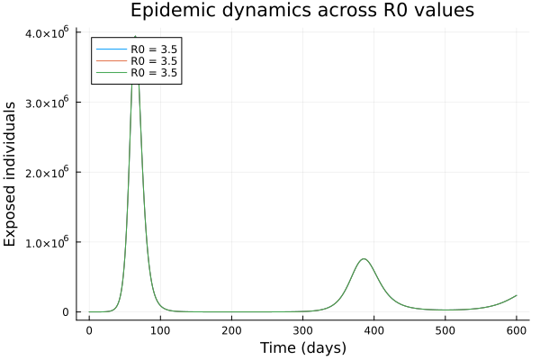
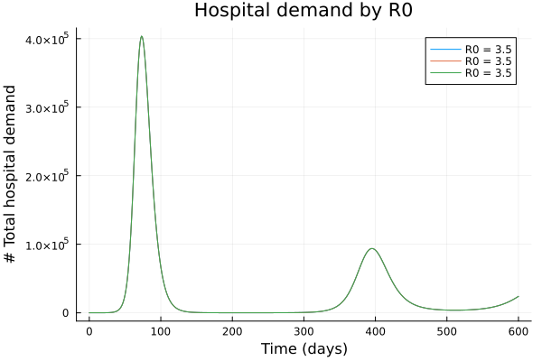

Running multiple R0 values in parallel
The daedalus function supports running multiple reproduction number (R0) values in a single call using vector dispatch. This is useful for sensitivity analyses, parameter sweeps, or generating epidemic curves across a range of transmission scenarios.
NOTE: This section is work in progress. This feature uses DifferentialEquations.jl functionality for working with ensemble models. Better functionality for working with ensemble outputs, using the inbuilt DE.jl functionality, will be added later.
Basic ensemble run
Pass a Vector{InfectionData} with different R0 values:
using Daedalus
using Plots
# Run model with three different R0 values
infections = [
Daedalus.DataLoader.get_pathogen("sars-cov-2 delta"),
Daedalus.DataLoader.get_pathogen("sars-cov-2 delta"),
Daedalus.DataLoader.get_pathogen("sars-cov-2 delta")
]
infections[1].r0 = 1.5
infections[2].r0 = 2.5
infections[3].r0 = 3.5
results = daedalus("Australia", infections, time_end=600.0);
# Each result contains: sol, saves, npi, r0
println("Number of results: ", length(results))
println("R0 values: ", [r.r0 for r in results])Number of results: 3
R0 values: [3.5, 3.5, 3.5]Extracting and comparing results
Each element in the results vector is a named tuple with the ODE solution and associated metadata:
# Extract solutions for each R0 value
times = Daedalus.Outputs.get_times(results[1]);
# Compare exposed cases across R0 values
iExpo = Daedalus.Constants.get_indices("E")
plot(legend=:topleft)
for (i, result) in enumerate(results)
exposed = Daedalus.Outputs.get_values(result, "E", 1)
plot!(times, exposed, label="R0 = $(result.r0)")
end
xlabel!("Time (days)")
ylabel!("Exposed individuals")
title!("Epidemic dynamics across R0 values")
Comparing peak hospitalizations
Extract and compare peak hospitalization across different transmission scenarios:
# get hospitalization for each R0 value and plot
# NOTE: needs better ensemble output handling functionality
# Display comparison
plot(legend=:topright)
for (i, result) in enumerate(results)
hosp = Daedalus.Outputs.get_values(result, "H", 1)
plot!(times, hosp, label="R0 = $(result.r0)")
end
xlabel!("Time (days)")
ylabel!("# Total hospital demand")
title!("Hospital demand by R0")
Effective reproduction number (Rt) across scenarios
Compare how the effective reproduction number evolves under different baseline transmission rates:
# Extract Rt for each R0 scenario
plot(legend=:topright)
for (i, result) in enumerate(results)
rt_vals = Daedalus.Outputs.get_values(result, "Rt", 1)
plot!(times, rt_vals, label="R0 = $(result.r0)")
end
hline!([1.0], linestyle=:dash, color=:black, label="Critical threshold")
xlabel!("Time (days)")
ylabel!("Effective reproduction number (Rt)")
title!("Rt trajectories for different R0 values")Using ensemble runs with NPIs
Non-pharmaceutical interventions (NPIs) are applied consistently across all R0 values in an ensemble run:
using Daedalus
# Define a reactive NPI that triggers at high hospitalizations
npi = Daedalus.DaedalusStructs.Npi(10000.0, (coef=0.5,))
# Run ensemble with same NPI applied to all R0 values
r0_range = [1.5, 2.0, 2.5, 3.0, 3.5]
infections_npi = [Daedalus.DataLoader.get_pathogen("sars-cov-2 delta") for _ in r0_range]
for (i, r0) in enumerate(r0_range)
infections_npi[i].r0 = r0
end
results_with_npi = daedalus("Australia", infections_npi, npi=npi, time_end=600.0)5-element Vector{Any}:
(sol = SciMLBase.ODESolution{Float64, 2, Vector{Vector{Float64}}, Nothing, Nothing, Vector{Float64}, Vector{Vector{Vector{Float64}}}, Nothing, SciMLBase.ODEProblem{Vector{Float64}, Tuple{Float64, Float64}, true, Daedalus.DaedalusStructs.Params, SciMLBase.ODEFunction{true, SciMLBase.AutoSpecialize, FunctionWrappersWrappers.FunctionWrappersWrapper{Tuple{FunctionWrappers.FunctionWrapper{Nothing, Tuple{Vector{Float64}, Vector{Float64}, Daedalus.DaedalusStructs.Params, Float64}}, FunctionWrappers.FunctionWrapper{Nothing, Tuple{Vector{ForwardDiff.Dual{ForwardDiff.Tag{DiffEqBase.OrdinaryDiffEqTag, Float64}, Float64, 1}}, Vector{ForwardDiff.Dual{ForwardDiff.Tag{DiffEqBase.OrdinaryDiffEqTag, Float64}, Float64, 1}}, Daedalus.DaedalusStructs.Params, Float64}}, FunctionWrappers.FunctionWrapper{Nothing, Tuple{Vector{ForwardDiff.Dual{ForwardDiff.Tag{DiffEqBase.OrdinaryDiffEqTag, Float64}, Float64, 1}}, Vector{Float64}, Daedalus.DaedalusStructs.Params, ForwardDiff.Dual{ForwardDiff.Tag{DiffEqBase.OrdinaryDiffEqTag, Float64}, Float64, 1}}}, FunctionWrappers.FunctionWrapper{Nothing, Tuple{Vector{ForwardDiff.Dual{ForwardDiff.Tag{DiffEqBase.OrdinaryDiffEqTag, Float64}, Float64, 1}}, Vector{ForwardDiff.Dual{ForwardDiff.Tag{DiffEqBase.OrdinaryDiffEqTag, Float64}, Float64, 1}}, Daedalus.DaedalusStructs.Params, ForwardDiff.Dual{ForwardDiff.Tag{DiffEqBase.OrdinaryDiffEqTag, Float64}, Float64, 1}}}}, false}, LinearAlgebra.UniformScaling{Bool}, Nothing, Nothing, Nothing, Nothing, Nothing, Nothing, Nothing, Nothing, Nothing, Nothing, Nothing, Nothing, typeof(SciMLBase.DEFAULT_OBSERVED), Nothing, Nothing, Nothing, Nothing}, Base.Pairs{Symbol, Union{}, Nothing, @NamedTuple{}}, SciMLBase.StandardODEProblem}, OrdinaryDiffEqCore.CompositeAlgorithm{0, Tuple{OrdinaryDiffEqTsit5.Tsit5{typeof(OrdinaryDiffEqCore.trivial_limiter!), typeof(OrdinaryDiffEqCore.trivial_limiter!), Static.False}, OrdinaryDiffEqVerner.Vern7{typeof(OrdinaryDiffEqCore.trivial_limiter!), typeof(OrdinaryDiffEqCore.trivial_limiter!), Static.False}, OrdinaryDiffEqRosenbrock.Rosenbrock23{0, ADTypes.AutoFiniteDiff{Val{:forward}, Val{:forward}, Val{:hcentral}, Nothing, Nothing, Int64}, Nothing, typeof(OrdinaryDiffEqCore.DEFAULT_PRECS), Val{:forward}(), true, nothing, typeof(OrdinaryDiffEqCore.trivial_limiter!), typeof(OrdinaryDiffEqCore.trivial_limiter!)}, OrdinaryDiffEqRosenbrock.Rodas5P{0, ADTypes.AutoFiniteDiff{Val{:forward}, Val{:forward}, Val{:hcentral}, Nothing, Nothing, Int64}, Nothing, typeof(OrdinaryDiffEqCore.DEFAULT_PRECS), Val{:forward}(), true, nothing, typeof(OrdinaryDiffEqCore.trivial_limiter!), typeof(OrdinaryDiffEqCore.trivial_limiter!)}, OrdinaryDiffEqBDF.FBDF{5, 0, ADTypes.AutoFiniteDiff{Val{:forward}, Val{:forward}, Val{:hcentral}, Nothing, Nothing, Int64}, Nothing, OrdinaryDiffEqNonlinearSolve.NLNewton{Rational{Int64}, Rational{Int64}, Rational{Int64}, Nothing}, typeof(OrdinaryDiffEqCore.DEFAULT_PRECS), Val{:forward}(), true, nothing, Nothing, Nothing, typeof(OrdinaryDiffEqCore.trivial_limiter!)}, OrdinaryDiffEqBDF.FBDF{5, 0, ADTypes.AutoFiniteDiff{Val{:forward}, Val{:forward}, Val{:hcentral}, Nothing, Nothing, Int64}, LinearSolve.KrylovJL{typeof(Krylov.gmres!), Int64, Nothing, Tuple{}, Base.Pairs{Symbol, Union{}, Nothing, @NamedTuple{}}}, OrdinaryDiffEqNonlinearSolve.NLNewton{Rational{Int64}, Rational{Int64}, Rational{Int64}, Nothing}, typeof(OrdinaryDiffEqCore.DEFAULT_PRECS), Val{:forward}(), true, nothing, Nothing, Nothing, typeof(OrdinaryDiffEqCore.trivial_limiter!)}}, OrdinaryDiffEqCore.AutoSwitchCache{Tuple{OrdinaryDiffEqTsit5.Tsit5{typeof(OrdinaryDiffEqCore.trivial_limiter!), typeof(OrdinaryDiffEqCore.trivial_limiter!), Static.False}, OrdinaryDiffEqVerner.Vern7{typeof(OrdinaryDiffEqCore.trivial_limiter!), typeof(OrdinaryDiffEqCore.trivial_limiter!), Static.False}}, Tuple{OrdinaryDiffEqRosenbrock.Rosenbrock23{0, ADTypes.AutoFiniteDiff{Val{:forward}, Val{:forward}, Val{:hcentral}, Nothing, Nothing, Int64}, Nothing, typeof(OrdinaryDiffEqCore.DEFAULT_PRECS), Val{:forward}(), true, nothing, typeof(OrdinaryDiffEqCore.trivial_limiter!), typeof(OrdinaryDiffEqCore.trivial_limiter!)}, OrdinaryDiffEqRosenbrock.Rodas5P{0, ADTypes.AutoFiniteDiff{Val{:forward}, Val{:forward}, Val{:hcentral}, Nothing, Nothing, Int64}, Nothing, typeof(OrdinaryDiffEqCore.DEFAULT_PRECS), Val{:forward}(), true, nothing, typeof(OrdinaryDiffEqCore.trivial_limiter!), typeof(OrdinaryDiffEqCore.trivial_limiter!)}, OrdinaryDiffEqBDF.FBDF{5, 0, ADTypes.AutoFiniteDiff{Val{:forward}, Val{:forward}, Val{:hcentral}, Nothing, Nothing, Int64}, Nothing, OrdinaryDiffEqNonlinearSolve.NLNewton{Rational{Int64}, Rational{Int64}, Rational{Int64}, Nothing}, typeof(OrdinaryDiffEqCore.DEFAULT_PRECS), Val{:forward}(), true, nothing, Nothing, Nothing, typeof(OrdinaryDiffEqCore.trivial_limiter!)}, OrdinaryDiffEqBDF.FBDF{5, 0, ADTypes.AutoFiniteDiff{Val{:forward}, Val{:forward}, Val{:hcentral}, Nothing, Nothing, Int64}, LinearSolve.KrylovJL{typeof(Krylov.gmres!), Int64, Nothing, Tuple{}, Base.Pairs{Symbol, Union{}, Nothing, @NamedTuple{}}}, OrdinaryDiffEqNonlinearSolve.NLNewton{Rational{Int64}, Rational{Int64}, Rational{Int64}, Nothing}, typeof(OrdinaryDiffEqCore.DEFAULT_PRECS), Val{:forward}(), true, nothing, Nothing, Nothing, typeof(OrdinaryDiffEqCore.trivial_limiter!)}}, Rational{Int64}, Int64}}, OrdinaryDiffEqCore.InterpolationData{SciMLBase.ODEFunction{true, SciMLBase.AutoSpecialize, FunctionWrappersWrappers.FunctionWrappersWrapper{Tuple{FunctionWrappers.FunctionWrapper{Nothing, Tuple{Vector{Float64}, Vector{Float64}, Daedalus.DaedalusStructs.Params, Float64}}, FunctionWrappers.FunctionWrapper{Nothing, Tuple{Vector{ForwardDiff.Dual{ForwardDiff.Tag{DiffEqBase.OrdinaryDiffEqTag, Float64}, Float64, 1}}, Vector{ForwardDiff.Dual{ForwardDiff.Tag{DiffEqBase.OrdinaryDiffEqTag, Float64}, Float64, 1}}, Daedalus.DaedalusStructs.Params, Float64}}, FunctionWrappers.FunctionWrapper{Nothing, Tuple{Vector{ForwardDiff.Dual{ForwardDiff.Tag{DiffEqBase.OrdinaryDiffEqTag, Float64}, Float64, 1}}, Vector{Float64}, Daedalus.DaedalusStructs.Params, ForwardDiff.Dual{ForwardDiff.Tag{DiffEqBase.OrdinaryDiffEqTag, Float64}, Float64, 1}}}, FunctionWrappers.FunctionWrapper{Nothing, Tuple{Vector{ForwardDiff.Dual{ForwardDiff.Tag{DiffEqBase.OrdinaryDiffEqTag, Float64}, Float64, 1}}, Vector{ForwardDiff.Dual{ForwardDiff.Tag{DiffEqBase.OrdinaryDiffEqTag, Float64}, Float64, 1}}, Daedalus.DaedalusStructs.Params, ForwardDiff.Dual{ForwardDiff.Tag{DiffEqBase.OrdinaryDiffEqTag, Float64}, Float64, 1}}}}, false}, LinearAlgebra.UniformScaling{Bool}, Nothing, Nothing, Nothing, Nothing, Nothing, Nothing, Nothing, Nothing, Nothing, Nothing, Nothing, Nothing, typeof(SciMLBase.DEFAULT_OBSERVED), Nothing, Nothing, Nothing, Nothing}, Vector{Vector{Float64}}, Vector{Float64}, Vector{Vector{Vector{Float64}}}, Vector{Int64}, OrdinaryDiffEqCore.DefaultCache{OrdinaryDiffEqTsit5.Tsit5Cache{Vector{Float64}, Vector{Float64}, Vector{Float64}, typeof(OrdinaryDiffEqCore.trivial_limiter!), typeof(OrdinaryDiffEqCore.trivial_limiter!), Static.False}, OrdinaryDiffEqVerner.Vern7Cache{Vector{Float64}, Vector{Float64}, Vector{Float64}, typeof(OrdinaryDiffEqCore.trivial_limiter!), typeof(OrdinaryDiffEqCore.trivial_limiter!), Static.False}, OrdinaryDiffEqRosenbrock.Rosenbrock23Cache{Vector{Float64}, Vector{Float64}, Vector{Float64}, Matrix{Float64}, Matrix{Float64}, OrdinaryDiffEqRosenbrock.Rosenbrock23Tableau{Float64}, SciMLBase.TimeGradientWrapper{true, SciMLBase.ODEFunction{true, SciMLBase.AutoSpecialize, FunctionWrappersWrappers.FunctionWrappersWrapper{Tuple{FunctionWrappers.FunctionWrapper{Nothing, Tuple{Vector{Float64}, Vector{Float64}, Daedalus.DaedalusStructs.Params, Float64}}, FunctionWrappers.FunctionWrapper{Nothing, Tuple{Vector{ForwardDiff.Dual{ForwardDiff.Tag{DiffEqBase.OrdinaryDiffEqTag, Float64}, Float64, 1}}, Vector{ForwardDiff.Dual{ForwardDiff.Tag{DiffEqBase.OrdinaryDiffEqTag, Float64}, Float64, 1}}, Daedalus.DaedalusStructs.Params, Float64}}, FunctionWrappers.FunctionWrapper{Nothing, Tuple{Vector{ForwardDiff.Dual{ForwardDiff.Tag{DiffEqBase.OrdinaryDiffEqTag, Float64}, Float64, 1}}, Vector{Float64}, Daedalus.DaedalusStructs.Params, ForwardDiff.Dual{ForwardDiff.Tag{DiffEqBase.OrdinaryDiffEqTag, Float64}, Float64, 1}}}, FunctionWrappers.FunctionWrapper{Nothing, Tuple{Vector{ForwardDiff.Dual{ForwardDiff.Tag{DiffEqBase.OrdinaryDiffEqTag, Float64}, Float64, 1}}, Vector{ForwardDiff.Dual{ForwardDiff.Tag{DiffEqBase.OrdinaryDiffEqTag, Float64}, Float64, 1}}, Daedalus.DaedalusStructs.Params, ForwardDiff.Dual{ForwardDiff.Tag{DiffEqBase.OrdinaryDiffEqTag, Float64}, Float64, 1}}}}, false}, LinearAlgebra.UniformScaling{Bool}, Nothing, Nothing, Nothing, Nothing, Nothing, Nothing, Nothing, Nothing, Nothing, Nothing, Nothing, Nothing, typeof(SciMLBase.DEFAULT_OBSERVED), Nothing, Nothing, Nothing, Nothing}, Vector{Float64}, Daedalus.DaedalusStructs.Params}, SciMLBase.UJacobianWrapper{true, SciMLBase.ODEFunction{true, SciMLBase.AutoSpecialize, FunctionWrappersWrappers.FunctionWrappersWrapper{Tuple{FunctionWrappers.FunctionWrapper{Nothing, Tuple{Vector{Float64}, Vector{Float64}, Daedalus.DaedalusStructs.Params, Float64}}, FunctionWrappers.FunctionWrapper{Nothing, Tuple{Vector{ForwardDiff.Dual{ForwardDiff.Tag{DiffEqBase.OrdinaryDiffEqTag, Float64}, Float64, 1}}, Vector{ForwardDiff.Dual{ForwardDiff.Tag{DiffEqBase.OrdinaryDiffEqTag, Float64}, Float64, 1}}, Daedalus.DaedalusStructs.Params, Float64}}, FunctionWrappers.FunctionWrapper{Nothing, Tuple{Vector{ForwardDiff.Dual{ForwardDiff.Tag{DiffEqBase.OrdinaryDiffEqTag, Float64}, Float64, 1}}, Vector{Float64}, Daedalus.DaedalusStructs.Params, ForwardDiff.Dual{ForwardDiff.Tag{DiffEqBase.OrdinaryDiffEqTag, Float64}, Float64, 1}}}, FunctionWrappers.FunctionWrapper{Nothing, Tuple{Vector{ForwardDiff.Dual{ForwardDiff.Tag{DiffEqBase.OrdinaryDiffEqTag, Float64}, Float64, 1}}, Vector{ForwardDiff.Dual{ForwardDiff.Tag{DiffEqBase.OrdinaryDiffEqTag, Float64}, Float64, 1}}, Daedalus.DaedalusStructs.Params, ForwardDiff.Dual{ForwardDiff.Tag{DiffEqBase.OrdinaryDiffEqTag, Float64}, Float64, 1}}}}, false}, LinearAlgebra.UniformScaling{Bool}, Nothing, Nothing, Nothing, Nothing, Nothing, Nothing, Nothing, Nothing, Nothing, Nothing, Nothing, Nothing, typeof(SciMLBase.DEFAULT_OBSERVED), Nothing, Nothing, Nothing, Nothing}, Float64, Daedalus.DaedalusStructs.Params}, LinearSolve.LinearCache{Matrix{Float64}, Vector{Float64}, Vector{Float64}, SciMLBase.NullParameters, LinearSolve.DefaultLinearSolver, LinearSolve.DefaultLinearSolverInit{LinearAlgebra.LU{Float64, Matrix{Float64}, Vector{Int64}}, LinearAlgebra.QRCompactWY{Float64, Matrix{Float64}, Matrix{Float64}}, Nothing, Nothing, Nothing, Nothing, Nothing, Nothing, Tuple{LinearAlgebra.LU{Float64, Matrix{Float64}, Vector{Int64}}, Vector{Int64}}, Tuple{LinearAlgebra.LU{Float64, Matrix{Float64}, Vector{Int64}}, Vector{Int64}}, Nothing, Nothing, Nothing, LinearAlgebra.SVD{Float64, Float64, Matrix{Float64}, Vector{Float64}}, LinearAlgebra.Cholesky{Float64, Matrix{Float64}}, LinearAlgebra.Cholesky{Float64, Matrix{Float64}}, Tuple{LinearAlgebra.LU{Float64, Matrix{Float64}, Vector{Int32}}, Base.RefValue{Int32}}, Tuple{LinearAlgebra.LU{Float64, Matrix{Float64}, Vector{Int64}}, Base.RefValue{Int64}}, LinearAlgebra.QRPivoted{Float64, Matrix{Float64}, Vector{Float64}, Vector{Int64}}, Nothing, Nothing, Nothing, Nothing, Nothing, Matrix{Float64}, Vector{Float64}}, LinearSolve.InvPreconditioner{LinearAlgebra.Diagonal{Float64, Vector{Float64}}}, LinearAlgebra.Diagonal{Float64, Vector{Float64}}, Float64, LinearSolve.LinearVerbosity{SciMLLogging.Silent, SciMLLogging.Silent, SciMLLogging.Silent, SciMLLogging.Silent, SciMLLogging.Silent, SciMLLogging.Silent, SciMLLogging.Silent, SciMLLogging.Silent, SciMLLogging.WarnLevel, SciMLLogging.WarnLevel, SciMLLogging.Silent, SciMLLogging.Silent, SciMLLogging.Silent, SciMLLogging.Silent, SciMLLogging.Silent, SciMLLogging.Silent}, Bool, LinearSolve.LinearSolveAdjoint{Missing}}, Tuple{DifferentiationInterfaceFiniteDiffExt.FiniteDiffTwoArgJacobianPrep{Nothing, FiniteDiff.JacobianCache{Vector{Float64}, Vector{Float64}, Vector{Float64}, Vector{Float64}, UnitRange{Int64}, Nothing, Val{:forward}(), Float64}, Float64, Float64, Int64}, DifferentiationInterfaceFiniteDiffExt.FiniteDiffTwoArgJacobianPrep{Nothing, FiniteDiff.JacobianCache{Vector{Float64}, Vector{Float64}, Vector{Float64}, Vector{Float64}, UnitRange{Int64}, Nothing, Val{:forward}(), Float64}, Float64, Float64, Int64}}, Tuple{DifferentiationInterfaceFiniteDiffExt.FiniteDiffTwoArgDerivativePrep{Tuple{SciMLBase.TimeGradientWrapper{true, SciMLBase.ODEFunction{true, SciMLBase.AutoSpecialize, FunctionWrappersWrappers.FunctionWrappersWrapper{Tuple{FunctionWrappers.FunctionWrapper{Nothing, Tuple{Vector{Float64}, Vector{Float64}, Daedalus.DaedalusStructs.Params, Float64}}, FunctionWrappers.FunctionWrapper{Nothing, Tuple{Vector{ForwardDiff.Dual{ForwardDiff.Tag{DiffEqBase.OrdinaryDiffEqTag, Float64}, Float64, 1}}, Vector{ForwardDiff.Dual{ForwardDiff.Tag{DiffEqBase.OrdinaryDiffEqTag, Float64}, Float64, 1}}, Daedalus.DaedalusStructs.Params, Float64}}, FunctionWrappers.FunctionWrapper{Nothing, Tuple{Vector{ForwardDiff.Dual{ForwardDiff.Tag{DiffEqBase.OrdinaryDiffEqTag, Float64}, Float64, 1}}, Vector{Float64}, Daedalus.DaedalusStructs.Params, ForwardDiff.Dual{ForwardDiff.Tag{DiffEqBase.OrdinaryDiffEqTag, Float64}, Float64, 1}}}, FunctionWrappers.FunctionWrapper{Nothing, Tuple{Vector{ForwardDiff.Dual{ForwardDiff.Tag{DiffEqBase.OrdinaryDiffEqTag, Float64}, Float64, 1}}, Vector{ForwardDiff.Dual{ForwardDiff.Tag{DiffEqBase.OrdinaryDiffEqTag, Float64}, Float64, 1}}, Daedalus.DaedalusStructs.Params, ForwardDiff.Dual{ForwardDiff.Tag{DiffEqBase.OrdinaryDiffEqTag, Float64}, Float64, 1}}}}, false}, LinearAlgebra.UniformScaling{Bool}, Nothing, Nothing, Nothing, Nothing, Nothing, Nothing, Nothing, Nothing, Nothing, Nothing, Nothing, Nothing, typeof(SciMLBase.DEFAULT_OBSERVED), Nothing, Nothing, Nothing, Nothing}, Vector{Float64}, Daedalus.DaedalusStructs.Params}, Vector{Float64}, ADTypes.AutoFiniteDiff{Val{:forward}, Val{:forward}, Val{:hcentral}, Nothing, Nothing, Int64}, Float64, Tuple{}}, FiniteDiff.GradientCache{Nothing, Vector{Float64}, Vector{Float64}, Float64, Val{:forward}(), Float64, Val{true}()}, Float64, Float64, Int64}, DifferentiationInterfaceFiniteDiffExt.FiniteDiffTwoArgDerivativePrep{Tuple{SciMLBase.TimeGradientWrapper{true, SciMLBase.ODEFunction{true, SciMLBase.AutoSpecialize, FunctionWrappersWrappers.FunctionWrappersWrapper{Tuple{FunctionWrappers.FunctionWrapper{Nothing, Tuple{Vector{Float64}, Vector{Float64}, Daedalus.DaedalusStructs.Params, Float64}}, FunctionWrappers.FunctionWrapper{Nothing, Tuple{Vector{ForwardDiff.Dual{ForwardDiff.Tag{DiffEqBase.OrdinaryDiffEqTag, Float64}, Float64, 1}}, Vector{ForwardDiff.Dual{ForwardDiff.Tag{DiffEqBase.OrdinaryDiffEqTag, Float64}, Float64, 1}}, Daedalus.DaedalusStructs.Params, Float64}}, FunctionWrappers.FunctionWrapper{Nothing, Tuple{Vector{ForwardDiff.Dual{ForwardDiff.Tag{DiffEqBase.OrdinaryDiffEqTag, Float64}, Float64, 1}}, Vector{Float64}, Daedalus.DaedalusStructs.Params, ForwardDiff.Dual{ForwardDiff.Tag{DiffEqBase.OrdinaryDiffEqTag, Float64}, Float64, 1}}}, FunctionWrappers.FunctionWrapper{Nothing, Tuple{Vector{ForwardDiff.Dual{ForwardDiff.Tag{DiffEqBase.OrdinaryDiffEqTag, Float64}, Float64, 1}}, Vector{ForwardDiff.Dual{ForwardDiff.Tag{DiffEqBase.OrdinaryDiffEqTag, Float64}, Float64, 1}}, Daedalus.DaedalusStructs.Params, ForwardDiff.Dual{ForwardDiff.Tag{DiffEqBase.OrdinaryDiffEqTag, Float64}, Float64, 1}}}}, false}, LinearAlgebra.UniformScaling{Bool}, Nothing, Nothing, Nothing, Nothing, Nothing, Nothing, Nothing, Nothing, Nothing, Nothing, Nothing, Nothing, typeof(SciMLBase.DEFAULT_OBSERVED), Nothing, Nothing, Nothing, Nothing}, Vector{Float64}, Daedalus.DaedalusStructs.Params}, Vector{Float64}, ADTypes.AutoFiniteDiff{Val{:forward}, Val{:forward}, Val{:hcentral}, Nothing, Nothing, Int64}, Float64, Tuple{}}, FiniteDiff.GradientCache{Nothing, Vector{Float64}, Vector{Float64}, Float64, Val{:forward}(), Float64, Val{true}()}, Float64, Float64, Int64}}, Float64, OrdinaryDiffEqRosenbrock.Rosenbrock23{0, ADTypes.AutoFiniteDiff{Val{:forward}, Val{:forward}, Val{:hcentral}, Nothing, Nothing, Int64}, Nothing, typeof(OrdinaryDiffEqCore.DEFAULT_PRECS), Val{:forward}(), true, nothing, typeof(OrdinaryDiffEqCore.trivial_limiter!), typeof(OrdinaryDiffEqCore.trivial_limiter!)}, Nothing, typeof(OrdinaryDiffEqCore.trivial_limiter!), typeof(OrdinaryDiffEqCore.trivial_limiter!)}, OrdinaryDiffEqRosenbrock.RosenbrockCache{Vector{Float64}, Vector{Float64}, Float64, Vector{Float64}, Matrix{Float64}, Matrix{Float64}, OrdinaryDiffEqRosenbrock.RodasTableau{Float64, Float64}, SciMLBase.TimeGradientWrapper{true, SciMLBase.ODEFunction{true, SciMLBase.AutoSpecialize, FunctionWrappersWrappers.FunctionWrappersWrapper{Tuple{FunctionWrappers.FunctionWrapper{Nothing, Tuple{Vector{Float64}, Vector{Float64}, Daedalus.DaedalusStructs.Params, Float64}}, FunctionWrappers.FunctionWrapper{Nothing, Tuple{Vector{ForwardDiff.Dual{ForwardDiff.Tag{DiffEqBase.OrdinaryDiffEqTag, Float64}, Float64, 1}}, Vector{ForwardDiff.Dual{ForwardDiff.Tag{DiffEqBase.OrdinaryDiffEqTag, Float64}, Float64, 1}}, Daedalus.DaedalusStructs.Params, Float64}}, FunctionWrappers.FunctionWrapper{Nothing, Tuple{Vector{ForwardDiff.Dual{ForwardDiff.Tag{DiffEqBase.OrdinaryDiffEqTag, Float64}, Float64, 1}}, Vector{Float64}, Daedalus.DaedalusStructs.Params, ForwardDiff.Dual{ForwardDiff.Tag{DiffEqBase.OrdinaryDiffEqTag, Float64}, Float64, 1}}}, FunctionWrappers.FunctionWrapper{Nothing, Tuple{Vector{ForwardDiff.Dual{ForwardDiff.Tag{DiffEqBase.OrdinaryDiffEqTag, Float64}, Float64, 1}}, Vector{ForwardDiff.Dual{ForwardDiff.Tag{DiffEqBase.OrdinaryDiffEqTag, Float64}, Float64, 1}}, Daedalus.DaedalusStructs.Params, ForwardDiff.Dual{ForwardDiff.Tag{DiffEqBase.OrdinaryDiffEqTag, Float64}, Float64, 1}}}}, false}, LinearAlgebra.UniformScaling{Bool}, Nothing, Nothing, Nothing, Nothing, Nothing, Nothing, Nothing, Nothing, Nothing, Nothing, Nothing, Nothing, typeof(SciMLBase.DEFAULT_OBSERVED), Nothing, Nothing, Nothing, Nothing}, Vector{Float64}, Daedalus.DaedalusStructs.Params}, SciMLBase.UJacobianWrapper{true, SciMLBase.ODEFunction{true, SciMLBase.AutoSpecialize, FunctionWrappersWrappers.FunctionWrappersWrapper{Tuple{FunctionWrappers.FunctionWrapper{Nothing, Tuple{Vector{Float64}, Vector{Float64}, Daedalus.DaedalusStructs.Params, Float64}}, FunctionWrappers.FunctionWrapper{Nothing, Tuple{Vector{ForwardDiff.Dual{ForwardDiff.Tag{DiffEqBase.OrdinaryDiffEqTag, Float64}, Float64, 1}}, Vector{ForwardDiff.Dual{ForwardDiff.Tag{DiffEqBase.OrdinaryDiffEqTag, Float64}, Float64, 1}}, Daedalus.DaedalusStructs.Params, Float64}}, FunctionWrappers.FunctionWrapper{Nothing, Tuple{Vector{ForwardDiff.Dual{ForwardDiff.Tag{DiffEqBase.OrdinaryDiffEqTag, Float64}, Float64, 1}}, Vector{Float64}, Daedalus.DaedalusStructs.Params, ForwardDiff.Dual{ForwardDiff.Tag{DiffEqBase.OrdinaryDiffEqTag, Float64}, Float64, 1}}}, FunctionWrappers.FunctionWrapper{Nothing, Tuple{Vector{ForwardDiff.Dual{ForwardDiff.Tag{DiffEqBase.OrdinaryDiffEqTag, Float64}, Float64, 1}}, Vector{ForwardDiff.Dual{ForwardDiff.Tag{DiffEqBase.OrdinaryDiffEqTag, Float64}, Float64, 1}}, Daedalus.DaedalusStructs.Params, ForwardDiff.Dual{ForwardDiff.Tag{DiffEqBase.OrdinaryDiffEqTag, Float64}, Float64, 1}}}}, false}, LinearAlgebra.UniformScaling{Bool}, Nothing, Nothing, Nothing, Nothing, Nothing, Nothing, Nothing, Nothing, Nothing, Nothing, Nothing, Nothing, typeof(SciMLBase.DEFAULT_OBSERVED), Nothing, Nothing, Nothing, Nothing}, Float64, Daedalus.DaedalusStructs.Params}, LinearSolve.LinearCache{Matrix{Float64}, Vector{Float64}, Vector{Float64}, SciMLBase.NullParameters, LinearSolve.DefaultLinearSolver, LinearSolve.DefaultLinearSolverInit{LinearAlgebra.LU{Float64, Matrix{Float64}, Vector{Int64}}, LinearAlgebra.QRCompactWY{Float64, Matrix{Float64}, Matrix{Float64}}, Nothing, Nothing, Nothing, Nothing, Nothing, Nothing, Tuple{LinearAlgebra.LU{Float64, Matrix{Float64}, Vector{Int64}}, Vector{Int64}}, Tuple{LinearAlgebra.LU{Float64, Matrix{Float64}, Vector{Int64}}, Vector{Int64}}, Nothing, Nothing, Nothing, LinearAlgebra.SVD{Float64, Float64, Matrix{Float64}, Vector{Float64}}, LinearAlgebra.Cholesky{Float64, Matrix{Float64}}, LinearAlgebra.Cholesky{Float64, Matrix{Float64}}, Tuple{LinearAlgebra.LU{Float64, Matrix{Float64}, Vector{Int32}}, Base.RefValue{Int32}}, Tuple{LinearAlgebra.LU{Float64, Matrix{Float64}, Vector{Int64}}, Base.RefValue{Int64}}, LinearAlgebra.QRPivoted{Float64, Matrix{Float64}, Vector{Float64}, Vector{Int64}}, Nothing, Nothing, Nothing, Nothing, Nothing, Matrix{Float64}, Vector{Float64}}, LinearSolve.InvPreconditioner{LinearAlgebra.Diagonal{Float64, Vector{Float64}}}, LinearAlgebra.Diagonal{Float64, Vector{Float64}}, Float64, LinearSolve.LinearVerbosity{SciMLLogging.Silent, SciMLLogging.Silent, SciMLLogging.Silent, SciMLLogging.Silent, SciMLLogging.Silent, SciMLLogging.Silent, SciMLLogging.Silent, SciMLLogging.Silent, SciMLLogging.WarnLevel, SciMLLogging.WarnLevel, SciMLLogging.Silent, SciMLLogging.Silent, SciMLLogging.Silent, SciMLLogging.Silent, SciMLLogging.Silent, SciMLLogging.Silent}, Bool, LinearSolve.LinearSolveAdjoint{Missing}}, Tuple{DifferentiationInterfaceFiniteDiffExt.FiniteDiffTwoArgJacobianPrep{Nothing, FiniteDiff.JacobianCache{Vector{Float64}, Vector{Float64}, Vector{Float64}, Vector{Float64}, UnitRange{Int64}, Nothing, Val{:forward}(), Float64}, Float64, Float64, Int64}, DifferentiationInterfaceFiniteDiffExt.FiniteDiffTwoArgJacobianPrep{Nothing, FiniteDiff.JacobianCache{Vector{Float64}, Vector{Float64}, Vector{Float64}, Vector{Float64}, UnitRange{Int64}, Nothing, Val{:forward}(), Float64}, Float64, Float64, Int64}}, Tuple{DifferentiationInterfaceFiniteDiffExt.FiniteDiffTwoArgDerivativePrep{Tuple{SciMLBase.TimeGradientWrapper{true, SciMLBase.ODEFunction{true, SciMLBase.AutoSpecialize, FunctionWrappersWrappers.FunctionWrappersWrapper{Tuple{FunctionWrappers.FunctionWrapper{Nothing, Tuple{Vector{Float64}, Vector{Float64}, Daedalus.DaedalusStructs.Params, Float64}}, FunctionWrappers.FunctionWrapper{Nothing, Tuple{Vector{ForwardDiff.Dual{ForwardDiff.Tag{DiffEqBase.OrdinaryDiffEqTag, Float64}, Float64, 1}}, Vector{ForwardDiff.Dual{ForwardDiff.Tag{DiffEqBase.OrdinaryDiffEqTag, Float64}, Float64, 1}}, Daedalus.DaedalusStructs.Params, Float64}}, FunctionWrappers.FunctionWrapper{Nothing, Tuple{Vector{ForwardDiff.Dual{ForwardDiff.Tag{DiffEqBase.OrdinaryDiffEqTag, Float64}, Float64, 1}}, Vector{Float64}, Daedalus.DaedalusStructs.Params, ForwardDiff.Dual{ForwardDiff.Tag{DiffEqBase.OrdinaryDiffEqTag, Float64}, Float64, 1}}}, FunctionWrappers.FunctionWrapper{Nothing, Tuple{Vector{ForwardDiff.Dual{ForwardDiff.Tag{DiffEqBase.OrdinaryDiffEqTag, Float64}, Float64, 1}}, Vector{ForwardDiff.Dual{ForwardDiff.Tag{DiffEqBase.OrdinaryDiffEqTag, Float64}, Float64, 1}}, Daedalus.DaedalusStructs.Params, ForwardDiff.Dual{ForwardDiff.Tag{DiffEqBase.OrdinaryDiffEqTag, Float64}, Float64, 1}}}}, false}, LinearAlgebra.UniformScaling{Bool}, Nothing, Nothing, Nothing, Nothing, Nothing, Nothing, Nothing, Nothing, Nothing, Nothing, Nothing, Nothing, typeof(SciMLBase.DEFAULT_OBSERVED), Nothing, Nothing, Nothing, Nothing}, Vector{Float64}, Daedalus.DaedalusStructs.Params}, Vector{Float64}, ADTypes.AutoFiniteDiff{Val{:forward}, Val{:forward}, Val{:hcentral}, Nothing, Nothing, Int64}, Float64, Tuple{}}, FiniteDiff.GradientCache{Nothing, Vector{Float64}, Vector{Float64}, Float64, Val{:forward}(), Float64, Val{true}()}, Float64, Float64, Int64}, DifferentiationInterfaceFiniteDiffExt.FiniteDiffTwoArgDerivativePrep{Tuple{SciMLBase.TimeGradientWrapper{true, SciMLBase.ODEFunction{true, SciMLBase.AutoSpecialize, FunctionWrappersWrappers.FunctionWrappersWrapper{Tuple{FunctionWrappers.FunctionWrapper{Nothing, Tuple{Vector{Float64}, Vector{Float64}, Daedalus.DaedalusStructs.Params, Float64}}, FunctionWrappers.FunctionWrapper{Nothing, Tuple{Vector{ForwardDiff.Dual{ForwardDiff.Tag{DiffEqBase.OrdinaryDiffEqTag, Float64}, Float64, 1}}, Vector{ForwardDiff.Dual{ForwardDiff.Tag{DiffEqBase.OrdinaryDiffEqTag, Float64}, Float64, 1}}, Daedalus.DaedalusStructs.Params, Float64}}, FunctionWrappers.FunctionWrapper{Nothing, Tuple{Vector{ForwardDiff.Dual{ForwardDiff.Tag{DiffEqBase.OrdinaryDiffEqTag, Float64}, Float64, 1}}, Vector{Float64}, Daedalus.DaedalusStructs.Params, ForwardDiff.Dual{ForwardDiff.Tag{DiffEqBase.OrdinaryDiffEqTag, Float64}, Float64, 1}}}, FunctionWrappers.FunctionWrapper{Nothing, Tuple{Vector{ForwardDiff.Dual{ForwardDiff.Tag{DiffEqBase.OrdinaryDiffEqTag, Float64}, Float64, 1}}, Vector{ForwardDiff.Dual{ForwardDiff.Tag{DiffEqBase.OrdinaryDiffEqTag, Float64}, Float64, 1}}, Daedalus.DaedalusStructs.Params, ForwardDiff.Dual{ForwardDiff.Tag{DiffEqBase.OrdinaryDiffEqTag, Float64}, Float64, 1}}}}, false}, LinearAlgebra.UniformScaling{Bool}, Nothing, Nothing, Nothing, Nothing, Nothing, Nothing, Nothing, Nothing, Nothing, Nothing, Nothing, Nothing, typeof(SciMLBase.DEFAULT_OBSERVED), Nothing, Nothing, Nothing, Nothing}, Vector{Float64}, Daedalus.DaedalusStructs.Params}, Vector{Float64}, ADTypes.AutoFiniteDiff{Val{:forward}, Val{:forward}, Val{:hcentral}, Nothing, Nothing, Int64}, Float64, Tuple{}}, FiniteDiff.GradientCache{Nothing, Vector{Float64}, Vector{Float64}, Float64, Val{:forward}(), Float64, Val{true}()}, Float64, Float64, Int64}}, Float64, OrdinaryDiffEqRosenbrock.Rodas5P{0, ADTypes.AutoFiniteDiff{Val{:forward}, Val{:forward}, Val{:hcentral}, Nothing, Nothing, Int64}, Nothing, typeof(OrdinaryDiffEqCore.DEFAULT_PRECS), Val{:forward}(), true, nothing, typeof(OrdinaryDiffEqCore.trivial_limiter!), typeof(OrdinaryDiffEqCore.trivial_limiter!)}, typeof(OrdinaryDiffEqCore.trivial_limiter!), typeof(OrdinaryDiffEqCore.trivial_limiter!)}, OrdinaryDiffEqBDF.FBDFCache{5, OrdinaryDiffEqNonlinearSolve.NLSolver{OrdinaryDiffEqNonlinearSolve.NLNewton{Rational{Int64}, Rational{Int64}, Rational{Int64}, Nothing}, true, Vector{Float64}, Float64, Nothing, Float64, OrdinaryDiffEqNonlinearSolve.NLNewtonCache{Vector{Float64}, Float64, Float64, Vector{Float64}, Matrix{Float64}, Matrix{Float64}, SciMLBase.UJacobianWrapper{true, SciMLBase.ODEFunction{true, SciMLBase.AutoSpecialize, FunctionWrappersWrappers.FunctionWrappersWrapper{Tuple{FunctionWrappers.FunctionWrapper{Nothing, Tuple{Vector{Float64}, Vector{Float64}, Daedalus.DaedalusStructs.Params, Float64}}, FunctionWrappers.FunctionWrapper{Nothing, Tuple{Vector{ForwardDiff.Dual{ForwardDiff.Tag{DiffEqBase.OrdinaryDiffEqTag, Float64}, Float64, 1}}, Vector{ForwardDiff.Dual{ForwardDiff.Tag{DiffEqBase.OrdinaryDiffEqTag, Float64}, Float64, 1}}, Daedalus.DaedalusStructs.Params, Float64}}, FunctionWrappers.FunctionWrapper{Nothing, Tuple{Vector{ForwardDiff.Dual{ForwardDiff.Tag{DiffEqBase.OrdinaryDiffEqTag, Float64}, Float64, 1}}, Vector{Float64}, Daedalus.DaedalusStructs.Params, ForwardDiff.Dual{ForwardDiff.Tag{DiffEqBase.OrdinaryDiffEqTag, Float64}, Float64, 1}}}, FunctionWrappers.FunctionWrapper{Nothing, Tuple{Vector{ForwardDiff.Dual{ForwardDiff.Tag{DiffEqBase.OrdinaryDiffEqTag, Float64}, Float64, 1}}, Vector{ForwardDiff.Dual{ForwardDiff.Tag{DiffEqBase.OrdinaryDiffEqTag, Float64}, Float64, 1}}, Daedalus.DaedalusStructs.Params, ForwardDiff.Dual{ForwardDiff.Tag{DiffEqBase.OrdinaryDiffEqTag, Float64}, Float64, 1}}}}, false}, LinearAlgebra.UniformScaling{Bool}, Nothing, Nothing, Nothing, Nothing, Nothing, Nothing, Nothing, Nothing, Nothing, Nothing, Nothing, Nothing, typeof(SciMLBase.DEFAULT_OBSERVED), Nothing, Nothing, Nothing, Nothing}, Float64, Daedalus.DaedalusStructs.Params}, Tuple{DifferentiationInterfaceFiniteDiffExt.FiniteDiffTwoArgJacobianPrep{Nothing, FiniteDiff.JacobianCache{Vector{Float64}, Vector{Float64}, Vector{Float64}, Vector{Float64}, UnitRange{Int64}, Nothing, Val{:forward}(), Float64}, Float64, Float64, Int64}, DifferentiationInterfaceFiniteDiffExt.FiniteDiffTwoArgJacobianPrep{Nothing, FiniteDiff.JacobianCache{Vector{Float64}, Vector{Float64}, Vector{Float64}, Vector{Float64}, UnitRange{Int64}, Nothing, Val{:forward}(), Float64}, Float64, Float64, Int64}}, LinearSolve.LinearCache{Matrix{Float64}, Vector{Float64}, Vector{Float64}, SciMLBase.NullParameters, LinearSolve.DefaultLinearSolver, LinearSolve.DefaultLinearSolverInit{LinearAlgebra.LU{Float64, Matrix{Float64}, Vector{Int64}}, LinearAlgebra.QRCompactWY{Float64, Matrix{Float64}, Matrix{Float64}}, Nothing, Nothing, Nothing, Nothing, Nothing, Nothing, Tuple{LinearAlgebra.LU{Float64, Matrix{Float64}, Vector{Int64}}, Vector{Int64}}, Tuple{LinearAlgebra.LU{Float64, Matrix{Float64}, Vector{Int64}}, Vector{Int64}}, Nothing, Nothing, Nothing, LinearAlgebra.SVD{Float64, Float64, Matrix{Float64}, Vector{Float64}}, LinearAlgebra.Cholesky{Float64, Matrix{Float64}}, LinearAlgebra.Cholesky{Float64, Matrix{Float64}}, Tuple{LinearAlgebra.LU{Float64, Matrix{Float64}, Vector{Int32}}, Base.RefValue{Int32}}, Tuple{LinearAlgebra.LU{Float64, Matrix{Float64}, Vector{Int64}}, Base.RefValue{Int64}}, LinearAlgebra.QRPivoted{Float64, Matrix{Float64}, Vector{Float64}, Vector{Int64}}, Nothing, Nothing, Nothing, Nothing, Nothing, Matrix{Float64}, Vector{Float64}}, LinearSolve.InvPreconditioner{LinearAlgebra.Diagonal{Float64, Vector{Float64}}}, LinearAlgebra.Diagonal{Float64, Vector{Float64}}, Float64, LinearSolve.LinearVerbosity{SciMLLogging.Silent, SciMLLogging.Silent, SciMLLogging.Silent, SciMLLogging.Silent, SciMLLogging.Silent, SciMLLogging.Silent, SciMLLogging.Silent, SciMLLogging.Silent, SciMLLogging.WarnLevel, SciMLLogging.WarnLevel, SciMLLogging.Silent, SciMLLogging.Silent, SciMLLogging.Silent, SciMLLogging.Silent, SciMLLogging.Silent, SciMLLogging.Silent}, Bool, LinearSolve.LinearSolveAdjoint{Missing}}, Nothing}, Float64}, Vector{Float64}, Vector{Float64}, Vector{Float64}, Float64, Vector{Float64}, Vector{Vector{Float64}}, StaticArraysCore.SMatrix{5, 6, Rational{Int64}, 30}, Float64, Vector{Float64}, Vector{Float64}, typeof(OrdinaryDiffEqCore.trivial_limiter!), Matrix{Float64}}, Union{OrdinaryDiffEqBDF.FBDFCache{5, N, Vector{Float64}, Vector{Float64}, Vector{Float64}, Float64, Vector{Float64}, Vector{Vector{Float64}}, StaticArraysCore.SMatrix{5, 6, Rational{Int64}, 30}, Float64, Vector{Float64}, Vector{Float64}, typeof(OrdinaryDiffEqCore.trivial_limiter!), Matrix{Float64}} where N<:(OrdinaryDiffEqNonlinearSolve.NLSolver{OrdinaryDiffEqNonlinearSolve.NLNewton{Rational{Int64}, Rational{Int64}, Rational{Int64}, Nothing}, true, Vector{Float64}, Float64, Nothing, Float64, OrdinaryDiffEqNonlinearSolve.NLNewtonCache{Vector{Float64}, Float64, Float64, Vector{Float64}, OrdinaryDiffEqDifferentiation.JVPCache{Float64}, SciMLOperators.WOperator{true, Float64, LinearAlgebra.UniformScaling{Bool}, Float64, OrdinaryDiffEqDifferentiation.JVPCache{Float64}, Vector{Float64}, OrdinaryDiffEqDifferentiation.JVPCache{Float64}, OrdinaryDiffEqDifferentiation.JVPCache{Float64}}, SciMLBase.UJacobianWrapper{true, SciMLBase.ODEFunction{true, SciMLBase.AutoSpecialize, FunctionWrappersWrappers.FunctionWrappersWrapper{Tuple{FunctionWrappers.FunctionWrapper{Nothing, Tuple{Vector{Float64}, Vector{Float64}, Daedalus.DaedalusStructs.Params, Float64}}, FunctionWrappers.FunctionWrapper{Nothing, Tuple{Vector{ForwardDiff.Dual{ForwardDiff.Tag{DiffEqBase.OrdinaryDiffEqTag, Float64}, Float64, 1}}, Vector{ForwardDiff.Dual{ForwardDiff.Tag{DiffEqBase.OrdinaryDiffEqTag, Float64}, Float64, 1}}, Daedalus.DaedalusStructs.Params, Float64}}, FunctionWrappers.FunctionWrapper{Nothing, Tuple{Vector{ForwardDiff.Dual{ForwardDiff.Tag{DiffEqBase.OrdinaryDiffEqTag, Float64}, Float64, 1}}, Vector{Float64}, Daedalus.DaedalusStructs.Params, ForwardDiff.Dual{ForwardDiff.Tag{DiffEqBase.OrdinaryDiffEqTag, Float64}, Float64, 1}}}, FunctionWrappers.FunctionWrapper{Nothing, Tuple{Vector{ForwardDiff.Dual{ForwardDiff.Tag{DiffEqBase.OrdinaryDiffEqTag, Float64}, Float64, 1}}, Vector{ForwardDiff.Dual{ForwardDiff.Tag{DiffEqBase.OrdinaryDiffEqTag, Float64}, Float64, 1}}, Daedalus.DaedalusStructs.Params, ForwardDiff.Dual{ForwardDiff.Tag{DiffEqBase.OrdinaryDiffEqTag, Float64}, Float64, 1}}}}, false}, LinearAlgebra.UniformScaling{Bool}, Nothing, Nothing, Nothing, Nothing, Nothing, Nothing, Nothing, Nothing, Nothing, Nothing, Nothing, Nothing, typeof(SciMLBase.DEFAULT_OBSERVED), Nothing, Nothing, Nothing, Nothing}, Float64, Daedalus.DaedalusStructs.Params}, Tuple{Nothing, Nothing}, _A, Nothing}, Float64} where _A), OrdinaryDiffEqBDF.FBDFCache{5, N, Vector{Float64}, Vector{Float64}, Vector{Float64}, Float64, Vector{Float64}, Vector{Vector{Float64}}, StaticArraysCore.SMatrix{5, 6, Rational{Int64}, 30}, Float64, Vector{Float64}, Vector{Float64}, typeof(OrdinaryDiffEqCore.trivial_limiter!), Matrix{Float64}} where N<:(OrdinaryDiffEqNonlinearSolve.NLSolver{OrdinaryDiffEqNonlinearSolve.NLNewton{Rational{Int64}, Rational{Int64}, Rational{Int64}, Nothing}, true, Vector{Float64}, Float64, Nothing, Float64, OrdinaryDiffEqNonlinearSolve.NLNewtonCache{Vector{Float64}, Float64, Float64, Vector{Float64}, OrdinaryDiffEqDifferentiation.JVPCache{Float64}, SciMLOperators.WOperator{true, Float64, LinearAlgebra.UniformScaling{Bool}, Float64, OrdinaryDiffEqDifferentiation.JVPCache{Float64}, Vector{Float64}, SciMLOperators.AddedOperator{Float64, Tuple{SciMLOperators.ScaledOperator{Float64, SciMLOperators.ScalarOperator{Float64, SciMLOperators.FilterKwargs{typeof(SciMLOperators.DEFAULT_UPDATE_FUNC), Val{()}}}, SciMLOperators.IdentityOperator}, OrdinaryDiffEqDifferentiation.JVPCache{Float64}}}, OrdinaryDiffEqDifferentiation.JVPCache{Float64}}, SciMLBase.UJacobianWrapper{true, SciMLBase.ODEFunction{true, SciMLBase.AutoSpecialize, FunctionWrappersWrappers.FunctionWrappersWrapper{Tuple{FunctionWrappers.FunctionWrapper{Nothing, Tuple{Vector{Float64}, Vector{Float64}, Daedalus.DaedalusStructs.Params, Float64}}, FunctionWrappers.FunctionWrapper{Nothing, Tuple{Vector{ForwardDiff.Dual{ForwardDiff.Tag{DiffEqBase.OrdinaryDiffEqTag, Float64}, Float64, 1}}, Vector{ForwardDiff.Dual{ForwardDiff.Tag{DiffEqBase.OrdinaryDiffEqTag, Float64}, Float64, 1}}, Daedalus.DaedalusStructs.Params, Float64}}, FunctionWrappers.FunctionWrapper{Nothing, Tuple{Vector{ForwardDiff.Dual{ForwardDiff.Tag{DiffEqBase.OrdinaryDiffEqTag, Float64}, Float64, 1}}, Vector{Float64}, Daedalus.DaedalusStructs.Params, ForwardDiff.Dual{ForwardDiff.Tag{DiffEqBase.OrdinaryDiffEqTag, Float64}, Float64, 1}}}, FunctionWrappers.FunctionWrapper{Nothing, Tuple{Vector{ForwardDiff.Dual{ForwardDiff.Tag{DiffEqBase.OrdinaryDiffEqTag, Float64}, Float64, 1}}, Vector{ForwardDiff.Dual{ForwardDiff.Tag{DiffEqBase.OrdinaryDiffEqTag, Float64}, Float64, 1}}, Daedalus.DaedalusStructs.Params, ForwardDiff.Dual{ForwardDiff.Tag{DiffEqBase.OrdinaryDiffEqTag, Float64}, Float64, 1}}}}, false}, LinearAlgebra.UniformScaling{Bool}, Nothing, Nothing, Nothing, Nothing, Nothing, Nothing, Nothing, Nothing, Nothing, Nothing, Nothing, Nothing, typeof(SciMLBase.DEFAULT_OBSERVED), Nothing, Nothing, Nothing, Nothing}, Float64, Daedalus.DaedalusStructs.Params}, Tuple{Nothing, Nothing}, _A, Nothing}, Float64} where _A)}, Tuple{Vector{Float64}, Vector{Float64}, DataType, DataType, DataType, Vector{Float64}, Vector{Float64}, SciMLBase.ODEFunction{true, SciMLBase.AutoSpecialize, FunctionWrappersWrappers.FunctionWrappersWrapper{Tuple{FunctionWrappers.FunctionWrapper{Nothing, Tuple{Vector{Float64}, Vector{Float64}, Daedalus.DaedalusStructs.Params, Float64}}, FunctionWrappers.FunctionWrapper{Nothing, Tuple{Vector{ForwardDiff.Dual{ForwardDiff.Tag{DiffEqBase.OrdinaryDiffEqTag, Float64}, Float64, 1}}, Vector{ForwardDiff.Dual{ForwardDiff.Tag{DiffEqBase.OrdinaryDiffEqTag, Float64}, Float64, 1}}, Daedalus.DaedalusStructs.Params, Float64}}, FunctionWrappers.FunctionWrapper{Nothing, Tuple{Vector{ForwardDiff.Dual{ForwardDiff.Tag{DiffEqBase.OrdinaryDiffEqTag, Float64}, Float64, 1}}, Vector{Float64}, Daedalus.DaedalusStructs.Params, ForwardDiff.Dual{ForwardDiff.Tag{DiffEqBase.OrdinaryDiffEqTag, Float64}, Float64, 1}}}, FunctionWrappers.FunctionWrapper{Nothing, Tuple{Vector{ForwardDiff.Dual{ForwardDiff.Tag{DiffEqBase.OrdinaryDiffEqTag, Float64}, Float64, 1}}, Vector{ForwardDiff.Dual{ForwardDiff.Tag{DiffEqBase.OrdinaryDiffEqTag, Float64}, Float64, 1}}, Daedalus.DaedalusStructs.Params, ForwardDiff.Dual{ForwardDiff.Tag{DiffEqBase.OrdinaryDiffEqTag, Float64}, Float64, 1}}}}, false}, LinearAlgebra.UniformScaling{Bool}, Nothing, Nothing, Nothing, Nothing, Nothing, Nothing, Nothing, Nothing, Nothing, Nothing, Nothing, Nothing, typeof(SciMLBase.DEFAULT_OBSERVED), Nothing, Nothing, Nothing, Nothing}, Float64, Float64, Float64, Daedalus.DaedalusStructs.Params, Bool, Val{true}, OrdinaryDiffEqCore.DEVerbosity{SciMLLogging.Minimal, SciMLLogging.Minimal, SciMLLogging.WarnLevel, SciMLLogging.WarnLevel, SciMLLogging.WarnLevel, SciMLLogging.WarnLevel, SciMLLogging.WarnLevel, SciMLLogging.WarnLevel, SciMLLogging.Silent, SciMLLogging.Silent, SciMLLogging.Silent, SciMLLogging.Silent, SciMLLogging.Silent, SciMLLogging.Silent, SciMLLogging.WarnLevel, SciMLLogging.Silent, SciMLLogging.Silent, SciMLLogging.Silent, SciMLLogging.WarnLevel, SciMLLogging.Silent, SciMLLogging.WarnLevel, SciMLLogging.Silent, SciMLLogging.Silent, SciMLLogging.Silent, SciMLLogging.Silent, SciMLLogging.Silent, SciMLLogging.Silent, SciMLLogging.Silent, SciMLLogging.Silent, SciMLLogging.Silent, SciMLLogging.Silent, SciMLLogging.Silent}}, OrdinaryDiffEqCore.AutoSwitchCache{Tuple{OrdinaryDiffEqTsit5.Tsit5{typeof(OrdinaryDiffEqCore.trivial_limiter!), typeof(OrdinaryDiffEqCore.trivial_limiter!), Static.False}, OrdinaryDiffEqVerner.Vern7{typeof(OrdinaryDiffEqCore.trivial_limiter!), typeof(OrdinaryDiffEqCore.trivial_limiter!), Static.False}}, Tuple{OrdinaryDiffEqRosenbrock.Rosenbrock23{0, ADTypes.AutoFiniteDiff{Val{:forward}, Val{:forward}, Val{:hcentral}, Nothing, Nothing, Int64}, Nothing, typeof(OrdinaryDiffEqCore.DEFAULT_PRECS), Val{:forward}(), true, nothing, typeof(OrdinaryDiffEqCore.trivial_limiter!), typeof(OrdinaryDiffEqCore.trivial_limiter!)}, OrdinaryDiffEqRosenbrock.Rodas5P{0, ADTypes.AutoFiniteDiff{Val{:forward}, Val{:forward}, Val{:hcentral}, Nothing, Nothing, Int64}, Nothing, typeof(OrdinaryDiffEqCore.DEFAULT_PRECS), Val{:forward}(), true, nothing, typeof(OrdinaryDiffEqCore.trivial_limiter!), typeof(OrdinaryDiffEqCore.trivial_limiter!)}, OrdinaryDiffEqBDF.FBDF{5, 0, ADTypes.AutoFiniteDiff{Val{:forward}, Val{:forward}, Val{:hcentral}, Nothing, Nothing, Int64}, Nothing, OrdinaryDiffEqNonlinearSolve.NLNewton{Rational{Int64}, Rational{Int64}, Rational{Int64}, Nothing}, typeof(OrdinaryDiffEqCore.DEFAULT_PRECS), Val{:forward}(), true, nothing, Nothing, Nothing, typeof(OrdinaryDiffEqCore.trivial_limiter!)}, OrdinaryDiffEqBDF.FBDF{5, 0, ADTypes.AutoFiniteDiff{Val{:forward}, Val{:forward}, Val{:hcentral}, Nothing, Nothing, Int64}, LinearSolve.KrylovJL{typeof(Krylov.gmres!), Int64, Nothing, Tuple{}, Base.Pairs{Symbol, Union{}, Nothing, @NamedTuple{}}}, OrdinaryDiffEqNonlinearSolve.NLNewton{Rational{Int64}, Rational{Int64}, Rational{Int64}, Nothing}, typeof(OrdinaryDiffEqCore.DEFAULT_PRECS), Val{:forward}(), true, nothing, Nothing, Nothing, typeof(OrdinaryDiffEqCore.trivial_limiter!)}}, Rational{Int64}, Int64}, Vector{Float64}}, Nothing}, SciMLBase.DEStats, Vector{Int64}, Nothing, Nothing, Nothing}([[1.669705330293e6, 4.769742230253e6, 2.01593798406e6, 4.134303865692e6, 331714.66828499996, 10730.989269, 110740.889259, 113170.886829, 65189.93481, 224517.775482 … 0.0, 0.0, 0.0, 0.0, 0.0, 0.0, 0.0, 0.0, 0.0, 0.0], [1.6697043926208126e6, 4.769739470663557e6, 2.0159358033735792e6, 4.1343023545857263e6, 331714.3094616241, 10730.97766104243, 110740.76946803652, 113170.76440945233, 65189.8642925502, 224517.5326159654 … 0.0, 0.0, 0.0, 0.0, 0.0, 0.0, 0.0, 0.0, 0.0, 0.0], [1.6697043926208126e6, 4.769739470663557e6, 2.0159358033735792e6, 4.1343023545857263e6, 331714.3094616241, 10730.97766104243, 110740.76946803652, 113170.76440945233, 65189.8642925502, 224517.5326159654 … 0.0, 0.0, 0.0, 0.0, 0.0, 0.0, 0.0, 0.0, 0.0, 0.0], [1.6697043926208126e6, 4.769739470663557e6, 2.0159358033735792e6, 4.1343023545857263e6, 331714.3094616241, 10730.97766104243, 110740.76946803652, 113170.76440945233, 65189.8642925502, 224517.5326159654 … 0.0, 0.0, 0.0, 0.0, 0.0, 0.0, 0.0, 0.0, 0.0, 0.0], [1.6697043926208126e6, 4.769739470663557e6, 2.0159358033735792e6, 4.1343023545857263e6, 331714.3094616241, 10730.97766104243, 110740.76946803652, 113170.76440945233, 65189.8642925502, 224517.5326159654 … 0.0, 0.0, 0.0, 0.0, 0.0, 0.0, 0.0, 0.0, 0.0, 0.0], [1.6697043926208126e6, 4.769739470663557e6, 2.0159358033735792e6, 4.1343023545857263e6, 331714.3094616241, 10730.97766104243, 110740.76946803652, 113170.76440945233, 65189.8642925502, 224517.5326159654 … 0.0, 0.0, 0.0, 0.0, 0.0, 0.0, 0.0, 0.0, 0.0, 0.0], [1.6697043926208126e6, 4.769739470663557e6, 2.0159358033735792e6, 4.1343023545857263e6, 331714.3094616241, 10730.97766104243, 110740.76946803652, 113170.76440945233, 65189.8642925502, 224517.5326159654 … 0.0, 0.0, 0.0, 0.0, 0.0, 0.0, 0.0, 0.0, 0.0, 3.434451821468044], [1.669703519723751e6, 4.769736906118666e6, 2.0159337702614747e6, 4.1343009503884874e6, 331713.9749210219, 10730.966838634029, 110740.6577837267, 113170.65027444337, 65189.79854725119, 224517.3061854846 … 0.0, 0.0, 0.0, 0.0, 0.0, 0.0, 0.0, 0.0, 0.0, 3.434451821468044], [1.669703519723751e6, 4.769736906118666e6, 2.0159337702614747e6, 4.1343009503884874e6, 331713.9749210219, 10730.966838634029, 110740.6577837267, 113170.65027444337, 65189.79854725119, 224517.3061854846 … 0.0, 0.0, 0.0, 0.0, 0.0, 0.0, 0.0, 0.0, 0.0, 3.434451821468044], [1.669703519723751e6, 4.769736906118666e6, 2.0159337702614747e6, 4.1343009503884874e6, 331713.9749210219, 10730.966838634029, 110740.6577837267, 113170.65027444337, 65189.79854725119, 224517.3061854846 … 0.0, 0.0, 0.0, 0.0, 0.0, 0.0, 0.0, 0.0, 0.0, 3.434451821468044] … [1.4379696882125132e6, 4.096531353878652e6, 1.5584531978174676e6, 3.7168964097661236e6, 256437.34561247917, 8295.763398602776, 85610.02092299597, 87488.56952597841, 50396.124867665094, 173567.06800181698 … 0.0, 0.0, 0.0, 0.0, 0.0, 0.0, 0.0, 0.0, 0.0, 2.6596639754934515], [1.4379696882125132e6, 4.096531353878652e6, 1.5584531978174676e6, 3.7168964097661236e6, 256437.34561247917, 8295.763398602776, 85610.02092299597, 87488.56952597841, 50396.124867665094, 173567.06800181698 … 0.0, 0.0, 0.0, 0.0, 0.0, 0.0, 0.0, 0.0, 0.0, 2.6596639754934515], [1.4379696882125132e6, 4.096531353878652e6, 1.5584531978174676e6, 3.7168964097661236e6, 256437.34561247917, 8295.763398602776, 85610.02092299597, 87488.56952597841, 50396.124867665094, 173567.06800181698 … 0.0, 0.0, 0.0, 0.0, 0.0, 0.0, 0.0, 0.0, 0.0, 2.6596639754934515], [1.4379696882125132e6, 4.096531353878652e6, 1.5584531978174676e6, 3.7168964097661236e6, 256437.34561247917, 8295.763398602776, 85610.02092299597, 87488.56952597841, 50396.124867665094, 173567.06800181698 … 0.0, 0.0, 0.0, 0.0, 0.0, 0.0, 0.0, 0.0, 0.0, 2.656116350025486], [1.4369938683186441e6, 4.0936961137602925e6, 1.5562968950399025e6, 3.7152715571382465e6, 256082.53446935982, 8284.285236997743, 85491.56941854132, 87367.51882921174, 50326.39591835635, 173326.91760695734 … 0.0, 0.0, 0.0, 0.0, 0.0, 0.0, 0.0, 0.0, 0.0, 2.656116350025486], [1.4369938683186441e6, 4.0936961137602925e6, 1.5562968950399025e6, 3.7152715571382465e6, 256082.53446935982, 8284.285236997743, 85491.56941854132, 87367.51882921174, 50326.39591835635, 173326.91760695734 … 0.0, 0.0, 0.0, 0.0, 0.0, 0.0, 0.0, 0.0, 0.0, 2.656116350025486], [1.4369938683186441e6, 4.0936961137602925e6, 1.5562968950399025e6, 3.7152715571382465e6, 256082.53446935982, 8284.285236997743, 85491.56941854132, 87367.51882921174, 50326.39591835635, 173326.91760695734 … 0.0, 0.0, 0.0, 0.0, 0.0, 0.0, 0.0, 0.0, 0.0, 2.656116350025486], [1.4369938683186441e6, 4.0936961137602925e6, 1.5562968950399025e6, 3.7152715571382465e6, 256082.53446935982, 8284.285236997743, 85491.56941854132, 87367.51882921174, 50326.39591835635, 173326.91760695734 … 0.0, 0.0, 0.0, 0.0, 0.0, 0.0, 0.0, 0.0, 0.0, 2.656116350025486], [1.4369938683186441e6, 4.0936961137602925e6, 1.5562968950399025e6, 3.7152715571382465e6, 256082.53446935982, 8284.285236997743, 85491.56941854132, 87367.51882921174, 50326.39591835635, 173326.91760695734 … 0.0, 0.0, 0.0, 0.0, 0.0, 0.0, 0.0, 0.0, 0.0, 2.656116350025486], [1.4369938683186441e6, 4.0936961137602925e6, 1.5562968950399025e6, 3.7152715571382465e6, 256082.53446935982, 8284.285236997743, 85491.56941854132, 87367.51882921174, 50326.39591835635, 173326.91760695734 … 0.0, 0.0, 0.0, 0.0, 0.0, 0.0, 0.0, 0.0, 0.0, 2.6524485670323728]], nothing, nothing, [0.0, 1.0, 1.0, 1.0, 1.0, 1.0, 1.0, 2.0, 2.0, 2.0 … 599.0, 599.0, 599.0, 599.0, 600.0, 600.0, 600.0, 600.0, 600.0, 600.0], [[[1.669705330293e6, 4.769742230253e6, 2.01593798406e6, 4.134303865692e6, 331714.66828499996, 10730.989269, 110740.889259, 113170.886829, 65189.93481, 224517.775482 … 0.0, 0.0, 0.0, 0.0, 0.0, 0.0, 0.0, 0.0, 0.0, 0.0]]], nothing, SciMLBase.ODEProblem{Vector{Float64}, Tuple{Float64, Float64}, true, Daedalus.DaedalusStructs.Params, SciMLBase.ODEFunction{true, SciMLBase.AutoSpecialize, FunctionWrappersWrappers.FunctionWrappersWrapper{Tuple{FunctionWrappers.FunctionWrapper{Nothing, Tuple{Vector{Float64}, Vector{Float64}, Daedalus.DaedalusStructs.Params, Float64}}, FunctionWrappers.FunctionWrapper{Nothing, Tuple{Vector{ForwardDiff.Dual{ForwardDiff.Tag{DiffEqBase.OrdinaryDiffEqTag, Float64}, Float64, 1}}, Vector{ForwardDiff.Dual{ForwardDiff.Tag{DiffEqBase.OrdinaryDiffEqTag, Float64}, Float64, 1}}, Daedalus.DaedalusStructs.Params, Float64}}, FunctionWrappers.FunctionWrapper{Nothing, Tuple{Vector{ForwardDiff.Dual{ForwardDiff.Tag{DiffEqBase.OrdinaryDiffEqTag, Float64}, Float64, 1}}, Vector{Float64}, Daedalus.DaedalusStructs.Params, ForwardDiff.Dual{ForwardDiff.Tag{DiffEqBase.OrdinaryDiffEqTag, Float64}, Float64, 1}}}, FunctionWrappers.FunctionWrapper{Nothing, Tuple{Vector{ForwardDiff.Dual{ForwardDiff.Tag{DiffEqBase.OrdinaryDiffEqTag, Float64}, Float64, 1}}, Vector{ForwardDiff.Dual{ForwardDiff.Tag{DiffEqBase.OrdinaryDiffEqTag, Float64}, Float64, 1}}, Daedalus.DaedalusStructs.Params, ForwardDiff.Dual{ForwardDiff.Tag{DiffEqBase.OrdinaryDiffEqTag, Float64}, Float64, 1}}}}, false}, LinearAlgebra.UniformScaling{Bool}, Nothing, Nothing, Nothing, Nothing, Nothing, Nothing, Nothing, Nothing, Nothing, Nothing, Nothing, Nothing, typeof(SciMLBase.DEFAULT_OBSERVED), Nothing, Nothing, Nothing, Nothing}, Base.Pairs{Symbol, Union{}, Nothing, @NamedTuple{}}, SciMLBase.StandardODEProblem}(SciMLBase.ODEFunction{true, SciMLBase.AutoSpecialize, FunctionWrappersWrappers.FunctionWrappersWrapper{Tuple{FunctionWrappers.FunctionWrapper{Nothing, Tuple{Vector{Float64}, Vector{Float64}, Daedalus.DaedalusStructs.Params, Float64}}, FunctionWrappers.FunctionWrapper{Nothing, Tuple{Vector{ForwardDiff.Dual{ForwardDiff.Tag{DiffEqBase.OrdinaryDiffEqTag, Float64}, Float64, 1}}, Vector{ForwardDiff.Dual{ForwardDiff.Tag{DiffEqBase.OrdinaryDiffEqTag, Float64}, Float64, 1}}, Daedalus.DaedalusStructs.Params, Float64}}, FunctionWrappers.FunctionWrapper{Nothing, Tuple{Vector{ForwardDiff.Dual{ForwardDiff.Tag{DiffEqBase.OrdinaryDiffEqTag, Float64}, Float64, 1}}, Vector{Float64}, Daedalus.DaedalusStructs.Params, ForwardDiff.Dual{ForwardDiff.Tag{DiffEqBase.OrdinaryDiffEqTag, Float64}, Float64, 1}}}, FunctionWrappers.FunctionWrapper{Nothing, Tuple{Vector{ForwardDiff.Dual{ForwardDiff.Tag{DiffEqBase.OrdinaryDiffEqTag, Float64}, Float64, 1}}, Vector{ForwardDiff.Dual{ForwardDiff.Tag{DiffEqBase.OrdinaryDiffEqTag, Float64}, Float64, 1}}, Daedalus.DaedalusStructs.Params, ForwardDiff.Dual{ForwardDiff.Tag{DiffEqBase.OrdinaryDiffEqTag, Float64}, Float64, 1}}}}, false}, LinearAlgebra.UniformScaling{Bool}, Nothing, Nothing, Nothing, Nothing, Nothing, Nothing, Nothing, Nothing, Nothing, Nothing, Nothing, Nothing, typeof(SciMLBase.DEFAULT_OBSERVED), Nothing, Nothing, Nothing, Nothing}(FunctionWrappersWrappers.FunctionWrappersWrapper{Tuple{FunctionWrappers.FunctionWrapper{Nothing, Tuple{Vector{Float64}, Vector{Float64}, Daedalus.DaedalusStructs.Params, Float64}}, FunctionWrappers.FunctionWrapper{Nothing, Tuple{Vector{ForwardDiff.Dual{ForwardDiff.Tag{DiffEqBase.OrdinaryDiffEqTag, Float64}, Float64, 1}}, Vector{ForwardDiff.Dual{ForwardDiff.Tag{DiffEqBase.OrdinaryDiffEqTag, Float64}, Float64, 1}}, Daedalus.DaedalusStructs.Params, Float64}}, FunctionWrappers.FunctionWrapper{Nothing, Tuple{Vector{ForwardDiff.Dual{ForwardDiff.Tag{DiffEqBase.OrdinaryDiffEqTag, Float64}, Float64, 1}}, Vector{Float64}, Daedalus.DaedalusStructs.Params, ForwardDiff.Dual{ForwardDiff.Tag{DiffEqBase.OrdinaryDiffEqTag, Float64}, Float64, 1}}}, FunctionWrappers.FunctionWrapper{Nothing, Tuple{Vector{ForwardDiff.Dual{ForwardDiff.Tag{DiffEqBase.OrdinaryDiffEqTag, Float64}, Float64, 1}}, Vector{ForwardDiff.Dual{ForwardDiff.Tag{DiffEqBase.OrdinaryDiffEqTag, Float64}, Float64, 1}}, Daedalus.DaedalusStructs.Params, ForwardDiff.Dual{ForwardDiff.Tag{DiffEqBase.OrdinaryDiffEqTag, Float64}, Float64, 1}}}}, false}((FunctionWrappers.FunctionWrapper{Nothing, Tuple{Vector{Float64}, Vector{Float64}, Daedalus.DaedalusStructs.Params, Float64}}(Ptr{Nothing}(0x00007f823052ff20), Ptr{Nothing}(0x00007f82060f80f0), Base.RefValue{SciMLBase.Void{typeof(Daedalus.Ode.daedalus_ode!)}}(SciMLBase.Void{typeof(Daedalus.Ode.daedalus_ode!)}(Daedalus.Ode.daedalus_ode!)), SciMLBase.Void{typeof(Daedalus.Ode.daedalus_ode!)}), FunctionWrappers.FunctionWrapper{Nothing, Tuple{Vector{ForwardDiff.Dual{ForwardDiff.Tag{DiffEqBase.OrdinaryDiffEqTag, Float64}, Float64, 1}}, Vector{ForwardDiff.Dual{ForwardDiff.Tag{DiffEqBase.OrdinaryDiffEqTag, Float64}, Float64, 1}}, Daedalus.DaedalusStructs.Params, Float64}}(Ptr{Nothing}(0x00007f8230530090), Ptr{Nothing}(0x00007f82060f80f8), Base.RefValue{SciMLBase.Void{typeof(Daedalus.Ode.daedalus_ode!)}}(SciMLBase.Void{typeof(Daedalus.Ode.daedalus_ode!)}(Daedalus.Ode.daedalus_ode!)), SciMLBase.Void{typeof(Daedalus.Ode.daedalus_ode!)}), FunctionWrappers.FunctionWrapper{Nothing, Tuple{Vector{ForwardDiff.Dual{ForwardDiff.Tag{DiffEqBase.OrdinaryDiffEqTag, Float64}, Float64, 1}}, Vector{Float64}, Daedalus.DaedalusStructs.Params, ForwardDiff.Dual{ForwardDiff.Tag{DiffEqBase.OrdinaryDiffEqTag, Float64}, Float64, 1}}}(Ptr{Nothing}(0x00007f8230530200), Ptr{Nothing}(0x00007f82060f8100), Base.RefValue{SciMLBase.Void{typeof(Daedalus.Ode.daedalus_ode!)}}(SciMLBase.Void{typeof(Daedalus.Ode.daedalus_ode!)}(Daedalus.Ode.daedalus_ode!)), SciMLBase.Void{typeof(Daedalus.Ode.daedalus_ode!)}), FunctionWrappers.FunctionWrapper{Nothing, Tuple{Vector{ForwardDiff.Dual{ForwardDiff.Tag{DiffEqBase.OrdinaryDiffEqTag, Float64}, Float64, 1}}, Vector{ForwardDiff.Dual{ForwardDiff.Tag{DiffEqBase.OrdinaryDiffEqTag, Float64}, Float64, 1}}, Daedalus.DaedalusStructs.Params, ForwardDiff.Dual{ForwardDiff.Tag{DiffEqBase.OrdinaryDiffEqTag, Float64}, Float64, 1}}}(Ptr{Nothing}(0x00007f8230530380), Ptr{Nothing}(0x00007f82060f8108), Base.RefValue{SciMLBase.Void{typeof(Daedalus.Ode.daedalus_ode!)}}(SciMLBase.Void{typeof(Daedalus.Ode.daedalus_ode!)}(Daedalus.Ode.daedalus_ode!)), SciMLBase.Void{typeof(Daedalus.Ode.daedalus_ode!)}))), LinearAlgebra.UniformScaling{Bool}(true), nothing, nothing, nothing, nothing, nothing, nothing, nothing, nothing, nothing, nothing, nothing, nothing, SciMLBase.DEFAULT_OBSERVED, nothing, nothing, nothing, nothing), [1.669705330293e6, 4.769742230253e6, 2.01593798406e6, 4.134303865692e6, 331714.66828499996, 10730.989269, 110740.889259, 113170.886829, 65189.93481, 224517.775482 … 0.0, 0.0, 0.0, 0.0, 0.0, 0.0, 0.0, 0.0, 0.0, 0.0], (0.0, 600.0), Daedalus.DaedalusStructs.Params([2.227187165173291e-6 5.447284245815786e-7 … 2.1394959827665555e-5 5.739112393931974; 5.44728424581577e-7 2.738580773430961e-6 … 2.14056938763685e-5 5.741991759560344; … ; 3.8450131570919235e-7 3.846942235661088e-7 … 4.1963923964255385e-5 11.256654747715649; 3.8450131570919235e-7 3.846942235661088e-7 … 4.1963923964255385e-5 11.256654747715649;;;], [2.227187165173291e-6 5.447284245815786e-7 … 2.1394959827665555e-5 5.739112393931974; 5.44728424581577e-7 2.738580773430961e-6 … 2.14056938763685e-5 5.741991759560344; … ; 3.8450131570919235e-7 3.846942235661088e-7 … 4.1963923964255385e-5 11.256654747715649; 3.8450131570919235e-7 3.846942235661088e-7 … 4.1963923964255385e-5 11.256654747715649], 1, [0.025057436200248206 0.017507133021229755 … 0.03867090894978263 0.03867090894978263; 0.0061285813598663365 0.08801578130729232 … 0.038690310501521816 0.03869031050152181; … ; 0.004325912674943481 0.012363762639417667 … 0.07584884925555789 0.0758488492555579; 0.004325912674943481 0.012363762639417667 … 0.07584884925555789 0.07584884925555789], [1.669707e6, 4.769747e6, 1.4926119e7, 4.134308e6, 331714.0, 10730.0, 110740.0, 113170.0, 65189.0, 224517.0 … 418059.0, 166920.0, 823060.0, 567062.0, 859198.0, 1.059016e6, 1.686004e6, 277154.0, 268246.0, 1.0], [7.934286762570196e-6, 0.00027838739740853214, 1.4416572404462524e-5, 3.5827495812931165e-5, 5.232543749382994e-5, 1.719016917305242e-5, 0.00010395404084020291, 6.14197646518246e-5, 9.202162343899209e-5, 0.00039659898446509296 … 1.1459841196983775e-5, 3.7256292938896654e-5, 5.574290459577285e-6, 8.723145095798025e-6, 5.799566160520927e-6, 8.303450387533681e-6, 3.5046865337591904e-6, 2.1776264586894725e-5, 1.2609083887674784e-5, 3.26366001734605], 0.002345093639788683, 0.0011725468198943414, 0.25, 0.595, 0.58, 0.0027397260273972603, [1.2436974789915967e-5, 0.00021557422969187677, 0.03934920634920635, 0.12320378151260505, 0.03934920634920635, 0.03934920634920635, 0.03934920634920635, 0.03934920634920635, 0.03934920634920635, 0.03934920634920635 … 0.03934920634920635, 0.03934920634920635, 0.03934920634920635, 0.03934920634920635, 0.03934920634920635, 0.03934920634920635, 0.03934920634920635, 0.03934920634920635, 0.03934920634920635, 0.03934920634920635], [0.012, 0.012, 0.012, 0.012, 0.012, 0.012, 0.012, 0.012, 0.012, 0.012 … 0.012, 0.012, 0.012, 0.012, 0.012, 0.012, 0.012, 0.012, 0.012, 0.012], [0.012, 0.012, 0.012, 0.012, 0.012, 0.012, 0.012, 0.012, 0.012, 0.012 … 0.012, 0.012, 0.012, 0.012, 0.012, 0.012, 0.012, 0.012, 0.012, 0.012], 0.47619047619047616, 0.25, [0.13157894736842105, 0.13157894736842105, 0.13157894736842105, 0.13157894736842105, 0.13157894736842105, 0.13157894736842105, 0.13157894736842105, 0.13157894736842105, 0.13157894736842105, 0.13157894736842105 … 0.13157894736842105, 0.13157894736842105, 0.13157894736842105, 0.13157894736842105, 0.13157894736842105, 0.13157894736842105, 0.13157894736842105, 0.13157894736842105, 0.13157894736842105, 0.13157894736842105], 0.0, 0.003703703703703704, 686), Base.Pairs{Symbol, Union{}, Nothing, @NamedTuple{}}(), SciMLBase.StandardODEProblem()), OrdinaryDiffEqCore.CompositeAlgorithm{0, Tuple{OrdinaryDiffEqTsit5.Tsit5{typeof(OrdinaryDiffEqCore.trivial_limiter!), typeof(OrdinaryDiffEqCore.trivial_limiter!), Static.False}, OrdinaryDiffEqVerner.Vern7{typeof(OrdinaryDiffEqCore.trivial_limiter!), typeof(OrdinaryDiffEqCore.trivial_limiter!), Static.False}, OrdinaryDiffEqRosenbrock.Rosenbrock23{0, ADTypes.AutoFiniteDiff{Val{:forward}, Val{:forward}, Val{:hcentral}, Nothing, Nothing, Int64}, Nothing, typeof(OrdinaryDiffEqCore.DEFAULT_PRECS), Val{:forward}(), true, nothing, typeof(OrdinaryDiffEqCore.trivial_limiter!), typeof(OrdinaryDiffEqCore.trivial_limiter!)}, OrdinaryDiffEqRosenbrock.Rodas5P{0, ADTypes.AutoFiniteDiff{Val{:forward}, Val{:forward}, Val{:hcentral}, Nothing, Nothing, Int64}, Nothing, typeof(OrdinaryDiffEqCore.DEFAULT_PRECS), Val{:forward}(), true, nothing, typeof(OrdinaryDiffEqCore.trivial_limiter!), typeof(OrdinaryDiffEqCore.trivial_limiter!)}, OrdinaryDiffEqBDF.FBDF{5, 0, ADTypes.AutoFiniteDiff{Val{:forward}, Val{:forward}, Val{:hcentral}, Nothing, Nothing, Int64}, Nothing, OrdinaryDiffEqNonlinearSolve.NLNewton{Rational{Int64}, Rational{Int64}, Rational{Int64}, Nothing}, typeof(OrdinaryDiffEqCore.DEFAULT_PRECS), Val{:forward}(), true, nothing, Nothing, Nothing, typeof(OrdinaryDiffEqCore.trivial_limiter!)}, OrdinaryDiffEqBDF.FBDF{5, 0, ADTypes.AutoFiniteDiff{Val{:forward}, Val{:forward}, Val{:hcentral}, Nothing, Nothing, Int64}, LinearSolve.KrylovJL{typeof(Krylov.gmres!), Int64, Nothing, Tuple{}, Base.Pairs{Symbol, Union{}, Nothing, @NamedTuple{}}}, OrdinaryDiffEqNonlinearSolve.NLNewton{Rational{Int64}, Rational{Int64}, Rational{Int64}, Nothing}, typeof(OrdinaryDiffEqCore.DEFAULT_PRECS), Val{:forward}(), true, nothing, Nothing, Nothing, typeof(OrdinaryDiffEqCore.trivial_limiter!)}}, OrdinaryDiffEqCore.AutoSwitchCache{Tuple{OrdinaryDiffEqTsit5.Tsit5{typeof(OrdinaryDiffEqCore.trivial_limiter!), typeof(OrdinaryDiffEqCore.trivial_limiter!), Static.False}, OrdinaryDiffEqVerner.Vern7{typeof(OrdinaryDiffEqCore.trivial_limiter!), typeof(OrdinaryDiffEqCore.trivial_limiter!), Static.False}}, Tuple{OrdinaryDiffEqRosenbrock.Rosenbrock23{0, ADTypes.AutoFiniteDiff{Val{:forward}, Val{:forward}, Val{:hcentral}, Nothing, Nothing, Int64}, Nothing, typeof(OrdinaryDiffEqCore.DEFAULT_PRECS), Val{:forward}(), true, nothing, typeof(OrdinaryDiffEqCore.trivial_limiter!), typeof(OrdinaryDiffEqCore.trivial_limiter!)}, OrdinaryDiffEqRosenbrock.Rodas5P{0, ADTypes.AutoFiniteDiff{Val{:forward}, Val{:forward}, Val{:hcentral}, Nothing, Nothing, Int64}, Nothing, typeof(OrdinaryDiffEqCore.DEFAULT_PRECS), Val{:forward}(), true, nothing, typeof(OrdinaryDiffEqCore.trivial_limiter!), typeof(OrdinaryDiffEqCore.trivial_limiter!)}, OrdinaryDiffEqBDF.FBDF{5, 0, ADTypes.AutoFiniteDiff{Val{:forward}, Val{:forward}, Val{:hcentral}, Nothing, Nothing, Int64}, Nothing, OrdinaryDiffEqNonlinearSolve.NLNewton{Rational{Int64}, Rational{Int64}, Rational{Int64}, Nothing}, typeof(OrdinaryDiffEqCore.DEFAULT_PRECS), Val{:forward}(), true, nothing, Nothing, Nothing, typeof(OrdinaryDiffEqCore.trivial_limiter!)}, OrdinaryDiffEqBDF.FBDF{5, 0, ADTypes.AutoFiniteDiff{Val{:forward}, Val{:forward}, Val{:hcentral}, Nothing, Nothing, Int64}, LinearSolve.KrylovJL{typeof(Krylov.gmres!), Int64, Nothing, Tuple{}, Base.Pairs{Symbol, Union{}, Nothing, @NamedTuple{}}}, OrdinaryDiffEqNonlinearSolve.NLNewton{Rational{Int64}, Rational{Int64}, Rational{Int64}, Nothing}, typeof(OrdinaryDiffEqCore.DEFAULT_PRECS), Val{:forward}(), true, nothing, Nothing, Nothing, typeof(OrdinaryDiffEqCore.trivial_limiter!)}}, Rational{Int64}, Int64}}((OrdinaryDiffEqTsit5.Tsit5{typeof(OrdinaryDiffEqCore.trivial_limiter!), typeof(OrdinaryDiffEqCore.trivial_limiter!), Static.False}(OrdinaryDiffEqCore.trivial_limiter!, OrdinaryDiffEqCore.trivial_limiter!, static(false)), OrdinaryDiffEqVerner.Vern7{typeof(OrdinaryDiffEqCore.trivial_limiter!), typeof(OrdinaryDiffEqCore.trivial_limiter!), Static.False}(OrdinaryDiffEqCore.trivial_limiter!, OrdinaryDiffEqCore.trivial_limiter!, static(false), true), OrdinaryDiffEqRosenbrock.Rosenbrock23{0, ADTypes.AutoFiniteDiff{Val{:forward}, Val{:forward}, Val{:hcentral}, Nothing, Nothing, Int64}, Nothing, typeof(OrdinaryDiffEqCore.DEFAULT_PRECS), Val{:forward}(), true, nothing, typeof(OrdinaryDiffEqCore.trivial_limiter!), typeof(OrdinaryDiffEqCore.trivial_limiter!)}(nothing, OrdinaryDiffEqCore.DEFAULT_PRECS, OrdinaryDiffEqCore.trivial_limiter!, OrdinaryDiffEqCore.trivial_limiter!, ADTypes.AutoFiniteDiff()), OrdinaryDiffEqRosenbrock.Rodas5P{0, ADTypes.AutoFiniteDiff{Val{:forward}, Val{:forward}, Val{:hcentral}, Nothing, Nothing, Int64}, Nothing, typeof(OrdinaryDiffEqCore.DEFAULT_PRECS), Val{:forward}(), true, nothing, typeof(OrdinaryDiffEqCore.trivial_limiter!), typeof(OrdinaryDiffEqCore.trivial_limiter!)}(nothing, OrdinaryDiffEqCore.DEFAULT_PRECS, OrdinaryDiffEqCore.trivial_limiter!, OrdinaryDiffEqCore.trivial_limiter!, ADTypes.AutoFiniteDiff()), OrdinaryDiffEqBDF.FBDF{5, 0, ADTypes.AutoFiniteDiff{Val{:forward}, Val{:forward}, Val{:hcentral}, Nothing, Nothing, Int64}, Nothing, OrdinaryDiffEqNonlinearSolve.NLNewton{Rational{Int64}, Rational{Int64}, Rational{Int64}, Nothing}, typeof(OrdinaryDiffEqCore.DEFAULT_PRECS), Val{:forward}(), true, nothing, Nothing, Nothing, typeof(OrdinaryDiffEqCore.trivial_limiter!)}(Val{5}(), nothing, OrdinaryDiffEqNonlinearSolve.NLNewton{Rational{Int64}, Rational{Int64}, Rational{Int64}, Nothing}(1//100, 10, 1//5, 1//5, false, true, nothing), OrdinaryDiffEqCore.DEFAULT_PRECS, nothing, nothing, :linear, :Standard, OrdinaryDiffEqCore.trivial_limiter!, ADTypes.AutoFiniteDiff()), OrdinaryDiffEqBDF.FBDF{5, 0, ADTypes.AutoFiniteDiff{Val{:forward}, Val{:forward}, Val{:hcentral}, Nothing, Nothing, Int64}, LinearSolve.KrylovJL{typeof(Krylov.gmres!), Int64, Nothing, Tuple{}, Base.Pairs{Symbol, Union{}, Nothing, @NamedTuple{}}}, OrdinaryDiffEqNonlinearSolve.NLNewton{Rational{Int64}, Rational{Int64}, Rational{Int64}, Nothing}, typeof(OrdinaryDiffEqCore.DEFAULT_PRECS), Val{:forward}(), true, nothing, Nothing, Nothing, typeof(OrdinaryDiffEqCore.trivial_limiter!)}(Val{5}(), LinearSolve.KrylovJL{typeof(Krylov.gmres!), Int64, Nothing, Tuple{}, Base.Pairs{Symbol, Union{}, Nothing, @NamedTuple{}}}(Krylov.gmres!, 0, 0, nothing, (), Base.Pairs{Symbol, Union{}, Nothing, @NamedTuple{}}()), OrdinaryDiffEqNonlinearSolve.NLNewton{Rational{Int64}, Rational{Int64}, Rational{Int64}, Nothing}(1//100, 10, 1//5, 1//5, false, true, nothing), OrdinaryDiffEqCore.DEFAULT_PRECS, nothing, nothing, :linear, :Standard, OrdinaryDiffEqCore.trivial_limiter!, ADTypes.AutoFiniteDiff())), OrdinaryDiffEqCore.AutoSwitchCache{Tuple{OrdinaryDiffEqTsit5.Tsit5{typeof(OrdinaryDiffEqCore.trivial_limiter!), typeof(OrdinaryDiffEqCore.trivial_limiter!), Static.False}, OrdinaryDiffEqVerner.Vern7{typeof(OrdinaryDiffEqCore.trivial_limiter!), typeof(OrdinaryDiffEqCore.trivial_limiter!), Static.False}}, Tuple{OrdinaryDiffEqRosenbrock.Rosenbrock23{0, ADTypes.AutoFiniteDiff{Val{:forward}, Val{:forward}, Val{:hcentral}, Nothing, Nothing, Int64}, Nothing, typeof(OrdinaryDiffEqCore.DEFAULT_PRECS), Val{:forward}(), true, nothing, typeof(OrdinaryDiffEqCore.trivial_limiter!), typeof(OrdinaryDiffEqCore.trivial_limiter!)}, OrdinaryDiffEqRosenbrock.Rodas5P{0, ADTypes.AutoFiniteDiff{Val{:forward}, Val{:forward}, Val{:hcentral}, Nothing, Nothing, Int64}, Nothing, typeof(OrdinaryDiffEqCore.DEFAULT_PRECS), Val{:forward}(), true, nothing, typeof(OrdinaryDiffEqCore.trivial_limiter!), typeof(OrdinaryDiffEqCore.trivial_limiter!)}, OrdinaryDiffEqBDF.FBDF{5, 0, ADTypes.AutoFiniteDiff{Val{:forward}, Val{:forward}, Val{:hcentral}, Nothing, Nothing, Int64}, Nothing, OrdinaryDiffEqNonlinearSolve.NLNewton{Rational{Int64}, Rational{Int64}, Rational{Int64}, Nothing}, typeof(OrdinaryDiffEqCore.DEFAULT_PRECS), Val{:forward}(), true, nothing, Nothing, Nothing, typeof(OrdinaryDiffEqCore.trivial_limiter!)}, OrdinaryDiffEqBDF.FBDF{5, 0, ADTypes.AutoFiniteDiff{Val{:forward}, Val{:forward}, Val{:hcentral}, Nothing, Nothing, Int64}, LinearSolve.KrylovJL{typeof(Krylov.gmres!), Int64, Nothing, Tuple{}, Base.Pairs{Symbol, Union{}, Nothing, @NamedTuple{}}}, OrdinaryDiffEqNonlinearSolve.NLNewton{Rational{Int64}, Rational{Int64}, Rational{Int64}, Nothing}, typeof(OrdinaryDiffEqCore.DEFAULT_PRECS), Val{:forward}(), true, nothing, Nothing, Nothing, typeof(OrdinaryDiffEqCore.trivial_limiter!)}}, Rational{Int64}, Int64}(-624, 624, (OrdinaryDiffEqTsit5.Tsit5{typeof(OrdinaryDiffEqCore.trivial_limiter!), typeof(OrdinaryDiffEqCore.trivial_limiter!), Static.False}(OrdinaryDiffEqCore.trivial_limiter!, OrdinaryDiffEqCore.trivial_limiter!, static(false)), OrdinaryDiffEqVerner.Vern7{typeof(OrdinaryDiffEqCore.trivial_limiter!), typeof(OrdinaryDiffEqCore.trivial_limiter!), Static.False}(OrdinaryDiffEqCore.trivial_limiter!, OrdinaryDiffEqCore.trivial_limiter!, static(false), true)), (OrdinaryDiffEqRosenbrock.Rosenbrock23{0, ADTypes.AutoFiniteDiff{Val{:forward}, Val{:forward}, Val{:hcentral}, Nothing, Nothing, Int64}, Nothing, typeof(OrdinaryDiffEqCore.DEFAULT_PRECS), Val{:forward}(), true, nothing, typeof(OrdinaryDiffEqCore.trivial_limiter!), typeof(OrdinaryDiffEqCore.trivial_limiter!)}(nothing, OrdinaryDiffEqCore.DEFAULT_PRECS, OrdinaryDiffEqCore.trivial_limiter!, OrdinaryDiffEqCore.trivial_limiter!, ADTypes.AutoFiniteDiff()), OrdinaryDiffEqRosenbrock.Rodas5P{0, ADTypes.AutoFiniteDiff{Val{:forward}, Val{:forward}, Val{:hcentral}, Nothing, Nothing, Int64}, Nothing, typeof(OrdinaryDiffEqCore.DEFAULT_PRECS), Val{:forward}(), true, nothing, typeof(OrdinaryDiffEqCore.trivial_limiter!), typeof(OrdinaryDiffEqCore.trivial_limiter!)}(nothing, OrdinaryDiffEqCore.DEFAULT_PRECS, OrdinaryDiffEqCore.trivial_limiter!, OrdinaryDiffEqCore.trivial_limiter!, ADTypes.AutoFiniteDiff()), OrdinaryDiffEqBDF.FBDF{5, 0, ADTypes.AutoFiniteDiff{Val{:forward}, Val{:forward}, Val{:hcentral}, Nothing, Nothing, Int64}, Nothing, OrdinaryDiffEqNonlinearSolve.NLNewton{Rational{Int64}, Rational{Int64}, Rational{Int64}, Nothing}, typeof(OrdinaryDiffEqCore.DEFAULT_PRECS), Val{:forward}(), true, nothing, Nothing, Nothing, typeof(OrdinaryDiffEqCore.trivial_limiter!)}(Val{5}(), nothing, OrdinaryDiffEqNonlinearSolve.NLNewton{Rational{Int64}, Rational{Int64}, Rational{Int64}, Nothing}(1//100, 10, 1//5, 1//5, false, true, nothing), OrdinaryDiffEqCore.DEFAULT_PRECS, nothing, nothing, :linear, :Standard, OrdinaryDiffEqCore.trivial_limiter!, ADTypes.AutoFiniteDiff()), OrdinaryDiffEqBDF.FBDF{5, 0, ADTypes.AutoFiniteDiff{Val{:forward}, Val{:forward}, Val{:hcentral}, Nothing, Nothing, Int64}, LinearSolve.KrylovJL{typeof(Krylov.gmres!), Int64, Nothing, Tuple{}, Base.Pairs{Symbol, Union{}, Nothing, @NamedTuple{}}}, OrdinaryDiffEqNonlinearSolve.NLNewton{Rational{Int64}, Rational{Int64}, Rational{Int64}, Nothing}, typeof(OrdinaryDiffEqCore.DEFAULT_PRECS), Val{:forward}(), true, nothing, Nothing, Nothing, typeof(OrdinaryDiffEqCore.trivial_limiter!)}(Val{5}(), LinearSolve.KrylovJL{typeof(Krylov.gmres!), Int64, Nothing, Tuple{}, Base.Pairs{Symbol, Union{}, Nothing, @NamedTuple{}}}(Krylov.gmres!, 0, 0, nothing, (), Base.Pairs{Symbol, Union{}, Nothing, @NamedTuple{}}()), OrdinaryDiffEqNonlinearSolve.NLNewton{Rational{Int64}, Rational{Int64}, Rational{Int64}, Nothing}(1//100, 10, 1//5, 1//5, false, true, nothing), OrdinaryDiffEqCore.DEFAULT_PRECS, nothing, nothing, :linear, :Standard, OrdinaryDiffEqCore.trivial_limiter!, ADTypes.AutoFiniteDiff())), false, 10, 3, 9//10, 9//10, 2, false, 5, 1)), OrdinaryDiffEqCore.InterpolationData{SciMLBase.ODEFunction{true, SciMLBase.AutoSpecialize, FunctionWrappersWrappers.FunctionWrappersWrapper{Tuple{FunctionWrappers.FunctionWrapper{Nothing, Tuple{Vector{Float64}, Vector{Float64}, Daedalus.DaedalusStructs.Params, Float64}}, FunctionWrappers.FunctionWrapper{Nothing, Tuple{Vector{ForwardDiff.Dual{ForwardDiff.Tag{DiffEqBase.OrdinaryDiffEqTag, Float64}, Float64, 1}}, Vector{ForwardDiff.Dual{ForwardDiff.Tag{DiffEqBase.OrdinaryDiffEqTag, Float64}, Float64, 1}}, Daedalus.DaedalusStructs.Params, Float64}}, FunctionWrappers.FunctionWrapper{Nothing, Tuple{Vector{ForwardDiff.Dual{ForwardDiff.Tag{DiffEqBase.OrdinaryDiffEqTag, Float64}, Float64, 1}}, Vector{Float64}, Daedalus.DaedalusStructs.Params, ForwardDiff.Dual{ForwardDiff.Tag{DiffEqBase.OrdinaryDiffEqTag, Float64}, Float64, 1}}}, FunctionWrappers.FunctionWrapper{Nothing, Tuple{Vector{ForwardDiff.Dual{ForwardDiff.Tag{DiffEqBase.OrdinaryDiffEqTag, Float64}, Float64, 1}}, Vector{ForwardDiff.Dual{ForwardDiff.Tag{DiffEqBase.OrdinaryDiffEqTag, Float64}, Float64, 1}}, Daedalus.DaedalusStructs.Params, ForwardDiff.Dual{ForwardDiff.Tag{DiffEqBase.OrdinaryDiffEqTag, Float64}, Float64, 1}}}}, false}, LinearAlgebra.UniformScaling{Bool}, Nothing, Nothing, Nothing, Nothing, Nothing, Nothing, Nothing, Nothing, Nothing, Nothing, Nothing, Nothing, typeof(SciMLBase.DEFAULT_OBSERVED), Nothing, Nothing, Nothing, Nothing}, Vector{Vector{Float64}}, Vector{Float64}, Vector{Vector{Vector{Float64}}}, Vector{Int64}, OrdinaryDiffEqCore.DefaultCache{OrdinaryDiffEqTsit5.Tsit5Cache{Vector{Float64}, Vector{Float64}, Vector{Float64}, typeof(OrdinaryDiffEqCore.trivial_limiter!), typeof(OrdinaryDiffEqCore.trivial_limiter!), Static.False}, OrdinaryDiffEqVerner.Vern7Cache{Vector{Float64}, Vector{Float64}, Vector{Float64}, typeof(OrdinaryDiffEqCore.trivial_limiter!), typeof(OrdinaryDiffEqCore.trivial_limiter!), Static.False}, OrdinaryDiffEqRosenbrock.Rosenbrock23Cache{Vector{Float64}, Vector{Float64}, Vector{Float64}, Matrix{Float64}, Matrix{Float64}, OrdinaryDiffEqRosenbrock.Rosenbrock23Tableau{Float64}, SciMLBase.TimeGradientWrapper{true, SciMLBase.ODEFunction{true, SciMLBase.AutoSpecialize, FunctionWrappersWrappers.FunctionWrappersWrapper{Tuple{FunctionWrappers.FunctionWrapper{Nothing, Tuple{Vector{Float64}, Vector{Float64}, Daedalus.DaedalusStructs.Params, Float64}}, FunctionWrappers.FunctionWrapper{Nothing, Tuple{Vector{ForwardDiff.Dual{ForwardDiff.Tag{DiffEqBase.OrdinaryDiffEqTag, Float64}, Float64, 1}}, Vector{ForwardDiff.Dual{ForwardDiff.Tag{DiffEqBase.OrdinaryDiffEqTag, Float64}, Float64, 1}}, Daedalus.DaedalusStructs.Params, Float64}}, FunctionWrappers.FunctionWrapper{Nothing, Tuple{Vector{ForwardDiff.Dual{ForwardDiff.Tag{DiffEqBase.OrdinaryDiffEqTag, Float64}, Float64, 1}}, Vector{Float64}, Daedalus.DaedalusStructs.Params, ForwardDiff.Dual{ForwardDiff.Tag{DiffEqBase.OrdinaryDiffEqTag, Float64}, Float64, 1}}}, FunctionWrappers.FunctionWrapper{Nothing, Tuple{Vector{ForwardDiff.Dual{ForwardDiff.Tag{DiffEqBase.OrdinaryDiffEqTag, Float64}, Float64, 1}}, Vector{ForwardDiff.Dual{ForwardDiff.Tag{DiffEqBase.OrdinaryDiffEqTag, Float64}, Float64, 1}}, Daedalus.DaedalusStructs.Params, ForwardDiff.Dual{ForwardDiff.Tag{DiffEqBase.OrdinaryDiffEqTag, Float64}, Float64, 1}}}}, false}, LinearAlgebra.UniformScaling{Bool}, Nothing, Nothing, Nothing, Nothing, Nothing, Nothing, Nothing, Nothing, Nothing, Nothing, Nothing, Nothing, typeof(SciMLBase.DEFAULT_OBSERVED), Nothing, Nothing, Nothing, Nothing}, Vector{Float64}, Daedalus.DaedalusStructs.Params}, SciMLBase.UJacobianWrapper{true, SciMLBase.ODEFunction{true, SciMLBase.AutoSpecialize, FunctionWrappersWrappers.FunctionWrappersWrapper{Tuple{FunctionWrappers.FunctionWrapper{Nothing, Tuple{Vector{Float64}, Vector{Float64}, Daedalus.DaedalusStructs.Params, Float64}}, FunctionWrappers.FunctionWrapper{Nothing, Tuple{Vector{ForwardDiff.Dual{ForwardDiff.Tag{DiffEqBase.OrdinaryDiffEqTag, Float64}, Float64, 1}}, Vector{ForwardDiff.Dual{ForwardDiff.Tag{DiffEqBase.OrdinaryDiffEqTag, Float64}, Float64, 1}}, Daedalus.DaedalusStructs.Params, Float64}}, FunctionWrappers.FunctionWrapper{Nothing, Tuple{Vector{ForwardDiff.Dual{ForwardDiff.Tag{DiffEqBase.OrdinaryDiffEqTag, Float64}, Float64, 1}}, Vector{Float64}, Daedalus.DaedalusStructs.Params, ForwardDiff.Dual{ForwardDiff.Tag{DiffEqBase.OrdinaryDiffEqTag, Float64}, Float64, 1}}}, FunctionWrappers.FunctionWrapper{Nothing, Tuple{Vector{ForwardDiff.Dual{ForwardDiff.Tag{DiffEqBase.OrdinaryDiffEqTag, Float64}, Float64, 1}}, Vector{ForwardDiff.Dual{ForwardDiff.Tag{DiffEqBase.OrdinaryDiffEqTag, Float64}, Float64, 1}}, Daedalus.DaedalusStructs.Params, ForwardDiff.Dual{ForwardDiff.Tag{DiffEqBase.OrdinaryDiffEqTag, Float64}, Float64, 1}}}}, false}, LinearAlgebra.UniformScaling{Bool}, Nothing, Nothing, Nothing, Nothing, Nothing, Nothing, Nothing, Nothing, Nothing, Nothing, Nothing, Nothing, typeof(SciMLBase.DEFAULT_OBSERVED), Nothing, Nothing, Nothing, Nothing}, Float64, Daedalus.DaedalusStructs.Params}, LinearSolve.LinearCache{Matrix{Float64}, Vector{Float64}, Vector{Float64}, SciMLBase.NullParameters, LinearSolve.DefaultLinearSolver, LinearSolve.DefaultLinearSolverInit{LinearAlgebra.LU{Float64, Matrix{Float64}, Vector{Int64}}, LinearAlgebra.QRCompactWY{Float64, Matrix{Float64}, Matrix{Float64}}, Nothing, Nothing, Nothing, Nothing, Nothing, Nothing, Tuple{LinearAlgebra.LU{Float64, Matrix{Float64}, Vector{Int64}}, Vector{Int64}}, Tuple{LinearAlgebra.LU{Float64, Matrix{Float64}, Vector{Int64}}, Vector{Int64}}, Nothing, Nothing, Nothing, LinearAlgebra.SVD{Float64, Float64, Matrix{Float64}, Vector{Float64}}, LinearAlgebra.Cholesky{Float64, Matrix{Float64}}, LinearAlgebra.Cholesky{Float64, Matrix{Float64}}, Tuple{LinearAlgebra.LU{Float64, Matrix{Float64}, Vector{Int32}}, Base.RefValue{Int32}}, Tuple{LinearAlgebra.LU{Float64, Matrix{Float64}, Vector{Int64}}, Base.RefValue{Int64}}, LinearAlgebra.QRPivoted{Float64, Matrix{Float64}, Vector{Float64}, Vector{Int64}}, Nothing, Nothing, Nothing, Nothing, Nothing, Matrix{Float64}, Vector{Float64}}, LinearSolve.InvPreconditioner{LinearAlgebra.Diagonal{Float64, Vector{Float64}}}, LinearAlgebra.Diagonal{Float64, Vector{Float64}}, Float64, LinearSolve.LinearVerbosity{SciMLLogging.Silent, SciMLLogging.Silent, SciMLLogging.Silent, SciMLLogging.Silent, SciMLLogging.Silent, SciMLLogging.Silent, SciMLLogging.Silent, SciMLLogging.Silent, SciMLLogging.WarnLevel, SciMLLogging.WarnLevel, SciMLLogging.Silent, SciMLLogging.Silent, SciMLLogging.Silent, SciMLLogging.Silent, SciMLLogging.Silent, SciMLLogging.Silent}, Bool, LinearSolve.LinearSolveAdjoint{Missing}}, Tuple{DifferentiationInterfaceFiniteDiffExt.FiniteDiffTwoArgJacobianPrep{Nothing, FiniteDiff.JacobianCache{Vector{Float64}, Vector{Float64}, Vector{Float64}, Vector{Float64}, UnitRange{Int64}, Nothing, Val{:forward}(), Float64}, Float64, Float64, Int64}, DifferentiationInterfaceFiniteDiffExt.FiniteDiffTwoArgJacobianPrep{Nothing, FiniteDiff.JacobianCache{Vector{Float64}, Vector{Float64}, Vector{Float64}, Vector{Float64}, UnitRange{Int64}, Nothing, Val{:forward}(), Float64}, Float64, Float64, Int64}}, Tuple{DifferentiationInterfaceFiniteDiffExt.FiniteDiffTwoArgDerivativePrep{Tuple{SciMLBase.TimeGradientWrapper{true, SciMLBase.ODEFunction{true, SciMLBase.AutoSpecialize, FunctionWrappersWrappers.FunctionWrappersWrapper{Tuple{FunctionWrappers.FunctionWrapper{Nothing, Tuple{Vector{Float64}, Vector{Float64}, Daedalus.DaedalusStructs.Params, Float64}}, FunctionWrappers.FunctionWrapper{Nothing, Tuple{Vector{ForwardDiff.Dual{ForwardDiff.Tag{DiffEqBase.OrdinaryDiffEqTag, Float64}, Float64, 1}}, Vector{ForwardDiff.Dual{ForwardDiff.Tag{DiffEqBase.OrdinaryDiffEqTag, Float64}, Float64, 1}}, Daedalus.DaedalusStructs.Params, Float64}}, FunctionWrappers.FunctionWrapper{Nothing, Tuple{Vector{ForwardDiff.Dual{ForwardDiff.Tag{DiffEqBase.OrdinaryDiffEqTag, Float64}, Float64, 1}}, Vector{Float64}, Daedalus.DaedalusStructs.Params, ForwardDiff.Dual{ForwardDiff.Tag{DiffEqBase.OrdinaryDiffEqTag, Float64}, Float64, 1}}}, FunctionWrappers.FunctionWrapper{Nothing, Tuple{Vector{ForwardDiff.Dual{ForwardDiff.Tag{DiffEqBase.OrdinaryDiffEqTag, Float64}, Float64, 1}}, Vector{ForwardDiff.Dual{ForwardDiff.Tag{DiffEqBase.OrdinaryDiffEqTag, Float64}, Float64, 1}}, Daedalus.DaedalusStructs.Params, ForwardDiff.Dual{ForwardDiff.Tag{DiffEqBase.OrdinaryDiffEqTag, Float64}, Float64, 1}}}}, false}, LinearAlgebra.UniformScaling{Bool}, Nothing, Nothing, Nothing, Nothing, Nothing, Nothing, Nothing, Nothing, Nothing, Nothing, Nothing, Nothing, typeof(SciMLBase.DEFAULT_OBSERVED), Nothing, Nothing, Nothing, Nothing}, Vector{Float64}, Daedalus.DaedalusStructs.Params}, Vector{Float64}, ADTypes.AutoFiniteDiff{Val{:forward}, Val{:forward}, Val{:hcentral}, Nothing, Nothing, Int64}, Float64, Tuple{}}, FiniteDiff.GradientCache{Nothing, Vector{Float64}, Vector{Float64}, Float64, Val{:forward}(), Float64, Val{true}()}, Float64, Float64, Int64}, DifferentiationInterfaceFiniteDiffExt.FiniteDiffTwoArgDerivativePrep{Tuple{SciMLBase.TimeGradientWrapper{true, SciMLBase.ODEFunction{true, SciMLBase.AutoSpecialize, FunctionWrappersWrappers.FunctionWrappersWrapper{Tuple{FunctionWrappers.FunctionWrapper{Nothing, Tuple{Vector{Float64}, Vector{Float64}, Daedalus.DaedalusStructs.Params, Float64}}, FunctionWrappers.FunctionWrapper{Nothing, Tuple{Vector{ForwardDiff.Dual{ForwardDiff.Tag{DiffEqBase.OrdinaryDiffEqTag, Float64}, Float64, 1}}, Vector{ForwardDiff.Dual{ForwardDiff.Tag{DiffEqBase.OrdinaryDiffEqTag, Float64}, Float64, 1}}, Daedalus.DaedalusStructs.Params, Float64}}, FunctionWrappers.FunctionWrapper{Nothing, Tuple{Vector{ForwardDiff.Dual{ForwardDiff.Tag{DiffEqBase.OrdinaryDiffEqTag, Float64}, Float64, 1}}, Vector{Float64}, Daedalus.DaedalusStructs.Params, ForwardDiff.Dual{ForwardDiff.Tag{DiffEqBase.OrdinaryDiffEqTag, Float64}, Float64, 1}}}, FunctionWrappers.FunctionWrapper{Nothing, Tuple{Vector{ForwardDiff.Dual{ForwardDiff.Tag{DiffEqBase.OrdinaryDiffEqTag, Float64}, Float64, 1}}, Vector{ForwardDiff.Dual{ForwardDiff.Tag{DiffEqBase.OrdinaryDiffEqTag, Float64}, Float64, 1}}, Daedalus.DaedalusStructs.Params, ForwardDiff.Dual{ForwardDiff.Tag{DiffEqBase.OrdinaryDiffEqTag, Float64}, Float64, 1}}}}, false}, LinearAlgebra.UniformScaling{Bool}, Nothing, Nothing, Nothing, Nothing, Nothing, Nothing, Nothing, Nothing, Nothing, Nothing, Nothing, Nothing, typeof(SciMLBase.DEFAULT_OBSERVED), Nothing, Nothing, Nothing, Nothing}, Vector{Float64}, Daedalus.DaedalusStructs.Params}, Vector{Float64}, ADTypes.AutoFiniteDiff{Val{:forward}, Val{:forward}, Val{:hcentral}, Nothing, Nothing, Int64}, Float64, Tuple{}}, FiniteDiff.GradientCache{Nothing, Vector{Float64}, Vector{Float64}, Float64, Val{:forward}(), Float64, Val{true}()}, Float64, Float64, Int64}}, Float64, OrdinaryDiffEqRosenbrock.Rosenbrock23{0, ADTypes.AutoFiniteDiff{Val{:forward}, Val{:forward}, Val{:hcentral}, Nothing, Nothing, Int64}, Nothing, typeof(OrdinaryDiffEqCore.DEFAULT_PRECS), Val{:forward}(), true, nothing, typeof(OrdinaryDiffEqCore.trivial_limiter!), typeof(OrdinaryDiffEqCore.trivial_limiter!)}, Nothing, typeof(OrdinaryDiffEqCore.trivial_limiter!), typeof(OrdinaryDiffEqCore.trivial_limiter!)}, OrdinaryDiffEqRosenbrock.RosenbrockCache{Vector{Float64}, Vector{Float64}, Float64, Vector{Float64}, Matrix{Float64}, Matrix{Float64}, OrdinaryDiffEqRosenbrock.RodasTableau{Float64, Float64}, SciMLBase.TimeGradientWrapper{true, SciMLBase.ODEFunction{true, SciMLBase.AutoSpecialize, FunctionWrappersWrappers.FunctionWrappersWrapper{Tuple{FunctionWrappers.FunctionWrapper{Nothing, Tuple{Vector{Float64}, Vector{Float64}, Daedalus.DaedalusStructs.Params, Float64}}, FunctionWrappers.FunctionWrapper{Nothing, Tuple{Vector{ForwardDiff.Dual{ForwardDiff.Tag{DiffEqBase.OrdinaryDiffEqTag, Float64}, Float64, 1}}, Vector{ForwardDiff.Dual{ForwardDiff.Tag{DiffEqBase.OrdinaryDiffEqTag, Float64}, Float64, 1}}, Daedalus.DaedalusStructs.Params, Float64}}, FunctionWrappers.FunctionWrapper{Nothing, Tuple{Vector{ForwardDiff.Dual{ForwardDiff.Tag{DiffEqBase.OrdinaryDiffEqTag, Float64}, Float64, 1}}, Vector{Float64}, Daedalus.DaedalusStructs.Params, ForwardDiff.Dual{ForwardDiff.Tag{DiffEqBase.OrdinaryDiffEqTag, Float64}, Float64, 1}}}, FunctionWrappers.FunctionWrapper{Nothing, Tuple{Vector{ForwardDiff.Dual{ForwardDiff.Tag{DiffEqBase.OrdinaryDiffEqTag, Float64}, Float64, 1}}, Vector{ForwardDiff.Dual{ForwardDiff.Tag{DiffEqBase.OrdinaryDiffEqTag, Float64}, Float64, 1}}, Daedalus.DaedalusStructs.Params, ForwardDiff.Dual{ForwardDiff.Tag{DiffEqBase.OrdinaryDiffEqTag, Float64}, Float64, 1}}}}, false}, LinearAlgebra.UniformScaling{Bool}, Nothing, Nothing, Nothing, Nothing, Nothing, Nothing, Nothing, Nothing, Nothing, Nothing, Nothing, Nothing, typeof(SciMLBase.DEFAULT_OBSERVED), Nothing, Nothing, Nothing, Nothing}, Vector{Float64}, Daedalus.DaedalusStructs.Params}, SciMLBase.UJacobianWrapper{true, SciMLBase.ODEFunction{true, SciMLBase.AutoSpecialize, FunctionWrappersWrappers.FunctionWrappersWrapper{Tuple{FunctionWrappers.FunctionWrapper{Nothing, Tuple{Vector{Float64}, Vector{Float64}, Daedalus.DaedalusStructs.Params, Float64}}, FunctionWrappers.FunctionWrapper{Nothing, Tuple{Vector{ForwardDiff.Dual{ForwardDiff.Tag{DiffEqBase.OrdinaryDiffEqTag, Float64}, Float64, 1}}, Vector{ForwardDiff.Dual{ForwardDiff.Tag{DiffEqBase.OrdinaryDiffEqTag, Float64}, Float64, 1}}, Daedalus.DaedalusStructs.Params, Float64}}, FunctionWrappers.FunctionWrapper{Nothing, Tuple{Vector{ForwardDiff.Dual{ForwardDiff.Tag{DiffEqBase.OrdinaryDiffEqTag, Float64}, Float64, 1}}, Vector{Float64}, Daedalus.DaedalusStructs.Params, ForwardDiff.Dual{ForwardDiff.Tag{DiffEqBase.OrdinaryDiffEqTag, Float64}, Float64, 1}}}, FunctionWrappers.FunctionWrapper{Nothing, Tuple{Vector{ForwardDiff.Dual{ForwardDiff.Tag{DiffEqBase.OrdinaryDiffEqTag, Float64}, Float64, 1}}, Vector{ForwardDiff.Dual{ForwardDiff.Tag{DiffEqBase.OrdinaryDiffEqTag, Float64}, Float64, 1}}, Daedalus.DaedalusStructs.Params, ForwardDiff.Dual{ForwardDiff.Tag{DiffEqBase.OrdinaryDiffEqTag, Float64}, Float64, 1}}}}, false}, LinearAlgebra.UniformScaling{Bool}, Nothing, Nothing, Nothing, Nothing, Nothing, Nothing, Nothing, Nothing, Nothing, Nothing, Nothing, Nothing, typeof(SciMLBase.DEFAULT_OBSERVED), Nothing, Nothing, Nothing, Nothing}, Float64, Daedalus.DaedalusStructs.Params}, LinearSolve.LinearCache{Matrix{Float64}, Vector{Float64}, Vector{Float64}, SciMLBase.NullParameters, LinearSolve.DefaultLinearSolver, LinearSolve.DefaultLinearSolverInit{LinearAlgebra.LU{Float64, Matrix{Float64}, Vector{Int64}}, LinearAlgebra.QRCompactWY{Float64, Matrix{Float64}, Matrix{Float64}}, Nothing, Nothing, Nothing, Nothing, Nothing, Nothing, Tuple{LinearAlgebra.LU{Float64, Matrix{Float64}, Vector{Int64}}, Vector{Int64}}, Tuple{LinearAlgebra.LU{Float64, Matrix{Float64}, Vector{Int64}}, Vector{Int64}}, Nothing, Nothing, Nothing, LinearAlgebra.SVD{Float64, Float64, Matrix{Float64}, Vector{Float64}}, LinearAlgebra.Cholesky{Float64, Matrix{Float64}}, LinearAlgebra.Cholesky{Float64, Matrix{Float64}}, Tuple{LinearAlgebra.LU{Float64, Matrix{Float64}, Vector{Int32}}, Base.RefValue{Int32}}, Tuple{LinearAlgebra.LU{Float64, Matrix{Float64}, Vector{Int64}}, Base.RefValue{Int64}}, LinearAlgebra.QRPivoted{Float64, Matrix{Float64}, Vector{Float64}, Vector{Int64}}, Nothing, Nothing, Nothing, Nothing, Nothing, Matrix{Float64}, Vector{Float64}}, LinearSolve.InvPreconditioner{LinearAlgebra.Diagonal{Float64, Vector{Float64}}}, LinearAlgebra.Diagonal{Float64, Vector{Float64}}, Float64, LinearSolve.LinearVerbosity{SciMLLogging.Silent, SciMLLogging.Silent, SciMLLogging.Silent, SciMLLogging.Silent, SciMLLogging.Silent, SciMLLogging.Silent, SciMLLogging.Silent, SciMLLogging.Silent, SciMLLogging.WarnLevel, SciMLLogging.WarnLevel, SciMLLogging.Silent, SciMLLogging.Silent, SciMLLogging.Silent, SciMLLogging.Silent, SciMLLogging.Silent, SciMLLogging.Silent}, Bool, LinearSolve.LinearSolveAdjoint{Missing}}, Tuple{DifferentiationInterfaceFiniteDiffExt.FiniteDiffTwoArgJacobianPrep{Nothing, FiniteDiff.JacobianCache{Vector{Float64}, Vector{Float64}, Vector{Float64}, Vector{Float64}, UnitRange{Int64}, Nothing, Val{:forward}(), Float64}, Float64, Float64, Int64}, DifferentiationInterfaceFiniteDiffExt.FiniteDiffTwoArgJacobianPrep{Nothing, FiniteDiff.JacobianCache{Vector{Float64}, Vector{Float64}, Vector{Float64}, Vector{Float64}, UnitRange{Int64}, Nothing, Val{:forward}(), Float64}, Float64, Float64, Int64}}, Tuple{DifferentiationInterfaceFiniteDiffExt.FiniteDiffTwoArgDerivativePrep{Tuple{SciMLBase.TimeGradientWrapper{true, SciMLBase.ODEFunction{true, SciMLBase.AutoSpecialize, FunctionWrappersWrappers.FunctionWrappersWrapper{Tuple{FunctionWrappers.FunctionWrapper{Nothing, Tuple{Vector{Float64}, Vector{Float64}, Daedalus.DaedalusStructs.Params, Float64}}, FunctionWrappers.FunctionWrapper{Nothing, Tuple{Vector{ForwardDiff.Dual{ForwardDiff.Tag{DiffEqBase.OrdinaryDiffEqTag, Float64}, Float64, 1}}, Vector{ForwardDiff.Dual{ForwardDiff.Tag{DiffEqBase.OrdinaryDiffEqTag, Float64}, Float64, 1}}, Daedalus.DaedalusStructs.Params, Float64}}, FunctionWrappers.FunctionWrapper{Nothing, Tuple{Vector{ForwardDiff.Dual{ForwardDiff.Tag{DiffEqBase.OrdinaryDiffEqTag, Float64}, Float64, 1}}, Vector{Float64}, Daedalus.DaedalusStructs.Params, ForwardDiff.Dual{ForwardDiff.Tag{DiffEqBase.OrdinaryDiffEqTag, Float64}, Float64, 1}}}, FunctionWrappers.FunctionWrapper{Nothing, Tuple{Vector{ForwardDiff.Dual{ForwardDiff.Tag{DiffEqBase.OrdinaryDiffEqTag, Float64}, Float64, 1}}, Vector{ForwardDiff.Dual{ForwardDiff.Tag{DiffEqBase.OrdinaryDiffEqTag, Float64}, Float64, 1}}, Daedalus.DaedalusStructs.Params, ForwardDiff.Dual{ForwardDiff.Tag{DiffEqBase.OrdinaryDiffEqTag, Float64}, Float64, 1}}}}, false}, LinearAlgebra.UniformScaling{Bool}, Nothing, Nothing, Nothing, Nothing, Nothing, Nothing, Nothing, Nothing, Nothing, Nothing, Nothing, Nothing, typeof(SciMLBase.DEFAULT_OBSERVED), Nothing, Nothing, Nothing, Nothing}, Vector{Float64}, Daedalus.DaedalusStructs.Params}, Vector{Float64}, ADTypes.AutoFiniteDiff{Val{:forward}, Val{:forward}, Val{:hcentral}, Nothing, Nothing, Int64}, Float64, Tuple{}}, FiniteDiff.GradientCache{Nothing, Vector{Float64}, Vector{Float64}, Float64, Val{:forward}(), Float64, Val{true}()}, Float64, Float64, Int64}, DifferentiationInterfaceFiniteDiffExt.FiniteDiffTwoArgDerivativePrep{Tuple{SciMLBase.TimeGradientWrapper{true, SciMLBase.ODEFunction{true, SciMLBase.AutoSpecialize, FunctionWrappersWrappers.FunctionWrappersWrapper{Tuple{FunctionWrappers.FunctionWrapper{Nothing, Tuple{Vector{Float64}, Vector{Float64}, Daedalus.DaedalusStructs.Params, Float64}}, FunctionWrappers.FunctionWrapper{Nothing, Tuple{Vector{ForwardDiff.Dual{ForwardDiff.Tag{DiffEqBase.OrdinaryDiffEqTag, Float64}, Float64, 1}}, Vector{ForwardDiff.Dual{ForwardDiff.Tag{DiffEqBase.OrdinaryDiffEqTag, Float64}, Float64, 1}}, Daedalus.DaedalusStructs.Params, Float64}}, FunctionWrappers.FunctionWrapper{Nothing, Tuple{Vector{ForwardDiff.Dual{ForwardDiff.Tag{DiffEqBase.OrdinaryDiffEqTag, Float64}, Float64, 1}}, Vector{Float64}, Daedalus.DaedalusStructs.Params, ForwardDiff.Dual{ForwardDiff.Tag{DiffEqBase.OrdinaryDiffEqTag, Float64}, Float64, 1}}}, FunctionWrappers.FunctionWrapper{Nothing, Tuple{Vector{ForwardDiff.Dual{ForwardDiff.Tag{DiffEqBase.OrdinaryDiffEqTag, Float64}, Float64, 1}}, Vector{ForwardDiff.Dual{ForwardDiff.Tag{DiffEqBase.OrdinaryDiffEqTag, Float64}, Float64, 1}}, Daedalus.DaedalusStructs.Params, ForwardDiff.Dual{ForwardDiff.Tag{DiffEqBase.OrdinaryDiffEqTag, Float64}, Float64, 1}}}}, false}, LinearAlgebra.UniformScaling{Bool}, Nothing, Nothing, Nothing, Nothing, Nothing, Nothing, Nothing, Nothing, Nothing, Nothing, Nothing, Nothing, typeof(SciMLBase.DEFAULT_OBSERVED), Nothing, Nothing, Nothing, Nothing}, Vector{Float64}, Daedalus.DaedalusStructs.Params}, Vector{Float64}, ADTypes.AutoFiniteDiff{Val{:forward}, Val{:forward}, Val{:hcentral}, Nothing, Nothing, Int64}, Float64, Tuple{}}, FiniteDiff.GradientCache{Nothing, Vector{Float64}, Vector{Float64}, Float64, Val{:forward}(), Float64, Val{true}()}, Float64, Float64, Int64}}, Float64, OrdinaryDiffEqRosenbrock.Rodas5P{0, ADTypes.AutoFiniteDiff{Val{:forward}, Val{:forward}, Val{:hcentral}, Nothing, Nothing, Int64}, Nothing, typeof(OrdinaryDiffEqCore.DEFAULT_PRECS), Val{:forward}(), true, nothing, typeof(OrdinaryDiffEqCore.trivial_limiter!), typeof(OrdinaryDiffEqCore.trivial_limiter!)}, typeof(OrdinaryDiffEqCore.trivial_limiter!), typeof(OrdinaryDiffEqCore.trivial_limiter!)}, OrdinaryDiffEqBDF.FBDFCache{5, OrdinaryDiffEqNonlinearSolve.NLSolver{OrdinaryDiffEqNonlinearSolve.NLNewton{Rational{Int64}, Rational{Int64}, Rational{Int64}, Nothing}, true, Vector{Float64}, Float64, Nothing, Float64, OrdinaryDiffEqNonlinearSolve.NLNewtonCache{Vector{Float64}, Float64, Float64, Vector{Float64}, Matrix{Float64}, Matrix{Float64}, SciMLBase.UJacobianWrapper{true, SciMLBase.ODEFunction{true, SciMLBase.AutoSpecialize, FunctionWrappersWrappers.FunctionWrappersWrapper{Tuple{FunctionWrappers.FunctionWrapper{Nothing, Tuple{Vector{Float64}, Vector{Float64}, Daedalus.DaedalusStructs.Params, Float64}}, FunctionWrappers.FunctionWrapper{Nothing, Tuple{Vector{ForwardDiff.Dual{ForwardDiff.Tag{DiffEqBase.OrdinaryDiffEqTag, Float64}, Float64, 1}}, Vector{ForwardDiff.Dual{ForwardDiff.Tag{DiffEqBase.OrdinaryDiffEqTag, Float64}, Float64, 1}}, Daedalus.DaedalusStructs.Params, Float64}}, FunctionWrappers.FunctionWrapper{Nothing, Tuple{Vector{ForwardDiff.Dual{ForwardDiff.Tag{DiffEqBase.OrdinaryDiffEqTag, Float64}, Float64, 1}}, Vector{Float64}, Daedalus.DaedalusStructs.Params, ForwardDiff.Dual{ForwardDiff.Tag{DiffEqBase.OrdinaryDiffEqTag, Float64}, Float64, 1}}}, FunctionWrappers.FunctionWrapper{Nothing, Tuple{Vector{ForwardDiff.Dual{ForwardDiff.Tag{DiffEqBase.OrdinaryDiffEqTag, Float64}, Float64, 1}}, Vector{ForwardDiff.Dual{ForwardDiff.Tag{DiffEqBase.OrdinaryDiffEqTag, Float64}, Float64, 1}}, Daedalus.DaedalusStructs.Params, ForwardDiff.Dual{ForwardDiff.Tag{DiffEqBase.OrdinaryDiffEqTag, Float64}, Float64, 1}}}}, false}, LinearAlgebra.UniformScaling{Bool}, Nothing, Nothing, Nothing, Nothing, Nothing, Nothing, Nothing, Nothing, Nothing, Nothing, Nothing, Nothing, typeof(SciMLBase.DEFAULT_OBSERVED), Nothing, Nothing, Nothing, Nothing}, Float64, Daedalus.DaedalusStructs.Params}, Tuple{DifferentiationInterfaceFiniteDiffExt.FiniteDiffTwoArgJacobianPrep{Nothing, FiniteDiff.JacobianCache{Vector{Float64}, Vector{Float64}, Vector{Float64}, Vector{Float64}, UnitRange{Int64}, Nothing, Val{:forward}(), Float64}, Float64, Float64, Int64}, DifferentiationInterfaceFiniteDiffExt.FiniteDiffTwoArgJacobianPrep{Nothing, FiniteDiff.JacobianCache{Vector{Float64}, Vector{Float64}, Vector{Float64}, Vector{Float64}, UnitRange{Int64}, Nothing, Val{:forward}(), Float64}, Float64, Float64, Int64}}, LinearSolve.LinearCache{Matrix{Float64}, Vector{Float64}, Vector{Float64}, SciMLBase.NullParameters, LinearSolve.DefaultLinearSolver, LinearSolve.DefaultLinearSolverInit{LinearAlgebra.LU{Float64, Matrix{Float64}, Vector{Int64}}, LinearAlgebra.QRCompactWY{Float64, Matrix{Float64}, Matrix{Float64}}, Nothing, Nothing, Nothing, Nothing, Nothing, Nothing, Tuple{LinearAlgebra.LU{Float64, Matrix{Float64}, Vector{Int64}}, Vector{Int64}}, Tuple{LinearAlgebra.LU{Float64, Matrix{Float64}, Vector{Int64}}, Vector{Int64}}, Nothing, Nothing, Nothing, LinearAlgebra.SVD{Float64, Float64, Matrix{Float64}, Vector{Float64}}, LinearAlgebra.Cholesky{Float64, Matrix{Float64}}, LinearAlgebra.Cholesky{Float64, Matrix{Float64}}, Tuple{LinearAlgebra.LU{Float64, Matrix{Float64}, Vector{Int32}}, Base.RefValue{Int32}}, Tuple{LinearAlgebra.LU{Float64, Matrix{Float64}, Vector{Int64}}, Base.RefValue{Int64}}, LinearAlgebra.QRPivoted{Float64, Matrix{Float64}, Vector{Float64}, Vector{Int64}}, Nothing, Nothing, Nothing, Nothing, Nothing, Matrix{Float64}, Vector{Float64}}, LinearSolve.InvPreconditioner{LinearAlgebra.Diagonal{Float64, Vector{Float64}}}, LinearAlgebra.Diagonal{Float64, Vector{Float64}}, Float64, LinearSolve.LinearVerbosity{SciMLLogging.Silent, SciMLLogging.Silent, SciMLLogging.Silent, SciMLLogging.Silent, SciMLLogging.Silent, SciMLLogging.Silent, SciMLLogging.Silent, SciMLLogging.Silent, SciMLLogging.WarnLevel, SciMLLogging.WarnLevel, SciMLLogging.Silent, SciMLLogging.Silent, SciMLLogging.Silent, SciMLLogging.Silent, SciMLLogging.Silent, SciMLLogging.Silent}, Bool, LinearSolve.LinearSolveAdjoint{Missing}}, Nothing}, Float64}, Vector{Float64}, Vector{Float64}, Vector{Float64}, Float64, Vector{Float64}, Vector{Vector{Float64}}, StaticArraysCore.SMatrix{5, 6, Rational{Int64}, 30}, Float64, Vector{Float64}, Vector{Float64}, typeof(OrdinaryDiffEqCore.trivial_limiter!), Matrix{Float64}}, Union{OrdinaryDiffEqBDF.FBDFCache{5, N, Vector{Float64}, Vector{Float64}, Vector{Float64}, Float64, Vector{Float64}, Vector{Vector{Float64}}, StaticArraysCore.SMatrix{5, 6, Rational{Int64}, 30}, Float64, Vector{Float64}, Vector{Float64}, typeof(OrdinaryDiffEqCore.trivial_limiter!), Matrix{Float64}} where N<:(OrdinaryDiffEqNonlinearSolve.NLSolver{OrdinaryDiffEqNonlinearSolve.NLNewton{Rational{Int64}, Rational{Int64}, Rational{Int64}, Nothing}, true, Vector{Float64}, Float64, Nothing, Float64, OrdinaryDiffEqNonlinearSolve.NLNewtonCache{Vector{Float64}, Float64, Float64, Vector{Float64}, OrdinaryDiffEqDifferentiation.JVPCache{Float64}, SciMLOperators.WOperator{true, Float64, LinearAlgebra.UniformScaling{Bool}, Float64, OrdinaryDiffEqDifferentiation.JVPCache{Float64}, Vector{Float64}, OrdinaryDiffEqDifferentiation.JVPCache{Float64}, OrdinaryDiffEqDifferentiation.JVPCache{Float64}}, SciMLBase.UJacobianWrapper{true, SciMLBase.ODEFunction{true, SciMLBase.AutoSpecialize, FunctionWrappersWrappers.FunctionWrappersWrapper{Tuple{FunctionWrappers.FunctionWrapper{Nothing, Tuple{Vector{Float64}, Vector{Float64}, Daedalus.DaedalusStructs.Params, Float64}}, FunctionWrappers.FunctionWrapper{Nothing, Tuple{Vector{ForwardDiff.Dual{ForwardDiff.Tag{DiffEqBase.OrdinaryDiffEqTag, Float64}, Float64, 1}}, Vector{ForwardDiff.Dual{ForwardDiff.Tag{DiffEqBase.OrdinaryDiffEqTag, Float64}, Float64, 1}}, Daedalus.DaedalusStructs.Params, Float64}}, FunctionWrappers.FunctionWrapper{Nothing, Tuple{Vector{ForwardDiff.Dual{ForwardDiff.Tag{DiffEqBase.OrdinaryDiffEqTag, Float64}, Float64, 1}}, Vector{Float64}, Daedalus.DaedalusStructs.Params, ForwardDiff.Dual{ForwardDiff.Tag{DiffEqBase.OrdinaryDiffEqTag, Float64}, Float64, 1}}}, FunctionWrappers.FunctionWrapper{Nothing, Tuple{Vector{ForwardDiff.Dual{ForwardDiff.Tag{DiffEqBase.OrdinaryDiffEqTag, Float64}, Float64, 1}}, Vector{ForwardDiff.Dual{ForwardDiff.Tag{DiffEqBase.OrdinaryDiffEqTag, Float64}, Float64, 1}}, Daedalus.DaedalusStructs.Params, ForwardDiff.Dual{ForwardDiff.Tag{DiffEqBase.OrdinaryDiffEqTag, Float64}, Float64, 1}}}}, false}, LinearAlgebra.UniformScaling{Bool}, Nothing, Nothing, Nothing, Nothing, Nothing, Nothing, Nothing, Nothing, Nothing, Nothing, Nothing, Nothing, typeof(SciMLBase.DEFAULT_OBSERVED), Nothing, Nothing, Nothing, Nothing}, Float64, Daedalus.DaedalusStructs.Params}, Tuple{Nothing, Nothing}, _A, Nothing}, Float64} where _A), OrdinaryDiffEqBDF.FBDFCache{5, N, Vector{Float64}, Vector{Float64}, Vector{Float64}, Float64, Vector{Float64}, Vector{Vector{Float64}}, StaticArraysCore.SMatrix{5, 6, Rational{Int64}, 30}, Float64, Vector{Float64}, Vector{Float64}, typeof(OrdinaryDiffEqCore.trivial_limiter!), Matrix{Float64}} where N<:(OrdinaryDiffEqNonlinearSolve.NLSolver{OrdinaryDiffEqNonlinearSolve.NLNewton{Rational{Int64}, Rational{Int64}, Rational{Int64}, Nothing}, true, Vector{Float64}, Float64, Nothing, Float64, OrdinaryDiffEqNonlinearSolve.NLNewtonCache{Vector{Float64}, Float64, Float64, Vector{Float64}, OrdinaryDiffEqDifferentiation.JVPCache{Float64}, SciMLOperators.WOperator{true, Float64, LinearAlgebra.UniformScaling{Bool}, Float64, OrdinaryDiffEqDifferentiation.JVPCache{Float64}, Vector{Float64}, SciMLOperators.AddedOperator{Float64, Tuple{SciMLOperators.ScaledOperator{Float64, SciMLOperators.ScalarOperator{Float64, SciMLOperators.FilterKwargs{typeof(SciMLOperators.DEFAULT_UPDATE_FUNC), Val{()}}}, SciMLOperators.IdentityOperator}, OrdinaryDiffEqDifferentiation.JVPCache{Float64}}}, OrdinaryDiffEqDifferentiation.JVPCache{Float64}}, SciMLBase.UJacobianWrapper{true, SciMLBase.ODEFunction{true, SciMLBase.AutoSpecialize, FunctionWrappersWrappers.FunctionWrappersWrapper{Tuple{FunctionWrappers.FunctionWrapper{Nothing, Tuple{Vector{Float64}, Vector{Float64}, Daedalus.DaedalusStructs.Params, Float64}}, FunctionWrappers.FunctionWrapper{Nothing, Tuple{Vector{ForwardDiff.Dual{ForwardDiff.Tag{DiffEqBase.OrdinaryDiffEqTag, Float64}, Float64, 1}}, Vector{ForwardDiff.Dual{ForwardDiff.Tag{DiffEqBase.OrdinaryDiffEqTag, Float64}, Float64, 1}}, Daedalus.DaedalusStructs.Params, Float64}}, FunctionWrappers.FunctionWrapper{Nothing, Tuple{Vector{ForwardDiff.Dual{ForwardDiff.Tag{DiffEqBase.OrdinaryDiffEqTag, Float64}, Float64, 1}}, Vector{Float64}, Daedalus.DaedalusStructs.Params, ForwardDiff.Dual{ForwardDiff.Tag{DiffEqBase.OrdinaryDiffEqTag, Float64}, Float64, 1}}}, FunctionWrappers.FunctionWrapper{Nothing, Tuple{Vector{ForwardDiff.Dual{ForwardDiff.Tag{DiffEqBase.OrdinaryDiffEqTag, Float64}, Float64, 1}}, Vector{ForwardDiff.Dual{ForwardDiff.Tag{DiffEqBase.OrdinaryDiffEqTag, Float64}, Float64, 1}}, Daedalus.DaedalusStructs.Params, ForwardDiff.Dual{ForwardDiff.Tag{DiffEqBase.OrdinaryDiffEqTag, Float64}, Float64, 1}}}}, false}, LinearAlgebra.UniformScaling{Bool}, Nothing, Nothing, Nothing, Nothing, Nothing, Nothing, Nothing, Nothing, Nothing, Nothing, Nothing, Nothing, typeof(SciMLBase.DEFAULT_OBSERVED), Nothing, Nothing, Nothing, Nothing}, Float64, Daedalus.DaedalusStructs.Params}, Tuple{Nothing, Nothing}, _A, Nothing}, Float64} where _A)}, Tuple{Vector{Float64}, Vector{Float64}, DataType, DataType, DataType, Vector{Float64}, Vector{Float64}, SciMLBase.ODEFunction{true, SciMLBase.AutoSpecialize, FunctionWrappersWrappers.FunctionWrappersWrapper{Tuple{FunctionWrappers.FunctionWrapper{Nothing, Tuple{Vector{Float64}, Vector{Float64}, Daedalus.DaedalusStructs.Params, Float64}}, FunctionWrappers.FunctionWrapper{Nothing, Tuple{Vector{ForwardDiff.Dual{ForwardDiff.Tag{DiffEqBase.OrdinaryDiffEqTag, Float64}, Float64, 1}}, Vector{ForwardDiff.Dual{ForwardDiff.Tag{DiffEqBase.OrdinaryDiffEqTag, Float64}, Float64, 1}}, Daedalus.DaedalusStructs.Params, Float64}}, FunctionWrappers.FunctionWrapper{Nothing, Tuple{Vector{ForwardDiff.Dual{ForwardDiff.Tag{DiffEqBase.OrdinaryDiffEqTag, Float64}, Float64, 1}}, Vector{Float64}, Daedalus.DaedalusStructs.Params, ForwardDiff.Dual{ForwardDiff.Tag{DiffEqBase.OrdinaryDiffEqTag, Float64}, Float64, 1}}}, FunctionWrappers.FunctionWrapper{Nothing, Tuple{Vector{ForwardDiff.Dual{ForwardDiff.Tag{DiffEqBase.OrdinaryDiffEqTag, Float64}, Float64, 1}}, Vector{ForwardDiff.Dual{ForwardDiff.Tag{DiffEqBase.OrdinaryDiffEqTag, Float64}, Float64, 1}}, Daedalus.DaedalusStructs.Params, ForwardDiff.Dual{ForwardDiff.Tag{DiffEqBase.OrdinaryDiffEqTag, Float64}, Float64, 1}}}}, false}, LinearAlgebra.UniformScaling{Bool}, Nothing, Nothing, Nothing, Nothing, Nothing, Nothing, Nothing, Nothing, Nothing, Nothing, Nothing, Nothing, typeof(SciMLBase.DEFAULT_OBSERVED), Nothing, Nothing, Nothing, Nothing}, Float64, Float64, Float64, Daedalus.DaedalusStructs.Params, Bool, Val{true}, OrdinaryDiffEqCore.DEVerbosity{SciMLLogging.Minimal, SciMLLogging.Minimal, SciMLLogging.WarnLevel, SciMLLogging.WarnLevel, SciMLLogging.WarnLevel, SciMLLogging.WarnLevel, SciMLLogging.WarnLevel, SciMLLogging.WarnLevel, SciMLLogging.Silent, SciMLLogging.Silent, SciMLLogging.Silent, SciMLLogging.Silent, SciMLLogging.Silent, SciMLLogging.Silent, SciMLLogging.WarnLevel, SciMLLogging.Silent, SciMLLogging.Silent, SciMLLogging.Silent, SciMLLogging.WarnLevel, SciMLLogging.Silent, SciMLLogging.WarnLevel, SciMLLogging.Silent, SciMLLogging.Silent, SciMLLogging.Silent, SciMLLogging.Silent, SciMLLogging.Silent, SciMLLogging.Silent, SciMLLogging.Silent, SciMLLogging.Silent, SciMLLogging.Silent, SciMLLogging.Silent, SciMLLogging.Silent}}, OrdinaryDiffEqCore.AutoSwitchCache{Tuple{OrdinaryDiffEqTsit5.Tsit5{typeof(OrdinaryDiffEqCore.trivial_limiter!), typeof(OrdinaryDiffEqCore.trivial_limiter!), Static.False}, OrdinaryDiffEqVerner.Vern7{typeof(OrdinaryDiffEqCore.trivial_limiter!), typeof(OrdinaryDiffEqCore.trivial_limiter!), Static.False}}, Tuple{OrdinaryDiffEqRosenbrock.Rosenbrock23{0, ADTypes.AutoFiniteDiff{Val{:forward}, Val{:forward}, Val{:hcentral}, Nothing, Nothing, Int64}, Nothing, typeof(OrdinaryDiffEqCore.DEFAULT_PRECS), Val{:forward}(), true, nothing, typeof(OrdinaryDiffEqCore.trivial_limiter!), typeof(OrdinaryDiffEqCore.trivial_limiter!)}, OrdinaryDiffEqRosenbrock.Rodas5P{0, ADTypes.AutoFiniteDiff{Val{:forward}, Val{:forward}, Val{:hcentral}, Nothing, Nothing, Int64}, Nothing, typeof(OrdinaryDiffEqCore.DEFAULT_PRECS), Val{:forward}(), true, nothing, typeof(OrdinaryDiffEqCore.trivial_limiter!), typeof(OrdinaryDiffEqCore.trivial_limiter!)}, OrdinaryDiffEqBDF.FBDF{5, 0, ADTypes.AutoFiniteDiff{Val{:forward}, Val{:forward}, Val{:hcentral}, Nothing, Nothing, Int64}, Nothing, OrdinaryDiffEqNonlinearSolve.NLNewton{Rational{Int64}, Rational{Int64}, Rational{Int64}, Nothing}, typeof(OrdinaryDiffEqCore.DEFAULT_PRECS), Val{:forward}(), true, nothing, Nothing, Nothing, typeof(OrdinaryDiffEqCore.trivial_limiter!)}, OrdinaryDiffEqBDF.FBDF{5, 0, ADTypes.AutoFiniteDiff{Val{:forward}, Val{:forward}, Val{:hcentral}, Nothing, Nothing, Int64}, LinearSolve.KrylovJL{typeof(Krylov.gmres!), Int64, Nothing, Tuple{}, Base.Pairs{Symbol, Union{}, Nothing, @NamedTuple{}}}, OrdinaryDiffEqNonlinearSolve.NLNewton{Rational{Int64}, Rational{Int64}, Rational{Int64}, Nothing}, typeof(OrdinaryDiffEqCore.DEFAULT_PRECS), Val{:forward}(), true, nothing, Nothing, Nothing, typeof(OrdinaryDiffEqCore.trivial_limiter!)}}, Rational{Int64}, Int64}, Vector{Float64}}, Nothing}(SciMLBase.ODEFunction{true, SciMLBase.AutoSpecialize, FunctionWrappersWrappers.FunctionWrappersWrapper{Tuple{FunctionWrappers.FunctionWrapper{Nothing, Tuple{Vector{Float64}, Vector{Float64}, Daedalus.DaedalusStructs.Params, Float64}}, FunctionWrappers.FunctionWrapper{Nothing, Tuple{Vector{ForwardDiff.Dual{ForwardDiff.Tag{DiffEqBase.OrdinaryDiffEqTag, Float64}, Float64, 1}}, Vector{ForwardDiff.Dual{ForwardDiff.Tag{DiffEqBase.OrdinaryDiffEqTag, Float64}, Float64, 1}}, Daedalus.DaedalusStructs.Params, Float64}}, FunctionWrappers.FunctionWrapper{Nothing, Tuple{Vector{ForwardDiff.Dual{ForwardDiff.Tag{DiffEqBase.OrdinaryDiffEqTag, Float64}, Float64, 1}}, Vector{Float64}, Daedalus.DaedalusStructs.Params, ForwardDiff.Dual{ForwardDiff.Tag{DiffEqBase.OrdinaryDiffEqTag, Float64}, Float64, 1}}}, FunctionWrappers.FunctionWrapper{Nothing, Tuple{Vector{ForwardDiff.Dual{ForwardDiff.Tag{DiffEqBase.OrdinaryDiffEqTag, Float64}, Float64, 1}}, Vector{ForwardDiff.Dual{ForwardDiff.Tag{DiffEqBase.OrdinaryDiffEqTag, Float64}, Float64, 1}}, Daedalus.DaedalusStructs.Params, ForwardDiff.Dual{ForwardDiff.Tag{DiffEqBase.OrdinaryDiffEqTag, Float64}, Float64, 1}}}}, false}, LinearAlgebra.UniformScaling{Bool}, Nothing, Nothing, Nothing, Nothing, Nothing, Nothing, Nothing, Nothing, Nothing, Nothing, Nothing, Nothing, typeof(SciMLBase.DEFAULT_OBSERVED), Nothing, Nothing, Nothing, Nothing}(FunctionWrappersWrappers.FunctionWrappersWrapper{Tuple{FunctionWrappers.FunctionWrapper{Nothing, Tuple{Vector{Float64}, Vector{Float64}, Daedalus.DaedalusStructs.Params, Float64}}, FunctionWrappers.FunctionWrapper{Nothing, Tuple{Vector{ForwardDiff.Dual{ForwardDiff.Tag{DiffEqBase.OrdinaryDiffEqTag, Float64}, Float64, 1}}, Vector{ForwardDiff.Dual{ForwardDiff.Tag{DiffEqBase.OrdinaryDiffEqTag, Float64}, Float64, 1}}, Daedalus.DaedalusStructs.Params, Float64}}, FunctionWrappers.FunctionWrapper{Nothing, Tuple{Vector{ForwardDiff.Dual{ForwardDiff.Tag{DiffEqBase.OrdinaryDiffEqTag, Float64}, Float64, 1}}, Vector{Float64}, Daedalus.DaedalusStructs.Params, ForwardDiff.Dual{ForwardDiff.Tag{DiffEqBase.OrdinaryDiffEqTag, Float64}, Float64, 1}}}, FunctionWrappers.FunctionWrapper{Nothing, Tuple{Vector{ForwardDiff.Dual{ForwardDiff.Tag{DiffEqBase.OrdinaryDiffEqTag, Float64}, Float64, 1}}, Vector{ForwardDiff.Dual{ForwardDiff.Tag{DiffEqBase.OrdinaryDiffEqTag, Float64}, Float64, 1}}, Daedalus.DaedalusStructs.Params, ForwardDiff.Dual{ForwardDiff.Tag{DiffEqBase.OrdinaryDiffEqTag, Float64}, Float64, 1}}}}, false}((FunctionWrappers.FunctionWrapper{Nothing, Tuple{Vector{Float64}, Vector{Float64}, Daedalus.DaedalusStructs.Params, Float64}}(Ptr{Nothing}(0x00007f823052ff20), Ptr{Nothing}(0x00007f82060f80f0), Base.RefValue{SciMLBase.Void{typeof(Daedalus.Ode.daedalus_ode!)}}(SciMLBase.Void{typeof(Daedalus.Ode.daedalus_ode!)}(Daedalus.Ode.daedalus_ode!)), SciMLBase.Void{typeof(Daedalus.Ode.daedalus_ode!)}), FunctionWrappers.FunctionWrapper{Nothing, Tuple{Vector{ForwardDiff.Dual{ForwardDiff.Tag{DiffEqBase.OrdinaryDiffEqTag, Float64}, Float64, 1}}, Vector{ForwardDiff.Dual{ForwardDiff.Tag{DiffEqBase.OrdinaryDiffEqTag, Float64}, Float64, 1}}, Daedalus.DaedalusStructs.Params, Float64}}(Ptr{Nothing}(0x00007f8230530090), Ptr{Nothing}(0x00007f82060f80f8), Base.RefValue{SciMLBase.Void{typeof(Daedalus.Ode.daedalus_ode!)}}(SciMLBase.Void{typeof(Daedalus.Ode.daedalus_ode!)}(Daedalus.Ode.daedalus_ode!)), SciMLBase.Void{typeof(Daedalus.Ode.daedalus_ode!)}), FunctionWrappers.FunctionWrapper{Nothing, Tuple{Vector{ForwardDiff.Dual{ForwardDiff.Tag{DiffEqBase.OrdinaryDiffEqTag, Float64}, Float64, 1}}, Vector{Float64}, Daedalus.DaedalusStructs.Params, ForwardDiff.Dual{ForwardDiff.Tag{DiffEqBase.OrdinaryDiffEqTag, Float64}, Float64, 1}}}(Ptr{Nothing}(0x00007f8230530200), Ptr{Nothing}(0x00007f82060f8100), Base.RefValue{SciMLBase.Void{typeof(Daedalus.Ode.daedalus_ode!)}}(SciMLBase.Void{typeof(Daedalus.Ode.daedalus_ode!)}(Daedalus.Ode.daedalus_ode!)), SciMLBase.Void{typeof(Daedalus.Ode.daedalus_ode!)}), FunctionWrappers.FunctionWrapper{Nothing, Tuple{Vector{ForwardDiff.Dual{ForwardDiff.Tag{DiffEqBase.OrdinaryDiffEqTag, Float64}, Float64, 1}}, Vector{ForwardDiff.Dual{ForwardDiff.Tag{DiffEqBase.OrdinaryDiffEqTag, Float64}, Float64, 1}}, Daedalus.DaedalusStructs.Params, ForwardDiff.Dual{ForwardDiff.Tag{DiffEqBase.OrdinaryDiffEqTag, Float64}, Float64, 1}}}(Ptr{Nothing}(0x00007f8230530380), Ptr{Nothing}(0x00007f82060f8108), Base.RefValue{SciMLBase.Void{typeof(Daedalus.Ode.daedalus_ode!)}}(SciMLBase.Void{typeof(Daedalus.Ode.daedalus_ode!)}(Daedalus.Ode.daedalus_ode!)), SciMLBase.Void{typeof(Daedalus.Ode.daedalus_ode!)}))), LinearAlgebra.UniformScaling{Bool}(true), nothing, nothing, nothing, nothing, nothing, nothing, nothing, nothing, nothing, nothing, nothing, nothing, SciMLBase.DEFAULT_OBSERVED, nothing, nothing, nothing, nothing), [[1.669705330293e6, 4.769742230253e6, 2.01593798406e6, 4.134303865692e6, 331714.66828499996, 10730.989269, 110740.889259, 113170.886829, 65189.93481, 224517.775482 … 0.0, 0.0, 0.0, 0.0, 0.0, 0.0, 0.0, 0.0, 0.0, 0.0], [1.6697043926208126e6, 4.769739470663557e6, 2.0159358033735792e6, 4.1343023545857263e6, 331714.3094616241, 10730.97766104243, 110740.76946803652, 113170.76440945233, 65189.8642925502, 224517.5326159654 … 0.0, 0.0, 0.0, 0.0, 0.0, 0.0, 0.0, 0.0, 0.0, 0.0], [1.6697043926208126e6, 4.769739470663557e6, 2.0159358033735792e6, 4.1343023545857263e6, 331714.3094616241, 10730.97766104243, 110740.76946803652, 113170.76440945233, 65189.8642925502, 224517.5326159654 … 0.0, 0.0, 0.0, 0.0, 0.0, 0.0, 0.0, 0.0, 0.0, 0.0], [1.6697043926208126e6, 4.769739470663557e6, 2.0159358033735792e6, 4.1343023545857263e6, 331714.3094616241, 10730.97766104243, 110740.76946803652, 113170.76440945233, 65189.8642925502, 224517.5326159654 … 0.0, 0.0, 0.0, 0.0, 0.0, 0.0, 0.0, 0.0, 0.0, 0.0], [1.6697043926208126e6, 4.769739470663557e6, 2.0159358033735792e6, 4.1343023545857263e6, 331714.3094616241, 10730.97766104243, 110740.76946803652, 113170.76440945233, 65189.8642925502, 224517.5326159654 … 0.0, 0.0, 0.0, 0.0, 0.0, 0.0, 0.0, 0.0, 0.0, 0.0], [1.6697043926208126e6, 4.769739470663557e6, 2.0159358033735792e6, 4.1343023545857263e6, 331714.3094616241, 10730.97766104243, 110740.76946803652, 113170.76440945233, 65189.8642925502, 224517.5326159654 … 0.0, 0.0, 0.0, 0.0, 0.0, 0.0, 0.0, 0.0, 0.0, 0.0], [1.6697043926208126e6, 4.769739470663557e6, 2.0159358033735792e6, 4.1343023545857263e6, 331714.3094616241, 10730.97766104243, 110740.76946803652, 113170.76440945233, 65189.8642925502, 224517.5326159654 … 0.0, 0.0, 0.0, 0.0, 0.0, 0.0, 0.0, 0.0, 0.0, 3.434451821468044], [1.669703519723751e6, 4.769736906118666e6, 2.0159337702614747e6, 4.1343009503884874e6, 331713.9749210219, 10730.966838634029, 110740.6577837267, 113170.65027444337, 65189.79854725119, 224517.3061854846 … 0.0, 0.0, 0.0, 0.0, 0.0, 0.0, 0.0, 0.0, 0.0, 3.434451821468044], [1.669703519723751e6, 4.769736906118666e6, 2.0159337702614747e6, 4.1343009503884874e6, 331713.9749210219, 10730.966838634029, 110740.6577837267, 113170.65027444337, 65189.79854725119, 224517.3061854846 … 0.0, 0.0, 0.0, 0.0, 0.0, 0.0, 0.0, 0.0, 0.0, 3.434451821468044], [1.669703519723751e6, 4.769736906118666e6, 2.0159337702614747e6, 4.1343009503884874e6, 331713.9749210219, 10730.966838634029, 110740.6577837267, 113170.65027444337, 65189.79854725119, 224517.3061854846 … 0.0, 0.0, 0.0, 0.0, 0.0, 0.0, 0.0, 0.0, 0.0, 3.434451821468044] … [1.4379696882125132e6, 4.096531353878652e6, 1.5584531978174676e6, 3.7168964097661236e6, 256437.34561247917, 8295.763398602776, 85610.02092299597, 87488.56952597841, 50396.124867665094, 173567.06800181698 … 0.0, 0.0, 0.0, 0.0, 0.0, 0.0, 0.0, 0.0, 0.0, 2.6596639754934515], [1.4379696882125132e6, 4.096531353878652e6, 1.5584531978174676e6, 3.7168964097661236e6, 256437.34561247917, 8295.763398602776, 85610.02092299597, 87488.56952597841, 50396.124867665094, 173567.06800181698 … 0.0, 0.0, 0.0, 0.0, 0.0, 0.0, 0.0, 0.0, 0.0, 2.6596639754934515], [1.4379696882125132e6, 4.096531353878652e6, 1.5584531978174676e6, 3.7168964097661236e6, 256437.34561247917, 8295.763398602776, 85610.02092299597, 87488.56952597841, 50396.124867665094, 173567.06800181698 … 0.0, 0.0, 0.0, 0.0, 0.0, 0.0, 0.0, 0.0, 0.0, 2.6596639754934515], [1.4379696882125132e6, 4.096531353878652e6, 1.5584531978174676e6, 3.7168964097661236e6, 256437.34561247917, 8295.763398602776, 85610.02092299597, 87488.56952597841, 50396.124867665094, 173567.06800181698 … 0.0, 0.0, 0.0, 0.0, 0.0, 0.0, 0.0, 0.0, 0.0, 2.656116350025486], [1.4369938683186441e6, 4.0936961137602925e6, 1.5562968950399025e6, 3.7152715571382465e6, 256082.53446935982, 8284.285236997743, 85491.56941854132, 87367.51882921174, 50326.39591835635, 173326.91760695734 … 0.0, 0.0, 0.0, 0.0, 0.0, 0.0, 0.0, 0.0, 0.0, 2.656116350025486], [1.4369938683186441e6, 4.0936961137602925e6, 1.5562968950399025e6, 3.7152715571382465e6, 256082.53446935982, 8284.285236997743, 85491.56941854132, 87367.51882921174, 50326.39591835635, 173326.91760695734 … 0.0, 0.0, 0.0, 0.0, 0.0, 0.0, 0.0, 0.0, 0.0, 2.656116350025486], [1.4369938683186441e6, 4.0936961137602925e6, 1.5562968950399025e6, 3.7152715571382465e6, 256082.53446935982, 8284.285236997743, 85491.56941854132, 87367.51882921174, 50326.39591835635, 173326.91760695734 … 0.0, 0.0, 0.0, 0.0, 0.0, 0.0, 0.0, 0.0, 0.0, 2.656116350025486], [1.4369938683186441e6, 4.0936961137602925e6, 1.5562968950399025e6, 3.7152715571382465e6, 256082.53446935982, 8284.285236997743, 85491.56941854132, 87367.51882921174, 50326.39591835635, 173326.91760695734 … 0.0, 0.0, 0.0, 0.0, 0.0, 0.0, 0.0, 0.0, 0.0, 2.656116350025486], [1.4369938683186441e6, 4.0936961137602925e6, 1.5562968950399025e6, 3.7152715571382465e6, 256082.53446935982, 8284.285236997743, 85491.56941854132, 87367.51882921174, 50326.39591835635, 173326.91760695734 … 0.0, 0.0, 0.0, 0.0, 0.0, 0.0, 0.0, 0.0, 0.0, 2.656116350025486], [1.4369938683186441e6, 4.0936961137602925e6, 1.5562968950399025e6, 3.7152715571382465e6, 256082.53446935982, 8284.285236997743, 85491.56941854132, 87367.51882921174, 50326.39591835635, 173326.91760695734 … 0.0, 0.0, 0.0, 0.0, 0.0, 0.0, 0.0, 0.0, 0.0, 2.6524485670323728]], [0.0, 1.0, 1.0, 1.0, 1.0, 1.0, 1.0, 2.0, 2.0, 2.0 … 599.0, 599.0, 599.0, 599.0, 600.0, 600.0, 600.0, 600.0, 600.0, 600.0], [[[1.669705330293e6, 4.769742230253e6, 2.01593798406e6, 4.134303865692e6, 331714.66828499996, 10730.989269, 110740.889259, 113170.886829, 65189.93481, 224517.775482 … 0.0, 0.0, 0.0, 0.0, 0.0, 0.0, 0.0, 0.0, 0.0, 0.0]]], [1, 1, 1, 1, 1, 1, 1, 1, 1, 1 … 1, 1, 1, 1, 1, 1, 1, 1, 1, 1], false, OrdinaryDiffEqCore.DefaultCache{OrdinaryDiffEqTsit5.Tsit5Cache{Vector{Float64}, Vector{Float64}, Vector{Float64}, typeof(OrdinaryDiffEqCore.trivial_limiter!), typeof(OrdinaryDiffEqCore.trivial_limiter!), Static.False}, OrdinaryDiffEqVerner.Vern7Cache{Vector{Float64}, Vector{Float64}, Vector{Float64}, typeof(OrdinaryDiffEqCore.trivial_limiter!), typeof(OrdinaryDiffEqCore.trivial_limiter!), Static.False}, OrdinaryDiffEqRosenbrock.Rosenbrock23Cache{Vector{Float64}, Vector{Float64}, Vector{Float64}, Matrix{Float64}, Matrix{Float64}, OrdinaryDiffEqRosenbrock.Rosenbrock23Tableau{Float64}, SciMLBase.TimeGradientWrapper{true, SciMLBase.ODEFunction{true, SciMLBase.AutoSpecialize, FunctionWrappersWrappers.FunctionWrappersWrapper{Tuple{FunctionWrappers.FunctionWrapper{Nothing, Tuple{Vector{Float64}, Vector{Float64}, Daedalus.DaedalusStructs.Params, Float64}}, FunctionWrappers.FunctionWrapper{Nothing, Tuple{Vector{ForwardDiff.Dual{ForwardDiff.Tag{DiffEqBase.OrdinaryDiffEqTag, Float64}, Float64, 1}}, Vector{ForwardDiff.Dual{ForwardDiff.Tag{DiffEqBase.OrdinaryDiffEqTag, Float64}, Float64, 1}}, Daedalus.DaedalusStructs.Params, Float64}}, FunctionWrappers.FunctionWrapper{Nothing, Tuple{Vector{ForwardDiff.Dual{ForwardDiff.Tag{DiffEqBase.OrdinaryDiffEqTag, Float64}, Float64, 1}}, Vector{Float64}, Daedalus.DaedalusStructs.Params, ForwardDiff.Dual{ForwardDiff.Tag{DiffEqBase.OrdinaryDiffEqTag, Float64}, Float64, 1}}}, FunctionWrappers.FunctionWrapper{Nothing, Tuple{Vector{ForwardDiff.Dual{ForwardDiff.Tag{DiffEqBase.OrdinaryDiffEqTag, Float64}, Float64, 1}}, Vector{ForwardDiff.Dual{ForwardDiff.Tag{DiffEqBase.OrdinaryDiffEqTag, Float64}, Float64, 1}}, Daedalus.DaedalusStructs.Params, ForwardDiff.Dual{ForwardDiff.Tag{DiffEqBase.OrdinaryDiffEqTag, Float64}, Float64, 1}}}}, false}, LinearAlgebra.UniformScaling{Bool}, Nothing, Nothing, Nothing, Nothing, Nothing, Nothing, Nothing, Nothing, Nothing, Nothing, Nothing, Nothing, typeof(SciMLBase.DEFAULT_OBSERVED), Nothing, Nothing, Nothing, Nothing}, Vector{Float64}, Daedalus.DaedalusStructs.Params}, SciMLBase.UJacobianWrapper{true, SciMLBase.ODEFunction{true, SciMLBase.AutoSpecialize, FunctionWrappersWrappers.FunctionWrappersWrapper{Tuple{FunctionWrappers.FunctionWrapper{Nothing, Tuple{Vector{Float64}, Vector{Float64}, Daedalus.DaedalusStructs.Params, Float64}}, FunctionWrappers.FunctionWrapper{Nothing, Tuple{Vector{ForwardDiff.Dual{ForwardDiff.Tag{DiffEqBase.OrdinaryDiffEqTag, Float64}, Float64, 1}}, Vector{ForwardDiff.Dual{ForwardDiff.Tag{DiffEqBase.OrdinaryDiffEqTag, Float64}, Float64, 1}}, Daedalus.DaedalusStructs.Params, Float64}}, FunctionWrappers.FunctionWrapper{Nothing, Tuple{Vector{ForwardDiff.Dual{ForwardDiff.Tag{DiffEqBase.OrdinaryDiffEqTag, Float64}, Float64, 1}}, Vector{Float64}, Daedalus.DaedalusStructs.Params, ForwardDiff.Dual{ForwardDiff.Tag{DiffEqBase.OrdinaryDiffEqTag, Float64}, Float64, 1}}}, FunctionWrappers.FunctionWrapper{Nothing, Tuple{Vector{ForwardDiff.Dual{ForwardDiff.Tag{DiffEqBase.OrdinaryDiffEqTag, Float64}, Float64, 1}}, Vector{ForwardDiff.Dual{ForwardDiff.Tag{DiffEqBase.OrdinaryDiffEqTag, Float64}, Float64, 1}}, Daedalus.DaedalusStructs.Params, ForwardDiff.Dual{ForwardDiff.Tag{DiffEqBase.OrdinaryDiffEqTag, Float64}, Float64, 1}}}}, false}, LinearAlgebra.UniformScaling{Bool}, Nothing, Nothing, Nothing, Nothing, Nothing, Nothing, Nothing, Nothing, Nothing, Nothing, Nothing, Nothing, typeof(SciMLBase.DEFAULT_OBSERVED), Nothing, Nothing, Nothing, Nothing}, Float64, Daedalus.DaedalusStructs.Params}, LinearSolve.LinearCache{Matrix{Float64}, Vector{Float64}, Vector{Float64}, SciMLBase.NullParameters, LinearSolve.DefaultLinearSolver, LinearSolve.DefaultLinearSolverInit{LinearAlgebra.LU{Float64, Matrix{Float64}, Vector{Int64}}, LinearAlgebra.QRCompactWY{Float64, Matrix{Float64}, Matrix{Float64}}, Nothing, Nothing, Nothing, Nothing, Nothing, Nothing, Tuple{LinearAlgebra.LU{Float64, Matrix{Float64}, Vector{Int64}}, Vector{Int64}}, Tuple{LinearAlgebra.LU{Float64, Matrix{Float64}, Vector{Int64}}, Vector{Int64}}, Nothing, Nothing, Nothing, LinearAlgebra.SVD{Float64, Float64, Matrix{Float64}, Vector{Float64}}, LinearAlgebra.Cholesky{Float64, Matrix{Float64}}, LinearAlgebra.Cholesky{Float64, Matrix{Float64}}, Tuple{LinearAlgebra.LU{Float64, Matrix{Float64}, Vector{Int32}}, Base.RefValue{Int32}}, Tuple{LinearAlgebra.LU{Float64, Matrix{Float64}, Vector{Int64}}, Base.RefValue{Int64}}, LinearAlgebra.QRPivoted{Float64, Matrix{Float64}, Vector{Float64}, Vector{Int64}}, Nothing, Nothing, Nothing, Nothing, Nothing, Matrix{Float64}, Vector{Float64}}, LinearSolve.InvPreconditioner{LinearAlgebra.Diagonal{Float64, Vector{Float64}}}, LinearAlgebra.Diagonal{Float64, Vector{Float64}}, Float64, LinearSolve.LinearVerbosity{SciMLLogging.Silent, SciMLLogging.Silent, SciMLLogging.Silent, SciMLLogging.Silent, SciMLLogging.Silent, SciMLLogging.Silent, SciMLLogging.Silent, SciMLLogging.Silent, SciMLLogging.WarnLevel, SciMLLogging.WarnLevel, SciMLLogging.Silent, SciMLLogging.Silent, SciMLLogging.Silent, SciMLLogging.Silent, SciMLLogging.Silent, SciMLLogging.Silent}, Bool, LinearSolve.LinearSolveAdjoint{Missing}}, Tuple{DifferentiationInterfaceFiniteDiffExt.FiniteDiffTwoArgJacobianPrep{Nothing, FiniteDiff.JacobianCache{Vector{Float64}, Vector{Float64}, Vector{Float64}, Vector{Float64}, UnitRange{Int64}, Nothing, Val{:forward}(), Float64}, Float64, Float64, Int64}, DifferentiationInterfaceFiniteDiffExt.FiniteDiffTwoArgJacobianPrep{Nothing, FiniteDiff.JacobianCache{Vector{Float64}, Vector{Float64}, Vector{Float64}, Vector{Float64}, UnitRange{Int64}, Nothing, Val{:forward}(), Float64}, Float64, Float64, Int64}}, Tuple{DifferentiationInterfaceFiniteDiffExt.FiniteDiffTwoArgDerivativePrep{Tuple{SciMLBase.TimeGradientWrapper{true, SciMLBase.ODEFunction{true, SciMLBase.AutoSpecialize, FunctionWrappersWrappers.FunctionWrappersWrapper{Tuple{FunctionWrappers.FunctionWrapper{Nothing, Tuple{Vector{Float64}, Vector{Float64}, Daedalus.DaedalusStructs.Params, Float64}}, FunctionWrappers.FunctionWrapper{Nothing, Tuple{Vector{ForwardDiff.Dual{ForwardDiff.Tag{DiffEqBase.OrdinaryDiffEqTag, Float64}, Float64, 1}}, Vector{ForwardDiff.Dual{ForwardDiff.Tag{DiffEqBase.OrdinaryDiffEqTag, Float64}, Float64, 1}}, Daedalus.DaedalusStructs.Params, Float64}}, FunctionWrappers.FunctionWrapper{Nothing, Tuple{Vector{ForwardDiff.Dual{ForwardDiff.Tag{DiffEqBase.OrdinaryDiffEqTag, Float64}, Float64, 1}}, Vector{Float64}, Daedalus.DaedalusStructs.Params, ForwardDiff.Dual{ForwardDiff.Tag{DiffEqBase.OrdinaryDiffEqTag, Float64}, Float64, 1}}}, FunctionWrappers.FunctionWrapper{Nothing, Tuple{Vector{ForwardDiff.Dual{ForwardDiff.Tag{DiffEqBase.OrdinaryDiffEqTag, Float64}, Float64, 1}}, Vector{ForwardDiff.Dual{ForwardDiff.Tag{DiffEqBase.OrdinaryDiffEqTag, Float64}, Float64, 1}}, Daedalus.DaedalusStructs.Params, ForwardDiff.Dual{ForwardDiff.Tag{DiffEqBase.OrdinaryDiffEqTag, Float64}, Float64, 1}}}}, false}, LinearAlgebra.UniformScaling{Bool}, Nothing, Nothing, Nothing, Nothing, Nothing, Nothing, Nothing, Nothing, Nothing, Nothing, Nothing, Nothing, typeof(SciMLBase.DEFAULT_OBSERVED), Nothing, Nothing, Nothing, Nothing}, Vector{Float64}, Daedalus.DaedalusStructs.Params}, Vector{Float64}, ADTypes.AutoFiniteDiff{Val{:forward}, Val{:forward}, Val{:hcentral}, Nothing, Nothing, Int64}, Float64, Tuple{}}, FiniteDiff.GradientCache{Nothing, Vector{Float64}, Vector{Float64}, Float64, Val{:forward}(), Float64, Val{true}()}, Float64, Float64, Int64}, DifferentiationInterfaceFiniteDiffExt.FiniteDiffTwoArgDerivativePrep{Tuple{SciMLBase.TimeGradientWrapper{true, SciMLBase.ODEFunction{true, SciMLBase.AutoSpecialize, FunctionWrappersWrappers.FunctionWrappersWrapper{Tuple{FunctionWrappers.FunctionWrapper{Nothing, Tuple{Vector{Float64}, Vector{Float64}, Daedalus.DaedalusStructs.Params, Float64}}, FunctionWrappers.FunctionWrapper{Nothing, Tuple{Vector{ForwardDiff.Dual{ForwardDiff.Tag{DiffEqBase.OrdinaryDiffEqTag, Float64}, Float64, 1}}, Vector{ForwardDiff.Dual{ForwardDiff.Tag{DiffEqBase.OrdinaryDiffEqTag, Float64}, Float64, 1}}, Daedalus.DaedalusStructs.Params, Float64}}, FunctionWrappers.FunctionWrapper{Nothing, Tuple{Vector{ForwardDiff.Dual{ForwardDiff.Tag{DiffEqBase.OrdinaryDiffEqTag, Float64}, Float64, 1}}, Vector{Float64}, Daedalus.DaedalusStructs.Params, ForwardDiff.Dual{ForwardDiff.Tag{DiffEqBase.OrdinaryDiffEqTag, Float64}, Float64, 1}}}, FunctionWrappers.FunctionWrapper{Nothing, Tuple{Vector{ForwardDiff.Dual{ForwardDiff.Tag{DiffEqBase.OrdinaryDiffEqTag, Float64}, Float64, 1}}, Vector{ForwardDiff.Dual{ForwardDiff.Tag{DiffEqBase.OrdinaryDiffEqTag, Float64}, Float64, 1}}, Daedalus.DaedalusStructs.Params, ForwardDiff.Dual{ForwardDiff.Tag{DiffEqBase.OrdinaryDiffEqTag, Float64}, Float64, 1}}}}, false}, LinearAlgebra.UniformScaling{Bool}, Nothing, Nothing, Nothing, Nothing, Nothing, Nothing, Nothing, Nothing, Nothing, Nothing, Nothing, Nothing, typeof(SciMLBase.DEFAULT_OBSERVED), Nothing, Nothing, Nothing, Nothing}, Vector{Float64}, Daedalus.DaedalusStructs.Params}, Vector{Float64}, ADTypes.AutoFiniteDiff{Val{:forward}, Val{:forward}, Val{:hcentral}, Nothing, Nothing, Int64}, Float64, Tuple{}}, FiniteDiff.GradientCache{Nothing, Vector{Float64}, Vector{Float64}, Float64, Val{:forward}(), Float64, Val{true}()}, Float64, Float64, Int64}}, Float64, OrdinaryDiffEqRosenbrock.Rosenbrock23{0, ADTypes.AutoFiniteDiff{Val{:forward}, Val{:forward}, Val{:hcentral}, Nothing, Nothing, Int64}, Nothing, typeof(OrdinaryDiffEqCore.DEFAULT_PRECS), Val{:forward}(), true, nothing, typeof(OrdinaryDiffEqCore.trivial_limiter!), typeof(OrdinaryDiffEqCore.trivial_limiter!)}, Nothing, typeof(OrdinaryDiffEqCore.trivial_limiter!), typeof(OrdinaryDiffEqCore.trivial_limiter!)}, OrdinaryDiffEqRosenbrock.RosenbrockCache{Vector{Float64}, Vector{Float64}, Float64, Vector{Float64}, Matrix{Float64}, Matrix{Float64}, OrdinaryDiffEqRosenbrock.RodasTableau{Float64, Float64}, SciMLBase.TimeGradientWrapper{true, SciMLBase.ODEFunction{true, SciMLBase.AutoSpecialize, FunctionWrappersWrappers.FunctionWrappersWrapper{Tuple{FunctionWrappers.FunctionWrapper{Nothing, Tuple{Vector{Float64}, Vector{Float64}, Daedalus.DaedalusStructs.Params, Float64}}, FunctionWrappers.FunctionWrapper{Nothing, Tuple{Vector{ForwardDiff.Dual{ForwardDiff.Tag{DiffEqBase.OrdinaryDiffEqTag, Float64}, Float64, 1}}, Vector{ForwardDiff.Dual{ForwardDiff.Tag{DiffEqBase.OrdinaryDiffEqTag, Float64}, Float64, 1}}, Daedalus.DaedalusStructs.Params, Float64}}, FunctionWrappers.FunctionWrapper{Nothing, Tuple{Vector{ForwardDiff.Dual{ForwardDiff.Tag{DiffEqBase.OrdinaryDiffEqTag, Float64}, Float64, 1}}, Vector{Float64}, Daedalus.DaedalusStructs.Params, ForwardDiff.Dual{ForwardDiff.Tag{DiffEqBase.OrdinaryDiffEqTag, Float64}, Float64, 1}}}, FunctionWrappers.FunctionWrapper{Nothing, Tuple{Vector{ForwardDiff.Dual{ForwardDiff.Tag{DiffEqBase.OrdinaryDiffEqTag, Float64}, Float64, 1}}, Vector{ForwardDiff.Dual{ForwardDiff.Tag{DiffEqBase.OrdinaryDiffEqTag, Float64}, Float64, 1}}, Daedalus.DaedalusStructs.Params, ForwardDiff.Dual{ForwardDiff.Tag{DiffEqBase.OrdinaryDiffEqTag, Float64}, Float64, 1}}}}, false}, LinearAlgebra.UniformScaling{Bool}, Nothing, Nothing, Nothing, Nothing, Nothing, Nothing, Nothing, Nothing, Nothing, Nothing, Nothing, Nothing, typeof(SciMLBase.DEFAULT_OBSERVED), Nothing, Nothing, Nothing, Nothing}, Vector{Float64}, Daedalus.DaedalusStructs.Params}, SciMLBase.UJacobianWrapper{true, SciMLBase.ODEFunction{true, SciMLBase.AutoSpecialize, FunctionWrappersWrappers.FunctionWrappersWrapper{Tuple{FunctionWrappers.FunctionWrapper{Nothing, Tuple{Vector{Float64}, Vector{Float64}, Daedalus.DaedalusStructs.Params, Float64}}, FunctionWrappers.FunctionWrapper{Nothing, Tuple{Vector{ForwardDiff.Dual{ForwardDiff.Tag{DiffEqBase.OrdinaryDiffEqTag, Float64}, Float64, 1}}, Vector{ForwardDiff.Dual{ForwardDiff.Tag{DiffEqBase.OrdinaryDiffEqTag, Float64}, Float64, 1}}, Daedalus.DaedalusStructs.Params, Float64}}, FunctionWrappers.FunctionWrapper{Nothing, Tuple{Vector{ForwardDiff.Dual{ForwardDiff.Tag{DiffEqBase.OrdinaryDiffEqTag, Float64}, Float64, 1}}, Vector{Float64}, Daedalus.DaedalusStructs.Params, ForwardDiff.Dual{ForwardDiff.Tag{DiffEqBase.OrdinaryDiffEqTag, Float64}, Float64, 1}}}, FunctionWrappers.FunctionWrapper{Nothing, Tuple{Vector{ForwardDiff.Dual{ForwardDiff.Tag{DiffEqBase.OrdinaryDiffEqTag, Float64}, Float64, 1}}, Vector{ForwardDiff.Dual{ForwardDiff.Tag{DiffEqBase.OrdinaryDiffEqTag, Float64}, Float64, 1}}, Daedalus.DaedalusStructs.Params, ForwardDiff.Dual{ForwardDiff.Tag{DiffEqBase.OrdinaryDiffEqTag, Float64}, Float64, 1}}}}, false}, LinearAlgebra.UniformScaling{Bool}, Nothing, Nothing, Nothing, Nothing, Nothing, Nothing, Nothing, Nothing, Nothing, Nothing, Nothing, Nothing, typeof(SciMLBase.DEFAULT_OBSERVED), Nothing, Nothing, Nothing, Nothing}, Float64, Daedalus.DaedalusStructs.Params}, LinearSolve.LinearCache{Matrix{Float64}, Vector{Float64}, Vector{Float64}, SciMLBase.NullParameters, LinearSolve.DefaultLinearSolver, LinearSolve.DefaultLinearSolverInit{LinearAlgebra.LU{Float64, Matrix{Float64}, Vector{Int64}}, LinearAlgebra.QRCompactWY{Float64, Matrix{Float64}, Matrix{Float64}}, Nothing, Nothing, Nothing, Nothing, Nothing, Nothing, Tuple{LinearAlgebra.LU{Float64, Matrix{Float64}, Vector{Int64}}, Vector{Int64}}, Tuple{LinearAlgebra.LU{Float64, Matrix{Float64}, Vector{Int64}}, Vector{Int64}}, Nothing, Nothing, Nothing, LinearAlgebra.SVD{Float64, Float64, Matrix{Float64}, Vector{Float64}}, LinearAlgebra.Cholesky{Float64, Matrix{Float64}}, LinearAlgebra.Cholesky{Float64, Matrix{Float64}}, Tuple{LinearAlgebra.LU{Float64, Matrix{Float64}, Vector{Int32}}, Base.RefValue{Int32}}, Tuple{LinearAlgebra.LU{Float64, Matrix{Float64}, Vector{Int64}}, Base.RefValue{Int64}}, LinearAlgebra.QRPivoted{Float64, Matrix{Float64}, Vector{Float64}, Vector{Int64}}, Nothing, Nothing, Nothing, Nothing, Nothing, Matrix{Float64}, Vector{Float64}}, LinearSolve.InvPreconditioner{LinearAlgebra.Diagonal{Float64, Vector{Float64}}}, LinearAlgebra.Diagonal{Float64, Vector{Float64}}, Float64, LinearSolve.LinearVerbosity{SciMLLogging.Silent, SciMLLogging.Silent, SciMLLogging.Silent, SciMLLogging.Silent, SciMLLogging.Silent, SciMLLogging.Silent, SciMLLogging.Silent, SciMLLogging.Silent, SciMLLogging.WarnLevel, SciMLLogging.WarnLevel, SciMLLogging.Silent, SciMLLogging.Silent, SciMLLogging.Silent, SciMLLogging.Silent, SciMLLogging.Silent, SciMLLogging.Silent}, Bool, LinearSolve.LinearSolveAdjoint{Missing}}, Tuple{DifferentiationInterfaceFiniteDiffExt.FiniteDiffTwoArgJacobianPrep{Nothing, FiniteDiff.JacobianCache{Vector{Float64}, Vector{Float64}, Vector{Float64}, Vector{Float64}, UnitRange{Int64}, Nothing, Val{:forward}(), Float64}, Float64, Float64, Int64}, DifferentiationInterfaceFiniteDiffExt.FiniteDiffTwoArgJacobianPrep{Nothing, FiniteDiff.JacobianCache{Vector{Float64}, Vector{Float64}, Vector{Float64}, Vector{Float64}, UnitRange{Int64}, Nothing, Val{:forward}(), Float64}, Float64, Float64, Int64}}, Tuple{DifferentiationInterfaceFiniteDiffExt.FiniteDiffTwoArgDerivativePrep{Tuple{SciMLBase.TimeGradientWrapper{true, SciMLBase.ODEFunction{true, SciMLBase.AutoSpecialize, FunctionWrappersWrappers.FunctionWrappersWrapper{Tuple{FunctionWrappers.FunctionWrapper{Nothing, Tuple{Vector{Float64}, Vector{Float64}, Daedalus.DaedalusStructs.Params, Float64}}, FunctionWrappers.FunctionWrapper{Nothing, Tuple{Vector{ForwardDiff.Dual{ForwardDiff.Tag{DiffEqBase.OrdinaryDiffEqTag, Float64}, Float64, 1}}, Vector{ForwardDiff.Dual{ForwardDiff.Tag{DiffEqBase.OrdinaryDiffEqTag, Float64}, Float64, 1}}, Daedalus.DaedalusStructs.Params, Float64}}, FunctionWrappers.FunctionWrapper{Nothing, Tuple{Vector{ForwardDiff.Dual{ForwardDiff.Tag{DiffEqBase.OrdinaryDiffEqTag, Float64}, Float64, 1}}, Vector{Float64}, Daedalus.DaedalusStructs.Params, ForwardDiff.Dual{ForwardDiff.Tag{DiffEqBase.OrdinaryDiffEqTag, Float64}, Float64, 1}}}, FunctionWrappers.FunctionWrapper{Nothing, Tuple{Vector{ForwardDiff.Dual{ForwardDiff.Tag{DiffEqBase.OrdinaryDiffEqTag, Float64}, Float64, 1}}, Vector{ForwardDiff.Dual{ForwardDiff.Tag{DiffEqBase.OrdinaryDiffEqTag, Float64}, Float64, 1}}, Daedalus.DaedalusStructs.Params, ForwardDiff.Dual{ForwardDiff.Tag{DiffEqBase.OrdinaryDiffEqTag, Float64}, Float64, 1}}}}, false}, LinearAlgebra.UniformScaling{Bool}, Nothing, Nothing, Nothing, Nothing, Nothing, Nothing, Nothing, Nothing, Nothing, Nothing, Nothing, Nothing, typeof(SciMLBase.DEFAULT_OBSERVED), Nothing, Nothing, Nothing, Nothing}, Vector{Float64}, Daedalus.DaedalusStructs.Params}, Vector{Float64}, ADTypes.AutoFiniteDiff{Val{:forward}, Val{:forward}, Val{:hcentral}, Nothing, Nothing, Int64}, Float64, Tuple{}}, FiniteDiff.GradientCache{Nothing, Vector{Float64}, Vector{Float64}, Float64, Val{:forward}(), Float64, Val{true}()}, Float64, Float64, Int64}, DifferentiationInterfaceFiniteDiffExt.FiniteDiffTwoArgDerivativePrep{Tuple{SciMLBase.TimeGradientWrapper{true, SciMLBase.ODEFunction{true, SciMLBase.AutoSpecialize, FunctionWrappersWrappers.FunctionWrappersWrapper{Tuple{FunctionWrappers.FunctionWrapper{Nothing, Tuple{Vector{Float64}, Vector{Float64}, Daedalus.DaedalusStructs.Params, Float64}}, FunctionWrappers.FunctionWrapper{Nothing, Tuple{Vector{ForwardDiff.Dual{ForwardDiff.Tag{DiffEqBase.OrdinaryDiffEqTag, Float64}, Float64, 1}}, Vector{ForwardDiff.Dual{ForwardDiff.Tag{DiffEqBase.OrdinaryDiffEqTag, Float64}, Float64, 1}}, Daedalus.DaedalusStructs.Params, Float64}}, FunctionWrappers.FunctionWrapper{Nothing, Tuple{Vector{ForwardDiff.Dual{ForwardDiff.Tag{DiffEqBase.OrdinaryDiffEqTag, Float64}, Float64, 1}}, Vector{Float64}, Daedalus.DaedalusStructs.Params, ForwardDiff.Dual{ForwardDiff.Tag{DiffEqBase.OrdinaryDiffEqTag, Float64}, Float64, 1}}}, FunctionWrappers.FunctionWrapper{Nothing, Tuple{Vector{ForwardDiff.Dual{ForwardDiff.Tag{DiffEqBase.OrdinaryDiffEqTag, Float64}, Float64, 1}}, Vector{ForwardDiff.Dual{ForwardDiff.Tag{DiffEqBase.OrdinaryDiffEqTag, Float64}, Float64, 1}}, Daedalus.DaedalusStructs.Params, ForwardDiff.Dual{ForwardDiff.Tag{DiffEqBase.OrdinaryDiffEqTag, Float64}, Float64, 1}}}}, false}, LinearAlgebra.UniformScaling{Bool}, Nothing, Nothing, Nothing, Nothing, Nothing, Nothing, Nothing, Nothing, Nothing, Nothing, Nothing, Nothing, typeof(SciMLBase.DEFAULT_OBSERVED), Nothing, Nothing, Nothing, Nothing}, Vector{Float64}, Daedalus.DaedalusStructs.Params}, Vector{Float64}, ADTypes.AutoFiniteDiff{Val{:forward}, Val{:forward}, Val{:hcentral}, Nothing, Nothing, Int64}, Float64, Tuple{}}, FiniteDiff.GradientCache{Nothing, Vector{Float64}, Vector{Float64}, Float64, Val{:forward}(), Float64, Val{true}()}, Float64, Float64, Int64}}, Float64, OrdinaryDiffEqRosenbrock.Rodas5P{0, ADTypes.AutoFiniteDiff{Val{:forward}, Val{:forward}, Val{:hcentral}, Nothing, Nothing, Int64}, Nothing, typeof(OrdinaryDiffEqCore.DEFAULT_PRECS), Val{:forward}(), true, nothing, typeof(OrdinaryDiffEqCore.trivial_limiter!), typeof(OrdinaryDiffEqCore.trivial_limiter!)}, typeof(OrdinaryDiffEqCore.trivial_limiter!), typeof(OrdinaryDiffEqCore.trivial_limiter!)}, OrdinaryDiffEqBDF.FBDFCache{5, OrdinaryDiffEqNonlinearSolve.NLSolver{OrdinaryDiffEqNonlinearSolve.NLNewton{Rational{Int64}, Rational{Int64}, Rational{Int64}, Nothing}, true, Vector{Float64}, Float64, Nothing, Float64, OrdinaryDiffEqNonlinearSolve.NLNewtonCache{Vector{Float64}, Float64, Float64, Vector{Float64}, Matrix{Float64}, Matrix{Float64}, SciMLBase.UJacobianWrapper{true, SciMLBase.ODEFunction{true, SciMLBase.AutoSpecialize, FunctionWrappersWrappers.FunctionWrappersWrapper{Tuple{FunctionWrappers.FunctionWrapper{Nothing, Tuple{Vector{Float64}, Vector{Float64}, Daedalus.DaedalusStructs.Params, Float64}}, FunctionWrappers.FunctionWrapper{Nothing, Tuple{Vector{ForwardDiff.Dual{ForwardDiff.Tag{DiffEqBase.OrdinaryDiffEqTag, Float64}, Float64, 1}}, Vector{ForwardDiff.Dual{ForwardDiff.Tag{DiffEqBase.OrdinaryDiffEqTag, Float64}, Float64, 1}}, Daedalus.DaedalusStructs.Params, Float64}}, FunctionWrappers.FunctionWrapper{Nothing, Tuple{Vector{ForwardDiff.Dual{ForwardDiff.Tag{DiffEqBase.OrdinaryDiffEqTag, Float64}, Float64, 1}}, Vector{Float64}, Daedalus.DaedalusStructs.Params, ForwardDiff.Dual{ForwardDiff.Tag{DiffEqBase.OrdinaryDiffEqTag, Float64}, Float64, 1}}}, FunctionWrappers.FunctionWrapper{Nothing, Tuple{Vector{ForwardDiff.Dual{ForwardDiff.Tag{DiffEqBase.OrdinaryDiffEqTag, Float64}, Float64, 1}}, Vector{ForwardDiff.Dual{ForwardDiff.Tag{DiffEqBase.OrdinaryDiffEqTag, Float64}, Float64, 1}}, Daedalus.DaedalusStructs.Params, ForwardDiff.Dual{ForwardDiff.Tag{DiffEqBase.OrdinaryDiffEqTag, Float64}, Float64, 1}}}}, false}, LinearAlgebra.UniformScaling{Bool}, Nothing, Nothing, Nothing, Nothing, Nothing, Nothing, Nothing, Nothing, Nothing, Nothing, Nothing, Nothing, typeof(SciMLBase.DEFAULT_OBSERVED), Nothing, Nothing, Nothing, Nothing}, Float64, Daedalus.DaedalusStructs.Params}, Tuple{DifferentiationInterfaceFiniteDiffExt.FiniteDiffTwoArgJacobianPrep{Nothing, FiniteDiff.JacobianCache{Vector{Float64}, Vector{Float64}, Vector{Float64}, Vector{Float64}, UnitRange{Int64}, Nothing, Val{:forward}(), Float64}, Float64, Float64, Int64}, DifferentiationInterfaceFiniteDiffExt.FiniteDiffTwoArgJacobianPrep{Nothing, FiniteDiff.JacobianCache{Vector{Float64}, Vector{Float64}, Vector{Float64}, Vector{Float64}, UnitRange{Int64}, Nothing, Val{:forward}(), Float64}, Float64, Float64, Int64}}, LinearSolve.LinearCache{Matrix{Float64}, Vector{Float64}, Vector{Float64}, SciMLBase.NullParameters, LinearSolve.DefaultLinearSolver, LinearSolve.DefaultLinearSolverInit{LinearAlgebra.LU{Float64, Matrix{Float64}, Vector{Int64}}, LinearAlgebra.QRCompactWY{Float64, Matrix{Float64}, Matrix{Float64}}, Nothing, Nothing, Nothing, Nothing, Nothing, Nothing, Tuple{LinearAlgebra.LU{Float64, Matrix{Float64}, Vector{Int64}}, Vector{Int64}}, Tuple{LinearAlgebra.LU{Float64, Matrix{Float64}, Vector{Int64}}, Vector{Int64}}, Nothing, Nothing, Nothing, LinearAlgebra.SVD{Float64, Float64, Matrix{Float64}, Vector{Float64}}, LinearAlgebra.Cholesky{Float64, Matrix{Float64}}, LinearAlgebra.Cholesky{Float64, Matrix{Float64}}, Tuple{LinearAlgebra.LU{Float64, Matrix{Float64}, Vector{Int32}}, Base.RefValue{Int32}}, Tuple{LinearAlgebra.LU{Float64, Matrix{Float64}, Vector{Int64}}, Base.RefValue{Int64}}, LinearAlgebra.QRPivoted{Float64, Matrix{Float64}, Vector{Float64}, Vector{Int64}}, Nothing, Nothing, Nothing, Nothing, Nothing, Matrix{Float64}, Vector{Float64}}, LinearSolve.InvPreconditioner{LinearAlgebra.Diagonal{Float64, Vector{Float64}}}, LinearAlgebra.Diagonal{Float64, Vector{Float64}}, Float64, LinearSolve.LinearVerbosity{SciMLLogging.Silent, SciMLLogging.Silent, SciMLLogging.Silent, SciMLLogging.Silent, SciMLLogging.Silent, SciMLLogging.Silent, SciMLLogging.Silent, SciMLLogging.Silent, SciMLLogging.WarnLevel, SciMLLogging.WarnLevel, SciMLLogging.Silent, SciMLLogging.Silent, SciMLLogging.Silent, SciMLLogging.Silent, SciMLLogging.Silent, SciMLLogging.Silent}, Bool, LinearSolve.LinearSolveAdjoint{Missing}}, Nothing}, Float64}, Vector{Float64}, Vector{Float64}, Vector{Float64}, Float64, Vector{Float64}, Vector{Vector{Float64}}, StaticArraysCore.SMatrix{5, 6, Rational{Int64}, 30}, Float64, Vector{Float64}, Vector{Float64}, typeof(OrdinaryDiffEqCore.trivial_limiter!), Matrix{Float64}}, Union{OrdinaryDiffEqBDF.FBDFCache{5, N, Vector{Float64}, Vector{Float64}, Vector{Float64}, Float64, Vector{Float64}, Vector{Vector{Float64}}, StaticArraysCore.SMatrix{5, 6, Rational{Int64}, 30}, Float64, Vector{Float64}, Vector{Float64}, typeof(OrdinaryDiffEqCore.trivial_limiter!), Matrix{Float64}} where N<:(OrdinaryDiffEqNonlinearSolve.NLSolver{OrdinaryDiffEqNonlinearSolve.NLNewton{Rational{Int64}, Rational{Int64}, Rational{Int64}, Nothing}, true, Vector{Float64}, Float64, Nothing, Float64, OrdinaryDiffEqNonlinearSolve.NLNewtonCache{Vector{Float64}, Float64, Float64, Vector{Float64}, OrdinaryDiffEqDifferentiation.JVPCache{Float64}, SciMLOperators.WOperator{true, Float64, LinearAlgebra.UniformScaling{Bool}, Float64, OrdinaryDiffEqDifferentiation.JVPCache{Float64}, Vector{Float64}, OrdinaryDiffEqDifferentiation.JVPCache{Float64}, OrdinaryDiffEqDifferentiation.JVPCache{Float64}}, SciMLBase.UJacobianWrapper{true, SciMLBase.ODEFunction{true, SciMLBase.AutoSpecialize, FunctionWrappersWrappers.FunctionWrappersWrapper{Tuple{FunctionWrappers.FunctionWrapper{Nothing, Tuple{Vector{Float64}, Vector{Float64}, Daedalus.DaedalusStructs.Params, Float64}}, FunctionWrappers.FunctionWrapper{Nothing, Tuple{Vector{ForwardDiff.Dual{ForwardDiff.Tag{DiffEqBase.OrdinaryDiffEqTag, Float64}, Float64, 1}}, Vector{ForwardDiff.Dual{ForwardDiff.Tag{DiffEqBase.OrdinaryDiffEqTag, Float64}, Float64, 1}}, Daedalus.DaedalusStructs.Params, Float64}}, FunctionWrappers.FunctionWrapper{Nothing, Tuple{Vector{ForwardDiff.Dual{ForwardDiff.Tag{DiffEqBase.OrdinaryDiffEqTag, Float64}, Float64, 1}}, Vector{Float64}, Daedalus.DaedalusStructs.Params, ForwardDiff.Dual{ForwardDiff.Tag{DiffEqBase.OrdinaryDiffEqTag, Float64}, Float64, 1}}}, FunctionWrappers.FunctionWrapper{Nothing, Tuple{Vector{ForwardDiff.Dual{ForwardDiff.Tag{DiffEqBase.OrdinaryDiffEqTag, Float64}, Float64, 1}}, Vector{ForwardDiff.Dual{ForwardDiff.Tag{DiffEqBase.OrdinaryDiffEqTag, Float64}, Float64, 1}}, Daedalus.DaedalusStructs.Params, ForwardDiff.Dual{ForwardDiff.Tag{DiffEqBase.OrdinaryDiffEqTag, Float64}, Float64, 1}}}}, false}, LinearAlgebra.UniformScaling{Bool}, Nothing, Nothing, Nothing, Nothing, Nothing, Nothing, Nothing, Nothing, Nothing, Nothing, Nothing, Nothing, typeof(SciMLBase.DEFAULT_OBSERVED), Nothing, Nothing, Nothing, Nothing}, Float64, Daedalus.DaedalusStructs.Params}, Tuple{Nothing, Nothing}, _A, Nothing}, Float64} where _A), OrdinaryDiffEqBDF.FBDFCache{5, N, Vector{Float64}, Vector{Float64}, Vector{Float64}, Float64, Vector{Float64}, Vector{Vector{Float64}}, StaticArraysCore.SMatrix{5, 6, Rational{Int64}, 30}, Float64, Vector{Float64}, Vector{Float64}, typeof(OrdinaryDiffEqCore.trivial_limiter!), Matrix{Float64}} where N<:(OrdinaryDiffEqNonlinearSolve.NLSolver{OrdinaryDiffEqNonlinearSolve.NLNewton{Rational{Int64}, Rational{Int64}, Rational{Int64}, Nothing}, true, Vector{Float64}, Float64, Nothing, Float64, OrdinaryDiffEqNonlinearSolve.NLNewtonCache{Vector{Float64}, Float64, Float64, Vector{Float64}, OrdinaryDiffEqDifferentiation.JVPCache{Float64}, SciMLOperators.WOperator{true, Float64, LinearAlgebra.UniformScaling{Bool}, Float64, OrdinaryDiffEqDifferentiation.JVPCache{Float64}, Vector{Float64}, SciMLOperators.AddedOperator{Float64, Tuple{SciMLOperators.ScaledOperator{Float64, SciMLOperators.ScalarOperator{Float64, SciMLOperators.FilterKwargs{typeof(SciMLOperators.DEFAULT_UPDATE_FUNC), Val{()}}}, SciMLOperators.IdentityOperator}, OrdinaryDiffEqDifferentiation.JVPCache{Float64}}}, OrdinaryDiffEqDifferentiation.JVPCache{Float64}}, SciMLBase.UJacobianWrapper{true, SciMLBase.ODEFunction{true, SciMLBase.AutoSpecialize, FunctionWrappersWrappers.FunctionWrappersWrapper{Tuple{FunctionWrappers.FunctionWrapper{Nothing, Tuple{Vector{Float64}, Vector{Float64}, Daedalus.DaedalusStructs.Params, Float64}}, FunctionWrappers.FunctionWrapper{Nothing, Tuple{Vector{ForwardDiff.Dual{ForwardDiff.Tag{DiffEqBase.OrdinaryDiffEqTag, Float64}, Float64, 1}}, Vector{ForwardDiff.Dual{ForwardDiff.Tag{DiffEqBase.OrdinaryDiffEqTag, Float64}, Float64, 1}}, Daedalus.DaedalusStructs.Params, Float64}}, FunctionWrappers.FunctionWrapper{Nothing, Tuple{Vector{ForwardDiff.Dual{ForwardDiff.Tag{DiffEqBase.OrdinaryDiffEqTag, Float64}, Float64, 1}}, Vector{Float64}, Daedalus.DaedalusStructs.Params, ForwardDiff.Dual{ForwardDiff.Tag{DiffEqBase.OrdinaryDiffEqTag, Float64}, Float64, 1}}}, FunctionWrappers.FunctionWrapper{Nothing, Tuple{Vector{ForwardDiff.Dual{ForwardDiff.Tag{DiffEqBase.OrdinaryDiffEqTag, Float64}, Float64, 1}}, Vector{ForwardDiff.Dual{ForwardDiff.Tag{DiffEqBase.OrdinaryDiffEqTag, Float64}, Float64, 1}}, Daedalus.DaedalusStructs.Params, ForwardDiff.Dual{ForwardDiff.Tag{DiffEqBase.OrdinaryDiffEqTag, Float64}, Float64, 1}}}}, false}, LinearAlgebra.UniformScaling{Bool}, Nothing, Nothing, Nothing, Nothing, Nothing, Nothing, Nothing, Nothing, Nothing, Nothing, Nothing, Nothing, typeof(SciMLBase.DEFAULT_OBSERVED), Nothing, Nothing, Nothing, Nothing}, Float64, Daedalus.DaedalusStructs.Params}, Tuple{Nothing, Nothing}, _A, Nothing}, Float64} where _A)}, Tuple{Vector{Float64}, Vector{Float64}, DataType, DataType, DataType, Vector{Float64}, Vector{Float64}, SciMLBase.ODEFunction{true, SciMLBase.AutoSpecialize, FunctionWrappersWrappers.FunctionWrappersWrapper{Tuple{FunctionWrappers.FunctionWrapper{Nothing, Tuple{Vector{Float64}, Vector{Float64}, Daedalus.DaedalusStructs.Params, Float64}}, FunctionWrappers.FunctionWrapper{Nothing, Tuple{Vector{ForwardDiff.Dual{ForwardDiff.Tag{DiffEqBase.OrdinaryDiffEqTag, Float64}, Float64, 1}}, Vector{ForwardDiff.Dual{ForwardDiff.Tag{DiffEqBase.OrdinaryDiffEqTag, Float64}, Float64, 1}}, Daedalus.DaedalusStructs.Params, Float64}}, FunctionWrappers.FunctionWrapper{Nothing, Tuple{Vector{ForwardDiff.Dual{ForwardDiff.Tag{DiffEqBase.OrdinaryDiffEqTag, Float64}, Float64, 1}}, Vector{Float64}, Daedalus.DaedalusStructs.Params, ForwardDiff.Dual{ForwardDiff.Tag{DiffEqBase.OrdinaryDiffEqTag, Float64}, Float64, 1}}}, FunctionWrappers.FunctionWrapper{Nothing, Tuple{Vector{ForwardDiff.Dual{ForwardDiff.Tag{DiffEqBase.OrdinaryDiffEqTag, Float64}, Float64, 1}}, Vector{ForwardDiff.Dual{ForwardDiff.Tag{DiffEqBase.OrdinaryDiffEqTag, Float64}, Float64, 1}}, Daedalus.DaedalusStructs.Params, ForwardDiff.Dual{ForwardDiff.Tag{DiffEqBase.OrdinaryDiffEqTag, Float64}, Float64, 1}}}}, false}, LinearAlgebra.UniformScaling{Bool}, Nothing, Nothing, Nothing, Nothing, Nothing, Nothing, Nothing, Nothing, Nothing, Nothing, Nothing, Nothing, typeof(SciMLBase.DEFAULT_OBSERVED), Nothing, Nothing, Nothing, Nothing}, Float64, Float64, Float64, Daedalus.DaedalusStructs.Params, Bool, Val{true}, OrdinaryDiffEqCore.DEVerbosity{SciMLLogging.Minimal, SciMLLogging.Minimal, SciMLLogging.WarnLevel, SciMLLogging.WarnLevel, SciMLLogging.WarnLevel, SciMLLogging.WarnLevel, SciMLLogging.WarnLevel, SciMLLogging.WarnLevel, SciMLLogging.Silent, SciMLLogging.Silent, SciMLLogging.Silent, SciMLLogging.Silent, SciMLLogging.Silent, SciMLLogging.Silent, SciMLLogging.WarnLevel, SciMLLogging.Silent, SciMLLogging.Silent, SciMLLogging.Silent, SciMLLogging.WarnLevel, SciMLLogging.Silent, SciMLLogging.WarnLevel, SciMLLogging.Silent, SciMLLogging.Silent, SciMLLogging.Silent, SciMLLogging.Silent, SciMLLogging.Silent, SciMLLogging.Silent, SciMLLogging.Silent, SciMLLogging.Silent, SciMLLogging.Silent, SciMLLogging.Silent, SciMLLogging.Silent}}, OrdinaryDiffEqCore.AutoSwitchCache{Tuple{OrdinaryDiffEqTsit5.Tsit5{typeof(OrdinaryDiffEqCore.trivial_limiter!), typeof(OrdinaryDiffEqCore.trivial_limiter!), Static.False}, OrdinaryDiffEqVerner.Vern7{typeof(OrdinaryDiffEqCore.trivial_limiter!), typeof(OrdinaryDiffEqCore.trivial_limiter!), Static.False}}, Tuple{OrdinaryDiffEqRosenbrock.Rosenbrock23{0, ADTypes.AutoFiniteDiff{Val{:forward}, Val{:forward}, Val{:hcentral}, Nothing, Nothing, Int64}, Nothing, typeof(OrdinaryDiffEqCore.DEFAULT_PRECS), Val{:forward}(), true, nothing, typeof(OrdinaryDiffEqCore.trivial_limiter!), typeof(OrdinaryDiffEqCore.trivial_limiter!)}, OrdinaryDiffEqRosenbrock.Rodas5P{0, ADTypes.AutoFiniteDiff{Val{:forward}, Val{:forward}, Val{:hcentral}, Nothing, Nothing, Int64}, Nothing, typeof(OrdinaryDiffEqCore.DEFAULT_PRECS), Val{:forward}(), true, nothing, typeof(OrdinaryDiffEqCore.trivial_limiter!), typeof(OrdinaryDiffEqCore.trivial_limiter!)}, OrdinaryDiffEqBDF.FBDF{5, 0, ADTypes.AutoFiniteDiff{Val{:forward}, Val{:forward}, Val{:hcentral}, Nothing, Nothing, Int64}, Nothing, OrdinaryDiffEqNonlinearSolve.NLNewton{Rational{Int64}, Rational{Int64}, Rational{Int64}, Nothing}, typeof(OrdinaryDiffEqCore.DEFAULT_PRECS), Val{:forward}(), true, nothing, Nothing, Nothing, typeof(OrdinaryDiffEqCore.trivial_limiter!)}, OrdinaryDiffEqBDF.FBDF{5, 0, ADTypes.AutoFiniteDiff{Val{:forward}, Val{:forward}, Val{:hcentral}, Nothing, Nothing, Int64}, LinearSolve.KrylovJL{typeof(Krylov.gmres!), Int64, Nothing, Tuple{}, Base.Pairs{Symbol, Union{}, Nothing, @NamedTuple{}}}, OrdinaryDiffEqNonlinearSolve.NLNewton{Rational{Int64}, Rational{Int64}, Rational{Int64}, Nothing}, typeof(OrdinaryDiffEqCore.DEFAULT_PRECS), Val{:forward}(), true, nothing, Nothing, Nothing, typeof(OrdinaryDiffEqCore.trivial_limiter!)}}, Rational{Int64}, Int64}, Vector{Float64}}(([1.4369938683186441e6, 4.0936961137602925e6, 1.5562968950399025e6, 3.7152715571382465e6, 256082.53446935982, 8284.285236997743, 85491.56941854132, 87367.51882921174, 50326.39591835635, 173326.91760695734 … 0.0, 0.0, 0.0, 0.0, 0.0, 0.0, 0.0, 0.0, 0.0, 2.6524485670323728], [1.669705330293e6, 4.769742230253e6, 2.01593798406e6, 4.134303865692e6, 331714.66828499996, 10730.989269, 110740.889259, 113170.886829, 65189.93481, 224517.775482 … 0.0, 0.0, 0.0, 0.0, 0.0, 0.0, 0.0, 0.0, 0.0, 0.0], Float64, Float64, Float64, [1.4379696882125132e6, 4.096531353878652e6, 1.5584531978174676e6, 3.7168964097661236e6, 256437.34561247917, 8295.763398602776, 85610.02092299597, 87488.56952597841, 50396.124867665094, 173567.06800181698 … 0.0, 0.0, 0.0, 0.0, 0.0, 0.0, 0.0, 0.0, 0.0, 2.656116350025486], [1.4379696882125132e6, 4.096531353878652e6, 1.5584531978174676e6, 3.7168964097661236e6, 256437.34561247917, 8295.763398602776, 85610.02092299597, 87488.56952597841, 50396.124867665094, 173567.06800181698 … 0.0, 0.0, 0.0, 0.0, 0.0, 0.0, 0.0, 0.0, 0.0, 2.656116350025486], SciMLBase.ODEFunction{true, SciMLBase.AutoSpecialize, FunctionWrappersWrappers.FunctionWrappersWrapper{Tuple{FunctionWrappers.FunctionWrapper{Nothing, Tuple{Vector{Float64}, Vector{Float64}, Daedalus.DaedalusStructs.Params, Float64}}, FunctionWrappers.FunctionWrapper{Nothing, Tuple{Vector{ForwardDiff.Dual{ForwardDiff.Tag{DiffEqBase.OrdinaryDiffEqTag, Float64}, Float64, 1}}, Vector{ForwardDiff.Dual{ForwardDiff.Tag{DiffEqBase.OrdinaryDiffEqTag, Float64}, Float64, 1}}, Daedalus.DaedalusStructs.Params, Float64}}, FunctionWrappers.FunctionWrapper{Nothing, Tuple{Vector{ForwardDiff.Dual{ForwardDiff.Tag{DiffEqBase.OrdinaryDiffEqTag, Float64}, Float64, 1}}, Vector{Float64}, Daedalus.DaedalusStructs.Params, ForwardDiff.Dual{ForwardDiff.Tag{DiffEqBase.OrdinaryDiffEqTag, Float64}, Float64, 1}}}, FunctionWrappers.FunctionWrapper{Nothing, Tuple{Vector{ForwardDiff.Dual{ForwardDiff.Tag{DiffEqBase.OrdinaryDiffEqTag, Float64}, Float64, 1}}, Vector{ForwardDiff.Dual{ForwardDiff.Tag{DiffEqBase.OrdinaryDiffEqTag, Float64}, Float64, 1}}, Daedalus.DaedalusStructs.Params, ForwardDiff.Dual{ForwardDiff.Tag{DiffEqBase.OrdinaryDiffEqTag, Float64}, Float64, 1}}}}, false}, LinearAlgebra.UniformScaling{Bool}, Nothing, Nothing, Nothing, Nothing, Nothing, Nothing, Nothing, Nothing, Nothing, Nothing, Nothing, Nothing, typeof(SciMLBase.DEFAULT_OBSERVED), Nothing, Nothing, Nothing, Nothing}(FunctionWrappersWrappers.FunctionWrappersWrapper{Tuple{FunctionWrappers.FunctionWrapper{Nothing, Tuple{Vector{Float64}, Vector{Float64}, Daedalus.DaedalusStructs.Params, Float64}}, FunctionWrappers.FunctionWrapper{Nothing, Tuple{Vector{ForwardDiff.Dual{ForwardDiff.Tag{DiffEqBase.OrdinaryDiffEqTag, Float64}, Float64, 1}}, Vector{ForwardDiff.Dual{ForwardDiff.Tag{DiffEqBase.OrdinaryDiffEqTag, Float64}, Float64, 1}}, Daedalus.DaedalusStructs.Params, Float64}}, FunctionWrappers.FunctionWrapper{Nothing, Tuple{Vector{ForwardDiff.Dual{ForwardDiff.Tag{DiffEqBase.OrdinaryDiffEqTag, Float64}, Float64, 1}}, Vector{Float64}, Daedalus.DaedalusStructs.Params, ForwardDiff.Dual{ForwardDiff.Tag{DiffEqBase.OrdinaryDiffEqTag, Float64}, Float64, 1}}}, FunctionWrappers.FunctionWrapper{Nothing, Tuple{Vector{ForwardDiff.Dual{ForwardDiff.Tag{DiffEqBase.OrdinaryDiffEqTag, Float64}, Float64, 1}}, Vector{ForwardDiff.Dual{ForwardDiff.Tag{DiffEqBase.OrdinaryDiffEqTag, Float64}, Float64, 1}}, Daedalus.DaedalusStructs.Params, ForwardDiff.Dual{ForwardDiff.Tag{DiffEqBase.OrdinaryDiffEqTag, Float64}, Float64, 1}}}}, false}((FunctionWrappers.FunctionWrapper{Nothing, Tuple{Vector{Float64}, Vector{Float64}, Daedalus.DaedalusStructs.Params, Float64}}(Ptr{Nothing}(0x00007f823052ff20), Ptr{Nothing}(0x00007f82060f80f0), Base.RefValue{SciMLBase.Void{typeof(Daedalus.Ode.daedalus_ode!)}}(SciMLBase.Void{typeof(Daedalus.Ode.daedalus_ode!)}(Daedalus.Ode.daedalus_ode!)), SciMLBase.Void{typeof(Daedalus.Ode.daedalus_ode!)}), FunctionWrappers.FunctionWrapper{Nothing, Tuple{Vector{ForwardDiff.Dual{ForwardDiff.Tag{DiffEqBase.OrdinaryDiffEqTag, Float64}, Float64, 1}}, Vector{ForwardDiff.Dual{ForwardDiff.Tag{DiffEqBase.OrdinaryDiffEqTag, Float64}, Float64, 1}}, Daedalus.DaedalusStructs.Params, Float64}}(Ptr{Nothing}(0x00007f8230530090), Ptr{Nothing}(0x00007f82060f80f8), Base.RefValue{SciMLBase.Void{typeof(Daedalus.Ode.daedalus_ode!)}}(SciMLBase.Void{typeof(Daedalus.Ode.daedalus_ode!)}(Daedalus.Ode.daedalus_ode!)), SciMLBase.Void{typeof(Daedalus.Ode.daedalus_ode!)}), FunctionWrappers.FunctionWrapper{Nothing, Tuple{Vector{ForwardDiff.Dual{ForwardDiff.Tag{DiffEqBase.OrdinaryDiffEqTag, Float64}, Float64, 1}}, Vector{Float64}, Daedalus.DaedalusStructs.Params, ForwardDiff.Dual{ForwardDiff.Tag{DiffEqBase.OrdinaryDiffEqTag, Float64}, Float64, 1}}}(Ptr{Nothing}(0x00007f8230530200), Ptr{Nothing}(0x00007f82060f8100), Base.RefValue{SciMLBase.Void{typeof(Daedalus.Ode.daedalus_ode!)}}(SciMLBase.Void{typeof(Daedalus.Ode.daedalus_ode!)}(Daedalus.Ode.daedalus_ode!)), SciMLBase.Void{typeof(Daedalus.Ode.daedalus_ode!)}), FunctionWrappers.FunctionWrapper{Nothing, Tuple{Vector{ForwardDiff.Dual{ForwardDiff.Tag{DiffEqBase.OrdinaryDiffEqTag, Float64}, Float64, 1}}, Vector{ForwardDiff.Dual{ForwardDiff.Tag{DiffEqBase.OrdinaryDiffEqTag, Float64}, Float64, 1}}, Daedalus.DaedalusStructs.Params, ForwardDiff.Dual{ForwardDiff.Tag{DiffEqBase.OrdinaryDiffEqTag, Float64}, Float64, 1}}}(Ptr{Nothing}(0x00007f8230530380), Ptr{Nothing}(0x00007f82060f8108), Base.RefValue{SciMLBase.Void{typeof(Daedalus.Ode.daedalus_ode!)}}(SciMLBase.Void{typeof(Daedalus.Ode.daedalus_ode!)}(Daedalus.Ode.daedalus_ode!)), SciMLBase.Void{typeof(Daedalus.Ode.daedalus_ode!)}))), LinearAlgebra.UniformScaling{Bool}(true), nothing, nothing, nothing, nothing, nothing, nothing, nothing, nothing, nothing, nothing, nothing, nothing, SciMLBase.DEFAULT_OBSERVED, nothing, nothing, nothing, nothing), 0.0, 0.0, 0.001, Daedalus.DaedalusStructs.Params([2.227187165173291e-6 5.447284245815786e-7 … 2.1394959827665555e-5 5.739112393931974; 5.44728424581577e-7 2.738580773430961e-6 … 2.14056938763685e-5 5.741991759560344; … ; 3.8450131570919235e-7 3.846942235661088e-7 … 4.1963923964255385e-5 11.256654747715649; 3.8450131570919235e-7 3.846942235661088e-7 … 4.1963923964255385e-5 11.256654747715649;;;], [2.227187165173291e-6 5.447284245815786e-7 … 2.1394959827665555e-5 5.739112393931974; 5.44728424581577e-7 2.738580773430961e-6 … 2.14056938763685e-5 5.741991759560344; … ; 3.8450131570919235e-7 3.846942235661088e-7 … 4.1963923964255385e-5 11.256654747715649; 3.8450131570919235e-7 3.846942235661088e-7 … 4.1963923964255385e-5 11.256654747715649], 1, [0.025057436200248206 0.017507133021229755 … 0.03867090894978263 0.03867090894978263; 0.0061285813598663365 0.08801578130729232 … 0.038690310501521816 0.03869031050152181; … ; 0.004325912674943481 0.012363762639417667 … 0.07584884925555789 0.0758488492555579; 0.004325912674943481 0.012363762639417667 … 0.07584884925555789 0.07584884925555789], [1.669707e6, 4.769747e6, 1.4926119e7, 4.134308e6, 331714.0, 10730.0, 110740.0, 113170.0, 65189.0, 224517.0 … 418059.0, 166920.0, 823060.0, 567062.0, 859198.0, 1.059016e6, 1.686004e6, 277154.0, 268246.0, 1.0], [7.934286762570196e-6, 0.00027838739740853214, 1.4416572404462524e-5, 3.5827495812931165e-5, 5.232543749382994e-5, 1.719016917305242e-5, 0.00010395404084020291, 6.14197646518246e-5, 9.202162343899209e-5, 0.00039659898446509296 … 1.1459841196983775e-5, 3.7256292938896654e-5, 5.574290459577285e-6, 8.723145095798025e-6, 5.799566160520927e-6, 8.303450387533681e-6, 3.5046865337591904e-6, 2.1776264586894725e-5, 1.2609083887674784e-5, 3.26366001734605], 0.002345093639788683, 0.0011725468198943414, 0.25, 0.595, 0.58, 0.0027397260273972603, [1.2436974789915967e-5, 0.00021557422969187677, 0.03934920634920635, 0.12320378151260505, 0.03934920634920635, 0.03934920634920635, 0.03934920634920635, 0.03934920634920635, 0.03934920634920635, 0.03934920634920635 … 0.03934920634920635, 0.03934920634920635, 0.03934920634920635, 0.03934920634920635, 0.03934920634920635, 0.03934920634920635, 0.03934920634920635, 0.03934920634920635, 0.03934920634920635, 0.03934920634920635], [0.012, 0.012, 0.012, 0.012, 0.012, 0.012, 0.012, 0.012, 0.012, 0.012 … 0.012, 0.012, 0.012, 0.012, 0.012, 0.012, 0.012, 0.012, 0.012, 0.012], [0.012, 0.012, 0.012, 0.012, 0.012, 0.012, 0.012, 0.012, 0.012, 0.012 … 0.012, 0.012, 0.012, 0.012, 0.012, 0.012, 0.012, 0.012, 0.012, 0.012], 0.47619047619047616, 0.25, [0.13157894736842105, 0.13157894736842105, 0.13157894736842105, 0.13157894736842105, 0.13157894736842105, 0.13157894736842105, 0.13157894736842105, 0.13157894736842105, 0.13157894736842105, 0.13157894736842105 … 0.13157894736842105, 0.13157894736842105, 0.13157894736842105, 0.13157894736842105, 0.13157894736842105, 0.13157894736842105, 0.13157894736842105, 0.13157894736842105, 0.13157894736842105, 0.13157894736842105], 0.0, 0.003703703703703704, 686), true, Val{true}(), OrdinaryDiffEqCore.DEVerbosity{SciMLLogging.Minimal, SciMLLogging.Minimal, SciMLLogging.WarnLevel, SciMLLogging.WarnLevel, SciMLLogging.WarnLevel, SciMLLogging.WarnLevel, SciMLLogging.WarnLevel, SciMLLogging.WarnLevel, SciMLLogging.Silent, SciMLLogging.Silent, SciMLLogging.Silent, SciMLLogging.Silent, SciMLLogging.Silent, SciMLLogging.Silent, SciMLLogging.WarnLevel, SciMLLogging.Silent, SciMLLogging.Silent, SciMLLogging.Silent, SciMLLogging.WarnLevel, SciMLLogging.Silent, SciMLLogging.WarnLevel, SciMLLogging.Silent, SciMLLogging.Silent, SciMLLogging.Silent, SciMLLogging.Silent, SciMLLogging.Silent, SciMLLogging.Silent, SciMLLogging.Silent, SciMLLogging.Silent, SciMLLogging.Silent, SciMLLogging.Silent, SciMLLogging.Silent}(SciMLLogging.Minimal(), SciMLLogging.Minimal(), SciMLLogging.WarnLevel(), SciMLLogging.WarnLevel(), SciMLLogging.WarnLevel(), SciMLLogging.WarnLevel(), SciMLLogging.WarnLevel(), SciMLLogging.WarnLevel(), SciMLLogging.Silent(), SciMLLogging.Silent(), SciMLLogging.Silent(), SciMLLogging.Silent(), SciMLLogging.Silent(), SciMLLogging.Silent(), SciMLLogging.WarnLevel(), SciMLLogging.Silent(), SciMLLogging.Silent(), SciMLLogging.Silent(), SciMLLogging.WarnLevel(), SciMLLogging.Silent(), SciMLLogging.WarnLevel(), SciMLLogging.Silent(), SciMLLogging.Silent(), SciMLLogging.Silent(), SciMLLogging.Silent(), SciMLLogging.Silent(), SciMLLogging.Silent(), SciMLLogging.Silent(), SciMLLogging.Silent(), SciMLLogging.Silent(), SciMLLogging.Silent(), SciMLLogging.Silent())), OrdinaryDiffEqCore.AutoSwitchCache{Tuple{OrdinaryDiffEqTsit5.Tsit5{typeof(OrdinaryDiffEqCore.trivial_limiter!), typeof(OrdinaryDiffEqCore.trivial_limiter!), Static.False}, OrdinaryDiffEqVerner.Vern7{typeof(OrdinaryDiffEqCore.trivial_limiter!), typeof(OrdinaryDiffEqCore.trivial_limiter!), Static.False}}, Tuple{OrdinaryDiffEqRosenbrock.Rosenbrock23{0, ADTypes.AutoFiniteDiff{Val{:forward}, Val{:forward}, Val{:hcentral}, Nothing, Nothing, Int64}, Nothing, typeof(OrdinaryDiffEqCore.DEFAULT_PRECS), Val{:forward}(), true, nothing, typeof(OrdinaryDiffEqCore.trivial_limiter!), typeof(OrdinaryDiffEqCore.trivial_limiter!)}, OrdinaryDiffEqRosenbrock.Rodas5P{0, ADTypes.AutoFiniteDiff{Val{:forward}, Val{:forward}, Val{:hcentral}, Nothing, Nothing, Int64}, Nothing, typeof(OrdinaryDiffEqCore.DEFAULT_PRECS), Val{:forward}(), true, nothing, typeof(OrdinaryDiffEqCore.trivial_limiter!), typeof(OrdinaryDiffEqCore.trivial_limiter!)}, OrdinaryDiffEqBDF.FBDF{5, 0, ADTypes.AutoFiniteDiff{Val{:forward}, Val{:forward}, Val{:hcentral}, Nothing, Nothing, Int64}, Nothing, OrdinaryDiffEqNonlinearSolve.NLNewton{Rational{Int64}, Rational{Int64}, Rational{Int64}, Nothing}, typeof(OrdinaryDiffEqCore.DEFAULT_PRECS), Val{:forward}(), true, nothing, Nothing, Nothing, typeof(OrdinaryDiffEqCore.trivial_limiter!)}, OrdinaryDiffEqBDF.FBDF{5, 0, ADTypes.AutoFiniteDiff{Val{:forward}, Val{:forward}, Val{:hcentral}, Nothing, Nothing, Int64}, LinearSolve.KrylovJL{typeof(Krylov.gmres!), Int64, Nothing, Tuple{}, Base.Pairs{Symbol, Union{}, Nothing, @NamedTuple{}}}, OrdinaryDiffEqNonlinearSolve.NLNewton{Rational{Int64}, Rational{Int64}, Rational{Int64}, Nothing}, typeof(OrdinaryDiffEqCore.DEFAULT_PRECS), Val{:forward}(), true, nothing, Nothing, Nothing, typeof(OrdinaryDiffEqCore.trivial_limiter!)}}, Rational{Int64}, Int64}(-624, 624, (OrdinaryDiffEqTsit5.Tsit5{typeof(OrdinaryDiffEqCore.trivial_limiter!), typeof(OrdinaryDiffEqCore.trivial_limiter!), Static.False}(OrdinaryDiffEqCore.trivial_limiter!, OrdinaryDiffEqCore.trivial_limiter!, static(false)), OrdinaryDiffEqVerner.Vern7{typeof(OrdinaryDiffEqCore.trivial_limiter!), typeof(OrdinaryDiffEqCore.trivial_limiter!), Static.False}(OrdinaryDiffEqCore.trivial_limiter!, OrdinaryDiffEqCore.trivial_limiter!, static(false), true)), (OrdinaryDiffEqRosenbrock.Rosenbrock23{0, ADTypes.AutoFiniteDiff{Val{:forward}, Val{:forward}, Val{:hcentral}, Nothing, Nothing, Int64}, Nothing, typeof(OrdinaryDiffEqCore.DEFAULT_PRECS), Val{:forward}(), true, nothing, typeof(OrdinaryDiffEqCore.trivial_limiter!), typeof(OrdinaryDiffEqCore.trivial_limiter!)}(nothing, OrdinaryDiffEqCore.DEFAULT_PRECS, OrdinaryDiffEqCore.trivial_limiter!, OrdinaryDiffEqCore.trivial_limiter!, ADTypes.AutoFiniteDiff()), OrdinaryDiffEqRosenbrock.Rodas5P{0, ADTypes.AutoFiniteDiff{Val{:forward}, Val{:forward}, Val{:hcentral}, Nothing, Nothing, Int64}, Nothing, typeof(OrdinaryDiffEqCore.DEFAULT_PRECS), Val{:forward}(), true, nothing, typeof(OrdinaryDiffEqCore.trivial_limiter!), typeof(OrdinaryDiffEqCore.trivial_limiter!)}(nothing, OrdinaryDiffEqCore.DEFAULT_PRECS, OrdinaryDiffEqCore.trivial_limiter!, OrdinaryDiffEqCore.trivial_limiter!, ADTypes.AutoFiniteDiff()), OrdinaryDiffEqBDF.FBDF{5, 0, ADTypes.AutoFiniteDiff{Val{:forward}, Val{:forward}, Val{:hcentral}, Nothing, Nothing, Int64}, Nothing, OrdinaryDiffEqNonlinearSolve.NLNewton{Rational{Int64}, Rational{Int64}, Rational{Int64}, Nothing}, typeof(OrdinaryDiffEqCore.DEFAULT_PRECS), Val{:forward}(), true, nothing, Nothing, Nothing, typeof(OrdinaryDiffEqCore.trivial_limiter!)}(Val{5}(), nothing, OrdinaryDiffEqNonlinearSolve.NLNewton{Rational{Int64}, Rational{Int64}, Rational{Int64}, Nothing}(1//100, 10, 1//5, 1//5, false, true, nothing), OrdinaryDiffEqCore.DEFAULT_PRECS, nothing, nothing, :linear, :Standard, OrdinaryDiffEqCore.trivial_limiter!, ADTypes.AutoFiniteDiff()), OrdinaryDiffEqBDF.FBDF{5, 0, ADTypes.AutoFiniteDiff{Val{:forward}, Val{:forward}, Val{:hcentral}, Nothing, Nothing, Int64}, LinearSolve.KrylovJL{typeof(Krylov.gmres!), Int64, Nothing, Tuple{}, Base.Pairs{Symbol, Union{}, Nothing, @NamedTuple{}}}, OrdinaryDiffEqNonlinearSolve.NLNewton{Rational{Int64}, Rational{Int64}, Rational{Int64}, Nothing}, typeof(OrdinaryDiffEqCore.DEFAULT_PRECS), Val{:forward}(), true, nothing, Nothing, Nothing, typeof(OrdinaryDiffEqCore.trivial_limiter!)}(Val{5}(), LinearSolve.KrylovJL{typeof(Krylov.gmres!), Int64, Nothing, Tuple{}, Base.Pairs{Symbol, Union{}, Nothing, @NamedTuple{}}}(Krylov.gmres!, 0, 0, nothing, (), Base.Pairs{Symbol, Union{}, Nothing, @NamedTuple{}}()), OrdinaryDiffEqNonlinearSolve.NLNewton{Rational{Int64}, Rational{Int64}, Rational{Int64}, Nothing}(1//100, 10, 1//5, 1//5, false, true, nothing), OrdinaryDiffEqCore.DEFAULT_PRECS, nothing, nothing, :linear, :Standard, OrdinaryDiffEqCore.trivial_limiter!, ADTypes.AutoFiniteDiff())), false, 10, 3, 9//10, 9//10, 2, false, 5, 1), 1, [1.4369938683186441e6, 4.0936961137602925e6, 1.5562968950399025e6, 3.7152715571382465e6, 256082.53446935982, 8284.285236997743, 85491.56941854132, 87367.51882921174, 50326.39591835635, 173326.91760695734 … 0.0, 0.0, 0.0, 0.0, 0.0, 0.0, 0.0, 0.0, 0.0, 2.6524485670323728], OrdinaryDiffEqTsit5.Tsit5Cache{Vector{Float64}, Vector{Float64}, Vector{Float64}, typeof(OrdinaryDiffEqCore.trivial_limiter!), typeof(OrdinaryDiffEqCore.trivial_limiter!), Static.False}([1.4369938683186441e6, 4.0936961137602925e6, 1.5562968950399025e6, 3.7152715571382465e6, 256082.53446935982, 8284.285236997743, 85491.56941854132, 87367.51882921174, 50326.39591835635, 173326.91760695734 … 0.0, 0.0, 0.0, 0.0, 0.0, 0.0, 0.0, 0.0, 0.0, 2.6524485670323728], [1.4379696882125132e6, 4.096531353878652e6, 1.5584531978174676e6, 3.7168964097661236e6, 256437.34561247917, 8295.763398602776, 85610.02092299597, 87488.56952597841, 50396.124867665094, 173567.06800181698 … 0.0, 0.0, 0.0, 0.0, 0.0, 0.0, 0.0, 0.0, 0.0, 2.656116350025486], [-958.323021481176, -2784.4127931946505, -2120.863671331671, -1595.0351338120906, -348.97977754089186, -11.289516581376532, -116.50473914250486, -119.06121340331414, -68.58294529307007, -236.20349304048992 … 0.0, 0.0, 0.0, 0.0, 0.0, 0.0, 0.0, 0.0, 0.0, 0.0], [-963.9330613946167, -2800.709600353739, -2132.2328668191067, -1604.5936268760088, -350.85053395284604, -11.35003566268633, -117.12927959384474, -119.6994582035109, -68.95059405931607, -237.46969591976617 … 0.0, 0.0, 0.0, 0.0, 0.0, 0.0, 0.0, 0.0, 0.0, 0.0], [-969.7423337820513, -2817.5852152908383, -2144.0010926031896, -1614.4930584104766, -352.786949231062, -11.412678812228974, -117.77573985136979, -120.36010379822622, -69.33114637677807, -238.78033934992317 … 0.0, 0.0, 0.0, 0.0, 0.0, 0.0, 0.0, 0.0, 0.0, 0.0], [-989.8598970025437, -2876.0254185329313, -2184.7245978639758, -1648.7836984656747, -359.4878418903583, -11.629453088722073, -120.01279139858089, -122.64624317433287, -70.64803344085271, -243.31577192933582 … 0.0, 0.0, 0.0, 0.0, 0.0, 0.0, 0.0, 0.0, 0.0, 0.0], [-992.6789314344575, -2884.214533341224, -2190.4271004652737, -1653.5899707607225, -360.42616627024535, -11.659807938278371, -120.32604518617892, -122.9663707187496, -70.83243681822435, -243.95086745749546 … 0.0, 0.0, 0.0, 0.0, 0.0, 0.0, 0.0, 0.0, 0.0, 0.0], [-993.3830737430658, -2886.2600208824942, -2191.851330184535, -1654.7905328537215, -360.6605176702499, -11.667389220021576, -120.40428195083499, -123.0463242399648, -70.87849252196489, -244.10948587278023 … 0.0, 0.0, 0.0, 0.0, 0.0, 0.0, 0.0, 0.0, 0.0, 0.0], [-993.3884158211349, -2886.2754887175824, -2191.8624015347996, -1654.7995712897682, -360.6623394174014, -11.667448153650401, -120.4048901298481, -123.0469457643062, -70.87885053922918, -244.110718904229 … 0.0, 0.0, 0.0, 0.0, 0.0, 0.0, 0.0, 0.0, 0.0, 0.0], [-2.5739621201726584e-6, -7.385692505931827e-6, -5.4775437711319645e-6, -4.3371129644158165e-6, -9.013081801610836e-7, -2.915737573843864e-8, -3.008961837504916e-7, -3.074987705588607e-7, -1.7712880808849746e-7, -6.100415326647743e-7 … 0.0, 0.0, 0.0, 0.0, 0.0, 0.0, 0.0, 0.0, 0.0, 0.0], [1.4369939067497554e6, 4.093696225022528e6, 1.5562969864146223e6, 3.7152716181417755e6, 256082.54950471068, 8284.285723392237, 85491.57443800014, 87367.52395881302, 50326.39887316551, 173326.92778348507 … 0.0, 0.0, 0.0, 0.0, 0.0, 0.0, 0.0, 0.0, 0.0, 2.656116350025486], [-1.7899974801153546e-9, -1.8029137009133442e-9, -3.5147310007693833e-9, -1.1668640944238352e-9, -3.5147305650573388e-9, -3.5147304500775726e-9, -3.5147308339803957e-9, -3.5147307666611556e-9, -3.514730647225126e-9, -3.5147308540330777e-9 … 0.0, 0.0, 0.0, 0.0, 0.0, 0.0, 0.0, 0.0, 0.0, 0.0], OrdinaryDiffEqCore.trivial_limiter!, OrdinaryDiffEqCore.trivial_limiter!, static(false)), #undef, #undef, #undef, #undef, #undef), nothing, false), false, 0, SciMLBase.DEStats(4346, 0, 0, 0, 0, 0, 0, 0, 0, 2496, 624, 0, 0.0), [1, 1, 1, 1, 1, 1, 1, 1, 1, 1 … 1, 1, 1, 1, 1, 1, 1, 1, 1, 1], SciMLBase.ReturnCode.Success, nothing, nothing, nothing), saves = SavedValues{tType=Float64, savevalType=Tuple{Bool, Float64, Float64}}
t:
[0.0, 1.0, 2.0, 3.0, 4.0, 5.0, 6.0, 7.0, 8.0, 9.0 … 591.0, 592.0, 593.0, 594.0, 595.0, 596.0, 597.0, 598.0, 599.0, 600.0]
saveval:
Tuple{Bool, Float64, Float64}[(1, 0.0, 0.0), (1, 0.8864073831825371, 0.0), (1, 1.4947757975126383, 3.434451821468044), (1, 1.971426868890925, 3.4344483634883445), (1, 2.4060098379889734, 3.434444615592528), (1, 2.8589482114632854, 3.4344402372991896), (1, 3.3760813790456514, 3.4344349564681553), (1, 3.997031900351942, 3.434428504754977), (1, 4.760457230207297, 3.4344205821605085), (1, 5.707771420178079, 3.4344108331723397) … (1, 18479.880511461277, 1.3729445310261228), (1, 19042.48360704635, 1.370255973679645), (1, 19619.329301390902, 1.3673490172191902), (1, 20210.234386429383, 1.3642219827021138), (1, 20814.95718585264, 1.3608735799677107), (1, 21433.19375961603, 1.357302938745686), (1, 22064.574195727648, 1.3535096394996995), (1, 22708.6590362894, 1.3494937436977072), (1, 23364.935888766726, 1.3452558231766443), (1, 24032.816277149566, 1.3407969882475326)], npi = Daedalus.DaedalusStructs.Npi(Daedalus.DaedalusStructs.NpiData(Daedalus.DaedalusStructs.CtStateData("H", 10000.0, "continuous"), Daedalus.DaedalusStructs.DsStateData("Rt", 1.0, "discrete")), (coef = 0.5,), SavedValues{tType=Float64, savevalType=Tuple{Bool, Float64, Float64}}
t:
[0.0, 1.0, 2.0, 3.0, 4.0, 5.0, 6.0, 7.0, 8.0, 9.0 … 591.0, 592.0, 593.0, 594.0, 595.0, 596.0, 597.0, 598.0, 599.0, 600.0]
saveval:
Tuple{Bool, Float64, Float64}[(1, 0.0, 0.0), (1, 0.8864073831825371, 0.0), (1, 1.4947757975126383, 3.434451821468044), (1, 1.971426868890925, 3.4344483634883445), (1, 2.4060098379889734, 3.434444615592528), (1, 2.8589482114632854, 3.4344402372991896), (1, 3.3760813790456514, 3.4344349564681553), (1, 3.997031900351942, 3.434428504754977), (1, 4.760457230207297, 3.4344205821605085), (1, 5.707771420178079, 3.4344108331723397) … (1, 18479.880511461277, 1.3729445310261228), (1, 19042.48360704635, 1.370255973679645), (1, 19619.329301390902, 1.3673490172191902), (1, 20210.234386429383, 1.3642219827021138), (1, 20814.95718585264, 1.3608735799677107), (1, 21433.19375961603, 1.357302938745686), (1, 22064.574195727648, 1.3535096394996995), (1, 22708.6590362894, 1.3494937436977072), (1, 23364.935888766726, 1.3452558231766443), (1, 24032.816277149566, 1.3407969882475326)], true), r0 = 3.5)
(sol = SciMLBase.ODESolution{Float64, 2, Vector{Vector{Float64}}, Nothing, Nothing, Vector{Float64}, Vector{Vector{Vector{Float64}}}, Nothing, SciMLBase.ODEProblem{Vector{Float64}, Tuple{Float64, Float64}, true, Daedalus.DaedalusStructs.Params, SciMLBase.ODEFunction{true, SciMLBase.AutoSpecialize, FunctionWrappersWrappers.FunctionWrappersWrapper{Tuple{FunctionWrappers.FunctionWrapper{Nothing, Tuple{Vector{Float64}, Vector{Float64}, Daedalus.DaedalusStructs.Params, Float64}}, FunctionWrappers.FunctionWrapper{Nothing, Tuple{Vector{ForwardDiff.Dual{ForwardDiff.Tag{DiffEqBase.OrdinaryDiffEqTag, Float64}, Float64, 1}}, Vector{ForwardDiff.Dual{ForwardDiff.Tag{DiffEqBase.OrdinaryDiffEqTag, Float64}, Float64, 1}}, Daedalus.DaedalusStructs.Params, Float64}}, FunctionWrappers.FunctionWrapper{Nothing, Tuple{Vector{ForwardDiff.Dual{ForwardDiff.Tag{DiffEqBase.OrdinaryDiffEqTag, Float64}, Float64, 1}}, Vector{Float64}, Daedalus.DaedalusStructs.Params, ForwardDiff.Dual{ForwardDiff.Tag{DiffEqBase.OrdinaryDiffEqTag, Float64}, Float64, 1}}}, FunctionWrappers.FunctionWrapper{Nothing, Tuple{Vector{ForwardDiff.Dual{ForwardDiff.Tag{DiffEqBase.OrdinaryDiffEqTag, Float64}, Float64, 1}}, Vector{ForwardDiff.Dual{ForwardDiff.Tag{DiffEqBase.OrdinaryDiffEqTag, Float64}, Float64, 1}}, Daedalus.DaedalusStructs.Params, ForwardDiff.Dual{ForwardDiff.Tag{DiffEqBase.OrdinaryDiffEqTag, Float64}, Float64, 1}}}}, false}, LinearAlgebra.UniformScaling{Bool}, Nothing, Nothing, Nothing, Nothing, Nothing, Nothing, Nothing, Nothing, Nothing, Nothing, Nothing, Nothing, typeof(SciMLBase.DEFAULT_OBSERVED), Nothing, Nothing, Nothing, Nothing}, Base.Pairs{Symbol, Union{}, Nothing, @NamedTuple{}}, SciMLBase.StandardODEProblem}, OrdinaryDiffEqCore.CompositeAlgorithm{0, Tuple{OrdinaryDiffEqTsit5.Tsit5{typeof(OrdinaryDiffEqCore.trivial_limiter!), typeof(OrdinaryDiffEqCore.trivial_limiter!), Static.False}, OrdinaryDiffEqVerner.Vern7{typeof(OrdinaryDiffEqCore.trivial_limiter!), typeof(OrdinaryDiffEqCore.trivial_limiter!), Static.False}, OrdinaryDiffEqRosenbrock.Rosenbrock23{0, ADTypes.AutoFiniteDiff{Val{:forward}, Val{:forward}, Val{:hcentral}, Nothing, Nothing, Int64}, Nothing, typeof(OrdinaryDiffEqCore.DEFAULT_PRECS), Val{:forward}(), true, nothing, typeof(OrdinaryDiffEqCore.trivial_limiter!), typeof(OrdinaryDiffEqCore.trivial_limiter!)}, OrdinaryDiffEqRosenbrock.Rodas5P{0, ADTypes.AutoFiniteDiff{Val{:forward}, Val{:forward}, Val{:hcentral}, Nothing, Nothing, Int64}, Nothing, typeof(OrdinaryDiffEqCore.DEFAULT_PRECS), Val{:forward}(), true, nothing, typeof(OrdinaryDiffEqCore.trivial_limiter!), typeof(OrdinaryDiffEqCore.trivial_limiter!)}, OrdinaryDiffEqBDF.FBDF{5, 0, ADTypes.AutoFiniteDiff{Val{:forward}, Val{:forward}, Val{:hcentral}, Nothing, Nothing, Int64}, Nothing, OrdinaryDiffEqNonlinearSolve.NLNewton{Rational{Int64}, Rational{Int64}, Rational{Int64}, Nothing}, typeof(OrdinaryDiffEqCore.DEFAULT_PRECS), Val{:forward}(), true, nothing, Nothing, Nothing, typeof(OrdinaryDiffEqCore.trivial_limiter!)}, OrdinaryDiffEqBDF.FBDF{5, 0, ADTypes.AutoFiniteDiff{Val{:forward}, Val{:forward}, Val{:hcentral}, Nothing, Nothing, Int64}, LinearSolve.KrylovJL{typeof(Krylov.gmres!), Int64, Nothing, Tuple{}, Base.Pairs{Symbol, Union{}, Nothing, @NamedTuple{}}}, OrdinaryDiffEqNonlinearSolve.NLNewton{Rational{Int64}, Rational{Int64}, Rational{Int64}, Nothing}, typeof(OrdinaryDiffEqCore.DEFAULT_PRECS), Val{:forward}(), true, nothing, Nothing, Nothing, typeof(OrdinaryDiffEqCore.trivial_limiter!)}}, OrdinaryDiffEqCore.AutoSwitchCache{Tuple{OrdinaryDiffEqTsit5.Tsit5{typeof(OrdinaryDiffEqCore.trivial_limiter!), typeof(OrdinaryDiffEqCore.trivial_limiter!), Static.False}, OrdinaryDiffEqVerner.Vern7{typeof(OrdinaryDiffEqCore.trivial_limiter!), typeof(OrdinaryDiffEqCore.trivial_limiter!), Static.False}}, Tuple{OrdinaryDiffEqRosenbrock.Rosenbrock23{0, ADTypes.AutoFiniteDiff{Val{:forward}, Val{:forward}, Val{:hcentral}, Nothing, Nothing, Int64}, Nothing, typeof(OrdinaryDiffEqCore.DEFAULT_PRECS), Val{:forward}(), true, nothing, typeof(OrdinaryDiffEqCore.trivial_limiter!), typeof(OrdinaryDiffEqCore.trivial_limiter!)}, OrdinaryDiffEqRosenbrock.Rodas5P{0, ADTypes.AutoFiniteDiff{Val{:forward}, Val{:forward}, Val{:hcentral}, Nothing, Nothing, Int64}, Nothing, typeof(OrdinaryDiffEqCore.DEFAULT_PRECS), Val{:forward}(), true, nothing, typeof(OrdinaryDiffEqCore.trivial_limiter!), typeof(OrdinaryDiffEqCore.trivial_limiter!)}, OrdinaryDiffEqBDF.FBDF{5, 0, ADTypes.AutoFiniteDiff{Val{:forward}, Val{:forward}, Val{:hcentral}, Nothing, Nothing, Int64}, Nothing, OrdinaryDiffEqNonlinearSolve.NLNewton{Rational{Int64}, Rational{Int64}, Rational{Int64}, Nothing}, typeof(OrdinaryDiffEqCore.DEFAULT_PRECS), Val{:forward}(), true, nothing, Nothing, Nothing, typeof(OrdinaryDiffEqCore.trivial_limiter!)}, OrdinaryDiffEqBDF.FBDF{5, 0, ADTypes.AutoFiniteDiff{Val{:forward}, Val{:forward}, Val{:hcentral}, Nothing, Nothing, Int64}, LinearSolve.KrylovJL{typeof(Krylov.gmres!), Int64, Nothing, Tuple{}, Base.Pairs{Symbol, Union{}, Nothing, @NamedTuple{}}}, OrdinaryDiffEqNonlinearSolve.NLNewton{Rational{Int64}, Rational{Int64}, Rational{Int64}, Nothing}, typeof(OrdinaryDiffEqCore.DEFAULT_PRECS), Val{:forward}(), true, nothing, Nothing, Nothing, typeof(OrdinaryDiffEqCore.trivial_limiter!)}}, Rational{Int64}, Int64}}, OrdinaryDiffEqCore.InterpolationData{SciMLBase.ODEFunction{true, SciMLBase.AutoSpecialize, FunctionWrappersWrappers.FunctionWrappersWrapper{Tuple{FunctionWrappers.FunctionWrapper{Nothing, Tuple{Vector{Float64}, Vector{Float64}, Daedalus.DaedalusStructs.Params, Float64}}, FunctionWrappers.FunctionWrapper{Nothing, Tuple{Vector{ForwardDiff.Dual{ForwardDiff.Tag{DiffEqBase.OrdinaryDiffEqTag, Float64}, Float64, 1}}, Vector{ForwardDiff.Dual{ForwardDiff.Tag{DiffEqBase.OrdinaryDiffEqTag, Float64}, Float64, 1}}, Daedalus.DaedalusStructs.Params, Float64}}, FunctionWrappers.FunctionWrapper{Nothing, Tuple{Vector{ForwardDiff.Dual{ForwardDiff.Tag{DiffEqBase.OrdinaryDiffEqTag, Float64}, Float64, 1}}, Vector{Float64}, Daedalus.DaedalusStructs.Params, ForwardDiff.Dual{ForwardDiff.Tag{DiffEqBase.OrdinaryDiffEqTag, Float64}, Float64, 1}}}, FunctionWrappers.FunctionWrapper{Nothing, Tuple{Vector{ForwardDiff.Dual{ForwardDiff.Tag{DiffEqBase.OrdinaryDiffEqTag, Float64}, Float64, 1}}, Vector{ForwardDiff.Dual{ForwardDiff.Tag{DiffEqBase.OrdinaryDiffEqTag, Float64}, Float64, 1}}, Daedalus.DaedalusStructs.Params, ForwardDiff.Dual{ForwardDiff.Tag{DiffEqBase.OrdinaryDiffEqTag, Float64}, Float64, 1}}}}, false}, LinearAlgebra.UniformScaling{Bool}, Nothing, Nothing, Nothing, Nothing, Nothing, Nothing, Nothing, Nothing, Nothing, Nothing, Nothing, Nothing, typeof(SciMLBase.DEFAULT_OBSERVED), Nothing, Nothing, Nothing, Nothing}, Vector{Vector{Float64}}, Vector{Float64}, Vector{Vector{Vector{Float64}}}, Vector{Int64}, OrdinaryDiffEqCore.DefaultCache{OrdinaryDiffEqTsit5.Tsit5Cache{Vector{Float64}, Vector{Float64}, Vector{Float64}, typeof(OrdinaryDiffEqCore.trivial_limiter!), typeof(OrdinaryDiffEqCore.trivial_limiter!), Static.False}, OrdinaryDiffEqVerner.Vern7Cache{Vector{Float64}, Vector{Float64}, Vector{Float64}, typeof(OrdinaryDiffEqCore.trivial_limiter!), typeof(OrdinaryDiffEqCore.trivial_limiter!), Static.False}, OrdinaryDiffEqRosenbrock.Rosenbrock23Cache{Vector{Float64}, Vector{Float64}, Vector{Float64}, Matrix{Float64}, Matrix{Float64}, OrdinaryDiffEqRosenbrock.Rosenbrock23Tableau{Float64}, SciMLBase.TimeGradientWrapper{true, SciMLBase.ODEFunction{true, SciMLBase.AutoSpecialize, FunctionWrappersWrappers.FunctionWrappersWrapper{Tuple{FunctionWrappers.FunctionWrapper{Nothing, Tuple{Vector{Float64}, Vector{Float64}, Daedalus.DaedalusStructs.Params, Float64}}, FunctionWrappers.FunctionWrapper{Nothing, Tuple{Vector{ForwardDiff.Dual{ForwardDiff.Tag{DiffEqBase.OrdinaryDiffEqTag, Float64}, Float64, 1}}, Vector{ForwardDiff.Dual{ForwardDiff.Tag{DiffEqBase.OrdinaryDiffEqTag, Float64}, Float64, 1}}, Daedalus.DaedalusStructs.Params, Float64}}, FunctionWrappers.FunctionWrapper{Nothing, Tuple{Vector{ForwardDiff.Dual{ForwardDiff.Tag{DiffEqBase.OrdinaryDiffEqTag, Float64}, Float64, 1}}, Vector{Float64}, Daedalus.DaedalusStructs.Params, ForwardDiff.Dual{ForwardDiff.Tag{DiffEqBase.OrdinaryDiffEqTag, Float64}, Float64, 1}}}, FunctionWrappers.FunctionWrapper{Nothing, Tuple{Vector{ForwardDiff.Dual{ForwardDiff.Tag{DiffEqBase.OrdinaryDiffEqTag, Float64}, Float64, 1}}, Vector{ForwardDiff.Dual{ForwardDiff.Tag{DiffEqBase.OrdinaryDiffEqTag, Float64}, Float64, 1}}, Daedalus.DaedalusStructs.Params, ForwardDiff.Dual{ForwardDiff.Tag{DiffEqBase.OrdinaryDiffEqTag, Float64}, Float64, 1}}}}, false}, LinearAlgebra.UniformScaling{Bool}, Nothing, Nothing, Nothing, Nothing, Nothing, Nothing, Nothing, Nothing, Nothing, Nothing, Nothing, Nothing, typeof(SciMLBase.DEFAULT_OBSERVED), Nothing, Nothing, Nothing, Nothing}, Vector{Float64}, Daedalus.DaedalusStructs.Params}, SciMLBase.UJacobianWrapper{true, SciMLBase.ODEFunction{true, SciMLBase.AutoSpecialize, FunctionWrappersWrappers.FunctionWrappersWrapper{Tuple{FunctionWrappers.FunctionWrapper{Nothing, Tuple{Vector{Float64}, Vector{Float64}, Daedalus.DaedalusStructs.Params, Float64}}, FunctionWrappers.FunctionWrapper{Nothing, Tuple{Vector{ForwardDiff.Dual{ForwardDiff.Tag{DiffEqBase.OrdinaryDiffEqTag, Float64}, Float64, 1}}, Vector{ForwardDiff.Dual{ForwardDiff.Tag{DiffEqBase.OrdinaryDiffEqTag, Float64}, Float64, 1}}, Daedalus.DaedalusStructs.Params, Float64}}, FunctionWrappers.FunctionWrapper{Nothing, Tuple{Vector{ForwardDiff.Dual{ForwardDiff.Tag{DiffEqBase.OrdinaryDiffEqTag, Float64}, Float64, 1}}, Vector{Float64}, Daedalus.DaedalusStructs.Params, ForwardDiff.Dual{ForwardDiff.Tag{DiffEqBase.OrdinaryDiffEqTag, Float64}, Float64, 1}}}, FunctionWrappers.FunctionWrapper{Nothing, Tuple{Vector{ForwardDiff.Dual{ForwardDiff.Tag{DiffEqBase.OrdinaryDiffEqTag, Float64}, Float64, 1}}, Vector{ForwardDiff.Dual{ForwardDiff.Tag{DiffEqBase.OrdinaryDiffEqTag, Float64}, Float64, 1}}, Daedalus.DaedalusStructs.Params, ForwardDiff.Dual{ForwardDiff.Tag{DiffEqBase.OrdinaryDiffEqTag, Float64}, Float64, 1}}}}, false}, LinearAlgebra.UniformScaling{Bool}, Nothing, Nothing, Nothing, Nothing, Nothing, Nothing, Nothing, Nothing, Nothing, Nothing, Nothing, Nothing, typeof(SciMLBase.DEFAULT_OBSERVED), Nothing, Nothing, Nothing, Nothing}, Float64, Daedalus.DaedalusStructs.Params}, LinearSolve.LinearCache{Matrix{Float64}, Vector{Float64}, Vector{Float64}, SciMLBase.NullParameters, LinearSolve.DefaultLinearSolver, LinearSolve.DefaultLinearSolverInit{LinearAlgebra.LU{Float64, Matrix{Float64}, Vector{Int64}}, LinearAlgebra.QRCompactWY{Float64, Matrix{Float64}, Matrix{Float64}}, Nothing, Nothing, Nothing, Nothing, Nothing, Nothing, Tuple{LinearAlgebra.LU{Float64, Matrix{Float64}, Vector{Int64}}, Vector{Int64}}, Tuple{LinearAlgebra.LU{Float64, Matrix{Float64}, Vector{Int64}}, Vector{Int64}}, Nothing, Nothing, Nothing, LinearAlgebra.SVD{Float64, Float64, Matrix{Float64}, Vector{Float64}}, LinearAlgebra.Cholesky{Float64, Matrix{Float64}}, LinearAlgebra.Cholesky{Float64, Matrix{Float64}}, Tuple{LinearAlgebra.LU{Float64, Matrix{Float64}, Vector{Int32}}, Base.RefValue{Int32}}, Tuple{LinearAlgebra.LU{Float64, Matrix{Float64}, Vector{Int64}}, Base.RefValue{Int64}}, LinearAlgebra.QRPivoted{Float64, Matrix{Float64}, Vector{Float64}, Vector{Int64}}, Nothing, Nothing, Nothing, Nothing, Nothing, Matrix{Float64}, Vector{Float64}}, LinearSolve.InvPreconditioner{LinearAlgebra.Diagonal{Float64, Vector{Float64}}}, LinearAlgebra.Diagonal{Float64, Vector{Float64}}, Float64, LinearSolve.LinearVerbosity{SciMLLogging.Silent, SciMLLogging.Silent, SciMLLogging.Silent, SciMLLogging.Silent, SciMLLogging.Silent, SciMLLogging.Silent, SciMLLogging.Silent, SciMLLogging.Silent, SciMLLogging.WarnLevel, SciMLLogging.WarnLevel, SciMLLogging.Silent, SciMLLogging.Silent, SciMLLogging.Silent, SciMLLogging.Silent, SciMLLogging.Silent, SciMLLogging.Silent}, Bool, LinearSolve.LinearSolveAdjoint{Missing}}, Tuple{DifferentiationInterfaceFiniteDiffExt.FiniteDiffTwoArgJacobianPrep{Nothing, FiniteDiff.JacobianCache{Vector{Float64}, Vector{Float64}, Vector{Float64}, Vector{Float64}, UnitRange{Int64}, Nothing, Val{:forward}(), Float64}, Float64, Float64, Int64}, DifferentiationInterfaceFiniteDiffExt.FiniteDiffTwoArgJacobianPrep{Nothing, FiniteDiff.JacobianCache{Vector{Float64}, Vector{Float64}, Vector{Float64}, Vector{Float64}, UnitRange{Int64}, Nothing, Val{:forward}(), Float64}, Float64, Float64, Int64}}, Tuple{DifferentiationInterfaceFiniteDiffExt.FiniteDiffTwoArgDerivativePrep{Tuple{SciMLBase.TimeGradientWrapper{true, SciMLBase.ODEFunction{true, SciMLBase.AutoSpecialize, FunctionWrappersWrappers.FunctionWrappersWrapper{Tuple{FunctionWrappers.FunctionWrapper{Nothing, Tuple{Vector{Float64}, Vector{Float64}, Daedalus.DaedalusStructs.Params, Float64}}, FunctionWrappers.FunctionWrapper{Nothing, Tuple{Vector{ForwardDiff.Dual{ForwardDiff.Tag{DiffEqBase.OrdinaryDiffEqTag, Float64}, Float64, 1}}, Vector{ForwardDiff.Dual{ForwardDiff.Tag{DiffEqBase.OrdinaryDiffEqTag, Float64}, Float64, 1}}, Daedalus.DaedalusStructs.Params, Float64}}, FunctionWrappers.FunctionWrapper{Nothing, Tuple{Vector{ForwardDiff.Dual{ForwardDiff.Tag{DiffEqBase.OrdinaryDiffEqTag, Float64}, Float64, 1}}, Vector{Float64}, Daedalus.DaedalusStructs.Params, ForwardDiff.Dual{ForwardDiff.Tag{DiffEqBase.OrdinaryDiffEqTag, Float64}, Float64, 1}}}, FunctionWrappers.FunctionWrapper{Nothing, Tuple{Vector{ForwardDiff.Dual{ForwardDiff.Tag{DiffEqBase.OrdinaryDiffEqTag, Float64}, Float64, 1}}, Vector{ForwardDiff.Dual{ForwardDiff.Tag{DiffEqBase.OrdinaryDiffEqTag, Float64}, Float64, 1}}, Daedalus.DaedalusStructs.Params, ForwardDiff.Dual{ForwardDiff.Tag{DiffEqBase.OrdinaryDiffEqTag, Float64}, Float64, 1}}}}, false}, LinearAlgebra.UniformScaling{Bool}, Nothing, Nothing, Nothing, Nothing, Nothing, Nothing, Nothing, Nothing, Nothing, Nothing, Nothing, Nothing, typeof(SciMLBase.DEFAULT_OBSERVED), Nothing, Nothing, Nothing, Nothing}, Vector{Float64}, Daedalus.DaedalusStructs.Params}, Vector{Float64}, ADTypes.AutoFiniteDiff{Val{:forward}, Val{:forward}, Val{:hcentral}, Nothing, Nothing, Int64}, Float64, Tuple{}}, FiniteDiff.GradientCache{Nothing, Vector{Float64}, Vector{Float64}, Float64, Val{:forward}(), Float64, Val{true}()}, Float64, Float64, Int64}, DifferentiationInterfaceFiniteDiffExt.FiniteDiffTwoArgDerivativePrep{Tuple{SciMLBase.TimeGradientWrapper{true, SciMLBase.ODEFunction{true, SciMLBase.AutoSpecialize, FunctionWrappersWrappers.FunctionWrappersWrapper{Tuple{FunctionWrappers.FunctionWrapper{Nothing, Tuple{Vector{Float64}, Vector{Float64}, Daedalus.DaedalusStructs.Params, Float64}}, FunctionWrappers.FunctionWrapper{Nothing, Tuple{Vector{ForwardDiff.Dual{ForwardDiff.Tag{DiffEqBase.OrdinaryDiffEqTag, Float64}, Float64, 1}}, Vector{ForwardDiff.Dual{ForwardDiff.Tag{DiffEqBase.OrdinaryDiffEqTag, Float64}, Float64, 1}}, Daedalus.DaedalusStructs.Params, Float64}}, FunctionWrappers.FunctionWrapper{Nothing, Tuple{Vector{ForwardDiff.Dual{ForwardDiff.Tag{DiffEqBase.OrdinaryDiffEqTag, Float64}, Float64, 1}}, Vector{Float64}, Daedalus.DaedalusStructs.Params, ForwardDiff.Dual{ForwardDiff.Tag{DiffEqBase.OrdinaryDiffEqTag, Float64}, Float64, 1}}}, FunctionWrappers.FunctionWrapper{Nothing, Tuple{Vector{ForwardDiff.Dual{ForwardDiff.Tag{DiffEqBase.OrdinaryDiffEqTag, Float64}, Float64, 1}}, Vector{ForwardDiff.Dual{ForwardDiff.Tag{DiffEqBase.OrdinaryDiffEqTag, Float64}, Float64, 1}}, Daedalus.DaedalusStructs.Params, ForwardDiff.Dual{ForwardDiff.Tag{DiffEqBase.OrdinaryDiffEqTag, Float64}, Float64, 1}}}}, false}, LinearAlgebra.UniformScaling{Bool}, Nothing, Nothing, Nothing, Nothing, Nothing, Nothing, Nothing, Nothing, Nothing, Nothing, Nothing, Nothing, typeof(SciMLBase.DEFAULT_OBSERVED), Nothing, Nothing, Nothing, Nothing}, Vector{Float64}, Daedalus.DaedalusStructs.Params}, Vector{Float64}, ADTypes.AutoFiniteDiff{Val{:forward}, Val{:forward}, Val{:hcentral}, Nothing, Nothing, Int64}, Float64, Tuple{}}, FiniteDiff.GradientCache{Nothing, Vector{Float64}, Vector{Float64}, Float64, Val{:forward}(), Float64, Val{true}()}, Float64, Float64, Int64}}, Float64, OrdinaryDiffEqRosenbrock.Rosenbrock23{0, ADTypes.AutoFiniteDiff{Val{:forward}, Val{:forward}, Val{:hcentral}, Nothing, Nothing, Int64}, Nothing, typeof(OrdinaryDiffEqCore.DEFAULT_PRECS), Val{:forward}(), true, nothing, typeof(OrdinaryDiffEqCore.trivial_limiter!), typeof(OrdinaryDiffEqCore.trivial_limiter!)}, Nothing, typeof(OrdinaryDiffEqCore.trivial_limiter!), typeof(OrdinaryDiffEqCore.trivial_limiter!)}, OrdinaryDiffEqRosenbrock.RosenbrockCache{Vector{Float64}, Vector{Float64}, Float64, Vector{Float64}, Matrix{Float64}, Matrix{Float64}, OrdinaryDiffEqRosenbrock.RodasTableau{Float64, Float64}, SciMLBase.TimeGradientWrapper{true, SciMLBase.ODEFunction{true, SciMLBase.AutoSpecialize, FunctionWrappersWrappers.FunctionWrappersWrapper{Tuple{FunctionWrappers.FunctionWrapper{Nothing, Tuple{Vector{Float64}, Vector{Float64}, Daedalus.DaedalusStructs.Params, Float64}}, FunctionWrappers.FunctionWrapper{Nothing, Tuple{Vector{ForwardDiff.Dual{ForwardDiff.Tag{DiffEqBase.OrdinaryDiffEqTag, Float64}, Float64, 1}}, Vector{ForwardDiff.Dual{ForwardDiff.Tag{DiffEqBase.OrdinaryDiffEqTag, Float64}, Float64, 1}}, Daedalus.DaedalusStructs.Params, Float64}}, FunctionWrappers.FunctionWrapper{Nothing, Tuple{Vector{ForwardDiff.Dual{ForwardDiff.Tag{DiffEqBase.OrdinaryDiffEqTag, Float64}, Float64, 1}}, Vector{Float64}, Daedalus.DaedalusStructs.Params, ForwardDiff.Dual{ForwardDiff.Tag{DiffEqBase.OrdinaryDiffEqTag, Float64}, Float64, 1}}}, FunctionWrappers.FunctionWrapper{Nothing, Tuple{Vector{ForwardDiff.Dual{ForwardDiff.Tag{DiffEqBase.OrdinaryDiffEqTag, Float64}, Float64, 1}}, Vector{ForwardDiff.Dual{ForwardDiff.Tag{DiffEqBase.OrdinaryDiffEqTag, Float64}, Float64, 1}}, Daedalus.DaedalusStructs.Params, ForwardDiff.Dual{ForwardDiff.Tag{DiffEqBase.OrdinaryDiffEqTag, Float64}, Float64, 1}}}}, false}, LinearAlgebra.UniformScaling{Bool}, Nothing, Nothing, Nothing, Nothing, Nothing, Nothing, Nothing, Nothing, Nothing, Nothing, Nothing, Nothing, typeof(SciMLBase.DEFAULT_OBSERVED), Nothing, Nothing, Nothing, Nothing}, Vector{Float64}, Daedalus.DaedalusStructs.Params}, SciMLBase.UJacobianWrapper{true, SciMLBase.ODEFunction{true, SciMLBase.AutoSpecialize, FunctionWrappersWrappers.FunctionWrappersWrapper{Tuple{FunctionWrappers.FunctionWrapper{Nothing, Tuple{Vector{Float64}, Vector{Float64}, Daedalus.DaedalusStructs.Params, Float64}}, FunctionWrappers.FunctionWrapper{Nothing, Tuple{Vector{ForwardDiff.Dual{ForwardDiff.Tag{DiffEqBase.OrdinaryDiffEqTag, Float64}, Float64, 1}}, Vector{ForwardDiff.Dual{ForwardDiff.Tag{DiffEqBase.OrdinaryDiffEqTag, Float64}, Float64, 1}}, Daedalus.DaedalusStructs.Params, Float64}}, FunctionWrappers.FunctionWrapper{Nothing, Tuple{Vector{ForwardDiff.Dual{ForwardDiff.Tag{DiffEqBase.OrdinaryDiffEqTag, Float64}, Float64, 1}}, Vector{Float64}, Daedalus.DaedalusStructs.Params, ForwardDiff.Dual{ForwardDiff.Tag{DiffEqBase.OrdinaryDiffEqTag, Float64}, Float64, 1}}}, FunctionWrappers.FunctionWrapper{Nothing, Tuple{Vector{ForwardDiff.Dual{ForwardDiff.Tag{DiffEqBase.OrdinaryDiffEqTag, Float64}, Float64, 1}}, Vector{ForwardDiff.Dual{ForwardDiff.Tag{DiffEqBase.OrdinaryDiffEqTag, Float64}, Float64, 1}}, Daedalus.DaedalusStructs.Params, ForwardDiff.Dual{ForwardDiff.Tag{DiffEqBase.OrdinaryDiffEqTag, Float64}, Float64, 1}}}}, false}, LinearAlgebra.UniformScaling{Bool}, Nothing, Nothing, Nothing, Nothing, Nothing, Nothing, Nothing, Nothing, Nothing, Nothing, Nothing, Nothing, typeof(SciMLBase.DEFAULT_OBSERVED), Nothing, Nothing, Nothing, Nothing}, Float64, Daedalus.DaedalusStructs.Params}, LinearSolve.LinearCache{Matrix{Float64}, Vector{Float64}, Vector{Float64}, SciMLBase.NullParameters, LinearSolve.DefaultLinearSolver, LinearSolve.DefaultLinearSolverInit{LinearAlgebra.LU{Float64, Matrix{Float64}, Vector{Int64}}, LinearAlgebra.QRCompactWY{Float64, Matrix{Float64}, Matrix{Float64}}, Nothing, Nothing, Nothing, Nothing, Nothing, Nothing, Tuple{LinearAlgebra.LU{Float64, Matrix{Float64}, Vector{Int64}}, Vector{Int64}}, Tuple{LinearAlgebra.LU{Float64, Matrix{Float64}, Vector{Int64}}, Vector{Int64}}, Nothing, Nothing, Nothing, LinearAlgebra.SVD{Float64, Float64, Matrix{Float64}, Vector{Float64}}, LinearAlgebra.Cholesky{Float64, Matrix{Float64}}, LinearAlgebra.Cholesky{Float64, Matrix{Float64}}, Tuple{LinearAlgebra.LU{Float64, Matrix{Float64}, Vector{Int32}}, Base.RefValue{Int32}}, Tuple{LinearAlgebra.LU{Float64, Matrix{Float64}, Vector{Int64}}, Base.RefValue{Int64}}, LinearAlgebra.QRPivoted{Float64, Matrix{Float64}, Vector{Float64}, Vector{Int64}}, Nothing, Nothing, Nothing, Nothing, Nothing, Matrix{Float64}, Vector{Float64}}, LinearSolve.InvPreconditioner{LinearAlgebra.Diagonal{Float64, Vector{Float64}}}, LinearAlgebra.Diagonal{Float64, Vector{Float64}}, Float64, LinearSolve.LinearVerbosity{SciMLLogging.Silent, SciMLLogging.Silent, SciMLLogging.Silent, SciMLLogging.Silent, SciMLLogging.Silent, SciMLLogging.Silent, SciMLLogging.Silent, SciMLLogging.Silent, SciMLLogging.WarnLevel, SciMLLogging.WarnLevel, SciMLLogging.Silent, SciMLLogging.Silent, SciMLLogging.Silent, SciMLLogging.Silent, SciMLLogging.Silent, SciMLLogging.Silent}, Bool, LinearSolve.LinearSolveAdjoint{Missing}}, Tuple{DifferentiationInterfaceFiniteDiffExt.FiniteDiffTwoArgJacobianPrep{Nothing, FiniteDiff.JacobianCache{Vector{Float64}, Vector{Float64}, Vector{Float64}, Vector{Float64}, UnitRange{Int64}, Nothing, Val{:forward}(), Float64}, Float64, Float64, Int64}, DifferentiationInterfaceFiniteDiffExt.FiniteDiffTwoArgJacobianPrep{Nothing, FiniteDiff.JacobianCache{Vector{Float64}, Vector{Float64}, Vector{Float64}, Vector{Float64}, UnitRange{Int64}, Nothing, Val{:forward}(), Float64}, Float64, Float64, Int64}}, Tuple{DifferentiationInterfaceFiniteDiffExt.FiniteDiffTwoArgDerivativePrep{Tuple{SciMLBase.TimeGradientWrapper{true, SciMLBase.ODEFunction{true, SciMLBase.AutoSpecialize, FunctionWrappersWrappers.FunctionWrappersWrapper{Tuple{FunctionWrappers.FunctionWrapper{Nothing, Tuple{Vector{Float64}, Vector{Float64}, Daedalus.DaedalusStructs.Params, Float64}}, FunctionWrappers.FunctionWrapper{Nothing, Tuple{Vector{ForwardDiff.Dual{ForwardDiff.Tag{DiffEqBase.OrdinaryDiffEqTag, Float64}, Float64, 1}}, Vector{ForwardDiff.Dual{ForwardDiff.Tag{DiffEqBase.OrdinaryDiffEqTag, Float64}, Float64, 1}}, Daedalus.DaedalusStructs.Params, Float64}}, FunctionWrappers.FunctionWrapper{Nothing, Tuple{Vector{ForwardDiff.Dual{ForwardDiff.Tag{DiffEqBase.OrdinaryDiffEqTag, Float64}, Float64, 1}}, Vector{Float64}, Daedalus.DaedalusStructs.Params, ForwardDiff.Dual{ForwardDiff.Tag{DiffEqBase.OrdinaryDiffEqTag, Float64}, Float64, 1}}}, FunctionWrappers.FunctionWrapper{Nothing, Tuple{Vector{ForwardDiff.Dual{ForwardDiff.Tag{DiffEqBase.OrdinaryDiffEqTag, Float64}, Float64, 1}}, Vector{ForwardDiff.Dual{ForwardDiff.Tag{DiffEqBase.OrdinaryDiffEqTag, Float64}, Float64, 1}}, Daedalus.DaedalusStructs.Params, ForwardDiff.Dual{ForwardDiff.Tag{DiffEqBase.OrdinaryDiffEqTag, Float64}, Float64, 1}}}}, false}, LinearAlgebra.UniformScaling{Bool}, Nothing, Nothing, Nothing, Nothing, Nothing, Nothing, Nothing, Nothing, Nothing, Nothing, Nothing, Nothing, typeof(SciMLBase.DEFAULT_OBSERVED), Nothing, Nothing, Nothing, Nothing}, Vector{Float64}, Daedalus.DaedalusStructs.Params}, Vector{Float64}, ADTypes.AutoFiniteDiff{Val{:forward}, Val{:forward}, Val{:hcentral}, Nothing, Nothing, Int64}, Float64, Tuple{}}, FiniteDiff.GradientCache{Nothing, Vector{Float64}, Vector{Float64}, Float64, Val{:forward}(), Float64, Val{true}()}, Float64, Float64, Int64}, DifferentiationInterfaceFiniteDiffExt.FiniteDiffTwoArgDerivativePrep{Tuple{SciMLBase.TimeGradientWrapper{true, SciMLBase.ODEFunction{true, SciMLBase.AutoSpecialize, FunctionWrappersWrappers.FunctionWrappersWrapper{Tuple{FunctionWrappers.FunctionWrapper{Nothing, Tuple{Vector{Float64}, Vector{Float64}, Daedalus.DaedalusStructs.Params, Float64}}, FunctionWrappers.FunctionWrapper{Nothing, Tuple{Vector{ForwardDiff.Dual{ForwardDiff.Tag{DiffEqBase.OrdinaryDiffEqTag, Float64}, Float64, 1}}, Vector{ForwardDiff.Dual{ForwardDiff.Tag{DiffEqBase.OrdinaryDiffEqTag, Float64}, Float64, 1}}, Daedalus.DaedalusStructs.Params, Float64}}, FunctionWrappers.FunctionWrapper{Nothing, Tuple{Vector{ForwardDiff.Dual{ForwardDiff.Tag{DiffEqBase.OrdinaryDiffEqTag, Float64}, Float64, 1}}, Vector{Float64}, Daedalus.DaedalusStructs.Params, ForwardDiff.Dual{ForwardDiff.Tag{DiffEqBase.OrdinaryDiffEqTag, Float64}, Float64, 1}}}, FunctionWrappers.FunctionWrapper{Nothing, Tuple{Vector{ForwardDiff.Dual{ForwardDiff.Tag{DiffEqBase.OrdinaryDiffEqTag, Float64}, Float64, 1}}, Vector{ForwardDiff.Dual{ForwardDiff.Tag{DiffEqBase.OrdinaryDiffEqTag, Float64}, Float64, 1}}, Daedalus.DaedalusStructs.Params, ForwardDiff.Dual{ForwardDiff.Tag{DiffEqBase.OrdinaryDiffEqTag, Float64}, Float64, 1}}}}, false}, LinearAlgebra.UniformScaling{Bool}, Nothing, Nothing, Nothing, Nothing, Nothing, Nothing, Nothing, Nothing, Nothing, Nothing, Nothing, Nothing, typeof(SciMLBase.DEFAULT_OBSERVED), Nothing, Nothing, Nothing, Nothing}, Vector{Float64}, Daedalus.DaedalusStructs.Params}, Vector{Float64}, ADTypes.AutoFiniteDiff{Val{:forward}, Val{:forward}, Val{:hcentral}, Nothing, Nothing, Int64}, Float64, Tuple{}}, FiniteDiff.GradientCache{Nothing, Vector{Float64}, Vector{Float64}, Float64, Val{:forward}(), Float64, Val{true}()}, Float64, Float64, Int64}}, Float64, OrdinaryDiffEqRosenbrock.Rodas5P{0, ADTypes.AutoFiniteDiff{Val{:forward}, Val{:forward}, Val{:hcentral}, Nothing, Nothing, Int64}, Nothing, typeof(OrdinaryDiffEqCore.DEFAULT_PRECS), Val{:forward}(), true, nothing, typeof(OrdinaryDiffEqCore.trivial_limiter!), typeof(OrdinaryDiffEqCore.trivial_limiter!)}, typeof(OrdinaryDiffEqCore.trivial_limiter!), typeof(OrdinaryDiffEqCore.trivial_limiter!)}, OrdinaryDiffEqBDF.FBDFCache{5, OrdinaryDiffEqNonlinearSolve.NLSolver{OrdinaryDiffEqNonlinearSolve.NLNewton{Rational{Int64}, Rational{Int64}, Rational{Int64}, Nothing}, true, Vector{Float64}, Float64, Nothing, Float64, OrdinaryDiffEqNonlinearSolve.NLNewtonCache{Vector{Float64}, Float64, Float64, Vector{Float64}, Matrix{Float64}, Matrix{Float64}, SciMLBase.UJacobianWrapper{true, SciMLBase.ODEFunction{true, SciMLBase.AutoSpecialize, FunctionWrappersWrappers.FunctionWrappersWrapper{Tuple{FunctionWrappers.FunctionWrapper{Nothing, Tuple{Vector{Float64}, Vector{Float64}, Daedalus.DaedalusStructs.Params, Float64}}, FunctionWrappers.FunctionWrapper{Nothing, Tuple{Vector{ForwardDiff.Dual{ForwardDiff.Tag{DiffEqBase.OrdinaryDiffEqTag, Float64}, Float64, 1}}, Vector{ForwardDiff.Dual{ForwardDiff.Tag{DiffEqBase.OrdinaryDiffEqTag, Float64}, Float64, 1}}, Daedalus.DaedalusStructs.Params, Float64}}, FunctionWrappers.FunctionWrapper{Nothing, Tuple{Vector{ForwardDiff.Dual{ForwardDiff.Tag{DiffEqBase.OrdinaryDiffEqTag, Float64}, Float64, 1}}, Vector{Float64}, Daedalus.DaedalusStructs.Params, ForwardDiff.Dual{ForwardDiff.Tag{DiffEqBase.OrdinaryDiffEqTag, Float64}, Float64, 1}}}, FunctionWrappers.FunctionWrapper{Nothing, Tuple{Vector{ForwardDiff.Dual{ForwardDiff.Tag{DiffEqBase.OrdinaryDiffEqTag, Float64}, Float64, 1}}, Vector{ForwardDiff.Dual{ForwardDiff.Tag{DiffEqBase.OrdinaryDiffEqTag, Float64}, Float64, 1}}, Daedalus.DaedalusStructs.Params, ForwardDiff.Dual{ForwardDiff.Tag{DiffEqBase.OrdinaryDiffEqTag, Float64}, Float64, 1}}}}, false}, LinearAlgebra.UniformScaling{Bool}, Nothing, Nothing, Nothing, Nothing, Nothing, Nothing, Nothing, Nothing, Nothing, Nothing, Nothing, Nothing, typeof(SciMLBase.DEFAULT_OBSERVED), Nothing, Nothing, Nothing, Nothing}, Float64, Daedalus.DaedalusStructs.Params}, Tuple{DifferentiationInterfaceFiniteDiffExt.FiniteDiffTwoArgJacobianPrep{Nothing, FiniteDiff.JacobianCache{Vector{Float64}, Vector{Float64}, Vector{Float64}, Vector{Float64}, UnitRange{Int64}, Nothing, Val{:forward}(), Float64}, Float64, Float64, Int64}, DifferentiationInterfaceFiniteDiffExt.FiniteDiffTwoArgJacobianPrep{Nothing, FiniteDiff.JacobianCache{Vector{Float64}, Vector{Float64}, Vector{Float64}, Vector{Float64}, UnitRange{Int64}, Nothing, Val{:forward}(), Float64}, Float64, Float64, Int64}}, LinearSolve.LinearCache{Matrix{Float64}, Vector{Float64}, Vector{Float64}, SciMLBase.NullParameters, LinearSolve.DefaultLinearSolver, LinearSolve.DefaultLinearSolverInit{LinearAlgebra.LU{Float64, Matrix{Float64}, Vector{Int64}}, LinearAlgebra.QRCompactWY{Float64, Matrix{Float64}, Matrix{Float64}}, Nothing, Nothing, Nothing, Nothing, Nothing, Nothing, Tuple{LinearAlgebra.LU{Float64, Matrix{Float64}, Vector{Int64}}, Vector{Int64}}, Tuple{LinearAlgebra.LU{Float64, Matrix{Float64}, Vector{Int64}}, Vector{Int64}}, Nothing, Nothing, Nothing, LinearAlgebra.SVD{Float64, Float64, Matrix{Float64}, Vector{Float64}}, LinearAlgebra.Cholesky{Float64, Matrix{Float64}}, LinearAlgebra.Cholesky{Float64, Matrix{Float64}}, Tuple{LinearAlgebra.LU{Float64, Matrix{Float64}, Vector{Int32}}, Base.RefValue{Int32}}, Tuple{LinearAlgebra.LU{Float64, Matrix{Float64}, Vector{Int64}}, Base.RefValue{Int64}}, LinearAlgebra.QRPivoted{Float64, Matrix{Float64}, Vector{Float64}, Vector{Int64}}, Nothing, Nothing, Nothing, Nothing, Nothing, Matrix{Float64}, Vector{Float64}}, LinearSolve.InvPreconditioner{LinearAlgebra.Diagonal{Float64, Vector{Float64}}}, LinearAlgebra.Diagonal{Float64, Vector{Float64}}, Float64, LinearSolve.LinearVerbosity{SciMLLogging.Silent, SciMLLogging.Silent, SciMLLogging.Silent, SciMLLogging.Silent, SciMLLogging.Silent, SciMLLogging.Silent, SciMLLogging.Silent, SciMLLogging.Silent, SciMLLogging.WarnLevel, SciMLLogging.WarnLevel, SciMLLogging.Silent, SciMLLogging.Silent, SciMLLogging.Silent, SciMLLogging.Silent, SciMLLogging.Silent, SciMLLogging.Silent}, Bool, LinearSolve.LinearSolveAdjoint{Missing}}, Nothing}, Float64}, Vector{Float64}, Vector{Float64}, Vector{Float64}, Float64, Vector{Float64}, Vector{Vector{Float64}}, StaticArraysCore.SMatrix{5, 6, Rational{Int64}, 30}, Float64, Vector{Float64}, Vector{Float64}, typeof(OrdinaryDiffEqCore.trivial_limiter!), Matrix{Float64}}, Union{OrdinaryDiffEqBDF.FBDFCache{5, N, Vector{Float64}, Vector{Float64}, Vector{Float64}, Float64, Vector{Float64}, Vector{Vector{Float64}}, StaticArraysCore.SMatrix{5, 6, Rational{Int64}, 30}, Float64, Vector{Float64}, Vector{Float64}, typeof(OrdinaryDiffEqCore.trivial_limiter!), Matrix{Float64}} where N<:(OrdinaryDiffEqNonlinearSolve.NLSolver{OrdinaryDiffEqNonlinearSolve.NLNewton{Rational{Int64}, Rational{Int64}, Rational{Int64}, Nothing}, true, Vector{Float64}, Float64, Nothing, Float64, OrdinaryDiffEqNonlinearSolve.NLNewtonCache{Vector{Float64}, Float64, Float64, Vector{Float64}, OrdinaryDiffEqDifferentiation.JVPCache{Float64}, SciMLOperators.WOperator{true, Float64, LinearAlgebra.UniformScaling{Bool}, Float64, OrdinaryDiffEqDifferentiation.JVPCache{Float64}, Vector{Float64}, OrdinaryDiffEqDifferentiation.JVPCache{Float64}, OrdinaryDiffEqDifferentiation.JVPCache{Float64}}, SciMLBase.UJacobianWrapper{true, SciMLBase.ODEFunction{true, SciMLBase.AutoSpecialize, FunctionWrappersWrappers.FunctionWrappersWrapper{Tuple{FunctionWrappers.FunctionWrapper{Nothing, Tuple{Vector{Float64}, Vector{Float64}, Daedalus.DaedalusStructs.Params, Float64}}, FunctionWrappers.FunctionWrapper{Nothing, Tuple{Vector{ForwardDiff.Dual{ForwardDiff.Tag{DiffEqBase.OrdinaryDiffEqTag, Float64}, Float64, 1}}, Vector{ForwardDiff.Dual{ForwardDiff.Tag{DiffEqBase.OrdinaryDiffEqTag, Float64}, Float64, 1}}, Daedalus.DaedalusStructs.Params, Float64}}, FunctionWrappers.FunctionWrapper{Nothing, Tuple{Vector{ForwardDiff.Dual{ForwardDiff.Tag{DiffEqBase.OrdinaryDiffEqTag, Float64}, Float64, 1}}, Vector{Float64}, Daedalus.DaedalusStructs.Params, ForwardDiff.Dual{ForwardDiff.Tag{DiffEqBase.OrdinaryDiffEqTag, Float64}, Float64, 1}}}, FunctionWrappers.FunctionWrapper{Nothing, Tuple{Vector{ForwardDiff.Dual{ForwardDiff.Tag{DiffEqBase.OrdinaryDiffEqTag, Float64}, Float64, 1}}, Vector{ForwardDiff.Dual{ForwardDiff.Tag{DiffEqBase.OrdinaryDiffEqTag, Float64}, Float64, 1}}, Daedalus.DaedalusStructs.Params, ForwardDiff.Dual{ForwardDiff.Tag{DiffEqBase.OrdinaryDiffEqTag, Float64}, Float64, 1}}}}, false}, LinearAlgebra.UniformScaling{Bool}, Nothing, Nothing, Nothing, Nothing, Nothing, Nothing, Nothing, Nothing, Nothing, Nothing, Nothing, Nothing, typeof(SciMLBase.DEFAULT_OBSERVED), Nothing, Nothing, Nothing, Nothing}, Float64, Daedalus.DaedalusStructs.Params}, Tuple{Nothing, Nothing}, _A, Nothing}, Float64} where _A), OrdinaryDiffEqBDF.FBDFCache{5, N, Vector{Float64}, Vector{Float64}, Vector{Float64}, Float64, Vector{Float64}, Vector{Vector{Float64}}, StaticArraysCore.SMatrix{5, 6, Rational{Int64}, 30}, Float64, Vector{Float64}, Vector{Float64}, typeof(OrdinaryDiffEqCore.trivial_limiter!), Matrix{Float64}} where N<:(OrdinaryDiffEqNonlinearSolve.NLSolver{OrdinaryDiffEqNonlinearSolve.NLNewton{Rational{Int64}, Rational{Int64}, Rational{Int64}, Nothing}, true, Vector{Float64}, Float64, Nothing, Float64, OrdinaryDiffEqNonlinearSolve.NLNewtonCache{Vector{Float64}, Float64, Float64, Vector{Float64}, OrdinaryDiffEqDifferentiation.JVPCache{Float64}, SciMLOperators.WOperator{true, Float64, LinearAlgebra.UniformScaling{Bool}, Float64, OrdinaryDiffEqDifferentiation.JVPCache{Float64}, Vector{Float64}, SciMLOperators.AddedOperator{Float64, Tuple{SciMLOperators.ScaledOperator{Float64, SciMLOperators.ScalarOperator{Float64, SciMLOperators.FilterKwargs{typeof(SciMLOperators.DEFAULT_UPDATE_FUNC), Val{()}}}, SciMLOperators.IdentityOperator}, OrdinaryDiffEqDifferentiation.JVPCache{Float64}}}, OrdinaryDiffEqDifferentiation.JVPCache{Float64}}, SciMLBase.UJacobianWrapper{true, SciMLBase.ODEFunction{true, SciMLBase.AutoSpecialize, FunctionWrappersWrappers.FunctionWrappersWrapper{Tuple{FunctionWrappers.FunctionWrapper{Nothing, Tuple{Vector{Float64}, Vector{Float64}, Daedalus.DaedalusStructs.Params, Float64}}, FunctionWrappers.FunctionWrapper{Nothing, Tuple{Vector{ForwardDiff.Dual{ForwardDiff.Tag{DiffEqBase.OrdinaryDiffEqTag, Float64}, Float64, 1}}, Vector{ForwardDiff.Dual{ForwardDiff.Tag{DiffEqBase.OrdinaryDiffEqTag, Float64}, Float64, 1}}, Daedalus.DaedalusStructs.Params, Float64}}, FunctionWrappers.FunctionWrapper{Nothing, Tuple{Vector{ForwardDiff.Dual{ForwardDiff.Tag{DiffEqBase.OrdinaryDiffEqTag, Float64}, Float64, 1}}, Vector{Float64}, Daedalus.DaedalusStructs.Params, ForwardDiff.Dual{ForwardDiff.Tag{DiffEqBase.OrdinaryDiffEqTag, Float64}, Float64, 1}}}, FunctionWrappers.FunctionWrapper{Nothing, Tuple{Vector{ForwardDiff.Dual{ForwardDiff.Tag{DiffEqBase.OrdinaryDiffEqTag, Float64}, Float64, 1}}, Vector{ForwardDiff.Dual{ForwardDiff.Tag{DiffEqBase.OrdinaryDiffEqTag, Float64}, Float64, 1}}, Daedalus.DaedalusStructs.Params, ForwardDiff.Dual{ForwardDiff.Tag{DiffEqBase.OrdinaryDiffEqTag, Float64}, Float64, 1}}}}, false}, LinearAlgebra.UniformScaling{Bool}, Nothing, Nothing, Nothing, Nothing, Nothing, Nothing, Nothing, Nothing, Nothing, Nothing, Nothing, Nothing, typeof(SciMLBase.DEFAULT_OBSERVED), Nothing, Nothing, Nothing, Nothing}, Float64, Daedalus.DaedalusStructs.Params}, Tuple{Nothing, Nothing}, _A, Nothing}, Float64} where _A)}, Tuple{Vector{Float64}, Vector{Float64}, DataType, DataType, DataType, Vector{Float64}, Vector{Float64}, SciMLBase.ODEFunction{true, SciMLBase.AutoSpecialize, FunctionWrappersWrappers.FunctionWrappersWrapper{Tuple{FunctionWrappers.FunctionWrapper{Nothing, Tuple{Vector{Float64}, Vector{Float64}, Daedalus.DaedalusStructs.Params, Float64}}, FunctionWrappers.FunctionWrapper{Nothing, Tuple{Vector{ForwardDiff.Dual{ForwardDiff.Tag{DiffEqBase.OrdinaryDiffEqTag, Float64}, Float64, 1}}, Vector{ForwardDiff.Dual{ForwardDiff.Tag{DiffEqBase.OrdinaryDiffEqTag, Float64}, Float64, 1}}, Daedalus.DaedalusStructs.Params, Float64}}, FunctionWrappers.FunctionWrapper{Nothing, Tuple{Vector{ForwardDiff.Dual{ForwardDiff.Tag{DiffEqBase.OrdinaryDiffEqTag, Float64}, Float64, 1}}, Vector{Float64}, Daedalus.DaedalusStructs.Params, ForwardDiff.Dual{ForwardDiff.Tag{DiffEqBase.OrdinaryDiffEqTag, Float64}, Float64, 1}}}, FunctionWrappers.FunctionWrapper{Nothing, Tuple{Vector{ForwardDiff.Dual{ForwardDiff.Tag{DiffEqBase.OrdinaryDiffEqTag, Float64}, Float64, 1}}, Vector{ForwardDiff.Dual{ForwardDiff.Tag{DiffEqBase.OrdinaryDiffEqTag, Float64}, Float64, 1}}, Daedalus.DaedalusStructs.Params, ForwardDiff.Dual{ForwardDiff.Tag{DiffEqBase.OrdinaryDiffEqTag, Float64}, Float64, 1}}}}, false}, LinearAlgebra.UniformScaling{Bool}, Nothing, Nothing, Nothing, Nothing, Nothing, Nothing, Nothing, Nothing, Nothing, Nothing, Nothing, Nothing, typeof(SciMLBase.DEFAULT_OBSERVED), Nothing, Nothing, Nothing, Nothing}, Float64, Float64, Float64, Daedalus.DaedalusStructs.Params, Bool, Val{true}, OrdinaryDiffEqCore.DEVerbosity{SciMLLogging.Minimal, SciMLLogging.Minimal, SciMLLogging.WarnLevel, SciMLLogging.WarnLevel, SciMLLogging.WarnLevel, SciMLLogging.WarnLevel, SciMLLogging.WarnLevel, SciMLLogging.WarnLevel, SciMLLogging.Silent, SciMLLogging.Silent, SciMLLogging.Silent, SciMLLogging.Silent, SciMLLogging.Silent, SciMLLogging.Silent, SciMLLogging.WarnLevel, SciMLLogging.Silent, SciMLLogging.Silent, SciMLLogging.Silent, SciMLLogging.WarnLevel, SciMLLogging.Silent, SciMLLogging.WarnLevel, SciMLLogging.Silent, SciMLLogging.Silent, SciMLLogging.Silent, SciMLLogging.Silent, SciMLLogging.Silent, SciMLLogging.Silent, SciMLLogging.Silent, SciMLLogging.Silent, SciMLLogging.Silent, SciMLLogging.Silent, SciMLLogging.Silent}}, OrdinaryDiffEqCore.AutoSwitchCache{Tuple{OrdinaryDiffEqTsit5.Tsit5{typeof(OrdinaryDiffEqCore.trivial_limiter!), typeof(OrdinaryDiffEqCore.trivial_limiter!), Static.False}, OrdinaryDiffEqVerner.Vern7{typeof(OrdinaryDiffEqCore.trivial_limiter!), typeof(OrdinaryDiffEqCore.trivial_limiter!), Static.False}}, Tuple{OrdinaryDiffEqRosenbrock.Rosenbrock23{0, ADTypes.AutoFiniteDiff{Val{:forward}, Val{:forward}, Val{:hcentral}, Nothing, Nothing, Int64}, Nothing, typeof(OrdinaryDiffEqCore.DEFAULT_PRECS), Val{:forward}(), true, nothing, typeof(OrdinaryDiffEqCore.trivial_limiter!), typeof(OrdinaryDiffEqCore.trivial_limiter!)}, OrdinaryDiffEqRosenbrock.Rodas5P{0, ADTypes.AutoFiniteDiff{Val{:forward}, Val{:forward}, Val{:hcentral}, Nothing, Nothing, Int64}, Nothing, typeof(OrdinaryDiffEqCore.DEFAULT_PRECS), Val{:forward}(), true, nothing, typeof(OrdinaryDiffEqCore.trivial_limiter!), typeof(OrdinaryDiffEqCore.trivial_limiter!)}, OrdinaryDiffEqBDF.FBDF{5, 0, ADTypes.AutoFiniteDiff{Val{:forward}, Val{:forward}, Val{:hcentral}, Nothing, Nothing, Int64}, Nothing, OrdinaryDiffEqNonlinearSolve.NLNewton{Rational{Int64}, Rational{Int64}, Rational{Int64}, Nothing}, typeof(OrdinaryDiffEqCore.DEFAULT_PRECS), Val{:forward}(), true, nothing, Nothing, Nothing, typeof(OrdinaryDiffEqCore.trivial_limiter!)}, OrdinaryDiffEqBDF.FBDF{5, 0, ADTypes.AutoFiniteDiff{Val{:forward}, Val{:forward}, Val{:hcentral}, Nothing, Nothing, Int64}, LinearSolve.KrylovJL{typeof(Krylov.gmres!), Int64, Nothing, Tuple{}, Base.Pairs{Symbol, Union{}, Nothing, @NamedTuple{}}}, OrdinaryDiffEqNonlinearSolve.NLNewton{Rational{Int64}, Rational{Int64}, Rational{Int64}, Nothing}, typeof(OrdinaryDiffEqCore.DEFAULT_PRECS), Val{:forward}(), true, nothing, Nothing, Nothing, typeof(OrdinaryDiffEqCore.trivial_limiter!)}}, Rational{Int64}, Int64}, Vector{Float64}}, Nothing}, SciMLBase.DEStats, Vector{Int64}, Nothing, Nothing, Nothing}([[1.669705330293e6, 4.769742230253e6, 2.01593798406e6, 4.134303865692e6, 331714.66828499996, 10730.989269, 110740.889259, 113170.886829, 65189.93481, 224517.775482 … 0.0, 0.0, 0.0, 0.0, 0.0, 0.0, 0.0, 0.0, 0.0, 0.0], [1.6697043926208126e6, 4.769739470663557e6, 2.0159358033735792e6, 4.1343023545857263e6, 331714.3094616241, 10730.97766104243, 110740.76946803652, 113170.76440945233, 65189.8642925502, 224517.5326159654 … 0.0, 0.0, 0.0, 0.0, 0.0, 0.0, 0.0, 0.0, 0.0, 0.0], [1.6697043926208126e6, 4.769739470663557e6, 2.0159358033735792e6, 4.1343023545857263e6, 331714.3094616241, 10730.97766104243, 110740.76946803652, 113170.76440945233, 65189.8642925502, 224517.5326159654 … 0.0, 0.0, 0.0, 0.0, 0.0, 0.0, 0.0, 0.0, 0.0, 0.0], [1.6697043926208126e6, 4.769739470663557e6, 2.0159358033735792e6, 4.1343023545857263e6, 331714.3094616241, 10730.97766104243, 110740.76946803652, 113170.76440945233, 65189.8642925502, 224517.5326159654 … 0.0, 0.0, 0.0, 0.0, 0.0, 0.0, 0.0, 0.0, 0.0, 0.0], [1.6697043926208126e6, 4.769739470663557e6, 2.0159358033735792e6, 4.1343023545857263e6, 331714.3094616241, 10730.97766104243, 110740.76946803652, 113170.76440945233, 65189.8642925502, 224517.5326159654 … 0.0, 0.0, 0.0, 0.0, 0.0, 0.0, 0.0, 0.0, 0.0, 0.0], [1.6697043926208126e6, 4.769739470663557e6, 2.0159358033735792e6, 4.1343023545857263e6, 331714.3094616241, 10730.97766104243, 110740.76946803652, 113170.76440945233, 65189.8642925502, 224517.5326159654 … 0.0, 0.0, 0.0, 0.0, 0.0, 0.0, 0.0, 0.0, 0.0, 0.0], [1.6697043926208126e6, 4.769739470663557e6, 2.0159358033735792e6, 4.1343023545857263e6, 331714.3094616241, 10730.97766104243, 110740.76946803652, 113170.76440945233, 65189.8642925502, 224517.5326159654 … 0.0, 0.0, 0.0, 0.0, 0.0, 0.0, 0.0, 0.0, 0.0, 3.434451821468044], [1.669703519723751e6, 4.769736906118666e6, 2.0159337702614747e6, 4.1343009503884874e6, 331713.9749210219, 10730.966838634029, 110740.6577837267, 113170.65027444337, 65189.79854725119, 224517.3061854846 … 0.0, 0.0, 0.0, 0.0, 0.0, 0.0, 0.0, 0.0, 0.0, 3.434451821468044], [1.669703519723751e6, 4.769736906118666e6, 2.0159337702614747e6, 4.1343009503884874e6, 331713.9749210219, 10730.966838634029, 110740.6577837267, 113170.65027444337, 65189.79854725119, 224517.3061854846 … 0.0, 0.0, 0.0, 0.0, 0.0, 0.0, 0.0, 0.0, 0.0, 3.434451821468044], [1.669703519723751e6, 4.769736906118666e6, 2.0159337702614747e6, 4.1343009503884874e6, 331713.9749210219, 10730.966838634029, 110740.6577837267, 113170.65027444337, 65189.79854725119, 224517.3061854846 … 0.0, 0.0, 0.0, 0.0, 0.0, 0.0, 0.0, 0.0, 0.0, 3.434451821468044] … [887711.1109394575, 2.508646416339706e6, 785984.790189178, 2.5604095440092543e6, 129330.70660714258, 4183.856058970044, 43176.25606433718, 44123.676642409664, 25416.60390310845, 87536.20302374767 … 0.0, 0.0, 0.0, 0.0, 0.0, 0.0, 0.0, 0.0, 0.0, 1.3452558231766443], [887711.1109394575, 2.508646416339706e6, 785984.790189178, 2.5604095440092543e6, 129330.70660714258, 4183.856058970044, 43176.25606433718, 44123.676642409664, 25416.60390310845, 87536.20302374767 … 0.0, 0.0, 0.0, 0.0, 0.0, 0.0, 0.0, 0.0, 0.0, 1.3452558231766443], [887711.1109394575, 2.508646416339706e6, 785984.790189178, 2.5604095440092543e6, 129330.70660714258, 4183.856058970044, 43176.25606433718, 44123.676642409664, 25416.60390310845, 87536.20302374767 … 0.0, 0.0, 0.0, 0.0, 0.0, 0.0, 0.0, 0.0, 0.0, 1.3452558231766443], [887711.1109394575, 2.508646416339706e6, 785984.790189178, 2.5604095440092543e6, 129330.70660714258, 4183.856058970044, 43176.25606433718, 44123.676642409664, 25416.60390310845, 87536.20302374767 … 0.0, 0.0, 0.0, 0.0, 0.0, 0.0, 0.0, 0.0, 0.0, 1.3407969882475326], [886309.5186879252, 2.504586599272059e6, 783235.1148160158, 2.5578955900255195e6, 128878.25833665414, 4169.219330481397, 43025.20900911761, 43969.31514769448, 25327.68690281259, 87229.96790988931 … 0.0, 0.0, 0.0, 0.0, 0.0, 0.0, 0.0, 0.0, 0.0, 1.3407969882475326], [886309.5186879252, 2.504586599272059e6, 783235.1148160158, 2.5578955900255195e6, 128878.25833665414, 4169.219330481397, 43025.20900911761, 43969.31514769448, 25327.68690281259, 87229.96790988931 … 0.0, 0.0, 0.0, 0.0, 0.0, 0.0, 0.0, 0.0, 0.0, 1.3407969882475326], [886309.5186879252, 2.504586599272059e6, 783235.1148160158, 2.5578955900255195e6, 128878.25833665414, 4169.219330481397, 43025.20900911761, 43969.31514769448, 25327.68690281259, 87229.96790988931 … 0.0, 0.0, 0.0, 0.0, 0.0, 0.0, 0.0, 0.0, 0.0, 1.3407969882475326], [886309.5186879252, 2.504586599272059e6, 783235.1148160158, 2.5578955900255195e6, 128878.25833665414, 4169.219330481397, 43025.20900911761, 43969.31514769448, 25327.68690281259, 87229.96790988931 … 0.0, 0.0, 0.0, 0.0, 0.0, 0.0, 0.0, 0.0, 0.0, 1.3407969882475326], [886309.5186879252, 2.504586599272059e6, 783235.1148160158, 2.5578955900255195e6, 128878.25833665414, 4169.219330481397, 43025.20900911761, 43969.31514769448, 25327.68690281259, 87229.96790988931 … 0.0, 0.0, 0.0, 0.0, 0.0, 0.0, 0.0, 0.0, 0.0, 1.3407969882475326], [886309.5186879252, 2.504586599272059e6, 783235.1148160158, 2.5578955900255195e6, 128878.25833665414, 4169.219330481397, 43025.20900911761, 43969.31514769448, 25327.68690281259, 87229.96790988931 … 0.0, 0.0, 0.0, 0.0, 0.0, 0.0, 0.0, 0.0, 0.0, 1.3361189141691299]], nothing, nothing, [0.0, 1.0, 1.0, 1.0, 1.0, 1.0, 1.0, 2.0, 2.0, 2.0 … 599.0, 599.0, 599.0, 599.0, 600.0, 600.0, 600.0, 600.0, 600.0, 600.0], [[[1.669705330293e6, 4.769742230253e6, 2.01593798406e6, 4.134303865692e6, 331714.66828499996, 10730.989269, 110740.889259, 113170.886829, 65189.93481, 224517.775482 … 0.0, 0.0, 0.0, 0.0, 0.0, 0.0, 0.0, 0.0, 0.0, 0.0]]], nothing, SciMLBase.ODEProblem{Vector{Float64}, Tuple{Float64, Float64}, true, Daedalus.DaedalusStructs.Params, SciMLBase.ODEFunction{true, SciMLBase.AutoSpecialize, FunctionWrappersWrappers.FunctionWrappersWrapper{Tuple{FunctionWrappers.FunctionWrapper{Nothing, Tuple{Vector{Float64}, Vector{Float64}, Daedalus.DaedalusStructs.Params, Float64}}, FunctionWrappers.FunctionWrapper{Nothing, Tuple{Vector{ForwardDiff.Dual{ForwardDiff.Tag{DiffEqBase.OrdinaryDiffEqTag, Float64}, Float64, 1}}, Vector{ForwardDiff.Dual{ForwardDiff.Tag{DiffEqBase.OrdinaryDiffEqTag, Float64}, Float64, 1}}, Daedalus.DaedalusStructs.Params, Float64}}, FunctionWrappers.FunctionWrapper{Nothing, Tuple{Vector{ForwardDiff.Dual{ForwardDiff.Tag{DiffEqBase.OrdinaryDiffEqTag, Float64}, Float64, 1}}, Vector{Float64}, Daedalus.DaedalusStructs.Params, ForwardDiff.Dual{ForwardDiff.Tag{DiffEqBase.OrdinaryDiffEqTag, Float64}, Float64, 1}}}, FunctionWrappers.FunctionWrapper{Nothing, Tuple{Vector{ForwardDiff.Dual{ForwardDiff.Tag{DiffEqBase.OrdinaryDiffEqTag, Float64}, Float64, 1}}, Vector{ForwardDiff.Dual{ForwardDiff.Tag{DiffEqBase.OrdinaryDiffEqTag, Float64}, Float64, 1}}, Daedalus.DaedalusStructs.Params, ForwardDiff.Dual{ForwardDiff.Tag{DiffEqBase.OrdinaryDiffEqTag, Float64}, Float64, 1}}}}, false}, LinearAlgebra.UniformScaling{Bool}, Nothing, Nothing, Nothing, Nothing, Nothing, Nothing, Nothing, Nothing, Nothing, Nothing, Nothing, Nothing, typeof(SciMLBase.DEFAULT_OBSERVED), Nothing, Nothing, Nothing, Nothing}, Base.Pairs{Symbol, Union{}, Nothing, @NamedTuple{}}, SciMLBase.StandardODEProblem}(SciMLBase.ODEFunction{true, SciMLBase.AutoSpecialize, FunctionWrappersWrappers.FunctionWrappersWrapper{Tuple{FunctionWrappers.FunctionWrapper{Nothing, Tuple{Vector{Float64}, Vector{Float64}, Daedalus.DaedalusStructs.Params, Float64}}, FunctionWrappers.FunctionWrapper{Nothing, Tuple{Vector{ForwardDiff.Dual{ForwardDiff.Tag{DiffEqBase.OrdinaryDiffEqTag, Float64}, Float64, 1}}, Vector{ForwardDiff.Dual{ForwardDiff.Tag{DiffEqBase.OrdinaryDiffEqTag, Float64}, Float64, 1}}, Daedalus.DaedalusStructs.Params, Float64}}, FunctionWrappers.FunctionWrapper{Nothing, Tuple{Vector{ForwardDiff.Dual{ForwardDiff.Tag{DiffEqBase.OrdinaryDiffEqTag, Float64}, Float64, 1}}, Vector{Float64}, Daedalus.DaedalusStructs.Params, ForwardDiff.Dual{ForwardDiff.Tag{DiffEqBase.OrdinaryDiffEqTag, Float64}, Float64, 1}}}, FunctionWrappers.FunctionWrapper{Nothing, Tuple{Vector{ForwardDiff.Dual{ForwardDiff.Tag{DiffEqBase.OrdinaryDiffEqTag, Float64}, Float64, 1}}, Vector{ForwardDiff.Dual{ForwardDiff.Tag{DiffEqBase.OrdinaryDiffEqTag, Float64}, Float64, 1}}, Daedalus.DaedalusStructs.Params, ForwardDiff.Dual{ForwardDiff.Tag{DiffEqBase.OrdinaryDiffEqTag, Float64}, Float64, 1}}}}, false}, LinearAlgebra.UniformScaling{Bool}, Nothing, Nothing, Nothing, Nothing, Nothing, Nothing, Nothing, Nothing, Nothing, Nothing, Nothing, Nothing, typeof(SciMLBase.DEFAULT_OBSERVED), Nothing, Nothing, Nothing, Nothing}(FunctionWrappersWrappers.FunctionWrappersWrapper{Tuple{FunctionWrappers.FunctionWrapper{Nothing, Tuple{Vector{Float64}, Vector{Float64}, Daedalus.DaedalusStructs.Params, Float64}}, FunctionWrappers.FunctionWrapper{Nothing, Tuple{Vector{ForwardDiff.Dual{ForwardDiff.Tag{DiffEqBase.OrdinaryDiffEqTag, Float64}, Float64, 1}}, Vector{ForwardDiff.Dual{ForwardDiff.Tag{DiffEqBase.OrdinaryDiffEqTag, Float64}, Float64, 1}}, Daedalus.DaedalusStructs.Params, Float64}}, FunctionWrappers.FunctionWrapper{Nothing, Tuple{Vector{ForwardDiff.Dual{ForwardDiff.Tag{DiffEqBase.OrdinaryDiffEqTag, Float64}, Float64, 1}}, Vector{Float64}, Daedalus.DaedalusStructs.Params, ForwardDiff.Dual{ForwardDiff.Tag{DiffEqBase.OrdinaryDiffEqTag, Float64}, Float64, 1}}}, FunctionWrappers.FunctionWrapper{Nothing, Tuple{Vector{ForwardDiff.Dual{ForwardDiff.Tag{DiffEqBase.OrdinaryDiffEqTag, Float64}, Float64, 1}}, Vector{ForwardDiff.Dual{ForwardDiff.Tag{DiffEqBase.OrdinaryDiffEqTag, Float64}, Float64, 1}}, Daedalus.DaedalusStructs.Params, ForwardDiff.Dual{ForwardDiff.Tag{DiffEqBase.OrdinaryDiffEqTag, Float64}, Float64, 1}}}}, false}((FunctionWrappers.FunctionWrapper{Nothing, Tuple{Vector{Float64}, Vector{Float64}, Daedalus.DaedalusStructs.Params, Float64}}(Ptr{Nothing}(0x00007f823052ff20), Ptr{Nothing}(0x00007f82060f8110), Base.RefValue{SciMLBase.Void{typeof(Daedalus.Ode.daedalus_ode!)}}(SciMLBase.Void{typeof(Daedalus.Ode.daedalus_ode!)}(Daedalus.Ode.daedalus_ode!)), SciMLBase.Void{typeof(Daedalus.Ode.daedalus_ode!)}), FunctionWrappers.FunctionWrapper{Nothing, Tuple{Vector{ForwardDiff.Dual{ForwardDiff.Tag{DiffEqBase.OrdinaryDiffEqTag, Float64}, Float64, 1}}, Vector{ForwardDiff.Dual{ForwardDiff.Tag{DiffEqBase.OrdinaryDiffEqTag, Float64}, Float64, 1}}, Daedalus.DaedalusStructs.Params, Float64}}(Ptr{Nothing}(0x00007f8230530090), Ptr{Nothing}(0x00007f82060f8118), Base.RefValue{SciMLBase.Void{typeof(Daedalus.Ode.daedalus_ode!)}}(SciMLBase.Void{typeof(Daedalus.Ode.daedalus_ode!)}(Daedalus.Ode.daedalus_ode!)), SciMLBase.Void{typeof(Daedalus.Ode.daedalus_ode!)}), FunctionWrappers.FunctionWrapper{Nothing, Tuple{Vector{ForwardDiff.Dual{ForwardDiff.Tag{DiffEqBase.OrdinaryDiffEqTag, Float64}, Float64, 1}}, Vector{Float64}, Daedalus.DaedalusStructs.Params, ForwardDiff.Dual{ForwardDiff.Tag{DiffEqBase.OrdinaryDiffEqTag, Float64}, Float64, 1}}}(Ptr{Nothing}(0x00007f8230530200), Ptr{Nothing}(0x00007f82060f8120), Base.RefValue{SciMLBase.Void{typeof(Daedalus.Ode.daedalus_ode!)}}(SciMLBase.Void{typeof(Daedalus.Ode.daedalus_ode!)}(Daedalus.Ode.daedalus_ode!)), SciMLBase.Void{typeof(Daedalus.Ode.daedalus_ode!)}), FunctionWrappers.FunctionWrapper{Nothing, Tuple{Vector{ForwardDiff.Dual{ForwardDiff.Tag{DiffEqBase.OrdinaryDiffEqTag, Float64}, Float64, 1}}, Vector{ForwardDiff.Dual{ForwardDiff.Tag{DiffEqBase.OrdinaryDiffEqTag, Float64}, Float64, 1}}, Daedalus.DaedalusStructs.Params, ForwardDiff.Dual{ForwardDiff.Tag{DiffEqBase.OrdinaryDiffEqTag, Float64}, Float64, 1}}}(Ptr{Nothing}(0x00007f8230530380), Ptr{Nothing}(0x00007f82060f8128), Base.RefValue{SciMLBase.Void{typeof(Daedalus.Ode.daedalus_ode!)}}(SciMLBase.Void{typeof(Daedalus.Ode.daedalus_ode!)}(Daedalus.Ode.daedalus_ode!)), SciMLBase.Void{typeof(Daedalus.Ode.daedalus_ode!)}))), LinearAlgebra.UniformScaling{Bool}(true), nothing, nothing, nothing, nothing, nothing, nothing, nothing, nothing, nothing, nothing, nothing, nothing, SciMLBase.DEFAULT_OBSERVED, nothing, nothing, nothing, nothing), [1.669705330293e6, 4.769742230253e6, 2.01593798406e6, 4.134303865692e6, 331714.66828499996, 10730.989269, 110740.889259, 113170.886829, 65189.93481, 224517.775482 … 0.0, 0.0, 0.0, 0.0, 0.0, 0.0, 0.0, 0.0, 0.0, 0.0], (0.0, 600.0), Daedalus.DaedalusStructs.Params([2.227187165173291e-6 5.447284245815786e-7 … 2.1394959827665555e-5 5.739112393931974; 5.44728424581577e-7 2.738580773430961e-6 … 2.14056938763685e-5 5.741991759560344; … ; 3.8450131570919235e-7 3.846942235661088e-7 … 4.1963923964255385e-5 11.256654747715649; 3.8450131570919235e-7 3.846942235661088e-7 … 4.1963923964255385e-5 11.256654747715649;;;], [2.227187165173291e-6 5.447284245815786e-7 … 2.1394959827665555e-5 5.739112393931974; 5.44728424581577e-7 2.738580773430961e-6 … 2.14056938763685e-5 5.741991759560344; … ; 3.8450131570919235e-7 3.846942235661088e-7 … 4.1963923964255385e-5 11.256654747715649; 3.8450131570919235e-7 3.846942235661088e-7 … 4.1963923964255385e-5 11.256654747715649], 1, [0.025057436200248206 0.017507133021229755 … 0.03867090894978263 0.03867090894978263; 0.0061285813598663365 0.08801578130729232 … 0.038690310501521816 0.03869031050152181; … ; 0.004325912674943481 0.012363762639417667 … 0.07584884925555789 0.0758488492555579; 0.004325912674943481 0.012363762639417667 … 0.07584884925555789 0.07584884925555789], [1.669707e6, 4.769747e6, 1.4926119e7, 4.134308e6, 331714.0, 10730.0, 110740.0, 113170.0, 65189.0, 224517.0 … 418059.0, 166920.0, 823060.0, 567062.0, 859198.0, 1.059016e6, 1.686004e6, 277154.0, 268246.0, 1.0], [7.934286762570196e-6, 0.00027838739740853214, 1.4416572404462524e-5, 3.5827495812931165e-5, 5.232543749382994e-5, 1.719016917305242e-5, 0.00010395404084020291, 6.14197646518246e-5, 9.202162343899209e-5, 0.00039659898446509296 … 1.1459841196983775e-5, 3.7256292938896654e-5, 5.574290459577285e-6, 8.723145095798025e-6, 5.799566160520927e-6, 8.303450387533681e-6, 3.5046865337591904e-6, 2.1776264586894725e-5, 1.2609083887674784e-5, 3.26366001734605], 0.002345093639788683, 0.002345093639788683, 0.25, 0.595, 0.58, 0.0027397260273972603, [1.2436974789915967e-5, 0.00021557422969187677, 0.03934920634920635, 0.12320378151260505, 0.03934920634920635, 0.03934920634920635, 0.03934920634920635, 0.03934920634920635, 0.03934920634920635, 0.03934920634920635 … 0.03934920634920635, 0.03934920634920635, 0.03934920634920635, 0.03934920634920635, 0.03934920634920635, 0.03934920634920635, 0.03934920634920635, 0.03934920634920635, 0.03934920634920635, 0.03934920634920635], [0.012, 0.012, 0.012, 0.012, 0.012, 0.012, 0.012, 0.012, 0.012, 0.012 … 0.012, 0.012, 0.012, 0.012, 0.012, 0.012, 0.012, 0.012, 0.012, 0.012], [0.012, 0.012, 0.012, 0.012, 0.012, 0.012, 0.012, 0.012, 0.012, 0.012 … 0.012, 0.012, 0.012, 0.012, 0.012, 0.012, 0.012, 0.012, 0.012, 0.012], 0.47619047619047616, 0.25, [0.13157894736842105, 0.13157894736842105, 0.13157894736842105, 0.13157894736842105, 0.13157894736842105, 0.13157894736842105, 0.13157894736842105, 0.13157894736842105, 0.13157894736842105, 0.13157894736842105 … 0.13157894736842105, 0.13157894736842105, 0.13157894736842105, 0.13157894736842105, 0.13157894736842105, 0.13157894736842105, 0.13157894736842105, 0.13157894736842105, 0.13157894736842105, 0.13157894736842105], 0.0, 0.003703703703703704, 686), Base.Pairs{Symbol, Union{}, Nothing, @NamedTuple{}}(), SciMLBase.StandardODEProblem()), OrdinaryDiffEqCore.CompositeAlgorithm{0, Tuple{OrdinaryDiffEqTsit5.Tsit5{typeof(OrdinaryDiffEqCore.trivial_limiter!), typeof(OrdinaryDiffEqCore.trivial_limiter!), Static.False}, OrdinaryDiffEqVerner.Vern7{typeof(OrdinaryDiffEqCore.trivial_limiter!), typeof(OrdinaryDiffEqCore.trivial_limiter!), Static.False}, OrdinaryDiffEqRosenbrock.Rosenbrock23{0, ADTypes.AutoFiniteDiff{Val{:forward}, Val{:forward}, Val{:hcentral}, Nothing, Nothing, Int64}, Nothing, typeof(OrdinaryDiffEqCore.DEFAULT_PRECS), Val{:forward}(), true, nothing, typeof(OrdinaryDiffEqCore.trivial_limiter!), typeof(OrdinaryDiffEqCore.trivial_limiter!)}, OrdinaryDiffEqRosenbrock.Rodas5P{0, ADTypes.AutoFiniteDiff{Val{:forward}, Val{:forward}, Val{:hcentral}, Nothing, Nothing, Int64}, Nothing, typeof(OrdinaryDiffEqCore.DEFAULT_PRECS), Val{:forward}(), true, nothing, typeof(OrdinaryDiffEqCore.trivial_limiter!), typeof(OrdinaryDiffEqCore.trivial_limiter!)}, OrdinaryDiffEqBDF.FBDF{5, 0, ADTypes.AutoFiniteDiff{Val{:forward}, Val{:forward}, Val{:hcentral}, Nothing, Nothing, Int64}, Nothing, OrdinaryDiffEqNonlinearSolve.NLNewton{Rational{Int64}, Rational{Int64}, Rational{Int64}, Nothing}, typeof(OrdinaryDiffEqCore.DEFAULT_PRECS), Val{:forward}(), true, nothing, Nothing, Nothing, typeof(OrdinaryDiffEqCore.trivial_limiter!)}, OrdinaryDiffEqBDF.FBDF{5, 0, ADTypes.AutoFiniteDiff{Val{:forward}, Val{:forward}, Val{:hcentral}, Nothing, Nothing, Int64}, LinearSolve.KrylovJL{typeof(Krylov.gmres!), Int64, Nothing, Tuple{}, Base.Pairs{Symbol, Union{}, Nothing, @NamedTuple{}}}, OrdinaryDiffEqNonlinearSolve.NLNewton{Rational{Int64}, Rational{Int64}, Rational{Int64}, Nothing}, typeof(OrdinaryDiffEqCore.DEFAULT_PRECS), Val{:forward}(), true, nothing, Nothing, Nothing, typeof(OrdinaryDiffEqCore.trivial_limiter!)}}, OrdinaryDiffEqCore.AutoSwitchCache{Tuple{OrdinaryDiffEqTsit5.Tsit5{typeof(OrdinaryDiffEqCore.trivial_limiter!), typeof(OrdinaryDiffEqCore.trivial_limiter!), Static.False}, OrdinaryDiffEqVerner.Vern7{typeof(OrdinaryDiffEqCore.trivial_limiter!), typeof(OrdinaryDiffEqCore.trivial_limiter!), Static.False}}, Tuple{OrdinaryDiffEqRosenbrock.Rosenbrock23{0, ADTypes.AutoFiniteDiff{Val{:forward}, Val{:forward}, Val{:hcentral}, Nothing, Nothing, Int64}, Nothing, typeof(OrdinaryDiffEqCore.DEFAULT_PRECS), Val{:forward}(), true, nothing, typeof(OrdinaryDiffEqCore.trivial_limiter!), typeof(OrdinaryDiffEqCore.trivial_limiter!)}, OrdinaryDiffEqRosenbrock.Rodas5P{0, ADTypes.AutoFiniteDiff{Val{:forward}, Val{:forward}, Val{:hcentral}, Nothing, Nothing, Int64}, Nothing, typeof(OrdinaryDiffEqCore.DEFAULT_PRECS), Val{:forward}(), true, nothing, typeof(OrdinaryDiffEqCore.trivial_limiter!), typeof(OrdinaryDiffEqCore.trivial_limiter!)}, OrdinaryDiffEqBDF.FBDF{5, 0, ADTypes.AutoFiniteDiff{Val{:forward}, Val{:forward}, Val{:hcentral}, Nothing, Nothing, Int64}, Nothing, OrdinaryDiffEqNonlinearSolve.NLNewton{Rational{Int64}, Rational{Int64}, Rational{Int64}, Nothing}, typeof(OrdinaryDiffEqCore.DEFAULT_PRECS), Val{:forward}(), true, nothing, Nothing, Nothing, typeof(OrdinaryDiffEqCore.trivial_limiter!)}, OrdinaryDiffEqBDF.FBDF{5, 0, ADTypes.AutoFiniteDiff{Val{:forward}, Val{:forward}, Val{:hcentral}, Nothing, Nothing, Int64}, LinearSolve.KrylovJL{typeof(Krylov.gmres!), Int64, Nothing, Tuple{}, Base.Pairs{Symbol, Union{}, Nothing, @NamedTuple{}}}, OrdinaryDiffEqNonlinearSolve.NLNewton{Rational{Int64}, Rational{Int64}, Rational{Int64}, Nothing}, typeof(OrdinaryDiffEqCore.DEFAULT_PRECS), Val{:forward}(), true, nothing, Nothing, Nothing, typeof(OrdinaryDiffEqCore.trivial_limiter!)}}, Rational{Int64}, Int64}}((OrdinaryDiffEqTsit5.Tsit5{typeof(OrdinaryDiffEqCore.trivial_limiter!), typeof(OrdinaryDiffEqCore.trivial_limiter!), Static.False}(OrdinaryDiffEqCore.trivial_limiter!, OrdinaryDiffEqCore.trivial_limiter!, static(false)), OrdinaryDiffEqVerner.Vern7{typeof(OrdinaryDiffEqCore.trivial_limiter!), typeof(OrdinaryDiffEqCore.trivial_limiter!), Static.False}(OrdinaryDiffEqCore.trivial_limiter!, OrdinaryDiffEqCore.trivial_limiter!, static(false), true), OrdinaryDiffEqRosenbrock.Rosenbrock23{0, ADTypes.AutoFiniteDiff{Val{:forward}, Val{:forward}, Val{:hcentral}, Nothing, Nothing, Int64}, Nothing, typeof(OrdinaryDiffEqCore.DEFAULT_PRECS), Val{:forward}(), true, nothing, typeof(OrdinaryDiffEqCore.trivial_limiter!), typeof(OrdinaryDiffEqCore.trivial_limiter!)}(nothing, OrdinaryDiffEqCore.DEFAULT_PRECS, OrdinaryDiffEqCore.trivial_limiter!, OrdinaryDiffEqCore.trivial_limiter!, ADTypes.AutoFiniteDiff()), OrdinaryDiffEqRosenbrock.Rodas5P{0, ADTypes.AutoFiniteDiff{Val{:forward}, Val{:forward}, Val{:hcentral}, Nothing, Nothing, Int64}, Nothing, typeof(OrdinaryDiffEqCore.DEFAULT_PRECS), Val{:forward}(), true, nothing, typeof(OrdinaryDiffEqCore.trivial_limiter!), typeof(OrdinaryDiffEqCore.trivial_limiter!)}(nothing, OrdinaryDiffEqCore.DEFAULT_PRECS, OrdinaryDiffEqCore.trivial_limiter!, OrdinaryDiffEqCore.trivial_limiter!, ADTypes.AutoFiniteDiff()), OrdinaryDiffEqBDF.FBDF{5, 0, ADTypes.AutoFiniteDiff{Val{:forward}, Val{:forward}, Val{:hcentral}, Nothing, Nothing, Int64}, Nothing, OrdinaryDiffEqNonlinearSolve.NLNewton{Rational{Int64}, Rational{Int64}, Rational{Int64}, Nothing}, typeof(OrdinaryDiffEqCore.DEFAULT_PRECS), Val{:forward}(), true, nothing, Nothing, Nothing, typeof(OrdinaryDiffEqCore.trivial_limiter!)}(Val{5}(), nothing, OrdinaryDiffEqNonlinearSolve.NLNewton{Rational{Int64}, Rational{Int64}, Rational{Int64}, Nothing}(1//100, 10, 1//5, 1//5, false, true, nothing), OrdinaryDiffEqCore.DEFAULT_PRECS, nothing, nothing, :linear, :Standard, OrdinaryDiffEqCore.trivial_limiter!, ADTypes.AutoFiniteDiff()), OrdinaryDiffEqBDF.FBDF{5, 0, ADTypes.AutoFiniteDiff{Val{:forward}, Val{:forward}, Val{:hcentral}, Nothing, Nothing, Int64}, LinearSolve.KrylovJL{typeof(Krylov.gmres!), Int64, Nothing, Tuple{}, Base.Pairs{Symbol, Union{}, Nothing, @NamedTuple{}}}, OrdinaryDiffEqNonlinearSolve.NLNewton{Rational{Int64}, Rational{Int64}, Rational{Int64}, Nothing}, typeof(OrdinaryDiffEqCore.DEFAULT_PRECS), Val{:forward}(), true, nothing, Nothing, Nothing, typeof(OrdinaryDiffEqCore.trivial_limiter!)}(Val{5}(), LinearSolve.KrylovJL{typeof(Krylov.gmres!), Int64, Nothing, Tuple{}, Base.Pairs{Symbol, Union{}, Nothing, @NamedTuple{}}}(Krylov.gmres!, 0, 0, nothing, (), Base.Pairs{Symbol, Union{}, Nothing, @NamedTuple{}}()), OrdinaryDiffEqNonlinearSolve.NLNewton{Rational{Int64}, Rational{Int64}, Rational{Int64}, Nothing}(1//100, 10, 1//5, 1//5, false, true, nothing), OrdinaryDiffEqCore.DEFAULT_PRECS, nothing, nothing, :linear, :Standard, OrdinaryDiffEqCore.trivial_limiter!, ADTypes.AutoFiniteDiff())), OrdinaryDiffEqCore.AutoSwitchCache{Tuple{OrdinaryDiffEqTsit5.Tsit5{typeof(OrdinaryDiffEqCore.trivial_limiter!), typeof(OrdinaryDiffEqCore.trivial_limiter!), Static.False}, OrdinaryDiffEqVerner.Vern7{typeof(OrdinaryDiffEqCore.trivial_limiter!), typeof(OrdinaryDiffEqCore.trivial_limiter!), Static.False}}, Tuple{OrdinaryDiffEqRosenbrock.Rosenbrock23{0, ADTypes.AutoFiniteDiff{Val{:forward}, Val{:forward}, Val{:hcentral}, Nothing, Nothing, Int64}, Nothing, typeof(OrdinaryDiffEqCore.DEFAULT_PRECS), Val{:forward}(), true, nothing, typeof(OrdinaryDiffEqCore.trivial_limiter!), typeof(OrdinaryDiffEqCore.trivial_limiter!)}, OrdinaryDiffEqRosenbrock.Rodas5P{0, ADTypes.AutoFiniteDiff{Val{:forward}, Val{:forward}, Val{:hcentral}, Nothing, Nothing, Int64}, Nothing, typeof(OrdinaryDiffEqCore.DEFAULT_PRECS), Val{:forward}(), true, nothing, typeof(OrdinaryDiffEqCore.trivial_limiter!), typeof(OrdinaryDiffEqCore.trivial_limiter!)}, OrdinaryDiffEqBDF.FBDF{5, 0, ADTypes.AutoFiniteDiff{Val{:forward}, Val{:forward}, Val{:hcentral}, Nothing, Nothing, Int64}, Nothing, OrdinaryDiffEqNonlinearSolve.NLNewton{Rational{Int64}, Rational{Int64}, Rational{Int64}, Nothing}, typeof(OrdinaryDiffEqCore.DEFAULT_PRECS), Val{:forward}(), true, nothing, Nothing, Nothing, typeof(OrdinaryDiffEqCore.trivial_limiter!)}, OrdinaryDiffEqBDF.FBDF{5, 0, ADTypes.AutoFiniteDiff{Val{:forward}, Val{:forward}, Val{:hcentral}, Nothing, Nothing, Int64}, LinearSolve.KrylovJL{typeof(Krylov.gmres!), Int64, Nothing, Tuple{}, Base.Pairs{Symbol, Union{}, Nothing, @NamedTuple{}}}, OrdinaryDiffEqNonlinearSolve.NLNewton{Rational{Int64}, Rational{Int64}, Rational{Int64}, Nothing}, typeof(OrdinaryDiffEqCore.DEFAULT_PRECS), Val{:forward}(), true, nothing, Nothing, Nothing, typeof(OrdinaryDiffEqCore.trivial_limiter!)}}, Rational{Int64}, Int64}(-618, 618, (OrdinaryDiffEqTsit5.Tsit5{typeof(OrdinaryDiffEqCore.trivial_limiter!), typeof(OrdinaryDiffEqCore.trivial_limiter!), Static.False}(OrdinaryDiffEqCore.trivial_limiter!, OrdinaryDiffEqCore.trivial_limiter!, static(false)), OrdinaryDiffEqVerner.Vern7{typeof(OrdinaryDiffEqCore.trivial_limiter!), typeof(OrdinaryDiffEqCore.trivial_limiter!), Static.False}(OrdinaryDiffEqCore.trivial_limiter!, OrdinaryDiffEqCore.trivial_limiter!, static(false), true)), (OrdinaryDiffEqRosenbrock.Rosenbrock23{0, ADTypes.AutoFiniteDiff{Val{:forward}, Val{:forward}, Val{:hcentral}, Nothing, Nothing, Int64}, Nothing, typeof(OrdinaryDiffEqCore.DEFAULT_PRECS), Val{:forward}(), true, nothing, typeof(OrdinaryDiffEqCore.trivial_limiter!), typeof(OrdinaryDiffEqCore.trivial_limiter!)}(nothing, OrdinaryDiffEqCore.DEFAULT_PRECS, OrdinaryDiffEqCore.trivial_limiter!, OrdinaryDiffEqCore.trivial_limiter!, ADTypes.AutoFiniteDiff()), OrdinaryDiffEqRosenbrock.Rodas5P{0, ADTypes.AutoFiniteDiff{Val{:forward}, Val{:forward}, Val{:hcentral}, Nothing, Nothing, Int64}, Nothing, typeof(OrdinaryDiffEqCore.DEFAULT_PRECS), Val{:forward}(), true, nothing, typeof(OrdinaryDiffEqCore.trivial_limiter!), typeof(OrdinaryDiffEqCore.trivial_limiter!)}(nothing, OrdinaryDiffEqCore.DEFAULT_PRECS, OrdinaryDiffEqCore.trivial_limiter!, OrdinaryDiffEqCore.trivial_limiter!, ADTypes.AutoFiniteDiff()), OrdinaryDiffEqBDF.FBDF{5, 0, ADTypes.AutoFiniteDiff{Val{:forward}, Val{:forward}, Val{:hcentral}, Nothing, Nothing, Int64}, Nothing, OrdinaryDiffEqNonlinearSolve.NLNewton{Rational{Int64}, Rational{Int64}, Rational{Int64}, Nothing}, typeof(OrdinaryDiffEqCore.DEFAULT_PRECS), Val{:forward}(), true, nothing, Nothing, Nothing, typeof(OrdinaryDiffEqCore.trivial_limiter!)}(Val{5}(), nothing, OrdinaryDiffEqNonlinearSolve.NLNewton{Rational{Int64}, Rational{Int64}, Rational{Int64}, Nothing}(1//100, 10, 1//5, 1//5, false, true, nothing), OrdinaryDiffEqCore.DEFAULT_PRECS, nothing, nothing, :linear, :Standard, OrdinaryDiffEqCore.trivial_limiter!, ADTypes.AutoFiniteDiff()), OrdinaryDiffEqBDF.FBDF{5, 0, ADTypes.AutoFiniteDiff{Val{:forward}, Val{:forward}, Val{:hcentral}, Nothing, Nothing, Int64}, LinearSolve.KrylovJL{typeof(Krylov.gmres!), Int64, Nothing, Tuple{}, Base.Pairs{Symbol, Union{}, Nothing, @NamedTuple{}}}, OrdinaryDiffEqNonlinearSolve.NLNewton{Rational{Int64}, Rational{Int64}, Rational{Int64}, Nothing}, typeof(OrdinaryDiffEqCore.DEFAULT_PRECS), Val{:forward}(), true, nothing, Nothing, Nothing, typeof(OrdinaryDiffEqCore.trivial_limiter!)}(Val{5}(), LinearSolve.KrylovJL{typeof(Krylov.gmres!), Int64, Nothing, Tuple{}, Base.Pairs{Symbol, Union{}, Nothing, @NamedTuple{}}}(Krylov.gmres!, 0, 0, nothing, (), Base.Pairs{Symbol, Union{}, Nothing, @NamedTuple{}}()), OrdinaryDiffEqNonlinearSolve.NLNewton{Rational{Int64}, Rational{Int64}, Rational{Int64}, Nothing}(1//100, 10, 1//5, 1//5, false, true, nothing), OrdinaryDiffEqCore.DEFAULT_PRECS, nothing, nothing, :linear, :Standard, OrdinaryDiffEqCore.trivial_limiter!, ADTypes.AutoFiniteDiff())), false, 10, 3, 9//10, 9//10, 2, false, 5, 1)), OrdinaryDiffEqCore.InterpolationData{SciMLBase.ODEFunction{true, SciMLBase.AutoSpecialize, FunctionWrappersWrappers.FunctionWrappersWrapper{Tuple{FunctionWrappers.FunctionWrapper{Nothing, Tuple{Vector{Float64}, Vector{Float64}, Daedalus.DaedalusStructs.Params, Float64}}, FunctionWrappers.FunctionWrapper{Nothing, Tuple{Vector{ForwardDiff.Dual{ForwardDiff.Tag{DiffEqBase.OrdinaryDiffEqTag, Float64}, Float64, 1}}, Vector{ForwardDiff.Dual{ForwardDiff.Tag{DiffEqBase.OrdinaryDiffEqTag, Float64}, Float64, 1}}, Daedalus.DaedalusStructs.Params, Float64}}, FunctionWrappers.FunctionWrapper{Nothing, Tuple{Vector{ForwardDiff.Dual{ForwardDiff.Tag{DiffEqBase.OrdinaryDiffEqTag, Float64}, Float64, 1}}, Vector{Float64}, Daedalus.DaedalusStructs.Params, ForwardDiff.Dual{ForwardDiff.Tag{DiffEqBase.OrdinaryDiffEqTag, Float64}, Float64, 1}}}, FunctionWrappers.FunctionWrapper{Nothing, Tuple{Vector{ForwardDiff.Dual{ForwardDiff.Tag{DiffEqBase.OrdinaryDiffEqTag, Float64}, Float64, 1}}, Vector{ForwardDiff.Dual{ForwardDiff.Tag{DiffEqBase.OrdinaryDiffEqTag, Float64}, Float64, 1}}, Daedalus.DaedalusStructs.Params, ForwardDiff.Dual{ForwardDiff.Tag{DiffEqBase.OrdinaryDiffEqTag, Float64}, Float64, 1}}}}, false}, LinearAlgebra.UniformScaling{Bool}, Nothing, Nothing, Nothing, Nothing, Nothing, Nothing, Nothing, Nothing, Nothing, Nothing, Nothing, Nothing, typeof(SciMLBase.DEFAULT_OBSERVED), Nothing, Nothing, Nothing, Nothing}, Vector{Vector{Float64}}, Vector{Float64}, Vector{Vector{Vector{Float64}}}, Vector{Int64}, OrdinaryDiffEqCore.DefaultCache{OrdinaryDiffEqTsit5.Tsit5Cache{Vector{Float64}, Vector{Float64}, Vector{Float64}, typeof(OrdinaryDiffEqCore.trivial_limiter!), typeof(OrdinaryDiffEqCore.trivial_limiter!), Static.False}, OrdinaryDiffEqVerner.Vern7Cache{Vector{Float64}, Vector{Float64}, Vector{Float64}, typeof(OrdinaryDiffEqCore.trivial_limiter!), typeof(OrdinaryDiffEqCore.trivial_limiter!), Static.False}, OrdinaryDiffEqRosenbrock.Rosenbrock23Cache{Vector{Float64}, Vector{Float64}, Vector{Float64}, Matrix{Float64}, Matrix{Float64}, OrdinaryDiffEqRosenbrock.Rosenbrock23Tableau{Float64}, SciMLBase.TimeGradientWrapper{true, SciMLBase.ODEFunction{true, SciMLBase.AutoSpecialize, FunctionWrappersWrappers.FunctionWrappersWrapper{Tuple{FunctionWrappers.FunctionWrapper{Nothing, Tuple{Vector{Float64}, Vector{Float64}, Daedalus.DaedalusStructs.Params, Float64}}, FunctionWrappers.FunctionWrapper{Nothing, Tuple{Vector{ForwardDiff.Dual{ForwardDiff.Tag{DiffEqBase.OrdinaryDiffEqTag, Float64}, Float64, 1}}, Vector{ForwardDiff.Dual{ForwardDiff.Tag{DiffEqBase.OrdinaryDiffEqTag, Float64}, Float64, 1}}, Daedalus.DaedalusStructs.Params, Float64}}, FunctionWrappers.FunctionWrapper{Nothing, Tuple{Vector{ForwardDiff.Dual{ForwardDiff.Tag{DiffEqBase.OrdinaryDiffEqTag, Float64}, Float64, 1}}, Vector{Float64}, Daedalus.DaedalusStructs.Params, ForwardDiff.Dual{ForwardDiff.Tag{DiffEqBase.OrdinaryDiffEqTag, Float64}, Float64, 1}}}, FunctionWrappers.FunctionWrapper{Nothing, Tuple{Vector{ForwardDiff.Dual{ForwardDiff.Tag{DiffEqBase.OrdinaryDiffEqTag, Float64}, Float64, 1}}, Vector{ForwardDiff.Dual{ForwardDiff.Tag{DiffEqBase.OrdinaryDiffEqTag, Float64}, Float64, 1}}, Daedalus.DaedalusStructs.Params, ForwardDiff.Dual{ForwardDiff.Tag{DiffEqBase.OrdinaryDiffEqTag, Float64}, Float64, 1}}}}, false}, LinearAlgebra.UniformScaling{Bool}, Nothing, Nothing, Nothing, Nothing, Nothing, Nothing, Nothing, Nothing, Nothing, Nothing, Nothing, Nothing, typeof(SciMLBase.DEFAULT_OBSERVED), Nothing, Nothing, Nothing, Nothing}, Vector{Float64}, Daedalus.DaedalusStructs.Params}, SciMLBase.UJacobianWrapper{true, SciMLBase.ODEFunction{true, SciMLBase.AutoSpecialize, FunctionWrappersWrappers.FunctionWrappersWrapper{Tuple{FunctionWrappers.FunctionWrapper{Nothing, Tuple{Vector{Float64}, Vector{Float64}, Daedalus.DaedalusStructs.Params, Float64}}, FunctionWrappers.FunctionWrapper{Nothing, Tuple{Vector{ForwardDiff.Dual{ForwardDiff.Tag{DiffEqBase.OrdinaryDiffEqTag, Float64}, Float64, 1}}, Vector{ForwardDiff.Dual{ForwardDiff.Tag{DiffEqBase.OrdinaryDiffEqTag, Float64}, Float64, 1}}, Daedalus.DaedalusStructs.Params, Float64}}, FunctionWrappers.FunctionWrapper{Nothing, Tuple{Vector{ForwardDiff.Dual{ForwardDiff.Tag{DiffEqBase.OrdinaryDiffEqTag, Float64}, Float64, 1}}, Vector{Float64}, Daedalus.DaedalusStructs.Params, ForwardDiff.Dual{ForwardDiff.Tag{DiffEqBase.OrdinaryDiffEqTag, Float64}, Float64, 1}}}, FunctionWrappers.FunctionWrapper{Nothing, Tuple{Vector{ForwardDiff.Dual{ForwardDiff.Tag{DiffEqBase.OrdinaryDiffEqTag, Float64}, Float64, 1}}, Vector{ForwardDiff.Dual{ForwardDiff.Tag{DiffEqBase.OrdinaryDiffEqTag, Float64}, Float64, 1}}, Daedalus.DaedalusStructs.Params, ForwardDiff.Dual{ForwardDiff.Tag{DiffEqBase.OrdinaryDiffEqTag, Float64}, Float64, 1}}}}, false}, LinearAlgebra.UniformScaling{Bool}, Nothing, Nothing, Nothing, Nothing, Nothing, Nothing, Nothing, Nothing, Nothing, Nothing, Nothing, Nothing, typeof(SciMLBase.DEFAULT_OBSERVED), Nothing, Nothing, Nothing, Nothing}, Float64, Daedalus.DaedalusStructs.Params}, LinearSolve.LinearCache{Matrix{Float64}, Vector{Float64}, Vector{Float64}, SciMLBase.NullParameters, LinearSolve.DefaultLinearSolver, LinearSolve.DefaultLinearSolverInit{LinearAlgebra.LU{Float64, Matrix{Float64}, Vector{Int64}}, LinearAlgebra.QRCompactWY{Float64, Matrix{Float64}, Matrix{Float64}}, Nothing, Nothing, Nothing, Nothing, Nothing, Nothing, Tuple{LinearAlgebra.LU{Float64, Matrix{Float64}, Vector{Int64}}, Vector{Int64}}, Tuple{LinearAlgebra.LU{Float64, Matrix{Float64}, Vector{Int64}}, Vector{Int64}}, Nothing, Nothing, Nothing, LinearAlgebra.SVD{Float64, Float64, Matrix{Float64}, Vector{Float64}}, LinearAlgebra.Cholesky{Float64, Matrix{Float64}}, LinearAlgebra.Cholesky{Float64, Matrix{Float64}}, Tuple{LinearAlgebra.LU{Float64, Matrix{Float64}, Vector{Int32}}, Base.RefValue{Int32}}, Tuple{LinearAlgebra.LU{Float64, Matrix{Float64}, Vector{Int64}}, Base.RefValue{Int64}}, LinearAlgebra.QRPivoted{Float64, Matrix{Float64}, Vector{Float64}, Vector{Int64}}, Nothing, Nothing, Nothing, Nothing, Nothing, Matrix{Float64}, Vector{Float64}}, LinearSolve.InvPreconditioner{LinearAlgebra.Diagonal{Float64, Vector{Float64}}}, LinearAlgebra.Diagonal{Float64, Vector{Float64}}, Float64, LinearSolve.LinearVerbosity{SciMLLogging.Silent, SciMLLogging.Silent, SciMLLogging.Silent, SciMLLogging.Silent, SciMLLogging.Silent, SciMLLogging.Silent, SciMLLogging.Silent, SciMLLogging.Silent, SciMLLogging.WarnLevel, SciMLLogging.WarnLevel, SciMLLogging.Silent, SciMLLogging.Silent, SciMLLogging.Silent, SciMLLogging.Silent, SciMLLogging.Silent, SciMLLogging.Silent}, Bool, LinearSolve.LinearSolveAdjoint{Missing}}, Tuple{DifferentiationInterfaceFiniteDiffExt.FiniteDiffTwoArgJacobianPrep{Nothing, FiniteDiff.JacobianCache{Vector{Float64}, Vector{Float64}, Vector{Float64}, Vector{Float64}, UnitRange{Int64}, Nothing, Val{:forward}(), Float64}, Float64, Float64, Int64}, DifferentiationInterfaceFiniteDiffExt.FiniteDiffTwoArgJacobianPrep{Nothing, FiniteDiff.JacobianCache{Vector{Float64}, Vector{Float64}, Vector{Float64}, Vector{Float64}, UnitRange{Int64}, Nothing, Val{:forward}(), Float64}, Float64, Float64, Int64}}, Tuple{DifferentiationInterfaceFiniteDiffExt.FiniteDiffTwoArgDerivativePrep{Tuple{SciMLBase.TimeGradientWrapper{true, SciMLBase.ODEFunction{true, SciMLBase.AutoSpecialize, FunctionWrappersWrappers.FunctionWrappersWrapper{Tuple{FunctionWrappers.FunctionWrapper{Nothing, Tuple{Vector{Float64}, Vector{Float64}, Daedalus.DaedalusStructs.Params, Float64}}, FunctionWrappers.FunctionWrapper{Nothing, Tuple{Vector{ForwardDiff.Dual{ForwardDiff.Tag{DiffEqBase.OrdinaryDiffEqTag, Float64}, Float64, 1}}, Vector{ForwardDiff.Dual{ForwardDiff.Tag{DiffEqBase.OrdinaryDiffEqTag, Float64}, Float64, 1}}, Daedalus.DaedalusStructs.Params, Float64}}, FunctionWrappers.FunctionWrapper{Nothing, Tuple{Vector{ForwardDiff.Dual{ForwardDiff.Tag{DiffEqBase.OrdinaryDiffEqTag, Float64}, Float64, 1}}, Vector{Float64}, Daedalus.DaedalusStructs.Params, ForwardDiff.Dual{ForwardDiff.Tag{DiffEqBase.OrdinaryDiffEqTag, Float64}, Float64, 1}}}, FunctionWrappers.FunctionWrapper{Nothing, Tuple{Vector{ForwardDiff.Dual{ForwardDiff.Tag{DiffEqBase.OrdinaryDiffEqTag, Float64}, Float64, 1}}, Vector{ForwardDiff.Dual{ForwardDiff.Tag{DiffEqBase.OrdinaryDiffEqTag, Float64}, Float64, 1}}, Daedalus.DaedalusStructs.Params, ForwardDiff.Dual{ForwardDiff.Tag{DiffEqBase.OrdinaryDiffEqTag, Float64}, Float64, 1}}}}, false}, LinearAlgebra.UniformScaling{Bool}, Nothing, Nothing, Nothing, Nothing, Nothing, Nothing, Nothing, Nothing, Nothing, Nothing, Nothing, Nothing, typeof(SciMLBase.DEFAULT_OBSERVED), Nothing, Nothing, Nothing, Nothing}, Vector{Float64}, Daedalus.DaedalusStructs.Params}, Vector{Float64}, ADTypes.AutoFiniteDiff{Val{:forward}, Val{:forward}, Val{:hcentral}, Nothing, Nothing, Int64}, Float64, Tuple{}}, FiniteDiff.GradientCache{Nothing, Vector{Float64}, Vector{Float64}, Float64, Val{:forward}(), Float64, Val{true}()}, Float64, Float64, Int64}, DifferentiationInterfaceFiniteDiffExt.FiniteDiffTwoArgDerivativePrep{Tuple{SciMLBase.TimeGradientWrapper{true, SciMLBase.ODEFunction{true, SciMLBase.AutoSpecialize, FunctionWrappersWrappers.FunctionWrappersWrapper{Tuple{FunctionWrappers.FunctionWrapper{Nothing, Tuple{Vector{Float64}, Vector{Float64}, Daedalus.DaedalusStructs.Params, Float64}}, FunctionWrappers.FunctionWrapper{Nothing, Tuple{Vector{ForwardDiff.Dual{ForwardDiff.Tag{DiffEqBase.OrdinaryDiffEqTag, Float64}, Float64, 1}}, Vector{ForwardDiff.Dual{ForwardDiff.Tag{DiffEqBase.OrdinaryDiffEqTag, Float64}, Float64, 1}}, Daedalus.DaedalusStructs.Params, Float64}}, FunctionWrappers.FunctionWrapper{Nothing, Tuple{Vector{ForwardDiff.Dual{ForwardDiff.Tag{DiffEqBase.OrdinaryDiffEqTag, Float64}, Float64, 1}}, Vector{Float64}, Daedalus.DaedalusStructs.Params, ForwardDiff.Dual{ForwardDiff.Tag{DiffEqBase.OrdinaryDiffEqTag, Float64}, Float64, 1}}}, FunctionWrappers.FunctionWrapper{Nothing, Tuple{Vector{ForwardDiff.Dual{ForwardDiff.Tag{DiffEqBase.OrdinaryDiffEqTag, Float64}, Float64, 1}}, Vector{ForwardDiff.Dual{ForwardDiff.Tag{DiffEqBase.OrdinaryDiffEqTag, Float64}, Float64, 1}}, Daedalus.DaedalusStructs.Params, ForwardDiff.Dual{ForwardDiff.Tag{DiffEqBase.OrdinaryDiffEqTag, Float64}, Float64, 1}}}}, false}, LinearAlgebra.UniformScaling{Bool}, Nothing, Nothing, Nothing, Nothing, Nothing, Nothing, Nothing, Nothing, Nothing, Nothing, Nothing, Nothing, typeof(SciMLBase.DEFAULT_OBSERVED), Nothing, Nothing, Nothing, Nothing}, Vector{Float64}, Daedalus.DaedalusStructs.Params}, Vector{Float64}, ADTypes.AutoFiniteDiff{Val{:forward}, Val{:forward}, Val{:hcentral}, Nothing, Nothing, Int64}, Float64, Tuple{}}, FiniteDiff.GradientCache{Nothing, Vector{Float64}, Vector{Float64}, Float64, Val{:forward}(), Float64, Val{true}()}, Float64, Float64, Int64}}, Float64, OrdinaryDiffEqRosenbrock.Rosenbrock23{0, ADTypes.AutoFiniteDiff{Val{:forward}, Val{:forward}, Val{:hcentral}, Nothing, Nothing, Int64}, Nothing, typeof(OrdinaryDiffEqCore.DEFAULT_PRECS), Val{:forward}(), true, nothing, typeof(OrdinaryDiffEqCore.trivial_limiter!), typeof(OrdinaryDiffEqCore.trivial_limiter!)}, Nothing, typeof(OrdinaryDiffEqCore.trivial_limiter!), typeof(OrdinaryDiffEqCore.trivial_limiter!)}, OrdinaryDiffEqRosenbrock.RosenbrockCache{Vector{Float64}, Vector{Float64}, Float64, Vector{Float64}, Matrix{Float64}, Matrix{Float64}, OrdinaryDiffEqRosenbrock.RodasTableau{Float64, Float64}, SciMLBase.TimeGradientWrapper{true, SciMLBase.ODEFunction{true, SciMLBase.AutoSpecialize, FunctionWrappersWrappers.FunctionWrappersWrapper{Tuple{FunctionWrappers.FunctionWrapper{Nothing, Tuple{Vector{Float64}, Vector{Float64}, Daedalus.DaedalusStructs.Params, Float64}}, FunctionWrappers.FunctionWrapper{Nothing, Tuple{Vector{ForwardDiff.Dual{ForwardDiff.Tag{DiffEqBase.OrdinaryDiffEqTag, Float64}, Float64, 1}}, Vector{ForwardDiff.Dual{ForwardDiff.Tag{DiffEqBase.OrdinaryDiffEqTag, Float64}, Float64, 1}}, Daedalus.DaedalusStructs.Params, Float64}}, FunctionWrappers.FunctionWrapper{Nothing, Tuple{Vector{ForwardDiff.Dual{ForwardDiff.Tag{DiffEqBase.OrdinaryDiffEqTag, Float64}, Float64, 1}}, Vector{Float64}, Daedalus.DaedalusStructs.Params, ForwardDiff.Dual{ForwardDiff.Tag{DiffEqBase.OrdinaryDiffEqTag, Float64}, Float64, 1}}}, FunctionWrappers.FunctionWrapper{Nothing, Tuple{Vector{ForwardDiff.Dual{ForwardDiff.Tag{DiffEqBase.OrdinaryDiffEqTag, Float64}, Float64, 1}}, Vector{ForwardDiff.Dual{ForwardDiff.Tag{DiffEqBase.OrdinaryDiffEqTag, Float64}, Float64, 1}}, Daedalus.DaedalusStructs.Params, ForwardDiff.Dual{ForwardDiff.Tag{DiffEqBase.OrdinaryDiffEqTag, Float64}, Float64, 1}}}}, false}, LinearAlgebra.UniformScaling{Bool}, Nothing, Nothing, Nothing, Nothing, Nothing, Nothing, Nothing, Nothing, Nothing, Nothing, Nothing, Nothing, typeof(SciMLBase.DEFAULT_OBSERVED), Nothing, Nothing, Nothing, Nothing}, Vector{Float64}, Daedalus.DaedalusStructs.Params}, SciMLBase.UJacobianWrapper{true, SciMLBase.ODEFunction{true, SciMLBase.AutoSpecialize, FunctionWrappersWrappers.FunctionWrappersWrapper{Tuple{FunctionWrappers.FunctionWrapper{Nothing, Tuple{Vector{Float64}, Vector{Float64}, Daedalus.DaedalusStructs.Params, Float64}}, FunctionWrappers.FunctionWrapper{Nothing, Tuple{Vector{ForwardDiff.Dual{ForwardDiff.Tag{DiffEqBase.OrdinaryDiffEqTag, Float64}, Float64, 1}}, Vector{ForwardDiff.Dual{ForwardDiff.Tag{DiffEqBase.OrdinaryDiffEqTag, Float64}, Float64, 1}}, Daedalus.DaedalusStructs.Params, Float64}}, FunctionWrappers.FunctionWrapper{Nothing, Tuple{Vector{ForwardDiff.Dual{ForwardDiff.Tag{DiffEqBase.OrdinaryDiffEqTag, Float64}, Float64, 1}}, Vector{Float64}, Daedalus.DaedalusStructs.Params, ForwardDiff.Dual{ForwardDiff.Tag{DiffEqBase.OrdinaryDiffEqTag, Float64}, Float64, 1}}}, FunctionWrappers.FunctionWrapper{Nothing, Tuple{Vector{ForwardDiff.Dual{ForwardDiff.Tag{DiffEqBase.OrdinaryDiffEqTag, Float64}, Float64, 1}}, Vector{ForwardDiff.Dual{ForwardDiff.Tag{DiffEqBase.OrdinaryDiffEqTag, Float64}, Float64, 1}}, Daedalus.DaedalusStructs.Params, ForwardDiff.Dual{ForwardDiff.Tag{DiffEqBase.OrdinaryDiffEqTag, Float64}, Float64, 1}}}}, false}, LinearAlgebra.UniformScaling{Bool}, Nothing, Nothing, Nothing, Nothing, Nothing, Nothing, Nothing, Nothing, Nothing, Nothing, Nothing, Nothing, typeof(SciMLBase.DEFAULT_OBSERVED), Nothing, Nothing, Nothing, Nothing}, Float64, Daedalus.DaedalusStructs.Params}, LinearSolve.LinearCache{Matrix{Float64}, Vector{Float64}, Vector{Float64}, SciMLBase.NullParameters, LinearSolve.DefaultLinearSolver, LinearSolve.DefaultLinearSolverInit{LinearAlgebra.LU{Float64, Matrix{Float64}, Vector{Int64}}, LinearAlgebra.QRCompactWY{Float64, Matrix{Float64}, Matrix{Float64}}, Nothing, Nothing, Nothing, Nothing, Nothing, Nothing, Tuple{LinearAlgebra.LU{Float64, Matrix{Float64}, Vector{Int64}}, Vector{Int64}}, Tuple{LinearAlgebra.LU{Float64, Matrix{Float64}, Vector{Int64}}, Vector{Int64}}, Nothing, Nothing, Nothing, LinearAlgebra.SVD{Float64, Float64, Matrix{Float64}, Vector{Float64}}, LinearAlgebra.Cholesky{Float64, Matrix{Float64}}, LinearAlgebra.Cholesky{Float64, Matrix{Float64}}, Tuple{LinearAlgebra.LU{Float64, Matrix{Float64}, Vector{Int32}}, Base.RefValue{Int32}}, Tuple{LinearAlgebra.LU{Float64, Matrix{Float64}, Vector{Int64}}, Base.RefValue{Int64}}, LinearAlgebra.QRPivoted{Float64, Matrix{Float64}, Vector{Float64}, Vector{Int64}}, Nothing, Nothing, Nothing, Nothing, Nothing, Matrix{Float64}, Vector{Float64}}, LinearSolve.InvPreconditioner{LinearAlgebra.Diagonal{Float64, Vector{Float64}}}, LinearAlgebra.Diagonal{Float64, Vector{Float64}}, Float64, LinearSolve.LinearVerbosity{SciMLLogging.Silent, SciMLLogging.Silent, SciMLLogging.Silent, SciMLLogging.Silent, SciMLLogging.Silent, SciMLLogging.Silent, SciMLLogging.Silent, SciMLLogging.Silent, SciMLLogging.WarnLevel, SciMLLogging.WarnLevel, SciMLLogging.Silent, SciMLLogging.Silent, SciMLLogging.Silent, SciMLLogging.Silent, SciMLLogging.Silent, SciMLLogging.Silent}, Bool, LinearSolve.LinearSolveAdjoint{Missing}}, Tuple{DifferentiationInterfaceFiniteDiffExt.FiniteDiffTwoArgJacobianPrep{Nothing, FiniteDiff.JacobianCache{Vector{Float64}, Vector{Float64}, Vector{Float64}, Vector{Float64}, UnitRange{Int64}, Nothing, Val{:forward}(), Float64}, Float64, Float64, Int64}, DifferentiationInterfaceFiniteDiffExt.FiniteDiffTwoArgJacobianPrep{Nothing, FiniteDiff.JacobianCache{Vector{Float64}, Vector{Float64}, Vector{Float64}, Vector{Float64}, UnitRange{Int64}, Nothing, Val{:forward}(), Float64}, Float64, Float64, Int64}}, Tuple{DifferentiationInterfaceFiniteDiffExt.FiniteDiffTwoArgDerivativePrep{Tuple{SciMLBase.TimeGradientWrapper{true, SciMLBase.ODEFunction{true, SciMLBase.AutoSpecialize, FunctionWrappersWrappers.FunctionWrappersWrapper{Tuple{FunctionWrappers.FunctionWrapper{Nothing, Tuple{Vector{Float64}, Vector{Float64}, Daedalus.DaedalusStructs.Params, Float64}}, FunctionWrappers.FunctionWrapper{Nothing, Tuple{Vector{ForwardDiff.Dual{ForwardDiff.Tag{DiffEqBase.OrdinaryDiffEqTag, Float64}, Float64, 1}}, Vector{ForwardDiff.Dual{ForwardDiff.Tag{DiffEqBase.OrdinaryDiffEqTag, Float64}, Float64, 1}}, Daedalus.DaedalusStructs.Params, Float64}}, FunctionWrappers.FunctionWrapper{Nothing, Tuple{Vector{ForwardDiff.Dual{ForwardDiff.Tag{DiffEqBase.OrdinaryDiffEqTag, Float64}, Float64, 1}}, Vector{Float64}, Daedalus.DaedalusStructs.Params, ForwardDiff.Dual{ForwardDiff.Tag{DiffEqBase.OrdinaryDiffEqTag, Float64}, Float64, 1}}}, FunctionWrappers.FunctionWrapper{Nothing, Tuple{Vector{ForwardDiff.Dual{ForwardDiff.Tag{DiffEqBase.OrdinaryDiffEqTag, Float64}, Float64, 1}}, Vector{ForwardDiff.Dual{ForwardDiff.Tag{DiffEqBase.OrdinaryDiffEqTag, Float64}, Float64, 1}}, Daedalus.DaedalusStructs.Params, ForwardDiff.Dual{ForwardDiff.Tag{DiffEqBase.OrdinaryDiffEqTag, Float64}, Float64, 1}}}}, false}, LinearAlgebra.UniformScaling{Bool}, Nothing, Nothing, Nothing, Nothing, Nothing, Nothing, Nothing, Nothing, Nothing, Nothing, Nothing, Nothing, typeof(SciMLBase.DEFAULT_OBSERVED), Nothing, Nothing, Nothing, Nothing}, Vector{Float64}, Daedalus.DaedalusStructs.Params}, Vector{Float64}, ADTypes.AutoFiniteDiff{Val{:forward}, Val{:forward}, Val{:hcentral}, Nothing, Nothing, Int64}, Float64, Tuple{}}, FiniteDiff.GradientCache{Nothing, Vector{Float64}, Vector{Float64}, Float64, Val{:forward}(), Float64, Val{true}()}, Float64, Float64, Int64}, DifferentiationInterfaceFiniteDiffExt.FiniteDiffTwoArgDerivativePrep{Tuple{SciMLBase.TimeGradientWrapper{true, SciMLBase.ODEFunction{true, SciMLBase.AutoSpecialize, FunctionWrappersWrappers.FunctionWrappersWrapper{Tuple{FunctionWrappers.FunctionWrapper{Nothing, Tuple{Vector{Float64}, Vector{Float64}, Daedalus.DaedalusStructs.Params, Float64}}, FunctionWrappers.FunctionWrapper{Nothing, Tuple{Vector{ForwardDiff.Dual{ForwardDiff.Tag{DiffEqBase.OrdinaryDiffEqTag, Float64}, Float64, 1}}, Vector{ForwardDiff.Dual{ForwardDiff.Tag{DiffEqBase.OrdinaryDiffEqTag, Float64}, Float64, 1}}, Daedalus.DaedalusStructs.Params, Float64}}, FunctionWrappers.FunctionWrapper{Nothing, Tuple{Vector{ForwardDiff.Dual{ForwardDiff.Tag{DiffEqBase.OrdinaryDiffEqTag, Float64}, Float64, 1}}, Vector{Float64}, Daedalus.DaedalusStructs.Params, ForwardDiff.Dual{ForwardDiff.Tag{DiffEqBase.OrdinaryDiffEqTag, Float64}, Float64, 1}}}, FunctionWrappers.FunctionWrapper{Nothing, Tuple{Vector{ForwardDiff.Dual{ForwardDiff.Tag{DiffEqBase.OrdinaryDiffEqTag, Float64}, Float64, 1}}, Vector{ForwardDiff.Dual{ForwardDiff.Tag{DiffEqBase.OrdinaryDiffEqTag, Float64}, Float64, 1}}, Daedalus.DaedalusStructs.Params, ForwardDiff.Dual{ForwardDiff.Tag{DiffEqBase.OrdinaryDiffEqTag, Float64}, Float64, 1}}}}, false}, LinearAlgebra.UniformScaling{Bool}, Nothing, Nothing, Nothing, Nothing, Nothing, Nothing, Nothing, Nothing, Nothing, Nothing, Nothing, Nothing, typeof(SciMLBase.DEFAULT_OBSERVED), Nothing, Nothing, Nothing, Nothing}, Vector{Float64}, Daedalus.DaedalusStructs.Params}, Vector{Float64}, ADTypes.AutoFiniteDiff{Val{:forward}, Val{:forward}, Val{:hcentral}, Nothing, Nothing, Int64}, Float64, Tuple{}}, FiniteDiff.GradientCache{Nothing, Vector{Float64}, Vector{Float64}, Float64, Val{:forward}(), Float64, Val{true}()}, Float64, Float64, Int64}}, Float64, OrdinaryDiffEqRosenbrock.Rodas5P{0, ADTypes.AutoFiniteDiff{Val{:forward}, Val{:forward}, Val{:hcentral}, Nothing, Nothing, Int64}, Nothing, typeof(OrdinaryDiffEqCore.DEFAULT_PRECS), Val{:forward}(), true, nothing, typeof(OrdinaryDiffEqCore.trivial_limiter!), typeof(OrdinaryDiffEqCore.trivial_limiter!)}, typeof(OrdinaryDiffEqCore.trivial_limiter!), typeof(OrdinaryDiffEqCore.trivial_limiter!)}, OrdinaryDiffEqBDF.FBDFCache{5, OrdinaryDiffEqNonlinearSolve.NLSolver{OrdinaryDiffEqNonlinearSolve.NLNewton{Rational{Int64}, Rational{Int64}, Rational{Int64}, Nothing}, true, Vector{Float64}, Float64, Nothing, Float64, OrdinaryDiffEqNonlinearSolve.NLNewtonCache{Vector{Float64}, Float64, Float64, Vector{Float64}, Matrix{Float64}, Matrix{Float64}, SciMLBase.UJacobianWrapper{true, SciMLBase.ODEFunction{true, SciMLBase.AutoSpecialize, FunctionWrappersWrappers.FunctionWrappersWrapper{Tuple{FunctionWrappers.FunctionWrapper{Nothing, Tuple{Vector{Float64}, Vector{Float64}, Daedalus.DaedalusStructs.Params, Float64}}, FunctionWrappers.FunctionWrapper{Nothing, Tuple{Vector{ForwardDiff.Dual{ForwardDiff.Tag{DiffEqBase.OrdinaryDiffEqTag, Float64}, Float64, 1}}, Vector{ForwardDiff.Dual{ForwardDiff.Tag{DiffEqBase.OrdinaryDiffEqTag, Float64}, Float64, 1}}, Daedalus.DaedalusStructs.Params, Float64}}, FunctionWrappers.FunctionWrapper{Nothing, Tuple{Vector{ForwardDiff.Dual{ForwardDiff.Tag{DiffEqBase.OrdinaryDiffEqTag, Float64}, Float64, 1}}, Vector{Float64}, Daedalus.DaedalusStructs.Params, ForwardDiff.Dual{ForwardDiff.Tag{DiffEqBase.OrdinaryDiffEqTag, Float64}, Float64, 1}}}, FunctionWrappers.FunctionWrapper{Nothing, Tuple{Vector{ForwardDiff.Dual{ForwardDiff.Tag{DiffEqBase.OrdinaryDiffEqTag, Float64}, Float64, 1}}, Vector{ForwardDiff.Dual{ForwardDiff.Tag{DiffEqBase.OrdinaryDiffEqTag, Float64}, Float64, 1}}, Daedalus.DaedalusStructs.Params, ForwardDiff.Dual{ForwardDiff.Tag{DiffEqBase.OrdinaryDiffEqTag, Float64}, Float64, 1}}}}, false}, LinearAlgebra.UniformScaling{Bool}, Nothing, Nothing, Nothing, Nothing, Nothing, Nothing, Nothing, Nothing, Nothing, Nothing, Nothing, Nothing, typeof(SciMLBase.DEFAULT_OBSERVED), Nothing, Nothing, Nothing, Nothing}, Float64, Daedalus.DaedalusStructs.Params}, Tuple{DifferentiationInterfaceFiniteDiffExt.FiniteDiffTwoArgJacobianPrep{Nothing, FiniteDiff.JacobianCache{Vector{Float64}, Vector{Float64}, Vector{Float64}, Vector{Float64}, UnitRange{Int64}, Nothing, Val{:forward}(), Float64}, Float64, Float64, Int64}, DifferentiationInterfaceFiniteDiffExt.FiniteDiffTwoArgJacobianPrep{Nothing, FiniteDiff.JacobianCache{Vector{Float64}, Vector{Float64}, Vector{Float64}, Vector{Float64}, UnitRange{Int64}, Nothing, Val{:forward}(), Float64}, Float64, Float64, Int64}}, LinearSolve.LinearCache{Matrix{Float64}, Vector{Float64}, Vector{Float64}, SciMLBase.NullParameters, LinearSolve.DefaultLinearSolver, LinearSolve.DefaultLinearSolverInit{LinearAlgebra.LU{Float64, Matrix{Float64}, Vector{Int64}}, LinearAlgebra.QRCompactWY{Float64, Matrix{Float64}, Matrix{Float64}}, Nothing, Nothing, Nothing, Nothing, Nothing, Nothing, Tuple{LinearAlgebra.LU{Float64, Matrix{Float64}, Vector{Int64}}, Vector{Int64}}, Tuple{LinearAlgebra.LU{Float64, Matrix{Float64}, Vector{Int64}}, Vector{Int64}}, Nothing, Nothing, Nothing, LinearAlgebra.SVD{Float64, Float64, Matrix{Float64}, Vector{Float64}}, LinearAlgebra.Cholesky{Float64, Matrix{Float64}}, LinearAlgebra.Cholesky{Float64, Matrix{Float64}}, Tuple{LinearAlgebra.LU{Float64, Matrix{Float64}, Vector{Int32}}, Base.RefValue{Int32}}, Tuple{LinearAlgebra.LU{Float64, Matrix{Float64}, Vector{Int64}}, Base.RefValue{Int64}}, LinearAlgebra.QRPivoted{Float64, Matrix{Float64}, Vector{Float64}, Vector{Int64}}, Nothing, Nothing, Nothing, Nothing, Nothing, Matrix{Float64}, Vector{Float64}}, LinearSolve.InvPreconditioner{LinearAlgebra.Diagonal{Float64, Vector{Float64}}}, LinearAlgebra.Diagonal{Float64, Vector{Float64}}, Float64, LinearSolve.LinearVerbosity{SciMLLogging.Silent, SciMLLogging.Silent, SciMLLogging.Silent, SciMLLogging.Silent, SciMLLogging.Silent, SciMLLogging.Silent, SciMLLogging.Silent, SciMLLogging.Silent, SciMLLogging.WarnLevel, SciMLLogging.WarnLevel, SciMLLogging.Silent, SciMLLogging.Silent, SciMLLogging.Silent, SciMLLogging.Silent, SciMLLogging.Silent, SciMLLogging.Silent}, Bool, LinearSolve.LinearSolveAdjoint{Missing}}, Nothing}, Float64}, Vector{Float64}, Vector{Float64}, Vector{Float64}, Float64, Vector{Float64}, Vector{Vector{Float64}}, StaticArraysCore.SMatrix{5, 6, Rational{Int64}, 30}, Float64, Vector{Float64}, Vector{Float64}, typeof(OrdinaryDiffEqCore.trivial_limiter!), Matrix{Float64}}, Union{OrdinaryDiffEqBDF.FBDFCache{5, N, Vector{Float64}, Vector{Float64}, Vector{Float64}, Float64, Vector{Float64}, Vector{Vector{Float64}}, StaticArraysCore.SMatrix{5, 6, Rational{Int64}, 30}, Float64, Vector{Float64}, Vector{Float64}, typeof(OrdinaryDiffEqCore.trivial_limiter!), Matrix{Float64}} where N<:(OrdinaryDiffEqNonlinearSolve.NLSolver{OrdinaryDiffEqNonlinearSolve.NLNewton{Rational{Int64}, Rational{Int64}, Rational{Int64}, Nothing}, true, Vector{Float64}, Float64, Nothing, Float64, OrdinaryDiffEqNonlinearSolve.NLNewtonCache{Vector{Float64}, Float64, Float64, Vector{Float64}, OrdinaryDiffEqDifferentiation.JVPCache{Float64}, SciMLOperators.WOperator{true, Float64, LinearAlgebra.UniformScaling{Bool}, Float64, OrdinaryDiffEqDifferentiation.JVPCache{Float64}, Vector{Float64}, OrdinaryDiffEqDifferentiation.JVPCache{Float64}, OrdinaryDiffEqDifferentiation.JVPCache{Float64}}, SciMLBase.UJacobianWrapper{true, SciMLBase.ODEFunction{true, SciMLBase.AutoSpecialize, FunctionWrappersWrappers.FunctionWrappersWrapper{Tuple{FunctionWrappers.FunctionWrapper{Nothing, Tuple{Vector{Float64}, Vector{Float64}, Daedalus.DaedalusStructs.Params, Float64}}, FunctionWrappers.FunctionWrapper{Nothing, Tuple{Vector{ForwardDiff.Dual{ForwardDiff.Tag{DiffEqBase.OrdinaryDiffEqTag, Float64}, Float64, 1}}, Vector{ForwardDiff.Dual{ForwardDiff.Tag{DiffEqBase.OrdinaryDiffEqTag, Float64}, Float64, 1}}, Daedalus.DaedalusStructs.Params, Float64}}, FunctionWrappers.FunctionWrapper{Nothing, Tuple{Vector{ForwardDiff.Dual{ForwardDiff.Tag{DiffEqBase.OrdinaryDiffEqTag, Float64}, Float64, 1}}, Vector{Float64}, Daedalus.DaedalusStructs.Params, ForwardDiff.Dual{ForwardDiff.Tag{DiffEqBase.OrdinaryDiffEqTag, Float64}, Float64, 1}}}, FunctionWrappers.FunctionWrapper{Nothing, Tuple{Vector{ForwardDiff.Dual{ForwardDiff.Tag{DiffEqBase.OrdinaryDiffEqTag, Float64}, Float64, 1}}, Vector{ForwardDiff.Dual{ForwardDiff.Tag{DiffEqBase.OrdinaryDiffEqTag, Float64}, Float64, 1}}, Daedalus.DaedalusStructs.Params, ForwardDiff.Dual{ForwardDiff.Tag{DiffEqBase.OrdinaryDiffEqTag, Float64}, Float64, 1}}}}, false}, LinearAlgebra.UniformScaling{Bool}, Nothing, Nothing, Nothing, Nothing, Nothing, Nothing, Nothing, Nothing, Nothing, Nothing, Nothing, Nothing, typeof(SciMLBase.DEFAULT_OBSERVED), Nothing, Nothing, Nothing, Nothing}, Float64, Daedalus.DaedalusStructs.Params}, Tuple{Nothing, Nothing}, _A, Nothing}, Float64} where _A), OrdinaryDiffEqBDF.FBDFCache{5, N, Vector{Float64}, Vector{Float64}, Vector{Float64}, Float64, Vector{Float64}, Vector{Vector{Float64}}, StaticArraysCore.SMatrix{5, 6, Rational{Int64}, 30}, Float64, Vector{Float64}, Vector{Float64}, typeof(OrdinaryDiffEqCore.trivial_limiter!), Matrix{Float64}} where N<:(OrdinaryDiffEqNonlinearSolve.NLSolver{OrdinaryDiffEqNonlinearSolve.NLNewton{Rational{Int64}, Rational{Int64}, Rational{Int64}, Nothing}, true, Vector{Float64}, Float64, Nothing, Float64, OrdinaryDiffEqNonlinearSolve.NLNewtonCache{Vector{Float64}, Float64, Float64, Vector{Float64}, OrdinaryDiffEqDifferentiation.JVPCache{Float64}, SciMLOperators.WOperator{true, Float64, LinearAlgebra.UniformScaling{Bool}, Float64, OrdinaryDiffEqDifferentiation.JVPCache{Float64}, Vector{Float64}, SciMLOperators.AddedOperator{Float64, Tuple{SciMLOperators.ScaledOperator{Float64, SciMLOperators.ScalarOperator{Float64, SciMLOperators.FilterKwargs{typeof(SciMLOperators.DEFAULT_UPDATE_FUNC), Val{()}}}, SciMLOperators.IdentityOperator}, OrdinaryDiffEqDifferentiation.JVPCache{Float64}}}, OrdinaryDiffEqDifferentiation.JVPCache{Float64}}, SciMLBase.UJacobianWrapper{true, SciMLBase.ODEFunction{true, SciMLBase.AutoSpecialize, FunctionWrappersWrappers.FunctionWrappersWrapper{Tuple{FunctionWrappers.FunctionWrapper{Nothing, Tuple{Vector{Float64}, Vector{Float64}, Daedalus.DaedalusStructs.Params, Float64}}, FunctionWrappers.FunctionWrapper{Nothing, Tuple{Vector{ForwardDiff.Dual{ForwardDiff.Tag{DiffEqBase.OrdinaryDiffEqTag, Float64}, Float64, 1}}, Vector{ForwardDiff.Dual{ForwardDiff.Tag{DiffEqBase.OrdinaryDiffEqTag, Float64}, Float64, 1}}, Daedalus.DaedalusStructs.Params, Float64}}, FunctionWrappers.FunctionWrapper{Nothing, Tuple{Vector{ForwardDiff.Dual{ForwardDiff.Tag{DiffEqBase.OrdinaryDiffEqTag, Float64}, Float64, 1}}, Vector{Float64}, Daedalus.DaedalusStructs.Params, ForwardDiff.Dual{ForwardDiff.Tag{DiffEqBase.OrdinaryDiffEqTag, Float64}, Float64, 1}}}, FunctionWrappers.FunctionWrapper{Nothing, Tuple{Vector{ForwardDiff.Dual{ForwardDiff.Tag{DiffEqBase.OrdinaryDiffEqTag, Float64}, Float64, 1}}, Vector{ForwardDiff.Dual{ForwardDiff.Tag{DiffEqBase.OrdinaryDiffEqTag, Float64}, Float64, 1}}, Daedalus.DaedalusStructs.Params, ForwardDiff.Dual{ForwardDiff.Tag{DiffEqBase.OrdinaryDiffEqTag, Float64}, Float64, 1}}}}, false}, LinearAlgebra.UniformScaling{Bool}, Nothing, Nothing, Nothing, Nothing, Nothing, Nothing, Nothing, Nothing, Nothing, Nothing, Nothing, Nothing, typeof(SciMLBase.DEFAULT_OBSERVED), Nothing, Nothing, Nothing, Nothing}, Float64, Daedalus.DaedalusStructs.Params}, Tuple{Nothing, Nothing}, _A, Nothing}, Float64} where _A)}, Tuple{Vector{Float64}, Vector{Float64}, DataType, DataType, DataType, Vector{Float64}, Vector{Float64}, SciMLBase.ODEFunction{true, SciMLBase.AutoSpecialize, FunctionWrappersWrappers.FunctionWrappersWrapper{Tuple{FunctionWrappers.FunctionWrapper{Nothing, Tuple{Vector{Float64}, Vector{Float64}, Daedalus.DaedalusStructs.Params, Float64}}, FunctionWrappers.FunctionWrapper{Nothing, Tuple{Vector{ForwardDiff.Dual{ForwardDiff.Tag{DiffEqBase.OrdinaryDiffEqTag, Float64}, Float64, 1}}, Vector{ForwardDiff.Dual{ForwardDiff.Tag{DiffEqBase.OrdinaryDiffEqTag, Float64}, Float64, 1}}, Daedalus.DaedalusStructs.Params, Float64}}, FunctionWrappers.FunctionWrapper{Nothing, Tuple{Vector{ForwardDiff.Dual{ForwardDiff.Tag{DiffEqBase.OrdinaryDiffEqTag, Float64}, Float64, 1}}, Vector{Float64}, Daedalus.DaedalusStructs.Params, ForwardDiff.Dual{ForwardDiff.Tag{DiffEqBase.OrdinaryDiffEqTag, Float64}, Float64, 1}}}, FunctionWrappers.FunctionWrapper{Nothing, Tuple{Vector{ForwardDiff.Dual{ForwardDiff.Tag{DiffEqBase.OrdinaryDiffEqTag, Float64}, Float64, 1}}, Vector{ForwardDiff.Dual{ForwardDiff.Tag{DiffEqBase.OrdinaryDiffEqTag, Float64}, Float64, 1}}, Daedalus.DaedalusStructs.Params, ForwardDiff.Dual{ForwardDiff.Tag{DiffEqBase.OrdinaryDiffEqTag, Float64}, Float64, 1}}}}, false}, LinearAlgebra.UniformScaling{Bool}, Nothing, Nothing, Nothing, Nothing, Nothing, Nothing, Nothing, Nothing, Nothing, Nothing, Nothing, Nothing, typeof(SciMLBase.DEFAULT_OBSERVED), Nothing, Nothing, Nothing, Nothing}, Float64, Float64, Float64, Daedalus.DaedalusStructs.Params, Bool, Val{true}, OrdinaryDiffEqCore.DEVerbosity{SciMLLogging.Minimal, SciMLLogging.Minimal, SciMLLogging.WarnLevel, SciMLLogging.WarnLevel, SciMLLogging.WarnLevel, SciMLLogging.WarnLevel, SciMLLogging.WarnLevel, SciMLLogging.WarnLevel, SciMLLogging.Silent, SciMLLogging.Silent, SciMLLogging.Silent, SciMLLogging.Silent, SciMLLogging.Silent, SciMLLogging.Silent, SciMLLogging.WarnLevel, SciMLLogging.Silent, SciMLLogging.Silent, SciMLLogging.Silent, SciMLLogging.WarnLevel, SciMLLogging.Silent, SciMLLogging.WarnLevel, SciMLLogging.Silent, SciMLLogging.Silent, SciMLLogging.Silent, SciMLLogging.Silent, SciMLLogging.Silent, SciMLLogging.Silent, SciMLLogging.Silent, SciMLLogging.Silent, SciMLLogging.Silent, SciMLLogging.Silent, SciMLLogging.Silent}}, OrdinaryDiffEqCore.AutoSwitchCache{Tuple{OrdinaryDiffEqTsit5.Tsit5{typeof(OrdinaryDiffEqCore.trivial_limiter!), typeof(OrdinaryDiffEqCore.trivial_limiter!), Static.False}, OrdinaryDiffEqVerner.Vern7{typeof(OrdinaryDiffEqCore.trivial_limiter!), typeof(OrdinaryDiffEqCore.trivial_limiter!), Static.False}}, Tuple{OrdinaryDiffEqRosenbrock.Rosenbrock23{0, ADTypes.AutoFiniteDiff{Val{:forward}, Val{:forward}, Val{:hcentral}, Nothing, Nothing, Int64}, Nothing, typeof(OrdinaryDiffEqCore.DEFAULT_PRECS), Val{:forward}(), true, nothing, typeof(OrdinaryDiffEqCore.trivial_limiter!), typeof(OrdinaryDiffEqCore.trivial_limiter!)}, OrdinaryDiffEqRosenbrock.Rodas5P{0, ADTypes.AutoFiniteDiff{Val{:forward}, Val{:forward}, Val{:hcentral}, Nothing, Nothing, Int64}, Nothing, typeof(OrdinaryDiffEqCore.DEFAULT_PRECS), Val{:forward}(), true, nothing, typeof(OrdinaryDiffEqCore.trivial_limiter!), typeof(OrdinaryDiffEqCore.trivial_limiter!)}, OrdinaryDiffEqBDF.FBDF{5, 0, ADTypes.AutoFiniteDiff{Val{:forward}, Val{:forward}, Val{:hcentral}, Nothing, Nothing, Int64}, Nothing, OrdinaryDiffEqNonlinearSolve.NLNewton{Rational{Int64}, Rational{Int64}, Rational{Int64}, Nothing}, typeof(OrdinaryDiffEqCore.DEFAULT_PRECS), Val{:forward}(), true, nothing, Nothing, Nothing, typeof(OrdinaryDiffEqCore.trivial_limiter!)}, OrdinaryDiffEqBDF.FBDF{5, 0, ADTypes.AutoFiniteDiff{Val{:forward}, Val{:forward}, Val{:hcentral}, Nothing, Nothing, Int64}, LinearSolve.KrylovJL{typeof(Krylov.gmres!), Int64, Nothing, Tuple{}, Base.Pairs{Symbol, Union{}, Nothing, @NamedTuple{}}}, OrdinaryDiffEqNonlinearSolve.NLNewton{Rational{Int64}, Rational{Int64}, Rational{Int64}, Nothing}, typeof(OrdinaryDiffEqCore.DEFAULT_PRECS), Val{:forward}(), true, nothing, Nothing, Nothing, typeof(OrdinaryDiffEqCore.trivial_limiter!)}}, Rational{Int64}, Int64}, Vector{Float64}}, Nothing}(SciMLBase.ODEFunction{true, SciMLBase.AutoSpecialize, FunctionWrappersWrappers.FunctionWrappersWrapper{Tuple{FunctionWrappers.FunctionWrapper{Nothing, Tuple{Vector{Float64}, Vector{Float64}, Daedalus.DaedalusStructs.Params, Float64}}, FunctionWrappers.FunctionWrapper{Nothing, Tuple{Vector{ForwardDiff.Dual{ForwardDiff.Tag{DiffEqBase.OrdinaryDiffEqTag, Float64}, Float64, 1}}, Vector{ForwardDiff.Dual{ForwardDiff.Tag{DiffEqBase.OrdinaryDiffEqTag, Float64}, Float64, 1}}, Daedalus.DaedalusStructs.Params, Float64}}, FunctionWrappers.FunctionWrapper{Nothing, Tuple{Vector{ForwardDiff.Dual{ForwardDiff.Tag{DiffEqBase.OrdinaryDiffEqTag, Float64}, Float64, 1}}, Vector{Float64}, Daedalus.DaedalusStructs.Params, ForwardDiff.Dual{ForwardDiff.Tag{DiffEqBase.OrdinaryDiffEqTag, Float64}, Float64, 1}}}, FunctionWrappers.FunctionWrapper{Nothing, Tuple{Vector{ForwardDiff.Dual{ForwardDiff.Tag{DiffEqBase.OrdinaryDiffEqTag, Float64}, Float64, 1}}, Vector{ForwardDiff.Dual{ForwardDiff.Tag{DiffEqBase.OrdinaryDiffEqTag, Float64}, Float64, 1}}, Daedalus.DaedalusStructs.Params, ForwardDiff.Dual{ForwardDiff.Tag{DiffEqBase.OrdinaryDiffEqTag, Float64}, Float64, 1}}}}, false}, LinearAlgebra.UniformScaling{Bool}, Nothing, Nothing, Nothing, Nothing, Nothing, Nothing, Nothing, Nothing, Nothing, Nothing, Nothing, Nothing, typeof(SciMLBase.DEFAULT_OBSERVED), Nothing, Nothing, Nothing, Nothing}(FunctionWrappersWrappers.FunctionWrappersWrapper{Tuple{FunctionWrappers.FunctionWrapper{Nothing, Tuple{Vector{Float64}, Vector{Float64}, Daedalus.DaedalusStructs.Params, Float64}}, FunctionWrappers.FunctionWrapper{Nothing, Tuple{Vector{ForwardDiff.Dual{ForwardDiff.Tag{DiffEqBase.OrdinaryDiffEqTag, Float64}, Float64, 1}}, Vector{ForwardDiff.Dual{ForwardDiff.Tag{DiffEqBase.OrdinaryDiffEqTag, Float64}, Float64, 1}}, Daedalus.DaedalusStructs.Params, Float64}}, FunctionWrappers.FunctionWrapper{Nothing, Tuple{Vector{ForwardDiff.Dual{ForwardDiff.Tag{DiffEqBase.OrdinaryDiffEqTag, Float64}, Float64, 1}}, Vector{Float64}, Daedalus.DaedalusStructs.Params, ForwardDiff.Dual{ForwardDiff.Tag{DiffEqBase.OrdinaryDiffEqTag, Float64}, Float64, 1}}}, FunctionWrappers.FunctionWrapper{Nothing, Tuple{Vector{ForwardDiff.Dual{ForwardDiff.Tag{DiffEqBase.OrdinaryDiffEqTag, Float64}, Float64, 1}}, Vector{ForwardDiff.Dual{ForwardDiff.Tag{DiffEqBase.OrdinaryDiffEqTag, Float64}, Float64, 1}}, Daedalus.DaedalusStructs.Params, ForwardDiff.Dual{ForwardDiff.Tag{DiffEqBase.OrdinaryDiffEqTag, Float64}, Float64, 1}}}}, false}((FunctionWrappers.FunctionWrapper{Nothing, Tuple{Vector{Float64}, Vector{Float64}, Daedalus.DaedalusStructs.Params, Float64}}(Ptr{Nothing}(0x00007f823052ff20), Ptr{Nothing}(0x00007f82060f8110), Base.RefValue{SciMLBase.Void{typeof(Daedalus.Ode.daedalus_ode!)}}(SciMLBase.Void{typeof(Daedalus.Ode.daedalus_ode!)}(Daedalus.Ode.daedalus_ode!)), SciMLBase.Void{typeof(Daedalus.Ode.daedalus_ode!)}), FunctionWrappers.FunctionWrapper{Nothing, Tuple{Vector{ForwardDiff.Dual{ForwardDiff.Tag{DiffEqBase.OrdinaryDiffEqTag, Float64}, Float64, 1}}, Vector{ForwardDiff.Dual{ForwardDiff.Tag{DiffEqBase.OrdinaryDiffEqTag, Float64}, Float64, 1}}, Daedalus.DaedalusStructs.Params, Float64}}(Ptr{Nothing}(0x00007f8230530090), Ptr{Nothing}(0x00007f82060f8118), Base.RefValue{SciMLBase.Void{typeof(Daedalus.Ode.daedalus_ode!)}}(SciMLBase.Void{typeof(Daedalus.Ode.daedalus_ode!)}(Daedalus.Ode.daedalus_ode!)), SciMLBase.Void{typeof(Daedalus.Ode.daedalus_ode!)}), FunctionWrappers.FunctionWrapper{Nothing, Tuple{Vector{ForwardDiff.Dual{ForwardDiff.Tag{DiffEqBase.OrdinaryDiffEqTag, Float64}, Float64, 1}}, Vector{Float64}, Daedalus.DaedalusStructs.Params, ForwardDiff.Dual{ForwardDiff.Tag{DiffEqBase.OrdinaryDiffEqTag, Float64}, Float64, 1}}}(Ptr{Nothing}(0x00007f8230530200), Ptr{Nothing}(0x00007f82060f8120), Base.RefValue{SciMLBase.Void{typeof(Daedalus.Ode.daedalus_ode!)}}(SciMLBase.Void{typeof(Daedalus.Ode.daedalus_ode!)}(Daedalus.Ode.daedalus_ode!)), SciMLBase.Void{typeof(Daedalus.Ode.daedalus_ode!)}), FunctionWrappers.FunctionWrapper{Nothing, Tuple{Vector{ForwardDiff.Dual{ForwardDiff.Tag{DiffEqBase.OrdinaryDiffEqTag, Float64}, Float64, 1}}, Vector{ForwardDiff.Dual{ForwardDiff.Tag{DiffEqBase.OrdinaryDiffEqTag, Float64}, Float64, 1}}, Daedalus.DaedalusStructs.Params, ForwardDiff.Dual{ForwardDiff.Tag{DiffEqBase.OrdinaryDiffEqTag, Float64}, Float64, 1}}}(Ptr{Nothing}(0x00007f8230530380), Ptr{Nothing}(0x00007f82060f8128), Base.RefValue{SciMLBase.Void{typeof(Daedalus.Ode.daedalus_ode!)}}(SciMLBase.Void{typeof(Daedalus.Ode.daedalus_ode!)}(Daedalus.Ode.daedalus_ode!)), SciMLBase.Void{typeof(Daedalus.Ode.daedalus_ode!)}))), LinearAlgebra.UniformScaling{Bool}(true), nothing, nothing, nothing, nothing, nothing, nothing, nothing, nothing, nothing, nothing, nothing, nothing, SciMLBase.DEFAULT_OBSERVED, nothing, nothing, nothing, nothing), [[1.669705330293e6, 4.769742230253e6, 2.01593798406e6, 4.134303865692e6, 331714.66828499996, 10730.989269, 110740.889259, 113170.886829, 65189.93481, 224517.775482 … 0.0, 0.0, 0.0, 0.0, 0.0, 0.0, 0.0, 0.0, 0.0, 0.0], [1.6697043926208126e6, 4.769739470663557e6, 2.0159358033735792e6, 4.1343023545857263e6, 331714.3094616241, 10730.97766104243, 110740.76946803652, 113170.76440945233, 65189.8642925502, 224517.5326159654 … 0.0, 0.0, 0.0, 0.0, 0.0, 0.0, 0.0, 0.0, 0.0, 0.0], [1.6697043926208126e6, 4.769739470663557e6, 2.0159358033735792e6, 4.1343023545857263e6, 331714.3094616241, 10730.97766104243, 110740.76946803652, 113170.76440945233, 65189.8642925502, 224517.5326159654 … 0.0, 0.0, 0.0, 0.0, 0.0, 0.0, 0.0, 0.0, 0.0, 0.0], [1.6697043926208126e6, 4.769739470663557e6, 2.0159358033735792e6, 4.1343023545857263e6, 331714.3094616241, 10730.97766104243, 110740.76946803652, 113170.76440945233, 65189.8642925502, 224517.5326159654 … 0.0, 0.0, 0.0, 0.0, 0.0, 0.0, 0.0, 0.0, 0.0, 0.0], [1.6697043926208126e6, 4.769739470663557e6, 2.0159358033735792e6, 4.1343023545857263e6, 331714.3094616241, 10730.97766104243, 110740.76946803652, 113170.76440945233, 65189.8642925502, 224517.5326159654 … 0.0, 0.0, 0.0, 0.0, 0.0, 0.0, 0.0, 0.0, 0.0, 0.0], [1.6697043926208126e6, 4.769739470663557e6, 2.0159358033735792e6, 4.1343023545857263e6, 331714.3094616241, 10730.97766104243, 110740.76946803652, 113170.76440945233, 65189.8642925502, 224517.5326159654 … 0.0, 0.0, 0.0, 0.0, 0.0, 0.0, 0.0, 0.0, 0.0, 0.0], [1.6697043926208126e6, 4.769739470663557e6, 2.0159358033735792e6, 4.1343023545857263e6, 331714.3094616241, 10730.97766104243, 110740.76946803652, 113170.76440945233, 65189.8642925502, 224517.5326159654 … 0.0, 0.0, 0.0, 0.0, 0.0, 0.0, 0.0, 0.0, 0.0, 3.434451821468044], [1.669703519723751e6, 4.769736906118666e6, 2.0159337702614747e6, 4.1343009503884874e6, 331713.9749210219, 10730.966838634029, 110740.6577837267, 113170.65027444337, 65189.79854725119, 224517.3061854846 … 0.0, 0.0, 0.0, 0.0, 0.0, 0.0, 0.0, 0.0, 0.0, 3.434451821468044], [1.669703519723751e6, 4.769736906118666e6, 2.0159337702614747e6, 4.1343009503884874e6, 331713.9749210219, 10730.966838634029, 110740.6577837267, 113170.65027444337, 65189.79854725119, 224517.3061854846 … 0.0, 0.0, 0.0, 0.0, 0.0, 0.0, 0.0, 0.0, 0.0, 3.434451821468044], [1.669703519723751e6, 4.769736906118666e6, 2.0159337702614747e6, 4.1343009503884874e6, 331713.9749210219, 10730.966838634029, 110740.6577837267, 113170.65027444337, 65189.79854725119, 224517.3061854846 … 0.0, 0.0, 0.0, 0.0, 0.0, 0.0, 0.0, 0.0, 0.0, 3.434451821468044] … [887711.1109394575, 2.508646416339706e6, 785984.790189178, 2.5604095440092543e6, 129330.70660714258, 4183.856058970044, 43176.25606433718, 44123.676642409664, 25416.60390310845, 87536.20302374767 … 0.0, 0.0, 0.0, 0.0, 0.0, 0.0, 0.0, 0.0, 0.0, 1.3452558231766443], [887711.1109394575, 2.508646416339706e6, 785984.790189178, 2.5604095440092543e6, 129330.70660714258, 4183.856058970044, 43176.25606433718, 44123.676642409664, 25416.60390310845, 87536.20302374767 … 0.0, 0.0, 0.0, 0.0, 0.0, 0.0, 0.0, 0.0, 0.0, 1.3452558231766443], [887711.1109394575, 2.508646416339706e6, 785984.790189178, 2.5604095440092543e6, 129330.70660714258, 4183.856058970044, 43176.25606433718, 44123.676642409664, 25416.60390310845, 87536.20302374767 … 0.0, 0.0, 0.0, 0.0, 0.0, 0.0, 0.0, 0.0, 0.0, 1.3452558231766443], [887711.1109394575, 2.508646416339706e6, 785984.790189178, 2.5604095440092543e6, 129330.70660714258, 4183.856058970044, 43176.25606433718, 44123.676642409664, 25416.60390310845, 87536.20302374767 … 0.0, 0.0, 0.0, 0.0, 0.0, 0.0, 0.0, 0.0, 0.0, 1.3407969882475326], [886309.5186879252, 2.504586599272059e6, 783235.1148160158, 2.5578955900255195e6, 128878.25833665414, 4169.219330481397, 43025.20900911761, 43969.31514769448, 25327.68690281259, 87229.96790988931 … 0.0, 0.0, 0.0, 0.0, 0.0, 0.0, 0.0, 0.0, 0.0, 1.3407969882475326], [886309.5186879252, 2.504586599272059e6, 783235.1148160158, 2.5578955900255195e6, 128878.25833665414, 4169.219330481397, 43025.20900911761, 43969.31514769448, 25327.68690281259, 87229.96790988931 … 0.0, 0.0, 0.0, 0.0, 0.0, 0.0, 0.0, 0.0, 0.0, 1.3407969882475326], [886309.5186879252, 2.504586599272059e6, 783235.1148160158, 2.5578955900255195e6, 128878.25833665414, 4169.219330481397, 43025.20900911761, 43969.31514769448, 25327.68690281259, 87229.96790988931 … 0.0, 0.0, 0.0, 0.0, 0.0, 0.0, 0.0, 0.0, 0.0, 1.3407969882475326], [886309.5186879252, 2.504586599272059e6, 783235.1148160158, 2.5578955900255195e6, 128878.25833665414, 4169.219330481397, 43025.20900911761, 43969.31514769448, 25327.68690281259, 87229.96790988931 … 0.0, 0.0, 0.0, 0.0, 0.0, 0.0, 0.0, 0.0, 0.0, 1.3407969882475326], [886309.5186879252, 2.504586599272059e6, 783235.1148160158, 2.5578955900255195e6, 128878.25833665414, 4169.219330481397, 43025.20900911761, 43969.31514769448, 25327.68690281259, 87229.96790988931 … 0.0, 0.0, 0.0, 0.0, 0.0, 0.0, 0.0, 0.0, 0.0, 1.3407969882475326], [886309.5186879252, 2.504586599272059e6, 783235.1148160158, 2.5578955900255195e6, 128878.25833665414, 4169.219330481397, 43025.20900911761, 43969.31514769448, 25327.68690281259, 87229.96790988931 … 0.0, 0.0, 0.0, 0.0, 0.0, 0.0, 0.0, 0.0, 0.0, 1.3361189141691299]], [0.0, 1.0, 1.0, 1.0, 1.0, 1.0, 1.0, 2.0, 2.0, 2.0 … 599.0, 599.0, 599.0, 599.0, 600.0, 600.0, 600.0, 600.0, 600.0, 600.0], [[[1.669705330293e6, 4.769742230253e6, 2.01593798406e6, 4.134303865692e6, 331714.66828499996, 10730.989269, 110740.889259, 113170.886829, 65189.93481, 224517.775482 … 0.0, 0.0, 0.0, 0.0, 0.0, 0.0, 0.0, 0.0, 0.0, 0.0]]], [1, 1, 1, 1, 1, 1, 1, 1, 1, 1 … 1, 1, 1, 1, 1, 1, 1, 1, 1, 1], false, OrdinaryDiffEqCore.DefaultCache{OrdinaryDiffEqTsit5.Tsit5Cache{Vector{Float64}, Vector{Float64}, Vector{Float64}, typeof(OrdinaryDiffEqCore.trivial_limiter!), typeof(OrdinaryDiffEqCore.trivial_limiter!), Static.False}, OrdinaryDiffEqVerner.Vern7Cache{Vector{Float64}, Vector{Float64}, Vector{Float64}, typeof(OrdinaryDiffEqCore.trivial_limiter!), typeof(OrdinaryDiffEqCore.trivial_limiter!), Static.False}, OrdinaryDiffEqRosenbrock.Rosenbrock23Cache{Vector{Float64}, Vector{Float64}, Vector{Float64}, Matrix{Float64}, Matrix{Float64}, OrdinaryDiffEqRosenbrock.Rosenbrock23Tableau{Float64}, SciMLBase.TimeGradientWrapper{true, SciMLBase.ODEFunction{true, SciMLBase.AutoSpecialize, FunctionWrappersWrappers.FunctionWrappersWrapper{Tuple{FunctionWrappers.FunctionWrapper{Nothing, Tuple{Vector{Float64}, Vector{Float64}, Daedalus.DaedalusStructs.Params, Float64}}, FunctionWrappers.FunctionWrapper{Nothing, Tuple{Vector{ForwardDiff.Dual{ForwardDiff.Tag{DiffEqBase.OrdinaryDiffEqTag, Float64}, Float64, 1}}, Vector{ForwardDiff.Dual{ForwardDiff.Tag{DiffEqBase.OrdinaryDiffEqTag, Float64}, Float64, 1}}, Daedalus.DaedalusStructs.Params, Float64}}, FunctionWrappers.FunctionWrapper{Nothing, Tuple{Vector{ForwardDiff.Dual{ForwardDiff.Tag{DiffEqBase.OrdinaryDiffEqTag, Float64}, Float64, 1}}, Vector{Float64}, Daedalus.DaedalusStructs.Params, ForwardDiff.Dual{ForwardDiff.Tag{DiffEqBase.OrdinaryDiffEqTag, Float64}, Float64, 1}}}, FunctionWrappers.FunctionWrapper{Nothing, Tuple{Vector{ForwardDiff.Dual{ForwardDiff.Tag{DiffEqBase.OrdinaryDiffEqTag, Float64}, Float64, 1}}, Vector{ForwardDiff.Dual{ForwardDiff.Tag{DiffEqBase.OrdinaryDiffEqTag, Float64}, Float64, 1}}, Daedalus.DaedalusStructs.Params, ForwardDiff.Dual{ForwardDiff.Tag{DiffEqBase.OrdinaryDiffEqTag, Float64}, Float64, 1}}}}, false}, LinearAlgebra.UniformScaling{Bool}, Nothing, Nothing, Nothing, Nothing, Nothing, Nothing, Nothing, Nothing, Nothing, Nothing, Nothing, Nothing, typeof(SciMLBase.DEFAULT_OBSERVED), Nothing, Nothing, Nothing, Nothing}, Vector{Float64}, Daedalus.DaedalusStructs.Params}, SciMLBase.UJacobianWrapper{true, SciMLBase.ODEFunction{true, SciMLBase.AutoSpecialize, FunctionWrappersWrappers.FunctionWrappersWrapper{Tuple{FunctionWrappers.FunctionWrapper{Nothing, Tuple{Vector{Float64}, Vector{Float64}, Daedalus.DaedalusStructs.Params, Float64}}, FunctionWrappers.FunctionWrapper{Nothing, Tuple{Vector{ForwardDiff.Dual{ForwardDiff.Tag{DiffEqBase.OrdinaryDiffEqTag, Float64}, Float64, 1}}, Vector{ForwardDiff.Dual{ForwardDiff.Tag{DiffEqBase.OrdinaryDiffEqTag, Float64}, Float64, 1}}, Daedalus.DaedalusStructs.Params, Float64}}, FunctionWrappers.FunctionWrapper{Nothing, Tuple{Vector{ForwardDiff.Dual{ForwardDiff.Tag{DiffEqBase.OrdinaryDiffEqTag, Float64}, Float64, 1}}, Vector{Float64}, Daedalus.DaedalusStructs.Params, ForwardDiff.Dual{ForwardDiff.Tag{DiffEqBase.OrdinaryDiffEqTag, Float64}, Float64, 1}}}, FunctionWrappers.FunctionWrapper{Nothing, Tuple{Vector{ForwardDiff.Dual{ForwardDiff.Tag{DiffEqBase.OrdinaryDiffEqTag, Float64}, Float64, 1}}, Vector{ForwardDiff.Dual{ForwardDiff.Tag{DiffEqBase.OrdinaryDiffEqTag, Float64}, Float64, 1}}, Daedalus.DaedalusStructs.Params, ForwardDiff.Dual{ForwardDiff.Tag{DiffEqBase.OrdinaryDiffEqTag, Float64}, Float64, 1}}}}, false}, LinearAlgebra.UniformScaling{Bool}, Nothing, Nothing, Nothing, Nothing, Nothing, Nothing, Nothing, Nothing, Nothing, Nothing, Nothing, Nothing, typeof(SciMLBase.DEFAULT_OBSERVED), Nothing, Nothing, Nothing, Nothing}, Float64, Daedalus.DaedalusStructs.Params}, LinearSolve.LinearCache{Matrix{Float64}, Vector{Float64}, Vector{Float64}, SciMLBase.NullParameters, LinearSolve.DefaultLinearSolver, LinearSolve.DefaultLinearSolverInit{LinearAlgebra.LU{Float64, Matrix{Float64}, Vector{Int64}}, LinearAlgebra.QRCompactWY{Float64, Matrix{Float64}, Matrix{Float64}}, Nothing, Nothing, Nothing, Nothing, Nothing, Nothing, Tuple{LinearAlgebra.LU{Float64, Matrix{Float64}, Vector{Int64}}, Vector{Int64}}, Tuple{LinearAlgebra.LU{Float64, Matrix{Float64}, Vector{Int64}}, Vector{Int64}}, Nothing, Nothing, Nothing, LinearAlgebra.SVD{Float64, Float64, Matrix{Float64}, Vector{Float64}}, LinearAlgebra.Cholesky{Float64, Matrix{Float64}}, LinearAlgebra.Cholesky{Float64, Matrix{Float64}}, Tuple{LinearAlgebra.LU{Float64, Matrix{Float64}, Vector{Int32}}, Base.RefValue{Int32}}, Tuple{LinearAlgebra.LU{Float64, Matrix{Float64}, Vector{Int64}}, Base.RefValue{Int64}}, LinearAlgebra.QRPivoted{Float64, Matrix{Float64}, Vector{Float64}, Vector{Int64}}, Nothing, Nothing, Nothing, Nothing, Nothing, Matrix{Float64}, Vector{Float64}}, LinearSolve.InvPreconditioner{LinearAlgebra.Diagonal{Float64, Vector{Float64}}}, LinearAlgebra.Diagonal{Float64, Vector{Float64}}, Float64, LinearSolve.LinearVerbosity{SciMLLogging.Silent, SciMLLogging.Silent, SciMLLogging.Silent, SciMLLogging.Silent, SciMLLogging.Silent, SciMLLogging.Silent, SciMLLogging.Silent, SciMLLogging.Silent, SciMLLogging.WarnLevel, SciMLLogging.WarnLevel, SciMLLogging.Silent, SciMLLogging.Silent, SciMLLogging.Silent, SciMLLogging.Silent, SciMLLogging.Silent, SciMLLogging.Silent}, Bool, LinearSolve.LinearSolveAdjoint{Missing}}, Tuple{DifferentiationInterfaceFiniteDiffExt.FiniteDiffTwoArgJacobianPrep{Nothing, FiniteDiff.JacobianCache{Vector{Float64}, Vector{Float64}, Vector{Float64}, Vector{Float64}, UnitRange{Int64}, Nothing, Val{:forward}(), Float64}, Float64, Float64, Int64}, DifferentiationInterfaceFiniteDiffExt.FiniteDiffTwoArgJacobianPrep{Nothing, FiniteDiff.JacobianCache{Vector{Float64}, Vector{Float64}, Vector{Float64}, Vector{Float64}, UnitRange{Int64}, Nothing, Val{:forward}(), Float64}, Float64, Float64, Int64}}, Tuple{DifferentiationInterfaceFiniteDiffExt.FiniteDiffTwoArgDerivativePrep{Tuple{SciMLBase.TimeGradientWrapper{true, SciMLBase.ODEFunction{true, SciMLBase.AutoSpecialize, FunctionWrappersWrappers.FunctionWrappersWrapper{Tuple{FunctionWrappers.FunctionWrapper{Nothing, Tuple{Vector{Float64}, Vector{Float64}, Daedalus.DaedalusStructs.Params, Float64}}, FunctionWrappers.FunctionWrapper{Nothing, Tuple{Vector{ForwardDiff.Dual{ForwardDiff.Tag{DiffEqBase.OrdinaryDiffEqTag, Float64}, Float64, 1}}, Vector{ForwardDiff.Dual{ForwardDiff.Tag{DiffEqBase.OrdinaryDiffEqTag, Float64}, Float64, 1}}, Daedalus.DaedalusStructs.Params, Float64}}, FunctionWrappers.FunctionWrapper{Nothing, Tuple{Vector{ForwardDiff.Dual{ForwardDiff.Tag{DiffEqBase.OrdinaryDiffEqTag, Float64}, Float64, 1}}, Vector{Float64}, Daedalus.DaedalusStructs.Params, ForwardDiff.Dual{ForwardDiff.Tag{DiffEqBase.OrdinaryDiffEqTag, Float64}, Float64, 1}}}, FunctionWrappers.FunctionWrapper{Nothing, Tuple{Vector{ForwardDiff.Dual{ForwardDiff.Tag{DiffEqBase.OrdinaryDiffEqTag, Float64}, Float64, 1}}, Vector{ForwardDiff.Dual{ForwardDiff.Tag{DiffEqBase.OrdinaryDiffEqTag, Float64}, Float64, 1}}, Daedalus.DaedalusStructs.Params, ForwardDiff.Dual{ForwardDiff.Tag{DiffEqBase.OrdinaryDiffEqTag, Float64}, Float64, 1}}}}, false}, LinearAlgebra.UniformScaling{Bool}, Nothing, Nothing, Nothing, Nothing, Nothing, Nothing, Nothing, Nothing, Nothing, Nothing, Nothing, Nothing, typeof(SciMLBase.DEFAULT_OBSERVED), Nothing, Nothing, Nothing, Nothing}, Vector{Float64}, Daedalus.DaedalusStructs.Params}, Vector{Float64}, ADTypes.AutoFiniteDiff{Val{:forward}, Val{:forward}, Val{:hcentral}, Nothing, Nothing, Int64}, Float64, Tuple{}}, FiniteDiff.GradientCache{Nothing, Vector{Float64}, Vector{Float64}, Float64, Val{:forward}(), Float64, Val{true}()}, Float64, Float64, Int64}, DifferentiationInterfaceFiniteDiffExt.FiniteDiffTwoArgDerivativePrep{Tuple{SciMLBase.TimeGradientWrapper{true, SciMLBase.ODEFunction{true, SciMLBase.AutoSpecialize, FunctionWrappersWrappers.FunctionWrappersWrapper{Tuple{FunctionWrappers.FunctionWrapper{Nothing, Tuple{Vector{Float64}, Vector{Float64}, Daedalus.DaedalusStructs.Params, Float64}}, FunctionWrappers.FunctionWrapper{Nothing, Tuple{Vector{ForwardDiff.Dual{ForwardDiff.Tag{DiffEqBase.OrdinaryDiffEqTag, Float64}, Float64, 1}}, Vector{ForwardDiff.Dual{ForwardDiff.Tag{DiffEqBase.OrdinaryDiffEqTag, Float64}, Float64, 1}}, Daedalus.DaedalusStructs.Params, Float64}}, FunctionWrappers.FunctionWrapper{Nothing, Tuple{Vector{ForwardDiff.Dual{ForwardDiff.Tag{DiffEqBase.OrdinaryDiffEqTag, Float64}, Float64, 1}}, Vector{Float64}, Daedalus.DaedalusStructs.Params, ForwardDiff.Dual{ForwardDiff.Tag{DiffEqBase.OrdinaryDiffEqTag, Float64}, Float64, 1}}}, FunctionWrappers.FunctionWrapper{Nothing, Tuple{Vector{ForwardDiff.Dual{ForwardDiff.Tag{DiffEqBase.OrdinaryDiffEqTag, Float64}, Float64, 1}}, Vector{ForwardDiff.Dual{ForwardDiff.Tag{DiffEqBase.OrdinaryDiffEqTag, Float64}, Float64, 1}}, Daedalus.DaedalusStructs.Params, ForwardDiff.Dual{ForwardDiff.Tag{DiffEqBase.OrdinaryDiffEqTag, Float64}, Float64, 1}}}}, false}, LinearAlgebra.UniformScaling{Bool}, Nothing, Nothing, Nothing, Nothing, Nothing, Nothing, Nothing, Nothing, Nothing, Nothing, Nothing, Nothing, typeof(SciMLBase.DEFAULT_OBSERVED), Nothing, Nothing, Nothing, Nothing}, Vector{Float64}, Daedalus.DaedalusStructs.Params}, Vector{Float64}, ADTypes.AutoFiniteDiff{Val{:forward}, Val{:forward}, Val{:hcentral}, Nothing, Nothing, Int64}, Float64, Tuple{}}, FiniteDiff.GradientCache{Nothing, Vector{Float64}, Vector{Float64}, Float64, Val{:forward}(), Float64, Val{true}()}, Float64, Float64, Int64}}, Float64, OrdinaryDiffEqRosenbrock.Rosenbrock23{0, ADTypes.AutoFiniteDiff{Val{:forward}, Val{:forward}, Val{:hcentral}, Nothing, Nothing, Int64}, Nothing, typeof(OrdinaryDiffEqCore.DEFAULT_PRECS), Val{:forward}(), true, nothing, typeof(OrdinaryDiffEqCore.trivial_limiter!), typeof(OrdinaryDiffEqCore.trivial_limiter!)}, Nothing, typeof(OrdinaryDiffEqCore.trivial_limiter!), typeof(OrdinaryDiffEqCore.trivial_limiter!)}, OrdinaryDiffEqRosenbrock.RosenbrockCache{Vector{Float64}, Vector{Float64}, Float64, Vector{Float64}, Matrix{Float64}, Matrix{Float64}, OrdinaryDiffEqRosenbrock.RodasTableau{Float64, Float64}, SciMLBase.TimeGradientWrapper{true, SciMLBase.ODEFunction{true, SciMLBase.AutoSpecialize, FunctionWrappersWrappers.FunctionWrappersWrapper{Tuple{FunctionWrappers.FunctionWrapper{Nothing, Tuple{Vector{Float64}, Vector{Float64}, Daedalus.DaedalusStructs.Params, Float64}}, FunctionWrappers.FunctionWrapper{Nothing, Tuple{Vector{ForwardDiff.Dual{ForwardDiff.Tag{DiffEqBase.OrdinaryDiffEqTag, Float64}, Float64, 1}}, Vector{ForwardDiff.Dual{ForwardDiff.Tag{DiffEqBase.OrdinaryDiffEqTag, Float64}, Float64, 1}}, Daedalus.DaedalusStructs.Params, Float64}}, FunctionWrappers.FunctionWrapper{Nothing, Tuple{Vector{ForwardDiff.Dual{ForwardDiff.Tag{DiffEqBase.OrdinaryDiffEqTag, Float64}, Float64, 1}}, Vector{Float64}, Daedalus.DaedalusStructs.Params, ForwardDiff.Dual{ForwardDiff.Tag{DiffEqBase.OrdinaryDiffEqTag, Float64}, Float64, 1}}}, FunctionWrappers.FunctionWrapper{Nothing, Tuple{Vector{ForwardDiff.Dual{ForwardDiff.Tag{DiffEqBase.OrdinaryDiffEqTag, Float64}, Float64, 1}}, Vector{ForwardDiff.Dual{ForwardDiff.Tag{DiffEqBase.OrdinaryDiffEqTag, Float64}, Float64, 1}}, Daedalus.DaedalusStructs.Params, ForwardDiff.Dual{ForwardDiff.Tag{DiffEqBase.OrdinaryDiffEqTag, Float64}, Float64, 1}}}}, false}, LinearAlgebra.UniformScaling{Bool}, Nothing, Nothing, Nothing, Nothing, Nothing, Nothing, Nothing, Nothing, Nothing, Nothing, Nothing, Nothing, typeof(SciMLBase.DEFAULT_OBSERVED), Nothing, Nothing, Nothing, Nothing}, Vector{Float64}, Daedalus.DaedalusStructs.Params}, SciMLBase.UJacobianWrapper{true, SciMLBase.ODEFunction{true, SciMLBase.AutoSpecialize, FunctionWrappersWrappers.FunctionWrappersWrapper{Tuple{FunctionWrappers.FunctionWrapper{Nothing, Tuple{Vector{Float64}, Vector{Float64}, Daedalus.DaedalusStructs.Params, Float64}}, FunctionWrappers.FunctionWrapper{Nothing, Tuple{Vector{ForwardDiff.Dual{ForwardDiff.Tag{DiffEqBase.OrdinaryDiffEqTag, Float64}, Float64, 1}}, Vector{ForwardDiff.Dual{ForwardDiff.Tag{DiffEqBase.OrdinaryDiffEqTag, Float64}, Float64, 1}}, Daedalus.DaedalusStructs.Params, Float64}}, FunctionWrappers.FunctionWrapper{Nothing, Tuple{Vector{ForwardDiff.Dual{ForwardDiff.Tag{DiffEqBase.OrdinaryDiffEqTag, Float64}, Float64, 1}}, Vector{Float64}, Daedalus.DaedalusStructs.Params, ForwardDiff.Dual{ForwardDiff.Tag{DiffEqBase.OrdinaryDiffEqTag, Float64}, Float64, 1}}}, FunctionWrappers.FunctionWrapper{Nothing, Tuple{Vector{ForwardDiff.Dual{ForwardDiff.Tag{DiffEqBase.OrdinaryDiffEqTag, Float64}, Float64, 1}}, Vector{ForwardDiff.Dual{ForwardDiff.Tag{DiffEqBase.OrdinaryDiffEqTag, Float64}, Float64, 1}}, Daedalus.DaedalusStructs.Params, ForwardDiff.Dual{ForwardDiff.Tag{DiffEqBase.OrdinaryDiffEqTag, Float64}, Float64, 1}}}}, false}, LinearAlgebra.UniformScaling{Bool}, Nothing, Nothing, Nothing, Nothing, Nothing, Nothing, Nothing, Nothing, Nothing, Nothing, Nothing, Nothing, typeof(SciMLBase.DEFAULT_OBSERVED), Nothing, Nothing, Nothing, Nothing}, Float64, Daedalus.DaedalusStructs.Params}, LinearSolve.LinearCache{Matrix{Float64}, Vector{Float64}, Vector{Float64}, SciMLBase.NullParameters, LinearSolve.DefaultLinearSolver, LinearSolve.DefaultLinearSolverInit{LinearAlgebra.LU{Float64, Matrix{Float64}, Vector{Int64}}, LinearAlgebra.QRCompactWY{Float64, Matrix{Float64}, Matrix{Float64}}, Nothing, Nothing, Nothing, Nothing, Nothing, Nothing, Tuple{LinearAlgebra.LU{Float64, Matrix{Float64}, Vector{Int64}}, Vector{Int64}}, Tuple{LinearAlgebra.LU{Float64, Matrix{Float64}, Vector{Int64}}, Vector{Int64}}, Nothing, Nothing, Nothing, LinearAlgebra.SVD{Float64, Float64, Matrix{Float64}, Vector{Float64}}, LinearAlgebra.Cholesky{Float64, Matrix{Float64}}, LinearAlgebra.Cholesky{Float64, Matrix{Float64}}, Tuple{LinearAlgebra.LU{Float64, Matrix{Float64}, Vector{Int32}}, Base.RefValue{Int32}}, Tuple{LinearAlgebra.LU{Float64, Matrix{Float64}, Vector{Int64}}, Base.RefValue{Int64}}, LinearAlgebra.QRPivoted{Float64, Matrix{Float64}, Vector{Float64}, Vector{Int64}}, Nothing, Nothing, Nothing, Nothing, Nothing, Matrix{Float64}, Vector{Float64}}, LinearSolve.InvPreconditioner{LinearAlgebra.Diagonal{Float64, Vector{Float64}}}, LinearAlgebra.Diagonal{Float64, Vector{Float64}}, Float64, LinearSolve.LinearVerbosity{SciMLLogging.Silent, SciMLLogging.Silent, SciMLLogging.Silent, SciMLLogging.Silent, SciMLLogging.Silent, SciMLLogging.Silent, SciMLLogging.Silent, SciMLLogging.Silent, SciMLLogging.WarnLevel, SciMLLogging.WarnLevel, SciMLLogging.Silent, SciMLLogging.Silent, SciMLLogging.Silent, SciMLLogging.Silent, SciMLLogging.Silent, SciMLLogging.Silent}, Bool, LinearSolve.LinearSolveAdjoint{Missing}}, Tuple{DifferentiationInterfaceFiniteDiffExt.FiniteDiffTwoArgJacobianPrep{Nothing, FiniteDiff.JacobianCache{Vector{Float64}, Vector{Float64}, Vector{Float64}, Vector{Float64}, UnitRange{Int64}, Nothing, Val{:forward}(), Float64}, Float64, Float64, Int64}, DifferentiationInterfaceFiniteDiffExt.FiniteDiffTwoArgJacobianPrep{Nothing, FiniteDiff.JacobianCache{Vector{Float64}, Vector{Float64}, Vector{Float64}, Vector{Float64}, UnitRange{Int64}, Nothing, Val{:forward}(), Float64}, Float64, Float64, Int64}}, Tuple{DifferentiationInterfaceFiniteDiffExt.FiniteDiffTwoArgDerivativePrep{Tuple{SciMLBase.TimeGradientWrapper{true, SciMLBase.ODEFunction{true, SciMLBase.AutoSpecialize, FunctionWrappersWrappers.FunctionWrappersWrapper{Tuple{FunctionWrappers.FunctionWrapper{Nothing, Tuple{Vector{Float64}, Vector{Float64}, Daedalus.DaedalusStructs.Params, Float64}}, FunctionWrappers.FunctionWrapper{Nothing, Tuple{Vector{ForwardDiff.Dual{ForwardDiff.Tag{DiffEqBase.OrdinaryDiffEqTag, Float64}, Float64, 1}}, Vector{ForwardDiff.Dual{ForwardDiff.Tag{DiffEqBase.OrdinaryDiffEqTag, Float64}, Float64, 1}}, Daedalus.DaedalusStructs.Params, Float64}}, FunctionWrappers.FunctionWrapper{Nothing, Tuple{Vector{ForwardDiff.Dual{ForwardDiff.Tag{DiffEqBase.OrdinaryDiffEqTag, Float64}, Float64, 1}}, Vector{Float64}, Daedalus.DaedalusStructs.Params, ForwardDiff.Dual{ForwardDiff.Tag{DiffEqBase.OrdinaryDiffEqTag, Float64}, Float64, 1}}}, FunctionWrappers.FunctionWrapper{Nothing, Tuple{Vector{ForwardDiff.Dual{ForwardDiff.Tag{DiffEqBase.OrdinaryDiffEqTag, Float64}, Float64, 1}}, Vector{ForwardDiff.Dual{ForwardDiff.Tag{DiffEqBase.OrdinaryDiffEqTag, Float64}, Float64, 1}}, Daedalus.DaedalusStructs.Params, ForwardDiff.Dual{ForwardDiff.Tag{DiffEqBase.OrdinaryDiffEqTag, Float64}, Float64, 1}}}}, false}, LinearAlgebra.UniformScaling{Bool}, Nothing, Nothing, Nothing, Nothing, Nothing, Nothing, Nothing, Nothing, Nothing, Nothing, Nothing, Nothing, typeof(SciMLBase.DEFAULT_OBSERVED), Nothing, Nothing, Nothing, Nothing}, Vector{Float64}, Daedalus.DaedalusStructs.Params}, Vector{Float64}, ADTypes.AutoFiniteDiff{Val{:forward}, Val{:forward}, Val{:hcentral}, Nothing, Nothing, Int64}, Float64, Tuple{}}, FiniteDiff.GradientCache{Nothing, Vector{Float64}, Vector{Float64}, Float64, Val{:forward}(), Float64, Val{true}()}, Float64, Float64, Int64}, DifferentiationInterfaceFiniteDiffExt.FiniteDiffTwoArgDerivativePrep{Tuple{SciMLBase.TimeGradientWrapper{true, SciMLBase.ODEFunction{true, SciMLBase.AutoSpecialize, FunctionWrappersWrappers.FunctionWrappersWrapper{Tuple{FunctionWrappers.FunctionWrapper{Nothing, Tuple{Vector{Float64}, Vector{Float64}, Daedalus.DaedalusStructs.Params, Float64}}, FunctionWrappers.FunctionWrapper{Nothing, Tuple{Vector{ForwardDiff.Dual{ForwardDiff.Tag{DiffEqBase.OrdinaryDiffEqTag, Float64}, Float64, 1}}, Vector{ForwardDiff.Dual{ForwardDiff.Tag{DiffEqBase.OrdinaryDiffEqTag, Float64}, Float64, 1}}, Daedalus.DaedalusStructs.Params, Float64}}, FunctionWrappers.FunctionWrapper{Nothing, Tuple{Vector{ForwardDiff.Dual{ForwardDiff.Tag{DiffEqBase.OrdinaryDiffEqTag, Float64}, Float64, 1}}, Vector{Float64}, Daedalus.DaedalusStructs.Params, ForwardDiff.Dual{ForwardDiff.Tag{DiffEqBase.OrdinaryDiffEqTag, Float64}, Float64, 1}}}, FunctionWrappers.FunctionWrapper{Nothing, Tuple{Vector{ForwardDiff.Dual{ForwardDiff.Tag{DiffEqBase.OrdinaryDiffEqTag, Float64}, Float64, 1}}, Vector{ForwardDiff.Dual{ForwardDiff.Tag{DiffEqBase.OrdinaryDiffEqTag, Float64}, Float64, 1}}, Daedalus.DaedalusStructs.Params, ForwardDiff.Dual{ForwardDiff.Tag{DiffEqBase.OrdinaryDiffEqTag, Float64}, Float64, 1}}}}, false}, LinearAlgebra.UniformScaling{Bool}, Nothing, Nothing, Nothing, Nothing, Nothing, Nothing, Nothing, Nothing, Nothing, Nothing, Nothing, Nothing, typeof(SciMLBase.DEFAULT_OBSERVED), Nothing, Nothing, Nothing, Nothing}, Vector{Float64}, Daedalus.DaedalusStructs.Params}, Vector{Float64}, ADTypes.AutoFiniteDiff{Val{:forward}, Val{:forward}, Val{:hcentral}, Nothing, Nothing, Int64}, Float64, Tuple{}}, FiniteDiff.GradientCache{Nothing, Vector{Float64}, Vector{Float64}, Float64, Val{:forward}(), Float64, Val{true}()}, Float64, Float64, Int64}}, Float64, OrdinaryDiffEqRosenbrock.Rodas5P{0, ADTypes.AutoFiniteDiff{Val{:forward}, Val{:forward}, Val{:hcentral}, Nothing, Nothing, Int64}, Nothing, typeof(OrdinaryDiffEqCore.DEFAULT_PRECS), Val{:forward}(), true, nothing, typeof(OrdinaryDiffEqCore.trivial_limiter!), typeof(OrdinaryDiffEqCore.trivial_limiter!)}, typeof(OrdinaryDiffEqCore.trivial_limiter!), typeof(OrdinaryDiffEqCore.trivial_limiter!)}, OrdinaryDiffEqBDF.FBDFCache{5, OrdinaryDiffEqNonlinearSolve.NLSolver{OrdinaryDiffEqNonlinearSolve.NLNewton{Rational{Int64}, Rational{Int64}, Rational{Int64}, Nothing}, true, Vector{Float64}, Float64, Nothing, Float64, OrdinaryDiffEqNonlinearSolve.NLNewtonCache{Vector{Float64}, Float64, Float64, Vector{Float64}, Matrix{Float64}, Matrix{Float64}, SciMLBase.UJacobianWrapper{true, SciMLBase.ODEFunction{true, SciMLBase.AutoSpecialize, FunctionWrappersWrappers.FunctionWrappersWrapper{Tuple{FunctionWrappers.FunctionWrapper{Nothing, Tuple{Vector{Float64}, Vector{Float64}, Daedalus.DaedalusStructs.Params, Float64}}, FunctionWrappers.FunctionWrapper{Nothing, Tuple{Vector{ForwardDiff.Dual{ForwardDiff.Tag{DiffEqBase.OrdinaryDiffEqTag, Float64}, Float64, 1}}, Vector{ForwardDiff.Dual{ForwardDiff.Tag{DiffEqBase.OrdinaryDiffEqTag, Float64}, Float64, 1}}, Daedalus.DaedalusStructs.Params, Float64}}, FunctionWrappers.FunctionWrapper{Nothing, Tuple{Vector{ForwardDiff.Dual{ForwardDiff.Tag{DiffEqBase.OrdinaryDiffEqTag, Float64}, Float64, 1}}, Vector{Float64}, Daedalus.DaedalusStructs.Params, ForwardDiff.Dual{ForwardDiff.Tag{DiffEqBase.OrdinaryDiffEqTag, Float64}, Float64, 1}}}, FunctionWrappers.FunctionWrapper{Nothing, Tuple{Vector{ForwardDiff.Dual{ForwardDiff.Tag{DiffEqBase.OrdinaryDiffEqTag, Float64}, Float64, 1}}, Vector{ForwardDiff.Dual{ForwardDiff.Tag{DiffEqBase.OrdinaryDiffEqTag, Float64}, Float64, 1}}, Daedalus.DaedalusStructs.Params, ForwardDiff.Dual{ForwardDiff.Tag{DiffEqBase.OrdinaryDiffEqTag, Float64}, Float64, 1}}}}, false}, LinearAlgebra.UniformScaling{Bool}, Nothing, Nothing, Nothing, Nothing, Nothing, Nothing, Nothing, Nothing, Nothing, Nothing, Nothing, Nothing, typeof(SciMLBase.DEFAULT_OBSERVED), Nothing, Nothing, Nothing, Nothing}, Float64, Daedalus.DaedalusStructs.Params}, Tuple{DifferentiationInterfaceFiniteDiffExt.FiniteDiffTwoArgJacobianPrep{Nothing, FiniteDiff.JacobianCache{Vector{Float64}, Vector{Float64}, Vector{Float64}, Vector{Float64}, UnitRange{Int64}, Nothing, Val{:forward}(), Float64}, Float64, Float64, Int64}, DifferentiationInterfaceFiniteDiffExt.FiniteDiffTwoArgJacobianPrep{Nothing, FiniteDiff.JacobianCache{Vector{Float64}, Vector{Float64}, Vector{Float64}, Vector{Float64}, UnitRange{Int64}, Nothing, Val{:forward}(), Float64}, Float64, Float64, Int64}}, LinearSolve.LinearCache{Matrix{Float64}, Vector{Float64}, Vector{Float64}, SciMLBase.NullParameters, LinearSolve.DefaultLinearSolver, LinearSolve.DefaultLinearSolverInit{LinearAlgebra.LU{Float64, Matrix{Float64}, Vector{Int64}}, LinearAlgebra.QRCompactWY{Float64, Matrix{Float64}, Matrix{Float64}}, Nothing, Nothing, Nothing, Nothing, Nothing, Nothing, Tuple{LinearAlgebra.LU{Float64, Matrix{Float64}, Vector{Int64}}, Vector{Int64}}, Tuple{LinearAlgebra.LU{Float64, Matrix{Float64}, Vector{Int64}}, Vector{Int64}}, Nothing, Nothing, Nothing, LinearAlgebra.SVD{Float64, Float64, Matrix{Float64}, Vector{Float64}}, LinearAlgebra.Cholesky{Float64, Matrix{Float64}}, LinearAlgebra.Cholesky{Float64, Matrix{Float64}}, Tuple{LinearAlgebra.LU{Float64, Matrix{Float64}, Vector{Int32}}, Base.RefValue{Int32}}, Tuple{LinearAlgebra.LU{Float64, Matrix{Float64}, Vector{Int64}}, Base.RefValue{Int64}}, LinearAlgebra.QRPivoted{Float64, Matrix{Float64}, Vector{Float64}, Vector{Int64}}, Nothing, Nothing, Nothing, Nothing, Nothing, Matrix{Float64}, Vector{Float64}}, LinearSolve.InvPreconditioner{LinearAlgebra.Diagonal{Float64, Vector{Float64}}}, LinearAlgebra.Diagonal{Float64, Vector{Float64}}, Float64, LinearSolve.LinearVerbosity{SciMLLogging.Silent, SciMLLogging.Silent, SciMLLogging.Silent, SciMLLogging.Silent, SciMLLogging.Silent, SciMLLogging.Silent, SciMLLogging.Silent, SciMLLogging.Silent, SciMLLogging.WarnLevel, SciMLLogging.WarnLevel, SciMLLogging.Silent, SciMLLogging.Silent, SciMLLogging.Silent, SciMLLogging.Silent, SciMLLogging.Silent, SciMLLogging.Silent}, Bool, LinearSolve.LinearSolveAdjoint{Missing}}, Nothing}, Float64}, Vector{Float64}, Vector{Float64}, Vector{Float64}, Float64, Vector{Float64}, Vector{Vector{Float64}}, StaticArraysCore.SMatrix{5, 6, Rational{Int64}, 30}, Float64, Vector{Float64}, Vector{Float64}, typeof(OrdinaryDiffEqCore.trivial_limiter!), Matrix{Float64}}, Union{OrdinaryDiffEqBDF.FBDFCache{5, N, Vector{Float64}, Vector{Float64}, Vector{Float64}, Float64, Vector{Float64}, Vector{Vector{Float64}}, StaticArraysCore.SMatrix{5, 6, Rational{Int64}, 30}, Float64, Vector{Float64}, Vector{Float64}, typeof(OrdinaryDiffEqCore.trivial_limiter!), Matrix{Float64}} where N<:(OrdinaryDiffEqNonlinearSolve.NLSolver{OrdinaryDiffEqNonlinearSolve.NLNewton{Rational{Int64}, Rational{Int64}, Rational{Int64}, Nothing}, true, Vector{Float64}, Float64, Nothing, Float64, OrdinaryDiffEqNonlinearSolve.NLNewtonCache{Vector{Float64}, Float64, Float64, Vector{Float64}, OrdinaryDiffEqDifferentiation.JVPCache{Float64}, SciMLOperators.WOperator{true, Float64, LinearAlgebra.UniformScaling{Bool}, Float64, OrdinaryDiffEqDifferentiation.JVPCache{Float64}, Vector{Float64}, OrdinaryDiffEqDifferentiation.JVPCache{Float64}, OrdinaryDiffEqDifferentiation.JVPCache{Float64}}, SciMLBase.UJacobianWrapper{true, SciMLBase.ODEFunction{true, SciMLBase.AutoSpecialize, FunctionWrappersWrappers.FunctionWrappersWrapper{Tuple{FunctionWrappers.FunctionWrapper{Nothing, Tuple{Vector{Float64}, Vector{Float64}, Daedalus.DaedalusStructs.Params, Float64}}, FunctionWrappers.FunctionWrapper{Nothing, Tuple{Vector{ForwardDiff.Dual{ForwardDiff.Tag{DiffEqBase.OrdinaryDiffEqTag, Float64}, Float64, 1}}, Vector{ForwardDiff.Dual{ForwardDiff.Tag{DiffEqBase.OrdinaryDiffEqTag, Float64}, Float64, 1}}, Daedalus.DaedalusStructs.Params, Float64}}, FunctionWrappers.FunctionWrapper{Nothing, Tuple{Vector{ForwardDiff.Dual{ForwardDiff.Tag{DiffEqBase.OrdinaryDiffEqTag, Float64}, Float64, 1}}, Vector{Float64}, Daedalus.DaedalusStructs.Params, ForwardDiff.Dual{ForwardDiff.Tag{DiffEqBase.OrdinaryDiffEqTag, Float64}, Float64, 1}}}, FunctionWrappers.FunctionWrapper{Nothing, Tuple{Vector{ForwardDiff.Dual{ForwardDiff.Tag{DiffEqBase.OrdinaryDiffEqTag, Float64}, Float64, 1}}, Vector{ForwardDiff.Dual{ForwardDiff.Tag{DiffEqBase.OrdinaryDiffEqTag, Float64}, Float64, 1}}, Daedalus.DaedalusStructs.Params, ForwardDiff.Dual{ForwardDiff.Tag{DiffEqBase.OrdinaryDiffEqTag, Float64}, Float64, 1}}}}, false}, LinearAlgebra.UniformScaling{Bool}, Nothing, Nothing, Nothing, Nothing, Nothing, Nothing, Nothing, Nothing, Nothing, Nothing, Nothing, Nothing, typeof(SciMLBase.DEFAULT_OBSERVED), Nothing, Nothing, Nothing, Nothing}, Float64, Daedalus.DaedalusStructs.Params}, Tuple{Nothing, Nothing}, _A, Nothing}, Float64} where _A), OrdinaryDiffEqBDF.FBDFCache{5, N, Vector{Float64}, Vector{Float64}, Vector{Float64}, Float64, Vector{Float64}, Vector{Vector{Float64}}, StaticArraysCore.SMatrix{5, 6, Rational{Int64}, 30}, Float64, Vector{Float64}, Vector{Float64}, typeof(OrdinaryDiffEqCore.trivial_limiter!), Matrix{Float64}} where N<:(OrdinaryDiffEqNonlinearSolve.NLSolver{OrdinaryDiffEqNonlinearSolve.NLNewton{Rational{Int64}, Rational{Int64}, Rational{Int64}, Nothing}, true, Vector{Float64}, Float64, Nothing, Float64, OrdinaryDiffEqNonlinearSolve.NLNewtonCache{Vector{Float64}, Float64, Float64, Vector{Float64}, OrdinaryDiffEqDifferentiation.JVPCache{Float64}, SciMLOperators.WOperator{true, Float64, LinearAlgebra.UniformScaling{Bool}, Float64, OrdinaryDiffEqDifferentiation.JVPCache{Float64}, Vector{Float64}, SciMLOperators.AddedOperator{Float64, Tuple{SciMLOperators.ScaledOperator{Float64, SciMLOperators.ScalarOperator{Float64, SciMLOperators.FilterKwargs{typeof(SciMLOperators.DEFAULT_UPDATE_FUNC), Val{()}}}, SciMLOperators.IdentityOperator}, OrdinaryDiffEqDifferentiation.JVPCache{Float64}}}, OrdinaryDiffEqDifferentiation.JVPCache{Float64}}, SciMLBase.UJacobianWrapper{true, SciMLBase.ODEFunction{true, SciMLBase.AutoSpecialize, FunctionWrappersWrappers.FunctionWrappersWrapper{Tuple{FunctionWrappers.FunctionWrapper{Nothing, Tuple{Vector{Float64}, Vector{Float64}, Daedalus.DaedalusStructs.Params, Float64}}, FunctionWrappers.FunctionWrapper{Nothing, Tuple{Vector{ForwardDiff.Dual{ForwardDiff.Tag{DiffEqBase.OrdinaryDiffEqTag, Float64}, Float64, 1}}, Vector{ForwardDiff.Dual{ForwardDiff.Tag{DiffEqBase.OrdinaryDiffEqTag, Float64}, Float64, 1}}, Daedalus.DaedalusStructs.Params, Float64}}, FunctionWrappers.FunctionWrapper{Nothing, Tuple{Vector{ForwardDiff.Dual{ForwardDiff.Tag{DiffEqBase.OrdinaryDiffEqTag, Float64}, Float64, 1}}, Vector{Float64}, Daedalus.DaedalusStructs.Params, ForwardDiff.Dual{ForwardDiff.Tag{DiffEqBase.OrdinaryDiffEqTag, Float64}, Float64, 1}}}, FunctionWrappers.FunctionWrapper{Nothing, Tuple{Vector{ForwardDiff.Dual{ForwardDiff.Tag{DiffEqBase.OrdinaryDiffEqTag, Float64}, Float64, 1}}, Vector{ForwardDiff.Dual{ForwardDiff.Tag{DiffEqBase.OrdinaryDiffEqTag, Float64}, Float64, 1}}, Daedalus.DaedalusStructs.Params, ForwardDiff.Dual{ForwardDiff.Tag{DiffEqBase.OrdinaryDiffEqTag, Float64}, Float64, 1}}}}, false}, LinearAlgebra.UniformScaling{Bool}, Nothing, Nothing, Nothing, Nothing, Nothing, Nothing, Nothing, Nothing, Nothing, Nothing, Nothing, Nothing, typeof(SciMLBase.DEFAULT_OBSERVED), Nothing, Nothing, Nothing, Nothing}, Float64, Daedalus.DaedalusStructs.Params}, Tuple{Nothing, Nothing}, _A, Nothing}, Float64} where _A)}, Tuple{Vector{Float64}, Vector{Float64}, DataType, DataType, DataType, Vector{Float64}, Vector{Float64}, SciMLBase.ODEFunction{true, SciMLBase.AutoSpecialize, FunctionWrappersWrappers.FunctionWrappersWrapper{Tuple{FunctionWrappers.FunctionWrapper{Nothing, Tuple{Vector{Float64}, Vector{Float64}, Daedalus.DaedalusStructs.Params, Float64}}, FunctionWrappers.FunctionWrapper{Nothing, Tuple{Vector{ForwardDiff.Dual{ForwardDiff.Tag{DiffEqBase.OrdinaryDiffEqTag, Float64}, Float64, 1}}, Vector{ForwardDiff.Dual{ForwardDiff.Tag{DiffEqBase.OrdinaryDiffEqTag, Float64}, Float64, 1}}, Daedalus.DaedalusStructs.Params, Float64}}, FunctionWrappers.FunctionWrapper{Nothing, Tuple{Vector{ForwardDiff.Dual{ForwardDiff.Tag{DiffEqBase.OrdinaryDiffEqTag, Float64}, Float64, 1}}, Vector{Float64}, Daedalus.DaedalusStructs.Params, ForwardDiff.Dual{ForwardDiff.Tag{DiffEqBase.OrdinaryDiffEqTag, Float64}, Float64, 1}}}, FunctionWrappers.FunctionWrapper{Nothing, Tuple{Vector{ForwardDiff.Dual{ForwardDiff.Tag{DiffEqBase.OrdinaryDiffEqTag, Float64}, Float64, 1}}, Vector{ForwardDiff.Dual{ForwardDiff.Tag{DiffEqBase.OrdinaryDiffEqTag, Float64}, Float64, 1}}, Daedalus.DaedalusStructs.Params, ForwardDiff.Dual{ForwardDiff.Tag{DiffEqBase.OrdinaryDiffEqTag, Float64}, Float64, 1}}}}, false}, LinearAlgebra.UniformScaling{Bool}, Nothing, Nothing, Nothing, Nothing, Nothing, Nothing, Nothing, Nothing, Nothing, Nothing, Nothing, Nothing, typeof(SciMLBase.DEFAULT_OBSERVED), Nothing, Nothing, Nothing, Nothing}, Float64, Float64, Float64, Daedalus.DaedalusStructs.Params, Bool, Val{true}, OrdinaryDiffEqCore.DEVerbosity{SciMLLogging.Minimal, SciMLLogging.Minimal, SciMLLogging.WarnLevel, SciMLLogging.WarnLevel, SciMLLogging.WarnLevel, SciMLLogging.WarnLevel, SciMLLogging.WarnLevel, SciMLLogging.WarnLevel, SciMLLogging.Silent, SciMLLogging.Silent, SciMLLogging.Silent, SciMLLogging.Silent, SciMLLogging.Silent, SciMLLogging.Silent, SciMLLogging.WarnLevel, SciMLLogging.Silent, SciMLLogging.Silent, SciMLLogging.Silent, SciMLLogging.WarnLevel, SciMLLogging.Silent, SciMLLogging.WarnLevel, SciMLLogging.Silent, SciMLLogging.Silent, SciMLLogging.Silent, SciMLLogging.Silent, SciMLLogging.Silent, SciMLLogging.Silent, SciMLLogging.Silent, SciMLLogging.Silent, SciMLLogging.Silent, SciMLLogging.Silent, SciMLLogging.Silent}}, OrdinaryDiffEqCore.AutoSwitchCache{Tuple{OrdinaryDiffEqTsit5.Tsit5{typeof(OrdinaryDiffEqCore.trivial_limiter!), typeof(OrdinaryDiffEqCore.trivial_limiter!), Static.False}, OrdinaryDiffEqVerner.Vern7{typeof(OrdinaryDiffEqCore.trivial_limiter!), typeof(OrdinaryDiffEqCore.trivial_limiter!), Static.False}}, Tuple{OrdinaryDiffEqRosenbrock.Rosenbrock23{0, ADTypes.AutoFiniteDiff{Val{:forward}, Val{:forward}, Val{:hcentral}, Nothing, Nothing, Int64}, Nothing, typeof(OrdinaryDiffEqCore.DEFAULT_PRECS), Val{:forward}(), true, nothing, typeof(OrdinaryDiffEqCore.trivial_limiter!), typeof(OrdinaryDiffEqCore.trivial_limiter!)}, OrdinaryDiffEqRosenbrock.Rodas5P{0, ADTypes.AutoFiniteDiff{Val{:forward}, Val{:forward}, Val{:hcentral}, Nothing, Nothing, Int64}, Nothing, typeof(OrdinaryDiffEqCore.DEFAULT_PRECS), Val{:forward}(), true, nothing, typeof(OrdinaryDiffEqCore.trivial_limiter!), typeof(OrdinaryDiffEqCore.trivial_limiter!)}, OrdinaryDiffEqBDF.FBDF{5, 0, ADTypes.AutoFiniteDiff{Val{:forward}, Val{:forward}, Val{:hcentral}, Nothing, Nothing, Int64}, Nothing, OrdinaryDiffEqNonlinearSolve.NLNewton{Rational{Int64}, Rational{Int64}, Rational{Int64}, Nothing}, typeof(OrdinaryDiffEqCore.DEFAULT_PRECS), Val{:forward}(), true, nothing, Nothing, Nothing, typeof(OrdinaryDiffEqCore.trivial_limiter!)}, OrdinaryDiffEqBDF.FBDF{5, 0, ADTypes.AutoFiniteDiff{Val{:forward}, Val{:forward}, Val{:hcentral}, Nothing, Nothing, Int64}, LinearSolve.KrylovJL{typeof(Krylov.gmres!), Int64, Nothing, Tuple{}, Base.Pairs{Symbol, Union{}, Nothing, @NamedTuple{}}}, OrdinaryDiffEqNonlinearSolve.NLNewton{Rational{Int64}, Rational{Int64}, Rational{Int64}, Nothing}, typeof(OrdinaryDiffEqCore.DEFAULT_PRECS), Val{:forward}(), true, nothing, Nothing, Nothing, typeof(OrdinaryDiffEqCore.trivial_limiter!)}}, Rational{Int64}, Int64}, Vector{Float64}}(([886309.5186879252, 2.504586599272059e6, 783235.1148160158, 2.5578955900255195e6, 128878.25833665414, 4169.219330481397, 43025.20900911761, 43969.31514769448, 25327.68690281259, 87229.96790988931 … 0.0, 0.0, 0.0, 0.0, 0.0, 0.0, 0.0, 0.0, 0.0, 1.3361189141691299], [1.669705330293e6, 4.769742230253e6, 2.01593798406e6, 4.134303865692e6, 331714.66828499996, 10730.989269, 110740.889259, 113170.886829, 65189.93481, 224517.775482 … 0.0, 0.0, 0.0, 0.0, 0.0, 0.0, 0.0, 0.0, 0.0, 0.0], Float64, Float64, Float64, [887711.1109394575, 2.508646416339706e6, 785984.790189178, 2.5604095440092543e6, 129330.70660714258, 4183.856058970044, 43176.25606433718, 44123.676642409664, 25416.60390310845, 87536.20302374767 … 0.0, 0.0, 0.0, 0.0, 0.0, 0.0, 0.0, 0.0, 0.0, 1.3407969882475326], [887711.1109394575, 2.508646416339706e6, 785984.790189178, 2.5604095440092543e6, 129330.70660714258, 4183.856058970044, 43176.25606433718, 44123.676642409664, 25416.60390310845, 87536.20302374767 … 0.0, 0.0, 0.0, 0.0, 0.0, 0.0, 0.0, 0.0, 0.0, 1.3407969882475326], SciMLBase.ODEFunction{true, SciMLBase.AutoSpecialize, FunctionWrappersWrappers.FunctionWrappersWrapper{Tuple{FunctionWrappers.FunctionWrapper{Nothing, Tuple{Vector{Float64}, Vector{Float64}, Daedalus.DaedalusStructs.Params, Float64}}, FunctionWrappers.FunctionWrapper{Nothing, Tuple{Vector{ForwardDiff.Dual{ForwardDiff.Tag{DiffEqBase.OrdinaryDiffEqTag, Float64}, Float64, 1}}, Vector{ForwardDiff.Dual{ForwardDiff.Tag{DiffEqBase.OrdinaryDiffEqTag, Float64}, Float64, 1}}, Daedalus.DaedalusStructs.Params, Float64}}, FunctionWrappers.FunctionWrapper{Nothing, Tuple{Vector{ForwardDiff.Dual{ForwardDiff.Tag{DiffEqBase.OrdinaryDiffEqTag, Float64}, Float64, 1}}, Vector{Float64}, Daedalus.DaedalusStructs.Params, ForwardDiff.Dual{ForwardDiff.Tag{DiffEqBase.OrdinaryDiffEqTag, Float64}, Float64, 1}}}, FunctionWrappers.FunctionWrapper{Nothing, Tuple{Vector{ForwardDiff.Dual{ForwardDiff.Tag{DiffEqBase.OrdinaryDiffEqTag, Float64}, Float64, 1}}, Vector{ForwardDiff.Dual{ForwardDiff.Tag{DiffEqBase.OrdinaryDiffEqTag, Float64}, Float64, 1}}, Daedalus.DaedalusStructs.Params, ForwardDiff.Dual{ForwardDiff.Tag{DiffEqBase.OrdinaryDiffEqTag, Float64}, Float64, 1}}}}, false}, LinearAlgebra.UniformScaling{Bool}, Nothing, Nothing, Nothing, Nothing, Nothing, Nothing, Nothing, Nothing, Nothing, Nothing, Nothing, Nothing, typeof(SciMLBase.DEFAULT_OBSERVED), Nothing, Nothing, Nothing, Nothing}(FunctionWrappersWrappers.FunctionWrappersWrapper{Tuple{FunctionWrappers.FunctionWrapper{Nothing, Tuple{Vector{Float64}, Vector{Float64}, Daedalus.DaedalusStructs.Params, Float64}}, FunctionWrappers.FunctionWrapper{Nothing, Tuple{Vector{ForwardDiff.Dual{ForwardDiff.Tag{DiffEqBase.OrdinaryDiffEqTag, Float64}, Float64, 1}}, Vector{ForwardDiff.Dual{ForwardDiff.Tag{DiffEqBase.OrdinaryDiffEqTag, Float64}, Float64, 1}}, Daedalus.DaedalusStructs.Params, Float64}}, FunctionWrappers.FunctionWrapper{Nothing, Tuple{Vector{ForwardDiff.Dual{ForwardDiff.Tag{DiffEqBase.OrdinaryDiffEqTag, Float64}, Float64, 1}}, Vector{Float64}, Daedalus.DaedalusStructs.Params, ForwardDiff.Dual{ForwardDiff.Tag{DiffEqBase.OrdinaryDiffEqTag, Float64}, Float64, 1}}}, FunctionWrappers.FunctionWrapper{Nothing, Tuple{Vector{ForwardDiff.Dual{ForwardDiff.Tag{DiffEqBase.OrdinaryDiffEqTag, Float64}, Float64, 1}}, Vector{ForwardDiff.Dual{ForwardDiff.Tag{DiffEqBase.OrdinaryDiffEqTag, Float64}, Float64, 1}}, Daedalus.DaedalusStructs.Params, ForwardDiff.Dual{ForwardDiff.Tag{DiffEqBase.OrdinaryDiffEqTag, Float64}, Float64, 1}}}}, false}((FunctionWrappers.FunctionWrapper{Nothing, Tuple{Vector{Float64}, Vector{Float64}, Daedalus.DaedalusStructs.Params, Float64}}(Ptr{Nothing}(0x00007f823052ff20), Ptr{Nothing}(0x00007f82060f8110), Base.RefValue{SciMLBase.Void{typeof(Daedalus.Ode.daedalus_ode!)}}(SciMLBase.Void{typeof(Daedalus.Ode.daedalus_ode!)}(Daedalus.Ode.daedalus_ode!)), SciMLBase.Void{typeof(Daedalus.Ode.daedalus_ode!)}), FunctionWrappers.FunctionWrapper{Nothing, Tuple{Vector{ForwardDiff.Dual{ForwardDiff.Tag{DiffEqBase.OrdinaryDiffEqTag, Float64}, Float64, 1}}, Vector{ForwardDiff.Dual{ForwardDiff.Tag{DiffEqBase.OrdinaryDiffEqTag, Float64}, Float64, 1}}, Daedalus.DaedalusStructs.Params, Float64}}(Ptr{Nothing}(0x00007f8230530090), Ptr{Nothing}(0x00007f82060f8118), Base.RefValue{SciMLBase.Void{typeof(Daedalus.Ode.daedalus_ode!)}}(SciMLBase.Void{typeof(Daedalus.Ode.daedalus_ode!)}(Daedalus.Ode.daedalus_ode!)), SciMLBase.Void{typeof(Daedalus.Ode.daedalus_ode!)}), FunctionWrappers.FunctionWrapper{Nothing, Tuple{Vector{ForwardDiff.Dual{ForwardDiff.Tag{DiffEqBase.OrdinaryDiffEqTag, Float64}, Float64, 1}}, Vector{Float64}, Daedalus.DaedalusStructs.Params, ForwardDiff.Dual{ForwardDiff.Tag{DiffEqBase.OrdinaryDiffEqTag, Float64}, Float64, 1}}}(Ptr{Nothing}(0x00007f8230530200), Ptr{Nothing}(0x00007f82060f8120), Base.RefValue{SciMLBase.Void{typeof(Daedalus.Ode.daedalus_ode!)}}(SciMLBase.Void{typeof(Daedalus.Ode.daedalus_ode!)}(Daedalus.Ode.daedalus_ode!)), SciMLBase.Void{typeof(Daedalus.Ode.daedalus_ode!)}), FunctionWrappers.FunctionWrapper{Nothing, Tuple{Vector{ForwardDiff.Dual{ForwardDiff.Tag{DiffEqBase.OrdinaryDiffEqTag, Float64}, Float64, 1}}, Vector{ForwardDiff.Dual{ForwardDiff.Tag{DiffEqBase.OrdinaryDiffEqTag, Float64}, Float64, 1}}, Daedalus.DaedalusStructs.Params, ForwardDiff.Dual{ForwardDiff.Tag{DiffEqBase.OrdinaryDiffEqTag, Float64}, Float64, 1}}}(Ptr{Nothing}(0x00007f8230530380), Ptr{Nothing}(0x00007f82060f8128), Base.RefValue{SciMLBase.Void{typeof(Daedalus.Ode.daedalus_ode!)}}(SciMLBase.Void{typeof(Daedalus.Ode.daedalus_ode!)}(Daedalus.Ode.daedalus_ode!)), SciMLBase.Void{typeof(Daedalus.Ode.daedalus_ode!)}))), LinearAlgebra.UniformScaling{Bool}(true), nothing, nothing, nothing, nothing, nothing, nothing, nothing, nothing, nothing, nothing, nothing, nothing, SciMLBase.DEFAULT_OBSERVED, nothing, nothing, nothing, nothing), 0.0, 0.0, 0.001, Daedalus.DaedalusStructs.Params([2.227187165173291e-6 5.447284245815786e-7 … 2.1394959827665555e-5 5.739112393931974; 5.44728424581577e-7 2.738580773430961e-6 … 2.14056938763685e-5 5.741991759560344; … ; 3.8450131570919235e-7 3.846942235661088e-7 … 4.1963923964255385e-5 11.256654747715649; 3.8450131570919235e-7 3.846942235661088e-7 … 4.1963923964255385e-5 11.256654747715649;;;], [2.227187165173291e-6 5.447284245815786e-7 … 2.1394959827665555e-5 5.739112393931974; 5.44728424581577e-7 2.738580773430961e-6 … 2.14056938763685e-5 5.741991759560344; … ; 3.8450131570919235e-7 3.846942235661088e-7 … 4.1963923964255385e-5 11.256654747715649; 3.8450131570919235e-7 3.846942235661088e-7 … 4.1963923964255385e-5 11.256654747715649], 1, [0.025057436200248206 0.017507133021229755 … 0.03867090894978263 0.03867090894978263; 0.0061285813598663365 0.08801578130729232 … 0.038690310501521816 0.03869031050152181; … ; 0.004325912674943481 0.012363762639417667 … 0.07584884925555789 0.0758488492555579; 0.004325912674943481 0.012363762639417667 … 0.07584884925555789 0.07584884925555789], [1.669707e6, 4.769747e6, 1.4926119e7, 4.134308e6, 331714.0, 10730.0, 110740.0, 113170.0, 65189.0, 224517.0 … 418059.0, 166920.0, 823060.0, 567062.0, 859198.0, 1.059016e6, 1.686004e6, 277154.0, 268246.0, 1.0], [7.934286762570196e-6, 0.00027838739740853214, 1.4416572404462524e-5, 3.5827495812931165e-5, 5.232543749382994e-5, 1.719016917305242e-5, 0.00010395404084020291, 6.14197646518246e-5, 9.202162343899209e-5, 0.00039659898446509296 … 1.1459841196983775e-5, 3.7256292938896654e-5, 5.574290459577285e-6, 8.723145095798025e-6, 5.799566160520927e-6, 8.303450387533681e-6, 3.5046865337591904e-6, 2.1776264586894725e-5, 1.2609083887674784e-5, 3.26366001734605], 0.002345093639788683, 0.002345093639788683, 0.25, 0.595, 0.58, 0.0027397260273972603, [1.2436974789915967e-5, 0.00021557422969187677, 0.03934920634920635, 0.12320378151260505, 0.03934920634920635, 0.03934920634920635, 0.03934920634920635, 0.03934920634920635, 0.03934920634920635, 0.03934920634920635 … 0.03934920634920635, 0.03934920634920635, 0.03934920634920635, 0.03934920634920635, 0.03934920634920635, 0.03934920634920635, 0.03934920634920635, 0.03934920634920635, 0.03934920634920635, 0.03934920634920635], [0.012, 0.012, 0.012, 0.012, 0.012, 0.012, 0.012, 0.012, 0.012, 0.012 … 0.012, 0.012, 0.012, 0.012, 0.012, 0.012, 0.012, 0.012, 0.012, 0.012], [0.012, 0.012, 0.012, 0.012, 0.012, 0.012, 0.012, 0.012, 0.012, 0.012 … 0.012, 0.012, 0.012, 0.012, 0.012, 0.012, 0.012, 0.012, 0.012, 0.012], 0.47619047619047616, 0.25, [0.13157894736842105, 0.13157894736842105, 0.13157894736842105, 0.13157894736842105, 0.13157894736842105, 0.13157894736842105, 0.13157894736842105, 0.13157894736842105, 0.13157894736842105, 0.13157894736842105 … 0.13157894736842105, 0.13157894736842105, 0.13157894736842105, 0.13157894736842105, 0.13157894736842105, 0.13157894736842105, 0.13157894736842105, 0.13157894736842105, 0.13157894736842105, 0.13157894736842105], 0.0, 0.003703703703703704, 686), true, Val{true}(), OrdinaryDiffEqCore.DEVerbosity{SciMLLogging.Minimal, SciMLLogging.Minimal, SciMLLogging.WarnLevel, SciMLLogging.WarnLevel, SciMLLogging.WarnLevel, SciMLLogging.WarnLevel, SciMLLogging.WarnLevel, SciMLLogging.WarnLevel, SciMLLogging.Silent, SciMLLogging.Silent, SciMLLogging.Silent, SciMLLogging.Silent, SciMLLogging.Silent, SciMLLogging.Silent, SciMLLogging.WarnLevel, SciMLLogging.Silent, SciMLLogging.Silent, SciMLLogging.Silent, SciMLLogging.WarnLevel, SciMLLogging.Silent, SciMLLogging.WarnLevel, SciMLLogging.Silent, SciMLLogging.Silent, SciMLLogging.Silent, SciMLLogging.Silent, SciMLLogging.Silent, SciMLLogging.Silent, SciMLLogging.Silent, SciMLLogging.Silent, SciMLLogging.Silent, SciMLLogging.Silent, SciMLLogging.Silent}(SciMLLogging.Minimal(), SciMLLogging.Minimal(), SciMLLogging.WarnLevel(), SciMLLogging.WarnLevel(), SciMLLogging.WarnLevel(), SciMLLogging.WarnLevel(), SciMLLogging.WarnLevel(), SciMLLogging.WarnLevel(), SciMLLogging.Silent(), SciMLLogging.Silent(), SciMLLogging.Silent(), SciMLLogging.Silent(), SciMLLogging.Silent(), SciMLLogging.Silent(), SciMLLogging.WarnLevel(), SciMLLogging.Silent(), SciMLLogging.Silent(), SciMLLogging.Silent(), SciMLLogging.WarnLevel(), SciMLLogging.Silent(), SciMLLogging.WarnLevel(), SciMLLogging.Silent(), SciMLLogging.Silent(), SciMLLogging.Silent(), SciMLLogging.Silent(), SciMLLogging.Silent(), SciMLLogging.Silent(), SciMLLogging.Silent(), SciMLLogging.Silent(), SciMLLogging.Silent(), SciMLLogging.Silent(), SciMLLogging.Silent())), OrdinaryDiffEqCore.AutoSwitchCache{Tuple{OrdinaryDiffEqTsit5.Tsit5{typeof(OrdinaryDiffEqCore.trivial_limiter!), typeof(OrdinaryDiffEqCore.trivial_limiter!), Static.False}, OrdinaryDiffEqVerner.Vern7{typeof(OrdinaryDiffEqCore.trivial_limiter!), typeof(OrdinaryDiffEqCore.trivial_limiter!), Static.False}}, Tuple{OrdinaryDiffEqRosenbrock.Rosenbrock23{0, ADTypes.AutoFiniteDiff{Val{:forward}, Val{:forward}, Val{:hcentral}, Nothing, Nothing, Int64}, Nothing, typeof(OrdinaryDiffEqCore.DEFAULT_PRECS), Val{:forward}(), true, nothing, typeof(OrdinaryDiffEqCore.trivial_limiter!), typeof(OrdinaryDiffEqCore.trivial_limiter!)}, OrdinaryDiffEqRosenbrock.Rodas5P{0, ADTypes.AutoFiniteDiff{Val{:forward}, Val{:forward}, Val{:hcentral}, Nothing, Nothing, Int64}, Nothing, typeof(OrdinaryDiffEqCore.DEFAULT_PRECS), Val{:forward}(), true, nothing, typeof(OrdinaryDiffEqCore.trivial_limiter!), typeof(OrdinaryDiffEqCore.trivial_limiter!)}, OrdinaryDiffEqBDF.FBDF{5, 0, ADTypes.AutoFiniteDiff{Val{:forward}, Val{:forward}, Val{:hcentral}, Nothing, Nothing, Int64}, Nothing, OrdinaryDiffEqNonlinearSolve.NLNewton{Rational{Int64}, Rational{Int64}, Rational{Int64}, Nothing}, typeof(OrdinaryDiffEqCore.DEFAULT_PRECS), Val{:forward}(), true, nothing, Nothing, Nothing, typeof(OrdinaryDiffEqCore.trivial_limiter!)}, OrdinaryDiffEqBDF.FBDF{5, 0, ADTypes.AutoFiniteDiff{Val{:forward}, Val{:forward}, Val{:hcentral}, Nothing, Nothing, Int64}, LinearSolve.KrylovJL{typeof(Krylov.gmres!), Int64, Nothing, Tuple{}, Base.Pairs{Symbol, Union{}, Nothing, @NamedTuple{}}}, OrdinaryDiffEqNonlinearSolve.NLNewton{Rational{Int64}, Rational{Int64}, Rational{Int64}, Nothing}, typeof(OrdinaryDiffEqCore.DEFAULT_PRECS), Val{:forward}(), true, nothing, Nothing, Nothing, typeof(OrdinaryDiffEqCore.trivial_limiter!)}}, Rational{Int64}, Int64}(-618, 618, (OrdinaryDiffEqTsit5.Tsit5{typeof(OrdinaryDiffEqCore.trivial_limiter!), typeof(OrdinaryDiffEqCore.trivial_limiter!), Static.False}(OrdinaryDiffEqCore.trivial_limiter!, OrdinaryDiffEqCore.trivial_limiter!, static(false)), OrdinaryDiffEqVerner.Vern7{typeof(OrdinaryDiffEqCore.trivial_limiter!), typeof(OrdinaryDiffEqCore.trivial_limiter!), Static.False}(OrdinaryDiffEqCore.trivial_limiter!, OrdinaryDiffEqCore.trivial_limiter!, static(false), true)), (OrdinaryDiffEqRosenbrock.Rosenbrock23{0, ADTypes.AutoFiniteDiff{Val{:forward}, Val{:forward}, Val{:hcentral}, Nothing, Nothing, Int64}, Nothing, typeof(OrdinaryDiffEqCore.DEFAULT_PRECS), Val{:forward}(), true, nothing, typeof(OrdinaryDiffEqCore.trivial_limiter!), typeof(OrdinaryDiffEqCore.trivial_limiter!)}(nothing, OrdinaryDiffEqCore.DEFAULT_PRECS, OrdinaryDiffEqCore.trivial_limiter!, OrdinaryDiffEqCore.trivial_limiter!, ADTypes.AutoFiniteDiff()), OrdinaryDiffEqRosenbrock.Rodas5P{0, ADTypes.AutoFiniteDiff{Val{:forward}, Val{:forward}, Val{:hcentral}, Nothing, Nothing, Int64}, Nothing, typeof(OrdinaryDiffEqCore.DEFAULT_PRECS), Val{:forward}(), true, nothing, typeof(OrdinaryDiffEqCore.trivial_limiter!), typeof(OrdinaryDiffEqCore.trivial_limiter!)}(nothing, OrdinaryDiffEqCore.DEFAULT_PRECS, OrdinaryDiffEqCore.trivial_limiter!, OrdinaryDiffEqCore.trivial_limiter!, ADTypes.AutoFiniteDiff()), OrdinaryDiffEqBDF.FBDF{5, 0, ADTypes.AutoFiniteDiff{Val{:forward}, Val{:forward}, Val{:hcentral}, Nothing, Nothing, Int64}, Nothing, OrdinaryDiffEqNonlinearSolve.NLNewton{Rational{Int64}, Rational{Int64}, Rational{Int64}, Nothing}, typeof(OrdinaryDiffEqCore.DEFAULT_PRECS), Val{:forward}(), true, nothing, Nothing, Nothing, typeof(OrdinaryDiffEqCore.trivial_limiter!)}(Val{5}(), nothing, OrdinaryDiffEqNonlinearSolve.NLNewton{Rational{Int64}, Rational{Int64}, Rational{Int64}, Nothing}(1//100, 10, 1//5, 1//5, false, true, nothing), OrdinaryDiffEqCore.DEFAULT_PRECS, nothing, nothing, :linear, :Standard, OrdinaryDiffEqCore.trivial_limiter!, ADTypes.AutoFiniteDiff()), OrdinaryDiffEqBDF.FBDF{5, 0, ADTypes.AutoFiniteDiff{Val{:forward}, Val{:forward}, Val{:hcentral}, Nothing, Nothing, Int64}, LinearSolve.KrylovJL{typeof(Krylov.gmres!), Int64, Nothing, Tuple{}, Base.Pairs{Symbol, Union{}, Nothing, @NamedTuple{}}}, OrdinaryDiffEqNonlinearSolve.NLNewton{Rational{Int64}, Rational{Int64}, Rational{Int64}, Nothing}, typeof(OrdinaryDiffEqCore.DEFAULT_PRECS), Val{:forward}(), true, nothing, Nothing, Nothing, typeof(OrdinaryDiffEqCore.trivial_limiter!)}(Val{5}(), LinearSolve.KrylovJL{typeof(Krylov.gmres!), Int64, Nothing, Tuple{}, Base.Pairs{Symbol, Union{}, Nothing, @NamedTuple{}}}(Krylov.gmres!, 0, 0, nothing, (), Base.Pairs{Symbol, Union{}, Nothing, @NamedTuple{}}()), OrdinaryDiffEqNonlinearSolve.NLNewton{Rational{Int64}, Rational{Int64}, Rational{Int64}, Nothing}(1//100, 10, 1//5, 1//5, false, true, nothing), OrdinaryDiffEqCore.DEFAULT_PRECS, nothing, nothing, :linear, :Standard, OrdinaryDiffEqCore.trivial_limiter!, ADTypes.AutoFiniteDiff())), false, 10, 3, 9//10, 9//10, 2, false, 5, 1), 1, [886309.5186879252, 2.504586599272059e6, 783235.1148160158, 2.5578955900255195e6, 128878.25833665414, 4169.219330481397, 43025.20900911761, 43969.31514769448, 25327.68690281259, 87229.96790988931 … 0.0, 0.0, 0.0, 0.0, 0.0, 0.0, 0.0, 0.0, 0.0, 1.3361189141691299], OrdinaryDiffEqTsit5.Tsit5Cache{Vector{Float64}, Vector{Float64}, Vector{Float64}, typeof(OrdinaryDiffEqCore.trivial_limiter!), typeof(OrdinaryDiffEqCore.trivial_limiter!), Static.False}([886309.5186879252, 2.504586599272059e6, 783235.1148160158, 2.5578955900255195e6, 128878.25833665414, 4169.219330481397, 43025.20900911761, 43969.31514769448, 25327.68690281259, 87229.96790988931 … 0.0, 0.0, 0.0, 0.0, 0.0, 0.0, 0.0, 0.0, 0.0, 1.3361189141691299], [887711.1109394575, 2.508646416339706e6, 785984.790189178, 2.5604095440092543e6, 129330.70660714258, 4183.856058970044, 43176.25606433718, 44123.676642409664, 25416.60390310845, 87536.20302374767 … 0.0, 0.0, 0.0, 0.0, 0.0, 0.0, 0.0, 0.0, 0.0, 1.3407969882475326], [-1360.4140243848083, -3940.707305274459, -2685.469145303092, -2434.560883118778, -441.8833881634439, -14.294953916409938, -147.52003463397222, -150.75708039083264, -86.84074604517397, -299.0843782876272 … 0.0, 0.0, 0.0, 0.0, 0.0, 0.0, 0.0, 0.0, 0.0, 0.0], [-1373.67756994611, -3979.0727186506474, -2706.1966960859795, -2460.114671924494, -445.29402514070796, -14.405288225690565, -148.6586546828069, -151.92068528465404, -87.51101849154463, -301.39283401878606 … 0.0, 0.0, 0.0, 0.0, 0.0, 0.0, 0.0, 0.0, 0.0, 0.0], [-1387.3550134854167, -4018.6355879715284, -2727.533220057818, -2486.481656951358, -448.8048662616335, -14.51886414498469, -149.83072726491025, -153.11847676377386, -88.20098346953216, -303.76911192840106 … 0.0, 0.0, 0.0, 0.0, 0.0, 0.0, 0.0, 0.0, 0.0, 0.0], [-1434.4967503424355, -4154.994298058863, -2800.871437842893, -2577.438085640477, -460.8723816205112, -14.90924898533293, -153.8593925901367, -157.23554346464527, -90.57254136183501, -311.9368897296597 … 0.0, 0.0, 0.0, 0.0, 0.0, 0.0, 0.0, 0.0, 0.0, 0.0], [-1441.0608417687054, -4173.981114691434, -2811.054561243911, -2590.114218813854, -462.5479745344712, -14.963454515862765, -154.41877891540037, -157.80720445575443, -90.90183579247896, -313.07099813553975 … 0.0, 0.0, 0.0, 0.0, 0.0, 0.0, 0.0, 0.0, 0.0, 0.0], [-1442.6994569024127, -4178.720844984417, -2813.595564838328, -2593.279019150182, -462.96608668429803, -14.97698046880367, -154.5583630692191, -157.9498515175637, -90.98400491671877, -313.35399318748136 … 0.0, 0.0, 0.0, 0.0, 0.0, 0.0, 0.0, 0.0, 0.0, 0.0], [-1442.7386289795295, -4178.83369075858, -2813.6596641881133, -2593.3536269435017, -462.97663398025657, -14.977321674455904, -154.56188421870502, -157.9534499319583, -90.98607771482419, -313.3611320198947 … 0.0, 0.0, 0.0, 0.0, 0.0, 0.0, 0.0, 0.0, 0.0, 0.0], [-1.419881244010686e-5, -4.0348014285969035e-5, -2.4524270076311014e-5, -2.6725668401585662e-5, -4.035372222538432e-6, -1.3054453011050834e-7, -1.3471840283980033e-6, -1.376745417076432e-6, -7.930479970206887e-7, -2.7313015781972558e-6 … 0.0, 0.0, 0.0, 0.0, 0.0, 0.0, 0.0, 0.0, 0.0, 0.0], [886309.8363575959, 2.5045875159930293e6, 783235.7360808178, 2.557896147357781e6, 128878.36056333437, 4169.222637520589, 43025.2431368622, 43969.35002430732, 25327.706992821437, 87230.03710100155 … 0.0, 0.0, 0.0, 0.0, 0.0, 0.0, 0.0, 0.0, 0.0, 1.3407969882475326], [-1.599485716595967e-8, -1.608357957784903e-8, -3.120196516678946e-8, -1.0438044356489486e-8, -3.120196508006711e-8, -3.120195749293715e-8, -3.120196422748171e-8, -3.120196435650611e-8, -3.1201964229443516e-8, -3.1201965045871555e-8 … 0.0, 0.0, 0.0, 0.0, 0.0, 0.0, 0.0, 0.0, 0.0, 0.0], OrdinaryDiffEqCore.trivial_limiter!, OrdinaryDiffEqCore.trivial_limiter!, static(false)), #undef, #undef, #undef, #undef, #undef), nothing, false), false, 0, SciMLBase.DEStats(4310, 0, 0, 0, 0, 0, 0, 0, 0, 2472, 618, 0, 0.0), [1, 1, 1, 1, 1, 1, 1, 1, 1, 1 … 1, 1, 1, 1, 1, 1, 1, 1, 1, 1], SciMLBase.ReturnCode.Success, nothing, nothing, nothing), saves = SavedValues{tType=Float64, savevalType=Tuple{Bool, Float64, Float64}}
t:
[0.0, 1.0, 2.0, 3.0, 4.0, 5.0, 6.0, 7.0, 8.0, 9.0 … 591.0, 592.0, 593.0, 594.0, 595.0, 596.0, 597.0, 598.0, 599.0, 600.0]
saveval:
Tuple{Bool, Float64, Float64}[(1, 0.0, 0.0), (1, 0.8864073831825371, 0.0), (1, 1.4947757975126383, 3.434451821468044), (1, 1.971426868890925, 3.4344483634883445), (1, 2.4060098379889734, 3.434444615592528), (1, 2.8589482114632854, 3.4344402372991896), (1, 3.3760813790456514, 3.4344349564681553), (1, 3.997031900351942, 3.434428504754977), (1, 4.760457230207297, 3.4344205821605085), (1, 5.707771420178079, 3.4344108331723397) … (1, 18479.880511461277, 1.3729445310261228), (1, 19042.48360704635, 1.370255973679645), (1, 19619.329301390902, 1.3673490172191902), (1, 20210.234386429383, 1.3642219827021138), (1, 20814.95718585264, 1.3608735799677107), (1, 21433.19375961603, 1.357302938745686), (1, 22064.574195727648, 1.3535096394996995), (1, 22708.6590362894, 1.3494937436977072), (1, 23364.935888766726, 1.3452558231766443), (1, 24032.816277149566, 1.3407969882475326)], npi = Daedalus.DaedalusStructs.Npi(Daedalus.DaedalusStructs.NpiData(Daedalus.DaedalusStructs.CtStateData("H", 10000.0, "continuous"), Daedalus.DaedalusStructs.DsStateData("Rt", 1.0, "discrete")), (coef = 0.5,), SavedValues{tType=Float64, savevalType=Tuple{Bool, Float64, Float64}}
t:
[0.0, 1.0, 2.0, 3.0, 4.0, 5.0, 6.0, 7.0, 8.0, 9.0 … 591.0, 592.0, 593.0, 594.0, 595.0, 596.0, 597.0, 598.0, 599.0, 600.0]
saveval:
Tuple{Bool, Float64, Float64}[(1, 0.0, 0.0), (1, 0.8864073831825371, 0.0), (1, 1.4947757975126383, 3.434451821468044), (1, 1.971426868890925, 3.4344483634883445), (1, 2.4060098379889734, 3.434444615592528), (1, 2.8589482114632854, 3.4344402372991896), (1, 3.3760813790456514, 3.4344349564681553), (1, 3.997031900351942, 3.434428504754977), (1, 4.760457230207297, 3.4344205821605085), (1, 5.707771420178079, 3.4344108331723397) … (1, 18479.880511461277, 1.3729445310261228), (1, 19042.48360704635, 1.370255973679645), (1, 19619.329301390902, 1.3673490172191902), (1, 20210.234386429383, 1.3642219827021138), (1, 20814.95718585264, 1.3608735799677107), (1, 21433.19375961603, 1.357302938745686), (1, 22064.574195727648, 1.3535096394996995), (1, 22708.6590362894, 1.3494937436977072), (1, 23364.935888766726, 1.3452558231766443), (1, 24032.816277149566, 1.3407969882475326)], true), r0 = 3.5)
(sol = SciMLBase.ODESolution{Float64, 2, Vector{Vector{Float64}}, Nothing, Nothing, Vector{Float64}, Vector{Vector{Vector{Float64}}}, Nothing, SciMLBase.ODEProblem{Vector{Float64}, Tuple{Float64, Float64}, true, Daedalus.DaedalusStructs.Params, SciMLBase.ODEFunction{true, SciMLBase.AutoSpecialize, FunctionWrappersWrappers.FunctionWrappersWrapper{Tuple{FunctionWrappers.FunctionWrapper{Nothing, Tuple{Vector{Float64}, Vector{Float64}, Daedalus.DaedalusStructs.Params, Float64}}, FunctionWrappers.FunctionWrapper{Nothing, Tuple{Vector{ForwardDiff.Dual{ForwardDiff.Tag{DiffEqBase.OrdinaryDiffEqTag, Float64}, Float64, 1}}, Vector{ForwardDiff.Dual{ForwardDiff.Tag{DiffEqBase.OrdinaryDiffEqTag, Float64}, Float64, 1}}, Daedalus.DaedalusStructs.Params, Float64}}, FunctionWrappers.FunctionWrapper{Nothing, Tuple{Vector{ForwardDiff.Dual{ForwardDiff.Tag{DiffEqBase.OrdinaryDiffEqTag, Float64}, Float64, 1}}, Vector{Float64}, Daedalus.DaedalusStructs.Params, ForwardDiff.Dual{ForwardDiff.Tag{DiffEqBase.OrdinaryDiffEqTag, Float64}, Float64, 1}}}, FunctionWrappers.FunctionWrapper{Nothing, Tuple{Vector{ForwardDiff.Dual{ForwardDiff.Tag{DiffEqBase.OrdinaryDiffEqTag, Float64}, Float64, 1}}, Vector{ForwardDiff.Dual{ForwardDiff.Tag{DiffEqBase.OrdinaryDiffEqTag, Float64}, Float64, 1}}, Daedalus.DaedalusStructs.Params, ForwardDiff.Dual{ForwardDiff.Tag{DiffEqBase.OrdinaryDiffEqTag, Float64}, Float64, 1}}}}, false}, LinearAlgebra.UniformScaling{Bool}, Nothing, Nothing, Nothing, Nothing, Nothing, Nothing, Nothing, Nothing, Nothing, Nothing, Nothing, Nothing, typeof(SciMLBase.DEFAULT_OBSERVED), Nothing, Nothing, Nothing, Nothing}, Base.Pairs{Symbol, Union{}, Nothing, @NamedTuple{}}, SciMLBase.StandardODEProblem}, OrdinaryDiffEqCore.CompositeAlgorithm{0, Tuple{OrdinaryDiffEqTsit5.Tsit5{typeof(OrdinaryDiffEqCore.trivial_limiter!), typeof(OrdinaryDiffEqCore.trivial_limiter!), Static.False}, OrdinaryDiffEqVerner.Vern7{typeof(OrdinaryDiffEqCore.trivial_limiter!), typeof(OrdinaryDiffEqCore.trivial_limiter!), Static.False}, OrdinaryDiffEqRosenbrock.Rosenbrock23{0, ADTypes.AutoFiniteDiff{Val{:forward}, Val{:forward}, Val{:hcentral}, Nothing, Nothing, Int64}, Nothing, typeof(OrdinaryDiffEqCore.DEFAULT_PRECS), Val{:forward}(), true, nothing, typeof(OrdinaryDiffEqCore.trivial_limiter!), typeof(OrdinaryDiffEqCore.trivial_limiter!)}, OrdinaryDiffEqRosenbrock.Rodas5P{0, ADTypes.AutoFiniteDiff{Val{:forward}, Val{:forward}, Val{:hcentral}, Nothing, Nothing, Int64}, Nothing, typeof(OrdinaryDiffEqCore.DEFAULT_PRECS), Val{:forward}(), true, nothing, typeof(OrdinaryDiffEqCore.trivial_limiter!), typeof(OrdinaryDiffEqCore.trivial_limiter!)}, OrdinaryDiffEqBDF.FBDF{5, 0, ADTypes.AutoFiniteDiff{Val{:forward}, Val{:forward}, Val{:hcentral}, Nothing, Nothing, Int64}, Nothing, OrdinaryDiffEqNonlinearSolve.NLNewton{Rational{Int64}, Rational{Int64}, Rational{Int64}, Nothing}, typeof(OrdinaryDiffEqCore.DEFAULT_PRECS), Val{:forward}(), true, nothing, Nothing, Nothing, typeof(OrdinaryDiffEqCore.trivial_limiter!)}, OrdinaryDiffEqBDF.FBDF{5, 0, ADTypes.AutoFiniteDiff{Val{:forward}, Val{:forward}, Val{:hcentral}, Nothing, Nothing, Int64}, LinearSolve.KrylovJL{typeof(Krylov.gmres!), Int64, Nothing, Tuple{}, Base.Pairs{Symbol, Union{}, Nothing, @NamedTuple{}}}, OrdinaryDiffEqNonlinearSolve.NLNewton{Rational{Int64}, Rational{Int64}, Rational{Int64}, Nothing}, typeof(OrdinaryDiffEqCore.DEFAULT_PRECS), Val{:forward}(), true, nothing, Nothing, Nothing, typeof(OrdinaryDiffEqCore.trivial_limiter!)}}, OrdinaryDiffEqCore.AutoSwitchCache{Tuple{OrdinaryDiffEqTsit5.Tsit5{typeof(OrdinaryDiffEqCore.trivial_limiter!), typeof(OrdinaryDiffEqCore.trivial_limiter!), Static.False}, OrdinaryDiffEqVerner.Vern7{typeof(OrdinaryDiffEqCore.trivial_limiter!), typeof(OrdinaryDiffEqCore.trivial_limiter!), Static.False}}, Tuple{OrdinaryDiffEqRosenbrock.Rosenbrock23{0, ADTypes.AutoFiniteDiff{Val{:forward}, Val{:forward}, Val{:hcentral}, Nothing, Nothing, Int64}, Nothing, typeof(OrdinaryDiffEqCore.DEFAULT_PRECS), Val{:forward}(), true, nothing, typeof(OrdinaryDiffEqCore.trivial_limiter!), typeof(OrdinaryDiffEqCore.trivial_limiter!)}, OrdinaryDiffEqRosenbrock.Rodas5P{0, ADTypes.AutoFiniteDiff{Val{:forward}, Val{:forward}, Val{:hcentral}, Nothing, Nothing, Int64}, Nothing, typeof(OrdinaryDiffEqCore.DEFAULT_PRECS), Val{:forward}(), true, nothing, typeof(OrdinaryDiffEqCore.trivial_limiter!), typeof(OrdinaryDiffEqCore.trivial_limiter!)}, OrdinaryDiffEqBDF.FBDF{5, 0, ADTypes.AutoFiniteDiff{Val{:forward}, Val{:forward}, Val{:hcentral}, Nothing, Nothing, Int64}, Nothing, OrdinaryDiffEqNonlinearSolve.NLNewton{Rational{Int64}, Rational{Int64}, Rational{Int64}, Nothing}, typeof(OrdinaryDiffEqCore.DEFAULT_PRECS), Val{:forward}(), true, nothing, Nothing, Nothing, typeof(OrdinaryDiffEqCore.trivial_limiter!)}, OrdinaryDiffEqBDF.FBDF{5, 0, ADTypes.AutoFiniteDiff{Val{:forward}, Val{:forward}, Val{:hcentral}, Nothing, Nothing, Int64}, LinearSolve.KrylovJL{typeof(Krylov.gmres!), Int64, Nothing, Tuple{}, Base.Pairs{Symbol, Union{}, Nothing, @NamedTuple{}}}, OrdinaryDiffEqNonlinearSolve.NLNewton{Rational{Int64}, Rational{Int64}, Rational{Int64}, Nothing}, typeof(OrdinaryDiffEqCore.DEFAULT_PRECS), Val{:forward}(), true, nothing, Nothing, Nothing, typeof(OrdinaryDiffEqCore.trivial_limiter!)}}, Rational{Int64}, Int64}}, OrdinaryDiffEqCore.InterpolationData{SciMLBase.ODEFunction{true, SciMLBase.AutoSpecialize, FunctionWrappersWrappers.FunctionWrappersWrapper{Tuple{FunctionWrappers.FunctionWrapper{Nothing, Tuple{Vector{Float64}, Vector{Float64}, Daedalus.DaedalusStructs.Params, Float64}}, FunctionWrappers.FunctionWrapper{Nothing, Tuple{Vector{ForwardDiff.Dual{ForwardDiff.Tag{DiffEqBase.OrdinaryDiffEqTag, Float64}, Float64, 1}}, Vector{ForwardDiff.Dual{ForwardDiff.Tag{DiffEqBase.OrdinaryDiffEqTag, Float64}, Float64, 1}}, Daedalus.DaedalusStructs.Params, Float64}}, FunctionWrappers.FunctionWrapper{Nothing, Tuple{Vector{ForwardDiff.Dual{ForwardDiff.Tag{DiffEqBase.OrdinaryDiffEqTag, Float64}, Float64, 1}}, Vector{Float64}, Daedalus.DaedalusStructs.Params, ForwardDiff.Dual{ForwardDiff.Tag{DiffEqBase.OrdinaryDiffEqTag, Float64}, Float64, 1}}}, FunctionWrappers.FunctionWrapper{Nothing, Tuple{Vector{ForwardDiff.Dual{ForwardDiff.Tag{DiffEqBase.OrdinaryDiffEqTag, Float64}, Float64, 1}}, Vector{ForwardDiff.Dual{ForwardDiff.Tag{DiffEqBase.OrdinaryDiffEqTag, Float64}, Float64, 1}}, Daedalus.DaedalusStructs.Params, ForwardDiff.Dual{ForwardDiff.Tag{DiffEqBase.OrdinaryDiffEqTag, Float64}, Float64, 1}}}}, false}, LinearAlgebra.UniformScaling{Bool}, Nothing, Nothing, Nothing, Nothing, Nothing, Nothing, Nothing, Nothing, Nothing, Nothing, Nothing, Nothing, typeof(SciMLBase.DEFAULT_OBSERVED), Nothing, Nothing, Nothing, Nothing}, Vector{Vector{Float64}}, Vector{Float64}, Vector{Vector{Vector{Float64}}}, Vector{Int64}, OrdinaryDiffEqCore.DefaultCache{OrdinaryDiffEqTsit5.Tsit5Cache{Vector{Float64}, Vector{Float64}, Vector{Float64}, typeof(OrdinaryDiffEqCore.trivial_limiter!), typeof(OrdinaryDiffEqCore.trivial_limiter!), Static.False}, OrdinaryDiffEqVerner.Vern7Cache{Vector{Float64}, Vector{Float64}, Vector{Float64}, typeof(OrdinaryDiffEqCore.trivial_limiter!), typeof(OrdinaryDiffEqCore.trivial_limiter!), Static.False}, OrdinaryDiffEqRosenbrock.Rosenbrock23Cache{Vector{Float64}, Vector{Float64}, Vector{Float64}, Matrix{Float64}, Matrix{Float64}, OrdinaryDiffEqRosenbrock.Rosenbrock23Tableau{Float64}, SciMLBase.TimeGradientWrapper{true, SciMLBase.ODEFunction{true, SciMLBase.AutoSpecialize, FunctionWrappersWrappers.FunctionWrappersWrapper{Tuple{FunctionWrappers.FunctionWrapper{Nothing, Tuple{Vector{Float64}, Vector{Float64}, Daedalus.DaedalusStructs.Params, Float64}}, FunctionWrappers.FunctionWrapper{Nothing, Tuple{Vector{ForwardDiff.Dual{ForwardDiff.Tag{DiffEqBase.OrdinaryDiffEqTag, Float64}, Float64, 1}}, Vector{ForwardDiff.Dual{ForwardDiff.Tag{DiffEqBase.OrdinaryDiffEqTag, Float64}, Float64, 1}}, Daedalus.DaedalusStructs.Params, Float64}}, FunctionWrappers.FunctionWrapper{Nothing, Tuple{Vector{ForwardDiff.Dual{ForwardDiff.Tag{DiffEqBase.OrdinaryDiffEqTag, Float64}, Float64, 1}}, Vector{Float64}, Daedalus.DaedalusStructs.Params, ForwardDiff.Dual{ForwardDiff.Tag{DiffEqBase.OrdinaryDiffEqTag, Float64}, Float64, 1}}}, FunctionWrappers.FunctionWrapper{Nothing, Tuple{Vector{ForwardDiff.Dual{ForwardDiff.Tag{DiffEqBase.OrdinaryDiffEqTag, Float64}, Float64, 1}}, Vector{ForwardDiff.Dual{ForwardDiff.Tag{DiffEqBase.OrdinaryDiffEqTag, Float64}, Float64, 1}}, Daedalus.DaedalusStructs.Params, ForwardDiff.Dual{ForwardDiff.Tag{DiffEqBase.OrdinaryDiffEqTag, Float64}, Float64, 1}}}}, false}, LinearAlgebra.UniformScaling{Bool}, Nothing, Nothing, Nothing, Nothing, Nothing, Nothing, Nothing, Nothing, Nothing, Nothing, Nothing, Nothing, typeof(SciMLBase.DEFAULT_OBSERVED), Nothing, Nothing, Nothing, Nothing}, Vector{Float64}, Daedalus.DaedalusStructs.Params}, SciMLBase.UJacobianWrapper{true, SciMLBase.ODEFunction{true, SciMLBase.AutoSpecialize, FunctionWrappersWrappers.FunctionWrappersWrapper{Tuple{FunctionWrappers.FunctionWrapper{Nothing, Tuple{Vector{Float64}, Vector{Float64}, Daedalus.DaedalusStructs.Params, Float64}}, FunctionWrappers.FunctionWrapper{Nothing, Tuple{Vector{ForwardDiff.Dual{ForwardDiff.Tag{DiffEqBase.OrdinaryDiffEqTag, Float64}, Float64, 1}}, Vector{ForwardDiff.Dual{ForwardDiff.Tag{DiffEqBase.OrdinaryDiffEqTag, Float64}, Float64, 1}}, Daedalus.DaedalusStructs.Params, Float64}}, FunctionWrappers.FunctionWrapper{Nothing, Tuple{Vector{ForwardDiff.Dual{ForwardDiff.Tag{DiffEqBase.OrdinaryDiffEqTag, Float64}, Float64, 1}}, Vector{Float64}, Daedalus.DaedalusStructs.Params, ForwardDiff.Dual{ForwardDiff.Tag{DiffEqBase.OrdinaryDiffEqTag, Float64}, Float64, 1}}}, FunctionWrappers.FunctionWrapper{Nothing, Tuple{Vector{ForwardDiff.Dual{ForwardDiff.Tag{DiffEqBase.OrdinaryDiffEqTag, Float64}, Float64, 1}}, Vector{ForwardDiff.Dual{ForwardDiff.Tag{DiffEqBase.OrdinaryDiffEqTag, Float64}, Float64, 1}}, Daedalus.DaedalusStructs.Params, ForwardDiff.Dual{ForwardDiff.Tag{DiffEqBase.OrdinaryDiffEqTag, Float64}, Float64, 1}}}}, false}, LinearAlgebra.UniformScaling{Bool}, Nothing, Nothing, Nothing, Nothing, Nothing, Nothing, Nothing, Nothing, Nothing, Nothing, Nothing, Nothing, typeof(SciMLBase.DEFAULT_OBSERVED), Nothing, Nothing, Nothing, Nothing}, Float64, Daedalus.DaedalusStructs.Params}, LinearSolve.LinearCache{Matrix{Float64}, Vector{Float64}, Vector{Float64}, SciMLBase.NullParameters, LinearSolve.DefaultLinearSolver, LinearSolve.DefaultLinearSolverInit{LinearAlgebra.LU{Float64, Matrix{Float64}, Vector{Int64}}, LinearAlgebra.QRCompactWY{Float64, Matrix{Float64}, Matrix{Float64}}, Nothing, Nothing, Nothing, Nothing, Nothing, Nothing, Tuple{LinearAlgebra.LU{Float64, Matrix{Float64}, Vector{Int64}}, Vector{Int64}}, Tuple{LinearAlgebra.LU{Float64, Matrix{Float64}, Vector{Int64}}, Vector{Int64}}, Nothing, Nothing, Nothing, LinearAlgebra.SVD{Float64, Float64, Matrix{Float64}, Vector{Float64}}, LinearAlgebra.Cholesky{Float64, Matrix{Float64}}, LinearAlgebra.Cholesky{Float64, Matrix{Float64}}, Tuple{LinearAlgebra.LU{Float64, Matrix{Float64}, Vector{Int32}}, Base.RefValue{Int32}}, Tuple{LinearAlgebra.LU{Float64, Matrix{Float64}, Vector{Int64}}, Base.RefValue{Int64}}, LinearAlgebra.QRPivoted{Float64, Matrix{Float64}, Vector{Float64}, Vector{Int64}}, Nothing, Nothing, Nothing, Nothing, Nothing, Matrix{Float64}, Vector{Float64}}, LinearSolve.InvPreconditioner{LinearAlgebra.Diagonal{Float64, Vector{Float64}}}, LinearAlgebra.Diagonal{Float64, Vector{Float64}}, Float64, LinearSolve.LinearVerbosity{SciMLLogging.Silent, SciMLLogging.Silent, SciMLLogging.Silent, SciMLLogging.Silent, SciMLLogging.Silent, SciMLLogging.Silent, SciMLLogging.Silent, SciMLLogging.Silent, SciMLLogging.WarnLevel, SciMLLogging.WarnLevel, SciMLLogging.Silent, SciMLLogging.Silent, SciMLLogging.Silent, SciMLLogging.Silent, SciMLLogging.Silent, SciMLLogging.Silent}, Bool, LinearSolve.LinearSolveAdjoint{Missing}}, Tuple{DifferentiationInterfaceFiniteDiffExt.FiniteDiffTwoArgJacobianPrep{Nothing, FiniteDiff.JacobianCache{Vector{Float64}, Vector{Float64}, Vector{Float64}, Vector{Float64}, UnitRange{Int64}, Nothing, Val{:forward}(), Float64}, Float64, Float64, Int64}, DifferentiationInterfaceFiniteDiffExt.FiniteDiffTwoArgJacobianPrep{Nothing, FiniteDiff.JacobianCache{Vector{Float64}, Vector{Float64}, Vector{Float64}, Vector{Float64}, UnitRange{Int64}, Nothing, Val{:forward}(), Float64}, Float64, Float64, Int64}}, Tuple{DifferentiationInterfaceFiniteDiffExt.FiniteDiffTwoArgDerivativePrep{Tuple{SciMLBase.TimeGradientWrapper{true, SciMLBase.ODEFunction{true, SciMLBase.AutoSpecialize, FunctionWrappersWrappers.FunctionWrappersWrapper{Tuple{FunctionWrappers.FunctionWrapper{Nothing, Tuple{Vector{Float64}, Vector{Float64}, Daedalus.DaedalusStructs.Params, Float64}}, FunctionWrappers.FunctionWrapper{Nothing, Tuple{Vector{ForwardDiff.Dual{ForwardDiff.Tag{DiffEqBase.OrdinaryDiffEqTag, Float64}, Float64, 1}}, Vector{ForwardDiff.Dual{ForwardDiff.Tag{DiffEqBase.OrdinaryDiffEqTag, Float64}, Float64, 1}}, Daedalus.DaedalusStructs.Params, Float64}}, FunctionWrappers.FunctionWrapper{Nothing, Tuple{Vector{ForwardDiff.Dual{ForwardDiff.Tag{DiffEqBase.OrdinaryDiffEqTag, Float64}, Float64, 1}}, Vector{Float64}, Daedalus.DaedalusStructs.Params, ForwardDiff.Dual{ForwardDiff.Tag{DiffEqBase.OrdinaryDiffEqTag, Float64}, Float64, 1}}}, FunctionWrappers.FunctionWrapper{Nothing, Tuple{Vector{ForwardDiff.Dual{ForwardDiff.Tag{DiffEqBase.OrdinaryDiffEqTag, Float64}, Float64, 1}}, Vector{ForwardDiff.Dual{ForwardDiff.Tag{DiffEqBase.OrdinaryDiffEqTag, Float64}, Float64, 1}}, Daedalus.DaedalusStructs.Params, ForwardDiff.Dual{ForwardDiff.Tag{DiffEqBase.OrdinaryDiffEqTag, Float64}, Float64, 1}}}}, false}, LinearAlgebra.UniformScaling{Bool}, Nothing, Nothing, Nothing, Nothing, Nothing, Nothing, Nothing, Nothing, Nothing, Nothing, Nothing, Nothing, typeof(SciMLBase.DEFAULT_OBSERVED), Nothing, Nothing, Nothing, Nothing}, Vector{Float64}, Daedalus.DaedalusStructs.Params}, Vector{Float64}, ADTypes.AutoFiniteDiff{Val{:forward}, Val{:forward}, Val{:hcentral}, Nothing, Nothing, Int64}, Float64, Tuple{}}, FiniteDiff.GradientCache{Nothing, Vector{Float64}, Vector{Float64}, Float64, Val{:forward}(), Float64, Val{true}()}, Float64, Float64, Int64}, DifferentiationInterfaceFiniteDiffExt.FiniteDiffTwoArgDerivativePrep{Tuple{SciMLBase.TimeGradientWrapper{true, SciMLBase.ODEFunction{true, SciMLBase.AutoSpecialize, FunctionWrappersWrappers.FunctionWrappersWrapper{Tuple{FunctionWrappers.FunctionWrapper{Nothing, Tuple{Vector{Float64}, Vector{Float64}, Daedalus.DaedalusStructs.Params, Float64}}, FunctionWrappers.FunctionWrapper{Nothing, Tuple{Vector{ForwardDiff.Dual{ForwardDiff.Tag{DiffEqBase.OrdinaryDiffEqTag, Float64}, Float64, 1}}, Vector{ForwardDiff.Dual{ForwardDiff.Tag{DiffEqBase.OrdinaryDiffEqTag, Float64}, Float64, 1}}, Daedalus.DaedalusStructs.Params, Float64}}, FunctionWrappers.FunctionWrapper{Nothing, Tuple{Vector{ForwardDiff.Dual{ForwardDiff.Tag{DiffEqBase.OrdinaryDiffEqTag, Float64}, Float64, 1}}, Vector{Float64}, Daedalus.DaedalusStructs.Params, ForwardDiff.Dual{ForwardDiff.Tag{DiffEqBase.OrdinaryDiffEqTag, Float64}, Float64, 1}}}, FunctionWrappers.FunctionWrapper{Nothing, Tuple{Vector{ForwardDiff.Dual{ForwardDiff.Tag{DiffEqBase.OrdinaryDiffEqTag, Float64}, Float64, 1}}, Vector{ForwardDiff.Dual{ForwardDiff.Tag{DiffEqBase.OrdinaryDiffEqTag, Float64}, Float64, 1}}, Daedalus.DaedalusStructs.Params, ForwardDiff.Dual{ForwardDiff.Tag{DiffEqBase.OrdinaryDiffEqTag, Float64}, Float64, 1}}}}, false}, LinearAlgebra.UniformScaling{Bool}, Nothing, Nothing, Nothing, Nothing, Nothing, Nothing, Nothing, Nothing, Nothing, Nothing, Nothing, Nothing, typeof(SciMLBase.DEFAULT_OBSERVED), Nothing, Nothing, Nothing, Nothing}, Vector{Float64}, Daedalus.DaedalusStructs.Params}, Vector{Float64}, ADTypes.AutoFiniteDiff{Val{:forward}, Val{:forward}, Val{:hcentral}, Nothing, Nothing, Int64}, Float64, Tuple{}}, FiniteDiff.GradientCache{Nothing, Vector{Float64}, Vector{Float64}, Float64, Val{:forward}(), Float64, Val{true}()}, Float64, Float64, Int64}}, Float64, OrdinaryDiffEqRosenbrock.Rosenbrock23{0, ADTypes.AutoFiniteDiff{Val{:forward}, Val{:forward}, Val{:hcentral}, Nothing, Nothing, Int64}, Nothing, typeof(OrdinaryDiffEqCore.DEFAULT_PRECS), Val{:forward}(), true, nothing, typeof(OrdinaryDiffEqCore.trivial_limiter!), typeof(OrdinaryDiffEqCore.trivial_limiter!)}, Nothing, typeof(OrdinaryDiffEqCore.trivial_limiter!), typeof(OrdinaryDiffEqCore.trivial_limiter!)}, OrdinaryDiffEqRosenbrock.RosenbrockCache{Vector{Float64}, Vector{Float64}, Float64, Vector{Float64}, Matrix{Float64}, Matrix{Float64}, OrdinaryDiffEqRosenbrock.RodasTableau{Float64, Float64}, SciMLBase.TimeGradientWrapper{true, SciMLBase.ODEFunction{true, SciMLBase.AutoSpecialize, FunctionWrappersWrappers.FunctionWrappersWrapper{Tuple{FunctionWrappers.FunctionWrapper{Nothing, Tuple{Vector{Float64}, Vector{Float64}, Daedalus.DaedalusStructs.Params, Float64}}, FunctionWrappers.FunctionWrapper{Nothing, Tuple{Vector{ForwardDiff.Dual{ForwardDiff.Tag{DiffEqBase.OrdinaryDiffEqTag, Float64}, Float64, 1}}, Vector{ForwardDiff.Dual{ForwardDiff.Tag{DiffEqBase.OrdinaryDiffEqTag, Float64}, Float64, 1}}, Daedalus.DaedalusStructs.Params, Float64}}, FunctionWrappers.FunctionWrapper{Nothing, Tuple{Vector{ForwardDiff.Dual{ForwardDiff.Tag{DiffEqBase.OrdinaryDiffEqTag, Float64}, Float64, 1}}, Vector{Float64}, Daedalus.DaedalusStructs.Params, ForwardDiff.Dual{ForwardDiff.Tag{DiffEqBase.OrdinaryDiffEqTag, Float64}, Float64, 1}}}, FunctionWrappers.FunctionWrapper{Nothing, Tuple{Vector{ForwardDiff.Dual{ForwardDiff.Tag{DiffEqBase.OrdinaryDiffEqTag, Float64}, Float64, 1}}, Vector{ForwardDiff.Dual{ForwardDiff.Tag{DiffEqBase.OrdinaryDiffEqTag, Float64}, Float64, 1}}, Daedalus.DaedalusStructs.Params, ForwardDiff.Dual{ForwardDiff.Tag{DiffEqBase.OrdinaryDiffEqTag, Float64}, Float64, 1}}}}, false}, LinearAlgebra.UniformScaling{Bool}, Nothing, Nothing, Nothing, Nothing, Nothing, Nothing, Nothing, Nothing, Nothing, Nothing, Nothing, Nothing, typeof(SciMLBase.DEFAULT_OBSERVED), Nothing, Nothing, Nothing, Nothing}, Vector{Float64}, Daedalus.DaedalusStructs.Params}, SciMLBase.UJacobianWrapper{true, SciMLBase.ODEFunction{true, SciMLBase.AutoSpecialize, FunctionWrappersWrappers.FunctionWrappersWrapper{Tuple{FunctionWrappers.FunctionWrapper{Nothing, Tuple{Vector{Float64}, Vector{Float64}, Daedalus.DaedalusStructs.Params, Float64}}, FunctionWrappers.FunctionWrapper{Nothing, Tuple{Vector{ForwardDiff.Dual{ForwardDiff.Tag{DiffEqBase.OrdinaryDiffEqTag, Float64}, Float64, 1}}, Vector{ForwardDiff.Dual{ForwardDiff.Tag{DiffEqBase.OrdinaryDiffEqTag, Float64}, Float64, 1}}, Daedalus.DaedalusStructs.Params, Float64}}, FunctionWrappers.FunctionWrapper{Nothing, Tuple{Vector{ForwardDiff.Dual{ForwardDiff.Tag{DiffEqBase.OrdinaryDiffEqTag, Float64}, Float64, 1}}, Vector{Float64}, Daedalus.DaedalusStructs.Params, ForwardDiff.Dual{ForwardDiff.Tag{DiffEqBase.OrdinaryDiffEqTag, Float64}, Float64, 1}}}, FunctionWrappers.FunctionWrapper{Nothing, Tuple{Vector{ForwardDiff.Dual{ForwardDiff.Tag{DiffEqBase.OrdinaryDiffEqTag, Float64}, Float64, 1}}, Vector{ForwardDiff.Dual{ForwardDiff.Tag{DiffEqBase.OrdinaryDiffEqTag, Float64}, Float64, 1}}, Daedalus.DaedalusStructs.Params, ForwardDiff.Dual{ForwardDiff.Tag{DiffEqBase.OrdinaryDiffEqTag, Float64}, Float64, 1}}}}, false}, LinearAlgebra.UniformScaling{Bool}, Nothing, Nothing, Nothing, Nothing, Nothing, Nothing, Nothing, Nothing, Nothing, Nothing, Nothing, Nothing, typeof(SciMLBase.DEFAULT_OBSERVED), Nothing, Nothing, Nothing, Nothing}, Float64, Daedalus.DaedalusStructs.Params}, LinearSolve.LinearCache{Matrix{Float64}, Vector{Float64}, Vector{Float64}, SciMLBase.NullParameters, LinearSolve.DefaultLinearSolver, LinearSolve.DefaultLinearSolverInit{LinearAlgebra.LU{Float64, Matrix{Float64}, Vector{Int64}}, LinearAlgebra.QRCompactWY{Float64, Matrix{Float64}, Matrix{Float64}}, Nothing, Nothing, Nothing, Nothing, Nothing, Nothing, Tuple{LinearAlgebra.LU{Float64, Matrix{Float64}, Vector{Int64}}, Vector{Int64}}, Tuple{LinearAlgebra.LU{Float64, Matrix{Float64}, Vector{Int64}}, Vector{Int64}}, Nothing, Nothing, Nothing, LinearAlgebra.SVD{Float64, Float64, Matrix{Float64}, Vector{Float64}}, LinearAlgebra.Cholesky{Float64, Matrix{Float64}}, LinearAlgebra.Cholesky{Float64, Matrix{Float64}}, Tuple{LinearAlgebra.LU{Float64, Matrix{Float64}, Vector{Int32}}, Base.RefValue{Int32}}, Tuple{LinearAlgebra.LU{Float64, Matrix{Float64}, Vector{Int64}}, Base.RefValue{Int64}}, LinearAlgebra.QRPivoted{Float64, Matrix{Float64}, Vector{Float64}, Vector{Int64}}, Nothing, Nothing, Nothing, Nothing, Nothing, Matrix{Float64}, Vector{Float64}}, LinearSolve.InvPreconditioner{LinearAlgebra.Diagonal{Float64, Vector{Float64}}}, LinearAlgebra.Diagonal{Float64, Vector{Float64}}, Float64, LinearSolve.LinearVerbosity{SciMLLogging.Silent, SciMLLogging.Silent, SciMLLogging.Silent, SciMLLogging.Silent, SciMLLogging.Silent, SciMLLogging.Silent, SciMLLogging.Silent, SciMLLogging.Silent, SciMLLogging.WarnLevel, SciMLLogging.WarnLevel, SciMLLogging.Silent, SciMLLogging.Silent, SciMLLogging.Silent, SciMLLogging.Silent, SciMLLogging.Silent, SciMLLogging.Silent}, Bool, LinearSolve.LinearSolveAdjoint{Missing}}, Tuple{DifferentiationInterfaceFiniteDiffExt.FiniteDiffTwoArgJacobianPrep{Nothing, FiniteDiff.JacobianCache{Vector{Float64}, Vector{Float64}, Vector{Float64}, Vector{Float64}, UnitRange{Int64}, Nothing, Val{:forward}(), Float64}, Float64, Float64, Int64}, DifferentiationInterfaceFiniteDiffExt.FiniteDiffTwoArgJacobianPrep{Nothing, FiniteDiff.JacobianCache{Vector{Float64}, Vector{Float64}, Vector{Float64}, Vector{Float64}, UnitRange{Int64}, Nothing, Val{:forward}(), Float64}, Float64, Float64, Int64}}, Tuple{DifferentiationInterfaceFiniteDiffExt.FiniteDiffTwoArgDerivativePrep{Tuple{SciMLBase.TimeGradientWrapper{true, SciMLBase.ODEFunction{true, SciMLBase.AutoSpecialize, FunctionWrappersWrappers.FunctionWrappersWrapper{Tuple{FunctionWrappers.FunctionWrapper{Nothing, Tuple{Vector{Float64}, Vector{Float64}, Daedalus.DaedalusStructs.Params, Float64}}, FunctionWrappers.FunctionWrapper{Nothing, Tuple{Vector{ForwardDiff.Dual{ForwardDiff.Tag{DiffEqBase.OrdinaryDiffEqTag, Float64}, Float64, 1}}, Vector{ForwardDiff.Dual{ForwardDiff.Tag{DiffEqBase.OrdinaryDiffEqTag, Float64}, Float64, 1}}, Daedalus.DaedalusStructs.Params, Float64}}, FunctionWrappers.FunctionWrapper{Nothing, Tuple{Vector{ForwardDiff.Dual{ForwardDiff.Tag{DiffEqBase.OrdinaryDiffEqTag, Float64}, Float64, 1}}, Vector{Float64}, Daedalus.DaedalusStructs.Params, ForwardDiff.Dual{ForwardDiff.Tag{DiffEqBase.OrdinaryDiffEqTag, Float64}, Float64, 1}}}, FunctionWrappers.FunctionWrapper{Nothing, Tuple{Vector{ForwardDiff.Dual{ForwardDiff.Tag{DiffEqBase.OrdinaryDiffEqTag, Float64}, Float64, 1}}, Vector{ForwardDiff.Dual{ForwardDiff.Tag{DiffEqBase.OrdinaryDiffEqTag, Float64}, Float64, 1}}, Daedalus.DaedalusStructs.Params, ForwardDiff.Dual{ForwardDiff.Tag{DiffEqBase.OrdinaryDiffEqTag, Float64}, Float64, 1}}}}, false}, LinearAlgebra.UniformScaling{Bool}, Nothing, Nothing, Nothing, Nothing, Nothing, Nothing, Nothing, Nothing, Nothing, Nothing, Nothing, Nothing, typeof(SciMLBase.DEFAULT_OBSERVED), Nothing, Nothing, Nothing, Nothing}, Vector{Float64}, Daedalus.DaedalusStructs.Params}, Vector{Float64}, ADTypes.AutoFiniteDiff{Val{:forward}, Val{:forward}, Val{:hcentral}, Nothing, Nothing, Int64}, Float64, Tuple{}}, FiniteDiff.GradientCache{Nothing, Vector{Float64}, Vector{Float64}, Float64, Val{:forward}(), Float64, Val{true}()}, Float64, Float64, Int64}, DifferentiationInterfaceFiniteDiffExt.FiniteDiffTwoArgDerivativePrep{Tuple{SciMLBase.TimeGradientWrapper{true, SciMLBase.ODEFunction{true, SciMLBase.AutoSpecialize, FunctionWrappersWrappers.FunctionWrappersWrapper{Tuple{FunctionWrappers.FunctionWrapper{Nothing, Tuple{Vector{Float64}, Vector{Float64}, Daedalus.DaedalusStructs.Params, Float64}}, FunctionWrappers.FunctionWrapper{Nothing, Tuple{Vector{ForwardDiff.Dual{ForwardDiff.Tag{DiffEqBase.OrdinaryDiffEqTag, Float64}, Float64, 1}}, Vector{ForwardDiff.Dual{ForwardDiff.Tag{DiffEqBase.OrdinaryDiffEqTag, Float64}, Float64, 1}}, Daedalus.DaedalusStructs.Params, Float64}}, FunctionWrappers.FunctionWrapper{Nothing, Tuple{Vector{ForwardDiff.Dual{ForwardDiff.Tag{DiffEqBase.OrdinaryDiffEqTag, Float64}, Float64, 1}}, Vector{Float64}, Daedalus.DaedalusStructs.Params, ForwardDiff.Dual{ForwardDiff.Tag{DiffEqBase.OrdinaryDiffEqTag, Float64}, Float64, 1}}}, FunctionWrappers.FunctionWrapper{Nothing, Tuple{Vector{ForwardDiff.Dual{ForwardDiff.Tag{DiffEqBase.OrdinaryDiffEqTag, Float64}, Float64, 1}}, Vector{ForwardDiff.Dual{ForwardDiff.Tag{DiffEqBase.OrdinaryDiffEqTag, Float64}, Float64, 1}}, Daedalus.DaedalusStructs.Params, ForwardDiff.Dual{ForwardDiff.Tag{DiffEqBase.OrdinaryDiffEqTag, Float64}, Float64, 1}}}}, false}, LinearAlgebra.UniformScaling{Bool}, Nothing, Nothing, Nothing, Nothing, Nothing, Nothing, Nothing, Nothing, Nothing, Nothing, Nothing, Nothing, typeof(SciMLBase.DEFAULT_OBSERVED), Nothing, Nothing, Nothing, Nothing}, Vector{Float64}, Daedalus.DaedalusStructs.Params}, Vector{Float64}, ADTypes.AutoFiniteDiff{Val{:forward}, Val{:forward}, Val{:hcentral}, Nothing, Nothing, Int64}, Float64, Tuple{}}, FiniteDiff.GradientCache{Nothing, Vector{Float64}, Vector{Float64}, Float64, Val{:forward}(), Float64, Val{true}()}, Float64, Float64, Int64}}, Float64, OrdinaryDiffEqRosenbrock.Rodas5P{0, ADTypes.AutoFiniteDiff{Val{:forward}, Val{:forward}, Val{:hcentral}, Nothing, Nothing, Int64}, Nothing, typeof(OrdinaryDiffEqCore.DEFAULT_PRECS), Val{:forward}(), true, nothing, typeof(OrdinaryDiffEqCore.trivial_limiter!), typeof(OrdinaryDiffEqCore.trivial_limiter!)}, typeof(OrdinaryDiffEqCore.trivial_limiter!), typeof(OrdinaryDiffEqCore.trivial_limiter!)}, OrdinaryDiffEqBDF.FBDFCache{5, OrdinaryDiffEqNonlinearSolve.NLSolver{OrdinaryDiffEqNonlinearSolve.NLNewton{Rational{Int64}, Rational{Int64}, Rational{Int64}, Nothing}, true, Vector{Float64}, Float64, Nothing, Float64, OrdinaryDiffEqNonlinearSolve.NLNewtonCache{Vector{Float64}, Float64, Float64, Vector{Float64}, Matrix{Float64}, Matrix{Float64}, SciMLBase.UJacobianWrapper{true, SciMLBase.ODEFunction{true, SciMLBase.AutoSpecialize, FunctionWrappersWrappers.FunctionWrappersWrapper{Tuple{FunctionWrappers.FunctionWrapper{Nothing, Tuple{Vector{Float64}, Vector{Float64}, Daedalus.DaedalusStructs.Params, Float64}}, FunctionWrappers.FunctionWrapper{Nothing, Tuple{Vector{ForwardDiff.Dual{ForwardDiff.Tag{DiffEqBase.OrdinaryDiffEqTag, Float64}, Float64, 1}}, Vector{ForwardDiff.Dual{ForwardDiff.Tag{DiffEqBase.OrdinaryDiffEqTag, Float64}, Float64, 1}}, Daedalus.DaedalusStructs.Params, Float64}}, FunctionWrappers.FunctionWrapper{Nothing, Tuple{Vector{ForwardDiff.Dual{ForwardDiff.Tag{DiffEqBase.OrdinaryDiffEqTag, Float64}, Float64, 1}}, Vector{Float64}, Daedalus.DaedalusStructs.Params, ForwardDiff.Dual{ForwardDiff.Tag{DiffEqBase.OrdinaryDiffEqTag, Float64}, Float64, 1}}}, FunctionWrappers.FunctionWrapper{Nothing, Tuple{Vector{ForwardDiff.Dual{ForwardDiff.Tag{DiffEqBase.OrdinaryDiffEqTag, Float64}, Float64, 1}}, Vector{ForwardDiff.Dual{ForwardDiff.Tag{DiffEqBase.OrdinaryDiffEqTag, Float64}, Float64, 1}}, Daedalus.DaedalusStructs.Params, ForwardDiff.Dual{ForwardDiff.Tag{DiffEqBase.OrdinaryDiffEqTag, Float64}, Float64, 1}}}}, false}, LinearAlgebra.UniformScaling{Bool}, Nothing, Nothing, Nothing, Nothing, Nothing, Nothing, Nothing, Nothing, Nothing, Nothing, Nothing, Nothing, typeof(SciMLBase.DEFAULT_OBSERVED), Nothing, Nothing, Nothing, Nothing}, Float64, Daedalus.DaedalusStructs.Params}, Tuple{DifferentiationInterfaceFiniteDiffExt.FiniteDiffTwoArgJacobianPrep{Nothing, FiniteDiff.JacobianCache{Vector{Float64}, Vector{Float64}, Vector{Float64}, Vector{Float64}, UnitRange{Int64}, Nothing, Val{:forward}(), Float64}, Float64, Float64, Int64}, DifferentiationInterfaceFiniteDiffExt.FiniteDiffTwoArgJacobianPrep{Nothing, FiniteDiff.JacobianCache{Vector{Float64}, Vector{Float64}, Vector{Float64}, Vector{Float64}, UnitRange{Int64}, Nothing, Val{:forward}(), Float64}, Float64, Float64, Int64}}, LinearSolve.LinearCache{Matrix{Float64}, Vector{Float64}, Vector{Float64}, SciMLBase.NullParameters, LinearSolve.DefaultLinearSolver, LinearSolve.DefaultLinearSolverInit{LinearAlgebra.LU{Float64, Matrix{Float64}, Vector{Int64}}, LinearAlgebra.QRCompactWY{Float64, Matrix{Float64}, Matrix{Float64}}, Nothing, Nothing, Nothing, Nothing, Nothing, Nothing, Tuple{LinearAlgebra.LU{Float64, Matrix{Float64}, Vector{Int64}}, Vector{Int64}}, Tuple{LinearAlgebra.LU{Float64, Matrix{Float64}, Vector{Int64}}, Vector{Int64}}, Nothing, Nothing, Nothing, LinearAlgebra.SVD{Float64, Float64, Matrix{Float64}, Vector{Float64}}, LinearAlgebra.Cholesky{Float64, Matrix{Float64}}, LinearAlgebra.Cholesky{Float64, Matrix{Float64}}, Tuple{LinearAlgebra.LU{Float64, Matrix{Float64}, Vector{Int32}}, Base.RefValue{Int32}}, Tuple{LinearAlgebra.LU{Float64, Matrix{Float64}, Vector{Int64}}, Base.RefValue{Int64}}, LinearAlgebra.QRPivoted{Float64, Matrix{Float64}, Vector{Float64}, Vector{Int64}}, Nothing, Nothing, Nothing, Nothing, Nothing, Matrix{Float64}, Vector{Float64}}, LinearSolve.InvPreconditioner{LinearAlgebra.Diagonal{Float64, Vector{Float64}}}, LinearAlgebra.Diagonal{Float64, Vector{Float64}}, Float64, LinearSolve.LinearVerbosity{SciMLLogging.Silent, SciMLLogging.Silent, SciMLLogging.Silent, SciMLLogging.Silent, SciMLLogging.Silent, SciMLLogging.Silent, SciMLLogging.Silent, SciMLLogging.Silent, SciMLLogging.WarnLevel, SciMLLogging.WarnLevel, SciMLLogging.Silent, SciMLLogging.Silent, SciMLLogging.Silent, SciMLLogging.Silent, SciMLLogging.Silent, SciMLLogging.Silent}, Bool, LinearSolve.LinearSolveAdjoint{Missing}}, Nothing}, Float64}, Vector{Float64}, Vector{Float64}, Vector{Float64}, Float64, Vector{Float64}, Vector{Vector{Float64}}, StaticArraysCore.SMatrix{5, 6, Rational{Int64}, 30}, Float64, Vector{Float64}, Vector{Float64}, typeof(OrdinaryDiffEqCore.trivial_limiter!), Matrix{Float64}}, Union{OrdinaryDiffEqBDF.FBDFCache{5, N, Vector{Float64}, Vector{Float64}, Vector{Float64}, Float64, Vector{Float64}, Vector{Vector{Float64}}, StaticArraysCore.SMatrix{5, 6, Rational{Int64}, 30}, Float64, Vector{Float64}, Vector{Float64}, typeof(OrdinaryDiffEqCore.trivial_limiter!), Matrix{Float64}} where N<:(OrdinaryDiffEqNonlinearSolve.NLSolver{OrdinaryDiffEqNonlinearSolve.NLNewton{Rational{Int64}, Rational{Int64}, Rational{Int64}, Nothing}, true, Vector{Float64}, Float64, Nothing, Float64, OrdinaryDiffEqNonlinearSolve.NLNewtonCache{Vector{Float64}, Float64, Float64, Vector{Float64}, OrdinaryDiffEqDifferentiation.JVPCache{Float64}, SciMLOperators.WOperator{true, Float64, LinearAlgebra.UniformScaling{Bool}, Float64, OrdinaryDiffEqDifferentiation.JVPCache{Float64}, Vector{Float64}, OrdinaryDiffEqDifferentiation.JVPCache{Float64}, OrdinaryDiffEqDifferentiation.JVPCache{Float64}}, SciMLBase.UJacobianWrapper{true, SciMLBase.ODEFunction{true, SciMLBase.AutoSpecialize, FunctionWrappersWrappers.FunctionWrappersWrapper{Tuple{FunctionWrappers.FunctionWrapper{Nothing, Tuple{Vector{Float64}, Vector{Float64}, Daedalus.DaedalusStructs.Params, Float64}}, FunctionWrappers.FunctionWrapper{Nothing, Tuple{Vector{ForwardDiff.Dual{ForwardDiff.Tag{DiffEqBase.OrdinaryDiffEqTag, Float64}, Float64, 1}}, Vector{ForwardDiff.Dual{ForwardDiff.Tag{DiffEqBase.OrdinaryDiffEqTag, Float64}, Float64, 1}}, Daedalus.DaedalusStructs.Params, Float64}}, FunctionWrappers.FunctionWrapper{Nothing, Tuple{Vector{ForwardDiff.Dual{ForwardDiff.Tag{DiffEqBase.OrdinaryDiffEqTag, Float64}, Float64, 1}}, Vector{Float64}, Daedalus.DaedalusStructs.Params, ForwardDiff.Dual{ForwardDiff.Tag{DiffEqBase.OrdinaryDiffEqTag, Float64}, Float64, 1}}}, FunctionWrappers.FunctionWrapper{Nothing, Tuple{Vector{ForwardDiff.Dual{ForwardDiff.Tag{DiffEqBase.OrdinaryDiffEqTag, Float64}, Float64, 1}}, Vector{ForwardDiff.Dual{ForwardDiff.Tag{DiffEqBase.OrdinaryDiffEqTag, Float64}, Float64, 1}}, Daedalus.DaedalusStructs.Params, ForwardDiff.Dual{ForwardDiff.Tag{DiffEqBase.OrdinaryDiffEqTag, Float64}, Float64, 1}}}}, false}, LinearAlgebra.UniformScaling{Bool}, Nothing, Nothing, Nothing, Nothing, Nothing, Nothing, Nothing, Nothing, Nothing, Nothing, Nothing, Nothing, typeof(SciMLBase.DEFAULT_OBSERVED), Nothing, Nothing, Nothing, Nothing}, Float64, Daedalus.DaedalusStructs.Params}, Tuple{Nothing, Nothing}, _A, Nothing}, Float64} where _A), OrdinaryDiffEqBDF.FBDFCache{5, N, Vector{Float64}, Vector{Float64}, Vector{Float64}, Float64, Vector{Float64}, Vector{Vector{Float64}}, StaticArraysCore.SMatrix{5, 6, Rational{Int64}, 30}, Float64, Vector{Float64}, Vector{Float64}, typeof(OrdinaryDiffEqCore.trivial_limiter!), Matrix{Float64}} where N<:(OrdinaryDiffEqNonlinearSolve.NLSolver{OrdinaryDiffEqNonlinearSolve.NLNewton{Rational{Int64}, Rational{Int64}, Rational{Int64}, Nothing}, true, Vector{Float64}, Float64, Nothing, Float64, OrdinaryDiffEqNonlinearSolve.NLNewtonCache{Vector{Float64}, Float64, Float64, Vector{Float64}, OrdinaryDiffEqDifferentiation.JVPCache{Float64}, SciMLOperators.WOperator{true, Float64, LinearAlgebra.UniformScaling{Bool}, Float64, OrdinaryDiffEqDifferentiation.JVPCache{Float64}, Vector{Float64}, SciMLOperators.AddedOperator{Float64, Tuple{SciMLOperators.ScaledOperator{Float64, SciMLOperators.ScalarOperator{Float64, SciMLOperators.FilterKwargs{typeof(SciMLOperators.DEFAULT_UPDATE_FUNC), Val{()}}}, SciMLOperators.IdentityOperator}, OrdinaryDiffEqDifferentiation.JVPCache{Float64}}}, OrdinaryDiffEqDifferentiation.JVPCache{Float64}}, SciMLBase.UJacobianWrapper{true, SciMLBase.ODEFunction{true, SciMLBase.AutoSpecialize, FunctionWrappersWrappers.FunctionWrappersWrapper{Tuple{FunctionWrappers.FunctionWrapper{Nothing, Tuple{Vector{Float64}, Vector{Float64}, Daedalus.DaedalusStructs.Params, Float64}}, FunctionWrappers.FunctionWrapper{Nothing, Tuple{Vector{ForwardDiff.Dual{ForwardDiff.Tag{DiffEqBase.OrdinaryDiffEqTag, Float64}, Float64, 1}}, Vector{ForwardDiff.Dual{ForwardDiff.Tag{DiffEqBase.OrdinaryDiffEqTag, Float64}, Float64, 1}}, Daedalus.DaedalusStructs.Params, Float64}}, FunctionWrappers.FunctionWrapper{Nothing, Tuple{Vector{ForwardDiff.Dual{ForwardDiff.Tag{DiffEqBase.OrdinaryDiffEqTag, Float64}, Float64, 1}}, Vector{Float64}, Daedalus.DaedalusStructs.Params, ForwardDiff.Dual{ForwardDiff.Tag{DiffEqBase.OrdinaryDiffEqTag, Float64}, Float64, 1}}}, FunctionWrappers.FunctionWrapper{Nothing, Tuple{Vector{ForwardDiff.Dual{ForwardDiff.Tag{DiffEqBase.OrdinaryDiffEqTag, Float64}, Float64, 1}}, Vector{ForwardDiff.Dual{ForwardDiff.Tag{DiffEqBase.OrdinaryDiffEqTag, Float64}, Float64, 1}}, Daedalus.DaedalusStructs.Params, ForwardDiff.Dual{ForwardDiff.Tag{DiffEqBase.OrdinaryDiffEqTag, Float64}, Float64, 1}}}}, false}, LinearAlgebra.UniformScaling{Bool}, Nothing, Nothing, Nothing, Nothing, Nothing, Nothing, Nothing, Nothing, Nothing, Nothing, Nothing, Nothing, typeof(SciMLBase.DEFAULT_OBSERVED), Nothing, Nothing, Nothing, Nothing}, Float64, Daedalus.DaedalusStructs.Params}, Tuple{Nothing, Nothing}, _A, Nothing}, Float64} where _A)}, Tuple{Vector{Float64}, Vector{Float64}, DataType, DataType, DataType, Vector{Float64}, Vector{Float64}, SciMLBase.ODEFunction{true, SciMLBase.AutoSpecialize, FunctionWrappersWrappers.FunctionWrappersWrapper{Tuple{FunctionWrappers.FunctionWrapper{Nothing, Tuple{Vector{Float64}, Vector{Float64}, Daedalus.DaedalusStructs.Params, Float64}}, FunctionWrappers.FunctionWrapper{Nothing, Tuple{Vector{ForwardDiff.Dual{ForwardDiff.Tag{DiffEqBase.OrdinaryDiffEqTag, Float64}, Float64, 1}}, Vector{ForwardDiff.Dual{ForwardDiff.Tag{DiffEqBase.OrdinaryDiffEqTag, Float64}, Float64, 1}}, Daedalus.DaedalusStructs.Params, Float64}}, FunctionWrappers.FunctionWrapper{Nothing, Tuple{Vector{ForwardDiff.Dual{ForwardDiff.Tag{DiffEqBase.OrdinaryDiffEqTag, Float64}, Float64, 1}}, Vector{Float64}, Daedalus.DaedalusStructs.Params, ForwardDiff.Dual{ForwardDiff.Tag{DiffEqBase.OrdinaryDiffEqTag, Float64}, Float64, 1}}}, FunctionWrappers.FunctionWrapper{Nothing, Tuple{Vector{ForwardDiff.Dual{ForwardDiff.Tag{DiffEqBase.OrdinaryDiffEqTag, Float64}, Float64, 1}}, Vector{ForwardDiff.Dual{ForwardDiff.Tag{DiffEqBase.OrdinaryDiffEqTag, Float64}, Float64, 1}}, Daedalus.DaedalusStructs.Params, ForwardDiff.Dual{ForwardDiff.Tag{DiffEqBase.OrdinaryDiffEqTag, Float64}, Float64, 1}}}}, false}, LinearAlgebra.UniformScaling{Bool}, Nothing, Nothing, Nothing, Nothing, Nothing, Nothing, Nothing, Nothing, Nothing, Nothing, Nothing, Nothing, typeof(SciMLBase.DEFAULT_OBSERVED), Nothing, Nothing, Nothing, Nothing}, Float64, Float64, Float64, Daedalus.DaedalusStructs.Params, Bool, Val{true}, OrdinaryDiffEqCore.DEVerbosity{SciMLLogging.Minimal, SciMLLogging.Minimal, SciMLLogging.WarnLevel, SciMLLogging.WarnLevel, SciMLLogging.WarnLevel, SciMLLogging.WarnLevel, SciMLLogging.WarnLevel, SciMLLogging.WarnLevel, SciMLLogging.Silent, SciMLLogging.Silent, SciMLLogging.Silent, SciMLLogging.Silent, SciMLLogging.Silent, SciMLLogging.Silent, SciMLLogging.WarnLevel, SciMLLogging.Silent, SciMLLogging.Silent, SciMLLogging.Silent, SciMLLogging.WarnLevel, SciMLLogging.Silent, SciMLLogging.WarnLevel, SciMLLogging.Silent, SciMLLogging.Silent, SciMLLogging.Silent, SciMLLogging.Silent, SciMLLogging.Silent, SciMLLogging.Silent, SciMLLogging.Silent, SciMLLogging.Silent, SciMLLogging.Silent, SciMLLogging.Silent, SciMLLogging.Silent}}, OrdinaryDiffEqCore.AutoSwitchCache{Tuple{OrdinaryDiffEqTsit5.Tsit5{typeof(OrdinaryDiffEqCore.trivial_limiter!), typeof(OrdinaryDiffEqCore.trivial_limiter!), Static.False}, OrdinaryDiffEqVerner.Vern7{typeof(OrdinaryDiffEqCore.trivial_limiter!), typeof(OrdinaryDiffEqCore.trivial_limiter!), Static.False}}, Tuple{OrdinaryDiffEqRosenbrock.Rosenbrock23{0, ADTypes.AutoFiniteDiff{Val{:forward}, Val{:forward}, Val{:hcentral}, Nothing, Nothing, Int64}, Nothing, typeof(OrdinaryDiffEqCore.DEFAULT_PRECS), Val{:forward}(), true, nothing, typeof(OrdinaryDiffEqCore.trivial_limiter!), typeof(OrdinaryDiffEqCore.trivial_limiter!)}, OrdinaryDiffEqRosenbrock.Rodas5P{0, ADTypes.AutoFiniteDiff{Val{:forward}, Val{:forward}, Val{:hcentral}, Nothing, Nothing, Int64}, Nothing, typeof(OrdinaryDiffEqCore.DEFAULT_PRECS), Val{:forward}(), true, nothing, typeof(OrdinaryDiffEqCore.trivial_limiter!), typeof(OrdinaryDiffEqCore.trivial_limiter!)}, OrdinaryDiffEqBDF.FBDF{5, 0, ADTypes.AutoFiniteDiff{Val{:forward}, Val{:forward}, Val{:hcentral}, Nothing, Nothing, Int64}, Nothing, OrdinaryDiffEqNonlinearSolve.NLNewton{Rational{Int64}, Rational{Int64}, Rational{Int64}, Nothing}, typeof(OrdinaryDiffEqCore.DEFAULT_PRECS), Val{:forward}(), true, nothing, Nothing, Nothing, typeof(OrdinaryDiffEqCore.trivial_limiter!)}, OrdinaryDiffEqBDF.FBDF{5, 0, ADTypes.AutoFiniteDiff{Val{:forward}, Val{:forward}, Val{:hcentral}, Nothing, Nothing, Int64}, LinearSolve.KrylovJL{typeof(Krylov.gmres!), Int64, Nothing, Tuple{}, Base.Pairs{Symbol, Union{}, Nothing, @NamedTuple{}}}, OrdinaryDiffEqNonlinearSolve.NLNewton{Rational{Int64}, Rational{Int64}, Rational{Int64}, Nothing}, typeof(OrdinaryDiffEqCore.DEFAULT_PRECS), Val{:forward}(), true, nothing, Nothing, Nothing, typeof(OrdinaryDiffEqCore.trivial_limiter!)}}, Rational{Int64}, Int64}, Vector{Float64}}, Nothing}, SciMLBase.DEStats, Vector{Int64}, Nothing, Nothing, Nothing}([[1.669705330293e6, 4.769742230253e6, 2.01593798406e6, 4.134303865692e6, 331714.66828499996, 10730.989269, 110740.889259, 113170.886829, 65189.93481, 224517.775482 … 0.0, 0.0, 0.0, 0.0, 0.0, 0.0, 0.0, 0.0, 0.0, 0.0], [1.6697043926208126e6, 4.769739470663557e6, 2.0159358033735792e6, 4.1343023545857263e6, 331714.3094616241, 10730.97766104243, 110740.76946803652, 113170.76440945233, 65189.8642925502, 224517.5326159654 … 0.0, 0.0, 0.0, 0.0, 0.0, 0.0, 0.0, 0.0, 0.0, 0.0], [1.6697043926208126e6, 4.769739470663557e6, 2.0159358033735792e6, 4.1343023545857263e6, 331714.3094616241, 10730.97766104243, 110740.76946803652, 113170.76440945233, 65189.8642925502, 224517.5326159654 … 0.0, 0.0, 0.0, 0.0, 0.0, 0.0, 0.0, 0.0, 0.0, 0.0], [1.6697043926208126e6, 4.769739470663557e6, 2.0159358033735792e6, 4.1343023545857263e6, 331714.3094616241, 10730.97766104243, 110740.76946803652, 113170.76440945233, 65189.8642925502, 224517.5326159654 … 0.0, 0.0, 0.0, 0.0, 0.0, 0.0, 0.0, 0.0, 0.0, 0.0], [1.6697043926208126e6, 4.769739470663557e6, 2.0159358033735792e6, 4.1343023545857263e6, 331714.3094616241, 10730.97766104243, 110740.76946803652, 113170.76440945233, 65189.8642925502, 224517.5326159654 … 0.0, 0.0, 0.0, 0.0, 0.0, 0.0, 0.0, 0.0, 0.0, 0.0], [1.6697043926208126e6, 4.769739470663557e6, 2.0159358033735792e6, 4.1343023545857263e6, 331714.3094616241, 10730.97766104243, 110740.76946803652, 113170.76440945233, 65189.8642925502, 224517.5326159654 … 0.0, 0.0, 0.0, 0.0, 0.0, 0.0, 0.0, 0.0, 0.0, 0.0], [1.6697043926208126e6, 4.769739470663557e6, 2.0159358033735792e6, 4.1343023545857263e6, 331714.3094616241, 10730.97766104243, 110740.76946803652, 113170.76440945233, 65189.8642925502, 224517.5326159654 … 0.0, 0.0, 0.0, 0.0, 0.0, 0.0, 0.0, 0.0, 0.0, 3.434451821468044], [1.669703519723751e6, 4.769736906118666e6, 2.0159337702614747e6, 4.1343009503884874e6, 331713.9749210219, 10730.966838634029, 110740.6577837267, 113170.65027444337, 65189.79854725119, 224517.3061854846 … 0.0, 0.0, 0.0, 0.0, 0.0, 0.0, 0.0, 0.0, 0.0, 3.434451821468044], [1.669703519723751e6, 4.769736906118666e6, 2.0159337702614747e6, 4.1343009503884874e6, 331713.9749210219, 10730.966838634029, 110740.6577837267, 113170.65027444337, 65189.79854725119, 224517.3061854846 … 0.0, 0.0, 0.0, 0.0, 0.0, 0.0, 0.0, 0.0, 0.0, 3.434451821468044], [1.669703519723751e6, 4.769736906118666e6, 2.0159337702614747e6, 4.1343009503884874e6, 331713.9749210219, 10730.966838634029, 110740.6577837267, 113170.65027444337, 65189.79854725119, 224517.3061854846 … 0.0, 0.0, 0.0, 0.0, 0.0, 0.0, 0.0, 0.0, 0.0, 3.434451821468044] … [887711.1109394575, 2.508646416339706e6, 785984.790189178, 2.5604095440092543e6, 129330.70660714258, 4183.856058970044, 43176.25606433718, 44123.676642409664, 25416.60390310845, 87536.20302374767 … 0.0, 0.0, 0.0, 0.0, 0.0, 0.0, 0.0, 0.0, 0.0, 1.3452558231766443], [887711.1109394575, 2.508646416339706e6, 785984.790189178, 2.5604095440092543e6, 129330.70660714258, 4183.856058970044, 43176.25606433718, 44123.676642409664, 25416.60390310845, 87536.20302374767 … 0.0, 0.0, 0.0, 0.0, 0.0, 0.0, 0.0, 0.0, 0.0, 1.3452558231766443], [887711.1109394575, 2.508646416339706e6, 785984.790189178, 2.5604095440092543e6, 129330.70660714258, 4183.856058970044, 43176.25606433718, 44123.676642409664, 25416.60390310845, 87536.20302374767 … 0.0, 0.0, 0.0, 0.0, 0.0, 0.0, 0.0, 0.0, 0.0, 1.3452558231766443], [887711.1109394575, 2.508646416339706e6, 785984.790189178, 2.5604095440092543e6, 129330.70660714258, 4183.856058970044, 43176.25606433718, 44123.676642409664, 25416.60390310845, 87536.20302374767 … 0.0, 0.0, 0.0, 0.0, 0.0, 0.0, 0.0, 0.0, 0.0, 1.3407969882475326], [886309.5186879252, 2.504586599272059e6, 783235.1148160158, 2.5578955900255195e6, 128878.25833665414, 4169.219330481397, 43025.20900911761, 43969.31514769448, 25327.68690281259, 87229.96790988931 … 0.0, 0.0, 0.0, 0.0, 0.0, 0.0, 0.0, 0.0, 0.0, 1.3407969882475326], [886309.5186879252, 2.504586599272059e6, 783235.1148160158, 2.5578955900255195e6, 128878.25833665414, 4169.219330481397, 43025.20900911761, 43969.31514769448, 25327.68690281259, 87229.96790988931 … 0.0, 0.0, 0.0, 0.0, 0.0, 0.0, 0.0, 0.0, 0.0, 1.3407969882475326], [886309.5186879252, 2.504586599272059e6, 783235.1148160158, 2.5578955900255195e6, 128878.25833665414, 4169.219330481397, 43025.20900911761, 43969.31514769448, 25327.68690281259, 87229.96790988931 … 0.0, 0.0, 0.0, 0.0, 0.0, 0.0, 0.0, 0.0, 0.0, 1.3407969882475326], [886309.5186879252, 2.504586599272059e6, 783235.1148160158, 2.5578955900255195e6, 128878.25833665414, 4169.219330481397, 43025.20900911761, 43969.31514769448, 25327.68690281259, 87229.96790988931 … 0.0, 0.0, 0.0, 0.0, 0.0, 0.0, 0.0, 0.0, 0.0, 1.3407969882475326], [886309.5186879252, 2.504586599272059e6, 783235.1148160158, 2.5578955900255195e6, 128878.25833665414, 4169.219330481397, 43025.20900911761, 43969.31514769448, 25327.68690281259, 87229.96790988931 … 0.0, 0.0, 0.0, 0.0, 0.0, 0.0, 0.0, 0.0, 0.0, 1.3407969882475326], [886309.5186879252, 2.504586599272059e6, 783235.1148160158, 2.5578955900255195e6, 128878.25833665414, 4169.219330481397, 43025.20900911761, 43969.31514769448, 25327.68690281259, 87229.96790988931 … 0.0, 0.0, 0.0, 0.0, 0.0, 0.0, 0.0, 0.0, 0.0, 1.3361189141691299]], nothing, nothing, [0.0, 1.0, 1.0, 1.0, 1.0, 1.0, 1.0, 2.0, 2.0, 2.0 … 599.0, 599.0, 599.0, 599.0, 600.0, 600.0, 600.0, 600.0, 600.0, 600.0], [[[1.669705330293e6, 4.769742230253e6, 2.01593798406e6, 4.134303865692e6, 331714.66828499996, 10730.989269, 110740.889259, 113170.886829, 65189.93481, 224517.775482 … 0.0, 0.0, 0.0, 0.0, 0.0, 0.0, 0.0, 0.0, 0.0, 0.0]]], nothing, SciMLBase.ODEProblem{Vector{Float64}, Tuple{Float64, Float64}, true, Daedalus.DaedalusStructs.Params, SciMLBase.ODEFunction{true, SciMLBase.AutoSpecialize, FunctionWrappersWrappers.FunctionWrappersWrapper{Tuple{FunctionWrappers.FunctionWrapper{Nothing, Tuple{Vector{Float64}, Vector{Float64}, Daedalus.DaedalusStructs.Params, Float64}}, FunctionWrappers.FunctionWrapper{Nothing, Tuple{Vector{ForwardDiff.Dual{ForwardDiff.Tag{DiffEqBase.OrdinaryDiffEqTag, Float64}, Float64, 1}}, Vector{ForwardDiff.Dual{ForwardDiff.Tag{DiffEqBase.OrdinaryDiffEqTag, Float64}, Float64, 1}}, Daedalus.DaedalusStructs.Params, Float64}}, FunctionWrappers.FunctionWrapper{Nothing, Tuple{Vector{ForwardDiff.Dual{ForwardDiff.Tag{DiffEqBase.OrdinaryDiffEqTag, Float64}, Float64, 1}}, Vector{Float64}, Daedalus.DaedalusStructs.Params, ForwardDiff.Dual{ForwardDiff.Tag{DiffEqBase.OrdinaryDiffEqTag, Float64}, Float64, 1}}}, FunctionWrappers.FunctionWrapper{Nothing, Tuple{Vector{ForwardDiff.Dual{ForwardDiff.Tag{DiffEqBase.OrdinaryDiffEqTag, Float64}, Float64, 1}}, Vector{ForwardDiff.Dual{ForwardDiff.Tag{DiffEqBase.OrdinaryDiffEqTag, Float64}, Float64, 1}}, Daedalus.DaedalusStructs.Params, ForwardDiff.Dual{ForwardDiff.Tag{DiffEqBase.OrdinaryDiffEqTag, Float64}, Float64, 1}}}}, false}, LinearAlgebra.UniformScaling{Bool}, Nothing, Nothing, Nothing, Nothing, Nothing, Nothing, Nothing, Nothing, Nothing, Nothing, Nothing, Nothing, typeof(SciMLBase.DEFAULT_OBSERVED), Nothing, Nothing, Nothing, Nothing}, Base.Pairs{Symbol, Union{}, Nothing, @NamedTuple{}}, SciMLBase.StandardODEProblem}(SciMLBase.ODEFunction{true, SciMLBase.AutoSpecialize, FunctionWrappersWrappers.FunctionWrappersWrapper{Tuple{FunctionWrappers.FunctionWrapper{Nothing, Tuple{Vector{Float64}, Vector{Float64}, Daedalus.DaedalusStructs.Params, Float64}}, FunctionWrappers.FunctionWrapper{Nothing, Tuple{Vector{ForwardDiff.Dual{ForwardDiff.Tag{DiffEqBase.OrdinaryDiffEqTag, Float64}, Float64, 1}}, Vector{ForwardDiff.Dual{ForwardDiff.Tag{DiffEqBase.OrdinaryDiffEqTag, Float64}, Float64, 1}}, Daedalus.DaedalusStructs.Params, Float64}}, FunctionWrappers.FunctionWrapper{Nothing, Tuple{Vector{ForwardDiff.Dual{ForwardDiff.Tag{DiffEqBase.OrdinaryDiffEqTag, Float64}, Float64, 1}}, Vector{Float64}, Daedalus.DaedalusStructs.Params, ForwardDiff.Dual{ForwardDiff.Tag{DiffEqBase.OrdinaryDiffEqTag, Float64}, Float64, 1}}}, FunctionWrappers.FunctionWrapper{Nothing, Tuple{Vector{ForwardDiff.Dual{ForwardDiff.Tag{DiffEqBase.OrdinaryDiffEqTag, Float64}, Float64, 1}}, Vector{ForwardDiff.Dual{ForwardDiff.Tag{DiffEqBase.OrdinaryDiffEqTag, Float64}, Float64, 1}}, Daedalus.DaedalusStructs.Params, ForwardDiff.Dual{ForwardDiff.Tag{DiffEqBase.OrdinaryDiffEqTag, Float64}, Float64, 1}}}}, false}, LinearAlgebra.UniformScaling{Bool}, Nothing, Nothing, Nothing, Nothing, Nothing, Nothing, Nothing, Nothing, Nothing, Nothing, Nothing, Nothing, typeof(SciMLBase.DEFAULT_OBSERVED), Nothing, Nothing, Nothing, Nothing}(FunctionWrappersWrappers.FunctionWrappersWrapper{Tuple{FunctionWrappers.FunctionWrapper{Nothing, Tuple{Vector{Float64}, Vector{Float64}, Daedalus.DaedalusStructs.Params, Float64}}, FunctionWrappers.FunctionWrapper{Nothing, Tuple{Vector{ForwardDiff.Dual{ForwardDiff.Tag{DiffEqBase.OrdinaryDiffEqTag, Float64}, Float64, 1}}, Vector{ForwardDiff.Dual{ForwardDiff.Tag{DiffEqBase.OrdinaryDiffEqTag, Float64}, Float64, 1}}, Daedalus.DaedalusStructs.Params, Float64}}, FunctionWrappers.FunctionWrapper{Nothing, Tuple{Vector{ForwardDiff.Dual{ForwardDiff.Tag{DiffEqBase.OrdinaryDiffEqTag, Float64}, Float64, 1}}, Vector{Float64}, Daedalus.DaedalusStructs.Params, ForwardDiff.Dual{ForwardDiff.Tag{DiffEqBase.OrdinaryDiffEqTag, Float64}, Float64, 1}}}, FunctionWrappers.FunctionWrapper{Nothing, Tuple{Vector{ForwardDiff.Dual{ForwardDiff.Tag{DiffEqBase.OrdinaryDiffEqTag, Float64}, Float64, 1}}, Vector{ForwardDiff.Dual{ForwardDiff.Tag{DiffEqBase.OrdinaryDiffEqTag, Float64}, Float64, 1}}, Daedalus.DaedalusStructs.Params, ForwardDiff.Dual{ForwardDiff.Tag{DiffEqBase.OrdinaryDiffEqTag, Float64}, Float64, 1}}}}, false}((FunctionWrappers.FunctionWrapper{Nothing, Tuple{Vector{Float64}, Vector{Float64}, Daedalus.DaedalusStructs.Params, Float64}}(Ptr{Nothing}(0x00007f823052ff20), Ptr{Nothing}(0x00007f82060f8130), Base.RefValue{SciMLBase.Void{typeof(Daedalus.Ode.daedalus_ode!)}}(SciMLBase.Void{typeof(Daedalus.Ode.daedalus_ode!)}(Daedalus.Ode.daedalus_ode!)), SciMLBase.Void{typeof(Daedalus.Ode.daedalus_ode!)}), FunctionWrappers.FunctionWrapper{Nothing, Tuple{Vector{ForwardDiff.Dual{ForwardDiff.Tag{DiffEqBase.OrdinaryDiffEqTag, Float64}, Float64, 1}}, Vector{ForwardDiff.Dual{ForwardDiff.Tag{DiffEqBase.OrdinaryDiffEqTag, Float64}, Float64, 1}}, Daedalus.DaedalusStructs.Params, Float64}}(Ptr{Nothing}(0x00007f8230530090), Ptr{Nothing}(0x00007f82060f8138), Base.RefValue{SciMLBase.Void{typeof(Daedalus.Ode.daedalus_ode!)}}(SciMLBase.Void{typeof(Daedalus.Ode.daedalus_ode!)}(Daedalus.Ode.daedalus_ode!)), SciMLBase.Void{typeof(Daedalus.Ode.daedalus_ode!)}), FunctionWrappers.FunctionWrapper{Nothing, Tuple{Vector{ForwardDiff.Dual{ForwardDiff.Tag{DiffEqBase.OrdinaryDiffEqTag, Float64}, Float64, 1}}, Vector{Float64}, Daedalus.DaedalusStructs.Params, ForwardDiff.Dual{ForwardDiff.Tag{DiffEqBase.OrdinaryDiffEqTag, Float64}, Float64, 1}}}(Ptr{Nothing}(0x00007f8230530200), Ptr{Nothing}(0x00007f82060f8140), Base.RefValue{SciMLBase.Void{typeof(Daedalus.Ode.daedalus_ode!)}}(SciMLBase.Void{typeof(Daedalus.Ode.daedalus_ode!)}(Daedalus.Ode.daedalus_ode!)), SciMLBase.Void{typeof(Daedalus.Ode.daedalus_ode!)}), FunctionWrappers.FunctionWrapper{Nothing, Tuple{Vector{ForwardDiff.Dual{ForwardDiff.Tag{DiffEqBase.OrdinaryDiffEqTag, Float64}, Float64, 1}}, Vector{ForwardDiff.Dual{ForwardDiff.Tag{DiffEqBase.OrdinaryDiffEqTag, Float64}, Float64, 1}}, Daedalus.DaedalusStructs.Params, ForwardDiff.Dual{ForwardDiff.Tag{DiffEqBase.OrdinaryDiffEqTag, Float64}, Float64, 1}}}(Ptr{Nothing}(0x00007f8230530380), Ptr{Nothing}(0x00007f82060f8148), Base.RefValue{SciMLBase.Void{typeof(Daedalus.Ode.daedalus_ode!)}}(SciMLBase.Void{typeof(Daedalus.Ode.daedalus_ode!)}(Daedalus.Ode.daedalus_ode!)), SciMLBase.Void{typeof(Daedalus.Ode.daedalus_ode!)}))), LinearAlgebra.UniformScaling{Bool}(true), nothing, nothing, nothing, nothing, nothing, nothing, nothing, nothing, nothing, nothing, nothing, nothing, SciMLBase.DEFAULT_OBSERVED, nothing, nothing, nothing, nothing), [1.669705330293e6, 4.769742230253e6, 2.01593798406e6, 4.134303865692e6, 331714.66828499996, 10730.989269, 110740.889259, 113170.886829, 65189.93481, 224517.775482 … 0.0, 0.0, 0.0, 0.0, 0.0, 0.0, 0.0, 0.0, 0.0, 0.0], (0.0, 600.0), Daedalus.DaedalusStructs.Params([2.227187165173291e-6 5.447284245815786e-7 … 2.1394959827665555e-5 5.739112393931974; 5.44728424581577e-7 2.738580773430961e-6 … 2.14056938763685e-5 5.741991759560344; … ; 3.8450131570919235e-7 3.846942235661088e-7 … 4.1963923964255385e-5 11.256654747715649; 3.8450131570919235e-7 3.846942235661088e-7 … 4.1963923964255385e-5 11.256654747715649;;;], [2.227187165173291e-6 5.447284245815786e-7 … 2.1394959827665555e-5 5.739112393931974; 5.44728424581577e-7 2.738580773430961e-6 … 2.14056938763685e-5 5.741991759560344; … ; 3.8450131570919235e-7 3.846942235661088e-7 … 4.1963923964255385e-5 11.256654747715649; 3.8450131570919235e-7 3.846942235661088e-7 … 4.1963923964255385e-5 11.256654747715649], 1, [0.025057436200248206 0.017507133021229755 … 0.03867090894978263 0.03867090894978263; 0.0061285813598663365 0.08801578130729232 … 0.038690310501521816 0.03869031050152181; … ; 0.004325912674943481 0.012363762639417667 … 0.07584884925555789 0.0758488492555579; 0.004325912674943481 0.012363762639417667 … 0.07584884925555789 0.07584884925555789], [1.669707e6, 4.769747e6, 1.4926119e7, 4.134308e6, 331714.0, 10730.0, 110740.0, 113170.0, 65189.0, 224517.0 … 418059.0, 166920.0, 823060.0, 567062.0, 859198.0, 1.059016e6, 1.686004e6, 277154.0, 268246.0, 1.0], [7.934286762570196e-6, 0.00027838739740853214, 1.4416572404462524e-5, 3.5827495812931165e-5, 5.232543749382994e-5, 1.719016917305242e-5, 0.00010395404084020291, 6.14197646518246e-5, 9.202162343899209e-5, 0.00039659898446509296 … 1.1459841196983775e-5, 3.7256292938896654e-5, 5.574290459577285e-6, 8.723145095798025e-6, 5.799566160520927e-6, 8.303450387533681e-6, 3.5046865337591904e-6, 2.1776264586894725e-5, 1.2609083887674784e-5, 3.26366001734605], 0.002345093639788683, 0.002345093639788683, 0.25, 0.595, 0.58, 0.0027397260273972603, [1.2436974789915967e-5, 0.00021557422969187677, 0.03934920634920635, 0.12320378151260505, 0.03934920634920635, 0.03934920634920635, 0.03934920634920635, 0.03934920634920635, 0.03934920634920635, 0.03934920634920635 … 0.03934920634920635, 0.03934920634920635, 0.03934920634920635, 0.03934920634920635, 0.03934920634920635, 0.03934920634920635, 0.03934920634920635, 0.03934920634920635, 0.03934920634920635, 0.03934920634920635], [0.012, 0.012, 0.012, 0.012, 0.012, 0.012, 0.012, 0.012, 0.012, 0.012 … 0.012, 0.012, 0.012, 0.012, 0.012, 0.012, 0.012, 0.012, 0.012, 0.012], [0.012, 0.012, 0.012, 0.012, 0.012, 0.012, 0.012, 0.012, 0.012, 0.012 … 0.012, 0.012, 0.012, 0.012, 0.012, 0.012, 0.012, 0.012, 0.012, 0.012], 0.47619047619047616, 0.25, [0.13157894736842105, 0.13157894736842105, 0.13157894736842105, 0.13157894736842105, 0.13157894736842105, 0.13157894736842105, 0.13157894736842105, 0.13157894736842105, 0.13157894736842105, 0.13157894736842105 … 0.13157894736842105, 0.13157894736842105, 0.13157894736842105, 0.13157894736842105, 0.13157894736842105, 0.13157894736842105, 0.13157894736842105, 0.13157894736842105, 0.13157894736842105, 0.13157894736842105], 0.0, 0.003703703703703704, 686), Base.Pairs{Symbol, Union{}, Nothing, @NamedTuple{}}(), SciMLBase.StandardODEProblem()), OrdinaryDiffEqCore.CompositeAlgorithm{0, Tuple{OrdinaryDiffEqTsit5.Tsit5{typeof(OrdinaryDiffEqCore.trivial_limiter!), typeof(OrdinaryDiffEqCore.trivial_limiter!), Static.False}, OrdinaryDiffEqVerner.Vern7{typeof(OrdinaryDiffEqCore.trivial_limiter!), typeof(OrdinaryDiffEqCore.trivial_limiter!), Static.False}, OrdinaryDiffEqRosenbrock.Rosenbrock23{0, ADTypes.AutoFiniteDiff{Val{:forward}, Val{:forward}, Val{:hcentral}, Nothing, Nothing, Int64}, Nothing, typeof(OrdinaryDiffEqCore.DEFAULT_PRECS), Val{:forward}(), true, nothing, typeof(OrdinaryDiffEqCore.trivial_limiter!), typeof(OrdinaryDiffEqCore.trivial_limiter!)}, OrdinaryDiffEqRosenbrock.Rodas5P{0, ADTypes.AutoFiniteDiff{Val{:forward}, Val{:forward}, Val{:hcentral}, Nothing, Nothing, Int64}, Nothing, typeof(OrdinaryDiffEqCore.DEFAULT_PRECS), Val{:forward}(), true, nothing, typeof(OrdinaryDiffEqCore.trivial_limiter!), typeof(OrdinaryDiffEqCore.trivial_limiter!)}, OrdinaryDiffEqBDF.FBDF{5, 0, ADTypes.AutoFiniteDiff{Val{:forward}, Val{:forward}, Val{:hcentral}, Nothing, Nothing, Int64}, Nothing, OrdinaryDiffEqNonlinearSolve.NLNewton{Rational{Int64}, Rational{Int64}, Rational{Int64}, Nothing}, typeof(OrdinaryDiffEqCore.DEFAULT_PRECS), Val{:forward}(), true, nothing, Nothing, Nothing, typeof(OrdinaryDiffEqCore.trivial_limiter!)}, OrdinaryDiffEqBDF.FBDF{5, 0, ADTypes.AutoFiniteDiff{Val{:forward}, Val{:forward}, Val{:hcentral}, Nothing, Nothing, Int64}, LinearSolve.KrylovJL{typeof(Krylov.gmres!), Int64, Nothing, Tuple{}, Base.Pairs{Symbol, Union{}, Nothing, @NamedTuple{}}}, OrdinaryDiffEqNonlinearSolve.NLNewton{Rational{Int64}, Rational{Int64}, Rational{Int64}, Nothing}, typeof(OrdinaryDiffEqCore.DEFAULT_PRECS), Val{:forward}(), true, nothing, Nothing, Nothing, typeof(OrdinaryDiffEqCore.trivial_limiter!)}}, OrdinaryDiffEqCore.AutoSwitchCache{Tuple{OrdinaryDiffEqTsit5.Tsit5{typeof(OrdinaryDiffEqCore.trivial_limiter!), typeof(OrdinaryDiffEqCore.trivial_limiter!), Static.False}, OrdinaryDiffEqVerner.Vern7{typeof(OrdinaryDiffEqCore.trivial_limiter!), typeof(OrdinaryDiffEqCore.trivial_limiter!), Static.False}}, Tuple{OrdinaryDiffEqRosenbrock.Rosenbrock23{0, ADTypes.AutoFiniteDiff{Val{:forward}, Val{:forward}, Val{:hcentral}, Nothing, Nothing, Int64}, Nothing, typeof(OrdinaryDiffEqCore.DEFAULT_PRECS), Val{:forward}(), true, nothing, typeof(OrdinaryDiffEqCore.trivial_limiter!), typeof(OrdinaryDiffEqCore.trivial_limiter!)}, OrdinaryDiffEqRosenbrock.Rodas5P{0, ADTypes.AutoFiniteDiff{Val{:forward}, Val{:forward}, Val{:hcentral}, Nothing, Nothing, Int64}, Nothing, typeof(OrdinaryDiffEqCore.DEFAULT_PRECS), Val{:forward}(), true, nothing, typeof(OrdinaryDiffEqCore.trivial_limiter!), typeof(OrdinaryDiffEqCore.trivial_limiter!)}, OrdinaryDiffEqBDF.FBDF{5, 0, ADTypes.AutoFiniteDiff{Val{:forward}, Val{:forward}, Val{:hcentral}, Nothing, Nothing, Int64}, Nothing, OrdinaryDiffEqNonlinearSolve.NLNewton{Rational{Int64}, Rational{Int64}, Rational{Int64}, Nothing}, typeof(OrdinaryDiffEqCore.DEFAULT_PRECS), Val{:forward}(), true, nothing, Nothing, Nothing, typeof(OrdinaryDiffEqCore.trivial_limiter!)}, OrdinaryDiffEqBDF.FBDF{5, 0, ADTypes.AutoFiniteDiff{Val{:forward}, Val{:forward}, Val{:hcentral}, Nothing, Nothing, Int64}, LinearSolve.KrylovJL{typeof(Krylov.gmres!), Int64, Nothing, Tuple{}, Base.Pairs{Symbol, Union{}, Nothing, @NamedTuple{}}}, OrdinaryDiffEqNonlinearSolve.NLNewton{Rational{Int64}, Rational{Int64}, Rational{Int64}, Nothing}, typeof(OrdinaryDiffEqCore.DEFAULT_PRECS), Val{:forward}(), true, nothing, Nothing, Nothing, typeof(OrdinaryDiffEqCore.trivial_limiter!)}}, Rational{Int64}, Int64}}((OrdinaryDiffEqTsit5.Tsit5{typeof(OrdinaryDiffEqCore.trivial_limiter!), typeof(OrdinaryDiffEqCore.trivial_limiter!), Static.False}(OrdinaryDiffEqCore.trivial_limiter!, OrdinaryDiffEqCore.trivial_limiter!, static(false)), OrdinaryDiffEqVerner.Vern7{typeof(OrdinaryDiffEqCore.trivial_limiter!), typeof(OrdinaryDiffEqCore.trivial_limiter!), Static.False}(OrdinaryDiffEqCore.trivial_limiter!, OrdinaryDiffEqCore.trivial_limiter!, static(false), true), OrdinaryDiffEqRosenbrock.Rosenbrock23{0, ADTypes.AutoFiniteDiff{Val{:forward}, Val{:forward}, Val{:hcentral}, Nothing, Nothing, Int64}, Nothing, typeof(OrdinaryDiffEqCore.DEFAULT_PRECS), Val{:forward}(), true, nothing, typeof(OrdinaryDiffEqCore.trivial_limiter!), typeof(OrdinaryDiffEqCore.trivial_limiter!)}(nothing, OrdinaryDiffEqCore.DEFAULT_PRECS, OrdinaryDiffEqCore.trivial_limiter!, OrdinaryDiffEqCore.trivial_limiter!, ADTypes.AutoFiniteDiff()), OrdinaryDiffEqRosenbrock.Rodas5P{0, ADTypes.AutoFiniteDiff{Val{:forward}, Val{:forward}, Val{:hcentral}, Nothing, Nothing, Int64}, Nothing, typeof(OrdinaryDiffEqCore.DEFAULT_PRECS), Val{:forward}(), true, nothing, typeof(OrdinaryDiffEqCore.trivial_limiter!), typeof(OrdinaryDiffEqCore.trivial_limiter!)}(nothing, OrdinaryDiffEqCore.DEFAULT_PRECS, OrdinaryDiffEqCore.trivial_limiter!, OrdinaryDiffEqCore.trivial_limiter!, ADTypes.AutoFiniteDiff()), OrdinaryDiffEqBDF.FBDF{5, 0, ADTypes.AutoFiniteDiff{Val{:forward}, Val{:forward}, Val{:hcentral}, Nothing, Nothing, Int64}, Nothing, OrdinaryDiffEqNonlinearSolve.NLNewton{Rational{Int64}, Rational{Int64}, Rational{Int64}, Nothing}, typeof(OrdinaryDiffEqCore.DEFAULT_PRECS), Val{:forward}(), true, nothing, Nothing, Nothing, typeof(OrdinaryDiffEqCore.trivial_limiter!)}(Val{5}(), nothing, OrdinaryDiffEqNonlinearSolve.NLNewton{Rational{Int64}, Rational{Int64}, Rational{Int64}, Nothing}(1//100, 10, 1//5, 1//5, false, true, nothing), OrdinaryDiffEqCore.DEFAULT_PRECS, nothing, nothing, :linear, :Standard, OrdinaryDiffEqCore.trivial_limiter!, ADTypes.AutoFiniteDiff()), OrdinaryDiffEqBDF.FBDF{5, 0, ADTypes.AutoFiniteDiff{Val{:forward}, Val{:forward}, Val{:hcentral}, Nothing, Nothing, Int64}, LinearSolve.KrylovJL{typeof(Krylov.gmres!), Int64, Nothing, Tuple{}, Base.Pairs{Symbol, Union{}, Nothing, @NamedTuple{}}}, OrdinaryDiffEqNonlinearSolve.NLNewton{Rational{Int64}, Rational{Int64}, Rational{Int64}, Nothing}, typeof(OrdinaryDiffEqCore.DEFAULT_PRECS), Val{:forward}(), true, nothing, Nothing, Nothing, typeof(OrdinaryDiffEqCore.trivial_limiter!)}(Val{5}(), LinearSolve.KrylovJL{typeof(Krylov.gmres!), Int64, Nothing, Tuple{}, Base.Pairs{Symbol, Union{}, Nothing, @NamedTuple{}}}(Krylov.gmres!, 0, 0, nothing, (), Base.Pairs{Symbol, Union{}, Nothing, @NamedTuple{}}()), OrdinaryDiffEqNonlinearSolve.NLNewton{Rational{Int64}, Rational{Int64}, Rational{Int64}, Nothing}(1//100, 10, 1//5, 1//5, false, true, nothing), OrdinaryDiffEqCore.DEFAULT_PRECS, nothing, nothing, :linear, :Standard, OrdinaryDiffEqCore.trivial_limiter!, ADTypes.AutoFiniteDiff())), OrdinaryDiffEqCore.AutoSwitchCache{Tuple{OrdinaryDiffEqTsit5.Tsit5{typeof(OrdinaryDiffEqCore.trivial_limiter!), typeof(OrdinaryDiffEqCore.trivial_limiter!), Static.False}, OrdinaryDiffEqVerner.Vern7{typeof(OrdinaryDiffEqCore.trivial_limiter!), typeof(OrdinaryDiffEqCore.trivial_limiter!), Static.False}}, Tuple{OrdinaryDiffEqRosenbrock.Rosenbrock23{0, ADTypes.AutoFiniteDiff{Val{:forward}, Val{:forward}, Val{:hcentral}, Nothing, Nothing, Int64}, Nothing, typeof(OrdinaryDiffEqCore.DEFAULT_PRECS), Val{:forward}(), true, nothing, typeof(OrdinaryDiffEqCore.trivial_limiter!), typeof(OrdinaryDiffEqCore.trivial_limiter!)}, OrdinaryDiffEqRosenbrock.Rodas5P{0, ADTypes.AutoFiniteDiff{Val{:forward}, Val{:forward}, Val{:hcentral}, Nothing, Nothing, Int64}, Nothing, typeof(OrdinaryDiffEqCore.DEFAULT_PRECS), Val{:forward}(), true, nothing, typeof(OrdinaryDiffEqCore.trivial_limiter!), typeof(OrdinaryDiffEqCore.trivial_limiter!)}, OrdinaryDiffEqBDF.FBDF{5, 0, ADTypes.AutoFiniteDiff{Val{:forward}, Val{:forward}, Val{:hcentral}, Nothing, Nothing, Int64}, Nothing, OrdinaryDiffEqNonlinearSolve.NLNewton{Rational{Int64}, Rational{Int64}, Rational{Int64}, Nothing}, typeof(OrdinaryDiffEqCore.DEFAULT_PRECS), Val{:forward}(), true, nothing, Nothing, Nothing, typeof(OrdinaryDiffEqCore.trivial_limiter!)}, OrdinaryDiffEqBDF.FBDF{5, 0, ADTypes.AutoFiniteDiff{Val{:forward}, Val{:forward}, Val{:hcentral}, Nothing, Nothing, Int64}, LinearSolve.KrylovJL{typeof(Krylov.gmres!), Int64, Nothing, Tuple{}, Base.Pairs{Symbol, Union{}, Nothing, @NamedTuple{}}}, OrdinaryDiffEqNonlinearSolve.NLNewton{Rational{Int64}, Rational{Int64}, Rational{Int64}, Nothing}, typeof(OrdinaryDiffEqCore.DEFAULT_PRECS), Val{:forward}(), true, nothing, Nothing, Nothing, typeof(OrdinaryDiffEqCore.trivial_limiter!)}}, Rational{Int64}, Int64}(-618, 618, (OrdinaryDiffEqTsit5.Tsit5{typeof(OrdinaryDiffEqCore.trivial_limiter!), typeof(OrdinaryDiffEqCore.trivial_limiter!), Static.False}(OrdinaryDiffEqCore.trivial_limiter!, OrdinaryDiffEqCore.trivial_limiter!, static(false)), OrdinaryDiffEqVerner.Vern7{typeof(OrdinaryDiffEqCore.trivial_limiter!), typeof(OrdinaryDiffEqCore.trivial_limiter!), Static.False}(OrdinaryDiffEqCore.trivial_limiter!, OrdinaryDiffEqCore.trivial_limiter!, static(false), true)), (OrdinaryDiffEqRosenbrock.Rosenbrock23{0, ADTypes.AutoFiniteDiff{Val{:forward}, Val{:forward}, Val{:hcentral}, Nothing, Nothing, Int64}, Nothing, typeof(OrdinaryDiffEqCore.DEFAULT_PRECS), Val{:forward}(), true, nothing, typeof(OrdinaryDiffEqCore.trivial_limiter!), typeof(OrdinaryDiffEqCore.trivial_limiter!)}(nothing, OrdinaryDiffEqCore.DEFAULT_PRECS, OrdinaryDiffEqCore.trivial_limiter!, OrdinaryDiffEqCore.trivial_limiter!, ADTypes.AutoFiniteDiff()), OrdinaryDiffEqRosenbrock.Rodas5P{0, ADTypes.AutoFiniteDiff{Val{:forward}, Val{:forward}, Val{:hcentral}, Nothing, Nothing, Int64}, Nothing, typeof(OrdinaryDiffEqCore.DEFAULT_PRECS), Val{:forward}(), true, nothing, typeof(OrdinaryDiffEqCore.trivial_limiter!), typeof(OrdinaryDiffEqCore.trivial_limiter!)}(nothing, OrdinaryDiffEqCore.DEFAULT_PRECS, OrdinaryDiffEqCore.trivial_limiter!, OrdinaryDiffEqCore.trivial_limiter!, ADTypes.AutoFiniteDiff()), OrdinaryDiffEqBDF.FBDF{5, 0, ADTypes.AutoFiniteDiff{Val{:forward}, Val{:forward}, Val{:hcentral}, Nothing, Nothing, Int64}, Nothing, OrdinaryDiffEqNonlinearSolve.NLNewton{Rational{Int64}, Rational{Int64}, Rational{Int64}, Nothing}, typeof(OrdinaryDiffEqCore.DEFAULT_PRECS), Val{:forward}(), true, nothing, Nothing, Nothing, typeof(OrdinaryDiffEqCore.trivial_limiter!)}(Val{5}(), nothing, OrdinaryDiffEqNonlinearSolve.NLNewton{Rational{Int64}, Rational{Int64}, Rational{Int64}, Nothing}(1//100, 10, 1//5, 1//5, false, true, nothing), OrdinaryDiffEqCore.DEFAULT_PRECS, nothing, nothing, :linear, :Standard, OrdinaryDiffEqCore.trivial_limiter!, ADTypes.AutoFiniteDiff()), OrdinaryDiffEqBDF.FBDF{5, 0, ADTypes.AutoFiniteDiff{Val{:forward}, Val{:forward}, Val{:hcentral}, Nothing, Nothing, Int64}, LinearSolve.KrylovJL{typeof(Krylov.gmres!), Int64, Nothing, Tuple{}, Base.Pairs{Symbol, Union{}, Nothing, @NamedTuple{}}}, OrdinaryDiffEqNonlinearSolve.NLNewton{Rational{Int64}, Rational{Int64}, Rational{Int64}, Nothing}, typeof(OrdinaryDiffEqCore.DEFAULT_PRECS), Val{:forward}(), true, nothing, Nothing, Nothing, typeof(OrdinaryDiffEqCore.trivial_limiter!)}(Val{5}(), LinearSolve.KrylovJL{typeof(Krylov.gmres!), Int64, Nothing, Tuple{}, Base.Pairs{Symbol, Union{}, Nothing, @NamedTuple{}}}(Krylov.gmres!, 0, 0, nothing, (), Base.Pairs{Symbol, Union{}, Nothing, @NamedTuple{}}()), OrdinaryDiffEqNonlinearSolve.NLNewton{Rational{Int64}, Rational{Int64}, Rational{Int64}, Nothing}(1//100, 10, 1//5, 1//5, false, true, nothing), OrdinaryDiffEqCore.DEFAULT_PRECS, nothing, nothing, :linear, :Standard, OrdinaryDiffEqCore.trivial_limiter!, ADTypes.AutoFiniteDiff())), false, 10, 3, 9//10, 9//10, 2, false, 5, 1)), OrdinaryDiffEqCore.InterpolationData{SciMLBase.ODEFunction{true, SciMLBase.AutoSpecialize, FunctionWrappersWrappers.FunctionWrappersWrapper{Tuple{FunctionWrappers.FunctionWrapper{Nothing, Tuple{Vector{Float64}, Vector{Float64}, Daedalus.DaedalusStructs.Params, Float64}}, FunctionWrappers.FunctionWrapper{Nothing, Tuple{Vector{ForwardDiff.Dual{ForwardDiff.Tag{DiffEqBase.OrdinaryDiffEqTag, Float64}, Float64, 1}}, Vector{ForwardDiff.Dual{ForwardDiff.Tag{DiffEqBase.OrdinaryDiffEqTag, Float64}, Float64, 1}}, Daedalus.DaedalusStructs.Params, Float64}}, FunctionWrappers.FunctionWrapper{Nothing, Tuple{Vector{ForwardDiff.Dual{ForwardDiff.Tag{DiffEqBase.OrdinaryDiffEqTag, Float64}, Float64, 1}}, Vector{Float64}, Daedalus.DaedalusStructs.Params, ForwardDiff.Dual{ForwardDiff.Tag{DiffEqBase.OrdinaryDiffEqTag, Float64}, Float64, 1}}}, FunctionWrappers.FunctionWrapper{Nothing, Tuple{Vector{ForwardDiff.Dual{ForwardDiff.Tag{DiffEqBase.OrdinaryDiffEqTag, Float64}, Float64, 1}}, Vector{ForwardDiff.Dual{ForwardDiff.Tag{DiffEqBase.OrdinaryDiffEqTag, Float64}, Float64, 1}}, Daedalus.DaedalusStructs.Params, ForwardDiff.Dual{ForwardDiff.Tag{DiffEqBase.OrdinaryDiffEqTag, Float64}, Float64, 1}}}}, false}, LinearAlgebra.UniformScaling{Bool}, Nothing, Nothing, Nothing, Nothing, Nothing, Nothing, Nothing, Nothing, Nothing, Nothing, Nothing, Nothing, typeof(SciMLBase.DEFAULT_OBSERVED), Nothing, Nothing, Nothing, Nothing}, Vector{Vector{Float64}}, Vector{Float64}, Vector{Vector{Vector{Float64}}}, Vector{Int64}, OrdinaryDiffEqCore.DefaultCache{OrdinaryDiffEqTsit5.Tsit5Cache{Vector{Float64}, Vector{Float64}, Vector{Float64}, typeof(OrdinaryDiffEqCore.trivial_limiter!), typeof(OrdinaryDiffEqCore.trivial_limiter!), Static.False}, OrdinaryDiffEqVerner.Vern7Cache{Vector{Float64}, Vector{Float64}, Vector{Float64}, typeof(OrdinaryDiffEqCore.trivial_limiter!), typeof(OrdinaryDiffEqCore.trivial_limiter!), Static.False}, OrdinaryDiffEqRosenbrock.Rosenbrock23Cache{Vector{Float64}, Vector{Float64}, Vector{Float64}, Matrix{Float64}, Matrix{Float64}, OrdinaryDiffEqRosenbrock.Rosenbrock23Tableau{Float64}, SciMLBase.TimeGradientWrapper{true, SciMLBase.ODEFunction{true, SciMLBase.AutoSpecialize, FunctionWrappersWrappers.FunctionWrappersWrapper{Tuple{FunctionWrappers.FunctionWrapper{Nothing, Tuple{Vector{Float64}, Vector{Float64}, Daedalus.DaedalusStructs.Params, Float64}}, FunctionWrappers.FunctionWrapper{Nothing, Tuple{Vector{ForwardDiff.Dual{ForwardDiff.Tag{DiffEqBase.OrdinaryDiffEqTag, Float64}, Float64, 1}}, Vector{ForwardDiff.Dual{ForwardDiff.Tag{DiffEqBase.OrdinaryDiffEqTag, Float64}, Float64, 1}}, Daedalus.DaedalusStructs.Params, Float64}}, FunctionWrappers.FunctionWrapper{Nothing, Tuple{Vector{ForwardDiff.Dual{ForwardDiff.Tag{DiffEqBase.OrdinaryDiffEqTag, Float64}, Float64, 1}}, Vector{Float64}, Daedalus.DaedalusStructs.Params, ForwardDiff.Dual{ForwardDiff.Tag{DiffEqBase.OrdinaryDiffEqTag, Float64}, Float64, 1}}}, FunctionWrappers.FunctionWrapper{Nothing, Tuple{Vector{ForwardDiff.Dual{ForwardDiff.Tag{DiffEqBase.OrdinaryDiffEqTag, Float64}, Float64, 1}}, Vector{ForwardDiff.Dual{ForwardDiff.Tag{DiffEqBase.OrdinaryDiffEqTag, Float64}, Float64, 1}}, Daedalus.DaedalusStructs.Params, ForwardDiff.Dual{ForwardDiff.Tag{DiffEqBase.OrdinaryDiffEqTag, Float64}, Float64, 1}}}}, false}, LinearAlgebra.UniformScaling{Bool}, Nothing, Nothing, Nothing, Nothing, Nothing, Nothing, Nothing, Nothing, Nothing, Nothing, Nothing, Nothing, typeof(SciMLBase.DEFAULT_OBSERVED), Nothing, Nothing, Nothing, Nothing}, Vector{Float64}, Daedalus.DaedalusStructs.Params}, SciMLBase.UJacobianWrapper{true, SciMLBase.ODEFunction{true, SciMLBase.AutoSpecialize, FunctionWrappersWrappers.FunctionWrappersWrapper{Tuple{FunctionWrappers.FunctionWrapper{Nothing, Tuple{Vector{Float64}, Vector{Float64}, Daedalus.DaedalusStructs.Params, Float64}}, FunctionWrappers.FunctionWrapper{Nothing, Tuple{Vector{ForwardDiff.Dual{ForwardDiff.Tag{DiffEqBase.OrdinaryDiffEqTag, Float64}, Float64, 1}}, Vector{ForwardDiff.Dual{ForwardDiff.Tag{DiffEqBase.OrdinaryDiffEqTag, Float64}, Float64, 1}}, Daedalus.DaedalusStructs.Params, Float64}}, FunctionWrappers.FunctionWrapper{Nothing, Tuple{Vector{ForwardDiff.Dual{ForwardDiff.Tag{DiffEqBase.OrdinaryDiffEqTag, Float64}, Float64, 1}}, Vector{Float64}, Daedalus.DaedalusStructs.Params, ForwardDiff.Dual{ForwardDiff.Tag{DiffEqBase.OrdinaryDiffEqTag, Float64}, Float64, 1}}}, FunctionWrappers.FunctionWrapper{Nothing, Tuple{Vector{ForwardDiff.Dual{ForwardDiff.Tag{DiffEqBase.OrdinaryDiffEqTag, Float64}, Float64, 1}}, Vector{ForwardDiff.Dual{ForwardDiff.Tag{DiffEqBase.OrdinaryDiffEqTag, Float64}, Float64, 1}}, Daedalus.DaedalusStructs.Params, ForwardDiff.Dual{ForwardDiff.Tag{DiffEqBase.OrdinaryDiffEqTag, Float64}, Float64, 1}}}}, false}, LinearAlgebra.UniformScaling{Bool}, Nothing, Nothing, Nothing, Nothing, Nothing, Nothing, Nothing, Nothing, Nothing, Nothing, Nothing, Nothing, typeof(SciMLBase.DEFAULT_OBSERVED), Nothing, Nothing, Nothing, Nothing}, Float64, Daedalus.DaedalusStructs.Params}, LinearSolve.LinearCache{Matrix{Float64}, Vector{Float64}, Vector{Float64}, SciMLBase.NullParameters, LinearSolve.DefaultLinearSolver, LinearSolve.DefaultLinearSolverInit{LinearAlgebra.LU{Float64, Matrix{Float64}, Vector{Int64}}, LinearAlgebra.QRCompactWY{Float64, Matrix{Float64}, Matrix{Float64}}, Nothing, Nothing, Nothing, Nothing, Nothing, Nothing, Tuple{LinearAlgebra.LU{Float64, Matrix{Float64}, Vector{Int64}}, Vector{Int64}}, Tuple{LinearAlgebra.LU{Float64, Matrix{Float64}, Vector{Int64}}, Vector{Int64}}, Nothing, Nothing, Nothing, LinearAlgebra.SVD{Float64, Float64, Matrix{Float64}, Vector{Float64}}, LinearAlgebra.Cholesky{Float64, Matrix{Float64}}, LinearAlgebra.Cholesky{Float64, Matrix{Float64}}, Tuple{LinearAlgebra.LU{Float64, Matrix{Float64}, Vector{Int32}}, Base.RefValue{Int32}}, Tuple{LinearAlgebra.LU{Float64, Matrix{Float64}, Vector{Int64}}, Base.RefValue{Int64}}, LinearAlgebra.QRPivoted{Float64, Matrix{Float64}, Vector{Float64}, Vector{Int64}}, Nothing, Nothing, Nothing, Nothing, Nothing, Matrix{Float64}, Vector{Float64}}, LinearSolve.InvPreconditioner{LinearAlgebra.Diagonal{Float64, Vector{Float64}}}, LinearAlgebra.Diagonal{Float64, Vector{Float64}}, Float64, LinearSolve.LinearVerbosity{SciMLLogging.Silent, SciMLLogging.Silent, SciMLLogging.Silent, SciMLLogging.Silent, SciMLLogging.Silent, SciMLLogging.Silent, SciMLLogging.Silent, SciMLLogging.Silent, SciMLLogging.WarnLevel, SciMLLogging.WarnLevel, SciMLLogging.Silent, SciMLLogging.Silent, SciMLLogging.Silent, SciMLLogging.Silent, SciMLLogging.Silent, SciMLLogging.Silent}, Bool, LinearSolve.LinearSolveAdjoint{Missing}}, Tuple{DifferentiationInterfaceFiniteDiffExt.FiniteDiffTwoArgJacobianPrep{Nothing, FiniteDiff.JacobianCache{Vector{Float64}, Vector{Float64}, Vector{Float64}, Vector{Float64}, UnitRange{Int64}, Nothing, Val{:forward}(), Float64}, Float64, Float64, Int64}, DifferentiationInterfaceFiniteDiffExt.FiniteDiffTwoArgJacobianPrep{Nothing, FiniteDiff.JacobianCache{Vector{Float64}, Vector{Float64}, Vector{Float64}, Vector{Float64}, UnitRange{Int64}, Nothing, Val{:forward}(), Float64}, Float64, Float64, Int64}}, Tuple{DifferentiationInterfaceFiniteDiffExt.FiniteDiffTwoArgDerivativePrep{Tuple{SciMLBase.TimeGradientWrapper{true, SciMLBase.ODEFunction{true, SciMLBase.AutoSpecialize, FunctionWrappersWrappers.FunctionWrappersWrapper{Tuple{FunctionWrappers.FunctionWrapper{Nothing, Tuple{Vector{Float64}, Vector{Float64}, Daedalus.DaedalusStructs.Params, Float64}}, FunctionWrappers.FunctionWrapper{Nothing, Tuple{Vector{ForwardDiff.Dual{ForwardDiff.Tag{DiffEqBase.OrdinaryDiffEqTag, Float64}, Float64, 1}}, Vector{ForwardDiff.Dual{ForwardDiff.Tag{DiffEqBase.OrdinaryDiffEqTag, Float64}, Float64, 1}}, Daedalus.DaedalusStructs.Params, Float64}}, FunctionWrappers.FunctionWrapper{Nothing, Tuple{Vector{ForwardDiff.Dual{ForwardDiff.Tag{DiffEqBase.OrdinaryDiffEqTag, Float64}, Float64, 1}}, Vector{Float64}, Daedalus.DaedalusStructs.Params, ForwardDiff.Dual{ForwardDiff.Tag{DiffEqBase.OrdinaryDiffEqTag, Float64}, Float64, 1}}}, FunctionWrappers.FunctionWrapper{Nothing, Tuple{Vector{ForwardDiff.Dual{ForwardDiff.Tag{DiffEqBase.OrdinaryDiffEqTag, Float64}, Float64, 1}}, Vector{ForwardDiff.Dual{ForwardDiff.Tag{DiffEqBase.OrdinaryDiffEqTag, Float64}, Float64, 1}}, Daedalus.DaedalusStructs.Params, ForwardDiff.Dual{ForwardDiff.Tag{DiffEqBase.OrdinaryDiffEqTag, Float64}, Float64, 1}}}}, false}, LinearAlgebra.UniformScaling{Bool}, Nothing, Nothing, Nothing, Nothing, Nothing, Nothing, Nothing, Nothing, Nothing, Nothing, Nothing, Nothing, typeof(SciMLBase.DEFAULT_OBSERVED), Nothing, Nothing, Nothing, Nothing}, Vector{Float64}, Daedalus.DaedalusStructs.Params}, Vector{Float64}, ADTypes.AutoFiniteDiff{Val{:forward}, Val{:forward}, Val{:hcentral}, Nothing, Nothing, Int64}, Float64, Tuple{}}, FiniteDiff.GradientCache{Nothing, Vector{Float64}, Vector{Float64}, Float64, Val{:forward}(), Float64, Val{true}()}, Float64, Float64, Int64}, DifferentiationInterfaceFiniteDiffExt.FiniteDiffTwoArgDerivativePrep{Tuple{SciMLBase.TimeGradientWrapper{true, SciMLBase.ODEFunction{true, SciMLBase.AutoSpecialize, FunctionWrappersWrappers.FunctionWrappersWrapper{Tuple{FunctionWrappers.FunctionWrapper{Nothing, Tuple{Vector{Float64}, Vector{Float64}, Daedalus.DaedalusStructs.Params, Float64}}, FunctionWrappers.FunctionWrapper{Nothing, Tuple{Vector{ForwardDiff.Dual{ForwardDiff.Tag{DiffEqBase.OrdinaryDiffEqTag, Float64}, Float64, 1}}, Vector{ForwardDiff.Dual{ForwardDiff.Tag{DiffEqBase.OrdinaryDiffEqTag, Float64}, Float64, 1}}, Daedalus.DaedalusStructs.Params, Float64}}, FunctionWrappers.FunctionWrapper{Nothing, Tuple{Vector{ForwardDiff.Dual{ForwardDiff.Tag{DiffEqBase.OrdinaryDiffEqTag, Float64}, Float64, 1}}, Vector{Float64}, Daedalus.DaedalusStructs.Params, ForwardDiff.Dual{ForwardDiff.Tag{DiffEqBase.OrdinaryDiffEqTag, Float64}, Float64, 1}}}, FunctionWrappers.FunctionWrapper{Nothing, Tuple{Vector{ForwardDiff.Dual{ForwardDiff.Tag{DiffEqBase.OrdinaryDiffEqTag, Float64}, Float64, 1}}, Vector{ForwardDiff.Dual{ForwardDiff.Tag{DiffEqBase.OrdinaryDiffEqTag, Float64}, Float64, 1}}, Daedalus.DaedalusStructs.Params, ForwardDiff.Dual{ForwardDiff.Tag{DiffEqBase.OrdinaryDiffEqTag, Float64}, Float64, 1}}}}, false}, LinearAlgebra.UniformScaling{Bool}, Nothing, Nothing, Nothing, Nothing, Nothing, Nothing, Nothing, Nothing, Nothing, Nothing, Nothing, Nothing, typeof(SciMLBase.DEFAULT_OBSERVED), Nothing, Nothing, Nothing, Nothing}, Vector{Float64}, Daedalus.DaedalusStructs.Params}, Vector{Float64}, ADTypes.AutoFiniteDiff{Val{:forward}, Val{:forward}, Val{:hcentral}, Nothing, Nothing, Int64}, Float64, Tuple{}}, FiniteDiff.GradientCache{Nothing, Vector{Float64}, Vector{Float64}, Float64, Val{:forward}(), Float64, Val{true}()}, Float64, Float64, Int64}}, Float64, OrdinaryDiffEqRosenbrock.Rosenbrock23{0, ADTypes.AutoFiniteDiff{Val{:forward}, Val{:forward}, Val{:hcentral}, Nothing, Nothing, Int64}, Nothing, typeof(OrdinaryDiffEqCore.DEFAULT_PRECS), Val{:forward}(), true, nothing, typeof(OrdinaryDiffEqCore.trivial_limiter!), typeof(OrdinaryDiffEqCore.trivial_limiter!)}, Nothing, typeof(OrdinaryDiffEqCore.trivial_limiter!), typeof(OrdinaryDiffEqCore.trivial_limiter!)}, OrdinaryDiffEqRosenbrock.RosenbrockCache{Vector{Float64}, Vector{Float64}, Float64, Vector{Float64}, Matrix{Float64}, Matrix{Float64}, OrdinaryDiffEqRosenbrock.RodasTableau{Float64, Float64}, SciMLBase.TimeGradientWrapper{true, SciMLBase.ODEFunction{true, SciMLBase.AutoSpecialize, FunctionWrappersWrappers.FunctionWrappersWrapper{Tuple{FunctionWrappers.FunctionWrapper{Nothing, Tuple{Vector{Float64}, Vector{Float64}, Daedalus.DaedalusStructs.Params, Float64}}, FunctionWrappers.FunctionWrapper{Nothing, Tuple{Vector{ForwardDiff.Dual{ForwardDiff.Tag{DiffEqBase.OrdinaryDiffEqTag, Float64}, Float64, 1}}, Vector{ForwardDiff.Dual{ForwardDiff.Tag{DiffEqBase.OrdinaryDiffEqTag, Float64}, Float64, 1}}, Daedalus.DaedalusStructs.Params, Float64}}, FunctionWrappers.FunctionWrapper{Nothing, Tuple{Vector{ForwardDiff.Dual{ForwardDiff.Tag{DiffEqBase.OrdinaryDiffEqTag, Float64}, Float64, 1}}, Vector{Float64}, Daedalus.DaedalusStructs.Params, ForwardDiff.Dual{ForwardDiff.Tag{DiffEqBase.OrdinaryDiffEqTag, Float64}, Float64, 1}}}, FunctionWrappers.FunctionWrapper{Nothing, Tuple{Vector{ForwardDiff.Dual{ForwardDiff.Tag{DiffEqBase.OrdinaryDiffEqTag, Float64}, Float64, 1}}, Vector{ForwardDiff.Dual{ForwardDiff.Tag{DiffEqBase.OrdinaryDiffEqTag, Float64}, Float64, 1}}, Daedalus.DaedalusStructs.Params, ForwardDiff.Dual{ForwardDiff.Tag{DiffEqBase.OrdinaryDiffEqTag, Float64}, Float64, 1}}}}, false}, LinearAlgebra.UniformScaling{Bool}, Nothing, Nothing, Nothing, Nothing, Nothing, Nothing, Nothing, Nothing, Nothing, Nothing, Nothing, Nothing, typeof(SciMLBase.DEFAULT_OBSERVED), Nothing, Nothing, Nothing, Nothing}, Vector{Float64}, Daedalus.DaedalusStructs.Params}, SciMLBase.UJacobianWrapper{true, SciMLBase.ODEFunction{true, SciMLBase.AutoSpecialize, FunctionWrappersWrappers.FunctionWrappersWrapper{Tuple{FunctionWrappers.FunctionWrapper{Nothing, Tuple{Vector{Float64}, Vector{Float64}, Daedalus.DaedalusStructs.Params, Float64}}, FunctionWrappers.FunctionWrapper{Nothing, Tuple{Vector{ForwardDiff.Dual{ForwardDiff.Tag{DiffEqBase.OrdinaryDiffEqTag, Float64}, Float64, 1}}, Vector{ForwardDiff.Dual{ForwardDiff.Tag{DiffEqBase.OrdinaryDiffEqTag, Float64}, Float64, 1}}, Daedalus.DaedalusStructs.Params, Float64}}, FunctionWrappers.FunctionWrapper{Nothing, Tuple{Vector{ForwardDiff.Dual{ForwardDiff.Tag{DiffEqBase.OrdinaryDiffEqTag, Float64}, Float64, 1}}, Vector{Float64}, Daedalus.DaedalusStructs.Params, ForwardDiff.Dual{ForwardDiff.Tag{DiffEqBase.OrdinaryDiffEqTag, Float64}, Float64, 1}}}, FunctionWrappers.FunctionWrapper{Nothing, Tuple{Vector{ForwardDiff.Dual{ForwardDiff.Tag{DiffEqBase.OrdinaryDiffEqTag, Float64}, Float64, 1}}, Vector{ForwardDiff.Dual{ForwardDiff.Tag{DiffEqBase.OrdinaryDiffEqTag, Float64}, Float64, 1}}, Daedalus.DaedalusStructs.Params, ForwardDiff.Dual{ForwardDiff.Tag{DiffEqBase.OrdinaryDiffEqTag, Float64}, Float64, 1}}}}, false}, LinearAlgebra.UniformScaling{Bool}, Nothing, Nothing, Nothing, Nothing, Nothing, Nothing, Nothing, Nothing, Nothing, Nothing, Nothing, Nothing, typeof(SciMLBase.DEFAULT_OBSERVED), Nothing, Nothing, Nothing, Nothing}, Float64, Daedalus.DaedalusStructs.Params}, LinearSolve.LinearCache{Matrix{Float64}, Vector{Float64}, Vector{Float64}, SciMLBase.NullParameters, LinearSolve.DefaultLinearSolver, LinearSolve.DefaultLinearSolverInit{LinearAlgebra.LU{Float64, Matrix{Float64}, Vector{Int64}}, LinearAlgebra.QRCompactWY{Float64, Matrix{Float64}, Matrix{Float64}}, Nothing, Nothing, Nothing, Nothing, Nothing, Nothing, Tuple{LinearAlgebra.LU{Float64, Matrix{Float64}, Vector{Int64}}, Vector{Int64}}, Tuple{LinearAlgebra.LU{Float64, Matrix{Float64}, Vector{Int64}}, Vector{Int64}}, Nothing, Nothing, Nothing, LinearAlgebra.SVD{Float64, Float64, Matrix{Float64}, Vector{Float64}}, LinearAlgebra.Cholesky{Float64, Matrix{Float64}}, LinearAlgebra.Cholesky{Float64, Matrix{Float64}}, Tuple{LinearAlgebra.LU{Float64, Matrix{Float64}, Vector{Int32}}, Base.RefValue{Int32}}, Tuple{LinearAlgebra.LU{Float64, Matrix{Float64}, Vector{Int64}}, Base.RefValue{Int64}}, LinearAlgebra.QRPivoted{Float64, Matrix{Float64}, Vector{Float64}, Vector{Int64}}, Nothing, Nothing, Nothing, Nothing, Nothing, Matrix{Float64}, Vector{Float64}}, LinearSolve.InvPreconditioner{LinearAlgebra.Diagonal{Float64, Vector{Float64}}}, LinearAlgebra.Diagonal{Float64, Vector{Float64}}, Float64, LinearSolve.LinearVerbosity{SciMLLogging.Silent, SciMLLogging.Silent, SciMLLogging.Silent, SciMLLogging.Silent, SciMLLogging.Silent, SciMLLogging.Silent, SciMLLogging.Silent, SciMLLogging.Silent, SciMLLogging.WarnLevel, SciMLLogging.WarnLevel, SciMLLogging.Silent, SciMLLogging.Silent, SciMLLogging.Silent, SciMLLogging.Silent, SciMLLogging.Silent, SciMLLogging.Silent}, Bool, LinearSolve.LinearSolveAdjoint{Missing}}, Tuple{DifferentiationInterfaceFiniteDiffExt.FiniteDiffTwoArgJacobianPrep{Nothing, FiniteDiff.JacobianCache{Vector{Float64}, Vector{Float64}, Vector{Float64}, Vector{Float64}, UnitRange{Int64}, Nothing, Val{:forward}(), Float64}, Float64, Float64, Int64}, DifferentiationInterfaceFiniteDiffExt.FiniteDiffTwoArgJacobianPrep{Nothing, FiniteDiff.JacobianCache{Vector{Float64}, Vector{Float64}, Vector{Float64}, Vector{Float64}, UnitRange{Int64}, Nothing, Val{:forward}(), Float64}, Float64, Float64, Int64}}, Tuple{DifferentiationInterfaceFiniteDiffExt.FiniteDiffTwoArgDerivativePrep{Tuple{SciMLBase.TimeGradientWrapper{true, SciMLBase.ODEFunction{true, SciMLBase.AutoSpecialize, FunctionWrappersWrappers.FunctionWrappersWrapper{Tuple{FunctionWrappers.FunctionWrapper{Nothing, Tuple{Vector{Float64}, Vector{Float64}, Daedalus.DaedalusStructs.Params, Float64}}, FunctionWrappers.FunctionWrapper{Nothing, Tuple{Vector{ForwardDiff.Dual{ForwardDiff.Tag{DiffEqBase.OrdinaryDiffEqTag, Float64}, Float64, 1}}, Vector{ForwardDiff.Dual{ForwardDiff.Tag{DiffEqBase.OrdinaryDiffEqTag, Float64}, Float64, 1}}, Daedalus.DaedalusStructs.Params, Float64}}, FunctionWrappers.FunctionWrapper{Nothing, Tuple{Vector{ForwardDiff.Dual{ForwardDiff.Tag{DiffEqBase.OrdinaryDiffEqTag, Float64}, Float64, 1}}, Vector{Float64}, Daedalus.DaedalusStructs.Params, ForwardDiff.Dual{ForwardDiff.Tag{DiffEqBase.OrdinaryDiffEqTag, Float64}, Float64, 1}}}, FunctionWrappers.FunctionWrapper{Nothing, Tuple{Vector{ForwardDiff.Dual{ForwardDiff.Tag{DiffEqBase.OrdinaryDiffEqTag, Float64}, Float64, 1}}, Vector{ForwardDiff.Dual{ForwardDiff.Tag{DiffEqBase.OrdinaryDiffEqTag, Float64}, Float64, 1}}, Daedalus.DaedalusStructs.Params, ForwardDiff.Dual{ForwardDiff.Tag{DiffEqBase.OrdinaryDiffEqTag, Float64}, Float64, 1}}}}, false}, LinearAlgebra.UniformScaling{Bool}, Nothing, Nothing, Nothing, Nothing, Nothing, Nothing, Nothing, Nothing, Nothing, Nothing, Nothing, Nothing, typeof(SciMLBase.DEFAULT_OBSERVED), Nothing, Nothing, Nothing, Nothing}, Vector{Float64}, Daedalus.DaedalusStructs.Params}, Vector{Float64}, ADTypes.AutoFiniteDiff{Val{:forward}, Val{:forward}, Val{:hcentral}, Nothing, Nothing, Int64}, Float64, Tuple{}}, FiniteDiff.GradientCache{Nothing, Vector{Float64}, Vector{Float64}, Float64, Val{:forward}(), Float64, Val{true}()}, Float64, Float64, Int64}, DifferentiationInterfaceFiniteDiffExt.FiniteDiffTwoArgDerivativePrep{Tuple{SciMLBase.TimeGradientWrapper{true, SciMLBase.ODEFunction{true, SciMLBase.AutoSpecialize, FunctionWrappersWrappers.FunctionWrappersWrapper{Tuple{FunctionWrappers.FunctionWrapper{Nothing, Tuple{Vector{Float64}, Vector{Float64}, Daedalus.DaedalusStructs.Params, Float64}}, FunctionWrappers.FunctionWrapper{Nothing, Tuple{Vector{ForwardDiff.Dual{ForwardDiff.Tag{DiffEqBase.OrdinaryDiffEqTag, Float64}, Float64, 1}}, Vector{ForwardDiff.Dual{ForwardDiff.Tag{DiffEqBase.OrdinaryDiffEqTag, Float64}, Float64, 1}}, Daedalus.DaedalusStructs.Params, Float64}}, FunctionWrappers.FunctionWrapper{Nothing, Tuple{Vector{ForwardDiff.Dual{ForwardDiff.Tag{DiffEqBase.OrdinaryDiffEqTag, Float64}, Float64, 1}}, Vector{Float64}, Daedalus.DaedalusStructs.Params, ForwardDiff.Dual{ForwardDiff.Tag{DiffEqBase.OrdinaryDiffEqTag, Float64}, Float64, 1}}}, FunctionWrappers.FunctionWrapper{Nothing, Tuple{Vector{ForwardDiff.Dual{ForwardDiff.Tag{DiffEqBase.OrdinaryDiffEqTag, Float64}, Float64, 1}}, Vector{ForwardDiff.Dual{ForwardDiff.Tag{DiffEqBase.OrdinaryDiffEqTag, Float64}, Float64, 1}}, Daedalus.DaedalusStructs.Params, ForwardDiff.Dual{ForwardDiff.Tag{DiffEqBase.OrdinaryDiffEqTag, Float64}, Float64, 1}}}}, false}, LinearAlgebra.UniformScaling{Bool}, Nothing, Nothing, Nothing, Nothing, Nothing, Nothing, Nothing, Nothing, Nothing, Nothing, Nothing, Nothing, typeof(SciMLBase.DEFAULT_OBSERVED), Nothing, Nothing, Nothing, Nothing}, Vector{Float64}, Daedalus.DaedalusStructs.Params}, Vector{Float64}, ADTypes.AutoFiniteDiff{Val{:forward}, Val{:forward}, Val{:hcentral}, Nothing, Nothing, Int64}, Float64, Tuple{}}, FiniteDiff.GradientCache{Nothing, Vector{Float64}, Vector{Float64}, Float64, Val{:forward}(), Float64, Val{true}()}, Float64, Float64, Int64}}, Float64, OrdinaryDiffEqRosenbrock.Rodas5P{0, ADTypes.AutoFiniteDiff{Val{:forward}, Val{:forward}, Val{:hcentral}, Nothing, Nothing, Int64}, Nothing, typeof(OrdinaryDiffEqCore.DEFAULT_PRECS), Val{:forward}(), true, nothing, typeof(OrdinaryDiffEqCore.trivial_limiter!), typeof(OrdinaryDiffEqCore.trivial_limiter!)}, typeof(OrdinaryDiffEqCore.trivial_limiter!), typeof(OrdinaryDiffEqCore.trivial_limiter!)}, OrdinaryDiffEqBDF.FBDFCache{5, OrdinaryDiffEqNonlinearSolve.NLSolver{OrdinaryDiffEqNonlinearSolve.NLNewton{Rational{Int64}, Rational{Int64}, Rational{Int64}, Nothing}, true, Vector{Float64}, Float64, Nothing, Float64, OrdinaryDiffEqNonlinearSolve.NLNewtonCache{Vector{Float64}, Float64, Float64, Vector{Float64}, Matrix{Float64}, Matrix{Float64}, SciMLBase.UJacobianWrapper{true, SciMLBase.ODEFunction{true, SciMLBase.AutoSpecialize, FunctionWrappersWrappers.FunctionWrappersWrapper{Tuple{FunctionWrappers.FunctionWrapper{Nothing, Tuple{Vector{Float64}, Vector{Float64}, Daedalus.DaedalusStructs.Params, Float64}}, FunctionWrappers.FunctionWrapper{Nothing, Tuple{Vector{ForwardDiff.Dual{ForwardDiff.Tag{DiffEqBase.OrdinaryDiffEqTag, Float64}, Float64, 1}}, Vector{ForwardDiff.Dual{ForwardDiff.Tag{DiffEqBase.OrdinaryDiffEqTag, Float64}, Float64, 1}}, Daedalus.DaedalusStructs.Params, Float64}}, FunctionWrappers.FunctionWrapper{Nothing, Tuple{Vector{ForwardDiff.Dual{ForwardDiff.Tag{DiffEqBase.OrdinaryDiffEqTag, Float64}, Float64, 1}}, Vector{Float64}, Daedalus.DaedalusStructs.Params, ForwardDiff.Dual{ForwardDiff.Tag{DiffEqBase.OrdinaryDiffEqTag, Float64}, Float64, 1}}}, FunctionWrappers.FunctionWrapper{Nothing, Tuple{Vector{ForwardDiff.Dual{ForwardDiff.Tag{DiffEqBase.OrdinaryDiffEqTag, Float64}, Float64, 1}}, Vector{ForwardDiff.Dual{ForwardDiff.Tag{DiffEqBase.OrdinaryDiffEqTag, Float64}, Float64, 1}}, Daedalus.DaedalusStructs.Params, ForwardDiff.Dual{ForwardDiff.Tag{DiffEqBase.OrdinaryDiffEqTag, Float64}, Float64, 1}}}}, false}, LinearAlgebra.UniformScaling{Bool}, Nothing, Nothing, Nothing, Nothing, Nothing, Nothing, Nothing, Nothing, Nothing, Nothing, Nothing, Nothing, typeof(SciMLBase.DEFAULT_OBSERVED), Nothing, Nothing, Nothing, Nothing}, Float64, Daedalus.DaedalusStructs.Params}, Tuple{DifferentiationInterfaceFiniteDiffExt.FiniteDiffTwoArgJacobianPrep{Nothing, FiniteDiff.JacobianCache{Vector{Float64}, Vector{Float64}, Vector{Float64}, Vector{Float64}, UnitRange{Int64}, Nothing, Val{:forward}(), Float64}, Float64, Float64, Int64}, DifferentiationInterfaceFiniteDiffExt.FiniteDiffTwoArgJacobianPrep{Nothing, FiniteDiff.JacobianCache{Vector{Float64}, Vector{Float64}, Vector{Float64}, Vector{Float64}, UnitRange{Int64}, Nothing, Val{:forward}(), Float64}, Float64, Float64, Int64}}, LinearSolve.LinearCache{Matrix{Float64}, Vector{Float64}, Vector{Float64}, SciMLBase.NullParameters, LinearSolve.DefaultLinearSolver, LinearSolve.DefaultLinearSolverInit{LinearAlgebra.LU{Float64, Matrix{Float64}, Vector{Int64}}, LinearAlgebra.QRCompactWY{Float64, Matrix{Float64}, Matrix{Float64}}, Nothing, Nothing, Nothing, Nothing, Nothing, Nothing, Tuple{LinearAlgebra.LU{Float64, Matrix{Float64}, Vector{Int64}}, Vector{Int64}}, Tuple{LinearAlgebra.LU{Float64, Matrix{Float64}, Vector{Int64}}, Vector{Int64}}, Nothing, Nothing, Nothing, LinearAlgebra.SVD{Float64, Float64, Matrix{Float64}, Vector{Float64}}, LinearAlgebra.Cholesky{Float64, Matrix{Float64}}, LinearAlgebra.Cholesky{Float64, Matrix{Float64}}, Tuple{LinearAlgebra.LU{Float64, Matrix{Float64}, Vector{Int32}}, Base.RefValue{Int32}}, Tuple{LinearAlgebra.LU{Float64, Matrix{Float64}, Vector{Int64}}, Base.RefValue{Int64}}, LinearAlgebra.QRPivoted{Float64, Matrix{Float64}, Vector{Float64}, Vector{Int64}}, Nothing, Nothing, Nothing, Nothing, Nothing, Matrix{Float64}, Vector{Float64}}, LinearSolve.InvPreconditioner{LinearAlgebra.Diagonal{Float64, Vector{Float64}}}, LinearAlgebra.Diagonal{Float64, Vector{Float64}}, Float64, LinearSolve.LinearVerbosity{SciMLLogging.Silent, SciMLLogging.Silent, SciMLLogging.Silent, SciMLLogging.Silent, SciMLLogging.Silent, SciMLLogging.Silent, SciMLLogging.Silent, SciMLLogging.Silent, SciMLLogging.WarnLevel, SciMLLogging.WarnLevel, SciMLLogging.Silent, SciMLLogging.Silent, SciMLLogging.Silent, SciMLLogging.Silent, SciMLLogging.Silent, SciMLLogging.Silent}, Bool, LinearSolve.LinearSolveAdjoint{Missing}}, Nothing}, Float64}, Vector{Float64}, Vector{Float64}, Vector{Float64}, Float64, Vector{Float64}, Vector{Vector{Float64}}, StaticArraysCore.SMatrix{5, 6, Rational{Int64}, 30}, Float64, Vector{Float64}, Vector{Float64}, typeof(OrdinaryDiffEqCore.trivial_limiter!), Matrix{Float64}}, Union{OrdinaryDiffEqBDF.FBDFCache{5, N, Vector{Float64}, Vector{Float64}, Vector{Float64}, Float64, Vector{Float64}, Vector{Vector{Float64}}, StaticArraysCore.SMatrix{5, 6, Rational{Int64}, 30}, Float64, Vector{Float64}, Vector{Float64}, typeof(OrdinaryDiffEqCore.trivial_limiter!), Matrix{Float64}} where N<:(OrdinaryDiffEqNonlinearSolve.NLSolver{OrdinaryDiffEqNonlinearSolve.NLNewton{Rational{Int64}, Rational{Int64}, Rational{Int64}, Nothing}, true, Vector{Float64}, Float64, Nothing, Float64, OrdinaryDiffEqNonlinearSolve.NLNewtonCache{Vector{Float64}, Float64, Float64, Vector{Float64}, OrdinaryDiffEqDifferentiation.JVPCache{Float64}, SciMLOperators.WOperator{true, Float64, LinearAlgebra.UniformScaling{Bool}, Float64, OrdinaryDiffEqDifferentiation.JVPCache{Float64}, Vector{Float64}, OrdinaryDiffEqDifferentiation.JVPCache{Float64}, OrdinaryDiffEqDifferentiation.JVPCache{Float64}}, SciMLBase.UJacobianWrapper{true, SciMLBase.ODEFunction{true, SciMLBase.AutoSpecialize, FunctionWrappersWrappers.FunctionWrappersWrapper{Tuple{FunctionWrappers.FunctionWrapper{Nothing, Tuple{Vector{Float64}, Vector{Float64}, Daedalus.DaedalusStructs.Params, Float64}}, FunctionWrappers.FunctionWrapper{Nothing, Tuple{Vector{ForwardDiff.Dual{ForwardDiff.Tag{DiffEqBase.OrdinaryDiffEqTag, Float64}, Float64, 1}}, Vector{ForwardDiff.Dual{ForwardDiff.Tag{DiffEqBase.OrdinaryDiffEqTag, Float64}, Float64, 1}}, Daedalus.DaedalusStructs.Params, Float64}}, FunctionWrappers.FunctionWrapper{Nothing, Tuple{Vector{ForwardDiff.Dual{ForwardDiff.Tag{DiffEqBase.OrdinaryDiffEqTag, Float64}, Float64, 1}}, Vector{Float64}, Daedalus.DaedalusStructs.Params, ForwardDiff.Dual{ForwardDiff.Tag{DiffEqBase.OrdinaryDiffEqTag, Float64}, Float64, 1}}}, FunctionWrappers.FunctionWrapper{Nothing, Tuple{Vector{ForwardDiff.Dual{ForwardDiff.Tag{DiffEqBase.OrdinaryDiffEqTag, Float64}, Float64, 1}}, Vector{ForwardDiff.Dual{ForwardDiff.Tag{DiffEqBase.OrdinaryDiffEqTag, Float64}, Float64, 1}}, Daedalus.DaedalusStructs.Params, ForwardDiff.Dual{ForwardDiff.Tag{DiffEqBase.OrdinaryDiffEqTag, Float64}, Float64, 1}}}}, false}, LinearAlgebra.UniformScaling{Bool}, Nothing, Nothing, Nothing, Nothing, Nothing, Nothing, Nothing, Nothing, Nothing, Nothing, Nothing, Nothing, typeof(SciMLBase.DEFAULT_OBSERVED), Nothing, Nothing, Nothing, Nothing}, Float64, Daedalus.DaedalusStructs.Params}, Tuple{Nothing, Nothing}, _A, Nothing}, Float64} where _A), OrdinaryDiffEqBDF.FBDFCache{5, N, Vector{Float64}, Vector{Float64}, Vector{Float64}, Float64, Vector{Float64}, Vector{Vector{Float64}}, StaticArraysCore.SMatrix{5, 6, Rational{Int64}, 30}, Float64, Vector{Float64}, Vector{Float64}, typeof(OrdinaryDiffEqCore.trivial_limiter!), Matrix{Float64}} where N<:(OrdinaryDiffEqNonlinearSolve.NLSolver{OrdinaryDiffEqNonlinearSolve.NLNewton{Rational{Int64}, Rational{Int64}, Rational{Int64}, Nothing}, true, Vector{Float64}, Float64, Nothing, Float64, OrdinaryDiffEqNonlinearSolve.NLNewtonCache{Vector{Float64}, Float64, Float64, Vector{Float64}, OrdinaryDiffEqDifferentiation.JVPCache{Float64}, SciMLOperators.WOperator{true, Float64, LinearAlgebra.UniformScaling{Bool}, Float64, OrdinaryDiffEqDifferentiation.JVPCache{Float64}, Vector{Float64}, SciMLOperators.AddedOperator{Float64, Tuple{SciMLOperators.ScaledOperator{Float64, SciMLOperators.ScalarOperator{Float64, SciMLOperators.FilterKwargs{typeof(SciMLOperators.DEFAULT_UPDATE_FUNC), Val{()}}}, SciMLOperators.IdentityOperator}, OrdinaryDiffEqDifferentiation.JVPCache{Float64}}}, OrdinaryDiffEqDifferentiation.JVPCache{Float64}}, SciMLBase.UJacobianWrapper{true, SciMLBase.ODEFunction{true, SciMLBase.AutoSpecialize, FunctionWrappersWrappers.FunctionWrappersWrapper{Tuple{FunctionWrappers.FunctionWrapper{Nothing, Tuple{Vector{Float64}, Vector{Float64}, Daedalus.DaedalusStructs.Params, Float64}}, FunctionWrappers.FunctionWrapper{Nothing, Tuple{Vector{ForwardDiff.Dual{ForwardDiff.Tag{DiffEqBase.OrdinaryDiffEqTag, Float64}, Float64, 1}}, Vector{ForwardDiff.Dual{ForwardDiff.Tag{DiffEqBase.OrdinaryDiffEqTag, Float64}, Float64, 1}}, Daedalus.DaedalusStructs.Params, Float64}}, FunctionWrappers.FunctionWrapper{Nothing, Tuple{Vector{ForwardDiff.Dual{ForwardDiff.Tag{DiffEqBase.OrdinaryDiffEqTag, Float64}, Float64, 1}}, Vector{Float64}, Daedalus.DaedalusStructs.Params, ForwardDiff.Dual{ForwardDiff.Tag{DiffEqBase.OrdinaryDiffEqTag, Float64}, Float64, 1}}}, FunctionWrappers.FunctionWrapper{Nothing, Tuple{Vector{ForwardDiff.Dual{ForwardDiff.Tag{DiffEqBase.OrdinaryDiffEqTag, Float64}, Float64, 1}}, Vector{ForwardDiff.Dual{ForwardDiff.Tag{DiffEqBase.OrdinaryDiffEqTag, Float64}, Float64, 1}}, Daedalus.DaedalusStructs.Params, ForwardDiff.Dual{ForwardDiff.Tag{DiffEqBase.OrdinaryDiffEqTag, Float64}, Float64, 1}}}}, false}, LinearAlgebra.UniformScaling{Bool}, Nothing, Nothing, Nothing, Nothing, Nothing, Nothing, Nothing, Nothing, Nothing, Nothing, Nothing, Nothing, typeof(SciMLBase.DEFAULT_OBSERVED), Nothing, Nothing, Nothing, Nothing}, Float64, Daedalus.DaedalusStructs.Params}, Tuple{Nothing, Nothing}, _A, Nothing}, Float64} where _A)}, Tuple{Vector{Float64}, Vector{Float64}, DataType, DataType, DataType, Vector{Float64}, Vector{Float64}, SciMLBase.ODEFunction{true, SciMLBase.AutoSpecialize, FunctionWrappersWrappers.FunctionWrappersWrapper{Tuple{FunctionWrappers.FunctionWrapper{Nothing, Tuple{Vector{Float64}, Vector{Float64}, Daedalus.DaedalusStructs.Params, Float64}}, FunctionWrappers.FunctionWrapper{Nothing, Tuple{Vector{ForwardDiff.Dual{ForwardDiff.Tag{DiffEqBase.OrdinaryDiffEqTag, Float64}, Float64, 1}}, Vector{ForwardDiff.Dual{ForwardDiff.Tag{DiffEqBase.OrdinaryDiffEqTag, Float64}, Float64, 1}}, Daedalus.DaedalusStructs.Params, Float64}}, FunctionWrappers.FunctionWrapper{Nothing, Tuple{Vector{ForwardDiff.Dual{ForwardDiff.Tag{DiffEqBase.OrdinaryDiffEqTag, Float64}, Float64, 1}}, Vector{Float64}, Daedalus.DaedalusStructs.Params, ForwardDiff.Dual{ForwardDiff.Tag{DiffEqBase.OrdinaryDiffEqTag, Float64}, Float64, 1}}}, FunctionWrappers.FunctionWrapper{Nothing, Tuple{Vector{ForwardDiff.Dual{ForwardDiff.Tag{DiffEqBase.OrdinaryDiffEqTag, Float64}, Float64, 1}}, Vector{ForwardDiff.Dual{ForwardDiff.Tag{DiffEqBase.OrdinaryDiffEqTag, Float64}, Float64, 1}}, Daedalus.DaedalusStructs.Params, ForwardDiff.Dual{ForwardDiff.Tag{DiffEqBase.OrdinaryDiffEqTag, Float64}, Float64, 1}}}}, false}, LinearAlgebra.UniformScaling{Bool}, Nothing, Nothing, Nothing, Nothing, Nothing, Nothing, Nothing, Nothing, Nothing, Nothing, Nothing, Nothing, typeof(SciMLBase.DEFAULT_OBSERVED), Nothing, Nothing, Nothing, Nothing}, Float64, Float64, Float64, Daedalus.DaedalusStructs.Params, Bool, Val{true}, OrdinaryDiffEqCore.DEVerbosity{SciMLLogging.Minimal, SciMLLogging.Minimal, SciMLLogging.WarnLevel, SciMLLogging.WarnLevel, SciMLLogging.WarnLevel, SciMLLogging.WarnLevel, SciMLLogging.WarnLevel, SciMLLogging.WarnLevel, SciMLLogging.Silent, SciMLLogging.Silent, SciMLLogging.Silent, SciMLLogging.Silent, SciMLLogging.Silent, SciMLLogging.Silent, SciMLLogging.WarnLevel, SciMLLogging.Silent, SciMLLogging.Silent, SciMLLogging.Silent, SciMLLogging.WarnLevel, SciMLLogging.Silent, SciMLLogging.WarnLevel, SciMLLogging.Silent, SciMLLogging.Silent, SciMLLogging.Silent, SciMLLogging.Silent, SciMLLogging.Silent, SciMLLogging.Silent, SciMLLogging.Silent, SciMLLogging.Silent, SciMLLogging.Silent, SciMLLogging.Silent, SciMLLogging.Silent}}, OrdinaryDiffEqCore.AutoSwitchCache{Tuple{OrdinaryDiffEqTsit5.Tsit5{typeof(OrdinaryDiffEqCore.trivial_limiter!), typeof(OrdinaryDiffEqCore.trivial_limiter!), Static.False}, OrdinaryDiffEqVerner.Vern7{typeof(OrdinaryDiffEqCore.trivial_limiter!), typeof(OrdinaryDiffEqCore.trivial_limiter!), Static.False}}, Tuple{OrdinaryDiffEqRosenbrock.Rosenbrock23{0, ADTypes.AutoFiniteDiff{Val{:forward}, Val{:forward}, Val{:hcentral}, Nothing, Nothing, Int64}, Nothing, typeof(OrdinaryDiffEqCore.DEFAULT_PRECS), Val{:forward}(), true, nothing, typeof(OrdinaryDiffEqCore.trivial_limiter!), typeof(OrdinaryDiffEqCore.trivial_limiter!)}, OrdinaryDiffEqRosenbrock.Rodas5P{0, ADTypes.AutoFiniteDiff{Val{:forward}, Val{:forward}, Val{:hcentral}, Nothing, Nothing, Int64}, Nothing, typeof(OrdinaryDiffEqCore.DEFAULT_PRECS), Val{:forward}(), true, nothing, typeof(OrdinaryDiffEqCore.trivial_limiter!), typeof(OrdinaryDiffEqCore.trivial_limiter!)}, OrdinaryDiffEqBDF.FBDF{5, 0, ADTypes.AutoFiniteDiff{Val{:forward}, Val{:forward}, Val{:hcentral}, Nothing, Nothing, Int64}, Nothing, OrdinaryDiffEqNonlinearSolve.NLNewton{Rational{Int64}, Rational{Int64}, Rational{Int64}, Nothing}, typeof(OrdinaryDiffEqCore.DEFAULT_PRECS), Val{:forward}(), true, nothing, Nothing, Nothing, typeof(OrdinaryDiffEqCore.trivial_limiter!)}, OrdinaryDiffEqBDF.FBDF{5, 0, ADTypes.AutoFiniteDiff{Val{:forward}, Val{:forward}, Val{:hcentral}, Nothing, Nothing, Int64}, LinearSolve.KrylovJL{typeof(Krylov.gmres!), Int64, Nothing, Tuple{}, Base.Pairs{Symbol, Union{}, Nothing, @NamedTuple{}}}, OrdinaryDiffEqNonlinearSolve.NLNewton{Rational{Int64}, Rational{Int64}, Rational{Int64}, Nothing}, typeof(OrdinaryDiffEqCore.DEFAULT_PRECS), Val{:forward}(), true, nothing, Nothing, Nothing, typeof(OrdinaryDiffEqCore.trivial_limiter!)}}, Rational{Int64}, Int64}, Vector{Float64}}, Nothing}(SciMLBase.ODEFunction{true, SciMLBase.AutoSpecialize, FunctionWrappersWrappers.FunctionWrappersWrapper{Tuple{FunctionWrappers.FunctionWrapper{Nothing, Tuple{Vector{Float64}, Vector{Float64}, Daedalus.DaedalusStructs.Params, Float64}}, FunctionWrappers.FunctionWrapper{Nothing, Tuple{Vector{ForwardDiff.Dual{ForwardDiff.Tag{DiffEqBase.OrdinaryDiffEqTag, Float64}, Float64, 1}}, Vector{ForwardDiff.Dual{ForwardDiff.Tag{DiffEqBase.OrdinaryDiffEqTag, Float64}, Float64, 1}}, Daedalus.DaedalusStructs.Params, Float64}}, FunctionWrappers.FunctionWrapper{Nothing, Tuple{Vector{ForwardDiff.Dual{ForwardDiff.Tag{DiffEqBase.OrdinaryDiffEqTag, Float64}, Float64, 1}}, Vector{Float64}, Daedalus.DaedalusStructs.Params, ForwardDiff.Dual{ForwardDiff.Tag{DiffEqBase.OrdinaryDiffEqTag, Float64}, Float64, 1}}}, FunctionWrappers.FunctionWrapper{Nothing, Tuple{Vector{ForwardDiff.Dual{ForwardDiff.Tag{DiffEqBase.OrdinaryDiffEqTag, Float64}, Float64, 1}}, Vector{ForwardDiff.Dual{ForwardDiff.Tag{DiffEqBase.OrdinaryDiffEqTag, Float64}, Float64, 1}}, Daedalus.DaedalusStructs.Params, ForwardDiff.Dual{ForwardDiff.Tag{DiffEqBase.OrdinaryDiffEqTag, Float64}, Float64, 1}}}}, false}, LinearAlgebra.UniformScaling{Bool}, Nothing, Nothing, Nothing, Nothing, Nothing, Nothing, Nothing, Nothing, Nothing, Nothing, Nothing, Nothing, typeof(SciMLBase.DEFAULT_OBSERVED), Nothing, Nothing, Nothing, Nothing}(FunctionWrappersWrappers.FunctionWrappersWrapper{Tuple{FunctionWrappers.FunctionWrapper{Nothing, Tuple{Vector{Float64}, Vector{Float64}, Daedalus.DaedalusStructs.Params, Float64}}, FunctionWrappers.FunctionWrapper{Nothing, Tuple{Vector{ForwardDiff.Dual{ForwardDiff.Tag{DiffEqBase.OrdinaryDiffEqTag, Float64}, Float64, 1}}, Vector{ForwardDiff.Dual{ForwardDiff.Tag{DiffEqBase.OrdinaryDiffEqTag, Float64}, Float64, 1}}, Daedalus.DaedalusStructs.Params, Float64}}, FunctionWrappers.FunctionWrapper{Nothing, Tuple{Vector{ForwardDiff.Dual{ForwardDiff.Tag{DiffEqBase.OrdinaryDiffEqTag, Float64}, Float64, 1}}, Vector{Float64}, Daedalus.DaedalusStructs.Params, ForwardDiff.Dual{ForwardDiff.Tag{DiffEqBase.OrdinaryDiffEqTag, Float64}, Float64, 1}}}, FunctionWrappers.FunctionWrapper{Nothing, Tuple{Vector{ForwardDiff.Dual{ForwardDiff.Tag{DiffEqBase.OrdinaryDiffEqTag, Float64}, Float64, 1}}, Vector{ForwardDiff.Dual{ForwardDiff.Tag{DiffEqBase.OrdinaryDiffEqTag, Float64}, Float64, 1}}, Daedalus.DaedalusStructs.Params, ForwardDiff.Dual{ForwardDiff.Tag{DiffEqBase.OrdinaryDiffEqTag, Float64}, Float64, 1}}}}, false}((FunctionWrappers.FunctionWrapper{Nothing, Tuple{Vector{Float64}, Vector{Float64}, Daedalus.DaedalusStructs.Params, Float64}}(Ptr{Nothing}(0x00007f823052ff20), Ptr{Nothing}(0x00007f82060f8130), Base.RefValue{SciMLBase.Void{typeof(Daedalus.Ode.daedalus_ode!)}}(SciMLBase.Void{typeof(Daedalus.Ode.daedalus_ode!)}(Daedalus.Ode.daedalus_ode!)), SciMLBase.Void{typeof(Daedalus.Ode.daedalus_ode!)}), FunctionWrappers.FunctionWrapper{Nothing, Tuple{Vector{ForwardDiff.Dual{ForwardDiff.Tag{DiffEqBase.OrdinaryDiffEqTag, Float64}, Float64, 1}}, Vector{ForwardDiff.Dual{ForwardDiff.Tag{DiffEqBase.OrdinaryDiffEqTag, Float64}, Float64, 1}}, Daedalus.DaedalusStructs.Params, Float64}}(Ptr{Nothing}(0x00007f8230530090), Ptr{Nothing}(0x00007f82060f8138), Base.RefValue{SciMLBase.Void{typeof(Daedalus.Ode.daedalus_ode!)}}(SciMLBase.Void{typeof(Daedalus.Ode.daedalus_ode!)}(Daedalus.Ode.daedalus_ode!)), SciMLBase.Void{typeof(Daedalus.Ode.daedalus_ode!)}), FunctionWrappers.FunctionWrapper{Nothing, Tuple{Vector{ForwardDiff.Dual{ForwardDiff.Tag{DiffEqBase.OrdinaryDiffEqTag, Float64}, Float64, 1}}, Vector{Float64}, Daedalus.DaedalusStructs.Params, ForwardDiff.Dual{ForwardDiff.Tag{DiffEqBase.OrdinaryDiffEqTag, Float64}, Float64, 1}}}(Ptr{Nothing}(0x00007f8230530200), Ptr{Nothing}(0x00007f82060f8140), Base.RefValue{SciMLBase.Void{typeof(Daedalus.Ode.daedalus_ode!)}}(SciMLBase.Void{typeof(Daedalus.Ode.daedalus_ode!)}(Daedalus.Ode.daedalus_ode!)), SciMLBase.Void{typeof(Daedalus.Ode.daedalus_ode!)}), FunctionWrappers.FunctionWrapper{Nothing, Tuple{Vector{ForwardDiff.Dual{ForwardDiff.Tag{DiffEqBase.OrdinaryDiffEqTag, Float64}, Float64, 1}}, Vector{ForwardDiff.Dual{ForwardDiff.Tag{DiffEqBase.OrdinaryDiffEqTag, Float64}, Float64, 1}}, Daedalus.DaedalusStructs.Params, ForwardDiff.Dual{ForwardDiff.Tag{DiffEqBase.OrdinaryDiffEqTag, Float64}, Float64, 1}}}(Ptr{Nothing}(0x00007f8230530380), Ptr{Nothing}(0x00007f82060f8148), Base.RefValue{SciMLBase.Void{typeof(Daedalus.Ode.daedalus_ode!)}}(SciMLBase.Void{typeof(Daedalus.Ode.daedalus_ode!)}(Daedalus.Ode.daedalus_ode!)), SciMLBase.Void{typeof(Daedalus.Ode.daedalus_ode!)}))), LinearAlgebra.UniformScaling{Bool}(true), nothing, nothing, nothing, nothing, nothing, nothing, nothing, nothing, nothing, nothing, nothing, nothing, SciMLBase.DEFAULT_OBSERVED, nothing, nothing, nothing, nothing), [[1.669705330293e6, 4.769742230253e6, 2.01593798406e6, 4.134303865692e6, 331714.66828499996, 10730.989269, 110740.889259, 113170.886829, 65189.93481, 224517.775482 … 0.0, 0.0, 0.0, 0.0, 0.0, 0.0, 0.0, 0.0, 0.0, 0.0], [1.6697043926208126e6, 4.769739470663557e6, 2.0159358033735792e6, 4.1343023545857263e6, 331714.3094616241, 10730.97766104243, 110740.76946803652, 113170.76440945233, 65189.8642925502, 224517.5326159654 … 0.0, 0.0, 0.0, 0.0, 0.0, 0.0, 0.0, 0.0, 0.0, 0.0], [1.6697043926208126e6, 4.769739470663557e6, 2.0159358033735792e6, 4.1343023545857263e6, 331714.3094616241, 10730.97766104243, 110740.76946803652, 113170.76440945233, 65189.8642925502, 224517.5326159654 … 0.0, 0.0, 0.0, 0.0, 0.0, 0.0, 0.0, 0.0, 0.0, 0.0], [1.6697043926208126e6, 4.769739470663557e6, 2.0159358033735792e6, 4.1343023545857263e6, 331714.3094616241, 10730.97766104243, 110740.76946803652, 113170.76440945233, 65189.8642925502, 224517.5326159654 … 0.0, 0.0, 0.0, 0.0, 0.0, 0.0, 0.0, 0.0, 0.0, 0.0], [1.6697043926208126e6, 4.769739470663557e6, 2.0159358033735792e6, 4.1343023545857263e6, 331714.3094616241, 10730.97766104243, 110740.76946803652, 113170.76440945233, 65189.8642925502, 224517.5326159654 … 0.0, 0.0, 0.0, 0.0, 0.0, 0.0, 0.0, 0.0, 0.0, 0.0], [1.6697043926208126e6, 4.769739470663557e6, 2.0159358033735792e6, 4.1343023545857263e6, 331714.3094616241, 10730.97766104243, 110740.76946803652, 113170.76440945233, 65189.8642925502, 224517.5326159654 … 0.0, 0.0, 0.0, 0.0, 0.0, 0.0, 0.0, 0.0, 0.0, 0.0], [1.6697043926208126e6, 4.769739470663557e6, 2.0159358033735792e6, 4.1343023545857263e6, 331714.3094616241, 10730.97766104243, 110740.76946803652, 113170.76440945233, 65189.8642925502, 224517.5326159654 … 0.0, 0.0, 0.0, 0.0, 0.0, 0.0, 0.0, 0.0, 0.0, 3.434451821468044], [1.669703519723751e6, 4.769736906118666e6, 2.0159337702614747e6, 4.1343009503884874e6, 331713.9749210219, 10730.966838634029, 110740.6577837267, 113170.65027444337, 65189.79854725119, 224517.3061854846 … 0.0, 0.0, 0.0, 0.0, 0.0, 0.0, 0.0, 0.0, 0.0, 3.434451821468044], [1.669703519723751e6, 4.769736906118666e6, 2.0159337702614747e6, 4.1343009503884874e6, 331713.9749210219, 10730.966838634029, 110740.6577837267, 113170.65027444337, 65189.79854725119, 224517.3061854846 … 0.0, 0.0, 0.0, 0.0, 0.0, 0.0, 0.0, 0.0, 0.0, 3.434451821468044], [1.669703519723751e6, 4.769736906118666e6, 2.0159337702614747e6, 4.1343009503884874e6, 331713.9749210219, 10730.966838634029, 110740.6577837267, 113170.65027444337, 65189.79854725119, 224517.3061854846 … 0.0, 0.0, 0.0, 0.0, 0.0, 0.0, 0.0, 0.0, 0.0, 3.434451821468044] … [887711.1109394575, 2.508646416339706e6, 785984.790189178, 2.5604095440092543e6, 129330.70660714258, 4183.856058970044, 43176.25606433718, 44123.676642409664, 25416.60390310845, 87536.20302374767 … 0.0, 0.0, 0.0, 0.0, 0.0, 0.0, 0.0, 0.0, 0.0, 1.3452558231766443], [887711.1109394575, 2.508646416339706e6, 785984.790189178, 2.5604095440092543e6, 129330.70660714258, 4183.856058970044, 43176.25606433718, 44123.676642409664, 25416.60390310845, 87536.20302374767 … 0.0, 0.0, 0.0, 0.0, 0.0, 0.0, 0.0, 0.0, 0.0, 1.3452558231766443], [887711.1109394575, 2.508646416339706e6, 785984.790189178, 2.5604095440092543e6, 129330.70660714258, 4183.856058970044, 43176.25606433718, 44123.676642409664, 25416.60390310845, 87536.20302374767 … 0.0, 0.0, 0.0, 0.0, 0.0, 0.0, 0.0, 0.0, 0.0, 1.3452558231766443], [887711.1109394575, 2.508646416339706e6, 785984.790189178, 2.5604095440092543e6, 129330.70660714258, 4183.856058970044, 43176.25606433718, 44123.676642409664, 25416.60390310845, 87536.20302374767 … 0.0, 0.0, 0.0, 0.0, 0.0, 0.0, 0.0, 0.0, 0.0, 1.3407969882475326], [886309.5186879252, 2.504586599272059e6, 783235.1148160158, 2.5578955900255195e6, 128878.25833665414, 4169.219330481397, 43025.20900911761, 43969.31514769448, 25327.68690281259, 87229.96790988931 … 0.0, 0.0, 0.0, 0.0, 0.0, 0.0, 0.0, 0.0, 0.0, 1.3407969882475326], [886309.5186879252, 2.504586599272059e6, 783235.1148160158, 2.5578955900255195e6, 128878.25833665414, 4169.219330481397, 43025.20900911761, 43969.31514769448, 25327.68690281259, 87229.96790988931 … 0.0, 0.0, 0.0, 0.0, 0.0, 0.0, 0.0, 0.0, 0.0, 1.3407969882475326], [886309.5186879252, 2.504586599272059e6, 783235.1148160158, 2.5578955900255195e6, 128878.25833665414, 4169.219330481397, 43025.20900911761, 43969.31514769448, 25327.68690281259, 87229.96790988931 … 0.0, 0.0, 0.0, 0.0, 0.0, 0.0, 0.0, 0.0, 0.0, 1.3407969882475326], [886309.5186879252, 2.504586599272059e6, 783235.1148160158, 2.5578955900255195e6, 128878.25833665414, 4169.219330481397, 43025.20900911761, 43969.31514769448, 25327.68690281259, 87229.96790988931 … 0.0, 0.0, 0.0, 0.0, 0.0, 0.0, 0.0, 0.0, 0.0, 1.3407969882475326], [886309.5186879252, 2.504586599272059e6, 783235.1148160158, 2.5578955900255195e6, 128878.25833665414, 4169.219330481397, 43025.20900911761, 43969.31514769448, 25327.68690281259, 87229.96790988931 … 0.0, 0.0, 0.0, 0.0, 0.0, 0.0, 0.0, 0.0, 0.0, 1.3407969882475326], [886309.5186879252, 2.504586599272059e6, 783235.1148160158, 2.5578955900255195e6, 128878.25833665414, 4169.219330481397, 43025.20900911761, 43969.31514769448, 25327.68690281259, 87229.96790988931 … 0.0, 0.0, 0.0, 0.0, 0.0, 0.0, 0.0, 0.0, 0.0, 1.3361189141691299]], [0.0, 1.0, 1.0, 1.0, 1.0, 1.0, 1.0, 2.0, 2.0, 2.0 … 599.0, 599.0, 599.0, 599.0, 600.0, 600.0, 600.0, 600.0, 600.0, 600.0], [[[1.669705330293e6, 4.769742230253e6, 2.01593798406e6, 4.134303865692e6, 331714.66828499996, 10730.989269, 110740.889259, 113170.886829, 65189.93481, 224517.775482 … 0.0, 0.0, 0.0, 0.0, 0.0, 0.0, 0.0, 0.0, 0.0, 0.0]]], [1, 1, 1, 1, 1, 1, 1, 1, 1, 1 … 1, 1, 1, 1, 1, 1, 1, 1, 1, 1], false, OrdinaryDiffEqCore.DefaultCache{OrdinaryDiffEqTsit5.Tsit5Cache{Vector{Float64}, Vector{Float64}, Vector{Float64}, typeof(OrdinaryDiffEqCore.trivial_limiter!), typeof(OrdinaryDiffEqCore.trivial_limiter!), Static.False}, OrdinaryDiffEqVerner.Vern7Cache{Vector{Float64}, Vector{Float64}, Vector{Float64}, typeof(OrdinaryDiffEqCore.trivial_limiter!), typeof(OrdinaryDiffEqCore.trivial_limiter!), Static.False}, OrdinaryDiffEqRosenbrock.Rosenbrock23Cache{Vector{Float64}, Vector{Float64}, Vector{Float64}, Matrix{Float64}, Matrix{Float64}, OrdinaryDiffEqRosenbrock.Rosenbrock23Tableau{Float64}, SciMLBase.TimeGradientWrapper{true, SciMLBase.ODEFunction{true, SciMLBase.AutoSpecialize, FunctionWrappersWrappers.FunctionWrappersWrapper{Tuple{FunctionWrappers.FunctionWrapper{Nothing, Tuple{Vector{Float64}, Vector{Float64}, Daedalus.DaedalusStructs.Params, Float64}}, FunctionWrappers.FunctionWrapper{Nothing, Tuple{Vector{ForwardDiff.Dual{ForwardDiff.Tag{DiffEqBase.OrdinaryDiffEqTag, Float64}, Float64, 1}}, Vector{ForwardDiff.Dual{ForwardDiff.Tag{DiffEqBase.OrdinaryDiffEqTag, Float64}, Float64, 1}}, Daedalus.DaedalusStructs.Params, Float64}}, FunctionWrappers.FunctionWrapper{Nothing, Tuple{Vector{ForwardDiff.Dual{ForwardDiff.Tag{DiffEqBase.OrdinaryDiffEqTag, Float64}, Float64, 1}}, Vector{Float64}, Daedalus.DaedalusStructs.Params, ForwardDiff.Dual{ForwardDiff.Tag{DiffEqBase.OrdinaryDiffEqTag, Float64}, Float64, 1}}}, FunctionWrappers.FunctionWrapper{Nothing, Tuple{Vector{ForwardDiff.Dual{ForwardDiff.Tag{DiffEqBase.OrdinaryDiffEqTag, Float64}, Float64, 1}}, Vector{ForwardDiff.Dual{ForwardDiff.Tag{DiffEqBase.OrdinaryDiffEqTag, Float64}, Float64, 1}}, Daedalus.DaedalusStructs.Params, ForwardDiff.Dual{ForwardDiff.Tag{DiffEqBase.OrdinaryDiffEqTag, Float64}, Float64, 1}}}}, false}, LinearAlgebra.UniformScaling{Bool}, Nothing, Nothing, Nothing, Nothing, Nothing, Nothing, Nothing, Nothing, Nothing, Nothing, Nothing, Nothing, typeof(SciMLBase.DEFAULT_OBSERVED), Nothing, Nothing, Nothing, Nothing}, Vector{Float64}, Daedalus.DaedalusStructs.Params}, SciMLBase.UJacobianWrapper{true, SciMLBase.ODEFunction{true, SciMLBase.AutoSpecialize, FunctionWrappersWrappers.FunctionWrappersWrapper{Tuple{FunctionWrappers.FunctionWrapper{Nothing, Tuple{Vector{Float64}, Vector{Float64}, Daedalus.DaedalusStructs.Params, Float64}}, FunctionWrappers.FunctionWrapper{Nothing, Tuple{Vector{ForwardDiff.Dual{ForwardDiff.Tag{DiffEqBase.OrdinaryDiffEqTag, Float64}, Float64, 1}}, Vector{ForwardDiff.Dual{ForwardDiff.Tag{DiffEqBase.OrdinaryDiffEqTag, Float64}, Float64, 1}}, Daedalus.DaedalusStructs.Params, Float64}}, FunctionWrappers.FunctionWrapper{Nothing, Tuple{Vector{ForwardDiff.Dual{ForwardDiff.Tag{DiffEqBase.OrdinaryDiffEqTag, Float64}, Float64, 1}}, Vector{Float64}, Daedalus.DaedalusStructs.Params, ForwardDiff.Dual{ForwardDiff.Tag{DiffEqBase.OrdinaryDiffEqTag, Float64}, Float64, 1}}}, FunctionWrappers.FunctionWrapper{Nothing, Tuple{Vector{ForwardDiff.Dual{ForwardDiff.Tag{DiffEqBase.OrdinaryDiffEqTag, Float64}, Float64, 1}}, Vector{ForwardDiff.Dual{ForwardDiff.Tag{DiffEqBase.OrdinaryDiffEqTag, Float64}, Float64, 1}}, Daedalus.DaedalusStructs.Params, ForwardDiff.Dual{ForwardDiff.Tag{DiffEqBase.OrdinaryDiffEqTag, Float64}, Float64, 1}}}}, false}, LinearAlgebra.UniformScaling{Bool}, Nothing, Nothing, Nothing, Nothing, Nothing, Nothing, Nothing, Nothing, Nothing, Nothing, Nothing, Nothing, typeof(SciMLBase.DEFAULT_OBSERVED), Nothing, Nothing, Nothing, Nothing}, Float64, Daedalus.DaedalusStructs.Params}, LinearSolve.LinearCache{Matrix{Float64}, Vector{Float64}, Vector{Float64}, SciMLBase.NullParameters, LinearSolve.DefaultLinearSolver, LinearSolve.DefaultLinearSolverInit{LinearAlgebra.LU{Float64, Matrix{Float64}, Vector{Int64}}, LinearAlgebra.QRCompactWY{Float64, Matrix{Float64}, Matrix{Float64}}, Nothing, Nothing, Nothing, Nothing, Nothing, Nothing, Tuple{LinearAlgebra.LU{Float64, Matrix{Float64}, Vector{Int64}}, Vector{Int64}}, Tuple{LinearAlgebra.LU{Float64, Matrix{Float64}, Vector{Int64}}, Vector{Int64}}, Nothing, Nothing, Nothing, LinearAlgebra.SVD{Float64, Float64, Matrix{Float64}, Vector{Float64}}, LinearAlgebra.Cholesky{Float64, Matrix{Float64}}, LinearAlgebra.Cholesky{Float64, Matrix{Float64}}, Tuple{LinearAlgebra.LU{Float64, Matrix{Float64}, Vector{Int32}}, Base.RefValue{Int32}}, Tuple{LinearAlgebra.LU{Float64, Matrix{Float64}, Vector{Int64}}, Base.RefValue{Int64}}, LinearAlgebra.QRPivoted{Float64, Matrix{Float64}, Vector{Float64}, Vector{Int64}}, Nothing, Nothing, Nothing, Nothing, Nothing, Matrix{Float64}, Vector{Float64}}, LinearSolve.InvPreconditioner{LinearAlgebra.Diagonal{Float64, Vector{Float64}}}, LinearAlgebra.Diagonal{Float64, Vector{Float64}}, Float64, LinearSolve.LinearVerbosity{SciMLLogging.Silent, SciMLLogging.Silent, SciMLLogging.Silent, SciMLLogging.Silent, SciMLLogging.Silent, SciMLLogging.Silent, SciMLLogging.Silent, SciMLLogging.Silent, SciMLLogging.WarnLevel, SciMLLogging.WarnLevel, SciMLLogging.Silent, SciMLLogging.Silent, SciMLLogging.Silent, SciMLLogging.Silent, SciMLLogging.Silent, SciMLLogging.Silent}, Bool, LinearSolve.LinearSolveAdjoint{Missing}}, Tuple{DifferentiationInterfaceFiniteDiffExt.FiniteDiffTwoArgJacobianPrep{Nothing, FiniteDiff.JacobianCache{Vector{Float64}, Vector{Float64}, Vector{Float64}, Vector{Float64}, UnitRange{Int64}, Nothing, Val{:forward}(), Float64}, Float64, Float64, Int64}, DifferentiationInterfaceFiniteDiffExt.FiniteDiffTwoArgJacobianPrep{Nothing, FiniteDiff.JacobianCache{Vector{Float64}, Vector{Float64}, Vector{Float64}, Vector{Float64}, UnitRange{Int64}, Nothing, Val{:forward}(), Float64}, Float64, Float64, Int64}}, Tuple{DifferentiationInterfaceFiniteDiffExt.FiniteDiffTwoArgDerivativePrep{Tuple{SciMLBase.TimeGradientWrapper{true, SciMLBase.ODEFunction{true, SciMLBase.AutoSpecialize, FunctionWrappersWrappers.FunctionWrappersWrapper{Tuple{FunctionWrappers.FunctionWrapper{Nothing, Tuple{Vector{Float64}, Vector{Float64}, Daedalus.DaedalusStructs.Params, Float64}}, FunctionWrappers.FunctionWrapper{Nothing, Tuple{Vector{ForwardDiff.Dual{ForwardDiff.Tag{DiffEqBase.OrdinaryDiffEqTag, Float64}, Float64, 1}}, Vector{ForwardDiff.Dual{ForwardDiff.Tag{DiffEqBase.OrdinaryDiffEqTag, Float64}, Float64, 1}}, Daedalus.DaedalusStructs.Params, Float64}}, FunctionWrappers.FunctionWrapper{Nothing, Tuple{Vector{ForwardDiff.Dual{ForwardDiff.Tag{DiffEqBase.OrdinaryDiffEqTag, Float64}, Float64, 1}}, Vector{Float64}, Daedalus.DaedalusStructs.Params, ForwardDiff.Dual{ForwardDiff.Tag{DiffEqBase.OrdinaryDiffEqTag, Float64}, Float64, 1}}}, FunctionWrappers.FunctionWrapper{Nothing, Tuple{Vector{ForwardDiff.Dual{ForwardDiff.Tag{DiffEqBase.OrdinaryDiffEqTag, Float64}, Float64, 1}}, Vector{ForwardDiff.Dual{ForwardDiff.Tag{DiffEqBase.OrdinaryDiffEqTag, Float64}, Float64, 1}}, Daedalus.DaedalusStructs.Params, ForwardDiff.Dual{ForwardDiff.Tag{DiffEqBase.OrdinaryDiffEqTag, Float64}, Float64, 1}}}}, false}, LinearAlgebra.UniformScaling{Bool}, Nothing, Nothing, Nothing, Nothing, Nothing, Nothing, Nothing, Nothing, Nothing, Nothing, Nothing, Nothing, typeof(SciMLBase.DEFAULT_OBSERVED), Nothing, Nothing, Nothing, Nothing}, Vector{Float64}, Daedalus.DaedalusStructs.Params}, Vector{Float64}, ADTypes.AutoFiniteDiff{Val{:forward}, Val{:forward}, Val{:hcentral}, Nothing, Nothing, Int64}, Float64, Tuple{}}, FiniteDiff.GradientCache{Nothing, Vector{Float64}, Vector{Float64}, Float64, Val{:forward}(), Float64, Val{true}()}, Float64, Float64, Int64}, DifferentiationInterfaceFiniteDiffExt.FiniteDiffTwoArgDerivativePrep{Tuple{SciMLBase.TimeGradientWrapper{true, SciMLBase.ODEFunction{true, SciMLBase.AutoSpecialize, FunctionWrappersWrappers.FunctionWrappersWrapper{Tuple{FunctionWrappers.FunctionWrapper{Nothing, Tuple{Vector{Float64}, Vector{Float64}, Daedalus.DaedalusStructs.Params, Float64}}, FunctionWrappers.FunctionWrapper{Nothing, Tuple{Vector{ForwardDiff.Dual{ForwardDiff.Tag{DiffEqBase.OrdinaryDiffEqTag, Float64}, Float64, 1}}, Vector{ForwardDiff.Dual{ForwardDiff.Tag{DiffEqBase.OrdinaryDiffEqTag, Float64}, Float64, 1}}, Daedalus.DaedalusStructs.Params, Float64}}, FunctionWrappers.FunctionWrapper{Nothing, Tuple{Vector{ForwardDiff.Dual{ForwardDiff.Tag{DiffEqBase.OrdinaryDiffEqTag, Float64}, Float64, 1}}, Vector{Float64}, Daedalus.DaedalusStructs.Params, ForwardDiff.Dual{ForwardDiff.Tag{DiffEqBase.OrdinaryDiffEqTag, Float64}, Float64, 1}}}, FunctionWrappers.FunctionWrapper{Nothing, Tuple{Vector{ForwardDiff.Dual{ForwardDiff.Tag{DiffEqBase.OrdinaryDiffEqTag, Float64}, Float64, 1}}, Vector{ForwardDiff.Dual{ForwardDiff.Tag{DiffEqBase.OrdinaryDiffEqTag, Float64}, Float64, 1}}, Daedalus.DaedalusStructs.Params, ForwardDiff.Dual{ForwardDiff.Tag{DiffEqBase.OrdinaryDiffEqTag, Float64}, Float64, 1}}}}, false}, LinearAlgebra.UniformScaling{Bool}, Nothing, Nothing, Nothing, Nothing, Nothing, Nothing, Nothing, Nothing, Nothing, Nothing, Nothing, Nothing, typeof(SciMLBase.DEFAULT_OBSERVED), Nothing, Nothing, Nothing, Nothing}, Vector{Float64}, Daedalus.DaedalusStructs.Params}, Vector{Float64}, ADTypes.AutoFiniteDiff{Val{:forward}, Val{:forward}, Val{:hcentral}, Nothing, Nothing, Int64}, Float64, Tuple{}}, FiniteDiff.GradientCache{Nothing, Vector{Float64}, Vector{Float64}, Float64, Val{:forward}(), Float64, Val{true}()}, Float64, Float64, Int64}}, Float64, OrdinaryDiffEqRosenbrock.Rosenbrock23{0, ADTypes.AutoFiniteDiff{Val{:forward}, Val{:forward}, Val{:hcentral}, Nothing, Nothing, Int64}, Nothing, typeof(OrdinaryDiffEqCore.DEFAULT_PRECS), Val{:forward}(), true, nothing, typeof(OrdinaryDiffEqCore.trivial_limiter!), typeof(OrdinaryDiffEqCore.trivial_limiter!)}, Nothing, typeof(OrdinaryDiffEqCore.trivial_limiter!), typeof(OrdinaryDiffEqCore.trivial_limiter!)}, OrdinaryDiffEqRosenbrock.RosenbrockCache{Vector{Float64}, Vector{Float64}, Float64, Vector{Float64}, Matrix{Float64}, Matrix{Float64}, OrdinaryDiffEqRosenbrock.RodasTableau{Float64, Float64}, SciMLBase.TimeGradientWrapper{true, SciMLBase.ODEFunction{true, SciMLBase.AutoSpecialize, FunctionWrappersWrappers.FunctionWrappersWrapper{Tuple{FunctionWrappers.FunctionWrapper{Nothing, Tuple{Vector{Float64}, Vector{Float64}, Daedalus.DaedalusStructs.Params, Float64}}, FunctionWrappers.FunctionWrapper{Nothing, Tuple{Vector{ForwardDiff.Dual{ForwardDiff.Tag{DiffEqBase.OrdinaryDiffEqTag, Float64}, Float64, 1}}, Vector{ForwardDiff.Dual{ForwardDiff.Tag{DiffEqBase.OrdinaryDiffEqTag, Float64}, Float64, 1}}, Daedalus.DaedalusStructs.Params, Float64}}, FunctionWrappers.FunctionWrapper{Nothing, Tuple{Vector{ForwardDiff.Dual{ForwardDiff.Tag{DiffEqBase.OrdinaryDiffEqTag, Float64}, Float64, 1}}, Vector{Float64}, Daedalus.DaedalusStructs.Params, ForwardDiff.Dual{ForwardDiff.Tag{DiffEqBase.OrdinaryDiffEqTag, Float64}, Float64, 1}}}, FunctionWrappers.FunctionWrapper{Nothing, Tuple{Vector{ForwardDiff.Dual{ForwardDiff.Tag{DiffEqBase.OrdinaryDiffEqTag, Float64}, Float64, 1}}, Vector{ForwardDiff.Dual{ForwardDiff.Tag{DiffEqBase.OrdinaryDiffEqTag, Float64}, Float64, 1}}, Daedalus.DaedalusStructs.Params, ForwardDiff.Dual{ForwardDiff.Tag{DiffEqBase.OrdinaryDiffEqTag, Float64}, Float64, 1}}}}, false}, LinearAlgebra.UniformScaling{Bool}, Nothing, Nothing, Nothing, Nothing, Nothing, Nothing, Nothing, Nothing, Nothing, Nothing, Nothing, Nothing, typeof(SciMLBase.DEFAULT_OBSERVED), Nothing, Nothing, Nothing, Nothing}, Vector{Float64}, Daedalus.DaedalusStructs.Params}, SciMLBase.UJacobianWrapper{true, SciMLBase.ODEFunction{true, SciMLBase.AutoSpecialize, FunctionWrappersWrappers.FunctionWrappersWrapper{Tuple{FunctionWrappers.FunctionWrapper{Nothing, Tuple{Vector{Float64}, Vector{Float64}, Daedalus.DaedalusStructs.Params, Float64}}, FunctionWrappers.FunctionWrapper{Nothing, Tuple{Vector{ForwardDiff.Dual{ForwardDiff.Tag{DiffEqBase.OrdinaryDiffEqTag, Float64}, Float64, 1}}, Vector{ForwardDiff.Dual{ForwardDiff.Tag{DiffEqBase.OrdinaryDiffEqTag, Float64}, Float64, 1}}, Daedalus.DaedalusStructs.Params, Float64}}, FunctionWrappers.FunctionWrapper{Nothing, Tuple{Vector{ForwardDiff.Dual{ForwardDiff.Tag{DiffEqBase.OrdinaryDiffEqTag, Float64}, Float64, 1}}, Vector{Float64}, Daedalus.DaedalusStructs.Params, ForwardDiff.Dual{ForwardDiff.Tag{DiffEqBase.OrdinaryDiffEqTag, Float64}, Float64, 1}}}, FunctionWrappers.FunctionWrapper{Nothing, Tuple{Vector{ForwardDiff.Dual{ForwardDiff.Tag{DiffEqBase.OrdinaryDiffEqTag, Float64}, Float64, 1}}, Vector{ForwardDiff.Dual{ForwardDiff.Tag{DiffEqBase.OrdinaryDiffEqTag, Float64}, Float64, 1}}, Daedalus.DaedalusStructs.Params, ForwardDiff.Dual{ForwardDiff.Tag{DiffEqBase.OrdinaryDiffEqTag, Float64}, Float64, 1}}}}, false}, LinearAlgebra.UniformScaling{Bool}, Nothing, Nothing, Nothing, Nothing, Nothing, Nothing, Nothing, Nothing, Nothing, Nothing, Nothing, Nothing, typeof(SciMLBase.DEFAULT_OBSERVED), Nothing, Nothing, Nothing, Nothing}, Float64, Daedalus.DaedalusStructs.Params}, LinearSolve.LinearCache{Matrix{Float64}, Vector{Float64}, Vector{Float64}, SciMLBase.NullParameters, LinearSolve.DefaultLinearSolver, LinearSolve.DefaultLinearSolverInit{LinearAlgebra.LU{Float64, Matrix{Float64}, Vector{Int64}}, LinearAlgebra.QRCompactWY{Float64, Matrix{Float64}, Matrix{Float64}}, Nothing, Nothing, Nothing, Nothing, Nothing, Nothing, Tuple{LinearAlgebra.LU{Float64, Matrix{Float64}, Vector{Int64}}, Vector{Int64}}, Tuple{LinearAlgebra.LU{Float64, Matrix{Float64}, Vector{Int64}}, Vector{Int64}}, Nothing, Nothing, Nothing, LinearAlgebra.SVD{Float64, Float64, Matrix{Float64}, Vector{Float64}}, LinearAlgebra.Cholesky{Float64, Matrix{Float64}}, LinearAlgebra.Cholesky{Float64, Matrix{Float64}}, Tuple{LinearAlgebra.LU{Float64, Matrix{Float64}, Vector{Int32}}, Base.RefValue{Int32}}, Tuple{LinearAlgebra.LU{Float64, Matrix{Float64}, Vector{Int64}}, Base.RefValue{Int64}}, LinearAlgebra.QRPivoted{Float64, Matrix{Float64}, Vector{Float64}, Vector{Int64}}, Nothing, Nothing, Nothing, Nothing, Nothing, Matrix{Float64}, Vector{Float64}}, LinearSolve.InvPreconditioner{LinearAlgebra.Diagonal{Float64, Vector{Float64}}}, LinearAlgebra.Diagonal{Float64, Vector{Float64}}, Float64, LinearSolve.LinearVerbosity{SciMLLogging.Silent, SciMLLogging.Silent, SciMLLogging.Silent, SciMLLogging.Silent, SciMLLogging.Silent, SciMLLogging.Silent, SciMLLogging.Silent, SciMLLogging.Silent, SciMLLogging.WarnLevel, SciMLLogging.WarnLevel, SciMLLogging.Silent, SciMLLogging.Silent, SciMLLogging.Silent, SciMLLogging.Silent, SciMLLogging.Silent, SciMLLogging.Silent}, Bool, LinearSolve.LinearSolveAdjoint{Missing}}, Tuple{DifferentiationInterfaceFiniteDiffExt.FiniteDiffTwoArgJacobianPrep{Nothing, FiniteDiff.JacobianCache{Vector{Float64}, Vector{Float64}, Vector{Float64}, Vector{Float64}, UnitRange{Int64}, Nothing, Val{:forward}(), Float64}, Float64, Float64, Int64}, DifferentiationInterfaceFiniteDiffExt.FiniteDiffTwoArgJacobianPrep{Nothing, FiniteDiff.JacobianCache{Vector{Float64}, Vector{Float64}, Vector{Float64}, Vector{Float64}, UnitRange{Int64}, Nothing, Val{:forward}(), Float64}, Float64, Float64, Int64}}, Tuple{DifferentiationInterfaceFiniteDiffExt.FiniteDiffTwoArgDerivativePrep{Tuple{SciMLBase.TimeGradientWrapper{true, SciMLBase.ODEFunction{true, SciMLBase.AutoSpecialize, FunctionWrappersWrappers.FunctionWrappersWrapper{Tuple{FunctionWrappers.FunctionWrapper{Nothing, Tuple{Vector{Float64}, Vector{Float64}, Daedalus.DaedalusStructs.Params, Float64}}, FunctionWrappers.FunctionWrapper{Nothing, Tuple{Vector{ForwardDiff.Dual{ForwardDiff.Tag{DiffEqBase.OrdinaryDiffEqTag, Float64}, Float64, 1}}, Vector{ForwardDiff.Dual{ForwardDiff.Tag{DiffEqBase.OrdinaryDiffEqTag, Float64}, Float64, 1}}, Daedalus.DaedalusStructs.Params, Float64}}, FunctionWrappers.FunctionWrapper{Nothing, Tuple{Vector{ForwardDiff.Dual{ForwardDiff.Tag{DiffEqBase.OrdinaryDiffEqTag, Float64}, Float64, 1}}, Vector{Float64}, Daedalus.DaedalusStructs.Params, ForwardDiff.Dual{ForwardDiff.Tag{DiffEqBase.OrdinaryDiffEqTag, Float64}, Float64, 1}}}, FunctionWrappers.FunctionWrapper{Nothing, Tuple{Vector{ForwardDiff.Dual{ForwardDiff.Tag{DiffEqBase.OrdinaryDiffEqTag, Float64}, Float64, 1}}, Vector{ForwardDiff.Dual{ForwardDiff.Tag{DiffEqBase.OrdinaryDiffEqTag, Float64}, Float64, 1}}, Daedalus.DaedalusStructs.Params, ForwardDiff.Dual{ForwardDiff.Tag{DiffEqBase.OrdinaryDiffEqTag, Float64}, Float64, 1}}}}, false}, LinearAlgebra.UniformScaling{Bool}, Nothing, Nothing, Nothing, Nothing, Nothing, Nothing, Nothing, Nothing, Nothing, Nothing, Nothing, Nothing, typeof(SciMLBase.DEFAULT_OBSERVED), Nothing, Nothing, Nothing, Nothing}, Vector{Float64}, Daedalus.DaedalusStructs.Params}, Vector{Float64}, ADTypes.AutoFiniteDiff{Val{:forward}, Val{:forward}, Val{:hcentral}, Nothing, Nothing, Int64}, Float64, Tuple{}}, FiniteDiff.GradientCache{Nothing, Vector{Float64}, Vector{Float64}, Float64, Val{:forward}(), Float64, Val{true}()}, Float64, Float64, Int64}, DifferentiationInterfaceFiniteDiffExt.FiniteDiffTwoArgDerivativePrep{Tuple{SciMLBase.TimeGradientWrapper{true, SciMLBase.ODEFunction{true, SciMLBase.AutoSpecialize, FunctionWrappersWrappers.FunctionWrappersWrapper{Tuple{FunctionWrappers.FunctionWrapper{Nothing, Tuple{Vector{Float64}, Vector{Float64}, Daedalus.DaedalusStructs.Params, Float64}}, FunctionWrappers.FunctionWrapper{Nothing, Tuple{Vector{ForwardDiff.Dual{ForwardDiff.Tag{DiffEqBase.OrdinaryDiffEqTag, Float64}, Float64, 1}}, Vector{ForwardDiff.Dual{ForwardDiff.Tag{DiffEqBase.OrdinaryDiffEqTag, Float64}, Float64, 1}}, Daedalus.DaedalusStructs.Params, Float64}}, FunctionWrappers.FunctionWrapper{Nothing, Tuple{Vector{ForwardDiff.Dual{ForwardDiff.Tag{DiffEqBase.OrdinaryDiffEqTag, Float64}, Float64, 1}}, Vector{Float64}, Daedalus.DaedalusStructs.Params, ForwardDiff.Dual{ForwardDiff.Tag{DiffEqBase.OrdinaryDiffEqTag, Float64}, Float64, 1}}}, FunctionWrappers.FunctionWrapper{Nothing, Tuple{Vector{ForwardDiff.Dual{ForwardDiff.Tag{DiffEqBase.OrdinaryDiffEqTag, Float64}, Float64, 1}}, Vector{ForwardDiff.Dual{ForwardDiff.Tag{DiffEqBase.OrdinaryDiffEqTag, Float64}, Float64, 1}}, Daedalus.DaedalusStructs.Params, ForwardDiff.Dual{ForwardDiff.Tag{DiffEqBase.OrdinaryDiffEqTag, Float64}, Float64, 1}}}}, false}, LinearAlgebra.UniformScaling{Bool}, Nothing, Nothing, Nothing, Nothing, Nothing, Nothing, Nothing, Nothing, Nothing, Nothing, Nothing, Nothing, typeof(SciMLBase.DEFAULT_OBSERVED), Nothing, Nothing, Nothing, Nothing}, Vector{Float64}, Daedalus.DaedalusStructs.Params}, Vector{Float64}, ADTypes.AutoFiniteDiff{Val{:forward}, Val{:forward}, Val{:hcentral}, Nothing, Nothing, Int64}, Float64, Tuple{}}, FiniteDiff.GradientCache{Nothing, Vector{Float64}, Vector{Float64}, Float64, Val{:forward}(), Float64, Val{true}()}, Float64, Float64, Int64}}, Float64, OrdinaryDiffEqRosenbrock.Rodas5P{0, ADTypes.AutoFiniteDiff{Val{:forward}, Val{:forward}, Val{:hcentral}, Nothing, Nothing, Int64}, Nothing, typeof(OrdinaryDiffEqCore.DEFAULT_PRECS), Val{:forward}(), true, nothing, typeof(OrdinaryDiffEqCore.trivial_limiter!), typeof(OrdinaryDiffEqCore.trivial_limiter!)}, typeof(OrdinaryDiffEqCore.trivial_limiter!), typeof(OrdinaryDiffEqCore.trivial_limiter!)}, OrdinaryDiffEqBDF.FBDFCache{5, OrdinaryDiffEqNonlinearSolve.NLSolver{OrdinaryDiffEqNonlinearSolve.NLNewton{Rational{Int64}, Rational{Int64}, Rational{Int64}, Nothing}, true, Vector{Float64}, Float64, Nothing, Float64, OrdinaryDiffEqNonlinearSolve.NLNewtonCache{Vector{Float64}, Float64, Float64, Vector{Float64}, Matrix{Float64}, Matrix{Float64}, SciMLBase.UJacobianWrapper{true, SciMLBase.ODEFunction{true, SciMLBase.AutoSpecialize, FunctionWrappersWrappers.FunctionWrappersWrapper{Tuple{FunctionWrappers.FunctionWrapper{Nothing, Tuple{Vector{Float64}, Vector{Float64}, Daedalus.DaedalusStructs.Params, Float64}}, FunctionWrappers.FunctionWrapper{Nothing, Tuple{Vector{ForwardDiff.Dual{ForwardDiff.Tag{DiffEqBase.OrdinaryDiffEqTag, Float64}, Float64, 1}}, Vector{ForwardDiff.Dual{ForwardDiff.Tag{DiffEqBase.OrdinaryDiffEqTag, Float64}, Float64, 1}}, Daedalus.DaedalusStructs.Params, Float64}}, FunctionWrappers.FunctionWrapper{Nothing, Tuple{Vector{ForwardDiff.Dual{ForwardDiff.Tag{DiffEqBase.OrdinaryDiffEqTag, Float64}, Float64, 1}}, Vector{Float64}, Daedalus.DaedalusStructs.Params, ForwardDiff.Dual{ForwardDiff.Tag{DiffEqBase.OrdinaryDiffEqTag, Float64}, Float64, 1}}}, FunctionWrappers.FunctionWrapper{Nothing, Tuple{Vector{ForwardDiff.Dual{ForwardDiff.Tag{DiffEqBase.OrdinaryDiffEqTag, Float64}, Float64, 1}}, Vector{ForwardDiff.Dual{ForwardDiff.Tag{DiffEqBase.OrdinaryDiffEqTag, Float64}, Float64, 1}}, Daedalus.DaedalusStructs.Params, ForwardDiff.Dual{ForwardDiff.Tag{DiffEqBase.OrdinaryDiffEqTag, Float64}, Float64, 1}}}}, false}, LinearAlgebra.UniformScaling{Bool}, Nothing, Nothing, Nothing, Nothing, Nothing, Nothing, Nothing, Nothing, Nothing, Nothing, Nothing, Nothing, typeof(SciMLBase.DEFAULT_OBSERVED), Nothing, Nothing, Nothing, Nothing}, Float64, Daedalus.DaedalusStructs.Params}, Tuple{DifferentiationInterfaceFiniteDiffExt.FiniteDiffTwoArgJacobianPrep{Nothing, FiniteDiff.JacobianCache{Vector{Float64}, Vector{Float64}, Vector{Float64}, Vector{Float64}, UnitRange{Int64}, Nothing, Val{:forward}(), Float64}, Float64, Float64, Int64}, DifferentiationInterfaceFiniteDiffExt.FiniteDiffTwoArgJacobianPrep{Nothing, FiniteDiff.JacobianCache{Vector{Float64}, Vector{Float64}, Vector{Float64}, Vector{Float64}, UnitRange{Int64}, Nothing, Val{:forward}(), Float64}, Float64, Float64, Int64}}, LinearSolve.LinearCache{Matrix{Float64}, Vector{Float64}, Vector{Float64}, SciMLBase.NullParameters, LinearSolve.DefaultLinearSolver, LinearSolve.DefaultLinearSolverInit{LinearAlgebra.LU{Float64, Matrix{Float64}, Vector{Int64}}, LinearAlgebra.QRCompactWY{Float64, Matrix{Float64}, Matrix{Float64}}, Nothing, Nothing, Nothing, Nothing, Nothing, Nothing, Tuple{LinearAlgebra.LU{Float64, Matrix{Float64}, Vector{Int64}}, Vector{Int64}}, Tuple{LinearAlgebra.LU{Float64, Matrix{Float64}, Vector{Int64}}, Vector{Int64}}, Nothing, Nothing, Nothing, LinearAlgebra.SVD{Float64, Float64, Matrix{Float64}, Vector{Float64}}, LinearAlgebra.Cholesky{Float64, Matrix{Float64}}, LinearAlgebra.Cholesky{Float64, Matrix{Float64}}, Tuple{LinearAlgebra.LU{Float64, Matrix{Float64}, Vector{Int32}}, Base.RefValue{Int32}}, Tuple{LinearAlgebra.LU{Float64, Matrix{Float64}, Vector{Int64}}, Base.RefValue{Int64}}, LinearAlgebra.QRPivoted{Float64, Matrix{Float64}, Vector{Float64}, Vector{Int64}}, Nothing, Nothing, Nothing, Nothing, Nothing, Matrix{Float64}, Vector{Float64}}, LinearSolve.InvPreconditioner{LinearAlgebra.Diagonal{Float64, Vector{Float64}}}, LinearAlgebra.Diagonal{Float64, Vector{Float64}}, Float64, LinearSolve.LinearVerbosity{SciMLLogging.Silent, SciMLLogging.Silent, SciMLLogging.Silent, SciMLLogging.Silent, SciMLLogging.Silent, SciMLLogging.Silent, SciMLLogging.Silent, SciMLLogging.Silent, SciMLLogging.WarnLevel, SciMLLogging.WarnLevel, SciMLLogging.Silent, SciMLLogging.Silent, SciMLLogging.Silent, SciMLLogging.Silent, SciMLLogging.Silent, SciMLLogging.Silent}, Bool, LinearSolve.LinearSolveAdjoint{Missing}}, Nothing}, Float64}, Vector{Float64}, Vector{Float64}, Vector{Float64}, Float64, Vector{Float64}, Vector{Vector{Float64}}, StaticArraysCore.SMatrix{5, 6, Rational{Int64}, 30}, Float64, Vector{Float64}, Vector{Float64}, typeof(OrdinaryDiffEqCore.trivial_limiter!), Matrix{Float64}}, Union{OrdinaryDiffEqBDF.FBDFCache{5, N, Vector{Float64}, Vector{Float64}, Vector{Float64}, Float64, Vector{Float64}, Vector{Vector{Float64}}, StaticArraysCore.SMatrix{5, 6, Rational{Int64}, 30}, Float64, Vector{Float64}, Vector{Float64}, typeof(OrdinaryDiffEqCore.trivial_limiter!), Matrix{Float64}} where N<:(OrdinaryDiffEqNonlinearSolve.NLSolver{OrdinaryDiffEqNonlinearSolve.NLNewton{Rational{Int64}, Rational{Int64}, Rational{Int64}, Nothing}, true, Vector{Float64}, Float64, Nothing, Float64, OrdinaryDiffEqNonlinearSolve.NLNewtonCache{Vector{Float64}, Float64, Float64, Vector{Float64}, OrdinaryDiffEqDifferentiation.JVPCache{Float64}, SciMLOperators.WOperator{true, Float64, LinearAlgebra.UniformScaling{Bool}, Float64, OrdinaryDiffEqDifferentiation.JVPCache{Float64}, Vector{Float64}, OrdinaryDiffEqDifferentiation.JVPCache{Float64}, OrdinaryDiffEqDifferentiation.JVPCache{Float64}}, SciMLBase.UJacobianWrapper{true, SciMLBase.ODEFunction{true, SciMLBase.AutoSpecialize, FunctionWrappersWrappers.FunctionWrappersWrapper{Tuple{FunctionWrappers.FunctionWrapper{Nothing, Tuple{Vector{Float64}, Vector{Float64}, Daedalus.DaedalusStructs.Params, Float64}}, FunctionWrappers.FunctionWrapper{Nothing, Tuple{Vector{ForwardDiff.Dual{ForwardDiff.Tag{DiffEqBase.OrdinaryDiffEqTag, Float64}, Float64, 1}}, Vector{ForwardDiff.Dual{ForwardDiff.Tag{DiffEqBase.OrdinaryDiffEqTag, Float64}, Float64, 1}}, Daedalus.DaedalusStructs.Params, Float64}}, FunctionWrappers.FunctionWrapper{Nothing, Tuple{Vector{ForwardDiff.Dual{ForwardDiff.Tag{DiffEqBase.OrdinaryDiffEqTag, Float64}, Float64, 1}}, Vector{Float64}, Daedalus.DaedalusStructs.Params, ForwardDiff.Dual{ForwardDiff.Tag{DiffEqBase.OrdinaryDiffEqTag, Float64}, Float64, 1}}}, FunctionWrappers.FunctionWrapper{Nothing, Tuple{Vector{ForwardDiff.Dual{ForwardDiff.Tag{DiffEqBase.OrdinaryDiffEqTag, Float64}, Float64, 1}}, Vector{ForwardDiff.Dual{ForwardDiff.Tag{DiffEqBase.OrdinaryDiffEqTag, Float64}, Float64, 1}}, Daedalus.DaedalusStructs.Params, ForwardDiff.Dual{ForwardDiff.Tag{DiffEqBase.OrdinaryDiffEqTag, Float64}, Float64, 1}}}}, false}, LinearAlgebra.UniformScaling{Bool}, Nothing, Nothing, Nothing, Nothing, Nothing, Nothing, Nothing, Nothing, Nothing, Nothing, Nothing, Nothing, typeof(SciMLBase.DEFAULT_OBSERVED), Nothing, Nothing, Nothing, Nothing}, Float64, Daedalus.DaedalusStructs.Params}, Tuple{Nothing, Nothing}, _A, Nothing}, Float64} where _A), OrdinaryDiffEqBDF.FBDFCache{5, N, Vector{Float64}, Vector{Float64}, Vector{Float64}, Float64, Vector{Float64}, Vector{Vector{Float64}}, StaticArraysCore.SMatrix{5, 6, Rational{Int64}, 30}, Float64, Vector{Float64}, Vector{Float64}, typeof(OrdinaryDiffEqCore.trivial_limiter!), Matrix{Float64}} where N<:(OrdinaryDiffEqNonlinearSolve.NLSolver{OrdinaryDiffEqNonlinearSolve.NLNewton{Rational{Int64}, Rational{Int64}, Rational{Int64}, Nothing}, true, Vector{Float64}, Float64, Nothing, Float64, OrdinaryDiffEqNonlinearSolve.NLNewtonCache{Vector{Float64}, Float64, Float64, Vector{Float64}, OrdinaryDiffEqDifferentiation.JVPCache{Float64}, SciMLOperators.WOperator{true, Float64, LinearAlgebra.UniformScaling{Bool}, Float64, OrdinaryDiffEqDifferentiation.JVPCache{Float64}, Vector{Float64}, SciMLOperators.AddedOperator{Float64, Tuple{SciMLOperators.ScaledOperator{Float64, SciMLOperators.ScalarOperator{Float64, SciMLOperators.FilterKwargs{typeof(SciMLOperators.DEFAULT_UPDATE_FUNC), Val{()}}}, SciMLOperators.IdentityOperator}, OrdinaryDiffEqDifferentiation.JVPCache{Float64}}}, OrdinaryDiffEqDifferentiation.JVPCache{Float64}}, SciMLBase.UJacobianWrapper{true, SciMLBase.ODEFunction{true, SciMLBase.AutoSpecialize, FunctionWrappersWrappers.FunctionWrappersWrapper{Tuple{FunctionWrappers.FunctionWrapper{Nothing, Tuple{Vector{Float64}, Vector{Float64}, Daedalus.DaedalusStructs.Params, Float64}}, FunctionWrappers.FunctionWrapper{Nothing, Tuple{Vector{ForwardDiff.Dual{ForwardDiff.Tag{DiffEqBase.OrdinaryDiffEqTag, Float64}, Float64, 1}}, Vector{ForwardDiff.Dual{ForwardDiff.Tag{DiffEqBase.OrdinaryDiffEqTag, Float64}, Float64, 1}}, Daedalus.DaedalusStructs.Params, Float64}}, FunctionWrappers.FunctionWrapper{Nothing, Tuple{Vector{ForwardDiff.Dual{ForwardDiff.Tag{DiffEqBase.OrdinaryDiffEqTag, Float64}, Float64, 1}}, Vector{Float64}, Daedalus.DaedalusStructs.Params, ForwardDiff.Dual{ForwardDiff.Tag{DiffEqBase.OrdinaryDiffEqTag, Float64}, Float64, 1}}}, FunctionWrappers.FunctionWrapper{Nothing, Tuple{Vector{ForwardDiff.Dual{ForwardDiff.Tag{DiffEqBase.OrdinaryDiffEqTag, Float64}, Float64, 1}}, Vector{ForwardDiff.Dual{ForwardDiff.Tag{DiffEqBase.OrdinaryDiffEqTag, Float64}, Float64, 1}}, Daedalus.DaedalusStructs.Params, ForwardDiff.Dual{ForwardDiff.Tag{DiffEqBase.OrdinaryDiffEqTag, Float64}, Float64, 1}}}}, false}, LinearAlgebra.UniformScaling{Bool}, Nothing, Nothing, Nothing, Nothing, Nothing, Nothing, Nothing, Nothing, Nothing, Nothing, Nothing, Nothing, typeof(SciMLBase.DEFAULT_OBSERVED), Nothing, Nothing, Nothing, Nothing}, Float64, Daedalus.DaedalusStructs.Params}, Tuple{Nothing, Nothing}, _A, Nothing}, Float64} where _A)}, Tuple{Vector{Float64}, Vector{Float64}, DataType, DataType, DataType, Vector{Float64}, Vector{Float64}, SciMLBase.ODEFunction{true, SciMLBase.AutoSpecialize, FunctionWrappersWrappers.FunctionWrappersWrapper{Tuple{FunctionWrappers.FunctionWrapper{Nothing, Tuple{Vector{Float64}, Vector{Float64}, Daedalus.DaedalusStructs.Params, Float64}}, FunctionWrappers.FunctionWrapper{Nothing, Tuple{Vector{ForwardDiff.Dual{ForwardDiff.Tag{DiffEqBase.OrdinaryDiffEqTag, Float64}, Float64, 1}}, Vector{ForwardDiff.Dual{ForwardDiff.Tag{DiffEqBase.OrdinaryDiffEqTag, Float64}, Float64, 1}}, Daedalus.DaedalusStructs.Params, Float64}}, FunctionWrappers.FunctionWrapper{Nothing, Tuple{Vector{ForwardDiff.Dual{ForwardDiff.Tag{DiffEqBase.OrdinaryDiffEqTag, Float64}, Float64, 1}}, Vector{Float64}, Daedalus.DaedalusStructs.Params, ForwardDiff.Dual{ForwardDiff.Tag{DiffEqBase.OrdinaryDiffEqTag, Float64}, Float64, 1}}}, FunctionWrappers.FunctionWrapper{Nothing, Tuple{Vector{ForwardDiff.Dual{ForwardDiff.Tag{DiffEqBase.OrdinaryDiffEqTag, Float64}, Float64, 1}}, Vector{ForwardDiff.Dual{ForwardDiff.Tag{DiffEqBase.OrdinaryDiffEqTag, Float64}, Float64, 1}}, Daedalus.DaedalusStructs.Params, ForwardDiff.Dual{ForwardDiff.Tag{DiffEqBase.OrdinaryDiffEqTag, Float64}, Float64, 1}}}}, false}, LinearAlgebra.UniformScaling{Bool}, Nothing, Nothing, Nothing, Nothing, Nothing, Nothing, Nothing, Nothing, Nothing, Nothing, Nothing, Nothing, typeof(SciMLBase.DEFAULT_OBSERVED), Nothing, Nothing, Nothing, Nothing}, Float64, Float64, Float64, Daedalus.DaedalusStructs.Params, Bool, Val{true}, OrdinaryDiffEqCore.DEVerbosity{SciMLLogging.Minimal, SciMLLogging.Minimal, SciMLLogging.WarnLevel, SciMLLogging.WarnLevel, SciMLLogging.WarnLevel, SciMLLogging.WarnLevel, SciMLLogging.WarnLevel, SciMLLogging.WarnLevel, SciMLLogging.Silent, SciMLLogging.Silent, SciMLLogging.Silent, SciMLLogging.Silent, SciMLLogging.Silent, SciMLLogging.Silent, SciMLLogging.WarnLevel, SciMLLogging.Silent, SciMLLogging.Silent, SciMLLogging.Silent, SciMLLogging.WarnLevel, SciMLLogging.Silent, SciMLLogging.WarnLevel, SciMLLogging.Silent, SciMLLogging.Silent, SciMLLogging.Silent, SciMLLogging.Silent, SciMLLogging.Silent, SciMLLogging.Silent, SciMLLogging.Silent, SciMLLogging.Silent, SciMLLogging.Silent, SciMLLogging.Silent, SciMLLogging.Silent}}, OrdinaryDiffEqCore.AutoSwitchCache{Tuple{OrdinaryDiffEqTsit5.Tsit5{typeof(OrdinaryDiffEqCore.trivial_limiter!), typeof(OrdinaryDiffEqCore.trivial_limiter!), Static.False}, OrdinaryDiffEqVerner.Vern7{typeof(OrdinaryDiffEqCore.trivial_limiter!), typeof(OrdinaryDiffEqCore.trivial_limiter!), Static.False}}, Tuple{OrdinaryDiffEqRosenbrock.Rosenbrock23{0, ADTypes.AutoFiniteDiff{Val{:forward}, Val{:forward}, Val{:hcentral}, Nothing, Nothing, Int64}, Nothing, typeof(OrdinaryDiffEqCore.DEFAULT_PRECS), Val{:forward}(), true, nothing, typeof(OrdinaryDiffEqCore.trivial_limiter!), typeof(OrdinaryDiffEqCore.trivial_limiter!)}, OrdinaryDiffEqRosenbrock.Rodas5P{0, ADTypes.AutoFiniteDiff{Val{:forward}, Val{:forward}, Val{:hcentral}, Nothing, Nothing, Int64}, Nothing, typeof(OrdinaryDiffEqCore.DEFAULT_PRECS), Val{:forward}(), true, nothing, typeof(OrdinaryDiffEqCore.trivial_limiter!), typeof(OrdinaryDiffEqCore.trivial_limiter!)}, OrdinaryDiffEqBDF.FBDF{5, 0, ADTypes.AutoFiniteDiff{Val{:forward}, Val{:forward}, Val{:hcentral}, Nothing, Nothing, Int64}, Nothing, OrdinaryDiffEqNonlinearSolve.NLNewton{Rational{Int64}, Rational{Int64}, Rational{Int64}, Nothing}, typeof(OrdinaryDiffEqCore.DEFAULT_PRECS), Val{:forward}(), true, nothing, Nothing, Nothing, typeof(OrdinaryDiffEqCore.trivial_limiter!)}, OrdinaryDiffEqBDF.FBDF{5, 0, ADTypes.AutoFiniteDiff{Val{:forward}, Val{:forward}, Val{:hcentral}, Nothing, Nothing, Int64}, LinearSolve.KrylovJL{typeof(Krylov.gmres!), Int64, Nothing, Tuple{}, Base.Pairs{Symbol, Union{}, Nothing, @NamedTuple{}}}, OrdinaryDiffEqNonlinearSolve.NLNewton{Rational{Int64}, Rational{Int64}, Rational{Int64}, Nothing}, typeof(OrdinaryDiffEqCore.DEFAULT_PRECS), Val{:forward}(), true, nothing, Nothing, Nothing, typeof(OrdinaryDiffEqCore.trivial_limiter!)}}, Rational{Int64}, Int64}, Vector{Float64}}(([886309.5186879252, 2.504586599272059e6, 783235.1148160158, 2.5578955900255195e6, 128878.25833665414, 4169.219330481397, 43025.20900911761, 43969.31514769448, 25327.68690281259, 87229.96790988931 … 0.0, 0.0, 0.0, 0.0, 0.0, 0.0, 0.0, 0.0, 0.0, 1.3361189141691299], [1.669705330293e6, 4.769742230253e6, 2.01593798406e6, 4.134303865692e6, 331714.66828499996, 10730.989269, 110740.889259, 113170.886829, 65189.93481, 224517.775482 … 0.0, 0.0, 0.0, 0.0, 0.0, 0.0, 0.0, 0.0, 0.0, 0.0], Float64, Float64, Float64, [887711.1109394575, 2.508646416339706e6, 785984.790189178, 2.5604095440092543e6, 129330.70660714258, 4183.856058970044, 43176.25606433718, 44123.676642409664, 25416.60390310845, 87536.20302374767 … 0.0, 0.0, 0.0, 0.0, 0.0, 0.0, 0.0, 0.0, 0.0, 1.3407969882475326], [887711.1109394575, 2.508646416339706e6, 785984.790189178, 2.5604095440092543e6, 129330.70660714258, 4183.856058970044, 43176.25606433718, 44123.676642409664, 25416.60390310845, 87536.20302374767 … 0.0, 0.0, 0.0, 0.0, 0.0, 0.0, 0.0, 0.0, 0.0, 1.3407969882475326], SciMLBase.ODEFunction{true, SciMLBase.AutoSpecialize, FunctionWrappersWrappers.FunctionWrappersWrapper{Tuple{FunctionWrappers.FunctionWrapper{Nothing, Tuple{Vector{Float64}, Vector{Float64}, Daedalus.DaedalusStructs.Params, Float64}}, FunctionWrappers.FunctionWrapper{Nothing, Tuple{Vector{ForwardDiff.Dual{ForwardDiff.Tag{DiffEqBase.OrdinaryDiffEqTag, Float64}, Float64, 1}}, Vector{ForwardDiff.Dual{ForwardDiff.Tag{DiffEqBase.OrdinaryDiffEqTag, Float64}, Float64, 1}}, Daedalus.DaedalusStructs.Params, Float64}}, FunctionWrappers.FunctionWrapper{Nothing, Tuple{Vector{ForwardDiff.Dual{ForwardDiff.Tag{DiffEqBase.OrdinaryDiffEqTag, Float64}, Float64, 1}}, Vector{Float64}, Daedalus.DaedalusStructs.Params, ForwardDiff.Dual{ForwardDiff.Tag{DiffEqBase.OrdinaryDiffEqTag, Float64}, Float64, 1}}}, FunctionWrappers.FunctionWrapper{Nothing, Tuple{Vector{ForwardDiff.Dual{ForwardDiff.Tag{DiffEqBase.OrdinaryDiffEqTag, Float64}, Float64, 1}}, Vector{ForwardDiff.Dual{ForwardDiff.Tag{DiffEqBase.OrdinaryDiffEqTag, Float64}, Float64, 1}}, Daedalus.DaedalusStructs.Params, ForwardDiff.Dual{ForwardDiff.Tag{DiffEqBase.OrdinaryDiffEqTag, Float64}, Float64, 1}}}}, false}, LinearAlgebra.UniformScaling{Bool}, Nothing, Nothing, Nothing, Nothing, Nothing, Nothing, Nothing, Nothing, Nothing, Nothing, Nothing, Nothing, typeof(SciMLBase.DEFAULT_OBSERVED), Nothing, Nothing, Nothing, Nothing}(FunctionWrappersWrappers.FunctionWrappersWrapper{Tuple{FunctionWrappers.FunctionWrapper{Nothing, Tuple{Vector{Float64}, Vector{Float64}, Daedalus.DaedalusStructs.Params, Float64}}, FunctionWrappers.FunctionWrapper{Nothing, Tuple{Vector{ForwardDiff.Dual{ForwardDiff.Tag{DiffEqBase.OrdinaryDiffEqTag, Float64}, Float64, 1}}, Vector{ForwardDiff.Dual{ForwardDiff.Tag{DiffEqBase.OrdinaryDiffEqTag, Float64}, Float64, 1}}, Daedalus.DaedalusStructs.Params, Float64}}, FunctionWrappers.FunctionWrapper{Nothing, Tuple{Vector{ForwardDiff.Dual{ForwardDiff.Tag{DiffEqBase.OrdinaryDiffEqTag, Float64}, Float64, 1}}, Vector{Float64}, Daedalus.DaedalusStructs.Params, ForwardDiff.Dual{ForwardDiff.Tag{DiffEqBase.OrdinaryDiffEqTag, Float64}, Float64, 1}}}, FunctionWrappers.FunctionWrapper{Nothing, Tuple{Vector{ForwardDiff.Dual{ForwardDiff.Tag{DiffEqBase.OrdinaryDiffEqTag, Float64}, Float64, 1}}, Vector{ForwardDiff.Dual{ForwardDiff.Tag{DiffEqBase.OrdinaryDiffEqTag, Float64}, Float64, 1}}, Daedalus.DaedalusStructs.Params, ForwardDiff.Dual{ForwardDiff.Tag{DiffEqBase.OrdinaryDiffEqTag, Float64}, Float64, 1}}}}, false}((FunctionWrappers.FunctionWrapper{Nothing, Tuple{Vector{Float64}, Vector{Float64}, Daedalus.DaedalusStructs.Params, Float64}}(Ptr{Nothing}(0x00007f823052ff20), Ptr{Nothing}(0x00007f82060f8130), Base.RefValue{SciMLBase.Void{typeof(Daedalus.Ode.daedalus_ode!)}}(SciMLBase.Void{typeof(Daedalus.Ode.daedalus_ode!)}(Daedalus.Ode.daedalus_ode!)), SciMLBase.Void{typeof(Daedalus.Ode.daedalus_ode!)}), FunctionWrappers.FunctionWrapper{Nothing, Tuple{Vector{ForwardDiff.Dual{ForwardDiff.Tag{DiffEqBase.OrdinaryDiffEqTag, Float64}, Float64, 1}}, Vector{ForwardDiff.Dual{ForwardDiff.Tag{DiffEqBase.OrdinaryDiffEqTag, Float64}, Float64, 1}}, Daedalus.DaedalusStructs.Params, Float64}}(Ptr{Nothing}(0x00007f8230530090), Ptr{Nothing}(0x00007f82060f8138), Base.RefValue{SciMLBase.Void{typeof(Daedalus.Ode.daedalus_ode!)}}(SciMLBase.Void{typeof(Daedalus.Ode.daedalus_ode!)}(Daedalus.Ode.daedalus_ode!)), SciMLBase.Void{typeof(Daedalus.Ode.daedalus_ode!)}), FunctionWrappers.FunctionWrapper{Nothing, Tuple{Vector{ForwardDiff.Dual{ForwardDiff.Tag{DiffEqBase.OrdinaryDiffEqTag, Float64}, Float64, 1}}, Vector{Float64}, Daedalus.DaedalusStructs.Params, ForwardDiff.Dual{ForwardDiff.Tag{DiffEqBase.OrdinaryDiffEqTag, Float64}, Float64, 1}}}(Ptr{Nothing}(0x00007f8230530200), Ptr{Nothing}(0x00007f82060f8140), Base.RefValue{SciMLBase.Void{typeof(Daedalus.Ode.daedalus_ode!)}}(SciMLBase.Void{typeof(Daedalus.Ode.daedalus_ode!)}(Daedalus.Ode.daedalus_ode!)), SciMLBase.Void{typeof(Daedalus.Ode.daedalus_ode!)}), FunctionWrappers.FunctionWrapper{Nothing, Tuple{Vector{ForwardDiff.Dual{ForwardDiff.Tag{DiffEqBase.OrdinaryDiffEqTag, Float64}, Float64, 1}}, Vector{ForwardDiff.Dual{ForwardDiff.Tag{DiffEqBase.OrdinaryDiffEqTag, Float64}, Float64, 1}}, Daedalus.DaedalusStructs.Params, ForwardDiff.Dual{ForwardDiff.Tag{DiffEqBase.OrdinaryDiffEqTag, Float64}, Float64, 1}}}(Ptr{Nothing}(0x00007f8230530380), Ptr{Nothing}(0x00007f82060f8148), Base.RefValue{SciMLBase.Void{typeof(Daedalus.Ode.daedalus_ode!)}}(SciMLBase.Void{typeof(Daedalus.Ode.daedalus_ode!)}(Daedalus.Ode.daedalus_ode!)), SciMLBase.Void{typeof(Daedalus.Ode.daedalus_ode!)}))), LinearAlgebra.UniformScaling{Bool}(true), nothing, nothing, nothing, nothing, nothing, nothing, nothing, nothing, nothing, nothing, nothing, nothing, SciMLBase.DEFAULT_OBSERVED, nothing, nothing, nothing, nothing), 0.0, 0.0, 0.001, Daedalus.DaedalusStructs.Params([2.227187165173291e-6 5.447284245815786e-7 … 2.1394959827665555e-5 5.739112393931974; 5.44728424581577e-7 2.738580773430961e-6 … 2.14056938763685e-5 5.741991759560344; … ; 3.8450131570919235e-7 3.846942235661088e-7 … 4.1963923964255385e-5 11.256654747715649; 3.8450131570919235e-7 3.846942235661088e-7 … 4.1963923964255385e-5 11.256654747715649;;;], [2.227187165173291e-6 5.447284245815786e-7 … 2.1394959827665555e-5 5.739112393931974; 5.44728424581577e-7 2.738580773430961e-6 … 2.14056938763685e-5 5.741991759560344; … ; 3.8450131570919235e-7 3.846942235661088e-7 … 4.1963923964255385e-5 11.256654747715649; 3.8450131570919235e-7 3.846942235661088e-7 … 4.1963923964255385e-5 11.256654747715649], 1, [0.025057436200248206 0.017507133021229755 … 0.03867090894978263 0.03867090894978263; 0.0061285813598663365 0.08801578130729232 … 0.038690310501521816 0.03869031050152181; … ; 0.004325912674943481 0.012363762639417667 … 0.07584884925555789 0.0758488492555579; 0.004325912674943481 0.012363762639417667 … 0.07584884925555789 0.07584884925555789], [1.669707e6, 4.769747e6, 1.4926119e7, 4.134308e6, 331714.0, 10730.0, 110740.0, 113170.0, 65189.0, 224517.0 … 418059.0, 166920.0, 823060.0, 567062.0, 859198.0, 1.059016e6, 1.686004e6, 277154.0, 268246.0, 1.0], [7.934286762570196e-6, 0.00027838739740853214, 1.4416572404462524e-5, 3.5827495812931165e-5, 5.232543749382994e-5, 1.719016917305242e-5, 0.00010395404084020291, 6.14197646518246e-5, 9.202162343899209e-5, 0.00039659898446509296 … 1.1459841196983775e-5, 3.7256292938896654e-5, 5.574290459577285e-6, 8.723145095798025e-6, 5.799566160520927e-6, 8.303450387533681e-6, 3.5046865337591904e-6, 2.1776264586894725e-5, 1.2609083887674784e-5, 3.26366001734605], 0.002345093639788683, 0.002345093639788683, 0.25, 0.595, 0.58, 0.0027397260273972603, [1.2436974789915967e-5, 0.00021557422969187677, 0.03934920634920635, 0.12320378151260505, 0.03934920634920635, 0.03934920634920635, 0.03934920634920635, 0.03934920634920635, 0.03934920634920635, 0.03934920634920635 … 0.03934920634920635, 0.03934920634920635, 0.03934920634920635, 0.03934920634920635, 0.03934920634920635, 0.03934920634920635, 0.03934920634920635, 0.03934920634920635, 0.03934920634920635, 0.03934920634920635], [0.012, 0.012, 0.012, 0.012, 0.012, 0.012, 0.012, 0.012, 0.012, 0.012 … 0.012, 0.012, 0.012, 0.012, 0.012, 0.012, 0.012, 0.012, 0.012, 0.012], [0.012, 0.012, 0.012, 0.012, 0.012, 0.012, 0.012, 0.012, 0.012, 0.012 … 0.012, 0.012, 0.012, 0.012, 0.012, 0.012, 0.012, 0.012, 0.012, 0.012], 0.47619047619047616, 0.25, [0.13157894736842105, 0.13157894736842105, 0.13157894736842105, 0.13157894736842105, 0.13157894736842105, 0.13157894736842105, 0.13157894736842105, 0.13157894736842105, 0.13157894736842105, 0.13157894736842105 … 0.13157894736842105, 0.13157894736842105, 0.13157894736842105, 0.13157894736842105, 0.13157894736842105, 0.13157894736842105, 0.13157894736842105, 0.13157894736842105, 0.13157894736842105, 0.13157894736842105], 0.0, 0.003703703703703704, 686), true, Val{true}(), OrdinaryDiffEqCore.DEVerbosity{SciMLLogging.Minimal, SciMLLogging.Minimal, SciMLLogging.WarnLevel, SciMLLogging.WarnLevel, SciMLLogging.WarnLevel, SciMLLogging.WarnLevel, SciMLLogging.WarnLevel, SciMLLogging.WarnLevel, SciMLLogging.Silent, SciMLLogging.Silent, SciMLLogging.Silent, SciMLLogging.Silent, SciMLLogging.Silent, SciMLLogging.Silent, SciMLLogging.WarnLevel, SciMLLogging.Silent, SciMLLogging.Silent, SciMLLogging.Silent, SciMLLogging.WarnLevel, SciMLLogging.Silent, SciMLLogging.WarnLevel, SciMLLogging.Silent, SciMLLogging.Silent, SciMLLogging.Silent, SciMLLogging.Silent, SciMLLogging.Silent, SciMLLogging.Silent, SciMLLogging.Silent, SciMLLogging.Silent, SciMLLogging.Silent, SciMLLogging.Silent, SciMLLogging.Silent}(SciMLLogging.Minimal(), SciMLLogging.Minimal(), SciMLLogging.WarnLevel(), SciMLLogging.WarnLevel(), SciMLLogging.WarnLevel(), SciMLLogging.WarnLevel(), SciMLLogging.WarnLevel(), SciMLLogging.WarnLevel(), SciMLLogging.Silent(), SciMLLogging.Silent(), SciMLLogging.Silent(), SciMLLogging.Silent(), SciMLLogging.Silent(), SciMLLogging.Silent(), SciMLLogging.WarnLevel(), SciMLLogging.Silent(), SciMLLogging.Silent(), SciMLLogging.Silent(), SciMLLogging.WarnLevel(), SciMLLogging.Silent(), SciMLLogging.WarnLevel(), SciMLLogging.Silent(), SciMLLogging.Silent(), SciMLLogging.Silent(), SciMLLogging.Silent(), SciMLLogging.Silent(), SciMLLogging.Silent(), SciMLLogging.Silent(), SciMLLogging.Silent(), SciMLLogging.Silent(), SciMLLogging.Silent(), SciMLLogging.Silent())), OrdinaryDiffEqCore.AutoSwitchCache{Tuple{OrdinaryDiffEqTsit5.Tsit5{typeof(OrdinaryDiffEqCore.trivial_limiter!), typeof(OrdinaryDiffEqCore.trivial_limiter!), Static.False}, OrdinaryDiffEqVerner.Vern7{typeof(OrdinaryDiffEqCore.trivial_limiter!), typeof(OrdinaryDiffEqCore.trivial_limiter!), Static.False}}, Tuple{OrdinaryDiffEqRosenbrock.Rosenbrock23{0, ADTypes.AutoFiniteDiff{Val{:forward}, Val{:forward}, Val{:hcentral}, Nothing, Nothing, Int64}, Nothing, typeof(OrdinaryDiffEqCore.DEFAULT_PRECS), Val{:forward}(), true, nothing, typeof(OrdinaryDiffEqCore.trivial_limiter!), typeof(OrdinaryDiffEqCore.trivial_limiter!)}, OrdinaryDiffEqRosenbrock.Rodas5P{0, ADTypes.AutoFiniteDiff{Val{:forward}, Val{:forward}, Val{:hcentral}, Nothing, Nothing, Int64}, Nothing, typeof(OrdinaryDiffEqCore.DEFAULT_PRECS), Val{:forward}(), true, nothing, typeof(OrdinaryDiffEqCore.trivial_limiter!), typeof(OrdinaryDiffEqCore.trivial_limiter!)}, OrdinaryDiffEqBDF.FBDF{5, 0, ADTypes.AutoFiniteDiff{Val{:forward}, Val{:forward}, Val{:hcentral}, Nothing, Nothing, Int64}, Nothing, OrdinaryDiffEqNonlinearSolve.NLNewton{Rational{Int64}, Rational{Int64}, Rational{Int64}, Nothing}, typeof(OrdinaryDiffEqCore.DEFAULT_PRECS), Val{:forward}(), true, nothing, Nothing, Nothing, typeof(OrdinaryDiffEqCore.trivial_limiter!)}, OrdinaryDiffEqBDF.FBDF{5, 0, ADTypes.AutoFiniteDiff{Val{:forward}, Val{:forward}, Val{:hcentral}, Nothing, Nothing, Int64}, LinearSolve.KrylovJL{typeof(Krylov.gmres!), Int64, Nothing, Tuple{}, Base.Pairs{Symbol, Union{}, Nothing, @NamedTuple{}}}, OrdinaryDiffEqNonlinearSolve.NLNewton{Rational{Int64}, Rational{Int64}, Rational{Int64}, Nothing}, typeof(OrdinaryDiffEqCore.DEFAULT_PRECS), Val{:forward}(), true, nothing, Nothing, Nothing, typeof(OrdinaryDiffEqCore.trivial_limiter!)}}, Rational{Int64}, Int64}(-618, 618, (OrdinaryDiffEqTsit5.Tsit5{typeof(OrdinaryDiffEqCore.trivial_limiter!), typeof(OrdinaryDiffEqCore.trivial_limiter!), Static.False}(OrdinaryDiffEqCore.trivial_limiter!, OrdinaryDiffEqCore.trivial_limiter!, static(false)), OrdinaryDiffEqVerner.Vern7{typeof(OrdinaryDiffEqCore.trivial_limiter!), typeof(OrdinaryDiffEqCore.trivial_limiter!), Static.False}(OrdinaryDiffEqCore.trivial_limiter!, OrdinaryDiffEqCore.trivial_limiter!, static(false), true)), (OrdinaryDiffEqRosenbrock.Rosenbrock23{0, ADTypes.AutoFiniteDiff{Val{:forward}, Val{:forward}, Val{:hcentral}, Nothing, Nothing, Int64}, Nothing, typeof(OrdinaryDiffEqCore.DEFAULT_PRECS), Val{:forward}(), true, nothing, typeof(OrdinaryDiffEqCore.trivial_limiter!), typeof(OrdinaryDiffEqCore.trivial_limiter!)}(nothing, OrdinaryDiffEqCore.DEFAULT_PRECS, OrdinaryDiffEqCore.trivial_limiter!, OrdinaryDiffEqCore.trivial_limiter!, ADTypes.AutoFiniteDiff()), OrdinaryDiffEqRosenbrock.Rodas5P{0, ADTypes.AutoFiniteDiff{Val{:forward}, Val{:forward}, Val{:hcentral}, Nothing, Nothing, Int64}, Nothing, typeof(OrdinaryDiffEqCore.DEFAULT_PRECS), Val{:forward}(), true, nothing, typeof(OrdinaryDiffEqCore.trivial_limiter!), typeof(OrdinaryDiffEqCore.trivial_limiter!)}(nothing, OrdinaryDiffEqCore.DEFAULT_PRECS, OrdinaryDiffEqCore.trivial_limiter!, OrdinaryDiffEqCore.trivial_limiter!, ADTypes.AutoFiniteDiff()), OrdinaryDiffEqBDF.FBDF{5, 0, ADTypes.AutoFiniteDiff{Val{:forward}, Val{:forward}, Val{:hcentral}, Nothing, Nothing, Int64}, Nothing, OrdinaryDiffEqNonlinearSolve.NLNewton{Rational{Int64}, Rational{Int64}, Rational{Int64}, Nothing}, typeof(OrdinaryDiffEqCore.DEFAULT_PRECS), Val{:forward}(), true, nothing, Nothing, Nothing, typeof(OrdinaryDiffEqCore.trivial_limiter!)}(Val{5}(), nothing, OrdinaryDiffEqNonlinearSolve.NLNewton{Rational{Int64}, Rational{Int64}, Rational{Int64}, Nothing}(1//100, 10, 1//5, 1//5, false, true, nothing), OrdinaryDiffEqCore.DEFAULT_PRECS, nothing, nothing, :linear, :Standard, OrdinaryDiffEqCore.trivial_limiter!, ADTypes.AutoFiniteDiff()), OrdinaryDiffEqBDF.FBDF{5, 0, ADTypes.AutoFiniteDiff{Val{:forward}, Val{:forward}, Val{:hcentral}, Nothing, Nothing, Int64}, LinearSolve.KrylovJL{typeof(Krylov.gmres!), Int64, Nothing, Tuple{}, Base.Pairs{Symbol, Union{}, Nothing, @NamedTuple{}}}, OrdinaryDiffEqNonlinearSolve.NLNewton{Rational{Int64}, Rational{Int64}, Rational{Int64}, Nothing}, typeof(OrdinaryDiffEqCore.DEFAULT_PRECS), Val{:forward}(), true, nothing, Nothing, Nothing, typeof(OrdinaryDiffEqCore.trivial_limiter!)}(Val{5}(), LinearSolve.KrylovJL{typeof(Krylov.gmres!), Int64, Nothing, Tuple{}, Base.Pairs{Symbol, Union{}, Nothing, @NamedTuple{}}}(Krylov.gmres!, 0, 0, nothing, (), Base.Pairs{Symbol, Union{}, Nothing, @NamedTuple{}}()), OrdinaryDiffEqNonlinearSolve.NLNewton{Rational{Int64}, Rational{Int64}, Rational{Int64}, Nothing}(1//100, 10, 1//5, 1//5, false, true, nothing), OrdinaryDiffEqCore.DEFAULT_PRECS, nothing, nothing, :linear, :Standard, OrdinaryDiffEqCore.trivial_limiter!, ADTypes.AutoFiniteDiff())), false, 10, 3, 9//10, 9//10, 2, false, 5, 1), 1, [886309.5186879252, 2.504586599272059e6, 783235.1148160158, 2.5578955900255195e6, 128878.25833665414, 4169.219330481397, 43025.20900911761, 43969.31514769448, 25327.68690281259, 87229.96790988931 … 0.0, 0.0, 0.0, 0.0, 0.0, 0.0, 0.0, 0.0, 0.0, 1.3361189141691299], OrdinaryDiffEqTsit5.Tsit5Cache{Vector{Float64}, Vector{Float64}, Vector{Float64}, typeof(OrdinaryDiffEqCore.trivial_limiter!), typeof(OrdinaryDiffEqCore.trivial_limiter!), Static.False}([886309.5186879252, 2.504586599272059e6, 783235.1148160158, 2.5578955900255195e6, 128878.25833665414, 4169.219330481397, 43025.20900911761, 43969.31514769448, 25327.68690281259, 87229.96790988931 … 0.0, 0.0, 0.0, 0.0, 0.0, 0.0, 0.0, 0.0, 0.0, 1.3361189141691299], [887711.1109394575, 2.508646416339706e6, 785984.790189178, 2.5604095440092543e6, 129330.70660714258, 4183.856058970044, 43176.25606433718, 44123.676642409664, 25416.60390310845, 87536.20302374767 … 0.0, 0.0, 0.0, 0.0, 0.0, 0.0, 0.0, 0.0, 0.0, 1.3407969882475326], [-1360.4140243848083, -3940.707305274459, -2685.469145303092, -2434.560883118778, -441.8833881634439, -14.294953916409938, -147.52003463397222, -150.75708039083264, -86.84074604517397, -299.0843782876272 … 0.0, 0.0, 0.0, 0.0, 0.0, 0.0, 0.0, 0.0, 0.0, 0.0], [-1373.67756994611, -3979.0727186506474, -2706.1966960859795, -2460.114671924494, -445.29402514070796, -14.405288225690565, -148.6586546828069, -151.92068528465404, -87.51101849154463, -301.39283401878606 … 0.0, 0.0, 0.0, 0.0, 0.0, 0.0, 0.0, 0.0, 0.0, 0.0], [-1387.3550134854167, -4018.6355879715284, -2727.533220057818, -2486.481656951358, -448.8048662616335, -14.51886414498469, -149.83072726491025, -153.11847676377386, -88.20098346953216, -303.76911192840106 … 0.0, 0.0, 0.0, 0.0, 0.0, 0.0, 0.0, 0.0, 0.0, 0.0], [-1434.4967503424355, -4154.994298058863, -2800.871437842893, -2577.438085640477, -460.8723816205112, -14.90924898533293, -153.8593925901367, -157.23554346464527, -90.57254136183501, -311.9368897296597 … 0.0, 0.0, 0.0, 0.0, 0.0, 0.0, 0.0, 0.0, 0.0, 0.0], [-1441.0608417687054, -4173.981114691434, -2811.054561243911, -2590.114218813854, -462.5479745344712, -14.963454515862765, -154.41877891540037, -157.80720445575443, -90.90183579247896, -313.07099813553975 … 0.0, 0.0, 0.0, 0.0, 0.0, 0.0, 0.0, 0.0, 0.0, 0.0], [-1442.6994569024127, -4178.720844984417, -2813.595564838328, -2593.279019150182, -462.96608668429803, -14.97698046880367, -154.5583630692191, -157.9498515175637, -90.98400491671877, -313.35399318748136 … 0.0, 0.0, 0.0, 0.0, 0.0, 0.0, 0.0, 0.0, 0.0, 0.0], [-1442.7386289795295, -4178.83369075858, -2813.6596641881133, -2593.3536269435017, -462.97663398025657, -14.977321674455904, -154.56188421870502, -157.9534499319583, -90.98607771482419, -313.3611320198947 … 0.0, 0.0, 0.0, 0.0, 0.0, 0.0, 0.0, 0.0, 0.0, 0.0], [-1.419881244010686e-5, -4.0348014285969035e-5, -2.4524270076311014e-5, -2.6725668401585662e-5, -4.035372222538432e-6, -1.3054453011050834e-7, -1.3471840283980033e-6, -1.376745417076432e-6, -7.930479970206887e-7, -2.7313015781972558e-6 … 0.0, 0.0, 0.0, 0.0, 0.0, 0.0, 0.0, 0.0, 0.0, 0.0], [886309.8363575959, 2.5045875159930293e6, 783235.7360808178, 2.557896147357781e6, 128878.36056333437, 4169.222637520589, 43025.2431368622, 43969.35002430732, 25327.706992821437, 87230.03710100155 … 0.0, 0.0, 0.0, 0.0, 0.0, 0.0, 0.0, 0.0, 0.0, 1.3407969882475326], [-1.599485716595967e-8, -1.608357957784903e-8, -3.120196516678946e-8, -1.0438044356489486e-8, -3.120196508006711e-8, -3.120195749293715e-8, -3.120196422748171e-8, -3.120196435650611e-8, -3.1201964229443516e-8, -3.1201965045871555e-8 … 0.0, 0.0, 0.0, 0.0, 0.0, 0.0, 0.0, 0.0, 0.0, 0.0], OrdinaryDiffEqCore.trivial_limiter!, OrdinaryDiffEqCore.trivial_limiter!, static(false)), #undef, #undef, #undef, #undef, #undef), nothing, false), false, 0, SciMLBase.DEStats(4310, 0, 0, 0, 0, 0, 0, 0, 0, 2472, 618, 0, 0.0), [1, 1, 1, 1, 1, 1, 1, 1, 1, 1 … 1, 1, 1, 1, 1, 1, 1, 1, 1, 1], SciMLBase.ReturnCode.Success, nothing, nothing, nothing), saves = SavedValues{tType=Float64, savevalType=Tuple{Bool, Float64, Float64}}
t:
[0.0, 1.0, 2.0, 3.0, 4.0, 5.0, 6.0, 7.0, 8.0, 9.0 … 591.0, 592.0, 593.0, 594.0, 595.0, 596.0, 597.0, 598.0, 599.0, 600.0]
saveval:
Tuple{Bool, Float64, Float64}[(1, 0.0, 0.0), (1, 0.8864073831825371, 0.0), (1, 1.4947757975126383, 3.434451821468044), (1, 1.971426868890925, 3.4344483634883445), (1, 2.4060098379889734, 3.434444615592528), (1, 2.8589482114632854, 3.4344402372991896), (1, 3.3760813790456514, 3.4344349564681553), (1, 3.997031900351942, 3.434428504754977), (1, 4.760457230207297, 3.4344205821605085), (1, 5.707771420178079, 3.4344108331723397) … (1, 18479.880511461277, 1.3729445310261228), (1, 19042.48360704635, 1.370255973679645), (1, 19619.329301390902, 1.3673490172191902), (1, 20210.234386429383, 1.3642219827021138), (1, 20814.95718585264, 1.3608735799677107), (1, 21433.19375961603, 1.357302938745686), (1, 22064.574195727648, 1.3535096394996995), (1, 22708.6590362894, 1.3494937436977072), (1, 23364.935888766726, 1.3452558231766443), (1, 24032.816277149566, 1.3407969882475326)], npi = Daedalus.DaedalusStructs.Npi(Daedalus.DaedalusStructs.NpiData(Daedalus.DaedalusStructs.CtStateData("H", 10000.0, "continuous"), Daedalus.DaedalusStructs.DsStateData("Rt", 1.0, "discrete")), (coef = 0.5,), SavedValues{tType=Float64, savevalType=Tuple{Bool, Float64, Float64}}
t:
[0.0, 1.0, 2.0, 3.0, 4.0, 5.0, 6.0, 7.0, 8.0, 9.0 … 591.0, 592.0, 593.0, 594.0, 595.0, 596.0, 597.0, 598.0, 599.0, 600.0]
saveval:
Tuple{Bool, Float64, Float64}[(1, 0.0, 0.0), (1, 0.8864073831825371, 0.0), (1, 1.4947757975126383, 3.434451821468044), (1, 1.971426868890925, 3.4344483634883445), (1, 2.4060098379889734, 3.434444615592528), (1, 2.8589482114632854, 3.4344402372991896), (1, 3.3760813790456514, 3.4344349564681553), (1, 3.997031900351942, 3.434428504754977), (1, 4.760457230207297, 3.4344205821605085), (1, 5.707771420178079, 3.4344108331723397) … (1, 18479.880511461277, 1.3729445310261228), (1, 19042.48360704635, 1.370255973679645), (1, 19619.329301390902, 1.3673490172191902), (1, 20210.234386429383, 1.3642219827021138), (1, 20814.95718585264, 1.3608735799677107), (1, 21433.19375961603, 1.357302938745686), (1, 22064.574195727648, 1.3535096394996995), (1, 22708.6590362894, 1.3494937436977072), (1, 23364.935888766726, 1.3452558231766443), (1, 24032.816277149566, 1.3407969882475326)], true), r0 = 3.5)
(sol = SciMLBase.ODESolution{Float64, 2, Vector{Vector{Float64}}, Nothing, Nothing, Vector{Float64}, Vector{Vector{Vector{Float64}}}, Nothing, SciMLBase.ODEProblem{Vector{Float64}, Tuple{Float64, Float64}, true, Daedalus.DaedalusStructs.Params, SciMLBase.ODEFunction{true, SciMLBase.AutoSpecialize, FunctionWrappersWrappers.FunctionWrappersWrapper{Tuple{FunctionWrappers.FunctionWrapper{Nothing, Tuple{Vector{Float64}, Vector{Float64}, Daedalus.DaedalusStructs.Params, Float64}}, FunctionWrappers.FunctionWrapper{Nothing, Tuple{Vector{ForwardDiff.Dual{ForwardDiff.Tag{DiffEqBase.OrdinaryDiffEqTag, Float64}, Float64, 1}}, Vector{ForwardDiff.Dual{ForwardDiff.Tag{DiffEqBase.OrdinaryDiffEqTag, Float64}, Float64, 1}}, Daedalus.DaedalusStructs.Params, Float64}}, FunctionWrappers.FunctionWrapper{Nothing, Tuple{Vector{ForwardDiff.Dual{ForwardDiff.Tag{DiffEqBase.OrdinaryDiffEqTag, Float64}, Float64, 1}}, Vector{Float64}, Daedalus.DaedalusStructs.Params, ForwardDiff.Dual{ForwardDiff.Tag{DiffEqBase.OrdinaryDiffEqTag, Float64}, Float64, 1}}}, FunctionWrappers.FunctionWrapper{Nothing, Tuple{Vector{ForwardDiff.Dual{ForwardDiff.Tag{DiffEqBase.OrdinaryDiffEqTag, Float64}, Float64, 1}}, Vector{ForwardDiff.Dual{ForwardDiff.Tag{DiffEqBase.OrdinaryDiffEqTag, Float64}, Float64, 1}}, Daedalus.DaedalusStructs.Params, ForwardDiff.Dual{ForwardDiff.Tag{DiffEqBase.OrdinaryDiffEqTag, Float64}, Float64, 1}}}}, false}, LinearAlgebra.UniformScaling{Bool}, Nothing, Nothing, Nothing, Nothing, Nothing, Nothing, Nothing, Nothing, Nothing, Nothing, Nothing, Nothing, typeof(SciMLBase.DEFAULT_OBSERVED), Nothing, Nothing, Nothing, Nothing}, Base.Pairs{Symbol, Union{}, Nothing, @NamedTuple{}}, SciMLBase.StandardODEProblem}, OrdinaryDiffEqCore.CompositeAlgorithm{0, Tuple{OrdinaryDiffEqTsit5.Tsit5{typeof(OrdinaryDiffEqCore.trivial_limiter!), typeof(OrdinaryDiffEqCore.trivial_limiter!), Static.False}, OrdinaryDiffEqVerner.Vern7{typeof(OrdinaryDiffEqCore.trivial_limiter!), typeof(OrdinaryDiffEqCore.trivial_limiter!), Static.False}, OrdinaryDiffEqRosenbrock.Rosenbrock23{0, ADTypes.AutoFiniteDiff{Val{:forward}, Val{:forward}, Val{:hcentral}, Nothing, Nothing, Int64}, Nothing, typeof(OrdinaryDiffEqCore.DEFAULT_PRECS), Val{:forward}(), true, nothing, typeof(OrdinaryDiffEqCore.trivial_limiter!), typeof(OrdinaryDiffEqCore.trivial_limiter!)}, OrdinaryDiffEqRosenbrock.Rodas5P{0, ADTypes.AutoFiniteDiff{Val{:forward}, Val{:forward}, Val{:hcentral}, Nothing, Nothing, Int64}, Nothing, typeof(OrdinaryDiffEqCore.DEFAULT_PRECS), Val{:forward}(), true, nothing, typeof(OrdinaryDiffEqCore.trivial_limiter!), typeof(OrdinaryDiffEqCore.trivial_limiter!)}, OrdinaryDiffEqBDF.FBDF{5, 0, ADTypes.AutoFiniteDiff{Val{:forward}, Val{:forward}, Val{:hcentral}, Nothing, Nothing, Int64}, Nothing, OrdinaryDiffEqNonlinearSolve.NLNewton{Rational{Int64}, Rational{Int64}, Rational{Int64}, Nothing}, typeof(OrdinaryDiffEqCore.DEFAULT_PRECS), Val{:forward}(), true, nothing, Nothing, Nothing, typeof(OrdinaryDiffEqCore.trivial_limiter!)}, OrdinaryDiffEqBDF.FBDF{5, 0, ADTypes.AutoFiniteDiff{Val{:forward}, Val{:forward}, Val{:hcentral}, Nothing, Nothing, Int64}, LinearSolve.KrylovJL{typeof(Krylov.gmres!), Int64, Nothing, Tuple{}, Base.Pairs{Symbol, Union{}, Nothing, @NamedTuple{}}}, OrdinaryDiffEqNonlinearSolve.NLNewton{Rational{Int64}, Rational{Int64}, Rational{Int64}, Nothing}, typeof(OrdinaryDiffEqCore.DEFAULT_PRECS), Val{:forward}(), true, nothing, Nothing, Nothing, typeof(OrdinaryDiffEqCore.trivial_limiter!)}}, OrdinaryDiffEqCore.AutoSwitchCache{Tuple{OrdinaryDiffEqTsit5.Tsit5{typeof(OrdinaryDiffEqCore.trivial_limiter!), typeof(OrdinaryDiffEqCore.trivial_limiter!), Static.False}, OrdinaryDiffEqVerner.Vern7{typeof(OrdinaryDiffEqCore.trivial_limiter!), typeof(OrdinaryDiffEqCore.trivial_limiter!), Static.False}}, Tuple{OrdinaryDiffEqRosenbrock.Rosenbrock23{0, ADTypes.AutoFiniteDiff{Val{:forward}, Val{:forward}, Val{:hcentral}, Nothing, Nothing, Int64}, Nothing, typeof(OrdinaryDiffEqCore.DEFAULT_PRECS), Val{:forward}(), true, nothing, typeof(OrdinaryDiffEqCore.trivial_limiter!), typeof(OrdinaryDiffEqCore.trivial_limiter!)}, OrdinaryDiffEqRosenbrock.Rodas5P{0, ADTypes.AutoFiniteDiff{Val{:forward}, Val{:forward}, Val{:hcentral}, Nothing, Nothing, Int64}, Nothing, typeof(OrdinaryDiffEqCore.DEFAULT_PRECS), Val{:forward}(), true, nothing, typeof(OrdinaryDiffEqCore.trivial_limiter!), typeof(OrdinaryDiffEqCore.trivial_limiter!)}, OrdinaryDiffEqBDF.FBDF{5, 0, ADTypes.AutoFiniteDiff{Val{:forward}, Val{:forward}, Val{:hcentral}, Nothing, Nothing, Int64}, Nothing, OrdinaryDiffEqNonlinearSolve.NLNewton{Rational{Int64}, Rational{Int64}, Rational{Int64}, Nothing}, typeof(OrdinaryDiffEqCore.DEFAULT_PRECS), Val{:forward}(), true, nothing, Nothing, Nothing, typeof(OrdinaryDiffEqCore.trivial_limiter!)}, OrdinaryDiffEqBDF.FBDF{5, 0, ADTypes.AutoFiniteDiff{Val{:forward}, Val{:forward}, Val{:hcentral}, Nothing, Nothing, Int64}, LinearSolve.KrylovJL{typeof(Krylov.gmres!), Int64, Nothing, Tuple{}, Base.Pairs{Symbol, Union{}, Nothing, @NamedTuple{}}}, OrdinaryDiffEqNonlinearSolve.NLNewton{Rational{Int64}, Rational{Int64}, Rational{Int64}, Nothing}, typeof(OrdinaryDiffEqCore.DEFAULT_PRECS), Val{:forward}(), true, nothing, Nothing, Nothing, typeof(OrdinaryDiffEqCore.trivial_limiter!)}}, Rational{Int64}, Int64}}, OrdinaryDiffEqCore.InterpolationData{SciMLBase.ODEFunction{true, SciMLBase.AutoSpecialize, FunctionWrappersWrappers.FunctionWrappersWrapper{Tuple{FunctionWrappers.FunctionWrapper{Nothing, Tuple{Vector{Float64}, Vector{Float64}, Daedalus.DaedalusStructs.Params, Float64}}, FunctionWrappers.FunctionWrapper{Nothing, Tuple{Vector{ForwardDiff.Dual{ForwardDiff.Tag{DiffEqBase.OrdinaryDiffEqTag, Float64}, Float64, 1}}, Vector{ForwardDiff.Dual{ForwardDiff.Tag{DiffEqBase.OrdinaryDiffEqTag, Float64}, Float64, 1}}, Daedalus.DaedalusStructs.Params, Float64}}, FunctionWrappers.FunctionWrapper{Nothing, Tuple{Vector{ForwardDiff.Dual{ForwardDiff.Tag{DiffEqBase.OrdinaryDiffEqTag, Float64}, Float64, 1}}, Vector{Float64}, Daedalus.DaedalusStructs.Params, ForwardDiff.Dual{ForwardDiff.Tag{DiffEqBase.OrdinaryDiffEqTag, Float64}, Float64, 1}}}, FunctionWrappers.FunctionWrapper{Nothing, Tuple{Vector{ForwardDiff.Dual{ForwardDiff.Tag{DiffEqBase.OrdinaryDiffEqTag, Float64}, Float64, 1}}, Vector{ForwardDiff.Dual{ForwardDiff.Tag{DiffEqBase.OrdinaryDiffEqTag, Float64}, Float64, 1}}, Daedalus.DaedalusStructs.Params, ForwardDiff.Dual{ForwardDiff.Tag{DiffEqBase.OrdinaryDiffEqTag, Float64}, Float64, 1}}}}, false}, LinearAlgebra.UniformScaling{Bool}, Nothing, Nothing, Nothing, Nothing, Nothing, Nothing, Nothing, Nothing, Nothing, Nothing, Nothing, Nothing, typeof(SciMLBase.DEFAULT_OBSERVED), Nothing, Nothing, Nothing, Nothing}, Vector{Vector{Float64}}, Vector{Float64}, Vector{Vector{Vector{Float64}}}, Vector{Int64}, OrdinaryDiffEqCore.DefaultCache{OrdinaryDiffEqTsit5.Tsit5Cache{Vector{Float64}, Vector{Float64}, Vector{Float64}, typeof(OrdinaryDiffEqCore.trivial_limiter!), typeof(OrdinaryDiffEqCore.trivial_limiter!), Static.False}, OrdinaryDiffEqVerner.Vern7Cache{Vector{Float64}, Vector{Float64}, Vector{Float64}, typeof(OrdinaryDiffEqCore.trivial_limiter!), typeof(OrdinaryDiffEqCore.trivial_limiter!), Static.False}, OrdinaryDiffEqRosenbrock.Rosenbrock23Cache{Vector{Float64}, Vector{Float64}, Vector{Float64}, Matrix{Float64}, Matrix{Float64}, OrdinaryDiffEqRosenbrock.Rosenbrock23Tableau{Float64}, SciMLBase.TimeGradientWrapper{true, SciMLBase.ODEFunction{true, SciMLBase.AutoSpecialize, FunctionWrappersWrappers.FunctionWrappersWrapper{Tuple{FunctionWrappers.FunctionWrapper{Nothing, Tuple{Vector{Float64}, Vector{Float64}, Daedalus.DaedalusStructs.Params, Float64}}, FunctionWrappers.FunctionWrapper{Nothing, Tuple{Vector{ForwardDiff.Dual{ForwardDiff.Tag{DiffEqBase.OrdinaryDiffEqTag, Float64}, Float64, 1}}, Vector{ForwardDiff.Dual{ForwardDiff.Tag{DiffEqBase.OrdinaryDiffEqTag, Float64}, Float64, 1}}, Daedalus.DaedalusStructs.Params, Float64}}, FunctionWrappers.FunctionWrapper{Nothing, Tuple{Vector{ForwardDiff.Dual{ForwardDiff.Tag{DiffEqBase.OrdinaryDiffEqTag, Float64}, Float64, 1}}, Vector{Float64}, Daedalus.DaedalusStructs.Params, ForwardDiff.Dual{ForwardDiff.Tag{DiffEqBase.OrdinaryDiffEqTag, Float64}, Float64, 1}}}, FunctionWrappers.FunctionWrapper{Nothing, Tuple{Vector{ForwardDiff.Dual{ForwardDiff.Tag{DiffEqBase.OrdinaryDiffEqTag, Float64}, Float64, 1}}, Vector{ForwardDiff.Dual{ForwardDiff.Tag{DiffEqBase.OrdinaryDiffEqTag, Float64}, Float64, 1}}, Daedalus.DaedalusStructs.Params, ForwardDiff.Dual{ForwardDiff.Tag{DiffEqBase.OrdinaryDiffEqTag, Float64}, Float64, 1}}}}, false}, LinearAlgebra.UniformScaling{Bool}, Nothing, Nothing, Nothing, Nothing, Nothing, Nothing, Nothing, Nothing, Nothing, Nothing, Nothing, Nothing, typeof(SciMLBase.DEFAULT_OBSERVED), Nothing, Nothing, Nothing, Nothing}, Vector{Float64}, Daedalus.DaedalusStructs.Params}, SciMLBase.UJacobianWrapper{true, SciMLBase.ODEFunction{true, SciMLBase.AutoSpecialize, FunctionWrappersWrappers.FunctionWrappersWrapper{Tuple{FunctionWrappers.FunctionWrapper{Nothing, Tuple{Vector{Float64}, Vector{Float64}, Daedalus.DaedalusStructs.Params, Float64}}, FunctionWrappers.FunctionWrapper{Nothing, Tuple{Vector{ForwardDiff.Dual{ForwardDiff.Tag{DiffEqBase.OrdinaryDiffEqTag, Float64}, Float64, 1}}, Vector{ForwardDiff.Dual{ForwardDiff.Tag{DiffEqBase.OrdinaryDiffEqTag, Float64}, Float64, 1}}, Daedalus.DaedalusStructs.Params, Float64}}, FunctionWrappers.FunctionWrapper{Nothing, Tuple{Vector{ForwardDiff.Dual{ForwardDiff.Tag{DiffEqBase.OrdinaryDiffEqTag, Float64}, Float64, 1}}, Vector{Float64}, Daedalus.DaedalusStructs.Params, ForwardDiff.Dual{ForwardDiff.Tag{DiffEqBase.OrdinaryDiffEqTag, Float64}, Float64, 1}}}, FunctionWrappers.FunctionWrapper{Nothing, Tuple{Vector{ForwardDiff.Dual{ForwardDiff.Tag{DiffEqBase.OrdinaryDiffEqTag, Float64}, Float64, 1}}, Vector{ForwardDiff.Dual{ForwardDiff.Tag{DiffEqBase.OrdinaryDiffEqTag, Float64}, Float64, 1}}, Daedalus.DaedalusStructs.Params, ForwardDiff.Dual{ForwardDiff.Tag{DiffEqBase.OrdinaryDiffEqTag, Float64}, Float64, 1}}}}, false}, LinearAlgebra.UniformScaling{Bool}, Nothing, Nothing, Nothing, Nothing, Nothing, Nothing, Nothing, Nothing, Nothing, Nothing, Nothing, Nothing, typeof(SciMLBase.DEFAULT_OBSERVED), Nothing, Nothing, Nothing, Nothing}, Float64, Daedalus.DaedalusStructs.Params}, LinearSolve.LinearCache{Matrix{Float64}, Vector{Float64}, Vector{Float64}, SciMLBase.NullParameters, LinearSolve.DefaultLinearSolver, LinearSolve.DefaultLinearSolverInit{LinearAlgebra.LU{Float64, Matrix{Float64}, Vector{Int64}}, LinearAlgebra.QRCompactWY{Float64, Matrix{Float64}, Matrix{Float64}}, Nothing, Nothing, Nothing, Nothing, Nothing, Nothing, Tuple{LinearAlgebra.LU{Float64, Matrix{Float64}, Vector{Int64}}, Vector{Int64}}, Tuple{LinearAlgebra.LU{Float64, Matrix{Float64}, Vector{Int64}}, Vector{Int64}}, Nothing, Nothing, Nothing, LinearAlgebra.SVD{Float64, Float64, Matrix{Float64}, Vector{Float64}}, LinearAlgebra.Cholesky{Float64, Matrix{Float64}}, LinearAlgebra.Cholesky{Float64, Matrix{Float64}}, Tuple{LinearAlgebra.LU{Float64, Matrix{Float64}, Vector{Int32}}, Base.RefValue{Int32}}, Tuple{LinearAlgebra.LU{Float64, Matrix{Float64}, Vector{Int64}}, Base.RefValue{Int64}}, LinearAlgebra.QRPivoted{Float64, Matrix{Float64}, Vector{Float64}, Vector{Int64}}, Nothing, Nothing, Nothing, Nothing, Nothing, Matrix{Float64}, Vector{Float64}}, LinearSolve.InvPreconditioner{LinearAlgebra.Diagonal{Float64, Vector{Float64}}}, LinearAlgebra.Diagonal{Float64, Vector{Float64}}, Float64, LinearSolve.LinearVerbosity{SciMLLogging.Silent, SciMLLogging.Silent, SciMLLogging.Silent, SciMLLogging.Silent, SciMLLogging.Silent, SciMLLogging.Silent, SciMLLogging.Silent, SciMLLogging.Silent, SciMLLogging.WarnLevel, SciMLLogging.WarnLevel, SciMLLogging.Silent, SciMLLogging.Silent, SciMLLogging.Silent, SciMLLogging.Silent, SciMLLogging.Silent, SciMLLogging.Silent}, Bool, LinearSolve.LinearSolveAdjoint{Missing}}, Tuple{DifferentiationInterfaceFiniteDiffExt.FiniteDiffTwoArgJacobianPrep{Nothing, FiniteDiff.JacobianCache{Vector{Float64}, Vector{Float64}, Vector{Float64}, Vector{Float64}, UnitRange{Int64}, Nothing, Val{:forward}(), Float64}, Float64, Float64, Int64}, DifferentiationInterfaceFiniteDiffExt.FiniteDiffTwoArgJacobianPrep{Nothing, FiniteDiff.JacobianCache{Vector{Float64}, Vector{Float64}, Vector{Float64}, Vector{Float64}, UnitRange{Int64}, Nothing, Val{:forward}(), Float64}, Float64, Float64, Int64}}, Tuple{DifferentiationInterfaceFiniteDiffExt.FiniteDiffTwoArgDerivativePrep{Tuple{SciMLBase.TimeGradientWrapper{true, SciMLBase.ODEFunction{true, SciMLBase.AutoSpecialize, FunctionWrappersWrappers.FunctionWrappersWrapper{Tuple{FunctionWrappers.FunctionWrapper{Nothing, Tuple{Vector{Float64}, Vector{Float64}, Daedalus.DaedalusStructs.Params, Float64}}, FunctionWrappers.FunctionWrapper{Nothing, Tuple{Vector{ForwardDiff.Dual{ForwardDiff.Tag{DiffEqBase.OrdinaryDiffEqTag, Float64}, Float64, 1}}, Vector{ForwardDiff.Dual{ForwardDiff.Tag{DiffEqBase.OrdinaryDiffEqTag, Float64}, Float64, 1}}, Daedalus.DaedalusStructs.Params, Float64}}, FunctionWrappers.FunctionWrapper{Nothing, Tuple{Vector{ForwardDiff.Dual{ForwardDiff.Tag{DiffEqBase.OrdinaryDiffEqTag, Float64}, Float64, 1}}, Vector{Float64}, Daedalus.DaedalusStructs.Params, ForwardDiff.Dual{ForwardDiff.Tag{DiffEqBase.OrdinaryDiffEqTag, Float64}, Float64, 1}}}, FunctionWrappers.FunctionWrapper{Nothing, Tuple{Vector{ForwardDiff.Dual{ForwardDiff.Tag{DiffEqBase.OrdinaryDiffEqTag, Float64}, Float64, 1}}, Vector{ForwardDiff.Dual{ForwardDiff.Tag{DiffEqBase.OrdinaryDiffEqTag, Float64}, Float64, 1}}, Daedalus.DaedalusStructs.Params, ForwardDiff.Dual{ForwardDiff.Tag{DiffEqBase.OrdinaryDiffEqTag, Float64}, Float64, 1}}}}, false}, LinearAlgebra.UniformScaling{Bool}, Nothing, Nothing, Nothing, Nothing, Nothing, Nothing, Nothing, Nothing, Nothing, Nothing, Nothing, Nothing, typeof(SciMLBase.DEFAULT_OBSERVED), Nothing, Nothing, Nothing, Nothing}, Vector{Float64}, Daedalus.DaedalusStructs.Params}, Vector{Float64}, ADTypes.AutoFiniteDiff{Val{:forward}, Val{:forward}, Val{:hcentral}, Nothing, Nothing, Int64}, Float64, Tuple{}}, FiniteDiff.GradientCache{Nothing, Vector{Float64}, Vector{Float64}, Float64, Val{:forward}(), Float64, Val{true}()}, Float64, Float64, Int64}, DifferentiationInterfaceFiniteDiffExt.FiniteDiffTwoArgDerivativePrep{Tuple{SciMLBase.TimeGradientWrapper{true, SciMLBase.ODEFunction{true, SciMLBase.AutoSpecialize, FunctionWrappersWrappers.FunctionWrappersWrapper{Tuple{FunctionWrappers.FunctionWrapper{Nothing, Tuple{Vector{Float64}, Vector{Float64}, Daedalus.DaedalusStructs.Params, Float64}}, FunctionWrappers.FunctionWrapper{Nothing, Tuple{Vector{ForwardDiff.Dual{ForwardDiff.Tag{DiffEqBase.OrdinaryDiffEqTag, Float64}, Float64, 1}}, Vector{ForwardDiff.Dual{ForwardDiff.Tag{DiffEqBase.OrdinaryDiffEqTag, Float64}, Float64, 1}}, Daedalus.DaedalusStructs.Params, Float64}}, FunctionWrappers.FunctionWrapper{Nothing, Tuple{Vector{ForwardDiff.Dual{ForwardDiff.Tag{DiffEqBase.OrdinaryDiffEqTag, Float64}, Float64, 1}}, Vector{Float64}, Daedalus.DaedalusStructs.Params, ForwardDiff.Dual{ForwardDiff.Tag{DiffEqBase.OrdinaryDiffEqTag, Float64}, Float64, 1}}}, FunctionWrappers.FunctionWrapper{Nothing, Tuple{Vector{ForwardDiff.Dual{ForwardDiff.Tag{DiffEqBase.OrdinaryDiffEqTag, Float64}, Float64, 1}}, Vector{ForwardDiff.Dual{ForwardDiff.Tag{DiffEqBase.OrdinaryDiffEqTag, Float64}, Float64, 1}}, Daedalus.DaedalusStructs.Params, ForwardDiff.Dual{ForwardDiff.Tag{DiffEqBase.OrdinaryDiffEqTag, Float64}, Float64, 1}}}}, false}, LinearAlgebra.UniformScaling{Bool}, Nothing, Nothing, Nothing, Nothing, Nothing, Nothing, Nothing, Nothing, Nothing, Nothing, Nothing, Nothing, typeof(SciMLBase.DEFAULT_OBSERVED), Nothing, Nothing, Nothing, Nothing}, Vector{Float64}, Daedalus.DaedalusStructs.Params}, Vector{Float64}, ADTypes.AutoFiniteDiff{Val{:forward}, Val{:forward}, Val{:hcentral}, Nothing, Nothing, Int64}, Float64, Tuple{}}, FiniteDiff.GradientCache{Nothing, Vector{Float64}, Vector{Float64}, Float64, Val{:forward}(), Float64, Val{true}()}, Float64, Float64, Int64}}, Float64, OrdinaryDiffEqRosenbrock.Rosenbrock23{0, ADTypes.AutoFiniteDiff{Val{:forward}, Val{:forward}, Val{:hcentral}, Nothing, Nothing, Int64}, Nothing, typeof(OrdinaryDiffEqCore.DEFAULT_PRECS), Val{:forward}(), true, nothing, typeof(OrdinaryDiffEqCore.trivial_limiter!), typeof(OrdinaryDiffEqCore.trivial_limiter!)}, Nothing, typeof(OrdinaryDiffEqCore.trivial_limiter!), typeof(OrdinaryDiffEqCore.trivial_limiter!)}, OrdinaryDiffEqRosenbrock.RosenbrockCache{Vector{Float64}, Vector{Float64}, Float64, Vector{Float64}, Matrix{Float64}, Matrix{Float64}, OrdinaryDiffEqRosenbrock.RodasTableau{Float64, Float64}, SciMLBase.TimeGradientWrapper{true, SciMLBase.ODEFunction{true, SciMLBase.AutoSpecialize, FunctionWrappersWrappers.FunctionWrappersWrapper{Tuple{FunctionWrappers.FunctionWrapper{Nothing, Tuple{Vector{Float64}, Vector{Float64}, Daedalus.DaedalusStructs.Params, Float64}}, FunctionWrappers.FunctionWrapper{Nothing, Tuple{Vector{ForwardDiff.Dual{ForwardDiff.Tag{DiffEqBase.OrdinaryDiffEqTag, Float64}, Float64, 1}}, Vector{ForwardDiff.Dual{ForwardDiff.Tag{DiffEqBase.OrdinaryDiffEqTag, Float64}, Float64, 1}}, Daedalus.DaedalusStructs.Params, Float64}}, FunctionWrappers.FunctionWrapper{Nothing, Tuple{Vector{ForwardDiff.Dual{ForwardDiff.Tag{DiffEqBase.OrdinaryDiffEqTag, Float64}, Float64, 1}}, Vector{Float64}, Daedalus.DaedalusStructs.Params, ForwardDiff.Dual{ForwardDiff.Tag{DiffEqBase.OrdinaryDiffEqTag, Float64}, Float64, 1}}}, FunctionWrappers.FunctionWrapper{Nothing, Tuple{Vector{ForwardDiff.Dual{ForwardDiff.Tag{DiffEqBase.OrdinaryDiffEqTag, Float64}, Float64, 1}}, Vector{ForwardDiff.Dual{ForwardDiff.Tag{DiffEqBase.OrdinaryDiffEqTag, Float64}, Float64, 1}}, Daedalus.DaedalusStructs.Params, ForwardDiff.Dual{ForwardDiff.Tag{DiffEqBase.OrdinaryDiffEqTag, Float64}, Float64, 1}}}}, false}, LinearAlgebra.UniformScaling{Bool}, Nothing, Nothing, Nothing, Nothing, Nothing, Nothing, Nothing, Nothing, Nothing, Nothing, Nothing, Nothing, typeof(SciMLBase.DEFAULT_OBSERVED), Nothing, Nothing, Nothing, Nothing}, Vector{Float64}, Daedalus.DaedalusStructs.Params}, SciMLBase.UJacobianWrapper{true, SciMLBase.ODEFunction{true, SciMLBase.AutoSpecialize, FunctionWrappersWrappers.FunctionWrappersWrapper{Tuple{FunctionWrappers.FunctionWrapper{Nothing, Tuple{Vector{Float64}, Vector{Float64}, Daedalus.DaedalusStructs.Params, Float64}}, FunctionWrappers.FunctionWrapper{Nothing, Tuple{Vector{ForwardDiff.Dual{ForwardDiff.Tag{DiffEqBase.OrdinaryDiffEqTag, Float64}, Float64, 1}}, Vector{ForwardDiff.Dual{ForwardDiff.Tag{DiffEqBase.OrdinaryDiffEqTag, Float64}, Float64, 1}}, Daedalus.DaedalusStructs.Params, Float64}}, FunctionWrappers.FunctionWrapper{Nothing, Tuple{Vector{ForwardDiff.Dual{ForwardDiff.Tag{DiffEqBase.OrdinaryDiffEqTag, Float64}, Float64, 1}}, Vector{Float64}, Daedalus.DaedalusStructs.Params, ForwardDiff.Dual{ForwardDiff.Tag{DiffEqBase.OrdinaryDiffEqTag, Float64}, Float64, 1}}}, FunctionWrappers.FunctionWrapper{Nothing, Tuple{Vector{ForwardDiff.Dual{ForwardDiff.Tag{DiffEqBase.OrdinaryDiffEqTag, Float64}, Float64, 1}}, Vector{ForwardDiff.Dual{ForwardDiff.Tag{DiffEqBase.OrdinaryDiffEqTag, Float64}, Float64, 1}}, Daedalus.DaedalusStructs.Params, ForwardDiff.Dual{ForwardDiff.Tag{DiffEqBase.OrdinaryDiffEqTag, Float64}, Float64, 1}}}}, false}, LinearAlgebra.UniformScaling{Bool}, Nothing, Nothing, Nothing, Nothing, Nothing, Nothing, Nothing, Nothing, Nothing, Nothing, Nothing, Nothing, typeof(SciMLBase.DEFAULT_OBSERVED), Nothing, Nothing, Nothing, Nothing}, Float64, Daedalus.DaedalusStructs.Params}, LinearSolve.LinearCache{Matrix{Float64}, Vector{Float64}, Vector{Float64}, SciMLBase.NullParameters, LinearSolve.DefaultLinearSolver, LinearSolve.DefaultLinearSolverInit{LinearAlgebra.LU{Float64, Matrix{Float64}, Vector{Int64}}, LinearAlgebra.QRCompactWY{Float64, Matrix{Float64}, Matrix{Float64}}, Nothing, Nothing, Nothing, Nothing, Nothing, Nothing, Tuple{LinearAlgebra.LU{Float64, Matrix{Float64}, Vector{Int64}}, Vector{Int64}}, Tuple{LinearAlgebra.LU{Float64, Matrix{Float64}, Vector{Int64}}, Vector{Int64}}, Nothing, Nothing, Nothing, LinearAlgebra.SVD{Float64, Float64, Matrix{Float64}, Vector{Float64}}, LinearAlgebra.Cholesky{Float64, Matrix{Float64}}, LinearAlgebra.Cholesky{Float64, Matrix{Float64}}, Tuple{LinearAlgebra.LU{Float64, Matrix{Float64}, Vector{Int32}}, Base.RefValue{Int32}}, Tuple{LinearAlgebra.LU{Float64, Matrix{Float64}, Vector{Int64}}, Base.RefValue{Int64}}, LinearAlgebra.QRPivoted{Float64, Matrix{Float64}, Vector{Float64}, Vector{Int64}}, Nothing, Nothing, Nothing, Nothing, Nothing, Matrix{Float64}, Vector{Float64}}, LinearSolve.InvPreconditioner{LinearAlgebra.Diagonal{Float64, Vector{Float64}}}, LinearAlgebra.Diagonal{Float64, Vector{Float64}}, Float64, LinearSolve.LinearVerbosity{SciMLLogging.Silent, SciMLLogging.Silent, SciMLLogging.Silent, SciMLLogging.Silent, SciMLLogging.Silent, SciMLLogging.Silent, SciMLLogging.Silent, SciMLLogging.Silent, SciMLLogging.WarnLevel, SciMLLogging.WarnLevel, SciMLLogging.Silent, SciMLLogging.Silent, SciMLLogging.Silent, SciMLLogging.Silent, SciMLLogging.Silent, SciMLLogging.Silent}, Bool, LinearSolve.LinearSolveAdjoint{Missing}}, Tuple{DifferentiationInterfaceFiniteDiffExt.FiniteDiffTwoArgJacobianPrep{Nothing, FiniteDiff.JacobianCache{Vector{Float64}, Vector{Float64}, Vector{Float64}, Vector{Float64}, UnitRange{Int64}, Nothing, Val{:forward}(), Float64}, Float64, Float64, Int64}, DifferentiationInterfaceFiniteDiffExt.FiniteDiffTwoArgJacobianPrep{Nothing, FiniteDiff.JacobianCache{Vector{Float64}, Vector{Float64}, Vector{Float64}, Vector{Float64}, UnitRange{Int64}, Nothing, Val{:forward}(), Float64}, Float64, Float64, Int64}}, Tuple{DifferentiationInterfaceFiniteDiffExt.FiniteDiffTwoArgDerivativePrep{Tuple{SciMLBase.TimeGradientWrapper{true, SciMLBase.ODEFunction{true, SciMLBase.AutoSpecialize, FunctionWrappersWrappers.FunctionWrappersWrapper{Tuple{FunctionWrappers.FunctionWrapper{Nothing, Tuple{Vector{Float64}, Vector{Float64}, Daedalus.DaedalusStructs.Params, Float64}}, FunctionWrappers.FunctionWrapper{Nothing, Tuple{Vector{ForwardDiff.Dual{ForwardDiff.Tag{DiffEqBase.OrdinaryDiffEqTag, Float64}, Float64, 1}}, Vector{ForwardDiff.Dual{ForwardDiff.Tag{DiffEqBase.OrdinaryDiffEqTag, Float64}, Float64, 1}}, Daedalus.DaedalusStructs.Params, Float64}}, FunctionWrappers.FunctionWrapper{Nothing, Tuple{Vector{ForwardDiff.Dual{ForwardDiff.Tag{DiffEqBase.OrdinaryDiffEqTag, Float64}, Float64, 1}}, Vector{Float64}, Daedalus.DaedalusStructs.Params, ForwardDiff.Dual{ForwardDiff.Tag{DiffEqBase.OrdinaryDiffEqTag, Float64}, Float64, 1}}}, FunctionWrappers.FunctionWrapper{Nothing, Tuple{Vector{ForwardDiff.Dual{ForwardDiff.Tag{DiffEqBase.OrdinaryDiffEqTag, Float64}, Float64, 1}}, Vector{ForwardDiff.Dual{ForwardDiff.Tag{DiffEqBase.OrdinaryDiffEqTag, Float64}, Float64, 1}}, Daedalus.DaedalusStructs.Params, ForwardDiff.Dual{ForwardDiff.Tag{DiffEqBase.OrdinaryDiffEqTag, Float64}, Float64, 1}}}}, false}, LinearAlgebra.UniformScaling{Bool}, Nothing, Nothing, Nothing, Nothing, Nothing, Nothing, Nothing, Nothing, Nothing, Nothing, Nothing, Nothing, typeof(SciMLBase.DEFAULT_OBSERVED), Nothing, Nothing, Nothing, Nothing}, Vector{Float64}, Daedalus.DaedalusStructs.Params}, Vector{Float64}, ADTypes.AutoFiniteDiff{Val{:forward}, Val{:forward}, Val{:hcentral}, Nothing, Nothing, Int64}, Float64, Tuple{}}, FiniteDiff.GradientCache{Nothing, Vector{Float64}, Vector{Float64}, Float64, Val{:forward}(), Float64, Val{true}()}, Float64, Float64, Int64}, DifferentiationInterfaceFiniteDiffExt.FiniteDiffTwoArgDerivativePrep{Tuple{SciMLBase.TimeGradientWrapper{true, SciMLBase.ODEFunction{true, SciMLBase.AutoSpecialize, FunctionWrappersWrappers.FunctionWrappersWrapper{Tuple{FunctionWrappers.FunctionWrapper{Nothing, Tuple{Vector{Float64}, Vector{Float64}, Daedalus.DaedalusStructs.Params, Float64}}, FunctionWrappers.FunctionWrapper{Nothing, Tuple{Vector{ForwardDiff.Dual{ForwardDiff.Tag{DiffEqBase.OrdinaryDiffEqTag, Float64}, Float64, 1}}, Vector{ForwardDiff.Dual{ForwardDiff.Tag{DiffEqBase.OrdinaryDiffEqTag, Float64}, Float64, 1}}, Daedalus.DaedalusStructs.Params, Float64}}, FunctionWrappers.FunctionWrapper{Nothing, Tuple{Vector{ForwardDiff.Dual{ForwardDiff.Tag{DiffEqBase.OrdinaryDiffEqTag, Float64}, Float64, 1}}, Vector{Float64}, Daedalus.DaedalusStructs.Params, ForwardDiff.Dual{ForwardDiff.Tag{DiffEqBase.OrdinaryDiffEqTag, Float64}, Float64, 1}}}, FunctionWrappers.FunctionWrapper{Nothing, Tuple{Vector{ForwardDiff.Dual{ForwardDiff.Tag{DiffEqBase.OrdinaryDiffEqTag, Float64}, Float64, 1}}, Vector{ForwardDiff.Dual{ForwardDiff.Tag{DiffEqBase.OrdinaryDiffEqTag, Float64}, Float64, 1}}, Daedalus.DaedalusStructs.Params, ForwardDiff.Dual{ForwardDiff.Tag{DiffEqBase.OrdinaryDiffEqTag, Float64}, Float64, 1}}}}, false}, LinearAlgebra.UniformScaling{Bool}, Nothing, Nothing, Nothing, Nothing, Nothing, Nothing, Nothing, Nothing, Nothing, Nothing, Nothing, Nothing, typeof(SciMLBase.DEFAULT_OBSERVED), Nothing, Nothing, Nothing, Nothing}, Vector{Float64}, Daedalus.DaedalusStructs.Params}, Vector{Float64}, ADTypes.AutoFiniteDiff{Val{:forward}, Val{:forward}, Val{:hcentral}, Nothing, Nothing, Int64}, Float64, Tuple{}}, FiniteDiff.GradientCache{Nothing, Vector{Float64}, Vector{Float64}, Float64, Val{:forward}(), Float64, Val{true}()}, Float64, Float64, Int64}}, Float64, OrdinaryDiffEqRosenbrock.Rodas5P{0, ADTypes.AutoFiniteDiff{Val{:forward}, Val{:forward}, Val{:hcentral}, Nothing, Nothing, Int64}, Nothing, typeof(OrdinaryDiffEqCore.DEFAULT_PRECS), Val{:forward}(), true, nothing, typeof(OrdinaryDiffEqCore.trivial_limiter!), typeof(OrdinaryDiffEqCore.trivial_limiter!)}, typeof(OrdinaryDiffEqCore.trivial_limiter!), typeof(OrdinaryDiffEqCore.trivial_limiter!)}, OrdinaryDiffEqBDF.FBDFCache{5, OrdinaryDiffEqNonlinearSolve.NLSolver{OrdinaryDiffEqNonlinearSolve.NLNewton{Rational{Int64}, Rational{Int64}, Rational{Int64}, Nothing}, true, Vector{Float64}, Float64, Nothing, Float64, OrdinaryDiffEqNonlinearSolve.NLNewtonCache{Vector{Float64}, Float64, Float64, Vector{Float64}, Matrix{Float64}, Matrix{Float64}, SciMLBase.UJacobianWrapper{true, SciMLBase.ODEFunction{true, SciMLBase.AutoSpecialize, FunctionWrappersWrappers.FunctionWrappersWrapper{Tuple{FunctionWrappers.FunctionWrapper{Nothing, Tuple{Vector{Float64}, Vector{Float64}, Daedalus.DaedalusStructs.Params, Float64}}, FunctionWrappers.FunctionWrapper{Nothing, Tuple{Vector{ForwardDiff.Dual{ForwardDiff.Tag{DiffEqBase.OrdinaryDiffEqTag, Float64}, Float64, 1}}, Vector{ForwardDiff.Dual{ForwardDiff.Tag{DiffEqBase.OrdinaryDiffEqTag, Float64}, Float64, 1}}, Daedalus.DaedalusStructs.Params, Float64}}, FunctionWrappers.FunctionWrapper{Nothing, Tuple{Vector{ForwardDiff.Dual{ForwardDiff.Tag{DiffEqBase.OrdinaryDiffEqTag, Float64}, Float64, 1}}, Vector{Float64}, Daedalus.DaedalusStructs.Params, ForwardDiff.Dual{ForwardDiff.Tag{DiffEqBase.OrdinaryDiffEqTag, Float64}, Float64, 1}}}, FunctionWrappers.FunctionWrapper{Nothing, Tuple{Vector{ForwardDiff.Dual{ForwardDiff.Tag{DiffEqBase.OrdinaryDiffEqTag, Float64}, Float64, 1}}, Vector{ForwardDiff.Dual{ForwardDiff.Tag{DiffEqBase.OrdinaryDiffEqTag, Float64}, Float64, 1}}, Daedalus.DaedalusStructs.Params, ForwardDiff.Dual{ForwardDiff.Tag{DiffEqBase.OrdinaryDiffEqTag, Float64}, Float64, 1}}}}, false}, LinearAlgebra.UniformScaling{Bool}, Nothing, Nothing, Nothing, Nothing, Nothing, Nothing, Nothing, Nothing, Nothing, Nothing, Nothing, Nothing, typeof(SciMLBase.DEFAULT_OBSERVED), Nothing, Nothing, Nothing, Nothing}, Float64, Daedalus.DaedalusStructs.Params}, Tuple{DifferentiationInterfaceFiniteDiffExt.FiniteDiffTwoArgJacobianPrep{Nothing, FiniteDiff.JacobianCache{Vector{Float64}, Vector{Float64}, Vector{Float64}, Vector{Float64}, UnitRange{Int64}, Nothing, Val{:forward}(), Float64}, Float64, Float64, Int64}, DifferentiationInterfaceFiniteDiffExt.FiniteDiffTwoArgJacobianPrep{Nothing, FiniteDiff.JacobianCache{Vector{Float64}, Vector{Float64}, Vector{Float64}, Vector{Float64}, UnitRange{Int64}, Nothing, Val{:forward}(), Float64}, Float64, Float64, Int64}}, LinearSolve.LinearCache{Matrix{Float64}, Vector{Float64}, Vector{Float64}, SciMLBase.NullParameters, LinearSolve.DefaultLinearSolver, LinearSolve.DefaultLinearSolverInit{LinearAlgebra.LU{Float64, Matrix{Float64}, Vector{Int64}}, LinearAlgebra.QRCompactWY{Float64, Matrix{Float64}, Matrix{Float64}}, Nothing, Nothing, Nothing, Nothing, Nothing, Nothing, Tuple{LinearAlgebra.LU{Float64, Matrix{Float64}, Vector{Int64}}, Vector{Int64}}, Tuple{LinearAlgebra.LU{Float64, Matrix{Float64}, Vector{Int64}}, Vector{Int64}}, Nothing, Nothing, Nothing, LinearAlgebra.SVD{Float64, Float64, Matrix{Float64}, Vector{Float64}}, LinearAlgebra.Cholesky{Float64, Matrix{Float64}}, LinearAlgebra.Cholesky{Float64, Matrix{Float64}}, Tuple{LinearAlgebra.LU{Float64, Matrix{Float64}, Vector{Int32}}, Base.RefValue{Int32}}, Tuple{LinearAlgebra.LU{Float64, Matrix{Float64}, Vector{Int64}}, Base.RefValue{Int64}}, LinearAlgebra.QRPivoted{Float64, Matrix{Float64}, Vector{Float64}, Vector{Int64}}, Nothing, Nothing, Nothing, Nothing, Nothing, Matrix{Float64}, Vector{Float64}}, LinearSolve.InvPreconditioner{LinearAlgebra.Diagonal{Float64, Vector{Float64}}}, LinearAlgebra.Diagonal{Float64, Vector{Float64}}, Float64, LinearSolve.LinearVerbosity{SciMLLogging.Silent, SciMLLogging.Silent, SciMLLogging.Silent, SciMLLogging.Silent, SciMLLogging.Silent, SciMLLogging.Silent, SciMLLogging.Silent, SciMLLogging.Silent, SciMLLogging.WarnLevel, SciMLLogging.WarnLevel, SciMLLogging.Silent, SciMLLogging.Silent, SciMLLogging.Silent, SciMLLogging.Silent, SciMLLogging.Silent, SciMLLogging.Silent}, Bool, LinearSolve.LinearSolveAdjoint{Missing}}, Nothing}, Float64}, Vector{Float64}, Vector{Float64}, Vector{Float64}, Float64, Vector{Float64}, Vector{Vector{Float64}}, StaticArraysCore.SMatrix{5, 6, Rational{Int64}, 30}, Float64, Vector{Float64}, Vector{Float64}, typeof(OrdinaryDiffEqCore.trivial_limiter!), Matrix{Float64}}, Union{OrdinaryDiffEqBDF.FBDFCache{5, N, Vector{Float64}, Vector{Float64}, Vector{Float64}, Float64, Vector{Float64}, Vector{Vector{Float64}}, StaticArraysCore.SMatrix{5, 6, Rational{Int64}, 30}, Float64, Vector{Float64}, Vector{Float64}, typeof(OrdinaryDiffEqCore.trivial_limiter!), Matrix{Float64}} where N<:(OrdinaryDiffEqNonlinearSolve.NLSolver{OrdinaryDiffEqNonlinearSolve.NLNewton{Rational{Int64}, Rational{Int64}, Rational{Int64}, Nothing}, true, Vector{Float64}, Float64, Nothing, Float64, OrdinaryDiffEqNonlinearSolve.NLNewtonCache{Vector{Float64}, Float64, Float64, Vector{Float64}, OrdinaryDiffEqDifferentiation.JVPCache{Float64}, SciMLOperators.WOperator{true, Float64, LinearAlgebra.UniformScaling{Bool}, Float64, OrdinaryDiffEqDifferentiation.JVPCache{Float64}, Vector{Float64}, OrdinaryDiffEqDifferentiation.JVPCache{Float64}, OrdinaryDiffEqDifferentiation.JVPCache{Float64}}, SciMLBase.UJacobianWrapper{true, SciMLBase.ODEFunction{true, SciMLBase.AutoSpecialize, FunctionWrappersWrappers.FunctionWrappersWrapper{Tuple{FunctionWrappers.FunctionWrapper{Nothing, Tuple{Vector{Float64}, Vector{Float64}, Daedalus.DaedalusStructs.Params, Float64}}, FunctionWrappers.FunctionWrapper{Nothing, Tuple{Vector{ForwardDiff.Dual{ForwardDiff.Tag{DiffEqBase.OrdinaryDiffEqTag, Float64}, Float64, 1}}, Vector{ForwardDiff.Dual{ForwardDiff.Tag{DiffEqBase.OrdinaryDiffEqTag, Float64}, Float64, 1}}, Daedalus.DaedalusStructs.Params, Float64}}, FunctionWrappers.FunctionWrapper{Nothing, Tuple{Vector{ForwardDiff.Dual{ForwardDiff.Tag{DiffEqBase.OrdinaryDiffEqTag, Float64}, Float64, 1}}, Vector{Float64}, Daedalus.DaedalusStructs.Params, ForwardDiff.Dual{ForwardDiff.Tag{DiffEqBase.OrdinaryDiffEqTag, Float64}, Float64, 1}}}, FunctionWrappers.FunctionWrapper{Nothing, Tuple{Vector{ForwardDiff.Dual{ForwardDiff.Tag{DiffEqBase.OrdinaryDiffEqTag, Float64}, Float64, 1}}, Vector{ForwardDiff.Dual{ForwardDiff.Tag{DiffEqBase.OrdinaryDiffEqTag, Float64}, Float64, 1}}, Daedalus.DaedalusStructs.Params, ForwardDiff.Dual{ForwardDiff.Tag{DiffEqBase.OrdinaryDiffEqTag, Float64}, Float64, 1}}}}, false}, LinearAlgebra.UniformScaling{Bool}, Nothing, Nothing, Nothing, Nothing, Nothing, Nothing, Nothing, Nothing, Nothing, Nothing, Nothing, Nothing, typeof(SciMLBase.DEFAULT_OBSERVED), Nothing, Nothing, Nothing, Nothing}, Float64, Daedalus.DaedalusStructs.Params}, Tuple{Nothing, Nothing}, _A, Nothing}, Float64} where _A), OrdinaryDiffEqBDF.FBDFCache{5, N, Vector{Float64}, Vector{Float64}, Vector{Float64}, Float64, Vector{Float64}, Vector{Vector{Float64}}, StaticArraysCore.SMatrix{5, 6, Rational{Int64}, 30}, Float64, Vector{Float64}, Vector{Float64}, typeof(OrdinaryDiffEqCore.trivial_limiter!), Matrix{Float64}} where N<:(OrdinaryDiffEqNonlinearSolve.NLSolver{OrdinaryDiffEqNonlinearSolve.NLNewton{Rational{Int64}, Rational{Int64}, Rational{Int64}, Nothing}, true, Vector{Float64}, Float64, Nothing, Float64, OrdinaryDiffEqNonlinearSolve.NLNewtonCache{Vector{Float64}, Float64, Float64, Vector{Float64}, OrdinaryDiffEqDifferentiation.JVPCache{Float64}, SciMLOperators.WOperator{true, Float64, LinearAlgebra.UniformScaling{Bool}, Float64, OrdinaryDiffEqDifferentiation.JVPCache{Float64}, Vector{Float64}, SciMLOperators.AddedOperator{Float64, Tuple{SciMLOperators.ScaledOperator{Float64, SciMLOperators.ScalarOperator{Float64, SciMLOperators.FilterKwargs{typeof(SciMLOperators.DEFAULT_UPDATE_FUNC), Val{()}}}, SciMLOperators.IdentityOperator}, OrdinaryDiffEqDifferentiation.JVPCache{Float64}}}, OrdinaryDiffEqDifferentiation.JVPCache{Float64}}, SciMLBase.UJacobianWrapper{true, SciMLBase.ODEFunction{true, SciMLBase.AutoSpecialize, FunctionWrappersWrappers.FunctionWrappersWrapper{Tuple{FunctionWrappers.FunctionWrapper{Nothing, Tuple{Vector{Float64}, Vector{Float64}, Daedalus.DaedalusStructs.Params, Float64}}, FunctionWrappers.FunctionWrapper{Nothing, Tuple{Vector{ForwardDiff.Dual{ForwardDiff.Tag{DiffEqBase.OrdinaryDiffEqTag, Float64}, Float64, 1}}, Vector{ForwardDiff.Dual{ForwardDiff.Tag{DiffEqBase.OrdinaryDiffEqTag, Float64}, Float64, 1}}, Daedalus.DaedalusStructs.Params, Float64}}, FunctionWrappers.FunctionWrapper{Nothing, Tuple{Vector{ForwardDiff.Dual{ForwardDiff.Tag{DiffEqBase.OrdinaryDiffEqTag, Float64}, Float64, 1}}, Vector{Float64}, Daedalus.DaedalusStructs.Params, ForwardDiff.Dual{ForwardDiff.Tag{DiffEqBase.OrdinaryDiffEqTag, Float64}, Float64, 1}}}, FunctionWrappers.FunctionWrapper{Nothing, Tuple{Vector{ForwardDiff.Dual{ForwardDiff.Tag{DiffEqBase.OrdinaryDiffEqTag, Float64}, Float64, 1}}, Vector{ForwardDiff.Dual{ForwardDiff.Tag{DiffEqBase.OrdinaryDiffEqTag, Float64}, Float64, 1}}, Daedalus.DaedalusStructs.Params, ForwardDiff.Dual{ForwardDiff.Tag{DiffEqBase.OrdinaryDiffEqTag, Float64}, Float64, 1}}}}, false}, LinearAlgebra.UniformScaling{Bool}, Nothing, Nothing, Nothing, Nothing, Nothing, Nothing, Nothing, Nothing, Nothing, Nothing, Nothing, Nothing, typeof(SciMLBase.DEFAULT_OBSERVED), Nothing, Nothing, Nothing, Nothing}, Float64, Daedalus.DaedalusStructs.Params}, Tuple{Nothing, Nothing}, _A, Nothing}, Float64} where _A)}, Tuple{Vector{Float64}, Vector{Float64}, DataType, DataType, DataType, Vector{Float64}, Vector{Float64}, SciMLBase.ODEFunction{true, SciMLBase.AutoSpecialize, FunctionWrappersWrappers.FunctionWrappersWrapper{Tuple{FunctionWrappers.FunctionWrapper{Nothing, Tuple{Vector{Float64}, Vector{Float64}, Daedalus.DaedalusStructs.Params, Float64}}, FunctionWrappers.FunctionWrapper{Nothing, Tuple{Vector{ForwardDiff.Dual{ForwardDiff.Tag{DiffEqBase.OrdinaryDiffEqTag, Float64}, Float64, 1}}, Vector{ForwardDiff.Dual{ForwardDiff.Tag{DiffEqBase.OrdinaryDiffEqTag, Float64}, Float64, 1}}, Daedalus.DaedalusStructs.Params, Float64}}, FunctionWrappers.FunctionWrapper{Nothing, Tuple{Vector{ForwardDiff.Dual{ForwardDiff.Tag{DiffEqBase.OrdinaryDiffEqTag, Float64}, Float64, 1}}, Vector{Float64}, Daedalus.DaedalusStructs.Params, ForwardDiff.Dual{ForwardDiff.Tag{DiffEqBase.OrdinaryDiffEqTag, Float64}, Float64, 1}}}, FunctionWrappers.FunctionWrapper{Nothing, Tuple{Vector{ForwardDiff.Dual{ForwardDiff.Tag{DiffEqBase.OrdinaryDiffEqTag, Float64}, Float64, 1}}, Vector{ForwardDiff.Dual{ForwardDiff.Tag{DiffEqBase.OrdinaryDiffEqTag, Float64}, Float64, 1}}, Daedalus.DaedalusStructs.Params, ForwardDiff.Dual{ForwardDiff.Tag{DiffEqBase.OrdinaryDiffEqTag, Float64}, Float64, 1}}}}, false}, LinearAlgebra.UniformScaling{Bool}, Nothing, Nothing, Nothing, Nothing, Nothing, Nothing, Nothing, Nothing, Nothing, Nothing, Nothing, Nothing, typeof(SciMLBase.DEFAULT_OBSERVED), Nothing, Nothing, Nothing, Nothing}, Float64, Float64, Float64, Daedalus.DaedalusStructs.Params, Bool, Val{true}, OrdinaryDiffEqCore.DEVerbosity{SciMLLogging.Minimal, SciMLLogging.Minimal, SciMLLogging.WarnLevel, SciMLLogging.WarnLevel, SciMLLogging.WarnLevel, SciMLLogging.WarnLevel, SciMLLogging.WarnLevel, SciMLLogging.WarnLevel, SciMLLogging.Silent, SciMLLogging.Silent, SciMLLogging.Silent, SciMLLogging.Silent, SciMLLogging.Silent, SciMLLogging.Silent, SciMLLogging.WarnLevel, SciMLLogging.Silent, SciMLLogging.Silent, SciMLLogging.Silent, SciMLLogging.WarnLevel, SciMLLogging.Silent, SciMLLogging.WarnLevel, SciMLLogging.Silent, SciMLLogging.Silent, SciMLLogging.Silent, SciMLLogging.Silent, SciMLLogging.Silent, SciMLLogging.Silent, SciMLLogging.Silent, SciMLLogging.Silent, SciMLLogging.Silent, SciMLLogging.Silent, SciMLLogging.Silent}}, OrdinaryDiffEqCore.AutoSwitchCache{Tuple{OrdinaryDiffEqTsit5.Tsit5{typeof(OrdinaryDiffEqCore.trivial_limiter!), typeof(OrdinaryDiffEqCore.trivial_limiter!), Static.False}, OrdinaryDiffEqVerner.Vern7{typeof(OrdinaryDiffEqCore.trivial_limiter!), typeof(OrdinaryDiffEqCore.trivial_limiter!), Static.False}}, Tuple{OrdinaryDiffEqRosenbrock.Rosenbrock23{0, ADTypes.AutoFiniteDiff{Val{:forward}, Val{:forward}, Val{:hcentral}, Nothing, Nothing, Int64}, Nothing, typeof(OrdinaryDiffEqCore.DEFAULT_PRECS), Val{:forward}(), true, nothing, typeof(OrdinaryDiffEqCore.trivial_limiter!), typeof(OrdinaryDiffEqCore.trivial_limiter!)}, OrdinaryDiffEqRosenbrock.Rodas5P{0, ADTypes.AutoFiniteDiff{Val{:forward}, Val{:forward}, Val{:hcentral}, Nothing, Nothing, Int64}, Nothing, typeof(OrdinaryDiffEqCore.DEFAULT_PRECS), Val{:forward}(), true, nothing, typeof(OrdinaryDiffEqCore.trivial_limiter!), typeof(OrdinaryDiffEqCore.trivial_limiter!)}, OrdinaryDiffEqBDF.FBDF{5, 0, ADTypes.AutoFiniteDiff{Val{:forward}, Val{:forward}, Val{:hcentral}, Nothing, Nothing, Int64}, Nothing, OrdinaryDiffEqNonlinearSolve.NLNewton{Rational{Int64}, Rational{Int64}, Rational{Int64}, Nothing}, typeof(OrdinaryDiffEqCore.DEFAULT_PRECS), Val{:forward}(), true, nothing, Nothing, Nothing, typeof(OrdinaryDiffEqCore.trivial_limiter!)}, OrdinaryDiffEqBDF.FBDF{5, 0, ADTypes.AutoFiniteDiff{Val{:forward}, Val{:forward}, Val{:hcentral}, Nothing, Nothing, Int64}, LinearSolve.KrylovJL{typeof(Krylov.gmres!), Int64, Nothing, Tuple{}, Base.Pairs{Symbol, Union{}, Nothing, @NamedTuple{}}}, OrdinaryDiffEqNonlinearSolve.NLNewton{Rational{Int64}, Rational{Int64}, Rational{Int64}, Nothing}, typeof(OrdinaryDiffEqCore.DEFAULT_PRECS), Val{:forward}(), true, nothing, Nothing, Nothing, typeof(OrdinaryDiffEqCore.trivial_limiter!)}}, Rational{Int64}, Int64}, Vector{Float64}}, Nothing}, SciMLBase.DEStats, Vector{Int64}, Nothing, Nothing, Nothing}([[1.669705330293e6, 4.769742230253e6, 2.01593798406e6, 4.134303865692e6, 331714.66828499996, 10730.989269, 110740.889259, 113170.886829, 65189.93481, 224517.775482 … 0.0, 0.0, 0.0, 0.0, 0.0, 0.0, 0.0, 0.0, 0.0, 0.0], [1.6697043926208126e6, 4.769739470663557e6, 2.0159358033735792e6, 4.1343023545857263e6, 331714.3094616241, 10730.97766104243, 110740.76946803652, 113170.76440945233, 65189.8642925502, 224517.5326159654 … 0.0, 0.0, 0.0, 0.0, 0.0, 0.0, 0.0, 0.0, 0.0, 0.0], [1.6697043926208126e6, 4.769739470663557e6, 2.0159358033735792e6, 4.1343023545857263e6, 331714.3094616241, 10730.97766104243, 110740.76946803652, 113170.76440945233, 65189.8642925502, 224517.5326159654 … 0.0, 0.0, 0.0, 0.0, 0.0, 0.0, 0.0, 0.0, 0.0, 0.0], [1.6697043926208126e6, 4.769739470663557e6, 2.0159358033735792e6, 4.1343023545857263e6, 331714.3094616241, 10730.97766104243, 110740.76946803652, 113170.76440945233, 65189.8642925502, 224517.5326159654 … 0.0, 0.0, 0.0, 0.0, 0.0, 0.0, 0.0, 0.0, 0.0, 0.0], [1.6697043926208126e6, 4.769739470663557e6, 2.0159358033735792e6, 4.1343023545857263e6, 331714.3094616241, 10730.97766104243, 110740.76946803652, 113170.76440945233, 65189.8642925502, 224517.5326159654 … 0.0, 0.0, 0.0, 0.0, 0.0, 0.0, 0.0, 0.0, 0.0, 0.0], [1.6697043926208126e6, 4.769739470663557e6, 2.0159358033735792e6, 4.1343023545857263e6, 331714.3094616241, 10730.97766104243, 110740.76946803652, 113170.76440945233, 65189.8642925502, 224517.5326159654 … 0.0, 0.0, 0.0, 0.0, 0.0, 0.0, 0.0, 0.0, 0.0, 0.0], [1.6697043926208126e6, 4.769739470663557e6, 2.0159358033735792e6, 4.1343023545857263e6, 331714.3094616241, 10730.97766104243, 110740.76946803652, 113170.76440945233, 65189.8642925502, 224517.5326159654 … 0.0, 0.0, 0.0, 0.0, 0.0, 0.0, 0.0, 0.0, 0.0, 3.434451821468044], [1.669703519723751e6, 4.769736906118666e6, 2.0159337702614747e6, 4.1343009503884874e6, 331713.9749210219, 10730.966838634029, 110740.6577837267, 113170.65027444337, 65189.79854725119, 224517.3061854846 … 0.0, 0.0, 0.0, 0.0, 0.0, 0.0, 0.0, 0.0, 0.0, 3.434451821468044], [1.669703519723751e6, 4.769736906118666e6, 2.0159337702614747e6, 4.1343009503884874e6, 331713.9749210219, 10730.966838634029, 110740.6577837267, 113170.65027444337, 65189.79854725119, 224517.3061854846 … 0.0, 0.0, 0.0, 0.0, 0.0, 0.0, 0.0, 0.0, 0.0, 3.434451821468044], [1.669703519723751e6, 4.769736906118666e6, 2.0159337702614747e6, 4.1343009503884874e6, 331713.9749210219, 10730.966838634029, 110740.6577837267, 113170.65027444337, 65189.79854725119, 224517.3061854846 … 0.0, 0.0, 0.0, 0.0, 0.0, 0.0, 0.0, 0.0, 0.0, 3.434451821468044] … [887711.1109394575, 2.508646416339706e6, 785984.790189178, 2.5604095440092543e6, 129330.70660714258, 4183.856058970044, 43176.25606433718, 44123.676642409664, 25416.60390310845, 87536.20302374767 … 0.0, 0.0, 0.0, 0.0, 0.0, 0.0, 0.0, 0.0, 0.0, 1.3452558231766443], [887711.1109394575, 2.508646416339706e6, 785984.790189178, 2.5604095440092543e6, 129330.70660714258, 4183.856058970044, 43176.25606433718, 44123.676642409664, 25416.60390310845, 87536.20302374767 … 0.0, 0.0, 0.0, 0.0, 0.0, 0.0, 0.0, 0.0, 0.0, 1.3452558231766443], [887711.1109394575, 2.508646416339706e6, 785984.790189178, 2.5604095440092543e6, 129330.70660714258, 4183.856058970044, 43176.25606433718, 44123.676642409664, 25416.60390310845, 87536.20302374767 … 0.0, 0.0, 0.0, 0.0, 0.0, 0.0, 0.0, 0.0, 0.0, 1.3452558231766443], [887711.1109394575, 2.508646416339706e6, 785984.790189178, 2.5604095440092543e6, 129330.70660714258, 4183.856058970044, 43176.25606433718, 44123.676642409664, 25416.60390310845, 87536.20302374767 … 0.0, 0.0, 0.0, 0.0, 0.0, 0.0, 0.0, 0.0, 0.0, 1.3407969882475326], [886309.5186879252, 2.504586599272059e6, 783235.1148160158, 2.5578955900255195e6, 128878.25833665414, 4169.219330481397, 43025.20900911761, 43969.31514769448, 25327.68690281259, 87229.96790988931 … 0.0, 0.0, 0.0, 0.0, 0.0, 0.0, 0.0, 0.0, 0.0, 1.3407969882475326], [886309.5186879252, 2.504586599272059e6, 783235.1148160158, 2.5578955900255195e6, 128878.25833665414, 4169.219330481397, 43025.20900911761, 43969.31514769448, 25327.68690281259, 87229.96790988931 … 0.0, 0.0, 0.0, 0.0, 0.0, 0.0, 0.0, 0.0, 0.0, 1.3407969882475326], [886309.5186879252, 2.504586599272059e6, 783235.1148160158, 2.5578955900255195e6, 128878.25833665414, 4169.219330481397, 43025.20900911761, 43969.31514769448, 25327.68690281259, 87229.96790988931 … 0.0, 0.0, 0.0, 0.0, 0.0, 0.0, 0.0, 0.0, 0.0, 1.3407969882475326], [886309.5186879252, 2.504586599272059e6, 783235.1148160158, 2.5578955900255195e6, 128878.25833665414, 4169.219330481397, 43025.20900911761, 43969.31514769448, 25327.68690281259, 87229.96790988931 … 0.0, 0.0, 0.0, 0.0, 0.0, 0.0, 0.0, 0.0, 0.0, 1.3407969882475326], [886309.5186879252, 2.504586599272059e6, 783235.1148160158, 2.5578955900255195e6, 128878.25833665414, 4169.219330481397, 43025.20900911761, 43969.31514769448, 25327.68690281259, 87229.96790988931 … 0.0, 0.0, 0.0, 0.0, 0.0, 0.0, 0.0, 0.0, 0.0, 1.3407969882475326], [886309.5186879252, 2.504586599272059e6, 783235.1148160158, 2.5578955900255195e6, 128878.25833665414, 4169.219330481397, 43025.20900911761, 43969.31514769448, 25327.68690281259, 87229.96790988931 … 0.0, 0.0, 0.0, 0.0, 0.0, 0.0, 0.0, 0.0, 0.0, 1.3361189141691299]], nothing, nothing, [0.0, 1.0, 1.0, 1.0, 1.0, 1.0, 1.0, 2.0, 2.0, 2.0 … 599.0, 599.0, 599.0, 599.0, 600.0, 600.0, 600.0, 600.0, 600.0, 600.0], [[[1.669705330293e6, 4.769742230253e6, 2.01593798406e6, 4.134303865692e6, 331714.66828499996, 10730.989269, 110740.889259, 113170.886829, 65189.93481, 224517.775482 … 0.0, 0.0, 0.0, 0.0, 0.0, 0.0, 0.0, 0.0, 0.0, 0.0]]], nothing, SciMLBase.ODEProblem{Vector{Float64}, Tuple{Float64, Float64}, true, Daedalus.DaedalusStructs.Params, SciMLBase.ODEFunction{true, SciMLBase.AutoSpecialize, FunctionWrappersWrappers.FunctionWrappersWrapper{Tuple{FunctionWrappers.FunctionWrapper{Nothing, Tuple{Vector{Float64}, Vector{Float64}, Daedalus.DaedalusStructs.Params, Float64}}, FunctionWrappers.FunctionWrapper{Nothing, Tuple{Vector{ForwardDiff.Dual{ForwardDiff.Tag{DiffEqBase.OrdinaryDiffEqTag, Float64}, Float64, 1}}, Vector{ForwardDiff.Dual{ForwardDiff.Tag{DiffEqBase.OrdinaryDiffEqTag, Float64}, Float64, 1}}, Daedalus.DaedalusStructs.Params, Float64}}, FunctionWrappers.FunctionWrapper{Nothing, Tuple{Vector{ForwardDiff.Dual{ForwardDiff.Tag{DiffEqBase.OrdinaryDiffEqTag, Float64}, Float64, 1}}, Vector{Float64}, Daedalus.DaedalusStructs.Params, ForwardDiff.Dual{ForwardDiff.Tag{DiffEqBase.OrdinaryDiffEqTag, Float64}, Float64, 1}}}, FunctionWrappers.FunctionWrapper{Nothing, Tuple{Vector{ForwardDiff.Dual{ForwardDiff.Tag{DiffEqBase.OrdinaryDiffEqTag, Float64}, Float64, 1}}, Vector{ForwardDiff.Dual{ForwardDiff.Tag{DiffEqBase.OrdinaryDiffEqTag, Float64}, Float64, 1}}, Daedalus.DaedalusStructs.Params, ForwardDiff.Dual{ForwardDiff.Tag{DiffEqBase.OrdinaryDiffEqTag, Float64}, Float64, 1}}}}, false}, LinearAlgebra.UniformScaling{Bool}, Nothing, Nothing, Nothing, Nothing, Nothing, Nothing, Nothing, Nothing, Nothing, Nothing, Nothing, Nothing, typeof(SciMLBase.DEFAULT_OBSERVED), Nothing, Nothing, Nothing, Nothing}, Base.Pairs{Symbol, Union{}, Nothing, @NamedTuple{}}, SciMLBase.StandardODEProblem}(SciMLBase.ODEFunction{true, SciMLBase.AutoSpecialize, FunctionWrappersWrappers.FunctionWrappersWrapper{Tuple{FunctionWrappers.FunctionWrapper{Nothing, Tuple{Vector{Float64}, Vector{Float64}, Daedalus.DaedalusStructs.Params, Float64}}, FunctionWrappers.FunctionWrapper{Nothing, Tuple{Vector{ForwardDiff.Dual{ForwardDiff.Tag{DiffEqBase.OrdinaryDiffEqTag, Float64}, Float64, 1}}, Vector{ForwardDiff.Dual{ForwardDiff.Tag{DiffEqBase.OrdinaryDiffEqTag, Float64}, Float64, 1}}, Daedalus.DaedalusStructs.Params, Float64}}, FunctionWrappers.FunctionWrapper{Nothing, Tuple{Vector{ForwardDiff.Dual{ForwardDiff.Tag{DiffEqBase.OrdinaryDiffEqTag, Float64}, Float64, 1}}, Vector{Float64}, Daedalus.DaedalusStructs.Params, ForwardDiff.Dual{ForwardDiff.Tag{DiffEqBase.OrdinaryDiffEqTag, Float64}, Float64, 1}}}, FunctionWrappers.FunctionWrapper{Nothing, Tuple{Vector{ForwardDiff.Dual{ForwardDiff.Tag{DiffEqBase.OrdinaryDiffEqTag, Float64}, Float64, 1}}, Vector{ForwardDiff.Dual{ForwardDiff.Tag{DiffEqBase.OrdinaryDiffEqTag, Float64}, Float64, 1}}, Daedalus.DaedalusStructs.Params, ForwardDiff.Dual{ForwardDiff.Tag{DiffEqBase.OrdinaryDiffEqTag, Float64}, Float64, 1}}}}, false}, LinearAlgebra.UniformScaling{Bool}, Nothing, Nothing, Nothing, Nothing, Nothing, Nothing, Nothing, Nothing, Nothing, Nothing, Nothing, Nothing, typeof(SciMLBase.DEFAULT_OBSERVED), Nothing, Nothing, Nothing, Nothing}(FunctionWrappersWrappers.FunctionWrappersWrapper{Tuple{FunctionWrappers.FunctionWrapper{Nothing, Tuple{Vector{Float64}, Vector{Float64}, Daedalus.DaedalusStructs.Params, Float64}}, FunctionWrappers.FunctionWrapper{Nothing, Tuple{Vector{ForwardDiff.Dual{ForwardDiff.Tag{DiffEqBase.OrdinaryDiffEqTag, Float64}, Float64, 1}}, Vector{ForwardDiff.Dual{ForwardDiff.Tag{DiffEqBase.OrdinaryDiffEqTag, Float64}, Float64, 1}}, Daedalus.DaedalusStructs.Params, Float64}}, FunctionWrappers.FunctionWrapper{Nothing, Tuple{Vector{ForwardDiff.Dual{ForwardDiff.Tag{DiffEqBase.OrdinaryDiffEqTag, Float64}, Float64, 1}}, Vector{Float64}, Daedalus.DaedalusStructs.Params, ForwardDiff.Dual{ForwardDiff.Tag{DiffEqBase.OrdinaryDiffEqTag, Float64}, Float64, 1}}}, FunctionWrappers.FunctionWrapper{Nothing, Tuple{Vector{ForwardDiff.Dual{ForwardDiff.Tag{DiffEqBase.OrdinaryDiffEqTag, Float64}, Float64, 1}}, Vector{ForwardDiff.Dual{ForwardDiff.Tag{DiffEqBase.OrdinaryDiffEqTag, Float64}, Float64, 1}}, Daedalus.DaedalusStructs.Params, ForwardDiff.Dual{ForwardDiff.Tag{DiffEqBase.OrdinaryDiffEqTag, Float64}, Float64, 1}}}}, false}((FunctionWrappers.FunctionWrapper{Nothing, Tuple{Vector{Float64}, Vector{Float64}, Daedalus.DaedalusStructs.Params, Float64}}(Ptr{Nothing}(0x00007f823052ff20), Ptr{Nothing}(0x00007f82060f8010), Base.RefValue{SciMLBase.Void{typeof(Daedalus.Ode.daedalus_ode!)}}(SciMLBase.Void{typeof(Daedalus.Ode.daedalus_ode!)}(Daedalus.Ode.daedalus_ode!)), SciMLBase.Void{typeof(Daedalus.Ode.daedalus_ode!)}), FunctionWrappers.FunctionWrapper{Nothing, Tuple{Vector{ForwardDiff.Dual{ForwardDiff.Tag{DiffEqBase.OrdinaryDiffEqTag, Float64}, Float64, 1}}, Vector{ForwardDiff.Dual{ForwardDiff.Tag{DiffEqBase.OrdinaryDiffEqTag, Float64}, Float64, 1}}, Daedalus.DaedalusStructs.Params, Float64}}(Ptr{Nothing}(0x00007f8230530090), Ptr{Nothing}(0x00007f82060f8018), Base.RefValue{SciMLBase.Void{typeof(Daedalus.Ode.daedalus_ode!)}}(SciMLBase.Void{typeof(Daedalus.Ode.daedalus_ode!)}(Daedalus.Ode.daedalus_ode!)), SciMLBase.Void{typeof(Daedalus.Ode.daedalus_ode!)}), FunctionWrappers.FunctionWrapper{Nothing, Tuple{Vector{ForwardDiff.Dual{ForwardDiff.Tag{DiffEqBase.OrdinaryDiffEqTag, Float64}, Float64, 1}}, Vector{Float64}, Daedalus.DaedalusStructs.Params, ForwardDiff.Dual{ForwardDiff.Tag{DiffEqBase.OrdinaryDiffEqTag, Float64}, Float64, 1}}}(Ptr{Nothing}(0x00007f8230530200), Ptr{Nothing}(0x00007f82060f8020), Base.RefValue{SciMLBase.Void{typeof(Daedalus.Ode.daedalus_ode!)}}(SciMLBase.Void{typeof(Daedalus.Ode.daedalus_ode!)}(Daedalus.Ode.daedalus_ode!)), SciMLBase.Void{typeof(Daedalus.Ode.daedalus_ode!)}), FunctionWrappers.FunctionWrapper{Nothing, Tuple{Vector{ForwardDiff.Dual{ForwardDiff.Tag{DiffEqBase.OrdinaryDiffEqTag, Float64}, Float64, 1}}, Vector{ForwardDiff.Dual{ForwardDiff.Tag{DiffEqBase.OrdinaryDiffEqTag, Float64}, Float64, 1}}, Daedalus.DaedalusStructs.Params, ForwardDiff.Dual{ForwardDiff.Tag{DiffEqBase.OrdinaryDiffEqTag, Float64}, Float64, 1}}}(Ptr{Nothing}(0x00007f8230530380), Ptr{Nothing}(0x00007f82060f8028), Base.RefValue{SciMLBase.Void{typeof(Daedalus.Ode.daedalus_ode!)}}(SciMLBase.Void{typeof(Daedalus.Ode.daedalus_ode!)}(Daedalus.Ode.daedalus_ode!)), SciMLBase.Void{typeof(Daedalus.Ode.daedalus_ode!)}))), LinearAlgebra.UniformScaling{Bool}(true), nothing, nothing, nothing, nothing, nothing, nothing, nothing, nothing, nothing, nothing, nothing, nothing, SciMLBase.DEFAULT_OBSERVED, nothing, nothing, nothing, nothing), [1.669705330293e6, 4.769742230253e6, 2.01593798406e6, 4.134303865692e6, 331714.66828499996, 10730.989269, 110740.889259, 113170.886829, 65189.93481, 224517.775482 … 0.0, 0.0, 0.0, 0.0, 0.0, 0.0, 0.0, 0.0, 0.0, 0.0], (0.0, 600.0), Daedalus.DaedalusStructs.Params([2.227187165173291e-6 5.447284245815786e-7 … 2.1394959827665555e-5 5.739112393931974; 5.44728424581577e-7 2.738580773430961e-6 … 2.14056938763685e-5 5.741991759560344; … ; 3.8450131570919235e-7 3.846942235661088e-7 … 4.1963923964255385e-5 11.256654747715649; 3.8450131570919235e-7 3.846942235661088e-7 … 4.1963923964255385e-5 11.256654747715649;;;], [2.227187165173291e-6 5.447284245815786e-7 … 2.1394959827665555e-5 5.739112393931974; 5.44728424581577e-7 2.738580773430961e-6 … 2.14056938763685e-5 5.741991759560344; … ; 3.8450131570919235e-7 3.846942235661088e-7 … 4.1963923964255385e-5 11.256654747715649; 3.8450131570919235e-7 3.846942235661088e-7 … 4.1963923964255385e-5 11.256654747715649], 1, [0.025057436200248206 0.017507133021229755 … 0.03867090894978263 0.03867090894978263; 0.0061285813598663365 0.08801578130729232 … 0.038690310501521816 0.03869031050152181; … ; 0.004325912674943481 0.012363762639417667 … 0.07584884925555789 0.0758488492555579; 0.004325912674943481 0.012363762639417667 … 0.07584884925555789 0.07584884925555789], [1.669707e6, 4.769747e6, 1.4926119e7, 4.134308e6, 331714.0, 10730.0, 110740.0, 113170.0, 65189.0, 224517.0 … 418059.0, 166920.0, 823060.0, 567062.0, 859198.0, 1.059016e6, 1.686004e6, 277154.0, 268246.0, 1.0], [7.934286762570196e-6, 0.00027838739740853214, 1.4416572404462524e-5, 3.5827495812931165e-5, 5.232543749382994e-5, 1.719016917305242e-5, 0.00010395404084020291, 6.14197646518246e-5, 9.202162343899209e-5, 0.00039659898446509296 … 1.1459841196983775e-5, 3.7256292938896654e-5, 5.574290459577285e-6, 8.723145095798025e-6, 5.799566160520927e-6, 8.303450387533681e-6, 3.5046865337591904e-6, 2.1776264586894725e-5, 1.2609083887674784e-5, 3.26366001734605], 0.002345093639788683, 0.002345093639788683, 0.25, 0.595, 0.58, 0.0027397260273972603, [1.2436974789915967e-5, 0.00021557422969187677, 0.03934920634920635, 0.12320378151260505, 0.03934920634920635, 0.03934920634920635, 0.03934920634920635, 0.03934920634920635, 0.03934920634920635, 0.03934920634920635 … 0.03934920634920635, 0.03934920634920635, 0.03934920634920635, 0.03934920634920635, 0.03934920634920635, 0.03934920634920635, 0.03934920634920635, 0.03934920634920635, 0.03934920634920635, 0.03934920634920635], [0.012, 0.012, 0.012, 0.012, 0.012, 0.012, 0.012, 0.012, 0.012, 0.012 … 0.012, 0.012, 0.012, 0.012, 0.012, 0.012, 0.012, 0.012, 0.012, 0.012], [0.012, 0.012, 0.012, 0.012, 0.012, 0.012, 0.012, 0.012, 0.012, 0.012 … 0.012, 0.012, 0.012, 0.012, 0.012, 0.012, 0.012, 0.012, 0.012, 0.012], 0.47619047619047616, 0.25, [0.13157894736842105, 0.13157894736842105, 0.13157894736842105, 0.13157894736842105, 0.13157894736842105, 0.13157894736842105, 0.13157894736842105, 0.13157894736842105, 0.13157894736842105, 0.13157894736842105 … 0.13157894736842105, 0.13157894736842105, 0.13157894736842105, 0.13157894736842105, 0.13157894736842105, 0.13157894736842105, 0.13157894736842105, 0.13157894736842105, 0.13157894736842105, 0.13157894736842105], 0.0, 0.003703703703703704, 686), Base.Pairs{Symbol, Union{}, Nothing, @NamedTuple{}}(), SciMLBase.StandardODEProblem()), OrdinaryDiffEqCore.CompositeAlgorithm{0, Tuple{OrdinaryDiffEqTsit5.Tsit5{typeof(OrdinaryDiffEqCore.trivial_limiter!), typeof(OrdinaryDiffEqCore.trivial_limiter!), Static.False}, OrdinaryDiffEqVerner.Vern7{typeof(OrdinaryDiffEqCore.trivial_limiter!), typeof(OrdinaryDiffEqCore.trivial_limiter!), Static.False}, OrdinaryDiffEqRosenbrock.Rosenbrock23{0, ADTypes.AutoFiniteDiff{Val{:forward}, Val{:forward}, Val{:hcentral}, Nothing, Nothing, Int64}, Nothing, typeof(OrdinaryDiffEqCore.DEFAULT_PRECS), Val{:forward}(), true, nothing, typeof(OrdinaryDiffEqCore.trivial_limiter!), typeof(OrdinaryDiffEqCore.trivial_limiter!)}, OrdinaryDiffEqRosenbrock.Rodas5P{0, ADTypes.AutoFiniteDiff{Val{:forward}, Val{:forward}, Val{:hcentral}, Nothing, Nothing, Int64}, Nothing, typeof(OrdinaryDiffEqCore.DEFAULT_PRECS), Val{:forward}(), true, nothing, typeof(OrdinaryDiffEqCore.trivial_limiter!), typeof(OrdinaryDiffEqCore.trivial_limiter!)}, OrdinaryDiffEqBDF.FBDF{5, 0, ADTypes.AutoFiniteDiff{Val{:forward}, Val{:forward}, Val{:hcentral}, Nothing, Nothing, Int64}, Nothing, OrdinaryDiffEqNonlinearSolve.NLNewton{Rational{Int64}, Rational{Int64}, Rational{Int64}, Nothing}, typeof(OrdinaryDiffEqCore.DEFAULT_PRECS), Val{:forward}(), true, nothing, Nothing, Nothing, typeof(OrdinaryDiffEqCore.trivial_limiter!)}, OrdinaryDiffEqBDF.FBDF{5, 0, ADTypes.AutoFiniteDiff{Val{:forward}, Val{:forward}, Val{:hcentral}, Nothing, Nothing, Int64}, LinearSolve.KrylovJL{typeof(Krylov.gmres!), Int64, Nothing, Tuple{}, Base.Pairs{Symbol, Union{}, Nothing, @NamedTuple{}}}, OrdinaryDiffEqNonlinearSolve.NLNewton{Rational{Int64}, Rational{Int64}, Rational{Int64}, Nothing}, typeof(OrdinaryDiffEqCore.DEFAULT_PRECS), Val{:forward}(), true, nothing, Nothing, Nothing, typeof(OrdinaryDiffEqCore.trivial_limiter!)}}, OrdinaryDiffEqCore.AutoSwitchCache{Tuple{OrdinaryDiffEqTsit5.Tsit5{typeof(OrdinaryDiffEqCore.trivial_limiter!), typeof(OrdinaryDiffEqCore.trivial_limiter!), Static.False}, OrdinaryDiffEqVerner.Vern7{typeof(OrdinaryDiffEqCore.trivial_limiter!), typeof(OrdinaryDiffEqCore.trivial_limiter!), Static.False}}, Tuple{OrdinaryDiffEqRosenbrock.Rosenbrock23{0, ADTypes.AutoFiniteDiff{Val{:forward}, Val{:forward}, Val{:hcentral}, Nothing, Nothing, Int64}, Nothing, typeof(OrdinaryDiffEqCore.DEFAULT_PRECS), Val{:forward}(), true, nothing, typeof(OrdinaryDiffEqCore.trivial_limiter!), typeof(OrdinaryDiffEqCore.trivial_limiter!)}, OrdinaryDiffEqRosenbrock.Rodas5P{0, ADTypes.AutoFiniteDiff{Val{:forward}, Val{:forward}, Val{:hcentral}, Nothing, Nothing, Int64}, Nothing, typeof(OrdinaryDiffEqCore.DEFAULT_PRECS), Val{:forward}(), true, nothing, typeof(OrdinaryDiffEqCore.trivial_limiter!), typeof(OrdinaryDiffEqCore.trivial_limiter!)}, OrdinaryDiffEqBDF.FBDF{5, 0, ADTypes.AutoFiniteDiff{Val{:forward}, Val{:forward}, Val{:hcentral}, Nothing, Nothing, Int64}, Nothing, OrdinaryDiffEqNonlinearSolve.NLNewton{Rational{Int64}, Rational{Int64}, Rational{Int64}, Nothing}, typeof(OrdinaryDiffEqCore.DEFAULT_PRECS), Val{:forward}(), true, nothing, Nothing, Nothing, typeof(OrdinaryDiffEqCore.trivial_limiter!)}, OrdinaryDiffEqBDF.FBDF{5, 0, ADTypes.AutoFiniteDiff{Val{:forward}, Val{:forward}, Val{:hcentral}, Nothing, Nothing, Int64}, LinearSolve.KrylovJL{typeof(Krylov.gmres!), Int64, Nothing, Tuple{}, Base.Pairs{Symbol, Union{}, Nothing, @NamedTuple{}}}, OrdinaryDiffEqNonlinearSolve.NLNewton{Rational{Int64}, Rational{Int64}, Rational{Int64}, Nothing}, typeof(OrdinaryDiffEqCore.DEFAULT_PRECS), Val{:forward}(), true, nothing, Nothing, Nothing, typeof(OrdinaryDiffEqCore.trivial_limiter!)}}, Rational{Int64}, Int64}}((OrdinaryDiffEqTsit5.Tsit5{typeof(OrdinaryDiffEqCore.trivial_limiter!), typeof(OrdinaryDiffEqCore.trivial_limiter!), Static.False}(OrdinaryDiffEqCore.trivial_limiter!, OrdinaryDiffEqCore.trivial_limiter!, static(false)), OrdinaryDiffEqVerner.Vern7{typeof(OrdinaryDiffEqCore.trivial_limiter!), typeof(OrdinaryDiffEqCore.trivial_limiter!), Static.False}(OrdinaryDiffEqCore.trivial_limiter!, OrdinaryDiffEqCore.trivial_limiter!, static(false), true), OrdinaryDiffEqRosenbrock.Rosenbrock23{0, ADTypes.AutoFiniteDiff{Val{:forward}, Val{:forward}, Val{:hcentral}, Nothing, Nothing, Int64}, Nothing, typeof(OrdinaryDiffEqCore.DEFAULT_PRECS), Val{:forward}(), true, nothing, typeof(OrdinaryDiffEqCore.trivial_limiter!), typeof(OrdinaryDiffEqCore.trivial_limiter!)}(nothing, OrdinaryDiffEqCore.DEFAULT_PRECS, OrdinaryDiffEqCore.trivial_limiter!, OrdinaryDiffEqCore.trivial_limiter!, ADTypes.AutoFiniteDiff()), OrdinaryDiffEqRosenbrock.Rodas5P{0, ADTypes.AutoFiniteDiff{Val{:forward}, Val{:forward}, Val{:hcentral}, Nothing, Nothing, Int64}, Nothing, typeof(OrdinaryDiffEqCore.DEFAULT_PRECS), Val{:forward}(), true, nothing, typeof(OrdinaryDiffEqCore.trivial_limiter!), typeof(OrdinaryDiffEqCore.trivial_limiter!)}(nothing, OrdinaryDiffEqCore.DEFAULT_PRECS, OrdinaryDiffEqCore.trivial_limiter!, OrdinaryDiffEqCore.trivial_limiter!, ADTypes.AutoFiniteDiff()), OrdinaryDiffEqBDF.FBDF{5, 0, ADTypes.AutoFiniteDiff{Val{:forward}, Val{:forward}, Val{:hcentral}, Nothing, Nothing, Int64}, Nothing, OrdinaryDiffEqNonlinearSolve.NLNewton{Rational{Int64}, Rational{Int64}, Rational{Int64}, Nothing}, typeof(OrdinaryDiffEqCore.DEFAULT_PRECS), Val{:forward}(), true, nothing, Nothing, Nothing, typeof(OrdinaryDiffEqCore.trivial_limiter!)}(Val{5}(), nothing, OrdinaryDiffEqNonlinearSolve.NLNewton{Rational{Int64}, Rational{Int64}, Rational{Int64}, Nothing}(1//100, 10, 1//5, 1//5, false, true, nothing), OrdinaryDiffEqCore.DEFAULT_PRECS, nothing, nothing, :linear, :Standard, OrdinaryDiffEqCore.trivial_limiter!, ADTypes.AutoFiniteDiff()), OrdinaryDiffEqBDF.FBDF{5, 0, ADTypes.AutoFiniteDiff{Val{:forward}, Val{:forward}, Val{:hcentral}, Nothing, Nothing, Int64}, LinearSolve.KrylovJL{typeof(Krylov.gmres!), Int64, Nothing, Tuple{}, Base.Pairs{Symbol, Union{}, Nothing, @NamedTuple{}}}, OrdinaryDiffEqNonlinearSolve.NLNewton{Rational{Int64}, Rational{Int64}, Rational{Int64}, Nothing}, typeof(OrdinaryDiffEqCore.DEFAULT_PRECS), Val{:forward}(), true, nothing, Nothing, Nothing, typeof(OrdinaryDiffEqCore.trivial_limiter!)}(Val{5}(), LinearSolve.KrylovJL{typeof(Krylov.gmres!), Int64, Nothing, Tuple{}, Base.Pairs{Symbol, Union{}, Nothing, @NamedTuple{}}}(Krylov.gmres!, 0, 0, nothing, (), Base.Pairs{Symbol, Union{}, Nothing, @NamedTuple{}}()), OrdinaryDiffEqNonlinearSolve.NLNewton{Rational{Int64}, Rational{Int64}, Rational{Int64}, Nothing}(1//100, 10, 1//5, 1//5, false, true, nothing), OrdinaryDiffEqCore.DEFAULT_PRECS, nothing, nothing, :linear, :Standard, OrdinaryDiffEqCore.trivial_limiter!, ADTypes.AutoFiniteDiff())), OrdinaryDiffEqCore.AutoSwitchCache{Tuple{OrdinaryDiffEqTsit5.Tsit5{typeof(OrdinaryDiffEqCore.trivial_limiter!), typeof(OrdinaryDiffEqCore.trivial_limiter!), Static.False}, OrdinaryDiffEqVerner.Vern7{typeof(OrdinaryDiffEqCore.trivial_limiter!), typeof(OrdinaryDiffEqCore.trivial_limiter!), Static.False}}, Tuple{OrdinaryDiffEqRosenbrock.Rosenbrock23{0, ADTypes.AutoFiniteDiff{Val{:forward}, Val{:forward}, Val{:hcentral}, Nothing, Nothing, Int64}, Nothing, typeof(OrdinaryDiffEqCore.DEFAULT_PRECS), Val{:forward}(), true, nothing, typeof(OrdinaryDiffEqCore.trivial_limiter!), typeof(OrdinaryDiffEqCore.trivial_limiter!)}, OrdinaryDiffEqRosenbrock.Rodas5P{0, ADTypes.AutoFiniteDiff{Val{:forward}, Val{:forward}, Val{:hcentral}, Nothing, Nothing, Int64}, Nothing, typeof(OrdinaryDiffEqCore.DEFAULT_PRECS), Val{:forward}(), true, nothing, typeof(OrdinaryDiffEqCore.trivial_limiter!), typeof(OrdinaryDiffEqCore.trivial_limiter!)}, OrdinaryDiffEqBDF.FBDF{5, 0, ADTypes.AutoFiniteDiff{Val{:forward}, Val{:forward}, Val{:hcentral}, Nothing, Nothing, Int64}, Nothing, OrdinaryDiffEqNonlinearSolve.NLNewton{Rational{Int64}, Rational{Int64}, Rational{Int64}, Nothing}, typeof(OrdinaryDiffEqCore.DEFAULT_PRECS), Val{:forward}(), true, nothing, Nothing, Nothing, typeof(OrdinaryDiffEqCore.trivial_limiter!)}, OrdinaryDiffEqBDF.FBDF{5, 0, ADTypes.AutoFiniteDiff{Val{:forward}, Val{:forward}, Val{:hcentral}, Nothing, Nothing, Int64}, LinearSolve.KrylovJL{typeof(Krylov.gmres!), Int64, Nothing, Tuple{}, Base.Pairs{Symbol, Union{}, Nothing, @NamedTuple{}}}, OrdinaryDiffEqNonlinearSolve.NLNewton{Rational{Int64}, Rational{Int64}, Rational{Int64}, Nothing}, typeof(OrdinaryDiffEqCore.DEFAULT_PRECS), Val{:forward}(), true, nothing, Nothing, Nothing, typeof(OrdinaryDiffEqCore.trivial_limiter!)}}, Rational{Int64}, Int64}(-618, 618, (OrdinaryDiffEqTsit5.Tsit5{typeof(OrdinaryDiffEqCore.trivial_limiter!), typeof(OrdinaryDiffEqCore.trivial_limiter!), Static.False}(OrdinaryDiffEqCore.trivial_limiter!, OrdinaryDiffEqCore.trivial_limiter!, static(false)), OrdinaryDiffEqVerner.Vern7{typeof(OrdinaryDiffEqCore.trivial_limiter!), typeof(OrdinaryDiffEqCore.trivial_limiter!), Static.False}(OrdinaryDiffEqCore.trivial_limiter!, OrdinaryDiffEqCore.trivial_limiter!, static(false), true)), (OrdinaryDiffEqRosenbrock.Rosenbrock23{0, ADTypes.AutoFiniteDiff{Val{:forward}, Val{:forward}, Val{:hcentral}, Nothing, Nothing, Int64}, Nothing, typeof(OrdinaryDiffEqCore.DEFAULT_PRECS), Val{:forward}(), true, nothing, typeof(OrdinaryDiffEqCore.trivial_limiter!), typeof(OrdinaryDiffEqCore.trivial_limiter!)}(nothing, OrdinaryDiffEqCore.DEFAULT_PRECS, OrdinaryDiffEqCore.trivial_limiter!, OrdinaryDiffEqCore.trivial_limiter!, ADTypes.AutoFiniteDiff()), OrdinaryDiffEqRosenbrock.Rodas5P{0, ADTypes.AutoFiniteDiff{Val{:forward}, Val{:forward}, Val{:hcentral}, Nothing, Nothing, Int64}, Nothing, typeof(OrdinaryDiffEqCore.DEFAULT_PRECS), Val{:forward}(), true, nothing, typeof(OrdinaryDiffEqCore.trivial_limiter!), typeof(OrdinaryDiffEqCore.trivial_limiter!)}(nothing, OrdinaryDiffEqCore.DEFAULT_PRECS, OrdinaryDiffEqCore.trivial_limiter!, OrdinaryDiffEqCore.trivial_limiter!, ADTypes.AutoFiniteDiff()), OrdinaryDiffEqBDF.FBDF{5, 0, ADTypes.AutoFiniteDiff{Val{:forward}, Val{:forward}, Val{:hcentral}, Nothing, Nothing, Int64}, Nothing, OrdinaryDiffEqNonlinearSolve.NLNewton{Rational{Int64}, Rational{Int64}, Rational{Int64}, Nothing}, typeof(OrdinaryDiffEqCore.DEFAULT_PRECS), Val{:forward}(), true, nothing, Nothing, Nothing, typeof(OrdinaryDiffEqCore.trivial_limiter!)}(Val{5}(), nothing, OrdinaryDiffEqNonlinearSolve.NLNewton{Rational{Int64}, Rational{Int64}, Rational{Int64}, Nothing}(1//100, 10, 1//5, 1//5, false, true, nothing), OrdinaryDiffEqCore.DEFAULT_PRECS, nothing, nothing, :linear, :Standard, OrdinaryDiffEqCore.trivial_limiter!, ADTypes.AutoFiniteDiff()), OrdinaryDiffEqBDF.FBDF{5, 0, ADTypes.AutoFiniteDiff{Val{:forward}, Val{:forward}, Val{:hcentral}, Nothing, Nothing, Int64}, LinearSolve.KrylovJL{typeof(Krylov.gmres!), Int64, Nothing, Tuple{}, Base.Pairs{Symbol, Union{}, Nothing, @NamedTuple{}}}, OrdinaryDiffEqNonlinearSolve.NLNewton{Rational{Int64}, Rational{Int64}, Rational{Int64}, Nothing}, typeof(OrdinaryDiffEqCore.DEFAULT_PRECS), Val{:forward}(), true, nothing, Nothing, Nothing, typeof(OrdinaryDiffEqCore.trivial_limiter!)}(Val{5}(), LinearSolve.KrylovJL{typeof(Krylov.gmres!), Int64, Nothing, Tuple{}, Base.Pairs{Symbol, Union{}, Nothing, @NamedTuple{}}}(Krylov.gmres!, 0, 0, nothing, (), Base.Pairs{Symbol, Union{}, Nothing, @NamedTuple{}}()), OrdinaryDiffEqNonlinearSolve.NLNewton{Rational{Int64}, Rational{Int64}, Rational{Int64}, Nothing}(1//100, 10, 1//5, 1//5, false, true, nothing), OrdinaryDiffEqCore.DEFAULT_PRECS, nothing, nothing, :linear, :Standard, OrdinaryDiffEqCore.trivial_limiter!, ADTypes.AutoFiniteDiff())), false, 10, 3, 9//10, 9//10, 2, false, 5, 1)), OrdinaryDiffEqCore.InterpolationData{SciMLBase.ODEFunction{true, SciMLBase.AutoSpecialize, FunctionWrappersWrappers.FunctionWrappersWrapper{Tuple{FunctionWrappers.FunctionWrapper{Nothing, Tuple{Vector{Float64}, Vector{Float64}, Daedalus.DaedalusStructs.Params, Float64}}, FunctionWrappers.FunctionWrapper{Nothing, Tuple{Vector{ForwardDiff.Dual{ForwardDiff.Tag{DiffEqBase.OrdinaryDiffEqTag, Float64}, Float64, 1}}, Vector{ForwardDiff.Dual{ForwardDiff.Tag{DiffEqBase.OrdinaryDiffEqTag, Float64}, Float64, 1}}, Daedalus.DaedalusStructs.Params, Float64}}, FunctionWrappers.FunctionWrapper{Nothing, Tuple{Vector{ForwardDiff.Dual{ForwardDiff.Tag{DiffEqBase.OrdinaryDiffEqTag, Float64}, Float64, 1}}, Vector{Float64}, Daedalus.DaedalusStructs.Params, ForwardDiff.Dual{ForwardDiff.Tag{DiffEqBase.OrdinaryDiffEqTag, Float64}, Float64, 1}}}, FunctionWrappers.FunctionWrapper{Nothing, Tuple{Vector{ForwardDiff.Dual{ForwardDiff.Tag{DiffEqBase.OrdinaryDiffEqTag, Float64}, Float64, 1}}, Vector{ForwardDiff.Dual{ForwardDiff.Tag{DiffEqBase.OrdinaryDiffEqTag, Float64}, Float64, 1}}, Daedalus.DaedalusStructs.Params, ForwardDiff.Dual{ForwardDiff.Tag{DiffEqBase.OrdinaryDiffEqTag, Float64}, Float64, 1}}}}, false}, LinearAlgebra.UniformScaling{Bool}, Nothing, Nothing, Nothing, Nothing, Nothing, Nothing, Nothing, Nothing, Nothing, Nothing, Nothing, Nothing, typeof(SciMLBase.DEFAULT_OBSERVED), Nothing, Nothing, Nothing, Nothing}, Vector{Vector{Float64}}, Vector{Float64}, Vector{Vector{Vector{Float64}}}, Vector{Int64}, OrdinaryDiffEqCore.DefaultCache{OrdinaryDiffEqTsit5.Tsit5Cache{Vector{Float64}, Vector{Float64}, Vector{Float64}, typeof(OrdinaryDiffEqCore.trivial_limiter!), typeof(OrdinaryDiffEqCore.trivial_limiter!), Static.False}, OrdinaryDiffEqVerner.Vern7Cache{Vector{Float64}, Vector{Float64}, Vector{Float64}, typeof(OrdinaryDiffEqCore.trivial_limiter!), typeof(OrdinaryDiffEqCore.trivial_limiter!), Static.False}, OrdinaryDiffEqRosenbrock.Rosenbrock23Cache{Vector{Float64}, Vector{Float64}, Vector{Float64}, Matrix{Float64}, Matrix{Float64}, OrdinaryDiffEqRosenbrock.Rosenbrock23Tableau{Float64}, SciMLBase.TimeGradientWrapper{true, SciMLBase.ODEFunction{true, SciMLBase.AutoSpecialize, FunctionWrappersWrappers.FunctionWrappersWrapper{Tuple{FunctionWrappers.FunctionWrapper{Nothing, Tuple{Vector{Float64}, Vector{Float64}, Daedalus.DaedalusStructs.Params, Float64}}, FunctionWrappers.FunctionWrapper{Nothing, Tuple{Vector{ForwardDiff.Dual{ForwardDiff.Tag{DiffEqBase.OrdinaryDiffEqTag, Float64}, Float64, 1}}, Vector{ForwardDiff.Dual{ForwardDiff.Tag{DiffEqBase.OrdinaryDiffEqTag, Float64}, Float64, 1}}, Daedalus.DaedalusStructs.Params, Float64}}, FunctionWrappers.FunctionWrapper{Nothing, Tuple{Vector{ForwardDiff.Dual{ForwardDiff.Tag{DiffEqBase.OrdinaryDiffEqTag, Float64}, Float64, 1}}, Vector{Float64}, Daedalus.DaedalusStructs.Params, ForwardDiff.Dual{ForwardDiff.Tag{DiffEqBase.OrdinaryDiffEqTag, Float64}, Float64, 1}}}, FunctionWrappers.FunctionWrapper{Nothing, Tuple{Vector{ForwardDiff.Dual{ForwardDiff.Tag{DiffEqBase.OrdinaryDiffEqTag, Float64}, Float64, 1}}, Vector{ForwardDiff.Dual{ForwardDiff.Tag{DiffEqBase.OrdinaryDiffEqTag, Float64}, Float64, 1}}, Daedalus.DaedalusStructs.Params, ForwardDiff.Dual{ForwardDiff.Tag{DiffEqBase.OrdinaryDiffEqTag, Float64}, Float64, 1}}}}, false}, LinearAlgebra.UniformScaling{Bool}, Nothing, Nothing, Nothing, Nothing, Nothing, Nothing, Nothing, Nothing, Nothing, Nothing, Nothing, Nothing, typeof(SciMLBase.DEFAULT_OBSERVED), Nothing, Nothing, Nothing, Nothing}, Vector{Float64}, Daedalus.DaedalusStructs.Params}, SciMLBase.UJacobianWrapper{true, SciMLBase.ODEFunction{true, SciMLBase.AutoSpecialize, FunctionWrappersWrappers.FunctionWrappersWrapper{Tuple{FunctionWrappers.FunctionWrapper{Nothing, Tuple{Vector{Float64}, Vector{Float64}, Daedalus.DaedalusStructs.Params, Float64}}, FunctionWrappers.FunctionWrapper{Nothing, Tuple{Vector{ForwardDiff.Dual{ForwardDiff.Tag{DiffEqBase.OrdinaryDiffEqTag, Float64}, Float64, 1}}, Vector{ForwardDiff.Dual{ForwardDiff.Tag{DiffEqBase.OrdinaryDiffEqTag, Float64}, Float64, 1}}, Daedalus.DaedalusStructs.Params, Float64}}, FunctionWrappers.FunctionWrapper{Nothing, Tuple{Vector{ForwardDiff.Dual{ForwardDiff.Tag{DiffEqBase.OrdinaryDiffEqTag, Float64}, Float64, 1}}, Vector{Float64}, Daedalus.DaedalusStructs.Params, ForwardDiff.Dual{ForwardDiff.Tag{DiffEqBase.OrdinaryDiffEqTag, Float64}, Float64, 1}}}, FunctionWrappers.FunctionWrapper{Nothing, Tuple{Vector{ForwardDiff.Dual{ForwardDiff.Tag{DiffEqBase.OrdinaryDiffEqTag, Float64}, Float64, 1}}, Vector{ForwardDiff.Dual{ForwardDiff.Tag{DiffEqBase.OrdinaryDiffEqTag, Float64}, Float64, 1}}, Daedalus.DaedalusStructs.Params, ForwardDiff.Dual{ForwardDiff.Tag{DiffEqBase.OrdinaryDiffEqTag, Float64}, Float64, 1}}}}, false}, LinearAlgebra.UniformScaling{Bool}, Nothing, Nothing, Nothing, Nothing, Nothing, Nothing, Nothing, Nothing, Nothing, Nothing, Nothing, Nothing, typeof(SciMLBase.DEFAULT_OBSERVED), Nothing, Nothing, Nothing, Nothing}, Float64, Daedalus.DaedalusStructs.Params}, LinearSolve.LinearCache{Matrix{Float64}, Vector{Float64}, Vector{Float64}, SciMLBase.NullParameters, LinearSolve.DefaultLinearSolver, LinearSolve.DefaultLinearSolverInit{LinearAlgebra.LU{Float64, Matrix{Float64}, Vector{Int64}}, LinearAlgebra.QRCompactWY{Float64, Matrix{Float64}, Matrix{Float64}}, Nothing, Nothing, Nothing, Nothing, Nothing, Nothing, Tuple{LinearAlgebra.LU{Float64, Matrix{Float64}, Vector{Int64}}, Vector{Int64}}, Tuple{LinearAlgebra.LU{Float64, Matrix{Float64}, Vector{Int64}}, Vector{Int64}}, Nothing, Nothing, Nothing, LinearAlgebra.SVD{Float64, Float64, Matrix{Float64}, Vector{Float64}}, LinearAlgebra.Cholesky{Float64, Matrix{Float64}}, LinearAlgebra.Cholesky{Float64, Matrix{Float64}}, Tuple{LinearAlgebra.LU{Float64, Matrix{Float64}, Vector{Int32}}, Base.RefValue{Int32}}, Tuple{LinearAlgebra.LU{Float64, Matrix{Float64}, Vector{Int64}}, Base.RefValue{Int64}}, LinearAlgebra.QRPivoted{Float64, Matrix{Float64}, Vector{Float64}, Vector{Int64}}, Nothing, Nothing, Nothing, Nothing, Nothing, Matrix{Float64}, Vector{Float64}}, LinearSolve.InvPreconditioner{LinearAlgebra.Diagonal{Float64, Vector{Float64}}}, LinearAlgebra.Diagonal{Float64, Vector{Float64}}, Float64, LinearSolve.LinearVerbosity{SciMLLogging.Silent, SciMLLogging.Silent, SciMLLogging.Silent, SciMLLogging.Silent, SciMLLogging.Silent, SciMLLogging.Silent, SciMLLogging.Silent, SciMLLogging.Silent, SciMLLogging.WarnLevel, SciMLLogging.WarnLevel, SciMLLogging.Silent, SciMLLogging.Silent, SciMLLogging.Silent, SciMLLogging.Silent, SciMLLogging.Silent, SciMLLogging.Silent}, Bool, LinearSolve.LinearSolveAdjoint{Missing}}, Tuple{DifferentiationInterfaceFiniteDiffExt.FiniteDiffTwoArgJacobianPrep{Nothing, FiniteDiff.JacobianCache{Vector{Float64}, Vector{Float64}, Vector{Float64}, Vector{Float64}, UnitRange{Int64}, Nothing, Val{:forward}(), Float64}, Float64, Float64, Int64}, DifferentiationInterfaceFiniteDiffExt.FiniteDiffTwoArgJacobianPrep{Nothing, FiniteDiff.JacobianCache{Vector{Float64}, Vector{Float64}, Vector{Float64}, Vector{Float64}, UnitRange{Int64}, Nothing, Val{:forward}(), Float64}, Float64, Float64, Int64}}, Tuple{DifferentiationInterfaceFiniteDiffExt.FiniteDiffTwoArgDerivativePrep{Tuple{SciMLBase.TimeGradientWrapper{true, SciMLBase.ODEFunction{true, SciMLBase.AutoSpecialize, FunctionWrappersWrappers.FunctionWrappersWrapper{Tuple{FunctionWrappers.FunctionWrapper{Nothing, Tuple{Vector{Float64}, Vector{Float64}, Daedalus.DaedalusStructs.Params, Float64}}, FunctionWrappers.FunctionWrapper{Nothing, Tuple{Vector{ForwardDiff.Dual{ForwardDiff.Tag{DiffEqBase.OrdinaryDiffEqTag, Float64}, Float64, 1}}, Vector{ForwardDiff.Dual{ForwardDiff.Tag{DiffEqBase.OrdinaryDiffEqTag, Float64}, Float64, 1}}, Daedalus.DaedalusStructs.Params, Float64}}, FunctionWrappers.FunctionWrapper{Nothing, Tuple{Vector{ForwardDiff.Dual{ForwardDiff.Tag{DiffEqBase.OrdinaryDiffEqTag, Float64}, Float64, 1}}, Vector{Float64}, Daedalus.DaedalusStructs.Params, ForwardDiff.Dual{ForwardDiff.Tag{DiffEqBase.OrdinaryDiffEqTag, Float64}, Float64, 1}}}, FunctionWrappers.FunctionWrapper{Nothing, Tuple{Vector{ForwardDiff.Dual{ForwardDiff.Tag{DiffEqBase.OrdinaryDiffEqTag, Float64}, Float64, 1}}, Vector{ForwardDiff.Dual{ForwardDiff.Tag{DiffEqBase.OrdinaryDiffEqTag, Float64}, Float64, 1}}, Daedalus.DaedalusStructs.Params, ForwardDiff.Dual{ForwardDiff.Tag{DiffEqBase.OrdinaryDiffEqTag, Float64}, Float64, 1}}}}, false}, LinearAlgebra.UniformScaling{Bool}, Nothing, Nothing, Nothing, Nothing, Nothing, Nothing, Nothing, Nothing, Nothing, Nothing, Nothing, Nothing, typeof(SciMLBase.DEFAULT_OBSERVED), Nothing, Nothing, Nothing, Nothing}, Vector{Float64}, Daedalus.DaedalusStructs.Params}, Vector{Float64}, ADTypes.AutoFiniteDiff{Val{:forward}, Val{:forward}, Val{:hcentral}, Nothing, Nothing, Int64}, Float64, Tuple{}}, FiniteDiff.GradientCache{Nothing, Vector{Float64}, Vector{Float64}, Float64, Val{:forward}(), Float64, Val{true}()}, Float64, Float64, Int64}, DifferentiationInterfaceFiniteDiffExt.FiniteDiffTwoArgDerivativePrep{Tuple{SciMLBase.TimeGradientWrapper{true, SciMLBase.ODEFunction{true, SciMLBase.AutoSpecialize, FunctionWrappersWrappers.FunctionWrappersWrapper{Tuple{FunctionWrappers.FunctionWrapper{Nothing, Tuple{Vector{Float64}, Vector{Float64}, Daedalus.DaedalusStructs.Params, Float64}}, FunctionWrappers.FunctionWrapper{Nothing, Tuple{Vector{ForwardDiff.Dual{ForwardDiff.Tag{DiffEqBase.OrdinaryDiffEqTag, Float64}, Float64, 1}}, Vector{ForwardDiff.Dual{ForwardDiff.Tag{DiffEqBase.OrdinaryDiffEqTag, Float64}, Float64, 1}}, Daedalus.DaedalusStructs.Params, Float64}}, FunctionWrappers.FunctionWrapper{Nothing, Tuple{Vector{ForwardDiff.Dual{ForwardDiff.Tag{DiffEqBase.OrdinaryDiffEqTag, Float64}, Float64, 1}}, Vector{Float64}, Daedalus.DaedalusStructs.Params, ForwardDiff.Dual{ForwardDiff.Tag{DiffEqBase.OrdinaryDiffEqTag, Float64}, Float64, 1}}}, FunctionWrappers.FunctionWrapper{Nothing, Tuple{Vector{ForwardDiff.Dual{ForwardDiff.Tag{DiffEqBase.OrdinaryDiffEqTag, Float64}, Float64, 1}}, Vector{ForwardDiff.Dual{ForwardDiff.Tag{DiffEqBase.OrdinaryDiffEqTag, Float64}, Float64, 1}}, Daedalus.DaedalusStructs.Params, ForwardDiff.Dual{ForwardDiff.Tag{DiffEqBase.OrdinaryDiffEqTag, Float64}, Float64, 1}}}}, false}, LinearAlgebra.UniformScaling{Bool}, Nothing, Nothing, Nothing, Nothing, Nothing, Nothing, Nothing, Nothing, Nothing, Nothing, Nothing, Nothing, typeof(SciMLBase.DEFAULT_OBSERVED), Nothing, Nothing, Nothing, Nothing}, Vector{Float64}, Daedalus.DaedalusStructs.Params}, Vector{Float64}, ADTypes.AutoFiniteDiff{Val{:forward}, Val{:forward}, Val{:hcentral}, Nothing, Nothing, Int64}, Float64, Tuple{}}, FiniteDiff.GradientCache{Nothing, Vector{Float64}, Vector{Float64}, Float64, Val{:forward}(), Float64, Val{true}()}, Float64, Float64, Int64}}, Float64, OrdinaryDiffEqRosenbrock.Rosenbrock23{0, ADTypes.AutoFiniteDiff{Val{:forward}, Val{:forward}, Val{:hcentral}, Nothing, Nothing, Int64}, Nothing, typeof(OrdinaryDiffEqCore.DEFAULT_PRECS), Val{:forward}(), true, nothing, typeof(OrdinaryDiffEqCore.trivial_limiter!), typeof(OrdinaryDiffEqCore.trivial_limiter!)}, Nothing, typeof(OrdinaryDiffEqCore.trivial_limiter!), typeof(OrdinaryDiffEqCore.trivial_limiter!)}, OrdinaryDiffEqRosenbrock.RosenbrockCache{Vector{Float64}, Vector{Float64}, Float64, Vector{Float64}, Matrix{Float64}, Matrix{Float64}, OrdinaryDiffEqRosenbrock.RodasTableau{Float64, Float64}, SciMLBase.TimeGradientWrapper{true, SciMLBase.ODEFunction{true, SciMLBase.AutoSpecialize, FunctionWrappersWrappers.FunctionWrappersWrapper{Tuple{FunctionWrappers.FunctionWrapper{Nothing, Tuple{Vector{Float64}, Vector{Float64}, Daedalus.DaedalusStructs.Params, Float64}}, FunctionWrappers.FunctionWrapper{Nothing, Tuple{Vector{ForwardDiff.Dual{ForwardDiff.Tag{DiffEqBase.OrdinaryDiffEqTag, Float64}, Float64, 1}}, Vector{ForwardDiff.Dual{ForwardDiff.Tag{DiffEqBase.OrdinaryDiffEqTag, Float64}, Float64, 1}}, Daedalus.DaedalusStructs.Params, Float64}}, FunctionWrappers.FunctionWrapper{Nothing, Tuple{Vector{ForwardDiff.Dual{ForwardDiff.Tag{DiffEqBase.OrdinaryDiffEqTag, Float64}, Float64, 1}}, Vector{Float64}, Daedalus.DaedalusStructs.Params, ForwardDiff.Dual{ForwardDiff.Tag{DiffEqBase.OrdinaryDiffEqTag, Float64}, Float64, 1}}}, FunctionWrappers.FunctionWrapper{Nothing, Tuple{Vector{ForwardDiff.Dual{ForwardDiff.Tag{DiffEqBase.OrdinaryDiffEqTag, Float64}, Float64, 1}}, Vector{ForwardDiff.Dual{ForwardDiff.Tag{DiffEqBase.OrdinaryDiffEqTag, Float64}, Float64, 1}}, Daedalus.DaedalusStructs.Params, ForwardDiff.Dual{ForwardDiff.Tag{DiffEqBase.OrdinaryDiffEqTag, Float64}, Float64, 1}}}}, false}, LinearAlgebra.UniformScaling{Bool}, Nothing, Nothing, Nothing, Nothing, Nothing, Nothing, Nothing, Nothing, Nothing, Nothing, Nothing, Nothing, typeof(SciMLBase.DEFAULT_OBSERVED), Nothing, Nothing, Nothing, Nothing}, Vector{Float64}, Daedalus.DaedalusStructs.Params}, SciMLBase.UJacobianWrapper{true, SciMLBase.ODEFunction{true, SciMLBase.AutoSpecialize, FunctionWrappersWrappers.FunctionWrappersWrapper{Tuple{FunctionWrappers.FunctionWrapper{Nothing, Tuple{Vector{Float64}, Vector{Float64}, Daedalus.DaedalusStructs.Params, Float64}}, FunctionWrappers.FunctionWrapper{Nothing, Tuple{Vector{ForwardDiff.Dual{ForwardDiff.Tag{DiffEqBase.OrdinaryDiffEqTag, Float64}, Float64, 1}}, Vector{ForwardDiff.Dual{ForwardDiff.Tag{DiffEqBase.OrdinaryDiffEqTag, Float64}, Float64, 1}}, Daedalus.DaedalusStructs.Params, Float64}}, FunctionWrappers.FunctionWrapper{Nothing, Tuple{Vector{ForwardDiff.Dual{ForwardDiff.Tag{DiffEqBase.OrdinaryDiffEqTag, Float64}, Float64, 1}}, Vector{Float64}, Daedalus.DaedalusStructs.Params, ForwardDiff.Dual{ForwardDiff.Tag{DiffEqBase.OrdinaryDiffEqTag, Float64}, Float64, 1}}}, FunctionWrappers.FunctionWrapper{Nothing, Tuple{Vector{ForwardDiff.Dual{ForwardDiff.Tag{DiffEqBase.OrdinaryDiffEqTag, Float64}, Float64, 1}}, Vector{ForwardDiff.Dual{ForwardDiff.Tag{DiffEqBase.OrdinaryDiffEqTag, Float64}, Float64, 1}}, Daedalus.DaedalusStructs.Params, ForwardDiff.Dual{ForwardDiff.Tag{DiffEqBase.OrdinaryDiffEqTag, Float64}, Float64, 1}}}}, false}, LinearAlgebra.UniformScaling{Bool}, Nothing, Nothing, Nothing, Nothing, Nothing, Nothing, Nothing, Nothing, Nothing, Nothing, Nothing, Nothing, typeof(SciMLBase.DEFAULT_OBSERVED), Nothing, Nothing, Nothing, Nothing}, Float64, Daedalus.DaedalusStructs.Params}, LinearSolve.LinearCache{Matrix{Float64}, Vector{Float64}, Vector{Float64}, SciMLBase.NullParameters, LinearSolve.DefaultLinearSolver, LinearSolve.DefaultLinearSolverInit{LinearAlgebra.LU{Float64, Matrix{Float64}, Vector{Int64}}, LinearAlgebra.QRCompactWY{Float64, Matrix{Float64}, Matrix{Float64}}, Nothing, Nothing, Nothing, Nothing, Nothing, Nothing, Tuple{LinearAlgebra.LU{Float64, Matrix{Float64}, Vector{Int64}}, Vector{Int64}}, Tuple{LinearAlgebra.LU{Float64, Matrix{Float64}, Vector{Int64}}, Vector{Int64}}, Nothing, Nothing, Nothing, LinearAlgebra.SVD{Float64, Float64, Matrix{Float64}, Vector{Float64}}, LinearAlgebra.Cholesky{Float64, Matrix{Float64}}, LinearAlgebra.Cholesky{Float64, Matrix{Float64}}, Tuple{LinearAlgebra.LU{Float64, Matrix{Float64}, Vector{Int32}}, Base.RefValue{Int32}}, Tuple{LinearAlgebra.LU{Float64, Matrix{Float64}, Vector{Int64}}, Base.RefValue{Int64}}, LinearAlgebra.QRPivoted{Float64, Matrix{Float64}, Vector{Float64}, Vector{Int64}}, Nothing, Nothing, Nothing, Nothing, Nothing, Matrix{Float64}, Vector{Float64}}, LinearSolve.InvPreconditioner{LinearAlgebra.Diagonal{Float64, Vector{Float64}}}, LinearAlgebra.Diagonal{Float64, Vector{Float64}}, Float64, LinearSolve.LinearVerbosity{SciMLLogging.Silent, SciMLLogging.Silent, SciMLLogging.Silent, SciMLLogging.Silent, SciMLLogging.Silent, SciMLLogging.Silent, SciMLLogging.Silent, SciMLLogging.Silent, SciMLLogging.WarnLevel, SciMLLogging.WarnLevel, SciMLLogging.Silent, SciMLLogging.Silent, SciMLLogging.Silent, SciMLLogging.Silent, SciMLLogging.Silent, SciMLLogging.Silent}, Bool, LinearSolve.LinearSolveAdjoint{Missing}}, Tuple{DifferentiationInterfaceFiniteDiffExt.FiniteDiffTwoArgJacobianPrep{Nothing, FiniteDiff.JacobianCache{Vector{Float64}, Vector{Float64}, Vector{Float64}, Vector{Float64}, UnitRange{Int64}, Nothing, Val{:forward}(), Float64}, Float64, Float64, Int64}, DifferentiationInterfaceFiniteDiffExt.FiniteDiffTwoArgJacobianPrep{Nothing, FiniteDiff.JacobianCache{Vector{Float64}, Vector{Float64}, Vector{Float64}, Vector{Float64}, UnitRange{Int64}, Nothing, Val{:forward}(), Float64}, Float64, Float64, Int64}}, Tuple{DifferentiationInterfaceFiniteDiffExt.FiniteDiffTwoArgDerivativePrep{Tuple{SciMLBase.TimeGradientWrapper{true, SciMLBase.ODEFunction{true, SciMLBase.AutoSpecialize, FunctionWrappersWrappers.FunctionWrappersWrapper{Tuple{FunctionWrappers.FunctionWrapper{Nothing, Tuple{Vector{Float64}, Vector{Float64}, Daedalus.DaedalusStructs.Params, Float64}}, FunctionWrappers.FunctionWrapper{Nothing, Tuple{Vector{ForwardDiff.Dual{ForwardDiff.Tag{DiffEqBase.OrdinaryDiffEqTag, Float64}, Float64, 1}}, Vector{ForwardDiff.Dual{ForwardDiff.Tag{DiffEqBase.OrdinaryDiffEqTag, Float64}, Float64, 1}}, Daedalus.DaedalusStructs.Params, Float64}}, FunctionWrappers.FunctionWrapper{Nothing, Tuple{Vector{ForwardDiff.Dual{ForwardDiff.Tag{DiffEqBase.OrdinaryDiffEqTag, Float64}, Float64, 1}}, Vector{Float64}, Daedalus.DaedalusStructs.Params, ForwardDiff.Dual{ForwardDiff.Tag{DiffEqBase.OrdinaryDiffEqTag, Float64}, Float64, 1}}}, FunctionWrappers.FunctionWrapper{Nothing, Tuple{Vector{ForwardDiff.Dual{ForwardDiff.Tag{DiffEqBase.OrdinaryDiffEqTag, Float64}, Float64, 1}}, Vector{ForwardDiff.Dual{ForwardDiff.Tag{DiffEqBase.OrdinaryDiffEqTag, Float64}, Float64, 1}}, Daedalus.DaedalusStructs.Params, ForwardDiff.Dual{ForwardDiff.Tag{DiffEqBase.OrdinaryDiffEqTag, Float64}, Float64, 1}}}}, false}, LinearAlgebra.UniformScaling{Bool}, Nothing, Nothing, Nothing, Nothing, Nothing, Nothing, Nothing, Nothing, Nothing, Nothing, Nothing, Nothing, typeof(SciMLBase.DEFAULT_OBSERVED), Nothing, Nothing, Nothing, Nothing}, Vector{Float64}, Daedalus.DaedalusStructs.Params}, Vector{Float64}, ADTypes.AutoFiniteDiff{Val{:forward}, Val{:forward}, Val{:hcentral}, Nothing, Nothing, Int64}, Float64, Tuple{}}, FiniteDiff.GradientCache{Nothing, Vector{Float64}, Vector{Float64}, Float64, Val{:forward}(), Float64, Val{true}()}, Float64, Float64, Int64}, DifferentiationInterfaceFiniteDiffExt.FiniteDiffTwoArgDerivativePrep{Tuple{SciMLBase.TimeGradientWrapper{true, SciMLBase.ODEFunction{true, SciMLBase.AutoSpecialize, FunctionWrappersWrappers.FunctionWrappersWrapper{Tuple{FunctionWrappers.FunctionWrapper{Nothing, Tuple{Vector{Float64}, Vector{Float64}, Daedalus.DaedalusStructs.Params, Float64}}, FunctionWrappers.FunctionWrapper{Nothing, Tuple{Vector{ForwardDiff.Dual{ForwardDiff.Tag{DiffEqBase.OrdinaryDiffEqTag, Float64}, Float64, 1}}, Vector{ForwardDiff.Dual{ForwardDiff.Tag{DiffEqBase.OrdinaryDiffEqTag, Float64}, Float64, 1}}, Daedalus.DaedalusStructs.Params, Float64}}, FunctionWrappers.FunctionWrapper{Nothing, Tuple{Vector{ForwardDiff.Dual{ForwardDiff.Tag{DiffEqBase.OrdinaryDiffEqTag, Float64}, Float64, 1}}, Vector{Float64}, Daedalus.DaedalusStructs.Params, ForwardDiff.Dual{ForwardDiff.Tag{DiffEqBase.OrdinaryDiffEqTag, Float64}, Float64, 1}}}, FunctionWrappers.FunctionWrapper{Nothing, Tuple{Vector{ForwardDiff.Dual{ForwardDiff.Tag{DiffEqBase.OrdinaryDiffEqTag, Float64}, Float64, 1}}, Vector{ForwardDiff.Dual{ForwardDiff.Tag{DiffEqBase.OrdinaryDiffEqTag, Float64}, Float64, 1}}, Daedalus.DaedalusStructs.Params, ForwardDiff.Dual{ForwardDiff.Tag{DiffEqBase.OrdinaryDiffEqTag, Float64}, Float64, 1}}}}, false}, LinearAlgebra.UniformScaling{Bool}, Nothing, Nothing, Nothing, Nothing, Nothing, Nothing, Nothing, Nothing, Nothing, Nothing, Nothing, Nothing, typeof(SciMLBase.DEFAULT_OBSERVED), Nothing, Nothing, Nothing, Nothing}, Vector{Float64}, Daedalus.DaedalusStructs.Params}, Vector{Float64}, ADTypes.AutoFiniteDiff{Val{:forward}, Val{:forward}, Val{:hcentral}, Nothing, Nothing, Int64}, Float64, Tuple{}}, FiniteDiff.GradientCache{Nothing, Vector{Float64}, Vector{Float64}, Float64, Val{:forward}(), Float64, Val{true}()}, Float64, Float64, Int64}}, Float64, OrdinaryDiffEqRosenbrock.Rodas5P{0, ADTypes.AutoFiniteDiff{Val{:forward}, Val{:forward}, Val{:hcentral}, Nothing, Nothing, Int64}, Nothing, typeof(OrdinaryDiffEqCore.DEFAULT_PRECS), Val{:forward}(), true, nothing, typeof(OrdinaryDiffEqCore.trivial_limiter!), typeof(OrdinaryDiffEqCore.trivial_limiter!)}, typeof(OrdinaryDiffEqCore.trivial_limiter!), typeof(OrdinaryDiffEqCore.trivial_limiter!)}, OrdinaryDiffEqBDF.FBDFCache{5, OrdinaryDiffEqNonlinearSolve.NLSolver{OrdinaryDiffEqNonlinearSolve.NLNewton{Rational{Int64}, Rational{Int64}, Rational{Int64}, Nothing}, true, Vector{Float64}, Float64, Nothing, Float64, OrdinaryDiffEqNonlinearSolve.NLNewtonCache{Vector{Float64}, Float64, Float64, Vector{Float64}, Matrix{Float64}, Matrix{Float64}, SciMLBase.UJacobianWrapper{true, SciMLBase.ODEFunction{true, SciMLBase.AutoSpecialize, FunctionWrappersWrappers.FunctionWrappersWrapper{Tuple{FunctionWrappers.FunctionWrapper{Nothing, Tuple{Vector{Float64}, Vector{Float64}, Daedalus.DaedalusStructs.Params, Float64}}, FunctionWrappers.FunctionWrapper{Nothing, Tuple{Vector{ForwardDiff.Dual{ForwardDiff.Tag{DiffEqBase.OrdinaryDiffEqTag, Float64}, Float64, 1}}, Vector{ForwardDiff.Dual{ForwardDiff.Tag{DiffEqBase.OrdinaryDiffEqTag, Float64}, Float64, 1}}, Daedalus.DaedalusStructs.Params, Float64}}, FunctionWrappers.FunctionWrapper{Nothing, Tuple{Vector{ForwardDiff.Dual{ForwardDiff.Tag{DiffEqBase.OrdinaryDiffEqTag, Float64}, Float64, 1}}, Vector{Float64}, Daedalus.DaedalusStructs.Params, ForwardDiff.Dual{ForwardDiff.Tag{DiffEqBase.OrdinaryDiffEqTag, Float64}, Float64, 1}}}, FunctionWrappers.FunctionWrapper{Nothing, Tuple{Vector{ForwardDiff.Dual{ForwardDiff.Tag{DiffEqBase.OrdinaryDiffEqTag, Float64}, Float64, 1}}, Vector{ForwardDiff.Dual{ForwardDiff.Tag{DiffEqBase.OrdinaryDiffEqTag, Float64}, Float64, 1}}, Daedalus.DaedalusStructs.Params, ForwardDiff.Dual{ForwardDiff.Tag{DiffEqBase.OrdinaryDiffEqTag, Float64}, Float64, 1}}}}, false}, LinearAlgebra.UniformScaling{Bool}, Nothing, Nothing, Nothing, Nothing, Nothing, Nothing, Nothing, Nothing, Nothing, Nothing, Nothing, Nothing, typeof(SciMLBase.DEFAULT_OBSERVED), Nothing, Nothing, Nothing, Nothing}, Float64, Daedalus.DaedalusStructs.Params}, Tuple{DifferentiationInterfaceFiniteDiffExt.FiniteDiffTwoArgJacobianPrep{Nothing, FiniteDiff.JacobianCache{Vector{Float64}, Vector{Float64}, Vector{Float64}, Vector{Float64}, UnitRange{Int64}, Nothing, Val{:forward}(), Float64}, Float64, Float64, Int64}, DifferentiationInterfaceFiniteDiffExt.FiniteDiffTwoArgJacobianPrep{Nothing, FiniteDiff.JacobianCache{Vector{Float64}, Vector{Float64}, Vector{Float64}, Vector{Float64}, UnitRange{Int64}, Nothing, Val{:forward}(), Float64}, Float64, Float64, Int64}}, LinearSolve.LinearCache{Matrix{Float64}, Vector{Float64}, Vector{Float64}, SciMLBase.NullParameters, LinearSolve.DefaultLinearSolver, LinearSolve.DefaultLinearSolverInit{LinearAlgebra.LU{Float64, Matrix{Float64}, Vector{Int64}}, LinearAlgebra.QRCompactWY{Float64, Matrix{Float64}, Matrix{Float64}}, Nothing, Nothing, Nothing, Nothing, Nothing, Nothing, Tuple{LinearAlgebra.LU{Float64, Matrix{Float64}, Vector{Int64}}, Vector{Int64}}, Tuple{LinearAlgebra.LU{Float64, Matrix{Float64}, Vector{Int64}}, Vector{Int64}}, Nothing, Nothing, Nothing, LinearAlgebra.SVD{Float64, Float64, Matrix{Float64}, Vector{Float64}}, LinearAlgebra.Cholesky{Float64, Matrix{Float64}}, LinearAlgebra.Cholesky{Float64, Matrix{Float64}}, Tuple{LinearAlgebra.LU{Float64, Matrix{Float64}, Vector{Int32}}, Base.RefValue{Int32}}, Tuple{LinearAlgebra.LU{Float64, Matrix{Float64}, Vector{Int64}}, Base.RefValue{Int64}}, LinearAlgebra.QRPivoted{Float64, Matrix{Float64}, Vector{Float64}, Vector{Int64}}, Nothing, Nothing, Nothing, Nothing, Nothing, Matrix{Float64}, Vector{Float64}}, LinearSolve.InvPreconditioner{LinearAlgebra.Diagonal{Float64, Vector{Float64}}}, LinearAlgebra.Diagonal{Float64, Vector{Float64}}, Float64, LinearSolve.LinearVerbosity{SciMLLogging.Silent, SciMLLogging.Silent, SciMLLogging.Silent, SciMLLogging.Silent, SciMLLogging.Silent, SciMLLogging.Silent, SciMLLogging.Silent, SciMLLogging.Silent, SciMLLogging.WarnLevel, SciMLLogging.WarnLevel, SciMLLogging.Silent, SciMLLogging.Silent, SciMLLogging.Silent, SciMLLogging.Silent, SciMLLogging.Silent, SciMLLogging.Silent}, Bool, LinearSolve.LinearSolveAdjoint{Missing}}, Nothing}, Float64}, Vector{Float64}, Vector{Float64}, Vector{Float64}, Float64, Vector{Float64}, Vector{Vector{Float64}}, StaticArraysCore.SMatrix{5, 6, Rational{Int64}, 30}, Float64, Vector{Float64}, Vector{Float64}, typeof(OrdinaryDiffEqCore.trivial_limiter!), Matrix{Float64}}, Union{OrdinaryDiffEqBDF.FBDFCache{5, N, Vector{Float64}, Vector{Float64}, Vector{Float64}, Float64, Vector{Float64}, Vector{Vector{Float64}}, StaticArraysCore.SMatrix{5, 6, Rational{Int64}, 30}, Float64, Vector{Float64}, Vector{Float64}, typeof(OrdinaryDiffEqCore.trivial_limiter!), Matrix{Float64}} where N<:(OrdinaryDiffEqNonlinearSolve.NLSolver{OrdinaryDiffEqNonlinearSolve.NLNewton{Rational{Int64}, Rational{Int64}, Rational{Int64}, Nothing}, true, Vector{Float64}, Float64, Nothing, Float64, OrdinaryDiffEqNonlinearSolve.NLNewtonCache{Vector{Float64}, Float64, Float64, Vector{Float64}, OrdinaryDiffEqDifferentiation.JVPCache{Float64}, SciMLOperators.WOperator{true, Float64, LinearAlgebra.UniformScaling{Bool}, Float64, OrdinaryDiffEqDifferentiation.JVPCache{Float64}, Vector{Float64}, OrdinaryDiffEqDifferentiation.JVPCache{Float64}, OrdinaryDiffEqDifferentiation.JVPCache{Float64}}, SciMLBase.UJacobianWrapper{true, SciMLBase.ODEFunction{true, SciMLBase.AutoSpecialize, FunctionWrappersWrappers.FunctionWrappersWrapper{Tuple{FunctionWrappers.FunctionWrapper{Nothing, Tuple{Vector{Float64}, Vector{Float64}, Daedalus.DaedalusStructs.Params, Float64}}, FunctionWrappers.FunctionWrapper{Nothing, Tuple{Vector{ForwardDiff.Dual{ForwardDiff.Tag{DiffEqBase.OrdinaryDiffEqTag, Float64}, Float64, 1}}, Vector{ForwardDiff.Dual{ForwardDiff.Tag{DiffEqBase.OrdinaryDiffEqTag, Float64}, Float64, 1}}, Daedalus.DaedalusStructs.Params, Float64}}, FunctionWrappers.FunctionWrapper{Nothing, Tuple{Vector{ForwardDiff.Dual{ForwardDiff.Tag{DiffEqBase.OrdinaryDiffEqTag, Float64}, Float64, 1}}, Vector{Float64}, Daedalus.DaedalusStructs.Params, ForwardDiff.Dual{ForwardDiff.Tag{DiffEqBase.OrdinaryDiffEqTag, Float64}, Float64, 1}}}, FunctionWrappers.FunctionWrapper{Nothing, Tuple{Vector{ForwardDiff.Dual{ForwardDiff.Tag{DiffEqBase.OrdinaryDiffEqTag, Float64}, Float64, 1}}, Vector{ForwardDiff.Dual{ForwardDiff.Tag{DiffEqBase.OrdinaryDiffEqTag, Float64}, Float64, 1}}, Daedalus.DaedalusStructs.Params, ForwardDiff.Dual{ForwardDiff.Tag{DiffEqBase.OrdinaryDiffEqTag, Float64}, Float64, 1}}}}, false}, LinearAlgebra.UniformScaling{Bool}, Nothing, Nothing, Nothing, Nothing, Nothing, Nothing, Nothing, Nothing, Nothing, Nothing, Nothing, Nothing, typeof(SciMLBase.DEFAULT_OBSERVED), Nothing, Nothing, Nothing, Nothing}, Float64, Daedalus.DaedalusStructs.Params}, Tuple{Nothing, Nothing}, _A, Nothing}, Float64} where _A), OrdinaryDiffEqBDF.FBDFCache{5, N, Vector{Float64}, Vector{Float64}, Vector{Float64}, Float64, Vector{Float64}, Vector{Vector{Float64}}, StaticArraysCore.SMatrix{5, 6, Rational{Int64}, 30}, Float64, Vector{Float64}, Vector{Float64}, typeof(OrdinaryDiffEqCore.trivial_limiter!), Matrix{Float64}} where N<:(OrdinaryDiffEqNonlinearSolve.NLSolver{OrdinaryDiffEqNonlinearSolve.NLNewton{Rational{Int64}, Rational{Int64}, Rational{Int64}, Nothing}, true, Vector{Float64}, Float64, Nothing, Float64, OrdinaryDiffEqNonlinearSolve.NLNewtonCache{Vector{Float64}, Float64, Float64, Vector{Float64}, OrdinaryDiffEqDifferentiation.JVPCache{Float64}, SciMLOperators.WOperator{true, Float64, LinearAlgebra.UniformScaling{Bool}, Float64, OrdinaryDiffEqDifferentiation.JVPCache{Float64}, Vector{Float64}, SciMLOperators.AddedOperator{Float64, Tuple{SciMLOperators.ScaledOperator{Float64, SciMLOperators.ScalarOperator{Float64, SciMLOperators.FilterKwargs{typeof(SciMLOperators.DEFAULT_UPDATE_FUNC), Val{()}}}, SciMLOperators.IdentityOperator}, OrdinaryDiffEqDifferentiation.JVPCache{Float64}}}, OrdinaryDiffEqDifferentiation.JVPCache{Float64}}, SciMLBase.UJacobianWrapper{true, SciMLBase.ODEFunction{true, SciMLBase.AutoSpecialize, FunctionWrappersWrappers.FunctionWrappersWrapper{Tuple{FunctionWrappers.FunctionWrapper{Nothing, Tuple{Vector{Float64}, Vector{Float64}, Daedalus.DaedalusStructs.Params, Float64}}, FunctionWrappers.FunctionWrapper{Nothing, Tuple{Vector{ForwardDiff.Dual{ForwardDiff.Tag{DiffEqBase.OrdinaryDiffEqTag, Float64}, Float64, 1}}, Vector{ForwardDiff.Dual{ForwardDiff.Tag{DiffEqBase.OrdinaryDiffEqTag, Float64}, Float64, 1}}, Daedalus.DaedalusStructs.Params, Float64}}, FunctionWrappers.FunctionWrapper{Nothing, Tuple{Vector{ForwardDiff.Dual{ForwardDiff.Tag{DiffEqBase.OrdinaryDiffEqTag, Float64}, Float64, 1}}, Vector{Float64}, Daedalus.DaedalusStructs.Params, ForwardDiff.Dual{ForwardDiff.Tag{DiffEqBase.OrdinaryDiffEqTag, Float64}, Float64, 1}}}, FunctionWrappers.FunctionWrapper{Nothing, Tuple{Vector{ForwardDiff.Dual{ForwardDiff.Tag{DiffEqBase.OrdinaryDiffEqTag, Float64}, Float64, 1}}, Vector{ForwardDiff.Dual{ForwardDiff.Tag{DiffEqBase.OrdinaryDiffEqTag, Float64}, Float64, 1}}, Daedalus.DaedalusStructs.Params, ForwardDiff.Dual{ForwardDiff.Tag{DiffEqBase.OrdinaryDiffEqTag, Float64}, Float64, 1}}}}, false}, LinearAlgebra.UniformScaling{Bool}, Nothing, Nothing, Nothing, Nothing, Nothing, Nothing, Nothing, Nothing, Nothing, Nothing, Nothing, Nothing, typeof(SciMLBase.DEFAULT_OBSERVED), Nothing, Nothing, Nothing, Nothing}, Float64, Daedalus.DaedalusStructs.Params}, Tuple{Nothing, Nothing}, _A, Nothing}, Float64} where _A)}, Tuple{Vector{Float64}, Vector{Float64}, DataType, DataType, DataType, Vector{Float64}, Vector{Float64}, SciMLBase.ODEFunction{true, SciMLBase.AutoSpecialize, FunctionWrappersWrappers.FunctionWrappersWrapper{Tuple{FunctionWrappers.FunctionWrapper{Nothing, Tuple{Vector{Float64}, Vector{Float64}, Daedalus.DaedalusStructs.Params, Float64}}, FunctionWrappers.FunctionWrapper{Nothing, Tuple{Vector{ForwardDiff.Dual{ForwardDiff.Tag{DiffEqBase.OrdinaryDiffEqTag, Float64}, Float64, 1}}, Vector{ForwardDiff.Dual{ForwardDiff.Tag{DiffEqBase.OrdinaryDiffEqTag, Float64}, Float64, 1}}, Daedalus.DaedalusStructs.Params, Float64}}, FunctionWrappers.FunctionWrapper{Nothing, Tuple{Vector{ForwardDiff.Dual{ForwardDiff.Tag{DiffEqBase.OrdinaryDiffEqTag, Float64}, Float64, 1}}, Vector{Float64}, Daedalus.DaedalusStructs.Params, ForwardDiff.Dual{ForwardDiff.Tag{DiffEqBase.OrdinaryDiffEqTag, Float64}, Float64, 1}}}, FunctionWrappers.FunctionWrapper{Nothing, Tuple{Vector{ForwardDiff.Dual{ForwardDiff.Tag{DiffEqBase.OrdinaryDiffEqTag, Float64}, Float64, 1}}, Vector{ForwardDiff.Dual{ForwardDiff.Tag{DiffEqBase.OrdinaryDiffEqTag, Float64}, Float64, 1}}, Daedalus.DaedalusStructs.Params, ForwardDiff.Dual{ForwardDiff.Tag{DiffEqBase.OrdinaryDiffEqTag, Float64}, Float64, 1}}}}, false}, LinearAlgebra.UniformScaling{Bool}, Nothing, Nothing, Nothing, Nothing, Nothing, Nothing, Nothing, Nothing, Nothing, Nothing, Nothing, Nothing, typeof(SciMLBase.DEFAULT_OBSERVED), Nothing, Nothing, Nothing, Nothing}, Float64, Float64, Float64, Daedalus.DaedalusStructs.Params, Bool, Val{true}, OrdinaryDiffEqCore.DEVerbosity{SciMLLogging.Minimal, SciMLLogging.Minimal, SciMLLogging.WarnLevel, SciMLLogging.WarnLevel, SciMLLogging.WarnLevel, SciMLLogging.WarnLevel, SciMLLogging.WarnLevel, SciMLLogging.WarnLevel, SciMLLogging.Silent, SciMLLogging.Silent, SciMLLogging.Silent, SciMLLogging.Silent, SciMLLogging.Silent, SciMLLogging.Silent, SciMLLogging.WarnLevel, SciMLLogging.Silent, SciMLLogging.Silent, SciMLLogging.Silent, SciMLLogging.WarnLevel, SciMLLogging.Silent, SciMLLogging.WarnLevel, SciMLLogging.Silent, SciMLLogging.Silent, SciMLLogging.Silent, SciMLLogging.Silent, SciMLLogging.Silent, SciMLLogging.Silent, SciMLLogging.Silent, SciMLLogging.Silent, SciMLLogging.Silent, SciMLLogging.Silent, SciMLLogging.Silent}}, OrdinaryDiffEqCore.AutoSwitchCache{Tuple{OrdinaryDiffEqTsit5.Tsit5{typeof(OrdinaryDiffEqCore.trivial_limiter!), typeof(OrdinaryDiffEqCore.trivial_limiter!), Static.False}, OrdinaryDiffEqVerner.Vern7{typeof(OrdinaryDiffEqCore.trivial_limiter!), typeof(OrdinaryDiffEqCore.trivial_limiter!), Static.False}}, Tuple{OrdinaryDiffEqRosenbrock.Rosenbrock23{0, ADTypes.AutoFiniteDiff{Val{:forward}, Val{:forward}, Val{:hcentral}, Nothing, Nothing, Int64}, Nothing, typeof(OrdinaryDiffEqCore.DEFAULT_PRECS), Val{:forward}(), true, nothing, typeof(OrdinaryDiffEqCore.trivial_limiter!), typeof(OrdinaryDiffEqCore.trivial_limiter!)}, OrdinaryDiffEqRosenbrock.Rodas5P{0, ADTypes.AutoFiniteDiff{Val{:forward}, Val{:forward}, Val{:hcentral}, Nothing, Nothing, Int64}, Nothing, typeof(OrdinaryDiffEqCore.DEFAULT_PRECS), Val{:forward}(), true, nothing, typeof(OrdinaryDiffEqCore.trivial_limiter!), typeof(OrdinaryDiffEqCore.trivial_limiter!)}, OrdinaryDiffEqBDF.FBDF{5, 0, ADTypes.AutoFiniteDiff{Val{:forward}, Val{:forward}, Val{:hcentral}, Nothing, Nothing, Int64}, Nothing, OrdinaryDiffEqNonlinearSolve.NLNewton{Rational{Int64}, Rational{Int64}, Rational{Int64}, Nothing}, typeof(OrdinaryDiffEqCore.DEFAULT_PRECS), Val{:forward}(), true, nothing, Nothing, Nothing, typeof(OrdinaryDiffEqCore.trivial_limiter!)}, OrdinaryDiffEqBDF.FBDF{5, 0, ADTypes.AutoFiniteDiff{Val{:forward}, Val{:forward}, Val{:hcentral}, Nothing, Nothing, Int64}, LinearSolve.KrylovJL{typeof(Krylov.gmres!), Int64, Nothing, Tuple{}, Base.Pairs{Symbol, Union{}, Nothing, @NamedTuple{}}}, OrdinaryDiffEqNonlinearSolve.NLNewton{Rational{Int64}, Rational{Int64}, Rational{Int64}, Nothing}, typeof(OrdinaryDiffEqCore.DEFAULT_PRECS), Val{:forward}(), true, nothing, Nothing, Nothing, typeof(OrdinaryDiffEqCore.trivial_limiter!)}}, Rational{Int64}, Int64}, Vector{Float64}}, Nothing}(SciMLBase.ODEFunction{true, SciMLBase.AutoSpecialize, FunctionWrappersWrappers.FunctionWrappersWrapper{Tuple{FunctionWrappers.FunctionWrapper{Nothing, Tuple{Vector{Float64}, Vector{Float64}, Daedalus.DaedalusStructs.Params, Float64}}, FunctionWrappers.FunctionWrapper{Nothing, Tuple{Vector{ForwardDiff.Dual{ForwardDiff.Tag{DiffEqBase.OrdinaryDiffEqTag, Float64}, Float64, 1}}, Vector{ForwardDiff.Dual{ForwardDiff.Tag{DiffEqBase.OrdinaryDiffEqTag, Float64}, Float64, 1}}, Daedalus.DaedalusStructs.Params, Float64}}, FunctionWrappers.FunctionWrapper{Nothing, Tuple{Vector{ForwardDiff.Dual{ForwardDiff.Tag{DiffEqBase.OrdinaryDiffEqTag, Float64}, Float64, 1}}, Vector{Float64}, Daedalus.DaedalusStructs.Params, ForwardDiff.Dual{ForwardDiff.Tag{DiffEqBase.OrdinaryDiffEqTag, Float64}, Float64, 1}}}, FunctionWrappers.FunctionWrapper{Nothing, Tuple{Vector{ForwardDiff.Dual{ForwardDiff.Tag{DiffEqBase.OrdinaryDiffEqTag, Float64}, Float64, 1}}, Vector{ForwardDiff.Dual{ForwardDiff.Tag{DiffEqBase.OrdinaryDiffEqTag, Float64}, Float64, 1}}, Daedalus.DaedalusStructs.Params, ForwardDiff.Dual{ForwardDiff.Tag{DiffEqBase.OrdinaryDiffEqTag, Float64}, Float64, 1}}}}, false}, LinearAlgebra.UniformScaling{Bool}, Nothing, Nothing, Nothing, Nothing, Nothing, Nothing, Nothing, Nothing, Nothing, Nothing, Nothing, Nothing, typeof(SciMLBase.DEFAULT_OBSERVED), Nothing, Nothing, Nothing, Nothing}(FunctionWrappersWrappers.FunctionWrappersWrapper{Tuple{FunctionWrappers.FunctionWrapper{Nothing, Tuple{Vector{Float64}, Vector{Float64}, Daedalus.DaedalusStructs.Params, Float64}}, FunctionWrappers.FunctionWrapper{Nothing, Tuple{Vector{ForwardDiff.Dual{ForwardDiff.Tag{DiffEqBase.OrdinaryDiffEqTag, Float64}, Float64, 1}}, Vector{ForwardDiff.Dual{ForwardDiff.Tag{DiffEqBase.OrdinaryDiffEqTag, Float64}, Float64, 1}}, Daedalus.DaedalusStructs.Params, Float64}}, FunctionWrappers.FunctionWrapper{Nothing, Tuple{Vector{ForwardDiff.Dual{ForwardDiff.Tag{DiffEqBase.OrdinaryDiffEqTag, Float64}, Float64, 1}}, Vector{Float64}, Daedalus.DaedalusStructs.Params, ForwardDiff.Dual{ForwardDiff.Tag{DiffEqBase.OrdinaryDiffEqTag, Float64}, Float64, 1}}}, FunctionWrappers.FunctionWrapper{Nothing, Tuple{Vector{ForwardDiff.Dual{ForwardDiff.Tag{DiffEqBase.OrdinaryDiffEqTag, Float64}, Float64, 1}}, Vector{ForwardDiff.Dual{ForwardDiff.Tag{DiffEqBase.OrdinaryDiffEqTag, Float64}, Float64, 1}}, Daedalus.DaedalusStructs.Params, ForwardDiff.Dual{ForwardDiff.Tag{DiffEqBase.OrdinaryDiffEqTag, Float64}, Float64, 1}}}}, false}((FunctionWrappers.FunctionWrapper{Nothing, Tuple{Vector{Float64}, Vector{Float64}, Daedalus.DaedalusStructs.Params, Float64}}(Ptr{Nothing}(0x00007f823052ff20), Ptr{Nothing}(0x00007f82060f8010), Base.RefValue{SciMLBase.Void{typeof(Daedalus.Ode.daedalus_ode!)}}(SciMLBase.Void{typeof(Daedalus.Ode.daedalus_ode!)}(Daedalus.Ode.daedalus_ode!)), SciMLBase.Void{typeof(Daedalus.Ode.daedalus_ode!)}), FunctionWrappers.FunctionWrapper{Nothing, Tuple{Vector{ForwardDiff.Dual{ForwardDiff.Tag{DiffEqBase.OrdinaryDiffEqTag, Float64}, Float64, 1}}, Vector{ForwardDiff.Dual{ForwardDiff.Tag{DiffEqBase.OrdinaryDiffEqTag, Float64}, Float64, 1}}, Daedalus.DaedalusStructs.Params, Float64}}(Ptr{Nothing}(0x00007f8230530090), Ptr{Nothing}(0x00007f82060f8018), Base.RefValue{SciMLBase.Void{typeof(Daedalus.Ode.daedalus_ode!)}}(SciMLBase.Void{typeof(Daedalus.Ode.daedalus_ode!)}(Daedalus.Ode.daedalus_ode!)), SciMLBase.Void{typeof(Daedalus.Ode.daedalus_ode!)}), FunctionWrappers.FunctionWrapper{Nothing, Tuple{Vector{ForwardDiff.Dual{ForwardDiff.Tag{DiffEqBase.OrdinaryDiffEqTag, Float64}, Float64, 1}}, Vector{Float64}, Daedalus.DaedalusStructs.Params, ForwardDiff.Dual{ForwardDiff.Tag{DiffEqBase.OrdinaryDiffEqTag, Float64}, Float64, 1}}}(Ptr{Nothing}(0x00007f8230530200), Ptr{Nothing}(0x00007f82060f8020), Base.RefValue{SciMLBase.Void{typeof(Daedalus.Ode.daedalus_ode!)}}(SciMLBase.Void{typeof(Daedalus.Ode.daedalus_ode!)}(Daedalus.Ode.daedalus_ode!)), SciMLBase.Void{typeof(Daedalus.Ode.daedalus_ode!)}), FunctionWrappers.FunctionWrapper{Nothing, Tuple{Vector{ForwardDiff.Dual{ForwardDiff.Tag{DiffEqBase.OrdinaryDiffEqTag, Float64}, Float64, 1}}, Vector{ForwardDiff.Dual{ForwardDiff.Tag{DiffEqBase.OrdinaryDiffEqTag, Float64}, Float64, 1}}, Daedalus.DaedalusStructs.Params, ForwardDiff.Dual{ForwardDiff.Tag{DiffEqBase.OrdinaryDiffEqTag, Float64}, Float64, 1}}}(Ptr{Nothing}(0x00007f8230530380), Ptr{Nothing}(0x00007f82060f8028), Base.RefValue{SciMLBase.Void{typeof(Daedalus.Ode.daedalus_ode!)}}(SciMLBase.Void{typeof(Daedalus.Ode.daedalus_ode!)}(Daedalus.Ode.daedalus_ode!)), SciMLBase.Void{typeof(Daedalus.Ode.daedalus_ode!)}))), LinearAlgebra.UniformScaling{Bool}(true), nothing, nothing, nothing, nothing, nothing, nothing, nothing, nothing, nothing, nothing, nothing, nothing, SciMLBase.DEFAULT_OBSERVED, nothing, nothing, nothing, nothing), [[1.669705330293e6, 4.769742230253e6, 2.01593798406e6, 4.134303865692e6, 331714.66828499996, 10730.989269, 110740.889259, 113170.886829, 65189.93481, 224517.775482 … 0.0, 0.0, 0.0, 0.0, 0.0, 0.0, 0.0, 0.0, 0.0, 0.0], [1.6697043926208126e6, 4.769739470663557e6, 2.0159358033735792e6, 4.1343023545857263e6, 331714.3094616241, 10730.97766104243, 110740.76946803652, 113170.76440945233, 65189.8642925502, 224517.5326159654 … 0.0, 0.0, 0.0, 0.0, 0.0, 0.0, 0.0, 0.0, 0.0, 0.0], [1.6697043926208126e6, 4.769739470663557e6, 2.0159358033735792e6, 4.1343023545857263e6, 331714.3094616241, 10730.97766104243, 110740.76946803652, 113170.76440945233, 65189.8642925502, 224517.5326159654 … 0.0, 0.0, 0.0, 0.0, 0.0, 0.0, 0.0, 0.0, 0.0, 0.0], [1.6697043926208126e6, 4.769739470663557e6, 2.0159358033735792e6, 4.1343023545857263e6, 331714.3094616241, 10730.97766104243, 110740.76946803652, 113170.76440945233, 65189.8642925502, 224517.5326159654 … 0.0, 0.0, 0.0, 0.0, 0.0, 0.0, 0.0, 0.0, 0.0, 0.0], [1.6697043926208126e6, 4.769739470663557e6, 2.0159358033735792e6, 4.1343023545857263e6, 331714.3094616241, 10730.97766104243, 110740.76946803652, 113170.76440945233, 65189.8642925502, 224517.5326159654 … 0.0, 0.0, 0.0, 0.0, 0.0, 0.0, 0.0, 0.0, 0.0, 0.0], [1.6697043926208126e6, 4.769739470663557e6, 2.0159358033735792e6, 4.1343023545857263e6, 331714.3094616241, 10730.97766104243, 110740.76946803652, 113170.76440945233, 65189.8642925502, 224517.5326159654 … 0.0, 0.0, 0.0, 0.0, 0.0, 0.0, 0.0, 0.0, 0.0, 0.0], [1.6697043926208126e6, 4.769739470663557e6, 2.0159358033735792e6, 4.1343023545857263e6, 331714.3094616241, 10730.97766104243, 110740.76946803652, 113170.76440945233, 65189.8642925502, 224517.5326159654 … 0.0, 0.0, 0.0, 0.0, 0.0, 0.0, 0.0, 0.0, 0.0, 3.434451821468044], [1.669703519723751e6, 4.769736906118666e6, 2.0159337702614747e6, 4.1343009503884874e6, 331713.9749210219, 10730.966838634029, 110740.6577837267, 113170.65027444337, 65189.79854725119, 224517.3061854846 … 0.0, 0.0, 0.0, 0.0, 0.0, 0.0, 0.0, 0.0, 0.0, 3.434451821468044], [1.669703519723751e6, 4.769736906118666e6, 2.0159337702614747e6, 4.1343009503884874e6, 331713.9749210219, 10730.966838634029, 110740.6577837267, 113170.65027444337, 65189.79854725119, 224517.3061854846 … 0.0, 0.0, 0.0, 0.0, 0.0, 0.0, 0.0, 0.0, 0.0, 3.434451821468044], [1.669703519723751e6, 4.769736906118666e6, 2.0159337702614747e6, 4.1343009503884874e6, 331713.9749210219, 10730.966838634029, 110740.6577837267, 113170.65027444337, 65189.79854725119, 224517.3061854846 … 0.0, 0.0, 0.0, 0.0, 0.0, 0.0, 0.0, 0.0, 0.0, 3.434451821468044] … [887711.1109394575, 2.508646416339706e6, 785984.790189178, 2.5604095440092543e6, 129330.70660714258, 4183.856058970044, 43176.25606433718, 44123.676642409664, 25416.60390310845, 87536.20302374767 … 0.0, 0.0, 0.0, 0.0, 0.0, 0.0, 0.0, 0.0, 0.0, 1.3452558231766443], [887711.1109394575, 2.508646416339706e6, 785984.790189178, 2.5604095440092543e6, 129330.70660714258, 4183.856058970044, 43176.25606433718, 44123.676642409664, 25416.60390310845, 87536.20302374767 … 0.0, 0.0, 0.0, 0.0, 0.0, 0.0, 0.0, 0.0, 0.0, 1.3452558231766443], [887711.1109394575, 2.508646416339706e6, 785984.790189178, 2.5604095440092543e6, 129330.70660714258, 4183.856058970044, 43176.25606433718, 44123.676642409664, 25416.60390310845, 87536.20302374767 … 0.0, 0.0, 0.0, 0.0, 0.0, 0.0, 0.0, 0.0, 0.0, 1.3452558231766443], [887711.1109394575, 2.508646416339706e6, 785984.790189178, 2.5604095440092543e6, 129330.70660714258, 4183.856058970044, 43176.25606433718, 44123.676642409664, 25416.60390310845, 87536.20302374767 … 0.0, 0.0, 0.0, 0.0, 0.0, 0.0, 0.0, 0.0, 0.0, 1.3407969882475326], [886309.5186879252, 2.504586599272059e6, 783235.1148160158, 2.5578955900255195e6, 128878.25833665414, 4169.219330481397, 43025.20900911761, 43969.31514769448, 25327.68690281259, 87229.96790988931 … 0.0, 0.0, 0.0, 0.0, 0.0, 0.0, 0.0, 0.0, 0.0, 1.3407969882475326], [886309.5186879252, 2.504586599272059e6, 783235.1148160158, 2.5578955900255195e6, 128878.25833665414, 4169.219330481397, 43025.20900911761, 43969.31514769448, 25327.68690281259, 87229.96790988931 … 0.0, 0.0, 0.0, 0.0, 0.0, 0.0, 0.0, 0.0, 0.0, 1.3407969882475326], [886309.5186879252, 2.504586599272059e6, 783235.1148160158, 2.5578955900255195e6, 128878.25833665414, 4169.219330481397, 43025.20900911761, 43969.31514769448, 25327.68690281259, 87229.96790988931 … 0.0, 0.0, 0.0, 0.0, 0.0, 0.0, 0.0, 0.0, 0.0, 1.3407969882475326], [886309.5186879252, 2.504586599272059e6, 783235.1148160158, 2.5578955900255195e6, 128878.25833665414, 4169.219330481397, 43025.20900911761, 43969.31514769448, 25327.68690281259, 87229.96790988931 … 0.0, 0.0, 0.0, 0.0, 0.0, 0.0, 0.0, 0.0, 0.0, 1.3407969882475326], [886309.5186879252, 2.504586599272059e6, 783235.1148160158, 2.5578955900255195e6, 128878.25833665414, 4169.219330481397, 43025.20900911761, 43969.31514769448, 25327.68690281259, 87229.96790988931 … 0.0, 0.0, 0.0, 0.0, 0.0, 0.0, 0.0, 0.0, 0.0, 1.3407969882475326], [886309.5186879252, 2.504586599272059e6, 783235.1148160158, 2.5578955900255195e6, 128878.25833665414, 4169.219330481397, 43025.20900911761, 43969.31514769448, 25327.68690281259, 87229.96790988931 … 0.0, 0.0, 0.0, 0.0, 0.0, 0.0, 0.0, 0.0, 0.0, 1.3361189141691299]], [0.0, 1.0, 1.0, 1.0, 1.0, 1.0, 1.0, 2.0, 2.0, 2.0 … 599.0, 599.0, 599.0, 599.0, 600.0, 600.0, 600.0, 600.0, 600.0, 600.0], [[[1.669705330293e6, 4.769742230253e6, 2.01593798406e6, 4.134303865692e6, 331714.66828499996, 10730.989269, 110740.889259, 113170.886829, 65189.93481, 224517.775482 … 0.0, 0.0, 0.0, 0.0, 0.0, 0.0, 0.0, 0.0, 0.0, 0.0]]], [1, 1, 1, 1, 1, 1, 1, 1, 1, 1 … 1, 1, 1, 1, 1, 1, 1, 1, 1, 1], false, OrdinaryDiffEqCore.DefaultCache{OrdinaryDiffEqTsit5.Tsit5Cache{Vector{Float64}, Vector{Float64}, Vector{Float64}, typeof(OrdinaryDiffEqCore.trivial_limiter!), typeof(OrdinaryDiffEqCore.trivial_limiter!), Static.False}, OrdinaryDiffEqVerner.Vern7Cache{Vector{Float64}, Vector{Float64}, Vector{Float64}, typeof(OrdinaryDiffEqCore.trivial_limiter!), typeof(OrdinaryDiffEqCore.trivial_limiter!), Static.False}, OrdinaryDiffEqRosenbrock.Rosenbrock23Cache{Vector{Float64}, Vector{Float64}, Vector{Float64}, Matrix{Float64}, Matrix{Float64}, OrdinaryDiffEqRosenbrock.Rosenbrock23Tableau{Float64}, SciMLBase.TimeGradientWrapper{true, SciMLBase.ODEFunction{true, SciMLBase.AutoSpecialize, FunctionWrappersWrappers.FunctionWrappersWrapper{Tuple{FunctionWrappers.FunctionWrapper{Nothing, Tuple{Vector{Float64}, Vector{Float64}, Daedalus.DaedalusStructs.Params, Float64}}, FunctionWrappers.FunctionWrapper{Nothing, Tuple{Vector{ForwardDiff.Dual{ForwardDiff.Tag{DiffEqBase.OrdinaryDiffEqTag, Float64}, Float64, 1}}, Vector{ForwardDiff.Dual{ForwardDiff.Tag{DiffEqBase.OrdinaryDiffEqTag, Float64}, Float64, 1}}, Daedalus.DaedalusStructs.Params, Float64}}, FunctionWrappers.FunctionWrapper{Nothing, Tuple{Vector{ForwardDiff.Dual{ForwardDiff.Tag{DiffEqBase.OrdinaryDiffEqTag, Float64}, Float64, 1}}, Vector{Float64}, Daedalus.DaedalusStructs.Params, ForwardDiff.Dual{ForwardDiff.Tag{DiffEqBase.OrdinaryDiffEqTag, Float64}, Float64, 1}}}, FunctionWrappers.FunctionWrapper{Nothing, Tuple{Vector{ForwardDiff.Dual{ForwardDiff.Tag{DiffEqBase.OrdinaryDiffEqTag, Float64}, Float64, 1}}, Vector{ForwardDiff.Dual{ForwardDiff.Tag{DiffEqBase.OrdinaryDiffEqTag, Float64}, Float64, 1}}, Daedalus.DaedalusStructs.Params, ForwardDiff.Dual{ForwardDiff.Tag{DiffEqBase.OrdinaryDiffEqTag, Float64}, Float64, 1}}}}, false}, LinearAlgebra.UniformScaling{Bool}, Nothing, Nothing, Nothing, Nothing, Nothing, Nothing, Nothing, Nothing, Nothing, Nothing, Nothing, Nothing, typeof(SciMLBase.DEFAULT_OBSERVED), Nothing, Nothing, Nothing, Nothing}, Vector{Float64}, Daedalus.DaedalusStructs.Params}, SciMLBase.UJacobianWrapper{true, SciMLBase.ODEFunction{true, SciMLBase.AutoSpecialize, FunctionWrappersWrappers.FunctionWrappersWrapper{Tuple{FunctionWrappers.FunctionWrapper{Nothing, Tuple{Vector{Float64}, Vector{Float64}, Daedalus.DaedalusStructs.Params, Float64}}, FunctionWrappers.FunctionWrapper{Nothing, Tuple{Vector{ForwardDiff.Dual{ForwardDiff.Tag{DiffEqBase.OrdinaryDiffEqTag, Float64}, Float64, 1}}, Vector{ForwardDiff.Dual{ForwardDiff.Tag{DiffEqBase.OrdinaryDiffEqTag, Float64}, Float64, 1}}, Daedalus.DaedalusStructs.Params, Float64}}, FunctionWrappers.FunctionWrapper{Nothing, Tuple{Vector{ForwardDiff.Dual{ForwardDiff.Tag{DiffEqBase.OrdinaryDiffEqTag, Float64}, Float64, 1}}, Vector{Float64}, Daedalus.DaedalusStructs.Params, ForwardDiff.Dual{ForwardDiff.Tag{DiffEqBase.OrdinaryDiffEqTag, Float64}, Float64, 1}}}, FunctionWrappers.FunctionWrapper{Nothing, Tuple{Vector{ForwardDiff.Dual{ForwardDiff.Tag{DiffEqBase.OrdinaryDiffEqTag, Float64}, Float64, 1}}, Vector{ForwardDiff.Dual{ForwardDiff.Tag{DiffEqBase.OrdinaryDiffEqTag, Float64}, Float64, 1}}, Daedalus.DaedalusStructs.Params, ForwardDiff.Dual{ForwardDiff.Tag{DiffEqBase.OrdinaryDiffEqTag, Float64}, Float64, 1}}}}, false}, LinearAlgebra.UniformScaling{Bool}, Nothing, Nothing, Nothing, Nothing, Nothing, Nothing, Nothing, Nothing, Nothing, Nothing, Nothing, Nothing, typeof(SciMLBase.DEFAULT_OBSERVED), Nothing, Nothing, Nothing, Nothing}, Float64, Daedalus.DaedalusStructs.Params}, LinearSolve.LinearCache{Matrix{Float64}, Vector{Float64}, Vector{Float64}, SciMLBase.NullParameters, LinearSolve.DefaultLinearSolver, LinearSolve.DefaultLinearSolverInit{LinearAlgebra.LU{Float64, Matrix{Float64}, Vector{Int64}}, LinearAlgebra.QRCompactWY{Float64, Matrix{Float64}, Matrix{Float64}}, Nothing, Nothing, Nothing, Nothing, Nothing, Nothing, Tuple{LinearAlgebra.LU{Float64, Matrix{Float64}, Vector{Int64}}, Vector{Int64}}, Tuple{LinearAlgebra.LU{Float64, Matrix{Float64}, Vector{Int64}}, Vector{Int64}}, Nothing, Nothing, Nothing, LinearAlgebra.SVD{Float64, Float64, Matrix{Float64}, Vector{Float64}}, LinearAlgebra.Cholesky{Float64, Matrix{Float64}}, LinearAlgebra.Cholesky{Float64, Matrix{Float64}}, Tuple{LinearAlgebra.LU{Float64, Matrix{Float64}, Vector{Int32}}, Base.RefValue{Int32}}, Tuple{LinearAlgebra.LU{Float64, Matrix{Float64}, Vector{Int64}}, Base.RefValue{Int64}}, LinearAlgebra.QRPivoted{Float64, Matrix{Float64}, Vector{Float64}, Vector{Int64}}, Nothing, Nothing, Nothing, Nothing, Nothing, Matrix{Float64}, Vector{Float64}}, LinearSolve.InvPreconditioner{LinearAlgebra.Diagonal{Float64, Vector{Float64}}}, LinearAlgebra.Diagonal{Float64, Vector{Float64}}, Float64, LinearSolve.LinearVerbosity{SciMLLogging.Silent, SciMLLogging.Silent, SciMLLogging.Silent, SciMLLogging.Silent, SciMLLogging.Silent, SciMLLogging.Silent, SciMLLogging.Silent, SciMLLogging.Silent, SciMLLogging.WarnLevel, SciMLLogging.WarnLevel, SciMLLogging.Silent, SciMLLogging.Silent, SciMLLogging.Silent, SciMLLogging.Silent, SciMLLogging.Silent, SciMLLogging.Silent}, Bool, LinearSolve.LinearSolveAdjoint{Missing}}, Tuple{DifferentiationInterfaceFiniteDiffExt.FiniteDiffTwoArgJacobianPrep{Nothing, FiniteDiff.JacobianCache{Vector{Float64}, Vector{Float64}, Vector{Float64}, Vector{Float64}, UnitRange{Int64}, Nothing, Val{:forward}(), Float64}, Float64, Float64, Int64}, DifferentiationInterfaceFiniteDiffExt.FiniteDiffTwoArgJacobianPrep{Nothing, FiniteDiff.JacobianCache{Vector{Float64}, Vector{Float64}, Vector{Float64}, Vector{Float64}, UnitRange{Int64}, Nothing, Val{:forward}(), Float64}, Float64, Float64, Int64}}, Tuple{DifferentiationInterfaceFiniteDiffExt.FiniteDiffTwoArgDerivativePrep{Tuple{SciMLBase.TimeGradientWrapper{true, SciMLBase.ODEFunction{true, SciMLBase.AutoSpecialize, FunctionWrappersWrappers.FunctionWrappersWrapper{Tuple{FunctionWrappers.FunctionWrapper{Nothing, Tuple{Vector{Float64}, Vector{Float64}, Daedalus.DaedalusStructs.Params, Float64}}, FunctionWrappers.FunctionWrapper{Nothing, Tuple{Vector{ForwardDiff.Dual{ForwardDiff.Tag{DiffEqBase.OrdinaryDiffEqTag, Float64}, Float64, 1}}, Vector{ForwardDiff.Dual{ForwardDiff.Tag{DiffEqBase.OrdinaryDiffEqTag, Float64}, Float64, 1}}, Daedalus.DaedalusStructs.Params, Float64}}, FunctionWrappers.FunctionWrapper{Nothing, Tuple{Vector{ForwardDiff.Dual{ForwardDiff.Tag{DiffEqBase.OrdinaryDiffEqTag, Float64}, Float64, 1}}, Vector{Float64}, Daedalus.DaedalusStructs.Params, ForwardDiff.Dual{ForwardDiff.Tag{DiffEqBase.OrdinaryDiffEqTag, Float64}, Float64, 1}}}, FunctionWrappers.FunctionWrapper{Nothing, Tuple{Vector{ForwardDiff.Dual{ForwardDiff.Tag{DiffEqBase.OrdinaryDiffEqTag, Float64}, Float64, 1}}, Vector{ForwardDiff.Dual{ForwardDiff.Tag{DiffEqBase.OrdinaryDiffEqTag, Float64}, Float64, 1}}, Daedalus.DaedalusStructs.Params, ForwardDiff.Dual{ForwardDiff.Tag{DiffEqBase.OrdinaryDiffEqTag, Float64}, Float64, 1}}}}, false}, LinearAlgebra.UniformScaling{Bool}, Nothing, Nothing, Nothing, Nothing, Nothing, Nothing, Nothing, Nothing, Nothing, Nothing, Nothing, Nothing, typeof(SciMLBase.DEFAULT_OBSERVED), Nothing, Nothing, Nothing, Nothing}, Vector{Float64}, Daedalus.DaedalusStructs.Params}, Vector{Float64}, ADTypes.AutoFiniteDiff{Val{:forward}, Val{:forward}, Val{:hcentral}, Nothing, Nothing, Int64}, Float64, Tuple{}}, FiniteDiff.GradientCache{Nothing, Vector{Float64}, Vector{Float64}, Float64, Val{:forward}(), Float64, Val{true}()}, Float64, Float64, Int64}, DifferentiationInterfaceFiniteDiffExt.FiniteDiffTwoArgDerivativePrep{Tuple{SciMLBase.TimeGradientWrapper{true, SciMLBase.ODEFunction{true, SciMLBase.AutoSpecialize, FunctionWrappersWrappers.FunctionWrappersWrapper{Tuple{FunctionWrappers.FunctionWrapper{Nothing, Tuple{Vector{Float64}, Vector{Float64}, Daedalus.DaedalusStructs.Params, Float64}}, FunctionWrappers.FunctionWrapper{Nothing, Tuple{Vector{ForwardDiff.Dual{ForwardDiff.Tag{DiffEqBase.OrdinaryDiffEqTag, Float64}, Float64, 1}}, Vector{ForwardDiff.Dual{ForwardDiff.Tag{DiffEqBase.OrdinaryDiffEqTag, Float64}, Float64, 1}}, Daedalus.DaedalusStructs.Params, Float64}}, FunctionWrappers.FunctionWrapper{Nothing, Tuple{Vector{ForwardDiff.Dual{ForwardDiff.Tag{DiffEqBase.OrdinaryDiffEqTag, Float64}, Float64, 1}}, Vector{Float64}, Daedalus.DaedalusStructs.Params, ForwardDiff.Dual{ForwardDiff.Tag{DiffEqBase.OrdinaryDiffEqTag, Float64}, Float64, 1}}}, FunctionWrappers.FunctionWrapper{Nothing, Tuple{Vector{ForwardDiff.Dual{ForwardDiff.Tag{DiffEqBase.OrdinaryDiffEqTag, Float64}, Float64, 1}}, Vector{ForwardDiff.Dual{ForwardDiff.Tag{DiffEqBase.OrdinaryDiffEqTag, Float64}, Float64, 1}}, Daedalus.DaedalusStructs.Params, ForwardDiff.Dual{ForwardDiff.Tag{DiffEqBase.OrdinaryDiffEqTag, Float64}, Float64, 1}}}}, false}, LinearAlgebra.UniformScaling{Bool}, Nothing, Nothing, Nothing, Nothing, Nothing, Nothing, Nothing, Nothing, Nothing, Nothing, Nothing, Nothing, typeof(SciMLBase.DEFAULT_OBSERVED), Nothing, Nothing, Nothing, Nothing}, Vector{Float64}, Daedalus.DaedalusStructs.Params}, Vector{Float64}, ADTypes.AutoFiniteDiff{Val{:forward}, Val{:forward}, Val{:hcentral}, Nothing, Nothing, Int64}, Float64, Tuple{}}, FiniteDiff.GradientCache{Nothing, Vector{Float64}, Vector{Float64}, Float64, Val{:forward}(), Float64, Val{true}()}, Float64, Float64, Int64}}, Float64, OrdinaryDiffEqRosenbrock.Rosenbrock23{0, ADTypes.AutoFiniteDiff{Val{:forward}, Val{:forward}, Val{:hcentral}, Nothing, Nothing, Int64}, Nothing, typeof(OrdinaryDiffEqCore.DEFAULT_PRECS), Val{:forward}(), true, nothing, typeof(OrdinaryDiffEqCore.trivial_limiter!), typeof(OrdinaryDiffEqCore.trivial_limiter!)}, Nothing, typeof(OrdinaryDiffEqCore.trivial_limiter!), typeof(OrdinaryDiffEqCore.trivial_limiter!)}, OrdinaryDiffEqRosenbrock.RosenbrockCache{Vector{Float64}, Vector{Float64}, Float64, Vector{Float64}, Matrix{Float64}, Matrix{Float64}, OrdinaryDiffEqRosenbrock.RodasTableau{Float64, Float64}, SciMLBase.TimeGradientWrapper{true, SciMLBase.ODEFunction{true, SciMLBase.AutoSpecialize, FunctionWrappersWrappers.FunctionWrappersWrapper{Tuple{FunctionWrappers.FunctionWrapper{Nothing, Tuple{Vector{Float64}, Vector{Float64}, Daedalus.DaedalusStructs.Params, Float64}}, FunctionWrappers.FunctionWrapper{Nothing, Tuple{Vector{ForwardDiff.Dual{ForwardDiff.Tag{DiffEqBase.OrdinaryDiffEqTag, Float64}, Float64, 1}}, Vector{ForwardDiff.Dual{ForwardDiff.Tag{DiffEqBase.OrdinaryDiffEqTag, Float64}, Float64, 1}}, Daedalus.DaedalusStructs.Params, Float64}}, FunctionWrappers.FunctionWrapper{Nothing, Tuple{Vector{ForwardDiff.Dual{ForwardDiff.Tag{DiffEqBase.OrdinaryDiffEqTag, Float64}, Float64, 1}}, Vector{Float64}, Daedalus.DaedalusStructs.Params, ForwardDiff.Dual{ForwardDiff.Tag{DiffEqBase.OrdinaryDiffEqTag, Float64}, Float64, 1}}}, FunctionWrappers.FunctionWrapper{Nothing, Tuple{Vector{ForwardDiff.Dual{ForwardDiff.Tag{DiffEqBase.OrdinaryDiffEqTag, Float64}, Float64, 1}}, Vector{ForwardDiff.Dual{ForwardDiff.Tag{DiffEqBase.OrdinaryDiffEqTag, Float64}, Float64, 1}}, Daedalus.DaedalusStructs.Params, ForwardDiff.Dual{ForwardDiff.Tag{DiffEqBase.OrdinaryDiffEqTag, Float64}, Float64, 1}}}}, false}, LinearAlgebra.UniformScaling{Bool}, Nothing, Nothing, Nothing, Nothing, Nothing, Nothing, Nothing, Nothing, Nothing, Nothing, Nothing, Nothing, typeof(SciMLBase.DEFAULT_OBSERVED), Nothing, Nothing, Nothing, Nothing}, Vector{Float64}, Daedalus.DaedalusStructs.Params}, SciMLBase.UJacobianWrapper{true, SciMLBase.ODEFunction{true, SciMLBase.AutoSpecialize, FunctionWrappersWrappers.FunctionWrappersWrapper{Tuple{FunctionWrappers.FunctionWrapper{Nothing, Tuple{Vector{Float64}, Vector{Float64}, Daedalus.DaedalusStructs.Params, Float64}}, FunctionWrappers.FunctionWrapper{Nothing, Tuple{Vector{ForwardDiff.Dual{ForwardDiff.Tag{DiffEqBase.OrdinaryDiffEqTag, Float64}, Float64, 1}}, Vector{ForwardDiff.Dual{ForwardDiff.Tag{DiffEqBase.OrdinaryDiffEqTag, Float64}, Float64, 1}}, Daedalus.DaedalusStructs.Params, Float64}}, FunctionWrappers.FunctionWrapper{Nothing, Tuple{Vector{ForwardDiff.Dual{ForwardDiff.Tag{DiffEqBase.OrdinaryDiffEqTag, Float64}, Float64, 1}}, Vector{Float64}, Daedalus.DaedalusStructs.Params, ForwardDiff.Dual{ForwardDiff.Tag{DiffEqBase.OrdinaryDiffEqTag, Float64}, Float64, 1}}}, FunctionWrappers.FunctionWrapper{Nothing, Tuple{Vector{ForwardDiff.Dual{ForwardDiff.Tag{DiffEqBase.OrdinaryDiffEqTag, Float64}, Float64, 1}}, Vector{ForwardDiff.Dual{ForwardDiff.Tag{DiffEqBase.OrdinaryDiffEqTag, Float64}, Float64, 1}}, Daedalus.DaedalusStructs.Params, ForwardDiff.Dual{ForwardDiff.Tag{DiffEqBase.OrdinaryDiffEqTag, Float64}, Float64, 1}}}}, false}, LinearAlgebra.UniformScaling{Bool}, Nothing, Nothing, Nothing, Nothing, Nothing, Nothing, Nothing, Nothing, Nothing, Nothing, Nothing, Nothing, typeof(SciMLBase.DEFAULT_OBSERVED), Nothing, Nothing, Nothing, Nothing}, Float64, Daedalus.DaedalusStructs.Params}, LinearSolve.LinearCache{Matrix{Float64}, Vector{Float64}, Vector{Float64}, SciMLBase.NullParameters, LinearSolve.DefaultLinearSolver, LinearSolve.DefaultLinearSolverInit{LinearAlgebra.LU{Float64, Matrix{Float64}, Vector{Int64}}, LinearAlgebra.QRCompactWY{Float64, Matrix{Float64}, Matrix{Float64}}, Nothing, Nothing, Nothing, Nothing, Nothing, Nothing, Tuple{LinearAlgebra.LU{Float64, Matrix{Float64}, Vector{Int64}}, Vector{Int64}}, Tuple{LinearAlgebra.LU{Float64, Matrix{Float64}, Vector{Int64}}, Vector{Int64}}, Nothing, Nothing, Nothing, LinearAlgebra.SVD{Float64, Float64, Matrix{Float64}, Vector{Float64}}, LinearAlgebra.Cholesky{Float64, Matrix{Float64}}, LinearAlgebra.Cholesky{Float64, Matrix{Float64}}, Tuple{LinearAlgebra.LU{Float64, Matrix{Float64}, Vector{Int32}}, Base.RefValue{Int32}}, Tuple{LinearAlgebra.LU{Float64, Matrix{Float64}, Vector{Int64}}, Base.RefValue{Int64}}, LinearAlgebra.QRPivoted{Float64, Matrix{Float64}, Vector{Float64}, Vector{Int64}}, Nothing, Nothing, Nothing, Nothing, Nothing, Matrix{Float64}, Vector{Float64}}, LinearSolve.InvPreconditioner{LinearAlgebra.Diagonal{Float64, Vector{Float64}}}, LinearAlgebra.Diagonal{Float64, Vector{Float64}}, Float64, LinearSolve.LinearVerbosity{SciMLLogging.Silent, SciMLLogging.Silent, SciMLLogging.Silent, SciMLLogging.Silent, SciMLLogging.Silent, SciMLLogging.Silent, SciMLLogging.Silent, SciMLLogging.Silent, SciMLLogging.WarnLevel, SciMLLogging.WarnLevel, SciMLLogging.Silent, SciMLLogging.Silent, SciMLLogging.Silent, SciMLLogging.Silent, SciMLLogging.Silent, SciMLLogging.Silent}, Bool, LinearSolve.LinearSolveAdjoint{Missing}}, Tuple{DifferentiationInterfaceFiniteDiffExt.FiniteDiffTwoArgJacobianPrep{Nothing, FiniteDiff.JacobianCache{Vector{Float64}, Vector{Float64}, Vector{Float64}, Vector{Float64}, UnitRange{Int64}, Nothing, Val{:forward}(), Float64}, Float64, Float64, Int64}, DifferentiationInterfaceFiniteDiffExt.FiniteDiffTwoArgJacobianPrep{Nothing, FiniteDiff.JacobianCache{Vector{Float64}, Vector{Float64}, Vector{Float64}, Vector{Float64}, UnitRange{Int64}, Nothing, Val{:forward}(), Float64}, Float64, Float64, Int64}}, Tuple{DifferentiationInterfaceFiniteDiffExt.FiniteDiffTwoArgDerivativePrep{Tuple{SciMLBase.TimeGradientWrapper{true, SciMLBase.ODEFunction{true, SciMLBase.AutoSpecialize, FunctionWrappersWrappers.FunctionWrappersWrapper{Tuple{FunctionWrappers.FunctionWrapper{Nothing, Tuple{Vector{Float64}, Vector{Float64}, Daedalus.DaedalusStructs.Params, Float64}}, FunctionWrappers.FunctionWrapper{Nothing, Tuple{Vector{ForwardDiff.Dual{ForwardDiff.Tag{DiffEqBase.OrdinaryDiffEqTag, Float64}, Float64, 1}}, Vector{ForwardDiff.Dual{ForwardDiff.Tag{DiffEqBase.OrdinaryDiffEqTag, Float64}, Float64, 1}}, Daedalus.DaedalusStructs.Params, Float64}}, FunctionWrappers.FunctionWrapper{Nothing, Tuple{Vector{ForwardDiff.Dual{ForwardDiff.Tag{DiffEqBase.OrdinaryDiffEqTag, Float64}, Float64, 1}}, Vector{Float64}, Daedalus.DaedalusStructs.Params, ForwardDiff.Dual{ForwardDiff.Tag{DiffEqBase.OrdinaryDiffEqTag, Float64}, Float64, 1}}}, FunctionWrappers.FunctionWrapper{Nothing, Tuple{Vector{ForwardDiff.Dual{ForwardDiff.Tag{DiffEqBase.OrdinaryDiffEqTag, Float64}, Float64, 1}}, Vector{ForwardDiff.Dual{ForwardDiff.Tag{DiffEqBase.OrdinaryDiffEqTag, Float64}, Float64, 1}}, Daedalus.DaedalusStructs.Params, ForwardDiff.Dual{ForwardDiff.Tag{DiffEqBase.OrdinaryDiffEqTag, Float64}, Float64, 1}}}}, false}, LinearAlgebra.UniformScaling{Bool}, Nothing, Nothing, Nothing, Nothing, Nothing, Nothing, Nothing, Nothing, Nothing, Nothing, Nothing, Nothing, typeof(SciMLBase.DEFAULT_OBSERVED), Nothing, Nothing, Nothing, Nothing}, Vector{Float64}, Daedalus.DaedalusStructs.Params}, Vector{Float64}, ADTypes.AutoFiniteDiff{Val{:forward}, Val{:forward}, Val{:hcentral}, Nothing, Nothing, Int64}, Float64, Tuple{}}, FiniteDiff.GradientCache{Nothing, Vector{Float64}, Vector{Float64}, Float64, Val{:forward}(), Float64, Val{true}()}, Float64, Float64, Int64}, DifferentiationInterfaceFiniteDiffExt.FiniteDiffTwoArgDerivativePrep{Tuple{SciMLBase.TimeGradientWrapper{true, SciMLBase.ODEFunction{true, SciMLBase.AutoSpecialize, FunctionWrappersWrappers.FunctionWrappersWrapper{Tuple{FunctionWrappers.FunctionWrapper{Nothing, Tuple{Vector{Float64}, Vector{Float64}, Daedalus.DaedalusStructs.Params, Float64}}, FunctionWrappers.FunctionWrapper{Nothing, Tuple{Vector{ForwardDiff.Dual{ForwardDiff.Tag{DiffEqBase.OrdinaryDiffEqTag, Float64}, Float64, 1}}, Vector{ForwardDiff.Dual{ForwardDiff.Tag{DiffEqBase.OrdinaryDiffEqTag, Float64}, Float64, 1}}, Daedalus.DaedalusStructs.Params, Float64}}, FunctionWrappers.FunctionWrapper{Nothing, Tuple{Vector{ForwardDiff.Dual{ForwardDiff.Tag{DiffEqBase.OrdinaryDiffEqTag, Float64}, Float64, 1}}, Vector{Float64}, Daedalus.DaedalusStructs.Params, ForwardDiff.Dual{ForwardDiff.Tag{DiffEqBase.OrdinaryDiffEqTag, Float64}, Float64, 1}}}, FunctionWrappers.FunctionWrapper{Nothing, Tuple{Vector{ForwardDiff.Dual{ForwardDiff.Tag{DiffEqBase.OrdinaryDiffEqTag, Float64}, Float64, 1}}, Vector{ForwardDiff.Dual{ForwardDiff.Tag{DiffEqBase.OrdinaryDiffEqTag, Float64}, Float64, 1}}, Daedalus.DaedalusStructs.Params, ForwardDiff.Dual{ForwardDiff.Tag{DiffEqBase.OrdinaryDiffEqTag, Float64}, Float64, 1}}}}, false}, LinearAlgebra.UniformScaling{Bool}, Nothing, Nothing, Nothing, Nothing, Nothing, Nothing, Nothing, Nothing, Nothing, Nothing, Nothing, Nothing, typeof(SciMLBase.DEFAULT_OBSERVED), Nothing, Nothing, Nothing, Nothing}, Vector{Float64}, Daedalus.DaedalusStructs.Params}, Vector{Float64}, ADTypes.AutoFiniteDiff{Val{:forward}, Val{:forward}, Val{:hcentral}, Nothing, Nothing, Int64}, Float64, Tuple{}}, FiniteDiff.GradientCache{Nothing, Vector{Float64}, Vector{Float64}, Float64, Val{:forward}(), Float64, Val{true}()}, Float64, Float64, Int64}}, Float64, OrdinaryDiffEqRosenbrock.Rodas5P{0, ADTypes.AutoFiniteDiff{Val{:forward}, Val{:forward}, Val{:hcentral}, Nothing, Nothing, Int64}, Nothing, typeof(OrdinaryDiffEqCore.DEFAULT_PRECS), Val{:forward}(), true, nothing, typeof(OrdinaryDiffEqCore.trivial_limiter!), typeof(OrdinaryDiffEqCore.trivial_limiter!)}, typeof(OrdinaryDiffEqCore.trivial_limiter!), typeof(OrdinaryDiffEqCore.trivial_limiter!)}, OrdinaryDiffEqBDF.FBDFCache{5, OrdinaryDiffEqNonlinearSolve.NLSolver{OrdinaryDiffEqNonlinearSolve.NLNewton{Rational{Int64}, Rational{Int64}, Rational{Int64}, Nothing}, true, Vector{Float64}, Float64, Nothing, Float64, OrdinaryDiffEqNonlinearSolve.NLNewtonCache{Vector{Float64}, Float64, Float64, Vector{Float64}, Matrix{Float64}, Matrix{Float64}, SciMLBase.UJacobianWrapper{true, SciMLBase.ODEFunction{true, SciMLBase.AutoSpecialize, FunctionWrappersWrappers.FunctionWrappersWrapper{Tuple{FunctionWrappers.FunctionWrapper{Nothing, Tuple{Vector{Float64}, Vector{Float64}, Daedalus.DaedalusStructs.Params, Float64}}, FunctionWrappers.FunctionWrapper{Nothing, Tuple{Vector{ForwardDiff.Dual{ForwardDiff.Tag{DiffEqBase.OrdinaryDiffEqTag, Float64}, Float64, 1}}, Vector{ForwardDiff.Dual{ForwardDiff.Tag{DiffEqBase.OrdinaryDiffEqTag, Float64}, Float64, 1}}, Daedalus.DaedalusStructs.Params, Float64}}, FunctionWrappers.FunctionWrapper{Nothing, Tuple{Vector{ForwardDiff.Dual{ForwardDiff.Tag{DiffEqBase.OrdinaryDiffEqTag, Float64}, Float64, 1}}, Vector{Float64}, Daedalus.DaedalusStructs.Params, ForwardDiff.Dual{ForwardDiff.Tag{DiffEqBase.OrdinaryDiffEqTag, Float64}, Float64, 1}}}, FunctionWrappers.FunctionWrapper{Nothing, Tuple{Vector{ForwardDiff.Dual{ForwardDiff.Tag{DiffEqBase.OrdinaryDiffEqTag, Float64}, Float64, 1}}, Vector{ForwardDiff.Dual{ForwardDiff.Tag{DiffEqBase.OrdinaryDiffEqTag, Float64}, Float64, 1}}, Daedalus.DaedalusStructs.Params, ForwardDiff.Dual{ForwardDiff.Tag{DiffEqBase.OrdinaryDiffEqTag, Float64}, Float64, 1}}}}, false}, LinearAlgebra.UniformScaling{Bool}, Nothing, Nothing, Nothing, Nothing, Nothing, Nothing, Nothing, Nothing, Nothing, Nothing, Nothing, Nothing, typeof(SciMLBase.DEFAULT_OBSERVED), Nothing, Nothing, Nothing, Nothing}, Float64, Daedalus.DaedalusStructs.Params}, Tuple{DifferentiationInterfaceFiniteDiffExt.FiniteDiffTwoArgJacobianPrep{Nothing, FiniteDiff.JacobianCache{Vector{Float64}, Vector{Float64}, Vector{Float64}, Vector{Float64}, UnitRange{Int64}, Nothing, Val{:forward}(), Float64}, Float64, Float64, Int64}, DifferentiationInterfaceFiniteDiffExt.FiniteDiffTwoArgJacobianPrep{Nothing, FiniteDiff.JacobianCache{Vector{Float64}, Vector{Float64}, Vector{Float64}, Vector{Float64}, UnitRange{Int64}, Nothing, Val{:forward}(), Float64}, Float64, Float64, Int64}}, LinearSolve.LinearCache{Matrix{Float64}, Vector{Float64}, Vector{Float64}, SciMLBase.NullParameters, LinearSolve.DefaultLinearSolver, LinearSolve.DefaultLinearSolverInit{LinearAlgebra.LU{Float64, Matrix{Float64}, Vector{Int64}}, LinearAlgebra.QRCompactWY{Float64, Matrix{Float64}, Matrix{Float64}}, Nothing, Nothing, Nothing, Nothing, Nothing, Nothing, Tuple{LinearAlgebra.LU{Float64, Matrix{Float64}, Vector{Int64}}, Vector{Int64}}, Tuple{LinearAlgebra.LU{Float64, Matrix{Float64}, Vector{Int64}}, Vector{Int64}}, Nothing, Nothing, Nothing, LinearAlgebra.SVD{Float64, Float64, Matrix{Float64}, Vector{Float64}}, LinearAlgebra.Cholesky{Float64, Matrix{Float64}}, LinearAlgebra.Cholesky{Float64, Matrix{Float64}}, Tuple{LinearAlgebra.LU{Float64, Matrix{Float64}, Vector{Int32}}, Base.RefValue{Int32}}, Tuple{LinearAlgebra.LU{Float64, Matrix{Float64}, Vector{Int64}}, Base.RefValue{Int64}}, LinearAlgebra.QRPivoted{Float64, Matrix{Float64}, Vector{Float64}, Vector{Int64}}, Nothing, Nothing, Nothing, Nothing, Nothing, Matrix{Float64}, Vector{Float64}}, LinearSolve.InvPreconditioner{LinearAlgebra.Diagonal{Float64, Vector{Float64}}}, LinearAlgebra.Diagonal{Float64, Vector{Float64}}, Float64, LinearSolve.LinearVerbosity{SciMLLogging.Silent, SciMLLogging.Silent, SciMLLogging.Silent, SciMLLogging.Silent, SciMLLogging.Silent, SciMLLogging.Silent, SciMLLogging.Silent, SciMLLogging.Silent, SciMLLogging.WarnLevel, SciMLLogging.WarnLevel, SciMLLogging.Silent, SciMLLogging.Silent, SciMLLogging.Silent, SciMLLogging.Silent, SciMLLogging.Silent, SciMLLogging.Silent}, Bool, LinearSolve.LinearSolveAdjoint{Missing}}, Nothing}, Float64}, Vector{Float64}, Vector{Float64}, Vector{Float64}, Float64, Vector{Float64}, Vector{Vector{Float64}}, StaticArraysCore.SMatrix{5, 6, Rational{Int64}, 30}, Float64, Vector{Float64}, Vector{Float64}, typeof(OrdinaryDiffEqCore.trivial_limiter!), Matrix{Float64}}, Union{OrdinaryDiffEqBDF.FBDFCache{5, N, Vector{Float64}, Vector{Float64}, Vector{Float64}, Float64, Vector{Float64}, Vector{Vector{Float64}}, StaticArraysCore.SMatrix{5, 6, Rational{Int64}, 30}, Float64, Vector{Float64}, Vector{Float64}, typeof(OrdinaryDiffEqCore.trivial_limiter!), Matrix{Float64}} where N<:(OrdinaryDiffEqNonlinearSolve.NLSolver{OrdinaryDiffEqNonlinearSolve.NLNewton{Rational{Int64}, Rational{Int64}, Rational{Int64}, Nothing}, true, Vector{Float64}, Float64, Nothing, Float64, OrdinaryDiffEqNonlinearSolve.NLNewtonCache{Vector{Float64}, Float64, Float64, Vector{Float64}, OrdinaryDiffEqDifferentiation.JVPCache{Float64}, SciMLOperators.WOperator{true, Float64, LinearAlgebra.UniformScaling{Bool}, Float64, OrdinaryDiffEqDifferentiation.JVPCache{Float64}, Vector{Float64}, OrdinaryDiffEqDifferentiation.JVPCache{Float64}, OrdinaryDiffEqDifferentiation.JVPCache{Float64}}, SciMLBase.UJacobianWrapper{true, SciMLBase.ODEFunction{true, SciMLBase.AutoSpecialize, FunctionWrappersWrappers.FunctionWrappersWrapper{Tuple{FunctionWrappers.FunctionWrapper{Nothing, Tuple{Vector{Float64}, Vector{Float64}, Daedalus.DaedalusStructs.Params, Float64}}, FunctionWrappers.FunctionWrapper{Nothing, Tuple{Vector{ForwardDiff.Dual{ForwardDiff.Tag{DiffEqBase.OrdinaryDiffEqTag, Float64}, Float64, 1}}, Vector{ForwardDiff.Dual{ForwardDiff.Tag{DiffEqBase.OrdinaryDiffEqTag, Float64}, Float64, 1}}, Daedalus.DaedalusStructs.Params, Float64}}, FunctionWrappers.FunctionWrapper{Nothing, Tuple{Vector{ForwardDiff.Dual{ForwardDiff.Tag{DiffEqBase.OrdinaryDiffEqTag, Float64}, Float64, 1}}, Vector{Float64}, Daedalus.DaedalusStructs.Params, ForwardDiff.Dual{ForwardDiff.Tag{DiffEqBase.OrdinaryDiffEqTag, Float64}, Float64, 1}}}, FunctionWrappers.FunctionWrapper{Nothing, Tuple{Vector{ForwardDiff.Dual{ForwardDiff.Tag{DiffEqBase.OrdinaryDiffEqTag, Float64}, Float64, 1}}, Vector{ForwardDiff.Dual{ForwardDiff.Tag{DiffEqBase.OrdinaryDiffEqTag, Float64}, Float64, 1}}, Daedalus.DaedalusStructs.Params, ForwardDiff.Dual{ForwardDiff.Tag{DiffEqBase.OrdinaryDiffEqTag, Float64}, Float64, 1}}}}, false}, LinearAlgebra.UniformScaling{Bool}, Nothing, Nothing, Nothing, Nothing, Nothing, Nothing, Nothing, Nothing, Nothing, Nothing, Nothing, Nothing, typeof(SciMLBase.DEFAULT_OBSERVED), Nothing, Nothing, Nothing, Nothing}, Float64, Daedalus.DaedalusStructs.Params}, Tuple{Nothing, Nothing}, _A, Nothing}, Float64} where _A), OrdinaryDiffEqBDF.FBDFCache{5, N, Vector{Float64}, Vector{Float64}, Vector{Float64}, Float64, Vector{Float64}, Vector{Vector{Float64}}, StaticArraysCore.SMatrix{5, 6, Rational{Int64}, 30}, Float64, Vector{Float64}, Vector{Float64}, typeof(OrdinaryDiffEqCore.trivial_limiter!), Matrix{Float64}} where N<:(OrdinaryDiffEqNonlinearSolve.NLSolver{OrdinaryDiffEqNonlinearSolve.NLNewton{Rational{Int64}, Rational{Int64}, Rational{Int64}, Nothing}, true, Vector{Float64}, Float64, Nothing, Float64, OrdinaryDiffEqNonlinearSolve.NLNewtonCache{Vector{Float64}, Float64, Float64, Vector{Float64}, OrdinaryDiffEqDifferentiation.JVPCache{Float64}, SciMLOperators.WOperator{true, Float64, LinearAlgebra.UniformScaling{Bool}, Float64, OrdinaryDiffEqDifferentiation.JVPCache{Float64}, Vector{Float64}, SciMLOperators.AddedOperator{Float64, Tuple{SciMLOperators.ScaledOperator{Float64, SciMLOperators.ScalarOperator{Float64, SciMLOperators.FilterKwargs{typeof(SciMLOperators.DEFAULT_UPDATE_FUNC), Val{()}}}, SciMLOperators.IdentityOperator}, OrdinaryDiffEqDifferentiation.JVPCache{Float64}}}, OrdinaryDiffEqDifferentiation.JVPCache{Float64}}, SciMLBase.UJacobianWrapper{true, SciMLBase.ODEFunction{true, SciMLBase.AutoSpecialize, FunctionWrappersWrappers.FunctionWrappersWrapper{Tuple{FunctionWrappers.FunctionWrapper{Nothing, Tuple{Vector{Float64}, Vector{Float64}, Daedalus.DaedalusStructs.Params, Float64}}, FunctionWrappers.FunctionWrapper{Nothing, Tuple{Vector{ForwardDiff.Dual{ForwardDiff.Tag{DiffEqBase.OrdinaryDiffEqTag, Float64}, Float64, 1}}, Vector{ForwardDiff.Dual{ForwardDiff.Tag{DiffEqBase.OrdinaryDiffEqTag, Float64}, Float64, 1}}, Daedalus.DaedalusStructs.Params, Float64}}, FunctionWrappers.FunctionWrapper{Nothing, Tuple{Vector{ForwardDiff.Dual{ForwardDiff.Tag{DiffEqBase.OrdinaryDiffEqTag, Float64}, Float64, 1}}, Vector{Float64}, Daedalus.DaedalusStructs.Params, ForwardDiff.Dual{ForwardDiff.Tag{DiffEqBase.OrdinaryDiffEqTag, Float64}, Float64, 1}}}, FunctionWrappers.FunctionWrapper{Nothing, Tuple{Vector{ForwardDiff.Dual{ForwardDiff.Tag{DiffEqBase.OrdinaryDiffEqTag, Float64}, Float64, 1}}, Vector{ForwardDiff.Dual{ForwardDiff.Tag{DiffEqBase.OrdinaryDiffEqTag, Float64}, Float64, 1}}, Daedalus.DaedalusStructs.Params, ForwardDiff.Dual{ForwardDiff.Tag{DiffEqBase.OrdinaryDiffEqTag, Float64}, Float64, 1}}}}, false}, LinearAlgebra.UniformScaling{Bool}, Nothing, Nothing, Nothing, Nothing, Nothing, Nothing, Nothing, Nothing, Nothing, Nothing, Nothing, Nothing, typeof(SciMLBase.DEFAULT_OBSERVED), Nothing, Nothing, Nothing, Nothing}, Float64, Daedalus.DaedalusStructs.Params}, Tuple{Nothing, Nothing}, _A, Nothing}, Float64} where _A)}, Tuple{Vector{Float64}, Vector{Float64}, DataType, DataType, DataType, Vector{Float64}, Vector{Float64}, SciMLBase.ODEFunction{true, SciMLBase.AutoSpecialize, FunctionWrappersWrappers.FunctionWrappersWrapper{Tuple{FunctionWrappers.FunctionWrapper{Nothing, Tuple{Vector{Float64}, Vector{Float64}, Daedalus.DaedalusStructs.Params, Float64}}, FunctionWrappers.FunctionWrapper{Nothing, Tuple{Vector{ForwardDiff.Dual{ForwardDiff.Tag{DiffEqBase.OrdinaryDiffEqTag, Float64}, Float64, 1}}, Vector{ForwardDiff.Dual{ForwardDiff.Tag{DiffEqBase.OrdinaryDiffEqTag, Float64}, Float64, 1}}, Daedalus.DaedalusStructs.Params, Float64}}, FunctionWrappers.FunctionWrapper{Nothing, Tuple{Vector{ForwardDiff.Dual{ForwardDiff.Tag{DiffEqBase.OrdinaryDiffEqTag, Float64}, Float64, 1}}, Vector{Float64}, Daedalus.DaedalusStructs.Params, ForwardDiff.Dual{ForwardDiff.Tag{DiffEqBase.OrdinaryDiffEqTag, Float64}, Float64, 1}}}, FunctionWrappers.FunctionWrapper{Nothing, Tuple{Vector{ForwardDiff.Dual{ForwardDiff.Tag{DiffEqBase.OrdinaryDiffEqTag, Float64}, Float64, 1}}, Vector{ForwardDiff.Dual{ForwardDiff.Tag{DiffEqBase.OrdinaryDiffEqTag, Float64}, Float64, 1}}, Daedalus.DaedalusStructs.Params, ForwardDiff.Dual{ForwardDiff.Tag{DiffEqBase.OrdinaryDiffEqTag, Float64}, Float64, 1}}}}, false}, LinearAlgebra.UniformScaling{Bool}, Nothing, Nothing, Nothing, Nothing, Nothing, Nothing, Nothing, Nothing, Nothing, Nothing, Nothing, Nothing, typeof(SciMLBase.DEFAULT_OBSERVED), Nothing, Nothing, Nothing, Nothing}, Float64, Float64, Float64, Daedalus.DaedalusStructs.Params, Bool, Val{true}, OrdinaryDiffEqCore.DEVerbosity{SciMLLogging.Minimal, SciMLLogging.Minimal, SciMLLogging.WarnLevel, SciMLLogging.WarnLevel, SciMLLogging.WarnLevel, SciMLLogging.WarnLevel, SciMLLogging.WarnLevel, SciMLLogging.WarnLevel, SciMLLogging.Silent, SciMLLogging.Silent, SciMLLogging.Silent, SciMLLogging.Silent, SciMLLogging.Silent, SciMLLogging.Silent, SciMLLogging.WarnLevel, SciMLLogging.Silent, SciMLLogging.Silent, SciMLLogging.Silent, SciMLLogging.WarnLevel, SciMLLogging.Silent, SciMLLogging.WarnLevel, SciMLLogging.Silent, SciMLLogging.Silent, SciMLLogging.Silent, SciMLLogging.Silent, SciMLLogging.Silent, SciMLLogging.Silent, SciMLLogging.Silent, SciMLLogging.Silent, SciMLLogging.Silent, SciMLLogging.Silent, SciMLLogging.Silent}}, OrdinaryDiffEqCore.AutoSwitchCache{Tuple{OrdinaryDiffEqTsit5.Tsit5{typeof(OrdinaryDiffEqCore.trivial_limiter!), typeof(OrdinaryDiffEqCore.trivial_limiter!), Static.False}, OrdinaryDiffEqVerner.Vern7{typeof(OrdinaryDiffEqCore.trivial_limiter!), typeof(OrdinaryDiffEqCore.trivial_limiter!), Static.False}}, Tuple{OrdinaryDiffEqRosenbrock.Rosenbrock23{0, ADTypes.AutoFiniteDiff{Val{:forward}, Val{:forward}, Val{:hcentral}, Nothing, Nothing, Int64}, Nothing, typeof(OrdinaryDiffEqCore.DEFAULT_PRECS), Val{:forward}(), true, nothing, typeof(OrdinaryDiffEqCore.trivial_limiter!), typeof(OrdinaryDiffEqCore.trivial_limiter!)}, OrdinaryDiffEqRosenbrock.Rodas5P{0, ADTypes.AutoFiniteDiff{Val{:forward}, Val{:forward}, Val{:hcentral}, Nothing, Nothing, Int64}, Nothing, typeof(OrdinaryDiffEqCore.DEFAULT_PRECS), Val{:forward}(), true, nothing, typeof(OrdinaryDiffEqCore.trivial_limiter!), typeof(OrdinaryDiffEqCore.trivial_limiter!)}, OrdinaryDiffEqBDF.FBDF{5, 0, ADTypes.AutoFiniteDiff{Val{:forward}, Val{:forward}, Val{:hcentral}, Nothing, Nothing, Int64}, Nothing, OrdinaryDiffEqNonlinearSolve.NLNewton{Rational{Int64}, Rational{Int64}, Rational{Int64}, Nothing}, typeof(OrdinaryDiffEqCore.DEFAULT_PRECS), Val{:forward}(), true, nothing, Nothing, Nothing, typeof(OrdinaryDiffEqCore.trivial_limiter!)}, OrdinaryDiffEqBDF.FBDF{5, 0, ADTypes.AutoFiniteDiff{Val{:forward}, Val{:forward}, Val{:hcentral}, Nothing, Nothing, Int64}, LinearSolve.KrylovJL{typeof(Krylov.gmres!), Int64, Nothing, Tuple{}, Base.Pairs{Symbol, Union{}, Nothing, @NamedTuple{}}}, OrdinaryDiffEqNonlinearSolve.NLNewton{Rational{Int64}, Rational{Int64}, Rational{Int64}, Nothing}, typeof(OrdinaryDiffEqCore.DEFAULT_PRECS), Val{:forward}(), true, nothing, Nothing, Nothing, typeof(OrdinaryDiffEqCore.trivial_limiter!)}}, Rational{Int64}, Int64}, Vector{Float64}}(([886309.5186879252, 2.504586599272059e6, 783235.1148160158, 2.5578955900255195e6, 128878.25833665414, 4169.219330481397, 43025.20900911761, 43969.31514769448, 25327.68690281259, 87229.96790988931 … 0.0, 0.0, 0.0, 0.0, 0.0, 0.0, 0.0, 0.0, 0.0, 1.3361189141691299], [1.669705330293e6, 4.769742230253e6, 2.01593798406e6, 4.134303865692e6, 331714.66828499996, 10730.989269, 110740.889259, 113170.886829, 65189.93481, 224517.775482 … 0.0, 0.0, 0.0, 0.0, 0.0, 0.0, 0.0, 0.0, 0.0, 0.0], Float64, Float64, Float64, [887711.1109394575, 2.508646416339706e6, 785984.790189178, 2.5604095440092543e6, 129330.70660714258, 4183.856058970044, 43176.25606433718, 44123.676642409664, 25416.60390310845, 87536.20302374767 … 0.0, 0.0, 0.0, 0.0, 0.0, 0.0, 0.0, 0.0, 0.0, 1.3407969882475326], [887711.1109394575, 2.508646416339706e6, 785984.790189178, 2.5604095440092543e6, 129330.70660714258, 4183.856058970044, 43176.25606433718, 44123.676642409664, 25416.60390310845, 87536.20302374767 … 0.0, 0.0, 0.0, 0.0, 0.0, 0.0, 0.0, 0.0, 0.0, 1.3407969882475326], SciMLBase.ODEFunction{true, SciMLBase.AutoSpecialize, FunctionWrappersWrappers.FunctionWrappersWrapper{Tuple{FunctionWrappers.FunctionWrapper{Nothing, Tuple{Vector{Float64}, Vector{Float64}, Daedalus.DaedalusStructs.Params, Float64}}, FunctionWrappers.FunctionWrapper{Nothing, Tuple{Vector{ForwardDiff.Dual{ForwardDiff.Tag{DiffEqBase.OrdinaryDiffEqTag, Float64}, Float64, 1}}, Vector{ForwardDiff.Dual{ForwardDiff.Tag{DiffEqBase.OrdinaryDiffEqTag, Float64}, Float64, 1}}, Daedalus.DaedalusStructs.Params, Float64}}, FunctionWrappers.FunctionWrapper{Nothing, Tuple{Vector{ForwardDiff.Dual{ForwardDiff.Tag{DiffEqBase.OrdinaryDiffEqTag, Float64}, Float64, 1}}, Vector{Float64}, Daedalus.DaedalusStructs.Params, ForwardDiff.Dual{ForwardDiff.Tag{DiffEqBase.OrdinaryDiffEqTag, Float64}, Float64, 1}}}, FunctionWrappers.FunctionWrapper{Nothing, Tuple{Vector{ForwardDiff.Dual{ForwardDiff.Tag{DiffEqBase.OrdinaryDiffEqTag, Float64}, Float64, 1}}, Vector{ForwardDiff.Dual{ForwardDiff.Tag{DiffEqBase.OrdinaryDiffEqTag, Float64}, Float64, 1}}, Daedalus.DaedalusStructs.Params, ForwardDiff.Dual{ForwardDiff.Tag{DiffEqBase.OrdinaryDiffEqTag, Float64}, Float64, 1}}}}, false}, LinearAlgebra.UniformScaling{Bool}, Nothing, Nothing, Nothing, Nothing, Nothing, Nothing, Nothing, Nothing, Nothing, Nothing, Nothing, Nothing, typeof(SciMLBase.DEFAULT_OBSERVED), Nothing, Nothing, Nothing, Nothing}(FunctionWrappersWrappers.FunctionWrappersWrapper{Tuple{FunctionWrappers.FunctionWrapper{Nothing, Tuple{Vector{Float64}, Vector{Float64}, Daedalus.DaedalusStructs.Params, Float64}}, FunctionWrappers.FunctionWrapper{Nothing, Tuple{Vector{ForwardDiff.Dual{ForwardDiff.Tag{DiffEqBase.OrdinaryDiffEqTag, Float64}, Float64, 1}}, Vector{ForwardDiff.Dual{ForwardDiff.Tag{DiffEqBase.OrdinaryDiffEqTag, Float64}, Float64, 1}}, Daedalus.DaedalusStructs.Params, Float64}}, FunctionWrappers.FunctionWrapper{Nothing, Tuple{Vector{ForwardDiff.Dual{ForwardDiff.Tag{DiffEqBase.OrdinaryDiffEqTag, Float64}, Float64, 1}}, Vector{Float64}, Daedalus.DaedalusStructs.Params, ForwardDiff.Dual{ForwardDiff.Tag{DiffEqBase.OrdinaryDiffEqTag, Float64}, Float64, 1}}}, FunctionWrappers.FunctionWrapper{Nothing, Tuple{Vector{ForwardDiff.Dual{ForwardDiff.Tag{DiffEqBase.OrdinaryDiffEqTag, Float64}, Float64, 1}}, Vector{ForwardDiff.Dual{ForwardDiff.Tag{DiffEqBase.OrdinaryDiffEqTag, Float64}, Float64, 1}}, Daedalus.DaedalusStructs.Params, ForwardDiff.Dual{ForwardDiff.Tag{DiffEqBase.OrdinaryDiffEqTag, Float64}, Float64, 1}}}}, false}((FunctionWrappers.FunctionWrapper{Nothing, Tuple{Vector{Float64}, Vector{Float64}, Daedalus.DaedalusStructs.Params, Float64}}(Ptr{Nothing}(0x00007f823052ff20), Ptr{Nothing}(0x00007f82060f8010), Base.RefValue{SciMLBase.Void{typeof(Daedalus.Ode.daedalus_ode!)}}(SciMLBase.Void{typeof(Daedalus.Ode.daedalus_ode!)}(Daedalus.Ode.daedalus_ode!)), SciMLBase.Void{typeof(Daedalus.Ode.daedalus_ode!)}), FunctionWrappers.FunctionWrapper{Nothing, Tuple{Vector{ForwardDiff.Dual{ForwardDiff.Tag{DiffEqBase.OrdinaryDiffEqTag, Float64}, Float64, 1}}, Vector{ForwardDiff.Dual{ForwardDiff.Tag{DiffEqBase.OrdinaryDiffEqTag, Float64}, Float64, 1}}, Daedalus.DaedalusStructs.Params, Float64}}(Ptr{Nothing}(0x00007f8230530090), Ptr{Nothing}(0x00007f82060f8018), Base.RefValue{SciMLBase.Void{typeof(Daedalus.Ode.daedalus_ode!)}}(SciMLBase.Void{typeof(Daedalus.Ode.daedalus_ode!)}(Daedalus.Ode.daedalus_ode!)), SciMLBase.Void{typeof(Daedalus.Ode.daedalus_ode!)}), FunctionWrappers.FunctionWrapper{Nothing, Tuple{Vector{ForwardDiff.Dual{ForwardDiff.Tag{DiffEqBase.OrdinaryDiffEqTag, Float64}, Float64, 1}}, Vector{Float64}, Daedalus.DaedalusStructs.Params, ForwardDiff.Dual{ForwardDiff.Tag{DiffEqBase.OrdinaryDiffEqTag, Float64}, Float64, 1}}}(Ptr{Nothing}(0x00007f8230530200), Ptr{Nothing}(0x00007f82060f8020), Base.RefValue{SciMLBase.Void{typeof(Daedalus.Ode.daedalus_ode!)}}(SciMLBase.Void{typeof(Daedalus.Ode.daedalus_ode!)}(Daedalus.Ode.daedalus_ode!)), SciMLBase.Void{typeof(Daedalus.Ode.daedalus_ode!)}), FunctionWrappers.FunctionWrapper{Nothing, Tuple{Vector{ForwardDiff.Dual{ForwardDiff.Tag{DiffEqBase.OrdinaryDiffEqTag, Float64}, Float64, 1}}, Vector{ForwardDiff.Dual{ForwardDiff.Tag{DiffEqBase.OrdinaryDiffEqTag, Float64}, Float64, 1}}, Daedalus.DaedalusStructs.Params, ForwardDiff.Dual{ForwardDiff.Tag{DiffEqBase.OrdinaryDiffEqTag, Float64}, Float64, 1}}}(Ptr{Nothing}(0x00007f8230530380), Ptr{Nothing}(0x00007f82060f8028), Base.RefValue{SciMLBase.Void{typeof(Daedalus.Ode.daedalus_ode!)}}(SciMLBase.Void{typeof(Daedalus.Ode.daedalus_ode!)}(Daedalus.Ode.daedalus_ode!)), SciMLBase.Void{typeof(Daedalus.Ode.daedalus_ode!)}))), LinearAlgebra.UniformScaling{Bool}(true), nothing, nothing, nothing, nothing, nothing, nothing, nothing, nothing, nothing, nothing, nothing, nothing, SciMLBase.DEFAULT_OBSERVED, nothing, nothing, nothing, nothing), 0.0, 0.0, 0.001, Daedalus.DaedalusStructs.Params([2.227187165173291e-6 5.447284245815786e-7 … 2.1394959827665555e-5 5.739112393931974; 5.44728424581577e-7 2.738580773430961e-6 … 2.14056938763685e-5 5.741991759560344; … ; 3.8450131570919235e-7 3.846942235661088e-7 … 4.1963923964255385e-5 11.256654747715649; 3.8450131570919235e-7 3.846942235661088e-7 … 4.1963923964255385e-5 11.256654747715649;;;], [2.227187165173291e-6 5.447284245815786e-7 … 2.1394959827665555e-5 5.739112393931974; 5.44728424581577e-7 2.738580773430961e-6 … 2.14056938763685e-5 5.741991759560344; … ; 3.8450131570919235e-7 3.846942235661088e-7 … 4.1963923964255385e-5 11.256654747715649; 3.8450131570919235e-7 3.846942235661088e-7 … 4.1963923964255385e-5 11.256654747715649], 1, [0.025057436200248206 0.017507133021229755 … 0.03867090894978263 0.03867090894978263; 0.0061285813598663365 0.08801578130729232 … 0.038690310501521816 0.03869031050152181; … ; 0.004325912674943481 0.012363762639417667 … 0.07584884925555789 0.0758488492555579; 0.004325912674943481 0.012363762639417667 … 0.07584884925555789 0.07584884925555789], [1.669707e6, 4.769747e6, 1.4926119e7, 4.134308e6, 331714.0, 10730.0, 110740.0, 113170.0, 65189.0, 224517.0 … 418059.0, 166920.0, 823060.0, 567062.0, 859198.0, 1.059016e6, 1.686004e6, 277154.0, 268246.0, 1.0], [7.934286762570196e-6, 0.00027838739740853214, 1.4416572404462524e-5, 3.5827495812931165e-5, 5.232543749382994e-5, 1.719016917305242e-5, 0.00010395404084020291, 6.14197646518246e-5, 9.202162343899209e-5, 0.00039659898446509296 … 1.1459841196983775e-5, 3.7256292938896654e-5, 5.574290459577285e-6, 8.723145095798025e-6, 5.799566160520927e-6, 8.303450387533681e-6, 3.5046865337591904e-6, 2.1776264586894725e-5, 1.2609083887674784e-5, 3.26366001734605], 0.002345093639788683, 0.002345093639788683, 0.25, 0.595, 0.58, 0.0027397260273972603, [1.2436974789915967e-5, 0.00021557422969187677, 0.03934920634920635, 0.12320378151260505, 0.03934920634920635, 0.03934920634920635, 0.03934920634920635, 0.03934920634920635, 0.03934920634920635, 0.03934920634920635 … 0.03934920634920635, 0.03934920634920635, 0.03934920634920635, 0.03934920634920635, 0.03934920634920635, 0.03934920634920635, 0.03934920634920635, 0.03934920634920635, 0.03934920634920635, 0.03934920634920635], [0.012, 0.012, 0.012, 0.012, 0.012, 0.012, 0.012, 0.012, 0.012, 0.012 … 0.012, 0.012, 0.012, 0.012, 0.012, 0.012, 0.012, 0.012, 0.012, 0.012], [0.012, 0.012, 0.012, 0.012, 0.012, 0.012, 0.012, 0.012, 0.012, 0.012 … 0.012, 0.012, 0.012, 0.012, 0.012, 0.012, 0.012, 0.012, 0.012, 0.012], 0.47619047619047616, 0.25, [0.13157894736842105, 0.13157894736842105, 0.13157894736842105, 0.13157894736842105, 0.13157894736842105, 0.13157894736842105, 0.13157894736842105, 0.13157894736842105, 0.13157894736842105, 0.13157894736842105 … 0.13157894736842105, 0.13157894736842105, 0.13157894736842105, 0.13157894736842105, 0.13157894736842105, 0.13157894736842105, 0.13157894736842105, 0.13157894736842105, 0.13157894736842105, 0.13157894736842105], 0.0, 0.003703703703703704, 686), true, Val{true}(), OrdinaryDiffEqCore.DEVerbosity{SciMLLogging.Minimal, SciMLLogging.Minimal, SciMLLogging.WarnLevel, SciMLLogging.WarnLevel, SciMLLogging.WarnLevel, SciMLLogging.WarnLevel, SciMLLogging.WarnLevel, SciMLLogging.WarnLevel, SciMLLogging.Silent, SciMLLogging.Silent, SciMLLogging.Silent, SciMLLogging.Silent, SciMLLogging.Silent, SciMLLogging.Silent, SciMLLogging.WarnLevel, SciMLLogging.Silent, SciMLLogging.Silent, SciMLLogging.Silent, SciMLLogging.WarnLevel, SciMLLogging.Silent, SciMLLogging.WarnLevel, SciMLLogging.Silent, SciMLLogging.Silent, SciMLLogging.Silent, SciMLLogging.Silent, SciMLLogging.Silent, SciMLLogging.Silent, SciMLLogging.Silent, SciMLLogging.Silent, SciMLLogging.Silent, SciMLLogging.Silent, SciMLLogging.Silent}(SciMLLogging.Minimal(), SciMLLogging.Minimal(), SciMLLogging.WarnLevel(), SciMLLogging.WarnLevel(), SciMLLogging.WarnLevel(), SciMLLogging.WarnLevel(), SciMLLogging.WarnLevel(), SciMLLogging.WarnLevel(), SciMLLogging.Silent(), SciMLLogging.Silent(), SciMLLogging.Silent(), SciMLLogging.Silent(), SciMLLogging.Silent(), SciMLLogging.Silent(), SciMLLogging.WarnLevel(), SciMLLogging.Silent(), SciMLLogging.Silent(), SciMLLogging.Silent(), SciMLLogging.WarnLevel(), SciMLLogging.Silent(), SciMLLogging.WarnLevel(), SciMLLogging.Silent(), SciMLLogging.Silent(), SciMLLogging.Silent(), SciMLLogging.Silent(), SciMLLogging.Silent(), SciMLLogging.Silent(), SciMLLogging.Silent(), SciMLLogging.Silent(), SciMLLogging.Silent(), SciMLLogging.Silent(), SciMLLogging.Silent())), OrdinaryDiffEqCore.AutoSwitchCache{Tuple{OrdinaryDiffEqTsit5.Tsit5{typeof(OrdinaryDiffEqCore.trivial_limiter!), typeof(OrdinaryDiffEqCore.trivial_limiter!), Static.False}, OrdinaryDiffEqVerner.Vern7{typeof(OrdinaryDiffEqCore.trivial_limiter!), typeof(OrdinaryDiffEqCore.trivial_limiter!), Static.False}}, Tuple{OrdinaryDiffEqRosenbrock.Rosenbrock23{0, ADTypes.AutoFiniteDiff{Val{:forward}, Val{:forward}, Val{:hcentral}, Nothing, Nothing, Int64}, Nothing, typeof(OrdinaryDiffEqCore.DEFAULT_PRECS), Val{:forward}(), true, nothing, typeof(OrdinaryDiffEqCore.trivial_limiter!), typeof(OrdinaryDiffEqCore.trivial_limiter!)}, OrdinaryDiffEqRosenbrock.Rodas5P{0, ADTypes.AutoFiniteDiff{Val{:forward}, Val{:forward}, Val{:hcentral}, Nothing, Nothing, Int64}, Nothing, typeof(OrdinaryDiffEqCore.DEFAULT_PRECS), Val{:forward}(), true, nothing, typeof(OrdinaryDiffEqCore.trivial_limiter!), typeof(OrdinaryDiffEqCore.trivial_limiter!)}, OrdinaryDiffEqBDF.FBDF{5, 0, ADTypes.AutoFiniteDiff{Val{:forward}, Val{:forward}, Val{:hcentral}, Nothing, Nothing, Int64}, Nothing, OrdinaryDiffEqNonlinearSolve.NLNewton{Rational{Int64}, Rational{Int64}, Rational{Int64}, Nothing}, typeof(OrdinaryDiffEqCore.DEFAULT_PRECS), Val{:forward}(), true, nothing, Nothing, Nothing, typeof(OrdinaryDiffEqCore.trivial_limiter!)}, OrdinaryDiffEqBDF.FBDF{5, 0, ADTypes.AutoFiniteDiff{Val{:forward}, Val{:forward}, Val{:hcentral}, Nothing, Nothing, Int64}, LinearSolve.KrylovJL{typeof(Krylov.gmres!), Int64, Nothing, Tuple{}, Base.Pairs{Symbol, Union{}, Nothing, @NamedTuple{}}}, OrdinaryDiffEqNonlinearSolve.NLNewton{Rational{Int64}, Rational{Int64}, Rational{Int64}, Nothing}, typeof(OrdinaryDiffEqCore.DEFAULT_PRECS), Val{:forward}(), true, nothing, Nothing, Nothing, typeof(OrdinaryDiffEqCore.trivial_limiter!)}}, Rational{Int64}, Int64}(-618, 618, (OrdinaryDiffEqTsit5.Tsit5{typeof(OrdinaryDiffEqCore.trivial_limiter!), typeof(OrdinaryDiffEqCore.trivial_limiter!), Static.False}(OrdinaryDiffEqCore.trivial_limiter!, OrdinaryDiffEqCore.trivial_limiter!, static(false)), OrdinaryDiffEqVerner.Vern7{typeof(OrdinaryDiffEqCore.trivial_limiter!), typeof(OrdinaryDiffEqCore.trivial_limiter!), Static.False}(OrdinaryDiffEqCore.trivial_limiter!, OrdinaryDiffEqCore.trivial_limiter!, static(false), true)), (OrdinaryDiffEqRosenbrock.Rosenbrock23{0, ADTypes.AutoFiniteDiff{Val{:forward}, Val{:forward}, Val{:hcentral}, Nothing, Nothing, Int64}, Nothing, typeof(OrdinaryDiffEqCore.DEFAULT_PRECS), Val{:forward}(), true, nothing, typeof(OrdinaryDiffEqCore.trivial_limiter!), typeof(OrdinaryDiffEqCore.trivial_limiter!)}(nothing, OrdinaryDiffEqCore.DEFAULT_PRECS, OrdinaryDiffEqCore.trivial_limiter!, OrdinaryDiffEqCore.trivial_limiter!, ADTypes.AutoFiniteDiff()), OrdinaryDiffEqRosenbrock.Rodas5P{0, ADTypes.AutoFiniteDiff{Val{:forward}, Val{:forward}, Val{:hcentral}, Nothing, Nothing, Int64}, Nothing, typeof(OrdinaryDiffEqCore.DEFAULT_PRECS), Val{:forward}(), true, nothing, typeof(OrdinaryDiffEqCore.trivial_limiter!), typeof(OrdinaryDiffEqCore.trivial_limiter!)}(nothing, OrdinaryDiffEqCore.DEFAULT_PRECS, OrdinaryDiffEqCore.trivial_limiter!, OrdinaryDiffEqCore.trivial_limiter!, ADTypes.AutoFiniteDiff()), OrdinaryDiffEqBDF.FBDF{5, 0, ADTypes.AutoFiniteDiff{Val{:forward}, Val{:forward}, Val{:hcentral}, Nothing, Nothing, Int64}, Nothing, OrdinaryDiffEqNonlinearSolve.NLNewton{Rational{Int64}, Rational{Int64}, Rational{Int64}, Nothing}, typeof(OrdinaryDiffEqCore.DEFAULT_PRECS), Val{:forward}(), true, nothing, Nothing, Nothing, typeof(OrdinaryDiffEqCore.trivial_limiter!)}(Val{5}(), nothing, OrdinaryDiffEqNonlinearSolve.NLNewton{Rational{Int64}, Rational{Int64}, Rational{Int64}, Nothing}(1//100, 10, 1//5, 1//5, false, true, nothing), OrdinaryDiffEqCore.DEFAULT_PRECS, nothing, nothing, :linear, :Standard, OrdinaryDiffEqCore.trivial_limiter!, ADTypes.AutoFiniteDiff()), OrdinaryDiffEqBDF.FBDF{5, 0, ADTypes.AutoFiniteDiff{Val{:forward}, Val{:forward}, Val{:hcentral}, Nothing, Nothing, Int64}, LinearSolve.KrylovJL{typeof(Krylov.gmres!), Int64, Nothing, Tuple{}, Base.Pairs{Symbol, Union{}, Nothing, @NamedTuple{}}}, OrdinaryDiffEqNonlinearSolve.NLNewton{Rational{Int64}, Rational{Int64}, Rational{Int64}, Nothing}, typeof(OrdinaryDiffEqCore.DEFAULT_PRECS), Val{:forward}(), true, nothing, Nothing, Nothing, typeof(OrdinaryDiffEqCore.trivial_limiter!)}(Val{5}(), LinearSolve.KrylovJL{typeof(Krylov.gmres!), Int64, Nothing, Tuple{}, Base.Pairs{Symbol, Union{}, Nothing, @NamedTuple{}}}(Krylov.gmres!, 0, 0, nothing, (), Base.Pairs{Symbol, Union{}, Nothing, @NamedTuple{}}()), OrdinaryDiffEqNonlinearSolve.NLNewton{Rational{Int64}, Rational{Int64}, Rational{Int64}, Nothing}(1//100, 10, 1//5, 1//5, false, true, nothing), OrdinaryDiffEqCore.DEFAULT_PRECS, nothing, nothing, :linear, :Standard, OrdinaryDiffEqCore.trivial_limiter!, ADTypes.AutoFiniteDiff())), false, 10, 3, 9//10, 9//10, 2, false, 5, 1), 1, [886309.5186879252, 2.504586599272059e6, 783235.1148160158, 2.5578955900255195e6, 128878.25833665414, 4169.219330481397, 43025.20900911761, 43969.31514769448, 25327.68690281259, 87229.96790988931 … 0.0, 0.0, 0.0, 0.0, 0.0, 0.0, 0.0, 0.0, 0.0, 1.3361189141691299], OrdinaryDiffEqTsit5.Tsit5Cache{Vector{Float64}, Vector{Float64}, Vector{Float64}, typeof(OrdinaryDiffEqCore.trivial_limiter!), typeof(OrdinaryDiffEqCore.trivial_limiter!), Static.False}([886309.5186879252, 2.504586599272059e6, 783235.1148160158, 2.5578955900255195e6, 128878.25833665414, 4169.219330481397, 43025.20900911761, 43969.31514769448, 25327.68690281259, 87229.96790988931 … 0.0, 0.0, 0.0, 0.0, 0.0, 0.0, 0.0, 0.0, 0.0, 1.3361189141691299], [887711.1109394575, 2.508646416339706e6, 785984.790189178, 2.5604095440092543e6, 129330.70660714258, 4183.856058970044, 43176.25606433718, 44123.676642409664, 25416.60390310845, 87536.20302374767 … 0.0, 0.0, 0.0, 0.0, 0.0, 0.0, 0.0, 0.0, 0.0, 1.3407969882475326], [-1360.4140243848083, -3940.707305274459, -2685.469145303092, -2434.560883118778, -441.8833881634439, -14.294953916409938, -147.52003463397222, -150.75708039083264, -86.84074604517397, -299.0843782876272 … 0.0, 0.0, 0.0, 0.0, 0.0, 0.0, 0.0, 0.0, 0.0, 0.0], [-1373.67756994611, -3979.0727186506474, -2706.1966960859795, -2460.114671924494, -445.29402514070796, -14.405288225690565, -148.6586546828069, -151.92068528465404, -87.51101849154463, -301.39283401878606 … 0.0, 0.0, 0.0, 0.0, 0.0, 0.0, 0.0, 0.0, 0.0, 0.0], [-1387.3550134854167, -4018.6355879715284, -2727.533220057818, -2486.481656951358, -448.8048662616335, -14.51886414498469, -149.83072726491025, -153.11847676377386, -88.20098346953216, -303.76911192840106 … 0.0, 0.0, 0.0, 0.0, 0.0, 0.0, 0.0, 0.0, 0.0, 0.0], [-1434.4967503424355, -4154.994298058863, -2800.871437842893, -2577.438085640477, -460.8723816205112, -14.90924898533293, -153.8593925901367, -157.23554346464527, -90.57254136183501, -311.9368897296597 … 0.0, 0.0, 0.0, 0.0, 0.0, 0.0, 0.0, 0.0, 0.0, 0.0], [-1441.0608417687054, -4173.981114691434, -2811.054561243911, -2590.114218813854, -462.5479745344712, -14.963454515862765, -154.41877891540037, -157.80720445575443, -90.90183579247896, -313.07099813553975 … 0.0, 0.0, 0.0, 0.0, 0.0, 0.0, 0.0, 0.0, 0.0, 0.0], [-1442.6994569024127, -4178.720844984417, -2813.595564838328, -2593.279019150182, -462.96608668429803, -14.97698046880367, -154.5583630692191, -157.9498515175637, -90.98400491671877, -313.35399318748136 … 0.0, 0.0, 0.0, 0.0, 0.0, 0.0, 0.0, 0.0, 0.0, 0.0], [-1442.7386289795295, -4178.83369075858, -2813.6596641881133, -2593.3536269435017, -462.97663398025657, -14.977321674455904, -154.56188421870502, -157.9534499319583, -90.98607771482419, -313.3611320198947 … 0.0, 0.0, 0.0, 0.0, 0.0, 0.0, 0.0, 0.0, 0.0, 0.0], [-1.419881244010686e-5, -4.0348014285969035e-5, -2.4524270076311014e-5, -2.6725668401585662e-5, -4.035372222538432e-6, -1.3054453011050834e-7, -1.3471840283980033e-6, -1.376745417076432e-6, -7.930479970206887e-7, -2.7313015781972558e-6 … 0.0, 0.0, 0.0, 0.0, 0.0, 0.0, 0.0, 0.0, 0.0, 0.0], [886309.8363575959, 2.5045875159930293e6, 783235.7360808178, 2.557896147357781e6, 128878.36056333437, 4169.222637520589, 43025.2431368622, 43969.35002430732, 25327.706992821437, 87230.03710100155 … 0.0, 0.0, 0.0, 0.0, 0.0, 0.0, 0.0, 0.0, 0.0, 1.3407969882475326], [-1.599485716595967e-8, -1.608357957784903e-8, -3.120196516678946e-8, -1.0438044356489486e-8, -3.120196508006711e-8, -3.120195749293715e-8, -3.120196422748171e-8, -3.120196435650611e-8, -3.1201964229443516e-8, -3.1201965045871555e-8 … 0.0, 0.0, 0.0, 0.0, 0.0, 0.0, 0.0, 0.0, 0.0, 0.0], OrdinaryDiffEqCore.trivial_limiter!, OrdinaryDiffEqCore.trivial_limiter!, static(false)), #undef, #undef, #undef, #undef, #undef), nothing, false), false, 0, SciMLBase.DEStats(4310, 0, 0, 0, 0, 0, 0, 0, 0, 2472, 618, 0, 0.0), [1, 1, 1, 1, 1, 1, 1, 1, 1, 1 … 1, 1, 1, 1, 1, 1, 1, 1, 1, 1], SciMLBase.ReturnCode.Success, nothing, nothing, nothing), saves = SavedValues{tType=Float64, savevalType=Tuple{Bool, Float64, Float64}}
t:
[0.0, 1.0, 2.0, 3.0, 4.0, 5.0, 6.0, 7.0, 8.0, 9.0 … 591.0, 592.0, 593.0, 594.0, 595.0, 596.0, 597.0, 598.0, 599.0, 600.0]
saveval:
Tuple{Bool, Float64, Float64}[(1, 0.0, 0.0), (1, 0.8864073831825371, 0.0), (1, 1.4947757975126383, 3.434451821468044), (1, 1.971426868890925, 3.4344483634883445), (1, 2.4060098379889734, 3.434444615592528), (1, 2.8589482114632854, 3.4344402372991896), (1, 3.3760813790456514, 3.4344349564681553), (1, 3.997031900351942, 3.434428504754977), (1, 4.760457230207297, 3.4344205821605085), (1, 5.707771420178079, 3.4344108331723397) … (1, 18479.880511461277, 1.3729445310261228), (1, 19042.48360704635, 1.370255973679645), (1, 19619.329301390902, 1.3673490172191902), (1, 20210.234386429383, 1.3642219827021138), (1, 20814.95718585264, 1.3608735799677107), (1, 21433.19375961603, 1.357302938745686), (1, 22064.574195727648, 1.3535096394996995), (1, 22708.6590362894, 1.3494937436977072), (1, 23364.935888766726, 1.3452558231766443), (1, 24032.816277149566, 1.3407969882475326)], npi = Daedalus.DaedalusStructs.Npi(Daedalus.DaedalusStructs.NpiData(Daedalus.DaedalusStructs.CtStateData("H", 10000.0, "continuous"), Daedalus.DaedalusStructs.DsStateData("Rt", 1.0, "discrete")), (coef = 0.5,), SavedValues{tType=Float64, savevalType=Tuple{Bool, Float64, Float64}}
t:
[0.0, 1.0, 2.0, 3.0, 4.0, 5.0, 6.0, 7.0, 8.0, 9.0 … 591.0, 592.0, 593.0, 594.0, 595.0, 596.0, 597.0, 598.0, 599.0, 600.0]
saveval:
Tuple{Bool, Float64, Float64}[(1, 0.0, 0.0), (1, 0.8864073831825371, 0.0), (1, 1.4947757975126383, 3.434451821468044), (1, 1.971426868890925, 3.4344483634883445), (1, 2.4060098379889734, 3.434444615592528), (1, 2.8589482114632854, 3.4344402372991896), (1, 3.3760813790456514, 3.4344349564681553), (1, 3.997031900351942, 3.434428504754977), (1, 4.760457230207297, 3.4344205821605085), (1, 5.707771420178079, 3.4344108331723397) … (1, 18479.880511461277, 1.3729445310261228), (1, 19042.48360704635, 1.370255973679645), (1, 19619.329301390902, 1.3673490172191902), (1, 20210.234386429383, 1.3642219827021138), (1, 20814.95718585264, 1.3608735799677107), (1, 21433.19375961603, 1.357302938745686), (1, 22064.574195727648, 1.3535096394996995), (1, 22708.6590362894, 1.3494937436977072), (1, 23364.935888766726, 1.3452558231766443), (1, 24032.816277149566, 1.3407969882475326)], true), r0 = 3.5)
(sol = SciMLBase.ODESolution{Float64, 2, Vector{Vector{Float64}}, Nothing, Nothing, Vector{Float64}, Vector{Vector{Vector{Float64}}}, Nothing, SciMLBase.ODEProblem{Vector{Float64}, Tuple{Float64, Float64}, true, Daedalus.DaedalusStructs.Params, SciMLBase.ODEFunction{true, SciMLBase.AutoSpecialize, FunctionWrappersWrappers.FunctionWrappersWrapper{Tuple{FunctionWrappers.FunctionWrapper{Nothing, Tuple{Vector{Float64}, Vector{Float64}, Daedalus.DaedalusStructs.Params, Float64}}, FunctionWrappers.FunctionWrapper{Nothing, Tuple{Vector{ForwardDiff.Dual{ForwardDiff.Tag{DiffEqBase.OrdinaryDiffEqTag, Float64}, Float64, 1}}, Vector{ForwardDiff.Dual{ForwardDiff.Tag{DiffEqBase.OrdinaryDiffEqTag, Float64}, Float64, 1}}, Daedalus.DaedalusStructs.Params, Float64}}, FunctionWrappers.FunctionWrapper{Nothing, Tuple{Vector{ForwardDiff.Dual{ForwardDiff.Tag{DiffEqBase.OrdinaryDiffEqTag, Float64}, Float64, 1}}, Vector{Float64}, Daedalus.DaedalusStructs.Params, ForwardDiff.Dual{ForwardDiff.Tag{DiffEqBase.OrdinaryDiffEqTag, Float64}, Float64, 1}}}, FunctionWrappers.FunctionWrapper{Nothing, Tuple{Vector{ForwardDiff.Dual{ForwardDiff.Tag{DiffEqBase.OrdinaryDiffEqTag, Float64}, Float64, 1}}, Vector{ForwardDiff.Dual{ForwardDiff.Tag{DiffEqBase.OrdinaryDiffEqTag, Float64}, Float64, 1}}, Daedalus.DaedalusStructs.Params, ForwardDiff.Dual{ForwardDiff.Tag{DiffEqBase.OrdinaryDiffEqTag, Float64}, Float64, 1}}}}, false}, LinearAlgebra.UniformScaling{Bool}, Nothing, Nothing, Nothing, Nothing, Nothing, Nothing, Nothing, Nothing, Nothing, Nothing, Nothing, Nothing, typeof(SciMLBase.DEFAULT_OBSERVED), Nothing, Nothing, Nothing, Nothing}, Base.Pairs{Symbol, Union{}, Nothing, @NamedTuple{}}, SciMLBase.StandardODEProblem}, OrdinaryDiffEqCore.CompositeAlgorithm{0, Tuple{OrdinaryDiffEqTsit5.Tsit5{typeof(OrdinaryDiffEqCore.trivial_limiter!), typeof(OrdinaryDiffEqCore.trivial_limiter!), Static.False}, OrdinaryDiffEqVerner.Vern7{typeof(OrdinaryDiffEqCore.trivial_limiter!), typeof(OrdinaryDiffEqCore.trivial_limiter!), Static.False}, OrdinaryDiffEqRosenbrock.Rosenbrock23{0, ADTypes.AutoFiniteDiff{Val{:forward}, Val{:forward}, Val{:hcentral}, Nothing, Nothing, Int64}, Nothing, typeof(OrdinaryDiffEqCore.DEFAULT_PRECS), Val{:forward}(), true, nothing, typeof(OrdinaryDiffEqCore.trivial_limiter!), typeof(OrdinaryDiffEqCore.trivial_limiter!)}, OrdinaryDiffEqRosenbrock.Rodas5P{0, ADTypes.AutoFiniteDiff{Val{:forward}, Val{:forward}, Val{:hcentral}, Nothing, Nothing, Int64}, Nothing, typeof(OrdinaryDiffEqCore.DEFAULT_PRECS), Val{:forward}(), true, nothing, typeof(OrdinaryDiffEqCore.trivial_limiter!), typeof(OrdinaryDiffEqCore.trivial_limiter!)}, OrdinaryDiffEqBDF.FBDF{5, 0, ADTypes.AutoFiniteDiff{Val{:forward}, Val{:forward}, Val{:hcentral}, Nothing, Nothing, Int64}, Nothing, OrdinaryDiffEqNonlinearSolve.NLNewton{Rational{Int64}, Rational{Int64}, Rational{Int64}, Nothing}, typeof(OrdinaryDiffEqCore.DEFAULT_PRECS), Val{:forward}(), true, nothing, Nothing, Nothing, typeof(OrdinaryDiffEqCore.trivial_limiter!)}, OrdinaryDiffEqBDF.FBDF{5, 0, ADTypes.AutoFiniteDiff{Val{:forward}, Val{:forward}, Val{:hcentral}, Nothing, Nothing, Int64}, LinearSolve.KrylovJL{typeof(Krylov.gmres!), Int64, Nothing, Tuple{}, Base.Pairs{Symbol, Union{}, Nothing, @NamedTuple{}}}, OrdinaryDiffEqNonlinearSolve.NLNewton{Rational{Int64}, Rational{Int64}, Rational{Int64}, Nothing}, typeof(OrdinaryDiffEqCore.DEFAULT_PRECS), Val{:forward}(), true, nothing, Nothing, Nothing, typeof(OrdinaryDiffEqCore.trivial_limiter!)}}, OrdinaryDiffEqCore.AutoSwitchCache{Tuple{OrdinaryDiffEqTsit5.Tsit5{typeof(OrdinaryDiffEqCore.trivial_limiter!), typeof(OrdinaryDiffEqCore.trivial_limiter!), Static.False}, OrdinaryDiffEqVerner.Vern7{typeof(OrdinaryDiffEqCore.trivial_limiter!), typeof(OrdinaryDiffEqCore.trivial_limiter!), Static.False}}, Tuple{OrdinaryDiffEqRosenbrock.Rosenbrock23{0, ADTypes.AutoFiniteDiff{Val{:forward}, Val{:forward}, Val{:hcentral}, Nothing, Nothing, Int64}, Nothing, typeof(OrdinaryDiffEqCore.DEFAULT_PRECS), Val{:forward}(), true, nothing, typeof(OrdinaryDiffEqCore.trivial_limiter!), typeof(OrdinaryDiffEqCore.trivial_limiter!)}, OrdinaryDiffEqRosenbrock.Rodas5P{0, ADTypes.AutoFiniteDiff{Val{:forward}, Val{:forward}, Val{:hcentral}, Nothing, Nothing, Int64}, Nothing, typeof(OrdinaryDiffEqCore.DEFAULT_PRECS), Val{:forward}(), true, nothing, typeof(OrdinaryDiffEqCore.trivial_limiter!), typeof(OrdinaryDiffEqCore.trivial_limiter!)}, OrdinaryDiffEqBDF.FBDF{5, 0, ADTypes.AutoFiniteDiff{Val{:forward}, Val{:forward}, Val{:hcentral}, Nothing, Nothing, Int64}, Nothing, OrdinaryDiffEqNonlinearSolve.NLNewton{Rational{Int64}, Rational{Int64}, Rational{Int64}, Nothing}, typeof(OrdinaryDiffEqCore.DEFAULT_PRECS), Val{:forward}(), true, nothing, Nothing, Nothing, typeof(OrdinaryDiffEqCore.trivial_limiter!)}, OrdinaryDiffEqBDF.FBDF{5, 0, ADTypes.AutoFiniteDiff{Val{:forward}, Val{:forward}, Val{:hcentral}, Nothing, Nothing, Int64}, LinearSolve.KrylovJL{typeof(Krylov.gmres!), Int64, Nothing, Tuple{}, Base.Pairs{Symbol, Union{}, Nothing, @NamedTuple{}}}, OrdinaryDiffEqNonlinearSolve.NLNewton{Rational{Int64}, Rational{Int64}, Rational{Int64}, Nothing}, typeof(OrdinaryDiffEqCore.DEFAULT_PRECS), Val{:forward}(), true, nothing, Nothing, Nothing, typeof(OrdinaryDiffEqCore.trivial_limiter!)}}, Rational{Int64}, Int64}}, OrdinaryDiffEqCore.InterpolationData{SciMLBase.ODEFunction{true, SciMLBase.AutoSpecialize, FunctionWrappersWrappers.FunctionWrappersWrapper{Tuple{FunctionWrappers.FunctionWrapper{Nothing, Tuple{Vector{Float64}, Vector{Float64}, Daedalus.DaedalusStructs.Params, Float64}}, FunctionWrappers.FunctionWrapper{Nothing, Tuple{Vector{ForwardDiff.Dual{ForwardDiff.Tag{DiffEqBase.OrdinaryDiffEqTag, Float64}, Float64, 1}}, Vector{ForwardDiff.Dual{ForwardDiff.Tag{DiffEqBase.OrdinaryDiffEqTag, Float64}, Float64, 1}}, Daedalus.DaedalusStructs.Params, Float64}}, FunctionWrappers.FunctionWrapper{Nothing, Tuple{Vector{ForwardDiff.Dual{ForwardDiff.Tag{DiffEqBase.OrdinaryDiffEqTag, Float64}, Float64, 1}}, Vector{Float64}, Daedalus.DaedalusStructs.Params, ForwardDiff.Dual{ForwardDiff.Tag{DiffEqBase.OrdinaryDiffEqTag, Float64}, Float64, 1}}}, FunctionWrappers.FunctionWrapper{Nothing, Tuple{Vector{ForwardDiff.Dual{ForwardDiff.Tag{DiffEqBase.OrdinaryDiffEqTag, Float64}, Float64, 1}}, Vector{ForwardDiff.Dual{ForwardDiff.Tag{DiffEqBase.OrdinaryDiffEqTag, Float64}, Float64, 1}}, Daedalus.DaedalusStructs.Params, ForwardDiff.Dual{ForwardDiff.Tag{DiffEqBase.OrdinaryDiffEqTag, Float64}, Float64, 1}}}}, false}, LinearAlgebra.UniformScaling{Bool}, Nothing, Nothing, Nothing, Nothing, Nothing, Nothing, Nothing, Nothing, Nothing, Nothing, Nothing, Nothing, typeof(SciMLBase.DEFAULT_OBSERVED), Nothing, Nothing, Nothing, Nothing}, Vector{Vector{Float64}}, Vector{Float64}, Vector{Vector{Vector{Float64}}}, Vector{Int64}, OrdinaryDiffEqCore.DefaultCache{OrdinaryDiffEqTsit5.Tsit5Cache{Vector{Float64}, Vector{Float64}, Vector{Float64}, typeof(OrdinaryDiffEqCore.trivial_limiter!), typeof(OrdinaryDiffEqCore.trivial_limiter!), Static.False}, OrdinaryDiffEqVerner.Vern7Cache{Vector{Float64}, Vector{Float64}, Vector{Float64}, typeof(OrdinaryDiffEqCore.trivial_limiter!), typeof(OrdinaryDiffEqCore.trivial_limiter!), Static.False}, OrdinaryDiffEqRosenbrock.Rosenbrock23Cache{Vector{Float64}, Vector{Float64}, Vector{Float64}, Matrix{Float64}, Matrix{Float64}, OrdinaryDiffEqRosenbrock.Rosenbrock23Tableau{Float64}, SciMLBase.TimeGradientWrapper{true, SciMLBase.ODEFunction{true, SciMLBase.AutoSpecialize, FunctionWrappersWrappers.FunctionWrappersWrapper{Tuple{FunctionWrappers.FunctionWrapper{Nothing, Tuple{Vector{Float64}, Vector{Float64}, Daedalus.DaedalusStructs.Params, Float64}}, FunctionWrappers.FunctionWrapper{Nothing, Tuple{Vector{ForwardDiff.Dual{ForwardDiff.Tag{DiffEqBase.OrdinaryDiffEqTag, Float64}, Float64, 1}}, Vector{ForwardDiff.Dual{ForwardDiff.Tag{DiffEqBase.OrdinaryDiffEqTag, Float64}, Float64, 1}}, Daedalus.DaedalusStructs.Params, Float64}}, FunctionWrappers.FunctionWrapper{Nothing, Tuple{Vector{ForwardDiff.Dual{ForwardDiff.Tag{DiffEqBase.OrdinaryDiffEqTag, Float64}, Float64, 1}}, Vector{Float64}, Daedalus.DaedalusStructs.Params, ForwardDiff.Dual{ForwardDiff.Tag{DiffEqBase.OrdinaryDiffEqTag, Float64}, Float64, 1}}}, FunctionWrappers.FunctionWrapper{Nothing, Tuple{Vector{ForwardDiff.Dual{ForwardDiff.Tag{DiffEqBase.OrdinaryDiffEqTag, Float64}, Float64, 1}}, Vector{ForwardDiff.Dual{ForwardDiff.Tag{DiffEqBase.OrdinaryDiffEqTag, Float64}, Float64, 1}}, Daedalus.DaedalusStructs.Params, ForwardDiff.Dual{ForwardDiff.Tag{DiffEqBase.OrdinaryDiffEqTag, Float64}, Float64, 1}}}}, false}, LinearAlgebra.UniformScaling{Bool}, Nothing, Nothing, Nothing, Nothing, Nothing, Nothing, Nothing, Nothing, Nothing, Nothing, Nothing, Nothing, typeof(SciMLBase.DEFAULT_OBSERVED), Nothing, Nothing, Nothing, Nothing}, Vector{Float64}, Daedalus.DaedalusStructs.Params}, SciMLBase.UJacobianWrapper{true, SciMLBase.ODEFunction{true, SciMLBase.AutoSpecialize, FunctionWrappersWrappers.FunctionWrappersWrapper{Tuple{FunctionWrappers.FunctionWrapper{Nothing, Tuple{Vector{Float64}, Vector{Float64}, Daedalus.DaedalusStructs.Params, Float64}}, FunctionWrappers.FunctionWrapper{Nothing, Tuple{Vector{ForwardDiff.Dual{ForwardDiff.Tag{DiffEqBase.OrdinaryDiffEqTag, Float64}, Float64, 1}}, Vector{ForwardDiff.Dual{ForwardDiff.Tag{DiffEqBase.OrdinaryDiffEqTag, Float64}, Float64, 1}}, Daedalus.DaedalusStructs.Params, Float64}}, FunctionWrappers.FunctionWrapper{Nothing, Tuple{Vector{ForwardDiff.Dual{ForwardDiff.Tag{DiffEqBase.OrdinaryDiffEqTag, Float64}, Float64, 1}}, Vector{Float64}, Daedalus.DaedalusStructs.Params, ForwardDiff.Dual{ForwardDiff.Tag{DiffEqBase.OrdinaryDiffEqTag, Float64}, Float64, 1}}}, FunctionWrappers.FunctionWrapper{Nothing, Tuple{Vector{ForwardDiff.Dual{ForwardDiff.Tag{DiffEqBase.OrdinaryDiffEqTag, Float64}, Float64, 1}}, Vector{ForwardDiff.Dual{ForwardDiff.Tag{DiffEqBase.OrdinaryDiffEqTag, Float64}, Float64, 1}}, Daedalus.DaedalusStructs.Params, ForwardDiff.Dual{ForwardDiff.Tag{DiffEqBase.OrdinaryDiffEqTag, Float64}, Float64, 1}}}}, false}, LinearAlgebra.UniformScaling{Bool}, Nothing, Nothing, Nothing, Nothing, Nothing, Nothing, Nothing, Nothing, Nothing, Nothing, Nothing, Nothing, typeof(SciMLBase.DEFAULT_OBSERVED), Nothing, Nothing, Nothing, Nothing}, Float64, Daedalus.DaedalusStructs.Params}, LinearSolve.LinearCache{Matrix{Float64}, Vector{Float64}, Vector{Float64}, SciMLBase.NullParameters, LinearSolve.DefaultLinearSolver, LinearSolve.DefaultLinearSolverInit{LinearAlgebra.LU{Float64, Matrix{Float64}, Vector{Int64}}, LinearAlgebra.QRCompactWY{Float64, Matrix{Float64}, Matrix{Float64}}, Nothing, Nothing, Nothing, Nothing, Nothing, Nothing, Tuple{LinearAlgebra.LU{Float64, Matrix{Float64}, Vector{Int64}}, Vector{Int64}}, Tuple{LinearAlgebra.LU{Float64, Matrix{Float64}, Vector{Int64}}, Vector{Int64}}, Nothing, Nothing, Nothing, LinearAlgebra.SVD{Float64, Float64, Matrix{Float64}, Vector{Float64}}, LinearAlgebra.Cholesky{Float64, Matrix{Float64}}, LinearAlgebra.Cholesky{Float64, Matrix{Float64}}, Tuple{LinearAlgebra.LU{Float64, Matrix{Float64}, Vector{Int32}}, Base.RefValue{Int32}}, Tuple{LinearAlgebra.LU{Float64, Matrix{Float64}, Vector{Int64}}, Base.RefValue{Int64}}, LinearAlgebra.QRPivoted{Float64, Matrix{Float64}, Vector{Float64}, Vector{Int64}}, Nothing, Nothing, Nothing, Nothing, Nothing, Matrix{Float64}, Vector{Float64}}, LinearSolve.InvPreconditioner{LinearAlgebra.Diagonal{Float64, Vector{Float64}}}, LinearAlgebra.Diagonal{Float64, Vector{Float64}}, Float64, LinearSolve.LinearVerbosity{SciMLLogging.Silent, SciMLLogging.Silent, SciMLLogging.Silent, SciMLLogging.Silent, SciMLLogging.Silent, SciMLLogging.Silent, SciMLLogging.Silent, SciMLLogging.Silent, SciMLLogging.WarnLevel, SciMLLogging.WarnLevel, SciMLLogging.Silent, SciMLLogging.Silent, SciMLLogging.Silent, SciMLLogging.Silent, SciMLLogging.Silent, SciMLLogging.Silent}, Bool, LinearSolve.LinearSolveAdjoint{Missing}}, Tuple{DifferentiationInterfaceFiniteDiffExt.FiniteDiffTwoArgJacobianPrep{Nothing, FiniteDiff.JacobianCache{Vector{Float64}, Vector{Float64}, Vector{Float64}, Vector{Float64}, UnitRange{Int64}, Nothing, Val{:forward}(), Float64}, Float64, Float64, Int64}, DifferentiationInterfaceFiniteDiffExt.FiniteDiffTwoArgJacobianPrep{Nothing, FiniteDiff.JacobianCache{Vector{Float64}, Vector{Float64}, Vector{Float64}, Vector{Float64}, UnitRange{Int64}, Nothing, Val{:forward}(), Float64}, Float64, Float64, Int64}}, Tuple{DifferentiationInterfaceFiniteDiffExt.FiniteDiffTwoArgDerivativePrep{Tuple{SciMLBase.TimeGradientWrapper{true, SciMLBase.ODEFunction{true, SciMLBase.AutoSpecialize, FunctionWrappersWrappers.FunctionWrappersWrapper{Tuple{FunctionWrappers.FunctionWrapper{Nothing, Tuple{Vector{Float64}, Vector{Float64}, Daedalus.DaedalusStructs.Params, Float64}}, FunctionWrappers.FunctionWrapper{Nothing, Tuple{Vector{ForwardDiff.Dual{ForwardDiff.Tag{DiffEqBase.OrdinaryDiffEqTag, Float64}, Float64, 1}}, Vector{ForwardDiff.Dual{ForwardDiff.Tag{DiffEqBase.OrdinaryDiffEqTag, Float64}, Float64, 1}}, Daedalus.DaedalusStructs.Params, Float64}}, FunctionWrappers.FunctionWrapper{Nothing, Tuple{Vector{ForwardDiff.Dual{ForwardDiff.Tag{DiffEqBase.OrdinaryDiffEqTag, Float64}, Float64, 1}}, Vector{Float64}, Daedalus.DaedalusStructs.Params, ForwardDiff.Dual{ForwardDiff.Tag{DiffEqBase.OrdinaryDiffEqTag, Float64}, Float64, 1}}}, FunctionWrappers.FunctionWrapper{Nothing, Tuple{Vector{ForwardDiff.Dual{ForwardDiff.Tag{DiffEqBase.OrdinaryDiffEqTag, Float64}, Float64, 1}}, Vector{ForwardDiff.Dual{ForwardDiff.Tag{DiffEqBase.OrdinaryDiffEqTag, Float64}, Float64, 1}}, Daedalus.DaedalusStructs.Params, ForwardDiff.Dual{ForwardDiff.Tag{DiffEqBase.OrdinaryDiffEqTag, Float64}, Float64, 1}}}}, false}, LinearAlgebra.UniformScaling{Bool}, Nothing, Nothing, Nothing, Nothing, Nothing, Nothing, Nothing, Nothing, Nothing, Nothing, Nothing, Nothing, typeof(SciMLBase.DEFAULT_OBSERVED), Nothing, Nothing, Nothing, Nothing}, Vector{Float64}, Daedalus.DaedalusStructs.Params}, Vector{Float64}, ADTypes.AutoFiniteDiff{Val{:forward}, Val{:forward}, Val{:hcentral}, Nothing, Nothing, Int64}, Float64, Tuple{}}, FiniteDiff.GradientCache{Nothing, Vector{Float64}, Vector{Float64}, Float64, Val{:forward}(), Float64, Val{true}()}, Float64, Float64, Int64}, DifferentiationInterfaceFiniteDiffExt.FiniteDiffTwoArgDerivativePrep{Tuple{SciMLBase.TimeGradientWrapper{true, SciMLBase.ODEFunction{true, SciMLBase.AutoSpecialize, FunctionWrappersWrappers.FunctionWrappersWrapper{Tuple{FunctionWrappers.FunctionWrapper{Nothing, Tuple{Vector{Float64}, Vector{Float64}, Daedalus.DaedalusStructs.Params, Float64}}, FunctionWrappers.FunctionWrapper{Nothing, Tuple{Vector{ForwardDiff.Dual{ForwardDiff.Tag{DiffEqBase.OrdinaryDiffEqTag, Float64}, Float64, 1}}, Vector{ForwardDiff.Dual{ForwardDiff.Tag{DiffEqBase.OrdinaryDiffEqTag, Float64}, Float64, 1}}, Daedalus.DaedalusStructs.Params, Float64}}, FunctionWrappers.FunctionWrapper{Nothing, Tuple{Vector{ForwardDiff.Dual{ForwardDiff.Tag{DiffEqBase.OrdinaryDiffEqTag, Float64}, Float64, 1}}, Vector{Float64}, Daedalus.DaedalusStructs.Params, ForwardDiff.Dual{ForwardDiff.Tag{DiffEqBase.OrdinaryDiffEqTag, Float64}, Float64, 1}}}, FunctionWrappers.FunctionWrapper{Nothing, Tuple{Vector{ForwardDiff.Dual{ForwardDiff.Tag{DiffEqBase.OrdinaryDiffEqTag, Float64}, Float64, 1}}, Vector{ForwardDiff.Dual{ForwardDiff.Tag{DiffEqBase.OrdinaryDiffEqTag, Float64}, Float64, 1}}, Daedalus.DaedalusStructs.Params, ForwardDiff.Dual{ForwardDiff.Tag{DiffEqBase.OrdinaryDiffEqTag, Float64}, Float64, 1}}}}, false}, LinearAlgebra.UniformScaling{Bool}, Nothing, Nothing, Nothing, Nothing, Nothing, Nothing, Nothing, Nothing, Nothing, Nothing, Nothing, Nothing, typeof(SciMLBase.DEFAULT_OBSERVED), Nothing, Nothing, Nothing, Nothing}, Vector{Float64}, Daedalus.DaedalusStructs.Params}, Vector{Float64}, ADTypes.AutoFiniteDiff{Val{:forward}, Val{:forward}, Val{:hcentral}, Nothing, Nothing, Int64}, Float64, Tuple{}}, FiniteDiff.GradientCache{Nothing, Vector{Float64}, Vector{Float64}, Float64, Val{:forward}(), Float64, Val{true}()}, Float64, Float64, Int64}}, Float64, OrdinaryDiffEqRosenbrock.Rosenbrock23{0, ADTypes.AutoFiniteDiff{Val{:forward}, Val{:forward}, Val{:hcentral}, Nothing, Nothing, Int64}, Nothing, typeof(OrdinaryDiffEqCore.DEFAULT_PRECS), Val{:forward}(), true, nothing, typeof(OrdinaryDiffEqCore.trivial_limiter!), typeof(OrdinaryDiffEqCore.trivial_limiter!)}, Nothing, typeof(OrdinaryDiffEqCore.trivial_limiter!), typeof(OrdinaryDiffEqCore.trivial_limiter!)}, OrdinaryDiffEqRosenbrock.RosenbrockCache{Vector{Float64}, Vector{Float64}, Float64, Vector{Float64}, Matrix{Float64}, Matrix{Float64}, OrdinaryDiffEqRosenbrock.RodasTableau{Float64, Float64}, SciMLBase.TimeGradientWrapper{true, SciMLBase.ODEFunction{true, SciMLBase.AutoSpecialize, FunctionWrappersWrappers.FunctionWrappersWrapper{Tuple{FunctionWrappers.FunctionWrapper{Nothing, Tuple{Vector{Float64}, Vector{Float64}, Daedalus.DaedalusStructs.Params, Float64}}, FunctionWrappers.FunctionWrapper{Nothing, Tuple{Vector{ForwardDiff.Dual{ForwardDiff.Tag{DiffEqBase.OrdinaryDiffEqTag, Float64}, Float64, 1}}, Vector{ForwardDiff.Dual{ForwardDiff.Tag{DiffEqBase.OrdinaryDiffEqTag, Float64}, Float64, 1}}, Daedalus.DaedalusStructs.Params, Float64}}, FunctionWrappers.FunctionWrapper{Nothing, Tuple{Vector{ForwardDiff.Dual{ForwardDiff.Tag{DiffEqBase.OrdinaryDiffEqTag, Float64}, Float64, 1}}, Vector{Float64}, Daedalus.DaedalusStructs.Params, ForwardDiff.Dual{ForwardDiff.Tag{DiffEqBase.OrdinaryDiffEqTag, Float64}, Float64, 1}}}, FunctionWrappers.FunctionWrapper{Nothing, Tuple{Vector{ForwardDiff.Dual{ForwardDiff.Tag{DiffEqBase.OrdinaryDiffEqTag, Float64}, Float64, 1}}, Vector{ForwardDiff.Dual{ForwardDiff.Tag{DiffEqBase.OrdinaryDiffEqTag, Float64}, Float64, 1}}, Daedalus.DaedalusStructs.Params, ForwardDiff.Dual{ForwardDiff.Tag{DiffEqBase.OrdinaryDiffEqTag, Float64}, Float64, 1}}}}, false}, LinearAlgebra.UniformScaling{Bool}, Nothing, Nothing, Nothing, Nothing, Nothing, Nothing, Nothing, Nothing, Nothing, Nothing, Nothing, Nothing, typeof(SciMLBase.DEFAULT_OBSERVED), Nothing, Nothing, Nothing, Nothing}, Vector{Float64}, Daedalus.DaedalusStructs.Params}, SciMLBase.UJacobianWrapper{true, SciMLBase.ODEFunction{true, SciMLBase.AutoSpecialize, FunctionWrappersWrappers.FunctionWrappersWrapper{Tuple{FunctionWrappers.FunctionWrapper{Nothing, Tuple{Vector{Float64}, Vector{Float64}, Daedalus.DaedalusStructs.Params, Float64}}, FunctionWrappers.FunctionWrapper{Nothing, Tuple{Vector{ForwardDiff.Dual{ForwardDiff.Tag{DiffEqBase.OrdinaryDiffEqTag, Float64}, Float64, 1}}, Vector{ForwardDiff.Dual{ForwardDiff.Tag{DiffEqBase.OrdinaryDiffEqTag, Float64}, Float64, 1}}, Daedalus.DaedalusStructs.Params, Float64}}, FunctionWrappers.FunctionWrapper{Nothing, Tuple{Vector{ForwardDiff.Dual{ForwardDiff.Tag{DiffEqBase.OrdinaryDiffEqTag, Float64}, Float64, 1}}, Vector{Float64}, Daedalus.DaedalusStructs.Params, ForwardDiff.Dual{ForwardDiff.Tag{DiffEqBase.OrdinaryDiffEqTag, Float64}, Float64, 1}}}, FunctionWrappers.FunctionWrapper{Nothing, Tuple{Vector{ForwardDiff.Dual{ForwardDiff.Tag{DiffEqBase.OrdinaryDiffEqTag, Float64}, Float64, 1}}, Vector{ForwardDiff.Dual{ForwardDiff.Tag{DiffEqBase.OrdinaryDiffEqTag, Float64}, Float64, 1}}, Daedalus.DaedalusStructs.Params, ForwardDiff.Dual{ForwardDiff.Tag{DiffEqBase.OrdinaryDiffEqTag, Float64}, Float64, 1}}}}, false}, LinearAlgebra.UniformScaling{Bool}, Nothing, Nothing, Nothing, Nothing, Nothing, Nothing, Nothing, Nothing, Nothing, Nothing, Nothing, Nothing, typeof(SciMLBase.DEFAULT_OBSERVED), Nothing, Nothing, Nothing, Nothing}, Float64, Daedalus.DaedalusStructs.Params}, LinearSolve.LinearCache{Matrix{Float64}, Vector{Float64}, Vector{Float64}, SciMLBase.NullParameters, LinearSolve.DefaultLinearSolver, LinearSolve.DefaultLinearSolverInit{LinearAlgebra.LU{Float64, Matrix{Float64}, Vector{Int64}}, LinearAlgebra.QRCompactWY{Float64, Matrix{Float64}, Matrix{Float64}}, Nothing, Nothing, Nothing, Nothing, Nothing, Nothing, Tuple{LinearAlgebra.LU{Float64, Matrix{Float64}, Vector{Int64}}, Vector{Int64}}, Tuple{LinearAlgebra.LU{Float64, Matrix{Float64}, Vector{Int64}}, Vector{Int64}}, Nothing, Nothing, Nothing, LinearAlgebra.SVD{Float64, Float64, Matrix{Float64}, Vector{Float64}}, LinearAlgebra.Cholesky{Float64, Matrix{Float64}}, LinearAlgebra.Cholesky{Float64, Matrix{Float64}}, Tuple{LinearAlgebra.LU{Float64, Matrix{Float64}, Vector{Int32}}, Base.RefValue{Int32}}, Tuple{LinearAlgebra.LU{Float64, Matrix{Float64}, Vector{Int64}}, Base.RefValue{Int64}}, LinearAlgebra.QRPivoted{Float64, Matrix{Float64}, Vector{Float64}, Vector{Int64}}, Nothing, Nothing, Nothing, Nothing, Nothing, Matrix{Float64}, Vector{Float64}}, LinearSolve.InvPreconditioner{LinearAlgebra.Diagonal{Float64, Vector{Float64}}}, LinearAlgebra.Diagonal{Float64, Vector{Float64}}, Float64, LinearSolve.LinearVerbosity{SciMLLogging.Silent, SciMLLogging.Silent, SciMLLogging.Silent, SciMLLogging.Silent, SciMLLogging.Silent, SciMLLogging.Silent, SciMLLogging.Silent, SciMLLogging.Silent, SciMLLogging.WarnLevel, SciMLLogging.WarnLevel, SciMLLogging.Silent, SciMLLogging.Silent, SciMLLogging.Silent, SciMLLogging.Silent, SciMLLogging.Silent, SciMLLogging.Silent}, Bool, LinearSolve.LinearSolveAdjoint{Missing}}, Tuple{DifferentiationInterfaceFiniteDiffExt.FiniteDiffTwoArgJacobianPrep{Nothing, FiniteDiff.JacobianCache{Vector{Float64}, Vector{Float64}, Vector{Float64}, Vector{Float64}, UnitRange{Int64}, Nothing, Val{:forward}(), Float64}, Float64, Float64, Int64}, DifferentiationInterfaceFiniteDiffExt.FiniteDiffTwoArgJacobianPrep{Nothing, FiniteDiff.JacobianCache{Vector{Float64}, Vector{Float64}, Vector{Float64}, Vector{Float64}, UnitRange{Int64}, Nothing, Val{:forward}(), Float64}, Float64, Float64, Int64}}, Tuple{DifferentiationInterfaceFiniteDiffExt.FiniteDiffTwoArgDerivativePrep{Tuple{SciMLBase.TimeGradientWrapper{true, SciMLBase.ODEFunction{true, SciMLBase.AutoSpecialize, FunctionWrappersWrappers.FunctionWrappersWrapper{Tuple{FunctionWrappers.FunctionWrapper{Nothing, Tuple{Vector{Float64}, Vector{Float64}, Daedalus.DaedalusStructs.Params, Float64}}, FunctionWrappers.FunctionWrapper{Nothing, Tuple{Vector{ForwardDiff.Dual{ForwardDiff.Tag{DiffEqBase.OrdinaryDiffEqTag, Float64}, Float64, 1}}, Vector{ForwardDiff.Dual{ForwardDiff.Tag{DiffEqBase.OrdinaryDiffEqTag, Float64}, Float64, 1}}, Daedalus.DaedalusStructs.Params, Float64}}, FunctionWrappers.FunctionWrapper{Nothing, Tuple{Vector{ForwardDiff.Dual{ForwardDiff.Tag{DiffEqBase.OrdinaryDiffEqTag, Float64}, Float64, 1}}, Vector{Float64}, Daedalus.DaedalusStructs.Params, ForwardDiff.Dual{ForwardDiff.Tag{DiffEqBase.OrdinaryDiffEqTag, Float64}, Float64, 1}}}, FunctionWrappers.FunctionWrapper{Nothing, Tuple{Vector{ForwardDiff.Dual{ForwardDiff.Tag{DiffEqBase.OrdinaryDiffEqTag, Float64}, Float64, 1}}, Vector{ForwardDiff.Dual{ForwardDiff.Tag{DiffEqBase.OrdinaryDiffEqTag, Float64}, Float64, 1}}, Daedalus.DaedalusStructs.Params, ForwardDiff.Dual{ForwardDiff.Tag{DiffEqBase.OrdinaryDiffEqTag, Float64}, Float64, 1}}}}, false}, LinearAlgebra.UniformScaling{Bool}, Nothing, Nothing, Nothing, Nothing, Nothing, Nothing, Nothing, Nothing, Nothing, Nothing, Nothing, Nothing, typeof(SciMLBase.DEFAULT_OBSERVED), Nothing, Nothing, Nothing, Nothing}, Vector{Float64}, Daedalus.DaedalusStructs.Params}, Vector{Float64}, ADTypes.AutoFiniteDiff{Val{:forward}, Val{:forward}, Val{:hcentral}, Nothing, Nothing, Int64}, Float64, Tuple{}}, FiniteDiff.GradientCache{Nothing, Vector{Float64}, Vector{Float64}, Float64, Val{:forward}(), Float64, Val{true}()}, Float64, Float64, Int64}, DifferentiationInterfaceFiniteDiffExt.FiniteDiffTwoArgDerivativePrep{Tuple{SciMLBase.TimeGradientWrapper{true, SciMLBase.ODEFunction{true, SciMLBase.AutoSpecialize, FunctionWrappersWrappers.FunctionWrappersWrapper{Tuple{FunctionWrappers.FunctionWrapper{Nothing, Tuple{Vector{Float64}, Vector{Float64}, Daedalus.DaedalusStructs.Params, Float64}}, FunctionWrappers.FunctionWrapper{Nothing, Tuple{Vector{ForwardDiff.Dual{ForwardDiff.Tag{DiffEqBase.OrdinaryDiffEqTag, Float64}, Float64, 1}}, Vector{ForwardDiff.Dual{ForwardDiff.Tag{DiffEqBase.OrdinaryDiffEqTag, Float64}, Float64, 1}}, Daedalus.DaedalusStructs.Params, Float64}}, FunctionWrappers.FunctionWrapper{Nothing, Tuple{Vector{ForwardDiff.Dual{ForwardDiff.Tag{DiffEqBase.OrdinaryDiffEqTag, Float64}, Float64, 1}}, Vector{Float64}, Daedalus.DaedalusStructs.Params, ForwardDiff.Dual{ForwardDiff.Tag{DiffEqBase.OrdinaryDiffEqTag, Float64}, Float64, 1}}}, FunctionWrappers.FunctionWrapper{Nothing, Tuple{Vector{ForwardDiff.Dual{ForwardDiff.Tag{DiffEqBase.OrdinaryDiffEqTag, Float64}, Float64, 1}}, Vector{ForwardDiff.Dual{ForwardDiff.Tag{DiffEqBase.OrdinaryDiffEqTag, Float64}, Float64, 1}}, Daedalus.DaedalusStructs.Params, ForwardDiff.Dual{ForwardDiff.Tag{DiffEqBase.OrdinaryDiffEqTag, Float64}, Float64, 1}}}}, false}, LinearAlgebra.UniformScaling{Bool}, Nothing, Nothing, Nothing, Nothing, Nothing, Nothing, Nothing, Nothing, Nothing, Nothing, Nothing, Nothing, typeof(SciMLBase.DEFAULT_OBSERVED), Nothing, Nothing, Nothing, Nothing}, Vector{Float64}, Daedalus.DaedalusStructs.Params}, Vector{Float64}, ADTypes.AutoFiniteDiff{Val{:forward}, Val{:forward}, Val{:hcentral}, Nothing, Nothing, Int64}, Float64, Tuple{}}, FiniteDiff.GradientCache{Nothing, Vector{Float64}, Vector{Float64}, Float64, Val{:forward}(), Float64, Val{true}()}, Float64, Float64, Int64}}, Float64, OrdinaryDiffEqRosenbrock.Rodas5P{0, ADTypes.AutoFiniteDiff{Val{:forward}, Val{:forward}, Val{:hcentral}, Nothing, Nothing, Int64}, Nothing, typeof(OrdinaryDiffEqCore.DEFAULT_PRECS), Val{:forward}(), true, nothing, typeof(OrdinaryDiffEqCore.trivial_limiter!), typeof(OrdinaryDiffEqCore.trivial_limiter!)}, typeof(OrdinaryDiffEqCore.trivial_limiter!), typeof(OrdinaryDiffEqCore.trivial_limiter!)}, OrdinaryDiffEqBDF.FBDFCache{5, OrdinaryDiffEqNonlinearSolve.NLSolver{OrdinaryDiffEqNonlinearSolve.NLNewton{Rational{Int64}, Rational{Int64}, Rational{Int64}, Nothing}, true, Vector{Float64}, Float64, Nothing, Float64, OrdinaryDiffEqNonlinearSolve.NLNewtonCache{Vector{Float64}, Float64, Float64, Vector{Float64}, Matrix{Float64}, Matrix{Float64}, SciMLBase.UJacobianWrapper{true, SciMLBase.ODEFunction{true, SciMLBase.AutoSpecialize, FunctionWrappersWrappers.FunctionWrappersWrapper{Tuple{FunctionWrappers.FunctionWrapper{Nothing, Tuple{Vector{Float64}, Vector{Float64}, Daedalus.DaedalusStructs.Params, Float64}}, FunctionWrappers.FunctionWrapper{Nothing, Tuple{Vector{ForwardDiff.Dual{ForwardDiff.Tag{DiffEqBase.OrdinaryDiffEqTag, Float64}, Float64, 1}}, Vector{ForwardDiff.Dual{ForwardDiff.Tag{DiffEqBase.OrdinaryDiffEqTag, Float64}, Float64, 1}}, Daedalus.DaedalusStructs.Params, Float64}}, FunctionWrappers.FunctionWrapper{Nothing, Tuple{Vector{ForwardDiff.Dual{ForwardDiff.Tag{DiffEqBase.OrdinaryDiffEqTag, Float64}, Float64, 1}}, Vector{Float64}, Daedalus.DaedalusStructs.Params, ForwardDiff.Dual{ForwardDiff.Tag{DiffEqBase.OrdinaryDiffEqTag, Float64}, Float64, 1}}}, FunctionWrappers.FunctionWrapper{Nothing, Tuple{Vector{ForwardDiff.Dual{ForwardDiff.Tag{DiffEqBase.OrdinaryDiffEqTag, Float64}, Float64, 1}}, Vector{ForwardDiff.Dual{ForwardDiff.Tag{DiffEqBase.OrdinaryDiffEqTag, Float64}, Float64, 1}}, Daedalus.DaedalusStructs.Params, ForwardDiff.Dual{ForwardDiff.Tag{DiffEqBase.OrdinaryDiffEqTag, Float64}, Float64, 1}}}}, false}, LinearAlgebra.UniformScaling{Bool}, Nothing, Nothing, Nothing, Nothing, Nothing, Nothing, Nothing, Nothing, Nothing, Nothing, Nothing, Nothing, typeof(SciMLBase.DEFAULT_OBSERVED), Nothing, Nothing, Nothing, Nothing}, Float64, Daedalus.DaedalusStructs.Params}, Tuple{DifferentiationInterfaceFiniteDiffExt.FiniteDiffTwoArgJacobianPrep{Nothing, FiniteDiff.JacobianCache{Vector{Float64}, Vector{Float64}, Vector{Float64}, Vector{Float64}, UnitRange{Int64}, Nothing, Val{:forward}(), Float64}, Float64, Float64, Int64}, DifferentiationInterfaceFiniteDiffExt.FiniteDiffTwoArgJacobianPrep{Nothing, FiniteDiff.JacobianCache{Vector{Float64}, Vector{Float64}, Vector{Float64}, Vector{Float64}, UnitRange{Int64}, Nothing, Val{:forward}(), Float64}, Float64, Float64, Int64}}, LinearSolve.LinearCache{Matrix{Float64}, Vector{Float64}, Vector{Float64}, SciMLBase.NullParameters, LinearSolve.DefaultLinearSolver, LinearSolve.DefaultLinearSolverInit{LinearAlgebra.LU{Float64, Matrix{Float64}, Vector{Int64}}, LinearAlgebra.QRCompactWY{Float64, Matrix{Float64}, Matrix{Float64}}, Nothing, Nothing, Nothing, Nothing, Nothing, Nothing, Tuple{LinearAlgebra.LU{Float64, Matrix{Float64}, Vector{Int64}}, Vector{Int64}}, Tuple{LinearAlgebra.LU{Float64, Matrix{Float64}, Vector{Int64}}, Vector{Int64}}, Nothing, Nothing, Nothing, LinearAlgebra.SVD{Float64, Float64, Matrix{Float64}, Vector{Float64}}, LinearAlgebra.Cholesky{Float64, Matrix{Float64}}, LinearAlgebra.Cholesky{Float64, Matrix{Float64}}, Tuple{LinearAlgebra.LU{Float64, Matrix{Float64}, Vector{Int32}}, Base.RefValue{Int32}}, Tuple{LinearAlgebra.LU{Float64, Matrix{Float64}, Vector{Int64}}, Base.RefValue{Int64}}, LinearAlgebra.QRPivoted{Float64, Matrix{Float64}, Vector{Float64}, Vector{Int64}}, Nothing, Nothing, Nothing, Nothing, Nothing, Matrix{Float64}, Vector{Float64}}, LinearSolve.InvPreconditioner{LinearAlgebra.Diagonal{Float64, Vector{Float64}}}, LinearAlgebra.Diagonal{Float64, Vector{Float64}}, Float64, LinearSolve.LinearVerbosity{SciMLLogging.Silent, SciMLLogging.Silent, SciMLLogging.Silent, SciMLLogging.Silent, SciMLLogging.Silent, SciMLLogging.Silent, SciMLLogging.Silent, SciMLLogging.Silent, SciMLLogging.WarnLevel, SciMLLogging.WarnLevel, SciMLLogging.Silent, SciMLLogging.Silent, SciMLLogging.Silent, SciMLLogging.Silent, SciMLLogging.Silent, SciMLLogging.Silent}, Bool, LinearSolve.LinearSolveAdjoint{Missing}}, Nothing}, Float64}, Vector{Float64}, Vector{Float64}, Vector{Float64}, Float64, Vector{Float64}, Vector{Vector{Float64}}, StaticArraysCore.SMatrix{5, 6, Rational{Int64}, 30}, Float64, Vector{Float64}, Vector{Float64}, typeof(OrdinaryDiffEqCore.trivial_limiter!), Matrix{Float64}}, Union{OrdinaryDiffEqBDF.FBDFCache{5, N, Vector{Float64}, Vector{Float64}, Vector{Float64}, Float64, Vector{Float64}, Vector{Vector{Float64}}, StaticArraysCore.SMatrix{5, 6, Rational{Int64}, 30}, Float64, Vector{Float64}, Vector{Float64}, typeof(OrdinaryDiffEqCore.trivial_limiter!), Matrix{Float64}} where N<:(OrdinaryDiffEqNonlinearSolve.NLSolver{OrdinaryDiffEqNonlinearSolve.NLNewton{Rational{Int64}, Rational{Int64}, Rational{Int64}, Nothing}, true, Vector{Float64}, Float64, Nothing, Float64, OrdinaryDiffEqNonlinearSolve.NLNewtonCache{Vector{Float64}, Float64, Float64, Vector{Float64}, OrdinaryDiffEqDifferentiation.JVPCache{Float64}, SciMLOperators.WOperator{true, Float64, LinearAlgebra.UniformScaling{Bool}, Float64, OrdinaryDiffEqDifferentiation.JVPCache{Float64}, Vector{Float64}, OrdinaryDiffEqDifferentiation.JVPCache{Float64}, OrdinaryDiffEqDifferentiation.JVPCache{Float64}}, SciMLBase.UJacobianWrapper{true, SciMLBase.ODEFunction{true, SciMLBase.AutoSpecialize, FunctionWrappersWrappers.FunctionWrappersWrapper{Tuple{FunctionWrappers.FunctionWrapper{Nothing, Tuple{Vector{Float64}, Vector{Float64}, Daedalus.DaedalusStructs.Params, Float64}}, FunctionWrappers.FunctionWrapper{Nothing, Tuple{Vector{ForwardDiff.Dual{ForwardDiff.Tag{DiffEqBase.OrdinaryDiffEqTag, Float64}, Float64, 1}}, Vector{ForwardDiff.Dual{ForwardDiff.Tag{DiffEqBase.OrdinaryDiffEqTag, Float64}, Float64, 1}}, Daedalus.DaedalusStructs.Params, Float64}}, FunctionWrappers.FunctionWrapper{Nothing, Tuple{Vector{ForwardDiff.Dual{ForwardDiff.Tag{DiffEqBase.OrdinaryDiffEqTag, Float64}, Float64, 1}}, Vector{Float64}, Daedalus.DaedalusStructs.Params, ForwardDiff.Dual{ForwardDiff.Tag{DiffEqBase.OrdinaryDiffEqTag, Float64}, Float64, 1}}}, FunctionWrappers.FunctionWrapper{Nothing, Tuple{Vector{ForwardDiff.Dual{ForwardDiff.Tag{DiffEqBase.OrdinaryDiffEqTag, Float64}, Float64, 1}}, Vector{ForwardDiff.Dual{ForwardDiff.Tag{DiffEqBase.OrdinaryDiffEqTag, Float64}, Float64, 1}}, Daedalus.DaedalusStructs.Params, ForwardDiff.Dual{ForwardDiff.Tag{DiffEqBase.OrdinaryDiffEqTag, Float64}, Float64, 1}}}}, false}, LinearAlgebra.UniformScaling{Bool}, Nothing, Nothing, Nothing, Nothing, Nothing, Nothing, Nothing, Nothing, Nothing, Nothing, Nothing, Nothing, typeof(SciMLBase.DEFAULT_OBSERVED), Nothing, Nothing, Nothing, Nothing}, Float64, Daedalus.DaedalusStructs.Params}, Tuple{Nothing, Nothing}, _A, Nothing}, Float64} where _A), OrdinaryDiffEqBDF.FBDFCache{5, N, Vector{Float64}, Vector{Float64}, Vector{Float64}, Float64, Vector{Float64}, Vector{Vector{Float64}}, StaticArraysCore.SMatrix{5, 6, Rational{Int64}, 30}, Float64, Vector{Float64}, Vector{Float64}, typeof(OrdinaryDiffEqCore.trivial_limiter!), Matrix{Float64}} where N<:(OrdinaryDiffEqNonlinearSolve.NLSolver{OrdinaryDiffEqNonlinearSolve.NLNewton{Rational{Int64}, Rational{Int64}, Rational{Int64}, Nothing}, true, Vector{Float64}, Float64, Nothing, Float64, OrdinaryDiffEqNonlinearSolve.NLNewtonCache{Vector{Float64}, Float64, Float64, Vector{Float64}, OrdinaryDiffEqDifferentiation.JVPCache{Float64}, SciMLOperators.WOperator{true, Float64, LinearAlgebra.UniformScaling{Bool}, Float64, OrdinaryDiffEqDifferentiation.JVPCache{Float64}, Vector{Float64}, SciMLOperators.AddedOperator{Float64, Tuple{SciMLOperators.ScaledOperator{Float64, SciMLOperators.ScalarOperator{Float64, SciMLOperators.FilterKwargs{typeof(SciMLOperators.DEFAULT_UPDATE_FUNC), Val{()}}}, SciMLOperators.IdentityOperator}, OrdinaryDiffEqDifferentiation.JVPCache{Float64}}}, OrdinaryDiffEqDifferentiation.JVPCache{Float64}}, SciMLBase.UJacobianWrapper{true, SciMLBase.ODEFunction{true, SciMLBase.AutoSpecialize, FunctionWrappersWrappers.FunctionWrappersWrapper{Tuple{FunctionWrappers.FunctionWrapper{Nothing, Tuple{Vector{Float64}, Vector{Float64}, Daedalus.DaedalusStructs.Params, Float64}}, FunctionWrappers.FunctionWrapper{Nothing, Tuple{Vector{ForwardDiff.Dual{ForwardDiff.Tag{DiffEqBase.OrdinaryDiffEqTag, Float64}, Float64, 1}}, Vector{ForwardDiff.Dual{ForwardDiff.Tag{DiffEqBase.OrdinaryDiffEqTag, Float64}, Float64, 1}}, Daedalus.DaedalusStructs.Params, Float64}}, FunctionWrappers.FunctionWrapper{Nothing, Tuple{Vector{ForwardDiff.Dual{ForwardDiff.Tag{DiffEqBase.OrdinaryDiffEqTag, Float64}, Float64, 1}}, Vector{Float64}, Daedalus.DaedalusStructs.Params, ForwardDiff.Dual{ForwardDiff.Tag{DiffEqBase.OrdinaryDiffEqTag, Float64}, Float64, 1}}}, FunctionWrappers.FunctionWrapper{Nothing, Tuple{Vector{ForwardDiff.Dual{ForwardDiff.Tag{DiffEqBase.OrdinaryDiffEqTag, Float64}, Float64, 1}}, Vector{ForwardDiff.Dual{ForwardDiff.Tag{DiffEqBase.OrdinaryDiffEqTag, Float64}, Float64, 1}}, Daedalus.DaedalusStructs.Params, ForwardDiff.Dual{ForwardDiff.Tag{DiffEqBase.OrdinaryDiffEqTag, Float64}, Float64, 1}}}}, false}, LinearAlgebra.UniformScaling{Bool}, Nothing, Nothing, Nothing, Nothing, Nothing, Nothing, Nothing, Nothing, Nothing, Nothing, Nothing, Nothing, typeof(SciMLBase.DEFAULT_OBSERVED), Nothing, Nothing, Nothing, Nothing}, Float64, Daedalus.DaedalusStructs.Params}, Tuple{Nothing, Nothing}, _A, Nothing}, Float64} where _A)}, Tuple{Vector{Float64}, Vector{Float64}, DataType, DataType, DataType, Vector{Float64}, Vector{Float64}, SciMLBase.ODEFunction{true, SciMLBase.AutoSpecialize, FunctionWrappersWrappers.FunctionWrappersWrapper{Tuple{FunctionWrappers.FunctionWrapper{Nothing, Tuple{Vector{Float64}, Vector{Float64}, Daedalus.DaedalusStructs.Params, Float64}}, FunctionWrappers.FunctionWrapper{Nothing, Tuple{Vector{ForwardDiff.Dual{ForwardDiff.Tag{DiffEqBase.OrdinaryDiffEqTag, Float64}, Float64, 1}}, Vector{ForwardDiff.Dual{ForwardDiff.Tag{DiffEqBase.OrdinaryDiffEqTag, Float64}, Float64, 1}}, Daedalus.DaedalusStructs.Params, Float64}}, FunctionWrappers.FunctionWrapper{Nothing, Tuple{Vector{ForwardDiff.Dual{ForwardDiff.Tag{DiffEqBase.OrdinaryDiffEqTag, Float64}, Float64, 1}}, Vector{Float64}, Daedalus.DaedalusStructs.Params, ForwardDiff.Dual{ForwardDiff.Tag{DiffEqBase.OrdinaryDiffEqTag, Float64}, Float64, 1}}}, FunctionWrappers.FunctionWrapper{Nothing, Tuple{Vector{ForwardDiff.Dual{ForwardDiff.Tag{DiffEqBase.OrdinaryDiffEqTag, Float64}, Float64, 1}}, Vector{ForwardDiff.Dual{ForwardDiff.Tag{DiffEqBase.OrdinaryDiffEqTag, Float64}, Float64, 1}}, Daedalus.DaedalusStructs.Params, ForwardDiff.Dual{ForwardDiff.Tag{DiffEqBase.OrdinaryDiffEqTag, Float64}, Float64, 1}}}}, false}, LinearAlgebra.UniformScaling{Bool}, Nothing, Nothing, Nothing, Nothing, Nothing, Nothing, Nothing, Nothing, Nothing, Nothing, Nothing, Nothing, typeof(SciMLBase.DEFAULT_OBSERVED), Nothing, Nothing, Nothing, Nothing}, Float64, Float64, Float64, Daedalus.DaedalusStructs.Params, Bool, Val{true}, OrdinaryDiffEqCore.DEVerbosity{SciMLLogging.Minimal, SciMLLogging.Minimal, SciMLLogging.WarnLevel, SciMLLogging.WarnLevel, SciMLLogging.WarnLevel, SciMLLogging.WarnLevel, SciMLLogging.WarnLevel, SciMLLogging.WarnLevel, SciMLLogging.Silent, SciMLLogging.Silent, SciMLLogging.Silent, SciMLLogging.Silent, SciMLLogging.Silent, SciMLLogging.Silent, SciMLLogging.WarnLevel, SciMLLogging.Silent, SciMLLogging.Silent, SciMLLogging.Silent, SciMLLogging.WarnLevel, SciMLLogging.Silent, SciMLLogging.WarnLevel, SciMLLogging.Silent, SciMLLogging.Silent, SciMLLogging.Silent, SciMLLogging.Silent, SciMLLogging.Silent, SciMLLogging.Silent, SciMLLogging.Silent, SciMLLogging.Silent, SciMLLogging.Silent, SciMLLogging.Silent, SciMLLogging.Silent}}, OrdinaryDiffEqCore.AutoSwitchCache{Tuple{OrdinaryDiffEqTsit5.Tsit5{typeof(OrdinaryDiffEqCore.trivial_limiter!), typeof(OrdinaryDiffEqCore.trivial_limiter!), Static.False}, OrdinaryDiffEqVerner.Vern7{typeof(OrdinaryDiffEqCore.trivial_limiter!), typeof(OrdinaryDiffEqCore.trivial_limiter!), Static.False}}, Tuple{OrdinaryDiffEqRosenbrock.Rosenbrock23{0, ADTypes.AutoFiniteDiff{Val{:forward}, Val{:forward}, Val{:hcentral}, Nothing, Nothing, Int64}, Nothing, typeof(OrdinaryDiffEqCore.DEFAULT_PRECS), Val{:forward}(), true, nothing, typeof(OrdinaryDiffEqCore.trivial_limiter!), typeof(OrdinaryDiffEqCore.trivial_limiter!)}, OrdinaryDiffEqRosenbrock.Rodas5P{0, ADTypes.AutoFiniteDiff{Val{:forward}, Val{:forward}, Val{:hcentral}, Nothing, Nothing, Int64}, Nothing, typeof(OrdinaryDiffEqCore.DEFAULT_PRECS), Val{:forward}(), true, nothing, typeof(OrdinaryDiffEqCore.trivial_limiter!), typeof(OrdinaryDiffEqCore.trivial_limiter!)}, OrdinaryDiffEqBDF.FBDF{5, 0, ADTypes.AutoFiniteDiff{Val{:forward}, Val{:forward}, Val{:hcentral}, Nothing, Nothing, Int64}, Nothing, OrdinaryDiffEqNonlinearSolve.NLNewton{Rational{Int64}, Rational{Int64}, Rational{Int64}, Nothing}, typeof(OrdinaryDiffEqCore.DEFAULT_PRECS), Val{:forward}(), true, nothing, Nothing, Nothing, typeof(OrdinaryDiffEqCore.trivial_limiter!)}, OrdinaryDiffEqBDF.FBDF{5, 0, ADTypes.AutoFiniteDiff{Val{:forward}, Val{:forward}, Val{:hcentral}, Nothing, Nothing, Int64}, LinearSolve.KrylovJL{typeof(Krylov.gmres!), Int64, Nothing, Tuple{}, Base.Pairs{Symbol, Union{}, Nothing, @NamedTuple{}}}, OrdinaryDiffEqNonlinearSolve.NLNewton{Rational{Int64}, Rational{Int64}, Rational{Int64}, Nothing}, typeof(OrdinaryDiffEqCore.DEFAULT_PRECS), Val{:forward}(), true, nothing, Nothing, Nothing, typeof(OrdinaryDiffEqCore.trivial_limiter!)}}, Rational{Int64}, Int64}, Vector{Float64}}, Nothing}, SciMLBase.DEStats, Vector{Int64}, Nothing, Nothing, Nothing}([[1.669705330293e6, 4.769742230253e6, 2.01593798406e6, 4.134303865692e6, 331714.66828499996, 10730.989269, 110740.889259, 113170.886829, 65189.93481, 224517.775482 … 0.0, 0.0, 0.0, 0.0, 0.0, 0.0, 0.0, 0.0, 0.0, 0.0], [1.6697043926208126e6, 4.769739470663557e6, 2.0159358033735792e6, 4.1343023545857263e6, 331714.3094616241, 10730.97766104243, 110740.76946803652, 113170.76440945233, 65189.8642925502, 224517.5326159654 … 0.0, 0.0, 0.0, 0.0, 0.0, 0.0, 0.0, 0.0, 0.0, 0.0], [1.6697043926208126e6, 4.769739470663557e6, 2.0159358033735792e6, 4.1343023545857263e6, 331714.3094616241, 10730.97766104243, 110740.76946803652, 113170.76440945233, 65189.8642925502, 224517.5326159654 … 0.0, 0.0, 0.0, 0.0, 0.0, 0.0, 0.0, 0.0, 0.0, 0.0], [1.6697043926208126e6, 4.769739470663557e6, 2.0159358033735792e6, 4.1343023545857263e6, 331714.3094616241, 10730.97766104243, 110740.76946803652, 113170.76440945233, 65189.8642925502, 224517.5326159654 … 0.0, 0.0, 0.0, 0.0, 0.0, 0.0, 0.0, 0.0, 0.0, 0.0], [1.6697043926208126e6, 4.769739470663557e6, 2.0159358033735792e6, 4.1343023545857263e6, 331714.3094616241, 10730.97766104243, 110740.76946803652, 113170.76440945233, 65189.8642925502, 224517.5326159654 … 0.0, 0.0, 0.0, 0.0, 0.0, 0.0, 0.0, 0.0, 0.0, 0.0], [1.6697043926208126e6, 4.769739470663557e6, 2.0159358033735792e6, 4.1343023545857263e6, 331714.3094616241, 10730.97766104243, 110740.76946803652, 113170.76440945233, 65189.8642925502, 224517.5326159654 … 0.0, 0.0, 0.0, 0.0, 0.0, 0.0, 0.0, 0.0, 0.0, 0.0], [1.6697043926208126e6, 4.769739470663557e6, 2.0159358033735792e6, 4.1343023545857263e6, 331714.3094616241, 10730.97766104243, 110740.76946803652, 113170.76440945233, 65189.8642925502, 224517.5326159654 … 0.0, 0.0, 0.0, 0.0, 0.0, 0.0, 0.0, 0.0, 0.0, 3.434451821468044], [1.669703519723751e6, 4.769736906118666e6, 2.0159337702614747e6, 4.1343009503884874e6, 331713.9749210219, 10730.966838634029, 110740.6577837267, 113170.65027444337, 65189.79854725119, 224517.3061854846 … 0.0, 0.0, 0.0, 0.0, 0.0, 0.0, 0.0, 0.0, 0.0, 3.434451821468044], [1.669703519723751e6, 4.769736906118666e6, 2.0159337702614747e6, 4.1343009503884874e6, 331713.9749210219, 10730.966838634029, 110740.6577837267, 113170.65027444337, 65189.79854725119, 224517.3061854846 … 0.0, 0.0, 0.0, 0.0, 0.0, 0.0, 0.0, 0.0, 0.0, 3.434451821468044], [1.669703519723751e6, 4.769736906118666e6, 2.0159337702614747e6, 4.1343009503884874e6, 331713.9749210219, 10730.966838634029, 110740.6577837267, 113170.65027444337, 65189.79854725119, 224517.3061854846 … 0.0, 0.0, 0.0, 0.0, 0.0, 0.0, 0.0, 0.0, 0.0, 3.434451821468044] … [887711.1109394575, 2.508646416339706e6, 785984.790189178, 2.5604095440092543e6, 129330.70660714258, 4183.856058970044, 43176.25606433718, 44123.676642409664, 25416.60390310845, 87536.20302374767 … 0.0, 0.0, 0.0, 0.0, 0.0, 0.0, 0.0, 0.0, 0.0, 1.3452558231766443], [887711.1109394575, 2.508646416339706e6, 785984.790189178, 2.5604095440092543e6, 129330.70660714258, 4183.856058970044, 43176.25606433718, 44123.676642409664, 25416.60390310845, 87536.20302374767 … 0.0, 0.0, 0.0, 0.0, 0.0, 0.0, 0.0, 0.0, 0.0, 1.3452558231766443], [887711.1109394575, 2.508646416339706e6, 785984.790189178, 2.5604095440092543e6, 129330.70660714258, 4183.856058970044, 43176.25606433718, 44123.676642409664, 25416.60390310845, 87536.20302374767 … 0.0, 0.0, 0.0, 0.0, 0.0, 0.0, 0.0, 0.0, 0.0, 1.3452558231766443], [887711.1109394575, 2.508646416339706e6, 785984.790189178, 2.5604095440092543e6, 129330.70660714258, 4183.856058970044, 43176.25606433718, 44123.676642409664, 25416.60390310845, 87536.20302374767 … 0.0, 0.0, 0.0, 0.0, 0.0, 0.0, 0.0, 0.0, 0.0, 1.3407969882475326], [886309.5186879252, 2.504586599272059e6, 783235.1148160158, 2.5578955900255195e6, 128878.25833665414, 4169.219330481397, 43025.20900911761, 43969.31514769448, 25327.68690281259, 87229.96790988931 … 0.0, 0.0, 0.0, 0.0, 0.0, 0.0, 0.0, 0.0, 0.0, 1.3407969882475326], [886309.5186879252, 2.504586599272059e6, 783235.1148160158, 2.5578955900255195e6, 128878.25833665414, 4169.219330481397, 43025.20900911761, 43969.31514769448, 25327.68690281259, 87229.96790988931 … 0.0, 0.0, 0.0, 0.0, 0.0, 0.0, 0.0, 0.0, 0.0, 1.3407969882475326], [886309.5186879252, 2.504586599272059e6, 783235.1148160158, 2.5578955900255195e6, 128878.25833665414, 4169.219330481397, 43025.20900911761, 43969.31514769448, 25327.68690281259, 87229.96790988931 … 0.0, 0.0, 0.0, 0.0, 0.0, 0.0, 0.0, 0.0, 0.0, 1.3407969882475326], [886309.5186879252, 2.504586599272059e6, 783235.1148160158, 2.5578955900255195e6, 128878.25833665414, 4169.219330481397, 43025.20900911761, 43969.31514769448, 25327.68690281259, 87229.96790988931 … 0.0, 0.0, 0.0, 0.0, 0.0, 0.0, 0.0, 0.0, 0.0, 1.3407969882475326], [886309.5186879252, 2.504586599272059e6, 783235.1148160158, 2.5578955900255195e6, 128878.25833665414, 4169.219330481397, 43025.20900911761, 43969.31514769448, 25327.68690281259, 87229.96790988931 … 0.0, 0.0, 0.0, 0.0, 0.0, 0.0, 0.0, 0.0, 0.0, 1.3407969882475326], [886309.5186879252, 2.504586599272059e6, 783235.1148160158, 2.5578955900255195e6, 128878.25833665414, 4169.219330481397, 43025.20900911761, 43969.31514769448, 25327.68690281259, 87229.96790988931 … 0.0, 0.0, 0.0, 0.0, 0.0, 0.0, 0.0, 0.0, 0.0, 1.3361189141691299]], nothing, nothing, [0.0, 1.0, 1.0, 1.0, 1.0, 1.0, 1.0, 2.0, 2.0, 2.0 … 599.0, 599.0, 599.0, 599.0, 600.0, 600.0, 600.0, 600.0, 600.0, 600.0], [[[1.669705330293e6, 4.769742230253e6, 2.01593798406e6, 4.134303865692e6, 331714.66828499996, 10730.989269, 110740.889259, 113170.886829, 65189.93481, 224517.775482 … 0.0, 0.0, 0.0, 0.0, 0.0, 0.0, 0.0, 0.0, 0.0, 0.0]]], nothing, SciMLBase.ODEProblem{Vector{Float64}, Tuple{Float64, Float64}, true, Daedalus.DaedalusStructs.Params, SciMLBase.ODEFunction{true, SciMLBase.AutoSpecialize, FunctionWrappersWrappers.FunctionWrappersWrapper{Tuple{FunctionWrappers.FunctionWrapper{Nothing, Tuple{Vector{Float64}, Vector{Float64}, Daedalus.DaedalusStructs.Params, Float64}}, FunctionWrappers.FunctionWrapper{Nothing, Tuple{Vector{ForwardDiff.Dual{ForwardDiff.Tag{DiffEqBase.OrdinaryDiffEqTag, Float64}, Float64, 1}}, Vector{ForwardDiff.Dual{ForwardDiff.Tag{DiffEqBase.OrdinaryDiffEqTag, Float64}, Float64, 1}}, Daedalus.DaedalusStructs.Params, Float64}}, FunctionWrappers.FunctionWrapper{Nothing, Tuple{Vector{ForwardDiff.Dual{ForwardDiff.Tag{DiffEqBase.OrdinaryDiffEqTag, Float64}, Float64, 1}}, Vector{Float64}, Daedalus.DaedalusStructs.Params, ForwardDiff.Dual{ForwardDiff.Tag{DiffEqBase.OrdinaryDiffEqTag, Float64}, Float64, 1}}}, FunctionWrappers.FunctionWrapper{Nothing, Tuple{Vector{ForwardDiff.Dual{ForwardDiff.Tag{DiffEqBase.OrdinaryDiffEqTag, Float64}, Float64, 1}}, Vector{ForwardDiff.Dual{ForwardDiff.Tag{DiffEqBase.OrdinaryDiffEqTag, Float64}, Float64, 1}}, Daedalus.DaedalusStructs.Params, ForwardDiff.Dual{ForwardDiff.Tag{DiffEqBase.OrdinaryDiffEqTag, Float64}, Float64, 1}}}}, false}, LinearAlgebra.UniformScaling{Bool}, Nothing, Nothing, Nothing, Nothing, Nothing, Nothing, Nothing, Nothing, Nothing, Nothing, Nothing, Nothing, typeof(SciMLBase.DEFAULT_OBSERVED), Nothing, Nothing, Nothing, Nothing}, Base.Pairs{Symbol, Union{}, Nothing, @NamedTuple{}}, SciMLBase.StandardODEProblem}(SciMLBase.ODEFunction{true, SciMLBase.AutoSpecialize, FunctionWrappersWrappers.FunctionWrappersWrapper{Tuple{FunctionWrappers.FunctionWrapper{Nothing, Tuple{Vector{Float64}, Vector{Float64}, Daedalus.DaedalusStructs.Params, Float64}}, FunctionWrappers.FunctionWrapper{Nothing, Tuple{Vector{ForwardDiff.Dual{ForwardDiff.Tag{DiffEqBase.OrdinaryDiffEqTag, Float64}, Float64, 1}}, Vector{ForwardDiff.Dual{ForwardDiff.Tag{DiffEqBase.OrdinaryDiffEqTag, Float64}, Float64, 1}}, Daedalus.DaedalusStructs.Params, Float64}}, FunctionWrappers.FunctionWrapper{Nothing, Tuple{Vector{ForwardDiff.Dual{ForwardDiff.Tag{DiffEqBase.OrdinaryDiffEqTag, Float64}, Float64, 1}}, Vector{Float64}, Daedalus.DaedalusStructs.Params, ForwardDiff.Dual{ForwardDiff.Tag{DiffEqBase.OrdinaryDiffEqTag, Float64}, Float64, 1}}}, FunctionWrappers.FunctionWrapper{Nothing, Tuple{Vector{ForwardDiff.Dual{ForwardDiff.Tag{DiffEqBase.OrdinaryDiffEqTag, Float64}, Float64, 1}}, Vector{ForwardDiff.Dual{ForwardDiff.Tag{DiffEqBase.OrdinaryDiffEqTag, Float64}, Float64, 1}}, Daedalus.DaedalusStructs.Params, ForwardDiff.Dual{ForwardDiff.Tag{DiffEqBase.OrdinaryDiffEqTag, Float64}, Float64, 1}}}}, false}, LinearAlgebra.UniformScaling{Bool}, Nothing, Nothing, Nothing, Nothing, Nothing, Nothing, Nothing, Nothing, Nothing, Nothing, Nothing, Nothing, typeof(SciMLBase.DEFAULT_OBSERVED), Nothing, Nothing, Nothing, Nothing}(FunctionWrappersWrappers.FunctionWrappersWrapper{Tuple{FunctionWrappers.FunctionWrapper{Nothing, Tuple{Vector{Float64}, Vector{Float64}, Daedalus.DaedalusStructs.Params, Float64}}, FunctionWrappers.FunctionWrapper{Nothing, Tuple{Vector{ForwardDiff.Dual{ForwardDiff.Tag{DiffEqBase.OrdinaryDiffEqTag, Float64}, Float64, 1}}, Vector{ForwardDiff.Dual{ForwardDiff.Tag{DiffEqBase.OrdinaryDiffEqTag, Float64}, Float64, 1}}, Daedalus.DaedalusStructs.Params, Float64}}, FunctionWrappers.FunctionWrapper{Nothing, Tuple{Vector{ForwardDiff.Dual{ForwardDiff.Tag{DiffEqBase.OrdinaryDiffEqTag, Float64}, Float64, 1}}, Vector{Float64}, Daedalus.DaedalusStructs.Params, ForwardDiff.Dual{ForwardDiff.Tag{DiffEqBase.OrdinaryDiffEqTag, Float64}, Float64, 1}}}, FunctionWrappers.FunctionWrapper{Nothing, Tuple{Vector{ForwardDiff.Dual{ForwardDiff.Tag{DiffEqBase.OrdinaryDiffEqTag, Float64}, Float64, 1}}, Vector{ForwardDiff.Dual{ForwardDiff.Tag{DiffEqBase.OrdinaryDiffEqTag, Float64}, Float64, 1}}, Daedalus.DaedalusStructs.Params, ForwardDiff.Dual{ForwardDiff.Tag{DiffEqBase.OrdinaryDiffEqTag, Float64}, Float64, 1}}}}, false}((FunctionWrappers.FunctionWrapper{Nothing, Tuple{Vector{Float64}, Vector{Float64}, Daedalus.DaedalusStructs.Params, Float64}}(Ptr{Nothing}(0x00007f823052ff20), Ptr{Nothing}(0x00007f82060f8030), Base.RefValue{SciMLBase.Void{typeof(Daedalus.Ode.daedalus_ode!)}}(SciMLBase.Void{typeof(Daedalus.Ode.daedalus_ode!)}(Daedalus.Ode.daedalus_ode!)), SciMLBase.Void{typeof(Daedalus.Ode.daedalus_ode!)}), FunctionWrappers.FunctionWrapper{Nothing, Tuple{Vector{ForwardDiff.Dual{ForwardDiff.Tag{DiffEqBase.OrdinaryDiffEqTag, Float64}, Float64, 1}}, Vector{ForwardDiff.Dual{ForwardDiff.Tag{DiffEqBase.OrdinaryDiffEqTag, Float64}, Float64, 1}}, Daedalus.DaedalusStructs.Params, Float64}}(Ptr{Nothing}(0x00007f8230530090), Ptr{Nothing}(0x00007f82060f8038), Base.RefValue{SciMLBase.Void{typeof(Daedalus.Ode.daedalus_ode!)}}(SciMLBase.Void{typeof(Daedalus.Ode.daedalus_ode!)}(Daedalus.Ode.daedalus_ode!)), SciMLBase.Void{typeof(Daedalus.Ode.daedalus_ode!)}), FunctionWrappers.FunctionWrapper{Nothing, Tuple{Vector{ForwardDiff.Dual{ForwardDiff.Tag{DiffEqBase.OrdinaryDiffEqTag, Float64}, Float64, 1}}, Vector{Float64}, Daedalus.DaedalusStructs.Params, ForwardDiff.Dual{ForwardDiff.Tag{DiffEqBase.OrdinaryDiffEqTag, Float64}, Float64, 1}}}(Ptr{Nothing}(0x00007f8230530200), Ptr{Nothing}(0x00007f82060f8040), Base.RefValue{SciMLBase.Void{typeof(Daedalus.Ode.daedalus_ode!)}}(SciMLBase.Void{typeof(Daedalus.Ode.daedalus_ode!)}(Daedalus.Ode.daedalus_ode!)), SciMLBase.Void{typeof(Daedalus.Ode.daedalus_ode!)}), FunctionWrappers.FunctionWrapper{Nothing, Tuple{Vector{ForwardDiff.Dual{ForwardDiff.Tag{DiffEqBase.OrdinaryDiffEqTag, Float64}, Float64, 1}}, Vector{ForwardDiff.Dual{ForwardDiff.Tag{DiffEqBase.OrdinaryDiffEqTag, Float64}, Float64, 1}}, Daedalus.DaedalusStructs.Params, ForwardDiff.Dual{ForwardDiff.Tag{DiffEqBase.OrdinaryDiffEqTag, Float64}, Float64, 1}}}(Ptr{Nothing}(0x00007f8230530380), Ptr{Nothing}(0x00007f82060f8048), Base.RefValue{SciMLBase.Void{typeof(Daedalus.Ode.daedalus_ode!)}}(SciMLBase.Void{typeof(Daedalus.Ode.daedalus_ode!)}(Daedalus.Ode.daedalus_ode!)), SciMLBase.Void{typeof(Daedalus.Ode.daedalus_ode!)}))), LinearAlgebra.UniformScaling{Bool}(true), nothing, nothing, nothing, nothing, nothing, nothing, nothing, nothing, nothing, nothing, nothing, nothing, SciMLBase.DEFAULT_OBSERVED, nothing, nothing, nothing, nothing), [1.669705330293e6, 4.769742230253e6, 2.01593798406e6, 4.134303865692e6, 331714.66828499996, 10730.989269, 110740.889259, 113170.886829, 65189.93481, 224517.775482 … 0.0, 0.0, 0.0, 0.0, 0.0, 0.0, 0.0, 0.0, 0.0, 0.0], (0.0, 600.0), Daedalus.DaedalusStructs.Params([2.227187165173291e-6 5.447284245815786e-7 … 2.1394959827665555e-5 5.739112393931974; 5.44728424581577e-7 2.738580773430961e-6 … 2.14056938763685e-5 5.741991759560344; … ; 3.8450131570919235e-7 3.846942235661088e-7 … 4.1963923964255385e-5 11.256654747715649; 3.8450131570919235e-7 3.846942235661088e-7 … 4.1963923964255385e-5 11.256654747715649;;;], [2.227187165173291e-6 5.447284245815786e-7 … 2.1394959827665555e-5 5.739112393931974; 5.44728424581577e-7 2.738580773430961e-6 … 2.14056938763685e-5 5.741991759560344; … ; 3.8450131570919235e-7 3.846942235661088e-7 … 4.1963923964255385e-5 11.256654747715649; 3.8450131570919235e-7 3.846942235661088e-7 … 4.1963923964255385e-5 11.256654747715649], 1, [0.025057436200248206 0.017507133021229755 … 0.03867090894978263 0.03867090894978263; 0.0061285813598663365 0.08801578130729232 … 0.038690310501521816 0.03869031050152181; … ; 0.004325912674943481 0.012363762639417667 … 0.07584884925555789 0.0758488492555579; 0.004325912674943481 0.012363762639417667 … 0.07584884925555789 0.07584884925555789], [1.669707e6, 4.769747e6, 1.4926119e7, 4.134308e6, 331714.0, 10730.0, 110740.0, 113170.0, 65189.0, 224517.0 … 418059.0, 166920.0, 823060.0, 567062.0, 859198.0, 1.059016e6, 1.686004e6, 277154.0, 268246.0, 1.0], [7.934286762570196e-6, 0.00027838739740853214, 1.4416572404462524e-5, 3.5827495812931165e-5, 5.232543749382994e-5, 1.719016917305242e-5, 0.00010395404084020291, 6.14197646518246e-5, 9.202162343899209e-5, 0.00039659898446509296 … 1.1459841196983775e-5, 3.7256292938896654e-5, 5.574290459577285e-6, 8.723145095798025e-6, 5.799566160520927e-6, 8.303450387533681e-6, 3.5046865337591904e-6, 2.1776264586894725e-5, 1.2609083887674784e-5, 3.26366001734605], 0.002345093639788683, 0.002345093639788683, 0.25, 0.595, 0.58, 0.0027397260273972603, [1.2436974789915967e-5, 0.00021557422969187677, 0.03934920634920635, 0.12320378151260505, 0.03934920634920635, 0.03934920634920635, 0.03934920634920635, 0.03934920634920635, 0.03934920634920635, 0.03934920634920635 … 0.03934920634920635, 0.03934920634920635, 0.03934920634920635, 0.03934920634920635, 0.03934920634920635, 0.03934920634920635, 0.03934920634920635, 0.03934920634920635, 0.03934920634920635, 0.03934920634920635], [0.012, 0.012, 0.012, 0.012, 0.012, 0.012, 0.012, 0.012, 0.012, 0.012 … 0.012, 0.012, 0.012, 0.012, 0.012, 0.012, 0.012, 0.012, 0.012, 0.012], [0.012, 0.012, 0.012, 0.012, 0.012, 0.012, 0.012, 0.012, 0.012, 0.012 … 0.012, 0.012, 0.012, 0.012, 0.012, 0.012, 0.012, 0.012, 0.012, 0.012], 0.47619047619047616, 0.25, [0.13157894736842105, 0.13157894736842105, 0.13157894736842105, 0.13157894736842105, 0.13157894736842105, 0.13157894736842105, 0.13157894736842105, 0.13157894736842105, 0.13157894736842105, 0.13157894736842105 … 0.13157894736842105, 0.13157894736842105, 0.13157894736842105, 0.13157894736842105, 0.13157894736842105, 0.13157894736842105, 0.13157894736842105, 0.13157894736842105, 0.13157894736842105, 0.13157894736842105], 0.0, 0.003703703703703704, 686), Base.Pairs{Symbol, Union{}, Nothing, @NamedTuple{}}(), SciMLBase.StandardODEProblem()), OrdinaryDiffEqCore.CompositeAlgorithm{0, Tuple{OrdinaryDiffEqTsit5.Tsit5{typeof(OrdinaryDiffEqCore.trivial_limiter!), typeof(OrdinaryDiffEqCore.trivial_limiter!), Static.False}, OrdinaryDiffEqVerner.Vern7{typeof(OrdinaryDiffEqCore.trivial_limiter!), typeof(OrdinaryDiffEqCore.trivial_limiter!), Static.False}, OrdinaryDiffEqRosenbrock.Rosenbrock23{0, ADTypes.AutoFiniteDiff{Val{:forward}, Val{:forward}, Val{:hcentral}, Nothing, Nothing, Int64}, Nothing, typeof(OrdinaryDiffEqCore.DEFAULT_PRECS), Val{:forward}(), true, nothing, typeof(OrdinaryDiffEqCore.trivial_limiter!), typeof(OrdinaryDiffEqCore.trivial_limiter!)}, OrdinaryDiffEqRosenbrock.Rodas5P{0, ADTypes.AutoFiniteDiff{Val{:forward}, Val{:forward}, Val{:hcentral}, Nothing, Nothing, Int64}, Nothing, typeof(OrdinaryDiffEqCore.DEFAULT_PRECS), Val{:forward}(), true, nothing, typeof(OrdinaryDiffEqCore.trivial_limiter!), typeof(OrdinaryDiffEqCore.trivial_limiter!)}, OrdinaryDiffEqBDF.FBDF{5, 0, ADTypes.AutoFiniteDiff{Val{:forward}, Val{:forward}, Val{:hcentral}, Nothing, Nothing, Int64}, Nothing, OrdinaryDiffEqNonlinearSolve.NLNewton{Rational{Int64}, Rational{Int64}, Rational{Int64}, Nothing}, typeof(OrdinaryDiffEqCore.DEFAULT_PRECS), Val{:forward}(), true, nothing, Nothing, Nothing, typeof(OrdinaryDiffEqCore.trivial_limiter!)}, OrdinaryDiffEqBDF.FBDF{5, 0, ADTypes.AutoFiniteDiff{Val{:forward}, Val{:forward}, Val{:hcentral}, Nothing, Nothing, Int64}, LinearSolve.KrylovJL{typeof(Krylov.gmres!), Int64, Nothing, Tuple{}, Base.Pairs{Symbol, Union{}, Nothing, @NamedTuple{}}}, OrdinaryDiffEqNonlinearSolve.NLNewton{Rational{Int64}, Rational{Int64}, Rational{Int64}, Nothing}, typeof(OrdinaryDiffEqCore.DEFAULT_PRECS), Val{:forward}(), true, nothing, Nothing, Nothing, typeof(OrdinaryDiffEqCore.trivial_limiter!)}}, OrdinaryDiffEqCore.AutoSwitchCache{Tuple{OrdinaryDiffEqTsit5.Tsit5{typeof(OrdinaryDiffEqCore.trivial_limiter!), typeof(OrdinaryDiffEqCore.trivial_limiter!), Static.False}, OrdinaryDiffEqVerner.Vern7{typeof(OrdinaryDiffEqCore.trivial_limiter!), typeof(OrdinaryDiffEqCore.trivial_limiter!), Static.False}}, Tuple{OrdinaryDiffEqRosenbrock.Rosenbrock23{0, ADTypes.AutoFiniteDiff{Val{:forward}, Val{:forward}, Val{:hcentral}, Nothing, Nothing, Int64}, Nothing, typeof(OrdinaryDiffEqCore.DEFAULT_PRECS), Val{:forward}(), true, nothing, typeof(OrdinaryDiffEqCore.trivial_limiter!), typeof(OrdinaryDiffEqCore.trivial_limiter!)}, OrdinaryDiffEqRosenbrock.Rodas5P{0, ADTypes.AutoFiniteDiff{Val{:forward}, Val{:forward}, Val{:hcentral}, Nothing, Nothing, Int64}, Nothing, typeof(OrdinaryDiffEqCore.DEFAULT_PRECS), Val{:forward}(), true, nothing, typeof(OrdinaryDiffEqCore.trivial_limiter!), typeof(OrdinaryDiffEqCore.trivial_limiter!)}, OrdinaryDiffEqBDF.FBDF{5, 0, ADTypes.AutoFiniteDiff{Val{:forward}, Val{:forward}, Val{:hcentral}, Nothing, Nothing, Int64}, Nothing, OrdinaryDiffEqNonlinearSolve.NLNewton{Rational{Int64}, Rational{Int64}, Rational{Int64}, Nothing}, typeof(OrdinaryDiffEqCore.DEFAULT_PRECS), Val{:forward}(), true, nothing, Nothing, Nothing, typeof(OrdinaryDiffEqCore.trivial_limiter!)}, OrdinaryDiffEqBDF.FBDF{5, 0, ADTypes.AutoFiniteDiff{Val{:forward}, Val{:forward}, Val{:hcentral}, Nothing, Nothing, Int64}, LinearSolve.KrylovJL{typeof(Krylov.gmres!), Int64, Nothing, Tuple{}, Base.Pairs{Symbol, Union{}, Nothing, @NamedTuple{}}}, OrdinaryDiffEqNonlinearSolve.NLNewton{Rational{Int64}, Rational{Int64}, Rational{Int64}, Nothing}, typeof(OrdinaryDiffEqCore.DEFAULT_PRECS), Val{:forward}(), true, nothing, Nothing, Nothing, typeof(OrdinaryDiffEqCore.trivial_limiter!)}}, Rational{Int64}, Int64}}((OrdinaryDiffEqTsit5.Tsit5{typeof(OrdinaryDiffEqCore.trivial_limiter!), typeof(OrdinaryDiffEqCore.trivial_limiter!), Static.False}(OrdinaryDiffEqCore.trivial_limiter!, OrdinaryDiffEqCore.trivial_limiter!, static(false)), OrdinaryDiffEqVerner.Vern7{typeof(OrdinaryDiffEqCore.trivial_limiter!), typeof(OrdinaryDiffEqCore.trivial_limiter!), Static.False}(OrdinaryDiffEqCore.trivial_limiter!, OrdinaryDiffEqCore.trivial_limiter!, static(false), true), OrdinaryDiffEqRosenbrock.Rosenbrock23{0, ADTypes.AutoFiniteDiff{Val{:forward}, Val{:forward}, Val{:hcentral}, Nothing, Nothing, Int64}, Nothing, typeof(OrdinaryDiffEqCore.DEFAULT_PRECS), Val{:forward}(), true, nothing, typeof(OrdinaryDiffEqCore.trivial_limiter!), typeof(OrdinaryDiffEqCore.trivial_limiter!)}(nothing, OrdinaryDiffEqCore.DEFAULT_PRECS, OrdinaryDiffEqCore.trivial_limiter!, OrdinaryDiffEqCore.trivial_limiter!, ADTypes.AutoFiniteDiff()), OrdinaryDiffEqRosenbrock.Rodas5P{0, ADTypes.AutoFiniteDiff{Val{:forward}, Val{:forward}, Val{:hcentral}, Nothing, Nothing, Int64}, Nothing, typeof(OrdinaryDiffEqCore.DEFAULT_PRECS), Val{:forward}(), true, nothing, typeof(OrdinaryDiffEqCore.trivial_limiter!), typeof(OrdinaryDiffEqCore.trivial_limiter!)}(nothing, OrdinaryDiffEqCore.DEFAULT_PRECS, OrdinaryDiffEqCore.trivial_limiter!, OrdinaryDiffEqCore.trivial_limiter!, ADTypes.AutoFiniteDiff()), OrdinaryDiffEqBDF.FBDF{5, 0, ADTypes.AutoFiniteDiff{Val{:forward}, Val{:forward}, Val{:hcentral}, Nothing, Nothing, Int64}, Nothing, OrdinaryDiffEqNonlinearSolve.NLNewton{Rational{Int64}, Rational{Int64}, Rational{Int64}, Nothing}, typeof(OrdinaryDiffEqCore.DEFAULT_PRECS), Val{:forward}(), true, nothing, Nothing, Nothing, typeof(OrdinaryDiffEqCore.trivial_limiter!)}(Val{5}(), nothing, OrdinaryDiffEqNonlinearSolve.NLNewton{Rational{Int64}, Rational{Int64}, Rational{Int64}, Nothing}(1//100, 10, 1//5, 1//5, false, true, nothing), OrdinaryDiffEqCore.DEFAULT_PRECS, nothing, nothing, :linear, :Standard, OrdinaryDiffEqCore.trivial_limiter!, ADTypes.AutoFiniteDiff()), OrdinaryDiffEqBDF.FBDF{5, 0, ADTypes.AutoFiniteDiff{Val{:forward}, Val{:forward}, Val{:hcentral}, Nothing, Nothing, Int64}, LinearSolve.KrylovJL{typeof(Krylov.gmres!), Int64, Nothing, Tuple{}, Base.Pairs{Symbol, Union{}, Nothing, @NamedTuple{}}}, OrdinaryDiffEqNonlinearSolve.NLNewton{Rational{Int64}, Rational{Int64}, Rational{Int64}, Nothing}, typeof(OrdinaryDiffEqCore.DEFAULT_PRECS), Val{:forward}(), true, nothing, Nothing, Nothing, typeof(OrdinaryDiffEqCore.trivial_limiter!)}(Val{5}(), LinearSolve.KrylovJL{typeof(Krylov.gmres!), Int64, Nothing, Tuple{}, Base.Pairs{Symbol, Union{}, Nothing, @NamedTuple{}}}(Krylov.gmres!, 0, 0, nothing, (), Base.Pairs{Symbol, Union{}, Nothing, @NamedTuple{}}()), OrdinaryDiffEqNonlinearSolve.NLNewton{Rational{Int64}, Rational{Int64}, Rational{Int64}, Nothing}(1//100, 10, 1//5, 1//5, false, true, nothing), OrdinaryDiffEqCore.DEFAULT_PRECS, nothing, nothing, :linear, :Standard, OrdinaryDiffEqCore.trivial_limiter!, ADTypes.AutoFiniteDiff())), OrdinaryDiffEqCore.AutoSwitchCache{Tuple{OrdinaryDiffEqTsit5.Tsit5{typeof(OrdinaryDiffEqCore.trivial_limiter!), typeof(OrdinaryDiffEqCore.trivial_limiter!), Static.False}, OrdinaryDiffEqVerner.Vern7{typeof(OrdinaryDiffEqCore.trivial_limiter!), typeof(OrdinaryDiffEqCore.trivial_limiter!), Static.False}}, Tuple{OrdinaryDiffEqRosenbrock.Rosenbrock23{0, ADTypes.AutoFiniteDiff{Val{:forward}, Val{:forward}, Val{:hcentral}, Nothing, Nothing, Int64}, Nothing, typeof(OrdinaryDiffEqCore.DEFAULT_PRECS), Val{:forward}(), true, nothing, typeof(OrdinaryDiffEqCore.trivial_limiter!), typeof(OrdinaryDiffEqCore.trivial_limiter!)}, OrdinaryDiffEqRosenbrock.Rodas5P{0, ADTypes.AutoFiniteDiff{Val{:forward}, Val{:forward}, Val{:hcentral}, Nothing, Nothing, Int64}, Nothing, typeof(OrdinaryDiffEqCore.DEFAULT_PRECS), Val{:forward}(), true, nothing, typeof(OrdinaryDiffEqCore.trivial_limiter!), typeof(OrdinaryDiffEqCore.trivial_limiter!)}, OrdinaryDiffEqBDF.FBDF{5, 0, ADTypes.AutoFiniteDiff{Val{:forward}, Val{:forward}, Val{:hcentral}, Nothing, Nothing, Int64}, Nothing, OrdinaryDiffEqNonlinearSolve.NLNewton{Rational{Int64}, Rational{Int64}, Rational{Int64}, Nothing}, typeof(OrdinaryDiffEqCore.DEFAULT_PRECS), Val{:forward}(), true, nothing, Nothing, Nothing, typeof(OrdinaryDiffEqCore.trivial_limiter!)}, OrdinaryDiffEqBDF.FBDF{5, 0, ADTypes.AutoFiniteDiff{Val{:forward}, Val{:forward}, Val{:hcentral}, Nothing, Nothing, Int64}, LinearSolve.KrylovJL{typeof(Krylov.gmres!), Int64, Nothing, Tuple{}, Base.Pairs{Symbol, Union{}, Nothing, @NamedTuple{}}}, OrdinaryDiffEqNonlinearSolve.NLNewton{Rational{Int64}, Rational{Int64}, Rational{Int64}, Nothing}, typeof(OrdinaryDiffEqCore.DEFAULT_PRECS), Val{:forward}(), true, nothing, Nothing, Nothing, typeof(OrdinaryDiffEqCore.trivial_limiter!)}}, Rational{Int64}, Int64}(-618, 618, (OrdinaryDiffEqTsit5.Tsit5{typeof(OrdinaryDiffEqCore.trivial_limiter!), typeof(OrdinaryDiffEqCore.trivial_limiter!), Static.False}(OrdinaryDiffEqCore.trivial_limiter!, OrdinaryDiffEqCore.trivial_limiter!, static(false)), OrdinaryDiffEqVerner.Vern7{typeof(OrdinaryDiffEqCore.trivial_limiter!), typeof(OrdinaryDiffEqCore.trivial_limiter!), Static.False}(OrdinaryDiffEqCore.trivial_limiter!, OrdinaryDiffEqCore.trivial_limiter!, static(false), true)), (OrdinaryDiffEqRosenbrock.Rosenbrock23{0, ADTypes.AutoFiniteDiff{Val{:forward}, Val{:forward}, Val{:hcentral}, Nothing, Nothing, Int64}, Nothing, typeof(OrdinaryDiffEqCore.DEFAULT_PRECS), Val{:forward}(), true, nothing, typeof(OrdinaryDiffEqCore.trivial_limiter!), typeof(OrdinaryDiffEqCore.trivial_limiter!)}(nothing, OrdinaryDiffEqCore.DEFAULT_PRECS, OrdinaryDiffEqCore.trivial_limiter!, OrdinaryDiffEqCore.trivial_limiter!, ADTypes.AutoFiniteDiff()), OrdinaryDiffEqRosenbrock.Rodas5P{0, ADTypes.AutoFiniteDiff{Val{:forward}, Val{:forward}, Val{:hcentral}, Nothing, Nothing, Int64}, Nothing, typeof(OrdinaryDiffEqCore.DEFAULT_PRECS), Val{:forward}(), true, nothing, typeof(OrdinaryDiffEqCore.trivial_limiter!), typeof(OrdinaryDiffEqCore.trivial_limiter!)}(nothing, OrdinaryDiffEqCore.DEFAULT_PRECS, OrdinaryDiffEqCore.trivial_limiter!, OrdinaryDiffEqCore.trivial_limiter!, ADTypes.AutoFiniteDiff()), OrdinaryDiffEqBDF.FBDF{5, 0, ADTypes.AutoFiniteDiff{Val{:forward}, Val{:forward}, Val{:hcentral}, Nothing, Nothing, Int64}, Nothing, OrdinaryDiffEqNonlinearSolve.NLNewton{Rational{Int64}, Rational{Int64}, Rational{Int64}, Nothing}, typeof(OrdinaryDiffEqCore.DEFAULT_PRECS), Val{:forward}(), true, nothing, Nothing, Nothing, typeof(OrdinaryDiffEqCore.trivial_limiter!)}(Val{5}(), nothing, OrdinaryDiffEqNonlinearSolve.NLNewton{Rational{Int64}, Rational{Int64}, Rational{Int64}, Nothing}(1//100, 10, 1//5, 1//5, false, true, nothing), OrdinaryDiffEqCore.DEFAULT_PRECS, nothing, nothing, :linear, :Standard, OrdinaryDiffEqCore.trivial_limiter!, ADTypes.AutoFiniteDiff()), OrdinaryDiffEqBDF.FBDF{5, 0, ADTypes.AutoFiniteDiff{Val{:forward}, Val{:forward}, Val{:hcentral}, Nothing, Nothing, Int64}, LinearSolve.KrylovJL{typeof(Krylov.gmres!), Int64, Nothing, Tuple{}, Base.Pairs{Symbol, Union{}, Nothing, @NamedTuple{}}}, OrdinaryDiffEqNonlinearSolve.NLNewton{Rational{Int64}, Rational{Int64}, Rational{Int64}, Nothing}, typeof(OrdinaryDiffEqCore.DEFAULT_PRECS), Val{:forward}(), true, nothing, Nothing, Nothing, typeof(OrdinaryDiffEqCore.trivial_limiter!)}(Val{5}(), LinearSolve.KrylovJL{typeof(Krylov.gmres!), Int64, Nothing, Tuple{}, Base.Pairs{Symbol, Union{}, Nothing, @NamedTuple{}}}(Krylov.gmres!, 0, 0, nothing, (), Base.Pairs{Symbol, Union{}, Nothing, @NamedTuple{}}()), OrdinaryDiffEqNonlinearSolve.NLNewton{Rational{Int64}, Rational{Int64}, Rational{Int64}, Nothing}(1//100, 10, 1//5, 1//5, false, true, nothing), OrdinaryDiffEqCore.DEFAULT_PRECS, nothing, nothing, :linear, :Standard, OrdinaryDiffEqCore.trivial_limiter!, ADTypes.AutoFiniteDiff())), false, 10, 3, 9//10, 9//10, 2, false, 5, 1)), OrdinaryDiffEqCore.InterpolationData{SciMLBase.ODEFunction{true, SciMLBase.AutoSpecialize, FunctionWrappersWrappers.FunctionWrappersWrapper{Tuple{FunctionWrappers.FunctionWrapper{Nothing, Tuple{Vector{Float64}, Vector{Float64}, Daedalus.DaedalusStructs.Params, Float64}}, FunctionWrappers.FunctionWrapper{Nothing, Tuple{Vector{ForwardDiff.Dual{ForwardDiff.Tag{DiffEqBase.OrdinaryDiffEqTag, Float64}, Float64, 1}}, Vector{ForwardDiff.Dual{ForwardDiff.Tag{DiffEqBase.OrdinaryDiffEqTag, Float64}, Float64, 1}}, Daedalus.DaedalusStructs.Params, Float64}}, FunctionWrappers.FunctionWrapper{Nothing, Tuple{Vector{ForwardDiff.Dual{ForwardDiff.Tag{DiffEqBase.OrdinaryDiffEqTag, Float64}, Float64, 1}}, Vector{Float64}, Daedalus.DaedalusStructs.Params, ForwardDiff.Dual{ForwardDiff.Tag{DiffEqBase.OrdinaryDiffEqTag, Float64}, Float64, 1}}}, FunctionWrappers.FunctionWrapper{Nothing, Tuple{Vector{ForwardDiff.Dual{ForwardDiff.Tag{DiffEqBase.OrdinaryDiffEqTag, Float64}, Float64, 1}}, Vector{ForwardDiff.Dual{ForwardDiff.Tag{DiffEqBase.OrdinaryDiffEqTag, Float64}, Float64, 1}}, Daedalus.DaedalusStructs.Params, ForwardDiff.Dual{ForwardDiff.Tag{DiffEqBase.OrdinaryDiffEqTag, Float64}, Float64, 1}}}}, false}, LinearAlgebra.UniformScaling{Bool}, Nothing, Nothing, Nothing, Nothing, Nothing, Nothing, Nothing, Nothing, Nothing, Nothing, Nothing, Nothing, typeof(SciMLBase.DEFAULT_OBSERVED), Nothing, Nothing, Nothing, Nothing}, Vector{Vector{Float64}}, Vector{Float64}, Vector{Vector{Vector{Float64}}}, Vector{Int64}, OrdinaryDiffEqCore.DefaultCache{OrdinaryDiffEqTsit5.Tsit5Cache{Vector{Float64}, Vector{Float64}, Vector{Float64}, typeof(OrdinaryDiffEqCore.trivial_limiter!), typeof(OrdinaryDiffEqCore.trivial_limiter!), Static.False}, OrdinaryDiffEqVerner.Vern7Cache{Vector{Float64}, Vector{Float64}, Vector{Float64}, typeof(OrdinaryDiffEqCore.trivial_limiter!), typeof(OrdinaryDiffEqCore.trivial_limiter!), Static.False}, OrdinaryDiffEqRosenbrock.Rosenbrock23Cache{Vector{Float64}, Vector{Float64}, Vector{Float64}, Matrix{Float64}, Matrix{Float64}, OrdinaryDiffEqRosenbrock.Rosenbrock23Tableau{Float64}, SciMLBase.TimeGradientWrapper{true, SciMLBase.ODEFunction{true, SciMLBase.AutoSpecialize, FunctionWrappersWrappers.FunctionWrappersWrapper{Tuple{FunctionWrappers.FunctionWrapper{Nothing, Tuple{Vector{Float64}, Vector{Float64}, Daedalus.DaedalusStructs.Params, Float64}}, FunctionWrappers.FunctionWrapper{Nothing, Tuple{Vector{ForwardDiff.Dual{ForwardDiff.Tag{DiffEqBase.OrdinaryDiffEqTag, Float64}, Float64, 1}}, Vector{ForwardDiff.Dual{ForwardDiff.Tag{DiffEqBase.OrdinaryDiffEqTag, Float64}, Float64, 1}}, Daedalus.DaedalusStructs.Params, Float64}}, FunctionWrappers.FunctionWrapper{Nothing, Tuple{Vector{ForwardDiff.Dual{ForwardDiff.Tag{DiffEqBase.OrdinaryDiffEqTag, Float64}, Float64, 1}}, Vector{Float64}, Daedalus.DaedalusStructs.Params, ForwardDiff.Dual{ForwardDiff.Tag{DiffEqBase.OrdinaryDiffEqTag, Float64}, Float64, 1}}}, FunctionWrappers.FunctionWrapper{Nothing, Tuple{Vector{ForwardDiff.Dual{ForwardDiff.Tag{DiffEqBase.OrdinaryDiffEqTag, Float64}, Float64, 1}}, Vector{ForwardDiff.Dual{ForwardDiff.Tag{DiffEqBase.OrdinaryDiffEqTag, Float64}, Float64, 1}}, Daedalus.DaedalusStructs.Params, ForwardDiff.Dual{ForwardDiff.Tag{DiffEqBase.OrdinaryDiffEqTag, Float64}, Float64, 1}}}}, false}, LinearAlgebra.UniformScaling{Bool}, Nothing, Nothing, Nothing, Nothing, Nothing, Nothing, Nothing, Nothing, Nothing, Nothing, Nothing, Nothing, typeof(SciMLBase.DEFAULT_OBSERVED), Nothing, Nothing, Nothing, Nothing}, Vector{Float64}, Daedalus.DaedalusStructs.Params}, SciMLBase.UJacobianWrapper{true, SciMLBase.ODEFunction{true, SciMLBase.AutoSpecialize, FunctionWrappersWrappers.FunctionWrappersWrapper{Tuple{FunctionWrappers.FunctionWrapper{Nothing, Tuple{Vector{Float64}, Vector{Float64}, Daedalus.DaedalusStructs.Params, Float64}}, FunctionWrappers.FunctionWrapper{Nothing, Tuple{Vector{ForwardDiff.Dual{ForwardDiff.Tag{DiffEqBase.OrdinaryDiffEqTag, Float64}, Float64, 1}}, Vector{ForwardDiff.Dual{ForwardDiff.Tag{DiffEqBase.OrdinaryDiffEqTag, Float64}, Float64, 1}}, Daedalus.DaedalusStructs.Params, Float64}}, FunctionWrappers.FunctionWrapper{Nothing, Tuple{Vector{ForwardDiff.Dual{ForwardDiff.Tag{DiffEqBase.OrdinaryDiffEqTag, Float64}, Float64, 1}}, Vector{Float64}, Daedalus.DaedalusStructs.Params, ForwardDiff.Dual{ForwardDiff.Tag{DiffEqBase.OrdinaryDiffEqTag, Float64}, Float64, 1}}}, FunctionWrappers.FunctionWrapper{Nothing, Tuple{Vector{ForwardDiff.Dual{ForwardDiff.Tag{DiffEqBase.OrdinaryDiffEqTag, Float64}, Float64, 1}}, Vector{ForwardDiff.Dual{ForwardDiff.Tag{DiffEqBase.OrdinaryDiffEqTag, Float64}, Float64, 1}}, Daedalus.DaedalusStructs.Params, ForwardDiff.Dual{ForwardDiff.Tag{DiffEqBase.OrdinaryDiffEqTag, Float64}, Float64, 1}}}}, false}, LinearAlgebra.UniformScaling{Bool}, Nothing, Nothing, Nothing, Nothing, Nothing, Nothing, Nothing, Nothing, Nothing, Nothing, Nothing, Nothing, typeof(SciMLBase.DEFAULT_OBSERVED), Nothing, Nothing, Nothing, Nothing}, Float64, Daedalus.DaedalusStructs.Params}, LinearSolve.LinearCache{Matrix{Float64}, Vector{Float64}, Vector{Float64}, SciMLBase.NullParameters, LinearSolve.DefaultLinearSolver, LinearSolve.DefaultLinearSolverInit{LinearAlgebra.LU{Float64, Matrix{Float64}, Vector{Int64}}, LinearAlgebra.QRCompactWY{Float64, Matrix{Float64}, Matrix{Float64}}, Nothing, Nothing, Nothing, Nothing, Nothing, Nothing, Tuple{LinearAlgebra.LU{Float64, Matrix{Float64}, Vector{Int64}}, Vector{Int64}}, Tuple{LinearAlgebra.LU{Float64, Matrix{Float64}, Vector{Int64}}, Vector{Int64}}, Nothing, Nothing, Nothing, LinearAlgebra.SVD{Float64, Float64, Matrix{Float64}, Vector{Float64}}, LinearAlgebra.Cholesky{Float64, Matrix{Float64}}, LinearAlgebra.Cholesky{Float64, Matrix{Float64}}, Tuple{LinearAlgebra.LU{Float64, Matrix{Float64}, Vector{Int32}}, Base.RefValue{Int32}}, Tuple{LinearAlgebra.LU{Float64, Matrix{Float64}, Vector{Int64}}, Base.RefValue{Int64}}, LinearAlgebra.QRPivoted{Float64, Matrix{Float64}, Vector{Float64}, Vector{Int64}}, Nothing, Nothing, Nothing, Nothing, Nothing, Matrix{Float64}, Vector{Float64}}, LinearSolve.InvPreconditioner{LinearAlgebra.Diagonal{Float64, Vector{Float64}}}, LinearAlgebra.Diagonal{Float64, Vector{Float64}}, Float64, LinearSolve.LinearVerbosity{SciMLLogging.Silent, SciMLLogging.Silent, SciMLLogging.Silent, SciMLLogging.Silent, SciMLLogging.Silent, SciMLLogging.Silent, SciMLLogging.Silent, SciMLLogging.Silent, SciMLLogging.WarnLevel, SciMLLogging.WarnLevel, SciMLLogging.Silent, SciMLLogging.Silent, SciMLLogging.Silent, SciMLLogging.Silent, SciMLLogging.Silent, SciMLLogging.Silent}, Bool, LinearSolve.LinearSolveAdjoint{Missing}}, Tuple{DifferentiationInterfaceFiniteDiffExt.FiniteDiffTwoArgJacobianPrep{Nothing, FiniteDiff.JacobianCache{Vector{Float64}, Vector{Float64}, Vector{Float64}, Vector{Float64}, UnitRange{Int64}, Nothing, Val{:forward}(), Float64}, Float64, Float64, Int64}, DifferentiationInterfaceFiniteDiffExt.FiniteDiffTwoArgJacobianPrep{Nothing, FiniteDiff.JacobianCache{Vector{Float64}, Vector{Float64}, Vector{Float64}, Vector{Float64}, UnitRange{Int64}, Nothing, Val{:forward}(), Float64}, Float64, Float64, Int64}}, Tuple{DifferentiationInterfaceFiniteDiffExt.FiniteDiffTwoArgDerivativePrep{Tuple{SciMLBase.TimeGradientWrapper{true, SciMLBase.ODEFunction{true, SciMLBase.AutoSpecialize, FunctionWrappersWrappers.FunctionWrappersWrapper{Tuple{FunctionWrappers.FunctionWrapper{Nothing, Tuple{Vector{Float64}, Vector{Float64}, Daedalus.DaedalusStructs.Params, Float64}}, FunctionWrappers.FunctionWrapper{Nothing, Tuple{Vector{ForwardDiff.Dual{ForwardDiff.Tag{DiffEqBase.OrdinaryDiffEqTag, Float64}, Float64, 1}}, Vector{ForwardDiff.Dual{ForwardDiff.Tag{DiffEqBase.OrdinaryDiffEqTag, Float64}, Float64, 1}}, Daedalus.DaedalusStructs.Params, Float64}}, FunctionWrappers.FunctionWrapper{Nothing, Tuple{Vector{ForwardDiff.Dual{ForwardDiff.Tag{DiffEqBase.OrdinaryDiffEqTag, Float64}, Float64, 1}}, Vector{Float64}, Daedalus.DaedalusStructs.Params, ForwardDiff.Dual{ForwardDiff.Tag{DiffEqBase.OrdinaryDiffEqTag, Float64}, Float64, 1}}}, FunctionWrappers.FunctionWrapper{Nothing, Tuple{Vector{ForwardDiff.Dual{ForwardDiff.Tag{DiffEqBase.OrdinaryDiffEqTag, Float64}, Float64, 1}}, Vector{ForwardDiff.Dual{ForwardDiff.Tag{DiffEqBase.OrdinaryDiffEqTag, Float64}, Float64, 1}}, Daedalus.DaedalusStructs.Params, ForwardDiff.Dual{ForwardDiff.Tag{DiffEqBase.OrdinaryDiffEqTag, Float64}, Float64, 1}}}}, false}, LinearAlgebra.UniformScaling{Bool}, Nothing, Nothing, Nothing, Nothing, Nothing, Nothing, Nothing, Nothing, Nothing, Nothing, Nothing, Nothing, typeof(SciMLBase.DEFAULT_OBSERVED), Nothing, Nothing, Nothing, Nothing}, Vector{Float64}, Daedalus.DaedalusStructs.Params}, Vector{Float64}, ADTypes.AutoFiniteDiff{Val{:forward}, Val{:forward}, Val{:hcentral}, Nothing, Nothing, Int64}, Float64, Tuple{}}, FiniteDiff.GradientCache{Nothing, Vector{Float64}, Vector{Float64}, Float64, Val{:forward}(), Float64, Val{true}()}, Float64, Float64, Int64}, DifferentiationInterfaceFiniteDiffExt.FiniteDiffTwoArgDerivativePrep{Tuple{SciMLBase.TimeGradientWrapper{true, SciMLBase.ODEFunction{true, SciMLBase.AutoSpecialize, FunctionWrappersWrappers.FunctionWrappersWrapper{Tuple{FunctionWrappers.FunctionWrapper{Nothing, Tuple{Vector{Float64}, Vector{Float64}, Daedalus.DaedalusStructs.Params, Float64}}, FunctionWrappers.FunctionWrapper{Nothing, Tuple{Vector{ForwardDiff.Dual{ForwardDiff.Tag{DiffEqBase.OrdinaryDiffEqTag, Float64}, Float64, 1}}, Vector{ForwardDiff.Dual{ForwardDiff.Tag{DiffEqBase.OrdinaryDiffEqTag, Float64}, Float64, 1}}, Daedalus.DaedalusStructs.Params, Float64}}, FunctionWrappers.FunctionWrapper{Nothing, Tuple{Vector{ForwardDiff.Dual{ForwardDiff.Tag{DiffEqBase.OrdinaryDiffEqTag, Float64}, Float64, 1}}, Vector{Float64}, Daedalus.DaedalusStructs.Params, ForwardDiff.Dual{ForwardDiff.Tag{DiffEqBase.OrdinaryDiffEqTag, Float64}, Float64, 1}}}, FunctionWrappers.FunctionWrapper{Nothing, Tuple{Vector{ForwardDiff.Dual{ForwardDiff.Tag{DiffEqBase.OrdinaryDiffEqTag, Float64}, Float64, 1}}, Vector{ForwardDiff.Dual{ForwardDiff.Tag{DiffEqBase.OrdinaryDiffEqTag, Float64}, Float64, 1}}, Daedalus.DaedalusStructs.Params, ForwardDiff.Dual{ForwardDiff.Tag{DiffEqBase.OrdinaryDiffEqTag, Float64}, Float64, 1}}}}, false}, LinearAlgebra.UniformScaling{Bool}, Nothing, Nothing, Nothing, Nothing, Nothing, Nothing, Nothing, Nothing, Nothing, Nothing, Nothing, Nothing, typeof(SciMLBase.DEFAULT_OBSERVED), Nothing, Nothing, Nothing, Nothing}, Vector{Float64}, Daedalus.DaedalusStructs.Params}, Vector{Float64}, ADTypes.AutoFiniteDiff{Val{:forward}, Val{:forward}, Val{:hcentral}, Nothing, Nothing, Int64}, Float64, Tuple{}}, FiniteDiff.GradientCache{Nothing, Vector{Float64}, Vector{Float64}, Float64, Val{:forward}(), Float64, Val{true}()}, Float64, Float64, Int64}}, Float64, OrdinaryDiffEqRosenbrock.Rosenbrock23{0, ADTypes.AutoFiniteDiff{Val{:forward}, Val{:forward}, Val{:hcentral}, Nothing, Nothing, Int64}, Nothing, typeof(OrdinaryDiffEqCore.DEFAULT_PRECS), Val{:forward}(), true, nothing, typeof(OrdinaryDiffEqCore.trivial_limiter!), typeof(OrdinaryDiffEqCore.trivial_limiter!)}, Nothing, typeof(OrdinaryDiffEqCore.trivial_limiter!), typeof(OrdinaryDiffEqCore.trivial_limiter!)}, OrdinaryDiffEqRosenbrock.RosenbrockCache{Vector{Float64}, Vector{Float64}, Float64, Vector{Float64}, Matrix{Float64}, Matrix{Float64}, OrdinaryDiffEqRosenbrock.RodasTableau{Float64, Float64}, SciMLBase.TimeGradientWrapper{true, SciMLBase.ODEFunction{true, SciMLBase.AutoSpecialize, FunctionWrappersWrappers.FunctionWrappersWrapper{Tuple{FunctionWrappers.FunctionWrapper{Nothing, Tuple{Vector{Float64}, Vector{Float64}, Daedalus.DaedalusStructs.Params, Float64}}, FunctionWrappers.FunctionWrapper{Nothing, Tuple{Vector{ForwardDiff.Dual{ForwardDiff.Tag{DiffEqBase.OrdinaryDiffEqTag, Float64}, Float64, 1}}, Vector{ForwardDiff.Dual{ForwardDiff.Tag{DiffEqBase.OrdinaryDiffEqTag, Float64}, Float64, 1}}, Daedalus.DaedalusStructs.Params, Float64}}, FunctionWrappers.FunctionWrapper{Nothing, Tuple{Vector{ForwardDiff.Dual{ForwardDiff.Tag{DiffEqBase.OrdinaryDiffEqTag, Float64}, Float64, 1}}, Vector{Float64}, Daedalus.DaedalusStructs.Params, ForwardDiff.Dual{ForwardDiff.Tag{DiffEqBase.OrdinaryDiffEqTag, Float64}, Float64, 1}}}, FunctionWrappers.FunctionWrapper{Nothing, Tuple{Vector{ForwardDiff.Dual{ForwardDiff.Tag{DiffEqBase.OrdinaryDiffEqTag, Float64}, Float64, 1}}, Vector{ForwardDiff.Dual{ForwardDiff.Tag{DiffEqBase.OrdinaryDiffEqTag, Float64}, Float64, 1}}, Daedalus.DaedalusStructs.Params, ForwardDiff.Dual{ForwardDiff.Tag{DiffEqBase.OrdinaryDiffEqTag, Float64}, Float64, 1}}}}, false}, LinearAlgebra.UniformScaling{Bool}, Nothing, Nothing, Nothing, Nothing, Nothing, Nothing, Nothing, Nothing, Nothing, Nothing, Nothing, Nothing, typeof(SciMLBase.DEFAULT_OBSERVED), Nothing, Nothing, Nothing, Nothing}, Vector{Float64}, Daedalus.DaedalusStructs.Params}, SciMLBase.UJacobianWrapper{true, SciMLBase.ODEFunction{true, SciMLBase.AutoSpecialize, FunctionWrappersWrappers.FunctionWrappersWrapper{Tuple{FunctionWrappers.FunctionWrapper{Nothing, Tuple{Vector{Float64}, Vector{Float64}, Daedalus.DaedalusStructs.Params, Float64}}, FunctionWrappers.FunctionWrapper{Nothing, Tuple{Vector{ForwardDiff.Dual{ForwardDiff.Tag{DiffEqBase.OrdinaryDiffEqTag, Float64}, Float64, 1}}, Vector{ForwardDiff.Dual{ForwardDiff.Tag{DiffEqBase.OrdinaryDiffEqTag, Float64}, Float64, 1}}, Daedalus.DaedalusStructs.Params, Float64}}, FunctionWrappers.FunctionWrapper{Nothing, Tuple{Vector{ForwardDiff.Dual{ForwardDiff.Tag{DiffEqBase.OrdinaryDiffEqTag, Float64}, Float64, 1}}, Vector{Float64}, Daedalus.DaedalusStructs.Params, ForwardDiff.Dual{ForwardDiff.Tag{DiffEqBase.OrdinaryDiffEqTag, Float64}, Float64, 1}}}, FunctionWrappers.FunctionWrapper{Nothing, Tuple{Vector{ForwardDiff.Dual{ForwardDiff.Tag{DiffEqBase.OrdinaryDiffEqTag, Float64}, Float64, 1}}, Vector{ForwardDiff.Dual{ForwardDiff.Tag{DiffEqBase.OrdinaryDiffEqTag, Float64}, Float64, 1}}, Daedalus.DaedalusStructs.Params, ForwardDiff.Dual{ForwardDiff.Tag{DiffEqBase.OrdinaryDiffEqTag, Float64}, Float64, 1}}}}, false}, LinearAlgebra.UniformScaling{Bool}, Nothing, Nothing, Nothing, Nothing, Nothing, Nothing, Nothing, Nothing, Nothing, Nothing, Nothing, Nothing, typeof(SciMLBase.DEFAULT_OBSERVED), Nothing, Nothing, Nothing, Nothing}, Float64, Daedalus.DaedalusStructs.Params}, LinearSolve.LinearCache{Matrix{Float64}, Vector{Float64}, Vector{Float64}, SciMLBase.NullParameters, LinearSolve.DefaultLinearSolver, LinearSolve.DefaultLinearSolverInit{LinearAlgebra.LU{Float64, Matrix{Float64}, Vector{Int64}}, LinearAlgebra.QRCompactWY{Float64, Matrix{Float64}, Matrix{Float64}}, Nothing, Nothing, Nothing, Nothing, Nothing, Nothing, Tuple{LinearAlgebra.LU{Float64, Matrix{Float64}, Vector{Int64}}, Vector{Int64}}, Tuple{LinearAlgebra.LU{Float64, Matrix{Float64}, Vector{Int64}}, Vector{Int64}}, Nothing, Nothing, Nothing, LinearAlgebra.SVD{Float64, Float64, Matrix{Float64}, Vector{Float64}}, LinearAlgebra.Cholesky{Float64, Matrix{Float64}}, LinearAlgebra.Cholesky{Float64, Matrix{Float64}}, Tuple{LinearAlgebra.LU{Float64, Matrix{Float64}, Vector{Int32}}, Base.RefValue{Int32}}, Tuple{LinearAlgebra.LU{Float64, Matrix{Float64}, Vector{Int64}}, Base.RefValue{Int64}}, LinearAlgebra.QRPivoted{Float64, Matrix{Float64}, Vector{Float64}, Vector{Int64}}, Nothing, Nothing, Nothing, Nothing, Nothing, Matrix{Float64}, Vector{Float64}}, LinearSolve.InvPreconditioner{LinearAlgebra.Diagonal{Float64, Vector{Float64}}}, LinearAlgebra.Diagonal{Float64, Vector{Float64}}, Float64, LinearSolve.LinearVerbosity{SciMLLogging.Silent, SciMLLogging.Silent, SciMLLogging.Silent, SciMLLogging.Silent, SciMLLogging.Silent, SciMLLogging.Silent, SciMLLogging.Silent, SciMLLogging.Silent, SciMLLogging.WarnLevel, SciMLLogging.WarnLevel, SciMLLogging.Silent, SciMLLogging.Silent, SciMLLogging.Silent, SciMLLogging.Silent, SciMLLogging.Silent, SciMLLogging.Silent}, Bool, LinearSolve.LinearSolveAdjoint{Missing}}, Tuple{DifferentiationInterfaceFiniteDiffExt.FiniteDiffTwoArgJacobianPrep{Nothing, FiniteDiff.JacobianCache{Vector{Float64}, Vector{Float64}, Vector{Float64}, Vector{Float64}, UnitRange{Int64}, Nothing, Val{:forward}(), Float64}, Float64, Float64, Int64}, DifferentiationInterfaceFiniteDiffExt.FiniteDiffTwoArgJacobianPrep{Nothing, FiniteDiff.JacobianCache{Vector{Float64}, Vector{Float64}, Vector{Float64}, Vector{Float64}, UnitRange{Int64}, Nothing, Val{:forward}(), Float64}, Float64, Float64, Int64}}, Tuple{DifferentiationInterfaceFiniteDiffExt.FiniteDiffTwoArgDerivativePrep{Tuple{SciMLBase.TimeGradientWrapper{true, SciMLBase.ODEFunction{true, SciMLBase.AutoSpecialize, FunctionWrappersWrappers.FunctionWrappersWrapper{Tuple{FunctionWrappers.FunctionWrapper{Nothing, Tuple{Vector{Float64}, Vector{Float64}, Daedalus.DaedalusStructs.Params, Float64}}, FunctionWrappers.FunctionWrapper{Nothing, Tuple{Vector{ForwardDiff.Dual{ForwardDiff.Tag{DiffEqBase.OrdinaryDiffEqTag, Float64}, Float64, 1}}, Vector{ForwardDiff.Dual{ForwardDiff.Tag{DiffEqBase.OrdinaryDiffEqTag, Float64}, Float64, 1}}, Daedalus.DaedalusStructs.Params, Float64}}, FunctionWrappers.FunctionWrapper{Nothing, Tuple{Vector{ForwardDiff.Dual{ForwardDiff.Tag{DiffEqBase.OrdinaryDiffEqTag, Float64}, Float64, 1}}, Vector{Float64}, Daedalus.DaedalusStructs.Params, ForwardDiff.Dual{ForwardDiff.Tag{DiffEqBase.OrdinaryDiffEqTag, Float64}, Float64, 1}}}, FunctionWrappers.FunctionWrapper{Nothing, Tuple{Vector{ForwardDiff.Dual{ForwardDiff.Tag{DiffEqBase.OrdinaryDiffEqTag, Float64}, Float64, 1}}, Vector{ForwardDiff.Dual{ForwardDiff.Tag{DiffEqBase.OrdinaryDiffEqTag, Float64}, Float64, 1}}, Daedalus.DaedalusStructs.Params, ForwardDiff.Dual{ForwardDiff.Tag{DiffEqBase.OrdinaryDiffEqTag, Float64}, Float64, 1}}}}, false}, LinearAlgebra.UniformScaling{Bool}, Nothing, Nothing, Nothing, Nothing, Nothing, Nothing, Nothing, Nothing, Nothing, Nothing, Nothing, Nothing, typeof(SciMLBase.DEFAULT_OBSERVED), Nothing, Nothing, Nothing, Nothing}, Vector{Float64}, Daedalus.DaedalusStructs.Params}, Vector{Float64}, ADTypes.AutoFiniteDiff{Val{:forward}, Val{:forward}, Val{:hcentral}, Nothing, Nothing, Int64}, Float64, Tuple{}}, FiniteDiff.GradientCache{Nothing, Vector{Float64}, Vector{Float64}, Float64, Val{:forward}(), Float64, Val{true}()}, Float64, Float64, Int64}, DifferentiationInterfaceFiniteDiffExt.FiniteDiffTwoArgDerivativePrep{Tuple{SciMLBase.TimeGradientWrapper{true, SciMLBase.ODEFunction{true, SciMLBase.AutoSpecialize, FunctionWrappersWrappers.FunctionWrappersWrapper{Tuple{FunctionWrappers.FunctionWrapper{Nothing, Tuple{Vector{Float64}, Vector{Float64}, Daedalus.DaedalusStructs.Params, Float64}}, FunctionWrappers.FunctionWrapper{Nothing, Tuple{Vector{ForwardDiff.Dual{ForwardDiff.Tag{DiffEqBase.OrdinaryDiffEqTag, Float64}, Float64, 1}}, Vector{ForwardDiff.Dual{ForwardDiff.Tag{DiffEqBase.OrdinaryDiffEqTag, Float64}, Float64, 1}}, Daedalus.DaedalusStructs.Params, Float64}}, FunctionWrappers.FunctionWrapper{Nothing, Tuple{Vector{ForwardDiff.Dual{ForwardDiff.Tag{DiffEqBase.OrdinaryDiffEqTag, Float64}, Float64, 1}}, Vector{Float64}, Daedalus.DaedalusStructs.Params, ForwardDiff.Dual{ForwardDiff.Tag{DiffEqBase.OrdinaryDiffEqTag, Float64}, Float64, 1}}}, FunctionWrappers.FunctionWrapper{Nothing, Tuple{Vector{ForwardDiff.Dual{ForwardDiff.Tag{DiffEqBase.OrdinaryDiffEqTag, Float64}, Float64, 1}}, Vector{ForwardDiff.Dual{ForwardDiff.Tag{DiffEqBase.OrdinaryDiffEqTag, Float64}, Float64, 1}}, Daedalus.DaedalusStructs.Params, ForwardDiff.Dual{ForwardDiff.Tag{DiffEqBase.OrdinaryDiffEqTag, Float64}, Float64, 1}}}}, false}, LinearAlgebra.UniformScaling{Bool}, Nothing, Nothing, Nothing, Nothing, Nothing, Nothing, Nothing, Nothing, Nothing, Nothing, Nothing, Nothing, typeof(SciMLBase.DEFAULT_OBSERVED), Nothing, Nothing, Nothing, Nothing}, Vector{Float64}, Daedalus.DaedalusStructs.Params}, Vector{Float64}, ADTypes.AutoFiniteDiff{Val{:forward}, Val{:forward}, Val{:hcentral}, Nothing, Nothing, Int64}, Float64, Tuple{}}, FiniteDiff.GradientCache{Nothing, Vector{Float64}, Vector{Float64}, Float64, Val{:forward}(), Float64, Val{true}()}, Float64, Float64, Int64}}, Float64, OrdinaryDiffEqRosenbrock.Rodas5P{0, ADTypes.AutoFiniteDiff{Val{:forward}, Val{:forward}, Val{:hcentral}, Nothing, Nothing, Int64}, Nothing, typeof(OrdinaryDiffEqCore.DEFAULT_PRECS), Val{:forward}(), true, nothing, typeof(OrdinaryDiffEqCore.trivial_limiter!), typeof(OrdinaryDiffEqCore.trivial_limiter!)}, typeof(OrdinaryDiffEqCore.trivial_limiter!), typeof(OrdinaryDiffEqCore.trivial_limiter!)}, OrdinaryDiffEqBDF.FBDFCache{5, OrdinaryDiffEqNonlinearSolve.NLSolver{OrdinaryDiffEqNonlinearSolve.NLNewton{Rational{Int64}, Rational{Int64}, Rational{Int64}, Nothing}, true, Vector{Float64}, Float64, Nothing, Float64, OrdinaryDiffEqNonlinearSolve.NLNewtonCache{Vector{Float64}, Float64, Float64, Vector{Float64}, Matrix{Float64}, Matrix{Float64}, SciMLBase.UJacobianWrapper{true, SciMLBase.ODEFunction{true, SciMLBase.AutoSpecialize, FunctionWrappersWrappers.FunctionWrappersWrapper{Tuple{FunctionWrappers.FunctionWrapper{Nothing, Tuple{Vector{Float64}, Vector{Float64}, Daedalus.DaedalusStructs.Params, Float64}}, FunctionWrappers.FunctionWrapper{Nothing, Tuple{Vector{ForwardDiff.Dual{ForwardDiff.Tag{DiffEqBase.OrdinaryDiffEqTag, Float64}, Float64, 1}}, Vector{ForwardDiff.Dual{ForwardDiff.Tag{DiffEqBase.OrdinaryDiffEqTag, Float64}, Float64, 1}}, Daedalus.DaedalusStructs.Params, Float64}}, FunctionWrappers.FunctionWrapper{Nothing, Tuple{Vector{ForwardDiff.Dual{ForwardDiff.Tag{DiffEqBase.OrdinaryDiffEqTag, Float64}, Float64, 1}}, Vector{Float64}, Daedalus.DaedalusStructs.Params, ForwardDiff.Dual{ForwardDiff.Tag{DiffEqBase.OrdinaryDiffEqTag, Float64}, Float64, 1}}}, FunctionWrappers.FunctionWrapper{Nothing, Tuple{Vector{ForwardDiff.Dual{ForwardDiff.Tag{DiffEqBase.OrdinaryDiffEqTag, Float64}, Float64, 1}}, Vector{ForwardDiff.Dual{ForwardDiff.Tag{DiffEqBase.OrdinaryDiffEqTag, Float64}, Float64, 1}}, Daedalus.DaedalusStructs.Params, ForwardDiff.Dual{ForwardDiff.Tag{DiffEqBase.OrdinaryDiffEqTag, Float64}, Float64, 1}}}}, false}, LinearAlgebra.UniformScaling{Bool}, Nothing, Nothing, Nothing, Nothing, Nothing, Nothing, Nothing, Nothing, Nothing, Nothing, Nothing, Nothing, typeof(SciMLBase.DEFAULT_OBSERVED), Nothing, Nothing, Nothing, Nothing}, Float64, Daedalus.DaedalusStructs.Params}, Tuple{DifferentiationInterfaceFiniteDiffExt.FiniteDiffTwoArgJacobianPrep{Nothing, FiniteDiff.JacobianCache{Vector{Float64}, Vector{Float64}, Vector{Float64}, Vector{Float64}, UnitRange{Int64}, Nothing, Val{:forward}(), Float64}, Float64, Float64, Int64}, DifferentiationInterfaceFiniteDiffExt.FiniteDiffTwoArgJacobianPrep{Nothing, FiniteDiff.JacobianCache{Vector{Float64}, Vector{Float64}, Vector{Float64}, Vector{Float64}, UnitRange{Int64}, Nothing, Val{:forward}(), Float64}, Float64, Float64, Int64}}, LinearSolve.LinearCache{Matrix{Float64}, Vector{Float64}, Vector{Float64}, SciMLBase.NullParameters, LinearSolve.DefaultLinearSolver, LinearSolve.DefaultLinearSolverInit{LinearAlgebra.LU{Float64, Matrix{Float64}, Vector{Int64}}, LinearAlgebra.QRCompactWY{Float64, Matrix{Float64}, Matrix{Float64}}, Nothing, Nothing, Nothing, Nothing, Nothing, Nothing, Tuple{LinearAlgebra.LU{Float64, Matrix{Float64}, Vector{Int64}}, Vector{Int64}}, Tuple{LinearAlgebra.LU{Float64, Matrix{Float64}, Vector{Int64}}, Vector{Int64}}, Nothing, Nothing, Nothing, LinearAlgebra.SVD{Float64, Float64, Matrix{Float64}, Vector{Float64}}, LinearAlgebra.Cholesky{Float64, Matrix{Float64}}, LinearAlgebra.Cholesky{Float64, Matrix{Float64}}, Tuple{LinearAlgebra.LU{Float64, Matrix{Float64}, Vector{Int32}}, Base.RefValue{Int32}}, Tuple{LinearAlgebra.LU{Float64, Matrix{Float64}, Vector{Int64}}, Base.RefValue{Int64}}, LinearAlgebra.QRPivoted{Float64, Matrix{Float64}, Vector{Float64}, Vector{Int64}}, Nothing, Nothing, Nothing, Nothing, Nothing, Matrix{Float64}, Vector{Float64}}, LinearSolve.InvPreconditioner{LinearAlgebra.Diagonal{Float64, Vector{Float64}}}, LinearAlgebra.Diagonal{Float64, Vector{Float64}}, Float64, LinearSolve.LinearVerbosity{SciMLLogging.Silent, SciMLLogging.Silent, SciMLLogging.Silent, SciMLLogging.Silent, SciMLLogging.Silent, SciMLLogging.Silent, SciMLLogging.Silent, SciMLLogging.Silent, SciMLLogging.WarnLevel, SciMLLogging.WarnLevel, SciMLLogging.Silent, SciMLLogging.Silent, SciMLLogging.Silent, SciMLLogging.Silent, SciMLLogging.Silent, SciMLLogging.Silent}, Bool, LinearSolve.LinearSolveAdjoint{Missing}}, Nothing}, Float64}, Vector{Float64}, Vector{Float64}, Vector{Float64}, Float64, Vector{Float64}, Vector{Vector{Float64}}, StaticArraysCore.SMatrix{5, 6, Rational{Int64}, 30}, Float64, Vector{Float64}, Vector{Float64}, typeof(OrdinaryDiffEqCore.trivial_limiter!), Matrix{Float64}}, Union{OrdinaryDiffEqBDF.FBDFCache{5, N, Vector{Float64}, Vector{Float64}, Vector{Float64}, Float64, Vector{Float64}, Vector{Vector{Float64}}, StaticArraysCore.SMatrix{5, 6, Rational{Int64}, 30}, Float64, Vector{Float64}, Vector{Float64}, typeof(OrdinaryDiffEqCore.trivial_limiter!), Matrix{Float64}} where N<:(OrdinaryDiffEqNonlinearSolve.NLSolver{OrdinaryDiffEqNonlinearSolve.NLNewton{Rational{Int64}, Rational{Int64}, Rational{Int64}, Nothing}, true, Vector{Float64}, Float64, Nothing, Float64, OrdinaryDiffEqNonlinearSolve.NLNewtonCache{Vector{Float64}, Float64, Float64, Vector{Float64}, OrdinaryDiffEqDifferentiation.JVPCache{Float64}, SciMLOperators.WOperator{true, Float64, LinearAlgebra.UniformScaling{Bool}, Float64, OrdinaryDiffEqDifferentiation.JVPCache{Float64}, Vector{Float64}, OrdinaryDiffEqDifferentiation.JVPCache{Float64}, OrdinaryDiffEqDifferentiation.JVPCache{Float64}}, SciMLBase.UJacobianWrapper{true, SciMLBase.ODEFunction{true, SciMLBase.AutoSpecialize, FunctionWrappersWrappers.FunctionWrappersWrapper{Tuple{FunctionWrappers.FunctionWrapper{Nothing, Tuple{Vector{Float64}, Vector{Float64}, Daedalus.DaedalusStructs.Params, Float64}}, FunctionWrappers.FunctionWrapper{Nothing, Tuple{Vector{ForwardDiff.Dual{ForwardDiff.Tag{DiffEqBase.OrdinaryDiffEqTag, Float64}, Float64, 1}}, Vector{ForwardDiff.Dual{ForwardDiff.Tag{DiffEqBase.OrdinaryDiffEqTag, Float64}, Float64, 1}}, Daedalus.DaedalusStructs.Params, Float64}}, FunctionWrappers.FunctionWrapper{Nothing, Tuple{Vector{ForwardDiff.Dual{ForwardDiff.Tag{DiffEqBase.OrdinaryDiffEqTag, Float64}, Float64, 1}}, Vector{Float64}, Daedalus.DaedalusStructs.Params, ForwardDiff.Dual{ForwardDiff.Tag{DiffEqBase.OrdinaryDiffEqTag, Float64}, Float64, 1}}}, FunctionWrappers.FunctionWrapper{Nothing, Tuple{Vector{ForwardDiff.Dual{ForwardDiff.Tag{DiffEqBase.OrdinaryDiffEqTag, Float64}, Float64, 1}}, Vector{ForwardDiff.Dual{ForwardDiff.Tag{DiffEqBase.OrdinaryDiffEqTag, Float64}, Float64, 1}}, Daedalus.DaedalusStructs.Params, ForwardDiff.Dual{ForwardDiff.Tag{DiffEqBase.OrdinaryDiffEqTag, Float64}, Float64, 1}}}}, false}, LinearAlgebra.UniformScaling{Bool}, Nothing, Nothing, Nothing, Nothing, Nothing, Nothing, Nothing, Nothing, Nothing, Nothing, Nothing, Nothing, typeof(SciMLBase.DEFAULT_OBSERVED), Nothing, Nothing, Nothing, Nothing}, Float64, Daedalus.DaedalusStructs.Params}, Tuple{Nothing, Nothing}, _A, Nothing}, Float64} where _A), OrdinaryDiffEqBDF.FBDFCache{5, N, Vector{Float64}, Vector{Float64}, Vector{Float64}, Float64, Vector{Float64}, Vector{Vector{Float64}}, StaticArraysCore.SMatrix{5, 6, Rational{Int64}, 30}, Float64, Vector{Float64}, Vector{Float64}, typeof(OrdinaryDiffEqCore.trivial_limiter!), Matrix{Float64}} where N<:(OrdinaryDiffEqNonlinearSolve.NLSolver{OrdinaryDiffEqNonlinearSolve.NLNewton{Rational{Int64}, Rational{Int64}, Rational{Int64}, Nothing}, true, Vector{Float64}, Float64, Nothing, Float64, OrdinaryDiffEqNonlinearSolve.NLNewtonCache{Vector{Float64}, Float64, Float64, Vector{Float64}, OrdinaryDiffEqDifferentiation.JVPCache{Float64}, SciMLOperators.WOperator{true, Float64, LinearAlgebra.UniformScaling{Bool}, Float64, OrdinaryDiffEqDifferentiation.JVPCache{Float64}, Vector{Float64}, SciMLOperators.AddedOperator{Float64, Tuple{SciMLOperators.ScaledOperator{Float64, SciMLOperators.ScalarOperator{Float64, SciMLOperators.FilterKwargs{typeof(SciMLOperators.DEFAULT_UPDATE_FUNC), Val{()}}}, SciMLOperators.IdentityOperator}, OrdinaryDiffEqDifferentiation.JVPCache{Float64}}}, OrdinaryDiffEqDifferentiation.JVPCache{Float64}}, SciMLBase.UJacobianWrapper{true, SciMLBase.ODEFunction{true, SciMLBase.AutoSpecialize, FunctionWrappersWrappers.FunctionWrappersWrapper{Tuple{FunctionWrappers.FunctionWrapper{Nothing, Tuple{Vector{Float64}, Vector{Float64}, Daedalus.DaedalusStructs.Params, Float64}}, FunctionWrappers.FunctionWrapper{Nothing, Tuple{Vector{ForwardDiff.Dual{ForwardDiff.Tag{DiffEqBase.OrdinaryDiffEqTag, Float64}, Float64, 1}}, Vector{ForwardDiff.Dual{ForwardDiff.Tag{DiffEqBase.OrdinaryDiffEqTag, Float64}, Float64, 1}}, Daedalus.DaedalusStructs.Params, Float64}}, FunctionWrappers.FunctionWrapper{Nothing, Tuple{Vector{ForwardDiff.Dual{ForwardDiff.Tag{DiffEqBase.OrdinaryDiffEqTag, Float64}, Float64, 1}}, Vector{Float64}, Daedalus.DaedalusStructs.Params, ForwardDiff.Dual{ForwardDiff.Tag{DiffEqBase.OrdinaryDiffEqTag, Float64}, Float64, 1}}}, FunctionWrappers.FunctionWrapper{Nothing, Tuple{Vector{ForwardDiff.Dual{ForwardDiff.Tag{DiffEqBase.OrdinaryDiffEqTag, Float64}, Float64, 1}}, Vector{ForwardDiff.Dual{ForwardDiff.Tag{DiffEqBase.OrdinaryDiffEqTag, Float64}, Float64, 1}}, Daedalus.DaedalusStructs.Params, ForwardDiff.Dual{ForwardDiff.Tag{DiffEqBase.OrdinaryDiffEqTag, Float64}, Float64, 1}}}}, false}, LinearAlgebra.UniformScaling{Bool}, Nothing, Nothing, Nothing, Nothing, Nothing, Nothing, Nothing, Nothing, Nothing, Nothing, Nothing, Nothing, typeof(SciMLBase.DEFAULT_OBSERVED), Nothing, Nothing, Nothing, Nothing}, Float64, Daedalus.DaedalusStructs.Params}, Tuple{Nothing, Nothing}, _A, Nothing}, Float64} where _A)}, Tuple{Vector{Float64}, Vector{Float64}, DataType, DataType, DataType, Vector{Float64}, Vector{Float64}, SciMLBase.ODEFunction{true, SciMLBase.AutoSpecialize, FunctionWrappersWrappers.FunctionWrappersWrapper{Tuple{FunctionWrappers.FunctionWrapper{Nothing, Tuple{Vector{Float64}, Vector{Float64}, Daedalus.DaedalusStructs.Params, Float64}}, FunctionWrappers.FunctionWrapper{Nothing, Tuple{Vector{ForwardDiff.Dual{ForwardDiff.Tag{DiffEqBase.OrdinaryDiffEqTag, Float64}, Float64, 1}}, Vector{ForwardDiff.Dual{ForwardDiff.Tag{DiffEqBase.OrdinaryDiffEqTag, Float64}, Float64, 1}}, Daedalus.DaedalusStructs.Params, Float64}}, FunctionWrappers.FunctionWrapper{Nothing, Tuple{Vector{ForwardDiff.Dual{ForwardDiff.Tag{DiffEqBase.OrdinaryDiffEqTag, Float64}, Float64, 1}}, Vector{Float64}, Daedalus.DaedalusStructs.Params, ForwardDiff.Dual{ForwardDiff.Tag{DiffEqBase.OrdinaryDiffEqTag, Float64}, Float64, 1}}}, FunctionWrappers.FunctionWrapper{Nothing, Tuple{Vector{ForwardDiff.Dual{ForwardDiff.Tag{DiffEqBase.OrdinaryDiffEqTag, Float64}, Float64, 1}}, Vector{ForwardDiff.Dual{ForwardDiff.Tag{DiffEqBase.OrdinaryDiffEqTag, Float64}, Float64, 1}}, Daedalus.DaedalusStructs.Params, ForwardDiff.Dual{ForwardDiff.Tag{DiffEqBase.OrdinaryDiffEqTag, Float64}, Float64, 1}}}}, false}, LinearAlgebra.UniformScaling{Bool}, Nothing, Nothing, Nothing, Nothing, Nothing, Nothing, Nothing, Nothing, Nothing, Nothing, Nothing, Nothing, typeof(SciMLBase.DEFAULT_OBSERVED), Nothing, Nothing, Nothing, Nothing}, Float64, Float64, Float64, Daedalus.DaedalusStructs.Params, Bool, Val{true}, OrdinaryDiffEqCore.DEVerbosity{SciMLLogging.Minimal, SciMLLogging.Minimal, SciMLLogging.WarnLevel, SciMLLogging.WarnLevel, SciMLLogging.WarnLevel, SciMLLogging.WarnLevel, SciMLLogging.WarnLevel, SciMLLogging.WarnLevel, SciMLLogging.Silent, SciMLLogging.Silent, SciMLLogging.Silent, SciMLLogging.Silent, SciMLLogging.Silent, SciMLLogging.Silent, SciMLLogging.WarnLevel, SciMLLogging.Silent, SciMLLogging.Silent, SciMLLogging.Silent, SciMLLogging.WarnLevel, SciMLLogging.Silent, SciMLLogging.WarnLevel, SciMLLogging.Silent, SciMLLogging.Silent, SciMLLogging.Silent, SciMLLogging.Silent, SciMLLogging.Silent, SciMLLogging.Silent, SciMLLogging.Silent, SciMLLogging.Silent, SciMLLogging.Silent, SciMLLogging.Silent, SciMLLogging.Silent}}, OrdinaryDiffEqCore.AutoSwitchCache{Tuple{OrdinaryDiffEqTsit5.Tsit5{typeof(OrdinaryDiffEqCore.trivial_limiter!), typeof(OrdinaryDiffEqCore.trivial_limiter!), Static.False}, OrdinaryDiffEqVerner.Vern7{typeof(OrdinaryDiffEqCore.trivial_limiter!), typeof(OrdinaryDiffEqCore.trivial_limiter!), Static.False}}, Tuple{OrdinaryDiffEqRosenbrock.Rosenbrock23{0, ADTypes.AutoFiniteDiff{Val{:forward}, Val{:forward}, Val{:hcentral}, Nothing, Nothing, Int64}, Nothing, typeof(OrdinaryDiffEqCore.DEFAULT_PRECS), Val{:forward}(), true, nothing, typeof(OrdinaryDiffEqCore.trivial_limiter!), typeof(OrdinaryDiffEqCore.trivial_limiter!)}, OrdinaryDiffEqRosenbrock.Rodas5P{0, ADTypes.AutoFiniteDiff{Val{:forward}, Val{:forward}, Val{:hcentral}, Nothing, Nothing, Int64}, Nothing, typeof(OrdinaryDiffEqCore.DEFAULT_PRECS), Val{:forward}(), true, nothing, typeof(OrdinaryDiffEqCore.trivial_limiter!), typeof(OrdinaryDiffEqCore.trivial_limiter!)}, OrdinaryDiffEqBDF.FBDF{5, 0, ADTypes.AutoFiniteDiff{Val{:forward}, Val{:forward}, Val{:hcentral}, Nothing, Nothing, Int64}, Nothing, OrdinaryDiffEqNonlinearSolve.NLNewton{Rational{Int64}, Rational{Int64}, Rational{Int64}, Nothing}, typeof(OrdinaryDiffEqCore.DEFAULT_PRECS), Val{:forward}(), true, nothing, Nothing, Nothing, typeof(OrdinaryDiffEqCore.trivial_limiter!)}, OrdinaryDiffEqBDF.FBDF{5, 0, ADTypes.AutoFiniteDiff{Val{:forward}, Val{:forward}, Val{:hcentral}, Nothing, Nothing, Int64}, LinearSolve.KrylovJL{typeof(Krylov.gmres!), Int64, Nothing, Tuple{}, Base.Pairs{Symbol, Union{}, Nothing, @NamedTuple{}}}, OrdinaryDiffEqNonlinearSolve.NLNewton{Rational{Int64}, Rational{Int64}, Rational{Int64}, Nothing}, typeof(OrdinaryDiffEqCore.DEFAULT_PRECS), Val{:forward}(), true, nothing, Nothing, Nothing, typeof(OrdinaryDiffEqCore.trivial_limiter!)}}, Rational{Int64}, Int64}, Vector{Float64}}, Nothing}(SciMLBase.ODEFunction{true, SciMLBase.AutoSpecialize, FunctionWrappersWrappers.FunctionWrappersWrapper{Tuple{FunctionWrappers.FunctionWrapper{Nothing, Tuple{Vector{Float64}, Vector{Float64}, Daedalus.DaedalusStructs.Params, Float64}}, FunctionWrappers.FunctionWrapper{Nothing, Tuple{Vector{ForwardDiff.Dual{ForwardDiff.Tag{DiffEqBase.OrdinaryDiffEqTag, Float64}, Float64, 1}}, Vector{ForwardDiff.Dual{ForwardDiff.Tag{DiffEqBase.OrdinaryDiffEqTag, Float64}, Float64, 1}}, Daedalus.DaedalusStructs.Params, Float64}}, FunctionWrappers.FunctionWrapper{Nothing, Tuple{Vector{ForwardDiff.Dual{ForwardDiff.Tag{DiffEqBase.OrdinaryDiffEqTag, Float64}, Float64, 1}}, Vector{Float64}, Daedalus.DaedalusStructs.Params, ForwardDiff.Dual{ForwardDiff.Tag{DiffEqBase.OrdinaryDiffEqTag, Float64}, Float64, 1}}}, FunctionWrappers.FunctionWrapper{Nothing, Tuple{Vector{ForwardDiff.Dual{ForwardDiff.Tag{DiffEqBase.OrdinaryDiffEqTag, Float64}, Float64, 1}}, Vector{ForwardDiff.Dual{ForwardDiff.Tag{DiffEqBase.OrdinaryDiffEqTag, Float64}, Float64, 1}}, Daedalus.DaedalusStructs.Params, ForwardDiff.Dual{ForwardDiff.Tag{DiffEqBase.OrdinaryDiffEqTag, Float64}, Float64, 1}}}}, false}, LinearAlgebra.UniformScaling{Bool}, Nothing, Nothing, Nothing, Nothing, Nothing, Nothing, Nothing, Nothing, Nothing, Nothing, Nothing, Nothing, typeof(SciMLBase.DEFAULT_OBSERVED), Nothing, Nothing, Nothing, Nothing}(FunctionWrappersWrappers.FunctionWrappersWrapper{Tuple{FunctionWrappers.FunctionWrapper{Nothing, Tuple{Vector{Float64}, Vector{Float64}, Daedalus.DaedalusStructs.Params, Float64}}, FunctionWrappers.FunctionWrapper{Nothing, Tuple{Vector{ForwardDiff.Dual{ForwardDiff.Tag{DiffEqBase.OrdinaryDiffEqTag, Float64}, Float64, 1}}, Vector{ForwardDiff.Dual{ForwardDiff.Tag{DiffEqBase.OrdinaryDiffEqTag, Float64}, Float64, 1}}, Daedalus.DaedalusStructs.Params, Float64}}, FunctionWrappers.FunctionWrapper{Nothing, Tuple{Vector{ForwardDiff.Dual{ForwardDiff.Tag{DiffEqBase.OrdinaryDiffEqTag, Float64}, Float64, 1}}, Vector{Float64}, Daedalus.DaedalusStructs.Params, ForwardDiff.Dual{ForwardDiff.Tag{DiffEqBase.OrdinaryDiffEqTag, Float64}, Float64, 1}}}, FunctionWrappers.FunctionWrapper{Nothing, Tuple{Vector{ForwardDiff.Dual{ForwardDiff.Tag{DiffEqBase.OrdinaryDiffEqTag, Float64}, Float64, 1}}, Vector{ForwardDiff.Dual{ForwardDiff.Tag{DiffEqBase.OrdinaryDiffEqTag, Float64}, Float64, 1}}, Daedalus.DaedalusStructs.Params, ForwardDiff.Dual{ForwardDiff.Tag{DiffEqBase.OrdinaryDiffEqTag, Float64}, Float64, 1}}}}, false}((FunctionWrappers.FunctionWrapper{Nothing, Tuple{Vector{Float64}, Vector{Float64}, Daedalus.DaedalusStructs.Params, Float64}}(Ptr{Nothing}(0x00007f823052ff20), Ptr{Nothing}(0x00007f82060f8030), Base.RefValue{SciMLBase.Void{typeof(Daedalus.Ode.daedalus_ode!)}}(SciMLBase.Void{typeof(Daedalus.Ode.daedalus_ode!)}(Daedalus.Ode.daedalus_ode!)), SciMLBase.Void{typeof(Daedalus.Ode.daedalus_ode!)}), FunctionWrappers.FunctionWrapper{Nothing, Tuple{Vector{ForwardDiff.Dual{ForwardDiff.Tag{DiffEqBase.OrdinaryDiffEqTag, Float64}, Float64, 1}}, Vector{ForwardDiff.Dual{ForwardDiff.Tag{DiffEqBase.OrdinaryDiffEqTag, Float64}, Float64, 1}}, Daedalus.DaedalusStructs.Params, Float64}}(Ptr{Nothing}(0x00007f8230530090), Ptr{Nothing}(0x00007f82060f8038), Base.RefValue{SciMLBase.Void{typeof(Daedalus.Ode.daedalus_ode!)}}(SciMLBase.Void{typeof(Daedalus.Ode.daedalus_ode!)}(Daedalus.Ode.daedalus_ode!)), SciMLBase.Void{typeof(Daedalus.Ode.daedalus_ode!)}), FunctionWrappers.FunctionWrapper{Nothing, Tuple{Vector{ForwardDiff.Dual{ForwardDiff.Tag{DiffEqBase.OrdinaryDiffEqTag, Float64}, Float64, 1}}, Vector{Float64}, Daedalus.DaedalusStructs.Params, ForwardDiff.Dual{ForwardDiff.Tag{DiffEqBase.OrdinaryDiffEqTag, Float64}, Float64, 1}}}(Ptr{Nothing}(0x00007f8230530200), Ptr{Nothing}(0x00007f82060f8040), Base.RefValue{SciMLBase.Void{typeof(Daedalus.Ode.daedalus_ode!)}}(SciMLBase.Void{typeof(Daedalus.Ode.daedalus_ode!)}(Daedalus.Ode.daedalus_ode!)), SciMLBase.Void{typeof(Daedalus.Ode.daedalus_ode!)}), FunctionWrappers.FunctionWrapper{Nothing, Tuple{Vector{ForwardDiff.Dual{ForwardDiff.Tag{DiffEqBase.OrdinaryDiffEqTag, Float64}, Float64, 1}}, Vector{ForwardDiff.Dual{ForwardDiff.Tag{DiffEqBase.OrdinaryDiffEqTag, Float64}, Float64, 1}}, Daedalus.DaedalusStructs.Params, ForwardDiff.Dual{ForwardDiff.Tag{DiffEqBase.OrdinaryDiffEqTag, Float64}, Float64, 1}}}(Ptr{Nothing}(0x00007f8230530380), Ptr{Nothing}(0x00007f82060f8048), Base.RefValue{SciMLBase.Void{typeof(Daedalus.Ode.daedalus_ode!)}}(SciMLBase.Void{typeof(Daedalus.Ode.daedalus_ode!)}(Daedalus.Ode.daedalus_ode!)), SciMLBase.Void{typeof(Daedalus.Ode.daedalus_ode!)}))), LinearAlgebra.UniformScaling{Bool}(true), nothing, nothing, nothing, nothing, nothing, nothing, nothing, nothing, nothing, nothing, nothing, nothing, SciMLBase.DEFAULT_OBSERVED, nothing, nothing, nothing, nothing), [[1.669705330293e6, 4.769742230253e6, 2.01593798406e6, 4.134303865692e6, 331714.66828499996, 10730.989269, 110740.889259, 113170.886829, 65189.93481, 224517.775482 … 0.0, 0.0, 0.0, 0.0, 0.0, 0.0, 0.0, 0.0, 0.0, 0.0], [1.6697043926208126e6, 4.769739470663557e6, 2.0159358033735792e6, 4.1343023545857263e6, 331714.3094616241, 10730.97766104243, 110740.76946803652, 113170.76440945233, 65189.8642925502, 224517.5326159654 … 0.0, 0.0, 0.0, 0.0, 0.0, 0.0, 0.0, 0.0, 0.0, 0.0], [1.6697043926208126e6, 4.769739470663557e6, 2.0159358033735792e6, 4.1343023545857263e6, 331714.3094616241, 10730.97766104243, 110740.76946803652, 113170.76440945233, 65189.8642925502, 224517.5326159654 … 0.0, 0.0, 0.0, 0.0, 0.0, 0.0, 0.0, 0.0, 0.0, 0.0], [1.6697043926208126e6, 4.769739470663557e6, 2.0159358033735792e6, 4.1343023545857263e6, 331714.3094616241, 10730.97766104243, 110740.76946803652, 113170.76440945233, 65189.8642925502, 224517.5326159654 … 0.0, 0.0, 0.0, 0.0, 0.0, 0.0, 0.0, 0.0, 0.0, 0.0], [1.6697043926208126e6, 4.769739470663557e6, 2.0159358033735792e6, 4.1343023545857263e6, 331714.3094616241, 10730.97766104243, 110740.76946803652, 113170.76440945233, 65189.8642925502, 224517.5326159654 … 0.0, 0.0, 0.0, 0.0, 0.0, 0.0, 0.0, 0.0, 0.0, 0.0], [1.6697043926208126e6, 4.769739470663557e6, 2.0159358033735792e6, 4.1343023545857263e6, 331714.3094616241, 10730.97766104243, 110740.76946803652, 113170.76440945233, 65189.8642925502, 224517.5326159654 … 0.0, 0.0, 0.0, 0.0, 0.0, 0.0, 0.0, 0.0, 0.0, 0.0], [1.6697043926208126e6, 4.769739470663557e6, 2.0159358033735792e6, 4.1343023545857263e6, 331714.3094616241, 10730.97766104243, 110740.76946803652, 113170.76440945233, 65189.8642925502, 224517.5326159654 … 0.0, 0.0, 0.0, 0.0, 0.0, 0.0, 0.0, 0.0, 0.0, 3.434451821468044], [1.669703519723751e6, 4.769736906118666e6, 2.0159337702614747e6, 4.1343009503884874e6, 331713.9749210219, 10730.966838634029, 110740.6577837267, 113170.65027444337, 65189.79854725119, 224517.3061854846 … 0.0, 0.0, 0.0, 0.0, 0.0, 0.0, 0.0, 0.0, 0.0, 3.434451821468044], [1.669703519723751e6, 4.769736906118666e6, 2.0159337702614747e6, 4.1343009503884874e6, 331713.9749210219, 10730.966838634029, 110740.6577837267, 113170.65027444337, 65189.79854725119, 224517.3061854846 … 0.0, 0.0, 0.0, 0.0, 0.0, 0.0, 0.0, 0.0, 0.0, 3.434451821468044], [1.669703519723751e6, 4.769736906118666e6, 2.0159337702614747e6, 4.1343009503884874e6, 331713.9749210219, 10730.966838634029, 110740.6577837267, 113170.65027444337, 65189.79854725119, 224517.3061854846 … 0.0, 0.0, 0.0, 0.0, 0.0, 0.0, 0.0, 0.0, 0.0, 3.434451821468044] … [887711.1109394575, 2.508646416339706e6, 785984.790189178, 2.5604095440092543e6, 129330.70660714258, 4183.856058970044, 43176.25606433718, 44123.676642409664, 25416.60390310845, 87536.20302374767 … 0.0, 0.0, 0.0, 0.0, 0.0, 0.0, 0.0, 0.0, 0.0, 1.3452558231766443], [887711.1109394575, 2.508646416339706e6, 785984.790189178, 2.5604095440092543e6, 129330.70660714258, 4183.856058970044, 43176.25606433718, 44123.676642409664, 25416.60390310845, 87536.20302374767 … 0.0, 0.0, 0.0, 0.0, 0.0, 0.0, 0.0, 0.0, 0.0, 1.3452558231766443], [887711.1109394575, 2.508646416339706e6, 785984.790189178, 2.5604095440092543e6, 129330.70660714258, 4183.856058970044, 43176.25606433718, 44123.676642409664, 25416.60390310845, 87536.20302374767 … 0.0, 0.0, 0.0, 0.0, 0.0, 0.0, 0.0, 0.0, 0.0, 1.3452558231766443], [887711.1109394575, 2.508646416339706e6, 785984.790189178, 2.5604095440092543e6, 129330.70660714258, 4183.856058970044, 43176.25606433718, 44123.676642409664, 25416.60390310845, 87536.20302374767 … 0.0, 0.0, 0.0, 0.0, 0.0, 0.0, 0.0, 0.0, 0.0, 1.3407969882475326], [886309.5186879252, 2.504586599272059e6, 783235.1148160158, 2.5578955900255195e6, 128878.25833665414, 4169.219330481397, 43025.20900911761, 43969.31514769448, 25327.68690281259, 87229.96790988931 … 0.0, 0.0, 0.0, 0.0, 0.0, 0.0, 0.0, 0.0, 0.0, 1.3407969882475326], [886309.5186879252, 2.504586599272059e6, 783235.1148160158, 2.5578955900255195e6, 128878.25833665414, 4169.219330481397, 43025.20900911761, 43969.31514769448, 25327.68690281259, 87229.96790988931 … 0.0, 0.0, 0.0, 0.0, 0.0, 0.0, 0.0, 0.0, 0.0, 1.3407969882475326], [886309.5186879252, 2.504586599272059e6, 783235.1148160158, 2.5578955900255195e6, 128878.25833665414, 4169.219330481397, 43025.20900911761, 43969.31514769448, 25327.68690281259, 87229.96790988931 … 0.0, 0.0, 0.0, 0.0, 0.0, 0.0, 0.0, 0.0, 0.0, 1.3407969882475326], [886309.5186879252, 2.504586599272059e6, 783235.1148160158, 2.5578955900255195e6, 128878.25833665414, 4169.219330481397, 43025.20900911761, 43969.31514769448, 25327.68690281259, 87229.96790988931 … 0.0, 0.0, 0.0, 0.0, 0.0, 0.0, 0.0, 0.0, 0.0, 1.3407969882475326], [886309.5186879252, 2.504586599272059e6, 783235.1148160158, 2.5578955900255195e6, 128878.25833665414, 4169.219330481397, 43025.20900911761, 43969.31514769448, 25327.68690281259, 87229.96790988931 … 0.0, 0.0, 0.0, 0.0, 0.0, 0.0, 0.0, 0.0, 0.0, 1.3407969882475326], [886309.5186879252, 2.504586599272059e6, 783235.1148160158, 2.5578955900255195e6, 128878.25833665414, 4169.219330481397, 43025.20900911761, 43969.31514769448, 25327.68690281259, 87229.96790988931 … 0.0, 0.0, 0.0, 0.0, 0.0, 0.0, 0.0, 0.0, 0.0, 1.3361189141691299]], [0.0, 1.0, 1.0, 1.0, 1.0, 1.0, 1.0, 2.0, 2.0, 2.0 … 599.0, 599.0, 599.0, 599.0, 600.0, 600.0, 600.0, 600.0, 600.0, 600.0], [[[1.669705330293e6, 4.769742230253e6, 2.01593798406e6, 4.134303865692e6, 331714.66828499996, 10730.989269, 110740.889259, 113170.886829, 65189.93481, 224517.775482 … 0.0, 0.0, 0.0, 0.0, 0.0, 0.0, 0.0, 0.0, 0.0, 0.0]]], [1, 1, 1, 1, 1, 1, 1, 1, 1, 1 … 1, 1, 1, 1, 1, 1, 1, 1, 1, 1], false, OrdinaryDiffEqCore.DefaultCache{OrdinaryDiffEqTsit5.Tsit5Cache{Vector{Float64}, Vector{Float64}, Vector{Float64}, typeof(OrdinaryDiffEqCore.trivial_limiter!), typeof(OrdinaryDiffEqCore.trivial_limiter!), Static.False}, OrdinaryDiffEqVerner.Vern7Cache{Vector{Float64}, Vector{Float64}, Vector{Float64}, typeof(OrdinaryDiffEqCore.trivial_limiter!), typeof(OrdinaryDiffEqCore.trivial_limiter!), Static.False}, OrdinaryDiffEqRosenbrock.Rosenbrock23Cache{Vector{Float64}, Vector{Float64}, Vector{Float64}, Matrix{Float64}, Matrix{Float64}, OrdinaryDiffEqRosenbrock.Rosenbrock23Tableau{Float64}, SciMLBase.TimeGradientWrapper{true, SciMLBase.ODEFunction{true, SciMLBase.AutoSpecialize, FunctionWrappersWrappers.FunctionWrappersWrapper{Tuple{FunctionWrappers.FunctionWrapper{Nothing, Tuple{Vector{Float64}, Vector{Float64}, Daedalus.DaedalusStructs.Params, Float64}}, FunctionWrappers.FunctionWrapper{Nothing, Tuple{Vector{ForwardDiff.Dual{ForwardDiff.Tag{DiffEqBase.OrdinaryDiffEqTag, Float64}, Float64, 1}}, Vector{ForwardDiff.Dual{ForwardDiff.Tag{DiffEqBase.OrdinaryDiffEqTag, Float64}, Float64, 1}}, Daedalus.DaedalusStructs.Params, Float64}}, FunctionWrappers.FunctionWrapper{Nothing, Tuple{Vector{ForwardDiff.Dual{ForwardDiff.Tag{DiffEqBase.OrdinaryDiffEqTag, Float64}, Float64, 1}}, Vector{Float64}, Daedalus.DaedalusStructs.Params, ForwardDiff.Dual{ForwardDiff.Tag{DiffEqBase.OrdinaryDiffEqTag, Float64}, Float64, 1}}}, FunctionWrappers.FunctionWrapper{Nothing, Tuple{Vector{ForwardDiff.Dual{ForwardDiff.Tag{DiffEqBase.OrdinaryDiffEqTag, Float64}, Float64, 1}}, Vector{ForwardDiff.Dual{ForwardDiff.Tag{DiffEqBase.OrdinaryDiffEqTag, Float64}, Float64, 1}}, Daedalus.DaedalusStructs.Params, ForwardDiff.Dual{ForwardDiff.Tag{DiffEqBase.OrdinaryDiffEqTag, Float64}, Float64, 1}}}}, false}, LinearAlgebra.UniformScaling{Bool}, Nothing, Nothing, Nothing, Nothing, Nothing, Nothing, Nothing, Nothing, Nothing, Nothing, Nothing, Nothing, typeof(SciMLBase.DEFAULT_OBSERVED), Nothing, Nothing, Nothing, Nothing}, Vector{Float64}, Daedalus.DaedalusStructs.Params}, SciMLBase.UJacobianWrapper{true, SciMLBase.ODEFunction{true, SciMLBase.AutoSpecialize, FunctionWrappersWrappers.FunctionWrappersWrapper{Tuple{FunctionWrappers.FunctionWrapper{Nothing, Tuple{Vector{Float64}, Vector{Float64}, Daedalus.DaedalusStructs.Params, Float64}}, FunctionWrappers.FunctionWrapper{Nothing, Tuple{Vector{ForwardDiff.Dual{ForwardDiff.Tag{DiffEqBase.OrdinaryDiffEqTag, Float64}, Float64, 1}}, Vector{ForwardDiff.Dual{ForwardDiff.Tag{DiffEqBase.OrdinaryDiffEqTag, Float64}, Float64, 1}}, Daedalus.DaedalusStructs.Params, Float64}}, FunctionWrappers.FunctionWrapper{Nothing, Tuple{Vector{ForwardDiff.Dual{ForwardDiff.Tag{DiffEqBase.OrdinaryDiffEqTag, Float64}, Float64, 1}}, Vector{Float64}, Daedalus.DaedalusStructs.Params, ForwardDiff.Dual{ForwardDiff.Tag{DiffEqBase.OrdinaryDiffEqTag, Float64}, Float64, 1}}}, FunctionWrappers.FunctionWrapper{Nothing, Tuple{Vector{ForwardDiff.Dual{ForwardDiff.Tag{DiffEqBase.OrdinaryDiffEqTag, Float64}, Float64, 1}}, Vector{ForwardDiff.Dual{ForwardDiff.Tag{DiffEqBase.OrdinaryDiffEqTag, Float64}, Float64, 1}}, Daedalus.DaedalusStructs.Params, ForwardDiff.Dual{ForwardDiff.Tag{DiffEqBase.OrdinaryDiffEqTag, Float64}, Float64, 1}}}}, false}, LinearAlgebra.UniformScaling{Bool}, Nothing, Nothing, Nothing, Nothing, Nothing, Nothing, Nothing, Nothing, Nothing, Nothing, Nothing, Nothing, typeof(SciMLBase.DEFAULT_OBSERVED), Nothing, Nothing, Nothing, Nothing}, Float64, Daedalus.DaedalusStructs.Params}, LinearSolve.LinearCache{Matrix{Float64}, Vector{Float64}, Vector{Float64}, SciMLBase.NullParameters, LinearSolve.DefaultLinearSolver, LinearSolve.DefaultLinearSolverInit{LinearAlgebra.LU{Float64, Matrix{Float64}, Vector{Int64}}, LinearAlgebra.QRCompactWY{Float64, Matrix{Float64}, Matrix{Float64}}, Nothing, Nothing, Nothing, Nothing, Nothing, Nothing, Tuple{LinearAlgebra.LU{Float64, Matrix{Float64}, Vector{Int64}}, Vector{Int64}}, Tuple{LinearAlgebra.LU{Float64, Matrix{Float64}, Vector{Int64}}, Vector{Int64}}, Nothing, Nothing, Nothing, LinearAlgebra.SVD{Float64, Float64, Matrix{Float64}, Vector{Float64}}, LinearAlgebra.Cholesky{Float64, Matrix{Float64}}, LinearAlgebra.Cholesky{Float64, Matrix{Float64}}, Tuple{LinearAlgebra.LU{Float64, Matrix{Float64}, Vector{Int32}}, Base.RefValue{Int32}}, Tuple{LinearAlgebra.LU{Float64, Matrix{Float64}, Vector{Int64}}, Base.RefValue{Int64}}, LinearAlgebra.QRPivoted{Float64, Matrix{Float64}, Vector{Float64}, Vector{Int64}}, Nothing, Nothing, Nothing, Nothing, Nothing, Matrix{Float64}, Vector{Float64}}, LinearSolve.InvPreconditioner{LinearAlgebra.Diagonal{Float64, Vector{Float64}}}, LinearAlgebra.Diagonal{Float64, Vector{Float64}}, Float64, LinearSolve.LinearVerbosity{SciMLLogging.Silent, SciMLLogging.Silent, SciMLLogging.Silent, SciMLLogging.Silent, SciMLLogging.Silent, SciMLLogging.Silent, SciMLLogging.Silent, SciMLLogging.Silent, SciMLLogging.WarnLevel, SciMLLogging.WarnLevel, SciMLLogging.Silent, SciMLLogging.Silent, SciMLLogging.Silent, SciMLLogging.Silent, SciMLLogging.Silent, SciMLLogging.Silent}, Bool, LinearSolve.LinearSolveAdjoint{Missing}}, Tuple{DifferentiationInterfaceFiniteDiffExt.FiniteDiffTwoArgJacobianPrep{Nothing, FiniteDiff.JacobianCache{Vector{Float64}, Vector{Float64}, Vector{Float64}, Vector{Float64}, UnitRange{Int64}, Nothing, Val{:forward}(), Float64}, Float64, Float64, Int64}, DifferentiationInterfaceFiniteDiffExt.FiniteDiffTwoArgJacobianPrep{Nothing, FiniteDiff.JacobianCache{Vector{Float64}, Vector{Float64}, Vector{Float64}, Vector{Float64}, UnitRange{Int64}, Nothing, Val{:forward}(), Float64}, Float64, Float64, Int64}}, Tuple{DifferentiationInterfaceFiniteDiffExt.FiniteDiffTwoArgDerivativePrep{Tuple{SciMLBase.TimeGradientWrapper{true, SciMLBase.ODEFunction{true, SciMLBase.AutoSpecialize, FunctionWrappersWrappers.FunctionWrappersWrapper{Tuple{FunctionWrappers.FunctionWrapper{Nothing, Tuple{Vector{Float64}, Vector{Float64}, Daedalus.DaedalusStructs.Params, Float64}}, FunctionWrappers.FunctionWrapper{Nothing, Tuple{Vector{ForwardDiff.Dual{ForwardDiff.Tag{DiffEqBase.OrdinaryDiffEqTag, Float64}, Float64, 1}}, Vector{ForwardDiff.Dual{ForwardDiff.Tag{DiffEqBase.OrdinaryDiffEqTag, Float64}, Float64, 1}}, Daedalus.DaedalusStructs.Params, Float64}}, FunctionWrappers.FunctionWrapper{Nothing, Tuple{Vector{ForwardDiff.Dual{ForwardDiff.Tag{DiffEqBase.OrdinaryDiffEqTag, Float64}, Float64, 1}}, Vector{Float64}, Daedalus.DaedalusStructs.Params, ForwardDiff.Dual{ForwardDiff.Tag{DiffEqBase.OrdinaryDiffEqTag, Float64}, Float64, 1}}}, FunctionWrappers.FunctionWrapper{Nothing, Tuple{Vector{ForwardDiff.Dual{ForwardDiff.Tag{DiffEqBase.OrdinaryDiffEqTag, Float64}, Float64, 1}}, Vector{ForwardDiff.Dual{ForwardDiff.Tag{DiffEqBase.OrdinaryDiffEqTag, Float64}, Float64, 1}}, Daedalus.DaedalusStructs.Params, ForwardDiff.Dual{ForwardDiff.Tag{DiffEqBase.OrdinaryDiffEqTag, Float64}, Float64, 1}}}}, false}, LinearAlgebra.UniformScaling{Bool}, Nothing, Nothing, Nothing, Nothing, Nothing, Nothing, Nothing, Nothing, Nothing, Nothing, Nothing, Nothing, typeof(SciMLBase.DEFAULT_OBSERVED), Nothing, Nothing, Nothing, Nothing}, Vector{Float64}, Daedalus.DaedalusStructs.Params}, Vector{Float64}, ADTypes.AutoFiniteDiff{Val{:forward}, Val{:forward}, Val{:hcentral}, Nothing, Nothing, Int64}, Float64, Tuple{}}, FiniteDiff.GradientCache{Nothing, Vector{Float64}, Vector{Float64}, Float64, Val{:forward}(), Float64, Val{true}()}, Float64, Float64, Int64}, DifferentiationInterfaceFiniteDiffExt.FiniteDiffTwoArgDerivativePrep{Tuple{SciMLBase.TimeGradientWrapper{true, SciMLBase.ODEFunction{true, SciMLBase.AutoSpecialize, FunctionWrappersWrappers.FunctionWrappersWrapper{Tuple{FunctionWrappers.FunctionWrapper{Nothing, Tuple{Vector{Float64}, Vector{Float64}, Daedalus.DaedalusStructs.Params, Float64}}, FunctionWrappers.FunctionWrapper{Nothing, Tuple{Vector{ForwardDiff.Dual{ForwardDiff.Tag{DiffEqBase.OrdinaryDiffEqTag, Float64}, Float64, 1}}, Vector{ForwardDiff.Dual{ForwardDiff.Tag{DiffEqBase.OrdinaryDiffEqTag, Float64}, Float64, 1}}, Daedalus.DaedalusStructs.Params, Float64}}, FunctionWrappers.FunctionWrapper{Nothing, Tuple{Vector{ForwardDiff.Dual{ForwardDiff.Tag{DiffEqBase.OrdinaryDiffEqTag, Float64}, Float64, 1}}, Vector{Float64}, Daedalus.DaedalusStructs.Params, ForwardDiff.Dual{ForwardDiff.Tag{DiffEqBase.OrdinaryDiffEqTag, Float64}, Float64, 1}}}, FunctionWrappers.FunctionWrapper{Nothing, Tuple{Vector{ForwardDiff.Dual{ForwardDiff.Tag{DiffEqBase.OrdinaryDiffEqTag, Float64}, Float64, 1}}, Vector{ForwardDiff.Dual{ForwardDiff.Tag{DiffEqBase.OrdinaryDiffEqTag, Float64}, Float64, 1}}, Daedalus.DaedalusStructs.Params, ForwardDiff.Dual{ForwardDiff.Tag{DiffEqBase.OrdinaryDiffEqTag, Float64}, Float64, 1}}}}, false}, LinearAlgebra.UniformScaling{Bool}, Nothing, Nothing, Nothing, Nothing, Nothing, Nothing, Nothing, Nothing, Nothing, Nothing, Nothing, Nothing, typeof(SciMLBase.DEFAULT_OBSERVED), Nothing, Nothing, Nothing, Nothing}, Vector{Float64}, Daedalus.DaedalusStructs.Params}, Vector{Float64}, ADTypes.AutoFiniteDiff{Val{:forward}, Val{:forward}, Val{:hcentral}, Nothing, Nothing, Int64}, Float64, Tuple{}}, FiniteDiff.GradientCache{Nothing, Vector{Float64}, Vector{Float64}, Float64, Val{:forward}(), Float64, Val{true}()}, Float64, Float64, Int64}}, Float64, OrdinaryDiffEqRosenbrock.Rosenbrock23{0, ADTypes.AutoFiniteDiff{Val{:forward}, Val{:forward}, Val{:hcentral}, Nothing, Nothing, Int64}, Nothing, typeof(OrdinaryDiffEqCore.DEFAULT_PRECS), Val{:forward}(), true, nothing, typeof(OrdinaryDiffEqCore.trivial_limiter!), typeof(OrdinaryDiffEqCore.trivial_limiter!)}, Nothing, typeof(OrdinaryDiffEqCore.trivial_limiter!), typeof(OrdinaryDiffEqCore.trivial_limiter!)}, OrdinaryDiffEqRosenbrock.RosenbrockCache{Vector{Float64}, Vector{Float64}, Float64, Vector{Float64}, Matrix{Float64}, Matrix{Float64}, OrdinaryDiffEqRosenbrock.RodasTableau{Float64, Float64}, SciMLBase.TimeGradientWrapper{true, SciMLBase.ODEFunction{true, SciMLBase.AutoSpecialize, FunctionWrappersWrappers.FunctionWrappersWrapper{Tuple{FunctionWrappers.FunctionWrapper{Nothing, Tuple{Vector{Float64}, Vector{Float64}, Daedalus.DaedalusStructs.Params, Float64}}, FunctionWrappers.FunctionWrapper{Nothing, Tuple{Vector{ForwardDiff.Dual{ForwardDiff.Tag{DiffEqBase.OrdinaryDiffEqTag, Float64}, Float64, 1}}, Vector{ForwardDiff.Dual{ForwardDiff.Tag{DiffEqBase.OrdinaryDiffEqTag, Float64}, Float64, 1}}, Daedalus.DaedalusStructs.Params, Float64}}, FunctionWrappers.FunctionWrapper{Nothing, Tuple{Vector{ForwardDiff.Dual{ForwardDiff.Tag{DiffEqBase.OrdinaryDiffEqTag, Float64}, Float64, 1}}, Vector{Float64}, Daedalus.DaedalusStructs.Params, ForwardDiff.Dual{ForwardDiff.Tag{DiffEqBase.OrdinaryDiffEqTag, Float64}, Float64, 1}}}, FunctionWrappers.FunctionWrapper{Nothing, Tuple{Vector{ForwardDiff.Dual{ForwardDiff.Tag{DiffEqBase.OrdinaryDiffEqTag, Float64}, Float64, 1}}, Vector{ForwardDiff.Dual{ForwardDiff.Tag{DiffEqBase.OrdinaryDiffEqTag, Float64}, Float64, 1}}, Daedalus.DaedalusStructs.Params, ForwardDiff.Dual{ForwardDiff.Tag{DiffEqBase.OrdinaryDiffEqTag, Float64}, Float64, 1}}}}, false}, LinearAlgebra.UniformScaling{Bool}, Nothing, Nothing, Nothing, Nothing, Nothing, Nothing, Nothing, Nothing, Nothing, Nothing, Nothing, Nothing, typeof(SciMLBase.DEFAULT_OBSERVED), Nothing, Nothing, Nothing, Nothing}, Vector{Float64}, Daedalus.DaedalusStructs.Params}, SciMLBase.UJacobianWrapper{true, SciMLBase.ODEFunction{true, SciMLBase.AutoSpecialize, FunctionWrappersWrappers.FunctionWrappersWrapper{Tuple{FunctionWrappers.FunctionWrapper{Nothing, Tuple{Vector{Float64}, Vector{Float64}, Daedalus.DaedalusStructs.Params, Float64}}, FunctionWrappers.FunctionWrapper{Nothing, Tuple{Vector{ForwardDiff.Dual{ForwardDiff.Tag{DiffEqBase.OrdinaryDiffEqTag, Float64}, Float64, 1}}, Vector{ForwardDiff.Dual{ForwardDiff.Tag{DiffEqBase.OrdinaryDiffEqTag, Float64}, Float64, 1}}, Daedalus.DaedalusStructs.Params, Float64}}, FunctionWrappers.FunctionWrapper{Nothing, Tuple{Vector{ForwardDiff.Dual{ForwardDiff.Tag{DiffEqBase.OrdinaryDiffEqTag, Float64}, Float64, 1}}, Vector{Float64}, Daedalus.DaedalusStructs.Params, ForwardDiff.Dual{ForwardDiff.Tag{DiffEqBase.OrdinaryDiffEqTag, Float64}, Float64, 1}}}, FunctionWrappers.FunctionWrapper{Nothing, Tuple{Vector{ForwardDiff.Dual{ForwardDiff.Tag{DiffEqBase.OrdinaryDiffEqTag, Float64}, Float64, 1}}, Vector{ForwardDiff.Dual{ForwardDiff.Tag{DiffEqBase.OrdinaryDiffEqTag, Float64}, Float64, 1}}, Daedalus.DaedalusStructs.Params, ForwardDiff.Dual{ForwardDiff.Tag{DiffEqBase.OrdinaryDiffEqTag, Float64}, Float64, 1}}}}, false}, LinearAlgebra.UniformScaling{Bool}, Nothing, Nothing, Nothing, Nothing, Nothing, Nothing, Nothing, Nothing, Nothing, Nothing, Nothing, Nothing, typeof(SciMLBase.DEFAULT_OBSERVED), Nothing, Nothing, Nothing, Nothing}, Float64, Daedalus.DaedalusStructs.Params}, LinearSolve.LinearCache{Matrix{Float64}, Vector{Float64}, Vector{Float64}, SciMLBase.NullParameters, LinearSolve.DefaultLinearSolver, LinearSolve.DefaultLinearSolverInit{LinearAlgebra.LU{Float64, Matrix{Float64}, Vector{Int64}}, LinearAlgebra.QRCompactWY{Float64, Matrix{Float64}, Matrix{Float64}}, Nothing, Nothing, Nothing, Nothing, Nothing, Nothing, Tuple{LinearAlgebra.LU{Float64, Matrix{Float64}, Vector{Int64}}, Vector{Int64}}, Tuple{LinearAlgebra.LU{Float64, Matrix{Float64}, Vector{Int64}}, Vector{Int64}}, Nothing, Nothing, Nothing, LinearAlgebra.SVD{Float64, Float64, Matrix{Float64}, Vector{Float64}}, LinearAlgebra.Cholesky{Float64, Matrix{Float64}}, LinearAlgebra.Cholesky{Float64, Matrix{Float64}}, Tuple{LinearAlgebra.LU{Float64, Matrix{Float64}, Vector{Int32}}, Base.RefValue{Int32}}, Tuple{LinearAlgebra.LU{Float64, Matrix{Float64}, Vector{Int64}}, Base.RefValue{Int64}}, LinearAlgebra.QRPivoted{Float64, Matrix{Float64}, Vector{Float64}, Vector{Int64}}, Nothing, Nothing, Nothing, Nothing, Nothing, Matrix{Float64}, Vector{Float64}}, LinearSolve.InvPreconditioner{LinearAlgebra.Diagonal{Float64, Vector{Float64}}}, LinearAlgebra.Diagonal{Float64, Vector{Float64}}, Float64, LinearSolve.LinearVerbosity{SciMLLogging.Silent, SciMLLogging.Silent, SciMLLogging.Silent, SciMLLogging.Silent, SciMLLogging.Silent, SciMLLogging.Silent, SciMLLogging.Silent, SciMLLogging.Silent, SciMLLogging.WarnLevel, SciMLLogging.WarnLevel, SciMLLogging.Silent, SciMLLogging.Silent, SciMLLogging.Silent, SciMLLogging.Silent, SciMLLogging.Silent, SciMLLogging.Silent}, Bool, LinearSolve.LinearSolveAdjoint{Missing}}, Tuple{DifferentiationInterfaceFiniteDiffExt.FiniteDiffTwoArgJacobianPrep{Nothing, FiniteDiff.JacobianCache{Vector{Float64}, Vector{Float64}, Vector{Float64}, Vector{Float64}, UnitRange{Int64}, Nothing, Val{:forward}(), Float64}, Float64, Float64, Int64}, DifferentiationInterfaceFiniteDiffExt.FiniteDiffTwoArgJacobianPrep{Nothing, FiniteDiff.JacobianCache{Vector{Float64}, Vector{Float64}, Vector{Float64}, Vector{Float64}, UnitRange{Int64}, Nothing, Val{:forward}(), Float64}, Float64, Float64, Int64}}, Tuple{DifferentiationInterfaceFiniteDiffExt.FiniteDiffTwoArgDerivativePrep{Tuple{SciMLBase.TimeGradientWrapper{true, SciMLBase.ODEFunction{true, SciMLBase.AutoSpecialize, FunctionWrappersWrappers.FunctionWrappersWrapper{Tuple{FunctionWrappers.FunctionWrapper{Nothing, Tuple{Vector{Float64}, Vector{Float64}, Daedalus.DaedalusStructs.Params, Float64}}, FunctionWrappers.FunctionWrapper{Nothing, Tuple{Vector{ForwardDiff.Dual{ForwardDiff.Tag{DiffEqBase.OrdinaryDiffEqTag, Float64}, Float64, 1}}, Vector{ForwardDiff.Dual{ForwardDiff.Tag{DiffEqBase.OrdinaryDiffEqTag, Float64}, Float64, 1}}, Daedalus.DaedalusStructs.Params, Float64}}, FunctionWrappers.FunctionWrapper{Nothing, Tuple{Vector{ForwardDiff.Dual{ForwardDiff.Tag{DiffEqBase.OrdinaryDiffEqTag, Float64}, Float64, 1}}, Vector{Float64}, Daedalus.DaedalusStructs.Params, ForwardDiff.Dual{ForwardDiff.Tag{DiffEqBase.OrdinaryDiffEqTag, Float64}, Float64, 1}}}, FunctionWrappers.FunctionWrapper{Nothing, Tuple{Vector{ForwardDiff.Dual{ForwardDiff.Tag{DiffEqBase.OrdinaryDiffEqTag, Float64}, Float64, 1}}, Vector{ForwardDiff.Dual{ForwardDiff.Tag{DiffEqBase.OrdinaryDiffEqTag, Float64}, Float64, 1}}, Daedalus.DaedalusStructs.Params, ForwardDiff.Dual{ForwardDiff.Tag{DiffEqBase.OrdinaryDiffEqTag, Float64}, Float64, 1}}}}, false}, LinearAlgebra.UniformScaling{Bool}, Nothing, Nothing, Nothing, Nothing, Nothing, Nothing, Nothing, Nothing, Nothing, Nothing, Nothing, Nothing, typeof(SciMLBase.DEFAULT_OBSERVED), Nothing, Nothing, Nothing, Nothing}, Vector{Float64}, Daedalus.DaedalusStructs.Params}, Vector{Float64}, ADTypes.AutoFiniteDiff{Val{:forward}, Val{:forward}, Val{:hcentral}, Nothing, Nothing, Int64}, Float64, Tuple{}}, FiniteDiff.GradientCache{Nothing, Vector{Float64}, Vector{Float64}, Float64, Val{:forward}(), Float64, Val{true}()}, Float64, Float64, Int64}, DifferentiationInterfaceFiniteDiffExt.FiniteDiffTwoArgDerivativePrep{Tuple{SciMLBase.TimeGradientWrapper{true, SciMLBase.ODEFunction{true, SciMLBase.AutoSpecialize, FunctionWrappersWrappers.FunctionWrappersWrapper{Tuple{FunctionWrappers.FunctionWrapper{Nothing, Tuple{Vector{Float64}, Vector{Float64}, Daedalus.DaedalusStructs.Params, Float64}}, FunctionWrappers.FunctionWrapper{Nothing, Tuple{Vector{ForwardDiff.Dual{ForwardDiff.Tag{DiffEqBase.OrdinaryDiffEqTag, Float64}, Float64, 1}}, Vector{ForwardDiff.Dual{ForwardDiff.Tag{DiffEqBase.OrdinaryDiffEqTag, Float64}, Float64, 1}}, Daedalus.DaedalusStructs.Params, Float64}}, FunctionWrappers.FunctionWrapper{Nothing, Tuple{Vector{ForwardDiff.Dual{ForwardDiff.Tag{DiffEqBase.OrdinaryDiffEqTag, Float64}, Float64, 1}}, Vector{Float64}, Daedalus.DaedalusStructs.Params, ForwardDiff.Dual{ForwardDiff.Tag{DiffEqBase.OrdinaryDiffEqTag, Float64}, Float64, 1}}}, FunctionWrappers.FunctionWrapper{Nothing, Tuple{Vector{ForwardDiff.Dual{ForwardDiff.Tag{DiffEqBase.OrdinaryDiffEqTag, Float64}, Float64, 1}}, Vector{ForwardDiff.Dual{ForwardDiff.Tag{DiffEqBase.OrdinaryDiffEqTag, Float64}, Float64, 1}}, Daedalus.DaedalusStructs.Params, ForwardDiff.Dual{ForwardDiff.Tag{DiffEqBase.OrdinaryDiffEqTag, Float64}, Float64, 1}}}}, false}, LinearAlgebra.UniformScaling{Bool}, Nothing, Nothing, Nothing, Nothing, Nothing, Nothing, Nothing, Nothing, Nothing, Nothing, Nothing, Nothing, typeof(SciMLBase.DEFAULT_OBSERVED), Nothing, Nothing, Nothing, Nothing}, Vector{Float64}, Daedalus.DaedalusStructs.Params}, Vector{Float64}, ADTypes.AutoFiniteDiff{Val{:forward}, Val{:forward}, Val{:hcentral}, Nothing, Nothing, Int64}, Float64, Tuple{}}, FiniteDiff.GradientCache{Nothing, Vector{Float64}, Vector{Float64}, Float64, Val{:forward}(), Float64, Val{true}()}, Float64, Float64, Int64}}, Float64, OrdinaryDiffEqRosenbrock.Rodas5P{0, ADTypes.AutoFiniteDiff{Val{:forward}, Val{:forward}, Val{:hcentral}, Nothing, Nothing, Int64}, Nothing, typeof(OrdinaryDiffEqCore.DEFAULT_PRECS), Val{:forward}(), true, nothing, typeof(OrdinaryDiffEqCore.trivial_limiter!), typeof(OrdinaryDiffEqCore.trivial_limiter!)}, typeof(OrdinaryDiffEqCore.trivial_limiter!), typeof(OrdinaryDiffEqCore.trivial_limiter!)}, OrdinaryDiffEqBDF.FBDFCache{5, OrdinaryDiffEqNonlinearSolve.NLSolver{OrdinaryDiffEqNonlinearSolve.NLNewton{Rational{Int64}, Rational{Int64}, Rational{Int64}, Nothing}, true, Vector{Float64}, Float64, Nothing, Float64, OrdinaryDiffEqNonlinearSolve.NLNewtonCache{Vector{Float64}, Float64, Float64, Vector{Float64}, Matrix{Float64}, Matrix{Float64}, SciMLBase.UJacobianWrapper{true, SciMLBase.ODEFunction{true, SciMLBase.AutoSpecialize, FunctionWrappersWrappers.FunctionWrappersWrapper{Tuple{FunctionWrappers.FunctionWrapper{Nothing, Tuple{Vector{Float64}, Vector{Float64}, Daedalus.DaedalusStructs.Params, Float64}}, FunctionWrappers.FunctionWrapper{Nothing, Tuple{Vector{ForwardDiff.Dual{ForwardDiff.Tag{DiffEqBase.OrdinaryDiffEqTag, Float64}, Float64, 1}}, Vector{ForwardDiff.Dual{ForwardDiff.Tag{DiffEqBase.OrdinaryDiffEqTag, Float64}, Float64, 1}}, Daedalus.DaedalusStructs.Params, Float64}}, FunctionWrappers.FunctionWrapper{Nothing, Tuple{Vector{ForwardDiff.Dual{ForwardDiff.Tag{DiffEqBase.OrdinaryDiffEqTag, Float64}, Float64, 1}}, Vector{Float64}, Daedalus.DaedalusStructs.Params, ForwardDiff.Dual{ForwardDiff.Tag{DiffEqBase.OrdinaryDiffEqTag, Float64}, Float64, 1}}}, FunctionWrappers.FunctionWrapper{Nothing, Tuple{Vector{ForwardDiff.Dual{ForwardDiff.Tag{DiffEqBase.OrdinaryDiffEqTag, Float64}, Float64, 1}}, Vector{ForwardDiff.Dual{ForwardDiff.Tag{DiffEqBase.OrdinaryDiffEqTag, Float64}, Float64, 1}}, Daedalus.DaedalusStructs.Params, ForwardDiff.Dual{ForwardDiff.Tag{DiffEqBase.OrdinaryDiffEqTag, Float64}, Float64, 1}}}}, false}, LinearAlgebra.UniformScaling{Bool}, Nothing, Nothing, Nothing, Nothing, Nothing, Nothing, Nothing, Nothing, Nothing, Nothing, Nothing, Nothing, typeof(SciMLBase.DEFAULT_OBSERVED), Nothing, Nothing, Nothing, Nothing}, Float64, Daedalus.DaedalusStructs.Params}, Tuple{DifferentiationInterfaceFiniteDiffExt.FiniteDiffTwoArgJacobianPrep{Nothing, FiniteDiff.JacobianCache{Vector{Float64}, Vector{Float64}, Vector{Float64}, Vector{Float64}, UnitRange{Int64}, Nothing, Val{:forward}(), Float64}, Float64, Float64, Int64}, DifferentiationInterfaceFiniteDiffExt.FiniteDiffTwoArgJacobianPrep{Nothing, FiniteDiff.JacobianCache{Vector{Float64}, Vector{Float64}, Vector{Float64}, Vector{Float64}, UnitRange{Int64}, Nothing, Val{:forward}(), Float64}, Float64, Float64, Int64}}, LinearSolve.LinearCache{Matrix{Float64}, Vector{Float64}, Vector{Float64}, SciMLBase.NullParameters, LinearSolve.DefaultLinearSolver, LinearSolve.DefaultLinearSolverInit{LinearAlgebra.LU{Float64, Matrix{Float64}, Vector{Int64}}, LinearAlgebra.QRCompactWY{Float64, Matrix{Float64}, Matrix{Float64}}, Nothing, Nothing, Nothing, Nothing, Nothing, Nothing, Tuple{LinearAlgebra.LU{Float64, Matrix{Float64}, Vector{Int64}}, Vector{Int64}}, Tuple{LinearAlgebra.LU{Float64, Matrix{Float64}, Vector{Int64}}, Vector{Int64}}, Nothing, Nothing, Nothing, LinearAlgebra.SVD{Float64, Float64, Matrix{Float64}, Vector{Float64}}, LinearAlgebra.Cholesky{Float64, Matrix{Float64}}, LinearAlgebra.Cholesky{Float64, Matrix{Float64}}, Tuple{LinearAlgebra.LU{Float64, Matrix{Float64}, Vector{Int32}}, Base.RefValue{Int32}}, Tuple{LinearAlgebra.LU{Float64, Matrix{Float64}, Vector{Int64}}, Base.RefValue{Int64}}, LinearAlgebra.QRPivoted{Float64, Matrix{Float64}, Vector{Float64}, Vector{Int64}}, Nothing, Nothing, Nothing, Nothing, Nothing, Matrix{Float64}, Vector{Float64}}, LinearSolve.InvPreconditioner{LinearAlgebra.Diagonal{Float64, Vector{Float64}}}, LinearAlgebra.Diagonal{Float64, Vector{Float64}}, Float64, LinearSolve.LinearVerbosity{SciMLLogging.Silent, SciMLLogging.Silent, SciMLLogging.Silent, SciMLLogging.Silent, SciMLLogging.Silent, SciMLLogging.Silent, SciMLLogging.Silent, SciMLLogging.Silent, SciMLLogging.WarnLevel, SciMLLogging.WarnLevel, SciMLLogging.Silent, SciMLLogging.Silent, SciMLLogging.Silent, SciMLLogging.Silent, SciMLLogging.Silent, SciMLLogging.Silent}, Bool, LinearSolve.LinearSolveAdjoint{Missing}}, Nothing}, Float64}, Vector{Float64}, Vector{Float64}, Vector{Float64}, Float64, Vector{Float64}, Vector{Vector{Float64}}, StaticArraysCore.SMatrix{5, 6, Rational{Int64}, 30}, Float64, Vector{Float64}, Vector{Float64}, typeof(OrdinaryDiffEqCore.trivial_limiter!), Matrix{Float64}}, Union{OrdinaryDiffEqBDF.FBDFCache{5, N, Vector{Float64}, Vector{Float64}, Vector{Float64}, Float64, Vector{Float64}, Vector{Vector{Float64}}, StaticArraysCore.SMatrix{5, 6, Rational{Int64}, 30}, Float64, Vector{Float64}, Vector{Float64}, typeof(OrdinaryDiffEqCore.trivial_limiter!), Matrix{Float64}} where N<:(OrdinaryDiffEqNonlinearSolve.NLSolver{OrdinaryDiffEqNonlinearSolve.NLNewton{Rational{Int64}, Rational{Int64}, Rational{Int64}, Nothing}, true, Vector{Float64}, Float64, Nothing, Float64, OrdinaryDiffEqNonlinearSolve.NLNewtonCache{Vector{Float64}, Float64, Float64, Vector{Float64}, OrdinaryDiffEqDifferentiation.JVPCache{Float64}, SciMLOperators.WOperator{true, Float64, LinearAlgebra.UniformScaling{Bool}, Float64, OrdinaryDiffEqDifferentiation.JVPCache{Float64}, Vector{Float64}, OrdinaryDiffEqDifferentiation.JVPCache{Float64}, OrdinaryDiffEqDifferentiation.JVPCache{Float64}}, SciMLBase.UJacobianWrapper{true, SciMLBase.ODEFunction{true, SciMLBase.AutoSpecialize, FunctionWrappersWrappers.FunctionWrappersWrapper{Tuple{FunctionWrappers.FunctionWrapper{Nothing, Tuple{Vector{Float64}, Vector{Float64}, Daedalus.DaedalusStructs.Params, Float64}}, FunctionWrappers.FunctionWrapper{Nothing, Tuple{Vector{ForwardDiff.Dual{ForwardDiff.Tag{DiffEqBase.OrdinaryDiffEqTag, Float64}, Float64, 1}}, Vector{ForwardDiff.Dual{ForwardDiff.Tag{DiffEqBase.OrdinaryDiffEqTag, Float64}, Float64, 1}}, Daedalus.DaedalusStructs.Params, Float64}}, FunctionWrappers.FunctionWrapper{Nothing, Tuple{Vector{ForwardDiff.Dual{ForwardDiff.Tag{DiffEqBase.OrdinaryDiffEqTag, Float64}, Float64, 1}}, Vector{Float64}, Daedalus.DaedalusStructs.Params, ForwardDiff.Dual{ForwardDiff.Tag{DiffEqBase.OrdinaryDiffEqTag, Float64}, Float64, 1}}}, FunctionWrappers.FunctionWrapper{Nothing, Tuple{Vector{ForwardDiff.Dual{ForwardDiff.Tag{DiffEqBase.OrdinaryDiffEqTag, Float64}, Float64, 1}}, Vector{ForwardDiff.Dual{ForwardDiff.Tag{DiffEqBase.OrdinaryDiffEqTag, Float64}, Float64, 1}}, Daedalus.DaedalusStructs.Params, ForwardDiff.Dual{ForwardDiff.Tag{DiffEqBase.OrdinaryDiffEqTag, Float64}, Float64, 1}}}}, false}, LinearAlgebra.UniformScaling{Bool}, Nothing, Nothing, Nothing, Nothing, Nothing, Nothing, Nothing, Nothing, Nothing, Nothing, Nothing, Nothing, typeof(SciMLBase.DEFAULT_OBSERVED), Nothing, Nothing, Nothing, Nothing}, Float64, Daedalus.DaedalusStructs.Params}, Tuple{Nothing, Nothing}, _A, Nothing}, Float64} where _A), OrdinaryDiffEqBDF.FBDFCache{5, N, Vector{Float64}, Vector{Float64}, Vector{Float64}, Float64, Vector{Float64}, Vector{Vector{Float64}}, StaticArraysCore.SMatrix{5, 6, Rational{Int64}, 30}, Float64, Vector{Float64}, Vector{Float64}, typeof(OrdinaryDiffEqCore.trivial_limiter!), Matrix{Float64}} where N<:(OrdinaryDiffEqNonlinearSolve.NLSolver{OrdinaryDiffEqNonlinearSolve.NLNewton{Rational{Int64}, Rational{Int64}, Rational{Int64}, Nothing}, true, Vector{Float64}, Float64, Nothing, Float64, OrdinaryDiffEqNonlinearSolve.NLNewtonCache{Vector{Float64}, Float64, Float64, Vector{Float64}, OrdinaryDiffEqDifferentiation.JVPCache{Float64}, SciMLOperators.WOperator{true, Float64, LinearAlgebra.UniformScaling{Bool}, Float64, OrdinaryDiffEqDifferentiation.JVPCache{Float64}, Vector{Float64}, SciMLOperators.AddedOperator{Float64, Tuple{SciMLOperators.ScaledOperator{Float64, SciMLOperators.ScalarOperator{Float64, SciMLOperators.FilterKwargs{typeof(SciMLOperators.DEFAULT_UPDATE_FUNC), Val{()}}}, SciMLOperators.IdentityOperator}, OrdinaryDiffEqDifferentiation.JVPCache{Float64}}}, OrdinaryDiffEqDifferentiation.JVPCache{Float64}}, SciMLBase.UJacobianWrapper{true, SciMLBase.ODEFunction{true, SciMLBase.AutoSpecialize, FunctionWrappersWrappers.FunctionWrappersWrapper{Tuple{FunctionWrappers.FunctionWrapper{Nothing, Tuple{Vector{Float64}, Vector{Float64}, Daedalus.DaedalusStructs.Params, Float64}}, FunctionWrappers.FunctionWrapper{Nothing, Tuple{Vector{ForwardDiff.Dual{ForwardDiff.Tag{DiffEqBase.OrdinaryDiffEqTag, Float64}, Float64, 1}}, Vector{ForwardDiff.Dual{ForwardDiff.Tag{DiffEqBase.OrdinaryDiffEqTag, Float64}, Float64, 1}}, Daedalus.DaedalusStructs.Params, Float64}}, FunctionWrappers.FunctionWrapper{Nothing, Tuple{Vector{ForwardDiff.Dual{ForwardDiff.Tag{DiffEqBase.OrdinaryDiffEqTag, Float64}, Float64, 1}}, Vector{Float64}, Daedalus.DaedalusStructs.Params, ForwardDiff.Dual{ForwardDiff.Tag{DiffEqBase.OrdinaryDiffEqTag, Float64}, Float64, 1}}}, FunctionWrappers.FunctionWrapper{Nothing, Tuple{Vector{ForwardDiff.Dual{ForwardDiff.Tag{DiffEqBase.OrdinaryDiffEqTag, Float64}, Float64, 1}}, Vector{ForwardDiff.Dual{ForwardDiff.Tag{DiffEqBase.OrdinaryDiffEqTag, Float64}, Float64, 1}}, Daedalus.DaedalusStructs.Params, ForwardDiff.Dual{ForwardDiff.Tag{DiffEqBase.OrdinaryDiffEqTag, Float64}, Float64, 1}}}}, false}, LinearAlgebra.UniformScaling{Bool}, Nothing, Nothing, Nothing, Nothing, Nothing, Nothing, Nothing, Nothing, Nothing, Nothing, Nothing, Nothing, typeof(SciMLBase.DEFAULT_OBSERVED), Nothing, Nothing, Nothing, Nothing}, Float64, Daedalus.DaedalusStructs.Params}, Tuple{Nothing, Nothing}, _A, Nothing}, Float64} where _A)}, Tuple{Vector{Float64}, Vector{Float64}, DataType, DataType, DataType, Vector{Float64}, Vector{Float64}, SciMLBase.ODEFunction{true, SciMLBase.AutoSpecialize, FunctionWrappersWrappers.FunctionWrappersWrapper{Tuple{FunctionWrappers.FunctionWrapper{Nothing, Tuple{Vector{Float64}, Vector{Float64}, Daedalus.DaedalusStructs.Params, Float64}}, FunctionWrappers.FunctionWrapper{Nothing, Tuple{Vector{ForwardDiff.Dual{ForwardDiff.Tag{DiffEqBase.OrdinaryDiffEqTag, Float64}, Float64, 1}}, Vector{ForwardDiff.Dual{ForwardDiff.Tag{DiffEqBase.OrdinaryDiffEqTag, Float64}, Float64, 1}}, Daedalus.DaedalusStructs.Params, Float64}}, FunctionWrappers.FunctionWrapper{Nothing, Tuple{Vector{ForwardDiff.Dual{ForwardDiff.Tag{DiffEqBase.OrdinaryDiffEqTag, Float64}, Float64, 1}}, Vector{Float64}, Daedalus.DaedalusStructs.Params, ForwardDiff.Dual{ForwardDiff.Tag{DiffEqBase.OrdinaryDiffEqTag, Float64}, Float64, 1}}}, FunctionWrappers.FunctionWrapper{Nothing, Tuple{Vector{ForwardDiff.Dual{ForwardDiff.Tag{DiffEqBase.OrdinaryDiffEqTag, Float64}, Float64, 1}}, Vector{ForwardDiff.Dual{ForwardDiff.Tag{DiffEqBase.OrdinaryDiffEqTag, Float64}, Float64, 1}}, Daedalus.DaedalusStructs.Params, ForwardDiff.Dual{ForwardDiff.Tag{DiffEqBase.OrdinaryDiffEqTag, Float64}, Float64, 1}}}}, false}, LinearAlgebra.UniformScaling{Bool}, Nothing, Nothing, Nothing, Nothing, Nothing, Nothing, Nothing, Nothing, Nothing, Nothing, Nothing, Nothing, typeof(SciMLBase.DEFAULT_OBSERVED), Nothing, Nothing, Nothing, Nothing}, Float64, Float64, Float64, Daedalus.DaedalusStructs.Params, Bool, Val{true}, OrdinaryDiffEqCore.DEVerbosity{SciMLLogging.Minimal, SciMLLogging.Minimal, SciMLLogging.WarnLevel, SciMLLogging.WarnLevel, SciMLLogging.WarnLevel, SciMLLogging.WarnLevel, SciMLLogging.WarnLevel, SciMLLogging.WarnLevel, SciMLLogging.Silent, SciMLLogging.Silent, SciMLLogging.Silent, SciMLLogging.Silent, SciMLLogging.Silent, SciMLLogging.Silent, SciMLLogging.WarnLevel, SciMLLogging.Silent, SciMLLogging.Silent, SciMLLogging.Silent, SciMLLogging.WarnLevel, SciMLLogging.Silent, SciMLLogging.WarnLevel, SciMLLogging.Silent, SciMLLogging.Silent, SciMLLogging.Silent, SciMLLogging.Silent, SciMLLogging.Silent, SciMLLogging.Silent, SciMLLogging.Silent, SciMLLogging.Silent, SciMLLogging.Silent, SciMLLogging.Silent, SciMLLogging.Silent}}, OrdinaryDiffEqCore.AutoSwitchCache{Tuple{OrdinaryDiffEqTsit5.Tsit5{typeof(OrdinaryDiffEqCore.trivial_limiter!), typeof(OrdinaryDiffEqCore.trivial_limiter!), Static.False}, OrdinaryDiffEqVerner.Vern7{typeof(OrdinaryDiffEqCore.trivial_limiter!), typeof(OrdinaryDiffEqCore.trivial_limiter!), Static.False}}, Tuple{OrdinaryDiffEqRosenbrock.Rosenbrock23{0, ADTypes.AutoFiniteDiff{Val{:forward}, Val{:forward}, Val{:hcentral}, Nothing, Nothing, Int64}, Nothing, typeof(OrdinaryDiffEqCore.DEFAULT_PRECS), Val{:forward}(), true, nothing, typeof(OrdinaryDiffEqCore.trivial_limiter!), typeof(OrdinaryDiffEqCore.trivial_limiter!)}, OrdinaryDiffEqRosenbrock.Rodas5P{0, ADTypes.AutoFiniteDiff{Val{:forward}, Val{:forward}, Val{:hcentral}, Nothing, Nothing, Int64}, Nothing, typeof(OrdinaryDiffEqCore.DEFAULT_PRECS), Val{:forward}(), true, nothing, typeof(OrdinaryDiffEqCore.trivial_limiter!), typeof(OrdinaryDiffEqCore.trivial_limiter!)}, OrdinaryDiffEqBDF.FBDF{5, 0, ADTypes.AutoFiniteDiff{Val{:forward}, Val{:forward}, Val{:hcentral}, Nothing, Nothing, Int64}, Nothing, OrdinaryDiffEqNonlinearSolve.NLNewton{Rational{Int64}, Rational{Int64}, Rational{Int64}, Nothing}, typeof(OrdinaryDiffEqCore.DEFAULT_PRECS), Val{:forward}(), true, nothing, Nothing, Nothing, typeof(OrdinaryDiffEqCore.trivial_limiter!)}, OrdinaryDiffEqBDF.FBDF{5, 0, ADTypes.AutoFiniteDiff{Val{:forward}, Val{:forward}, Val{:hcentral}, Nothing, Nothing, Int64}, LinearSolve.KrylovJL{typeof(Krylov.gmres!), Int64, Nothing, Tuple{}, Base.Pairs{Symbol, Union{}, Nothing, @NamedTuple{}}}, OrdinaryDiffEqNonlinearSolve.NLNewton{Rational{Int64}, Rational{Int64}, Rational{Int64}, Nothing}, typeof(OrdinaryDiffEqCore.DEFAULT_PRECS), Val{:forward}(), true, nothing, Nothing, Nothing, typeof(OrdinaryDiffEqCore.trivial_limiter!)}}, Rational{Int64}, Int64}, Vector{Float64}}(([886309.5186879252, 2.504586599272059e6, 783235.1148160158, 2.5578955900255195e6, 128878.25833665414, 4169.219330481397, 43025.20900911761, 43969.31514769448, 25327.68690281259, 87229.96790988931 … 0.0, 0.0, 0.0, 0.0, 0.0, 0.0, 0.0, 0.0, 0.0, 1.3361189141691299], [1.669705330293e6, 4.769742230253e6, 2.01593798406e6, 4.134303865692e6, 331714.66828499996, 10730.989269, 110740.889259, 113170.886829, 65189.93481, 224517.775482 … 0.0, 0.0, 0.0, 0.0, 0.0, 0.0, 0.0, 0.0, 0.0, 0.0], Float64, Float64, Float64, [887711.1109394575, 2.508646416339706e6, 785984.790189178, 2.5604095440092543e6, 129330.70660714258, 4183.856058970044, 43176.25606433718, 44123.676642409664, 25416.60390310845, 87536.20302374767 … 0.0, 0.0, 0.0, 0.0, 0.0, 0.0, 0.0, 0.0, 0.0, 1.3407969882475326], [887711.1109394575, 2.508646416339706e6, 785984.790189178, 2.5604095440092543e6, 129330.70660714258, 4183.856058970044, 43176.25606433718, 44123.676642409664, 25416.60390310845, 87536.20302374767 … 0.0, 0.0, 0.0, 0.0, 0.0, 0.0, 0.0, 0.0, 0.0, 1.3407969882475326], SciMLBase.ODEFunction{true, SciMLBase.AutoSpecialize, FunctionWrappersWrappers.FunctionWrappersWrapper{Tuple{FunctionWrappers.FunctionWrapper{Nothing, Tuple{Vector{Float64}, Vector{Float64}, Daedalus.DaedalusStructs.Params, Float64}}, FunctionWrappers.FunctionWrapper{Nothing, Tuple{Vector{ForwardDiff.Dual{ForwardDiff.Tag{DiffEqBase.OrdinaryDiffEqTag, Float64}, Float64, 1}}, Vector{ForwardDiff.Dual{ForwardDiff.Tag{DiffEqBase.OrdinaryDiffEqTag, Float64}, Float64, 1}}, Daedalus.DaedalusStructs.Params, Float64}}, FunctionWrappers.FunctionWrapper{Nothing, Tuple{Vector{ForwardDiff.Dual{ForwardDiff.Tag{DiffEqBase.OrdinaryDiffEqTag, Float64}, Float64, 1}}, Vector{Float64}, Daedalus.DaedalusStructs.Params, ForwardDiff.Dual{ForwardDiff.Tag{DiffEqBase.OrdinaryDiffEqTag, Float64}, Float64, 1}}}, FunctionWrappers.FunctionWrapper{Nothing, Tuple{Vector{ForwardDiff.Dual{ForwardDiff.Tag{DiffEqBase.OrdinaryDiffEqTag, Float64}, Float64, 1}}, Vector{ForwardDiff.Dual{ForwardDiff.Tag{DiffEqBase.OrdinaryDiffEqTag, Float64}, Float64, 1}}, Daedalus.DaedalusStructs.Params, ForwardDiff.Dual{ForwardDiff.Tag{DiffEqBase.OrdinaryDiffEqTag, Float64}, Float64, 1}}}}, false}, LinearAlgebra.UniformScaling{Bool}, Nothing, Nothing, Nothing, Nothing, Nothing, Nothing, Nothing, Nothing, Nothing, Nothing, Nothing, Nothing, typeof(SciMLBase.DEFAULT_OBSERVED), Nothing, Nothing, Nothing, Nothing}(FunctionWrappersWrappers.FunctionWrappersWrapper{Tuple{FunctionWrappers.FunctionWrapper{Nothing, Tuple{Vector{Float64}, Vector{Float64}, Daedalus.DaedalusStructs.Params, Float64}}, FunctionWrappers.FunctionWrapper{Nothing, Tuple{Vector{ForwardDiff.Dual{ForwardDiff.Tag{DiffEqBase.OrdinaryDiffEqTag, Float64}, Float64, 1}}, Vector{ForwardDiff.Dual{ForwardDiff.Tag{DiffEqBase.OrdinaryDiffEqTag, Float64}, Float64, 1}}, Daedalus.DaedalusStructs.Params, Float64}}, FunctionWrappers.FunctionWrapper{Nothing, Tuple{Vector{ForwardDiff.Dual{ForwardDiff.Tag{DiffEqBase.OrdinaryDiffEqTag, Float64}, Float64, 1}}, Vector{Float64}, Daedalus.DaedalusStructs.Params, ForwardDiff.Dual{ForwardDiff.Tag{DiffEqBase.OrdinaryDiffEqTag, Float64}, Float64, 1}}}, FunctionWrappers.FunctionWrapper{Nothing, Tuple{Vector{ForwardDiff.Dual{ForwardDiff.Tag{DiffEqBase.OrdinaryDiffEqTag, Float64}, Float64, 1}}, Vector{ForwardDiff.Dual{ForwardDiff.Tag{DiffEqBase.OrdinaryDiffEqTag, Float64}, Float64, 1}}, Daedalus.DaedalusStructs.Params, ForwardDiff.Dual{ForwardDiff.Tag{DiffEqBase.OrdinaryDiffEqTag, Float64}, Float64, 1}}}}, false}((FunctionWrappers.FunctionWrapper{Nothing, Tuple{Vector{Float64}, Vector{Float64}, Daedalus.DaedalusStructs.Params, Float64}}(Ptr{Nothing}(0x00007f823052ff20), Ptr{Nothing}(0x00007f82060f8030), Base.RefValue{SciMLBase.Void{typeof(Daedalus.Ode.daedalus_ode!)}}(SciMLBase.Void{typeof(Daedalus.Ode.daedalus_ode!)}(Daedalus.Ode.daedalus_ode!)), SciMLBase.Void{typeof(Daedalus.Ode.daedalus_ode!)}), FunctionWrappers.FunctionWrapper{Nothing, Tuple{Vector{ForwardDiff.Dual{ForwardDiff.Tag{DiffEqBase.OrdinaryDiffEqTag, Float64}, Float64, 1}}, Vector{ForwardDiff.Dual{ForwardDiff.Tag{DiffEqBase.OrdinaryDiffEqTag, Float64}, Float64, 1}}, Daedalus.DaedalusStructs.Params, Float64}}(Ptr{Nothing}(0x00007f8230530090), Ptr{Nothing}(0x00007f82060f8038), Base.RefValue{SciMLBase.Void{typeof(Daedalus.Ode.daedalus_ode!)}}(SciMLBase.Void{typeof(Daedalus.Ode.daedalus_ode!)}(Daedalus.Ode.daedalus_ode!)), SciMLBase.Void{typeof(Daedalus.Ode.daedalus_ode!)}), FunctionWrappers.FunctionWrapper{Nothing, Tuple{Vector{ForwardDiff.Dual{ForwardDiff.Tag{DiffEqBase.OrdinaryDiffEqTag, Float64}, Float64, 1}}, Vector{Float64}, Daedalus.DaedalusStructs.Params, ForwardDiff.Dual{ForwardDiff.Tag{DiffEqBase.OrdinaryDiffEqTag, Float64}, Float64, 1}}}(Ptr{Nothing}(0x00007f8230530200), Ptr{Nothing}(0x00007f82060f8040), Base.RefValue{SciMLBase.Void{typeof(Daedalus.Ode.daedalus_ode!)}}(SciMLBase.Void{typeof(Daedalus.Ode.daedalus_ode!)}(Daedalus.Ode.daedalus_ode!)), SciMLBase.Void{typeof(Daedalus.Ode.daedalus_ode!)}), FunctionWrappers.FunctionWrapper{Nothing, Tuple{Vector{ForwardDiff.Dual{ForwardDiff.Tag{DiffEqBase.OrdinaryDiffEqTag, Float64}, Float64, 1}}, Vector{ForwardDiff.Dual{ForwardDiff.Tag{DiffEqBase.OrdinaryDiffEqTag, Float64}, Float64, 1}}, Daedalus.DaedalusStructs.Params, ForwardDiff.Dual{ForwardDiff.Tag{DiffEqBase.OrdinaryDiffEqTag, Float64}, Float64, 1}}}(Ptr{Nothing}(0x00007f8230530380), Ptr{Nothing}(0x00007f82060f8048), Base.RefValue{SciMLBase.Void{typeof(Daedalus.Ode.daedalus_ode!)}}(SciMLBase.Void{typeof(Daedalus.Ode.daedalus_ode!)}(Daedalus.Ode.daedalus_ode!)), SciMLBase.Void{typeof(Daedalus.Ode.daedalus_ode!)}))), LinearAlgebra.UniformScaling{Bool}(true), nothing, nothing, nothing, nothing, nothing, nothing, nothing, nothing, nothing, nothing, nothing, nothing, SciMLBase.DEFAULT_OBSERVED, nothing, nothing, nothing, nothing), 0.0, 0.0, 0.001, Daedalus.DaedalusStructs.Params([2.227187165173291e-6 5.447284245815786e-7 … 2.1394959827665555e-5 5.739112393931974; 5.44728424581577e-7 2.738580773430961e-6 … 2.14056938763685e-5 5.741991759560344; … ; 3.8450131570919235e-7 3.846942235661088e-7 … 4.1963923964255385e-5 11.256654747715649; 3.8450131570919235e-7 3.846942235661088e-7 … 4.1963923964255385e-5 11.256654747715649;;;], [2.227187165173291e-6 5.447284245815786e-7 … 2.1394959827665555e-5 5.739112393931974; 5.44728424581577e-7 2.738580773430961e-6 … 2.14056938763685e-5 5.741991759560344; … ; 3.8450131570919235e-7 3.846942235661088e-7 … 4.1963923964255385e-5 11.256654747715649; 3.8450131570919235e-7 3.846942235661088e-7 … 4.1963923964255385e-5 11.256654747715649], 1, [0.025057436200248206 0.017507133021229755 … 0.03867090894978263 0.03867090894978263; 0.0061285813598663365 0.08801578130729232 … 0.038690310501521816 0.03869031050152181; … ; 0.004325912674943481 0.012363762639417667 … 0.07584884925555789 0.0758488492555579; 0.004325912674943481 0.012363762639417667 … 0.07584884925555789 0.07584884925555789], [1.669707e6, 4.769747e6, 1.4926119e7, 4.134308e6, 331714.0, 10730.0, 110740.0, 113170.0, 65189.0, 224517.0 … 418059.0, 166920.0, 823060.0, 567062.0, 859198.0, 1.059016e6, 1.686004e6, 277154.0, 268246.0, 1.0], [7.934286762570196e-6, 0.00027838739740853214, 1.4416572404462524e-5, 3.5827495812931165e-5, 5.232543749382994e-5, 1.719016917305242e-5, 0.00010395404084020291, 6.14197646518246e-5, 9.202162343899209e-5, 0.00039659898446509296 … 1.1459841196983775e-5, 3.7256292938896654e-5, 5.574290459577285e-6, 8.723145095798025e-6, 5.799566160520927e-6, 8.303450387533681e-6, 3.5046865337591904e-6, 2.1776264586894725e-5, 1.2609083887674784e-5, 3.26366001734605], 0.002345093639788683, 0.002345093639788683, 0.25, 0.595, 0.58, 0.0027397260273972603, [1.2436974789915967e-5, 0.00021557422969187677, 0.03934920634920635, 0.12320378151260505, 0.03934920634920635, 0.03934920634920635, 0.03934920634920635, 0.03934920634920635, 0.03934920634920635, 0.03934920634920635 … 0.03934920634920635, 0.03934920634920635, 0.03934920634920635, 0.03934920634920635, 0.03934920634920635, 0.03934920634920635, 0.03934920634920635, 0.03934920634920635, 0.03934920634920635, 0.03934920634920635], [0.012, 0.012, 0.012, 0.012, 0.012, 0.012, 0.012, 0.012, 0.012, 0.012 … 0.012, 0.012, 0.012, 0.012, 0.012, 0.012, 0.012, 0.012, 0.012, 0.012], [0.012, 0.012, 0.012, 0.012, 0.012, 0.012, 0.012, 0.012, 0.012, 0.012 … 0.012, 0.012, 0.012, 0.012, 0.012, 0.012, 0.012, 0.012, 0.012, 0.012], 0.47619047619047616, 0.25, [0.13157894736842105, 0.13157894736842105, 0.13157894736842105, 0.13157894736842105, 0.13157894736842105, 0.13157894736842105, 0.13157894736842105, 0.13157894736842105, 0.13157894736842105, 0.13157894736842105 … 0.13157894736842105, 0.13157894736842105, 0.13157894736842105, 0.13157894736842105, 0.13157894736842105, 0.13157894736842105, 0.13157894736842105, 0.13157894736842105, 0.13157894736842105, 0.13157894736842105], 0.0, 0.003703703703703704, 686), true, Val{true}(), OrdinaryDiffEqCore.DEVerbosity{SciMLLogging.Minimal, SciMLLogging.Minimal, SciMLLogging.WarnLevel, SciMLLogging.WarnLevel, SciMLLogging.WarnLevel, SciMLLogging.WarnLevel, SciMLLogging.WarnLevel, SciMLLogging.WarnLevel, SciMLLogging.Silent, SciMLLogging.Silent, SciMLLogging.Silent, SciMLLogging.Silent, SciMLLogging.Silent, SciMLLogging.Silent, SciMLLogging.WarnLevel, SciMLLogging.Silent, SciMLLogging.Silent, SciMLLogging.Silent, SciMLLogging.WarnLevel, SciMLLogging.Silent, SciMLLogging.WarnLevel, SciMLLogging.Silent, SciMLLogging.Silent, SciMLLogging.Silent, SciMLLogging.Silent, SciMLLogging.Silent, SciMLLogging.Silent, SciMLLogging.Silent, SciMLLogging.Silent, SciMLLogging.Silent, SciMLLogging.Silent, SciMLLogging.Silent}(SciMLLogging.Minimal(), SciMLLogging.Minimal(), SciMLLogging.WarnLevel(), SciMLLogging.WarnLevel(), SciMLLogging.WarnLevel(), SciMLLogging.WarnLevel(), SciMLLogging.WarnLevel(), SciMLLogging.WarnLevel(), SciMLLogging.Silent(), SciMLLogging.Silent(), SciMLLogging.Silent(), SciMLLogging.Silent(), SciMLLogging.Silent(), SciMLLogging.Silent(), SciMLLogging.WarnLevel(), SciMLLogging.Silent(), SciMLLogging.Silent(), SciMLLogging.Silent(), SciMLLogging.WarnLevel(), SciMLLogging.Silent(), SciMLLogging.WarnLevel(), SciMLLogging.Silent(), SciMLLogging.Silent(), SciMLLogging.Silent(), SciMLLogging.Silent(), SciMLLogging.Silent(), SciMLLogging.Silent(), SciMLLogging.Silent(), SciMLLogging.Silent(), SciMLLogging.Silent(), SciMLLogging.Silent(), SciMLLogging.Silent())), OrdinaryDiffEqCore.AutoSwitchCache{Tuple{OrdinaryDiffEqTsit5.Tsit5{typeof(OrdinaryDiffEqCore.trivial_limiter!), typeof(OrdinaryDiffEqCore.trivial_limiter!), Static.False}, OrdinaryDiffEqVerner.Vern7{typeof(OrdinaryDiffEqCore.trivial_limiter!), typeof(OrdinaryDiffEqCore.trivial_limiter!), Static.False}}, Tuple{OrdinaryDiffEqRosenbrock.Rosenbrock23{0, ADTypes.AutoFiniteDiff{Val{:forward}, Val{:forward}, Val{:hcentral}, Nothing, Nothing, Int64}, Nothing, typeof(OrdinaryDiffEqCore.DEFAULT_PRECS), Val{:forward}(), true, nothing, typeof(OrdinaryDiffEqCore.trivial_limiter!), typeof(OrdinaryDiffEqCore.trivial_limiter!)}, OrdinaryDiffEqRosenbrock.Rodas5P{0, ADTypes.AutoFiniteDiff{Val{:forward}, Val{:forward}, Val{:hcentral}, Nothing, Nothing, Int64}, Nothing, typeof(OrdinaryDiffEqCore.DEFAULT_PRECS), Val{:forward}(), true, nothing, typeof(OrdinaryDiffEqCore.trivial_limiter!), typeof(OrdinaryDiffEqCore.trivial_limiter!)}, OrdinaryDiffEqBDF.FBDF{5, 0, ADTypes.AutoFiniteDiff{Val{:forward}, Val{:forward}, Val{:hcentral}, Nothing, Nothing, Int64}, Nothing, OrdinaryDiffEqNonlinearSolve.NLNewton{Rational{Int64}, Rational{Int64}, Rational{Int64}, Nothing}, typeof(OrdinaryDiffEqCore.DEFAULT_PRECS), Val{:forward}(), true, nothing, Nothing, Nothing, typeof(OrdinaryDiffEqCore.trivial_limiter!)}, OrdinaryDiffEqBDF.FBDF{5, 0, ADTypes.AutoFiniteDiff{Val{:forward}, Val{:forward}, Val{:hcentral}, Nothing, Nothing, Int64}, LinearSolve.KrylovJL{typeof(Krylov.gmres!), Int64, Nothing, Tuple{}, Base.Pairs{Symbol, Union{}, Nothing, @NamedTuple{}}}, OrdinaryDiffEqNonlinearSolve.NLNewton{Rational{Int64}, Rational{Int64}, Rational{Int64}, Nothing}, typeof(OrdinaryDiffEqCore.DEFAULT_PRECS), Val{:forward}(), true, nothing, Nothing, Nothing, typeof(OrdinaryDiffEqCore.trivial_limiter!)}}, Rational{Int64}, Int64}(-618, 618, (OrdinaryDiffEqTsit5.Tsit5{typeof(OrdinaryDiffEqCore.trivial_limiter!), typeof(OrdinaryDiffEqCore.trivial_limiter!), Static.False}(OrdinaryDiffEqCore.trivial_limiter!, OrdinaryDiffEqCore.trivial_limiter!, static(false)), OrdinaryDiffEqVerner.Vern7{typeof(OrdinaryDiffEqCore.trivial_limiter!), typeof(OrdinaryDiffEqCore.trivial_limiter!), Static.False}(OrdinaryDiffEqCore.trivial_limiter!, OrdinaryDiffEqCore.trivial_limiter!, static(false), true)), (OrdinaryDiffEqRosenbrock.Rosenbrock23{0, ADTypes.AutoFiniteDiff{Val{:forward}, Val{:forward}, Val{:hcentral}, Nothing, Nothing, Int64}, Nothing, typeof(OrdinaryDiffEqCore.DEFAULT_PRECS), Val{:forward}(), true, nothing, typeof(OrdinaryDiffEqCore.trivial_limiter!), typeof(OrdinaryDiffEqCore.trivial_limiter!)}(nothing, OrdinaryDiffEqCore.DEFAULT_PRECS, OrdinaryDiffEqCore.trivial_limiter!, OrdinaryDiffEqCore.trivial_limiter!, ADTypes.AutoFiniteDiff()), OrdinaryDiffEqRosenbrock.Rodas5P{0, ADTypes.AutoFiniteDiff{Val{:forward}, Val{:forward}, Val{:hcentral}, Nothing, Nothing, Int64}, Nothing, typeof(OrdinaryDiffEqCore.DEFAULT_PRECS), Val{:forward}(), true, nothing, typeof(OrdinaryDiffEqCore.trivial_limiter!), typeof(OrdinaryDiffEqCore.trivial_limiter!)}(nothing, OrdinaryDiffEqCore.DEFAULT_PRECS, OrdinaryDiffEqCore.trivial_limiter!, OrdinaryDiffEqCore.trivial_limiter!, ADTypes.AutoFiniteDiff()), OrdinaryDiffEqBDF.FBDF{5, 0, ADTypes.AutoFiniteDiff{Val{:forward}, Val{:forward}, Val{:hcentral}, Nothing, Nothing, Int64}, Nothing, OrdinaryDiffEqNonlinearSolve.NLNewton{Rational{Int64}, Rational{Int64}, Rational{Int64}, Nothing}, typeof(OrdinaryDiffEqCore.DEFAULT_PRECS), Val{:forward}(), true, nothing, Nothing, Nothing, typeof(OrdinaryDiffEqCore.trivial_limiter!)}(Val{5}(), nothing, OrdinaryDiffEqNonlinearSolve.NLNewton{Rational{Int64}, Rational{Int64}, Rational{Int64}, Nothing}(1//100, 10, 1//5, 1//5, false, true, nothing), OrdinaryDiffEqCore.DEFAULT_PRECS, nothing, nothing, :linear, :Standard, OrdinaryDiffEqCore.trivial_limiter!, ADTypes.AutoFiniteDiff()), OrdinaryDiffEqBDF.FBDF{5, 0, ADTypes.AutoFiniteDiff{Val{:forward}, Val{:forward}, Val{:hcentral}, Nothing, Nothing, Int64}, LinearSolve.KrylovJL{typeof(Krylov.gmres!), Int64, Nothing, Tuple{}, Base.Pairs{Symbol, Union{}, Nothing, @NamedTuple{}}}, OrdinaryDiffEqNonlinearSolve.NLNewton{Rational{Int64}, Rational{Int64}, Rational{Int64}, Nothing}, typeof(OrdinaryDiffEqCore.DEFAULT_PRECS), Val{:forward}(), true, nothing, Nothing, Nothing, typeof(OrdinaryDiffEqCore.trivial_limiter!)}(Val{5}(), LinearSolve.KrylovJL{typeof(Krylov.gmres!), Int64, Nothing, Tuple{}, Base.Pairs{Symbol, Union{}, Nothing, @NamedTuple{}}}(Krylov.gmres!, 0, 0, nothing, (), Base.Pairs{Symbol, Union{}, Nothing, @NamedTuple{}}()), OrdinaryDiffEqNonlinearSolve.NLNewton{Rational{Int64}, Rational{Int64}, Rational{Int64}, Nothing}(1//100, 10, 1//5, 1//5, false, true, nothing), OrdinaryDiffEqCore.DEFAULT_PRECS, nothing, nothing, :linear, :Standard, OrdinaryDiffEqCore.trivial_limiter!, ADTypes.AutoFiniteDiff())), false, 10, 3, 9//10, 9//10, 2, false, 5, 1), 1, [886309.5186879252, 2.504586599272059e6, 783235.1148160158, 2.5578955900255195e6, 128878.25833665414, 4169.219330481397, 43025.20900911761, 43969.31514769448, 25327.68690281259, 87229.96790988931 … 0.0, 0.0, 0.0, 0.0, 0.0, 0.0, 0.0, 0.0, 0.0, 1.3361189141691299], OrdinaryDiffEqTsit5.Tsit5Cache{Vector{Float64}, Vector{Float64}, Vector{Float64}, typeof(OrdinaryDiffEqCore.trivial_limiter!), typeof(OrdinaryDiffEqCore.trivial_limiter!), Static.False}([886309.5186879252, 2.504586599272059e6, 783235.1148160158, 2.5578955900255195e6, 128878.25833665414, 4169.219330481397, 43025.20900911761, 43969.31514769448, 25327.68690281259, 87229.96790988931 … 0.0, 0.0, 0.0, 0.0, 0.0, 0.0, 0.0, 0.0, 0.0, 1.3361189141691299], [887711.1109394575, 2.508646416339706e6, 785984.790189178, 2.5604095440092543e6, 129330.70660714258, 4183.856058970044, 43176.25606433718, 44123.676642409664, 25416.60390310845, 87536.20302374767 … 0.0, 0.0, 0.0, 0.0, 0.0, 0.0, 0.0, 0.0, 0.0, 1.3407969882475326], [-1360.4140243848083, -3940.707305274459, -2685.469145303092, -2434.560883118778, -441.8833881634439, -14.294953916409938, -147.52003463397222, -150.75708039083264, -86.84074604517397, -299.0843782876272 … 0.0, 0.0, 0.0, 0.0, 0.0, 0.0, 0.0, 0.0, 0.0, 0.0], [-1373.67756994611, -3979.0727186506474, -2706.1966960859795, -2460.114671924494, -445.29402514070796, -14.405288225690565, -148.6586546828069, -151.92068528465404, -87.51101849154463, -301.39283401878606 … 0.0, 0.0, 0.0, 0.0, 0.0, 0.0, 0.0, 0.0, 0.0, 0.0], [-1387.3550134854167, -4018.6355879715284, -2727.533220057818, -2486.481656951358, -448.8048662616335, -14.51886414498469, -149.83072726491025, -153.11847676377386, -88.20098346953216, -303.76911192840106 … 0.0, 0.0, 0.0, 0.0, 0.0, 0.0, 0.0, 0.0, 0.0, 0.0], [-1434.4967503424355, -4154.994298058863, -2800.871437842893, -2577.438085640477, -460.8723816205112, -14.90924898533293, -153.8593925901367, -157.23554346464527, -90.57254136183501, -311.9368897296597 … 0.0, 0.0, 0.0, 0.0, 0.0, 0.0, 0.0, 0.0, 0.0, 0.0], [-1441.0608417687054, -4173.981114691434, -2811.054561243911, -2590.114218813854, -462.5479745344712, -14.963454515862765, -154.41877891540037, -157.80720445575443, -90.90183579247896, -313.07099813553975 … 0.0, 0.0, 0.0, 0.0, 0.0, 0.0, 0.0, 0.0, 0.0, 0.0], [-1442.6994569024127, -4178.720844984417, -2813.595564838328, -2593.279019150182, -462.96608668429803, -14.97698046880367, -154.5583630692191, -157.9498515175637, -90.98400491671877, -313.35399318748136 … 0.0, 0.0, 0.0, 0.0, 0.0, 0.0, 0.0, 0.0, 0.0, 0.0], [-1442.7386289795295, -4178.83369075858, -2813.6596641881133, -2593.3536269435017, -462.97663398025657, -14.977321674455904, -154.56188421870502, -157.9534499319583, -90.98607771482419, -313.3611320198947 … 0.0, 0.0, 0.0, 0.0, 0.0, 0.0, 0.0, 0.0, 0.0, 0.0], [-1.419881244010686e-5, -4.0348014285969035e-5, -2.4524270076311014e-5, -2.6725668401585662e-5, -4.035372222538432e-6, -1.3054453011050834e-7, -1.3471840283980033e-6, -1.376745417076432e-6, -7.930479970206887e-7, -2.7313015781972558e-6 … 0.0, 0.0, 0.0, 0.0, 0.0, 0.0, 0.0, 0.0, 0.0, 0.0], [886309.8363575959, 2.5045875159930293e6, 783235.7360808178, 2.557896147357781e6, 128878.36056333437, 4169.222637520589, 43025.2431368622, 43969.35002430732, 25327.706992821437, 87230.03710100155 … 0.0, 0.0, 0.0, 0.0, 0.0, 0.0, 0.0, 0.0, 0.0, 1.3407969882475326], [-1.599485716595967e-8, -1.608357957784903e-8, -3.120196516678946e-8, -1.0438044356489486e-8, -3.120196508006711e-8, -3.120195749293715e-8, -3.120196422748171e-8, -3.120196435650611e-8, -3.1201964229443516e-8, -3.1201965045871555e-8 … 0.0, 0.0, 0.0, 0.0, 0.0, 0.0, 0.0, 0.0, 0.0, 0.0], OrdinaryDiffEqCore.trivial_limiter!, OrdinaryDiffEqCore.trivial_limiter!, static(false)), #undef, #undef, #undef, #undef, #undef), nothing, false), false, 0, SciMLBase.DEStats(4310, 0, 0, 0, 0, 0, 0, 0, 0, 2472, 618, 0, 0.0), [1, 1, 1, 1, 1, 1, 1, 1, 1, 1 … 1, 1, 1, 1, 1, 1, 1, 1, 1, 1], SciMLBase.ReturnCode.Success, nothing, nothing, nothing), saves = SavedValues{tType=Float64, savevalType=Tuple{Bool, Float64, Float64}}
t:
[0.0, 1.0, 2.0, 3.0, 4.0, 5.0, 6.0, 7.0, 8.0, 9.0 … 591.0, 592.0, 593.0, 594.0, 595.0, 596.0, 597.0, 598.0, 599.0, 600.0]
saveval:
Tuple{Bool, Float64, Float64}[(1, 0.0, 0.0), (1, 0.8864073831825371, 0.0), (1, 1.4947757975126383, 3.434451821468044), (1, 1.971426868890925, 3.4344483634883445), (1, 2.4060098379889734, 3.434444615592528), (1, 2.8589482114632854, 3.4344402372991896), (1, 3.3760813790456514, 3.4344349564681553), (1, 3.997031900351942, 3.434428504754977), (1, 4.760457230207297, 3.4344205821605085), (1, 5.707771420178079, 3.4344108331723397) … (1, 18479.880511461277, 1.3729445310261228), (1, 19042.48360704635, 1.370255973679645), (1, 19619.329301390902, 1.3673490172191902), (1, 20210.234386429383, 1.3642219827021138), (1, 20814.95718585264, 1.3608735799677107), (1, 21433.19375961603, 1.357302938745686), (1, 22064.574195727648, 1.3535096394996995), (1, 22708.6590362894, 1.3494937436977072), (1, 23364.935888766726, 1.3452558231766443), (1, 24032.816277149566, 1.3407969882475326)], npi = Daedalus.DaedalusStructs.Npi(Daedalus.DaedalusStructs.NpiData(Daedalus.DaedalusStructs.CtStateData("H", 10000.0, "continuous"), Daedalus.DaedalusStructs.DsStateData("Rt", 1.0, "discrete")), (coef = 0.5,), SavedValues{tType=Float64, savevalType=Tuple{Bool, Float64, Float64}}
t:
[0.0, 1.0, 2.0, 3.0, 4.0, 5.0, 6.0, 7.0, 8.0, 9.0 … 591.0, 592.0, 593.0, 594.0, 595.0, 596.0, 597.0, 598.0, 599.0, 600.0]
saveval:
Tuple{Bool, Float64, Float64}[(1, 0.0, 0.0), (1, 0.8864073831825371, 0.0), (1, 1.4947757975126383, 3.434451821468044), (1, 1.971426868890925, 3.4344483634883445), (1, 2.4060098379889734, 3.434444615592528), (1, 2.8589482114632854, 3.4344402372991896), (1, 3.3760813790456514, 3.4344349564681553), (1, 3.997031900351942, 3.434428504754977), (1, 4.760457230207297, 3.4344205821605085), (1, 5.707771420178079, 3.4344108331723397) … (1, 18479.880511461277, 1.3729445310261228), (1, 19042.48360704635, 1.370255973679645), (1, 19619.329301390902, 1.3673490172191902), (1, 20210.234386429383, 1.3642219827021138), (1, 20814.95718585264, 1.3608735799677107), (1, 21433.19375961603, 1.357302938745686), (1, 22064.574195727648, 1.3535096394996995), (1, 22708.6590362894, 1.3494937436977072), (1, 23364.935888766726, 1.3452558231766443), (1, 24032.816277149566, 1.3407969882475326)], true), r0 = 3.5)Large-scale parameter sweeps
For broader sensitivity analyses, you can define finer-grained R0 ranges:
# Fine-grained sweep from 1.0 to 5.0 in 0.5 increments
r0_sweep = collect(1.0:0.5:5.0)
infections_sweep = [Daedalus.DataLoader.get_pathogen("sars-cov-2 delta") for _ in r0_sweep]
for (i, r0) in enumerate(r0_sweep)
infections_sweep[i].r0 = r0
end
results_sweep = daedalus("Australia", infections_sweep, time_end=300.0);
# NOTE: add plot of infectious or exposed9-element Vector{Any}:
(sol = SciMLBase.ODESolution{Float64, 2, Vector{Vector{Float64}}, Nothing, Nothing, Vector{Float64}, Vector{Vector{Vector{Float64}}}, Nothing, SciMLBase.ODEProblem{Vector{Float64}, Tuple{Float64, Float64}, true, Daedalus.DaedalusStructs.Params, SciMLBase.ODEFunction{true, SciMLBase.AutoSpecialize, FunctionWrappersWrappers.FunctionWrappersWrapper{Tuple{FunctionWrappers.FunctionWrapper{Nothing, Tuple{Vector{Float64}, Vector{Float64}, Daedalus.DaedalusStructs.Params, Float64}}, FunctionWrappers.FunctionWrapper{Nothing, Tuple{Vector{ForwardDiff.Dual{ForwardDiff.Tag{DiffEqBase.OrdinaryDiffEqTag, Float64}, Float64, 1}}, Vector{ForwardDiff.Dual{ForwardDiff.Tag{DiffEqBase.OrdinaryDiffEqTag, Float64}, Float64, 1}}, Daedalus.DaedalusStructs.Params, Float64}}, FunctionWrappers.FunctionWrapper{Nothing, Tuple{Vector{ForwardDiff.Dual{ForwardDiff.Tag{DiffEqBase.OrdinaryDiffEqTag, Float64}, Float64, 1}}, Vector{Float64}, Daedalus.DaedalusStructs.Params, ForwardDiff.Dual{ForwardDiff.Tag{DiffEqBase.OrdinaryDiffEqTag, Float64}, Float64, 1}}}, FunctionWrappers.FunctionWrapper{Nothing, Tuple{Vector{ForwardDiff.Dual{ForwardDiff.Tag{DiffEqBase.OrdinaryDiffEqTag, Float64}, Float64, 1}}, Vector{ForwardDiff.Dual{ForwardDiff.Tag{DiffEqBase.OrdinaryDiffEqTag, Float64}, Float64, 1}}, Daedalus.DaedalusStructs.Params, ForwardDiff.Dual{ForwardDiff.Tag{DiffEqBase.OrdinaryDiffEqTag, Float64}, Float64, 1}}}}, false}, LinearAlgebra.UniformScaling{Bool}, Nothing, Nothing, Nothing, Nothing, Nothing, Nothing, Nothing, Nothing, Nothing, Nothing, Nothing, Nothing, typeof(SciMLBase.DEFAULT_OBSERVED), Nothing, Nothing, Nothing, Nothing}, Base.Pairs{Symbol, Union{}, Nothing, @NamedTuple{}}, SciMLBase.StandardODEProblem}, OrdinaryDiffEqCore.CompositeAlgorithm{0, Tuple{OrdinaryDiffEqTsit5.Tsit5{typeof(OrdinaryDiffEqCore.trivial_limiter!), typeof(OrdinaryDiffEqCore.trivial_limiter!), Static.False}, OrdinaryDiffEqVerner.Vern7{typeof(OrdinaryDiffEqCore.trivial_limiter!), typeof(OrdinaryDiffEqCore.trivial_limiter!), Static.False}, OrdinaryDiffEqRosenbrock.Rosenbrock23{0, ADTypes.AutoFiniteDiff{Val{:forward}, Val{:forward}, Val{:hcentral}, Nothing, Nothing, Int64}, Nothing, typeof(OrdinaryDiffEqCore.DEFAULT_PRECS), Val{:forward}(), true, nothing, typeof(OrdinaryDiffEqCore.trivial_limiter!), typeof(OrdinaryDiffEqCore.trivial_limiter!)}, OrdinaryDiffEqRosenbrock.Rodas5P{0, ADTypes.AutoFiniteDiff{Val{:forward}, Val{:forward}, Val{:hcentral}, Nothing, Nothing, Int64}, Nothing, typeof(OrdinaryDiffEqCore.DEFAULT_PRECS), Val{:forward}(), true, nothing, typeof(OrdinaryDiffEqCore.trivial_limiter!), typeof(OrdinaryDiffEqCore.trivial_limiter!)}, OrdinaryDiffEqBDF.FBDF{5, 0, ADTypes.AutoFiniteDiff{Val{:forward}, Val{:forward}, Val{:hcentral}, Nothing, Nothing, Int64}, Nothing, OrdinaryDiffEqNonlinearSolve.NLNewton{Rational{Int64}, Rational{Int64}, Rational{Int64}, Nothing}, typeof(OrdinaryDiffEqCore.DEFAULT_PRECS), Val{:forward}(), true, nothing, Nothing, Nothing, typeof(OrdinaryDiffEqCore.trivial_limiter!)}, OrdinaryDiffEqBDF.FBDF{5, 0, ADTypes.AutoFiniteDiff{Val{:forward}, Val{:forward}, Val{:hcentral}, Nothing, Nothing, Int64}, LinearSolve.KrylovJL{typeof(Krylov.gmres!), Int64, Nothing, Tuple{}, Base.Pairs{Symbol, Union{}, Nothing, @NamedTuple{}}}, OrdinaryDiffEqNonlinearSolve.NLNewton{Rational{Int64}, Rational{Int64}, Rational{Int64}, Nothing}, typeof(OrdinaryDiffEqCore.DEFAULT_PRECS), Val{:forward}(), true, nothing, Nothing, Nothing, typeof(OrdinaryDiffEqCore.trivial_limiter!)}}, OrdinaryDiffEqCore.AutoSwitchCache{Tuple{OrdinaryDiffEqTsit5.Tsit5{typeof(OrdinaryDiffEqCore.trivial_limiter!), typeof(OrdinaryDiffEqCore.trivial_limiter!), Static.False}, OrdinaryDiffEqVerner.Vern7{typeof(OrdinaryDiffEqCore.trivial_limiter!), typeof(OrdinaryDiffEqCore.trivial_limiter!), Static.False}}, Tuple{OrdinaryDiffEqRosenbrock.Rosenbrock23{0, ADTypes.AutoFiniteDiff{Val{:forward}, Val{:forward}, Val{:hcentral}, Nothing, Nothing, Int64}, Nothing, typeof(OrdinaryDiffEqCore.DEFAULT_PRECS), Val{:forward}(), true, nothing, typeof(OrdinaryDiffEqCore.trivial_limiter!), typeof(OrdinaryDiffEqCore.trivial_limiter!)}, OrdinaryDiffEqRosenbrock.Rodas5P{0, ADTypes.AutoFiniteDiff{Val{:forward}, Val{:forward}, Val{:hcentral}, Nothing, Nothing, Int64}, Nothing, typeof(OrdinaryDiffEqCore.DEFAULT_PRECS), Val{:forward}(), true, nothing, typeof(OrdinaryDiffEqCore.trivial_limiter!), typeof(OrdinaryDiffEqCore.trivial_limiter!)}, OrdinaryDiffEqBDF.FBDF{5, 0, ADTypes.AutoFiniteDiff{Val{:forward}, Val{:forward}, Val{:hcentral}, Nothing, Nothing, Int64}, Nothing, OrdinaryDiffEqNonlinearSolve.NLNewton{Rational{Int64}, Rational{Int64}, Rational{Int64}, Nothing}, typeof(OrdinaryDiffEqCore.DEFAULT_PRECS), Val{:forward}(), true, nothing, Nothing, Nothing, typeof(OrdinaryDiffEqCore.trivial_limiter!)}, OrdinaryDiffEqBDF.FBDF{5, 0, ADTypes.AutoFiniteDiff{Val{:forward}, Val{:forward}, Val{:hcentral}, Nothing, Nothing, Int64}, LinearSolve.KrylovJL{typeof(Krylov.gmres!), Int64, Nothing, Tuple{}, Base.Pairs{Symbol, Union{}, Nothing, @NamedTuple{}}}, OrdinaryDiffEqNonlinearSolve.NLNewton{Rational{Int64}, Rational{Int64}, Rational{Int64}, Nothing}, typeof(OrdinaryDiffEqCore.DEFAULT_PRECS), Val{:forward}(), true, nothing, Nothing, Nothing, typeof(OrdinaryDiffEqCore.trivial_limiter!)}}, Rational{Int64}, Int64}}, OrdinaryDiffEqCore.InterpolationData{SciMLBase.ODEFunction{true, SciMLBase.AutoSpecialize, FunctionWrappersWrappers.FunctionWrappersWrapper{Tuple{FunctionWrappers.FunctionWrapper{Nothing, Tuple{Vector{Float64}, Vector{Float64}, Daedalus.DaedalusStructs.Params, Float64}}, FunctionWrappers.FunctionWrapper{Nothing, Tuple{Vector{ForwardDiff.Dual{ForwardDiff.Tag{DiffEqBase.OrdinaryDiffEqTag, Float64}, Float64, 1}}, Vector{ForwardDiff.Dual{ForwardDiff.Tag{DiffEqBase.OrdinaryDiffEqTag, Float64}, Float64, 1}}, Daedalus.DaedalusStructs.Params, Float64}}, FunctionWrappers.FunctionWrapper{Nothing, Tuple{Vector{ForwardDiff.Dual{ForwardDiff.Tag{DiffEqBase.OrdinaryDiffEqTag, Float64}, Float64, 1}}, Vector{Float64}, Daedalus.DaedalusStructs.Params, ForwardDiff.Dual{ForwardDiff.Tag{DiffEqBase.OrdinaryDiffEqTag, Float64}, Float64, 1}}}, FunctionWrappers.FunctionWrapper{Nothing, Tuple{Vector{ForwardDiff.Dual{ForwardDiff.Tag{DiffEqBase.OrdinaryDiffEqTag, Float64}, Float64, 1}}, Vector{ForwardDiff.Dual{ForwardDiff.Tag{DiffEqBase.OrdinaryDiffEqTag, Float64}, Float64, 1}}, Daedalus.DaedalusStructs.Params, ForwardDiff.Dual{ForwardDiff.Tag{DiffEqBase.OrdinaryDiffEqTag, Float64}, Float64, 1}}}}, false}, LinearAlgebra.UniformScaling{Bool}, Nothing, Nothing, Nothing, Nothing, Nothing, Nothing, Nothing, Nothing, Nothing, Nothing, Nothing, Nothing, typeof(SciMLBase.DEFAULT_OBSERVED), Nothing, Nothing, Nothing, Nothing}, Vector{Vector{Float64}}, Vector{Float64}, Vector{Vector{Vector{Float64}}}, Vector{Int64}, OrdinaryDiffEqCore.DefaultCache{OrdinaryDiffEqTsit5.Tsit5Cache{Vector{Float64}, Vector{Float64}, Vector{Float64}, typeof(OrdinaryDiffEqCore.trivial_limiter!), typeof(OrdinaryDiffEqCore.trivial_limiter!), Static.False}, OrdinaryDiffEqVerner.Vern7Cache{Vector{Float64}, Vector{Float64}, Vector{Float64}, typeof(OrdinaryDiffEqCore.trivial_limiter!), typeof(OrdinaryDiffEqCore.trivial_limiter!), Static.False}, OrdinaryDiffEqRosenbrock.Rosenbrock23Cache{Vector{Float64}, Vector{Float64}, Vector{Float64}, Matrix{Float64}, Matrix{Float64}, OrdinaryDiffEqRosenbrock.Rosenbrock23Tableau{Float64}, SciMLBase.TimeGradientWrapper{true, SciMLBase.ODEFunction{true, SciMLBase.AutoSpecialize, FunctionWrappersWrappers.FunctionWrappersWrapper{Tuple{FunctionWrappers.FunctionWrapper{Nothing, Tuple{Vector{Float64}, Vector{Float64}, Daedalus.DaedalusStructs.Params, Float64}}, FunctionWrappers.FunctionWrapper{Nothing, Tuple{Vector{ForwardDiff.Dual{ForwardDiff.Tag{DiffEqBase.OrdinaryDiffEqTag, Float64}, Float64, 1}}, Vector{ForwardDiff.Dual{ForwardDiff.Tag{DiffEqBase.OrdinaryDiffEqTag, Float64}, Float64, 1}}, Daedalus.DaedalusStructs.Params, Float64}}, FunctionWrappers.FunctionWrapper{Nothing, Tuple{Vector{ForwardDiff.Dual{ForwardDiff.Tag{DiffEqBase.OrdinaryDiffEqTag, Float64}, Float64, 1}}, Vector{Float64}, Daedalus.DaedalusStructs.Params, ForwardDiff.Dual{ForwardDiff.Tag{DiffEqBase.OrdinaryDiffEqTag, Float64}, Float64, 1}}}, FunctionWrappers.FunctionWrapper{Nothing, Tuple{Vector{ForwardDiff.Dual{ForwardDiff.Tag{DiffEqBase.OrdinaryDiffEqTag, Float64}, Float64, 1}}, Vector{ForwardDiff.Dual{ForwardDiff.Tag{DiffEqBase.OrdinaryDiffEqTag, Float64}, Float64, 1}}, Daedalus.DaedalusStructs.Params, ForwardDiff.Dual{ForwardDiff.Tag{DiffEqBase.OrdinaryDiffEqTag, Float64}, Float64, 1}}}}, false}, LinearAlgebra.UniformScaling{Bool}, Nothing, Nothing, Nothing, Nothing, Nothing, Nothing, Nothing, Nothing, Nothing, Nothing, Nothing, Nothing, typeof(SciMLBase.DEFAULT_OBSERVED), Nothing, Nothing, Nothing, Nothing}, Vector{Float64}, Daedalus.DaedalusStructs.Params}, SciMLBase.UJacobianWrapper{true, SciMLBase.ODEFunction{true, SciMLBase.AutoSpecialize, FunctionWrappersWrappers.FunctionWrappersWrapper{Tuple{FunctionWrappers.FunctionWrapper{Nothing, Tuple{Vector{Float64}, Vector{Float64}, Daedalus.DaedalusStructs.Params, Float64}}, FunctionWrappers.FunctionWrapper{Nothing, Tuple{Vector{ForwardDiff.Dual{ForwardDiff.Tag{DiffEqBase.OrdinaryDiffEqTag, Float64}, Float64, 1}}, Vector{ForwardDiff.Dual{ForwardDiff.Tag{DiffEqBase.OrdinaryDiffEqTag, Float64}, Float64, 1}}, Daedalus.DaedalusStructs.Params, Float64}}, FunctionWrappers.FunctionWrapper{Nothing, Tuple{Vector{ForwardDiff.Dual{ForwardDiff.Tag{DiffEqBase.OrdinaryDiffEqTag, Float64}, Float64, 1}}, Vector{Float64}, Daedalus.DaedalusStructs.Params, ForwardDiff.Dual{ForwardDiff.Tag{DiffEqBase.OrdinaryDiffEqTag, Float64}, Float64, 1}}}, FunctionWrappers.FunctionWrapper{Nothing, Tuple{Vector{ForwardDiff.Dual{ForwardDiff.Tag{DiffEqBase.OrdinaryDiffEqTag, Float64}, Float64, 1}}, Vector{ForwardDiff.Dual{ForwardDiff.Tag{DiffEqBase.OrdinaryDiffEqTag, Float64}, Float64, 1}}, Daedalus.DaedalusStructs.Params, ForwardDiff.Dual{ForwardDiff.Tag{DiffEqBase.OrdinaryDiffEqTag, Float64}, Float64, 1}}}}, false}, LinearAlgebra.UniformScaling{Bool}, Nothing, Nothing, Nothing, Nothing, Nothing, Nothing, Nothing, Nothing, Nothing, Nothing, Nothing, Nothing, typeof(SciMLBase.DEFAULT_OBSERVED), Nothing, Nothing, Nothing, Nothing}, Float64, Daedalus.DaedalusStructs.Params}, LinearSolve.LinearCache{Matrix{Float64}, Vector{Float64}, Vector{Float64}, SciMLBase.NullParameters, LinearSolve.DefaultLinearSolver, LinearSolve.DefaultLinearSolverInit{LinearAlgebra.LU{Float64, Matrix{Float64}, Vector{Int64}}, LinearAlgebra.QRCompactWY{Float64, Matrix{Float64}, Matrix{Float64}}, Nothing, Nothing, Nothing, Nothing, Nothing, Nothing, Tuple{LinearAlgebra.LU{Float64, Matrix{Float64}, Vector{Int64}}, Vector{Int64}}, Tuple{LinearAlgebra.LU{Float64, Matrix{Float64}, Vector{Int64}}, Vector{Int64}}, Nothing, Nothing, Nothing, LinearAlgebra.SVD{Float64, Float64, Matrix{Float64}, Vector{Float64}}, LinearAlgebra.Cholesky{Float64, Matrix{Float64}}, LinearAlgebra.Cholesky{Float64, Matrix{Float64}}, Tuple{LinearAlgebra.LU{Float64, Matrix{Float64}, Vector{Int32}}, Base.RefValue{Int32}}, Tuple{LinearAlgebra.LU{Float64, Matrix{Float64}, Vector{Int64}}, Base.RefValue{Int64}}, LinearAlgebra.QRPivoted{Float64, Matrix{Float64}, Vector{Float64}, Vector{Int64}}, Nothing, Nothing, Nothing, Nothing, Nothing, Matrix{Float64}, Vector{Float64}}, LinearSolve.InvPreconditioner{LinearAlgebra.Diagonal{Float64, Vector{Float64}}}, LinearAlgebra.Diagonal{Float64, Vector{Float64}}, Float64, LinearSolve.LinearVerbosity{SciMLLogging.Silent, SciMLLogging.Silent, SciMLLogging.Silent, SciMLLogging.Silent, SciMLLogging.Silent, SciMLLogging.Silent, SciMLLogging.Silent, SciMLLogging.Silent, SciMLLogging.WarnLevel, SciMLLogging.WarnLevel, SciMLLogging.Silent, SciMLLogging.Silent, SciMLLogging.Silent, SciMLLogging.Silent, SciMLLogging.Silent, SciMLLogging.Silent}, Bool, LinearSolve.LinearSolveAdjoint{Missing}}, Tuple{DifferentiationInterfaceFiniteDiffExt.FiniteDiffTwoArgJacobianPrep{Nothing, FiniteDiff.JacobianCache{Vector{Float64}, Vector{Float64}, Vector{Float64}, Vector{Float64}, UnitRange{Int64}, Nothing, Val{:forward}(), Float64}, Float64, Float64, Int64}, DifferentiationInterfaceFiniteDiffExt.FiniteDiffTwoArgJacobianPrep{Nothing, FiniteDiff.JacobianCache{Vector{Float64}, Vector{Float64}, Vector{Float64}, Vector{Float64}, UnitRange{Int64}, Nothing, Val{:forward}(), Float64}, Float64, Float64, Int64}}, Tuple{DifferentiationInterfaceFiniteDiffExt.FiniteDiffTwoArgDerivativePrep{Tuple{SciMLBase.TimeGradientWrapper{true, SciMLBase.ODEFunction{true, SciMLBase.AutoSpecialize, FunctionWrappersWrappers.FunctionWrappersWrapper{Tuple{FunctionWrappers.FunctionWrapper{Nothing, Tuple{Vector{Float64}, Vector{Float64}, Daedalus.DaedalusStructs.Params, Float64}}, FunctionWrappers.FunctionWrapper{Nothing, Tuple{Vector{ForwardDiff.Dual{ForwardDiff.Tag{DiffEqBase.OrdinaryDiffEqTag, Float64}, Float64, 1}}, Vector{ForwardDiff.Dual{ForwardDiff.Tag{DiffEqBase.OrdinaryDiffEqTag, Float64}, Float64, 1}}, Daedalus.DaedalusStructs.Params, Float64}}, FunctionWrappers.FunctionWrapper{Nothing, Tuple{Vector{ForwardDiff.Dual{ForwardDiff.Tag{DiffEqBase.OrdinaryDiffEqTag, Float64}, Float64, 1}}, Vector{Float64}, Daedalus.DaedalusStructs.Params, ForwardDiff.Dual{ForwardDiff.Tag{DiffEqBase.OrdinaryDiffEqTag, Float64}, Float64, 1}}}, FunctionWrappers.FunctionWrapper{Nothing, Tuple{Vector{ForwardDiff.Dual{ForwardDiff.Tag{DiffEqBase.OrdinaryDiffEqTag, Float64}, Float64, 1}}, Vector{ForwardDiff.Dual{ForwardDiff.Tag{DiffEqBase.OrdinaryDiffEqTag, Float64}, Float64, 1}}, Daedalus.DaedalusStructs.Params, ForwardDiff.Dual{ForwardDiff.Tag{DiffEqBase.OrdinaryDiffEqTag, Float64}, Float64, 1}}}}, false}, LinearAlgebra.UniformScaling{Bool}, Nothing, Nothing, Nothing, Nothing, Nothing, Nothing, Nothing, Nothing, Nothing, Nothing, Nothing, Nothing, typeof(SciMLBase.DEFAULT_OBSERVED), Nothing, Nothing, Nothing, Nothing}, Vector{Float64}, Daedalus.DaedalusStructs.Params}, Vector{Float64}, ADTypes.AutoFiniteDiff{Val{:forward}, Val{:forward}, Val{:hcentral}, Nothing, Nothing, Int64}, Float64, Tuple{}}, FiniteDiff.GradientCache{Nothing, Vector{Float64}, Vector{Float64}, Float64, Val{:forward}(), Float64, Val{true}()}, Float64, Float64, Int64}, DifferentiationInterfaceFiniteDiffExt.FiniteDiffTwoArgDerivativePrep{Tuple{SciMLBase.TimeGradientWrapper{true, SciMLBase.ODEFunction{true, SciMLBase.AutoSpecialize, FunctionWrappersWrappers.FunctionWrappersWrapper{Tuple{FunctionWrappers.FunctionWrapper{Nothing, Tuple{Vector{Float64}, Vector{Float64}, Daedalus.DaedalusStructs.Params, Float64}}, FunctionWrappers.FunctionWrapper{Nothing, Tuple{Vector{ForwardDiff.Dual{ForwardDiff.Tag{DiffEqBase.OrdinaryDiffEqTag, Float64}, Float64, 1}}, Vector{ForwardDiff.Dual{ForwardDiff.Tag{DiffEqBase.OrdinaryDiffEqTag, Float64}, Float64, 1}}, Daedalus.DaedalusStructs.Params, Float64}}, FunctionWrappers.FunctionWrapper{Nothing, Tuple{Vector{ForwardDiff.Dual{ForwardDiff.Tag{DiffEqBase.OrdinaryDiffEqTag, Float64}, Float64, 1}}, Vector{Float64}, Daedalus.DaedalusStructs.Params, ForwardDiff.Dual{ForwardDiff.Tag{DiffEqBase.OrdinaryDiffEqTag, Float64}, Float64, 1}}}, FunctionWrappers.FunctionWrapper{Nothing, Tuple{Vector{ForwardDiff.Dual{ForwardDiff.Tag{DiffEqBase.OrdinaryDiffEqTag, Float64}, Float64, 1}}, Vector{ForwardDiff.Dual{ForwardDiff.Tag{DiffEqBase.OrdinaryDiffEqTag, Float64}, Float64, 1}}, Daedalus.DaedalusStructs.Params, ForwardDiff.Dual{ForwardDiff.Tag{DiffEqBase.OrdinaryDiffEqTag, Float64}, Float64, 1}}}}, false}, LinearAlgebra.UniformScaling{Bool}, Nothing, Nothing, Nothing, Nothing, Nothing, Nothing, Nothing, Nothing, Nothing, Nothing, Nothing, Nothing, typeof(SciMLBase.DEFAULT_OBSERVED), Nothing, Nothing, Nothing, Nothing}, Vector{Float64}, Daedalus.DaedalusStructs.Params}, Vector{Float64}, ADTypes.AutoFiniteDiff{Val{:forward}, Val{:forward}, Val{:hcentral}, Nothing, Nothing, Int64}, Float64, Tuple{}}, FiniteDiff.GradientCache{Nothing, Vector{Float64}, Vector{Float64}, Float64, Val{:forward}(), Float64, Val{true}()}, Float64, Float64, Int64}}, Float64, OrdinaryDiffEqRosenbrock.Rosenbrock23{0, ADTypes.AutoFiniteDiff{Val{:forward}, Val{:forward}, Val{:hcentral}, Nothing, Nothing, Int64}, Nothing, typeof(OrdinaryDiffEqCore.DEFAULT_PRECS), Val{:forward}(), true, nothing, typeof(OrdinaryDiffEqCore.trivial_limiter!), typeof(OrdinaryDiffEqCore.trivial_limiter!)}, Nothing, typeof(OrdinaryDiffEqCore.trivial_limiter!), typeof(OrdinaryDiffEqCore.trivial_limiter!)}, OrdinaryDiffEqRosenbrock.RosenbrockCache{Vector{Float64}, Vector{Float64}, Float64, Vector{Float64}, Matrix{Float64}, Matrix{Float64}, OrdinaryDiffEqRosenbrock.RodasTableau{Float64, Float64}, SciMLBase.TimeGradientWrapper{true, SciMLBase.ODEFunction{true, SciMLBase.AutoSpecialize, FunctionWrappersWrappers.FunctionWrappersWrapper{Tuple{FunctionWrappers.FunctionWrapper{Nothing, Tuple{Vector{Float64}, Vector{Float64}, Daedalus.DaedalusStructs.Params, Float64}}, FunctionWrappers.FunctionWrapper{Nothing, Tuple{Vector{ForwardDiff.Dual{ForwardDiff.Tag{DiffEqBase.OrdinaryDiffEqTag, Float64}, Float64, 1}}, Vector{ForwardDiff.Dual{ForwardDiff.Tag{DiffEqBase.OrdinaryDiffEqTag, Float64}, Float64, 1}}, Daedalus.DaedalusStructs.Params, Float64}}, FunctionWrappers.FunctionWrapper{Nothing, Tuple{Vector{ForwardDiff.Dual{ForwardDiff.Tag{DiffEqBase.OrdinaryDiffEqTag, Float64}, Float64, 1}}, Vector{Float64}, Daedalus.DaedalusStructs.Params, ForwardDiff.Dual{ForwardDiff.Tag{DiffEqBase.OrdinaryDiffEqTag, Float64}, Float64, 1}}}, FunctionWrappers.FunctionWrapper{Nothing, Tuple{Vector{ForwardDiff.Dual{ForwardDiff.Tag{DiffEqBase.OrdinaryDiffEqTag, Float64}, Float64, 1}}, Vector{ForwardDiff.Dual{ForwardDiff.Tag{DiffEqBase.OrdinaryDiffEqTag, Float64}, Float64, 1}}, Daedalus.DaedalusStructs.Params, ForwardDiff.Dual{ForwardDiff.Tag{DiffEqBase.OrdinaryDiffEqTag, Float64}, Float64, 1}}}}, false}, LinearAlgebra.UniformScaling{Bool}, Nothing, Nothing, Nothing, Nothing, Nothing, Nothing, Nothing, Nothing, Nothing, Nothing, Nothing, Nothing, typeof(SciMLBase.DEFAULT_OBSERVED), Nothing, Nothing, Nothing, Nothing}, Vector{Float64}, Daedalus.DaedalusStructs.Params}, SciMLBase.UJacobianWrapper{true, SciMLBase.ODEFunction{true, SciMLBase.AutoSpecialize, FunctionWrappersWrappers.FunctionWrappersWrapper{Tuple{FunctionWrappers.FunctionWrapper{Nothing, Tuple{Vector{Float64}, Vector{Float64}, Daedalus.DaedalusStructs.Params, Float64}}, FunctionWrappers.FunctionWrapper{Nothing, Tuple{Vector{ForwardDiff.Dual{ForwardDiff.Tag{DiffEqBase.OrdinaryDiffEqTag, Float64}, Float64, 1}}, Vector{ForwardDiff.Dual{ForwardDiff.Tag{DiffEqBase.OrdinaryDiffEqTag, Float64}, Float64, 1}}, Daedalus.DaedalusStructs.Params, Float64}}, FunctionWrappers.FunctionWrapper{Nothing, Tuple{Vector{ForwardDiff.Dual{ForwardDiff.Tag{DiffEqBase.OrdinaryDiffEqTag, Float64}, Float64, 1}}, Vector{Float64}, Daedalus.DaedalusStructs.Params, ForwardDiff.Dual{ForwardDiff.Tag{DiffEqBase.OrdinaryDiffEqTag, Float64}, Float64, 1}}}, FunctionWrappers.FunctionWrapper{Nothing, Tuple{Vector{ForwardDiff.Dual{ForwardDiff.Tag{DiffEqBase.OrdinaryDiffEqTag, Float64}, Float64, 1}}, Vector{ForwardDiff.Dual{ForwardDiff.Tag{DiffEqBase.OrdinaryDiffEqTag, Float64}, Float64, 1}}, Daedalus.DaedalusStructs.Params, ForwardDiff.Dual{ForwardDiff.Tag{DiffEqBase.OrdinaryDiffEqTag, Float64}, Float64, 1}}}}, false}, LinearAlgebra.UniformScaling{Bool}, Nothing, Nothing, Nothing, Nothing, Nothing, Nothing, Nothing, Nothing, Nothing, Nothing, Nothing, Nothing, typeof(SciMLBase.DEFAULT_OBSERVED), Nothing, Nothing, Nothing, Nothing}, Float64, Daedalus.DaedalusStructs.Params}, LinearSolve.LinearCache{Matrix{Float64}, Vector{Float64}, Vector{Float64}, SciMLBase.NullParameters, LinearSolve.DefaultLinearSolver, LinearSolve.DefaultLinearSolverInit{LinearAlgebra.LU{Float64, Matrix{Float64}, Vector{Int64}}, LinearAlgebra.QRCompactWY{Float64, Matrix{Float64}, Matrix{Float64}}, Nothing, Nothing, Nothing, Nothing, Nothing, Nothing, Tuple{LinearAlgebra.LU{Float64, Matrix{Float64}, Vector{Int64}}, Vector{Int64}}, Tuple{LinearAlgebra.LU{Float64, Matrix{Float64}, Vector{Int64}}, Vector{Int64}}, Nothing, Nothing, Nothing, LinearAlgebra.SVD{Float64, Float64, Matrix{Float64}, Vector{Float64}}, LinearAlgebra.Cholesky{Float64, Matrix{Float64}}, LinearAlgebra.Cholesky{Float64, Matrix{Float64}}, Tuple{LinearAlgebra.LU{Float64, Matrix{Float64}, Vector{Int32}}, Base.RefValue{Int32}}, Tuple{LinearAlgebra.LU{Float64, Matrix{Float64}, Vector{Int64}}, Base.RefValue{Int64}}, LinearAlgebra.QRPivoted{Float64, Matrix{Float64}, Vector{Float64}, Vector{Int64}}, Nothing, Nothing, Nothing, Nothing, Nothing, Matrix{Float64}, Vector{Float64}}, LinearSolve.InvPreconditioner{LinearAlgebra.Diagonal{Float64, Vector{Float64}}}, LinearAlgebra.Diagonal{Float64, Vector{Float64}}, Float64, LinearSolve.LinearVerbosity{SciMLLogging.Silent, SciMLLogging.Silent, SciMLLogging.Silent, SciMLLogging.Silent, SciMLLogging.Silent, SciMLLogging.Silent, SciMLLogging.Silent, SciMLLogging.Silent, SciMLLogging.WarnLevel, SciMLLogging.WarnLevel, SciMLLogging.Silent, SciMLLogging.Silent, SciMLLogging.Silent, SciMLLogging.Silent, SciMLLogging.Silent, SciMLLogging.Silent}, Bool, LinearSolve.LinearSolveAdjoint{Missing}}, Tuple{DifferentiationInterfaceFiniteDiffExt.FiniteDiffTwoArgJacobianPrep{Nothing, FiniteDiff.JacobianCache{Vector{Float64}, Vector{Float64}, Vector{Float64}, Vector{Float64}, UnitRange{Int64}, Nothing, Val{:forward}(), Float64}, Float64, Float64, Int64}, DifferentiationInterfaceFiniteDiffExt.FiniteDiffTwoArgJacobianPrep{Nothing, FiniteDiff.JacobianCache{Vector{Float64}, Vector{Float64}, Vector{Float64}, Vector{Float64}, UnitRange{Int64}, Nothing, Val{:forward}(), Float64}, Float64, Float64, Int64}}, Tuple{DifferentiationInterfaceFiniteDiffExt.FiniteDiffTwoArgDerivativePrep{Tuple{SciMLBase.TimeGradientWrapper{true, SciMLBase.ODEFunction{true, SciMLBase.AutoSpecialize, FunctionWrappersWrappers.FunctionWrappersWrapper{Tuple{FunctionWrappers.FunctionWrapper{Nothing, Tuple{Vector{Float64}, Vector{Float64}, Daedalus.DaedalusStructs.Params, Float64}}, FunctionWrappers.FunctionWrapper{Nothing, Tuple{Vector{ForwardDiff.Dual{ForwardDiff.Tag{DiffEqBase.OrdinaryDiffEqTag, Float64}, Float64, 1}}, Vector{ForwardDiff.Dual{ForwardDiff.Tag{DiffEqBase.OrdinaryDiffEqTag, Float64}, Float64, 1}}, Daedalus.DaedalusStructs.Params, Float64}}, FunctionWrappers.FunctionWrapper{Nothing, Tuple{Vector{ForwardDiff.Dual{ForwardDiff.Tag{DiffEqBase.OrdinaryDiffEqTag, Float64}, Float64, 1}}, Vector{Float64}, Daedalus.DaedalusStructs.Params, ForwardDiff.Dual{ForwardDiff.Tag{DiffEqBase.OrdinaryDiffEqTag, Float64}, Float64, 1}}}, FunctionWrappers.FunctionWrapper{Nothing, Tuple{Vector{ForwardDiff.Dual{ForwardDiff.Tag{DiffEqBase.OrdinaryDiffEqTag, Float64}, Float64, 1}}, Vector{ForwardDiff.Dual{ForwardDiff.Tag{DiffEqBase.OrdinaryDiffEqTag, Float64}, Float64, 1}}, Daedalus.DaedalusStructs.Params, ForwardDiff.Dual{ForwardDiff.Tag{DiffEqBase.OrdinaryDiffEqTag, Float64}, Float64, 1}}}}, false}, LinearAlgebra.UniformScaling{Bool}, Nothing, Nothing, Nothing, Nothing, Nothing, Nothing, Nothing, Nothing, Nothing, Nothing, Nothing, Nothing, typeof(SciMLBase.DEFAULT_OBSERVED), Nothing, Nothing, Nothing, Nothing}, Vector{Float64}, Daedalus.DaedalusStructs.Params}, Vector{Float64}, ADTypes.AutoFiniteDiff{Val{:forward}, Val{:forward}, Val{:hcentral}, Nothing, Nothing, Int64}, Float64, Tuple{}}, FiniteDiff.GradientCache{Nothing, Vector{Float64}, Vector{Float64}, Float64, Val{:forward}(), Float64, Val{true}()}, Float64, Float64, Int64}, DifferentiationInterfaceFiniteDiffExt.FiniteDiffTwoArgDerivativePrep{Tuple{SciMLBase.TimeGradientWrapper{true, SciMLBase.ODEFunction{true, SciMLBase.AutoSpecialize, FunctionWrappersWrappers.FunctionWrappersWrapper{Tuple{FunctionWrappers.FunctionWrapper{Nothing, Tuple{Vector{Float64}, Vector{Float64}, Daedalus.DaedalusStructs.Params, Float64}}, FunctionWrappers.FunctionWrapper{Nothing, Tuple{Vector{ForwardDiff.Dual{ForwardDiff.Tag{DiffEqBase.OrdinaryDiffEqTag, Float64}, Float64, 1}}, Vector{ForwardDiff.Dual{ForwardDiff.Tag{DiffEqBase.OrdinaryDiffEqTag, Float64}, Float64, 1}}, Daedalus.DaedalusStructs.Params, Float64}}, FunctionWrappers.FunctionWrapper{Nothing, Tuple{Vector{ForwardDiff.Dual{ForwardDiff.Tag{DiffEqBase.OrdinaryDiffEqTag, Float64}, Float64, 1}}, Vector{Float64}, Daedalus.DaedalusStructs.Params, ForwardDiff.Dual{ForwardDiff.Tag{DiffEqBase.OrdinaryDiffEqTag, Float64}, Float64, 1}}}, FunctionWrappers.FunctionWrapper{Nothing, Tuple{Vector{ForwardDiff.Dual{ForwardDiff.Tag{DiffEqBase.OrdinaryDiffEqTag, Float64}, Float64, 1}}, Vector{ForwardDiff.Dual{ForwardDiff.Tag{DiffEqBase.OrdinaryDiffEqTag, Float64}, Float64, 1}}, Daedalus.DaedalusStructs.Params, ForwardDiff.Dual{ForwardDiff.Tag{DiffEqBase.OrdinaryDiffEqTag, Float64}, Float64, 1}}}}, false}, LinearAlgebra.UniformScaling{Bool}, Nothing, Nothing, Nothing, Nothing, Nothing, Nothing, Nothing, Nothing, Nothing, Nothing, Nothing, Nothing, typeof(SciMLBase.DEFAULT_OBSERVED), Nothing, Nothing, Nothing, Nothing}, Vector{Float64}, Daedalus.DaedalusStructs.Params}, Vector{Float64}, ADTypes.AutoFiniteDiff{Val{:forward}, Val{:forward}, Val{:hcentral}, Nothing, Nothing, Int64}, Float64, Tuple{}}, FiniteDiff.GradientCache{Nothing, Vector{Float64}, Vector{Float64}, Float64, Val{:forward}(), Float64, Val{true}()}, Float64, Float64, Int64}}, Float64, OrdinaryDiffEqRosenbrock.Rodas5P{0, ADTypes.AutoFiniteDiff{Val{:forward}, Val{:forward}, Val{:hcentral}, Nothing, Nothing, Int64}, Nothing, typeof(OrdinaryDiffEqCore.DEFAULT_PRECS), Val{:forward}(), true, nothing, typeof(OrdinaryDiffEqCore.trivial_limiter!), typeof(OrdinaryDiffEqCore.trivial_limiter!)}, typeof(OrdinaryDiffEqCore.trivial_limiter!), typeof(OrdinaryDiffEqCore.trivial_limiter!)}, OrdinaryDiffEqBDF.FBDFCache{5, OrdinaryDiffEqNonlinearSolve.NLSolver{OrdinaryDiffEqNonlinearSolve.NLNewton{Rational{Int64}, Rational{Int64}, Rational{Int64}, Nothing}, true, Vector{Float64}, Float64, Nothing, Float64, OrdinaryDiffEqNonlinearSolve.NLNewtonCache{Vector{Float64}, Float64, Float64, Vector{Float64}, Matrix{Float64}, Matrix{Float64}, SciMLBase.UJacobianWrapper{true, SciMLBase.ODEFunction{true, SciMLBase.AutoSpecialize, FunctionWrappersWrappers.FunctionWrappersWrapper{Tuple{FunctionWrappers.FunctionWrapper{Nothing, Tuple{Vector{Float64}, Vector{Float64}, Daedalus.DaedalusStructs.Params, Float64}}, FunctionWrappers.FunctionWrapper{Nothing, Tuple{Vector{ForwardDiff.Dual{ForwardDiff.Tag{DiffEqBase.OrdinaryDiffEqTag, Float64}, Float64, 1}}, Vector{ForwardDiff.Dual{ForwardDiff.Tag{DiffEqBase.OrdinaryDiffEqTag, Float64}, Float64, 1}}, Daedalus.DaedalusStructs.Params, Float64}}, FunctionWrappers.FunctionWrapper{Nothing, Tuple{Vector{ForwardDiff.Dual{ForwardDiff.Tag{DiffEqBase.OrdinaryDiffEqTag, Float64}, Float64, 1}}, Vector{Float64}, Daedalus.DaedalusStructs.Params, ForwardDiff.Dual{ForwardDiff.Tag{DiffEqBase.OrdinaryDiffEqTag, Float64}, Float64, 1}}}, FunctionWrappers.FunctionWrapper{Nothing, Tuple{Vector{ForwardDiff.Dual{ForwardDiff.Tag{DiffEqBase.OrdinaryDiffEqTag, Float64}, Float64, 1}}, Vector{ForwardDiff.Dual{ForwardDiff.Tag{DiffEqBase.OrdinaryDiffEqTag, Float64}, Float64, 1}}, Daedalus.DaedalusStructs.Params, ForwardDiff.Dual{ForwardDiff.Tag{DiffEqBase.OrdinaryDiffEqTag, Float64}, Float64, 1}}}}, false}, LinearAlgebra.UniformScaling{Bool}, Nothing, Nothing, Nothing, Nothing, Nothing, Nothing, Nothing, Nothing, Nothing, Nothing, Nothing, Nothing, typeof(SciMLBase.DEFAULT_OBSERVED), Nothing, Nothing, Nothing, Nothing}, Float64, Daedalus.DaedalusStructs.Params}, Tuple{DifferentiationInterfaceFiniteDiffExt.FiniteDiffTwoArgJacobianPrep{Nothing, FiniteDiff.JacobianCache{Vector{Float64}, Vector{Float64}, Vector{Float64}, Vector{Float64}, UnitRange{Int64}, Nothing, Val{:forward}(), Float64}, Float64, Float64, Int64}, DifferentiationInterfaceFiniteDiffExt.FiniteDiffTwoArgJacobianPrep{Nothing, FiniteDiff.JacobianCache{Vector{Float64}, Vector{Float64}, Vector{Float64}, Vector{Float64}, UnitRange{Int64}, Nothing, Val{:forward}(), Float64}, Float64, Float64, Int64}}, LinearSolve.LinearCache{Matrix{Float64}, Vector{Float64}, Vector{Float64}, SciMLBase.NullParameters, LinearSolve.DefaultLinearSolver, LinearSolve.DefaultLinearSolverInit{LinearAlgebra.LU{Float64, Matrix{Float64}, Vector{Int64}}, LinearAlgebra.QRCompactWY{Float64, Matrix{Float64}, Matrix{Float64}}, Nothing, Nothing, Nothing, Nothing, Nothing, Nothing, Tuple{LinearAlgebra.LU{Float64, Matrix{Float64}, Vector{Int64}}, Vector{Int64}}, Tuple{LinearAlgebra.LU{Float64, Matrix{Float64}, Vector{Int64}}, Vector{Int64}}, Nothing, Nothing, Nothing, LinearAlgebra.SVD{Float64, Float64, Matrix{Float64}, Vector{Float64}}, LinearAlgebra.Cholesky{Float64, Matrix{Float64}}, LinearAlgebra.Cholesky{Float64, Matrix{Float64}}, Tuple{LinearAlgebra.LU{Float64, Matrix{Float64}, Vector{Int32}}, Base.RefValue{Int32}}, Tuple{LinearAlgebra.LU{Float64, Matrix{Float64}, Vector{Int64}}, Base.RefValue{Int64}}, LinearAlgebra.QRPivoted{Float64, Matrix{Float64}, Vector{Float64}, Vector{Int64}}, Nothing, Nothing, Nothing, Nothing, Nothing, Matrix{Float64}, Vector{Float64}}, LinearSolve.InvPreconditioner{LinearAlgebra.Diagonal{Float64, Vector{Float64}}}, LinearAlgebra.Diagonal{Float64, Vector{Float64}}, Float64, LinearSolve.LinearVerbosity{SciMLLogging.Silent, SciMLLogging.Silent, SciMLLogging.Silent, SciMLLogging.Silent, SciMLLogging.Silent, SciMLLogging.Silent, SciMLLogging.Silent, SciMLLogging.Silent, SciMLLogging.WarnLevel, SciMLLogging.WarnLevel, SciMLLogging.Silent, SciMLLogging.Silent, SciMLLogging.Silent, SciMLLogging.Silent, SciMLLogging.Silent, SciMLLogging.Silent}, Bool, LinearSolve.LinearSolveAdjoint{Missing}}, Nothing}, Float64}, Vector{Float64}, Vector{Float64}, Vector{Float64}, Float64, Vector{Float64}, Vector{Vector{Float64}}, StaticArraysCore.SMatrix{5, 6, Rational{Int64}, 30}, Float64, Vector{Float64}, Vector{Float64}, typeof(OrdinaryDiffEqCore.trivial_limiter!), Matrix{Float64}}, Union{OrdinaryDiffEqBDF.FBDFCache{5, N, Vector{Float64}, Vector{Float64}, Vector{Float64}, Float64, Vector{Float64}, Vector{Vector{Float64}}, StaticArraysCore.SMatrix{5, 6, Rational{Int64}, 30}, Float64, Vector{Float64}, Vector{Float64}, typeof(OrdinaryDiffEqCore.trivial_limiter!), Matrix{Float64}} where N<:(OrdinaryDiffEqNonlinearSolve.NLSolver{OrdinaryDiffEqNonlinearSolve.NLNewton{Rational{Int64}, Rational{Int64}, Rational{Int64}, Nothing}, true, Vector{Float64}, Float64, Nothing, Float64, OrdinaryDiffEqNonlinearSolve.NLNewtonCache{Vector{Float64}, Float64, Float64, Vector{Float64}, OrdinaryDiffEqDifferentiation.JVPCache{Float64}, SciMLOperators.WOperator{true, Float64, LinearAlgebra.UniformScaling{Bool}, Float64, OrdinaryDiffEqDifferentiation.JVPCache{Float64}, Vector{Float64}, OrdinaryDiffEqDifferentiation.JVPCache{Float64}, OrdinaryDiffEqDifferentiation.JVPCache{Float64}}, SciMLBase.UJacobianWrapper{true, SciMLBase.ODEFunction{true, SciMLBase.AutoSpecialize, FunctionWrappersWrappers.FunctionWrappersWrapper{Tuple{FunctionWrappers.FunctionWrapper{Nothing, Tuple{Vector{Float64}, Vector{Float64}, Daedalus.DaedalusStructs.Params, Float64}}, FunctionWrappers.FunctionWrapper{Nothing, Tuple{Vector{ForwardDiff.Dual{ForwardDiff.Tag{DiffEqBase.OrdinaryDiffEqTag, Float64}, Float64, 1}}, Vector{ForwardDiff.Dual{ForwardDiff.Tag{DiffEqBase.OrdinaryDiffEqTag, Float64}, Float64, 1}}, Daedalus.DaedalusStructs.Params, Float64}}, FunctionWrappers.FunctionWrapper{Nothing, Tuple{Vector{ForwardDiff.Dual{ForwardDiff.Tag{DiffEqBase.OrdinaryDiffEqTag, Float64}, Float64, 1}}, Vector{Float64}, Daedalus.DaedalusStructs.Params, ForwardDiff.Dual{ForwardDiff.Tag{DiffEqBase.OrdinaryDiffEqTag, Float64}, Float64, 1}}}, FunctionWrappers.FunctionWrapper{Nothing, Tuple{Vector{ForwardDiff.Dual{ForwardDiff.Tag{DiffEqBase.OrdinaryDiffEqTag, Float64}, Float64, 1}}, Vector{ForwardDiff.Dual{ForwardDiff.Tag{DiffEqBase.OrdinaryDiffEqTag, Float64}, Float64, 1}}, Daedalus.DaedalusStructs.Params, ForwardDiff.Dual{ForwardDiff.Tag{DiffEqBase.OrdinaryDiffEqTag, Float64}, Float64, 1}}}}, false}, LinearAlgebra.UniformScaling{Bool}, Nothing, Nothing, Nothing, Nothing, Nothing, Nothing, Nothing, Nothing, Nothing, Nothing, Nothing, Nothing, typeof(SciMLBase.DEFAULT_OBSERVED), Nothing, Nothing, Nothing, Nothing}, Float64, Daedalus.DaedalusStructs.Params}, Tuple{Nothing, Nothing}, _A, Nothing}, Float64} where _A), OrdinaryDiffEqBDF.FBDFCache{5, N, Vector{Float64}, Vector{Float64}, Vector{Float64}, Float64, Vector{Float64}, Vector{Vector{Float64}}, StaticArraysCore.SMatrix{5, 6, Rational{Int64}, 30}, Float64, Vector{Float64}, Vector{Float64}, typeof(OrdinaryDiffEqCore.trivial_limiter!), Matrix{Float64}} where N<:(OrdinaryDiffEqNonlinearSolve.NLSolver{OrdinaryDiffEqNonlinearSolve.NLNewton{Rational{Int64}, Rational{Int64}, Rational{Int64}, Nothing}, true, Vector{Float64}, Float64, Nothing, Float64, OrdinaryDiffEqNonlinearSolve.NLNewtonCache{Vector{Float64}, Float64, Float64, Vector{Float64}, OrdinaryDiffEqDifferentiation.JVPCache{Float64}, SciMLOperators.WOperator{true, Float64, LinearAlgebra.UniformScaling{Bool}, Float64, OrdinaryDiffEqDifferentiation.JVPCache{Float64}, Vector{Float64}, SciMLOperators.AddedOperator{Float64, Tuple{SciMLOperators.ScaledOperator{Float64, SciMLOperators.ScalarOperator{Float64, SciMLOperators.FilterKwargs{typeof(SciMLOperators.DEFAULT_UPDATE_FUNC), Val{()}}}, SciMLOperators.IdentityOperator}, OrdinaryDiffEqDifferentiation.JVPCache{Float64}}}, OrdinaryDiffEqDifferentiation.JVPCache{Float64}}, SciMLBase.UJacobianWrapper{true, SciMLBase.ODEFunction{true, SciMLBase.AutoSpecialize, FunctionWrappersWrappers.FunctionWrappersWrapper{Tuple{FunctionWrappers.FunctionWrapper{Nothing, Tuple{Vector{Float64}, Vector{Float64}, Daedalus.DaedalusStructs.Params, Float64}}, FunctionWrappers.FunctionWrapper{Nothing, Tuple{Vector{ForwardDiff.Dual{ForwardDiff.Tag{DiffEqBase.OrdinaryDiffEqTag, Float64}, Float64, 1}}, Vector{ForwardDiff.Dual{ForwardDiff.Tag{DiffEqBase.OrdinaryDiffEqTag, Float64}, Float64, 1}}, Daedalus.DaedalusStructs.Params, Float64}}, FunctionWrappers.FunctionWrapper{Nothing, Tuple{Vector{ForwardDiff.Dual{ForwardDiff.Tag{DiffEqBase.OrdinaryDiffEqTag, Float64}, Float64, 1}}, Vector{Float64}, Daedalus.DaedalusStructs.Params, ForwardDiff.Dual{ForwardDiff.Tag{DiffEqBase.OrdinaryDiffEqTag, Float64}, Float64, 1}}}, FunctionWrappers.FunctionWrapper{Nothing, Tuple{Vector{ForwardDiff.Dual{ForwardDiff.Tag{DiffEqBase.OrdinaryDiffEqTag, Float64}, Float64, 1}}, Vector{ForwardDiff.Dual{ForwardDiff.Tag{DiffEqBase.OrdinaryDiffEqTag, Float64}, Float64, 1}}, Daedalus.DaedalusStructs.Params, ForwardDiff.Dual{ForwardDiff.Tag{DiffEqBase.OrdinaryDiffEqTag, Float64}, Float64, 1}}}}, false}, LinearAlgebra.UniformScaling{Bool}, Nothing, Nothing, Nothing, Nothing, Nothing, Nothing, Nothing, Nothing, Nothing, Nothing, Nothing, Nothing, typeof(SciMLBase.DEFAULT_OBSERVED), Nothing, Nothing, Nothing, Nothing}, Float64, Daedalus.DaedalusStructs.Params}, Tuple{Nothing, Nothing}, _A, Nothing}, Float64} where _A)}, Tuple{Vector{Float64}, Vector{Float64}, DataType, DataType, DataType, Vector{Float64}, Vector{Float64}, SciMLBase.ODEFunction{true, SciMLBase.AutoSpecialize, FunctionWrappersWrappers.FunctionWrappersWrapper{Tuple{FunctionWrappers.FunctionWrapper{Nothing, Tuple{Vector{Float64}, Vector{Float64}, Daedalus.DaedalusStructs.Params, Float64}}, FunctionWrappers.FunctionWrapper{Nothing, Tuple{Vector{ForwardDiff.Dual{ForwardDiff.Tag{DiffEqBase.OrdinaryDiffEqTag, Float64}, Float64, 1}}, Vector{ForwardDiff.Dual{ForwardDiff.Tag{DiffEqBase.OrdinaryDiffEqTag, Float64}, Float64, 1}}, Daedalus.DaedalusStructs.Params, Float64}}, FunctionWrappers.FunctionWrapper{Nothing, Tuple{Vector{ForwardDiff.Dual{ForwardDiff.Tag{DiffEqBase.OrdinaryDiffEqTag, Float64}, Float64, 1}}, Vector{Float64}, Daedalus.DaedalusStructs.Params, ForwardDiff.Dual{ForwardDiff.Tag{DiffEqBase.OrdinaryDiffEqTag, Float64}, Float64, 1}}}, FunctionWrappers.FunctionWrapper{Nothing, Tuple{Vector{ForwardDiff.Dual{ForwardDiff.Tag{DiffEqBase.OrdinaryDiffEqTag, Float64}, Float64, 1}}, Vector{ForwardDiff.Dual{ForwardDiff.Tag{DiffEqBase.OrdinaryDiffEqTag, Float64}, Float64, 1}}, Daedalus.DaedalusStructs.Params, ForwardDiff.Dual{ForwardDiff.Tag{DiffEqBase.OrdinaryDiffEqTag, Float64}, Float64, 1}}}}, false}, LinearAlgebra.UniformScaling{Bool}, Nothing, Nothing, Nothing, Nothing, Nothing, Nothing, Nothing, Nothing, Nothing, Nothing, Nothing, Nothing, typeof(SciMLBase.DEFAULT_OBSERVED), Nothing, Nothing, Nothing, Nothing}, Float64, Float64, Float64, Daedalus.DaedalusStructs.Params, Bool, Val{true}, OrdinaryDiffEqCore.DEVerbosity{SciMLLogging.Minimal, SciMLLogging.Minimal, SciMLLogging.WarnLevel, SciMLLogging.WarnLevel, SciMLLogging.WarnLevel, SciMLLogging.WarnLevel, SciMLLogging.WarnLevel, SciMLLogging.WarnLevel, SciMLLogging.Silent, SciMLLogging.Silent, SciMLLogging.Silent, SciMLLogging.Silent, SciMLLogging.Silent, SciMLLogging.Silent, SciMLLogging.WarnLevel, SciMLLogging.Silent, SciMLLogging.Silent, SciMLLogging.Silent, SciMLLogging.WarnLevel, SciMLLogging.Silent, SciMLLogging.WarnLevel, SciMLLogging.Silent, SciMLLogging.Silent, SciMLLogging.Silent, SciMLLogging.Silent, SciMLLogging.Silent, SciMLLogging.Silent, SciMLLogging.Silent, SciMLLogging.Silent, SciMLLogging.Silent, SciMLLogging.Silent, SciMLLogging.Silent}}, OrdinaryDiffEqCore.AutoSwitchCache{Tuple{OrdinaryDiffEqTsit5.Tsit5{typeof(OrdinaryDiffEqCore.trivial_limiter!), typeof(OrdinaryDiffEqCore.trivial_limiter!), Static.False}, OrdinaryDiffEqVerner.Vern7{typeof(OrdinaryDiffEqCore.trivial_limiter!), typeof(OrdinaryDiffEqCore.trivial_limiter!), Static.False}}, Tuple{OrdinaryDiffEqRosenbrock.Rosenbrock23{0, ADTypes.AutoFiniteDiff{Val{:forward}, Val{:forward}, Val{:hcentral}, Nothing, Nothing, Int64}, Nothing, typeof(OrdinaryDiffEqCore.DEFAULT_PRECS), Val{:forward}(), true, nothing, typeof(OrdinaryDiffEqCore.trivial_limiter!), typeof(OrdinaryDiffEqCore.trivial_limiter!)}, OrdinaryDiffEqRosenbrock.Rodas5P{0, ADTypes.AutoFiniteDiff{Val{:forward}, Val{:forward}, Val{:hcentral}, Nothing, Nothing, Int64}, Nothing, typeof(OrdinaryDiffEqCore.DEFAULT_PRECS), Val{:forward}(), true, nothing, typeof(OrdinaryDiffEqCore.trivial_limiter!), typeof(OrdinaryDiffEqCore.trivial_limiter!)}, OrdinaryDiffEqBDF.FBDF{5, 0, ADTypes.AutoFiniteDiff{Val{:forward}, Val{:forward}, Val{:hcentral}, Nothing, Nothing, Int64}, Nothing, OrdinaryDiffEqNonlinearSolve.NLNewton{Rational{Int64}, Rational{Int64}, Rational{Int64}, Nothing}, typeof(OrdinaryDiffEqCore.DEFAULT_PRECS), Val{:forward}(), true, nothing, Nothing, Nothing, typeof(OrdinaryDiffEqCore.trivial_limiter!)}, OrdinaryDiffEqBDF.FBDF{5, 0, ADTypes.AutoFiniteDiff{Val{:forward}, Val{:forward}, Val{:hcentral}, Nothing, Nothing, Int64}, LinearSolve.KrylovJL{typeof(Krylov.gmres!), Int64, Nothing, Tuple{}, Base.Pairs{Symbol, Union{}, Nothing, @NamedTuple{}}}, OrdinaryDiffEqNonlinearSolve.NLNewton{Rational{Int64}, Rational{Int64}, Rational{Int64}, Nothing}, typeof(OrdinaryDiffEqCore.DEFAULT_PRECS), Val{:forward}(), true, nothing, Nothing, Nothing, typeof(OrdinaryDiffEqCore.trivial_limiter!)}}, Rational{Int64}, Int64}, Vector{Float64}}, Nothing}, SciMLBase.DEStats, Vector{Int64}, Nothing, Nothing, Nothing}([[1.669705330293e6, 4.769742230253e6, 2.01593798406e6, 4.134303865692e6, 331714.66828499996, 10730.989269, 110740.889259, 113170.886829, 65189.93481, 224517.775482 … 0.0, 0.0, 0.0, 0.0, 0.0, 0.0, 0.0, 0.0, 0.0, 0.0], [1.6697039689303732e6, 4.769738224589352e6, 2.0159348178643128e6, 4.134301671562809e6, 331714.14729994955, 10730.972415102602, 110740.71533136496, 113170.70908485477, 65189.832423869026, 224517.42285844806 … 0.0, 0.0, 0.0, 0.0, 0.0, 0.0, 0.0, 0.0, 0.0, 0.0], [1.6697039689303732e6, 4.769738224589352e6, 2.0159348178643128e6, 4.134301671562809e6, 331714.14729994955, 10730.972415102602, 110740.71533136496, 113170.70908485477, 65189.832423869026, 224517.42285844806 … 0.0, 0.0, 0.0, 0.0, 0.0, 0.0, 0.0, 0.0, 0.0, 4.906358000068114], [1.6697025912717471e6, 4.769734181465659e6, 2.0159316077723394e6, 4.134299454323035e6, 331713.61909193796, 10730.955327541977, 110740.53899238899, 113170.52887645634, 65189.728618251924, 224517.06534610657 … 0.0, 0.0, 0.0, 0.0, 0.0, 0.0, 0.0, 0.0, 0.0, 4.906358000068114], [1.6697025912717471e6, 4.769734181465659e6, 2.0159316077723394e6, 4.134299454323035e6, 331713.61909193796, 10730.955327541977, 110740.53899238899, 113170.52887645634, 65189.728618251924, 224517.06534610657 … 0.0, 0.0, 0.0, 0.0, 0.0, 0.0, 0.0, 0.0, 0.0, 4.906350200335009], [1.6697009208492707e6, 4.769729295784251e6, 2.015927706703757e6, 4.1342967665858865e6, 331712.97718644235, 10730.934561860975, 110740.32469621157, 113170.3098779581, 65189.60246833631, 224516.63087875338 … 0.0, 0.0, 0.0, 0.0, 0.0, 0.0, 0.0, 0.0, 0.0, 4.906350200335009], [1.6697009208492707e6, 4.769729295784251e6, 2.015927706703757e6, 4.1342967665858865e6, 331712.97718644235, 10730.934561860975, 110740.32469621157, 113170.3098779581, 65189.60246833631, 224516.63087875338 … 0.0, 0.0, 0.0, 0.0, 0.0, 0.0, 0.0, 0.0, 0.0, 4.9063407217665675], [1.6696987406543656e6, 4.769722935468757e6, 2.0159226068967548e6, 4.1342932575869947e6, 331712.13803325343, 10730.90741520535, 110740.04455011236, 113170.02358458715, 65189.437554490425, 224516.0629062599 … 0.0, 0.0, 0.0, 0.0, 0.0, 0.0, 0.0, 0.0, 0.0, 4.9063407217665675], [1.6696987406543656e6, 4.769722935468757e6, 2.0159226068967548e6, 4.1342932575869947e6, 331712.13803325343, 10730.90741520535, 110740.04455011236, 113170.02358458715, 65189.437554490425, 224516.0629062599 … 0.0, 0.0, 0.0, 0.0, 0.0, 0.0, 0.0, 0.0, 0.0, 4.9063283306431265], [1.6696958212029985e6, 4.76971443252328e6, 2.0159157712245854e6, 4.134288556862556e6, 331711.0132502769, 10730.871028409092, 110739.66904827615, 113169.63984307942, 65189.21650750057, 224515.3016080843 … 0.0, 0.0, 0.0, 0.0, 0.0, 0.0, 0.0, 0.0, 0.0, 4.9063283306431265] … [508374.4590902968, 1.4238365054827332e6, 342041.7684197739, 1.6867799243087578e6, 56281.6280302813, 1820.7140177349509, 18789.273230638886, 19201.567990036543, 11060.697681123977, 38093.66040758695 … 0.0, 0.0, 0.0, 0.0, 0.0, 0.0, 0.0, 0.0, 0.0, 0.8521634331543718], [508374.4590902968, 1.4238365054827332e6, 342041.7684197739, 1.6867799243087578e6, 56281.6280302813, 1820.7140177349509, 18789.273230638886, 19201.567990036543, 11060.697681123977, 38093.66040758695 … 0.0, 0.0, 0.0, 0.0, 0.0, 0.0, 0.0, 0.0, 0.0, 0.834916061862105], [503044.4420030918, 1.4084696496375557e6, 335568.1511279548, 1.6749545653607978e6, 55216.419760215846, 1786.254466776832, 18433.66004149966, 18838.15154781482, 10851.358558305994, 37372.68477977827 … 0.0, 0.0, 0.0, 0.0, 0.0, 0.0, 0.0, 0.0, 0.0, 0.834916061862105], [503044.4420030918, 1.4084696496375557e6, 335568.1511279548, 1.6749545653607978e6, 55216.419760215846, 1786.254466776832, 18433.66004149966, 18838.15154781482, 10851.358558305994, 37372.68477977827 … 0.0, 0.0, 0.0, 0.0, 0.0, 0.0, 0.0, 0.0, 0.0, 0.8191623883180983], [498106.7446229113, 1.3942324121259067e6, 329688.6978412906, 1.663916751930725e6, 54248.97884085028, 1754.9576954348308, 18110.685877378466, 18508.090331754287, 10661.233078501218, 36717.882011335125 … 0.0, 0.0, 0.0, 0.0, 0.0, 0.0, 0.0, 0.0, 0.0, 0.8191623883180983], [498106.7446229113, 1.3942324121259067e6, 329688.6978412906, 1.663916751930725e6, 54248.97884085028, 1754.9576954348308, 18110.685877378466, 18508.090331754287, 10661.233078501218, 36717.882011335125 … 0.0, 0.0, 0.0, 0.0, 0.0, 0.0, 0.0, 0.0, 0.0, 0.8048536396803962], [493556.8303218179, 1.3811116122264287e6, 324381.07786101295, 1.6536662207909615e6, 53375.630843510175, 1726.7048357225576, 17819.124053000793, 18210.130739312048, 10489.599127830908, 36126.765101738616 … 0.0, 0.0, 0.0, 0.0, 0.0, 0.0, 0.0, 0.0, 0.0, 0.8048536396803962], [493556.8303218179, 1.3811116122264287e6, 324381.07786101295, 1.6536662207909615e6, 53375.630843510175, 1726.7048357225576, 17819.124053000793, 18210.130739312048, 10489.599127830908, 36126.765101738616 … 0.0, 0.0, 0.0, 0.0, 0.0, 0.0, 0.0, 0.0, 0.0, 0.79193560888535], [489387.7249304232, 1.369087085751594e6, 319621.3660686547, 1.6441968063252394e6, 52592.43898402918, 1701.3685324378387, 17557.660297334678, 17942.9296602854, 10335.683033232937, 35596.66947776335 … 0.0, 0.0, 0.0, 0.0, 0.0, 0.0, 0.0, 0.0, 0.0, 0.79193560888535], [489387.7249304232, 1.369087085751594e6, 319621.3660686547, 1.6441968063252394e6, 52592.43898402918, 1701.3685324378387, 17557.660297334678, 17942.9296602854, 10335.683033232937, 35596.66947776335 … 0.0, 0.0, 0.0, 0.0, 0.0, 0.0, 0.0, 0.0, 0.0, 0.7803501985139997]], nothing, nothing, [0.0, 1.0, 1.0, 2.0, 2.0, 3.0, 3.0, 4.0, 4.0, 5.0 … 296.0, 296.0, 297.0, 297.0, 298.0, 298.0, 299.0, 299.0, 300.0, 300.0], [[[1.669705330293e6, 4.769742230253e6, 2.01593798406e6, 4.134303865692e6, 331714.66828499996, 10730.989269, 110740.889259, 113170.886829, 65189.93481, 224517.775482 … 0.0, 0.0, 0.0, 0.0, 0.0, 0.0, 0.0, 0.0, 0.0, 0.0]]], nothing, SciMLBase.ODEProblem{Vector{Float64}, Tuple{Float64, Float64}, true, Daedalus.DaedalusStructs.Params, SciMLBase.ODEFunction{true, SciMLBase.AutoSpecialize, FunctionWrappersWrappers.FunctionWrappersWrapper{Tuple{FunctionWrappers.FunctionWrapper{Nothing, Tuple{Vector{Float64}, Vector{Float64}, Daedalus.DaedalusStructs.Params, Float64}}, FunctionWrappers.FunctionWrapper{Nothing, Tuple{Vector{ForwardDiff.Dual{ForwardDiff.Tag{DiffEqBase.OrdinaryDiffEqTag, Float64}, Float64, 1}}, Vector{ForwardDiff.Dual{ForwardDiff.Tag{DiffEqBase.OrdinaryDiffEqTag, Float64}, Float64, 1}}, Daedalus.DaedalusStructs.Params, Float64}}, FunctionWrappers.FunctionWrapper{Nothing, Tuple{Vector{ForwardDiff.Dual{ForwardDiff.Tag{DiffEqBase.OrdinaryDiffEqTag, Float64}, Float64, 1}}, Vector{Float64}, Daedalus.DaedalusStructs.Params, ForwardDiff.Dual{ForwardDiff.Tag{DiffEqBase.OrdinaryDiffEqTag, Float64}, Float64, 1}}}, FunctionWrappers.FunctionWrapper{Nothing, Tuple{Vector{ForwardDiff.Dual{ForwardDiff.Tag{DiffEqBase.OrdinaryDiffEqTag, Float64}, Float64, 1}}, Vector{ForwardDiff.Dual{ForwardDiff.Tag{DiffEqBase.OrdinaryDiffEqTag, Float64}, Float64, 1}}, Daedalus.DaedalusStructs.Params, ForwardDiff.Dual{ForwardDiff.Tag{DiffEqBase.OrdinaryDiffEqTag, Float64}, Float64, 1}}}}, false}, LinearAlgebra.UniformScaling{Bool}, Nothing, Nothing, Nothing, Nothing, Nothing, Nothing, Nothing, Nothing, Nothing, Nothing, Nothing, Nothing, typeof(SciMLBase.DEFAULT_OBSERVED), Nothing, Nothing, Nothing, Nothing}, Base.Pairs{Symbol, Union{}, Nothing, @NamedTuple{}}, SciMLBase.StandardODEProblem}(SciMLBase.ODEFunction{true, SciMLBase.AutoSpecialize, FunctionWrappersWrappers.FunctionWrappersWrapper{Tuple{FunctionWrappers.FunctionWrapper{Nothing, Tuple{Vector{Float64}, Vector{Float64}, Daedalus.DaedalusStructs.Params, Float64}}, FunctionWrappers.FunctionWrapper{Nothing, Tuple{Vector{ForwardDiff.Dual{ForwardDiff.Tag{DiffEqBase.OrdinaryDiffEqTag, Float64}, Float64, 1}}, Vector{ForwardDiff.Dual{ForwardDiff.Tag{DiffEqBase.OrdinaryDiffEqTag, Float64}, Float64, 1}}, Daedalus.DaedalusStructs.Params, Float64}}, FunctionWrappers.FunctionWrapper{Nothing, Tuple{Vector{ForwardDiff.Dual{ForwardDiff.Tag{DiffEqBase.OrdinaryDiffEqTag, Float64}, Float64, 1}}, Vector{Float64}, Daedalus.DaedalusStructs.Params, ForwardDiff.Dual{ForwardDiff.Tag{DiffEqBase.OrdinaryDiffEqTag, Float64}, Float64, 1}}}, FunctionWrappers.FunctionWrapper{Nothing, Tuple{Vector{ForwardDiff.Dual{ForwardDiff.Tag{DiffEqBase.OrdinaryDiffEqTag, Float64}, Float64, 1}}, Vector{ForwardDiff.Dual{ForwardDiff.Tag{DiffEqBase.OrdinaryDiffEqTag, Float64}, Float64, 1}}, Daedalus.DaedalusStructs.Params, ForwardDiff.Dual{ForwardDiff.Tag{DiffEqBase.OrdinaryDiffEqTag, Float64}, Float64, 1}}}}, false}, LinearAlgebra.UniformScaling{Bool}, Nothing, Nothing, Nothing, Nothing, Nothing, Nothing, Nothing, Nothing, Nothing, Nothing, Nothing, Nothing, typeof(SciMLBase.DEFAULT_OBSERVED), Nothing, Nothing, Nothing, Nothing}(FunctionWrappersWrappers.FunctionWrappersWrapper{Tuple{FunctionWrappers.FunctionWrapper{Nothing, Tuple{Vector{Float64}, Vector{Float64}, Daedalus.DaedalusStructs.Params, Float64}}, FunctionWrappers.FunctionWrapper{Nothing, Tuple{Vector{ForwardDiff.Dual{ForwardDiff.Tag{DiffEqBase.OrdinaryDiffEqTag, Float64}, Float64, 1}}, Vector{ForwardDiff.Dual{ForwardDiff.Tag{DiffEqBase.OrdinaryDiffEqTag, Float64}, Float64, 1}}, Daedalus.DaedalusStructs.Params, Float64}}, FunctionWrappers.FunctionWrapper{Nothing, Tuple{Vector{ForwardDiff.Dual{ForwardDiff.Tag{DiffEqBase.OrdinaryDiffEqTag, Float64}, Float64, 1}}, Vector{Float64}, Daedalus.DaedalusStructs.Params, ForwardDiff.Dual{ForwardDiff.Tag{DiffEqBase.OrdinaryDiffEqTag, Float64}, Float64, 1}}}, FunctionWrappers.FunctionWrapper{Nothing, Tuple{Vector{ForwardDiff.Dual{ForwardDiff.Tag{DiffEqBase.OrdinaryDiffEqTag, Float64}, Float64, 1}}, Vector{ForwardDiff.Dual{ForwardDiff.Tag{DiffEqBase.OrdinaryDiffEqTag, Float64}, Float64, 1}}, Daedalus.DaedalusStructs.Params, ForwardDiff.Dual{ForwardDiff.Tag{DiffEqBase.OrdinaryDiffEqTag, Float64}, Float64, 1}}}}, false}((FunctionWrappers.FunctionWrapper{Nothing, Tuple{Vector{Float64}, Vector{Float64}, Daedalus.DaedalusStructs.Params, Float64}}(Ptr{Nothing}(0x00007f8231bb8f60), Ptr{Nothing}(0x00007f82060f8050), Base.RefValue{SciMLBase.Void{typeof(Daedalus.Ode.daedalus_ode!)}}(SciMLBase.Void{typeof(Daedalus.Ode.daedalus_ode!)}(Daedalus.Ode.daedalus_ode!)), SciMLBase.Void{typeof(Daedalus.Ode.daedalus_ode!)}), FunctionWrappers.FunctionWrapper{Nothing, Tuple{Vector{ForwardDiff.Dual{ForwardDiff.Tag{DiffEqBase.OrdinaryDiffEqTag, Float64}, Float64, 1}}, Vector{ForwardDiff.Dual{ForwardDiff.Tag{DiffEqBase.OrdinaryDiffEqTag, Float64}, Float64, 1}}, Daedalus.DaedalusStructs.Params, Float64}}(Ptr{Nothing}(0x00007f8231bb90d0), Ptr{Nothing}(0x00007f82060f8058), Base.RefValue{SciMLBase.Void{typeof(Daedalus.Ode.daedalus_ode!)}}(SciMLBase.Void{typeof(Daedalus.Ode.daedalus_ode!)}(Daedalus.Ode.daedalus_ode!)), SciMLBase.Void{typeof(Daedalus.Ode.daedalus_ode!)}), FunctionWrappers.FunctionWrapper{Nothing, Tuple{Vector{ForwardDiff.Dual{ForwardDiff.Tag{DiffEqBase.OrdinaryDiffEqTag, Float64}, Float64, 1}}, Vector{Float64}, Daedalus.DaedalusStructs.Params, ForwardDiff.Dual{ForwardDiff.Tag{DiffEqBase.OrdinaryDiffEqTag, Float64}, Float64, 1}}}(Ptr{Nothing}(0x00007f8231bb9240), Ptr{Nothing}(0x00007f82060f8060), Base.RefValue{SciMLBase.Void{typeof(Daedalus.Ode.daedalus_ode!)}}(SciMLBase.Void{typeof(Daedalus.Ode.daedalus_ode!)}(Daedalus.Ode.daedalus_ode!)), SciMLBase.Void{typeof(Daedalus.Ode.daedalus_ode!)}), FunctionWrappers.FunctionWrapper{Nothing, Tuple{Vector{ForwardDiff.Dual{ForwardDiff.Tag{DiffEqBase.OrdinaryDiffEqTag, Float64}, Float64, 1}}, Vector{ForwardDiff.Dual{ForwardDiff.Tag{DiffEqBase.OrdinaryDiffEqTag, Float64}, Float64, 1}}, Daedalus.DaedalusStructs.Params, ForwardDiff.Dual{ForwardDiff.Tag{DiffEqBase.OrdinaryDiffEqTag, Float64}, Float64, 1}}}(Ptr{Nothing}(0x00007f8231bb93c0), Ptr{Nothing}(0x00007f82060f8068), Base.RefValue{SciMLBase.Void{typeof(Daedalus.Ode.daedalus_ode!)}}(SciMLBase.Void{typeof(Daedalus.Ode.daedalus_ode!)}(Daedalus.Ode.daedalus_ode!)), SciMLBase.Void{typeof(Daedalus.Ode.daedalus_ode!)}))), LinearAlgebra.UniformScaling{Bool}(true), nothing, nothing, nothing, nothing, nothing, nothing, nothing, nothing, nothing, nothing, nothing, nothing, SciMLBase.DEFAULT_OBSERVED, nothing, nothing, nothing, nothing), [1.669705330293e6, 4.769742230253e6, 2.01593798406e6, 4.134303865692e6, 331714.66828499996, 10730.989269, 110740.889259, 113170.886829, 65189.93481, 224517.775482 … 0.0, 0.0, 0.0, 0.0, 0.0, 0.0, 0.0, 0.0, 0.0, 0.0], (0.0, 300.0), Daedalus.DaedalusStructs.Params([2.227187165173291e-6 5.447284245815786e-7 … 2.1394959827665555e-5 5.739112393931974; 5.44728424581577e-7 2.738580773430961e-6 … 2.14056938763685e-5 5.741991759560344; … ; 3.8450131570919235e-7 3.846942235661088e-7 … 4.1963923964255385e-5 11.256654747715649; 3.8450131570919235e-7 3.846942235661088e-7 … 4.1963923964255385e-5 11.256654747715649;;;], [2.227187165173291e-6 5.447284245815786e-7 … 2.1394959827665555e-5 5.739112393931974; 5.44728424581577e-7 2.738580773430961e-6 … 2.14056938763685e-5 5.741991759560344; … ; 3.8450131570919235e-7 3.846942235661088e-7 … 4.1963923964255385e-5 11.256654747715649; 3.8450131570919235e-7 3.846942235661088e-7 … 4.1963923964255385e-5 11.256654747715649], 1, [0.035796337428925996 0.025010190030328214 … 0.055244155642546616 0.055244155642546616; 0.00875511622838048 0.125736830438989 … 0.05527187214503115 0.05527187214503115; … ; 0.006179875249919258 0.01766251805631095 … 0.10835549893651125 0.10835549893651125; 0.006179875249919258 0.01766251805631095 … 0.10835549893651125 0.10835549893651125], [1.669707e6, 4.769747e6, 1.4926119e7, 4.134308e6, 331714.0, 10730.0, 110740.0, 113170.0, 65189.0, 224517.0 … 418059.0, 166920.0, 823060.0, 567062.0, 859198.0, 1.059016e6, 1.686004e6, 277154.0, 268246.0, 1.0], [7.934286762570196e-6, 0.00027838739740853214, 1.4416572404462524e-5, 3.5827495812931165e-5, 5.232543749382994e-5, 1.719016917305242e-5, 0.00010395404084020291, 6.14197646518246e-5, 9.202162343899209e-5, 0.00039659898446509296 … 1.1459841196983775e-5, 3.7256292938896654e-5, 5.574290459577285e-6, 8.723145095798025e-6, 5.799566160520927e-6, 8.303450387533681e-6, 3.5046865337591904e-6, 2.1776264586894725e-5, 1.2609083887674784e-5, 3.26366001734605], 0.0033501337711266893, 0.0033501337711266893, 0.25, 0.595, 0.58, 0.0027397260273972603, [1.2436974789915967e-5, 0.00021557422969187677, 0.03934920634920635, 0.12320378151260505, 0.03934920634920635, 0.03934920634920635, 0.03934920634920635, 0.03934920634920635, 0.03934920634920635, 0.03934920634920635 … 0.03934920634920635, 0.03934920634920635, 0.03934920634920635, 0.03934920634920635, 0.03934920634920635, 0.03934920634920635, 0.03934920634920635, 0.03934920634920635, 0.03934920634920635, 0.03934920634920635], [0.012, 0.012, 0.012, 0.012, 0.012, 0.012, 0.012, 0.012, 0.012, 0.012 … 0.012, 0.012, 0.012, 0.012, 0.012, 0.012, 0.012, 0.012, 0.012, 0.012], [0.012, 0.012, 0.012, 0.012, 0.012, 0.012, 0.012, 0.012, 0.012, 0.012 … 0.012, 0.012, 0.012, 0.012, 0.012, 0.012, 0.012, 0.012, 0.012, 0.012], 0.47619047619047616, 0.25, [0.13157894736842105, 0.13157894736842105, 0.13157894736842105, 0.13157894736842105, 0.13157894736842105, 0.13157894736842105, 0.13157894736842105, 0.13157894736842105, 0.13157894736842105, 0.13157894736842105 … 0.13157894736842105, 0.13157894736842105, 0.13157894736842105, 0.13157894736842105, 0.13157894736842105, 0.13157894736842105, 0.13157894736842105, 0.13157894736842105, 0.13157894736842105, 0.13157894736842105], 0.0, 0.003703703703703704, 686), Base.Pairs{Symbol, Union{}, Nothing, @NamedTuple{}}(), SciMLBase.StandardODEProblem()), OrdinaryDiffEqCore.CompositeAlgorithm{0, Tuple{OrdinaryDiffEqTsit5.Tsit5{typeof(OrdinaryDiffEqCore.trivial_limiter!), typeof(OrdinaryDiffEqCore.trivial_limiter!), Static.False}, OrdinaryDiffEqVerner.Vern7{typeof(OrdinaryDiffEqCore.trivial_limiter!), typeof(OrdinaryDiffEqCore.trivial_limiter!), Static.False}, OrdinaryDiffEqRosenbrock.Rosenbrock23{0, ADTypes.AutoFiniteDiff{Val{:forward}, Val{:forward}, Val{:hcentral}, Nothing, Nothing, Int64}, Nothing, typeof(OrdinaryDiffEqCore.DEFAULT_PRECS), Val{:forward}(), true, nothing, typeof(OrdinaryDiffEqCore.trivial_limiter!), typeof(OrdinaryDiffEqCore.trivial_limiter!)}, OrdinaryDiffEqRosenbrock.Rodas5P{0, ADTypes.AutoFiniteDiff{Val{:forward}, Val{:forward}, Val{:hcentral}, Nothing, Nothing, Int64}, Nothing, typeof(OrdinaryDiffEqCore.DEFAULT_PRECS), Val{:forward}(), true, nothing, typeof(OrdinaryDiffEqCore.trivial_limiter!), typeof(OrdinaryDiffEqCore.trivial_limiter!)}, OrdinaryDiffEqBDF.FBDF{5, 0, ADTypes.AutoFiniteDiff{Val{:forward}, Val{:forward}, Val{:hcentral}, Nothing, Nothing, Int64}, Nothing, OrdinaryDiffEqNonlinearSolve.NLNewton{Rational{Int64}, Rational{Int64}, Rational{Int64}, Nothing}, typeof(OrdinaryDiffEqCore.DEFAULT_PRECS), Val{:forward}(), true, nothing, Nothing, Nothing, typeof(OrdinaryDiffEqCore.trivial_limiter!)}, OrdinaryDiffEqBDF.FBDF{5, 0, ADTypes.AutoFiniteDiff{Val{:forward}, Val{:forward}, Val{:hcentral}, Nothing, Nothing, Int64}, LinearSolve.KrylovJL{typeof(Krylov.gmres!), Int64, Nothing, Tuple{}, Base.Pairs{Symbol, Union{}, Nothing, @NamedTuple{}}}, OrdinaryDiffEqNonlinearSolve.NLNewton{Rational{Int64}, Rational{Int64}, Rational{Int64}, Nothing}, typeof(OrdinaryDiffEqCore.DEFAULT_PRECS), Val{:forward}(), true, nothing, Nothing, Nothing, typeof(OrdinaryDiffEqCore.trivial_limiter!)}}, OrdinaryDiffEqCore.AutoSwitchCache{Tuple{OrdinaryDiffEqTsit5.Tsit5{typeof(OrdinaryDiffEqCore.trivial_limiter!), typeof(OrdinaryDiffEqCore.trivial_limiter!), Static.False}, OrdinaryDiffEqVerner.Vern7{typeof(OrdinaryDiffEqCore.trivial_limiter!), typeof(OrdinaryDiffEqCore.trivial_limiter!), Static.False}}, Tuple{OrdinaryDiffEqRosenbrock.Rosenbrock23{0, ADTypes.AutoFiniteDiff{Val{:forward}, Val{:forward}, Val{:hcentral}, Nothing, Nothing, Int64}, Nothing, typeof(OrdinaryDiffEqCore.DEFAULT_PRECS), Val{:forward}(), true, nothing, typeof(OrdinaryDiffEqCore.trivial_limiter!), typeof(OrdinaryDiffEqCore.trivial_limiter!)}, OrdinaryDiffEqRosenbrock.Rodas5P{0, ADTypes.AutoFiniteDiff{Val{:forward}, Val{:forward}, Val{:hcentral}, Nothing, Nothing, Int64}, Nothing, typeof(OrdinaryDiffEqCore.DEFAULT_PRECS), Val{:forward}(), true, nothing, typeof(OrdinaryDiffEqCore.trivial_limiter!), typeof(OrdinaryDiffEqCore.trivial_limiter!)}, OrdinaryDiffEqBDF.FBDF{5, 0, ADTypes.AutoFiniteDiff{Val{:forward}, Val{:forward}, Val{:hcentral}, Nothing, Nothing, Int64}, Nothing, OrdinaryDiffEqNonlinearSolve.NLNewton{Rational{Int64}, Rational{Int64}, Rational{Int64}, Nothing}, typeof(OrdinaryDiffEqCore.DEFAULT_PRECS), Val{:forward}(), true, nothing, Nothing, Nothing, typeof(OrdinaryDiffEqCore.trivial_limiter!)}, OrdinaryDiffEqBDF.FBDF{5, 0, ADTypes.AutoFiniteDiff{Val{:forward}, Val{:forward}, Val{:hcentral}, Nothing, Nothing, Int64}, LinearSolve.KrylovJL{typeof(Krylov.gmres!), Int64, Nothing, Tuple{}, Base.Pairs{Symbol, Union{}, Nothing, @NamedTuple{}}}, OrdinaryDiffEqNonlinearSolve.NLNewton{Rational{Int64}, Rational{Int64}, Rational{Int64}, Nothing}, typeof(OrdinaryDiffEqCore.DEFAULT_PRECS), Val{:forward}(), true, nothing, Nothing, Nothing, typeof(OrdinaryDiffEqCore.trivial_limiter!)}}, Rational{Int64}, Int64}}((OrdinaryDiffEqTsit5.Tsit5{typeof(OrdinaryDiffEqCore.trivial_limiter!), typeof(OrdinaryDiffEqCore.trivial_limiter!), Static.False}(OrdinaryDiffEqCore.trivial_limiter!, OrdinaryDiffEqCore.trivial_limiter!, static(false)), OrdinaryDiffEqVerner.Vern7{typeof(OrdinaryDiffEqCore.trivial_limiter!), typeof(OrdinaryDiffEqCore.trivial_limiter!), Static.False}(OrdinaryDiffEqCore.trivial_limiter!, OrdinaryDiffEqCore.trivial_limiter!, static(false), true), OrdinaryDiffEqRosenbrock.Rosenbrock23{0, ADTypes.AutoFiniteDiff{Val{:forward}, Val{:forward}, Val{:hcentral}, Nothing, Nothing, Int64}, Nothing, typeof(OrdinaryDiffEqCore.DEFAULT_PRECS), Val{:forward}(), true, nothing, typeof(OrdinaryDiffEqCore.trivial_limiter!), typeof(OrdinaryDiffEqCore.trivial_limiter!)}(nothing, OrdinaryDiffEqCore.DEFAULT_PRECS, OrdinaryDiffEqCore.trivial_limiter!, OrdinaryDiffEqCore.trivial_limiter!, ADTypes.AutoFiniteDiff()), OrdinaryDiffEqRosenbrock.Rodas5P{0, ADTypes.AutoFiniteDiff{Val{:forward}, Val{:forward}, Val{:hcentral}, Nothing, Nothing, Int64}, Nothing, typeof(OrdinaryDiffEqCore.DEFAULT_PRECS), Val{:forward}(), true, nothing, typeof(OrdinaryDiffEqCore.trivial_limiter!), typeof(OrdinaryDiffEqCore.trivial_limiter!)}(nothing, OrdinaryDiffEqCore.DEFAULT_PRECS, OrdinaryDiffEqCore.trivial_limiter!, OrdinaryDiffEqCore.trivial_limiter!, ADTypes.AutoFiniteDiff()), OrdinaryDiffEqBDF.FBDF{5, 0, ADTypes.AutoFiniteDiff{Val{:forward}, Val{:forward}, Val{:hcentral}, Nothing, Nothing, Int64}, Nothing, OrdinaryDiffEqNonlinearSolve.NLNewton{Rational{Int64}, Rational{Int64}, Rational{Int64}, Nothing}, typeof(OrdinaryDiffEqCore.DEFAULT_PRECS), Val{:forward}(), true, nothing, Nothing, Nothing, typeof(OrdinaryDiffEqCore.trivial_limiter!)}(Val{5}(), nothing, OrdinaryDiffEqNonlinearSolve.NLNewton{Rational{Int64}, Rational{Int64}, Rational{Int64}, Nothing}(1//100, 10, 1//5, 1//5, false, true, nothing), OrdinaryDiffEqCore.DEFAULT_PRECS, nothing, nothing, :linear, :Standard, OrdinaryDiffEqCore.trivial_limiter!, ADTypes.AutoFiniteDiff()), OrdinaryDiffEqBDF.FBDF{5, 0, ADTypes.AutoFiniteDiff{Val{:forward}, Val{:forward}, Val{:hcentral}, Nothing, Nothing, Int64}, LinearSolve.KrylovJL{typeof(Krylov.gmres!), Int64, Nothing, Tuple{}, Base.Pairs{Symbol, Union{}, Nothing, @NamedTuple{}}}, OrdinaryDiffEqNonlinearSolve.NLNewton{Rational{Int64}, Rational{Int64}, Rational{Int64}, Nothing}, typeof(OrdinaryDiffEqCore.DEFAULT_PRECS), Val{:forward}(), true, nothing, Nothing, Nothing, typeof(OrdinaryDiffEqCore.trivial_limiter!)}(Val{5}(), LinearSolve.KrylovJL{typeof(Krylov.gmres!), Int64, Nothing, Tuple{}, Base.Pairs{Symbol, Union{}, Nothing, @NamedTuple{}}}(Krylov.gmres!, 0, 0, nothing, (), Base.Pairs{Symbol, Union{}, Nothing, @NamedTuple{}}()), OrdinaryDiffEqNonlinearSolve.NLNewton{Rational{Int64}, Rational{Int64}, Rational{Int64}, Nothing}(1//100, 10, 1//5, 1//5, false, true, nothing), OrdinaryDiffEqCore.DEFAULT_PRECS, nothing, nothing, :linear, :Standard, OrdinaryDiffEqCore.trivial_limiter!, ADTypes.AutoFiniteDiff())), OrdinaryDiffEqCore.AutoSwitchCache{Tuple{OrdinaryDiffEqTsit5.Tsit5{typeof(OrdinaryDiffEqCore.trivial_limiter!), typeof(OrdinaryDiffEqCore.trivial_limiter!), Static.False}, OrdinaryDiffEqVerner.Vern7{typeof(OrdinaryDiffEqCore.trivial_limiter!), typeof(OrdinaryDiffEqCore.trivial_limiter!), Static.False}}, Tuple{OrdinaryDiffEqRosenbrock.Rosenbrock23{0, ADTypes.AutoFiniteDiff{Val{:forward}, Val{:forward}, Val{:hcentral}, Nothing, Nothing, Int64}, Nothing, typeof(OrdinaryDiffEqCore.DEFAULT_PRECS), Val{:forward}(), true, nothing, typeof(OrdinaryDiffEqCore.trivial_limiter!), typeof(OrdinaryDiffEqCore.trivial_limiter!)}, OrdinaryDiffEqRosenbrock.Rodas5P{0, ADTypes.AutoFiniteDiff{Val{:forward}, Val{:forward}, Val{:hcentral}, Nothing, Nothing, Int64}, Nothing, typeof(OrdinaryDiffEqCore.DEFAULT_PRECS), Val{:forward}(), true, nothing, typeof(OrdinaryDiffEqCore.trivial_limiter!), typeof(OrdinaryDiffEqCore.trivial_limiter!)}, OrdinaryDiffEqBDF.FBDF{5, 0, ADTypes.AutoFiniteDiff{Val{:forward}, Val{:forward}, Val{:hcentral}, Nothing, Nothing, Int64}, Nothing, OrdinaryDiffEqNonlinearSolve.NLNewton{Rational{Int64}, Rational{Int64}, Rational{Int64}, Nothing}, typeof(OrdinaryDiffEqCore.DEFAULT_PRECS), Val{:forward}(), true, nothing, Nothing, Nothing, typeof(OrdinaryDiffEqCore.trivial_limiter!)}, OrdinaryDiffEqBDF.FBDF{5, 0, ADTypes.AutoFiniteDiff{Val{:forward}, Val{:forward}, Val{:hcentral}, Nothing, Nothing, Int64}, LinearSolve.KrylovJL{typeof(Krylov.gmres!), Int64, Nothing, Tuple{}, Base.Pairs{Symbol, Union{}, Nothing, @NamedTuple{}}}, OrdinaryDiffEqNonlinearSolve.NLNewton{Rational{Int64}, Rational{Int64}, Rational{Int64}, Nothing}, typeof(OrdinaryDiffEqCore.DEFAULT_PRECS), Val{:forward}(), true, nothing, Nothing, Nothing, typeof(OrdinaryDiffEqCore.trivial_limiter!)}}, Rational{Int64}, Int64}(-363, 363, (OrdinaryDiffEqTsit5.Tsit5{typeof(OrdinaryDiffEqCore.trivial_limiter!), typeof(OrdinaryDiffEqCore.trivial_limiter!), Static.False}(OrdinaryDiffEqCore.trivial_limiter!, OrdinaryDiffEqCore.trivial_limiter!, static(false)), OrdinaryDiffEqVerner.Vern7{typeof(OrdinaryDiffEqCore.trivial_limiter!), typeof(OrdinaryDiffEqCore.trivial_limiter!), Static.False}(OrdinaryDiffEqCore.trivial_limiter!, OrdinaryDiffEqCore.trivial_limiter!, static(false), true)), (OrdinaryDiffEqRosenbrock.Rosenbrock23{0, ADTypes.AutoFiniteDiff{Val{:forward}, Val{:forward}, Val{:hcentral}, Nothing, Nothing, Int64}, Nothing, typeof(OrdinaryDiffEqCore.DEFAULT_PRECS), Val{:forward}(), true, nothing, typeof(OrdinaryDiffEqCore.trivial_limiter!), typeof(OrdinaryDiffEqCore.trivial_limiter!)}(nothing, OrdinaryDiffEqCore.DEFAULT_PRECS, OrdinaryDiffEqCore.trivial_limiter!, OrdinaryDiffEqCore.trivial_limiter!, ADTypes.AutoFiniteDiff()), OrdinaryDiffEqRosenbrock.Rodas5P{0, ADTypes.AutoFiniteDiff{Val{:forward}, Val{:forward}, Val{:hcentral}, Nothing, Nothing, Int64}, Nothing, typeof(OrdinaryDiffEqCore.DEFAULT_PRECS), Val{:forward}(), true, nothing, typeof(OrdinaryDiffEqCore.trivial_limiter!), typeof(OrdinaryDiffEqCore.trivial_limiter!)}(nothing, OrdinaryDiffEqCore.DEFAULT_PRECS, OrdinaryDiffEqCore.trivial_limiter!, OrdinaryDiffEqCore.trivial_limiter!, ADTypes.AutoFiniteDiff()), OrdinaryDiffEqBDF.FBDF{5, 0, ADTypes.AutoFiniteDiff{Val{:forward}, Val{:forward}, Val{:hcentral}, Nothing, Nothing, Int64}, Nothing, OrdinaryDiffEqNonlinearSolve.NLNewton{Rational{Int64}, Rational{Int64}, Rational{Int64}, Nothing}, typeof(OrdinaryDiffEqCore.DEFAULT_PRECS), Val{:forward}(), true, nothing, Nothing, Nothing, typeof(OrdinaryDiffEqCore.trivial_limiter!)}(Val{5}(), nothing, OrdinaryDiffEqNonlinearSolve.NLNewton{Rational{Int64}, Rational{Int64}, Rational{Int64}, Nothing}(1//100, 10, 1//5, 1//5, false, true, nothing), OrdinaryDiffEqCore.DEFAULT_PRECS, nothing, nothing, :linear, :Standard, OrdinaryDiffEqCore.trivial_limiter!, ADTypes.AutoFiniteDiff()), OrdinaryDiffEqBDF.FBDF{5, 0, ADTypes.AutoFiniteDiff{Val{:forward}, Val{:forward}, Val{:hcentral}, Nothing, Nothing, Int64}, LinearSolve.KrylovJL{typeof(Krylov.gmres!), Int64, Nothing, Tuple{}, Base.Pairs{Symbol, Union{}, Nothing, @NamedTuple{}}}, OrdinaryDiffEqNonlinearSolve.NLNewton{Rational{Int64}, Rational{Int64}, Rational{Int64}, Nothing}, typeof(OrdinaryDiffEqCore.DEFAULT_PRECS), Val{:forward}(), true, nothing, Nothing, Nothing, typeof(OrdinaryDiffEqCore.trivial_limiter!)}(Val{5}(), LinearSolve.KrylovJL{typeof(Krylov.gmres!), Int64, Nothing, Tuple{}, Base.Pairs{Symbol, Union{}, Nothing, @NamedTuple{}}}(Krylov.gmres!, 0, 0, nothing, (), Base.Pairs{Symbol, Union{}, Nothing, @NamedTuple{}}()), OrdinaryDiffEqNonlinearSolve.NLNewton{Rational{Int64}, Rational{Int64}, Rational{Int64}, Nothing}(1//100, 10, 1//5, 1//5, false, true, nothing), OrdinaryDiffEqCore.DEFAULT_PRECS, nothing, nothing, :linear, :Standard, OrdinaryDiffEqCore.trivial_limiter!, ADTypes.AutoFiniteDiff())), false, 10, 3, 9//10, 9//10, 2, false, 5, 1)), OrdinaryDiffEqCore.InterpolationData{SciMLBase.ODEFunction{true, SciMLBase.AutoSpecialize, FunctionWrappersWrappers.FunctionWrappersWrapper{Tuple{FunctionWrappers.FunctionWrapper{Nothing, Tuple{Vector{Float64}, Vector{Float64}, Daedalus.DaedalusStructs.Params, Float64}}, FunctionWrappers.FunctionWrapper{Nothing, Tuple{Vector{ForwardDiff.Dual{ForwardDiff.Tag{DiffEqBase.OrdinaryDiffEqTag, Float64}, Float64, 1}}, Vector{ForwardDiff.Dual{ForwardDiff.Tag{DiffEqBase.OrdinaryDiffEqTag, Float64}, Float64, 1}}, Daedalus.DaedalusStructs.Params, Float64}}, FunctionWrappers.FunctionWrapper{Nothing, Tuple{Vector{ForwardDiff.Dual{ForwardDiff.Tag{DiffEqBase.OrdinaryDiffEqTag, Float64}, Float64, 1}}, Vector{Float64}, Daedalus.DaedalusStructs.Params, ForwardDiff.Dual{ForwardDiff.Tag{DiffEqBase.OrdinaryDiffEqTag, Float64}, Float64, 1}}}, FunctionWrappers.FunctionWrapper{Nothing, Tuple{Vector{ForwardDiff.Dual{ForwardDiff.Tag{DiffEqBase.OrdinaryDiffEqTag, Float64}, Float64, 1}}, Vector{ForwardDiff.Dual{ForwardDiff.Tag{DiffEqBase.OrdinaryDiffEqTag, Float64}, Float64, 1}}, Daedalus.DaedalusStructs.Params, ForwardDiff.Dual{ForwardDiff.Tag{DiffEqBase.OrdinaryDiffEqTag, Float64}, Float64, 1}}}}, false}, LinearAlgebra.UniformScaling{Bool}, Nothing, Nothing, Nothing, Nothing, Nothing, Nothing, Nothing, Nothing, Nothing, Nothing, Nothing, Nothing, typeof(SciMLBase.DEFAULT_OBSERVED), Nothing, Nothing, Nothing, Nothing}, Vector{Vector{Float64}}, Vector{Float64}, Vector{Vector{Vector{Float64}}}, Vector{Int64}, OrdinaryDiffEqCore.DefaultCache{OrdinaryDiffEqTsit5.Tsit5Cache{Vector{Float64}, Vector{Float64}, Vector{Float64}, typeof(OrdinaryDiffEqCore.trivial_limiter!), typeof(OrdinaryDiffEqCore.trivial_limiter!), Static.False}, OrdinaryDiffEqVerner.Vern7Cache{Vector{Float64}, Vector{Float64}, Vector{Float64}, typeof(OrdinaryDiffEqCore.trivial_limiter!), typeof(OrdinaryDiffEqCore.trivial_limiter!), Static.False}, OrdinaryDiffEqRosenbrock.Rosenbrock23Cache{Vector{Float64}, Vector{Float64}, Vector{Float64}, Matrix{Float64}, Matrix{Float64}, OrdinaryDiffEqRosenbrock.Rosenbrock23Tableau{Float64}, SciMLBase.TimeGradientWrapper{true, SciMLBase.ODEFunction{true, SciMLBase.AutoSpecialize, FunctionWrappersWrappers.FunctionWrappersWrapper{Tuple{FunctionWrappers.FunctionWrapper{Nothing, Tuple{Vector{Float64}, Vector{Float64}, Daedalus.DaedalusStructs.Params, Float64}}, FunctionWrappers.FunctionWrapper{Nothing, Tuple{Vector{ForwardDiff.Dual{ForwardDiff.Tag{DiffEqBase.OrdinaryDiffEqTag, Float64}, Float64, 1}}, Vector{ForwardDiff.Dual{ForwardDiff.Tag{DiffEqBase.OrdinaryDiffEqTag, Float64}, Float64, 1}}, Daedalus.DaedalusStructs.Params, Float64}}, FunctionWrappers.FunctionWrapper{Nothing, Tuple{Vector{ForwardDiff.Dual{ForwardDiff.Tag{DiffEqBase.OrdinaryDiffEqTag, Float64}, Float64, 1}}, Vector{Float64}, Daedalus.DaedalusStructs.Params, ForwardDiff.Dual{ForwardDiff.Tag{DiffEqBase.OrdinaryDiffEqTag, Float64}, Float64, 1}}}, FunctionWrappers.FunctionWrapper{Nothing, Tuple{Vector{ForwardDiff.Dual{ForwardDiff.Tag{DiffEqBase.OrdinaryDiffEqTag, Float64}, Float64, 1}}, Vector{ForwardDiff.Dual{ForwardDiff.Tag{DiffEqBase.OrdinaryDiffEqTag, Float64}, Float64, 1}}, Daedalus.DaedalusStructs.Params, ForwardDiff.Dual{ForwardDiff.Tag{DiffEqBase.OrdinaryDiffEqTag, Float64}, Float64, 1}}}}, false}, LinearAlgebra.UniformScaling{Bool}, Nothing, Nothing, Nothing, Nothing, Nothing, Nothing, Nothing, Nothing, Nothing, Nothing, Nothing, Nothing, typeof(SciMLBase.DEFAULT_OBSERVED), Nothing, Nothing, Nothing, Nothing}, Vector{Float64}, Daedalus.DaedalusStructs.Params}, SciMLBase.UJacobianWrapper{true, SciMLBase.ODEFunction{true, SciMLBase.AutoSpecialize, FunctionWrappersWrappers.FunctionWrappersWrapper{Tuple{FunctionWrappers.FunctionWrapper{Nothing, Tuple{Vector{Float64}, Vector{Float64}, Daedalus.DaedalusStructs.Params, Float64}}, FunctionWrappers.FunctionWrapper{Nothing, Tuple{Vector{ForwardDiff.Dual{ForwardDiff.Tag{DiffEqBase.OrdinaryDiffEqTag, Float64}, Float64, 1}}, Vector{ForwardDiff.Dual{ForwardDiff.Tag{DiffEqBase.OrdinaryDiffEqTag, Float64}, Float64, 1}}, Daedalus.DaedalusStructs.Params, Float64}}, FunctionWrappers.FunctionWrapper{Nothing, Tuple{Vector{ForwardDiff.Dual{ForwardDiff.Tag{DiffEqBase.OrdinaryDiffEqTag, Float64}, Float64, 1}}, Vector{Float64}, Daedalus.DaedalusStructs.Params, ForwardDiff.Dual{ForwardDiff.Tag{DiffEqBase.OrdinaryDiffEqTag, Float64}, Float64, 1}}}, FunctionWrappers.FunctionWrapper{Nothing, Tuple{Vector{ForwardDiff.Dual{ForwardDiff.Tag{DiffEqBase.OrdinaryDiffEqTag, Float64}, Float64, 1}}, Vector{ForwardDiff.Dual{ForwardDiff.Tag{DiffEqBase.OrdinaryDiffEqTag, Float64}, Float64, 1}}, Daedalus.DaedalusStructs.Params, ForwardDiff.Dual{ForwardDiff.Tag{DiffEqBase.OrdinaryDiffEqTag, Float64}, Float64, 1}}}}, false}, LinearAlgebra.UniformScaling{Bool}, Nothing, Nothing, Nothing, Nothing, Nothing, Nothing, Nothing, Nothing, Nothing, Nothing, Nothing, Nothing, typeof(SciMLBase.DEFAULT_OBSERVED), Nothing, Nothing, Nothing, Nothing}, Float64, Daedalus.DaedalusStructs.Params}, LinearSolve.LinearCache{Matrix{Float64}, Vector{Float64}, Vector{Float64}, SciMLBase.NullParameters, LinearSolve.DefaultLinearSolver, LinearSolve.DefaultLinearSolverInit{LinearAlgebra.LU{Float64, Matrix{Float64}, Vector{Int64}}, LinearAlgebra.QRCompactWY{Float64, Matrix{Float64}, Matrix{Float64}}, Nothing, Nothing, Nothing, Nothing, Nothing, Nothing, Tuple{LinearAlgebra.LU{Float64, Matrix{Float64}, Vector{Int64}}, Vector{Int64}}, Tuple{LinearAlgebra.LU{Float64, Matrix{Float64}, Vector{Int64}}, Vector{Int64}}, Nothing, Nothing, Nothing, LinearAlgebra.SVD{Float64, Float64, Matrix{Float64}, Vector{Float64}}, LinearAlgebra.Cholesky{Float64, Matrix{Float64}}, LinearAlgebra.Cholesky{Float64, Matrix{Float64}}, Tuple{LinearAlgebra.LU{Float64, Matrix{Float64}, Vector{Int32}}, Base.RefValue{Int32}}, Tuple{LinearAlgebra.LU{Float64, Matrix{Float64}, Vector{Int64}}, Base.RefValue{Int64}}, LinearAlgebra.QRPivoted{Float64, Matrix{Float64}, Vector{Float64}, Vector{Int64}}, Nothing, Nothing, Nothing, Nothing, Nothing, Matrix{Float64}, Vector{Float64}}, LinearSolve.InvPreconditioner{LinearAlgebra.Diagonal{Float64, Vector{Float64}}}, LinearAlgebra.Diagonal{Float64, Vector{Float64}}, Float64, LinearSolve.LinearVerbosity{SciMLLogging.Silent, SciMLLogging.Silent, SciMLLogging.Silent, SciMLLogging.Silent, SciMLLogging.Silent, SciMLLogging.Silent, SciMLLogging.Silent, SciMLLogging.Silent, SciMLLogging.WarnLevel, SciMLLogging.WarnLevel, SciMLLogging.Silent, SciMLLogging.Silent, SciMLLogging.Silent, SciMLLogging.Silent, SciMLLogging.Silent, SciMLLogging.Silent}, Bool, LinearSolve.LinearSolveAdjoint{Missing}}, Tuple{DifferentiationInterfaceFiniteDiffExt.FiniteDiffTwoArgJacobianPrep{Nothing, FiniteDiff.JacobianCache{Vector{Float64}, Vector{Float64}, Vector{Float64}, Vector{Float64}, UnitRange{Int64}, Nothing, Val{:forward}(), Float64}, Float64, Float64, Int64}, DifferentiationInterfaceFiniteDiffExt.FiniteDiffTwoArgJacobianPrep{Nothing, FiniteDiff.JacobianCache{Vector{Float64}, Vector{Float64}, Vector{Float64}, Vector{Float64}, UnitRange{Int64}, Nothing, Val{:forward}(), Float64}, Float64, Float64, Int64}}, Tuple{DifferentiationInterfaceFiniteDiffExt.FiniteDiffTwoArgDerivativePrep{Tuple{SciMLBase.TimeGradientWrapper{true, SciMLBase.ODEFunction{true, SciMLBase.AutoSpecialize, FunctionWrappersWrappers.FunctionWrappersWrapper{Tuple{FunctionWrappers.FunctionWrapper{Nothing, Tuple{Vector{Float64}, Vector{Float64}, Daedalus.DaedalusStructs.Params, Float64}}, FunctionWrappers.FunctionWrapper{Nothing, Tuple{Vector{ForwardDiff.Dual{ForwardDiff.Tag{DiffEqBase.OrdinaryDiffEqTag, Float64}, Float64, 1}}, Vector{ForwardDiff.Dual{ForwardDiff.Tag{DiffEqBase.OrdinaryDiffEqTag, Float64}, Float64, 1}}, Daedalus.DaedalusStructs.Params, Float64}}, FunctionWrappers.FunctionWrapper{Nothing, Tuple{Vector{ForwardDiff.Dual{ForwardDiff.Tag{DiffEqBase.OrdinaryDiffEqTag, Float64}, Float64, 1}}, Vector{Float64}, Daedalus.DaedalusStructs.Params, ForwardDiff.Dual{ForwardDiff.Tag{DiffEqBase.OrdinaryDiffEqTag, Float64}, Float64, 1}}}, FunctionWrappers.FunctionWrapper{Nothing, Tuple{Vector{ForwardDiff.Dual{ForwardDiff.Tag{DiffEqBase.OrdinaryDiffEqTag, Float64}, Float64, 1}}, Vector{ForwardDiff.Dual{ForwardDiff.Tag{DiffEqBase.OrdinaryDiffEqTag, Float64}, Float64, 1}}, Daedalus.DaedalusStructs.Params, ForwardDiff.Dual{ForwardDiff.Tag{DiffEqBase.OrdinaryDiffEqTag, Float64}, Float64, 1}}}}, false}, LinearAlgebra.UniformScaling{Bool}, Nothing, Nothing, Nothing, Nothing, Nothing, Nothing, Nothing, Nothing, Nothing, Nothing, Nothing, Nothing, typeof(SciMLBase.DEFAULT_OBSERVED), Nothing, Nothing, Nothing, Nothing}, Vector{Float64}, Daedalus.DaedalusStructs.Params}, Vector{Float64}, ADTypes.AutoFiniteDiff{Val{:forward}, Val{:forward}, Val{:hcentral}, Nothing, Nothing, Int64}, Float64, Tuple{}}, FiniteDiff.GradientCache{Nothing, Vector{Float64}, Vector{Float64}, Float64, Val{:forward}(), Float64, Val{true}()}, Float64, Float64, Int64}, DifferentiationInterfaceFiniteDiffExt.FiniteDiffTwoArgDerivativePrep{Tuple{SciMLBase.TimeGradientWrapper{true, SciMLBase.ODEFunction{true, SciMLBase.AutoSpecialize, FunctionWrappersWrappers.FunctionWrappersWrapper{Tuple{FunctionWrappers.FunctionWrapper{Nothing, Tuple{Vector{Float64}, Vector{Float64}, Daedalus.DaedalusStructs.Params, Float64}}, FunctionWrappers.FunctionWrapper{Nothing, Tuple{Vector{ForwardDiff.Dual{ForwardDiff.Tag{DiffEqBase.OrdinaryDiffEqTag, Float64}, Float64, 1}}, Vector{ForwardDiff.Dual{ForwardDiff.Tag{DiffEqBase.OrdinaryDiffEqTag, Float64}, Float64, 1}}, Daedalus.DaedalusStructs.Params, Float64}}, FunctionWrappers.FunctionWrapper{Nothing, Tuple{Vector{ForwardDiff.Dual{ForwardDiff.Tag{DiffEqBase.OrdinaryDiffEqTag, Float64}, Float64, 1}}, Vector{Float64}, Daedalus.DaedalusStructs.Params, ForwardDiff.Dual{ForwardDiff.Tag{DiffEqBase.OrdinaryDiffEqTag, Float64}, Float64, 1}}}, FunctionWrappers.FunctionWrapper{Nothing, Tuple{Vector{ForwardDiff.Dual{ForwardDiff.Tag{DiffEqBase.OrdinaryDiffEqTag, Float64}, Float64, 1}}, Vector{ForwardDiff.Dual{ForwardDiff.Tag{DiffEqBase.OrdinaryDiffEqTag, Float64}, Float64, 1}}, Daedalus.DaedalusStructs.Params, ForwardDiff.Dual{ForwardDiff.Tag{DiffEqBase.OrdinaryDiffEqTag, Float64}, Float64, 1}}}}, false}, LinearAlgebra.UniformScaling{Bool}, Nothing, Nothing, Nothing, Nothing, Nothing, Nothing, Nothing, Nothing, Nothing, Nothing, Nothing, Nothing, typeof(SciMLBase.DEFAULT_OBSERVED), Nothing, Nothing, Nothing, Nothing}, Vector{Float64}, Daedalus.DaedalusStructs.Params}, Vector{Float64}, ADTypes.AutoFiniteDiff{Val{:forward}, Val{:forward}, Val{:hcentral}, Nothing, Nothing, Int64}, Float64, Tuple{}}, FiniteDiff.GradientCache{Nothing, Vector{Float64}, Vector{Float64}, Float64, Val{:forward}(), Float64, Val{true}()}, Float64, Float64, Int64}}, Float64, OrdinaryDiffEqRosenbrock.Rosenbrock23{0, ADTypes.AutoFiniteDiff{Val{:forward}, Val{:forward}, Val{:hcentral}, Nothing, Nothing, Int64}, Nothing, typeof(OrdinaryDiffEqCore.DEFAULT_PRECS), Val{:forward}(), true, nothing, typeof(OrdinaryDiffEqCore.trivial_limiter!), typeof(OrdinaryDiffEqCore.trivial_limiter!)}, Nothing, typeof(OrdinaryDiffEqCore.trivial_limiter!), typeof(OrdinaryDiffEqCore.trivial_limiter!)}, OrdinaryDiffEqRosenbrock.RosenbrockCache{Vector{Float64}, Vector{Float64}, Float64, Vector{Float64}, Matrix{Float64}, Matrix{Float64}, OrdinaryDiffEqRosenbrock.RodasTableau{Float64, Float64}, SciMLBase.TimeGradientWrapper{true, SciMLBase.ODEFunction{true, SciMLBase.AutoSpecialize, FunctionWrappersWrappers.FunctionWrappersWrapper{Tuple{FunctionWrappers.FunctionWrapper{Nothing, Tuple{Vector{Float64}, Vector{Float64}, Daedalus.DaedalusStructs.Params, Float64}}, FunctionWrappers.FunctionWrapper{Nothing, Tuple{Vector{ForwardDiff.Dual{ForwardDiff.Tag{DiffEqBase.OrdinaryDiffEqTag, Float64}, Float64, 1}}, Vector{ForwardDiff.Dual{ForwardDiff.Tag{DiffEqBase.OrdinaryDiffEqTag, Float64}, Float64, 1}}, Daedalus.DaedalusStructs.Params, Float64}}, FunctionWrappers.FunctionWrapper{Nothing, Tuple{Vector{ForwardDiff.Dual{ForwardDiff.Tag{DiffEqBase.OrdinaryDiffEqTag, Float64}, Float64, 1}}, Vector{Float64}, Daedalus.DaedalusStructs.Params, ForwardDiff.Dual{ForwardDiff.Tag{DiffEqBase.OrdinaryDiffEqTag, Float64}, Float64, 1}}}, FunctionWrappers.FunctionWrapper{Nothing, Tuple{Vector{ForwardDiff.Dual{ForwardDiff.Tag{DiffEqBase.OrdinaryDiffEqTag, Float64}, Float64, 1}}, Vector{ForwardDiff.Dual{ForwardDiff.Tag{DiffEqBase.OrdinaryDiffEqTag, Float64}, Float64, 1}}, Daedalus.DaedalusStructs.Params, ForwardDiff.Dual{ForwardDiff.Tag{DiffEqBase.OrdinaryDiffEqTag, Float64}, Float64, 1}}}}, false}, LinearAlgebra.UniformScaling{Bool}, Nothing, Nothing, Nothing, Nothing, Nothing, Nothing, Nothing, Nothing, Nothing, Nothing, Nothing, Nothing, typeof(SciMLBase.DEFAULT_OBSERVED), Nothing, Nothing, Nothing, Nothing}, Vector{Float64}, Daedalus.DaedalusStructs.Params}, SciMLBase.UJacobianWrapper{true, SciMLBase.ODEFunction{true, SciMLBase.AutoSpecialize, FunctionWrappersWrappers.FunctionWrappersWrapper{Tuple{FunctionWrappers.FunctionWrapper{Nothing, Tuple{Vector{Float64}, Vector{Float64}, Daedalus.DaedalusStructs.Params, Float64}}, FunctionWrappers.FunctionWrapper{Nothing, Tuple{Vector{ForwardDiff.Dual{ForwardDiff.Tag{DiffEqBase.OrdinaryDiffEqTag, Float64}, Float64, 1}}, Vector{ForwardDiff.Dual{ForwardDiff.Tag{DiffEqBase.OrdinaryDiffEqTag, Float64}, Float64, 1}}, Daedalus.DaedalusStructs.Params, Float64}}, FunctionWrappers.FunctionWrapper{Nothing, Tuple{Vector{ForwardDiff.Dual{ForwardDiff.Tag{DiffEqBase.OrdinaryDiffEqTag, Float64}, Float64, 1}}, Vector{Float64}, Daedalus.DaedalusStructs.Params, ForwardDiff.Dual{ForwardDiff.Tag{DiffEqBase.OrdinaryDiffEqTag, Float64}, Float64, 1}}}, FunctionWrappers.FunctionWrapper{Nothing, Tuple{Vector{ForwardDiff.Dual{ForwardDiff.Tag{DiffEqBase.OrdinaryDiffEqTag, Float64}, Float64, 1}}, Vector{ForwardDiff.Dual{ForwardDiff.Tag{DiffEqBase.OrdinaryDiffEqTag, Float64}, Float64, 1}}, Daedalus.DaedalusStructs.Params, ForwardDiff.Dual{ForwardDiff.Tag{DiffEqBase.OrdinaryDiffEqTag, Float64}, Float64, 1}}}}, false}, LinearAlgebra.UniformScaling{Bool}, Nothing, Nothing, Nothing, Nothing, Nothing, Nothing, Nothing, Nothing, Nothing, Nothing, Nothing, Nothing, typeof(SciMLBase.DEFAULT_OBSERVED), Nothing, Nothing, Nothing, Nothing}, Float64, Daedalus.DaedalusStructs.Params}, LinearSolve.LinearCache{Matrix{Float64}, Vector{Float64}, Vector{Float64}, SciMLBase.NullParameters, LinearSolve.DefaultLinearSolver, LinearSolve.DefaultLinearSolverInit{LinearAlgebra.LU{Float64, Matrix{Float64}, Vector{Int64}}, LinearAlgebra.QRCompactWY{Float64, Matrix{Float64}, Matrix{Float64}}, Nothing, Nothing, Nothing, Nothing, Nothing, Nothing, Tuple{LinearAlgebra.LU{Float64, Matrix{Float64}, Vector{Int64}}, Vector{Int64}}, Tuple{LinearAlgebra.LU{Float64, Matrix{Float64}, Vector{Int64}}, Vector{Int64}}, Nothing, Nothing, Nothing, LinearAlgebra.SVD{Float64, Float64, Matrix{Float64}, Vector{Float64}}, LinearAlgebra.Cholesky{Float64, Matrix{Float64}}, LinearAlgebra.Cholesky{Float64, Matrix{Float64}}, Tuple{LinearAlgebra.LU{Float64, Matrix{Float64}, Vector{Int32}}, Base.RefValue{Int32}}, Tuple{LinearAlgebra.LU{Float64, Matrix{Float64}, Vector{Int64}}, Base.RefValue{Int64}}, LinearAlgebra.QRPivoted{Float64, Matrix{Float64}, Vector{Float64}, Vector{Int64}}, Nothing, Nothing, Nothing, Nothing, Nothing, Matrix{Float64}, Vector{Float64}}, LinearSolve.InvPreconditioner{LinearAlgebra.Diagonal{Float64, Vector{Float64}}}, LinearAlgebra.Diagonal{Float64, Vector{Float64}}, Float64, LinearSolve.LinearVerbosity{SciMLLogging.Silent, SciMLLogging.Silent, SciMLLogging.Silent, SciMLLogging.Silent, SciMLLogging.Silent, SciMLLogging.Silent, SciMLLogging.Silent, SciMLLogging.Silent, SciMLLogging.WarnLevel, SciMLLogging.WarnLevel, SciMLLogging.Silent, SciMLLogging.Silent, SciMLLogging.Silent, SciMLLogging.Silent, SciMLLogging.Silent, SciMLLogging.Silent}, Bool, LinearSolve.LinearSolveAdjoint{Missing}}, Tuple{DifferentiationInterfaceFiniteDiffExt.FiniteDiffTwoArgJacobianPrep{Nothing, FiniteDiff.JacobianCache{Vector{Float64}, Vector{Float64}, Vector{Float64}, Vector{Float64}, UnitRange{Int64}, Nothing, Val{:forward}(), Float64}, Float64, Float64, Int64}, DifferentiationInterfaceFiniteDiffExt.FiniteDiffTwoArgJacobianPrep{Nothing, FiniteDiff.JacobianCache{Vector{Float64}, Vector{Float64}, Vector{Float64}, Vector{Float64}, UnitRange{Int64}, Nothing, Val{:forward}(), Float64}, Float64, Float64, Int64}}, Tuple{DifferentiationInterfaceFiniteDiffExt.FiniteDiffTwoArgDerivativePrep{Tuple{SciMLBase.TimeGradientWrapper{true, SciMLBase.ODEFunction{true, SciMLBase.AutoSpecialize, FunctionWrappersWrappers.FunctionWrappersWrapper{Tuple{FunctionWrappers.FunctionWrapper{Nothing, Tuple{Vector{Float64}, Vector{Float64}, Daedalus.DaedalusStructs.Params, Float64}}, FunctionWrappers.FunctionWrapper{Nothing, Tuple{Vector{ForwardDiff.Dual{ForwardDiff.Tag{DiffEqBase.OrdinaryDiffEqTag, Float64}, Float64, 1}}, Vector{ForwardDiff.Dual{ForwardDiff.Tag{DiffEqBase.OrdinaryDiffEqTag, Float64}, Float64, 1}}, Daedalus.DaedalusStructs.Params, Float64}}, FunctionWrappers.FunctionWrapper{Nothing, Tuple{Vector{ForwardDiff.Dual{ForwardDiff.Tag{DiffEqBase.OrdinaryDiffEqTag, Float64}, Float64, 1}}, Vector{Float64}, Daedalus.DaedalusStructs.Params, ForwardDiff.Dual{ForwardDiff.Tag{DiffEqBase.OrdinaryDiffEqTag, Float64}, Float64, 1}}}, FunctionWrappers.FunctionWrapper{Nothing, Tuple{Vector{ForwardDiff.Dual{ForwardDiff.Tag{DiffEqBase.OrdinaryDiffEqTag, Float64}, Float64, 1}}, Vector{ForwardDiff.Dual{ForwardDiff.Tag{DiffEqBase.OrdinaryDiffEqTag, Float64}, Float64, 1}}, Daedalus.DaedalusStructs.Params, ForwardDiff.Dual{ForwardDiff.Tag{DiffEqBase.OrdinaryDiffEqTag, Float64}, Float64, 1}}}}, false}, LinearAlgebra.UniformScaling{Bool}, Nothing, Nothing, Nothing, Nothing, Nothing, Nothing, Nothing, Nothing, Nothing, Nothing, Nothing, Nothing, typeof(SciMLBase.DEFAULT_OBSERVED), Nothing, Nothing, Nothing, Nothing}, Vector{Float64}, Daedalus.DaedalusStructs.Params}, Vector{Float64}, ADTypes.AutoFiniteDiff{Val{:forward}, Val{:forward}, Val{:hcentral}, Nothing, Nothing, Int64}, Float64, Tuple{}}, FiniteDiff.GradientCache{Nothing, Vector{Float64}, Vector{Float64}, Float64, Val{:forward}(), Float64, Val{true}()}, Float64, Float64, Int64}, DifferentiationInterfaceFiniteDiffExt.FiniteDiffTwoArgDerivativePrep{Tuple{SciMLBase.TimeGradientWrapper{true, SciMLBase.ODEFunction{true, SciMLBase.AutoSpecialize, FunctionWrappersWrappers.FunctionWrappersWrapper{Tuple{FunctionWrappers.FunctionWrapper{Nothing, Tuple{Vector{Float64}, Vector{Float64}, Daedalus.DaedalusStructs.Params, Float64}}, FunctionWrappers.FunctionWrapper{Nothing, Tuple{Vector{ForwardDiff.Dual{ForwardDiff.Tag{DiffEqBase.OrdinaryDiffEqTag, Float64}, Float64, 1}}, Vector{ForwardDiff.Dual{ForwardDiff.Tag{DiffEqBase.OrdinaryDiffEqTag, Float64}, Float64, 1}}, Daedalus.DaedalusStructs.Params, Float64}}, FunctionWrappers.FunctionWrapper{Nothing, Tuple{Vector{ForwardDiff.Dual{ForwardDiff.Tag{DiffEqBase.OrdinaryDiffEqTag, Float64}, Float64, 1}}, Vector{Float64}, Daedalus.DaedalusStructs.Params, ForwardDiff.Dual{ForwardDiff.Tag{DiffEqBase.OrdinaryDiffEqTag, Float64}, Float64, 1}}}, FunctionWrappers.FunctionWrapper{Nothing, Tuple{Vector{ForwardDiff.Dual{ForwardDiff.Tag{DiffEqBase.OrdinaryDiffEqTag, Float64}, Float64, 1}}, Vector{ForwardDiff.Dual{ForwardDiff.Tag{DiffEqBase.OrdinaryDiffEqTag, Float64}, Float64, 1}}, Daedalus.DaedalusStructs.Params, ForwardDiff.Dual{ForwardDiff.Tag{DiffEqBase.OrdinaryDiffEqTag, Float64}, Float64, 1}}}}, false}, LinearAlgebra.UniformScaling{Bool}, Nothing, Nothing, Nothing, Nothing, Nothing, Nothing, Nothing, Nothing, Nothing, Nothing, Nothing, Nothing, typeof(SciMLBase.DEFAULT_OBSERVED), Nothing, Nothing, Nothing, Nothing}, Vector{Float64}, Daedalus.DaedalusStructs.Params}, Vector{Float64}, ADTypes.AutoFiniteDiff{Val{:forward}, Val{:forward}, Val{:hcentral}, Nothing, Nothing, Int64}, Float64, Tuple{}}, FiniteDiff.GradientCache{Nothing, Vector{Float64}, Vector{Float64}, Float64, Val{:forward}(), Float64, Val{true}()}, Float64, Float64, Int64}}, Float64, OrdinaryDiffEqRosenbrock.Rodas5P{0, ADTypes.AutoFiniteDiff{Val{:forward}, Val{:forward}, Val{:hcentral}, Nothing, Nothing, Int64}, Nothing, typeof(OrdinaryDiffEqCore.DEFAULT_PRECS), Val{:forward}(), true, nothing, typeof(OrdinaryDiffEqCore.trivial_limiter!), typeof(OrdinaryDiffEqCore.trivial_limiter!)}, typeof(OrdinaryDiffEqCore.trivial_limiter!), typeof(OrdinaryDiffEqCore.trivial_limiter!)}, OrdinaryDiffEqBDF.FBDFCache{5, OrdinaryDiffEqNonlinearSolve.NLSolver{OrdinaryDiffEqNonlinearSolve.NLNewton{Rational{Int64}, Rational{Int64}, Rational{Int64}, Nothing}, true, Vector{Float64}, Float64, Nothing, Float64, OrdinaryDiffEqNonlinearSolve.NLNewtonCache{Vector{Float64}, Float64, Float64, Vector{Float64}, Matrix{Float64}, Matrix{Float64}, SciMLBase.UJacobianWrapper{true, SciMLBase.ODEFunction{true, SciMLBase.AutoSpecialize, FunctionWrappersWrappers.FunctionWrappersWrapper{Tuple{FunctionWrappers.FunctionWrapper{Nothing, Tuple{Vector{Float64}, Vector{Float64}, Daedalus.DaedalusStructs.Params, Float64}}, FunctionWrappers.FunctionWrapper{Nothing, Tuple{Vector{ForwardDiff.Dual{ForwardDiff.Tag{DiffEqBase.OrdinaryDiffEqTag, Float64}, Float64, 1}}, Vector{ForwardDiff.Dual{ForwardDiff.Tag{DiffEqBase.OrdinaryDiffEqTag, Float64}, Float64, 1}}, Daedalus.DaedalusStructs.Params, Float64}}, FunctionWrappers.FunctionWrapper{Nothing, Tuple{Vector{ForwardDiff.Dual{ForwardDiff.Tag{DiffEqBase.OrdinaryDiffEqTag, Float64}, Float64, 1}}, Vector{Float64}, Daedalus.DaedalusStructs.Params, ForwardDiff.Dual{ForwardDiff.Tag{DiffEqBase.OrdinaryDiffEqTag, Float64}, Float64, 1}}}, FunctionWrappers.FunctionWrapper{Nothing, Tuple{Vector{ForwardDiff.Dual{ForwardDiff.Tag{DiffEqBase.OrdinaryDiffEqTag, Float64}, Float64, 1}}, Vector{ForwardDiff.Dual{ForwardDiff.Tag{DiffEqBase.OrdinaryDiffEqTag, Float64}, Float64, 1}}, Daedalus.DaedalusStructs.Params, ForwardDiff.Dual{ForwardDiff.Tag{DiffEqBase.OrdinaryDiffEqTag, Float64}, Float64, 1}}}}, false}, LinearAlgebra.UniformScaling{Bool}, Nothing, Nothing, Nothing, Nothing, Nothing, Nothing, Nothing, Nothing, Nothing, Nothing, Nothing, Nothing, typeof(SciMLBase.DEFAULT_OBSERVED), Nothing, Nothing, Nothing, Nothing}, Float64, Daedalus.DaedalusStructs.Params}, Tuple{DifferentiationInterfaceFiniteDiffExt.FiniteDiffTwoArgJacobianPrep{Nothing, FiniteDiff.JacobianCache{Vector{Float64}, Vector{Float64}, Vector{Float64}, Vector{Float64}, UnitRange{Int64}, Nothing, Val{:forward}(), Float64}, Float64, Float64, Int64}, DifferentiationInterfaceFiniteDiffExt.FiniteDiffTwoArgJacobianPrep{Nothing, FiniteDiff.JacobianCache{Vector{Float64}, Vector{Float64}, Vector{Float64}, Vector{Float64}, UnitRange{Int64}, Nothing, Val{:forward}(), Float64}, Float64, Float64, Int64}}, LinearSolve.LinearCache{Matrix{Float64}, Vector{Float64}, Vector{Float64}, SciMLBase.NullParameters, LinearSolve.DefaultLinearSolver, LinearSolve.DefaultLinearSolverInit{LinearAlgebra.LU{Float64, Matrix{Float64}, Vector{Int64}}, LinearAlgebra.QRCompactWY{Float64, Matrix{Float64}, Matrix{Float64}}, Nothing, Nothing, Nothing, Nothing, Nothing, Nothing, Tuple{LinearAlgebra.LU{Float64, Matrix{Float64}, Vector{Int64}}, Vector{Int64}}, Tuple{LinearAlgebra.LU{Float64, Matrix{Float64}, Vector{Int64}}, Vector{Int64}}, Nothing, Nothing, Nothing, LinearAlgebra.SVD{Float64, Float64, Matrix{Float64}, Vector{Float64}}, LinearAlgebra.Cholesky{Float64, Matrix{Float64}}, LinearAlgebra.Cholesky{Float64, Matrix{Float64}}, Tuple{LinearAlgebra.LU{Float64, Matrix{Float64}, Vector{Int32}}, Base.RefValue{Int32}}, Tuple{LinearAlgebra.LU{Float64, Matrix{Float64}, Vector{Int64}}, Base.RefValue{Int64}}, LinearAlgebra.QRPivoted{Float64, Matrix{Float64}, Vector{Float64}, Vector{Int64}}, Nothing, Nothing, Nothing, Nothing, Nothing, Matrix{Float64}, Vector{Float64}}, LinearSolve.InvPreconditioner{LinearAlgebra.Diagonal{Float64, Vector{Float64}}}, LinearAlgebra.Diagonal{Float64, Vector{Float64}}, Float64, LinearSolve.LinearVerbosity{SciMLLogging.Silent, SciMLLogging.Silent, SciMLLogging.Silent, SciMLLogging.Silent, SciMLLogging.Silent, SciMLLogging.Silent, SciMLLogging.Silent, SciMLLogging.Silent, SciMLLogging.WarnLevel, SciMLLogging.WarnLevel, SciMLLogging.Silent, SciMLLogging.Silent, SciMLLogging.Silent, SciMLLogging.Silent, SciMLLogging.Silent, SciMLLogging.Silent}, Bool, LinearSolve.LinearSolveAdjoint{Missing}}, Nothing}, Float64}, Vector{Float64}, Vector{Float64}, Vector{Float64}, Float64, Vector{Float64}, Vector{Vector{Float64}}, StaticArraysCore.SMatrix{5, 6, Rational{Int64}, 30}, Float64, Vector{Float64}, Vector{Float64}, typeof(OrdinaryDiffEqCore.trivial_limiter!), Matrix{Float64}}, Union{OrdinaryDiffEqBDF.FBDFCache{5, N, Vector{Float64}, Vector{Float64}, Vector{Float64}, Float64, Vector{Float64}, Vector{Vector{Float64}}, StaticArraysCore.SMatrix{5, 6, Rational{Int64}, 30}, Float64, Vector{Float64}, Vector{Float64}, typeof(OrdinaryDiffEqCore.trivial_limiter!), Matrix{Float64}} where N<:(OrdinaryDiffEqNonlinearSolve.NLSolver{OrdinaryDiffEqNonlinearSolve.NLNewton{Rational{Int64}, Rational{Int64}, Rational{Int64}, Nothing}, true, Vector{Float64}, Float64, Nothing, Float64, OrdinaryDiffEqNonlinearSolve.NLNewtonCache{Vector{Float64}, Float64, Float64, Vector{Float64}, OrdinaryDiffEqDifferentiation.JVPCache{Float64}, SciMLOperators.WOperator{true, Float64, LinearAlgebra.UniformScaling{Bool}, Float64, OrdinaryDiffEqDifferentiation.JVPCache{Float64}, Vector{Float64}, OrdinaryDiffEqDifferentiation.JVPCache{Float64}, OrdinaryDiffEqDifferentiation.JVPCache{Float64}}, SciMLBase.UJacobianWrapper{true, SciMLBase.ODEFunction{true, SciMLBase.AutoSpecialize, FunctionWrappersWrappers.FunctionWrappersWrapper{Tuple{FunctionWrappers.FunctionWrapper{Nothing, Tuple{Vector{Float64}, Vector{Float64}, Daedalus.DaedalusStructs.Params, Float64}}, FunctionWrappers.FunctionWrapper{Nothing, Tuple{Vector{ForwardDiff.Dual{ForwardDiff.Tag{DiffEqBase.OrdinaryDiffEqTag, Float64}, Float64, 1}}, Vector{ForwardDiff.Dual{ForwardDiff.Tag{DiffEqBase.OrdinaryDiffEqTag, Float64}, Float64, 1}}, Daedalus.DaedalusStructs.Params, Float64}}, FunctionWrappers.FunctionWrapper{Nothing, Tuple{Vector{ForwardDiff.Dual{ForwardDiff.Tag{DiffEqBase.OrdinaryDiffEqTag, Float64}, Float64, 1}}, Vector{Float64}, Daedalus.DaedalusStructs.Params, ForwardDiff.Dual{ForwardDiff.Tag{DiffEqBase.OrdinaryDiffEqTag, Float64}, Float64, 1}}}, FunctionWrappers.FunctionWrapper{Nothing, Tuple{Vector{ForwardDiff.Dual{ForwardDiff.Tag{DiffEqBase.OrdinaryDiffEqTag, Float64}, Float64, 1}}, Vector{ForwardDiff.Dual{ForwardDiff.Tag{DiffEqBase.OrdinaryDiffEqTag, Float64}, Float64, 1}}, Daedalus.DaedalusStructs.Params, ForwardDiff.Dual{ForwardDiff.Tag{DiffEqBase.OrdinaryDiffEqTag, Float64}, Float64, 1}}}}, false}, LinearAlgebra.UniformScaling{Bool}, Nothing, Nothing, Nothing, Nothing, Nothing, Nothing, Nothing, Nothing, Nothing, Nothing, Nothing, Nothing, typeof(SciMLBase.DEFAULT_OBSERVED), Nothing, Nothing, Nothing, Nothing}, Float64, Daedalus.DaedalusStructs.Params}, Tuple{Nothing, Nothing}, _A, Nothing}, Float64} where _A), OrdinaryDiffEqBDF.FBDFCache{5, N, Vector{Float64}, Vector{Float64}, Vector{Float64}, Float64, Vector{Float64}, Vector{Vector{Float64}}, StaticArraysCore.SMatrix{5, 6, Rational{Int64}, 30}, Float64, Vector{Float64}, Vector{Float64}, typeof(OrdinaryDiffEqCore.trivial_limiter!), Matrix{Float64}} where N<:(OrdinaryDiffEqNonlinearSolve.NLSolver{OrdinaryDiffEqNonlinearSolve.NLNewton{Rational{Int64}, Rational{Int64}, Rational{Int64}, Nothing}, true, Vector{Float64}, Float64, Nothing, Float64, OrdinaryDiffEqNonlinearSolve.NLNewtonCache{Vector{Float64}, Float64, Float64, Vector{Float64}, OrdinaryDiffEqDifferentiation.JVPCache{Float64}, SciMLOperators.WOperator{true, Float64, LinearAlgebra.UniformScaling{Bool}, Float64, OrdinaryDiffEqDifferentiation.JVPCache{Float64}, Vector{Float64}, SciMLOperators.AddedOperator{Float64, Tuple{SciMLOperators.ScaledOperator{Float64, SciMLOperators.ScalarOperator{Float64, SciMLOperators.FilterKwargs{typeof(SciMLOperators.DEFAULT_UPDATE_FUNC), Val{()}}}, SciMLOperators.IdentityOperator}, OrdinaryDiffEqDifferentiation.JVPCache{Float64}}}, OrdinaryDiffEqDifferentiation.JVPCache{Float64}}, SciMLBase.UJacobianWrapper{true, SciMLBase.ODEFunction{true, SciMLBase.AutoSpecialize, FunctionWrappersWrappers.FunctionWrappersWrapper{Tuple{FunctionWrappers.FunctionWrapper{Nothing, Tuple{Vector{Float64}, Vector{Float64}, Daedalus.DaedalusStructs.Params, Float64}}, FunctionWrappers.FunctionWrapper{Nothing, Tuple{Vector{ForwardDiff.Dual{ForwardDiff.Tag{DiffEqBase.OrdinaryDiffEqTag, Float64}, Float64, 1}}, Vector{ForwardDiff.Dual{ForwardDiff.Tag{DiffEqBase.OrdinaryDiffEqTag, Float64}, Float64, 1}}, Daedalus.DaedalusStructs.Params, Float64}}, FunctionWrappers.FunctionWrapper{Nothing, Tuple{Vector{ForwardDiff.Dual{ForwardDiff.Tag{DiffEqBase.OrdinaryDiffEqTag, Float64}, Float64, 1}}, Vector{Float64}, Daedalus.DaedalusStructs.Params, ForwardDiff.Dual{ForwardDiff.Tag{DiffEqBase.OrdinaryDiffEqTag, Float64}, Float64, 1}}}, FunctionWrappers.FunctionWrapper{Nothing, Tuple{Vector{ForwardDiff.Dual{ForwardDiff.Tag{DiffEqBase.OrdinaryDiffEqTag, Float64}, Float64, 1}}, Vector{ForwardDiff.Dual{ForwardDiff.Tag{DiffEqBase.OrdinaryDiffEqTag, Float64}, Float64, 1}}, Daedalus.DaedalusStructs.Params, ForwardDiff.Dual{ForwardDiff.Tag{DiffEqBase.OrdinaryDiffEqTag, Float64}, Float64, 1}}}}, false}, LinearAlgebra.UniformScaling{Bool}, Nothing, Nothing, Nothing, Nothing, Nothing, Nothing, Nothing, Nothing, Nothing, Nothing, Nothing, Nothing, typeof(SciMLBase.DEFAULT_OBSERVED), Nothing, Nothing, Nothing, Nothing}, Float64, Daedalus.DaedalusStructs.Params}, Tuple{Nothing, Nothing}, _A, Nothing}, Float64} where _A)}, Tuple{Vector{Float64}, Vector{Float64}, DataType, DataType, DataType, Vector{Float64}, Vector{Float64}, SciMLBase.ODEFunction{true, SciMLBase.AutoSpecialize, FunctionWrappersWrappers.FunctionWrappersWrapper{Tuple{FunctionWrappers.FunctionWrapper{Nothing, Tuple{Vector{Float64}, Vector{Float64}, Daedalus.DaedalusStructs.Params, Float64}}, FunctionWrappers.FunctionWrapper{Nothing, Tuple{Vector{ForwardDiff.Dual{ForwardDiff.Tag{DiffEqBase.OrdinaryDiffEqTag, Float64}, Float64, 1}}, Vector{ForwardDiff.Dual{ForwardDiff.Tag{DiffEqBase.OrdinaryDiffEqTag, Float64}, Float64, 1}}, Daedalus.DaedalusStructs.Params, Float64}}, FunctionWrappers.FunctionWrapper{Nothing, Tuple{Vector{ForwardDiff.Dual{ForwardDiff.Tag{DiffEqBase.OrdinaryDiffEqTag, Float64}, Float64, 1}}, Vector{Float64}, Daedalus.DaedalusStructs.Params, ForwardDiff.Dual{ForwardDiff.Tag{DiffEqBase.OrdinaryDiffEqTag, Float64}, Float64, 1}}}, FunctionWrappers.FunctionWrapper{Nothing, Tuple{Vector{ForwardDiff.Dual{ForwardDiff.Tag{DiffEqBase.OrdinaryDiffEqTag, Float64}, Float64, 1}}, Vector{ForwardDiff.Dual{ForwardDiff.Tag{DiffEqBase.OrdinaryDiffEqTag, Float64}, Float64, 1}}, Daedalus.DaedalusStructs.Params, ForwardDiff.Dual{ForwardDiff.Tag{DiffEqBase.OrdinaryDiffEqTag, Float64}, Float64, 1}}}}, false}, LinearAlgebra.UniformScaling{Bool}, Nothing, Nothing, Nothing, Nothing, Nothing, Nothing, Nothing, Nothing, Nothing, Nothing, Nothing, Nothing, typeof(SciMLBase.DEFAULT_OBSERVED), Nothing, Nothing, Nothing, Nothing}, Float64, Float64, Float64, Daedalus.DaedalusStructs.Params, Bool, Val{true}, OrdinaryDiffEqCore.DEVerbosity{SciMLLogging.Minimal, SciMLLogging.Minimal, SciMLLogging.WarnLevel, SciMLLogging.WarnLevel, SciMLLogging.WarnLevel, SciMLLogging.WarnLevel, SciMLLogging.WarnLevel, SciMLLogging.WarnLevel, SciMLLogging.Silent, SciMLLogging.Silent, SciMLLogging.Silent, SciMLLogging.Silent, SciMLLogging.Silent, SciMLLogging.Silent, SciMLLogging.WarnLevel, SciMLLogging.Silent, SciMLLogging.Silent, SciMLLogging.Silent, SciMLLogging.WarnLevel, SciMLLogging.Silent, SciMLLogging.WarnLevel, SciMLLogging.Silent, SciMLLogging.Silent, SciMLLogging.Silent, SciMLLogging.Silent, SciMLLogging.Silent, SciMLLogging.Silent, SciMLLogging.Silent, SciMLLogging.Silent, SciMLLogging.Silent, SciMLLogging.Silent, SciMLLogging.Silent}}, OrdinaryDiffEqCore.AutoSwitchCache{Tuple{OrdinaryDiffEqTsit5.Tsit5{typeof(OrdinaryDiffEqCore.trivial_limiter!), typeof(OrdinaryDiffEqCore.trivial_limiter!), Static.False}, OrdinaryDiffEqVerner.Vern7{typeof(OrdinaryDiffEqCore.trivial_limiter!), typeof(OrdinaryDiffEqCore.trivial_limiter!), Static.False}}, Tuple{OrdinaryDiffEqRosenbrock.Rosenbrock23{0, ADTypes.AutoFiniteDiff{Val{:forward}, Val{:forward}, Val{:hcentral}, Nothing, Nothing, Int64}, Nothing, typeof(OrdinaryDiffEqCore.DEFAULT_PRECS), Val{:forward}(), true, nothing, typeof(OrdinaryDiffEqCore.trivial_limiter!), typeof(OrdinaryDiffEqCore.trivial_limiter!)}, OrdinaryDiffEqRosenbrock.Rodas5P{0, ADTypes.AutoFiniteDiff{Val{:forward}, Val{:forward}, Val{:hcentral}, Nothing, Nothing, Int64}, Nothing, typeof(OrdinaryDiffEqCore.DEFAULT_PRECS), Val{:forward}(), true, nothing, typeof(OrdinaryDiffEqCore.trivial_limiter!), typeof(OrdinaryDiffEqCore.trivial_limiter!)}, OrdinaryDiffEqBDF.FBDF{5, 0, ADTypes.AutoFiniteDiff{Val{:forward}, Val{:forward}, Val{:hcentral}, Nothing, Nothing, Int64}, Nothing, OrdinaryDiffEqNonlinearSolve.NLNewton{Rational{Int64}, Rational{Int64}, Rational{Int64}, Nothing}, typeof(OrdinaryDiffEqCore.DEFAULT_PRECS), Val{:forward}(), true, nothing, Nothing, Nothing, typeof(OrdinaryDiffEqCore.trivial_limiter!)}, OrdinaryDiffEqBDF.FBDF{5, 0, ADTypes.AutoFiniteDiff{Val{:forward}, Val{:forward}, Val{:hcentral}, Nothing, Nothing, Int64}, LinearSolve.KrylovJL{typeof(Krylov.gmres!), Int64, Nothing, Tuple{}, Base.Pairs{Symbol, Union{}, Nothing, @NamedTuple{}}}, OrdinaryDiffEqNonlinearSolve.NLNewton{Rational{Int64}, Rational{Int64}, Rational{Int64}, Nothing}, typeof(OrdinaryDiffEqCore.DEFAULT_PRECS), Val{:forward}(), true, nothing, Nothing, Nothing, typeof(OrdinaryDiffEqCore.trivial_limiter!)}}, Rational{Int64}, Int64}, Vector{Float64}}, Nothing}(SciMLBase.ODEFunction{true, SciMLBase.AutoSpecialize, FunctionWrappersWrappers.FunctionWrappersWrapper{Tuple{FunctionWrappers.FunctionWrapper{Nothing, Tuple{Vector{Float64}, Vector{Float64}, Daedalus.DaedalusStructs.Params, Float64}}, FunctionWrappers.FunctionWrapper{Nothing, Tuple{Vector{ForwardDiff.Dual{ForwardDiff.Tag{DiffEqBase.OrdinaryDiffEqTag, Float64}, Float64, 1}}, Vector{ForwardDiff.Dual{ForwardDiff.Tag{DiffEqBase.OrdinaryDiffEqTag, Float64}, Float64, 1}}, Daedalus.DaedalusStructs.Params, Float64}}, FunctionWrappers.FunctionWrapper{Nothing, Tuple{Vector{ForwardDiff.Dual{ForwardDiff.Tag{DiffEqBase.OrdinaryDiffEqTag, Float64}, Float64, 1}}, Vector{Float64}, Daedalus.DaedalusStructs.Params, ForwardDiff.Dual{ForwardDiff.Tag{DiffEqBase.OrdinaryDiffEqTag, Float64}, Float64, 1}}}, FunctionWrappers.FunctionWrapper{Nothing, Tuple{Vector{ForwardDiff.Dual{ForwardDiff.Tag{DiffEqBase.OrdinaryDiffEqTag, Float64}, Float64, 1}}, Vector{ForwardDiff.Dual{ForwardDiff.Tag{DiffEqBase.OrdinaryDiffEqTag, Float64}, Float64, 1}}, Daedalus.DaedalusStructs.Params, ForwardDiff.Dual{ForwardDiff.Tag{DiffEqBase.OrdinaryDiffEqTag, Float64}, Float64, 1}}}}, false}, LinearAlgebra.UniformScaling{Bool}, Nothing, Nothing, Nothing, Nothing, Nothing, Nothing, Nothing, Nothing, Nothing, Nothing, Nothing, Nothing, typeof(SciMLBase.DEFAULT_OBSERVED), Nothing, Nothing, Nothing, Nothing}(FunctionWrappersWrappers.FunctionWrappersWrapper{Tuple{FunctionWrappers.FunctionWrapper{Nothing, Tuple{Vector{Float64}, Vector{Float64}, Daedalus.DaedalusStructs.Params, Float64}}, FunctionWrappers.FunctionWrapper{Nothing, Tuple{Vector{ForwardDiff.Dual{ForwardDiff.Tag{DiffEqBase.OrdinaryDiffEqTag, Float64}, Float64, 1}}, Vector{ForwardDiff.Dual{ForwardDiff.Tag{DiffEqBase.OrdinaryDiffEqTag, Float64}, Float64, 1}}, Daedalus.DaedalusStructs.Params, Float64}}, FunctionWrappers.FunctionWrapper{Nothing, Tuple{Vector{ForwardDiff.Dual{ForwardDiff.Tag{DiffEqBase.OrdinaryDiffEqTag, Float64}, Float64, 1}}, Vector{Float64}, Daedalus.DaedalusStructs.Params, ForwardDiff.Dual{ForwardDiff.Tag{DiffEqBase.OrdinaryDiffEqTag, Float64}, Float64, 1}}}, FunctionWrappers.FunctionWrapper{Nothing, Tuple{Vector{ForwardDiff.Dual{ForwardDiff.Tag{DiffEqBase.OrdinaryDiffEqTag, Float64}, Float64, 1}}, Vector{ForwardDiff.Dual{ForwardDiff.Tag{DiffEqBase.OrdinaryDiffEqTag, Float64}, Float64, 1}}, Daedalus.DaedalusStructs.Params, ForwardDiff.Dual{ForwardDiff.Tag{DiffEqBase.OrdinaryDiffEqTag, Float64}, Float64, 1}}}}, false}((FunctionWrappers.FunctionWrapper{Nothing, Tuple{Vector{Float64}, Vector{Float64}, Daedalus.DaedalusStructs.Params, Float64}}(Ptr{Nothing}(0x00007f8231bb8f60), Ptr{Nothing}(0x00007f82060f8050), Base.RefValue{SciMLBase.Void{typeof(Daedalus.Ode.daedalus_ode!)}}(SciMLBase.Void{typeof(Daedalus.Ode.daedalus_ode!)}(Daedalus.Ode.daedalus_ode!)), SciMLBase.Void{typeof(Daedalus.Ode.daedalus_ode!)}), FunctionWrappers.FunctionWrapper{Nothing, Tuple{Vector{ForwardDiff.Dual{ForwardDiff.Tag{DiffEqBase.OrdinaryDiffEqTag, Float64}, Float64, 1}}, Vector{ForwardDiff.Dual{ForwardDiff.Tag{DiffEqBase.OrdinaryDiffEqTag, Float64}, Float64, 1}}, Daedalus.DaedalusStructs.Params, Float64}}(Ptr{Nothing}(0x00007f8231bb90d0), Ptr{Nothing}(0x00007f82060f8058), Base.RefValue{SciMLBase.Void{typeof(Daedalus.Ode.daedalus_ode!)}}(SciMLBase.Void{typeof(Daedalus.Ode.daedalus_ode!)}(Daedalus.Ode.daedalus_ode!)), SciMLBase.Void{typeof(Daedalus.Ode.daedalus_ode!)}), FunctionWrappers.FunctionWrapper{Nothing, Tuple{Vector{ForwardDiff.Dual{ForwardDiff.Tag{DiffEqBase.OrdinaryDiffEqTag, Float64}, Float64, 1}}, Vector{Float64}, Daedalus.DaedalusStructs.Params, ForwardDiff.Dual{ForwardDiff.Tag{DiffEqBase.OrdinaryDiffEqTag, Float64}, Float64, 1}}}(Ptr{Nothing}(0x00007f8231bb9240), Ptr{Nothing}(0x00007f82060f8060), Base.RefValue{SciMLBase.Void{typeof(Daedalus.Ode.daedalus_ode!)}}(SciMLBase.Void{typeof(Daedalus.Ode.daedalus_ode!)}(Daedalus.Ode.daedalus_ode!)), SciMLBase.Void{typeof(Daedalus.Ode.daedalus_ode!)}), FunctionWrappers.FunctionWrapper{Nothing, Tuple{Vector{ForwardDiff.Dual{ForwardDiff.Tag{DiffEqBase.OrdinaryDiffEqTag, Float64}, Float64, 1}}, Vector{ForwardDiff.Dual{ForwardDiff.Tag{DiffEqBase.OrdinaryDiffEqTag, Float64}, Float64, 1}}, Daedalus.DaedalusStructs.Params, ForwardDiff.Dual{ForwardDiff.Tag{DiffEqBase.OrdinaryDiffEqTag, Float64}, Float64, 1}}}(Ptr{Nothing}(0x00007f8231bb93c0), Ptr{Nothing}(0x00007f82060f8068), Base.RefValue{SciMLBase.Void{typeof(Daedalus.Ode.daedalus_ode!)}}(SciMLBase.Void{typeof(Daedalus.Ode.daedalus_ode!)}(Daedalus.Ode.daedalus_ode!)), SciMLBase.Void{typeof(Daedalus.Ode.daedalus_ode!)}))), LinearAlgebra.UniformScaling{Bool}(true), nothing, nothing, nothing, nothing, nothing, nothing, nothing, nothing, nothing, nothing, nothing, nothing, SciMLBase.DEFAULT_OBSERVED, nothing, nothing, nothing, nothing), [[1.669705330293e6, 4.769742230253e6, 2.01593798406e6, 4.134303865692e6, 331714.66828499996, 10730.989269, 110740.889259, 113170.886829, 65189.93481, 224517.775482 … 0.0, 0.0, 0.0, 0.0, 0.0, 0.0, 0.0, 0.0, 0.0, 0.0], [1.6697039689303732e6, 4.769738224589352e6, 2.0159348178643128e6, 4.134301671562809e6, 331714.14729994955, 10730.972415102602, 110740.71533136496, 113170.70908485477, 65189.832423869026, 224517.42285844806 … 0.0, 0.0, 0.0, 0.0, 0.0, 0.0, 0.0, 0.0, 0.0, 0.0], [1.6697039689303732e6, 4.769738224589352e6, 2.0159348178643128e6, 4.134301671562809e6, 331714.14729994955, 10730.972415102602, 110740.71533136496, 113170.70908485477, 65189.832423869026, 224517.42285844806 … 0.0, 0.0, 0.0, 0.0, 0.0, 0.0, 0.0, 0.0, 0.0, 4.906358000068114], [1.6697025912717471e6, 4.769734181465659e6, 2.0159316077723394e6, 4.134299454323035e6, 331713.61909193796, 10730.955327541977, 110740.53899238899, 113170.52887645634, 65189.728618251924, 224517.06534610657 … 0.0, 0.0, 0.0, 0.0, 0.0, 0.0, 0.0, 0.0, 0.0, 4.906358000068114], [1.6697025912717471e6, 4.769734181465659e6, 2.0159316077723394e6, 4.134299454323035e6, 331713.61909193796, 10730.955327541977, 110740.53899238899, 113170.52887645634, 65189.728618251924, 224517.06534610657 … 0.0, 0.0, 0.0, 0.0, 0.0, 0.0, 0.0, 0.0, 0.0, 4.906350200335009], [1.6697009208492707e6, 4.769729295784251e6, 2.015927706703757e6, 4.1342967665858865e6, 331712.97718644235, 10730.934561860975, 110740.32469621157, 113170.3098779581, 65189.60246833631, 224516.63087875338 … 0.0, 0.0, 0.0, 0.0, 0.0, 0.0, 0.0, 0.0, 0.0, 4.906350200335009], [1.6697009208492707e6, 4.769729295784251e6, 2.015927706703757e6, 4.1342967665858865e6, 331712.97718644235, 10730.934561860975, 110740.32469621157, 113170.3098779581, 65189.60246833631, 224516.63087875338 … 0.0, 0.0, 0.0, 0.0, 0.0, 0.0, 0.0, 0.0, 0.0, 4.9063407217665675], [1.6696987406543656e6, 4.769722935468757e6, 2.0159226068967548e6, 4.1342932575869947e6, 331712.13803325343, 10730.90741520535, 110740.04455011236, 113170.02358458715, 65189.437554490425, 224516.0629062599 … 0.0, 0.0, 0.0, 0.0, 0.0, 0.0, 0.0, 0.0, 0.0, 4.9063407217665675], [1.6696987406543656e6, 4.769722935468757e6, 2.0159226068967548e6, 4.1342932575869947e6, 331712.13803325343, 10730.90741520535, 110740.04455011236, 113170.02358458715, 65189.437554490425, 224516.0629062599 … 0.0, 0.0, 0.0, 0.0, 0.0, 0.0, 0.0, 0.0, 0.0, 4.9063283306431265], [1.6696958212029985e6, 4.76971443252328e6, 2.0159157712245854e6, 4.134288556862556e6, 331711.0132502769, 10730.871028409092, 110739.66904827615, 113169.63984307942, 65189.21650750057, 224515.3016080843 … 0.0, 0.0, 0.0, 0.0, 0.0, 0.0, 0.0, 0.0, 0.0, 4.9063283306431265] … [508374.4590902968, 1.4238365054827332e6, 342041.7684197739, 1.6867799243087578e6, 56281.6280302813, 1820.7140177349509, 18789.273230638886, 19201.567990036543, 11060.697681123977, 38093.66040758695 … 0.0, 0.0, 0.0, 0.0, 0.0, 0.0, 0.0, 0.0, 0.0, 0.8521634331543718], [508374.4590902968, 1.4238365054827332e6, 342041.7684197739, 1.6867799243087578e6, 56281.6280302813, 1820.7140177349509, 18789.273230638886, 19201.567990036543, 11060.697681123977, 38093.66040758695 … 0.0, 0.0, 0.0, 0.0, 0.0, 0.0, 0.0, 0.0, 0.0, 0.834916061862105], [503044.4420030918, 1.4084696496375557e6, 335568.1511279548, 1.6749545653607978e6, 55216.419760215846, 1786.254466776832, 18433.66004149966, 18838.15154781482, 10851.358558305994, 37372.68477977827 … 0.0, 0.0, 0.0, 0.0, 0.0, 0.0, 0.0, 0.0, 0.0, 0.834916061862105], [503044.4420030918, 1.4084696496375557e6, 335568.1511279548, 1.6749545653607978e6, 55216.419760215846, 1786.254466776832, 18433.66004149966, 18838.15154781482, 10851.358558305994, 37372.68477977827 … 0.0, 0.0, 0.0, 0.0, 0.0, 0.0, 0.0, 0.0, 0.0, 0.8191623883180983], [498106.7446229113, 1.3942324121259067e6, 329688.6978412906, 1.663916751930725e6, 54248.97884085028, 1754.9576954348308, 18110.685877378466, 18508.090331754287, 10661.233078501218, 36717.882011335125 … 0.0, 0.0, 0.0, 0.0, 0.0, 0.0, 0.0, 0.0, 0.0, 0.8191623883180983], [498106.7446229113, 1.3942324121259067e6, 329688.6978412906, 1.663916751930725e6, 54248.97884085028, 1754.9576954348308, 18110.685877378466, 18508.090331754287, 10661.233078501218, 36717.882011335125 … 0.0, 0.0, 0.0, 0.0, 0.0, 0.0, 0.0, 0.0, 0.0, 0.8048536396803962], [493556.8303218179, 1.3811116122264287e6, 324381.07786101295, 1.6536662207909615e6, 53375.630843510175, 1726.7048357225576, 17819.124053000793, 18210.130739312048, 10489.599127830908, 36126.765101738616 … 0.0, 0.0, 0.0, 0.0, 0.0, 0.0, 0.0, 0.0, 0.0, 0.8048536396803962], [493556.8303218179, 1.3811116122264287e6, 324381.07786101295, 1.6536662207909615e6, 53375.630843510175, 1726.7048357225576, 17819.124053000793, 18210.130739312048, 10489.599127830908, 36126.765101738616 … 0.0, 0.0, 0.0, 0.0, 0.0, 0.0, 0.0, 0.0, 0.0, 0.79193560888535], [489387.7249304232, 1.369087085751594e6, 319621.3660686547, 1.6441968063252394e6, 52592.43898402918, 1701.3685324378387, 17557.660297334678, 17942.9296602854, 10335.683033232937, 35596.66947776335 … 0.0, 0.0, 0.0, 0.0, 0.0, 0.0, 0.0, 0.0, 0.0, 0.79193560888535], [489387.7249304232, 1.369087085751594e6, 319621.3660686547, 1.6441968063252394e6, 52592.43898402918, 1701.3685324378387, 17557.660297334678, 17942.9296602854, 10335.683033232937, 35596.66947776335 … 0.0, 0.0, 0.0, 0.0, 0.0, 0.0, 0.0, 0.0, 0.0, 0.7803501985139997]], [0.0, 1.0, 1.0, 2.0, 2.0, 3.0, 3.0, 4.0, 4.0, 5.0 … 296.0, 296.0, 297.0, 297.0, 298.0, 298.0, 299.0, 299.0, 300.0, 300.0], [[[1.669705330293e6, 4.769742230253e6, 2.01593798406e6, 4.134303865692e6, 331714.66828499996, 10730.989269, 110740.889259, 113170.886829, 65189.93481, 224517.775482 … 0.0, 0.0, 0.0, 0.0, 0.0, 0.0, 0.0, 0.0, 0.0, 0.0]]], [1, 1, 1, 1, 1, 1, 1, 1, 1, 1 … 1, 1, 1, 1, 1, 1, 1, 1, 1, 1], false, OrdinaryDiffEqCore.DefaultCache{OrdinaryDiffEqTsit5.Tsit5Cache{Vector{Float64}, Vector{Float64}, Vector{Float64}, typeof(OrdinaryDiffEqCore.trivial_limiter!), typeof(OrdinaryDiffEqCore.trivial_limiter!), Static.False}, OrdinaryDiffEqVerner.Vern7Cache{Vector{Float64}, Vector{Float64}, Vector{Float64}, typeof(OrdinaryDiffEqCore.trivial_limiter!), typeof(OrdinaryDiffEqCore.trivial_limiter!), Static.False}, OrdinaryDiffEqRosenbrock.Rosenbrock23Cache{Vector{Float64}, Vector{Float64}, Vector{Float64}, Matrix{Float64}, Matrix{Float64}, OrdinaryDiffEqRosenbrock.Rosenbrock23Tableau{Float64}, SciMLBase.TimeGradientWrapper{true, SciMLBase.ODEFunction{true, SciMLBase.AutoSpecialize, FunctionWrappersWrappers.FunctionWrappersWrapper{Tuple{FunctionWrappers.FunctionWrapper{Nothing, Tuple{Vector{Float64}, Vector{Float64}, Daedalus.DaedalusStructs.Params, Float64}}, FunctionWrappers.FunctionWrapper{Nothing, Tuple{Vector{ForwardDiff.Dual{ForwardDiff.Tag{DiffEqBase.OrdinaryDiffEqTag, Float64}, Float64, 1}}, Vector{ForwardDiff.Dual{ForwardDiff.Tag{DiffEqBase.OrdinaryDiffEqTag, Float64}, Float64, 1}}, Daedalus.DaedalusStructs.Params, Float64}}, FunctionWrappers.FunctionWrapper{Nothing, Tuple{Vector{ForwardDiff.Dual{ForwardDiff.Tag{DiffEqBase.OrdinaryDiffEqTag, Float64}, Float64, 1}}, Vector{Float64}, Daedalus.DaedalusStructs.Params, ForwardDiff.Dual{ForwardDiff.Tag{DiffEqBase.OrdinaryDiffEqTag, Float64}, Float64, 1}}}, FunctionWrappers.FunctionWrapper{Nothing, Tuple{Vector{ForwardDiff.Dual{ForwardDiff.Tag{DiffEqBase.OrdinaryDiffEqTag, Float64}, Float64, 1}}, Vector{ForwardDiff.Dual{ForwardDiff.Tag{DiffEqBase.OrdinaryDiffEqTag, Float64}, Float64, 1}}, Daedalus.DaedalusStructs.Params, ForwardDiff.Dual{ForwardDiff.Tag{DiffEqBase.OrdinaryDiffEqTag, Float64}, Float64, 1}}}}, false}, LinearAlgebra.UniformScaling{Bool}, Nothing, Nothing, Nothing, Nothing, Nothing, Nothing, Nothing, Nothing, Nothing, Nothing, Nothing, Nothing, typeof(SciMLBase.DEFAULT_OBSERVED), Nothing, Nothing, Nothing, Nothing}, Vector{Float64}, Daedalus.DaedalusStructs.Params}, SciMLBase.UJacobianWrapper{true, SciMLBase.ODEFunction{true, SciMLBase.AutoSpecialize, FunctionWrappersWrappers.FunctionWrappersWrapper{Tuple{FunctionWrappers.FunctionWrapper{Nothing, Tuple{Vector{Float64}, Vector{Float64}, Daedalus.DaedalusStructs.Params, Float64}}, FunctionWrappers.FunctionWrapper{Nothing, Tuple{Vector{ForwardDiff.Dual{ForwardDiff.Tag{DiffEqBase.OrdinaryDiffEqTag, Float64}, Float64, 1}}, Vector{ForwardDiff.Dual{ForwardDiff.Tag{DiffEqBase.OrdinaryDiffEqTag, Float64}, Float64, 1}}, Daedalus.DaedalusStructs.Params, Float64}}, FunctionWrappers.FunctionWrapper{Nothing, Tuple{Vector{ForwardDiff.Dual{ForwardDiff.Tag{DiffEqBase.OrdinaryDiffEqTag, Float64}, Float64, 1}}, Vector{Float64}, Daedalus.DaedalusStructs.Params, ForwardDiff.Dual{ForwardDiff.Tag{DiffEqBase.OrdinaryDiffEqTag, Float64}, Float64, 1}}}, FunctionWrappers.FunctionWrapper{Nothing, Tuple{Vector{ForwardDiff.Dual{ForwardDiff.Tag{DiffEqBase.OrdinaryDiffEqTag, Float64}, Float64, 1}}, Vector{ForwardDiff.Dual{ForwardDiff.Tag{DiffEqBase.OrdinaryDiffEqTag, Float64}, Float64, 1}}, Daedalus.DaedalusStructs.Params, ForwardDiff.Dual{ForwardDiff.Tag{DiffEqBase.OrdinaryDiffEqTag, Float64}, Float64, 1}}}}, false}, LinearAlgebra.UniformScaling{Bool}, Nothing, Nothing, Nothing, Nothing, Nothing, Nothing, Nothing, Nothing, Nothing, Nothing, Nothing, Nothing, typeof(SciMLBase.DEFAULT_OBSERVED), Nothing, Nothing, Nothing, Nothing}, Float64, Daedalus.DaedalusStructs.Params}, LinearSolve.LinearCache{Matrix{Float64}, Vector{Float64}, Vector{Float64}, SciMLBase.NullParameters, LinearSolve.DefaultLinearSolver, LinearSolve.DefaultLinearSolverInit{LinearAlgebra.LU{Float64, Matrix{Float64}, Vector{Int64}}, LinearAlgebra.QRCompactWY{Float64, Matrix{Float64}, Matrix{Float64}}, Nothing, Nothing, Nothing, Nothing, Nothing, Nothing, Tuple{LinearAlgebra.LU{Float64, Matrix{Float64}, Vector{Int64}}, Vector{Int64}}, Tuple{LinearAlgebra.LU{Float64, Matrix{Float64}, Vector{Int64}}, Vector{Int64}}, Nothing, Nothing, Nothing, LinearAlgebra.SVD{Float64, Float64, Matrix{Float64}, Vector{Float64}}, LinearAlgebra.Cholesky{Float64, Matrix{Float64}}, LinearAlgebra.Cholesky{Float64, Matrix{Float64}}, Tuple{LinearAlgebra.LU{Float64, Matrix{Float64}, Vector{Int32}}, Base.RefValue{Int32}}, Tuple{LinearAlgebra.LU{Float64, Matrix{Float64}, Vector{Int64}}, Base.RefValue{Int64}}, LinearAlgebra.QRPivoted{Float64, Matrix{Float64}, Vector{Float64}, Vector{Int64}}, Nothing, Nothing, Nothing, Nothing, Nothing, Matrix{Float64}, Vector{Float64}}, LinearSolve.InvPreconditioner{LinearAlgebra.Diagonal{Float64, Vector{Float64}}}, LinearAlgebra.Diagonal{Float64, Vector{Float64}}, Float64, LinearSolve.LinearVerbosity{SciMLLogging.Silent, SciMLLogging.Silent, SciMLLogging.Silent, SciMLLogging.Silent, SciMLLogging.Silent, SciMLLogging.Silent, SciMLLogging.Silent, SciMLLogging.Silent, SciMLLogging.WarnLevel, SciMLLogging.WarnLevel, SciMLLogging.Silent, SciMLLogging.Silent, SciMLLogging.Silent, SciMLLogging.Silent, SciMLLogging.Silent, SciMLLogging.Silent}, Bool, LinearSolve.LinearSolveAdjoint{Missing}}, Tuple{DifferentiationInterfaceFiniteDiffExt.FiniteDiffTwoArgJacobianPrep{Nothing, FiniteDiff.JacobianCache{Vector{Float64}, Vector{Float64}, Vector{Float64}, Vector{Float64}, UnitRange{Int64}, Nothing, Val{:forward}(), Float64}, Float64, Float64, Int64}, DifferentiationInterfaceFiniteDiffExt.FiniteDiffTwoArgJacobianPrep{Nothing, FiniteDiff.JacobianCache{Vector{Float64}, Vector{Float64}, Vector{Float64}, Vector{Float64}, UnitRange{Int64}, Nothing, Val{:forward}(), Float64}, Float64, Float64, Int64}}, Tuple{DifferentiationInterfaceFiniteDiffExt.FiniteDiffTwoArgDerivativePrep{Tuple{SciMLBase.TimeGradientWrapper{true, SciMLBase.ODEFunction{true, SciMLBase.AutoSpecialize, FunctionWrappersWrappers.FunctionWrappersWrapper{Tuple{FunctionWrappers.FunctionWrapper{Nothing, Tuple{Vector{Float64}, Vector{Float64}, Daedalus.DaedalusStructs.Params, Float64}}, FunctionWrappers.FunctionWrapper{Nothing, Tuple{Vector{ForwardDiff.Dual{ForwardDiff.Tag{DiffEqBase.OrdinaryDiffEqTag, Float64}, Float64, 1}}, Vector{ForwardDiff.Dual{ForwardDiff.Tag{DiffEqBase.OrdinaryDiffEqTag, Float64}, Float64, 1}}, Daedalus.DaedalusStructs.Params, Float64}}, FunctionWrappers.FunctionWrapper{Nothing, Tuple{Vector{ForwardDiff.Dual{ForwardDiff.Tag{DiffEqBase.OrdinaryDiffEqTag, Float64}, Float64, 1}}, Vector{Float64}, Daedalus.DaedalusStructs.Params, ForwardDiff.Dual{ForwardDiff.Tag{DiffEqBase.OrdinaryDiffEqTag, Float64}, Float64, 1}}}, FunctionWrappers.FunctionWrapper{Nothing, Tuple{Vector{ForwardDiff.Dual{ForwardDiff.Tag{DiffEqBase.OrdinaryDiffEqTag, Float64}, Float64, 1}}, Vector{ForwardDiff.Dual{ForwardDiff.Tag{DiffEqBase.OrdinaryDiffEqTag, Float64}, Float64, 1}}, Daedalus.DaedalusStructs.Params, ForwardDiff.Dual{ForwardDiff.Tag{DiffEqBase.OrdinaryDiffEqTag, Float64}, Float64, 1}}}}, false}, LinearAlgebra.UniformScaling{Bool}, Nothing, Nothing, Nothing, Nothing, Nothing, Nothing, Nothing, Nothing, Nothing, Nothing, Nothing, Nothing, typeof(SciMLBase.DEFAULT_OBSERVED), Nothing, Nothing, Nothing, Nothing}, Vector{Float64}, Daedalus.DaedalusStructs.Params}, Vector{Float64}, ADTypes.AutoFiniteDiff{Val{:forward}, Val{:forward}, Val{:hcentral}, Nothing, Nothing, Int64}, Float64, Tuple{}}, FiniteDiff.GradientCache{Nothing, Vector{Float64}, Vector{Float64}, Float64, Val{:forward}(), Float64, Val{true}()}, Float64, Float64, Int64}, DifferentiationInterfaceFiniteDiffExt.FiniteDiffTwoArgDerivativePrep{Tuple{SciMLBase.TimeGradientWrapper{true, SciMLBase.ODEFunction{true, SciMLBase.AutoSpecialize, FunctionWrappersWrappers.FunctionWrappersWrapper{Tuple{FunctionWrappers.FunctionWrapper{Nothing, Tuple{Vector{Float64}, Vector{Float64}, Daedalus.DaedalusStructs.Params, Float64}}, FunctionWrappers.FunctionWrapper{Nothing, Tuple{Vector{ForwardDiff.Dual{ForwardDiff.Tag{DiffEqBase.OrdinaryDiffEqTag, Float64}, Float64, 1}}, Vector{ForwardDiff.Dual{ForwardDiff.Tag{DiffEqBase.OrdinaryDiffEqTag, Float64}, Float64, 1}}, Daedalus.DaedalusStructs.Params, Float64}}, FunctionWrappers.FunctionWrapper{Nothing, Tuple{Vector{ForwardDiff.Dual{ForwardDiff.Tag{DiffEqBase.OrdinaryDiffEqTag, Float64}, Float64, 1}}, Vector{Float64}, Daedalus.DaedalusStructs.Params, ForwardDiff.Dual{ForwardDiff.Tag{DiffEqBase.OrdinaryDiffEqTag, Float64}, Float64, 1}}}, FunctionWrappers.FunctionWrapper{Nothing, Tuple{Vector{ForwardDiff.Dual{ForwardDiff.Tag{DiffEqBase.OrdinaryDiffEqTag, Float64}, Float64, 1}}, Vector{ForwardDiff.Dual{ForwardDiff.Tag{DiffEqBase.OrdinaryDiffEqTag, Float64}, Float64, 1}}, Daedalus.DaedalusStructs.Params, ForwardDiff.Dual{ForwardDiff.Tag{DiffEqBase.OrdinaryDiffEqTag, Float64}, Float64, 1}}}}, false}, LinearAlgebra.UniformScaling{Bool}, Nothing, Nothing, Nothing, Nothing, Nothing, Nothing, Nothing, Nothing, Nothing, Nothing, Nothing, Nothing, typeof(SciMLBase.DEFAULT_OBSERVED), Nothing, Nothing, Nothing, Nothing}, Vector{Float64}, Daedalus.DaedalusStructs.Params}, Vector{Float64}, ADTypes.AutoFiniteDiff{Val{:forward}, Val{:forward}, Val{:hcentral}, Nothing, Nothing, Int64}, Float64, Tuple{}}, FiniteDiff.GradientCache{Nothing, Vector{Float64}, Vector{Float64}, Float64, Val{:forward}(), Float64, Val{true}()}, Float64, Float64, Int64}}, Float64, OrdinaryDiffEqRosenbrock.Rosenbrock23{0, ADTypes.AutoFiniteDiff{Val{:forward}, Val{:forward}, Val{:hcentral}, Nothing, Nothing, Int64}, Nothing, typeof(OrdinaryDiffEqCore.DEFAULT_PRECS), Val{:forward}(), true, nothing, typeof(OrdinaryDiffEqCore.trivial_limiter!), typeof(OrdinaryDiffEqCore.trivial_limiter!)}, Nothing, typeof(OrdinaryDiffEqCore.trivial_limiter!), typeof(OrdinaryDiffEqCore.trivial_limiter!)}, OrdinaryDiffEqRosenbrock.RosenbrockCache{Vector{Float64}, Vector{Float64}, Float64, Vector{Float64}, Matrix{Float64}, Matrix{Float64}, OrdinaryDiffEqRosenbrock.RodasTableau{Float64, Float64}, SciMLBase.TimeGradientWrapper{true, SciMLBase.ODEFunction{true, SciMLBase.AutoSpecialize, FunctionWrappersWrappers.FunctionWrappersWrapper{Tuple{FunctionWrappers.FunctionWrapper{Nothing, Tuple{Vector{Float64}, Vector{Float64}, Daedalus.DaedalusStructs.Params, Float64}}, FunctionWrappers.FunctionWrapper{Nothing, Tuple{Vector{ForwardDiff.Dual{ForwardDiff.Tag{DiffEqBase.OrdinaryDiffEqTag, Float64}, Float64, 1}}, Vector{ForwardDiff.Dual{ForwardDiff.Tag{DiffEqBase.OrdinaryDiffEqTag, Float64}, Float64, 1}}, Daedalus.DaedalusStructs.Params, Float64}}, FunctionWrappers.FunctionWrapper{Nothing, Tuple{Vector{ForwardDiff.Dual{ForwardDiff.Tag{DiffEqBase.OrdinaryDiffEqTag, Float64}, Float64, 1}}, Vector{Float64}, Daedalus.DaedalusStructs.Params, ForwardDiff.Dual{ForwardDiff.Tag{DiffEqBase.OrdinaryDiffEqTag, Float64}, Float64, 1}}}, FunctionWrappers.FunctionWrapper{Nothing, Tuple{Vector{ForwardDiff.Dual{ForwardDiff.Tag{DiffEqBase.OrdinaryDiffEqTag, Float64}, Float64, 1}}, Vector{ForwardDiff.Dual{ForwardDiff.Tag{DiffEqBase.OrdinaryDiffEqTag, Float64}, Float64, 1}}, Daedalus.DaedalusStructs.Params, ForwardDiff.Dual{ForwardDiff.Tag{DiffEqBase.OrdinaryDiffEqTag, Float64}, Float64, 1}}}}, false}, LinearAlgebra.UniformScaling{Bool}, Nothing, Nothing, Nothing, Nothing, Nothing, Nothing, Nothing, Nothing, Nothing, Nothing, Nothing, Nothing, typeof(SciMLBase.DEFAULT_OBSERVED), Nothing, Nothing, Nothing, Nothing}, Vector{Float64}, Daedalus.DaedalusStructs.Params}, SciMLBase.UJacobianWrapper{true, SciMLBase.ODEFunction{true, SciMLBase.AutoSpecialize, FunctionWrappersWrappers.FunctionWrappersWrapper{Tuple{FunctionWrappers.FunctionWrapper{Nothing, Tuple{Vector{Float64}, Vector{Float64}, Daedalus.DaedalusStructs.Params, Float64}}, FunctionWrappers.FunctionWrapper{Nothing, Tuple{Vector{ForwardDiff.Dual{ForwardDiff.Tag{DiffEqBase.OrdinaryDiffEqTag, Float64}, Float64, 1}}, Vector{ForwardDiff.Dual{ForwardDiff.Tag{DiffEqBase.OrdinaryDiffEqTag, Float64}, Float64, 1}}, Daedalus.DaedalusStructs.Params, Float64}}, FunctionWrappers.FunctionWrapper{Nothing, Tuple{Vector{ForwardDiff.Dual{ForwardDiff.Tag{DiffEqBase.OrdinaryDiffEqTag, Float64}, Float64, 1}}, Vector{Float64}, Daedalus.DaedalusStructs.Params, ForwardDiff.Dual{ForwardDiff.Tag{DiffEqBase.OrdinaryDiffEqTag, Float64}, Float64, 1}}}, FunctionWrappers.FunctionWrapper{Nothing, Tuple{Vector{ForwardDiff.Dual{ForwardDiff.Tag{DiffEqBase.OrdinaryDiffEqTag, Float64}, Float64, 1}}, Vector{ForwardDiff.Dual{ForwardDiff.Tag{DiffEqBase.OrdinaryDiffEqTag, Float64}, Float64, 1}}, Daedalus.DaedalusStructs.Params, ForwardDiff.Dual{ForwardDiff.Tag{DiffEqBase.OrdinaryDiffEqTag, Float64}, Float64, 1}}}}, false}, LinearAlgebra.UniformScaling{Bool}, Nothing, Nothing, Nothing, Nothing, Nothing, Nothing, Nothing, Nothing, Nothing, Nothing, Nothing, Nothing, typeof(SciMLBase.DEFAULT_OBSERVED), Nothing, Nothing, Nothing, Nothing}, Float64, Daedalus.DaedalusStructs.Params}, LinearSolve.LinearCache{Matrix{Float64}, Vector{Float64}, Vector{Float64}, SciMLBase.NullParameters, LinearSolve.DefaultLinearSolver, LinearSolve.DefaultLinearSolverInit{LinearAlgebra.LU{Float64, Matrix{Float64}, Vector{Int64}}, LinearAlgebra.QRCompactWY{Float64, Matrix{Float64}, Matrix{Float64}}, Nothing, Nothing, Nothing, Nothing, Nothing, Nothing, Tuple{LinearAlgebra.LU{Float64, Matrix{Float64}, Vector{Int64}}, Vector{Int64}}, Tuple{LinearAlgebra.LU{Float64, Matrix{Float64}, Vector{Int64}}, Vector{Int64}}, Nothing, Nothing, Nothing, LinearAlgebra.SVD{Float64, Float64, Matrix{Float64}, Vector{Float64}}, LinearAlgebra.Cholesky{Float64, Matrix{Float64}}, LinearAlgebra.Cholesky{Float64, Matrix{Float64}}, Tuple{LinearAlgebra.LU{Float64, Matrix{Float64}, Vector{Int32}}, Base.RefValue{Int32}}, Tuple{LinearAlgebra.LU{Float64, Matrix{Float64}, Vector{Int64}}, Base.RefValue{Int64}}, LinearAlgebra.QRPivoted{Float64, Matrix{Float64}, Vector{Float64}, Vector{Int64}}, Nothing, Nothing, Nothing, Nothing, Nothing, Matrix{Float64}, Vector{Float64}}, LinearSolve.InvPreconditioner{LinearAlgebra.Diagonal{Float64, Vector{Float64}}}, LinearAlgebra.Diagonal{Float64, Vector{Float64}}, Float64, LinearSolve.LinearVerbosity{SciMLLogging.Silent, SciMLLogging.Silent, SciMLLogging.Silent, SciMLLogging.Silent, SciMLLogging.Silent, SciMLLogging.Silent, SciMLLogging.Silent, SciMLLogging.Silent, SciMLLogging.WarnLevel, SciMLLogging.WarnLevel, SciMLLogging.Silent, SciMLLogging.Silent, SciMLLogging.Silent, SciMLLogging.Silent, SciMLLogging.Silent, SciMLLogging.Silent}, Bool, LinearSolve.LinearSolveAdjoint{Missing}}, Tuple{DifferentiationInterfaceFiniteDiffExt.FiniteDiffTwoArgJacobianPrep{Nothing, FiniteDiff.JacobianCache{Vector{Float64}, Vector{Float64}, Vector{Float64}, Vector{Float64}, UnitRange{Int64}, Nothing, Val{:forward}(), Float64}, Float64, Float64, Int64}, DifferentiationInterfaceFiniteDiffExt.FiniteDiffTwoArgJacobianPrep{Nothing, FiniteDiff.JacobianCache{Vector{Float64}, Vector{Float64}, Vector{Float64}, Vector{Float64}, UnitRange{Int64}, Nothing, Val{:forward}(), Float64}, Float64, Float64, Int64}}, Tuple{DifferentiationInterfaceFiniteDiffExt.FiniteDiffTwoArgDerivativePrep{Tuple{SciMLBase.TimeGradientWrapper{true, SciMLBase.ODEFunction{true, SciMLBase.AutoSpecialize, FunctionWrappersWrappers.FunctionWrappersWrapper{Tuple{FunctionWrappers.FunctionWrapper{Nothing, Tuple{Vector{Float64}, Vector{Float64}, Daedalus.DaedalusStructs.Params, Float64}}, FunctionWrappers.FunctionWrapper{Nothing, Tuple{Vector{ForwardDiff.Dual{ForwardDiff.Tag{DiffEqBase.OrdinaryDiffEqTag, Float64}, Float64, 1}}, Vector{ForwardDiff.Dual{ForwardDiff.Tag{DiffEqBase.OrdinaryDiffEqTag, Float64}, Float64, 1}}, Daedalus.DaedalusStructs.Params, Float64}}, FunctionWrappers.FunctionWrapper{Nothing, Tuple{Vector{ForwardDiff.Dual{ForwardDiff.Tag{DiffEqBase.OrdinaryDiffEqTag, Float64}, Float64, 1}}, Vector{Float64}, Daedalus.DaedalusStructs.Params, ForwardDiff.Dual{ForwardDiff.Tag{DiffEqBase.OrdinaryDiffEqTag, Float64}, Float64, 1}}}, FunctionWrappers.FunctionWrapper{Nothing, Tuple{Vector{ForwardDiff.Dual{ForwardDiff.Tag{DiffEqBase.OrdinaryDiffEqTag, Float64}, Float64, 1}}, Vector{ForwardDiff.Dual{ForwardDiff.Tag{DiffEqBase.OrdinaryDiffEqTag, Float64}, Float64, 1}}, Daedalus.DaedalusStructs.Params, ForwardDiff.Dual{ForwardDiff.Tag{DiffEqBase.OrdinaryDiffEqTag, Float64}, Float64, 1}}}}, false}, LinearAlgebra.UniformScaling{Bool}, Nothing, Nothing, Nothing, Nothing, Nothing, Nothing, Nothing, Nothing, Nothing, Nothing, Nothing, Nothing, typeof(SciMLBase.DEFAULT_OBSERVED), Nothing, Nothing, Nothing, Nothing}, Vector{Float64}, Daedalus.DaedalusStructs.Params}, Vector{Float64}, ADTypes.AutoFiniteDiff{Val{:forward}, Val{:forward}, Val{:hcentral}, Nothing, Nothing, Int64}, Float64, Tuple{}}, FiniteDiff.GradientCache{Nothing, Vector{Float64}, Vector{Float64}, Float64, Val{:forward}(), Float64, Val{true}()}, Float64, Float64, Int64}, DifferentiationInterfaceFiniteDiffExt.FiniteDiffTwoArgDerivativePrep{Tuple{SciMLBase.TimeGradientWrapper{true, SciMLBase.ODEFunction{true, SciMLBase.AutoSpecialize, FunctionWrappersWrappers.FunctionWrappersWrapper{Tuple{FunctionWrappers.FunctionWrapper{Nothing, Tuple{Vector{Float64}, Vector{Float64}, Daedalus.DaedalusStructs.Params, Float64}}, FunctionWrappers.FunctionWrapper{Nothing, Tuple{Vector{ForwardDiff.Dual{ForwardDiff.Tag{DiffEqBase.OrdinaryDiffEqTag, Float64}, Float64, 1}}, Vector{ForwardDiff.Dual{ForwardDiff.Tag{DiffEqBase.OrdinaryDiffEqTag, Float64}, Float64, 1}}, Daedalus.DaedalusStructs.Params, Float64}}, FunctionWrappers.FunctionWrapper{Nothing, Tuple{Vector{ForwardDiff.Dual{ForwardDiff.Tag{DiffEqBase.OrdinaryDiffEqTag, Float64}, Float64, 1}}, Vector{Float64}, Daedalus.DaedalusStructs.Params, ForwardDiff.Dual{ForwardDiff.Tag{DiffEqBase.OrdinaryDiffEqTag, Float64}, Float64, 1}}}, FunctionWrappers.FunctionWrapper{Nothing, Tuple{Vector{ForwardDiff.Dual{ForwardDiff.Tag{DiffEqBase.OrdinaryDiffEqTag, Float64}, Float64, 1}}, Vector{ForwardDiff.Dual{ForwardDiff.Tag{DiffEqBase.OrdinaryDiffEqTag, Float64}, Float64, 1}}, Daedalus.DaedalusStructs.Params, ForwardDiff.Dual{ForwardDiff.Tag{DiffEqBase.OrdinaryDiffEqTag, Float64}, Float64, 1}}}}, false}, LinearAlgebra.UniformScaling{Bool}, Nothing, Nothing, Nothing, Nothing, Nothing, Nothing, Nothing, Nothing, Nothing, Nothing, Nothing, Nothing, typeof(SciMLBase.DEFAULT_OBSERVED), Nothing, Nothing, Nothing, Nothing}, Vector{Float64}, Daedalus.DaedalusStructs.Params}, Vector{Float64}, ADTypes.AutoFiniteDiff{Val{:forward}, Val{:forward}, Val{:hcentral}, Nothing, Nothing, Int64}, Float64, Tuple{}}, FiniteDiff.GradientCache{Nothing, Vector{Float64}, Vector{Float64}, Float64, Val{:forward}(), Float64, Val{true}()}, Float64, Float64, Int64}}, Float64, OrdinaryDiffEqRosenbrock.Rodas5P{0, ADTypes.AutoFiniteDiff{Val{:forward}, Val{:forward}, Val{:hcentral}, Nothing, Nothing, Int64}, Nothing, typeof(OrdinaryDiffEqCore.DEFAULT_PRECS), Val{:forward}(), true, nothing, typeof(OrdinaryDiffEqCore.trivial_limiter!), typeof(OrdinaryDiffEqCore.trivial_limiter!)}, typeof(OrdinaryDiffEqCore.trivial_limiter!), typeof(OrdinaryDiffEqCore.trivial_limiter!)}, OrdinaryDiffEqBDF.FBDFCache{5, OrdinaryDiffEqNonlinearSolve.NLSolver{OrdinaryDiffEqNonlinearSolve.NLNewton{Rational{Int64}, Rational{Int64}, Rational{Int64}, Nothing}, true, Vector{Float64}, Float64, Nothing, Float64, OrdinaryDiffEqNonlinearSolve.NLNewtonCache{Vector{Float64}, Float64, Float64, Vector{Float64}, Matrix{Float64}, Matrix{Float64}, SciMLBase.UJacobianWrapper{true, SciMLBase.ODEFunction{true, SciMLBase.AutoSpecialize, FunctionWrappersWrappers.FunctionWrappersWrapper{Tuple{FunctionWrappers.FunctionWrapper{Nothing, Tuple{Vector{Float64}, Vector{Float64}, Daedalus.DaedalusStructs.Params, Float64}}, FunctionWrappers.FunctionWrapper{Nothing, Tuple{Vector{ForwardDiff.Dual{ForwardDiff.Tag{DiffEqBase.OrdinaryDiffEqTag, Float64}, Float64, 1}}, Vector{ForwardDiff.Dual{ForwardDiff.Tag{DiffEqBase.OrdinaryDiffEqTag, Float64}, Float64, 1}}, Daedalus.DaedalusStructs.Params, Float64}}, FunctionWrappers.FunctionWrapper{Nothing, Tuple{Vector{ForwardDiff.Dual{ForwardDiff.Tag{DiffEqBase.OrdinaryDiffEqTag, Float64}, Float64, 1}}, Vector{Float64}, Daedalus.DaedalusStructs.Params, ForwardDiff.Dual{ForwardDiff.Tag{DiffEqBase.OrdinaryDiffEqTag, Float64}, Float64, 1}}}, FunctionWrappers.FunctionWrapper{Nothing, Tuple{Vector{ForwardDiff.Dual{ForwardDiff.Tag{DiffEqBase.OrdinaryDiffEqTag, Float64}, Float64, 1}}, Vector{ForwardDiff.Dual{ForwardDiff.Tag{DiffEqBase.OrdinaryDiffEqTag, Float64}, Float64, 1}}, Daedalus.DaedalusStructs.Params, ForwardDiff.Dual{ForwardDiff.Tag{DiffEqBase.OrdinaryDiffEqTag, Float64}, Float64, 1}}}}, false}, LinearAlgebra.UniformScaling{Bool}, Nothing, Nothing, Nothing, Nothing, Nothing, Nothing, Nothing, Nothing, Nothing, Nothing, Nothing, Nothing, typeof(SciMLBase.DEFAULT_OBSERVED), Nothing, Nothing, Nothing, Nothing}, Float64, Daedalus.DaedalusStructs.Params}, Tuple{DifferentiationInterfaceFiniteDiffExt.FiniteDiffTwoArgJacobianPrep{Nothing, FiniteDiff.JacobianCache{Vector{Float64}, Vector{Float64}, Vector{Float64}, Vector{Float64}, UnitRange{Int64}, Nothing, Val{:forward}(), Float64}, Float64, Float64, Int64}, DifferentiationInterfaceFiniteDiffExt.FiniteDiffTwoArgJacobianPrep{Nothing, FiniteDiff.JacobianCache{Vector{Float64}, Vector{Float64}, Vector{Float64}, Vector{Float64}, UnitRange{Int64}, Nothing, Val{:forward}(), Float64}, Float64, Float64, Int64}}, LinearSolve.LinearCache{Matrix{Float64}, Vector{Float64}, Vector{Float64}, SciMLBase.NullParameters, LinearSolve.DefaultLinearSolver, LinearSolve.DefaultLinearSolverInit{LinearAlgebra.LU{Float64, Matrix{Float64}, Vector{Int64}}, LinearAlgebra.QRCompactWY{Float64, Matrix{Float64}, Matrix{Float64}}, Nothing, Nothing, Nothing, Nothing, Nothing, Nothing, Tuple{LinearAlgebra.LU{Float64, Matrix{Float64}, Vector{Int64}}, Vector{Int64}}, Tuple{LinearAlgebra.LU{Float64, Matrix{Float64}, Vector{Int64}}, Vector{Int64}}, Nothing, Nothing, Nothing, LinearAlgebra.SVD{Float64, Float64, Matrix{Float64}, Vector{Float64}}, LinearAlgebra.Cholesky{Float64, Matrix{Float64}}, LinearAlgebra.Cholesky{Float64, Matrix{Float64}}, Tuple{LinearAlgebra.LU{Float64, Matrix{Float64}, Vector{Int32}}, Base.RefValue{Int32}}, Tuple{LinearAlgebra.LU{Float64, Matrix{Float64}, Vector{Int64}}, Base.RefValue{Int64}}, LinearAlgebra.QRPivoted{Float64, Matrix{Float64}, Vector{Float64}, Vector{Int64}}, Nothing, Nothing, Nothing, Nothing, Nothing, Matrix{Float64}, Vector{Float64}}, LinearSolve.InvPreconditioner{LinearAlgebra.Diagonal{Float64, Vector{Float64}}}, LinearAlgebra.Diagonal{Float64, Vector{Float64}}, Float64, LinearSolve.LinearVerbosity{SciMLLogging.Silent, SciMLLogging.Silent, SciMLLogging.Silent, SciMLLogging.Silent, SciMLLogging.Silent, SciMLLogging.Silent, SciMLLogging.Silent, SciMLLogging.Silent, SciMLLogging.WarnLevel, SciMLLogging.WarnLevel, SciMLLogging.Silent, SciMLLogging.Silent, SciMLLogging.Silent, SciMLLogging.Silent, SciMLLogging.Silent, SciMLLogging.Silent}, Bool, LinearSolve.LinearSolveAdjoint{Missing}}, Nothing}, Float64}, Vector{Float64}, Vector{Float64}, Vector{Float64}, Float64, Vector{Float64}, Vector{Vector{Float64}}, StaticArraysCore.SMatrix{5, 6, Rational{Int64}, 30}, Float64, Vector{Float64}, Vector{Float64}, typeof(OrdinaryDiffEqCore.trivial_limiter!), Matrix{Float64}}, Union{OrdinaryDiffEqBDF.FBDFCache{5, N, Vector{Float64}, Vector{Float64}, Vector{Float64}, Float64, Vector{Float64}, Vector{Vector{Float64}}, StaticArraysCore.SMatrix{5, 6, Rational{Int64}, 30}, Float64, Vector{Float64}, Vector{Float64}, typeof(OrdinaryDiffEqCore.trivial_limiter!), Matrix{Float64}} where N<:(OrdinaryDiffEqNonlinearSolve.NLSolver{OrdinaryDiffEqNonlinearSolve.NLNewton{Rational{Int64}, Rational{Int64}, Rational{Int64}, Nothing}, true, Vector{Float64}, Float64, Nothing, Float64, OrdinaryDiffEqNonlinearSolve.NLNewtonCache{Vector{Float64}, Float64, Float64, Vector{Float64}, OrdinaryDiffEqDifferentiation.JVPCache{Float64}, SciMLOperators.WOperator{true, Float64, LinearAlgebra.UniformScaling{Bool}, Float64, OrdinaryDiffEqDifferentiation.JVPCache{Float64}, Vector{Float64}, OrdinaryDiffEqDifferentiation.JVPCache{Float64}, OrdinaryDiffEqDifferentiation.JVPCache{Float64}}, SciMLBase.UJacobianWrapper{true, SciMLBase.ODEFunction{true, SciMLBase.AutoSpecialize, FunctionWrappersWrappers.FunctionWrappersWrapper{Tuple{FunctionWrappers.FunctionWrapper{Nothing, Tuple{Vector{Float64}, Vector{Float64}, Daedalus.DaedalusStructs.Params, Float64}}, FunctionWrappers.FunctionWrapper{Nothing, Tuple{Vector{ForwardDiff.Dual{ForwardDiff.Tag{DiffEqBase.OrdinaryDiffEqTag, Float64}, Float64, 1}}, Vector{ForwardDiff.Dual{ForwardDiff.Tag{DiffEqBase.OrdinaryDiffEqTag, Float64}, Float64, 1}}, Daedalus.DaedalusStructs.Params, Float64}}, FunctionWrappers.FunctionWrapper{Nothing, Tuple{Vector{ForwardDiff.Dual{ForwardDiff.Tag{DiffEqBase.OrdinaryDiffEqTag, Float64}, Float64, 1}}, Vector{Float64}, Daedalus.DaedalusStructs.Params, ForwardDiff.Dual{ForwardDiff.Tag{DiffEqBase.OrdinaryDiffEqTag, Float64}, Float64, 1}}}, FunctionWrappers.FunctionWrapper{Nothing, Tuple{Vector{ForwardDiff.Dual{ForwardDiff.Tag{DiffEqBase.OrdinaryDiffEqTag, Float64}, Float64, 1}}, Vector{ForwardDiff.Dual{ForwardDiff.Tag{DiffEqBase.OrdinaryDiffEqTag, Float64}, Float64, 1}}, Daedalus.DaedalusStructs.Params, ForwardDiff.Dual{ForwardDiff.Tag{DiffEqBase.OrdinaryDiffEqTag, Float64}, Float64, 1}}}}, false}, LinearAlgebra.UniformScaling{Bool}, Nothing, Nothing, Nothing, Nothing, Nothing, Nothing, Nothing, Nothing, Nothing, Nothing, Nothing, Nothing, typeof(SciMLBase.DEFAULT_OBSERVED), Nothing, Nothing, Nothing, Nothing}, Float64, Daedalus.DaedalusStructs.Params}, Tuple{Nothing, Nothing}, _A, Nothing}, Float64} where _A), OrdinaryDiffEqBDF.FBDFCache{5, N, Vector{Float64}, Vector{Float64}, Vector{Float64}, Float64, Vector{Float64}, Vector{Vector{Float64}}, StaticArraysCore.SMatrix{5, 6, Rational{Int64}, 30}, Float64, Vector{Float64}, Vector{Float64}, typeof(OrdinaryDiffEqCore.trivial_limiter!), Matrix{Float64}} where N<:(OrdinaryDiffEqNonlinearSolve.NLSolver{OrdinaryDiffEqNonlinearSolve.NLNewton{Rational{Int64}, Rational{Int64}, Rational{Int64}, Nothing}, true, Vector{Float64}, Float64, Nothing, Float64, OrdinaryDiffEqNonlinearSolve.NLNewtonCache{Vector{Float64}, Float64, Float64, Vector{Float64}, OrdinaryDiffEqDifferentiation.JVPCache{Float64}, SciMLOperators.WOperator{true, Float64, LinearAlgebra.UniformScaling{Bool}, Float64, OrdinaryDiffEqDifferentiation.JVPCache{Float64}, Vector{Float64}, SciMLOperators.AddedOperator{Float64, Tuple{SciMLOperators.ScaledOperator{Float64, SciMLOperators.ScalarOperator{Float64, SciMLOperators.FilterKwargs{typeof(SciMLOperators.DEFAULT_UPDATE_FUNC), Val{()}}}, SciMLOperators.IdentityOperator}, OrdinaryDiffEqDifferentiation.JVPCache{Float64}}}, OrdinaryDiffEqDifferentiation.JVPCache{Float64}}, SciMLBase.UJacobianWrapper{true, SciMLBase.ODEFunction{true, SciMLBase.AutoSpecialize, FunctionWrappersWrappers.FunctionWrappersWrapper{Tuple{FunctionWrappers.FunctionWrapper{Nothing, Tuple{Vector{Float64}, Vector{Float64}, Daedalus.DaedalusStructs.Params, Float64}}, FunctionWrappers.FunctionWrapper{Nothing, Tuple{Vector{ForwardDiff.Dual{ForwardDiff.Tag{DiffEqBase.OrdinaryDiffEqTag, Float64}, Float64, 1}}, Vector{ForwardDiff.Dual{ForwardDiff.Tag{DiffEqBase.OrdinaryDiffEqTag, Float64}, Float64, 1}}, Daedalus.DaedalusStructs.Params, Float64}}, FunctionWrappers.FunctionWrapper{Nothing, Tuple{Vector{ForwardDiff.Dual{ForwardDiff.Tag{DiffEqBase.OrdinaryDiffEqTag, Float64}, Float64, 1}}, Vector{Float64}, Daedalus.DaedalusStructs.Params, ForwardDiff.Dual{ForwardDiff.Tag{DiffEqBase.OrdinaryDiffEqTag, Float64}, Float64, 1}}}, FunctionWrappers.FunctionWrapper{Nothing, Tuple{Vector{ForwardDiff.Dual{ForwardDiff.Tag{DiffEqBase.OrdinaryDiffEqTag, Float64}, Float64, 1}}, Vector{ForwardDiff.Dual{ForwardDiff.Tag{DiffEqBase.OrdinaryDiffEqTag, Float64}, Float64, 1}}, Daedalus.DaedalusStructs.Params, ForwardDiff.Dual{ForwardDiff.Tag{DiffEqBase.OrdinaryDiffEqTag, Float64}, Float64, 1}}}}, false}, LinearAlgebra.UniformScaling{Bool}, Nothing, Nothing, Nothing, Nothing, Nothing, Nothing, Nothing, Nothing, Nothing, Nothing, Nothing, Nothing, typeof(SciMLBase.DEFAULT_OBSERVED), Nothing, Nothing, Nothing, Nothing}, Float64, Daedalus.DaedalusStructs.Params}, Tuple{Nothing, Nothing}, _A, Nothing}, Float64} where _A)}, Tuple{Vector{Float64}, Vector{Float64}, DataType, DataType, DataType, Vector{Float64}, Vector{Float64}, SciMLBase.ODEFunction{true, SciMLBase.AutoSpecialize, FunctionWrappersWrappers.FunctionWrappersWrapper{Tuple{FunctionWrappers.FunctionWrapper{Nothing, Tuple{Vector{Float64}, Vector{Float64}, Daedalus.DaedalusStructs.Params, Float64}}, FunctionWrappers.FunctionWrapper{Nothing, Tuple{Vector{ForwardDiff.Dual{ForwardDiff.Tag{DiffEqBase.OrdinaryDiffEqTag, Float64}, Float64, 1}}, Vector{ForwardDiff.Dual{ForwardDiff.Tag{DiffEqBase.OrdinaryDiffEqTag, Float64}, Float64, 1}}, Daedalus.DaedalusStructs.Params, Float64}}, FunctionWrappers.FunctionWrapper{Nothing, Tuple{Vector{ForwardDiff.Dual{ForwardDiff.Tag{DiffEqBase.OrdinaryDiffEqTag, Float64}, Float64, 1}}, Vector{Float64}, Daedalus.DaedalusStructs.Params, ForwardDiff.Dual{ForwardDiff.Tag{DiffEqBase.OrdinaryDiffEqTag, Float64}, Float64, 1}}}, FunctionWrappers.FunctionWrapper{Nothing, Tuple{Vector{ForwardDiff.Dual{ForwardDiff.Tag{DiffEqBase.OrdinaryDiffEqTag, Float64}, Float64, 1}}, Vector{ForwardDiff.Dual{ForwardDiff.Tag{DiffEqBase.OrdinaryDiffEqTag, Float64}, Float64, 1}}, Daedalus.DaedalusStructs.Params, ForwardDiff.Dual{ForwardDiff.Tag{DiffEqBase.OrdinaryDiffEqTag, Float64}, Float64, 1}}}}, false}, LinearAlgebra.UniformScaling{Bool}, Nothing, Nothing, Nothing, Nothing, Nothing, Nothing, Nothing, Nothing, Nothing, Nothing, Nothing, Nothing, typeof(SciMLBase.DEFAULT_OBSERVED), Nothing, Nothing, Nothing, Nothing}, Float64, Float64, Float64, Daedalus.DaedalusStructs.Params, Bool, Val{true}, OrdinaryDiffEqCore.DEVerbosity{SciMLLogging.Minimal, SciMLLogging.Minimal, SciMLLogging.WarnLevel, SciMLLogging.WarnLevel, SciMLLogging.WarnLevel, SciMLLogging.WarnLevel, SciMLLogging.WarnLevel, SciMLLogging.WarnLevel, SciMLLogging.Silent, SciMLLogging.Silent, SciMLLogging.Silent, SciMLLogging.Silent, SciMLLogging.Silent, SciMLLogging.Silent, SciMLLogging.WarnLevel, SciMLLogging.Silent, SciMLLogging.Silent, SciMLLogging.Silent, SciMLLogging.WarnLevel, SciMLLogging.Silent, SciMLLogging.WarnLevel, SciMLLogging.Silent, SciMLLogging.Silent, SciMLLogging.Silent, SciMLLogging.Silent, SciMLLogging.Silent, SciMLLogging.Silent, SciMLLogging.Silent, SciMLLogging.Silent, SciMLLogging.Silent, SciMLLogging.Silent, SciMLLogging.Silent}}, OrdinaryDiffEqCore.AutoSwitchCache{Tuple{OrdinaryDiffEqTsit5.Tsit5{typeof(OrdinaryDiffEqCore.trivial_limiter!), typeof(OrdinaryDiffEqCore.trivial_limiter!), Static.False}, OrdinaryDiffEqVerner.Vern7{typeof(OrdinaryDiffEqCore.trivial_limiter!), typeof(OrdinaryDiffEqCore.trivial_limiter!), Static.False}}, Tuple{OrdinaryDiffEqRosenbrock.Rosenbrock23{0, ADTypes.AutoFiniteDiff{Val{:forward}, Val{:forward}, Val{:hcentral}, Nothing, Nothing, Int64}, Nothing, typeof(OrdinaryDiffEqCore.DEFAULT_PRECS), Val{:forward}(), true, nothing, typeof(OrdinaryDiffEqCore.trivial_limiter!), typeof(OrdinaryDiffEqCore.trivial_limiter!)}, OrdinaryDiffEqRosenbrock.Rodas5P{0, ADTypes.AutoFiniteDiff{Val{:forward}, Val{:forward}, Val{:hcentral}, Nothing, Nothing, Int64}, Nothing, typeof(OrdinaryDiffEqCore.DEFAULT_PRECS), Val{:forward}(), true, nothing, typeof(OrdinaryDiffEqCore.trivial_limiter!), typeof(OrdinaryDiffEqCore.trivial_limiter!)}, OrdinaryDiffEqBDF.FBDF{5, 0, ADTypes.AutoFiniteDiff{Val{:forward}, Val{:forward}, Val{:hcentral}, Nothing, Nothing, Int64}, Nothing, OrdinaryDiffEqNonlinearSolve.NLNewton{Rational{Int64}, Rational{Int64}, Rational{Int64}, Nothing}, typeof(OrdinaryDiffEqCore.DEFAULT_PRECS), Val{:forward}(), true, nothing, Nothing, Nothing, typeof(OrdinaryDiffEqCore.trivial_limiter!)}, OrdinaryDiffEqBDF.FBDF{5, 0, ADTypes.AutoFiniteDiff{Val{:forward}, Val{:forward}, Val{:hcentral}, Nothing, Nothing, Int64}, LinearSolve.KrylovJL{typeof(Krylov.gmres!), Int64, Nothing, Tuple{}, Base.Pairs{Symbol, Union{}, Nothing, @NamedTuple{}}}, OrdinaryDiffEqNonlinearSolve.NLNewton{Rational{Int64}, Rational{Int64}, Rational{Int64}, Nothing}, typeof(OrdinaryDiffEqCore.DEFAULT_PRECS), Val{:forward}(), true, nothing, Nothing, Nothing, typeof(OrdinaryDiffEqCore.trivial_limiter!)}}, Rational{Int64}, Int64}, Vector{Float64}}(([489387.7249304232, 1.369087085751594e6, 319621.3660686547, 1.6441968063252394e6, 52592.43898402918, 1701.3685324378387, 17557.660297334678, 17942.9296602854, 10335.683033232937, 35596.66947776335 … 0.0, 0.0, 0.0, 0.0, 0.0, 0.0, 0.0, 0.0, 0.0, 0.7803501985139997], [1.669705330293e6, 4.769742230253e6, 2.01593798406e6, 4.134303865692e6, 331714.66828499996, 10730.989269, 110740.889259, 113170.886829, 65189.93481, 224517.775482 … 0.0, 0.0, 0.0, 0.0, 0.0, 0.0, 0.0, 0.0, 0.0, 0.0], Float64, Float64, Float64, [493556.8303218179, 1.3811116122264287e6, 324381.07786101295, 1.6536662207909615e6, 53375.630843510175, 1726.7048357225576, 17819.124053000793, 18210.130739312048, 10489.599127830908, 36126.765101738616 … 0.0, 0.0, 0.0, 0.0, 0.0, 0.0, 0.0, 0.0, 0.0, 0.79193560888535], [493556.8303218179, 1.3811116122264287e6, 324381.07786101295, 1.6536662207909615e6, 53375.630843510175, 1726.7048357225576, 17819.124053000793, 18210.130739312048, 10489.599127830908, 36126.765101738616 … 0.0, 0.0, 0.0, 0.0, 0.0, 0.0, 0.0, 0.0, 0.0, 0.79193560888535], SciMLBase.ODEFunction{true, SciMLBase.AutoSpecialize, FunctionWrappersWrappers.FunctionWrappersWrapper{Tuple{FunctionWrappers.FunctionWrapper{Nothing, Tuple{Vector{Float64}, Vector{Float64}, Daedalus.DaedalusStructs.Params, Float64}}, FunctionWrappers.FunctionWrapper{Nothing, Tuple{Vector{ForwardDiff.Dual{ForwardDiff.Tag{DiffEqBase.OrdinaryDiffEqTag, Float64}, Float64, 1}}, Vector{ForwardDiff.Dual{ForwardDiff.Tag{DiffEqBase.OrdinaryDiffEqTag, Float64}, Float64, 1}}, Daedalus.DaedalusStructs.Params, Float64}}, FunctionWrappers.FunctionWrapper{Nothing, Tuple{Vector{ForwardDiff.Dual{ForwardDiff.Tag{DiffEqBase.OrdinaryDiffEqTag, Float64}, Float64, 1}}, Vector{Float64}, Daedalus.DaedalusStructs.Params, ForwardDiff.Dual{ForwardDiff.Tag{DiffEqBase.OrdinaryDiffEqTag, Float64}, Float64, 1}}}, FunctionWrappers.FunctionWrapper{Nothing, Tuple{Vector{ForwardDiff.Dual{ForwardDiff.Tag{DiffEqBase.OrdinaryDiffEqTag, Float64}, Float64, 1}}, Vector{ForwardDiff.Dual{ForwardDiff.Tag{DiffEqBase.OrdinaryDiffEqTag, Float64}, Float64, 1}}, Daedalus.DaedalusStructs.Params, ForwardDiff.Dual{ForwardDiff.Tag{DiffEqBase.OrdinaryDiffEqTag, Float64}, Float64, 1}}}}, false}, LinearAlgebra.UniformScaling{Bool}, Nothing, Nothing, Nothing, Nothing, Nothing, Nothing, Nothing, Nothing, Nothing, Nothing, Nothing, Nothing, typeof(SciMLBase.DEFAULT_OBSERVED), Nothing, Nothing, Nothing, Nothing}(FunctionWrappersWrappers.FunctionWrappersWrapper{Tuple{FunctionWrappers.FunctionWrapper{Nothing, Tuple{Vector{Float64}, Vector{Float64}, Daedalus.DaedalusStructs.Params, Float64}}, FunctionWrappers.FunctionWrapper{Nothing, Tuple{Vector{ForwardDiff.Dual{ForwardDiff.Tag{DiffEqBase.OrdinaryDiffEqTag, Float64}, Float64, 1}}, Vector{ForwardDiff.Dual{ForwardDiff.Tag{DiffEqBase.OrdinaryDiffEqTag, Float64}, Float64, 1}}, Daedalus.DaedalusStructs.Params, Float64}}, FunctionWrappers.FunctionWrapper{Nothing, Tuple{Vector{ForwardDiff.Dual{ForwardDiff.Tag{DiffEqBase.OrdinaryDiffEqTag, Float64}, Float64, 1}}, Vector{Float64}, Daedalus.DaedalusStructs.Params, ForwardDiff.Dual{ForwardDiff.Tag{DiffEqBase.OrdinaryDiffEqTag, Float64}, Float64, 1}}}, FunctionWrappers.FunctionWrapper{Nothing, Tuple{Vector{ForwardDiff.Dual{ForwardDiff.Tag{DiffEqBase.OrdinaryDiffEqTag, Float64}, Float64, 1}}, Vector{ForwardDiff.Dual{ForwardDiff.Tag{DiffEqBase.OrdinaryDiffEqTag, Float64}, Float64, 1}}, Daedalus.DaedalusStructs.Params, ForwardDiff.Dual{ForwardDiff.Tag{DiffEqBase.OrdinaryDiffEqTag, Float64}, Float64, 1}}}}, false}((FunctionWrappers.FunctionWrapper{Nothing, Tuple{Vector{Float64}, Vector{Float64}, Daedalus.DaedalusStructs.Params, Float64}}(Ptr{Nothing}(0x00007f8231bb8f60), Ptr{Nothing}(0x00007f82060f8050), Base.RefValue{SciMLBase.Void{typeof(Daedalus.Ode.daedalus_ode!)}}(SciMLBase.Void{typeof(Daedalus.Ode.daedalus_ode!)}(Daedalus.Ode.daedalus_ode!)), SciMLBase.Void{typeof(Daedalus.Ode.daedalus_ode!)}), FunctionWrappers.FunctionWrapper{Nothing, Tuple{Vector{ForwardDiff.Dual{ForwardDiff.Tag{DiffEqBase.OrdinaryDiffEqTag, Float64}, Float64, 1}}, Vector{ForwardDiff.Dual{ForwardDiff.Tag{DiffEqBase.OrdinaryDiffEqTag, Float64}, Float64, 1}}, Daedalus.DaedalusStructs.Params, Float64}}(Ptr{Nothing}(0x00007f8231bb90d0), Ptr{Nothing}(0x00007f82060f8058), Base.RefValue{SciMLBase.Void{typeof(Daedalus.Ode.daedalus_ode!)}}(SciMLBase.Void{typeof(Daedalus.Ode.daedalus_ode!)}(Daedalus.Ode.daedalus_ode!)), SciMLBase.Void{typeof(Daedalus.Ode.daedalus_ode!)}), FunctionWrappers.FunctionWrapper{Nothing, Tuple{Vector{ForwardDiff.Dual{ForwardDiff.Tag{DiffEqBase.OrdinaryDiffEqTag, Float64}, Float64, 1}}, Vector{Float64}, Daedalus.DaedalusStructs.Params, ForwardDiff.Dual{ForwardDiff.Tag{DiffEqBase.OrdinaryDiffEqTag, Float64}, Float64, 1}}}(Ptr{Nothing}(0x00007f8231bb9240), Ptr{Nothing}(0x00007f82060f8060), Base.RefValue{SciMLBase.Void{typeof(Daedalus.Ode.daedalus_ode!)}}(SciMLBase.Void{typeof(Daedalus.Ode.daedalus_ode!)}(Daedalus.Ode.daedalus_ode!)), SciMLBase.Void{typeof(Daedalus.Ode.daedalus_ode!)}), FunctionWrappers.FunctionWrapper{Nothing, Tuple{Vector{ForwardDiff.Dual{ForwardDiff.Tag{DiffEqBase.OrdinaryDiffEqTag, Float64}, Float64, 1}}, Vector{ForwardDiff.Dual{ForwardDiff.Tag{DiffEqBase.OrdinaryDiffEqTag, Float64}, Float64, 1}}, Daedalus.DaedalusStructs.Params, ForwardDiff.Dual{ForwardDiff.Tag{DiffEqBase.OrdinaryDiffEqTag, Float64}, Float64, 1}}}(Ptr{Nothing}(0x00007f8231bb93c0), Ptr{Nothing}(0x00007f82060f8068), Base.RefValue{SciMLBase.Void{typeof(Daedalus.Ode.daedalus_ode!)}}(SciMLBase.Void{typeof(Daedalus.Ode.daedalus_ode!)}(Daedalus.Ode.daedalus_ode!)), SciMLBase.Void{typeof(Daedalus.Ode.daedalus_ode!)}))), LinearAlgebra.UniformScaling{Bool}(true), nothing, nothing, nothing, nothing, nothing, nothing, nothing, nothing, nothing, nothing, nothing, nothing, SciMLBase.DEFAULT_OBSERVED, nothing, nothing, nothing, nothing), 0.0, 0.0, 0.001, Daedalus.DaedalusStructs.Params([2.227187165173291e-6 5.447284245815786e-7 … 2.1394959827665555e-5 5.739112393931974; 5.44728424581577e-7 2.738580773430961e-6 … 2.14056938763685e-5 5.741991759560344; … ; 3.8450131570919235e-7 3.846942235661088e-7 … 4.1963923964255385e-5 11.256654747715649; 3.8450131570919235e-7 3.846942235661088e-7 … 4.1963923964255385e-5 11.256654747715649;;;], [2.227187165173291e-6 5.447284245815786e-7 … 2.1394959827665555e-5 5.739112393931974; 5.44728424581577e-7 2.738580773430961e-6 … 2.14056938763685e-5 5.741991759560344; … ; 3.8450131570919235e-7 3.846942235661088e-7 … 4.1963923964255385e-5 11.256654747715649; 3.8450131570919235e-7 3.846942235661088e-7 … 4.1963923964255385e-5 11.256654747715649], 1, [0.035796337428925996 0.025010190030328214 … 0.055244155642546616 0.055244155642546616; 0.00875511622838048 0.125736830438989 … 0.05527187214503115 0.05527187214503115; … ; 0.006179875249919258 0.01766251805631095 … 0.10835549893651125 0.10835549893651125; 0.006179875249919258 0.01766251805631095 … 0.10835549893651125 0.10835549893651125], [1.669707e6, 4.769747e6, 1.4926119e7, 4.134308e6, 331714.0, 10730.0, 110740.0, 113170.0, 65189.0, 224517.0 … 418059.0, 166920.0, 823060.0, 567062.0, 859198.0, 1.059016e6, 1.686004e6, 277154.0, 268246.0, 1.0], [7.934286762570196e-6, 0.00027838739740853214, 1.4416572404462524e-5, 3.5827495812931165e-5, 5.232543749382994e-5, 1.719016917305242e-5, 0.00010395404084020291, 6.14197646518246e-5, 9.202162343899209e-5, 0.00039659898446509296 … 1.1459841196983775e-5, 3.7256292938896654e-5, 5.574290459577285e-6, 8.723145095798025e-6, 5.799566160520927e-6, 8.303450387533681e-6, 3.5046865337591904e-6, 2.1776264586894725e-5, 1.2609083887674784e-5, 3.26366001734605], 0.0033501337711266893, 0.0033501337711266893, 0.25, 0.595, 0.58, 0.0027397260273972603, [1.2436974789915967e-5, 0.00021557422969187677, 0.03934920634920635, 0.12320378151260505, 0.03934920634920635, 0.03934920634920635, 0.03934920634920635, 0.03934920634920635, 0.03934920634920635, 0.03934920634920635 … 0.03934920634920635, 0.03934920634920635, 0.03934920634920635, 0.03934920634920635, 0.03934920634920635, 0.03934920634920635, 0.03934920634920635, 0.03934920634920635, 0.03934920634920635, 0.03934920634920635], [0.012, 0.012, 0.012, 0.012, 0.012, 0.012, 0.012, 0.012, 0.012, 0.012 … 0.012, 0.012, 0.012, 0.012, 0.012, 0.012, 0.012, 0.012, 0.012, 0.012], [0.012, 0.012, 0.012, 0.012, 0.012, 0.012, 0.012, 0.012, 0.012, 0.012 … 0.012, 0.012, 0.012, 0.012, 0.012, 0.012, 0.012, 0.012, 0.012, 0.012], 0.47619047619047616, 0.25, [0.13157894736842105, 0.13157894736842105, 0.13157894736842105, 0.13157894736842105, 0.13157894736842105, 0.13157894736842105, 0.13157894736842105, 0.13157894736842105, 0.13157894736842105, 0.13157894736842105 … 0.13157894736842105, 0.13157894736842105, 0.13157894736842105, 0.13157894736842105, 0.13157894736842105, 0.13157894736842105, 0.13157894736842105, 0.13157894736842105, 0.13157894736842105, 0.13157894736842105], 0.0, 0.003703703703703704, 686), true, Val{true}(), OrdinaryDiffEqCore.DEVerbosity{SciMLLogging.Minimal, SciMLLogging.Minimal, SciMLLogging.WarnLevel, SciMLLogging.WarnLevel, SciMLLogging.WarnLevel, SciMLLogging.WarnLevel, SciMLLogging.WarnLevel, SciMLLogging.WarnLevel, SciMLLogging.Silent, SciMLLogging.Silent, SciMLLogging.Silent, SciMLLogging.Silent, SciMLLogging.Silent, SciMLLogging.Silent, SciMLLogging.WarnLevel, SciMLLogging.Silent, SciMLLogging.Silent, SciMLLogging.Silent, SciMLLogging.WarnLevel, SciMLLogging.Silent, SciMLLogging.WarnLevel, SciMLLogging.Silent, SciMLLogging.Silent, SciMLLogging.Silent, SciMLLogging.Silent, SciMLLogging.Silent, SciMLLogging.Silent, SciMLLogging.Silent, SciMLLogging.Silent, SciMLLogging.Silent, SciMLLogging.Silent, SciMLLogging.Silent}(SciMLLogging.Minimal(), SciMLLogging.Minimal(), SciMLLogging.WarnLevel(), SciMLLogging.WarnLevel(), SciMLLogging.WarnLevel(), SciMLLogging.WarnLevel(), SciMLLogging.WarnLevel(), SciMLLogging.WarnLevel(), SciMLLogging.Silent(), SciMLLogging.Silent(), SciMLLogging.Silent(), SciMLLogging.Silent(), SciMLLogging.Silent(), SciMLLogging.Silent(), SciMLLogging.WarnLevel(), SciMLLogging.Silent(), SciMLLogging.Silent(), SciMLLogging.Silent(), SciMLLogging.WarnLevel(), SciMLLogging.Silent(), SciMLLogging.WarnLevel(), SciMLLogging.Silent(), SciMLLogging.Silent(), SciMLLogging.Silent(), SciMLLogging.Silent(), SciMLLogging.Silent(), SciMLLogging.Silent(), SciMLLogging.Silent(), SciMLLogging.Silent(), SciMLLogging.Silent(), SciMLLogging.Silent(), SciMLLogging.Silent())), OrdinaryDiffEqCore.AutoSwitchCache{Tuple{OrdinaryDiffEqTsit5.Tsit5{typeof(OrdinaryDiffEqCore.trivial_limiter!), typeof(OrdinaryDiffEqCore.trivial_limiter!), Static.False}, OrdinaryDiffEqVerner.Vern7{typeof(OrdinaryDiffEqCore.trivial_limiter!), typeof(OrdinaryDiffEqCore.trivial_limiter!), Static.False}}, Tuple{OrdinaryDiffEqRosenbrock.Rosenbrock23{0, ADTypes.AutoFiniteDiff{Val{:forward}, Val{:forward}, Val{:hcentral}, Nothing, Nothing, Int64}, Nothing, typeof(OrdinaryDiffEqCore.DEFAULT_PRECS), Val{:forward}(), true, nothing, typeof(OrdinaryDiffEqCore.trivial_limiter!), typeof(OrdinaryDiffEqCore.trivial_limiter!)}, OrdinaryDiffEqRosenbrock.Rodas5P{0, ADTypes.AutoFiniteDiff{Val{:forward}, Val{:forward}, Val{:hcentral}, Nothing, Nothing, Int64}, Nothing, typeof(OrdinaryDiffEqCore.DEFAULT_PRECS), Val{:forward}(), true, nothing, typeof(OrdinaryDiffEqCore.trivial_limiter!), typeof(OrdinaryDiffEqCore.trivial_limiter!)}, OrdinaryDiffEqBDF.FBDF{5, 0, ADTypes.AutoFiniteDiff{Val{:forward}, Val{:forward}, Val{:hcentral}, Nothing, Nothing, Int64}, Nothing, OrdinaryDiffEqNonlinearSolve.NLNewton{Rational{Int64}, Rational{Int64}, Rational{Int64}, Nothing}, typeof(OrdinaryDiffEqCore.DEFAULT_PRECS), Val{:forward}(), true, nothing, Nothing, Nothing, typeof(OrdinaryDiffEqCore.trivial_limiter!)}, OrdinaryDiffEqBDF.FBDF{5, 0, ADTypes.AutoFiniteDiff{Val{:forward}, Val{:forward}, Val{:hcentral}, Nothing, Nothing, Int64}, LinearSolve.KrylovJL{typeof(Krylov.gmres!), Int64, Nothing, Tuple{}, Base.Pairs{Symbol, Union{}, Nothing, @NamedTuple{}}}, OrdinaryDiffEqNonlinearSolve.NLNewton{Rational{Int64}, Rational{Int64}, Rational{Int64}, Nothing}, typeof(OrdinaryDiffEqCore.DEFAULT_PRECS), Val{:forward}(), true, nothing, Nothing, Nothing, typeof(OrdinaryDiffEqCore.trivial_limiter!)}}, Rational{Int64}, Int64}(-363, 363, (OrdinaryDiffEqTsit5.Tsit5{typeof(OrdinaryDiffEqCore.trivial_limiter!), typeof(OrdinaryDiffEqCore.trivial_limiter!), Static.False}(OrdinaryDiffEqCore.trivial_limiter!, OrdinaryDiffEqCore.trivial_limiter!, static(false)), OrdinaryDiffEqVerner.Vern7{typeof(OrdinaryDiffEqCore.trivial_limiter!), typeof(OrdinaryDiffEqCore.trivial_limiter!), Static.False}(OrdinaryDiffEqCore.trivial_limiter!, OrdinaryDiffEqCore.trivial_limiter!, static(false), true)), (OrdinaryDiffEqRosenbrock.Rosenbrock23{0, ADTypes.AutoFiniteDiff{Val{:forward}, Val{:forward}, Val{:hcentral}, Nothing, Nothing, Int64}, Nothing, typeof(OrdinaryDiffEqCore.DEFAULT_PRECS), Val{:forward}(), true, nothing, typeof(OrdinaryDiffEqCore.trivial_limiter!), typeof(OrdinaryDiffEqCore.trivial_limiter!)}(nothing, OrdinaryDiffEqCore.DEFAULT_PRECS, OrdinaryDiffEqCore.trivial_limiter!, OrdinaryDiffEqCore.trivial_limiter!, ADTypes.AutoFiniteDiff()), OrdinaryDiffEqRosenbrock.Rodas5P{0, ADTypes.AutoFiniteDiff{Val{:forward}, Val{:forward}, Val{:hcentral}, Nothing, Nothing, Int64}, Nothing, typeof(OrdinaryDiffEqCore.DEFAULT_PRECS), Val{:forward}(), true, nothing, typeof(OrdinaryDiffEqCore.trivial_limiter!), typeof(OrdinaryDiffEqCore.trivial_limiter!)}(nothing, OrdinaryDiffEqCore.DEFAULT_PRECS, OrdinaryDiffEqCore.trivial_limiter!, OrdinaryDiffEqCore.trivial_limiter!, ADTypes.AutoFiniteDiff()), OrdinaryDiffEqBDF.FBDF{5, 0, ADTypes.AutoFiniteDiff{Val{:forward}, Val{:forward}, Val{:hcentral}, Nothing, Nothing, Int64}, Nothing, OrdinaryDiffEqNonlinearSolve.NLNewton{Rational{Int64}, Rational{Int64}, Rational{Int64}, Nothing}, typeof(OrdinaryDiffEqCore.DEFAULT_PRECS), Val{:forward}(), true, nothing, Nothing, Nothing, typeof(OrdinaryDiffEqCore.trivial_limiter!)}(Val{5}(), nothing, OrdinaryDiffEqNonlinearSolve.NLNewton{Rational{Int64}, Rational{Int64}, Rational{Int64}, Nothing}(1//100, 10, 1//5, 1//5, false, true, nothing), OrdinaryDiffEqCore.DEFAULT_PRECS, nothing, nothing, :linear, :Standard, OrdinaryDiffEqCore.trivial_limiter!, ADTypes.AutoFiniteDiff()), OrdinaryDiffEqBDF.FBDF{5, 0, ADTypes.AutoFiniteDiff{Val{:forward}, Val{:forward}, Val{:hcentral}, Nothing, Nothing, Int64}, LinearSolve.KrylovJL{typeof(Krylov.gmres!), Int64, Nothing, Tuple{}, Base.Pairs{Symbol, Union{}, Nothing, @NamedTuple{}}}, OrdinaryDiffEqNonlinearSolve.NLNewton{Rational{Int64}, Rational{Int64}, Rational{Int64}, Nothing}, typeof(OrdinaryDiffEqCore.DEFAULT_PRECS), Val{:forward}(), true, nothing, Nothing, Nothing, typeof(OrdinaryDiffEqCore.trivial_limiter!)}(Val{5}(), LinearSolve.KrylovJL{typeof(Krylov.gmres!), Int64, Nothing, Tuple{}, Base.Pairs{Symbol, Union{}, Nothing, @NamedTuple{}}}(Krylov.gmres!, 0, 0, nothing, (), Base.Pairs{Symbol, Union{}, Nothing, @NamedTuple{}}()), OrdinaryDiffEqNonlinearSolve.NLNewton{Rational{Int64}, Rational{Int64}, Rational{Int64}, Nothing}(1//100, 10, 1//5, 1//5, false, true, nothing), OrdinaryDiffEqCore.DEFAULT_PRECS, nothing, nothing, :linear, :Standard, OrdinaryDiffEqCore.trivial_limiter!, ADTypes.AutoFiniteDiff())), false, 10, 3, 9//10, 9//10, 2, false, 5, 1), 1, [489387.7249304232, 1.369087085751594e6, 319621.3660686547, 1.6441968063252394e6, 52592.43898402918, 1701.3685324378387, 17557.660297334678, 17942.9296602854, 10335.683033232937, 35596.66947776335 … 0.0, 0.0, 0.0, 0.0, 0.0, 0.0, 0.0, 0.0, 0.0, 0.7803501985139997], OrdinaryDiffEqTsit5.Tsit5Cache{Vector{Float64}, Vector{Float64}, Vector{Float64}, typeof(OrdinaryDiffEqCore.trivial_limiter!), typeof(OrdinaryDiffEqCore.trivial_limiter!), Static.False}([489387.7249304232, 1.369087085751594e6, 319621.3660686547, 1.6441968063252394e6, 52592.43898402918, 1701.3685324378387, 17557.660297334678, 17942.9296602854, 10335.683033232937, 35596.66947776335 … 0.0, 0.0, 0.0, 0.0, 0.0, 0.0, 0.0, 0.0, 0.0, 0.7803501985139997], [493556.8303218179, 1.3811116122264287e6, 324381.07786101295, 1.6536662207909615e6, 53375.630843510175, 1726.7048357225576, 17819.124053000793, 18210.130739312048, 10489.599127830908, 36126.765101738616 … 0.0, 0.0, 0.0, 0.0, 0.0, 0.0, 0.0, 0.0, 0.0, 0.79193560888535], [-4358.164446822857, -12568.778315449628, -5029.574496087597, -9858.491981348201, -827.596706236146, -26.772802721071074, -276.28803896506633, -282.35065294439784, -162.64271823563718, -560.1506030499893 … 0.0, 0.0, 0.0, 0.0, 0.0, 0.0, 0.0, 0.0, 0.0, 0.0], [-4296.894961572729, -12392.400600498591, -4941.499577704565, -9732.763564485616, -813.1043247409493, -26.303973316838658, -271.4498470860148, -277.40629617369734, -159.79461564856123, -550.3415787112086 … 0.0, 0.0, 0.0, 0.0, 0.0, 0.0, 0.0, 0.0, 0.0, 0.0], [-4234.014747868145, -12211.380278515557, -4851.68979091225, -9603.399946393478, -798.3264774707859, -25.8259090777897, -266.5163542245367, -272.36454722230326, -156.89041214994967, -540.3393397006046 … 0.0, 0.0, 0.0, 0.0, 0.0, 0.0, 0.0, 0.0, 0.0, 0.0], [-4019.113892348947, -11592.744546906975, -4546.775414044405, -9160.031534635054, -748.1540157295053, -24.202826953237953, -249.7665883541627, -255.24723969107188, -147.0303130259604, -506.3806077613531 … 0.0, 0.0, 0.0, 0.0, 0.0, 0.0, 0.0, 0.0, 0.0, 0.0], [-3989.577412094803, -11507.717657391757, -4505.095853742765, -9098.949948896397, -741.2958079725988, -23.980963523970775, -247.47701813512654, -252.90742922106938, -145.68250975003764, -501.73869802207327 … 0.0, 0.0, 0.0, 0.0, 0.0, 0.0, 0.0, 0.0, 0.0, 0.0], [-3982.207293898087, -11486.501271469622, -4494.710463923685, -9083.69988259891, -739.5869329148906, -23.9256813141091, -246.90652077213218, -252.32441338170156, -145.34667457522792, -500.58206292807245 … 0.0, 0.0, 0.0, 0.0, 0.0, 0.0, 0.0, 0.0, 0.0, 0.0], [-3981.55499723843, -11484.626853751794, -4494.017698021218, -9082.231787147271, -739.4729410097065, -23.921993669189423, -246.86846528000189, -252.28552283438947, -145.32427241584728, -500.5049086403009 … 0.0, 0.0, 0.0, 0.0, 0.0, 0.0, 0.0, 0.0, 0.0, 0.0], [0.0002990902708177196, 0.0008467979414709095, 0.0003890355012407086, 0.0006523845255037531, 6.401426190976291e-5, 2.070865184771141e-6, 2.1370765192842578e-5, 2.1839705888004423e-5, 1.258034677903868e-5, 4.332741687503974e-5 … 0.0, 0.0, 0.0, 0.0, 0.0, 0.0, 0.0, 0.0, 0.0, 0.0], [489385.2972738844, 1.3690801404088621e6, 319615.5291273223, 1.6441931147497345e6, 52591.47853828473, 1701.3374619608217, 17557.339658466415, 17942.601985608813, 10335.494282473759, 35596.01940960951 … 0.0, 0.0, 0.0, 0.0, 0.0, 0.0, 0.0, 0.0, 0.0, 0.79193560888535], [6.059895271162832e-7, 6.131278119461296e-7, 1.199316256690169e-6, 3.945079828728705e-7, 1.1993162366198061e-6, 1.1993155648915534e-6, 1.199316191411075e-6, 1.1993161938997316e-6, 1.1993161441550687e-6, 1.1993162286661077e-6 … 0.0, 0.0, 0.0, 0.0, 0.0, 0.0, 0.0, 0.0, 0.0, 0.0], OrdinaryDiffEqCore.trivial_limiter!, OrdinaryDiffEqCore.trivial_limiter!, static(false)), #undef, #undef, #undef, #undef, #undef), nothing, false), false, 0, SciMLBase.DEStats(2480, 0, 0, 0, 0, 0, 0, 0, 0, 363, 363, 0, 0.0), [1, 1, 1, 1, 1, 1, 1, 1, 1, 1 … 1, 1, 1, 1, 1, 1, 1, 1, 1, 1], SciMLBase.ReturnCode.Success, nothing, nothing, nothing), saves = nothing, npi = nothing, r0 = 5.0)
(sol = SciMLBase.ODESolution{Float64, 2, Vector{Vector{Float64}}, Nothing, Nothing, Vector{Float64}, Vector{Vector{Vector{Float64}}}, Nothing, SciMLBase.ODEProblem{Vector{Float64}, Tuple{Float64, Float64}, true, Daedalus.DaedalusStructs.Params, SciMLBase.ODEFunction{true, SciMLBase.AutoSpecialize, FunctionWrappersWrappers.FunctionWrappersWrapper{Tuple{FunctionWrappers.FunctionWrapper{Nothing, Tuple{Vector{Float64}, Vector{Float64}, Daedalus.DaedalusStructs.Params, Float64}}, FunctionWrappers.FunctionWrapper{Nothing, Tuple{Vector{ForwardDiff.Dual{ForwardDiff.Tag{DiffEqBase.OrdinaryDiffEqTag, Float64}, Float64, 1}}, Vector{ForwardDiff.Dual{ForwardDiff.Tag{DiffEqBase.OrdinaryDiffEqTag, Float64}, Float64, 1}}, Daedalus.DaedalusStructs.Params, Float64}}, FunctionWrappers.FunctionWrapper{Nothing, Tuple{Vector{ForwardDiff.Dual{ForwardDiff.Tag{DiffEqBase.OrdinaryDiffEqTag, Float64}, Float64, 1}}, Vector{Float64}, Daedalus.DaedalusStructs.Params, ForwardDiff.Dual{ForwardDiff.Tag{DiffEqBase.OrdinaryDiffEqTag, Float64}, Float64, 1}}}, FunctionWrappers.FunctionWrapper{Nothing, Tuple{Vector{ForwardDiff.Dual{ForwardDiff.Tag{DiffEqBase.OrdinaryDiffEqTag, Float64}, Float64, 1}}, Vector{ForwardDiff.Dual{ForwardDiff.Tag{DiffEqBase.OrdinaryDiffEqTag, Float64}, Float64, 1}}, Daedalus.DaedalusStructs.Params, ForwardDiff.Dual{ForwardDiff.Tag{DiffEqBase.OrdinaryDiffEqTag, Float64}, Float64, 1}}}}, false}, LinearAlgebra.UniformScaling{Bool}, Nothing, Nothing, Nothing, Nothing, Nothing, Nothing, Nothing, Nothing, Nothing, Nothing, Nothing, Nothing, typeof(SciMLBase.DEFAULT_OBSERVED), Nothing, Nothing, Nothing, Nothing}, Base.Pairs{Symbol, Union{}, Nothing, @NamedTuple{}}, SciMLBase.StandardODEProblem}, OrdinaryDiffEqCore.CompositeAlgorithm{0, Tuple{OrdinaryDiffEqTsit5.Tsit5{typeof(OrdinaryDiffEqCore.trivial_limiter!), typeof(OrdinaryDiffEqCore.trivial_limiter!), Static.False}, OrdinaryDiffEqVerner.Vern7{typeof(OrdinaryDiffEqCore.trivial_limiter!), typeof(OrdinaryDiffEqCore.trivial_limiter!), Static.False}, OrdinaryDiffEqRosenbrock.Rosenbrock23{0, ADTypes.AutoFiniteDiff{Val{:forward}, Val{:forward}, Val{:hcentral}, Nothing, Nothing, Int64}, Nothing, typeof(OrdinaryDiffEqCore.DEFAULT_PRECS), Val{:forward}(), true, nothing, typeof(OrdinaryDiffEqCore.trivial_limiter!), typeof(OrdinaryDiffEqCore.trivial_limiter!)}, OrdinaryDiffEqRosenbrock.Rodas5P{0, ADTypes.AutoFiniteDiff{Val{:forward}, Val{:forward}, Val{:hcentral}, Nothing, Nothing, Int64}, Nothing, typeof(OrdinaryDiffEqCore.DEFAULT_PRECS), Val{:forward}(), true, nothing, typeof(OrdinaryDiffEqCore.trivial_limiter!), typeof(OrdinaryDiffEqCore.trivial_limiter!)}, OrdinaryDiffEqBDF.FBDF{5, 0, ADTypes.AutoFiniteDiff{Val{:forward}, Val{:forward}, Val{:hcentral}, Nothing, Nothing, Int64}, Nothing, OrdinaryDiffEqNonlinearSolve.NLNewton{Rational{Int64}, Rational{Int64}, Rational{Int64}, Nothing}, typeof(OrdinaryDiffEqCore.DEFAULT_PRECS), Val{:forward}(), true, nothing, Nothing, Nothing, typeof(OrdinaryDiffEqCore.trivial_limiter!)}, OrdinaryDiffEqBDF.FBDF{5, 0, ADTypes.AutoFiniteDiff{Val{:forward}, Val{:forward}, Val{:hcentral}, Nothing, Nothing, Int64}, LinearSolve.KrylovJL{typeof(Krylov.gmres!), Int64, Nothing, Tuple{}, Base.Pairs{Symbol, Union{}, Nothing, @NamedTuple{}}}, OrdinaryDiffEqNonlinearSolve.NLNewton{Rational{Int64}, Rational{Int64}, Rational{Int64}, Nothing}, typeof(OrdinaryDiffEqCore.DEFAULT_PRECS), Val{:forward}(), true, nothing, Nothing, Nothing, typeof(OrdinaryDiffEqCore.trivial_limiter!)}}, OrdinaryDiffEqCore.AutoSwitchCache{Tuple{OrdinaryDiffEqTsit5.Tsit5{typeof(OrdinaryDiffEqCore.trivial_limiter!), typeof(OrdinaryDiffEqCore.trivial_limiter!), Static.False}, OrdinaryDiffEqVerner.Vern7{typeof(OrdinaryDiffEqCore.trivial_limiter!), typeof(OrdinaryDiffEqCore.trivial_limiter!), Static.False}}, Tuple{OrdinaryDiffEqRosenbrock.Rosenbrock23{0, ADTypes.AutoFiniteDiff{Val{:forward}, Val{:forward}, Val{:hcentral}, Nothing, Nothing, Int64}, Nothing, typeof(OrdinaryDiffEqCore.DEFAULT_PRECS), Val{:forward}(), true, nothing, typeof(OrdinaryDiffEqCore.trivial_limiter!), typeof(OrdinaryDiffEqCore.trivial_limiter!)}, OrdinaryDiffEqRosenbrock.Rodas5P{0, ADTypes.AutoFiniteDiff{Val{:forward}, Val{:forward}, Val{:hcentral}, Nothing, Nothing, Int64}, Nothing, typeof(OrdinaryDiffEqCore.DEFAULT_PRECS), Val{:forward}(), true, nothing, typeof(OrdinaryDiffEqCore.trivial_limiter!), typeof(OrdinaryDiffEqCore.trivial_limiter!)}, OrdinaryDiffEqBDF.FBDF{5, 0, ADTypes.AutoFiniteDiff{Val{:forward}, Val{:forward}, Val{:hcentral}, Nothing, Nothing, Int64}, Nothing, OrdinaryDiffEqNonlinearSolve.NLNewton{Rational{Int64}, Rational{Int64}, Rational{Int64}, Nothing}, typeof(OrdinaryDiffEqCore.DEFAULT_PRECS), Val{:forward}(), true, nothing, Nothing, Nothing, typeof(OrdinaryDiffEqCore.trivial_limiter!)}, OrdinaryDiffEqBDF.FBDF{5, 0, ADTypes.AutoFiniteDiff{Val{:forward}, Val{:forward}, Val{:hcentral}, Nothing, Nothing, Int64}, LinearSolve.KrylovJL{typeof(Krylov.gmres!), Int64, Nothing, Tuple{}, Base.Pairs{Symbol, Union{}, Nothing, @NamedTuple{}}}, OrdinaryDiffEqNonlinearSolve.NLNewton{Rational{Int64}, Rational{Int64}, Rational{Int64}, Nothing}, typeof(OrdinaryDiffEqCore.DEFAULT_PRECS), Val{:forward}(), true, nothing, Nothing, Nothing, typeof(OrdinaryDiffEqCore.trivial_limiter!)}}, Rational{Int64}, Int64}}, OrdinaryDiffEqCore.InterpolationData{SciMLBase.ODEFunction{true, SciMLBase.AutoSpecialize, FunctionWrappersWrappers.FunctionWrappersWrapper{Tuple{FunctionWrappers.FunctionWrapper{Nothing, Tuple{Vector{Float64}, Vector{Float64}, Daedalus.DaedalusStructs.Params, Float64}}, FunctionWrappers.FunctionWrapper{Nothing, Tuple{Vector{ForwardDiff.Dual{ForwardDiff.Tag{DiffEqBase.OrdinaryDiffEqTag, Float64}, Float64, 1}}, Vector{ForwardDiff.Dual{ForwardDiff.Tag{DiffEqBase.OrdinaryDiffEqTag, Float64}, Float64, 1}}, Daedalus.DaedalusStructs.Params, Float64}}, FunctionWrappers.FunctionWrapper{Nothing, Tuple{Vector{ForwardDiff.Dual{ForwardDiff.Tag{DiffEqBase.OrdinaryDiffEqTag, Float64}, Float64, 1}}, Vector{Float64}, Daedalus.DaedalusStructs.Params, ForwardDiff.Dual{ForwardDiff.Tag{DiffEqBase.OrdinaryDiffEqTag, Float64}, Float64, 1}}}, FunctionWrappers.FunctionWrapper{Nothing, Tuple{Vector{ForwardDiff.Dual{ForwardDiff.Tag{DiffEqBase.OrdinaryDiffEqTag, Float64}, Float64, 1}}, Vector{ForwardDiff.Dual{ForwardDiff.Tag{DiffEqBase.OrdinaryDiffEqTag, Float64}, Float64, 1}}, Daedalus.DaedalusStructs.Params, ForwardDiff.Dual{ForwardDiff.Tag{DiffEqBase.OrdinaryDiffEqTag, Float64}, Float64, 1}}}}, false}, LinearAlgebra.UniformScaling{Bool}, Nothing, Nothing, Nothing, Nothing, Nothing, Nothing, Nothing, Nothing, Nothing, Nothing, Nothing, Nothing, typeof(SciMLBase.DEFAULT_OBSERVED), Nothing, Nothing, Nothing, Nothing}, Vector{Vector{Float64}}, Vector{Float64}, Vector{Vector{Vector{Float64}}}, Vector{Int64}, OrdinaryDiffEqCore.DefaultCache{OrdinaryDiffEqTsit5.Tsit5Cache{Vector{Float64}, Vector{Float64}, Vector{Float64}, typeof(OrdinaryDiffEqCore.trivial_limiter!), typeof(OrdinaryDiffEqCore.trivial_limiter!), Static.False}, OrdinaryDiffEqVerner.Vern7Cache{Vector{Float64}, Vector{Float64}, Vector{Float64}, typeof(OrdinaryDiffEqCore.trivial_limiter!), typeof(OrdinaryDiffEqCore.trivial_limiter!), Static.False}, OrdinaryDiffEqRosenbrock.Rosenbrock23Cache{Vector{Float64}, Vector{Float64}, Vector{Float64}, Matrix{Float64}, Matrix{Float64}, OrdinaryDiffEqRosenbrock.Rosenbrock23Tableau{Float64}, SciMLBase.TimeGradientWrapper{true, SciMLBase.ODEFunction{true, SciMLBase.AutoSpecialize, FunctionWrappersWrappers.FunctionWrappersWrapper{Tuple{FunctionWrappers.FunctionWrapper{Nothing, Tuple{Vector{Float64}, Vector{Float64}, Daedalus.DaedalusStructs.Params, Float64}}, FunctionWrappers.FunctionWrapper{Nothing, Tuple{Vector{ForwardDiff.Dual{ForwardDiff.Tag{DiffEqBase.OrdinaryDiffEqTag, Float64}, Float64, 1}}, Vector{ForwardDiff.Dual{ForwardDiff.Tag{DiffEqBase.OrdinaryDiffEqTag, Float64}, Float64, 1}}, Daedalus.DaedalusStructs.Params, Float64}}, FunctionWrappers.FunctionWrapper{Nothing, Tuple{Vector{ForwardDiff.Dual{ForwardDiff.Tag{DiffEqBase.OrdinaryDiffEqTag, Float64}, Float64, 1}}, Vector{Float64}, Daedalus.DaedalusStructs.Params, ForwardDiff.Dual{ForwardDiff.Tag{DiffEqBase.OrdinaryDiffEqTag, Float64}, Float64, 1}}}, FunctionWrappers.FunctionWrapper{Nothing, Tuple{Vector{ForwardDiff.Dual{ForwardDiff.Tag{DiffEqBase.OrdinaryDiffEqTag, Float64}, Float64, 1}}, Vector{ForwardDiff.Dual{ForwardDiff.Tag{DiffEqBase.OrdinaryDiffEqTag, Float64}, Float64, 1}}, Daedalus.DaedalusStructs.Params, ForwardDiff.Dual{ForwardDiff.Tag{DiffEqBase.OrdinaryDiffEqTag, Float64}, Float64, 1}}}}, false}, LinearAlgebra.UniformScaling{Bool}, Nothing, Nothing, Nothing, Nothing, Nothing, Nothing, Nothing, Nothing, Nothing, Nothing, Nothing, Nothing, typeof(SciMLBase.DEFAULT_OBSERVED), Nothing, Nothing, Nothing, Nothing}, Vector{Float64}, Daedalus.DaedalusStructs.Params}, SciMLBase.UJacobianWrapper{true, SciMLBase.ODEFunction{true, SciMLBase.AutoSpecialize, FunctionWrappersWrappers.FunctionWrappersWrapper{Tuple{FunctionWrappers.FunctionWrapper{Nothing, Tuple{Vector{Float64}, Vector{Float64}, Daedalus.DaedalusStructs.Params, Float64}}, FunctionWrappers.FunctionWrapper{Nothing, Tuple{Vector{ForwardDiff.Dual{ForwardDiff.Tag{DiffEqBase.OrdinaryDiffEqTag, Float64}, Float64, 1}}, Vector{ForwardDiff.Dual{ForwardDiff.Tag{DiffEqBase.OrdinaryDiffEqTag, Float64}, Float64, 1}}, Daedalus.DaedalusStructs.Params, Float64}}, FunctionWrappers.FunctionWrapper{Nothing, Tuple{Vector{ForwardDiff.Dual{ForwardDiff.Tag{DiffEqBase.OrdinaryDiffEqTag, Float64}, Float64, 1}}, Vector{Float64}, Daedalus.DaedalusStructs.Params, ForwardDiff.Dual{ForwardDiff.Tag{DiffEqBase.OrdinaryDiffEqTag, Float64}, Float64, 1}}}, FunctionWrappers.FunctionWrapper{Nothing, Tuple{Vector{ForwardDiff.Dual{ForwardDiff.Tag{DiffEqBase.OrdinaryDiffEqTag, Float64}, Float64, 1}}, Vector{ForwardDiff.Dual{ForwardDiff.Tag{DiffEqBase.OrdinaryDiffEqTag, Float64}, Float64, 1}}, Daedalus.DaedalusStructs.Params, ForwardDiff.Dual{ForwardDiff.Tag{DiffEqBase.OrdinaryDiffEqTag, Float64}, Float64, 1}}}}, false}, LinearAlgebra.UniformScaling{Bool}, Nothing, Nothing, Nothing, Nothing, Nothing, Nothing, Nothing, Nothing, Nothing, Nothing, Nothing, Nothing, typeof(SciMLBase.DEFAULT_OBSERVED), Nothing, Nothing, Nothing, Nothing}, Float64, Daedalus.DaedalusStructs.Params}, LinearSolve.LinearCache{Matrix{Float64}, Vector{Float64}, Vector{Float64}, SciMLBase.NullParameters, LinearSolve.DefaultLinearSolver, LinearSolve.DefaultLinearSolverInit{LinearAlgebra.LU{Float64, Matrix{Float64}, Vector{Int64}}, LinearAlgebra.QRCompactWY{Float64, Matrix{Float64}, Matrix{Float64}}, Nothing, Nothing, Nothing, Nothing, Nothing, Nothing, Tuple{LinearAlgebra.LU{Float64, Matrix{Float64}, Vector{Int64}}, Vector{Int64}}, Tuple{LinearAlgebra.LU{Float64, Matrix{Float64}, Vector{Int64}}, Vector{Int64}}, Nothing, Nothing, Nothing, LinearAlgebra.SVD{Float64, Float64, Matrix{Float64}, Vector{Float64}}, LinearAlgebra.Cholesky{Float64, Matrix{Float64}}, LinearAlgebra.Cholesky{Float64, Matrix{Float64}}, Tuple{LinearAlgebra.LU{Float64, Matrix{Float64}, Vector{Int32}}, Base.RefValue{Int32}}, Tuple{LinearAlgebra.LU{Float64, Matrix{Float64}, Vector{Int64}}, Base.RefValue{Int64}}, LinearAlgebra.QRPivoted{Float64, Matrix{Float64}, Vector{Float64}, Vector{Int64}}, Nothing, Nothing, Nothing, Nothing, Nothing, Matrix{Float64}, Vector{Float64}}, LinearSolve.InvPreconditioner{LinearAlgebra.Diagonal{Float64, Vector{Float64}}}, LinearAlgebra.Diagonal{Float64, Vector{Float64}}, Float64, LinearSolve.LinearVerbosity{SciMLLogging.Silent, SciMLLogging.Silent, SciMLLogging.Silent, SciMLLogging.Silent, SciMLLogging.Silent, SciMLLogging.Silent, SciMLLogging.Silent, SciMLLogging.Silent, SciMLLogging.WarnLevel, SciMLLogging.WarnLevel, SciMLLogging.Silent, SciMLLogging.Silent, SciMLLogging.Silent, SciMLLogging.Silent, SciMLLogging.Silent, SciMLLogging.Silent}, Bool, LinearSolve.LinearSolveAdjoint{Missing}}, Tuple{DifferentiationInterfaceFiniteDiffExt.FiniteDiffTwoArgJacobianPrep{Nothing, FiniteDiff.JacobianCache{Vector{Float64}, Vector{Float64}, Vector{Float64}, Vector{Float64}, UnitRange{Int64}, Nothing, Val{:forward}(), Float64}, Float64, Float64, Int64}, DifferentiationInterfaceFiniteDiffExt.FiniteDiffTwoArgJacobianPrep{Nothing, FiniteDiff.JacobianCache{Vector{Float64}, Vector{Float64}, Vector{Float64}, Vector{Float64}, UnitRange{Int64}, Nothing, Val{:forward}(), Float64}, Float64, Float64, Int64}}, Tuple{DifferentiationInterfaceFiniteDiffExt.FiniteDiffTwoArgDerivativePrep{Tuple{SciMLBase.TimeGradientWrapper{true, SciMLBase.ODEFunction{true, SciMLBase.AutoSpecialize, FunctionWrappersWrappers.FunctionWrappersWrapper{Tuple{FunctionWrappers.FunctionWrapper{Nothing, Tuple{Vector{Float64}, Vector{Float64}, Daedalus.DaedalusStructs.Params, Float64}}, FunctionWrappers.FunctionWrapper{Nothing, Tuple{Vector{ForwardDiff.Dual{ForwardDiff.Tag{DiffEqBase.OrdinaryDiffEqTag, Float64}, Float64, 1}}, Vector{ForwardDiff.Dual{ForwardDiff.Tag{DiffEqBase.OrdinaryDiffEqTag, Float64}, Float64, 1}}, Daedalus.DaedalusStructs.Params, Float64}}, FunctionWrappers.FunctionWrapper{Nothing, Tuple{Vector{ForwardDiff.Dual{ForwardDiff.Tag{DiffEqBase.OrdinaryDiffEqTag, Float64}, Float64, 1}}, Vector{Float64}, Daedalus.DaedalusStructs.Params, ForwardDiff.Dual{ForwardDiff.Tag{DiffEqBase.OrdinaryDiffEqTag, Float64}, Float64, 1}}}, FunctionWrappers.FunctionWrapper{Nothing, Tuple{Vector{ForwardDiff.Dual{ForwardDiff.Tag{DiffEqBase.OrdinaryDiffEqTag, Float64}, Float64, 1}}, Vector{ForwardDiff.Dual{ForwardDiff.Tag{DiffEqBase.OrdinaryDiffEqTag, Float64}, Float64, 1}}, Daedalus.DaedalusStructs.Params, ForwardDiff.Dual{ForwardDiff.Tag{DiffEqBase.OrdinaryDiffEqTag, Float64}, Float64, 1}}}}, false}, LinearAlgebra.UniformScaling{Bool}, Nothing, Nothing, Nothing, Nothing, Nothing, Nothing, Nothing, Nothing, Nothing, Nothing, Nothing, Nothing, typeof(SciMLBase.DEFAULT_OBSERVED), Nothing, Nothing, Nothing, Nothing}, Vector{Float64}, Daedalus.DaedalusStructs.Params}, Vector{Float64}, ADTypes.AutoFiniteDiff{Val{:forward}, Val{:forward}, Val{:hcentral}, Nothing, Nothing, Int64}, Float64, Tuple{}}, FiniteDiff.GradientCache{Nothing, Vector{Float64}, Vector{Float64}, Float64, Val{:forward}(), Float64, Val{true}()}, Float64, Float64, Int64}, DifferentiationInterfaceFiniteDiffExt.FiniteDiffTwoArgDerivativePrep{Tuple{SciMLBase.TimeGradientWrapper{true, SciMLBase.ODEFunction{true, SciMLBase.AutoSpecialize, FunctionWrappersWrappers.FunctionWrappersWrapper{Tuple{FunctionWrappers.FunctionWrapper{Nothing, Tuple{Vector{Float64}, Vector{Float64}, Daedalus.DaedalusStructs.Params, Float64}}, FunctionWrappers.FunctionWrapper{Nothing, Tuple{Vector{ForwardDiff.Dual{ForwardDiff.Tag{DiffEqBase.OrdinaryDiffEqTag, Float64}, Float64, 1}}, Vector{ForwardDiff.Dual{ForwardDiff.Tag{DiffEqBase.OrdinaryDiffEqTag, Float64}, Float64, 1}}, Daedalus.DaedalusStructs.Params, Float64}}, FunctionWrappers.FunctionWrapper{Nothing, Tuple{Vector{ForwardDiff.Dual{ForwardDiff.Tag{DiffEqBase.OrdinaryDiffEqTag, Float64}, Float64, 1}}, Vector{Float64}, Daedalus.DaedalusStructs.Params, ForwardDiff.Dual{ForwardDiff.Tag{DiffEqBase.OrdinaryDiffEqTag, Float64}, Float64, 1}}}, FunctionWrappers.FunctionWrapper{Nothing, Tuple{Vector{ForwardDiff.Dual{ForwardDiff.Tag{DiffEqBase.OrdinaryDiffEqTag, Float64}, Float64, 1}}, Vector{ForwardDiff.Dual{ForwardDiff.Tag{DiffEqBase.OrdinaryDiffEqTag, Float64}, Float64, 1}}, Daedalus.DaedalusStructs.Params, ForwardDiff.Dual{ForwardDiff.Tag{DiffEqBase.OrdinaryDiffEqTag, Float64}, Float64, 1}}}}, false}, LinearAlgebra.UniformScaling{Bool}, Nothing, Nothing, Nothing, Nothing, Nothing, Nothing, Nothing, Nothing, Nothing, Nothing, Nothing, Nothing, typeof(SciMLBase.DEFAULT_OBSERVED), Nothing, Nothing, Nothing, Nothing}, Vector{Float64}, Daedalus.DaedalusStructs.Params}, Vector{Float64}, ADTypes.AutoFiniteDiff{Val{:forward}, Val{:forward}, Val{:hcentral}, Nothing, Nothing, Int64}, Float64, Tuple{}}, FiniteDiff.GradientCache{Nothing, Vector{Float64}, Vector{Float64}, Float64, Val{:forward}(), Float64, Val{true}()}, Float64, Float64, Int64}}, Float64, OrdinaryDiffEqRosenbrock.Rosenbrock23{0, ADTypes.AutoFiniteDiff{Val{:forward}, Val{:forward}, Val{:hcentral}, Nothing, Nothing, Int64}, Nothing, typeof(OrdinaryDiffEqCore.DEFAULT_PRECS), Val{:forward}(), true, nothing, typeof(OrdinaryDiffEqCore.trivial_limiter!), typeof(OrdinaryDiffEqCore.trivial_limiter!)}, Nothing, typeof(OrdinaryDiffEqCore.trivial_limiter!), typeof(OrdinaryDiffEqCore.trivial_limiter!)}, OrdinaryDiffEqRosenbrock.RosenbrockCache{Vector{Float64}, Vector{Float64}, Float64, Vector{Float64}, Matrix{Float64}, Matrix{Float64}, OrdinaryDiffEqRosenbrock.RodasTableau{Float64, Float64}, SciMLBase.TimeGradientWrapper{true, SciMLBase.ODEFunction{true, SciMLBase.AutoSpecialize, FunctionWrappersWrappers.FunctionWrappersWrapper{Tuple{FunctionWrappers.FunctionWrapper{Nothing, Tuple{Vector{Float64}, Vector{Float64}, Daedalus.DaedalusStructs.Params, Float64}}, FunctionWrappers.FunctionWrapper{Nothing, Tuple{Vector{ForwardDiff.Dual{ForwardDiff.Tag{DiffEqBase.OrdinaryDiffEqTag, Float64}, Float64, 1}}, Vector{ForwardDiff.Dual{ForwardDiff.Tag{DiffEqBase.OrdinaryDiffEqTag, Float64}, Float64, 1}}, Daedalus.DaedalusStructs.Params, Float64}}, FunctionWrappers.FunctionWrapper{Nothing, Tuple{Vector{ForwardDiff.Dual{ForwardDiff.Tag{DiffEqBase.OrdinaryDiffEqTag, Float64}, Float64, 1}}, Vector{Float64}, Daedalus.DaedalusStructs.Params, ForwardDiff.Dual{ForwardDiff.Tag{DiffEqBase.OrdinaryDiffEqTag, Float64}, Float64, 1}}}, FunctionWrappers.FunctionWrapper{Nothing, Tuple{Vector{ForwardDiff.Dual{ForwardDiff.Tag{DiffEqBase.OrdinaryDiffEqTag, Float64}, Float64, 1}}, Vector{ForwardDiff.Dual{ForwardDiff.Tag{DiffEqBase.OrdinaryDiffEqTag, Float64}, Float64, 1}}, Daedalus.DaedalusStructs.Params, ForwardDiff.Dual{ForwardDiff.Tag{DiffEqBase.OrdinaryDiffEqTag, Float64}, Float64, 1}}}}, false}, LinearAlgebra.UniformScaling{Bool}, Nothing, Nothing, Nothing, Nothing, Nothing, Nothing, Nothing, Nothing, Nothing, Nothing, Nothing, Nothing, typeof(SciMLBase.DEFAULT_OBSERVED), Nothing, Nothing, Nothing, Nothing}, Vector{Float64}, Daedalus.DaedalusStructs.Params}, SciMLBase.UJacobianWrapper{true, SciMLBase.ODEFunction{true, SciMLBase.AutoSpecialize, FunctionWrappersWrappers.FunctionWrappersWrapper{Tuple{FunctionWrappers.FunctionWrapper{Nothing, Tuple{Vector{Float64}, Vector{Float64}, Daedalus.DaedalusStructs.Params, Float64}}, FunctionWrappers.FunctionWrapper{Nothing, Tuple{Vector{ForwardDiff.Dual{ForwardDiff.Tag{DiffEqBase.OrdinaryDiffEqTag, Float64}, Float64, 1}}, Vector{ForwardDiff.Dual{ForwardDiff.Tag{DiffEqBase.OrdinaryDiffEqTag, Float64}, Float64, 1}}, Daedalus.DaedalusStructs.Params, Float64}}, FunctionWrappers.FunctionWrapper{Nothing, Tuple{Vector{ForwardDiff.Dual{ForwardDiff.Tag{DiffEqBase.OrdinaryDiffEqTag, Float64}, Float64, 1}}, Vector{Float64}, Daedalus.DaedalusStructs.Params, ForwardDiff.Dual{ForwardDiff.Tag{DiffEqBase.OrdinaryDiffEqTag, Float64}, Float64, 1}}}, FunctionWrappers.FunctionWrapper{Nothing, Tuple{Vector{ForwardDiff.Dual{ForwardDiff.Tag{DiffEqBase.OrdinaryDiffEqTag, Float64}, Float64, 1}}, Vector{ForwardDiff.Dual{ForwardDiff.Tag{DiffEqBase.OrdinaryDiffEqTag, Float64}, Float64, 1}}, Daedalus.DaedalusStructs.Params, ForwardDiff.Dual{ForwardDiff.Tag{DiffEqBase.OrdinaryDiffEqTag, Float64}, Float64, 1}}}}, false}, LinearAlgebra.UniformScaling{Bool}, Nothing, Nothing, Nothing, Nothing, Nothing, Nothing, Nothing, Nothing, Nothing, Nothing, Nothing, Nothing, typeof(SciMLBase.DEFAULT_OBSERVED), Nothing, Nothing, Nothing, Nothing}, Float64, Daedalus.DaedalusStructs.Params}, LinearSolve.LinearCache{Matrix{Float64}, Vector{Float64}, Vector{Float64}, SciMLBase.NullParameters, LinearSolve.DefaultLinearSolver, LinearSolve.DefaultLinearSolverInit{LinearAlgebra.LU{Float64, Matrix{Float64}, Vector{Int64}}, LinearAlgebra.QRCompactWY{Float64, Matrix{Float64}, Matrix{Float64}}, Nothing, Nothing, Nothing, Nothing, Nothing, Nothing, Tuple{LinearAlgebra.LU{Float64, Matrix{Float64}, Vector{Int64}}, Vector{Int64}}, Tuple{LinearAlgebra.LU{Float64, Matrix{Float64}, Vector{Int64}}, Vector{Int64}}, Nothing, Nothing, Nothing, LinearAlgebra.SVD{Float64, Float64, Matrix{Float64}, Vector{Float64}}, LinearAlgebra.Cholesky{Float64, Matrix{Float64}}, LinearAlgebra.Cholesky{Float64, Matrix{Float64}}, Tuple{LinearAlgebra.LU{Float64, Matrix{Float64}, Vector{Int32}}, Base.RefValue{Int32}}, Tuple{LinearAlgebra.LU{Float64, Matrix{Float64}, Vector{Int64}}, Base.RefValue{Int64}}, LinearAlgebra.QRPivoted{Float64, Matrix{Float64}, Vector{Float64}, Vector{Int64}}, Nothing, Nothing, Nothing, Nothing, Nothing, Matrix{Float64}, Vector{Float64}}, LinearSolve.InvPreconditioner{LinearAlgebra.Diagonal{Float64, Vector{Float64}}}, LinearAlgebra.Diagonal{Float64, Vector{Float64}}, Float64, LinearSolve.LinearVerbosity{SciMLLogging.Silent, SciMLLogging.Silent, SciMLLogging.Silent, SciMLLogging.Silent, SciMLLogging.Silent, SciMLLogging.Silent, SciMLLogging.Silent, SciMLLogging.Silent, SciMLLogging.WarnLevel, SciMLLogging.WarnLevel, SciMLLogging.Silent, SciMLLogging.Silent, SciMLLogging.Silent, SciMLLogging.Silent, SciMLLogging.Silent, SciMLLogging.Silent}, Bool, LinearSolve.LinearSolveAdjoint{Missing}}, Tuple{DifferentiationInterfaceFiniteDiffExt.FiniteDiffTwoArgJacobianPrep{Nothing, FiniteDiff.JacobianCache{Vector{Float64}, Vector{Float64}, Vector{Float64}, Vector{Float64}, UnitRange{Int64}, Nothing, Val{:forward}(), Float64}, Float64, Float64, Int64}, DifferentiationInterfaceFiniteDiffExt.FiniteDiffTwoArgJacobianPrep{Nothing, FiniteDiff.JacobianCache{Vector{Float64}, Vector{Float64}, Vector{Float64}, Vector{Float64}, UnitRange{Int64}, Nothing, Val{:forward}(), Float64}, Float64, Float64, Int64}}, Tuple{DifferentiationInterfaceFiniteDiffExt.FiniteDiffTwoArgDerivativePrep{Tuple{SciMLBase.TimeGradientWrapper{true, SciMLBase.ODEFunction{true, SciMLBase.AutoSpecialize, FunctionWrappersWrappers.FunctionWrappersWrapper{Tuple{FunctionWrappers.FunctionWrapper{Nothing, Tuple{Vector{Float64}, Vector{Float64}, Daedalus.DaedalusStructs.Params, Float64}}, FunctionWrappers.FunctionWrapper{Nothing, Tuple{Vector{ForwardDiff.Dual{ForwardDiff.Tag{DiffEqBase.OrdinaryDiffEqTag, Float64}, Float64, 1}}, Vector{ForwardDiff.Dual{ForwardDiff.Tag{DiffEqBase.OrdinaryDiffEqTag, Float64}, Float64, 1}}, Daedalus.DaedalusStructs.Params, Float64}}, FunctionWrappers.FunctionWrapper{Nothing, Tuple{Vector{ForwardDiff.Dual{ForwardDiff.Tag{DiffEqBase.OrdinaryDiffEqTag, Float64}, Float64, 1}}, Vector{Float64}, Daedalus.DaedalusStructs.Params, ForwardDiff.Dual{ForwardDiff.Tag{DiffEqBase.OrdinaryDiffEqTag, Float64}, Float64, 1}}}, FunctionWrappers.FunctionWrapper{Nothing, Tuple{Vector{ForwardDiff.Dual{ForwardDiff.Tag{DiffEqBase.OrdinaryDiffEqTag, Float64}, Float64, 1}}, Vector{ForwardDiff.Dual{ForwardDiff.Tag{DiffEqBase.OrdinaryDiffEqTag, Float64}, Float64, 1}}, Daedalus.DaedalusStructs.Params, ForwardDiff.Dual{ForwardDiff.Tag{DiffEqBase.OrdinaryDiffEqTag, Float64}, Float64, 1}}}}, false}, LinearAlgebra.UniformScaling{Bool}, Nothing, Nothing, Nothing, Nothing, Nothing, Nothing, Nothing, Nothing, Nothing, Nothing, Nothing, Nothing, typeof(SciMLBase.DEFAULT_OBSERVED), Nothing, Nothing, Nothing, Nothing}, Vector{Float64}, Daedalus.DaedalusStructs.Params}, Vector{Float64}, ADTypes.AutoFiniteDiff{Val{:forward}, Val{:forward}, Val{:hcentral}, Nothing, Nothing, Int64}, Float64, Tuple{}}, FiniteDiff.GradientCache{Nothing, Vector{Float64}, Vector{Float64}, Float64, Val{:forward}(), Float64, Val{true}()}, Float64, Float64, Int64}, DifferentiationInterfaceFiniteDiffExt.FiniteDiffTwoArgDerivativePrep{Tuple{SciMLBase.TimeGradientWrapper{true, SciMLBase.ODEFunction{true, SciMLBase.AutoSpecialize, FunctionWrappersWrappers.FunctionWrappersWrapper{Tuple{FunctionWrappers.FunctionWrapper{Nothing, Tuple{Vector{Float64}, Vector{Float64}, Daedalus.DaedalusStructs.Params, Float64}}, FunctionWrappers.FunctionWrapper{Nothing, Tuple{Vector{ForwardDiff.Dual{ForwardDiff.Tag{DiffEqBase.OrdinaryDiffEqTag, Float64}, Float64, 1}}, Vector{ForwardDiff.Dual{ForwardDiff.Tag{DiffEqBase.OrdinaryDiffEqTag, Float64}, Float64, 1}}, Daedalus.DaedalusStructs.Params, Float64}}, FunctionWrappers.FunctionWrapper{Nothing, Tuple{Vector{ForwardDiff.Dual{ForwardDiff.Tag{DiffEqBase.OrdinaryDiffEqTag, Float64}, Float64, 1}}, Vector{Float64}, Daedalus.DaedalusStructs.Params, ForwardDiff.Dual{ForwardDiff.Tag{DiffEqBase.OrdinaryDiffEqTag, Float64}, Float64, 1}}}, FunctionWrappers.FunctionWrapper{Nothing, Tuple{Vector{ForwardDiff.Dual{ForwardDiff.Tag{DiffEqBase.OrdinaryDiffEqTag, Float64}, Float64, 1}}, Vector{ForwardDiff.Dual{ForwardDiff.Tag{DiffEqBase.OrdinaryDiffEqTag, Float64}, Float64, 1}}, Daedalus.DaedalusStructs.Params, ForwardDiff.Dual{ForwardDiff.Tag{DiffEqBase.OrdinaryDiffEqTag, Float64}, Float64, 1}}}}, false}, LinearAlgebra.UniformScaling{Bool}, Nothing, Nothing, Nothing, Nothing, Nothing, Nothing, Nothing, Nothing, Nothing, Nothing, Nothing, Nothing, typeof(SciMLBase.DEFAULT_OBSERVED), Nothing, Nothing, Nothing, Nothing}, Vector{Float64}, Daedalus.DaedalusStructs.Params}, Vector{Float64}, ADTypes.AutoFiniteDiff{Val{:forward}, Val{:forward}, Val{:hcentral}, Nothing, Nothing, Int64}, Float64, Tuple{}}, FiniteDiff.GradientCache{Nothing, Vector{Float64}, Vector{Float64}, Float64, Val{:forward}(), Float64, Val{true}()}, Float64, Float64, Int64}}, Float64, OrdinaryDiffEqRosenbrock.Rodas5P{0, ADTypes.AutoFiniteDiff{Val{:forward}, Val{:forward}, Val{:hcentral}, Nothing, Nothing, Int64}, Nothing, typeof(OrdinaryDiffEqCore.DEFAULT_PRECS), Val{:forward}(), true, nothing, typeof(OrdinaryDiffEqCore.trivial_limiter!), typeof(OrdinaryDiffEqCore.trivial_limiter!)}, typeof(OrdinaryDiffEqCore.trivial_limiter!), typeof(OrdinaryDiffEqCore.trivial_limiter!)}, OrdinaryDiffEqBDF.FBDFCache{5, OrdinaryDiffEqNonlinearSolve.NLSolver{OrdinaryDiffEqNonlinearSolve.NLNewton{Rational{Int64}, Rational{Int64}, Rational{Int64}, Nothing}, true, Vector{Float64}, Float64, Nothing, Float64, OrdinaryDiffEqNonlinearSolve.NLNewtonCache{Vector{Float64}, Float64, Float64, Vector{Float64}, Matrix{Float64}, Matrix{Float64}, SciMLBase.UJacobianWrapper{true, SciMLBase.ODEFunction{true, SciMLBase.AutoSpecialize, FunctionWrappersWrappers.FunctionWrappersWrapper{Tuple{FunctionWrappers.FunctionWrapper{Nothing, Tuple{Vector{Float64}, Vector{Float64}, Daedalus.DaedalusStructs.Params, Float64}}, FunctionWrappers.FunctionWrapper{Nothing, Tuple{Vector{ForwardDiff.Dual{ForwardDiff.Tag{DiffEqBase.OrdinaryDiffEqTag, Float64}, Float64, 1}}, Vector{ForwardDiff.Dual{ForwardDiff.Tag{DiffEqBase.OrdinaryDiffEqTag, Float64}, Float64, 1}}, Daedalus.DaedalusStructs.Params, Float64}}, FunctionWrappers.FunctionWrapper{Nothing, Tuple{Vector{ForwardDiff.Dual{ForwardDiff.Tag{DiffEqBase.OrdinaryDiffEqTag, Float64}, Float64, 1}}, Vector{Float64}, Daedalus.DaedalusStructs.Params, ForwardDiff.Dual{ForwardDiff.Tag{DiffEqBase.OrdinaryDiffEqTag, Float64}, Float64, 1}}}, FunctionWrappers.FunctionWrapper{Nothing, Tuple{Vector{ForwardDiff.Dual{ForwardDiff.Tag{DiffEqBase.OrdinaryDiffEqTag, Float64}, Float64, 1}}, Vector{ForwardDiff.Dual{ForwardDiff.Tag{DiffEqBase.OrdinaryDiffEqTag, Float64}, Float64, 1}}, Daedalus.DaedalusStructs.Params, ForwardDiff.Dual{ForwardDiff.Tag{DiffEqBase.OrdinaryDiffEqTag, Float64}, Float64, 1}}}}, false}, LinearAlgebra.UniformScaling{Bool}, Nothing, Nothing, Nothing, Nothing, Nothing, Nothing, Nothing, Nothing, Nothing, Nothing, Nothing, Nothing, typeof(SciMLBase.DEFAULT_OBSERVED), Nothing, Nothing, Nothing, Nothing}, Float64, Daedalus.DaedalusStructs.Params}, Tuple{DifferentiationInterfaceFiniteDiffExt.FiniteDiffTwoArgJacobianPrep{Nothing, FiniteDiff.JacobianCache{Vector{Float64}, Vector{Float64}, Vector{Float64}, Vector{Float64}, UnitRange{Int64}, Nothing, Val{:forward}(), Float64}, Float64, Float64, Int64}, DifferentiationInterfaceFiniteDiffExt.FiniteDiffTwoArgJacobianPrep{Nothing, FiniteDiff.JacobianCache{Vector{Float64}, Vector{Float64}, Vector{Float64}, Vector{Float64}, UnitRange{Int64}, Nothing, Val{:forward}(), Float64}, Float64, Float64, Int64}}, LinearSolve.LinearCache{Matrix{Float64}, Vector{Float64}, Vector{Float64}, SciMLBase.NullParameters, LinearSolve.DefaultLinearSolver, LinearSolve.DefaultLinearSolverInit{LinearAlgebra.LU{Float64, Matrix{Float64}, Vector{Int64}}, LinearAlgebra.QRCompactWY{Float64, Matrix{Float64}, Matrix{Float64}}, Nothing, Nothing, Nothing, Nothing, Nothing, Nothing, Tuple{LinearAlgebra.LU{Float64, Matrix{Float64}, Vector{Int64}}, Vector{Int64}}, Tuple{LinearAlgebra.LU{Float64, Matrix{Float64}, Vector{Int64}}, Vector{Int64}}, Nothing, Nothing, Nothing, LinearAlgebra.SVD{Float64, Float64, Matrix{Float64}, Vector{Float64}}, LinearAlgebra.Cholesky{Float64, Matrix{Float64}}, LinearAlgebra.Cholesky{Float64, Matrix{Float64}}, Tuple{LinearAlgebra.LU{Float64, Matrix{Float64}, Vector{Int32}}, Base.RefValue{Int32}}, Tuple{LinearAlgebra.LU{Float64, Matrix{Float64}, Vector{Int64}}, Base.RefValue{Int64}}, LinearAlgebra.QRPivoted{Float64, Matrix{Float64}, Vector{Float64}, Vector{Int64}}, Nothing, Nothing, Nothing, Nothing, Nothing, Matrix{Float64}, Vector{Float64}}, LinearSolve.InvPreconditioner{LinearAlgebra.Diagonal{Float64, Vector{Float64}}}, LinearAlgebra.Diagonal{Float64, Vector{Float64}}, Float64, LinearSolve.LinearVerbosity{SciMLLogging.Silent, SciMLLogging.Silent, SciMLLogging.Silent, SciMLLogging.Silent, SciMLLogging.Silent, SciMLLogging.Silent, SciMLLogging.Silent, SciMLLogging.Silent, SciMLLogging.WarnLevel, SciMLLogging.WarnLevel, SciMLLogging.Silent, SciMLLogging.Silent, SciMLLogging.Silent, SciMLLogging.Silent, SciMLLogging.Silent, SciMLLogging.Silent}, Bool, LinearSolve.LinearSolveAdjoint{Missing}}, Nothing}, Float64}, Vector{Float64}, Vector{Float64}, Vector{Float64}, Float64, Vector{Float64}, Vector{Vector{Float64}}, StaticArraysCore.SMatrix{5, 6, Rational{Int64}, 30}, Float64, Vector{Float64}, Vector{Float64}, typeof(OrdinaryDiffEqCore.trivial_limiter!), Matrix{Float64}}, Union{OrdinaryDiffEqBDF.FBDFCache{5, N, Vector{Float64}, Vector{Float64}, Vector{Float64}, Float64, Vector{Float64}, Vector{Vector{Float64}}, StaticArraysCore.SMatrix{5, 6, Rational{Int64}, 30}, Float64, Vector{Float64}, Vector{Float64}, typeof(OrdinaryDiffEqCore.trivial_limiter!), Matrix{Float64}} where N<:(OrdinaryDiffEqNonlinearSolve.NLSolver{OrdinaryDiffEqNonlinearSolve.NLNewton{Rational{Int64}, Rational{Int64}, Rational{Int64}, Nothing}, true, Vector{Float64}, Float64, Nothing, Float64, OrdinaryDiffEqNonlinearSolve.NLNewtonCache{Vector{Float64}, Float64, Float64, Vector{Float64}, OrdinaryDiffEqDifferentiation.JVPCache{Float64}, SciMLOperators.WOperator{true, Float64, LinearAlgebra.UniformScaling{Bool}, Float64, OrdinaryDiffEqDifferentiation.JVPCache{Float64}, Vector{Float64}, OrdinaryDiffEqDifferentiation.JVPCache{Float64}, OrdinaryDiffEqDifferentiation.JVPCache{Float64}}, SciMLBase.UJacobianWrapper{true, SciMLBase.ODEFunction{true, SciMLBase.AutoSpecialize, FunctionWrappersWrappers.FunctionWrappersWrapper{Tuple{FunctionWrappers.FunctionWrapper{Nothing, Tuple{Vector{Float64}, Vector{Float64}, Daedalus.DaedalusStructs.Params, Float64}}, FunctionWrappers.FunctionWrapper{Nothing, Tuple{Vector{ForwardDiff.Dual{ForwardDiff.Tag{DiffEqBase.OrdinaryDiffEqTag, Float64}, Float64, 1}}, Vector{ForwardDiff.Dual{ForwardDiff.Tag{DiffEqBase.OrdinaryDiffEqTag, Float64}, Float64, 1}}, Daedalus.DaedalusStructs.Params, Float64}}, FunctionWrappers.FunctionWrapper{Nothing, Tuple{Vector{ForwardDiff.Dual{ForwardDiff.Tag{DiffEqBase.OrdinaryDiffEqTag, Float64}, Float64, 1}}, Vector{Float64}, Daedalus.DaedalusStructs.Params, ForwardDiff.Dual{ForwardDiff.Tag{DiffEqBase.OrdinaryDiffEqTag, Float64}, Float64, 1}}}, FunctionWrappers.FunctionWrapper{Nothing, Tuple{Vector{ForwardDiff.Dual{ForwardDiff.Tag{DiffEqBase.OrdinaryDiffEqTag, Float64}, Float64, 1}}, Vector{ForwardDiff.Dual{ForwardDiff.Tag{DiffEqBase.OrdinaryDiffEqTag, Float64}, Float64, 1}}, Daedalus.DaedalusStructs.Params, ForwardDiff.Dual{ForwardDiff.Tag{DiffEqBase.OrdinaryDiffEqTag, Float64}, Float64, 1}}}}, false}, LinearAlgebra.UniformScaling{Bool}, Nothing, Nothing, Nothing, Nothing, Nothing, Nothing, Nothing, Nothing, Nothing, Nothing, Nothing, Nothing, typeof(SciMLBase.DEFAULT_OBSERVED), Nothing, Nothing, Nothing, Nothing}, Float64, Daedalus.DaedalusStructs.Params}, Tuple{Nothing, Nothing}, _A, Nothing}, Float64} where _A), OrdinaryDiffEqBDF.FBDFCache{5, N, Vector{Float64}, Vector{Float64}, Vector{Float64}, Float64, Vector{Float64}, Vector{Vector{Float64}}, StaticArraysCore.SMatrix{5, 6, Rational{Int64}, 30}, Float64, Vector{Float64}, Vector{Float64}, typeof(OrdinaryDiffEqCore.trivial_limiter!), Matrix{Float64}} where N<:(OrdinaryDiffEqNonlinearSolve.NLSolver{OrdinaryDiffEqNonlinearSolve.NLNewton{Rational{Int64}, Rational{Int64}, Rational{Int64}, Nothing}, true, Vector{Float64}, Float64, Nothing, Float64, OrdinaryDiffEqNonlinearSolve.NLNewtonCache{Vector{Float64}, Float64, Float64, Vector{Float64}, OrdinaryDiffEqDifferentiation.JVPCache{Float64}, SciMLOperators.WOperator{true, Float64, LinearAlgebra.UniformScaling{Bool}, Float64, OrdinaryDiffEqDifferentiation.JVPCache{Float64}, Vector{Float64}, SciMLOperators.AddedOperator{Float64, Tuple{SciMLOperators.ScaledOperator{Float64, SciMLOperators.ScalarOperator{Float64, SciMLOperators.FilterKwargs{typeof(SciMLOperators.DEFAULT_UPDATE_FUNC), Val{()}}}, SciMLOperators.IdentityOperator}, OrdinaryDiffEqDifferentiation.JVPCache{Float64}}}, OrdinaryDiffEqDifferentiation.JVPCache{Float64}}, SciMLBase.UJacobianWrapper{true, SciMLBase.ODEFunction{true, SciMLBase.AutoSpecialize, FunctionWrappersWrappers.FunctionWrappersWrapper{Tuple{FunctionWrappers.FunctionWrapper{Nothing, Tuple{Vector{Float64}, Vector{Float64}, Daedalus.DaedalusStructs.Params, Float64}}, FunctionWrappers.FunctionWrapper{Nothing, Tuple{Vector{ForwardDiff.Dual{ForwardDiff.Tag{DiffEqBase.OrdinaryDiffEqTag, Float64}, Float64, 1}}, Vector{ForwardDiff.Dual{ForwardDiff.Tag{DiffEqBase.OrdinaryDiffEqTag, Float64}, Float64, 1}}, Daedalus.DaedalusStructs.Params, Float64}}, FunctionWrappers.FunctionWrapper{Nothing, Tuple{Vector{ForwardDiff.Dual{ForwardDiff.Tag{DiffEqBase.OrdinaryDiffEqTag, Float64}, Float64, 1}}, Vector{Float64}, Daedalus.DaedalusStructs.Params, ForwardDiff.Dual{ForwardDiff.Tag{DiffEqBase.OrdinaryDiffEqTag, Float64}, Float64, 1}}}, FunctionWrappers.FunctionWrapper{Nothing, Tuple{Vector{ForwardDiff.Dual{ForwardDiff.Tag{DiffEqBase.OrdinaryDiffEqTag, Float64}, Float64, 1}}, Vector{ForwardDiff.Dual{ForwardDiff.Tag{DiffEqBase.OrdinaryDiffEqTag, Float64}, Float64, 1}}, Daedalus.DaedalusStructs.Params, ForwardDiff.Dual{ForwardDiff.Tag{DiffEqBase.OrdinaryDiffEqTag, Float64}, Float64, 1}}}}, false}, LinearAlgebra.UniformScaling{Bool}, Nothing, Nothing, Nothing, Nothing, Nothing, Nothing, Nothing, Nothing, Nothing, Nothing, Nothing, Nothing, typeof(SciMLBase.DEFAULT_OBSERVED), Nothing, Nothing, Nothing, Nothing}, Float64, Daedalus.DaedalusStructs.Params}, Tuple{Nothing, Nothing}, _A, Nothing}, Float64} where _A)}, Tuple{Vector{Float64}, Vector{Float64}, DataType, DataType, DataType, Vector{Float64}, Vector{Float64}, SciMLBase.ODEFunction{true, SciMLBase.AutoSpecialize, FunctionWrappersWrappers.FunctionWrappersWrapper{Tuple{FunctionWrappers.FunctionWrapper{Nothing, Tuple{Vector{Float64}, Vector{Float64}, Daedalus.DaedalusStructs.Params, Float64}}, FunctionWrappers.FunctionWrapper{Nothing, Tuple{Vector{ForwardDiff.Dual{ForwardDiff.Tag{DiffEqBase.OrdinaryDiffEqTag, Float64}, Float64, 1}}, Vector{ForwardDiff.Dual{ForwardDiff.Tag{DiffEqBase.OrdinaryDiffEqTag, Float64}, Float64, 1}}, Daedalus.DaedalusStructs.Params, Float64}}, FunctionWrappers.FunctionWrapper{Nothing, Tuple{Vector{ForwardDiff.Dual{ForwardDiff.Tag{DiffEqBase.OrdinaryDiffEqTag, Float64}, Float64, 1}}, Vector{Float64}, Daedalus.DaedalusStructs.Params, ForwardDiff.Dual{ForwardDiff.Tag{DiffEqBase.OrdinaryDiffEqTag, Float64}, Float64, 1}}}, FunctionWrappers.FunctionWrapper{Nothing, Tuple{Vector{ForwardDiff.Dual{ForwardDiff.Tag{DiffEqBase.OrdinaryDiffEqTag, Float64}, Float64, 1}}, Vector{ForwardDiff.Dual{ForwardDiff.Tag{DiffEqBase.OrdinaryDiffEqTag, Float64}, Float64, 1}}, Daedalus.DaedalusStructs.Params, ForwardDiff.Dual{ForwardDiff.Tag{DiffEqBase.OrdinaryDiffEqTag, Float64}, Float64, 1}}}}, false}, LinearAlgebra.UniformScaling{Bool}, Nothing, Nothing, Nothing, Nothing, Nothing, Nothing, Nothing, Nothing, Nothing, Nothing, Nothing, Nothing, typeof(SciMLBase.DEFAULT_OBSERVED), Nothing, Nothing, Nothing, Nothing}, Float64, Float64, Float64, Daedalus.DaedalusStructs.Params, Bool, Val{true}, OrdinaryDiffEqCore.DEVerbosity{SciMLLogging.Minimal, SciMLLogging.Minimal, SciMLLogging.WarnLevel, SciMLLogging.WarnLevel, SciMLLogging.WarnLevel, SciMLLogging.WarnLevel, SciMLLogging.WarnLevel, SciMLLogging.WarnLevel, SciMLLogging.Silent, SciMLLogging.Silent, SciMLLogging.Silent, SciMLLogging.Silent, SciMLLogging.Silent, SciMLLogging.Silent, SciMLLogging.WarnLevel, SciMLLogging.Silent, SciMLLogging.Silent, SciMLLogging.Silent, SciMLLogging.WarnLevel, SciMLLogging.Silent, SciMLLogging.WarnLevel, SciMLLogging.Silent, SciMLLogging.Silent, SciMLLogging.Silent, SciMLLogging.Silent, SciMLLogging.Silent, SciMLLogging.Silent, SciMLLogging.Silent, SciMLLogging.Silent, SciMLLogging.Silent, SciMLLogging.Silent, SciMLLogging.Silent}}, OrdinaryDiffEqCore.AutoSwitchCache{Tuple{OrdinaryDiffEqTsit5.Tsit5{typeof(OrdinaryDiffEqCore.trivial_limiter!), typeof(OrdinaryDiffEqCore.trivial_limiter!), Static.False}, OrdinaryDiffEqVerner.Vern7{typeof(OrdinaryDiffEqCore.trivial_limiter!), typeof(OrdinaryDiffEqCore.trivial_limiter!), Static.False}}, Tuple{OrdinaryDiffEqRosenbrock.Rosenbrock23{0, ADTypes.AutoFiniteDiff{Val{:forward}, Val{:forward}, Val{:hcentral}, Nothing, Nothing, Int64}, Nothing, typeof(OrdinaryDiffEqCore.DEFAULT_PRECS), Val{:forward}(), true, nothing, typeof(OrdinaryDiffEqCore.trivial_limiter!), typeof(OrdinaryDiffEqCore.trivial_limiter!)}, OrdinaryDiffEqRosenbrock.Rodas5P{0, ADTypes.AutoFiniteDiff{Val{:forward}, Val{:forward}, Val{:hcentral}, Nothing, Nothing, Int64}, Nothing, typeof(OrdinaryDiffEqCore.DEFAULT_PRECS), Val{:forward}(), true, nothing, typeof(OrdinaryDiffEqCore.trivial_limiter!), typeof(OrdinaryDiffEqCore.trivial_limiter!)}, OrdinaryDiffEqBDF.FBDF{5, 0, ADTypes.AutoFiniteDiff{Val{:forward}, Val{:forward}, Val{:hcentral}, Nothing, Nothing, Int64}, Nothing, OrdinaryDiffEqNonlinearSolve.NLNewton{Rational{Int64}, Rational{Int64}, Rational{Int64}, Nothing}, typeof(OrdinaryDiffEqCore.DEFAULT_PRECS), Val{:forward}(), true, nothing, Nothing, Nothing, typeof(OrdinaryDiffEqCore.trivial_limiter!)}, OrdinaryDiffEqBDF.FBDF{5, 0, ADTypes.AutoFiniteDiff{Val{:forward}, Val{:forward}, Val{:hcentral}, Nothing, Nothing, Int64}, LinearSolve.KrylovJL{typeof(Krylov.gmres!), Int64, Nothing, Tuple{}, Base.Pairs{Symbol, Union{}, Nothing, @NamedTuple{}}}, OrdinaryDiffEqNonlinearSolve.NLNewton{Rational{Int64}, Rational{Int64}, Rational{Int64}, Nothing}, typeof(OrdinaryDiffEqCore.DEFAULT_PRECS), Val{:forward}(), true, nothing, Nothing, Nothing, typeof(OrdinaryDiffEqCore.trivial_limiter!)}}, Rational{Int64}, Int64}, Vector{Float64}}, Nothing}, SciMLBase.DEStats, Vector{Int64}, Nothing, Nothing, Nothing}([[1.669705330293e6, 4.769742230253e6, 2.01593798406e6, 4.134303865692e6, 331714.66828499996, 10730.989269, 110740.889259, 113170.886829, 65189.93481, 224517.775482 … 0.0, 0.0, 0.0, 0.0, 0.0, 0.0, 0.0, 0.0, 0.0, 0.0], [1.6697039689303732e6, 4.769738224589352e6, 2.0159348178643128e6, 4.134301671562809e6, 331714.14729994955, 10730.972415102602, 110740.71533136496, 113170.70908485477, 65189.832423869026, 224517.42285844806 … 0.0, 0.0, 0.0, 0.0, 0.0, 0.0, 0.0, 0.0, 0.0, 0.0], [1.6697039689303732e6, 4.769738224589352e6, 2.0159348178643128e6, 4.134301671562809e6, 331714.14729994955, 10730.972415102602, 110740.71533136496, 113170.70908485477, 65189.832423869026, 224517.42285844806 … 0.0, 0.0, 0.0, 0.0, 0.0, 0.0, 0.0, 0.0, 0.0, 4.906358000068114], [1.6697025912717471e6, 4.769734181465659e6, 2.0159316077723394e6, 4.134299454323035e6, 331713.61909193796, 10730.955327541977, 110740.53899238899, 113170.52887645634, 65189.728618251924, 224517.06534610657 … 0.0, 0.0, 0.0, 0.0, 0.0, 0.0, 0.0, 0.0, 0.0, 4.906358000068114], [1.6697025912717471e6, 4.769734181465659e6, 2.0159316077723394e6, 4.134299454323035e6, 331713.61909193796, 10730.955327541977, 110740.53899238899, 113170.52887645634, 65189.728618251924, 224517.06534610657 … 0.0, 0.0, 0.0, 0.0, 0.0, 0.0, 0.0, 0.0, 0.0, 4.906350200335009], [1.6697009208492707e6, 4.769729295784251e6, 2.015927706703757e6, 4.1342967665858865e6, 331712.97718644235, 10730.934561860975, 110740.32469621157, 113170.3098779581, 65189.60246833631, 224516.63087875338 … 0.0, 0.0, 0.0, 0.0, 0.0, 0.0, 0.0, 0.0, 0.0, 4.906350200335009], [1.6697009208492707e6, 4.769729295784251e6, 2.015927706703757e6, 4.1342967665858865e6, 331712.97718644235, 10730.934561860975, 110740.32469621157, 113170.3098779581, 65189.60246833631, 224516.63087875338 … 0.0, 0.0, 0.0, 0.0, 0.0, 0.0, 0.0, 0.0, 0.0, 4.9063407217665675], [1.6696987406543656e6, 4.769722935468757e6, 2.0159226068967548e6, 4.1342932575869947e6, 331712.13803325343, 10730.90741520535, 110740.04455011236, 113170.02358458715, 65189.437554490425, 224516.0629062599 … 0.0, 0.0, 0.0, 0.0, 0.0, 0.0, 0.0, 0.0, 0.0, 4.9063407217665675], [1.6696987406543656e6, 4.769722935468757e6, 2.0159226068967548e6, 4.1342932575869947e6, 331712.13803325343, 10730.90741520535, 110740.04455011236, 113170.02358458715, 65189.437554490425, 224516.0629062599 … 0.0, 0.0, 0.0, 0.0, 0.0, 0.0, 0.0, 0.0, 0.0, 4.9063283306431265], [1.6696958212029985e6, 4.76971443252328e6, 2.0159157712245854e6, 4.134288556862556e6, 331711.0132502769, 10730.871028409092, 110739.66904827615, 113169.63984307942, 65189.21650750057, 224515.3016080843 … 0.0, 0.0, 0.0, 0.0, 0.0, 0.0, 0.0, 0.0, 0.0, 4.9063283306431265] … [508374.4590902968, 1.4238365054827332e6, 342041.7684197739, 1.6867799243087578e6, 56281.6280302813, 1820.7140177349509, 18789.273230638886, 19201.567990036543, 11060.697681123977, 38093.66040758695 … 0.0, 0.0, 0.0, 0.0, 0.0, 0.0, 0.0, 0.0, 0.0, 0.8521634331543718], [508374.4590902968, 1.4238365054827332e6, 342041.7684197739, 1.6867799243087578e6, 56281.6280302813, 1820.7140177349509, 18789.273230638886, 19201.567990036543, 11060.697681123977, 38093.66040758695 … 0.0, 0.0, 0.0, 0.0, 0.0, 0.0, 0.0, 0.0, 0.0, 0.834916061862105], [503044.4420030918, 1.4084696496375557e6, 335568.1511279548, 1.6749545653607978e6, 55216.419760215846, 1786.254466776832, 18433.66004149966, 18838.15154781482, 10851.358558305994, 37372.68477977827 … 0.0, 0.0, 0.0, 0.0, 0.0, 0.0, 0.0, 0.0, 0.0, 0.834916061862105], [503044.4420030918, 1.4084696496375557e6, 335568.1511279548, 1.6749545653607978e6, 55216.419760215846, 1786.254466776832, 18433.66004149966, 18838.15154781482, 10851.358558305994, 37372.68477977827 … 0.0, 0.0, 0.0, 0.0, 0.0, 0.0, 0.0, 0.0, 0.0, 0.8191623883180983], [498106.7446229113, 1.3942324121259067e6, 329688.6978412906, 1.663916751930725e6, 54248.97884085028, 1754.9576954348308, 18110.685877378466, 18508.090331754287, 10661.233078501218, 36717.882011335125 … 0.0, 0.0, 0.0, 0.0, 0.0, 0.0, 0.0, 0.0, 0.0, 0.8191623883180983], [498106.7446229113, 1.3942324121259067e6, 329688.6978412906, 1.663916751930725e6, 54248.97884085028, 1754.9576954348308, 18110.685877378466, 18508.090331754287, 10661.233078501218, 36717.882011335125 … 0.0, 0.0, 0.0, 0.0, 0.0, 0.0, 0.0, 0.0, 0.0, 0.8048536396803962], [493556.8303218179, 1.3811116122264287e6, 324381.07786101295, 1.6536662207909615e6, 53375.630843510175, 1726.7048357225576, 17819.124053000793, 18210.130739312048, 10489.599127830908, 36126.765101738616 … 0.0, 0.0, 0.0, 0.0, 0.0, 0.0, 0.0, 0.0, 0.0, 0.8048536396803962], [493556.8303218179, 1.3811116122264287e6, 324381.07786101295, 1.6536662207909615e6, 53375.630843510175, 1726.7048357225576, 17819.124053000793, 18210.130739312048, 10489.599127830908, 36126.765101738616 … 0.0, 0.0, 0.0, 0.0, 0.0, 0.0, 0.0, 0.0, 0.0, 0.79193560888535], [489387.7249304232, 1.369087085751594e6, 319621.3660686547, 1.6441968063252394e6, 52592.43898402918, 1701.3685324378387, 17557.660297334678, 17942.9296602854, 10335.683033232937, 35596.66947776335 … 0.0, 0.0, 0.0, 0.0, 0.0, 0.0, 0.0, 0.0, 0.0, 0.79193560888535], [489387.7249304232, 1.369087085751594e6, 319621.3660686547, 1.6441968063252394e6, 52592.43898402918, 1701.3685324378387, 17557.660297334678, 17942.9296602854, 10335.683033232937, 35596.66947776335 … 0.0, 0.0, 0.0, 0.0, 0.0, 0.0, 0.0, 0.0, 0.0, 0.7803501985139997]], nothing, nothing, [0.0, 1.0, 1.0, 2.0, 2.0, 3.0, 3.0, 4.0, 4.0, 5.0 … 296.0, 296.0, 297.0, 297.0, 298.0, 298.0, 299.0, 299.0, 300.0, 300.0], [[[1.669705330293e6, 4.769742230253e6, 2.01593798406e6, 4.134303865692e6, 331714.66828499996, 10730.989269, 110740.889259, 113170.886829, 65189.93481, 224517.775482 … 0.0, 0.0, 0.0, 0.0, 0.0, 0.0, 0.0, 0.0, 0.0, 0.0]]], nothing, SciMLBase.ODEProblem{Vector{Float64}, Tuple{Float64, Float64}, true, Daedalus.DaedalusStructs.Params, SciMLBase.ODEFunction{true, SciMLBase.AutoSpecialize, FunctionWrappersWrappers.FunctionWrappersWrapper{Tuple{FunctionWrappers.FunctionWrapper{Nothing, Tuple{Vector{Float64}, Vector{Float64}, Daedalus.DaedalusStructs.Params, Float64}}, FunctionWrappers.FunctionWrapper{Nothing, Tuple{Vector{ForwardDiff.Dual{ForwardDiff.Tag{DiffEqBase.OrdinaryDiffEqTag, Float64}, Float64, 1}}, Vector{ForwardDiff.Dual{ForwardDiff.Tag{DiffEqBase.OrdinaryDiffEqTag, Float64}, Float64, 1}}, Daedalus.DaedalusStructs.Params, Float64}}, FunctionWrappers.FunctionWrapper{Nothing, Tuple{Vector{ForwardDiff.Dual{ForwardDiff.Tag{DiffEqBase.OrdinaryDiffEqTag, Float64}, Float64, 1}}, Vector{Float64}, Daedalus.DaedalusStructs.Params, ForwardDiff.Dual{ForwardDiff.Tag{DiffEqBase.OrdinaryDiffEqTag, Float64}, Float64, 1}}}, FunctionWrappers.FunctionWrapper{Nothing, Tuple{Vector{ForwardDiff.Dual{ForwardDiff.Tag{DiffEqBase.OrdinaryDiffEqTag, Float64}, Float64, 1}}, Vector{ForwardDiff.Dual{ForwardDiff.Tag{DiffEqBase.OrdinaryDiffEqTag, Float64}, Float64, 1}}, Daedalus.DaedalusStructs.Params, ForwardDiff.Dual{ForwardDiff.Tag{DiffEqBase.OrdinaryDiffEqTag, Float64}, Float64, 1}}}}, false}, LinearAlgebra.UniformScaling{Bool}, Nothing, Nothing, Nothing, Nothing, Nothing, Nothing, Nothing, Nothing, Nothing, Nothing, Nothing, Nothing, typeof(SciMLBase.DEFAULT_OBSERVED), Nothing, Nothing, Nothing, Nothing}, Base.Pairs{Symbol, Union{}, Nothing, @NamedTuple{}}, SciMLBase.StandardODEProblem}(SciMLBase.ODEFunction{true, SciMLBase.AutoSpecialize, FunctionWrappersWrappers.FunctionWrappersWrapper{Tuple{FunctionWrappers.FunctionWrapper{Nothing, Tuple{Vector{Float64}, Vector{Float64}, Daedalus.DaedalusStructs.Params, Float64}}, FunctionWrappers.FunctionWrapper{Nothing, Tuple{Vector{ForwardDiff.Dual{ForwardDiff.Tag{DiffEqBase.OrdinaryDiffEqTag, Float64}, Float64, 1}}, Vector{ForwardDiff.Dual{ForwardDiff.Tag{DiffEqBase.OrdinaryDiffEqTag, Float64}, Float64, 1}}, Daedalus.DaedalusStructs.Params, Float64}}, FunctionWrappers.FunctionWrapper{Nothing, Tuple{Vector{ForwardDiff.Dual{ForwardDiff.Tag{DiffEqBase.OrdinaryDiffEqTag, Float64}, Float64, 1}}, Vector{Float64}, Daedalus.DaedalusStructs.Params, ForwardDiff.Dual{ForwardDiff.Tag{DiffEqBase.OrdinaryDiffEqTag, Float64}, Float64, 1}}}, FunctionWrappers.FunctionWrapper{Nothing, Tuple{Vector{ForwardDiff.Dual{ForwardDiff.Tag{DiffEqBase.OrdinaryDiffEqTag, Float64}, Float64, 1}}, Vector{ForwardDiff.Dual{ForwardDiff.Tag{DiffEqBase.OrdinaryDiffEqTag, Float64}, Float64, 1}}, Daedalus.DaedalusStructs.Params, ForwardDiff.Dual{ForwardDiff.Tag{DiffEqBase.OrdinaryDiffEqTag, Float64}, Float64, 1}}}}, false}, LinearAlgebra.UniformScaling{Bool}, Nothing, Nothing, Nothing, Nothing, Nothing, Nothing, Nothing, Nothing, Nothing, Nothing, Nothing, Nothing, typeof(SciMLBase.DEFAULT_OBSERVED), Nothing, Nothing, Nothing, Nothing}(FunctionWrappersWrappers.FunctionWrappersWrapper{Tuple{FunctionWrappers.FunctionWrapper{Nothing, Tuple{Vector{Float64}, Vector{Float64}, Daedalus.DaedalusStructs.Params, Float64}}, FunctionWrappers.FunctionWrapper{Nothing, Tuple{Vector{ForwardDiff.Dual{ForwardDiff.Tag{DiffEqBase.OrdinaryDiffEqTag, Float64}, Float64, 1}}, Vector{ForwardDiff.Dual{ForwardDiff.Tag{DiffEqBase.OrdinaryDiffEqTag, Float64}, Float64, 1}}, Daedalus.DaedalusStructs.Params, Float64}}, FunctionWrappers.FunctionWrapper{Nothing, Tuple{Vector{ForwardDiff.Dual{ForwardDiff.Tag{DiffEqBase.OrdinaryDiffEqTag, Float64}, Float64, 1}}, Vector{Float64}, Daedalus.DaedalusStructs.Params, ForwardDiff.Dual{ForwardDiff.Tag{DiffEqBase.OrdinaryDiffEqTag, Float64}, Float64, 1}}}, FunctionWrappers.FunctionWrapper{Nothing, Tuple{Vector{ForwardDiff.Dual{ForwardDiff.Tag{DiffEqBase.OrdinaryDiffEqTag, Float64}, Float64, 1}}, Vector{ForwardDiff.Dual{ForwardDiff.Tag{DiffEqBase.OrdinaryDiffEqTag, Float64}, Float64, 1}}, Daedalus.DaedalusStructs.Params, ForwardDiff.Dual{ForwardDiff.Tag{DiffEqBase.OrdinaryDiffEqTag, Float64}, Float64, 1}}}}, false}((FunctionWrappers.FunctionWrapper{Nothing, Tuple{Vector{Float64}, Vector{Float64}, Daedalus.DaedalusStructs.Params, Float64}}(Ptr{Nothing}(0x00007f8231bb8f60), Ptr{Nothing}(0x00007f82060f8070), Base.RefValue{SciMLBase.Void{typeof(Daedalus.Ode.daedalus_ode!)}}(SciMLBase.Void{typeof(Daedalus.Ode.daedalus_ode!)}(Daedalus.Ode.daedalus_ode!)), SciMLBase.Void{typeof(Daedalus.Ode.daedalus_ode!)}), FunctionWrappers.FunctionWrapper{Nothing, Tuple{Vector{ForwardDiff.Dual{ForwardDiff.Tag{DiffEqBase.OrdinaryDiffEqTag, Float64}, Float64, 1}}, Vector{ForwardDiff.Dual{ForwardDiff.Tag{DiffEqBase.OrdinaryDiffEqTag, Float64}, Float64, 1}}, Daedalus.DaedalusStructs.Params, Float64}}(Ptr{Nothing}(0x00007f8231bb90d0), Ptr{Nothing}(0x00007f82060f8078), Base.RefValue{SciMLBase.Void{typeof(Daedalus.Ode.daedalus_ode!)}}(SciMLBase.Void{typeof(Daedalus.Ode.daedalus_ode!)}(Daedalus.Ode.daedalus_ode!)), SciMLBase.Void{typeof(Daedalus.Ode.daedalus_ode!)}), FunctionWrappers.FunctionWrapper{Nothing, Tuple{Vector{ForwardDiff.Dual{ForwardDiff.Tag{DiffEqBase.OrdinaryDiffEqTag, Float64}, Float64, 1}}, Vector{Float64}, Daedalus.DaedalusStructs.Params, ForwardDiff.Dual{ForwardDiff.Tag{DiffEqBase.OrdinaryDiffEqTag, Float64}, Float64, 1}}}(Ptr{Nothing}(0x00007f8231bb9240), Ptr{Nothing}(0x00007f82060f8080), Base.RefValue{SciMLBase.Void{typeof(Daedalus.Ode.daedalus_ode!)}}(SciMLBase.Void{typeof(Daedalus.Ode.daedalus_ode!)}(Daedalus.Ode.daedalus_ode!)), SciMLBase.Void{typeof(Daedalus.Ode.daedalus_ode!)}), FunctionWrappers.FunctionWrapper{Nothing, Tuple{Vector{ForwardDiff.Dual{ForwardDiff.Tag{DiffEqBase.OrdinaryDiffEqTag, Float64}, Float64, 1}}, Vector{ForwardDiff.Dual{ForwardDiff.Tag{DiffEqBase.OrdinaryDiffEqTag, Float64}, Float64, 1}}, Daedalus.DaedalusStructs.Params, ForwardDiff.Dual{ForwardDiff.Tag{DiffEqBase.OrdinaryDiffEqTag, Float64}, Float64, 1}}}(Ptr{Nothing}(0x00007f8231bb93c0), Ptr{Nothing}(0x00007f82060f8088), Base.RefValue{SciMLBase.Void{typeof(Daedalus.Ode.daedalus_ode!)}}(SciMLBase.Void{typeof(Daedalus.Ode.daedalus_ode!)}(Daedalus.Ode.daedalus_ode!)), SciMLBase.Void{typeof(Daedalus.Ode.daedalus_ode!)}))), LinearAlgebra.UniformScaling{Bool}(true), nothing, nothing, nothing, nothing, nothing, nothing, nothing, nothing, nothing, nothing, nothing, nothing, SciMLBase.DEFAULT_OBSERVED, nothing, nothing, nothing, nothing), [1.669705330293e6, 4.769742230253e6, 2.01593798406e6, 4.134303865692e6, 331714.66828499996, 10730.989269, 110740.889259, 113170.886829, 65189.93481, 224517.775482 … 0.0, 0.0, 0.0, 0.0, 0.0, 0.0, 0.0, 0.0, 0.0, 0.0], (0.0, 300.0), Daedalus.DaedalusStructs.Params([2.227187165173291e-6 5.447284245815786e-7 … 2.1394959827665555e-5 5.739112393931974; 5.44728424581577e-7 2.738580773430961e-6 … 2.14056938763685e-5 5.741991759560344; … ; 3.8450131570919235e-7 3.846942235661088e-7 … 4.1963923964255385e-5 11.256654747715649; 3.8450131570919235e-7 3.846942235661088e-7 … 4.1963923964255385e-5 11.256654747715649;;;], [2.227187165173291e-6 5.447284245815786e-7 … 2.1394959827665555e-5 5.739112393931974; 5.44728424581577e-7 2.738580773430961e-6 … 2.14056938763685e-5 5.741991759560344; … ; 3.8450131570919235e-7 3.846942235661088e-7 … 4.1963923964255385e-5 11.256654747715649; 3.8450131570919235e-7 3.846942235661088e-7 … 4.1963923964255385e-5 11.256654747715649], 1, [0.035796337428925996 0.025010190030328214 … 0.055244155642546616 0.055244155642546616; 0.00875511622838048 0.125736830438989 … 0.05527187214503115 0.05527187214503115; … ; 0.006179875249919258 0.01766251805631095 … 0.10835549893651125 0.10835549893651125; 0.006179875249919258 0.01766251805631095 … 0.10835549893651125 0.10835549893651125], [1.669707e6, 4.769747e6, 1.4926119e7, 4.134308e6, 331714.0, 10730.0, 110740.0, 113170.0, 65189.0, 224517.0 … 418059.0, 166920.0, 823060.0, 567062.0, 859198.0, 1.059016e6, 1.686004e6, 277154.0, 268246.0, 1.0], [7.934286762570196e-6, 0.00027838739740853214, 1.4416572404462524e-5, 3.5827495812931165e-5, 5.232543749382994e-5, 1.719016917305242e-5, 0.00010395404084020291, 6.14197646518246e-5, 9.202162343899209e-5, 0.00039659898446509296 … 1.1459841196983775e-5, 3.7256292938896654e-5, 5.574290459577285e-6, 8.723145095798025e-6, 5.799566160520927e-6, 8.303450387533681e-6, 3.5046865337591904e-6, 2.1776264586894725e-5, 1.2609083887674784e-5, 3.26366001734605], 0.0033501337711266893, 0.0033501337711266893, 0.25, 0.595, 0.58, 0.0027397260273972603, [1.2436974789915967e-5, 0.00021557422969187677, 0.03934920634920635, 0.12320378151260505, 0.03934920634920635, 0.03934920634920635, 0.03934920634920635, 0.03934920634920635, 0.03934920634920635, 0.03934920634920635 … 0.03934920634920635, 0.03934920634920635, 0.03934920634920635, 0.03934920634920635, 0.03934920634920635, 0.03934920634920635, 0.03934920634920635, 0.03934920634920635, 0.03934920634920635, 0.03934920634920635], [0.012, 0.012, 0.012, 0.012, 0.012, 0.012, 0.012, 0.012, 0.012, 0.012 … 0.012, 0.012, 0.012, 0.012, 0.012, 0.012, 0.012, 0.012, 0.012, 0.012], [0.012, 0.012, 0.012, 0.012, 0.012, 0.012, 0.012, 0.012, 0.012, 0.012 … 0.012, 0.012, 0.012, 0.012, 0.012, 0.012, 0.012, 0.012, 0.012, 0.012], 0.47619047619047616, 0.25, [0.13157894736842105, 0.13157894736842105, 0.13157894736842105, 0.13157894736842105, 0.13157894736842105, 0.13157894736842105, 0.13157894736842105, 0.13157894736842105, 0.13157894736842105, 0.13157894736842105 … 0.13157894736842105, 0.13157894736842105, 0.13157894736842105, 0.13157894736842105, 0.13157894736842105, 0.13157894736842105, 0.13157894736842105, 0.13157894736842105, 0.13157894736842105, 0.13157894736842105], 0.0, 0.003703703703703704, 686), Base.Pairs{Symbol, Union{}, Nothing, @NamedTuple{}}(), SciMLBase.StandardODEProblem()), OrdinaryDiffEqCore.CompositeAlgorithm{0, Tuple{OrdinaryDiffEqTsit5.Tsit5{typeof(OrdinaryDiffEqCore.trivial_limiter!), typeof(OrdinaryDiffEqCore.trivial_limiter!), Static.False}, OrdinaryDiffEqVerner.Vern7{typeof(OrdinaryDiffEqCore.trivial_limiter!), typeof(OrdinaryDiffEqCore.trivial_limiter!), Static.False}, OrdinaryDiffEqRosenbrock.Rosenbrock23{0, ADTypes.AutoFiniteDiff{Val{:forward}, Val{:forward}, Val{:hcentral}, Nothing, Nothing, Int64}, Nothing, typeof(OrdinaryDiffEqCore.DEFAULT_PRECS), Val{:forward}(), true, nothing, typeof(OrdinaryDiffEqCore.trivial_limiter!), typeof(OrdinaryDiffEqCore.trivial_limiter!)}, OrdinaryDiffEqRosenbrock.Rodas5P{0, ADTypes.AutoFiniteDiff{Val{:forward}, Val{:forward}, Val{:hcentral}, Nothing, Nothing, Int64}, Nothing, typeof(OrdinaryDiffEqCore.DEFAULT_PRECS), Val{:forward}(), true, nothing, typeof(OrdinaryDiffEqCore.trivial_limiter!), typeof(OrdinaryDiffEqCore.trivial_limiter!)}, OrdinaryDiffEqBDF.FBDF{5, 0, ADTypes.AutoFiniteDiff{Val{:forward}, Val{:forward}, Val{:hcentral}, Nothing, Nothing, Int64}, Nothing, OrdinaryDiffEqNonlinearSolve.NLNewton{Rational{Int64}, Rational{Int64}, Rational{Int64}, Nothing}, typeof(OrdinaryDiffEqCore.DEFAULT_PRECS), Val{:forward}(), true, nothing, Nothing, Nothing, typeof(OrdinaryDiffEqCore.trivial_limiter!)}, OrdinaryDiffEqBDF.FBDF{5, 0, ADTypes.AutoFiniteDiff{Val{:forward}, Val{:forward}, Val{:hcentral}, Nothing, Nothing, Int64}, LinearSolve.KrylovJL{typeof(Krylov.gmres!), Int64, Nothing, Tuple{}, Base.Pairs{Symbol, Union{}, Nothing, @NamedTuple{}}}, OrdinaryDiffEqNonlinearSolve.NLNewton{Rational{Int64}, Rational{Int64}, Rational{Int64}, Nothing}, typeof(OrdinaryDiffEqCore.DEFAULT_PRECS), Val{:forward}(), true, nothing, Nothing, Nothing, typeof(OrdinaryDiffEqCore.trivial_limiter!)}}, OrdinaryDiffEqCore.AutoSwitchCache{Tuple{OrdinaryDiffEqTsit5.Tsit5{typeof(OrdinaryDiffEqCore.trivial_limiter!), typeof(OrdinaryDiffEqCore.trivial_limiter!), Static.False}, OrdinaryDiffEqVerner.Vern7{typeof(OrdinaryDiffEqCore.trivial_limiter!), typeof(OrdinaryDiffEqCore.trivial_limiter!), Static.False}}, Tuple{OrdinaryDiffEqRosenbrock.Rosenbrock23{0, ADTypes.AutoFiniteDiff{Val{:forward}, Val{:forward}, Val{:hcentral}, Nothing, Nothing, Int64}, Nothing, typeof(OrdinaryDiffEqCore.DEFAULT_PRECS), Val{:forward}(), true, nothing, typeof(OrdinaryDiffEqCore.trivial_limiter!), typeof(OrdinaryDiffEqCore.trivial_limiter!)}, OrdinaryDiffEqRosenbrock.Rodas5P{0, ADTypes.AutoFiniteDiff{Val{:forward}, Val{:forward}, Val{:hcentral}, Nothing, Nothing, Int64}, Nothing, typeof(OrdinaryDiffEqCore.DEFAULT_PRECS), Val{:forward}(), true, nothing, typeof(OrdinaryDiffEqCore.trivial_limiter!), typeof(OrdinaryDiffEqCore.trivial_limiter!)}, OrdinaryDiffEqBDF.FBDF{5, 0, ADTypes.AutoFiniteDiff{Val{:forward}, Val{:forward}, Val{:hcentral}, Nothing, Nothing, Int64}, Nothing, OrdinaryDiffEqNonlinearSolve.NLNewton{Rational{Int64}, Rational{Int64}, Rational{Int64}, Nothing}, typeof(OrdinaryDiffEqCore.DEFAULT_PRECS), Val{:forward}(), true, nothing, Nothing, Nothing, typeof(OrdinaryDiffEqCore.trivial_limiter!)}, OrdinaryDiffEqBDF.FBDF{5, 0, ADTypes.AutoFiniteDiff{Val{:forward}, Val{:forward}, Val{:hcentral}, Nothing, Nothing, Int64}, LinearSolve.KrylovJL{typeof(Krylov.gmres!), Int64, Nothing, Tuple{}, Base.Pairs{Symbol, Union{}, Nothing, @NamedTuple{}}}, OrdinaryDiffEqNonlinearSolve.NLNewton{Rational{Int64}, Rational{Int64}, Rational{Int64}, Nothing}, typeof(OrdinaryDiffEqCore.DEFAULT_PRECS), Val{:forward}(), true, nothing, Nothing, Nothing, typeof(OrdinaryDiffEqCore.trivial_limiter!)}}, Rational{Int64}, Int64}}((OrdinaryDiffEqTsit5.Tsit5{typeof(OrdinaryDiffEqCore.trivial_limiter!), typeof(OrdinaryDiffEqCore.trivial_limiter!), Static.False}(OrdinaryDiffEqCore.trivial_limiter!, OrdinaryDiffEqCore.trivial_limiter!, static(false)), OrdinaryDiffEqVerner.Vern7{typeof(OrdinaryDiffEqCore.trivial_limiter!), typeof(OrdinaryDiffEqCore.trivial_limiter!), Static.False}(OrdinaryDiffEqCore.trivial_limiter!, OrdinaryDiffEqCore.trivial_limiter!, static(false), true), OrdinaryDiffEqRosenbrock.Rosenbrock23{0, ADTypes.AutoFiniteDiff{Val{:forward}, Val{:forward}, Val{:hcentral}, Nothing, Nothing, Int64}, Nothing, typeof(OrdinaryDiffEqCore.DEFAULT_PRECS), Val{:forward}(), true, nothing, typeof(OrdinaryDiffEqCore.trivial_limiter!), typeof(OrdinaryDiffEqCore.trivial_limiter!)}(nothing, OrdinaryDiffEqCore.DEFAULT_PRECS, OrdinaryDiffEqCore.trivial_limiter!, OrdinaryDiffEqCore.trivial_limiter!, ADTypes.AutoFiniteDiff()), OrdinaryDiffEqRosenbrock.Rodas5P{0, ADTypes.AutoFiniteDiff{Val{:forward}, Val{:forward}, Val{:hcentral}, Nothing, Nothing, Int64}, Nothing, typeof(OrdinaryDiffEqCore.DEFAULT_PRECS), Val{:forward}(), true, nothing, typeof(OrdinaryDiffEqCore.trivial_limiter!), typeof(OrdinaryDiffEqCore.trivial_limiter!)}(nothing, OrdinaryDiffEqCore.DEFAULT_PRECS, OrdinaryDiffEqCore.trivial_limiter!, OrdinaryDiffEqCore.trivial_limiter!, ADTypes.AutoFiniteDiff()), OrdinaryDiffEqBDF.FBDF{5, 0, ADTypes.AutoFiniteDiff{Val{:forward}, Val{:forward}, Val{:hcentral}, Nothing, Nothing, Int64}, Nothing, OrdinaryDiffEqNonlinearSolve.NLNewton{Rational{Int64}, Rational{Int64}, Rational{Int64}, Nothing}, typeof(OrdinaryDiffEqCore.DEFAULT_PRECS), Val{:forward}(), true, nothing, Nothing, Nothing, typeof(OrdinaryDiffEqCore.trivial_limiter!)}(Val{5}(), nothing, OrdinaryDiffEqNonlinearSolve.NLNewton{Rational{Int64}, Rational{Int64}, Rational{Int64}, Nothing}(1//100, 10, 1//5, 1//5, false, true, nothing), OrdinaryDiffEqCore.DEFAULT_PRECS, nothing, nothing, :linear, :Standard, OrdinaryDiffEqCore.trivial_limiter!, ADTypes.AutoFiniteDiff()), OrdinaryDiffEqBDF.FBDF{5, 0, ADTypes.AutoFiniteDiff{Val{:forward}, Val{:forward}, Val{:hcentral}, Nothing, Nothing, Int64}, LinearSolve.KrylovJL{typeof(Krylov.gmres!), Int64, Nothing, Tuple{}, Base.Pairs{Symbol, Union{}, Nothing, @NamedTuple{}}}, OrdinaryDiffEqNonlinearSolve.NLNewton{Rational{Int64}, Rational{Int64}, Rational{Int64}, Nothing}, typeof(OrdinaryDiffEqCore.DEFAULT_PRECS), Val{:forward}(), true, nothing, Nothing, Nothing, typeof(OrdinaryDiffEqCore.trivial_limiter!)}(Val{5}(), LinearSolve.KrylovJL{typeof(Krylov.gmres!), Int64, Nothing, Tuple{}, Base.Pairs{Symbol, Union{}, Nothing, @NamedTuple{}}}(Krylov.gmres!, 0, 0, nothing, (), Base.Pairs{Symbol, Union{}, Nothing, @NamedTuple{}}()), OrdinaryDiffEqNonlinearSolve.NLNewton{Rational{Int64}, Rational{Int64}, Rational{Int64}, Nothing}(1//100, 10, 1//5, 1//5, false, true, nothing), OrdinaryDiffEqCore.DEFAULT_PRECS, nothing, nothing, :linear, :Standard, OrdinaryDiffEqCore.trivial_limiter!, ADTypes.AutoFiniteDiff())), OrdinaryDiffEqCore.AutoSwitchCache{Tuple{OrdinaryDiffEqTsit5.Tsit5{typeof(OrdinaryDiffEqCore.trivial_limiter!), typeof(OrdinaryDiffEqCore.trivial_limiter!), Static.False}, OrdinaryDiffEqVerner.Vern7{typeof(OrdinaryDiffEqCore.trivial_limiter!), typeof(OrdinaryDiffEqCore.trivial_limiter!), Static.False}}, Tuple{OrdinaryDiffEqRosenbrock.Rosenbrock23{0, ADTypes.AutoFiniteDiff{Val{:forward}, Val{:forward}, Val{:hcentral}, Nothing, Nothing, Int64}, Nothing, typeof(OrdinaryDiffEqCore.DEFAULT_PRECS), Val{:forward}(), true, nothing, typeof(OrdinaryDiffEqCore.trivial_limiter!), typeof(OrdinaryDiffEqCore.trivial_limiter!)}, OrdinaryDiffEqRosenbrock.Rodas5P{0, ADTypes.AutoFiniteDiff{Val{:forward}, Val{:forward}, Val{:hcentral}, Nothing, Nothing, Int64}, Nothing, typeof(OrdinaryDiffEqCore.DEFAULT_PRECS), Val{:forward}(), true, nothing, typeof(OrdinaryDiffEqCore.trivial_limiter!), typeof(OrdinaryDiffEqCore.trivial_limiter!)}, OrdinaryDiffEqBDF.FBDF{5, 0, ADTypes.AutoFiniteDiff{Val{:forward}, Val{:forward}, Val{:hcentral}, Nothing, Nothing, Int64}, Nothing, OrdinaryDiffEqNonlinearSolve.NLNewton{Rational{Int64}, Rational{Int64}, Rational{Int64}, Nothing}, typeof(OrdinaryDiffEqCore.DEFAULT_PRECS), Val{:forward}(), true, nothing, Nothing, Nothing, typeof(OrdinaryDiffEqCore.trivial_limiter!)}, OrdinaryDiffEqBDF.FBDF{5, 0, ADTypes.AutoFiniteDiff{Val{:forward}, Val{:forward}, Val{:hcentral}, Nothing, Nothing, Int64}, LinearSolve.KrylovJL{typeof(Krylov.gmres!), Int64, Nothing, Tuple{}, Base.Pairs{Symbol, Union{}, Nothing, @NamedTuple{}}}, OrdinaryDiffEqNonlinearSolve.NLNewton{Rational{Int64}, Rational{Int64}, Rational{Int64}, Nothing}, typeof(OrdinaryDiffEqCore.DEFAULT_PRECS), Val{:forward}(), true, nothing, Nothing, Nothing, typeof(OrdinaryDiffEqCore.trivial_limiter!)}}, Rational{Int64}, Int64}(-363, 363, (OrdinaryDiffEqTsit5.Tsit5{typeof(OrdinaryDiffEqCore.trivial_limiter!), typeof(OrdinaryDiffEqCore.trivial_limiter!), Static.False}(OrdinaryDiffEqCore.trivial_limiter!, OrdinaryDiffEqCore.trivial_limiter!, static(false)), OrdinaryDiffEqVerner.Vern7{typeof(OrdinaryDiffEqCore.trivial_limiter!), typeof(OrdinaryDiffEqCore.trivial_limiter!), Static.False}(OrdinaryDiffEqCore.trivial_limiter!, OrdinaryDiffEqCore.trivial_limiter!, static(false), true)), (OrdinaryDiffEqRosenbrock.Rosenbrock23{0, ADTypes.AutoFiniteDiff{Val{:forward}, Val{:forward}, Val{:hcentral}, Nothing, Nothing, Int64}, Nothing, typeof(OrdinaryDiffEqCore.DEFAULT_PRECS), Val{:forward}(), true, nothing, typeof(OrdinaryDiffEqCore.trivial_limiter!), typeof(OrdinaryDiffEqCore.trivial_limiter!)}(nothing, OrdinaryDiffEqCore.DEFAULT_PRECS, OrdinaryDiffEqCore.trivial_limiter!, OrdinaryDiffEqCore.trivial_limiter!, ADTypes.AutoFiniteDiff()), OrdinaryDiffEqRosenbrock.Rodas5P{0, ADTypes.AutoFiniteDiff{Val{:forward}, Val{:forward}, Val{:hcentral}, Nothing, Nothing, Int64}, Nothing, typeof(OrdinaryDiffEqCore.DEFAULT_PRECS), Val{:forward}(), true, nothing, typeof(OrdinaryDiffEqCore.trivial_limiter!), typeof(OrdinaryDiffEqCore.trivial_limiter!)}(nothing, OrdinaryDiffEqCore.DEFAULT_PRECS, OrdinaryDiffEqCore.trivial_limiter!, OrdinaryDiffEqCore.trivial_limiter!, ADTypes.AutoFiniteDiff()), OrdinaryDiffEqBDF.FBDF{5, 0, ADTypes.AutoFiniteDiff{Val{:forward}, Val{:forward}, Val{:hcentral}, Nothing, Nothing, Int64}, Nothing, OrdinaryDiffEqNonlinearSolve.NLNewton{Rational{Int64}, Rational{Int64}, Rational{Int64}, Nothing}, typeof(OrdinaryDiffEqCore.DEFAULT_PRECS), Val{:forward}(), true, nothing, Nothing, Nothing, typeof(OrdinaryDiffEqCore.trivial_limiter!)}(Val{5}(), nothing, OrdinaryDiffEqNonlinearSolve.NLNewton{Rational{Int64}, Rational{Int64}, Rational{Int64}, Nothing}(1//100, 10, 1//5, 1//5, false, true, nothing), OrdinaryDiffEqCore.DEFAULT_PRECS, nothing, nothing, :linear, :Standard, OrdinaryDiffEqCore.trivial_limiter!, ADTypes.AutoFiniteDiff()), OrdinaryDiffEqBDF.FBDF{5, 0, ADTypes.AutoFiniteDiff{Val{:forward}, Val{:forward}, Val{:hcentral}, Nothing, Nothing, Int64}, LinearSolve.KrylovJL{typeof(Krylov.gmres!), Int64, Nothing, Tuple{}, Base.Pairs{Symbol, Union{}, Nothing, @NamedTuple{}}}, OrdinaryDiffEqNonlinearSolve.NLNewton{Rational{Int64}, Rational{Int64}, Rational{Int64}, Nothing}, typeof(OrdinaryDiffEqCore.DEFAULT_PRECS), Val{:forward}(), true, nothing, Nothing, Nothing, typeof(OrdinaryDiffEqCore.trivial_limiter!)}(Val{5}(), LinearSolve.KrylovJL{typeof(Krylov.gmres!), Int64, Nothing, Tuple{}, Base.Pairs{Symbol, Union{}, Nothing, @NamedTuple{}}}(Krylov.gmres!, 0, 0, nothing, (), Base.Pairs{Symbol, Union{}, Nothing, @NamedTuple{}}()), OrdinaryDiffEqNonlinearSolve.NLNewton{Rational{Int64}, Rational{Int64}, Rational{Int64}, Nothing}(1//100, 10, 1//5, 1//5, false, true, nothing), OrdinaryDiffEqCore.DEFAULT_PRECS, nothing, nothing, :linear, :Standard, OrdinaryDiffEqCore.trivial_limiter!, ADTypes.AutoFiniteDiff())), false, 10, 3, 9//10, 9//10, 2, false, 5, 1)), OrdinaryDiffEqCore.InterpolationData{SciMLBase.ODEFunction{true, SciMLBase.AutoSpecialize, FunctionWrappersWrappers.FunctionWrappersWrapper{Tuple{FunctionWrappers.FunctionWrapper{Nothing, Tuple{Vector{Float64}, Vector{Float64}, Daedalus.DaedalusStructs.Params, Float64}}, FunctionWrappers.FunctionWrapper{Nothing, Tuple{Vector{ForwardDiff.Dual{ForwardDiff.Tag{DiffEqBase.OrdinaryDiffEqTag, Float64}, Float64, 1}}, Vector{ForwardDiff.Dual{ForwardDiff.Tag{DiffEqBase.OrdinaryDiffEqTag, Float64}, Float64, 1}}, Daedalus.DaedalusStructs.Params, Float64}}, FunctionWrappers.FunctionWrapper{Nothing, Tuple{Vector{ForwardDiff.Dual{ForwardDiff.Tag{DiffEqBase.OrdinaryDiffEqTag, Float64}, Float64, 1}}, Vector{Float64}, Daedalus.DaedalusStructs.Params, ForwardDiff.Dual{ForwardDiff.Tag{DiffEqBase.OrdinaryDiffEqTag, Float64}, Float64, 1}}}, FunctionWrappers.FunctionWrapper{Nothing, Tuple{Vector{ForwardDiff.Dual{ForwardDiff.Tag{DiffEqBase.OrdinaryDiffEqTag, Float64}, Float64, 1}}, Vector{ForwardDiff.Dual{ForwardDiff.Tag{DiffEqBase.OrdinaryDiffEqTag, Float64}, Float64, 1}}, Daedalus.DaedalusStructs.Params, ForwardDiff.Dual{ForwardDiff.Tag{DiffEqBase.OrdinaryDiffEqTag, Float64}, Float64, 1}}}}, false}, LinearAlgebra.UniformScaling{Bool}, Nothing, Nothing, Nothing, Nothing, Nothing, Nothing, Nothing, Nothing, Nothing, Nothing, Nothing, Nothing, typeof(SciMLBase.DEFAULT_OBSERVED), Nothing, Nothing, Nothing, Nothing}, Vector{Vector{Float64}}, Vector{Float64}, Vector{Vector{Vector{Float64}}}, Vector{Int64}, OrdinaryDiffEqCore.DefaultCache{OrdinaryDiffEqTsit5.Tsit5Cache{Vector{Float64}, Vector{Float64}, Vector{Float64}, typeof(OrdinaryDiffEqCore.trivial_limiter!), typeof(OrdinaryDiffEqCore.trivial_limiter!), Static.False}, OrdinaryDiffEqVerner.Vern7Cache{Vector{Float64}, Vector{Float64}, Vector{Float64}, typeof(OrdinaryDiffEqCore.trivial_limiter!), typeof(OrdinaryDiffEqCore.trivial_limiter!), Static.False}, OrdinaryDiffEqRosenbrock.Rosenbrock23Cache{Vector{Float64}, Vector{Float64}, Vector{Float64}, Matrix{Float64}, Matrix{Float64}, OrdinaryDiffEqRosenbrock.Rosenbrock23Tableau{Float64}, SciMLBase.TimeGradientWrapper{true, SciMLBase.ODEFunction{true, SciMLBase.AutoSpecialize, FunctionWrappersWrappers.FunctionWrappersWrapper{Tuple{FunctionWrappers.FunctionWrapper{Nothing, Tuple{Vector{Float64}, Vector{Float64}, Daedalus.DaedalusStructs.Params, Float64}}, FunctionWrappers.FunctionWrapper{Nothing, Tuple{Vector{ForwardDiff.Dual{ForwardDiff.Tag{DiffEqBase.OrdinaryDiffEqTag, Float64}, Float64, 1}}, Vector{ForwardDiff.Dual{ForwardDiff.Tag{DiffEqBase.OrdinaryDiffEqTag, Float64}, Float64, 1}}, Daedalus.DaedalusStructs.Params, Float64}}, FunctionWrappers.FunctionWrapper{Nothing, Tuple{Vector{ForwardDiff.Dual{ForwardDiff.Tag{DiffEqBase.OrdinaryDiffEqTag, Float64}, Float64, 1}}, Vector{Float64}, Daedalus.DaedalusStructs.Params, ForwardDiff.Dual{ForwardDiff.Tag{DiffEqBase.OrdinaryDiffEqTag, Float64}, Float64, 1}}}, FunctionWrappers.FunctionWrapper{Nothing, Tuple{Vector{ForwardDiff.Dual{ForwardDiff.Tag{DiffEqBase.OrdinaryDiffEqTag, Float64}, Float64, 1}}, Vector{ForwardDiff.Dual{ForwardDiff.Tag{DiffEqBase.OrdinaryDiffEqTag, Float64}, Float64, 1}}, Daedalus.DaedalusStructs.Params, ForwardDiff.Dual{ForwardDiff.Tag{DiffEqBase.OrdinaryDiffEqTag, Float64}, Float64, 1}}}}, false}, LinearAlgebra.UniformScaling{Bool}, Nothing, Nothing, Nothing, Nothing, Nothing, Nothing, Nothing, Nothing, Nothing, Nothing, Nothing, Nothing, typeof(SciMLBase.DEFAULT_OBSERVED), Nothing, Nothing, Nothing, Nothing}, Vector{Float64}, Daedalus.DaedalusStructs.Params}, SciMLBase.UJacobianWrapper{true, SciMLBase.ODEFunction{true, SciMLBase.AutoSpecialize, FunctionWrappersWrappers.FunctionWrappersWrapper{Tuple{FunctionWrappers.FunctionWrapper{Nothing, Tuple{Vector{Float64}, Vector{Float64}, Daedalus.DaedalusStructs.Params, Float64}}, FunctionWrappers.FunctionWrapper{Nothing, Tuple{Vector{ForwardDiff.Dual{ForwardDiff.Tag{DiffEqBase.OrdinaryDiffEqTag, Float64}, Float64, 1}}, Vector{ForwardDiff.Dual{ForwardDiff.Tag{DiffEqBase.OrdinaryDiffEqTag, Float64}, Float64, 1}}, Daedalus.DaedalusStructs.Params, Float64}}, FunctionWrappers.FunctionWrapper{Nothing, Tuple{Vector{ForwardDiff.Dual{ForwardDiff.Tag{DiffEqBase.OrdinaryDiffEqTag, Float64}, Float64, 1}}, Vector{Float64}, Daedalus.DaedalusStructs.Params, ForwardDiff.Dual{ForwardDiff.Tag{DiffEqBase.OrdinaryDiffEqTag, Float64}, Float64, 1}}}, FunctionWrappers.FunctionWrapper{Nothing, Tuple{Vector{ForwardDiff.Dual{ForwardDiff.Tag{DiffEqBase.OrdinaryDiffEqTag, Float64}, Float64, 1}}, Vector{ForwardDiff.Dual{ForwardDiff.Tag{DiffEqBase.OrdinaryDiffEqTag, Float64}, Float64, 1}}, Daedalus.DaedalusStructs.Params, ForwardDiff.Dual{ForwardDiff.Tag{DiffEqBase.OrdinaryDiffEqTag, Float64}, Float64, 1}}}}, false}, LinearAlgebra.UniformScaling{Bool}, Nothing, Nothing, Nothing, Nothing, Nothing, Nothing, Nothing, Nothing, Nothing, Nothing, Nothing, Nothing, typeof(SciMLBase.DEFAULT_OBSERVED), Nothing, Nothing, Nothing, Nothing}, Float64, Daedalus.DaedalusStructs.Params}, LinearSolve.LinearCache{Matrix{Float64}, Vector{Float64}, Vector{Float64}, SciMLBase.NullParameters, LinearSolve.DefaultLinearSolver, LinearSolve.DefaultLinearSolverInit{LinearAlgebra.LU{Float64, Matrix{Float64}, Vector{Int64}}, LinearAlgebra.QRCompactWY{Float64, Matrix{Float64}, Matrix{Float64}}, Nothing, Nothing, Nothing, Nothing, Nothing, Nothing, Tuple{LinearAlgebra.LU{Float64, Matrix{Float64}, Vector{Int64}}, Vector{Int64}}, Tuple{LinearAlgebra.LU{Float64, Matrix{Float64}, Vector{Int64}}, Vector{Int64}}, Nothing, Nothing, Nothing, LinearAlgebra.SVD{Float64, Float64, Matrix{Float64}, Vector{Float64}}, LinearAlgebra.Cholesky{Float64, Matrix{Float64}}, LinearAlgebra.Cholesky{Float64, Matrix{Float64}}, Tuple{LinearAlgebra.LU{Float64, Matrix{Float64}, Vector{Int32}}, Base.RefValue{Int32}}, Tuple{LinearAlgebra.LU{Float64, Matrix{Float64}, Vector{Int64}}, Base.RefValue{Int64}}, LinearAlgebra.QRPivoted{Float64, Matrix{Float64}, Vector{Float64}, Vector{Int64}}, Nothing, Nothing, Nothing, Nothing, Nothing, Matrix{Float64}, Vector{Float64}}, LinearSolve.InvPreconditioner{LinearAlgebra.Diagonal{Float64, Vector{Float64}}}, LinearAlgebra.Diagonal{Float64, Vector{Float64}}, Float64, LinearSolve.LinearVerbosity{SciMLLogging.Silent, SciMLLogging.Silent, SciMLLogging.Silent, SciMLLogging.Silent, SciMLLogging.Silent, SciMLLogging.Silent, SciMLLogging.Silent, SciMLLogging.Silent, SciMLLogging.WarnLevel, SciMLLogging.WarnLevel, SciMLLogging.Silent, SciMLLogging.Silent, SciMLLogging.Silent, SciMLLogging.Silent, SciMLLogging.Silent, SciMLLogging.Silent}, Bool, LinearSolve.LinearSolveAdjoint{Missing}}, Tuple{DifferentiationInterfaceFiniteDiffExt.FiniteDiffTwoArgJacobianPrep{Nothing, FiniteDiff.JacobianCache{Vector{Float64}, Vector{Float64}, Vector{Float64}, Vector{Float64}, UnitRange{Int64}, Nothing, Val{:forward}(), Float64}, Float64, Float64, Int64}, DifferentiationInterfaceFiniteDiffExt.FiniteDiffTwoArgJacobianPrep{Nothing, FiniteDiff.JacobianCache{Vector{Float64}, Vector{Float64}, Vector{Float64}, Vector{Float64}, UnitRange{Int64}, Nothing, Val{:forward}(), Float64}, Float64, Float64, Int64}}, Tuple{DifferentiationInterfaceFiniteDiffExt.FiniteDiffTwoArgDerivativePrep{Tuple{SciMLBase.TimeGradientWrapper{true, SciMLBase.ODEFunction{true, SciMLBase.AutoSpecialize, FunctionWrappersWrappers.FunctionWrappersWrapper{Tuple{FunctionWrappers.FunctionWrapper{Nothing, Tuple{Vector{Float64}, Vector{Float64}, Daedalus.DaedalusStructs.Params, Float64}}, FunctionWrappers.FunctionWrapper{Nothing, Tuple{Vector{ForwardDiff.Dual{ForwardDiff.Tag{DiffEqBase.OrdinaryDiffEqTag, Float64}, Float64, 1}}, Vector{ForwardDiff.Dual{ForwardDiff.Tag{DiffEqBase.OrdinaryDiffEqTag, Float64}, Float64, 1}}, Daedalus.DaedalusStructs.Params, Float64}}, FunctionWrappers.FunctionWrapper{Nothing, Tuple{Vector{ForwardDiff.Dual{ForwardDiff.Tag{DiffEqBase.OrdinaryDiffEqTag, Float64}, Float64, 1}}, Vector{Float64}, Daedalus.DaedalusStructs.Params, ForwardDiff.Dual{ForwardDiff.Tag{DiffEqBase.OrdinaryDiffEqTag, Float64}, Float64, 1}}}, FunctionWrappers.FunctionWrapper{Nothing, Tuple{Vector{ForwardDiff.Dual{ForwardDiff.Tag{DiffEqBase.OrdinaryDiffEqTag, Float64}, Float64, 1}}, Vector{ForwardDiff.Dual{ForwardDiff.Tag{DiffEqBase.OrdinaryDiffEqTag, Float64}, Float64, 1}}, Daedalus.DaedalusStructs.Params, ForwardDiff.Dual{ForwardDiff.Tag{DiffEqBase.OrdinaryDiffEqTag, Float64}, Float64, 1}}}}, false}, LinearAlgebra.UniformScaling{Bool}, Nothing, Nothing, Nothing, Nothing, Nothing, Nothing, Nothing, Nothing, Nothing, Nothing, Nothing, Nothing, typeof(SciMLBase.DEFAULT_OBSERVED), Nothing, Nothing, Nothing, Nothing}, Vector{Float64}, Daedalus.DaedalusStructs.Params}, Vector{Float64}, ADTypes.AutoFiniteDiff{Val{:forward}, Val{:forward}, Val{:hcentral}, Nothing, Nothing, Int64}, Float64, Tuple{}}, FiniteDiff.GradientCache{Nothing, Vector{Float64}, Vector{Float64}, Float64, Val{:forward}(), Float64, Val{true}()}, Float64, Float64, Int64}, DifferentiationInterfaceFiniteDiffExt.FiniteDiffTwoArgDerivativePrep{Tuple{SciMLBase.TimeGradientWrapper{true, SciMLBase.ODEFunction{true, SciMLBase.AutoSpecialize, FunctionWrappersWrappers.FunctionWrappersWrapper{Tuple{FunctionWrappers.FunctionWrapper{Nothing, Tuple{Vector{Float64}, Vector{Float64}, Daedalus.DaedalusStructs.Params, Float64}}, FunctionWrappers.FunctionWrapper{Nothing, Tuple{Vector{ForwardDiff.Dual{ForwardDiff.Tag{DiffEqBase.OrdinaryDiffEqTag, Float64}, Float64, 1}}, Vector{ForwardDiff.Dual{ForwardDiff.Tag{DiffEqBase.OrdinaryDiffEqTag, Float64}, Float64, 1}}, Daedalus.DaedalusStructs.Params, Float64}}, FunctionWrappers.FunctionWrapper{Nothing, Tuple{Vector{ForwardDiff.Dual{ForwardDiff.Tag{DiffEqBase.OrdinaryDiffEqTag, Float64}, Float64, 1}}, Vector{Float64}, Daedalus.DaedalusStructs.Params, ForwardDiff.Dual{ForwardDiff.Tag{DiffEqBase.OrdinaryDiffEqTag, Float64}, Float64, 1}}}, FunctionWrappers.FunctionWrapper{Nothing, Tuple{Vector{ForwardDiff.Dual{ForwardDiff.Tag{DiffEqBase.OrdinaryDiffEqTag, Float64}, Float64, 1}}, Vector{ForwardDiff.Dual{ForwardDiff.Tag{DiffEqBase.OrdinaryDiffEqTag, Float64}, Float64, 1}}, Daedalus.DaedalusStructs.Params, ForwardDiff.Dual{ForwardDiff.Tag{DiffEqBase.OrdinaryDiffEqTag, Float64}, Float64, 1}}}}, false}, LinearAlgebra.UniformScaling{Bool}, Nothing, Nothing, Nothing, Nothing, Nothing, Nothing, Nothing, Nothing, Nothing, Nothing, Nothing, Nothing, typeof(SciMLBase.DEFAULT_OBSERVED), Nothing, Nothing, Nothing, Nothing}, Vector{Float64}, Daedalus.DaedalusStructs.Params}, Vector{Float64}, ADTypes.AutoFiniteDiff{Val{:forward}, Val{:forward}, Val{:hcentral}, Nothing, Nothing, Int64}, Float64, Tuple{}}, FiniteDiff.GradientCache{Nothing, Vector{Float64}, Vector{Float64}, Float64, Val{:forward}(), Float64, Val{true}()}, Float64, Float64, Int64}}, Float64, OrdinaryDiffEqRosenbrock.Rosenbrock23{0, ADTypes.AutoFiniteDiff{Val{:forward}, Val{:forward}, Val{:hcentral}, Nothing, Nothing, Int64}, Nothing, typeof(OrdinaryDiffEqCore.DEFAULT_PRECS), Val{:forward}(), true, nothing, typeof(OrdinaryDiffEqCore.trivial_limiter!), typeof(OrdinaryDiffEqCore.trivial_limiter!)}, Nothing, typeof(OrdinaryDiffEqCore.trivial_limiter!), typeof(OrdinaryDiffEqCore.trivial_limiter!)}, OrdinaryDiffEqRosenbrock.RosenbrockCache{Vector{Float64}, Vector{Float64}, Float64, Vector{Float64}, Matrix{Float64}, Matrix{Float64}, OrdinaryDiffEqRosenbrock.RodasTableau{Float64, Float64}, SciMLBase.TimeGradientWrapper{true, SciMLBase.ODEFunction{true, SciMLBase.AutoSpecialize, FunctionWrappersWrappers.FunctionWrappersWrapper{Tuple{FunctionWrappers.FunctionWrapper{Nothing, Tuple{Vector{Float64}, Vector{Float64}, Daedalus.DaedalusStructs.Params, Float64}}, FunctionWrappers.FunctionWrapper{Nothing, Tuple{Vector{ForwardDiff.Dual{ForwardDiff.Tag{DiffEqBase.OrdinaryDiffEqTag, Float64}, Float64, 1}}, Vector{ForwardDiff.Dual{ForwardDiff.Tag{DiffEqBase.OrdinaryDiffEqTag, Float64}, Float64, 1}}, Daedalus.DaedalusStructs.Params, Float64}}, FunctionWrappers.FunctionWrapper{Nothing, Tuple{Vector{ForwardDiff.Dual{ForwardDiff.Tag{DiffEqBase.OrdinaryDiffEqTag, Float64}, Float64, 1}}, Vector{Float64}, Daedalus.DaedalusStructs.Params, ForwardDiff.Dual{ForwardDiff.Tag{DiffEqBase.OrdinaryDiffEqTag, Float64}, Float64, 1}}}, FunctionWrappers.FunctionWrapper{Nothing, Tuple{Vector{ForwardDiff.Dual{ForwardDiff.Tag{DiffEqBase.OrdinaryDiffEqTag, Float64}, Float64, 1}}, Vector{ForwardDiff.Dual{ForwardDiff.Tag{DiffEqBase.OrdinaryDiffEqTag, Float64}, Float64, 1}}, Daedalus.DaedalusStructs.Params, ForwardDiff.Dual{ForwardDiff.Tag{DiffEqBase.OrdinaryDiffEqTag, Float64}, Float64, 1}}}}, false}, LinearAlgebra.UniformScaling{Bool}, Nothing, Nothing, Nothing, Nothing, Nothing, Nothing, Nothing, Nothing, Nothing, Nothing, Nothing, Nothing, typeof(SciMLBase.DEFAULT_OBSERVED), Nothing, Nothing, Nothing, Nothing}, Vector{Float64}, Daedalus.DaedalusStructs.Params}, SciMLBase.UJacobianWrapper{true, SciMLBase.ODEFunction{true, SciMLBase.AutoSpecialize, FunctionWrappersWrappers.FunctionWrappersWrapper{Tuple{FunctionWrappers.FunctionWrapper{Nothing, Tuple{Vector{Float64}, Vector{Float64}, Daedalus.DaedalusStructs.Params, Float64}}, FunctionWrappers.FunctionWrapper{Nothing, Tuple{Vector{ForwardDiff.Dual{ForwardDiff.Tag{DiffEqBase.OrdinaryDiffEqTag, Float64}, Float64, 1}}, Vector{ForwardDiff.Dual{ForwardDiff.Tag{DiffEqBase.OrdinaryDiffEqTag, Float64}, Float64, 1}}, Daedalus.DaedalusStructs.Params, Float64}}, FunctionWrappers.FunctionWrapper{Nothing, Tuple{Vector{ForwardDiff.Dual{ForwardDiff.Tag{DiffEqBase.OrdinaryDiffEqTag, Float64}, Float64, 1}}, Vector{Float64}, Daedalus.DaedalusStructs.Params, ForwardDiff.Dual{ForwardDiff.Tag{DiffEqBase.OrdinaryDiffEqTag, Float64}, Float64, 1}}}, FunctionWrappers.FunctionWrapper{Nothing, Tuple{Vector{ForwardDiff.Dual{ForwardDiff.Tag{DiffEqBase.OrdinaryDiffEqTag, Float64}, Float64, 1}}, Vector{ForwardDiff.Dual{ForwardDiff.Tag{DiffEqBase.OrdinaryDiffEqTag, Float64}, Float64, 1}}, Daedalus.DaedalusStructs.Params, ForwardDiff.Dual{ForwardDiff.Tag{DiffEqBase.OrdinaryDiffEqTag, Float64}, Float64, 1}}}}, false}, LinearAlgebra.UniformScaling{Bool}, Nothing, Nothing, Nothing, Nothing, Nothing, Nothing, Nothing, Nothing, Nothing, Nothing, Nothing, Nothing, typeof(SciMLBase.DEFAULT_OBSERVED), Nothing, Nothing, Nothing, Nothing}, Float64, Daedalus.DaedalusStructs.Params}, LinearSolve.LinearCache{Matrix{Float64}, Vector{Float64}, Vector{Float64}, SciMLBase.NullParameters, LinearSolve.DefaultLinearSolver, LinearSolve.DefaultLinearSolverInit{LinearAlgebra.LU{Float64, Matrix{Float64}, Vector{Int64}}, LinearAlgebra.QRCompactWY{Float64, Matrix{Float64}, Matrix{Float64}}, Nothing, Nothing, Nothing, Nothing, Nothing, Nothing, Tuple{LinearAlgebra.LU{Float64, Matrix{Float64}, Vector{Int64}}, Vector{Int64}}, Tuple{LinearAlgebra.LU{Float64, Matrix{Float64}, Vector{Int64}}, Vector{Int64}}, Nothing, Nothing, Nothing, LinearAlgebra.SVD{Float64, Float64, Matrix{Float64}, Vector{Float64}}, LinearAlgebra.Cholesky{Float64, Matrix{Float64}}, LinearAlgebra.Cholesky{Float64, Matrix{Float64}}, Tuple{LinearAlgebra.LU{Float64, Matrix{Float64}, Vector{Int32}}, Base.RefValue{Int32}}, Tuple{LinearAlgebra.LU{Float64, Matrix{Float64}, Vector{Int64}}, Base.RefValue{Int64}}, LinearAlgebra.QRPivoted{Float64, Matrix{Float64}, Vector{Float64}, Vector{Int64}}, Nothing, Nothing, Nothing, Nothing, Nothing, Matrix{Float64}, Vector{Float64}}, LinearSolve.InvPreconditioner{LinearAlgebra.Diagonal{Float64, Vector{Float64}}}, LinearAlgebra.Diagonal{Float64, Vector{Float64}}, Float64, LinearSolve.LinearVerbosity{SciMLLogging.Silent, SciMLLogging.Silent, SciMLLogging.Silent, SciMLLogging.Silent, SciMLLogging.Silent, SciMLLogging.Silent, SciMLLogging.Silent, SciMLLogging.Silent, SciMLLogging.WarnLevel, SciMLLogging.WarnLevel, SciMLLogging.Silent, SciMLLogging.Silent, SciMLLogging.Silent, SciMLLogging.Silent, SciMLLogging.Silent, SciMLLogging.Silent}, Bool, LinearSolve.LinearSolveAdjoint{Missing}}, Tuple{DifferentiationInterfaceFiniteDiffExt.FiniteDiffTwoArgJacobianPrep{Nothing, FiniteDiff.JacobianCache{Vector{Float64}, Vector{Float64}, Vector{Float64}, Vector{Float64}, UnitRange{Int64}, Nothing, Val{:forward}(), Float64}, Float64, Float64, Int64}, DifferentiationInterfaceFiniteDiffExt.FiniteDiffTwoArgJacobianPrep{Nothing, FiniteDiff.JacobianCache{Vector{Float64}, Vector{Float64}, Vector{Float64}, Vector{Float64}, UnitRange{Int64}, Nothing, Val{:forward}(), Float64}, Float64, Float64, Int64}}, Tuple{DifferentiationInterfaceFiniteDiffExt.FiniteDiffTwoArgDerivativePrep{Tuple{SciMLBase.TimeGradientWrapper{true, SciMLBase.ODEFunction{true, SciMLBase.AutoSpecialize, FunctionWrappersWrappers.FunctionWrappersWrapper{Tuple{FunctionWrappers.FunctionWrapper{Nothing, Tuple{Vector{Float64}, Vector{Float64}, Daedalus.DaedalusStructs.Params, Float64}}, FunctionWrappers.FunctionWrapper{Nothing, Tuple{Vector{ForwardDiff.Dual{ForwardDiff.Tag{DiffEqBase.OrdinaryDiffEqTag, Float64}, Float64, 1}}, Vector{ForwardDiff.Dual{ForwardDiff.Tag{DiffEqBase.OrdinaryDiffEqTag, Float64}, Float64, 1}}, Daedalus.DaedalusStructs.Params, Float64}}, FunctionWrappers.FunctionWrapper{Nothing, Tuple{Vector{ForwardDiff.Dual{ForwardDiff.Tag{DiffEqBase.OrdinaryDiffEqTag, Float64}, Float64, 1}}, Vector{Float64}, Daedalus.DaedalusStructs.Params, ForwardDiff.Dual{ForwardDiff.Tag{DiffEqBase.OrdinaryDiffEqTag, Float64}, Float64, 1}}}, FunctionWrappers.FunctionWrapper{Nothing, Tuple{Vector{ForwardDiff.Dual{ForwardDiff.Tag{DiffEqBase.OrdinaryDiffEqTag, Float64}, Float64, 1}}, Vector{ForwardDiff.Dual{ForwardDiff.Tag{DiffEqBase.OrdinaryDiffEqTag, Float64}, Float64, 1}}, Daedalus.DaedalusStructs.Params, ForwardDiff.Dual{ForwardDiff.Tag{DiffEqBase.OrdinaryDiffEqTag, Float64}, Float64, 1}}}}, false}, LinearAlgebra.UniformScaling{Bool}, Nothing, Nothing, Nothing, Nothing, Nothing, Nothing, Nothing, Nothing, Nothing, Nothing, Nothing, Nothing, typeof(SciMLBase.DEFAULT_OBSERVED), Nothing, Nothing, Nothing, Nothing}, Vector{Float64}, Daedalus.DaedalusStructs.Params}, Vector{Float64}, ADTypes.AutoFiniteDiff{Val{:forward}, Val{:forward}, Val{:hcentral}, Nothing, Nothing, Int64}, Float64, Tuple{}}, FiniteDiff.GradientCache{Nothing, Vector{Float64}, Vector{Float64}, Float64, Val{:forward}(), Float64, Val{true}()}, Float64, Float64, Int64}, DifferentiationInterfaceFiniteDiffExt.FiniteDiffTwoArgDerivativePrep{Tuple{SciMLBase.TimeGradientWrapper{true, SciMLBase.ODEFunction{true, SciMLBase.AutoSpecialize, FunctionWrappersWrappers.FunctionWrappersWrapper{Tuple{FunctionWrappers.FunctionWrapper{Nothing, Tuple{Vector{Float64}, Vector{Float64}, Daedalus.DaedalusStructs.Params, Float64}}, FunctionWrappers.FunctionWrapper{Nothing, Tuple{Vector{ForwardDiff.Dual{ForwardDiff.Tag{DiffEqBase.OrdinaryDiffEqTag, Float64}, Float64, 1}}, Vector{ForwardDiff.Dual{ForwardDiff.Tag{DiffEqBase.OrdinaryDiffEqTag, Float64}, Float64, 1}}, Daedalus.DaedalusStructs.Params, Float64}}, FunctionWrappers.FunctionWrapper{Nothing, Tuple{Vector{ForwardDiff.Dual{ForwardDiff.Tag{DiffEqBase.OrdinaryDiffEqTag, Float64}, Float64, 1}}, Vector{Float64}, Daedalus.DaedalusStructs.Params, ForwardDiff.Dual{ForwardDiff.Tag{DiffEqBase.OrdinaryDiffEqTag, Float64}, Float64, 1}}}, FunctionWrappers.FunctionWrapper{Nothing, Tuple{Vector{ForwardDiff.Dual{ForwardDiff.Tag{DiffEqBase.OrdinaryDiffEqTag, Float64}, Float64, 1}}, Vector{ForwardDiff.Dual{ForwardDiff.Tag{DiffEqBase.OrdinaryDiffEqTag, Float64}, Float64, 1}}, Daedalus.DaedalusStructs.Params, ForwardDiff.Dual{ForwardDiff.Tag{DiffEqBase.OrdinaryDiffEqTag, Float64}, Float64, 1}}}}, false}, LinearAlgebra.UniformScaling{Bool}, Nothing, Nothing, Nothing, Nothing, Nothing, Nothing, Nothing, Nothing, Nothing, Nothing, Nothing, Nothing, typeof(SciMLBase.DEFAULT_OBSERVED), Nothing, Nothing, Nothing, Nothing}, Vector{Float64}, Daedalus.DaedalusStructs.Params}, Vector{Float64}, ADTypes.AutoFiniteDiff{Val{:forward}, Val{:forward}, Val{:hcentral}, Nothing, Nothing, Int64}, Float64, Tuple{}}, FiniteDiff.GradientCache{Nothing, Vector{Float64}, Vector{Float64}, Float64, Val{:forward}(), Float64, Val{true}()}, Float64, Float64, Int64}}, Float64, OrdinaryDiffEqRosenbrock.Rodas5P{0, ADTypes.AutoFiniteDiff{Val{:forward}, Val{:forward}, Val{:hcentral}, Nothing, Nothing, Int64}, Nothing, typeof(OrdinaryDiffEqCore.DEFAULT_PRECS), Val{:forward}(), true, nothing, typeof(OrdinaryDiffEqCore.trivial_limiter!), typeof(OrdinaryDiffEqCore.trivial_limiter!)}, typeof(OrdinaryDiffEqCore.trivial_limiter!), typeof(OrdinaryDiffEqCore.trivial_limiter!)}, OrdinaryDiffEqBDF.FBDFCache{5, OrdinaryDiffEqNonlinearSolve.NLSolver{OrdinaryDiffEqNonlinearSolve.NLNewton{Rational{Int64}, Rational{Int64}, Rational{Int64}, Nothing}, true, Vector{Float64}, Float64, Nothing, Float64, OrdinaryDiffEqNonlinearSolve.NLNewtonCache{Vector{Float64}, Float64, Float64, Vector{Float64}, Matrix{Float64}, Matrix{Float64}, SciMLBase.UJacobianWrapper{true, SciMLBase.ODEFunction{true, SciMLBase.AutoSpecialize, FunctionWrappersWrappers.FunctionWrappersWrapper{Tuple{FunctionWrappers.FunctionWrapper{Nothing, Tuple{Vector{Float64}, Vector{Float64}, Daedalus.DaedalusStructs.Params, Float64}}, FunctionWrappers.FunctionWrapper{Nothing, Tuple{Vector{ForwardDiff.Dual{ForwardDiff.Tag{DiffEqBase.OrdinaryDiffEqTag, Float64}, Float64, 1}}, Vector{ForwardDiff.Dual{ForwardDiff.Tag{DiffEqBase.OrdinaryDiffEqTag, Float64}, Float64, 1}}, Daedalus.DaedalusStructs.Params, Float64}}, FunctionWrappers.FunctionWrapper{Nothing, Tuple{Vector{ForwardDiff.Dual{ForwardDiff.Tag{DiffEqBase.OrdinaryDiffEqTag, Float64}, Float64, 1}}, Vector{Float64}, Daedalus.DaedalusStructs.Params, ForwardDiff.Dual{ForwardDiff.Tag{DiffEqBase.OrdinaryDiffEqTag, Float64}, Float64, 1}}}, FunctionWrappers.FunctionWrapper{Nothing, Tuple{Vector{ForwardDiff.Dual{ForwardDiff.Tag{DiffEqBase.OrdinaryDiffEqTag, Float64}, Float64, 1}}, Vector{ForwardDiff.Dual{ForwardDiff.Tag{DiffEqBase.OrdinaryDiffEqTag, Float64}, Float64, 1}}, Daedalus.DaedalusStructs.Params, ForwardDiff.Dual{ForwardDiff.Tag{DiffEqBase.OrdinaryDiffEqTag, Float64}, Float64, 1}}}}, false}, LinearAlgebra.UniformScaling{Bool}, Nothing, Nothing, Nothing, Nothing, Nothing, Nothing, Nothing, Nothing, Nothing, Nothing, Nothing, Nothing, typeof(SciMLBase.DEFAULT_OBSERVED), Nothing, Nothing, Nothing, Nothing}, Float64, Daedalus.DaedalusStructs.Params}, Tuple{DifferentiationInterfaceFiniteDiffExt.FiniteDiffTwoArgJacobianPrep{Nothing, FiniteDiff.JacobianCache{Vector{Float64}, Vector{Float64}, Vector{Float64}, Vector{Float64}, UnitRange{Int64}, Nothing, Val{:forward}(), Float64}, Float64, Float64, Int64}, DifferentiationInterfaceFiniteDiffExt.FiniteDiffTwoArgJacobianPrep{Nothing, FiniteDiff.JacobianCache{Vector{Float64}, Vector{Float64}, Vector{Float64}, Vector{Float64}, UnitRange{Int64}, Nothing, Val{:forward}(), Float64}, Float64, Float64, Int64}}, LinearSolve.LinearCache{Matrix{Float64}, Vector{Float64}, Vector{Float64}, SciMLBase.NullParameters, LinearSolve.DefaultLinearSolver, LinearSolve.DefaultLinearSolverInit{LinearAlgebra.LU{Float64, Matrix{Float64}, Vector{Int64}}, LinearAlgebra.QRCompactWY{Float64, Matrix{Float64}, Matrix{Float64}}, Nothing, Nothing, Nothing, Nothing, Nothing, Nothing, Tuple{LinearAlgebra.LU{Float64, Matrix{Float64}, Vector{Int64}}, Vector{Int64}}, Tuple{LinearAlgebra.LU{Float64, Matrix{Float64}, Vector{Int64}}, Vector{Int64}}, Nothing, Nothing, Nothing, LinearAlgebra.SVD{Float64, Float64, Matrix{Float64}, Vector{Float64}}, LinearAlgebra.Cholesky{Float64, Matrix{Float64}}, LinearAlgebra.Cholesky{Float64, Matrix{Float64}}, Tuple{LinearAlgebra.LU{Float64, Matrix{Float64}, Vector{Int32}}, Base.RefValue{Int32}}, Tuple{LinearAlgebra.LU{Float64, Matrix{Float64}, Vector{Int64}}, Base.RefValue{Int64}}, LinearAlgebra.QRPivoted{Float64, Matrix{Float64}, Vector{Float64}, Vector{Int64}}, Nothing, Nothing, Nothing, Nothing, Nothing, Matrix{Float64}, Vector{Float64}}, LinearSolve.InvPreconditioner{LinearAlgebra.Diagonal{Float64, Vector{Float64}}}, LinearAlgebra.Diagonal{Float64, Vector{Float64}}, Float64, LinearSolve.LinearVerbosity{SciMLLogging.Silent, SciMLLogging.Silent, SciMLLogging.Silent, SciMLLogging.Silent, SciMLLogging.Silent, SciMLLogging.Silent, SciMLLogging.Silent, SciMLLogging.Silent, SciMLLogging.WarnLevel, SciMLLogging.WarnLevel, SciMLLogging.Silent, SciMLLogging.Silent, SciMLLogging.Silent, SciMLLogging.Silent, SciMLLogging.Silent, SciMLLogging.Silent}, Bool, LinearSolve.LinearSolveAdjoint{Missing}}, Nothing}, Float64}, Vector{Float64}, Vector{Float64}, Vector{Float64}, Float64, Vector{Float64}, Vector{Vector{Float64}}, StaticArraysCore.SMatrix{5, 6, Rational{Int64}, 30}, Float64, Vector{Float64}, Vector{Float64}, typeof(OrdinaryDiffEqCore.trivial_limiter!), Matrix{Float64}}, Union{OrdinaryDiffEqBDF.FBDFCache{5, N, Vector{Float64}, Vector{Float64}, Vector{Float64}, Float64, Vector{Float64}, Vector{Vector{Float64}}, StaticArraysCore.SMatrix{5, 6, Rational{Int64}, 30}, Float64, Vector{Float64}, Vector{Float64}, typeof(OrdinaryDiffEqCore.trivial_limiter!), Matrix{Float64}} where N<:(OrdinaryDiffEqNonlinearSolve.NLSolver{OrdinaryDiffEqNonlinearSolve.NLNewton{Rational{Int64}, Rational{Int64}, Rational{Int64}, Nothing}, true, Vector{Float64}, Float64, Nothing, Float64, OrdinaryDiffEqNonlinearSolve.NLNewtonCache{Vector{Float64}, Float64, Float64, Vector{Float64}, OrdinaryDiffEqDifferentiation.JVPCache{Float64}, SciMLOperators.WOperator{true, Float64, LinearAlgebra.UniformScaling{Bool}, Float64, OrdinaryDiffEqDifferentiation.JVPCache{Float64}, Vector{Float64}, OrdinaryDiffEqDifferentiation.JVPCache{Float64}, OrdinaryDiffEqDifferentiation.JVPCache{Float64}}, SciMLBase.UJacobianWrapper{true, SciMLBase.ODEFunction{true, SciMLBase.AutoSpecialize, FunctionWrappersWrappers.FunctionWrappersWrapper{Tuple{FunctionWrappers.FunctionWrapper{Nothing, Tuple{Vector{Float64}, Vector{Float64}, Daedalus.DaedalusStructs.Params, Float64}}, FunctionWrappers.FunctionWrapper{Nothing, Tuple{Vector{ForwardDiff.Dual{ForwardDiff.Tag{DiffEqBase.OrdinaryDiffEqTag, Float64}, Float64, 1}}, Vector{ForwardDiff.Dual{ForwardDiff.Tag{DiffEqBase.OrdinaryDiffEqTag, Float64}, Float64, 1}}, Daedalus.DaedalusStructs.Params, Float64}}, FunctionWrappers.FunctionWrapper{Nothing, Tuple{Vector{ForwardDiff.Dual{ForwardDiff.Tag{DiffEqBase.OrdinaryDiffEqTag, Float64}, Float64, 1}}, Vector{Float64}, Daedalus.DaedalusStructs.Params, ForwardDiff.Dual{ForwardDiff.Tag{DiffEqBase.OrdinaryDiffEqTag, Float64}, Float64, 1}}}, FunctionWrappers.FunctionWrapper{Nothing, Tuple{Vector{ForwardDiff.Dual{ForwardDiff.Tag{DiffEqBase.OrdinaryDiffEqTag, Float64}, Float64, 1}}, Vector{ForwardDiff.Dual{ForwardDiff.Tag{DiffEqBase.OrdinaryDiffEqTag, Float64}, Float64, 1}}, Daedalus.DaedalusStructs.Params, ForwardDiff.Dual{ForwardDiff.Tag{DiffEqBase.OrdinaryDiffEqTag, Float64}, Float64, 1}}}}, false}, LinearAlgebra.UniformScaling{Bool}, Nothing, Nothing, Nothing, Nothing, Nothing, Nothing, Nothing, Nothing, Nothing, Nothing, Nothing, Nothing, typeof(SciMLBase.DEFAULT_OBSERVED), Nothing, Nothing, Nothing, Nothing}, Float64, Daedalus.DaedalusStructs.Params}, Tuple{Nothing, Nothing}, _A, Nothing}, Float64} where _A), OrdinaryDiffEqBDF.FBDFCache{5, N, Vector{Float64}, Vector{Float64}, Vector{Float64}, Float64, Vector{Float64}, Vector{Vector{Float64}}, StaticArraysCore.SMatrix{5, 6, Rational{Int64}, 30}, Float64, Vector{Float64}, Vector{Float64}, typeof(OrdinaryDiffEqCore.trivial_limiter!), Matrix{Float64}} where N<:(OrdinaryDiffEqNonlinearSolve.NLSolver{OrdinaryDiffEqNonlinearSolve.NLNewton{Rational{Int64}, Rational{Int64}, Rational{Int64}, Nothing}, true, Vector{Float64}, Float64, Nothing, Float64, OrdinaryDiffEqNonlinearSolve.NLNewtonCache{Vector{Float64}, Float64, Float64, Vector{Float64}, OrdinaryDiffEqDifferentiation.JVPCache{Float64}, SciMLOperators.WOperator{true, Float64, LinearAlgebra.UniformScaling{Bool}, Float64, OrdinaryDiffEqDifferentiation.JVPCache{Float64}, Vector{Float64}, SciMLOperators.AddedOperator{Float64, Tuple{SciMLOperators.ScaledOperator{Float64, SciMLOperators.ScalarOperator{Float64, SciMLOperators.FilterKwargs{typeof(SciMLOperators.DEFAULT_UPDATE_FUNC), Val{()}}}, SciMLOperators.IdentityOperator}, OrdinaryDiffEqDifferentiation.JVPCache{Float64}}}, OrdinaryDiffEqDifferentiation.JVPCache{Float64}}, SciMLBase.UJacobianWrapper{true, SciMLBase.ODEFunction{true, SciMLBase.AutoSpecialize, FunctionWrappersWrappers.FunctionWrappersWrapper{Tuple{FunctionWrappers.FunctionWrapper{Nothing, Tuple{Vector{Float64}, Vector{Float64}, Daedalus.DaedalusStructs.Params, Float64}}, FunctionWrappers.FunctionWrapper{Nothing, Tuple{Vector{ForwardDiff.Dual{ForwardDiff.Tag{DiffEqBase.OrdinaryDiffEqTag, Float64}, Float64, 1}}, Vector{ForwardDiff.Dual{ForwardDiff.Tag{DiffEqBase.OrdinaryDiffEqTag, Float64}, Float64, 1}}, Daedalus.DaedalusStructs.Params, Float64}}, FunctionWrappers.FunctionWrapper{Nothing, Tuple{Vector{ForwardDiff.Dual{ForwardDiff.Tag{DiffEqBase.OrdinaryDiffEqTag, Float64}, Float64, 1}}, Vector{Float64}, Daedalus.DaedalusStructs.Params, ForwardDiff.Dual{ForwardDiff.Tag{DiffEqBase.OrdinaryDiffEqTag, Float64}, Float64, 1}}}, FunctionWrappers.FunctionWrapper{Nothing, Tuple{Vector{ForwardDiff.Dual{ForwardDiff.Tag{DiffEqBase.OrdinaryDiffEqTag, Float64}, Float64, 1}}, Vector{ForwardDiff.Dual{ForwardDiff.Tag{DiffEqBase.OrdinaryDiffEqTag, Float64}, Float64, 1}}, Daedalus.DaedalusStructs.Params, ForwardDiff.Dual{ForwardDiff.Tag{DiffEqBase.OrdinaryDiffEqTag, Float64}, Float64, 1}}}}, false}, LinearAlgebra.UniformScaling{Bool}, Nothing, Nothing, Nothing, Nothing, Nothing, Nothing, Nothing, Nothing, Nothing, Nothing, Nothing, Nothing, typeof(SciMLBase.DEFAULT_OBSERVED), Nothing, Nothing, Nothing, Nothing}, Float64, Daedalus.DaedalusStructs.Params}, Tuple{Nothing, Nothing}, _A, Nothing}, Float64} where _A)}, Tuple{Vector{Float64}, Vector{Float64}, DataType, DataType, DataType, Vector{Float64}, Vector{Float64}, SciMLBase.ODEFunction{true, SciMLBase.AutoSpecialize, FunctionWrappersWrappers.FunctionWrappersWrapper{Tuple{FunctionWrappers.FunctionWrapper{Nothing, Tuple{Vector{Float64}, Vector{Float64}, Daedalus.DaedalusStructs.Params, Float64}}, FunctionWrappers.FunctionWrapper{Nothing, Tuple{Vector{ForwardDiff.Dual{ForwardDiff.Tag{DiffEqBase.OrdinaryDiffEqTag, Float64}, Float64, 1}}, Vector{ForwardDiff.Dual{ForwardDiff.Tag{DiffEqBase.OrdinaryDiffEqTag, Float64}, Float64, 1}}, Daedalus.DaedalusStructs.Params, Float64}}, FunctionWrappers.FunctionWrapper{Nothing, Tuple{Vector{ForwardDiff.Dual{ForwardDiff.Tag{DiffEqBase.OrdinaryDiffEqTag, Float64}, Float64, 1}}, Vector{Float64}, Daedalus.DaedalusStructs.Params, ForwardDiff.Dual{ForwardDiff.Tag{DiffEqBase.OrdinaryDiffEqTag, Float64}, Float64, 1}}}, FunctionWrappers.FunctionWrapper{Nothing, Tuple{Vector{ForwardDiff.Dual{ForwardDiff.Tag{DiffEqBase.OrdinaryDiffEqTag, Float64}, Float64, 1}}, Vector{ForwardDiff.Dual{ForwardDiff.Tag{DiffEqBase.OrdinaryDiffEqTag, Float64}, Float64, 1}}, Daedalus.DaedalusStructs.Params, ForwardDiff.Dual{ForwardDiff.Tag{DiffEqBase.OrdinaryDiffEqTag, Float64}, Float64, 1}}}}, false}, LinearAlgebra.UniformScaling{Bool}, Nothing, Nothing, Nothing, Nothing, Nothing, Nothing, Nothing, Nothing, Nothing, Nothing, Nothing, Nothing, typeof(SciMLBase.DEFAULT_OBSERVED), Nothing, Nothing, Nothing, Nothing}, Float64, Float64, Float64, Daedalus.DaedalusStructs.Params, Bool, Val{true}, OrdinaryDiffEqCore.DEVerbosity{SciMLLogging.Minimal, SciMLLogging.Minimal, SciMLLogging.WarnLevel, SciMLLogging.WarnLevel, SciMLLogging.WarnLevel, SciMLLogging.WarnLevel, SciMLLogging.WarnLevel, SciMLLogging.WarnLevel, SciMLLogging.Silent, SciMLLogging.Silent, SciMLLogging.Silent, SciMLLogging.Silent, SciMLLogging.Silent, SciMLLogging.Silent, SciMLLogging.WarnLevel, SciMLLogging.Silent, SciMLLogging.Silent, SciMLLogging.Silent, SciMLLogging.WarnLevel, SciMLLogging.Silent, SciMLLogging.WarnLevel, SciMLLogging.Silent, SciMLLogging.Silent, SciMLLogging.Silent, SciMLLogging.Silent, SciMLLogging.Silent, SciMLLogging.Silent, SciMLLogging.Silent, SciMLLogging.Silent, SciMLLogging.Silent, SciMLLogging.Silent, SciMLLogging.Silent}}, OrdinaryDiffEqCore.AutoSwitchCache{Tuple{OrdinaryDiffEqTsit5.Tsit5{typeof(OrdinaryDiffEqCore.trivial_limiter!), typeof(OrdinaryDiffEqCore.trivial_limiter!), Static.False}, OrdinaryDiffEqVerner.Vern7{typeof(OrdinaryDiffEqCore.trivial_limiter!), typeof(OrdinaryDiffEqCore.trivial_limiter!), Static.False}}, Tuple{OrdinaryDiffEqRosenbrock.Rosenbrock23{0, ADTypes.AutoFiniteDiff{Val{:forward}, Val{:forward}, Val{:hcentral}, Nothing, Nothing, Int64}, Nothing, typeof(OrdinaryDiffEqCore.DEFAULT_PRECS), Val{:forward}(), true, nothing, typeof(OrdinaryDiffEqCore.trivial_limiter!), typeof(OrdinaryDiffEqCore.trivial_limiter!)}, OrdinaryDiffEqRosenbrock.Rodas5P{0, ADTypes.AutoFiniteDiff{Val{:forward}, Val{:forward}, Val{:hcentral}, Nothing, Nothing, Int64}, Nothing, typeof(OrdinaryDiffEqCore.DEFAULT_PRECS), Val{:forward}(), true, nothing, typeof(OrdinaryDiffEqCore.trivial_limiter!), typeof(OrdinaryDiffEqCore.trivial_limiter!)}, OrdinaryDiffEqBDF.FBDF{5, 0, ADTypes.AutoFiniteDiff{Val{:forward}, Val{:forward}, Val{:hcentral}, Nothing, Nothing, Int64}, Nothing, OrdinaryDiffEqNonlinearSolve.NLNewton{Rational{Int64}, Rational{Int64}, Rational{Int64}, Nothing}, typeof(OrdinaryDiffEqCore.DEFAULT_PRECS), Val{:forward}(), true, nothing, Nothing, Nothing, typeof(OrdinaryDiffEqCore.trivial_limiter!)}, OrdinaryDiffEqBDF.FBDF{5, 0, ADTypes.AutoFiniteDiff{Val{:forward}, Val{:forward}, Val{:hcentral}, Nothing, Nothing, Int64}, LinearSolve.KrylovJL{typeof(Krylov.gmres!), Int64, Nothing, Tuple{}, Base.Pairs{Symbol, Union{}, Nothing, @NamedTuple{}}}, OrdinaryDiffEqNonlinearSolve.NLNewton{Rational{Int64}, Rational{Int64}, Rational{Int64}, Nothing}, typeof(OrdinaryDiffEqCore.DEFAULT_PRECS), Val{:forward}(), true, nothing, Nothing, Nothing, typeof(OrdinaryDiffEqCore.trivial_limiter!)}}, Rational{Int64}, Int64}, Vector{Float64}}, Nothing}(SciMLBase.ODEFunction{true, SciMLBase.AutoSpecialize, FunctionWrappersWrappers.FunctionWrappersWrapper{Tuple{FunctionWrappers.FunctionWrapper{Nothing, Tuple{Vector{Float64}, Vector{Float64}, Daedalus.DaedalusStructs.Params, Float64}}, FunctionWrappers.FunctionWrapper{Nothing, Tuple{Vector{ForwardDiff.Dual{ForwardDiff.Tag{DiffEqBase.OrdinaryDiffEqTag, Float64}, Float64, 1}}, Vector{ForwardDiff.Dual{ForwardDiff.Tag{DiffEqBase.OrdinaryDiffEqTag, Float64}, Float64, 1}}, Daedalus.DaedalusStructs.Params, Float64}}, FunctionWrappers.FunctionWrapper{Nothing, Tuple{Vector{ForwardDiff.Dual{ForwardDiff.Tag{DiffEqBase.OrdinaryDiffEqTag, Float64}, Float64, 1}}, Vector{Float64}, Daedalus.DaedalusStructs.Params, ForwardDiff.Dual{ForwardDiff.Tag{DiffEqBase.OrdinaryDiffEqTag, Float64}, Float64, 1}}}, FunctionWrappers.FunctionWrapper{Nothing, Tuple{Vector{ForwardDiff.Dual{ForwardDiff.Tag{DiffEqBase.OrdinaryDiffEqTag, Float64}, Float64, 1}}, Vector{ForwardDiff.Dual{ForwardDiff.Tag{DiffEqBase.OrdinaryDiffEqTag, Float64}, Float64, 1}}, Daedalus.DaedalusStructs.Params, ForwardDiff.Dual{ForwardDiff.Tag{DiffEqBase.OrdinaryDiffEqTag, Float64}, Float64, 1}}}}, false}, LinearAlgebra.UniformScaling{Bool}, Nothing, Nothing, Nothing, Nothing, Nothing, Nothing, Nothing, Nothing, Nothing, Nothing, Nothing, Nothing, typeof(SciMLBase.DEFAULT_OBSERVED), Nothing, Nothing, Nothing, Nothing}(FunctionWrappersWrappers.FunctionWrappersWrapper{Tuple{FunctionWrappers.FunctionWrapper{Nothing, Tuple{Vector{Float64}, Vector{Float64}, Daedalus.DaedalusStructs.Params, Float64}}, FunctionWrappers.FunctionWrapper{Nothing, Tuple{Vector{ForwardDiff.Dual{ForwardDiff.Tag{DiffEqBase.OrdinaryDiffEqTag, Float64}, Float64, 1}}, Vector{ForwardDiff.Dual{ForwardDiff.Tag{DiffEqBase.OrdinaryDiffEqTag, Float64}, Float64, 1}}, Daedalus.DaedalusStructs.Params, Float64}}, FunctionWrappers.FunctionWrapper{Nothing, Tuple{Vector{ForwardDiff.Dual{ForwardDiff.Tag{DiffEqBase.OrdinaryDiffEqTag, Float64}, Float64, 1}}, Vector{Float64}, Daedalus.DaedalusStructs.Params, ForwardDiff.Dual{ForwardDiff.Tag{DiffEqBase.OrdinaryDiffEqTag, Float64}, Float64, 1}}}, FunctionWrappers.FunctionWrapper{Nothing, Tuple{Vector{ForwardDiff.Dual{ForwardDiff.Tag{DiffEqBase.OrdinaryDiffEqTag, Float64}, Float64, 1}}, Vector{ForwardDiff.Dual{ForwardDiff.Tag{DiffEqBase.OrdinaryDiffEqTag, Float64}, Float64, 1}}, Daedalus.DaedalusStructs.Params, ForwardDiff.Dual{ForwardDiff.Tag{DiffEqBase.OrdinaryDiffEqTag, Float64}, Float64, 1}}}}, false}((FunctionWrappers.FunctionWrapper{Nothing, Tuple{Vector{Float64}, Vector{Float64}, Daedalus.DaedalusStructs.Params, Float64}}(Ptr{Nothing}(0x00007f8231bb8f60), Ptr{Nothing}(0x00007f82060f8070), Base.RefValue{SciMLBase.Void{typeof(Daedalus.Ode.daedalus_ode!)}}(SciMLBase.Void{typeof(Daedalus.Ode.daedalus_ode!)}(Daedalus.Ode.daedalus_ode!)), SciMLBase.Void{typeof(Daedalus.Ode.daedalus_ode!)}), FunctionWrappers.FunctionWrapper{Nothing, Tuple{Vector{ForwardDiff.Dual{ForwardDiff.Tag{DiffEqBase.OrdinaryDiffEqTag, Float64}, Float64, 1}}, Vector{ForwardDiff.Dual{ForwardDiff.Tag{DiffEqBase.OrdinaryDiffEqTag, Float64}, Float64, 1}}, Daedalus.DaedalusStructs.Params, Float64}}(Ptr{Nothing}(0x00007f8231bb90d0), Ptr{Nothing}(0x00007f82060f8078), Base.RefValue{SciMLBase.Void{typeof(Daedalus.Ode.daedalus_ode!)}}(SciMLBase.Void{typeof(Daedalus.Ode.daedalus_ode!)}(Daedalus.Ode.daedalus_ode!)), SciMLBase.Void{typeof(Daedalus.Ode.daedalus_ode!)}), FunctionWrappers.FunctionWrapper{Nothing, Tuple{Vector{ForwardDiff.Dual{ForwardDiff.Tag{DiffEqBase.OrdinaryDiffEqTag, Float64}, Float64, 1}}, Vector{Float64}, Daedalus.DaedalusStructs.Params, ForwardDiff.Dual{ForwardDiff.Tag{DiffEqBase.OrdinaryDiffEqTag, Float64}, Float64, 1}}}(Ptr{Nothing}(0x00007f8231bb9240), Ptr{Nothing}(0x00007f82060f8080), Base.RefValue{SciMLBase.Void{typeof(Daedalus.Ode.daedalus_ode!)}}(SciMLBase.Void{typeof(Daedalus.Ode.daedalus_ode!)}(Daedalus.Ode.daedalus_ode!)), SciMLBase.Void{typeof(Daedalus.Ode.daedalus_ode!)}), FunctionWrappers.FunctionWrapper{Nothing, Tuple{Vector{ForwardDiff.Dual{ForwardDiff.Tag{DiffEqBase.OrdinaryDiffEqTag, Float64}, Float64, 1}}, Vector{ForwardDiff.Dual{ForwardDiff.Tag{DiffEqBase.OrdinaryDiffEqTag, Float64}, Float64, 1}}, Daedalus.DaedalusStructs.Params, ForwardDiff.Dual{ForwardDiff.Tag{DiffEqBase.OrdinaryDiffEqTag, Float64}, Float64, 1}}}(Ptr{Nothing}(0x00007f8231bb93c0), Ptr{Nothing}(0x00007f82060f8088), Base.RefValue{SciMLBase.Void{typeof(Daedalus.Ode.daedalus_ode!)}}(SciMLBase.Void{typeof(Daedalus.Ode.daedalus_ode!)}(Daedalus.Ode.daedalus_ode!)), SciMLBase.Void{typeof(Daedalus.Ode.daedalus_ode!)}))), LinearAlgebra.UniformScaling{Bool}(true), nothing, nothing, nothing, nothing, nothing, nothing, nothing, nothing, nothing, nothing, nothing, nothing, SciMLBase.DEFAULT_OBSERVED, nothing, nothing, nothing, nothing), [[1.669705330293e6, 4.769742230253e6, 2.01593798406e6, 4.134303865692e6, 331714.66828499996, 10730.989269, 110740.889259, 113170.886829, 65189.93481, 224517.775482 … 0.0, 0.0, 0.0, 0.0, 0.0, 0.0, 0.0, 0.0, 0.0, 0.0], [1.6697039689303732e6, 4.769738224589352e6, 2.0159348178643128e6, 4.134301671562809e6, 331714.14729994955, 10730.972415102602, 110740.71533136496, 113170.70908485477, 65189.832423869026, 224517.42285844806 … 0.0, 0.0, 0.0, 0.0, 0.0, 0.0, 0.0, 0.0, 0.0, 0.0], [1.6697039689303732e6, 4.769738224589352e6, 2.0159348178643128e6, 4.134301671562809e6, 331714.14729994955, 10730.972415102602, 110740.71533136496, 113170.70908485477, 65189.832423869026, 224517.42285844806 … 0.0, 0.0, 0.0, 0.0, 0.0, 0.0, 0.0, 0.0, 0.0, 4.906358000068114], [1.6697025912717471e6, 4.769734181465659e6, 2.0159316077723394e6, 4.134299454323035e6, 331713.61909193796, 10730.955327541977, 110740.53899238899, 113170.52887645634, 65189.728618251924, 224517.06534610657 … 0.0, 0.0, 0.0, 0.0, 0.0, 0.0, 0.0, 0.0, 0.0, 4.906358000068114], [1.6697025912717471e6, 4.769734181465659e6, 2.0159316077723394e6, 4.134299454323035e6, 331713.61909193796, 10730.955327541977, 110740.53899238899, 113170.52887645634, 65189.728618251924, 224517.06534610657 … 0.0, 0.0, 0.0, 0.0, 0.0, 0.0, 0.0, 0.0, 0.0, 4.906350200335009], [1.6697009208492707e6, 4.769729295784251e6, 2.015927706703757e6, 4.1342967665858865e6, 331712.97718644235, 10730.934561860975, 110740.32469621157, 113170.3098779581, 65189.60246833631, 224516.63087875338 … 0.0, 0.0, 0.0, 0.0, 0.0, 0.0, 0.0, 0.0, 0.0, 4.906350200335009], [1.6697009208492707e6, 4.769729295784251e6, 2.015927706703757e6, 4.1342967665858865e6, 331712.97718644235, 10730.934561860975, 110740.32469621157, 113170.3098779581, 65189.60246833631, 224516.63087875338 … 0.0, 0.0, 0.0, 0.0, 0.0, 0.0, 0.0, 0.0, 0.0, 4.9063407217665675], [1.6696987406543656e6, 4.769722935468757e6, 2.0159226068967548e6, 4.1342932575869947e6, 331712.13803325343, 10730.90741520535, 110740.04455011236, 113170.02358458715, 65189.437554490425, 224516.0629062599 … 0.0, 0.0, 0.0, 0.0, 0.0, 0.0, 0.0, 0.0, 0.0, 4.9063407217665675], [1.6696987406543656e6, 4.769722935468757e6, 2.0159226068967548e6, 4.1342932575869947e6, 331712.13803325343, 10730.90741520535, 110740.04455011236, 113170.02358458715, 65189.437554490425, 224516.0629062599 … 0.0, 0.0, 0.0, 0.0, 0.0, 0.0, 0.0, 0.0, 0.0, 4.9063283306431265], [1.6696958212029985e6, 4.76971443252328e6, 2.0159157712245854e6, 4.134288556862556e6, 331711.0132502769, 10730.871028409092, 110739.66904827615, 113169.63984307942, 65189.21650750057, 224515.3016080843 … 0.0, 0.0, 0.0, 0.0, 0.0, 0.0, 0.0, 0.0, 0.0, 4.9063283306431265] … [508374.4590902968, 1.4238365054827332e6, 342041.7684197739, 1.6867799243087578e6, 56281.6280302813, 1820.7140177349509, 18789.273230638886, 19201.567990036543, 11060.697681123977, 38093.66040758695 … 0.0, 0.0, 0.0, 0.0, 0.0, 0.0, 0.0, 0.0, 0.0, 0.8521634331543718], [508374.4590902968, 1.4238365054827332e6, 342041.7684197739, 1.6867799243087578e6, 56281.6280302813, 1820.7140177349509, 18789.273230638886, 19201.567990036543, 11060.697681123977, 38093.66040758695 … 0.0, 0.0, 0.0, 0.0, 0.0, 0.0, 0.0, 0.0, 0.0, 0.834916061862105], [503044.4420030918, 1.4084696496375557e6, 335568.1511279548, 1.6749545653607978e6, 55216.419760215846, 1786.254466776832, 18433.66004149966, 18838.15154781482, 10851.358558305994, 37372.68477977827 … 0.0, 0.0, 0.0, 0.0, 0.0, 0.0, 0.0, 0.0, 0.0, 0.834916061862105], [503044.4420030918, 1.4084696496375557e6, 335568.1511279548, 1.6749545653607978e6, 55216.419760215846, 1786.254466776832, 18433.66004149966, 18838.15154781482, 10851.358558305994, 37372.68477977827 … 0.0, 0.0, 0.0, 0.0, 0.0, 0.0, 0.0, 0.0, 0.0, 0.8191623883180983], [498106.7446229113, 1.3942324121259067e6, 329688.6978412906, 1.663916751930725e6, 54248.97884085028, 1754.9576954348308, 18110.685877378466, 18508.090331754287, 10661.233078501218, 36717.882011335125 … 0.0, 0.0, 0.0, 0.0, 0.0, 0.0, 0.0, 0.0, 0.0, 0.8191623883180983], [498106.7446229113, 1.3942324121259067e6, 329688.6978412906, 1.663916751930725e6, 54248.97884085028, 1754.9576954348308, 18110.685877378466, 18508.090331754287, 10661.233078501218, 36717.882011335125 … 0.0, 0.0, 0.0, 0.0, 0.0, 0.0, 0.0, 0.0, 0.0, 0.8048536396803962], [493556.8303218179, 1.3811116122264287e6, 324381.07786101295, 1.6536662207909615e6, 53375.630843510175, 1726.7048357225576, 17819.124053000793, 18210.130739312048, 10489.599127830908, 36126.765101738616 … 0.0, 0.0, 0.0, 0.0, 0.0, 0.0, 0.0, 0.0, 0.0, 0.8048536396803962], [493556.8303218179, 1.3811116122264287e6, 324381.07786101295, 1.6536662207909615e6, 53375.630843510175, 1726.7048357225576, 17819.124053000793, 18210.130739312048, 10489.599127830908, 36126.765101738616 … 0.0, 0.0, 0.0, 0.0, 0.0, 0.0, 0.0, 0.0, 0.0, 0.79193560888535], [489387.7249304232, 1.369087085751594e6, 319621.3660686547, 1.6441968063252394e6, 52592.43898402918, 1701.3685324378387, 17557.660297334678, 17942.9296602854, 10335.683033232937, 35596.66947776335 … 0.0, 0.0, 0.0, 0.0, 0.0, 0.0, 0.0, 0.0, 0.0, 0.79193560888535], [489387.7249304232, 1.369087085751594e6, 319621.3660686547, 1.6441968063252394e6, 52592.43898402918, 1701.3685324378387, 17557.660297334678, 17942.9296602854, 10335.683033232937, 35596.66947776335 … 0.0, 0.0, 0.0, 0.0, 0.0, 0.0, 0.0, 0.0, 0.0, 0.7803501985139997]], [0.0, 1.0, 1.0, 2.0, 2.0, 3.0, 3.0, 4.0, 4.0, 5.0 … 296.0, 296.0, 297.0, 297.0, 298.0, 298.0, 299.0, 299.0, 300.0, 300.0], [[[1.669705330293e6, 4.769742230253e6, 2.01593798406e6, 4.134303865692e6, 331714.66828499996, 10730.989269, 110740.889259, 113170.886829, 65189.93481, 224517.775482 … 0.0, 0.0, 0.0, 0.0, 0.0, 0.0, 0.0, 0.0, 0.0, 0.0]]], [1, 1, 1, 1, 1, 1, 1, 1, 1, 1 … 1, 1, 1, 1, 1, 1, 1, 1, 1, 1], false, OrdinaryDiffEqCore.DefaultCache{OrdinaryDiffEqTsit5.Tsit5Cache{Vector{Float64}, Vector{Float64}, Vector{Float64}, typeof(OrdinaryDiffEqCore.trivial_limiter!), typeof(OrdinaryDiffEqCore.trivial_limiter!), Static.False}, OrdinaryDiffEqVerner.Vern7Cache{Vector{Float64}, Vector{Float64}, Vector{Float64}, typeof(OrdinaryDiffEqCore.trivial_limiter!), typeof(OrdinaryDiffEqCore.trivial_limiter!), Static.False}, OrdinaryDiffEqRosenbrock.Rosenbrock23Cache{Vector{Float64}, Vector{Float64}, Vector{Float64}, Matrix{Float64}, Matrix{Float64}, OrdinaryDiffEqRosenbrock.Rosenbrock23Tableau{Float64}, SciMLBase.TimeGradientWrapper{true, SciMLBase.ODEFunction{true, SciMLBase.AutoSpecialize, FunctionWrappersWrappers.FunctionWrappersWrapper{Tuple{FunctionWrappers.FunctionWrapper{Nothing, Tuple{Vector{Float64}, Vector{Float64}, Daedalus.DaedalusStructs.Params, Float64}}, FunctionWrappers.FunctionWrapper{Nothing, Tuple{Vector{ForwardDiff.Dual{ForwardDiff.Tag{DiffEqBase.OrdinaryDiffEqTag, Float64}, Float64, 1}}, Vector{ForwardDiff.Dual{ForwardDiff.Tag{DiffEqBase.OrdinaryDiffEqTag, Float64}, Float64, 1}}, Daedalus.DaedalusStructs.Params, Float64}}, FunctionWrappers.FunctionWrapper{Nothing, Tuple{Vector{ForwardDiff.Dual{ForwardDiff.Tag{DiffEqBase.OrdinaryDiffEqTag, Float64}, Float64, 1}}, Vector{Float64}, Daedalus.DaedalusStructs.Params, ForwardDiff.Dual{ForwardDiff.Tag{DiffEqBase.OrdinaryDiffEqTag, Float64}, Float64, 1}}}, FunctionWrappers.FunctionWrapper{Nothing, Tuple{Vector{ForwardDiff.Dual{ForwardDiff.Tag{DiffEqBase.OrdinaryDiffEqTag, Float64}, Float64, 1}}, Vector{ForwardDiff.Dual{ForwardDiff.Tag{DiffEqBase.OrdinaryDiffEqTag, Float64}, Float64, 1}}, Daedalus.DaedalusStructs.Params, ForwardDiff.Dual{ForwardDiff.Tag{DiffEqBase.OrdinaryDiffEqTag, Float64}, Float64, 1}}}}, false}, LinearAlgebra.UniformScaling{Bool}, Nothing, Nothing, Nothing, Nothing, Nothing, Nothing, Nothing, Nothing, Nothing, Nothing, Nothing, Nothing, typeof(SciMLBase.DEFAULT_OBSERVED), Nothing, Nothing, Nothing, Nothing}, Vector{Float64}, Daedalus.DaedalusStructs.Params}, SciMLBase.UJacobianWrapper{true, SciMLBase.ODEFunction{true, SciMLBase.AutoSpecialize, FunctionWrappersWrappers.FunctionWrappersWrapper{Tuple{FunctionWrappers.FunctionWrapper{Nothing, Tuple{Vector{Float64}, Vector{Float64}, Daedalus.DaedalusStructs.Params, Float64}}, FunctionWrappers.FunctionWrapper{Nothing, Tuple{Vector{ForwardDiff.Dual{ForwardDiff.Tag{DiffEqBase.OrdinaryDiffEqTag, Float64}, Float64, 1}}, Vector{ForwardDiff.Dual{ForwardDiff.Tag{DiffEqBase.OrdinaryDiffEqTag, Float64}, Float64, 1}}, Daedalus.DaedalusStructs.Params, Float64}}, FunctionWrappers.FunctionWrapper{Nothing, Tuple{Vector{ForwardDiff.Dual{ForwardDiff.Tag{DiffEqBase.OrdinaryDiffEqTag, Float64}, Float64, 1}}, Vector{Float64}, Daedalus.DaedalusStructs.Params, ForwardDiff.Dual{ForwardDiff.Tag{DiffEqBase.OrdinaryDiffEqTag, Float64}, Float64, 1}}}, FunctionWrappers.FunctionWrapper{Nothing, Tuple{Vector{ForwardDiff.Dual{ForwardDiff.Tag{DiffEqBase.OrdinaryDiffEqTag, Float64}, Float64, 1}}, Vector{ForwardDiff.Dual{ForwardDiff.Tag{DiffEqBase.OrdinaryDiffEqTag, Float64}, Float64, 1}}, Daedalus.DaedalusStructs.Params, ForwardDiff.Dual{ForwardDiff.Tag{DiffEqBase.OrdinaryDiffEqTag, Float64}, Float64, 1}}}}, false}, LinearAlgebra.UniformScaling{Bool}, Nothing, Nothing, Nothing, Nothing, Nothing, Nothing, Nothing, Nothing, Nothing, Nothing, Nothing, Nothing, typeof(SciMLBase.DEFAULT_OBSERVED), Nothing, Nothing, Nothing, Nothing}, Float64, Daedalus.DaedalusStructs.Params}, LinearSolve.LinearCache{Matrix{Float64}, Vector{Float64}, Vector{Float64}, SciMLBase.NullParameters, LinearSolve.DefaultLinearSolver, LinearSolve.DefaultLinearSolverInit{LinearAlgebra.LU{Float64, Matrix{Float64}, Vector{Int64}}, LinearAlgebra.QRCompactWY{Float64, Matrix{Float64}, Matrix{Float64}}, Nothing, Nothing, Nothing, Nothing, Nothing, Nothing, Tuple{LinearAlgebra.LU{Float64, Matrix{Float64}, Vector{Int64}}, Vector{Int64}}, Tuple{LinearAlgebra.LU{Float64, Matrix{Float64}, Vector{Int64}}, Vector{Int64}}, Nothing, Nothing, Nothing, LinearAlgebra.SVD{Float64, Float64, Matrix{Float64}, Vector{Float64}}, LinearAlgebra.Cholesky{Float64, Matrix{Float64}}, LinearAlgebra.Cholesky{Float64, Matrix{Float64}}, Tuple{LinearAlgebra.LU{Float64, Matrix{Float64}, Vector{Int32}}, Base.RefValue{Int32}}, Tuple{LinearAlgebra.LU{Float64, Matrix{Float64}, Vector{Int64}}, Base.RefValue{Int64}}, LinearAlgebra.QRPivoted{Float64, Matrix{Float64}, Vector{Float64}, Vector{Int64}}, Nothing, Nothing, Nothing, Nothing, Nothing, Matrix{Float64}, Vector{Float64}}, LinearSolve.InvPreconditioner{LinearAlgebra.Diagonal{Float64, Vector{Float64}}}, LinearAlgebra.Diagonal{Float64, Vector{Float64}}, Float64, LinearSolve.LinearVerbosity{SciMLLogging.Silent, SciMLLogging.Silent, SciMLLogging.Silent, SciMLLogging.Silent, SciMLLogging.Silent, SciMLLogging.Silent, SciMLLogging.Silent, SciMLLogging.Silent, SciMLLogging.WarnLevel, SciMLLogging.WarnLevel, SciMLLogging.Silent, SciMLLogging.Silent, SciMLLogging.Silent, SciMLLogging.Silent, SciMLLogging.Silent, SciMLLogging.Silent}, Bool, LinearSolve.LinearSolveAdjoint{Missing}}, Tuple{DifferentiationInterfaceFiniteDiffExt.FiniteDiffTwoArgJacobianPrep{Nothing, FiniteDiff.JacobianCache{Vector{Float64}, Vector{Float64}, Vector{Float64}, Vector{Float64}, UnitRange{Int64}, Nothing, Val{:forward}(), Float64}, Float64, Float64, Int64}, DifferentiationInterfaceFiniteDiffExt.FiniteDiffTwoArgJacobianPrep{Nothing, FiniteDiff.JacobianCache{Vector{Float64}, Vector{Float64}, Vector{Float64}, Vector{Float64}, UnitRange{Int64}, Nothing, Val{:forward}(), Float64}, Float64, Float64, Int64}}, Tuple{DifferentiationInterfaceFiniteDiffExt.FiniteDiffTwoArgDerivativePrep{Tuple{SciMLBase.TimeGradientWrapper{true, SciMLBase.ODEFunction{true, SciMLBase.AutoSpecialize, FunctionWrappersWrappers.FunctionWrappersWrapper{Tuple{FunctionWrappers.FunctionWrapper{Nothing, Tuple{Vector{Float64}, Vector{Float64}, Daedalus.DaedalusStructs.Params, Float64}}, FunctionWrappers.FunctionWrapper{Nothing, Tuple{Vector{ForwardDiff.Dual{ForwardDiff.Tag{DiffEqBase.OrdinaryDiffEqTag, Float64}, Float64, 1}}, Vector{ForwardDiff.Dual{ForwardDiff.Tag{DiffEqBase.OrdinaryDiffEqTag, Float64}, Float64, 1}}, Daedalus.DaedalusStructs.Params, Float64}}, FunctionWrappers.FunctionWrapper{Nothing, Tuple{Vector{ForwardDiff.Dual{ForwardDiff.Tag{DiffEqBase.OrdinaryDiffEqTag, Float64}, Float64, 1}}, Vector{Float64}, Daedalus.DaedalusStructs.Params, ForwardDiff.Dual{ForwardDiff.Tag{DiffEqBase.OrdinaryDiffEqTag, Float64}, Float64, 1}}}, FunctionWrappers.FunctionWrapper{Nothing, Tuple{Vector{ForwardDiff.Dual{ForwardDiff.Tag{DiffEqBase.OrdinaryDiffEqTag, Float64}, Float64, 1}}, Vector{ForwardDiff.Dual{ForwardDiff.Tag{DiffEqBase.OrdinaryDiffEqTag, Float64}, Float64, 1}}, Daedalus.DaedalusStructs.Params, ForwardDiff.Dual{ForwardDiff.Tag{DiffEqBase.OrdinaryDiffEqTag, Float64}, Float64, 1}}}}, false}, LinearAlgebra.UniformScaling{Bool}, Nothing, Nothing, Nothing, Nothing, Nothing, Nothing, Nothing, Nothing, Nothing, Nothing, Nothing, Nothing, typeof(SciMLBase.DEFAULT_OBSERVED), Nothing, Nothing, Nothing, Nothing}, Vector{Float64}, Daedalus.DaedalusStructs.Params}, Vector{Float64}, ADTypes.AutoFiniteDiff{Val{:forward}, Val{:forward}, Val{:hcentral}, Nothing, Nothing, Int64}, Float64, Tuple{}}, FiniteDiff.GradientCache{Nothing, Vector{Float64}, Vector{Float64}, Float64, Val{:forward}(), Float64, Val{true}()}, Float64, Float64, Int64}, DifferentiationInterfaceFiniteDiffExt.FiniteDiffTwoArgDerivativePrep{Tuple{SciMLBase.TimeGradientWrapper{true, SciMLBase.ODEFunction{true, SciMLBase.AutoSpecialize, FunctionWrappersWrappers.FunctionWrappersWrapper{Tuple{FunctionWrappers.FunctionWrapper{Nothing, Tuple{Vector{Float64}, Vector{Float64}, Daedalus.DaedalusStructs.Params, Float64}}, FunctionWrappers.FunctionWrapper{Nothing, Tuple{Vector{ForwardDiff.Dual{ForwardDiff.Tag{DiffEqBase.OrdinaryDiffEqTag, Float64}, Float64, 1}}, Vector{ForwardDiff.Dual{ForwardDiff.Tag{DiffEqBase.OrdinaryDiffEqTag, Float64}, Float64, 1}}, Daedalus.DaedalusStructs.Params, Float64}}, FunctionWrappers.FunctionWrapper{Nothing, Tuple{Vector{ForwardDiff.Dual{ForwardDiff.Tag{DiffEqBase.OrdinaryDiffEqTag, Float64}, Float64, 1}}, Vector{Float64}, Daedalus.DaedalusStructs.Params, ForwardDiff.Dual{ForwardDiff.Tag{DiffEqBase.OrdinaryDiffEqTag, Float64}, Float64, 1}}}, FunctionWrappers.FunctionWrapper{Nothing, Tuple{Vector{ForwardDiff.Dual{ForwardDiff.Tag{DiffEqBase.OrdinaryDiffEqTag, Float64}, Float64, 1}}, Vector{ForwardDiff.Dual{ForwardDiff.Tag{DiffEqBase.OrdinaryDiffEqTag, Float64}, Float64, 1}}, Daedalus.DaedalusStructs.Params, ForwardDiff.Dual{ForwardDiff.Tag{DiffEqBase.OrdinaryDiffEqTag, Float64}, Float64, 1}}}}, false}, LinearAlgebra.UniformScaling{Bool}, Nothing, Nothing, Nothing, Nothing, Nothing, Nothing, Nothing, Nothing, Nothing, Nothing, Nothing, Nothing, typeof(SciMLBase.DEFAULT_OBSERVED), Nothing, Nothing, Nothing, Nothing}, Vector{Float64}, Daedalus.DaedalusStructs.Params}, Vector{Float64}, ADTypes.AutoFiniteDiff{Val{:forward}, Val{:forward}, Val{:hcentral}, Nothing, Nothing, Int64}, Float64, Tuple{}}, FiniteDiff.GradientCache{Nothing, Vector{Float64}, Vector{Float64}, Float64, Val{:forward}(), Float64, Val{true}()}, Float64, Float64, Int64}}, Float64, OrdinaryDiffEqRosenbrock.Rosenbrock23{0, ADTypes.AutoFiniteDiff{Val{:forward}, Val{:forward}, Val{:hcentral}, Nothing, Nothing, Int64}, Nothing, typeof(OrdinaryDiffEqCore.DEFAULT_PRECS), Val{:forward}(), true, nothing, typeof(OrdinaryDiffEqCore.trivial_limiter!), typeof(OrdinaryDiffEqCore.trivial_limiter!)}, Nothing, typeof(OrdinaryDiffEqCore.trivial_limiter!), typeof(OrdinaryDiffEqCore.trivial_limiter!)}, OrdinaryDiffEqRosenbrock.RosenbrockCache{Vector{Float64}, Vector{Float64}, Float64, Vector{Float64}, Matrix{Float64}, Matrix{Float64}, OrdinaryDiffEqRosenbrock.RodasTableau{Float64, Float64}, SciMLBase.TimeGradientWrapper{true, SciMLBase.ODEFunction{true, SciMLBase.AutoSpecialize, FunctionWrappersWrappers.FunctionWrappersWrapper{Tuple{FunctionWrappers.FunctionWrapper{Nothing, Tuple{Vector{Float64}, Vector{Float64}, Daedalus.DaedalusStructs.Params, Float64}}, FunctionWrappers.FunctionWrapper{Nothing, Tuple{Vector{ForwardDiff.Dual{ForwardDiff.Tag{DiffEqBase.OrdinaryDiffEqTag, Float64}, Float64, 1}}, Vector{ForwardDiff.Dual{ForwardDiff.Tag{DiffEqBase.OrdinaryDiffEqTag, Float64}, Float64, 1}}, Daedalus.DaedalusStructs.Params, Float64}}, FunctionWrappers.FunctionWrapper{Nothing, Tuple{Vector{ForwardDiff.Dual{ForwardDiff.Tag{DiffEqBase.OrdinaryDiffEqTag, Float64}, Float64, 1}}, Vector{Float64}, Daedalus.DaedalusStructs.Params, ForwardDiff.Dual{ForwardDiff.Tag{DiffEqBase.OrdinaryDiffEqTag, Float64}, Float64, 1}}}, FunctionWrappers.FunctionWrapper{Nothing, Tuple{Vector{ForwardDiff.Dual{ForwardDiff.Tag{DiffEqBase.OrdinaryDiffEqTag, Float64}, Float64, 1}}, Vector{ForwardDiff.Dual{ForwardDiff.Tag{DiffEqBase.OrdinaryDiffEqTag, Float64}, Float64, 1}}, Daedalus.DaedalusStructs.Params, ForwardDiff.Dual{ForwardDiff.Tag{DiffEqBase.OrdinaryDiffEqTag, Float64}, Float64, 1}}}}, false}, LinearAlgebra.UniformScaling{Bool}, Nothing, Nothing, Nothing, Nothing, Nothing, Nothing, Nothing, Nothing, Nothing, Nothing, Nothing, Nothing, typeof(SciMLBase.DEFAULT_OBSERVED), Nothing, Nothing, Nothing, Nothing}, Vector{Float64}, Daedalus.DaedalusStructs.Params}, SciMLBase.UJacobianWrapper{true, SciMLBase.ODEFunction{true, SciMLBase.AutoSpecialize, FunctionWrappersWrappers.FunctionWrappersWrapper{Tuple{FunctionWrappers.FunctionWrapper{Nothing, Tuple{Vector{Float64}, Vector{Float64}, Daedalus.DaedalusStructs.Params, Float64}}, FunctionWrappers.FunctionWrapper{Nothing, Tuple{Vector{ForwardDiff.Dual{ForwardDiff.Tag{DiffEqBase.OrdinaryDiffEqTag, Float64}, Float64, 1}}, Vector{ForwardDiff.Dual{ForwardDiff.Tag{DiffEqBase.OrdinaryDiffEqTag, Float64}, Float64, 1}}, Daedalus.DaedalusStructs.Params, Float64}}, FunctionWrappers.FunctionWrapper{Nothing, Tuple{Vector{ForwardDiff.Dual{ForwardDiff.Tag{DiffEqBase.OrdinaryDiffEqTag, Float64}, Float64, 1}}, Vector{Float64}, Daedalus.DaedalusStructs.Params, ForwardDiff.Dual{ForwardDiff.Tag{DiffEqBase.OrdinaryDiffEqTag, Float64}, Float64, 1}}}, FunctionWrappers.FunctionWrapper{Nothing, Tuple{Vector{ForwardDiff.Dual{ForwardDiff.Tag{DiffEqBase.OrdinaryDiffEqTag, Float64}, Float64, 1}}, Vector{ForwardDiff.Dual{ForwardDiff.Tag{DiffEqBase.OrdinaryDiffEqTag, Float64}, Float64, 1}}, Daedalus.DaedalusStructs.Params, ForwardDiff.Dual{ForwardDiff.Tag{DiffEqBase.OrdinaryDiffEqTag, Float64}, Float64, 1}}}}, false}, LinearAlgebra.UniformScaling{Bool}, Nothing, Nothing, Nothing, Nothing, Nothing, Nothing, Nothing, Nothing, Nothing, Nothing, Nothing, Nothing, typeof(SciMLBase.DEFAULT_OBSERVED), Nothing, Nothing, Nothing, Nothing}, Float64, Daedalus.DaedalusStructs.Params}, LinearSolve.LinearCache{Matrix{Float64}, Vector{Float64}, Vector{Float64}, SciMLBase.NullParameters, LinearSolve.DefaultLinearSolver, LinearSolve.DefaultLinearSolverInit{LinearAlgebra.LU{Float64, Matrix{Float64}, Vector{Int64}}, LinearAlgebra.QRCompactWY{Float64, Matrix{Float64}, Matrix{Float64}}, Nothing, Nothing, Nothing, Nothing, Nothing, Nothing, Tuple{LinearAlgebra.LU{Float64, Matrix{Float64}, Vector{Int64}}, Vector{Int64}}, Tuple{LinearAlgebra.LU{Float64, Matrix{Float64}, Vector{Int64}}, Vector{Int64}}, Nothing, Nothing, Nothing, LinearAlgebra.SVD{Float64, Float64, Matrix{Float64}, Vector{Float64}}, LinearAlgebra.Cholesky{Float64, Matrix{Float64}}, LinearAlgebra.Cholesky{Float64, Matrix{Float64}}, Tuple{LinearAlgebra.LU{Float64, Matrix{Float64}, Vector{Int32}}, Base.RefValue{Int32}}, Tuple{LinearAlgebra.LU{Float64, Matrix{Float64}, Vector{Int64}}, Base.RefValue{Int64}}, LinearAlgebra.QRPivoted{Float64, Matrix{Float64}, Vector{Float64}, Vector{Int64}}, Nothing, Nothing, Nothing, Nothing, Nothing, Matrix{Float64}, Vector{Float64}}, LinearSolve.InvPreconditioner{LinearAlgebra.Diagonal{Float64, Vector{Float64}}}, LinearAlgebra.Diagonal{Float64, Vector{Float64}}, Float64, LinearSolve.LinearVerbosity{SciMLLogging.Silent, SciMLLogging.Silent, SciMLLogging.Silent, SciMLLogging.Silent, SciMLLogging.Silent, SciMLLogging.Silent, SciMLLogging.Silent, SciMLLogging.Silent, SciMLLogging.WarnLevel, SciMLLogging.WarnLevel, SciMLLogging.Silent, SciMLLogging.Silent, SciMLLogging.Silent, SciMLLogging.Silent, SciMLLogging.Silent, SciMLLogging.Silent}, Bool, LinearSolve.LinearSolveAdjoint{Missing}}, Tuple{DifferentiationInterfaceFiniteDiffExt.FiniteDiffTwoArgJacobianPrep{Nothing, FiniteDiff.JacobianCache{Vector{Float64}, Vector{Float64}, Vector{Float64}, Vector{Float64}, UnitRange{Int64}, Nothing, Val{:forward}(), Float64}, Float64, Float64, Int64}, DifferentiationInterfaceFiniteDiffExt.FiniteDiffTwoArgJacobianPrep{Nothing, FiniteDiff.JacobianCache{Vector{Float64}, Vector{Float64}, Vector{Float64}, Vector{Float64}, UnitRange{Int64}, Nothing, Val{:forward}(), Float64}, Float64, Float64, Int64}}, Tuple{DifferentiationInterfaceFiniteDiffExt.FiniteDiffTwoArgDerivativePrep{Tuple{SciMLBase.TimeGradientWrapper{true, SciMLBase.ODEFunction{true, SciMLBase.AutoSpecialize, FunctionWrappersWrappers.FunctionWrappersWrapper{Tuple{FunctionWrappers.FunctionWrapper{Nothing, Tuple{Vector{Float64}, Vector{Float64}, Daedalus.DaedalusStructs.Params, Float64}}, FunctionWrappers.FunctionWrapper{Nothing, Tuple{Vector{ForwardDiff.Dual{ForwardDiff.Tag{DiffEqBase.OrdinaryDiffEqTag, Float64}, Float64, 1}}, Vector{ForwardDiff.Dual{ForwardDiff.Tag{DiffEqBase.OrdinaryDiffEqTag, Float64}, Float64, 1}}, Daedalus.DaedalusStructs.Params, Float64}}, FunctionWrappers.FunctionWrapper{Nothing, Tuple{Vector{ForwardDiff.Dual{ForwardDiff.Tag{DiffEqBase.OrdinaryDiffEqTag, Float64}, Float64, 1}}, Vector{Float64}, Daedalus.DaedalusStructs.Params, ForwardDiff.Dual{ForwardDiff.Tag{DiffEqBase.OrdinaryDiffEqTag, Float64}, Float64, 1}}}, FunctionWrappers.FunctionWrapper{Nothing, Tuple{Vector{ForwardDiff.Dual{ForwardDiff.Tag{DiffEqBase.OrdinaryDiffEqTag, Float64}, Float64, 1}}, Vector{ForwardDiff.Dual{ForwardDiff.Tag{DiffEqBase.OrdinaryDiffEqTag, Float64}, Float64, 1}}, Daedalus.DaedalusStructs.Params, ForwardDiff.Dual{ForwardDiff.Tag{DiffEqBase.OrdinaryDiffEqTag, Float64}, Float64, 1}}}}, false}, LinearAlgebra.UniformScaling{Bool}, Nothing, Nothing, Nothing, Nothing, Nothing, Nothing, Nothing, Nothing, Nothing, Nothing, Nothing, Nothing, typeof(SciMLBase.DEFAULT_OBSERVED), Nothing, Nothing, Nothing, Nothing}, Vector{Float64}, Daedalus.DaedalusStructs.Params}, Vector{Float64}, ADTypes.AutoFiniteDiff{Val{:forward}, Val{:forward}, Val{:hcentral}, Nothing, Nothing, Int64}, Float64, Tuple{}}, FiniteDiff.GradientCache{Nothing, Vector{Float64}, Vector{Float64}, Float64, Val{:forward}(), Float64, Val{true}()}, Float64, Float64, Int64}, DifferentiationInterfaceFiniteDiffExt.FiniteDiffTwoArgDerivativePrep{Tuple{SciMLBase.TimeGradientWrapper{true, SciMLBase.ODEFunction{true, SciMLBase.AutoSpecialize, FunctionWrappersWrappers.FunctionWrappersWrapper{Tuple{FunctionWrappers.FunctionWrapper{Nothing, Tuple{Vector{Float64}, Vector{Float64}, Daedalus.DaedalusStructs.Params, Float64}}, FunctionWrappers.FunctionWrapper{Nothing, Tuple{Vector{ForwardDiff.Dual{ForwardDiff.Tag{DiffEqBase.OrdinaryDiffEqTag, Float64}, Float64, 1}}, Vector{ForwardDiff.Dual{ForwardDiff.Tag{DiffEqBase.OrdinaryDiffEqTag, Float64}, Float64, 1}}, Daedalus.DaedalusStructs.Params, Float64}}, FunctionWrappers.FunctionWrapper{Nothing, Tuple{Vector{ForwardDiff.Dual{ForwardDiff.Tag{DiffEqBase.OrdinaryDiffEqTag, Float64}, Float64, 1}}, Vector{Float64}, Daedalus.DaedalusStructs.Params, ForwardDiff.Dual{ForwardDiff.Tag{DiffEqBase.OrdinaryDiffEqTag, Float64}, Float64, 1}}}, FunctionWrappers.FunctionWrapper{Nothing, Tuple{Vector{ForwardDiff.Dual{ForwardDiff.Tag{DiffEqBase.OrdinaryDiffEqTag, Float64}, Float64, 1}}, Vector{ForwardDiff.Dual{ForwardDiff.Tag{DiffEqBase.OrdinaryDiffEqTag, Float64}, Float64, 1}}, Daedalus.DaedalusStructs.Params, ForwardDiff.Dual{ForwardDiff.Tag{DiffEqBase.OrdinaryDiffEqTag, Float64}, Float64, 1}}}}, false}, LinearAlgebra.UniformScaling{Bool}, Nothing, Nothing, Nothing, Nothing, Nothing, Nothing, Nothing, Nothing, Nothing, Nothing, Nothing, Nothing, typeof(SciMLBase.DEFAULT_OBSERVED), Nothing, Nothing, Nothing, Nothing}, Vector{Float64}, Daedalus.DaedalusStructs.Params}, Vector{Float64}, ADTypes.AutoFiniteDiff{Val{:forward}, Val{:forward}, Val{:hcentral}, Nothing, Nothing, Int64}, Float64, Tuple{}}, FiniteDiff.GradientCache{Nothing, Vector{Float64}, Vector{Float64}, Float64, Val{:forward}(), Float64, Val{true}()}, Float64, Float64, Int64}}, Float64, OrdinaryDiffEqRosenbrock.Rodas5P{0, ADTypes.AutoFiniteDiff{Val{:forward}, Val{:forward}, Val{:hcentral}, Nothing, Nothing, Int64}, Nothing, typeof(OrdinaryDiffEqCore.DEFAULT_PRECS), Val{:forward}(), true, nothing, typeof(OrdinaryDiffEqCore.trivial_limiter!), typeof(OrdinaryDiffEqCore.trivial_limiter!)}, typeof(OrdinaryDiffEqCore.trivial_limiter!), typeof(OrdinaryDiffEqCore.trivial_limiter!)}, OrdinaryDiffEqBDF.FBDFCache{5, OrdinaryDiffEqNonlinearSolve.NLSolver{OrdinaryDiffEqNonlinearSolve.NLNewton{Rational{Int64}, Rational{Int64}, Rational{Int64}, Nothing}, true, Vector{Float64}, Float64, Nothing, Float64, OrdinaryDiffEqNonlinearSolve.NLNewtonCache{Vector{Float64}, Float64, Float64, Vector{Float64}, Matrix{Float64}, Matrix{Float64}, SciMLBase.UJacobianWrapper{true, SciMLBase.ODEFunction{true, SciMLBase.AutoSpecialize, FunctionWrappersWrappers.FunctionWrappersWrapper{Tuple{FunctionWrappers.FunctionWrapper{Nothing, Tuple{Vector{Float64}, Vector{Float64}, Daedalus.DaedalusStructs.Params, Float64}}, FunctionWrappers.FunctionWrapper{Nothing, Tuple{Vector{ForwardDiff.Dual{ForwardDiff.Tag{DiffEqBase.OrdinaryDiffEqTag, Float64}, Float64, 1}}, Vector{ForwardDiff.Dual{ForwardDiff.Tag{DiffEqBase.OrdinaryDiffEqTag, Float64}, Float64, 1}}, Daedalus.DaedalusStructs.Params, Float64}}, FunctionWrappers.FunctionWrapper{Nothing, Tuple{Vector{ForwardDiff.Dual{ForwardDiff.Tag{DiffEqBase.OrdinaryDiffEqTag, Float64}, Float64, 1}}, Vector{Float64}, Daedalus.DaedalusStructs.Params, ForwardDiff.Dual{ForwardDiff.Tag{DiffEqBase.OrdinaryDiffEqTag, Float64}, Float64, 1}}}, FunctionWrappers.FunctionWrapper{Nothing, Tuple{Vector{ForwardDiff.Dual{ForwardDiff.Tag{DiffEqBase.OrdinaryDiffEqTag, Float64}, Float64, 1}}, Vector{ForwardDiff.Dual{ForwardDiff.Tag{DiffEqBase.OrdinaryDiffEqTag, Float64}, Float64, 1}}, Daedalus.DaedalusStructs.Params, ForwardDiff.Dual{ForwardDiff.Tag{DiffEqBase.OrdinaryDiffEqTag, Float64}, Float64, 1}}}}, false}, LinearAlgebra.UniformScaling{Bool}, Nothing, Nothing, Nothing, Nothing, Nothing, Nothing, Nothing, Nothing, Nothing, Nothing, Nothing, Nothing, typeof(SciMLBase.DEFAULT_OBSERVED), Nothing, Nothing, Nothing, Nothing}, Float64, Daedalus.DaedalusStructs.Params}, Tuple{DifferentiationInterfaceFiniteDiffExt.FiniteDiffTwoArgJacobianPrep{Nothing, FiniteDiff.JacobianCache{Vector{Float64}, Vector{Float64}, Vector{Float64}, Vector{Float64}, UnitRange{Int64}, Nothing, Val{:forward}(), Float64}, Float64, Float64, Int64}, DifferentiationInterfaceFiniteDiffExt.FiniteDiffTwoArgJacobianPrep{Nothing, FiniteDiff.JacobianCache{Vector{Float64}, Vector{Float64}, Vector{Float64}, Vector{Float64}, UnitRange{Int64}, Nothing, Val{:forward}(), Float64}, Float64, Float64, Int64}}, LinearSolve.LinearCache{Matrix{Float64}, Vector{Float64}, Vector{Float64}, SciMLBase.NullParameters, LinearSolve.DefaultLinearSolver, LinearSolve.DefaultLinearSolverInit{LinearAlgebra.LU{Float64, Matrix{Float64}, Vector{Int64}}, LinearAlgebra.QRCompactWY{Float64, Matrix{Float64}, Matrix{Float64}}, Nothing, Nothing, Nothing, Nothing, Nothing, Nothing, Tuple{LinearAlgebra.LU{Float64, Matrix{Float64}, Vector{Int64}}, Vector{Int64}}, Tuple{LinearAlgebra.LU{Float64, Matrix{Float64}, Vector{Int64}}, Vector{Int64}}, Nothing, Nothing, Nothing, LinearAlgebra.SVD{Float64, Float64, Matrix{Float64}, Vector{Float64}}, LinearAlgebra.Cholesky{Float64, Matrix{Float64}}, LinearAlgebra.Cholesky{Float64, Matrix{Float64}}, Tuple{LinearAlgebra.LU{Float64, Matrix{Float64}, Vector{Int32}}, Base.RefValue{Int32}}, Tuple{LinearAlgebra.LU{Float64, Matrix{Float64}, Vector{Int64}}, Base.RefValue{Int64}}, LinearAlgebra.QRPivoted{Float64, Matrix{Float64}, Vector{Float64}, Vector{Int64}}, Nothing, Nothing, Nothing, Nothing, Nothing, Matrix{Float64}, Vector{Float64}}, LinearSolve.InvPreconditioner{LinearAlgebra.Diagonal{Float64, Vector{Float64}}}, LinearAlgebra.Diagonal{Float64, Vector{Float64}}, Float64, LinearSolve.LinearVerbosity{SciMLLogging.Silent, SciMLLogging.Silent, SciMLLogging.Silent, SciMLLogging.Silent, SciMLLogging.Silent, SciMLLogging.Silent, SciMLLogging.Silent, SciMLLogging.Silent, SciMLLogging.WarnLevel, SciMLLogging.WarnLevel, SciMLLogging.Silent, SciMLLogging.Silent, SciMLLogging.Silent, SciMLLogging.Silent, SciMLLogging.Silent, SciMLLogging.Silent}, Bool, LinearSolve.LinearSolveAdjoint{Missing}}, Nothing}, Float64}, Vector{Float64}, Vector{Float64}, Vector{Float64}, Float64, Vector{Float64}, Vector{Vector{Float64}}, StaticArraysCore.SMatrix{5, 6, Rational{Int64}, 30}, Float64, Vector{Float64}, Vector{Float64}, typeof(OrdinaryDiffEqCore.trivial_limiter!), Matrix{Float64}}, Union{OrdinaryDiffEqBDF.FBDFCache{5, N, Vector{Float64}, Vector{Float64}, Vector{Float64}, Float64, Vector{Float64}, Vector{Vector{Float64}}, StaticArraysCore.SMatrix{5, 6, Rational{Int64}, 30}, Float64, Vector{Float64}, Vector{Float64}, typeof(OrdinaryDiffEqCore.trivial_limiter!), Matrix{Float64}} where N<:(OrdinaryDiffEqNonlinearSolve.NLSolver{OrdinaryDiffEqNonlinearSolve.NLNewton{Rational{Int64}, Rational{Int64}, Rational{Int64}, Nothing}, true, Vector{Float64}, Float64, Nothing, Float64, OrdinaryDiffEqNonlinearSolve.NLNewtonCache{Vector{Float64}, Float64, Float64, Vector{Float64}, OrdinaryDiffEqDifferentiation.JVPCache{Float64}, SciMLOperators.WOperator{true, Float64, LinearAlgebra.UniformScaling{Bool}, Float64, OrdinaryDiffEqDifferentiation.JVPCache{Float64}, Vector{Float64}, OrdinaryDiffEqDifferentiation.JVPCache{Float64}, OrdinaryDiffEqDifferentiation.JVPCache{Float64}}, SciMLBase.UJacobianWrapper{true, SciMLBase.ODEFunction{true, SciMLBase.AutoSpecialize, FunctionWrappersWrappers.FunctionWrappersWrapper{Tuple{FunctionWrappers.FunctionWrapper{Nothing, Tuple{Vector{Float64}, Vector{Float64}, Daedalus.DaedalusStructs.Params, Float64}}, FunctionWrappers.FunctionWrapper{Nothing, Tuple{Vector{ForwardDiff.Dual{ForwardDiff.Tag{DiffEqBase.OrdinaryDiffEqTag, Float64}, Float64, 1}}, Vector{ForwardDiff.Dual{ForwardDiff.Tag{DiffEqBase.OrdinaryDiffEqTag, Float64}, Float64, 1}}, Daedalus.DaedalusStructs.Params, Float64}}, FunctionWrappers.FunctionWrapper{Nothing, Tuple{Vector{ForwardDiff.Dual{ForwardDiff.Tag{DiffEqBase.OrdinaryDiffEqTag, Float64}, Float64, 1}}, Vector{Float64}, Daedalus.DaedalusStructs.Params, ForwardDiff.Dual{ForwardDiff.Tag{DiffEqBase.OrdinaryDiffEqTag, Float64}, Float64, 1}}}, FunctionWrappers.FunctionWrapper{Nothing, Tuple{Vector{ForwardDiff.Dual{ForwardDiff.Tag{DiffEqBase.OrdinaryDiffEqTag, Float64}, Float64, 1}}, Vector{ForwardDiff.Dual{ForwardDiff.Tag{DiffEqBase.OrdinaryDiffEqTag, Float64}, Float64, 1}}, Daedalus.DaedalusStructs.Params, ForwardDiff.Dual{ForwardDiff.Tag{DiffEqBase.OrdinaryDiffEqTag, Float64}, Float64, 1}}}}, false}, LinearAlgebra.UniformScaling{Bool}, Nothing, Nothing, Nothing, Nothing, Nothing, Nothing, Nothing, Nothing, Nothing, Nothing, Nothing, Nothing, typeof(SciMLBase.DEFAULT_OBSERVED), Nothing, Nothing, Nothing, Nothing}, Float64, Daedalus.DaedalusStructs.Params}, Tuple{Nothing, Nothing}, _A, Nothing}, Float64} where _A), OrdinaryDiffEqBDF.FBDFCache{5, N, Vector{Float64}, Vector{Float64}, Vector{Float64}, Float64, Vector{Float64}, Vector{Vector{Float64}}, StaticArraysCore.SMatrix{5, 6, Rational{Int64}, 30}, Float64, Vector{Float64}, Vector{Float64}, typeof(OrdinaryDiffEqCore.trivial_limiter!), Matrix{Float64}} where N<:(OrdinaryDiffEqNonlinearSolve.NLSolver{OrdinaryDiffEqNonlinearSolve.NLNewton{Rational{Int64}, Rational{Int64}, Rational{Int64}, Nothing}, true, Vector{Float64}, Float64, Nothing, Float64, OrdinaryDiffEqNonlinearSolve.NLNewtonCache{Vector{Float64}, Float64, Float64, Vector{Float64}, OrdinaryDiffEqDifferentiation.JVPCache{Float64}, SciMLOperators.WOperator{true, Float64, LinearAlgebra.UniformScaling{Bool}, Float64, OrdinaryDiffEqDifferentiation.JVPCache{Float64}, Vector{Float64}, SciMLOperators.AddedOperator{Float64, Tuple{SciMLOperators.ScaledOperator{Float64, SciMLOperators.ScalarOperator{Float64, SciMLOperators.FilterKwargs{typeof(SciMLOperators.DEFAULT_UPDATE_FUNC), Val{()}}}, SciMLOperators.IdentityOperator}, OrdinaryDiffEqDifferentiation.JVPCache{Float64}}}, OrdinaryDiffEqDifferentiation.JVPCache{Float64}}, SciMLBase.UJacobianWrapper{true, SciMLBase.ODEFunction{true, SciMLBase.AutoSpecialize, FunctionWrappersWrappers.FunctionWrappersWrapper{Tuple{FunctionWrappers.FunctionWrapper{Nothing, Tuple{Vector{Float64}, Vector{Float64}, Daedalus.DaedalusStructs.Params, Float64}}, FunctionWrappers.FunctionWrapper{Nothing, Tuple{Vector{ForwardDiff.Dual{ForwardDiff.Tag{DiffEqBase.OrdinaryDiffEqTag, Float64}, Float64, 1}}, Vector{ForwardDiff.Dual{ForwardDiff.Tag{DiffEqBase.OrdinaryDiffEqTag, Float64}, Float64, 1}}, Daedalus.DaedalusStructs.Params, Float64}}, FunctionWrappers.FunctionWrapper{Nothing, Tuple{Vector{ForwardDiff.Dual{ForwardDiff.Tag{DiffEqBase.OrdinaryDiffEqTag, Float64}, Float64, 1}}, Vector{Float64}, Daedalus.DaedalusStructs.Params, ForwardDiff.Dual{ForwardDiff.Tag{DiffEqBase.OrdinaryDiffEqTag, Float64}, Float64, 1}}}, FunctionWrappers.FunctionWrapper{Nothing, Tuple{Vector{ForwardDiff.Dual{ForwardDiff.Tag{DiffEqBase.OrdinaryDiffEqTag, Float64}, Float64, 1}}, Vector{ForwardDiff.Dual{ForwardDiff.Tag{DiffEqBase.OrdinaryDiffEqTag, Float64}, Float64, 1}}, Daedalus.DaedalusStructs.Params, ForwardDiff.Dual{ForwardDiff.Tag{DiffEqBase.OrdinaryDiffEqTag, Float64}, Float64, 1}}}}, false}, LinearAlgebra.UniformScaling{Bool}, Nothing, Nothing, Nothing, Nothing, Nothing, Nothing, Nothing, Nothing, Nothing, Nothing, Nothing, Nothing, typeof(SciMLBase.DEFAULT_OBSERVED), Nothing, Nothing, Nothing, Nothing}, Float64, Daedalus.DaedalusStructs.Params}, Tuple{Nothing, Nothing}, _A, Nothing}, Float64} where _A)}, Tuple{Vector{Float64}, Vector{Float64}, DataType, DataType, DataType, Vector{Float64}, Vector{Float64}, SciMLBase.ODEFunction{true, SciMLBase.AutoSpecialize, FunctionWrappersWrappers.FunctionWrappersWrapper{Tuple{FunctionWrappers.FunctionWrapper{Nothing, Tuple{Vector{Float64}, Vector{Float64}, Daedalus.DaedalusStructs.Params, Float64}}, FunctionWrappers.FunctionWrapper{Nothing, Tuple{Vector{ForwardDiff.Dual{ForwardDiff.Tag{DiffEqBase.OrdinaryDiffEqTag, Float64}, Float64, 1}}, Vector{ForwardDiff.Dual{ForwardDiff.Tag{DiffEqBase.OrdinaryDiffEqTag, Float64}, Float64, 1}}, Daedalus.DaedalusStructs.Params, Float64}}, FunctionWrappers.FunctionWrapper{Nothing, Tuple{Vector{ForwardDiff.Dual{ForwardDiff.Tag{DiffEqBase.OrdinaryDiffEqTag, Float64}, Float64, 1}}, Vector{Float64}, Daedalus.DaedalusStructs.Params, ForwardDiff.Dual{ForwardDiff.Tag{DiffEqBase.OrdinaryDiffEqTag, Float64}, Float64, 1}}}, FunctionWrappers.FunctionWrapper{Nothing, Tuple{Vector{ForwardDiff.Dual{ForwardDiff.Tag{DiffEqBase.OrdinaryDiffEqTag, Float64}, Float64, 1}}, Vector{ForwardDiff.Dual{ForwardDiff.Tag{DiffEqBase.OrdinaryDiffEqTag, Float64}, Float64, 1}}, Daedalus.DaedalusStructs.Params, ForwardDiff.Dual{ForwardDiff.Tag{DiffEqBase.OrdinaryDiffEqTag, Float64}, Float64, 1}}}}, false}, LinearAlgebra.UniformScaling{Bool}, Nothing, Nothing, Nothing, Nothing, Nothing, Nothing, Nothing, Nothing, Nothing, Nothing, Nothing, Nothing, typeof(SciMLBase.DEFAULT_OBSERVED), Nothing, Nothing, Nothing, Nothing}, Float64, Float64, Float64, Daedalus.DaedalusStructs.Params, Bool, Val{true}, OrdinaryDiffEqCore.DEVerbosity{SciMLLogging.Minimal, SciMLLogging.Minimal, SciMLLogging.WarnLevel, SciMLLogging.WarnLevel, SciMLLogging.WarnLevel, SciMLLogging.WarnLevel, SciMLLogging.WarnLevel, SciMLLogging.WarnLevel, SciMLLogging.Silent, SciMLLogging.Silent, SciMLLogging.Silent, SciMLLogging.Silent, SciMLLogging.Silent, SciMLLogging.Silent, SciMLLogging.WarnLevel, SciMLLogging.Silent, SciMLLogging.Silent, SciMLLogging.Silent, SciMLLogging.WarnLevel, SciMLLogging.Silent, SciMLLogging.WarnLevel, SciMLLogging.Silent, SciMLLogging.Silent, SciMLLogging.Silent, SciMLLogging.Silent, SciMLLogging.Silent, SciMLLogging.Silent, SciMLLogging.Silent, SciMLLogging.Silent, SciMLLogging.Silent, SciMLLogging.Silent, SciMLLogging.Silent}}, OrdinaryDiffEqCore.AutoSwitchCache{Tuple{OrdinaryDiffEqTsit5.Tsit5{typeof(OrdinaryDiffEqCore.trivial_limiter!), typeof(OrdinaryDiffEqCore.trivial_limiter!), Static.False}, OrdinaryDiffEqVerner.Vern7{typeof(OrdinaryDiffEqCore.trivial_limiter!), typeof(OrdinaryDiffEqCore.trivial_limiter!), Static.False}}, Tuple{OrdinaryDiffEqRosenbrock.Rosenbrock23{0, ADTypes.AutoFiniteDiff{Val{:forward}, Val{:forward}, Val{:hcentral}, Nothing, Nothing, Int64}, Nothing, typeof(OrdinaryDiffEqCore.DEFAULT_PRECS), Val{:forward}(), true, nothing, typeof(OrdinaryDiffEqCore.trivial_limiter!), typeof(OrdinaryDiffEqCore.trivial_limiter!)}, OrdinaryDiffEqRosenbrock.Rodas5P{0, ADTypes.AutoFiniteDiff{Val{:forward}, Val{:forward}, Val{:hcentral}, Nothing, Nothing, Int64}, Nothing, typeof(OrdinaryDiffEqCore.DEFAULT_PRECS), Val{:forward}(), true, nothing, typeof(OrdinaryDiffEqCore.trivial_limiter!), typeof(OrdinaryDiffEqCore.trivial_limiter!)}, OrdinaryDiffEqBDF.FBDF{5, 0, ADTypes.AutoFiniteDiff{Val{:forward}, Val{:forward}, Val{:hcentral}, Nothing, Nothing, Int64}, Nothing, OrdinaryDiffEqNonlinearSolve.NLNewton{Rational{Int64}, Rational{Int64}, Rational{Int64}, Nothing}, typeof(OrdinaryDiffEqCore.DEFAULT_PRECS), Val{:forward}(), true, nothing, Nothing, Nothing, typeof(OrdinaryDiffEqCore.trivial_limiter!)}, OrdinaryDiffEqBDF.FBDF{5, 0, ADTypes.AutoFiniteDiff{Val{:forward}, Val{:forward}, Val{:hcentral}, Nothing, Nothing, Int64}, LinearSolve.KrylovJL{typeof(Krylov.gmres!), Int64, Nothing, Tuple{}, Base.Pairs{Symbol, Union{}, Nothing, @NamedTuple{}}}, OrdinaryDiffEqNonlinearSolve.NLNewton{Rational{Int64}, Rational{Int64}, Rational{Int64}, Nothing}, typeof(OrdinaryDiffEqCore.DEFAULT_PRECS), Val{:forward}(), true, nothing, Nothing, Nothing, typeof(OrdinaryDiffEqCore.trivial_limiter!)}}, Rational{Int64}, Int64}, Vector{Float64}}(([489387.7249304232, 1.369087085751594e6, 319621.3660686547, 1.6441968063252394e6, 52592.43898402918, 1701.3685324378387, 17557.660297334678, 17942.9296602854, 10335.683033232937, 35596.66947776335 … 0.0, 0.0, 0.0, 0.0, 0.0, 0.0, 0.0, 0.0, 0.0, 0.7803501985139997], [1.669705330293e6, 4.769742230253e6, 2.01593798406e6, 4.134303865692e6, 331714.66828499996, 10730.989269, 110740.889259, 113170.886829, 65189.93481, 224517.775482 … 0.0, 0.0, 0.0, 0.0, 0.0, 0.0, 0.0, 0.0, 0.0, 0.0], Float64, Float64, Float64, [493556.8303218179, 1.3811116122264287e6, 324381.07786101295, 1.6536662207909615e6, 53375.630843510175, 1726.7048357225576, 17819.124053000793, 18210.130739312048, 10489.599127830908, 36126.765101738616 … 0.0, 0.0, 0.0, 0.0, 0.0, 0.0, 0.0, 0.0, 0.0, 0.79193560888535], [493556.8303218179, 1.3811116122264287e6, 324381.07786101295, 1.6536662207909615e6, 53375.630843510175, 1726.7048357225576, 17819.124053000793, 18210.130739312048, 10489.599127830908, 36126.765101738616 … 0.0, 0.0, 0.0, 0.0, 0.0, 0.0, 0.0, 0.0, 0.0, 0.79193560888535], SciMLBase.ODEFunction{true, SciMLBase.AutoSpecialize, FunctionWrappersWrappers.FunctionWrappersWrapper{Tuple{FunctionWrappers.FunctionWrapper{Nothing, Tuple{Vector{Float64}, Vector{Float64}, Daedalus.DaedalusStructs.Params, Float64}}, FunctionWrappers.FunctionWrapper{Nothing, Tuple{Vector{ForwardDiff.Dual{ForwardDiff.Tag{DiffEqBase.OrdinaryDiffEqTag, Float64}, Float64, 1}}, Vector{ForwardDiff.Dual{ForwardDiff.Tag{DiffEqBase.OrdinaryDiffEqTag, Float64}, Float64, 1}}, Daedalus.DaedalusStructs.Params, Float64}}, FunctionWrappers.FunctionWrapper{Nothing, Tuple{Vector{ForwardDiff.Dual{ForwardDiff.Tag{DiffEqBase.OrdinaryDiffEqTag, Float64}, Float64, 1}}, Vector{Float64}, Daedalus.DaedalusStructs.Params, ForwardDiff.Dual{ForwardDiff.Tag{DiffEqBase.OrdinaryDiffEqTag, Float64}, Float64, 1}}}, FunctionWrappers.FunctionWrapper{Nothing, Tuple{Vector{ForwardDiff.Dual{ForwardDiff.Tag{DiffEqBase.OrdinaryDiffEqTag, Float64}, Float64, 1}}, Vector{ForwardDiff.Dual{ForwardDiff.Tag{DiffEqBase.OrdinaryDiffEqTag, Float64}, Float64, 1}}, Daedalus.DaedalusStructs.Params, ForwardDiff.Dual{ForwardDiff.Tag{DiffEqBase.OrdinaryDiffEqTag, Float64}, Float64, 1}}}}, false}, LinearAlgebra.UniformScaling{Bool}, Nothing, Nothing, Nothing, Nothing, Nothing, Nothing, Nothing, Nothing, Nothing, Nothing, Nothing, Nothing, typeof(SciMLBase.DEFAULT_OBSERVED), Nothing, Nothing, Nothing, Nothing}(FunctionWrappersWrappers.FunctionWrappersWrapper{Tuple{FunctionWrappers.FunctionWrapper{Nothing, Tuple{Vector{Float64}, Vector{Float64}, Daedalus.DaedalusStructs.Params, Float64}}, FunctionWrappers.FunctionWrapper{Nothing, Tuple{Vector{ForwardDiff.Dual{ForwardDiff.Tag{DiffEqBase.OrdinaryDiffEqTag, Float64}, Float64, 1}}, Vector{ForwardDiff.Dual{ForwardDiff.Tag{DiffEqBase.OrdinaryDiffEqTag, Float64}, Float64, 1}}, Daedalus.DaedalusStructs.Params, Float64}}, FunctionWrappers.FunctionWrapper{Nothing, Tuple{Vector{ForwardDiff.Dual{ForwardDiff.Tag{DiffEqBase.OrdinaryDiffEqTag, Float64}, Float64, 1}}, Vector{Float64}, Daedalus.DaedalusStructs.Params, ForwardDiff.Dual{ForwardDiff.Tag{DiffEqBase.OrdinaryDiffEqTag, Float64}, Float64, 1}}}, FunctionWrappers.FunctionWrapper{Nothing, Tuple{Vector{ForwardDiff.Dual{ForwardDiff.Tag{DiffEqBase.OrdinaryDiffEqTag, Float64}, Float64, 1}}, Vector{ForwardDiff.Dual{ForwardDiff.Tag{DiffEqBase.OrdinaryDiffEqTag, Float64}, Float64, 1}}, Daedalus.DaedalusStructs.Params, ForwardDiff.Dual{ForwardDiff.Tag{DiffEqBase.OrdinaryDiffEqTag, Float64}, Float64, 1}}}}, false}((FunctionWrappers.FunctionWrapper{Nothing, Tuple{Vector{Float64}, Vector{Float64}, Daedalus.DaedalusStructs.Params, Float64}}(Ptr{Nothing}(0x00007f8231bb8f60), Ptr{Nothing}(0x00007f82060f8070), Base.RefValue{SciMLBase.Void{typeof(Daedalus.Ode.daedalus_ode!)}}(SciMLBase.Void{typeof(Daedalus.Ode.daedalus_ode!)}(Daedalus.Ode.daedalus_ode!)), SciMLBase.Void{typeof(Daedalus.Ode.daedalus_ode!)}), FunctionWrappers.FunctionWrapper{Nothing, Tuple{Vector{ForwardDiff.Dual{ForwardDiff.Tag{DiffEqBase.OrdinaryDiffEqTag, Float64}, Float64, 1}}, Vector{ForwardDiff.Dual{ForwardDiff.Tag{DiffEqBase.OrdinaryDiffEqTag, Float64}, Float64, 1}}, Daedalus.DaedalusStructs.Params, Float64}}(Ptr{Nothing}(0x00007f8231bb90d0), Ptr{Nothing}(0x00007f82060f8078), Base.RefValue{SciMLBase.Void{typeof(Daedalus.Ode.daedalus_ode!)}}(SciMLBase.Void{typeof(Daedalus.Ode.daedalus_ode!)}(Daedalus.Ode.daedalus_ode!)), SciMLBase.Void{typeof(Daedalus.Ode.daedalus_ode!)}), FunctionWrappers.FunctionWrapper{Nothing, Tuple{Vector{ForwardDiff.Dual{ForwardDiff.Tag{DiffEqBase.OrdinaryDiffEqTag, Float64}, Float64, 1}}, Vector{Float64}, Daedalus.DaedalusStructs.Params, ForwardDiff.Dual{ForwardDiff.Tag{DiffEqBase.OrdinaryDiffEqTag, Float64}, Float64, 1}}}(Ptr{Nothing}(0x00007f8231bb9240), Ptr{Nothing}(0x00007f82060f8080), Base.RefValue{SciMLBase.Void{typeof(Daedalus.Ode.daedalus_ode!)}}(SciMLBase.Void{typeof(Daedalus.Ode.daedalus_ode!)}(Daedalus.Ode.daedalus_ode!)), SciMLBase.Void{typeof(Daedalus.Ode.daedalus_ode!)}), FunctionWrappers.FunctionWrapper{Nothing, Tuple{Vector{ForwardDiff.Dual{ForwardDiff.Tag{DiffEqBase.OrdinaryDiffEqTag, Float64}, Float64, 1}}, Vector{ForwardDiff.Dual{ForwardDiff.Tag{DiffEqBase.OrdinaryDiffEqTag, Float64}, Float64, 1}}, Daedalus.DaedalusStructs.Params, ForwardDiff.Dual{ForwardDiff.Tag{DiffEqBase.OrdinaryDiffEqTag, Float64}, Float64, 1}}}(Ptr{Nothing}(0x00007f8231bb93c0), Ptr{Nothing}(0x00007f82060f8088), Base.RefValue{SciMLBase.Void{typeof(Daedalus.Ode.daedalus_ode!)}}(SciMLBase.Void{typeof(Daedalus.Ode.daedalus_ode!)}(Daedalus.Ode.daedalus_ode!)), SciMLBase.Void{typeof(Daedalus.Ode.daedalus_ode!)}))), LinearAlgebra.UniformScaling{Bool}(true), nothing, nothing, nothing, nothing, nothing, nothing, nothing, nothing, nothing, nothing, nothing, nothing, SciMLBase.DEFAULT_OBSERVED, nothing, nothing, nothing, nothing), 0.0, 0.0, 0.001, Daedalus.DaedalusStructs.Params([2.227187165173291e-6 5.447284245815786e-7 … 2.1394959827665555e-5 5.739112393931974; 5.44728424581577e-7 2.738580773430961e-6 … 2.14056938763685e-5 5.741991759560344; … ; 3.8450131570919235e-7 3.846942235661088e-7 … 4.1963923964255385e-5 11.256654747715649; 3.8450131570919235e-7 3.846942235661088e-7 … 4.1963923964255385e-5 11.256654747715649;;;], [2.227187165173291e-6 5.447284245815786e-7 … 2.1394959827665555e-5 5.739112393931974; 5.44728424581577e-7 2.738580773430961e-6 … 2.14056938763685e-5 5.741991759560344; … ; 3.8450131570919235e-7 3.846942235661088e-7 … 4.1963923964255385e-5 11.256654747715649; 3.8450131570919235e-7 3.846942235661088e-7 … 4.1963923964255385e-5 11.256654747715649], 1, [0.035796337428925996 0.025010190030328214 … 0.055244155642546616 0.055244155642546616; 0.00875511622838048 0.125736830438989 … 0.05527187214503115 0.05527187214503115; … ; 0.006179875249919258 0.01766251805631095 … 0.10835549893651125 0.10835549893651125; 0.006179875249919258 0.01766251805631095 … 0.10835549893651125 0.10835549893651125], [1.669707e6, 4.769747e6, 1.4926119e7, 4.134308e6, 331714.0, 10730.0, 110740.0, 113170.0, 65189.0, 224517.0 … 418059.0, 166920.0, 823060.0, 567062.0, 859198.0, 1.059016e6, 1.686004e6, 277154.0, 268246.0, 1.0], [7.934286762570196e-6, 0.00027838739740853214, 1.4416572404462524e-5, 3.5827495812931165e-5, 5.232543749382994e-5, 1.719016917305242e-5, 0.00010395404084020291, 6.14197646518246e-5, 9.202162343899209e-5, 0.00039659898446509296 … 1.1459841196983775e-5, 3.7256292938896654e-5, 5.574290459577285e-6, 8.723145095798025e-6, 5.799566160520927e-6, 8.303450387533681e-6, 3.5046865337591904e-6, 2.1776264586894725e-5, 1.2609083887674784e-5, 3.26366001734605], 0.0033501337711266893, 0.0033501337711266893, 0.25, 0.595, 0.58, 0.0027397260273972603, [1.2436974789915967e-5, 0.00021557422969187677, 0.03934920634920635, 0.12320378151260505, 0.03934920634920635, 0.03934920634920635, 0.03934920634920635, 0.03934920634920635, 0.03934920634920635, 0.03934920634920635 … 0.03934920634920635, 0.03934920634920635, 0.03934920634920635, 0.03934920634920635, 0.03934920634920635, 0.03934920634920635, 0.03934920634920635, 0.03934920634920635, 0.03934920634920635, 0.03934920634920635], [0.012, 0.012, 0.012, 0.012, 0.012, 0.012, 0.012, 0.012, 0.012, 0.012 … 0.012, 0.012, 0.012, 0.012, 0.012, 0.012, 0.012, 0.012, 0.012, 0.012], [0.012, 0.012, 0.012, 0.012, 0.012, 0.012, 0.012, 0.012, 0.012, 0.012 … 0.012, 0.012, 0.012, 0.012, 0.012, 0.012, 0.012, 0.012, 0.012, 0.012], 0.47619047619047616, 0.25, [0.13157894736842105, 0.13157894736842105, 0.13157894736842105, 0.13157894736842105, 0.13157894736842105, 0.13157894736842105, 0.13157894736842105, 0.13157894736842105, 0.13157894736842105, 0.13157894736842105 … 0.13157894736842105, 0.13157894736842105, 0.13157894736842105, 0.13157894736842105, 0.13157894736842105, 0.13157894736842105, 0.13157894736842105, 0.13157894736842105, 0.13157894736842105, 0.13157894736842105], 0.0, 0.003703703703703704, 686), true, Val{true}(), OrdinaryDiffEqCore.DEVerbosity{SciMLLogging.Minimal, SciMLLogging.Minimal, SciMLLogging.WarnLevel, SciMLLogging.WarnLevel, SciMLLogging.WarnLevel, SciMLLogging.WarnLevel, SciMLLogging.WarnLevel, SciMLLogging.WarnLevel, SciMLLogging.Silent, SciMLLogging.Silent, SciMLLogging.Silent, SciMLLogging.Silent, SciMLLogging.Silent, SciMLLogging.Silent, SciMLLogging.WarnLevel, SciMLLogging.Silent, SciMLLogging.Silent, SciMLLogging.Silent, SciMLLogging.WarnLevel, SciMLLogging.Silent, SciMLLogging.WarnLevel, SciMLLogging.Silent, SciMLLogging.Silent, SciMLLogging.Silent, SciMLLogging.Silent, SciMLLogging.Silent, SciMLLogging.Silent, SciMLLogging.Silent, SciMLLogging.Silent, SciMLLogging.Silent, SciMLLogging.Silent, SciMLLogging.Silent}(SciMLLogging.Minimal(), SciMLLogging.Minimal(), SciMLLogging.WarnLevel(), SciMLLogging.WarnLevel(), SciMLLogging.WarnLevel(), SciMLLogging.WarnLevel(), SciMLLogging.WarnLevel(), SciMLLogging.WarnLevel(), SciMLLogging.Silent(), SciMLLogging.Silent(), SciMLLogging.Silent(), SciMLLogging.Silent(), SciMLLogging.Silent(), SciMLLogging.Silent(), SciMLLogging.WarnLevel(), SciMLLogging.Silent(), SciMLLogging.Silent(), SciMLLogging.Silent(), SciMLLogging.WarnLevel(), SciMLLogging.Silent(), SciMLLogging.WarnLevel(), SciMLLogging.Silent(), SciMLLogging.Silent(), SciMLLogging.Silent(), SciMLLogging.Silent(), SciMLLogging.Silent(), SciMLLogging.Silent(), SciMLLogging.Silent(), SciMLLogging.Silent(), SciMLLogging.Silent(), SciMLLogging.Silent(), SciMLLogging.Silent())), OrdinaryDiffEqCore.AutoSwitchCache{Tuple{OrdinaryDiffEqTsit5.Tsit5{typeof(OrdinaryDiffEqCore.trivial_limiter!), typeof(OrdinaryDiffEqCore.trivial_limiter!), Static.False}, OrdinaryDiffEqVerner.Vern7{typeof(OrdinaryDiffEqCore.trivial_limiter!), typeof(OrdinaryDiffEqCore.trivial_limiter!), Static.False}}, Tuple{OrdinaryDiffEqRosenbrock.Rosenbrock23{0, ADTypes.AutoFiniteDiff{Val{:forward}, Val{:forward}, Val{:hcentral}, Nothing, Nothing, Int64}, Nothing, typeof(OrdinaryDiffEqCore.DEFAULT_PRECS), Val{:forward}(), true, nothing, typeof(OrdinaryDiffEqCore.trivial_limiter!), typeof(OrdinaryDiffEqCore.trivial_limiter!)}, OrdinaryDiffEqRosenbrock.Rodas5P{0, ADTypes.AutoFiniteDiff{Val{:forward}, Val{:forward}, Val{:hcentral}, Nothing, Nothing, Int64}, Nothing, typeof(OrdinaryDiffEqCore.DEFAULT_PRECS), Val{:forward}(), true, nothing, typeof(OrdinaryDiffEqCore.trivial_limiter!), typeof(OrdinaryDiffEqCore.trivial_limiter!)}, OrdinaryDiffEqBDF.FBDF{5, 0, ADTypes.AutoFiniteDiff{Val{:forward}, Val{:forward}, Val{:hcentral}, Nothing, Nothing, Int64}, Nothing, OrdinaryDiffEqNonlinearSolve.NLNewton{Rational{Int64}, Rational{Int64}, Rational{Int64}, Nothing}, typeof(OrdinaryDiffEqCore.DEFAULT_PRECS), Val{:forward}(), true, nothing, Nothing, Nothing, typeof(OrdinaryDiffEqCore.trivial_limiter!)}, OrdinaryDiffEqBDF.FBDF{5, 0, ADTypes.AutoFiniteDiff{Val{:forward}, Val{:forward}, Val{:hcentral}, Nothing, Nothing, Int64}, LinearSolve.KrylovJL{typeof(Krylov.gmres!), Int64, Nothing, Tuple{}, Base.Pairs{Symbol, Union{}, Nothing, @NamedTuple{}}}, OrdinaryDiffEqNonlinearSolve.NLNewton{Rational{Int64}, Rational{Int64}, Rational{Int64}, Nothing}, typeof(OrdinaryDiffEqCore.DEFAULT_PRECS), Val{:forward}(), true, nothing, Nothing, Nothing, typeof(OrdinaryDiffEqCore.trivial_limiter!)}}, Rational{Int64}, Int64}(-363, 363, (OrdinaryDiffEqTsit5.Tsit5{typeof(OrdinaryDiffEqCore.trivial_limiter!), typeof(OrdinaryDiffEqCore.trivial_limiter!), Static.False}(OrdinaryDiffEqCore.trivial_limiter!, OrdinaryDiffEqCore.trivial_limiter!, static(false)), OrdinaryDiffEqVerner.Vern7{typeof(OrdinaryDiffEqCore.trivial_limiter!), typeof(OrdinaryDiffEqCore.trivial_limiter!), Static.False}(OrdinaryDiffEqCore.trivial_limiter!, OrdinaryDiffEqCore.trivial_limiter!, static(false), true)), (OrdinaryDiffEqRosenbrock.Rosenbrock23{0, ADTypes.AutoFiniteDiff{Val{:forward}, Val{:forward}, Val{:hcentral}, Nothing, Nothing, Int64}, Nothing, typeof(OrdinaryDiffEqCore.DEFAULT_PRECS), Val{:forward}(), true, nothing, typeof(OrdinaryDiffEqCore.trivial_limiter!), typeof(OrdinaryDiffEqCore.trivial_limiter!)}(nothing, OrdinaryDiffEqCore.DEFAULT_PRECS, OrdinaryDiffEqCore.trivial_limiter!, OrdinaryDiffEqCore.trivial_limiter!, ADTypes.AutoFiniteDiff()), OrdinaryDiffEqRosenbrock.Rodas5P{0, ADTypes.AutoFiniteDiff{Val{:forward}, Val{:forward}, Val{:hcentral}, Nothing, Nothing, Int64}, Nothing, typeof(OrdinaryDiffEqCore.DEFAULT_PRECS), Val{:forward}(), true, nothing, typeof(OrdinaryDiffEqCore.trivial_limiter!), typeof(OrdinaryDiffEqCore.trivial_limiter!)}(nothing, OrdinaryDiffEqCore.DEFAULT_PRECS, OrdinaryDiffEqCore.trivial_limiter!, OrdinaryDiffEqCore.trivial_limiter!, ADTypes.AutoFiniteDiff()), OrdinaryDiffEqBDF.FBDF{5, 0, ADTypes.AutoFiniteDiff{Val{:forward}, Val{:forward}, Val{:hcentral}, Nothing, Nothing, Int64}, Nothing, OrdinaryDiffEqNonlinearSolve.NLNewton{Rational{Int64}, Rational{Int64}, Rational{Int64}, Nothing}, typeof(OrdinaryDiffEqCore.DEFAULT_PRECS), Val{:forward}(), true, nothing, Nothing, Nothing, typeof(OrdinaryDiffEqCore.trivial_limiter!)}(Val{5}(), nothing, OrdinaryDiffEqNonlinearSolve.NLNewton{Rational{Int64}, Rational{Int64}, Rational{Int64}, Nothing}(1//100, 10, 1//5, 1//5, false, true, nothing), OrdinaryDiffEqCore.DEFAULT_PRECS, nothing, nothing, :linear, :Standard, OrdinaryDiffEqCore.trivial_limiter!, ADTypes.AutoFiniteDiff()), OrdinaryDiffEqBDF.FBDF{5, 0, ADTypes.AutoFiniteDiff{Val{:forward}, Val{:forward}, Val{:hcentral}, Nothing, Nothing, Int64}, LinearSolve.KrylovJL{typeof(Krylov.gmres!), Int64, Nothing, Tuple{}, Base.Pairs{Symbol, Union{}, Nothing, @NamedTuple{}}}, OrdinaryDiffEqNonlinearSolve.NLNewton{Rational{Int64}, Rational{Int64}, Rational{Int64}, Nothing}, typeof(OrdinaryDiffEqCore.DEFAULT_PRECS), Val{:forward}(), true, nothing, Nothing, Nothing, typeof(OrdinaryDiffEqCore.trivial_limiter!)}(Val{5}(), LinearSolve.KrylovJL{typeof(Krylov.gmres!), Int64, Nothing, Tuple{}, Base.Pairs{Symbol, Union{}, Nothing, @NamedTuple{}}}(Krylov.gmres!, 0, 0, nothing, (), Base.Pairs{Symbol, Union{}, Nothing, @NamedTuple{}}()), OrdinaryDiffEqNonlinearSolve.NLNewton{Rational{Int64}, Rational{Int64}, Rational{Int64}, Nothing}(1//100, 10, 1//5, 1//5, false, true, nothing), OrdinaryDiffEqCore.DEFAULT_PRECS, nothing, nothing, :linear, :Standard, OrdinaryDiffEqCore.trivial_limiter!, ADTypes.AutoFiniteDiff())), false, 10, 3, 9//10, 9//10, 2, false, 5, 1), 1, [489387.7249304232, 1.369087085751594e6, 319621.3660686547, 1.6441968063252394e6, 52592.43898402918, 1701.3685324378387, 17557.660297334678, 17942.9296602854, 10335.683033232937, 35596.66947776335 … 0.0, 0.0, 0.0, 0.0, 0.0, 0.0, 0.0, 0.0, 0.0, 0.7803501985139997], OrdinaryDiffEqTsit5.Tsit5Cache{Vector{Float64}, Vector{Float64}, Vector{Float64}, typeof(OrdinaryDiffEqCore.trivial_limiter!), typeof(OrdinaryDiffEqCore.trivial_limiter!), Static.False}([489387.7249304232, 1.369087085751594e6, 319621.3660686547, 1.6441968063252394e6, 52592.43898402918, 1701.3685324378387, 17557.660297334678, 17942.9296602854, 10335.683033232937, 35596.66947776335 … 0.0, 0.0, 0.0, 0.0, 0.0, 0.0, 0.0, 0.0, 0.0, 0.7803501985139997], [493556.8303218179, 1.3811116122264287e6, 324381.07786101295, 1.6536662207909615e6, 53375.630843510175, 1726.7048357225576, 17819.124053000793, 18210.130739312048, 10489.599127830908, 36126.765101738616 … 0.0, 0.0, 0.0, 0.0, 0.0, 0.0, 0.0, 0.0, 0.0, 0.79193560888535], [-4358.164446822857, -12568.778315449628, -5029.574496087597, -9858.491981348201, -827.596706236146, -26.772802721071074, -276.28803896506633, -282.35065294439784, -162.64271823563718, -560.1506030499893 … 0.0, 0.0, 0.0, 0.0, 0.0, 0.0, 0.0, 0.0, 0.0, 0.0], [-4296.894961572729, -12392.400600498591, -4941.499577704565, -9732.763564485616, -813.1043247409493, -26.303973316838658, -271.4498470860148, -277.40629617369734, -159.79461564856123, -550.3415787112086 … 0.0, 0.0, 0.0, 0.0, 0.0, 0.0, 0.0, 0.0, 0.0, 0.0], [-4234.014747868145, -12211.380278515557, -4851.68979091225, -9603.399946393478, -798.3264774707859, -25.8259090777897, -266.5163542245367, -272.36454722230326, -156.89041214994967, -540.3393397006046 … 0.0, 0.0, 0.0, 0.0, 0.0, 0.0, 0.0, 0.0, 0.0, 0.0], [-4019.113892348947, -11592.744546906975, -4546.775414044405, -9160.031534635054, -748.1540157295053, -24.202826953237953, -249.7665883541627, -255.24723969107188, -147.0303130259604, -506.3806077613531 … 0.0, 0.0, 0.0, 0.0, 0.0, 0.0, 0.0, 0.0, 0.0, 0.0], [-3989.577412094803, -11507.717657391757, -4505.095853742765, -9098.949948896397, -741.2958079725988, -23.980963523970775, -247.47701813512654, -252.90742922106938, -145.68250975003764, -501.73869802207327 … 0.0, 0.0, 0.0, 0.0, 0.0, 0.0, 0.0, 0.0, 0.0, 0.0], [-3982.207293898087, -11486.501271469622, -4494.710463923685, -9083.69988259891, -739.5869329148906, -23.9256813141091, -246.90652077213218, -252.32441338170156, -145.34667457522792, -500.58206292807245 … 0.0, 0.0, 0.0, 0.0, 0.0, 0.0, 0.0, 0.0, 0.0, 0.0], [-3981.55499723843, -11484.626853751794, -4494.017698021218, -9082.231787147271, -739.4729410097065, -23.921993669189423, -246.86846528000189, -252.28552283438947, -145.32427241584728, -500.5049086403009 … 0.0, 0.0, 0.0, 0.0, 0.0, 0.0, 0.0, 0.0, 0.0, 0.0], [0.0002990902708177196, 0.0008467979414709095, 0.0003890355012407086, 0.0006523845255037531, 6.401426190976291e-5, 2.070865184771141e-6, 2.1370765192842578e-5, 2.1839705888004423e-5, 1.258034677903868e-5, 4.332741687503974e-5 … 0.0, 0.0, 0.0, 0.0, 0.0, 0.0, 0.0, 0.0, 0.0, 0.0], [489385.2972738844, 1.3690801404088621e6, 319615.5291273223, 1.6441931147497345e6, 52591.47853828473, 1701.3374619608217, 17557.339658466415, 17942.601985608813, 10335.494282473759, 35596.01940960951 … 0.0, 0.0, 0.0, 0.0, 0.0, 0.0, 0.0, 0.0, 0.0, 0.79193560888535], [6.059895271162832e-7, 6.131278119461296e-7, 1.199316256690169e-6, 3.945079828728705e-7, 1.1993162366198061e-6, 1.1993155648915534e-6, 1.199316191411075e-6, 1.1993161938997316e-6, 1.1993161441550687e-6, 1.1993162286661077e-6 … 0.0, 0.0, 0.0, 0.0, 0.0, 0.0, 0.0, 0.0, 0.0, 0.0], OrdinaryDiffEqCore.trivial_limiter!, OrdinaryDiffEqCore.trivial_limiter!, static(false)), #undef, #undef, #undef, #undef, #undef), nothing, false), false, 0, SciMLBase.DEStats(2480, 0, 0, 0, 0, 0, 0, 0, 0, 363, 363, 0, 0.0), [1, 1, 1, 1, 1, 1, 1, 1, 1, 1 … 1, 1, 1, 1, 1, 1, 1, 1, 1, 1], SciMLBase.ReturnCode.Success, nothing, nothing, nothing), saves = nothing, npi = nothing, r0 = 5.0)
(sol = SciMLBase.ODESolution{Float64, 2, Vector{Vector{Float64}}, Nothing, Nothing, Vector{Float64}, Vector{Vector{Vector{Float64}}}, Nothing, SciMLBase.ODEProblem{Vector{Float64}, Tuple{Float64, Float64}, true, Daedalus.DaedalusStructs.Params, SciMLBase.ODEFunction{true, SciMLBase.AutoSpecialize, FunctionWrappersWrappers.FunctionWrappersWrapper{Tuple{FunctionWrappers.FunctionWrapper{Nothing, Tuple{Vector{Float64}, Vector{Float64}, Daedalus.DaedalusStructs.Params, Float64}}, FunctionWrappers.FunctionWrapper{Nothing, Tuple{Vector{ForwardDiff.Dual{ForwardDiff.Tag{DiffEqBase.OrdinaryDiffEqTag, Float64}, Float64, 1}}, Vector{ForwardDiff.Dual{ForwardDiff.Tag{DiffEqBase.OrdinaryDiffEqTag, Float64}, Float64, 1}}, Daedalus.DaedalusStructs.Params, Float64}}, FunctionWrappers.FunctionWrapper{Nothing, Tuple{Vector{ForwardDiff.Dual{ForwardDiff.Tag{DiffEqBase.OrdinaryDiffEqTag, Float64}, Float64, 1}}, Vector{Float64}, Daedalus.DaedalusStructs.Params, ForwardDiff.Dual{ForwardDiff.Tag{DiffEqBase.OrdinaryDiffEqTag, Float64}, Float64, 1}}}, FunctionWrappers.FunctionWrapper{Nothing, Tuple{Vector{ForwardDiff.Dual{ForwardDiff.Tag{DiffEqBase.OrdinaryDiffEqTag, Float64}, Float64, 1}}, Vector{ForwardDiff.Dual{ForwardDiff.Tag{DiffEqBase.OrdinaryDiffEqTag, Float64}, Float64, 1}}, Daedalus.DaedalusStructs.Params, ForwardDiff.Dual{ForwardDiff.Tag{DiffEqBase.OrdinaryDiffEqTag, Float64}, Float64, 1}}}}, false}, LinearAlgebra.UniformScaling{Bool}, Nothing, Nothing, Nothing, Nothing, Nothing, Nothing, Nothing, Nothing, Nothing, Nothing, Nothing, Nothing, typeof(SciMLBase.DEFAULT_OBSERVED), Nothing, Nothing, Nothing, Nothing}, Base.Pairs{Symbol, Union{}, Nothing, @NamedTuple{}}, SciMLBase.StandardODEProblem}, OrdinaryDiffEqCore.CompositeAlgorithm{0, Tuple{OrdinaryDiffEqTsit5.Tsit5{typeof(OrdinaryDiffEqCore.trivial_limiter!), typeof(OrdinaryDiffEqCore.trivial_limiter!), Static.False}, OrdinaryDiffEqVerner.Vern7{typeof(OrdinaryDiffEqCore.trivial_limiter!), typeof(OrdinaryDiffEqCore.trivial_limiter!), Static.False}, OrdinaryDiffEqRosenbrock.Rosenbrock23{0, ADTypes.AutoFiniteDiff{Val{:forward}, Val{:forward}, Val{:hcentral}, Nothing, Nothing, Int64}, Nothing, typeof(OrdinaryDiffEqCore.DEFAULT_PRECS), Val{:forward}(), true, nothing, typeof(OrdinaryDiffEqCore.trivial_limiter!), typeof(OrdinaryDiffEqCore.trivial_limiter!)}, OrdinaryDiffEqRosenbrock.Rodas5P{0, ADTypes.AutoFiniteDiff{Val{:forward}, Val{:forward}, Val{:hcentral}, Nothing, Nothing, Int64}, Nothing, typeof(OrdinaryDiffEqCore.DEFAULT_PRECS), Val{:forward}(), true, nothing, typeof(OrdinaryDiffEqCore.trivial_limiter!), typeof(OrdinaryDiffEqCore.trivial_limiter!)}, OrdinaryDiffEqBDF.FBDF{5, 0, ADTypes.AutoFiniteDiff{Val{:forward}, Val{:forward}, Val{:hcentral}, Nothing, Nothing, Int64}, Nothing, OrdinaryDiffEqNonlinearSolve.NLNewton{Rational{Int64}, Rational{Int64}, Rational{Int64}, Nothing}, typeof(OrdinaryDiffEqCore.DEFAULT_PRECS), Val{:forward}(), true, nothing, Nothing, Nothing, typeof(OrdinaryDiffEqCore.trivial_limiter!)}, OrdinaryDiffEqBDF.FBDF{5, 0, ADTypes.AutoFiniteDiff{Val{:forward}, Val{:forward}, Val{:hcentral}, Nothing, Nothing, Int64}, LinearSolve.KrylovJL{typeof(Krylov.gmres!), Int64, Nothing, Tuple{}, Base.Pairs{Symbol, Union{}, Nothing, @NamedTuple{}}}, OrdinaryDiffEqNonlinearSolve.NLNewton{Rational{Int64}, Rational{Int64}, Rational{Int64}, Nothing}, typeof(OrdinaryDiffEqCore.DEFAULT_PRECS), Val{:forward}(), true, nothing, Nothing, Nothing, typeof(OrdinaryDiffEqCore.trivial_limiter!)}}, OrdinaryDiffEqCore.AutoSwitchCache{Tuple{OrdinaryDiffEqTsit5.Tsit5{typeof(OrdinaryDiffEqCore.trivial_limiter!), typeof(OrdinaryDiffEqCore.trivial_limiter!), Static.False}, OrdinaryDiffEqVerner.Vern7{typeof(OrdinaryDiffEqCore.trivial_limiter!), typeof(OrdinaryDiffEqCore.trivial_limiter!), Static.False}}, Tuple{OrdinaryDiffEqRosenbrock.Rosenbrock23{0, ADTypes.AutoFiniteDiff{Val{:forward}, Val{:forward}, Val{:hcentral}, Nothing, Nothing, Int64}, Nothing, typeof(OrdinaryDiffEqCore.DEFAULT_PRECS), Val{:forward}(), true, nothing, typeof(OrdinaryDiffEqCore.trivial_limiter!), typeof(OrdinaryDiffEqCore.trivial_limiter!)}, OrdinaryDiffEqRosenbrock.Rodas5P{0, ADTypes.AutoFiniteDiff{Val{:forward}, Val{:forward}, Val{:hcentral}, Nothing, Nothing, Int64}, Nothing, typeof(OrdinaryDiffEqCore.DEFAULT_PRECS), Val{:forward}(), true, nothing, typeof(OrdinaryDiffEqCore.trivial_limiter!), typeof(OrdinaryDiffEqCore.trivial_limiter!)}, OrdinaryDiffEqBDF.FBDF{5, 0, ADTypes.AutoFiniteDiff{Val{:forward}, Val{:forward}, Val{:hcentral}, Nothing, Nothing, Int64}, Nothing, OrdinaryDiffEqNonlinearSolve.NLNewton{Rational{Int64}, Rational{Int64}, Rational{Int64}, Nothing}, typeof(OrdinaryDiffEqCore.DEFAULT_PRECS), Val{:forward}(), true, nothing, Nothing, Nothing, typeof(OrdinaryDiffEqCore.trivial_limiter!)}, OrdinaryDiffEqBDF.FBDF{5, 0, ADTypes.AutoFiniteDiff{Val{:forward}, Val{:forward}, Val{:hcentral}, Nothing, Nothing, Int64}, LinearSolve.KrylovJL{typeof(Krylov.gmres!), Int64, Nothing, Tuple{}, Base.Pairs{Symbol, Union{}, Nothing, @NamedTuple{}}}, OrdinaryDiffEqNonlinearSolve.NLNewton{Rational{Int64}, Rational{Int64}, Rational{Int64}, Nothing}, typeof(OrdinaryDiffEqCore.DEFAULT_PRECS), Val{:forward}(), true, nothing, Nothing, Nothing, typeof(OrdinaryDiffEqCore.trivial_limiter!)}}, Rational{Int64}, Int64}}, OrdinaryDiffEqCore.InterpolationData{SciMLBase.ODEFunction{true, SciMLBase.AutoSpecialize, FunctionWrappersWrappers.FunctionWrappersWrapper{Tuple{FunctionWrappers.FunctionWrapper{Nothing, Tuple{Vector{Float64}, Vector{Float64}, Daedalus.DaedalusStructs.Params, Float64}}, FunctionWrappers.FunctionWrapper{Nothing, Tuple{Vector{ForwardDiff.Dual{ForwardDiff.Tag{DiffEqBase.OrdinaryDiffEqTag, Float64}, Float64, 1}}, Vector{ForwardDiff.Dual{ForwardDiff.Tag{DiffEqBase.OrdinaryDiffEqTag, Float64}, Float64, 1}}, Daedalus.DaedalusStructs.Params, Float64}}, FunctionWrappers.FunctionWrapper{Nothing, Tuple{Vector{ForwardDiff.Dual{ForwardDiff.Tag{DiffEqBase.OrdinaryDiffEqTag, Float64}, Float64, 1}}, Vector{Float64}, Daedalus.DaedalusStructs.Params, ForwardDiff.Dual{ForwardDiff.Tag{DiffEqBase.OrdinaryDiffEqTag, Float64}, Float64, 1}}}, FunctionWrappers.FunctionWrapper{Nothing, Tuple{Vector{ForwardDiff.Dual{ForwardDiff.Tag{DiffEqBase.OrdinaryDiffEqTag, Float64}, Float64, 1}}, Vector{ForwardDiff.Dual{ForwardDiff.Tag{DiffEqBase.OrdinaryDiffEqTag, Float64}, Float64, 1}}, Daedalus.DaedalusStructs.Params, ForwardDiff.Dual{ForwardDiff.Tag{DiffEqBase.OrdinaryDiffEqTag, Float64}, Float64, 1}}}}, false}, LinearAlgebra.UniformScaling{Bool}, Nothing, Nothing, Nothing, Nothing, Nothing, Nothing, Nothing, Nothing, Nothing, Nothing, Nothing, Nothing, typeof(SciMLBase.DEFAULT_OBSERVED), Nothing, Nothing, Nothing, Nothing}, Vector{Vector{Float64}}, Vector{Float64}, Vector{Vector{Vector{Float64}}}, Vector{Int64}, OrdinaryDiffEqCore.DefaultCache{OrdinaryDiffEqTsit5.Tsit5Cache{Vector{Float64}, Vector{Float64}, Vector{Float64}, typeof(OrdinaryDiffEqCore.trivial_limiter!), typeof(OrdinaryDiffEqCore.trivial_limiter!), Static.False}, OrdinaryDiffEqVerner.Vern7Cache{Vector{Float64}, Vector{Float64}, Vector{Float64}, typeof(OrdinaryDiffEqCore.trivial_limiter!), typeof(OrdinaryDiffEqCore.trivial_limiter!), Static.False}, OrdinaryDiffEqRosenbrock.Rosenbrock23Cache{Vector{Float64}, Vector{Float64}, Vector{Float64}, Matrix{Float64}, Matrix{Float64}, OrdinaryDiffEqRosenbrock.Rosenbrock23Tableau{Float64}, SciMLBase.TimeGradientWrapper{true, SciMLBase.ODEFunction{true, SciMLBase.AutoSpecialize, FunctionWrappersWrappers.FunctionWrappersWrapper{Tuple{FunctionWrappers.FunctionWrapper{Nothing, Tuple{Vector{Float64}, Vector{Float64}, Daedalus.DaedalusStructs.Params, Float64}}, FunctionWrappers.FunctionWrapper{Nothing, Tuple{Vector{ForwardDiff.Dual{ForwardDiff.Tag{DiffEqBase.OrdinaryDiffEqTag, Float64}, Float64, 1}}, Vector{ForwardDiff.Dual{ForwardDiff.Tag{DiffEqBase.OrdinaryDiffEqTag, Float64}, Float64, 1}}, Daedalus.DaedalusStructs.Params, Float64}}, FunctionWrappers.FunctionWrapper{Nothing, Tuple{Vector{ForwardDiff.Dual{ForwardDiff.Tag{DiffEqBase.OrdinaryDiffEqTag, Float64}, Float64, 1}}, Vector{Float64}, Daedalus.DaedalusStructs.Params, ForwardDiff.Dual{ForwardDiff.Tag{DiffEqBase.OrdinaryDiffEqTag, Float64}, Float64, 1}}}, FunctionWrappers.FunctionWrapper{Nothing, Tuple{Vector{ForwardDiff.Dual{ForwardDiff.Tag{DiffEqBase.OrdinaryDiffEqTag, Float64}, Float64, 1}}, Vector{ForwardDiff.Dual{ForwardDiff.Tag{DiffEqBase.OrdinaryDiffEqTag, Float64}, Float64, 1}}, Daedalus.DaedalusStructs.Params, ForwardDiff.Dual{ForwardDiff.Tag{DiffEqBase.OrdinaryDiffEqTag, Float64}, Float64, 1}}}}, false}, LinearAlgebra.UniformScaling{Bool}, Nothing, Nothing, Nothing, Nothing, Nothing, Nothing, Nothing, Nothing, Nothing, Nothing, Nothing, Nothing, typeof(SciMLBase.DEFAULT_OBSERVED), Nothing, Nothing, Nothing, Nothing}, Vector{Float64}, Daedalus.DaedalusStructs.Params}, SciMLBase.UJacobianWrapper{true, SciMLBase.ODEFunction{true, SciMLBase.AutoSpecialize, FunctionWrappersWrappers.FunctionWrappersWrapper{Tuple{FunctionWrappers.FunctionWrapper{Nothing, Tuple{Vector{Float64}, Vector{Float64}, Daedalus.DaedalusStructs.Params, Float64}}, FunctionWrappers.FunctionWrapper{Nothing, Tuple{Vector{ForwardDiff.Dual{ForwardDiff.Tag{DiffEqBase.OrdinaryDiffEqTag, Float64}, Float64, 1}}, Vector{ForwardDiff.Dual{ForwardDiff.Tag{DiffEqBase.OrdinaryDiffEqTag, Float64}, Float64, 1}}, Daedalus.DaedalusStructs.Params, Float64}}, FunctionWrappers.FunctionWrapper{Nothing, Tuple{Vector{ForwardDiff.Dual{ForwardDiff.Tag{DiffEqBase.OrdinaryDiffEqTag, Float64}, Float64, 1}}, Vector{Float64}, Daedalus.DaedalusStructs.Params, ForwardDiff.Dual{ForwardDiff.Tag{DiffEqBase.OrdinaryDiffEqTag, Float64}, Float64, 1}}}, FunctionWrappers.FunctionWrapper{Nothing, Tuple{Vector{ForwardDiff.Dual{ForwardDiff.Tag{DiffEqBase.OrdinaryDiffEqTag, Float64}, Float64, 1}}, Vector{ForwardDiff.Dual{ForwardDiff.Tag{DiffEqBase.OrdinaryDiffEqTag, Float64}, Float64, 1}}, Daedalus.DaedalusStructs.Params, ForwardDiff.Dual{ForwardDiff.Tag{DiffEqBase.OrdinaryDiffEqTag, Float64}, Float64, 1}}}}, false}, LinearAlgebra.UniformScaling{Bool}, Nothing, Nothing, Nothing, Nothing, Nothing, Nothing, Nothing, Nothing, Nothing, Nothing, Nothing, Nothing, typeof(SciMLBase.DEFAULT_OBSERVED), Nothing, Nothing, Nothing, Nothing}, Float64, Daedalus.DaedalusStructs.Params}, LinearSolve.LinearCache{Matrix{Float64}, Vector{Float64}, Vector{Float64}, SciMLBase.NullParameters, LinearSolve.DefaultLinearSolver, LinearSolve.DefaultLinearSolverInit{LinearAlgebra.LU{Float64, Matrix{Float64}, Vector{Int64}}, LinearAlgebra.QRCompactWY{Float64, Matrix{Float64}, Matrix{Float64}}, Nothing, Nothing, Nothing, Nothing, Nothing, Nothing, Tuple{LinearAlgebra.LU{Float64, Matrix{Float64}, Vector{Int64}}, Vector{Int64}}, Tuple{LinearAlgebra.LU{Float64, Matrix{Float64}, Vector{Int64}}, Vector{Int64}}, Nothing, Nothing, Nothing, LinearAlgebra.SVD{Float64, Float64, Matrix{Float64}, Vector{Float64}}, LinearAlgebra.Cholesky{Float64, Matrix{Float64}}, LinearAlgebra.Cholesky{Float64, Matrix{Float64}}, Tuple{LinearAlgebra.LU{Float64, Matrix{Float64}, Vector{Int32}}, Base.RefValue{Int32}}, Tuple{LinearAlgebra.LU{Float64, Matrix{Float64}, Vector{Int64}}, Base.RefValue{Int64}}, LinearAlgebra.QRPivoted{Float64, Matrix{Float64}, Vector{Float64}, Vector{Int64}}, Nothing, Nothing, Nothing, Nothing, Nothing, Matrix{Float64}, Vector{Float64}}, LinearSolve.InvPreconditioner{LinearAlgebra.Diagonal{Float64, Vector{Float64}}}, LinearAlgebra.Diagonal{Float64, Vector{Float64}}, Float64, LinearSolve.LinearVerbosity{SciMLLogging.Silent, SciMLLogging.Silent, SciMLLogging.Silent, SciMLLogging.Silent, SciMLLogging.Silent, SciMLLogging.Silent, SciMLLogging.Silent, SciMLLogging.Silent, SciMLLogging.WarnLevel, SciMLLogging.WarnLevel, SciMLLogging.Silent, SciMLLogging.Silent, SciMLLogging.Silent, SciMLLogging.Silent, SciMLLogging.Silent, SciMLLogging.Silent}, Bool, LinearSolve.LinearSolveAdjoint{Missing}}, Tuple{DifferentiationInterfaceFiniteDiffExt.FiniteDiffTwoArgJacobianPrep{Nothing, FiniteDiff.JacobianCache{Vector{Float64}, Vector{Float64}, Vector{Float64}, Vector{Float64}, UnitRange{Int64}, Nothing, Val{:forward}(), Float64}, Float64, Float64, Int64}, DifferentiationInterfaceFiniteDiffExt.FiniteDiffTwoArgJacobianPrep{Nothing, FiniteDiff.JacobianCache{Vector{Float64}, Vector{Float64}, Vector{Float64}, Vector{Float64}, UnitRange{Int64}, Nothing, Val{:forward}(), Float64}, Float64, Float64, Int64}}, Tuple{DifferentiationInterfaceFiniteDiffExt.FiniteDiffTwoArgDerivativePrep{Tuple{SciMLBase.TimeGradientWrapper{true, SciMLBase.ODEFunction{true, SciMLBase.AutoSpecialize, FunctionWrappersWrappers.FunctionWrappersWrapper{Tuple{FunctionWrappers.FunctionWrapper{Nothing, Tuple{Vector{Float64}, Vector{Float64}, Daedalus.DaedalusStructs.Params, Float64}}, FunctionWrappers.FunctionWrapper{Nothing, Tuple{Vector{ForwardDiff.Dual{ForwardDiff.Tag{DiffEqBase.OrdinaryDiffEqTag, Float64}, Float64, 1}}, Vector{ForwardDiff.Dual{ForwardDiff.Tag{DiffEqBase.OrdinaryDiffEqTag, Float64}, Float64, 1}}, Daedalus.DaedalusStructs.Params, Float64}}, FunctionWrappers.FunctionWrapper{Nothing, Tuple{Vector{ForwardDiff.Dual{ForwardDiff.Tag{DiffEqBase.OrdinaryDiffEqTag, Float64}, Float64, 1}}, Vector{Float64}, Daedalus.DaedalusStructs.Params, ForwardDiff.Dual{ForwardDiff.Tag{DiffEqBase.OrdinaryDiffEqTag, Float64}, Float64, 1}}}, FunctionWrappers.FunctionWrapper{Nothing, Tuple{Vector{ForwardDiff.Dual{ForwardDiff.Tag{DiffEqBase.OrdinaryDiffEqTag, Float64}, Float64, 1}}, Vector{ForwardDiff.Dual{ForwardDiff.Tag{DiffEqBase.OrdinaryDiffEqTag, Float64}, Float64, 1}}, Daedalus.DaedalusStructs.Params, ForwardDiff.Dual{ForwardDiff.Tag{DiffEqBase.OrdinaryDiffEqTag, Float64}, Float64, 1}}}}, false}, LinearAlgebra.UniformScaling{Bool}, Nothing, Nothing, Nothing, Nothing, Nothing, Nothing, Nothing, Nothing, Nothing, Nothing, Nothing, Nothing, typeof(SciMLBase.DEFAULT_OBSERVED), Nothing, Nothing, Nothing, Nothing}, Vector{Float64}, Daedalus.DaedalusStructs.Params}, Vector{Float64}, ADTypes.AutoFiniteDiff{Val{:forward}, Val{:forward}, Val{:hcentral}, Nothing, Nothing, Int64}, Float64, Tuple{}}, FiniteDiff.GradientCache{Nothing, Vector{Float64}, Vector{Float64}, Float64, Val{:forward}(), Float64, Val{true}()}, Float64, Float64, Int64}, DifferentiationInterfaceFiniteDiffExt.FiniteDiffTwoArgDerivativePrep{Tuple{SciMLBase.TimeGradientWrapper{true, SciMLBase.ODEFunction{true, SciMLBase.AutoSpecialize, FunctionWrappersWrappers.FunctionWrappersWrapper{Tuple{FunctionWrappers.FunctionWrapper{Nothing, Tuple{Vector{Float64}, Vector{Float64}, Daedalus.DaedalusStructs.Params, Float64}}, FunctionWrappers.FunctionWrapper{Nothing, Tuple{Vector{ForwardDiff.Dual{ForwardDiff.Tag{DiffEqBase.OrdinaryDiffEqTag, Float64}, Float64, 1}}, Vector{ForwardDiff.Dual{ForwardDiff.Tag{DiffEqBase.OrdinaryDiffEqTag, Float64}, Float64, 1}}, Daedalus.DaedalusStructs.Params, Float64}}, FunctionWrappers.FunctionWrapper{Nothing, Tuple{Vector{ForwardDiff.Dual{ForwardDiff.Tag{DiffEqBase.OrdinaryDiffEqTag, Float64}, Float64, 1}}, Vector{Float64}, Daedalus.DaedalusStructs.Params, ForwardDiff.Dual{ForwardDiff.Tag{DiffEqBase.OrdinaryDiffEqTag, Float64}, Float64, 1}}}, FunctionWrappers.FunctionWrapper{Nothing, Tuple{Vector{ForwardDiff.Dual{ForwardDiff.Tag{DiffEqBase.OrdinaryDiffEqTag, Float64}, Float64, 1}}, Vector{ForwardDiff.Dual{ForwardDiff.Tag{DiffEqBase.OrdinaryDiffEqTag, Float64}, Float64, 1}}, Daedalus.DaedalusStructs.Params, ForwardDiff.Dual{ForwardDiff.Tag{DiffEqBase.OrdinaryDiffEqTag, Float64}, Float64, 1}}}}, false}, LinearAlgebra.UniformScaling{Bool}, Nothing, Nothing, Nothing, Nothing, Nothing, Nothing, Nothing, Nothing, Nothing, Nothing, Nothing, Nothing, typeof(SciMLBase.DEFAULT_OBSERVED), Nothing, Nothing, Nothing, Nothing}, Vector{Float64}, Daedalus.DaedalusStructs.Params}, Vector{Float64}, ADTypes.AutoFiniteDiff{Val{:forward}, Val{:forward}, Val{:hcentral}, Nothing, Nothing, Int64}, Float64, Tuple{}}, FiniteDiff.GradientCache{Nothing, Vector{Float64}, Vector{Float64}, Float64, Val{:forward}(), Float64, Val{true}()}, Float64, Float64, Int64}}, Float64, OrdinaryDiffEqRosenbrock.Rosenbrock23{0, ADTypes.AutoFiniteDiff{Val{:forward}, Val{:forward}, Val{:hcentral}, Nothing, Nothing, Int64}, Nothing, typeof(OrdinaryDiffEqCore.DEFAULT_PRECS), Val{:forward}(), true, nothing, typeof(OrdinaryDiffEqCore.trivial_limiter!), typeof(OrdinaryDiffEqCore.trivial_limiter!)}, Nothing, typeof(OrdinaryDiffEqCore.trivial_limiter!), typeof(OrdinaryDiffEqCore.trivial_limiter!)}, OrdinaryDiffEqRosenbrock.RosenbrockCache{Vector{Float64}, Vector{Float64}, Float64, Vector{Float64}, Matrix{Float64}, Matrix{Float64}, OrdinaryDiffEqRosenbrock.RodasTableau{Float64, Float64}, SciMLBase.TimeGradientWrapper{true, SciMLBase.ODEFunction{true, SciMLBase.AutoSpecialize, FunctionWrappersWrappers.FunctionWrappersWrapper{Tuple{FunctionWrappers.FunctionWrapper{Nothing, Tuple{Vector{Float64}, Vector{Float64}, Daedalus.DaedalusStructs.Params, Float64}}, FunctionWrappers.FunctionWrapper{Nothing, Tuple{Vector{ForwardDiff.Dual{ForwardDiff.Tag{DiffEqBase.OrdinaryDiffEqTag, Float64}, Float64, 1}}, Vector{ForwardDiff.Dual{ForwardDiff.Tag{DiffEqBase.OrdinaryDiffEqTag, Float64}, Float64, 1}}, Daedalus.DaedalusStructs.Params, Float64}}, FunctionWrappers.FunctionWrapper{Nothing, Tuple{Vector{ForwardDiff.Dual{ForwardDiff.Tag{DiffEqBase.OrdinaryDiffEqTag, Float64}, Float64, 1}}, Vector{Float64}, Daedalus.DaedalusStructs.Params, ForwardDiff.Dual{ForwardDiff.Tag{DiffEqBase.OrdinaryDiffEqTag, Float64}, Float64, 1}}}, FunctionWrappers.FunctionWrapper{Nothing, Tuple{Vector{ForwardDiff.Dual{ForwardDiff.Tag{DiffEqBase.OrdinaryDiffEqTag, Float64}, Float64, 1}}, Vector{ForwardDiff.Dual{ForwardDiff.Tag{DiffEqBase.OrdinaryDiffEqTag, Float64}, Float64, 1}}, Daedalus.DaedalusStructs.Params, ForwardDiff.Dual{ForwardDiff.Tag{DiffEqBase.OrdinaryDiffEqTag, Float64}, Float64, 1}}}}, false}, LinearAlgebra.UniformScaling{Bool}, Nothing, Nothing, Nothing, Nothing, Nothing, Nothing, Nothing, Nothing, Nothing, Nothing, Nothing, Nothing, typeof(SciMLBase.DEFAULT_OBSERVED), Nothing, Nothing, Nothing, Nothing}, Vector{Float64}, Daedalus.DaedalusStructs.Params}, SciMLBase.UJacobianWrapper{true, SciMLBase.ODEFunction{true, SciMLBase.AutoSpecialize, FunctionWrappersWrappers.FunctionWrappersWrapper{Tuple{FunctionWrappers.FunctionWrapper{Nothing, Tuple{Vector{Float64}, Vector{Float64}, Daedalus.DaedalusStructs.Params, Float64}}, FunctionWrappers.FunctionWrapper{Nothing, Tuple{Vector{ForwardDiff.Dual{ForwardDiff.Tag{DiffEqBase.OrdinaryDiffEqTag, Float64}, Float64, 1}}, Vector{ForwardDiff.Dual{ForwardDiff.Tag{DiffEqBase.OrdinaryDiffEqTag, Float64}, Float64, 1}}, Daedalus.DaedalusStructs.Params, Float64}}, FunctionWrappers.FunctionWrapper{Nothing, Tuple{Vector{ForwardDiff.Dual{ForwardDiff.Tag{DiffEqBase.OrdinaryDiffEqTag, Float64}, Float64, 1}}, Vector{Float64}, Daedalus.DaedalusStructs.Params, ForwardDiff.Dual{ForwardDiff.Tag{DiffEqBase.OrdinaryDiffEqTag, Float64}, Float64, 1}}}, FunctionWrappers.FunctionWrapper{Nothing, Tuple{Vector{ForwardDiff.Dual{ForwardDiff.Tag{DiffEqBase.OrdinaryDiffEqTag, Float64}, Float64, 1}}, Vector{ForwardDiff.Dual{ForwardDiff.Tag{DiffEqBase.OrdinaryDiffEqTag, Float64}, Float64, 1}}, Daedalus.DaedalusStructs.Params, ForwardDiff.Dual{ForwardDiff.Tag{DiffEqBase.OrdinaryDiffEqTag, Float64}, Float64, 1}}}}, false}, LinearAlgebra.UniformScaling{Bool}, Nothing, Nothing, Nothing, Nothing, Nothing, Nothing, Nothing, Nothing, Nothing, Nothing, Nothing, Nothing, typeof(SciMLBase.DEFAULT_OBSERVED), Nothing, Nothing, Nothing, Nothing}, Float64, Daedalus.DaedalusStructs.Params}, LinearSolve.LinearCache{Matrix{Float64}, Vector{Float64}, Vector{Float64}, SciMLBase.NullParameters, LinearSolve.DefaultLinearSolver, LinearSolve.DefaultLinearSolverInit{LinearAlgebra.LU{Float64, Matrix{Float64}, Vector{Int64}}, LinearAlgebra.QRCompactWY{Float64, Matrix{Float64}, Matrix{Float64}}, Nothing, Nothing, Nothing, Nothing, Nothing, Nothing, Tuple{LinearAlgebra.LU{Float64, Matrix{Float64}, Vector{Int64}}, Vector{Int64}}, Tuple{LinearAlgebra.LU{Float64, Matrix{Float64}, Vector{Int64}}, Vector{Int64}}, Nothing, Nothing, Nothing, LinearAlgebra.SVD{Float64, Float64, Matrix{Float64}, Vector{Float64}}, LinearAlgebra.Cholesky{Float64, Matrix{Float64}}, LinearAlgebra.Cholesky{Float64, Matrix{Float64}}, Tuple{LinearAlgebra.LU{Float64, Matrix{Float64}, Vector{Int32}}, Base.RefValue{Int32}}, Tuple{LinearAlgebra.LU{Float64, Matrix{Float64}, Vector{Int64}}, Base.RefValue{Int64}}, LinearAlgebra.QRPivoted{Float64, Matrix{Float64}, Vector{Float64}, Vector{Int64}}, Nothing, Nothing, Nothing, Nothing, Nothing, Matrix{Float64}, Vector{Float64}}, LinearSolve.InvPreconditioner{LinearAlgebra.Diagonal{Float64, Vector{Float64}}}, LinearAlgebra.Diagonal{Float64, Vector{Float64}}, Float64, LinearSolve.LinearVerbosity{SciMLLogging.Silent, SciMLLogging.Silent, SciMLLogging.Silent, SciMLLogging.Silent, SciMLLogging.Silent, SciMLLogging.Silent, SciMLLogging.Silent, SciMLLogging.Silent, SciMLLogging.WarnLevel, SciMLLogging.WarnLevel, SciMLLogging.Silent, SciMLLogging.Silent, SciMLLogging.Silent, SciMLLogging.Silent, SciMLLogging.Silent, SciMLLogging.Silent}, Bool, LinearSolve.LinearSolveAdjoint{Missing}}, Tuple{DifferentiationInterfaceFiniteDiffExt.FiniteDiffTwoArgJacobianPrep{Nothing, FiniteDiff.JacobianCache{Vector{Float64}, Vector{Float64}, Vector{Float64}, Vector{Float64}, UnitRange{Int64}, Nothing, Val{:forward}(), Float64}, Float64, Float64, Int64}, DifferentiationInterfaceFiniteDiffExt.FiniteDiffTwoArgJacobianPrep{Nothing, FiniteDiff.JacobianCache{Vector{Float64}, Vector{Float64}, Vector{Float64}, Vector{Float64}, UnitRange{Int64}, Nothing, Val{:forward}(), Float64}, Float64, Float64, Int64}}, Tuple{DifferentiationInterfaceFiniteDiffExt.FiniteDiffTwoArgDerivativePrep{Tuple{SciMLBase.TimeGradientWrapper{true, SciMLBase.ODEFunction{true, SciMLBase.AutoSpecialize, FunctionWrappersWrappers.FunctionWrappersWrapper{Tuple{FunctionWrappers.FunctionWrapper{Nothing, Tuple{Vector{Float64}, Vector{Float64}, Daedalus.DaedalusStructs.Params, Float64}}, FunctionWrappers.FunctionWrapper{Nothing, Tuple{Vector{ForwardDiff.Dual{ForwardDiff.Tag{DiffEqBase.OrdinaryDiffEqTag, Float64}, Float64, 1}}, Vector{ForwardDiff.Dual{ForwardDiff.Tag{DiffEqBase.OrdinaryDiffEqTag, Float64}, Float64, 1}}, Daedalus.DaedalusStructs.Params, Float64}}, FunctionWrappers.FunctionWrapper{Nothing, Tuple{Vector{ForwardDiff.Dual{ForwardDiff.Tag{DiffEqBase.OrdinaryDiffEqTag, Float64}, Float64, 1}}, Vector{Float64}, Daedalus.DaedalusStructs.Params, ForwardDiff.Dual{ForwardDiff.Tag{DiffEqBase.OrdinaryDiffEqTag, Float64}, Float64, 1}}}, FunctionWrappers.FunctionWrapper{Nothing, Tuple{Vector{ForwardDiff.Dual{ForwardDiff.Tag{DiffEqBase.OrdinaryDiffEqTag, Float64}, Float64, 1}}, Vector{ForwardDiff.Dual{ForwardDiff.Tag{DiffEqBase.OrdinaryDiffEqTag, Float64}, Float64, 1}}, Daedalus.DaedalusStructs.Params, ForwardDiff.Dual{ForwardDiff.Tag{DiffEqBase.OrdinaryDiffEqTag, Float64}, Float64, 1}}}}, false}, LinearAlgebra.UniformScaling{Bool}, Nothing, Nothing, Nothing, Nothing, Nothing, Nothing, Nothing, Nothing, Nothing, Nothing, Nothing, Nothing, typeof(SciMLBase.DEFAULT_OBSERVED), Nothing, Nothing, Nothing, Nothing}, Vector{Float64}, Daedalus.DaedalusStructs.Params}, Vector{Float64}, ADTypes.AutoFiniteDiff{Val{:forward}, Val{:forward}, Val{:hcentral}, Nothing, Nothing, Int64}, Float64, Tuple{}}, FiniteDiff.GradientCache{Nothing, Vector{Float64}, Vector{Float64}, Float64, Val{:forward}(), Float64, Val{true}()}, Float64, Float64, Int64}, DifferentiationInterfaceFiniteDiffExt.FiniteDiffTwoArgDerivativePrep{Tuple{SciMLBase.TimeGradientWrapper{true, SciMLBase.ODEFunction{true, SciMLBase.AutoSpecialize, FunctionWrappersWrappers.FunctionWrappersWrapper{Tuple{FunctionWrappers.FunctionWrapper{Nothing, Tuple{Vector{Float64}, Vector{Float64}, Daedalus.DaedalusStructs.Params, Float64}}, FunctionWrappers.FunctionWrapper{Nothing, Tuple{Vector{ForwardDiff.Dual{ForwardDiff.Tag{DiffEqBase.OrdinaryDiffEqTag, Float64}, Float64, 1}}, Vector{ForwardDiff.Dual{ForwardDiff.Tag{DiffEqBase.OrdinaryDiffEqTag, Float64}, Float64, 1}}, Daedalus.DaedalusStructs.Params, Float64}}, FunctionWrappers.FunctionWrapper{Nothing, Tuple{Vector{ForwardDiff.Dual{ForwardDiff.Tag{DiffEqBase.OrdinaryDiffEqTag, Float64}, Float64, 1}}, Vector{Float64}, Daedalus.DaedalusStructs.Params, ForwardDiff.Dual{ForwardDiff.Tag{DiffEqBase.OrdinaryDiffEqTag, Float64}, Float64, 1}}}, FunctionWrappers.FunctionWrapper{Nothing, Tuple{Vector{ForwardDiff.Dual{ForwardDiff.Tag{DiffEqBase.OrdinaryDiffEqTag, Float64}, Float64, 1}}, Vector{ForwardDiff.Dual{ForwardDiff.Tag{DiffEqBase.OrdinaryDiffEqTag, Float64}, Float64, 1}}, Daedalus.DaedalusStructs.Params, ForwardDiff.Dual{ForwardDiff.Tag{DiffEqBase.OrdinaryDiffEqTag, Float64}, Float64, 1}}}}, false}, LinearAlgebra.UniformScaling{Bool}, Nothing, Nothing, Nothing, Nothing, Nothing, Nothing, Nothing, Nothing, Nothing, Nothing, Nothing, Nothing, typeof(SciMLBase.DEFAULT_OBSERVED), Nothing, Nothing, Nothing, Nothing}, Vector{Float64}, Daedalus.DaedalusStructs.Params}, Vector{Float64}, ADTypes.AutoFiniteDiff{Val{:forward}, Val{:forward}, Val{:hcentral}, Nothing, Nothing, Int64}, Float64, Tuple{}}, FiniteDiff.GradientCache{Nothing, Vector{Float64}, Vector{Float64}, Float64, Val{:forward}(), Float64, Val{true}()}, Float64, Float64, Int64}}, Float64, OrdinaryDiffEqRosenbrock.Rodas5P{0, ADTypes.AutoFiniteDiff{Val{:forward}, Val{:forward}, Val{:hcentral}, Nothing, Nothing, Int64}, Nothing, typeof(OrdinaryDiffEqCore.DEFAULT_PRECS), Val{:forward}(), true, nothing, typeof(OrdinaryDiffEqCore.trivial_limiter!), typeof(OrdinaryDiffEqCore.trivial_limiter!)}, typeof(OrdinaryDiffEqCore.trivial_limiter!), typeof(OrdinaryDiffEqCore.trivial_limiter!)}, OrdinaryDiffEqBDF.FBDFCache{5, OrdinaryDiffEqNonlinearSolve.NLSolver{OrdinaryDiffEqNonlinearSolve.NLNewton{Rational{Int64}, Rational{Int64}, Rational{Int64}, Nothing}, true, Vector{Float64}, Float64, Nothing, Float64, OrdinaryDiffEqNonlinearSolve.NLNewtonCache{Vector{Float64}, Float64, Float64, Vector{Float64}, Matrix{Float64}, Matrix{Float64}, SciMLBase.UJacobianWrapper{true, SciMLBase.ODEFunction{true, SciMLBase.AutoSpecialize, FunctionWrappersWrappers.FunctionWrappersWrapper{Tuple{FunctionWrappers.FunctionWrapper{Nothing, Tuple{Vector{Float64}, Vector{Float64}, Daedalus.DaedalusStructs.Params, Float64}}, FunctionWrappers.FunctionWrapper{Nothing, Tuple{Vector{ForwardDiff.Dual{ForwardDiff.Tag{DiffEqBase.OrdinaryDiffEqTag, Float64}, Float64, 1}}, Vector{ForwardDiff.Dual{ForwardDiff.Tag{DiffEqBase.OrdinaryDiffEqTag, Float64}, Float64, 1}}, Daedalus.DaedalusStructs.Params, Float64}}, FunctionWrappers.FunctionWrapper{Nothing, Tuple{Vector{ForwardDiff.Dual{ForwardDiff.Tag{DiffEqBase.OrdinaryDiffEqTag, Float64}, Float64, 1}}, Vector{Float64}, Daedalus.DaedalusStructs.Params, ForwardDiff.Dual{ForwardDiff.Tag{DiffEqBase.OrdinaryDiffEqTag, Float64}, Float64, 1}}}, FunctionWrappers.FunctionWrapper{Nothing, Tuple{Vector{ForwardDiff.Dual{ForwardDiff.Tag{DiffEqBase.OrdinaryDiffEqTag, Float64}, Float64, 1}}, Vector{ForwardDiff.Dual{ForwardDiff.Tag{DiffEqBase.OrdinaryDiffEqTag, Float64}, Float64, 1}}, Daedalus.DaedalusStructs.Params, ForwardDiff.Dual{ForwardDiff.Tag{DiffEqBase.OrdinaryDiffEqTag, Float64}, Float64, 1}}}}, false}, LinearAlgebra.UniformScaling{Bool}, Nothing, Nothing, Nothing, Nothing, Nothing, Nothing, Nothing, Nothing, Nothing, Nothing, Nothing, Nothing, typeof(SciMLBase.DEFAULT_OBSERVED), Nothing, Nothing, Nothing, Nothing}, Float64, Daedalus.DaedalusStructs.Params}, Tuple{DifferentiationInterfaceFiniteDiffExt.FiniteDiffTwoArgJacobianPrep{Nothing, FiniteDiff.JacobianCache{Vector{Float64}, Vector{Float64}, Vector{Float64}, Vector{Float64}, UnitRange{Int64}, Nothing, Val{:forward}(), Float64}, Float64, Float64, Int64}, DifferentiationInterfaceFiniteDiffExt.FiniteDiffTwoArgJacobianPrep{Nothing, FiniteDiff.JacobianCache{Vector{Float64}, Vector{Float64}, Vector{Float64}, Vector{Float64}, UnitRange{Int64}, Nothing, Val{:forward}(), Float64}, Float64, Float64, Int64}}, LinearSolve.LinearCache{Matrix{Float64}, Vector{Float64}, Vector{Float64}, SciMLBase.NullParameters, LinearSolve.DefaultLinearSolver, LinearSolve.DefaultLinearSolverInit{LinearAlgebra.LU{Float64, Matrix{Float64}, Vector{Int64}}, LinearAlgebra.QRCompactWY{Float64, Matrix{Float64}, Matrix{Float64}}, Nothing, Nothing, Nothing, Nothing, Nothing, Nothing, Tuple{LinearAlgebra.LU{Float64, Matrix{Float64}, Vector{Int64}}, Vector{Int64}}, Tuple{LinearAlgebra.LU{Float64, Matrix{Float64}, Vector{Int64}}, Vector{Int64}}, Nothing, Nothing, Nothing, LinearAlgebra.SVD{Float64, Float64, Matrix{Float64}, Vector{Float64}}, LinearAlgebra.Cholesky{Float64, Matrix{Float64}}, LinearAlgebra.Cholesky{Float64, Matrix{Float64}}, Tuple{LinearAlgebra.LU{Float64, Matrix{Float64}, Vector{Int32}}, Base.RefValue{Int32}}, Tuple{LinearAlgebra.LU{Float64, Matrix{Float64}, Vector{Int64}}, Base.RefValue{Int64}}, LinearAlgebra.QRPivoted{Float64, Matrix{Float64}, Vector{Float64}, Vector{Int64}}, Nothing, Nothing, Nothing, Nothing, Nothing, Matrix{Float64}, Vector{Float64}}, LinearSolve.InvPreconditioner{LinearAlgebra.Diagonal{Float64, Vector{Float64}}}, LinearAlgebra.Diagonal{Float64, Vector{Float64}}, Float64, LinearSolve.LinearVerbosity{SciMLLogging.Silent, SciMLLogging.Silent, SciMLLogging.Silent, SciMLLogging.Silent, SciMLLogging.Silent, SciMLLogging.Silent, SciMLLogging.Silent, SciMLLogging.Silent, SciMLLogging.WarnLevel, SciMLLogging.WarnLevel, SciMLLogging.Silent, SciMLLogging.Silent, SciMLLogging.Silent, SciMLLogging.Silent, SciMLLogging.Silent, SciMLLogging.Silent}, Bool, LinearSolve.LinearSolveAdjoint{Missing}}, Nothing}, Float64}, Vector{Float64}, Vector{Float64}, Vector{Float64}, Float64, Vector{Float64}, Vector{Vector{Float64}}, StaticArraysCore.SMatrix{5, 6, Rational{Int64}, 30}, Float64, Vector{Float64}, Vector{Float64}, typeof(OrdinaryDiffEqCore.trivial_limiter!), Matrix{Float64}}, Union{OrdinaryDiffEqBDF.FBDFCache{5, N, Vector{Float64}, Vector{Float64}, Vector{Float64}, Float64, Vector{Float64}, Vector{Vector{Float64}}, StaticArraysCore.SMatrix{5, 6, Rational{Int64}, 30}, Float64, Vector{Float64}, Vector{Float64}, typeof(OrdinaryDiffEqCore.trivial_limiter!), Matrix{Float64}} where N<:(OrdinaryDiffEqNonlinearSolve.NLSolver{OrdinaryDiffEqNonlinearSolve.NLNewton{Rational{Int64}, Rational{Int64}, Rational{Int64}, Nothing}, true, Vector{Float64}, Float64, Nothing, Float64, OrdinaryDiffEqNonlinearSolve.NLNewtonCache{Vector{Float64}, Float64, Float64, Vector{Float64}, OrdinaryDiffEqDifferentiation.JVPCache{Float64}, SciMLOperators.WOperator{true, Float64, LinearAlgebra.UniformScaling{Bool}, Float64, OrdinaryDiffEqDifferentiation.JVPCache{Float64}, Vector{Float64}, OrdinaryDiffEqDifferentiation.JVPCache{Float64}, OrdinaryDiffEqDifferentiation.JVPCache{Float64}}, SciMLBase.UJacobianWrapper{true, SciMLBase.ODEFunction{true, SciMLBase.AutoSpecialize, FunctionWrappersWrappers.FunctionWrappersWrapper{Tuple{FunctionWrappers.FunctionWrapper{Nothing, Tuple{Vector{Float64}, Vector{Float64}, Daedalus.DaedalusStructs.Params, Float64}}, FunctionWrappers.FunctionWrapper{Nothing, Tuple{Vector{ForwardDiff.Dual{ForwardDiff.Tag{DiffEqBase.OrdinaryDiffEqTag, Float64}, Float64, 1}}, Vector{ForwardDiff.Dual{ForwardDiff.Tag{DiffEqBase.OrdinaryDiffEqTag, Float64}, Float64, 1}}, Daedalus.DaedalusStructs.Params, Float64}}, FunctionWrappers.FunctionWrapper{Nothing, Tuple{Vector{ForwardDiff.Dual{ForwardDiff.Tag{DiffEqBase.OrdinaryDiffEqTag, Float64}, Float64, 1}}, Vector{Float64}, Daedalus.DaedalusStructs.Params, ForwardDiff.Dual{ForwardDiff.Tag{DiffEqBase.OrdinaryDiffEqTag, Float64}, Float64, 1}}}, FunctionWrappers.FunctionWrapper{Nothing, Tuple{Vector{ForwardDiff.Dual{ForwardDiff.Tag{DiffEqBase.OrdinaryDiffEqTag, Float64}, Float64, 1}}, Vector{ForwardDiff.Dual{ForwardDiff.Tag{DiffEqBase.OrdinaryDiffEqTag, Float64}, Float64, 1}}, Daedalus.DaedalusStructs.Params, ForwardDiff.Dual{ForwardDiff.Tag{DiffEqBase.OrdinaryDiffEqTag, Float64}, Float64, 1}}}}, false}, LinearAlgebra.UniformScaling{Bool}, Nothing, Nothing, Nothing, Nothing, Nothing, Nothing, Nothing, Nothing, Nothing, Nothing, Nothing, Nothing, typeof(SciMLBase.DEFAULT_OBSERVED), Nothing, Nothing, Nothing, Nothing}, Float64, Daedalus.DaedalusStructs.Params}, Tuple{Nothing, Nothing}, _A, Nothing}, Float64} where _A), OrdinaryDiffEqBDF.FBDFCache{5, N, Vector{Float64}, Vector{Float64}, Vector{Float64}, Float64, Vector{Float64}, Vector{Vector{Float64}}, StaticArraysCore.SMatrix{5, 6, Rational{Int64}, 30}, Float64, Vector{Float64}, Vector{Float64}, typeof(OrdinaryDiffEqCore.trivial_limiter!), Matrix{Float64}} where N<:(OrdinaryDiffEqNonlinearSolve.NLSolver{OrdinaryDiffEqNonlinearSolve.NLNewton{Rational{Int64}, Rational{Int64}, Rational{Int64}, Nothing}, true, Vector{Float64}, Float64, Nothing, Float64, OrdinaryDiffEqNonlinearSolve.NLNewtonCache{Vector{Float64}, Float64, Float64, Vector{Float64}, OrdinaryDiffEqDifferentiation.JVPCache{Float64}, SciMLOperators.WOperator{true, Float64, LinearAlgebra.UniformScaling{Bool}, Float64, OrdinaryDiffEqDifferentiation.JVPCache{Float64}, Vector{Float64}, SciMLOperators.AddedOperator{Float64, Tuple{SciMLOperators.ScaledOperator{Float64, SciMLOperators.ScalarOperator{Float64, SciMLOperators.FilterKwargs{typeof(SciMLOperators.DEFAULT_UPDATE_FUNC), Val{()}}}, SciMLOperators.IdentityOperator}, OrdinaryDiffEqDifferentiation.JVPCache{Float64}}}, OrdinaryDiffEqDifferentiation.JVPCache{Float64}}, SciMLBase.UJacobianWrapper{true, SciMLBase.ODEFunction{true, SciMLBase.AutoSpecialize, FunctionWrappersWrappers.FunctionWrappersWrapper{Tuple{FunctionWrappers.FunctionWrapper{Nothing, Tuple{Vector{Float64}, Vector{Float64}, Daedalus.DaedalusStructs.Params, Float64}}, FunctionWrappers.FunctionWrapper{Nothing, Tuple{Vector{ForwardDiff.Dual{ForwardDiff.Tag{DiffEqBase.OrdinaryDiffEqTag, Float64}, Float64, 1}}, Vector{ForwardDiff.Dual{ForwardDiff.Tag{DiffEqBase.OrdinaryDiffEqTag, Float64}, Float64, 1}}, Daedalus.DaedalusStructs.Params, Float64}}, FunctionWrappers.FunctionWrapper{Nothing, Tuple{Vector{ForwardDiff.Dual{ForwardDiff.Tag{DiffEqBase.OrdinaryDiffEqTag, Float64}, Float64, 1}}, Vector{Float64}, Daedalus.DaedalusStructs.Params, ForwardDiff.Dual{ForwardDiff.Tag{DiffEqBase.OrdinaryDiffEqTag, Float64}, Float64, 1}}}, FunctionWrappers.FunctionWrapper{Nothing, Tuple{Vector{ForwardDiff.Dual{ForwardDiff.Tag{DiffEqBase.OrdinaryDiffEqTag, Float64}, Float64, 1}}, Vector{ForwardDiff.Dual{ForwardDiff.Tag{DiffEqBase.OrdinaryDiffEqTag, Float64}, Float64, 1}}, Daedalus.DaedalusStructs.Params, ForwardDiff.Dual{ForwardDiff.Tag{DiffEqBase.OrdinaryDiffEqTag, Float64}, Float64, 1}}}}, false}, LinearAlgebra.UniformScaling{Bool}, Nothing, Nothing, Nothing, Nothing, Nothing, Nothing, Nothing, Nothing, Nothing, Nothing, Nothing, Nothing, typeof(SciMLBase.DEFAULT_OBSERVED), Nothing, Nothing, Nothing, Nothing}, Float64, Daedalus.DaedalusStructs.Params}, Tuple{Nothing, Nothing}, _A, Nothing}, Float64} where _A)}, Tuple{Vector{Float64}, Vector{Float64}, DataType, DataType, DataType, Vector{Float64}, Vector{Float64}, SciMLBase.ODEFunction{true, SciMLBase.AutoSpecialize, FunctionWrappersWrappers.FunctionWrappersWrapper{Tuple{FunctionWrappers.FunctionWrapper{Nothing, Tuple{Vector{Float64}, Vector{Float64}, Daedalus.DaedalusStructs.Params, Float64}}, FunctionWrappers.FunctionWrapper{Nothing, Tuple{Vector{ForwardDiff.Dual{ForwardDiff.Tag{DiffEqBase.OrdinaryDiffEqTag, Float64}, Float64, 1}}, Vector{ForwardDiff.Dual{ForwardDiff.Tag{DiffEqBase.OrdinaryDiffEqTag, Float64}, Float64, 1}}, Daedalus.DaedalusStructs.Params, Float64}}, FunctionWrappers.FunctionWrapper{Nothing, Tuple{Vector{ForwardDiff.Dual{ForwardDiff.Tag{DiffEqBase.OrdinaryDiffEqTag, Float64}, Float64, 1}}, Vector{Float64}, Daedalus.DaedalusStructs.Params, ForwardDiff.Dual{ForwardDiff.Tag{DiffEqBase.OrdinaryDiffEqTag, Float64}, Float64, 1}}}, FunctionWrappers.FunctionWrapper{Nothing, Tuple{Vector{ForwardDiff.Dual{ForwardDiff.Tag{DiffEqBase.OrdinaryDiffEqTag, Float64}, Float64, 1}}, Vector{ForwardDiff.Dual{ForwardDiff.Tag{DiffEqBase.OrdinaryDiffEqTag, Float64}, Float64, 1}}, Daedalus.DaedalusStructs.Params, ForwardDiff.Dual{ForwardDiff.Tag{DiffEqBase.OrdinaryDiffEqTag, Float64}, Float64, 1}}}}, false}, LinearAlgebra.UniformScaling{Bool}, Nothing, Nothing, Nothing, Nothing, Nothing, Nothing, Nothing, Nothing, Nothing, Nothing, Nothing, Nothing, typeof(SciMLBase.DEFAULT_OBSERVED), Nothing, Nothing, Nothing, Nothing}, Float64, Float64, Float64, Daedalus.DaedalusStructs.Params, Bool, Val{true}, OrdinaryDiffEqCore.DEVerbosity{SciMLLogging.Minimal, SciMLLogging.Minimal, SciMLLogging.WarnLevel, SciMLLogging.WarnLevel, SciMLLogging.WarnLevel, SciMLLogging.WarnLevel, SciMLLogging.WarnLevel, SciMLLogging.WarnLevel, SciMLLogging.Silent, SciMLLogging.Silent, SciMLLogging.Silent, SciMLLogging.Silent, SciMLLogging.Silent, SciMLLogging.Silent, SciMLLogging.WarnLevel, SciMLLogging.Silent, SciMLLogging.Silent, SciMLLogging.Silent, SciMLLogging.WarnLevel, SciMLLogging.Silent, SciMLLogging.WarnLevel, SciMLLogging.Silent, SciMLLogging.Silent, SciMLLogging.Silent, SciMLLogging.Silent, SciMLLogging.Silent, SciMLLogging.Silent, SciMLLogging.Silent, SciMLLogging.Silent, SciMLLogging.Silent, SciMLLogging.Silent, SciMLLogging.Silent}}, OrdinaryDiffEqCore.AutoSwitchCache{Tuple{OrdinaryDiffEqTsit5.Tsit5{typeof(OrdinaryDiffEqCore.trivial_limiter!), typeof(OrdinaryDiffEqCore.trivial_limiter!), Static.False}, OrdinaryDiffEqVerner.Vern7{typeof(OrdinaryDiffEqCore.trivial_limiter!), typeof(OrdinaryDiffEqCore.trivial_limiter!), Static.False}}, Tuple{OrdinaryDiffEqRosenbrock.Rosenbrock23{0, ADTypes.AutoFiniteDiff{Val{:forward}, Val{:forward}, Val{:hcentral}, Nothing, Nothing, Int64}, Nothing, typeof(OrdinaryDiffEqCore.DEFAULT_PRECS), Val{:forward}(), true, nothing, typeof(OrdinaryDiffEqCore.trivial_limiter!), typeof(OrdinaryDiffEqCore.trivial_limiter!)}, OrdinaryDiffEqRosenbrock.Rodas5P{0, ADTypes.AutoFiniteDiff{Val{:forward}, Val{:forward}, Val{:hcentral}, Nothing, Nothing, Int64}, Nothing, typeof(OrdinaryDiffEqCore.DEFAULT_PRECS), Val{:forward}(), true, nothing, typeof(OrdinaryDiffEqCore.trivial_limiter!), typeof(OrdinaryDiffEqCore.trivial_limiter!)}, OrdinaryDiffEqBDF.FBDF{5, 0, ADTypes.AutoFiniteDiff{Val{:forward}, Val{:forward}, Val{:hcentral}, Nothing, Nothing, Int64}, Nothing, OrdinaryDiffEqNonlinearSolve.NLNewton{Rational{Int64}, Rational{Int64}, Rational{Int64}, Nothing}, typeof(OrdinaryDiffEqCore.DEFAULT_PRECS), Val{:forward}(), true, nothing, Nothing, Nothing, typeof(OrdinaryDiffEqCore.trivial_limiter!)}, OrdinaryDiffEqBDF.FBDF{5, 0, ADTypes.AutoFiniteDiff{Val{:forward}, Val{:forward}, Val{:hcentral}, Nothing, Nothing, Int64}, LinearSolve.KrylovJL{typeof(Krylov.gmres!), Int64, Nothing, Tuple{}, Base.Pairs{Symbol, Union{}, Nothing, @NamedTuple{}}}, OrdinaryDiffEqNonlinearSolve.NLNewton{Rational{Int64}, Rational{Int64}, Rational{Int64}, Nothing}, typeof(OrdinaryDiffEqCore.DEFAULT_PRECS), Val{:forward}(), true, nothing, Nothing, Nothing, typeof(OrdinaryDiffEqCore.trivial_limiter!)}}, Rational{Int64}, Int64}, Vector{Float64}}, Nothing}, SciMLBase.DEStats, Vector{Int64}, Nothing, Nothing, Nothing}([[1.669705330293e6, 4.769742230253e6, 2.01593798406e6, 4.134303865692e6, 331714.66828499996, 10730.989269, 110740.889259, 113170.886829, 65189.93481, 224517.775482 … 0.0, 0.0, 0.0, 0.0, 0.0, 0.0, 0.0, 0.0, 0.0, 0.0], [1.6697039689303732e6, 4.769738224589352e6, 2.0159348178643128e6, 4.134301671562809e6, 331714.14729994955, 10730.972415102602, 110740.71533136496, 113170.70908485477, 65189.832423869026, 224517.42285844806 … 0.0, 0.0, 0.0, 0.0, 0.0, 0.0, 0.0, 0.0, 0.0, 0.0], [1.6697039689303732e6, 4.769738224589352e6, 2.0159348178643128e6, 4.134301671562809e6, 331714.14729994955, 10730.972415102602, 110740.71533136496, 113170.70908485477, 65189.832423869026, 224517.42285844806 … 0.0, 0.0, 0.0, 0.0, 0.0, 0.0, 0.0, 0.0, 0.0, 4.906358000068114], [1.6697025912717471e6, 4.769734181465659e6, 2.0159316077723394e6, 4.134299454323035e6, 331713.61909193796, 10730.955327541977, 110740.53899238899, 113170.52887645634, 65189.728618251924, 224517.06534610657 … 0.0, 0.0, 0.0, 0.0, 0.0, 0.0, 0.0, 0.0, 0.0, 4.906358000068114], [1.6697025912717471e6, 4.769734181465659e6, 2.0159316077723394e6, 4.134299454323035e6, 331713.61909193796, 10730.955327541977, 110740.53899238899, 113170.52887645634, 65189.728618251924, 224517.06534610657 … 0.0, 0.0, 0.0, 0.0, 0.0, 0.0, 0.0, 0.0, 0.0, 4.906350200335009], [1.6697009208492707e6, 4.769729295784251e6, 2.015927706703757e6, 4.1342967665858865e6, 331712.97718644235, 10730.934561860975, 110740.32469621157, 113170.3098779581, 65189.60246833631, 224516.63087875338 … 0.0, 0.0, 0.0, 0.0, 0.0, 0.0, 0.0, 0.0, 0.0, 4.906350200335009], [1.6697009208492707e6, 4.769729295784251e6, 2.015927706703757e6, 4.1342967665858865e6, 331712.97718644235, 10730.934561860975, 110740.32469621157, 113170.3098779581, 65189.60246833631, 224516.63087875338 … 0.0, 0.0, 0.0, 0.0, 0.0, 0.0, 0.0, 0.0, 0.0, 4.9063407217665675], [1.6696987406543656e6, 4.769722935468757e6, 2.0159226068967548e6, 4.1342932575869947e6, 331712.13803325343, 10730.90741520535, 110740.04455011236, 113170.02358458715, 65189.437554490425, 224516.0629062599 … 0.0, 0.0, 0.0, 0.0, 0.0, 0.0, 0.0, 0.0, 0.0, 4.9063407217665675], [1.6696987406543656e6, 4.769722935468757e6, 2.0159226068967548e6, 4.1342932575869947e6, 331712.13803325343, 10730.90741520535, 110740.04455011236, 113170.02358458715, 65189.437554490425, 224516.0629062599 … 0.0, 0.0, 0.0, 0.0, 0.0, 0.0, 0.0, 0.0, 0.0, 4.9063283306431265], [1.6696958212029985e6, 4.76971443252328e6, 2.0159157712245854e6, 4.134288556862556e6, 331711.0132502769, 10730.871028409092, 110739.66904827615, 113169.63984307942, 65189.21650750057, 224515.3016080843 … 0.0, 0.0, 0.0, 0.0, 0.0, 0.0, 0.0, 0.0, 0.0, 4.9063283306431265] … [508374.4590902968, 1.4238365054827332e6, 342041.7684197739, 1.6867799243087578e6, 56281.6280302813, 1820.7140177349509, 18789.273230638886, 19201.567990036543, 11060.697681123977, 38093.66040758695 … 0.0, 0.0, 0.0, 0.0, 0.0, 0.0, 0.0, 0.0, 0.0, 0.8521634331543718], [508374.4590902968, 1.4238365054827332e6, 342041.7684197739, 1.6867799243087578e6, 56281.6280302813, 1820.7140177349509, 18789.273230638886, 19201.567990036543, 11060.697681123977, 38093.66040758695 … 0.0, 0.0, 0.0, 0.0, 0.0, 0.0, 0.0, 0.0, 0.0, 0.834916061862105], [503044.4420030918, 1.4084696496375557e6, 335568.1511279548, 1.6749545653607978e6, 55216.419760215846, 1786.254466776832, 18433.66004149966, 18838.15154781482, 10851.358558305994, 37372.68477977827 … 0.0, 0.0, 0.0, 0.0, 0.0, 0.0, 0.0, 0.0, 0.0, 0.834916061862105], [503044.4420030918, 1.4084696496375557e6, 335568.1511279548, 1.6749545653607978e6, 55216.419760215846, 1786.254466776832, 18433.66004149966, 18838.15154781482, 10851.358558305994, 37372.68477977827 … 0.0, 0.0, 0.0, 0.0, 0.0, 0.0, 0.0, 0.0, 0.0, 0.8191623883180983], [498106.7446229113, 1.3942324121259067e6, 329688.6978412906, 1.663916751930725e6, 54248.97884085028, 1754.9576954348308, 18110.685877378466, 18508.090331754287, 10661.233078501218, 36717.882011335125 … 0.0, 0.0, 0.0, 0.0, 0.0, 0.0, 0.0, 0.0, 0.0, 0.8191623883180983], [498106.7446229113, 1.3942324121259067e6, 329688.6978412906, 1.663916751930725e6, 54248.97884085028, 1754.9576954348308, 18110.685877378466, 18508.090331754287, 10661.233078501218, 36717.882011335125 … 0.0, 0.0, 0.0, 0.0, 0.0, 0.0, 0.0, 0.0, 0.0, 0.8048536396803962], [493556.8303218179, 1.3811116122264287e6, 324381.07786101295, 1.6536662207909615e6, 53375.630843510175, 1726.7048357225576, 17819.124053000793, 18210.130739312048, 10489.599127830908, 36126.765101738616 … 0.0, 0.0, 0.0, 0.0, 0.0, 0.0, 0.0, 0.0, 0.0, 0.8048536396803962], [493556.8303218179, 1.3811116122264287e6, 324381.07786101295, 1.6536662207909615e6, 53375.630843510175, 1726.7048357225576, 17819.124053000793, 18210.130739312048, 10489.599127830908, 36126.765101738616 … 0.0, 0.0, 0.0, 0.0, 0.0, 0.0, 0.0, 0.0, 0.0, 0.79193560888535], [489387.7249304232, 1.369087085751594e6, 319621.3660686547, 1.6441968063252394e6, 52592.43898402918, 1701.3685324378387, 17557.660297334678, 17942.9296602854, 10335.683033232937, 35596.66947776335 … 0.0, 0.0, 0.0, 0.0, 0.0, 0.0, 0.0, 0.0, 0.0, 0.79193560888535], [489387.7249304232, 1.369087085751594e6, 319621.3660686547, 1.6441968063252394e6, 52592.43898402918, 1701.3685324378387, 17557.660297334678, 17942.9296602854, 10335.683033232937, 35596.66947776335 … 0.0, 0.0, 0.0, 0.0, 0.0, 0.0, 0.0, 0.0, 0.0, 0.7803501985139997]], nothing, nothing, [0.0, 1.0, 1.0, 2.0, 2.0, 3.0, 3.0, 4.0, 4.0, 5.0 … 296.0, 296.0, 297.0, 297.0, 298.0, 298.0, 299.0, 299.0, 300.0, 300.0], [[[1.669705330293e6, 4.769742230253e6, 2.01593798406e6, 4.134303865692e6, 331714.66828499996, 10730.989269, 110740.889259, 113170.886829, 65189.93481, 224517.775482 … 0.0, 0.0, 0.0, 0.0, 0.0, 0.0, 0.0, 0.0, 0.0, 0.0]]], nothing, SciMLBase.ODEProblem{Vector{Float64}, Tuple{Float64, Float64}, true, Daedalus.DaedalusStructs.Params, SciMLBase.ODEFunction{true, SciMLBase.AutoSpecialize, FunctionWrappersWrappers.FunctionWrappersWrapper{Tuple{FunctionWrappers.FunctionWrapper{Nothing, Tuple{Vector{Float64}, Vector{Float64}, Daedalus.DaedalusStructs.Params, Float64}}, FunctionWrappers.FunctionWrapper{Nothing, Tuple{Vector{ForwardDiff.Dual{ForwardDiff.Tag{DiffEqBase.OrdinaryDiffEqTag, Float64}, Float64, 1}}, Vector{ForwardDiff.Dual{ForwardDiff.Tag{DiffEqBase.OrdinaryDiffEqTag, Float64}, Float64, 1}}, Daedalus.DaedalusStructs.Params, Float64}}, FunctionWrappers.FunctionWrapper{Nothing, Tuple{Vector{ForwardDiff.Dual{ForwardDiff.Tag{DiffEqBase.OrdinaryDiffEqTag, Float64}, Float64, 1}}, Vector{Float64}, Daedalus.DaedalusStructs.Params, ForwardDiff.Dual{ForwardDiff.Tag{DiffEqBase.OrdinaryDiffEqTag, Float64}, Float64, 1}}}, FunctionWrappers.FunctionWrapper{Nothing, Tuple{Vector{ForwardDiff.Dual{ForwardDiff.Tag{DiffEqBase.OrdinaryDiffEqTag, Float64}, Float64, 1}}, Vector{ForwardDiff.Dual{ForwardDiff.Tag{DiffEqBase.OrdinaryDiffEqTag, Float64}, Float64, 1}}, Daedalus.DaedalusStructs.Params, ForwardDiff.Dual{ForwardDiff.Tag{DiffEqBase.OrdinaryDiffEqTag, Float64}, Float64, 1}}}}, false}, LinearAlgebra.UniformScaling{Bool}, Nothing, Nothing, Nothing, Nothing, Nothing, Nothing, Nothing, Nothing, Nothing, Nothing, Nothing, Nothing, typeof(SciMLBase.DEFAULT_OBSERVED), Nothing, Nothing, Nothing, Nothing}, Base.Pairs{Symbol, Union{}, Nothing, @NamedTuple{}}, SciMLBase.StandardODEProblem}(SciMLBase.ODEFunction{true, SciMLBase.AutoSpecialize, FunctionWrappersWrappers.FunctionWrappersWrapper{Tuple{FunctionWrappers.FunctionWrapper{Nothing, Tuple{Vector{Float64}, Vector{Float64}, Daedalus.DaedalusStructs.Params, Float64}}, FunctionWrappers.FunctionWrapper{Nothing, Tuple{Vector{ForwardDiff.Dual{ForwardDiff.Tag{DiffEqBase.OrdinaryDiffEqTag, Float64}, Float64, 1}}, Vector{ForwardDiff.Dual{ForwardDiff.Tag{DiffEqBase.OrdinaryDiffEqTag, Float64}, Float64, 1}}, Daedalus.DaedalusStructs.Params, Float64}}, FunctionWrappers.FunctionWrapper{Nothing, Tuple{Vector{ForwardDiff.Dual{ForwardDiff.Tag{DiffEqBase.OrdinaryDiffEqTag, Float64}, Float64, 1}}, Vector{Float64}, Daedalus.DaedalusStructs.Params, ForwardDiff.Dual{ForwardDiff.Tag{DiffEqBase.OrdinaryDiffEqTag, Float64}, Float64, 1}}}, FunctionWrappers.FunctionWrapper{Nothing, Tuple{Vector{ForwardDiff.Dual{ForwardDiff.Tag{DiffEqBase.OrdinaryDiffEqTag, Float64}, Float64, 1}}, Vector{ForwardDiff.Dual{ForwardDiff.Tag{DiffEqBase.OrdinaryDiffEqTag, Float64}, Float64, 1}}, Daedalus.DaedalusStructs.Params, ForwardDiff.Dual{ForwardDiff.Tag{DiffEqBase.OrdinaryDiffEqTag, Float64}, Float64, 1}}}}, false}, LinearAlgebra.UniformScaling{Bool}, Nothing, Nothing, Nothing, Nothing, Nothing, Nothing, Nothing, Nothing, Nothing, Nothing, Nothing, Nothing, typeof(SciMLBase.DEFAULT_OBSERVED), Nothing, Nothing, Nothing, Nothing}(FunctionWrappersWrappers.FunctionWrappersWrapper{Tuple{FunctionWrappers.FunctionWrapper{Nothing, Tuple{Vector{Float64}, Vector{Float64}, Daedalus.DaedalusStructs.Params, Float64}}, FunctionWrappers.FunctionWrapper{Nothing, Tuple{Vector{ForwardDiff.Dual{ForwardDiff.Tag{DiffEqBase.OrdinaryDiffEqTag, Float64}, Float64, 1}}, Vector{ForwardDiff.Dual{ForwardDiff.Tag{DiffEqBase.OrdinaryDiffEqTag, Float64}, Float64, 1}}, Daedalus.DaedalusStructs.Params, Float64}}, FunctionWrappers.FunctionWrapper{Nothing, Tuple{Vector{ForwardDiff.Dual{ForwardDiff.Tag{DiffEqBase.OrdinaryDiffEqTag, Float64}, Float64, 1}}, Vector{Float64}, Daedalus.DaedalusStructs.Params, ForwardDiff.Dual{ForwardDiff.Tag{DiffEqBase.OrdinaryDiffEqTag, Float64}, Float64, 1}}}, FunctionWrappers.FunctionWrapper{Nothing, Tuple{Vector{ForwardDiff.Dual{ForwardDiff.Tag{DiffEqBase.OrdinaryDiffEqTag, Float64}, Float64, 1}}, Vector{ForwardDiff.Dual{ForwardDiff.Tag{DiffEqBase.OrdinaryDiffEqTag, Float64}, Float64, 1}}, Daedalus.DaedalusStructs.Params, ForwardDiff.Dual{ForwardDiff.Tag{DiffEqBase.OrdinaryDiffEqTag, Float64}, Float64, 1}}}}, false}((FunctionWrappers.FunctionWrapper{Nothing, Tuple{Vector{Float64}, Vector{Float64}, Daedalus.DaedalusStructs.Params, Float64}}(Ptr{Nothing}(0x00007f8231bb8f60), Ptr{Nothing}(0x00007f82060f8150), Base.RefValue{SciMLBase.Void{typeof(Daedalus.Ode.daedalus_ode!)}}(SciMLBase.Void{typeof(Daedalus.Ode.daedalus_ode!)}(Daedalus.Ode.daedalus_ode!)), SciMLBase.Void{typeof(Daedalus.Ode.daedalus_ode!)}), FunctionWrappers.FunctionWrapper{Nothing, Tuple{Vector{ForwardDiff.Dual{ForwardDiff.Tag{DiffEqBase.OrdinaryDiffEqTag, Float64}, Float64, 1}}, Vector{ForwardDiff.Dual{ForwardDiff.Tag{DiffEqBase.OrdinaryDiffEqTag, Float64}, Float64, 1}}, Daedalus.DaedalusStructs.Params, Float64}}(Ptr{Nothing}(0x00007f8231bb90d0), Ptr{Nothing}(0x00007f82060f8158), Base.RefValue{SciMLBase.Void{typeof(Daedalus.Ode.daedalus_ode!)}}(SciMLBase.Void{typeof(Daedalus.Ode.daedalus_ode!)}(Daedalus.Ode.daedalus_ode!)), SciMLBase.Void{typeof(Daedalus.Ode.daedalus_ode!)}), FunctionWrappers.FunctionWrapper{Nothing, Tuple{Vector{ForwardDiff.Dual{ForwardDiff.Tag{DiffEqBase.OrdinaryDiffEqTag, Float64}, Float64, 1}}, Vector{Float64}, Daedalus.DaedalusStructs.Params, ForwardDiff.Dual{ForwardDiff.Tag{DiffEqBase.OrdinaryDiffEqTag, Float64}, Float64, 1}}}(Ptr{Nothing}(0x00007f8231bb9240), Ptr{Nothing}(0x00007f82060f8160), Base.RefValue{SciMLBase.Void{typeof(Daedalus.Ode.daedalus_ode!)}}(SciMLBase.Void{typeof(Daedalus.Ode.daedalus_ode!)}(Daedalus.Ode.daedalus_ode!)), SciMLBase.Void{typeof(Daedalus.Ode.daedalus_ode!)}), FunctionWrappers.FunctionWrapper{Nothing, Tuple{Vector{ForwardDiff.Dual{ForwardDiff.Tag{DiffEqBase.OrdinaryDiffEqTag, Float64}, Float64, 1}}, Vector{ForwardDiff.Dual{ForwardDiff.Tag{DiffEqBase.OrdinaryDiffEqTag, Float64}, Float64, 1}}, Daedalus.DaedalusStructs.Params, ForwardDiff.Dual{ForwardDiff.Tag{DiffEqBase.OrdinaryDiffEqTag, Float64}, Float64, 1}}}(Ptr{Nothing}(0x00007f8231bb93c0), Ptr{Nothing}(0x00007f82060f8168), Base.RefValue{SciMLBase.Void{typeof(Daedalus.Ode.daedalus_ode!)}}(SciMLBase.Void{typeof(Daedalus.Ode.daedalus_ode!)}(Daedalus.Ode.daedalus_ode!)), SciMLBase.Void{typeof(Daedalus.Ode.daedalus_ode!)}))), LinearAlgebra.UniformScaling{Bool}(true), nothing, nothing, nothing, nothing, nothing, nothing, nothing, nothing, nothing, nothing, nothing, nothing, SciMLBase.DEFAULT_OBSERVED, nothing, nothing, nothing, nothing), [1.669705330293e6, 4.769742230253e6, 2.01593798406e6, 4.134303865692e6, 331714.66828499996, 10730.989269, 110740.889259, 113170.886829, 65189.93481, 224517.775482 … 0.0, 0.0, 0.0, 0.0, 0.0, 0.0, 0.0, 0.0, 0.0, 0.0], (0.0, 300.0), Daedalus.DaedalusStructs.Params([2.227187165173291e-6 5.447284245815786e-7 … 2.1394959827665555e-5 5.739112393931974; 5.44728424581577e-7 2.738580773430961e-6 … 2.14056938763685e-5 5.741991759560344; … ; 3.8450131570919235e-7 3.846942235661088e-7 … 4.1963923964255385e-5 11.256654747715649; 3.8450131570919235e-7 3.846942235661088e-7 … 4.1963923964255385e-5 11.256654747715649;;;], [2.227187165173291e-6 5.447284245815786e-7 … 2.1394959827665555e-5 5.739112393931974; 5.44728424581577e-7 2.738580773430961e-6 … 2.14056938763685e-5 5.741991759560344; … ; 3.8450131570919235e-7 3.846942235661088e-7 … 4.1963923964255385e-5 11.256654747715649; 3.8450131570919235e-7 3.846942235661088e-7 … 4.1963923964255385e-5 11.256654747715649], 1, [0.035796337428925996 0.025010190030328214 … 0.055244155642546616 0.055244155642546616; 0.00875511622838048 0.125736830438989 … 0.05527187214503115 0.05527187214503115; … ; 0.006179875249919258 0.01766251805631095 … 0.10835549893651125 0.10835549893651125; 0.006179875249919258 0.01766251805631095 … 0.10835549893651125 0.10835549893651125], [1.669707e6, 4.769747e6, 1.4926119e7, 4.134308e6, 331714.0, 10730.0, 110740.0, 113170.0, 65189.0, 224517.0 … 418059.0, 166920.0, 823060.0, 567062.0, 859198.0, 1.059016e6, 1.686004e6, 277154.0, 268246.0, 1.0], [7.934286762570196e-6, 0.00027838739740853214, 1.4416572404462524e-5, 3.5827495812931165e-5, 5.232543749382994e-5, 1.719016917305242e-5, 0.00010395404084020291, 6.14197646518246e-5, 9.202162343899209e-5, 0.00039659898446509296 … 1.1459841196983775e-5, 3.7256292938896654e-5, 5.574290459577285e-6, 8.723145095798025e-6, 5.799566160520927e-6, 8.303450387533681e-6, 3.5046865337591904e-6, 2.1776264586894725e-5, 1.2609083887674784e-5, 3.26366001734605], 0.0033501337711266893, 0.0033501337711266893, 0.25, 0.595, 0.58, 0.0027397260273972603, [1.2436974789915967e-5, 0.00021557422969187677, 0.03934920634920635, 0.12320378151260505, 0.03934920634920635, 0.03934920634920635, 0.03934920634920635, 0.03934920634920635, 0.03934920634920635, 0.03934920634920635 … 0.03934920634920635, 0.03934920634920635, 0.03934920634920635, 0.03934920634920635, 0.03934920634920635, 0.03934920634920635, 0.03934920634920635, 0.03934920634920635, 0.03934920634920635, 0.03934920634920635], [0.012, 0.012, 0.012, 0.012, 0.012, 0.012, 0.012, 0.012, 0.012, 0.012 … 0.012, 0.012, 0.012, 0.012, 0.012, 0.012, 0.012, 0.012, 0.012, 0.012], [0.012, 0.012, 0.012, 0.012, 0.012, 0.012, 0.012, 0.012, 0.012, 0.012 … 0.012, 0.012, 0.012, 0.012, 0.012, 0.012, 0.012, 0.012, 0.012, 0.012], 0.47619047619047616, 0.25, [0.13157894736842105, 0.13157894736842105, 0.13157894736842105, 0.13157894736842105, 0.13157894736842105, 0.13157894736842105, 0.13157894736842105, 0.13157894736842105, 0.13157894736842105, 0.13157894736842105 … 0.13157894736842105, 0.13157894736842105, 0.13157894736842105, 0.13157894736842105, 0.13157894736842105, 0.13157894736842105, 0.13157894736842105, 0.13157894736842105, 0.13157894736842105, 0.13157894736842105], 0.0, 0.003703703703703704, 686), Base.Pairs{Symbol, Union{}, Nothing, @NamedTuple{}}(), SciMLBase.StandardODEProblem()), OrdinaryDiffEqCore.CompositeAlgorithm{0, Tuple{OrdinaryDiffEqTsit5.Tsit5{typeof(OrdinaryDiffEqCore.trivial_limiter!), typeof(OrdinaryDiffEqCore.trivial_limiter!), Static.False}, OrdinaryDiffEqVerner.Vern7{typeof(OrdinaryDiffEqCore.trivial_limiter!), typeof(OrdinaryDiffEqCore.trivial_limiter!), Static.False}, OrdinaryDiffEqRosenbrock.Rosenbrock23{0, ADTypes.AutoFiniteDiff{Val{:forward}, Val{:forward}, Val{:hcentral}, Nothing, Nothing, Int64}, Nothing, typeof(OrdinaryDiffEqCore.DEFAULT_PRECS), Val{:forward}(), true, nothing, typeof(OrdinaryDiffEqCore.trivial_limiter!), typeof(OrdinaryDiffEqCore.trivial_limiter!)}, OrdinaryDiffEqRosenbrock.Rodas5P{0, ADTypes.AutoFiniteDiff{Val{:forward}, Val{:forward}, Val{:hcentral}, Nothing, Nothing, Int64}, Nothing, typeof(OrdinaryDiffEqCore.DEFAULT_PRECS), Val{:forward}(), true, nothing, typeof(OrdinaryDiffEqCore.trivial_limiter!), typeof(OrdinaryDiffEqCore.trivial_limiter!)}, OrdinaryDiffEqBDF.FBDF{5, 0, ADTypes.AutoFiniteDiff{Val{:forward}, Val{:forward}, Val{:hcentral}, Nothing, Nothing, Int64}, Nothing, OrdinaryDiffEqNonlinearSolve.NLNewton{Rational{Int64}, Rational{Int64}, Rational{Int64}, Nothing}, typeof(OrdinaryDiffEqCore.DEFAULT_PRECS), Val{:forward}(), true, nothing, Nothing, Nothing, typeof(OrdinaryDiffEqCore.trivial_limiter!)}, OrdinaryDiffEqBDF.FBDF{5, 0, ADTypes.AutoFiniteDiff{Val{:forward}, Val{:forward}, Val{:hcentral}, Nothing, Nothing, Int64}, LinearSolve.KrylovJL{typeof(Krylov.gmres!), Int64, Nothing, Tuple{}, Base.Pairs{Symbol, Union{}, Nothing, @NamedTuple{}}}, OrdinaryDiffEqNonlinearSolve.NLNewton{Rational{Int64}, Rational{Int64}, Rational{Int64}, Nothing}, typeof(OrdinaryDiffEqCore.DEFAULT_PRECS), Val{:forward}(), true, nothing, Nothing, Nothing, typeof(OrdinaryDiffEqCore.trivial_limiter!)}}, OrdinaryDiffEqCore.AutoSwitchCache{Tuple{OrdinaryDiffEqTsit5.Tsit5{typeof(OrdinaryDiffEqCore.trivial_limiter!), typeof(OrdinaryDiffEqCore.trivial_limiter!), Static.False}, OrdinaryDiffEqVerner.Vern7{typeof(OrdinaryDiffEqCore.trivial_limiter!), typeof(OrdinaryDiffEqCore.trivial_limiter!), Static.False}}, Tuple{OrdinaryDiffEqRosenbrock.Rosenbrock23{0, ADTypes.AutoFiniteDiff{Val{:forward}, Val{:forward}, Val{:hcentral}, Nothing, Nothing, Int64}, Nothing, typeof(OrdinaryDiffEqCore.DEFAULT_PRECS), Val{:forward}(), true, nothing, typeof(OrdinaryDiffEqCore.trivial_limiter!), typeof(OrdinaryDiffEqCore.trivial_limiter!)}, OrdinaryDiffEqRosenbrock.Rodas5P{0, ADTypes.AutoFiniteDiff{Val{:forward}, Val{:forward}, Val{:hcentral}, Nothing, Nothing, Int64}, Nothing, typeof(OrdinaryDiffEqCore.DEFAULT_PRECS), Val{:forward}(), true, nothing, typeof(OrdinaryDiffEqCore.trivial_limiter!), typeof(OrdinaryDiffEqCore.trivial_limiter!)}, OrdinaryDiffEqBDF.FBDF{5, 0, ADTypes.AutoFiniteDiff{Val{:forward}, Val{:forward}, Val{:hcentral}, Nothing, Nothing, Int64}, Nothing, OrdinaryDiffEqNonlinearSolve.NLNewton{Rational{Int64}, Rational{Int64}, Rational{Int64}, Nothing}, typeof(OrdinaryDiffEqCore.DEFAULT_PRECS), Val{:forward}(), true, nothing, Nothing, Nothing, typeof(OrdinaryDiffEqCore.trivial_limiter!)}, OrdinaryDiffEqBDF.FBDF{5, 0, ADTypes.AutoFiniteDiff{Val{:forward}, Val{:forward}, Val{:hcentral}, Nothing, Nothing, Int64}, LinearSolve.KrylovJL{typeof(Krylov.gmres!), Int64, Nothing, Tuple{}, Base.Pairs{Symbol, Union{}, Nothing, @NamedTuple{}}}, OrdinaryDiffEqNonlinearSolve.NLNewton{Rational{Int64}, Rational{Int64}, Rational{Int64}, Nothing}, typeof(OrdinaryDiffEqCore.DEFAULT_PRECS), Val{:forward}(), true, nothing, Nothing, Nothing, typeof(OrdinaryDiffEqCore.trivial_limiter!)}}, Rational{Int64}, Int64}}((OrdinaryDiffEqTsit5.Tsit5{typeof(OrdinaryDiffEqCore.trivial_limiter!), typeof(OrdinaryDiffEqCore.trivial_limiter!), Static.False}(OrdinaryDiffEqCore.trivial_limiter!, OrdinaryDiffEqCore.trivial_limiter!, static(false)), OrdinaryDiffEqVerner.Vern7{typeof(OrdinaryDiffEqCore.trivial_limiter!), typeof(OrdinaryDiffEqCore.trivial_limiter!), Static.False}(OrdinaryDiffEqCore.trivial_limiter!, OrdinaryDiffEqCore.trivial_limiter!, static(false), true), OrdinaryDiffEqRosenbrock.Rosenbrock23{0, ADTypes.AutoFiniteDiff{Val{:forward}, Val{:forward}, Val{:hcentral}, Nothing, Nothing, Int64}, Nothing, typeof(OrdinaryDiffEqCore.DEFAULT_PRECS), Val{:forward}(), true, nothing, typeof(OrdinaryDiffEqCore.trivial_limiter!), typeof(OrdinaryDiffEqCore.trivial_limiter!)}(nothing, OrdinaryDiffEqCore.DEFAULT_PRECS, OrdinaryDiffEqCore.trivial_limiter!, OrdinaryDiffEqCore.trivial_limiter!, ADTypes.AutoFiniteDiff()), OrdinaryDiffEqRosenbrock.Rodas5P{0, ADTypes.AutoFiniteDiff{Val{:forward}, Val{:forward}, Val{:hcentral}, Nothing, Nothing, Int64}, Nothing, typeof(OrdinaryDiffEqCore.DEFAULT_PRECS), Val{:forward}(), true, nothing, typeof(OrdinaryDiffEqCore.trivial_limiter!), typeof(OrdinaryDiffEqCore.trivial_limiter!)}(nothing, OrdinaryDiffEqCore.DEFAULT_PRECS, OrdinaryDiffEqCore.trivial_limiter!, OrdinaryDiffEqCore.trivial_limiter!, ADTypes.AutoFiniteDiff()), OrdinaryDiffEqBDF.FBDF{5, 0, ADTypes.AutoFiniteDiff{Val{:forward}, Val{:forward}, Val{:hcentral}, Nothing, Nothing, Int64}, Nothing, OrdinaryDiffEqNonlinearSolve.NLNewton{Rational{Int64}, Rational{Int64}, Rational{Int64}, Nothing}, typeof(OrdinaryDiffEqCore.DEFAULT_PRECS), Val{:forward}(), true, nothing, Nothing, Nothing, typeof(OrdinaryDiffEqCore.trivial_limiter!)}(Val{5}(), nothing, OrdinaryDiffEqNonlinearSolve.NLNewton{Rational{Int64}, Rational{Int64}, Rational{Int64}, Nothing}(1//100, 10, 1//5, 1//5, false, true, nothing), OrdinaryDiffEqCore.DEFAULT_PRECS, nothing, nothing, :linear, :Standard, OrdinaryDiffEqCore.trivial_limiter!, ADTypes.AutoFiniteDiff()), OrdinaryDiffEqBDF.FBDF{5, 0, ADTypes.AutoFiniteDiff{Val{:forward}, Val{:forward}, Val{:hcentral}, Nothing, Nothing, Int64}, LinearSolve.KrylovJL{typeof(Krylov.gmres!), Int64, Nothing, Tuple{}, Base.Pairs{Symbol, Union{}, Nothing, @NamedTuple{}}}, OrdinaryDiffEqNonlinearSolve.NLNewton{Rational{Int64}, Rational{Int64}, Rational{Int64}, Nothing}, typeof(OrdinaryDiffEqCore.DEFAULT_PRECS), Val{:forward}(), true, nothing, Nothing, Nothing, typeof(OrdinaryDiffEqCore.trivial_limiter!)}(Val{5}(), LinearSolve.KrylovJL{typeof(Krylov.gmres!), Int64, Nothing, Tuple{}, Base.Pairs{Symbol, Union{}, Nothing, @NamedTuple{}}}(Krylov.gmres!, 0, 0, nothing, (), Base.Pairs{Symbol, Union{}, Nothing, @NamedTuple{}}()), OrdinaryDiffEqNonlinearSolve.NLNewton{Rational{Int64}, Rational{Int64}, Rational{Int64}, Nothing}(1//100, 10, 1//5, 1//5, false, true, nothing), OrdinaryDiffEqCore.DEFAULT_PRECS, nothing, nothing, :linear, :Standard, OrdinaryDiffEqCore.trivial_limiter!, ADTypes.AutoFiniteDiff())), OrdinaryDiffEqCore.AutoSwitchCache{Tuple{OrdinaryDiffEqTsit5.Tsit5{typeof(OrdinaryDiffEqCore.trivial_limiter!), typeof(OrdinaryDiffEqCore.trivial_limiter!), Static.False}, OrdinaryDiffEqVerner.Vern7{typeof(OrdinaryDiffEqCore.trivial_limiter!), typeof(OrdinaryDiffEqCore.trivial_limiter!), Static.False}}, Tuple{OrdinaryDiffEqRosenbrock.Rosenbrock23{0, ADTypes.AutoFiniteDiff{Val{:forward}, Val{:forward}, Val{:hcentral}, Nothing, Nothing, Int64}, Nothing, typeof(OrdinaryDiffEqCore.DEFAULT_PRECS), Val{:forward}(), true, nothing, typeof(OrdinaryDiffEqCore.trivial_limiter!), typeof(OrdinaryDiffEqCore.trivial_limiter!)}, OrdinaryDiffEqRosenbrock.Rodas5P{0, ADTypes.AutoFiniteDiff{Val{:forward}, Val{:forward}, Val{:hcentral}, Nothing, Nothing, Int64}, Nothing, typeof(OrdinaryDiffEqCore.DEFAULT_PRECS), Val{:forward}(), true, nothing, typeof(OrdinaryDiffEqCore.trivial_limiter!), typeof(OrdinaryDiffEqCore.trivial_limiter!)}, OrdinaryDiffEqBDF.FBDF{5, 0, ADTypes.AutoFiniteDiff{Val{:forward}, Val{:forward}, Val{:hcentral}, Nothing, Nothing, Int64}, Nothing, OrdinaryDiffEqNonlinearSolve.NLNewton{Rational{Int64}, Rational{Int64}, Rational{Int64}, Nothing}, typeof(OrdinaryDiffEqCore.DEFAULT_PRECS), Val{:forward}(), true, nothing, Nothing, Nothing, typeof(OrdinaryDiffEqCore.trivial_limiter!)}, OrdinaryDiffEqBDF.FBDF{5, 0, ADTypes.AutoFiniteDiff{Val{:forward}, Val{:forward}, Val{:hcentral}, Nothing, Nothing, Int64}, LinearSolve.KrylovJL{typeof(Krylov.gmres!), Int64, Nothing, Tuple{}, Base.Pairs{Symbol, Union{}, Nothing, @NamedTuple{}}}, OrdinaryDiffEqNonlinearSolve.NLNewton{Rational{Int64}, Rational{Int64}, Rational{Int64}, Nothing}, typeof(OrdinaryDiffEqCore.DEFAULT_PRECS), Val{:forward}(), true, nothing, Nothing, Nothing, typeof(OrdinaryDiffEqCore.trivial_limiter!)}}, Rational{Int64}, Int64}(-363, 363, (OrdinaryDiffEqTsit5.Tsit5{typeof(OrdinaryDiffEqCore.trivial_limiter!), typeof(OrdinaryDiffEqCore.trivial_limiter!), Static.False}(OrdinaryDiffEqCore.trivial_limiter!, OrdinaryDiffEqCore.trivial_limiter!, static(false)), OrdinaryDiffEqVerner.Vern7{typeof(OrdinaryDiffEqCore.trivial_limiter!), typeof(OrdinaryDiffEqCore.trivial_limiter!), Static.False}(OrdinaryDiffEqCore.trivial_limiter!, OrdinaryDiffEqCore.trivial_limiter!, static(false), true)), (OrdinaryDiffEqRosenbrock.Rosenbrock23{0, ADTypes.AutoFiniteDiff{Val{:forward}, Val{:forward}, Val{:hcentral}, Nothing, Nothing, Int64}, Nothing, typeof(OrdinaryDiffEqCore.DEFAULT_PRECS), Val{:forward}(), true, nothing, typeof(OrdinaryDiffEqCore.trivial_limiter!), typeof(OrdinaryDiffEqCore.trivial_limiter!)}(nothing, OrdinaryDiffEqCore.DEFAULT_PRECS, OrdinaryDiffEqCore.trivial_limiter!, OrdinaryDiffEqCore.trivial_limiter!, ADTypes.AutoFiniteDiff()), OrdinaryDiffEqRosenbrock.Rodas5P{0, ADTypes.AutoFiniteDiff{Val{:forward}, Val{:forward}, Val{:hcentral}, Nothing, Nothing, Int64}, Nothing, typeof(OrdinaryDiffEqCore.DEFAULT_PRECS), Val{:forward}(), true, nothing, typeof(OrdinaryDiffEqCore.trivial_limiter!), typeof(OrdinaryDiffEqCore.trivial_limiter!)}(nothing, OrdinaryDiffEqCore.DEFAULT_PRECS, OrdinaryDiffEqCore.trivial_limiter!, OrdinaryDiffEqCore.trivial_limiter!, ADTypes.AutoFiniteDiff()), OrdinaryDiffEqBDF.FBDF{5, 0, ADTypes.AutoFiniteDiff{Val{:forward}, Val{:forward}, Val{:hcentral}, Nothing, Nothing, Int64}, Nothing, OrdinaryDiffEqNonlinearSolve.NLNewton{Rational{Int64}, Rational{Int64}, Rational{Int64}, Nothing}, typeof(OrdinaryDiffEqCore.DEFAULT_PRECS), Val{:forward}(), true, nothing, Nothing, Nothing, typeof(OrdinaryDiffEqCore.trivial_limiter!)}(Val{5}(), nothing, OrdinaryDiffEqNonlinearSolve.NLNewton{Rational{Int64}, Rational{Int64}, Rational{Int64}, Nothing}(1//100, 10, 1//5, 1//5, false, true, nothing), OrdinaryDiffEqCore.DEFAULT_PRECS, nothing, nothing, :linear, :Standard, OrdinaryDiffEqCore.trivial_limiter!, ADTypes.AutoFiniteDiff()), OrdinaryDiffEqBDF.FBDF{5, 0, ADTypes.AutoFiniteDiff{Val{:forward}, Val{:forward}, Val{:hcentral}, Nothing, Nothing, Int64}, LinearSolve.KrylovJL{typeof(Krylov.gmres!), Int64, Nothing, Tuple{}, Base.Pairs{Symbol, Union{}, Nothing, @NamedTuple{}}}, OrdinaryDiffEqNonlinearSolve.NLNewton{Rational{Int64}, Rational{Int64}, Rational{Int64}, Nothing}, typeof(OrdinaryDiffEqCore.DEFAULT_PRECS), Val{:forward}(), true, nothing, Nothing, Nothing, typeof(OrdinaryDiffEqCore.trivial_limiter!)}(Val{5}(), LinearSolve.KrylovJL{typeof(Krylov.gmres!), Int64, Nothing, Tuple{}, Base.Pairs{Symbol, Union{}, Nothing, @NamedTuple{}}}(Krylov.gmres!, 0, 0, nothing, (), Base.Pairs{Symbol, Union{}, Nothing, @NamedTuple{}}()), OrdinaryDiffEqNonlinearSolve.NLNewton{Rational{Int64}, Rational{Int64}, Rational{Int64}, Nothing}(1//100, 10, 1//5, 1//5, false, true, nothing), OrdinaryDiffEqCore.DEFAULT_PRECS, nothing, nothing, :linear, :Standard, OrdinaryDiffEqCore.trivial_limiter!, ADTypes.AutoFiniteDiff())), false, 10, 3, 9//10, 9//10, 2, false, 5, 1)), OrdinaryDiffEqCore.InterpolationData{SciMLBase.ODEFunction{true, SciMLBase.AutoSpecialize, FunctionWrappersWrappers.FunctionWrappersWrapper{Tuple{FunctionWrappers.FunctionWrapper{Nothing, Tuple{Vector{Float64}, Vector{Float64}, Daedalus.DaedalusStructs.Params, Float64}}, FunctionWrappers.FunctionWrapper{Nothing, Tuple{Vector{ForwardDiff.Dual{ForwardDiff.Tag{DiffEqBase.OrdinaryDiffEqTag, Float64}, Float64, 1}}, Vector{ForwardDiff.Dual{ForwardDiff.Tag{DiffEqBase.OrdinaryDiffEqTag, Float64}, Float64, 1}}, Daedalus.DaedalusStructs.Params, Float64}}, FunctionWrappers.FunctionWrapper{Nothing, Tuple{Vector{ForwardDiff.Dual{ForwardDiff.Tag{DiffEqBase.OrdinaryDiffEqTag, Float64}, Float64, 1}}, Vector{Float64}, Daedalus.DaedalusStructs.Params, ForwardDiff.Dual{ForwardDiff.Tag{DiffEqBase.OrdinaryDiffEqTag, Float64}, Float64, 1}}}, FunctionWrappers.FunctionWrapper{Nothing, Tuple{Vector{ForwardDiff.Dual{ForwardDiff.Tag{DiffEqBase.OrdinaryDiffEqTag, Float64}, Float64, 1}}, Vector{ForwardDiff.Dual{ForwardDiff.Tag{DiffEqBase.OrdinaryDiffEqTag, Float64}, Float64, 1}}, Daedalus.DaedalusStructs.Params, ForwardDiff.Dual{ForwardDiff.Tag{DiffEqBase.OrdinaryDiffEqTag, Float64}, Float64, 1}}}}, false}, LinearAlgebra.UniformScaling{Bool}, Nothing, Nothing, Nothing, Nothing, Nothing, Nothing, Nothing, Nothing, Nothing, Nothing, Nothing, Nothing, typeof(SciMLBase.DEFAULT_OBSERVED), Nothing, Nothing, Nothing, Nothing}, Vector{Vector{Float64}}, Vector{Float64}, Vector{Vector{Vector{Float64}}}, Vector{Int64}, OrdinaryDiffEqCore.DefaultCache{OrdinaryDiffEqTsit5.Tsit5Cache{Vector{Float64}, Vector{Float64}, Vector{Float64}, typeof(OrdinaryDiffEqCore.trivial_limiter!), typeof(OrdinaryDiffEqCore.trivial_limiter!), Static.False}, OrdinaryDiffEqVerner.Vern7Cache{Vector{Float64}, Vector{Float64}, Vector{Float64}, typeof(OrdinaryDiffEqCore.trivial_limiter!), typeof(OrdinaryDiffEqCore.trivial_limiter!), Static.False}, OrdinaryDiffEqRosenbrock.Rosenbrock23Cache{Vector{Float64}, Vector{Float64}, Vector{Float64}, Matrix{Float64}, Matrix{Float64}, OrdinaryDiffEqRosenbrock.Rosenbrock23Tableau{Float64}, SciMLBase.TimeGradientWrapper{true, SciMLBase.ODEFunction{true, SciMLBase.AutoSpecialize, FunctionWrappersWrappers.FunctionWrappersWrapper{Tuple{FunctionWrappers.FunctionWrapper{Nothing, Tuple{Vector{Float64}, Vector{Float64}, Daedalus.DaedalusStructs.Params, Float64}}, FunctionWrappers.FunctionWrapper{Nothing, Tuple{Vector{ForwardDiff.Dual{ForwardDiff.Tag{DiffEqBase.OrdinaryDiffEqTag, Float64}, Float64, 1}}, Vector{ForwardDiff.Dual{ForwardDiff.Tag{DiffEqBase.OrdinaryDiffEqTag, Float64}, Float64, 1}}, Daedalus.DaedalusStructs.Params, Float64}}, FunctionWrappers.FunctionWrapper{Nothing, Tuple{Vector{ForwardDiff.Dual{ForwardDiff.Tag{DiffEqBase.OrdinaryDiffEqTag, Float64}, Float64, 1}}, Vector{Float64}, Daedalus.DaedalusStructs.Params, ForwardDiff.Dual{ForwardDiff.Tag{DiffEqBase.OrdinaryDiffEqTag, Float64}, Float64, 1}}}, FunctionWrappers.FunctionWrapper{Nothing, Tuple{Vector{ForwardDiff.Dual{ForwardDiff.Tag{DiffEqBase.OrdinaryDiffEqTag, Float64}, Float64, 1}}, Vector{ForwardDiff.Dual{ForwardDiff.Tag{DiffEqBase.OrdinaryDiffEqTag, Float64}, Float64, 1}}, Daedalus.DaedalusStructs.Params, ForwardDiff.Dual{ForwardDiff.Tag{DiffEqBase.OrdinaryDiffEqTag, Float64}, Float64, 1}}}}, false}, LinearAlgebra.UniformScaling{Bool}, Nothing, Nothing, Nothing, Nothing, Nothing, Nothing, Nothing, Nothing, Nothing, Nothing, Nothing, Nothing, typeof(SciMLBase.DEFAULT_OBSERVED), Nothing, Nothing, Nothing, Nothing}, Vector{Float64}, Daedalus.DaedalusStructs.Params}, SciMLBase.UJacobianWrapper{true, SciMLBase.ODEFunction{true, SciMLBase.AutoSpecialize, FunctionWrappersWrappers.FunctionWrappersWrapper{Tuple{FunctionWrappers.FunctionWrapper{Nothing, Tuple{Vector{Float64}, Vector{Float64}, Daedalus.DaedalusStructs.Params, Float64}}, FunctionWrappers.FunctionWrapper{Nothing, Tuple{Vector{ForwardDiff.Dual{ForwardDiff.Tag{DiffEqBase.OrdinaryDiffEqTag, Float64}, Float64, 1}}, Vector{ForwardDiff.Dual{ForwardDiff.Tag{DiffEqBase.OrdinaryDiffEqTag, Float64}, Float64, 1}}, Daedalus.DaedalusStructs.Params, Float64}}, FunctionWrappers.FunctionWrapper{Nothing, Tuple{Vector{ForwardDiff.Dual{ForwardDiff.Tag{DiffEqBase.OrdinaryDiffEqTag, Float64}, Float64, 1}}, Vector{Float64}, Daedalus.DaedalusStructs.Params, ForwardDiff.Dual{ForwardDiff.Tag{DiffEqBase.OrdinaryDiffEqTag, Float64}, Float64, 1}}}, FunctionWrappers.FunctionWrapper{Nothing, Tuple{Vector{ForwardDiff.Dual{ForwardDiff.Tag{DiffEqBase.OrdinaryDiffEqTag, Float64}, Float64, 1}}, Vector{ForwardDiff.Dual{ForwardDiff.Tag{DiffEqBase.OrdinaryDiffEqTag, Float64}, Float64, 1}}, Daedalus.DaedalusStructs.Params, ForwardDiff.Dual{ForwardDiff.Tag{DiffEqBase.OrdinaryDiffEqTag, Float64}, Float64, 1}}}}, false}, LinearAlgebra.UniformScaling{Bool}, Nothing, Nothing, Nothing, Nothing, Nothing, Nothing, Nothing, Nothing, Nothing, Nothing, Nothing, Nothing, typeof(SciMLBase.DEFAULT_OBSERVED), Nothing, Nothing, Nothing, Nothing}, Float64, Daedalus.DaedalusStructs.Params}, LinearSolve.LinearCache{Matrix{Float64}, Vector{Float64}, Vector{Float64}, SciMLBase.NullParameters, LinearSolve.DefaultLinearSolver, LinearSolve.DefaultLinearSolverInit{LinearAlgebra.LU{Float64, Matrix{Float64}, Vector{Int64}}, LinearAlgebra.QRCompactWY{Float64, Matrix{Float64}, Matrix{Float64}}, Nothing, Nothing, Nothing, Nothing, Nothing, Nothing, Tuple{LinearAlgebra.LU{Float64, Matrix{Float64}, Vector{Int64}}, Vector{Int64}}, Tuple{LinearAlgebra.LU{Float64, Matrix{Float64}, Vector{Int64}}, Vector{Int64}}, Nothing, Nothing, Nothing, LinearAlgebra.SVD{Float64, Float64, Matrix{Float64}, Vector{Float64}}, LinearAlgebra.Cholesky{Float64, Matrix{Float64}}, LinearAlgebra.Cholesky{Float64, Matrix{Float64}}, Tuple{LinearAlgebra.LU{Float64, Matrix{Float64}, Vector{Int32}}, Base.RefValue{Int32}}, Tuple{LinearAlgebra.LU{Float64, Matrix{Float64}, Vector{Int64}}, Base.RefValue{Int64}}, LinearAlgebra.QRPivoted{Float64, Matrix{Float64}, Vector{Float64}, Vector{Int64}}, Nothing, Nothing, Nothing, Nothing, Nothing, Matrix{Float64}, Vector{Float64}}, LinearSolve.InvPreconditioner{LinearAlgebra.Diagonal{Float64, Vector{Float64}}}, LinearAlgebra.Diagonal{Float64, Vector{Float64}}, Float64, LinearSolve.LinearVerbosity{SciMLLogging.Silent, SciMLLogging.Silent, SciMLLogging.Silent, SciMLLogging.Silent, SciMLLogging.Silent, SciMLLogging.Silent, SciMLLogging.Silent, SciMLLogging.Silent, SciMLLogging.WarnLevel, SciMLLogging.WarnLevel, SciMLLogging.Silent, SciMLLogging.Silent, SciMLLogging.Silent, SciMLLogging.Silent, SciMLLogging.Silent, SciMLLogging.Silent}, Bool, LinearSolve.LinearSolveAdjoint{Missing}}, Tuple{DifferentiationInterfaceFiniteDiffExt.FiniteDiffTwoArgJacobianPrep{Nothing, FiniteDiff.JacobianCache{Vector{Float64}, Vector{Float64}, Vector{Float64}, Vector{Float64}, UnitRange{Int64}, Nothing, Val{:forward}(), Float64}, Float64, Float64, Int64}, DifferentiationInterfaceFiniteDiffExt.FiniteDiffTwoArgJacobianPrep{Nothing, FiniteDiff.JacobianCache{Vector{Float64}, Vector{Float64}, Vector{Float64}, Vector{Float64}, UnitRange{Int64}, Nothing, Val{:forward}(), Float64}, Float64, Float64, Int64}}, Tuple{DifferentiationInterfaceFiniteDiffExt.FiniteDiffTwoArgDerivativePrep{Tuple{SciMLBase.TimeGradientWrapper{true, SciMLBase.ODEFunction{true, SciMLBase.AutoSpecialize, FunctionWrappersWrappers.FunctionWrappersWrapper{Tuple{FunctionWrappers.FunctionWrapper{Nothing, Tuple{Vector{Float64}, Vector{Float64}, Daedalus.DaedalusStructs.Params, Float64}}, FunctionWrappers.FunctionWrapper{Nothing, Tuple{Vector{ForwardDiff.Dual{ForwardDiff.Tag{DiffEqBase.OrdinaryDiffEqTag, Float64}, Float64, 1}}, Vector{ForwardDiff.Dual{ForwardDiff.Tag{DiffEqBase.OrdinaryDiffEqTag, Float64}, Float64, 1}}, Daedalus.DaedalusStructs.Params, Float64}}, FunctionWrappers.FunctionWrapper{Nothing, Tuple{Vector{ForwardDiff.Dual{ForwardDiff.Tag{DiffEqBase.OrdinaryDiffEqTag, Float64}, Float64, 1}}, Vector{Float64}, Daedalus.DaedalusStructs.Params, ForwardDiff.Dual{ForwardDiff.Tag{DiffEqBase.OrdinaryDiffEqTag, Float64}, Float64, 1}}}, FunctionWrappers.FunctionWrapper{Nothing, Tuple{Vector{ForwardDiff.Dual{ForwardDiff.Tag{DiffEqBase.OrdinaryDiffEqTag, Float64}, Float64, 1}}, Vector{ForwardDiff.Dual{ForwardDiff.Tag{DiffEqBase.OrdinaryDiffEqTag, Float64}, Float64, 1}}, Daedalus.DaedalusStructs.Params, ForwardDiff.Dual{ForwardDiff.Tag{DiffEqBase.OrdinaryDiffEqTag, Float64}, Float64, 1}}}}, false}, LinearAlgebra.UniformScaling{Bool}, Nothing, Nothing, Nothing, Nothing, Nothing, Nothing, Nothing, Nothing, Nothing, Nothing, Nothing, Nothing, typeof(SciMLBase.DEFAULT_OBSERVED), Nothing, Nothing, Nothing, Nothing}, Vector{Float64}, Daedalus.DaedalusStructs.Params}, Vector{Float64}, ADTypes.AutoFiniteDiff{Val{:forward}, Val{:forward}, Val{:hcentral}, Nothing, Nothing, Int64}, Float64, Tuple{}}, FiniteDiff.GradientCache{Nothing, Vector{Float64}, Vector{Float64}, Float64, Val{:forward}(), Float64, Val{true}()}, Float64, Float64, Int64}, DifferentiationInterfaceFiniteDiffExt.FiniteDiffTwoArgDerivativePrep{Tuple{SciMLBase.TimeGradientWrapper{true, SciMLBase.ODEFunction{true, SciMLBase.AutoSpecialize, FunctionWrappersWrappers.FunctionWrappersWrapper{Tuple{FunctionWrappers.FunctionWrapper{Nothing, Tuple{Vector{Float64}, Vector{Float64}, Daedalus.DaedalusStructs.Params, Float64}}, FunctionWrappers.FunctionWrapper{Nothing, Tuple{Vector{ForwardDiff.Dual{ForwardDiff.Tag{DiffEqBase.OrdinaryDiffEqTag, Float64}, Float64, 1}}, Vector{ForwardDiff.Dual{ForwardDiff.Tag{DiffEqBase.OrdinaryDiffEqTag, Float64}, Float64, 1}}, Daedalus.DaedalusStructs.Params, Float64}}, FunctionWrappers.FunctionWrapper{Nothing, Tuple{Vector{ForwardDiff.Dual{ForwardDiff.Tag{DiffEqBase.OrdinaryDiffEqTag, Float64}, Float64, 1}}, Vector{Float64}, Daedalus.DaedalusStructs.Params, ForwardDiff.Dual{ForwardDiff.Tag{DiffEqBase.OrdinaryDiffEqTag, Float64}, Float64, 1}}}, FunctionWrappers.FunctionWrapper{Nothing, Tuple{Vector{ForwardDiff.Dual{ForwardDiff.Tag{DiffEqBase.OrdinaryDiffEqTag, Float64}, Float64, 1}}, Vector{ForwardDiff.Dual{ForwardDiff.Tag{DiffEqBase.OrdinaryDiffEqTag, Float64}, Float64, 1}}, Daedalus.DaedalusStructs.Params, ForwardDiff.Dual{ForwardDiff.Tag{DiffEqBase.OrdinaryDiffEqTag, Float64}, Float64, 1}}}}, false}, LinearAlgebra.UniformScaling{Bool}, Nothing, Nothing, Nothing, Nothing, Nothing, Nothing, Nothing, Nothing, Nothing, Nothing, Nothing, Nothing, typeof(SciMLBase.DEFAULT_OBSERVED), Nothing, Nothing, Nothing, Nothing}, Vector{Float64}, Daedalus.DaedalusStructs.Params}, Vector{Float64}, ADTypes.AutoFiniteDiff{Val{:forward}, Val{:forward}, Val{:hcentral}, Nothing, Nothing, Int64}, Float64, Tuple{}}, FiniteDiff.GradientCache{Nothing, Vector{Float64}, Vector{Float64}, Float64, Val{:forward}(), Float64, Val{true}()}, Float64, Float64, Int64}}, Float64, OrdinaryDiffEqRosenbrock.Rosenbrock23{0, ADTypes.AutoFiniteDiff{Val{:forward}, Val{:forward}, Val{:hcentral}, Nothing, Nothing, Int64}, Nothing, typeof(OrdinaryDiffEqCore.DEFAULT_PRECS), Val{:forward}(), true, nothing, typeof(OrdinaryDiffEqCore.trivial_limiter!), typeof(OrdinaryDiffEqCore.trivial_limiter!)}, Nothing, typeof(OrdinaryDiffEqCore.trivial_limiter!), typeof(OrdinaryDiffEqCore.trivial_limiter!)}, OrdinaryDiffEqRosenbrock.RosenbrockCache{Vector{Float64}, Vector{Float64}, Float64, Vector{Float64}, Matrix{Float64}, Matrix{Float64}, OrdinaryDiffEqRosenbrock.RodasTableau{Float64, Float64}, SciMLBase.TimeGradientWrapper{true, SciMLBase.ODEFunction{true, SciMLBase.AutoSpecialize, FunctionWrappersWrappers.FunctionWrappersWrapper{Tuple{FunctionWrappers.FunctionWrapper{Nothing, Tuple{Vector{Float64}, Vector{Float64}, Daedalus.DaedalusStructs.Params, Float64}}, FunctionWrappers.FunctionWrapper{Nothing, Tuple{Vector{ForwardDiff.Dual{ForwardDiff.Tag{DiffEqBase.OrdinaryDiffEqTag, Float64}, Float64, 1}}, Vector{ForwardDiff.Dual{ForwardDiff.Tag{DiffEqBase.OrdinaryDiffEqTag, Float64}, Float64, 1}}, Daedalus.DaedalusStructs.Params, Float64}}, FunctionWrappers.FunctionWrapper{Nothing, Tuple{Vector{ForwardDiff.Dual{ForwardDiff.Tag{DiffEqBase.OrdinaryDiffEqTag, Float64}, Float64, 1}}, Vector{Float64}, Daedalus.DaedalusStructs.Params, ForwardDiff.Dual{ForwardDiff.Tag{DiffEqBase.OrdinaryDiffEqTag, Float64}, Float64, 1}}}, FunctionWrappers.FunctionWrapper{Nothing, Tuple{Vector{ForwardDiff.Dual{ForwardDiff.Tag{DiffEqBase.OrdinaryDiffEqTag, Float64}, Float64, 1}}, Vector{ForwardDiff.Dual{ForwardDiff.Tag{DiffEqBase.OrdinaryDiffEqTag, Float64}, Float64, 1}}, Daedalus.DaedalusStructs.Params, ForwardDiff.Dual{ForwardDiff.Tag{DiffEqBase.OrdinaryDiffEqTag, Float64}, Float64, 1}}}}, false}, LinearAlgebra.UniformScaling{Bool}, Nothing, Nothing, Nothing, Nothing, Nothing, Nothing, Nothing, Nothing, Nothing, Nothing, Nothing, Nothing, typeof(SciMLBase.DEFAULT_OBSERVED), Nothing, Nothing, Nothing, Nothing}, Vector{Float64}, Daedalus.DaedalusStructs.Params}, SciMLBase.UJacobianWrapper{true, SciMLBase.ODEFunction{true, SciMLBase.AutoSpecialize, FunctionWrappersWrappers.FunctionWrappersWrapper{Tuple{FunctionWrappers.FunctionWrapper{Nothing, Tuple{Vector{Float64}, Vector{Float64}, Daedalus.DaedalusStructs.Params, Float64}}, FunctionWrappers.FunctionWrapper{Nothing, Tuple{Vector{ForwardDiff.Dual{ForwardDiff.Tag{DiffEqBase.OrdinaryDiffEqTag, Float64}, Float64, 1}}, Vector{ForwardDiff.Dual{ForwardDiff.Tag{DiffEqBase.OrdinaryDiffEqTag, Float64}, Float64, 1}}, Daedalus.DaedalusStructs.Params, Float64}}, FunctionWrappers.FunctionWrapper{Nothing, Tuple{Vector{ForwardDiff.Dual{ForwardDiff.Tag{DiffEqBase.OrdinaryDiffEqTag, Float64}, Float64, 1}}, Vector{Float64}, Daedalus.DaedalusStructs.Params, ForwardDiff.Dual{ForwardDiff.Tag{DiffEqBase.OrdinaryDiffEqTag, Float64}, Float64, 1}}}, FunctionWrappers.FunctionWrapper{Nothing, Tuple{Vector{ForwardDiff.Dual{ForwardDiff.Tag{DiffEqBase.OrdinaryDiffEqTag, Float64}, Float64, 1}}, Vector{ForwardDiff.Dual{ForwardDiff.Tag{DiffEqBase.OrdinaryDiffEqTag, Float64}, Float64, 1}}, Daedalus.DaedalusStructs.Params, ForwardDiff.Dual{ForwardDiff.Tag{DiffEqBase.OrdinaryDiffEqTag, Float64}, Float64, 1}}}}, false}, LinearAlgebra.UniformScaling{Bool}, Nothing, Nothing, Nothing, Nothing, Nothing, Nothing, Nothing, Nothing, Nothing, Nothing, Nothing, Nothing, typeof(SciMLBase.DEFAULT_OBSERVED), Nothing, Nothing, Nothing, Nothing}, Float64, Daedalus.DaedalusStructs.Params}, LinearSolve.LinearCache{Matrix{Float64}, Vector{Float64}, Vector{Float64}, SciMLBase.NullParameters, LinearSolve.DefaultLinearSolver, LinearSolve.DefaultLinearSolverInit{LinearAlgebra.LU{Float64, Matrix{Float64}, Vector{Int64}}, LinearAlgebra.QRCompactWY{Float64, Matrix{Float64}, Matrix{Float64}}, Nothing, Nothing, Nothing, Nothing, Nothing, Nothing, Tuple{LinearAlgebra.LU{Float64, Matrix{Float64}, Vector{Int64}}, Vector{Int64}}, Tuple{LinearAlgebra.LU{Float64, Matrix{Float64}, Vector{Int64}}, Vector{Int64}}, Nothing, Nothing, Nothing, LinearAlgebra.SVD{Float64, Float64, Matrix{Float64}, Vector{Float64}}, LinearAlgebra.Cholesky{Float64, Matrix{Float64}}, LinearAlgebra.Cholesky{Float64, Matrix{Float64}}, Tuple{LinearAlgebra.LU{Float64, Matrix{Float64}, Vector{Int32}}, Base.RefValue{Int32}}, Tuple{LinearAlgebra.LU{Float64, Matrix{Float64}, Vector{Int64}}, Base.RefValue{Int64}}, LinearAlgebra.QRPivoted{Float64, Matrix{Float64}, Vector{Float64}, Vector{Int64}}, Nothing, Nothing, Nothing, Nothing, Nothing, Matrix{Float64}, Vector{Float64}}, LinearSolve.InvPreconditioner{LinearAlgebra.Diagonal{Float64, Vector{Float64}}}, LinearAlgebra.Diagonal{Float64, Vector{Float64}}, Float64, LinearSolve.LinearVerbosity{SciMLLogging.Silent, SciMLLogging.Silent, SciMLLogging.Silent, SciMLLogging.Silent, SciMLLogging.Silent, SciMLLogging.Silent, SciMLLogging.Silent, SciMLLogging.Silent, SciMLLogging.WarnLevel, SciMLLogging.WarnLevel, SciMLLogging.Silent, SciMLLogging.Silent, SciMLLogging.Silent, SciMLLogging.Silent, SciMLLogging.Silent, SciMLLogging.Silent}, Bool, LinearSolve.LinearSolveAdjoint{Missing}}, Tuple{DifferentiationInterfaceFiniteDiffExt.FiniteDiffTwoArgJacobianPrep{Nothing, FiniteDiff.JacobianCache{Vector{Float64}, Vector{Float64}, Vector{Float64}, Vector{Float64}, UnitRange{Int64}, Nothing, Val{:forward}(), Float64}, Float64, Float64, Int64}, DifferentiationInterfaceFiniteDiffExt.FiniteDiffTwoArgJacobianPrep{Nothing, FiniteDiff.JacobianCache{Vector{Float64}, Vector{Float64}, Vector{Float64}, Vector{Float64}, UnitRange{Int64}, Nothing, Val{:forward}(), Float64}, Float64, Float64, Int64}}, Tuple{DifferentiationInterfaceFiniteDiffExt.FiniteDiffTwoArgDerivativePrep{Tuple{SciMLBase.TimeGradientWrapper{true, SciMLBase.ODEFunction{true, SciMLBase.AutoSpecialize, FunctionWrappersWrappers.FunctionWrappersWrapper{Tuple{FunctionWrappers.FunctionWrapper{Nothing, Tuple{Vector{Float64}, Vector{Float64}, Daedalus.DaedalusStructs.Params, Float64}}, FunctionWrappers.FunctionWrapper{Nothing, Tuple{Vector{ForwardDiff.Dual{ForwardDiff.Tag{DiffEqBase.OrdinaryDiffEqTag, Float64}, Float64, 1}}, Vector{ForwardDiff.Dual{ForwardDiff.Tag{DiffEqBase.OrdinaryDiffEqTag, Float64}, Float64, 1}}, Daedalus.DaedalusStructs.Params, Float64}}, FunctionWrappers.FunctionWrapper{Nothing, Tuple{Vector{ForwardDiff.Dual{ForwardDiff.Tag{DiffEqBase.OrdinaryDiffEqTag, Float64}, Float64, 1}}, Vector{Float64}, Daedalus.DaedalusStructs.Params, ForwardDiff.Dual{ForwardDiff.Tag{DiffEqBase.OrdinaryDiffEqTag, Float64}, Float64, 1}}}, FunctionWrappers.FunctionWrapper{Nothing, Tuple{Vector{ForwardDiff.Dual{ForwardDiff.Tag{DiffEqBase.OrdinaryDiffEqTag, Float64}, Float64, 1}}, Vector{ForwardDiff.Dual{ForwardDiff.Tag{DiffEqBase.OrdinaryDiffEqTag, Float64}, Float64, 1}}, Daedalus.DaedalusStructs.Params, ForwardDiff.Dual{ForwardDiff.Tag{DiffEqBase.OrdinaryDiffEqTag, Float64}, Float64, 1}}}}, false}, LinearAlgebra.UniformScaling{Bool}, Nothing, Nothing, Nothing, Nothing, Nothing, Nothing, Nothing, Nothing, Nothing, Nothing, Nothing, Nothing, typeof(SciMLBase.DEFAULT_OBSERVED), Nothing, Nothing, Nothing, Nothing}, Vector{Float64}, Daedalus.DaedalusStructs.Params}, Vector{Float64}, ADTypes.AutoFiniteDiff{Val{:forward}, Val{:forward}, Val{:hcentral}, Nothing, Nothing, Int64}, Float64, Tuple{}}, FiniteDiff.GradientCache{Nothing, Vector{Float64}, Vector{Float64}, Float64, Val{:forward}(), Float64, Val{true}()}, Float64, Float64, Int64}, DifferentiationInterfaceFiniteDiffExt.FiniteDiffTwoArgDerivativePrep{Tuple{SciMLBase.TimeGradientWrapper{true, SciMLBase.ODEFunction{true, SciMLBase.AutoSpecialize, FunctionWrappersWrappers.FunctionWrappersWrapper{Tuple{FunctionWrappers.FunctionWrapper{Nothing, Tuple{Vector{Float64}, Vector{Float64}, Daedalus.DaedalusStructs.Params, Float64}}, FunctionWrappers.FunctionWrapper{Nothing, Tuple{Vector{ForwardDiff.Dual{ForwardDiff.Tag{DiffEqBase.OrdinaryDiffEqTag, Float64}, Float64, 1}}, Vector{ForwardDiff.Dual{ForwardDiff.Tag{DiffEqBase.OrdinaryDiffEqTag, Float64}, Float64, 1}}, Daedalus.DaedalusStructs.Params, Float64}}, FunctionWrappers.FunctionWrapper{Nothing, Tuple{Vector{ForwardDiff.Dual{ForwardDiff.Tag{DiffEqBase.OrdinaryDiffEqTag, Float64}, Float64, 1}}, Vector{Float64}, Daedalus.DaedalusStructs.Params, ForwardDiff.Dual{ForwardDiff.Tag{DiffEqBase.OrdinaryDiffEqTag, Float64}, Float64, 1}}}, FunctionWrappers.FunctionWrapper{Nothing, Tuple{Vector{ForwardDiff.Dual{ForwardDiff.Tag{DiffEqBase.OrdinaryDiffEqTag, Float64}, Float64, 1}}, Vector{ForwardDiff.Dual{ForwardDiff.Tag{DiffEqBase.OrdinaryDiffEqTag, Float64}, Float64, 1}}, Daedalus.DaedalusStructs.Params, ForwardDiff.Dual{ForwardDiff.Tag{DiffEqBase.OrdinaryDiffEqTag, Float64}, Float64, 1}}}}, false}, LinearAlgebra.UniformScaling{Bool}, Nothing, Nothing, Nothing, Nothing, Nothing, Nothing, Nothing, Nothing, Nothing, Nothing, Nothing, Nothing, typeof(SciMLBase.DEFAULT_OBSERVED), Nothing, Nothing, Nothing, Nothing}, Vector{Float64}, Daedalus.DaedalusStructs.Params}, Vector{Float64}, ADTypes.AutoFiniteDiff{Val{:forward}, Val{:forward}, Val{:hcentral}, Nothing, Nothing, Int64}, Float64, Tuple{}}, FiniteDiff.GradientCache{Nothing, Vector{Float64}, Vector{Float64}, Float64, Val{:forward}(), Float64, Val{true}()}, Float64, Float64, Int64}}, Float64, OrdinaryDiffEqRosenbrock.Rodas5P{0, ADTypes.AutoFiniteDiff{Val{:forward}, Val{:forward}, Val{:hcentral}, Nothing, Nothing, Int64}, Nothing, typeof(OrdinaryDiffEqCore.DEFAULT_PRECS), Val{:forward}(), true, nothing, typeof(OrdinaryDiffEqCore.trivial_limiter!), typeof(OrdinaryDiffEqCore.trivial_limiter!)}, typeof(OrdinaryDiffEqCore.trivial_limiter!), typeof(OrdinaryDiffEqCore.trivial_limiter!)}, OrdinaryDiffEqBDF.FBDFCache{5, OrdinaryDiffEqNonlinearSolve.NLSolver{OrdinaryDiffEqNonlinearSolve.NLNewton{Rational{Int64}, Rational{Int64}, Rational{Int64}, Nothing}, true, Vector{Float64}, Float64, Nothing, Float64, OrdinaryDiffEqNonlinearSolve.NLNewtonCache{Vector{Float64}, Float64, Float64, Vector{Float64}, Matrix{Float64}, Matrix{Float64}, SciMLBase.UJacobianWrapper{true, SciMLBase.ODEFunction{true, SciMLBase.AutoSpecialize, FunctionWrappersWrappers.FunctionWrappersWrapper{Tuple{FunctionWrappers.FunctionWrapper{Nothing, Tuple{Vector{Float64}, Vector{Float64}, Daedalus.DaedalusStructs.Params, Float64}}, FunctionWrappers.FunctionWrapper{Nothing, Tuple{Vector{ForwardDiff.Dual{ForwardDiff.Tag{DiffEqBase.OrdinaryDiffEqTag, Float64}, Float64, 1}}, Vector{ForwardDiff.Dual{ForwardDiff.Tag{DiffEqBase.OrdinaryDiffEqTag, Float64}, Float64, 1}}, Daedalus.DaedalusStructs.Params, Float64}}, FunctionWrappers.FunctionWrapper{Nothing, Tuple{Vector{ForwardDiff.Dual{ForwardDiff.Tag{DiffEqBase.OrdinaryDiffEqTag, Float64}, Float64, 1}}, Vector{Float64}, Daedalus.DaedalusStructs.Params, ForwardDiff.Dual{ForwardDiff.Tag{DiffEqBase.OrdinaryDiffEqTag, Float64}, Float64, 1}}}, FunctionWrappers.FunctionWrapper{Nothing, Tuple{Vector{ForwardDiff.Dual{ForwardDiff.Tag{DiffEqBase.OrdinaryDiffEqTag, Float64}, Float64, 1}}, Vector{ForwardDiff.Dual{ForwardDiff.Tag{DiffEqBase.OrdinaryDiffEqTag, Float64}, Float64, 1}}, Daedalus.DaedalusStructs.Params, ForwardDiff.Dual{ForwardDiff.Tag{DiffEqBase.OrdinaryDiffEqTag, Float64}, Float64, 1}}}}, false}, LinearAlgebra.UniformScaling{Bool}, Nothing, Nothing, Nothing, Nothing, Nothing, Nothing, Nothing, Nothing, Nothing, Nothing, Nothing, Nothing, typeof(SciMLBase.DEFAULT_OBSERVED), Nothing, Nothing, Nothing, Nothing}, Float64, Daedalus.DaedalusStructs.Params}, Tuple{DifferentiationInterfaceFiniteDiffExt.FiniteDiffTwoArgJacobianPrep{Nothing, FiniteDiff.JacobianCache{Vector{Float64}, Vector{Float64}, Vector{Float64}, Vector{Float64}, UnitRange{Int64}, Nothing, Val{:forward}(), Float64}, Float64, Float64, Int64}, DifferentiationInterfaceFiniteDiffExt.FiniteDiffTwoArgJacobianPrep{Nothing, FiniteDiff.JacobianCache{Vector{Float64}, Vector{Float64}, Vector{Float64}, Vector{Float64}, UnitRange{Int64}, Nothing, Val{:forward}(), Float64}, Float64, Float64, Int64}}, LinearSolve.LinearCache{Matrix{Float64}, Vector{Float64}, Vector{Float64}, SciMLBase.NullParameters, LinearSolve.DefaultLinearSolver, LinearSolve.DefaultLinearSolverInit{LinearAlgebra.LU{Float64, Matrix{Float64}, Vector{Int64}}, LinearAlgebra.QRCompactWY{Float64, Matrix{Float64}, Matrix{Float64}}, Nothing, Nothing, Nothing, Nothing, Nothing, Nothing, Tuple{LinearAlgebra.LU{Float64, Matrix{Float64}, Vector{Int64}}, Vector{Int64}}, Tuple{LinearAlgebra.LU{Float64, Matrix{Float64}, Vector{Int64}}, Vector{Int64}}, Nothing, Nothing, Nothing, LinearAlgebra.SVD{Float64, Float64, Matrix{Float64}, Vector{Float64}}, LinearAlgebra.Cholesky{Float64, Matrix{Float64}}, LinearAlgebra.Cholesky{Float64, Matrix{Float64}}, Tuple{LinearAlgebra.LU{Float64, Matrix{Float64}, Vector{Int32}}, Base.RefValue{Int32}}, Tuple{LinearAlgebra.LU{Float64, Matrix{Float64}, Vector{Int64}}, Base.RefValue{Int64}}, LinearAlgebra.QRPivoted{Float64, Matrix{Float64}, Vector{Float64}, Vector{Int64}}, Nothing, Nothing, Nothing, Nothing, Nothing, Matrix{Float64}, Vector{Float64}}, LinearSolve.InvPreconditioner{LinearAlgebra.Diagonal{Float64, Vector{Float64}}}, LinearAlgebra.Diagonal{Float64, Vector{Float64}}, Float64, LinearSolve.LinearVerbosity{SciMLLogging.Silent, SciMLLogging.Silent, SciMLLogging.Silent, SciMLLogging.Silent, SciMLLogging.Silent, SciMLLogging.Silent, SciMLLogging.Silent, SciMLLogging.Silent, SciMLLogging.WarnLevel, SciMLLogging.WarnLevel, SciMLLogging.Silent, SciMLLogging.Silent, SciMLLogging.Silent, SciMLLogging.Silent, SciMLLogging.Silent, SciMLLogging.Silent}, Bool, LinearSolve.LinearSolveAdjoint{Missing}}, Nothing}, Float64}, Vector{Float64}, Vector{Float64}, Vector{Float64}, Float64, Vector{Float64}, Vector{Vector{Float64}}, StaticArraysCore.SMatrix{5, 6, Rational{Int64}, 30}, Float64, Vector{Float64}, Vector{Float64}, typeof(OrdinaryDiffEqCore.trivial_limiter!), Matrix{Float64}}, Union{OrdinaryDiffEqBDF.FBDFCache{5, N, Vector{Float64}, Vector{Float64}, Vector{Float64}, Float64, Vector{Float64}, Vector{Vector{Float64}}, StaticArraysCore.SMatrix{5, 6, Rational{Int64}, 30}, Float64, Vector{Float64}, Vector{Float64}, typeof(OrdinaryDiffEqCore.trivial_limiter!), Matrix{Float64}} where N<:(OrdinaryDiffEqNonlinearSolve.NLSolver{OrdinaryDiffEqNonlinearSolve.NLNewton{Rational{Int64}, Rational{Int64}, Rational{Int64}, Nothing}, true, Vector{Float64}, Float64, Nothing, Float64, OrdinaryDiffEqNonlinearSolve.NLNewtonCache{Vector{Float64}, Float64, Float64, Vector{Float64}, OrdinaryDiffEqDifferentiation.JVPCache{Float64}, SciMLOperators.WOperator{true, Float64, LinearAlgebra.UniformScaling{Bool}, Float64, OrdinaryDiffEqDifferentiation.JVPCache{Float64}, Vector{Float64}, OrdinaryDiffEqDifferentiation.JVPCache{Float64}, OrdinaryDiffEqDifferentiation.JVPCache{Float64}}, SciMLBase.UJacobianWrapper{true, SciMLBase.ODEFunction{true, SciMLBase.AutoSpecialize, FunctionWrappersWrappers.FunctionWrappersWrapper{Tuple{FunctionWrappers.FunctionWrapper{Nothing, Tuple{Vector{Float64}, Vector{Float64}, Daedalus.DaedalusStructs.Params, Float64}}, FunctionWrappers.FunctionWrapper{Nothing, Tuple{Vector{ForwardDiff.Dual{ForwardDiff.Tag{DiffEqBase.OrdinaryDiffEqTag, Float64}, Float64, 1}}, Vector{ForwardDiff.Dual{ForwardDiff.Tag{DiffEqBase.OrdinaryDiffEqTag, Float64}, Float64, 1}}, Daedalus.DaedalusStructs.Params, Float64}}, FunctionWrappers.FunctionWrapper{Nothing, Tuple{Vector{ForwardDiff.Dual{ForwardDiff.Tag{DiffEqBase.OrdinaryDiffEqTag, Float64}, Float64, 1}}, Vector{Float64}, Daedalus.DaedalusStructs.Params, ForwardDiff.Dual{ForwardDiff.Tag{DiffEqBase.OrdinaryDiffEqTag, Float64}, Float64, 1}}}, FunctionWrappers.FunctionWrapper{Nothing, Tuple{Vector{ForwardDiff.Dual{ForwardDiff.Tag{DiffEqBase.OrdinaryDiffEqTag, Float64}, Float64, 1}}, Vector{ForwardDiff.Dual{ForwardDiff.Tag{DiffEqBase.OrdinaryDiffEqTag, Float64}, Float64, 1}}, Daedalus.DaedalusStructs.Params, ForwardDiff.Dual{ForwardDiff.Tag{DiffEqBase.OrdinaryDiffEqTag, Float64}, Float64, 1}}}}, false}, LinearAlgebra.UniformScaling{Bool}, Nothing, Nothing, Nothing, Nothing, Nothing, Nothing, Nothing, Nothing, Nothing, Nothing, Nothing, Nothing, typeof(SciMLBase.DEFAULT_OBSERVED), Nothing, Nothing, Nothing, Nothing}, Float64, Daedalus.DaedalusStructs.Params}, Tuple{Nothing, Nothing}, _A, Nothing}, Float64} where _A), OrdinaryDiffEqBDF.FBDFCache{5, N, Vector{Float64}, Vector{Float64}, Vector{Float64}, Float64, Vector{Float64}, Vector{Vector{Float64}}, StaticArraysCore.SMatrix{5, 6, Rational{Int64}, 30}, Float64, Vector{Float64}, Vector{Float64}, typeof(OrdinaryDiffEqCore.trivial_limiter!), Matrix{Float64}} where N<:(OrdinaryDiffEqNonlinearSolve.NLSolver{OrdinaryDiffEqNonlinearSolve.NLNewton{Rational{Int64}, Rational{Int64}, Rational{Int64}, Nothing}, true, Vector{Float64}, Float64, Nothing, Float64, OrdinaryDiffEqNonlinearSolve.NLNewtonCache{Vector{Float64}, Float64, Float64, Vector{Float64}, OrdinaryDiffEqDifferentiation.JVPCache{Float64}, SciMLOperators.WOperator{true, Float64, LinearAlgebra.UniformScaling{Bool}, Float64, OrdinaryDiffEqDifferentiation.JVPCache{Float64}, Vector{Float64}, SciMLOperators.AddedOperator{Float64, Tuple{SciMLOperators.ScaledOperator{Float64, SciMLOperators.ScalarOperator{Float64, SciMLOperators.FilterKwargs{typeof(SciMLOperators.DEFAULT_UPDATE_FUNC), Val{()}}}, SciMLOperators.IdentityOperator}, OrdinaryDiffEqDifferentiation.JVPCache{Float64}}}, OrdinaryDiffEqDifferentiation.JVPCache{Float64}}, SciMLBase.UJacobianWrapper{true, SciMLBase.ODEFunction{true, SciMLBase.AutoSpecialize, FunctionWrappersWrappers.FunctionWrappersWrapper{Tuple{FunctionWrappers.FunctionWrapper{Nothing, Tuple{Vector{Float64}, Vector{Float64}, Daedalus.DaedalusStructs.Params, Float64}}, FunctionWrappers.FunctionWrapper{Nothing, Tuple{Vector{ForwardDiff.Dual{ForwardDiff.Tag{DiffEqBase.OrdinaryDiffEqTag, Float64}, Float64, 1}}, Vector{ForwardDiff.Dual{ForwardDiff.Tag{DiffEqBase.OrdinaryDiffEqTag, Float64}, Float64, 1}}, Daedalus.DaedalusStructs.Params, Float64}}, FunctionWrappers.FunctionWrapper{Nothing, Tuple{Vector{ForwardDiff.Dual{ForwardDiff.Tag{DiffEqBase.OrdinaryDiffEqTag, Float64}, Float64, 1}}, Vector{Float64}, Daedalus.DaedalusStructs.Params, ForwardDiff.Dual{ForwardDiff.Tag{DiffEqBase.OrdinaryDiffEqTag, Float64}, Float64, 1}}}, FunctionWrappers.FunctionWrapper{Nothing, Tuple{Vector{ForwardDiff.Dual{ForwardDiff.Tag{DiffEqBase.OrdinaryDiffEqTag, Float64}, Float64, 1}}, Vector{ForwardDiff.Dual{ForwardDiff.Tag{DiffEqBase.OrdinaryDiffEqTag, Float64}, Float64, 1}}, Daedalus.DaedalusStructs.Params, ForwardDiff.Dual{ForwardDiff.Tag{DiffEqBase.OrdinaryDiffEqTag, Float64}, Float64, 1}}}}, false}, LinearAlgebra.UniformScaling{Bool}, Nothing, Nothing, Nothing, Nothing, Nothing, Nothing, Nothing, Nothing, Nothing, Nothing, Nothing, Nothing, typeof(SciMLBase.DEFAULT_OBSERVED), Nothing, Nothing, Nothing, Nothing}, Float64, Daedalus.DaedalusStructs.Params}, Tuple{Nothing, Nothing}, _A, Nothing}, Float64} where _A)}, Tuple{Vector{Float64}, Vector{Float64}, DataType, DataType, DataType, Vector{Float64}, Vector{Float64}, SciMLBase.ODEFunction{true, SciMLBase.AutoSpecialize, FunctionWrappersWrappers.FunctionWrappersWrapper{Tuple{FunctionWrappers.FunctionWrapper{Nothing, Tuple{Vector{Float64}, Vector{Float64}, Daedalus.DaedalusStructs.Params, Float64}}, FunctionWrappers.FunctionWrapper{Nothing, Tuple{Vector{ForwardDiff.Dual{ForwardDiff.Tag{DiffEqBase.OrdinaryDiffEqTag, Float64}, Float64, 1}}, Vector{ForwardDiff.Dual{ForwardDiff.Tag{DiffEqBase.OrdinaryDiffEqTag, Float64}, Float64, 1}}, Daedalus.DaedalusStructs.Params, Float64}}, FunctionWrappers.FunctionWrapper{Nothing, Tuple{Vector{ForwardDiff.Dual{ForwardDiff.Tag{DiffEqBase.OrdinaryDiffEqTag, Float64}, Float64, 1}}, Vector{Float64}, Daedalus.DaedalusStructs.Params, ForwardDiff.Dual{ForwardDiff.Tag{DiffEqBase.OrdinaryDiffEqTag, Float64}, Float64, 1}}}, FunctionWrappers.FunctionWrapper{Nothing, Tuple{Vector{ForwardDiff.Dual{ForwardDiff.Tag{DiffEqBase.OrdinaryDiffEqTag, Float64}, Float64, 1}}, Vector{ForwardDiff.Dual{ForwardDiff.Tag{DiffEqBase.OrdinaryDiffEqTag, Float64}, Float64, 1}}, Daedalus.DaedalusStructs.Params, ForwardDiff.Dual{ForwardDiff.Tag{DiffEqBase.OrdinaryDiffEqTag, Float64}, Float64, 1}}}}, false}, LinearAlgebra.UniformScaling{Bool}, Nothing, Nothing, Nothing, Nothing, Nothing, Nothing, Nothing, Nothing, Nothing, Nothing, Nothing, Nothing, typeof(SciMLBase.DEFAULT_OBSERVED), Nothing, Nothing, Nothing, Nothing}, Float64, Float64, Float64, Daedalus.DaedalusStructs.Params, Bool, Val{true}, OrdinaryDiffEqCore.DEVerbosity{SciMLLogging.Minimal, SciMLLogging.Minimal, SciMLLogging.WarnLevel, SciMLLogging.WarnLevel, SciMLLogging.WarnLevel, SciMLLogging.WarnLevel, SciMLLogging.WarnLevel, SciMLLogging.WarnLevel, SciMLLogging.Silent, SciMLLogging.Silent, SciMLLogging.Silent, SciMLLogging.Silent, SciMLLogging.Silent, SciMLLogging.Silent, SciMLLogging.WarnLevel, SciMLLogging.Silent, SciMLLogging.Silent, SciMLLogging.Silent, SciMLLogging.WarnLevel, SciMLLogging.Silent, SciMLLogging.WarnLevel, SciMLLogging.Silent, SciMLLogging.Silent, SciMLLogging.Silent, SciMLLogging.Silent, SciMLLogging.Silent, SciMLLogging.Silent, SciMLLogging.Silent, SciMLLogging.Silent, SciMLLogging.Silent, SciMLLogging.Silent, SciMLLogging.Silent}}, OrdinaryDiffEqCore.AutoSwitchCache{Tuple{OrdinaryDiffEqTsit5.Tsit5{typeof(OrdinaryDiffEqCore.trivial_limiter!), typeof(OrdinaryDiffEqCore.trivial_limiter!), Static.False}, OrdinaryDiffEqVerner.Vern7{typeof(OrdinaryDiffEqCore.trivial_limiter!), typeof(OrdinaryDiffEqCore.trivial_limiter!), Static.False}}, Tuple{OrdinaryDiffEqRosenbrock.Rosenbrock23{0, ADTypes.AutoFiniteDiff{Val{:forward}, Val{:forward}, Val{:hcentral}, Nothing, Nothing, Int64}, Nothing, typeof(OrdinaryDiffEqCore.DEFAULT_PRECS), Val{:forward}(), true, nothing, typeof(OrdinaryDiffEqCore.trivial_limiter!), typeof(OrdinaryDiffEqCore.trivial_limiter!)}, OrdinaryDiffEqRosenbrock.Rodas5P{0, ADTypes.AutoFiniteDiff{Val{:forward}, Val{:forward}, Val{:hcentral}, Nothing, Nothing, Int64}, Nothing, typeof(OrdinaryDiffEqCore.DEFAULT_PRECS), Val{:forward}(), true, nothing, typeof(OrdinaryDiffEqCore.trivial_limiter!), typeof(OrdinaryDiffEqCore.trivial_limiter!)}, OrdinaryDiffEqBDF.FBDF{5, 0, ADTypes.AutoFiniteDiff{Val{:forward}, Val{:forward}, Val{:hcentral}, Nothing, Nothing, Int64}, Nothing, OrdinaryDiffEqNonlinearSolve.NLNewton{Rational{Int64}, Rational{Int64}, Rational{Int64}, Nothing}, typeof(OrdinaryDiffEqCore.DEFAULT_PRECS), Val{:forward}(), true, nothing, Nothing, Nothing, typeof(OrdinaryDiffEqCore.trivial_limiter!)}, OrdinaryDiffEqBDF.FBDF{5, 0, ADTypes.AutoFiniteDiff{Val{:forward}, Val{:forward}, Val{:hcentral}, Nothing, Nothing, Int64}, LinearSolve.KrylovJL{typeof(Krylov.gmres!), Int64, Nothing, Tuple{}, Base.Pairs{Symbol, Union{}, Nothing, @NamedTuple{}}}, OrdinaryDiffEqNonlinearSolve.NLNewton{Rational{Int64}, Rational{Int64}, Rational{Int64}, Nothing}, typeof(OrdinaryDiffEqCore.DEFAULT_PRECS), Val{:forward}(), true, nothing, Nothing, Nothing, typeof(OrdinaryDiffEqCore.trivial_limiter!)}}, Rational{Int64}, Int64}, Vector{Float64}}, Nothing}(SciMLBase.ODEFunction{true, SciMLBase.AutoSpecialize, FunctionWrappersWrappers.FunctionWrappersWrapper{Tuple{FunctionWrappers.FunctionWrapper{Nothing, Tuple{Vector{Float64}, Vector{Float64}, Daedalus.DaedalusStructs.Params, Float64}}, FunctionWrappers.FunctionWrapper{Nothing, Tuple{Vector{ForwardDiff.Dual{ForwardDiff.Tag{DiffEqBase.OrdinaryDiffEqTag, Float64}, Float64, 1}}, Vector{ForwardDiff.Dual{ForwardDiff.Tag{DiffEqBase.OrdinaryDiffEqTag, Float64}, Float64, 1}}, Daedalus.DaedalusStructs.Params, Float64}}, FunctionWrappers.FunctionWrapper{Nothing, Tuple{Vector{ForwardDiff.Dual{ForwardDiff.Tag{DiffEqBase.OrdinaryDiffEqTag, Float64}, Float64, 1}}, Vector{Float64}, Daedalus.DaedalusStructs.Params, ForwardDiff.Dual{ForwardDiff.Tag{DiffEqBase.OrdinaryDiffEqTag, Float64}, Float64, 1}}}, FunctionWrappers.FunctionWrapper{Nothing, Tuple{Vector{ForwardDiff.Dual{ForwardDiff.Tag{DiffEqBase.OrdinaryDiffEqTag, Float64}, Float64, 1}}, Vector{ForwardDiff.Dual{ForwardDiff.Tag{DiffEqBase.OrdinaryDiffEqTag, Float64}, Float64, 1}}, Daedalus.DaedalusStructs.Params, ForwardDiff.Dual{ForwardDiff.Tag{DiffEqBase.OrdinaryDiffEqTag, Float64}, Float64, 1}}}}, false}, LinearAlgebra.UniformScaling{Bool}, Nothing, Nothing, Nothing, Nothing, Nothing, Nothing, Nothing, Nothing, Nothing, Nothing, Nothing, Nothing, typeof(SciMLBase.DEFAULT_OBSERVED), Nothing, Nothing, Nothing, Nothing}(FunctionWrappersWrappers.FunctionWrappersWrapper{Tuple{FunctionWrappers.FunctionWrapper{Nothing, Tuple{Vector{Float64}, Vector{Float64}, Daedalus.DaedalusStructs.Params, Float64}}, FunctionWrappers.FunctionWrapper{Nothing, Tuple{Vector{ForwardDiff.Dual{ForwardDiff.Tag{DiffEqBase.OrdinaryDiffEqTag, Float64}, Float64, 1}}, Vector{ForwardDiff.Dual{ForwardDiff.Tag{DiffEqBase.OrdinaryDiffEqTag, Float64}, Float64, 1}}, Daedalus.DaedalusStructs.Params, Float64}}, FunctionWrappers.FunctionWrapper{Nothing, Tuple{Vector{ForwardDiff.Dual{ForwardDiff.Tag{DiffEqBase.OrdinaryDiffEqTag, Float64}, Float64, 1}}, Vector{Float64}, Daedalus.DaedalusStructs.Params, ForwardDiff.Dual{ForwardDiff.Tag{DiffEqBase.OrdinaryDiffEqTag, Float64}, Float64, 1}}}, FunctionWrappers.FunctionWrapper{Nothing, Tuple{Vector{ForwardDiff.Dual{ForwardDiff.Tag{DiffEqBase.OrdinaryDiffEqTag, Float64}, Float64, 1}}, Vector{ForwardDiff.Dual{ForwardDiff.Tag{DiffEqBase.OrdinaryDiffEqTag, Float64}, Float64, 1}}, Daedalus.DaedalusStructs.Params, ForwardDiff.Dual{ForwardDiff.Tag{DiffEqBase.OrdinaryDiffEqTag, Float64}, Float64, 1}}}}, false}((FunctionWrappers.FunctionWrapper{Nothing, Tuple{Vector{Float64}, Vector{Float64}, Daedalus.DaedalusStructs.Params, Float64}}(Ptr{Nothing}(0x00007f8231bb8f60), Ptr{Nothing}(0x00007f82060f8150), Base.RefValue{SciMLBase.Void{typeof(Daedalus.Ode.daedalus_ode!)}}(SciMLBase.Void{typeof(Daedalus.Ode.daedalus_ode!)}(Daedalus.Ode.daedalus_ode!)), SciMLBase.Void{typeof(Daedalus.Ode.daedalus_ode!)}), FunctionWrappers.FunctionWrapper{Nothing, Tuple{Vector{ForwardDiff.Dual{ForwardDiff.Tag{DiffEqBase.OrdinaryDiffEqTag, Float64}, Float64, 1}}, Vector{ForwardDiff.Dual{ForwardDiff.Tag{DiffEqBase.OrdinaryDiffEqTag, Float64}, Float64, 1}}, Daedalus.DaedalusStructs.Params, Float64}}(Ptr{Nothing}(0x00007f8231bb90d0), Ptr{Nothing}(0x00007f82060f8158), Base.RefValue{SciMLBase.Void{typeof(Daedalus.Ode.daedalus_ode!)}}(SciMLBase.Void{typeof(Daedalus.Ode.daedalus_ode!)}(Daedalus.Ode.daedalus_ode!)), SciMLBase.Void{typeof(Daedalus.Ode.daedalus_ode!)}), FunctionWrappers.FunctionWrapper{Nothing, Tuple{Vector{ForwardDiff.Dual{ForwardDiff.Tag{DiffEqBase.OrdinaryDiffEqTag, Float64}, Float64, 1}}, Vector{Float64}, Daedalus.DaedalusStructs.Params, ForwardDiff.Dual{ForwardDiff.Tag{DiffEqBase.OrdinaryDiffEqTag, Float64}, Float64, 1}}}(Ptr{Nothing}(0x00007f8231bb9240), Ptr{Nothing}(0x00007f82060f8160), Base.RefValue{SciMLBase.Void{typeof(Daedalus.Ode.daedalus_ode!)}}(SciMLBase.Void{typeof(Daedalus.Ode.daedalus_ode!)}(Daedalus.Ode.daedalus_ode!)), SciMLBase.Void{typeof(Daedalus.Ode.daedalus_ode!)}), FunctionWrappers.FunctionWrapper{Nothing, Tuple{Vector{ForwardDiff.Dual{ForwardDiff.Tag{DiffEqBase.OrdinaryDiffEqTag, Float64}, Float64, 1}}, Vector{ForwardDiff.Dual{ForwardDiff.Tag{DiffEqBase.OrdinaryDiffEqTag, Float64}, Float64, 1}}, Daedalus.DaedalusStructs.Params, ForwardDiff.Dual{ForwardDiff.Tag{DiffEqBase.OrdinaryDiffEqTag, Float64}, Float64, 1}}}(Ptr{Nothing}(0x00007f8231bb93c0), Ptr{Nothing}(0x00007f82060f8168), Base.RefValue{SciMLBase.Void{typeof(Daedalus.Ode.daedalus_ode!)}}(SciMLBase.Void{typeof(Daedalus.Ode.daedalus_ode!)}(Daedalus.Ode.daedalus_ode!)), SciMLBase.Void{typeof(Daedalus.Ode.daedalus_ode!)}))), LinearAlgebra.UniformScaling{Bool}(true), nothing, nothing, nothing, nothing, nothing, nothing, nothing, nothing, nothing, nothing, nothing, nothing, SciMLBase.DEFAULT_OBSERVED, nothing, nothing, nothing, nothing), [[1.669705330293e6, 4.769742230253e6, 2.01593798406e6, 4.134303865692e6, 331714.66828499996, 10730.989269, 110740.889259, 113170.886829, 65189.93481, 224517.775482 … 0.0, 0.0, 0.0, 0.0, 0.0, 0.0, 0.0, 0.0, 0.0, 0.0], [1.6697039689303732e6, 4.769738224589352e6, 2.0159348178643128e6, 4.134301671562809e6, 331714.14729994955, 10730.972415102602, 110740.71533136496, 113170.70908485477, 65189.832423869026, 224517.42285844806 … 0.0, 0.0, 0.0, 0.0, 0.0, 0.0, 0.0, 0.0, 0.0, 0.0], [1.6697039689303732e6, 4.769738224589352e6, 2.0159348178643128e6, 4.134301671562809e6, 331714.14729994955, 10730.972415102602, 110740.71533136496, 113170.70908485477, 65189.832423869026, 224517.42285844806 … 0.0, 0.0, 0.0, 0.0, 0.0, 0.0, 0.0, 0.0, 0.0, 4.906358000068114], [1.6697025912717471e6, 4.769734181465659e6, 2.0159316077723394e6, 4.134299454323035e6, 331713.61909193796, 10730.955327541977, 110740.53899238899, 113170.52887645634, 65189.728618251924, 224517.06534610657 … 0.0, 0.0, 0.0, 0.0, 0.0, 0.0, 0.0, 0.0, 0.0, 4.906358000068114], [1.6697025912717471e6, 4.769734181465659e6, 2.0159316077723394e6, 4.134299454323035e6, 331713.61909193796, 10730.955327541977, 110740.53899238899, 113170.52887645634, 65189.728618251924, 224517.06534610657 … 0.0, 0.0, 0.0, 0.0, 0.0, 0.0, 0.0, 0.0, 0.0, 4.906350200335009], [1.6697009208492707e6, 4.769729295784251e6, 2.015927706703757e6, 4.1342967665858865e6, 331712.97718644235, 10730.934561860975, 110740.32469621157, 113170.3098779581, 65189.60246833631, 224516.63087875338 … 0.0, 0.0, 0.0, 0.0, 0.0, 0.0, 0.0, 0.0, 0.0, 4.906350200335009], [1.6697009208492707e6, 4.769729295784251e6, 2.015927706703757e6, 4.1342967665858865e6, 331712.97718644235, 10730.934561860975, 110740.32469621157, 113170.3098779581, 65189.60246833631, 224516.63087875338 … 0.0, 0.0, 0.0, 0.0, 0.0, 0.0, 0.0, 0.0, 0.0, 4.9063407217665675], [1.6696987406543656e6, 4.769722935468757e6, 2.0159226068967548e6, 4.1342932575869947e6, 331712.13803325343, 10730.90741520535, 110740.04455011236, 113170.02358458715, 65189.437554490425, 224516.0629062599 … 0.0, 0.0, 0.0, 0.0, 0.0, 0.0, 0.0, 0.0, 0.0, 4.9063407217665675], [1.6696987406543656e6, 4.769722935468757e6, 2.0159226068967548e6, 4.1342932575869947e6, 331712.13803325343, 10730.90741520535, 110740.04455011236, 113170.02358458715, 65189.437554490425, 224516.0629062599 … 0.0, 0.0, 0.0, 0.0, 0.0, 0.0, 0.0, 0.0, 0.0, 4.9063283306431265], [1.6696958212029985e6, 4.76971443252328e6, 2.0159157712245854e6, 4.134288556862556e6, 331711.0132502769, 10730.871028409092, 110739.66904827615, 113169.63984307942, 65189.21650750057, 224515.3016080843 … 0.0, 0.0, 0.0, 0.0, 0.0, 0.0, 0.0, 0.0, 0.0, 4.9063283306431265] … [508374.4590902968, 1.4238365054827332e6, 342041.7684197739, 1.6867799243087578e6, 56281.6280302813, 1820.7140177349509, 18789.273230638886, 19201.567990036543, 11060.697681123977, 38093.66040758695 … 0.0, 0.0, 0.0, 0.0, 0.0, 0.0, 0.0, 0.0, 0.0, 0.8521634331543718], [508374.4590902968, 1.4238365054827332e6, 342041.7684197739, 1.6867799243087578e6, 56281.6280302813, 1820.7140177349509, 18789.273230638886, 19201.567990036543, 11060.697681123977, 38093.66040758695 … 0.0, 0.0, 0.0, 0.0, 0.0, 0.0, 0.0, 0.0, 0.0, 0.834916061862105], [503044.4420030918, 1.4084696496375557e6, 335568.1511279548, 1.6749545653607978e6, 55216.419760215846, 1786.254466776832, 18433.66004149966, 18838.15154781482, 10851.358558305994, 37372.68477977827 … 0.0, 0.0, 0.0, 0.0, 0.0, 0.0, 0.0, 0.0, 0.0, 0.834916061862105], [503044.4420030918, 1.4084696496375557e6, 335568.1511279548, 1.6749545653607978e6, 55216.419760215846, 1786.254466776832, 18433.66004149966, 18838.15154781482, 10851.358558305994, 37372.68477977827 … 0.0, 0.0, 0.0, 0.0, 0.0, 0.0, 0.0, 0.0, 0.0, 0.8191623883180983], [498106.7446229113, 1.3942324121259067e6, 329688.6978412906, 1.663916751930725e6, 54248.97884085028, 1754.9576954348308, 18110.685877378466, 18508.090331754287, 10661.233078501218, 36717.882011335125 … 0.0, 0.0, 0.0, 0.0, 0.0, 0.0, 0.0, 0.0, 0.0, 0.8191623883180983], [498106.7446229113, 1.3942324121259067e6, 329688.6978412906, 1.663916751930725e6, 54248.97884085028, 1754.9576954348308, 18110.685877378466, 18508.090331754287, 10661.233078501218, 36717.882011335125 … 0.0, 0.0, 0.0, 0.0, 0.0, 0.0, 0.0, 0.0, 0.0, 0.8048536396803962], [493556.8303218179, 1.3811116122264287e6, 324381.07786101295, 1.6536662207909615e6, 53375.630843510175, 1726.7048357225576, 17819.124053000793, 18210.130739312048, 10489.599127830908, 36126.765101738616 … 0.0, 0.0, 0.0, 0.0, 0.0, 0.0, 0.0, 0.0, 0.0, 0.8048536396803962], [493556.8303218179, 1.3811116122264287e6, 324381.07786101295, 1.6536662207909615e6, 53375.630843510175, 1726.7048357225576, 17819.124053000793, 18210.130739312048, 10489.599127830908, 36126.765101738616 … 0.0, 0.0, 0.0, 0.0, 0.0, 0.0, 0.0, 0.0, 0.0, 0.79193560888535], [489387.7249304232, 1.369087085751594e6, 319621.3660686547, 1.6441968063252394e6, 52592.43898402918, 1701.3685324378387, 17557.660297334678, 17942.9296602854, 10335.683033232937, 35596.66947776335 … 0.0, 0.0, 0.0, 0.0, 0.0, 0.0, 0.0, 0.0, 0.0, 0.79193560888535], [489387.7249304232, 1.369087085751594e6, 319621.3660686547, 1.6441968063252394e6, 52592.43898402918, 1701.3685324378387, 17557.660297334678, 17942.9296602854, 10335.683033232937, 35596.66947776335 … 0.0, 0.0, 0.0, 0.0, 0.0, 0.0, 0.0, 0.0, 0.0, 0.7803501985139997]], [0.0, 1.0, 1.0, 2.0, 2.0, 3.0, 3.0, 4.0, 4.0, 5.0 … 296.0, 296.0, 297.0, 297.0, 298.0, 298.0, 299.0, 299.0, 300.0, 300.0], [[[1.669705330293e6, 4.769742230253e6, 2.01593798406e6, 4.134303865692e6, 331714.66828499996, 10730.989269, 110740.889259, 113170.886829, 65189.93481, 224517.775482 … 0.0, 0.0, 0.0, 0.0, 0.0, 0.0, 0.0, 0.0, 0.0, 0.0]]], [1, 1, 1, 1, 1, 1, 1, 1, 1, 1 … 1, 1, 1, 1, 1, 1, 1, 1, 1, 1], false, OrdinaryDiffEqCore.DefaultCache{OrdinaryDiffEqTsit5.Tsit5Cache{Vector{Float64}, Vector{Float64}, Vector{Float64}, typeof(OrdinaryDiffEqCore.trivial_limiter!), typeof(OrdinaryDiffEqCore.trivial_limiter!), Static.False}, OrdinaryDiffEqVerner.Vern7Cache{Vector{Float64}, Vector{Float64}, Vector{Float64}, typeof(OrdinaryDiffEqCore.trivial_limiter!), typeof(OrdinaryDiffEqCore.trivial_limiter!), Static.False}, OrdinaryDiffEqRosenbrock.Rosenbrock23Cache{Vector{Float64}, Vector{Float64}, Vector{Float64}, Matrix{Float64}, Matrix{Float64}, OrdinaryDiffEqRosenbrock.Rosenbrock23Tableau{Float64}, SciMLBase.TimeGradientWrapper{true, SciMLBase.ODEFunction{true, SciMLBase.AutoSpecialize, FunctionWrappersWrappers.FunctionWrappersWrapper{Tuple{FunctionWrappers.FunctionWrapper{Nothing, Tuple{Vector{Float64}, Vector{Float64}, Daedalus.DaedalusStructs.Params, Float64}}, FunctionWrappers.FunctionWrapper{Nothing, Tuple{Vector{ForwardDiff.Dual{ForwardDiff.Tag{DiffEqBase.OrdinaryDiffEqTag, Float64}, Float64, 1}}, Vector{ForwardDiff.Dual{ForwardDiff.Tag{DiffEqBase.OrdinaryDiffEqTag, Float64}, Float64, 1}}, Daedalus.DaedalusStructs.Params, Float64}}, FunctionWrappers.FunctionWrapper{Nothing, Tuple{Vector{ForwardDiff.Dual{ForwardDiff.Tag{DiffEqBase.OrdinaryDiffEqTag, Float64}, Float64, 1}}, Vector{Float64}, Daedalus.DaedalusStructs.Params, ForwardDiff.Dual{ForwardDiff.Tag{DiffEqBase.OrdinaryDiffEqTag, Float64}, Float64, 1}}}, FunctionWrappers.FunctionWrapper{Nothing, Tuple{Vector{ForwardDiff.Dual{ForwardDiff.Tag{DiffEqBase.OrdinaryDiffEqTag, Float64}, Float64, 1}}, Vector{ForwardDiff.Dual{ForwardDiff.Tag{DiffEqBase.OrdinaryDiffEqTag, Float64}, Float64, 1}}, Daedalus.DaedalusStructs.Params, ForwardDiff.Dual{ForwardDiff.Tag{DiffEqBase.OrdinaryDiffEqTag, Float64}, Float64, 1}}}}, false}, LinearAlgebra.UniformScaling{Bool}, Nothing, Nothing, Nothing, Nothing, Nothing, Nothing, Nothing, Nothing, Nothing, Nothing, Nothing, Nothing, typeof(SciMLBase.DEFAULT_OBSERVED), Nothing, Nothing, Nothing, Nothing}, Vector{Float64}, Daedalus.DaedalusStructs.Params}, SciMLBase.UJacobianWrapper{true, SciMLBase.ODEFunction{true, SciMLBase.AutoSpecialize, FunctionWrappersWrappers.FunctionWrappersWrapper{Tuple{FunctionWrappers.FunctionWrapper{Nothing, Tuple{Vector{Float64}, Vector{Float64}, Daedalus.DaedalusStructs.Params, Float64}}, FunctionWrappers.FunctionWrapper{Nothing, Tuple{Vector{ForwardDiff.Dual{ForwardDiff.Tag{DiffEqBase.OrdinaryDiffEqTag, Float64}, Float64, 1}}, Vector{ForwardDiff.Dual{ForwardDiff.Tag{DiffEqBase.OrdinaryDiffEqTag, Float64}, Float64, 1}}, Daedalus.DaedalusStructs.Params, Float64}}, FunctionWrappers.FunctionWrapper{Nothing, Tuple{Vector{ForwardDiff.Dual{ForwardDiff.Tag{DiffEqBase.OrdinaryDiffEqTag, Float64}, Float64, 1}}, Vector{Float64}, Daedalus.DaedalusStructs.Params, ForwardDiff.Dual{ForwardDiff.Tag{DiffEqBase.OrdinaryDiffEqTag, Float64}, Float64, 1}}}, FunctionWrappers.FunctionWrapper{Nothing, Tuple{Vector{ForwardDiff.Dual{ForwardDiff.Tag{DiffEqBase.OrdinaryDiffEqTag, Float64}, Float64, 1}}, Vector{ForwardDiff.Dual{ForwardDiff.Tag{DiffEqBase.OrdinaryDiffEqTag, Float64}, Float64, 1}}, Daedalus.DaedalusStructs.Params, ForwardDiff.Dual{ForwardDiff.Tag{DiffEqBase.OrdinaryDiffEqTag, Float64}, Float64, 1}}}}, false}, LinearAlgebra.UniformScaling{Bool}, Nothing, Nothing, Nothing, Nothing, Nothing, Nothing, Nothing, Nothing, Nothing, Nothing, Nothing, Nothing, typeof(SciMLBase.DEFAULT_OBSERVED), Nothing, Nothing, Nothing, Nothing}, Float64, Daedalus.DaedalusStructs.Params}, LinearSolve.LinearCache{Matrix{Float64}, Vector{Float64}, Vector{Float64}, SciMLBase.NullParameters, LinearSolve.DefaultLinearSolver, LinearSolve.DefaultLinearSolverInit{LinearAlgebra.LU{Float64, Matrix{Float64}, Vector{Int64}}, LinearAlgebra.QRCompactWY{Float64, Matrix{Float64}, Matrix{Float64}}, Nothing, Nothing, Nothing, Nothing, Nothing, Nothing, Tuple{LinearAlgebra.LU{Float64, Matrix{Float64}, Vector{Int64}}, Vector{Int64}}, Tuple{LinearAlgebra.LU{Float64, Matrix{Float64}, Vector{Int64}}, Vector{Int64}}, Nothing, Nothing, Nothing, LinearAlgebra.SVD{Float64, Float64, Matrix{Float64}, Vector{Float64}}, LinearAlgebra.Cholesky{Float64, Matrix{Float64}}, LinearAlgebra.Cholesky{Float64, Matrix{Float64}}, Tuple{LinearAlgebra.LU{Float64, Matrix{Float64}, Vector{Int32}}, Base.RefValue{Int32}}, Tuple{LinearAlgebra.LU{Float64, Matrix{Float64}, Vector{Int64}}, Base.RefValue{Int64}}, LinearAlgebra.QRPivoted{Float64, Matrix{Float64}, Vector{Float64}, Vector{Int64}}, Nothing, Nothing, Nothing, Nothing, Nothing, Matrix{Float64}, Vector{Float64}}, LinearSolve.InvPreconditioner{LinearAlgebra.Diagonal{Float64, Vector{Float64}}}, LinearAlgebra.Diagonal{Float64, Vector{Float64}}, Float64, LinearSolve.LinearVerbosity{SciMLLogging.Silent, SciMLLogging.Silent, SciMLLogging.Silent, SciMLLogging.Silent, SciMLLogging.Silent, SciMLLogging.Silent, SciMLLogging.Silent, SciMLLogging.Silent, SciMLLogging.WarnLevel, SciMLLogging.WarnLevel, SciMLLogging.Silent, SciMLLogging.Silent, SciMLLogging.Silent, SciMLLogging.Silent, SciMLLogging.Silent, SciMLLogging.Silent}, Bool, LinearSolve.LinearSolveAdjoint{Missing}}, Tuple{DifferentiationInterfaceFiniteDiffExt.FiniteDiffTwoArgJacobianPrep{Nothing, FiniteDiff.JacobianCache{Vector{Float64}, Vector{Float64}, Vector{Float64}, Vector{Float64}, UnitRange{Int64}, Nothing, Val{:forward}(), Float64}, Float64, Float64, Int64}, DifferentiationInterfaceFiniteDiffExt.FiniteDiffTwoArgJacobianPrep{Nothing, FiniteDiff.JacobianCache{Vector{Float64}, Vector{Float64}, Vector{Float64}, Vector{Float64}, UnitRange{Int64}, Nothing, Val{:forward}(), Float64}, Float64, Float64, Int64}}, Tuple{DifferentiationInterfaceFiniteDiffExt.FiniteDiffTwoArgDerivativePrep{Tuple{SciMLBase.TimeGradientWrapper{true, SciMLBase.ODEFunction{true, SciMLBase.AutoSpecialize, FunctionWrappersWrappers.FunctionWrappersWrapper{Tuple{FunctionWrappers.FunctionWrapper{Nothing, Tuple{Vector{Float64}, Vector{Float64}, Daedalus.DaedalusStructs.Params, Float64}}, FunctionWrappers.FunctionWrapper{Nothing, Tuple{Vector{ForwardDiff.Dual{ForwardDiff.Tag{DiffEqBase.OrdinaryDiffEqTag, Float64}, Float64, 1}}, Vector{ForwardDiff.Dual{ForwardDiff.Tag{DiffEqBase.OrdinaryDiffEqTag, Float64}, Float64, 1}}, Daedalus.DaedalusStructs.Params, Float64}}, FunctionWrappers.FunctionWrapper{Nothing, Tuple{Vector{ForwardDiff.Dual{ForwardDiff.Tag{DiffEqBase.OrdinaryDiffEqTag, Float64}, Float64, 1}}, Vector{Float64}, Daedalus.DaedalusStructs.Params, ForwardDiff.Dual{ForwardDiff.Tag{DiffEqBase.OrdinaryDiffEqTag, Float64}, Float64, 1}}}, FunctionWrappers.FunctionWrapper{Nothing, Tuple{Vector{ForwardDiff.Dual{ForwardDiff.Tag{DiffEqBase.OrdinaryDiffEqTag, Float64}, Float64, 1}}, Vector{ForwardDiff.Dual{ForwardDiff.Tag{DiffEqBase.OrdinaryDiffEqTag, Float64}, Float64, 1}}, Daedalus.DaedalusStructs.Params, ForwardDiff.Dual{ForwardDiff.Tag{DiffEqBase.OrdinaryDiffEqTag, Float64}, Float64, 1}}}}, false}, LinearAlgebra.UniformScaling{Bool}, Nothing, Nothing, Nothing, Nothing, Nothing, Nothing, Nothing, Nothing, Nothing, Nothing, Nothing, Nothing, typeof(SciMLBase.DEFAULT_OBSERVED), Nothing, Nothing, Nothing, Nothing}, Vector{Float64}, Daedalus.DaedalusStructs.Params}, Vector{Float64}, ADTypes.AutoFiniteDiff{Val{:forward}, Val{:forward}, Val{:hcentral}, Nothing, Nothing, Int64}, Float64, Tuple{}}, FiniteDiff.GradientCache{Nothing, Vector{Float64}, Vector{Float64}, Float64, Val{:forward}(), Float64, Val{true}()}, Float64, Float64, Int64}, DifferentiationInterfaceFiniteDiffExt.FiniteDiffTwoArgDerivativePrep{Tuple{SciMLBase.TimeGradientWrapper{true, SciMLBase.ODEFunction{true, SciMLBase.AutoSpecialize, FunctionWrappersWrappers.FunctionWrappersWrapper{Tuple{FunctionWrappers.FunctionWrapper{Nothing, Tuple{Vector{Float64}, Vector{Float64}, Daedalus.DaedalusStructs.Params, Float64}}, FunctionWrappers.FunctionWrapper{Nothing, Tuple{Vector{ForwardDiff.Dual{ForwardDiff.Tag{DiffEqBase.OrdinaryDiffEqTag, Float64}, Float64, 1}}, Vector{ForwardDiff.Dual{ForwardDiff.Tag{DiffEqBase.OrdinaryDiffEqTag, Float64}, Float64, 1}}, Daedalus.DaedalusStructs.Params, Float64}}, FunctionWrappers.FunctionWrapper{Nothing, Tuple{Vector{ForwardDiff.Dual{ForwardDiff.Tag{DiffEqBase.OrdinaryDiffEqTag, Float64}, Float64, 1}}, Vector{Float64}, Daedalus.DaedalusStructs.Params, ForwardDiff.Dual{ForwardDiff.Tag{DiffEqBase.OrdinaryDiffEqTag, Float64}, Float64, 1}}}, FunctionWrappers.FunctionWrapper{Nothing, Tuple{Vector{ForwardDiff.Dual{ForwardDiff.Tag{DiffEqBase.OrdinaryDiffEqTag, Float64}, Float64, 1}}, Vector{ForwardDiff.Dual{ForwardDiff.Tag{DiffEqBase.OrdinaryDiffEqTag, Float64}, Float64, 1}}, Daedalus.DaedalusStructs.Params, ForwardDiff.Dual{ForwardDiff.Tag{DiffEqBase.OrdinaryDiffEqTag, Float64}, Float64, 1}}}}, false}, LinearAlgebra.UniformScaling{Bool}, Nothing, Nothing, Nothing, Nothing, Nothing, Nothing, Nothing, Nothing, Nothing, Nothing, Nothing, Nothing, typeof(SciMLBase.DEFAULT_OBSERVED), Nothing, Nothing, Nothing, Nothing}, Vector{Float64}, Daedalus.DaedalusStructs.Params}, Vector{Float64}, ADTypes.AutoFiniteDiff{Val{:forward}, Val{:forward}, Val{:hcentral}, Nothing, Nothing, Int64}, Float64, Tuple{}}, FiniteDiff.GradientCache{Nothing, Vector{Float64}, Vector{Float64}, Float64, Val{:forward}(), Float64, Val{true}()}, Float64, Float64, Int64}}, Float64, OrdinaryDiffEqRosenbrock.Rosenbrock23{0, ADTypes.AutoFiniteDiff{Val{:forward}, Val{:forward}, Val{:hcentral}, Nothing, Nothing, Int64}, Nothing, typeof(OrdinaryDiffEqCore.DEFAULT_PRECS), Val{:forward}(), true, nothing, typeof(OrdinaryDiffEqCore.trivial_limiter!), typeof(OrdinaryDiffEqCore.trivial_limiter!)}, Nothing, typeof(OrdinaryDiffEqCore.trivial_limiter!), typeof(OrdinaryDiffEqCore.trivial_limiter!)}, OrdinaryDiffEqRosenbrock.RosenbrockCache{Vector{Float64}, Vector{Float64}, Float64, Vector{Float64}, Matrix{Float64}, Matrix{Float64}, OrdinaryDiffEqRosenbrock.RodasTableau{Float64, Float64}, SciMLBase.TimeGradientWrapper{true, SciMLBase.ODEFunction{true, SciMLBase.AutoSpecialize, FunctionWrappersWrappers.FunctionWrappersWrapper{Tuple{FunctionWrappers.FunctionWrapper{Nothing, Tuple{Vector{Float64}, Vector{Float64}, Daedalus.DaedalusStructs.Params, Float64}}, FunctionWrappers.FunctionWrapper{Nothing, Tuple{Vector{ForwardDiff.Dual{ForwardDiff.Tag{DiffEqBase.OrdinaryDiffEqTag, Float64}, Float64, 1}}, Vector{ForwardDiff.Dual{ForwardDiff.Tag{DiffEqBase.OrdinaryDiffEqTag, Float64}, Float64, 1}}, Daedalus.DaedalusStructs.Params, Float64}}, FunctionWrappers.FunctionWrapper{Nothing, Tuple{Vector{ForwardDiff.Dual{ForwardDiff.Tag{DiffEqBase.OrdinaryDiffEqTag, Float64}, Float64, 1}}, Vector{Float64}, Daedalus.DaedalusStructs.Params, ForwardDiff.Dual{ForwardDiff.Tag{DiffEqBase.OrdinaryDiffEqTag, Float64}, Float64, 1}}}, FunctionWrappers.FunctionWrapper{Nothing, Tuple{Vector{ForwardDiff.Dual{ForwardDiff.Tag{DiffEqBase.OrdinaryDiffEqTag, Float64}, Float64, 1}}, Vector{ForwardDiff.Dual{ForwardDiff.Tag{DiffEqBase.OrdinaryDiffEqTag, Float64}, Float64, 1}}, Daedalus.DaedalusStructs.Params, ForwardDiff.Dual{ForwardDiff.Tag{DiffEqBase.OrdinaryDiffEqTag, Float64}, Float64, 1}}}}, false}, LinearAlgebra.UniformScaling{Bool}, Nothing, Nothing, Nothing, Nothing, Nothing, Nothing, Nothing, Nothing, Nothing, Nothing, Nothing, Nothing, typeof(SciMLBase.DEFAULT_OBSERVED), Nothing, Nothing, Nothing, Nothing}, Vector{Float64}, Daedalus.DaedalusStructs.Params}, SciMLBase.UJacobianWrapper{true, SciMLBase.ODEFunction{true, SciMLBase.AutoSpecialize, FunctionWrappersWrappers.FunctionWrappersWrapper{Tuple{FunctionWrappers.FunctionWrapper{Nothing, Tuple{Vector{Float64}, Vector{Float64}, Daedalus.DaedalusStructs.Params, Float64}}, FunctionWrappers.FunctionWrapper{Nothing, Tuple{Vector{ForwardDiff.Dual{ForwardDiff.Tag{DiffEqBase.OrdinaryDiffEqTag, Float64}, Float64, 1}}, Vector{ForwardDiff.Dual{ForwardDiff.Tag{DiffEqBase.OrdinaryDiffEqTag, Float64}, Float64, 1}}, Daedalus.DaedalusStructs.Params, Float64}}, FunctionWrappers.FunctionWrapper{Nothing, Tuple{Vector{ForwardDiff.Dual{ForwardDiff.Tag{DiffEqBase.OrdinaryDiffEqTag, Float64}, Float64, 1}}, Vector{Float64}, Daedalus.DaedalusStructs.Params, ForwardDiff.Dual{ForwardDiff.Tag{DiffEqBase.OrdinaryDiffEqTag, Float64}, Float64, 1}}}, FunctionWrappers.FunctionWrapper{Nothing, Tuple{Vector{ForwardDiff.Dual{ForwardDiff.Tag{DiffEqBase.OrdinaryDiffEqTag, Float64}, Float64, 1}}, Vector{ForwardDiff.Dual{ForwardDiff.Tag{DiffEqBase.OrdinaryDiffEqTag, Float64}, Float64, 1}}, Daedalus.DaedalusStructs.Params, ForwardDiff.Dual{ForwardDiff.Tag{DiffEqBase.OrdinaryDiffEqTag, Float64}, Float64, 1}}}}, false}, LinearAlgebra.UniformScaling{Bool}, Nothing, Nothing, Nothing, Nothing, Nothing, Nothing, Nothing, Nothing, Nothing, Nothing, Nothing, Nothing, typeof(SciMLBase.DEFAULT_OBSERVED), Nothing, Nothing, Nothing, Nothing}, Float64, Daedalus.DaedalusStructs.Params}, LinearSolve.LinearCache{Matrix{Float64}, Vector{Float64}, Vector{Float64}, SciMLBase.NullParameters, LinearSolve.DefaultLinearSolver, LinearSolve.DefaultLinearSolverInit{LinearAlgebra.LU{Float64, Matrix{Float64}, Vector{Int64}}, LinearAlgebra.QRCompactWY{Float64, Matrix{Float64}, Matrix{Float64}}, Nothing, Nothing, Nothing, Nothing, Nothing, Nothing, Tuple{LinearAlgebra.LU{Float64, Matrix{Float64}, Vector{Int64}}, Vector{Int64}}, Tuple{LinearAlgebra.LU{Float64, Matrix{Float64}, Vector{Int64}}, Vector{Int64}}, Nothing, Nothing, Nothing, LinearAlgebra.SVD{Float64, Float64, Matrix{Float64}, Vector{Float64}}, LinearAlgebra.Cholesky{Float64, Matrix{Float64}}, LinearAlgebra.Cholesky{Float64, Matrix{Float64}}, Tuple{LinearAlgebra.LU{Float64, Matrix{Float64}, Vector{Int32}}, Base.RefValue{Int32}}, Tuple{LinearAlgebra.LU{Float64, Matrix{Float64}, Vector{Int64}}, Base.RefValue{Int64}}, LinearAlgebra.QRPivoted{Float64, Matrix{Float64}, Vector{Float64}, Vector{Int64}}, Nothing, Nothing, Nothing, Nothing, Nothing, Matrix{Float64}, Vector{Float64}}, LinearSolve.InvPreconditioner{LinearAlgebra.Diagonal{Float64, Vector{Float64}}}, LinearAlgebra.Diagonal{Float64, Vector{Float64}}, Float64, LinearSolve.LinearVerbosity{SciMLLogging.Silent, SciMLLogging.Silent, SciMLLogging.Silent, SciMLLogging.Silent, SciMLLogging.Silent, SciMLLogging.Silent, SciMLLogging.Silent, SciMLLogging.Silent, SciMLLogging.WarnLevel, SciMLLogging.WarnLevel, SciMLLogging.Silent, SciMLLogging.Silent, SciMLLogging.Silent, SciMLLogging.Silent, SciMLLogging.Silent, SciMLLogging.Silent}, Bool, LinearSolve.LinearSolveAdjoint{Missing}}, Tuple{DifferentiationInterfaceFiniteDiffExt.FiniteDiffTwoArgJacobianPrep{Nothing, FiniteDiff.JacobianCache{Vector{Float64}, Vector{Float64}, Vector{Float64}, Vector{Float64}, UnitRange{Int64}, Nothing, Val{:forward}(), Float64}, Float64, Float64, Int64}, DifferentiationInterfaceFiniteDiffExt.FiniteDiffTwoArgJacobianPrep{Nothing, FiniteDiff.JacobianCache{Vector{Float64}, Vector{Float64}, Vector{Float64}, Vector{Float64}, UnitRange{Int64}, Nothing, Val{:forward}(), Float64}, Float64, Float64, Int64}}, Tuple{DifferentiationInterfaceFiniteDiffExt.FiniteDiffTwoArgDerivativePrep{Tuple{SciMLBase.TimeGradientWrapper{true, SciMLBase.ODEFunction{true, SciMLBase.AutoSpecialize, FunctionWrappersWrappers.FunctionWrappersWrapper{Tuple{FunctionWrappers.FunctionWrapper{Nothing, Tuple{Vector{Float64}, Vector{Float64}, Daedalus.DaedalusStructs.Params, Float64}}, FunctionWrappers.FunctionWrapper{Nothing, Tuple{Vector{ForwardDiff.Dual{ForwardDiff.Tag{DiffEqBase.OrdinaryDiffEqTag, Float64}, Float64, 1}}, Vector{ForwardDiff.Dual{ForwardDiff.Tag{DiffEqBase.OrdinaryDiffEqTag, Float64}, Float64, 1}}, Daedalus.DaedalusStructs.Params, Float64}}, FunctionWrappers.FunctionWrapper{Nothing, Tuple{Vector{ForwardDiff.Dual{ForwardDiff.Tag{DiffEqBase.OrdinaryDiffEqTag, Float64}, Float64, 1}}, Vector{Float64}, Daedalus.DaedalusStructs.Params, ForwardDiff.Dual{ForwardDiff.Tag{DiffEqBase.OrdinaryDiffEqTag, Float64}, Float64, 1}}}, FunctionWrappers.FunctionWrapper{Nothing, Tuple{Vector{ForwardDiff.Dual{ForwardDiff.Tag{DiffEqBase.OrdinaryDiffEqTag, Float64}, Float64, 1}}, Vector{ForwardDiff.Dual{ForwardDiff.Tag{DiffEqBase.OrdinaryDiffEqTag, Float64}, Float64, 1}}, Daedalus.DaedalusStructs.Params, ForwardDiff.Dual{ForwardDiff.Tag{DiffEqBase.OrdinaryDiffEqTag, Float64}, Float64, 1}}}}, false}, LinearAlgebra.UniformScaling{Bool}, Nothing, Nothing, Nothing, Nothing, Nothing, Nothing, Nothing, Nothing, Nothing, Nothing, Nothing, Nothing, typeof(SciMLBase.DEFAULT_OBSERVED), Nothing, Nothing, Nothing, Nothing}, Vector{Float64}, Daedalus.DaedalusStructs.Params}, Vector{Float64}, ADTypes.AutoFiniteDiff{Val{:forward}, Val{:forward}, Val{:hcentral}, Nothing, Nothing, Int64}, Float64, Tuple{}}, FiniteDiff.GradientCache{Nothing, Vector{Float64}, Vector{Float64}, Float64, Val{:forward}(), Float64, Val{true}()}, Float64, Float64, Int64}, DifferentiationInterfaceFiniteDiffExt.FiniteDiffTwoArgDerivativePrep{Tuple{SciMLBase.TimeGradientWrapper{true, SciMLBase.ODEFunction{true, SciMLBase.AutoSpecialize, FunctionWrappersWrappers.FunctionWrappersWrapper{Tuple{FunctionWrappers.FunctionWrapper{Nothing, Tuple{Vector{Float64}, Vector{Float64}, Daedalus.DaedalusStructs.Params, Float64}}, FunctionWrappers.FunctionWrapper{Nothing, Tuple{Vector{ForwardDiff.Dual{ForwardDiff.Tag{DiffEqBase.OrdinaryDiffEqTag, Float64}, Float64, 1}}, Vector{ForwardDiff.Dual{ForwardDiff.Tag{DiffEqBase.OrdinaryDiffEqTag, Float64}, Float64, 1}}, Daedalus.DaedalusStructs.Params, Float64}}, FunctionWrappers.FunctionWrapper{Nothing, Tuple{Vector{ForwardDiff.Dual{ForwardDiff.Tag{DiffEqBase.OrdinaryDiffEqTag, Float64}, Float64, 1}}, Vector{Float64}, Daedalus.DaedalusStructs.Params, ForwardDiff.Dual{ForwardDiff.Tag{DiffEqBase.OrdinaryDiffEqTag, Float64}, Float64, 1}}}, FunctionWrappers.FunctionWrapper{Nothing, Tuple{Vector{ForwardDiff.Dual{ForwardDiff.Tag{DiffEqBase.OrdinaryDiffEqTag, Float64}, Float64, 1}}, Vector{ForwardDiff.Dual{ForwardDiff.Tag{DiffEqBase.OrdinaryDiffEqTag, Float64}, Float64, 1}}, Daedalus.DaedalusStructs.Params, ForwardDiff.Dual{ForwardDiff.Tag{DiffEqBase.OrdinaryDiffEqTag, Float64}, Float64, 1}}}}, false}, LinearAlgebra.UniformScaling{Bool}, Nothing, Nothing, Nothing, Nothing, Nothing, Nothing, Nothing, Nothing, Nothing, Nothing, Nothing, Nothing, typeof(SciMLBase.DEFAULT_OBSERVED), Nothing, Nothing, Nothing, Nothing}, Vector{Float64}, Daedalus.DaedalusStructs.Params}, Vector{Float64}, ADTypes.AutoFiniteDiff{Val{:forward}, Val{:forward}, Val{:hcentral}, Nothing, Nothing, Int64}, Float64, Tuple{}}, FiniteDiff.GradientCache{Nothing, Vector{Float64}, Vector{Float64}, Float64, Val{:forward}(), Float64, Val{true}()}, Float64, Float64, Int64}}, Float64, OrdinaryDiffEqRosenbrock.Rodas5P{0, ADTypes.AutoFiniteDiff{Val{:forward}, Val{:forward}, Val{:hcentral}, Nothing, Nothing, Int64}, Nothing, typeof(OrdinaryDiffEqCore.DEFAULT_PRECS), Val{:forward}(), true, nothing, typeof(OrdinaryDiffEqCore.trivial_limiter!), typeof(OrdinaryDiffEqCore.trivial_limiter!)}, typeof(OrdinaryDiffEqCore.trivial_limiter!), typeof(OrdinaryDiffEqCore.trivial_limiter!)}, OrdinaryDiffEqBDF.FBDFCache{5, OrdinaryDiffEqNonlinearSolve.NLSolver{OrdinaryDiffEqNonlinearSolve.NLNewton{Rational{Int64}, Rational{Int64}, Rational{Int64}, Nothing}, true, Vector{Float64}, Float64, Nothing, Float64, OrdinaryDiffEqNonlinearSolve.NLNewtonCache{Vector{Float64}, Float64, Float64, Vector{Float64}, Matrix{Float64}, Matrix{Float64}, SciMLBase.UJacobianWrapper{true, SciMLBase.ODEFunction{true, SciMLBase.AutoSpecialize, FunctionWrappersWrappers.FunctionWrappersWrapper{Tuple{FunctionWrappers.FunctionWrapper{Nothing, Tuple{Vector{Float64}, Vector{Float64}, Daedalus.DaedalusStructs.Params, Float64}}, FunctionWrappers.FunctionWrapper{Nothing, Tuple{Vector{ForwardDiff.Dual{ForwardDiff.Tag{DiffEqBase.OrdinaryDiffEqTag, Float64}, Float64, 1}}, Vector{ForwardDiff.Dual{ForwardDiff.Tag{DiffEqBase.OrdinaryDiffEqTag, Float64}, Float64, 1}}, Daedalus.DaedalusStructs.Params, Float64}}, FunctionWrappers.FunctionWrapper{Nothing, Tuple{Vector{ForwardDiff.Dual{ForwardDiff.Tag{DiffEqBase.OrdinaryDiffEqTag, Float64}, Float64, 1}}, Vector{Float64}, Daedalus.DaedalusStructs.Params, ForwardDiff.Dual{ForwardDiff.Tag{DiffEqBase.OrdinaryDiffEqTag, Float64}, Float64, 1}}}, FunctionWrappers.FunctionWrapper{Nothing, Tuple{Vector{ForwardDiff.Dual{ForwardDiff.Tag{DiffEqBase.OrdinaryDiffEqTag, Float64}, Float64, 1}}, Vector{ForwardDiff.Dual{ForwardDiff.Tag{DiffEqBase.OrdinaryDiffEqTag, Float64}, Float64, 1}}, Daedalus.DaedalusStructs.Params, ForwardDiff.Dual{ForwardDiff.Tag{DiffEqBase.OrdinaryDiffEqTag, Float64}, Float64, 1}}}}, false}, LinearAlgebra.UniformScaling{Bool}, Nothing, Nothing, Nothing, Nothing, Nothing, Nothing, Nothing, Nothing, Nothing, Nothing, Nothing, Nothing, typeof(SciMLBase.DEFAULT_OBSERVED), Nothing, Nothing, Nothing, Nothing}, Float64, Daedalus.DaedalusStructs.Params}, Tuple{DifferentiationInterfaceFiniteDiffExt.FiniteDiffTwoArgJacobianPrep{Nothing, FiniteDiff.JacobianCache{Vector{Float64}, Vector{Float64}, Vector{Float64}, Vector{Float64}, UnitRange{Int64}, Nothing, Val{:forward}(), Float64}, Float64, Float64, Int64}, DifferentiationInterfaceFiniteDiffExt.FiniteDiffTwoArgJacobianPrep{Nothing, FiniteDiff.JacobianCache{Vector{Float64}, Vector{Float64}, Vector{Float64}, Vector{Float64}, UnitRange{Int64}, Nothing, Val{:forward}(), Float64}, Float64, Float64, Int64}}, LinearSolve.LinearCache{Matrix{Float64}, Vector{Float64}, Vector{Float64}, SciMLBase.NullParameters, LinearSolve.DefaultLinearSolver, LinearSolve.DefaultLinearSolverInit{LinearAlgebra.LU{Float64, Matrix{Float64}, Vector{Int64}}, LinearAlgebra.QRCompactWY{Float64, Matrix{Float64}, Matrix{Float64}}, Nothing, Nothing, Nothing, Nothing, Nothing, Nothing, Tuple{LinearAlgebra.LU{Float64, Matrix{Float64}, Vector{Int64}}, Vector{Int64}}, Tuple{LinearAlgebra.LU{Float64, Matrix{Float64}, Vector{Int64}}, Vector{Int64}}, Nothing, Nothing, Nothing, LinearAlgebra.SVD{Float64, Float64, Matrix{Float64}, Vector{Float64}}, LinearAlgebra.Cholesky{Float64, Matrix{Float64}}, LinearAlgebra.Cholesky{Float64, Matrix{Float64}}, Tuple{LinearAlgebra.LU{Float64, Matrix{Float64}, Vector{Int32}}, Base.RefValue{Int32}}, Tuple{LinearAlgebra.LU{Float64, Matrix{Float64}, Vector{Int64}}, Base.RefValue{Int64}}, LinearAlgebra.QRPivoted{Float64, Matrix{Float64}, Vector{Float64}, Vector{Int64}}, Nothing, Nothing, Nothing, Nothing, Nothing, Matrix{Float64}, Vector{Float64}}, LinearSolve.InvPreconditioner{LinearAlgebra.Diagonal{Float64, Vector{Float64}}}, LinearAlgebra.Diagonal{Float64, Vector{Float64}}, Float64, LinearSolve.LinearVerbosity{SciMLLogging.Silent, SciMLLogging.Silent, SciMLLogging.Silent, SciMLLogging.Silent, SciMLLogging.Silent, SciMLLogging.Silent, SciMLLogging.Silent, SciMLLogging.Silent, SciMLLogging.WarnLevel, SciMLLogging.WarnLevel, SciMLLogging.Silent, SciMLLogging.Silent, SciMLLogging.Silent, SciMLLogging.Silent, SciMLLogging.Silent, SciMLLogging.Silent}, Bool, LinearSolve.LinearSolveAdjoint{Missing}}, Nothing}, Float64}, Vector{Float64}, Vector{Float64}, Vector{Float64}, Float64, Vector{Float64}, Vector{Vector{Float64}}, StaticArraysCore.SMatrix{5, 6, Rational{Int64}, 30}, Float64, Vector{Float64}, Vector{Float64}, typeof(OrdinaryDiffEqCore.trivial_limiter!), Matrix{Float64}}, Union{OrdinaryDiffEqBDF.FBDFCache{5, N, Vector{Float64}, Vector{Float64}, Vector{Float64}, Float64, Vector{Float64}, Vector{Vector{Float64}}, StaticArraysCore.SMatrix{5, 6, Rational{Int64}, 30}, Float64, Vector{Float64}, Vector{Float64}, typeof(OrdinaryDiffEqCore.trivial_limiter!), Matrix{Float64}} where N<:(OrdinaryDiffEqNonlinearSolve.NLSolver{OrdinaryDiffEqNonlinearSolve.NLNewton{Rational{Int64}, Rational{Int64}, Rational{Int64}, Nothing}, true, Vector{Float64}, Float64, Nothing, Float64, OrdinaryDiffEqNonlinearSolve.NLNewtonCache{Vector{Float64}, Float64, Float64, Vector{Float64}, OrdinaryDiffEqDifferentiation.JVPCache{Float64}, SciMLOperators.WOperator{true, Float64, LinearAlgebra.UniformScaling{Bool}, Float64, OrdinaryDiffEqDifferentiation.JVPCache{Float64}, Vector{Float64}, OrdinaryDiffEqDifferentiation.JVPCache{Float64}, OrdinaryDiffEqDifferentiation.JVPCache{Float64}}, SciMLBase.UJacobianWrapper{true, SciMLBase.ODEFunction{true, SciMLBase.AutoSpecialize, FunctionWrappersWrappers.FunctionWrappersWrapper{Tuple{FunctionWrappers.FunctionWrapper{Nothing, Tuple{Vector{Float64}, Vector{Float64}, Daedalus.DaedalusStructs.Params, Float64}}, FunctionWrappers.FunctionWrapper{Nothing, Tuple{Vector{ForwardDiff.Dual{ForwardDiff.Tag{DiffEqBase.OrdinaryDiffEqTag, Float64}, Float64, 1}}, Vector{ForwardDiff.Dual{ForwardDiff.Tag{DiffEqBase.OrdinaryDiffEqTag, Float64}, Float64, 1}}, Daedalus.DaedalusStructs.Params, Float64}}, FunctionWrappers.FunctionWrapper{Nothing, Tuple{Vector{ForwardDiff.Dual{ForwardDiff.Tag{DiffEqBase.OrdinaryDiffEqTag, Float64}, Float64, 1}}, Vector{Float64}, Daedalus.DaedalusStructs.Params, ForwardDiff.Dual{ForwardDiff.Tag{DiffEqBase.OrdinaryDiffEqTag, Float64}, Float64, 1}}}, FunctionWrappers.FunctionWrapper{Nothing, Tuple{Vector{ForwardDiff.Dual{ForwardDiff.Tag{DiffEqBase.OrdinaryDiffEqTag, Float64}, Float64, 1}}, Vector{ForwardDiff.Dual{ForwardDiff.Tag{DiffEqBase.OrdinaryDiffEqTag, Float64}, Float64, 1}}, Daedalus.DaedalusStructs.Params, ForwardDiff.Dual{ForwardDiff.Tag{DiffEqBase.OrdinaryDiffEqTag, Float64}, Float64, 1}}}}, false}, LinearAlgebra.UniformScaling{Bool}, Nothing, Nothing, Nothing, Nothing, Nothing, Nothing, Nothing, Nothing, Nothing, Nothing, Nothing, Nothing, typeof(SciMLBase.DEFAULT_OBSERVED), Nothing, Nothing, Nothing, Nothing}, Float64, Daedalus.DaedalusStructs.Params}, Tuple{Nothing, Nothing}, _A, Nothing}, Float64} where _A), OrdinaryDiffEqBDF.FBDFCache{5, N, Vector{Float64}, Vector{Float64}, Vector{Float64}, Float64, Vector{Float64}, Vector{Vector{Float64}}, StaticArraysCore.SMatrix{5, 6, Rational{Int64}, 30}, Float64, Vector{Float64}, Vector{Float64}, typeof(OrdinaryDiffEqCore.trivial_limiter!), Matrix{Float64}} where N<:(OrdinaryDiffEqNonlinearSolve.NLSolver{OrdinaryDiffEqNonlinearSolve.NLNewton{Rational{Int64}, Rational{Int64}, Rational{Int64}, Nothing}, true, Vector{Float64}, Float64, Nothing, Float64, OrdinaryDiffEqNonlinearSolve.NLNewtonCache{Vector{Float64}, Float64, Float64, Vector{Float64}, OrdinaryDiffEqDifferentiation.JVPCache{Float64}, SciMLOperators.WOperator{true, Float64, LinearAlgebra.UniformScaling{Bool}, Float64, OrdinaryDiffEqDifferentiation.JVPCache{Float64}, Vector{Float64}, SciMLOperators.AddedOperator{Float64, Tuple{SciMLOperators.ScaledOperator{Float64, SciMLOperators.ScalarOperator{Float64, SciMLOperators.FilterKwargs{typeof(SciMLOperators.DEFAULT_UPDATE_FUNC), Val{()}}}, SciMLOperators.IdentityOperator}, OrdinaryDiffEqDifferentiation.JVPCache{Float64}}}, OrdinaryDiffEqDifferentiation.JVPCache{Float64}}, SciMLBase.UJacobianWrapper{true, SciMLBase.ODEFunction{true, SciMLBase.AutoSpecialize, FunctionWrappersWrappers.FunctionWrappersWrapper{Tuple{FunctionWrappers.FunctionWrapper{Nothing, Tuple{Vector{Float64}, Vector{Float64}, Daedalus.DaedalusStructs.Params, Float64}}, FunctionWrappers.FunctionWrapper{Nothing, Tuple{Vector{ForwardDiff.Dual{ForwardDiff.Tag{DiffEqBase.OrdinaryDiffEqTag, Float64}, Float64, 1}}, Vector{ForwardDiff.Dual{ForwardDiff.Tag{DiffEqBase.OrdinaryDiffEqTag, Float64}, Float64, 1}}, Daedalus.DaedalusStructs.Params, Float64}}, FunctionWrappers.FunctionWrapper{Nothing, Tuple{Vector{ForwardDiff.Dual{ForwardDiff.Tag{DiffEqBase.OrdinaryDiffEqTag, Float64}, Float64, 1}}, Vector{Float64}, Daedalus.DaedalusStructs.Params, ForwardDiff.Dual{ForwardDiff.Tag{DiffEqBase.OrdinaryDiffEqTag, Float64}, Float64, 1}}}, FunctionWrappers.FunctionWrapper{Nothing, Tuple{Vector{ForwardDiff.Dual{ForwardDiff.Tag{DiffEqBase.OrdinaryDiffEqTag, Float64}, Float64, 1}}, Vector{ForwardDiff.Dual{ForwardDiff.Tag{DiffEqBase.OrdinaryDiffEqTag, Float64}, Float64, 1}}, Daedalus.DaedalusStructs.Params, ForwardDiff.Dual{ForwardDiff.Tag{DiffEqBase.OrdinaryDiffEqTag, Float64}, Float64, 1}}}}, false}, LinearAlgebra.UniformScaling{Bool}, Nothing, Nothing, Nothing, Nothing, Nothing, Nothing, Nothing, Nothing, Nothing, Nothing, Nothing, Nothing, typeof(SciMLBase.DEFAULT_OBSERVED), Nothing, Nothing, Nothing, Nothing}, Float64, Daedalus.DaedalusStructs.Params}, Tuple{Nothing, Nothing}, _A, Nothing}, Float64} where _A)}, Tuple{Vector{Float64}, Vector{Float64}, DataType, DataType, DataType, Vector{Float64}, Vector{Float64}, SciMLBase.ODEFunction{true, SciMLBase.AutoSpecialize, FunctionWrappersWrappers.FunctionWrappersWrapper{Tuple{FunctionWrappers.FunctionWrapper{Nothing, Tuple{Vector{Float64}, Vector{Float64}, Daedalus.DaedalusStructs.Params, Float64}}, FunctionWrappers.FunctionWrapper{Nothing, Tuple{Vector{ForwardDiff.Dual{ForwardDiff.Tag{DiffEqBase.OrdinaryDiffEqTag, Float64}, Float64, 1}}, Vector{ForwardDiff.Dual{ForwardDiff.Tag{DiffEqBase.OrdinaryDiffEqTag, Float64}, Float64, 1}}, Daedalus.DaedalusStructs.Params, Float64}}, FunctionWrappers.FunctionWrapper{Nothing, Tuple{Vector{ForwardDiff.Dual{ForwardDiff.Tag{DiffEqBase.OrdinaryDiffEqTag, Float64}, Float64, 1}}, Vector{Float64}, Daedalus.DaedalusStructs.Params, ForwardDiff.Dual{ForwardDiff.Tag{DiffEqBase.OrdinaryDiffEqTag, Float64}, Float64, 1}}}, FunctionWrappers.FunctionWrapper{Nothing, Tuple{Vector{ForwardDiff.Dual{ForwardDiff.Tag{DiffEqBase.OrdinaryDiffEqTag, Float64}, Float64, 1}}, Vector{ForwardDiff.Dual{ForwardDiff.Tag{DiffEqBase.OrdinaryDiffEqTag, Float64}, Float64, 1}}, Daedalus.DaedalusStructs.Params, ForwardDiff.Dual{ForwardDiff.Tag{DiffEqBase.OrdinaryDiffEqTag, Float64}, Float64, 1}}}}, false}, LinearAlgebra.UniformScaling{Bool}, Nothing, Nothing, Nothing, Nothing, Nothing, Nothing, Nothing, Nothing, Nothing, Nothing, Nothing, Nothing, typeof(SciMLBase.DEFAULT_OBSERVED), Nothing, Nothing, Nothing, Nothing}, Float64, Float64, Float64, Daedalus.DaedalusStructs.Params, Bool, Val{true}, OrdinaryDiffEqCore.DEVerbosity{SciMLLogging.Minimal, SciMLLogging.Minimal, SciMLLogging.WarnLevel, SciMLLogging.WarnLevel, SciMLLogging.WarnLevel, SciMLLogging.WarnLevel, SciMLLogging.WarnLevel, SciMLLogging.WarnLevel, SciMLLogging.Silent, SciMLLogging.Silent, SciMLLogging.Silent, SciMLLogging.Silent, SciMLLogging.Silent, SciMLLogging.Silent, SciMLLogging.WarnLevel, SciMLLogging.Silent, SciMLLogging.Silent, SciMLLogging.Silent, SciMLLogging.WarnLevel, SciMLLogging.Silent, SciMLLogging.WarnLevel, SciMLLogging.Silent, SciMLLogging.Silent, SciMLLogging.Silent, SciMLLogging.Silent, SciMLLogging.Silent, SciMLLogging.Silent, SciMLLogging.Silent, SciMLLogging.Silent, SciMLLogging.Silent, SciMLLogging.Silent, SciMLLogging.Silent}}, OrdinaryDiffEqCore.AutoSwitchCache{Tuple{OrdinaryDiffEqTsit5.Tsit5{typeof(OrdinaryDiffEqCore.trivial_limiter!), typeof(OrdinaryDiffEqCore.trivial_limiter!), Static.False}, OrdinaryDiffEqVerner.Vern7{typeof(OrdinaryDiffEqCore.trivial_limiter!), typeof(OrdinaryDiffEqCore.trivial_limiter!), Static.False}}, Tuple{OrdinaryDiffEqRosenbrock.Rosenbrock23{0, ADTypes.AutoFiniteDiff{Val{:forward}, Val{:forward}, Val{:hcentral}, Nothing, Nothing, Int64}, Nothing, typeof(OrdinaryDiffEqCore.DEFAULT_PRECS), Val{:forward}(), true, nothing, typeof(OrdinaryDiffEqCore.trivial_limiter!), typeof(OrdinaryDiffEqCore.trivial_limiter!)}, OrdinaryDiffEqRosenbrock.Rodas5P{0, ADTypes.AutoFiniteDiff{Val{:forward}, Val{:forward}, Val{:hcentral}, Nothing, Nothing, Int64}, Nothing, typeof(OrdinaryDiffEqCore.DEFAULT_PRECS), Val{:forward}(), true, nothing, typeof(OrdinaryDiffEqCore.trivial_limiter!), typeof(OrdinaryDiffEqCore.trivial_limiter!)}, OrdinaryDiffEqBDF.FBDF{5, 0, ADTypes.AutoFiniteDiff{Val{:forward}, Val{:forward}, Val{:hcentral}, Nothing, Nothing, Int64}, Nothing, OrdinaryDiffEqNonlinearSolve.NLNewton{Rational{Int64}, Rational{Int64}, Rational{Int64}, Nothing}, typeof(OrdinaryDiffEqCore.DEFAULT_PRECS), Val{:forward}(), true, nothing, Nothing, Nothing, typeof(OrdinaryDiffEqCore.trivial_limiter!)}, OrdinaryDiffEqBDF.FBDF{5, 0, ADTypes.AutoFiniteDiff{Val{:forward}, Val{:forward}, Val{:hcentral}, Nothing, Nothing, Int64}, LinearSolve.KrylovJL{typeof(Krylov.gmres!), Int64, Nothing, Tuple{}, Base.Pairs{Symbol, Union{}, Nothing, @NamedTuple{}}}, OrdinaryDiffEqNonlinearSolve.NLNewton{Rational{Int64}, Rational{Int64}, Rational{Int64}, Nothing}, typeof(OrdinaryDiffEqCore.DEFAULT_PRECS), Val{:forward}(), true, nothing, Nothing, Nothing, typeof(OrdinaryDiffEqCore.trivial_limiter!)}}, Rational{Int64}, Int64}, Vector{Float64}}(([489387.7249304232, 1.369087085751594e6, 319621.3660686547, 1.6441968063252394e6, 52592.43898402918, 1701.3685324378387, 17557.660297334678, 17942.9296602854, 10335.683033232937, 35596.66947776335 … 0.0, 0.0, 0.0, 0.0, 0.0, 0.0, 0.0, 0.0, 0.0, 0.7803501985139997], [1.669705330293e6, 4.769742230253e6, 2.01593798406e6, 4.134303865692e6, 331714.66828499996, 10730.989269, 110740.889259, 113170.886829, 65189.93481, 224517.775482 … 0.0, 0.0, 0.0, 0.0, 0.0, 0.0, 0.0, 0.0, 0.0, 0.0], Float64, Float64, Float64, [493556.8303218179, 1.3811116122264287e6, 324381.07786101295, 1.6536662207909615e6, 53375.630843510175, 1726.7048357225576, 17819.124053000793, 18210.130739312048, 10489.599127830908, 36126.765101738616 … 0.0, 0.0, 0.0, 0.0, 0.0, 0.0, 0.0, 0.0, 0.0, 0.79193560888535], [493556.8303218179, 1.3811116122264287e6, 324381.07786101295, 1.6536662207909615e6, 53375.630843510175, 1726.7048357225576, 17819.124053000793, 18210.130739312048, 10489.599127830908, 36126.765101738616 … 0.0, 0.0, 0.0, 0.0, 0.0, 0.0, 0.0, 0.0, 0.0, 0.79193560888535], SciMLBase.ODEFunction{true, SciMLBase.AutoSpecialize, FunctionWrappersWrappers.FunctionWrappersWrapper{Tuple{FunctionWrappers.FunctionWrapper{Nothing, Tuple{Vector{Float64}, Vector{Float64}, Daedalus.DaedalusStructs.Params, Float64}}, FunctionWrappers.FunctionWrapper{Nothing, Tuple{Vector{ForwardDiff.Dual{ForwardDiff.Tag{DiffEqBase.OrdinaryDiffEqTag, Float64}, Float64, 1}}, Vector{ForwardDiff.Dual{ForwardDiff.Tag{DiffEqBase.OrdinaryDiffEqTag, Float64}, Float64, 1}}, Daedalus.DaedalusStructs.Params, Float64}}, FunctionWrappers.FunctionWrapper{Nothing, Tuple{Vector{ForwardDiff.Dual{ForwardDiff.Tag{DiffEqBase.OrdinaryDiffEqTag, Float64}, Float64, 1}}, Vector{Float64}, Daedalus.DaedalusStructs.Params, ForwardDiff.Dual{ForwardDiff.Tag{DiffEqBase.OrdinaryDiffEqTag, Float64}, Float64, 1}}}, FunctionWrappers.FunctionWrapper{Nothing, Tuple{Vector{ForwardDiff.Dual{ForwardDiff.Tag{DiffEqBase.OrdinaryDiffEqTag, Float64}, Float64, 1}}, Vector{ForwardDiff.Dual{ForwardDiff.Tag{DiffEqBase.OrdinaryDiffEqTag, Float64}, Float64, 1}}, Daedalus.DaedalusStructs.Params, ForwardDiff.Dual{ForwardDiff.Tag{DiffEqBase.OrdinaryDiffEqTag, Float64}, Float64, 1}}}}, false}, LinearAlgebra.UniformScaling{Bool}, Nothing, Nothing, Nothing, Nothing, Nothing, Nothing, Nothing, Nothing, Nothing, Nothing, Nothing, Nothing, typeof(SciMLBase.DEFAULT_OBSERVED), Nothing, Nothing, Nothing, Nothing}(FunctionWrappersWrappers.FunctionWrappersWrapper{Tuple{FunctionWrappers.FunctionWrapper{Nothing, Tuple{Vector{Float64}, Vector{Float64}, Daedalus.DaedalusStructs.Params, Float64}}, FunctionWrappers.FunctionWrapper{Nothing, Tuple{Vector{ForwardDiff.Dual{ForwardDiff.Tag{DiffEqBase.OrdinaryDiffEqTag, Float64}, Float64, 1}}, Vector{ForwardDiff.Dual{ForwardDiff.Tag{DiffEqBase.OrdinaryDiffEqTag, Float64}, Float64, 1}}, Daedalus.DaedalusStructs.Params, Float64}}, FunctionWrappers.FunctionWrapper{Nothing, Tuple{Vector{ForwardDiff.Dual{ForwardDiff.Tag{DiffEqBase.OrdinaryDiffEqTag, Float64}, Float64, 1}}, Vector{Float64}, Daedalus.DaedalusStructs.Params, ForwardDiff.Dual{ForwardDiff.Tag{DiffEqBase.OrdinaryDiffEqTag, Float64}, Float64, 1}}}, FunctionWrappers.FunctionWrapper{Nothing, Tuple{Vector{ForwardDiff.Dual{ForwardDiff.Tag{DiffEqBase.OrdinaryDiffEqTag, Float64}, Float64, 1}}, Vector{ForwardDiff.Dual{ForwardDiff.Tag{DiffEqBase.OrdinaryDiffEqTag, Float64}, Float64, 1}}, Daedalus.DaedalusStructs.Params, ForwardDiff.Dual{ForwardDiff.Tag{DiffEqBase.OrdinaryDiffEqTag, Float64}, Float64, 1}}}}, false}((FunctionWrappers.FunctionWrapper{Nothing, Tuple{Vector{Float64}, Vector{Float64}, Daedalus.DaedalusStructs.Params, Float64}}(Ptr{Nothing}(0x00007f8231bb8f60), Ptr{Nothing}(0x00007f82060f8150), Base.RefValue{SciMLBase.Void{typeof(Daedalus.Ode.daedalus_ode!)}}(SciMLBase.Void{typeof(Daedalus.Ode.daedalus_ode!)}(Daedalus.Ode.daedalus_ode!)), SciMLBase.Void{typeof(Daedalus.Ode.daedalus_ode!)}), FunctionWrappers.FunctionWrapper{Nothing, Tuple{Vector{ForwardDiff.Dual{ForwardDiff.Tag{DiffEqBase.OrdinaryDiffEqTag, Float64}, Float64, 1}}, Vector{ForwardDiff.Dual{ForwardDiff.Tag{DiffEqBase.OrdinaryDiffEqTag, Float64}, Float64, 1}}, Daedalus.DaedalusStructs.Params, Float64}}(Ptr{Nothing}(0x00007f8231bb90d0), Ptr{Nothing}(0x00007f82060f8158), Base.RefValue{SciMLBase.Void{typeof(Daedalus.Ode.daedalus_ode!)}}(SciMLBase.Void{typeof(Daedalus.Ode.daedalus_ode!)}(Daedalus.Ode.daedalus_ode!)), SciMLBase.Void{typeof(Daedalus.Ode.daedalus_ode!)}), FunctionWrappers.FunctionWrapper{Nothing, Tuple{Vector{ForwardDiff.Dual{ForwardDiff.Tag{DiffEqBase.OrdinaryDiffEqTag, Float64}, Float64, 1}}, Vector{Float64}, Daedalus.DaedalusStructs.Params, ForwardDiff.Dual{ForwardDiff.Tag{DiffEqBase.OrdinaryDiffEqTag, Float64}, Float64, 1}}}(Ptr{Nothing}(0x00007f8231bb9240), Ptr{Nothing}(0x00007f82060f8160), Base.RefValue{SciMLBase.Void{typeof(Daedalus.Ode.daedalus_ode!)}}(SciMLBase.Void{typeof(Daedalus.Ode.daedalus_ode!)}(Daedalus.Ode.daedalus_ode!)), SciMLBase.Void{typeof(Daedalus.Ode.daedalus_ode!)}), FunctionWrappers.FunctionWrapper{Nothing, Tuple{Vector{ForwardDiff.Dual{ForwardDiff.Tag{DiffEqBase.OrdinaryDiffEqTag, Float64}, Float64, 1}}, Vector{ForwardDiff.Dual{ForwardDiff.Tag{DiffEqBase.OrdinaryDiffEqTag, Float64}, Float64, 1}}, Daedalus.DaedalusStructs.Params, ForwardDiff.Dual{ForwardDiff.Tag{DiffEqBase.OrdinaryDiffEqTag, Float64}, Float64, 1}}}(Ptr{Nothing}(0x00007f8231bb93c0), Ptr{Nothing}(0x00007f82060f8168), Base.RefValue{SciMLBase.Void{typeof(Daedalus.Ode.daedalus_ode!)}}(SciMLBase.Void{typeof(Daedalus.Ode.daedalus_ode!)}(Daedalus.Ode.daedalus_ode!)), SciMLBase.Void{typeof(Daedalus.Ode.daedalus_ode!)}))), LinearAlgebra.UniformScaling{Bool}(true), nothing, nothing, nothing, nothing, nothing, nothing, nothing, nothing, nothing, nothing, nothing, nothing, SciMLBase.DEFAULT_OBSERVED, nothing, nothing, nothing, nothing), 0.0, 0.0, 0.001, Daedalus.DaedalusStructs.Params([2.227187165173291e-6 5.447284245815786e-7 … 2.1394959827665555e-5 5.739112393931974; 5.44728424581577e-7 2.738580773430961e-6 … 2.14056938763685e-5 5.741991759560344; … ; 3.8450131570919235e-7 3.846942235661088e-7 … 4.1963923964255385e-5 11.256654747715649; 3.8450131570919235e-7 3.846942235661088e-7 … 4.1963923964255385e-5 11.256654747715649;;;], [2.227187165173291e-6 5.447284245815786e-7 … 2.1394959827665555e-5 5.739112393931974; 5.44728424581577e-7 2.738580773430961e-6 … 2.14056938763685e-5 5.741991759560344; … ; 3.8450131570919235e-7 3.846942235661088e-7 … 4.1963923964255385e-5 11.256654747715649; 3.8450131570919235e-7 3.846942235661088e-7 … 4.1963923964255385e-5 11.256654747715649], 1, [0.035796337428925996 0.025010190030328214 … 0.055244155642546616 0.055244155642546616; 0.00875511622838048 0.125736830438989 … 0.05527187214503115 0.05527187214503115; … ; 0.006179875249919258 0.01766251805631095 … 0.10835549893651125 0.10835549893651125; 0.006179875249919258 0.01766251805631095 … 0.10835549893651125 0.10835549893651125], [1.669707e6, 4.769747e6, 1.4926119e7, 4.134308e6, 331714.0, 10730.0, 110740.0, 113170.0, 65189.0, 224517.0 … 418059.0, 166920.0, 823060.0, 567062.0, 859198.0, 1.059016e6, 1.686004e6, 277154.0, 268246.0, 1.0], [7.934286762570196e-6, 0.00027838739740853214, 1.4416572404462524e-5, 3.5827495812931165e-5, 5.232543749382994e-5, 1.719016917305242e-5, 0.00010395404084020291, 6.14197646518246e-5, 9.202162343899209e-5, 0.00039659898446509296 … 1.1459841196983775e-5, 3.7256292938896654e-5, 5.574290459577285e-6, 8.723145095798025e-6, 5.799566160520927e-6, 8.303450387533681e-6, 3.5046865337591904e-6, 2.1776264586894725e-5, 1.2609083887674784e-5, 3.26366001734605], 0.0033501337711266893, 0.0033501337711266893, 0.25, 0.595, 0.58, 0.0027397260273972603, [1.2436974789915967e-5, 0.00021557422969187677, 0.03934920634920635, 0.12320378151260505, 0.03934920634920635, 0.03934920634920635, 0.03934920634920635, 0.03934920634920635, 0.03934920634920635, 0.03934920634920635 … 0.03934920634920635, 0.03934920634920635, 0.03934920634920635, 0.03934920634920635, 0.03934920634920635, 0.03934920634920635, 0.03934920634920635, 0.03934920634920635, 0.03934920634920635, 0.03934920634920635], [0.012, 0.012, 0.012, 0.012, 0.012, 0.012, 0.012, 0.012, 0.012, 0.012 … 0.012, 0.012, 0.012, 0.012, 0.012, 0.012, 0.012, 0.012, 0.012, 0.012], [0.012, 0.012, 0.012, 0.012, 0.012, 0.012, 0.012, 0.012, 0.012, 0.012 … 0.012, 0.012, 0.012, 0.012, 0.012, 0.012, 0.012, 0.012, 0.012, 0.012], 0.47619047619047616, 0.25, [0.13157894736842105, 0.13157894736842105, 0.13157894736842105, 0.13157894736842105, 0.13157894736842105, 0.13157894736842105, 0.13157894736842105, 0.13157894736842105, 0.13157894736842105, 0.13157894736842105 … 0.13157894736842105, 0.13157894736842105, 0.13157894736842105, 0.13157894736842105, 0.13157894736842105, 0.13157894736842105, 0.13157894736842105, 0.13157894736842105, 0.13157894736842105, 0.13157894736842105], 0.0, 0.003703703703703704, 686), true, Val{true}(), OrdinaryDiffEqCore.DEVerbosity{SciMLLogging.Minimal, SciMLLogging.Minimal, SciMLLogging.WarnLevel, SciMLLogging.WarnLevel, SciMLLogging.WarnLevel, SciMLLogging.WarnLevel, SciMLLogging.WarnLevel, SciMLLogging.WarnLevel, SciMLLogging.Silent, SciMLLogging.Silent, SciMLLogging.Silent, SciMLLogging.Silent, SciMLLogging.Silent, SciMLLogging.Silent, SciMLLogging.WarnLevel, SciMLLogging.Silent, SciMLLogging.Silent, SciMLLogging.Silent, SciMLLogging.WarnLevel, SciMLLogging.Silent, SciMLLogging.WarnLevel, SciMLLogging.Silent, SciMLLogging.Silent, SciMLLogging.Silent, SciMLLogging.Silent, SciMLLogging.Silent, SciMLLogging.Silent, SciMLLogging.Silent, SciMLLogging.Silent, SciMLLogging.Silent, SciMLLogging.Silent, SciMLLogging.Silent}(SciMLLogging.Minimal(), SciMLLogging.Minimal(), SciMLLogging.WarnLevel(), SciMLLogging.WarnLevel(), SciMLLogging.WarnLevel(), SciMLLogging.WarnLevel(), SciMLLogging.WarnLevel(), SciMLLogging.WarnLevel(), SciMLLogging.Silent(), SciMLLogging.Silent(), SciMLLogging.Silent(), SciMLLogging.Silent(), SciMLLogging.Silent(), SciMLLogging.Silent(), SciMLLogging.WarnLevel(), SciMLLogging.Silent(), SciMLLogging.Silent(), SciMLLogging.Silent(), SciMLLogging.WarnLevel(), SciMLLogging.Silent(), SciMLLogging.WarnLevel(), SciMLLogging.Silent(), SciMLLogging.Silent(), SciMLLogging.Silent(), SciMLLogging.Silent(), SciMLLogging.Silent(), SciMLLogging.Silent(), SciMLLogging.Silent(), SciMLLogging.Silent(), SciMLLogging.Silent(), SciMLLogging.Silent(), SciMLLogging.Silent())), OrdinaryDiffEqCore.AutoSwitchCache{Tuple{OrdinaryDiffEqTsit5.Tsit5{typeof(OrdinaryDiffEqCore.trivial_limiter!), typeof(OrdinaryDiffEqCore.trivial_limiter!), Static.False}, OrdinaryDiffEqVerner.Vern7{typeof(OrdinaryDiffEqCore.trivial_limiter!), typeof(OrdinaryDiffEqCore.trivial_limiter!), Static.False}}, Tuple{OrdinaryDiffEqRosenbrock.Rosenbrock23{0, ADTypes.AutoFiniteDiff{Val{:forward}, Val{:forward}, Val{:hcentral}, Nothing, Nothing, Int64}, Nothing, typeof(OrdinaryDiffEqCore.DEFAULT_PRECS), Val{:forward}(), true, nothing, typeof(OrdinaryDiffEqCore.trivial_limiter!), typeof(OrdinaryDiffEqCore.trivial_limiter!)}, OrdinaryDiffEqRosenbrock.Rodas5P{0, ADTypes.AutoFiniteDiff{Val{:forward}, Val{:forward}, Val{:hcentral}, Nothing, Nothing, Int64}, Nothing, typeof(OrdinaryDiffEqCore.DEFAULT_PRECS), Val{:forward}(), true, nothing, typeof(OrdinaryDiffEqCore.trivial_limiter!), typeof(OrdinaryDiffEqCore.trivial_limiter!)}, OrdinaryDiffEqBDF.FBDF{5, 0, ADTypes.AutoFiniteDiff{Val{:forward}, Val{:forward}, Val{:hcentral}, Nothing, Nothing, Int64}, Nothing, OrdinaryDiffEqNonlinearSolve.NLNewton{Rational{Int64}, Rational{Int64}, Rational{Int64}, Nothing}, typeof(OrdinaryDiffEqCore.DEFAULT_PRECS), Val{:forward}(), true, nothing, Nothing, Nothing, typeof(OrdinaryDiffEqCore.trivial_limiter!)}, OrdinaryDiffEqBDF.FBDF{5, 0, ADTypes.AutoFiniteDiff{Val{:forward}, Val{:forward}, Val{:hcentral}, Nothing, Nothing, Int64}, LinearSolve.KrylovJL{typeof(Krylov.gmres!), Int64, Nothing, Tuple{}, Base.Pairs{Symbol, Union{}, Nothing, @NamedTuple{}}}, OrdinaryDiffEqNonlinearSolve.NLNewton{Rational{Int64}, Rational{Int64}, Rational{Int64}, Nothing}, typeof(OrdinaryDiffEqCore.DEFAULT_PRECS), Val{:forward}(), true, nothing, Nothing, Nothing, typeof(OrdinaryDiffEqCore.trivial_limiter!)}}, Rational{Int64}, Int64}(-363, 363, (OrdinaryDiffEqTsit5.Tsit5{typeof(OrdinaryDiffEqCore.trivial_limiter!), typeof(OrdinaryDiffEqCore.trivial_limiter!), Static.False}(OrdinaryDiffEqCore.trivial_limiter!, OrdinaryDiffEqCore.trivial_limiter!, static(false)), OrdinaryDiffEqVerner.Vern7{typeof(OrdinaryDiffEqCore.trivial_limiter!), typeof(OrdinaryDiffEqCore.trivial_limiter!), Static.False}(OrdinaryDiffEqCore.trivial_limiter!, OrdinaryDiffEqCore.trivial_limiter!, static(false), true)), (OrdinaryDiffEqRosenbrock.Rosenbrock23{0, ADTypes.AutoFiniteDiff{Val{:forward}, Val{:forward}, Val{:hcentral}, Nothing, Nothing, Int64}, Nothing, typeof(OrdinaryDiffEqCore.DEFAULT_PRECS), Val{:forward}(), true, nothing, typeof(OrdinaryDiffEqCore.trivial_limiter!), typeof(OrdinaryDiffEqCore.trivial_limiter!)}(nothing, OrdinaryDiffEqCore.DEFAULT_PRECS, OrdinaryDiffEqCore.trivial_limiter!, OrdinaryDiffEqCore.trivial_limiter!, ADTypes.AutoFiniteDiff()), OrdinaryDiffEqRosenbrock.Rodas5P{0, ADTypes.AutoFiniteDiff{Val{:forward}, Val{:forward}, Val{:hcentral}, Nothing, Nothing, Int64}, Nothing, typeof(OrdinaryDiffEqCore.DEFAULT_PRECS), Val{:forward}(), true, nothing, typeof(OrdinaryDiffEqCore.trivial_limiter!), typeof(OrdinaryDiffEqCore.trivial_limiter!)}(nothing, OrdinaryDiffEqCore.DEFAULT_PRECS, OrdinaryDiffEqCore.trivial_limiter!, OrdinaryDiffEqCore.trivial_limiter!, ADTypes.AutoFiniteDiff()), OrdinaryDiffEqBDF.FBDF{5, 0, ADTypes.AutoFiniteDiff{Val{:forward}, Val{:forward}, Val{:hcentral}, Nothing, Nothing, Int64}, Nothing, OrdinaryDiffEqNonlinearSolve.NLNewton{Rational{Int64}, Rational{Int64}, Rational{Int64}, Nothing}, typeof(OrdinaryDiffEqCore.DEFAULT_PRECS), Val{:forward}(), true, nothing, Nothing, Nothing, typeof(OrdinaryDiffEqCore.trivial_limiter!)}(Val{5}(), nothing, OrdinaryDiffEqNonlinearSolve.NLNewton{Rational{Int64}, Rational{Int64}, Rational{Int64}, Nothing}(1//100, 10, 1//5, 1//5, false, true, nothing), OrdinaryDiffEqCore.DEFAULT_PRECS, nothing, nothing, :linear, :Standard, OrdinaryDiffEqCore.trivial_limiter!, ADTypes.AutoFiniteDiff()), OrdinaryDiffEqBDF.FBDF{5, 0, ADTypes.AutoFiniteDiff{Val{:forward}, Val{:forward}, Val{:hcentral}, Nothing, Nothing, Int64}, LinearSolve.KrylovJL{typeof(Krylov.gmres!), Int64, Nothing, Tuple{}, Base.Pairs{Symbol, Union{}, Nothing, @NamedTuple{}}}, OrdinaryDiffEqNonlinearSolve.NLNewton{Rational{Int64}, Rational{Int64}, Rational{Int64}, Nothing}, typeof(OrdinaryDiffEqCore.DEFAULT_PRECS), Val{:forward}(), true, nothing, Nothing, Nothing, typeof(OrdinaryDiffEqCore.trivial_limiter!)}(Val{5}(), LinearSolve.KrylovJL{typeof(Krylov.gmres!), Int64, Nothing, Tuple{}, Base.Pairs{Symbol, Union{}, Nothing, @NamedTuple{}}}(Krylov.gmres!, 0, 0, nothing, (), Base.Pairs{Symbol, Union{}, Nothing, @NamedTuple{}}()), OrdinaryDiffEqNonlinearSolve.NLNewton{Rational{Int64}, Rational{Int64}, Rational{Int64}, Nothing}(1//100, 10, 1//5, 1//5, false, true, nothing), OrdinaryDiffEqCore.DEFAULT_PRECS, nothing, nothing, :linear, :Standard, OrdinaryDiffEqCore.trivial_limiter!, ADTypes.AutoFiniteDiff())), false, 10, 3, 9//10, 9//10, 2, false, 5, 1), 1, [489387.7249304232, 1.369087085751594e6, 319621.3660686547, 1.6441968063252394e6, 52592.43898402918, 1701.3685324378387, 17557.660297334678, 17942.9296602854, 10335.683033232937, 35596.66947776335 … 0.0, 0.0, 0.0, 0.0, 0.0, 0.0, 0.0, 0.0, 0.0, 0.7803501985139997], OrdinaryDiffEqTsit5.Tsit5Cache{Vector{Float64}, Vector{Float64}, Vector{Float64}, typeof(OrdinaryDiffEqCore.trivial_limiter!), typeof(OrdinaryDiffEqCore.trivial_limiter!), Static.False}([489387.7249304232, 1.369087085751594e6, 319621.3660686547, 1.6441968063252394e6, 52592.43898402918, 1701.3685324378387, 17557.660297334678, 17942.9296602854, 10335.683033232937, 35596.66947776335 … 0.0, 0.0, 0.0, 0.0, 0.0, 0.0, 0.0, 0.0, 0.0, 0.7803501985139997], [493556.8303218179, 1.3811116122264287e6, 324381.07786101295, 1.6536662207909615e6, 53375.630843510175, 1726.7048357225576, 17819.124053000793, 18210.130739312048, 10489.599127830908, 36126.765101738616 … 0.0, 0.0, 0.0, 0.0, 0.0, 0.0, 0.0, 0.0, 0.0, 0.79193560888535], [-4358.164446822857, -12568.778315449628, -5029.574496087597, -9858.491981348201, -827.596706236146, -26.772802721071074, -276.28803896506633, -282.35065294439784, -162.64271823563718, -560.1506030499893 … 0.0, 0.0, 0.0, 0.0, 0.0, 0.0, 0.0, 0.0, 0.0, 0.0], [-4296.894961572729, -12392.400600498591, -4941.499577704565, -9732.763564485616, -813.1043247409493, -26.303973316838658, -271.4498470860148, -277.40629617369734, -159.79461564856123, -550.3415787112086 … 0.0, 0.0, 0.0, 0.0, 0.0, 0.0, 0.0, 0.0, 0.0, 0.0], [-4234.014747868145, -12211.380278515557, -4851.68979091225, -9603.399946393478, -798.3264774707859, -25.8259090777897, -266.5163542245367, -272.36454722230326, -156.89041214994967, -540.3393397006046 … 0.0, 0.0, 0.0, 0.0, 0.0, 0.0, 0.0, 0.0, 0.0, 0.0], [-4019.113892348947, -11592.744546906975, -4546.775414044405, -9160.031534635054, -748.1540157295053, -24.202826953237953, -249.7665883541627, -255.24723969107188, -147.0303130259604, -506.3806077613531 … 0.0, 0.0, 0.0, 0.0, 0.0, 0.0, 0.0, 0.0, 0.0, 0.0], [-3989.577412094803, -11507.717657391757, -4505.095853742765, -9098.949948896397, -741.2958079725988, -23.980963523970775, -247.47701813512654, -252.90742922106938, -145.68250975003764, -501.73869802207327 … 0.0, 0.0, 0.0, 0.0, 0.0, 0.0, 0.0, 0.0, 0.0, 0.0], [-3982.207293898087, -11486.501271469622, -4494.710463923685, -9083.69988259891, -739.5869329148906, -23.9256813141091, -246.90652077213218, -252.32441338170156, -145.34667457522792, -500.58206292807245 … 0.0, 0.0, 0.0, 0.0, 0.0, 0.0, 0.0, 0.0, 0.0, 0.0], [-3981.55499723843, -11484.626853751794, -4494.017698021218, -9082.231787147271, -739.4729410097065, -23.921993669189423, -246.86846528000189, -252.28552283438947, -145.32427241584728, -500.5049086403009 … 0.0, 0.0, 0.0, 0.0, 0.0, 0.0, 0.0, 0.0, 0.0, 0.0], [0.0002990902708177196, 0.0008467979414709095, 0.0003890355012407086, 0.0006523845255037531, 6.401426190976291e-5, 2.070865184771141e-6, 2.1370765192842578e-5, 2.1839705888004423e-5, 1.258034677903868e-5, 4.332741687503974e-5 … 0.0, 0.0, 0.0, 0.0, 0.0, 0.0, 0.0, 0.0, 0.0, 0.0], [489385.2972738844, 1.3690801404088621e6, 319615.5291273223, 1.6441931147497345e6, 52591.47853828473, 1701.3374619608217, 17557.339658466415, 17942.601985608813, 10335.494282473759, 35596.01940960951 … 0.0, 0.0, 0.0, 0.0, 0.0, 0.0, 0.0, 0.0, 0.0, 0.79193560888535], [6.059895271162832e-7, 6.131278119461296e-7, 1.199316256690169e-6, 3.945079828728705e-7, 1.1993162366198061e-6, 1.1993155648915534e-6, 1.199316191411075e-6, 1.1993161938997316e-6, 1.1993161441550687e-6, 1.1993162286661077e-6 … 0.0, 0.0, 0.0, 0.0, 0.0, 0.0, 0.0, 0.0, 0.0, 0.0], OrdinaryDiffEqCore.trivial_limiter!, OrdinaryDiffEqCore.trivial_limiter!, static(false)), #undef, #undef, #undef, #undef, #undef), nothing, false), false, 0, SciMLBase.DEStats(2480, 0, 0, 0, 0, 0, 0, 0, 0, 363, 363, 0, 0.0), [1, 1, 1, 1, 1, 1, 1, 1, 1, 1 … 1, 1, 1, 1, 1, 1, 1, 1, 1, 1], SciMLBase.ReturnCode.Success, nothing, nothing, nothing), saves = nothing, npi = nothing, r0 = 5.0)
(sol = SciMLBase.ODESolution{Float64, 2, Vector{Vector{Float64}}, Nothing, Nothing, Vector{Float64}, Vector{Vector{Vector{Float64}}}, Nothing, SciMLBase.ODEProblem{Vector{Float64}, Tuple{Float64, Float64}, true, Daedalus.DaedalusStructs.Params, SciMLBase.ODEFunction{true, SciMLBase.AutoSpecialize, FunctionWrappersWrappers.FunctionWrappersWrapper{Tuple{FunctionWrappers.FunctionWrapper{Nothing, Tuple{Vector{Float64}, Vector{Float64}, Daedalus.DaedalusStructs.Params, Float64}}, FunctionWrappers.FunctionWrapper{Nothing, Tuple{Vector{ForwardDiff.Dual{ForwardDiff.Tag{DiffEqBase.OrdinaryDiffEqTag, Float64}, Float64, 1}}, Vector{ForwardDiff.Dual{ForwardDiff.Tag{DiffEqBase.OrdinaryDiffEqTag, Float64}, Float64, 1}}, Daedalus.DaedalusStructs.Params, Float64}}, FunctionWrappers.FunctionWrapper{Nothing, Tuple{Vector{ForwardDiff.Dual{ForwardDiff.Tag{DiffEqBase.OrdinaryDiffEqTag, Float64}, Float64, 1}}, Vector{Float64}, Daedalus.DaedalusStructs.Params, ForwardDiff.Dual{ForwardDiff.Tag{DiffEqBase.OrdinaryDiffEqTag, Float64}, Float64, 1}}}, FunctionWrappers.FunctionWrapper{Nothing, Tuple{Vector{ForwardDiff.Dual{ForwardDiff.Tag{DiffEqBase.OrdinaryDiffEqTag, Float64}, Float64, 1}}, Vector{ForwardDiff.Dual{ForwardDiff.Tag{DiffEqBase.OrdinaryDiffEqTag, Float64}, Float64, 1}}, Daedalus.DaedalusStructs.Params, ForwardDiff.Dual{ForwardDiff.Tag{DiffEqBase.OrdinaryDiffEqTag, Float64}, Float64, 1}}}}, false}, LinearAlgebra.UniformScaling{Bool}, Nothing, Nothing, Nothing, Nothing, Nothing, Nothing, Nothing, Nothing, Nothing, Nothing, Nothing, Nothing, typeof(SciMLBase.DEFAULT_OBSERVED), Nothing, Nothing, Nothing, Nothing}, Base.Pairs{Symbol, Union{}, Nothing, @NamedTuple{}}, SciMLBase.StandardODEProblem}, OrdinaryDiffEqCore.CompositeAlgorithm{0, Tuple{OrdinaryDiffEqTsit5.Tsit5{typeof(OrdinaryDiffEqCore.trivial_limiter!), typeof(OrdinaryDiffEqCore.trivial_limiter!), Static.False}, OrdinaryDiffEqVerner.Vern7{typeof(OrdinaryDiffEqCore.trivial_limiter!), typeof(OrdinaryDiffEqCore.trivial_limiter!), Static.False}, OrdinaryDiffEqRosenbrock.Rosenbrock23{0, ADTypes.AutoFiniteDiff{Val{:forward}, Val{:forward}, Val{:hcentral}, Nothing, Nothing, Int64}, Nothing, typeof(OrdinaryDiffEqCore.DEFAULT_PRECS), Val{:forward}(), true, nothing, typeof(OrdinaryDiffEqCore.trivial_limiter!), typeof(OrdinaryDiffEqCore.trivial_limiter!)}, OrdinaryDiffEqRosenbrock.Rodas5P{0, ADTypes.AutoFiniteDiff{Val{:forward}, Val{:forward}, Val{:hcentral}, Nothing, Nothing, Int64}, Nothing, typeof(OrdinaryDiffEqCore.DEFAULT_PRECS), Val{:forward}(), true, nothing, typeof(OrdinaryDiffEqCore.trivial_limiter!), typeof(OrdinaryDiffEqCore.trivial_limiter!)}, OrdinaryDiffEqBDF.FBDF{5, 0, ADTypes.AutoFiniteDiff{Val{:forward}, Val{:forward}, Val{:hcentral}, Nothing, Nothing, Int64}, Nothing, OrdinaryDiffEqNonlinearSolve.NLNewton{Rational{Int64}, Rational{Int64}, Rational{Int64}, Nothing}, typeof(OrdinaryDiffEqCore.DEFAULT_PRECS), Val{:forward}(), true, nothing, Nothing, Nothing, typeof(OrdinaryDiffEqCore.trivial_limiter!)}, OrdinaryDiffEqBDF.FBDF{5, 0, ADTypes.AutoFiniteDiff{Val{:forward}, Val{:forward}, Val{:hcentral}, Nothing, Nothing, Int64}, LinearSolve.KrylovJL{typeof(Krylov.gmres!), Int64, Nothing, Tuple{}, Base.Pairs{Symbol, Union{}, Nothing, @NamedTuple{}}}, OrdinaryDiffEqNonlinearSolve.NLNewton{Rational{Int64}, Rational{Int64}, Rational{Int64}, Nothing}, typeof(OrdinaryDiffEqCore.DEFAULT_PRECS), Val{:forward}(), true, nothing, Nothing, Nothing, typeof(OrdinaryDiffEqCore.trivial_limiter!)}}, OrdinaryDiffEqCore.AutoSwitchCache{Tuple{OrdinaryDiffEqTsit5.Tsit5{typeof(OrdinaryDiffEqCore.trivial_limiter!), typeof(OrdinaryDiffEqCore.trivial_limiter!), Static.False}, OrdinaryDiffEqVerner.Vern7{typeof(OrdinaryDiffEqCore.trivial_limiter!), typeof(OrdinaryDiffEqCore.trivial_limiter!), Static.False}}, Tuple{OrdinaryDiffEqRosenbrock.Rosenbrock23{0, ADTypes.AutoFiniteDiff{Val{:forward}, Val{:forward}, Val{:hcentral}, Nothing, Nothing, Int64}, Nothing, typeof(OrdinaryDiffEqCore.DEFAULT_PRECS), Val{:forward}(), true, nothing, typeof(OrdinaryDiffEqCore.trivial_limiter!), typeof(OrdinaryDiffEqCore.trivial_limiter!)}, OrdinaryDiffEqRosenbrock.Rodas5P{0, ADTypes.AutoFiniteDiff{Val{:forward}, Val{:forward}, Val{:hcentral}, Nothing, Nothing, Int64}, Nothing, typeof(OrdinaryDiffEqCore.DEFAULT_PRECS), Val{:forward}(), true, nothing, typeof(OrdinaryDiffEqCore.trivial_limiter!), typeof(OrdinaryDiffEqCore.trivial_limiter!)}, OrdinaryDiffEqBDF.FBDF{5, 0, ADTypes.AutoFiniteDiff{Val{:forward}, Val{:forward}, Val{:hcentral}, Nothing, Nothing, Int64}, Nothing, OrdinaryDiffEqNonlinearSolve.NLNewton{Rational{Int64}, Rational{Int64}, Rational{Int64}, Nothing}, typeof(OrdinaryDiffEqCore.DEFAULT_PRECS), Val{:forward}(), true, nothing, Nothing, Nothing, typeof(OrdinaryDiffEqCore.trivial_limiter!)}, OrdinaryDiffEqBDF.FBDF{5, 0, ADTypes.AutoFiniteDiff{Val{:forward}, Val{:forward}, Val{:hcentral}, Nothing, Nothing, Int64}, LinearSolve.KrylovJL{typeof(Krylov.gmres!), Int64, Nothing, Tuple{}, Base.Pairs{Symbol, Union{}, Nothing, @NamedTuple{}}}, OrdinaryDiffEqNonlinearSolve.NLNewton{Rational{Int64}, Rational{Int64}, Rational{Int64}, Nothing}, typeof(OrdinaryDiffEqCore.DEFAULT_PRECS), Val{:forward}(), true, nothing, Nothing, Nothing, typeof(OrdinaryDiffEqCore.trivial_limiter!)}}, Rational{Int64}, Int64}}, OrdinaryDiffEqCore.InterpolationData{SciMLBase.ODEFunction{true, SciMLBase.AutoSpecialize, FunctionWrappersWrappers.FunctionWrappersWrapper{Tuple{FunctionWrappers.FunctionWrapper{Nothing, Tuple{Vector{Float64}, Vector{Float64}, Daedalus.DaedalusStructs.Params, Float64}}, FunctionWrappers.FunctionWrapper{Nothing, Tuple{Vector{ForwardDiff.Dual{ForwardDiff.Tag{DiffEqBase.OrdinaryDiffEqTag, Float64}, Float64, 1}}, Vector{ForwardDiff.Dual{ForwardDiff.Tag{DiffEqBase.OrdinaryDiffEqTag, Float64}, Float64, 1}}, Daedalus.DaedalusStructs.Params, Float64}}, FunctionWrappers.FunctionWrapper{Nothing, Tuple{Vector{ForwardDiff.Dual{ForwardDiff.Tag{DiffEqBase.OrdinaryDiffEqTag, Float64}, Float64, 1}}, Vector{Float64}, Daedalus.DaedalusStructs.Params, ForwardDiff.Dual{ForwardDiff.Tag{DiffEqBase.OrdinaryDiffEqTag, Float64}, Float64, 1}}}, FunctionWrappers.FunctionWrapper{Nothing, Tuple{Vector{ForwardDiff.Dual{ForwardDiff.Tag{DiffEqBase.OrdinaryDiffEqTag, Float64}, Float64, 1}}, Vector{ForwardDiff.Dual{ForwardDiff.Tag{DiffEqBase.OrdinaryDiffEqTag, Float64}, Float64, 1}}, Daedalus.DaedalusStructs.Params, ForwardDiff.Dual{ForwardDiff.Tag{DiffEqBase.OrdinaryDiffEqTag, Float64}, Float64, 1}}}}, false}, LinearAlgebra.UniformScaling{Bool}, Nothing, Nothing, Nothing, Nothing, Nothing, Nothing, Nothing, Nothing, Nothing, Nothing, Nothing, Nothing, typeof(SciMLBase.DEFAULT_OBSERVED), Nothing, Nothing, Nothing, Nothing}, Vector{Vector{Float64}}, Vector{Float64}, Vector{Vector{Vector{Float64}}}, Vector{Int64}, OrdinaryDiffEqCore.DefaultCache{OrdinaryDiffEqTsit5.Tsit5Cache{Vector{Float64}, Vector{Float64}, Vector{Float64}, typeof(OrdinaryDiffEqCore.trivial_limiter!), typeof(OrdinaryDiffEqCore.trivial_limiter!), Static.False}, OrdinaryDiffEqVerner.Vern7Cache{Vector{Float64}, Vector{Float64}, Vector{Float64}, typeof(OrdinaryDiffEqCore.trivial_limiter!), typeof(OrdinaryDiffEqCore.trivial_limiter!), Static.False}, OrdinaryDiffEqRosenbrock.Rosenbrock23Cache{Vector{Float64}, Vector{Float64}, Vector{Float64}, Matrix{Float64}, Matrix{Float64}, OrdinaryDiffEqRosenbrock.Rosenbrock23Tableau{Float64}, SciMLBase.TimeGradientWrapper{true, SciMLBase.ODEFunction{true, SciMLBase.AutoSpecialize, FunctionWrappersWrappers.FunctionWrappersWrapper{Tuple{FunctionWrappers.FunctionWrapper{Nothing, Tuple{Vector{Float64}, Vector{Float64}, Daedalus.DaedalusStructs.Params, Float64}}, FunctionWrappers.FunctionWrapper{Nothing, Tuple{Vector{ForwardDiff.Dual{ForwardDiff.Tag{DiffEqBase.OrdinaryDiffEqTag, Float64}, Float64, 1}}, Vector{ForwardDiff.Dual{ForwardDiff.Tag{DiffEqBase.OrdinaryDiffEqTag, Float64}, Float64, 1}}, Daedalus.DaedalusStructs.Params, Float64}}, FunctionWrappers.FunctionWrapper{Nothing, Tuple{Vector{ForwardDiff.Dual{ForwardDiff.Tag{DiffEqBase.OrdinaryDiffEqTag, Float64}, Float64, 1}}, Vector{Float64}, Daedalus.DaedalusStructs.Params, ForwardDiff.Dual{ForwardDiff.Tag{DiffEqBase.OrdinaryDiffEqTag, Float64}, Float64, 1}}}, FunctionWrappers.FunctionWrapper{Nothing, Tuple{Vector{ForwardDiff.Dual{ForwardDiff.Tag{DiffEqBase.OrdinaryDiffEqTag, Float64}, Float64, 1}}, Vector{ForwardDiff.Dual{ForwardDiff.Tag{DiffEqBase.OrdinaryDiffEqTag, Float64}, Float64, 1}}, Daedalus.DaedalusStructs.Params, ForwardDiff.Dual{ForwardDiff.Tag{DiffEqBase.OrdinaryDiffEqTag, Float64}, Float64, 1}}}}, false}, LinearAlgebra.UniformScaling{Bool}, Nothing, Nothing, Nothing, Nothing, Nothing, Nothing, Nothing, Nothing, Nothing, Nothing, Nothing, Nothing, typeof(SciMLBase.DEFAULT_OBSERVED), Nothing, Nothing, Nothing, Nothing}, Vector{Float64}, Daedalus.DaedalusStructs.Params}, SciMLBase.UJacobianWrapper{true, SciMLBase.ODEFunction{true, SciMLBase.AutoSpecialize, FunctionWrappersWrappers.FunctionWrappersWrapper{Tuple{FunctionWrappers.FunctionWrapper{Nothing, Tuple{Vector{Float64}, Vector{Float64}, Daedalus.DaedalusStructs.Params, Float64}}, FunctionWrappers.FunctionWrapper{Nothing, Tuple{Vector{ForwardDiff.Dual{ForwardDiff.Tag{DiffEqBase.OrdinaryDiffEqTag, Float64}, Float64, 1}}, Vector{ForwardDiff.Dual{ForwardDiff.Tag{DiffEqBase.OrdinaryDiffEqTag, Float64}, Float64, 1}}, Daedalus.DaedalusStructs.Params, Float64}}, FunctionWrappers.FunctionWrapper{Nothing, Tuple{Vector{ForwardDiff.Dual{ForwardDiff.Tag{DiffEqBase.OrdinaryDiffEqTag, Float64}, Float64, 1}}, Vector{Float64}, Daedalus.DaedalusStructs.Params, ForwardDiff.Dual{ForwardDiff.Tag{DiffEqBase.OrdinaryDiffEqTag, Float64}, Float64, 1}}}, FunctionWrappers.FunctionWrapper{Nothing, Tuple{Vector{ForwardDiff.Dual{ForwardDiff.Tag{DiffEqBase.OrdinaryDiffEqTag, Float64}, Float64, 1}}, Vector{ForwardDiff.Dual{ForwardDiff.Tag{DiffEqBase.OrdinaryDiffEqTag, Float64}, Float64, 1}}, Daedalus.DaedalusStructs.Params, ForwardDiff.Dual{ForwardDiff.Tag{DiffEqBase.OrdinaryDiffEqTag, Float64}, Float64, 1}}}}, false}, LinearAlgebra.UniformScaling{Bool}, Nothing, Nothing, Nothing, Nothing, Nothing, Nothing, Nothing, Nothing, Nothing, Nothing, Nothing, Nothing, typeof(SciMLBase.DEFAULT_OBSERVED), Nothing, Nothing, Nothing, Nothing}, Float64, Daedalus.DaedalusStructs.Params}, LinearSolve.LinearCache{Matrix{Float64}, Vector{Float64}, Vector{Float64}, SciMLBase.NullParameters, LinearSolve.DefaultLinearSolver, LinearSolve.DefaultLinearSolverInit{LinearAlgebra.LU{Float64, Matrix{Float64}, Vector{Int64}}, LinearAlgebra.QRCompactWY{Float64, Matrix{Float64}, Matrix{Float64}}, Nothing, Nothing, Nothing, Nothing, Nothing, Nothing, Tuple{LinearAlgebra.LU{Float64, Matrix{Float64}, Vector{Int64}}, Vector{Int64}}, Tuple{LinearAlgebra.LU{Float64, Matrix{Float64}, Vector{Int64}}, Vector{Int64}}, Nothing, Nothing, Nothing, LinearAlgebra.SVD{Float64, Float64, Matrix{Float64}, Vector{Float64}}, LinearAlgebra.Cholesky{Float64, Matrix{Float64}}, LinearAlgebra.Cholesky{Float64, Matrix{Float64}}, Tuple{LinearAlgebra.LU{Float64, Matrix{Float64}, Vector{Int32}}, Base.RefValue{Int32}}, Tuple{LinearAlgebra.LU{Float64, Matrix{Float64}, Vector{Int64}}, Base.RefValue{Int64}}, LinearAlgebra.QRPivoted{Float64, Matrix{Float64}, Vector{Float64}, Vector{Int64}}, Nothing, Nothing, Nothing, Nothing, Nothing, Matrix{Float64}, Vector{Float64}}, LinearSolve.InvPreconditioner{LinearAlgebra.Diagonal{Float64, Vector{Float64}}}, LinearAlgebra.Diagonal{Float64, Vector{Float64}}, Float64, LinearSolve.LinearVerbosity{SciMLLogging.Silent, SciMLLogging.Silent, SciMLLogging.Silent, SciMLLogging.Silent, SciMLLogging.Silent, SciMLLogging.Silent, SciMLLogging.Silent, SciMLLogging.Silent, SciMLLogging.WarnLevel, SciMLLogging.WarnLevel, SciMLLogging.Silent, SciMLLogging.Silent, SciMLLogging.Silent, SciMLLogging.Silent, SciMLLogging.Silent, SciMLLogging.Silent}, Bool, LinearSolve.LinearSolveAdjoint{Missing}}, Tuple{DifferentiationInterfaceFiniteDiffExt.FiniteDiffTwoArgJacobianPrep{Nothing, FiniteDiff.JacobianCache{Vector{Float64}, Vector{Float64}, Vector{Float64}, Vector{Float64}, UnitRange{Int64}, Nothing, Val{:forward}(), Float64}, Float64, Float64, Int64}, DifferentiationInterfaceFiniteDiffExt.FiniteDiffTwoArgJacobianPrep{Nothing, FiniteDiff.JacobianCache{Vector{Float64}, Vector{Float64}, Vector{Float64}, Vector{Float64}, UnitRange{Int64}, Nothing, Val{:forward}(), Float64}, Float64, Float64, Int64}}, Tuple{DifferentiationInterfaceFiniteDiffExt.FiniteDiffTwoArgDerivativePrep{Tuple{SciMLBase.TimeGradientWrapper{true, SciMLBase.ODEFunction{true, SciMLBase.AutoSpecialize, FunctionWrappersWrappers.FunctionWrappersWrapper{Tuple{FunctionWrappers.FunctionWrapper{Nothing, Tuple{Vector{Float64}, Vector{Float64}, Daedalus.DaedalusStructs.Params, Float64}}, FunctionWrappers.FunctionWrapper{Nothing, Tuple{Vector{ForwardDiff.Dual{ForwardDiff.Tag{DiffEqBase.OrdinaryDiffEqTag, Float64}, Float64, 1}}, Vector{ForwardDiff.Dual{ForwardDiff.Tag{DiffEqBase.OrdinaryDiffEqTag, Float64}, Float64, 1}}, Daedalus.DaedalusStructs.Params, Float64}}, FunctionWrappers.FunctionWrapper{Nothing, Tuple{Vector{ForwardDiff.Dual{ForwardDiff.Tag{DiffEqBase.OrdinaryDiffEqTag, Float64}, Float64, 1}}, Vector{Float64}, Daedalus.DaedalusStructs.Params, ForwardDiff.Dual{ForwardDiff.Tag{DiffEqBase.OrdinaryDiffEqTag, Float64}, Float64, 1}}}, FunctionWrappers.FunctionWrapper{Nothing, Tuple{Vector{ForwardDiff.Dual{ForwardDiff.Tag{DiffEqBase.OrdinaryDiffEqTag, Float64}, Float64, 1}}, Vector{ForwardDiff.Dual{ForwardDiff.Tag{DiffEqBase.OrdinaryDiffEqTag, Float64}, Float64, 1}}, Daedalus.DaedalusStructs.Params, ForwardDiff.Dual{ForwardDiff.Tag{DiffEqBase.OrdinaryDiffEqTag, Float64}, Float64, 1}}}}, false}, LinearAlgebra.UniformScaling{Bool}, Nothing, Nothing, Nothing, Nothing, Nothing, Nothing, Nothing, Nothing, Nothing, Nothing, Nothing, Nothing, typeof(SciMLBase.DEFAULT_OBSERVED), Nothing, Nothing, Nothing, Nothing}, Vector{Float64}, Daedalus.DaedalusStructs.Params}, Vector{Float64}, ADTypes.AutoFiniteDiff{Val{:forward}, Val{:forward}, Val{:hcentral}, Nothing, Nothing, Int64}, Float64, Tuple{}}, FiniteDiff.GradientCache{Nothing, Vector{Float64}, Vector{Float64}, Float64, Val{:forward}(), Float64, Val{true}()}, Float64, Float64, Int64}, DifferentiationInterfaceFiniteDiffExt.FiniteDiffTwoArgDerivativePrep{Tuple{SciMLBase.TimeGradientWrapper{true, SciMLBase.ODEFunction{true, SciMLBase.AutoSpecialize, FunctionWrappersWrappers.FunctionWrappersWrapper{Tuple{FunctionWrappers.FunctionWrapper{Nothing, Tuple{Vector{Float64}, Vector{Float64}, Daedalus.DaedalusStructs.Params, Float64}}, FunctionWrappers.FunctionWrapper{Nothing, Tuple{Vector{ForwardDiff.Dual{ForwardDiff.Tag{DiffEqBase.OrdinaryDiffEqTag, Float64}, Float64, 1}}, Vector{ForwardDiff.Dual{ForwardDiff.Tag{DiffEqBase.OrdinaryDiffEqTag, Float64}, Float64, 1}}, Daedalus.DaedalusStructs.Params, Float64}}, FunctionWrappers.FunctionWrapper{Nothing, Tuple{Vector{ForwardDiff.Dual{ForwardDiff.Tag{DiffEqBase.OrdinaryDiffEqTag, Float64}, Float64, 1}}, Vector{Float64}, Daedalus.DaedalusStructs.Params, ForwardDiff.Dual{ForwardDiff.Tag{DiffEqBase.OrdinaryDiffEqTag, Float64}, Float64, 1}}}, FunctionWrappers.FunctionWrapper{Nothing, Tuple{Vector{ForwardDiff.Dual{ForwardDiff.Tag{DiffEqBase.OrdinaryDiffEqTag, Float64}, Float64, 1}}, Vector{ForwardDiff.Dual{ForwardDiff.Tag{DiffEqBase.OrdinaryDiffEqTag, Float64}, Float64, 1}}, Daedalus.DaedalusStructs.Params, ForwardDiff.Dual{ForwardDiff.Tag{DiffEqBase.OrdinaryDiffEqTag, Float64}, Float64, 1}}}}, false}, LinearAlgebra.UniformScaling{Bool}, Nothing, Nothing, Nothing, Nothing, Nothing, Nothing, Nothing, Nothing, Nothing, Nothing, Nothing, Nothing, typeof(SciMLBase.DEFAULT_OBSERVED), Nothing, Nothing, Nothing, Nothing}, Vector{Float64}, Daedalus.DaedalusStructs.Params}, Vector{Float64}, ADTypes.AutoFiniteDiff{Val{:forward}, Val{:forward}, Val{:hcentral}, Nothing, Nothing, Int64}, Float64, Tuple{}}, FiniteDiff.GradientCache{Nothing, Vector{Float64}, Vector{Float64}, Float64, Val{:forward}(), Float64, Val{true}()}, Float64, Float64, Int64}}, Float64, OrdinaryDiffEqRosenbrock.Rosenbrock23{0, ADTypes.AutoFiniteDiff{Val{:forward}, Val{:forward}, Val{:hcentral}, Nothing, Nothing, Int64}, Nothing, typeof(OrdinaryDiffEqCore.DEFAULT_PRECS), Val{:forward}(), true, nothing, typeof(OrdinaryDiffEqCore.trivial_limiter!), typeof(OrdinaryDiffEqCore.trivial_limiter!)}, Nothing, typeof(OrdinaryDiffEqCore.trivial_limiter!), typeof(OrdinaryDiffEqCore.trivial_limiter!)}, OrdinaryDiffEqRosenbrock.RosenbrockCache{Vector{Float64}, Vector{Float64}, Float64, Vector{Float64}, Matrix{Float64}, Matrix{Float64}, OrdinaryDiffEqRosenbrock.RodasTableau{Float64, Float64}, SciMLBase.TimeGradientWrapper{true, SciMLBase.ODEFunction{true, SciMLBase.AutoSpecialize, FunctionWrappersWrappers.FunctionWrappersWrapper{Tuple{FunctionWrappers.FunctionWrapper{Nothing, Tuple{Vector{Float64}, Vector{Float64}, Daedalus.DaedalusStructs.Params, Float64}}, FunctionWrappers.FunctionWrapper{Nothing, Tuple{Vector{ForwardDiff.Dual{ForwardDiff.Tag{DiffEqBase.OrdinaryDiffEqTag, Float64}, Float64, 1}}, Vector{ForwardDiff.Dual{ForwardDiff.Tag{DiffEqBase.OrdinaryDiffEqTag, Float64}, Float64, 1}}, Daedalus.DaedalusStructs.Params, Float64}}, FunctionWrappers.FunctionWrapper{Nothing, Tuple{Vector{ForwardDiff.Dual{ForwardDiff.Tag{DiffEqBase.OrdinaryDiffEqTag, Float64}, Float64, 1}}, Vector{Float64}, Daedalus.DaedalusStructs.Params, ForwardDiff.Dual{ForwardDiff.Tag{DiffEqBase.OrdinaryDiffEqTag, Float64}, Float64, 1}}}, FunctionWrappers.FunctionWrapper{Nothing, Tuple{Vector{ForwardDiff.Dual{ForwardDiff.Tag{DiffEqBase.OrdinaryDiffEqTag, Float64}, Float64, 1}}, Vector{ForwardDiff.Dual{ForwardDiff.Tag{DiffEqBase.OrdinaryDiffEqTag, Float64}, Float64, 1}}, Daedalus.DaedalusStructs.Params, ForwardDiff.Dual{ForwardDiff.Tag{DiffEqBase.OrdinaryDiffEqTag, Float64}, Float64, 1}}}}, false}, LinearAlgebra.UniformScaling{Bool}, Nothing, Nothing, Nothing, Nothing, Nothing, Nothing, Nothing, Nothing, Nothing, Nothing, Nothing, Nothing, typeof(SciMLBase.DEFAULT_OBSERVED), Nothing, Nothing, Nothing, Nothing}, Vector{Float64}, Daedalus.DaedalusStructs.Params}, SciMLBase.UJacobianWrapper{true, SciMLBase.ODEFunction{true, SciMLBase.AutoSpecialize, FunctionWrappersWrappers.FunctionWrappersWrapper{Tuple{FunctionWrappers.FunctionWrapper{Nothing, Tuple{Vector{Float64}, Vector{Float64}, Daedalus.DaedalusStructs.Params, Float64}}, FunctionWrappers.FunctionWrapper{Nothing, Tuple{Vector{ForwardDiff.Dual{ForwardDiff.Tag{DiffEqBase.OrdinaryDiffEqTag, Float64}, Float64, 1}}, Vector{ForwardDiff.Dual{ForwardDiff.Tag{DiffEqBase.OrdinaryDiffEqTag, Float64}, Float64, 1}}, Daedalus.DaedalusStructs.Params, Float64}}, FunctionWrappers.FunctionWrapper{Nothing, Tuple{Vector{ForwardDiff.Dual{ForwardDiff.Tag{DiffEqBase.OrdinaryDiffEqTag, Float64}, Float64, 1}}, Vector{Float64}, Daedalus.DaedalusStructs.Params, ForwardDiff.Dual{ForwardDiff.Tag{DiffEqBase.OrdinaryDiffEqTag, Float64}, Float64, 1}}}, FunctionWrappers.FunctionWrapper{Nothing, Tuple{Vector{ForwardDiff.Dual{ForwardDiff.Tag{DiffEqBase.OrdinaryDiffEqTag, Float64}, Float64, 1}}, Vector{ForwardDiff.Dual{ForwardDiff.Tag{DiffEqBase.OrdinaryDiffEqTag, Float64}, Float64, 1}}, Daedalus.DaedalusStructs.Params, ForwardDiff.Dual{ForwardDiff.Tag{DiffEqBase.OrdinaryDiffEqTag, Float64}, Float64, 1}}}}, false}, LinearAlgebra.UniformScaling{Bool}, Nothing, Nothing, Nothing, Nothing, Nothing, Nothing, Nothing, Nothing, Nothing, Nothing, Nothing, Nothing, typeof(SciMLBase.DEFAULT_OBSERVED), Nothing, Nothing, Nothing, Nothing}, Float64, Daedalus.DaedalusStructs.Params}, LinearSolve.LinearCache{Matrix{Float64}, Vector{Float64}, Vector{Float64}, SciMLBase.NullParameters, LinearSolve.DefaultLinearSolver, LinearSolve.DefaultLinearSolverInit{LinearAlgebra.LU{Float64, Matrix{Float64}, Vector{Int64}}, LinearAlgebra.QRCompactWY{Float64, Matrix{Float64}, Matrix{Float64}}, Nothing, Nothing, Nothing, Nothing, Nothing, Nothing, Tuple{LinearAlgebra.LU{Float64, Matrix{Float64}, Vector{Int64}}, Vector{Int64}}, Tuple{LinearAlgebra.LU{Float64, Matrix{Float64}, Vector{Int64}}, Vector{Int64}}, Nothing, Nothing, Nothing, LinearAlgebra.SVD{Float64, Float64, Matrix{Float64}, Vector{Float64}}, LinearAlgebra.Cholesky{Float64, Matrix{Float64}}, LinearAlgebra.Cholesky{Float64, Matrix{Float64}}, Tuple{LinearAlgebra.LU{Float64, Matrix{Float64}, Vector{Int32}}, Base.RefValue{Int32}}, Tuple{LinearAlgebra.LU{Float64, Matrix{Float64}, Vector{Int64}}, Base.RefValue{Int64}}, LinearAlgebra.QRPivoted{Float64, Matrix{Float64}, Vector{Float64}, Vector{Int64}}, Nothing, Nothing, Nothing, Nothing, Nothing, Matrix{Float64}, Vector{Float64}}, LinearSolve.InvPreconditioner{LinearAlgebra.Diagonal{Float64, Vector{Float64}}}, LinearAlgebra.Diagonal{Float64, Vector{Float64}}, Float64, LinearSolve.LinearVerbosity{SciMLLogging.Silent, SciMLLogging.Silent, SciMLLogging.Silent, SciMLLogging.Silent, SciMLLogging.Silent, SciMLLogging.Silent, SciMLLogging.Silent, SciMLLogging.Silent, SciMLLogging.WarnLevel, SciMLLogging.WarnLevel, SciMLLogging.Silent, SciMLLogging.Silent, SciMLLogging.Silent, SciMLLogging.Silent, SciMLLogging.Silent, SciMLLogging.Silent}, Bool, LinearSolve.LinearSolveAdjoint{Missing}}, Tuple{DifferentiationInterfaceFiniteDiffExt.FiniteDiffTwoArgJacobianPrep{Nothing, FiniteDiff.JacobianCache{Vector{Float64}, Vector{Float64}, Vector{Float64}, Vector{Float64}, UnitRange{Int64}, Nothing, Val{:forward}(), Float64}, Float64, Float64, Int64}, DifferentiationInterfaceFiniteDiffExt.FiniteDiffTwoArgJacobianPrep{Nothing, FiniteDiff.JacobianCache{Vector{Float64}, Vector{Float64}, Vector{Float64}, Vector{Float64}, UnitRange{Int64}, Nothing, Val{:forward}(), Float64}, Float64, Float64, Int64}}, Tuple{DifferentiationInterfaceFiniteDiffExt.FiniteDiffTwoArgDerivativePrep{Tuple{SciMLBase.TimeGradientWrapper{true, SciMLBase.ODEFunction{true, SciMLBase.AutoSpecialize, FunctionWrappersWrappers.FunctionWrappersWrapper{Tuple{FunctionWrappers.FunctionWrapper{Nothing, Tuple{Vector{Float64}, Vector{Float64}, Daedalus.DaedalusStructs.Params, Float64}}, FunctionWrappers.FunctionWrapper{Nothing, Tuple{Vector{ForwardDiff.Dual{ForwardDiff.Tag{DiffEqBase.OrdinaryDiffEqTag, Float64}, Float64, 1}}, Vector{ForwardDiff.Dual{ForwardDiff.Tag{DiffEqBase.OrdinaryDiffEqTag, Float64}, Float64, 1}}, Daedalus.DaedalusStructs.Params, Float64}}, FunctionWrappers.FunctionWrapper{Nothing, Tuple{Vector{ForwardDiff.Dual{ForwardDiff.Tag{DiffEqBase.OrdinaryDiffEqTag, Float64}, Float64, 1}}, Vector{Float64}, Daedalus.DaedalusStructs.Params, ForwardDiff.Dual{ForwardDiff.Tag{DiffEqBase.OrdinaryDiffEqTag, Float64}, Float64, 1}}}, FunctionWrappers.FunctionWrapper{Nothing, Tuple{Vector{ForwardDiff.Dual{ForwardDiff.Tag{DiffEqBase.OrdinaryDiffEqTag, Float64}, Float64, 1}}, Vector{ForwardDiff.Dual{ForwardDiff.Tag{DiffEqBase.OrdinaryDiffEqTag, Float64}, Float64, 1}}, Daedalus.DaedalusStructs.Params, ForwardDiff.Dual{ForwardDiff.Tag{DiffEqBase.OrdinaryDiffEqTag, Float64}, Float64, 1}}}}, false}, LinearAlgebra.UniformScaling{Bool}, Nothing, Nothing, Nothing, Nothing, Nothing, Nothing, Nothing, Nothing, Nothing, Nothing, Nothing, Nothing, typeof(SciMLBase.DEFAULT_OBSERVED), Nothing, Nothing, Nothing, Nothing}, Vector{Float64}, Daedalus.DaedalusStructs.Params}, Vector{Float64}, ADTypes.AutoFiniteDiff{Val{:forward}, Val{:forward}, Val{:hcentral}, Nothing, Nothing, Int64}, Float64, Tuple{}}, FiniteDiff.GradientCache{Nothing, Vector{Float64}, Vector{Float64}, Float64, Val{:forward}(), Float64, Val{true}()}, Float64, Float64, Int64}, DifferentiationInterfaceFiniteDiffExt.FiniteDiffTwoArgDerivativePrep{Tuple{SciMLBase.TimeGradientWrapper{true, SciMLBase.ODEFunction{true, SciMLBase.AutoSpecialize, FunctionWrappersWrappers.FunctionWrappersWrapper{Tuple{FunctionWrappers.FunctionWrapper{Nothing, Tuple{Vector{Float64}, Vector{Float64}, Daedalus.DaedalusStructs.Params, Float64}}, FunctionWrappers.FunctionWrapper{Nothing, Tuple{Vector{ForwardDiff.Dual{ForwardDiff.Tag{DiffEqBase.OrdinaryDiffEqTag, Float64}, Float64, 1}}, Vector{ForwardDiff.Dual{ForwardDiff.Tag{DiffEqBase.OrdinaryDiffEqTag, Float64}, Float64, 1}}, Daedalus.DaedalusStructs.Params, Float64}}, FunctionWrappers.FunctionWrapper{Nothing, Tuple{Vector{ForwardDiff.Dual{ForwardDiff.Tag{DiffEqBase.OrdinaryDiffEqTag, Float64}, Float64, 1}}, Vector{Float64}, Daedalus.DaedalusStructs.Params, ForwardDiff.Dual{ForwardDiff.Tag{DiffEqBase.OrdinaryDiffEqTag, Float64}, Float64, 1}}}, FunctionWrappers.FunctionWrapper{Nothing, Tuple{Vector{ForwardDiff.Dual{ForwardDiff.Tag{DiffEqBase.OrdinaryDiffEqTag, Float64}, Float64, 1}}, Vector{ForwardDiff.Dual{ForwardDiff.Tag{DiffEqBase.OrdinaryDiffEqTag, Float64}, Float64, 1}}, Daedalus.DaedalusStructs.Params, ForwardDiff.Dual{ForwardDiff.Tag{DiffEqBase.OrdinaryDiffEqTag, Float64}, Float64, 1}}}}, false}, LinearAlgebra.UniformScaling{Bool}, Nothing, Nothing, Nothing, Nothing, Nothing, Nothing, Nothing, Nothing, Nothing, Nothing, Nothing, Nothing, typeof(SciMLBase.DEFAULT_OBSERVED), Nothing, Nothing, Nothing, Nothing}, Vector{Float64}, Daedalus.DaedalusStructs.Params}, Vector{Float64}, ADTypes.AutoFiniteDiff{Val{:forward}, Val{:forward}, Val{:hcentral}, Nothing, Nothing, Int64}, Float64, Tuple{}}, FiniteDiff.GradientCache{Nothing, Vector{Float64}, Vector{Float64}, Float64, Val{:forward}(), Float64, Val{true}()}, Float64, Float64, Int64}}, Float64, OrdinaryDiffEqRosenbrock.Rodas5P{0, ADTypes.AutoFiniteDiff{Val{:forward}, Val{:forward}, Val{:hcentral}, Nothing, Nothing, Int64}, Nothing, typeof(OrdinaryDiffEqCore.DEFAULT_PRECS), Val{:forward}(), true, nothing, typeof(OrdinaryDiffEqCore.trivial_limiter!), typeof(OrdinaryDiffEqCore.trivial_limiter!)}, typeof(OrdinaryDiffEqCore.trivial_limiter!), typeof(OrdinaryDiffEqCore.trivial_limiter!)}, OrdinaryDiffEqBDF.FBDFCache{5, OrdinaryDiffEqNonlinearSolve.NLSolver{OrdinaryDiffEqNonlinearSolve.NLNewton{Rational{Int64}, Rational{Int64}, Rational{Int64}, Nothing}, true, Vector{Float64}, Float64, Nothing, Float64, OrdinaryDiffEqNonlinearSolve.NLNewtonCache{Vector{Float64}, Float64, Float64, Vector{Float64}, Matrix{Float64}, Matrix{Float64}, SciMLBase.UJacobianWrapper{true, SciMLBase.ODEFunction{true, SciMLBase.AutoSpecialize, FunctionWrappersWrappers.FunctionWrappersWrapper{Tuple{FunctionWrappers.FunctionWrapper{Nothing, Tuple{Vector{Float64}, Vector{Float64}, Daedalus.DaedalusStructs.Params, Float64}}, FunctionWrappers.FunctionWrapper{Nothing, Tuple{Vector{ForwardDiff.Dual{ForwardDiff.Tag{DiffEqBase.OrdinaryDiffEqTag, Float64}, Float64, 1}}, Vector{ForwardDiff.Dual{ForwardDiff.Tag{DiffEqBase.OrdinaryDiffEqTag, Float64}, Float64, 1}}, Daedalus.DaedalusStructs.Params, Float64}}, FunctionWrappers.FunctionWrapper{Nothing, Tuple{Vector{ForwardDiff.Dual{ForwardDiff.Tag{DiffEqBase.OrdinaryDiffEqTag, Float64}, Float64, 1}}, Vector{Float64}, Daedalus.DaedalusStructs.Params, ForwardDiff.Dual{ForwardDiff.Tag{DiffEqBase.OrdinaryDiffEqTag, Float64}, Float64, 1}}}, FunctionWrappers.FunctionWrapper{Nothing, Tuple{Vector{ForwardDiff.Dual{ForwardDiff.Tag{DiffEqBase.OrdinaryDiffEqTag, Float64}, Float64, 1}}, Vector{ForwardDiff.Dual{ForwardDiff.Tag{DiffEqBase.OrdinaryDiffEqTag, Float64}, Float64, 1}}, Daedalus.DaedalusStructs.Params, ForwardDiff.Dual{ForwardDiff.Tag{DiffEqBase.OrdinaryDiffEqTag, Float64}, Float64, 1}}}}, false}, LinearAlgebra.UniformScaling{Bool}, Nothing, Nothing, Nothing, Nothing, Nothing, Nothing, Nothing, Nothing, Nothing, Nothing, Nothing, Nothing, typeof(SciMLBase.DEFAULT_OBSERVED), Nothing, Nothing, Nothing, Nothing}, Float64, Daedalus.DaedalusStructs.Params}, Tuple{DifferentiationInterfaceFiniteDiffExt.FiniteDiffTwoArgJacobianPrep{Nothing, FiniteDiff.JacobianCache{Vector{Float64}, Vector{Float64}, Vector{Float64}, Vector{Float64}, UnitRange{Int64}, Nothing, Val{:forward}(), Float64}, Float64, Float64, Int64}, DifferentiationInterfaceFiniteDiffExt.FiniteDiffTwoArgJacobianPrep{Nothing, FiniteDiff.JacobianCache{Vector{Float64}, Vector{Float64}, Vector{Float64}, Vector{Float64}, UnitRange{Int64}, Nothing, Val{:forward}(), Float64}, Float64, Float64, Int64}}, LinearSolve.LinearCache{Matrix{Float64}, Vector{Float64}, Vector{Float64}, SciMLBase.NullParameters, LinearSolve.DefaultLinearSolver, LinearSolve.DefaultLinearSolverInit{LinearAlgebra.LU{Float64, Matrix{Float64}, Vector{Int64}}, LinearAlgebra.QRCompactWY{Float64, Matrix{Float64}, Matrix{Float64}}, Nothing, Nothing, Nothing, Nothing, Nothing, Nothing, Tuple{LinearAlgebra.LU{Float64, Matrix{Float64}, Vector{Int64}}, Vector{Int64}}, Tuple{LinearAlgebra.LU{Float64, Matrix{Float64}, Vector{Int64}}, Vector{Int64}}, Nothing, Nothing, Nothing, LinearAlgebra.SVD{Float64, Float64, Matrix{Float64}, Vector{Float64}}, LinearAlgebra.Cholesky{Float64, Matrix{Float64}}, LinearAlgebra.Cholesky{Float64, Matrix{Float64}}, Tuple{LinearAlgebra.LU{Float64, Matrix{Float64}, Vector{Int32}}, Base.RefValue{Int32}}, Tuple{LinearAlgebra.LU{Float64, Matrix{Float64}, Vector{Int64}}, Base.RefValue{Int64}}, LinearAlgebra.QRPivoted{Float64, Matrix{Float64}, Vector{Float64}, Vector{Int64}}, Nothing, Nothing, Nothing, Nothing, Nothing, Matrix{Float64}, Vector{Float64}}, LinearSolve.InvPreconditioner{LinearAlgebra.Diagonal{Float64, Vector{Float64}}}, LinearAlgebra.Diagonal{Float64, Vector{Float64}}, Float64, LinearSolve.LinearVerbosity{SciMLLogging.Silent, SciMLLogging.Silent, SciMLLogging.Silent, SciMLLogging.Silent, SciMLLogging.Silent, SciMLLogging.Silent, SciMLLogging.Silent, SciMLLogging.Silent, SciMLLogging.WarnLevel, SciMLLogging.WarnLevel, SciMLLogging.Silent, SciMLLogging.Silent, SciMLLogging.Silent, SciMLLogging.Silent, SciMLLogging.Silent, SciMLLogging.Silent}, Bool, LinearSolve.LinearSolveAdjoint{Missing}}, Nothing}, Float64}, Vector{Float64}, Vector{Float64}, Vector{Float64}, Float64, Vector{Float64}, Vector{Vector{Float64}}, StaticArraysCore.SMatrix{5, 6, Rational{Int64}, 30}, Float64, Vector{Float64}, Vector{Float64}, typeof(OrdinaryDiffEqCore.trivial_limiter!), Matrix{Float64}}, Union{OrdinaryDiffEqBDF.FBDFCache{5, N, Vector{Float64}, Vector{Float64}, Vector{Float64}, Float64, Vector{Float64}, Vector{Vector{Float64}}, StaticArraysCore.SMatrix{5, 6, Rational{Int64}, 30}, Float64, Vector{Float64}, Vector{Float64}, typeof(OrdinaryDiffEqCore.trivial_limiter!), Matrix{Float64}} where N<:(OrdinaryDiffEqNonlinearSolve.NLSolver{OrdinaryDiffEqNonlinearSolve.NLNewton{Rational{Int64}, Rational{Int64}, Rational{Int64}, Nothing}, true, Vector{Float64}, Float64, Nothing, Float64, OrdinaryDiffEqNonlinearSolve.NLNewtonCache{Vector{Float64}, Float64, Float64, Vector{Float64}, OrdinaryDiffEqDifferentiation.JVPCache{Float64}, SciMLOperators.WOperator{true, Float64, LinearAlgebra.UniformScaling{Bool}, Float64, OrdinaryDiffEqDifferentiation.JVPCache{Float64}, Vector{Float64}, OrdinaryDiffEqDifferentiation.JVPCache{Float64}, OrdinaryDiffEqDifferentiation.JVPCache{Float64}}, SciMLBase.UJacobianWrapper{true, SciMLBase.ODEFunction{true, SciMLBase.AutoSpecialize, FunctionWrappersWrappers.FunctionWrappersWrapper{Tuple{FunctionWrappers.FunctionWrapper{Nothing, Tuple{Vector{Float64}, Vector{Float64}, Daedalus.DaedalusStructs.Params, Float64}}, FunctionWrappers.FunctionWrapper{Nothing, Tuple{Vector{ForwardDiff.Dual{ForwardDiff.Tag{DiffEqBase.OrdinaryDiffEqTag, Float64}, Float64, 1}}, Vector{ForwardDiff.Dual{ForwardDiff.Tag{DiffEqBase.OrdinaryDiffEqTag, Float64}, Float64, 1}}, Daedalus.DaedalusStructs.Params, Float64}}, FunctionWrappers.FunctionWrapper{Nothing, Tuple{Vector{ForwardDiff.Dual{ForwardDiff.Tag{DiffEqBase.OrdinaryDiffEqTag, Float64}, Float64, 1}}, Vector{Float64}, Daedalus.DaedalusStructs.Params, ForwardDiff.Dual{ForwardDiff.Tag{DiffEqBase.OrdinaryDiffEqTag, Float64}, Float64, 1}}}, FunctionWrappers.FunctionWrapper{Nothing, Tuple{Vector{ForwardDiff.Dual{ForwardDiff.Tag{DiffEqBase.OrdinaryDiffEqTag, Float64}, Float64, 1}}, Vector{ForwardDiff.Dual{ForwardDiff.Tag{DiffEqBase.OrdinaryDiffEqTag, Float64}, Float64, 1}}, Daedalus.DaedalusStructs.Params, ForwardDiff.Dual{ForwardDiff.Tag{DiffEqBase.OrdinaryDiffEqTag, Float64}, Float64, 1}}}}, false}, LinearAlgebra.UniformScaling{Bool}, Nothing, Nothing, Nothing, Nothing, Nothing, Nothing, Nothing, Nothing, Nothing, Nothing, Nothing, Nothing, typeof(SciMLBase.DEFAULT_OBSERVED), Nothing, Nothing, Nothing, Nothing}, Float64, Daedalus.DaedalusStructs.Params}, Tuple{Nothing, Nothing}, _A, Nothing}, Float64} where _A), OrdinaryDiffEqBDF.FBDFCache{5, N, Vector{Float64}, Vector{Float64}, Vector{Float64}, Float64, Vector{Float64}, Vector{Vector{Float64}}, StaticArraysCore.SMatrix{5, 6, Rational{Int64}, 30}, Float64, Vector{Float64}, Vector{Float64}, typeof(OrdinaryDiffEqCore.trivial_limiter!), Matrix{Float64}} where N<:(OrdinaryDiffEqNonlinearSolve.NLSolver{OrdinaryDiffEqNonlinearSolve.NLNewton{Rational{Int64}, Rational{Int64}, Rational{Int64}, Nothing}, true, Vector{Float64}, Float64, Nothing, Float64, OrdinaryDiffEqNonlinearSolve.NLNewtonCache{Vector{Float64}, Float64, Float64, Vector{Float64}, OrdinaryDiffEqDifferentiation.JVPCache{Float64}, SciMLOperators.WOperator{true, Float64, LinearAlgebra.UniformScaling{Bool}, Float64, OrdinaryDiffEqDifferentiation.JVPCache{Float64}, Vector{Float64}, SciMLOperators.AddedOperator{Float64, Tuple{SciMLOperators.ScaledOperator{Float64, SciMLOperators.ScalarOperator{Float64, SciMLOperators.FilterKwargs{typeof(SciMLOperators.DEFAULT_UPDATE_FUNC), Val{()}}}, SciMLOperators.IdentityOperator}, OrdinaryDiffEqDifferentiation.JVPCache{Float64}}}, OrdinaryDiffEqDifferentiation.JVPCache{Float64}}, SciMLBase.UJacobianWrapper{true, SciMLBase.ODEFunction{true, SciMLBase.AutoSpecialize, FunctionWrappersWrappers.FunctionWrappersWrapper{Tuple{FunctionWrappers.FunctionWrapper{Nothing, Tuple{Vector{Float64}, Vector{Float64}, Daedalus.DaedalusStructs.Params, Float64}}, FunctionWrappers.FunctionWrapper{Nothing, Tuple{Vector{ForwardDiff.Dual{ForwardDiff.Tag{DiffEqBase.OrdinaryDiffEqTag, Float64}, Float64, 1}}, Vector{ForwardDiff.Dual{ForwardDiff.Tag{DiffEqBase.OrdinaryDiffEqTag, Float64}, Float64, 1}}, Daedalus.DaedalusStructs.Params, Float64}}, FunctionWrappers.FunctionWrapper{Nothing, Tuple{Vector{ForwardDiff.Dual{ForwardDiff.Tag{DiffEqBase.OrdinaryDiffEqTag, Float64}, Float64, 1}}, Vector{Float64}, Daedalus.DaedalusStructs.Params, ForwardDiff.Dual{ForwardDiff.Tag{DiffEqBase.OrdinaryDiffEqTag, Float64}, Float64, 1}}}, FunctionWrappers.FunctionWrapper{Nothing, Tuple{Vector{ForwardDiff.Dual{ForwardDiff.Tag{DiffEqBase.OrdinaryDiffEqTag, Float64}, Float64, 1}}, Vector{ForwardDiff.Dual{ForwardDiff.Tag{DiffEqBase.OrdinaryDiffEqTag, Float64}, Float64, 1}}, Daedalus.DaedalusStructs.Params, ForwardDiff.Dual{ForwardDiff.Tag{DiffEqBase.OrdinaryDiffEqTag, Float64}, Float64, 1}}}}, false}, LinearAlgebra.UniformScaling{Bool}, Nothing, Nothing, Nothing, Nothing, Nothing, Nothing, Nothing, Nothing, Nothing, Nothing, Nothing, Nothing, typeof(SciMLBase.DEFAULT_OBSERVED), Nothing, Nothing, Nothing, Nothing}, Float64, Daedalus.DaedalusStructs.Params}, Tuple{Nothing, Nothing}, _A, Nothing}, Float64} where _A)}, Tuple{Vector{Float64}, Vector{Float64}, DataType, DataType, DataType, Vector{Float64}, Vector{Float64}, SciMLBase.ODEFunction{true, SciMLBase.AutoSpecialize, FunctionWrappersWrappers.FunctionWrappersWrapper{Tuple{FunctionWrappers.FunctionWrapper{Nothing, Tuple{Vector{Float64}, Vector{Float64}, Daedalus.DaedalusStructs.Params, Float64}}, FunctionWrappers.FunctionWrapper{Nothing, Tuple{Vector{ForwardDiff.Dual{ForwardDiff.Tag{DiffEqBase.OrdinaryDiffEqTag, Float64}, Float64, 1}}, Vector{ForwardDiff.Dual{ForwardDiff.Tag{DiffEqBase.OrdinaryDiffEqTag, Float64}, Float64, 1}}, Daedalus.DaedalusStructs.Params, Float64}}, FunctionWrappers.FunctionWrapper{Nothing, Tuple{Vector{ForwardDiff.Dual{ForwardDiff.Tag{DiffEqBase.OrdinaryDiffEqTag, Float64}, Float64, 1}}, Vector{Float64}, Daedalus.DaedalusStructs.Params, ForwardDiff.Dual{ForwardDiff.Tag{DiffEqBase.OrdinaryDiffEqTag, Float64}, Float64, 1}}}, FunctionWrappers.FunctionWrapper{Nothing, Tuple{Vector{ForwardDiff.Dual{ForwardDiff.Tag{DiffEqBase.OrdinaryDiffEqTag, Float64}, Float64, 1}}, Vector{ForwardDiff.Dual{ForwardDiff.Tag{DiffEqBase.OrdinaryDiffEqTag, Float64}, Float64, 1}}, Daedalus.DaedalusStructs.Params, ForwardDiff.Dual{ForwardDiff.Tag{DiffEqBase.OrdinaryDiffEqTag, Float64}, Float64, 1}}}}, false}, LinearAlgebra.UniformScaling{Bool}, Nothing, Nothing, Nothing, Nothing, Nothing, Nothing, Nothing, Nothing, Nothing, Nothing, Nothing, Nothing, typeof(SciMLBase.DEFAULT_OBSERVED), Nothing, Nothing, Nothing, Nothing}, Float64, Float64, Float64, Daedalus.DaedalusStructs.Params, Bool, Val{true}, OrdinaryDiffEqCore.DEVerbosity{SciMLLogging.Minimal, SciMLLogging.Minimal, SciMLLogging.WarnLevel, SciMLLogging.WarnLevel, SciMLLogging.WarnLevel, SciMLLogging.WarnLevel, SciMLLogging.WarnLevel, SciMLLogging.WarnLevel, SciMLLogging.Silent, SciMLLogging.Silent, SciMLLogging.Silent, SciMLLogging.Silent, SciMLLogging.Silent, SciMLLogging.Silent, SciMLLogging.WarnLevel, SciMLLogging.Silent, SciMLLogging.Silent, SciMLLogging.Silent, SciMLLogging.WarnLevel, SciMLLogging.Silent, SciMLLogging.WarnLevel, SciMLLogging.Silent, SciMLLogging.Silent, SciMLLogging.Silent, SciMLLogging.Silent, SciMLLogging.Silent, SciMLLogging.Silent, SciMLLogging.Silent, SciMLLogging.Silent, SciMLLogging.Silent, SciMLLogging.Silent, SciMLLogging.Silent}}, OrdinaryDiffEqCore.AutoSwitchCache{Tuple{OrdinaryDiffEqTsit5.Tsit5{typeof(OrdinaryDiffEqCore.trivial_limiter!), typeof(OrdinaryDiffEqCore.trivial_limiter!), Static.False}, OrdinaryDiffEqVerner.Vern7{typeof(OrdinaryDiffEqCore.trivial_limiter!), typeof(OrdinaryDiffEqCore.trivial_limiter!), Static.False}}, Tuple{OrdinaryDiffEqRosenbrock.Rosenbrock23{0, ADTypes.AutoFiniteDiff{Val{:forward}, Val{:forward}, Val{:hcentral}, Nothing, Nothing, Int64}, Nothing, typeof(OrdinaryDiffEqCore.DEFAULT_PRECS), Val{:forward}(), true, nothing, typeof(OrdinaryDiffEqCore.trivial_limiter!), typeof(OrdinaryDiffEqCore.trivial_limiter!)}, OrdinaryDiffEqRosenbrock.Rodas5P{0, ADTypes.AutoFiniteDiff{Val{:forward}, Val{:forward}, Val{:hcentral}, Nothing, Nothing, Int64}, Nothing, typeof(OrdinaryDiffEqCore.DEFAULT_PRECS), Val{:forward}(), true, nothing, typeof(OrdinaryDiffEqCore.trivial_limiter!), typeof(OrdinaryDiffEqCore.trivial_limiter!)}, OrdinaryDiffEqBDF.FBDF{5, 0, ADTypes.AutoFiniteDiff{Val{:forward}, Val{:forward}, Val{:hcentral}, Nothing, Nothing, Int64}, Nothing, OrdinaryDiffEqNonlinearSolve.NLNewton{Rational{Int64}, Rational{Int64}, Rational{Int64}, Nothing}, typeof(OrdinaryDiffEqCore.DEFAULT_PRECS), Val{:forward}(), true, nothing, Nothing, Nothing, typeof(OrdinaryDiffEqCore.trivial_limiter!)}, OrdinaryDiffEqBDF.FBDF{5, 0, ADTypes.AutoFiniteDiff{Val{:forward}, Val{:forward}, Val{:hcentral}, Nothing, Nothing, Int64}, LinearSolve.KrylovJL{typeof(Krylov.gmres!), Int64, Nothing, Tuple{}, Base.Pairs{Symbol, Union{}, Nothing, @NamedTuple{}}}, OrdinaryDiffEqNonlinearSolve.NLNewton{Rational{Int64}, Rational{Int64}, Rational{Int64}, Nothing}, typeof(OrdinaryDiffEqCore.DEFAULT_PRECS), Val{:forward}(), true, nothing, Nothing, Nothing, typeof(OrdinaryDiffEqCore.trivial_limiter!)}}, Rational{Int64}, Int64}, Vector{Float64}}, Nothing}, SciMLBase.DEStats, Vector{Int64}, Nothing, Nothing, Nothing}([[1.669705330293e6, 4.769742230253e6, 2.01593798406e6, 4.134303865692e6, 331714.66828499996, 10730.989269, 110740.889259, 113170.886829, 65189.93481, 224517.775482 … 0.0, 0.0, 0.0, 0.0, 0.0, 0.0, 0.0, 0.0, 0.0, 0.0], [1.6697039689303732e6, 4.769738224589352e6, 2.0159348178643128e6, 4.134301671562809e6, 331714.14729994955, 10730.972415102602, 110740.71533136496, 113170.70908485477, 65189.832423869026, 224517.42285844806 … 0.0, 0.0, 0.0, 0.0, 0.0, 0.0, 0.0, 0.0, 0.0, 0.0], [1.6697039689303732e6, 4.769738224589352e6, 2.0159348178643128e6, 4.134301671562809e6, 331714.14729994955, 10730.972415102602, 110740.71533136496, 113170.70908485477, 65189.832423869026, 224517.42285844806 … 0.0, 0.0, 0.0, 0.0, 0.0, 0.0, 0.0, 0.0, 0.0, 4.906358000068114], [1.6697025912717471e6, 4.769734181465659e6, 2.0159316077723394e6, 4.134299454323035e6, 331713.61909193796, 10730.955327541977, 110740.53899238899, 113170.52887645634, 65189.728618251924, 224517.06534610657 … 0.0, 0.0, 0.0, 0.0, 0.0, 0.0, 0.0, 0.0, 0.0, 4.906358000068114], [1.6697025912717471e6, 4.769734181465659e6, 2.0159316077723394e6, 4.134299454323035e6, 331713.61909193796, 10730.955327541977, 110740.53899238899, 113170.52887645634, 65189.728618251924, 224517.06534610657 … 0.0, 0.0, 0.0, 0.0, 0.0, 0.0, 0.0, 0.0, 0.0, 4.906350200335009], [1.6697009208492707e6, 4.769729295784251e6, 2.015927706703757e6, 4.1342967665858865e6, 331712.97718644235, 10730.934561860975, 110740.32469621157, 113170.3098779581, 65189.60246833631, 224516.63087875338 … 0.0, 0.0, 0.0, 0.0, 0.0, 0.0, 0.0, 0.0, 0.0, 4.906350200335009], [1.6697009208492707e6, 4.769729295784251e6, 2.015927706703757e6, 4.1342967665858865e6, 331712.97718644235, 10730.934561860975, 110740.32469621157, 113170.3098779581, 65189.60246833631, 224516.63087875338 … 0.0, 0.0, 0.0, 0.0, 0.0, 0.0, 0.0, 0.0, 0.0, 4.9063407217665675], [1.6696987406543656e6, 4.769722935468757e6, 2.0159226068967548e6, 4.1342932575869947e6, 331712.13803325343, 10730.90741520535, 110740.04455011236, 113170.02358458715, 65189.437554490425, 224516.0629062599 … 0.0, 0.0, 0.0, 0.0, 0.0, 0.0, 0.0, 0.0, 0.0, 4.9063407217665675], [1.6696987406543656e6, 4.769722935468757e6, 2.0159226068967548e6, 4.1342932575869947e6, 331712.13803325343, 10730.90741520535, 110740.04455011236, 113170.02358458715, 65189.437554490425, 224516.0629062599 … 0.0, 0.0, 0.0, 0.0, 0.0, 0.0, 0.0, 0.0, 0.0, 4.9063283306431265], [1.6696958212029985e6, 4.76971443252328e6, 2.0159157712245854e6, 4.134288556862556e6, 331711.0132502769, 10730.871028409092, 110739.66904827615, 113169.63984307942, 65189.21650750057, 224515.3016080843 … 0.0, 0.0, 0.0, 0.0, 0.0, 0.0, 0.0, 0.0, 0.0, 4.9063283306431265] … [508374.4590902968, 1.4238365054827332e6, 342041.7684197739, 1.6867799243087578e6, 56281.6280302813, 1820.7140177349509, 18789.273230638886, 19201.567990036543, 11060.697681123977, 38093.66040758695 … 0.0, 0.0, 0.0, 0.0, 0.0, 0.0, 0.0, 0.0, 0.0, 0.8521634331543718], [508374.4590902968, 1.4238365054827332e6, 342041.7684197739, 1.6867799243087578e6, 56281.6280302813, 1820.7140177349509, 18789.273230638886, 19201.567990036543, 11060.697681123977, 38093.66040758695 … 0.0, 0.0, 0.0, 0.0, 0.0, 0.0, 0.0, 0.0, 0.0, 0.834916061862105], [503044.4420030918, 1.4084696496375557e6, 335568.1511279548, 1.6749545653607978e6, 55216.419760215846, 1786.254466776832, 18433.66004149966, 18838.15154781482, 10851.358558305994, 37372.68477977827 … 0.0, 0.0, 0.0, 0.0, 0.0, 0.0, 0.0, 0.0, 0.0, 0.834916061862105], [503044.4420030918, 1.4084696496375557e6, 335568.1511279548, 1.6749545653607978e6, 55216.419760215846, 1786.254466776832, 18433.66004149966, 18838.15154781482, 10851.358558305994, 37372.68477977827 … 0.0, 0.0, 0.0, 0.0, 0.0, 0.0, 0.0, 0.0, 0.0, 0.8191623883180983], [498106.7446229113, 1.3942324121259067e6, 329688.6978412906, 1.663916751930725e6, 54248.97884085028, 1754.9576954348308, 18110.685877378466, 18508.090331754287, 10661.233078501218, 36717.882011335125 … 0.0, 0.0, 0.0, 0.0, 0.0, 0.0, 0.0, 0.0, 0.0, 0.8191623883180983], [498106.7446229113, 1.3942324121259067e6, 329688.6978412906, 1.663916751930725e6, 54248.97884085028, 1754.9576954348308, 18110.685877378466, 18508.090331754287, 10661.233078501218, 36717.882011335125 … 0.0, 0.0, 0.0, 0.0, 0.0, 0.0, 0.0, 0.0, 0.0, 0.8048536396803962], [493556.8303218179, 1.3811116122264287e6, 324381.07786101295, 1.6536662207909615e6, 53375.630843510175, 1726.7048357225576, 17819.124053000793, 18210.130739312048, 10489.599127830908, 36126.765101738616 … 0.0, 0.0, 0.0, 0.0, 0.0, 0.0, 0.0, 0.0, 0.0, 0.8048536396803962], [493556.8303218179, 1.3811116122264287e6, 324381.07786101295, 1.6536662207909615e6, 53375.630843510175, 1726.7048357225576, 17819.124053000793, 18210.130739312048, 10489.599127830908, 36126.765101738616 … 0.0, 0.0, 0.0, 0.0, 0.0, 0.0, 0.0, 0.0, 0.0, 0.79193560888535], [489387.7249304232, 1.369087085751594e6, 319621.3660686547, 1.6441968063252394e6, 52592.43898402918, 1701.3685324378387, 17557.660297334678, 17942.9296602854, 10335.683033232937, 35596.66947776335 … 0.0, 0.0, 0.0, 0.0, 0.0, 0.0, 0.0, 0.0, 0.0, 0.79193560888535], [489387.7249304232, 1.369087085751594e6, 319621.3660686547, 1.6441968063252394e6, 52592.43898402918, 1701.3685324378387, 17557.660297334678, 17942.9296602854, 10335.683033232937, 35596.66947776335 … 0.0, 0.0, 0.0, 0.0, 0.0, 0.0, 0.0, 0.0, 0.0, 0.7803501985139997]], nothing, nothing, [0.0, 1.0, 1.0, 2.0, 2.0, 3.0, 3.0, 4.0, 4.0, 5.0 … 296.0, 296.0, 297.0, 297.0, 298.0, 298.0, 299.0, 299.0, 300.0, 300.0], [[[1.669705330293e6, 4.769742230253e6, 2.01593798406e6, 4.134303865692e6, 331714.66828499996, 10730.989269, 110740.889259, 113170.886829, 65189.93481, 224517.775482 … 0.0, 0.0, 0.0, 0.0, 0.0, 0.0, 0.0, 0.0, 0.0, 0.0]]], nothing, SciMLBase.ODEProblem{Vector{Float64}, Tuple{Float64, Float64}, true, Daedalus.DaedalusStructs.Params, SciMLBase.ODEFunction{true, SciMLBase.AutoSpecialize, FunctionWrappersWrappers.FunctionWrappersWrapper{Tuple{FunctionWrappers.FunctionWrapper{Nothing, Tuple{Vector{Float64}, Vector{Float64}, Daedalus.DaedalusStructs.Params, Float64}}, FunctionWrappers.FunctionWrapper{Nothing, Tuple{Vector{ForwardDiff.Dual{ForwardDiff.Tag{DiffEqBase.OrdinaryDiffEqTag, Float64}, Float64, 1}}, Vector{ForwardDiff.Dual{ForwardDiff.Tag{DiffEqBase.OrdinaryDiffEqTag, Float64}, Float64, 1}}, Daedalus.DaedalusStructs.Params, Float64}}, FunctionWrappers.FunctionWrapper{Nothing, Tuple{Vector{ForwardDiff.Dual{ForwardDiff.Tag{DiffEqBase.OrdinaryDiffEqTag, Float64}, Float64, 1}}, Vector{Float64}, Daedalus.DaedalusStructs.Params, ForwardDiff.Dual{ForwardDiff.Tag{DiffEqBase.OrdinaryDiffEqTag, Float64}, Float64, 1}}}, FunctionWrappers.FunctionWrapper{Nothing, Tuple{Vector{ForwardDiff.Dual{ForwardDiff.Tag{DiffEqBase.OrdinaryDiffEqTag, Float64}, Float64, 1}}, Vector{ForwardDiff.Dual{ForwardDiff.Tag{DiffEqBase.OrdinaryDiffEqTag, Float64}, Float64, 1}}, Daedalus.DaedalusStructs.Params, ForwardDiff.Dual{ForwardDiff.Tag{DiffEqBase.OrdinaryDiffEqTag, Float64}, Float64, 1}}}}, false}, LinearAlgebra.UniformScaling{Bool}, Nothing, Nothing, Nothing, Nothing, Nothing, Nothing, Nothing, Nothing, Nothing, Nothing, Nothing, Nothing, typeof(SciMLBase.DEFAULT_OBSERVED), Nothing, Nothing, Nothing, Nothing}, Base.Pairs{Symbol, Union{}, Nothing, @NamedTuple{}}, SciMLBase.StandardODEProblem}(SciMLBase.ODEFunction{true, SciMLBase.AutoSpecialize, FunctionWrappersWrappers.FunctionWrappersWrapper{Tuple{FunctionWrappers.FunctionWrapper{Nothing, Tuple{Vector{Float64}, Vector{Float64}, Daedalus.DaedalusStructs.Params, Float64}}, FunctionWrappers.FunctionWrapper{Nothing, Tuple{Vector{ForwardDiff.Dual{ForwardDiff.Tag{DiffEqBase.OrdinaryDiffEqTag, Float64}, Float64, 1}}, Vector{ForwardDiff.Dual{ForwardDiff.Tag{DiffEqBase.OrdinaryDiffEqTag, Float64}, Float64, 1}}, Daedalus.DaedalusStructs.Params, Float64}}, FunctionWrappers.FunctionWrapper{Nothing, Tuple{Vector{ForwardDiff.Dual{ForwardDiff.Tag{DiffEqBase.OrdinaryDiffEqTag, Float64}, Float64, 1}}, Vector{Float64}, Daedalus.DaedalusStructs.Params, ForwardDiff.Dual{ForwardDiff.Tag{DiffEqBase.OrdinaryDiffEqTag, Float64}, Float64, 1}}}, FunctionWrappers.FunctionWrapper{Nothing, Tuple{Vector{ForwardDiff.Dual{ForwardDiff.Tag{DiffEqBase.OrdinaryDiffEqTag, Float64}, Float64, 1}}, Vector{ForwardDiff.Dual{ForwardDiff.Tag{DiffEqBase.OrdinaryDiffEqTag, Float64}, Float64, 1}}, Daedalus.DaedalusStructs.Params, ForwardDiff.Dual{ForwardDiff.Tag{DiffEqBase.OrdinaryDiffEqTag, Float64}, Float64, 1}}}}, false}, LinearAlgebra.UniformScaling{Bool}, Nothing, Nothing, Nothing, Nothing, Nothing, Nothing, Nothing, Nothing, Nothing, Nothing, Nothing, Nothing, typeof(SciMLBase.DEFAULT_OBSERVED), Nothing, Nothing, Nothing, Nothing}(FunctionWrappersWrappers.FunctionWrappersWrapper{Tuple{FunctionWrappers.FunctionWrapper{Nothing, Tuple{Vector{Float64}, Vector{Float64}, Daedalus.DaedalusStructs.Params, Float64}}, FunctionWrappers.FunctionWrapper{Nothing, Tuple{Vector{ForwardDiff.Dual{ForwardDiff.Tag{DiffEqBase.OrdinaryDiffEqTag, Float64}, Float64, 1}}, Vector{ForwardDiff.Dual{ForwardDiff.Tag{DiffEqBase.OrdinaryDiffEqTag, Float64}, Float64, 1}}, Daedalus.DaedalusStructs.Params, Float64}}, FunctionWrappers.FunctionWrapper{Nothing, Tuple{Vector{ForwardDiff.Dual{ForwardDiff.Tag{DiffEqBase.OrdinaryDiffEqTag, Float64}, Float64, 1}}, Vector{Float64}, Daedalus.DaedalusStructs.Params, ForwardDiff.Dual{ForwardDiff.Tag{DiffEqBase.OrdinaryDiffEqTag, Float64}, Float64, 1}}}, FunctionWrappers.FunctionWrapper{Nothing, Tuple{Vector{ForwardDiff.Dual{ForwardDiff.Tag{DiffEqBase.OrdinaryDiffEqTag, Float64}, Float64, 1}}, Vector{ForwardDiff.Dual{ForwardDiff.Tag{DiffEqBase.OrdinaryDiffEqTag, Float64}, Float64, 1}}, Daedalus.DaedalusStructs.Params, ForwardDiff.Dual{ForwardDiff.Tag{DiffEqBase.OrdinaryDiffEqTag, Float64}, Float64, 1}}}}, false}((FunctionWrappers.FunctionWrapper{Nothing, Tuple{Vector{Float64}, Vector{Float64}, Daedalus.DaedalusStructs.Params, Float64}}(Ptr{Nothing}(0x00007f8231bb8f60), Ptr{Nothing}(0x00007f82060f8170), Base.RefValue{SciMLBase.Void{typeof(Daedalus.Ode.daedalus_ode!)}}(SciMLBase.Void{typeof(Daedalus.Ode.daedalus_ode!)}(Daedalus.Ode.daedalus_ode!)), SciMLBase.Void{typeof(Daedalus.Ode.daedalus_ode!)}), FunctionWrappers.FunctionWrapper{Nothing, Tuple{Vector{ForwardDiff.Dual{ForwardDiff.Tag{DiffEqBase.OrdinaryDiffEqTag, Float64}, Float64, 1}}, Vector{ForwardDiff.Dual{ForwardDiff.Tag{DiffEqBase.OrdinaryDiffEqTag, Float64}, Float64, 1}}, Daedalus.DaedalusStructs.Params, Float64}}(Ptr{Nothing}(0x00007f8231bb90d0), Ptr{Nothing}(0x00007f82060f8178), Base.RefValue{SciMLBase.Void{typeof(Daedalus.Ode.daedalus_ode!)}}(SciMLBase.Void{typeof(Daedalus.Ode.daedalus_ode!)}(Daedalus.Ode.daedalus_ode!)), SciMLBase.Void{typeof(Daedalus.Ode.daedalus_ode!)}), FunctionWrappers.FunctionWrapper{Nothing, Tuple{Vector{ForwardDiff.Dual{ForwardDiff.Tag{DiffEqBase.OrdinaryDiffEqTag, Float64}, Float64, 1}}, Vector{Float64}, Daedalus.DaedalusStructs.Params, ForwardDiff.Dual{ForwardDiff.Tag{DiffEqBase.OrdinaryDiffEqTag, Float64}, Float64, 1}}}(Ptr{Nothing}(0x00007f8231bb9240), Ptr{Nothing}(0x00007f82060f8180), Base.RefValue{SciMLBase.Void{typeof(Daedalus.Ode.daedalus_ode!)}}(SciMLBase.Void{typeof(Daedalus.Ode.daedalus_ode!)}(Daedalus.Ode.daedalus_ode!)), SciMLBase.Void{typeof(Daedalus.Ode.daedalus_ode!)}), FunctionWrappers.FunctionWrapper{Nothing, Tuple{Vector{ForwardDiff.Dual{ForwardDiff.Tag{DiffEqBase.OrdinaryDiffEqTag, Float64}, Float64, 1}}, Vector{ForwardDiff.Dual{ForwardDiff.Tag{DiffEqBase.OrdinaryDiffEqTag, Float64}, Float64, 1}}, Daedalus.DaedalusStructs.Params, ForwardDiff.Dual{ForwardDiff.Tag{DiffEqBase.OrdinaryDiffEqTag, Float64}, Float64, 1}}}(Ptr{Nothing}(0x00007f8231bb93c0), Ptr{Nothing}(0x00007f82060f8188), Base.RefValue{SciMLBase.Void{typeof(Daedalus.Ode.daedalus_ode!)}}(SciMLBase.Void{typeof(Daedalus.Ode.daedalus_ode!)}(Daedalus.Ode.daedalus_ode!)), SciMLBase.Void{typeof(Daedalus.Ode.daedalus_ode!)}))), LinearAlgebra.UniformScaling{Bool}(true), nothing, nothing, nothing, nothing, nothing, nothing, nothing, nothing, nothing, nothing, nothing, nothing, SciMLBase.DEFAULT_OBSERVED, nothing, nothing, nothing, nothing), [1.669705330293e6, 4.769742230253e6, 2.01593798406e6, 4.134303865692e6, 331714.66828499996, 10730.989269, 110740.889259, 113170.886829, 65189.93481, 224517.775482 … 0.0, 0.0, 0.0, 0.0, 0.0, 0.0, 0.0, 0.0, 0.0, 0.0], (0.0, 300.0), Daedalus.DaedalusStructs.Params([2.227187165173291e-6 5.447284245815786e-7 … 2.1394959827665555e-5 5.739112393931974; 5.44728424581577e-7 2.738580773430961e-6 … 2.14056938763685e-5 5.741991759560344; … ; 3.8450131570919235e-7 3.846942235661088e-7 … 4.1963923964255385e-5 11.256654747715649; 3.8450131570919235e-7 3.846942235661088e-7 … 4.1963923964255385e-5 11.256654747715649;;;], [2.227187165173291e-6 5.447284245815786e-7 … 2.1394959827665555e-5 5.739112393931974; 5.44728424581577e-7 2.738580773430961e-6 … 2.14056938763685e-5 5.741991759560344; … ; 3.8450131570919235e-7 3.846942235661088e-7 … 4.1963923964255385e-5 11.256654747715649; 3.8450131570919235e-7 3.846942235661088e-7 … 4.1963923964255385e-5 11.256654747715649], 1, [0.035796337428925996 0.025010190030328214 … 0.055244155642546616 0.055244155642546616; 0.00875511622838048 0.125736830438989 … 0.05527187214503115 0.05527187214503115; … ; 0.006179875249919258 0.01766251805631095 … 0.10835549893651125 0.10835549893651125; 0.006179875249919258 0.01766251805631095 … 0.10835549893651125 0.10835549893651125], [1.669707e6, 4.769747e6, 1.4926119e7, 4.134308e6, 331714.0, 10730.0, 110740.0, 113170.0, 65189.0, 224517.0 … 418059.0, 166920.0, 823060.0, 567062.0, 859198.0, 1.059016e6, 1.686004e6, 277154.0, 268246.0, 1.0], [7.934286762570196e-6, 0.00027838739740853214, 1.4416572404462524e-5, 3.5827495812931165e-5, 5.232543749382994e-5, 1.719016917305242e-5, 0.00010395404084020291, 6.14197646518246e-5, 9.202162343899209e-5, 0.00039659898446509296 … 1.1459841196983775e-5, 3.7256292938896654e-5, 5.574290459577285e-6, 8.723145095798025e-6, 5.799566160520927e-6, 8.303450387533681e-6, 3.5046865337591904e-6, 2.1776264586894725e-5, 1.2609083887674784e-5, 3.26366001734605], 0.0033501337711266893, 0.0033501337711266893, 0.25, 0.595, 0.58, 0.0027397260273972603, [1.2436974789915967e-5, 0.00021557422969187677, 0.03934920634920635, 0.12320378151260505, 0.03934920634920635, 0.03934920634920635, 0.03934920634920635, 0.03934920634920635, 0.03934920634920635, 0.03934920634920635 … 0.03934920634920635, 0.03934920634920635, 0.03934920634920635, 0.03934920634920635, 0.03934920634920635, 0.03934920634920635, 0.03934920634920635, 0.03934920634920635, 0.03934920634920635, 0.03934920634920635], [0.012, 0.012, 0.012, 0.012, 0.012, 0.012, 0.012, 0.012, 0.012, 0.012 … 0.012, 0.012, 0.012, 0.012, 0.012, 0.012, 0.012, 0.012, 0.012, 0.012], [0.012, 0.012, 0.012, 0.012, 0.012, 0.012, 0.012, 0.012, 0.012, 0.012 … 0.012, 0.012, 0.012, 0.012, 0.012, 0.012, 0.012, 0.012, 0.012, 0.012], 0.47619047619047616, 0.25, [0.13157894736842105, 0.13157894736842105, 0.13157894736842105, 0.13157894736842105, 0.13157894736842105, 0.13157894736842105, 0.13157894736842105, 0.13157894736842105, 0.13157894736842105, 0.13157894736842105 … 0.13157894736842105, 0.13157894736842105, 0.13157894736842105, 0.13157894736842105, 0.13157894736842105, 0.13157894736842105, 0.13157894736842105, 0.13157894736842105, 0.13157894736842105, 0.13157894736842105], 0.0, 0.003703703703703704, 686), Base.Pairs{Symbol, Union{}, Nothing, @NamedTuple{}}(), SciMLBase.StandardODEProblem()), OrdinaryDiffEqCore.CompositeAlgorithm{0, Tuple{OrdinaryDiffEqTsit5.Tsit5{typeof(OrdinaryDiffEqCore.trivial_limiter!), typeof(OrdinaryDiffEqCore.trivial_limiter!), Static.False}, OrdinaryDiffEqVerner.Vern7{typeof(OrdinaryDiffEqCore.trivial_limiter!), typeof(OrdinaryDiffEqCore.trivial_limiter!), Static.False}, OrdinaryDiffEqRosenbrock.Rosenbrock23{0, ADTypes.AutoFiniteDiff{Val{:forward}, Val{:forward}, Val{:hcentral}, Nothing, Nothing, Int64}, Nothing, typeof(OrdinaryDiffEqCore.DEFAULT_PRECS), Val{:forward}(), true, nothing, typeof(OrdinaryDiffEqCore.trivial_limiter!), typeof(OrdinaryDiffEqCore.trivial_limiter!)}, OrdinaryDiffEqRosenbrock.Rodas5P{0, ADTypes.AutoFiniteDiff{Val{:forward}, Val{:forward}, Val{:hcentral}, Nothing, Nothing, Int64}, Nothing, typeof(OrdinaryDiffEqCore.DEFAULT_PRECS), Val{:forward}(), true, nothing, typeof(OrdinaryDiffEqCore.trivial_limiter!), typeof(OrdinaryDiffEqCore.trivial_limiter!)}, OrdinaryDiffEqBDF.FBDF{5, 0, ADTypes.AutoFiniteDiff{Val{:forward}, Val{:forward}, Val{:hcentral}, Nothing, Nothing, Int64}, Nothing, OrdinaryDiffEqNonlinearSolve.NLNewton{Rational{Int64}, Rational{Int64}, Rational{Int64}, Nothing}, typeof(OrdinaryDiffEqCore.DEFAULT_PRECS), Val{:forward}(), true, nothing, Nothing, Nothing, typeof(OrdinaryDiffEqCore.trivial_limiter!)}, OrdinaryDiffEqBDF.FBDF{5, 0, ADTypes.AutoFiniteDiff{Val{:forward}, Val{:forward}, Val{:hcentral}, Nothing, Nothing, Int64}, LinearSolve.KrylovJL{typeof(Krylov.gmres!), Int64, Nothing, Tuple{}, Base.Pairs{Symbol, Union{}, Nothing, @NamedTuple{}}}, OrdinaryDiffEqNonlinearSolve.NLNewton{Rational{Int64}, Rational{Int64}, Rational{Int64}, Nothing}, typeof(OrdinaryDiffEqCore.DEFAULT_PRECS), Val{:forward}(), true, nothing, Nothing, Nothing, typeof(OrdinaryDiffEqCore.trivial_limiter!)}}, OrdinaryDiffEqCore.AutoSwitchCache{Tuple{OrdinaryDiffEqTsit5.Tsit5{typeof(OrdinaryDiffEqCore.trivial_limiter!), typeof(OrdinaryDiffEqCore.trivial_limiter!), Static.False}, OrdinaryDiffEqVerner.Vern7{typeof(OrdinaryDiffEqCore.trivial_limiter!), typeof(OrdinaryDiffEqCore.trivial_limiter!), Static.False}}, Tuple{OrdinaryDiffEqRosenbrock.Rosenbrock23{0, ADTypes.AutoFiniteDiff{Val{:forward}, Val{:forward}, Val{:hcentral}, Nothing, Nothing, Int64}, Nothing, typeof(OrdinaryDiffEqCore.DEFAULT_PRECS), Val{:forward}(), true, nothing, typeof(OrdinaryDiffEqCore.trivial_limiter!), typeof(OrdinaryDiffEqCore.trivial_limiter!)}, OrdinaryDiffEqRosenbrock.Rodas5P{0, ADTypes.AutoFiniteDiff{Val{:forward}, Val{:forward}, Val{:hcentral}, Nothing, Nothing, Int64}, Nothing, typeof(OrdinaryDiffEqCore.DEFAULT_PRECS), Val{:forward}(), true, nothing, typeof(OrdinaryDiffEqCore.trivial_limiter!), typeof(OrdinaryDiffEqCore.trivial_limiter!)}, OrdinaryDiffEqBDF.FBDF{5, 0, ADTypes.AutoFiniteDiff{Val{:forward}, Val{:forward}, Val{:hcentral}, Nothing, Nothing, Int64}, Nothing, OrdinaryDiffEqNonlinearSolve.NLNewton{Rational{Int64}, Rational{Int64}, Rational{Int64}, Nothing}, typeof(OrdinaryDiffEqCore.DEFAULT_PRECS), Val{:forward}(), true, nothing, Nothing, Nothing, typeof(OrdinaryDiffEqCore.trivial_limiter!)}, OrdinaryDiffEqBDF.FBDF{5, 0, ADTypes.AutoFiniteDiff{Val{:forward}, Val{:forward}, Val{:hcentral}, Nothing, Nothing, Int64}, LinearSolve.KrylovJL{typeof(Krylov.gmres!), Int64, Nothing, Tuple{}, Base.Pairs{Symbol, Union{}, Nothing, @NamedTuple{}}}, OrdinaryDiffEqNonlinearSolve.NLNewton{Rational{Int64}, Rational{Int64}, Rational{Int64}, Nothing}, typeof(OrdinaryDiffEqCore.DEFAULT_PRECS), Val{:forward}(), true, nothing, Nothing, Nothing, typeof(OrdinaryDiffEqCore.trivial_limiter!)}}, Rational{Int64}, Int64}}((OrdinaryDiffEqTsit5.Tsit5{typeof(OrdinaryDiffEqCore.trivial_limiter!), typeof(OrdinaryDiffEqCore.trivial_limiter!), Static.False}(OrdinaryDiffEqCore.trivial_limiter!, OrdinaryDiffEqCore.trivial_limiter!, static(false)), OrdinaryDiffEqVerner.Vern7{typeof(OrdinaryDiffEqCore.trivial_limiter!), typeof(OrdinaryDiffEqCore.trivial_limiter!), Static.False}(OrdinaryDiffEqCore.trivial_limiter!, OrdinaryDiffEqCore.trivial_limiter!, static(false), true), OrdinaryDiffEqRosenbrock.Rosenbrock23{0, ADTypes.AutoFiniteDiff{Val{:forward}, Val{:forward}, Val{:hcentral}, Nothing, Nothing, Int64}, Nothing, typeof(OrdinaryDiffEqCore.DEFAULT_PRECS), Val{:forward}(), true, nothing, typeof(OrdinaryDiffEqCore.trivial_limiter!), typeof(OrdinaryDiffEqCore.trivial_limiter!)}(nothing, OrdinaryDiffEqCore.DEFAULT_PRECS, OrdinaryDiffEqCore.trivial_limiter!, OrdinaryDiffEqCore.trivial_limiter!, ADTypes.AutoFiniteDiff()), OrdinaryDiffEqRosenbrock.Rodas5P{0, ADTypes.AutoFiniteDiff{Val{:forward}, Val{:forward}, Val{:hcentral}, Nothing, Nothing, Int64}, Nothing, typeof(OrdinaryDiffEqCore.DEFAULT_PRECS), Val{:forward}(), true, nothing, typeof(OrdinaryDiffEqCore.trivial_limiter!), typeof(OrdinaryDiffEqCore.trivial_limiter!)}(nothing, OrdinaryDiffEqCore.DEFAULT_PRECS, OrdinaryDiffEqCore.trivial_limiter!, OrdinaryDiffEqCore.trivial_limiter!, ADTypes.AutoFiniteDiff()), OrdinaryDiffEqBDF.FBDF{5, 0, ADTypes.AutoFiniteDiff{Val{:forward}, Val{:forward}, Val{:hcentral}, Nothing, Nothing, Int64}, Nothing, OrdinaryDiffEqNonlinearSolve.NLNewton{Rational{Int64}, Rational{Int64}, Rational{Int64}, Nothing}, typeof(OrdinaryDiffEqCore.DEFAULT_PRECS), Val{:forward}(), true, nothing, Nothing, Nothing, typeof(OrdinaryDiffEqCore.trivial_limiter!)}(Val{5}(), nothing, OrdinaryDiffEqNonlinearSolve.NLNewton{Rational{Int64}, Rational{Int64}, Rational{Int64}, Nothing}(1//100, 10, 1//5, 1//5, false, true, nothing), OrdinaryDiffEqCore.DEFAULT_PRECS, nothing, nothing, :linear, :Standard, OrdinaryDiffEqCore.trivial_limiter!, ADTypes.AutoFiniteDiff()), OrdinaryDiffEqBDF.FBDF{5, 0, ADTypes.AutoFiniteDiff{Val{:forward}, Val{:forward}, Val{:hcentral}, Nothing, Nothing, Int64}, LinearSolve.KrylovJL{typeof(Krylov.gmres!), Int64, Nothing, Tuple{}, Base.Pairs{Symbol, Union{}, Nothing, @NamedTuple{}}}, OrdinaryDiffEqNonlinearSolve.NLNewton{Rational{Int64}, Rational{Int64}, Rational{Int64}, Nothing}, typeof(OrdinaryDiffEqCore.DEFAULT_PRECS), Val{:forward}(), true, nothing, Nothing, Nothing, typeof(OrdinaryDiffEqCore.trivial_limiter!)}(Val{5}(), LinearSolve.KrylovJL{typeof(Krylov.gmres!), Int64, Nothing, Tuple{}, Base.Pairs{Symbol, Union{}, Nothing, @NamedTuple{}}}(Krylov.gmres!, 0, 0, nothing, (), Base.Pairs{Symbol, Union{}, Nothing, @NamedTuple{}}()), OrdinaryDiffEqNonlinearSolve.NLNewton{Rational{Int64}, Rational{Int64}, Rational{Int64}, Nothing}(1//100, 10, 1//5, 1//5, false, true, nothing), OrdinaryDiffEqCore.DEFAULT_PRECS, nothing, nothing, :linear, :Standard, OrdinaryDiffEqCore.trivial_limiter!, ADTypes.AutoFiniteDiff())), OrdinaryDiffEqCore.AutoSwitchCache{Tuple{OrdinaryDiffEqTsit5.Tsit5{typeof(OrdinaryDiffEqCore.trivial_limiter!), typeof(OrdinaryDiffEqCore.trivial_limiter!), Static.False}, OrdinaryDiffEqVerner.Vern7{typeof(OrdinaryDiffEqCore.trivial_limiter!), typeof(OrdinaryDiffEqCore.trivial_limiter!), Static.False}}, Tuple{OrdinaryDiffEqRosenbrock.Rosenbrock23{0, ADTypes.AutoFiniteDiff{Val{:forward}, Val{:forward}, Val{:hcentral}, Nothing, Nothing, Int64}, Nothing, typeof(OrdinaryDiffEqCore.DEFAULT_PRECS), Val{:forward}(), true, nothing, typeof(OrdinaryDiffEqCore.trivial_limiter!), typeof(OrdinaryDiffEqCore.trivial_limiter!)}, OrdinaryDiffEqRosenbrock.Rodas5P{0, ADTypes.AutoFiniteDiff{Val{:forward}, Val{:forward}, Val{:hcentral}, Nothing, Nothing, Int64}, Nothing, typeof(OrdinaryDiffEqCore.DEFAULT_PRECS), Val{:forward}(), true, nothing, typeof(OrdinaryDiffEqCore.trivial_limiter!), typeof(OrdinaryDiffEqCore.trivial_limiter!)}, OrdinaryDiffEqBDF.FBDF{5, 0, ADTypes.AutoFiniteDiff{Val{:forward}, Val{:forward}, Val{:hcentral}, Nothing, Nothing, Int64}, Nothing, OrdinaryDiffEqNonlinearSolve.NLNewton{Rational{Int64}, Rational{Int64}, Rational{Int64}, Nothing}, typeof(OrdinaryDiffEqCore.DEFAULT_PRECS), Val{:forward}(), true, nothing, Nothing, Nothing, typeof(OrdinaryDiffEqCore.trivial_limiter!)}, OrdinaryDiffEqBDF.FBDF{5, 0, ADTypes.AutoFiniteDiff{Val{:forward}, Val{:forward}, Val{:hcentral}, Nothing, Nothing, Int64}, LinearSolve.KrylovJL{typeof(Krylov.gmres!), Int64, Nothing, Tuple{}, Base.Pairs{Symbol, Union{}, Nothing, @NamedTuple{}}}, OrdinaryDiffEqNonlinearSolve.NLNewton{Rational{Int64}, Rational{Int64}, Rational{Int64}, Nothing}, typeof(OrdinaryDiffEqCore.DEFAULT_PRECS), Val{:forward}(), true, nothing, Nothing, Nothing, typeof(OrdinaryDiffEqCore.trivial_limiter!)}}, Rational{Int64}, Int64}(-363, 363, (OrdinaryDiffEqTsit5.Tsit5{typeof(OrdinaryDiffEqCore.trivial_limiter!), typeof(OrdinaryDiffEqCore.trivial_limiter!), Static.False}(OrdinaryDiffEqCore.trivial_limiter!, OrdinaryDiffEqCore.trivial_limiter!, static(false)), OrdinaryDiffEqVerner.Vern7{typeof(OrdinaryDiffEqCore.trivial_limiter!), typeof(OrdinaryDiffEqCore.trivial_limiter!), Static.False}(OrdinaryDiffEqCore.trivial_limiter!, OrdinaryDiffEqCore.trivial_limiter!, static(false), true)), (OrdinaryDiffEqRosenbrock.Rosenbrock23{0, ADTypes.AutoFiniteDiff{Val{:forward}, Val{:forward}, Val{:hcentral}, Nothing, Nothing, Int64}, Nothing, typeof(OrdinaryDiffEqCore.DEFAULT_PRECS), Val{:forward}(), true, nothing, typeof(OrdinaryDiffEqCore.trivial_limiter!), typeof(OrdinaryDiffEqCore.trivial_limiter!)}(nothing, OrdinaryDiffEqCore.DEFAULT_PRECS, OrdinaryDiffEqCore.trivial_limiter!, OrdinaryDiffEqCore.trivial_limiter!, ADTypes.AutoFiniteDiff()), OrdinaryDiffEqRosenbrock.Rodas5P{0, ADTypes.AutoFiniteDiff{Val{:forward}, Val{:forward}, Val{:hcentral}, Nothing, Nothing, Int64}, Nothing, typeof(OrdinaryDiffEqCore.DEFAULT_PRECS), Val{:forward}(), true, nothing, typeof(OrdinaryDiffEqCore.trivial_limiter!), typeof(OrdinaryDiffEqCore.trivial_limiter!)}(nothing, OrdinaryDiffEqCore.DEFAULT_PRECS, OrdinaryDiffEqCore.trivial_limiter!, OrdinaryDiffEqCore.trivial_limiter!, ADTypes.AutoFiniteDiff()), OrdinaryDiffEqBDF.FBDF{5, 0, ADTypes.AutoFiniteDiff{Val{:forward}, Val{:forward}, Val{:hcentral}, Nothing, Nothing, Int64}, Nothing, OrdinaryDiffEqNonlinearSolve.NLNewton{Rational{Int64}, Rational{Int64}, Rational{Int64}, Nothing}, typeof(OrdinaryDiffEqCore.DEFAULT_PRECS), Val{:forward}(), true, nothing, Nothing, Nothing, typeof(OrdinaryDiffEqCore.trivial_limiter!)}(Val{5}(), nothing, OrdinaryDiffEqNonlinearSolve.NLNewton{Rational{Int64}, Rational{Int64}, Rational{Int64}, Nothing}(1//100, 10, 1//5, 1//5, false, true, nothing), OrdinaryDiffEqCore.DEFAULT_PRECS, nothing, nothing, :linear, :Standard, OrdinaryDiffEqCore.trivial_limiter!, ADTypes.AutoFiniteDiff()), OrdinaryDiffEqBDF.FBDF{5, 0, ADTypes.AutoFiniteDiff{Val{:forward}, Val{:forward}, Val{:hcentral}, Nothing, Nothing, Int64}, LinearSolve.KrylovJL{typeof(Krylov.gmres!), Int64, Nothing, Tuple{}, Base.Pairs{Symbol, Union{}, Nothing, @NamedTuple{}}}, OrdinaryDiffEqNonlinearSolve.NLNewton{Rational{Int64}, Rational{Int64}, Rational{Int64}, Nothing}, typeof(OrdinaryDiffEqCore.DEFAULT_PRECS), Val{:forward}(), true, nothing, Nothing, Nothing, typeof(OrdinaryDiffEqCore.trivial_limiter!)}(Val{5}(), LinearSolve.KrylovJL{typeof(Krylov.gmres!), Int64, Nothing, Tuple{}, Base.Pairs{Symbol, Union{}, Nothing, @NamedTuple{}}}(Krylov.gmres!, 0, 0, nothing, (), Base.Pairs{Symbol, Union{}, Nothing, @NamedTuple{}}()), OrdinaryDiffEqNonlinearSolve.NLNewton{Rational{Int64}, Rational{Int64}, Rational{Int64}, Nothing}(1//100, 10, 1//5, 1//5, false, true, nothing), OrdinaryDiffEqCore.DEFAULT_PRECS, nothing, nothing, :linear, :Standard, OrdinaryDiffEqCore.trivial_limiter!, ADTypes.AutoFiniteDiff())), false, 10, 3, 9//10, 9//10, 2, false, 5, 1)), OrdinaryDiffEqCore.InterpolationData{SciMLBase.ODEFunction{true, SciMLBase.AutoSpecialize, FunctionWrappersWrappers.FunctionWrappersWrapper{Tuple{FunctionWrappers.FunctionWrapper{Nothing, Tuple{Vector{Float64}, Vector{Float64}, Daedalus.DaedalusStructs.Params, Float64}}, FunctionWrappers.FunctionWrapper{Nothing, Tuple{Vector{ForwardDiff.Dual{ForwardDiff.Tag{DiffEqBase.OrdinaryDiffEqTag, Float64}, Float64, 1}}, Vector{ForwardDiff.Dual{ForwardDiff.Tag{DiffEqBase.OrdinaryDiffEqTag, Float64}, Float64, 1}}, Daedalus.DaedalusStructs.Params, Float64}}, FunctionWrappers.FunctionWrapper{Nothing, Tuple{Vector{ForwardDiff.Dual{ForwardDiff.Tag{DiffEqBase.OrdinaryDiffEqTag, Float64}, Float64, 1}}, Vector{Float64}, Daedalus.DaedalusStructs.Params, ForwardDiff.Dual{ForwardDiff.Tag{DiffEqBase.OrdinaryDiffEqTag, Float64}, Float64, 1}}}, FunctionWrappers.FunctionWrapper{Nothing, Tuple{Vector{ForwardDiff.Dual{ForwardDiff.Tag{DiffEqBase.OrdinaryDiffEqTag, Float64}, Float64, 1}}, Vector{ForwardDiff.Dual{ForwardDiff.Tag{DiffEqBase.OrdinaryDiffEqTag, Float64}, Float64, 1}}, Daedalus.DaedalusStructs.Params, ForwardDiff.Dual{ForwardDiff.Tag{DiffEqBase.OrdinaryDiffEqTag, Float64}, Float64, 1}}}}, false}, LinearAlgebra.UniformScaling{Bool}, Nothing, Nothing, Nothing, Nothing, Nothing, Nothing, Nothing, Nothing, Nothing, Nothing, Nothing, Nothing, typeof(SciMLBase.DEFAULT_OBSERVED), Nothing, Nothing, Nothing, Nothing}, Vector{Vector{Float64}}, Vector{Float64}, Vector{Vector{Vector{Float64}}}, Vector{Int64}, OrdinaryDiffEqCore.DefaultCache{OrdinaryDiffEqTsit5.Tsit5Cache{Vector{Float64}, Vector{Float64}, Vector{Float64}, typeof(OrdinaryDiffEqCore.trivial_limiter!), typeof(OrdinaryDiffEqCore.trivial_limiter!), Static.False}, OrdinaryDiffEqVerner.Vern7Cache{Vector{Float64}, Vector{Float64}, Vector{Float64}, typeof(OrdinaryDiffEqCore.trivial_limiter!), typeof(OrdinaryDiffEqCore.trivial_limiter!), Static.False}, OrdinaryDiffEqRosenbrock.Rosenbrock23Cache{Vector{Float64}, Vector{Float64}, Vector{Float64}, Matrix{Float64}, Matrix{Float64}, OrdinaryDiffEqRosenbrock.Rosenbrock23Tableau{Float64}, SciMLBase.TimeGradientWrapper{true, SciMLBase.ODEFunction{true, SciMLBase.AutoSpecialize, FunctionWrappersWrappers.FunctionWrappersWrapper{Tuple{FunctionWrappers.FunctionWrapper{Nothing, Tuple{Vector{Float64}, Vector{Float64}, Daedalus.DaedalusStructs.Params, Float64}}, FunctionWrappers.FunctionWrapper{Nothing, Tuple{Vector{ForwardDiff.Dual{ForwardDiff.Tag{DiffEqBase.OrdinaryDiffEqTag, Float64}, Float64, 1}}, Vector{ForwardDiff.Dual{ForwardDiff.Tag{DiffEqBase.OrdinaryDiffEqTag, Float64}, Float64, 1}}, Daedalus.DaedalusStructs.Params, Float64}}, FunctionWrappers.FunctionWrapper{Nothing, Tuple{Vector{ForwardDiff.Dual{ForwardDiff.Tag{DiffEqBase.OrdinaryDiffEqTag, Float64}, Float64, 1}}, Vector{Float64}, Daedalus.DaedalusStructs.Params, ForwardDiff.Dual{ForwardDiff.Tag{DiffEqBase.OrdinaryDiffEqTag, Float64}, Float64, 1}}}, FunctionWrappers.FunctionWrapper{Nothing, Tuple{Vector{ForwardDiff.Dual{ForwardDiff.Tag{DiffEqBase.OrdinaryDiffEqTag, Float64}, Float64, 1}}, Vector{ForwardDiff.Dual{ForwardDiff.Tag{DiffEqBase.OrdinaryDiffEqTag, Float64}, Float64, 1}}, Daedalus.DaedalusStructs.Params, ForwardDiff.Dual{ForwardDiff.Tag{DiffEqBase.OrdinaryDiffEqTag, Float64}, Float64, 1}}}}, false}, LinearAlgebra.UniformScaling{Bool}, Nothing, Nothing, Nothing, Nothing, Nothing, Nothing, Nothing, Nothing, Nothing, Nothing, Nothing, Nothing, typeof(SciMLBase.DEFAULT_OBSERVED), Nothing, Nothing, Nothing, Nothing}, Vector{Float64}, Daedalus.DaedalusStructs.Params}, SciMLBase.UJacobianWrapper{true, SciMLBase.ODEFunction{true, SciMLBase.AutoSpecialize, FunctionWrappersWrappers.FunctionWrappersWrapper{Tuple{FunctionWrappers.FunctionWrapper{Nothing, Tuple{Vector{Float64}, Vector{Float64}, Daedalus.DaedalusStructs.Params, Float64}}, FunctionWrappers.FunctionWrapper{Nothing, Tuple{Vector{ForwardDiff.Dual{ForwardDiff.Tag{DiffEqBase.OrdinaryDiffEqTag, Float64}, Float64, 1}}, Vector{ForwardDiff.Dual{ForwardDiff.Tag{DiffEqBase.OrdinaryDiffEqTag, Float64}, Float64, 1}}, Daedalus.DaedalusStructs.Params, Float64}}, FunctionWrappers.FunctionWrapper{Nothing, Tuple{Vector{ForwardDiff.Dual{ForwardDiff.Tag{DiffEqBase.OrdinaryDiffEqTag, Float64}, Float64, 1}}, Vector{Float64}, Daedalus.DaedalusStructs.Params, ForwardDiff.Dual{ForwardDiff.Tag{DiffEqBase.OrdinaryDiffEqTag, Float64}, Float64, 1}}}, FunctionWrappers.FunctionWrapper{Nothing, Tuple{Vector{ForwardDiff.Dual{ForwardDiff.Tag{DiffEqBase.OrdinaryDiffEqTag, Float64}, Float64, 1}}, Vector{ForwardDiff.Dual{ForwardDiff.Tag{DiffEqBase.OrdinaryDiffEqTag, Float64}, Float64, 1}}, Daedalus.DaedalusStructs.Params, ForwardDiff.Dual{ForwardDiff.Tag{DiffEqBase.OrdinaryDiffEqTag, Float64}, Float64, 1}}}}, false}, LinearAlgebra.UniformScaling{Bool}, Nothing, Nothing, Nothing, Nothing, Nothing, Nothing, Nothing, Nothing, Nothing, Nothing, Nothing, Nothing, typeof(SciMLBase.DEFAULT_OBSERVED), Nothing, Nothing, Nothing, Nothing}, Float64, Daedalus.DaedalusStructs.Params}, LinearSolve.LinearCache{Matrix{Float64}, Vector{Float64}, Vector{Float64}, SciMLBase.NullParameters, LinearSolve.DefaultLinearSolver, LinearSolve.DefaultLinearSolverInit{LinearAlgebra.LU{Float64, Matrix{Float64}, Vector{Int64}}, LinearAlgebra.QRCompactWY{Float64, Matrix{Float64}, Matrix{Float64}}, Nothing, Nothing, Nothing, Nothing, Nothing, Nothing, Tuple{LinearAlgebra.LU{Float64, Matrix{Float64}, Vector{Int64}}, Vector{Int64}}, Tuple{LinearAlgebra.LU{Float64, Matrix{Float64}, Vector{Int64}}, Vector{Int64}}, Nothing, Nothing, Nothing, LinearAlgebra.SVD{Float64, Float64, Matrix{Float64}, Vector{Float64}}, LinearAlgebra.Cholesky{Float64, Matrix{Float64}}, LinearAlgebra.Cholesky{Float64, Matrix{Float64}}, Tuple{LinearAlgebra.LU{Float64, Matrix{Float64}, Vector{Int32}}, Base.RefValue{Int32}}, Tuple{LinearAlgebra.LU{Float64, Matrix{Float64}, Vector{Int64}}, Base.RefValue{Int64}}, LinearAlgebra.QRPivoted{Float64, Matrix{Float64}, Vector{Float64}, Vector{Int64}}, Nothing, Nothing, Nothing, Nothing, Nothing, Matrix{Float64}, Vector{Float64}}, LinearSolve.InvPreconditioner{LinearAlgebra.Diagonal{Float64, Vector{Float64}}}, LinearAlgebra.Diagonal{Float64, Vector{Float64}}, Float64, LinearSolve.LinearVerbosity{SciMLLogging.Silent, SciMLLogging.Silent, SciMLLogging.Silent, SciMLLogging.Silent, SciMLLogging.Silent, SciMLLogging.Silent, SciMLLogging.Silent, SciMLLogging.Silent, SciMLLogging.WarnLevel, SciMLLogging.WarnLevel, SciMLLogging.Silent, SciMLLogging.Silent, SciMLLogging.Silent, SciMLLogging.Silent, SciMLLogging.Silent, SciMLLogging.Silent}, Bool, LinearSolve.LinearSolveAdjoint{Missing}}, Tuple{DifferentiationInterfaceFiniteDiffExt.FiniteDiffTwoArgJacobianPrep{Nothing, FiniteDiff.JacobianCache{Vector{Float64}, Vector{Float64}, Vector{Float64}, Vector{Float64}, UnitRange{Int64}, Nothing, Val{:forward}(), Float64}, Float64, Float64, Int64}, DifferentiationInterfaceFiniteDiffExt.FiniteDiffTwoArgJacobianPrep{Nothing, FiniteDiff.JacobianCache{Vector{Float64}, Vector{Float64}, Vector{Float64}, Vector{Float64}, UnitRange{Int64}, Nothing, Val{:forward}(), Float64}, Float64, Float64, Int64}}, Tuple{DifferentiationInterfaceFiniteDiffExt.FiniteDiffTwoArgDerivativePrep{Tuple{SciMLBase.TimeGradientWrapper{true, SciMLBase.ODEFunction{true, SciMLBase.AutoSpecialize, FunctionWrappersWrappers.FunctionWrappersWrapper{Tuple{FunctionWrappers.FunctionWrapper{Nothing, Tuple{Vector{Float64}, Vector{Float64}, Daedalus.DaedalusStructs.Params, Float64}}, FunctionWrappers.FunctionWrapper{Nothing, Tuple{Vector{ForwardDiff.Dual{ForwardDiff.Tag{DiffEqBase.OrdinaryDiffEqTag, Float64}, Float64, 1}}, Vector{ForwardDiff.Dual{ForwardDiff.Tag{DiffEqBase.OrdinaryDiffEqTag, Float64}, Float64, 1}}, Daedalus.DaedalusStructs.Params, Float64}}, FunctionWrappers.FunctionWrapper{Nothing, Tuple{Vector{ForwardDiff.Dual{ForwardDiff.Tag{DiffEqBase.OrdinaryDiffEqTag, Float64}, Float64, 1}}, Vector{Float64}, Daedalus.DaedalusStructs.Params, ForwardDiff.Dual{ForwardDiff.Tag{DiffEqBase.OrdinaryDiffEqTag, Float64}, Float64, 1}}}, FunctionWrappers.FunctionWrapper{Nothing, Tuple{Vector{ForwardDiff.Dual{ForwardDiff.Tag{DiffEqBase.OrdinaryDiffEqTag, Float64}, Float64, 1}}, Vector{ForwardDiff.Dual{ForwardDiff.Tag{DiffEqBase.OrdinaryDiffEqTag, Float64}, Float64, 1}}, Daedalus.DaedalusStructs.Params, ForwardDiff.Dual{ForwardDiff.Tag{DiffEqBase.OrdinaryDiffEqTag, Float64}, Float64, 1}}}}, false}, LinearAlgebra.UniformScaling{Bool}, Nothing, Nothing, Nothing, Nothing, Nothing, Nothing, Nothing, Nothing, Nothing, Nothing, Nothing, Nothing, typeof(SciMLBase.DEFAULT_OBSERVED), Nothing, Nothing, Nothing, Nothing}, Vector{Float64}, Daedalus.DaedalusStructs.Params}, Vector{Float64}, ADTypes.AutoFiniteDiff{Val{:forward}, Val{:forward}, Val{:hcentral}, Nothing, Nothing, Int64}, Float64, Tuple{}}, FiniteDiff.GradientCache{Nothing, Vector{Float64}, Vector{Float64}, Float64, Val{:forward}(), Float64, Val{true}()}, Float64, Float64, Int64}, DifferentiationInterfaceFiniteDiffExt.FiniteDiffTwoArgDerivativePrep{Tuple{SciMLBase.TimeGradientWrapper{true, SciMLBase.ODEFunction{true, SciMLBase.AutoSpecialize, FunctionWrappersWrappers.FunctionWrappersWrapper{Tuple{FunctionWrappers.FunctionWrapper{Nothing, Tuple{Vector{Float64}, Vector{Float64}, Daedalus.DaedalusStructs.Params, Float64}}, FunctionWrappers.FunctionWrapper{Nothing, Tuple{Vector{ForwardDiff.Dual{ForwardDiff.Tag{DiffEqBase.OrdinaryDiffEqTag, Float64}, Float64, 1}}, Vector{ForwardDiff.Dual{ForwardDiff.Tag{DiffEqBase.OrdinaryDiffEqTag, Float64}, Float64, 1}}, Daedalus.DaedalusStructs.Params, Float64}}, FunctionWrappers.FunctionWrapper{Nothing, Tuple{Vector{ForwardDiff.Dual{ForwardDiff.Tag{DiffEqBase.OrdinaryDiffEqTag, Float64}, Float64, 1}}, Vector{Float64}, Daedalus.DaedalusStructs.Params, ForwardDiff.Dual{ForwardDiff.Tag{DiffEqBase.OrdinaryDiffEqTag, Float64}, Float64, 1}}}, FunctionWrappers.FunctionWrapper{Nothing, Tuple{Vector{ForwardDiff.Dual{ForwardDiff.Tag{DiffEqBase.OrdinaryDiffEqTag, Float64}, Float64, 1}}, Vector{ForwardDiff.Dual{ForwardDiff.Tag{DiffEqBase.OrdinaryDiffEqTag, Float64}, Float64, 1}}, Daedalus.DaedalusStructs.Params, ForwardDiff.Dual{ForwardDiff.Tag{DiffEqBase.OrdinaryDiffEqTag, Float64}, Float64, 1}}}}, false}, LinearAlgebra.UniformScaling{Bool}, Nothing, Nothing, Nothing, Nothing, Nothing, Nothing, Nothing, Nothing, Nothing, Nothing, Nothing, Nothing, typeof(SciMLBase.DEFAULT_OBSERVED), Nothing, Nothing, Nothing, Nothing}, Vector{Float64}, Daedalus.DaedalusStructs.Params}, Vector{Float64}, ADTypes.AutoFiniteDiff{Val{:forward}, Val{:forward}, Val{:hcentral}, Nothing, Nothing, Int64}, Float64, Tuple{}}, FiniteDiff.GradientCache{Nothing, Vector{Float64}, Vector{Float64}, Float64, Val{:forward}(), Float64, Val{true}()}, Float64, Float64, Int64}}, Float64, OrdinaryDiffEqRosenbrock.Rosenbrock23{0, ADTypes.AutoFiniteDiff{Val{:forward}, Val{:forward}, Val{:hcentral}, Nothing, Nothing, Int64}, Nothing, typeof(OrdinaryDiffEqCore.DEFAULT_PRECS), Val{:forward}(), true, nothing, typeof(OrdinaryDiffEqCore.trivial_limiter!), typeof(OrdinaryDiffEqCore.trivial_limiter!)}, Nothing, typeof(OrdinaryDiffEqCore.trivial_limiter!), typeof(OrdinaryDiffEqCore.trivial_limiter!)}, OrdinaryDiffEqRosenbrock.RosenbrockCache{Vector{Float64}, Vector{Float64}, Float64, Vector{Float64}, Matrix{Float64}, Matrix{Float64}, OrdinaryDiffEqRosenbrock.RodasTableau{Float64, Float64}, SciMLBase.TimeGradientWrapper{true, SciMLBase.ODEFunction{true, SciMLBase.AutoSpecialize, FunctionWrappersWrappers.FunctionWrappersWrapper{Tuple{FunctionWrappers.FunctionWrapper{Nothing, Tuple{Vector{Float64}, Vector{Float64}, Daedalus.DaedalusStructs.Params, Float64}}, FunctionWrappers.FunctionWrapper{Nothing, Tuple{Vector{ForwardDiff.Dual{ForwardDiff.Tag{DiffEqBase.OrdinaryDiffEqTag, Float64}, Float64, 1}}, Vector{ForwardDiff.Dual{ForwardDiff.Tag{DiffEqBase.OrdinaryDiffEqTag, Float64}, Float64, 1}}, Daedalus.DaedalusStructs.Params, Float64}}, FunctionWrappers.FunctionWrapper{Nothing, Tuple{Vector{ForwardDiff.Dual{ForwardDiff.Tag{DiffEqBase.OrdinaryDiffEqTag, Float64}, Float64, 1}}, Vector{Float64}, Daedalus.DaedalusStructs.Params, ForwardDiff.Dual{ForwardDiff.Tag{DiffEqBase.OrdinaryDiffEqTag, Float64}, Float64, 1}}}, FunctionWrappers.FunctionWrapper{Nothing, Tuple{Vector{ForwardDiff.Dual{ForwardDiff.Tag{DiffEqBase.OrdinaryDiffEqTag, Float64}, Float64, 1}}, Vector{ForwardDiff.Dual{ForwardDiff.Tag{DiffEqBase.OrdinaryDiffEqTag, Float64}, Float64, 1}}, Daedalus.DaedalusStructs.Params, ForwardDiff.Dual{ForwardDiff.Tag{DiffEqBase.OrdinaryDiffEqTag, Float64}, Float64, 1}}}}, false}, LinearAlgebra.UniformScaling{Bool}, Nothing, Nothing, Nothing, Nothing, Nothing, Nothing, Nothing, Nothing, Nothing, Nothing, Nothing, Nothing, typeof(SciMLBase.DEFAULT_OBSERVED), Nothing, Nothing, Nothing, Nothing}, Vector{Float64}, Daedalus.DaedalusStructs.Params}, SciMLBase.UJacobianWrapper{true, SciMLBase.ODEFunction{true, SciMLBase.AutoSpecialize, FunctionWrappersWrappers.FunctionWrappersWrapper{Tuple{FunctionWrappers.FunctionWrapper{Nothing, Tuple{Vector{Float64}, Vector{Float64}, Daedalus.DaedalusStructs.Params, Float64}}, FunctionWrappers.FunctionWrapper{Nothing, Tuple{Vector{ForwardDiff.Dual{ForwardDiff.Tag{DiffEqBase.OrdinaryDiffEqTag, Float64}, Float64, 1}}, Vector{ForwardDiff.Dual{ForwardDiff.Tag{DiffEqBase.OrdinaryDiffEqTag, Float64}, Float64, 1}}, Daedalus.DaedalusStructs.Params, Float64}}, FunctionWrappers.FunctionWrapper{Nothing, Tuple{Vector{ForwardDiff.Dual{ForwardDiff.Tag{DiffEqBase.OrdinaryDiffEqTag, Float64}, Float64, 1}}, Vector{Float64}, Daedalus.DaedalusStructs.Params, ForwardDiff.Dual{ForwardDiff.Tag{DiffEqBase.OrdinaryDiffEqTag, Float64}, Float64, 1}}}, FunctionWrappers.FunctionWrapper{Nothing, Tuple{Vector{ForwardDiff.Dual{ForwardDiff.Tag{DiffEqBase.OrdinaryDiffEqTag, Float64}, Float64, 1}}, Vector{ForwardDiff.Dual{ForwardDiff.Tag{DiffEqBase.OrdinaryDiffEqTag, Float64}, Float64, 1}}, Daedalus.DaedalusStructs.Params, ForwardDiff.Dual{ForwardDiff.Tag{DiffEqBase.OrdinaryDiffEqTag, Float64}, Float64, 1}}}}, false}, LinearAlgebra.UniformScaling{Bool}, Nothing, Nothing, Nothing, Nothing, Nothing, Nothing, Nothing, Nothing, Nothing, Nothing, Nothing, Nothing, typeof(SciMLBase.DEFAULT_OBSERVED), Nothing, Nothing, Nothing, Nothing}, Float64, Daedalus.DaedalusStructs.Params}, LinearSolve.LinearCache{Matrix{Float64}, Vector{Float64}, Vector{Float64}, SciMLBase.NullParameters, LinearSolve.DefaultLinearSolver, LinearSolve.DefaultLinearSolverInit{LinearAlgebra.LU{Float64, Matrix{Float64}, Vector{Int64}}, LinearAlgebra.QRCompactWY{Float64, Matrix{Float64}, Matrix{Float64}}, Nothing, Nothing, Nothing, Nothing, Nothing, Nothing, Tuple{LinearAlgebra.LU{Float64, Matrix{Float64}, Vector{Int64}}, Vector{Int64}}, Tuple{LinearAlgebra.LU{Float64, Matrix{Float64}, Vector{Int64}}, Vector{Int64}}, Nothing, Nothing, Nothing, LinearAlgebra.SVD{Float64, Float64, Matrix{Float64}, Vector{Float64}}, LinearAlgebra.Cholesky{Float64, Matrix{Float64}}, LinearAlgebra.Cholesky{Float64, Matrix{Float64}}, Tuple{LinearAlgebra.LU{Float64, Matrix{Float64}, Vector{Int32}}, Base.RefValue{Int32}}, Tuple{LinearAlgebra.LU{Float64, Matrix{Float64}, Vector{Int64}}, Base.RefValue{Int64}}, LinearAlgebra.QRPivoted{Float64, Matrix{Float64}, Vector{Float64}, Vector{Int64}}, Nothing, Nothing, Nothing, Nothing, Nothing, Matrix{Float64}, Vector{Float64}}, LinearSolve.InvPreconditioner{LinearAlgebra.Diagonal{Float64, Vector{Float64}}}, LinearAlgebra.Diagonal{Float64, Vector{Float64}}, Float64, LinearSolve.LinearVerbosity{SciMLLogging.Silent, SciMLLogging.Silent, SciMLLogging.Silent, SciMLLogging.Silent, SciMLLogging.Silent, SciMLLogging.Silent, SciMLLogging.Silent, SciMLLogging.Silent, SciMLLogging.WarnLevel, SciMLLogging.WarnLevel, SciMLLogging.Silent, SciMLLogging.Silent, SciMLLogging.Silent, SciMLLogging.Silent, SciMLLogging.Silent, SciMLLogging.Silent}, Bool, LinearSolve.LinearSolveAdjoint{Missing}}, Tuple{DifferentiationInterfaceFiniteDiffExt.FiniteDiffTwoArgJacobianPrep{Nothing, FiniteDiff.JacobianCache{Vector{Float64}, Vector{Float64}, Vector{Float64}, Vector{Float64}, UnitRange{Int64}, Nothing, Val{:forward}(), Float64}, Float64, Float64, Int64}, DifferentiationInterfaceFiniteDiffExt.FiniteDiffTwoArgJacobianPrep{Nothing, FiniteDiff.JacobianCache{Vector{Float64}, Vector{Float64}, Vector{Float64}, Vector{Float64}, UnitRange{Int64}, Nothing, Val{:forward}(), Float64}, Float64, Float64, Int64}}, Tuple{DifferentiationInterfaceFiniteDiffExt.FiniteDiffTwoArgDerivativePrep{Tuple{SciMLBase.TimeGradientWrapper{true, SciMLBase.ODEFunction{true, SciMLBase.AutoSpecialize, FunctionWrappersWrappers.FunctionWrappersWrapper{Tuple{FunctionWrappers.FunctionWrapper{Nothing, Tuple{Vector{Float64}, Vector{Float64}, Daedalus.DaedalusStructs.Params, Float64}}, FunctionWrappers.FunctionWrapper{Nothing, Tuple{Vector{ForwardDiff.Dual{ForwardDiff.Tag{DiffEqBase.OrdinaryDiffEqTag, Float64}, Float64, 1}}, Vector{ForwardDiff.Dual{ForwardDiff.Tag{DiffEqBase.OrdinaryDiffEqTag, Float64}, Float64, 1}}, Daedalus.DaedalusStructs.Params, Float64}}, FunctionWrappers.FunctionWrapper{Nothing, Tuple{Vector{ForwardDiff.Dual{ForwardDiff.Tag{DiffEqBase.OrdinaryDiffEqTag, Float64}, Float64, 1}}, Vector{Float64}, Daedalus.DaedalusStructs.Params, ForwardDiff.Dual{ForwardDiff.Tag{DiffEqBase.OrdinaryDiffEqTag, Float64}, Float64, 1}}}, FunctionWrappers.FunctionWrapper{Nothing, Tuple{Vector{ForwardDiff.Dual{ForwardDiff.Tag{DiffEqBase.OrdinaryDiffEqTag, Float64}, Float64, 1}}, Vector{ForwardDiff.Dual{ForwardDiff.Tag{DiffEqBase.OrdinaryDiffEqTag, Float64}, Float64, 1}}, Daedalus.DaedalusStructs.Params, ForwardDiff.Dual{ForwardDiff.Tag{DiffEqBase.OrdinaryDiffEqTag, Float64}, Float64, 1}}}}, false}, LinearAlgebra.UniformScaling{Bool}, Nothing, Nothing, Nothing, Nothing, Nothing, Nothing, Nothing, Nothing, Nothing, Nothing, Nothing, Nothing, typeof(SciMLBase.DEFAULT_OBSERVED), Nothing, Nothing, Nothing, Nothing}, Vector{Float64}, Daedalus.DaedalusStructs.Params}, Vector{Float64}, ADTypes.AutoFiniteDiff{Val{:forward}, Val{:forward}, Val{:hcentral}, Nothing, Nothing, Int64}, Float64, Tuple{}}, FiniteDiff.GradientCache{Nothing, Vector{Float64}, Vector{Float64}, Float64, Val{:forward}(), Float64, Val{true}()}, Float64, Float64, Int64}, DifferentiationInterfaceFiniteDiffExt.FiniteDiffTwoArgDerivativePrep{Tuple{SciMLBase.TimeGradientWrapper{true, SciMLBase.ODEFunction{true, SciMLBase.AutoSpecialize, FunctionWrappersWrappers.FunctionWrappersWrapper{Tuple{FunctionWrappers.FunctionWrapper{Nothing, Tuple{Vector{Float64}, Vector{Float64}, Daedalus.DaedalusStructs.Params, Float64}}, FunctionWrappers.FunctionWrapper{Nothing, Tuple{Vector{ForwardDiff.Dual{ForwardDiff.Tag{DiffEqBase.OrdinaryDiffEqTag, Float64}, Float64, 1}}, Vector{ForwardDiff.Dual{ForwardDiff.Tag{DiffEqBase.OrdinaryDiffEqTag, Float64}, Float64, 1}}, Daedalus.DaedalusStructs.Params, Float64}}, FunctionWrappers.FunctionWrapper{Nothing, Tuple{Vector{ForwardDiff.Dual{ForwardDiff.Tag{DiffEqBase.OrdinaryDiffEqTag, Float64}, Float64, 1}}, Vector{Float64}, Daedalus.DaedalusStructs.Params, ForwardDiff.Dual{ForwardDiff.Tag{DiffEqBase.OrdinaryDiffEqTag, Float64}, Float64, 1}}}, FunctionWrappers.FunctionWrapper{Nothing, Tuple{Vector{ForwardDiff.Dual{ForwardDiff.Tag{DiffEqBase.OrdinaryDiffEqTag, Float64}, Float64, 1}}, Vector{ForwardDiff.Dual{ForwardDiff.Tag{DiffEqBase.OrdinaryDiffEqTag, Float64}, Float64, 1}}, Daedalus.DaedalusStructs.Params, ForwardDiff.Dual{ForwardDiff.Tag{DiffEqBase.OrdinaryDiffEqTag, Float64}, Float64, 1}}}}, false}, LinearAlgebra.UniformScaling{Bool}, Nothing, Nothing, Nothing, Nothing, Nothing, Nothing, Nothing, Nothing, Nothing, Nothing, Nothing, Nothing, typeof(SciMLBase.DEFAULT_OBSERVED), Nothing, Nothing, Nothing, Nothing}, Vector{Float64}, Daedalus.DaedalusStructs.Params}, Vector{Float64}, ADTypes.AutoFiniteDiff{Val{:forward}, Val{:forward}, Val{:hcentral}, Nothing, Nothing, Int64}, Float64, Tuple{}}, FiniteDiff.GradientCache{Nothing, Vector{Float64}, Vector{Float64}, Float64, Val{:forward}(), Float64, Val{true}()}, Float64, Float64, Int64}}, Float64, OrdinaryDiffEqRosenbrock.Rodas5P{0, ADTypes.AutoFiniteDiff{Val{:forward}, Val{:forward}, Val{:hcentral}, Nothing, Nothing, Int64}, Nothing, typeof(OrdinaryDiffEqCore.DEFAULT_PRECS), Val{:forward}(), true, nothing, typeof(OrdinaryDiffEqCore.trivial_limiter!), typeof(OrdinaryDiffEqCore.trivial_limiter!)}, typeof(OrdinaryDiffEqCore.trivial_limiter!), typeof(OrdinaryDiffEqCore.trivial_limiter!)}, OrdinaryDiffEqBDF.FBDFCache{5, OrdinaryDiffEqNonlinearSolve.NLSolver{OrdinaryDiffEqNonlinearSolve.NLNewton{Rational{Int64}, Rational{Int64}, Rational{Int64}, Nothing}, true, Vector{Float64}, Float64, Nothing, Float64, OrdinaryDiffEqNonlinearSolve.NLNewtonCache{Vector{Float64}, Float64, Float64, Vector{Float64}, Matrix{Float64}, Matrix{Float64}, SciMLBase.UJacobianWrapper{true, SciMLBase.ODEFunction{true, SciMLBase.AutoSpecialize, FunctionWrappersWrappers.FunctionWrappersWrapper{Tuple{FunctionWrappers.FunctionWrapper{Nothing, Tuple{Vector{Float64}, Vector{Float64}, Daedalus.DaedalusStructs.Params, Float64}}, FunctionWrappers.FunctionWrapper{Nothing, Tuple{Vector{ForwardDiff.Dual{ForwardDiff.Tag{DiffEqBase.OrdinaryDiffEqTag, Float64}, Float64, 1}}, Vector{ForwardDiff.Dual{ForwardDiff.Tag{DiffEqBase.OrdinaryDiffEqTag, Float64}, Float64, 1}}, Daedalus.DaedalusStructs.Params, Float64}}, FunctionWrappers.FunctionWrapper{Nothing, Tuple{Vector{ForwardDiff.Dual{ForwardDiff.Tag{DiffEqBase.OrdinaryDiffEqTag, Float64}, Float64, 1}}, Vector{Float64}, Daedalus.DaedalusStructs.Params, ForwardDiff.Dual{ForwardDiff.Tag{DiffEqBase.OrdinaryDiffEqTag, Float64}, Float64, 1}}}, FunctionWrappers.FunctionWrapper{Nothing, Tuple{Vector{ForwardDiff.Dual{ForwardDiff.Tag{DiffEqBase.OrdinaryDiffEqTag, Float64}, Float64, 1}}, Vector{ForwardDiff.Dual{ForwardDiff.Tag{DiffEqBase.OrdinaryDiffEqTag, Float64}, Float64, 1}}, Daedalus.DaedalusStructs.Params, ForwardDiff.Dual{ForwardDiff.Tag{DiffEqBase.OrdinaryDiffEqTag, Float64}, Float64, 1}}}}, false}, LinearAlgebra.UniformScaling{Bool}, Nothing, Nothing, Nothing, Nothing, Nothing, Nothing, Nothing, Nothing, Nothing, Nothing, Nothing, Nothing, typeof(SciMLBase.DEFAULT_OBSERVED), Nothing, Nothing, Nothing, Nothing}, Float64, Daedalus.DaedalusStructs.Params}, Tuple{DifferentiationInterfaceFiniteDiffExt.FiniteDiffTwoArgJacobianPrep{Nothing, FiniteDiff.JacobianCache{Vector{Float64}, Vector{Float64}, Vector{Float64}, Vector{Float64}, UnitRange{Int64}, Nothing, Val{:forward}(), Float64}, Float64, Float64, Int64}, DifferentiationInterfaceFiniteDiffExt.FiniteDiffTwoArgJacobianPrep{Nothing, FiniteDiff.JacobianCache{Vector{Float64}, Vector{Float64}, Vector{Float64}, Vector{Float64}, UnitRange{Int64}, Nothing, Val{:forward}(), Float64}, Float64, Float64, Int64}}, LinearSolve.LinearCache{Matrix{Float64}, Vector{Float64}, Vector{Float64}, SciMLBase.NullParameters, LinearSolve.DefaultLinearSolver, LinearSolve.DefaultLinearSolverInit{LinearAlgebra.LU{Float64, Matrix{Float64}, Vector{Int64}}, LinearAlgebra.QRCompactWY{Float64, Matrix{Float64}, Matrix{Float64}}, Nothing, Nothing, Nothing, Nothing, Nothing, Nothing, Tuple{LinearAlgebra.LU{Float64, Matrix{Float64}, Vector{Int64}}, Vector{Int64}}, Tuple{LinearAlgebra.LU{Float64, Matrix{Float64}, Vector{Int64}}, Vector{Int64}}, Nothing, Nothing, Nothing, LinearAlgebra.SVD{Float64, Float64, Matrix{Float64}, Vector{Float64}}, LinearAlgebra.Cholesky{Float64, Matrix{Float64}}, LinearAlgebra.Cholesky{Float64, Matrix{Float64}}, Tuple{LinearAlgebra.LU{Float64, Matrix{Float64}, Vector{Int32}}, Base.RefValue{Int32}}, Tuple{LinearAlgebra.LU{Float64, Matrix{Float64}, Vector{Int64}}, Base.RefValue{Int64}}, LinearAlgebra.QRPivoted{Float64, Matrix{Float64}, Vector{Float64}, Vector{Int64}}, Nothing, Nothing, Nothing, Nothing, Nothing, Matrix{Float64}, Vector{Float64}}, LinearSolve.InvPreconditioner{LinearAlgebra.Diagonal{Float64, Vector{Float64}}}, LinearAlgebra.Diagonal{Float64, Vector{Float64}}, Float64, LinearSolve.LinearVerbosity{SciMLLogging.Silent, SciMLLogging.Silent, SciMLLogging.Silent, SciMLLogging.Silent, SciMLLogging.Silent, SciMLLogging.Silent, SciMLLogging.Silent, SciMLLogging.Silent, SciMLLogging.WarnLevel, SciMLLogging.WarnLevel, SciMLLogging.Silent, SciMLLogging.Silent, SciMLLogging.Silent, SciMLLogging.Silent, SciMLLogging.Silent, SciMLLogging.Silent}, Bool, LinearSolve.LinearSolveAdjoint{Missing}}, Nothing}, Float64}, Vector{Float64}, Vector{Float64}, Vector{Float64}, Float64, Vector{Float64}, Vector{Vector{Float64}}, StaticArraysCore.SMatrix{5, 6, Rational{Int64}, 30}, Float64, Vector{Float64}, Vector{Float64}, typeof(OrdinaryDiffEqCore.trivial_limiter!), Matrix{Float64}}, Union{OrdinaryDiffEqBDF.FBDFCache{5, N, Vector{Float64}, Vector{Float64}, Vector{Float64}, Float64, Vector{Float64}, Vector{Vector{Float64}}, StaticArraysCore.SMatrix{5, 6, Rational{Int64}, 30}, Float64, Vector{Float64}, Vector{Float64}, typeof(OrdinaryDiffEqCore.trivial_limiter!), Matrix{Float64}} where N<:(OrdinaryDiffEqNonlinearSolve.NLSolver{OrdinaryDiffEqNonlinearSolve.NLNewton{Rational{Int64}, Rational{Int64}, Rational{Int64}, Nothing}, true, Vector{Float64}, Float64, Nothing, Float64, OrdinaryDiffEqNonlinearSolve.NLNewtonCache{Vector{Float64}, Float64, Float64, Vector{Float64}, OrdinaryDiffEqDifferentiation.JVPCache{Float64}, SciMLOperators.WOperator{true, Float64, LinearAlgebra.UniformScaling{Bool}, Float64, OrdinaryDiffEqDifferentiation.JVPCache{Float64}, Vector{Float64}, OrdinaryDiffEqDifferentiation.JVPCache{Float64}, OrdinaryDiffEqDifferentiation.JVPCache{Float64}}, SciMLBase.UJacobianWrapper{true, SciMLBase.ODEFunction{true, SciMLBase.AutoSpecialize, FunctionWrappersWrappers.FunctionWrappersWrapper{Tuple{FunctionWrappers.FunctionWrapper{Nothing, Tuple{Vector{Float64}, Vector{Float64}, Daedalus.DaedalusStructs.Params, Float64}}, FunctionWrappers.FunctionWrapper{Nothing, Tuple{Vector{ForwardDiff.Dual{ForwardDiff.Tag{DiffEqBase.OrdinaryDiffEqTag, Float64}, Float64, 1}}, Vector{ForwardDiff.Dual{ForwardDiff.Tag{DiffEqBase.OrdinaryDiffEqTag, Float64}, Float64, 1}}, Daedalus.DaedalusStructs.Params, Float64}}, FunctionWrappers.FunctionWrapper{Nothing, Tuple{Vector{ForwardDiff.Dual{ForwardDiff.Tag{DiffEqBase.OrdinaryDiffEqTag, Float64}, Float64, 1}}, Vector{Float64}, Daedalus.DaedalusStructs.Params, ForwardDiff.Dual{ForwardDiff.Tag{DiffEqBase.OrdinaryDiffEqTag, Float64}, Float64, 1}}}, FunctionWrappers.FunctionWrapper{Nothing, Tuple{Vector{ForwardDiff.Dual{ForwardDiff.Tag{DiffEqBase.OrdinaryDiffEqTag, Float64}, Float64, 1}}, Vector{ForwardDiff.Dual{ForwardDiff.Tag{DiffEqBase.OrdinaryDiffEqTag, Float64}, Float64, 1}}, Daedalus.DaedalusStructs.Params, ForwardDiff.Dual{ForwardDiff.Tag{DiffEqBase.OrdinaryDiffEqTag, Float64}, Float64, 1}}}}, false}, LinearAlgebra.UniformScaling{Bool}, Nothing, Nothing, Nothing, Nothing, Nothing, Nothing, Nothing, Nothing, Nothing, Nothing, Nothing, Nothing, typeof(SciMLBase.DEFAULT_OBSERVED), Nothing, Nothing, Nothing, Nothing}, Float64, Daedalus.DaedalusStructs.Params}, Tuple{Nothing, Nothing}, _A, Nothing}, Float64} where _A), OrdinaryDiffEqBDF.FBDFCache{5, N, Vector{Float64}, Vector{Float64}, Vector{Float64}, Float64, Vector{Float64}, Vector{Vector{Float64}}, StaticArraysCore.SMatrix{5, 6, Rational{Int64}, 30}, Float64, Vector{Float64}, Vector{Float64}, typeof(OrdinaryDiffEqCore.trivial_limiter!), Matrix{Float64}} where N<:(OrdinaryDiffEqNonlinearSolve.NLSolver{OrdinaryDiffEqNonlinearSolve.NLNewton{Rational{Int64}, Rational{Int64}, Rational{Int64}, Nothing}, true, Vector{Float64}, Float64, Nothing, Float64, OrdinaryDiffEqNonlinearSolve.NLNewtonCache{Vector{Float64}, Float64, Float64, Vector{Float64}, OrdinaryDiffEqDifferentiation.JVPCache{Float64}, SciMLOperators.WOperator{true, Float64, LinearAlgebra.UniformScaling{Bool}, Float64, OrdinaryDiffEqDifferentiation.JVPCache{Float64}, Vector{Float64}, SciMLOperators.AddedOperator{Float64, Tuple{SciMLOperators.ScaledOperator{Float64, SciMLOperators.ScalarOperator{Float64, SciMLOperators.FilterKwargs{typeof(SciMLOperators.DEFAULT_UPDATE_FUNC), Val{()}}}, SciMLOperators.IdentityOperator}, OrdinaryDiffEqDifferentiation.JVPCache{Float64}}}, OrdinaryDiffEqDifferentiation.JVPCache{Float64}}, SciMLBase.UJacobianWrapper{true, SciMLBase.ODEFunction{true, SciMLBase.AutoSpecialize, FunctionWrappersWrappers.FunctionWrappersWrapper{Tuple{FunctionWrappers.FunctionWrapper{Nothing, Tuple{Vector{Float64}, Vector{Float64}, Daedalus.DaedalusStructs.Params, Float64}}, FunctionWrappers.FunctionWrapper{Nothing, Tuple{Vector{ForwardDiff.Dual{ForwardDiff.Tag{DiffEqBase.OrdinaryDiffEqTag, Float64}, Float64, 1}}, Vector{ForwardDiff.Dual{ForwardDiff.Tag{DiffEqBase.OrdinaryDiffEqTag, Float64}, Float64, 1}}, Daedalus.DaedalusStructs.Params, Float64}}, FunctionWrappers.FunctionWrapper{Nothing, Tuple{Vector{ForwardDiff.Dual{ForwardDiff.Tag{DiffEqBase.OrdinaryDiffEqTag, Float64}, Float64, 1}}, Vector{Float64}, Daedalus.DaedalusStructs.Params, ForwardDiff.Dual{ForwardDiff.Tag{DiffEqBase.OrdinaryDiffEqTag, Float64}, Float64, 1}}}, FunctionWrappers.FunctionWrapper{Nothing, Tuple{Vector{ForwardDiff.Dual{ForwardDiff.Tag{DiffEqBase.OrdinaryDiffEqTag, Float64}, Float64, 1}}, Vector{ForwardDiff.Dual{ForwardDiff.Tag{DiffEqBase.OrdinaryDiffEqTag, Float64}, Float64, 1}}, Daedalus.DaedalusStructs.Params, ForwardDiff.Dual{ForwardDiff.Tag{DiffEqBase.OrdinaryDiffEqTag, Float64}, Float64, 1}}}}, false}, LinearAlgebra.UniformScaling{Bool}, Nothing, Nothing, Nothing, Nothing, Nothing, Nothing, Nothing, Nothing, Nothing, Nothing, Nothing, Nothing, typeof(SciMLBase.DEFAULT_OBSERVED), Nothing, Nothing, Nothing, Nothing}, Float64, Daedalus.DaedalusStructs.Params}, Tuple{Nothing, Nothing}, _A, Nothing}, Float64} where _A)}, Tuple{Vector{Float64}, Vector{Float64}, DataType, DataType, DataType, Vector{Float64}, Vector{Float64}, SciMLBase.ODEFunction{true, SciMLBase.AutoSpecialize, FunctionWrappersWrappers.FunctionWrappersWrapper{Tuple{FunctionWrappers.FunctionWrapper{Nothing, Tuple{Vector{Float64}, Vector{Float64}, Daedalus.DaedalusStructs.Params, Float64}}, FunctionWrappers.FunctionWrapper{Nothing, Tuple{Vector{ForwardDiff.Dual{ForwardDiff.Tag{DiffEqBase.OrdinaryDiffEqTag, Float64}, Float64, 1}}, Vector{ForwardDiff.Dual{ForwardDiff.Tag{DiffEqBase.OrdinaryDiffEqTag, Float64}, Float64, 1}}, Daedalus.DaedalusStructs.Params, Float64}}, FunctionWrappers.FunctionWrapper{Nothing, Tuple{Vector{ForwardDiff.Dual{ForwardDiff.Tag{DiffEqBase.OrdinaryDiffEqTag, Float64}, Float64, 1}}, Vector{Float64}, Daedalus.DaedalusStructs.Params, ForwardDiff.Dual{ForwardDiff.Tag{DiffEqBase.OrdinaryDiffEqTag, Float64}, Float64, 1}}}, FunctionWrappers.FunctionWrapper{Nothing, Tuple{Vector{ForwardDiff.Dual{ForwardDiff.Tag{DiffEqBase.OrdinaryDiffEqTag, Float64}, Float64, 1}}, Vector{ForwardDiff.Dual{ForwardDiff.Tag{DiffEqBase.OrdinaryDiffEqTag, Float64}, Float64, 1}}, Daedalus.DaedalusStructs.Params, ForwardDiff.Dual{ForwardDiff.Tag{DiffEqBase.OrdinaryDiffEqTag, Float64}, Float64, 1}}}}, false}, LinearAlgebra.UniformScaling{Bool}, Nothing, Nothing, Nothing, Nothing, Nothing, Nothing, Nothing, Nothing, Nothing, Nothing, Nothing, Nothing, typeof(SciMLBase.DEFAULT_OBSERVED), Nothing, Nothing, Nothing, Nothing}, Float64, Float64, Float64, Daedalus.DaedalusStructs.Params, Bool, Val{true}, OrdinaryDiffEqCore.DEVerbosity{SciMLLogging.Minimal, SciMLLogging.Minimal, SciMLLogging.WarnLevel, SciMLLogging.WarnLevel, SciMLLogging.WarnLevel, SciMLLogging.WarnLevel, SciMLLogging.WarnLevel, SciMLLogging.WarnLevel, SciMLLogging.Silent, SciMLLogging.Silent, SciMLLogging.Silent, SciMLLogging.Silent, SciMLLogging.Silent, SciMLLogging.Silent, SciMLLogging.WarnLevel, SciMLLogging.Silent, SciMLLogging.Silent, SciMLLogging.Silent, SciMLLogging.WarnLevel, SciMLLogging.Silent, SciMLLogging.WarnLevel, SciMLLogging.Silent, SciMLLogging.Silent, SciMLLogging.Silent, SciMLLogging.Silent, SciMLLogging.Silent, SciMLLogging.Silent, SciMLLogging.Silent, SciMLLogging.Silent, SciMLLogging.Silent, SciMLLogging.Silent, SciMLLogging.Silent}}, OrdinaryDiffEqCore.AutoSwitchCache{Tuple{OrdinaryDiffEqTsit5.Tsit5{typeof(OrdinaryDiffEqCore.trivial_limiter!), typeof(OrdinaryDiffEqCore.trivial_limiter!), Static.False}, OrdinaryDiffEqVerner.Vern7{typeof(OrdinaryDiffEqCore.trivial_limiter!), typeof(OrdinaryDiffEqCore.trivial_limiter!), Static.False}}, Tuple{OrdinaryDiffEqRosenbrock.Rosenbrock23{0, ADTypes.AutoFiniteDiff{Val{:forward}, Val{:forward}, Val{:hcentral}, Nothing, Nothing, Int64}, Nothing, typeof(OrdinaryDiffEqCore.DEFAULT_PRECS), Val{:forward}(), true, nothing, typeof(OrdinaryDiffEqCore.trivial_limiter!), typeof(OrdinaryDiffEqCore.trivial_limiter!)}, OrdinaryDiffEqRosenbrock.Rodas5P{0, ADTypes.AutoFiniteDiff{Val{:forward}, Val{:forward}, Val{:hcentral}, Nothing, Nothing, Int64}, Nothing, typeof(OrdinaryDiffEqCore.DEFAULT_PRECS), Val{:forward}(), true, nothing, typeof(OrdinaryDiffEqCore.trivial_limiter!), typeof(OrdinaryDiffEqCore.trivial_limiter!)}, OrdinaryDiffEqBDF.FBDF{5, 0, ADTypes.AutoFiniteDiff{Val{:forward}, Val{:forward}, Val{:hcentral}, Nothing, Nothing, Int64}, Nothing, OrdinaryDiffEqNonlinearSolve.NLNewton{Rational{Int64}, Rational{Int64}, Rational{Int64}, Nothing}, typeof(OrdinaryDiffEqCore.DEFAULT_PRECS), Val{:forward}(), true, nothing, Nothing, Nothing, typeof(OrdinaryDiffEqCore.trivial_limiter!)}, OrdinaryDiffEqBDF.FBDF{5, 0, ADTypes.AutoFiniteDiff{Val{:forward}, Val{:forward}, Val{:hcentral}, Nothing, Nothing, Int64}, LinearSolve.KrylovJL{typeof(Krylov.gmres!), Int64, Nothing, Tuple{}, Base.Pairs{Symbol, Union{}, Nothing, @NamedTuple{}}}, OrdinaryDiffEqNonlinearSolve.NLNewton{Rational{Int64}, Rational{Int64}, Rational{Int64}, Nothing}, typeof(OrdinaryDiffEqCore.DEFAULT_PRECS), Val{:forward}(), true, nothing, Nothing, Nothing, typeof(OrdinaryDiffEqCore.trivial_limiter!)}}, Rational{Int64}, Int64}, Vector{Float64}}, Nothing}(SciMLBase.ODEFunction{true, SciMLBase.AutoSpecialize, FunctionWrappersWrappers.FunctionWrappersWrapper{Tuple{FunctionWrappers.FunctionWrapper{Nothing, Tuple{Vector{Float64}, Vector{Float64}, Daedalus.DaedalusStructs.Params, Float64}}, FunctionWrappers.FunctionWrapper{Nothing, Tuple{Vector{ForwardDiff.Dual{ForwardDiff.Tag{DiffEqBase.OrdinaryDiffEqTag, Float64}, Float64, 1}}, Vector{ForwardDiff.Dual{ForwardDiff.Tag{DiffEqBase.OrdinaryDiffEqTag, Float64}, Float64, 1}}, Daedalus.DaedalusStructs.Params, Float64}}, FunctionWrappers.FunctionWrapper{Nothing, Tuple{Vector{ForwardDiff.Dual{ForwardDiff.Tag{DiffEqBase.OrdinaryDiffEqTag, Float64}, Float64, 1}}, Vector{Float64}, Daedalus.DaedalusStructs.Params, ForwardDiff.Dual{ForwardDiff.Tag{DiffEqBase.OrdinaryDiffEqTag, Float64}, Float64, 1}}}, FunctionWrappers.FunctionWrapper{Nothing, Tuple{Vector{ForwardDiff.Dual{ForwardDiff.Tag{DiffEqBase.OrdinaryDiffEqTag, Float64}, Float64, 1}}, Vector{ForwardDiff.Dual{ForwardDiff.Tag{DiffEqBase.OrdinaryDiffEqTag, Float64}, Float64, 1}}, Daedalus.DaedalusStructs.Params, ForwardDiff.Dual{ForwardDiff.Tag{DiffEqBase.OrdinaryDiffEqTag, Float64}, Float64, 1}}}}, false}, LinearAlgebra.UniformScaling{Bool}, Nothing, Nothing, Nothing, Nothing, Nothing, Nothing, Nothing, Nothing, Nothing, Nothing, Nothing, Nothing, typeof(SciMLBase.DEFAULT_OBSERVED), Nothing, Nothing, Nothing, Nothing}(FunctionWrappersWrappers.FunctionWrappersWrapper{Tuple{FunctionWrappers.FunctionWrapper{Nothing, Tuple{Vector{Float64}, Vector{Float64}, Daedalus.DaedalusStructs.Params, Float64}}, FunctionWrappers.FunctionWrapper{Nothing, Tuple{Vector{ForwardDiff.Dual{ForwardDiff.Tag{DiffEqBase.OrdinaryDiffEqTag, Float64}, Float64, 1}}, Vector{ForwardDiff.Dual{ForwardDiff.Tag{DiffEqBase.OrdinaryDiffEqTag, Float64}, Float64, 1}}, Daedalus.DaedalusStructs.Params, Float64}}, FunctionWrappers.FunctionWrapper{Nothing, Tuple{Vector{ForwardDiff.Dual{ForwardDiff.Tag{DiffEqBase.OrdinaryDiffEqTag, Float64}, Float64, 1}}, Vector{Float64}, Daedalus.DaedalusStructs.Params, ForwardDiff.Dual{ForwardDiff.Tag{DiffEqBase.OrdinaryDiffEqTag, Float64}, Float64, 1}}}, FunctionWrappers.FunctionWrapper{Nothing, Tuple{Vector{ForwardDiff.Dual{ForwardDiff.Tag{DiffEqBase.OrdinaryDiffEqTag, Float64}, Float64, 1}}, Vector{ForwardDiff.Dual{ForwardDiff.Tag{DiffEqBase.OrdinaryDiffEqTag, Float64}, Float64, 1}}, Daedalus.DaedalusStructs.Params, ForwardDiff.Dual{ForwardDiff.Tag{DiffEqBase.OrdinaryDiffEqTag, Float64}, Float64, 1}}}}, false}((FunctionWrappers.FunctionWrapper{Nothing, Tuple{Vector{Float64}, Vector{Float64}, Daedalus.DaedalusStructs.Params, Float64}}(Ptr{Nothing}(0x00007f8231bb8f60), Ptr{Nothing}(0x00007f82060f8170), Base.RefValue{SciMLBase.Void{typeof(Daedalus.Ode.daedalus_ode!)}}(SciMLBase.Void{typeof(Daedalus.Ode.daedalus_ode!)}(Daedalus.Ode.daedalus_ode!)), SciMLBase.Void{typeof(Daedalus.Ode.daedalus_ode!)}), FunctionWrappers.FunctionWrapper{Nothing, Tuple{Vector{ForwardDiff.Dual{ForwardDiff.Tag{DiffEqBase.OrdinaryDiffEqTag, Float64}, Float64, 1}}, Vector{ForwardDiff.Dual{ForwardDiff.Tag{DiffEqBase.OrdinaryDiffEqTag, Float64}, Float64, 1}}, Daedalus.DaedalusStructs.Params, Float64}}(Ptr{Nothing}(0x00007f8231bb90d0), Ptr{Nothing}(0x00007f82060f8178), Base.RefValue{SciMLBase.Void{typeof(Daedalus.Ode.daedalus_ode!)}}(SciMLBase.Void{typeof(Daedalus.Ode.daedalus_ode!)}(Daedalus.Ode.daedalus_ode!)), SciMLBase.Void{typeof(Daedalus.Ode.daedalus_ode!)}), FunctionWrappers.FunctionWrapper{Nothing, Tuple{Vector{ForwardDiff.Dual{ForwardDiff.Tag{DiffEqBase.OrdinaryDiffEqTag, Float64}, Float64, 1}}, Vector{Float64}, Daedalus.DaedalusStructs.Params, ForwardDiff.Dual{ForwardDiff.Tag{DiffEqBase.OrdinaryDiffEqTag, Float64}, Float64, 1}}}(Ptr{Nothing}(0x00007f8231bb9240), Ptr{Nothing}(0x00007f82060f8180), Base.RefValue{SciMLBase.Void{typeof(Daedalus.Ode.daedalus_ode!)}}(SciMLBase.Void{typeof(Daedalus.Ode.daedalus_ode!)}(Daedalus.Ode.daedalus_ode!)), SciMLBase.Void{typeof(Daedalus.Ode.daedalus_ode!)}), FunctionWrappers.FunctionWrapper{Nothing, Tuple{Vector{ForwardDiff.Dual{ForwardDiff.Tag{DiffEqBase.OrdinaryDiffEqTag, Float64}, Float64, 1}}, Vector{ForwardDiff.Dual{ForwardDiff.Tag{DiffEqBase.OrdinaryDiffEqTag, Float64}, Float64, 1}}, Daedalus.DaedalusStructs.Params, ForwardDiff.Dual{ForwardDiff.Tag{DiffEqBase.OrdinaryDiffEqTag, Float64}, Float64, 1}}}(Ptr{Nothing}(0x00007f8231bb93c0), Ptr{Nothing}(0x00007f82060f8188), Base.RefValue{SciMLBase.Void{typeof(Daedalus.Ode.daedalus_ode!)}}(SciMLBase.Void{typeof(Daedalus.Ode.daedalus_ode!)}(Daedalus.Ode.daedalus_ode!)), SciMLBase.Void{typeof(Daedalus.Ode.daedalus_ode!)}))), LinearAlgebra.UniformScaling{Bool}(true), nothing, nothing, nothing, nothing, nothing, nothing, nothing, nothing, nothing, nothing, nothing, nothing, SciMLBase.DEFAULT_OBSERVED, nothing, nothing, nothing, nothing), [[1.669705330293e6, 4.769742230253e6, 2.01593798406e6, 4.134303865692e6, 331714.66828499996, 10730.989269, 110740.889259, 113170.886829, 65189.93481, 224517.775482 … 0.0, 0.0, 0.0, 0.0, 0.0, 0.0, 0.0, 0.0, 0.0, 0.0], [1.6697039689303732e6, 4.769738224589352e6, 2.0159348178643128e6, 4.134301671562809e6, 331714.14729994955, 10730.972415102602, 110740.71533136496, 113170.70908485477, 65189.832423869026, 224517.42285844806 … 0.0, 0.0, 0.0, 0.0, 0.0, 0.0, 0.0, 0.0, 0.0, 0.0], [1.6697039689303732e6, 4.769738224589352e6, 2.0159348178643128e6, 4.134301671562809e6, 331714.14729994955, 10730.972415102602, 110740.71533136496, 113170.70908485477, 65189.832423869026, 224517.42285844806 … 0.0, 0.0, 0.0, 0.0, 0.0, 0.0, 0.0, 0.0, 0.0, 4.906358000068114], [1.6697025912717471e6, 4.769734181465659e6, 2.0159316077723394e6, 4.134299454323035e6, 331713.61909193796, 10730.955327541977, 110740.53899238899, 113170.52887645634, 65189.728618251924, 224517.06534610657 … 0.0, 0.0, 0.0, 0.0, 0.0, 0.0, 0.0, 0.0, 0.0, 4.906358000068114], [1.6697025912717471e6, 4.769734181465659e6, 2.0159316077723394e6, 4.134299454323035e6, 331713.61909193796, 10730.955327541977, 110740.53899238899, 113170.52887645634, 65189.728618251924, 224517.06534610657 … 0.0, 0.0, 0.0, 0.0, 0.0, 0.0, 0.0, 0.0, 0.0, 4.906350200335009], [1.6697009208492707e6, 4.769729295784251e6, 2.015927706703757e6, 4.1342967665858865e6, 331712.97718644235, 10730.934561860975, 110740.32469621157, 113170.3098779581, 65189.60246833631, 224516.63087875338 … 0.0, 0.0, 0.0, 0.0, 0.0, 0.0, 0.0, 0.0, 0.0, 4.906350200335009], [1.6697009208492707e6, 4.769729295784251e6, 2.015927706703757e6, 4.1342967665858865e6, 331712.97718644235, 10730.934561860975, 110740.32469621157, 113170.3098779581, 65189.60246833631, 224516.63087875338 … 0.0, 0.0, 0.0, 0.0, 0.0, 0.0, 0.0, 0.0, 0.0, 4.9063407217665675], [1.6696987406543656e6, 4.769722935468757e6, 2.0159226068967548e6, 4.1342932575869947e6, 331712.13803325343, 10730.90741520535, 110740.04455011236, 113170.02358458715, 65189.437554490425, 224516.0629062599 … 0.0, 0.0, 0.0, 0.0, 0.0, 0.0, 0.0, 0.0, 0.0, 4.9063407217665675], [1.6696987406543656e6, 4.769722935468757e6, 2.0159226068967548e6, 4.1342932575869947e6, 331712.13803325343, 10730.90741520535, 110740.04455011236, 113170.02358458715, 65189.437554490425, 224516.0629062599 … 0.0, 0.0, 0.0, 0.0, 0.0, 0.0, 0.0, 0.0, 0.0, 4.9063283306431265], [1.6696958212029985e6, 4.76971443252328e6, 2.0159157712245854e6, 4.134288556862556e6, 331711.0132502769, 10730.871028409092, 110739.66904827615, 113169.63984307942, 65189.21650750057, 224515.3016080843 … 0.0, 0.0, 0.0, 0.0, 0.0, 0.0, 0.0, 0.0, 0.0, 4.9063283306431265] … [508374.4590902968, 1.4238365054827332e6, 342041.7684197739, 1.6867799243087578e6, 56281.6280302813, 1820.7140177349509, 18789.273230638886, 19201.567990036543, 11060.697681123977, 38093.66040758695 … 0.0, 0.0, 0.0, 0.0, 0.0, 0.0, 0.0, 0.0, 0.0, 0.8521634331543718], [508374.4590902968, 1.4238365054827332e6, 342041.7684197739, 1.6867799243087578e6, 56281.6280302813, 1820.7140177349509, 18789.273230638886, 19201.567990036543, 11060.697681123977, 38093.66040758695 … 0.0, 0.0, 0.0, 0.0, 0.0, 0.0, 0.0, 0.0, 0.0, 0.834916061862105], [503044.4420030918, 1.4084696496375557e6, 335568.1511279548, 1.6749545653607978e6, 55216.419760215846, 1786.254466776832, 18433.66004149966, 18838.15154781482, 10851.358558305994, 37372.68477977827 … 0.0, 0.0, 0.0, 0.0, 0.0, 0.0, 0.0, 0.0, 0.0, 0.834916061862105], [503044.4420030918, 1.4084696496375557e6, 335568.1511279548, 1.6749545653607978e6, 55216.419760215846, 1786.254466776832, 18433.66004149966, 18838.15154781482, 10851.358558305994, 37372.68477977827 … 0.0, 0.0, 0.0, 0.0, 0.0, 0.0, 0.0, 0.0, 0.0, 0.8191623883180983], [498106.7446229113, 1.3942324121259067e6, 329688.6978412906, 1.663916751930725e6, 54248.97884085028, 1754.9576954348308, 18110.685877378466, 18508.090331754287, 10661.233078501218, 36717.882011335125 … 0.0, 0.0, 0.0, 0.0, 0.0, 0.0, 0.0, 0.0, 0.0, 0.8191623883180983], [498106.7446229113, 1.3942324121259067e6, 329688.6978412906, 1.663916751930725e6, 54248.97884085028, 1754.9576954348308, 18110.685877378466, 18508.090331754287, 10661.233078501218, 36717.882011335125 … 0.0, 0.0, 0.0, 0.0, 0.0, 0.0, 0.0, 0.0, 0.0, 0.8048536396803962], [493556.8303218179, 1.3811116122264287e6, 324381.07786101295, 1.6536662207909615e6, 53375.630843510175, 1726.7048357225576, 17819.124053000793, 18210.130739312048, 10489.599127830908, 36126.765101738616 … 0.0, 0.0, 0.0, 0.0, 0.0, 0.0, 0.0, 0.0, 0.0, 0.8048536396803962], [493556.8303218179, 1.3811116122264287e6, 324381.07786101295, 1.6536662207909615e6, 53375.630843510175, 1726.7048357225576, 17819.124053000793, 18210.130739312048, 10489.599127830908, 36126.765101738616 … 0.0, 0.0, 0.0, 0.0, 0.0, 0.0, 0.0, 0.0, 0.0, 0.79193560888535], [489387.7249304232, 1.369087085751594e6, 319621.3660686547, 1.6441968063252394e6, 52592.43898402918, 1701.3685324378387, 17557.660297334678, 17942.9296602854, 10335.683033232937, 35596.66947776335 … 0.0, 0.0, 0.0, 0.0, 0.0, 0.0, 0.0, 0.0, 0.0, 0.79193560888535], [489387.7249304232, 1.369087085751594e6, 319621.3660686547, 1.6441968063252394e6, 52592.43898402918, 1701.3685324378387, 17557.660297334678, 17942.9296602854, 10335.683033232937, 35596.66947776335 … 0.0, 0.0, 0.0, 0.0, 0.0, 0.0, 0.0, 0.0, 0.0, 0.7803501985139997]], [0.0, 1.0, 1.0, 2.0, 2.0, 3.0, 3.0, 4.0, 4.0, 5.0 … 296.0, 296.0, 297.0, 297.0, 298.0, 298.0, 299.0, 299.0, 300.0, 300.0], [[[1.669705330293e6, 4.769742230253e6, 2.01593798406e6, 4.134303865692e6, 331714.66828499996, 10730.989269, 110740.889259, 113170.886829, 65189.93481, 224517.775482 … 0.0, 0.0, 0.0, 0.0, 0.0, 0.0, 0.0, 0.0, 0.0, 0.0]]], [1, 1, 1, 1, 1, 1, 1, 1, 1, 1 … 1, 1, 1, 1, 1, 1, 1, 1, 1, 1], false, OrdinaryDiffEqCore.DefaultCache{OrdinaryDiffEqTsit5.Tsit5Cache{Vector{Float64}, Vector{Float64}, Vector{Float64}, typeof(OrdinaryDiffEqCore.trivial_limiter!), typeof(OrdinaryDiffEqCore.trivial_limiter!), Static.False}, OrdinaryDiffEqVerner.Vern7Cache{Vector{Float64}, Vector{Float64}, Vector{Float64}, typeof(OrdinaryDiffEqCore.trivial_limiter!), typeof(OrdinaryDiffEqCore.trivial_limiter!), Static.False}, OrdinaryDiffEqRosenbrock.Rosenbrock23Cache{Vector{Float64}, Vector{Float64}, Vector{Float64}, Matrix{Float64}, Matrix{Float64}, OrdinaryDiffEqRosenbrock.Rosenbrock23Tableau{Float64}, SciMLBase.TimeGradientWrapper{true, SciMLBase.ODEFunction{true, SciMLBase.AutoSpecialize, FunctionWrappersWrappers.FunctionWrappersWrapper{Tuple{FunctionWrappers.FunctionWrapper{Nothing, Tuple{Vector{Float64}, Vector{Float64}, Daedalus.DaedalusStructs.Params, Float64}}, FunctionWrappers.FunctionWrapper{Nothing, Tuple{Vector{ForwardDiff.Dual{ForwardDiff.Tag{DiffEqBase.OrdinaryDiffEqTag, Float64}, Float64, 1}}, Vector{ForwardDiff.Dual{ForwardDiff.Tag{DiffEqBase.OrdinaryDiffEqTag, Float64}, Float64, 1}}, Daedalus.DaedalusStructs.Params, Float64}}, FunctionWrappers.FunctionWrapper{Nothing, Tuple{Vector{ForwardDiff.Dual{ForwardDiff.Tag{DiffEqBase.OrdinaryDiffEqTag, Float64}, Float64, 1}}, Vector{Float64}, Daedalus.DaedalusStructs.Params, ForwardDiff.Dual{ForwardDiff.Tag{DiffEqBase.OrdinaryDiffEqTag, Float64}, Float64, 1}}}, FunctionWrappers.FunctionWrapper{Nothing, Tuple{Vector{ForwardDiff.Dual{ForwardDiff.Tag{DiffEqBase.OrdinaryDiffEqTag, Float64}, Float64, 1}}, Vector{ForwardDiff.Dual{ForwardDiff.Tag{DiffEqBase.OrdinaryDiffEqTag, Float64}, Float64, 1}}, Daedalus.DaedalusStructs.Params, ForwardDiff.Dual{ForwardDiff.Tag{DiffEqBase.OrdinaryDiffEqTag, Float64}, Float64, 1}}}}, false}, LinearAlgebra.UniformScaling{Bool}, Nothing, Nothing, Nothing, Nothing, Nothing, Nothing, Nothing, Nothing, Nothing, Nothing, Nothing, Nothing, typeof(SciMLBase.DEFAULT_OBSERVED), Nothing, Nothing, Nothing, Nothing}, Vector{Float64}, Daedalus.DaedalusStructs.Params}, SciMLBase.UJacobianWrapper{true, SciMLBase.ODEFunction{true, SciMLBase.AutoSpecialize, FunctionWrappersWrappers.FunctionWrappersWrapper{Tuple{FunctionWrappers.FunctionWrapper{Nothing, Tuple{Vector{Float64}, Vector{Float64}, Daedalus.DaedalusStructs.Params, Float64}}, FunctionWrappers.FunctionWrapper{Nothing, Tuple{Vector{ForwardDiff.Dual{ForwardDiff.Tag{DiffEqBase.OrdinaryDiffEqTag, Float64}, Float64, 1}}, Vector{ForwardDiff.Dual{ForwardDiff.Tag{DiffEqBase.OrdinaryDiffEqTag, Float64}, Float64, 1}}, Daedalus.DaedalusStructs.Params, Float64}}, FunctionWrappers.FunctionWrapper{Nothing, Tuple{Vector{ForwardDiff.Dual{ForwardDiff.Tag{DiffEqBase.OrdinaryDiffEqTag, Float64}, Float64, 1}}, Vector{Float64}, Daedalus.DaedalusStructs.Params, ForwardDiff.Dual{ForwardDiff.Tag{DiffEqBase.OrdinaryDiffEqTag, Float64}, Float64, 1}}}, FunctionWrappers.FunctionWrapper{Nothing, Tuple{Vector{ForwardDiff.Dual{ForwardDiff.Tag{DiffEqBase.OrdinaryDiffEqTag, Float64}, Float64, 1}}, Vector{ForwardDiff.Dual{ForwardDiff.Tag{DiffEqBase.OrdinaryDiffEqTag, Float64}, Float64, 1}}, Daedalus.DaedalusStructs.Params, ForwardDiff.Dual{ForwardDiff.Tag{DiffEqBase.OrdinaryDiffEqTag, Float64}, Float64, 1}}}}, false}, LinearAlgebra.UniformScaling{Bool}, Nothing, Nothing, Nothing, Nothing, Nothing, Nothing, Nothing, Nothing, Nothing, Nothing, Nothing, Nothing, typeof(SciMLBase.DEFAULT_OBSERVED), Nothing, Nothing, Nothing, Nothing}, Float64, Daedalus.DaedalusStructs.Params}, LinearSolve.LinearCache{Matrix{Float64}, Vector{Float64}, Vector{Float64}, SciMLBase.NullParameters, LinearSolve.DefaultLinearSolver, LinearSolve.DefaultLinearSolverInit{LinearAlgebra.LU{Float64, Matrix{Float64}, Vector{Int64}}, LinearAlgebra.QRCompactWY{Float64, Matrix{Float64}, Matrix{Float64}}, Nothing, Nothing, Nothing, Nothing, Nothing, Nothing, Tuple{LinearAlgebra.LU{Float64, Matrix{Float64}, Vector{Int64}}, Vector{Int64}}, Tuple{LinearAlgebra.LU{Float64, Matrix{Float64}, Vector{Int64}}, Vector{Int64}}, Nothing, Nothing, Nothing, LinearAlgebra.SVD{Float64, Float64, Matrix{Float64}, Vector{Float64}}, LinearAlgebra.Cholesky{Float64, Matrix{Float64}}, LinearAlgebra.Cholesky{Float64, Matrix{Float64}}, Tuple{LinearAlgebra.LU{Float64, Matrix{Float64}, Vector{Int32}}, Base.RefValue{Int32}}, Tuple{LinearAlgebra.LU{Float64, Matrix{Float64}, Vector{Int64}}, Base.RefValue{Int64}}, LinearAlgebra.QRPivoted{Float64, Matrix{Float64}, Vector{Float64}, Vector{Int64}}, Nothing, Nothing, Nothing, Nothing, Nothing, Matrix{Float64}, Vector{Float64}}, LinearSolve.InvPreconditioner{LinearAlgebra.Diagonal{Float64, Vector{Float64}}}, LinearAlgebra.Diagonal{Float64, Vector{Float64}}, Float64, LinearSolve.LinearVerbosity{SciMLLogging.Silent, SciMLLogging.Silent, SciMLLogging.Silent, SciMLLogging.Silent, SciMLLogging.Silent, SciMLLogging.Silent, SciMLLogging.Silent, SciMLLogging.Silent, SciMLLogging.WarnLevel, SciMLLogging.WarnLevel, SciMLLogging.Silent, SciMLLogging.Silent, SciMLLogging.Silent, SciMLLogging.Silent, SciMLLogging.Silent, SciMLLogging.Silent}, Bool, LinearSolve.LinearSolveAdjoint{Missing}}, Tuple{DifferentiationInterfaceFiniteDiffExt.FiniteDiffTwoArgJacobianPrep{Nothing, FiniteDiff.JacobianCache{Vector{Float64}, Vector{Float64}, Vector{Float64}, Vector{Float64}, UnitRange{Int64}, Nothing, Val{:forward}(), Float64}, Float64, Float64, Int64}, DifferentiationInterfaceFiniteDiffExt.FiniteDiffTwoArgJacobianPrep{Nothing, FiniteDiff.JacobianCache{Vector{Float64}, Vector{Float64}, Vector{Float64}, Vector{Float64}, UnitRange{Int64}, Nothing, Val{:forward}(), Float64}, Float64, Float64, Int64}}, Tuple{DifferentiationInterfaceFiniteDiffExt.FiniteDiffTwoArgDerivativePrep{Tuple{SciMLBase.TimeGradientWrapper{true, SciMLBase.ODEFunction{true, SciMLBase.AutoSpecialize, FunctionWrappersWrappers.FunctionWrappersWrapper{Tuple{FunctionWrappers.FunctionWrapper{Nothing, Tuple{Vector{Float64}, Vector{Float64}, Daedalus.DaedalusStructs.Params, Float64}}, FunctionWrappers.FunctionWrapper{Nothing, Tuple{Vector{ForwardDiff.Dual{ForwardDiff.Tag{DiffEqBase.OrdinaryDiffEqTag, Float64}, Float64, 1}}, Vector{ForwardDiff.Dual{ForwardDiff.Tag{DiffEqBase.OrdinaryDiffEqTag, Float64}, Float64, 1}}, Daedalus.DaedalusStructs.Params, Float64}}, FunctionWrappers.FunctionWrapper{Nothing, Tuple{Vector{ForwardDiff.Dual{ForwardDiff.Tag{DiffEqBase.OrdinaryDiffEqTag, Float64}, Float64, 1}}, Vector{Float64}, Daedalus.DaedalusStructs.Params, ForwardDiff.Dual{ForwardDiff.Tag{DiffEqBase.OrdinaryDiffEqTag, Float64}, Float64, 1}}}, FunctionWrappers.FunctionWrapper{Nothing, Tuple{Vector{ForwardDiff.Dual{ForwardDiff.Tag{DiffEqBase.OrdinaryDiffEqTag, Float64}, Float64, 1}}, Vector{ForwardDiff.Dual{ForwardDiff.Tag{DiffEqBase.OrdinaryDiffEqTag, Float64}, Float64, 1}}, Daedalus.DaedalusStructs.Params, ForwardDiff.Dual{ForwardDiff.Tag{DiffEqBase.OrdinaryDiffEqTag, Float64}, Float64, 1}}}}, false}, LinearAlgebra.UniformScaling{Bool}, Nothing, Nothing, Nothing, Nothing, Nothing, Nothing, Nothing, Nothing, Nothing, Nothing, Nothing, Nothing, typeof(SciMLBase.DEFAULT_OBSERVED), Nothing, Nothing, Nothing, Nothing}, Vector{Float64}, Daedalus.DaedalusStructs.Params}, Vector{Float64}, ADTypes.AutoFiniteDiff{Val{:forward}, Val{:forward}, Val{:hcentral}, Nothing, Nothing, Int64}, Float64, Tuple{}}, FiniteDiff.GradientCache{Nothing, Vector{Float64}, Vector{Float64}, Float64, Val{:forward}(), Float64, Val{true}()}, Float64, Float64, Int64}, DifferentiationInterfaceFiniteDiffExt.FiniteDiffTwoArgDerivativePrep{Tuple{SciMLBase.TimeGradientWrapper{true, SciMLBase.ODEFunction{true, SciMLBase.AutoSpecialize, FunctionWrappersWrappers.FunctionWrappersWrapper{Tuple{FunctionWrappers.FunctionWrapper{Nothing, Tuple{Vector{Float64}, Vector{Float64}, Daedalus.DaedalusStructs.Params, Float64}}, FunctionWrappers.FunctionWrapper{Nothing, Tuple{Vector{ForwardDiff.Dual{ForwardDiff.Tag{DiffEqBase.OrdinaryDiffEqTag, Float64}, Float64, 1}}, Vector{ForwardDiff.Dual{ForwardDiff.Tag{DiffEqBase.OrdinaryDiffEqTag, Float64}, Float64, 1}}, Daedalus.DaedalusStructs.Params, Float64}}, FunctionWrappers.FunctionWrapper{Nothing, Tuple{Vector{ForwardDiff.Dual{ForwardDiff.Tag{DiffEqBase.OrdinaryDiffEqTag, Float64}, Float64, 1}}, Vector{Float64}, Daedalus.DaedalusStructs.Params, ForwardDiff.Dual{ForwardDiff.Tag{DiffEqBase.OrdinaryDiffEqTag, Float64}, Float64, 1}}}, FunctionWrappers.FunctionWrapper{Nothing, Tuple{Vector{ForwardDiff.Dual{ForwardDiff.Tag{DiffEqBase.OrdinaryDiffEqTag, Float64}, Float64, 1}}, Vector{ForwardDiff.Dual{ForwardDiff.Tag{DiffEqBase.OrdinaryDiffEqTag, Float64}, Float64, 1}}, Daedalus.DaedalusStructs.Params, ForwardDiff.Dual{ForwardDiff.Tag{DiffEqBase.OrdinaryDiffEqTag, Float64}, Float64, 1}}}}, false}, LinearAlgebra.UniformScaling{Bool}, Nothing, Nothing, Nothing, Nothing, Nothing, Nothing, Nothing, Nothing, Nothing, Nothing, Nothing, Nothing, typeof(SciMLBase.DEFAULT_OBSERVED), Nothing, Nothing, Nothing, Nothing}, Vector{Float64}, Daedalus.DaedalusStructs.Params}, Vector{Float64}, ADTypes.AutoFiniteDiff{Val{:forward}, Val{:forward}, Val{:hcentral}, Nothing, Nothing, Int64}, Float64, Tuple{}}, FiniteDiff.GradientCache{Nothing, Vector{Float64}, Vector{Float64}, Float64, Val{:forward}(), Float64, Val{true}()}, Float64, Float64, Int64}}, Float64, OrdinaryDiffEqRosenbrock.Rosenbrock23{0, ADTypes.AutoFiniteDiff{Val{:forward}, Val{:forward}, Val{:hcentral}, Nothing, Nothing, Int64}, Nothing, typeof(OrdinaryDiffEqCore.DEFAULT_PRECS), Val{:forward}(), true, nothing, typeof(OrdinaryDiffEqCore.trivial_limiter!), typeof(OrdinaryDiffEqCore.trivial_limiter!)}, Nothing, typeof(OrdinaryDiffEqCore.trivial_limiter!), typeof(OrdinaryDiffEqCore.trivial_limiter!)}, OrdinaryDiffEqRosenbrock.RosenbrockCache{Vector{Float64}, Vector{Float64}, Float64, Vector{Float64}, Matrix{Float64}, Matrix{Float64}, OrdinaryDiffEqRosenbrock.RodasTableau{Float64, Float64}, SciMLBase.TimeGradientWrapper{true, SciMLBase.ODEFunction{true, SciMLBase.AutoSpecialize, FunctionWrappersWrappers.FunctionWrappersWrapper{Tuple{FunctionWrappers.FunctionWrapper{Nothing, Tuple{Vector{Float64}, Vector{Float64}, Daedalus.DaedalusStructs.Params, Float64}}, FunctionWrappers.FunctionWrapper{Nothing, Tuple{Vector{ForwardDiff.Dual{ForwardDiff.Tag{DiffEqBase.OrdinaryDiffEqTag, Float64}, Float64, 1}}, Vector{ForwardDiff.Dual{ForwardDiff.Tag{DiffEqBase.OrdinaryDiffEqTag, Float64}, Float64, 1}}, Daedalus.DaedalusStructs.Params, Float64}}, FunctionWrappers.FunctionWrapper{Nothing, Tuple{Vector{ForwardDiff.Dual{ForwardDiff.Tag{DiffEqBase.OrdinaryDiffEqTag, Float64}, Float64, 1}}, Vector{Float64}, Daedalus.DaedalusStructs.Params, ForwardDiff.Dual{ForwardDiff.Tag{DiffEqBase.OrdinaryDiffEqTag, Float64}, Float64, 1}}}, FunctionWrappers.FunctionWrapper{Nothing, Tuple{Vector{ForwardDiff.Dual{ForwardDiff.Tag{DiffEqBase.OrdinaryDiffEqTag, Float64}, Float64, 1}}, Vector{ForwardDiff.Dual{ForwardDiff.Tag{DiffEqBase.OrdinaryDiffEqTag, Float64}, Float64, 1}}, Daedalus.DaedalusStructs.Params, ForwardDiff.Dual{ForwardDiff.Tag{DiffEqBase.OrdinaryDiffEqTag, Float64}, Float64, 1}}}}, false}, LinearAlgebra.UniformScaling{Bool}, Nothing, Nothing, Nothing, Nothing, Nothing, Nothing, Nothing, Nothing, Nothing, Nothing, Nothing, Nothing, typeof(SciMLBase.DEFAULT_OBSERVED), Nothing, Nothing, Nothing, Nothing}, Vector{Float64}, Daedalus.DaedalusStructs.Params}, SciMLBase.UJacobianWrapper{true, SciMLBase.ODEFunction{true, SciMLBase.AutoSpecialize, FunctionWrappersWrappers.FunctionWrappersWrapper{Tuple{FunctionWrappers.FunctionWrapper{Nothing, Tuple{Vector{Float64}, Vector{Float64}, Daedalus.DaedalusStructs.Params, Float64}}, FunctionWrappers.FunctionWrapper{Nothing, Tuple{Vector{ForwardDiff.Dual{ForwardDiff.Tag{DiffEqBase.OrdinaryDiffEqTag, Float64}, Float64, 1}}, Vector{ForwardDiff.Dual{ForwardDiff.Tag{DiffEqBase.OrdinaryDiffEqTag, Float64}, Float64, 1}}, Daedalus.DaedalusStructs.Params, Float64}}, FunctionWrappers.FunctionWrapper{Nothing, Tuple{Vector{ForwardDiff.Dual{ForwardDiff.Tag{DiffEqBase.OrdinaryDiffEqTag, Float64}, Float64, 1}}, Vector{Float64}, Daedalus.DaedalusStructs.Params, ForwardDiff.Dual{ForwardDiff.Tag{DiffEqBase.OrdinaryDiffEqTag, Float64}, Float64, 1}}}, FunctionWrappers.FunctionWrapper{Nothing, Tuple{Vector{ForwardDiff.Dual{ForwardDiff.Tag{DiffEqBase.OrdinaryDiffEqTag, Float64}, Float64, 1}}, Vector{ForwardDiff.Dual{ForwardDiff.Tag{DiffEqBase.OrdinaryDiffEqTag, Float64}, Float64, 1}}, Daedalus.DaedalusStructs.Params, ForwardDiff.Dual{ForwardDiff.Tag{DiffEqBase.OrdinaryDiffEqTag, Float64}, Float64, 1}}}}, false}, LinearAlgebra.UniformScaling{Bool}, Nothing, Nothing, Nothing, Nothing, Nothing, Nothing, Nothing, Nothing, Nothing, Nothing, Nothing, Nothing, typeof(SciMLBase.DEFAULT_OBSERVED), Nothing, Nothing, Nothing, Nothing}, Float64, Daedalus.DaedalusStructs.Params}, LinearSolve.LinearCache{Matrix{Float64}, Vector{Float64}, Vector{Float64}, SciMLBase.NullParameters, LinearSolve.DefaultLinearSolver, LinearSolve.DefaultLinearSolverInit{LinearAlgebra.LU{Float64, Matrix{Float64}, Vector{Int64}}, LinearAlgebra.QRCompactWY{Float64, Matrix{Float64}, Matrix{Float64}}, Nothing, Nothing, Nothing, Nothing, Nothing, Nothing, Tuple{LinearAlgebra.LU{Float64, Matrix{Float64}, Vector{Int64}}, Vector{Int64}}, Tuple{LinearAlgebra.LU{Float64, Matrix{Float64}, Vector{Int64}}, Vector{Int64}}, Nothing, Nothing, Nothing, LinearAlgebra.SVD{Float64, Float64, Matrix{Float64}, Vector{Float64}}, LinearAlgebra.Cholesky{Float64, Matrix{Float64}}, LinearAlgebra.Cholesky{Float64, Matrix{Float64}}, Tuple{LinearAlgebra.LU{Float64, Matrix{Float64}, Vector{Int32}}, Base.RefValue{Int32}}, Tuple{LinearAlgebra.LU{Float64, Matrix{Float64}, Vector{Int64}}, Base.RefValue{Int64}}, LinearAlgebra.QRPivoted{Float64, Matrix{Float64}, Vector{Float64}, Vector{Int64}}, Nothing, Nothing, Nothing, Nothing, Nothing, Matrix{Float64}, Vector{Float64}}, LinearSolve.InvPreconditioner{LinearAlgebra.Diagonal{Float64, Vector{Float64}}}, LinearAlgebra.Diagonal{Float64, Vector{Float64}}, Float64, LinearSolve.LinearVerbosity{SciMLLogging.Silent, SciMLLogging.Silent, SciMLLogging.Silent, SciMLLogging.Silent, SciMLLogging.Silent, SciMLLogging.Silent, SciMLLogging.Silent, SciMLLogging.Silent, SciMLLogging.WarnLevel, SciMLLogging.WarnLevel, SciMLLogging.Silent, SciMLLogging.Silent, SciMLLogging.Silent, SciMLLogging.Silent, SciMLLogging.Silent, SciMLLogging.Silent}, Bool, LinearSolve.LinearSolveAdjoint{Missing}}, Tuple{DifferentiationInterfaceFiniteDiffExt.FiniteDiffTwoArgJacobianPrep{Nothing, FiniteDiff.JacobianCache{Vector{Float64}, Vector{Float64}, Vector{Float64}, Vector{Float64}, UnitRange{Int64}, Nothing, Val{:forward}(), Float64}, Float64, Float64, Int64}, DifferentiationInterfaceFiniteDiffExt.FiniteDiffTwoArgJacobianPrep{Nothing, FiniteDiff.JacobianCache{Vector{Float64}, Vector{Float64}, Vector{Float64}, Vector{Float64}, UnitRange{Int64}, Nothing, Val{:forward}(), Float64}, Float64, Float64, Int64}}, Tuple{DifferentiationInterfaceFiniteDiffExt.FiniteDiffTwoArgDerivativePrep{Tuple{SciMLBase.TimeGradientWrapper{true, SciMLBase.ODEFunction{true, SciMLBase.AutoSpecialize, FunctionWrappersWrappers.FunctionWrappersWrapper{Tuple{FunctionWrappers.FunctionWrapper{Nothing, Tuple{Vector{Float64}, Vector{Float64}, Daedalus.DaedalusStructs.Params, Float64}}, FunctionWrappers.FunctionWrapper{Nothing, Tuple{Vector{ForwardDiff.Dual{ForwardDiff.Tag{DiffEqBase.OrdinaryDiffEqTag, Float64}, Float64, 1}}, Vector{ForwardDiff.Dual{ForwardDiff.Tag{DiffEqBase.OrdinaryDiffEqTag, Float64}, Float64, 1}}, Daedalus.DaedalusStructs.Params, Float64}}, FunctionWrappers.FunctionWrapper{Nothing, Tuple{Vector{ForwardDiff.Dual{ForwardDiff.Tag{DiffEqBase.OrdinaryDiffEqTag, Float64}, Float64, 1}}, Vector{Float64}, Daedalus.DaedalusStructs.Params, ForwardDiff.Dual{ForwardDiff.Tag{DiffEqBase.OrdinaryDiffEqTag, Float64}, Float64, 1}}}, FunctionWrappers.FunctionWrapper{Nothing, Tuple{Vector{ForwardDiff.Dual{ForwardDiff.Tag{DiffEqBase.OrdinaryDiffEqTag, Float64}, Float64, 1}}, Vector{ForwardDiff.Dual{ForwardDiff.Tag{DiffEqBase.OrdinaryDiffEqTag, Float64}, Float64, 1}}, Daedalus.DaedalusStructs.Params, ForwardDiff.Dual{ForwardDiff.Tag{DiffEqBase.OrdinaryDiffEqTag, Float64}, Float64, 1}}}}, false}, LinearAlgebra.UniformScaling{Bool}, Nothing, Nothing, Nothing, Nothing, Nothing, Nothing, Nothing, Nothing, Nothing, Nothing, Nothing, Nothing, typeof(SciMLBase.DEFAULT_OBSERVED), Nothing, Nothing, Nothing, Nothing}, Vector{Float64}, Daedalus.DaedalusStructs.Params}, Vector{Float64}, ADTypes.AutoFiniteDiff{Val{:forward}, Val{:forward}, Val{:hcentral}, Nothing, Nothing, Int64}, Float64, Tuple{}}, FiniteDiff.GradientCache{Nothing, Vector{Float64}, Vector{Float64}, Float64, Val{:forward}(), Float64, Val{true}()}, Float64, Float64, Int64}, DifferentiationInterfaceFiniteDiffExt.FiniteDiffTwoArgDerivativePrep{Tuple{SciMLBase.TimeGradientWrapper{true, SciMLBase.ODEFunction{true, SciMLBase.AutoSpecialize, FunctionWrappersWrappers.FunctionWrappersWrapper{Tuple{FunctionWrappers.FunctionWrapper{Nothing, Tuple{Vector{Float64}, Vector{Float64}, Daedalus.DaedalusStructs.Params, Float64}}, FunctionWrappers.FunctionWrapper{Nothing, Tuple{Vector{ForwardDiff.Dual{ForwardDiff.Tag{DiffEqBase.OrdinaryDiffEqTag, Float64}, Float64, 1}}, Vector{ForwardDiff.Dual{ForwardDiff.Tag{DiffEqBase.OrdinaryDiffEqTag, Float64}, Float64, 1}}, Daedalus.DaedalusStructs.Params, Float64}}, FunctionWrappers.FunctionWrapper{Nothing, Tuple{Vector{ForwardDiff.Dual{ForwardDiff.Tag{DiffEqBase.OrdinaryDiffEqTag, Float64}, Float64, 1}}, Vector{Float64}, Daedalus.DaedalusStructs.Params, ForwardDiff.Dual{ForwardDiff.Tag{DiffEqBase.OrdinaryDiffEqTag, Float64}, Float64, 1}}}, FunctionWrappers.FunctionWrapper{Nothing, Tuple{Vector{ForwardDiff.Dual{ForwardDiff.Tag{DiffEqBase.OrdinaryDiffEqTag, Float64}, Float64, 1}}, Vector{ForwardDiff.Dual{ForwardDiff.Tag{DiffEqBase.OrdinaryDiffEqTag, Float64}, Float64, 1}}, Daedalus.DaedalusStructs.Params, ForwardDiff.Dual{ForwardDiff.Tag{DiffEqBase.OrdinaryDiffEqTag, Float64}, Float64, 1}}}}, false}, LinearAlgebra.UniformScaling{Bool}, Nothing, Nothing, Nothing, Nothing, Nothing, Nothing, Nothing, Nothing, Nothing, Nothing, Nothing, Nothing, typeof(SciMLBase.DEFAULT_OBSERVED), Nothing, Nothing, Nothing, Nothing}, Vector{Float64}, Daedalus.DaedalusStructs.Params}, Vector{Float64}, ADTypes.AutoFiniteDiff{Val{:forward}, Val{:forward}, Val{:hcentral}, Nothing, Nothing, Int64}, Float64, Tuple{}}, FiniteDiff.GradientCache{Nothing, Vector{Float64}, Vector{Float64}, Float64, Val{:forward}(), Float64, Val{true}()}, Float64, Float64, Int64}}, Float64, OrdinaryDiffEqRosenbrock.Rodas5P{0, ADTypes.AutoFiniteDiff{Val{:forward}, Val{:forward}, Val{:hcentral}, Nothing, Nothing, Int64}, Nothing, typeof(OrdinaryDiffEqCore.DEFAULT_PRECS), Val{:forward}(), true, nothing, typeof(OrdinaryDiffEqCore.trivial_limiter!), typeof(OrdinaryDiffEqCore.trivial_limiter!)}, typeof(OrdinaryDiffEqCore.trivial_limiter!), typeof(OrdinaryDiffEqCore.trivial_limiter!)}, OrdinaryDiffEqBDF.FBDFCache{5, OrdinaryDiffEqNonlinearSolve.NLSolver{OrdinaryDiffEqNonlinearSolve.NLNewton{Rational{Int64}, Rational{Int64}, Rational{Int64}, Nothing}, true, Vector{Float64}, Float64, Nothing, Float64, OrdinaryDiffEqNonlinearSolve.NLNewtonCache{Vector{Float64}, Float64, Float64, Vector{Float64}, Matrix{Float64}, Matrix{Float64}, SciMLBase.UJacobianWrapper{true, SciMLBase.ODEFunction{true, SciMLBase.AutoSpecialize, FunctionWrappersWrappers.FunctionWrappersWrapper{Tuple{FunctionWrappers.FunctionWrapper{Nothing, Tuple{Vector{Float64}, Vector{Float64}, Daedalus.DaedalusStructs.Params, Float64}}, FunctionWrappers.FunctionWrapper{Nothing, Tuple{Vector{ForwardDiff.Dual{ForwardDiff.Tag{DiffEqBase.OrdinaryDiffEqTag, Float64}, Float64, 1}}, Vector{ForwardDiff.Dual{ForwardDiff.Tag{DiffEqBase.OrdinaryDiffEqTag, Float64}, Float64, 1}}, Daedalus.DaedalusStructs.Params, Float64}}, FunctionWrappers.FunctionWrapper{Nothing, Tuple{Vector{ForwardDiff.Dual{ForwardDiff.Tag{DiffEqBase.OrdinaryDiffEqTag, Float64}, Float64, 1}}, Vector{Float64}, Daedalus.DaedalusStructs.Params, ForwardDiff.Dual{ForwardDiff.Tag{DiffEqBase.OrdinaryDiffEqTag, Float64}, Float64, 1}}}, FunctionWrappers.FunctionWrapper{Nothing, Tuple{Vector{ForwardDiff.Dual{ForwardDiff.Tag{DiffEqBase.OrdinaryDiffEqTag, Float64}, Float64, 1}}, Vector{ForwardDiff.Dual{ForwardDiff.Tag{DiffEqBase.OrdinaryDiffEqTag, Float64}, Float64, 1}}, Daedalus.DaedalusStructs.Params, ForwardDiff.Dual{ForwardDiff.Tag{DiffEqBase.OrdinaryDiffEqTag, Float64}, Float64, 1}}}}, false}, LinearAlgebra.UniformScaling{Bool}, Nothing, Nothing, Nothing, Nothing, Nothing, Nothing, Nothing, Nothing, Nothing, Nothing, Nothing, Nothing, typeof(SciMLBase.DEFAULT_OBSERVED), Nothing, Nothing, Nothing, Nothing}, Float64, Daedalus.DaedalusStructs.Params}, Tuple{DifferentiationInterfaceFiniteDiffExt.FiniteDiffTwoArgJacobianPrep{Nothing, FiniteDiff.JacobianCache{Vector{Float64}, Vector{Float64}, Vector{Float64}, Vector{Float64}, UnitRange{Int64}, Nothing, Val{:forward}(), Float64}, Float64, Float64, Int64}, DifferentiationInterfaceFiniteDiffExt.FiniteDiffTwoArgJacobianPrep{Nothing, FiniteDiff.JacobianCache{Vector{Float64}, Vector{Float64}, Vector{Float64}, Vector{Float64}, UnitRange{Int64}, Nothing, Val{:forward}(), Float64}, Float64, Float64, Int64}}, LinearSolve.LinearCache{Matrix{Float64}, Vector{Float64}, Vector{Float64}, SciMLBase.NullParameters, LinearSolve.DefaultLinearSolver, LinearSolve.DefaultLinearSolverInit{LinearAlgebra.LU{Float64, Matrix{Float64}, Vector{Int64}}, LinearAlgebra.QRCompactWY{Float64, Matrix{Float64}, Matrix{Float64}}, Nothing, Nothing, Nothing, Nothing, Nothing, Nothing, Tuple{LinearAlgebra.LU{Float64, Matrix{Float64}, Vector{Int64}}, Vector{Int64}}, Tuple{LinearAlgebra.LU{Float64, Matrix{Float64}, Vector{Int64}}, Vector{Int64}}, Nothing, Nothing, Nothing, LinearAlgebra.SVD{Float64, Float64, Matrix{Float64}, Vector{Float64}}, LinearAlgebra.Cholesky{Float64, Matrix{Float64}}, LinearAlgebra.Cholesky{Float64, Matrix{Float64}}, Tuple{LinearAlgebra.LU{Float64, Matrix{Float64}, Vector{Int32}}, Base.RefValue{Int32}}, Tuple{LinearAlgebra.LU{Float64, Matrix{Float64}, Vector{Int64}}, Base.RefValue{Int64}}, LinearAlgebra.QRPivoted{Float64, Matrix{Float64}, Vector{Float64}, Vector{Int64}}, Nothing, Nothing, Nothing, Nothing, Nothing, Matrix{Float64}, Vector{Float64}}, LinearSolve.InvPreconditioner{LinearAlgebra.Diagonal{Float64, Vector{Float64}}}, LinearAlgebra.Diagonal{Float64, Vector{Float64}}, Float64, LinearSolve.LinearVerbosity{SciMLLogging.Silent, SciMLLogging.Silent, SciMLLogging.Silent, SciMLLogging.Silent, SciMLLogging.Silent, SciMLLogging.Silent, SciMLLogging.Silent, SciMLLogging.Silent, SciMLLogging.WarnLevel, SciMLLogging.WarnLevel, SciMLLogging.Silent, SciMLLogging.Silent, SciMLLogging.Silent, SciMLLogging.Silent, SciMLLogging.Silent, SciMLLogging.Silent}, Bool, LinearSolve.LinearSolveAdjoint{Missing}}, Nothing}, Float64}, Vector{Float64}, Vector{Float64}, Vector{Float64}, Float64, Vector{Float64}, Vector{Vector{Float64}}, StaticArraysCore.SMatrix{5, 6, Rational{Int64}, 30}, Float64, Vector{Float64}, Vector{Float64}, typeof(OrdinaryDiffEqCore.trivial_limiter!), Matrix{Float64}}, Union{OrdinaryDiffEqBDF.FBDFCache{5, N, Vector{Float64}, Vector{Float64}, Vector{Float64}, Float64, Vector{Float64}, Vector{Vector{Float64}}, StaticArraysCore.SMatrix{5, 6, Rational{Int64}, 30}, Float64, Vector{Float64}, Vector{Float64}, typeof(OrdinaryDiffEqCore.trivial_limiter!), Matrix{Float64}} where N<:(OrdinaryDiffEqNonlinearSolve.NLSolver{OrdinaryDiffEqNonlinearSolve.NLNewton{Rational{Int64}, Rational{Int64}, Rational{Int64}, Nothing}, true, Vector{Float64}, Float64, Nothing, Float64, OrdinaryDiffEqNonlinearSolve.NLNewtonCache{Vector{Float64}, Float64, Float64, Vector{Float64}, OrdinaryDiffEqDifferentiation.JVPCache{Float64}, SciMLOperators.WOperator{true, Float64, LinearAlgebra.UniformScaling{Bool}, Float64, OrdinaryDiffEqDifferentiation.JVPCache{Float64}, Vector{Float64}, OrdinaryDiffEqDifferentiation.JVPCache{Float64}, OrdinaryDiffEqDifferentiation.JVPCache{Float64}}, SciMLBase.UJacobianWrapper{true, SciMLBase.ODEFunction{true, SciMLBase.AutoSpecialize, FunctionWrappersWrappers.FunctionWrappersWrapper{Tuple{FunctionWrappers.FunctionWrapper{Nothing, Tuple{Vector{Float64}, Vector{Float64}, Daedalus.DaedalusStructs.Params, Float64}}, FunctionWrappers.FunctionWrapper{Nothing, Tuple{Vector{ForwardDiff.Dual{ForwardDiff.Tag{DiffEqBase.OrdinaryDiffEqTag, Float64}, Float64, 1}}, Vector{ForwardDiff.Dual{ForwardDiff.Tag{DiffEqBase.OrdinaryDiffEqTag, Float64}, Float64, 1}}, Daedalus.DaedalusStructs.Params, Float64}}, FunctionWrappers.FunctionWrapper{Nothing, Tuple{Vector{ForwardDiff.Dual{ForwardDiff.Tag{DiffEqBase.OrdinaryDiffEqTag, Float64}, Float64, 1}}, Vector{Float64}, Daedalus.DaedalusStructs.Params, ForwardDiff.Dual{ForwardDiff.Tag{DiffEqBase.OrdinaryDiffEqTag, Float64}, Float64, 1}}}, FunctionWrappers.FunctionWrapper{Nothing, Tuple{Vector{ForwardDiff.Dual{ForwardDiff.Tag{DiffEqBase.OrdinaryDiffEqTag, Float64}, Float64, 1}}, Vector{ForwardDiff.Dual{ForwardDiff.Tag{DiffEqBase.OrdinaryDiffEqTag, Float64}, Float64, 1}}, Daedalus.DaedalusStructs.Params, ForwardDiff.Dual{ForwardDiff.Tag{DiffEqBase.OrdinaryDiffEqTag, Float64}, Float64, 1}}}}, false}, LinearAlgebra.UniformScaling{Bool}, Nothing, Nothing, Nothing, Nothing, Nothing, Nothing, Nothing, Nothing, Nothing, Nothing, Nothing, Nothing, typeof(SciMLBase.DEFAULT_OBSERVED), Nothing, Nothing, Nothing, Nothing}, Float64, Daedalus.DaedalusStructs.Params}, Tuple{Nothing, Nothing}, _A, Nothing}, Float64} where _A), OrdinaryDiffEqBDF.FBDFCache{5, N, Vector{Float64}, Vector{Float64}, Vector{Float64}, Float64, Vector{Float64}, Vector{Vector{Float64}}, StaticArraysCore.SMatrix{5, 6, Rational{Int64}, 30}, Float64, Vector{Float64}, Vector{Float64}, typeof(OrdinaryDiffEqCore.trivial_limiter!), Matrix{Float64}} where N<:(OrdinaryDiffEqNonlinearSolve.NLSolver{OrdinaryDiffEqNonlinearSolve.NLNewton{Rational{Int64}, Rational{Int64}, Rational{Int64}, Nothing}, true, Vector{Float64}, Float64, Nothing, Float64, OrdinaryDiffEqNonlinearSolve.NLNewtonCache{Vector{Float64}, Float64, Float64, Vector{Float64}, OrdinaryDiffEqDifferentiation.JVPCache{Float64}, SciMLOperators.WOperator{true, Float64, LinearAlgebra.UniformScaling{Bool}, Float64, OrdinaryDiffEqDifferentiation.JVPCache{Float64}, Vector{Float64}, SciMLOperators.AddedOperator{Float64, Tuple{SciMLOperators.ScaledOperator{Float64, SciMLOperators.ScalarOperator{Float64, SciMLOperators.FilterKwargs{typeof(SciMLOperators.DEFAULT_UPDATE_FUNC), Val{()}}}, SciMLOperators.IdentityOperator}, OrdinaryDiffEqDifferentiation.JVPCache{Float64}}}, OrdinaryDiffEqDifferentiation.JVPCache{Float64}}, SciMLBase.UJacobianWrapper{true, SciMLBase.ODEFunction{true, SciMLBase.AutoSpecialize, FunctionWrappersWrappers.FunctionWrappersWrapper{Tuple{FunctionWrappers.FunctionWrapper{Nothing, Tuple{Vector{Float64}, Vector{Float64}, Daedalus.DaedalusStructs.Params, Float64}}, FunctionWrappers.FunctionWrapper{Nothing, Tuple{Vector{ForwardDiff.Dual{ForwardDiff.Tag{DiffEqBase.OrdinaryDiffEqTag, Float64}, Float64, 1}}, Vector{ForwardDiff.Dual{ForwardDiff.Tag{DiffEqBase.OrdinaryDiffEqTag, Float64}, Float64, 1}}, Daedalus.DaedalusStructs.Params, Float64}}, FunctionWrappers.FunctionWrapper{Nothing, Tuple{Vector{ForwardDiff.Dual{ForwardDiff.Tag{DiffEqBase.OrdinaryDiffEqTag, Float64}, Float64, 1}}, Vector{Float64}, Daedalus.DaedalusStructs.Params, ForwardDiff.Dual{ForwardDiff.Tag{DiffEqBase.OrdinaryDiffEqTag, Float64}, Float64, 1}}}, FunctionWrappers.FunctionWrapper{Nothing, Tuple{Vector{ForwardDiff.Dual{ForwardDiff.Tag{DiffEqBase.OrdinaryDiffEqTag, Float64}, Float64, 1}}, Vector{ForwardDiff.Dual{ForwardDiff.Tag{DiffEqBase.OrdinaryDiffEqTag, Float64}, Float64, 1}}, Daedalus.DaedalusStructs.Params, ForwardDiff.Dual{ForwardDiff.Tag{DiffEqBase.OrdinaryDiffEqTag, Float64}, Float64, 1}}}}, false}, LinearAlgebra.UniformScaling{Bool}, Nothing, Nothing, Nothing, Nothing, Nothing, Nothing, Nothing, Nothing, Nothing, Nothing, Nothing, Nothing, typeof(SciMLBase.DEFAULT_OBSERVED), Nothing, Nothing, Nothing, Nothing}, Float64, Daedalus.DaedalusStructs.Params}, Tuple{Nothing, Nothing}, _A, Nothing}, Float64} where _A)}, Tuple{Vector{Float64}, Vector{Float64}, DataType, DataType, DataType, Vector{Float64}, Vector{Float64}, SciMLBase.ODEFunction{true, SciMLBase.AutoSpecialize, FunctionWrappersWrappers.FunctionWrappersWrapper{Tuple{FunctionWrappers.FunctionWrapper{Nothing, Tuple{Vector{Float64}, Vector{Float64}, Daedalus.DaedalusStructs.Params, Float64}}, FunctionWrappers.FunctionWrapper{Nothing, Tuple{Vector{ForwardDiff.Dual{ForwardDiff.Tag{DiffEqBase.OrdinaryDiffEqTag, Float64}, Float64, 1}}, Vector{ForwardDiff.Dual{ForwardDiff.Tag{DiffEqBase.OrdinaryDiffEqTag, Float64}, Float64, 1}}, Daedalus.DaedalusStructs.Params, Float64}}, FunctionWrappers.FunctionWrapper{Nothing, Tuple{Vector{ForwardDiff.Dual{ForwardDiff.Tag{DiffEqBase.OrdinaryDiffEqTag, Float64}, Float64, 1}}, Vector{Float64}, Daedalus.DaedalusStructs.Params, ForwardDiff.Dual{ForwardDiff.Tag{DiffEqBase.OrdinaryDiffEqTag, Float64}, Float64, 1}}}, FunctionWrappers.FunctionWrapper{Nothing, Tuple{Vector{ForwardDiff.Dual{ForwardDiff.Tag{DiffEqBase.OrdinaryDiffEqTag, Float64}, Float64, 1}}, Vector{ForwardDiff.Dual{ForwardDiff.Tag{DiffEqBase.OrdinaryDiffEqTag, Float64}, Float64, 1}}, Daedalus.DaedalusStructs.Params, ForwardDiff.Dual{ForwardDiff.Tag{DiffEqBase.OrdinaryDiffEqTag, Float64}, Float64, 1}}}}, false}, LinearAlgebra.UniformScaling{Bool}, Nothing, Nothing, Nothing, Nothing, Nothing, Nothing, Nothing, Nothing, Nothing, Nothing, Nothing, Nothing, typeof(SciMLBase.DEFAULT_OBSERVED), Nothing, Nothing, Nothing, Nothing}, Float64, Float64, Float64, Daedalus.DaedalusStructs.Params, Bool, Val{true}, OrdinaryDiffEqCore.DEVerbosity{SciMLLogging.Minimal, SciMLLogging.Minimal, SciMLLogging.WarnLevel, SciMLLogging.WarnLevel, SciMLLogging.WarnLevel, SciMLLogging.WarnLevel, SciMLLogging.WarnLevel, SciMLLogging.WarnLevel, SciMLLogging.Silent, SciMLLogging.Silent, SciMLLogging.Silent, SciMLLogging.Silent, SciMLLogging.Silent, SciMLLogging.Silent, SciMLLogging.WarnLevel, SciMLLogging.Silent, SciMLLogging.Silent, SciMLLogging.Silent, SciMLLogging.WarnLevel, SciMLLogging.Silent, SciMLLogging.WarnLevel, SciMLLogging.Silent, SciMLLogging.Silent, SciMLLogging.Silent, SciMLLogging.Silent, SciMLLogging.Silent, SciMLLogging.Silent, SciMLLogging.Silent, SciMLLogging.Silent, SciMLLogging.Silent, SciMLLogging.Silent, SciMLLogging.Silent}}, OrdinaryDiffEqCore.AutoSwitchCache{Tuple{OrdinaryDiffEqTsit5.Tsit5{typeof(OrdinaryDiffEqCore.trivial_limiter!), typeof(OrdinaryDiffEqCore.trivial_limiter!), Static.False}, OrdinaryDiffEqVerner.Vern7{typeof(OrdinaryDiffEqCore.trivial_limiter!), typeof(OrdinaryDiffEqCore.trivial_limiter!), Static.False}}, Tuple{OrdinaryDiffEqRosenbrock.Rosenbrock23{0, ADTypes.AutoFiniteDiff{Val{:forward}, Val{:forward}, Val{:hcentral}, Nothing, Nothing, Int64}, Nothing, typeof(OrdinaryDiffEqCore.DEFAULT_PRECS), Val{:forward}(), true, nothing, typeof(OrdinaryDiffEqCore.trivial_limiter!), typeof(OrdinaryDiffEqCore.trivial_limiter!)}, OrdinaryDiffEqRosenbrock.Rodas5P{0, ADTypes.AutoFiniteDiff{Val{:forward}, Val{:forward}, Val{:hcentral}, Nothing, Nothing, Int64}, Nothing, typeof(OrdinaryDiffEqCore.DEFAULT_PRECS), Val{:forward}(), true, nothing, typeof(OrdinaryDiffEqCore.trivial_limiter!), typeof(OrdinaryDiffEqCore.trivial_limiter!)}, OrdinaryDiffEqBDF.FBDF{5, 0, ADTypes.AutoFiniteDiff{Val{:forward}, Val{:forward}, Val{:hcentral}, Nothing, Nothing, Int64}, Nothing, OrdinaryDiffEqNonlinearSolve.NLNewton{Rational{Int64}, Rational{Int64}, Rational{Int64}, Nothing}, typeof(OrdinaryDiffEqCore.DEFAULT_PRECS), Val{:forward}(), true, nothing, Nothing, Nothing, typeof(OrdinaryDiffEqCore.trivial_limiter!)}, OrdinaryDiffEqBDF.FBDF{5, 0, ADTypes.AutoFiniteDiff{Val{:forward}, Val{:forward}, Val{:hcentral}, Nothing, Nothing, Int64}, LinearSolve.KrylovJL{typeof(Krylov.gmres!), Int64, Nothing, Tuple{}, Base.Pairs{Symbol, Union{}, Nothing, @NamedTuple{}}}, OrdinaryDiffEqNonlinearSolve.NLNewton{Rational{Int64}, Rational{Int64}, Rational{Int64}, Nothing}, typeof(OrdinaryDiffEqCore.DEFAULT_PRECS), Val{:forward}(), true, nothing, Nothing, Nothing, typeof(OrdinaryDiffEqCore.trivial_limiter!)}}, Rational{Int64}, Int64}, Vector{Float64}}(([489387.7249304232, 1.369087085751594e6, 319621.3660686547, 1.6441968063252394e6, 52592.43898402918, 1701.3685324378387, 17557.660297334678, 17942.9296602854, 10335.683033232937, 35596.66947776335 … 0.0, 0.0, 0.0, 0.0, 0.0, 0.0, 0.0, 0.0, 0.0, 0.7803501985139997], [1.669705330293e6, 4.769742230253e6, 2.01593798406e6, 4.134303865692e6, 331714.66828499996, 10730.989269, 110740.889259, 113170.886829, 65189.93481, 224517.775482 … 0.0, 0.0, 0.0, 0.0, 0.0, 0.0, 0.0, 0.0, 0.0, 0.0], Float64, Float64, Float64, [493556.8303218179, 1.3811116122264287e6, 324381.07786101295, 1.6536662207909615e6, 53375.630843510175, 1726.7048357225576, 17819.124053000793, 18210.130739312048, 10489.599127830908, 36126.765101738616 … 0.0, 0.0, 0.0, 0.0, 0.0, 0.0, 0.0, 0.0, 0.0, 0.79193560888535], [493556.8303218179, 1.3811116122264287e6, 324381.07786101295, 1.6536662207909615e6, 53375.630843510175, 1726.7048357225576, 17819.124053000793, 18210.130739312048, 10489.599127830908, 36126.765101738616 … 0.0, 0.0, 0.0, 0.0, 0.0, 0.0, 0.0, 0.0, 0.0, 0.79193560888535], SciMLBase.ODEFunction{true, SciMLBase.AutoSpecialize, FunctionWrappersWrappers.FunctionWrappersWrapper{Tuple{FunctionWrappers.FunctionWrapper{Nothing, Tuple{Vector{Float64}, Vector{Float64}, Daedalus.DaedalusStructs.Params, Float64}}, FunctionWrappers.FunctionWrapper{Nothing, Tuple{Vector{ForwardDiff.Dual{ForwardDiff.Tag{DiffEqBase.OrdinaryDiffEqTag, Float64}, Float64, 1}}, Vector{ForwardDiff.Dual{ForwardDiff.Tag{DiffEqBase.OrdinaryDiffEqTag, Float64}, Float64, 1}}, Daedalus.DaedalusStructs.Params, Float64}}, FunctionWrappers.FunctionWrapper{Nothing, Tuple{Vector{ForwardDiff.Dual{ForwardDiff.Tag{DiffEqBase.OrdinaryDiffEqTag, Float64}, Float64, 1}}, Vector{Float64}, Daedalus.DaedalusStructs.Params, ForwardDiff.Dual{ForwardDiff.Tag{DiffEqBase.OrdinaryDiffEqTag, Float64}, Float64, 1}}}, FunctionWrappers.FunctionWrapper{Nothing, Tuple{Vector{ForwardDiff.Dual{ForwardDiff.Tag{DiffEqBase.OrdinaryDiffEqTag, Float64}, Float64, 1}}, Vector{ForwardDiff.Dual{ForwardDiff.Tag{DiffEqBase.OrdinaryDiffEqTag, Float64}, Float64, 1}}, Daedalus.DaedalusStructs.Params, ForwardDiff.Dual{ForwardDiff.Tag{DiffEqBase.OrdinaryDiffEqTag, Float64}, Float64, 1}}}}, false}, LinearAlgebra.UniformScaling{Bool}, Nothing, Nothing, Nothing, Nothing, Nothing, Nothing, Nothing, Nothing, Nothing, Nothing, Nothing, Nothing, typeof(SciMLBase.DEFAULT_OBSERVED), Nothing, Nothing, Nothing, Nothing}(FunctionWrappersWrappers.FunctionWrappersWrapper{Tuple{FunctionWrappers.FunctionWrapper{Nothing, Tuple{Vector{Float64}, Vector{Float64}, Daedalus.DaedalusStructs.Params, Float64}}, FunctionWrappers.FunctionWrapper{Nothing, Tuple{Vector{ForwardDiff.Dual{ForwardDiff.Tag{DiffEqBase.OrdinaryDiffEqTag, Float64}, Float64, 1}}, Vector{ForwardDiff.Dual{ForwardDiff.Tag{DiffEqBase.OrdinaryDiffEqTag, Float64}, Float64, 1}}, Daedalus.DaedalusStructs.Params, Float64}}, FunctionWrappers.FunctionWrapper{Nothing, Tuple{Vector{ForwardDiff.Dual{ForwardDiff.Tag{DiffEqBase.OrdinaryDiffEqTag, Float64}, Float64, 1}}, Vector{Float64}, Daedalus.DaedalusStructs.Params, ForwardDiff.Dual{ForwardDiff.Tag{DiffEqBase.OrdinaryDiffEqTag, Float64}, Float64, 1}}}, FunctionWrappers.FunctionWrapper{Nothing, Tuple{Vector{ForwardDiff.Dual{ForwardDiff.Tag{DiffEqBase.OrdinaryDiffEqTag, Float64}, Float64, 1}}, Vector{ForwardDiff.Dual{ForwardDiff.Tag{DiffEqBase.OrdinaryDiffEqTag, Float64}, Float64, 1}}, Daedalus.DaedalusStructs.Params, ForwardDiff.Dual{ForwardDiff.Tag{DiffEqBase.OrdinaryDiffEqTag, Float64}, Float64, 1}}}}, false}((FunctionWrappers.FunctionWrapper{Nothing, Tuple{Vector{Float64}, Vector{Float64}, Daedalus.DaedalusStructs.Params, Float64}}(Ptr{Nothing}(0x00007f8231bb8f60), Ptr{Nothing}(0x00007f82060f8170), Base.RefValue{SciMLBase.Void{typeof(Daedalus.Ode.daedalus_ode!)}}(SciMLBase.Void{typeof(Daedalus.Ode.daedalus_ode!)}(Daedalus.Ode.daedalus_ode!)), SciMLBase.Void{typeof(Daedalus.Ode.daedalus_ode!)}), FunctionWrappers.FunctionWrapper{Nothing, Tuple{Vector{ForwardDiff.Dual{ForwardDiff.Tag{DiffEqBase.OrdinaryDiffEqTag, Float64}, Float64, 1}}, Vector{ForwardDiff.Dual{ForwardDiff.Tag{DiffEqBase.OrdinaryDiffEqTag, Float64}, Float64, 1}}, Daedalus.DaedalusStructs.Params, Float64}}(Ptr{Nothing}(0x00007f8231bb90d0), Ptr{Nothing}(0x00007f82060f8178), Base.RefValue{SciMLBase.Void{typeof(Daedalus.Ode.daedalus_ode!)}}(SciMLBase.Void{typeof(Daedalus.Ode.daedalus_ode!)}(Daedalus.Ode.daedalus_ode!)), SciMLBase.Void{typeof(Daedalus.Ode.daedalus_ode!)}), FunctionWrappers.FunctionWrapper{Nothing, Tuple{Vector{ForwardDiff.Dual{ForwardDiff.Tag{DiffEqBase.OrdinaryDiffEqTag, Float64}, Float64, 1}}, Vector{Float64}, Daedalus.DaedalusStructs.Params, ForwardDiff.Dual{ForwardDiff.Tag{DiffEqBase.OrdinaryDiffEqTag, Float64}, Float64, 1}}}(Ptr{Nothing}(0x00007f8231bb9240), Ptr{Nothing}(0x00007f82060f8180), Base.RefValue{SciMLBase.Void{typeof(Daedalus.Ode.daedalus_ode!)}}(SciMLBase.Void{typeof(Daedalus.Ode.daedalus_ode!)}(Daedalus.Ode.daedalus_ode!)), SciMLBase.Void{typeof(Daedalus.Ode.daedalus_ode!)}), FunctionWrappers.FunctionWrapper{Nothing, Tuple{Vector{ForwardDiff.Dual{ForwardDiff.Tag{DiffEqBase.OrdinaryDiffEqTag, Float64}, Float64, 1}}, Vector{ForwardDiff.Dual{ForwardDiff.Tag{DiffEqBase.OrdinaryDiffEqTag, Float64}, Float64, 1}}, Daedalus.DaedalusStructs.Params, ForwardDiff.Dual{ForwardDiff.Tag{DiffEqBase.OrdinaryDiffEqTag, Float64}, Float64, 1}}}(Ptr{Nothing}(0x00007f8231bb93c0), Ptr{Nothing}(0x00007f82060f8188), Base.RefValue{SciMLBase.Void{typeof(Daedalus.Ode.daedalus_ode!)}}(SciMLBase.Void{typeof(Daedalus.Ode.daedalus_ode!)}(Daedalus.Ode.daedalus_ode!)), SciMLBase.Void{typeof(Daedalus.Ode.daedalus_ode!)}))), LinearAlgebra.UniformScaling{Bool}(true), nothing, nothing, nothing, nothing, nothing, nothing, nothing, nothing, nothing, nothing, nothing, nothing, SciMLBase.DEFAULT_OBSERVED, nothing, nothing, nothing, nothing), 0.0, 0.0, 0.001, Daedalus.DaedalusStructs.Params([2.227187165173291e-6 5.447284245815786e-7 … 2.1394959827665555e-5 5.739112393931974; 5.44728424581577e-7 2.738580773430961e-6 … 2.14056938763685e-5 5.741991759560344; … ; 3.8450131570919235e-7 3.846942235661088e-7 … 4.1963923964255385e-5 11.256654747715649; 3.8450131570919235e-7 3.846942235661088e-7 … 4.1963923964255385e-5 11.256654747715649;;;], [2.227187165173291e-6 5.447284245815786e-7 … 2.1394959827665555e-5 5.739112393931974; 5.44728424581577e-7 2.738580773430961e-6 … 2.14056938763685e-5 5.741991759560344; … ; 3.8450131570919235e-7 3.846942235661088e-7 … 4.1963923964255385e-5 11.256654747715649; 3.8450131570919235e-7 3.846942235661088e-7 … 4.1963923964255385e-5 11.256654747715649], 1, [0.035796337428925996 0.025010190030328214 … 0.055244155642546616 0.055244155642546616; 0.00875511622838048 0.125736830438989 … 0.05527187214503115 0.05527187214503115; … ; 0.006179875249919258 0.01766251805631095 … 0.10835549893651125 0.10835549893651125; 0.006179875249919258 0.01766251805631095 … 0.10835549893651125 0.10835549893651125], [1.669707e6, 4.769747e6, 1.4926119e7, 4.134308e6, 331714.0, 10730.0, 110740.0, 113170.0, 65189.0, 224517.0 … 418059.0, 166920.0, 823060.0, 567062.0, 859198.0, 1.059016e6, 1.686004e6, 277154.0, 268246.0, 1.0], [7.934286762570196e-6, 0.00027838739740853214, 1.4416572404462524e-5, 3.5827495812931165e-5, 5.232543749382994e-5, 1.719016917305242e-5, 0.00010395404084020291, 6.14197646518246e-5, 9.202162343899209e-5, 0.00039659898446509296 … 1.1459841196983775e-5, 3.7256292938896654e-5, 5.574290459577285e-6, 8.723145095798025e-6, 5.799566160520927e-6, 8.303450387533681e-6, 3.5046865337591904e-6, 2.1776264586894725e-5, 1.2609083887674784e-5, 3.26366001734605], 0.0033501337711266893, 0.0033501337711266893, 0.25, 0.595, 0.58, 0.0027397260273972603, [1.2436974789915967e-5, 0.00021557422969187677, 0.03934920634920635, 0.12320378151260505, 0.03934920634920635, 0.03934920634920635, 0.03934920634920635, 0.03934920634920635, 0.03934920634920635, 0.03934920634920635 … 0.03934920634920635, 0.03934920634920635, 0.03934920634920635, 0.03934920634920635, 0.03934920634920635, 0.03934920634920635, 0.03934920634920635, 0.03934920634920635, 0.03934920634920635, 0.03934920634920635], [0.012, 0.012, 0.012, 0.012, 0.012, 0.012, 0.012, 0.012, 0.012, 0.012 … 0.012, 0.012, 0.012, 0.012, 0.012, 0.012, 0.012, 0.012, 0.012, 0.012], [0.012, 0.012, 0.012, 0.012, 0.012, 0.012, 0.012, 0.012, 0.012, 0.012 … 0.012, 0.012, 0.012, 0.012, 0.012, 0.012, 0.012, 0.012, 0.012, 0.012], 0.47619047619047616, 0.25, [0.13157894736842105, 0.13157894736842105, 0.13157894736842105, 0.13157894736842105, 0.13157894736842105, 0.13157894736842105, 0.13157894736842105, 0.13157894736842105, 0.13157894736842105, 0.13157894736842105 … 0.13157894736842105, 0.13157894736842105, 0.13157894736842105, 0.13157894736842105, 0.13157894736842105, 0.13157894736842105, 0.13157894736842105, 0.13157894736842105, 0.13157894736842105, 0.13157894736842105], 0.0, 0.003703703703703704, 686), true, Val{true}(), OrdinaryDiffEqCore.DEVerbosity{SciMLLogging.Minimal, SciMLLogging.Minimal, SciMLLogging.WarnLevel, SciMLLogging.WarnLevel, SciMLLogging.WarnLevel, SciMLLogging.WarnLevel, SciMLLogging.WarnLevel, SciMLLogging.WarnLevel, SciMLLogging.Silent, SciMLLogging.Silent, SciMLLogging.Silent, SciMLLogging.Silent, SciMLLogging.Silent, SciMLLogging.Silent, SciMLLogging.WarnLevel, SciMLLogging.Silent, SciMLLogging.Silent, SciMLLogging.Silent, SciMLLogging.WarnLevel, SciMLLogging.Silent, SciMLLogging.WarnLevel, SciMLLogging.Silent, SciMLLogging.Silent, SciMLLogging.Silent, SciMLLogging.Silent, SciMLLogging.Silent, SciMLLogging.Silent, SciMLLogging.Silent, SciMLLogging.Silent, SciMLLogging.Silent, SciMLLogging.Silent, SciMLLogging.Silent}(SciMLLogging.Minimal(), SciMLLogging.Minimal(), SciMLLogging.WarnLevel(), SciMLLogging.WarnLevel(), SciMLLogging.WarnLevel(), SciMLLogging.WarnLevel(), SciMLLogging.WarnLevel(), SciMLLogging.WarnLevel(), SciMLLogging.Silent(), SciMLLogging.Silent(), SciMLLogging.Silent(), SciMLLogging.Silent(), SciMLLogging.Silent(), SciMLLogging.Silent(), SciMLLogging.WarnLevel(), SciMLLogging.Silent(), SciMLLogging.Silent(), SciMLLogging.Silent(), SciMLLogging.WarnLevel(), SciMLLogging.Silent(), SciMLLogging.WarnLevel(), SciMLLogging.Silent(), SciMLLogging.Silent(), SciMLLogging.Silent(), SciMLLogging.Silent(), SciMLLogging.Silent(), SciMLLogging.Silent(), SciMLLogging.Silent(), SciMLLogging.Silent(), SciMLLogging.Silent(), SciMLLogging.Silent(), SciMLLogging.Silent())), OrdinaryDiffEqCore.AutoSwitchCache{Tuple{OrdinaryDiffEqTsit5.Tsit5{typeof(OrdinaryDiffEqCore.trivial_limiter!), typeof(OrdinaryDiffEqCore.trivial_limiter!), Static.False}, OrdinaryDiffEqVerner.Vern7{typeof(OrdinaryDiffEqCore.trivial_limiter!), typeof(OrdinaryDiffEqCore.trivial_limiter!), Static.False}}, Tuple{OrdinaryDiffEqRosenbrock.Rosenbrock23{0, ADTypes.AutoFiniteDiff{Val{:forward}, Val{:forward}, Val{:hcentral}, Nothing, Nothing, Int64}, Nothing, typeof(OrdinaryDiffEqCore.DEFAULT_PRECS), Val{:forward}(), true, nothing, typeof(OrdinaryDiffEqCore.trivial_limiter!), typeof(OrdinaryDiffEqCore.trivial_limiter!)}, OrdinaryDiffEqRosenbrock.Rodas5P{0, ADTypes.AutoFiniteDiff{Val{:forward}, Val{:forward}, Val{:hcentral}, Nothing, Nothing, Int64}, Nothing, typeof(OrdinaryDiffEqCore.DEFAULT_PRECS), Val{:forward}(), true, nothing, typeof(OrdinaryDiffEqCore.trivial_limiter!), typeof(OrdinaryDiffEqCore.trivial_limiter!)}, OrdinaryDiffEqBDF.FBDF{5, 0, ADTypes.AutoFiniteDiff{Val{:forward}, Val{:forward}, Val{:hcentral}, Nothing, Nothing, Int64}, Nothing, OrdinaryDiffEqNonlinearSolve.NLNewton{Rational{Int64}, Rational{Int64}, Rational{Int64}, Nothing}, typeof(OrdinaryDiffEqCore.DEFAULT_PRECS), Val{:forward}(), true, nothing, Nothing, Nothing, typeof(OrdinaryDiffEqCore.trivial_limiter!)}, OrdinaryDiffEqBDF.FBDF{5, 0, ADTypes.AutoFiniteDiff{Val{:forward}, Val{:forward}, Val{:hcentral}, Nothing, Nothing, Int64}, LinearSolve.KrylovJL{typeof(Krylov.gmres!), Int64, Nothing, Tuple{}, Base.Pairs{Symbol, Union{}, Nothing, @NamedTuple{}}}, OrdinaryDiffEqNonlinearSolve.NLNewton{Rational{Int64}, Rational{Int64}, Rational{Int64}, Nothing}, typeof(OrdinaryDiffEqCore.DEFAULT_PRECS), Val{:forward}(), true, nothing, Nothing, Nothing, typeof(OrdinaryDiffEqCore.trivial_limiter!)}}, Rational{Int64}, Int64}(-363, 363, (OrdinaryDiffEqTsit5.Tsit5{typeof(OrdinaryDiffEqCore.trivial_limiter!), typeof(OrdinaryDiffEqCore.trivial_limiter!), Static.False}(OrdinaryDiffEqCore.trivial_limiter!, OrdinaryDiffEqCore.trivial_limiter!, static(false)), OrdinaryDiffEqVerner.Vern7{typeof(OrdinaryDiffEqCore.trivial_limiter!), typeof(OrdinaryDiffEqCore.trivial_limiter!), Static.False}(OrdinaryDiffEqCore.trivial_limiter!, OrdinaryDiffEqCore.trivial_limiter!, static(false), true)), (OrdinaryDiffEqRosenbrock.Rosenbrock23{0, ADTypes.AutoFiniteDiff{Val{:forward}, Val{:forward}, Val{:hcentral}, Nothing, Nothing, Int64}, Nothing, typeof(OrdinaryDiffEqCore.DEFAULT_PRECS), Val{:forward}(), true, nothing, typeof(OrdinaryDiffEqCore.trivial_limiter!), typeof(OrdinaryDiffEqCore.trivial_limiter!)}(nothing, OrdinaryDiffEqCore.DEFAULT_PRECS, OrdinaryDiffEqCore.trivial_limiter!, OrdinaryDiffEqCore.trivial_limiter!, ADTypes.AutoFiniteDiff()), OrdinaryDiffEqRosenbrock.Rodas5P{0, ADTypes.AutoFiniteDiff{Val{:forward}, Val{:forward}, Val{:hcentral}, Nothing, Nothing, Int64}, Nothing, typeof(OrdinaryDiffEqCore.DEFAULT_PRECS), Val{:forward}(), true, nothing, typeof(OrdinaryDiffEqCore.trivial_limiter!), typeof(OrdinaryDiffEqCore.trivial_limiter!)}(nothing, OrdinaryDiffEqCore.DEFAULT_PRECS, OrdinaryDiffEqCore.trivial_limiter!, OrdinaryDiffEqCore.trivial_limiter!, ADTypes.AutoFiniteDiff()), OrdinaryDiffEqBDF.FBDF{5, 0, ADTypes.AutoFiniteDiff{Val{:forward}, Val{:forward}, Val{:hcentral}, Nothing, Nothing, Int64}, Nothing, OrdinaryDiffEqNonlinearSolve.NLNewton{Rational{Int64}, Rational{Int64}, Rational{Int64}, Nothing}, typeof(OrdinaryDiffEqCore.DEFAULT_PRECS), Val{:forward}(), true, nothing, Nothing, Nothing, typeof(OrdinaryDiffEqCore.trivial_limiter!)}(Val{5}(), nothing, OrdinaryDiffEqNonlinearSolve.NLNewton{Rational{Int64}, Rational{Int64}, Rational{Int64}, Nothing}(1//100, 10, 1//5, 1//5, false, true, nothing), OrdinaryDiffEqCore.DEFAULT_PRECS, nothing, nothing, :linear, :Standard, OrdinaryDiffEqCore.trivial_limiter!, ADTypes.AutoFiniteDiff()), OrdinaryDiffEqBDF.FBDF{5, 0, ADTypes.AutoFiniteDiff{Val{:forward}, Val{:forward}, Val{:hcentral}, Nothing, Nothing, Int64}, LinearSolve.KrylovJL{typeof(Krylov.gmres!), Int64, Nothing, Tuple{}, Base.Pairs{Symbol, Union{}, Nothing, @NamedTuple{}}}, OrdinaryDiffEqNonlinearSolve.NLNewton{Rational{Int64}, Rational{Int64}, Rational{Int64}, Nothing}, typeof(OrdinaryDiffEqCore.DEFAULT_PRECS), Val{:forward}(), true, nothing, Nothing, Nothing, typeof(OrdinaryDiffEqCore.trivial_limiter!)}(Val{5}(), LinearSolve.KrylovJL{typeof(Krylov.gmres!), Int64, Nothing, Tuple{}, Base.Pairs{Symbol, Union{}, Nothing, @NamedTuple{}}}(Krylov.gmres!, 0, 0, nothing, (), Base.Pairs{Symbol, Union{}, Nothing, @NamedTuple{}}()), OrdinaryDiffEqNonlinearSolve.NLNewton{Rational{Int64}, Rational{Int64}, Rational{Int64}, Nothing}(1//100, 10, 1//5, 1//5, false, true, nothing), OrdinaryDiffEqCore.DEFAULT_PRECS, nothing, nothing, :linear, :Standard, OrdinaryDiffEqCore.trivial_limiter!, ADTypes.AutoFiniteDiff())), false, 10, 3, 9//10, 9//10, 2, false, 5, 1), 1, [489387.7249304232, 1.369087085751594e6, 319621.3660686547, 1.6441968063252394e6, 52592.43898402918, 1701.3685324378387, 17557.660297334678, 17942.9296602854, 10335.683033232937, 35596.66947776335 … 0.0, 0.0, 0.0, 0.0, 0.0, 0.0, 0.0, 0.0, 0.0, 0.7803501985139997], OrdinaryDiffEqTsit5.Tsit5Cache{Vector{Float64}, Vector{Float64}, Vector{Float64}, typeof(OrdinaryDiffEqCore.trivial_limiter!), typeof(OrdinaryDiffEqCore.trivial_limiter!), Static.False}([489387.7249304232, 1.369087085751594e6, 319621.3660686547, 1.6441968063252394e6, 52592.43898402918, 1701.3685324378387, 17557.660297334678, 17942.9296602854, 10335.683033232937, 35596.66947776335 … 0.0, 0.0, 0.0, 0.0, 0.0, 0.0, 0.0, 0.0, 0.0, 0.7803501985139997], [493556.8303218179, 1.3811116122264287e6, 324381.07786101295, 1.6536662207909615e6, 53375.630843510175, 1726.7048357225576, 17819.124053000793, 18210.130739312048, 10489.599127830908, 36126.765101738616 … 0.0, 0.0, 0.0, 0.0, 0.0, 0.0, 0.0, 0.0, 0.0, 0.79193560888535], [-4358.164446822857, -12568.778315449628, -5029.574496087597, -9858.491981348201, -827.596706236146, -26.772802721071074, -276.28803896506633, -282.35065294439784, -162.64271823563718, -560.1506030499893 … 0.0, 0.0, 0.0, 0.0, 0.0, 0.0, 0.0, 0.0, 0.0, 0.0], [-4296.894961572729, -12392.400600498591, -4941.499577704565, -9732.763564485616, -813.1043247409493, -26.303973316838658, -271.4498470860148, -277.40629617369734, -159.79461564856123, -550.3415787112086 … 0.0, 0.0, 0.0, 0.0, 0.0, 0.0, 0.0, 0.0, 0.0, 0.0], [-4234.014747868145, -12211.380278515557, -4851.68979091225, -9603.399946393478, -798.3264774707859, -25.8259090777897, -266.5163542245367, -272.36454722230326, -156.89041214994967, -540.3393397006046 … 0.0, 0.0, 0.0, 0.0, 0.0, 0.0, 0.0, 0.0, 0.0, 0.0], [-4019.113892348947, -11592.744546906975, -4546.775414044405, -9160.031534635054, -748.1540157295053, -24.202826953237953, -249.7665883541627, -255.24723969107188, -147.0303130259604, -506.3806077613531 … 0.0, 0.0, 0.0, 0.0, 0.0, 0.0, 0.0, 0.0, 0.0, 0.0], [-3989.577412094803, -11507.717657391757, -4505.095853742765, -9098.949948896397, -741.2958079725988, -23.980963523970775, -247.47701813512654, -252.90742922106938, -145.68250975003764, -501.73869802207327 … 0.0, 0.0, 0.0, 0.0, 0.0, 0.0, 0.0, 0.0, 0.0, 0.0], [-3982.207293898087, -11486.501271469622, -4494.710463923685, -9083.69988259891, -739.5869329148906, -23.9256813141091, -246.90652077213218, -252.32441338170156, -145.34667457522792, -500.58206292807245 … 0.0, 0.0, 0.0, 0.0, 0.0, 0.0, 0.0, 0.0, 0.0, 0.0], [-3981.55499723843, -11484.626853751794, -4494.017698021218, -9082.231787147271, -739.4729410097065, -23.921993669189423, -246.86846528000189, -252.28552283438947, -145.32427241584728, -500.5049086403009 … 0.0, 0.0, 0.0, 0.0, 0.0, 0.0, 0.0, 0.0, 0.0, 0.0], [0.0002990902708177196, 0.0008467979414709095, 0.0003890355012407086, 0.0006523845255037531, 6.401426190976291e-5, 2.070865184771141e-6, 2.1370765192842578e-5, 2.1839705888004423e-5, 1.258034677903868e-5, 4.332741687503974e-5 … 0.0, 0.0, 0.0, 0.0, 0.0, 0.0, 0.0, 0.0, 0.0, 0.0], [489385.2972738844, 1.3690801404088621e6, 319615.5291273223, 1.6441931147497345e6, 52591.47853828473, 1701.3374619608217, 17557.339658466415, 17942.601985608813, 10335.494282473759, 35596.01940960951 … 0.0, 0.0, 0.0, 0.0, 0.0, 0.0, 0.0, 0.0, 0.0, 0.79193560888535], [6.059895271162832e-7, 6.131278119461296e-7, 1.199316256690169e-6, 3.945079828728705e-7, 1.1993162366198061e-6, 1.1993155648915534e-6, 1.199316191411075e-6, 1.1993161938997316e-6, 1.1993161441550687e-6, 1.1993162286661077e-6 … 0.0, 0.0, 0.0, 0.0, 0.0, 0.0, 0.0, 0.0, 0.0, 0.0], OrdinaryDiffEqCore.trivial_limiter!, OrdinaryDiffEqCore.trivial_limiter!, static(false)), #undef, #undef, #undef, #undef, #undef), nothing, false), false, 0, SciMLBase.DEStats(2480, 0, 0, 0, 0, 0, 0, 0, 0, 363, 363, 0, 0.0), [1, 1, 1, 1, 1, 1, 1, 1, 1, 1 … 1, 1, 1, 1, 1, 1, 1, 1, 1, 1], SciMLBase.ReturnCode.Success, nothing, nothing, nothing), saves = nothing, npi = nothing, r0 = 5.0)
(sol = SciMLBase.ODESolution{Float64, 2, Vector{Vector{Float64}}, Nothing, Nothing, Vector{Float64}, Vector{Vector{Vector{Float64}}}, Nothing, SciMLBase.ODEProblem{Vector{Float64}, Tuple{Float64, Float64}, true, Daedalus.DaedalusStructs.Params, SciMLBase.ODEFunction{true, SciMLBase.AutoSpecialize, FunctionWrappersWrappers.FunctionWrappersWrapper{Tuple{FunctionWrappers.FunctionWrapper{Nothing, Tuple{Vector{Float64}, Vector{Float64}, Daedalus.DaedalusStructs.Params, Float64}}, FunctionWrappers.FunctionWrapper{Nothing, Tuple{Vector{ForwardDiff.Dual{ForwardDiff.Tag{DiffEqBase.OrdinaryDiffEqTag, Float64}, Float64, 1}}, Vector{ForwardDiff.Dual{ForwardDiff.Tag{DiffEqBase.OrdinaryDiffEqTag, Float64}, Float64, 1}}, Daedalus.DaedalusStructs.Params, Float64}}, FunctionWrappers.FunctionWrapper{Nothing, Tuple{Vector{ForwardDiff.Dual{ForwardDiff.Tag{DiffEqBase.OrdinaryDiffEqTag, Float64}, Float64, 1}}, Vector{Float64}, Daedalus.DaedalusStructs.Params, ForwardDiff.Dual{ForwardDiff.Tag{DiffEqBase.OrdinaryDiffEqTag, Float64}, Float64, 1}}}, FunctionWrappers.FunctionWrapper{Nothing, Tuple{Vector{ForwardDiff.Dual{ForwardDiff.Tag{DiffEqBase.OrdinaryDiffEqTag, Float64}, Float64, 1}}, Vector{ForwardDiff.Dual{ForwardDiff.Tag{DiffEqBase.OrdinaryDiffEqTag, Float64}, Float64, 1}}, Daedalus.DaedalusStructs.Params, ForwardDiff.Dual{ForwardDiff.Tag{DiffEqBase.OrdinaryDiffEqTag, Float64}, Float64, 1}}}}, false}, LinearAlgebra.UniformScaling{Bool}, Nothing, Nothing, Nothing, Nothing, Nothing, Nothing, Nothing, Nothing, Nothing, Nothing, Nothing, Nothing, typeof(SciMLBase.DEFAULT_OBSERVED), Nothing, Nothing, Nothing, Nothing}, Base.Pairs{Symbol, Union{}, Nothing, @NamedTuple{}}, SciMLBase.StandardODEProblem}, OrdinaryDiffEqCore.CompositeAlgorithm{0, Tuple{OrdinaryDiffEqTsit5.Tsit5{typeof(OrdinaryDiffEqCore.trivial_limiter!), typeof(OrdinaryDiffEqCore.trivial_limiter!), Static.False}, OrdinaryDiffEqVerner.Vern7{typeof(OrdinaryDiffEqCore.trivial_limiter!), typeof(OrdinaryDiffEqCore.trivial_limiter!), Static.False}, OrdinaryDiffEqRosenbrock.Rosenbrock23{0, ADTypes.AutoFiniteDiff{Val{:forward}, Val{:forward}, Val{:hcentral}, Nothing, Nothing, Int64}, Nothing, typeof(OrdinaryDiffEqCore.DEFAULT_PRECS), Val{:forward}(), true, nothing, typeof(OrdinaryDiffEqCore.trivial_limiter!), typeof(OrdinaryDiffEqCore.trivial_limiter!)}, OrdinaryDiffEqRosenbrock.Rodas5P{0, ADTypes.AutoFiniteDiff{Val{:forward}, Val{:forward}, Val{:hcentral}, Nothing, Nothing, Int64}, Nothing, typeof(OrdinaryDiffEqCore.DEFAULT_PRECS), Val{:forward}(), true, nothing, typeof(OrdinaryDiffEqCore.trivial_limiter!), typeof(OrdinaryDiffEqCore.trivial_limiter!)}, OrdinaryDiffEqBDF.FBDF{5, 0, ADTypes.AutoFiniteDiff{Val{:forward}, Val{:forward}, Val{:hcentral}, Nothing, Nothing, Int64}, Nothing, OrdinaryDiffEqNonlinearSolve.NLNewton{Rational{Int64}, Rational{Int64}, Rational{Int64}, Nothing}, typeof(OrdinaryDiffEqCore.DEFAULT_PRECS), Val{:forward}(), true, nothing, Nothing, Nothing, typeof(OrdinaryDiffEqCore.trivial_limiter!)}, OrdinaryDiffEqBDF.FBDF{5, 0, ADTypes.AutoFiniteDiff{Val{:forward}, Val{:forward}, Val{:hcentral}, Nothing, Nothing, Int64}, LinearSolve.KrylovJL{typeof(Krylov.gmres!), Int64, Nothing, Tuple{}, Base.Pairs{Symbol, Union{}, Nothing, @NamedTuple{}}}, OrdinaryDiffEqNonlinearSolve.NLNewton{Rational{Int64}, Rational{Int64}, Rational{Int64}, Nothing}, typeof(OrdinaryDiffEqCore.DEFAULT_PRECS), Val{:forward}(), true, nothing, Nothing, Nothing, typeof(OrdinaryDiffEqCore.trivial_limiter!)}}, OrdinaryDiffEqCore.AutoSwitchCache{Tuple{OrdinaryDiffEqTsit5.Tsit5{typeof(OrdinaryDiffEqCore.trivial_limiter!), typeof(OrdinaryDiffEqCore.trivial_limiter!), Static.False}, OrdinaryDiffEqVerner.Vern7{typeof(OrdinaryDiffEqCore.trivial_limiter!), typeof(OrdinaryDiffEqCore.trivial_limiter!), Static.False}}, Tuple{OrdinaryDiffEqRosenbrock.Rosenbrock23{0, ADTypes.AutoFiniteDiff{Val{:forward}, Val{:forward}, Val{:hcentral}, Nothing, Nothing, Int64}, Nothing, typeof(OrdinaryDiffEqCore.DEFAULT_PRECS), Val{:forward}(), true, nothing, typeof(OrdinaryDiffEqCore.trivial_limiter!), typeof(OrdinaryDiffEqCore.trivial_limiter!)}, OrdinaryDiffEqRosenbrock.Rodas5P{0, ADTypes.AutoFiniteDiff{Val{:forward}, Val{:forward}, Val{:hcentral}, Nothing, Nothing, Int64}, Nothing, typeof(OrdinaryDiffEqCore.DEFAULT_PRECS), Val{:forward}(), true, nothing, typeof(OrdinaryDiffEqCore.trivial_limiter!), typeof(OrdinaryDiffEqCore.trivial_limiter!)}, OrdinaryDiffEqBDF.FBDF{5, 0, ADTypes.AutoFiniteDiff{Val{:forward}, Val{:forward}, Val{:hcentral}, Nothing, Nothing, Int64}, Nothing, OrdinaryDiffEqNonlinearSolve.NLNewton{Rational{Int64}, Rational{Int64}, Rational{Int64}, Nothing}, typeof(OrdinaryDiffEqCore.DEFAULT_PRECS), Val{:forward}(), true, nothing, Nothing, Nothing, typeof(OrdinaryDiffEqCore.trivial_limiter!)}, OrdinaryDiffEqBDF.FBDF{5, 0, ADTypes.AutoFiniteDiff{Val{:forward}, Val{:forward}, Val{:hcentral}, Nothing, Nothing, Int64}, LinearSolve.KrylovJL{typeof(Krylov.gmres!), Int64, Nothing, Tuple{}, Base.Pairs{Symbol, Union{}, Nothing, @NamedTuple{}}}, OrdinaryDiffEqNonlinearSolve.NLNewton{Rational{Int64}, Rational{Int64}, Rational{Int64}, Nothing}, typeof(OrdinaryDiffEqCore.DEFAULT_PRECS), Val{:forward}(), true, nothing, Nothing, Nothing, typeof(OrdinaryDiffEqCore.trivial_limiter!)}}, Rational{Int64}, Int64}}, OrdinaryDiffEqCore.InterpolationData{SciMLBase.ODEFunction{true, SciMLBase.AutoSpecialize, FunctionWrappersWrappers.FunctionWrappersWrapper{Tuple{FunctionWrappers.FunctionWrapper{Nothing, Tuple{Vector{Float64}, Vector{Float64}, Daedalus.DaedalusStructs.Params, Float64}}, FunctionWrappers.FunctionWrapper{Nothing, Tuple{Vector{ForwardDiff.Dual{ForwardDiff.Tag{DiffEqBase.OrdinaryDiffEqTag, Float64}, Float64, 1}}, Vector{ForwardDiff.Dual{ForwardDiff.Tag{DiffEqBase.OrdinaryDiffEqTag, Float64}, Float64, 1}}, Daedalus.DaedalusStructs.Params, Float64}}, FunctionWrappers.FunctionWrapper{Nothing, Tuple{Vector{ForwardDiff.Dual{ForwardDiff.Tag{DiffEqBase.OrdinaryDiffEqTag, Float64}, Float64, 1}}, Vector{Float64}, Daedalus.DaedalusStructs.Params, ForwardDiff.Dual{ForwardDiff.Tag{DiffEqBase.OrdinaryDiffEqTag, Float64}, Float64, 1}}}, FunctionWrappers.FunctionWrapper{Nothing, Tuple{Vector{ForwardDiff.Dual{ForwardDiff.Tag{DiffEqBase.OrdinaryDiffEqTag, Float64}, Float64, 1}}, Vector{ForwardDiff.Dual{ForwardDiff.Tag{DiffEqBase.OrdinaryDiffEqTag, Float64}, Float64, 1}}, Daedalus.DaedalusStructs.Params, ForwardDiff.Dual{ForwardDiff.Tag{DiffEqBase.OrdinaryDiffEqTag, Float64}, Float64, 1}}}}, false}, LinearAlgebra.UniformScaling{Bool}, Nothing, Nothing, Nothing, Nothing, Nothing, Nothing, Nothing, Nothing, Nothing, Nothing, Nothing, Nothing, typeof(SciMLBase.DEFAULT_OBSERVED), Nothing, Nothing, Nothing, Nothing}, Vector{Vector{Float64}}, Vector{Float64}, Vector{Vector{Vector{Float64}}}, Vector{Int64}, OrdinaryDiffEqCore.DefaultCache{OrdinaryDiffEqTsit5.Tsit5Cache{Vector{Float64}, Vector{Float64}, Vector{Float64}, typeof(OrdinaryDiffEqCore.trivial_limiter!), typeof(OrdinaryDiffEqCore.trivial_limiter!), Static.False}, OrdinaryDiffEqVerner.Vern7Cache{Vector{Float64}, Vector{Float64}, Vector{Float64}, typeof(OrdinaryDiffEqCore.trivial_limiter!), typeof(OrdinaryDiffEqCore.trivial_limiter!), Static.False}, OrdinaryDiffEqRosenbrock.Rosenbrock23Cache{Vector{Float64}, Vector{Float64}, Vector{Float64}, Matrix{Float64}, Matrix{Float64}, OrdinaryDiffEqRosenbrock.Rosenbrock23Tableau{Float64}, SciMLBase.TimeGradientWrapper{true, SciMLBase.ODEFunction{true, SciMLBase.AutoSpecialize, FunctionWrappersWrappers.FunctionWrappersWrapper{Tuple{FunctionWrappers.FunctionWrapper{Nothing, Tuple{Vector{Float64}, Vector{Float64}, Daedalus.DaedalusStructs.Params, Float64}}, FunctionWrappers.FunctionWrapper{Nothing, Tuple{Vector{ForwardDiff.Dual{ForwardDiff.Tag{DiffEqBase.OrdinaryDiffEqTag, Float64}, Float64, 1}}, Vector{ForwardDiff.Dual{ForwardDiff.Tag{DiffEqBase.OrdinaryDiffEqTag, Float64}, Float64, 1}}, Daedalus.DaedalusStructs.Params, Float64}}, FunctionWrappers.FunctionWrapper{Nothing, Tuple{Vector{ForwardDiff.Dual{ForwardDiff.Tag{DiffEqBase.OrdinaryDiffEqTag, Float64}, Float64, 1}}, Vector{Float64}, Daedalus.DaedalusStructs.Params, ForwardDiff.Dual{ForwardDiff.Tag{DiffEqBase.OrdinaryDiffEqTag, Float64}, Float64, 1}}}, FunctionWrappers.FunctionWrapper{Nothing, Tuple{Vector{ForwardDiff.Dual{ForwardDiff.Tag{DiffEqBase.OrdinaryDiffEqTag, Float64}, Float64, 1}}, Vector{ForwardDiff.Dual{ForwardDiff.Tag{DiffEqBase.OrdinaryDiffEqTag, Float64}, Float64, 1}}, Daedalus.DaedalusStructs.Params, ForwardDiff.Dual{ForwardDiff.Tag{DiffEqBase.OrdinaryDiffEqTag, Float64}, Float64, 1}}}}, false}, LinearAlgebra.UniformScaling{Bool}, Nothing, Nothing, Nothing, Nothing, Nothing, Nothing, Nothing, Nothing, Nothing, Nothing, Nothing, Nothing, typeof(SciMLBase.DEFAULT_OBSERVED), Nothing, Nothing, Nothing, Nothing}, Vector{Float64}, Daedalus.DaedalusStructs.Params}, SciMLBase.UJacobianWrapper{true, SciMLBase.ODEFunction{true, SciMLBase.AutoSpecialize, FunctionWrappersWrappers.FunctionWrappersWrapper{Tuple{FunctionWrappers.FunctionWrapper{Nothing, Tuple{Vector{Float64}, Vector{Float64}, Daedalus.DaedalusStructs.Params, Float64}}, FunctionWrappers.FunctionWrapper{Nothing, Tuple{Vector{ForwardDiff.Dual{ForwardDiff.Tag{DiffEqBase.OrdinaryDiffEqTag, Float64}, Float64, 1}}, Vector{ForwardDiff.Dual{ForwardDiff.Tag{DiffEqBase.OrdinaryDiffEqTag, Float64}, Float64, 1}}, Daedalus.DaedalusStructs.Params, Float64}}, FunctionWrappers.FunctionWrapper{Nothing, Tuple{Vector{ForwardDiff.Dual{ForwardDiff.Tag{DiffEqBase.OrdinaryDiffEqTag, Float64}, Float64, 1}}, Vector{Float64}, Daedalus.DaedalusStructs.Params, ForwardDiff.Dual{ForwardDiff.Tag{DiffEqBase.OrdinaryDiffEqTag, Float64}, Float64, 1}}}, FunctionWrappers.FunctionWrapper{Nothing, Tuple{Vector{ForwardDiff.Dual{ForwardDiff.Tag{DiffEqBase.OrdinaryDiffEqTag, Float64}, Float64, 1}}, Vector{ForwardDiff.Dual{ForwardDiff.Tag{DiffEqBase.OrdinaryDiffEqTag, Float64}, Float64, 1}}, Daedalus.DaedalusStructs.Params, ForwardDiff.Dual{ForwardDiff.Tag{DiffEqBase.OrdinaryDiffEqTag, Float64}, Float64, 1}}}}, false}, LinearAlgebra.UniformScaling{Bool}, Nothing, Nothing, Nothing, Nothing, Nothing, Nothing, Nothing, Nothing, Nothing, Nothing, Nothing, Nothing, typeof(SciMLBase.DEFAULT_OBSERVED), Nothing, Nothing, Nothing, Nothing}, Float64, Daedalus.DaedalusStructs.Params}, LinearSolve.LinearCache{Matrix{Float64}, Vector{Float64}, Vector{Float64}, SciMLBase.NullParameters, LinearSolve.DefaultLinearSolver, LinearSolve.DefaultLinearSolverInit{LinearAlgebra.LU{Float64, Matrix{Float64}, Vector{Int64}}, LinearAlgebra.QRCompactWY{Float64, Matrix{Float64}, Matrix{Float64}}, Nothing, Nothing, Nothing, Nothing, Nothing, Nothing, Tuple{LinearAlgebra.LU{Float64, Matrix{Float64}, Vector{Int64}}, Vector{Int64}}, Tuple{LinearAlgebra.LU{Float64, Matrix{Float64}, Vector{Int64}}, Vector{Int64}}, Nothing, Nothing, Nothing, LinearAlgebra.SVD{Float64, Float64, Matrix{Float64}, Vector{Float64}}, LinearAlgebra.Cholesky{Float64, Matrix{Float64}}, LinearAlgebra.Cholesky{Float64, Matrix{Float64}}, Tuple{LinearAlgebra.LU{Float64, Matrix{Float64}, Vector{Int32}}, Base.RefValue{Int32}}, Tuple{LinearAlgebra.LU{Float64, Matrix{Float64}, Vector{Int64}}, Base.RefValue{Int64}}, LinearAlgebra.QRPivoted{Float64, Matrix{Float64}, Vector{Float64}, Vector{Int64}}, Nothing, Nothing, Nothing, Nothing, Nothing, Matrix{Float64}, Vector{Float64}}, LinearSolve.InvPreconditioner{LinearAlgebra.Diagonal{Float64, Vector{Float64}}}, LinearAlgebra.Diagonal{Float64, Vector{Float64}}, Float64, LinearSolve.LinearVerbosity{SciMLLogging.Silent, SciMLLogging.Silent, SciMLLogging.Silent, SciMLLogging.Silent, SciMLLogging.Silent, SciMLLogging.Silent, SciMLLogging.Silent, SciMLLogging.Silent, SciMLLogging.WarnLevel, SciMLLogging.WarnLevel, SciMLLogging.Silent, SciMLLogging.Silent, SciMLLogging.Silent, SciMLLogging.Silent, SciMLLogging.Silent, SciMLLogging.Silent}, Bool, LinearSolve.LinearSolveAdjoint{Missing}}, Tuple{DifferentiationInterfaceFiniteDiffExt.FiniteDiffTwoArgJacobianPrep{Nothing, FiniteDiff.JacobianCache{Vector{Float64}, Vector{Float64}, Vector{Float64}, Vector{Float64}, UnitRange{Int64}, Nothing, Val{:forward}(), Float64}, Float64, Float64, Int64}, DifferentiationInterfaceFiniteDiffExt.FiniteDiffTwoArgJacobianPrep{Nothing, FiniteDiff.JacobianCache{Vector{Float64}, Vector{Float64}, Vector{Float64}, Vector{Float64}, UnitRange{Int64}, Nothing, Val{:forward}(), Float64}, Float64, Float64, Int64}}, Tuple{DifferentiationInterfaceFiniteDiffExt.FiniteDiffTwoArgDerivativePrep{Tuple{SciMLBase.TimeGradientWrapper{true, SciMLBase.ODEFunction{true, SciMLBase.AutoSpecialize, FunctionWrappersWrappers.FunctionWrappersWrapper{Tuple{FunctionWrappers.FunctionWrapper{Nothing, Tuple{Vector{Float64}, Vector{Float64}, Daedalus.DaedalusStructs.Params, Float64}}, FunctionWrappers.FunctionWrapper{Nothing, Tuple{Vector{ForwardDiff.Dual{ForwardDiff.Tag{DiffEqBase.OrdinaryDiffEqTag, Float64}, Float64, 1}}, Vector{ForwardDiff.Dual{ForwardDiff.Tag{DiffEqBase.OrdinaryDiffEqTag, Float64}, Float64, 1}}, Daedalus.DaedalusStructs.Params, Float64}}, FunctionWrappers.FunctionWrapper{Nothing, Tuple{Vector{ForwardDiff.Dual{ForwardDiff.Tag{DiffEqBase.OrdinaryDiffEqTag, Float64}, Float64, 1}}, Vector{Float64}, Daedalus.DaedalusStructs.Params, ForwardDiff.Dual{ForwardDiff.Tag{DiffEqBase.OrdinaryDiffEqTag, Float64}, Float64, 1}}}, FunctionWrappers.FunctionWrapper{Nothing, Tuple{Vector{ForwardDiff.Dual{ForwardDiff.Tag{DiffEqBase.OrdinaryDiffEqTag, Float64}, Float64, 1}}, Vector{ForwardDiff.Dual{ForwardDiff.Tag{DiffEqBase.OrdinaryDiffEqTag, Float64}, Float64, 1}}, Daedalus.DaedalusStructs.Params, ForwardDiff.Dual{ForwardDiff.Tag{DiffEqBase.OrdinaryDiffEqTag, Float64}, Float64, 1}}}}, false}, LinearAlgebra.UniformScaling{Bool}, Nothing, Nothing, Nothing, Nothing, Nothing, Nothing, Nothing, Nothing, Nothing, Nothing, Nothing, Nothing, typeof(SciMLBase.DEFAULT_OBSERVED), Nothing, Nothing, Nothing, Nothing}, Vector{Float64}, Daedalus.DaedalusStructs.Params}, Vector{Float64}, ADTypes.AutoFiniteDiff{Val{:forward}, Val{:forward}, Val{:hcentral}, Nothing, Nothing, Int64}, Float64, Tuple{}}, FiniteDiff.GradientCache{Nothing, Vector{Float64}, Vector{Float64}, Float64, Val{:forward}(), Float64, Val{true}()}, Float64, Float64, Int64}, DifferentiationInterfaceFiniteDiffExt.FiniteDiffTwoArgDerivativePrep{Tuple{SciMLBase.TimeGradientWrapper{true, SciMLBase.ODEFunction{true, SciMLBase.AutoSpecialize, FunctionWrappersWrappers.FunctionWrappersWrapper{Tuple{FunctionWrappers.FunctionWrapper{Nothing, Tuple{Vector{Float64}, Vector{Float64}, Daedalus.DaedalusStructs.Params, Float64}}, FunctionWrappers.FunctionWrapper{Nothing, Tuple{Vector{ForwardDiff.Dual{ForwardDiff.Tag{DiffEqBase.OrdinaryDiffEqTag, Float64}, Float64, 1}}, Vector{ForwardDiff.Dual{ForwardDiff.Tag{DiffEqBase.OrdinaryDiffEqTag, Float64}, Float64, 1}}, Daedalus.DaedalusStructs.Params, Float64}}, FunctionWrappers.FunctionWrapper{Nothing, Tuple{Vector{ForwardDiff.Dual{ForwardDiff.Tag{DiffEqBase.OrdinaryDiffEqTag, Float64}, Float64, 1}}, Vector{Float64}, Daedalus.DaedalusStructs.Params, ForwardDiff.Dual{ForwardDiff.Tag{DiffEqBase.OrdinaryDiffEqTag, Float64}, Float64, 1}}}, FunctionWrappers.FunctionWrapper{Nothing, Tuple{Vector{ForwardDiff.Dual{ForwardDiff.Tag{DiffEqBase.OrdinaryDiffEqTag, Float64}, Float64, 1}}, Vector{ForwardDiff.Dual{ForwardDiff.Tag{DiffEqBase.OrdinaryDiffEqTag, Float64}, Float64, 1}}, Daedalus.DaedalusStructs.Params, ForwardDiff.Dual{ForwardDiff.Tag{DiffEqBase.OrdinaryDiffEqTag, Float64}, Float64, 1}}}}, false}, LinearAlgebra.UniformScaling{Bool}, Nothing, Nothing, Nothing, Nothing, Nothing, Nothing, Nothing, Nothing, Nothing, Nothing, Nothing, Nothing, typeof(SciMLBase.DEFAULT_OBSERVED), Nothing, Nothing, Nothing, Nothing}, Vector{Float64}, Daedalus.DaedalusStructs.Params}, Vector{Float64}, ADTypes.AutoFiniteDiff{Val{:forward}, Val{:forward}, Val{:hcentral}, Nothing, Nothing, Int64}, Float64, Tuple{}}, FiniteDiff.GradientCache{Nothing, Vector{Float64}, Vector{Float64}, Float64, Val{:forward}(), Float64, Val{true}()}, Float64, Float64, Int64}}, Float64, OrdinaryDiffEqRosenbrock.Rosenbrock23{0, ADTypes.AutoFiniteDiff{Val{:forward}, Val{:forward}, Val{:hcentral}, Nothing, Nothing, Int64}, Nothing, typeof(OrdinaryDiffEqCore.DEFAULT_PRECS), Val{:forward}(), true, nothing, typeof(OrdinaryDiffEqCore.trivial_limiter!), typeof(OrdinaryDiffEqCore.trivial_limiter!)}, Nothing, typeof(OrdinaryDiffEqCore.trivial_limiter!), typeof(OrdinaryDiffEqCore.trivial_limiter!)}, OrdinaryDiffEqRosenbrock.RosenbrockCache{Vector{Float64}, Vector{Float64}, Float64, Vector{Float64}, Matrix{Float64}, Matrix{Float64}, OrdinaryDiffEqRosenbrock.RodasTableau{Float64, Float64}, SciMLBase.TimeGradientWrapper{true, SciMLBase.ODEFunction{true, SciMLBase.AutoSpecialize, FunctionWrappersWrappers.FunctionWrappersWrapper{Tuple{FunctionWrappers.FunctionWrapper{Nothing, Tuple{Vector{Float64}, Vector{Float64}, Daedalus.DaedalusStructs.Params, Float64}}, FunctionWrappers.FunctionWrapper{Nothing, Tuple{Vector{ForwardDiff.Dual{ForwardDiff.Tag{DiffEqBase.OrdinaryDiffEqTag, Float64}, Float64, 1}}, Vector{ForwardDiff.Dual{ForwardDiff.Tag{DiffEqBase.OrdinaryDiffEqTag, Float64}, Float64, 1}}, Daedalus.DaedalusStructs.Params, Float64}}, FunctionWrappers.FunctionWrapper{Nothing, Tuple{Vector{ForwardDiff.Dual{ForwardDiff.Tag{DiffEqBase.OrdinaryDiffEqTag, Float64}, Float64, 1}}, Vector{Float64}, Daedalus.DaedalusStructs.Params, ForwardDiff.Dual{ForwardDiff.Tag{DiffEqBase.OrdinaryDiffEqTag, Float64}, Float64, 1}}}, FunctionWrappers.FunctionWrapper{Nothing, Tuple{Vector{ForwardDiff.Dual{ForwardDiff.Tag{DiffEqBase.OrdinaryDiffEqTag, Float64}, Float64, 1}}, Vector{ForwardDiff.Dual{ForwardDiff.Tag{DiffEqBase.OrdinaryDiffEqTag, Float64}, Float64, 1}}, Daedalus.DaedalusStructs.Params, ForwardDiff.Dual{ForwardDiff.Tag{DiffEqBase.OrdinaryDiffEqTag, Float64}, Float64, 1}}}}, false}, LinearAlgebra.UniformScaling{Bool}, Nothing, Nothing, Nothing, Nothing, Nothing, Nothing, Nothing, Nothing, Nothing, Nothing, Nothing, Nothing, typeof(SciMLBase.DEFAULT_OBSERVED), Nothing, Nothing, Nothing, Nothing}, Vector{Float64}, Daedalus.DaedalusStructs.Params}, SciMLBase.UJacobianWrapper{true, SciMLBase.ODEFunction{true, SciMLBase.AutoSpecialize, FunctionWrappersWrappers.FunctionWrappersWrapper{Tuple{FunctionWrappers.FunctionWrapper{Nothing, Tuple{Vector{Float64}, Vector{Float64}, Daedalus.DaedalusStructs.Params, Float64}}, FunctionWrappers.FunctionWrapper{Nothing, Tuple{Vector{ForwardDiff.Dual{ForwardDiff.Tag{DiffEqBase.OrdinaryDiffEqTag, Float64}, Float64, 1}}, Vector{ForwardDiff.Dual{ForwardDiff.Tag{DiffEqBase.OrdinaryDiffEqTag, Float64}, Float64, 1}}, Daedalus.DaedalusStructs.Params, Float64}}, FunctionWrappers.FunctionWrapper{Nothing, Tuple{Vector{ForwardDiff.Dual{ForwardDiff.Tag{DiffEqBase.OrdinaryDiffEqTag, Float64}, Float64, 1}}, Vector{Float64}, Daedalus.DaedalusStructs.Params, ForwardDiff.Dual{ForwardDiff.Tag{DiffEqBase.OrdinaryDiffEqTag, Float64}, Float64, 1}}}, FunctionWrappers.FunctionWrapper{Nothing, Tuple{Vector{ForwardDiff.Dual{ForwardDiff.Tag{DiffEqBase.OrdinaryDiffEqTag, Float64}, Float64, 1}}, Vector{ForwardDiff.Dual{ForwardDiff.Tag{DiffEqBase.OrdinaryDiffEqTag, Float64}, Float64, 1}}, Daedalus.DaedalusStructs.Params, ForwardDiff.Dual{ForwardDiff.Tag{DiffEqBase.OrdinaryDiffEqTag, Float64}, Float64, 1}}}}, false}, LinearAlgebra.UniformScaling{Bool}, Nothing, Nothing, Nothing, Nothing, Nothing, Nothing, Nothing, Nothing, Nothing, Nothing, Nothing, Nothing, typeof(SciMLBase.DEFAULT_OBSERVED), Nothing, Nothing, Nothing, Nothing}, Float64, Daedalus.DaedalusStructs.Params}, LinearSolve.LinearCache{Matrix{Float64}, Vector{Float64}, Vector{Float64}, SciMLBase.NullParameters, LinearSolve.DefaultLinearSolver, LinearSolve.DefaultLinearSolverInit{LinearAlgebra.LU{Float64, Matrix{Float64}, Vector{Int64}}, LinearAlgebra.QRCompactWY{Float64, Matrix{Float64}, Matrix{Float64}}, Nothing, Nothing, Nothing, Nothing, Nothing, Nothing, Tuple{LinearAlgebra.LU{Float64, Matrix{Float64}, Vector{Int64}}, Vector{Int64}}, Tuple{LinearAlgebra.LU{Float64, Matrix{Float64}, Vector{Int64}}, Vector{Int64}}, Nothing, Nothing, Nothing, LinearAlgebra.SVD{Float64, Float64, Matrix{Float64}, Vector{Float64}}, LinearAlgebra.Cholesky{Float64, Matrix{Float64}}, LinearAlgebra.Cholesky{Float64, Matrix{Float64}}, Tuple{LinearAlgebra.LU{Float64, Matrix{Float64}, Vector{Int32}}, Base.RefValue{Int32}}, Tuple{LinearAlgebra.LU{Float64, Matrix{Float64}, Vector{Int64}}, Base.RefValue{Int64}}, LinearAlgebra.QRPivoted{Float64, Matrix{Float64}, Vector{Float64}, Vector{Int64}}, Nothing, Nothing, Nothing, Nothing, Nothing, Matrix{Float64}, Vector{Float64}}, LinearSolve.InvPreconditioner{LinearAlgebra.Diagonal{Float64, Vector{Float64}}}, LinearAlgebra.Diagonal{Float64, Vector{Float64}}, Float64, LinearSolve.LinearVerbosity{SciMLLogging.Silent, SciMLLogging.Silent, SciMLLogging.Silent, SciMLLogging.Silent, SciMLLogging.Silent, SciMLLogging.Silent, SciMLLogging.Silent, SciMLLogging.Silent, SciMLLogging.WarnLevel, SciMLLogging.WarnLevel, SciMLLogging.Silent, SciMLLogging.Silent, SciMLLogging.Silent, SciMLLogging.Silent, SciMLLogging.Silent, SciMLLogging.Silent}, Bool, LinearSolve.LinearSolveAdjoint{Missing}}, Tuple{DifferentiationInterfaceFiniteDiffExt.FiniteDiffTwoArgJacobianPrep{Nothing, FiniteDiff.JacobianCache{Vector{Float64}, Vector{Float64}, Vector{Float64}, Vector{Float64}, UnitRange{Int64}, Nothing, Val{:forward}(), Float64}, Float64, Float64, Int64}, DifferentiationInterfaceFiniteDiffExt.FiniteDiffTwoArgJacobianPrep{Nothing, FiniteDiff.JacobianCache{Vector{Float64}, Vector{Float64}, Vector{Float64}, Vector{Float64}, UnitRange{Int64}, Nothing, Val{:forward}(), Float64}, Float64, Float64, Int64}}, Tuple{DifferentiationInterfaceFiniteDiffExt.FiniteDiffTwoArgDerivativePrep{Tuple{SciMLBase.TimeGradientWrapper{true, SciMLBase.ODEFunction{true, SciMLBase.AutoSpecialize, FunctionWrappersWrappers.FunctionWrappersWrapper{Tuple{FunctionWrappers.FunctionWrapper{Nothing, Tuple{Vector{Float64}, Vector{Float64}, Daedalus.DaedalusStructs.Params, Float64}}, FunctionWrappers.FunctionWrapper{Nothing, Tuple{Vector{ForwardDiff.Dual{ForwardDiff.Tag{DiffEqBase.OrdinaryDiffEqTag, Float64}, Float64, 1}}, Vector{ForwardDiff.Dual{ForwardDiff.Tag{DiffEqBase.OrdinaryDiffEqTag, Float64}, Float64, 1}}, Daedalus.DaedalusStructs.Params, Float64}}, FunctionWrappers.FunctionWrapper{Nothing, Tuple{Vector{ForwardDiff.Dual{ForwardDiff.Tag{DiffEqBase.OrdinaryDiffEqTag, Float64}, Float64, 1}}, Vector{Float64}, Daedalus.DaedalusStructs.Params, ForwardDiff.Dual{ForwardDiff.Tag{DiffEqBase.OrdinaryDiffEqTag, Float64}, Float64, 1}}}, FunctionWrappers.FunctionWrapper{Nothing, Tuple{Vector{ForwardDiff.Dual{ForwardDiff.Tag{DiffEqBase.OrdinaryDiffEqTag, Float64}, Float64, 1}}, Vector{ForwardDiff.Dual{ForwardDiff.Tag{DiffEqBase.OrdinaryDiffEqTag, Float64}, Float64, 1}}, Daedalus.DaedalusStructs.Params, ForwardDiff.Dual{ForwardDiff.Tag{DiffEqBase.OrdinaryDiffEqTag, Float64}, Float64, 1}}}}, false}, LinearAlgebra.UniformScaling{Bool}, Nothing, Nothing, Nothing, Nothing, Nothing, Nothing, Nothing, Nothing, Nothing, Nothing, Nothing, Nothing, typeof(SciMLBase.DEFAULT_OBSERVED), Nothing, Nothing, Nothing, Nothing}, Vector{Float64}, Daedalus.DaedalusStructs.Params}, Vector{Float64}, ADTypes.AutoFiniteDiff{Val{:forward}, Val{:forward}, Val{:hcentral}, Nothing, Nothing, Int64}, Float64, Tuple{}}, FiniteDiff.GradientCache{Nothing, Vector{Float64}, Vector{Float64}, Float64, Val{:forward}(), Float64, Val{true}()}, Float64, Float64, Int64}, DifferentiationInterfaceFiniteDiffExt.FiniteDiffTwoArgDerivativePrep{Tuple{SciMLBase.TimeGradientWrapper{true, SciMLBase.ODEFunction{true, SciMLBase.AutoSpecialize, FunctionWrappersWrappers.FunctionWrappersWrapper{Tuple{FunctionWrappers.FunctionWrapper{Nothing, Tuple{Vector{Float64}, Vector{Float64}, Daedalus.DaedalusStructs.Params, Float64}}, FunctionWrappers.FunctionWrapper{Nothing, Tuple{Vector{ForwardDiff.Dual{ForwardDiff.Tag{DiffEqBase.OrdinaryDiffEqTag, Float64}, Float64, 1}}, Vector{ForwardDiff.Dual{ForwardDiff.Tag{DiffEqBase.OrdinaryDiffEqTag, Float64}, Float64, 1}}, Daedalus.DaedalusStructs.Params, Float64}}, FunctionWrappers.FunctionWrapper{Nothing, Tuple{Vector{ForwardDiff.Dual{ForwardDiff.Tag{DiffEqBase.OrdinaryDiffEqTag, Float64}, Float64, 1}}, Vector{Float64}, Daedalus.DaedalusStructs.Params, ForwardDiff.Dual{ForwardDiff.Tag{DiffEqBase.OrdinaryDiffEqTag, Float64}, Float64, 1}}}, FunctionWrappers.FunctionWrapper{Nothing, Tuple{Vector{ForwardDiff.Dual{ForwardDiff.Tag{DiffEqBase.OrdinaryDiffEqTag, Float64}, Float64, 1}}, Vector{ForwardDiff.Dual{ForwardDiff.Tag{DiffEqBase.OrdinaryDiffEqTag, Float64}, Float64, 1}}, Daedalus.DaedalusStructs.Params, ForwardDiff.Dual{ForwardDiff.Tag{DiffEqBase.OrdinaryDiffEqTag, Float64}, Float64, 1}}}}, false}, LinearAlgebra.UniformScaling{Bool}, Nothing, Nothing, Nothing, Nothing, Nothing, Nothing, Nothing, Nothing, Nothing, Nothing, Nothing, Nothing, typeof(SciMLBase.DEFAULT_OBSERVED), Nothing, Nothing, Nothing, Nothing}, Vector{Float64}, Daedalus.DaedalusStructs.Params}, Vector{Float64}, ADTypes.AutoFiniteDiff{Val{:forward}, Val{:forward}, Val{:hcentral}, Nothing, Nothing, Int64}, Float64, Tuple{}}, FiniteDiff.GradientCache{Nothing, Vector{Float64}, Vector{Float64}, Float64, Val{:forward}(), Float64, Val{true}()}, Float64, Float64, Int64}}, Float64, OrdinaryDiffEqRosenbrock.Rodas5P{0, ADTypes.AutoFiniteDiff{Val{:forward}, Val{:forward}, Val{:hcentral}, Nothing, Nothing, Int64}, Nothing, typeof(OrdinaryDiffEqCore.DEFAULT_PRECS), Val{:forward}(), true, nothing, typeof(OrdinaryDiffEqCore.trivial_limiter!), typeof(OrdinaryDiffEqCore.trivial_limiter!)}, typeof(OrdinaryDiffEqCore.trivial_limiter!), typeof(OrdinaryDiffEqCore.trivial_limiter!)}, OrdinaryDiffEqBDF.FBDFCache{5, OrdinaryDiffEqNonlinearSolve.NLSolver{OrdinaryDiffEqNonlinearSolve.NLNewton{Rational{Int64}, Rational{Int64}, Rational{Int64}, Nothing}, true, Vector{Float64}, Float64, Nothing, Float64, OrdinaryDiffEqNonlinearSolve.NLNewtonCache{Vector{Float64}, Float64, Float64, Vector{Float64}, Matrix{Float64}, Matrix{Float64}, SciMLBase.UJacobianWrapper{true, SciMLBase.ODEFunction{true, SciMLBase.AutoSpecialize, FunctionWrappersWrappers.FunctionWrappersWrapper{Tuple{FunctionWrappers.FunctionWrapper{Nothing, Tuple{Vector{Float64}, Vector{Float64}, Daedalus.DaedalusStructs.Params, Float64}}, FunctionWrappers.FunctionWrapper{Nothing, Tuple{Vector{ForwardDiff.Dual{ForwardDiff.Tag{DiffEqBase.OrdinaryDiffEqTag, Float64}, Float64, 1}}, Vector{ForwardDiff.Dual{ForwardDiff.Tag{DiffEqBase.OrdinaryDiffEqTag, Float64}, Float64, 1}}, Daedalus.DaedalusStructs.Params, Float64}}, FunctionWrappers.FunctionWrapper{Nothing, Tuple{Vector{ForwardDiff.Dual{ForwardDiff.Tag{DiffEqBase.OrdinaryDiffEqTag, Float64}, Float64, 1}}, Vector{Float64}, Daedalus.DaedalusStructs.Params, ForwardDiff.Dual{ForwardDiff.Tag{DiffEqBase.OrdinaryDiffEqTag, Float64}, Float64, 1}}}, FunctionWrappers.FunctionWrapper{Nothing, Tuple{Vector{ForwardDiff.Dual{ForwardDiff.Tag{DiffEqBase.OrdinaryDiffEqTag, Float64}, Float64, 1}}, Vector{ForwardDiff.Dual{ForwardDiff.Tag{DiffEqBase.OrdinaryDiffEqTag, Float64}, Float64, 1}}, Daedalus.DaedalusStructs.Params, ForwardDiff.Dual{ForwardDiff.Tag{DiffEqBase.OrdinaryDiffEqTag, Float64}, Float64, 1}}}}, false}, LinearAlgebra.UniformScaling{Bool}, Nothing, Nothing, Nothing, Nothing, Nothing, Nothing, Nothing, Nothing, Nothing, Nothing, Nothing, Nothing, typeof(SciMLBase.DEFAULT_OBSERVED), Nothing, Nothing, Nothing, Nothing}, Float64, Daedalus.DaedalusStructs.Params}, Tuple{DifferentiationInterfaceFiniteDiffExt.FiniteDiffTwoArgJacobianPrep{Nothing, FiniteDiff.JacobianCache{Vector{Float64}, Vector{Float64}, Vector{Float64}, Vector{Float64}, UnitRange{Int64}, Nothing, Val{:forward}(), Float64}, Float64, Float64, Int64}, DifferentiationInterfaceFiniteDiffExt.FiniteDiffTwoArgJacobianPrep{Nothing, FiniteDiff.JacobianCache{Vector{Float64}, Vector{Float64}, Vector{Float64}, Vector{Float64}, UnitRange{Int64}, Nothing, Val{:forward}(), Float64}, Float64, Float64, Int64}}, LinearSolve.LinearCache{Matrix{Float64}, Vector{Float64}, Vector{Float64}, SciMLBase.NullParameters, LinearSolve.DefaultLinearSolver, LinearSolve.DefaultLinearSolverInit{LinearAlgebra.LU{Float64, Matrix{Float64}, Vector{Int64}}, LinearAlgebra.QRCompactWY{Float64, Matrix{Float64}, Matrix{Float64}}, Nothing, Nothing, Nothing, Nothing, Nothing, Nothing, Tuple{LinearAlgebra.LU{Float64, Matrix{Float64}, Vector{Int64}}, Vector{Int64}}, Tuple{LinearAlgebra.LU{Float64, Matrix{Float64}, Vector{Int64}}, Vector{Int64}}, Nothing, Nothing, Nothing, LinearAlgebra.SVD{Float64, Float64, Matrix{Float64}, Vector{Float64}}, LinearAlgebra.Cholesky{Float64, Matrix{Float64}}, LinearAlgebra.Cholesky{Float64, Matrix{Float64}}, Tuple{LinearAlgebra.LU{Float64, Matrix{Float64}, Vector{Int32}}, Base.RefValue{Int32}}, Tuple{LinearAlgebra.LU{Float64, Matrix{Float64}, Vector{Int64}}, Base.RefValue{Int64}}, LinearAlgebra.QRPivoted{Float64, Matrix{Float64}, Vector{Float64}, Vector{Int64}}, Nothing, Nothing, Nothing, Nothing, Nothing, Matrix{Float64}, Vector{Float64}}, LinearSolve.InvPreconditioner{LinearAlgebra.Diagonal{Float64, Vector{Float64}}}, LinearAlgebra.Diagonal{Float64, Vector{Float64}}, Float64, LinearSolve.LinearVerbosity{SciMLLogging.Silent, SciMLLogging.Silent, SciMLLogging.Silent, SciMLLogging.Silent, SciMLLogging.Silent, SciMLLogging.Silent, SciMLLogging.Silent, SciMLLogging.Silent, SciMLLogging.WarnLevel, SciMLLogging.WarnLevel, SciMLLogging.Silent, SciMLLogging.Silent, SciMLLogging.Silent, SciMLLogging.Silent, SciMLLogging.Silent, SciMLLogging.Silent}, Bool, LinearSolve.LinearSolveAdjoint{Missing}}, Nothing}, Float64}, Vector{Float64}, Vector{Float64}, Vector{Float64}, Float64, Vector{Float64}, Vector{Vector{Float64}}, StaticArraysCore.SMatrix{5, 6, Rational{Int64}, 30}, Float64, Vector{Float64}, Vector{Float64}, typeof(OrdinaryDiffEqCore.trivial_limiter!), Matrix{Float64}}, Union{OrdinaryDiffEqBDF.FBDFCache{5, N, Vector{Float64}, Vector{Float64}, Vector{Float64}, Float64, Vector{Float64}, Vector{Vector{Float64}}, StaticArraysCore.SMatrix{5, 6, Rational{Int64}, 30}, Float64, Vector{Float64}, Vector{Float64}, typeof(OrdinaryDiffEqCore.trivial_limiter!), Matrix{Float64}} where N<:(OrdinaryDiffEqNonlinearSolve.NLSolver{OrdinaryDiffEqNonlinearSolve.NLNewton{Rational{Int64}, Rational{Int64}, Rational{Int64}, Nothing}, true, Vector{Float64}, Float64, Nothing, Float64, OrdinaryDiffEqNonlinearSolve.NLNewtonCache{Vector{Float64}, Float64, Float64, Vector{Float64}, OrdinaryDiffEqDifferentiation.JVPCache{Float64}, SciMLOperators.WOperator{true, Float64, LinearAlgebra.UniformScaling{Bool}, Float64, OrdinaryDiffEqDifferentiation.JVPCache{Float64}, Vector{Float64}, OrdinaryDiffEqDifferentiation.JVPCache{Float64}, OrdinaryDiffEqDifferentiation.JVPCache{Float64}}, SciMLBase.UJacobianWrapper{true, SciMLBase.ODEFunction{true, SciMLBase.AutoSpecialize, FunctionWrappersWrappers.FunctionWrappersWrapper{Tuple{FunctionWrappers.FunctionWrapper{Nothing, Tuple{Vector{Float64}, Vector{Float64}, Daedalus.DaedalusStructs.Params, Float64}}, FunctionWrappers.FunctionWrapper{Nothing, Tuple{Vector{ForwardDiff.Dual{ForwardDiff.Tag{DiffEqBase.OrdinaryDiffEqTag, Float64}, Float64, 1}}, Vector{ForwardDiff.Dual{ForwardDiff.Tag{DiffEqBase.OrdinaryDiffEqTag, Float64}, Float64, 1}}, Daedalus.DaedalusStructs.Params, Float64}}, FunctionWrappers.FunctionWrapper{Nothing, Tuple{Vector{ForwardDiff.Dual{ForwardDiff.Tag{DiffEqBase.OrdinaryDiffEqTag, Float64}, Float64, 1}}, Vector{Float64}, Daedalus.DaedalusStructs.Params, ForwardDiff.Dual{ForwardDiff.Tag{DiffEqBase.OrdinaryDiffEqTag, Float64}, Float64, 1}}}, FunctionWrappers.FunctionWrapper{Nothing, Tuple{Vector{ForwardDiff.Dual{ForwardDiff.Tag{DiffEqBase.OrdinaryDiffEqTag, Float64}, Float64, 1}}, Vector{ForwardDiff.Dual{ForwardDiff.Tag{DiffEqBase.OrdinaryDiffEqTag, Float64}, Float64, 1}}, Daedalus.DaedalusStructs.Params, ForwardDiff.Dual{ForwardDiff.Tag{DiffEqBase.OrdinaryDiffEqTag, Float64}, Float64, 1}}}}, false}, LinearAlgebra.UniformScaling{Bool}, Nothing, Nothing, Nothing, Nothing, Nothing, Nothing, Nothing, Nothing, Nothing, Nothing, Nothing, Nothing, typeof(SciMLBase.DEFAULT_OBSERVED), Nothing, Nothing, Nothing, Nothing}, Float64, Daedalus.DaedalusStructs.Params}, Tuple{Nothing, Nothing}, _A, Nothing}, Float64} where _A), OrdinaryDiffEqBDF.FBDFCache{5, N, Vector{Float64}, Vector{Float64}, Vector{Float64}, Float64, Vector{Float64}, Vector{Vector{Float64}}, StaticArraysCore.SMatrix{5, 6, Rational{Int64}, 30}, Float64, Vector{Float64}, Vector{Float64}, typeof(OrdinaryDiffEqCore.trivial_limiter!), Matrix{Float64}} where N<:(OrdinaryDiffEqNonlinearSolve.NLSolver{OrdinaryDiffEqNonlinearSolve.NLNewton{Rational{Int64}, Rational{Int64}, Rational{Int64}, Nothing}, true, Vector{Float64}, Float64, Nothing, Float64, OrdinaryDiffEqNonlinearSolve.NLNewtonCache{Vector{Float64}, Float64, Float64, Vector{Float64}, OrdinaryDiffEqDifferentiation.JVPCache{Float64}, SciMLOperators.WOperator{true, Float64, LinearAlgebra.UniformScaling{Bool}, Float64, OrdinaryDiffEqDifferentiation.JVPCache{Float64}, Vector{Float64}, SciMLOperators.AddedOperator{Float64, Tuple{SciMLOperators.ScaledOperator{Float64, SciMLOperators.ScalarOperator{Float64, SciMLOperators.FilterKwargs{typeof(SciMLOperators.DEFAULT_UPDATE_FUNC), Val{()}}}, SciMLOperators.IdentityOperator}, OrdinaryDiffEqDifferentiation.JVPCache{Float64}}}, OrdinaryDiffEqDifferentiation.JVPCache{Float64}}, SciMLBase.UJacobianWrapper{true, SciMLBase.ODEFunction{true, SciMLBase.AutoSpecialize, FunctionWrappersWrappers.FunctionWrappersWrapper{Tuple{FunctionWrappers.FunctionWrapper{Nothing, Tuple{Vector{Float64}, Vector{Float64}, Daedalus.DaedalusStructs.Params, Float64}}, FunctionWrappers.FunctionWrapper{Nothing, Tuple{Vector{ForwardDiff.Dual{ForwardDiff.Tag{DiffEqBase.OrdinaryDiffEqTag, Float64}, Float64, 1}}, Vector{ForwardDiff.Dual{ForwardDiff.Tag{DiffEqBase.OrdinaryDiffEqTag, Float64}, Float64, 1}}, Daedalus.DaedalusStructs.Params, Float64}}, FunctionWrappers.FunctionWrapper{Nothing, Tuple{Vector{ForwardDiff.Dual{ForwardDiff.Tag{DiffEqBase.OrdinaryDiffEqTag, Float64}, Float64, 1}}, Vector{Float64}, Daedalus.DaedalusStructs.Params, ForwardDiff.Dual{ForwardDiff.Tag{DiffEqBase.OrdinaryDiffEqTag, Float64}, Float64, 1}}}, FunctionWrappers.FunctionWrapper{Nothing, Tuple{Vector{ForwardDiff.Dual{ForwardDiff.Tag{DiffEqBase.OrdinaryDiffEqTag, Float64}, Float64, 1}}, Vector{ForwardDiff.Dual{ForwardDiff.Tag{DiffEqBase.OrdinaryDiffEqTag, Float64}, Float64, 1}}, Daedalus.DaedalusStructs.Params, ForwardDiff.Dual{ForwardDiff.Tag{DiffEqBase.OrdinaryDiffEqTag, Float64}, Float64, 1}}}}, false}, LinearAlgebra.UniformScaling{Bool}, Nothing, Nothing, Nothing, Nothing, Nothing, Nothing, Nothing, Nothing, Nothing, Nothing, Nothing, Nothing, typeof(SciMLBase.DEFAULT_OBSERVED), Nothing, Nothing, Nothing, Nothing}, Float64, Daedalus.DaedalusStructs.Params}, Tuple{Nothing, Nothing}, _A, Nothing}, Float64} where _A)}, Tuple{Vector{Float64}, Vector{Float64}, DataType, DataType, DataType, Vector{Float64}, Vector{Float64}, SciMLBase.ODEFunction{true, SciMLBase.AutoSpecialize, FunctionWrappersWrappers.FunctionWrappersWrapper{Tuple{FunctionWrappers.FunctionWrapper{Nothing, Tuple{Vector{Float64}, Vector{Float64}, Daedalus.DaedalusStructs.Params, Float64}}, FunctionWrappers.FunctionWrapper{Nothing, Tuple{Vector{ForwardDiff.Dual{ForwardDiff.Tag{DiffEqBase.OrdinaryDiffEqTag, Float64}, Float64, 1}}, Vector{ForwardDiff.Dual{ForwardDiff.Tag{DiffEqBase.OrdinaryDiffEqTag, Float64}, Float64, 1}}, Daedalus.DaedalusStructs.Params, Float64}}, FunctionWrappers.FunctionWrapper{Nothing, Tuple{Vector{ForwardDiff.Dual{ForwardDiff.Tag{DiffEqBase.OrdinaryDiffEqTag, Float64}, Float64, 1}}, Vector{Float64}, Daedalus.DaedalusStructs.Params, ForwardDiff.Dual{ForwardDiff.Tag{DiffEqBase.OrdinaryDiffEqTag, Float64}, Float64, 1}}}, FunctionWrappers.FunctionWrapper{Nothing, Tuple{Vector{ForwardDiff.Dual{ForwardDiff.Tag{DiffEqBase.OrdinaryDiffEqTag, Float64}, Float64, 1}}, Vector{ForwardDiff.Dual{ForwardDiff.Tag{DiffEqBase.OrdinaryDiffEqTag, Float64}, Float64, 1}}, Daedalus.DaedalusStructs.Params, ForwardDiff.Dual{ForwardDiff.Tag{DiffEqBase.OrdinaryDiffEqTag, Float64}, Float64, 1}}}}, false}, LinearAlgebra.UniformScaling{Bool}, Nothing, Nothing, Nothing, Nothing, Nothing, Nothing, Nothing, Nothing, Nothing, Nothing, Nothing, Nothing, typeof(SciMLBase.DEFAULT_OBSERVED), Nothing, Nothing, Nothing, Nothing}, Float64, Float64, Float64, Daedalus.DaedalusStructs.Params, Bool, Val{true}, OrdinaryDiffEqCore.DEVerbosity{SciMLLogging.Minimal, SciMLLogging.Minimal, SciMLLogging.WarnLevel, SciMLLogging.WarnLevel, SciMLLogging.WarnLevel, SciMLLogging.WarnLevel, SciMLLogging.WarnLevel, SciMLLogging.WarnLevel, SciMLLogging.Silent, SciMLLogging.Silent, SciMLLogging.Silent, SciMLLogging.Silent, SciMLLogging.Silent, SciMLLogging.Silent, SciMLLogging.WarnLevel, SciMLLogging.Silent, SciMLLogging.Silent, SciMLLogging.Silent, SciMLLogging.WarnLevel, SciMLLogging.Silent, SciMLLogging.WarnLevel, SciMLLogging.Silent, SciMLLogging.Silent, SciMLLogging.Silent, SciMLLogging.Silent, SciMLLogging.Silent, SciMLLogging.Silent, SciMLLogging.Silent, SciMLLogging.Silent, SciMLLogging.Silent, SciMLLogging.Silent, SciMLLogging.Silent}}, OrdinaryDiffEqCore.AutoSwitchCache{Tuple{OrdinaryDiffEqTsit5.Tsit5{typeof(OrdinaryDiffEqCore.trivial_limiter!), typeof(OrdinaryDiffEqCore.trivial_limiter!), Static.False}, OrdinaryDiffEqVerner.Vern7{typeof(OrdinaryDiffEqCore.trivial_limiter!), typeof(OrdinaryDiffEqCore.trivial_limiter!), Static.False}}, Tuple{OrdinaryDiffEqRosenbrock.Rosenbrock23{0, ADTypes.AutoFiniteDiff{Val{:forward}, Val{:forward}, Val{:hcentral}, Nothing, Nothing, Int64}, Nothing, typeof(OrdinaryDiffEqCore.DEFAULT_PRECS), Val{:forward}(), true, nothing, typeof(OrdinaryDiffEqCore.trivial_limiter!), typeof(OrdinaryDiffEqCore.trivial_limiter!)}, OrdinaryDiffEqRosenbrock.Rodas5P{0, ADTypes.AutoFiniteDiff{Val{:forward}, Val{:forward}, Val{:hcentral}, Nothing, Nothing, Int64}, Nothing, typeof(OrdinaryDiffEqCore.DEFAULT_PRECS), Val{:forward}(), true, nothing, typeof(OrdinaryDiffEqCore.trivial_limiter!), typeof(OrdinaryDiffEqCore.trivial_limiter!)}, OrdinaryDiffEqBDF.FBDF{5, 0, ADTypes.AutoFiniteDiff{Val{:forward}, Val{:forward}, Val{:hcentral}, Nothing, Nothing, Int64}, Nothing, OrdinaryDiffEqNonlinearSolve.NLNewton{Rational{Int64}, Rational{Int64}, Rational{Int64}, Nothing}, typeof(OrdinaryDiffEqCore.DEFAULT_PRECS), Val{:forward}(), true, nothing, Nothing, Nothing, typeof(OrdinaryDiffEqCore.trivial_limiter!)}, OrdinaryDiffEqBDF.FBDF{5, 0, ADTypes.AutoFiniteDiff{Val{:forward}, Val{:forward}, Val{:hcentral}, Nothing, Nothing, Int64}, LinearSolve.KrylovJL{typeof(Krylov.gmres!), Int64, Nothing, Tuple{}, Base.Pairs{Symbol, Union{}, Nothing, @NamedTuple{}}}, OrdinaryDiffEqNonlinearSolve.NLNewton{Rational{Int64}, Rational{Int64}, Rational{Int64}, Nothing}, typeof(OrdinaryDiffEqCore.DEFAULT_PRECS), Val{:forward}(), true, nothing, Nothing, Nothing, typeof(OrdinaryDiffEqCore.trivial_limiter!)}}, Rational{Int64}, Int64}, Vector{Float64}}, Nothing}, SciMLBase.DEStats, Vector{Int64}, Nothing, Nothing, Nothing}([[1.669705330293e6, 4.769742230253e6, 2.01593798406e6, 4.134303865692e6, 331714.66828499996, 10730.989269, 110740.889259, 113170.886829, 65189.93481, 224517.775482 … 0.0, 0.0, 0.0, 0.0, 0.0, 0.0, 0.0, 0.0, 0.0, 0.0], [1.6697039689303732e6, 4.769738224589352e6, 2.0159348178643128e6, 4.134301671562809e6, 331714.14729994955, 10730.972415102602, 110740.71533136496, 113170.70908485477, 65189.832423869026, 224517.42285844806 … 0.0, 0.0, 0.0, 0.0, 0.0, 0.0, 0.0, 0.0, 0.0, 0.0], [1.6697039689303732e6, 4.769738224589352e6, 2.0159348178643128e6, 4.134301671562809e6, 331714.14729994955, 10730.972415102602, 110740.71533136496, 113170.70908485477, 65189.832423869026, 224517.42285844806 … 0.0, 0.0, 0.0, 0.0, 0.0, 0.0, 0.0, 0.0, 0.0, 4.906358000068114], [1.6697025912717471e6, 4.769734181465659e6, 2.0159316077723394e6, 4.134299454323035e6, 331713.61909193796, 10730.955327541977, 110740.53899238899, 113170.52887645634, 65189.728618251924, 224517.06534610657 … 0.0, 0.0, 0.0, 0.0, 0.0, 0.0, 0.0, 0.0, 0.0, 4.906358000068114], [1.6697025912717471e6, 4.769734181465659e6, 2.0159316077723394e6, 4.134299454323035e6, 331713.61909193796, 10730.955327541977, 110740.53899238899, 113170.52887645634, 65189.728618251924, 224517.06534610657 … 0.0, 0.0, 0.0, 0.0, 0.0, 0.0, 0.0, 0.0, 0.0, 4.906350200335009], [1.6697009208492707e6, 4.769729295784251e6, 2.015927706703757e6, 4.1342967665858865e6, 331712.97718644235, 10730.934561860975, 110740.32469621157, 113170.3098779581, 65189.60246833631, 224516.63087875338 … 0.0, 0.0, 0.0, 0.0, 0.0, 0.0, 0.0, 0.0, 0.0, 4.906350200335009], [1.6697009208492707e6, 4.769729295784251e6, 2.015927706703757e6, 4.1342967665858865e6, 331712.97718644235, 10730.934561860975, 110740.32469621157, 113170.3098779581, 65189.60246833631, 224516.63087875338 … 0.0, 0.0, 0.0, 0.0, 0.0, 0.0, 0.0, 0.0, 0.0, 4.9063407217665675], [1.6696987406543656e6, 4.769722935468757e6, 2.0159226068967548e6, 4.1342932575869947e6, 331712.13803325343, 10730.90741520535, 110740.04455011236, 113170.02358458715, 65189.437554490425, 224516.0629062599 … 0.0, 0.0, 0.0, 0.0, 0.0, 0.0, 0.0, 0.0, 0.0, 4.9063407217665675], [1.6696987406543656e6, 4.769722935468757e6, 2.0159226068967548e6, 4.1342932575869947e6, 331712.13803325343, 10730.90741520535, 110740.04455011236, 113170.02358458715, 65189.437554490425, 224516.0629062599 … 0.0, 0.0, 0.0, 0.0, 0.0, 0.0, 0.0, 0.0, 0.0, 4.9063283306431265], [1.6696958212029985e6, 4.76971443252328e6, 2.0159157712245854e6, 4.134288556862556e6, 331711.0132502769, 10730.871028409092, 110739.66904827615, 113169.63984307942, 65189.21650750057, 224515.3016080843 … 0.0, 0.0, 0.0, 0.0, 0.0, 0.0, 0.0, 0.0, 0.0, 4.9063283306431265] … [508374.4590902968, 1.4238365054827332e6, 342041.7684197739, 1.6867799243087578e6, 56281.6280302813, 1820.7140177349509, 18789.273230638886, 19201.567990036543, 11060.697681123977, 38093.66040758695 … 0.0, 0.0, 0.0, 0.0, 0.0, 0.0, 0.0, 0.0, 0.0, 0.8521634331543718], [508374.4590902968, 1.4238365054827332e6, 342041.7684197739, 1.6867799243087578e6, 56281.6280302813, 1820.7140177349509, 18789.273230638886, 19201.567990036543, 11060.697681123977, 38093.66040758695 … 0.0, 0.0, 0.0, 0.0, 0.0, 0.0, 0.0, 0.0, 0.0, 0.834916061862105], [503044.4420030918, 1.4084696496375557e6, 335568.1511279548, 1.6749545653607978e6, 55216.419760215846, 1786.254466776832, 18433.66004149966, 18838.15154781482, 10851.358558305994, 37372.68477977827 … 0.0, 0.0, 0.0, 0.0, 0.0, 0.0, 0.0, 0.0, 0.0, 0.834916061862105], [503044.4420030918, 1.4084696496375557e6, 335568.1511279548, 1.6749545653607978e6, 55216.419760215846, 1786.254466776832, 18433.66004149966, 18838.15154781482, 10851.358558305994, 37372.68477977827 … 0.0, 0.0, 0.0, 0.0, 0.0, 0.0, 0.0, 0.0, 0.0, 0.8191623883180983], [498106.7446229113, 1.3942324121259067e6, 329688.6978412906, 1.663916751930725e6, 54248.97884085028, 1754.9576954348308, 18110.685877378466, 18508.090331754287, 10661.233078501218, 36717.882011335125 … 0.0, 0.0, 0.0, 0.0, 0.0, 0.0, 0.0, 0.0, 0.0, 0.8191623883180983], [498106.7446229113, 1.3942324121259067e6, 329688.6978412906, 1.663916751930725e6, 54248.97884085028, 1754.9576954348308, 18110.685877378466, 18508.090331754287, 10661.233078501218, 36717.882011335125 … 0.0, 0.0, 0.0, 0.0, 0.0, 0.0, 0.0, 0.0, 0.0, 0.8048536396803962], [493556.8303218179, 1.3811116122264287e6, 324381.07786101295, 1.6536662207909615e6, 53375.630843510175, 1726.7048357225576, 17819.124053000793, 18210.130739312048, 10489.599127830908, 36126.765101738616 … 0.0, 0.0, 0.0, 0.0, 0.0, 0.0, 0.0, 0.0, 0.0, 0.8048536396803962], [493556.8303218179, 1.3811116122264287e6, 324381.07786101295, 1.6536662207909615e6, 53375.630843510175, 1726.7048357225576, 17819.124053000793, 18210.130739312048, 10489.599127830908, 36126.765101738616 … 0.0, 0.0, 0.0, 0.0, 0.0, 0.0, 0.0, 0.0, 0.0, 0.79193560888535], [489387.7249304232, 1.369087085751594e6, 319621.3660686547, 1.6441968063252394e6, 52592.43898402918, 1701.3685324378387, 17557.660297334678, 17942.9296602854, 10335.683033232937, 35596.66947776335 … 0.0, 0.0, 0.0, 0.0, 0.0, 0.0, 0.0, 0.0, 0.0, 0.79193560888535], [489387.7249304232, 1.369087085751594e6, 319621.3660686547, 1.6441968063252394e6, 52592.43898402918, 1701.3685324378387, 17557.660297334678, 17942.9296602854, 10335.683033232937, 35596.66947776335 … 0.0, 0.0, 0.0, 0.0, 0.0, 0.0, 0.0, 0.0, 0.0, 0.7803501985139997]], nothing, nothing, [0.0, 1.0, 1.0, 2.0, 2.0, 3.0, 3.0, 4.0, 4.0, 5.0 … 296.0, 296.0, 297.0, 297.0, 298.0, 298.0, 299.0, 299.0, 300.0, 300.0], [[[1.669705330293e6, 4.769742230253e6, 2.01593798406e6, 4.134303865692e6, 331714.66828499996, 10730.989269, 110740.889259, 113170.886829, 65189.93481, 224517.775482 … 0.0, 0.0, 0.0, 0.0, 0.0, 0.0, 0.0, 0.0, 0.0, 0.0]]], nothing, SciMLBase.ODEProblem{Vector{Float64}, Tuple{Float64, Float64}, true, Daedalus.DaedalusStructs.Params, SciMLBase.ODEFunction{true, SciMLBase.AutoSpecialize, FunctionWrappersWrappers.FunctionWrappersWrapper{Tuple{FunctionWrappers.FunctionWrapper{Nothing, Tuple{Vector{Float64}, Vector{Float64}, Daedalus.DaedalusStructs.Params, Float64}}, FunctionWrappers.FunctionWrapper{Nothing, Tuple{Vector{ForwardDiff.Dual{ForwardDiff.Tag{DiffEqBase.OrdinaryDiffEqTag, Float64}, Float64, 1}}, Vector{ForwardDiff.Dual{ForwardDiff.Tag{DiffEqBase.OrdinaryDiffEqTag, Float64}, Float64, 1}}, Daedalus.DaedalusStructs.Params, Float64}}, FunctionWrappers.FunctionWrapper{Nothing, Tuple{Vector{ForwardDiff.Dual{ForwardDiff.Tag{DiffEqBase.OrdinaryDiffEqTag, Float64}, Float64, 1}}, Vector{Float64}, Daedalus.DaedalusStructs.Params, ForwardDiff.Dual{ForwardDiff.Tag{DiffEqBase.OrdinaryDiffEqTag, Float64}, Float64, 1}}}, FunctionWrappers.FunctionWrapper{Nothing, Tuple{Vector{ForwardDiff.Dual{ForwardDiff.Tag{DiffEqBase.OrdinaryDiffEqTag, Float64}, Float64, 1}}, Vector{ForwardDiff.Dual{ForwardDiff.Tag{DiffEqBase.OrdinaryDiffEqTag, Float64}, Float64, 1}}, Daedalus.DaedalusStructs.Params, ForwardDiff.Dual{ForwardDiff.Tag{DiffEqBase.OrdinaryDiffEqTag, Float64}, Float64, 1}}}}, false}, LinearAlgebra.UniformScaling{Bool}, Nothing, Nothing, Nothing, Nothing, Nothing, Nothing, Nothing, Nothing, Nothing, Nothing, Nothing, Nothing, typeof(SciMLBase.DEFAULT_OBSERVED), Nothing, Nothing, Nothing, Nothing}, Base.Pairs{Symbol, Union{}, Nothing, @NamedTuple{}}, SciMLBase.StandardODEProblem}(SciMLBase.ODEFunction{true, SciMLBase.AutoSpecialize, FunctionWrappersWrappers.FunctionWrappersWrapper{Tuple{FunctionWrappers.FunctionWrapper{Nothing, Tuple{Vector{Float64}, Vector{Float64}, Daedalus.DaedalusStructs.Params, Float64}}, FunctionWrappers.FunctionWrapper{Nothing, Tuple{Vector{ForwardDiff.Dual{ForwardDiff.Tag{DiffEqBase.OrdinaryDiffEqTag, Float64}, Float64, 1}}, Vector{ForwardDiff.Dual{ForwardDiff.Tag{DiffEqBase.OrdinaryDiffEqTag, Float64}, Float64, 1}}, Daedalus.DaedalusStructs.Params, Float64}}, FunctionWrappers.FunctionWrapper{Nothing, Tuple{Vector{ForwardDiff.Dual{ForwardDiff.Tag{DiffEqBase.OrdinaryDiffEqTag, Float64}, Float64, 1}}, Vector{Float64}, Daedalus.DaedalusStructs.Params, ForwardDiff.Dual{ForwardDiff.Tag{DiffEqBase.OrdinaryDiffEqTag, Float64}, Float64, 1}}}, FunctionWrappers.FunctionWrapper{Nothing, Tuple{Vector{ForwardDiff.Dual{ForwardDiff.Tag{DiffEqBase.OrdinaryDiffEqTag, Float64}, Float64, 1}}, Vector{ForwardDiff.Dual{ForwardDiff.Tag{DiffEqBase.OrdinaryDiffEqTag, Float64}, Float64, 1}}, Daedalus.DaedalusStructs.Params, ForwardDiff.Dual{ForwardDiff.Tag{DiffEqBase.OrdinaryDiffEqTag, Float64}, Float64, 1}}}}, false}, LinearAlgebra.UniformScaling{Bool}, Nothing, Nothing, Nothing, Nothing, Nothing, Nothing, Nothing, Nothing, Nothing, Nothing, Nothing, Nothing, typeof(SciMLBase.DEFAULT_OBSERVED), Nothing, Nothing, Nothing, Nothing}(FunctionWrappersWrappers.FunctionWrappersWrapper{Tuple{FunctionWrappers.FunctionWrapper{Nothing, Tuple{Vector{Float64}, Vector{Float64}, Daedalus.DaedalusStructs.Params, Float64}}, FunctionWrappers.FunctionWrapper{Nothing, Tuple{Vector{ForwardDiff.Dual{ForwardDiff.Tag{DiffEqBase.OrdinaryDiffEqTag, Float64}, Float64, 1}}, Vector{ForwardDiff.Dual{ForwardDiff.Tag{DiffEqBase.OrdinaryDiffEqTag, Float64}, Float64, 1}}, Daedalus.DaedalusStructs.Params, Float64}}, FunctionWrappers.FunctionWrapper{Nothing, Tuple{Vector{ForwardDiff.Dual{ForwardDiff.Tag{DiffEqBase.OrdinaryDiffEqTag, Float64}, Float64, 1}}, Vector{Float64}, Daedalus.DaedalusStructs.Params, ForwardDiff.Dual{ForwardDiff.Tag{DiffEqBase.OrdinaryDiffEqTag, Float64}, Float64, 1}}}, FunctionWrappers.FunctionWrapper{Nothing, Tuple{Vector{ForwardDiff.Dual{ForwardDiff.Tag{DiffEqBase.OrdinaryDiffEqTag, Float64}, Float64, 1}}, Vector{ForwardDiff.Dual{ForwardDiff.Tag{DiffEqBase.OrdinaryDiffEqTag, Float64}, Float64, 1}}, Daedalus.DaedalusStructs.Params, ForwardDiff.Dual{ForwardDiff.Tag{DiffEqBase.OrdinaryDiffEqTag, Float64}, Float64, 1}}}}, false}((FunctionWrappers.FunctionWrapper{Nothing, Tuple{Vector{Float64}, Vector{Float64}, Daedalus.DaedalusStructs.Params, Float64}}(Ptr{Nothing}(0x00007f8231bb8f60), Ptr{Nothing}(0x00007f82060f8190), Base.RefValue{SciMLBase.Void{typeof(Daedalus.Ode.daedalus_ode!)}}(SciMLBase.Void{typeof(Daedalus.Ode.daedalus_ode!)}(Daedalus.Ode.daedalus_ode!)), SciMLBase.Void{typeof(Daedalus.Ode.daedalus_ode!)}), FunctionWrappers.FunctionWrapper{Nothing, Tuple{Vector{ForwardDiff.Dual{ForwardDiff.Tag{DiffEqBase.OrdinaryDiffEqTag, Float64}, Float64, 1}}, Vector{ForwardDiff.Dual{ForwardDiff.Tag{DiffEqBase.OrdinaryDiffEqTag, Float64}, Float64, 1}}, Daedalus.DaedalusStructs.Params, Float64}}(Ptr{Nothing}(0x00007f8231bb90d0), Ptr{Nothing}(0x00007f82060f8198), Base.RefValue{SciMLBase.Void{typeof(Daedalus.Ode.daedalus_ode!)}}(SciMLBase.Void{typeof(Daedalus.Ode.daedalus_ode!)}(Daedalus.Ode.daedalus_ode!)), SciMLBase.Void{typeof(Daedalus.Ode.daedalus_ode!)}), FunctionWrappers.FunctionWrapper{Nothing, Tuple{Vector{ForwardDiff.Dual{ForwardDiff.Tag{DiffEqBase.OrdinaryDiffEqTag, Float64}, Float64, 1}}, Vector{Float64}, Daedalus.DaedalusStructs.Params, ForwardDiff.Dual{ForwardDiff.Tag{DiffEqBase.OrdinaryDiffEqTag, Float64}, Float64, 1}}}(Ptr{Nothing}(0x00007f8231bb9240), Ptr{Nothing}(0x00007f82060f81a0), Base.RefValue{SciMLBase.Void{typeof(Daedalus.Ode.daedalus_ode!)}}(SciMLBase.Void{typeof(Daedalus.Ode.daedalus_ode!)}(Daedalus.Ode.daedalus_ode!)), SciMLBase.Void{typeof(Daedalus.Ode.daedalus_ode!)}), FunctionWrappers.FunctionWrapper{Nothing, Tuple{Vector{ForwardDiff.Dual{ForwardDiff.Tag{DiffEqBase.OrdinaryDiffEqTag, Float64}, Float64, 1}}, Vector{ForwardDiff.Dual{ForwardDiff.Tag{DiffEqBase.OrdinaryDiffEqTag, Float64}, Float64, 1}}, Daedalus.DaedalusStructs.Params, ForwardDiff.Dual{ForwardDiff.Tag{DiffEqBase.OrdinaryDiffEqTag, Float64}, Float64, 1}}}(Ptr{Nothing}(0x00007f8231bb93c0), Ptr{Nothing}(0x00007f82060f81a8), Base.RefValue{SciMLBase.Void{typeof(Daedalus.Ode.daedalus_ode!)}}(SciMLBase.Void{typeof(Daedalus.Ode.daedalus_ode!)}(Daedalus.Ode.daedalus_ode!)), SciMLBase.Void{typeof(Daedalus.Ode.daedalus_ode!)}))), LinearAlgebra.UniformScaling{Bool}(true), nothing, nothing, nothing, nothing, nothing, nothing, nothing, nothing, nothing, nothing, nothing, nothing, SciMLBase.DEFAULT_OBSERVED, nothing, nothing, nothing, nothing), [1.669705330293e6, 4.769742230253e6, 2.01593798406e6, 4.134303865692e6, 331714.66828499996, 10730.989269, 110740.889259, 113170.886829, 65189.93481, 224517.775482 … 0.0, 0.0, 0.0, 0.0, 0.0, 0.0, 0.0, 0.0, 0.0, 0.0], (0.0, 300.0), Daedalus.DaedalusStructs.Params([2.227187165173291e-6 5.447284245815786e-7 … 2.1394959827665555e-5 5.739112393931974; 5.44728424581577e-7 2.738580773430961e-6 … 2.14056938763685e-5 5.741991759560344; … ; 3.8450131570919235e-7 3.846942235661088e-7 … 4.1963923964255385e-5 11.256654747715649; 3.8450131570919235e-7 3.846942235661088e-7 … 4.1963923964255385e-5 11.256654747715649;;;], [2.227187165173291e-6 5.447284245815786e-7 … 2.1394959827665555e-5 5.739112393931974; 5.44728424581577e-7 2.738580773430961e-6 … 2.14056938763685e-5 5.741991759560344; … ; 3.8450131570919235e-7 3.846942235661088e-7 … 4.1963923964255385e-5 11.256654747715649; 3.8450131570919235e-7 3.846942235661088e-7 … 4.1963923964255385e-5 11.256654747715649], 1, [0.035796337428925996 0.025010190030328214 … 0.055244155642546616 0.055244155642546616; 0.00875511622838048 0.125736830438989 … 0.05527187214503115 0.05527187214503115; … ; 0.006179875249919258 0.01766251805631095 … 0.10835549893651125 0.10835549893651125; 0.006179875249919258 0.01766251805631095 … 0.10835549893651125 0.10835549893651125], [1.669707e6, 4.769747e6, 1.4926119e7, 4.134308e6, 331714.0, 10730.0, 110740.0, 113170.0, 65189.0, 224517.0 … 418059.0, 166920.0, 823060.0, 567062.0, 859198.0, 1.059016e6, 1.686004e6, 277154.0, 268246.0, 1.0], [7.934286762570196e-6, 0.00027838739740853214, 1.4416572404462524e-5, 3.5827495812931165e-5, 5.232543749382994e-5, 1.719016917305242e-5, 0.00010395404084020291, 6.14197646518246e-5, 9.202162343899209e-5, 0.00039659898446509296 … 1.1459841196983775e-5, 3.7256292938896654e-5, 5.574290459577285e-6, 8.723145095798025e-6, 5.799566160520927e-6, 8.303450387533681e-6, 3.5046865337591904e-6, 2.1776264586894725e-5, 1.2609083887674784e-5, 3.26366001734605], 0.0033501337711266893, 0.0033501337711266893, 0.25, 0.595, 0.58, 0.0027397260273972603, [1.2436974789915967e-5, 0.00021557422969187677, 0.03934920634920635, 0.12320378151260505, 0.03934920634920635, 0.03934920634920635, 0.03934920634920635, 0.03934920634920635, 0.03934920634920635, 0.03934920634920635 … 0.03934920634920635, 0.03934920634920635, 0.03934920634920635, 0.03934920634920635, 0.03934920634920635, 0.03934920634920635, 0.03934920634920635, 0.03934920634920635, 0.03934920634920635, 0.03934920634920635], [0.012, 0.012, 0.012, 0.012, 0.012, 0.012, 0.012, 0.012, 0.012, 0.012 … 0.012, 0.012, 0.012, 0.012, 0.012, 0.012, 0.012, 0.012, 0.012, 0.012], [0.012, 0.012, 0.012, 0.012, 0.012, 0.012, 0.012, 0.012, 0.012, 0.012 … 0.012, 0.012, 0.012, 0.012, 0.012, 0.012, 0.012, 0.012, 0.012, 0.012], 0.47619047619047616, 0.25, [0.13157894736842105, 0.13157894736842105, 0.13157894736842105, 0.13157894736842105, 0.13157894736842105, 0.13157894736842105, 0.13157894736842105, 0.13157894736842105, 0.13157894736842105, 0.13157894736842105 … 0.13157894736842105, 0.13157894736842105, 0.13157894736842105, 0.13157894736842105, 0.13157894736842105, 0.13157894736842105, 0.13157894736842105, 0.13157894736842105, 0.13157894736842105, 0.13157894736842105], 0.0, 0.003703703703703704, 686), Base.Pairs{Symbol, Union{}, Nothing, @NamedTuple{}}(), SciMLBase.StandardODEProblem()), OrdinaryDiffEqCore.CompositeAlgorithm{0, Tuple{OrdinaryDiffEqTsit5.Tsit5{typeof(OrdinaryDiffEqCore.trivial_limiter!), typeof(OrdinaryDiffEqCore.trivial_limiter!), Static.False}, OrdinaryDiffEqVerner.Vern7{typeof(OrdinaryDiffEqCore.trivial_limiter!), typeof(OrdinaryDiffEqCore.trivial_limiter!), Static.False}, OrdinaryDiffEqRosenbrock.Rosenbrock23{0, ADTypes.AutoFiniteDiff{Val{:forward}, Val{:forward}, Val{:hcentral}, Nothing, Nothing, Int64}, Nothing, typeof(OrdinaryDiffEqCore.DEFAULT_PRECS), Val{:forward}(), true, nothing, typeof(OrdinaryDiffEqCore.trivial_limiter!), typeof(OrdinaryDiffEqCore.trivial_limiter!)}, OrdinaryDiffEqRosenbrock.Rodas5P{0, ADTypes.AutoFiniteDiff{Val{:forward}, Val{:forward}, Val{:hcentral}, Nothing, Nothing, Int64}, Nothing, typeof(OrdinaryDiffEqCore.DEFAULT_PRECS), Val{:forward}(), true, nothing, typeof(OrdinaryDiffEqCore.trivial_limiter!), typeof(OrdinaryDiffEqCore.trivial_limiter!)}, OrdinaryDiffEqBDF.FBDF{5, 0, ADTypes.AutoFiniteDiff{Val{:forward}, Val{:forward}, Val{:hcentral}, Nothing, Nothing, Int64}, Nothing, OrdinaryDiffEqNonlinearSolve.NLNewton{Rational{Int64}, Rational{Int64}, Rational{Int64}, Nothing}, typeof(OrdinaryDiffEqCore.DEFAULT_PRECS), Val{:forward}(), true, nothing, Nothing, Nothing, typeof(OrdinaryDiffEqCore.trivial_limiter!)}, OrdinaryDiffEqBDF.FBDF{5, 0, ADTypes.AutoFiniteDiff{Val{:forward}, Val{:forward}, Val{:hcentral}, Nothing, Nothing, Int64}, LinearSolve.KrylovJL{typeof(Krylov.gmres!), Int64, Nothing, Tuple{}, Base.Pairs{Symbol, Union{}, Nothing, @NamedTuple{}}}, OrdinaryDiffEqNonlinearSolve.NLNewton{Rational{Int64}, Rational{Int64}, Rational{Int64}, Nothing}, typeof(OrdinaryDiffEqCore.DEFAULT_PRECS), Val{:forward}(), true, nothing, Nothing, Nothing, typeof(OrdinaryDiffEqCore.trivial_limiter!)}}, OrdinaryDiffEqCore.AutoSwitchCache{Tuple{OrdinaryDiffEqTsit5.Tsit5{typeof(OrdinaryDiffEqCore.trivial_limiter!), typeof(OrdinaryDiffEqCore.trivial_limiter!), Static.False}, OrdinaryDiffEqVerner.Vern7{typeof(OrdinaryDiffEqCore.trivial_limiter!), typeof(OrdinaryDiffEqCore.trivial_limiter!), Static.False}}, Tuple{OrdinaryDiffEqRosenbrock.Rosenbrock23{0, ADTypes.AutoFiniteDiff{Val{:forward}, Val{:forward}, Val{:hcentral}, Nothing, Nothing, Int64}, Nothing, typeof(OrdinaryDiffEqCore.DEFAULT_PRECS), Val{:forward}(), true, nothing, typeof(OrdinaryDiffEqCore.trivial_limiter!), typeof(OrdinaryDiffEqCore.trivial_limiter!)}, OrdinaryDiffEqRosenbrock.Rodas5P{0, ADTypes.AutoFiniteDiff{Val{:forward}, Val{:forward}, Val{:hcentral}, Nothing, Nothing, Int64}, Nothing, typeof(OrdinaryDiffEqCore.DEFAULT_PRECS), Val{:forward}(), true, nothing, typeof(OrdinaryDiffEqCore.trivial_limiter!), typeof(OrdinaryDiffEqCore.trivial_limiter!)}, OrdinaryDiffEqBDF.FBDF{5, 0, ADTypes.AutoFiniteDiff{Val{:forward}, Val{:forward}, Val{:hcentral}, Nothing, Nothing, Int64}, Nothing, OrdinaryDiffEqNonlinearSolve.NLNewton{Rational{Int64}, Rational{Int64}, Rational{Int64}, Nothing}, typeof(OrdinaryDiffEqCore.DEFAULT_PRECS), Val{:forward}(), true, nothing, Nothing, Nothing, typeof(OrdinaryDiffEqCore.trivial_limiter!)}, OrdinaryDiffEqBDF.FBDF{5, 0, ADTypes.AutoFiniteDiff{Val{:forward}, Val{:forward}, Val{:hcentral}, Nothing, Nothing, Int64}, LinearSolve.KrylovJL{typeof(Krylov.gmres!), Int64, Nothing, Tuple{}, Base.Pairs{Symbol, Union{}, Nothing, @NamedTuple{}}}, OrdinaryDiffEqNonlinearSolve.NLNewton{Rational{Int64}, Rational{Int64}, Rational{Int64}, Nothing}, typeof(OrdinaryDiffEqCore.DEFAULT_PRECS), Val{:forward}(), true, nothing, Nothing, Nothing, typeof(OrdinaryDiffEqCore.trivial_limiter!)}}, Rational{Int64}, Int64}}((OrdinaryDiffEqTsit5.Tsit5{typeof(OrdinaryDiffEqCore.trivial_limiter!), typeof(OrdinaryDiffEqCore.trivial_limiter!), Static.False}(OrdinaryDiffEqCore.trivial_limiter!, OrdinaryDiffEqCore.trivial_limiter!, static(false)), OrdinaryDiffEqVerner.Vern7{typeof(OrdinaryDiffEqCore.trivial_limiter!), typeof(OrdinaryDiffEqCore.trivial_limiter!), Static.False}(OrdinaryDiffEqCore.trivial_limiter!, OrdinaryDiffEqCore.trivial_limiter!, static(false), true), OrdinaryDiffEqRosenbrock.Rosenbrock23{0, ADTypes.AutoFiniteDiff{Val{:forward}, Val{:forward}, Val{:hcentral}, Nothing, Nothing, Int64}, Nothing, typeof(OrdinaryDiffEqCore.DEFAULT_PRECS), Val{:forward}(), true, nothing, typeof(OrdinaryDiffEqCore.trivial_limiter!), typeof(OrdinaryDiffEqCore.trivial_limiter!)}(nothing, OrdinaryDiffEqCore.DEFAULT_PRECS, OrdinaryDiffEqCore.trivial_limiter!, OrdinaryDiffEqCore.trivial_limiter!, ADTypes.AutoFiniteDiff()), OrdinaryDiffEqRosenbrock.Rodas5P{0, ADTypes.AutoFiniteDiff{Val{:forward}, Val{:forward}, Val{:hcentral}, Nothing, Nothing, Int64}, Nothing, typeof(OrdinaryDiffEqCore.DEFAULT_PRECS), Val{:forward}(), true, nothing, typeof(OrdinaryDiffEqCore.trivial_limiter!), typeof(OrdinaryDiffEqCore.trivial_limiter!)}(nothing, OrdinaryDiffEqCore.DEFAULT_PRECS, OrdinaryDiffEqCore.trivial_limiter!, OrdinaryDiffEqCore.trivial_limiter!, ADTypes.AutoFiniteDiff()), OrdinaryDiffEqBDF.FBDF{5, 0, ADTypes.AutoFiniteDiff{Val{:forward}, Val{:forward}, Val{:hcentral}, Nothing, Nothing, Int64}, Nothing, OrdinaryDiffEqNonlinearSolve.NLNewton{Rational{Int64}, Rational{Int64}, Rational{Int64}, Nothing}, typeof(OrdinaryDiffEqCore.DEFAULT_PRECS), Val{:forward}(), true, nothing, Nothing, Nothing, typeof(OrdinaryDiffEqCore.trivial_limiter!)}(Val{5}(), nothing, OrdinaryDiffEqNonlinearSolve.NLNewton{Rational{Int64}, Rational{Int64}, Rational{Int64}, Nothing}(1//100, 10, 1//5, 1//5, false, true, nothing), OrdinaryDiffEqCore.DEFAULT_PRECS, nothing, nothing, :linear, :Standard, OrdinaryDiffEqCore.trivial_limiter!, ADTypes.AutoFiniteDiff()), OrdinaryDiffEqBDF.FBDF{5, 0, ADTypes.AutoFiniteDiff{Val{:forward}, Val{:forward}, Val{:hcentral}, Nothing, Nothing, Int64}, LinearSolve.KrylovJL{typeof(Krylov.gmres!), Int64, Nothing, Tuple{}, Base.Pairs{Symbol, Union{}, Nothing, @NamedTuple{}}}, OrdinaryDiffEqNonlinearSolve.NLNewton{Rational{Int64}, Rational{Int64}, Rational{Int64}, Nothing}, typeof(OrdinaryDiffEqCore.DEFAULT_PRECS), Val{:forward}(), true, nothing, Nothing, Nothing, typeof(OrdinaryDiffEqCore.trivial_limiter!)}(Val{5}(), LinearSolve.KrylovJL{typeof(Krylov.gmres!), Int64, Nothing, Tuple{}, Base.Pairs{Symbol, Union{}, Nothing, @NamedTuple{}}}(Krylov.gmres!, 0, 0, nothing, (), Base.Pairs{Symbol, Union{}, Nothing, @NamedTuple{}}()), OrdinaryDiffEqNonlinearSolve.NLNewton{Rational{Int64}, Rational{Int64}, Rational{Int64}, Nothing}(1//100, 10, 1//5, 1//5, false, true, nothing), OrdinaryDiffEqCore.DEFAULT_PRECS, nothing, nothing, :linear, :Standard, OrdinaryDiffEqCore.trivial_limiter!, ADTypes.AutoFiniteDiff())), OrdinaryDiffEqCore.AutoSwitchCache{Tuple{OrdinaryDiffEqTsit5.Tsit5{typeof(OrdinaryDiffEqCore.trivial_limiter!), typeof(OrdinaryDiffEqCore.trivial_limiter!), Static.False}, OrdinaryDiffEqVerner.Vern7{typeof(OrdinaryDiffEqCore.trivial_limiter!), typeof(OrdinaryDiffEqCore.trivial_limiter!), Static.False}}, Tuple{OrdinaryDiffEqRosenbrock.Rosenbrock23{0, ADTypes.AutoFiniteDiff{Val{:forward}, Val{:forward}, Val{:hcentral}, Nothing, Nothing, Int64}, Nothing, typeof(OrdinaryDiffEqCore.DEFAULT_PRECS), Val{:forward}(), true, nothing, typeof(OrdinaryDiffEqCore.trivial_limiter!), typeof(OrdinaryDiffEqCore.trivial_limiter!)}, OrdinaryDiffEqRosenbrock.Rodas5P{0, ADTypes.AutoFiniteDiff{Val{:forward}, Val{:forward}, Val{:hcentral}, Nothing, Nothing, Int64}, Nothing, typeof(OrdinaryDiffEqCore.DEFAULT_PRECS), Val{:forward}(), true, nothing, typeof(OrdinaryDiffEqCore.trivial_limiter!), typeof(OrdinaryDiffEqCore.trivial_limiter!)}, OrdinaryDiffEqBDF.FBDF{5, 0, ADTypes.AutoFiniteDiff{Val{:forward}, Val{:forward}, Val{:hcentral}, Nothing, Nothing, Int64}, Nothing, OrdinaryDiffEqNonlinearSolve.NLNewton{Rational{Int64}, Rational{Int64}, Rational{Int64}, Nothing}, typeof(OrdinaryDiffEqCore.DEFAULT_PRECS), Val{:forward}(), true, nothing, Nothing, Nothing, typeof(OrdinaryDiffEqCore.trivial_limiter!)}, OrdinaryDiffEqBDF.FBDF{5, 0, ADTypes.AutoFiniteDiff{Val{:forward}, Val{:forward}, Val{:hcentral}, Nothing, Nothing, Int64}, LinearSolve.KrylovJL{typeof(Krylov.gmres!), Int64, Nothing, Tuple{}, Base.Pairs{Symbol, Union{}, Nothing, @NamedTuple{}}}, OrdinaryDiffEqNonlinearSolve.NLNewton{Rational{Int64}, Rational{Int64}, Rational{Int64}, Nothing}, typeof(OrdinaryDiffEqCore.DEFAULT_PRECS), Val{:forward}(), true, nothing, Nothing, Nothing, typeof(OrdinaryDiffEqCore.trivial_limiter!)}}, Rational{Int64}, Int64}(-363, 363, (OrdinaryDiffEqTsit5.Tsit5{typeof(OrdinaryDiffEqCore.trivial_limiter!), typeof(OrdinaryDiffEqCore.trivial_limiter!), Static.False}(OrdinaryDiffEqCore.trivial_limiter!, OrdinaryDiffEqCore.trivial_limiter!, static(false)), OrdinaryDiffEqVerner.Vern7{typeof(OrdinaryDiffEqCore.trivial_limiter!), typeof(OrdinaryDiffEqCore.trivial_limiter!), Static.False}(OrdinaryDiffEqCore.trivial_limiter!, OrdinaryDiffEqCore.trivial_limiter!, static(false), true)), (OrdinaryDiffEqRosenbrock.Rosenbrock23{0, ADTypes.AutoFiniteDiff{Val{:forward}, Val{:forward}, Val{:hcentral}, Nothing, Nothing, Int64}, Nothing, typeof(OrdinaryDiffEqCore.DEFAULT_PRECS), Val{:forward}(), true, nothing, typeof(OrdinaryDiffEqCore.trivial_limiter!), typeof(OrdinaryDiffEqCore.trivial_limiter!)}(nothing, OrdinaryDiffEqCore.DEFAULT_PRECS, OrdinaryDiffEqCore.trivial_limiter!, OrdinaryDiffEqCore.trivial_limiter!, ADTypes.AutoFiniteDiff()), OrdinaryDiffEqRosenbrock.Rodas5P{0, ADTypes.AutoFiniteDiff{Val{:forward}, Val{:forward}, Val{:hcentral}, Nothing, Nothing, Int64}, Nothing, typeof(OrdinaryDiffEqCore.DEFAULT_PRECS), Val{:forward}(), true, nothing, typeof(OrdinaryDiffEqCore.trivial_limiter!), typeof(OrdinaryDiffEqCore.trivial_limiter!)}(nothing, OrdinaryDiffEqCore.DEFAULT_PRECS, OrdinaryDiffEqCore.trivial_limiter!, OrdinaryDiffEqCore.trivial_limiter!, ADTypes.AutoFiniteDiff()), OrdinaryDiffEqBDF.FBDF{5, 0, ADTypes.AutoFiniteDiff{Val{:forward}, Val{:forward}, Val{:hcentral}, Nothing, Nothing, Int64}, Nothing, OrdinaryDiffEqNonlinearSolve.NLNewton{Rational{Int64}, Rational{Int64}, Rational{Int64}, Nothing}, typeof(OrdinaryDiffEqCore.DEFAULT_PRECS), Val{:forward}(), true, nothing, Nothing, Nothing, typeof(OrdinaryDiffEqCore.trivial_limiter!)}(Val{5}(), nothing, OrdinaryDiffEqNonlinearSolve.NLNewton{Rational{Int64}, Rational{Int64}, Rational{Int64}, Nothing}(1//100, 10, 1//5, 1//5, false, true, nothing), OrdinaryDiffEqCore.DEFAULT_PRECS, nothing, nothing, :linear, :Standard, OrdinaryDiffEqCore.trivial_limiter!, ADTypes.AutoFiniteDiff()), OrdinaryDiffEqBDF.FBDF{5, 0, ADTypes.AutoFiniteDiff{Val{:forward}, Val{:forward}, Val{:hcentral}, Nothing, Nothing, Int64}, LinearSolve.KrylovJL{typeof(Krylov.gmres!), Int64, Nothing, Tuple{}, Base.Pairs{Symbol, Union{}, Nothing, @NamedTuple{}}}, OrdinaryDiffEqNonlinearSolve.NLNewton{Rational{Int64}, Rational{Int64}, Rational{Int64}, Nothing}, typeof(OrdinaryDiffEqCore.DEFAULT_PRECS), Val{:forward}(), true, nothing, Nothing, Nothing, typeof(OrdinaryDiffEqCore.trivial_limiter!)}(Val{5}(), LinearSolve.KrylovJL{typeof(Krylov.gmres!), Int64, Nothing, Tuple{}, Base.Pairs{Symbol, Union{}, Nothing, @NamedTuple{}}}(Krylov.gmres!, 0, 0, nothing, (), Base.Pairs{Symbol, Union{}, Nothing, @NamedTuple{}}()), OrdinaryDiffEqNonlinearSolve.NLNewton{Rational{Int64}, Rational{Int64}, Rational{Int64}, Nothing}(1//100, 10, 1//5, 1//5, false, true, nothing), OrdinaryDiffEqCore.DEFAULT_PRECS, nothing, nothing, :linear, :Standard, OrdinaryDiffEqCore.trivial_limiter!, ADTypes.AutoFiniteDiff())), false, 10, 3, 9//10, 9//10, 2, false, 5, 1)), OrdinaryDiffEqCore.InterpolationData{SciMLBase.ODEFunction{true, SciMLBase.AutoSpecialize, FunctionWrappersWrappers.FunctionWrappersWrapper{Tuple{FunctionWrappers.FunctionWrapper{Nothing, Tuple{Vector{Float64}, Vector{Float64}, Daedalus.DaedalusStructs.Params, Float64}}, FunctionWrappers.FunctionWrapper{Nothing, Tuple{Vector{ForwardDiff.Dual{ForwardDiff.Tag{DiffEqBase.OrdinaryDiffEqTag, Float64}, Float64, 1}}, Vector{ForwardDiff.Dual{ForwardDiff.Tag{DiffEqBase.OrdinaryDiffEqTag, Float64}, Float64, 1}}, Daedalus.DaedalusStructs.Params, Float64}}, FunctionWrappers.FunctionWrapper{Nothing, Tuple{Vector{ForwardDiff.Dual{ForwardDiff.Tag{DiffEqBase.OrdinaryDiffEqTag, Float64}, Float64, 1}}, Vector{Float64}, Daedalus.DaedalusStructs.Params, ForwardDiff.Dual{ForwardDiff.Tag{DiffEqBase.OrdinaryDiffEqTag, Float64}, Float64, 1}}}, FunctionWrappers.FunctionWrapper{Nothing, Tuple{Vector{ForwardDiff.Dual{ForwardDiff.Tag{DiffEqBase.OrdinaryDiffEqTag, Float64}, Float64, 1}}, Vector{ForwardDiff.Dual{ForwardDiff.Tag{DiffEqBase.OrdinaryDiffEqTag, Float64}, Float64, 1}}, Daedalus.DaedalusStructs.Params, ForwardDiff.Dual{ForwardDiff.Tag{DiffEqBase.OrdinaryDiffEqTag, Float64}, Float64, 1}}}}, false}, LinearAlgebra.UniformScaling{Bool}, Nothing, Nothing, Nothing, Nothing, Nothing, Nothing, Nothing, Nothing, Nothing, Nothing, Nothing, Nothing, typeof(SciMLBase.DEFAULT_OBSERVED), Nothing, Nothing, Nothing, Nothing}, Vector{Vector{Float64}}, Vector{Float64}, Vector{Vector{Vector{Float64}}}, Vector{Int64}, OrdinaryDiffEqCore.DefaultCache{OrdinaryDiffEqTsit5.Tsit5Cache{Vector{Float64}, Vector{Float64}, Vector{Float64}, typeof(OrdinaryDiffEqCore.trivial_limiter!), typeof(OrdinaryDiffEqCore.trivial_limiter!), Static.False}, OrdinaryDiffEqVerner.Vern7Cache{Vector{Float64}, Vector{Float64}, Vector{Float64}, typeof(OrdinaryDiffEqCore.trivial_limiter!), typeof(OrdinaryDiffEqCore.trivial_limiter!), Static.False}, OrdinaryDiffEqRosenbrock.Rosenbrock23Cache{Vector{Float64}, Vector{Float64}, Vector{Float64}, Matrix{Float64}, Matrix{Float64}, OrdinaryDiffEqRosenbrock.Rosenbrock23Tableau{Float64}, SciMLBase.TimeGradientWrapper{true, SciMLBase.ODEFunction{true, SciMLBase.AutoSpecialize, FunctionWrappersWrappers.FunctionWrappersWrapper{Tuple{FunctionWrappers.FunctionWrapper{Nothing, Tuple{Vector{Float64}, Vector{Float64}, Daedalus.DaedalusStructs.Params, Float64}}, FunctionWrappers.FunctionWrapper{Nothing, Tuple{Vector{ForwardDiff.Dual{ForwardDiff.Tag{DiffEqBase.OrdinaryDiffEqTag, Float64}, Float64, 1}}, Vector{ForwardDiff.Dual{ForwardDiff.Tag{DiffEqBase.OrdinaryDiffEqTag, Float64}, Float64, 1}}, Daedalus.DaedalusStructs.Params, Float64}}, FunctionWrappers.FunctionWrapper{Nothing, Tuple{Vector{ForwardDiff.Dual{ForwardDiff.Tag{DiffEqBase.OrdinaryDiffEqTag, Float64}, Float64, 1}}, Vector{Float64}, Daedalus.DaedalusStructs.Params, ForwardDiff.Dual{ForwardDiff.Tag{DiffEqBase.OrdinaryDiffEqTag, Float64}, Float64, 1}}}, FunctionWrappers.FunctionWrapper{Nothing, Tuple{Vector{ForwardDiff.Dual{ForwardDiff.Tag{DiffEqBase.OrdinaryDiffEqTag, Float64}, Float64, 1}}, Vector{ForwardDiff.Dual{ForwardDiff.Tag{DiffEqBase.OrdinaryDiffEqTag, Float64}, Float64, 1}}, Daedalus.DaedalusStructs.Params, ForwardDiff.Dual{ForwardDiff.Tag{DiffEqBase.OrdinaryDiffEqTag, Float64}, Float64, 1}}}}, false}, LinearAlgebra.UniformScaling{Bool}, Nothing, Nothing, Nothing, Nothing, Nothing, Nothing, Nothing, Nothing, Nothing, Nothing, Nothing, Nothing, typeof(SciMLBase.DEFAULT_OBSERVED), Nothing, Nothing, Nothing, Nothing}, Vector{Float64}, Daedalus.DaedalusStructs.Params}, SciMLBase.UJacobianWrapper{true, SciMLBase.ODEFunction{true, SciMLBase.AutoSpecialize, FunctionWrappersWrappers.FunctionWrappersWrapper{Tuple{FunctionWrappers.FunctionWrapper{Nothing, Tuple{Vector{Float64}, Vector{Float64}, Daedalus.DaedalusStructs.Params, Float64}}, FunctionWrappers.FunctionWrapper{Nothing, Tuple{Vector{ForwardDiff.Dual{ForwardDiff.Tag{DiffEqBase.OrdinaryDiffEqTag, Float64}, Float64, 1}}, Vector{ForwardDiff.Dual{ForwardDiff.Tag{DiffEqBase.OrdinaryDiffEqTag, Float64}, Float64, 1}}, Daedalus.DaedalusStructs.Params, Float64}}, FunctionWrappers.FunctionWrapper{Nothing, Tuple{Vector{ForwardDiff.Dual{ForwardDiff.Tag{DiffEqBase.OrdinaryDiffEqTag, Float64}, Float64, 1}}, Vector{Float64}, Daedalus.DaedalusStructs.Params, ForwardDiff.Dual{ForwardDiff.Tag{DiffEqBase.OrdinaryDiffEqTag, Float64}, Float64, 1}}}, FunctionWrappers.FunctionWrapper{Nothing, Tuple{Vector{ForwardDiff.Dual{ForwardDiff.Tag{DiffEqBase.OrdinaryDiffEqTag, Float64}, Float64, 1}}, Vector{ForwardDiff.Dual{ForwardDiff.Tag{DiffEqBase.OrdinaryDiffEqTag, Float64}, Float64, 1}}, Daedalus.DaedalusStructs.Params, ForwardDiff.Dual{ForwardDiff.Tag{DiffEqBase.OrdinaryDiffEqTag, Float64}, Float64, 1}}}}, false}, LinearAlgebra.UniformScaling{Bool}, Nothing, Nothing, Nothing, Nothing, Nothing, Nothing, Nothing, Nothing, Nothing, Nothing, Nothing, Nothing, typeof(SciMLBase.DEFAULT_OBSERVED), Nothing, Nothing, Nothing, Nothing}, Float64, Daedalus.DaedalusStructs.Params}, LinearSolve.LinearCache{Matrix{Float64}, Vector{Float64}, Vector{Float64}, SciMLBase.NullParameters, LinearSolve.DefaultLinearSolver, LinearSolve.DefaultLinearSolverInit{LinearAlgebra.LU{Float64, Matrix{Float64}, Vector{Int64}}, LinearAlgebra.QRCompactWY{Float64, Matrix{Float64}, Matrix{Float64}}, Nothing, Nothing, Nothing, Nothing, Nothing, Nothing, Tuple{LinearAlgebra.LU{Float64, Matrix{Float64}, Vector{Int64}}, Vector{Int64}}, Tuple{LinearAlgebra.LU{Float64, Matrix{Float64}, Vector{Int64}}, Vector{Int64}}, Nothing, Nothing, Nothing, LinearAlgebra.SVD{Float64, Float64, Matrix{Float64}, Vector{Float64}}, LinearAlgebra.Cholesky{Float64, Matrix{Float64}}, LinearAlgebra.Cholesky{Float64, Matrix{Float64}}, Tuple{LinearAlgebra.LU{Float64, Matrix{Float64}, Vector{Int32}}, Base.RefValue{Int32}}, Tuple{LinearAlgebra.LU{Float64, Matrix{Float64}, Vector{Int64}}, Base.RefValue{Int64}}, LinearAlgebra.QRPivoted{Float64, Matrix{Float64}, Vector{Float64}, Vector{Int64}}, Nothing, Nothing, Nothing, Nothing, Nothing, Matrix{Float64}, Vector{Float64}}, LinearSolve.InvPreconditioner{LinearAlgebra.Diagonal{Float64, Vector{Float64}}}, LinearAlgebra.Diagonal{Float64, Vector{Float64}}, Float64, LinearSolve.LinearVerbosity{SciMLLogging.Silent, SciMLLogging.Silent, SciMLLogging.Silent, SciMLLogging.Silent, SciMLLogging.Silent, SciMLLogging.Silent, SciMLLogging.Silent, SciMLLogging.Silent, SciMLLogging.WarnLevel, SciMLLogging.WarnLevel, SciMLLogging.Silent, SciMLLogging.Silent, SciMLLogging.Silent, SciMLLogging.Silent, SciMLLogging.Silent, SciMLLogging.Silent}, Bool, LinearSolve.LinearSolveAdjoint{Missing}}, Tuple{DifferentiationInterfaceFiniteDiffExt.FiniteDiffTwoArgJacobianPrep{Nothing, FiniteDiff.JacobianCache{Vector{Float64}, Vector{Float64}, Vector{Float64}, Vector{Float64}, UnitRange{Int64}, Nothing, Val{:forward}(), Float64}, Float64, Float64, Int64}, DifferentiationInterfaceFiniteDiffExt.FiniteDiffTwoArgJacobianPrep{Nothing, FiniteDiff.JacobianCache{Vector{Float64}, Vector{Float64}, Vector{Float64}, Vector{Float64}, UnitRange{Int64}, Nothing, Val{:forward}(), Float64}, Float64, Float64, Int64}}, Tuple{DifferentiationInterfaceFiniteDiffExt.FiniteDiffTwoArgDerivativePrep{Tuple{SciMLBase.TimeGradientWrapper{true, SciMLBase.ODEFunction{true, SciMLBase.AutoSpecialize, FunctionWrappersWrappers.FunctionWrappersWrapper{Tuple{FunctionWrappers.FunctionWrapper{Nothing, Tuple{Vector{Float64}, Vector{Float64}, Daedalus.DaedalusStructs.Params, Float64}}, FunctionWrappers.FunctionWrapper{Nothing, Tuple{Vector{ForwardDiff.Dual{ForwardDiff.Tag{DiffEqBase.OrdinaryDiffEqTag, Float64}, Float64, 1}}, Vector{ForwardDiff.Dual{ForwardDiff.Tag{DiffEqBase.OrdinaryDiffEqTag, Float64}, Float64, 1}}, Daedalus.DaedalusStructs.Params, Float64}}, FunctionWrappers.FunctionWrapper{Nothing, Tuple{Vector{ForwardDiff.Dual{ForwardDiff.Tag{DiffEqBase.OrdinaryDiffEqTag, Float64}, Float64, 1}}, Vector{Float64}, Daedalus.DaedalusStructs.Params, ForwardDiff.Dual{ForwardDiff.Tag{DiffEqBase.OrdinaryDiffEqTag, Float64}, Float64, 1}}}, FunctionWrappers.FunctionWrapper{Nothing, Tuple{Vector{ForwardDiff.Dual{ForwardDiff.Tag{DiffEqBase.OrdinaryDiffEqTag, Float64}, Float64, 1}}, Vector{ForwardDiff.Dual{ForwardDiff.Tag{DiffEqBase.OrdinaryDiffEqTag, Float64}, Float64, 1}}, Daedalus.DaedalusStructs.Params, ForwardDiff.Dual{ForwardDiff.Tag{DiffEqBase.OrdinaryDiffEqTag, Float64}, Float64, 1}}}}, false}, LinearAlgebra.UniformScaling{Bool}, Nothing, Nothing, Nothing, Nothing, Nothing, Nothing, Nothing, Nothing, Nothing, Nothing, Nothing, Nothing, typeof(SciMLBase.DEFAULT_OBSERVED), Nothing, Nothing, Nothing, Nothing}, Vector{Float64}, Daedalus.DaedalusStructs.Params}, Vector{Float64}, ADTypes.AutoFiniteDiff{Val{:forward}, Val{:forward}, Val{:hcentral}, Nothing, Nothing, Int64}, Float64, Tuple{}}, FiniteDiff.GradientCache{Nothing, Vector{Float64}, Vector{Float64}, Float64, Val{:forward}(), Float64, Val{true}()}, Float64, Float64, Int64}, DifferentiationInterfaceFiniteDiffExt.FiniteDiffTwoArgDerivativePrep{Tuple{SciMLBase.TimeGradientWrapper{true, SciMLBase.ODEFunction{true, SciMLBase.AutoSpecialize, FunctionWrappersWrappers.FunctionWrappersWrapper{Tuple{FunctionWrappers.FunctionWrapper{Nothing, Tuple{Vector{Float64}, Vector{Float64}, Daedalus.DaedalusStructs.Params, Float64}}, FunctionWrappers.FunctionWrapper{Nothing, Tuple{Vector{ForwardDiff.Dual{ForwardDiff.Tag{DiffEqBase.OrdinaryDiffEqTag, Float64}, Float64, 1}}, Vector{ForwardDiff.Dual{ForwardDiff.Tag{DiffEqBase.OrdinaryDiffEqTag, Float64}, Float64, 1}}, Daedalus.DaedalusStructs.Params, Float64}}, FunctionWrappers.FunctionWrapper{Nothing, Tuple{Vector{ForwardDiff.Dual{ForwardDiff.Tag{DiffEqBase.OrdinaryDiffEqTag, Float64}, Float64, 1}}, Vector{Float64}, Daedalus.DaedalusStructs.Params, ForwardDiff.Dual{ForwardDiff.Tag{DiffEqBase.OrdinaryDiffEqTag, Float64}, Float64, 1}}}, FunctionWrappers.FunctionWrapper{Nothing, Tuple{Vector{ForwardDiff.Dual{ForwardDiff.Tag{DiffEqBase.OrdinaryDiffEqTag, Float64}, Float64, 1}}, Vector{ForwardDiff.Dual{ForwardDiff.Tag{DiffEqBase.OrdinaryDiffEqTag, Float64}, Float64, 1}}, Daedalus.DaedalusStructs.Params, ForwardDiff.Dual{ForwardDiff.Tag{DiffEqBase.OrdinaryDiffEqTag, Float64}, Float64, 1}}}}, false}, LinearAlgebra.UniformScaling{Bool}, Nothing, Nothing, Nothing, Nothing, Nothing, Nothing, Nothing, Nothing, Nothing, Nothing, Nothing, Nothing, typeof(SciMLBase.DEFAULT_OBSERVED), Nothing, Nothing, Nothing, Nothing}, Vector{Float64}, Daedalus.DaedalusStructs.Params}, Vector{Float64}, ADTypes.AutoFiniteDiff{Val{:forward}, Val{:forward}, Val{:hcentral}, Nothing, Nothing, Int64}, Float64, Tuple{}}, FiniteDiff.GradientCache{Nothing, Vector{Float64}, Vector{Float64}, Float64, Val{:forward}(), Float64, Val{true}()}, Float64, Float64, Int64}}, Float64, OrdinaryDiffEqRosenbrock.Rosenbrock23{0, ADTypes.AutoFiniteDiff{Val{:forward}, Val{:forward}, Val{:hcentral}, Nothing, Nothing, Int64}, Nothing, typeof(OrdinaryDiffEqCore.DEFAULT_PRECS), Val{:forward}(), true, nothing, typeof(OrdinaryDiffEqCore.trivial_limiter!), typeof(OrdinaryDiffEqCore.trivial_limiter!)}, Nothing, typeof(OrdinaryDiffEqCore.trivial_limiter!), typeof(OrdinaryDiffEqCore.trivial_limiter!)}, OrdinaryDiffEqRosenbrock.RosenbrockCache{Vector{Float64}, Vector{Float64}, Float64, Vector{Float64}, Matrix{Float64}, Matrix{Float64}, OrdinaryDiffEqRosenbrock.RodasTableau{Float64, Float64}, SciMLBase.TimeGradientWrapper{true, SciMLBase.ODEFunction{true, SciMLBase.AutoSpecialize, FunctionWrappersWrappers.FunctionWrappersWrapper{Tuple{FunctionWrappers.FunctionWrapper{Nothing, Tuple{Vector{Float64}, Vector{Float64}, Daedalus.DaedalusStructs.Params, Float64}}, FunctionWrappers.FunctionWrapper{Nothing, Tuple{Vector{ForwardDiff.Dual{ForwardDiff.Tag{DiffEqBase.OrdinaryDiffEqTag, Float64}, Float64, 1}}, Vector{ForwardDiff.Dual{ForwardDiff.Tag{DiffEqBase.OrdinaryDiffEqTag, Float64}, Float64, 1}}, Daedalus.DaedalusStructs.Params, Float64}}, FunctionWrappers.FunctionWrapper{Nothing, Tuple{Vector{ForwardDiff.Dual{ForwardDiff.Tag{DiffEqBase.OrdinaryDiffEqTag, Float64}, Float64, 1}}, Vector{Float64}, Daedalus.DaedalusStructs.Params, ForwardDiff.Dual{ForwardDiff.Tag{DiffEqBase.OrdinaryDiffEqTag, Float64}, Float64, 1}}}, FunctionWrappers.FunctionWrapper{Nothing, Tuple{Vector{ForwardDiff.Dual{ForwardDiff.Tag{DiffEqBase.OrdinaryDiffEqTag, Float64}, Float64, 1}}, Vector{ForwardDiff.Dual{ForwardDiff.Tag{DiffEqBase.OrdinaryDiffEqTag, Float64}, Float64, 1}}, Daedalus.DaedalusStructs.Params, ForwardDiff.Dual{ForwardDiff.Tag{DiffEqBase.OrdinaryDiffEqTag, Float64}, Float64, 1}}}}, false}, LinearAlgebra.UniformScaling{Bool}, Nothing, Nothing, Nothing, Nothing, Nothing, Nothing, Nothing, Nothing, Nothing, Nothing, Nothing, Nothing, typeof(SciMLBase.DEFAULT_OBSERVED), Nothing, Nothing, Nothing, Nothing}, Vector{Float64}, Daedalus.DaedalusStructs.Params}, SciMLBase.UJacobianWrapper{true, SciMLBase.ODEFunction{true, SciMLBase.AutoSpecialize, FunctionWrappersWrappers.FunctionWrappersWrapper{Tuple{FunctionWrappers.FunctionWrapper{Nothing, Tuple{Vector{Float64}, Vector{Float64}, Daedalus.DaedalusStructs.Params, Float64}}, FunctionWrappers.FunctionWrapper{Nothing, Tuple{Vector{ForwardDiff.Dual{ForwardDiff.Tag{DiffEqBase.OrdinaryDiffEqTag, Float64}, Float64, 1}}, Vector{ForwardDiff.Dual{ForwardDiff.Tag{DiffEqBase.OrdinaryDiffEqTag, Float64}, Float64, 1}}, Daedalus.DaedalusStructs.Params, Float64}}, FunctionWrappers.FunctionWrapper{Nothing, Tuple{Vector{ForwardDiff.Dual{ForwardDiff.Tag{DiffEqBase.OrdinaryDiffEqTag, Float64}, Float64, 1}}, Vector{Float64}, Daedalus.DaedalusStructs.Params, ForwardDiff.Dual{ForwardDiff.Tag{DiffEqBase.OrdinaryDiffEqTag, Float64}, Float64, 1}}}, FunctionWrappers.FunctionWrapper{Nothing, Tuple{Vector{ForwardDiff.Dual{ForwardDiff.Tag{DiffEqBase.OrdinaryDiffEqTag, Float64}, Float64, 1}}, Vector{ForwardDiff.Dual{ForwardDiff.Tag{DiffEqBase.OrdinaryDiffEqTag, Float64}, Float64, 1}}, Daedalus.DaedalusStructs.Params, ForwardDiff.Dual{ForwardDiff.Tag{DiffEqBase.OrdinaryDiffEqTag, Float64}, Float64, 1}}}}, false}, LinearAlgebra.UniformScaling{Bool}, Nothing, Nothing, Nothing, Nothing, Nothing, Nothing, Nothing, Nothing, Nothing, Nothing, Nothing, Nothing, typeof(SciMLBase.DEFAULT_OBSERVED), Nothing, Nothing, Nothing, Nothing}, Float64, Daedalus.DaedalusStructs.Params}, LinearSolve.LinearCache{Matrix{Float64}, Vector{Float64}, Vector{Float64}, SciMLBase.NullParameters, LinearSolve.DefaultLinearSolver, LinearSolve.DefaultLinearSolverInit{LinearAlgebra.LU{Float64, Matrix{Float64}, Vector{Int64}}, LinearAlgebra.QRCompactWY{Float64, Matrix{Float64}, Matrix{Float64}}, Nothing, Nothing, Nothing, Nothing, Nothing, Nothing, Tuple{LinearAlgebra.LU{Float64, Matrix{Float64}, Vector{Int64}}, Vector{Int64}}, Tuple{LinearAlgebra.LU{Float64, Matrix{Float64}, Vector{Int64}}, Vector{Int64}}, Nothing, Nothing, Nothing, LinearAlgebra.SVD{Float64, Float64, Matrix{Float64}, Vector{Float64}}, LinearAlgebra.Cholesky{Float64, Matrix{Float64}}, LinearAlgebra.Cholesky{Float64, Matrix{Float64}}, Tuple{LinearAlgebra.LU{Float64, Matrix{Float64}, Vector{Int32}}, Base.RefValue{Int32}}, Tuple{LinearAlgebra.LU{Float64, Matrix{Float64}, Vector{Int64}}, Base.RefValue{Int64}}, LinearAlgebra.QRPivoted{Float64, Matrix{Float64}, Vector{Float64}, Vector{Int64}}, Nothing, Nothing, Nothing, Nothing, Nothing, Matrix{Float64}, Vector{Float64}}, LinearSolve.InvPreconditioner{LinearAlgebra.Diagonal{Float64, Vector{Float64}}}, LinearAlgebra.Diagonal{Float64, Vector{Float64}}, Float64, LinearSolve.LinearVerbosity{SciMLLogging.Silent, SciMLLogging.Silent, SciMLLogging.Silent, SciMLLogging.Silent, SciMLLogging.Silent, SciMLLogging.Silent, SciMLLogging.Silent, SciMLLogging.Silent, SciMLLogging.WarnLevel, SciMLLogging.WarnLevel, SciMLLogging.Silent, SciMLLogging.Silent, SciMLLogging.Silent, SciMLLogging.Silent, SciMLLogging.Silent, SciMLLogging.Silent}, Bool, LinearSolve.LinearSolveAdjoint{Missing}}, Tuple{DifferentiationInterfaceFiniteDiffExt.FiniteDiffTwoArgJacobianPrep{Nothing, FiniteDiff.JacobianCache{Vector{Float64}, Vector{Float64}, Vector{Float64}, Vector{Float64}, UnitRange{Int64}, Nothing, Val{:forward}(), Float64}, Float64, Float64, Int64}, DifferentiationInterfaceFiniteDiffExt.FiniteDiffTwoArgJacobianPrep{Nothing, FiniteDiff.JacobianCache{Vector{Float64}, Vector{Float64}, Vector{Float64}, Vector{Float64}, UnitRange{Int64}, Nothing, Val{:forward}(), Float64}, Float64, Float64, Int64}}, Tuple{DifferentiationInterfaceFiniteDiffExt.FiniteDiffTwoArgDerivativePrep{Tuple{SciMLBase.TimeGradientWrapper{true, SciMLBase.ODEFunction{true, SciMLBase.AutoSpecialize, FunctionWrappersWrappers.FunctionWrappersWrapper{Tuple{FunctionWrappers.FunctionWrapper{Nothing, Tuple{Vector{Float64}, Vector{Float64}, Daedalus.DaedalusStructs.Params, Float64}}, FunctionWrappers.FunctionWrapper{Nothing, Tuple{Vector{ForwardDiff.Dual{ForwardDiff.Tag{DiffEqBase.OrdinaryDiffEqTag, Float64}, Float64, 1}}, Vector{ForwardDiff.Dual{ForwardDiff.Tag{DiffEqBase.OrdinaryDiffEqTag, Float64}, Float64, 1}}, Daedalus.DaedalusStructs.Params, Float64}}, FunctionWrappers.FunctionWrapper{Nothing, Tuple{Vector{ForwardDiff.Dual{ForwardDiff.Tag{DiffEqBase.OrdinaryDiffEqTag, Float64}, Float64, 1}}, Vector{Float64}, Daedalus.DaedalusStructs.Params, ForwardDiff.Dual{ForwardDiff.Tag{DiffEqBase.OrdinaryDiffEqTag, Float64}, Float64, 1}}}, FunctionWrappers.FunctionWrapper{Nothing, Tuple{Vector{ForwardDiff.Dual{ForwardDiff.Tag{DiffEqBase.OrdinaryDiffEqTag, Float64}, Float64, 1}}, Vector{ForwardDiff.Dual{ForwardDiff.Tag{DiffEqBase.OrdinaryDiffEqTag, Float64}, Float64, 1}}, Daedalus.DaedalusStructs.Params, ForwardDiff.Dual{ForwardDiff.Tag{DiffEqBase.OrdinaryDiffEqTag, Float64}, Float64, 1}}}}, false}, LinearAlgebra.UniformScaling{Bool}, Nothing, Nothing, Nothing, Nothing, Nothing, Nothing, Nothing, Nothing, Nothing, Nothing, Nothing, Nothing, typeof(SciMLBase.DEFAULT_OBSERVED), Nothing, Nothing, Nothing, Nothing}, Vector{Float64}, Daedalus.DaedalusStructs.Params}, Vector{Float64}, ADTypes.AutoFiniteDiff{Val{:forward}, Val{:forward}, Val{:hcentral}, Nothing, Nothing, Int64}, Float64, Tuple{}}, FiniteDiff.GradientCache{Nothing, Vector{Float64}, Vector{Float64}, Float64, Val{:forward}(), Float64, Val{true}()}, Float64, Float64, Int64}, DifferentiationInterfaceFiniteDiffExt.FiniteDiffTwoArgDerivativePrep{Tuple{SciMLBase.TimeGradientWrapper{true, SciMLBase.ODEFunction{true, SciMLBase.AutoSpecialize, FunctionWrappersWrappers.FunctionWrappersWrapper{Tuple{FunctionWrappers.FunctionWrapper{Nothing, Tuple{Vector{Float64}, Vector{Float64}, Daedalus.DaedalusStructs.Params, Float64}}, FunctionWrappers.FunctionWrapper{Nothing, Tuple{Vector{ForwardDiff.Dual{ForwardDiff.Tag{DiffEqBase.OrdinaryDiffEqTag, Float64}, Float64, 1}}, Vector{ForwardDiff.Dual{ForwardDiff.Tag{DiffEqBase.OrdinaryDiffEqTag, Float64}, Float64, 1}}, Daedalus.DaedalusStructs.Params, Float64}}, FunctionWrappers.FunctionWrapper{Nothing, Tuple{Vector{ForwardDiff.Dual{ForwardDiff.Tag{DiffEqBase.OrdinaryDiffEqTag, Float64}, Float64, 1}}, Vector{Float64}, Daedalus.DaedalusStructs.Params, ForwardDiff.Dual{ForwardDiff.Tag{DiffEqBase.OrdinaryDiffEqTag, Float64}, Float64, 1}}}, FunctionWrappers.FunctionWrapper{Nothing, Tuple{Vector{ForwardDiff.Dual{ForwardDiff.Tag{DiffEqBase.OrdinaryDiffEqTag, Float64}, Float64, 1}}, Vector{ForwardDiff.Dual{ForwardDiff.Tag{DiffEqBase.OrdinaryDiffEqTag, Float64}, Float64, 1}}, Daedalus.DaedalusStructs.Params, ForwardDiff.Dual{ForwardDiff.Tag{DiffEqBase.OrdinaryDiffEqTag, Float64}, Float64, 1}}}}, false}, LinearAlgebra.UniformScaling{Bool}, Nothing, Nothing, Nothing, Nothing, Nothing, Nothing, Nothing, Nothing, Nothing, Nothing, Nothing, Nothing, typeof(SciMLBase.DEFAULT_OBSERVED), Nothing, Nothing, Nothing, Nothing}, Vector{Float64}, Daedalus.DaedalusStructs.Params}, Vector{Float64}, ADTypes.AutoFiniteDiff{Val{:forward}, Val{:forward}, Val{:hcentral}, Nothing, Nothing, Int64}, Float64, Tuple{}}, FiniteDiff.GradientCache{Nothing, Vector{Float64}, Vector{Float64}, Float64, Val{:forward}(), Float64, Val{true}()}, Float64, Float64, Int64}}, Float64, OrdinaryDiffEqRosenbrock.Rodas5P{0, ADTypes.AutoFiniteDiff{Val{:forward}, Val{:forward}, Val{:hcentral}, Nothing, Nothing, Int64}, Nothing, typeof(OrdinaryDiffEqCore.DEFAULT_PRECS), Val{:forward}(), true, nothing, typeof(OrdinaryDiffEqCore.trivial_limiter!), typeof(OrdinaryDiffEqCore.trivial_limiter!)}, typeof(OrdinaryDiffEqCore.trivial_limiter!), typeof(OrdinaryDiffEqCore.trivial_limiter!)}, OrdinaryDiffEqBDF.FBDFCache{5, OrdinaryDiffEqNonlinearSolve.NLSolver{OrdinaryDiffEqNonlinearSolve.NLNewton{Rational{Int64}, Rational{Int64}, Rational{Int64}, Nothing}, true, Vector{Float64}, Float64, Nothing, Float64, OrdinaryDiffEqNonlinearSolve.NLNewtonCache{Vector{Float64}, Float64, Float64, Vector{Float64}, Matrix{Float64}, Matrix{Float64}, SciMLBase.UJacobianWrapper{true, SciMLBase.ODEFunction{true, SciMLBase.AutoSpecialize, FunctionWrappersWrappers.FunctionWrappersWrapper{Tuple{FunctionWrappers.FunctionWrapper{Nothing, Tuple{Vector{Float64}, Vector{Float64}, Daedalus.DaedalusStructs.Params, Float64}}, FunctionWrappers.FunctionWrapper{Nothing, Tuple{Vector{ForwardDiff.Dual{ForwardDiff.Tag{DiffEqBase.OrdinaryDiffEqTag, Float64}, Float64, 1}}, Vector{ForwardDiff.Dual{ForwardDiff.Tag{DiffEqBase.OrdinaryDiffEqTag, Float64}, Float64, 1}}, Daedalus.DaedalusStructs.Params, Float64}}, FunctionWrappers.FunctionWrapper{Nothing, Tuple{Vector{ForwardDiff.Dual{ForwardDiff.Tag{DiffEqBase.OrdinaryDiffEqTag, Float64}, Float64, 1}}, Vector{Float64}, Daedalus.DaedalusStructs.Params, ForwardDiff.Dual{ForwardDiff.Tag{DiffEqBase.OrdinaryDiffEqTag, Float64}, Float64, 1}}}, FunctionWrappers.FunctionWrapper{Nothing, Tuple{Vector{ForwardDiff.Dual{ForwardDiff.Tag{DiffEqBase.OrdinaryDiffEqTag, Float64}, Float64, 1}}, Vector{ForwardDiff.Dual{ForwardDiff.Tag{DiffEqBase.OrdinaryDiffEqTag, Float64}, Float64, 1}}, Daedalus.DaedalusStructs.Params, ForwardDiff.Dual{ForwardDiff.Tag{DiffEqBase.OrdinaryDiffEqTag, Float64}, Float64, 1}}}}, false}, LinearAlgebra.UniformScaling{Bool}, Nothing, Nothing, Nothing, Nothing, Nothing, Nothing, Nothing, Nothing, Nothing, Nothing, Nothing, Nothing, typeof(SciMLBase.DEFAULT_OBSERVED), Nothing, Nothing, Nothing, Nothing}, Float64, Daedalus.DaedalusStructs.Params}, Tuple{DifferentiationInterfaceFiniteDiffExt.FiniteDiffTwoArgJacobianPrep{Nothing, FiniteDiff.JacobianCache{Vector{Float64}, Vector{Float64}, Vector{Float64}, Vector{Float64}, UnitRange{Int64}, Nothing, Val{:forward}(), Float64}, Float64, Float64, Int64}, DifferentiationInterfaceFiniteDiffExt.FiniteDiffTwoArgJacobianPrep{Nothing, FiniteDiff.JacobianCache{Vector{Float64}, Vector{Float64}, Vector{Float64}, Vector{Float64}, UnitRange{Int64}, Nothing, Val{:forward}(), Float64}, Float64, Float64, Int64}}, LinearSolve.LinearCache{Matrix{Float64}, Vector{Float64}, Vector{Float64}, SciMLBase.NullParameters, LinearSolve.DefaultLinearSolver, LinearSolve.DefaultLinearSolverInit{LinearAlgebra.LU{Float64, Matrix{Float64}, Vector{Int64}}, LinearAlgebra.QRCompactWY{Float64, Matrix{Float64}, Matrix{Float64}}, Nothing, Nothing, Nothing, Nothing, Nothing, Nothing, Tuple{LinearAlgebra.LU{Float64, Matrix{Float64}, Vector{Int64}}, Vector{Int64}}, Tuple{LinearAlgebra.LU{Float64, Matrix{Float64}, Vector{Int64}}, Vector{Int64}}, Nothing, Nothing, Nothing, LinearAlgebra.SVD{Float64, Float64, Matrix{Float64}, Vector{Float64}}, LinearAlgebra.Cholesky{Float64, Matrix{Float64}}, LinearAlgebra.Cholesky{Float64, Matrix{Float64}}, Tuple{LinearAlgebra.LU{Float64, Matrix{Float64}, Vector{Int32}}, Base.RefValue{Int32}}, Tuple{LinearAlgebra.LU{Float64, Matrix{Float64}, Vector{Int64}}, Base.RefValue{Int64}}, LinearAlgebra.QRPivoted{Float64, Matrix{Float64}, Vector{Float64}, Vector{Int64}}, Nothing, Nothing, Nothing, Nothing, Nothing, Matrix{Float64}, Vector{Float64}}, LinearSolve.InvPreconditioner{LinearAlgebra.Diagonal{Float64, Vector{Float64}}}, LinearAlgebra.Diagonal{Float64, Vector{Float64}}, Float64, LinearSolve.LinearVerbosity{SciMLLogging.Silent, SciMLLogging.Silent, SciMLLogging.Silent, SciMLLogging.Silent, SciMLLogging.Silent, SciMLLogging.Silent, SciMLLogging.Silent, SciMLLogging.Silent, SciMLLogging.WarnLevel, SciMLLogging.WarnLevel, SciMLLogging.Silent, SciMLLogging.Silent, SciMLLogging.Silent, SciMLLogging.Silent, SciMLLogging.Silent, SciMLLogging.Silent}, Bool, LinearSolve.LinearSolveAdjoint{Missing}}, Nothing}, Float64}, Vector{Float64}, Vector{Float64}, Vector{Float64}, Float64, Vector{Float64}, Vector{Vector{Float64}}, StaticArraysCore.SMatrix{5, 6, Rational{Int64}, 30}, Float64, Vector{Float64}, Vector{Float64}, typeof(OrdinaryDiffEqCore.trivial_limiter!), Matrix{Float64}}, Union{OrdinaryDiffEqBDF.FBDFCache{5, N, Vector{Float64}, Vector{Float64}, Vector{Float64}, Float64, Vector{Float64}, Vector{Vector{Float64}}, StaticArraysCore.SMatrix{5, 6, Rational{Int64}, 30}, Float64, Vector{Float64}, Vector{Float64}, typeof(OrdinaryDiffEqCore.trivial_limiter!), Matrix{Float64}} where N<:(OrdinaryDiffEqNonlinearSolve.NLSolver{OrdinaryDiffEqNonlinearSolve.NLNewton{Rational{Int64}, Rational{Int64}, Rational{Int64}, Nothing}, true, Vector{Float64}, Float64, Nothing, Float64, OrdinaryDiffEqNonlinearSolve.NLNewtonCache{Vector{Float64}, Float64, Float64, Vector{Float64}, OrdinaryDiffEqDifferentiation.JVPCache{Float64}, SciMLOperators.WOperator{true, Float64, LinearAlgebra.UniformScaling{Bool}, Float64, OrdinaryDiffEqDifferentiation.JVPCache{Float64}, Vector{Float64}, OrdinaryDiffEqDifferentiation.JVPCache{Float64}, OrdinaryDiffEqDifferentiation.JVPCache{Float64}}, SciMLBase.UJacobianWrapper{true, SciMLBase.ODEFunction{true, SciMLBase.AutoSpecialize, FunctionWrappersWrappers.FunctionWrappersWrapper{Tuple{FunctionWrappers.FunctionWrapper{Nothing, Tuple{Vector{Float64}, Vector{Float64}, Daedalus.DaedalusStructs.Params, Float64}}, FunctionWrappers.FunctionWrapper{Nothing, Tuple{Vector{ForwardDiff.Dual{ForwardDiff.Tag{DiffEqBase.OrdinaryDiffEqTag, Float64}, Float64, 1}}, Vector{ForwardDiff.Dual{ForwardDiff.Tag{DiffEqBase.OrdinaryDiffEqTag, Float64}, Float64, 1}}, Daedalus.DaedalusStructs.Params, Float64}}, FunctionWrappers.FunctionWrapper{Nothing, Tuple{Vector{ForwardDiff.Dual{ForwardDiff.Tag{DiffEqBase.OrdinaryDiffEqTag, Float64}, Float64, 1}}, Vector{Float64}, Daedalus.DaedalusStructs.Params, ForwardDiff.Dual{ForwardDiff.Tag{DiffEqBase.OrdinaryDiffEqTag, Float64}, Float64, 1}}}, FunctionWrappers.FunctionWrapper{Nothing, Tuple{Vector{ForwardDiff.Dual{ForwardDiff.Tag{DiffEqBase.OrdinaryDiffEqTag, Float64}, Float64, 1}}, Vector{ForwardDiff.Dual{ForwardDiff.Tag{DiffEqBase.OrdinaryDiffEqTag, Float64}, Float64, 1}}, Daedalus.DaedalusStructs.Params, ForwardDiff.Dual{ForwardDiff.Tag{DiffEqBase.OrdinaryDiffEqTag, Float64}, Float64, 1}}}}, false}, LinearAlgebra.UniformScaling{Bool}, Nothing, Nothing, Nothing, Nothing, Nothing, Nothing, Nothing, Nothing, Nothing, Nothing, Nothing, Nothing, typeof(SciMLBase.DEFAULT_OBSERVED), Nothing, Nothing, Nothing, Nothing}, Float64, Daedalus.DaedalusStructs.Params}, Tuple{Nothing, Nothing}, _A, Nothing}, Float64} where _A), OrdinaryDiffEqBDF.FBDFCache{5, N, Vector{Float64}, Vector{Float64}, Vector{Float64}, Float64, Vector{Float64}, Vector{Vector{Float64}}, StaticArraysCore.SMatrix{5, 6, Rational{Int64}, 30}, Float64, Vector{Float64}, Vector{Float64}, typeof(OrdinaryDiffEqCore.trivial_limiter!), Matrix{Float64}} where N<:(OrdinaryDiffEqNonlinearSolve.NLSolver{OrdinaryDiffEqNonlinearSolve.NLNewton{Rational{Int64}, Rational{Int64}, Rational{Int64}, Nothing}, true, Vector{Float64}, Float64, Nothing, Float64, OrdinaryDiffEqNonlinearSolve.NLNewtonCache{Vector{Float64}, Float64, Float64, Vector{Float64}, OrdinaryDiffEqDifferentiation.JVPCache{Float64}, SciMLOperators.WOperator{true, Float64, LinearAlgebra.UniformScaling{Bool}, Float64, OrdinaryDiffEqDifferentiation.JVPCache{Float64}, Vector{Float64}, SciMLOperators.AddedOperator{Float64, Tuple{SciMLOperators.ScaledOperator{Float64, SciMLOperators.ScalarOperator{Float64, SciMLOperators.FilterKwargs{typeof(SciMLOperators.DEFAULT_UPDATE_FUNC), Val{()}}}, SciMLOperators.IdentityOperator}, OrdinaryDiffEqDifferentiation.JVPCache{Float64}}}, OrdinaryDiffEqDifferentiation.JVPCache{Float64}}, SciMLBase.UJacobianWrapper{true, SciMLBase.ODEFunction{true, SciMLBase.AutoSpecialize, FunctionWrappersWrappers.FunctionWrappersWrapper{Tuple{FunctionWrappers.FunctionWrapper{Nothing, Tuple{Vector{Float64}, Vector{Float64}, Daedalus.DaedalusStructs.Params, Float64}}, FunctionWrappers.FunctionWrapper{Nothing, Tuple{Vector{ForwardDiff.Dual{ForwardDiff.Tag{DiffEqBase.OrdinaryDiffEqTag, Float64}, Float64, 1}}, Vector{ForwardDiff.Dual{ForwardDiff.Tag{DiffEqBase.OrdinaryDiffEqTag, Float64}, Float64, 1}}, Daedalus.DaedalusStructs.Params, Float64}}, FunctionWrappers.FunctionWrapper{Nothing, Tuple{Vector{ForwardDiff.Dual{ForwardDiff.Tag{DiffEqBase.OrdinaryDiffEqTag, Float64}, Float64, 1}}, Vector{Float64}, Daedalus.DaedalusStructs.Params, ForwardDiff.Dual{ForwardDiff.Tag{DiffEqBase.OrdinaryDiffEqTag, Float64}, Float64, 1}}}, FunctionWrappers.FunctionWrapper{Nothing, Tuple{Vector{ForwardDiff.Dual{ForwardDiff.Tag{DiffEqBase.OrdinaryDiffEqTag, Float64}, Float64, 1}}, Vector{ForwardDiff.Dual{ForwardDiff.Tag{DiffEqBase.OrdinaryDiffEqTag, Float64}, Float64, 1}}, Daedalus.DaedalusStructs.Params, ForwardDiff.Dual{ForwardDiff.Tag{DiffEqBase.OrdinaryDiffEqTag, Float64}, Float64, 1}}}}, false}, LinearAlgebra.UniformScaling{Bool}, Nothing, Nothing, Nothing, Nothing, Nothing, Nothing, Nothing, Nothing, Nothing, Nothing, Nothing, Nothing, typeof(SciMLBase.DEFAULT_OBSERVED), Nothing, Nothing, Nothing, Nothing}, Float64, Daedalus.DaedalusStructs.Params}, Tuple{Nothing, Nothing}, _A, Nothing}, Float64} where _A)}, Tuple{Vector{Float64}, Vector{Float64}, DataType, DataType, DataType, Vector{Float64}, Vector{Float64}, SciMLBase.ODEFunction{true, SciMLBase.AutoSpecialize, FunctionWrappersWrappers.FunctionWrappersWrapper{Tuple{FunctionWrappers.FunctionWrapper{Nothing, Tuple{Vector{Float64}, Vector{Float64}, Daedalus.DaedalusStructs.Params, Float64}}, FunctionWrappers.FunctionWrapper{Nothing, Tuple{Vector{ForwardDiff.Dual{ForwardDiff.Tag{DiffEqBase.OrdinaryDiffEqTag, Float64}, Float64, 1}}, Vector{ForwardDiff.Dual{ForwardDiff.Tag{DiffEqBase.OrdinaryDiffEqTag, Float64}, Float64, 1}}, Daedalus.DaedalusStructs.Params, Float64}}, FunctionWrappers.FunctionWrapper{Nothing, Tuple{Vector{ForwardDiff.Dual{ForwardDiff.Tag{DiffEqBase.OrdinaryDiffEqTag, Float64}, Float64, 1}}, Vector{Float64}, Daedalus.DaedalusStructs.Params, ForwardDiff.Dual{ForwardDiff.Tag{DiffEqBase.OrdinaryDiffEqTag, Float64}, Float64, 1}}}, FunctionWrappers.FunctionWrapper{Nothing, Tuple{Vector{ForwardDiff.Dual{ForwardDiff.Tag{DiffEqBase.OrdinaryDiffEqTag, Float64}, Float64, 1}}, Vector{ForwardDiff.Dual{ForwardDiff.Tag{DiffEqBase.OrdinaryDiffEqTag, Float64}, Float64, 1}}, Daedalus.DaedalusStructs.Params, ForwardDiff.Dual{ForwardDiff.Tag{DiffEqBase.OrdinaryDiffEqTag, Float64}, Float64, 1}}}}, false}, LinearAlgebra.UniformScaling{Bool}, Nothing, Nothing, Nothing, Nothing, Nothing, Nothing, Nothing, Nothing, Nothing, Nothing, Nothing, Nothing, typeof(SciMLBase.DEFAULT_OBSERVED), Nothing, Nothing, Nothing, Nothing}, Float64, Float64, Float64, Daedalus.DaedalusStructs.Params, Bool, Val{true}, OrdinaryDiffEqCore.DEVerbosity{SciMLLogging.Minimal, SciMLLogging.Minimal, SciMLLogging.WarnLevel, SciMLLogging.WarnLevel, SciMLLogging.WarnLevel, SciMLLogging.WarnLevel, SciMLLogging.WarnLevel, SciMLLogging.WarnLevel, SciMLLogging.Silent, SciMLLogging.Silent, SciMLLogging.Silent, SciMLLogging.Silent, SciMLLogging.Silent, SciMLLogging.Silent, SciMLLogging.WarnLevel, SciMLLogging.Silent, SciMLLogging.Silent, SciMLLogging.Silent, SciMLLogging.WarnLevel, SciMLLogging.Silent, SciMLLogging.WarnLevel, SciMLLogging.Silent, SciMLLogging.Silent, SciMLLogging.Silent, SciMLLogging.Silent, SciMLLogging.Silent, SciMLLogging.Silent, SciMLLogging.Silent, SciMLLogging.Silent, SciMLLogging.Silent, SciMLLogging.Silent, SciMLLogging.Silent}}, OrdinaryDiffEqCore.AutoSwitchCache{Tuple{OrdinaryDiffEqTsit5.Tsit5{typeof(OrdinaryDiffEqCore.trivial_limiter!), typeof(OrdinaryDiffEqCore.trivial_limiter!), Static.False}, OrdinaryDiffEqVerner.Vern7{typeof(OrdinaryDiffEqCore.trivial_limiter!), typeof(OrdinaryDiffEqCore.trivial_limiter!), Static.False}}, Tuple{OrdinaryDiffEqRosenbrock.Rosenbrock23{0, ADTypes.AutoFiniteDiff{Val{:forward}, Val{:forward}, Val{:hcentral}, Nothing, Nothing, Int64}, Nothing, typeof(OrdinaryDiffEqCore.DEFAULT_PRECS), Val{:forward}(), true, nothing, typeof(OrdinaryDiffEqCore.trivial_limiter!), typeof(OrdinaryDiffEqCore.trivial_limiter!)}, OrdinaryDiffEqRosenbrock.Rodas5P{0, ADTypes.AutoFiniteDiff{Val{:forward}, Val{:forward}, Val{:hcentral}, Nothing, Nothing, Int64}, Nothing, typeof(OrdinaryDiffEqCore.DEFAULT_PRECS), Val{:forward}(), true, nothing, typeof(OrdinaryDiffEqCore.trivial_limiter!), typeof(OrdinaryDiffEqCore.trivial_limiter!)}, OrdinaryDiffEqBDF.FBDF{5, 0, ADTypes.AutoFiniteDiff{Val{:forward}, Val{:forward}, Val{:hcentral}, Nothing, Nothing, Int64}, Nothing, OrdinaryDiffEqNonlinearSolve.NLNewton{Rational{Int64}, Rational{Int64}, Rational{Int64}, Nothing}, typeof(OrdinaryDiffEqCore.DEFAULT_PRECS), Val{:forward}(), true, nothing, Nothing, Nothing, typeof(OrdinaryDiffEqCore.trivial_limiter!)}, OrdinaryDiffEqBDF.FBDF{5, 0, ADTypes.AutoFiniteDiff{Val{:forward}, Val{:forward}, Val{:hcentral}, Nothing, Nothing, Int64}, LinearSolve.KrylovJL{typeof(Krylov.gmres!), Int64, Nothing, Tuple{}, Base.Pairs{Symbol, Union{}, Nothing, @NamedTuple{}}}, OrdinaryDiffEqNonlinearSolve.NLNewton{Rational{Int64}, Rational{Int64}, Rational{Int64}, Nothing}, typeof(OrdinaryDiffEqCore.DEFAULT_PRECS), Val{:forward}(), true, nothing, Nothing, Nothing, typeof(OrdinaryDiffEqCore.trivial_limiter!)}}, Rational{Int64}, Int64}, Vector{Float64}}, Nothing}(SciMLBase.ODEFunction{true, SciMLBase.AutoSpecialize, FunctionWrappersWrappers.FunctionWrappersWrapper{Tuple{FunctionWrappers.FunctionWrapper{Nothing, Tuple{Vector{Float64}, Vector{Float64}, Daedalus.DaedalusStructs.Params, Float64}}, FunctionWrappers.FunctionWrapper{Nothing, Tuple{Vector{ForwardDiff.Dual{ForwardDiff.Tag{DiffEqBase.OrdinaryDiffEqTag, Float64}, Float64, 1}}, Vector{ForwardDiff.Dual{ForwardDiff.Tag{DiffEqBase.OrdinaryDiffEqTag, Float64}, Float64, 1}}, Daedalus.DaedalusStructs.Params, Float64}}, FunctionWrappers.FunctionWrapper{Nothing, Tuple{Vector{ForwardDiff.Dual{ForwardDiff.Tag{DiffEqBase.OrdinaryDiffEqTag, Float64}, Float64, 1}}, Vector{Float64}, Daedalus.DaedalusStructs.Params, ForwardDiff.Dual{ForwardDiff.Tag{DiffEqBase.OrdinaryDiffEqTag, Float64}, Float64, 1}}}, FunctionWrappers.FunctionWrapper{Nothing, Tuple{Vector{ForwardDiff.Dual{ForwardDiff.Tag{DiffEqBase.OrdinaryDiffEqTag, Float64}, Float64, 1}}, Vector{ForwardDiff.Dual{ForwardDiff.Tag{DiffEqBase.OrdinaryDiffEqTag, Float64}, Float64, 1}}, Daedalus.DaedalusStructs.Params, ForwardDiff.Dual{ForwardDiff.Tag{DiffEqBase.OrdinaryDiffEqTag, Float64}, Float64, 1}}}}, false}, LinearAlgebra.UniformScaling{Bool}, Nothing, Nothing, Nothing, Nothing, Nothing, Nothing, Nothing, Nothing, Nothing, Nothing, Nothing, Nothing, typeof(SciMLBase.DEFAULT_OBSERVED), Nothing, Nothing, Nothing, Nothing}(FunctionWrappersWrappers.FunctionWrappersWrapper{Tuple{FunctionWrappers.FunctionWrapper{Nothing, Tuple{Vector{Float64}, Vector{Float64}, Daedalus.DaedalusStructs.Params, Float64}}, FunctionWrappers.FunctionWrapper{Nothing, Tuple{Vector{ForwardDiff.Dual{ForwardDiff.Tag{DiffEqBase.OrdinaryDiffEqTag, Float64}, Float64, 1}}, Vector{ForwardDiff.Dual{ForwardDiff.Tag{DiffEqBase.OrdinaryDiffEqTag, Float64}, Float64, 1}}, Daedalus.DaedalusStructs.Params, Float64}}, FunctionWrappers.FunctionWrapper{Nothing, Tuple{Vector{ForwardDiff.Dual{ForwardDiff.Tag{DiffEqBase.OrdinaryDiffEqTag, Float64}, Float64, 1}}, Vector{Float64}, Daedalus.DaedalusStructs.Params, ForwardDiff.Dual{ForwardDiff.Tag{DiffEqBase.OrdinaryDiffEqTag, Float64}, Float64, 1}}}, FunctionWrappers.FunctionWrapper{Nothing, Tuple{Vector{ForwardDiff.Dual{ForwardDiff.Tag{DiffEqBase.OrdinaryDiffEqTag, Float64}, Float64, 1}}, Vector{ForwardDiff.Dual{ForwardDiff.Tag{DiffEqBase.OrdinaryDiffEqTag, Float64}, Float64, 1}}, Daedalus.DaedalusStructs.Params, ForwardDiff.Dual{ForwardDiff.Tag{DiffEqBase.OrdinaryDiffEqTag, Float64}, Float64, 1}}}}, false}((FunctionWrappers.FunctionWrapper{Nothing, Tuple{Vector{Float64}, Vector{Float64}, Daedalus.DaedalusStructs.Params, Float64}}(Ptr{Nothing}(0x00007f8231bb8f60), Ptr{Nothing}(0x00007f82060f8190), Base.RefValue{SciMLBase.Void{typeof(Daedalus.Ode.daedalus_ode!)}}(SciMLBase.Void{typeof(Daedalus.Ode.daedalus_ode!)}(Daedalus.Ode.daedalus_ode!)), SciMLBase.Void{typeof(Daedalus.Ode.daedalus_ode!)}), FunctionWrappers.FunctionWrapper{Nothing, Tuple{Vector{ForwardDiff.Dual{ForwardDiff.Tag{DiffEqBase.OrdinaryDiffEqTag, Float64}, Float64, 1}}, Vector{ForwardDiff.Dual{ForwardDiff.Tag{DiffEqBase.OrdinaryDiffEqTag, Float64}, Float64, 1}}, Daedalus.DaedalusStructs.Params, Float64}}(Ptr{Nothing}(0x00007f8231bb90d0), Ptr{Nothing}(0x00007f82060f8198), Base.RefValue{SciMLBase.Void{typeof(Daedalus.Ode.daedalus_ode!)}}(SciMLBase.Void{typeof(Daedalus.Ode.daedalus_ode!)}(Daedalus.Ode.daedalus_ode!)), SciMLBase.Void{typeof(Daedalus.Ode.daedalus_ode!)}), FunctionWrappers.FunctionWrapper{Nothing, Tuple{Vector{ForwardDiff.Dual{ForwardDiff.Tag{DiffEqBase.OrdinaryDiffEqTag, Float64}, Float64, 1}}, Vector{Float64}, Daedalus.DaedalusStructs.Params, ForwardDiff.Dual{ForwardDiff.Tag{DiffEqBase.OrdinaryDiffEqTag, Float64}, Float64, 1}}}(Ptr{Nothing}(0x00007f8231bb9240), Ptr{Nothing}(0x00007f82060f81a0), Base.RefValue{SciMLBase.Void{typeof(Daedalus.Ode.daedalus_ode!)}}(SciMLBase.Void{typeof(Daedalus.Ode.daedalus_ode!)}(Daedalus.Ode.daedalus_ode!)), SciMLBase.Void{typeof(Daedalus.Ode.daedalus_ode!)}), FunctionWrappers.FunctionWrapper{Nothing, Tuple{Vector{ForwardDiff.Dual{ForwardDiff.Tag{DiffEqBase.OrdinaryDiffEqTag, Float64}, Float64, 1}}, Vector{ForwardDiff.Dual{ForwardDiff.Tag{DiffEqBase.OrdinaryDiffEqTag, Float64}, Float64, 1}}, Daedalus.DaedalusStructs.Params, ForwardDiff.Dual{ForwardDiff.Tag{DiffEqBase.OrdinaryDiffEqTag, Float64}, Float64, 1}}}(Ptr{Nothing}(0x00007f8231bb93c0), Ptr{Nothing}(0x00007f82060f81a8), Base.RefValue{SciMLBase.Void{typeof(Daedalus.Ode.daedalus_ode!)}}(SciMLBase.Void{typeof(Daedalus.Ode.daedalus_ode!)}(Daedalus.Ode.daedalus_ode!)), SciMLBase.Void{typeof(Daedalus.Ode.daedalus_ode!)}))), LinearAlgebra.UniformScaling{Bool}(true), nothing, nothing, nothing, nothing, nothing, nothing, nothing, nothing, nothing, nothing, nothing, nothing, SciMLBase.DEFAULT_OBSERVED, nothing, nothing, nothing, nothing), [[1.669705330293e6, 4.769742230253e6, 2.01593798406e6, 4.134303865692e6, 331714.66828499996, 10730.989269, 110740.889259, 113170.886829, 65189.93481, 224517.775482 … 0.0, 0.0, 0.0, 0.0, 0.0, 0.0, 0.0, 0.0, 0.0, 0.0], [1.6697039689303732e6, 4.769738224589352e6, 2.0159348178643128e6, 4.134301671562809e6, 331714.14729994955, 10730.972415102602, 110740.71533136496, 113170.70908485477, 65189.832423869026, 224517.42285844806 … 0.0, 0.0, 0.0, 0.0, 0.0, 0.0, 0.0, 0.0, 0.0, 0.0], [1.6697039689303732e6, 4.769738224589352e6, 2.0159348178643128e6, 4.134301671562809e6, 331714.14729994955, 10730.972415102602, 110740.71533136496, 113170.70908485477, 65189.832423869026, 224517.42285844806 … 0.0, 0.0, 0.0, 0.0, 0.0, 0.0, 0.0, 0.0, 0.0, 4.906358000068114], [1.6697025912717471e6, 4.769734181465659e6, 2.0159316077723394e6, 4.134299454323035e6, 331713.61909193796, 10730.955327541977, 110740.53899238899, 113170.52887645634, 65189.728618251924, 224517.06534610657 … 0.0, 0.0, 0.0, 0.0, 0.0, 0.0, 0.0, 0.0, 0.0, 4.906358000068114], [1.6697025912717471e6, 4.769734181465659e6, 2.0159316077723394e6, 4.134299454323035e6, 331713.61909193796, 10730.955327541977, 110740.53899238899, 113170.52887645634, 65189.728618251924, 224517.06534610657 … 0.0, 0.0, 0.0, 0.0, 0.0, 0.0, 0.0, 0.0, 0.0, 4.906350200335009], [1.6697009208492707e6, 4.769729295784251e6, 2.015927706703757e6, 4.1342967665858865e6, 331712.97718644235, 10730.934561860975, 110740.32469621157, 113170.3098779581, 65189.60246833631, 224516.63087875338 … 0.0, 0.0, 0.0, 0.0, 0.0, 0.0, 0.0, 0.0, 0.0, 4.906350200335009], [1.6697009208492707e6, 4.769729295784251e6, 2.015927706703757e6, 4.1342967665858865e6, 331712.97718644235, 10730.934561860975, 110740.32469621157, 113170.3098779581, 65189.60246833631, 224516.63087875338 … 0.0, 0.0, 0.0, 0.0, 0.0, 0.0, 0.0, 0.0, 0.0, 4.9063407217665675], [1.6696987406543656e6, 4.769722935468757e6, 2.0159226068967548e6, 4.1342932575869947e6, 331712.13803325343, 10730.90741520535, 110740.04455011236, 113170.02358458715, 65189.437554490425, 224516.0629062599 … 0.0, 0.0, 0.0, 0.0, 0.0, 0.0, 0.0, 0.0, 0.0, 4.9063407217665675], [1.6696987406543656e6, 4.769722935468757e6, 2.0159226068967548e6, 4.1342932575869947e6, 331712.13803325343, 10730.90741520535, 110740.04455011236, 113170.02358458715, 65189.437554490425, 224516.0629062599 … 0.0, 0.0, 0.0, 0.0, 0.0, 0.0, 0.0, 0.0, 0.0, 4.9063283306431265], [1.6696958212029985e6, 4.76971443252328e6, 2.0159157712245854e6, 4.134288556862556e6, 331711.0132502769, 10730.871028409092, 110739.66904827615, 113169.63984307942, 65189.21650750057, 224515.3016080843 … 0.0, 0.0, 0.0, 0.0, 0.0, 0.0, 0.0, 0.0, 0.0, 4.9063283306431265] … [508374.4590902968, 1.4238365054827332e6, 342041.7684197739, 1.6867799243087578e6, 56281.6280302813, 1820.7140177349509, 18789.273230638886, 19201.567990036543, 11060.697681123977, 38093.66040758695 … 0.0, 0.0, 0.0, 0.0, 0.0, 0.0, 0.0, 0.0, 0.0, 0.8521634331543718], [508374.4590902968, 1.4238365054827332e6, 342041.7684197739, 1.6867799243087578e6, 56281.6280302813, 1820.7140177349509, 18789.273230638886, 19201.567990036543, 11060.697681123977, 38093.66040758695 … 0.0, 0.0, 0.0, 0.0, 0.0, 0.0, 0.0, 0.0, 0.0, 0.834916061862105], [503044.4420030918, 1.4084696496375557e6, 335568.1511279548, 1.6749545653607978e6, 55216.419760215846, 1786.254466776832, 18433.66004149966, 18838.15154781482, 10851.358558305994, 37372.68477977827 … 0.0, 0.0, 0.0, 0.0, 0.0, 0.0, 0.0, 0.0, 0.0, 0.834916061862105], [503044.4420030918, 1.4084696496375557e6, 335568.1511279548, 1.6749545653607978e6, 55216.419760215846, 1786.254466776832, 18433.66004149966, 18838.15154781482, 10851.358558305994, 37372.68477977827 … 0.0, 0.0, 0.0, 0.0, 0.0, 0.0, 0.0, 0.0, 0.0, 0.8191623883180983], [498106.7446229113, 1.3942324121259067e6, 329688.6978412906, 1.663916751930725e6, 54248.97884085028, 1754.9576954348308, 18110.685877378466, 18508.090331754287, 10661.233078501218, 36717.882011335125 … 0.0, 0.0, 0.0, 0.0, 0.0, 0.0, 0.0, 0.0, 0.0, 0.8191623883180983], [498106.7446229113, 1.3942324121259067e6, 329688.6978412906, 1.663916751930725e6, 54248.97884085028, 1754.9576954348308, 18110.685877378466, 18508.090331754287, 10661.233078501218, 36717.882011335125 … 0.0, 0.0, 0.0, 0.0, 0.0, 0.0, 0.0, 0.0, 0.0, 0.8048536396803962], [493556.8303218179, 1.3811116122264287e6, 324381.07786101295, 1.6536662207909615e6, 53375.630843510175, 1726.7048357225576, 17819.124053000793, 18210.130739312048, 10489.599127830908, 36126.765101738616 … 0.0, 0.0, 0.0, 0.0, 0.0, 0.0, 0.0, 0.0, 0.0, 0.8048536396803962], [493556.8303218179, 1.3811116122264287e6, 324381.07786101295, 1.6536662207909615e6, 53375.630843510175, 1726.7048357225576, 17819.124053000793, 18210.130739312048, 10489.599127830908, 36126.765101738616 … 0.0, 0.0, 0.0, 0.0, 0.0, 0.0, 0.0, 0.0, 0.0, 0.79193560888535], [489387.7249304232, 1.369087085751594e6, 319621.3660686547, 1.6441968063252394e6, 52592.43898402918, 1701.3685324378387, 17557.660297334678, 17942.9296602854, 10335.683033232937, 35596.66947776335 … 0.0, 0.0, 0.0, 0.0, 0.0, 0.0, 0.0, 0.0, 0.0, 0.79193560888535], [489387.7249304232, 1.369087085751594e6, 319621.3660686547, 1.6441968063252394e6, 52592.43898402918, 1701.3685324378387, 17557.660297334678, 17942.9296602854, 10335.683033232937, 35596.66947776335 … 0.0, 0.0, 0.0, 0.0, 0.0, 0.0, 0.0, 0.0, 0.0, 0.7803501985139997]], [0.0, 1.0, 1.0, 2.0, 2.0, 3.0, 3.0, 4.0, 4.0, 5.0 … 296.0, 296.0, 297.0, 297.0, 298.0, 298.0, 299.0, 299.0, 300.0, 300.0], [[[1.669705330293e6, 4.769742230253e6, 2.01593798406e6, 4.134303865692e6, 331714.66828499996, 10730.989269, 110740.889259, 113170.886829, 65189.93481, 224517.775482 … 0.0, 0.0, 0.0, 0.0, 0.0, 0.0, 0.0, 0.0, 0.0, 0.0]]], [1, 1, 1, 1, 1, 1, 1, 1, 1, 1 … 1, 1, 1, 1, 1, 1, 1, 1, 1, 1], false, OrdinaryDiffEqCore.DefaultCache{OrdinaryDiffEqTsit5.Tsit5Cache{Vector{Float64}, Vector{Float64}, Vector{Float64}, typeof(OrdinaryDiffEqCore.trivial_limiter!), typeof(OrdinaryDiffEqCore.trivial_limiter!), Static.False}, OrdinaryDiffEqVerner.Vern7Cache{Vector{Float64}, Vector{Float64}, Vector{Float64}, typeof(OrdinaryDiffEqCore.trivial_limiter!), typeof(OrdinaryDiffEqCore.trivial_limiter!), Static.False}, OrdinaryDiffEqRosenbrock.Rosenbrock23Cache{Vector{Float64}, Vector{Float64}, Vector{Float64}, Matrix{Float64}, Matrix{Float64}, OrdinaryDiffEqRosenbrock.Rosenbrock23Tableau{Float64}, SciMLBase.TimeGradientWrapper{true, SciMLBase.ODEFunction{true, SciMLBase.AutoSpecialize, FunctionWrappersWrappers.FunctionWrappersWrapper{Tuple{FunctionWrappers.FunctionWrapper{Nothing, Tuple{Vector{Float64}, Vector{Float64}, Daedalus.DaedalusStructs.Params, Float64}}, FunctionWrappers.FunctionWrapper{Nothing, Tuple{Vector{ForwardDiff.Dual{ForwardDiff.Tag{DiffEqBase.OrdinaryDiffEqTag, Float64}, Float64, 1}}, Vector{ForwardDiff.Dual{ForwardDiff.Tag{DiffEqBase.OrdinaryDiffEqTag, Float64}, Float64, 1}}, Daedalus.DaedalusStructs.Params, Float64}}, FunctionWrappers.FunctionWrapper{Nothing, Tuple{Vector{ForwardDiff.Dual{ForwardDiff.Tag{DiffEqBase.OrdinaryDiffEqTag, Float64}, Float64, 1}}, Vector{Float64}, Daedalus.DaedalusStructs.Params, ForwardDiff.Dual{ForwardDiff.Tag{DiffEqBase.OrdinaryDiffEqTag, Float64}, Float64, 1}}}, FunctionWrappers.FunctionWrapper{Nothing, Tuple{Vector{ForwardDiff.Dual{ForwardDiff.Tag{DiffEqBase.OrdinaryDiffEqTag, Float64}, Float64, 1}}, Vector{ForwardDiff.Dual{ForwardDiff.Tag{DiffEqBase.OrdinaryDiffEqTag, Float64}, Float64, 1}}, Daedalus.DaedalusStructs.Params, ForwardDiff.Dual{ForwardDiff.Tag{DiffEqBase.OrdinaryDiffEqTag, Float64}, Float64, 1}}}}, false}, LinearAlgebra.UniformScaling{Bool}, Nothing, Nothing, Nothing, Nothing, Nothing, Nothing, Nothing, Nothing, Nothing, Nothing, Nothing, Nothing, typeof(SciMLBase.DEFAULT_OBSERVED), Nothing, Nothing, Nothing, Nothing}, Vector{Float64}, Daedalus.DaedalusStructs.Params}, SciMLBase.UJacobianWrapper{true, SciMLBase.ODEFunction{true, SciMLBase.AutoSpecialize, FunctionWrappersWrappers.FunctionWrappersWrapper{Tuple{FunctionWrappers.FunctionWrapper{Nothing, Tuple{Vector{Float64}, Vector{Float64}, Daedalus.DaedalusStructs.Params, Float64}}, FunctionWrappers.FunctionWrapper{Nothing, Tuple{Vector{ForwardDiff.Dual{ForwardDiff.Tag{DiffEqBase.OrdinaryDiffEqTag, Float64}, Float64, 1}}, Vector{ForwardDiff.Dual{ForwardDiff.Tag{DiffEqBase.OrdinaryDiffEqTag, Float64}, Float64, 1}}, Daedalus.DaedalusStructs.Params, Float64}}, FunctionWrappers.FunctionWrapper{Nothing, Tuple{Vector{ForwardDiff.Dual{ForwardDiff.Tag{DiffEqBase.OrdinaryDiffEqTag, Float64}, Float64, 1}}, Vector{Float64}, Daedalus.DaedalusStructs.Params, ForwardDiff.Dual{ForwardDiff.Tag{DiffEqBase.OrdinaryDiffEqTag, Float64}, Float64, 1}}}, FunctionWrappers.FunctionWrapper{Nothing, Tuple{Vector{ForwardDiff.Dual{ForwardDiff.Tag{DiffEqBase.OrdinaryDiffEqTag, Float64}, Float64, 1}}, Vector{ForwardDiff.Dual{ForwardDiff.Tag{DiffEqBase.OrdinaryDiffEqTag, Float64}, Float64, 1}}, Daedalus.DaedalusStructs.Params, ForwardDiff.Dual{ForwardDiff.Tag{DiffEqBase.OrdinaryDiffEqTag, Float64}, Float64, 1}}}}, false}, LinearAlgebra.UniformScaling{Bool}, Nothing, Nothing, Nothing, Nothing, Nothing, Nothing, Nothing, Nothing, Nothing, Nothing, Nothing, Nothing, typeof(SciMLBase.DEFAULT_OBSERVED), Nothing, Nothing, Nothing, Nothing}, Float64, Daedalus.DaedalusStructs.Params}, LinearSolve.LinearCache{Matrix{Float64}, Vector{Float64}, Vector{Float64}, SciMLBase.NullParameters, LinearSolve.DefaultLinearSolver, LinearSolve.DefaultLinearSolverInit{LinearAlgebra.LU{Float64, Matrix{Float64}, Vector{Int64}}, LinearAlgebra.QRCompactWY{Float64, Matrix{Float64}, Matrix{Float64}}, Nothing, Nothing, Nothing, Nothing, Nothing, Nothing, Tuple{LinearAlgebra.LU{Float64, Matrix{Float64}, Vector{Int64}}, Vector{Int64}}, Tuple{LinearAlgebra.LU{Float64, Matrix{Float64}, Vector{Int64}}, Vector{Int64}}, Nothing, Nothing, Nothing, LinearAlgebra.SVD{Float64, Float64, Matrix{Float64}, Vector{Float64}}, LinearAlgebra.Cholesky{Float64, Matrix{Float64}}, LinearAlgebra.Cholesky{Float64, Matrix{Float64}}, Tuple{LinearAlgebra.LU{Float64, Matrix{Float64}, Vector{Int32}}, Base.RefValue{Int32}}, Tuple{LinearAlgebra.LU{Float64, Matrix{Float64}, Vector{Int64}}, Base.RefValue{Int64}}, LinearAlgebra.QRPivoted{Float64, Matrix{Float64}, Vector{Float64}, Vector{Int64}}, Nothing, Nothing, Nothing, Nothing, Nothing, Matrix{Float64}, Vector{Float64}}, LinearSolve.InvPreconditioner{LinearAlgebra.Diagonal{Float64, Vector{Float64}}}, LinearAlgebra.Diagonal{Float64, Vector{Float64}}, Float64, LinearSolve.LinearVerbosity{SciMLLogging.Silent, SciMLLogging.Silent, SciMLLogging.Silent, SciMLLogging.Silent, SciMLLogging.Silent, SciMLLogging.Silent, SciMLLogging.Silent, SciMLLogging.Silent, SciMLLogging.WarnLevel, SciMLLogging.WarnLevel, SciMLLogging.Silent, SciMLLogging.Silent, SciMLLogging.Silent, SciMLLogging.Silent, SciMLLogging.Silent, SciMLLogging.Silent}, Bool, LinearSolve.LinearSolveAdjoint{Missing}}, Tuple{DifferentiationInterfaceFiniteDiffExt.FiniteDiffTwoArgJacobianPrep{Nothing, FiniteDiff.JacobianCache{Vector{Float64}, Vector{Float64}, Vector{Float64}, Vector{Float64}, UnitRange{Int64}, Nothing, Val{:forward}(), Float64}, Float64, Float64, Int64}, DifferentiationInterfaceFiniteDiffExt.FiniteDiffTwoArgJacobianPrep{Nothing, FiniteDiff.JacobianCache{Vector{Float64}, Vector{Float64}, Vector{Float64}, Vector{Float64}, UnitRange{Int64}, Nothing, Val{:forward}(), Float64}, Float64, Float64, Int64}}, Tuple{DifferentiationInterfaceFiniteDiffExt.FiniteDiffTwoArgDerivativePrep{Tuple{SciMLBase.TimeGradientWrapper{true, SciMLBase.ODEFunction{true, SciMLBase.AutoSpecialize, FunctionWrappersWrappers.FunctionWrappersWrapper{Tuple{FunctionWrappers.FunctionWrapper{Nothing, Tuple{Vector{Float64}, Vector{Float64}, Daedalus.DaedalusStructs.Params, Float64}}, FunctionWrappers.FunctionWrapper{Nothing, Tuple{Vector{ForwardDiff.Dual{ForwardDiff.Tag{DiffEqBase.OrdinaryDiffEqTag, Float64}, Float64, 1}}, Vector{ForwardDiff.Dual{ForwardDiff.Tag{DiffEqBase.OrdinaryDiffEqTag, Float64}, Float64, 1}}, Daedalus.DaedalusStructs.Params, Float64}}, FunctionWrappers.FunctionWrapper{Nothing, Tuple{Vector{ForwardDiff.Dual{ForwardDiff.Tag{DiffEqBase.OrdinaryDiffEqTag, Float64}, Float64, 1}}, Vector{Float64}, Daedalus.DaedalusStructs.Params, ForwardDiff.Dual{ForwardDiff.Tag{DiffEqBase.OrdinaryDiffEqTag, Float64}, Float64, 1}}}, FunctionWrappers.FunctionWrapper{Nothing, Tuple{Vector{ForwardDiff.Dual{ForwardDiff.Tag{DiffEqBase.OrdinaryDiffEqTag, Float64}, Float64, 1}}, Vector{ForwardDiff.Dual{ForwardDiff.Tag{DiffEqBase.OrdinaryDiffEqTag, Float64}, Float64, 1}}, Daedalus.DaedalusStructs.Params, ForwardDiff.Dual{ForwardDiff.Tag{DiffEqBase.OrdinaryDiffEqTag, Float64}, Float64, 1}}}}, false}, LinearAlgebra.UniformScaling{Bool}, Nothing, Nothing, Nothing, Nothing, Nothing, Nothing, Nothing, Nothing, Nothing, Nothing, Nothing, Nothing, typeof(SciMLBase.DEFAULT_OBSERVED), Nothing, Nothing, Nothing, Nothing}, Vector{Float64}, Daedalus.DaedalusStructs.Params}, Vector{Float64}, ADTypes.AutoFiniteDiff{Val{:forward}, Val{:forward}, Val{:hcentral}, Nothing, Nothing, Int64}, Float64, Tuple{}}, FiniteDiff.GradientCache{Nothing, Vector{Float64}, Vector{Float64}, Float64, Val{:forward}(), Float64, Val{true}()}, Float64, Float64, Int64}, DifferentiationInterfaceFiniteDiffExt.FiniteDiffTwoArgDerivativePrep{Tuple{SciMLBase.TimeGradientWrapper{true, SciMLBase.ODEFunction{true, SciMLBase.AutoSpecialize, FunctionWrappersWrappers.FunctionWrappersWrapper{Tuple{FunctionWrappers.FunctionWrapper{Nothing, Tuple{Vector{Float64}, Vector{Float64}, Daedalus.DaedalusStructs.Params, Float64}}, FunctionWrappers.FunctionWrapper{Nothing, Tuple{Vector{ForwardDiff.Dual{ForwardDiff.Tag{DiffEqBase.OrdinaryDiffEqTag, Float64}, Float64, 1}}, Vector{ForwardDiff.Dual{ForwardDiff.Tag{DiffEqBase.OrdinaryDiffEqTag, Float64}, Float64, 1}}, Daedalus.DaedalusStructs.Params, Float64}}, FunctionWrappers.FunctionWrapper{Nothing, Tuple{Vector{ForwardDiff.Dual{ForwardDiff.Tag{DiffEqBase.OrdinaryDiffEqTag, Float64}, Float64, 1}}, Vector{Float64}, Daedalus.DaedalusStructs.Params, ForwardDiff.Dual{ForwardDiff.Tag{DiffEqBase.OrdinaryDiffEqTag, Float64}, Float64, 1}}}, FunctionWrappers.FunctionWrapper{Nothing, Tuple{Vector{ForwardDiff.Dual{ForwardDiff.Tag{DiffEqBase.OrdinaryDiffEqTag, Float64}, Float64, 1}}, Vector{ForwardDiff.Dual{ForwardDiff.Tag{DiffEqBase.OrdinaryDiffEqTag, Float64}, Float64, 1}}, Daedalus.DaedalusStructs.Params, ForwardDiff.Dual{ForwardDiff.Tag{DiffEqBase.OrdinaryDiffEqTag, Float64}, Float64, 1}}}}, false}, LinearAlgebra.UniformScaling{Bool}, Nothing, Nothing, Nothing, Nothing, Nothing, Nothing, Nothing, Nothing, Nothing, Nothing, Nothing, Nothing, typeof(SciMLBase.DEFAULT_OBSERVED), Nothing, Nothing, Nothing, Nothing}, Vector{Float64}, Daedalus.DaedalusStructs.Params}, Vector{Float64}, ADTypes.AutoFiniteDiff{Val{:forward}, Val{:forward}, Val{:hcentral}, Nothing, Nothing, Int64}, Float64, Tuple{}}, FiniteDiff.GradientCache{Nothing, Vector{Float64}, Vector{Float64}, Float64, Val{:forward}(), Float64, Val{true}()}, Float64, Float64, Int64}}, Float64, OrdinaryDiffEqRosenbrock.Rosenbrock23{0, ADTypes.AutoFiniteDiff{Val{:forward}, Val{:forward}, Val{:hcentral}, Nothing, Nothing, Int64}, Nothing, typeof(OrdinaryDiffEqCore.DEFAULT_PRECS), Val{:forward}(), true, nothing, typeof(OrdinaryDiffEqCore.trivial_limiter!), typeof(OrdinaryDiffEqCore.trivial_limiter!)}, Nothing, typeof(OrdinaryDiffEqCore.trivial_limiter!), typeof(OrdinaryDiffEqCore.trivial_limiter!)}, OrdinaryDiffEqRosenbrock.RosenbrockCache{Vector{Float64}, Vector{Float64}, Float64, Vector{Float64}, Matrix{Float64}, Matrix{Float64}, OrdinaryDiffEqRosenbrock.RodasTableau{Float64, Float64}, SciMLBase.TimeGradientWrapper{true, SciMLBase.ODEFunction{true, SciMLBase.AutoSpecialize, FunctionWrappersWrappers.FunctionWrappersWrapper{Tuple{FunctionWrappers.FunctionWrapper{Nothing, Tuple{Vector{Float64}, Vector{Float64}, Daedalus.DaedalusStructs.Params, Float64}}, FunctionWrappers.FunctionWrapper{Nothing, Tuple{Vector{ForwardDiff.Dual{ForwardDiff.Tag{DiffEqBase.OrdinaryDiffEqTag, Float64}, Float64, 1}}, Vector{ForwardDiff.Dual{ForwardDiff.Tag{DiffEqBase.OrdinaryDiffEqTag, Float64}, Float64, 1}}, Daedalus.DaedalusStructs.Params, Float64}}, FunctionWrappers.FunctionWrapper{Nothing, Tuple{Vector{ForwardDiff.Dual{ForwardDiff.Tag{DiffEqBase.OrdinaryDiffEqTag, Float64}, Float64, 1}}, Vector{Float64}, Daedalus.DaedalusStructs.Params, ForwardDiff.Dual{ForwardDiff.Tag{DiffEqBase.OrdinaryDiffEqTag, Float64}, Float64, 1}}}, FunctionWrappers.FunctionWrapper{Nothing, Tuple{Vector{ForwardDiff.Dual{ForwardDiff.Tag{DiffEqBase.OrdinaryDiffEqTag, Float64}, Float64, 1}}, Vector{ForwardDiff.Dual{ForwardDiff.Tag{DiffEqBase.OrdinaryDiffEqTag, Float64}, Float64, 1}}, Daedalus.DaedalusStructs.Params, ForwardDiff.Dual{ForwardDiff.Tag{DiffEqBase.OrdinaryDiffEqTag, Float64}, Float64, 1}}}}, false}, LinearAlgebra.UniformScaling{Bool}, Nothing, Nothing, Nothing, Nothing, Nothing, Nothing, Nothing, Nothing, Nothing, Nothing, Nothing, Nothing, typeof(SciMLBase.DEFAULT_OBSERVED), Nothing, Nothing, Nothing, Nothing}, Vector{Float64}, Daedalus.DaedalusStructs.Params}, SciMLBase.UJacobianWrapper{true, SciMLBase.ODEFunction{true, SciMLBase.AutoSpecialize, FunctionWrappersWrappers.FunctionWrappersWrapper{Tuple{FunctionWrappers.FunctionWrapper{Nothing, Tuple{Vector{Float64}, Vector{Float64}, Daedalus.DaedalusStructs.Params, Float64}}, FunctionWrappers.FunctionWrapper{Nothing, Tuple{Vector{ForwardDiff.Dual{ForwardDiff.Tag{DiffEqBase.OrdinaryDiffEqTag, Float64}, Float64, 1}}, Vector{ForwardDiff.Dual{ForwardDiff.Tag{DiffEqBase.OrdinaryDiffEqTag, Float64}, Float64, 1}}, Daedalus.DaedalusStructs.Params, Float64}}, FunctionWrappers.FunctionWrapper{Nothing, Tuple{Vector{ForwardDiff.Dual{ForwardDiff.Tag{DiffEqBase.OrdinaryDiffEqTag, Float64}, Float64, 1}}, Vector{Float64}, Daedalus.DaedalusStructs.Params, ForwardDiff.Dual{ForwardDiff.Tag{DiffEqBase.OrdinaryDiffEqTag, Float64}, Float64, 1}}}, FunctionWrappers.FunctionWrapper{Nothing, Tuple{Vector{ForwardDiff.Dual{ForwardDiff.Tag{DiffEqBase.OrdinaryDiffEqTag, Float64}, Float64, 1}}, Vector{ForwardDiff.Dual{ForwardDiff.Tag{DiffEqBase.OrdinaryDiffEqTag, Float64}, Float64, 1}}, Daedalus.DaedalusStructs.Params, ForwardDiff.Dual{ForwardDiff.Tag{DiffEqBase.OrdinaryDiffEqTag, Float64}, Float64, 1}}}}, false}, LinearAlgebra.UniformScaling{Bool}, Nothing, Nothing, Nothing, Nothing, Nothing, Nothing, Nothing, Nothing, Nothing, Nothing, Nothing, Nothing, typeof(SciMLBase.DEFAULT_OBSERVED), Nothing, Nothing, Nothing, Nothing}, Float64, Daedalus.DaedalusStructs.Params}, LinearSolve.LinearCache{Matrix{Float64}, Vector{Float64}, Vector{Float64}, SciMLBase.NullParameters, LinearSolve.DefaultLinearSolver, LinearSolve.DefaultLinearSolverInit{LinearAlgebra.LU{Float64, Matrix{Float64}, Vector{Int64}}, LinearAlgebra.QRCompactWY{Float64, Matrix{Float64}, Matrix{Float64}}, Nothing, Nothing, Nothing, Nothing, Nothing, Nothing, Tuple{LinearAlgebra.LU{Float64, Matrix{Float64}, Vector{Int64}}, Vector{Int64}}, Tuple{LinearAlgebra.LU{Float64, Matrix{Float64}, Vector{Int64}}, Vector{Int64}}, Nothing, Nothing, Nothing, LinearAlgebra.SVD{Float64, Float64, Matrix{Float64}, Vector{Float64}}, LinearAlgebra.Cholesky{Float64, Matrix{Float64}}, LinearAlgebra.Cholesky{Float64, Matrix{Float64}}, Tuple{LinearAlgebra.LU{Float64, Matrix{Float64}, Vector{Int32}}, Base.RefValue{Int32}}, Tuple{LinearAlgebra.LU{Float64, Matrix{Float64}, Vector{Int64}}, Base.RefValue{Int64}}, LinearAlgebra.QRPivoted{Float64, Matrix{Float64}, Vector{Float64}, Vector{Int64}}, Nothing, Nothing, Nothing, Nothing, Nothing, Matrix{Float64}, Vector{Float64}}, LinearSolve.InvPreconditioner{LinearAlgebra.Diagonal{Float64, Vector{Float64}}}, LinearAlgebra.Diagonal{Float64, Vector{Float64}}, Float64, LinearSolve.LinearVerbosity{SciMLLogging.Silent, SciMLLogging.Silent, SciMLLogging.Silent, SciMLLogging.Silent, SciMLLogging.Silent, SciMLLogging.Silent, SciMLLogging.Silent, SciMLLogging.Silent, SciMLLogging.WarnLevel, SciMLLogging.WarnLevel, SciMLLogging.Silent, SciMLLogging.Silent, SciMLLogging.Silent, SciMLLogging.Silent, SciMLLogging.Silent, SciMLLogging.Silent}, Bool, LinearSolve.LinearSolveAdjoint{Missing}}, Tuple{DifferentiationInterfaceFiniteDiffExt.FiniteDiffTwoArgJacobianPrep{Nothing, FiniteDiff.JacobianCache{Vector{Float64}, Vector{Float64}, Vector{Float64}, Vector{Float64}, UnitRange{Int64}, Nothing, Val{:forward}(), Float64}, Float64, Float64, Int64}, DifferentiationInterfaceFiniteDiffExt.FiniteDiffTwoArgJacobianPrep{Nothing, FiniteDiff.JacobianCache{Vector{Float64}, Vector{Float64}, Vector{Float64}, Vector{Float64}, UnitRange{Int64}, Nothing, Val{:forward}(), Float64}, Float64, Float64, Int64}}, Tuple{DifferentiationInterfaceFiniteDiffExt.FiniteDiffTwoArgDerivativePrep{Tuple{SciMLBase.TimeGradientWrapper{true, SciMLBase.ODEFunction{true, SciMLBase.AutoSpecialize, FunctionWrappersWrappers.FunctionWrappersWrapper{Tuple{FunctionWrappers.FunctionWrapper{Nothing, Tuple{Vector{Float64}, Vector{Float64}, Daedalus.DaedalusStructs.Params, Float64}}, FunctionWrappers.FunctionWrapper{Nothing, Tuple{Vector{ForwardDiff.Dual{ForwardDiff.Tag{DiffEqBase.OrdinaryDiffEqTag, Float64}, Float64, 1}}, Vector{ForwardDiff.Dual{ForwardDiff.Tag{DiffEqBase.OrdinaryDiffEqTag, Float64}, Float64, 1}}, Daedalus.DaedalusStructs.Params, Float64}}, FunctionWrappers.FunctionWrapper{Nothing, Tuple{Vector{ForwardDiff.Dual{ForwardDiff.Tag{DiffEqBase.OrdinaryDiffEqTag, Float64}, Float64, 1}}, Vector{Float64}, Daedalus.DaedalusStructs.Params, ForwardDiff.Dual{ForwardDiff.Tag{DiffEqBase.OrdinaryDiffEqTag, Float64}, Float64, 1}}}, FunctionWrappers.FunctionWrapper{Nothing, Tuple{Vector{ForwardDiff.Dual{ForwardDiff.Tag{DiffEqBase.OrdinaryDiffEqTag, Float64}, Float64, 1}}, Vector{ForwardDiff.Dual{ForwardDiff.Tag{DiffEqBase.OrdinaryDiffEqTag, Float64}, Float64, 1}}, Daedalus.DaedalusStructs.Params, ForwardDiff.Dual{ForwardDiff.Tag{DiffEqBase.OrdinaryDiffEqTag, Float64}, Float64, 1}}}}, false}, LinearAlgebra.UniformScaling{Bool}, Nothing, Nothing, Nothing, Nothing, Nothing, Nothing, Nothing, Nothing, Nothing, Nothing, Nothing, Nothing, typeof(SciMLBase.DEFAULT_OBSERVED), Nothing, Nothing, Nothing, Nothing}, Vector{Float64}, Daedalus.DaedalusStructs.Params}, Vector{Float64}, ADTypes.AutoFiniteDiff{Val{:forward}, Val{:forward}, Val{:hcentral}, Nothing, Nothing, Int64}, Float64, Tuple{}}, FiniteDiff.GradientCache{Nothing, Vector{Float64}, Vector{Float64}, Float64, Val{:forward}(), Float64, Val{true}()}, Float64, Float64, Int64}, DifferentiationInterfaceFiniteDiffExt.FiniteDiffTwoArgDerivativePrep{Tuple{SciMLBase.TimeGradientWrapper{true, SciMLBase.ODEFunction{true, SciMLBase.AutoSpecialize, FunctionWrappersWrappers.FunctionWrappersWrapper{Tuple{FunctionWrappers.FunctionWrapper{Nothing, Tuple{Vector{Float64}, Vector{Float64}, Daedalus.DaedalusStructs.Params, Float64}}, FunctionWrappers.FunctionWrapper{Nothing, Tuple{Vector{ForwardDiff.Dual{ForwardDiff.Tag{DiffEqBase.OrdinaryDiffEqTag, Float64}, Float64, 1}}, Vector{ForwardDiff.Dual{ForwardDiff.Tag{DiffEqBase.OrdinaryDiffEqTag, Float64}, Float64, 1}}, Daedalus.DaedalusStructs.Params, Float64}}, FunctionWrappers.FunctionWrapper{Nothing, Tuple{Vector{ForwardDiff.Dual{ForwardDiff.Tag{DiffEqBase.OrdinaryDiffEqTag, Float64}, Float64, 1}}, Vector{Float64}, Daedalus.DaedalusStructs.Params, ForwardDiff.Dual{ForwardDiff.Tag{DiffEqBase.OrdinaryDiffEqTag, Float64}, Float64, 1}}}, FunctionWrappers.FunctionWrapper{Nothing, Tuple{Vector{ForwardDiff.Dual{ForwardDiff.Tag{DiffEqBase.OrdinaryDiffEqTag, Float64}, Float64, 1}}, Vector{ForwardDiff.Dual{ForwardDiff.Tag{DiffEqBase.OrdinaryDiffEqTag, Float64}, Float64, 1}}, Daedalus.DaedalusStructs.Params, ForwardDiff.Dual{ForwardDiff.Tag{DiffEqBase.OrdinaryDiffEqTag, Float64}, Float64, 1}}}}, false}, LinearAlgebra.UniformScaling{Bool}, Nothing, Nothing, Nothing, Nothing, Nothing, Nothing, Nothing, Nothing, Nothing, Nothing, Nothing, Nothing, typeof(SciMLBase.DEFAULT_OBSERVED), Nothing, Nothing, Nothing, Nothing}, Vector{Float64}, Daedalus.DaedalusStructs.Params}, Vector{Float64}, ADTypes.AutoFiniteDiff{Val{:forward}, Val{:forward}, Val{:hcentral}, Nothing, Nothing, Int64}, Float64, Tuple{}}, FiniteDiff.GradientCache{Nothing, Vector{Float64}, Vector{Float64}, Float64, Val{:forward}(), Float64, Val{true}()}, Float64, Float64, Int64}}, Float64, OrdinaryDiffEqRosenbrock.Rodas5P{0, ADTypes.AutoFiniteDiff{Val{:forward}, Val{:forward}, Val{:hcentral}, Nothing, Nothing, Int64}, Nothing, typeof(OrdinaryDiffEqCore.DEFAULT_PRECS), Val{:forward}(), true, nothing, typeof(OrdinaryDiffEqCore.trivial_limiter!), typeof(OrdinaryDiffEqCore.trivial_limiter!)}, typeof(OrdinaryDiffEqCore.trivial_limiter!), typeof(OrdinaryDiffEqCore.trivial_limiter!)}, OrdinaryDiffEqBDF.FBDFCache{5, OrdinaryDiffEqNonlinearSolve.NLSolver{OrdinaryDiffEqNonlinearSolve.NLNewton{Rational{Int64}, Rational{Int64}, Rational{Int64}, Nothing}, true, Vector{Float64}, Float64, Nothing, Float64, OrdinaryDiffEqNonlinearSolve.NLNewtonCache{Vector{Float64}, Float64, Float64, Vector{Float64}, Matrix{Float64}, Matrix{Float64}, SciMLBase.UJacobianWrapper{true, SciMLBase.ODEFunction{true, SciMLBase.AutoSpecialize, FunctionWrappersWrappers.FunctionWrappersWrapper{Tuple{FunctionWrappers.FunctionWrapper{Nothing, Tuple{Vector{Float64}, Vector{Float64}, Daedalus.DaedalusStructs.Params, Float64}}, FunctionWrappers.FunctionWrapper{Nothing, Tuple{Vector{ForwardDiff.Dual{ForwardDiff.Tag{DiffEqBase.OrdinaryDiffEqTag, Float64}, Float64, 1}}, Vector{ForwardDiff.Dual{ForwardDiff.Tag{DiffEqBase.OrdinaryDiffEqTag, Float64}, Float64, 1}}, Daedalus.DaedalusStructs.Params, Float64}}, FunctionWrappers.FunctionWrapper{Nothing, Tuple{Vector{ForwardDiff.Dual{ForwardDiff.Tag{DiffEqBase.OrdinaryDiffEqTag, Float64}, Float64, 1}}, Vector{Float64}, Daedalus.DaedalusStructs.Params, ForwardDiff.Dual{ForwardDiff.Tag{DiffEqBase.OrdinaryDiffEqTag, Float64}, Float64, 1}}}, FunctionWrappers.FunctionWrapper{Nothing, Tuple{Vector{ForwardDiff.Dual{ForwardDiff.Tag{DiffEqBase.OrdinaryDiffEqTag, Float64}, Float64, 1}}, Vector{ForwardDiff.Dual{ForwardDiff.Tag{DiffEqBase.OrdinaryDiffEqTag, Float64}, Float64, 1}}, Daedalus.DaedalusStructs.Params, ForwardDiff.Dual{ForwardDiff.Tag{DiffEqBase.OrdinaryDiffEqTag, Float64}, Float64, 1}}}}, false}, LinearAlgebra.UniformScaling{Bool}, Nothing, Nothing, Nothing, Nothing, Nothing, Nothing, Nothing, Nothing, Nothing, Nothing, Nothing, Nothing, typeof(SciMLBase.DEFAULT_OBSERVED), Nothing, Nothing, Nothing, Nothing}, Float64, Daedalus.DaedalusStructs.Params}, Tuple{DifferentiationInterfaceFiniteDiffExt.FiniteDiffTwoArgJacobianPrep{Nothing, FiniteDiff.JacobianCache{Vector{Float64}, Vector{Float64}, Vector{Float64}, Vector{Float64}, UnitRange{Int64}, Nothing, Val{:forward}(), Float64}, Float64, Float64, Int64}, DifferentiationInterfaceFiniteDiffExt.FiniteDiffTwoArgJacobianPrep{Nothing, FiniteDiff.JacobianCache{Vector{Float64}, Vector{Float64}, Vector{Float64}, Vector{Float64}, UnitRange{Int64}, Nothing, Val{:forward}(), Float64}, Float64, Float64, Int64}}, LinearSolve.LinearCache{Matrix{Float64}, Vector{Float64}, Vector{Float64}, SciMLBase.NullParameters, LinearSolve.DefaultLinearSolver, LinearSolve.DefaultLinearSolverInit{LinearAlgebra.LU{Float64, Matrix{Float64}, Vector{Int64}}, LinearAlgebra.QRCompactWY{Float64, Matrix{Float64}, Matrix{Float64}}, Nothing, Nothing, Nothing, Nothing, Nothing, Nothing, Tuple{LinearAlgebra.LU{Float64, Matrix{Float64}, Vector{Int64}}, Vector{Int64}}, Tuple{LinearAlgebra.LU{Float64, Matrix{Float64}, Vector{Int64}}, Vector{Int64}}, Nothing, Nothing, Nothing, LinearAlgebra.SVD{Float64, Float64, Matrix{Float64}, Vector{Float64}}, LinearAlgebra.Cholesky{Float64, Matrix{Float64}}, LinearAlgebra.Cholesky{Float64, Matrix{Float64}}, Tuple{LinearAlgebra.LU{Float64, Matrix{Float64}, Vector{Int32}}, Base.RefValue{Int32}}, Tuple{LinearAlgebra.LU{Float64, Matrix{Float64}, Vector{Int64}}, Base.RefValue{Int64}}, LinearAlgebra.QRPivoted{Float64, Matrix{Float64}, Vector{Float64}, Vector{Int64}}, Nothing, Nothing, Nothing, Nothing, Nothing, Matrix{Float64}, Vector{Float64}}, LinearSolve.InvPreconditioner{LinearAlgebra.Diagonal{Float64, Vector{Float64}}}, LinearAlgebra.Diagonal{Float64, Vector{Float64}}, Float64, LinearSolve.LinearVerbosity{SciMLLogging.Silent, SciMLLogging.Silent, SciMLLogging.Silent, SciMLLogging.Silent, SciMLLogging.Silent, SciMLLogging.Silent, SciMLLogging.Silent, SciMLLogging.Silent, SciMLLogging.WarnLevel, SciMLLogging.WarnLevel, SciMLLogging.Silent, SciMLLogging.Silent, SciMLLogging.Silent, SciMLLogging.Silent, SciMLLogging.Silent, SciMLLogging.Silent}, Bool, LinearSolve.LinearSolveAdjoint{Missing}}, Nothing}, Float64}, Vector{Float64}, Vector{Float64}, Vector{Float64}, Float64, Vector{Float64}, Vector{Vector{Float64}}, StaticArraysCore.SMatrix{5, 6, Rational{Int64}, 30}, Float64, Vector{Float64}, Vector{Float64}, typeof(OrdinaryDiffEqCore.trivial_limiter!), Matrix{Float64}}, Union{OrdinaryDiffEqBDF.FBDFCache{5, N, Vector{Float64}, Vector{Float64}, Vector{Float64}, Float64, Vector{Float64}, Vector{Vector{Float64}}, StaticArraysCore.SMatrix{5, 6, Rational{Int64}, 30}, Float64, Vector{Float64}, Vector{Float64}, typeof(OrdinaryDiffEqCore.trivial_limiter!), Matrix{Float64}} where N<:(OrdinaryDiffEqNonlinearSolve.NLSolver{OrdinaryDiffEqNonlinearSolve.NLNewton{Rational{Int64}, Rational{Int64}, Rational{Int64}, Nothing}, true, Vector{Float64}, Float64, Nothing, Float64, OrdinaryDiffEqNonlinearSolve.NLNewtonCache{Vector{Float64}, Float64, Float64, Vector{Float64}, OrdinaryDiffEqDifferentiation.JVPCache{Float64}, SciMLOperators.WOperator{true, Float64, LinearAlgebra.UniformScaling{Bool}, Float64, OrdinaryDiffEqDifferentiation.JVPCache{Float64}, Vector{Float64}, OrdinaryDiffEqDifferentiation.JVPCache{Float64}, OrdinaryDiffEqDifferentiation.JVPCache{Float64}}, SciMLBase.UJacobianWrapper{true, SciMLBase.ODEFunction{true, SciMLBase.AutoSpecialize, FunctionWrappersWrappers.FunctionWrappersWrapper{Tuple{FunctionWrappers.FunctionWrapper{Nothing, Tuple{Vector{Float64}, Vector{Float64}, Daedalus.DaedalusStructs.Params, Float64}}, FunctionWrappers.FunctionWrapper{Nothing, Tuple{Vector{ForwardDiff.Dual{ForwardDiff.Tag{DiffEqBase.OrdinaryDiffEqTag, Float64}, Float64, 1}}, Vector{ForwardDiff.Dual{ForwardDiff.Tag{DiffEqBase.OrdinaryDiffEqTag, Float64}, Float64, 1}}, Daedalus.DaedalusStructs.Params, Float64}}, FunctionWrappers.FunctionWrapper{Nothing, Tuple{Vector{ForwardDiff.Dual{ForwardDiff.Tag{DiffEqBase.OrdinaryDiffEqTag, Float64}, Float64, 1}}, Vector{Float64}, Daedalus.DaedalusStructs.Params, ForwardDiff.Dual{ForwardDiff.Tag{DiffEqBase.OrdinaryDiffEqTag, Float64}, Float64, 1}}}, FunctionWrappers.FunctionWrapper{Nothing, Tuple{Vector{ForwardDiff.Dual{ForwardDiff.Tag{DiffEqBase.OrdinaryDiffEqTag, Float64}, Float64, 1}}, Vector{ForwardDiff.Dual{ForwardDiff.Tag{DiffEqBase.OrdinaryDiffEqTag, Float64}, Float64, 1}}, Daedalus.DaedalusStructs.Params, ForwardDiff.Dual{ForwardDiff.Tag{DiffEqBase.OrdinaryDiffEqTag, Float64}, Float64, 1}}}}, false}, LinearAlgebra.UniformScaling{Bool}, Nothing, Nothing, Nothing, Nothing, Nothing, Nothing, Nothing, Nothing, Nothing, Nothing, Nothing, Nothing, typeof(SciMLBase.DEFAULT_OBSERVED), Nothing, Nothing, Nothing, Nothing}, Float64, Daedalus.DaedalusStructs.Params}, Tuple{Nothing, Nothing}, _A, Nothing}, Float64} where _A), OrdinaryDiffEqBDF.FBDFCache{5, N, Vector{Float64}, Vector{Float64}, Vector{Float64}, Float64, Vector{Float64}, Vector{Vector{Float64}}, StaticArraysCore.SMatrix{5, 6, Rational{Int64}, 30}, Float64, Vector{Float64}, Vector{Float64}, typeof(OrdinaryDiffEqCore.trivial_limiter!), Matrix{Float64}} where N<:(OrdinaryDiffEqNonlinearSolve.NLSolver{OrdinaryDiffEqNonlinearSolve.NLNewton{Rational{Int64}, Rational{Int64}, Rational{Int64}, Nothing}, true, Vector{Float64}, Float64, Nothing, Float64, OrdinaryDiffEqNonlinearSolve.NLNewtonCache{Vector{Float64}, Float64, Float64, Vector{Float64}, OrdinaryDiffEqDifferentiation.JVPCache{Float64}, SciMLOperators.WOperator{true, Float64, LinearAlgebra.UniformScaling{Bool}, Float64, OrdinaryDiffEqDifferentiation.JVPCache{Float64}, Vector{Float64}, SciMLOperators.AddedOperator{Float64, Tuple{SciMLOperators.ScaledOperator{Float64, SciMLOperators.ScalarOperator{Float64, SciMLOperators.FilterKwargs{typeof(SciMLOperators.DEFAULT_UPDATE_FUNC), Val{()}}}, SciMLOperators.IdentityOperator}, OrdinaryDiffEqDifferentiation.JVPCache{Float64}}}, OrdinaryDiffEqDifferentiation.JVPCache{Float64}}, SciMLBase.UJacobianWrapper{true, SciMLBase.ODEFunction{true, SciMLBase.AutoSpecialize, FunctionWrappersWrappers.FunctionWrappersWrapper{Tuple{FunctionWrappers.FunctionWrapper{Nothing, Tuple{Vector{Float64}, Vector{Float64}, Daedalus.DaedalusStructs.Params, Float64}}, FunctionWrappers.FunctionWrapper{Nothing, Tuple{Vector{ForwardDiff.Dual{ForwardDiff.Tag{DiffEqBase.OrdinaryDiffEqTag, Float64}, Float64, 1}}, Vector{ForwardDiff.Dual{ForwardDiff.Tag{DiffEqBase.OrdinaryDiffEqTag, Float64}, Float64, 1}}, Daedalus.DaedalusStructs.Params, Float64}}, FunctionWrappers.FunctionWrapper{Nothing, Tuple{Vector{ForwardDiff.Dual{ForwardDiff.Tag{DiffEqBase.OrdinaryDiffEqTag, Float64}, Float64, 1}}, Vector{Float64}, Daedalus.DaedalusStructs.Params, ForwardDiff.Dual{ForwardDiff.Tag{DiffEqBase.OrdinaryDiffEqTag, Float64}, Float64, 1}}}, FunctionWrappers.FunctionWrapper{Nothing, Tuple{Vector{ForwardDiff.Dual{ForwardDiff.Tag{DiffEqBase.OrdinaryDiffEqTag, Float64}, Float64, 1}}, Vector{ForwardDiff.Dual{ForwardDiff.Tag{DiffEqBase.OrdinaryDiffEqTag, Float64}, Float64, 1}}, Daedalus.DaedalusStructs.Params, ForwardDiff.Dual{ForwardDiff.Tag{DiffEqBase.OrdinaryDiffEqTag, Float64}, Float64, 1}}}}, false}, LinearAlgebra.UniformScaling{Bool}, Nothing, Nothing, Nothing, Nothing, Nothing, Nothing, Nothing, Nothing, Nothing, Nothing, Nothing, Nothing, typeof(SciMLBase.DEFAULT_OBSERVED), Nothing, Nothing, Nothing, Nothing}, Float64, Daedalus.DaedalusStructs.Params}, Tuple{Nothing, Nothing}, _A, Nothing}, Float64} where _A)}, Tuple{Vector{Float64}, Vector{Float64}, DataType, DataType, DataType, Vector{Float64}, Vector{Float64}, SciMLBase.ODEFunction{true, SciMLBase.AutoSpecialize, FunctionWrappersWrappers.FunctionWrappersWrapper{Tuple{FunctionWrappers.FunctionWrapper{Nothing, Tuple{Vector{Float64}, Vector{Float64}, Daedalus.DaedalusStructs.Params, Float64}}, FunctionWrappers.FunctionWrapper{Nothing, Tuple{Vector{ForwardDiff.Dual{ForwardDiff.Tag{DiffEqBase.OrdinaryDiffEqTag, Float64}, Float64, 1}}, Vector{ForwardDiff.Dual{ForwardDiff.Tag{DiffEqBase.OrdinaryDiffEqTag, Float64}, Float64, 1}}, Daedalus.DaedalusStructs.Params, Float64}}, FunctionWrappers.FunctionWrapper{Nothing, Tuple{Vector{ForwardDiff.Dual{ForwardDiff.Tag{DiffEqBase.OrdinaryDiffEqTag, Float64}, Float64, 1}}, Vector{Float64}, Daedalus.DaedalusStructs.Params, ForwardDiff.Dual{ForwardDiff.Tag{DiffEqBase.OrdinaryDiffEqTag, Float64}, Float64, 1}}}, FunctionWrappers.FunctionWrapper{Nothing, Tuple{Vector{ForwardDiff.Dual{ForwardDiff.Tag{DiffEqBase.OrdinaryDiffEqTag, Float64}, Float64, 1}}, Vector{ForwardDiff.Dual{ForwardDiff.Tag{DiffEqBase.OrdinaryDiffEqTag, Float64}, Float64, 1}}, Daedalus.DaedalusStructs.Params, ForwardDiff.Dual{ForwardDiff.Tag{DiffEqBase.OrdinaryDiffEqTag, Float64}, Float64, 1}}}}, false}, LinearAlgebra.UniformScaling{Bool}, Nothing, Nothing, Nothing, Nothing, Nothing, Nothing, Nothing, Nothing, Nothing, Nothing, Nothing, Nothing, typeof(SciMLBase.DEFAULT_OBSERVED), Nothing, Nothing, Nothing, Nothing}, Float64, Float64, Float64, Daedalus.DaedalusStructs.Params, Bool, Val{true}, OrdinaryDiffEqCore.DEVerbosity{SciMLLogging.Minimal, SciMLLogging.Minimal, SciMLLogging.WarnLevel, SciMLLogging.WarnLevel, SciMLLogging.WarnLevel, SciMLLogging.WarnLevel, SciMLLogging.WarnLevel, SciMLLogging.WarnLevel, SciMLLogging.Silent, SciMLLogging.Silent, SciMLLogging.Silent, SciMLLogging.Silent, SciMLLogging.Silent, SciMLLogging.Silent, SciMLLogging.WarnLevel, SciMLLogging.Silent, SciMLLogging.Silent, SciMLLogging.Silent, SciMLLogging.WarnLevel, SciMLLogging.Silent, SciMLLogging.WarnLevel, SciMLLogging.Silent, SciMLLogging.Silent, SciMLLogging.Silent, SciMLLogging.Silent, SciMLLogging.Silent, SciMLLogging.Silent, SciMLLogging.Silent, SciMLLogging.Silent, SciMLLogging.Silent, SciMLLogging.Silent, SciMLLogging.Silent}}, OrdinaryDiffEqCore.AutoSwitchCache{Tuple{OrdinaryDiffEqTsit5.Tsit5{typeof(OrdinaryDiffEqCore.trivial_limiter!), typeof(OrdinaryDiffEqCore.trivial_limiter!), Static.False}, OrdinaryDiffEqVerner.Vern7{typeof(OrdinaryDiffEqCore.trivial_limiter!), typeof(OrdinaryDiffEqCore.trivial_limiter!), Static.False}}, Tuple{OrdinaryDiffEqRosenbrock.Rosenbrock23{0, ADTypes.AutoFiniteDiff{Val{:forward}, Val{:forward}, Val{:hcentral}, Nothing, Nothing, Int64}, Nothing, typeof(OrdinaryDiffEqCore.DEFAULT_PRECS), Val{:forward}(), true, nothing, typeof(OrdinaryDiffEqCore.trivial_limiter!), typeof(OrdinaryDiffEqCore.trivial_limiter!)}, OrdinaryDiffEqRosenbrock.Rodas5P{0, ADTypes.AutoFiniteDiff{Val{:forward}, Val{:forward}, Val{:hcentral}, Nothing, Nothing, Int64}, Nothing, typeof(OrdinaryDiffEqCore.DEFAULT_PRECS), Val{:forward}(), true, nothing, typeof(OrdinaryDiffEqCore.trivial_limiter!), typeof(OrdinaryDiffEqCore.trivial_limiter!)}, OrdinaryDiffEqBDF.FBDF{5, 0, ADTypes.AutoFiniteDiff{Val{:forward}, Val{:forward}, Val{:hcentral}, Nothing, Nothing, Int64}, Nothing, OrdinaryDiffEqNonlinearSolve.NLNewton{Rational{Int64}, Rational{Int64}, Rational{Int64}, Nothing}, typeof(OrdinaryDiffEqCore.DEFAULT_PRECS), Val{:forward}(), true, nothing, Nothing, Nothing, typeof(OrdinaryDiffEqCore.trivial_limiter!)}, OrdinaryDiffEqBDF.FBDF{5, 0, ADTypes.AutoFiniteDiff{Val{:forward}, Val{:forward}, Val{:hcentral}, Nothing, Nothing, Int64}, LinearSolve.KrylovJL{typeof(Krylov.gmres!), Int64, Nothing, Tuple{}, Base.Pairs{Symbol, Union{}, Nothing, @NamedTuple{}}}, OrdinaryDiffEqNonlinearSolve.NLNewton{Rational{Int64}, Rational{Int64}, Rational{Int64}, Nothing}, typeof(OrdinaryDiffEqCore.DEFAULT_PRECS), Val{:forward}(), true, nothing, Nothing, Nothing, typeof(OrdinaryDiffEqCore.trivial_limiter!)}}, Rational{Int64}, Int64}, Vector{Float64}}(([489387.7249304232, 1.369087085751594e6, 319621.3660686547, 1.6441968063252394e6, 52592.43898402918, 1701.3685324378387, 17557.660297334678, 17942.9296602854, 10335.683033232937, 35596.66947776335 … 0.0, 0.0, 0.0, 0.0, 0.0, 0.0, 0.0, 0.0, 0.0, 0.7803501985139997], [1.669705330293e6, 4.769742230253e6, 2.01593798406e6, 4.134303865692e6, 331714.66828499996, 10730.989269, 110740.889259, 113170.886829, 65189.93481, 224517.775482 … 0.0, 0.0, 0.0, 0.0, 0.0, 0.0, 0.0, 0.0, 0.0, 0.0], Float64, Float64, Float64, [493556.8303218179, 1.3811116122264287e6, 324381.07786101295, 1.6536662207909615e6, 53375.630843510175, 1726.7048357225576, 17819.124053000793, 18210.130739312048, 10489.599127830908, 36126.765101738616 … 0.0, 0.0, 0.0, 0.0, 0.0, 0.0, 0.0, 0.0, 0.0, 0.79193560888535], [493556.8303218179, 1.3811116122264287e6, 324381.07786101295, 1.6536662207909615e6, 53375.630843510175, 1726.7048357225576, 17819.124053000793, 18210.130739312048, 10489.599127830908, 36126.765101738616 … 0.0, 0.0, 0.0, 0.0, 0.0, 0.0, 0.0, 0.0, 0.0, 0.79193560888535], SciMLBase.ODEFunction{true, SciMLBase.AutoSpecialize, FunctionWrappersWrappers.FunctionWrappersWrapper{Tuple{FunctionWrappers.FunctionWrapper{Nothing, Tuple{Vector{Float64}, Vector{Float64}, Daedalus.DaedalusStructs.Params, Float64}}, FunctionWrappers.FunctionWrapper{Nothing, Tuple{Vector{ForwardDiff.Dual{ForwardDiff.Tag{DiffEqBase.OrdinaryDiffEqTag, Float64}, Float64, 1}}, Vector{ForwardDiff.Dual{ForwardDiff.Tag{DiffEqBase.OrdinaryDiffEqTag, Float64}, Float64, 1}}, Daedalus.DaedalusStructs.Params, Float64}}, FunctionWrappers.FunctionWrapper{Nothing, Tuple{Vector{ForwardDiff.Dual{ForwardDiff.Tag{DiffEqBase.OrdinaryDiffEqTag, Float64}, Float64, 1}}, Vector{Float64}, Daedalus.DaedalusStructs.Params, ForwardDiff.Dual{ForwardDiff.Tag{DiffEqBase.OrdinaryDiffEqTag, Float64}, Float64, 1}}}, FunctionWrappers.FunctionWrapper{Nothing, Tuple{Vector{ForwardDiff.Dual{ForwardDiff.Tag{DiffEqBase.OrdinaryDiffEqTag, Float64}, Float64, 1}}, Vector{ForwardDiff.Dual{ForwardDiff.Tag{DiffEqBase.OrdinaryDiffEqTag, Float64}, Float64, 1}}, Daedalus.DaedalusStructs.Params, ForwardDiff.Dual{ForwardDiff.Tag{DiffEqBase.OrdinaryDiffEqTag, Float64}, Float64, 1}}}}, false}, LinearAlgebra.UniformScaling{Bool}, Nothing, Nothing, Nothing, Nothing, Nothing, Nothing, Nothing, Nothing, Nothing, Nothing, Nothing, Nothing, typeof(SciMLBase.DEFAULT_OBSERVED), Nothing, Nothing, Nothing, Nothing}(FunctionWrappersWrappers.FunctionWrappersWrapper{Tuple{FunctionWrappers.FunctionWrapper{Nothing, Tuple{Vector{Float64}, Vector{Float64}, Daedalus.DaedalusStructs.Params, Float64}}, FunctionWrappers.FunctionWrapper{Nothing, Tuple{Vector{ForwardDiff.Dual{ForwardDiff.Tag{DiffEqBase.OrdinaryDiffEqTag, Float64}, Float64, 1}}, Vector{ForwardDiff.Dual{ForwardDiff.Tag{DiffEqBase.OrdinaryDiffEqTag, Float64}, Float64, 1}}, Daedalus.DaedalusStructs.Params, Float64}}, FunctionWrappers.FunctionWrapper{Nothing, Tuple{Vector{ForwardDiff.Dual{ForwardDiff.Tag{DiffEqBase.OrdinaryDiffEqTag, Float64}, Float64, 1}}, Vector{Float64}, Daedalus.DaedalusStructs.Params, ForwardDiff.Dual{ForwardDiff.Tag{DiffEqBase.OrdinaryDiffEqTag, Float64}, Float64, 1}}}, FunctionWrappers.FunctionWrapper{Nothing, Tuple{Vector{ForwardDiff.Dual{ForwardDiff.Tag{DiffEqBase.OrdinaryDiffEqTag, Float64}, Float64, 1}}, Vector{ForwardDiff.Dual{ForwardDiff.Tag{DiffEqBase.OrdinaryDiffEqTag, Float64}, Float64, 1}}, Daedalus.DaedalusStructs.Params, ForwardDiff.Dual{ForwardDiff.Tag{DiffEqBase.OrdinaryDiffEqTag, Float64}, Float64, 1}}}}, false}((FunctionWrappers.FunctionWrapper{Nothing, Tuple{Vector{Float64}, Vector{Float64}, Daedalus.DaedalusStructs.Params, Float64}}(Ptr{Nothing}(0x00007f8231bb8f60), Ptr{Nothing}(0x00007f82060f8190), Base.RefValue{SciMLBase.Void{typeof(Daedalus.Ode.daedalus_ode!)}}(SciMLBase.Void{typeof(Daedalus.Ode.daedalus_ode!)}(Daedalus.Ode.daedalus_ode!)), SciMLBase.Void{typeof(Daedalus.Ode.daedalus_ode!)}), FunctionWrappers.FunctionWrapper{Nothing, Tuple{Vector{ForwardDiff.Dual{ForwardDiff.Tag{DiffEqBase.OrdinaryDiffEqTag, Float64}, Float64, 1}}, Vector{ForwardDiff.Dual{ForwardDiff.Tag{DiffEqBase.OrdinaryDiffEqTag, Float64}, Float64, 1}}, Daedalus.DaedalusStructs.Params, Float64}}(Ptr{Nothing}(0x00007f8231bb90d0), Ptr{Nothing}(0x00007f82060f8198), Base.RefValue{SciMLBase.Void{typeof(Daedalus.Ode.daedalus_ode!)}}(SciMLBase.Void{typeof(Daedalus.Ode.daedalus_ode!)}(Daedalus.Ode.daedalus_ode!)), SciMLBase.Void{typeof(Daedalus.Ode.daedalus_ode!)}), FunctionWrappers.FunctionWrapper{Nothing, Tuple{Vector{ForwardDiff.Dual{ForwardDiff.Tag{DiffEqBase.OrdinaryDiffEqTag, Float64}, Float64, 1}}, Vector{Float64}, Daedalus.DaedalusStructs.Params, ForwardDiff.Dual{ForwardDiff.Tag{DiffEqBase.OrdinaryDiffEqTag, Float64}, Float64, 1}}}(Ptr{Nothing}(0x00007f8231bb9240), Ptr{Nothing}(0x00007f82060f81a0), Base.RefValue{SciMLBase.Void{typeof(Daedalus.Ode.daedalus_ode!)}}(SciMLBase.Void{typeof(Daedalus.Ode.daedalus_ode!)}(Daedalus.Ode.daedalus_ode!)), SciMLBase.Void{typeof(Daedalus.Ode.daedalus_ode!)}), FunctionWrappers.FunctionWrapper{Nothing, Tuple{Vector{ForwardDiff.Dual{ForwardDiff.Tag{DiffEqBase.OrdinaryDiffEqTag, Float64}, Float64, 1}}, Vector{ForwardDiff.Dual{ForwardDiff.Tag{DiffEqBase.OrdinaryDiffEqTag, Float64}, Float64, 1}}, Daedalus.DaedalusStructs.Params, ForwardDiff.Dual{ForwardDiff.Tag{DiffEqBase.OrdinaryDiffEqTag, Float64}, Float64, 1}}}(Ptr{Nothing}(0x00007f8231bb93c0), Ptr{Nothing}(0x00007f82060f81a8), Base.RefValue{SciMLBase.Void{typeof(Daedalus.Ode.daedalus_ode!)}}(SciMLBase.Void{typeof(Daedalus.Ode.daedalus_ode!)}(Daedalus.Ode.daedalus_ode!)), SciMLBase.Void{typeof(Daedalus.Ode.daedalus_ode!)}))), LinearAlgebra.UniformScaling{Bool}(true), nothing, nothing, nothing, nothing, nothing, nothing, nothing, nothing, nothing, nothing, nothing, nothing, SciMLBase.DEFAULT_OBSERVED, nothing, nothing, nothing, nothing), 0.0, 0.0, 0.001, Daedalus.DaedalusStructs.Params([2.227187165173291e-6 5.447284245815786e-7 … 2.1394959827665555e-5 5.739112393931974; 5.44728424581577e-7 2.738580773430961e-6 … 2.14056938763685e-5 5.741991759560344; … ; 3.8450131570919235e-7 3.846942235661088e-7 … 4.1963923964255385e-5 11.256654747715649; 3.8450131570919235e-7 3.846942235661088e-7 … 4.1963923964255385e-5 11.256654747715649;;;], [2.227187165173291e-6 5.447284245815786e-7 … 2.1394959827665555e-5 5.739112393931974; 5.44728424581577e-7 2.738580773430961e-6 … 2.14056938763685e-5 5.741991759560344; … ; 3.8450131570919235e-7 3.846942235661088e-7 … 4.1963923964255385e-5 11.256654747715649; 3.8450131570919235e-7 3.846942235661088e-7 … 4.1963923964255385e-5 11.256654747715649], 1, [0.035796337428925996 0.025010190030328214 … 0.055244155642546616 0.055244155642546616; 0.00875511622838048 0.125736830438989 … 0.05527187214503115 0.05527187214503115; … ; 0.006179875249919258 0.01766251805631095 … 0.10835549893651125 0.10835549893651125; 0.006179875249919258 0.01766251805631095 … 0.10835549893651125 0.10835549893651125], [1.669707e6, 4.769747e6, 1.4926119e7, 4.134308e6, 331714.0, 10730.0, 110740.0, 113170.0, 65189.0, 224517.0 … 418059.0, 166920.0, 823060.0, 567062.0, 859198.0, 1.059016e6, 1.686004e6, 277154.0, 268246.0, 1.0], [7.934286762570196e-6, 0.00027838739740853214, 1.4416572404462524e-5, 3.5827495812931165e-5, 5.232543749382994e-5, 1.719016917305242e-5, 0.00010395404084020291, 6.14197646518246e-5, 9.202162343899209e-5, 0.00039659898446509296 … 1.1459841196983775e-5, 3.7256292938896654e-5, 5.574290459577285e-6, 8.723145095798025e-6, 5.799566160520927e-6, 8.303450387533681e-6, 3.5046865337591904e-6, 2.1776264586894725e-5, 1.2609083887674784e-5, 3.26366001734605], 0.0033501337711266893, 0.0033501337711266893, 0.25, 0.595, 0.58, 0.0027397260273972603, [1.2436974789915967e-5, 0.00021557422969187677, 0.03934920634920635, 0.12320378151260505, 0.03934920634920635, 0.03934920634920635, 0.03934920634920635, 0.03934920634920635, 0.03934920634920635, 0.03934920634920635 … 0.03934920634920635, 0.03934920634920635, 0.03934920634920635, 0.03934920634920635, 0.03934920634920635, 0.03934920634920635, 0.03934920634920635, 0.03934920634920635, 0.03934920634920635, 0.03934920634920635], [0.012, 0.012, 0.012, 0.012, 0.012, 0.012, 0.012, 0.012, 0.012, 0.012 … 0.012, 0.012, 0.012, 0.012, 0.012, 0.012, 0.012, 0.012, 0.012, 0.012], [0.012, 0.012, 0.012, 0.012, 0.012, 0.012, 0.012, 0.012, 0.012, 0.012 … 0.012, 0.012, 0.012, 0.012, 0.012, 0.012, 0.012, 0.012, 0.012, 0.012], 0.47619047619047616, 0.25, [0.13157894736842105, 0.13157894736842105, 0.13157894736842105, 0.13157894736842105, 0.13157894736842105, 0.13157894736842105, 0.13157894736842105, 0.13157894736842105, 0.13157894736842105, 0.13157894736842105 … 0.13157894736842105, 0.13157894736842105, 0.13157894736842105, 0.13157894736842105, 0.13157894736842105, 0.13157894736842105, 0.13157894736842105, 0.13157894736842105, 0.13157894736842105, 0.13157894736842105], 0.0, 0.003703703703703704, 686), true, Val{true}(), OrdinaryDiffEqCore.DEVerbosity{SciMLLogging.Minimal, SciMLLogging.Minimal, SciMLLogging.WarnLevel, SciMLLogging.WarnLevel, SciMLLogging.WarnLevel, SciMLLogging.WarnLevel, SciMLLogging.WarnLevel, SciMLLogging.WarnLevel, SciMLLogging.Silent, SciMLLogging.Silent, SciMLLogging.Silent, SciMLLogging.Silent, SciMLLogging.Silent, SciMLLogging.Silent, SciMLLogging.WarnLevel, SciMLLogging.Silent, SciMLLogging.Silent, SciMLLogging.Silent, SciMLLogging.WarnLevel, SciMLLogging.Silent, SciMLLogging.WarnLevel, SciMLLogging.Silent, SciMLLogging.Silent, SciMLLogging.Silent, SciMLLogging.Silent, SciMLLogging.Silent, SciMLLogging.Silent, SciMLLogging.Silent, SciMLLogging.Silent, SciMLLogging.Silent, SciMLLogging.Silent, SciMLLogging.Silent}(SciMLLogging.Minimal(), SciMLLogging.Minimal(), SciMLLogging.WarnLevel(), SciMLLogging.WarnLevel(), SciMLLogging.WarnLevel(), SciMLLogging.WarnLevel(), SciMLLogging.WarnLevel(), SciMLLogging.WarnLevel(), SciMLLogging.Silent(), SciMLLogging.Silent(), SciMLLogging.Silent(), SciMLLogging.Silent(), SciMLLogging.Silent(), SciMLLogging.Silent(), SciMLLogging.WarnLevel(), SciMLLogging.Silent(), SciMLLogging.Silent(), SciMLLogging.Silent(), SciMLLogging.WarnLevel(), SciMLLogging.Silent(), SciMLLogging.WarnLevel(), SciMLLogging.Silent(), SciMLLogging.Silent(), SciMLLogging.Silent(), SciMLLogging.Silent(), SciMLLogging.Silent(), SciMLLogging.Silent(), SciMLLogging.Silent(), SciMLLogging.Silent(), SciMLLogging.Silent(), SciMLLogging.Silent(), SciMLLogging.Silent())), OrdinaryDiffEqCore.AutoSwitchCache{Tuple{OrdinaryDiffEqTsit5.Tsit5{typeof(OrdinaryDiffEqCore.trivial_limiter!), typeof(OrdinaryDiffEqCore.trivial_limiter!), Static.False}, OrdinaryDiffEqVerner.Vern7{typeof(OrdinaryDiffEqCore.trivial_limiter!), typeof(OrdinaryDiffEqCore.trivial_limiter!), Static.False}}, Tuple{OrdinaryDiffEqRosenbrock.Rosenbrock23{0, ADTypes.AutoFiniteDiff{Val{:forward}, Val{:forward}, Val{:hcentral}, Nothing, Nothing, Int64}, Nothing, typeof(OrdinaryDiffEqCore.DEFAULT_PRECS), Val{:forward}(), true, nothing, typeof(OrdinaryDiffEqCore.trivial_limiter!), typeof(OrdinaryDiffEqCore.trivial_limiter!)}, OrdinaryDiffEqRosenbrock.Rodas5P{0, ADTypes.AutoFiniteDiff{Val{:forward}, Val{:forward}, Val{:hcentral}, Nothing, Nothing, Int64}, Nothing, typeof(OrdinaryDiffEqCore.DEFAULT_PRECS), Val{:forward}(), true, nothing, typeof(OrdinaryDiffEqCore.trivial_limiter!), typeof(OrdinaryDiffEqCore.trivial_limiter!)}, OrdinaryDiffEqBDF.FBDF{5, 0, ADTypes.AutoFiniteDiff{Val{:forward}, Val{:forward}, Val{:hcentral}, Nothing, Nothing, Int64}, Nothing, OrdinaryDiffEqNonlinearSolve.NLNewton{Rational{Int64}, Rational{Int64}, Rational{Int64}, Nothing}, typeof(OrdinaryDiffEqCore.DEFAULT_PRECS), Val{:forward}(), true, nothing, Nothing, Nothing, typeof(OrdinaryDiffEqCore.trivial_limiter!)}, OrdinaryDiffEqBDF.FBDF{5, 0, ADTypes.AutoFiniteDiff{Val{:forward}, Val{:forward}, Val{:hcentral}, Nothing, Nothing, Int64}, LinearSolve.KrylovJL{typeof(Krylov.gmres!), Int64, Nothing, Tuple{}, Base.Pairs{Symbol, Union{}, Nothing, @NamedTuple{}}}, OrdinaryDiffEqNonlinearSolve.NLNewton{Rational{Int64}, Rational{Int64}, Rational{Int64}, Nothing}, typeof(OrdinaryDiffEqCore.DEFAULT_PRECS), Val{:forward}(), true, nothing, Nothing, Nothing, typeof(OrdinaryDiffEqCore.trivial_limiter!)}}, Rational{Int64}, Int64}(-363, 363, (OrdinaryDiffEqTsit5.Tsit5{typeof(OrdinaryDiffEqCore.trivial_limiter!), typeof(OrdinaryDiffEqCore.trivial_limiter!), Static.False}(OrdinaryDiffEqCore.trivial_limiter!, OrdinaryDiffEqCore.trivial_limiter!, static(false)), OrdinaryDiffEqVerner.Vern7{typeof(OrdinaryDiffEqCore.trivial_limiter!), typeof(OrdinaryDiffEqCore.trivial_limiter!), Static.False}(OrdinaryDiffEqCore.trivial_limiter!, OrdinaryDiffEqCore.trivial_limiter!, static(false), true)), (OrdinaryDiffEqRosenbrock.Rosenbrock23{0, ADTypes.AutoFiniteDiff{Val{:forward}, Val{:forward}, Val{:hcentral}, Nothing, Nothing, Int64}, Nothing, typeof(OrdinaryDiffEqCore.DEFAULT_PRECS), Val{:forward}(), true, nothing, typeof(OrdinaryDiffEqCore.trivial_limiter!), typeof(OrdinaryDiffEqCore.trivial_limiter!)}(nothing, OrdinaryDiffEqCore.DEFAULT_PRECS, OrdinaryDiffEqCore.trivial_limiter!, OrdinaryDiffEqCore.trivial_limiter!, ADTypes.AutoFiniteDiff()), OrdinaryDiffEqRosenbrock.Rodas5P{0, ADTypes.AutoFiniteDiff{Val{:forward}, Val{:forward}, Val{:hcentral}, Nothing, Nothing, Int64}, Nothing, typeof(OrdinaryDiffEqCore.DEFAULT_PRECS), Val{:forward}(), true, nothing, typeof(OrdinaryDiffEqCore.trivial_limiter!), typeof(OrdinaryDiffEqCore.trivial_limiter!)}(nothing, OrdinaryDiffEqCore.DEFAULT_PRECS, OrdinaryDiffEqCore.trivial_limiter!, OrdinaryDiffEqCore.trivial_limiter!, ADTypes.AutoFiniteDiff()), OrdinaryDiffEqBDF.FBDF{5, 0, ADTypes.AutoFiniteDiff{Val{:forward}, Val{:forward}, Val{:hcentral}, Nothing, Nothing, Int64}, Nothing, OrdinaryDiffEqNonlinearSolve.NLNewton{Rational{Int64}, Rational{Int64}, Rational{Int64}, Nothing}, typeof(OrdinaryDiffEqCore.DEFAULT_PRECS), Val{:forward}(), true, nothing, Nothing, Nothing, typeof(OrdinaryDiffEqCore.trivial_limiter!)}(Val{5}(), nothing, OrdinaryDiffEqNonlinearSolve.NLNewton{Rational{Int64}, Rational{Int64}, Rational{Int64}, Nothing}(1//100, 10, 1//5, 1//5, false, true, nothing), OrdinaryDiffEqCore.DEFAULT_PRECS, nothing, nothing, :linear, :Standard, OrdinaryDiffEqCore.trivial_limiter!, ADTypes.AutoFiniteDiff()), OrdinaryDiffEqBDF.FBDF{5, 0, ADTypes.AutoFiniteDiff{Val{:forward}, Val{:forward}, Val{:hcentral}, Nothing, Nothing, Int64}, LinearSolve.KrylovJL{typeof(Krylov.gmres!), Int64, Nothing, Tuple{}, Base.Pairs{Symbol, Union{}, Nothing, @NamedTuple{}}}, OrdinaryDiffEqNonlinearSolve.NLNewton{Rational{Int64}, Rational{Int64}, Rational{Int64}, Nothing}, typeof(OrdinaryDiffEqCore.DEFAULT_PRECS), Val{:forward}(), true, nothing, Nothing, Nothing, typeof(OrdinaryDiffEqCore.trivial_limiter!)}(Val{5}(), LinearSolve.KrylovJL{typeof(Krylov.gmres!), Int64, Nothing, Tuple{}, Base.Pairs{Symbol, Union{}, Nothing, @NamedTuple{}}}(Krylov.gmres!, 0, 0, nothing, (), Base.Pairs{Symbol, Union{}, Nothing, @NamedTuple{}}()), OrdinaryDiffEqNonlinearSolve.NLNewton{Rational{Int64}, Rational{Int64}, Rational{Int64}, Nothing}(1//100, 10, 1//5, 1//5, false, true, nothing), OrdinaryDiffEqCore.DEFAULT_PRECS, nothing, nothing, :linear, :Standard, OrdinaryDiffEqCore.trivial_limiter!, ADTypes.AutoFiniteDiff())), false, 10, 3, 9//10, 9//10, 2, false, 5, 1), 1, [489387.7249304232, 1.369087085751594e6, 319621.3660686547, 1.6441968063252394e6, 52592.43898402918, 1701.3685324378387, 17557.660297334678, 17942.9296602854, 10335.683033232937, 35596.66947776335 … 0.0, 0.0, 0.0, 0.0, 0.0, 0.0, 0.0, 0.0, 0.0, 0.7803501985139997], OrdinaryDiffEqTsit5.Tsit5Cache{Vector{Float64}, Vector{Float64}, Vector{Float64}, typeof(OrdinaryDiffEqCore.trivial_limiter!), typeof(OrdinaryDiffEqCore.trivial_limiter!), Static.False}([489387.7249304232, 1.369087085751594e6, 319621.3660686547, 1.6441968063252394e6, 52592.43898402918, 1701.3685324378387, 17557.660297334678, 17942.9296602854, 10335.683033232937, 35596.66947776335 … 0.0, 0.0, 0.0, 0.0, 0.0, 0.0, 0.0, 0.0, 0.0, 0.7803501985139997], [493556.8303218179, 1.3811116122264287e6, 324381.07786101295, 1.6536662207909615e6, 53375.630843510175, 1726.7048357225576, 17819.124053000793, 18210.130739312048, 10489.599127830908, 36126.765101738616 … 0.0, 0.0, 0.0, 0.0, 0.0, 0.0, 0.0, 0.0, 0.0, 0.79193560888535], [-4358.164446822857, -12568.778315449628, -5029.574496087597, -9858.491981348201, -827.596706236146, -26.772802721071074, -276.28803896506633, -282.35065294439784, -162.64271823563718, -560.1506030499893 … 0.0, 0.0, 0.0, 0.0, 0.0, 0.0, 0.0, 0.0, 0.0, 0.0], [-4296.894961572729, -12392.400600498591, -4941.499577704565, -9732.763564485616, -813.1043247409493, -26.303973316838658, -271.4498470860148, -277.40629617369734, -159.79461564856123, -550.3415787112086 … 0.0, 0.0, 0.0, 0.0, 0.0, 0.0, 0.0, 0.0, 0.0, 0.0], [-4234.014747868145, -12211.380278515557, -4851.68979091225, -9603.399946393478, -798.3264774707859, -25.8259090777897, -266.5163542245367, -272.36454722230326, -156.89041214994967, -540.3393397006046 … 0.0, 0.0, 0.0, 0.0, 0.0, 0.0, 0.0, 0.0, 0.0, 0.0], [-4019.113892348947, -11592.744546906975, -4546.775414044405, -9160.031534635054, -748.1540157295053, -24.202826953237953, -249.7665883541627, -255.24723969107188, -147.0303130259604, -506.3806077613531 … 0.0, 0.0, 0.0, 0.0, 0.0, 0.0, 0.0, 0.0, 0.0, 0.0], [-3989.577412094803, -11507.717657391757, -4505.095853742765, -9098.949948896397, -741.2958079725988, -23.980963523970775, -247.47701813512654, -252.90742922106938, -145.68250975003764, -501.73869802207327 … 0.0, 0.0, 0.0, 0.0, 0.0, 0.0, 0.0, 0.0, 0.0, 0.0], [-3982.207293898087, -11486.501271469622, -4494.710463923685, -9083.69988259891, -739.5869329148906, -23.9256813141091, -246.90652077213218, -252.32441338170156, -145.34667457522792, -500.58206292807245 … 0.0, 0.0, 0.0, 0.0, 0.0, 0.0, 0.0, 0.0, 0.0, 0.0], [-3981.55499723843, -11484.626853751794, -4494.017698021218, -9082.231787147271, -739.4729410097065, -23.921993669189423, -246.86846528000189, -252.28552283438947, -145.32427241584728, -500.5049086403009 … 0.0, 0.0, 0.0, 0.0, 0.0, 0.0, 0.0, 0.0, 0.0, 0.0], [0.0002990902708177196, 0.0008467979414709095, 0.0003890355012407086, 0.0006523845255037531, 6.401426190976291e-5, 2.070865184771141e-6, 2.1370765192842578e-5, 2.1839705888004423e-5, 1.258034677903868e-5, 4.332741687503974e-5 … 0.0, 0.0, 0.0, 0.0, 0.0, 0.0, 0.0, 0.0, 0.0, 0.0], [489385.2972738844, 1.3690801404088621e6, 319615.5291273223, 1.6441931147497345e6, 52591.47853828473, 1701.3374619608217, 17557.339658466415, 17942.601985608813, 10335.494282473759, 35596.01940960951 … 0.0, 0.0, 0.0, 0.0, 0.0, 0.0, 0.0, 0.0, 0.0, 0.79193560888535], [6.059895271162832e-7, 6.131278119461296e-7, 1.199316256690169e-6, 3.945079828728705e-7, 1.1993162366198061e-6, 1.1993155648915534e-6, 1.199316191411075e-6, 1.1993161938997316e-6, 1.1993161441550687e-6, 1.1993162286661077e-6 … 0.0, 0.0, 0.0, 0.0, 0.0, 0.0, 0.0, 0.0, 0.0, 0.0], OrdinaryDiffEqCore.trivial_limiter!, OrdinaryDiffEqCore.trivial_limiter!, static(false)), #undef, #undef, #undef, #undef, #undef), nothing, false), false, 0, SciMLBase.DEStats(2480, 0, 0, 0, 0, 0, 0, 0, 0, 363, 363, 0, 0.0), [1, 1, 1, 1, 1, 1, 1, 1, 1, 1 … 1, 1, 1, 1, 1, 1, 1, 1, 1, 1], SciMLBase.ReturnCode.Success, nothing, nothing, nothing), saves = nothing, npi = nothing, r0 = 5.0)
(sol = SciMLBase.ODESolution{Float64, 2, Vector{Vector{Float64}}, Nothing, Nothing, Vector{Float64}, Vector{Vector{Vector{Float64}}}, Nothing, SciMLBase.ODEProblem{Vector{Float64}, Tuple{Float64, Float64}, true, Daedalus.DaedalusStructs.Params, SciMLBase.ODEFunction{true, SciMLBase.AutoSpecialize, FunctionWrappersWrappers.FunctionWrappersWrapper{Tuple{FunctionWrappers.FunctionWrapper{Nothing, Tuple{Vector{Float64}, Vector{Float64}, Daedalus.DaedalusStructs.Params, Float64}}, FunctionWrappers.FunctionWrapper{Nothing, Tuple{Vector{ForwardDiff.Dual{ForwardDiff.Tag{DiffEqBase.OrdinaryDiffEqTag, Float64}, Float64, 1}}, Vector{ForwardDiff.Dual{ForwardDiff.Tag{DiffEqBase.OrdinaryDiffEqTag, Float64}, Float64, 1}}, Daedalus.DaedalusStructs.Params, Float64}}, FunctionWrappers.FunctionWrapper{Nothing, Tuple{Vector{ForwardDiff.Dual{ForwardDiff.Tag{DiffEqBase.OrdinaryDiffEqTag, Float64}, Float64, 1}}, Vector{Float64}, Daedalus.DaedalusStructs.Params, ForwardDiff.Dual{ForwardDiff.Tag{DiffEqBase.OrdinaryDiffEqTag, Float64}, Float64, 1}}}, FunctionWrappers.FunctionWrapper{Nothing, Tuple{Vector{ForwardDiff.Dual{ForwardDiff.Tag{DiffEqBase.OrdinaryDiffEqTag, Float64}, Float64, 1}}, Vector{ForwardDiff.Dual{ForwardDiff.Tag{DiffEqBase.OrdinaryDiffEqTag, Float64}, Float64, 1}}, Daedalus.DaedalusStructs.Params, ForwardDiff.Dual{ForwardDiff.Tag{DiffEqBase.OrdinaryDiffEqTag, Float64}, Float64, 1}}}}, false}, LinearAlgebra.UniformScaling{Bool}, Nothing, Nothing, Nothing, Nothing, Nothing, Nothing, Nothing, Nothing, Nothing, Nothing, Nothing, Nothing, typeof(SciMLBase.DEFAULT_OBSERVED), Nothing, Nothing, Nothing, Nothing}, Base.Pairs{Symbol, Union{}, Nothing, @NamedTuple{}}, SciMLBase.StandardODEProblem}, OrdinaryDiffEqCore.CompositeAlgorithm{0, Tuple{OrdinaryDiffEqTsit5.Tsit5{typeof(OrdinaryDiffEqCore.trivial_limiter!), typeof(OrdinaryDiffEqCore.trivial_limiter!), Static.False}, OrdinaryDiffEqVerner.Vern7{typeof(OrdinaryDiffEqCore.trivial_limiter!), typeof(OrdinaryDiffEqCore.trivial_limiter!), Static.False}, OrdinaryDiffEqRosenbrock.Rosenbrock23{0, ADTypes.AutoFiniteDiff{Val{:forward}, Val{:forward}, Val{:hcentral}, Nothing, Nothing, Int64}, Nothing, typeof(OrdinaryDiffEqCore.DEFAULT_PRECS), Val{:forward}(), true, nothing, typeof(OrdinaryDiffEqCore.trivial_limiter!), typeof(OrdinaryDiffEqCore.trivial_limiter!)}, OrdinaryDiffEqRosenbrock.Rodas5P{0, ADTypes.AutoFiniteDiff{Val{:forward}, Val{:forward}, Val{:hcentral}, Nothing, Nothing, Int64}, Nothing, typeof(OrdinaryDiffEqCore.DEFAULT_PRECS), Val{:forward}(), true, nothing, typeof(OrdinaryDiffEqCore.trivial_limiter!), typeof(OrdinaryDiffEqCore.trivial_limiter!)}, OrdinaryDiffEqBDF.FBDF{5, 0, ADTypes.AutoFiniteDiff{Val{:forward}, Val{:forward}, Val{:hcentral}, Nothing, Nothing, Int64}, Nothing, OrdinaryDiffEqNonlinearSolve.NLNewton{Rational{Int64}, Rational{Int64}, Rational{Int64}, Nothing}, typeof(OrdinaryDiffEqCore.DEFAULT_PRECS), Val{:forward}(), true, nothing, Nothing, Nothing, typeof(OrdinaryDiffEqCore.trivial_limiter!)}, OrdinaryDiffEqBDF.FBDF{5, 0, ADTypes.AutoFiniteDiff{Val{:forward}, Val{:forward}, Val{:hcentral}, Nothing, Nothing, Int64}, LinearSolve.KrylovJL{typeof(Krylov.gmres!), Int64, Nothing, Tuple{}, Base.Pairs{Symbol, Union{}, Nothing, @NamedTuple{}}}, OrdinaryDiffEqNonlinearSolve.NLNewton{Rational{Int64}, Rational{Int64}, Rational{Int64}, Nothing}, typeof(OrdinaryDiffEqCore.DEFAULT_PRECS), Val{:forward}(), true, nothing, Nothing, Nothing, typeof(OrdinaryDiffEqCore.trivial_limiter!)}}, OrdinaryDiffEqCore.AutoSwitchCache{Tuple{OrdinaryDiffEqTsit5.Tsit5{typeof(OrdinaryDiffEqCore.trivial_limiter!), typeof(OrdinaryDiffEqCore.trivial_limiter!), Static.False}, OrdinaryDiffEqVerner.Vern7{typeof(OrdinaryDiffEqCore.trivial_limiter!), typeof(OrdinaryDiffEqCore.trivial_limiter!), Static.False}}, Tuple{OrdinaryDiffEqRosenbrock.Rosenbrock23{0, ADTypes.AutoFiniteDiff{Val{:forward}, Val{:forward}, Val{:hcentral}, Nothing, Nothing, Int64}, Nothing, typeof(OrdinaryDiffEqCore.DEFAULT_PRECS), Val{:forward}(), true, nothing, typeof(OrdinaryDiffEqCore.trivial_limiter!), typeof(OrdinaryDiffEqCore.trivial_limiter!)}, OrdinaryDiffEqRosenbrock.Rodas5P{0, ADTypes.AutoFiniteDiff{Val{:forward}, Val{:forward}, Val{:hcentral}, Nothing, Nothing, Int64}, Nothing, typeof(OrdinaryDiffEqCore.DEFAULT_PRECS), Val{:forward}(), true, nothing, typeof(OrdinaryDiffEqCore.trivial_limiter!), typeof(OrdinaryDiffEqCore.trivial_limiter!)}, OrdinaryDiffEqBDF.FBDF{5, 0, ADTypes.AutoFiniteDiff{Val{:forward}, Val{:forward}, Val{:hcentral}, Nothing, Nothing, Int64}, Nothing, OrdinaryDiffEqNonlinearSolve.NLNewton{Rational{Int64}, Rational{Int64}, Rational{Int64}, Nothing}, typeof(OrdinaryDiffEqCore.DEFAULT_PRECS), Val{:forward}(), true, nothing, Nothing, Nothing, typeof(OrdinaryDiffEqCore.trivial_limiter!)}, OrdinaryDiffEqBDF.FBDF{5, 0, ADTypes.AutoFiniteDiff{Val{:forward}, Val{:forward}, Val{:hcentral}, Nothing, Nothing, Int64}, LinearSolve.KrylovJL{typeof(Krylov.gmres!), Int64, Nothing, Tuple{}, Base.Pairs{Symbol, Union{}, Nothing, @NamedTuple{}}}, OrdinaryDiffEqNonlinearSolve.NLNewton{Rational{Int64}, Rational{Int64}, Rational{Int64}, Nothing}, typeof(OrdinaryDiffEqCore.DEFAULT_PRECS), Val{:forward}(), true, nothing, Nothing, Nothing, typeof(OrdinaryDiffEqCore.trivial_limiter!)}}, Rational{Int64}, Int64}}, OrdinaryDiffEqCore.InterpolationData{SciMLBase.ODEFunction{true, SciMLBase.AutoSpecialize, FunctionWrappersWrappers.FunctionWrappersWrapper{Tuple{FunctionWrappers.FunctionWrapper{Nothing, Tuple{Vector{Float64}, Vector{Float64}, Daedalus.DaedalusStructs.Params, Float64}}, FunctionWrappers.FunctionWrapper{Nothing, Tuple{Vector{ForwardDiff.Dual{ForwardDiff.Tag{DiffEqBase.OrdinaryDiffEqTag, Float64}, Float64, 1}}, Vector{ForwardDiff.Dual{ForwardDiff.Tag{DiffEqBase.OrdinaryDiffEqTag, Float64}, Float64, 1}}, Daedalus.DaedalusStructs.Params, Float64}}, FunctionWrappers.FunctionWrapper{Nothing, Tuple{Vector{ForwardDiff.Dual{ForwardDiff.Tag{DiffEqBase.OrdinaryDiffEqTag, Float64}, Float64, 1}}, Vector{Float64}, Daedalus.DaedalusStructs.Params, ForwardDiff.Dual{ForwardDiff.Tag{DiffEqBase.OrdinaryDiffEqTag, Float64}, Float64, 1}}}, FunctionWrappers.FunctionWrapper{Nothing, Tuple{Vector{ForwardDiff.Dual{ForwardDiff.Tag{DiffEqBase.OrdinaryDiffEqTag, Float64}, Float64, 1}}, Vector{ForwardDiff.Dual{ForwardDiff.Tag{DiffEqBase.OrdinaryDiffEqTag, Float64}, Float64, 1}}, Daedalus.DaedalusStructs.Params, ForwardDiff.Dual{ForwardDiff.Tag{DiffEqBase.OrdinaryDiffEqTag, Float64}, Float64, 1}}}}, false}, LinearAlgebra.UniformScaling{Bool}, Nothing, Nothing, Nothing, Nothing, Nothing, Nothing, Nothing, Nothing, Nothing, Nothing, Nothing, Nothing, typeof(SciMLBase.DEFAULT_OBSERVED), Nothing, Nothing, Nothing, Nothing}, Vector{Vector{Float64}}, Vector{Float64}, Vector{Vector{Vector{Float64}}}, Vector{Int64}, OrdinaryDiffEqCore.DefaultCache{OrdinaryDiffEqTsit5.Tsit5Cache{Vector{Float64}, Vector{Float64}, Vector{Float64}, typeof(OrdinaryDiffEqCore.trivial_limiter!), typeof(OrdinaryDiffEqCore.trivial_limiter!), Static.False}, OrdinaryDiffEqVerner.Vern7Cache{Vector{Float64}, Vector{Float64}, Vector{Float64}, typeof(OrdinaryDiffEqCore.trivial_limiter!), typeof(OrdinaryDiffEqCore.trivial_limiter!), Static.False}, OrdinaryDiffEqRosenbrock.Rosenbrock23Cache{Vector{Float64}, Vector{Float64}, Vector{Float64}, Matrix{Float64}, Matrix{Float64}, OrdinaryDiffEqRosenbrock.Rosenbrock23Tableau{Float64}, SciMLBase.TimeGradientWrapper{true, SciMLBase.ODEFunction{true, SciMLBase.AutoSpecialize, FunctionWrappersWrappers.FunctionWrappersWrapper{Tuple{FunctionWrappers.FunctionWrapper{Nothing, Tuple{Vector{Float64}, Vector{Float64}, Daedalus.DaedalusStructs.Params, Float64}}, FunctionWrappers.FunctionWrapper{Nothing, Tuple{Vector{ForwardDiff.Dual{ForwardDiff.Tag{DiffEqBase.OrdinaryDiffEqTag, Float64}, Float64, 1}}, Vector{ForwardDiff.Dual{ForwardDiff.Tag{DiffEqBase.OrdinaryDiffEqTag, Float64}, Float64, 1}}, Daedalus.DaedalusStructs.Params, Float64}}, FunctionWrappers.FunctionWrapper{Nothing, Tuple{Vector{ForwardDiff.Dual{ForwardDiff.Tag{DiffEqBase.OrdinaryDiffEqTag, Float64}, Float64, 1}}, Vector{Float64}, Daedalus.DaedalusStructs.Params, ForwardDiff.Dual{ForwardDiff.Tag{DiffEqBase.OrdinaryDiffEqTag, Float64}, Float64, 1}}}, FunctionWrappers.FunctionWrapper{Nothing, Tuple{Vector{ForwardDiff.Dual{ForwardDiff.Tag{DiffEqBase.OrdinaryDiffEqTag, Float64}, Float64, 1}}, Vector{ForwardDiff.Dual{ForwardDiff.Tag{DiffEqBase.OrdinaryDiffEqTag, Float64}, Float64, 1}}, Daedalus.DaedalusStructs.Params, ForwardDiff.Dual{ForwardDiff.Tag{DiffEqBase.OrdinaryDiffEqTag, Float64}, Float64, 1}}}}, false}, LinearAlgebra.UniformScaling{Bool}, Nothing, Nothing, Nothing, Nothing, Nothing, Nothing, Nothing, Nothing, Nothing, Nothing, Nothing, Nothing, typeof(SciMLBase.DEFAULT_OBSERVED), Nothing, Nothing, Nothing, Nothing}, Vector{Float64}, Daedalus.DaedalusStructs.Params}, SciMLBase.UJacobianWrapper{true, SciMLBase.ODEFunction{true, SciMLBase.AutoSpecialize, FunctionWrappersWrappers.FunctionWrappersWrapper{Tuple{FunctionWrappers.FunctionWrapper{Nothing, Tuple{Vector{Float64}, Vector{Float64}, Daedalus.DaedalusStructs.Params, Float64}}, FunctionWrappers.FunctionWrapper{Nothing, Tuple{Vector{ForwardDiff.Dual{ForwardDiff.Tag{DiffEqBase.OrdinaryDiffEqTag, Float64}, Float64, 1}}, Vector{ForwardDiff.Dual{ForwardDiff.Tag{DiffEqBase.OrdinaryDiffEqTag, Float64}, Float64, 1}}, Daedalus.DaedalusStructs.Params, Float64}}, FunctionWrappers.FunctionWrapper{Nothing, Tuple{Vector{ForwardDiff.Dual{ForwardDiff.Tag{DiffEqBase.OrdinaryDiffEqTag, Float64}, Float64, 1}}, Vector{Float64}, Daedalus.DaedalusStructs.Params, ForwardDiff.Dual{ForwardDiff.Tag{DiffEqBase.OrdinaryDiffEqTag, Float64}, Float64, 1}}}, FunctionWrappers.FunctionWrapper{Nothing, Tuple{Vector{ForwardDiff.Dual{ForwardDiff.Tag{DiffEqBase.OrdinaryDiffEqTag, Float64}, Float64, 1}}, Vector{ForwardDiff.Dual{ForwardDiff.Tag{DiffEqBase.OrdinaryDiffEqTag, Float64}, Float64, 1}}, Daedalus.DaedalusStructs.Params, ForwardDiff.Dual{ForwardDiff.Tag{DiffEqBase.OrdinaryDiffEqTag, Float64}, Float64, 1}}}}, false}, LinearAlgebra.UniformScaling{Bool}, Nothing, Nothing, Nothing, Nothing, Nothing, Nothing, Nothing, Nothing, Nothing, Nothing, Nothing, Nothing, typeof(SciMLBase.DEFAULT_OBSERVED), Nothing, Nothing, Nothing, Nothing}, Float64, Daedalus.DaedalusStructs.Params}, LinearSolve.LinearCache{Matrix{Float64}, Vector{Float64}, Vector{Float64}, SciMLBase.NullParameters, LinearSolve.DefaultLinearSolver, LinearSolve.DefaultLinearSolverInit{LinearAlgebra.LU{Float64, Matrix{Float64}, Vector{Int64}}, LinearAlgebra.QRCompactWY{Float64, Matrix{Float64}, Matrix{Float64}}, Nothing, Nothing, Nothing, Nothing, Nothing, Nothing, Tuple{LinearAlgebra.LU{Float64, Matrix{Float64}, Vector{Int64}}, Vector{Int64}}, Tuple{LinearAlgebra.LU{Float64, Matrix{Float64}, Vector{Int64}}, Vector{Int64}}, Nothing, Nothing, Nothing, LinearAlgebra.SVD{Float64, Float64, Matrix{Float64}, Vector{Float64}}, LinearAlgebra.Cholesky{Float64, Matrix{Float64}}, LinearAlgebra.Cholesky{Float64, Matrix{Float64}}, Tuple{LinearAlgebra.LU{Float64, Matrix{Float64}, Vector{Int32}}, Base.RefValue{Int32}}, Tuple{LinearAlgebra.LU{Float64, Matrix{Float64}, Vector{Int64}}, Base.RefValue{Int64}}, LinearAlgebra.QRPivoted{Float64, Matrix{Float64}, Vector{Float64}, Vector{Int64}}, Nothing, Nothing, Nothing, Nothing, Nothing, Matrix{Float64}, Vector{Float64}}, LinearSolve.InvPreconditioner{LinearAlgebra.Diagonal{Float64, Vector{Float64}}}, LinearAlgebra.Diagonal{Float64, Vector{Float64}}, Float64, LinearSolve.LinearVerbosity{SciMLLogging.Silent, SciMLLogging.Silent, SciMLLogging.Silent, SciMLLogging.Silent, SciMLLogging.Silent, SciMLLogging.Silent, SciMLLogging.Silent, SciMLLogging.Silent, SciMLLogging.WarnLevel, SciMLLogging.WarnLevel, SciMLLogging.Silent, SciMLLogging.Silent, SciMLLogging.Silent, SciMLLogging.Silent, SciMLLogging.Silent, SciMLLogging.Silent}, Bool, LinearSolve.LinearSolveAdjoint{Missing}}, Tuple{DifferentiationInterfaceFiniteDiffExt.FiniteDiffTwoArgJacobianPrep{Nothing, FiniteDiff.JacobianCache{Vector{Float64}, Vector{Float64}, Vector{Float64}, Vector{Float64}, UnitRange{Int64}, Nothing, Val{:forward}(), Float64}, Float64, Float64, Int64}, DifferentiationInterfaceFiniteDiffExt.FiniteDiffTwoArgJacobianPrep{Nothing, FiniteDiff.JacobianCache{Vector{Float64}, Vector{Float64}, Vector{Float64}, Vector{Float64}, UnitRange{Int64}, Nothing, Val{:forward}(), Float64}, Float64, Float64, Int64}}, Tuple{DifferentiationInterfaceFiniteDiffExt.FiniteDiffTwoArgDerivativePrep{Tuple{SciMLBase.TimeGradientWrapper{true, SciMLBase.ODEFunction{true, SciMLBase.AutoSpecialize, FunctionWrappersWrappers.FunctionWrappersWrapper{Tuple{FunctionWrappers.FunctionWrapper{Nothing, Tuple{Vector{Float64}, Vector{Float64}, Daedalus.DaedalusStructs.Params, Float64}}, FunctionWrappers.FunctionWrapper{Nothing, Tuple{Vector{ForwardDiff.Dual{ForwardDiff.Tag{DiffEqBase.OrdinaryDiffEqTag, Float64}, Float64, 1}}, Vector{ForwardDiff.Dual{ForwardDiff.Tag{DiffEqBase.OrdinaryDiffEqTag, Float64}, Float64, 1}}, Daedalus.DaedalusStructs.Params, Float64}}, FunctionWrappers.FunctionWrapper{Nothing, Tuple{Vector{ForwardDiff.Dual{ForwardDiff.Tag{DiffEqBase.OrdinaryDiffEqTag, Float64}, Float64, 1}}, Vector{Float64}, Daedalus.DaedalusStructs.Params, ForwardDiff.Dual{ForwardDiff.Tag{DiffEqBase.OrdinaryDiffEqTag, Float64}, Float64, 1}}}, FunctionWrappers.FunctionWrapper{Nothing, Tuple{Vector{ForwardDiff.Dual{ForwardDiff.Tag{DiffEqBase.OrdinaryDiffEqTag, Float64}, Float64, 1}}, Vector{ForwardDiff.Dual{ForwardDiff.Tag{DiffEqBase.OrdinaryDiffEqTag, Float64}, Float64, 1}}, Daedalus.DaedalusStructs.Params, ForwardDiff.Dual{ForwardDiff.Tag{DiffEqBase.OrdinaryDiffEqTag, Float64}, Float64, 1}}}}, false}, LinearAlgebra.UniformScaling{Bool}, Nothing, Nothing, Nothing, Nothing, Nothing, Nothing, Nothing, Nothing, Nothing, Nothing, Nothing, Nothing, typeof(SciMLBase.DEFAULT_OBSERVED), Nothing, Nothing, Nothing, Nothing}, Vector{Float64}, Daedalus.DaedalusStructs.Params}, Vector{Float64}, ADTypes.AutoFiniteDiff{Val{:forward}, Val{:forward}, Val{:hcentral}, Nothing, Nothing, Int64}, Float64, Tuple{}}, FiniteDiff.GradientCache{Nothing, Vector{Float64}, Vector{Float64}, Float64, Val{:forward}(), Float64, Val{true}()}, Float64, Float64, Int64}, DifferentiationInterfaceFiniteDiffExt.FiniteDiffTwoArgDerivativePrep{Tuple{SciMLBase.TimeGradientWrapper{true, SciMLBase.ODEFunction{true, SciMLBase.AutoSpecialize, FunctionWrappersWrappers.FunctionWrappersWrapper{Tuple{FunctionWrappers.FunctionWrapper{Nothing, Tuple{Vector{Float64}, Vector{Float64}, Daedalus.DaedalusStructs.Params, Float64}}, FunctionWrappers.FunctionWrapper{Nothing, Tuple{Vector{ForwardDiff.Dual{ForwardDiff.Tag{DiffEqBase.OrdinaryDiffEqTag, Float64}, Float64, 1}}, Vector{ForwardDiff.Dual{ForwardDiff.Tag{DiffEqBase.OrdinaryDiffEqTag, Float64}, Float64, 1}}, Daedalus.DaedalusStructs.Params, Float64}}, FunctionWrappers.FunctionWrapper{Nothing, Tuple{Vector{ForwardDiff.Dual{ForwardDiff.Tag{DiffEqBase.OrdinaryDiffEqTag, Float64}, Float64, 1}}, Vector{Float64}, Daedalus.DaedalusStructs.Params, ForwardDiff.Dual{ForwardDiff.Tag{DiffEqBase.OrdinaryDiffEqTag, Float64}, Float64, 1}}}, FunctionWrappers.FunctionWrapper{Nothing, Tuple{Vector{ForwardDiff.Dual{ForwardDiff.Tag{DiffEqBase.OrdinaryDiffEqTag, Float64}, Float64, 1}}, Vector{ForwardDiff.Dual{ForwardDiff.Tag{DiffEqBase.OrdinaryDiffEqTag, Float64}, Float64, 1}}, Daedalus.DaedalusStructs.Params, ForwardDiff.Dual{ForwardDiff.Tag{DiffEqBase.OrdinaryDiffEqTag, Float64}, Float64, 1}}}}, false}, LinearAlgebra.UniformScaling{Bool}, Nothing, Nothing, Nothing, Nothing, Nothing, Nothing, Nothing, Nothing, Nothing, Nothing, Nothing, Nothing, typeof(SciMLBase.DEFAULT_OBSERVED), Nothing, Nothing, Nothing, Nothing}, Vector{Float64}, Daedalus.DaedalusStructs.Params}, Vector{Float64}, ADTypes.AutoFiniteDiff{Val{:forward}, Val{:forward}, Val{:hcentral}, Nothing, Nothing, Int64}, Float64, Tuple{}}, FiniteDiff.GradientCache{Nothing, Vector{Float64}, Vector{Float64}, Float64, Val{:forward}(), Float64, Val{true}()}, Float64, Float64, Int64}}, Float64, OrdinaryDiffEqRosenbrock.Rosenbrock23{0, ADTypes.AutoFiniteDiff{Val{:forward}, Val{:forward}, Val{:hcentral}, Nothing, Nothing, Int64}, Nothing, typeof(OrdinaryDiffEqCore.DEFAULT_PRECS), Val{:forward}(), true, nothing, typeof(OrdinaryDiffEqCore.trivial_limiter!), typeof(OrdinaryDiffEqCore.trivial_limiter!)}, Nothing, typeof(OrdinaryDiffEqCore.trivial_limiter!), typeof(OrdinaryDiffEqCore.trivial_limiter!)}, OrdinaryDiffEqRosenbrock.RosenbrockCache{Vector{Float64}, Vector{Float64}, Float64, Vector{Float64}, Matrix{Float64}, Matrix{Float64}, OrdinaryDiffEqRosenbrock.RodasTableau{Float64, Float64}, SciMLBase.TimeGradientWrapper{true, SciMLBase.ODEFunction{true, SciMLBase.AutoSpecialize, FunctionWrappersWrappers.FunctionWrappersWrapper{Tuple{FunctionWrappers.FunctionWrapper{Nothing, Tuple{Vector{Float64}, Vector{Float64}, Daedalus.DaedalusStructs.Params, Float64}}, FunctionWrappers.FunctionWrapper{Nothing, Tuple{Vector{ForwardDiff.Dual{ForwardDiff.Tag{DiffEqBase.OrdinaryDiffEqTag, Float64}, Float64, 1}}, Vector{ForwardDiff.Dual{ForwardDiff.Tag{DiffEqBase.OrdinaryDiffEqTag, Float64}, Float64, 1}}, Daedalus.DaedalusStructs.Params, Float64}}, FunctionWrappers.FunctionWrapper{Nothing, Tuple{Vector{ForwardDiff.Dual{ForwardDiff.Tag{DiffEqBase.OrdinaryDiffEqTag, Float64}, Float64, 1}}, Vector{Float64}, Daedalus.DaedalusStructs.Params, ForwardDiff.Dual{ForwardDiff.Tag{DiffEqBase.OrdinaryDiffEqTag, Float64}, Float64, 1}}}, FunctionWrappers.FunctionWrapper{Nothing, Tuple{Vector{ForwardDiff.Dual{ForwardDiff.Tag{DiffEqBase.OrdinaryDiffEqTag, Float64}, Float64, 1}}, Vector{ForwardDiff.Dual{ForwardDiff.Tag{DiffEqBase.OrdinaryDiffEqTag, Float64}, Float64, 1}}, Daedalus.DaedalusStructs.Params, ForwardDiff.Dual{ForwardDiff.Tag{DiffEqBase.OrdinaryDiffEqTag, Float64}, Float64, 1}}}}, false}, LinearAlgebra.UniformScaling{Bool}, Nothing, Nothing, Nothing, Nothing, Nothing, Nothing, Nothing, Nothing, Nothing, Nothing, Nothing, Nothing, typeof(SciMLBase.DEFAULT_OBSERVED), Nothing, Nothing, Nothing, Nothing}, Vector{Float64}, Daedalus.DaedalusStructs.Params}, SciMLBase.UJacobianWrapper{true, SciMLBase.ODEFunction{true, SciMLBase.AutoSpecialize, FunctionWrappersWrappers.FunctionWrappersWrapper{Tuple{FunctionWrappers.FunctionWrapper{Nothing, Tuple{Vector{Float64}, Vector{Float64}, Daedalus.DaedalusStructs.Params, Float64}}, FunctionWrappers.FunctionWrapper{Nothing, Tuple{Vector{ForwardDiff.Dual{ForwardDiff.Tag{DiffEqBase.OrdinaryDiffEqTag, Float64}, Float64, 1}}, Vector{ForwardDiff.Dual{ForwardDiff.Tag{DiffEqBase.OrdinaryDiffEqTag, Float64}, Float64, 1}}, Daedalus.DaedalusStructs.Params, Float64}}, FunctionWrappers.FunctionWrapper{Nothing, Tuple{Vector{ForwardDiff.Dual{ForwardDiff.Tag{DiffEqBase.OrdinaryDiffEqTag, Float64}, Float64, 1}}, Vector{Float64}, Daedalus.DaedalusStructs.Params, ForwardDiff.Dual{ForwardDiff.Tag{DiffEqBase.OrdinaryDiffEqTag, Float64}, Float64, 1}}}, FunctionWrappers.FunctionWrapper{Nothing, Tuple{Vector{ForwardDiff.Dual{ForwardDiff.Tag{DiffEqBase.OrdinaryDiffEqTag, Float64}, Float64, 1}}, Vector{ForwardDiff.Dual{ForwardDiff.Tag{DiffEqBase.OrdinaryDiffEqTag, Float64}, Float64, 1}}, Daedalus.DaedalusStructs.Params, ForwardDiff.Dual{ForwardDiff.Tag{DiffEqBase.OrdinaryDiffEqTag, Float64}, Float64, 1}}}}, false}, LinearAlgebra.UniformScaling{Bool}, Nothing, Nothing, Nothing, Nothing, Nothing, Nothing, Nothing, Nothing, Nothing, Nothing, Nothing, Nothing, typeof(SciMLBase.DEFAULT_OBSERVED), Nothing, Nothing, Nothing, Nothing}, Float64, Daedalus.DaedalusStructs.Params}, LinearSolve.LinearCache{Matrix{Float64}, Vector{Float64}, Vector{Float64}, SciMLBase.NullParameters, LinearSolve.DefaultLinearSolver, LinearSolve.DefaultLinearSolverInit{LinearAlgebra.LU{Float64, Matrix{Float64}, Vector{Int64}}, LinearAlgebra.QRCompactWY{Float64, Matrix{Float64}, Matrix{Float64}}, Nothing, Nothing, Nothing, Nothing, Nothing, Nothing, Tuple{LinearAlgebra.LU{Float64, Matrix{Float64}, Vector{Int64}}, Vector{Int64}}, Tuple{LinearAlgebra.LU{Float64, Matrix{Float64}, Vector{Int64}}, Vector{Int64}}, Nothing, Nothing, Nothing, LinearAlgebra.SVD{Float64, Float64, Matrix{Float64}, Vector{Float64}}, LinearAlgebra.Cholesky{Float64, Matrix{Float64}}, LinearAlgebra.Cholesky{Float64, Matrix{Float64}}, Tuple{LinearAlgebra.LU{Float64, Matrix{Float64}, Vector{Int32}}, Base.RefValue{Int32}}, Tuple{LinearAlgebra.LU{Float64, Matrix{Float64}, Vector{Int64}}, Base.RefValue{Int64}}, LinearAlgebra.QRPivoted{Float64, Matrix{Float64}, Vector{Float64}, Vector{Int64}}, Nothing, Nothing, Nothing, Nothing, Nothing, Matrix{Float64}, Vector{Float64}}, LinearSolve.InvPreconditioner{LinearAlgebra.Diagonal{Float64, Vector{Float64}}}, LinearAlgebra.Diagonal{Float64, Vector{Float64}}, Float64, LinearSolve.LinearVerbosity{SciMLLogging.Silent, SciMLLogging.Silent, SciMLLogging.Silent, SciMLLogging.Silent, SciMLLogging.Silent, SciMLLogging.Silent, SciMLLogging.Silent, SciMLLogging.Silent, SciMLLogging.WarnLevel, SciMLLogging.WarnLevel, SciMLLogging.Silent, SciMLLogging.Silent, SciMLLogging.Silent, SciMLLogging.Silent, SciMLLogging.Silent, SciMLLogging.Silent}, Bool, LinearSolve.LinearSolveAdjoint{Missing}}, Tuple{DifferentiationInterfaceFiniteDiffExt.FiniteDiffTwoArgJacobianPrep{Nothing, FiniteDiff.JacobianCache{Vector{Float64}, Vector{Float64}, Vector{Float64}, Vector{Float64}, UnitRange{Int64}, Nothing, Val{:forward}(), Float64}, Float64, Float64, Int64}, DifferentiationInterfaceFiniteDiffExt.FiniteDiffTwoArgJacobianPrep{Nothing, FiniteDiff.JacobianCache{Vector{Float64}, Vector{Float64}, Vector{Float64}, Vector{Float64}, UnitRange{Int64}, Nothing, Val{:forward}(), Float64}, Float64, Float64, Int64}}, Tuple{DifferentiationInterfaceFiniteDiffExt.FiniteDiffTwoArgDerivativePrep{Tuple{SciMLBase.TimeGradientWrapper{true, SciMLBase.ODEFunction{true, SciMLBase.AutoSpecialize, FunctionWrappersWrappers.FunctionWrappersWrapper{Tuple{FunctionWrappers.FunctionWrapper{Nothing, Tuple{Vector{Float64}, Vector{Float64}, Daedalus.DaedalusStructs.Params, Float64}}, FunctionWrappers.FunctionWrapper{Nothing, Tuple{Vector{ForwardDiff.Dual{ForwardDiff.Tag{DiffEqBase.OrdinaryDiffEqTag, Float64}, Float64, 1}}, Vector{ForwardDiff.Dual{ForwardDiff.Tag{DiffEqBase.OrdinaryDiffEqTag, Float64}, Float64, 1}}, Daedalus.DaedalusStructs.Params, Float64}}, FunctionWrappers.FunctionWrapper{Nothing, Tuple{Vector{ForwardDiff.Dual{ForwardDiff.Tag{DiffEqBase.OrdinaryDiffEqTag, Float64}, Float64, 1}}, Vector{Float64}, Daedalus.DaedalusStructs.Params, ForwardDiff.Dual{ForwardDiff.Tag{DiffEqBase.OrdinaryDiffEqTag, Float64}, Float64, 1}}}, FunctionWrappers.FunctionWrapper{Nothing, Tuple{Vector{ForwardDiff.Dual{ForwardDiff.Tag{DiffEqBase.OrdinaryDiffEqTag, Float64}, Float64, 1}}, Vector{ForwardDiff.Dual{ForwardDiff.Tag{DiffEqBase.OrdinaryDiffEqTag, Float64}, Float64, 1}}, Daedalus.DaedalusStructs.Params, ForwardDiff.Dual{ForwardDiff.Tag{DiffEqBase.OrdinaryDiffEqTag, Float64}, Float64, 1}}}}, false}, LinearAlgebra.UniformScaling{Bool}, Nothing, Nothing, Nothing, Nothing, Nothing, Nothing, Nothing, Nothing, Nothing, Nothing, Nothing, Nothing, typeof(SciMLBase.DEFAULT_OBSERVED), Nothing, Nothing, Nothing, Nothing}, Vector{Float64}, Daedalus.DaedalusStructs.Params}, Vector{Float64}, ADTypes.AutoFiniteDiff{Val{:forward}, Val{:forward}, Val{:hcentral}, Nothing, Nothing, Int64}, Float64, Tuple{}}, FiniteDiff.GradientCache{Nothing, Vector{Float64}, Vector{Float64}, Float64, Val{:forward}(), Float64, Val{true}()}, Float64, Float64, Int64}, DifferentiationInterfaceFiniteDiffExt.FiniteDiffTwoArgDerivativePrep{Tuple{SciMLBase.TimeGradientWrapper{true, SciMLBase.ODEFunction{true, SciMLBase.AutoSpecialize, FunctionWrappersWrappers.FunctionWrappersWrapper{Tuple{FunctionWrappers.FunctionWrapper{Nothing, Tuple{Vector{Float64}, Vector{Float64}, Daedalus.DaedalusStructs.Params, Float64}}, FunctionWrappers.FunctionWrapper{Nothing, Tuple{Vector{ForwardDiff.Dual{ForwardDiff.Tag{DiffEqBase.OrdinaryDiffEqTag, Float64}, Float64, 1}}, Vector{ForwardDiff.Dual{ForwardDiff.Tag{DiffEqBase.OrdinaryDiffEqTag, Float64}, Float64, 1}}, Daedalus.DaedalusStructs.Params, Float64}}, FunctionWrappers.FunctionWrapper{Nothing, Tuple{Vector{ForwardDiff.Dual{ForwardDiff.Tag{DiffEqBase.OrdinaryDiffEqTag, Float64}, Float64, 1}}, Vector{Float64}, Daedalus.DaedalusStructs.Params, ForwardDiff.Dual{ForwardDiff.Tag{DiffEqBase.OrdinaryDiffEqTag, Float64}, Float64, 1}}}, FunctionWrappers.FunctionWrapper{Nothing, Tuple{Vector{ForwardDiff.Dual{ForwardDiff.Tag{DiffEqBase.OrdinaryDiffEqTag, Float64}, Float64, 1}}, Vector{ForwardDiff.Dual{ForwardDiff.Tag{DiffEqBase.OrdinaryDiffEqTag, Float64}, Float64, 1}}, Daedalus.DaedalusStructs.Params, ForwardDiff.Dual{ForwardDiff.Tag{DiffEqBase.OrdinaryDiffEqTag, Float64}, Float64, 1}}}}, false}, LinearAlgebra.UniformScaling{Bool}, Nothing, Nothing, Nothing, Nothing, Nothing, Nothing, Nothing, Nothing, Nothing, Nothing, Nothing, Nothing, typeof(SciMLBase.DEFAULT_OBSERVED), Nothing, Nothing, Nothing, Nothing}, Vector{Float64}, Daedalus.DaedalusStructs.Params}, Vector{Float64}, ADTypes.AutoFiniteDiff{Val{:forward}, Val{:forward}, Val{:hcentral}, Nothing, Nothing, Int64}, Float64, Tuple{}}, FiniteDiff.GradientCache{Nothing, Vector{Float64}, Vector{Float64}, Float64, Val{:forward}(), Float64, Val{true}()}, Float64, Float64, Int64}}, Float64, OrdinaryDiffEqRosenbrock.Rodas5P{0, ADTypes.AutoFiniteDiff{Val{:forward}, Val{:forward}, Val{:hcentral}, Nothing, Nothing, Int64}, Nothing, typeof(OrdinaryDiffEqCore.DEFAULT_PRECS), Val{:forward}(), true, nothing, typeof(OrdinaryDiffEqCore.trivial_limiter!), typeof(OrdinaryDiffEqCore.trivial_limiter!)}, typeof(OrdinaryDiffEqCore.trivial_limiter!), typeof(OrdinaryDiffEqCore.trivial_limiter!)}, OrdinaryDiffEqBDF.FBDFCache{5, OrdinaryDiffEqNonlinearSolve.NLSolver{OrdinaryDiffEqNonlinearSolve.NLNewton{Rational{Int64}, Rational{Int64}, Rational{Int64}, Nothing}, true, Vector{Float64}, Float64, Nothing, Float64, OrdinaryDiffEqNonlinearSolve.NLNewtonCache{Vector{Float64}, Float64, Float64, Vector{Float64}, Matrix{Float64}, Matrix{Float64}, SciMLBase.UJacobianWrapper{true, SciMLBase.ODEFunction{true, SciMLBase.AutoSpecialize, FunctionWrappersWrappers.FunctionWrappersWrapper{Tuple{FunctionWrappers.FunctionWrapper{Nothing, Tuple{Vector{Float64}, Vector{Float64}, Daedalus.DaedalusStructs.Params, Float64}}, FunctionWrappers.FunctionWrapper{Nothing, Tuple{Vector{ForwardDiff.Dual{ForwardDiff.Tag{DiffEqBase.OrdinaryDiffEqTag, Float64}, Float64, 1}}, Vector{ForwardDiff.Dual{ForwardDiff.Tag{DiffEqBase.OrdinaryDiffEqTag, Float64}, Float64, 1}}, Daedalus.DaedalusStructs.Params, Float64}}, FunctionWrappers.FunctionWrapper{Nothing, Tuple{Vector{ForwardDiff.Dual{ForwardDiff.Tag{DiffEqBase.OrdinaryDiffEqTag, Float64}, Float64, 1}}, Vector{Float64}, Daedalus.DaedalusStructs.Params, ForwardDiff.Dual{ForwardDiff.Tag{DiffEqBase.OrdinaryDiffEqTag, Float64}, Float64, 1}}}, FunctionWrappers.FunctionWrapper{Nothing, Tuple{Vector{ForwardDiff.Dual{ForwardDiff.Tag{DiffEqBase.OrdinaryDiffEqTag, Float64}, Float64, 1}}, Vector{ForwardDiff.Dual{ForwardDiff.Tag{DiffEqBase.OrdinaryDiffEqTag, Float64}, Float64, 1}}, Daedalus.DaedalusStructs.Params, ForwardDiff.Dual{ForwardDiff.Tag{DiffEqBase.OrdinaryDiffEqTag, Float64}, Float64, 1}}}}, false}, LinearAlgebra.UniformScaling{Bool}, Nothing, Nothing, Nothing, Nothing, Nothing, Nothing, Nothing, Nothing, Nothing, Nothing, Nothing, Nothing, typeof(SciMLBase.DEFAULT_OBSERVED), Nothing, Nothing, Nothing, Nothing}, Float64, Daedalus.DaedalusStructs.Params}, Tuple{DifferentiationInterfaceFiniteDiffExt.FiniteDiffTwoArgJacobianPrep{Nothing, FiniteDiff.JacobianCache{Vector{Float64}, Vector{Float64}, Vector{Float64}, Vector{Float64}, UnitRange{Int64}, Nothing, Val{:forward}(), Float64}, Float64, Float64, Int64}, DifferentiationInterfaceFiniteDiffExt.FiniteDiffTwoArgJacobianPrep{Nothing, FiniteDiff.JacobianCache{Vector{Float64}, Vector{Float64}, Vector{Float64}, Vector{Float64}, UnitRange{Int64}, Nothing, Val{:forward}(), Float64}, Float64, Float64, Int64}}, LinearSolve.LinearCache{Matrix{Float64}, Vector{Float64}, Vector{Float64}, SciMLBase.NullParameters, LinearSolve.DefaultLinearSolver, LinearSolve.DefaultLinearSolverInit{LinearAlgebra.LU{Float64, Matrix{Float64}, Vector{Int64}}, LinearAlgebra.QRCompactWY{Float64, Matrix{Float64}, Matrix{Float64}}, Nothing, Nothing, Nothing, Nothing, Nothing, Nothing, Tuple{LinearAlgebra.LU{Float64, Matrix{Float64}, Vector{Int64}}, Vector{Int64}}, Tuple{LinearAlgebra.LU{Float64, Matrix{Float64}, Vector{Int64}}, Vector{Int64}}, Nothing, Nothing, Nothing, LinearAlgebra.SVD{Float64, Float64, Matrix{Float64}, Vector{Float64}}, LinearAlgebra.Cholesky{Float64, Matrix{Float64}}, LinearAlgebra.Cholesky{Float64, Matrix{Float64}}, Tuple{LinearAlgebra.LU{Float64, Matrix{Float64}, Vector{Int32}}, Base.RefValue{Int32}}, Tuple{LinearAlgebra.LU{Float64, Matrix{Float64}, Vector{Int64}}, Base.RefValue{Int64}}, LinearAlgebra.QRPivoted{Float64, Matrix{Float64}, Vector{Float64}, Vector{Int64}}, Nothing, Nothing, Nothing, Nothing, Nothing, Matrix{Float64}, Vector{Float64}}, LinearSolve.InvPreconditioner{LinearAlgebra.Diagonal{Float64, Vector{Float64}}}, LinearAlgebra.Diagonal{Float64, Vector{Float64}}, Float64, LinearSolve.LinearVerbosity{SciMLLogging.Silent, SciMLLogging.Silent, SciMLLogging.Silent, SciMLLogging.Silent, SciMLLogging.Silent, SciMLLogging.Silent, SciMLLogging.Silent, SciMLLogging.Silent, SciMLLogging.WarnLevel, SciMLLogging.WarnLevel, SciMLLogging.Silent, SciMLLogging.Silent, SciMLLogging.Silent, SciMLLogging.Silent, SciMLLogging.Silent, SciMLLogging.Silent}, Bool, LinearSolve.LinearSolveAdjoint{Missing}}, Nothing}, Float64}, Vector{Float64}, Vector{Float64}, Vector{Float64}, Float64, Vector{Float64}, Vector{Vector{Float64}}, StaticArraysCore.SMatrix{5, 6, Rational{Int64}, 30}, Float64, Vector{Float64}, Vector{Float64}, typeof(OrdinaryDiffEqCore.trivial_limiter!), Matrix{Float64}}, Union{OrdinaryDiffEqBDF.FBDFCache{5, N, Vector{Float64}, Vector{Float64}, Vector{Float64}, Float64, Vector{Float64}, Vector{Vector{Float64}}, StaticArraysCore.SMatrix{5, 6, Rational{Int64}, 30}, Float64, Vector{Float64}, Vector{Float64}, typeof(OrdinaryDiffEqCore.trivial_limiter!), Matrix{Float64}} where N<:(OrdinaryDiffEqNonlinearSolve.NLSolver{OrdinaryDiffEqNonlinearSolve.NLNewton{Rational{Int64}, Rational{Int64}, Rational{Int64}, Nothing}, true, Vector{Float64}, Float64, Nothing, Float64, OrdinaryDiffEqNonlinearSolve.NLNewtonCache{Vector{Float64}, Float64, Float64, Vector{Float64}, OrdinaryDiffEqDifferentiation.JVPCache{Float64}, SciMLOperators.WOperator{true, Float64, LinearAlgebra.UniformScaling{Bool}, Float64, OrdinaryDiffEqDifferentiation.JVPCache{Float64}, Vector{Float64}, OrdinaryDiffEqDifferentiation.JVPCache{Float64}, OrdinaryDiffEqDifferentiation.JVPCache{Float64}}, SciMLBase.UJacobianWrapper{true, SciMLBase.ODEFunction{true, SciMLBase.AutoSpecialize, FunctionWrappersWrappers.FunctionWrappersWrapper{Tuple{FunctionWrappers.FunctionWrapper{Nothing, Tuple{Vector{Float64}, Vector{Float64}, Daedalus.DaedalusStructs.Params, Float64}}, FunctionWrappers.FunctionWrapper{Nothing, Tuple{Vector{ForwardDiff.Dual{ForwardDiff.Tag{DiffEqBase.OrdinaryDiffEqTag, Float64}, Float64, 1}}, Vector{ForwardDiff.Dual{ForwardDiff.Tag{DiffEqBase.OrdinaryDiffEqTag, Float64}, Float64, 1}}, Daedalus.DaedalusStructs.Params, Float64}}, FunctionWrappers.FunctionWrapper{Nothing, Tuple{Vector{ForwardDiff.Dual{ForwardDiff.Tag{DiffEqBase.OrdinaryDiffEqTag, Float64}, Float64, 1}}, Vector{Float64}, Daedalus.DaedalusStructs.Params, ForwardDiff.Dual{ForwardDiff.Tag{DiffEqBase.OrdinaryDiffEqTag, Float64}, Float64, 1}}}, FunctionWrappers.FunctionWrapper{Nothing, Tuple{Vector{ForwardDiff.Dual{ForwardDiff.Tag{DiffEqBase.OrdinaryDiffEqTag, Float64}, Float64, 1}}, Vector{ForwardDiff.Dual{ForwardDiff.Tag{DiffEqBase.OrdinaryDiffEqTag, Float64}, Float64, 1}}, Daedalus.DaedalusStructs.Params, ForwardDiff.Dual{ForwardDiff.Tag{DiffEqBase.OrdinaryDiffEqTag, Float64}, Float64, 1}}}}, false}, LinearAlgebra.UniformScaling{Bool}, Nothing, Nothing, Nothing, Nothing, Nothing, Nothing, Nothing, Nothing, Nothing, Nothing, Nothing, Nothing, typeof(SciMLBase.DEFAULT_OBSERVED), Nothing, Nothing, Nothing, Nothing}, Float64, Daedalus.DaedalusStructs.Params}, Tuple{Nothing, Nothing}, _A, Nothing}, Float64} where _A), OrdinaryDiffEqBDF.FBDFCache{5, N, Vector{Float64}, Vector{Float64}, Vector{Float64}, Float64, Vector{Float64}, Vector{Vector{Float64}}, StaticArraysCore.SMatrix{5, 6, Rational{Int64}, 30}, Float64, Vector{Float64}, Vector{Float64}, typeof(OrdinaryDiffEqCore.trivial_limiter!), Matrix{Float64}} where N<:(OrdinaryDiffEqNonlinearSolve.NLSolver{OrdinaryDiffEqNonlinearSolve.NLNewton{Rational{Int64}, Rational{Int64}, Rational{Int64}, Nothing}, true, Vector{Float64}, Float64, Nothing, Float64, OrdinaryDiffEqNonlinearSolve.NLNewtonCache{Vector{Float64}, Float64, Float64, Vector{Float64}, OrdinaryDiffEqDifferentiation.JVPCache{Float64}, SciMLOperators.WOperator{true, Float64, LinearAlgebra.UniformScaling{Bool}, Float64, OrdinaryDiffEqDifferentiation.JVPCache{Float64}, Vector{Float64}, SciMLOperators.AddedOperator{Float64, Tuple{SciMLOperators.ScaledOperator{Float64, SciMLOperators.ScalarOperator{Float64, SciMLOperators.FilterKwargs{typeof(SciMLOperators.DEFAULT_UPDATE_FUNC), Val{()}}}, SciMLOperators.IdentityOperator}, OrdinaryDiffEqDifferentiation.JVPCache{Float64}}}, OrdinaryDiffEqDifferentiation.JVPCache{Float64}}, SciMLBase.UJacobianWrapper{true, SciMLBase.ODEFunction{true, SciMLBase.AutoSpecialize, FunctionWrappersWrappers.FunctionWrappersWrapper{Tuple{FunctionWrappers.FunctionWrapper{Nothing, Tuple{Vector{Float64}, Vector{Float64}, Daedalus.DaedalusStructs.Params, Float64}}, FunctionWrappers.FunctionWrapper{Nothing, Tuple{Vector{ForwardDiff.Dual{ForwardDiff.Tag{DiffEqBase.OrdinaryDiffEqTag, Float64}, Float64, 1}}, Vector{ForwardDiff.Dual{ForwardDiff.Tag{DiffEqBase.OrdinaryDiffEqTag, Float64}, Float64, 1}}, Daedalus.DaedalusStructs.Params, Float64}}, FunctionWrappers.FunctionWrapper{Nothing, Tuple{Vector{ForwardDiff.Dual{ForwardDiff.Tag{DiffEqBase.OrdinaryDiffEqTag, Float64}, Float64, 1}}, Vector{Float64}, Daedalus.DaedalusStructs.Params, ForwardDiff.Dual{ForwardDiff.Tag{DiffEqBase.OrdinaryDiffEqTag, Float64}, Float64, 1}}}, FunctionWrappers.FunctionWrapper{Nothing, Tuple{Vector{ForwardDiff.Dual{ForwardDiff.Tag{DiffEqBase.OrdinaryDiffEqTag, Float64}, Float64, 1}}, Vector{ForwardDiff.Dual{ForwardDiff.Tag{DiffEqBase.OrdinaryDiffEqTag, Float64}, Float64, 1}}, Daedalus.DaedalusStructs.Params, ForwardDiff.Dual{ForwardDiff.Tag{DiffEqBase.OrdinaryDiffEqTag, Float64}, Float64, 1}}}}, false}, LinearAlgebra.UniformScaling{Bool}, Nothing, Nothing, Nothing, Nothing, Nothing, Nothing, Nothing, Nothing, Nothing, Nothing, Nothing, Nothing, typeof(SciMLBase.DEFAULT_OBSERVED), Nothing, Nothing, Nothing, Nothing}, Float64, Daedalus.DaedalusStructs.Params}, Tuple{Nothing, Nothing}, _A, Nothing}, Float64} where _A)}, Tuple{Vector{Float64}, Vector{Float64}, DataType, DataType, DataType, Vector{Float64}, Vector{Float64}, SciMLBase.ODEFunction{true, SciMLBase.AutoSpecialize, FunctionWrappersWrappers.FunctionWrappersWrapper{Tuple{FunctionWrappers.FunctionWrapper{Nothing, Tuple{Vector{Float64}, Vector{Float64}, Daedalus.DaedalusStructs.Params, Float64}}, FunctionWrappers.FunctionWrapper{Nothing, Tuple{Vector{ForwardDiff.Dual{ForwardDiff.Tag{DiffEqBase.OrdinaryDiffEqTag, Float64}, Float64, 1}}, Vector{ForwardDiff.Dual{ForwardDiff.Tag{DiffEqBase.OrdinaryDiffEqTag, Float64}, Float64, 1}}, Daedalus.DaedalusStructs.Params, Float64}}, FunctionWrappers.FunctionWrapper{Nothing, Tuple{Vector{ForwardDiff.Dual{ForwardDiff.Tag{DiffEqBase.OrdinaryDiffEqTag, Float64}, Float64, 1}}, Vector{Float64}, Daedalus.DaedalusStructs.Params, ForwardDiff.Dual{ForwardDiff.Tag{DiffEqBase.OrdinaryDiffEqTag, Float64}, Float64, 1}}}, FunctionWrappers.FunctionWrapper{Nothing, Tuple{Vector{ForwardDiff.Dual{ForwardDiff.Tag{DiffEqBase.OrdinaryDiffEqTag, Float64}, Float64, 1}}, Vector{ForwardDiff.Dual{ForwardDiff.Tag{DiffEqBase.OrdinaryDiffEqTag, Float64}, Float64, 1}}, Daedalus.DaedalusStructs.Params, ForwardDiff.Dual{ForwardDiff.Tag{DiffEqBase.OrdinaryDiffEqTag, Float64}, Float64, 1}}}}, false}, LinearAlgebra.UniformScaling{Bool}, Nothing, Nothing, Nothing, Nothing, Nothing, Nothing, Nothing, Nothing, Nothing, Nothing, Nothing, Nothing, typeof(SciMLBase.DEFAULT_OBSERVED), Nothing, Nothing, Nothing, Nothing}, Float64, Float64, Float64, Daedalus.DaedalusStructs.Params, Bool, Val{true}, OrdinaryDiffEqCore.DEVerbosity{SciMLLogging.Minimal, SciMLLogging.Minimal, SciMLLogging.WarnLevel, SciMLLogging.WarnLevel, SciMLLogging.WarnLevel, SciMLLogging.WarnLevel, SciMLLogging.WarnLevel, SciMLLogging.WarnLevel, SciMLLogging.Silent, SciMLLogging.Silent, SciMLLogging.Silent, SciMLLogging.Silent, SciMLLogging.Silent, SciMLLogging.Silent, SciMLLogging.WarnLevel, SciMLLogging.Silent, SciMLLogging.Silent, SciMLLogging.Silent, SciMLLogging.WarnLevel, SciMLLogging.Silent, SciMLLogging.WarnLevel, SciMLLogging.Silent, SciMLLogging.Silent, SciMLLogging.Silent, SciMLLogging.Silent, SciMLLogging.Silent, SciMLLogging.Silent, SciMLLogging.Silent, SciMLLogging.Silent, SciMLLogging.Silent, SciMLLogging.Silent, SciMLLogging.Silent}}, OrdinaryDiffEqCore.AutoSwitchCache{Tuple{OrdinaryDiffEqTsit5.Tsit5{typeof(OrdinaryDiffEqCore.trivial_limiter!), typeof(OrdinaryDiffEqCore.trivial_limiter!), Static.False}, OrdinaryDiffEqVerner.Vern7{typeof(OrdinaryDiffEqCore.trivial_limiter!), typeof(OrdinaryDiffEqCore.trivial_limiter!), Static.False}}, Tuple{OrdinaryDiffEqRosenbrock.Rosenbrock23{0, ADTypes.AutoFiniteDiff{Val{:forward}, Val{:forward}, Val{:hcentral}, Nothing, Nothing, Int64}, Nothing, typeof(OrdinaryDiffEqCore.DEFAULT_PRECS), Val{:forward}(), true, nothing, typeof(OrdinaryDiffEqCore.trivial_limiter!), typeof(OrdinaryDiffEqCore.trivial_limiter!)}, OrdinaryDiffEqRosenbrock.Rodas5P{0, ADTypes.AutoFiniteDiff{Val{:forward}, Val{:forward}, Val{:hcentral}, Nothing, Nothing, Int64}, Nothing, typeof(OrdinaryDiffEqCore.DEFAULT_PRECS), Val{:forward}(), true, nothing, typeof(OrdinaryDiffEqCore.trivial_limiter!), typeof(OrdinaryDiffEqCore.trivial_limiter!)}, OrdinaryDiffEqBDF.FBDF{5, 0, ADTypes.AutoFiniteDiff{Val{:forward}, Val{:forward}, Val{:hcentral}, Nothing, Nothing, Int64}, Nothing, OrdinaryDiffEqNonlinearSolve.NLNewton{Rational{Int64}, Rational{Int64}, Rational{Int64}, Nothing}, typeof(OrdinaryDiffEqCore.DEFAULT_PRECS), Val{:forward}(), true, nothing, Nothing, Nothing, typeof(OrdinaryDiffEqCore.trivial_limiter!)}, OrdinaryDiffEqBDF.FBDF{5, 0, ADTypes.AutoFiniteDiff{Val{:forward}, Val{:forward}, Val{:hcentral}, Nothing, Nothing, Int64}, LinearSolve.KrylovJL{typeof(Krylov.gmres!), Int64, Nothing, Tuple{}, Base.Pairs{Symbol, Union{}, Nothing, @NamedTuple{}}}, OrdinaryDiffEqNonlinearSolve.NLNewton{Rational{Int64}, Rational{Int64}, Rational{Int64}, Nothing}, typeof(OrdinaryDiffEqCore.DEFAULT_PRECS), Val{:forward}(), true, nothing, Nothing, Nothing, typeof(OrdinaryDiffEqCore.trivial_limiter!)}}, Rational{Int64}, Int64}, Vector{Float64}}, Nothing}, SciMLBase.DEStats, Vector{Int64}, Nothing, Nothing, Nothing}([[1.669705330293e6, 4.769742230253e6, 2.01593798406e6, 4.134303865692e6, 331714.66828499996, 10730.989269, 110740.889259, 113170.886829, 65189.93481, 224517.775482 … 0.0, 0.0, 0.0, 0.0, 0.0, 0.0, 0.0, 0.0, 0.0, 0.0], [1.6697039689303732e6, 4.769738224589352e6, 2.0159348178643128e6, 4.134301671562809e6, 331714.14729994955, 10730.972415102602, 110740.71533136496, 113170.70908485477, 65189.832423869026, 224517.42285844806 … 0.0, 0.0, 0.0, 0.0, 0.0, 0.0, 0.0, 0.0, 0.0, 0.0], [1.6697039689303732e6, 4.769738224589352e6, 2.0159348178643128e6, 4.134301671562809e6, 331714.14729994955, 10730.972415102602, 110740.71533136496, 113170.70908485477, 65189.832423869026, 224517.42285844806 … 0.0, 0.0, 0.0, 0.0, 0.0, 0.0, 0.0, 0.0, 0.0, 4.906358000068114], [1.6697025912717471e6, 4.769734181465659e6, 2.0159316077723394e6, 4.134299454323035e6, 331713.61909193796, 10730.955327541977, 110740.53899238899, 113170.52887645634, 65189.728618251924, 224517.06534610657 … 0.0, 0.0, 0.0, 0.0, 0.0, 0.0, 0.0, 0.0, 0.0, 4.906358000068114], [1.6697025912717471e6, 4.769734181465659e6, 2.0159316077723394e6, 4.134299454323035e6, 331713.61909193796, 10730.955327541977, 110740.53899238899, 113170.52887645634, 65189.728618251924, 224517.06534610657 … 0.0, 0.0, 0.0, 0.0, 0.0, 0.0, 0.0, 0.0, 0.0, 4.906350200335009], [1.6697009208492707e6, 4.769729295784251e6, 2.015927706703757e6, 4.1342967665858865e6, 331712.97718644235, 10730.934561860975, 110740.32469621157, 113170.3098779581, 65189.60246833631, 224516.63087875338 … 0.0, 0.0, 0.0, 0.0, 0.0, 0.0, 0.0, 0.0, 0.0, 4.906350200335009], [1.6697009208492707e6, 4.769729295784251e6, 2.015927706703757e6, 4.1342967665858865e6, 331712.97718644235, 10730.934561860975, 110740.32469621157, 113170.3098779581, 65189.60246833631, 224516.63087875338 … 0.0, 0.0, 0.0, 0.0, 0.0, 0.0, 0.0, 0.0, 0.0, 4.9063407217665675], [1.6696987406543656e6, 4.769722935468757e6, 2.0159226068967548e6, 4.1342932575869947e6, 331712.13803325343, 10730.90741520535, 110740.04455011236, 113170.02358458715, 65189.437554490425, 224516.0629062599 … 0.0, 0.0, 0.0, 0.0, 0.0, 0.0, 0.0, 0.0, 0.0, 4.9063407217665675], [1.6696987406543656e6, 4.769722935468757e6, 2.0159226068967548e6, 4.1342932575869947e6, 331712.13803325343, 10730.90741520535, 110740.04455011236, 113170.02358458715, 65189.437554490425, 224516.0629062599 … 0.0, 0.0, 0.0, 0.0, 0.0, 0.0, 0.0, 0.0, 0.0, 4.9063283306431265], [1.6696958212029985e6, 4.76971443252328e6, 2.0159157712245854e6, 4.134288556862556e6, 331711.0132502769, 10730.871028409092, 110739.66904827615, 113169.63984307942, 65189.21650750057, 224515.3016080843 … 0.0, 0.0, 0.0, 0.0, 0.0, 0.0, 0.0, 0.0, 0.0, 4.9063283306431265] … [508374.4590902968, 1.4238365054827332e6, 342041.7684197739, 1.6867799243087578e6, 56281.6280302813, 1820.7140177349509, 18789.273230638886, 19201.567990036543, 11060.697681123977, 38093.66040758695 … 0.0, 0.0, 0.0, 0.0, 0.0, 0.0, 0.0, 0.0, 0.0, 0.8521634331543718], [508374.4590902968, 1.4238365054827332e6, 342041.7684197739, 1.6867799243087578e6, 56281.6280302813, 1820.7140177349509, 18789.273230638886, 19201.567990036543, 11060.697681123977, 38093.66040758695 … 0.0, 0.0, 0.0, 0.0, 0.0, 0.0, 0.0, 0.0, 0.0, 0.834916061862105], [503044.4420030918, 1.4084696496375557e6, 335568.1511279548, 1.6749545653607978e6, 55216.419760215846, 1786.254466776832, 18433.66004149966, 18838.15154781482, 10851.358558305994, 37372.68477977827 … 0.0, 0.0, 0.0, 0.0, 0.0, 0.0, 0.0, 0.0, 0.0, 0.834916061862105], [503044.4420030918, 1.4084696496375557e6, 335568.1511279548, 1.6749545653607978e6, 55216.419760215846, 1786.254466776832, 18433.66004149966, 18838.15154781482, 10851.358558305994, 37372.68477977827 … 0.0, 0.0, 0.0, 0.0, 0.0, 0.0, 0.0, 0.0, 0.0, 0.8191623883180983], [498106.7446229113, 1.3942324121259067e6, 329688.6978412906, 1.663916751930725e6, 54248.97884085028, 1754.9576954348308, 18110.685877378466, 18508.090331754287, 10661.233078501218, 36717.882011335125 … 0.0, 0.0, 0.0, 0.0, 0.0, 0.0, 0.0, 0.0, 0.0, 0.8191623883180983], [498106.7446229113, 1.3942324121259067e6, 329688.6978412906, 1.663916751930725e6, 54248.97884085028, 1754.9576954348308, 18110.685877378466, 18508.090331754287, 10661.233078501218, 36717.882011335125 … 0.0, 0.0, 0.0, 0.0, 0.0, 0.0, 0.0, 0.0, 0.0, 0.8048536396803962], [493556.8303218179, 1.3811116122264287e6, 324381.07786101295, 1.6536662207909615e6, 53375.630843510175, 1726.7048357225576, 17819.124053000793, 18210.130739312048, 10489.599127830908, 36126.765101738616 … 0.0, 0.0, 0.0, 0.0, 0.0, 0.0, 0.0, 0.0, 0.0, 0.8048536396803962], [493556.8303218179, 1.3811116122264287e6, 324381.07786101295, 1.6536662207909615e6, 53375.630843510175, 1726.7048357225576, 17819.124053000793, 18210.130739312048, 10489.599127830908, 36126.765101738616 … 0.0, 0.0, 0.0, 0.0, 0.0, 0.0, 0.0, 0.0, 0.0, 0.79193560888535], [489387.7249304232, 1.369087085751594e6, 319621.3660686547, 1.6441968063252394e6, 52592.43898402918, 1701.3685324378387, 17557.660297334678, 17942.9296602854, 10335.683033232937, 35596.66947776335 … 0.0, 0.0, 0.0, 0.0, 0.0, 0.0, 0.0, 0.0, 0.0, 0.79193560888535], [489387.7249304232, 1.369087085751594e6, 319621.3660686547, 1.6441968063252394e6, 52592.43898402918, 1701.3685324378387, 17557.660297334678, 17942.9296602854, 10335.683033232937, 35596.66947776335 … 0.0, 0.0, 0.0, 0.0, 0.0, 0.0, 0.0, 0.0, 0.0, 0.7803501985139997]], nothing, nothing, [0.0, 1.0, 1.0, 2.0, 2.0, 3.0, 3.0, 4.0, 4.0, 5.0 … 296.0, 296.0, 297.0, 297.0, 298.0, 298.0, 299.0, 299.0, 300.0, 300.0], [[[1.669705330293e6, 4.769742230253e6, 2.01593798406e6, 4.134303865692e6, 331714.66828499996, 10730.989269, 110740.889259, 113170.886829, 65189.93481, 224517.775482 … 0.0, 0.0, 0.0, 0.0, 0.0, 0.0, 0.0, 0.0, 0.0, 0.0]]], nothing, SciMLBase.ODEProblem{Vector{Float64}, Tuple{Float64, Float64}, true, Daedalus.DaedalusStructs.Params, SciMLBase.ODEFunction{true, SciMLBase.AutoSpecialize, FunctionWrappersWrappers.FunctionWrappersWrapper{Tuple{FunctionWrappers.FunctionWrapper{Nothing, Tuple{Vector{Float64}, Vector{Float64}, Daedalus.DaedalusStructs.Params, Float64}}, FunctionWrappers.FunctionWrapper{Nothing, Tuple{Vector{ForwardDiff.Dual{ForwardDiff.Tag{DiffEqBase.OrdinaryDiffEqTag, Float64}, Float64, 1}}, Vector{ForwardDiff.Dual{ForwardDiff.Tag{DiffEqBase.OrdinaryDiffEqTag, Float64}, Float64, 1}}, Daedalus.DaedalusStructs.Params, Float64}}, FunctionWrappers.FunctionWrapper{Nothing, Tuple{Vector{ForwardDiff.Dual{ForwardDiff.Tag{DiffEqBase.OrdinaryDiffEqTag, Float64}, Float64, 1}}, Vector{Float64}, Daedalus.DaedalusStructs.Params, ForwardDiff.Dual{ForwardDiff.Tag{DiffEqBase.OrdinaryDiffEqTag, Float64}, Float64, 1}}}, FunctionWrappers.FunctionWrapper{Nothing, Tuple{Vector{ForwardDiff.Dual{ForwardDiff.Tag{DiffEqBase.OrdinaryDiffEqTag, Float64}, Float64, 1}}, Vector{ForwardDiff.Dual{ForwardDiff.Tag{DiffEqBase.OrdinaryDiffEqTag, Float64}, Float64, 1}}, Daedalus.DaedalusStructs.Params, ForwardDiff.Dual{ForwardDiff.Tag{DiffEqBase.OrdinaryDiffEqTag, Float64}, Float64, 1}}}}, false}, LinearAlgebra.UniformScaling{Bool}, Nothing, Nothing, Nothing, Nothing, Nothing, Nothing, Nothing, Nothing, Nothing, Nothing, Nothing, Nothing, typeof(SciMLBase.DEFAULT_OBSERVED), Nothing, Nothing, Nothing, Nothing}, Base.Pairs{Symbol, Union{}, Nothing, @NamedTuple{}}, SciMLBase.StandardODEProblem}(SciMLBase.ODEFunction{true, SciMLBase.AutoSpecialize, FunctionWrappersWrappers.FunctionWrappersWrapper{Tuple{FunctionWrappers.FunctionWrapper{Nothing, Tuple{Vector{Float64}, Vector{Float64}, Daedalus.DaedalusStructs.Params, Float64}}, FunctionWrappers.FunctionWrapper{Nothing, Tuple{Vector{ForwardDiff.Dual{ForwardDiff.Tag{DiffEqBase.OrdinaryDiffEqTag, Float64}, Float64, 1}}, Vector{ForwardDiff.Dual{ForwardDiff.Tag{DiffEqBase.OrdinaryDiffEqTag, Float64}, Float64, 1}}, Daedalus.DaedalusStructs.Params, Float64}}, FunctionWrappers.FunctionWrapper{Nothing, Tuple{Vector{ForwardDiff.Dual{ForwardDiff.Tag{DiffEqBase.OrdinaryDiffEqTag, Float64}, Float64, 1}}, Vector{Float64}, Daedalus.DaedalusStructs.Params, ForwardDiff.Dual{ForwardDiff.Tag{DiffEqBase.OrdinaryDiffEqTag, Float64}, Float64, 1}}}, FunctionWrappers.FunctionWrapper{Nothing, Tuple{Vector{ForwardDiff.Dual{ForwardDiff.Tag{DiffEqBase.OrdinaryDiffEqTag, Float64}, Float64, 1}}, Vector{ForwardDiff.Dual{ForwardDiff.Tag{DiffEqBase.OrdinaryDiffEqTag, Float64}, Float64, 1}}, Daedalus.DaedalusStructs.Params, ForwardDiff.Dual{ForwardDiff.Tag{DiffEqBase.OrdinaryDiffEqTag, Float64}, Float64, 1}}}}, false}, LinearAlgebra.UniformScaling{Bool}, Nothing, Nothing, Nothing, Nothing, Nothing, Nothing, Nothing, Nothing, Nothing, Nothing, Nothing, Nothing, typeof(SciMLBase.DEFAULT_OBSERVED), Nothing, Nothing, Nothing, Nothing}(FunctionWrappersWrappers.FunctionWrappersWrapper{Tuple{FunctionWrappers.FunctionWrapper{Nothing, Tuple{Vector{Float64}, Vector{Float64}, Daedalus.DaedalusStructs.Params, Float64}}, FunctionWrappers.FunctionWrapper{Nothing, Tuple{Vector{ForwardDiff.Dual{ForwardDiff.Tag{DiffEqBase.OrdinaryDiffEqTag, Float64}, Float64, 1}}, Vector{ForwardDiff.Dual{ForwardDiff.Tag{DiffEqBase.OrdinaryDiffEqTag, Float64}, Float64, 1}}, Daedalus.DaedalusStructs.Params, Float64}}, FunctionWrappers.FunctionWrapper{Nothing, Tuple{Vector{ForwardDiff.Dual{ForwardDiff.Tag{DiffEqBase.OrdinaryDiffEqTag, Float64}, Float64, 1}}, Vector{Float64}, Daedalus.DaedalusStructs.Params, ForwardDiff.Dual{ForwardDiff.Tag{DiffEqBase.OrdinaryDiffEqTag, Float64}, Float64, 1}}}, FunctionWrappers.FunctionWrapper{Nothing, Tuple{Vector{ForwardDiff.Dual{ForwardDiff.Tag{DiffEqBase.OrdinaryDiffEqTag, Float64}, Float64, 1}}, Vector{ForwardDiff.Dual{ForwardDiff.Tag{DiffEqBase.OrdinaryDiffEqTag, Float64}, Float64, 1}}, Daedalus.DaedalusStructs.Params, ForwardDiff.Dual{ForwardDiff.Tag{DiffEqBase.OrdinaryDiffEqTag, Float64}, Float64, 1}}}}, false}((FunctionWrappers.FunctionWrapper{Nothing, Tuple{Vector{Float64}, Vector{Float64}, Daedalus.DaedalusStructs.Params, Float64}}(Ptr{Nothing}(0x00007f8231bb8f60), Ptr{Nothing}(0x00007f82060f81b0), Base.RefValue{SciMLBase.Void{typeof(Daedalus.Ode.daedalus_ode!)}}(SciMLBase.Void{typeof(Daedalus.Ode.daedalus_ode!)}(Daedalus.Ode.daedalus_ode!)), SciMLBase.Void{typeof(Daedalus.Ode.daedalus_ode!)}), FunctionWrappers.FunctionWrapper{Nothing, Tuple{Vector{ForwardDiff.Dual{ForwardDiff.Tag{DiffEqBase.OrdinaryDiffEqTag, Float64}, Float64, 1}}, Vector{ForwardDiff.Dual{ForwardDiff.Tag{DiffEqBase.OrdinaryDiffEqTag, Float64}, Float64, 1}}, Daedalus.DaedalusStructs.Params, Float64}}(Ptr{Nothing}(0x00007f8231bb90d0), Ptr{Nothing}(0x00007f82060f81b8), Base.RefValue{SciMLBase.Void{typeof(Daedalus.Ode.daedalus_ode!)}}(SciMLBase.Void{typeof(Daedalus.Ode.daedalus_ode!)}(Daedalus.Ode.daedalus_ode!)), SciMLBase.Void{typeof(Daedalus.Ode.daedalus_ode!)}), FunctionWrappers.FunctionWrapper{Nothing, Tuple{Vector{ForwardDiff.Dual{ForwardDiff.Tag{DiffEqBase.OrdinaryDiffEqTag, Float64}, Float64, 1}}, Vector{Float64}, Daedalus.DaedalusStructs.Params, ForwardDiff.Dual{ForwardDiff.Tag{DiffEqBase.OrdinaryDiffEqTag, Float64}, Float64, 1}}}(Ptr{Nothing}(0x00007f8231bb9240), Ptr{Nothing}(0x00007f82060f81c0), Base.RefValue{SciMLBase.Void{typeof(Daedalus.Ode.daedalus_ode!)}}(SciMLBase.Void{typeof(Daedalus.Ode.daedalus_ode!)}(Daedalus.Ode.daedalus_ode!)), SciMLBase.Void{typeof(Daedalus.Ode.daedalus_ode!)}), FunctionWrappers.FunctionWrapper{Nothing, Tuple{Vector{ForwardDiff.Dual{ForwardDiff.Tag{DiffEqBase.OrdinaryDiffEqTag, Float64}, Float64, 1}}, Vector{ForwardDiff.Dual{ForwardDiff.Tag{DiffEqBase.OrdinaryDiffEqTag, Float64}, Float64, 1}}, Daedalus.DaedalusStructs.Params, ForwardDiff.Dual{ForwardDiff.Tag{DiffEqBase.OrdinaryDiffEqTag, Float64}, Float64, 1}}}(Ptr{Nothing}(0x00007f8231bb93c0), Ptr{Nothing}(0x00007f82060f81c8), Base.RefValue{SciMLBase.Void{typeof(Daedalus.Ode.daedalus_ode!)}}(SciMLBase.Void{typeof(Daedalus.Ode.daedalus_ode!)}(Daedalus.Ode.daedalus_ode!)), SciMLBase.Void{typeof(Daedalus.Ode.daedalus_ode!)}))), LinearAlgebra.UniformScaling{Bool}(true), nothing, nothing, nothing, nothing, nothing, nothing, nothing, nothing, nothing, nothing, nothing, nothing, SciMLBase.DEFAULT_OBSERVED, nothing, nothing, nothing, nothing), [1.669705330293e6, 4.769742230253e6, 2.01593798406e6, 4.134303865692e6, 331714.66828499996, 10730.989269, 110740.889259, 113170.886829, 65189.93481, 224517.775482 … 0.0, 0.0, 0.0, 0.0, 0.0, 0.0, 0.0, 0.0, 0.0, 0.0], (0.0, 300.0), Daedalus.DaedalusStructs.Params([2.227187165173291e-6 5.447284245815786e-7 … 2.1394959827665555e-5 5.739112393931974; 5.44728424581577e-7 2.738580773430961e-6 … 2.14056938763685e-5 5.741991759560344; … ; 3.8450131570919235e-7 3.846942235661088e-7 … 4.1963923964255385e-5 11.256654747715649; 3.8450131570919235e-7 3.846942235661088e-7 … 4.1963923964255385e-5 11.256654747715649;;;], [2.227187165173291e-6 5.447284245815786e-7 … 2.1394959827665555e-5 5.739112393931974; 5.44728424581577e-7 2.738580773430961e-6 … 2.14056938763685e-5 5.741991759560344; … ; 3.8450131570919235e-7 3.846942235661088e-7 … 4.1963923964255385e-5 11.256654747715649; 3.8450131570919235e-7 3.846942235661088e-7 … 4.1963923964255385e-5 11.256654747715649], 1, [0.035796337428925996 0.025010190030328214 … 0.055244155642546616 0.055244155642546616; 0.00875511622838048 0.125736830438989 … 0.05527187214503115 0.05527187214503115; … ; 0.006179875249919258 0.01766251805631095 … 0.10835549893651125 0.10835549893651125; 0.006179875249919258 0.01766251805631095 … 0.10835549893651125 0.10835549893651125], [1.669707e6, 4.769747e6, 1.4926119e7, 4.134308e6, 331714.0, 10730.0, 110740.0, 113170.0, 65189.0, 224517.0 … 418059.0, 166920.0, 823060.0, 567062.0, 859198.0, 1.059016e6, 1.686004e6, 277154.0, 268246.0, 1.0], [7.934286762570196e-6, 0.00027838739740853214, 1.4416572404462524e-5, 3.5827495812931165e-5, 5.232543749382994e-5, 1.719016917305242e-5, 0.00010395404084020291, 6.14197646518246e-5, 9.202162343899209e-5, 0.00039659898446509296 … 1.1459841196983775e-5, 3.7256292938896654e-5, 5.574290459577285e-6, 8.723145095798025e-6, 5.799566160520927e-6, 8.303450387533681e-6, 3.5046865337591904e-6, 2.1776264586894725e-5, 1.2609083887674784e-5, 3.26366001734605], 0.0033501337711266893, 0.0033501337711266893, 0.25, 0.595, 0.58, 0.0027397260273972603, [1.2436974789915967e-5, 0.00021557422969187677, 0.03934920634920635, 0.12320378151260505, 0.03934920634920635, 0.03934920634920635, 0.03934920634920635, 0.03934920634920635, 0.03934920634920635, 0.03934920634920635 … 0.03934920634920635, 0.03934920634920635, 0.03934920634920635, 0.03934920634920635, 0.03934920634920635, 0.03934920634920635, 0.03934920634920635, 0.03934920634920635, 0.03934920634920635, 0.03934920634920635], [0.012, 0.012, 0.012, 0.012, 0.012, 0.012, 0.012, 0.012, 0.012, 0.012 … 0.012, 0.012, 0.012, 0.012, 0.012, 0.012, 0.012, 0.012, 0.012, 0.012], [0.012, 0.012, 0.012, 0.012, 0.012, 0.012, 0.012, 0.012, 0.012, 0.012 … 0.012, 0.012, 0.012, 0.012, 0.012, 0.012, 0.012, 0.012, 0.012, 0.012], 0.47619047619047616, 0.25, [0.13157894736842105, 0.13157894736842105, 0.13157894736842105, 0.13157894736842105, 0.13157894736842105, 0.13157894736842105, 0.13157894736842105, 0.13157894736842105, 0.13157894736842105, 0.13157894736842105 … 0.13157894736842105, 0.13157894736842105, 0.13157894736842105, 0.13157894736842105, 0.13157894736842105, 0.13157894736842105, 0.13157894736842105, 0.13157894736842105, 0.13157894736842105, 0.13157894736842105], 0.0, 0.003703703703703704, 686), Base.Pairs{Symbol, Union{}, Nothing, @NamedTuple{}}(), SciMLBase.StandardODEProblem()), OrdinaryDiffEqCore.CompositeAlgorithm{0, Tuple{OrdinaryDiffEqTsit5.Tsit5{typeof(OrdinaryDiffEqCore.trivial_limiter!), typeof(OrdinaryDiffEqCore.trivial_limiter!), Static.False}, OrdinaryDiffEqVerner.Vern7{typeof(OrdinaryDiffEqCore.trivial_limiter!), typeof(OrdinaryDiffEqCore.trivial_limiter!), Static.False}, OrdinaryDiffEqRosenbrock.Rosenbrock23{0, ADTypes.AutoFiniteDiff{Val{:forward}, Val{:forward}, Val{:hcentral}, Nothing, Nothing, Int64}, Nothing, typeof(OrdinaryDiffEqCore.DEFAULT_PRECS), Val{:forward}(), true, nothing, typeof(OrdinaryDiffEqCore.trivial_limiter!), typeof(OrdinaryDiffEqCore.trivial_limiter!)}, OrdinaryDiffEqRosenbrock.Rodas5P{0, ADTypes.AutoFiniteDiff{Val{:forward}, Val{:forward}, Val{:hcentral}, Nothing, Nothing, Int64}, Nothing, typeof(OrdinaryDiffEqCore.DEFAULT_PRECS), Val{:forward}(), true, nothing, typeof(OrdinaryDiffEqCore.trivial_limiter!), typeof(OrdinaryDiffEqCore.trivial_limiter!)}, OrdinaryDiffEqBDF.FBDF{5, 0, ADTypes.AutoFiniteDiff{Val{:forward}, Val{:forward}, Val{:hcentral}, Nothing, Nothing, Int64}, Nothing, OrdinaryDiffEqNonlinearSolve.NLNewton{Rational{Int64}, Rational{Int64}, Rational{Int64}, Nothing}, typeof(OrdinaryDiffEqCore.DEFAULT_PRECS), Val{:forward}(), true, nothing, Nothing, Nothing, typeof(OrdinaryDiffEqCore.trivial_limiter!)}, OrdinaryDiffEqBDF.FBDF{5, 0, ADTypes.AutoFiniteDiff{Val{:forward}, Val{:forward}, Val{:hcentral}, Nothing, Nothing, Int64}, LinearSolve.KrylovJL{typeof(Krylov.gmres!), Int64, Nothing, Tuple{}, Base.Pairs{Symbol, Union{}, Nothing, @NamedTuple{}}}, OrdinaryDiffEqNonlinearSolve.NLNewton{Rational{Int64}, Rational{Int64}, Rational{Int64}, Nothing}, typeof(OrdinaryDiffEqCore.DEFAULT_PRECS), Val{:forward}(), true, nothing, Nothing, Nothing, typeof(OrdinaryDiffEqCore.trivial_limiter!)}}, OrdinaryDiffEqCore.AutoSwitchCache{Tuple{OrdinaryDiffEqTsit5.Tsit5{typeof(OrdinaryDiffEqCore.trivial_limiter!), typeof(OrdinaryDiffEqCore.trivial_limiter!), Static.False}, OrdinaryDiffEqVerner.Vern7{typeof(OrdinaryDiffEqCore.trivial_limiter!), typeof(OrdinaryDiffEqCore.trivial_limiter!), Static.False}}, Tuple{OrdinaryDiffEqRosenbrock.Rosenbrock23{0, ADTypes.AutoFiniteDiff{Val{:forward}, Val{:forward}, Val{:hcentral}, Nothing, Nothing, Int64}, Nothing, typeof(OrdinaryDiffEqCore.DEFAULT_PRECS), Val{:forward}(), true, nothing, typeof(OrdinaryDiffEqCore.trivial_limiter!), typeof(OrdinaryDiffEqCore.trivial_limiter!)}, OrdinaryDiffEqRosenbrock.Rodas5P{0, ADTypes.AutoFiniteDiff{Val{:forward}, Val{:forward}, Val{:hcentral}, Nothing, Nothing, Int64}, Nothing, typeof(OrdinaryDiffEqCore.DEFAULT_PRECS), Val{:forward}(), true, nothing, typeof(OrdinaryDiffEqCore.trivial_limiter!), typeof(OrdinaryDiffEqCore.trivial_limiter!)}, OrdinaryDiffEqBDF.FBDF{5, 0, ADTypes.AutoFiniteDiff{Val{:forward}, Val{:forward}, Val{:hcentral}, Nothing, Nothing, Int64}, Nothing, OrdinaryDiffEqNonlinearSolve.NLNewton{Rational{Int64}, Rational{Int64}, Rational{Int64}, Nothing}, typeof(OrdinaryDiffEqCore.DEFAULT_PRECS), Val{:forward}(), true, nothing, Nothing, Nothing, typeof(OrdinaryDiffEqCore.trivial_limiter!)}, OrdinaryDiffEqBDF.FBDF{5, 0, ADTypes.AutoFiniteDiff{Val{:forward}, Val{:forward}, Val{:hcentral}, Nothing, Nothing, Int64}, LinearSolve.KrylovJL{typeof(Krylov.gmres!), Int64, Nothing, Tuple{}, Base.Pairs{Symbol, Union{}, Nothing, @NamedTuple{}}}, OrdinaryDiffEqNonlinearSolve.NLNewton{Rational{Int64}, Rational{Int64}, Rational{Int64}, Nothing}, typeof(OrdinaryDiffEqCore.DEFAULT_PRECS), Val{:forward}(), true, nothing, Nothing, Nothing, typeof(OrdinaryDiffEqCore.trivial_limiter!)}}, Rational{Int64}, Int64}}((OrdinaryDiffEqTsit5.Tsit5{typeof(OrdinaryDiffEqCore.trivial_limiter!), typeof(OrdinaryDiffEqCore.trivial_limiter!), Static.False}(OrdinaryDiffEqCore.trivial_limiter!, OrdinaryDiffEqCore.trivial_limiter!, static(false)), OrdinaryDiffEqVerner.Vern7{typeof(OrdinaryDiffEqCore.trivial_limiter!), typeof(OrdinaryDiffEqCore.trivial_limiter!), Static.False}(OrdinaryDiffEqCore.trivial_limiter!, OrdinaryDiffEqCore.trivial_limiter!, static(false), true), OrdinaryDiffEqRosenbrock.Rosenbrock23{0, ADTypes.AutoFiniteDiff{Val{:forward}, Val{:forward}, Val{:hcentral}, Nothing, Nothing, Int64}, Nothing, typeof(OrdinaryDiffEqCore.DEFAULT_PRECS), Val{:forward}(), true, nothing, typeof(OrdinaryDiffEqCore.trivial_limiter!), typeof(OrdinaryDiffEqCore.trivial_limiter!)}(nothing, OrdinaryDiffEqCore.DEFAULT_PRECS, OrdinaryDiffEqCore.trivial_limiter!, OrdinaryDiffEqCore.trivial_limiter!, ADTypes.AutoFiniteDiff()), OrdinaryDiffEqRosenbrock.Rodas5P{0, ADTypes.AutoFiniteDiff{Val{:forward}, Val{:forward}, Val{:hcentral}, Nothing, Nothing, Int64}, Nothing, typeof(OrdinaryDiffEqCore.DEFAULT_PRECS), Val{:forward}(), true, nothing, typeof(OrdinaryDiffEqCore.trivial_limiter!), typeof(OrdinaryDiffEqCore.trivial_limiter!)}(nothing, OrdinaryDiffEqCore.DEFAULT_PRECS, OrdinaryDiffEqCore.trivial_limiter!, OrdinaryDiffEqCore.trivial_limiter!, ADTypes.AutoFiniteDiff()), OrdinaryDiffEqBDF.FBDF{5, 0, ADTypes.AutoFiniteDiff{Val{:forward}, Val{:forward}, Val{:hcentral}, Nothing, Nothing, Int64}, Nothing, OrdinaryDiffEqNonlinearSolve.NLNewton{Rational{Int64}, Rational{Int64}, Rational{Int64}, Nothing}, typeof(OrdinaryDiffEqCore.DEFAULT_PRECS), Val{:forward}(), true, nothing, Nothing, Nothing, typeof(OrdinaryDiffEqCore.trivial_limiter!)}(Val{5}(), nothing, OrdinaryDiffEqNonlinearSolve.NLNewton{Rational{Int64}, Rational{Int64}, Rational{Int64}, Nothing}(1//100, 10, 1//5, 1//5, false, true, nothing), OrdinaryDiffEqCore.DEFAULT_PRECS, nothing, nothing, :linear, :Standard, OrdinaryDiffEqCore.trivial_limiter!, ADTypes.AutoFiniteDiff()), OrdinaryDiffEqBDF.FBDF{5, 0, ADTypes.AutoFiniteDiff{Val{:forward}, Val{:forward}, Val{:hcentral}, Nothing, Nothing, Int64}, LinearSolve.KrylovJL{typeof(Krylov.gmres!), Int64, Nothing, Tuple{}, Base.Pairs{Symbol, Union{}, Nothing, @NamedTuple{}}}, OrdinaryDiffEqNonlinearSolve.NLNewton{Rational{Int64}, Rational{Int64}, Rational{Int64}, Nothing}, typeof(OrdinaryDiffEqCore.DEFAULT_PRECS), Val{:forward}(), true, nothing, Nothing, Nothing, typeof(OrdinaryDiffEqCore.trivial_limiter!)}(Val{5}(), LinearSolve.KrylovJL{typeof(Krylov.gmres!), Int64, Nothing, Tuple{}, Base.Pairs{Symbol, Union{}, Nothing, @NamedTuple{}}}(Krylov.gmres!, 0, 0, nothing, (), Base.Pairs{Symbol, Union{}, Nothing, @NamedTuple{}}()), OrdinaryDiffEqNonlinearSolve.NLNewton{Rational{Int64}, Rational{Int64}, Rational{Int64}, Nothing}(1//100, 10, 1//5, 1//5, false, true, nothing), OrdinaryDiffEqCore.DEFAULT_PRECS, nothing, nothing, :linear, :Standard, OrdinaryDiffEqCore.trivial_limiter!, ADTypes.AutoFiniteDiff())), OrdinaryDiffEqCore.AutoSwitchCache{Tuple{OrdinaryDiffEqTsit5.Tsit5{typeof(OrdinaryDiffEqCore.trivial_limiter!), typeof(OrdinaryDiffEqCore.trivial_limiter!), Static.False}, OrdinaryDiffEqVerner.Vern7{typeof(OrdinaryDiffEqCore.trivial_limiter!), typeof(OrdinaryDiffEqCore.trivial_limiter!), Static.False}}, Tuple{OrdinaryDiffEqRosenbrock.Rosenbrock23{0, ADTypes.AutoFiniteDiff{Val{:forward}, Val{:forward}, Val{:hcentral}, Nothing, Nothing, Int64}, Nothing, typeof(OrdinaryDiffEqCore.DEFAULT_PRECS), Val{:forward}(), true, nothing, typeof(OrdinaryDiffEqCore.trivial_limiter!), typeof(OrdinaryDiffEqCore.trivial_limiter!)}, OrdinaryDiffEqRosenbrock.Rodas5P{0, ADTypes.AutoFiniteDiff{Val{:forward}, Val{:forward}, Val{:hcentral}, Nothing, Nothing, Int64}, Nothing, typeof(OrdinaryDiffEqCore.DEFAULT_PRECS), Val{:forward}(), true, nothing, typeof(OrdinaryDiffEqCore.trivial_limiter!), typeof(OrdinaryDiffEqCore.trivial_limiter!)}, OrdinaryDiffEqBDF.FBDF{5, 0, ADTypes.AutoFiniteDiff{Val{:forward}, Val{:forward}, Val{:hcentral}, Nothing, Nothing, Int64}, Nothing, OrdinaryDiffEqNonlinearSolve.NLNewton{Rational{Int64}, Rational{Int64}, Rational{Int64}, Nothing}, typeof(OrdinaryDiffEqCore.DEFAULT_PRECS), Val{:forward}(), true, nothing, Nothing, Nothing, typeof(OrdinaryDiffEqCore.trivial_limiter!)}, OrdinaryDiffEqBDF.FBDF{5, 0, ADTypes.AutoFiniteDiff{Val{:forward}, Val{:forward}, Val{:hcentral}, Nothing, Nothing, Int64}, LinearSolve.KrylovJL{typeof(Krylov.gmres!), Int64, Nothing, Tuple{}, Base.Pairs{Symbol, Union{}, Nothing, @NamedTuple{}}}, OrdinaryDiffEqNonlinearSolve.NLNewton{Rational{Int64}, Rational{Int64}, Rational{Int64}, Nothing}, typeof(OrdinaryDiffEqCore.DEFAULT_PRECS), Val{:forward}(), true, nothing, Nothing, Nothing, typeof(OrdinaryDiffEqCore.trivial_limiter!)}}, Rational{Int64}, Int64}(-363, 363, (OrdinaryDiffEqTsit5.Tsit5{typeof(OrdinaryDiffEqCore.trivial_limiter!), typeof(OrdinaryDiffEqCore.trivial_limiter!), Static.False}(OrdinaryDiffEqCore.trivial_limiter!, OrdinaryDiffEqCore.trivial_limiter!, static(false)), OrdinaryDiffEqVerner.Vern7{typeof(OrdinaryDiffEqCore.trivial_limiter!), typeof(OrdinaryDiffEqCore.trivial_limiter!), Static.False}(OrdinaryDiffEqCore.trivial_limiter!, OrdinaryDiffEqCore.trivial_limiter!, static(false), true)), (OrdinaryDiffEqRosenbrock.Rosenbrock23{0, ADTypes.AutoFiniteDiff{Val{:forward}, Val{:forward}, Val{:hcentral}, Nothing, Nothing, Int64}, Nothing, typeof(OrdinaryDiffEqCore.DEFAULT_PRECS), Val{:forward}(), true, nothing, typeof(OrdinaryDiffEqCore.trivial_limiter!), typeof(OrdinaryDiffEqCore.trivial_limiter!)}(nothing, OrdinaryDiffEqCore.DEFAULT_PRECS, OrdinaryDiffEqCore.trivial_limiter!, OrdinaryDiffEqCore.trivial_limiter!, ADTypes.AutoFiniteDiff()), OrdinaryDiffEqRosenbrock.Rodas5P{0, ADTypes.AutoFiniteDiff{Val{:forward}, Val{:forward}, Val{:hcentral}, Nothing, Nothing, Int64}, Nothing, typeof(OrdinaryDiffEqCore.DEFAULT_PRECS), Val{:forward}(), true, nothing, typeof(OrdinaryDiffEqCore.trivial_limiter!), typeof(OrdinaryDiffEqCore.trivial_limiter!)}(nothing, OrdinaryDiffEqCore.DEFAULT_PRECS, OrdinaryDiffEqCore.trivial_limiter!, OrdinaryDiffEqCore.trivial_limiter!, ADTypes.AutoFiniteDiff()), OrdinaryDiffEqBDF.FBDF{5, 0, ADTypes.AutoFiniteDiff{Val{:forward}, Val{:forward}, Val{:hcentral}, Nothing, Nothing, Int64}, Nothing, OrdinaryDiffEqNonlinearSolve.NLNewton{Rational{Int64}, Rational{Int64}, Rational{Int64}, Nothing}, typeof(OrdinaryDiffEqCore.DEFAULT_PRECS), Val{:forward}(), true, nothing, Nothing, Nothing, typeof(OrdinaryDiffEqCore.trivial_limiter!)}(Val{5}(), nothing, OrdinaryDiffEqNonlinearSolve.NLNewton{Rational{Int64}, Rational{Int64}, Rational{Int64}, Nothing}(1//100, 10, 1//5, 1//5, false, true, nothing), OrdinaryDiffEqCore.DEFAULT_PRECS, nothing, nothing, :linear, :Standard, OrdinaryDiffEqCore.trivial_limiter!, ADTypes.AutoFiniteDiff()), OrdinaryDiffEqBDF.FBDF{5, 0, ADTypes.AutoFiniteDiff{Val{:forward}, Val{:forward}, Val{:hcentral}, Nothing, Nothing, Int64}, LinearSolve.KrylovJL{typeof(Krylov.gmres!), Int64, Nothing, Tuple{}, Base.Pairs{Symbol, Union{}, Nothing, @NamedTuple{}}}, OrdinaryDiffEqNonlinearSolve.NLNewton{Rational{Int64}, Rational{Int64}, Rational{Int64}, Nothing}, typeof(OrdinaryDiffEqCore.DEFAULT_PRECS), Val{:forward}(), true, nothing, Nothing, Nothing, typeof(OrdinaryDiffEqCore.trivial_limiter!)}(Val{5}(), LinearSolve.KrylovJL{typeof(Krylov.gmres!), Int64, Nothing, Tuple{}, Base.Pairs{Symbol, Union{}, Nothing, @NamedTuple{}}}(Krylov.gmres!, 0, 0, nothing, (), Base.Pairs{Symbol, Union{}, Nothing, @NamedTuple{}}()), OrdinaryDiffEqNonlinearSolve.NLNewton{Rational{Int64}, Rational{Int64}, Rational{Int64}, Nothing}(1//100, 10, 1//5, 1//5, false, true, nothing), OrdinaryDiffEqCore.DEFAULT_PRECS, nothing, nothing, :linear, :Standard, OrdinaryDiffEqCore.trivial_limiter!, ADTypes.AutoFiniteDiff())), false, 10, 3, 9//10, 9//10, 2, false, 5, 1)), OrdinaryDiffEqCore.InterpolationData{SciMLBase.ODEFunction{true, SciMLBase.AutoSpecialize, FunctionWrappersWrappers.FunctionWrappersWrapper{Tuple{FunctionWrappers.FunctionWrapper{Nothing, Tuple{Vector{Float64}, Vector{Float64}, Daedalus.DaedalusStructs.Params, Float64}}, FunctionWrappers.FunctionWrapper{Nothing, Tuple{Vector{ForwardDiff.Dual{ForwardDiff.Tag{DiffEqBase.OrdinaryDiffEqTag, Float64}, Float64, 1}}, Vector{ForwardDiff.Dual{ForwardDiff.Tag{DiffEqBase.OrdinaryDiffEqTag, Float64}, Float64, 1}}, Daedalus.DaedalusStructs.Params, Float64}}, FunctionWrappers.FunctionWrapper{Nothing, Tuple{Vector{ForwardDiff.Dual{ForwardDiff.Tag{DiffEqBase.OrdinaryDiffEqTag, Float64}, Float64, 1}}, Vector{Float64}, Daedalus.DaedalusStructs.Params, ForwardDiff.Dual{ForwardDiff.Tag{DiffEqBase.OrdinaryDiffEqTag, Float64}, Float64, 1}}}, FunctionWrappers.FunctionWrapper{Nothing, Tuple{Vector{ForwardDiff.Dual{ForwardDiff.Tag{DiffEqBase.OrdinaryDiffEqTag, Float64}, Float64, 1}}, Vector{ForwardDiff.Dual{ForwardDiff.Tag{DiffEqBase.OrdinaryDiffEqTag, Float64}, Float64, 1}}, Daedalus.DaedalusStructs.Params, ForwardDiff.Dual{ForwardDiff.Tag{DiffEqBase.OrdinaryDiffEqTag, Float64}, Float64, 1}}}}, false}, LinearAlgebra.UniformScaling{Bool}, Nothing, Nothing, Nothing, Nothing, Nothing, Nothing, Nothing, Nothing, Nothing, Nothing, Nothing, Nothing, typeof(SciMLBase.DEFAULT_OBSERVED), Nothing, Nothing, Nothing, Nothing}, Vector{Vector{Float64}}, Vector{Float64}, Vector{Vector{Vector{Float64}}}, Vector{Int64}, OrdinaryDiffEqCore.DefaultCache{OrdinaryDiffEqTsit5.Tsit5Cache{Vector{Float64}, Vector{Float64}, Vector{Float64}, typeof(OrdinaryDiffEqCore.trivial_limiter!), typeof(OrdinaryDiffEqCore.trivial_limiter!), Static.False}, OrdinaryDiffEqVerner.Vern7Cache{Vector{Float64}, Vector{Float64}, Vector{Float64}, typeof(OrdinaryDiffEqCore.trivial_limiter!), typeof(OrdinaryDiffEqCore.trivial_limiter!), Static.False}, OrdinaryDiffEqRosenbrock.Rosenbrock23Cache{Vector{Float64}, Vector{Float64}, Vector{Float64}, Matrix{Float64}, Matrix{Float64}, OrdinaryDiffEqRosenbrock.Rosenbrock23Tableau{Float64}, SciMLBase.TimeGradientWrapper{true, SciMLBase.ODEFunction{true, SciMLBase.AutoSpecialize, FunctionWrappersWrappers.FunctionWrappersWrapper{Tuple{FunctionWrappers.FunctionWrapper{Nothing, Tuple{Vector{Float64}, Vector{Float64}, Daedalus.DaedalusStructs.Params, Float64}}, FunctionWrappers.FunctionWrapper{Nothing, Tuple{Vector{ForwardDiff.Dual{ForwardDiff.Tag{DiffEqBase.OrdinaryDiffEqTag, Float64}, Float64, 1}}, Vector{ForwardDiff.Dual{ForwardDiff.Tag{DiffEqBase.OrdinaryDiffEqTag, Float64}, Float64, 1}}, Daedalus.DaedalusStructs.Params, Float64}}, FunctionWrappers.FunctionWrapper{Nothing, Tuple{Vector{ForwardDiff.Dual{ForwardDiff.Tag{DiffEqBase.OrdinaryDiffEqTag, Float64}, Float64, 1}}, Vector{Float64}, Daedalus.DaedalusStructs.Params, ForwardDiff.Dual{ForwardDiff.Tag{DiffEqBase.OrdinaryDiffEqTag, Float64}, Float64, 1}}}, FunctionWrappers.FunctionWrapper{Nothing, Tuple{Vector{ForwardDiff.Dual{ForwardDiff.Tag{DiffEqBase.OrdinaryDiffEqTag, Float64}, Float64, 1}}, Vector{ForwardDiff.Dual{ForwardDiff.Tag{DiffEqBase.OrdinaryDiffEqTag, Float64}, Float64, 1}}, Daedalus.DaedalusStructs.Params, ForwardDiff.Dual{ForwardDiff.Tag{DiffEqBase.OrdinaryDiffEqTag, Float64}, Float64, 1}}}}, false}, LinearAlgebra.UniformScaling{Bool}, Nothing, Nothing, Nothing, Nothing, Nothing, Nothing, Nothing, Nothing, Nothing, Nothing, Nothing, Nothing, typeof(SciMLBase.DEFAULT_OBSERVED), Nothing, Nothing, Nothing, Nothing}, Vector{Float64}, Daedalus.DaedalusStructs.Params}, SciMLBase.UJacobianWrapper{true, SciMLBase.ODEFunction{true, SciMLBase.AutoSpecialize, FunctionWrappersWrappers.FunctionWrappersWrapper{Tuple{FunctionWrappers.FunctionWrapper{Nothing, Tuple{Vector{Float64}, Vector{Float64}, Daedalus.DaedalusStructs.Params, Float64}}, FunctionWrappers.FunctionWrapper{Nothing, Tuple{Vector{ForwardDiff.Dual{ForwardDiff.Tag{DiffEqBase.OrdinaryDiffEqTag, Float64}, Float64, 1}}, Vector{ForwardDiff.Dual{ForwardDiff.Tag{DiffEqBase.OrdinaryDiffEqTag, Float64}, Float64, 1}}, Daedalus.DaedalusStructs.Params, Float64}}, FunctionWrappers.FunctionWrapper{Nothing, Tuple{Vector{ForwardDiff.Dual{ForwardDiff.Tag{DiffEqBase.OrdinaryDiffEqTag, Float64}, Float64, 1}}, Vector{Float64}, Daedalus.DaedalusStructs.Params, ForwardDiff.Dual{ForwardDiff.Tag{DiffEqBase.OrdinaryDiffEqTag, Float64}, Float64, 1}}}, FunctionWrappers.FunctionWrapper{Nothing, Tuple{Vector{ForwardDiff.Dual{ForwardDiff.Tag{DiffEqBase.OrdinaryDiffEqTag, Float64}, Float64, 1}}, Vector{ForwardDiff.Dual{ForwardDiff.Tag{DiffEqBase.OrdinaryDiffEqTag, Float64}, Float64, 1}}, Daedalus.DaedalusStructs.Params, ForwardDiff.Dual{ForwardDiff.Tag{DiffEqBase.OrdinaryDiffEqTag, Float64}, Float64, 1}}}}, false}, LinearAlgebra.UniformScaling{Bool}, Nothing, Nothing, Nothing, Nothing, Nothing, Nothing, Nothing, Nothing, Nothing, Nothing, Nothing, Nothing, typeof(SciMLBase.DEFAULT_OBSERVED), Nothing, Nothing, Nothing, Nothing}, Float64, Daedalus.DaedalusStructs.Params}, LinearSolve.LinearCache{Matrix{Float64}, Vector{Float64}, Vector{Float64}, SciMLBase.NullParameters, LinearSolve.DefaultLinearSolver, LinearSolve.DefaultLinearSolverInit{LinearAlgebra.LU{Float64, Matrix{Float64}, Vector{Int64}}, LinearAlgebra.QRCompactWY{Float64, Matrix{Float64}, Matrix{Float64}}, Nothing, Nothing, Nothing, Nothing, Nothing, Nothing, Tuple{LinearAlgebra.LU{Float64, Matrix{Float64}, Vector{Int64}}, Vector{Int64}}, Tuple{LinearAlgebra.LU{Float64, Matrix{Float64}, Vector{Int64}}, Vector{Int64}}, Nothing, Nothing, Nothing, LinearAlgebra.SVD{Float64, Float64, Matrix{Float64}, Vector{Float64}}, LinearAlgebra.Cholesky{Float64, Matrix{Float64}}, LinearAlgebra.Cholesky{Float64, Matrix{Float64}}, Tuple{LinearAlgebra.LU{Float64, Matrix{Float64}, Vector{Int32}}, Base.RefValue{Int32}}, Tuple{LinearAlgebra.LU{Float64, Matrix{Float64}, Vector{Int64}}, Base.RefValue{Int64}}, LinearAlgebra.QRPivoted{Float64, Matrix{Float64}, Vector{Float64}, Vector{Int64}}, Nothing, Nothing, Nothing, Nothing, Nothing, Matrix{Float64}, Vector{Float64}}, LinearSolve.InvPreconditioner{LinearAlgebra.Diagonal{Float64, Vector{Float64}}}, LinearAlgebra.Diagonal{Float64, Vector{Float64}}, Float64, LinearSolve.LinearVerbosity{SciMLLogging.Silent, SciMLLogging.Silent, SciMLLogging.Silent, SciMLLogging.Silent, SciMLLogging.Silent, SciMLLogging.Silent, SciMLLogging.Silent, SciMLLogging.Silent, SciMLLogging.WarnLevel, SciMLLogging.WarnLevel, SciMLLogging.Silent, SciMLLogging.Silent, SciMLLogging.Silent, SciMLLogging.Silent, SciMLLogging.Silent, SciMLLogging.Silent}, Bool, LinearSolve.LinearSolveAdjoint{Missing}}, Tuple{DifferentiationInterfaceFiniteDiffExt.FiniteDiffTwoArgJacobianPrep{Nothing, FiniteDiff.JacobianCache{Vector{Float64}, Vector{Float64}, Vector{Float64}, Vector{Float64}, UnitRange{Int64}, Nothing, Val{:forward}(), Float64}, Float64, Float64, Int64}, DifferentiationInterfaceFiniteDiffExt.FiniteDiffTwoArgJacobianPrep{Nothing, FiniteDiff.JacobianCache{Vector{Float64}, Vector{Float64}, Vector{Float64}, Vector{Float64}, UnitRange{Int64}, Nothing, Val{:forward}(), Float64}, Float64, Float64, Int64}}, Tuple{DifferentiationInterfaceFiniteDiffExt.FiniteDiffTwoArgDerivativePrep{Tuple{SciMLBase.TimeGradientWrapper{true, SciMLBase.ODEFunction{true, SciMLBase.AutoSpecialize, FunctionWrappersWrappers.FunctionWrappersWrapper{Tuple{FunctionWrappers.FunctionWrapper{Nothing, Tuple{Vector{Float64}, Vector{Float64}, Daedalus.DaedalusStructs.Params, Float64}}, FunctionWrappers.FunctionWrapper{Nothing, Tuple{Vector{ForwardDiff.Dual{ForwardDiff.Tag{DiffEqBase.OrdinaryDiffEqTag, Float64}, Float64, 1}}, Vector{ForwardDiff.Dual{ForwardDiff.Tag{DiffEqBase.OrdinaryDiffEqTag, Float64}, Float64, 1}}, Daedalus.DaedalusStructs.Params, Float64}}, FunctionWrappers.FunctionWrapper{Nothing, Tuple{Vector{ForwardDiff.Dual{ForwardDiff.Tag{DiffEqBase.OrdinaryDiffEqTag, Float64}, Float64, 1}}, Vector{Float64}, Daedalus.DaedalusStructs.Params, ForwardDiff.Dual{ForwardDiff.Tag{DiffEqBase.OrdinaryDiffEqTag, Float64}, Float64, 1}}}, FunctionWrappers.FunctionWrapper{Nothing, Tuple{Vector{ForwardDiff.Dual{ForwardDiff.Tag{DiffEqBase.OrdinaryDiffEqTag, Float64}, Float64, 1}}, Vector{ForwardDiff.Dual{ForwardDiff.Tag{DiffEqBase.OrdinaryDiffEqTag, Float64}, Float64, 1}}, Daedalus.DaedalusStructs.Params, ForwardDiff.Dual{ForwardDiff.Tag{DiffEqBase.OrdinaryDiffEqTag, Float64}, Float64, 1}}}}, false}, LinearAlgebra.UniformScaling{Bool}, Nothing, Nothing, Nothing, Nothing, Nothing, Nothing, Nothing, Nothing, Nothing, Nothing, Nothing, Nothing, typeof(SciMLBase.DEFAULT_OBSERVED), Nothing, Nothing, Nothing, Nothing}, Vector{Float64}, Daedalus.DaedalusStructs.Params}, Vector{Float64}, ADTypes.AutoFiniteDiff{Val{:forward}, Val{:forward}, Val{:hcentral}, Nothing, Nothing, Int64}, Float64, Tuple{}}, FiniteDiff.GradientCache{Nothing, Vector{Float64}, Vector{Float64}, Float64, Val{:forward}(), Float64, Val{true}()}, Float64, Float64, Int64}, DifferentiationInterfaceFiniteDiffExt.FiniteDiffTwoArgDerivativePrep{Tuple{SciMLBase.TimeGradientWrapper{true, SciMLBase.ODEFunction{true, SciMLBase.AutoSpecialize, FunctionWrappersWrappers.FunctionWrappersWrapper{Tuple{FunctionWrappers.FunctionWrapper{Nothing, Tuple{Vector{Float64}, Vector{Float64}, Daedalus.DaedalusStructs.Params, Float64}}, FunctionWrappers.FunctionWrapper{Nothing, Tuple{Vector{ForwardDiff.Dual{ForwardDiff.Tag{DiffEqBase.OrdinaryDiffEqTag, Float64}, Float64, 1}}, Vector{ForwardDiff.Dual{ForwardDiff.Tag{DiffEqBase.OrdinaryDiffEqTag, Float64}, Float64, 1}}, Daedalus.DaedalusStructs.Params, Float64}}, FunctionWrappers.FunctionWrapper{Nothing, Tuple{Vector{ForwardDiff.Dual{ForwardDiff.Tag{DiffEqBase.OrdinaryDiffEqTag, Float64}, Float64, 1}}, Vector{Float64}, Daedalus.DaedalusStructs.Params, ForwardDiff.Dual{ForwardDiff.Tag{DiffEqBase.OrdinaryDiffEqTag, Float64}, Float64, 1}}}, FunctionWrappers.FunctionWrapper{Nothing, Tuple{Vector{ForwardDiff.Dual{ForwardDiff.Tag{DiffEqBase.OrdinaryDiffEqTag, Float64}, Float64, 1}}, Vector{ForwardDiff.Dual{ForwardDiff.Tag{DiffEqBase.OrdinaryDiffEqTag, Float64}, Float64, 1}}, Daedalus.DaedalusStructs.Params, ForwardDiff.Dual{ForwardDiff.Tag{DiffEqBase.OrdinaryDiffEqTag, Float64}, Float64, 1}}}}, false}, LinearAlgebra.UniformScaling{Bool}, Nothing, Nothing, Nothing, Nothing, Nothing, Nothing, Nothing, Nothing, Nothing, Nothing, Nothing, Nothing, typeof(SciMLBase.DEFAULT_OBSERVED), Nothing, Nothing, Nothing, Nothing}, Vector{Float64}, Daedalus.DaedalusStructs.Params}, Vector{Float64}, ADTypes.AutoFiniteDiff{Val{:forward}, Val{:forward}, Val{:hcentral}, Nothing, Nothing, Int64}, Float64, Tuple{}}, FiniteDiff.GradientCache{Nothing, Vector{Float64}, Vector{Float64}, Float64, Val{:forward}(), Float64, Val{true}()}, Float64, Float64, Int64}}, Float64, OrdinaryDiffEqRosenbrock.Rosenbrock23{0, ADTypes.AutoFiniteDiff{Val{:forward}, Val{:forward}, Val{:hcentral}, Nothing, Nothing, Int64}, Nothing, typeof(OrdinaryDiffEqCore.DEFAULT_PRECS), Val{:forward}(), true, nothing, typeof(OrdinaryDiffEqCore.trivial_limiter!), typeof(OrdinaryDiffEqCore.trivial_limiter!)}, Nothing, typeof(OrdinaryDiffEqCore.trivial_limiter!), typeof(OrdinaryDiffEqCore.trivial_limiter!)}, OrdinaryDiffEqRosenbrock.RosenbrockCache{Vector{Float64}, Vector{Float64}, Float64, Vector{Float64}, Matrix{Float64}, Matrix{Float64}, OrdinaryDiffEqRosenbrock.RodasTableau{Float64, Float64}, SciMLBase.TimeGradientWrapper{true, SciMLBase.ODEFunction{true, SciMLBase.AutoSpecialize, FunctionWrappersWrappers.FunctionWrappersWrapper{Tuple{FunctionWrappers.FunctionWrapper{Nothing, Tuple{Vector{Float64}, Vector{Float64}, Daedalus.DaedalusStructs.Params, Float64}}, FunctionWrappers.FunctionWrapper{Nothing, Tuple{Vector{ForwardDiff.Dual{ForwardDiff.Tag{DiffEqBase.OrdinaryDiffEqTag, Float64}, Float64, 1}}, Vector{ForwardDiff.Dual{ForwardDiff.Tag{DiffEqBase.OrdinaryDiffEqTag, Float64}, Float64, 1}}, Daedalus.DaedalusStructs.Params, Float64}}, FunctionWrappers.FunctionWrapper{Nothing, Tuple{Vector{ForwardDiff.Dual{ForwardDiff.Tag{DiffEqBase.OrdinaryDiffEqTag, Float64}, Float64, 1}}, Vector{Float64}, Daedalus.DaedalusStructs.Params, ForwardDiff.Dual{ForwardDiff.Tag{DiffEqBase.OrdinaryDiffEqTag, Float64}, Float64, 1}}}, FunctionWrappers.FunctionWrapper{Nothing, Tuple{Vector{ForwardDiff.Dual{ForwardDiff.Tag{DiffEqBase.OrdinaryDiffEqTag, Float64}, Float64, 1}}, Vector{ForwardDiff.Dual{ForwardDiff.Tag{DiffEqBase.OrdinaryDiffEqTag, Float64}, Float64, 1}}, Daedalus.DaedalusStructs.Params, ForwardDiff.Dual{ForwardDiff.Tag{DiffEqBase.OrdinaryDiffEqTag, Float64}, Float64, 1}}}}, false}, LinearAlgebra.UniformScaling{Bool}, Nothing, Nothing, Nothing, Nothing, Nothing, Nothing, Nothing, Nothing, Nothing, Nothing, Nothing, Nothing, typeof(SciMLBase.DEFAULT_OBSERVED), Nothing, Nothing, Nothing, Nothing}, Vector{Float64}, Daedalus.DaedalusStructs.Params}, SciMLBase.UJacobianWrapper{true, SciMLBase.ODEFunction{true, SciMLBase.AutoSpecialize, FunctionWrappersWrappers.FunctionWrappersWrapper{Tuple{FunctionWrappers.FunctionWrapper{Nothing, Tuple{Vector{Float64}, Vector{Float64}, Daedalus.DaedalusStructs.Params, Float64}}, FunctionWrappers.FunctionWrapper{Nothing, Tuple{Vector{ForwardDiff.Dual{ForwardDiff.Tag{DiffEqBase.OrdinaryDiffEqTag, Float64}, Float64, 1}}, Vector{ForwardDiff.Dual{ForwardDiff.Tag{DiffEqBase.OrdinaryDiffEqTag, Float64}, Float64, 1}}, Daedalus.DaedalusStructs.Params, Float64}}, FunctionWrappers.FunctionWrapper{Nothing, Tuple{Vector{ForwardDiff.Dual{ForwardDiff.Tag{DiffEqBase.OrdinaryDiffEqTag, Float64}, Float64, 1}}, Vector{Float64}, Daedalus.DaedalusStructs.Params, ForwardDiff.Dual{ForwardDiff.Tag{DiffEqBase.OrdinaryDiffEqTag, Float64}, Float64, 1}}}, FunctionWrappers.FunctionWrapper{Nothing, Tuple{Vector{ForwardDiff.Dual{ForwardDiff.Tag{DiffEqBase.OrdinaryDiffEqTag, Float64}, Float64, 1}}, Vector{ForwardDiff.Dual{ForwardDiff.Tag{DiffEqBase.OrdinaryDiffEqTag, Float64}, Float64, 1}}, Daedalus.DaedalusStructs.Params, ForwardDiff.Dual{ForwardDiff.Tag{DiffEqBase.OrdinaryDiffEqTag, Float64}, Float64, 1}}}}, false}, LinearAlgebra.UniformScaling{Bool}, Nothing, Nothing, Nothing, Nothing, Nothing, Nothing, Nothing, Nothing, Nothing, Nothing, Nothing, Nothing, typeof(SciMLBase.DEFAULT_OBSERVED), Nothing, Nothing, Nothing, Nothing}, Float64, Daedalus.DaedalusStructs.Params}, LinearSolve.LinearCache{Matrix{Float64}, Vector{Float64}, Vector{Float64}, SciMLBase.NullParameters, LinearSolve.DefaultLinearSolver, LinearSolve.DefaultLinearSolverInit{LinearAlgebra.LU{Float64, Matrix{Float64}, Vector{Int64}}, LinearAlgebra.QRCompactWY{Float64, Matrix{Float64}, Matrix{Float64}}, Nothing, Nothing, Nothing, Nothing, Nothing, Nothing, Tuple{LinearAlgebra.LU{Float64, Matrix{Float64}, Vector{Int64}}, Vector{Int64}}, Tuple{LinearAlgebra.LU{Float64, Matrix{Float64}, Vector{Int64}}, Vector{Int64}}, Nothing, Nothing, Nothing, LinearAlgebra.SVD{Float64, Float64, Matrix{Float64}, Vector{Float64}}, LinearAlgebra.Cholesky{Float64, Matrix{Float64}}, LinearAlgebra.Cholesky{Float64, Matrix{Float64}}, Tuple{LinearAlgebra.LU{Float64, Matrix{Float64}, Vector{Int32}}, Base.RefValue{Int32}}, Tuple{LinearAlgebra.LU{Float64, Matrix{Float64}, Vector{Int64}}, Base.RefValue{Int64}}, LinearAlgebra.QRPivoted{Float64, Matrix{Float64}, Vector{Float64}, Vector{Int64}}, Nothing, Nothing, Nothing, Nothing, Nothing, Matrix{Float64}, Vector{Float64}}, LinearSolve.InvPreconditioner{LinearAlgebra.Diagonal{Float64, Vector{Float64}}}, LinearAlgebra.Diagonal{Float64, Vector{Float64}}, Float64, LinearSolve.LinearVerbosity{SciMLLogging.Silent, SciMLLogging.Silent, SciMLLogging.Silent, SciMLLogging.Silent, SciMLLogging.Silent, SciMLLogging.Silent, SciMLLogging.Silent, SciMLLogging.Silent, SciMLLogging.WarnLevel, SciMLLogging.WarnLevel, SciMLLogging.Silent, SciMLLogging.Silent, SciMLLogging.Silent, SciMLLogging.Silent, SciMLLogging.Silent, SciMLLogging.Silent}, Bool, LinearSolve.LinearSolveAdjoint{Missing}}, Tuple{DifferentiationInterfaceFiniteDiffExt.FiniteDiffTwoArgJacobianPrep{Nothing, FiniteDiff.JacobianCache{Vector{Float64}, Vector{Float64}, Vector{Float64}, Vector{Float64}, UnitRange{Int64}, Nothing, Val{:forward}(), Float64}, Float64, Float64, Int64}, DifferentiationInterfaceFiniteDiffExt.FiniteDiffTwoArgJacobianPrep{Nothing, FiniteDiff.JacobianCache{Vector{Float64}, Vector{Float64}, Vector{Float64}, Vector{Float64}, UnitRange{Int64}, Nothing, Val{:forward}(), Float64}, Float64, Float64, Int64}}, Tuple{DifferentiationInterfaceFiniteDiffExt.FiniteDiffTwoArgDerivativePrep{Tuple{SciMLBase.TimeGradientWrapper{true, SciMLBase.ODEFunction{true, SciMLBase.AutoSpecialize, FunctionWrappersWrappers.FunctionWrappersWrapper{Tuple{FunctionWrappers.FunctionWrapper{Nothing, Tuple{Vector{Float64}, Vector{Float64}, Daedalus.DaedalusStructs.Params, Float64}}, FunctionWrappers.FunctionWrapper{Nothing, Tuple{Vector{ForwardDiff.Dual{ForwardDiff.Tag{DiffEqBase.OrdinaryDiffEqTag, Float64}, Float64, 1}}, Vector{ForwardDiff.Dual{ForwardDiff.Tag{DiffEqBase.OrdinaryDiffEqTag, Float64}, Float64, 1}}, Daedalus.DaedalusStructs.Params, Float64}}, FunctionWrappers.FunctionWrapper{Nothing, Tuple{Vector{ForwardDiff.Dual{ForwardDiff.Tag{DiffEqBase.OrdinaryDiffEqTag, Float64}, Float64, 1}}, Vector{Float64}, Daedalus.DaedalusStructs.Params, ForwardDiff.Dual{ForwardDiff.Tag{DiffEqBase.OrdinaryDiffEqTag, Float64}, Float64, 1}}}, FunctionWrappers.FunctionWrapper{Nothing, Tuple{Vector{ForwardDiff.Dual{ForwardDiff.Tag{DiffEqBase.OrdinaryDiffEqTag, Float64}, Float64, 1}}, Vector{ForwardDiff.Dual{ForwardDiff.Tag{DiffEqBase.OrdinaryDiffEqTag, Float64}, Float64, 1}}, Daedalus.DaedalusStructs.Params, ForwardDiff.Dual{ForwardDiff.Tag{DiffEqBase.OrdinaryDiffEqTag, Float64}, Float64, 1}}}}, false}, LinearAlgebra.UniformScaling{Bool}, Nothing, Nothing, Nothing, Nothing, Nothing, Nothing, Nothing, Nothing, Nothing, Nothing, Nothing, Nothing, typeof(SciMLBase.DEFAULT_OBSERVED), Nothing, Nothing, Nothing, Nothing}, Vector{Float64}, Daedalus.DaedalusStructs.Params}, Vector{Float64}, ADTypes.AutoFiniteDiff{Val{:forward}, Val{:forward}, Val{:hcentral}, Nothing, Nothing, Int64}, Float64, Tuple{}}, FiniteDiff.GradientCache{Nothing, Vector{Float64}, Vector{Float64}, Float64, Val{:forward}(), Float64, Val{true}()}, Float64, Float64, Int64}, DifferentiationInterfaceFiniteDiffExt.FiniteDiffTwoArgDerivativePrep{Tuple{SciMLBase.TimeGradientWrapper{true, SciMLBase.ODEFunction{true, SciMLBase.AutoSpecialize, FunctionWrappersWrappers.FunctionWrappersWrapper{Tuple{FunctionWrappers.FunctionWrapper{Nothing, Tuple{Vector{Float64}, Vector{Float64}, Daedalus.DaedalusStructs.Params, Float64}}, FunctionWrappers.FunctionWrapper{Nothing, Tuple{Vector{ForwardDiff.Dual{ForwardDiff.Tag{DiffEqBase.OrdinaryDiffEqTag, Float64}, Float64, 1}}, Vector{ForwardDiff.Dual{ForwardDiff.Tag{DiffEqBase.OrdinaryDiffEqTag, Float64}, Float64, 1}}, Daedalus.DaedalusStructs.Params, Float64}}, FunctionWrappers.FunctionWrapper{Nothing, Tuple{Vector{ForwardDiff.Dual{ForwardDiff.Tag{DiffEqBase.OrdinaryDiffEqTag, Float64}, Float64, 1}}, Vector{Float64}, Daedalus.DaedalusStructs.Params, ForwardDiff.Dual{ForwardDiff.Tag{DiffEqBase.OrdinaryDiffEqTag, Float64}, Float64, 1}}}, FunctionWrappers.FunctionWrapper{Nothing, Tuple{Vector{ForwardDiff.Dual{ForwardDiff.Tag{DiffEqBase.OrdinaryDiffEqTag, Float64}, Float64, 1}}, Vector{ForwardDiff.Dual{ForwardDiff.Tag{DiffEqBase.OrdinaryDiffEqTag, Float64}, Float64, 1}}, Daedalus.DaedalusStructs.Params, ForwardDiff.Dual{ForwardDiff.Tag{DiffEqBase.OrdinaryDiffEqTag, Float64}, Float64, 1}}}}, false}, LinearAlgebra.UniformScaling{Bool}, Nothing, Nothing, Nothing, Nothing, Nothing, Nothing, Nothing, Nothing, Nothing, Nothing, Nothing, Nothing, typeof(SciMLBase.DEFAULT_OBSERVED), Nothing, Nothing, Nothing, Nothing}, Vector{Float64}, Daedalus.DaedalusStructs.Params}, Vector{Float64}, ADTypes.AutoFiniteDiff{Val{:forward}, Val{:forward}, Val{:hcentral}, Nothing, Nothing, Int64}, Float64, Tuple{}}, FiniteDiff.GradientCache{Nothing, Vector{Float64}, Vector{Float64}, Float64, Val{:forward}(), Float64, Val{true}()}, Float64, Float64, Int64}}, Float64, OrdinaryDiffEqRosenbrock.Rodas5P{0, ADTypes.AutoFiniteDiff{Val{:forward}, Val{:forward}, Val{:hcentral}, Nothing, Nothing, Int64}, Nothing, typeof(OrdinaryDiffEqCore.DEFAULT_PRECS), Val{:forward}(), true, nothing, typeof(OrdinaryDiffEqCore.trivial_limiter!), typeof(OrdinaryDiffEqCore.trivial_limiter!)}, typeof(OrdinaryDiffEqCore.trivial_limiter!), typeof(OrdinaryDiffEqCore.trivial_limiter!)}, OrdinaryDiffEqBDF.FBDFCache{5, OrdinaryDiffEqNonlinearSolve.NLSolver{OrdinaryDiffEqNonlinearSolve.NLNewton{Rational{Int64}, Rational{Int64}, Rational{Int64}, Nothing}, true, Vector{Float64}, Float64, Nothing, Float64, OrdinaryDiffEqNonlinearSolve.NLNewtonCache{Vector{Float64}, Float64, Float64, Vector{Float64}, Matrix{Float64}, Matrix{Float64}, SciMLBase.UJacobianWrapper{true, SciMLBase.ODEFunction{true, SciMLBase.AutoSpecialize, FunctionWrappersWrappers.FunctionWrappersWrapper{Tuple{FunctionWrappers.FunctionWrapper{Nothing, Tuple{Vector{Float64}, Vector{Float64}, Daedalus.DaedalusStructs.Params, Float64}}, FunctionWrappers.FunctionWrapper{Nothing, Tuple{Vector{ForwardDiff.Dual{ForwardDiff.Tag{DiffEqBase.OrdinaryDiffEqTag, Float64}, Float64, 1}}, Vector{ForwardDiff.Dual{ForwardDiff.Tag{DiffEqBase.OrdinaryDiffEqTag, Float64}, Float64, 1}}, Daedalus.DaedalusStructs.Params, Float64}}, FunctionWrappers.FunctionWrapper{Nothing, Tuple{Vector{ForwardDiff.Dual{ForwardDiff.Tag{DiffEqBase.OrdinaryDiffEqTag, Float64}, Float64, 1}}, Vector{Float64}, Daedalus.DaedalusStructs.Params, ForwardDiff.Dual{ForwardDiff.Tag{DiffEqBase.OrdinaryDiffEqTag, Float64}, Float64, 1}}}, FunctionWrappers.FunctionWrapper{Nothing, Tuple{Vector{ForwardDiff.Dual{ForwardDiff.Tag{DiffEqBase.OrdinaryDiffEqTag, Float64}, Float64, 1}}, Vector{ForwardDiff.Dual{ForwardDiff.Tag{DiffEqBase.OrdinaryDiffEqTag, Float64}, Float64, 1}}, Daedalus.DaedalusStructs.Params, ForwardDiff.Dual{ForwardDiff.Tag{DiffEqBase.OrdinaryDiffEqTag, Float64}, Float64, 1}}}}, false}, LinearAlgebra.UniformScaling{Bool}, Nothing, Nothing, Nothing, Nothing, Nothing, Nothing, Nothing, Nothing, Nothing, Nothing, Nothing, Nothing, typeof(SciMLBase.DEFAULT_OBSERVED), Nothing, Nothing, Nothing, Nothing}, Float64, Daedalus.DaedalusStructs.Params}, Tuple{DifferentiationInterfaceFiniteDiffExt.FiniteDiffTwoArgJacobianPrep{Nothing, FiniteDiff.JacobianCache{Vector{Float64}, Vector{Float64}, Vector{Float64}, Vector{Float64}, UnitRange{Int64}, Nothing, Val{:forward}(), Float64}, Float64, Float64, Int64}, DifferentiationInterfaceFiniteDiffExt.FiniteDiffTwoArgJacobianPrep{Nothing, FiniteDiff.JacobianCache{Vector{Float64}, Vector{Float64}, Vector{Float64}, Vector{Float64}, UnitRange{Int64}, Nothing, Val{:forward}(), Float64}, Float64, Float64, Int64}}, LinearSolve.LinearCache{Matrix{Float64}, Vector{Float64}, Vector{Float64}, SciMLBase.NullParameters, LinearSolve.DefaultLinearSolver, LinearSolve.DefaultLinearSolverInit{LinearAlgebra.LU{Float64, Matrix{Float64}, Vector{Int64}}, LinearAlgebra.QRCompactWY{Float64, Matrix{Float64}, Matrix{Float64}}, Nothing, Nothing, Nothing, Nothing, Nothing, Nothing, Tuple{LinearAlgebra.LU{Float64, Matrix{Float64}, Vector{Int64}}, Vector{Int64}}, Tuple{LinearAlgebra.LU{Float64, Matrix{Float64}, Vector{Int64}}, Vector{Int64}}, Nothing, Nothing, Nothing, LinearAlgebra.SVD{Float64, Float64, Matrix{Float64}, Vector{Float64}}, LinearAlgebra.Cholesky{Float64, Matrix{Float64}}, LinearAlgebra.Cholesky{Float64, Matrix{Float64}}, Tuple{LinearAlgebra.LU{Float64, Matrix{Float64}, Vector{Int32}}, Base.RefValue{Int32}}, Tuple{LinearAlgebra.LU{Float64, Matrix{Float64}, Vector{Int64}}, Base.RefValue{Int64}}, LinearAlgebra.QRPivoted{Float64, Matrix{Float64}, Vector{Float64}, Vector{Int64}}, Nothing, Nothing, Nothing, Nothing, Nothing, Matrix{Float64}, Vector{Float64}}, LinearSolve.InvPreconditioner{LinearAlgebra.Diagonal{Float64, Vector{Float64}}}, LinearAlgebra.Diagonal{Float64, Vector{Float64}}, Float64, LinearSolve.LinearVerbosity{SciMLLogging.Silent, SciMLLogging.Silent, SciMLLogging.Silent, SciMLLogging.Silent, SciMLLogging.Silent, SciMLLogging.Silent, SciMLLogging.Silent, SciMLLogging.Silent, SciMLLogging.WarnLevel, SciMLLogging.WarnLevel, SciMLLogging.Silent, SciMLLogging.Silent, SciMLLogging.Silent, SciMLLogging.Silent, SciMLLogging.Silent, SciMLLogging.Silent}, Bool, LinearSolve.LinearSolveAdjoint{Missing}}, Nothing}, Float64}, Vector{Float64}, Vector{Float64}, Vector{Float64}, Float64, Vector{Float64}, Vector{Vector{Float64}}, StaticArraysCore.SMatrix{5, 6, Rational{Int64}, 30}, Float64, Vector{Float64}, Vector{Float64}, typeof(OrdinaryDiffEqCore.trivial_limiter!), Matrix{Float64}}, Union{OrdinaryDiffEqBDF.FBDFCache{5, N, Vector{Float64}, Vector{Float64}, Vector{Float64}, Float64, Vector{Float64}, Vector{Vector{Float64}}, StaticArraysCore.SMatrix{5, 6, Rational{Int64}, 30}, Float64, Vector{Float64}, Vector{Float64}, typeof(OrdinaryDiffEqCore.trivial_limiter!), Matrix{Float64}} where N<:(OrdinaryDiffEqNonlinearSolve.NLSolver{OrdinaryDiffEqNonlinearSolve.NLNewton{Rational{Int64}, Rational{Int64}, Rational{Int64}, Nothing}, true, Vector{Float64}, Float64, Nothing, Float64, OrdinaryDiffEqNonlinearSolve.NLNewtonCache{Vector{Float64}, Float64, Float64, Vector{Float64}, OrdinaryDiffEqDifferentiation.JVPCache{Float64}, SciMLOperators.WOperator{true, Float64, LinearAlgebra.UniformScaling{Bool}, Float64, OrdinaryDiffEqDifferentiation.JVPCache{Float64}, Vector{Float64}, OrdinaryDiffEqDifferentiation.JVPCache{Float64}, OrdinaryDiffEqDifferentiation.JVPCache{Float64}}, SciMLBase.UJacobianWrapper{true, SciMLBase.ODEFunction{true, SciMLBase.AutoSpecialize, FunctionWrappersWrappers.FunctionWrappersWrapper{Tuple{FunctionWrappers.FunctionWrapper{Nothing, Tuple{Vector{Float64}, Vector{Float64}, Daedalus.DaedalusStructs.Params, Float64}}, FunctionWrappers.FunctionWrapper{Nothing, Tuple{Vector{ForwardDiff.Dual{ForwardDiff.Tag{DiffEqBase.OrdinaryDiffEqTag, Float64}, Float64, 1}}, Vector{ForwardDiff.Dual{ForwardDiff.Tag{DiffEqBase.OrdinaryDiffEqTag, Float64}, Float64, 1}}, Daedalus.DaedalusStructs.Params, Float64}}, FunctionWrappers.FunctionWrapper{Nothing, Tuple{Vector{ForwardDiff.Dual{ForwardDiff.Tag{DiffEqBase.OrdinaryDiffEqTag, Float64}, Float64, 1}}, Vector{Float64}, Daedalus.DaedalusStructs.Params, ForwardDiff.Dual{ForwardDiff.Tag{DiffEqBase.OrdinaryDiffEqTag, Float64}, Float64, 1}}}, FunctionWrappers.FunctionWrapper{Nothing, Tuple{Vector{ForwardDiff.Dual{ForwardDiff.Tag{DiffEqBase.OrdinaryDiffEqTag, Float64}, Float64, 1}}, Vector{ForwardDiff.Dual{ForwardDiff.Tag{DiffEqBase.OrdinaryDiffEqTag, Float64}, Float64, 1}}, Daedalus.DaedalusStructs.Params, ForwardDiff.Dual{ForwardDiff.Tag{DiffEqBase.OrdinaryDiffEqTag, Float64}, Float64, 1}}}}, false}, LinearAlgebra.UniformScaling{Bool}, Nothing, Nothing, Nothing, Nothing, Nothing, Nothing, Nothing, Nothing, Nothing, Nothing, Nothing, Nothing, typeof(SciMLBase.DEFAULT_OBSERVED), Nothing, Nothing, Nothing, Nothing}, Float64, Daedalus.DaedalusStructs.Params}, Tuple{Nothing, Nothing}, _A, Nothing}, Float64} where _A), OrdinaryDiffEqBDF.FBDFCache{5, N, Vector{Float64}, Vector{Float64}, Vector{Float64}, Float64, Vector{Float64}, Vector{Vector{Float64}}, StaticArraysCore.SMatrix{5, 6, Rational{Int64}, 30}, Float64, Vector{Float64}, Vector{Float64}, typeof(OrdinaryDiffEqCore.trivial_limiter!), Matrix{Float64}} where N<:(OrdinaryDiffEqNonlinearSolve.NLSolver{OrdinaryDiffEqNonlinearSolve.NLNewton{Rational{Int64}, Rational{Int64}, Rational{Int64}, Nothing}, true, Vector{Float64}, Float64, Nothing, Float64, OrdinaryDiffEqNonlinearSolve.NLNewtonCache{Vector{Float64}, Float64, Float64, Vector{Float64}, OrdinaryDiffEqDifferentiation.JVPCache{Float64}, SciMLOperators.WOperator{true, Float64, LinearAlgebra.UniformScaling{Bool}, Float64, OrdinaryDiffEqDifferentiation.JVPCache{Float64}, Vector{Float64}, SciMLOperators.AddedOperator{Float64, Tuple{SciMLOperators.ScaledOperator{Float64, SciMLOperators.ScalarOperator{Float64, SciMLOperators.FilterKwargs{typeof(SciMLOperators.DEFAULT_UPDATE_FUNC), Val{()}}}, SciMLOperators.IdentityOperator}, OrdinaryDiffEqDifferentiation.JVPCache{Float64}}}, OrdinaryDiffEqDifferentiation.JVPCache{Float64}}, SciMLBase.UJacobianWrapper{true, SciMLBase.ODEFunction{true, SciMLBase.AutoSpecialize, FunctionWrappersWrappers.FunctionWrappersWrapper{Tuple{FunctionWrappers.FunctionWrapper{Nothing, Tuple{Vector{Float64}, Vector{Float64}, Daedalus.DaedalusStructs.Params, Float64}}, FunctionWrappers.FunctionWrapper{Nothing, Tuple{Vector{ForwardDiff.Dual{ForwardDiff.Tag{DiffEqBase.OrdinaryDiffEqTag, Float64}, Float64, 1}}, Vector{ForwardDiff.Dual{ForwardDiff.Tag{DiffEqBase.OrdinaryDiffEqTag, Float64}, Float64, 1}}, Daedalus.DaedalusStructs.Params, Float64}}, FunctionWrappers.FunctionWrapper{Nothing, Tuple{Vector{ForwardDiff.Dual{ForwardDiff.Tag{DiffEqBase.OrdinaryDiffEqTag, Float64}, Float64, 1}}, Vector{Float64}, Daedalus.DaedalusStructs.Params, ForwardDiff.Dual{ForwardDiff.Tag{DiffEqBase.OrdinaryDiffEqTag, Float64}, Float64, 1}}}, FunctionWrappers.FunctionWrapper{Nothing, Tuple{Vector{ForwardDiff.Dual{ForwardDiff.Tag{DiffEqBase.OrdinaryDiffEqTag, Float64}, Float64, 1}}, Vector{ForwardDiff.Dual{ForwardDiff.Tag{DiffEqBase.OrdinaryDiffEqTag, Float64}, Float64, 1}}, Daedalus.DaedalusStructs.Params, ForwardDiff.Dual{ForwardDiff.Tag{DiffEqBase.OrdinaryDiffEqTag, Float64}, Float64, 1}}}}, false}, LinearAlgebra.UniformScaling{Bool}, Nothing, Nothing, Nothing, Nothing, Nothing, Nothing, Nothing, Nothing, Nothing, Nothing, Nothing, Nothing, typeof(SciMLBase.DEFAULT_OBSERVED), Nothing, Nothing, Nothing, Nothing}, Float64, Daedalus.DaedalusStructs.Params}, Tuple{Nothing, Nothing}, _A, Nothing}, Float64} where _A)}, Tuple{Vector{Float64}, Vector{Float64}, DataType, DataType, DataType, Vector{Float64}, Vector{Float64}, SciMLBase.ODEFunction{true, SciMLBase.AutoSpecialize, FunctionWrappersWrappers.FunctionWrappersWrapper{Tuple{FunctionWrappers.FunctionWrapper{Nothing, Tuple{Vector{Float64}, Vector{Float64}, Daedalus.DaedalusStructs.Params, Float64}}, FunctionWrappers.FunctionWrapper{Nothing, Tuple{Vector{ForwardDiff.Dual{ForwardDiff.Tag{DiffEqBase.OrdinaryDiffEqTag, Float64}, Float64, 1}}, Vector{ForwardDiff.Dual{ForwardDiff.Tag{DiffEqBase.OrdinaryDiffEqTag, Float64}, Float64, 1}}, Daedalus.DaedalusStructs.Params, Float64}}, FunctionWrappers.FunctionWrapper{Nothing, Tuple{Vector{ForwardDiff.Dual{ForwardDiff.Tag{DiffEqBase.OrdinaryDiffEqTag, Float64}, Float64, 1}}, Vector{Float64}, Daedalus.DaedalusStructs.Params, ForwardDiff.Dual{ForwardDiff.Tag{DiffEqBase.OrdinaryDiffEqTag, Float64}, Float64, 1}}}, FunctionWrappers.FunctionWrapper{Nothing, Tuple{Vector{ForwardDiff.Dual{ForwardDiff.Tag{DiffEqBase.OrdinaryDiffEqTag, Float64}, Float64, 1}}, Vector{ForwardDiff.Dual{ForwardDiff.Tag{DiffEqBase.OrdinaryDiffEqTag, Float64}, Float64, 1}}, Daedalus.DaedalusStructs.Params, ForwardDiff.Dual{ForwardDiff.Tag{DiffEqBase.OrdinaryDiffEqTag, Float64}, Float64, 1}}}}, false}, LinearAlgebra.UniformScaling{Bool}, Nothing, Nothing, Nothing, Nothing, Nothing, Nothing, Nothing, Nothing, Nothing, Nothing, Nothing, Nothing, typeof(SciMLBase.DEFAULT_OBSERVED), Nothing, Nothing, Nothing, Nothing}, Float64, Float64, Float64, Daedalus.DaedalusStructs.Params, Bool, Val{true}, OrdinaryDiffEqCore.DEVerbosity{SciMLLogging.Minimal, SciMLLogging.Minimal, SciMLLogging.WarnLevel, SciMLLogging.WarnLevel, SciMLLogging.WarnLevel, SciMLLogging.WarnLevel, SciMLLogging.WarnLevel, SciMLLogging.WarnLevel, SciMLLogging.Silent, SciMLLogging.Silent, SciMLLogging.Silent, SciMLLogging.Silent, SciMLLogging.Silent, SciMLLogging.Silent, SciMLLogging.WarnLevel, SciMLLogging.Silent, SciMLLogging.Silent, SciMLLogging.Silent, SciMLLogging.WarnLevel, SciMLLogging.Silent, SciMLLogging.WarnLevel, SciMLLogging.Silent, SciMLLogging.Silent, SciMLLogging.Silent, SciMLLogging.Silent, SciMLLogging.Silent, SciMLLogging.Silent, SciMLLogging.Silent, SciMLLogging.Silent, SciMLLogging.Silent, SciMLLogging.Silent, SciMLLogging.Silent}}, OrdinaryDiffEqCore.AutoSwitchCache{Tuple{OrdinaryDiffEqTsit5.Tsit5{typeof(OrdinaryDiffEqCore.trivial_limiter!), typeof(OrdinaryDiffEqCore.trivial_limiter!), Static.False}, OrdinaryDiffEqVerner.Vern7{typeof(OrdinaryDiffEqCore.trivial_limiter!), typeof(OrdinaryDiffEqCore.trivial_limiter!), Static.False}}, Tuple{OrdinaryDiffEqRosenbrock.Rosenbrock23{0, ADTypes.AutoFiniteDiff{Val{:forward}, Val{:forward}, Val{:hcentral}, Nothing, Nothing, Int64}, Nothing, typeof(OrdinaryDiffEqCore.DEFAULT_PRECS), Val{:forward}(), true, nothing, typeof(OrdinaryDiffEqCore.trivial_limiter!), typeof(OrdinaryDiffEqCore.trivial_limiter!)}, OrdinaryDiffEqRosenbrock.Rodas5P{0, ADTypes.AutoFiniteDiff{Val{:forward}, Val{:forward}, Val{:hcentral}, Nothing, Nothing, Int64}, Nothing, typeof(OrdinaryDiffEqCore.DEFAULT_PRECS), Val{:forward}(), true, nothing, typeof(OrdinaryDiffEqCore.trivial_limiter!), typeof(OrdinaryDiffEqCore.trivial_limiter!)}, OrdinaryDiffEqBDF.FBDF{5, 0, ADTypes.AutoFiniteDiff{Val{:forward}, Val{:forward}, Val{:hcentral}, Nothing, Nothing, Int64}, Nothing, OrdinaryDiffEqNonlinearSolve.NLNewton{Rational{Int64}, Rational{Int64}, Rational{Int64}, Nothing}, typeof(OrdinaryDiffEqCore.DEFAULT_PRECS), Val{:forward}(), true, nothing, Nothing, Nothing, typeof(OrdinaryDiffEqCore.trivial_limiter!)}, OrdinaryDiffEqBDF.FBDF{5, 0, ADTypes.AutoFiniteDiff{Val{:forward}, Val{:forward}, Val{:hcentral}, Nothing, Nothing, Int64}, LinearSolve.KrylovJL{typeof(Krylov.gmres!), Int64, Nothing, Tuple{}, Base.Pairs{Symbol, Union{}, Nothing, @NamedTuple{}}}, OrdinaryDiffEqNonlinearSolve.NLNewton{Rational{Int64}, Rational{Int64}, Rational{Int64}, Nothing}, typeof(OrdinaryDiffEqCore.DEFAULT_PRECS), Val{:forward}(), true, nothing, Nothing, Nothing, typeof(OrdinaryDiffEqCore.trivial_limiter!)}}, Rational{Int64}, Int64}, Vector{Float64}}, Nothing}(SciMLBase.ODEFunction{true, SciMLBase.AutoSpecialize, FunctionWrappersWrappers.FunctionWrappersWrapper{Tuple{FunctionWrappers.FunctionWrapper{Nothing, Tuple{Vector{Float64}, Vector{Float64}, Daedalus.DaedalusStructs.Params, Float64}}, FunctionWrappers.FunctionWrapper{Nothing, Tuple{Vector{ForwardDiff.Dual{ForwardDiff.Tag{DiffEqBase.OrdinaryDiffEqTag, Float64}, Float64, 1}}, Vector{ForwardDiff.Dual{ForwardDiff.Tag{DiffEqBase.OrdinaryDiffEqTag, Float64}, Float64, 1}}, Daedalus.DaedalusStructs.Params, Float64}}, FunctionWrappers.FunctionWrapper{Nothing, Tuple{Vector{ForwardDiff.Dual{ForwardDiff.Tag{DiffEqBase.OrdinaryDiffEqTag, Float64}, Float64, 1}}, Vector{Float64}, Daedalus.DaedalusStructs.Params, ForwardDiff.Dual{ForwardDiff.Tag{DiffEqBase.OrdinaryDiffEqTag, Float64}, Float64, 1}}}, FunctionWrappers.FunctionWrapper{Nothing, Tuple{Vector{ForwardDiff.Dual{ForwardDiff.Tag{DiffEqBase.OrdinaryDiffEqTag, Float64}, Float64, 1}}, Vector{ForwardDiff.Dual{ForwardDiff.Tag{DiffEqBase.OrdinaryDiffEqTag, Float64}, Float64, 1}}, Daedalus.DaedalusStructs.Params, ForwardDiff.Dual{ForwardDiff.Tag{DiffEqBase.OrdinaryDiffEqTag, Float64}, Float64, 1}}}}, false}, LinearAlgebra.UniformScaling{Bool}, Nothing, Nothing, Nothing, Nothing, Nothing, Nothing, Nothing, Nothing, Nothing, Nothing, Nothing, Nothing, typeof(SciMLBase.DEFAULT_OBSERVED), Nothing, Nothing, Nothing, Nothing}(FunctionWrappersWrappers.FunctionWrappersWrapper{Tuple{FunctionWrappers.FunctionWrapper{Nothing, Tuple{Vector{Float64}, Vector{Float64}, Daedalus.DaedalusStructs.Params, Float64}}, FunctionWrappers.FunctionWrapper{Nothing, Tuple{Vector{ForwardDiff.Dual{ForwardDiff.Tag{DiffEqBase.OrdinaryDiffEqTag, Float64}, Float64, 1}}, Vector{ForwardDiff.Dual{ForwardDiff.Tag{DiffEqBase.OrdinaryDiffEqTag, Float64}, Float64, 1}}, Daedalus.DaedalusStructs.Params, Float64}}, FunctionWrappers.FunctionWrapper{Nothing, Tuple{Vector{ForwardDiff.Dual{ForwardDiff.Tag{DiffEqBase.OrdinaryDiffEqTag, Float64}, Float64, 1}}, Vector{Float64}, Daedalus.DaedalusStructs.Params, ForwardDiff.Dual{ForwardDiff.Tag{DiffEqBase.OrdinaryDiffEqTag, Float64}, Float64, 1}}}, FunctionWrappers.FunctionWrapper{Nothing, Tuple{Vector{ForwardDiff.Dual{ForwardDiff.Tag{DiffEqBase.OrdinaryDiffEqTag, Float64}, Float64, 1}}, Vector{ForwardDiff.Dual{ForwardDiff.Tag{DiffEqBase.OrdinaryDiffEqTag, Float64}, Float64, 1}}, Daedalus.DaedalusStructs.Params, ForwardDiff.Dual{ForwardDiff.Tag{DiffEqBase.OrdinaryDiffEqTag, Float64}, Float64, 1}}}}, false}((FunctionWrappers.FunctionWrapper{Nothing, Tuple{Vector{Float64}, Vector{Float64}, Daedalus.DaedalusStructs.Params, Float64}}(Ptr{Nothing}(0x00007f8231bb8f60), Ptr{Nothing}(0x00007f82060f81b0), Base.RefValue{SciMLBase.Void{typeof(Daedalus.Ode.daedalus_ode!)}}(SciMLBase.Void{typeof(Daedalus.Ode.daedalus_ode!)}(Daedalus.Ode.daedalus_ode!)), SciMLBase.Void{typeof(Daedalus.Ode.daedalus_ode!)}), FunctionWrappers.FunctionWrapper{Nothing, Tuple{Vector{ForwardDiff.Dual{ForwardDiff.Tag{DiffEqBase.OrdinaryDiffEqTag, Float64}, Float64, 1}}, Vector{ForwardDiff.Dual{ForwardDiff.Tag{DiffEqBase.OrdinaryDiffEqTag, Float64}, Float64, 1}}, Daedalus.DaedalusStructs.Params, Float64}}(Ptr{Nothing}(0x00007f8231bb90d0), Ptr{Nothing}(0x00007f82060f81b8), Base.RefValue{SciMLBase.Void{typeof(Daedalus.Ode.daedalus_ode!)}}(SciMLBase.Void{typeof(Daedalus.Ode.daedalus_ode!)}(Daedalus.Ode.daedalus_ode!)), SciMLBase.Void{typeof(Daedalus.Ode.daedalus_ode!)}), FunctionWrappers.FunctionWrapper{Nothing, Tuple{Vector{ForwardDiff.Dual{ForwardDiff.Tag{DiffEqBase.OrdinaryDiffEqTag, Float64}, Float64, 1}}, Vector{Float64}, Daedalus.DaedalusStructs.Params, ForwardDiff.Dual{ForwardDiff.Tag{DiffEqBase.OrdinaryDiffEqTag, Float64}, Float64, 1}}}(Ptr{Nothing}(0x00007f8231bb9240), Ptr{Nothing}(0x00007f82060f81c0), Base.RefValue{SciMLBase.Void{typeof(Daedalus.Ode.daedalus_ode!)}}(SciMLBase.Void{typeof(Daedalus.Ode.daedalus_ode!)}(Daedalus.Ode.daedalus_ode!)), SciMLBase.Void{typeof(Daedalus.Ode.daedalus_ode!)}), FunctionWrappers.FunctionWrapper{Nothing, Tuple{Vector{ForwardDiff.Dual{ForwardDiff.Tag{DiffEqBase.OrdinaryDiffEqTag, Float64}, Float64, 1}}, Vector{ForwardDiff.Dual{ForwardDiff.Tag{DiffEqBase.OrdinaryDiffEqTag, Float64}, Float64, 1}}, Daedalus.DaedalusStructs.Params, ForwardDiff.Dual{ForwardDiff.Tag{DiffEqBase.OrdinaryDiffEqTag, Float64}, Float64, 1}}}(Ptr{Nothing}(0x00007f8231bb93c0), Ptr{Nothing}(0x00007f82060f81c8), Base.RefValue{SciMLBase.Void{typeof(Daedalus.Ode.daedalus_ode!)}}(SciMLBase.Void{typeof(Daedalus.Ode.daedalus_ode!)}(Daedalus.Ode.daedalus_ode!)), SciMLBase.Void{typeof(Daedalus.Ode.daedalus_ode!)}))), LinearAlgebra.UniformScaling{Bool}(true), nothing, nothing, nothing, nothing, nothing, nothing, nothing, nothing, nothing, nothing, nothing, nothing, SciMLBase.DEFAULT_OBSERVED, nothing, nothing, nothing, nothing), [[1.669705330293e6, 4.769742230253e6, 2.01593798406e6, 4.134303865692e6, 331714.66828499996, 10730.989269, 110740.889259, 113170.886829, 65189.93481, 224517.775482 … 0.0, 0.0, 0.0, 0.0, 0.0, 0.0, 0.0, 0.0, 0.0, 0.0], [1.6697039689303732e6, 4.769738224589352e6, 2.0159348178643128e6, 4.134301671562809e6, 331714.14729994955, 10730.972415102602, 110740.71533136496, 113170.70908485477, 65189.832423869026, 224517.42285844806 … 0.0, 0.0, 0.0, 0.0, 0.0, 0.0, 0.0, 0.0, 0.0, 0.0], [1.6697039689303732e6, 4.769738224589352e6, 2.0159348178643128e6, 4.134301671562809e6, 331714.14729994955, 10730.972415102602, 110740.71533136496, 113170.70908485477, 65189.832423869026, 224517.42285844806 … 0.0, 0.0, 0.0, 0.0, 0.0, 0.0, 0.0, 0.0, 0.0, 4.906358000068114], [1.6697025912717471e6, 4.769734181465659e6, 2.0159316077723394e6, 4.134299454323035e6, 331713.61909193796, 10730.955327541977, 110740.53899238899, 113170.52887645634, 65189.728618251924, 224517.06534610657 … 0.0, 0.0, 0.0, 0.0, 0.0, 0.0, 0.0, 0.0, 0.0, 4.906358000068114], [1.6697025912717471e6, 4.769734181465659e6, 2.0159316077723394e6, 4.134299454323035e6, 331713.61909193796, 10730.955327541977, 110740.53899238899, 113170.52887645634, 65189.728618251924, 224517.06534610657 … 0.0, 0.0, 0.0, 0.0, 0.0, 0.0, 0.0, 0.0, 0.0, 4.906350200335009], [1.6697009208492707e6, 4.769729295784251e6, 2.015927706703757e6, 4.1342967665858865e6, 331712.97718644235, 10730.934561860975, 110740.32469621157, 113170.3098779581, 65189.60246833631, 224516.63087875338 … 0.0, 0.0, 0.0, 0.0, 0.0, 0.0, 0.0, 0.0, 0.0, 4.906350200335009], [1.6697009208492707e6, 4.769729295784251e6, 2.015927706703757e6, 4.1342967665858865e6, 331712.97718644235, 10730.934561860975, 110740.32469621157, 113170.3098779581, 65189.60246833631, 224516.63087875338 … 0.0, 0.0, 0.0, 0.0, 0.0, 0.0, 0.0, 0.0, 0.0, 4.9063407217665675], [1.6696987406543656e6, 4.769722935468757e6, 2.0159226068967548e6, 4.1342932575869947e6, 331712.13803325343, 10730.90741520535, 110740.04455011236, 113170.02358458715, 65189.437554490425, 224516.0629062599 … 0.0, 0.0, 0.0, 0.0, 0.0, 0.0, 0.0, 0.0, 0.0, 4.9063407217665675], [1.6696987406543656e6, 4.769722935468757e6, 2.0159226068967548e6, 4.1342932575869947e6, 331712.13803325343, 10730.90741520535, 110740.04455011236, 113170.02358458715, 65189.437554490425, 224516.0629062599 … 0.0, 0.0, 0.0, 0.0, 0.0, 0.0, 0.0, 0.0, 0.0, 4.9063283306431265], [1.6696958212029985e6, 4.76971443252328e6, 2.0159157712245854e6, 4.134288556862556e6, 331711.0132502769, 10730.871028409092, 110739.66904827615, 113169.63984307942, 65189.21650750057, 224515.3016080843 … 0.0, 0.0, 0.0, 0.0, 0.0, 0.0, 0.0, 0.0, 0.0, 4.9063283306431265] … [508374.4590902968, 1.4238365054827332e6, 342041.7684197739, 1.6867799243087578e6, 56281.6280302813, 1820.7140177349509, 18789.273230638886, 19201.567990036543, 11060.697681123977, 38093.66040758695 … 0.0, 0.0, 0.0, 0.0, 0.0, 0.0, 0.0, 0.0, 0.0, 0.8521634331543718], [508374.4590902968, 1.4238365054827332e6, 342041.7684197739, 1.6867799243087578e6, 56281.6280302813, 1820.7140177349509, 18789.273230638886, 19201.567990036543, 11060.697681123977, 38093.66040758695 … 0.0, 0.0, 0.0, 0.0, 0.0, 0.0, 0.0, 0.0, 0.0, 0.834916061862105], [503044.4420030918, 1.4084696496375557e6, 335568.1511279548, 1.6749545653607978e6, 55216.419760215846, 1786.254466776832, 18433.66004149966, 18838.15154781482, 10851.358558305994, 37372.68477977827 … 0.0, 0.0, 0.0, 0.0, 0.0, 0.0, 0.0, 0.0, 0.0, 0.834916061862105], [503044.4420030918, 1.4084696496375557e6, 335568.1511279548, 1.6749545653607978e6, 55216.419760215846, 1786.254466776832, 18433.66004149966, 18838.15154781482, 10851.358558305994, 37372.68477977827 … 0.0, 0.0, 0.0, 0.0, 0.0, 0.0, 0.0, 0.0, 0.0, 0.8191623883180983], [498106.7446229113, 1.3942324121259067e6, 329688.6978412906, 1.663916751930725e6, 54248.97884085028, 1754.9576954348308, 18110.685877378466, 18508.090331754287, 10661.233078501218, 36717.882011335125 … 0.0, 0.0, 0.0, 0.0, 0.0, 0.0, 0.0, 0.0, 0.0, 0.8191623883180983], [498106.7446229113, 1.3942324121259067e6, 329688.6978412906, 1.663916751930725e6, 54248.97884085028, 1754.9576954348308, 18110.685877378466, 18508.090331754287, 10661.233078501218, 36717.882011335125 … 0.0, 0.0, 0.0, 0.0, 0.0, 0.0, 0.0, 0.0, 0.0, 0.8048536396803962], [493556.8303218179, 1.3811116122264287e6, 324381.07786101295, 1.6536662207909615e6, 53375.630843510175, 1726.7048357225576, 17819.124053000793, 18210.130739312048, 10489.599127830908, 36126.765101738616 … 0.0, 0.0, 0.0, 0.0, 0.0, 0.0, 0.0, 0.0, 0.0, 0.8048536396803962], [493556.8303218179, 1.3811116122264287e6, 324381.07786101295, 1.6536662207909615e6, 53375.630843510175, 1726.7048357225576, 17819.124053000793, 18210.130739312048, 10489.599127830908, 36126.765101738616 … 0.0, 0.0, 0.0, 0.0, 0.0, 0.0, 0.0, 0.0, 0.0, 0.79193560888535], [489387.7249304232, 1.369087085751594e6, 319621.3660686547, 1.6441968063252394e6, 52592.43898402918, 1701.3685324378387, 17557.660297334678, 17942.9296602854, 10335.683033232937, 35596.66947776335 … 0.0, 0.0, 0.0, 0.0, 0.0, 0.0, 0.0, 0.0, 0.0, 0.79193560888535], [489387.7249304232, 1.369087085751594e6, 319621.3660686547, 1.6441968063252394e6, 52592.43898402918, 1701.3685324378387, 17557.660297334678, 17942.9296602854, 10335.683033232937, 35596.66947776335 … 0.0, 0.0, 0.0, 0.0, 0.0, 0.0, 0.0, 0.0, 0.0, 0.7803501985139997]], [0.0, 1.0, 1.0, 2.0, 2.0, 3.0, 3.0, 4.0, 4.0, 5.0 … 296.0, 296.0, 297.0, 297.0, 298.0, 298.0, 299.0, 299.0, 300.0, 300.0], [[[1.669705330293e6, 4.769742230253e6, 2.01593798406e6, 4.134303865692e6, 331714.66828499996, 10730.989269, 110740.889259, 113170.886829, 65189.93481, 224517.775482 … 0.0, 0.0, 0.0, 0.0, 0.0, 0.0, 0.0, 0.0, 0.0, 0.0]]], [1, 1, 1, 1, 1, 1, 1, 1, 1, 1 … 1, 1, 1, 1, 1, 1, 1, 1, 1, 1], false, OrdinaryDiffEqCore.DefaultCache{OrdinaryDiffEqTsit5.Tsit5Cache{Vector{Float64}, Vector{Float64}, Vector{Float64}, typeof(OrdinaryDiffEqCore.trivial_limiter!), typeof(OrdinaryDiffEqCore.trivial_limiter!), Static.False}, OrdinaryDiffEqVerner.Vern7Cache{Vector{Float64}, Vector{Float64}, Vector{Float64}, typeof(OrdinaryDiffEqCore.trivial_limiter!), typeof(OrdinaryDiffEqCore.trivial_limiter!), Static.False}, OrdinaryDiffEqRosenbrock.Rosenbrock23Cache{Vector{Float64}, Vector{Float64}, Vector{Float64}, Matrix{Float64}, Matrix{Float64}, OrdinaryDiffEqRosenbrock.Rosenbrock23Tableau{Float64}, SciMLBase.TimeGradientWrapper{true, SciMLBase.ODEFunction{true, SciMLBase.AutoSpecialize, FunctionWrappersWrappers.FunctionWrappersWrapper{Tuple{FunctionWrappers.FunctionWrapper{Nothing, Tuple{Vector{Float64}, Vector{Float64}, Daedalus.DaedalusStructs.Params, Float64}}, FunctionWrappers.FunctionWrapper{Nothing, Tuple{Vector{ForwardDiff.Dual{ForwardDiff.Tag{DiffEqBase.OrdinaryDiffEqTag, Float64}, Float64, 1}}, Vector{ForwardDiff.Dual{ForwardDiff.Tag{DiffEqBase.OrdinaryDiffEqTag, Float64}, Float64, 1}}, Daedalus.DaedalusStructs.Params, Float64}}, FunctionWrappers.FunctionWrapper{Nothing, Tuple{Vector{ForwardDiff.Dual{ForwardDiff.Tag{DiffEqBase.OrdinaryDiffEqTag, Float64}, Float64, 1}}, Vector{Float64}, Daedalus.DaedalusStructs.Params, ForwardDiff.Dual{ForwardDiff.Tag{DiffEqBase.OrdinaryDiffEqTag, Float64}, Float64, 1}}}, FunctionWrappers.FunctionWrapper{Nothing, Tuple{Vector{ForwardDiff.Dual{ForwardDiff.Tag{DiffEqBase.OrdinaryDiffEqTag, Float64}, Float64, 1}}, Vector{ForwardDiff.Dual{ForwardDiff.Tag{DiffEqBase.OrdinaryDiffEqTag, Float64}, Float64, 1}}, Daedalus.DaedalusStructs.Params, ForwardDiff.Dual{ForwardDiff.Tag{DiffEqBase.OrdinaryDiffEqTag, Float64}, Float64, 1}}}}, false}, LinearAlgebra.UniformScaling{Bool}, Nothing, Nothing, Nothing, Nothing, Nothing, Nothing, Nothing, Nothing, Nothing, Nothing, Nothing, Nothing, typeof(SciMLBase.DEFAULT_OBSERVED), Nothing, Nothing, Nothing, Nothing}, Vector{Float64}, Daedalus.DaedalusStructs.Params}, SciMLBase.UJacobianWrapper{true, SciMLBase.ODEFunction{true, SciMLBase.AutoSpecialize, FunctionWrappersWrappers.FunctionWrappersWrapper{Tuple{FunctionWrappers.FunctionWrapper{Nothing, Tuple{Vector{Float64}, Vector{Float64}, Daedalus.DaedalusStructs.Params, Float64}}, FunctionWrappers.FunctionWrapper{Nothing, Tuple{Vector{ForwardDiff.Dual{ForwardDiff.Tag{DiffEqBase.OrdinaryDiffEqTag, Float64}, Float64, 1}}, Vector{ForwardDiff.Dual{ForwardDiff.Tag{DiffEqBase.OrdinaryDiffEqTag, Float64}, Float64, 1}}, Daedalus.DaedalusStructs.Params, Float64}}, FunctionWrappers.FunctionWrapper{Nothing, Tuple{Vector{ForwardDiff.Dual{ForwardDiff.Tag{DiffEqBase.OrdinaryDiffEqTag, Float64}, Float64, 1}}, Vector{Float64}, Daedalus.DaedalusStructs.Params, ForwardDiff.Dual{ForwardDiff.Tag{DiffEqBase.OrdinaryDiffEqTag, Float64}, Float64, 1}}}, FunctionWrappers.FunctionWrapper{Nothing, Tuple{Vector{ForwardDiff.Dual{ForwardDiff.Tag{DiffEqBase.OrdinaryDiffEqTag, Float64}, Float64, 1}}, Vector{ForwardDiff.Dual{ForwardDiff.Tag{DiffEqBase.OrdinaryDiffEqTag, Float64}, Float64, 1}}, Daedalus.DaedalusStructs.Params, ForwardDiff.Dual{ForwardDiff.Tag{DiffEqBase.OrdinaryDiffEqTag, Float64}, Float64, 1}}}}, false}, LinearAlgebra.UniformScaling{Bool}, Nothing, Nothing, Nothing, Nothing, Nothing, Nothing, Nothing, Nothing, Nothing, Nothing, Nothing, Nothing, typeof(SciMLBase.DEFAULT_OBSERVED), Nothing, Nothing, Nothing, Nothing}, Float64, Daedalus.DaedalusStructs.Params}, LinearSolve.LinearCache{Matrix{Float64}, Vector{Float64}, Vector{Float64}, SciMLBase.NullParameters, LinearSolve.DefaultLinearSolver, LinearSolve.DefaultLinearSolverInit{LinearAlgebra.LU{Float64, Matrix{Float64}, Vector{Int64}}, LinearAlgebra.QRCompactWY{Float64, Matrix{Float64}, Matrix{Float64}}, Nothing, Nothing, Nothing, Nothing, Nothing, Nothing, Tuple{LinearAlgebra.LU{Float64, Matrix{Float64}, Vector{Int64}}, Vector{Int64}}, Tuple{LinearAlgebra.LU{Float64, Matrix{Float64}, Vector{Int64}}, Vector{Int64}}, Nothing, Nothing, Nothing, LinearAlgebra.SVD{Float64, Float64, Matrix{Float64}, Vector{Float64}}, LinearAlgebra.Cholesky{Float64, Matrix{Float64}}, LinearAlgebra.Cholesky{Float64, Matrix{Float64}}, Tuple{LinearAlgebra.LU{Float64, Matrix{Float64}, Vector{Int32}}, Base.RefValue{Int32}}, Tuple{LinearAlgebra.LU{Float64, Matrix{Float64}, Vector{Int64}}, Base.RefValue{Int64}}, LinearAlgebra.QRPivoted{Float64, Matrix{Float64}, Vector{Float64}, Vector{Int64}}, Nothing, Nothing, Nothing, Nothing, Nothing, Matrix{Float64}, Vector{Float64}}, LinearSolve.InvPreconditioner{LinearAlgebra.Diagonal{Float64, Vector{Float64}}}, LinearAlgebra.Diagonal{Float64, Vector{Float64}}, Float64, LinearSolve.LinearVerbosity{SciMLLogging.Silent, SciMLLogging.Silent, SciMLLogging.Silent, SciMLLogging.Silent, SciMLLogging.Silent, SciMLLogging.Silent, SciMLLogging.Silent, SciMLLogging.Silent, SciMLLogging.WarnLevel, SciMLLogging.WarnLevel, SciMLLogging.Silent, SciMLLogging.Silent, SciMLLogging.Silent, SciMLLogging.Silent, SciMLLogging.Silent, SciMLLogging.Silent}, Bool, LinearSolve.LinearSolveAdjoint{Missing}}, Tuple{DifferentiationInterfaceFiniteDiffExt.FiniteDiffTwoArgJacobianPrep{Nothing, FiniteDiff.JacobianCache{Vector{Float64}, Vector{Float64}, Vector{Float64}, Vector{Float64}, UnitRange{Int64}, Nothing, Val{:forward}(), Float64}, Float64, Float64, Int64}, DifferentiationInterfaceFiniteDiffExt.FiniteDiffTwoArgJacobianPrep{Nothing, FiniteDiff.JacobianCache{Vector{Float64}, Vector{Float64}, Vector{Float64}, Vector{Float64}, UnitRange{Int64}, Nothing, Val{:forward}(), Float64}, Float64, Float64, Int64}}, Tuple{DifferentiationInterfaceFiniteDiffExt.FiniteDiffTwoArgDerivativePrep{Tuple{SciMLBase.TimeGradientWrapper{true, SciMLBase.ODEFunction{true, SciMLBase.AutoSpecialize, FunctionWrappersWrappers.FunctionWrappersWrapper{Tuple{FunctionWrappers.FunctionWrapper{Nothing, Tuple{Vector{Float64}, Vector{Float64}, Daedalus.DaedalusStructs.Params, Float64}}, FunctionWrappers.FunctionWrapper{Nothing, Tuple{Vector{ForwardDiff.Dual{ForwardDiff.Tag{DiffEqBase.OrdinaryDiffEqTag, Float64}, Float64, 1}}, Vector{ForwardDiff.Dual{ForwardDiff.Tag{DiffEqBase.OrdinaryDiffEqTag, Float64}, Float64, 1}}, Daedalus.DaedalusStructs.Params, Float64}}, FunctionWrappers.FunctionWrapper{Nothing, Tuple{Vector{ForwardDiff.Dual{ForwardDiff.Tag{DiffEqBase.OrdinaryDiffEqTag, Float64}, Float64, 1}}, Vector{Float64}, Daedalus.DaedalusStructs.Params, ForwardDiff.Dual{ForwardDiff.Tag{DiffEqBase.OrdinaryDiffEqTag, Float64}, Float64, 1}}}, FunctionWrappers.FunctionWrapper{Nothing, Tuple{Vector{ForwardDiff.Dual{ForwardDiff.Tag{DiffEqBase.OrdinaryDiffEqTag, Float64}, Float64, 1}}, Vector{ForwardDiff.Dual{ForwardDiff.Tag{DiffEqBase.OrdinaryDiffEqTag, Float64}, Float64, 1}}, Daedalus.DaedalusStructs.Params, ForwardDiff.Dual{ForwardDiff.Tag{DiffEqBase.OrdinaryDiffEqTag, Float64}, Float64, 1}}}}, false}, LinearAlgebra.UniformScaling{Bool}, Nothing, Nothing, Nothing, Nothing, Nothing, Nothing, Nothing, Nothing, Nothing, Nothing, Nothing, Nothing, typeof(SciMLBase.DEFAULT_OBSERVED), Nothing, Nothing, Nothing, Nothing}, Vector{Float64}, Daedalus.DaedalusStructs.Params}, Vector{Float64}, ADTypes.AutoFiniteDiff{Val{:forward}, Val{:forward}, Val{:hcentral}, Nothing, Nothing, Int64}, Float64, Tuple{}}, FiniteDiff.GradientCache{Nothing, Vector{Float64}, Vector{Float64}, Float64, Val{:forward}(), Float64, Val{true}()}, Float64, Float64, Int64}, DifferentiationInterfaceFiniteDiffExt.FiniteDiffTwoArgDerivativePrep{Tuple{SciMLBase.TimeGradientWrapper{true, SciMLBase.ODEFunction{true, SciMLBase.AutoSpecialize, FunctionWrappersWrappers.FunctionWrappersWrapper{Tuple{FunctionWrappers.FunctionWrapper{Nothing, Tuple{Vector{Float64}, Vector{Float64}, Daedalus.DaedalusStructs.Params, Float64}}, FunctionWrappers.FunctionWrapper{Nothing, Tuple{Vector{ForwardDiff.Dual{ForwardDiff.Tag{DiffEqBase.OrdinaryDiffEqTag, Float64}, Float64, 1}}, Vector{ForwardDiff.Dual{ForwardDiff.Tag{DiffEqBase.OrdinaryDiffEqTag, Float64}, Float64, 1}}, Daedalus.DaedalusStructs.Params, Float64}}, FunctionWrappers.FunctionWrapper{Nothing, Tuple{Vector{ForwardDiff.Dual{ForwardDiff.Tag{DiffEqBase.OrdinaryDiffEqTag, Float64}, Float64, 1}}, Vector{Float64}, Daedalus.DaedalusStructs.Params, ForwardDiff.Dual{ForwardDiff.Tag{DiffEqBase.OrdinaryDiffEqTag, Float64}, Float64, 1}}}, FunctionWrappers.FunctionWrapper{Nothing, Tuple{Vector{ForwardDiff.Dual{ForwardDiff.Tag{DiffEqBase.OrdinaryDiffEqTag, Float64}, Float64, 1}}, Vector{ForwardDiff.Dual{ForwardDiff.Tag{DiffEqBase.OrdinaryDiffEqTag, Float64}, Float64, 1}}, Daedalus.DaedalusStructs.Params, ForwardDiff.Dual{ForwardDiff.Tag{DiffEqBase.OrdinaryDiffEqTag, Float64}, Float64, 1}}}}, false}, LinearAlgebra.UniformScaling{Bool}, Nothing, Nothing, Nothing, Nothing, Nothing, Nothing, Nothing, Nothing, Nothing, Nothing, Nothing, Nothing, typeof(SciMLBase.DEFAULT_OBSERVED), Nothing, Nothing, Nothing, Nothing}, Vector{Float64}, Daedalus.DaedalusStructs.Params}, Vector{Float64}, ADTypes.AutoFiniteDiff{Val{:forward}, Val{:forward}, Val{:hcentral}, Nothing, Nothing, Int64}, Float64, Tuple{}}, FiniteDiff.GradientCache{Nothing, Vector{Float64}, Vector{Float64}, Float64, Val{:forward}(), Float64, Val{true}()}, Float64, Float64, Int64}}, Float64, OrdinaryDiffEqRosenbrock.Rosenbrock23{0, ADTypes.AutoFiniteDiff{Val{:forward}, Val{:forward}, Val{:hcentral}, Nothing, Nothing, Int64}, Nothing, typeof(OrdinaryDiffEqCore.DEFAULT_PRECS), Val{:forward}(), true, nothing, typeof(OrdinaryDiffEqCore.trivial_limiter!), typeof(OrdinaryDiffEqCore.trivial_limiter!)}, Nothing, typeof(OrdinaryDiffEqCore.trivial_limiter!), typeof(OrdinaryDiffEqCore.trivial_limiter!)}, OrdinaryDiffEqRosenbrock.RosenbrockCache{Vector{Float64}, Vector{Float64}, Float64, Vector{Float64}, Matrix{Float64}, Matrix{Float64}, OrdinaryDiffEqRosenbrock.RodasTableau{Float64, Float64}, SciMLBase.TimeGradientWrapper{true, SciMLBase.ODEFunction{true, SciMLBase.AutoSpecialize, FunctionWrappersWrappers.FunctionWrappersWrapper{Tuple{FunctionWrappers.FunctionWrapper{Nothing, Tuple{Vector{Float64}, Vector{Float64}, Daedalus.DaedalusStructs.Params, Float64}}, FunctionWrappers.FunctionWrapper{Nothing, Tuple{Vector{ForwardDiff.Dual{ForwardDiff.Tag{DiffEqBase.OrdinaryDiffEqTag, Float64}, Float64, 1}}, Vector{ForwardDiff.Dual{ForwardDiff.Tag{DiffEqBase.OrdinaryDiffEqTag, Float64}, Float64, 1}}, Daedalus.DaedalusStructs.Params, Float64}}, FunctionWrappers.FunctionWrapper{Nothing, Tuple{Vector{ForwardDiff.Dual{ForwardDiff.Tag{DiffEqBase.OrdinaryDiffEqTag, Float64}, Float64, 1}}, Vector{Float64}, Daedalus.DaedalusStructs.Params, ForwardDiff.Dual{ForwardDiff.Tag{DiffEqBase.OrdinaryDiffEqTag, Float64}, Float64, 1}}}, FunctionWrappers.FunctionWrapper{Nothing, Tuple{Vector{ForwardDiff.Dual{ForwardDiff.Tag{DiffEqBase.OrdinaryDiffEqTag, Float64}, Float64, 1}}, Vector{ForwardDiff.Dual{ForwardDiff.Tag{DiffEqBase.OrdinaryDiffEqTag, Float64}, Float64, 1}}, Daedalus.DaedalusStructs.Params, ForwardDiff.Dual{ForwardDiff.Tag{DiffEqBase.OrdinaryDiffEqTag, Float64}, Float64, 1}}}}, false}, LinearAlgebra.UniformScaling{Bool}, Nothing, Nothing, Nothing, Nothing, Nothing, Nothing, Nothing, Nothing, Nothing, Nothing, Nothing, Nothing, typeof(SciMLBase.DEFAULT_OBSERVED), Nothing, Nothing, Nothing, Nothing}, Vector{Float64}, Daedalus.DaedalusStructs.Params}, SciMLBase.UJacobianWrapper{true, SciMLBase.ODEFunction{true, SciMLBase.AutoSpecialize, FunctionWrappersWrappers.FunctionWrappersWrapper{Tuple{FunctionWrappers.FunctionWrapper{Nothing, Tuple{Vector{Float64}, Vector{Float64}, Daedalus.DaedalusStructs.Params, Float64}}, FunctionWrappers.FunctionWrapper{Nothing, Tuple{Vector{ForwardDiff.Dual{ForwardDiff.Tag{DiffEqBase.OrdinaryDiffEqTag, Float64}, Float64, 1}}, Vector{ForwardDiff.Dual{ForwardDiff.Tag{DiffEqBase.OrdinaryDiffEqTag, Float64}, Float64, 1}}, Daedalus.DaedalusStructs.Params, Float64}}, FunctionWrappers.FunctionWrapper{Nothing, Tuple{Vector{ForwardDiff.Dual{ForwardDiff.Tag{DiffEqBase.OrdinaryDiffEqTag, Float64}, Float64, 1}}, Vector{Float64}, Daedalus.DaedalusStructs.Params, ForwardDiff.Dual{ForwardDiff.Tag{DiffEqBase.OrdinaryDiffEqTag, Float64}, Float64, 1}}}, FunctionWrappers.FunctionWrapper{Nothing, Tuple{Vector{ForwardDiff.Dual{ForwardDiff.Tag{DiffEqBase.OrdinaryDiffEqTag, Float64}, Float64, 1}}, Vector{ForwardDiff.Dual{ForwardDiff.Tag{DiffEqBase.OrdinaryDiffEqTag, Float64}, Float64, 1}}, Daedalus.DaedalusStructs.Params, ForwardDiff.Dual{ForwardDiff.Tag{DiffEqBase.OrdinaryDiffEqTag, Float64}, Float64, 1}}}}, false}, LinearAlgebra.UniformScaling{Bool}, Nothing, Nothing, Nothing, Nothing, Nothing, Nothing, Nothing, Nothing, Nothing, Nothing, Nothing, Nothing, typeof(SciMLBase.DEFAULT_OBSERVED), Nothing, Nothing, Nothing, Nothing}, Float64, Daedalus.DaedalusStructs.Params}, LinearSolve.LinearCache{Matrix{Float64}, Vector{Float64}, Vector{Float64}, SciMLBase.NullParameters, LinearSolve.DefaultLinearSolver, LinearSolve.DefaultLinearSolverInit{LinearAlgebra.LU{Float64, Matrix{Float64}, Vector{Int64}}, LinearAlgebra.QRCompactWY{Float64, Matrix{Float64}, Matrix{Float64}}, Nothing, Nothing, Nothing, Nothing, Nothing, Nothing, Tuple{LinearAlgebra.LU{Float64, Matrix{Float64}, Vector{Int64}}, Vector{Int64}}, Tuple{LinearAlgebra.LU{Float64, Matrix{Float64}, Vector{Int64}}, Vector{Int64}}, Nothing, Nothing, Nothing, LinearAlgebra.SVD{Float64, Float64, Matrix{Float64}, Vector{Float64}}, LinearAlgebra.Cholesky{Float64, Matrix{Float64}}, LinearAlgebra.Cholesky{Float64, Matrix{Float64}}, Tuple{LinearAlgebra.LU{Float64, Matrix{Float64}, Vector{Int32}}, Base.RefValue{Int32}}, Tuple{LinearAlgebra.LU{Float64, Matrix{Float64}, Vector{Int64}}, Base.RefValue{Int64}}, LinearAlgebra.QRPivoted{Float64, Matrix{Float64}, Vector{Float64}, Vector{Int64}}, Nothing, Nothing, Nothing, Nothing, Nothing, Matrix{Float64}, Vector{Float64}}, LinearSolve.InvPreconditioner{LinearAlgebra.Diagonal{Float64, Vector{Float64}}}, LinearAlgebra.Diagonal{Float64, Vector{Float64}}, Float64, LinearSolve.LinearVerbosity{SciMLLogging.Silent, SciMLLogging.Silent, SciMLLogging.Silent, SciMLLogging.Silent, SciMLLogging.Silent, SciMLLogging.Silent, SciMLLogging.Silent, SciMLLogging.Silent, SciMLLogging.WarnLevel, SciMLLogging.WarnLevel, SciMLLogging.Silent, SciMLLogging.Silent, SciMLLogging.Silent, SciMLLogging.Silent, SciMLLogging.Silent, SciMLLogging.Silent}, Bool, LinearSolve.LinearSolveAdjoint{Missing}}, Tuple{DifferentiationInterfaceFiniteDiffExt.FiniteDiffTwoArgJacobianPrep{Nothing, FiniteDiff.JacobianCache{Vector{Float64}, Vector{Float64}, Vector{Float64}, Vector{Float64}, UnitRange{Int64}, Nothing, Val{:forward}(), Float64}, Float64, Float64, Int64}, DifferentiationInterfaceFiniteDiffExt.FiniteDiffTwoArgJacobianPrep{Nothing, FiniteDiff.JacobianCache{Vector{Float64}, Vector{Float64}, Vector{Float64}, Vector{Float64}, UnitRange{Int64}, Nothing, Val{:forward}(), Float64}, Float64, Float64, Int64}}, Tuple{DifferentiationInterfaceFiniteDiffExt.FiniteDiffTwoArgDerivativePrep{Tuple{SciMLBase.TimeGradientWrapper{true, SciMLBase.ODEFunction{true, SciMLBase.AutoSpecialize, FunctionWrappersWrappers.FunctionWrappersWrapper{Tuple{FunctionWrappers.FunctionWrapper{Nothing, Tuple{Vector{Float64}, Vector{Float64}, Daedalus.DaedalusStructs.Params, Float64}}, FunctionWrappers.FunctionWrapper{Nothing, Tuple{Vector{ForwardDiff.Dual{ForwardDiff.Tag{DiffEqBase.OrdinaryDiffEqTag, Float64}, Float64, 1}}, Vector{ForwardDiff.Dual{ForwardDiff.Tag{DiffEqBase.OrdinaryDiffEqTag, Float64}, Float64, 1}}, Daedalus.DaedalusStructs.Params, Float64}}, FunctionWrappers.FunctionWrapper{Nothing, Tuple{Vector{ForwardDiff.Dual{ForwardDiff.Tag{DiffEqBase.OrdinaryDiffEqTag, Float64}, Float64, 1}}, Vector{Float64}, Daedalus.DaedalusStructs.Params, ForwardDiff.Dual{ForwardDiff.Tag{DiffEqBase.OrdinaryDiffEqTag, Float64}, Float64, 1}}}, FunctionWrappers.FunctionWrapper{Nothing, Tuple{Vector{ForwardDiff.Dual{ForwardDiff.Tag{DiffEqBase.OrdinaryDiffEqTag, Float64}, Float64, 1}}, Vector{ForwardDiff.Dual{ForwardDiff.Tag{DiffEqBase.OrdinaryDiffEqTag, Float64}, Float64, 1}}, Daedalus.DaedalusStructs.Params, ForwardDiff.Dual{ForwardDiff.Tag{DiffEqBase.OrdinaryDiffEqTag, Float64}, Float64, 1}}}}, false}, LinearAlgebra.UniformScaling{Bool}, Nothing, Nothing, Nothing, Nothing, Nothing, Nothing, Nothing, Nothing, Nothing, Nothing, Nothing, Nothing, typeof(SciMLBase.DEFAULT_OBSERVED), Nothing, Nothing, Nothing, Nothing}, Vector{Float64}, Daedalus.DaedalusStructs.Params}, Vector{Float64}, ADTypes.AutoFiniteDiff{Val{:forward}, Val{:forward}, Val{:hcentral}, Nothing, Nothing, Int64}, Float64, Tuple{}}, FiniteDiff.GradientCache{Nothing, Vector{Float64}, Vector{Float64}, Float64, Val{:forward}(), Float64, Val{true}()}, Float64, Float64, Int64}, DifferentiationInterfaceFiniteDiffExt.FiniteDiffTwoArgDerivativePrep{Tuple{SciMLBase.TimeGradientWrapper{true, SciMLBase.ODEFunction{true, SciMLBase.AutoSpecialize, FunctionWrappersWrappers.FunctionWrappersWrapper{Tuple{FunctionWrappers.FunctionWrapper{Nothing, Tuple{Vector{Float64}, Vector{Float64}, Daedalus.DaedalusStructs.Params, Float64}}, FunctionWrappers.FunctionWrapper{Nothing, Tuple{Vector{ForwardDiff.Dual{ForwardDiff.Tag{DiffEqBase.OrdinaryDiffEqTag, Float64}, Float64, 1}}, Vector{ForwardDiff.Dual{ForwardDiff.Tag{DiffEqBase.OrdinaryDiffEqTag, Float64}, Float64, 1}}, Daedalus.DaedalusStructs.Params, Float64}}, FunctionWrappers.FunctionWrapper{Nothing, Tuple{Vector{ForwardDiff.Dual{ForwardDiff.Tag{DiffEqBase.OrdinaryDiffEqTag, Float64}, Float64, 1}}, Vector{Float64}, Daedalus.DaedalusStructs.Params, ForwardDiff.Dual{ForwardDiff.Tag{DiffEqBase.OrdinaryDiffEqTag, Float64}, Float64, 1}}}, FunctionWrappers.FunctionWrapper{Nothing, Tuple{Vector{ForwardDiff.Dual{ForwardDiff.Tag{DiffEqBase.OrdinaryDiffEqTag, Float64}, Float64, 1}}, Vector{ForwardDiff.Dual{ForwardDiff.Tag{DiffEqBase.OrdinaryDiffEqTag, Float64}, Float64, 1}}, Daedalus.DaedalusStructs.Params, ForwardDiff.Dual{ForwardDiff.Tag{DiffEqBase.OrdinaryDiffEqTag, Float64}, Float64, 1}}}}, false}, LinearAlgebra.UniformScaling{Bool}, Nothing, Nothing, Nothing, Nothing, Nothing, Nothing, Nothing, Nothing, Nothing, Nothing, Nothing, Nothing, typeof(SciMLBase.DEFAULT_OBSERVED), Nothing, Nothing, Nothing, Nothing}, Vector{Float64}, Daedalus.DaedalusStructs.Params}, Vector{Float64}, ADTypes.AutoFiniteDiff{Val{:forward}, Val{:forward}, Val{:hcentral}, Nothing, Nothing, Int64}, Float64, Tuple{}}, FiniteDiff.GradientCache{Nothing, Vector{Float64}, Vector{Float64}, Float64, Val{:forward}(), Float64, Val{true}()}, Float64, Float64, Int64}}, Float64, OrdinaryDiffEqRosenbrock.Rodas5P{0, ADTypes.AutoFiniteDiff{Val{:forward}, Val{:forward}, Val{:hcentral}, Nothing, Nothing, Int64}, Nothing, typeof(OrdinaryDiffEqCore.DEFAULT_PRECS), Val{:forward}(), true, nothing, typeof(OrdinaryDiffEqCore.trivial_limiter!), typeof(OrdinaryDiffEqCore.trivial_limiter!)}, typeof(OrdinaryDiffEqCore.trivial_limiter!), typeof(OrdinaryDiffEqCore.trivial_limiter!)}, OrdinaryDiffEqBDF.FBDFCache{5, OrdinaryDiffEqNonlinearSolve.NLSolver{OrdinaryDiffEqNonlinearSolve.NLNewton{Rational{Int64}, Rational{Int64}, Rational{Int64}, Nothing}, true, Vector{Float64}, Float64, Nothing, Float64, OrdinaryDiffEqNonlinearSolve.NLNewtonCache{Vector{Float64}, Float64, Float64, Vector{Float64}, Matrix{Float64}, Matrix{Float64}, SciMLBase.UJacobianWrapper{true, SciMLBase.ODEFunction{true, SciMLBase.AutoSpecialize, FunctionWrappersWrappers.FunctionWrappersWrapper{Tuple{FunctionWrappers.FunctionWrapper{Nothing, Tuple{Vector{Float64}, Vector{Float64}, Daedalus.DaedalusStructs.Params, Float64}}, FunctionWrappers.FunctionWrapper{Nothing, Tuple{Vector{ForwardDiff.Dual{ForwardDiff.Tag{DiffEqBase.OrdinaryDiffEqTag, Float64}, Float64, 1}}, Vector{ForwardDiff.Dual{ForwardDiff.Tag{DiffEqBase.OrdinaryDiffEqTag, Float64}, Float64, 1}}, Daedalus.DaedalusStructs.Params, Float64}}, FunctionWrappers.FunctionWrapper{Nothing, Tuple{Vector{ForwardDiff.Dual{ForwardDiff.Tag{DiffEqBase.OrdinaryDiffEqTag, Float64}, Float64, 1}}, Vector{Float64}, Daedalus.DaedalusStructs.Params, ForwardDiff.Dual{ForwardDiff.Tag{DiffEqBase.OrdinaryDiffEqTag, Float64}, Float64, 1}}}, FunctionWrappers.FunctionWrapper{Nothing, Tuple{Vector{ForwardDiff.Dual{ForwardDiff.Tag{DiffEqBase.OrdinaryDiffEqTag, Float64}, Float64, 1}}, Vector{ForwardDiff.Dual{ForwardDiff.Tag{DiffEqBase.OrdinaryDiffEqTag, Float64}, Float64, 1}}, Daedalus.DaedalusStructs.Params, ForwardDiff.Dual{ForwardDiff.Tag{DiffEqBase.OrdinaryDiffEqTag, Float64}, Float64, 1}}}}, false}, LinearAlgebra.UniformScaling{Bool}, Nothing, Nothing, Nothing, Nothing, Nothing, Nothing, Nothing, Nothing, Nothing, Nothing, Nothing, Nothing, typeof(SciMLBase.DEFAULT_OBSERVED), Nothing, Nothing, Nothing, Nothing}, Float64, Daedalus.DaedalusStructs.Params}, Tuple{DifferentiationInterfaceFiniteDiffExt.FiniteDiffTwoArgJacobianPrep{Nothing, FiniteDiff.JacobianCache{Vector{Float64}, Vector{Float64}, Vector{Float64}, Vector{Float64}, UnitRange{Int64}, Nothing, Val{:forward}(), Float64}, Float64, Float64, Int64}, DifferentiationInterfaceFiniteDiffExt.FiniteDiffTwoArgJacobianPrep{Nothing, FiniteDiff.JacobianCache{Vector{Float64}, Vector{Float64}, Vector{Float64}, Vector{Float64}, UnitRange{Int64}, Nothing, Val{:forward}(), Float64}, Float64, Float64, Int64}}, LinearSolve.LinearCache{Matrix{Float64}, Vector{Float64}, Vector{Float64}, SciMLBase.NullParameters, LinearSolve.DefaultLinearSolver, LinearSolve.DefaultLinearSolverInit{LinearAlgebra.LU{Float64, Matrix{Float64}, Vector{Int64}}, LinearAlgebra.QRCompactWY{Float64, Matrix{Float64}, Matrix{Float64}}, Nothing, Nothing, Nothing, Nothing, Nothing, Nothing, Tuple{LinearAlgebra.LU{Float64, Matrix{Float64}, Vector{Int64}}, Vector{Int64}}, Tuple{LinearAlgebra.LU{Float64, Matrix{Float64}, Vector{Int64}}, Vector{Int64}}, Nothing, Nothing, Nothing, LinearAlgebra.SVD{Float64, Float64, Matrix{Float64}, Vector{Float64}}, LinearAlgebra.Cholesky{Float64, Matrix{Float64}}, LinearAlgebra.Cholesky{Float64, Matrix{Float64}}, Tuple{LinearAlgebra.LU{Float64, Matrix{Float64}, Vector{Int32}}, Base.RefValue{Int32}}, Tuple{LinearAlgebra.LU{Float64, Matrix{Float64}, Vector{Int64}}, Base.RefValue{Int64}}, LinearAlgebra.QRPivoted{Float64, Matrix{Float64}, Vector{Float64}, Vector{Int64}}, Nothing, Nothing, Nothing, Nothing, Nothing, Matrix{Float64}, Vector{Float64}}, LinearSolve.InvPreconditioner{LinearAlgebra.Diagonal{Float64, Vector{Float64}}}, LinearAlgebra.Diagonal{Float64, Vector{Float64}}, Float64, LinearSolve.LinearVerbosity{SciMLLogging.Silent, SciMLLogging.Silent, SciMLLogging.Silent, SciMLLogging.Silent, SciMLLogging.Silent, SciMLLogging.Silent, SciMLLogging.Silent, SciMLLogging.Silent, SciMLLogging.WarnLevel, SciMLLogging.WarnLevel, SciMLLogging.Silent, SciMLLogging.Silent, SciMLLogging.Silent, SciMLLogging.Silent, SciMLLogging.Silent, SciMLLogging.Silent}, Bool, LinearSolve.LinearSolveAdjoint{Missing}}, Nothing}, Float64}, Vector{Float64}, Vector{Float64}, Vector{Float64}, Float64, Vector{Float64}, Vector{Vector{Float64}}, StaticArraysCore.SMatrix{5, 6, Rational{Int64}, 30}, Float64, Vector{Float64}, Vector{Float64}, typeof(OrdinaryDiffEqCore.trivial_limiter!), Matrix{Float64}}, Union{OrdinaryDiffEqBDF.FBDFCache{5, N, Vector{Float64}, Vector{Float64}, Vector{Float64}, Float64, Vector{Float64}, Vector{Vector{Float64}}, StaticArraysCore.SMatrix{5, 6, Rational{Int64}, 30}, Float64, Vector{Float64}, Vector{Float64}, typeof(OrdinaryDiffEqCore.trivial_limiter!), Matrix{Float64}} where N<:(OrdinaryDiffEqNonlinearSolve.NLSolver{OrdinaryDiffEqNonlinearSolve.NLNewton{Rational{Int64}, Rational{Int64}, Rational{Int64}, Nothing}, true, Vector{Float64}, Float64, Nothing, Float64, OrdinaryDiffEqNonlinearSolve.NLNewtonCache{Vector{Float64}, Float64, Float64, Vector{Float64}, OrdinaryDiffEqDifferentiation.JVPCache{Float64}, SciMLOperators.WOperator{true, Float64, LinearAlgebra.UniformScaling{Bool}, Float64, OrdinaryDiffEqDifferentiation.JVPCache{Float64}, Vector{Float64}, OrdinaryDiffEqDifferentiation.JVPCache{Float64}, OrdinaryDiffEqDifferentiation.JVPCache{Float64}}, SciMLBase.UJacobianWrapper{true, SciMLBase.ODEFunction{true, SciMLBase.AutoSpecialize, FunctionWrappersWrappers.FunctionWrappersWrapper{Tuple{FunctionWrappers.FunctionWrapper{Nothing, Tuple{Vector{Float64}, Vector{Float64}, Daedalus.DaedalusStructs.Params, Float64}}, FunctionWrappers.FunctionWrapper{Nothing, Tuple{Vector{ForwardDiff.Dual{ForwardDiff.Tag{DiffEqBase.OrdinaryDiffEqTag, Float64}, Float64, 1}}, Vector{ForwardDiff.Dual{ForwardDiff.Tag{DiffEqBase.OrdinaryDiffEqTag, Float64}, Float64, 1}}, Daedalus.DaedalusStructs.Params, Float64}}, FunctionWrappers.FunctionWrapper{Nothing, Tuple{Vector{ForwardDiff.Dual{ForwardDiff.Tag{DiffEqBase.OrdinaryDiffEqTag, Float64}, Float64, 1}}, Vector{Float64}, Daedalus.DaedalusStructs.Params, ForwardDiff.Dual{ForwardDiff.Tag{DiffEqBase.OrdinaryDiffEqTag, Float64}, Float64, 1}}}, FunctionWrappers.FunctionWrapper{Nothing, Tuple{Vector{ForwardDiff.Dual{ForwardDiff.Tag{DiffEqBase.OrdinaryDiffEqTag, Float64}, Float64, 1}}, Vector{ForwardDiff.Dual{ForwardDiff.Tag{DiffEqBase.OrdinaryDiffEqTag, Float64}, Float64, 1}}, Daedalus.DaedalusStructs.Params, ForwardDiff.Dual{ForwardDiff.Tag{DiffEqBase.OrdinaryDiffEqTag, Float64}, Float64, 1}}}}, false}, LinearAlgebra.UniformScaling{Bool}, Nothing, Nothing, Nothing, Nothing, Nothing, Nothing, Nothing, Nothing, Nothing, Nothing, Nothing, Nothing, typeof(SciMLBase.DEFAULT_OBSERVED), Nothing, Nothing, Nothing, Nothing}, Float64, Daedalus.DaedalusStructs.Params}, Tuple{Nothing, Nothing}, _A, Nothing}, Float64} where _A), OrdinaryDiffEqBDF.FBDFCache{5, N, Vector{Float64}, Vector{Float64}, Vector{Float64}, Float64, Vector{Float64}, Vector{Vector{Float64}}, StaticArraysCore.SMatrix{5, 6, Rational{Int64}, 30}, Float64, Vector{Float64}, Vector{Float64}, typeof(OrdinaryDiffEqCore.trivial_limiter!), Matrix{Float64}} where N<:(OrdinaryDiffEqNonlinearSolve.NLSolver{OrdinaryDiffEqNonlinearSolve.NLNewton{Rational{Int64}, Rational{Int64}, Rational{Int64}, Nothing}, true, Vector{Float64}, Float64, Nothing, Float64, OrdinaryDiffEqNonlinearSolve.NLNewtonCache{Vector{Float64}, Float64, Float64, Vector{Float64}, OrdinaryDiffEqDifferentiation.JVPCache{Float64}, SciMLOperators.WOperator{true, Float64, LinearAlgebra.UniformScaling{Bool}, Float64, OrdinaryDiffEqDifferentiation.JVPCache{Float64}, Vector{Float64}, SciMLOperators.AddedOperator{Float64, Tuple{SciMLOperators.ScaledOperator{Float64, SciMLOperators.ScalarOperator{Float64, SciMLOperators.FilterKwargs{typeof(SciMLOperators.DEFAULT_UPDATE_FUNC), Val{()}}}, SciMLOperators.IdentityOperator}, OrdinaryDiffEqDifferentiation.JVPCache{Float64}}}, OrdinaryDiffEqDifferentiation.JVPCache{Float64}}, SciMLBase.UJacobianWrapper{true, SciMLBase.ODEFunction{true, SciMLBase.AutoSpecialize, FunctionWrappersWrappers.FunctionWrappersWrapper{Tuple{FunctionWrappers.FunctionWrapper{Nothing, Tuple{Vector{Float64}, Vector{Float64}, Daedalus.DaedalusStructs.Params, Float64}}, FunctionWrappers.FunctionWrapper{Nothing, Tuple{Vector{ForwardDiff.Dual{ForwardDiff.Tag{DiffEqBase.OrdinaryDiffEqTag, Float64}, Float64, 1}}, Vector{ForwardDiff.Dual{ForwardDiff.Tag{DiffEqBase.OrdinaryDiffEqTag, Float64}, Float64, 1}}, Daedalus.DaedalusStructs.Params, Float64}}, FunctionWrappers.FunctionWrapper{Nothing, Tuple{Vector{ForwardDiff.Dual{ForwardDiff.Tag{DiffEqBase.OrdinaryDiffEqTag, Float64}, Float64, 1}}, Vector{Float64}, Daedalus.DaedalusStructs.Params, ForwardDiff.Dual{ForwardDiff.Tag{DiffEqBase.OrdinaryDiffEqTag, Float64}, Float64, 1}}}, FunctionWrappers.FunctionWrapper{Nothing, Tuple{Vector{ForwardDiff.Dual{ForwardDiff.Tag{DiffEqBase.OrdinaryDiffEqTag, Float64}, Float64, 1}}, Vector{ForwardDiff.Dual{ForwardDiff.Tag{DiffEqBase.OrdinaryDiffEqTag, Float64}, Float64, 1}}, Daedalus.DaedalusStructs.Params, ForwardDiff.Dual{ForwardDiff.Tag{DiffEqBase.OrdinaryDiffEqTag, Float64}, Float64, 1}}}}, false}, LinearAlgebra.UniformScaling{Bool}, Nothing, Nothing, Nothing, Nothing, Nothing, Nothing, Nothing, Nothing, Nothing, Nothing, Nothing, Nothing, typeof(SciMLBase.DEFAULT_OBSERVED), Nothing, Nothing, Nothing, Nothing}, Float64, Daedalus.DaedalusStructs.Params}, Tuple{Nothing, Nothing}, _A, Nothing}, Float64} where _A)}, Tuple{Vector{Float64}, Vector{Float64}, DataType, DataType, DataType, Vector{Float64}, Vector{Float64}, SciMLBase.ODEFunction{true, SciMLBase.AutoSpecialize, FunctionWrappersWrappers.FunctionWrappersWrapper{Tuple{FunctionWrappers.FunctionWrapper{Nothing, Tuple{Vector{Float64}, Vector{Float64}, Daedalus.DaedalusStructs.Params, Float64}}, FunctionWrappers.FunctionWrapper{Nothing, Tuple{Vector{ForwardDiff.Dual{ForwardDiff.Tag{DiffEqBase.OrdinaryDiffEqTag, Float64}, Float64, 1}}, Vector{ForwardDiff.Dual{ForwardDiff.Tag{DiffEqBase.OrdinaryDiffEqTag, Float64}, Float64, 1}}, Daedalus.DaedalusStructs.Params, Float64}}, FunctionWrappers.FunctionWrapper{Nothing, Tuple{Vector{ForwardDiff.Dual{ForwardDiff.Tag{DiffEqBase.OrdinaryDiffEqTag, Float64}, Float64, 1}}, Vector{Float64}, Daedalus.DaedalusStructs.Params, ForwardDiff.Dual{ForwardDiff.Tag{DiffEqBase.OrdinaryDiffEqTag, Float64}, Float64, 1}}}, FunctionWrappers.FunctionWrapper{Nothing, Tuple{Vector{ForwardDiff.Dual{ForwardDiff.Tag{DiffEqBase.OrdinaryDiffEqTag, Float64}, Float64, 1}}, Vector{ForwardDiff.Dual{ForwardDiff.Tag{DiffEqBase.OrdinaryDiffEqTag, Float64}, Float64, 1}}, Daedalus.DaedalusStructs.Params, ForwardDiff.Dual{ForwardDiff.Tag{DiffEqBase.OrdinaryDiffEqTag, Float64}, Float64, 1}}}}, false}, LinearAlgebra.UniformScaling{Bool}, Nothing, Nothing, Nothing, Nothing, Nothing, Nothing, Nothing, Nothing, Nothing, Nothing, Nothing, Nothing, typeof(SciMLBase.DEFAULT_OBSERVED), Nothing, Nothing, Nothing, Nothing}, Float64, Float64, Float64, Daedalus.DaedalusStructs.Params, Bool, Val{true}, OrdinaryDiffEqCore.DEVerbosity{SciMLLogging.Minimal, SciMLLogging.Minimal, SciMLLogging.WarnLevel, SciMLLogging.WarnLevel, SciMLLogging.WarnLevel, SciMLLogging.WarnLevel, SciMLLogging.WarnLevel, SciMLLogging.WarnLevel, SciMLLogging.Silent, SciMLLogging.Silent, SciMLLogging.Silent, SciMLLogging.Silent, SciMLLogging.Silent, SciMLLogging.Silent, SciMLLogging.WarnLevel, SciMLLogging.Silent, SciMLLogging.Silent, SciMLLogging.Silent, SciMLLogging.WarnLevel, SciMLLogging.Silent, SciMLLogging.WarnLevel, SciMLLogging.Silent, SciMLLogging.Silent, SciMLLogging.Silent, SciMLLogging.Silent, SciMLLogging.Silent, SciMLLogging.Silent, SciMLLogging.Silent, SciMLLogging.Silent, SciMLLogging.Silent, SciMLLogging.Silent, SciMLLogging.Silent}}, OrdinaryDiffEqCore.AutoSwitchCache{Tuple{OrdinaryDiffEqTsit5.Tsit5{typeof(OrdinaryDiffEqCore.trivial_limiter!), typeof(OrdinaryDiffEqCore.trivial_limiter!), Static.False}, OrdinaryDiffEqVerner.Vern7{typeof(OrdinaryDiffEqCore.trivial_limiter!), typeof(OrdinaryDiffEqCore.trivial_limiter!), Static.False}}, Tuple{OrdinaryDiffEqRosenbrock.Rosenbrock23{0, ADTypes.AutoFiniteDiff{Val{:forward}, Val{:forward}, Val{:hcentral}, Nothing, Nothing, Int64}, Nothing, typeof(OrdinaryDiffEqCore.DEFAULT_PRECS), Val{:forward}(), true, nothing, typeof(OrdinaryDiffEqCore.trivial_limiter!), typeof(OrdinaryDiffEqCore.trivial_limiter!)}, OrdinaryDiffEqRosenbrock.Rodas5P{0, ADTypes.AutoFiniteDiff{Val{:forward}, Val{:forward}, Val{:hcentral}, Nothing, Nothing, Int64}, Nothing, typeof(OrdinaryDiffEqCore.DEFAULT_PRECS), Val{:forward}(), true, nothing, typeof(OrdinaryDiffEqCore.trivial_limiter!), typeof(OrdinaryDiffEqCore.trivial_limiter!)}, OrdinaryDiffEqBDF.FBDF{5, 0, ADTypes.AutoFiniteDiff{Val{:forward}, Val{:forward}, Val{:hcentral}, Nothing, Nothing, Int64}, Nothing, OrdinaryDiffEqNonlinearSolve.NLNewton{Rational{Int64}, Rational{Int64}, Rational{Int64}, Nothing}, typeof(OrdinaryDiffEqCore.DEFAULT_PRECS), Val{:forward}(), true, nothing, Nothing, Nothing, typeof(OrdinaryDiffEqCore.trivial_limiter!)}, OrdinaryDiffEqBDF.FBDF{5, 0, ADTypes.AutoFiniteDiff{Val{:forward}, Val{:forward}, Val{:hcentral}, Nothing, Nothing, Int64}, LinearSolve.KrylovJL{typeof(Krylov.gmres!), Int64, Nothing, Tuple{}, Base.Pairs{Symbol, Union{}, Nothing, @NamedTuple{}}}, OrdinaryDiffEqNonlinearSolve.NLNewton{Rational{Int64}, Rational{Int64}, Rational{Int64}, Nothing}, typeof(OrdinaryDiffEqCore.DEFAULT_PRECS), Val{:forward}(), true, nothing, Nothing, Nothing, typeof(OrdinaryDiffEqCore.trivial_limiter!)}}, Rational{Int64}, Int64}, Vector{Float64}}(([489387.7249304232, 1.369087085751594e6, 319621.3660686547, 1.6441968063252394e6, 52592.43898402918, 1701.3685324378387, 17557.660297334678, 17942.9296602854, 10335.683033232937, 35596.66947776335 … 0.0, 0.0, 0.0, 0.0, 0.0, 0.0, 0.0, 0.0, 0.0, 0.7803501985139997], [1.669705330293e6, 4.769742230253e6, 2.01593798406e6, 4.134303865692e6, 331714.66828499996, 10730.989269, 110740.889259, 113170.886829, 65189.93481, 224517.775482 … 0.0, 0.0, 0.0, 0.0, 0.0, 0.0, 0.0, 0.0, 0.0, 0.0], Float64, Float64, Float64, [493556.8303218179, 1.3811116122264287e6, 324381.07786101295, 1.6536662207909615e6, 53375.630843510175, 1726.7048357225576, 17819.124053000793, 18210.130739312048, 10489.599127830908, 36126.765101738616 … 0.0, 0.0, 0.0, 0.0, 0.0, 0.0, 0.0, 0.0, 0.0, 0.79193560888535], [493556.8303218179, 1.3811116122264287e6, 324381.07786101295, 1.6536662207909615e6, 53375.630843510175, 1726.7048357225576, 17819.124053000793, 18210.130739312048, 10489.599127830908, 36126.765101738616 … 0.0, 0.0, 0.0, 0.0, 0.0, 0.0, 0.0, 0.0, 0.0, 0.79193560888535], SciMLBase.ODEFunction{true, SciMLBase.AutoSpecialize, FunctionWrappersWrappers.FunctionWrappersWrapper{Tuple{FunctionWrappers.FunctionWrapper{Nothing, Tuple{Vector{Float64}, Vector{Float64}, Daedalus.DaedalusStructs.Params, Float64}}, FunctionWrappers.FunctionWrapper{Nothing, Tuple{Vector{ForwardDiff.Dual{ForwardDiff.Tag{DiffEqBase.OrdinaryDiffEqTag, Float64}, Float64, 1}}, Vector{ForwardDiff.Dual{ForwardDiff.Tag{DiffEqBase.OrdinaryDiffEqTag, Float64}, Float64, 1}}, Daedalus.DaedalusStructs.Params, Float64}}, FunctionWrappers.FunctionWrapper{Nothing, Tuple{Vector{ForwardDiff.Dual{ForwardDiff.Tag{DiffEqBase.OrdinaryDiffEqTag, Float64}, Float64, 1}}, Vector{Float64}, Daedalus.DaedalusStructs.Params, ForwardDiff.Dual{ForwardDiff.Tag{DiffEqBase.OrdinaryDiffEqTag, Float64}, Float64, 1}}}, FunctionWrappers.FunctionWrapper{Nothing, Tuple{Vector{ForwardDiff.Dual{ForwardDiff.Tag{DiffEqBase.OrdinaryDiffEqTag, Float64}, Float64, 1}}, Vector{ForwardDiff.Dual{ForwardDiff.Tag{DiffEqBase.OrdinaryDiffEqTag, Float64}, Float64, 1}}, Daedalus.DaedalusStructs.Params, ForwardDiff.Dual{ForwardDiff.Tag{DiffEqBase.OrdinaryDiffEqTag, Float64}, Float64, 1}}}}, false}, LinearAlgebra.UniformScaling{Bool}, Nothing, Nothing, Nothing, Nothing, Nothing, Nothing, Nothing, Nothing, Nothing, Nothing, Nothing, Nothing, typeof(SciMLBase.DEFAULT_OBSERVED), Nothing, Nothing, Nothing, Nothing}(FunctionWrappersWrappers.FunctionWrappersWrapper{Tuple{FunctionWrappers.FunctionWrapper{Nothing, Tuple{Vector{Float64}, Vector{Float64}, Daedalus.DaedalusStructs.Params, Float64}}, FunctionWrappers.FunctionWrapper{Nothing, Tuple{Vector{ForwardDiff.Dual{ForwardDiff.Tag{DiffEqBase.OrdinaryDiffEqTag, Float64}, Float64, 1}}, Vector{ForwardDiff.Dual{ForwardDiff.Tag{DiffEqBase.OrdinaryDiffEqTag, Float64}, Float64, 1}}, Daedalus.DaedalusStructs.Params, Float64}}, FunctionWrappers.FunctionWrapper{Nothing, Tuple{Vector{ForwardDiff.Dual{ForwardDiff.Tag{DiffEqBase.OrdinaryDiffEqTag, Float64}, Float64, 1}}, Vector{Float64}, Daedalus.DaedalusStructs.Params, ForwardDiff.Dual{ForwardDiff.Tag{DiffEqBase.OrdinaryDiffEqTag, Float64}, Float64, 1}}}, FunctionWrappers.FunctionWrapper{Nothing, Tuple{Vector{ForwardDiff.Dual{ForwardDiff.Tag{DiffEqBase.OrdinaryDiffEqTag, Float64}, Float64, 1}}, Vector{ForwardDiff.Dual{ForwardDiff.Tag{DiffEqBase.OrdinaryDiffEqTag, Float64}, Float64, 1}}, Daedalus.DaedalusStructs.Params, ForwardDiff.Dual{ForwardDiff.Tag{DiffEqBase.OrdinaryDiffEqTag, Float64}, Float64, 1}}}}, false}((FunctionWrappers.FunctionWrapper{Nothing, Tuple{Vector{Float64}, Vector{Float64}, Daedalus.DaedalusStructs.Params, Float64}}(Ptr{Nothing}(0x00007f8231bb8f60), Ptr{Nothing}(0x00007f82060f81b0), Base.RefValue{SciMLBase.Void{typeof(Daedalus.Ode.daedalus_ode!)}}(SciMLBase.Void{typeof(Daedalus.Ode.daedalus_ode!)}(Daedalus.Ode.daedalus_ode!)), SciMLBase.Void{typeof(Daedalus.Ode.daedalus_ode!)}), FunctionWrappers.FunctionWrapper{Nothing, Tuple{Vector{ForwardDiff.Dual{ForwardDiff.Tag{DiffEqBase.OrdinaryDiffEqTag, Float64}, Float64, 1}}, Vector{ForwardDiff.Dual{ForwardDiff.Tag{DiffEqBase.OrdinaryDiffEqTag, Float64}, Float64, 1}}, Daedalus.DaedalusStructs.Params, Float64}}(Ptr{Nothing}(0x00007f8231bb90d0), Ptr{Nothing}(0x00007f82060f81b8), Base.RefValue{SciMLBase.Void{typeof(Daedalus.Ode.daedalus_ode!)}}(SciMLBase.Void{typeof(Daedalus.Ode.daedalus_ode!)}(Daedalus.Ode.daedalus_ode!)), SciMLBase.Void{typeof(Daedalus.Ode.daedalus_ode!)}), FunctionWrappers.FunctionWrapper{Nothing, Tuple{Vector{ForwardDiff.Dual{ForwardDiff.Tag{DiffEqBase.OrdinaryDiffEqTag, Float64}, Float64, 1}}, Vector{Float64}, Daedalus.DaedalusStructs.Params, ForwardDiff.Dual{ForwardDiff.Tag{DiffEqBase.OrdinaryDiffEqTag, Float64}, Float64, 1}}}(Ptr{Nothing}(0x00007f8231bb9240), Ptr{Nothing}(0x00007f82060f81c0), Base.RefValue{SciMLBase.Void{typeof(Daedalus.Ode.daedalus_ode!)}}(SciMLBase.Void{typeof(Daedalus.Ode.daedalus_ode!)}(Daedalus.Ode.daedalus_ode!)), SciMLBase.Void{typeof(Daedalus.Ode.daedalus_ode!)}), FunctionWrappers.FunctionWrapper{Nothing, Tuple{Vector{ForwardDiff.Dual{ForwardDiff.Tag{DiffEqBase.OrdinaryDiffEqTag, Float64}, Float64, 1}}, Vector{ForwardDiff.Dual{ForwardDiff.Tag{DiffEqBase.OrdinaryDiffEqTag, Float64}, Float64, 1}}, Daedalus.DaedalusStructs.Params, ForwardDiff.Dual{ForwardDiff.Tag{DiffEqBase.OrdinaryDiffEqTag, Float64}, Float64, 1}}}(Ptr{Nothing}(0x00007f8231bb93c0), Ptr{Nothing}(0x00007f82060f81c8), Base.RefValue{SciMLBase.Void{typeof(Daedalus.Ode.daedalus_ode!)}}(SciMLBase.Void{typeof(Daedalus.Ode.daedalus_ode!)}(Daedalus.Ode.daedalus_ode!)), SciMLBase.Void{typeof(Daedalus.Ode.daedalus_ode!)}))), LinearAlgebra.UniformScaling{Bool}(true), nothing, nothing, nothing, nothing, nothing, nothing, nothing, nothing, nothing, nothing, nothing, nothing, SciMLBase.DEFAULT_OBSERVED, nothing, nothing, nothing, nothing), 0.0, 0.0, 0.001, Daedalus.DaedalusStructs.Params([2.227187165173291e-6 5.447284245815786e-7 … 2.1394959827665555e-5 5.739112393931974; 5.44728424581577e-7 2.738580773430961e-6 … 2.14056938763685e-5 5.741991759560344; … ; 3.8450131570919235e-7 3.846942235661088e-7 … 4.1963923964255385e-5 11.256654747715649; 3.8450131570919235e-7 3.846942235661088e-7 … 4.1963923964255385e-5 11.256654747715649;;;], [2.227187165173291e-6 5.447284245815786e-7 … 2.1394959827665555e-5 5.739112393931974; 5.44728424581577e-7 2.738580773430961e-6 … 2.14056938763685e-5 5.741991759560344; … ; 3.8450131570919235e-7 3.846942235661088e-7 … 4.1963923964255385e-5 11.256654747715649; 3.8450131570919235e-7 3.846942235661088e-7 … 4.1963923964255385e-5 11.256654747715649], 1, [0.035796337428925996 0.025010190030328214 … 0.055244155642546616 0.055244155642546616; 0.00875511622838048 0.125736830438989 … 0.05527187214503115 0.05527187214503115; … ; 0.006179875249919258 0.01766251805631095 … 0.10835549893651125 0.10835549893651125; 0.006179875249919258 0.01766251805631095 … 0.10835549893651125 0.10835549893651125], [1.669707e6, 4.769747e6, 1.4926119e7, 4.134308e6, 331714.0, 10730.0, 110740.0, 113170.0, 65189.0, 224517.0 … 418059.0, 166920.0, 823060.0, 567062.0, 859198.0, 1.059016e6, 1.686004e6, 277154.0, 268246.0, 1.0], [7.934286762570196e-6, 0.00027838739740853214, 1.4416572404462524e-5, 3.5827495812931165e-5, 5.232543749382994e-5, 1.719016917305242e-5, 0.00010395404084020291, 6.14197646518246e-5, 9.202162343899209e-5, 0.00039659898446509296 … 1.1459841196983775e-5, 3.7256292938896654e-5, 5.574290459577285e-6, 8.723145095798025e-6, 5.799566160520927e-6, 8.303450387533681e-6, 3.5046865337591904e-6, 2.1776264586894725e-5, 1.2609083887674784e-5, 3.26366001734605], 0.0033501337711266893, 0.0033501337711266893, 0.25, 0.595, 0.58, 0.0027397260273972603, [1.2436974789915967e-5, 0.00021557422969187677, 0.03934920634920635, 0.12320378151260505, 0.03934920634920635, 0.03934920634920635, 0.03934920634920635, 0.03934920634920635, 0.03934920634920635, 0.03934920634920635 … 0.03934920634920635, 0.03934920634920635, 0.03934920634920635, 0.03934920634920635, 0.03934920634920635, 0.03934920634920635, 0.03934920634920635, 0.03934920634920635, 0.03934920634920635, 0.03934920634920635], [0.012, 0.012, 0.012, 0.012, 0.012, 0.012, 0.012, 0.012, 0.012, 0.012 … 0.012, 0.012, 0.012, 0.012, 0.012, 0.012, 0.012, 0.012, 0.012, 0.012], [0.012, 0.012, 0.012, 0.012, 0.012, 0.012, 0.012, 0.012, 0.012, 0.012 … 0.012, 0.012, 0.012, 0.012, 0.012, 0.012, 0.012, 0.012, 0.012, 0.012], 0.47619047619047616, 0.25, [0.13157894736842105, 0.13157894736842105, 0.13157894736842105, 0.13157894736842105, 0.13157894736842105, 0.13157894736842105, 0.13157894736842105, 0.13157894736842105, 0.13157894736842105, 0.13157894736842105 … 0.13157894736842105, 0.13157894736842105, 0.13157894736842105, 0.13157894736842105, 0.13157894736842105, 0.13157894736842105, 0.13157894736842105, 0.13157894736842105, 0.13157894736842105, 0.13157894736842105], 0.0, 0.003703703703703704, 686), true, Val{true}(), OrdinaryDiffEqCore.DEVerbosity{SciMLLogging.Minimal, SciMLLogging.Minimal, SciMLLogging.WarnLevel, SciMLLogging.WarnLevel, SciMLLogging.WarnLevel, SciMLLogging.WarnLevel, SciMLLogging.WarnLevel, SciMLLogging.WarnLevel, SciMLLogging.Silent, SciMLLogging.Silent, SciMLLogging.Silent, SciMLLogging.Silent, SciMLLogging.Silent, SciMLLogging.Silent, SciMLLogging.WarnLevel, SciMLLogging.Silent, SciMLLogging.Silent, SciMLLogging.Silent, SciMLLogging.WarnLevel, SciMLLogging.Silent, SciMLLogging.WarnLevel, SciMLLogging.Silent, SciMLLogging.Silent, SciMLLogging.Silent, SciMLLogging.Silent, SciMLLogging.Silent, SciMLLogging.Silent, SciMLLogging.Silent, SciMLLogging.Silent, SciMLLogging.Silent, SciMLLogging.Silent, SciMLLogging.Silent}(SciMLLogging.Minimal(), SciMLLogging.Minimal(), SciMLLogging.WarnLevel(), SciMLLogging.WarnLevel(), SciMLLogging.WarnLevel(), SciMLLogging.WarnLevel(), SciMLLogging.WarnLevel(), SciMLLogging.WarnLevel(), SciMLLogging.Silent(), SciMLLogging.Silent(), SciMLLogging.Silent(), SciMLLogging.Silent(), SciMLLogging.Silent(), SciMLLogging.Silent(), SciMLLogging.WarnLevel(), SciMLLogging.Silent(), SciMLLogging.Silent(), SciMLLogging.Silent(), SciMLLogging.WarnLevel(), SciMLLogging.Silent(), SciMLLogging.WarnLevel(), SciMLLogging.Silent(), SciMLLogging.Silent(), SciMLLogging.Silent(), SciMLLogging.Silent(), SciMLLogging.Silent(), SciMLLogging.Silent(), SciMLLogging.Silent(), SciMLLogging.Silent(), SciMLLogging.Silent(), SciMLLogging.Silent(), SciMLLogging.Silent())), OrdinaryDiffEqCore.AutoSwitchCache{Tuple{OrdinaryDiffEqTsit5.Tsit5{typeof(OrdinaryDiffEqCore.trivial_limiter!), typeof(OrdinaryDiffEqCore.trivial_limiter!), Static.False}, OrdinaryDiffEqVerner.Vern7{typeof(OrdinaryDiffEqCore.trivial_limiter!), typeof(OrdinaryDiffEqCore.trivial_limiter!), Static.False}}, Tuple{OrdinaryDiffEqRosenbrock.Rosenbrock23{0, ADTypes.AutoFiniteDiff{Val{:forward}, Val{:forward}, Val{:hcentral}, Nothing, Nothing, Int64}, Nothing, typeof(OrdinaryDiffEqCore.DEFAULT_PRECS), Val{:forward}(), true, nothing, typeof(OrdinaryDiffEqCore.trivial_limiter!), typeof(OrdinaryDiffEqCore.trivial_limiter!)}, OrdinaryDiffEqRosenbrock.Rodas5P{0, ADTypes.AutoFiniteDiff{Val{:forward}, Val{:forward}, Val{:hcentral}, Nothing, Nothing, Int64}, Nothing, typeof(OrdinaryDiffEqCore.DEFAULT_PRECS), Val{:forward}(), true, nothing, typeof(OrdinaryDiffEqCore.trivial_limiter!), typeof(OrdinaryDiffEqCore.trivial_limiter!)}, OrdinaryDiffEqBDF.FBDF{5, 0, ADTypes.AutoFiniteDiff{Val{:forward}, Val{:forward}, Val{:hcentral}, Nothing, Nothing, Int64}, Nothing, OrdinaryDiffEqNonlinearSolve.NLNewton{Rational{Int64}, Rational{Int64}, Rational{Int64}, Nothing}, typeof(OrdinaryDiffEqCore.DEFAULT_PRECS), Val{:forward}(), true, nothing, Nothing, Nothing, typeof(OrdinaryDiffEqCore.trivial_limiter!)}, OrdinaryDiffEqBDF.FBDF{5, 0, ADTypes.AutoFiniteDiff{Val{:forward}, Val{:forward}, Val{:hcentral}, Nothing, Nothing, Int64}, LinearSolve.KrylovJL{typeof(Krylov.gmres!), Int64, Nothing, Tuple{}, Base.Pairs{Symbol, Union{}, Nothing, @NamedTuple{}}}, OrdinaryDiffEqNonlinearSolve.NLNewton{Rational{Int64}, Rational{Int64}, Rational{Int64}, Nothing}, typeof(OrdinaryDiffEqCore.DEFAULT_PRECS), Val{:forward}(), true, nothing, Nothing, Nothing, typeof(OrdinaryDiffEqCore.trivial_limiter!)}}, Rational{Int64}, Int64}(-363, 363, (OrdinaryDiffEqTsit5.Tsit5{typeof(OrdinaryDiffEqCore.trivial_limiter!), typeof(OrdinaryDiffEqCore.trivial_limiter!), Static.False}(OrdinaryDiffEqCore.trivial_limiter!, OrdinaryDiffEqCore.trivial_limiter!, static(false)), OrdinaryDiffEqVerner.Vern7{typeof(OrdinaryDiffEqCore.trivial_limiter!), typeof(OrdinaryDiffEqCore.trivial_limiter!), Static.False}(OrdinaryDiffEqCore.trivial_limiter!, OrdinaryDiffEqCore.trivial_limiter!, static(false), true)), (OrdinaryDiffEqRosenbrock.Rosenbrock23{0, ADTypes.AutoFiniteDiff{Val{:forward}, Val{:forward}, Val{:hcentral}, Nothing, Nothing, Int64}, Nothing, typeof(OrdinaryDiffEqCore.DEFAULT_PRECS), Val{:forward}(), true, nothing, typeof(OrdinaryDiffEqCore.trivial_limiter!), typeof(OrdinaryDiffEqCore.trivial_limiter!)}(nothing, OrdinaryDiffEqCore.DEFAULT_PRECS, OrdinaryDiffEqCore.trivial_limiter!, OrdinaryDiffEqCore.trivial_limiter!, ADTypes.AutoFiniteDiff()), OrdinaryDiffEqRosenbrock.Rodas5P{0, ADTypes.AutoFiniteDiff{Val{:forward}, Val{:forward}, Val{:hcentral}, Nothing, Nothing, Int64}, Nothing, typeof(OrdinaryDiffEqCore.DEFAULT_PRECS), Val{:forward}(), true, nothing, typeof(OrdinaryDiffEqCore.trivial_limiter!), typeof(OrdinaryDiffEqCore.trivial_limiter!)}(nothing, OrdinaryDiffEqCore.DEFAULT_PRECS, OrdinaryDiffEqCore.trivial_limiter!, OrdinaryDiffEqCore.trivial_limiter!, ADTypes.AutoFiniteDiff()), OrdinaryDiffEqBDF.FBDF{5, 0, ADTypes.AutoFiniteDiff{Val{:forward}, Val{:forward}, Val{:hcentral}, Nothing, Nothing, Int64}, Nothing, OrdinaryDiffEqNonlinearSolve.NLNewton{Rational{Int64}, Rational{Int64}, Rational{Int64}, Nothing}, typeof(OrdinaryDiffEqCore.DEFAULT_PRECS), Val{:forward}(), true, nothing, Nothing, Nothing, typeof(OrdinaryDiffEqCore.trivial_limiter!)}(Val{5}(), nothing, OrdinaryDiffEqNonlinearSolve.NLNewton{Rational{Int64}, Rational{Int64}, Rational{Int64}, Nothing}(1//100, 10, 1//5, 1//5, false, true, nothing), OrdinaryDiffEqCore.DEFAULT_PRECS, nothing, nothing, :linear, :Standard, OrdinaryDiffEqCore.trivial_limiter!, ADTypes.AutoFiniteDiff()), OrdinaryDiffEqBDF.FBDF{5, 0, ADTypes.AutoFiniteDiff{Val{:forward}, Val{:forward}, Val{:hcentral}, Nothing, Nothing, Int64}, LinearSolve.KrylovJL{typeof(Krylov.gmres!), Int64, Nothing, Tuple{}, Base.Pairs{Symbol, Union{}, Nothing, @NamedTuple{}}}, OrdinaryDiffEqNonlinearSolve.NLNewton{Rational{Int64}, Rational{Int64}, Rational{Int64}, Nothing}, typeof(OrdinaryDiffEqCore.DEFAULT_PRECS), Val{:forward}(), true, nothing, Nothing, Nothing, typeof(OrdinaryDiffEqCore.trivial_limiter!)}(Val{5}(), LinearSolve.KrylovJL{typeof(Krylov.gmres!), Int64, Nothing, Tuple{}, Base.Pairs{Symbol, Union{}, Nothing, @NamedTuple{}}}(Krylov.gmres!, 0, 0, nothing, (), Base.Pairs{Symbol, Union{}, Nothing, @NamedTuple{}}()), OrdinaryDiffEqNonlinearSolve.NLNewton{Rational{Int64}, Rational{Int64}, Rational{Int64}, Nothing}(1//100, 10, 1//5, 1//5, false, true, nothing), OrdinaryDiffEqCore.DEFAULT_PRECS, nothing, nothing, :linear, :Standard, OrdinaryDiffEqCore.trivial_limiter!, ADTypes.AutoFiniteDiff())), false, 10, 3, 9//10, 9//10, 2, false, 5, 1), 1, [489387.7249304232, 1.369087085751594e6, 319621.3660686547, 1.6441968063252394e6, 52592.43898402918, 1701.3685324378387, 17557.660297334678, 17942.9296602854, 10335.683033232937, 35596.66947776335 … 0.0, 0.0, 0.0, 0.0, 0.0, 0.0, 0.0, 0.0, 0.0, 0.7803501985139997], OrdinaryDiffEqTsit5.Tsit5Cache{Vector{Float64}, Vector{Float64}, Vector{Float64}, typeof(OrdinaryDiffEqCore.trivial_limiter!), typeof(OrdinaryDiffEqCore.trivial_limiter!), Static.False}([489387.7249304232, 1.369087085751594e6, 319621.3660686547, 1.6441968063252394e6, 52592.43898402918, 1701.3685324378387, 17557.660297334678, 17942.9296602854, 10335.683033232937, 35596.66947776335 … 0.0, 0.0, 0.0, 0.0, 0.0, 0.0, 0.0, 0.0, 0.0, 0.7803501985139997], [493556.8303218179, 1.3811116122264287e6, 324381.07786101295, 1.6536662207909615e6, 53375.630843510175, 1726.7048357225576, 17819.124053000793, 18210.130739312048, 10489.599127830908, 36126.765101738616 … 0.0, 0.0, 0.0, 0.0, 0.0, 0.0, 0.0, 0.0, 0.0, 0.79193560888535], [-4358.164446822857, -12568.778315449628, -5029.574496087597, -9858.491981348201, -827.596706236146, -26.772802721071074, -276.28803896506633, -282.35065294439784, -162.64271823563718, -560.1506030499893 … 0.0, 0.0, 0.0, 0.0, 0.0, 0.0, 0.0, 0.0, 0.0, 0.0], [-4296.894961572729, -12392.400600498591, -4941.499577704565, -9732.763564485616, -813.1043247409493, -26.303973316838658, -271.4498470860148, -277.40629617369734, -159.79461564856123, -550.3415787112086 … 0.0, 0.0, 0.0, 0.0, 0.0, 0.0, 0.0, 0.0, 0.0, 0.0], [-4234.014747868145, -12211.380278515557, -4851.68979091225, -9603.399946393478, -798.3264774707859, -25.8259090777897, -266.5163542245367, -272.36454722230326, -156.89041214994967, -540.3393397006046 … 0.0, 0.0, 0.0, 0.0, 0.0, 0.0, 0.0, 0.0, 0.0, 0.0], [-4019.113892348947, -11592.744546906975, -4546.775414044405, -9160.031534635054, -748.1540157295053, -24.202826953237953, -249.7665883541627, -255.24723969107188, -147.0303130259604, -506.3806077613531 … 0.0, 0.0, 0.0, 0.0, 0.0, 0.0, 0.0, 0.0, 0.0, 0.0], [-3989.577412094803, -11507.717657391757, -4505.095853742765, -9098.949948896397, -741.2958079725988, -23.980963523970775, -247.47701813512654, -252.90742922106938, -145.68250975003764, -501.73869802207327 … 0.0, 0.0, 0.0, 0.0, 0.0, 0.0, 0.0, 0.0, 0.0, 0.0], [-3982.207293898087, -11486.501271469622, -4494.710463923685, -9083.69988259891, -739.5869329148906, -23.9256813141091, -246.90652077213218, -252.32441338170156, -145.34667457522792, -500.58206292807245 … 0.0, 0.0, 0.0, 0.0, 0.0, 0.0, 0.0, 0.0, 0.0, 0.0], [-3981.55499723843, -11484.626853751794, -4494.017698021218, -9082.231787147271, -739.4729410097065, -23.921993669189423, -246.86846528000189, -252.28552283438947, -145.32427241584728, -500.5049086403009 … 0.0, 0.0, 0.0, 0.0, 0.0, 0.0, 0.0, 0.0, 0.0, 0.0], [0.0002990902708177196, 0.0008467979414709095, 0.0003890355012407086, 0.0006523845255037531, 6.401426190976291e-5, 2.070865184771141e-6, 2.1370765192842578e-5, 2.1839705888004423e-5, 1.258034677903868e-5, 4.332741687503974e-5 … 0.0, 0.0, 0.0, 0.0, 0.0, 0.0, 0.0, 0.0, 0.0, 0.0], [489385.2972738844, 1.3690801404088621e6, 319615.5291273223, 1.6441931147497345e6, 52591.47853828473, 1701.3374619608217, 17557.339658466415, 17942.601985608813, 10335.494282473759, 35596.01940960951 … 0.0, 0.0, 0.0, 0.0, 0.0, 0.0, 0.0, 0.0, 0.0, 0.79193560888535], [6.059895271162832e-7, 6.131278119461296e-7, 1.199316256690169e-6, 3.945079828728705e-7, 1.1993162366198061e-6, 1.1993155648915534e-6, 1.199316191411075e-6, 1.1993161938997316e-6, 1.1993161441550687e-6, 1.1993162286661077e-6 … 0.0, 0.0, 0.0, 0.0, 0.0, 0.0, 0.0, 0.0, 0.0, 0.0], OrdinaryDiffEqCore.trivial_limiter!, OrdinaryDiffEqCore.trivial_limiter!, static(false)), #undef, #undef, #undef, #undef, #undef), nothing, false), false, 0, SciMLBase.DEStats(2480, 0, 0, 0, 0, 0, 0, 0, 0, 363, 363, 0, 0.0), [1, 1, 1, 1, 1, 1, 1, 1, 1, 1 … 1, 1, 1, 1, 1, 1, 1, 1, 1, 1], SciMLBase.ReturnCode.Success, nothing, nothing, nothing), saves = nothing, npi = nothing, r0 = 5.0)
(sol = SciMLBase.ODESolution{Float64, 2, Vector{Vector{Float64}}, Nothing, Nothing, Vector{Float64}, Vector{Vector{Vector{Float64}}}, Nothing, SciMLBase.ODEProblem{Vector{Float64}, Tuple{Float64, Float64}, true, Daedalus.DaedalusStructs.Params, SciMLBase.ODEFunction{true, SciMLBase.AutoSpecialize, FunctionWrappersWrappers.FunctionWrappersWrapper{Tuple{FunctionWrappers.FunctionWrapper{Nothing, Tuple{Vector{Float64}, Vector{Float64}, Daedalus.DaedalusStructs.Params, Float64}}, FunctionWrappers.FunctionWrapper{Nothing, Tuple{Vector{ForwardDiff.Dual{ForwardDiff.Tag{DiffEqBase.OrdinaryDiffEqTag, Float64}, Float64, 1}}, Vector{ForwardDiff.Dual{ForwardDiff.Tag{DiffEqBase.OrdinaryDiffEqTag, Float64}, Float64, 1}}, Daedalus.DaedalusStructs.Params, Float64}}, FunctionWrappers.FunctionWrapper{Nothing, Tuple{Vector{ForwardDiff.Dual{ForwardDiff.Tag{DiffEqBase.OrdinaryDiffEqTag, Float64}, Float64, 1}}, Vector{Float64}, Daedalus.DaedalusStructs.Params, ForwardDiff.Dual{ForwardDiff.Tag{DiffEqBase.OrdinaryDiffEqTag, Float64}, Float64, 1}}}, FunctionWrappers.FunctionWrapper{Nothing, Tuple{Vector{ForwardDiff.Dual{ForwardDiff.Tag{DiffEqBase.OrdinaryDiffEqTag, Float64}, Float64, 1}}, Vector{ForwardDiff.Dual{ForwardDiff.Tag{DiffEqBase.OrdinaryDiffEqTag, Float64}, Float64, 1}}, Daedalus.DaedalusStructs.Params, ForwardDiff.Dual{ForwardDiff.Tag{DiffEqBase.OrdinaryDiffEqTag, Float64}, Float64, 1}}}}, false}, LinearAlgebra.UniformScaling{Bool}, Nothing, Nothing, Nothing, Nothing, Nothing, Nothing, Nothing, Nothing, Nothing, Nothing, Nothing, Nothing, typeof(SciMLBase.DEFAULT_OBSERVED), Nothing, Nothing, Nothing, Nothing}, Base.Pairs{Symbol, Union{}, Nothing, @NamedTuple{}}, SciMLBase.StandardODEProblem}, OrdinaryDiffEqCore.CompositeAlgorithm{0, Tuple{OrdinaryDiffEqTsit5.Tsit5{typeof(OrdinaryDiffEqCore.trivial_limiter!), typeof(OrdinaryDiffEqCore.trivial_limiter!), Static.False}, OrdinaryDiffEqVerner.Vern7{typeof(OrdinaryDiffEqCore.trivial_limiter!), typeof(OrdinaryDiffEqCore.trivial_limiter!), Static.False}, OrdinaryDiffEqRosenbrock.Rosenbrock23{0, ADTypes.AutoFiniteDiff{Val{:forward}, Val{:forward}, Val{:hcentral}, Nothing, Nothing, Int64}, Nothing, typeof(OrdinaryDiffEqCore.DEFAULT_PRECS), Val{:forward}(), true, nothing, typeof(OrdinaryDiffEqCore.trivial_limiter!), typeof(OrdinaryDiffEqCore.trivial_limiter!)}, OrdinaryDiffEqRosenbrock.Rodas5P{0, ADTypes.AutoFiniteDiff{Val{:forward}, Val{:forward}, Val{:hcentral}, Nothing, Nothing, Int64}, Nothing, typeof(OrdinaryDiffEqCore.DEFAULT_PRECS), Val{:forward}(), true, nothing, typeof(OrdinaryDiffEqCore.trivial_limiter!), typeof(OrdinaryDiffEqCore.trivial_limiter!)}, OrdinaryDiffEqBDF.FBDF{5, 0, ADTypes.AutoFiniteDiff{Val{:forward}, Val{:forward}, Val{:hcentral}, Nothing, Nothing, Int64}, Nothing, OrdinaryDiffEqNonlinearSolve.NLNewton{Rational{Int64}, Rational{Int64}, Rational{Int64}, Nothing}, typeof(OrdinaryDiffEqCore.DEFAULT_PRECS), Val{:forward}(), true, nothing, Nothing, Nothing, typeof(OrdinaryDiffEqCore.trivial_limiter!)}, OrdinaryDiffEqBDF.FBDF{5, 0, ADTypes.AutoFiniteDiff{Val{:forward}, Val{:forward}, Val{:hcentral}, Nothing, Nothing, Int64}, LinearSolve.KrylovJL{typeof(Krylov.gmres!), Int64, Nothing, Tuple{}, Base.Pairs{Symbol, Union{}, Nothing, @NamedTuple{}}}, OrdinaryDiffEqNonlinearSolve.NLNewton{Rational{Int64}, Rational{Int64}, Rational{Int64}, Nothing}, typeof(OrdinaryDiffEqCore.DEFAULT_PRECS), Val{:forward}(), true, nothing, Nothing, Nothing, typeof(OrdinaryDiffEqCore.trivial_limiter!)}}, OrdinaryDiffEqCore.AutoSwitchCache{Tuple{OrdinaryDiffEqTsit5.Tsit5{typeof(OrdinaryDiffEqCore.trivial_limiter!), typeof(OrdinaryDiffEqCore.trivial_limiter!), Static.False}, OrdinaryDiffEqVerner.Vern7{typeof(OrdinaryDiffEqCore.trivial_limiter!), typeof(OrdinaryDiffEqCore.trivial_limiter!), Static.False}}, Tuple{OrdinaryDiffEqRosenbrock.Rosenbrock23{0, ADTypes.AutoFiniteDiff{Val{:forward}, Val{:forward}, Val{:hcentral}, Nothing, Nothing, Int64}, Nothing, typeof(OrdinaryDiffEqCore.DEFAULT_PRECS), Val{:forward}(), true, nothing, typeof(OrdinaryDiffEqCore.trivial_limiter!), typeof(OrdinaryDiffEqCore.trivial_limiter!)}, OrdinaryDiffEqRosenbrock.Rodas5P{0, ADTypes.AutoFiniteDiff{Val{:forward}, Val{:forward}, Val{:hcentral}, Nothing, Nothing, Int64}, Nothing, typeof(OrdinaryDiffEqCore.DEFAULT_PRECS), Val{:forward}(), true, nothing, typeof(OrdinaryDiffEqCore.trivial_limiter!), typeof(OrdinaryDiffEqCore.trivial_limiter!)}, OrdinaryDiffEqBDF.FBDF{5, 0, ADTypes.AutoFiniteDiff{Val{:forward}, Val{:forward}, Val{:hcentral}, Nothing, Nothing, Int64}, Nothing, OrdinaryDiffEqNonlinearSolve.NLNewton{Rational{Int64}, Rational{Int64}, Rational{Int64}, Nothing}, typeof(OrdinaryDiffEqCore.DEFAULT_PRECS), Val{:forward}(), true, nothing, Nothing, Nothing, typeof(OrdinaryDiffEqCore.trivial_limiter!)}, OrdinaryDiffEqBDF.FBDF{5, 0, ADTypes.AutoFiniteDiff{Val{:forward}, Val{:forward}, Val{:hcentral}, Nothing, Nothing, Int64}, LinearSolve.KrylovJL{typeof(Krylov.gmres!), Int64, Nothing, Tuple{}, Base.Pairs{Symbol, Union{}, Nothing, @NamedTuple{}}}, OrdinaryDiffEqNonlinearSolve.NLNewton{Rational{Int64}, Rational{Int64}, Rational{Int64}, Nothing}, typeof(OrdinaryDiffEqCore.DEFAULT_PRECS), Val{:forward}(), true, nothing, Nothing, Nothing, typeof(OrdinaryDiffEqCore.trivial_limiter!)}}, Rational{Int64}, Int64}}, OrdinaryDiffEqCore.InterpolationData{SciMLBase.ODEFunction{true, SciMLBase.AutoSpecialize, FunctionWrappersWrappers.FunctionWrappersWrapper{Tuple{FunctionWrappers.FunctionWrapper{Nothing, Tuple{Vector{Float64}, Vector{Float64}, Daedalus.DaedalusStructs.Params, Float64}}, FunctionWrappers.FunctionWrapper{Nothing, Tuple{Vector{ForwardDiff.Dual{ForwardDiff.Tag{DiffEqBase.OrdinaryDiffEqTag, Float64}, Float64, 1}}, Vector{ForwardDiff.Dual{ForwardDiff.Tag{DiffEqBase.OrdinaryDiffEqTag, Float64}, Float64, 1}}, Daedalus.DaedalusStructs.Params, Float64}}, FunctionWrappers.FunctionWrapper{Nothing, Tuple{Vector{ForwardDiff.Dual{ForwardDiff.Tag{DiffEqBase.OrdinaryDiffEqTag, Float64}, Float64, 1}}, Vector{Float64}, Daedalus.DaedalusStructs.Params, ForwardDiff.Dual{ForwardDiff.Tag{DiffEqBase.OrdinaryDiffEqTag, Float64}, Float64, 1}}}, FunctionWrappers.FunctionWrapper{Nothing, Tuple{Vector{ForwardDiff.Dual{ForwardDiff.Tag{DiffEqBase.OrdinaryDiffEqTag, Float64}, Float64, 1}}, Vector{ForwardDiff.Dual{ForwardDiff.Tag{DiffEqBase.OrdinaryDiffEqTag, Float64}, Float64, 1}}, Daedalus.DaedalusStructs.Params, ForwardDiff.Dual{ForwardDiff.Tag{DiffEqBase.OrdinaryDiffEqTag, Float64}, Float64, 1}}}}, false}, LinearAlgebra.UniformScaling{Bool}, Nothing, Nothing, Nothing, Nothing, Nothing, Nothing, Nothing, Nothing, Nothing, Nothing, Nothing, Nothing, typeof(SciMLBase.DEFAULT_OBSERVED), Nothing, Nothing, Nothing, Nothing}, Vector{Vector{Float64}}, Vector{Float64}, Vector{Vector{Vector{Float64}}}, Vector{Int64}, OrdinaryDiffEqCore.DefaultCache{OrdinaryDiffEqTsit5.Tsit5Cache{Vector{Float64}, Vector{Float64}, Vector{Float64}, typeof(OrdinaryDiffEqCore.trivial_limiter!), typeof(OrdinaryDiffEqCore.trivial_limiter!), Static.False}, OrdinaryDiffEqVerner.Vern7Cache{Vector{Float64}, Vector{Float64}, Vector{Float64}, typeof(OrdinaryDiffEqCore.trivial_limiter!), typeof(OrdinaryDiffEqCore.trivial_limiter!), Static.False}, OrdinaryDiffEqRosenbrock.Rosenbrock23Cache{Vector{Float64}, Vector{Float64}, Vector{Float64}, Matrix{Float64}, Matrix{Float64}, OrdinaryDiffEqRosenbrock.Rosenbrock23Tableau{Float64}, SciMLBase.TimeGradientWrapper{true, SciMLBase.ODEFunction{true, SciMLBase.AutoSpecialize, FunctionWrappersWrappers.FunctionWrappersWrapper{Tuple{FunctionWrappers.FunctionWrapper{Nothing, Tuple{Vector{Float64}, Vector{Float64}, Daedalus.DaedalusStructs.Params, Float64}}, FunctionWrappers.FunctionWrapper{Nothing, Tuple{Vector{ForwardDiff.Dual{ForwardDiff.Tag{DiffEqBase.OrdinaryDiffEqTag, Float64}, Float64, 1}}, Vector{ForwardDiff.Dual{ForwardDiff.Tag{DiffEqBase.OrdinaryDiffEqTag, Float64}, Float64, 1}}, Daedalus.DaedalusStructs.Params, Float64}}, FunctionWrappers.FunctionWrapper{Nothing, Tuple{Vector{ForwardDiff.Dual{ForwardDiff.Tag{DiffEqBase.OrdinaryDiffEqTag, Float64}, Float64, 1}}, Vector{Float64}, Daedalus.DaedalusStructs.Params, ForwardDiff.Dual{ForwardDiff.Tag{DiffEqBase.OrdinaryDiffEqTag, Float64}, Float64, 1}}}, FunctionWrappers.FunctionWrapper{Nothing, Tuple{Vector{ForwardDiff.Dual{ForwardDiff.Tag{DiffEqBase.OrdinaryDiffEqTag, Float64}, Float64, 1}}, Vector{ForwardDiff.Dual{ForwardDiff.Tag{DiffEqBase.OrdinaryDiffEqTag, Float64}, Float64, 1}}, Daedalus.DaedalusStructs.Params, ForwardDiff.Dual{ForwardDiff.Tag{DiffEqBase.OrdinaryDiffEqTag, Float64}, Float64, 1}}}}, false}, LinearAlgebra.UniformScaling{Bool}, Nothing, Nothing, Nothing, Nothing, Nothing, Nothing, Nothing, Nothing, Nothing, Nothing, Nothing, Nothing, typeof(SciMLBase.DEFAULT_OBSERVED), Nothing, Nothing, Nothing, Nothing}, Vector{Float64}, Daedalus.DaedalusStructs.Params}, SciMLBase.UJacobianWrapper{true, SciMLBase.ODEFunction{true, SciMLBase.AutoSpecialize, FunctionWrappersWrappers.FunctionWrappersWrapper{Tuple{FunctionWrappers.FunctionWrapper{Nothing, Tuple{Vector{Float64}, Vector{Float64}, Daedalus.DaedalusStructs.Params, Float64}}, FunctionWrappers.FunctionWrapper{Nothing, Tuple{Vector{ForwardDiff.Dual{ForwardDiff.Tag{DiffEqBase.OrdinaryDiffEqTag, Float64}, Float64, 1}}, Vector{ForwardDiff.Dual{ForwardDiff.Tag{DiffEqBase.OrdinaryDiffEqTag, Float64}, Float64, 1}}, Daedalus.DaedalusStructs.Params, Float64}}, FunctionWrappers.FunctionWrapper{Nothing, Tuple{Vector{ForwardDiff.Dual{ForwardDiff.Tag{DiffEqBase.OrdinaryDiffEqTag, Float64}, Float64, 1}}, Vector{Float64}, Daedalus.DaedalusStructs.Params, ForwardDiff.Dual{ForwardDiff.Tag{DiffEqBase.OrdinaryDiffEqTag, Float64}, Float64, 1}}}, FunctionWrappers.FunctionWrapper{Nothing, Tuple{Vector{ForwardDiff.Dual{ForwardDiff.Tag{DiffEqBase.OrdinaryDiffEqTag, Float64}, Float64, 1}}, Vector{ForwardDiff.Dual{ForwardDiff.Tag{DiffEqBase.OrdinaryDiffEqTag, Float64}, Float64, 1}}, Daedalus.DaedalusStructs.Params, ForwardDiff.Dual{ForwardDiff.Tag{DiffEqBase.OrdinaryDiffEqTag, Float64}, Float64, 1}}}}, false}, LinearAlgebra.UniformScaling{Bool}, Nothing, Nothing, Nothing, Nothing, Nothing, Nothing, Nothing, Nothing, Nothing, Nothing, Nothing, Nothing, typeof(SciMLBase.DEFAULT_OBSERVED), Nothing, Nothing, Nothing, Nothing}, Float64, Daedalus.DaedalusStructs.Params}, LinearSolve.LinearCache{Matrix{Float64}, Vector{Float64}, Vector{Float64}, SciMLBase.NullParameters, LinearSolve.DefaultLinearSolver, LinearSolve.DefaultLinearSolverInit{LinearAlgebra.LU{Float64, Matrix{Float64}, Vector{Int64}}, LinearAlgebra.QRCompactWY{Float64, Matrix{Float64}, Matrix{Float64}}, Nothing, Nothing, Nothing, Nothing, Nothing, Nothing, Tuple{LinearAlgebra.LU{Float64, Matrix{Float64}, Vector{Int64}}, Vector{Int64}}, Tuple{LinearAlgebra.LU{Float64, Matrix{Float64}, Vector{Int64}}, Vector{Int64}}, Nothing, Nothing, Nothing, LinearAlgebra.SVD{Float64, Float64, Matrix{Float64}, Vector{Float64}}, LinearAlgebra.Cholesky{Float64, Matrix{Float64}}, LinearAlgebra.Cholesky{Float64, Matrix{Float64}}, Tuple{LinearAlgebra.LU{Float64, Matrix{Float64}, Vector{Int32}}, Base.RefValue{Int32}}, Tuple{LinearAlgebra.LU{Float64, Matrix{Float64}, Vector{Int64}}, Base.RefValue{Int64}}, LinearAlgebra.QRPivoted{Float64, Matrix{Float64}, Vector{Float64}, Vector{Int64}}, Nothing, Nothing, Nothing, Nothing, Nothing, Matrix{Float64}, Vector{Float64}}, LinearSolve.InvPreconditioner{LinearAlgebra.Diagonal{Float64, Vector{Float64}}}, LinearAlgebra.Diagonal{Float64, Vector{Float64}}, Float64, LinearSolve.LinearVerbosity{SciMLLogging.Silent, SciMLLogging.Silent, SciMLLogging.Silent, SciMLLogging.Silent, SciMLLogging.Silent, SciMLLogging.Silent, SciMLLogging.Silent, SciMLLogging.Silent, SciMLLogging.WarnLevel, SciMLLogging.WarnLevel, SciMLLogging.Silent, SciMLLogging.Silent, SciMLLogging.Silent, SciMLLogging.Silent, SciMLLogging.Silent, SciMLLogging.Silent}, Bool, LinearSolve.LinearSolveAdjoint{Missing}}, Tuple{DifferentiationInterfaceFiniteDiffExt.FiniteDiffTwoArgJacobianPrep{Nothing, FiniteDiff.JacobianCache{Vector{Float64}, Vector{Float64}, Vector{Float64}, Vector{Float64}, UnitRange{Int64}, Nothing, Val{:forward}(), Float64}, Float64, Float64, Int64}, DifferentiationInterfaceFiniteDiffExt.FiniteDiffTwoArgJacobianPrep{Nothing, FiniteDiff.JacobianCache{Vector{Float64}, Vector{Float64}, Vector{Float64}, Vector{Float64}, UnitRange{Int64}, Nothing, Val{:forward}(), Float64}, Float64, Float64, Int64}}, Tuple{DifferentiationInterfaceFiniteDiffExt.FiniteDiffTwoArgDerivativePrep{Tuple{SciMLBase.TimeGradientWrapper{true, SciMLBase.ODEFunction{true, SciMLBase.AutoSpecialize, FunctionWrappersWrappers.FunctionWrappersWrapper{Tuple{FunctionWrappers.FunctionWrapper{Nothing, Tuple{Vector{Float64}, Vector{Float64}, Daedalus.DaedalusStructs.Params, Float64}}, FunctionWrappers.FunctionWrapper{Nothing, Tuple{Vector{ForwardDiff.Dual{ForwardDiff.Tag{DiffEqBase.OrdinaryDiffEqTag, Float64}, Float64, 1}}, Vector{ForwardDiff.Dual{ForwardDiff.Tag{DiffEqBase.OrdinaryDiffEqTag, Float64}, Float64, 1}}, Daedalus.DaedalusStructs.Params, Float64}}, FunctionWrappers.FunctionWrapper{Nothing, Tuple{Vector{ForwardDiff.Dual{ForwardDiff.Tag{DiffEqBase.OrdinaryDiffEqTag, Float64}, Float64, 1}}, Vector{Float64}, Daedalus.DaedalusStructs.Params, ForwardDiff.Dual{ForwardDiff.Tag{DiffEqBase.OrdinaryDiffEqTag, Float64}, Float64, 1}}}, FunctionWrappers.FunctionWrapper{Nothing, Tuple{Vector{ForwardDiff.Dual{ForwardDiff.Tag{DiffEqBase.OrdinaryDiffEqTag, Float64}, Float64, 1}}, Vector{ForwardDiff.Dual{ForwardDiff.Tag{DiffEqBase.OrdinaryDiffEqTag, Float64}, Float64, 1}}, Daedalus.DaedalusStructs.Params, ForwardDiff.Dual{ForwardDiff.Tag{DiffEqBase.OrdinaryDiffEqTag, Float64}, Float64, 1}}}}, false}, LinearAlgebra.UniformScaling{Bool}, Nothing, Nothing, Nothing, Nothing, Nothing, Nothing, Nothing, Nothing, Nothing, Nothing, Nothing, Nothing, typeof(SciMLBase.DEFAULT_OBSERVED), Nothing, Nothing, Nothing, Nothing}, Vector{Float64}, Daedalus.DaedalusStructs.Params}, Vector{Float64}, ADTypes.AutoFiniteDiff{Val{:forward}, Val{:forward}, Val{:hcentral}, Nothing, Nothing, Int64}, Float64, Tuple{}}, FiniteDiff.GradientCache{Nothing, Vector{Float64}, Vector{Float64}, Float64, Val{:forward}(), Float64, Val{true}()}, Float64, Float64, Int64}, DifferentiationInterfaceFiniteDiffExt.FiniteDiffTwoArgDerivativePrep{Tuple{SciMLBase.TimeGradientWrapper{true, SciMLBase.ODEFunction{true, SciMLBase.AutoSpecialize, FunctionWrappersWrappers.FunctionWrappersWrapper{Tuple{FunctionWrappers.FunctionWrapper{Nothing, Tuple{Vector{Float64}, Vector{Float64}, Daedalus.DaedalusStructs.Params, Float64}}, FunctionWrappers.FunctionWrapper{Nothing, Tuple{Vector{ForwardDiff.Dual{ForwardDiff.Tag{DiffEqBase.OrdinaryDiffEqTag, Float64}, Float64, 1}}, Vector{ForwardDiff.Dual{ForwardDiff.Tag{DiffEqBase.OrdinaryDiffEqTag, Float64}, Float64, 1}}, Daedalus.DaedalusStructs.Params, Float64}}, FunctionWrappers.FunctionWrapper{Nothing, Tuple{Vector{ForwardDiff.Dual{ForwardDiff.Tag{DiffEqBase.OrdinaryDiffEqTag, Float64}, Float64, 1}}, Vector{Float64}, Daedalus.DaedalusStructs.Params, ForwardDiff.Dual{ForwardDiff.Tag{DiffEqBase.OrdinaryDiffEqTag, Float64}, Float64, 1}}}, FunctionWrappers.FunctionWrapper{Nothing, Tuple{Vector{ForwardDiff.Dual{ForwardDiff.Tag{DiffEqBase.OrdinaryDiffEqTag, Float64}, Float64, 1}}, Vector{ForwardDiff.Dual{ForwardDiff.Tag{DiffEqBase.OrdinaryDiffEqTag, Float64}, Float64, 1}}, Daedalus.DaedalusStructs.Params, ForwardDiff.Dual{ForwardDiff.Tag{DiffEqBase.OrdinaryDiffEqTag, Float64}, Float64, 1}}}}, false}, LinearAlgebra.UniformScaling{Bool}, Nothing, Nothing, Nothing, Nothing, Nothing, Nothing, Nothing, Nothing, Nothing, Nothing, Nothing, Nothing, typeof(SciMLBase.DEFAULT_OBSERVED), Nothing, Nothing, Nothing, Nothing}, Vector{Float64}, Daedalus.DaedalusStructs.Params}, Vector{Float64}, ADTypes.AutoFiniteDiff{Val{:forward}, Val{:forward}, Val{:hcentral}, Nothing, Nothing, Int64}, Float64, Tuple{}}, FiniteDiff.GradientCache{Nothing, Vector{Float64}, Vector{Float64}, Float64, Val{:forward}(), Float64, Val{true}()}, Float64, Float64, Int64}}, Float64, OrdinaryDiffEqRosenbrock.Rosenbrock23{0, ADTypes.AutoFiniteDiff{Val{:forward}, Val{:forward}, Val{:hcentral}, Nothing, Nothing, Int64}, Nothing, typeof(OrdinaryDiffEqCore.DEFAULT_PRECS), Val{:forward}(), true, nothing, typeof(OrdinaryDiffEqCore.trivial_limiter!), typeof(OrdinaryDiffEqCore.trivial_limiter!)}, Nothing, typeof(OrdinaryDiffEqCore.trivial_limiter!), typeof(OrdinaryDiffEqCore.trivial_limiter!)}, OrdinaryDiffEqRosenbrock.RosenbrockCache{Vector{Float64}, Vector{Float64}, Float64, Vector{Float64}, Matrix{Float64}, Matrix{Float64}, OrdinaryDiffEqRosenbrock.RodasTableau{Float64, Float64}, SciMLBase.TimeGradientWrapper{true, SciMLBase.ODEFunction{true, SciMLBase.AutoSpecialize, FunctionWrappersWrappers.FunctionWrappersWrapper{Tuple{FunctionWrappers.FunctionWrapper{Nothing, Tuple{Vector{Float64}, Vector{Float64}, Daedalus.DaedalusStructs.Params, Float64}}, FunctionWrappers.FunctionWrapper{Nothing, Tuple{Vector{ForwardDiff.Dual{ForwardDiff.Tag{DiffEqBase.OrdinaryDiffEqTag, Float64}, Float64, 1}}, Vector{ForwardDiff.Dual{ForwardDiff.Tag{DiffEqBase.OrdinaryDiffEqTag, Float64}, Float64, 1}}, Daedalus.DaedalusStructs.Params, Float64}}, FunctionWrappers.FunctionWrapper{Nothing, Tuple{Vector{ForwardDiff.Dual{ForwardDiff.Tag{DiffEqBase.OrdinaryDiffEqTag, Float64}, Float64, 1}}, Vector{Float64}, Daedalus.DaedalusStructs.Params, ForwardDiff.Dual{ForwardDiff.Tag{DiffEqBase.OrdinaryDiffEqTag, Float64}, Float64, 1}}}, FunctionWrappers.FunctionWrapper{Nothing, Tuple{Vector{ForwardDiff.Dual{ForwardDiff.Tag{DiffEqBase.OrdinaryDiffEqTag, Float64}, Float64, 1}}, Vector{ForwardDiff.Dual{ForwardDiff.Tag{DiffEqBase.OrdinaryDiffEqTag, Float64}, Float64, 1}}, Daedalus.DaedalusStructs.Params, ForwardDiff.Dual{ForwardDiff.Tag{DiffEqBase.OrdinaryDiffEqTag, Float64}, Float64, 1}}}}, false}, LinearAlgebra.UniformScaling{Bool}, Nothing, Nothing, Nothing, Nothing, Nothing, Nothing, Nothing, Nothing, Nothing, Nothing, Nothing, Nothing, typeof(SciMLBase.DEFAULT_OBSERVED), Nothing, Nothing, Nothing, Nothing}, Vector{Float64}, Daedalus.DaedalusStructs.Params}, SciMLBase.UJacobianWrapper{true, SciMLBase.ODEFunction{true, SciMLBase.AutoSpecialize, FunctionWrappersWrappers.FunctionWrappersWrapper{Tuple{FunctionWrappers.FunctionWrapper{Nothing, Tuple{Vector{Float64}, Vector{Float64}, Daedalus.DaedalusStructs.Params, Float64}}, FunctionWrappers.FunctionWrapper{Nothing, Tuple{Vector{ForwardDiff.Dual{ForwardDiff.Tag{DiffEqBase.OrdinaryDiffEqTag, Float64}, Float64, 1}}, Vector{ForwardDiff.Dual{ForwardDiff.Tag{DiffEqBase.OrdinaryDiffEqTag, Float64}, Float64, 1}}, Daedalus.DaedalusStructs.Params, Float64}}, FunctionWrappers.FunctionWrapper{Nothing, Tuple{Vector{ForwardDiff.Dual{ForwardDiff.Tag{DiffEqBase.OrdinaryDiffEqTag, Float64}, Float64, 1}}, Vector{Float64}, Daedalus.DaedalusStructs.Params, ForwardDiff.Dual{ForwardDiff.Tag{DiffEqBase.OrdinaryDiffEqTag, Float64}, Float64, 1}}}, FunctionWrappers.FunctionWrapper{Nothing, Tuple{Vector{ForwardDiff.Dual{ForwardDiff.Tag{DiffEqBase.OrdinaryDiffEqTag, Float64}, Float64, 1}}, Vector{ForwardDiff.Dual{ForwardDiff.Tag{DiffEqBase.OrdinaryDiffEqTag, Float64}, Float64, 1}}, Daedalus.DaedalusStructs.Params, ForwardDiff.Dual{ForwardDiff.Tag{DiffEqBase.OrdinaryDiffEqTag, Float64}, Float64, 1}}}}, false}, LinearAlgebra.UniformScaling{Bool}, Nothing, Nothing, Nothing, Nothing, Nothing, Nothing, Nothing, Nothing, Nothing, Nothing, Nothing, Nothing, typeof(SciMLBase.DEFAULT_OBSERVED), Nothing, Nothing, Nothing, Nothing}, Float64, Daedalus.DaedalusStructs.Params}, LinearSolve.LinearCache{Matrix{Float64}, Vector{Float64}, Vector{Float64}, SciMLBase.NullParameters, LinearSolve.DefaultLinearSolver, LinearSolve.DefaultLinearSolverInit{LinearAlgebra.LU{Float64, Matrix{Float64}, Vector{Int64}}, LinearAlgebra.QRCompactWY{Float64, Matrix{Float64}, Matrix{Float64}}, Nothing, Nothing, Nothing, Nothing, Nothing, Nothing, Tuple{LinearAlgebra.LU{Float64, Matrix{Float64}, Vector{Int64}}, Vector{Int64}}, Tuple{LinearAlgebra.LU{Float64, Matrix{Float64}, Vector{Int64}}, Vector{Int64}}, Nothing, Nothing, Nothing, LinearAlgebra.SVD{Float64, Float64, Matrix{Float64}, Vector{Float64}}, LinearAlgebra.Cholesky{Float64, Matrix{Float64}}, LinearAlgebra.Cholesky{Float64, Matrix{Float64}}, Tuple{LinearAlgebra.LU{Float64, Matrix{Float64}, Vector{Int32}}, Base.RefValue{Int32}}, Tuple{LinearAlgebra.LU{Float64, Matrix{Float64}, Vector{Int64}}, Base.RefValue{Int64}}, LinearAlgebra.QRPivoted{Float64, Matrix{Float64}, Vector{Float64}, Vector{Int64}}, Nothing, Nothing, Nothing, Nothing, Nothing, Matrix{Float64}, Vector{Float64}}, LinearSolve.InvPreconditioner{LinearAlgebra.Diagonal{Float64, Vector{Float64}}}, LinearAlgebra.Diagonal{Float64, Vector{Float64}}, Float64, LinearSolve.LinearVerbosity{SciMLLogging.Silent, SciMLLogging.Silent, SciMLLogging.Silent, SciMLLogging.Silent, SciMLLogging.Silent, SciMLLogging.Silent, SciMLLogging.Silent, SciMLLogging.Silent, SciMLLogging.WarnLevel, SciMLLogging.WarnLevel, SciMLLogging.Silent, SciMLLogging.Silent, SciMLLogging.Silent, SciMLLogging.Silent, SciMLLogging.Silent, SciMLLogging.Silent}, Bool, LinearSolve.LinearSolveAdjoint{Missing}}, Tuple{DifferentiationInterfaceFiniteDiffExt.FiniteDiffTwoArgJacobianPrep{Nothing, FiniteDiff.JacobianCache{Vector{Float64}, Vector{Float64}, Vector{Float64}, Vector{Float64}, UnitRange{Int64}, Nothing, Val{:forward}(), Float64}, Float64, Float64, Int64}, DifferentiationInterfaceFiniteDiffExt.FiniteDiffTwoArgJacobianPrep{Nothing, FiniteDiff.JacobianCache{Vector{Float64}, Vector{Float64}, Vector{Float64}, Vector{Float64}, UnitRange{Int64}, Nothing, Val{:forward}(), Float64}, Float64, Float64, Int64}}, Tuple{DifferentiationInterfaceFiniteDiffExt.FiniteDiffTwoArgDerivativePrep{Tuple{SciMLBase.TimeGradientWrapper{true, SciMLBase.ODEFunction{true, SciMLBase.AutoSpecialize, FunctionWrappersWrappers.FunctionWrappersWrapper{Tuple{FunctionWrappers.FunctionWrapper{Nothing, Tuple{Vector{Float64}, Vector{Float64}, Daedalus.DaedalusStructs.Params, Float64}}, FunctionWrappers.FunctionWrapper{Nothing, Tuple{Vector{ForwardDiff.Dual{ForwardDiff.Tag{DiffEqBase.OrdinaryDiffEqTag, Float64}, Float64, 1}}, Vector{ForwardDiff.Dual{ForwardDiff.Tag{DiffEqBase.OrdinaryDiffEqTag, Float64}, Float64, 1}}, Daedalus.DaedalusStructs.Params, Float64}}, FunctionWrappers.FunctionWrapper{Nothing, Tuple{Vector{ForwardDiff.Dual{ForwardDiff.Tag{DiffEqBase.OrdinaryDiffEqTag, Float64}, Float64, 1}}, Vector{Float64}, Daedalus.DaedalusStructs.Params, ForwardDiff.Dual{ForwardDiff.Tag{DiffEqBase.OrdinaryDiffEqTag, Float64}, Float64, 1}}}, FunctionWrappers.FunctionWrapper{Nothing, Tuple{Vector{ForwardDiff.Dual{ForwardDiff.Tag{DiffEqBase.OrdinaryDiffEqTag, Float64}, Float64, 1}}, Vector{ForwardDiff.Dual{ForwardDiff.Tag{DiffEqBase.OrdinaryDiffEqTag, Float64}, Float64, 1}}, Daedalus.DaedalusStructs.Params, ForwardDiff.Dual{ForwardDiff.Tag{DiffEqBase.OrdinaryDiffEqTag, Float64}, Float64, 1}}}}, false}, LinearAlgebra.UniformScaling{Bool}, Nothing, Nothing, Nothing, Nothing, Nothing, Nothing, Nothing, Nothing, Nothing, Nothing, Nothing, Nothing, typeof(SciMLBase.DEFAULT_OBSERVED), Nothing, Nothing, Nothing, Nothing}, Vector{Float64}, Daedalus.DaedalusStructs.Params}, Vector{Float64}, ADTypes.AutoFiniteDiff{Val{:forward}, Val{:forward}, Val{:hcentral}, Nothing, Nothing, Int64}, Float64, Tuple{}}, FiniteDiff.GradientCache{Nothing, Vector{Float64}, Vector{Float64}, Float64, Val{:forward}(), Float64, Val{true}()}, Float64, Float64, Int64}, DifferentiationInterfaceFiniteDiffExt.FiniteDiffTwoArgDerivativePrep{Tuple{SciMLBase.TimeGradientWrapper{true, SciMLBase.ODEFunction{true, SciMLBase.AutoSpecialize, FunctionWrappersWrappers.FunctionWrappersWrapper{Tuple{FunctionWrappers.FunctionWrapper{Nothing, Tuple{Vector{Float64}, Vector{Float64}, Daedalus.DaedalusStructs.Params, Float64}}, FunctionWrappers.FunctionWrapper{Nothing, Tuple{Vector{ForwardDiff.Dual{ForwardDiff.Tag{DiffEqBase.OrdinaryDiffEqTag, Float64}, Float64, 1}}, Vector{ForwardDiff.Dual{ForwardDiff.Tag{DiffEqBase.OrdinaryDiffEqTag, Float64}, Float64, 1}}, Daedalus.DaedalusStructs.Params, Float64}}, FunctionWrappers.FunctionWrapper{Nothing, Tuple{Vector{ForwardDiff.Dual{ForwardDiff.Tag{DiffEqBase.OrdinaryDiffEqTag, Float64}, Float64, 1}}, Vector{Float64}, Daedalus.DaedalusStructs.Params, ForwardDiff.Dual{ForwardDiff.Tag{DiffEqBase.OrdinaryDiffEqTag, Float64}, Float64, 1}}}, FunctionWrappers.FunctionWrapper{Nothing, Tuple{Vector{ForwardDiff.Dual{ForwardDiff.Tag{DiffEqBase.OrdinaryDiffEqTag, Float64}, Float64, 1}}, Vector{ForwardDiff.Dual{ForwardDiff.Tag{DiffEqBase.OrdinaryDiffEqTag, Float64}, Float64, 1}}, Daedalus.DaedalusStructs.Params, ForwardDiff.Dual{ForwardDiff.Tag{DiffEqBase.OrdinaryDiffEqTag, Float64}, Float64, 1}}}}, false}, LinearAlgebra.UniformScaling{Bool}, Nothing, Nothing, Nothing, Nothing, Nothing, Nothing, Nothing, Nothing, Nothing, Nothing, Nothing, Nothing, typeof(SciMLBase.DEFAULT_OBSERVED), Nothing, Nothing, Nothing, Nothing}, Vector{Float64}, Daedalus.DaedalusStructs.Params}, Vector{Float64}, ADTypes.AutoFiniteDiff{Val{:forward}, Val{:forward}, Val{:hcentral}, Nothing, Nothing, Int64}, Float64, Tuple{}}, FiniteDiff.GradientCache{Nothing, Vector{Float64}, Vector{Float64}, Float64, Val{:forward}(), Float64, Val{true}()}, Float64, Float64, Int64}}, Float64, OrdinaryDiffEqRosenbrock.Rodas5P{0, ADTypes.AutoFiniteDiff{Val{:forward}, Val{:forward}, Val{:hcentral}, Nothing, Nothing, Int64}, Nothing, typeof(OrdinaryDiffEqCore.DEFAULT_PRECS), Val{:forward}(), true, nothing, typeof(OrdinaryDiffEqCore.trivial_limiter!), typeof(OrdinaryDiffEqCore.trivial_limiter!)}, typeof(OrdinaryDiffEqCore.trivial_limiter!), typeof(OrdinaryDiffEqCore.trivial_limiter!)}, OrdinaryDiffEqBDF.FBDFCache{5, OrdinaryDiffEqNonlinearSolve.NLSolver{OrdinaryDiffEqNonlinearSolve.NLNewton{Rational{Int64}, Rational{Int64}, Rational{Int64}, Nothing}, true, Vector{Float64}, Float64, Nothing, Float64, OrdinaryDiffEqNonlinearSolve.NLNewtonCache{Vector{Float64}, Float64, Float64, Vector{Float64}, Matrix{Float64}, Matrix{Float64}, SciMLBase.UJacobianWrapper{true, SciMLBase.ODEFunction{true, SciMLBase.AutoSpecialize, FunctionWrappersWrappers.FunctionWrappersWrapper{Tuple{FunctionWrappers.FunctionWrapper{Nothing, Tuple{Vector{Float64}, Vector{Float64}, Daedalus.DaedalusStructs.Params, Float64}}, FunctionWrappers.FunctionWrapper{Nothing, Tuple{Vector{ForwardDiff.Dual{ForwardDiff.Tag{DiffEqBase.OrdinaryDiffEqTag, Float64}, Float64, 1}}, Vector{ForwardDiff.Dual{ForwardDiff.Tag{DiffEqBase.OrdinaryDiffEqTag, Float64}, Float64, 1}}, Daedalus.DaedalusStructs.Params, Float64}}, FunctionWrappers.FunctionWrapper{Nothing, Tuple{Vector{ForwardDiff.Dual{ForwardDiff.Tag{DiffEqBase.OrdinaryDiffEqTag, Float64}, Float64, 1}}, Vector{Float64}, Daedalus.DaedalusStructs.Params, ForwardDiff.Dual{ForwardDiff.Tag{DiffEqBase.OrdinaryDiffEqTag, Float64}, Float64, 1}}}, FunctionWrappers.FunctionWrapper{Nothing, Tuple{Vector{ForwardDiff.Dual{ForwardDiff.Tag{DiffEqBase.OrdinaryDiffEqTag, Float64}, Float64, 1}}, Vector{ForwardDiff.Dual{ForwardDiff.Tag{DiffEqBase.OrdinaryDiffEqTag, Float64}, Float64, 1}}, Daedalus.DaedalusStructs.Params, ForwardDiff.Dual{ForwardDiff.Tag{DiffEqBase.OrdinaryDiffEqTag, Float64}, Float64, 1}}}}, false}, LinearAlgebra.UniformScaling{Bool}, Nothing, Nothing, Nothing, Nothing, Nothing, Nothing, Nothing, Nothing, Nothing, Nothing, Nothing, Nothing, typeof(SciMLBase.DEFAULT_OBSERVED), Nothing, Nothing, Nothing, Nothing}, Float64, Daedalus.DaedalusStructs.Params}, Tuple{DifferentiationInterfaceFiniteDiffExt.FiniteDiffTwoArgJacobianPrep{Nothing, FiniteDiff.JacobianCache{Vector{Float64}, Vector{Float64}, Vector{Float64}, Vector{Float64}, UnitRange{Int64}, Nothing, Val{:forward}(), Float64}, Float64, Float64, Int64}, DifferentiationInterfaceFiniteDiffExt.FiniteDiffTwoArgJacobianPrep{Nothing, FiniteDiff.JacobianCache{Vector{Float64}, Vector{Float64}, Vector{Float64}, Vector{Float64}, UnitRange{Int64}, Nothing, Val{:forward}(), Float64}, Float64, Float64, Int64}}, LinearSolve.LinearCache{Matrix{Float64}, Vector{Float64}, Vector{Float64}, SciMLBase.NullParameters, LinearSolve.DefaultLinearSolver, LinearSolve.DefaultLinearSolverInit{LinearAlgebra.LU{Float64, Matrix{Float64}, Vector{Int64}}, LinearAlgebra.QRCompactWY{Float64, Matrix{Float64}, Matrix{Float64}}, Nothing, Nothing, Nothing, Nothing, Nothing, Nothing, Tuple{LinearAlgebra.LU{Float64, Matrix{Float64}, Vector{Int64}}, Vector{Int64}}, Tuple{LinearAlgebra.LU{Float64, Matrix{Float64}, Vector{Int64}}, Vector{Int64}}, Nothing, Nothing, Nothing, LinearAlgebra.SVD{Float64, Float64, Matrix{Float64}, Vector{Float64}}, LinearAlgebra.Cholesky{Float64, Matrix{Float64}}, LinearAlgebra.Cholesky{Float64, Matrix{Float64}}, Tuple{LinearAlgebra.LU{Float64, Matrix{Float64}, Vector{Int32}}, Base.RefValue{Int32}}, Tuple{LinearAlgebra.LU{Float64, Matrix{Float64}, Vector{Int64}}, Base.RefValue{Int64}}, LinearAlgebra.QRPivoted{Float64, Matrix{Float64}, Vector{Float64}, Vector{Int64}}, Nothing, Nothing, Nothing, Nothing, Nothing, Matrix{Float64}, Vector{Float64}}, LinearSolve.InvPreconditioner{LinearAlgebra.Diagonal{Float64, Vector{Float64}}}, LinearAlgebra.Diagonal{Float64, Vector{Float64}}, Float64, LinearSolve.LinearVerbosity{SciMLLogging.Silent, SciMLLogging.Silent, SciMLLogging.Silent, SciMLLogging.Silent, SciMLLogging.Silent, SciMLLogging.Silent, SciMLLogging.Silent, SciMLLogging.Silent, SciMLLogging.WarnLevel, SciMLLogging.WarnLevel, SciMLLogging.Silent, SciMLLogging.Silent, SciMLLogging.Silent, SciMLLogging.Silent, SciMLLogging.Silent, SciMLLogging.Silent}, Bool, LinearSolve.LinearSolveAdjoint{Missing}}, Nothing}, Float64}, Vector{Float64}, Vector{Float64}, Vector{Float64}, Float64, Vector{Float64}, Vector{Vector{Float64}}, StaticArraysCore.SMatrix{5, 6, Rational{Int64}, 30}, Float64, Vector{Float64}, Vector{Float64}, typeof(OrdinaryDiffEqCore.trivial_limiter!), Matrix{Float64}}, Union{OrdinaryDiffEqBDF.FBDFCache{5, N, Vector{Float64}, Vector{Float64}, Vector{Float64}, Float64, Vector{Float64}, Vector{Vector{Float64}}, StaticArraysCore.SMatrix{5, 6, Rational{Int64}, 30}, Float64, Vector{Float64}, Vector{Float64}, typeof(OrdinaryDiffEqCore.trivial_limiter!), Matrix{Float64}} where N<:(OrdinaryDiffEqNonlinearSolve.NLSolver{OrdinaryDiffEqNonlinearSolve.NLNewton{Rational{Int64}, Rational{Int64}, Rational{Int64}, Nothing}, true, Vector{Float64}, Float64, Nothing, Float64, OrdinaryDiffEqNonlinearSolve.NLNewtonCache{Vector{Float64}, Float64, Float64, Vector{Float64}, OrdinaryDiffEqDifferentiation.JVPCache{Float64}, SciMLOperators.WOperator{true, Float64, LinearAlgebra.UniformScaling{Bool}, Float64, OrdinaryDiffEqDifferentiation.JVPCache{Float64}, Vector{Float64}, OrdinaryDiffEqDifferentiation.JVPCache{Float64}, OrdinaryDiffEqDifferentiation.JVPCache{Float64}}, SciMLBase.UJacobianWrapper{true, SciMLBase.ODEFunction{true, SciMLBase.AutoSpecialize, FunctionWrappersWrappers.FunctionWrappersWrapper{Tuple{FunctionWrappers.FunctionWrapper{Nothing, Tuple{Vector{Float64}, Vector{Float64}, Daedalus.DaedalusStructs.Params, Float64}}, FunctionWrappers.FunctionWrapper{Nothing, Tuple{Vector{ForwardDiff.Dual{ForwardDiff.Tag{DiffEqBase.OrdinaryDiffEqTag, Float64}, Float64, 1}}, Vector{ForwardDiff.Dual{ForwardDiff.Tag{DiffEqBase.OrdinaryDiffEqTag, Float64}, Float64, 1}}, Daedalus.DaedalusStructs.Params, Float64}}, FunctionWrappers.FunctionWrapper{Nothing, Tuple{Vector{ForwardDiff.Dual{ForwardDiff.Tag{DiffEqBase.OrdinaryDiffEqTag, Float64}, Float64, 1}}, Vector{Float64}, Daedalus.DaedalusStructs.Params, ForwardDiff.Dual{ForwardDiff.Tag{DiffEqBase.OrdinaryDiffEqTag, Float64}, Float64, 1}}}, FunctionWrappers.FunctionWrapper{Nothing, Tuple{Vector{ForwardDiff.Dual{ForwardDiff.Tag{DiffEqBase.OrdinaryDiffEqTag, Float64}, Float64, 1}}, Vector{ForwardDiff.Dual{ForwardDiff.Tag{DiffEqBase.OrdinaryDiffEqTag, Float64}, Float64, 1}}, Daedalus.DaedalusStructs.Params, ForwardDiff.Dual{ForwardDiff.Tag{DiffEqBase.OrdinaryDiffEqTag, Float64}, Float64, 1}}}}, false}, LinearAlgebra.UniformScaling{Bool}, Nothing, Nothing, Nothing, Nothing, Nothing, Nothing, Nothing, Nothing, Nothing, Nothing, Nothing, Nothing, typeof(SciMLBase.DEFAULT_OBSERVED), Nothing, Nothing, Nothing, Nothing}, Float64, Daedalus.DaedalusStructs.Params}, Tuple{Nothing, Nothing}, _A, Nothing}, Float64} where _A), OrdinaryDiffEqBDF.FBDFCache{5, N, Vector{Float64}, Vector{Float64}, Vector{Float64}, Float64, Vector{Float64}, Vector{Vector{Float64}}, StaticArraysCore.SMatrix{5, 6, Rational{Int64}, 30}, Float64, Vector{Float64}, Vector{Float64}, typeof(OrdinaryDiffEqCore.trivial_limiter!), Matrix{Float64}} where N<:(OrdinaryDiffEqNonlinearSolve.NLSolver{OrdinaryDiffEqNonlinearSolve.NLNewton{Rational{Int64}, Rational{Int64}, Rational{Int64}, Nothing}, true, Vector{Float64}, Float64, Nothing, Float64, OrdinaryDiffEqNonlinearSolve.NLNewtonCache{Vector{Float64}, Float64, Float64, Vector{Float64}, OrdinaryDiffEqDifferentiation.JVPCache{Float64}, SciMLOperators.WOperator{true, Float64, LinearAlgebra.UniformScaling{Bool}, Float64, OrdinaryDiffEqDifferentiation.JVPCache{Float64}, Vector{Float64}, SciMLOperators.AddedOperator{Float64, Tuple{SciMLOperators.ScaledOperator{Float64, SciMLOperators.ScalarOperator{Float64, SciMLOperators.FilterKwargs{typeof(SciMLOperators.DEFAULT_UPDATE_FUNC), Val{()}}}, SciMLOperators.IdentityOperator}, OrdinaryDiffEqDifferentiation.JVPCache{Float64}}}, OrdinaryDiffEqDifferentiation.JVPCache{Float64}}, SciMLBase.UJacobianWrapper{true, SciMLBase.ODEFunction{true, SciMLBase.AutoSpecialize, FunctionWrappersWrappers.FunctionWrappersWrapper{Tuple{FunctionWrappers.FunctionWrapper{Nothing, Tuple{Vector{Float64}, Vector{Float64}, Daedalus.DaedalusStructs.Params, Float64}}, FunctionWrappers.FunctionWrapper{Nothing, Tuple{Vector{ForwardDiff.Dual{ForwardDiff.Tag{DiffEqBase.OrdinaryDiffEqTag, Float64}, Float64, 1}}, Vector{ForwardDiff.Dual{ForwardDiff.Tag{DiffEqBase.OrdinaryDiffEqTag, Float64}, Float64, 1}}, Daedalus.DaedalusStructs.Params, Float64}}, FunctionWrappers.FunctionWrapper{Nothing, Tuple{Vector{ForwardDiff.Dual{ForwardDiff.Tag{DiffEqBase.OrdinaryDiffEqTag, Float64}, Float64, 1}}, Vector{Float64}, Daedalus.DaedalusStructs.Params, ForwardDiff.Dual{ForwardDiff.Tag{DiffEqBase.OrdinaryDiffEqTag, Float64}, Float64, 1}}}, FunctionWrappers.FunctionWrapper{Nothing, Tuple{Vector{ForwardDiff.Dual{ForwardDiff.Tag{DiffEqBase.OrdinaryDiffEqTag, Float64}, Float64, 1}}, Vector{ForwardDiff.Dual{ForwardDiff.Tag{DiffEqBase.OrdinaryDiffEqTag, Float64}, Float64, 1}}, Daedalus.DaedalusStructs.Params, ForwardDiff.Dual{ForwardDiff.Tag{DiffEqBase.OrdinaryDiffEqTag, Float64}, Float64, 1}}}}, false}, LinearAlgebra.UniformScaling{Bool}, Nothing, Nothing, Nothing, Nothing, Nothing, Nothing, Nothing, Nothing, Nothing, Nothing, Nothing, Nothing, typeof(SciMLBase.DEFAULT_OBSERVED), Nothing, Nothing, Nothing, Nothing}, Float64, Daedalus.DaedalusStructs.Params}, Tuple{Nothing, Nothing}, _A, Nothing}, Float64} where _A)}, Tuple{Vector{Float64}, Vector{Float64}, DataType, DataType, DataType, Vector{Float64}, Vector{Float64}, SciMLBase.ODEFunction{true, SciMLBase.AutoSpecialize, FunctionWrappersWrappers.FunctionWrappersWrapper{Tuple{FunctionWrappers.FunctionWrapper{Nothing, Tuple{Vector{Float64}, Vector{Float64}, Daedalus.DaedalusStructs.Params, Float64}}, FunctionWrappers.FunctionWrapper{Nothing, Tuple{Vector{ForwardDiff.Dual{ForwardDiff.Tag{DiffEqBase.OrdinaryDiffEqTag, Float64}, Float64, 1}}, Vector{ForwardDiff.Dual{ForwardDiff.Tag{DiffEqBase.OrdinaryDiffEqTag, Float64}, Float64, 1}}, Daedalus.DaedalusStructs.Params, Float64}}, FunctionWrappers.FunctionWrapper{Nothing, Tuple{Vector{ForwardDiff.Dual{ForwardDiff.Tag{DiffEqBase.OrdinaryDiffEqTag, Float64}, Float64, 1}}, Vector{Float64}, Daedalus.DaedalusStructs.Params, ForwardDiff.Dual{ForwardDiff.Tag{DiffEqBase.OrdinaryDiffEqTag, Float64}, Float64, 1}}}, FunctionWrappers.FunctionWrapper{Nothing, Tuple{Vector{ForwardDiff.Dual{ForwardDiff.Tag{DiffEqBase.OrdinaryDiffEqTag, Float64}, Float64, 1}}, Vector{ForwardDiff.Dual{ForwardDiff.Tag{DiffEqBase.OrdinaryDiffEqTag, Float64}, Float64, 1}}, Daedalus.DaedalusStructs.Params, ForwardDiff.Dual{ForwardDiff.Tag{DiffEqBase.OrdinaryDiffEqTag, Float64}, Float64, 1}}}}, false}, LinearAlgebra.UniformScaling{Bool}, Nothing, Nothing, Nothing, Nothing, Nothing, Nothing, Nothing, Nothing, Nothing, Nothing, Nothing, Nothing, typeof(SciMLBase.DEFAULT_OBSERVED), Nothing, Nothing, Nothing, Nothing}, Float64, Float64, Float64, Daedalus.DaedalusStructs.Params, Bool, Val{true}, OrdinaryDiffEqCore.DEVerbosity{SciMLLogging.Minimal, SciMLLogging.Minimal, SciMLLogging.WarnLevel, SciMLLogging.WarnLevel, SciMLLogging.WarnLevel, SciMLLogging.WarnLevel, SciMLLogging.WarnLevel, SciMLLogging.WarnLevel, SciMLLogging.Silent, SciMLLogging.Silent, SciMLLogging.Silent, SciMLLogging.Silent, SciMLLogging.Silent, SciMLLogging.Silent, SciMLLogging.WarnLevel, SciMLLogging.Silent, SciMLLogging.Silent, SciMLLogging.Silent, SciMLLogging.WarnLevel, SciMLLogging.Silent, SciMLLogging.WarnLevel, SciMLLogging.Silent, SciMLLogging.Silent, SciMLLogging.Silent, SciMLLogging.Silent, SciMLLogging.Silent, SciMLLogging.Silent, SciMLLogging.Silent, SciMLLogging.Silent, SciMLLogging.Silent, SciMLLogging.Silent, SciMLLogging.Silent}}, OrdinaryDiffEqCore.AutoSwitchCache{Tuple{OrdinaryDiffEqTsit5.Tsit5{typeof(OrdinaryDiffEqCore.trivial_limiter!), typeof(OrdinaryDiffEqCore.trivial_limiter!), Static.False}, OrdinaryDiffEqVerner.Vern7{typeof(OrdinaryDiffEqCore.trivial_limiter!), typeof(OrdinaryDiffEqCore.trivial_limiter!), Static.False}}, Tuple{OrdinaryDiffEqRosenbrock.Rosenbrock23{0, ADTypes.AutoFiniteDiff{Val{:forward}, Val{:forward}, Val{:hcentral}, Nothing, Nothing, Int64}, Nothing, typeof(OrdinaryDiffEqCore.DEFAULT_PRECS), Val{:forward}(), true, nothing, typeof(OrdinaryDiffEqCore.trivial_limiter!), typeof(OrdinaryDiffEqCore.trivial_limiter!)}, OrdinaryDiffEqRosenbrock.Rodas5P{0, ADTypes.AutoFiniteDiff{Val{:forward}, Val{:forward}, Val{:hcentral}, Nothing, Nothing, Int64}, Nothing, typeof(OrdinaryDiffEqCore.DEFAULT_PRECS), Val{:forward}(), true, nothing, typeof(OrdinaryDiffEqCore.trivial_limiter!), typeof(OrdinaryDiffEqCore.trivial_limiter!)}, OrdinaryDiffEqBDF.FBDF{5, 0, ADTypes.AutoFiniteDiff{Val{:forward}, Val{:forward}, Val{:hcentral}, Nothing, Nothing, Int64}, Nothing, OrdinaryDiffEqNonlinearSolve.NLNewton{Rational{Int64}, Rational{Int64}, Rational{Int64}, Nothing}, typeof(OrdinaryDiffEqCore.DEFAULT_PRECS), Val{:forward}(), true, nothing, Nothing, Nothing, typeof(OrdinaryDiffEqCore.trivial_limiter!)}, OrdinaryDiffEqBDF.FBDF{5, 0, ADTypes.AutoFiniteDiff{Val{:forward}, Val{:forward}, Val{:hcentral}, Nothing, Nothing, Int64}, LinearSolve.KrylovJL{typeof(Krylov.gmres!), Int64, Nothing, Tuple{}, Base.Pairs{Symbol, Union{}, Nothing, @NamedTuple{}}}, OrdinaryDiffEqNonlinearSolve.NLNewton{Rational{Int64}, Rational{Int64}, Rational{Int64}, Nothing}, typeof(OrdinaryDiffEqCore.DEFAULT_PRECS), Val{:forward}(), true, nothing, Nothing, Nothing, typeof(OrdinaryDiffEqCore.trivial_limiter!)}}, Rational{Int64}, Int64}, Vector{Float64}}, Nothing}, SciMLBase.DEStats, Vector{Int64}, Nothing, Nothing, Nothing}([[1.669705330293e6, 4.769742230253e6, 2.01593798406e6, 4.134303865692e6, 331714.66828499996, 10730.989269, 110740.889259, 113170.886829, 65189.93481, 224517.775482 … 0.0, 0.0, 0.0, 0.0, 0.0, 0.0, 0.0, 0.0, 0.0, 0.0], [1.6697039689303732e6, 4.769738224589352e6, 2.0159348178643128e6, 4.134301671562809e6, 331714.14729994955, 10730.972415102602, 110740.71533136496, 113170.70908485477, 65189.832423869026, 224517.42285844806 … 0.0, 0.0, 0.0, 0.0, 0.0, 0.0, 0.0, 0.0, 0.0, 0.0], [1.6697039689303732e6, 4.769738224589352e6, 2.0159348178643128e6, 4.134301671562809e6, 331714.14729994955, 10730.972415102602, 110740.71533136496, 113170.70908485477, 65189.832423869026, 224517.42285844806 … 0.0, 0.0, 0.0, 0.0, 0.0, 0.0, 0.0, 0.0, 0.0, 4.906358000068114], [1.6697025912717471e6, 4.769734181465659e6, 2.0159316077723394e6, 4.134299454323035e6, 331713.61909193796, 10730.955327541977, 110740.53899238899, 113170.52887645634, 65189.728618251924, 224517.06534610657 … 0.0, 0.0, 0.0, 0.0, 0.0, 0.0, 0.0, 0.0, 0.0, 4.906358000068114], [1.6697025912717471e6, 4.769734181465659e6, 2.0159316077723394e6, 4.134299454323035e6, 331713.61909193796, 10730.955327541977, 110740.53899238899, 113170.52887645634, 65189.728618251924, 224517.06534610657 … 0.0, 0.0, 0.0, 0.0, 0.0, 0.0, 0.0, 0.0, 0.0, 4.906350200335009], [1.6697009208492707e6, 4.769729295784251e6, 2.015927706703757e6, 4.1342967665858865e6, 331712.97718644235, 10730.934561860975, 110740.32469621157, 113170.3098779581, 65189.60246833631, 224516.63087875338 … 0.0, 0.0, 0.0, 0.0, 0.0, 0.0, 0.0, 0.0, 0.0, 4.906350200335009], [1.6697009208492707e6, 4.769729295784251e6, 2.015927706703757e6, 4.1342967665858865e6, 331712.97718644235, 10730.934561860975, 110740.32469621157, 113170.3098779581, 65189.60246833631, 224516.63087875338 … 0.0, 0.0, 0.0, 0.0, 0.0, 0.0, 0.0, 0.0, 0.0, 4.9063407217665675], [1.6696987406543656e6, 4.769722935468757e6, 2.0159226068967548e6, 4.1342932575869947e6, 331712.13803325343, 10730.90741520535, 110740.04455011236, 113170.02358458715, 65189.437554490425, 224516.0629062599 … 0.0, 0.0, 0.0, 0.0, 0.0, 0.0, 0.0, 0.0, 0.0, 4.9063407217665675], [1.6696987406543656e6, 4.769722935468757e6, 2.0159226068967548e6, 4.1342932575869947e6, 331712.13803325343, 10730.90741520535, 110740.04455011236, 113170.02358458715, 65189.437554490425, 224516.0629062599 … 0.0, 0.0, 0.0, 0.0, 0.0, 0.0, 0.0, 0.0, 0.0, 4.9063283306431265], [1.6696958212029985e6, 4.76971443252328e6, 2.0159157712245854e6, 4.134288556862556e6, 331711.0132502769, 10730.871028409092, 110739.66904827615, 113169.63984307942, 65189.21650750057, 224515.3016080843 … 0.0, 0.0, 0.0, 0.0, 0.0, 0.0, 0.0, 0.0, 0.0, 4.9063283306431265] … [508374.4590902968, 1.4238365054827332e6, 342041.7684197739, 1.6867799243087578e6, 56281.6280302813, 1820.7140177349509, 18789.273230638886, 19201.567990036543, 11060.697681123977, 38093.66040758695 … 0.0, 0.0, 0.0, 0.0, 0.0, 0.0, 0.0, 0.0, 0.0, 0.8521634331543718], [508374.4590902968, 1.4238365054827332e6, 342041.7684197739, 1.6867799243087578e6, 56281.6280302813, 1820.7140177349509, 18789.273230638886, 19201.567990036543, 11060.697681123977, 38093.66040758695 … 0.0, 0.0, 0.0, 0.0, 0.0, 0.0, 0.0, 0.0, 0.0, 0.834916061862105], [503044.4420030918, 1.4084696496375557e6, 335568.1511279548, 1.6749545653607978e6, 55216.419760215846, 1786.254466776832, 18433.66004149966, 18838.15154781482, 10851.358558305994, 37372.68477977827 … 0.0, 0.0, 0.0, 0.0, 0.0, 0.0, 0.0, 0.0, 0.0, 0.834916061862105], [503044.4420030918, 1.4084696496375557e6, 335568.1511279548, 1.6749545653607978e6, 55216.419760215846, 1786.254466776832, 18433.66004149966, 18838.15154781482, 10851.358558305994, 37372.68477977827 … 0.0, 0.0, 0.0, 0.0, 0.0, 0.0, 0.0, 0.0, 0.0, 0.8191623883180983], [498106.7446229113, 1.3942324121259067e6, 329688.6978412906, 1.663916751930725e6, 54248.97884085028, 1754.9576954348308, 18110.685877378466, 18508.090331754287, 10661.233078501218, 36717.882011335125 … 0.0, 0.0, 0.0, 0.0, 0.0, 0.0, 0.0, 0.0, 0.0, 0.8191623883180983], [498106.7446229113, 1.3942324121259067e6, 329688.6978412906, 1.663916751930725e6, 54248.97884085028, 1754.9576954348308, 18110.685877378466, 18508.090331754287, 10661.233078501218, 36717.882011335125 … 0.0, 0.0, 0.0, 0.0, 0.0, 0.0, 0.0, 0.0, 0.0, 0.8048536396803962], [493556.8303218179, 1.3811116122264287e6, 324381.07786101295, 1.6536662207909615e6, 53375.630843510175, 1726.7048357225576, 17819.124053000793, 18210.130739312048, 10489.599127830908, 36126.765101738616 … 0.0, 0.0, 0.0, 0.0, 0.0, 0.0, 0.0, 0.0, 0.0, 0.8048536396803962], [493556.8303218179, 1.3811116122264287e6, 324381.07786101295, 1.6536662207909615e6, 53375.630843510175, 1726.7048357225576, 17819.124053000793, 18210.130739312048, 10489.599127830908, 36126.765101738616 … 0.0, 0.0, 0.0, 0.0, 0.0, 0.0, 0.0, 0.0, 0.0, 0.79193560888535], [489387.7249304232, 1.369087085751594e6, 319621.3660686547, 1.6441968063252394e6, 52592.43898402918, 1701.3685324378387, 17557.660297334678, 17942.9296602854, 10335.683033232937, 35596.66947776335 … 0.0, 0.0, 0.0, 0.0, 0.0, 0.0, 0.0, 0.0, 0.0, 0.79193560888535], [489387.7249304232, 1.369087085751594e6, 319621.3660686547, 1.6441968063252394e6, 52592.43898402918, 1701.3685324378387, 17557.660297334678, 17942.9296602854, 10335.683033232937, 35596.66947776335 … 0.0, 0.0, 0.0, 0.0, 0.0, 0.0, 0.0, 0.0, 0.0, 0.7803501985139997]], nothing, nothing, [0.0, 1.0, 1.0, 2.0, 2.0, 3.0, 3.0, 4.0, 4.0, 5.0 … 296.0, 296.0, 297.0, 297.0, 298.0, 298.0, 299.0, 299.0, 300.0, 300.0], [[[1.669705330293e6, 4.769742230253e6, 2.01593798406e6, 4.134303865692e6, 331714.66828499996, 10730.989269, 110740.889259, 113170.886829, 65189.93481, 224517.775482 … 0.0, 0.0, 0.0, 0.0, 0.0, 0.0, 0.0, 0.0, 0.0, 0.0]]], nothing, SciMLBase.ODEProblem{Vector{Float64}, Tuple{Float64, Float64}, true, Daedalus.DaedalusStructs.Params, SciMLBase.ODEFunction{true, SciMLBase.AutoSpecialize, FunctionWrappersWrappers.FunctionWrappersWrapper{Tuple{FunctionWrappers.FunctionWrapper{Nothing, Tuple{Vector{Float64}, Vector{Float64}, Daedalus.DaedalusStructs.Params, Float64}}, FunctionWrappers.FunctionWrapper{Nothing, Tuple{Vector{ForwardDiff.Dual{ForwardDiff.Tag{DiffEqBase.OrdinaryDiffEqTag, Float64}, Float64, 1}}, Vector{ForwardDiff.Dual{ForwardDiff.Tag{DiffEqBase.OrdinaryDiffEqTag, Float64}, Float64, 1}}, Daedalus.DaedalusStructs.Params, Float64}}, FunctionWrappers.FunctionWrapper{Nothing, Tuple{Vector{ForwardDiff.Dual{ForwardDiff.Tag{DiffEqBase.OrdinaryDiffEqTag, Float64}, Float64, 1}}, Vector{Float64}, Daedalus.DaedalusStructs.Params, ForwardDiff.Dual{ForwardDiff.Tag{DiffEqBase.OrdinaryDiffEqTag, Float64}, Float64, 1}}}, FunctionWrappers.FunctionWrapper{Nothing, Tuple{Vector{ForwardDiff.Dual{ForwardDiff.Tag{DiffEqBase.OrdinaryDiffEqTag, Float64}, Float64, 1}}, Vector{ForwardDiff.Dual{ForwardDiff.Tag{DiffEqBase.OrdinaryDiffEqTag, Float64}, Float64, 1}}, Daedalus.DaedalusStructs.Params, ForwardDiff.Dual{ForwardDiff.Tag{DiffEqBase.OrdinaryDiffEqTag, Float64}, Float64, 1}}}}, false}, LinearAlgebra.UniformScaling{Bool}, Nothing, Nothing, Nothing, Nothing, Nothing, Nothing, Nothing, Nothing, Nothing, Nothing, Nothing, Nothing, typeof(SciMLBase.DEFAULT_OBSERVED), Nothing, Nothing, Nothing, Nothing}, Base.Pairs{Symbol, Union{}, Nothing, @NamedTuple{}}, SciMLBase.StandardODEProblem}(SciMLBase.ODEFunction{true, SciMLBase.AutoSpecialize, FunctionWrappersWrappers.FunctionWrappersWrapper{Tuple{FunctionWrappers.FunctionWrapper{Nothing, Tuple{Vector{Float64}, Vector{Float64}, Daedalus.DaedalusStructs.Params, Float64}}, FunctionWrappers.FunctionWrapper{Nothing, Tuple{Vector{ForwardDiff.Dual{ForwardDiff.Tag{DiffEqBase.OrdinaryDiffEqTag, Float64}, Float64, 1}}, Vector{ForwardDiff.Dual{ForwardDiff.Tag{DiffEqBase.OrdinaryDiffEqTag, Float64}, Float64, 1}}, Daedalus.DaedalusStructs.Params, Float64}}, FunctionWrappers.FunctionWrapper{Nothing, Tuple{Vector{ForwardDiff.Dual{ForwardDiff.Tag{DiffEqBase.OrdinaryDiffEqTag, Float64}, Float64, 1}}, Vector{Float64}, Daedalus.DaedalusStructs.Params, ForwardDiff.Dual{ForwardDiff.Tag{DiffEqBase.OrdinaryDiffEqTag, Float64}, Float64, 1}}}, FunctionWrappers.FunctionWrapper{Nothing, Tuple{Vector{ForwardDiff.Dual{ForwardDiff.Tag{DiffEqBase.OrdinaryDiffEqTag, Float64}, Float64, 1}}, Vector{ForwardDiff.Dual{ForwardDiff.Tag{DiffEqBase.OrdinaryDiffEqTag, Float64}, Float64, 1}}, Daedalus.DaedalusStructs.Params, ForwardDiff.Dual{ForwardDiff.Tag{DiffEqBase.OrdinaryDiffEqTag, Float64}, Float64, 1}}}}, false}, LinearAlgebra.UniformScaling{Bool}, Nothing, Nothing, Nothing, Nothing, Nothing, Nothing, Nothing, Nothing, Nothing, Nothing, Nothing, Nothing, typeof(SciMLBase.DEFAULT_OBSERVED), Nothing, Nothing, Nothing, Nothing}(FunctionWrappersWrappers.FunctionWrappersWrapper{Tuple{FunctionWrappers.FunctionWrapper{Nothing, Tuple{Vector{Float64}, Vector{Float64}, Daedalus.DaedalusStructs.Params, Float64}}, FunctionWrappers.FunctionWrapper{Nothing, Tuple{Vector{ForwardDiff.Dual{ForwardDiff.Tag{DiffEqBase.OrdinaryDiffEqTag, Float64}, Float64, 1}}, Vector{ForwardDiff.Dual{ForwardDiff.Tag{DiffEqBase.OrdinaryDiffEqTag, Float64}, Float64, 1}}, Daedalus.DaedalusStructs.Params, Float64}}, FunctionWrappers.FunctionWrapper{Nothing, Tuple{Vector{ForwardDiff.Dual{ForwardDiff.Tag{DiffEqBase.OrdinaryDiffEqTag, Float64}, Float64, 1}}, Vector{Float64}, Daedalus.DaedalusStructs.Params, ForwardDiff.Dual{ForwardDiff.Tag{DiffEqBase.OrdinaryDiffEqTag, Float64}, Float64, 1}}}, FunctionWrappers.FunctionWrapper{Nothing, Tuple{Vector{ForwardDiff.Dual{ForwardDiff.Tag{DiffEqBase.OrdinaryDiffEqTag, Float64}, Float64, 1}}, Vector{ForwardDiff.Dual{ForwardDiff.Tag{DiffEqBase.OrdinaryDiffEqTag, Float64}, Float64, 1}}, Daedalus.DaedalusStructs.Params, ForwardDiff.Dual{ForwardDiff.Tag{DiffEqBase.OrdinaryDiffEqTag, Float64}, Float64, 1}}}}, false}((FunctionWrappers.FunctionWrapper{Nothing, Tuple{Vector{Float64}, Vector{Float64}, Daedalus.DaedalusStructs.Params, Float64}}(Ptr{Nothing}(0x00007f8231bb8f60), Ptr{Nothing}(0x00007f82060f81d0), Base.RefValue{SciMLBase.Void{typeof(Daedalus.Ode.daedalus_ode!)}}(SciMLBase.Void{typeof(Daedalus.Ode.daedalus_ode!)}(Daedalus.Ode.daedalus_ode!)), SciMLBase.Void{typeof(Daedalus.Ode.daedalus_ode!)}), FunctionWrappers.FunctionWrapper{Nothing, Tuple{Vector{ForwardDiff.Dual{ForwardDiff.Tag{DiffEqBase.OrdinaryDiffEqTag, Float64}, Float64, 1}}, Vector{ForwardDiff.Dual{ForwardDiff.Tag{DiffEqBase.OrdinaryDiffEqTag, Float64}, Float64, 1}}, Daedalus.DaedalusStructs.Params, Float64}}(Ptr{Nothing}(0x00007f8231bb90d0), Ptr{Nothing}(0x00007f82060f81d8), Base.RefValue{SciMLBase.Void{typeof(Daedalus.Ode.daedalus_ode!)}}(SciMLBase.Void{typeof(Daedalus.Ode.daedalus_ode!)}(Daedalus.Ode.daedalus_ode!)), SciMLBase.Void{typeof(Daedalus.Ode.daedalus_ode!)}), FunctionWrappers.FunctionWrapper{Nothing, Tuple{Vector{ForwardDiff.Dual{ForwardDiff.Tag{DiffEqBase.OrdinaryDiffEqTag, Float64}, Float64, 1}}, Vector{Float64}, Daedalus.DaedalusStructs.Params, ForwardDiff.Dual{ForwardDiff.Tag{DiffEqBase.OrdinaryDiffEqTag, Float64}, Float64, 1}}}(Ptr{Nothing}(0x00007f8231bb9240), Ptr{Nothing}(0x00007f82060f81e0), Base.RefValue{SciMLBase.Void{typeof(Daedalus.Ode.daedalus_ode!)}}(SciMLBase.Void{typeof(Daedalus.Ode.daedalus_ode!)}(Daedalus.Ode.daedalus_ode!)), SciMLBase.Void{typeof(Daedalus.Ode.daedalus_ode!)}), FunctionWrappers.FunctionWrapper{Nothing, Tuple{Vector{ForwardDiff.Dual{ForwardDiff.Tag{DiffEqBase.OrdinaryDiffEqTag, Float64}, Float64, 1}}, Vector{ForwardDiff.Dual{ForwardDiff.Tag{DiffEqBase.OrdinaryDiffEqTag, Float64}, Float64, 1}}, Daedalus.DaedalusStructs.Params, ForwardDiff.Dual{ForwardDiff.Tag{DiffEqBase.OrdinaryDiffEqTag, Float64}, Float64, 1}}}(Ptr{Nothing}(0x00007f8231bb93c0), Ptr{Nothing}(0x00007f82060f81e8), Base.RefValue{SciMLBase.Void{typeof(Daedalus.Ode.daedalus_ode!)}}(SciMLBase.Void{typeof(Daedalus.Ode.daedalus_ode!)}(Daedalus.Ode.daedalus_ode!)), SciMLBase.Void{typeof(Daedalus.Ode.daedalus_ode!)}))), LinearAlgebra.UniformScaling{Bool}(true), nothing, nothing, nothing, nothing, nothing, nothing, nothing, nothing, nothing, nothing, nothing, nothing, SciMLBase.DEFAULT_OBSERVED, nothing, nothing, nothing, nothing), [1.669705330293e6, 4.769742230253e6, 2.01593798406e6, 4.134303865692e6, 331714.66828499996, 10730.989269, 110740.889259, 113170.886829, 65189.93481, 224517.775482 … 0.0, 0.0, 0.0, 0.0, 0.0, 0.0, 0.0, 0.0, 0.0, 0.0], (0.0, 300.0), Daedalus.DaedalusStructs.Params([2.227187165173291e-6 5.447284245815786e-7 … 2.1394959827665555e-5 5.739112393931974; 5.44728424581577e-7 2.738580773430961e-6 … 2.14056938763685e-5 5.741991759560344; … ; 3.8450131570919235e-7 3.846942235661088e-7 … 4.1963923964255385e-5 11.256654747715649; 3.8450131570919235e-7 3.846942235661088e-7 … 4.1963923964255385e-5 11.256654747715649;;;], [2.227187165173291e-6 5.447284245815786e-7 … 2.1394959827665555e-5 5.739112393931974; 5.44728424581577e-7 2.738580773430961e-6 … 2.14056938763685e-5 5.741991759560344; … ; 3.8450131570919235e-7 3.846942235661088e-7 … 4.1963923964255385e-5 11.256654747715649; 3.8450131570919235e-7 3.846942235661088e-7 … 4.1963923964255385e-5 11.256654747715649], 1, [0.035796337428925996 0.025010190030328214 … 0.055244155642546616 0.055244155642546616; 0.00875511622838048 0.125736830438989 … 0.05527187214503115 0.05527187214503115; … ; 0.006179875249919258 0.01766251805631095 … 0.10835549893651125 0.10835549893651125; 0.006179875249919258 0.01766251805631095 … 0.10835549893651125 0.10835549893651125], [1.669707e6, 4.769747e6, 1.4926119e7, 4.134308e6, 331714.0, 10730.0, 110740.0, 113170.0, 65189.0, 224517.0 … 418059.0, 166920.0, 823060.0, 567062.0, 859198.0, 1.059016e6, 1.686004e6, 277154.0, 268246.0, 1.0], [7.934286762570196e-6, 0.00027838739740853214, 1.4416572404462524e-5, 3.5827495812931165e-5, 5.232543749382994e-5, 1.719016917305242e-5, 0.00010395404084020291, 6.14197646518246e-5, 9.202162343899209e-5, 0.00039659898446509296 … 1.1459841196983775e-5, 3.7256292938896654e-5, 5.574290459577285e-6, 8.723145095798025e-6, 5.799566160520927e-6, 8.303450387533681e-6, 3.5046865337591904e-6, 2.1776264586894725e-5, 1.2609083887674784e-5, 3.26366001734605], 0.0033501337711266893, 0.0033501337711266893, 0.25, 0.595, 0.58, 0.0027397260273972603, [1.2436974789915967e-5, 0.00021557422969187677, 0.03934920634920635, 0.12320378151260505, 0.03934920634920635, 0.03934920634920635, 0.03934920634920635, 0.03934920634920635, 0.03934920634920635, 0.03934920634920635 … 0.03934920634920635, 0.03934920634920635, 0.03934920634920635, 0.03934920634920635, 0.03934920634920635, 0.03934920634920635, 0.03934920634920635, 0.03934920634920635, 0.03934920634920635, 0.03934920634920635], [0.012, 0.012, 0.012, 0.012, 0.012, 0.012, 0.012, 0.012, 0.012, 0.012 … 0.012, 0.012, 0.012, 0.012, 0.012, 0.012, 0.012, 0.012, 0.012, 0.012], [0.012, 0.012, 0.012, 0.012, 0.012, 0.012, 0.012, 0.012, 0.012, 0.012 … 0.012, 0.012, 0.012, 0.012, 0.012, 0.012, 0.012, 0.012, 0.012, 0.012], 0.47619047619047616, 0.25, [0.13157894736842105, 0.13157894736842105, 0.13157894736842105, 0.13157894736842105, 0.13157894736842105, 0.13157894736842105, 0.13157894736842105, 0.13157894736842105, 0.13157894736842105, 0.13157894736842105 … 0.13157894736842105, 0.13157894736842105, 0.13157894736842105, 0.13157894736842105, 0.13157894736842105, 0.13157894736842105, 0.13157894736842105, 0.13157894736842105, 0.13157894736842105, 0.13157894736842105], 0.0, 0.003703703703703704, 686), Base.Pairs{Symbol, Union{}, Nothing, @NamedTuple{}}(), SciMLBase.StandardODEProblem()), OrdinaryDiffEqCore.CompositeAlgorithm{0, Tuple{OrdinaryDiffEqTsit5.Tsit5{typeof(OrdinaryDiffEqCore.trivial_limiter!), typeof(OrdinaryDiffEqCore.trivial_limiter!), Static.False}, OrdinaryDiffEqVerner.Vern7{typeof(OrdinaryDiffEqCore.trivial_limiter!), typeof(OrdinaryDiffEqCore.trivial_limiter!), Static.False}, OrdinaryDiffEqRosenbrock.Rosenbrock23{0, ADTypes.AutoFiniteDiff{Val{:forward}, Val{:forward}, Val{:hcentral}, Nothing, Nothing, Int64}, Nothing, typeof(OrdinaryDiffEqCore.DEFAULT_PRECS), Val{:forward}(), true, nothing, typeof(OrdinaryDiffEqCore.trivial_limiter!), typeof(OrdinaryDiffEqCore.trivial_limiter!)}, OrdinaryDiffEqRosenbrock.Rodas5P{0, ADTypes.AutoFiniteDiff{Val{:forward}, Val{:forward}, Val{:hcentral}, Nothing, Nothing, Int64}, Nothing, typeof(OrdinaryDiffEqCore.DEFAULT_PRECS), Val{:forward}(), true, nothing, typeof(OrdinaryDiffEqCore.trivial_limiter!), typeof(OrdinaryDiffEqCore.trivial_limiter!)}, OrdinaryDiffEqBDF.FBDF{5, 0, ADTypes.AutoFiniteDiff{Val{:forward}, Val{:forward}, Val{:hcentral}, Nothing, Nothing, Int64}, Nothing, OrdinaryDiffEqNonlinearSolve.NLNewton{Rational{Int64}, Rational{Int64}, Rational{Int64}, Nothing}, typeof(OrdinaryDiffEqCore.DEFAULT_PRECS), Val{:forward}(), true, nothing, Nothing, Nothing, typeof(OrdinaryDiffEqCore.trivial_limiter!)}, OrdinaryDiffEqBDF.FBDF{5, 0, ADTypes.AutoFiniteDiff{Val{:forward}, Val{:forward}, Val{:hcentral}, Nothing, Nothing, Int64}, LinearSolve.KrylovJL{typeof(Krylov.gmres!), Int64, Nothing, Tuple{}, Base.Pairs{Symbol, Union{}, Nothing, @NamedTuple{}}}, OrdinaryDiffEqNonlinearSolve.NLNewton{Rational{Int64}, Rational{Int64}, Rational{Int64}, Nothing}, typeof(OrdinaryDiffEqCore.DEFAULT_PRECS), Val{:forward}(), true, nothing, Nothing, Nothing, typeof(OrdinaryDiffEqCore.trivial_limiter!)}}, OrdinaryDiffEqCore.AutoSwitchCache{Tuple{OrdinaryDiffEqTsit5.Tsit5{typeof(OrdinaryDiffEqCore.trivial_limiter!), typeof(OrdinaryDiffEqCore.trivial_limiter!), Static.False}, OrdinaryDiffEqVerner.Vern7{typeof(OrdinaryDiffEqCore.trivial_limiter!), typeof(OrdinaryDiffEqCore.trivial_limiter!), Static.False}}, Tuple{OrdinaryDiffEqRosenbrock.Rosenbrock23{0, ADTypes.AutoFiniteDiff{Val{:forward}, Val{:forward}, Val{:hcentral}, Nothing, Nothing, Int64}, Nothing, typeof(OrdinaryDiffEqCore.DEFAULT_PRECS), Val{:forward}(), true, nothing, typeof(OrdinaryDiffEqCore.trivial_limiter!), typeof(OrdinaryDiffEqCore.trivial_limiter!)}, OrdinaryDiffEqRosenbrock.Rodas5P{0, ADTypes.AutoFiniteDiff{Val{:forward}, Val{:forward}, Val{:hcentral}, Nothing, Nothing, Int64}, Nothing, typeof(OrdinaryDiffEqCore.DEFAULT_PRECS), Val{:forward}(), true, nothing, typeof(OrdinaryDiffEqCore.trivial_limiter!), typeof(OrdinaryDiffEqCore.trivial_limiter!)}, OrdinaryDiffEqBDF.FBDF{5, 0, ADTypes.AutoFiniteDiff{Val{:forward}, Val{:forward}, Val{:hcentral}, Nothing, Nothing, Int64}, Nothing, OrdinaryDiffEqNonlinearSolve.NLNewton{Rational{Int64}, Rational{Int64}, Rational{Int64}, Nothing}, typeof(OrdinaryDiffEqCore.DEFAULT_PRECS), Val{:forward}(), true, nothing, Nothing, Nothing, typeof(OrdinaryDiffEqCore.trivial_limiter!)}, OrdinaryDiffEqBDF.FBDF{5, 0, ADTypes.AutoFiniteDiff{Val{:forward}, Val{:forward}, Val{:hcentral}, Nothing, Nothing, Int64}, LinearSolve.KrylovJL{typeof(Krylov.gmres!), Int64, Nothing, Tuple{}, Base.Pairs{Symbol, Union{}, Nothing, @NamedTuple{}}}, OrdinaryDiffEqNonlinearSolve.NLNewton{Rational{Int64}, Rational{Int64}, Rational{Int64}, Nothing}, typeof(OrdinaryDiffEqCore.DEFAULT_PRECS), Val{:forward}(), true, nothing, Nothing, Nothing, typeof(OrdinaryDiffEqCore.trivial_limiter!)}}, Rational{Int64}, Int64}}((OrdinaryDiffEqTsit5.Tsit5{typeof(OrdinaryDiffEqCore.trivial_limiter!), typeof(OrdinaryDiffEqCore.trivial_limiter!), Static.False}(OrdinaryDiffEqCore.trivial_limiter!, OrdinaryDiffEqCore.trivial_limiter!, static(false)), OrdinaryDiffEqVerner.Vern7{typeof(OrdinaryDiffEqCore.trivial_limiter!), typeof(OrdinaryDiffEqCore.trivial_limiter!), Static.False}(OrdinaryDiffEqCore.trivial_limiter!, OrdinaryDiffEqCore.trivial_limiter!, static(false), true), OrdinaryDiffEqRosenbrock.Rosenbrock23{0, ADTypes.AutoFiniteDiff{Val{:forward}, Val{:forward}, Val{:hcentral}, Nothing, Nothing, Int64}, Nothing, typeof(OrdinaryDiffEqCore.DEFAULT_PRECS), Val{:forward}(), true, nothing, typeof(OrdinaryDiffEqCore.trivial_limiter!), typeof(OrdinaryDiffEqCore.trivial_limiter!)}(nothing, OrdinaryDiffEqCore.DEFAULT_PRECS, OrdinaryDiffEqCore.trivial_limiter!, OrdinaryDiffEqCore.trivial_limiter!, ADTypes.AutoFiniteDiff()), OrdinaryDiffEqRosenbrock.Rodas5P{0, ADTypes.AutoFiniteDiff{Val{:forward}, Val{:forward}, Val{:hcentral}, Nothing, Nothing, Int64}, Nothing, typeof(OrdinaryDiffEqCore.DEFAULT_PRECS), Val{:forward}(), true, nothing, typeof(OrdinaryDiffEqCore.trivial_limiter!), typeof(OrdinaryDiffEqCore.trivial_limiter!)}(nothing, OrdinaryDiffEqCore.DEFAULT_PRECS, OrdinaryDiffEqCore.trivial_limiter!, OrdinaryDiffEqCore.trivial_limiter!, ADTypes.AutoFiniteDiff()), OrdinaryDiffEqBDF.FBDF{5, 0, ADTypes.AutoFiniteDiff{Val{:forward}, Val{:forward}, Val{:hcentral}, Nothing, Nothing, Int64}, Nothing, OrdinaryDiffEqNonlinearSolve.NLNewton{Rational{Int64}, Rational{Int64}, Rational{Int64}, Nothing}, typeof(OrdinaryDiffEqCore.DEFAULT_PRECS), Val{:forward}(), true, nothing, Nothing, Nothing, typeof(OrdinaryDiffEqCore.trivial_limiter!)}(Val{5}(), nothing, OrdinaryDiffEqNonlinearSolve.NLNewton{Rational{Int64}, Rational{Int64}, Rational{Int64}, Nothing}(1//100, 10, 1//5, 1//5, false, true, nothing), OrdinaryDiffEqCore.DEFAULT_PRECS, nothing, nothing, :linear, :Standard, OrdinaryDiffEqCore.trivial_limiter!, ADTypes.AutoFiniteDiff()), OrdinaryDiffEqBDF.FBDF{5, 0, ADTypes.AutoFiniteDiff{Val{:forward}, Val{:forward}, Val{:hcentral}, Nothing, Nothing, Int64}, LinearSolve.KrylovJL{typeof(Krylov.gmres!), Int64, Nothing, Tuple{}, Base.Pairs{Symbol, Union{}, Nothing, @NamedTuple{}}}, OrdinaryDiffEqNonlinearSolve.NLNewton{Rational{Int64}, Rational{Int64}, Rational{Int64}, Nothing}, typeof(OrdinaryDiffEqCore.DEFAULT_PRECS), Val{:forward}(), true, nothing, Nothing, Nothing, typeof(OrdinaryDiffEqCore.trivial_limiter!)}(Val{5}(), LinearSolve.KrylovJL{typeof(Krylov.gmres!), Int64, Nothing, Tuple{}, Base.Pairs{Symbol, Union{}, Nothing, @NamedTuple{}}}(Krylov.gmres!, 0, 0, nothing, (), Base.Pairs{Symbol, Union{}, Nothing, @NamedTuple{}}()), OrdinaryDiffEqNonlinearSolve.NLNewton{Rational{Int64}, Rational{Int64}, Rational{Int64}, Nothing}(1//100, 10, 1//5, 1//5, false, true, nothing), OrdinaryDiffEqCore.DEFAULT_PRECS, nothing, nothing, :linear, :Standard, OrdinaryDiffEqCore.trivial_limiter!, ADTypes.AutoFiniteDiff())), OrdinaryDiffEqCore.AutoSwitchCache{Tuple{OrdinaryDiffEqTsit5.Tsit5{typeof(OrdinaryDiffEqCore.trivial_limiter!), typeof(OrdinaryDiffEqCore.trivial_limiter!), Static.False}, OrdinaryDiffEqVerner.Vern7{typeof(OrdinaryDiffEqCore.trivial_limiter!), typeof(OrdinaryDiffEqCore.trivial_limiter!), Static.False}}, Tuple{OrdinaryDiffEqRosenbrock.Rosenbrock23{0, ADTypes.AutoFiniteDiff{Val{:forward}, Val{:forward}, Val{:hcentral}, Nothing, Nothing, Int64}, Nothing, typeof(OrdinaryDiffEqCore.DEFAULT_PRECS), Val{:forward}(), true, nothing, typeof(OrdinaryDiffEqCore.trivial_limiter!), typeof(OrdinaryDiffEqCore.trivial_limiter!)}, OrdinaryDiffEqRosenbrock.Rodas5P{0, ADTypes.AutoFiniteDiff{Val{:forward}, Val{:forward}, Val{:hcentral}, Nothing, Nothing, Int64}, Nothing, typeof(OrdinaryDiffEqCore.DEFAULT_PRECS), Val{:forward}(), true, nothing, typeof(OrdinaryDiffEqCore.trivial_limiter!), typeof(OrdinaryDiffEqCore.trivial_limiter!)}, OrdinaryDiffEqBDF.FBDF{5, 0, ADTypes.AutoFiniteDiff{Val{:forward}, Val{:forward}, Val{:hcentral}, Nothing, Nothing, Int64}, Nothing, OrdinaryDiffEqNonlinearSolve.NLNewton{Rational{Int64}, Rational{Int64}, Rational{Int64}, Nothing}, typeof(OrdinaryDiffEqCore.DEFAULT_PRECS), Val{:forward}(), true, nothing, Nothing, Nothing, typeof(OrdinaryDiffEqCore.trivial_limiter!)}, OrdinaryDiffEqBDF.FBDF{5, 0, ADTypes.AutoFiniteDiff{Val{:forward}, Val{:forward}, Val{:hcentral}, Nothing, Nothing, Int64}, LinearSolve.KrylovJL{typeof(Krylov.gmres!), Int64, Nothing, Tuple{}, Base.Pairs{Symbol, Union{}, Nothing, @NamedTuple{}}}, OrdinaryDiffEqNonlinearSolve.NLNewton{Rational{Int64}, Rational{Int64}, Rational{Int64}, Nothing}, typeof(OrdinaryDiffEqCore.DEFAULT_PRECS), Val{:forward}(), true, nothing, Nothing, Nothing, typeof(OrdinaryDiffEqCore.trivial_limiter!)}}, Rational{Int64}, Int64}(-363, 363, (OrdinaryDiffEqTsit5.Tsit5{typeof(OrdinaryDiffEqCore.trivial_limiter!), typeof(OrdinaryDiffEqCore.trivial_limiter!), Static.False}(OrdinaryDiffEqCore.trivial_limiter!, OrdinaryDiffEqCore.trivial_limiter!, static(false)), OrdinaryDiffEqVerner.Vern7{typeof(OrdinaryDiffEqCore.trivial_limiter!), typeof(OrdinaryDiffEqCore.trivial_limiter!), Static.False}(OrdinaryDiffEqCore.trivial_limiter!, OrdinaryDiffEqCore.trivial_limiter!, static(false), true)), (OrdinaryDiffEqRosenbrock.Rosenbrock23{0, ADTypes.AutoFiniteDiff{Val{:forward}, Val{:forward}, Val{:hcentral}, Nothing, Nothing, Int64}, Nothing, typeof(OrdinaryDiffEqCore.DEFAULT_PRECS), Val{:forward}(), true, nothing, typeof(OrdinaryDiffEqCore.trivial_limiter!), typeof(OrdinaryDiffEqCore.trivial_limiter!)}(nothing, OrdinaryDiffEqCore.DEFAULT_PRECS, OrdinaryDiffEqCore.trivial_limiter!, OrdinaryDiffEqCore.trivial_limiter!, ADTypes.AutoFiniteDiff()), OrdinaryDiffEqRosenbrock.Rodas5P{0, ADTypes.AutoFiniteDiff{Val{:forward}, Val{:forward}, Val{:hcentral}, Nothing, Nothing, Int64}, Nothing, typeof(OrdinaryDiffEqCore.DEFAULT_PRECS), Val{:forward}(), true, nothing, typeof(OrdinaryDiffEqCore.trivial_limiter!), typeof(OrdinaryDiffEqCore.trivial_limiter!)}(nothing, OrdinaryDiffEqCore.DEFAULT_PRECS, OrdinaryDiffEqCore.trivial_limiter!, OrdinaryDiffEqCore.trivial_limiter!, ADTypes.AutoFiniteDiff()), OrdinaryDiffEqBDF.FBDF{5, 0, ADTypes.AutoFiniteDiff{Val{:forward}, Val{:forward}, Val{:hcentral}, Nothing, Nothing, Int64}, Nothing, OrdinaryDiffEqNonlinearSolve.NLNewton{Rational{Int64}, Rational{Int64}, Rational{Int64}, Nothing}, typeof(OrdinaryDiffEqCore.DEFAULT_PRECS), Val{:forward}(), true, nothing, Nothing, Nothing, typeof(OrdinaryDiffEqCore.trivial_limiter!)}(Val{5}(), nothing, OrdinaryDiffEqNonlinearSolve.NLNewton{Rational{Int64}, Rational{Int64}, Rational{Int64}, Nothing}(1//100, 10, 1//5, 1//5, false, true, nothing), OrdinaryDiffEqCore.DEFAULT_PRECS, nothing, nothing, :linear, :Standard, OrdinaryDiffEqCore.trivial_limiter!, ADTypes.AutoFiniteDiff()), OrdinaryDiffEqBDF.FBDF{5, 0, ADTypes.AutoFiniteDiff{Val{:forward}, Val{:forward}, Val{:hcentral}, Nothing, Nothing, Int64}, LinearSolve.KrylovJL{typeof(Krylov.gmres!), Int64, Nothing, Tuple{}, Base.Pairs{Symbol, Union{}, Nothing, @NamedTuple{}}}, OrdinaryDiffEqNonlinearSolve.NLNewton{Rational{Int64}, Rational{Int64}, Rational{Int64}, Nothing}, typeof(OrdinaryDiffEqCore.DEFAULT_PRECS), Val{:forward}(), true, nothing, Nothing, Nothing, typeof(OrdinaryDiffEqCore.trivial_limiter!)}(Val{5}(), LinearSolve.KrylovJL{typeof(Krylov.gmres!), Int64, Nothing, Tuple{}, Base.Pairs{Symbol, Union{}, Nothing, @NamedTuple{}}}(Krylov.gmres!, 0, 0, nothing, (), Base.Pairs{Symbol, Union{}, Nothing, @NamedTuple{}}()), OrdinaryDiffEqNonlinearSolve.NLNewton{Rational{Int64}, Rational{Int64}, Rational{Int64}, Nothing}(1//100, 10, 1//5, 1//5, false, true, nothing), OrdinaryDiffEqCore.DEFAULT_PRECS, nothing, nothing, :linear, :Standard, OrdinaryDiffEqCore.trivial_limiter!, ADTypes.AutoFiniteDiff())), false, 10, 3, 9//10, 9//10, 2, false, 5, 1)), OrdinaryDiffEqCore.InterpolationData{SciMLBase.ODEFunction{true, SciMLBase.AutoSpecialize, FunctionWrappersWrappers.FunctionWrappersWrapper{Tuple{FunctionWrappers.FunctionWrapper{Nothing, Tuple{Vector{Float64}, Vector{Float64}, Daedalus.DaedalusStructs.Params, Float64}}, FunctionWrappers.FunctionWrapper{Nothing, Tuple{Vector{ForwardDiff.Dual{ForwardDiff.Tag{DiffEqBase.OrdinaryDiffEqTag, Float64}, Float64, 1}}, Vector{ForwardDiff.Dual{ForwardDiff.Tag{DiffEqBase.OrdinaryDiffEqTag, Float64}, Float64, 1}}, Daedalus.DaedalusStructs.Params, Float64}}, FunctionWrappers.FunctionWrapper{Nothing, Tuple{Vector{ForwardDiff.Dual{ForwardDiff.Tag{DiffEqBase.OrdinaryDiffEqTag, Float64}, Float64, 1}}, Vector{Float64}, Daedalus.DaedalusStructs.Params, ForwardDiff.Dual{ForwardDiff.Tag{DiffEqBase.OrdinaryDiffEqTag, Float64}, Float64, 1}}}, FunctionWrappers.FunctionWrapper{Nothing, Tuple{Vector{ForwardDiff.Dual{ForwardDiff.Tag{DiffEqBase.OrdinaryDiffEqTag, Float64}, Float64, 1}}, Vector{ForwardDiff.Dual{ForwardDiff.Tag{DiffEqBase.OrdinaryDiffEqTag, Float64}, Float64, 1}}, Daedalus.DaedalusStructs.Params, ForwardDiff.Dual{ForwardDiff.Tag{DiffEqBase.OrdinaryDiffEqTag, Float64}, Float64, 1}}}}, false}, LinearAlgebra.UniformScaling{Bool}, Nothing, Nothing, Nothing, Nothing, Nothing, Nothing, Nothing, Nothing, Nothing, Nothing, Nothing, Nothing, typeof(SciMLBase.DEFAULT_OBSERVED), Nothing, Nothing, Nothing, Nothing}, Vector{Vector{Float64}}, Vector{Float64}, Vector{Vector{Vector{Float64}}}, Vector{Int64}, OrdinaryDiffEqCore.DefaultCache{OrdinaryDiffEqTsit5.Tsit5Cache{Vector{Float64}, Vector{Float64}, Vector{Float64}, typeof(OrdinaryDiffEqCore.trivial_limiter!), typeof(OrdinaryDiffEqCore.trivial_limiter!), Static.False}, OrdinaryDiffEqVerner.Vern7Cache{Vector{Float64}, Vector{Float64}, Vector{Float64}, typeof(OrdinaryDiffEqCore.trivial_limiter!), typeof(OrdinaryDiffEqCore.trivial_limiter!), Static.False}, OrdinaryDiffEqRosenbrock.Rosenbrock23Cache{Vector{Float64}, Vector{Float64}, Vector{Float64}, Matrix{Float64}, Matrix{Float64}, OrdinaryDiffEqRosenbrock.Rosenbrock23Tableau{Float64}, SciMLBase.TimeGradientWrapper{true, SciMLBase.ODEFunction{true, SciMLBase.AutoSpecialize, FunctionWrappersWrappers.FunctionWrappersWrapper{Tuple{FunctionWrappers.FunctionWrapper{Nothing, Tuple{Vector{Float64}, Vector{Float64}, Daedalus.DaedalusStructs.Params, Float64}}, FunctionWrappers.FunctionWrapper{Nothing, Tuple{Vector{ForwardDiff.Dual{ForwardDiff.Tag{DiffEqBase.OrdinaryDiffEqTag, Float64}, Float64, 1}}, Vector{ForwardDiff.Dual{ForwardDiff.Tag{DiffEqBase.OrdinaryDiffEqTag, Float64}, Float64, 1}}, Daedalus.DaedalusStructs.Params, Float64}}, FunctionWrappers.FunctionWrapper{Nothing, Tuple{Vector{ForwardDiff.Dual{ForwardDiff.Tag{DiffEqBase.OrdinaryDiffEqTag, Float64}, Float64, 1}}, Vector{Float64}, Daedalus.DaedalusStructs.Params, ForwardDiff.Dual{ForwardDiff.Tag{DiffEqBase.OrdinaryDiffEqTag, Float64}, Float64, 1}}}, FunctionWrappers.FunctionWrapper{Nothing, Tuple{Vector{ForwardDiff.Dual{ForwardDiff.Tag{DiffEqBase.OrdinaryDiffEqTag, Float64}, Float64, 1}}, Vector{ForwardDiff.Dual{ForwardDiff.Tag{DiffEqBase.OrdinaryDiffEqTag, Float64}, Float64, 1}}, Daedalus.DaedalusStructs.Params, ForwardDiff.Dual{ForwardDiff.Tag{DiffEqBase.OrdinaryDiffEqTag, Float64}, Float64, 1}}}}, false}, LinearAlgebra.UniformScaling{Bool}, Nothing, Nothing, Nothing, Nothing, Nothing, Nothing, Nothing, Nothing, Nothing, Nothing, Nothing, Nothing, typeof(SciMLBase.DEFAULT_OBSERVED), Nothing, Nothing, Nothing, Nothing}, Vector{Float64}, Daedalus.DaedalusStructs.Params}, SciMLBase.UJacobianWrapper{true, SciMLBase.ODEFunction{true, SciMLBase.AutoSpecialize, FunctionWrappersWrappers.FunctionWrappersWrapper{Tuple{FunctionWrappers.FunctionWrapper{Nothing, Tuple{Vector{Float64}, Vector{Float64}, Daedalus.DaedalusStructs.Params, Float64}}, FunctionWrappers.FunctionWrapper{Nothing, Tuple{Vector{ForwardDiff.Dual{ForwardDiff.Tag{DiffEqBase.OrdinaryDiffEqTag, Float64}, Float64, 1}}, Vector{ForwardDiff.Dual{ForwardDiff.Tag{DiffEqBase.OrdinaryDiffEqTag, Float64}, Float64, 1}}, Daedalus.DaedalusStructs.Params, Float64}}, FunctionWrappers.FunctionWrapper{Nothing, Tuple{Vector{ForwardDiff.Dual{ForwardDiff.Tag{DiffEqBase.OrdinaryDiffEqTag, Float64}, Float64, 1}}, Vector{Float64}, Daedalus.DaedalusStructs.Params, ForwardDiff.Dual{ForwardDiff.Tag{DiffEqBase.OrdinaryDiffEqTag, Float64}, Float64, 1}}}, FunctionWrappers.FunctionWrapper{Nothing, Tuple{Vector{ForwardDiff.Dual{ForwardDiff.Tag{DiffEqBase.OrdinaryDiffEqTag, Float64}, Float64, 1}}, Vector{ForwardDiff.Dual{ForwardDiff.Tag{DiffEqBase.OrdinaryDiffEqTag, Float64}, Float64, 1}}, Daedalus.DaedalusStructs.Params, ForwardDiff.Dual{ForwardDiff.Tag{DiffEqBase.OrdinaryDiffEqTag, Float64}, Float64, 1}}}}, false}, LinearAlgebra.UniformScaling{Bool}, Nothing, Nothing, Nothing, Nothing, Nothing, Nothing, Nothing, Nothing, Nothing, Nothing, Nothing, Nothing, typeof(SciMLBase.DEFAULT_OBSERVED), Nothing, Nothing, Nothing, Nothing}, Float64, Daedalus.DaedalusStructs.Params}, LinearSolve.LinearCache{Matrix{Float64}, Vector{Float64}, Vector{Float64}, SciMLBase.NullParameters, LinearSolve.DefaultLinearSolver, LinearSolve.DefaultLinearSolverInit{LinearAlgebra.LU{Float64, Matrix{Float64}, Vector{Int64}}, LinearAlgebra.QRCompactWY{Float64, Matrix{Float64}, Matrix{Float64}}, Nothing, Nothing, Nothing, Nothing, Nothing, Nothing, Tuple{LinearAlgebra.LU{Float64, Matrix{Float64}, Vector{Int64}}, Vector{Int64}}, Tuple{LinearAlgebra.LU{Float64, Matrix{Float64}, Vector{Int64}}, Vector{Int64}}, Nothing, Nothing, Nothing, LinearAlgebra.SVD{Float64, Float64, Matrix{Float64}, Vector{Float64}}, LinearAlgebra.Cholesky{Float64, Matrix{Float64}}, LinearAlgebra.Cholesky{Float64, Matrix{Float64}}, Tuple{LinearAlgebra.LU{Float64, Matrix{Float64}, Vector{Int32}}, Base.RefValue{Int32}}, Tuple{LinearAlgebra.LU{Float64, Matrix{Float64}, Vector{Int64}}, Base.RefValue{Int64}}, LinearAlgebra.QRPivoted{Float64, Matrix{Float64}, Vector{Float64}, Vector{Int64}}, Nothing, Nothing, Nothing, Nothing, Nothing, Matrix{Float64}, Vector{Float64}}, LinearSolve.InvPreconditioner{LinearAlgebra.Diagonal{Float64, Vector{Float64}}}, LinearAlgebra.Diagonal{Float64, Vector{Float64}}, Float64, LinearSolve.LinearVerbosity{SciMLLogging.Silent, SciMLLogging.Silent, SciMLLogging.Silent, SciMLLogging.Silent, SciMLLogging.Silent, SciMLLogging.Silent, SciMLLogging.Silent, SciMLLogging.Silent, SciMLLogging.WarnLevel, SciMLLogging.WarnLevel, SciMLLogging.Silent, SciMLLogging.Silent, SciMLLogging.Silent, SciMLLogging.Silent, SciMLLogging.Silent, SciMLLogging.Silent}, Bool, LinearSolve.LinearSolveAdjoint{Missing}}, Tuple{DifferentiationInterfaceFiniteDiffExt.FiniteDiffTwoArgJacobianPrep{Nothing, FiniteDiff.JacobianCache{Vector{Float64}, Vector{Float64}, Vector{Float64}, Vector{Float64}, UnitRange{Int64}, Nothing, Val{:forward}(), Float64}, Float64, Float64, Int64}, DifferentiationInterfaceFiniteDiffExt.FiniteDiffTwoArgJacobianPrep{Nothing, FiniteDiff.JacobianCache{Vector{Float64}, Vector{Float64}, Vector{Float64}, Vector{Float64}, UnitRange{Int64}, Nothing, Val{:forward}(), Float64}, Float64, Float64, Int64}}, Tuple{DifferentiationInterfaceFiniteDiffExt.FiniteDiffTwoArgDerivativePrep{Tuple{SciMLBase.TimeGradientWrapper{true, SciMLBase.ODEFunction{true, SciMLBase.AutoSpecialize, FunctionWrappersWrappers.FunctionWrappersWrapper{Tuple{FunctionWrappers.FunctionWrapper{Nothing, Tuple{Vector{Float64}, Vector{Float64}, Daedalus.DaedalusStructs.Params, Float64}}, FunctionWrappers.FunctionWrapper{Nothing, Tuple{Vector{ForwardDiff.Dual{ForwardDiff.Tag{DiffEqBase.OrdinaryDiffEqTag, Float64}, Float64, 1}}, Vector{ForwardDiff.Dual{ForwardDiff.Tag{DiffEqBase.OrdinaryDiffEqTag, Float64}, Float64, 1}}, Daedalus.DaedalusStructs.Params, Float64}}, FunctionWrappers.FunctionWrapper{Nothing, Tuple{Vector{ForwardDiff.Dual{ForwardDiff.Tag{DiffEqBase.OrdinaryDiffEqTag, Float64}, Float64, 1}}, Vector{Float64}, Daedalus.DaedalusStructs.Params, ForwardDiff.Dual{ForwardDiff.Tag{DiffEqBase.OrdinaryDiffEqTag, Float64}, Float64, 1}}}, FunctionWrappers.FunctionWrapper{Nothing, Tuple{Vector{ForwardDiff.Dual{ForwardDiff.Tag{DiffEqBase.OrdinaryDiffEqTag, Float64}, Float64, 1}}, Vector{ForwardDiff.Dual{ForwardDiff.Tag{DiffEqBase.OrdinaryDiffEqTag, Float64}, Float64, 1}}, Daedalus.DaedalusStructs.Params, ForwardDiff.Dual{ForwardDiff.Tag{DiffEqBase.OrdinaryDiffEqTag, Float64}, Float64, 1}}}}, false}, LinearAlgebra.UniformScaling{Bool}, Nothing, Nothing, Nothing, Nothing, Nothing, Nothing, Nothing, Nothing, Nothing, Nothing, Nothing, Nothing, typeof(SciMLBase.DEFAULT_OBSERVED), Nothing, Nothing, Nothing, Nothing}, Vector{Float64}, Daedalus.DaedalusStructs.Params}, Vector{Float64}, ADTypes.AutoFiniteDiff{Val{:forward}, Val{:forward}, Val{:hcentral}, Nothing, Nothing, Int64}, Float64, Tuple{}}, FiniteDiff.GradientCache{Nothing, Vector{Float64}, Vector{Float64}, Float64, Val{:forward}(), Float64, Val{true}()}, Float64, Float64, Int64}, DifferentiationInterfaceFiniteDiffExt.FiniteDiffTwoArgDerivativePrep{Tuple{SciMLBase.TimeGradientWrapper{true, SciMLBase.ODEFunction{true, SciMLBase.AutoSpecialize, FunctionWrappersWrappers.FunctionWrappersWrapper{Tuple{FunctionWrappers.FunctionWrapper{Nothing, Tuple{Vector{Float64}, Vector{Float64}, Daedalus.DaedalusStructs.Params, Float64}}, FunctionWrappers.FunctionWrapper{Nothing, Tuple{Vector{ForwardDiff.Dual{ForwardDiff.Tag{DiffEqBase.OrdinaryDiffEqTag, Float64}, Float64, 1}}, Vector{ForwardDiff.Dual{ForwardDiff.Tag{DiffEqBase.OrdinaryDiffEqTag, Float64}, Float64, 1}}, Daedalus.DaedalusStructs.Params, Float64}}, FunctionWrappers.FunctionWrapper{Nothing, Tuple{Vector{ForwardDiff.Dual{ForwardDiff.Tag{DiffEqBase.OrdinaryDiffEqTag, Float64}, Float64, 1}}, Vector{Float64}, Daedalus.DaedalusStructs.Params, ForwardDiff.Dual{ForwardDiff.Tag{DiffEqBase.OrdinaryDiffEqTag, Float64}, Float64, 1}}}, FunctionWrappers.FunctionWrapper{Nothing, Tuple{Vector{ForwardDiff.Dual{ForwardDiff.Tag{DiffEqBase.OrdinaryDiffEqTag, Float64}, Float64, 1}}, Vector{ForwardDiff.Dual{ForwardDiff.Tag{DiffEqBase.OrdinaryDiffEqTag, Float64}, Float64, 1}}, Daedalus.DaedalusStructs.Params, ForwardDiff.Dual{ForwardDiff.Tag{DiffEqBase.OrdinaryDiffEqTag, Float64}, Float64, 1}}}}, false}, LinearAlgebra.UniformScaling{Bool}, Nothing, Nothing, Nothing, Nothing, Nothing, Nothing, Nothing, Nothing, Nothing, Nothing, Nothing, Nothing, typeof(SciMLBase.DEFAULT_OBSERVED), Nothing, Nothing, Nothing, Nothing}, Vector{Float64}, Daedalus.DaedalusStructs.Params}, Vector{Float64}, ADTypes.AutoFiniteDiff{Val{:forward}, Val{:forward}, Val{:hcentral}, Nothing, Nothing, Int64}, Float64, Tuple{}}, FiniteDiff.GradientCache{Nothing, Vector{Float64}, Vector{Float64}, Float64, Val{:forward}(), Float64, Val{true}()}, Float64, Float64, Int64}}, Float64, OrdinaryDiffEqRosenbrock.Rosenbrock23{0, ADTypes.AutoFiniteDiff{Val{:forward}, Val{:forward}, Val{:hcentral}, Nothing, Nothing, Int64}, Nothing, typeof(OrdinaryDiffEqCore.DEFAULT_PRECS), Val{:forward}(), true, nothing, typeof(OrdinaryDiffEqCore.trivial_limiter!), typeof(OrdinaryDiffEqCore.trivial_limiter!)}, Nothing, typeof(OrdinaryDiffEqCore.trivial_limiter!), typeof(OrdinaryDiffEqCore.trivial_limiter!)}, OrdinaryDiffEqRosenbrock.RosenbrockCache{Vector{Float64}, Vector{Float64}, Float64, Vector{Float64}, Matrix{Float64}, Matrix{Float64}, OrdinaryDiffEqRosenbrock.RodasTableau{Float64, Float64}, SciMLBase.TimeGradientWrapper{true, SciMLBase.ODEFunction{true, SciMLBase.AutoSpecialize, FunctionWrappersWrappers.FunctionWrappersWrapper{Tuple{FunctionWrappers.FunctionWrapper{Nothing, Tuple{Vector{Float64}, Vector{Float64}, Daedalus.DaedalusStructs.Params, Float64}}, FunctionWrappers.FunctionWrapper{Nothing, Tuple{Vector{ForwardDiff.Dual{ForwardDiff.Tag{DiffEqBase.OrdinaryDiffEqTag, Float64}, Float64, 1}}, Vector{ForwardDiff.Dual{ForwardDiff.Tag{DiffEqBase.OrdinaryDiffEqTag, Float64}, Float64, 1}}, Daedalus.DaedalusStructs.Params, Float64}}, FunctionWrappers.FunctionWrapper{Nothing, Tuple{Vector{ForwardDiff.Dual{ForwardDiff.Tag{DiffEqBase.OrdinaryDiffEqTag, Float64}, Float64, 1}}, Vector{Float64}, Daedalus.DaedalusStructs.Params, ForwardDiff.Dual{ForwardDiff.Tag{DiffEqBase.OrdinaryDiffEqTag, Float64}, Float64, 1}}}, FunctionWrappers.FunctionWrapper{Nothing, Tuple{Vector{ForwardDiff.Dual{ForwardDiff.Tag{DiffEqBase.OrdinaryDiffEqTag, Float64}, Float64, 1}}, Vector{ForwardDiff.Dual{ForwardDiff.Tag{DiffEqBase.OrdinaryDiffEqTag, Float64}, Float64, 1}}, Daedalus.DaedalusStructs.Params, ForwardDiff.Dual{ForwardDiff.Tag{DiffEqBase.OrdinaryDiffEqTag, Float64}, Float64, 1}}}}, false}, LinearAlgebra.UniformScaling{Bool}, Nothing, Nothing, Nothing, Nothing, Nothing, Nothing, Nothing, Nothing, Nothing, Nothing, Nothing, Nothing, typeof(SciMLBase.DEFAULT_OBSERVED), Nothing, Nothing, Nothing, Nothing}, Vector{Float64}, Daedalus.DaedalusStructs.Params}, SciMLBase.UJacobianWrapper{true, SciMLBase.ODEFunction{true, SciMLBase.AutoSpecialize, FunctionWrappersWrappers.FunctionWrappersWrapper{Tuple{FunctionWrappers.FunctionWrapper{Nothing, Tuple{Vector{Float64}, Vector{Float64}, Daedalus.DaedalusStructs.Params, Float64}}, FunctionWrappers.FunctionWrapper{Nothing, Tuple{Vector{ForwardDiff.Dual{ForwardDiff.Tag{DiffEqBase.OrdinaryDiffEqTag, Float64}, Float64, 1}}, Vector{ForwardDiff.Dual{ForwardDiff.Tag{DiffEqBase.OrdinaryDiffEqTag, Float64}, Float64, 1}}, Daedalus.DaedalusStructs.Params, Float64}}, FunctionWrappers.FunctionWrapper{Nothing, Tuple{Vector{ForwardDiff.Dual{ForwardDiff.Tag{DiffEqBase.OrdinaryDiffEqTag, Float64}, Float64, 1}}, Vector{Float64}, Daedalus.DaedalusStructs.Params, ForwardDiff.Dual{ForwardDiff.Tag{DiffEqBase.OrdinaryDiffEqTag, Float64}, Float64, 1}}}, FunctionWrappers.FunctionWrapper{Nothing, Tuple{Vector{ForwardDiff.Dual{ForwardDiff.Tag{DiffEqBase.OrdinaryDiffEqTag, Float64}, Float64, 1}}, Vector{ForwardDiff.Dual{ForwardDiff.Tag{DiffEqBase.OrdinaryDiffEqTag, Float64}, Float64, 1}}, Daedalus.DaedalusStructs.Params, ForwardDiff.Dual{ForwardDiff.Tag{DiffEqBase.OrdinaryDiffEqTag, Float64}, Float64, 1}}}}, false}, LinearAlgebra.UniformScaling{Bool}, Nothing, Nothing, Nothing, Nothing, Nothing, Nothing, Nothing, Nothing, Nothing, Nothing, Nothing, Nothing, typeof(SciMLBase.DEFAULT_OBSERVED), Nothing, Nothing, Nothing, Nothing}, Float64, Daedalus.DaedalusStructs.Params}, LinearSolve.LinearCache{Matrix{Float64}, Vector{Float64}, Vector{Float64}, SciMLBase.NullParameters, LinearSolve.DefaultLinearSolver, LinearSolve.DefaultLinearSolverInit{LinearAlgebra.LU{Float64, Matrix{Float64}, Vector{Int64}}, LinearAlgebra.QRCompactWY{Float64, Matrix{Float64}, Matrix{Float64}}, Nothing, Nothing, Nothing, Nothing, Nothing, Nothing, Tuple{LinearAlgebra.LU{Float64, Matrix{Float64}, Vector{Int64}}, Vector{Int64}}, Tuple{LinearAlgebra.LU{Float64, Matrix{Float64}, Vector{Int64}}, Vector{Int64}}, Nothing, Nothing, Nothing, LinearAlgebra.SVD{Float64, Float64, Matrix{Float64}, Vector{Float64}}, LinearAlgebra.Cholesky{Float64, Matrix{Float64}}, LinearAlgebra.Cholesky{Float64, Matrix{Float64}}, Tuple{LinearAlgebra.LU{Float64, Matrix{Float64}, Vector{Int32}}, Base.RefValue{Int32}}, Tuple{LinearAlgebra.LU{Float64, Matrix{Float64}, Vector{Int64}}, Base.RefValue{Int64}}, LinearAlgebra.QRPivoted{Float64, Matrix{Float64}, Vector{Float64}, Vector{Int64}}, Nothing, Nothing, Nothing, Nothing, Nothing, Matrix{Float64}, Vector{Float64}}, LinearSolve.InvPreconditioner{LinearAlgebra.Diagonal{Float64, Vector{Float64}}}, LinearAlgebra.Diagonal{Float64, Vector{Float64}}, Float64, LinearSolve.LinearVerbosity{SciMLLogging.Silent, SciMLLogging.Silent, SciMLLogging.Silent, SciMLLogging.Silent, SciMLLogging.Silent, SciMLLogging.Silent, SciMLLogging.Silent, SciMLLogging.Silent, SciMLLogging.WarnLevel, SciMLLogging.WarnLevel, SciMLLogging.Silent, SciMLLogging.Silent, SciMLLogging.Silent, SciMLLogging.Silent, SciMLLogging.Silent, SciMLLogging.Silent}, Bool, LinearSolve.LinearSolveAdjoint{Missing}}, Tuple{DifferentiationInterfaceFiniteDiffExt.FiniteDiffTwoArgJacobianPrep{Nothing, FiniteDiff.JacobianCache{Vector{Float64}, Vector{Float64}, Vector{Float64}, Vector{Float64}, UnitRange{Int64}, Nothing, Val{:forward}(), Float64}, Float64, Float64, Int64}, DifferentiationInterfaceFiniteDiffExt.FiniteDiffTwoArgJacobianPrep{Nothing, FiniteDiff.JacobianCache{Vector{Float64}, Vector{Float64}, Vector{Float64}, Vector{Float64}, UnitRange{Int64}, Nothing, Val{:forward}(), Float64}, Float64, Float64, Int64}}, Tuple{DifferentiationInterfaceFiniteDiffExt.FiniteDiffTwoArgDerivativePrep{Tuple{SciMLBase.TimeGradientWrapper{true, SciMLBase.ODEFunction{true, SciMLBase.AutoSpecialize, FunctionWrappersWrappers.FunctionWrappersWrapper{Tuple{FunctionWrappers.FunctionWrapper{Nothing, Tuple{Vector{Float64}, Vector{Float64}, Daedalus.DaedalusStructs.Params, Float64}}, FunctionWrappers.FunctionWrapper{Nothing, Tuple{Vector{ForwardDiff.Dual{ForwardDiff.Tag{DiffEqBase.OrdinaryDiffEqTag, Float64}, Float64, 1}}, Vector{ForwardDiff.Dual{ForwardDiff.Tag{DiffEqBase.OrdinaryDiffEqTag, Float64}, Float64, 1}}, Daedalus.DaedalusStructs.Params, Float64}}, FunctionWrappers.FunctionWrapper{Nothing, Tuple{Vector{ForwardDiff.Dual{ForwardDiff.Tag{DiffEqBase.OrdinaryDiffEqTag, Float64}, Float64, 1}}, Vector{Float64}, Daedalus.DaedalusStructs.Params, ForwardDiff.Dual{ForwardDiff.Tag{DiffEqBase.OrdinaryDiffEqTag, Float64}, Float64, 1}}}, FunctionWrappers.FunctionWrapper{Nothing, Tuple{Vector{ForwardDiff.Dual{ForwardDiff.Tag{DiffEqBase.OrdinaryDiffEqTag, Float64}, Float64, 1}}, Vector{ForwardDiff.Dual{ForwardDiff.Tag{DiffEqBase.OrdinaryDiffEqTag, Float64}, Float64, 1}}, Daedalus.DaedalusStructs.Params, ForwardDiff.Dual{ForwardDiff.Tag{DiffEqBase.OrdinaryDiffEqTag, Float64}, Float64, 1}}}}, false}, LinearAlgebra.UniformScaling{Bool}, Nothing, Nothing, Nothing, Nothing, Nothing, Nothing, Nothing, Nothing, Nothing, Nothing, Nothing, Nothing, typeof(SciMLBase.DEFAULT_OBSERVED), Nothing, Nothing, Nothing, Nothing}, Vector{Float64}, Daedalus.DaedalusStructs.Params}, Vector{Float64}, ADTypes.AutoFiniteDiff{Val{:forward}, Val{:forward}, Val{:hcentral}, Nothing, Nothing, Int64}, Float64, Tuple{}}, FiniteDiff.GradientCache{Nothing, Vector{Float64}, Vector{Float64}, Float64, Val{:forward}(), Float64, Val{true}()}, Float64, Float64, Int64}, DifferentiationInterfaceFiniteDiffExt.FiniteDiffTwoArgDerivativePrep{Tuple{SciMLBase.TimeGradientWrapper{true, SciMLBase.ODEFunction{true, SciMLBase.AutoSpecialize, FunctionWrappersWrappers.FunctionWrappersWrapper{Tuple{FunctionWrappers.FunctionWrapper{Nothing, Tuple{Vector{Float64}, Vector{Float64}, Daedalus.DaedalusStructs.Params, Float64}}, FunctionWrappers.FunctionWrapper{Nothing, Tuple{Vector{ForwardDiff.Dual{ForwardDiff.Tag{DiffEqBase.OrdinaryDiffEqTag, Float64}, Float64, 1}}, Vector{ForwardDiff.Dual{ForwardDiff.Tag{DiffEqBase.OrdinaryDiffEqTag, Float64}, Float64, 1}}, Daedalus.DaedalusStructs.Params, Float64}}, FunctionWrappers.FunctionWrapper{Nothing, Tuple{Vector{ForwardDiff.Dual{ForwardDiff.Tag{DiffEqBase.OrdinaryDiffEqTag, Float64}, Float64, 1}}, Vector{Float64}, Daedalus.DaedalusStructs.Params, ForwardDiff.Dual{ForwardDiff.Tag{DiffEqBase.OrdinaryDiffEqTag, Float64}, Float64, 1}}}, FunctionWrappers.FunctionWrapper{Nothing, Tuple{Vector{ForwardDiff.Dual{ForwardDiff.Tag{DiffEqBase.OrdinaryDiffEqTag, Float64}, Float64, 1}}, Vector{ForwardDiff.Dual{ForwardDiff.Tag{DiffEqBase.OrdinaryDiffEqTag, Float64}, Float64, 1}}, Daedalus.DaedalusStructs.Params, ForwardDiff.Dual{ForwardDiff.Tag{DiffEqBase.OrdinaryDiffEqTag, Float64}, Float64, 1}}}}, false}, LinearAlgebra.UniformScaling{Bool}, Nothing, Nothing, Nothing, Nothing, Nothing, Nothing, Nothing, Nothing, Nothing, Nothing, Nothing, Nothing, typeof(SciMLBase.DEFAULT_OBSERVED), Nothing, Nothing, Nothing, Nothing}, Vector{Float64}, Daedalus.DaedalusStructs.Params}, Vector{Float64}, ADTypes.AutoFiniteDiff{Val{:forward}, Val{:forward}, Val{:hcentral}, Nothing, Nothing, Int64}, Float64, Tuple{}}, FiniteDiff.GradientCache{Nothing, Vector{Float64}, Vector{Float64}, Float64, Val{:forward}(), Float64, Val{true}()}, Float64, Float64, Int64}}, Float64, OrdinaryDiffEqRosenbrock.Rodas5P{0, ADTypes.AutoFiniteDiff{Val{:forward}, Val{:forward}, Val{:hcentral}, Nothing, Nothing, Int64}, Nothing, typeof(OrdinaryDiffEqCore.DEFAULT_PRECS), Val{:forward}(), true, nothing, typeof(OrdinaryDiffEqCore.trivial_limiter!), typeof(OrdinaryDiffEqCore.trivial_limiter!)}, typeof(OrdinaryDiffEqCore.trivial_limiter!), typeof(OrdinaryDiffEqCore.trivial_limiter!)}, OrdinaryDiffEqBDF.FBDFCache{5, OrdinaryDiffEqNonlinearSolve.NLSolver{OrdinaryDiffEqNonlinearSolve.NLNewton{Rational{Int64}, Rational{Int64}, Rational{Int64}, Nothing}, true, Vector{Float64}, Float64, Nothing, Float64, OrdinaryDiffEqNonlinearSolve.NLNewtonCache{Vector{Float64}, Float64, Float64, Vector{Float64}, Matrix{Float64}, Matrix{Float64}, SciMLBase.UJacobianWrapper{true, SciMLBase.ODEFunction{true, SciMLBase.AutoSpecialize, FunctionWrappersWrappers.FunctionWrappersWrapper{Tuple{FunctionWrappers.FunctionWrapper{Nothing, Tuple{Vector{Float64}, Vector{Float64}, Daedalus.DaedalusStructs.Params, Float64}}, FunctionWrappers.FunctionWrapper{Nothing, Tuple{Vector{ForwardDiff.Dual{ForwardDiff.Tag{DiffEqBase.OrdinaryDiffEqTag, Float64}, Float64, 1}}, Vector{ForwardDiff.Dual{ForwardDiff.Tag{DiffEqBase.OrdinaryDiffEqTag, Float64}, Float64, 1}}, Daedalus.DaedalusStructs.Params, Float64}}, FunctionWrappers.FunctionWrapper{Nothing, Tuple{Vector{ForwardDiff.Dual{ForwardDiff.Tag{DiffEqBase.OrdinaryDiffEqTag, Float64}, Float64, 1}}, Vector{Float64}, Daedalus.DaedalusStructs.Params, ForwardDiff.Dual{ForwardDiff.Tag{DiffEqBase.OrdinaryDiffEqTag, Float64}, Float64, 1}}}, FunctionWrappers.FunctionWrapper{Nothing, Tuple{Vector{ForwardDiff.Dual{ForwardDiff.Tag{DiffEqBase.OrdinaryDiffEqTag, Float64}, Float64, 1}}, Vector{ForwardDiff.Dual{ForwardDiff.Tag{DiffEqBase.OrdinaryDiffEqTag, Float64}, Float64, 1}}, Daedalus.DaedalusStructs.Params, ForwardDiff.Dual{ForwardDiff.Tag{DiffEqBase.OrdinaryDiffEqTag, Float64}, Float64, 1}}}}, false}, LinearAlgebra.UniformScaling{Bool}, Nothing, Nothing, Nothing, Nothing, Nothing, Nothing, Nothing, Nothing, Nothing, Nothing, Nothing, Nothing, typeof(SciMLBase.DEFAULT_OBSERVED), Nothing, Nothing, Nothing, Nothing}, Float64, Daedalus.DaedalusStructs.Params}, Tuple{DifferentiationInterfaceFiniteDiffExt.FiniteDiffTwoArgJacobianPrep{Nothing, FiniteDiff.JacobianCache{Vector{Float64}, Vector{Float64}, Vector{Float64}, Vector{Float64}, UnitRange{Int64}, Nothing, Val{:forward}(), Float64}, Float64, Float64, Int64}, DifferentiationInterfaceFiniteDiffExt.FiniteDiffTwoArgJacobianPrep{Nothing, FiniteDiff.JacobianCache{Vector{Float64}, Vector{Float64}, Vector{Float64}, Vector{Float64}, UnitRange{Int64}, Nothing, Val{:forward}(), Float64}, Float64, Float64, Int64}}, LinearSolve.LinearCache{Matrix{Float64}, Vector{Float64}, Vector{Float64}, SciMLBase.NullParameters, LinearSolve.DefaultLinearSolver, LinearSolve.DefaultLinearSolverInit{LinearAlgebra.LU{Float64, Matrix{Float64}, Vector{Int64}}, LinearAlgebra.QRCompactWY{Float64, Matrix{Float64}, Matrix{Float64}}, Nothing, Nothing, Nothing, Nothing, Nothing, Nothing, Tuple{LinearAlgebra.LU{Float64, Matrix{Float64}, Vector{Int64}}, Vector{Int64}}, Tuple{LinearAlgebra.LU{Float64, Matrix{Float64}, Vector{Int64}}, Vector{Int64}}, Nothing, Nothing, Nothing, LinearAlgebra.SVD{Float64, Float64, Matrix{Float64}, Vector{Float64}}, LinearAlgebra.Cholesky{Float64, Matrix{Float64}}, LinearAlgebra.Cholesky{Float64, Matrix{Float64}}, Tuple{LinearAlgebra.LU{Float64, Matrix{Float64}, Vector{Int32}}, Base.RefValue{Int32}}, Tuple{LinearAlgebra.LU{Float64, Matrix{Float64}, Vector{Int64}}, Base.RefValue{Int64}}, LinearAlgebra.QRPivoted{Float64, Matrix{Float64}, Vector{Float64}, Vector{Int64}}, Nothing, Nothing, Nothing, Nothing, Nothing, Matrix{Float64}, Vector{Float64}}, LinearSolve.InvPreconditioner{LinearAlgebra.Diagonal{Float64, Vector{Float64}}}, LinearAlgebra.Diagonal{Float64, Vector{Float64}}, Float64, LinearSolve.LinearVerbosity{SciMLLogging.Silent, SciMLLogging.Silent, SciMLLogging.Silent, SciMLLogging.Silent, SciMLLogging.Silent, SciMLLogging.Silent, SciMLLogging.Silent, SciMLLogging.Silent, SciMLLogging.WarnLevel, SciMLLogging.WarnLevel, SciMLLogging.Silent, SciMLLogging.Silent, SciMLLogging.Silent, SciMLLogging.Silent, SciMLLogging.Silent, SciMLLogging.Silent}, Bool, LinearSolve.LinearSolveAdjoint{Missing}}, Nothing}, Float64}, Vector{Float64}, Vector{Float64}, Vector{Float64}, Float64, Vector{Float64}, Vector{Vector{Float64}}, StaticArraysCore.SMatrix{5, 6, Rational{Int64}, 30}, Float64, Vector{Float64}, Vector{Float64}, typeof(OrdinaryDiffEqCore.trivial_limiter!), Matrix{Float64}}, Union{OrdinaryDiffEqBDF.FBDFCache{5, N, Vector{Float64}, Vector{Float64}, Vector{Float64}, Float64, Vector{Float64}, Vector{Vector{Float64}}, StaticArraysCore.SMatrix{5, 6, Rational{Int64}, 30}, Float64, Vector{Float64}, Vector{Float64}, typeof(OrdinaryDiffEqCore.trivial_limiter!), Matrix{Float64}} where N<:(OrdinaryDiffEqNonlinearSolve.NLSolver{OrdinaryDiffEqNonlinearSolve.NLNewton{Rational{Int64}, Rational{Int64}, Rational{Int64}, Nothing}, true, Vector{Float64}, Float64, Nothing, Float64, OrdinaryDiffEqNonlinearSolve.NLNewtonCache{Vector{Float64}, Float64, Float64, Vector{Float64}, OrdinaryDiffEqDifferentiation.JVPCache{Float64}, SciMLOperators.WOperator{true, Float64, LinearAlgebra.UniformScaling{Bool}, Float64, OrdinaryDiffEqDifferentiation.JVPCache{Float64}, Vector{Float64}, OrdinaryDiffEqDifferentiation.JVPCache{Float64}, OrdinaryDiffEqDifferentiation.JVPCache{Float64}}, SciMLBase.UJacobianWrapper{true, SciMLBase.ODEFunction{true, SciMLBase.AutoSpecialize, FunctionWrappersWrappers.FunctionWrappersWrapper{Tuple{FunctionWrappers.FunctionWrapper{Nothing, Tuple{Vector{Float64}, Vector{Float64}, Daedalus.DaedalusStructs.Params, Float64}}, FunctionWrappers.FunctionWrapper{Nothing, Tuple{Vector{ForwardDiff.Dual{ForwardDiff.Tag{DiffEqBase.OrdinaryDiffEqTag, Float64}, Float64, 1}}, Vector{ForwardDiff.Dual{ForwardDiff.Tag{DiffEqBase.OrdinaryDiffEqTag, Float64}, Float64, 1}}, Daedalus.DaedalusStructs.Params, Float64}}, FunctionWrappers.FunctionWrapper{Nothing, Tuple{Vector{ForwardDiff.Dual{ForwardDiff.Tag{DiffEqBase.OrdinaryDiffEqTag, Float64}, Float64, 1}}, Vector{Float64}, Daedalus.DaedalusStructs.Params, ForwardDiff.Dual{ForwardDiff.Tag{DiffEqBase.OrdinaryDiffEqTag, Float64}, Float64, 1}}}, FunctionWrappers.FunctionWrapper{Nothing, Tuple{Vector{ForwardDiff.Dual{ForwardDiff.Tag{DiffEqBase.OrdinaryDiffEqTag, Float64}, Float64, 1}}, Vector{ForwardDiff.Dual{ForwardDiff.Tag{DiffEqBase.OrdinaryDiffEqTag, Float64}, Float64, 1}}, Daedalus.DaedalusStructs.Params, ForwardDiff.Dual{ForwardDiff.Tag{DiffEqBase.OrdinaryDiffEqTag, Float64}, Float64, 1}}}}, false}, LinearAlgebra.UniformScaling{Bool}, Nothing, Nothing, Nothing, Nothing, Nothing, Nothing, Nothing, Nothing, Nothing, Nothing, Nothing, Nothing, typeof(SciMLBase.DEFAULT_OBSERVED), Nothing, Nothing, Nothing, Nothing}, Float64, Daedalus.DaedalusStructs.Params}, Tuple{Nothing, Nothing}, _A, Nothing}, Float64} where _A), OrdinaryDiffEqBDF.FBDFCache{5, N, Vector{Float64}, Vector{Float64}, Vector{Float64}, Float64, Vector{Float64}, Vector{Vector{Float64}}, StaticArraysCore.SMatrix{5, 6, Rational{Int64}, 30}, Float64, Vector{Float64}, Vector{Float64}, typeof(OrdinaryDiffEqCore.trivial_limiter!), Matrix{Float64}} where N<:(OrdinaryDiffEqNonlinearSolve.NLSolver{OrdinaryDiffEqNonlinearSolve.NLNewton{Rational{Int64}, Rational{Int64}, Rational{Int64}, Nothing}, true, Vector{Float64}, Float64, Nothing, Float64, OrdinaryDiffEqNonlinearSolve.NLNewtonCache{Vector{Float64}, Float64, Float64, Vector{Float64}, OrdinaryDiffEqDifferentiation.JVPCache{Float64}, SciMLOperators.WOperator{true, Float64, LinearAlgebra.UniformScaling{Bool}, Float64, OrdinaryDiffEqDifferentiation.JVPCache{Float64}, Vector{Float64}, SciMLOperators.AddedOperator{Float64, Tuple{SciMLOperators.ScaledOperator{Float64, SciMLOperators.ScalarOperator{Float64, SciMLOperators.FilterKwargs{typeof(SciMLOperators.DEFAULT_UPDATE_FUNC), Val{()}}}, SciMLOperators.IdentityOperator}, OrdinaryDiffEqDifferentiation.JVPCache{Float64}}}, OrdinaryDiffEqDifferentiation.JVPCache{Float64}}, SciMLBase.UJacobianWrapper{true, SciMLBase.ODEFunction{true, SciMLBase.AutoSpecialize, FunctionWrappersWrappers.FunctionWrappersWrapper{Tuple{FunctionWrappers.FunctionWrapper{Nothing, Tuple{Vector{Float64}, Vector{Float64}, Daedalus.DaedalusStructs.Params, Float64}}, FunctionWrappers.FunctionWrapper{Nothing, Tuple{Vector{ForwardDiff.Dual{ForwardDiff.Tag{DiffEqBase.OrdinaryDiffEqTag, Float64}, Float64, 1}}, Vector{ForwardDiff.Dual{ForwardDiff.Tag{DiffEqBase.OrdinaryDiffEqTag, Float64}, Float64, 1}}, Daedalus.DaedalusStructs.Params, Float64}}, FunctionWrappers.FunctionWrapper{Nothing, Tuple{Vector{ForwardDiff.Dual{ForwardDiff.Tag{DiffEqBase.OrdinaryDiffEqTag, Float64}, Float64, 1}}, Vector{Float64}, Daedalus.DaedalusStructs.Params, ForwardDiff.Dual{ForwardDiff.Tag{DiffEqBase.OrdinaryDiffEqTag, Float64}, Float64, 1}}}, FunctionWrappers.FunctionWrapper{Nothing, Tuple{Vector{ForwardDiff.Dual{ForwardDiff.Tag{DiffEqBase.OrdinaryDiffEqTag, Float64}, Float64, 1}}, Vector{ForwardDiff.Dual{ForwardDiff.Tag{DiffEqBase.OrdinaryDiffEqTag, Float64}, Float64, 1}}, Daedalus.DaedalusStructs.Params, ForwardDiff.Dual{ForwardDiff.Tag{DiffEqBase.OrdinaryDiffEqTag, Float64}, Float64, 1}}}}, false}, LinearAlgebra.UniformScaling{Bool}, Nothing, Nothing, Nothing, Nothing, Nothing, Nothing, Nothing, Nothing, Nothing, Nothing, Nothing, Nothing, typeof(SciMLBase.DEFAULT_OBSERVED), Nothing, Nothing, Nothing, Nothing}, Float64, Daedalus.DaedalusStructs.Params}, Tuple{Nothing, Nothing}, _A, Nothing}, Float64} where _A)}, Tuple{Vector{Float64}, Vector{Float64}, DataType, DataType, DataType, Vector{Float64}, Vector{Float64}, SciMLBase.ODEFunction{true, SciMLBase.AutoSpecialize, FunctionWrappersWrappers.FunctionWrappersWrapper{Tuple{FunctionWrappers.FunctionWrapper{Nothing, Tuple{Vector{Float64}, Vector{Float64}, Daedalus.DaedalusStructs.Params, Float64}}, FunctionWrappers.FunctionWrapper{Nothing, Tuple{Vector{ForwardDiff.Dual{ForwardDiff.Tag{DiffEqBase.OrdinaryDiffEqTag, Float64}, Float64, 1}}, Vector{ForwardDiff.Dual{ForwardDiff.Tag{DiffEqBase.OrdinaryDiffEqTag, Float64}, Float64, 1}}, Daedalus.DaedalusStructs.Params, Float64}}, FunctionWrappers.FunctionWrapper{Nothing, Tuple{Vector{ForwardDiff.Dual{ForwardDiff.Tag{DiffEqBase.OrdinaryDiffEqTag, Float64}, Float64, 1}}, Vector{Float64}, Daedalus.DaedalusStructs.Params, ForwardDiff.Dual{ForwardDiff.Tag{DiffEqBase.OrdinaryDiffEqTag, Float64}, Float64, 1}}}, FunctionWrappers.FunctionWrapper{Nothing, Tuple{Vector{ForwardDiff.Dual{ForwardDiff.Tag{DiffEqBase.OrdinaryDiffEqTag, Float64}, Float64, 1}}, Vector{ForwardDiff.Dual{ForwardDiff.Tag{DiffEqBase.OrdinaryDiffEqTag, Float64}, Float64, 1}}, Daedalus.DaedalusStructs.Params, ForwardDiff.Dual{ForwardDiff.Tag{DiffEqBase.OrdinaryDiffEqTag, Float64}, Float64, 1}}}}, false}, LinearAlgebra.UniformScaling{Bool}, Nothing, Nothing, Nothing, Nothing, Nothing, Nothing, Nothing, Nothing, Nothing, Nothing, Nothing, Nothing, typeof(SciMLBase.DEFAULT_OBSERVED), Nothing, Nothing, Nothing, Nothing}, Float64, Float64, Float64, Daedalus.DaedalusStructs.Params, Bool, Val{true}, OrdinaryDiffEqCore.DEVerbosity{SciMLLogging.Minimal, SciMLLogging.Minimal, SciMLLogging.WarnLevel, SciMLLogging.WarnLevel, SciMLLogging.WarnLevel, SciMLLogging.WarnLevel, SciMLLogging.WarnLevel, SciMLLogging.WarnLevel, SciMLLogging.Silent, SciMLLogging.Silent, SciMLLogging.Silent, SciMLLogging.Silent, SciMLLogging.Silent, SciMLLogging.Silent, SciMLLogging.WarnLevel, SciMLLogging.Silent, SciMLLogging.Silent, SciMLLogging.Silent, SciMLLogging.WarnLevel, SciMLLogging.Silent, SciMLLogging.WarnLevel, SciMLLogging.Silent, SciMLLogging.Silent, SciMLLogging.Silent, SciMLLogging.Silent, SciMLLogging.Silent, SciMLLogging.Silent, SciMLLogging.Silent, SciMLLogging.Silent, SciMLLogging.Silent, SciMLLogging.Silent, SciMLLogging.Silent}}, OrdinaryDiffEqCore.AutoSwitchCache{Tuple{OrdinaryDiffEqTsit5.Tsit5{typeof(OrdinaryDiffEqCore.trivial_limiter!), typeof(OrdinaryDiffEqCore.trivial_limiter!), Static.False}, OrdinaryDiffEqVerner.Vern7{typeof(OrdinaryDiffEqCore.trivial_limiter!), typeof(OrdinaryDiffEqCore.trivial_limiter!), Static.False}}, Tuple{OrdinaryDiffEqRosenbrock.Rosenbrock23{0, ADTypes.AutoFiniteDiff{Val{:forward}, Val{:forward}, Val{:hcentral}, Nothing, Nothing, Int64}, Nothing, typeof(OrdinaryDiffEqCore.DEFAULT_PRECS), Val{:forward}(), true, nothing, typeof(OrdinaryDiffEqCore.trivial_limiter!), typeof(OrdinaryDiffEqCore.trivial_limiter!)}, OrdinaryDiffEqRosenbrock.Rodas5P{0, ADTypes.AutoFiniteDiff{Val{:forward}, Val{:forward}, Val{:hcentral}, Nothing, Nothing, Int64}, Nothing, typeof(OrdinaryDiffEqCore.DEFAULT_PRECS), Val{:forward}(), true, nothing, typeof(OrdinaryDiffEqCore.trivial_limiter!), typeof(OrdinaryDiffEqCore.trivial_limiter!)}, OrdinaryDiffEqBDF.FBDF{5, 0, ADTypes.AutoFiniteDiff{Val{:forward}, Val{:forward}, Val{:hcentral}, Nothing, Nothing, Int64}, Nothing, OrdinaryDiffEqNonlinearSolve.NLNewton{Rational{Int64}, Rational{Int64}, Rational{Int64}, Nothing}, typeof(OrdinaryDiffEqCore.DEFAULT_PRECS), Val{:forward}(), true, nothing, Nothing, Nothing, typeof(OrdinaryDiffEqCore.trivial_limiter!)}, OrdinaryDiffEqBDF.FBDF{5, 0, ADTypes.AutoFiniteDiff{Val{:forward}, Val{:forward}, Val{:hcentral}, Nothing, Nothing, Int64}, LinearSolve.KrylovJL{typeof(Krylov.gmres!), Int64, Nothing, Tuple{}, Base.Pairs{Symbol, Union{}, Nothing, @NamedTuple{}}}, OrdinaryDiffEqNonlinearSolve.NLNewton{Rational{Int64}, Rational{Int64}, Rational{Int64}, Nothing}, typeof(OrdinaryDiffEqCore.DEFAULT_PRECS), Val{:forward}(), true, nothing, Nothing, Nothing, typeof(OrdinaryDiffEqCore.trivial_limiter!)}}, Rational{Int64}, Int64}, Vector{Float64}}, Nothing}(SciMLBase.ODEFunction{true, SciMLBase.AutoSpecialize, FunctionWrappersWrappers.FunctionWrappersWrapper{Tuple{FunctionWrappers.FunctionWrapper{Nothing, Tuple{Vector{Float64}, Vector{Float64}, Daedalus.DaedalusStructs.Params, Float64}}, FunctionWrappers.FunctionWrapper{Nothing, Tuple{Vector{ForwardDiff.Dual{ForwardDiff.Tag{DiffEqBase.OrdinaryDiffEqTag, Float64}, Float64, 1}}, Vector{ForwardDiff.Dual{ForwardDiff.Tag{DiffEqBase.OrdinaryDiffEqTag, Float64}, Float64, 1}}, Daedalus.DaedalusStructs.Params, Float64}}, FunctionWrappers.FunctionWrapper{Nothing, Tuple{Vector{ForwardDiff.Dual{ForwardDiff.Tag{DiffEqBase.OrdinaryDiffEqTag, Float64}, Float64, 1}}, Vector{Float64}, Daedalus.DaedalusStructs.Params, ForwardDiff.Dual{ForwardDiff.Tag{DiffEqBase.OrdinaryDiffEqTag, Float64}, Float64, 1}}}, FunctionWrappers.FunctionWrapper{Nothing, Tuple{Vector{ForwardDiff.Dual{ForwardDiff.Tag{DiffEqBase.OrdinaryDiffEqTag, Float64}, Float64, 1}}, Vector{ForwardDiff.Dual{ForwardDiff.Tag{DiffEqBase.OrdinaryDiffEqTag, Float64}, Float64, 1}}, Daedalus.DaedalusStructs.Params, ForwardDiff.Dual{ForwardDiff.Tag{DiffEqBase.OrdinaryDiffEqTag, Float64}, Float64, 1}}}}, false}, LinearAlgebra.UniformScaling{Bool}, Nothing, Nothing, Nothing, Nothing, Nothing, Nothing, Nothing, Nothing, Nothing, Nothing, Nothing, Nothing, typeof(SciMLBase.DEFAULT_OBSERVED), Nothing, Nothing, Nothing, Nothing}(FunctionWrappersWrappers.FunctionWrappersWrapper{Tuple{FunctionWrappers.FunctionWrapper{Nothing, Tuple{Vector{Float64}, Vector{Float64}, Daedalus.DaedalusStructs.Params, Float64}}, FunctionWrappers.FunctionWrapper{Nothing, Tuple{Vector{ForwardDiff.Dual{ForwardDiff.Tag{DiffEqBase.OrdinaryDiffEqTag, Float64}, Float64, 1}}, Vector{ForwardDiff.Dual{ForwardDiff.Tag{DiffEqBase.OrdinaryDiffEqTag, Float64}, Float64, 1}}, Daedalus.DaedalusStructs.Params, Float64}}, FunctionWrappers.FunctionWrapper{Nothing, Tuple{Vector{ForwardDiff.Dual{ForwardDiff.Tag{DiffEqBase.OrdinaryDiffEqTag, Float64}, Float64, 1}}, Vector{Float64}, Daedalus.DaedalusStructs.Params, ForwardDiff.Dual{ForwardDiff.Tag{DiffEqBase.OrdinaryDiffEqTag, Float64}, Float64, 1}}}, FunctionWrappers.FunctionWrapper{Nothing, Tuple{Vector{ForwardDiff.Dual{ForwardDiff.Tag{DiffEqBase.OrdinaryDiffEqTag, Float64}, Float64, 1}}, Vector{ForwardDiff.Dual{ForwardDiff.Tag{DiffEqBase.OrdinaryDiffEqTag, Float64}, Float64, 1}}, Daedalus.DaedalusStructs.Params, ForwardDiff.Dual{ForwardDiff.Tag{DiffEqBase.OrdinaryDiffEqTag, Float64}, Float64, 1}}}}, false}((FunctionWrappers.FunctionWrapper{Nothing, Tuple{Vector{Float64}, Vector{Float64}, Daedalus.DaedalusStructs.Params, Float64}}(Ptr{Nothing}(0x00007f8231bb8f60), Ptr{Nothing}(0x00007f82060f81d0), Base.RefValue{SciMLBase.Void{typeof(Daedalus.Ode.daedalus_ode!)}}(SciMLBase.Void{typeof(Daedalus.Ode.daedalus_ode!)}(Daedalus.Ode.daedalus_ode!)), SciMLBase.Void{typeof(Daedalus.Ode.daedalus_ode!)}), FunctionWrappers.FunctionWrapper{Nothing, Tuple{Vector{ForwardDiff.Dual{ForwardDiff.Tag{DiffEqBase.OrdinaryDiffEqTag, Float64}, Float64, 1}}, Vector{ForwardDiff.Dual{ForwardDiff.Tag{DiffEqBase.OrdinaryDiffEqTag, Float64}, Float64, 1}}, Daedalus.DaedalusStructs.Params, Float64}}(Ptr{Nothing}(0x00007f8231bb90d0), Ptr{Nothing}(0x00007f82060f81d8), Base.RefValue{SciMLBase.Void{typeof(Daedalus.Ode.daedalus_ode!)}}(SciMLBase.Void{typeof(Daedalus.Ode.daedalus_ode!)}(Daedalus.Ode.daedalus_ode!)), SciMLBase.Void{typeof(Daedalus.Ode.daedalus_ode!)}), FunctionWrappers.FunctionWrapper{Nothing, Tuple{Vector{ForwardDiff.Dual{ForwardDiff.Tag{DiffEqBase.OrdinaryDiffEqTag, Float64}, Float64, 1}}, Vector{Float64}, Daedalus.DaedalusStructs.Params, ForwardDiff.Dual{ForwardDiff.Tag{DiffEqBase.OrdinaryDiffEqTag, Float64}, Float64, 1}}}(Ptr{Nothing}(0x00007f8231bb9240), Ptr{Nothing}(0x00007f82060f81e0), Base.RefValue{SciMLBase.Void{typeof(Daedalus.Ode.daedalus_ode!)}}(SciMLBase.Void{typeof(Daedalus.Ode.daedalus_ode!)}(Daedalus.Ode.daedalus_ode!)), SciMLBase.Void{typeof(Daedalus.Ode.daedalus_ode!)}), FunctionWrappers.FunctionWrapper{Nothing, Tuple{Vector{ForwardDiff.Dual{ForwardDiff.Tag{DiffEqBase.OrdinaryDiffEqTag, Float64}, Float64, 1}}, Vector{ForwardDiff.Dual{ForwardDiff.Tag{DiffEqBase.OrdinaryDiffEqTag, Float64}, Float64, 1}}, Daedalus.DaedalusStructs.Params, ForwardDiff.Dual{ForwardDiff.Tag{DiffEqBase.OrdinaryDiffEqTag, Float64}, Float64, 1}}}(Ptr{Nothing}(0x00007f8231bb93c0), Ptr{Nothing}(0x00007f82060f81e8), Base.RefValue{SciMLBase.Void{typeof(Daedalus.Ode.daedalus_ode!)}}(SciMLBase.Void{typeof(Daedalus.Ode.daedalus_ode!)}(Daedalus.Ode.daedalus_ode!)), SciMLBase.Void{typeof(Daedalus.Ode.daedalus_ode!)}))), LinearAlgebra.UniformScaling{Bool}(true), nothing, nothing, nothing, nothing, nothing, nothing, nothing, nothing, nothing, nothing, nothing, nothing, SciMLBase.DEFAULT_OBSERVED, nothing, nothing, nothing, nothing), [[1.669705330293e6, 4.769742230253e6, 2.01593798406e6, 4.134303865692e6, 331714.66828499996, 10730.989269, 110740.889259, 113170.886829, 65189.93481, 224517.775482 … 0.0, 0.0, 0.0, 0.0, 0.0, 0.0, 0.0, 0.0, 0.0, 0.0], [1.6697039689303732e6, 4.769738224589352e6, 2.0159348178643128e6, 4.134301671562809e6, 331714.14729994955, 10730.972415102602, 110740.71533136496, 113170.70908485477, 65189.832423869026, 224517.42285844806 … 0.0, 0.0, 0.0, 0.0, 0.0, 0.0, 0.0, 0.0, 0.0, 0.0], [1.6697039689303732e6, 4.769738224589352e6, 2.0159348178643128e6, 4.134301671562809e6, 331714.14729994955, 10730.972415102602, 110740.71533136496, 113170.70908485477, 65189.832423869026, 224517.42285844806 … 0.0, 0.0, 0.0, 0.0, 0.0, 0.0, 0.0, 0.0, 0.0, 4.906358000068114], [1.6697025912717471e6, 4.769734181465659e6, 2.0159316077723394e6, 4.134299454323035e6, 331713.61909193796, 10730.955327541977, 110740.53899238899, 113170.52887645634, 65189.728618251924, 224517.06534610657 … 0.0, 0.0, 0.0, 0.0, 0.0, 0.0, 0.0, 0.0, 0.0, 4.906358000068114], [1.6697025912717471e6, 4.769734181465659e6, 2.0159316077723394e6, 4.134299454323035e6, 331713.61909193796, 10730.955327541977, 110740.53899238899, 113170.52887645634, 65189.728618251924, 224517.06534610657 … 0.0, 0.0, 0.0, 0.0, 0.0, 0.0, 0.0, 0.0, 0.0, 4.906350200335009], [1.6697009208492707e6, 4.769729295784251e6, 2.015927706703757e6, 4.1342967665858865e6, 331712.97718644235, 10730.934561860975, 110740.32469621157, 113170.3098779581, 65189.60246833631, 224516.63087875338 … 0.0, 0.0, 0.0, 0.0, 0.0, 0.0, 0.0, 0.0, 0.0, 4.906350200335009], [1.6697009208492707e6, 4.769729295784251e6, 2.015927706703757e6, 4.1342967665858865e6, 331712.97718644235, 10730.934561860975, 110740.32469621157, 113170.3098779581, 65189.60246833631, 224516.63087875338 … 0.0, 0.0, 0.0, 0.0, 0.0, 0.0, 0.0, 0.0, 0.0, 4.9063407217665675], [1.6696987406543656e6, 4.769722935468757e6, 2.0159226068967548e6, 4.1342932575869947e6, 331712.13803325343, 10730.90741520535, 110740.04455011236, 113170.02358458715, 65189.437554490425, 224516.0629062599 … 0.0, 0.0, 0.0, 0.0, 0.0, 0.0, 0.0, 0.0, 0.0, 4.9063407217665675], [1.6696987406543656e6, 4.769722935468757e6, 2.0159226068967548e6, 4.1342932575869947e6, 331712.13803325343, 10730.90741520535, 110740.04455011236, 113170.02358458715, 65189.437554490425, 224516.0629062599 … 0.0, 0.0, 0.0, 0.0, 0.0, 0.0, 0.0, 0.0, 0.0, 4.9063283306431265], [1.6696958212029985e6, 4.76971443252328e6, 2.0159157712245854e6, 4.134288556862556e6, 331711.0132502769, 10730.871028409092, 110739.66904827615, 113169.63984307942, 65189.21650750057, 224515.3016080843 … 0.0, 0.0, 0.0, 0.0, 0.0, 0.0, 0.0, 0.0, 0.0, 4.9063283306431265] … [508374.4590902968, 1.4238365054827332e6, 342041.7684197739, 1.6867799243087578e6, 56281.6280302813, 1820.7140177349509, 18789.273230638886, 19201.567990036543, 11060.697681123977, 38093.66040758695 … 0.0, 0.0, 0.0, 0.0, 0.0, 0.0, 0.0, 0.0, 0.0, 0.8521634331543718], [508374.4590902968, 1.4238365054827332e6, 342041.7684197739, 1.6867799243087578e6, 56281.6280302813, 1820.7140177349509, 18789.273230638886, 19201.567990036543, 11060.697681123977, 38093.66040758695 … 0.0, 0.0, 0.0, 0.0, 0.0, 0.0, 0.0, 0.0, 0.0, 0.834916061862105], [503044.4420030918, 1.4084696496375557e6, 335568.1511279548, 1.6749545653607978e6, 55216.419760215846, 1786.254466776832, 18433.66004149966, 18838.15154781482, 10851.358558305994, 37372.68477977827 … 0.0, 0.0, 0.0, 0.0, 0.0, 0.0, 0.0, 0.0, 0.0, 0.834916061862105], [503044.4420030918, 1.4084696496375557e6, 335568.1511279548, 1.6749545653607978e6, 55216.419760215846, 1786.254466776832, 18433.66004149966, 18838.15154781482, 10851.358558305994, 37372.68477977827 … 0.0, 0.0, 0.0, 0.0, 0.0, 0.0, 0.0, 0.0, 0.0, 0.8191623883180983], [498106.7446229113, 1.3942324121259067e6, 329688.6978412906, 1.663916751930725e6, 54248.97884085028, 1754.9576954348308, 18110.685877378466, 18508.090331754287, 10661.233078501218, 36717.882011335125 … 0.0, 0.0, 0.0, 0.0, 0.0, 0.0, 0.0, 0.0, 0.0, 0.8191623883180983], [498106.7446229113, 1.3942324121259067e6, 329688.6978412906, 1.663916751930725e6, 54248.97884085028, 1754.9576954348308, 18110.685877378466, 18508.090331754287, 10661.233078501218, 36717.882011335125 … 0.0, 0.0, 0.0, 0.0, 0.0, 0.0, 0.0, 0.0, 0.0, 0.8048536396803962], [493556.8303218179, 1.3811116122264287e6, 324381.07786101295, 1.6536662207909615e6, 53375.630843510175, 1726.7048357225576, 17819.124053000793, 18210.130739312048, 10489.599127830908, 36126.765101738616 … 0.0, 0.0, 0.0, 0.0, 0.0, 0.0, 0.0, 0.0, 0.0, 0.8048536396803962], [493556.8303218179, 1.3811116122264287e6, 324381.07786101295, 1.6536662207909615e6, 53375.630843510175, 1726.7048357225576, 17819.124053000793, 18210.130739312048, 10489.599127830908, 36126.765101738616 … 0.0, 0.0, 0.0, 0.0, 0.0, 0.0, 0.0, 0.0, 0.0, 0.79193560888535], [489387.7249304232, 1.369087085751594e6, 319621.3660686547, 1.6441968063252394e6, 52592.43898402918, 1701.3685324378387, 17557.660297334678, 17942.9296602854, 10335.683033232937, 35596.66947776335 … 0.0, 0.0, 0.0, 0.0, 0.0, 0.0, 0.0, 0.0, 0.0, 0.79193560888535], [489387.7249304232, 1.369087085751594e6, 319621.3660686547, 1.6441968063252394e6, 52592.43898402918, 1701.3685324378387, 17557.660297334678, 17942.9296602854, 10335.683033232937, 35596.66947776335 … 0.0, 0.0, 0.0, 0.0, 0.0, 0.0, 0.0, 0.0, 0.0, 0.7803501985139997]], [0.0, 1.0, 1.0, 2.0, 2.0, 3.0, 3.0, 4.0, 4.0, 5.0 … 296.0, 296.0, 297.0, 297.0, 298.0, 298.0, 299.0, 299.0, 300.0, 300.0], [[[1.669705330293e6, 4.769742230253e6, 2.01593798406e6, 4.134303865692e6, 331714.66828499996, 10730.989269, 110740.889259, 113170.886829, 65189.93481, 224517.775482 … 0.0, 0.0, 0.0, 0.0, 0.0, 0.0, 0.0, 0.0, 0.0, 0.0]]], [1, 1, 1, 1, 1, 1, 1, 1, 1, 1 … 1, 1, 1, 1, 1, 1, 1, 1, 1, 1], false, OrdinaryDiffEqCore.DefaultCache{OrdinaryDiffEqTsit5.Tsit5Cache{Vector{Float64}, Vector{Float64}, Vector{Float64}, typeof(OrdinaryDiffEqCore.trivial_limiter!), typeof(OrdinaryDiffEqCore.trivial_limiter!), Static.False}, OrdinaryDiffEqVerner.Vern7Cache{Vector{Float64}, Vector{Float64}, Vector{Float64}, typeof(OrdinaryDiffEqCore.trivial_limiter!), typeof(OrdinaryDiffEqCore.trivial_limiter!), Static.False}, OrdinaryDiffEqRosenbrock.Rosenbrock23Cache{Vector{Float64}, Vector{Float64}, Vector{Float64}, Matrix{Float64}, Matrix{Float64}, OrdinaryDiffEqRosenbrock.Rosenbrock23Tableau{Float64}, SciMLBase.TimeGradientWrapper{true, SciMLBase.ODEFunction{true, SciMLBase.AutoSpecialize, FunctionWrappersWrappers.FunctionWrappersWrapper{Tuple{FunctionWrappers.FunctionWrapper{Nothing, Tuple{Vector{Float64}, Vector{Float64}, Daedalus.DaedalusStructs.Params, Float64}}, FunctionWrappers.FunctionWrapper{Nothing, Tuple{Vector{ForwardDiff.Dual{ForwardDiff.Tag{DiffEqBase.OrdinaryDiffEqTag, Float64}, Float64, 1}}, Vector{ForwardDiff.Dual{ForwardDiff.Tag{DiffEqBase.OrdinaryDiffEqTag, Float64}, Float64, 1}}, Daedalus.DaedalusStructs.Params, Float64}}, FunctionWrappers.FunctionWrapper{Nothing, Tuple{Vector{ForwardDiff.Dual{ForwardDiff.Tag{DiffEqBase.OrdinaryDiffEqTag, Float64}, Float64, 1}}, Vector{Float64}, Daedalus.DaedalusStructs.Params, ForwardDiff.Dual{ForwardDiff.Tag{DiffEqBase.OrdinaryDiffEqTag, Float64}, Float64, 1}}}, FunctionWrappers.FunctionWrapper{Nothing, Tuple{Vector{ForwardDiff.Dual{ForwardDiff.Tag{DiffEqBase.OrdinaryDiffEqTag, Float64}, Float64, 1}}, Vector{ForwardDiff.Dual{ForwardDiff.Tag{DiffEqBase.OrdinaryDiffEqTag, Float64}, Float64, 1}}, Daedalus.DaedalusStructs.Params, ForwardDiff.Dual{ForwardDiff.Tag{DiffEqBase.OrdinaryDiffEqTag, Float64}, Float64, 1}}}}, false}, LinearAlgebra.UniformScaling{Bool}, Nothing, Nothing, Nothing, Nothing, Nothing, Nothing, Nothing, Nothing, Nothing, Nothing, Nothing, Nothing, typeof(SciMLBase.DEFAULT_OBSERVED), Nothing, Nothing, Nothing, Nothing}, Vector{Float64}, Daedalus.DaedalusStructs.Params}, SciMLBase.UJacobianWrapper{true, SciMLBase.ODEFunction{true, SciMLBase.AutoSpecialize, FunctionWrappersWrappers.FunctionWrappersWrapper{Tuple{FunctionWrappers.FunctionWrapper{Nothing, Tuple{Vector{Float64}, Vector{Float64}, Daedalus.DaedalusStructs.Params, Float64}}, FunctionWrappers.FunctionWrapper{Nothing, Tuple{Vector{ForwardDiff.Dual{ForwardDiff.Tag{DiffEqBase.OrdinaryDiffEqTag, Float64}, Float64, 1}}, Vector{ForwardDiff.Dual{ForwardDiff.Tag{DiffEqBase.OrdinaryDiffEqTag, Float64}, Float64, 1}}, Daedalus.DaedalusStructs.Params, Float64}}, FunctionWrappers.FunctionWrapper{Nothing, Tuple{Vector{ForwardDiff.Dual{ForwardDiff.Tag{DiffEqBase.OrdinaryDiffEqTag, Float64}, Float64, 1}}, Vector{Float64}, Daedalus.DaedalusStructs.Params, ForwardDiff.Dual{ForwardDiff.Tag{DiffEqBase.OrdinaryDiffEqTag, Float64}, Float64, 1}}}, FunctionWrappers.FunctionWrapper{Nothing, Tuple{Vector{ForwardDiff.Dual{ForwardDiff.Tag{DiffEqBase.OrdinaryDiffEqTag, Float64}, Float64, 1}}, Vector{ForwardDiff.Dual{ForwardDiff.Tag{DiffEqBase.OrdinaryDiffEqTag, Float64}, Float64, 1}}, Daedalus.DaedalusStructs.Params, ForwardDiff.Dual{ForwardDiff.Tag{DiffEqBase.OrdinaryDiffEqTag, Float64}, Float64, 1}}}}, false}, LinearAlgebra.UniformScaling{Bool}, Nothing, Nothing, Nothing, Nothing, Nothing, Nothing, Nothing, Nothing, Nothing, Nothing, Nothing, Nothing, typeof(SciMLBase.DEFAULT_OBSERVED), Nothing, Nothing, Nothing, Nothing}, Float64, Daedalus.DaedalusStructs.Params}, LinearSolve.LinearCache{Matrix{Float64}, Vector{Float64}, Vector{Float64}, SciMLBase.NullParameters, LinearSolve.DefaultLinearSolver, LinearSolve.DefaultLinearSolverInit{LinearAlgebra.LU{Float64, Matrix{Float64}, Vector{Int64}}, LinearAlgebra.QRCompactWY{Float64, Matrix{Float64}, Matrix{Float64}}, Nothing, Nothing, Nothing, Nothing, Nothing, Nothing, Tuple{LinearAlgebra.LU{Float64, Matrix{Float64}, Vector{Int64}}, Vector{Int64}}, Tuple{LinearAlgebra.LU{Float64, Matrix{Float64}, Vector{Int64}}, Vector{Int64}}, Nothing, Nothing, Nothing, LinearAlgebra.SVD{Float64, Float64, Matrix{Float64}, Vector{Float64}}, LinearAlgebra.Cholesky{Float64, Matrix{Float64}}, LinearAlgebra.Cholesky{Float64, Matrix{Float64}}, Tuple{LinearAlgebra.LU{Float64, Matrix{Float64}, Vector{Int32}}, Base.RefValue{Int32}}, Tuple{LinearAlgebra.LU{Float64, Matrix{Float64}, Vector{Int64}}, Base.RefValue{Int64}}, LinearAlgebra.QRPivoted{Float64, Matrix{Float64}, Vector{Float64}, Vector{Int64}}, Nothing, Nothing, Nothing, Nothing, Nothing, Matrix{Float64}, Vector{Float64}}, LinearSolve.InvPreconditioner{LinearAlgebra.Diagonal{Float64, Vector{Float64}}}, LinearAlgebra.Diagonal{Float64, Vector{Float64}}, Float64, LinearSolve.LinearVerbosity{SciMLLogging.Silent, SciMLLogging.Silent, SciMLLogging.Silent, SciMLLogging.Silent, SciMLLogging.Silent, SciMLLogging.Silent, SciMLLogging.Silent, SciMLLogging.Silent, SciMLLogging.WarnLevel, SciMLLogging.WarnLevel, SciMLLogging.Silent, SciMLLogging.Silent, SciMLLogging.Silent, SciMLLogging.Silent, SciMLLogging.Silent, SciMLLogging.Silent}, Bool, LinearSolve.LinearSolveAdjoint{Missing}}, Tuple{DifferentiationInterfaceFiniteDiffExt.FiniteDiffTwoArgJacobianPrep{Nothing, FiniteDiff.JacobianCache{Vector{Float64}, Vector{Float64}, Vector{Float64}, Vector{Float64}, UnitRange{Int64}, Nothing, Val{:forward}(), Float64}, Float64, Float64, Int64}, DifferentiationInterfaceFiniteDiffExt.FiniteDiffTwoArgJacobianPrep{Nothing, FiniteDiff.JacobianCache{Vector{Float64}, Vector{Float64}, Vector{Float64}, Vector{Float64}, UnitRange{Int64}, Nothing, Val{:forward}(), Float64}, Float64, Float64, Int64}}, Tuple{DifferentiationInterfaceFiniteDiffExt.FiniteDiffTwoArgDerivativePrep{Tuple{SciMLBase.TimeGradientWrapper{true, SciMLBase.ODEFunction{true, SciMLBase.AutoSpecialize, FunctionWrappersWrappers.FunctionWrappersWrapper{Tuple{FunctionWrappers.FunctionWrapper{Nothing, Tuple{Vector{Float64}, Vector{Float64}, Daedalus.DaedalusStructs.Params, Float64}}, FunctionWrappers.FunctionWrapper{Nothing, Tuple{Vector{ForwardDiff.Dual{ForwardDiff.Tag{DiffEqBase.OrdinaryDiffEqTag, Float64}, Float64, 1}}, Vector{ForwardDiff.Dual{ForwardDiff.Tag{DiffEqBase.OrdinaryDiffEqTag, Float64}, Float64, 1}}, Daedalus.DaedalusStructs.Params, Float64}}, FunctionWrappers.FunctionWrapper{Nothing, Tuple{Vector{ForwardDiff.Dual{ForwardDiff.Tag{DiffEqBase.OrdinaryDiffEqTag, Float64}, Float64, 1}}, Vector{Float64}, Daedalus.DaedalusStructs.Params, ForwardDiff.Dual{ForwardDiff.Tag{DiffEqBase.OrdinaryDiffEqTag, Float64}, Float64, 1}}}, FunctionWrappers.FunctionWrapper{Nothing, Tuple{Vector{ForwardDiff.Dual{ForwardDiff.Tag{DiffEqBase.OrdinaryDiffEqTag, Float64}, Float64, 1}}, Vector{ForwardDiff.Dual{ForwardDiff.Tag{DiffEqBase.OrdinaryDiffEqTag, Float64}, Float64, 1}}, Daedalus.DaedalusStructs.Params, ForwardDiff.Dual{ForwardDiff.Tag{DiffEqBase.OrdinaryDiffEqTag, Float64}, Float64, 1}}}}, false}, LinearAlgebra.UniformScaling{Bool}, Nothing, Nothing, Nothing, Nothing, Nothing, Nothing, Nothing, Nothing, Nothing, Nothing, Nothing, Nothing, typeof(SciMLBase.DEFAULT_OBSERVED), Nothing, Nothing, Nothing, Nothing}, Vector{Float64}, Daedalus.DaedalusStructs.Params}, Vector{Float64}, ADTypes.AutoFiniteDiff{Val{:forward}, Val{:forward}, Val{:hcentral}, Nothing, Nothing, Int64}, Float64, Tuple{}}, FiniteDiff.GradientCache{Nothing, Vector{Float64}, Vector{Float64}, Float64, Val{:forward}(), Float64, Val{true}()}, Float64, Float64, Int64}, DifferentiationInterfaceFiniteDiffExt.FiniteDiffTwoArgDerivativePrep{Tuple{SciMLBase.TimeGradientWrapper{true, SciMLBase.ODEFunction{true, SciMLBase.AutoSpecialize, FunctionWrappersWrappers.FunctionWrappersWrapper{Tuple{FunctionWrappers.FunctionWrapper{Nothing, Tuple{Vector{Float64}, Vector{Float64}, Daedalus.DaedalusStructs.Params, Float64}}, FunctionWrappers.FunctionWrapper{Nothing, Tuple{Vector{ForwardDiff.Dual{ForwardDiff.Tag{DiffEqBase.OrdinaryDiffEqTag, Float64}, Float64, 1}}, Vector{ForwardDiff.Dual{ForwardDiff.Tag{DiffEqBase.OrdinaryDiffEqTag, Float64}, Float64, 1}}, Daedalus.DaedalusStructs.Params, Float64}}, FunctionWrappers.FunctionWrapper{Nothing, Tuple{Vector{ForwardDiff.Dual{ForwardDiff.Tag{DiffEqBase.OrdinaryDiffEqTag, Float64}, Float64, 1}}, Vector{Float64}, Daedalus.DaedalusStructs.Params, ForwardDiff.Dual{ForwardDiff.Tag{DiffEqBase.OrdinaryDiffEqTag, Float64}, Float64, 1}}}, FunctionWrappers.FunctionWrapper{Nothing, Tuple{Vector{ForwardDiff.Dual{ForwardDiff.Tag{DiffEqBase.OrdinaryDiffEqTag, Float64}, Float64, 1}}, Vector{ForwardDiff.Dual{ForwardDiff.Tag{DiffEqBase.OrdinaryDiffEqTag, Float64}, Float64, 1}}, Daedalus.DaedalusStructs.Params, ForwardDiff.Dual{ForwardDiff.Tag{DiffEqBase.OrdinaryDiffEqTag, Float64}, Float64, 1}}}}, false}, LinearAlgebra.UniformScaling{Bool}, Nothing, Nothing, Nothing, Nothing, Nothing, Nothing, Nothing, Nothing, Nothing, Nothing, Nothing, Nothing, typeof(SciMLBase.DEFAULT_OBSERVED), Nothing, Nothing, Nothing, Nothing}, Vector{Float64}, Daedalus.DaedalusStructs.Params}, Vector{Float64}, ADTypes.AutoFiniteDiff{Val{:forward}, Val{:forward}, Val{:hcentral}, Nothing, Nothing, Int64}, Float64, Tuple{}}, FiniteDiff.GradientCache{Nothing, Vector{Float64}, Vector{Float64}, Float64, Val{:forward}(), Float64, Val{true}()}, Float64, Float64, Int64}}, Float64, OrdinaryDiffEqRosenbrock.Rosenbrock23{0, ADTypes.AutoFiniteDiff{Val{:forward}, Val{:forward}, Val{:hcentral}, Nothing, Nothing, Int64}, Nothing, typeof(OrdinaryDiffEqCore.DEFAULT_PRECS), Val{:forward}(), true, nothing, typeof(OrdinaryDiffEqCore.trivial_limiter!), typeof(OrdinaryDiffEqCore.trivial_limiter!)}, Nothing, typeof(OrdinaryDiffEqCore.trivial_limiter!), typeof(OrdinaryDiffEqCore.trivial_limiter!)}, OrdinaryDiffEqRosenbrock.RosenbrockCache{Vector{Float64}, Vector{Float64}, Float64, Vector{Float64}, Matrix{Float64}, Matrix{Float64}, OrdinaryDiffEqRosenbrock.RodasTableau{Float64, Float64}, SciMLBase.TimeGradientWrapper{true, SciMLBase.ODEFunction{true, SciMLBase.AutoSpecialize, FunctionWrappersWrappers.FunctionWrappersWrapper{Tuple{FunctionWrappers.FunctionWrapper{Nothing, Tuple{Vector{Float64}, Vector{Float64}, Daedalus.DaedalusStructs.Params, Float64}}, FunctionWrappers.FunctionWrapper{Nothing, Tuple{Vector{ForwardDiff.Dual{ForwardDiff.Tag{DiffEqBase.OrdinaryDiffEqTag, Float64}, Float64, 1}}, Vector{ForwardDiff.Dual{ForwardDiff.Tag{DiffEqBase.OrdinaryDiffEqTag, Float64}, Float64, 1}}, Daedalus.DaedalusStructs.Params, Float64}}, FunctionWrappers.FunctionWrapper{Nothing, Tuple{Vector{ForwardDiff.Dual{ForwardDiff.Tag{DiffEqBase.OrdinaryDiffEqTag, Float64}, Float64, 1}}, Vector{Float64}, Daedalus.DaedalusStructs.Params, ForwardDiff.Dual{ForwardDiff.Tag{DiffEqBase.OrdinaryDiffEqTag, Float64}, Float64, 1}}}, FunctionWrappers.FunctionWrapper{Nothing, Tuple{Vector{ForwardDiff.Dual{ForwardDiff.Tag{DiffEqBase.OrdinaryDiffEqTag, Float64}, Float64, 1}}, Vector{ForwardDiff.Dual{ForwardDiff.Tag{DiffEqBase.OrdinaryDiffEqTag, Float64}, Float64, 1}}, Daedalus.DaedalusStructs.Params, ForwardDiff.Dual{ForwardDiff.Tag{DiffEqBase.OrdinaryDiffEqTag, Float64}, Float64, 1}}}}, false}, LinearAlgebra.UniformScaling{Bool}, Nothing, Nothing, Nothing, Nothing, Nothing, Nothing, Nothing, Nothing, Nothing, Nothing, Nothing, Nothing, typeof(SciMLBase.DEFAULT_OBSERVED), Nothing, Nothing, Nothing, Nothing}, Vector{Float64}, Daedalus.DaedalusStructs.Params}, SciMLBase.UJacobianWrapper{true, SciMLBase.ODEFunction{true, SciMLBase.AutoSpecialize, FunctionWrappersWrappers.FunctionWrappersWrapper{Tuple{FunctionWrappers.FunctionWrapper{Nothing, Tuple{Vector{Float64}, Vector{Float64}, Daedalus.DaedalusStructs.Params, Float64}}, FunctionWrappers.FunctionWrapper{Nothing, Tuple{Vector{ForwardDiff.Dual{ForwardDiff.Tag{DiffEqBase.OrdinaryDiffEqTag, Float64}, Float64, 1}}, Vector{ForwardDiff.Dual{ForwardDiff.Tag{DiffEqBase.OrdinaryDiffEqTag, Float64}, Float64, 1}}, Daedalus.DaedalusStructs.Params, Float64}}, FunctionWrappers.FunctionWrapper{Nothing, Tuple{Vector{ForwardDiff.Dual{ForwardDiff.Tag{DiffEqBase.OrdinaryDiffEqTag, Float64}, Float64, 1}}, Vector{Float64}, Daedalus.DaedalusStructs.Params, ForwardDiff.Dual{ForwardDiff.Tag{DiffEqBase.OrdinaryDiffEqTag, Float64}, Float64, 1}}}, FunctionWrappers.FunctionWrapper{Nothing, Tuple{Vector{ForwardDiff.Dual{ForwardDiff.Tag{DiffEqBase.OrdinaryDiffEqTag, Float64}, Float64, 1}}, Vector{ForwardDiff.Dual{ForwardDiff.Tag{DiffEqBase.OrdinaryDiffEqTag, Float64}, Float64, 1}}, Daedalus.DaedalusStructs.Params, ForwardDiff.Dual{ForwardDiff.Tag{DiffEqBase.OrdinaryDiffEqTag, Float64}, Float64, 1}}}}, false}, LinearAlgebra.UniformScaling{Bool}, Nothing, Nothing, Nothing, Nothing, Nothing, Nothing, Nothing, Nothing, Nothing, Nothing, Nothing, Nothing, typeof(SciMLBase.DEFAULT_OBSERVED), Nothing, Nothing, Nothing, Nothing}, Float64, Daedalus.DaedalusStructs.Params}, LinearSolve.LinearCache{Matrix{Float64}, Vector{Float64}, Vector{Float64}, SciMLBase.NullParameters, LinearSolve.DefaultLinearSolver, LinearSolve.DefaultLinearSolverInit{LinearAlgebra.LU{Float64, Matrix{Float64}, Vector{Int64}}, LinearAlgebra.QRCompactWY{Float64, Matrix{Float64}, Matrix{Float64}}, Nothing, Nothing, Nothing, Nothing, Nothing, Nothing, Tuple{LinearAlgebra.LU{Float64, Matrix{Float64}, Vector{Int64}}, Vector{Int64}}, Tuple{LinearAlgebra.LU{Float64, Matrix{Float64}, Vector{Int64}}, Vector{Int64}}, Nothing, Nothing, Nothing, LinearAlgebra.SVD{Float64, Float64, Matrix{Float64}, Vector{Float64}}, LinearAlgebra.Cholesky{Float64, Matrix{Float64}}, LinearAlgebra.Cholesky{Float64, Matrix{Float64}}, Tuple{LinearAlgebra.LU{Float64, Matrix{Float64}, Vector{Int32}}, Base.RefValue{Int32}}, Tuple{LinearAlgebra.LU{Float64, Matrix{Float64}, Vector{Int64}}, Base.RefValue{Int64}}, LinearAlgebra.QRPivoted{Float64, Matrix{Float64}, Vector{Float64}, Vector{Int64}}, Nothing, Nothing, Nothing, Nothing, Nothing, Matrix{Float64}, Vector{Float64}}, LinearSolve.InvPreconditioner{LinearAlgebra.Diagonal{Float64, Vector{Float64}}}, LinearAlgebra.Diagonal{Float64, Vector{Float64}}, Float64, LinearSolve.LinearVerbosity{SciMLLogging.Silent, SciMLLogging.Silent, SciMLLogging.Silent, SciMLLogging.Silent, SciMLLogging.Silent, SciMLLogging.Silent, SciMLLogging.Silent, SciMLLogging.Silent, SciMLLogging.WarnLevel, SciMLLogging.WarnLevel, SciMLLogging.Silent, SciMLLogging.Silent, SciMLLogging.Silent, SciMLLogging.Silent, SciMLLogging.Silent, SciMLLogging.Silent}, Bool, LinearSolve.LinearSolveAdjoint{Missing}}, Tuple{DifferentiationInterfaceFiniteDiffExt.FiniteDiffTwoArgJacobianPrep{Nothing, FiniteDiff.JacobianCache{Vector{Float64}, Vector{Float64}, Vector{Float64}, Vector{Float64}, UnitRange{Int64}, Nothing, Val{:forward}(), Float64}, Float64, Float64, Int64}, DifferentiationInterfaceFiniteDiffExt.FiniteDiffTwoArgJacobianPrep{Nothing, FiniteDiff.JacobianCache{Vector{Float64}, Vector{Float64}, Vector{Float64}, Vector{Float64}, UnitRange{Int64}, Nothing, Val{:forward}(), Float64}, Float64, Float64, Int64}}, Tuple{DifferentiationInterfaceFiniteDiffExt.FiniteDiffTwoArgDerivativePrep{Tuple{SciMLBase.TimeGradientWrapper{true, SciMLBase.ODEFunction{true, SciMLBase.AutoSpecialize, FunctionWrappersWrappers.FunctionWrappersWrapper{Tuple{FunctionWrappers.FunctionWrapper{Nothing, Tuple{Vector{Float64}, Vector{Float64}, Daedalus.DaedalusStructs.Params, Float64}}, FunctionWrappers.FunctionWrapper{Nothing, Tuple{Vector{ForwardDiff.Dual{ForwardDiff.Tag{DiffEqBase.OrdinaryDiffEqTag, Float64}, Float64, 1}}, Vector{ForwardDiff.Dual{ForwardDiff.Tag{DiffEqBase.OrdinaryDiffEqTag, Float64}, Float64, 1}}, Daedalus.DaedalusStructs.Params, Float64}}, FunctionWrappers.FunctionWrapper{Nothing, Tuple{Vector{ForwardDiff.Dual{ForwardDiff.Tag{DiffEqBase.OrdinaryDiffEqTag, Float64}, Float64, 1}}, Vector{Float64}, Daedalus.DaedalusStructs.Params, ForwardDiff.Dual{ForwardDiff.Tag{DiffEqBase.OrdinaryDiffEqTag, Float64}, Float64, 1}}}, FunctionWrappers.FunctionWrapper{Nothing, Tuple{Vector{ForwardDiff.Dual{ForwardDiff.Tag{DiffEqBase.OrdinaryDiffEqTag, Float64}, Float64, 1}}, Vector{ForwardDiff.Dual{ForwardDiff.Tag{DiffEqBase.OrdinaryDiffEqTag, Float64}, Float64, 1}}, Daedalus.DaedalusStructs.Params, ForwardDiff.Dual{ForwardDiff.Tag{DiffEqBase.OrdinaryDiffEqTag, Float64}, Float64, 1}}}}, false}, LinearAlgebra.UniformScaling{Bool}, Nothing, Nothing, Nothing, Nothing, Nothing, Nothing, Nothing, Nothing, Nothing, Nothing, Nothing, Nothing, typeof(SciMLBase.DEFAULT_OBSERVED), Nothing, Nothing, Nothing, Nothing}, Vector{Float64}, Daedalus.DaedalusStructs.Params}, Vector{Float64}, ADTypes.AutoFiniteDiff{Val{:forward}, Val{:forward}, Val{:hcentral}, Nothing, Nothing, Int64}, Float64, Tuple{}}, FiniteDiff.GradientCache{Nothing, Vector{Float64}, Vector{Float64}, Float64, Val{:forward}(), Float64, Val{true}()}, Float64, Float64, Int64}, DifferentiationInterfaceFiniteDiffExt.FiniteDiffTwoArgDerivativePrep{Tuple{SciMLBase.TimeGradientWrapper{true, SciMLBase.ODEFunction{true, SciMLBase.AutoSpecialize, FunctionWrappersWrappers.FunctionWrappersWrapper{Tuple{FunctionWrappers.FunctionWrapper{Nothing, Tuple{Vector{Float64}, Vector{Float64}, Daedalus.DaedalusStructs.Params, Float64}}, FunctionWrappers.FunctionWrapper{Nothing, Tuple{Vector{ForwardDiff.Dual{ForwardDiff.Tag{DiffEqBase.OrdinaryDiffEqTag, Float64}, Float64, 1}}, Vector{ForwardDiff.Dual{ForwardDiff.Tag{DiffEqBase.OrdinaryDiffEqTag, Float64}, Float64, 1}}, Daedalus.DaedalusStructs.Params, Float64}}, FunctionWrappers.FunctionWrapper{Nothing, Tuple{Vector{ForwardDiff.Dual{ForwardDiff.Tag{DiffEqBase.OrdinaryDiffEqTag, Float64}, Float64, 1}}, Vector{Float64}, Daedalus.DaedalusStructs.Params, ForwardDiff.Dual{ForwardDiff.Tag{DiffEqBase.OrdinaryDiffEqTag, Float64}, Float64, 1}}}, FunctionWrappers.FunctionWrapper{Nothing, Tuple{Vector{ForwardDiff.Dual{ForwardDiff.Tag{DiffEqBase.OrdinaryDiffEqTag, Float64}, Float64, 1}}, Vector{ForwardDiff.Dual{ForwardDiff.Tag{DiffEqBase.OrdinaryDiffEqTag, Float64}, Float64, 1}}, Daedalus.DaedalusStructs.Params, ForwardDiff.Dual{ForwardDiff.Tag{DiffEqBase.OrdinaryDiffEqTag, Float64}, Float64, 1}}}}, false}, LinearAlgebra.UniformScaling{Bool}, Nothing, Nothing, Nothing, Nothing, Nothing, Nothing, Nothing, Nothing, Nothing, Nothing, Nothing, Nothing, typeof(SciMLBase.DEFAULT_OBSERVED), Nothing, Nothing, Nothing, Nothing}, Vector{Float64}, Daedalus.DaedalusStructs.Params}, Vector{Float64}, ADTypes.AutoFiniteDiff{Val{:forward}, Val{:forward}, Val{:hcentral}, Nothing, Nothing, Int64}, Float64, Tuple{}}, FiniteDiff.GradientCache{Nothing, Vector{Float64}, Vector{Float64}, Float64, Val{:forward}(), Float64, Val{true}()}, Float64, Float64, Int64}}, Float64, OrdinaryDiffEqRosenbrock.Rodas5P{0, ADTypes.AutoFiniteDiff{Val{:forward}, Val{:forward}, Val{:hcentral}, Nothing, Nothing, Int64}, Nothing, typeof(OrdinaryDiffEqCore.DEFAULT_PRECS), Val{:forward}(), true, nothing, typeof(OrdinaryDiffEqCore.trivial_limiter!), typeof(OrdinaryDiffEqCore.trivial_limiter!)}, typeof(OrdinaryDiffEqCore.trivial_limiter!), typeof(OrdinaryDiffEqCore.trivial_limiter!)}, OrdinaryDiffEqBDF.FBDFCache{5, OrdinaryDiffEqNonlinearSolve.NLSolver{OrdinaryDiffEqNonlinearSolve.NLNewton{Rational{Int64}, Rational{Int64}, Rational{Int64}, Nothing}, true, Vector{Float64}, Float64, Nothing, Float64, OrdinaryDiffEqNonlinearSolve.NLNewtonCache{Vector{Float64}, Float64, Float64, Vector{Float64}, Matrix{Float64}, Matrix{Float64}, SciMLBase.UJacobianWrapper{true, SciMLBase.ODEFunction{true, SciMLBase.AutoSpecialize, FunctionWrappersWrappers.FunctionWrappersWrapper{Tuple{FunctionWrappers.FunctionWrapper{Nothing, Tuple{Vector{Float64}, Vector{Float64}, Daedalus.DaedalusStructs.Params, Float64}}, FunctionWrappers.FunctionWrapper{Nothing, Tuple{Vector{ForwardDiff.Dual{ForwardDiff.Tag{DiffEqBase.OrdinaryDiffEqTag, Float64}, Float64, 1}}, Vector{ForwardDiff.Dual{ForwardDiff.Tag{DiffEqBase.OrdinaryDiffEqTag, Float64}, Float64, 1}}, Daedalus.DaedalusStructs.Params, Float64}}, FunctionWrappers.FunctionWrapper{Nothing, Tuple{Vector{ForwardDiff.Dual{ForwardDiff.Tag{DiffEqBase.OrdinaryDiffEqTag, Float64}, Float64, 1}}, Vector{Float64}, Daedalus.DaedalusStructs.Params, ForwardDiff.Dual{ForwardDiff.Tag{DiffEqBase.OrdinaryDiffEqTag, Float64}, Float64, 1}}}, FunctionWrappers.FunctionWrapper{Nothing, Tuple{Vector{ForwardDiff.Dual{ForwardDiff.Tag{DiffEqBase.OrdinaryDiffEqTag, Float64}, Float64, 1}}, Vector{ForwardDiff.Dual{ForwardDiff.Tag{DiffEqBase.OrdinaryDiffEqTag, Float64}, Float64, 1}}, Daedalus.DaedalusStructs.Params, ForwardDiff.Dual{ForwardDiff.Tag{DiffEqBase.OrdinaryDiffEqTag, Float64}, Float64, 1}}}}, false}, LinearAlgebra.UniformScaling{Bool}, Nothing, Nothing, Nothing, Nothing, Nothing, Nothing, Nothing, Nothing, Nothing, Nothing, Nothing, Nothing, typeof(SciMLBase.DEFAULT_OBSERVED), Nothing, Nothing, Nothing, Nothing}, Float64, Daedalus.DaedalusStructs.Params}, Tuple{DifferentiationInterfaceFiniteDiffExt.FiniteDiffTwoArgJacobianPrep{Nothing, FiniteDiff.JacobianCache{Vector{Float64}, Vector{Float64}, Vector{Float64}, Vector{Float64}, UnitRange{Int64}, Nothing, Val{:forward}(), Float64}, Float64, Float64, Int64}, DifferentiationInterfaceFiniteDiffExt.FiniteDiffTwoArgJacobianPrep{Nothing, FiniteDiff.JacobianCache{Vector{Float64}, Vector{Float64}, Vector{Float64}, Vector{Float64}, UnitRange{Int64}, Nothing, Val{:forward}(), Float64}, Float64, Float64, Int64}}, LinearSolve.LinearCache{Matrix{Float64}, Vector{Float64}, Vector{Float64}, SciMLBase.NullParameters, LinearSolve.DefaultLinearSolver, LinearSolve.DefaultLinearSolverInit{LinearAlgebra.LU{Float64, Matrix{Float64}, Vector{Int64}}, LinearAlgebra.QRCompactWY{Float64, Matrix{Float64}, Matrix{Float64}}, Nothing, Nothing, Nothing, Nothing, Nothing, Nothing, Tuple{LinearAlgebra.LU{Float64, Matrix{Float64}, Vector{Int64}}, Vector{Int64}}, Tuple{LinearAlgebra.LU{Float64, Matrix{Float64}, Vector{Int64}}, Vector{Int64}}, Nothing, Nothing, Nothing, LinearAlgebra.SVD{Float64, Float64, Matrix{Float64}, Vector{Float64}}, LinearAlgebra.Cholesky{Float64, Matrix{Float64}}, LinearAlgebra.Cholesky{Float64, Matrix{Float64}}, Tuple{LinearAlgebra.LU{Float64, Matrix{Float64}, Vector{Int32}}, Base.RefValue{Int32}}, Tuple{LinearAlgebra.LU{Float64, Matrix{Float64}, Vector{Int64}}, Base.RefValue{Int64}}, LinearAlgebra.QRPivoted{Float64, Matrix{Float64}, Vector{Float64}, Vector{Int64}}, Nothing, Nothing, Nothing, Nothing, Nothing, Matrix{Float64}, Vector{Float64}}, LinearSolve.InvPreconditioner{LinearAlgebra.Diagonal{Float64, Vector{Float64}}}, LinearAlgebra.Diagonal{Float64, Vector{Float64}}, Float64, LinearSolve.LinearVerbosity{SciMLLogging.Silent, SciMLLogging.Silent, SciMLLogging.Silent, SciMLLogging.Silent, SciMLLogging.Silent, SciMLLogging.Silent, SciMLLogging.Silent, SciMLLogging.Silent, SciMLLogging.WarnLevel, SciMLLogging.WarnLevel, SciMLLogging.Silent, SciMLLogging.Silent, SciMLLogging.Silent, SciMLLogging.Silent, SciMLLogging.Silent, SciMLLogging.Silent}, Bool, LinearSolve.LinearSolveAdjoint{Missing}}, Nothing}, Float64}, Vector{Float64}, Vector{Float64}, Vector{Float64}, Float64, Vector{Float64}, Vector{Vector{Float64}}, StaticArraysCore.SMatrix{5, 6, Rational{Int64}, 30}, Float64, Vector{Float64}, Vector{Float64}, typeof(OrdinaryDiffEqCore.trivial_limiter!), Matrix{Float64}}, Union{OrdinaryDiffEqBDF.FBDFCache{5, N, Vector{Float64}, Vector{Float64}, Vector{Float64}, Float64, Vector{Float64}, Vector{Vector{Float64}}, StaticArraysCore.SMatrix{5, 6, Rational{Int64}, 30}, Float64, Vector{Float64}, Vector{Float64}, typeof(OrdinaryDiffEqCore.trivial_limiter!), Matrix{Float64}} where N<:(OrdinaryDiffEqNonlinearSolve.NLSolver{OrdinaryDiffEqNonlinearSolve.NLNewton{Rational{Int64}, Rational{Int64}, Rational{Int64}, Nothing}, true, Vector{Float64}, Float64, Nothing, Float64, OrdinaryDiffEqNonlinearSolve.NLNewtonCache{Vector{Float64}, Float64, Float64, Vector{Float64}, OrdinaryDiffEqDifferentiation.JVPCache{Float64}, SciMLOperators.WOperator{true, Float64, LinearAlgebra.UniformScaling{Bool}, Float64, OrdinaryDiffEqDifferentiation.JVPCache{Float64}, Vector{Float64}, OrdinaryDiffEqDifferentiation.JVPCache{Float64}, OrdinaryDiffEqDifferentiation.JVPCache{Float64}}, SciMLBase.UJacobianWrapper{true, SciMLBase.ODEFunction{true, SciMLBase.AutoSpecialize, FunctionWrappersWrappers.FunctionWrappersWrapper{Tuple{FunctionWrappers.FunctionWrapper{Nothing, Tuple{Vector{Float64}, Vector{Float64}, Daedalus.DaedalusStructs.Params, Float64}}, FunctionWrappers.FunctionWrapper{Nothing, Tuple{Vector{ForwardDiff.Dual{ForwardDiff.Tag{DiffEqBase.OrdinaryDiffEqTag, Float64}, Float64, 1}}, Vector{ForwardDiff.Dual{ForwardDiff.Tag{DiffEqBase.OrdinaryDiffEqTag, Float64}, Float64, 1}}, Daedalus.DaedalusStructs.Params, Float64}}, FunctionWrappers.FunctionWrapper{Nothing, Tuple{Vector{ForwardDiff.Dual{ForwardDiff.Tag{DiffEqBase.OrdinaryDiffEqTag, Float64}, Float64, 1}}, Vector{Float64}, Daedalus.DaedalusStructs.Params, ForwardDiff.Dual{ForwardDiff.Tag{DiffEqBase.OrdinaryDiffEqTag, Float64}, Float64, 1}}}, FunctionWrappers.FunctionWrapper{Nothing, Tuple{Vector{ForwardDiff.Dual{ForwardDiff.Tag{DiffEqBase.OrdinaryDiffEqTag, Float64}, Float64, 1}}, Vector{ForwardDiff.Dual{ForwardDiff.Tag{DiffEqBase.OrdinaryDiffEqTag, Float64}, Float64, 1}}, Daedalus.DaedalusStructs.Params, ForwardDiff.Dual{ForwardDiff.Tag{DiffEqBase.OrdinaryDiffEqTag, Float64}, Float64, 1}}}}, false}, LinearAlgebra.UniformScaling{Bool}, Nothing, Nothing, Nothing, Nothing, Nothing, Nothing, Nothing, Nothing, Nothing, Nothing, Nothing, Nothing, typeof(SciMLBase.DEFAULT_OBSERVED), Nothing, Nothing, Nothing, Nothing}, Float64, Daedalus.DaedalusStructs.Params}, Tuple{Nothing, Nothing}, _A, Nothing}, Float64} where _A), OrdinaryDiffEqBDF.FBDFCache{5, N, Vector{Float64}, Vector{Float64}, Vector{Float64}, Float64, Vector{Float64}, Vector{Vector{Float64}}, StaticArraysCore.SMatrix{5, 6, Rational{Int64}, 30}, Float64, Vector{Float64}, Vector{Float64}, typeof(OrdinaryDiffEqCore.trivial_limiter!), Matrix{Float64}} where N<:(OrdinaryDiffEqNonlinearSolve.NLSolver{OrdinaryDiffEqNonlinearSolve.NLNewton{Rational{Int64}, Rational{Int64}, Rational{Int64}, Nothing}, true, Vector{Float64}, Float64, Nothing, Float64, OrdinaryDiffEqNonlinearSolve.NLNewtonCache{Vector{Float64}, Float64, Float64, Vector{Float64}, OrdinaryDiffEqDifferentiation.JVPCache{Float64}, SciMLOperators.WOperator{true, Float64, LinearAlgebra.UniformScaling{Bool}, Float64, OrdinaryDiffEqDifferentiation.JVPCache{Float64}, Vector{Float64}, SciMLOperators.AddedOperator{Float64, Tuple{SciMLOperators.ScaledOperator{Float64, SciMLOperators.ScalarOperator{Float64, SciMLOperators.FilterKwargs{typeof(SciMLOperators.DEFAULT_UPDATE_FUNC), Val{()}}}, SciMLOperators.IdentityOperator}, OrdinaryDiffEqDifferentiation.JVPCache{Float64}}}, OrdinaryDiffEqDifferentiation.JVPCache{Float64}}, SciMLBase.UJacobianWrapper{true, SciMLBase.ODEFunction{true, SciMLBase.AutoSpecialize, FunctionWrappersWrappers.FunctionWrappersWrapper{Tuple{FunctionWrappers.FunctionWrapper{Nothing, Tuple{Vector{Float64}, Vector{Float64}, Daedalus.DaedalusStructs.Params, Float64}}, FunctionWrappers.FunctionWrapper{Nothing, Tuple{Vector{ForwardDiff.Dual{ForwardDiff.Tag{DiffEqBase.OrdinaryDiffEqTag, Float64}, Float64, 1}}, Vector{ForwardDiff.Dual{ForwardDiff.Tag{DiffEqBase.OrdinaryDiffEqTag, Float64}, Float64, 1}}, Daedalus.DaedalusStructs.Params, Float64}}, FunctionWrappers.FunctionWrapper{Nothing, Tuple{Vector{ForwardDiff.Dual{ForwardDiff.Tag{DiffEqBase.OrdinaryDiffEqTag, Float64}, Float64, 1}}, Vector{Float64}, Daedalus.DaedalusStructs.Params, ForwardDiff.Dual{ForwardDiff.Tag{DiffEqBase.OrdinaryDiffEqTag, Float64}, Float64, 1}}}, FunctionWrappers.FunctionWrapper{Nothing, Tuple{Vector{ForwardDiff.Dual{ForwardDiff.Tag{DiffEqBase.OrdinaryDiffEqTag, Float64}, Float64, 1}}, Vector{ForwardDiff.Dual{ForwardDiff.Tag{DiffEqBase.OrdinaryDiffEqTag, Float64}, Float64, 1}}, Daedalus.DaedalusStructs.Params, ForwardDiff.Dual{ForwardDiff.Tag{DiffEqBase.OrdinaryDiffEqTag, Float64}, Float64, 1}}}}, false}, LinearAlgebra.UniformScaling{Bool}, Nothing, Nothing, Nothing, Nothing, Nothing, Nothing, Nothing, Nothing, Nothing, Nothing, Nothing, Nothing, typeof(SciMLBase.DEFAULT_OBSERVED), Nothing, Nothing, Nothing, Nothing}, Float64, Daedalus.DaedalusStructs.Params}, Tuple{Nothing, Nothing}, _A, Nothing}, Float64} where _A)}, Tuple{Vector{Float64}, Vector{Float64}, DataType, DataType, DataType, Vector{Float64}, Vector{Float64}, SciMLBase.ODEFunction{true, SciMLBase.AutoSpecialize, FunctionWrappersWrappers.FunctionWrappersWrapper{Tuple{FunctionWrappers.FunctionWrapper{Nothing, Tuple{Vector{Float64}, Vector{Float64}, Daedalus.DaedalusStructs.Params, Float64}}, FunctionWrappers.FunctionWrapper{Nothing, Tuple{Vector{ForwardDiff.Dual{ForwardDiff.Tag{DiffEqBase.OrdinaryDiffEqTag, Float64}, Float64, 1}}, Vector{ForwardDiff.Dual{ForwardDiff.Tag{DiffEqBase.OrdinaryDiffEqTag, Float64}, Float64, 1}}, Daedalus.DaedalusStructs.Params, Float64}}, FunctionWrappers.FunctionWrapper{Nothing, Tuple{Vector{ForwardDiff.Dual{ForwardDiff.Tag{DiffEqBase.OrdinaryDiffEqTag, Float64}, Float64, 1}}, Vector{Float64}, Daedalus.DaedalusStructs.Params, ForwardDiff.Dual{ForwardDiff.Tag{DiffEqBase.OrdinaryDiffEqTag, Float64}, Float64, 1}}}, FunctionWrappers.FunctionWrapper{Nothing, Tuple{Vector{ForwardDiff.Dual{ForwardDiff.Tag{DiffEqBase.OrdinaryDiffEqTag, Float64}, Float64, 1}}, Vector{ForwardDiff.Dual{ForwardDiff.Tag{DiffEqBase.OrdinaryDiffEqTag, Float64}, Float64, 1}}, Daedalus.DaedalusStructs.Params, ForwardDiff.Dual{ForwardDiff.Tag{DiffEqBase.OrdinaryDiffEqTag, Float64}, Float64, 1}}}}, false}, LinearAlgebra.UniformScaling{Bool}, Nothing, Nothing, Nothing, Nothing, Nothing, Nothing, Nothing, Nothing, Nothing, Nothing, Nothing, Nothing, typeof(SciMLBase.DEFAULT_OBSERVED), Nothing, Nothing, Nothing, Nothing}, Float64, Float64, Float64, Daedalus.DaedalusStructs.Params, Bool, Val{true}, OrdinaryDiffEqCore.DEVerbosity{SciMLLogging.Minimal, SciMLLogging.Minimal, SciMLLogging.WarnLevel, SciMLLogging.WarnLevel, SciMLLogging.WarnLevel, SciMLLogging.WarnLevel, SciMLLogging.WarnLevel, SciMLLogging.WarnLevel, SciMLLogging.Silent, SciMLLogging.Silent, SciMLLogging.Silent, SciMLLogging.Silent, SciMLLogging.Silent, SciMLLogging.Silent, SciMLLogging.WarnLevel, SciMLLogging.Silent, SciMLLogging.Silent, SciMLLogging.Silent, SciMLLogging.WarnLevel, SciMLLogging.Silent, SciMLLogging.WarnLevel, SciMLLogging.Silent, SciMLLogging.Silent, SciMLLogging.Silent, SciMLLogging.Silent, SciMLLogging.Silent, SciMLLogging.Silent, SciMLLogging.Silent, SciMLLogging.Silent, SciMLLogging.Silent, SciMLLogging.Silent, SciMLLogging.Silent}}, OrdinaryDiffEqCore.AutoSwitchCache{Tuple{OrdinaryDiffEqTsit5.Tsit5{typeof(OrdinaryDiffEqCore.trivial_limiter!), typeof(OrdinaryDiffEqCore.trivial_limiter!), Static.False}, OrdinaryDiffEqVerner.Vern7{typeof(OrdinaryDiffEqCore.trivial_limiter!), typeof(OrdinaryDiffEqCore.trivial_limiter!), Static.False}}, Tuple{OrdinaryDiffEqRosenbrock.Rosenbrock23{0, ADTypes.AutoFiniteDiff{Val{:forward}, Val{:forward}, Val{:hcentral}, Nothing, Nothing, Int64}, Nothing, typeof(OrdinaryDiffEqCore.DEFAULT_PRECS), Val{:forward}(), true, nothing, typeof(OrdinaryDiffEqCore.trivial_limiter!), typeof(OrdinaryDiffEqCore.trivial_limiter!)}, OrdinaryDiffEqRosenbrock.Rodas5P{0, ADTypes.AutoFiniteDiff{Val{:forward}, Val{:forward}, Val{:hcentral}, Nothing, Nothing, Int64}, Nothing, typeof(OrdinaryDiffEqCore.DEFAULT_PRECS), Val{:forward}(), true, nothing, typeof(OrdinaryDiffEqCore.trivial_limiter!), typeof(OrdinaryDiffEqCore.trivial_limiter!)}, OrdinaryDiffEqBDF.FBDF{5, 0, ADTypes.AutoFiniteDiff{Val{:forward}, Val{:forward}, Val{:hcentral}, Nothing, Nothing, Int64}, Nothing, OrdinaryDiffEqNonlinearSolve.NLNewton{Rational{Int64}, Rational{Int64}, Rational{Int64}, Nothing}, typeof(OrdinaryDiffEqCore.DEFAULT_PRECS), Val{:forward}(), true, nothing, Nothing, Nothing, typeof(OrdinaryDiffEqCore.trivial_limiter!)}, OrdinaryDiffEqBDF.FBDF{5, 0, ADTypes.AutoFiniteDiff{Val{:forward}, Val{:forward}, Val{:hcentral}, Nothing, Nothing, Int64}, LinearSolve.KrylovJL{typeof(Krylov.gmres!), Int64, Nothing, Tuple{}, Base.Pairs{Symbol, Union{}, Nothing, @NamedTuple{}}}, OrdinaryDiffEqNonlinearSolve.NLNewton{Rational{Int64}, Rational{Int64}, Rational{Int64}, Nothing}, typeof(OrdinaryDiffEqCore.DEFAULT_PRECS), Val{:forward}(), true, nothing, Nothing, Nothing, typeof(OrdinaryDiffEqCore.trivial_limiter!)}}, Rational{Int64}, Int64}, Vector{Float64}}(([489387.7249304232, 1.369087085751594e6, 319621.3660686547, 1.6441968063252394e6, 52592.43898402918, 1701.3685324378387, 17557.660297334678, 17942.9296602854, 10335.683033232937, 35596.66947776335 … 0.0, 0.0, 0.0, 0.0, 0.0, 0.0, 0.0, 0.0, 0.0, 0.7803501985139997], [1.669705330293e6, 4.769742230253e6, 2.01593798406e6, 4.134303865692e6, 331714.66828499996, 10730.989269, 110740.889259, 113170.886829, 65189.93481, 224517.775482 … 0.0, 0.0, 0.0, 0.0, 0.0, 0.0, 0.0, 0.0, 0.0, 0.0], Float64, Float64, Float64, [493556.8303218179, 1.3811116122264287e6, 324381.07786101295, 1.6536662207909615e6, 53375.630843510175, 1726.7048357225576, 17819.124053000793, 18210.130739312048, 10489.599127830908, 36126.765101738616 … 0.0, 0.0, 0.0, 0.0, 0.0, 0.0, 0.0, 0.0, 0.0, 0.79193560888535], [493556.8303218179, 1.3811116122264287e6, 324381.07786101295, 1.6536662207909615e6, 53375.630843510175, 1726.7048357225576, 17819.124053000793, 18210.130739312048, 10489.599127830908, 36126.765101738616 … 0.0, 0.0, 0.0, 0.0, 0.0, 0.0, 0.0, 0.0, 0.0, 0.79193560888535], SciMLBase.ODEFunction{true, SciMLBase.AutoSpecialize, FunctionWrappersWrappers.FunctionWrappersWrapper{Tuple{FunctionWrappers.FunctionWrapper{Nothing, Tuple{Vector{Float64}, Vector{Float64}, Daedalus.DaedalusStructs.Params, Float64}}, FunctionWrappers.FunctionWrapper{Nothing, Tuple{Vector{ForwardDiff.Dual{ForwardDiff.Tag{DiffEqBase.OrdinaryDiffEqTag, Float64}, Float64, 1}}, Vector{ForwardDiff.Dual{ForwardDiff.Tag{DiffEqBase.OrdinaryDiffEqTag, Float64}, Float64, 1}}, Daedalus.DaedalusStructs.Params, Float64}}, FunctionWrappers.FunctionWrapper{Nothing, Tuple{Vector{ForwardDiff.Dual{ForwardDiff.Tag{DiffEqBase.OrdinaryDiffEqTag, Float64}, Float64, 1}}, Vector{Float64}, Daedalus.DaedalusStructs.Params, ForwardDiff.Dual{ForwardDiff.Tag{DiffEqBase.OrdinaryDiffEqTag, Float64}, Float64, 1}}}, FunctionWrappers.FunctionWrapper{Nothing, Tuple{Vector{ForwardDiff.Dual{ForwardDiff.Tag{DiffEqBase.OrdinaryDiffEqTag, Float64}, Float64, 1}}, Vector{ForwardDiff.Dual{ForwardDiff.Tag{DiffEqBase.OrdinaryDiffEqTag, Float64}, Float64, 1}}, Daedalus.DaedalusStructs.Params, ForwardDiff.Dual{ForwardDiff.Tag{DiffEqBase.OrdinaryDiffEqTag, Float64}, Float64, 1}}}}, false}, LinearAlgebra.UniformScaling{Bool}, Nothing, Nothing, Nothing, Nothing, Nothing, Nothing, Nothing, Nothing, Nothing, Nothing, Nothing, Nothing, typeof(SciMLBase.DEFAULT_OBSERVED), Nothing, Nothing, Nothing, Nothing}(FunctionWrappersWrappers.FunctionWrappersWrapper{Tuple{FunctionWrappers.FunctionWrapper{Nothing, Tuple{Vector{Float64}, Vector{Float64}, Daedalus.DaedalusStructs.Params, Float64}}, FunctionWrappers.FunctionWrapper{Nothing, Tuple{Vector{ForwardDiff.Dual{ForwardDiff.Tag{DiffEqBase.OrdinaryDiffEqTag, Float64}, Float64, 1}}, Vector{ForwardDiff.Dual{ForwardDiff.Tag{DiffEqBase.OrdinaryDiffEqTag, Float64}, Float64, 1}}, Daedalus.DaedalusStructs.Params, Float64}}, FunctionWrappers.FunctionWrapper{Nothing, Tuple{Vector{ForwardDiff.Dual{ForwardDiff.Tag{DiffEqBase.OrdinaryDiffEqTag, Float64}, Float64, 1}}, Vector{Float64}, Daedalus.DaedalusStructs.Params, ForwardDiff.Dual{ForwardDiff.Tag{DiffEqBase.OrdinaryDiffEqTag, Float64}, Float64, 1}}}, FunctionWrappers.FunctionWrapper{Nothing, Tuple{Vector{ForwardDiff.Dual{ForwardDiff.Tag{DiffEqBase.OrdinaryDiffEqTag, Float64}, Float64, 1}}, Vector{ForwardDiff.Dual{ForwardDiff.Tag{DiffEqBase.OrdinaryDiffEqTag, Float64}, Float64, 1}}, Daedalus.DaedalusStructs.Params, ForwardDiff.Dual{ForwardDiff.Tag{DiffEqBase.OrdinaryDiffEqTag, Float64}, Float64, 1}}}}, false}((FunctionWrappers.FunctionWrapper{Nothing, Tuple{Vector{Float64}, Vector{Float64}, Daedalus.DaedalusStructs.Params, Float64}}(Ptr{Nothing}(0x00007f8231bb8f60), Ptr{Nothing}(0x00007f82060f81d0), Base.RefValue{SciMLBase.Void{typeof(Daedalus.Ode.daedalus_ode!)}}(SciMLBase.Void{typeof(Daedalus.Ode.daedalus_ode!)}(Daedalus.Ode.daedalus_ode!)), SciMLBase.Void{typeof(Daedalus.Ode.daedalus_ode!)}), FunctionWrappers.FunctionWrapper{Nothing, Tuple{Vector{ForwardDiff.Dual{ForwardDiff.Tag{DiffEqBase.OrdinaryDiffEqTag, Float64}, Float64, 1}}, Vector{ForwardDiff.Dual{ForwardDiff.Tag{DiffEqBase.OrdinaryDiffEqTag, Float64}, Float64, 1}}, Daedalus.DaedalusStructs.Params, Float64}}(Ptr{Nothing}(0x00007f8231bb90d0), Ptr{Nothing}(0x00007f82060f81d8), Base.RefValue{SciMLBase.Void{typeof(Daedalus.Ode.daedalus_ode!)}}(SciMLBase.Void{typeof(Daedalus.Ode.daedalus_ode!)}(Daedalus.Ode.daedalus_ode!)), SciMLBase.Void{typeof(Daedalus.Ode.daedalus_ode!)}), FunctionWrappers.FunctionWrapper{Nothing, Tuple{Vector{ForwardDiff.Dual{ForwardDiff.Tag{DiffEqBase.OrdinaryDiffEqTag, Float64}, Float64, 1}}, Vector{Float64}, Daedalus.DaedalusStructs.Params, ForwardDiff.Dual{ForwardDiff.Tag{DiffEqBase.OrdinaryDiffEqTag, Float64}, Float64, 1}}}(Ptr{Nothing}(0x00007f8231bb9240), Ptr{Nothing}(0x00007f82060f81e0), Base.RefValue{SciMLBase.Void{typeof(Daedalus.Ode.daedalus_ode!)}}(SciMLBase.Void{typeof(Daedalus.Ode.daedalus_ode!)}(Daedalus.Ode.daedalus_ode!)), SciMLBase.Void{typeof(Daedalus.Ode.daedalus_ode!)}), FunctionWrappers.FunctionWrapper{Nothing, Tuple{Vector{ForwardDiff.Dual{ForwardDiff.Tag{DiffEqBase.OrdinaryDiffEqTag, Float64}, Float64, 1}}, Vector{ForwardDiff.Dual{ForwardDiff.Tag{DiffEqBase.OrdinaryDiffEqTag, Float64}, Float64, 1}}, Daedalus.DaedalusStructs.Params, ForwardDiff.Dual{ForwardDiff.Tag{DiffEqBase.OrdinaryDiffEqTag, Float64}, Float64, 1}}}(Ptr{Nothing}(0x00007f8231bb93c0), Ptr{Nothing}(0x00007f82060f81e8), Base.RefValue{SciMLBase.Void{typeof(Daedalus.Ode.daedalus_ode!)}}(SciMLBase.Void{typeof(Daedalus.Ode.daedalus_ode!)}(Daedalus.Ode.daedalus_ode!)), SciMLBase.Void{typeof(Daedalus.Ode.daedalus_ode!)}))), LinearAlgebra.UniformScaling{Bool}(true), nothing, nothing, nothing, nothing, nothing, nothing, nothing, nothing, nothing, nothing, nothing, nothing, SciMLBase.DEFAULT_OBSERVED, nothing, nothing, nothing, nothing), 0.0, 0.0, 0.001, Daedalus.DaedalusStructs.Params([2.227187165173291e-6 5.447284245815786e-7 … 2.1394959827665555e-5 5.739112393931974; 5.44728424581577e-7 2.738580773430961e-6 … 2.14056938763685e-5 5.741991759560344; … ; 3.8450131570919235e-7 3.846942235661088e-7 … 4.1963923964255385e-5 11.256654747715649; 3.8450131570919235e-7 3.846942235661088e-7 … 4.1963923964255385e-5 11.256654747715649;;;], [2.227187165173291e-6 5.447284245815786e-7 … 2.1394959827665555e-5 5.739112393931974; 5.44728424581577e-7 2.738580773430961e-6 … 2.14056938763685e-5 5.741991759560344; … ; 3.8450131570919235e-7 3.846942235661088e-7 … 4.1963923964255385e-5 11.256654747715649; 3.8450131570919235e-7 3.846942235661088e-7 … 4.1963923964255385e-5 11.256654747715649], 1, [0.035796337428925996 0.025010190030328214 … 0.055244155642546616 0.055244155642546616; 0.00875511622838048 0.125736830438989 … 0.05527187214503115 0.05527187214503115; … ; 0.006179875249919258 0.01766251805631095 … 0.10835549893651125 0.10835549893651125; 0.006179875249919258 0.01766251805631095 … 0.10835549893651125 0.10835549893651125], [1.669707e6, 4.769747e6, 1.4926119e7, 4.134308e6, 331714.0, 10730.0, 110740.0, 113170.0, 65189.0, 224517.0 … 418059.0, 166920.0, 823060.0, 567062.0, 859198.0, 1.059016e6, 1.686004e6, 277154.0, 268246.0, 1.0], [7.934286762570196e-6, 0.00027838739740853214, 1.4416572404462524e-5, 3.5827495812931165e-5, 5.232543749382994e-5, 1.719016917305242e-5, 0.00010395404084020291, 6.14197646518246e-5, 9.202162343899209e-5, 0.00039659898446509296 … 1.1459841196983775e-5, 3.7256292938896654e-5, 5.574290459577285e-6, 8.723145095798025e-6, 5.799566160520927e-6, 8.303450387533681e-6, 3.5046865337591904e-6, 2.1776264586894725e-5, 1.2609083887674784e-5, 3.26366001734605], 0.0033501337711266893, 0.0033501337711266893, 0.25, 0.595, 0.58, 0.0027397260273972603, [1.2436974789915967e-5, 0.00021557422969187677, 0.03934920634920635, 0.12320378151260505, 0.03934920634920635, 0.03934920634920635, 0.03934920634920635, 0.03934920634920635, 0.03934920634920635, 0.03934920634920635 … 0.03934920634920635, 0.03934920634920635, 0.03934920634920635, 0.03934920634920635, 0.03934920634920635, 0.03934920634920635, 0.03934920634920635, 0.03934920634920635, 0.03934920634920635, 0.03934920634920635], [0.012, 0.012, 0.012, 0.012, 0.012, 0.012, 0.012, 0.012, 0.012, 0.012 … 0.012, 0.012, 0.012, 0.012, 0.012, 0.012, 0.012, 0.012, 0.012, 0.012], [0.012, 0.012, 0.012, 0.012, 0.012, 0.012, 0.012, 0.012, 0.012, 0.012 … 0.012, 0.012, 0.012, 0.012, 0.012, 0.012, 0.012, 0.012, 0.012, 0.012], 0.47619047619047616, 0.25, [0.13157894736842105, 0.13157894736842105, 0.13157894736842105, 0.13157894736842105, 0.13157894736842105, 0.13157894736842105, 0.13157894736842105, 0.13157894736842105, 0.13157894736842105, 0.13157894736842105 … 0.13157894736842105, 0.13157894736842105, 0.13157894736842105, 0.13157894736842105, 0.13157894736842105, 0.13157894736842105, 0.13157894736842105, 0.13157894736842105, 0.13157894736842105, 0.13157894736842105], 0.0, 0.003703703703703704, 686), true, Val{true}(), OrdinaryDiffEqCore.DEVerbosity{SciMLLogging.Minimal, SciMLLogging.Minimal, SciMLLogging.WarnLevel, SciMLLogging.WarnLevel, SciMLLogging.WarnLevel, SciMLLogging.WarnLevel, SciMLLogging.WarnLevel, SciMLLogging.WarnLevel, SciMLLogging.Silent, SciMLLogging.Silent, SciMLLogging.Silent, SciMLLogging.Silent, SciMLLogging.Silent, SciMLLogging.Silent, SciMLLogging.WarnLevel, SciMLLogging.Silent, SciMLLogging.Silent, SciMLLogging.Silent, SciMLLogging.WarnLevel, SciMLLogging.Silent, SciMLLogging.WarnLevel, SciMLLogging.Silent, SciMLLogging.Silent, SciMLLogging.Silent, SciMLLogging.Silent, SciMLLogging.Silent, SciMLLogging.Silent, SciMLLogging.Silent, SciMLLogging.Silent, SciMLLogging.Silent, SciMLLogging.Silent, SciMLLogging.Silent}(SciMLLogging.Minimal(), SciMLLogging.Minimal(), SciMLLogging.WarnLevel(), SciMLLogging.WarnLevel(), SciMLLogging.WarnLevel(), SciMLLogging.WarnLevel(), SciMLLogging.WarnLevel(), SciMLLogging.WarnLevel(), SciMLLogging.Silent(), SciMLLogging.Silent(), SciMLLogging.Silent(), SciMLLogging.Silent(), SciMLLogging.Silent(), SciMLLogging.Silent(), SciMLLogging.WarnLevel(), SciMLLogging.Silent(), SciMLLogging.Silent(), SciMLLogging.Silent(), SciMLLogging.WarnLevel(), SciMLLogging.Silent(), SciMLLogging.WarnLevel(), SciMLLogging.Silent(), SciMLLogging.Silent(), SciMLLogging.Silent(), SciMLLogging.Silent(), SciMLLogging.Silent(), SciMLLogging.Silent(), SciMLLogging.Silent(), SciMLLogging.Silent(), SciMLLogging.Silent(), SciMLLogging.Silent(), SciMLLogging.Silent())), OrdinaryDiffEqCore.AutoSwitchCache{Tuple{OrdinaryDiffEqTsit5.Tsit5{typeof(OrdinaryDiffEqCore.trivial_limiter!), typeof(OrdinaryDiffEqCore.trivial_limiter!), Static.False}, OrdinaryDiffEqVerner.Vern7{typeof(OrdinaryDiffEqCore.trivial_limiter!), typeof(OrdinaryDiffEqCore.trivial_limiter!), Static.False}}, Tuple{OrdinaryDiffEqRosenbrock.Rosenbrock23{0, ADTypes.AutoFiniteDiff{Val{:forward}, Val{:forward}, Val{:hcentral}, Nothing, Nothing, Int64}, Nothing, typeof(OrdinaryDiffEqCore.DEFAULT_PRECS), Val{:forward}(), true, nothing, typeof(OrdinaryDiffEqCore.trivial_limiter!), typeof(OrdinaryDiffEqCore.trivial_limiter!)}, OrdinaryDiffEqRosenbrock.Rodas5P{0, ADTypes.AutoFiniteDiff{Val{:forward}, Val{:forward}, Val{:hcentral}, Nothing, Nothing, Int64}, Nothing, typeof(OrdinaryDiffEqCore.DEFAULT_PRECS), Val{:forward}(), true, nothing, typeof(OrdinaryDiffEqCore.trivial_limiter!), typeof(OrdinaryDiffEqCore.trivial_limiter!)}, OrdinaryDiffEqBDF.FBDF{5, 0, ADTypes.AutoFiniteDiff{Val{:forward}, Val{:forward}, Val{:hcentral}, Nothing, Nothing, Int64}, Nothing, OrdinaryDiffEqNonlinearSolve.NLNewton{Rational{Int64}, Rational{Int64}, Rational{Int64}, Nothing}, typeof(OrdinaryDiffEqCore.DEFAULT_PRECS), Val{:forward}(), true, nothing, Nothing, Nothing, typeof(OrdinaryDiffEqCore.trivial_limiter!)}, OrdinaryDiffEqBDF.FBDF{5, 0, ADTypes.AutoFiniteDiff{Val{:forward}, Val{:forward}, Val{:hcentral}, Nothing, Nothing, Int64}, LinearSolve.KrylovJL{typeof(Krylov.gmres!), Int64, Nothing, Tuple{}, Base.Pairs{Symbol, Union{}, Nothing, @NamedTuple{}}}, OrdinaryDiffEqNonlinearSolve.NLNewton{Rational{Int64}, Rational{Int64}, Rational{Int64}, Nothing}, typeof(OrdinaryDiffEqCore.DEFAULT_PRECS), Val{:forward}(), true, nothing, Nothing, Nothing, typeof(OrdinaryDiffEqCore.trivial_limiter!)}}, Rational{Int64}, Int64}(-363, 363, (OrdinaryDiffEqTsit5.Tsit5{typeof(OrdinaryDiffEqCore.trivial_limiter!), typeof(OrdinaryDiffEqCore.trivial_limiter!), Static.False}(OrdinaryDiffEqCore.trivial_limiter!, OrdinaryDiffEqCore.trivial_limiter!, static(false)), OrdinaryDiffEqVerner.Vern7{typeof(OrdinaryDiffEqCore.trivial_limiter!), typeof(OrdinaryDiffEqCore.trivial_limiter!), Static.False}(OrdinaryDiffEqCore.trivial_limiter!, OrdinaryDiffEqCore.trivial_limiter!, static(false), true)), (OrdinaryDiffEqRosenbrock.Rosenbrock23{0, ADTypes.AutoFiniteDiff{Val{:forward}, Val{:forward}, Val{:hcentral}, Nothing, Nothing, Int64}, Nothing, typeof(OrdinaryDiffEqCore.DEFAULT_PRECS), Val{:forward}(), true, nothing, typeof(OrdinaryDiffEqCore.trivial_limiter!), typeof(OrdinaryDiffEqCore.trivial_limiter!)}(nothing, OrdinaryDiffEqCore.DEFAULT_PRECS, OrdinaryDiffEqCore.trivial_limiter!, OrdinaryDiffEqCore.trivial_limiter!, ADTypes.AutoFiniteDiff()), OrdinaryDiffEqRosenbrock.Rodas5P{0, ADTypes.AutoFiniteDiff{Val{:forward}, Val{:forward}, Val{:hcentral}, Nothing, Nothing, Int64}, Nothing, typeof(OrdinaryDiffEqCore.DEFAULT_PRECS), Val{:forward}(), true, nothing, typeof(OrdinaryDiffEqCore.trivial_limiter!), typeof(OrdinaryDiffEqCore.trivial_limiter!)}(nothing, OrdinaryDiffEqCore.DEFAULT_PRECS, OrdinaryDiffEqCore.trivial_limiter!, OrdinaryDiffEqCore.trivial_limiter!, ADTypes.AutoFiniteDiff()), OrdinaryDiffEqBDF.FBDF{5, 0, ADTypes.AutoFiniteDiff{Val{:forward}, Val{:forward}, Val{:hcentral}, Nothing, Nothing, Int64}, Nothing, OrdinaryDiffEqNonlinearSolve.NLNewton{Rational{Int64}, Rational{Int64}, Rational{Int64}, Nothing}, typeof(OrdinaryDiffEqCore.DEFAULT_PRECS), Val{:forward}(), true, nothing, Nothing, Nothing, typeof(OrdinaryDiffEqCore.trivial_limiter!)}(Val{5}(), nothing, OrdinaryDiffEqNonlinearSolve.NLNewton{Rational{Int64}, Rational{Int64}, Rational{Int64}, Nothing}(1//100, 10, 1//5, 1//5, false, true, nothing), OrdinaryDiffEqCore.DEFAULT_PRECS, nothing, nothing, :linear, :Standard, OrdinaryDiffEqCore.trivial_limiter!, ADTypes.AutoFiniteDiff()), OrdinaryDiffEqBDF.FBDF{5, 0, ADTypes.AutoFiniteDiff{Val{:forward}, Val{:forward}, Val{:hcentral}, Nothing, Nothing, Int64}, LinearSolve.KrylovJL{typeof(Krylov.gmres!), Int64, Nothing, Tuple{}, Base.Pairs{Symbol, Union{}, Nothing, @NamedTuple{}}}, OrdinaryDiffEqNonlinearSolve.NLNewton{Rational{Int64}, Rational{Int64}, Rational{Int64}, Nothing}, typeof(OrdinaryDiffEqCore.DEFAULT_PRECS), Val{:forward}(), true, nothing, Nothing, Nothing, typeof(OrdinaryDiffEqCore.trivial_limiter!)}(Val{5}(), LinearSolve.KrylovJL{typeof(Krylov.gmres!), Int64, Nothing, Tuple{}, Base.Pairs{Symbol, Union{}, Nothing, @NamedTuple{}}}(Krylov.gmres!, 0, 0, nothing, (), Base.Pairs{Symbol, Union{}, Nothing, @NamedTuple{}}()), OrdinaryDiffEqNonlinearSolve.NLNewton{Rational{Int64}, Rational{Int64}, Rational{Int64}, Nothing}(1//100, 10, 1//5, 1//5, false, true, nothing), OrdinaryDiffEqCore.DEFAULT_PRECS, nothing, nothing, :linear, :Standard, OrdinaryDiffEqCore.trivial_limiter!, ADTypes.AutoFiniteDiff())), false, 10, 3, 9//10, 9//10, 2, false, 5, 1), 1, [489387.7249304232, 1.369087085751594e6, 319621.3660686547, 1.6441968063252394e6, 52592.43898402918, 1701.3685324378387, 17557.660297334678, 17942.9296602854, 10335.683033232937, 35596.66947776335 … 0.0, 0.0, 0.0, 0.0, 0.0, 0.0, 0.0, 0.0, 0.0, 0.7803501985139997], OrdinaryDiffEqTsit5.Tsit5Cache{Vector{Float64}, Vector{Float64}, Vector{Float64}, typeof(OrdinaryDiffEqCore.trivial_limiter!), typeof(OrdinaryDiffEqCore.trivial_limiter!), Static.False}([489387.7249304232, 1.369087085751594e6, 319621.3660686547, 1.6441968063252394e6, 52592.43898402918, 1701.3685324378387, 17557.660297334678, 17942.9296602854, 10335.683033232937, 35596.66947776335 … 0.0, 0.0, 0.0, 0.0, 0.0, 0.0, 0.0, 0.0, 0.0, 0.7803501985139997], [493556.8303218179, 1.3811116122264287e6, 324381.07786101295, 1.6536662207909615e6, 53375.630843510175, 1726.7048357225576, 17819.124053000793, 18210.130739312048, 10489.599127830908, 36126.765101738616 … 0.0, 0.0, 0.0, 0.0, 0.0, 0.0, 0.0, 0.0, 0.0, 0.79193560888535], [-4358.164446822857, -12568.778315449628, -5029.574496087597, -9858.491981348201, -827.596706236146, -26.772802721071074, -276.28803896506633, -282.35065294439784, -162.64271823563718, -560.1506030499893 … 0.0, 0.0, 0.0, 0.0, 0.0, 0.0, 0.0, 0.0, 0.0, 0.0], [-4296.894961572729, -12392.400600498591, -4941.499577704565, -9732.763564485616, -813.1043247409493, -26.303973316838658, -271.4498470860148, -277.40629617369734, -159.79461564856123, -550.3415787112086 … 0.0, 0.0, 0.0, 0.0, 0.0, 0.0, 0.0, 0.0, 0.0, 0.0], [-4234.014747868145, -12211.380278515557, -4851.68979091225, -9603.399946393478, -798.3264774707859, -25.8259090777897, -266.5163542245367, -272.36454722230326, -156.89041214994967, -540.3393397006046 … 0.0, 0.0, 0.0, 0.0, 0.0, 0.0, 0.0, 0.0, 0.0, 0.0], [-4019.113892348947, -11592.744546906975, -4546.775414044405, -9160.031534635054, -748.1540157295053, -24.202826953237953, -249.7665883541627, -255.24723969107188, -147.0303130259604, -506.3806077613531 … 0.0, 0.0, 0.0, 0.0, 0.0, 0.0, 0.0, 0.0, 0.0, 0.0], [-3989.577412094803, -11507.717657391757, -4505.095853742765, -9098.949948896397, -741.2958079725988, -23.980963523970775, -247.47701813512654, -252.90742922106938, -145.68250975003764, -501.73869802207327 … 0.0, 0.0, 0.0, 0.0, 0.0, 0.0, 0.0, 0.0, 0.0, 0.0], [-3982.207293898087, -11486.501271469622, -4494.710463923685, -9083.69988259891, -739.5869329148906, -23.9256813141091, -246.90652077213218, -252.32441338170156, -145.34667457522792, -500.58206292807245 … 0.0, 0.0, 0.0, 0.0, 0.0, 0.0, 0.0, 0.0, 0.0, 0.0], [-3981.55499723843, -11484.626853751794, -4494.017698021218, -9082.231787147271, -739.4729410097065, -23.921993669189423, -246.86846528000189, -252.28552283438947, -145.32427241584728, -500.5049086403009 … 0.0, 0.0, 0.0, 0.0, 0.0, 0.0, 0.0, 0.0, 0.0, 0.0], [0.0002990902708177196, 0.0008467979414709095, 0.0003890355012407086, 0.0006523845255037531, 6.401426190976291e-5, 2.070865184771141e-6, 2.1370765192842578e-5, 2.1839705888004423e-5, 1.258034677903868e-5, 4.332741687503974e-5 … 0.0, 0.0, 0.0, 0.0, 0.0, 0.0, 0.0, 0.0, 0.0, 0.0], [489385.2972738844, 1.3690801404088621e6, 319615.5291273223, 1.6441931147497345e6, 52591.47853828473, 1701.3374619608217, 17557.339658466415, 17942.601985608813, 10335.494282473759, 35596.01940960951 … 0.0, 0.0, 0.0, 0.0, 0.0, 0.0, 0.0, 0.0, 0.0, 0.79193560888535], [6.059895271162832e-7, 6.131278119461296e-7, 1.199316256690169e-6, 3.945079828728705e-7, 1.1993162366198061e-6, 1.1993155648915534e-6, 1.199316191411075e-6, 1.1993161938997316e-6, 1.1993161441550687e-6, 1.1993162286661077e-6 … 0.0, 0.0, 0.0, 0.0, 0.0, 0.0, 0.0, 0.0, 0.0, 0.0], OrdinaryDiffEqCore.trivial_limiter!, OrdinaryDiffEqCore.trivial_limiter!, static(false)), #undef, #undef, #undef, #undef, #undef), nothing, false), false, 0, SciMLBase.DEStats(2480, 0, 0, 0, 0, 0, 0, 0, 0, 363, 363, 0, 0.0), [1, 1, 1, 1, 1, 1, 1, 1, 1, 1 … 1, 1, 1, 1, 1, 1, 1, 1, 1, 1], SciMLBase.ReturnCode.Success, nothing, nothing, nothing), saves = nothing, npi = nothing, r0 = 5.0)
(sol = SciMLBase.ODESolution{Float64, 2, Vector{Vector{Float64}}, Nothing, Nothing, Vector{Float64}, Vector{Vector{Vector{Float64}}}, Nothing, SciMLBase.ODEProblem{Vector{Float64}, Tuple{Float64, Float64}, true, Daedalus.DaedalusStructs.Params, SciMLBase.ODEFunction{true, SciMLBase.AutoSpecialize, FunctionWrappersWrappers.FunctionWrappersWrapper{Tuple{FunctionWrappers.FunctionWrapper{Nothing, Tuple{Vector{Float64}, Vector{Float64}, Daedalus.DaedalusStructs.Params, Float64}}, FunctionWrappers.FunctionWrapper{Nothing, Tuple{Vector{ForwardDiff.Dual{ForwardDiff.Tag{DiffEqBase.OrdinaryDiffEqTag, Float64}, Float64, 1}}, Vector{ForwardDiff.Dual{ForwardDiff.Tag{DiffEqBase.OrdinaryDiffEqTag, Float64}, Float64, 1}}, Daedalus.DaedalusStructs.Params, Float64}}, FunctionWrappers.FunctionWrapper{Nothing, Tuple{Vector{ForwardDiff.Dual{ForwardDiff.Tag{DiffEqBase.OrdinaryDiffEqTag, Float64}, Float64, 1}}, Vector{Float64}, Daedalus.DaedalusStructs.Params, ForwardDiff.Dual{ForwardDiff.Tag{DiffEqBase.OrdinaryDiffEqTag, Float64}, Float64, 1}}}, FunctionWrappers.FunctionWrapper{Nothing, Tuple{Vector{ForwardDiff.Dual{ForwardDiff.Tag{DiffEqBase.OrdinaryDiffEqTag, Float64}, Float64, 1}}, Vector{ForwardDiff.Dual{ForwardDiff.Tag{DiffEqBase.OrdinaryDiffEqTag, Float64}, Float64, 1}}, Daedalus.DaedalusStructs.Params, ForwardDiff.Dual{ForwardDiff.Tag{DiffEqBase.OrdinaryDiffEqTag, Float64}, Float64, 1}}}}, false}, LinearAlgebra.UniformScaling{Bool}, Nothing, Nothing, Nothing, Nothing, Nothing, Nothing, Nothing, Nothing, Nothing, Nothing, Nothing, Nothing, typeof(SciMLBase.DEFAULT_OBSERVED), Nothing, Nothing, Nothing, Nothing}, Base.Pairs{Symbol, Union{}, Nothing, @NamedTuple{}}, SciMLBase.StandardODEProblem}, OrdinaryDiffEqCore.CompositeAlgorithm{0, Tuple{OrdinaryDiffEqTsit5.Tsit5{typeof(OrdinaryDiffEqCore.trivial_limiter!), typeof(OrdinaryDiffEqCore.trivial_limiter!), Static.False}, OrdinaryDiffEqVerner.Vern7{typeof(OrdinaryDiffEqCore.trivial_limiter!), typeof(OrdinaryDiffEqCore.trivial_limiter!), Static.False}, OrdinaryDiffEqRosenbrock.Rosenbrock23{0, ADTypes.AutoFiniteDiff{Val{:forward}, Val{:forward}, Val{:hcentral}, Nothing, Nothing, Int64}, Nothing, typeof(OrdinaryDiffEqCore.DEFAULT_PRECS), Val{:forward}(), true, nothing, typeof(OrdinaryDiffEqCore.trivial_limiter!), typeof(OrdinaryDiffEqCore.trivial_limiter!)}, OrdinaryDiffEqRosenbrock.Rodas5P{0, ADTypes.AutoFiniteDiff{Val{:forward}, Val{:forward}, Val{:hcentral}, Nothing, Nothing, Int64}, Nothing, typeof(OrdinaryDiffEqCore.DEFAULT_PRECS), Val{:forward}(), true, nothing, typeof(OrdinaryDiffEqCore.trivial_limiter!), typeof(OrdinaryDiffEqCore.trivial_limiter!)}, OrdinaryDiffEqBDF.FBDF{5, 0, ADTypes.AutoFiniteDiff{Val{:forward}, Val{:forward}, Val{:hcentral}, Nothing, Nothing, Int64}, Nothing, OrdinaryDiffEqNonlinearSolve.NLNewton{Rational{Int64}, Rational{Int64}, Rational{Int64}, Nothing}, typeof(OrdinaryDiffEqCore.DEFAULT_PRECS), Val{:forward}(), true, nothing, Nothing, Nothing, typeof(OrdinaryDiffEqCore.trivial_limiter!)}, OrdinaryDiffEqBDF.FBDF{5, 0, ADTypes.AutoFiniteDiff{Val{:forward}, Val{:forward}, Val{:hcentral}, Nothing, Nothing, Int64}, LinearSolve.KrylovJL{typeof(Krylov.gmres!), Int64, Nothing, Tuple{}, Base.Pairs{Symbol, Union{}, Nothing, @NamedTuple{}}}, OrdinaryDiffEqNonlinearSolve.NLNewton{Rational{Int64}, Rational{Int64}, Rational{Int64}, Nothing}, typeof(OrdinaryDiffEqCore.DEFAULT_PRECS), Val{:forward}(), true, nothing, Nothing, Nothing, typeof(OrdinaryDiffEqCore.trivial_limiter!)}}, OrdinaryDiffEqCore.AutoSwitchCache{Tuple{OrdinaryDiffEqTsit5.Tsit5{typeof(OrdinaryDiffEqCore.trivial_limiter!), typeof(OrdinaryDiffEqCore.trivial_limiter!), Static.False}, OrdinaryDiffEqVerner.Vern7{typeof(OrdinaryDiffEqCore.trivial_limiter!), typeof(OrdinaryDiffEqCore.trivial_limiter!), Static.False}}, Tuple{OrdinaryDiffEqRosenbrock.Rosenbrock23{0, ADTypes.AutoFiniteDiff{Val{:forward}, Val{:forward}, Val{:hcentral}, Nothing, Nothing, Int64}, Nothing, typeof(OrdinaryDiffEqCore.DEFAULT_PRECS), Val{:forward}(), true, nothing, typeof(OrdinaryDiffEqCore.trivial_limiter!), typeof(OrdinaryDiffEqCore.trivial_limiter!)}, OrdinaryDiffEqRosenbrock.Rodas5P{0, ADTypes.AutoFiniteDiff{Val{:forward}, Val{:forward}, Val{:hcentral}, Nothing, Nothing, Int64}, Nothing, typeof(OrdinaryDiffEqCore.DEFAULT_PRECS), Val{:forward}(), true, nothing, typeof(OrdinaryDiffEqCore.trivial_limiter!), typeof(OrdinaryDiffEqCore.trivial_limiter!)}, OrdinaryDiffEqBDF.FBDF{5, 0, ADTypes.AutoFiniteDiff{Val{:forward}, Val{:forward}, Val{:hcentral}, Nothing, Nothing, Int64}, Nothing, OrdinaryDiffEqNonlinearSolve.NLNewton{Rational{Int64}, Rational{Int64}, Rational{Int64}, Nothing}, typeof(OrdinaryDiffEqCore.DEFAULT_PRECS), Val{:forward}(), true, nothing, Nothing, Nothing, typeof(OrdinaryDiffEqCore.trivial_limiter!)}, OrdinaryDiffEqBDF.FBDF{5, 0, ADTypes.AutoFiniteDiff{Val{:forward}, Val{:forward}, Val{:hcentral}, Nothing, Nothing, Int64}, LinearSolve.KrylovJL{typeof(Krylov.gmres!), Int64, Nothing, Tuple{}, Base.Pairs{Symbol, Union{}, Nothing, @NamedTuple{}}}, OrdinaryDiffEqNonlinearSolve.NLNewton{Rational{Int64}, Rational{Int64}, Rational{Int64}, Nothing}, typeof(OrdinaryDiffEqCore.DEFAULT_PRECS), Val{:forward}(), true, nothing, Nothing, Nothing, typeof(OrdinaryDiffEqCore.trivial_limiter!)}}, Rational{Int64}, Int64}}, OrdinaryDiffEqCore.InterpolationData{SciMLBase.ODEFunction{true, SciMLBase.AutoSpecialize, FunctionWrappersWrappers.FunctionWrappersWrapper{Tuple{FunctionWrappers.FunctionWrapper{Nothing, Tuple{Vector{Float64}, Vector{Float64}, Daedalus.DaedalusStructs.Params, Float64}}, FunctionWrappers.FunctionWrapper{Nothing, Tuple{Vector{ForwardDiff.Dual{ForwardDiff.Tag{DiffEqBase.OrdinaryDiffEqTag, Float64}, Float64, 1}}, Vector{ForwardDiff.Dual{ForwardDiff.Tag{DiffEqBase.OrdinaryDiffEqTag, Float64}, Float64, 1}}, Daedalus.DaedalusStructs.Params, Float64}}, FunctionWrappers.FunctionWrapper{Nothing, Tuple{Vector{ForwardDiff.Dual{ForwardDiff.Tag{DiffEqBase.OrdinaryDiffEqTag, Float64}, Float64, 1}}, Vector{Float64}, Daedalus.DaedalusStructs.Params, ForwardDiff.Dual{ForwardDiff.Tag{DiffEqBase.OrdinaryDiffEqTag, Float64}, Float64, 1}}}, FunctionWrappers.FunctionWrapper{Nothing, Tuple{Vector{ForwardDiff.Dual{ForwardDiff.Tag{DiffEqBase.OrdinaryDiffEqTag, Float64}, Float64, 1}}, Vector{ForwardDiff.Dual{ForwardDiff.Tag{DiffEqBase.OrdinaryDiffEqTag, Float64}, Float64, 1}}, Daedalus.DaedalusStructs.Params, ForwardDiff.Dual{ForwardDiff.Tag{DiffEqBase.OrdinaryDiffEqTag, Float64}, Float64, 1}}}}, false}, LinearAlgebra.UniformScaling{Bool}, Nothing, Nothing, Nothing, Nothing, Nothing, Nothing, Nothing, Nothing, Nothing, Nothing, Nothing, Nothing, typeof(SciMLBase.DEFAULT_OBSERVED), Nothing, Nothing, Nothing, Nothing}, Vector{Vector{Float64}}, Vector{Float64}, Vector{Vector{Vector{Float64}}}, Vector{Int64}, OrdinaryDiffEqCore.DefaultCache{OrdinaryDiffEqTsit5.Tsit5Cache{Vector{Float64}, Vector{Float64}, Vector{Float64}, typeof(OrdinaryDiffEqCore.trivial_limiter!), typeof(OrdinaryDiffEqCore.trivial_limiter!), Static.False}, OrdinaryDiffEqVerner.Vern7Cache{Vector{Float64}, Vector{Float64}, Vector{Float64}, typeof(OrdinaryDiffEqCore.trivial_limiter!), typeof(OrdinaryDiffEqCore.trivial_limiter!), Static.False}, OrdinaryDiffEqRosenbrock.Rosenbrock23Cache{Vector{Float64}, Vector{Float64}, Vector{Float64}, Matrix{Float64}, Matrix{Float64}, OrdinaryDiffEqRosenbrock.Rosenbrock23Tableau{Float64}, SciMLBase.TimeGradientWrapper{true, SciMLBase.ODEFunction{true, SciMLBase.AutoSpecialize, FunctionWrappersWrappers.FunctionWrappersWrapper{Tuple{FunctionWrappers.FunctionWrapper{Nothing, Tuple{Vector{Float64}, Vector{Float64}, Daedalus.DaedalusStructs.Params, Float64}}, FunctionWrappers.FunctionWrapper{Nothing, Tuple{Vector{ForwardDiff.Dual{ForwardDiff.Tag{DiffEqBase.OrdinaryDiffEqTag, Float64}, Float64, 1}}, Vector{ForwardDiff.Dual{ForwardDiff.Tag{DiffEqBase.OrdinaryDiffEqTag, Float64}, Float64, 1}}, Daedalus.DaedalusStructs.Params, Float64}}, FunctionWrappers.FunctionWrapper{Nothing, Tuple{Vector{ForwardDiff.Dual{ForwardDiff.Tag{DiffEqBase.OrdinaryDiffEqTag, Float64}, Float64, 1}}, Vector{Float64}, Daedalus.DaedalusStructs.Params, ForwardDiff.Dual{ForwardDiff.Tag{DiffEqBase.OrdinaryDiffEqTag, Float64}, Float64, 1}}}, FunctionWrappers.FunctionWrapper{Nothing, Tuple{Vector{ForwardDiff.Dual{ForwardDiff.Tag{DiffEqBase.OrdinaryDiffEqTag, Float64}, Float64, 1}}, Vector{ForwardDiff.Dual{ForwardDiff.Tag{DiffEqBase.OrdinaryDiffEqTag, Float64}, Float64, 1}}, Daedalus.DaedalusStructs.Params, ForwardDiff.Dual{ForwardDiff.Tag{DiffEqBase.OrdinaryDiffEqTag, Float64}, Float64, 1}}}}, false}, LinearAlgebra.UniformScaling{Bool}, Nothing, Nothing, Nothing, Nothing, Nothing, Nothing, Nothing, Nothing, Nothing, Nothing, Nothing, Nothing, typeof(SciMLBase.DEFAULT_OBSERVED), Nothing, Nothing, Nothing, Nothing}, Vector{Float64}, Daedalus.DaedalusStructs.Params}, SciMLBase.UJacobianWrapper{true, SciMLBase.ODEFunction{true, SciMLBase.AutoSpecialize, FunctionWrappersWrappers.FunctionWrappersWrapper{Tuple{FunctionWrappers.FunctionWrapper{Nothing, Tuple{Vector{Float64}, Vector{Float64}, Daedalus.DaedalusStructs.Params, Float64}}, FunctionWrappers.FunctionWrapper{Nothing, Tuple{Vector{ForwardDiff.Dual{ForwardDiff.Tag{DiffEqBase.OrdinaryDiffEqTag, Float64}, Float64, 1}}, Vector{ForwardDiff.Dual{ForwardDiff.Tag{DiffEqBase.OrdinaryDiffEqTag, Float64}, Float64, 1}}, Daedalus.DaedalusStructs.Params, Float64}}, FunctionWrappers.FunctionWrapper{Nothing, Tuple{Vector{ForwardDiff.Dual{ForwardDiff.Tag{DiffEqBase.OrdinaryDiffEqTag, Float64}, Float64, 1}}, Vector{Float64}, Daedalus.DaedalusStructs.Params, ForwardDiff.Dual{ForwardDiff.Tag{DiffEqBase.OrdinaryDiffEqTag, Float64}, Float64, 1}}}, FunctionWrappers.FunctionWrapper{Nothing, Tuple{Vector{ForwardDiff.Dual{ForwardDiff.Tag{DiffEqBase.OrdinaryDiffEqTag, Float64}, Float64, 1}}, Vector{ForwardDiff.Dual{ForwardDiff.Tag{DiffEqBase.OrdinaryDiffEqTag, Float64}, Float64, 1}}, Daedalus.DaedalusStructs.Params, ForwardDiff.Dual{ForwardDiff.Tag{DiffEqBase.OrdinaryDiffEqTag, Float64}, Float64, 1}}}}, false}, LinearAlgebra.UniformScaling{Bool}, Nothing, Nothing, Nothing, Nothing, Nothing, Nothing, Nothing, Nothing, Nothing, Nothing, Nothing, Nothing, typeof(SciMLBase.DEFAULT_OBSERVED), Nothing, Nothing, Nothing, Nothing}, Float64, Daedalus.DaedalusStructs.Params}, LinearSolve.LinearCache{Matrix{Float64}, Vector{Float64}, Vector{Float64}, SciMLBase.NullParameters, LinearSolve.DefaultLinearSolver, LinearSolve.DefaultLinearSolverInit{LinearAlgebra.LU{Float64, Matrix{Float64}, Vector{Int64}}, LinearAlgebra.QRCompactWY{Float64, Matrix{Float64}, Matrix{Float64}}, Nothing, Nothing, Nothing, Nothing, Nothing, Nothing, Tuple{LinearAlgebra.LU{Float64, Matrix{Float64}, Vector{Int64}}, Vector{Int64}}, Tuple{LinearAlgebra.LU{Float64, Matrix{Float64}, Vector{Int64}}, Vector{Int64}}, Nothing, Nothing, Nothing, LinearAlgebra.SVD{Float64, Float64, Matrix{Float64}, Vector{Float64}}, LinearAlgebra.Cholesky{Float64, Matrix{Float64}}, LinearAlgebra.Cholesky{Float64, Matrix{Float64}}, Tuple{LinearAlgebra.LU{Float64, Matrix{Float64}, Vector{Int32}}, Base.RefValue{Int32}}, Tuple{LinearAlgebra.LU{Float64, Matrix{Float64}, Vector{Int64}}, Base.RefValue{Int64}}, LinearAlgebra.QRPivoted{Float64, Matrix{Float64}, Vector{Float64}, Vector{Int64}}, Nothing, Nothing, Nothing, Nothing, Nothing, Matrix{Float64}, Vector{Float64}}, LinearSolve.InvPreconditioner{LinearAlgebra.Diagonal{Float64, Vector{Float64}}}, LinearAlgebra.Diagonal{Float64, Vector{Float64}}, Float64, LinearSolve.LinearVerbosity{SciMLLogging.Silent, SciMLLogging.Silent, SciMLLogging.Silent, SciMLLogging.Silent, SciMLLogging.Silent, SciMLLogging.Silent, SciMLLogging.Silent, SciMLLogging.Silent, SciMLLogging.WarnLevel, SciMLLogging.WarnLevel, SciMLLogging.Silent, SciMLLogging.Silent, SciMLLogging.Silent, SciMLLogging.Silent, SciMLLogging.Silent, SciMLLogging.Silent}, Bool, LinearSolve.LinearSolveAdjoint{Missing}}, Tuple{DifferentiationInterfaceFiniteDiffExt.FiniteDiffTwoArgJacobianPrep{Nothing, FiniteDiff.JacobianCache{Vector{Float64}, Vector{Float64}, Vector{Float64}, Vector{Float64}, UnitRange{Int64}, Nothing, Val{:forward}(), Float64}, Float64, Float64, Int64}, DifferentiationInterfaceFiniteDiffExt.FiniteDiffTwoArgJacobianPrep{Nothing, FiniteDiff.JacobianCache{Vector{Float64}, Vector{Float64}, Vector{Float64}, Vector{Float64}, UnitRange{Int64}, Nothing, Val{:forward}(), Float64}, Float64, Float64, Int64}}, Tuple{DifferentiationInterfaceFiniteDiffExt.FiniteDiffTwoArgDerivativePrep{Tuple{SciMLBase.TimeGradientWrapper{true, SciMLBase.ODEFunction{true, SciMLBase.AutoSpecialize, FunctionWrappersWrappers.FunctionWrappersWrapper{Tuple{FunctionWrappers.FunctionWrapper{Nothing, Tuple{Vector{Float64}, Vector{Float64}, Daedalus.DaedalusStructs.Params, Float64}}, FunctionWrappers.FunctionWrapper{Nothing, Tuple{Vector{ForwardDiff.Dual{ForwardDiff.Tag{DiffEqBase.OrdinaryDiffEqTag, Float64}, Float64, 1}}, Vector{ForwardDiff.Dual{ForwardDiff.Tag{DiffEqBase.OrdinaryDiffEqTag, Float64}, Float64, 1}}, Daedalus.DaedalusStructs.Params, Float64}}, FunctionWrappers.FunctionWrapper{Nothing, Tuple{Vector{ForwardDiff.Dual{ForwardDiff.Tag{DiffEqBase.OrdinaryDiffEqTag, Float64}, Float64, 1}}, Vector{Float64}, Daedalus.DaedalusStructs.Params, ForwardDiff.Dual{ForwardDiff.Tag{DiffEqBase.OrdinaryDiffEqTag, Float64}, Float64, 1}}}, FunctionWrappers.FunctionWrapper{Nothing, Tuple{Vector{ForwardDiff.Dual{ForwardDiff.Tag{DiffEqBase.OrdinaryDiffEqTag, Float64}, Float64, 1}}, Vector{ForwardDiff.Dual{ForwardDiff.Tag{DiffEqBase.OrdinaryDiffEqTag, Float64}, Float64, 1}}, Daedalus.DaedalusStructs.Params, ForwardDiff.Dual{ForwardDiff.Tag{DiffEqBase.OrdinaryDiffEqTag, Float64}, Float64, 1}}}}, false}, LinearAlgebra.UniformScaling{Bool}, Nothing, Nothing, Nothing, Nothing, Nothing, Nothing, Nothing, Nothing, Nothing, Nothing, Nothing, Nothing, typeof(SciMLBase.DEFAULT_OBSERVED), Nothing, Nothing, Nothing, Nothing}, Vector{Float64}, Daedalus.DaedalusStructs.Params}, Vector{Float64}, ADTypes.AutoFiniteDiff{Val{:forward}, Val{:forward}, Val{:hcentral}, Nothing, Nothing, Int64}, Float64, Tuple{}}, FiniteDiff.GradientCache{Nothing, Vector{Float64}, Vector{Float64}, Float64, Val{:forward}(), Float64, Val{true}()}, Float64, Float64, Int64}, DifferentiationInterfaceFiniteDiffExt.FiniteDiffTwoArgDerivativePrep{Tuple{SciMLBase.TimeGradientWrapper{true, SciMLBase.ODEFunction{true, SciMLBase.AutoSpecialize, FunctionWrappersWrappers.FunctionWrappersWrapper{Tuple{FunctionWrappers.FunctionWrapper{Nothing, Tuple{Vector{Float64}, Vector{Float64}, Daedalus.DaedalusStructs.Params, Float64}}, FunctionWrappers.FunctionWrapper{Nothing, Tuple{Vector{ForwardDiff.Dual{ForwardDiff.Tag{DiffEqBase.OrdinaryDiffEqTag, Float64}, Float64, 1}}, Vector{ForwardDiff.Dual{ForwardDiff.Tag{DiffEqBase.OrdinaryDiffEqTag, Float64}, Float64, 1}}, Daedalus.DaedalusStructs.Params, Float64}}, FunctionWrappers.FunctionWrapper{Nothing, Tuple{Vector{ForwardDiff.Dual{ForwardDiff.Tag{DiffEqBase.OrdinaryDiffEqTag, Float64}, Float64, 1}}, Vector{Float64}, Daedalus.DaedalusStructs.Params, ForwardDiff.Dual{ForwardDiff.Tag{DiffEqBase.OrdinaryDiffEqTag, Float64}, Float64, 1}}}, FunctionWrappers.FunctionWrapper{Nothing, Tuple{Vector{ForwardDiff.Dual{ForwardDiff.Tag{DiffEqBase.OrdinaryDiffEqTag, Float64}, Float64, 1}}, Vector{ForwardDiff.Dual{ForwardDiff.Tag{DiffEqBase.OrdinaryDiffEqTag, Float64}, Float64, 1}}, Daedalus.DaedalusStructs.Params, ForwardDiff.Dual{ForwardDiff.Tag{DiffEqBase.OrdinaryDiffEqTag, Float64}, Float64, 1}}}}, false}, LinearAlgebra.UniformScaling{Bool}, Nothing, Nothing, Nothing, Nothing, Nothing, Nothing, Nothing, Nothing, Nothing, Nothing, Nothing, Nothing, typeof(SciMLBase.DEFAULT_OBSERVED), Nothing, Nothing, Nothing, Nothing}, Vector{Float64}, Daedalus.DaedalusStructs.Params}, Vector{Float64}, ADTypes.AutoFiniteDiff{Val{:forward}, Val{:forward}, Val{:hcentral}, Nothing, Nothing, Int64}, Float64, Tuple{}}, FiniteDiff.GradientCache{Nothing, Vector{Float64}, Vector{Float64}, Float64, Val{:forward}(), Float64, Val{true}()}, Float64, Float64, Int64}}, Float64, OrdinaryDiffEqRosenbrock.Rosenbrock23{0, ADTypes.AutoFiniteDiff{Val{:forward}, Val{:forward}, Val{:hcentral}, Nothing, Nothing, Int64}, Nothing, typeof(OrdinaryDiffEqCore.DEFAULT_PRECS), Val{:forward}(), true, nothing, typeof(OrdinaryDiffEqCore.trivial_limiter!), typeof(OrdinaryDiffEqCore.trivial_limiter!)}, Nothing, typeof(OrdinaryDiffEqCore.trivial_limiter!), typeof(OrdinaryDiffEqCore.trivial_limiter!)}, OrdinaryDiffEqRosenbrock.RosenbrockCache{Vector{Float64}, Vector{Float64}, Float64, Vector{Float64}, Matrix{Float64}, Matrix{Float64}, OrdinaryDiffEqRosenbrock.RodasTableau{Float64, Float64}, SciMLBase.TimeGradientWrapper{true, SciMLBase.ODEFunction{true, SciMLBase.AutoSpecialize, FunctionWrappersWrappers.FunctionWrappersWrapper{Tuple{FunctionWrappers.FunctionWrapper{Nothing, Tuple{Vector{Float64}, Vector{Float64}, Daedalus.DaedalusStructs.Params, Float64}}, FunctionWrappers.FunctionWrapper{Nothing, Tuple{Vector{ForwardDiff.Dual{ForwardDiff.Tag{DiffEqBase.OrdinaryDiffEqTag, Float64}, Float64, 1}}, Vector{ForwardDiff.Dual{ForwardDiff.Tag{DiffEqBase.OrdinaryDiffEqTag, Float64}, Float64, 1}}, Daedalus.DaedalusStructs.Params, Float64}}, FunctionWrappers.FunctionWrapper{Nothing, Tuple{Vector{ForwardDiff.Dual{ForwardDiff.Tag{DiffEqBase.OrdinaryDiffEqTag, Float64}, Float64, 1}}, Vector{Float64}, Daedalus.DaedalusStructs.Params, ForwardDiff.Dual{ForwardDiff.Tag{DiffEqBase.OrdinaryDiffEqTag, Float64}, Float64, 1}}}, FunctionWrappers.FunctionWrapper{Nothing, Tuple{Vector{ForwardDiff.Dual{ForwardDiff.Tag{DiffEqBase.OrdinaryDiffEqTag, Float64}, Float64, 1}}, Vector{ForwardDiff.Dual{ForwardDiff.Tag{DiffEqBase.OrdinaryDiffEqTag, Float64}, Float64, 1}}, Daedalus.DaedalusStructs.Params, ForwardDiff.Dual{ForwardDiff.Tag{DiffEqBase.OrdinaryDiffEqTag, Float64}, Float64, 1}}}}, false}, LinearAlgebra.UniformScaling{Bool}, Nothing, Nothing, Nothing, Nothing, Nothing, Nothing, Nothing, Nothing, Nothing, Nothing, Nothing, Nothing, typeof(SciMLBase.DEFAULT_OBSERVED), Nothing, Nothing, Nothing, Nothing}, Vector{Float64}, Daedalus.DaedalusStructs.Params}, SciMLBase.UJacobianWrapper{true, SciMLBase.ODEFunction{true, SciMLBase.AutoSpecialize, FunctionWrappersWrappers.FunctionWrappersWrapper{Tuple{FunctionWrappers.FunctionWrapper{Nothing, Tuple{Vector{Float64}, Vector{Float64}, Daedalus.DaedalusStructs.Params, Float64}}, FunctionWrappers.FunctionWrapper{Nothing, Tuple{Vector{ForwardDiff.Dual{ForwardDiff.Tag{DiffEqBase.OrdinaryDiffEqTag, Float64}, Float64, 1}}, Vector{ForwardDiff.Dual{ForwardDiff.Tag{DiffEqBase.OrdinaryDiffEqTag, Float64}, Float64, 1}}, Daedalus.DaedalusStructs.Params, Float64}}, FunctionWrappers.FunctionWrapper{Nothing, Tuple{Vector{ForwardDiff.Dual{ForwardDiff.Tag{DiffEqBase.OrdinaryDiffEqTag, Float64}, Float64, 1}}, Vector{Float64}, Daedalus.DaedalusStructs.Params, ForwardDiff.Dual{ForwardDiff.Tag{DiffEqBase.OrdinaryDiffEqTag, Float64}, Float64, 1}}}, FunctionWrappers.FunctionWrapper{Nothing, Tuple{Vector{ForwardDiff.Dual{ForwardDiff.Tag{DiffEqBase.OrdinaryDiffEqTag, Float64}, Float64, 1}}, Vector{ForwardDiff.Dual{ForwardDiff.Tag{DiffEqBase.OrdinaryDiffEqTag, Float64}, Float64, 1}}, Daedalus.DaedalusStructs.Params, ForwardDiff.Dual{ForwardDiff.Tag{DiffEqBase.OrdinaryDiffEqTag, Float64}, Float64, 1}}}}, false}, LinearAlgebra.UniformScaling{Bool}, Nothing, Nothing, Nothing, Nothing, Nothing, Nothing, Nothing, Nothing, Nothing, Nothing, Nothing, Nothing, typeof(SciMLBase.DEFAULT_OBSERVED), Nothing, Nothing, Nothing, Nothing}, Float64, Daedalus.DaedalusStructs.Params}, LinearSolve.LinearCache{Matrix{Float64}, Vector{Float64}, Vector{Float64}, SciMLBase.NullParameters, LinearSolve.DefaultLinearSolver, LinearSolve.DefaultLinearSolverInit{LinearAlgebra.LU{Float64, Matrix{Float64}, Vector{Int64}}, LinearAlgebra.QRCompactWY{Float64, Matrix{Float64}, Matrix{Float64}}, Nothing, Nothing, Nothing, Nothing, Nothing, Nothing, Tuple{LinearAlgebra.LU{Float64, Matrix{Float64}, Vector{Int64}}, Vector{Int64}}, Tuple{LinearAlgebra.LU{Float64, Matrix{Float64}, Vector{Int64}}, Vector{Int64}}, Nothing, Nothing, Nothing, LinearAlgebra.SVD{Float64, Float64, Matrix{Float64}, Vector{Float64}}, LinearAlgebra.Cholesky{Float64, Matrix{Float64}}, LinearAlgebra.Cholesky{Float64, Matrix{Float64}}, Tuple{LinearAlgebra.LU{Float64, Matrix{Float64}, Vector{Int32}}, Base.RefValue{Int32}}, Tuple{LinearAlgebra.LU{Float64, Matrix{Float64}, Vector{Int64}}, Base.RefValue{Int64}}, LinearAlgebra.QRPivoted{Float64, Matrix{Float64}, Vector{Float64}, Vector{Int64}}, Nothing, Nothing, Nothing, Nothing, Nothing, Matrix{Float64}, Vector{Float64}}, LinearSolve.InvPreconditioner{LinearAlgebra.Diagonal{Float64, Vector{Float64}}}, LinearAlgebra.Diagonal{Float64, Vector{Float64}}, Float64, LinearSolve.LinearVerbosity{SciMLLogging.Silent, SciMLLogging.Silent, SciMLLogging.Silent, SciMLLogging.Silent, SciMLLogging.Silent, SciMLLogging.Silent, SciMLLogging.Silent, SciMLLogging.Silent, SciMLLogging.WarnLevel, SciMLLogging.WarnLevel, SciMLLogging.Silent, SciMLLogging.Silent, SciMLLogging.Silent, SciMLLogging.Silent, SciMLLogging.Silent, SciMLLogging.Silent}, Bool, LinearSolve.LinearSolveAdjoint{Missing}}, Tuple{DifferentiationInterfaceFiniteDiffExt.FiniteDiffTwoArgJacobianPrep{Nothing, FiniteDiff.JacobianCache{Vector{Float64}, Vector{Float64}, Vector{Float64}, Vector{Float64}, UnitRange{Int64}, Nothing, Val{:forward}(), Float64}, Float64, Float64, Int64}, DifferentiationInterfaceFiniteDiffExt.FiniteDiffTwoArgJacobianPrep{Nothing, FiniteDiff.JacobianCache{Vector{Float64}, Vector{Float64}, Vector{Float64}, Vector{Float64}, UnitRange{Int64}, Nothing, Val{:forward}(), Float64}, Float64, Float64, Int64}}, Tuple{DifferentiationInterfaceFiniteDiffExt.FiniteDiffTwoArgDerivativePrep{Tuple{SciMLBase.TimeGradientWrapper{true, SciMLBase.ODEFunction{true, SciMLBase.AutoSpecialize, FunctionWrappersWrappers.FunctionWrappersWrapper{Tuple{FunctionWrappers.FunctionWrapper{Nothing, Tuple{Vector{Float64}, Vector{Float64}, Daedalus.DaedalusStructs.Params, Float64}}, FunctionWrappers.FunctionWrapper{Nothing, Tuple{Vector{ForwardDiff.Dual{ForwardDiff.Tag{DiffEqBase.OrdinaryDiffEqTag, Float64}, Float64, 1}}, Vector{ForwardDiff.Dual{ForwardDiff.Tag{DiffEqBase.OrdinaryDiffEqTag, Float64}, Float64, 1}}, Daedalus.DaedalusStructs.Params, Float64}}, FunctionWrappers.FunctionWrapper{Nothing, Tuple{Vector{ForwardDiff.Dual{ForwardDiff.Tag{DiffEqBase.OrdinaryDiffEqTag, Float64}, Float64, 1}}, Vector{Float64}, Daedalus.DaedalusStructs.Params, ForwardDiff.Dual{ForwardDiff.Tag{DiffEqBase.OrdinaryDiffEqTag, Float64}, Float64, 1}}}, FunctionWrappers.FunctionWrapper{Nothing, Tuple{Vector{ForwardDiff.Dual{ForwardDiff.Tag{DiffEqBase.OrdinaryDiffEqTag, Float64}, Float64, 1}}, Vector{ForwardDiff.Dual{ForwardDiff.Tag{DiffEqBase.OrdinaryDiffEqTag, Float64}, Float64, 1}}, Daedalus.DaedalusStructs.Params, ForwardDiff.Dual{ForwardDiff.Tag{DiffEqBase.OrdinaryDiffEqTag, Float64}, Float64, 1}}}}, false}, LinearAlgebra.UniformScaling{Bool}, Nothing, Nothing, Nothing, Nothing, Nothing, Nothing, Nothing, Nothing, Nothing, Nothing, Nothing, Nothing, typeof(SciMLBase.DEFAULT_OBSERVED), Nothing, Nothing, Nothing, Nothing}, Vector{Float64}, Daedalus.DaedalusStructs.Params}, Vector{Float64}, ADTypes.AutoFiniteDiff{Val{:forward}, Val{:forward}, Val{:hcentral}, Nothing, Nothing, Int64}, Float64, Tuple{}}, FiniteDiff.GradientCache{Nothing, Vector{Float64}, Vector{Float64}, Float64, Val{:forward}(), Float64, Val{true}()}, Float64, Float64, Int64}, DifferentiationInterfaceFiniteDiffExt.FiniteDiffTwoArgDerivativePrep{Tuple{SciMLBase.TimeGradientWrapper{true, SciMLBase.ODEFunction{true, SciMLBase.AutoSpecialize, FunctionWrappersWrappers.FunctionWrappersWrapper{Tuple{FunctionWrappers.FunctionWrapper{Nothing, Tuple{Vector{Float64}, Vector{Float64}, Daedalus.DaedalusStructs.Params, Float64}}, FunctionWrappers.FunctionWrapper{Nothing, Tuple{Vector{ForwardDiff.Dual{ForwardDiff.Tag{DiffEqBase.OrdinaryDiffEqTag, Float64}, Float64, 1}}, Vector{ForwardDiff.Dual{ForwardDiff.Tag{DiffEqBase.OrdinaryDiffEqTag, Float64}, Float64, 1}}, Daedalus.DaedalusStructs.Params, Float64}}, FunctionWrappers.FunctionWrapper{Nothing, Tuple{Vector{ForwardDiff.Dual{ForwardDiff.Tag{DiffEqBase.OrdinaryDiffEqTag, Float64}, Float64, 1}}, Vector{Float64}, Daedalus.DaedalusStructs.Params, ForwardDiff.Dual{ForwardDiff.Tag{DiffEqBase.OrdinaryDiffEqTag, Float64}, Float64, 1}}}, FunctionWrappers.FunctionWrapper{Nothing, Tuple{Vector{ForwardDiff.Dual{ForwardDiff.Tag{DiffEqBase.OrdinaryDiffEqTag, Float64}, Float64, 1}}, Vector{ForwardDiff.Dual{ForwardDiff.Tag{DiffEqBase.OrdinaryDiffEqTag, Float64}, Float64, 1}}, Daedalus.DaedalusStructs.Params, ForwardDiff.Dual{ForwardDiff.Tag{DiffEqBase.OrdinaryDiffEqTag, Float64}, Float64, 1}}}}, false}, LinearAlgebra.UniformScaling{Bool}, Nothing, Nothing, Nothing, Nothing, Nothing, Nothing, Nothing, Nothing, Nothing, Nothing, Nothing, Nothing, typeof(SciMLBase.DEFAULT_OBSERVED), Nothing, Nothing, Nothing, Nothing}, Vector{Float64}, Daedalus.DaedalusStructs.Params}, Vector{Float64}, ADTypes.AutoFiniteDiff{Val{:forward}, Val{:forward}, Val{:hcentral}, Nothing, Nothing, Int64}, Float64, Tuple{}}, FiniteDiff.GradientCache{Nothing, Vector{Float64}, Vector{Float64}, Float64, Val{:forward}(), Float64, Val{true}()}, Float64, Float64, Int64}}, Float64, OrdinaryDiffEqRosenbrock.Rodas5P{0, ADTypes.AutoFiniteDiff{Val{:forward}, Val{:forward}, Val{:hcentral}, Nothing, Nothing, Int64}, Nothing, typeof(OrdinaryDiffEqCore.DEFAULT_PRECS), Val{:forward}(), true, nothing, typeof(OrdinaryDiffEqCore.trivial_limiter!), typeof(OrdinaryDiffEqCore.trivial_limiter!)}, typeof(OrdinaryDiffEqCore.trivial_limiter!), typeof(OrdinaryDiffEqCore.trivial_limiter!)}, OrdinaryDiffEqBDF.FBDFCache{5, OrdinaryDiffEqNonlinearSolve.NLSolver{OrdinaryDiffEqNonlinearSolve.NLNewton{Rational{Int64}, Rational{Int64}, Rational{Int64}, Nothing}, true, Vector{Float64}, Float64, Nothing, Float64, OrdinaryDiffEqNonlinearSolve.NLNewtonCache{Vector{Float64}, Float64, Float64, Vector{Float64}, Matrix{Float64}, Matrix{Float64}, SciMLBase.UJacobianWrapper{true, SciMLBase.ODEFunction{true, SciMLBase.AutoSpecialize, FunctionWrappersWrappers.FunctionWrappersWrapper{Tuple{FunctionWrappers.FunctionWrapper{Nothing, Tuple{Vector{Float64}, Vector{Float64}, Daedalus.DaedalusStructs.Params, Float64}}, FunctionWrappers.FunctionWrapper{Nothing, Tuple{Vector{ForwardDiff.Dual{ForwardDiff.Tag{DiffEqBase.OrdinaryDiffEqTag, Float64}, Float64, 1}}, Vector{ForwardDiff.Dual{ForwardDiff.Tag{DiffEqBase.OrdinaryDiffEqTag, Float64}, Float64, 1}}, Daedalus.DaedalusStructs.Params, Float64}}, FunctionWrappers.FunctionWrapper{Nothing, Tuple{Vector{ForwardDiff.Dual{ForwardDiff.Tag{DiffEqBase.OrdinaryDiffEqTag, Float64}, Float64, 1}}, Vector{Float64}, Daedalus.DaedalusStructs.Params, ForwardDiff.Dual{ForwardDiff.Tag{DiffEqBase.OrdinaryDiffEqTag, Float64}, Float64, 1}}}, FunctionWrappers.FunctionWrapper{Nothing, Tuple{Vector{ForwardDiff.Dual{ForwardDiff.Tag{DiffEqBase.OrdinaryDiffEqTag, Float64}, Float64, 1}}, Vector{ForwardDiff.Dual{ForwardDiff.Tag{DiffEqBase.OrdinaryDiffEqTag, Float64}, Float64, 1}}, Daedalus.DaedalusStructs.Params, ForwardDiff.Dual{ForwardDiff.Tag{DiffEqBase.OrdinaryDiffEqTag, Float64}, Float64, 1}}}}, false}, LinearAlgebra.UniformScaling{Bool}, Nothing, Nothing, Nothing, Nothing, Nothing, Nothing, Nothing, Nothing, Nothing, Nothing, Nothing, Nothing, typeof(SciMLBase.DEFAULT_OBSERVED), Nothing, Nothing, Nothing, Nothing}, Float64, Daedalus.DaedalusStructs.Params}, Tuple{DifferentiationInterfaceFiniteDiffExt.FiniteDiffTwoArgJacobianPrep{Nothing, FiniteDiff.JacobianCache{Vector{Float64}, Vector{Float64}, Vector{Float64}, Vector{Float64}, UnitRange{Int64}, Nothing, Val{:forward}(), Float64}, Float64, Float64, Int64}, DifferentiationInterfaceFiniteDiffExt.FiniteDiffTwoArgJacobianPrep{Nothing, FiniteDiff.JacobianCache{Vector{Float64}, Vector{Float64}, Vector{Float64}, Vector{Float64}, UnitRange{Int64}, Nothing, Val{:forward}(), Float64}, Float64, Float64, Int64}}, LinearSolve.LinearCache{Matrix{Float64}, Vector{Float64}, Vector{Float64}, SciMLBase.NullParameters, LinearSolve.DefaultLinearSolver, LinearSolve.DefaultLinearSolverInit{LinearAlgebra.LU{Float64, Matrix{Float64}, Vector{Int64}}, LinearAlgebra.QRCompactWY{Float64, Matrix{Float64}, Matrix{Float64}}, Nothing, Nothing, Nothing, Nothing, Nothing, Nothing, Tuple{LinearAlgebra.LU{Float64, Matrix{Float64}, Vector{Int64}}, Vector{Int64}}, Tuple{LinearAlgebra.LU{Float64, Matrix{Float64}, Vector{Int64}}, Vector{Int64}}, Nothing, Nothing, Nothing, LinearAlgebra.SVD{Float64, Float64, Matrix{Float64}, Vector{Float64}}, LinearAlgebra.Cholesky{Float64, Matrix{Float64}}, LinearAlgebra.Cholesky{Float64, Matrix{Float64}}, Tuple{LinearAlgebra.LU{Float64, Matrix{Float64}, Vector{Int32}}, Base.RefValue{Int32}}, Tuple{LinearAlgebra.LU{Float64, Matrix{Float64}, Vector{Int64}}, Base.RefValue{Int64}}, LinearAlgebra.QRPivoted{Float64, Matrix{Float64}, Vector{Float64}, Vector{Int64}}, Nothing, Nothing, Nothing, Nothing, Nothing, Matrix{Float64}, Vector{Float64}}, LinearSolve.InvPreconditioner{LinearAlgebra.Diagonal{Float64, Vector{Float64}}}, LinearAlgebra.Diagonal{Float64, Vector{Float64}}, Float64, LinearSolve.LinearVerbosity{SciMLLogging.Silent, SciMLLogging.Silent, SciMLLogging.Silent, SciMLLogging.Silent, SciMLLogging.Silent, SciMLLogging.Silent, SciMLLogging.Silent, SciMLLogging.Silent, SciMLLogging.WarnLevel, SciMLLogging.WarnLevel, SciMLLogging.Silent, SciMLLogging.Silent, SciMLLogging.Silent, SciMLLogging.Silent, SciMLLogging.Silent, SciMLLogging.Silent}, Bool, LinearSolve.LinearSolveAdjoint{Missing}}, Nothing}, Float64}, Vector{Float64}, Vector{Float64}, Vector{Float64}, Float64, Vector{Float64}, Vector{Vector{Float64}}, StaticArraysCore.SMatrix{5, 6, Rational{Int64}, 30}, Float64, Vector{Float64}, Vector{Float64}, typeof(OrdinaryDiffEqCore.trivial_limiter!), Matrix{Float64}}, Union{OrdinaryDiffEqBDF.FBDFCache{5, N, Vector{Float64}, Vector{Float64}, Vector{Float64}, Float64, Vector{Float64}, Vector{Vector{Float64}}, StaticArraysCore.SMatrix{5, 6, Rational{Int64}, 30}, Float64, Vector{Float64}, Vector{Float64}, typeof(OrdinaryDiffEqCore.trivial_limiter!), Matrix{Float64}} where N<:(OrdinaryDiffEqNonlinearSolve.NLSolver{OrdinaryDiffEqNonlinearSolve.NLNewton{Rational{Int64}, Rational{Int64}, Rational{Int64}, Nothing}, true, Vector{Float64}, Float64, Nothing, Float64, OrdinaryDiffEqNonlinearSolve.NLNewtonCache{Vector{Float64}, Float64, Float64, Vector{Float64}, OrdinaryDiffEqDifferentiation.JVPCache{Float64}, SciMLOperators.WOperator{true, Float64, LinearAlgebra.UniformScaling{Bool}, Float64, OrdinaryDiffEqDifferentiation.JVPCache{Float64}, Vector{Float64}, OrdinaryDiffEqDifferentiation.JVPCache{Float64}, OrdinaryDiffEqDifferentiation.JVPCache{Float64}}, SciMLBase.UJacobianWrapper{true, SciMLBase.ODEFunction{true, SciMLBase.AutoSpecialize, FunctionWrappersWrappers.FunctionWrappersWrapper{Tuple{FunctionWrappers.FunctionWrapper{Nothing, Tuple{Vector{Float64}, Vector{Float64}, Daedalus.DaedalusStructs.Params, Float64}}, FunctionWrappers.FunctionWrapper{Nothing, Tuple{Vector{ForwardDiff.Dual{ForwardDiff.Tag{DiffEqBase.OrdinaryDiffEqTag, Float64}, Float64, 1}}, Vector{ForwardDiff.Dual{ForwardDiff.Tag{DiffEqBase.OrdinaryDiffEqTag, Float64}, Float64, 1}}, Daedalus.DaedalusStructs.Params, Float64}}, FunctionWrappers.FunctionWrapper{Nothing, Tuple{Vector{ForwardDiff.Dual{ForwardDiff.Tag{DiffEqBase.OrdinaryDiffEqTag, Float64}, Float64, 1}}, Vector{Float64}, Daedalus.DaedalusStructs.Params, ForwardDiff.Dual{ForwardDiff.Tag{DiffEqBase.OrdinaryDiffEqTag, Float64}, Float64, 1}}}, FunctionWrappers.FunctionWrapper{Nothing, Tuple{Vector{ForwardDiff.Dual{ForwardDiff.Tag{DiffEqBase.OrdinaryDiffEqTag, Float64}, Float64, 1}}, Vector{ForwardDiff.Dual{ForwardDiff.Tag{DiffEqBase.OrdinaryDiffEqTag, Float64}, Float64, 1}}, Daedalus.DaedalusStructs.Params, ForwardDiff.Dual{ForwardDiff.Tag{DiffEqBase.OrdinaryDiffEqTag, Float64}, Float64, 1}}}}, false}, LinearAlgebra.UniformScaling{Bool}, Nothing, Nothing, Nothing, Nothing, Nothing, Nothing, Nothing, Nothing, Nothing, Nothing, Nothing, Nothing, typeof(SciMLBase.DEFAULT_OBSERVED), Nothing, Nothing, Nothing, Nothing}, Float64, Daedalus.DaedalusStructs.Params}, Tuple{Nothing, Nothing}, _A, Nothing}, Float64} where _A), OrdinaryDiffEqBDF.FBDFCache{5, N, Vector{Float64}, Vector{Float64}, Vector{Float64}, Float64, Vector{Float64}, Vector{Vector{Float64}}, StaticArraysCore.SMatrix{5, 6, Rational{Int64}, 30}, Float64, Vector{Float64}, Vector{Float64}, typeof(OrdinaryDiffEqCore.trivial_limiter!), Matrix{Float64}} where N<:(OrdinaryDiffEqNonlinearSolve.NLSolver{OrdinaryDiffEqNonlinearSolve.NLNewton{Rational{Int64}, Rational{Int64}, Rational{Int64}, Nothing}, true, Vector{Float64}, Float64, Nothing, Float64, OrdinaryDiffEqNonlinearSolve.NLNewtonCache{Vector{Float64}, Float64, Float64, Vector{Float64}, OrdinaryDiffEqDifferentiation.JVPCache{Float64}, SciMLOperators.WOperator{true, Float64, LinearAlgebra.UniformScaling{Bool}, Float64, OrdinaryDiffEqDifferentiation.JVPCache{Float64}, Vector{Float64}, SciMLOperators.AddedOperator{Float64, Tuple{SciMLOperators.ScaledOperator{Float64, SciMLOperators.ScalarOperator{Float64, SciMLOperators.FilterKwargs{typeof(SciMLOperators.DEFAULT_UPDATE_FUNC), Val{()}}}, SciMLOperators.IdentityOperator}, OrdinaryDiffEqDifferentiation.JVPCache{Float64}}}, OrdinaryDiffEqDifferentiation.JVPCache{Float64}}, SciMLBase.UJacobianWrapper{true, SciMLBase.ODEFunction{true, SciMLBase.AutoSpecialize, FunctionWrappersWrappers.FunctionWrappersWrapper{Tuple{FunctionWrappers.FunctionWrapper{Nothing, Tuple{Vector{Float64}, Vector{Float64}, Daedalus.DaedalusStructs.Params, Float64}}, FunctionWrappers.FunctionWrapper{Nothing, Tuple{Vector{ForwardDiff.Dual{ForwardDiff.Tag{DiffEqBase.OrdinaryDiffEqTag, Float64}, Float64, 1}}, Vector{ForwardDiff.Dual{ForwardDiff.Tag{DiffEqBase.OrdinaryDiffEqTag, Float64}, Float64, 1}}, Daedalus.DaedalusStructs.Params, Float64}}, FunctionWrappers.FunctionWrapper{Nothing, Tuple{Vector{ForwardDiff.Dual{ForwardDiff.Tag{DiffEqBase.OrdinaryDiffEqTag, Float64}, Float64, 1}}, Vector{Float64}, Daedalus.DaedalusStructs.Params, ForwardDiff.Dual{ForwardDiff.Tag{DiffEqBase.OrdinaryDiffEqTag, Float64}, Float64, 1}}}, FunctionWrappers.FunctionWrapper{Nothing, Tuple{Vector{ForwardDiff.Dual{ForwardDiff.Tag{DiffEqBase.OrdinaryDiffEqTag, Float64}, Float64, 1}}, Vector{ForwardDiff.Dual{ForwardDiff.Tag{DiffEqBase.OrdinaryDiffEqTag, Float64}, Float64, 1}}, Daedalus.DaedalusStructs.Params, ForwardDiff.Dual{ForwardDiff.Tag{DiffEqBase.OrdinaryDiffEqTag, Float64}, Float64, 1}}}}, false}, LinearAlgebra.UniformScaling{Bool}, Nothing, Nothing, Nothing, Nothing, Nothing, Nothing, Nothing, Nothing, Nothing, Nothing, Nothing, Nothing, typeof(SciMLBase.DEFAULT_OBSERVED), Nothing, Nothing, Nothing, Nothing}, Float64, Daedalus.DaedalusStructs.Params}, Tuple{Nothing, Nothing}, _A, Nothing}, Float64} where _A)}, Tuple{Vector{Float64}, Vector{Float64}, DataType, DataType, DataType, Vector{Float64}, Vector{Float64}, SciMLBase.ODEFunction{true, SciMLBase.AutoSpecialize, FunctionWrappersWrappers.FunctionWrappersWrapper{Tuple{FunctionWrappers.FunctionWrapper{Nothing, Tuple{Vector{Float64}, Vector{Float64}, Daedalus.DaedalusStructs.Params, Float64}}, FunctionWrappers.FunctionWrapper{Nothing, Tuple{Vector{ForwardDiff.Dual{ForwardDiff.Tag{DiffEqBase.OrdinaryDiffEqTag, Float64}, Float64, 1}}, Vector{ForwardDiff.Dual{ForwardDiff.Tag{DiffEqBase.OrdinaryDiffEqTag, Float64}, Float64, 1}}, Daedalus.DaedalusStructs.Params, Float64}}, FunctionWrappers.FunctionWrapper{Nothing, Tuple{Vector{ForwardDiff.Dual{ForwardDiff.Tag{DiffEqBase.OrdinaryDiffEqTag, Float64}, Float64, 1}}, Vector{Float64}, Daedalus.DaedalusStructs.Params, ForwardDiff.Dual{ForwardDiff.Tag{DiffEqBase.OrdinaryDiffEqTag, Float64}, Float64, 1}}}, FunctionWrappers.FunctionWrapper{Nothing, Tuple{Vector{ForwardDiff.Dual{ForwardDiff.Tag{DiffEqBase.OrdinaryDiffEqTag, Float64}, Float64, 1}}, Vector{ForwardDiff.Dual{ForwardDiff.Tag{DiffEqBase.OrdinaryDiffEqTag, Float64}, Float64, 1}}, Daedalus.DaedalusStructs.Params, ForwardDiff.Dual{ForwardDiff.Tag{DiffEqBase.OrdinaryDiffEqTag, Float64}, Float64, 1}}}}, false}, LinearAlgebra.UniformScaling{Bool}, Nothing, Nothing, Nothing, Nothing, Nothing, Nothing, Nothing, Nothing, Nothing, Nothing, Nothing, Nothing, typeof(SciMLBase.DEFAULT_OBSERVED), Nothing, Nothing, Nothing, Nothing}, Float64, Float64, Float64, Daedalus.DaedalusStructs.Params, Bool, Val{true}, OrdinaryDiffEqCore.DEVerbosity{SciMLLogging.Minimal, SciMLLogging.Minimal, SciMLLogging.WarnLevel, SciMLLogging.WarnLevel, SciMLLogging.WarnLevel, SciMLLogging.WarnLevel, SciMLLogging.WarnLevel, SciMLLogging.WarnLevel, SciMLLogging.Silent, SciMLLogging.Silent, SciMLLogging.Silent, SciMLLogging.Silent, SciMLLogging.Silent, SciMLLogging.Silent, SciMLLogging.WarnLevel, SciMLLogging.Silent, SciMLLogging.Silent, SciMLLogging.Silent, SciMLLogging.WarnLevel, SciMLLogging.Silent, SciMLLogging.WarnLevel, SciMLLogging.Silent, SciMLLogging.Silent, SciMLLogging.Silent, SciMLLogging.Silent, SciMLLogging.Silent, SciMLLogging.Silent, SciMLLogging.Silent, SciMLLogging.Silent, SciMLLogging.Silent, SciMLLogging.Silent, SciMLLogging.Silent}}, OrdinaryDiffEqCore.AutoSwitchCache{Tuple{OrdinaryDiffEqTsit5.Tsit5{typeof(OrdinaryDiffEqCore.trivial_limiter!), typeof(OrdinaryDiffEqCore.trivial_limiter!), Static.False}, OrdinaryDiffEqVerner.Vern7{typeof(OrdinaryDiffEqCore.trivial_limiter!), typeof(OrdinaryDiffEqCore.trivial_limiter!), Static.False}}, Tuple{OrdinaryDiffEqRosenbrock.Rosenbrock23{0, ADTypes.AutoFiniteDiff{Val{:forward}, Val{:forward}, Val{:hcentral}, Nothing, Nothing, Int64}, Nothing, typeof(OrdinaryDiffEqCore.DEFAULT_PRECS), Val{:forward}(), true, nothing, typeof(OrdinaryDiffEqCore.trivial_limiter!), typeof(OrdinaryDiffEqCore.trivial_limiter!)}, OrdinaryDiffEqRosenbrock.Rodas5P{0, ADTypes.AutoFiniteDiff{Val{:forward}, Val{:forward}, Val{:hcentral}, Nothing, Nothing, Int64}, Nothing, typeof(OrdinaryDiffEqCore.DEFAULT_PRECS), Val{:forward}(), true, nothing, typeof(OrdinaryDiffEqCore.trivial_limiter!), typeof(OrdinaryDiffEqCore.trivial_limiter!)}, OrdinaryDiffEqBDF.FBDF{5, 0, ADTypes.AutoFiniteDiff{Val{:forward}, Val{:forward}, Val{:hcentral}, Nothing, Nothing, Int64}, Nothing, OrdinaryDiffEqNonlinearSolve.NLNewton{Rational{Int64}, Rational{Int64}, Rational{Int64}, Nothing}, typeof(OrdinaryDiffEqCore.DEFAULT_PRECS), Val{:forward}(), true, nothing, Nothing, Nothing, typeof(OrdinaryDiffEqCore.trivial_limiter!)}, OrdinaryDiffEqBDF.FBDF{5, 0, ADTypes.AutoFiniteDiff{Val{:forward}, Val{:forward}, Val{:hcentral}, Nothing, Nothing, Int64}, LinearSolve.KrylovJL{typeof(Krylov.gmres!), Int64, Nothing, Tuple{}, Base.Pairs{Symbol, Union{}, Nothing, @NamedTuple{}}}, OrdinaryDiffEqNonlinearSolve.NLNewton{Rational{Int64}, Rational{Int64}, Rational{Int64}, Nothing}, typeof(OrdinaryDiffEqCore.DEFAULT_PRECS), Val{:forward}(), true, nothing, Nothing, Nothing, typeof(OrdinaryDiffEqCore.trivial_limiter!)}}, Rational{Int64}, Int64}, Vector{Float64}}, Nothing}, SciMLBase.DEStats, Vector{Int64}, Nothing, Nothing, Nothing}([[1.669705330293e6, 4.769742230253e6, 2.01593798406e6, 4.134303865692e6, 331714.66828499996, 10730.989269, 110740.889259, 113170.886829, 65189.93481, 224517.775482 … 0.0, 0.0, 0.0, 0.0, 0.0, 0.0, 0.0, 0.0, 0.0, 0.0], [1.6697039689303732e6, 4.769738224589352e6, 2.0159348178643128e6, 4.134301671562809e6, 331714.14729994955, 10730.972415102602, 110740.71533136496, 113170.70908485477, 65189.832423869026, 224517.42285844806 … 0.0, 0.0, 0.0, 0.0, 0.0, 0.0, 0.0, 0.0, 0.0, 0.0], [1.6697039689303732e6, 4.769738224589352e6, 2.0159348178643128e6, 4.134301671562809e6, 331714.14729994955, 10730.972415102602, 110740.71533136496, 113170.70908485477, 65189.832423869026, 224517.42285844806 … 0.0, 0.0, 0.0, 0.0, 0.0, 0.0, 0.0, 0.0, 0.0, 4.906358000068114], [1.6697025912717471e6, 4.769734181465659e6, 2.0159316077723394e6, 4.134299454323035e6, 331713.61909193796, 10730.955327541977, 110740.53899238899, 113170.52887645634, 65189.728618251924, 224517.06534610657 … 0.0, 0.0, 0.0, 0.0, 0.0, 0.0, 0.0, 0.0, 0.0, 4.906358000068114], [1.6697025912717471e6, 4.769734181465659e6, 2.0159316077723394e6, 4.134299454323035e6, 331713.61909193796, 10730.955327541977, 110740.53899238899, 113170.52887645634, 65189.728618251924, 224517.06534610657 … 0.0, 0.0, 0.0, 0.0, 0.0, 0.0, 0.0, 0.0, 0.0, 4.906350200335009], [1.6697009208492707e6, 4.769729295784251e6, 2.015927706703757e6, 4.1342967665858865e6, 331712.97718644235, 10730.934561860975, 110740.32469621157, 113170.3098779581, 65189.60246833631, 224516.63087875338 … 0.0, 0.0, 0.0, 0.0, 0.0, 0.0, 0.0, 0.0, 0.0, 4.906350200335009], [1.6697009208492707e6, 4.769729295784251e6, 2.015927706703757e6, 4.1342967665858865e6, 331712.97718644235, 10730.934561860975, 110740.32469621157, 113170.3098779581, 65189.60246833631, 224516.63087875338 … 0.0, 0.0, 0.0, 0.0, 0.0, 0.0, 0.0, 0.0, 0.0, 4.9063407217665675], [1.6696987406543656e6, 4.769722935468757e6, 2.0159226068967548e6, 4.1342932575869947e6, 331712.13803325343, 10730.90741520535, 110740.04455011236, 113170.02358458715, 65189.437554490425, 224516.0629062599 … 0.0, 0.0, 0.0, 0.0, 0.0, 0.0, 0.0, 0.0, 0.0, 4.9063407217665675], [1.6696987406543656e6, 4.769722935468757e6, 2.0159226068967548e6, 4.1342932575869947e6, 331712.13803325343, 10730.90741520535, 110740.04455011236, 113170.02358458715, 65189.437554490425, 224516.0629062599 … 0.0, 0.0, 0.0, 0.0, 0.0, 0.0, 0.0, 0.0, 0.0, 4.9063283306431265], [1.6696958212029985e6, 4.76971443252328e6, 2.0159157712245854e6, 4.134288556862556e6, 331711.0132502769, 10730.871028409092, 110739.66904827615, 113169.63984307942, 65189.21650750057, 224515.3016080843 … 0.0, 0.0, 0.0, 0.0, 0.0, 0.0, 0.0, 0.0, 0.0, 4.9063283306431265] … [508374.4590902968, 1.4238365054827332e6, 342041.7684197739, 1.6867799243087578e6, 56281.6280302813, 1820.7140177349509, 18789.273230638886, 19201.567990036543, 11060.697681123977, 38093.66040758695 … 0.0, 0.0, 0.0, 0.0, 0.0, 0.0, 0.0, 0.0, 0.0, 0.8521634331543718], [508374.4590902968, 1.4238365054827332e6, 342041.7684197739, 1.6867799243087578e6, 56281.6280302813, 1820.7140177349509, 18789.273230638886, 19201.567990036543, 11060.697681123977, 38093.66040758695 … 0.0, 0.0, 0.0, 0.0, 0.0, 0.0, 0.0, 0.0, 0.0, 0.834916061862105], [503044.4420030918, 1.4084696496375557e6, 335568.1511279548, 1.6749545653607978e6, 55216.419760215846, 1786.254466776832, 18433.66004149966, 18838.15154781482, 10851.358558305994, 37372.68477977827 … 0.0, 0.0, 0.0, 0.0, 0.0, 0.0, 0.0, 0.0, 0.0, 0.834916061862105], [503044.4420030918, 1.4084696496375557e6, 335568.1511279548, 1.6749545653607978e6, 55216.419760215846, 1786.254466776832, 18433.66004149966, 18838.15154781482, 10851.358558305994, 37372.68477977827 … 0.0, 0.0, 0.0, 0.0, 0.0, 0.0, 0.0, 0.0, 0.0, 0.8191623883180983], [498106.7446229113, 1.3942324121259067e6, 329688.6978412906, 1.663916751930725e6, 54248.97884085028, 1754.9576954348308, 18110.685877378466, 18508.090331754287, 10661.233078501218, 36717.882011335125 … 0.0, 0.0, 0.0, 0.0, 0.0, 0.0, 0.0, 0.0, 0.0, 0.8191623883180983], [498106.7446229113, 1.3942324121259067e6, 329688.6978412906, 1.663916751930725e6, 54248.97884085028, 1754.9576954348308, 18110.685877378466, 18508.090331754287, 10661.233078501218, 36717.882011335125 … 0.0, 0.0, 0.0, 0.0, 0.0, 0.0, 0.0, 0.0, 0.0, 0.8048536396803962], [493556.8303218179, 1.3811116122264287e6, 324381.07786101295, 1.6536662207909615e6, 53375.630843510175, 1726.7048357225576, 17819.124053000793, 18210.130739312048, 10489.599127830908, 36126.765101738616 … 0.0, 0.0, 0.0, 0.0, 0.0, 0.0, 0.0, 0.0, 0.0, 0.8048536396803962], [493556.8303218179, 1.3811116122264287e6, 324381.07786101295, 1.6536662207909615e6, 53375.630843510175, 1726.7048357225576, 17819.124053000793, 18210.130739312048, 10489.599127830908, 36126.765101738616 … 0.0, 0.0, 0.0, 0.0, 0.0, 0.0, 0.0, 0.0, 0.0, 0.79193560888535], [489387.7249304232, 1.369087085751594e6, 319621.3660686547, 1.6441968063252394e6, 52592.43898402918, 1701.3685324378387, 17557.660297334678, 17942.9296602854, 10335.683033232937, 35596.66947776335 … 0.0, 0.0, 0.0, 0.0, 0.0, 0.0, 0.0, 0.0, 0.0, 0.79193560888535], [489387.7249304232, 1.369087085751594e6, 319621.3660686547, 1.6441968063252394e6, 52592.43898402918, 1701.3685324378387, 17557.660297334678, 17942.9296602854, 10335.683033232937, 35596.66947776335 … 0.0, 0.0, 0.0, 0.0, 0.0, 0.0, 0.0, 0.0, 0.0, 0.7803501985139997]], nothing, nothing, [0.0, 1.0, 1.0, 2.0, 2.0, 3.0, 3.0, 4.0, 4.0, 5.0 … 296.0, 296.0, 297.0, 297.0, 298.0, 298.0, 299.0, 299.0, 300.0, 300.0], [[[1.669705330293e6, 4.769742230253e6, 2.01593798406e6, 4.134303865692e6, 331714.66828499996, 10730.989269, 110740.889259, 113170.886829, 65189.93481, 224517.775482 … 0.0, 0.0, 0.0, 0.0, 0.0, 0.0, 0.0, 0.0, 0.0, 0.0]]], nothing, SciMLBase.ODEProblem{Vector{Float64}, Tuple{Float64, Float64}, true, Daedalus.DaedalusStructs.Params, SciMLBase.ODEFunction{true, SciMLBase.AutoSpecialize, FunctionWrappersWrappers.FunctionWrappersWrapper{Tuple{FunctionWrappers.FunctionWrapper{Nothing, Tuple{Vector{Float64}, Vector{Float64}, Daedalus.DaedalusStructs.Params, Float64}}, FunctionWrappers.FunctionWrapper{Nothing, Tuple{Vector{ForwardDiff.Dual{ForwardDiff.Tag{DiffEqBase.OrdinaryDiffEqTag, Float64}, Float64, 1}}, Vector{ForwardDiff.Dual{ForwardDiff.Tag{DiffEqBase.OrdinaryDiffEqTag, Float64}, Float64, 1}}, Daedalus.DaedalusStructs.Params, Float64}}, FunctionWrappers.FunctionWrapper{Nothing, Tuple{Vector{ForwardDiff.Dual{ForwardDiff.Tag{DiffEqBase.OrdinaryDiffEqTag, Float64}, Float64, 1}}, Vector{Float64}, Daedalus.DaedalusStructs.Params, ForwardDiff.Dual{ForwardDiff.Tag{DiffEqBase.OrdinaryDiffEqTag, Float64}, Float64, 1}}}, FunctionWrappers.FunctionWrapper{Nothing, Tuple{Vector{ForwardDiff.Dual{ForwardDiff.Tag{DiffEqBase.OrdinaryDiffEqTag, Float64}, Float64, 1}}, Vector{ForwardDiff.Dual{ForwardDiff.Tag{DiffEqBase.OrdinaryDiffEqTag, Float64}, Float64, 1}}, Daedalus.DaedalusStructs.Params, ForwardDiff.Dual{ForwardDiff.Tag{DiffEqBase.OrdinaryDiffEqTag, Float64}, Float64, 1}}}}, false}, LinearAlgebra.UniformScaling{Bool}, Nothing, Nothing, Nothing, Nothing, Nothing, Nothing, Nothing, Nothing, Nothing, Nothing, Nothing, Nothing, typeof(SciMLBase.DEFAULT_OBSERVED), Nothing, Nothing, Nothing, Nothing}, Base.Pairs{Symbol, Union{}, Nothing, @NamedTuple{}}, SciMLBase.StandardODEProblem}(SciMLBase.ODEFunction{true, SciMLBase.AutoSpecialize, FunctionWrappersWrappers.FunctionWrappersWrapper{Tuple{FunctionWrappers.FunctionWrapper{Nothing, Tuple{Vector{Float64}, Vector{Float64}, Daedalus.DaedalusStructs.Params, Float64}}, FunctionWrappers.FunctionWrapper{Nothing, Tuple{Vector{ForwardDiff.Dual{ForwardDiff.Tag{DiffEqBase.OrdinaryDiffEqTag, Float64}, Float64, 1}}, Vector{ForwardDiff.Dual{ForwardDiff.Tag{DiffEqBase.OrdinaryDiffEqTag, Float64}, Float64, 1}}, Daedalus.DaedalusStructs.Params, Float64}}, FunctionWrappers.FunctionWrapper{Nothing, Tuple{Vector{ForwardDiff.Dual{ForwardDiff.Tag{DiffEqBase.OrdinaryDiffEqTag, Float64}, Float64, 1}}, Vector{Float64}, Daedalus.DaedalusStructs.Params, ForwardDiff.Dual{ForwardDiff.Tag{DiffEqBase.OrdinaryDiffEqTag, Float64}, Float64, 1}}}, FunctionWrappers.FunctionWrapper{Nothing, Tuple{Vector{ForwardDiff.Dual{ForwardDiff.Tag{DiffEqBase.OrdinaryDiffEqTag, Float64}, Float64, 1}}, Vector{ForwardDiff.Dual{ForwardDiff.Tag{DiffEqBase.OrdinaryDiffEqTag, Float64}, Float64, 1}}, Daedalus.DaedalusStructs.Params, ForwardDiff.Dual{ForwardDiff.Tag{DiffEqBase.OrdinaryDiffEqTag, Float64}, Float64, 1}}}}, false}, LinearAlgebra.UniformScaling{Bool}, Nothing, Nothing, Nothing, Nothing, Nothing, Nothing, Nothing, Nothing, Nothing, Nothing, Nothing, Nothing, typeof(SciMLBase.DEFAULT_OBSERVED), Nothing, Nothing, Nothing, Nothing}(FunctionWrappersWrappers.FunctionWrappersWrapper{Tuple{FunctionWrappers.FunctionWrapper{Nothing, Tuple{Vector{Float64}, Vector{Float64}, Daedalus.DaedalusStructs.Params, Float64}}, FunctionWrappers.FunctionWrapper{Nothing, Tuple{Vector{ForwardDiff.Dual{ForwardDiff.Tag{DiffEqBase.OrdinaryDiffEqTag, Float64}, Float64, 1}}, Vector{ForwardDiff.Dual{ForwardDiff.Tag{DiffEqBase.OrdinaryDiffEqTag, Float64}, Float64, 1}}, Daedalus.DaedalusStructs.Params, Float64}}, FunctionWrappers.FunctionWrapper{Nothing, Tuple{Vector{ForwardDiff.Dual{ForwardDiff.Tag{DiffEqBase.OrdinaryDiffEqTag, Float64}, Float64, 1}}, Vector{Float64}, Daedalus.DaedalusStructs.Params, ForwardDiff.Dual{ForwardDiff.Tag{DiffEqBase.OrdinaryDiffEqTag, Float64}, Float64, 1}}}, FunctionWrappers.FunctionWrapper{Nothing, Tuple{Vector{ForwardDiff.Dual{ForwardDiff.Tag{DiffEqBase.OrdinaryDiffEqTag, Float64}, Float64, 1}}, Vector{ForwardDiff.Dual{ForwardDiff.Tag{DiffEqBase.OrdinaryDiffEqTag, Float64}, Float64, 1}}, Daedalus.DaedalusStructs.Params, ForwardDiff.Dual{ForwardDiff.Tag{DiffEqBase.OrdinaryDiffEqTag, Float64}, Float64, 1}}}}, false}((FunctionWrappers.FunctionWrapper{Nothing, Tuple{Vector{Float64}, Vector{Float64}, Daedalus.DaedalusStructs.Params, Float64}}(Ptr{Nothing}(0x00007f8231bb8f60), Ptr{Nothing}(0x00007f82060f81f0), Base.RefValue{SciMLBase.Void{typeof(Daedalus.Ode.daedalus_ode!)}}(SciMLBase.Void{typeof(Daedalus.Ode.daedalus_ode!)}(Daedalus.Ode.daedalus_ode!)), SciMLBase.Void{typeof(Daedalus.Ode.daedalus_ode!)}), FunctionWrappers.FunctionWrapper{Nothing, Tuple{Vector{ForwardDiff.Dual{ForwardDiff.Tag{DiffEqBase.OrdinaryDiffEqTag, Float64}, Float64, 1}}, Vector{ForwardDiff.Dual{ForwardDiff.Tag{DiffEqBase.OrdinaryDiffEqTag, Float64}, Float64, 1}}, Daedalus.DaedalusStructs.Params, Float64}}(Ptr{Nothing}(0x00007f8231bb90d0), Ptr{Nothing}(0x00007f82060f81f8), Base.RefValue{SciMLBase.Void{typeof(Daedalus.Ode.daedalus_ode!)}}(SciMLBase.Void{typeof(Daedalus.Ode.daedalus_ode!)}(Daedalus.Ode.daedalus_ode!)), SciMLBase.Void{typeof(Daedalus.Ode.daedalus_ode!)}), FunctionWrappers.FunctionWrapper{Nothing, Tuple{Vector{ForwardDiff.Dual{ForwardDiff.Tag{DiffEqBase.OrdinaryDiffEqTag, Float64}, Float64, 1}}, Vector{Float64}, Daedalus.DaedalusStructs.Params, ForwardDiff.Dual{ForwardDiff.Tag{DiffEqBase.OrdinaryDiffEqTag, Float64}, Float64, 1}}}(Ptr{Nothing}(0x00007f8231bb9240), Ptr{Nothing}(0x00007f82060f8200), Base.RefValue{SciMLBase.Void{typeof(Daedalus.Ode.daedalus_ode!)}}(SciMLBase.Void{typeof(Daedalus.Ode.daedalus_ode!)}(Daedalus.Ode.daedalus_ode!)), SciMLBase.Void{typeof(Daedalus.Ode.daedalus_ode!)}), FunctionWrappers.FunctionWrapper{Nothing, Tuple{Vector{ForwardDiff.Dual{ForwardDiff.Tag{DiffEqBase.OrdinaryDiffEqTag, Float64}, Float64, 1}}, Vector{ForwardDiff.Dual{ForwardDiff.Tag{DiffEqBase.OrdinaryDiffEqTag, Float64}, Float64, 1}}, Daedalus.DaedalusStructs.Params, ForwardDiff.Dual{ForwardDiff.Tag{DiffEqBase.OrdinaryDiffEqTag, Float64}, Float64, 1}}}(Ptr{Nothing}(0x00007f8231bb93c0), Ptr{Nothing}(0x00007f82060f8208), Base.RefValue{SciMLBase.Void{typeof(Daedalus.Ode.daedalus_ode!)}}(SciMLBase.Void{typeof(Daedalus.Ode.daedalus_ode!)}(Daedalus.Ode.daedalus_ode!)), SciMLBase.Void{typeof(Daedalus.Ode.daedalus_ode!)}))), LinearAlgebra.UniformScaling{Bool}(true), nothing, nothing, nothing, nothing, nothing, nothing, nothing, nothing, nothing, nothing, nothing, nothing, SciMLBase.DEFAULT_OBSERVED, nothing, nothing, nothing, nothing), [1.669705330293e6, 4.769742230253e6, 2.01593798406e6, 4.134303865692e6, 331714.66828499996, 10730.989269, 110740.889259, 113170.886829, 65189.93481, 224517.775482 … 0.0, 0.0, 0.0, 0.0, 0.0, 0.0, 0.0, 0.0, 0.0, 0.0], (0.0, 300.0), Daedalus.DaedalusStructs.Params([2.227187165173291e-6 5.447284245815786e-7 … 2.1394959827665555e-5 5.739112393931974; 5.44728424581577e-7 2.738580773430961e-6 … 2.14056938763685e-5 5.741991759560344; … ; 3.8450131570919235e-7 3.846942235661088e-7 … 4.1963923964255385e-5 11.256654747715649; 3.8450131570919235e-7 3.846942235661088e-7 … 4.1963923964255385e-5 11.256654747715649;;;], [2.227187165173291e-6 5.447284245815786e-7 … 2.1394959827665555e-5 5.739112393931974; 5.44728424581577e-7 2.738580773430961e-6 … 2.14056938763685e-5 5.741991759560344; … ; 3.8450131570919235e-7 3.846942235661088e-7 … 4.1963923964255385e-5 11.256654747715649; 3.8450131570919235e-7 3.846942235661088e-7 … 4.1963923964255385e-5 11.256654747715649], 1, [0.035796337428925996 0.025010190030328214 … 0.055244155642546616 0.055244155642546616; 0.00875511622838048 0.125736830438989 … 0.05527187214503115 0.05527187214503115; … ; 0.006179875249919258 0.01766251805631095 … 0.10835549893651125 0.10835549893651125; 0.006179875249919258 0.01766251805631095 … 0.10835549893651125 0.10835549893651125], [1.669707e6, 4.769747e6, 1.4926119e7, 4.134308e6, 331714.0, 10730.0, 110740.0, 113170.0, 65189.0, 224517.0 … 418059.0, 166920.0, 823060.0, 567062.0, 859198.0, 1.059016e6, 1.686004e6, 277154.0, 268246.0, 1.0], [7.934286762570196e-6, 0.00027838739740853214, 1.4416572404462524e-5, 3.5827495812931165e-5, 5.232543749382994e-5, 1.719016917305242e-5, 0.00010395404084020291, 6.14197646518246e-5, 9.202162343899209e-5, 0.00039659898446509296 … 1.1459841196983775e-5, 3.7256292938896654e-5, 5.574290459577285e-6, 8.723145095798025e-6, 5.799566160520927e-6, 8.303450387533681e-6, 3.5046865337591904e-6, 2.1776264586894725e-5, 1.2609083887674784e-5, 3.26366001734605], 0.0033501337711266893, 0.0033501337711266893, 0.25, 0.595, 0.58, 0.0027397260273972603, [1.2436974789915967e-5, 0.00021557422969187677, 0.03934920634920635, 0.12320378151260505, 0.03934920634920635, 0.03934920634920635, 0.03934920634920635, 0.03934920634920635, 0.03934920634920635, 0.03934920634920635 … 0.03934920634920635, 0.03934920634920635, 0.03934920634920635, 0.03934920634920635, 0.03934920634920635, 0.03934920634920635, 0.03934920634920635, 0.03934920634920635, 0.03934920634920635, 0.03934920634920635], [0.012, 0.012, 0.012, 0.012, 0.012, 0.012, 0.012, 0.012, 0.012, 0.012 … 0.012, 0.012, 0.012, 0.012, 0.012, 0.012, 0.012, 0.012, 0.012, 0.012], [0.012, 0.012, 0.012, 0.012, 0.012, 0.012, 0.012, 0.012, 0.012, 0.012 … 0.012, 0.012, 0.012, 0.012, 0.012, 0.012, 0.012, 0.012, 0.012, 0.012], 0.47619047619047616, 0.25, [0.13157894736842105, 0.13157894736842105, 0.13157894736842105, 0.13157894736842105, 0.13157894736842105, 0.13157894736842105, 0.13157894736842105, 0.13157894736842105, 0.13157894736842105, 0.13157894736842105 … 0.13157894736842105, 0.13157894736842105, 0.13157894736842105, 0.13157894736842105, 0.13157894736842105, 0.13157894736842105, 0.13157894736842105, 0.13157894736842105, 0.13157894736842105, 0.13157894736842105], 0.0, 0.003703703703703704, 686), Base.Pairs{Symbol, Union{}, Nothing, @NamedTuple{}}(), SciMLBase.StandardODEProblem()), OrdinaryDiffEqCore.CompositeAlgorithm{0, Tuple{OrdinaryDiffEqTsit5.Tsit5{typeof(OrdinaryDiffEqCore.trivial_limiter!), typeof(OrdinaryDiffEqCore.trivial_limiter!), Static.False}, OrdinaryDiffEqVerner.Vern7{typeof(OrdinaryDiffEqCore.trivial_limiter!), typeof(OrdinaryDiffEqCore.trivial_limiter!), Static.False}, OrdinaryDiffEqRosenbrock.Rosenbrock23{0, ADTypes.AutoFiniteDiff{Val{:forward}, Val{:forward}, Val{:hcentral}, Nothing, Nothing, Int64}, Nothing, typeof(OrdinaryDiffEqCore.DEFAULT_PRECS), Val{:forward}(), true, nothing, typeof(OrdinaryDiffEqCore.trivial_limiter!), typeof(OrdinaryDiffEqCore.trivial_limiter!)}, OrdinaryDiffEqRosenbrock.Rodas5P{0, ADTypes.AutoFiniteDiff{Val{:forward}, Val{:forward}, Val{:hcentral}, Nothing, Nothing, Int64}, Nothing, typeof(OrdinaryDiffEqCore.DEFAULT_PRECS), Val{:forward}(), true, nothing, typeof(OrdinaryDiffEqCore.trivial_limiter!), typeof(OrdinaryDiffEqCore.trivial_limiter!)}, OrdinaryDiffEqBDF.FBDF{5, 0, ADTypes.AutoFiniteDiff{Val{:forward}, Val{:forward}, Val{:hcentral}, Nothing, Nothing, Int64}, Nothing, OrdinaryDiffEqNonlinearSolve.NLNewton{Rational{Int64}, Rational{Int64}, Rational{Int64}, Nothing}, typeof(OrdinaryDiffEqCore.DEFAULT_PRECS), Val{:forward}(), true, nothing, Nothing, Nothing, typeof(OrdinaryDiffEqCore.trivial_limiter!)}, OrdinaryDiffEqBDF.FBDF{5, 0, ADTypes.AutoFiniteDiff{Val{:forward}, Val{:forward}, Val{:hcentral}, Nothing, Nothing, Int64}, LinearSolve.KrylovJL{typeof(Krylov.gmres!), Int64, Nothing, Tuple{}, Base.Pairs{Symbol, Union{}, Nothing, @NamedTuple{}}}, OrdinaryDiffEqNonlinearSolve.NLNewton{Rational{Int64}, Rational{Int64}, Rational{Int64}, Nothing}, typeof(OrdinaryDiffEqCore.DEFAULT_PRECS), Val{:forward}(), true, nothing, Nothing, Nothing, typeof(OrdinaryDiffEqCore.trivial_limiter!)}}, OrdinaryDiffEqCore.AutoSwitchCache{Tuple{OrdinaryDiffEqTsit5.Tsit5{typeof(OrdinaryDiffEqCore.trivial_limiter!), typeof(OrdinaryDiffEqCore.trivial_limiter!), Static.False}, OrdinaryDiffEqVerner.Vern7{typeof(OrdinaryDiffEqCore.trivial_limiter!), typeof(OrdinaryDiffEqCore.trivial_limiter!), Static.False}}, Tuple{OrdinaryDiffEqRosenbrock.Rosenbrock23{0, ADTypes.AutoFiniteDiff{Val{:forward}, Val{:forward}, Val{:hcentral}, Nothing, Nothing, Int64}, Nothing, typeof(OrdinaryDiffEqCore.DEFAULT_PRECS), Val{:forward}(), true, nothing, typeof(OrdinaryDiffEqCore.trivial_limiter!), typeof(OrdinaryDiffEqCore.trivial_limiter!)}, OrdinaryDiffEqRosenbrock.Rodas5P{0, ADTypes.AutoFiniteDiff{Val{:forward}, Val{:forward}, Val{:hcentral}, Nothing, Nothing, Int64}, Nothing, typeof(OrdinaryDiffEqCore.DEFAULT_PRECS), Val{:forward}(), true, nothing, typeof(OrdinaryDiffEqCore.trivial_limiter!), typeof(OrdinaryDiffEqCore.trivial_limiter!)}, OrdinaryDiffEqBDF.FBDF{5, 0, ADTypes.AutoFiniteDiff{Val{:forward}, Val{:forward}, Val{:hcentral}, Nothing, Nothing, Int64}, Nothing, OrdinaryDiffEqNonlinearSolve.NLNewton{Rational{Int64}, Rational{Int64}, Rational{Int64}, Nothing}, typeof(OrdinaryDiffEqCore.DEFAULT_PRECS), Val{:forward}(), true, nothing, Nothing, Nothing, typeof(OrdinaryDiffEqCore.trivial_limiter!)}, OrdinaryDiffEqBDF.FBDF{5, 0, ADTypes.AutoFiniteDiff{Val{:forward}, Val{:forward}, Val{:hcentral}, Nothing, Nothing, Int64}, LinearSolve.KrylovJL{typeof(Krylov.gmres!), Int64, Nothing, Tuple{}, Base.Pairs{Symbol, Union{}, Nothing, @NamedTuple{}}}, OrdinaryDiffEqNonlinearSolve.NLNewton{Rational{Int64}, Rational{Int64}, Rational{Int64}, Nothing}, typeof(OrdinaryDiffEqCore.DEFAULT_PRECS), Val{:forward}(), true, nothing, Nothing, Nothing, typeof(OrdinaryDiffEqCore.trivial_limiter!)}}, Rational{Int64}, Int64}}((OrdinaryDiffEqTsit5.Tsit5{typeof(OrdinaryDiffEqCore.trivial_limiter!), typeof(OrdinaryDiffEqCore.trivial_limiter!), Static.False}(OrdinaryDiffEqCore.trivial_limiter!, OrdinaryDiffEqCore.trivial_limiter!, static(false)), OrdinaryDiffEqVerner.Vern7{typeof(OrdinaryDiffEqCore.trivial_limiter!), typeof(OrdinaryDiffEqCore.trivial_limiter!), Static.False}(OrdinaryDiffEqCore.trivial_limiter!, OrdinaryDiffEqCore.trivial_limiter!, static(false), true), OrdinaryDiffEqRosenbrock.Rosenbrock23{0, ADTypes.AutoFiniteDiff{Val{:forward}, Val{:forward}, Val{:hcentral}, Nothing, Nothing, Int64}, Nothing, typeof(OrdinaryDiffEqCore.DEFAULT_PRECS), Val{:forward}(), true, nothing, typeof(OrdinaryDiffEqCore.trivial_limiter!), typeof(OrdinaryDiffEqCore.trivial_limiter!)}(nothing, OrdinaryDiffEqCore.DEFAULT_PRECS, OrdinaryDiffEqCore.trivial_limiter!, OrdinaryDiffEqCore.trivial_limiter!, ADTypes.AutoFiniteDiff()), OrdinaryDiffEqRosenbrock.Rodas5P{0, ADTypes.AutoFiniteDiff{Val{:forward}, Val{:forward}, Val{:hcentral}, Nothing, Nothing, Int64}, Nothing, typeof(OrdinaryDiffEqCore.DEFAULT_PRECS), Val{:forward}(), true, nothing, typeof(OrdinaryDiffEqCore.trivial_limiter!), typeof(OrdinaryDiffEqCore.trivial_limiter!)}(nothing, OrdinaryDiffEqCore.DEFAULT_PRECS, OrdinaryDiffEqCore.trivial_limiter!, OrdinaryDiffEqCore.trivial_limiter!, ADTypes.AutoFiniteDiff()), OrdinaryDiffEqBDF.FBDF{5, 0, ADTypes.AutoFiniteDiff{Val{:forward}, Val{:forward}, Val{:hcentral}, Nothing, Nothing, Int64}, Nothing, OrdinaryDiffEqNonlinearSolve.NLNewton{Rational{Int64}, Rational{Int64}, Rational{Int64}, Nothing}, typeof(OrdinaryDiffEqCore.DEFAULT_PRECS), Val{:forward}(), true, nothing, Nothing, Nothing, typeof(OrdinaryDiffEqCore.trivial_limiter!)}(Val{5}(), nothing, OrdinaryDiffEqNonlinearSolve.NLNewton{Rational{Int64}, Rational{Int64}, Rational{Int64}, Nothing}(1//100, 10, 1//5, 1//5, false, true, nothing), OrdinaryDiffEqCore.DEFAULT_PRECS, nothing, nothing, :linear, :Standard, OrdinaryDiffEqCore.trivial_limiter!, ADTypes.AutoFiniteDiff()), OrdinaryDiffEqBDF.FBDF{5, 0, ADTypes.AutoFiniteDiff{Val{:forward}, Val{:forward}, Val{:hcentral}, Nothing, Nothing, Int64}, LinearSolve.KrylovJL{typeof(Krylov.gmres!), Int64, Nothing, Tuple{}, Base.Pairs{Symbol, Union{}, Nothing, @NamedTuple{}}}, OrdinaryDiffEqNonlinearSolve.NLNewton{Rational{Int64}, Rational{Int64}, Rational{Int64}, Nothing}, typeof(OrdinaryDiffEqCore.DEFAULT_PRECS), Val{:forward}(), true, nothing, Nothing, Nothing, typeof(OrdinaryDiffEqCore.trivial_limiter!)}(Val{5}(), LinearSolve.KrylovJL{typeof(Krylov.gmres!), Int64, Nothing, Tuple{}, Base.Pairs{Symbol, Union{}, Nothing, @NamedTuple{}}}(Krylov.gmres!, 0, 0, nothing, (), Base.Pairs{Symbol, Union{}, Nothing, @NamedTuple{}}()), OrdinaryDiffEqNonlinearSolve.NLNewton{Rational{Int64}, Rational{Int64}, Rational{Int64}, Nothing}(1//100, 10, 1//5, 1//5, false, true, nothing), OrdinaryDiffEqCore.DEFAULT_PRECS, nothing, nothing, :linear, :Standard, OrdinaryDiffEqCore.trivial_limiter!, ADTypes.AutoFiniteDiff())), OrdinaryDiffEqCore.AutoSwitchCache{Tuple{OrdinaryDiffEqTsit5.Tsit5{typeof(OrdinaryDiffEqCore.trivial_limiter!), typeof(OrdinaryDiffEqCore.trivial_limiter!), Static.False}, OrdinaryDiffEqVerner.Vern7{typeof(OrdinaryDiffEqCore.trivial_limiter!), typeof(OrdinaryDiffEqCore.trivial_limiter!), Static.False}}, Tuple{OrdinaryDiffEqRosenbrock.Rosenbrock23{0, ADTypes.AutoFiniteDiff{Val{:forward}, Val{:forward}, Val{:hcentral}, Nothing, Nothing, Int64}, Nothing, typeof(OrdinaryDiffEqCore.DEFAULT_PRECS), Val{:forward}(), true, nothing, typeof(OrdinaryDiffEqCore.trivial_limiter!), typeof(OrdinaryDiffEqCore.trivial_limiter!)}, OrdinaryDiffEqRosenbrock.Rodas5P{0, ADTypes.AutoFiniteDiff{Val{:forward}, Val{:forward}, Val{:hcentral}, Nothing, Nothing, Int64}, Nothing, typeof(OrdinaryDiffEqCore.DEFAULT_PRECS), Val{:forward}(), true, nothing, typeof(OrdinaryDiffEqCore.trivial_limiter!), typeof(OrdinaryDiffEqCore.trivial_limiter!)}, OrdinaryDiffEqBDF.FBDF{5, 0, ADTypes.AutoFiniteDiff{Val{:forward}, Val{:forward}, Val{:hcentral}, Nothing, Nothing, Int64}, Nothing, OrdinaryDiffEqNonlinearSolve.NLNewton{Rational{Int64}, Rational{Int64}, Rational{Int64}, Nothing}, typeof(OrdinaryDiffEqCore.DEFAULT_PRECS), Val{:forward}(), true, nothing, Nothing, Nothing, typeof(OrdinaryDiffEqCore.trivial_limiter!)}, OrdinaryDiffEqBDF.FBDF{5, 0, ADTypes.AutoFiniteDiff{Val{:forward}, Val{:forward}, Val{:hcentral}, Nothing, Nothing, Int64}, LinearSolve.KrylovJL{typeof(Krylov.gmres!), Int64, Nothing, Tuple{}, Base.Pairs{Symbol, Union{}, Nothing, @NamedTuple{}}}, OrdinaryDiffEqNonlinearSolve.NLNewton{Rational{Int64}, Rational{Int64}, Rational{Int64}, Nothing}, typeof(OrdinaryDiffEqCore.DEFAULT_PRECS), Val{:forward}(), true, nothing, Nothing, Nothing, typeof(OrdinaryDiffEqCore.trivial_limiter!)}}, Rational{Int64}, Int64}(-363, 363, (OrdinaryDiffEqTsit5.Tsit5{typeof(OrdinaryDiffEqCore.trivial_limiter!), typeof(OrdinaryDiffEqCore.trivial_limiter!), Static.False}(OrdinaryDiffEqCore.trivial_limiter!, OrdinaryDiffEqCore.trivial_limiter!, static(false)), OrdinaryDiffEqVerner.Vern7{typeof(OrdinaryDiffEqCore.trivial_limiter!), typeof(OrdinaryDiffEqCore.trivial_limiter!), Static.False}(OrdinaryDiffEqCore.trivial_limiter!, OrdinaryDiffEqCore.trivial_limiter!, static(false), true)), (OrdinaryDiffEqRosenbrock.Rosenbrock23{0, ADTypes.AutoFiniteDiff{Val{:forward}, Val{:forward}, Val{:hcentral}, Nothing, Nothing, Int64}, Nothing, typeof(OrdinaryDiffEqCore.DEFAULT_PRECS), Val{:forward}(), true, nothing, typeof(OrdinaryDiffEqCore.trivial_limiter!), typeof(OrdinaryDiffEqCore.trivial_limiter!)}(nothing, OrdinaryDiffEqCore.DEFAULT_PRECS, OrdinaryDiffEqCore.trivial_limiter!, OrdinaryDiffEqCore.trivial_limiter!, ADTypes.AutoFiniteDiff()), OrdinaryDiffEqRosenbrock.Rodas5P{0, ADTypes.AutoFiniteDiff{Val{:forward}, Val{:forward}, Val{:hcentral}, Nothing, Nothing, Int64}, Nothing, typeof(OrdinaryDiffEqCore.DEFAULT_PRECS), Val{:forward}(), true, nothing, typeof(OrdinaryDiffEqCore.trivial_limiter!), typeof(OrdinaryDiffEqCore.trivial_limiter!)}(nothing, OrdinaryDiffEqCore.DEFAULT_PRECS, OrdinaryDiffEqCore.trivial_limiter!, OrdinaryDiffEqCore.trivial_limiter!, ADTypes.AutoFiniteDiff()), OrdinaryDiffEqBDF.FBDF{5, 0, ADTypes.AutoFiniteDiff{Val{:forward}, Val{:forward}, Val{:hcentral}, Nothing, Nothing, Int64}, Nothing, OrdinaryDiffEqNonlinearSolve.NLNewton{Rational{Int64}, Rational{Int64}, Rational{Int64}, Nothing}, typeof(OrdinaryDiffEqCore.DEFAULT_PRECS), Val{:forward}(), true, nothing, Nothing, Nothing, typeof(OrdinaryDiffEqCore.trivial_limiter!)}(Val{5}(), nothing, OrdinaryDiffEqNonlinearSolve.NLNewton{Rational{Int64}, Rational{Int64}, Rational{Int64}, Nothing}(1//100, 10, 1//5, 1//5, false, true, nothing), OrdinaryDiffEqCore.DEFAULT_PRECS, nothing, nothing, :linear, :Standard, OrdinaryDiffEqCore.trivial_limiter!, ADTypes.AutoFiniteDiff()), OrdinaryDiffEqBDF.FBDF{5, 0, ADTypes.AutoFiniteDiff{Val{:forward}, Val{:forward}, Val{:hcentral}, Nothing, Nothing, Int64}, LinearSolve.KrylovJL{typeof(Krylov.gmres!), Int64, Nothing, Tuple{}, Base.Pairs{Symbol, Union{}, Nothing, @NamedTuple{}}}, OrdinaryDiffEqNonlinearSolve.NLNewton{Rational{Int64}, Rational{Int64}, Rational{Int64}, Nothing}, typeof(OrdinaryDiffEqCore.DEFAULT_PRECS), Val{:forward}(), true, nothing, Nothing, Nothing, typeof(OrdinaryDiffEqCore.trivial_limiter!)}(Val{5}(), LinearSolve.KrylovJL{typeof(Krylov.gmres!), Int64, Nothing, Tuple{}, Base.Pairs{Symbol, Union{}, Nothing, @NamedTuple{}}}(Krylov.gmres!, 0, 0, nothing, (), Base.Pairs{Symbol, Union{}, Nothing, @NamedTuple{}}()), OrdinaryDiffEqNonlinearSolve.NLNewton{Rational{Int64}, Rational{Int64}, Rational{Int64}, Nothing}(1//100, 10, 1//5, 1//5, false, true, nothing), OrdinaryDiffEqCore.DEFAULT_PRECS, nothing, nothing, :linear, :Standard, OrdinaryDiffEqCore.trivial_limiter!, ADTypes.AutoFiniteDiff())), false, 10, 3, 9//10, 9//10, 2, false, 5, 1)), OrdinaryDiffEqCore.InterpolationData{SciMLBase.ODEFunction{true, SciMLBase.AutoSpecialize, FunctionWrappersWrappers.FunctionWrappersWrapper{Tuple{FunctionWrappers.FunctionWrapper{Nothing, Tuple{Vector{Float64}, Vector{Float64}, Daedalus.DaedalusStructs.Params, Float64}}, FunctionWrappers.FunctionWrapper{Nothing, Tuple{Vector{ForwardDiff.Dual{ForwardDiff.Tag{DiffEqBase.OrdinaryDiffEqTag, Float64}, Float64, 1}}, Vector{ForwardDiff.Dual{ForwardDiff.Tag{DiffEqBase.OrdinaryDiffEqTag, Float64}, Float64, 1}}, Daedalus.DaedalusStructs.Params, Float64}}, FunctionWrappers.FunctionWrapper{Nothing, Tuple{Vector{ForwardDiff.Dual{ForwardDiff.Tag{DiffEqBase.OrdinaryDiffEqTag, Float64}, Float64, 1}}, Vector{Float64}, Daedalus.DaedalusStructs.Params, ForwardDiff.Dual{ForwardDiff.Tag{DiffEqBase.OrdinaryDiffEqTag, Float64}, Float64, 1}}}, FunctionWrappers.FunctionWrapper{Nothing, Tuple{Vector{ForwardDiff.Dual{ForwardDiff.Tag{DiffEqBase.OrdinaryDiffEqTag, Float64}, Float64, 1}}, Vector{ForwardDiff.Dual{ForwardDiff.Tag{DiffEqBase.OrdinaryDiffEqTag, Float64}, Float64, 1}}, Daedalus.DaedalusStructs.Params, ForwardDiff.Dual{ForwardDiff.Tag{DiffEqBase.OrdinaryDiffEqTag, Float64}, Float64, 1}}}}, false}, LinearAlgebra.UniformScaling{Bool}, Nothing, Nothing, Nothing, Nothing, Nothing, Nothing, Nothing, Nothing, Nothing, Nothing, Nothing, Nothing, typeof(SciMLBase.DEFAULT_OBSERVED), Nothing, Nothing, Nothing, Nothing}, Vector{Vector{Float64}}, Vector{Float64}, Vector{Vector{Vector{Float64}}}, Vector{Int64}, OrdinaryDiffEqCore.DefaultCache{OrdinaryDiffEqTsit5.Tsit5Cache{Vector{Float64}, Vector{Float64}, Vector{Float64}, typeof(OrdinaryDiffEqCore.trivial_limiter!), typeof(OrdinaryDiffEqCore.trivial_limiter!), Static.False}, OrdinaryDiffEqVerner.Vern7Cache{Vector{Float64}, Vector{Float64}, Vector{Float64}, typeof(OrdinaryDiffEqCore.trivial_limiter!), typeof(OrdinaryDiffEqCore.trivial_limiter!), Static.False}, OrdinaryDiffEqRosenbrock.Rosenbrock23Cache{Vector{Float64}, Vector{Float64}, Vector{Float64}, Matrix{Float64}, Matrix{Float64}, OrdinaryDiffEqRosenbrock.Rosenbrock23Tableau{Float64}, SciMLBase.TimeGradientWrapper{true, SciMLBase.ODEFunction{true, SciMLBase.AutoSpecialize, FunctionWrappersWrappers.FunctionWrappersWrapper{Tuple{FunctionWrappers.FunctionWrapper{Nothing, Tuple{Vector{Float64}, Vector{Float64}, Daedalus.DaedalusStructs.Params, Float64}}, FunctionWrappers.FunctionWrapper{Nothing, Tuple{Vector{ForwardDiff.Dual{ForwardDiff.Tag{DiffEqBase.OrdinaryDiffEqTag, Float64}, Float64, 1}}, Vector{ForwardDiff.Dual{ForwardDiff.Tag{DiffEqBase.OrdinaryDiffEqTag, Float64}, Float64, 1}}, Daedalus.DaedalusStructs.Params, Float64}}, FunctionWrappers.FunctionWrapper{Nothing, Tuple{Vector{ForwardDiff.Dual{ForwardDiff.Tag{DiffEqBase.OrdinaryDiffEqTag, Float64}, Float64, 1}}, Vector{Float64}, Daedalus.DaedalusStructs.Params, ForwardDiff.Dual{ForwardDiff.Tag{DiffEqBase.OrdinaryDiffEqTag, Float64}, Float64, 1}}}, FunctionWrappers.FunctionWrapper{Nothing, Tuple{Vector{ForwardDiff.Dual{ForwardDiff.Tag{DiffEqBase.OrdinaryDiffEqTag, Float64}, Float64, 1}}, Vector{ForwardDiff.Dual{ForwardDiff.Tag{DiffEqBase.OrdinaryDiffEqTag, Float64}, Float64, 1}}, Daedalus.DaedalusStructs.Params, ForwardDiff.Dual{ForwardDiff.Tag{DiffEqBase.OrdinaryDiffEqTag, Float64}, Float64, 1}}}}, false}, LinearAlgebra.UniformScaling{Bool}, Nothing, Nothing, Nothing, Nothing, Nothing, Nothing, Nothing, Nothing, Nothing, Nothing, Nothing, Nothing, typeof(SciMLBase.DEFAULT_OBSERVED), Nothing, Nothing, Nothing, Nothing}, Vector{Float64}, Daedalus.DaedalusStructs.Params}, SciMLBase.UJacobianWrapper{true, SciMLBase.ODEFunction{true, SciMLBase.AutoSpecialize, FunctionWrappersWrappers.FunctionWrappersWrapper{Tuple{FunctionWrappers.FunctionWrapper{Nothing, Tuple{Vector{Float64}, Vector{Float64}, Daedalus.DaedalusStructs.Params, Float64}}, FunctionWrappers.FunctionWrapper{Nothing, Tuple{Vector{ForwardDiff.Dual{ForwardDiff.Tag{DiffEqBase.OrdinaryDiffEqTag, Float64}, Float64, 1}}, Vector{ForwardDiff.Dual{ForwardDiff.Tag{DiffEqBase.OrdinaryDiffEqTag, Float64}, Float64, 1}}, Daedalus.DaedalusStructs.Params, Float64}}, FunctionWrappers.FunctionWrapper{Nothing, Tuple{Vector{ForwardDiff.Dual{ForwardDiff.Tag{DiffEqBase.OrdinaryDiffEqTag, Float64}, Float64, 1}}, Vector{Float64}, Daedalus.DaedalusStructs.Params, ForwardDiff.Dual{ForwardDiff.Tag{DiffEqBase.OrdinaryDiffEqTag, Float64}, Float64, 1}}}, FunctionWrappers.FunctionWrapper{Nothing, Tuple{Vector{ForwardDiff.Dual{ForwardDiff.Tag{DiffEqBase.OrdinaryDiffEqTag, Float64}, Float64, 1}}, Vector{ForwardDiff.Dual{ForwardDiff.Tag{DiffEqBase.OrdinaryDiffEqTag, Float64}, Float64, 1}}, Daedalus.DaedalusStructs.Params, ForwardDiff.Dual{ForwardDiff.Tag{DiffEqBase.OrdinaryDiffEqTag, Float64}, Float64, 1}}}}, false}, LinearAlgebra.UniformScaling{Bool}, Nothing, Nothing, Nothing, Nothing, Nothing, Nothing, Nothing, Nothing, Nothing, Nothing, Nothing, Nothing, typeof(SciMLBase.DEFAULT_OBSERVED), Nothing, Nothing, Nothing, Nothing}, Float64, Daedalus.DaedalusStructs.Params}, LinearSolve.LinearCache{Matrix{Float64}, Vector{Float64}, Vector{Float64}, SciMLBase.NullParameters, LinearSolve.DefaultLinearSolver, LinearSolve.DefaultLinearSolverInit{LinearAlgebra.LU{Float64, Matrix{Float64}, Vector{Int64}}, LinearAlgebra.QRCompactWY{Float64, Matrix{Float64}, Matrix{Float64}}, Nothing, Nothing, Nothing, Nothing, Nothing, Nothing, Tuple{LinearAlgebra.LU{Float64, Matrix{Float64}, Vector{Int64}}, Vector{Int64}}, Tuple{LinearAlgebra.LU{Float64, Matrix{Float64}, Vector{Int64}}, Vector{Int64}}, Nothing, Nothing, Nothing, LinearAlgebra.SVD{Float64, Float64, Matrix{Float64}, Vector{Float64}}, LinearAlgebra.Cholesky{Float64, Matrix{Float64}}, LinearAlgebra.Cholesky{Float64, Matrix{Float64}}, Tuple{LinearAlgebra.LU{Float64, Matrix{Float64}, Vector{Int32}}, Base.RefValue{Int32}}, Tuple{LinearAlgebra.LU{Float64, Matrix{Float64}, Vector{Int64}}, Base.RefValue{Int64}}, LinearAlgebra.QRPivoted{Float64, Matrix{Float64}, Vector{Float64}, Vector{Int64}}, Nothing, Nothing, Nothing, Nothing, Nothing, Matrix{Float64}, Vector{Float64}}, LinearSolve.InvPreconditioner{LinearAlgebra.Diagonal{Float64, Vector{Float64}}}, LinearAlgebra.Diagonal{Float64, Vector{Float64}}, Float64, LinearSolve.LinearVerbosity{SciMLLogging.Silent, SciMLLogging.Silent, SciMLLogging.Silent, SciMLLogging.Silent, SciMLLogging.Silent, SciMLLogging.Silent, SciMLLogging.Silent, SciMLLogging.Silent, SciMLLogging.WarnLevel, SciMLLogging.WarnLevel, SciMLLogging.Silent, SciMLLogging.Silent, SciMLLogging.Silent, SciMLLogging.Silent, SciMLLogging.Silent, SciMLLogging.Silent}, Bool, LinearSolve.LinearSolveAdjoint{Missing}}, Tuple{DifferentiationInterfaceFiniteDiffExt.FiniteDiffTwoArgJacobianPrep{Nothing, FiniteDiff.JacobianCache{Vector{Float64}, Vector{Float64}, Vector{Float64}, Vector{Float64}, UnitRange{Int64}, Nothing, Val{:forward}(), Float64}, Float64, Float64, Int64}, DifferentiationInterfaceFiniteDiffExt.FiniteDiffTwoArgJacobianPrep{Nothing, FiniteDiff.JacobianCache{Vector{Float64}, Vector{Float64}, Vector{Float64}, Vector{Float64}, UnitRange{Int64}, Nothing, Val{:forward}(), Float64}, Float64, Float64, Int64}}, Tuple{DifferentiationInterfaceFiniteDiffExt.FiniteDiffTwoArgDerivativePrep{Tuple{SciMLBase.TimeGradientWrapper{true, SciMLBase.ODEFunction{true, SciMLBase.AutoSpecialize, FunctionWrappersWrappers.FunctionWrappersWrapper{Tuple{FunctionWrappers.FunctionWrapper{Nothing, Tuple{Vector{Float64}, Vector{Float64}, Daedalus.DaedalusStructs.Params, Float64}}, FunctionWrappers.FunctionWrapper{Nothing, Tuple{Vector{ForwardDiff.Dual{ForwardDiff.Tag{DiffEqBase.OrdinaryDiffEqTag, Float64}, Float64, 1}}, Vector{ForwardDiff.Dual{ForwardDiff.Tag{DiffEqBase.OrdinaryDiffEqTag, Float64}, Float64, 1}}, Daedalus.DaedalusStructs.Params, Float64}}, FunctionWrappers.FunctionWrapper{Nothing, Tuple{Vector{ForwardDiff.Dual{ForwardDiff.Tag{DiffEqBase.OrdinaryDiffEqTag, Float64}, Float64, 1}}, Vector{Float64}, Daedalus.DaedalusStructs.Params, ForwardDiff.Dual{ForwardDiff.Tag{DiffEqBase.OrdinaryDiffEqTag, Float64}, Float64, 1}}}, FunctionWrappers.FunctionWrapper{Nothing, Tuple{Vector{ForwardDiff.Dual{ForwardDiff.Tag{DiffEqBase.OrdinaryDiffEqTag, Float64}, Float64, 1}}, Vector{ForwardDiff.Dual{ForwardDiff.Tag{DiffEqBase.OrdinaryDiffEqTag, Float64}, Float64, 1}}, Daedalus.DaedalusStructs.Params, ForwardDiff.Dual{ForwardDiff.Tag{DiffEqBase.OrdinaryDiffEqTag, Float64}, Float64, 1}}}}, false}, LinearAlgebra.UniformScaling{Bool}, Nothing, Nothing, Nothing, Nothing, Nothing, Nothing, Nothing, Nothing, Nothing, Nothing, Nothing, Nothing, typeof(SciMLBase.DEFAULT_OBSERVED), Nothing, Nothing, Nothing, Nothing}, Vector{Float64}, Daedalus.DaedalusStructs.Params}, Vector{Float64}, ADTypes.AutoFiniteDiff{Val{:forward}, Val{:forward}, Val{:hcentral}, Nothing, Nothing, Int64}, Float64, Tuple{}}, FiniteDiff.GradientCache{Nothing, Vector{Float64}, Vector{Float64}, Float64, Val{:forward}(), Float64, Val{true}()}, Float64, Float64, Int64}, DifferentiationInterfaceFiniteDiffExt.FiniteDiffTwoArgDerivativePrep{Tuple{SciMLBase.TimeGradientWrapper{true, SciMLBase.ODEFunction{true, SciMLBase.AutoSpecialize, FunctionWrappersWrappers.FunctionWrappersWrapper{Tuple{FunctionWrappers.FunctionWrapper{Nothing, Tuple{Vector{Float64}, Vector{Float64}, Daedalus.DaedalusStructs.Params, Float64}}, FunctionWrappers.FunctionWrapper{Nothing, Tuple{Vector{ForwardDiff.Dual{ForwardDiff.Tag{DiffEqBase.OrdinaryDiffEqTag, Float64}, Float64, 1}}, Vector{ForwardDiff.Dual{ForwardDiff.Tag{DiffEqBase.OrdinaryDiffEqTag, Float64}, Float64, 1}}, Daedalus.DaedalusStructs.Params, Float64}}, FunctionWrappers.FunctionWrapper{Nothing, Tuple{Vector{ForwardDiff.Dual{ForwardDiff.Tag{DiffEqBase.OrdinaryDiffEqTag, Float64}, Float64, 1}}, Vector{Float64}, Daedalus.DaedalusStructs.Params, ForwardDiff.Dual{ForwardDiff.Tag{DiffEqBase.OrdinaryDiffEqTag, Float64}, Float64, 1}}}, FunctionWrappers.FunctionWrapper{Nothing, Tuple{Vector{ForwardDiff.Dual{ForwardDiff.Tag{DiffEqBase.OrdinaryDiffEqTag, Float64}, Float64, 1}}, Vector{ForwardDiff.Dual{ForwardDiff.Tag{DiffEqBase.OrdinaryDiffEqTag, Float64}, Float64, 1}}, Daedalus.DaedalusStructs.Params, ForwardDiff.Dual{ForwardDiff.Tag{DiffEqBase.OrdinaryDiffEqTag, Float64}, Float64, 1}}}}, false}, LinearAlgebra.UniformScaling{Bool}, Nothing, Nothing, Nothing, Nothing, Nothing, Nothing, Nothing, Nothing, Nothing, Nothing, Nothing, Nothing, typeof(SciMLBase.DEFAULT_OBSERVED), Nothing, Nothing, Nothing, Nothing}, Vector{Float64}, Daedalus.DaedalusStructs.Params}, Vector{Float64}, ADTypes.AutoFiniteDiff{Val{:forward}, Val{:forward}, Val{:hcentral}, Nothing, Nothing, Int64}, Float64, Tuple{}}, FiniteDiff.GradientCache{Nothing, Vector{Float64}, Vector{Float64}, Float64, Val{:forward}(), Float64, Val{true}()}, Float64, Float64, Int64}}, Float64, OrdinaryDiffEqRosenbrock.Rosenbrock23{0, ADTypes.AutoFiniteDiff{Val{:forward}, Val{:forward}, Val{:hcentral}, Nothing, Nothing, Int64}, Nothing, typeof(OrdinaryDiffEqCore.DEFAULT_PRECS), Val{:forward}(), true, nothing, typeof(OrdinaryDiffEqCore.trivial_limiter!), typeof(OrdinaryDiffEqCore.trivial_limiter!)}, Nothing, typeof(OrdinaryDiffEqCore.trivial_limiter!), typeof(OrdinaryDiffEqCore.trivial_limiter!)}, OrdinaryDiffEqRosenbrock.RosenbrockCache{Vector{Float64}, Vector{Float64}, Float64, Vector{Float64}, Matrix{Float64}, Matrix{Float64}, OrdinaryDiffEqRosenbrock.RodasTableau{Float64, Float64}, SciMLBase.TimeGradientWrapper{true, SciMLBase.ODEFunction{true, SciMLBase.AutoSpecialize, FunctionWrappersWrappers.FunctionWrappersWrapper{Tuple{FunctionWrappers.FunctionWrapper{Nothing, Tuple{Vector{Float64}, Vector{Float64}, Daedalus.DaedalusStructs.Params, Float64}}, FunctionWrappers.FunctionWrapper{Nothing, Tuple{Vector{ForwardDiff.Dual{ForwardDiff.Tag{DiffEqBase.OrdinaryDiffEqTag, Float64}, Float64, 1}}, Vector{ForwardDiff.Dual{ForwardDiff.Tag{DiffEqBase.OrdinaryDiffEqTag, Float64}, Float64, 1}}, Daedalus.DaedalusStructs.Params, Float64}}, FunctionWrappers.FunctionWrapper{Nothing, Tuple{Vector{ForwardDiff.Dual{ForwardDiff.Tag{DiffEqBase.OrdinaryDiffEqTag, Float64}, Float64, 1}}, Vector{Float64}, Daedalus.DaedalusStructs.Params, ForwardDiff.Dual{ForwardDiff.Tag{DiffEqBase.OrdinaryDiffEqTag, Float64}, Float64, 1}}}, FunctionWrappers.FunctionWrapper{Nothing, Tuple{Vector{ForwardDiff.Dual{ForwardDiff.Tag{DiffEqBase.OrdinaryDiffEqTag, Float64}, Float64, 1}}, Vector{ForwardDiff.Dual{ForwardDiff.Tag{DiffEqBase.OrdinaryDiffEqTag, Float64}, Float64, 1}}, Daedalus.DaedalusStructs.Params, ForwardDiff.Dual{ForwardDiff.Tag{DiffEqBase.OrdinaryDiffEqTag, Float64}, Float64, 1}}}}, false}, LinearAlgebra.UniformScaling{Bool}, Nothing, Nothing, Nothing, Nothing, Nothing, Nothing, Nothing, Nothing, Nothing, Nothing, Nothing, Nothing, typeof(SciMLBase.DEFAULT_OBSERVED), Nothing, Nothing, Nothing, Nothing}, Vector{Float64}, Daedalus.DaedalusStructs.Params}, SciMLBase.UJacobianWrapper{true, SciMLBase.ODEFunction{true, SciMLBase.AutoSpecialize, FunctionWrappersWrappers.FunctionWrappersWrapper{Tuple{FunctionWrappers.FunctionWrapper{Nothing, Tuple{Vector{Float64}, Vector{Float64}, Daedalus.DaedalusStructs.Params, Float64}}, FunctionWrappers.FunctionWrapper{Nothing, Tuple{Vector{ForwardDiff.Dual{ForwardDiff.Tag{DiffEqBase.OrdinaryDiffEqTag, Float64}, Float64, 1}}, Vector{ForwardDiff.Dual{ForwardDiff.Tag{DiffEqBase.OrdinaryDiffEqTag, Float64}, Float64, 1}}, Daedalus.DaedalusStructs.Params, Float64}}, FunctionWrappers.FunctionWrapper{Nothing, Tuple{Vector{ForwardDiff.Dual{ForwardDiff.Tag{DiffEqBase.OrdinaryDiffEqTag, Float64}, Float64, 1}}, Vector{Float64}, Daedalus.DaedalusStructs.Params, ForwardDiff.Dual{ForwardDiff.Tag{DiffEqBase.OrdinaryDiffEqTag, Float64}, Float64, 1}}}, FunctionWrappers.FunctionWrapper{Nothing, Tuple{Vector{ForwardDiff.Dual{ForwardDiff.Tag{DiffEqBase.OrdinaryDiffEqTag, Float64}, Float64, 1}}, Vector{ForwardDiff.Dual{ForwardDiff.Tag{DiffEqBase.OrdinaryDiffEqTag, Float64}, Float64, 1}}, Daedalus.DaedalusStructs.Params, ForwardDiff.Dual{ForwardDiff.Tag{DiffEqBase.OrdinaryDiffEqTag, Float64}, Float64, 1}}}}, false}, LinearAlgebra.UniformScaling{Bool}, Nothing, Nothing, Nothing, Nothing, Nothing, Nothing, Nothing, Nothing, Nothing, Nothing, Nothing, Nothing, typeof(SciMLBase.DEFAULT_OBSERVED), Nothing, Nothing, Nothing, Nothing}, Float64, Daedalus.DaedalusStructs.Params}, LinearSolve.LinearCache{Matrix{Float64}, Vector{Float64}, Vector{Float64}, SciMLBase.NullParameters, LinearSolve.DefaultLinearSolver, LinearSolve.DefaultLinearSolverInit{LinearAlgebra.LU{Float64, Matrix{Float64}, Vector{Int64}}, LinearAlgebra.QRCompactWY{Float64, Matrix{Float64}, Matrix{Float64}}, Nothing, Nothing, Nothing, Nothing, Nothing, Nothing, Tuple{LinearAlgebra.LU{Float64, Matrix{Float64}, Vector{Int64}}, Vector{Int64}}, Tuple{LinearAlgebra.LU{Float64, Matrix{Float64}, Vector{Int64}}, Vector{Int64}}, Nothing, Nothing, Nothing, LinearAlgebra.SVD{Float64, Float64, Matrix{Float64}, Vector{Float64}}, LinearAlgebra.Cholesky{Float64, Matrix{Float64}}, LinearAlgebra.Cholesky{Float64, Matrix{Float64}}, Tuple{LinearAlgebra.LU{Float64, Matrix{Float64}, Vector{Int32}}, Base.RefValue{Int32}}, Tuple{LinearAlgebra.LU{Float64, Matrix{Float64}, Vector{Int64}}, Base.RefValue{Int64}}, LinearAlgebra.QRPivoted{Float64, Matrix{Float64}, Vector{Float64}, Vector{Int64}}, Nothing, Nothing, Nothing, Nothing, Nothing, Matrix{Float64}, Vector{Float64}}, LinearSolve.InvPreconditioner{LinearAlgebra.Diagonal{Float64, Vector{Float64}}}, LinearAlgebra.Diagonal{Float64, Vector{Float64}}, Float64, LinearSolve.LinearVerbosity{SciMLLogging.Silent, SciMLLogging.Silent, SciMLLogging.Silent, SciMLLogging.Silent, SciMLLogging.Silent, SciMLLogging.Silent, SciMLLogging.Silent, SciMLLogging.Silent, SciMLLogging.WarnLevel, SciMLLogging.WarnLevel, SciMLLogging.Silent, SciMLLogging.Silent, SciMLLogging.Silent, SciMLLogging.Silent, SciMLLogging.Silent, SciMLLogging.Silent}, Bool, LinearSolve.LinearSolveAdjoint{Missing}}, Tuple{DifferentiationInterfaceFiniteDiffExt.FiniteDiffTwoArgJacobianPrep{Nothing, FiniteDiff.JacobianCache{Vector{Float64}, Vector{Float64}, Vector{Float64}, Vector{Float64}, UnitRange{Int64}, Nothing, Val{:forward}(), Float64}, Float64, Float64, Int64}, DifferentiationInterfaceFiniteDiffExt.FiniteDiffTwoArgJacobianPrep{Nothing, FiniteDiff.JacobianCache{Vector{Float64}, Vector{Float64}, Vector{Float64}, Vector{Float64}, UnitRange{Int64}, Nothing, Val{:forward}(), Float64}, Float64, Float64, Int64}}, Tuple{DifferentiationInterfaceFiniteDiffExt.FiniteDiffTwoArgDerivativePrep{Tuple{SciMLBase.TimeGradientWrapper{true, SciMLBase.ODEFunction{true, SciMLBase.AutoSpecialize, FunctionWrappersWrappers.FunctionWrappersWrapper{Tuple{FunctionWrappers.FunctionWrapper{Nothing, Tuple{Vector{Float64}, Vector{Float64}, Daedalus.DaedalusStructs.Params, Float64}}, FunctionWrappers.FunctionWrapper{Nothing, Tuple{Vector{ForwardDiff.Dual{ForwardDiff.Tag{DiffEqBase.OrdinaryDiffEqTag, Float64}, Float64, 1}}, Vector{ForwardDiff.Dual{ForwardDiff.Tag{DiffEqBase.OrdinaryDiffEqTag, Float64}, Float64, 1}}, Daedalus.DaedalusStructs.Params, Float64}}, FunctionWrappers.FunctionWrapper{Nothing, Tuple{Vector{ForwardDiff.Dual{ForwardDiff.Tag{DiffEqBase.OrdinaryDiffEqTag, Float64}, Float64, 1}}, Vector{Float64}, Daedalus.DaedalusStructs.Params, ForwardDiff.Dual{ForwardDiff.Tag{DiffEqBase.OrdinaryDiffEqTag, Float64}, Float64, 1}}}, FunctionWrappers.FunctionWrapper{Nothing, Tuple{Vector{ForwardDiff.Dual{ForwardDiff.Tag{DiffEqBase.OrdinaryDiffEqTag, Float64}, Float64, 1}}, Vector{ForwardDiff.Dual{ForwardDiff.Tag{DiffEqBase.OrdinaryDiffEqTag, Float64}, Float64, 1}}, Daedalus.DaedalusStructs.Params, ForwardDiff.Dual{ForwardDiff.Tag{DiffEqBase.OrdinaryDiffEqTag, Float64}, Float64, 1}}}}, false}, LinearAlgebra.UniformScaling{Bool}, Nothing, Nothing, Nothing, Nothing, Nothing, Nothing, Nothing, Nothing, Nothing, Nothing, Nothing, Nothing, typeof(SciMLBase.DEFAULT_OBSERVED), Nothing, Nothing, Nothing, Nothing}, Vector{Float64}, Daedalus.DaedalusStructs.Params}, Vector{Float64}, ADTypes.AutoFiniteDiff{Val{:forward}, Val{:forward}, Val{:hcentral}, Nothing, Nothing, Int64}, Float64, Tuple{}}, FiniteDiff.GradientCache{Nothing, Vector{Float64}, Vector{Float64}, Float64, Val{:forward}(), Float64, Val{true}()}, Float64, Float64, Int64}, DifferentiationInterfaceFiniteDiffExt.FiniteDiffTwoArgDerivativePrep{Tuple{SciMLBase.TimeGradientWrapper{true, SciMLBase.ODEFunction{true, SciMLBase.AutoSpecialize, FunctionWrappersWrappers.FunctionWrappersWrapper{Tuple{FunctionWrappers.FunctionWrapper{Nothing, Tuple{Vector{Float64}, Vector{Float64}, Daedalus.DaedalusStructs.Params, Float64}}, FunctionWrappers.FunctionWrapper{Nothing, Tuple{Vector{ForwardDiff.Dual{ForwardDiff.Tag{DiffEqBase.OrdinaryDiffEqTag, Float64}, Float64, 1}}, Vector{ForwardDiff.Dual{ForwardDiff.Tag{DiffEqBase.OrdinaryDiffEqTag, Float64}, Float64, 1}}, Daedalus.DaedalusStructs.Params, Float64}}, FunctionWrappers.FunctionWrapper{Nothing, Tuple{Vector{ForwardDiff.Dual{ForwardDiff.Tag{DiffEqBase.OrdinaryDiffEqTag, Float64}, Float64, 1}}, Vector{Float64}, Daedalus.DaedalusStructs.Params, ForwardDiff.Dual{ForwardDiff.Tag{DiffEqBase.OrdinaryDiffEqTag, Float64}, Float64, 1}}}, FunctionWrappers.FunctionWrapper{Nothing, Tuple{Vector{ForwardDiff.Dual{ForwardDiff.Tag{DiffEqBase.OrdinaryDiffEqTag, Float64}, Float64, 1}}, Vector{ForwardDiff.Dual{ForwardDiff.Tag{DiffEqBase.OrdinaryDiffEqTag, Float64}, Float64, 1}}, Daedalus.DaedalusStructs.Params, ForwardDiff.Dual{ForwardDiff.Tag{DiffEqBase.OrdinaryDiffEqTag, Float64}, Float64, 1}}}}, false}, LinearAlgebra.UniformScaling{Bool}, Nothing, Nothing, Nothing, Nothing, Nothing, Nothing, Nothing, Nothing, Nothing, Nothing, Nothing, Nothing, typeof(SciMLBase.DEFAULT_OBSERVED), Nothing, Nothing, Nothing, Nothing}, Vector{Float64}, Daedalus.DaedalusStructs.Params}, Vector{Float64}, ADTypes.AutoFiniteDiff{Val{:forward}, Val{:forward}, Val{:hcentral}, Nothing, Nothing, Int64}, Float64, Tuple{}}, FiniteDiff.GradientCache{Nothing, Vector{Float64}, Vector{Float64}, Float64, Val{:forward}(), Float64, Val{true}()}, Float64, Float64, Int64}}, Float64, OrdinaryDiffEqRosenbrock.Rodas5P{0, ADTypes.AutoFiniteDiff{Val{:forward}, Val{:forward}, Val{:hcentral}, Nothing, Nothing, Int64}, Nothing, typeof(OrdinaryDiffEqCore.DEFAULT_PRECS), Val{:forward}(), true, nothing, typeof(OrdinaryDiffEqCore.trivial_limiter!), typeof(OrdinaryDiffEqCore.trivial_limiter!)}, typeof(OrdinaryDiffEqCore.trivial_limiter!), typeof(OrdinaryDiffEqCore.trivial_limiter!)}, OrdinaryDiffEqBDF.FBDFCache{5, OrdinaryDiffEqNonlinearSolve.NLSolver{OrdinaryDiffEqNonlinearSolve.NLNewton{Rational{Int64}, Rational{Int64}, Rational{Int64}, Nothing}, true, Vector{Float64}, Float64, Nothing, Float64, OrdinaryDiffEqNonlinearSolve.NLNewtonCache{Vector{Float64}, Float64, Float64, Vector{Float64}, Matrix{Float64}, Matrix{Float64}, SciMLBase.UJacobianWrapper{true, SciMLBase.ODEFunction{true, SciMLBase.AutoSpecialize, FunctionWrappersWrappers.FunctionWrappersWrapper{Tuple{FunctionWrappers.FunctionWrapper{Nothing, Tuple{Vector{Float64}, Vector{Float64}, Daedalus.DaedalusStructs.Params, Float64}}, FunctionWrappers.FunctionWrapper{Nothing, Tuple{Vector{ForwardDiff.Dual{ForwardDiff.Tag{DiffEqBase.OrdinaryDiffEqTag, Float64}, Float64, 1}}, Vector{ForwardDiff.Dual{ForwardDiff.Tag{DiffEqBase.OrdinaryDiffEqTag, Float64}, Float64, 1}}, Daedalus.DaedalusStructs.Params, Float64}}, FunctionWrappers.FunctionWrapper{Nothing, Tuple{Vector{ForwardDiff.Dual{ForwardDiff.Tag{DiffEqBase.OrdinaryDiffEqTag, Float64}, Float64, 1}}, Vector{Float64}, Daedalus.DaedalusStructs.Params, ForwardDiff.Dual{ForwardDiff.Tag{DiffEqBase.OrdinaryDiffEqTag, Float64}, Float64, 1}}}, FunctionWrappers.FunctionWrapper{Nothing, Tuple{Vector{ForwardDiff.Dual{ForwardDiff.Tag{DiffEqBase.OrdinaryDiffEqTag, Float64}, Float64, 1}}, Vector{ForwardDiff.Dual{ForwardDiff.Tag{DiffEqBase.OrdinaryDiffEqTag, Float64}, Float64, 1}}, Daedalus.DaedalusStructs.Params, ForwardDiff.Dual{ForwardDiff.Tag{DiffEqBase.OrdinaryDiffEqTag, Float64}, Float64, 1}}}}, false}, LinearAlgebra.UniformScaling{Bool}, Nothing, Nothing, Nothing, Nothing, Nothing, Nothing, Nothing, Nothing, Nothing, Nothing, Nothing, Nothing, typeof(SciMLBase.DEFAULT_OBSERVED), Nothing, Nothing, Nothing, Nothing}, Float64, Daedalus.DaedalusStructs.Params}, Tuple{DifferentiationInterfaceFiniteDiffExt.FiniteDiffTwoArgJacobianPrep{Nothing, FiniteDiff.JacobianCache{Vector{Float64}, Vector{Float64}, Vector{Float64}, Vector{Float64}, UnitRange{Int64}, Nothing, Val{:forward}(), Float64}, Float64, Float64, Int64}, DifferentiationInterfaceFiniteDiffExt.FiniteDiffTwoArgJacobianPrep{Nothing, FiniteDiff.JacobianCache{Vector{Float64}, Vector{Float64}, Vector{Float64}, Vector{Float64}, UnitRange{Int64}, Nothing, Val{:forward}(), Float64}, Float64, Float64, Int64}}, LinearSolve.LinearCache{Matrix{Float64}, Vector{Float64}, Vector{Float64}, SciMLBase.NullParameters, LinearSolve.DefaultLinearSolver, LinearSolve.DefaultLinearSolverInit{LinearAlgebra.LU{Float64, Matrix{Float64}, Vector{Int64}}, LinearAlgebra.QRCompactWY{Float64, Matrix{Float64}, Matrix{Float64}}, Nothing, Nothing, Nothing, Nothing, Nothing, Nothing, Tuple{LinearAlgebra.LU{Float64, Matrix{Float64}, Vector{Int64}}, Vector{Int64}}, Tuple{LinearAlgebra.LU{Float64, Matrix{Float64}, Vector{Int64}}, Vector{Int64}}, Nothing, Nothing, Nothing, LinearAlgebra.SVD{Float64, Float64, Matrix{Float64}, Vector{Float64}}, LinearAlgebra.Cholesky{Float64, Matrix{Float64}}, LinearAlgebra.Cholesky{Float64, Matrix{Float64}}, Tuple{LinearAlgebra.LU{Float64, Matrix{Float64}, Vector{Int32}}, Base.RefValue{Int32}}, Tuple{LinearAlgebra.LU{Float64, Matrix{Float64}, Vector{Int64}}, Base.RefValue{Int64}}, LinearAlgebra.QRPivoted{Float64, Matrix{Float64}, Vector{Float64}, Vector{Int64}}, Nothing, Nothing, Nothing, Nothing, Nothing, Matrix{Float64}, Vector{Float64}}, LinearSolve.InvPreconditioner{LinearAlgebra.Diagonal{Float64, Vector{Float64}}}, LinearAlgebra.Diagonal{Float64, Vector{Float64}}, Float64, LinearSolve.LinearVerbosity{SciMLLogging.Silent, SciMLLogging.Silent, SciMLLogging.Silent, SciMLLogging.Silent, SciMLLogging.Silent, SciMLLogging.Silent, SciMLLogging.Silent, SciMLLogging.Silent, SciMLLogging.WarnLevel, SciMLLogging.WarnLevel, SciMLLogging.Silent, SciMLLogging.Silent, SciMLLogging.Silent, SciMLLogging.Silent, SciMLLogging.Silent, SciMLLogging.Silent}, Bool, LinearSolve.LinearSolveAdjoint{Missing}}, Nothing}, Float64}, Vector{Float64}, Vector{Float64}, Vector{Float64}, Float64, Vector{Float64}, Vector{Vector{Float64}}, StaticArraysCore.SMatrix{5, 6, Rational{Int64}, 30}, Float64, Vector{Float64}, Vector{Float64}, typeof(OrdinaryDiffEqCore.trivial_limiter!), Matrix{Float64}}, Union{OrdinaryDiffEqBDF.FBDFCache{5, N, Vector{Float64}, Vector{Float64}, Vector{Float64}, Float64, Vector{Float64}, Vector{Vector{Float64}}, StaticArraysCore.SMatrix{5, 6, Rational{Int64}, 30}, Float64, Vector{Float64}, Vector{Float64}, typeof(OrdinaryDiffEqCore.trivial_limiter!), Matrix{Float64}} where N<:(OrdinaryDiffEqNonlinearSolve.NLSolver{OrdinaryDiffEqNonlinearSolve.NLNewton{Rational{Int64}, Rational{Int64}, Rational{Int64}, Nothing}, true, Vector{Float64}, Float64, Nothing, Float64, OrdinaryDiffEqNonlinearSolve.NLNewtonCache{Vector{Float64}, Float64, Float64, Vector{Float64}, OrdinaryDiffEqDifferentiation.JVPCache{Float64}, SciMLOperators.WOperator{true, Float64, LinearAlgebra.UniformScaling{Bool}, Float64, OrdinaryDiffEqDifferentiation.JVPCache{Float64}, Vector{Float64}, OrdinaryDiffEqDifferentiation.JVPCache{Float64}, OrdinaryDiffEqDifferentiation.JVPCache{Float64}}, SciMLBase.UJacobianWrapper{true, SciMLBase.ODEFunction{true, SciMLBase.AutoSpecialize, FunctionWrappersWrappers.FunctionWrappersWrapper{Tuple{FunctionWrappers.FunctionWrapper{Nothing, Tuple{Vector{Float64}, Vector{Float64}, Daedalus.DaedalusStructs.Params, Float64}}, FunctionWrappers.FunctionWrapper{Nothing, Tuple{Vector{ForwardDiff.Dual{ForwardDiff.Tag{DiffEqBase.OrdinaryDiffEqTag, Float64}, Float64, 1}}, Vector{ForwardDiff.Dual{ForwardDiff.Tag{DiffEqBase.OrdinaryDiffEqTag, Float64}, Float64, 1}}, Daedalus.DaedalusStructs.Params, Float64}}, FunctionWrappers.FunctionWrapper{Nothing, Tuple{Vector{ForwardDiff.Dual{ForwardDiff.Tag{DiffEqBase.OrdinaryDiffEqTag, Float64}, Float64, 1}}, Vector{Float64}, Daedalus.DaedalusStructs.Params, ForwardDiff.Dual{ForwardDiff.Tag{DiffEqBase.OrdinaryDiffEqTag, Float64}, Float64, 1}}}, FunctionWrappers.FunctionWrapper{Nothing, Tuple{Vector{ForwardDiff.Dual{ForwardDiff.Tag{DiffEqBase.OrdinaryDiffEqTag, Float64}, Float64, 1}}, Vector{ForwardDiff.Dual{ForwardDiff.Tag{DiffEqBase.OrdinaryDiffEqTag, Float64}, Float64, 1}}, Daedalus.DaedalusStructs.Params, ForwardDiff.Dual{ForwardDiff.Tag{DiffEqBase.OrdinaryDiffEqTag, Float64}, Float64, 1}}}}, false}, LinearAlgebra.UniformScaling{Bool}, Nothing, Nothing, Nothing, Nothing, Nothing, Nothing, Nothing, Nothing, Nothing, Nothing, Nothing, Nothing, typeof(SciMLBase.DEFAULT_OBSERVED), Nothing, Nothing, Nothing, Nothing}, Float64, Daedalus.DaedalusStructs.Params}, Tuple{Nothing, Nothing}, _A, Nothing}, Float64} where _A), OrdinaryDiffEqBDF.FBDFCache{5, N, Vector{Float64}, Vector{Float64}, Vector{Float64}, Float64, Vector{Float64}, Vector{Vector{Float64}}, StaticArraysCore.SMatrix{5, 6, Rational{Int64}, 30}, Float64, Vector{Float64}, Vector{Float64}, typeof(OrdinaryDiffEqCore.trivial_limiter!), Matrix{Float64}} where N<:(OrdinaryDiffEqNonlinearSolve.NLSolver{OrdinaryDiffEqNonlinearSolve.NLNewton{Rational{Int64}, Rational{Int64}, Rational{Int64}, Nothing}, true, Vector{Float64}, Float64, Nothing, Float64, OrdinaryDiffEqNonlinearSolve.NLNewtonCache{Vector{Float64}, Float64, Float64, Vector{Float64}, OrdinaryDiffEqDifferentiation.JVPCache{Float64}, SciMLOperators.WOperator{true, Float64, LinearAlgebra.UniformScaling{Bool}, Float64, OrdinaryDiffEqDifferentiation.JVPCache{Float64}, Vector{Float64}, SciMLOperators.AddedOperator{Float64, Tuple{SciMLOperators.ScaledOperator{Float64, SciMLOperators.ScalarOperator{Float64, SciMLOperators.FilterKwargs{typeof(SciMLOperators.DEFAULT_UPDATE_FUNC), Val{()}}}, SciMLOperators.IdentityOperator}, OrdinaryDiffEqDifferentiation.JVPCache{Float64}}}, OrdinaryDiffEqDifferentiation.JVPCache{Float64}}, SciMLBase.UJacobianWrapper{true, SciMLBase.ODEFunction{true, SciMLBase.AutoSpecialize, FunctionWrappersWrappers.FunctionWrappersWrapper{Tuple{FunctionWrappers.FunctionWrapper{Nothing, Tuple{Vector{Float64}, Vector{Float64}, Daedalus.DaedalusStructs.Params, Float64}}, FunctionWrappers.FunctionWrapper{Nothing, Tuple{Vector{ForwardDiff.Dual{ForwardDiff.Tag{DiffEqBase.OrdinaryDiffEqTag, Float64}, Float64, 1}}, Vector{ForwardDiff.Dual{ForwardDiff.Tag{DiffEqBase.OrdinaryDiffEqTag, Float64}, Float64, 1}}, Daedalus.DaedalusStructs.Params, Float64}}, FunctionWrappers.FunctionWrapper{Nothing, Tuple{Vector{ForwardDiff.Dual{ForwardDiff.Tag{DiffEqBase.OrdinaryDiffEqTag, Float64}, Float64, 1}}, Vector{Float64}, Daedalus.DaedalusStructs.Params, ForwardDiff.Dual{ForwardDiff.Tag{DiffEqBase.OrdinaryDiffEqTag, Float64}, Float64, 1}}}, FunctionWrappers.FunctionWrapper{Nothing, Tuple{Vector{ForwardDiff.Dual{ForwardDiff.Tag{DiffEqBase.OrdinaryDiffEqTag, Float64}, Float64, 1}}, Vector{ForwardDiff.Dual{ForwardDiff.Tag{DiffEqBase.OrdinaryDiffEqTag, Float64}, Float64, 1}}, Daedalus.DaedalusStructs.Params, ForwardDiff.Dual{ForwardDiff.Tag{DiffEqBase.OrdinaryDiffEqTag, Float64}, Float64, 1}}}}, false}, LinearAlgebra.UniformScaling{Bool}, Nothing, Nothing, Nothing, Nothing, Nothing, Nothing, Nothing, Nothing, Nothing, Nothing, Nothing, Nothing, typeof(SciMLBase.DEFAULT_OBSERVED), Nothing, Nothing, Nothing, Nothing}, Float64, Daedalus.DaedalusStructs.Params}, Tuple{Nothing, Nothing}, _A, Nothing}, Float64} where _A)}, Tuple{Vector{Float64}, Vector{Float64}, DataType, DataType, DataType, Vector{Float64}, Vector{Float64}, SciMLBase.ODEFunction{true, SciMLBase.AutoSpecialize, FunctionWrappersWrappers.FunctionWrappersWrapper{Tuple{FunctionWrappers.FunctionWrapper{Nothing, Tuple{Vector{Float64}, Vector{Float64}, Daedalus.DaedalusStructs.Params, Float64}}, FunctionWrappers.FunctionWrapper{Nothing, Tuple{Vector{ForwardDiff.Dual{ForwardDiff.Tag{DiffEqBase.OrdinaryDiffEqTag, Float64}, Float64, 1}}, Vector{ForwardDiff.Dual{ForwardDiff.Tag{DiffEqBase.OrdinaryDiffEqTag, Float64}, Float64, 1}}, Daedalus.DaedalusStructs.Params, Float64}}, FunctionWrappers.FunctionWrapper{Nothing, Tuple{Vector{ForwardDiff.Dual{ForwardDiff.Tag{DiffEqBase.OrdinaryDiffEqTag, Float64}, Float64, 1}}, Vector{Float64}, Daedalus.DaedalusStructs.Params, ForwardDiff.Dual{ForwardDiff.Tag{DiffEqBase.OrdinaryDiffEqTag, Float64}, Float64, 1}}}, FunctionWrappers.FunctionWrapper{Nothing, Tuple{Vector{ForwardDiff.Dual{ForwardDiff.Tag{DiffEqBase.OrdinaryDiffEqTag, Float64}, Float64, 1}}, Vector{ForwardDiff.Dual{ForwardDiff.Tag{DiffEqBase.OrdinaryDiffEqTag, Float64}, Float64, 1}}, Daedalus.DaedalusStructs.Params, ForwardDiff.Dual{ForwardDiff.Tag{DiffEqBase.OrdinaryDiffEqTag, Float64}, Float64, 1}}}}, false}, LinearAlgebra.UniformScaling{Bool}, Nothing, Nothing, Nothing, Nothing, Nothing, Nothing, Nothing, Nothing, Nothing, Nothing, Nothing, Nothing, typeof(SciMLBase.DEFAULT_OBSERVED), Nothing, Nothing, Nothing, Nothing}, Float64, Float64, Float64, Daedalus.DaedalusStructs.Params, Bool, Val{true}, OrdinaryDiffEqCore.DEVerbosity{SciMLLogging.Minimal, SciMLLogging.Minimal, SciMLLogging.WarnLevel, SciMLLogging.WarnLevel, SciMLLogging.WarnLevel, SciMLLogging.WarnLevel, SciMLLogging.WarnLevel, SciMLLogging.WarnLevel, SciMLLogging.Silent, SciMLLogging.Silent, SciMLLogging.Silent, SciMLLogging.Silent, SciMLLogging.Silent, SciMLLogging.Silent, SciMLLogging.WarnLevel, SciMLLogging.Silent, SciMLLogging.Silent, SciMLLogging.Silent, SciMLLogging.WarnLevel, SciMLLogging.Silent, SciMLLogging.WarnLevel, SciMLLogging.Silent, SciMLLogging.Silent, SciMLLogging.Silent, SciMLLogging.Silent, SciMLLogging.Silent, SciMLLogging.Silent, SciMLLogging.Silent, SciMLLogging.Silent, SciMLLogging.Silent, SciMLLogging.Silent, SciMLLogging.Silent}}, OrdinaryDiffEqCore.AutoSwitchCache{Tuple{OrdinaryDiffEqTsit5.Tsit5{typeof(OrdinaryDiffEqCore.trivial_limiter!), typeof(OrdinaryDiffEqCore.trivial_limiter!), Static.False}, OrdinaryDiffEqVerner.Vern7{typeof(OrdinaryDiffEqCore.trivial_limiter!), typeof(OrdinaryDiffEqCore.trivial_limiter!), Static.False}}, Tuple{OrdinaryDiffEqRosenbrock.Rosenbrock23{0, ADTypes.AutoFiniteDiff{Val{:forward}, Val{:forward}, Val{:hcentral}, Nothing, Nothing, Int64}, Nothing, typeof(OrdinaryDiffEqCore.DEFAULT_PRECS), Val{:forward}(), true, nothing, typeof(OrdinaryDiffEqCore.trivial_limiter!), typeof(OrdinaryDiffEqCore.trivial_limiter!)}, OrdinaryDiffEqRosenbrock.Rodas5P{0, ADTypes.AutoFiniteDiff{Val{:forward}, Val{:forward}, Val{:hcentral}, Nothing, Nothing, Int64}, Nothing, typeof(OrdinaryDiffEqCore.DEFAULT_PRECS), Val{:forward}(), true, nothing, typeof(OrdinaryDiffEqCore.trivial_limiter!), typeof(OrdinaryDiffEqCore.trivial_limiter!)}, OrdinaryDiffEqBDF.FBDF{5, 0, ADTypes.AutoFiniteDiff{Val{:forward}, Val{:forward}, Val{:hcentral}, Nothing, Nothing, Int64}, Nothing, OrdinaryDiffEqNonlinearSolve.NLNewton{Rational{Int64}, Rational{Int64}, Rational{Int64}, Nothing}, typeof(OrdinaryDiffEqCore.DEFAULT_PRECS), Val{:forward}(), true, nothing, Nothing, Nothing, typeof(OrdinaryDiffEqCore.trivial_limiter!)}, OrdinaryDiffEqBDF.FBDF{5, 0, ADTypes.AutoFiniteDiff{Val{:forward}, Val{:forward}, Val{:hcentral}, Nothing, Nothing, Int64}, LinearSolve.KrylovJL{typeof(Krylov.gmres!), Int64, Nothing, Tuple{}, Base.Pairs{Symbol, Union{}, Nothing, @NamedTuple{}}}, OrdinaryDiffEqNonlinearSolve.NLNewton{Rational{Int64}, Rational{Int64}, Rational{Int64}, Nothing}, typeof(OrdinaryDiffEqCore.DEFAULT_PRECS), Val{:forward}(), true, nothing, Nothing, Nothing, typeof(OrdinaryDiffEqCore.trivial_limiter!)}}, Rational{Int64}, Int64}, Vector{Float64}}, Nothing}(SciMLBase.ODEFunction{true, SciMLBase.AutoSpecialize, FunctionWrappersWrappers.FunctionWrappersWrapper{Tuple{FunctionWrappers.FunctionWrapper{Nothing, Tuple{Vector{Float64}, Vector{Float64}, Daedalus.DaedalusStructs.Params, Float64}}, FunctionWrappers.FunctionWrapper{Nothing, Tuple{Vector{ForwardDiff.Dual{ForwardDiff.Tag{DiffEqBase.OrdinaryDiffEqTag, Float64}, Float64, 1}}, Vector{ForwardDiff.Dual{ForwardDiff.Tag{DiffEqBase.OrdinaryDiffEqTag, Float64}, Float64, 1}}, Daedalus.DaedalusStructs.Params, Float64}}, FunctionWrappers.FunctionWrapper{Nothing, Tuple{Vector{ForwardDiff.Dual{ForwardDiff.Tag{DiffEqBase.OrdinaryDiffEqTag, Float64}, Float64, 1}}, Vector{Float64}, Daedalus.DaedalusStructs.Params, ForwardDiff.Dual{ForwardDiff.Tag{DiffEqBase.OrdinaryDiffEqTag, Float64}, Float64, 1}}}, FunctionWrappers.FunctionWrapper{Nothing, Tuple{Vector{ForwardDiff.Dual{ForwardDiff.Tag{DiffEqBase.OrdinaryDiffEqTag, Float64}, Float64, 1}}, Vector{ForwardDiff.Dual{ForwardDiff.Tag{DiffEqBase.OrdinaryDiffEqTag, Float64}, Float64, 1}}, Daedalus.DaedalusStructs.Params, ForwardDiff.Dual{ForwardDiff.Tag{DiffEqBase.OrdinaryDiffEqTag, Float64}, Float64, 1}}}}, false}, LinearAlgebra.UniformScaling{Bool}, Nothing, Nothing, Nothing, Nothing, Nothing, Nothing, Nothing, Nothing, Nothing, Nothing, Nothing, Nothing, typeof(SciMLBase.DEFAULT_OBSERVED), Nothing, Nothing, Nothing, Nothing}(FunctionWrappersWrappers.FunctionWrappersWrapper{Tuple{FunctionWrappers.FunctionWrapper{Nothing, Tuple{Vector{Float64}, Vector{Float64}, Daedalus.DaedalusStructs.Params, Float64}}, FunctionWrappers.FunctionWrapper{Nothing, Tuple{Vector{ForwardDiff.Dual{ForwardDiff.Tag{DiffEqBase.OrdinaryDiffEqTag, Float64}, Float64, 1}}, Vector{ForwardDiff.Dual{ForwardDiff.Tag{DiffEqBase.OrdinaryDiffEqTag, Float64}, Float64, 1}}, Daedalus.DaedalusStructs.Params, Float64}}, FunctionWrappers.FunctionWrapper{Nothing, Tuple{Vector{ForwardDiff.Dual{ForwardDiff.Tag{DiffEqBase.OrdinaryDiffEqTag, Float64}, Float64, 1}}, Vector{Float64}, Daedalus.DaedalusStructs.Params, ForwardDiff.Dual{ForwardDiff.Tag{DiffEqBase.OrdinaryDiffEqTag, Float64}, Float64, 1}}}, FunctionWrappers.FunctionWrapper{Nothing, Tuple{Vector{ForwardDiff.Dual{ForwardDiff.Tag{DiffEqBase.OrdinaryDiffEqTag, Float64}, Float64, 1}}, Vector{ForwardDiff.Dual{ForwardDiff.Tag{DiffEqBase.OrdinaryDiffEqTag, Float64}, Float64, 1}}, Daedalus.DaedalusStructs.Params, ForwardDiff.Dual{ForwardDiff.Tag{DiffEqBase.OrdinaryDiffEqTag, Float64}, Float64, 1}}}}, false}((FunctionWrappers.FunctionWrapper{Nothing, Tuple{Vector{Float64}, Vector{Float64}, Daedalus.DaedalusStructs.Params, Float64}}(Ptr{Nothing}(0x00007f8231bb8f60), Ptr{Nothing}(0x00007f82060f81f0), Base.RefValue{SciMLBase.Void{typeof(Daedalus.Ode.daedalus_ode!)}}(SciMLBase.Void{typeof(Daedalus.Ode.daedalus_ode!)}(Daedalus.Ode.daedalus_ode!)), SciMLBase.Void{typeof(Daedalus.Ode.daedalus_ode!)}), FunctionWrappers.FunctionWrapper{Nothing, Tuple{Vector{ForwardDiff.Dual{ForwardDiff.Tag{DiffEqBase.OrdinaryDiffEqTag, Float64}, Float64, 1}}, Vector{ForwardDiff.Dual{ForwardDiff.Tag{DiffEqBase.OrdinaryDiffEqTag, Float64}, Float64, 1}}, Daedalus.DaedalusStructs.Params, Float64}}(Ptr{Nothing}(0x00007f8231bb90d0), Ptr{Nothing}(0x00007f82060f81f8), Base.RefValue{SciMLBase.Void{typeof(Daedalus.Ode.daedalus_ode!)}}(SciMLBase.Void{typeof(Daedalus.Ode.daedalus_ode!)}(Daedalus.Ode.daedalus_ode!)), SciMLBase.Void{typeof(Daedalus.Ode.daedalus_ode!)}), FunctionWrappers.FunctionWrapper{Nothing, Tuple{Vector{ForwardDiff.Dual{ForwardDiff.Tag{DiffEqBase.OrdinaryDiffEqTag, Float64}, Float64, 1}}, Vector{Float64}, Daedalus.DaedalusStructs.Params, ForwardDiff.Dual{ForwardDiff.Tag{DiffEqBase.OrdinaryDiffEqTag, Float64}, Float64, 1}}}(Ptr{Nothing}(0x00007f8231bb9240), Ptr{Nothing}(0x00007f82060f8200), Base.RefValue{SciMLBase.Void{typeof(Daedalus.Ode.daedalus_ode!)}}(SciMLBase.Void{typeof(Daedalus.Ode.daedalus_ode!)}(Daedalus.Ode.daedalus_ode!)), SciMLBase.Void{typeof(Daedalus.Ode.daedalus_ode!)}), FunctionWrappers.FunctionWrapper{Nothing, Tuple{Vector{ForwardDiff.Dual{ForwardDiff.Tag{DiffEqBase.OrdinaryDiffEqTag, Float64}, Float64, 1}}, Vector{ForwardDiff.Dual{ForwardDiff.Tag{DiffEqBase.OrdinaryDiffEqTag, Float64}, Float64, 1}}, Daedalus.DaedalusStructs.Params, ForwardDiff.Dual{ForwardDiff.Tag{DiffEqBase.OrdinaryDiffEqTag, Float64}, Float64, 1}}}(Ptr{Nothing}(0x00007f8231bb93c0), Ptr{Nothing}(0x00007f82060f8208), Base.RefValue{SciMLBase.Void{typeof(Daedalus.Ode.daedalus_ode!)}}(SciMLBase.Void{typeof(Daedalus.Ode.daedalus_ode!)}(Daedalus.Ode.daedalus_ode!)), SciMLBase.Void{typeof(Daedalus.Ode.daedalus_ode!)}))), LinearAlgebra.UniformScaling{Bool}(true), nothing, nothing, nothing, nothing, nothing, nothing, nothing, nothing, nothing, nothing, nothing, nothing, SciMLBase.DEFAULT_OBSERVED, nothing, nothing, nothing, nothing), [[1.669705330293e6, 4.769742230253e6, 2.01593798406e6, 4.134303865692e6, 331714.66828499996, 10730.989269, 110740.889259, 113170.886829, 65189.93481, 224517.775482 … 0.0, 0.0, 0.0, 0.0, 0.0, 0.0, 0.0, 0.0, 0.0, 0.0], [1.6697039689303732e6, 4.769738224589352e6, 2.0159348178643128e6, 4.134301671562809e6, 331714.14729994955, 10730.972415102602, 110740.71533136496, 113170.70908485477, 65189.832423869026, 224517.42285844806 … 0.0, 0.0, 0.0, 0.0, 0.0, 0.0, 0.0, 0.0, 0.0, 0.0], [1.6697039689303732e6, 4.769738224589352e6, 2.0159348178643128e6, 4.134301671562809e6, 331714.14729994955, 10730.972415102602, 110740.71533136496, 113170.70908485477, 65189.832423869026, 224517.42285844806 … 0.0, 0.0, 0.0, 0.0, 0.0, 0.0, 0.0, 0.0, 0.0, 4.906358000068114], [1.6697025912717471e6, 4.769734181465659e6, 2.0159316077723394e6, 4.134299454323035e6, 331713.61909193796, 10730.955327541977, 110740.53899238899, 113170.52887645634, 65189.728618251924, 224517.06534610657 … 0.0, 0.0, 0.0, 0.0, 0.0, 0.0, 0.0, 0.0, 0.0, 4.906358000068114], [1.6697025912717471e6, 4.769734181465659e6, 2.0159316077723394e6, 4.134299454323035e6, 331713.61909193796, 10730.955327541977, 110740.53899238899, 113170.52887645634, 65189.728618251924, 224517.06534610657 … 0.0, 0.0, 0.0, 0.0, 0.0, 0.0, 0.0, 0.0, 0.0, 4.906350200335009], [1.6697009208492707e6, 4.769729295784251e6, 2.015927706703757e6, 4.1342967665858865e6, 331712.97718644235, 10730.934561860975, 110740.32469621157, 113170.3098779581, 65189.60246833631, 224516.63087875338 … 0.0, 0.0, 0.0, 0.0, 0.0, 0.0, 0.0, 0.0, 0.0, 4.906350200335009], [1.6697009208492707e6, 4.769729295784251e6, 2.015927706703757e6, 4.1342967665858865e6, 331712.97718644235, 10730.934561860975, 110740.32469621157, 113170.3098779581, 65189.60246833631, 224516.63087875338 … 0.0, 0.0, 0.0, 0.0, 0.0, 0.0, 0.0, 0.0, 0.0, 4.9063407217665675], [1.6696987406543656e6, 4.769722935468757e6, 2.0159226068967548e6, 4.1342932575869947e6, 331712.13803325343, 10730.90741520535, 110740.04455011236, 113170.02358458715, 65189.437554490425, 224516.0629062599 … 0.0, 0.0, 0.0, 0.0, 0.0, 0.0, 0.0, 0.0, 0.0, 4.9063407217665675], [1.6696987406543656e6, 4.769722935468757e6, 2.0159226068967548e6, 4.1342932575869947e6, 331712.13803325343, 10730.90741520535, 110740.04455011236, 113170.02358458715, 65189.437554490425, 224516.0629062599 … 0.0, 0.0, 0.0, 0.0, 0.0, 0.0, 0.0, 0.0, 0.0, 4.9063283306431265], [1.6696958212029985e6, 4.76971443252328e6, 2.0159157712245854e6, 4.134288556862556e6, 331711.0132502769, 10730.871028409092, 110739.66904827615, 113169.63984307942, 65189.21650750057, 224515.3016080843 … 0.0, 0.0, 0.0, 0.0, 0.0, 0.0, 0.0, 0.0, 0.0, 4.9063283306431265] … [508374.4590902968, 1.4238365054827332e6, 342041.7684197739, 1.6867799243087578e6, 56281.6280302813, 1820.7140177349509, 18789.273230638886, 19201.567990036543, 11060.697681123977, 38093.66040758695 … 0.0, 0.0, 0.0, 0.0, 0.0, 0.0, 0.0, 0.0, 0.0, 0.8521634331543718], [508374.4590902968, 1.4238365054827332e6, 342041.7684197739, 1.6867799243087578e6, 56281.6280302813, 1820.7140177349509, 18789.273230638886, 19201.567990036543, 11060.697681123977, 38093.66040758695 … 0.0, 0.0, 0.0, 0.0, 0.0, 0.0, 0.0, 0.0, 0.0, 0.834916061862105], [503044.4420030918, 1.4084696496375557e6, 335568.1511279548, 1.6749545653607978e6, 55216.419760215846, 1786.254466776832, 18433.66004149966, 18838.15154781482, 10851.358558305994, 37372.68477977827 … 0.0, 0.0, 0.0, 0.0, 0.0, 0.0, 0.0, 0.0, 0.0, 0.834916061862105], [503044.4420030918, 1.4084696496375557e6, 335568.1511279548, 1.6749545653607978e6, 55216.419760215846, 1786.254466776832, 18433.66004149966, 18838.15154781482, 10851.358558305994, 37372.68477977827 … 0.0, 0.0, 0.0, 0.0, 0.0, 0.0, 0.0, 0.0, 0.0, 0.8191623883180983], [498106.7446229113, 1.3942324121259067e6, 329688.6978412906, 1.663916751930725e6, 54248.97884085028, 1754.9576954348308, 18110.685877378466, 18508.090331754287, 10661.233078501218, 36717.882011335125 … 0.0, 0.0, 0.0, 0.0, 0.0, 0.0, 0.0, 0.0, 0.0, 0.8191623883180983], [498106.7446229113, 1.3942324121259067e6, 329688.6978412906, 1.663916751930725e6, 54248.97884085028, 1754.9576954348308, 18110.685877378466, 18508.090331754287, 10661.233078501218, 36717.882011335125 … 0.0, 0.0, 0.0, 0.0, 0.0, 0.0, 0.0, 0.0, 0.0, 0.8048536396803962], [493556.8303218179, 1.3811116122264287e6, 324381.07786101295, 1.6536662207909615e6, 53375.630843510175, 1726.7048357225576, 17819.124053000793, 18210.130739312048, 10489.599127830908, 36126.765101738616 … 0.0, 0.0, 0.0, 0.0, 0.0, 0.0, 0.0, 0.0, 0.0, 0.8048536396803962], [493556.8303218179, 1.3811116122264287e6, 324381.07786101295, 1.6536662207909615e6, 53375.630843510175, 1726.7048357225576, 17819.124053000793, 18210.130739312048, 10489.599127830908, 36126.765101738616 … 0.0, 0.0, 0.0, 0.0, 0.0, 0.0, 0.0, 0.0, 0.0, 0.79193560888535], [489387.7249304232, 1.369087085751594e6, 319621.3660686547, 1.6441968063252394e6, 52592.43898402918, 1701.3685324378387, 17557.660297334678, 17942.9296602854, 10335.683033232937, 35596.66947776335 … 0.0, 0.0, 0.0, 0.0, 0.0, 0.0, 0.0, 0.0, 0.0, 0.79193560888535], [489387.7249304232, 1.369087085751594e6, 319621.3660686547, 1.6441968063252394e6, 52592.43898402918, 1701.3685324378387, 17557.660297334678, 17942.9296602854, 10335.683033232937, 35596.66947776335 … 0.0, 0.0, 0.0, 0.0, 0.0, 0.0, 0.0, 0.0, 0.0, 0.7803501985139997]], [0.0, 1.0, 1.0, 2.0, 2.0, 3.0, 3.0, 4.0, 4.0, 5.0 … 296.0, 296.0, 297.0, 297.0, 298.0, 298.0, 299.0, 299.0, 300.0, 300.0], [[[1.669705330293e6, 4.769742230253e6, 2.01593798406e6, 4.134303865692e6, 331714.66828499996, 10730.989269, 110740.889259, 113170.886829, 65189.93481, 224517.775482 … 0.0, 0.0, 0.0, 0.0, 0.0, 0.0, 0.0, 0.0, 0.0, 0.0]]], [1, 1, 1, 1, 1, 1, 1, 1, 1, 1 … 1, 1, 1, 1, 1, 1, 1, 1, 1, 1], false, OrdinaryDiffEqCore.DefaultCache{OrdinaryDiffEqTsit5.Tsit5Cache{Vector{Float64}, Vector{Float64}, Vector{Float64}, typeof(OrdinaryDiffEqCore.trivial_limiter!), typeof(OrdinaryDiffEqCore.trivial_limiter!), Static.False}, OrdinaryDiffEqVerner.Vern7Cache{Vector{Float64}, Vector{Float64}, Vector{Float64}, typeof(OrdinaryDiffEqCore.trivial_limiter!), typeof(OrdinaryDiffEqCore.trivial_limiter!), Static.False}, OrdinaryDiffEqRosenbrock.Rosenbrock23Cache{Vector{Float64}, Vector{Float64}, Vector{Float64}, Matrix{Float64}, Matrix{Float64}, OrdinaryDiffEqRosenbrock.Rosenbrock23Tableau{Float64}, SciMLBase.TimeGradientWrapper{true, SciMLBase.ODEFunction{true, SciMLBase.AutoSpecialize, FunctionWrappersWrappers.FunctionWrappersWrapper{Tuple{FunctionWrappers.FunctionWrapper{Nothing, Tuple{Vector{Float64}, Vector{Float64}, Daedalus.DaedalusStructs.Params, Float64}}, FunctionWrappers.FunctionWrapper{Nothing, Tuple{Vector{ForwardDiff.Dual{ForwardDiff.Tag{DiffEqBase.OrdinaryDiffEqTag, Float64}, Float64, 1}}, Vector{ForwardDiff.Dual{ForwardDiff.Tag{DiffEqBase.OrdinaryDiffEqTag, Float64}, Float64, 1}}, Daedalus.DaedalusStructs.Params, Float64}}, FunctionWrappers.FunctionWrapper{Nothing, Tuple{Vector{ForwardDiff.Dual{ForwardDiff.Tag{DiffEqBase.OrdinaryDiffEqTag, Float64}, Float64, 1}}, Vector{Float64}, Daedalus.DaedalusStructs.Params, ForwardDiff.Dual{ForwardDiff.Tag{DiffEqBase.OrdinaryDiffEqTag, Float64}, Float64, 1}}}, FunctionWrappers.FunctionWrapper{Nothing, Tuple{Vector{ForwardDiff.Dual{ForwardDiff.Tag{DiffEqBase.OrdinaryDiffEqTag, Float64}, Float64, 1}}, Vector{ForwardDiff.Dual{ForwardDiff.Tag{DiffEqBase.OrdinaryDiffEqTag, Float64}, Float64, 1}}, Daedalus.DaedalusStructs.Params, ForwardDiff.Dual{ForwardDiff.Tag{DiffEqBase.OrdinaryDiffEqTag, Float64}, Float64, 1}}}}, false}, LinearAlgebra.UniformScaling{Bool}, Nothing, Nothing, Nothing, Nothing, Nothing, Nothing, Nothing, Nothing, Nothing, Nothing, Nothing, Nothing, typeof(SciMLBase.DEFAULT_OBSERVED), Nothing, Nothing, Nothing, Nothing}, Vector{Float64}, Daedalus.DaedalusStructs.Params}, SciMLBase.UJacobianWrapper{true, SciMLBase.ODEFunction{true, SciMLBase.AutoSpecialize, FunctionWrappersWrappers.FunctionWrappersWrapper{Tuple{FunctionWrappers.FunctionWrapper{Nothing, Tuple{Vector{Float64}, Vector{Float64}, Daedalus.DaedalusStructs.Params, Float64}}, FunctionWrappers.FunctionWrapper{Nothing, Tuple{Vector{ForwardDiff.Dual{ForwardDiff.Tag{DiffEqBase.OrdinaryDiffEqTag, Float64}, Float64, 1}}, Vector{ForwardDiff.Dual{ForwardDiff.Tag{DiffEqBase.OrdinaryDiffEqTag, Float64}, Float64, 1}}, Daedalus.DaedalusStructs.Params, Float64}}, FunctionWrappers.FunctionWrapper{Nothing, Tuple{Vector{ForwardDiff.Dual{ForwardDiff.Tag{DiffEqBase.OrdinaryDiffEqTag, Float64}, Float64, 1}}, Vector{Float64}, Daedalus.DaedalusStructs.Params, ForwardDiff.Dual{ForwardDiff.Tag{DiffEqBase.OrdinaryDiffEqTag, Float64}, Float64, 1}}}, FunctionWrappers.FunctionWrapper{Nothing, Tuple{Vector{ForwardDiff.Dual{ForwardDiff.Tag{DiffEqBase.OrdinaryDiffEqTag, Float64}, Float64, 1}}, Vector{ForwardDiff.Dual{ForwardDiff.Tag{DiffEqBase.OrdinaryDiffEqTag, Float64}, Float64, 1}}, Daedalus.DaedalusStructs.Params, ForwardDiff.Dual{ForwardDiff.Tag{DiffEqBase.OrdinaryDiffEqTag, Float64}, Float64, 1}}}}, false}, LinearAlgebra.UniformScaling{Bool}, Nothing, Nothing, Nothing, Nothing, Nothing, Nothing, Nothing, Nothing, Nothing, Nothing, Nothing, Nothing, typeof(SciMLBase.DEFAULT_OBSERVED), Nothing, Nothing, Nothing, Nothing}, Float64, Daedalus.DaedalusStructs.Params}, LinearSolve.LinearCache{Matrix{Float64}, Vector{Float64}, Vector{Float64}, SciMLBase.NullParameters, LinearSolve.DefaultLinearSolver, LinearSolve.DefaultLinearSolverInit{LinearAlgebra.LU{Float64, Matrix{Float64}, Vector{Int64}}, LinearAlgebra.QRCompactWY{Float64, Matrix{Float64}, Matrix{Float64}}, Nothing, Nothing, Nothing, Nothing, Nothing, Nothing, Tuple{LinearAlgebra.LU{Float64, Matrix{Float64}, Vector{Int64}}, Vector{Int64}}, Tuple{LinearAlgebra.LU{Float64, Matrix{Float64}, Vector{Int64}}, Vector{Int64}}, Nothing, Nothing, Nothing, LinearAlgebra.SVD{Float64, Float64, Matrix{Float64}, Vector{Float64}}, LinearAlgebra.Cholesky{Float64, Matrix{Float64}}, LinearAlgebra.Cholesky{Float64, Matrix{Float64}}, Tuple{LinearAlgebra.LU{Float64, Matrix{Float64}, Vector{Int32}}, Base.RefValue{Int32}}, Tuple{LinearAlgebra.LU{Float64, Matrix{Float64}, Vector{Int64}}, Base.RefValue{Int64}}, LinearAlgebra.QRPivoted{Float64, Matrix{Float64}, Vector{Float64}, Vector{Int64}}, Nothing, Nothing, Nothing, Nothing, Nothing, Matrix{Float64}, Vector{Float64}}, LinearSolve.InvPreconditioner{LinearAlgebra.Diagonal{Float64, Vector{Float64}}}, LinearAlgebra.Diagonal{Float64, Vector{Float64}}, Float64, LinearSolve.LinearVerbosity{SciMLLogging.Silent, SciMLLogging.Silent, SciMLLogging.Silent, SciMLLogging.Silent, SciMLLogging.Silent, SciMLLogging.Silent, SciMLLogging.Silent, SciMLLogging.Silent, SciMLLogging.WarnLevel, SciMLLogging.WarnLevel, SciMLLogging.Silent, SciMLLogging.Silent, SciMLLogging.Silent, SciMLLogging.Silent, SciMLLogging.Silent, SciMLLogging.Silent}, Bool, LinearSolve.LinearSolveAdjoint{Missing}}, Tuple{DifferentiationInterfaceFiniteDiffExt.FiniteDiffTwoArgJacobianPrep{Nothing, FiniteDiff.JacobianCache{Vector{Float64}, Vector{Float64}, Vector{Float64}, Vector{Float64}, UnitRange{Int64}, Nothing, Val{:forward}(), Float64}, Float64, Float64, Int64}, DifferentiationInterfaceFiniteDiffExt.FiniteDiffTwoArgJacobianPrep{Nothing, FiniteDiff.JacobianCache{Vector{Float64}, Vector{Float64}, Vector{Float64}, Vector{Float64}, UnitRange{Int64}, Nothing, Val{:forward}(), Float64}, Float64, Float64, Int64}}, Tuple{DifferentiationInterfaceFiniteDiffExt.FiniteDiffTwoArgDerivativePrep{Tuple{SciMLBase.TimeGradientWrapper{true, SciMLBase.ODEFunction{true, SciMLBase.AutoSpecialize, FunctionWrappersWrappers.FunctionWrappersWrapper{Tuple{FunctionWrappers.FunctionWrapper{Nothing, Tuple{Vector{Float64}, Vector{Float64}, Daedalus.DaedalusStructs.Params, Float64}}, FunctionWrappers.FunctionWrapper{Nothing, Tuple{Vector{ForwardDiff.Dual{ForwardDiff.Tag{DiffEqBase.OrdinaryDiffEqTag, Float64}, Float64, 1}}, Vector{ForwardDiff.Dual{ForwardDiff.Tag{DiffEqBase.OrdinaryDiffEqTag, Float64}, Float64, 1}}, Daedalus.DaedalusStructs.Params, Float64}}, FunctionWrappers.FunctionWrapper{Nothing, Tuple{Vector{ForwardDiff.Dual{ForwardDiff.Tag{DiffEqBase.OrdinaryDiffEqTag, Float64}, Float64, 1}}, Vector{Float64}, Daedalus.DaedalusStructs.Params, ForwardDiff.Dual{ForwardDiff.Tag{DiffEqBase.OrdinaryDiffEqTag, Float64}, Float64, 1}}}, FunctionWrappers.FunctionWrapper{Nothing, Tuple{Vector{ForwardDiff.Dual{ForwardDiff.Tag{DiffEqBase.OrdinaryDiffEqTag, Float64}, Float64, 1}}, Vector{ForwardDiff.Dual{ForwardDiff.Tag{DiffEqBase.OrdinaryDiffEqTag, Float64}, Float64, 1}}, Daedalus.DaedalusStructs.Params, ForwardDiff.Dual{ForwardDiff.Tag{DiffEqBase.OrdinaryDiffEqTag, Float64}, Float64, 1}}}}, false}, LinearAlgebra.UniformScaling{Bool}, Nothing, Nothing, Nothing, Nothing, Nothing, Nothing, Nothing, Nothing, Nothing, Nothing, Nothing, Nothing, typeof(SciMLBase.DEFAULT_OBSERVED), Nothing, Nothing, Nothing, Nothing}, Vector{Float64}, Daedalus.DaedalusStructs.Params}, Vector{Float64}, ADTypes.AutoFiniteDiff{Val{:forward}, Val{:forward}, Val{:hcentral}, Nothing, Nothing, Int64}, Float64, Tuple{}}, FiniteDiff.GradientCache{Nothing, Vector{Float64}, Vector{Float64}, Float64, Val{:forward}(), Float64, Val{true}()}, Float64, Float64, Int64}, DifferentiationInterfaceFiniteDiffExt.FiniteDiffTwoArgDerivativePrep{Tuple{SciMLBase.TimeGradientWrapper{true, SciMLBase.ODEFunction{true, SciMLBase.AutoSpecialize, FunctionWrappersWrappers.FunctionWrappersWrapper{Tuple{FunctionWrappers.FunctionWrapper{Nothing, Tuple{Vector{Float64}, Vector{Float64}, Daedalus.DaedalusStructs.Params, Float64}}, FunctionWrappers.FunctionWrapper{Nothing, Tuple{Vector{ForwardDiff.Dual{ForwardDiff.Tag{DiffEqBase.OrdinaryDiffEqTag, Float64}, Float64, 1}}, Vector{ForwardDiff.Dual{ForwardDiff.Tag{DiffEqBase.OrdinaryDiffEqTag, Float64}, Float64, 1}}, Daedalus.DaedalusStructs.Params, Float64}}, FunctionWrappers.FunctionWrapper{Nothing, Tuple{Vector{ForwardDiff.Dual{ForwardDiff.Tag{DiffEqBase.OrdinaryDiffEqTag, Float64}, Float64, 1}}, Vector{Float64}, Daedalus.DaedalusStructs.Params, ForwardDiff.Dual{ForwardDiff.Tag{DiffEqBase.OrdinaryDiffEqTag, Float64}, Float64, 1}}}, FunctionWrappers.FunctionWrapper{Nothing, Tuple{Vector{ForwardDiff.Dual{ForwardDiff.Tag{DiffEqBase.OrdinaryDiffEqTag, Float64}, Float64, 1}}, Vector{ForwardDiff.Dual{ForwardDiff.Tag{DiffEqBase.OrdinaryDiffEqTag, Float64}, Float64, 1}}, Daedalus.DaedalusStructs.Params, ForwardDiff.Dual{ForwardDiff.Tag{DiffEqBase.OrdinaryDiffEqTag, Float64}, Float64, 1}}}}, false}, LinearAlgebra.UniformScaling{Bool}, Nothing, Nothing, Nothing, Nothing, Nothing, Nothing, Nothing, Nothing, Nothing, Nothing, Nothing, Nothing, typeof(SciMLBase.DEFAULT_OBSERVED), Nothing, Nothing, Nothing, Nothing}, Vector{Float64}, Daedalus.DaedalusStructs.Params}, Vector{Float64}, ADTypes.AutoFiniteDiff{Val{:forward}, Val{:forward}, Val{:hcentral}, Nothing, Nothing, Int64}, Float64, Tuple{}}, FiniteDiff.GradientCache{Nothing, Vector{Float64}, Vector{Float64}, Float64, Val{:forward}(), Float64, Val{true}()}, Float64, Float64, Int64}}, Float64, OrdinaryDiffEqRosenbrock.Rosenbrock23{0, ADTypes.AutoFiniteDiff{Val{:forward}, Val{:forward}, Val{:hcentral}, Nothing, Nothing, Int64}, Nothing, typeof(OrdinaryDiffEqCore.DEFAULT_PRECS), Val{:forward}(), true, nothing, typeof(OrdinaryDiffEqCore.trivial_limiter!), typeof(OrdinaryDiffEqCore.trivial_limiter!)}, Nothing, typeof(OrdinaryDiffEqCore.trivial_limiter!), typeof(OrdinaryDiffEqCore.trivial_limiter!)}, OrdinaryDiffEqRosenbrock.RosenbrockCache{Vector{Float64}, Vector{Float64}, Float64, Vector{Float64}, Matrix{Float64}, Matrix{Float64}, OrdinaryDiffEqRosenbrock.RodasTableau{Float64, Float64}, SciMLBase.TimeGradientWrapper{true, SciMLBase.ODEFunction{true, SciMLBase.AutoSpecialize, FunctionWrappersWrappers.FunctionWrappersWrapper{Tuple{FunctionWrappers.FunctionWrapper{Nothing, Tuple{Vector{Float64}, Vector{Float64}, Daedalus.DaedalusStructs.Params, Float64}}, FunctionWrappers.FunctionWrapper{Nothing, Tuple{Vector{ForwardDiff.Dual{ForwardDiff.Tag{DiffEqBase.OrdinaryDiffEqTag, Float64}, Float64, 1}}, Vector{ForwardDiff.Dual{ForwardDiff.Tag{DiffEqBase.OrdinaryDiffEqTag, Float64}, Float64, 1}}, Daedalus.DaedalusStructs.Params, Float64}}, FunctionWrappers.FunctionWrapper{Nothing, Tuple{Vector{ForwardDiff.Dual{ForwardDiff.Tag{DiffEqBase.OrdinaryDiffEqTag, Float64}, Float64, 1}}, Vector{Float64}, Daedalus.DaedalusStructs.Params, ForwardDiff.Dual{ForwardDiff.Tag{DiffEqBase.OrdinaryDiffEqTag, Float64}, Float64, 1}}}, FunctionWrappers.FunctionWrapper{Nothing, Tuple{Vector{ForwardDiff.Dual{ForwardDiff.Tag{DiffEqBase.OrdinaryDiffEqTag, Float64}, Float64, 1}}, Vector{ForwardDiff.Dual{ForwardDiff.Tag{DiffEqBase.OrdinaryDiffEqTag, Float64}, Float64, 1}}, Daedalus.DaedalusStructs.Params, ForwardDiff.Dual{ForwardDiff.Tag{DiffEqBase.OrdinaryDiffEqTag, Float64}, Float64, 1}}}}, false}, LinearAlgebra.UniformScaling{Bool}, Nothing, Nothing, Nothing, Nothing, Nothing, Nothing, Nothing, Nothing, Nothing, Nothing, Nothing, Nothing, typeof(SciMLBase.DEFAULT_OBSERVED), Nothing, Nothing, Nothing, Nothing}, Vector{Float64}, Daedalus.DaedalusStructs.Params}, SciMLBase.UJacobianWrapper{true, SciMLBase.ODEFunction{true, SciMLBase.AutoSpecialize, FunctionWrappersWrappers.FunctionWrappersWrapper{Tuple{FunctionWrappers.FunctionWrapper{Nothing, Tuple{Vector{Float64}, Vector{Float64}, Daedalus.DaedalusStructs.Params, Float64}}, FunctionWrappers.FunctionWrapper{Nothing, Tuple{Vector{ForwardDiff.Dual{ForwardDiff.Tag{DiffEqBase.OrdinaryDiffEqTag, Float64}, Float64, 1}}, Vector{ForwardDiff.Dual{ForwardDiff.Tag{DiffEqBase.OrdinaryDiffEqTag, Float64}, Float64, 1}}, Daedalus.DaedalusStructs.Params, Float64}}, FunctionWrappers.FunctionWrapper{Nothing, Tuple{Vector{ForwardDiff.Dual{ForwardDiff.Tag{DiffEqBase.OrdinaryDiffEqTag, Float64}, Float64, 1}}, Vector{Float64}, Daedalus.DaedalusStructs.Params, ForwardDiff.Dual{ForwardDiff.Tag{DiffEqBase.OrdinaryDiffEqTag, Float64}, Float64, 1}}}, FunctionWrappers.FunctionWrapper{Nothing, Tuple{Vector{ForwardDiff.Dual{ForwardDiff.Tag{DiffEqBase.OrdinaryDiffEqTag, Float64}, Float64, 1}}, Vector{ForwardDiff.Dual{ForwardDiff.Tag{DiffEqBase.OrdinaryDiffEqTag, Float64}, Float64, 1}}, Daedalus.DaedalusStructs.Params, ForwardDiff.Dual{ForwardDiff.Tag{DiffEqBase.OrdinaryDiffEqTag, Float64}, Float64, 1}}}}, false}, LinearAlgebra.UniformScaling{Bool}, Nothing, Nothing, Nothing, Nothing, Nothing, Nothing, Nothing, Nothing, Nothing, Nothing, Nothing, Nothing, typeof(SciMLBase.DEFAULT_OBSERVED), Nothing, Nothing, Nothing, Nothing}, Float64, Daedalus.DaedalusStructs.Params}, LinearSolve.LinearCache{Matrix{Float64}, Vector{Float64}, Vector{Float64}, SciMLBase.NullParameters, LinearSolve.DefaultLinearSolver, LinearSolve.DefaultLinearSolverInit{LinearAlgebra.LU{Float64, Matrix{Float64}, Vector{Int64}}, LinearAlgebra.QRCompactWY{Float64, Matrix{Float64}, Matrix{Float64}}, Nothing, Nothing, Nothing, Nothing, Nothing, Nothing, Tuple{LinearAlgebra.LU{Float64, Matrix{Float64}, Vector{Int64}}, Vector{Int64}}, Tuple{LinearAlgebra.LU{Float64, Matrix{Float64}, Vector{Int64}}, Vector{Int64}}, Nothing, Nothing, Nothing, LinearAlgebra.SVD{Float64, Float64, Matrix{Float64}, Vector{Float64}}, LinearAlgebra.Cholesky{Float64, Matrix{Float64}}, LinearAlgebra.Cholesky{Float64, Matrix{Float64}}, Tuple{LinearAlgebra.LU{Float64, Matrix{Float64}, Vector{Int32}}, Base.RefValue{Int32}}, Tuple{LinearAlgebra.LU{Float64, Matrix{Float64}, Vector{Int64}}, Base.RefValue{Int64}}, LinearAlgebra.QRPivoted{Float64, Matrix{Float64}, Vector{Float64}, Vector{Int64}}, Nothing, Nothing, Nothing, Nothing, Nothing, Matrix{Float64}, Vector{Float64}}, LinearSolve.InvPreconditioner{LinearAlgebra.Diagonal{Float64, Vector{Float64}}}, LinearAlgebra.Diagonal{Float64, Vector{Float64}}, Float64, LinearSolve.LinearVerbosity{SciMLLogging.Silent, SciMLLogging.Silent, SciMLLogging.Silent, SciMLLogging.Silent, SciMLLogging.Silent, SciMLLogging.Silent, SciMLLogging.Silent, SciMLLogging.Silent, SciMLLogging.WarnLevel, SciMLLogging.WarnLevel, SciMLLogging.Silent, SciMLLogging.Silent, SciMLLogging.Silent, SciMLLogging.Silent, SciMLLogging.Silent, SciMLLogging.Silent}, Bool, LinearSolve.LinearSolveAdjoint{Missing}}, Tuple{DifferentiationInterfaceFiniteDiffExt.FiniteDiffTwoArgJacobianPrep{Nothing, FiniteDiff.JacobianCache{Vector{Float64}, Vector{Float64}, Vector{Float64}, Vector{Float64}, UnitRange{Int64}, Nothing, Val{:forward}(), Float64}, Float64, Float64, Int64}, DifferentiationInterfaceFiniteDiffExt.FiniteDiffTwoArgJacobianPrep{Nothing, FiniteDiff.JacobianCache{Vector{Float64}, Vector{Float64}, Vector{Float64}, Vector{Float64}, UnitRange{Int64}, Nothing, Val{:forward}(), Float64}, Float64, Float64, Int64}}, Tuple{DifferentiationInterfaceFiniteDiffExt.FiniteDiffTwoArgDerivativePrep{Tuple{SciMLBase.TimeGradientWrapper{true, SciMLBase.ODEFunction{true, SciMLBase.AutoSpecialize, FunctionWrappersWrappers.FunctionWrappersWrapper{Tuple{FunctionWrappers.FunctionWrapper{Nothing, Tuple{Vector{Float64}, Vector{Float64}, Daedalus.DaedalusStructs.Params, Float64}}, FunctionWrappers.FunctionWrapper{Nothing, Tuple{Vector{ForwardDiff.Dual{ForwardDiff.Tag{DiffEqBase.OrdinaryDiffEqTag, Float64}, Float64, 1}}, Vector{ForwardDiff.Dual{ForwardDiff.Tag{DiffEqBase.OrdinaryDiffEqTag, Float64}, Float64, 1}}, Daedalus.DaedalusStructs.Params, Float64}}, FunctionWrappers.FunctionWrapper{Nothing, Tuple{Vector{ForwardDiff.Dual{ForwardDiff.Tag{DiffEqBase.OrdinaryDiffEqTag, Float64}, Float64, 1}}, Vector{Float64}, Daedalus.DaedalusStructs.Params, ForwardDiff.Dual{ForwardDiff.Tag{DiffEqBase.OrdinaryDiffEqTag, Float64}, Float64, 1}}}, FunctionWrappers.FunctionWrapper{Nothing, Tuple{Vector{ForwardDiff.Dual{ForwardDiff.Tag{DiffEqBase.OrdinaryDiffEqTag, Float64}, Float64, 1}}, Vector{ForwardDiff.Dual{ForwardDiff.Tag{DiffEqBase.OrdinaryDiffEqTag, Float64}, Float64, 1}}, Daedalus.DaedalusStructs.Params, ForwardDiff.Dual{ForwardDiff.Tag{DiffEqBase.OrdinaryDiffEqTag, Float64}, Float64, 1}}}}, false}, LinearAlgebra.UniformScaling{Bool}, Nothing, Nothing, Nothing, Nothing, Nothing, Nothing, Nothing, Nothing, Nothing, Nothing, Nothing, Nothing, typeof(SciMLBase.DEFAULT_OBSERVED), Nothing, Nothing, Nothing, Nothing}, Vector{Float64}, Daedalus.DaedalusStructs.Params}, Vector{Float64}, ADTypes.AutoFiniteDiff{Val{:forward}, Val{:forward}, Val{:hcentral}, Nothing, Nothing, Int64}, Float64, Tuple{}}, FiniteDiff.GradientCache{Nothing, Vector{Float64}, Vector{Float64}, Float64, Val{:forward}(), Float64, Val{true}()}, Float64, Float64, Int64}, DifferentiationInterfaceFiniteDiffExt.FiniteDiffTwoArgDerivativePrep{Tuple{SciMLBase.TimeGradientWrapper{true, SciMLBase.ODEFunction{true, SciMLBase.AutoSpecialize, FunctionWrappersWrappers.FunctionWrappersWrapper{Tuple{FunctionWrappers.FunctionWrapper{Nothing, Tuple{Vector{Float64}, Vector{Float64}, Daedalus.DaedalusStructs.Params, Float64}}, FunctionWrappers.FunctionWrapper{Nothing, Tuple{Vector{ForwardDiff.Dual{ForwardDiff.Tag{DiffEqBase.OrdinaryDiffEqTag, Float64}, Float64, 1}}, Vector{ForwardDiff.Dual{ForwardDiff.Tag{DiffEqBase.OrdinaryDiffEqTag, Float64}, Float64, 1}}, Daedalus.DaedalusStructs.Params, Float64}}, FunctionWrappers.FunctionWrapper{Nothing, Tuple{Vector{ForwardDiff.Dual{ForwardDiff.Tag{DiffEqBase.OrdinaryDiffEqTag, Float64}, Float64, 1}}, Vector{Float64}, Daedalus.DaedalusStructs.Params, ForwardDiff.Dual{ForwardDiff.Tag{DiffEqBase.OrdinaryDiffEqTag, Float64}, Float64, 1}}}, FunctionWrappers.FunctionWrapper{Nothing, Tuple{Vector{ForwardDiff.Dual{ForwardDiff.Tag{DiffEqBase.OrdinaryDiffEqTag, Float64}, Float64, 1}}, Vector{ForwardDiff.Dual{ForwardDiff.Tag{DiffEqBase.OrdinaryDiffEqTag, Float64}, Float64, 1}}, Daedalus.DaedalusStructs.Params, ForwardDiff.Dual{ForwardDiff.Tag{DiffEqBase.OrdinaryDiffEqTag, Float64}, Float64, 1}}}}, false}, LinearAlgebra.UniformScaling{Bool}, Nothing, Nothing, Nothing, Nothing, Nothing, Nothing, Nothing, Nothing, Nothing, Nothing, Nothing, Nothing, typeof(SciMLBase.DEFAULT_OBSERVED), Nothing, Nothing, Nothing, Nothing}, Vector{Float64}, Daedalus.DaedalusStructs.Params}, Vector{Float64}, ADTypes.AutoFiniteDiff{Val{:forward}, Val{:forward}, Val{:hcentral}, Nothing, Nothing, Int64}, Float64, Tuple{}}, FiniteDiff.GradientCache{Nothing, Vector{Float64}, Vector{Float64}, Float64, Val{:forward}(), Float64, Val{true}()}, Float64, Float64, Int64}}, Float64, OrdinaryDiffEqRosenbrock.Rodas5P{0, ADTypes.AutoFiniteDiff{Val{:forward}, Val{:forward}, Val{:hcentral}, Nothing, Nothing, Int64}, Nothing, typeof(OrdinaryDiffEqCore.DEFAULT_PRECS), Val{:forward}(), true, nothing, typeof(OrdinaryDiffEqCore.trivial_limiter!), typeof(OrdinaryDiffEqCore.trivial_limiter!)}, typeof(OrdinaryDiffEqCore.trivial_limiter!), typeof(OrdinaryDiffEqCore.trivial_limiter!)}, OrdinaryDiffEqBDF.FBDFCache{5, OrdinaryDiffEqNonlinearSolve.NLSolver{OrdinaryDiffEqNonlinearSolve.NLNewton{Rational{Int64}, Rational{Int64}, Rational{Int64}, Nothing}, true, Vector{Float64}, Float64, Nothing, Float64, OrdinaryDiffEqNonlinearSolve.NLNewtonCache{Vector{Float64}, Float64, Float64, Vector{Float64}, Matrix{Float64}, Matrix{Float64}, SciMLBase.UJacobianWrapper{true, SciMLBase.ODEFunction{true, SciMLBase.AutoSpecialize, FunctionWrappersWrappers.FunctionWrappersWrapper{Tuple{FunctionWrappers.FunctionWrapper{Nothing, Tuple{Vector{Float64}, Vector{Float64}, Daedalus.DaedalusStructs.Params, Float64}}, FunctionWrappers.FunctionWrapper{Nothing, Tuple{Vector{ForwardDiff.Dual{ForwardDiff.Tag{DiffEqBase.OrdinaryDiffEqTag, Float64}, Float64, 1}}, Vector{ForwardDiff.Dual{ForwardDiff.Tag{DiffEqBase.OrdinaryDiffEqTag, Float64}, Float64, 1}}, Daedalus.DaedalusStructs.Params, Float64}}, FunctionWrappers.FunctionWrapper{Nothing, Tuple{Vector{ForwardDiff.Dual{ForwardDiff.Tag{DiffEqBase.OrdinaryDiffEqTag, Float64}, Float64, 1}}, Vector{Float64}, Daedalus.DaedalusStructs.Params, ForwardDiff.Dual{ForwardDiff.Tag{DiffEqBase.OrdinaryDiffEqTag, Float64}, Float64, 1}}}, FunctionWrappers.FunctionWrapper{Nothing, Tuple{Vector{ForwardDiff.Dual{ForwardDiff.Tag{DiffEqBase.OrdinaryDiffEqTag, Float64}, Float64, 1}}, Vector{ForwardDiff.Dual{ForwardDiff.Tag{DiffEqBase.OrdinaryDiffEqTag, Float64}, Float64, 1}}, Daedalus.DaedalusStructs.Params, ForwardDiff.Dual{ForwardDiff.Tag{DiffEqBase.OrdinaryDiffEqTag, Float64}, Float64, 1}}}}, false}, LinearAlgebra.UniformScaling{Bool}, Nothing, Nothing, Nothing, Nothing, Nothing, Nothing, Nothing, Nothing, Nothing, Nothing, Nothing, Nothing, typeof(SciMLBase.DEFAULT_OBSERVED), Nothing, Nothing, Nothing, Nothing}, Float64, Daedalus.DaedalusStructs.Params}, Tuple{DifferentiationInterfaceFiniteDiffExt.FiniteDiffTwoArgJacobianPrep{Nothing, FiniteDiff.JacobianCache{Vector{Float64}, Vector{Float64}, Vector{Float64}, Vector{Float64}, UnitRange{Int64}, Nothing, Val{:forward}(), Float64}, Float64, Float64, Int64}, DifferentiationInterfaceFiniteDiffExt.FiniteDiffTwoArgJacobianPrep{Nothing, FiniteDiff.JacobianCache{Vector{Float64}, Vector{Float64}, Vector{Float64}, Vector{Float64}, UnitRange{Int64}, Nothing, Val{:forward}(), Float64}, Float64, Float64, Int64}}, LinearSolve.LinearCache{Matrix{Float64}, Vector{Float64}, Vector{Float64}, SciMLBase.NullParameters, LinearSolve.DefaultLinearSolver, LinearSolve.DefaultLinearSolverInit{LinearAlgebra.LU{Float64, Matrix{Float64}, Vector{Int64}}, LinearAlgebra.QRCompactWY{Float64, Matrix{Float64}, Matrix{Float64}}, Nothing, Nothing, Nothing, Nothing, Nothing, Nothing, Tuple{LinearAlgebra.LU{Float64, Matrix{Float64}, Vector{Int64}}, Vector{Int64}}, Tuple{LinearAlgebra.LU{Float64, Matrix{Float64}, Vector{Int64}}, Vector{Int64}}, Nothing, Nothing, Nothing, LinearAlgebra.SVD{Float64, Float64, Matrix{Float64}, Vector{Float64}}, LinearAlgebra.Cholesky{Float64, Matrix{Float64}}, LinearAlgebra.Cholesky{Float64, Matrix{Float64}}, Tuple{LinearAlgebra.LU{Float64, Matrix{Float64}, Vector{Int32}}, Base.RefValue{Int32}}, Tuple{LinearAlgebra.LU{Float64, Matrix{Float64}, Vector{Int64}}, Base.RefValue{Int64}}, LinearAlgebra.QRPivoted{Float64, Matrix{Float64}, Vector{Float64}, Vector{Int64}}, Nothing, Nothing, Nothing, Nothing, Nothing, Matrix{Float64}, Vector{Float64}}, LinearSolve.InvPreconditioner{LinearAlgebra.Diagonal{Float64, Vector{Float64}}}, LinearAlgebra.Diagonal{Float64, Vector{Float64}}, Float64, LinearSolve.LinearVerbosity{SciMLLogging.Silent, SciMLLogging.Silent, SciMLLogging.Silent, SciMLLogging.Silent, SciMLLogging.Silent, SciMLLogging.Silent, SciMLLogging.Silent, SciMLLogging.Silent, SciMLLogging.WarnLevel, SciMLLogging.WarnLevel, SciMLLogging.Silent, SciMLLogging.Silent, SciMLLogging.Silent, SciMLLogging.Silent, SciMLLogging.Silent, SciMLLogging.Silent}, Bool, LinearSolve.LinearSolveAdjoint{Missing}}, Nothing}, Float64}, Vector{Float64}, Vector{Float64}, Vector{Float64}, Float64, Vector{Float64}, Vector{Vector{Float64}}, StaticArraysCore.SMatrix{5, 6, Rational{Int64}, 30}, Float64, Vector{Float64}, Vector{Float64}, typeof(OrdinaryDiffEqCore.trivial_limiter!), Matrix{Float64}}, Union{OrdinaryDiffEqBDF.FBDFCache{5, N, Vector{Float64}, Vector{Float64}, Vector{Float64}, Float64, Vector{Float64}, Vector{Vector{Float64}}, StaticArraysCore.SMatrix{5, 6, Rational{Int64}, 30}, Float64, Vector{Float64}, Vector{Float64}, typeof(OrdinaryDiffEqCore.trivial_limiter!), Matrix{Float64}} where N<:(OrdinaryDiffEqNonlinearSolve.NLSolver{OrdinaryDiffEqNonlinearSolve.NLNewton{Rational{Int64}, Rational{Int64}, Rational{Int64}, Nothing}, true, Vector{Float64}, Float64, Nothing, Float64, OrdinaryDiffEqNonlinearSolve.NLNewtonCache{Vector{Float64}, Float64, Float64, Vector{Float64}, OrdinaryDiffEqDifferentiation.JVPCache{Float64}, SciMLOperators.WOperator{true, Float64, LinearAlgebra.UniformScaling{Bool}, Float64, OrdinaryDiffEqDifferentiation.JVPCache{Float64}, Vector{Float64}, OrdinaryDiffEqDifferentiation.JVPCache{Float64}, OrdinaryDiffEqDifferentiation.JVPCache{Float64}}, SciMLBase.UJacobianWrapper{true, SciMLBase.ODEFunction{true, SciMLBase.AutoSpecialize, FunctionWrappersWrappers.FunctionWrappersWrapper{Tuple{FunctionWrappers.FunctionWrapper{Nothing, Tuple{Vector{Float64}, Vector{Float64}, Daedalus.DaedalusStructs.Params, Float64}}, FunctionWrappers.FunctionWrapper{Nothing, Tuple{Vector{ForwardDiff.Dual{ForwardDiff.Tag{DiffEqBase.OrdinaryDiffEqTag, Float64}, Float64, 1}}, Vector{ForwardDiff.Dual{ForwardDiff.Tag{DiffEqBase.OrdinaryDiffEqTag, Float64}, Float64, 1}}, Daedalus.DaedalusStructs.Params, Float64}}, FunctionWrappers.FunctionWrapper{Nothing, Tuple{Vector{ForwardDiff.Dual{ForwardDiff.Tag{DiffEqBase.OrdinaryDiffEqTag, Float64}, Float64, 1}}, Vector{Float64}, Daedalus.DaedalusStructs.Params, ForwardDiff.Dual{ForwardDiff.Tag{DiffEqBase.OrdinaryDiffEqTag, Float64}, Float64, 1}}}, FunctionWrappers.FunctionWrapper{Nothing, Tuple{Vector{ForwardDiff.Dual{ForwardDiff.Tag{DiffEqBase.OrdinaryDiffEqTag, Float64}, Float64, 1}}, Vector{ForwardDiff.Dual{ForwardDiff.Tag{DiffEqBase.OrdinaryDiffEqTag, Float64}, Float64, 1}}, Daedalus.DaedalusStructs.Params, ForwardDiff.Dual{ForwardDiff.Tag{DiffEqBase.OrdinaryDiffEqTag, Float64}, Float64, 1}}}}, false}, LinearAlgebra.UniformScaling{Bool}, Nothing, Nothing, Nothing, Nothing, Nothing, Nothing, Nothing, Nothing, Nothing, Nothing, Nothing, Nothing, typeof(SciMLBase.DEFAULT_OBSERVED), Nothing, Nothing, Nothing, Nothing}, Float64, Daedalus.DaedalusStructs.Params}, Tuple{Nothing, Nothing}, _A, Nothing}, Float64} where _A), OrdinaryDiffEqBDF.FBDFCache{5, N, Vector{Float64}, Vector{Float64}, Vector{Float64}, Float64, Vector{Float64}, Vector{Vector{Float64}}, StaticArraysCore.SMatrix{5, 6, Rational{Int64}, 30}, Float64, Vector{Float64}, Vector{Float64}, typeof(OrdinaryDiffEqCore.trivial_limiter!), Matrix{Float64}} where N<:(OrdinaryDiffEqNonlinearSolve.NLSolver{OrdinaryDiffEqNonlinearSolve.NLNewton{Rational{Int64}, Rational{Int64}, Rational{Int64}, Nothing}, true, Vector{Float64}, Float64, Nothing, Float64, OrdinaryDiffEqNonlinearSolve.NLNewtonCache{Vector{Float64}, Float64, Float64, Vector{Float64}, OrdinaryDiffEqDifferentiation.JVPCache{Float64}, SciMLOperators.WOperator{true, Float64, LinearAlgebra.UniformScaling{Bool}, Float64, OrdinaryDiffEqDifferentiation.JVPCache{Float64}, Vector{Float64}, SciMLOperators.AddedOperator{Float64, Tuple{SciMLOperators.ScaledOperator{Float64, SciMLOperators.ScalarOperator{Float64, SciMLOperators.FilterKwargs{typeof(SciMLOperators.DEFAULT_UPDATE_FUNC), Val{()}}}, SciMLOperators.IdentityOperator}, OrdinaryDiffEqDifferentiation.JVPCache{Float64}}}, OrdinaryDiffEqDifferentiation.JVPCache{Float64}}, SciMLBase.UJacobianWrapper{true, SciMLBase.ODEFunction{true, SciMLBase.AutoSpecialize, FunctionWrappersWrappers.FunctionWrappersWrapper{Tuple{FunctionWrappers.FunctionWrapper{Nothing, Tuple{Vector{Float64}, Vector{Float64}, Daedalus.DaedalusStructs.Params, Float64}}, FunctionWrappers.FunctionWrapper{Nothing, Tuple{Vector{ForwardDiff.Dual{ForwardDiff.Tag{DiffEqBase.OrdinaryDiffEqTag, Float64}, Float64, 1}}, Vector{ForwardDiff.Dual{ForwardDiff.Tag{DiffEqBase.OrdinaryDiffEqTag, Float64}, Float64, 1}}, Daedalus.DaedalusStructs.Params, Float64}}, FunctionWrappers.FunctionWrapper{Nothing, Tuple{Vector{ForwardDiff.Dual{ForwardDiff.Tag{DiffEqBase.OrdinaryDiffEqTag, Float64}, Float64, 1}}, Vector{Float64}, Daedalus.DaedalusStructs.Params, ForwardDiff.Dual{ForwardDiff.Tag{DiffEqBase.OrdinaryDiffEqTag, Float64}, Float64, 1}}}, FunctionWrappers.FunctionWrapper{Nothing, Tuple{Vector{ForwardDiff.Dual{ForwardDiff.Tag{DiffEqBase.OrdinaryDiffEqTag, Float64}, Float64, 1}}, Vector{ForwardDiff.Dual{ForwardDiff.Tag{DiffEqBase.OrdinaryDiffEqTag, Float64}, Float64, 1}}, Daedalus.DaedalusStructs.Params, ForwardDiff.Dual{ForwardDiff.Tag{DiffEqBase.OrdinaryDiffEqTag, Float64}, Float64, 1}}}}, false}, LinearAlgebra.UniformScaling{Bool}, Nothing, Nothing, Nothing, Nothing, Nothing, Nothing, Nothing, Nothing, Nothing, Nothing, Nothing, Nothing, typeof(SciMLBase.DEFAULT_OBSERVED), Nothing, Nothing, Nothing, Nothing}, Float64, Daedalus.DaedalusStructs.Params}, Tuple{Nothing, Nothing}, _A, Nothing}, Float64} where _A)}, Tuple{Vector{Float64}, Vector{Float64}, DataType, DataType, DataType, Vector{Float64}, Vector{Float64}, SciMLBase.ODEFunction{true, SciMLBase.AutoSpecialize, FunctionWrappersWrappers.FunctionWrappersWrapper{Tuple{FunctionWrappers.FunctionWrapper{Nothing, Tuple{Vector{Float64}, Vector{Float64}, Daedalus.DaedalusStructs.Params, Float64}}, FunctionWrappers.FunctionWrapper{Nothing, Tuple{Vector{ForwardDiff.Dual{ForwardDiff.Tag{DiffEqBase.OrdinaryDiffEqTag, Float64}, Float64, 1}}, Vector{ForwardDiff.Dual{ForwardDiff.Tag{DiffEqBase.OrdinaryDiffEqTag, Float64}, Float64, 1}}, Daedalus.DaedalusStructs.Params, Float64}}, FunctionWrappers.FunctionWrapper{Nothing, Tuple{Vector{ForwardDiff.Dual{ForwardDiff.Tag{DiffEqBase.OrdinaryDiffEqTag, Float64}, Float64, 1}}, Vector{Float64}, Daedalus.DaedalusStructs.Params, ForwardDiff.Dual{ForwardDiff.Tag{DiffEqBase.OrdinaryDiffEqTag, Float64}, Float64, 1}}}, FunctionWrappers.FunctionWrapper{Nothing, Tuple{Vector{ForwardDiff.Dual{ForwardDiff.Tag{DiffEqBase.OrdinaryDiffEqTag, Float64}, Float64, 1}}, Vector{ForwardDiff.Dual{ForwardDiff.Tag{DiffEqBase.OrdinaryDiffEqTag, Float64}, Float64, 1}}, Daedalus.DaedalusStructs.Params, ForwardDiff.Dual{ForwardDiff.Tag{DiffEqBase.OrdinaryDiffEqTag, Float64}, Float64, 1}}}}, false}, LinearAlgebra.UniformScaling{Bool}, Nothing, Nothing, Nothing, Nothing, Nothing, Nothing, Nothing, Nothing, Nothing, Nothing, Nothing, Nothing, typeof(SciMLBase.DEFAULT_OBSERVED), Nothing, Nothing, Nothing, Nothing}, Float64, Float64, Float64, Daedalus.DaedalusStructs.Params, Bool, Val{true}, OrdinaryDiffEqCore.DEVerbosity{SciMLLogging.Minimal, SciMLLogging.Minimal, SciMLLogging.WarnLevel, SciMLLogging.WarnLevel, SciMLLogging.WarnLevel, SciMLLogging.WarnLevel, SciMLLogging.WarnLevel, SciMLLogging.WarnLevel, SciMLLogging.Silent, SciMLLogging.Silent, SciMLLogging.Silent, SciMLLogging.Silent, SciMLLogging.Silent, SciMLLogging.Silent, SciMLLogging.WarnLevel, SciMLLogging.Silent, SciMLLogging.Silent, SciMLLogging.Silent, SciMLLogging.WarnLevel, SciMLLogging.Silent, SciMLLogging.WarnLevel, SciMLLogging.Silent, SciMLLogging.Silent, SciMLLogging.Silent, SciMLLogging.Silent, SciMLLogging.Silent, SciMLLogging.Silent, SciMLLogging.Silent, SciMLLogging.Silent, SciMLLogging.Silent, SciMLLogging.Silent, SciMLLogging.Silent}}, OrdinaryDiffEqCore.AutoSwitchCache{Tuple{OrdinaryDiffEqTsit5.Tsit5{typeof(OrdinaryDiffEqCore.trivial_limiter!), typeof(OrdinaryDiffEqCore.trivial_limiter!), Static.False}, OrdinaryDiffEqVerner.Vern7{typeof(OrdinaryDiffEqCore.trivial_limiter!), typeof(OrdinaryDiffEqCore.trivial_limiter!), Static.False}}, Tuple{OrdinaryDiffEqRosenbrock.Rosenbrock23{0, ADTypes.AutoFiniteDiff{Val{:forward}, Val{:forward}, Val{:hcentral}, Nothing, Nothing, Int64}, Nothing, typeof(OrdinaryDiffEqCore.DEFAULT_PRECS), Val{:forward}(), true, nothing, typeof(OrdinaryDiffEqCore.trivial_limiter!), typeof(OrdinaryDiffEqCore.trivial_limiter!)}, OrdinaryDiffEqRosenbrock.Rodas5P{0, ADTypes.AutoFiniteDiff{Val{:forward}, Val{:forward}, Val{:hcentral}, Nothing, Nothing, Int64}, Nothing, typeof(OrdinaryDiffEqCore.DEFAULT_PRECS), Val{:forward}(), true, nothing, typeof(OrdinaryDiffEqCore.trivial_limiter!), typeof(OrdinaryDiffEqCore.trivial_limiter!)}, OrdinaryDiffEqBDF.FBDF{5, 0, ADTypes.AutoFiniteDiff{Val{:forward}, Val{:forward}, Val{:hcentral}, Nothing, Nothing, Int64}, Nothing, OrdinaryDiffEqNonlinearSolve.NLNewton{Rational{Int64}, Rational{Int64}, Rational{Int64}, Nothing}, typeof(OrdinaryDiffEqCore.DEFAULT_PRECS), Val{:forward}(), true, nothing, Nothing, Nothing, typeof(OrdinaryDiffEqCore.trivial_limiter!)}, OrdinaryDiffEqBDF.FBDF{5, 0, ADTypes.AutoFiniteDiff{Val{:forward}, Val{:forward}, Val{:hcentral}, Nothing, Nothing, Int64}, LinearSolve.KrylovJL{typeof(Krylov.gmres!), Int64, Nothing, Tuple{}, Base.Pairs{Symbol, Union{}, Nothing, @NamedTuple{}}}, OrdinaryDiffEqNonlinearSolve.NLNewton{Rational{Int64}, Rational{Int64}, Rational{Int64}, Nothing}, typeof(OrdinaryDiffEqCore.DEFAULT_PRECS), Val{:forward}(), true, nothing, Nothing, Nothing, typeof(OrdinaryDiffEqCore.trivial_limiter!)}}, Rational{Int64}, Int64}, Vector{Float64}}(([489387.7249304232, 1.369087085751594e6, 319621.3660686547, 1.6441968063252394e6, 52592.43898402918, 1701.3685324378387, 17557.660297334678, 17942.9296602854, 10335.683033232937, 35596.66947776335 … 0.0, 0.0, 0.0, 0.0, 0.0, 0.0, 0.0, 0.0, 0.0, 0.7803501985139997], [1.669705330293e6, 4.769742230253e6, 2.01593798406e6, 4.134303865692e6, 331714.66828499996, 10730.989269, 110740.889259, 113170.886829, 65189.93481, 224517.775482 … 0.0, 0.0, 0.0, 0.0, 0.0, 0.0, 0.0, 0.0, 0.0, 0.0], Float64, Float64, Float64, [493556.8303218179, 1.3811116122264287e6, 324381.07786101295, 1.6536662207909615e6, 53375.630843510175, 1726.7048357225576, 17819.124053000793, 18210.130739312048, 10489.599127830908, 36126.765101738616 … 0.0, 0.0, 0.0, 0.0, 0.0, 0.0, 0.0, 0.0, 0.0, 0.79193560888535], [493556.8303218179, 1.3811116122264287e6, 324381.07786101295, 1.6536662207909615e6, 53375.630843510175, 1726.7048357225576, 17819.124053000793, 18210.130739312048, 10489.599127830908, 36126.765101738616 … 0.0, 0.0, 0.0, 0.0, 0.0, 0.0, 0.0, 0.0, 0.0, 0.79193560888535], SciMLBase.ODEFunction{true, SciMLBase.AutoSpecialize, FunctionWrappersWrappers.FunctionWrappersWrapper{Tuple{FunctionWrappers.FunctionWrapper{Nothing, Tuple{Vector{Float64}, Vector{Float64}, Daedalus.DaedalusStructs.Params, Float64}}, FunctionWrappers.FunctionWrapper{Nothing, Tuple{Vector{ForwardDiff.Dual{ForwardDiff.Tag{DiffEqBase.OrdinaryDiffEqTag, Float64}, Float64, 1}}, Vector{ForwardDiff.Dual{ForwardDiff.Tag{DiffEqBase.OrdinaryDiffEqTag, Float64}, Float64, 1}}, Daedalus.DaedalusStructs.Params, Float64}}, FunctionWrappers.FunctionWrapper{Nothing, Tuple{Vector{ForwardDiff.Dual{ForwardDiff.Tag{DiffEqBase.OrdinaryDiffEqTag, Float64}, Float64, 1}}, Vector{Float64}, Daedalus.DaedalusStructs.Params, ForwardDiff.Dual{ForwardDiff.Tag{DiffEqBase.OrdinaryDiffEqTag, Float64}, Float64, 1}}}, FunctionWrappers.FunctionWrapper{Nothing, Tuple{Vector{ForwardDiff.Dual{ForwardDiff.Tag{DiffEqBase.OrdinaryDiffEqTag, Float64}, Float64, 1}}, Vector{ForwardDiff.Dual{ForwardDiff.Tag{DiffEqBase.OrdinaryDiffEqTag, Float64}, Float64, 1}}, Daedalus.DaedalusStructs.Params, ForwardDiff.Dual{ForwardDiff.Tag{DiffEqBase.OrdinaryDiffEqTag, Float64}, Float64, 1}}}}, false}, LinearAlgebra.UniformScaling{Bool}, Nothing, Nothing, Nothing, Nothing, Nothing, Nothing, Nothing, Nothing, Nothing, Nothing, Nothing, Nothing, typeof(SciMLBase.DEFAULT_OBSERVED), Nothing, Nothing, Nothing, Nothing}(FunctionWrappersWrappers.FunctionWrappersWrapper{Tuple{FunctionWrappers.FunctionWrapper{Nothing, Tuple{Vector{Float64}, Vector{Float64}, Daedalus.DaedalusStructs.Params, Float64}}, FunctionWrappers.FunctionWrapper{Nothing, Tuple{Vector{ForwardDiff.Dual{ForwardDiff.Tag{DiffEqBase.OrdinaryDiffEqTag, Float64}, Float64, 1}}, Vector{ForwardDiff.Dual{ForwardDiff.Tag{DiffEqBase.OrdinaryDiffEqTag, Float64}, Float64, 1}}, Daedalus.DaedalusStructs.Params, Float64}}, FunctionWrappers.FunctionWrapper{Nothing, Tuple{Vector{ForwardDiff.Dual{ForwardDiff.Tag{DiffEqBase.OrdinaryDiffEqTag, Float64}, Float64, 1}}, Vector{Float64}, Daedalus.DaedalusStructs.Params, ForwardDiff.Dual{ForwardDiff.Tag{DiffEqBase.OrdinaryDiffEqTag, Float64}, Float64, 1}}}, FunctionWrappers.FunctionWrapper{Nothing, Tuple{Vector{ForwardDiff.Dual{ForwardDiff.Tag{DiffEqBase.OrdinaryDiffEqTag, Float64}, Float64, 1}}, Vector{ForwardDiff.Dual{ForwardDiff.Tag{DiffEqBase.OrdinaryDiffEqTag, Float64}, Float64, 1}}, Daedalus.DaedalusStructs.Params, ForwardDiff.Dual{ForwardDiff.Tag{DiffEqBase.OrdinaryDiffEqTag, Float64}, Float64, 1}}}}, false}((FunctionWrappers.FunctionWrapper{Nothing, Tuple{Vector{Float64}, Vector{Float64}, Daedalus.DaedalusStructs.Params, Float64}}(Ptr{Nothing}(0x00007f8231bb8f60), Ptr{Nothing}(0x00007f82060f81f0), Base.RefValue{SciMLBase.Void{typeof(Daedalus.Ode.daedalus_ode!)}}(SciMLBase.Void{typeof(Daedalus.Ode.daedalus_ode!)}(Daedalus.Ode.daedalus_ode!)), SciMLBase.Void{typeof(Daedalus.Ode.daedalus_ode!)}), FunctionWrappers.FunctionWrapper{Nothing, Tuple{Vector{ForwardDiff.Dual{ForwardDiff.Tag{DiffEqBase.OrdinaryDiffEqTag, Float64}, Float64, 1}}, Vector{ForwardDiff.Dual{ForwardDiff.Tag{DiffEqBase.OrdinaryDiffEqTag, Float64}, Float64, 1}}, Daedalus.DaedalusStructs.Params, Float64}}(Ptr{Nothing}(0x00007f8231bb90d0), Ptr{Nothing}(0x00007f82060f81f8), Base.RefValue{SciMLBase.Void{typeof(Daedalus.Ode.daedalus_ode!)}}(SciMLBase.Void{typeof(Daedalus.Ode.daedalus_ode!)}(Daedalus.Ode.daedalus_ode!)), SciMLBase.Void{typeof(Daedalus.Ode.daedalus_ode!)}), FunctionWrappers.FunctionWrapper{Nothing, Tuple{Vector{ForwardDiff.Dual{ForwardDiff.Tag{DiffEqBase.OrdinaryDiffEqTag, Float64}, Float64, 1}}, Vector{Float64}, Daedalus.DaedalusStructs.Params, ForwardDiff.Dual{ForwardDiff.Tag{DiffEqBase.OrdinaryDiffEqTag, Float64}, Float64, 1}}}(Ptr{Nothing}(0x00007f8231bb9240), Ptr{Nothing}(0x00007f82060f8200), Base.RefValue{SciMLBase.Void{typeof(Daedalus.Ode.daedalus_ode!)}}(SciMLBase.Void{typeof(Daedalus.Ode.daedalus_ode!)}(Daedalus.Ode.daedalus_ode!)), SciMLBase.Void{typeof(Daedalus.Ode.daedalus_ode!)}), FunctionWrappers.FunctionWrapper{Nothing, Tuple{Vector{ForwardDiff.Dual{ForwardDiff.Tag{DiffEqBase.OrdinaryDiffEqTag, Float64}, Float64, 1}}, Vector{ForwardDiff.Dual{ForwardDiff.Tag{DiffEqBase.OrdinaryDiffEqTag, Float64}, Float64, 1}}, Daedalus.DaedalusStructs.Params, ForwardDiff.Dual{ForwardDiff.Tag{DiffEqBase.OrdinaryDiffEqTag, Float64}, Float64, 1}}}(Ptr{Nothing}(0x00007f8231bb93c0), Ptr{Nothing}(0x00007f82060f8208), Base.RefValue{SciMLBase.Void{typeof(Daedalus.Ode.daedalus_ode!)}}(SciMLBase.Void{typeof(Daedalus.Ode.daedalus_ode!)}(Daedalus.Ode.daedalus_ode!)), SciMLBase.Void{typeof(Daedalus.Ode.daedalus_ode!)}))), LinearAlgebra.UniformScaling{Bool}(true), nothing, nothing, nothing, nothing, nothing, nothing, nothing, nothing, nothing, nothing, nothing, nothing, SciMLBase.DEFAULT_OBSERVED, nothing, nothing, nothing, nothing), 0.0, 0.0, 0.001, Daedalus.DaedalusStructs.Params([2.227187165173291e-6 5.447284245815786e-7 … 2.1394959827665555e-5 5.739112393931974; 5.44728424581577e-7 2.738580773430961e-6 … 2.14056938763685e-5 5.741991759560344; … ; 3.8450131570919235e-7 3.846942235661088e-7 … 4.1963923964255385e-5 11.256654747715649; 3.8450131570919235e-7 3.846942235661088e-7 … 4.1963923964255385e-5 11.256654747715649;;;], [2.227187165173291e-6 5.447284245815786e-7 … 2.1394959827665555e-5 5.739112393931974; 5.44728424581577e-7 2.738580773430961e-6 … 2.14056938763685e-5 5.741991759560344; … ; 3.8450131570919235e-7 3.846942235661088e-7 … 4.1963923964255385e-5 11.256654747715649; 3.8450131570919235e-7 3.846942235661088e-7 … 4.1963923964255385e-5 11.256654747715649], 1, [0.035796337428925996 0.025010190030328214 … 0.055244155642546616 0.055244155642546616; 0.00875511622838048 0.125736830438989 … 0.05527187214503115 0.05527187214503115; … ; 0.006179875249919258 0.01766251805631095 … 0.10835549893651125 0.10835549893651125; 0.006179875249919258 0.01766251805631095 … 0.10835549893651125 0.10835549893651125], [1.669707e6, 4.769747e6, 1.4926119e7, 4.134308e6, 331714.0, 10730.0, 110740.0, 113170.0, 65189.0, 224517.0 … 418059.0, 166920.0, 823060.0, 567062.0, 859198.0, 1.059016e6, 1.686004e6, 277154.0, 268246.0, 1.0], [7.934286762570196e-6, 0.00027838739740853214, 1.4416572404462524e-5, 3.5827495812931165e-5, 5.232543749382994e-5, 1.719016917305242e-5, 0.00010395404084020291, 6.14197646518246e-5, 9.202162343899209e-5, 0.00039659898446509296 … 1.1459841196983775e-5, 3.7256292938896654e-5, 5.574290459577285e-6, 8.723145095798025e-6, 5.799566160520927e-6, 8.303450387533681e-6, 3.5046865337591904e-6, 2.1776264586894725e-5, 1.2609083887674784e-5, 3.26366001734605], 0.0033501337711266893, 0.0033501337711266893, 0.25, 0.595, 0.58, 0.0027397260273972603, [1.2436974789915967e-5, 0.00021557422969187677, 0.03934920634920635, 0.12320378151260505, 0.03934920634920635, 0.03934920634920635, 0.03934920634920635, 0.03934920634920635, 0.03934920634920635, 0.03934920634920635 … 0.03934920634920635, 0.03934920634920635, 0.03934920634920635, 0.03934920634920635, 0.03934920634920635, 0.03934920634920635, 0.03934920634920635, 0.03934920634920635, 0.03934920634920635, 0.03934920634920635], [0.012, 0.012, 0.012, 0.012, 0.012, 0.012, 0.012, 0.012, 0.012, 0.012 … 0.012, 0.012, 0.012, 0.012, 0.012, 0.012, 0.012, 0.012, 0.012, 0.012], [0.012, 0.012, 0.012, 0.012, 0.012, 0.012, 0.012, 0.012, 0.012, 0.012 … 0.012, 0.012, 0.012, 0.012, 0.012, 0.012, 0.012, 0.012, 0.012, 0.012], 0.47619047619047616, 0.25, [0.13157894736842105, 0.13157894736842105, 0.13157894736842105, 0.13157894736842105, 0.13157894736842105, 0.13157894736842105, 0.13157894736842105, 0.13157894736842105, 0.13157894736842105, 0.13157894736842105 … 0.13157894736842105, 0.13157894736842105, 0.13157894736842105, 0.13157894736842105, 0.13157894736842105, 0.13157894736842105, 0.13157894736842105, 0.13157894736842105, 0.13157894736842105, 0.13157894736842105], 0.0, 0.003703703703703704, 686), true, Val{true}(), OrdinaryDiffEqCore.DEVerbosity{SciMLLogging.Minimal, SciMLLogging.Minimal, SciMLLogging.WarnLevel, SciMLLogging.WarnLevel, SciMLLogging.WarnLevel, SciMLLogging.WarnLevel, SciMLLogging.WarnLevel, SciMLLogging.WarnLevel, SciMLLogging.Silent, SciMLLogging.Silent, SciMLLogging.Silent, SciMLLogging.Silent, SciMLLogging.Silent, SciMLLogging.Silent, SciMLLogging.WarnLevel, SciMLLogging.Silent, SciMLLogging.Silent, SciMLLogging.Silent, SciMLLogging.WarnLevel, SciMLLogging.Silent, SciMLLogging.WarnLevel, SciMLLogging.Silent, SciMLLogging.Silent, SciMLLogging.Silent, SciMLLogging.Silent, SciMLLogging.Silent, SciMLLogging.Silent, SciMLLogging.Silent, SciMLLogging.Silent, SciMLLogging.Silent, SciMLLogging.Silent, SciMLLogging.Silent}(SciMLLogging.Minimal(), SciMLLogging.Minimal(), SciMLLogging.WarnLevel(), SciMLLogging.WarnLevel(), SciMLLogging.WarnLevel(), SciMLLogging.WarnLevel(), SciMLLogging.WarnLevel(), SciMLLogging.WarnLevel(), SciMLLogging.Silent(), SciMLLogging.Silent(), SciMLLogging.Silent(), SciMLLogging.Silent(), SciMLLogging.Silent(), SciMLLogging.Silent(), SciMLLogging.WarnLevel(), SciMLLogging.Silent(), SciMLLogging.Silent(), SciMLLogging.Silent(), SciMLLogging.WarnLevel(), SciMLLogging.Silent(), SciMLLogging.WarnLevel(), SciMLLogging.Silent(), SciMLLogging.Silent(), SciMLLogging.Silent(), SciMLLogging.Silent(), SciMLLogging.Silent(), SciMLLogging.Silent(), SciMLLogging.Silent(), SciMLLogging.Silent(), SciMLLogging.Silent(), SciMLLogging.Silent(), SciMLLogging.Silent())), OrdinaryDiffEqCore.AutoSwitchCache{Tuple{OrdinaryDiffEqTsit5.Tsit5{typeof(OrdinaryDiffEqCore.trivial_limiter!), typeof(OrdinaryDiffEqCore.trivial_limiter!), Static.False}, OrdinaryDiffEqVerner.Vern7{typeof(OrdinaryDiffEqCore.trivial_limiter!), typeof(OrdinaryDiffEqCore.trivial_limiter!), Static.False}}, Tuple{OrdinaryDiffEqRosenbrock.Rosenbrock23{0, ADTypes.AutoFiniteDiff{Val{:forward}, Val{:forward}, Val{:hcentral}, Nothing, Nothing, Int64}, Nothing, typeof(OrdinaryDiffEqCore.DEFAULT_PRECS), Val{:forward}(), true, nothing, typeof(OrdinaryDiffEqCore.trivial_limiter!), typeof(OrdinaryDiffEqCore.trivial_limiter!)}, OrdinaryDiffEqRosenbrock.Rodas5P{0, ADTypes.AutoFiniteDiff{Val{:forward}, Val{:forward}, Val{:hcentral}, Nothing, Nothing, Int64}, Nothing, typeof(OrdinaryDiffEqCore.DEFAULT_PRECS), Val{:forward}(), true, nothing, typeof(OrdinaryDiffEqCore.trivial_limiter!), typeof(OrdinaryDiffEqCore.trivial_limiter!)}, OrdinaryDiffEqBDF.FBDF{5, 0, ADTypes.AutoFiniteDiff{Val{:forward}, Val{:forward}, Val{:hcentral}, Nothing, Nothing, Int64}, Nothing, OrdinaryDiffEqNonlinearSolve.NLNewton{Rational{Int64}, Rational{Int64}, Rational{Int64}, Nothing}, typeof(OrdinaryDiffEqCore.DEFAULT_PRECS), Val{:forward}(), true, nothing, Nothing, Nothing, typeof(OrdinaryDiffEqCore.trivial_limiter!)}, OrdinaryDiffEqBDF.FBDF{5, 0, ADTypes.AutoFiniteDiff{Val{:forward}, Val{:forward}, Val{:hcentral}, Nothing, Nothing, Int64}, LinearSolve.KrylovJL{typeof(Krylov.gmres!), Int64, Nothing, Tuple{}, Base.Pairs{Symbol, Union{}, Nothing, @NamedTuple{}}}, OrdinaryDiffEqNonlinearSolve.NLNewton{Rational{Int64}, Rational{Int64}, Rational{Int64}, Nothing}, typeof(OrdinaryDiffEqCore.DEFAULT_PRECS), Val{:forward}(), true, nothing, Nothing, Nothing, typeof(OrdinaryDiffEqCore.trivial_limiter!)}}, Rational{Int64}, Int64}(-363, 363, (OrdinaryDiffEqTsit5.Tsit5{typeof(OrdinaryDiffEqCore.trivial_limiter!), typeof(OrdinaryDiffEqCore.trivial_limiter!), Static.False}(OrdinaryDiffEqCore.trivial_limiter!, OrdinaryDiffEqCore.trivial_limiter!, static(false)), OrdinaryDiffEqVerner.Vern7{typeof(OrdinaryDiffEqCore.trivial_limiter!), typeof(OrdinaryDiffEqCore.trivial_limiter!), Static.False}(OrdinaryDiffEqCore.trivial_limiter!, OrdinaryDiffEqCore.trivial_limiter!, static(false), true)), (OrdinaryDiffEqRosenbrock.Rosenbrock23{0, ADTypes.AutoFiniteDiff{Val{:forward}, Val{:forward}, Val{:hcentral}, Nothing, Nothing, Int64}, Nothing, typeof(OrdinaryDiffEqCore.DEFAULT_PRECS), Val{:forward}(), true, nothing, typeof(OrdinaryDiffEqCore.trivial_limiter!), typeof(OrdinaryDiffEqCore.trivial_limiter!)}(nothing, OrdinaryDiffEqCore.DEFAULT_PRECS, OrdinaryDiffEqCore.trivial_limiter!, OrdinaryDiffEqCore.trivial_limiter!, ADTypes.AutoFiniteDiff()), OrdinaryDiffEqRosenbrock.Rodas5P{0, ADTypes.AutoFiniteDiff{Val{:forward}, Val{:forward}, Val{:hcentral}, Nothing, Nothing, Int64}, Nothing, typeof(OrdinaryDiffEqCore.DEFAULT_PRECS), Val{:forward}(), true, nothing, typeof(OrdinaryDiffEqCore.trivial_limiter!), typeof(OrdinaryDiffEqCore.trivial_limiter!)}(nothing, OrdinaryDiffEqCore.DEFAULT_PRECS, OrdinaryDiffEqCore.trivial_limiter!, OrdinaryDiffEqCore.trivial_limiter!, ADTypes.AutoFiniteDiff()), OrdinaryDiffEqBDF.FBDF{5, 0, ADTypes.AutoFiniteDiff{Val{:forward}, Val{:forward}, Val{:hcentral}, Nothing, Nothing, Int64}, Nothing, OrdinaryDiffEqNonlinearSolve.NLNewton{Rational{Int64}, Rational{Int64}, Rational{Int64}, Nothing}, typeof(OrdinaryDiffEqCore.DEFAULT_PRECS), Val{:forward}(), true, nothing, Nothing, Nothing, typeof(OrdinaryDiffEqCore.trivial_limiter!)}(Val{5}(), nothing, OrdinaryDiffEqNonlinearSolve.NLNewton{Rational{Int64}, Rational{Int64}, Rational{Int64}, Nothing}(1//100, 10, 1//5, 1//5, false, true, nothing), OrdinaryDiffEqCore.DEFAULT_PRECS, nothing, nothing, :linear, :Standard, OrdinaryDiffEqCore.trivial_limiter!, ADTypes.AutoFiniteDiff()), OrdinaryDiffEqBDF.FBDF{5, 0, ADTypes.AutoFiniteDiff{Val{:forward}, Val{:forward}, Val{:hcentral}, Nothing, Nothing, Int64}, LinearSolve.KrylovJL{typeof(Krylov.gmres!), Int64, Nothing, Tuple{}, Base.Pairs{Symbol, Union{}, Nothing, @NamedTuple{}}}, OrdinaryDiffEqNonlinearSolve.NLNewton{Rational{Int64}, Rational{Int64}, Rational{Int64}, Nothing}, typeof(OrdinaryDiffEqCore.DEFAULT_PRECS), Val{:forward}(), true, nothing, Nothing, Nothing, typeof(OrdinaryDiffEqCore.trivial_limiter!)}(Val{5}(), LinearSolve.KrylovJL{typeof(Krylov.gmres!), Int64, Nothing, Tuple{}, Base.Pairs{Symbol, Union{}, Nothing, @NamedTuple{}}}(Krylov.gmres!, 0, 0, nothing, (), Base.Pairs{Symbol, Union{}, Nothing, @NamedTuple{}}()), OrdinaryDiffEqNonlinearSolve.NLNewton{Rational{Int64}, Rational{Int64}, Rational{Int64}, Nothing}(1//100, 10, 1//5, 1//5, false, true, nothing), OrdinaryDiffEqCore.DEFAULT_PRECS, nothing, nothing, :linear, :Standard, OrdinaryDiffEqCore.trivial_limiter!, ADTypes.AutoFiniteDiff())), false, 10, 3, 9//10, 9//10, 2, false, 5, 1), 1, [489387.7249304232, 1.369087085751594e6, 319621.3660686547, 1.6441968063252394e6, 52592.43898402918, 1701.3685324378387, 17557.660297334678, 17942.9296602854, 10335.683033232937, 35596.66947776335 … 0.0, 0.0, 0.0, 0.0, 0.0, 0.0, 0.0, 0.0, 0.0, 0.7803501985139997], OrdinaryDiffEqTsit5.Tsit5Cache{Vector{Float64}, Vector{Float64}, Vector{Float64}, typeof(OrdinaryDiffEqCore.trivial_limiter!), typeof(OrdinaryDiffEqCore.trivial_limiter!), Static.False}([489387.7249304232, 1.369087085751594e6, 319621.3660686547, 1.6441968063252394e6, 52592.43898402918, 1701.3685324378387, 17557.660297334678, 17942.9296602854, 10335.683033232937, 35596.66947776335 … 0.0, 0.0, 0.0, 0.0, 0.0, 0.0, 0.0, 0.0, 0.0, 0.7803501985139997], [493556.8303218179, 1.3811116122264287e6, 324381.07786101295, 1.6536662207909615e6, 53375.630843510175, 1726.7048357225576, 17819.124053000793, 18210.130739312048, 10489.599127830908, 36126.765101738616 … 0.0, 0.0, 0.0, 0.0, 0.0, 0.0, 0.0, 0.0, 0.0, 0.79193560888535], [-4358.164446822857, -12568.778315449628, -5029.574496087597, -9858.491981348201, -827.596706236146, -26.772802721071074, -276.28803896506633, -282.35065294439784, -162.64271823563718, -560.1506030499893 … 0.0, 0.0, 0.0, 0.0, 0.0, 0.0, 0.0, 0.0, 0.0, 0.0], [-4296.894961572729, -12392.400600498591, -4941.499577704565, -9732.763564485616, -813.1043247409493, -26.303973316838658, -271.4498470860148, -277.40629617369734, -159.79461564856123, -550.3415787112086 … 0.0, 0.0, 0.0, 0.0, 0.0, 0.0, 0.0, 0.0, 0.0, 0.0], [-4234.014747868145, -12211.380278515557, -4851.68979091225, -9603.399946393478, -798.3264774707859, -25.8259090777897, -266.5163542245367, -272.36454722230326, -156.89041214994967, -540.3393397006046 … 0.0, 0.0, 0.0, 0.0, 0.0, 0.0, 0.0, 0.0, 0.0, 0.0], [-4019.113892348947, -11592.744546906975, -4546.775414044405, -9160.031534635054, -748.1540157295053, -24.202826953237953, -249.7665883541627, -255.24723969107188, -147.0303130259604, -506.3806077613531 … 0.0, 0.0, 0.0, 0.0, 0.0, 0.0, 0.0, 0.0, 0.0, 0.0], [-3989.577412094803, -11507.717657391757, -4505.095853742765, -9098.949948896397, -741.2958079725988, -23.980963523970775, -247.47701813512654, -252.90742922106938, -145.68250975003764, -501.73869802207327 … 0.0, 0.0, 0.0, 0.0, 0.0, 0.0, 0.0, 0.0, 0.0, 0.0], [-3982.207293898087, -11486.501271469622, -4494.710463923685, -9083.69988259891, -739.5869329148906, -23.9256813141091, -246.90652077213218, -252.32441338170156, -145.34667457522792, -500.58206292807245 … 0.0, 0.0, 0.0, 0.0, 0.0, 0.0, 0.0, 0.0, 0.0, 0.0], [-3981.55499723843, -11484.626853751794, -4494.017698021218, -9082.231787147271, -739.4729410097065, -23.921993669189423, -246.86846528000189, -252.28552283438947, -145.32427241584728, -500.5049086403009 … 0.0, 0.0, 0.0, 0.0, 0.0, 0.0, 0.0, 0.0, 0.0, 0.0], [0.0002990902708177196, 0.0008467979414709095, 0.0003890355012407086, 0.0006523845255037531, 6.401426190976291e-5, 2.070865184771141e-6, 2.1370765192842578e-5, 2.1839705888004423e-5, 1.258034677903868e-5, 4.332741687503974e-5 … 0.0, 0.0, 0.0, 0.0, 0.0, 0.0, 0.0, 0.0, 0.0, 0.0], [489385.2972738844, 1.3690801404088621e6, 319615.5291273223, 1.6441931147497345e6, 52591.47853828473, 1701.3374619608217, 17557.339658466415, 17942.601985608813, 10335.494282473759, 35596.01940960951 … 0.0, 0.0, 0.0, 0.0, 0.0, 0.0, 0.0, 0.0, 0.0, 0.79193560888535], [6.059895271162832e-7, 6.131278119461296e-7, 1.199316256690169e-6, 3.945079828728705e-7, 1.1993162366198061e-6, 1.1993155648915534e-6, 1.199316191411075e-6, 1.1993161938997316e-6, 1.1993161441550687e-6, 1.1993162286661077e-6 … 0.0, 0.0, 0.0, 0.0, 0.0, 0.0, 0.0, 0.0, 0.0, 0.0], OrdinaryDiffEqCore.trivial_limiter!, OrdinaryDiffEqCore.trivial_limiter!, static(false)), #undef, #undef, #undef, #undef, #undef), nothing, false), false, 0, SciMLBase.DEStats(2480, 0, 0, 0, 0, 0, 0, 0, 0, 363, 363, 0, 0.0), [1, 1, 1, 1, 1, 1, 1, 1, 1, 1 … 1, 1, 1, 1, 1, 1, 1, 1, 1, 1], SciMLBase.ReturnCode.Success, nothing, nothing, nothing), saves = nothing, npi = nothing, r0 = 5.0)
(sol = SciMLBase.ODESolution{Float64, 2, Vector{Vector{Float64}}, Nothing, Nothing, Vector{Float64}, Vector{Vector{Vector{Float64}}}, Nothing, SciMLBase.ODEProblem{Vector{Float64}, Tuple{Float64, Float64}, true, Daedalus.DaedalusStructs.Params, SciMLBase.ODEFunction{true, SciMLBase.AutoSpecialize, FunctionWrappersWrappers.FunctionWrappersWrapper{Tuple{FunctionWrappers.FunctionWrapper{Nothing, Tuple{Vector{Float64}, Vector{Float64}, Daedalus.DaedalusStructs.Params, Float64}}, FunctionWrappers.FunctionWrapper{Nothing, Tuple{Vector{ForwardDiff.Dual{ForwardDiff.Tag{DiffEqBase.OrdinaryDiffEqTag, Float64}, Float64, 1}}, Vector{ForwardDiff.Dual{ForwardDiff.Tag{DiffEqBase.OrdinaryDiffEqTag, Float64}, Float64, 1}}, Daedalus.DaedalusStructs.Params, Float64}}, FunctionWrappers.FunctionWrapper{Nothing, Tuple{Vector{ForwardDiff.Dual{ForwardDiff.Tag{DiffEqBase.OrdinaryDiffEqTag, Float64}, Float64, 1}}, Vector{Float64}, Daedalus.DaedalusStructs.Params, ForwardDiff.Dual{ForwardDiff.Tag{DiffEqBase.OrdinaryDiffEqTag, Float64}, Float64, 1}}}, FunctionWrappers.FunctionWrapper{Nothing, Tuple{Vector{ForwardDiff.Dual{ForwardDiff.Tag{DiffEqBase.OrdinaryDiffEqTag, Float64}, Float64, 1}}, Vector{ForwardDiff.Dual{ForwardDiff.Tag{DiffEqBase.OrdinaryDiffEqTag, Float64}, Float64, 1}}, Daedalus.DaedalusStructs.Params, ForwardDiff.Dual{ForwardDiff.Tag{DiffEqBase.OrdinaryDiffEqTag, Float64}, Float64, 1}}}}, false}, LinearAlgebra.UniformScaling{Bool}, Nothing, Nothing, Nothing, Nothing, Nothing, Nothing, Nothing, Nothing, Nothing, Nothing, Nothing, Nothing, typeof(SciMLBase.DEFAULT_OBSERVED), Nothing, Nothing, Nothing, Nothing}, Base.Pairs{Symbol, Union{}, Nothing, @NamedTuple{}}, SciMLBase.StandardODEProblem}, OrdinaryDiffEqCore.CompositeAlgorithm{0, Tuple{OrdinaryDiffEqTsit5.Tsit5{typeof(OrdinaryDiffEqCore.trivial_limiter!), typeof(OrdinaryDiffEqCore.trivial_limiter!), Static.False}, OrdinaryDiffEqVerner.Vern7{typeof(OrdinaryDiffEqCore.trivial_limiter!), typeof(OrdinaryDiffEqCore.trivial_limiter!), Static.False}, OrdinaryDiffEqRosenbrock.Rosenbrock23{0, ADTypes.AutoFiniteDiff{Val{:forward}, Val{:forward}, Val{:hcentral}, Nothing, Nothing, Int64}, Nothing, typeof(OrdinaryDiffEqCore.DEFAULT_PRECS), Val{:forward}(), true, nothing, typeof(OrdinaryDiffEqCore.trivial_limiter!), typeof(OrdinaryDiffEqCore.trivial_limiter!)}, OrdinaryDiffEqRosenbrock.Rodas5P{0, ADTypes.AutoFiniteDiff{Val{:forward}, Val{:forward}, Val{:hcentral}, Nothing, Nothing, Int64}, Nothing, typeof(OrdinaryDiffEqCore.DEFAULT_PRECS), Val{:forward}(), true, nothing, typeof(OrdinaryDiffEqCore.trivial_limiter!), typeof(OrdinaryDiffEqCore.trivial_limiter!)}, OrdinaryDiffEqBDF.FBDF{5, 0, ADTypes.AutoFiniteDiff{Val{:forward}, Val{:forward}, Val{:hcentral}, Nothing, Nothing, Int64}, Nothing, OrdinaryDiffEqNonlinearSolve.NLNewton{Rational{Int64}, Rational{Int64}, Rational{Int64}, Nothing}, typeof(OrdinaryDiffEqCore.DEFAULT_PRECS), Val{:forward}(), true, nothing, Nothing, Nothing, typeof(OrdinaryDiffEqCore.trivial_limiter!)}, OrdinaryDiffEqBDF.FBDF{5, 0, ADTypes.AutoFiniteDiff{Val{:forward}, Val{:forward}, Val{:hcentral}, Nothing, Nothing, Int64}, LinearSolve.KrylovJL{typeof(Krylov.gmres!), Int64, Nothing, Tuple{}, Base.Pairs{Symbol, Union{}, Nothing, @NamedTuple{}}}, OrdinaryDiffEqNonlinearSolve.NLNewton{Rational{Int64}, Rational{Int64}, Rational{Int64}, Nothing}, typeof(OrdinaryDiffEqCore.DEFAULT_PRECS), Val{:forward}(), true, nothing, Nothing, Nothing, typeof(OrdinaryDiffEqCore.trivial_limiter!)}}, OrdinaryDiffEqCore.AutoSwitchCache{Tuple{OrdinaryDiffEqTsit5.Tsit5{typeof(OrdinaryDiffEqCore.trivial_limiter!), typeof(OrdinaryDiffEqCore.trivial_limiter!), Static.False}, OrdinaryDiffEqVerner.Vern7{typeof(OrdinaryDiffEqCore.trivial_limiter!), typeof(OrdinaryDiffEqCore.trivial_limiter!), Static.False}}, Tuple{OrdinaryDiffEqRosenbrock.Rosenbrock23{0, ADTypes.AutoFiniteDiff{Val{:forward}, Val{:forward}, Val{:hcentral}, Nothing, Nothing, Int64}, Nothing, typeof(OrdinaryDiffEqCore.DEFAULT_PRECS), Val{:forward}(), true, nothing, typeof(OrdinaryDiffEqCore.trivial_limiter!), typeof(OrdinaryDiffEqCore.trivial_limiter!)}, OrdinaryDiffEqRosenbrock.Rodas5P{0, ADTypes.AutoFiniteDiff{Val{:forward}, Val{:forward}, Val{:hcentral}, Nothing, Nothing, Int64}, Nothing, typeof(OrdinaryDiffEqCore.DEFAULT_PRECS), Val{:forward}(), true, nothing, typeof(OrdinaryDiffEqCore.trivial_limiter!), typeof(OrdinaryDiffEqCore.trivial_limiter!)}, OrdinaryDiffEqBDF.FBDF{5, 0, ADTypes.AutoFiniteDiff{Val{:forward}, Val{:forward}, Val{:hcentral}, Nothing, Nothing, Int64}, Nothing, OrdinaryDiffEqNonlinearSolve.NLNewton{Rational{Int64}, Rational{Int64}, Rational{Int64}, Nothing}, typeof(OrdinaryDiffEqCore.DEFAULT_PRECS), Val{:forward}(), true, nothing, Nothing, Nothing, typeof(OrdinaryDiffEqCore.trivial_limiter!)}, OrdinaryDiffEqBDF.FBDF{5, 0, ADTypes.AutoFiniteDiff{Val{:forward}, Val{:forward}, Val{:hcentral}, Nothing, Nothing, Int64}, LinearSolve.KrylovJL{typeof(Krylov.gmres!), Int64, Nothing, Tuple{}, Base.Pairs{Symbol, Union{}, Nothing, @NamedTuple{}}}, OrdinaryDiffEqNonlinearSolve.NLNewton{Rational{Int64}, Rational{Int64}, Rational{Int64}, Nothing}, typeof(OrdinaryDiffEqCore.DEFAULT_PRECS), Val{:forward}(), true, nothing, Nothing, Nothing, typeof(OrdinaryDiffEqCore.trivial_limiter!)}}, Rational{Int64}, Int64}}, OrdinaryDiffEqCore.InterpolationData{SciMLBase.ODEFunction{true, SciMLBase.AutoSpecialize, FunctionWrappersWrappers.FunctionWrappersWrapper{Tuple{FunctionWrappers.FunctionWrapper{Nothing, Tuple{Vector{Float64}, Vector{Float64}, Daedalus.DaedalusStructs.Params, Float64}}, FunctionWrappers.FunctionWrapper{Nothing, Tuple{Vector{ForwardDiff.Dual{ForwardDiff.Tag{DiffEqBase.OrdinaryDiffEqTag, Float64}, Float64, 1}}, Vector{ForwardDiff.Dual{ForwardDiff.Tag{DiffEqBase.OrdinaryDiffEqTag, Float64}, Float64, 1}}, Daedalus.DaedalusStructs.Params, Float64}}, FunctionWrappers.FunctionWrapper{Nothing, Tuple{Vector{ForwardDiff.Dual{ForwardDiff.Tag{DiffEqBase.OrdinaryDiffEqTag, Float64}, Float64, 1}}, Vector{Float64}, Daedalus.DaedalusStructs.Params, ForwardDiff.Dual{ForwardDiff.Tag{DiffEqBase.OrdinaryDiffEqTag, Float64}, Float64, 1}}}, FunctionWrappers.FunctionWrapper{Nothing, Tuple{Vector{ForwardDiff.Dual{ForwardDiff.Tag{DiffEqBase.OrdinaryDiffEqTag, Float64}, Float64, 1}}, Vector{ForwardDiff.Dual{ForwardDiff.Tag{DiffEqBase.OrdinaryDiffEqTag, Float64}, Float64, 1}}, Daedalus.DaedalusStructs.Params, ForwardDiff.Dual{ForwardDiff.Tag{DiffEqBase.OrdinaryDiffEqTag, Float64}, Float64, 1}}}}, false}, LinearAlgebra.UniformScaling{Bool}, Nothing, Nothing, Nothing, Nothing, Nothing, Nothing, Nothing, Nothing, Nothing, Nothing, Nothing, Nothing, typeof(SciMLBase.DEFAULT_OBSERVED), Nothing, Nothing, Nothing, Nothing}, Vector{Vector{Float64}}, Vector{Float64}, Vector{Vector{Vector{Float64}}}, Vector{Int64}, OrdinaryDiffEqCore.DefaultCache{OrdinaryDiffEqTsit5.Tsit5Cache{Vector{Float64}, Vector{Float64}, Vector{Float64}, typeof(OrdinaryDiffEqCore.trivial_limiter!), typeof(OrdinaryDiffEqCore.trivial_limiter!), Static.False}, OrdinaryDiffEqVerner.Vern7Cache{Vector{Float64}, Vector{Float64}, Vector{Float64}, typeof(OrdinaryDiffEqCore.trivial_limiter!), typeof(OrdinaryDiffEqCore.trivial_limiter!), Static.False}, OrdinaryDiffEqRosenbrock.Rosenbrock23Cache{Vector{Float64}, Vector{Float64}, Vector{Float64}, Matrix{Float64}, Matrix{Float64}, OrdinaryDiffEqRosenbrock.Rosenbrock23Tableau{Float64}, SciMLBase.TimeGradientWrapper{true, SciMLBase.ODEFunction{true, SciMLBase.AutoSpecialize, FunctionWrappersWrappers.FunctionWrappersWrapper{Tuple{FunctionWrappers.FunctionWrapper{Nothing, Tuple{Vector{Float64}, Vector{Float64}, Daedalus.DaedalusStructs.Params, Float64}}, FunctionWrappers.FunctionWrapper{Nothing, Tuple{Vector{ForwardDiff.Dual{ForwardDiff.Tag{DiffEqBase.OrdinaryDiffEqTag, Float64}, Float64, 1}}, Vector{ForwardDiff.Dual{ForwardDiff.Tag{DiffEqBase.OrdinaryDiffEqTag, Float64}, Float64, 1}}, Daedalus.DaedalusStructs.Params, Float64}}, FunctionWrappers.FunctionWrapper{Nothing, Tuple{Vector{ForwardDiff.Dual{ForwardDiff.Tag{DiffEqBase.OrdinaryDiffEqTag, Float64}, Float64, 1}}, Vector{Float64}, Daedalus.DaedalusStructs.Params, ForwardDiff.Dual{ForwardDiff.Tag{DiffEqBase.OrdinaryDiffEqTag, Float64}, Float64, 1}}}, FunctionWrappers.FunctionWrapper{Nothing, Tuple{Vector{ForwardDiff.Dual{ForwardDiff.Tag{DiffEqBase.OrdinaryDiffEqTag, Float64}, Float64, 1}}, Vector{ForwardDiff.Dual{ForwardDiff.Tag{DiffEqBase.OrdinaryDiffEqTag, Float64}, Float64, 1}}, Daedalus.DaedalusStructs.Params, ForwardDiff.Dual{ForwardDiff.Tag{DiffEqBase.OrdinaryDiffEqTag, Float64}, Float64, 1}}}}, false}, LinearAlgebra.UniformScaling{Bool}, Nothing, Nothing, Nothing, Nothing, Nothing, Nothing, Nothing, Nothing, Nothing, Nothing, Nothing, Nothing, typeof(SciMLBase.DEFAULT_OBSERVED), Nothing, Nothing, Nothing, Nothing}, Vector{Float64}, Daedalus.DaedalusStructs.Params}, SciMLBase.UJacobianWrapper{true, SciMLBase.ODEFunction{true, SciMLBase.AutoSpecialize, FunctionWrappersWrappers.FunctionWrappersWrapper{Tuple{FunctionWrappers.FunctionWrapper{Nothing, Tuple{Vector{Float64}, Vector{Float64}, Daedalus.DaedalusStructs.Params, Float64}}, FunctionWrappers.FunctionWrapper{Nothing, Tuple{Vector{ForwardDiff.Dual{ForwardDiff.Tag{DiffEqBase.OrdinaryDiffEqTag, Float64}, Float64, 1}}, Vector{ForwardDiff.Dual{ForwardDiff.Tag{DiffEqBase.OrdinaryDiffEqTag, Float64}, Float64, 1}}, Daedalus.DaedalusStructs.Params, Float64}}, FunctionWrappers.FunctionWrapper{Nothing, Tuple{Vector{ForwardDiff.Dual{ForwardDiff.Tag{DiffEqBase.OrdinaryDiffEqTag, Float64}, Float64, 1}}, Vector{Float64}, Daedalus.DaedalusStructs.Params, ForwardDiff.Dual{ForwardDiff.Tag{DiffEqBase.OrdinaryDiffEqTag, Float64}, Float64, 1}}}, FunctionWrappers.FunctionWrapper{Nothing, Tuple{Vector{ForwardDiff.Dual{ForwardDiff.Tag{DiffEqBase.OrdinaryDiffEqTag, Float64}, Float64, 1}}, Vector{ForwardDiff.Dual{ForwardDiff.Tag{DiffEqBase.OrdinaryDiffEqTag, Float64}, Float64, 1}}, Daedalus.DaedalusStructs.Params, ForwardDiff.Dual{ForwardDiff.Tag{DiffEqBase.OrdinaryDiffEqTag, Float64}, Float64, 1}}}}, false}, LinearAlgebra.UniformScaling{Bool}, Nothing, Nothing, Nothing, Nothing, Nothing, Nothing, Nothing, Nothing, Nothing, Nothing, Nothing, Nothing, typeof(SciMLBase.DEFAULT_OBSERVED), Nothing, Nothing, Nothing, Nothing}, Float64, Daedalus.DaedalusStructs.Params}, LinearSolve.LinearCache{Matrix{Float64}, Vector{Float64}, Vector{Float64}, SciMLBase.NullParameters, LinearSolve.DefaultLinearSolver, LinearSolve.DefaultLinearSolverInit{LinearAlgebra.LU{Float64, Matrix{Float64}, Vector{Int64}}, LinearAlgebra.QRCompactWY{Float64, Matrix{Float64}, Matrix{Float64}}, Nothing, Nothing, Nothing, Nothing, Nothing, Nothing, Tuple{LinearAlgebra.LU{Float64, Matrix{Float64}, Vector{Int64}}, Vector{Int64}}, Tuple{LinearAlgebra.LU{Float64, Matrix{Float64}, Vector{Int64}}, Vector{Int64}}, Nothing, Nothing, Nothing, LinearAlgebra.SVD{Float64, Float64, Matrix{Float64}, Vector{Float64}}, LinearAlgebra.Cholesky{Float64, Matrix{Float64}}, LinearAlgebra.Cholesky{Float64, Matrix{Float64}}, Tuple{LinearAlgebra.LU{Float64, Matrix{Float64}, Vector{Int32}}, Base.RefValue{Int32}}, Tuple{LinearAlgebra.LU{Float64, Matrix{Float64}, Vector{Int64}}, Base.RefValue{Int64}}, LinearAlgebra.QRPivoted{Float64, Matrix{Float64}, Vector{Float64}, Vector{Int64}}, Nothing, Nothing, Nothing, Nothing, Nothing, Matrix{Float64}, Vector{Float64}}, LinearSolve.InvPreconditioner{LinearAlgebra.Diagonal{Float64, Vector{Float64}}}, LinearAlgebra.Diagonal{Float64, Vector{Float64}}, Float64, LinearSolve.LinearVerbosity{SciMLLogging.Silent, SciMLLogging.Silent, SciMLLogging.Silent, SciMLLogging.Silent, SciMLLogging.Silent, SciMLLogging.Silent, SciMLLogging.Silent, SciMLLogging.Silent, SciMLLogging.WarnLevel, SciMLLogging.WarnLevel, SciMLLogging.Silent, SciMLLogging.Silent, SciMLLogging.Silent, SciMLLogging.Silent, SciMLLogging.Silent, SciMLLogging.Silent}, Bool, LinearSolve.LinearSolveAdjoint{Missing}}, Tuple{DifferentiationInterfaceFiniteDiffExt.FiniteDiffTwoArgJacobianPrep{Nothing, FiniteDiff.JacobianCache{Vector{Float64}, Vector{Float64}, Vector{Float64}, Vector{Float64}, UnitRange{Int64}, Nothing, Val{:forward}(), Float64}, Float64, Float64, Int64}, DifferentiationInterfaceFiniteDiffExt.FiniteDiffTwoArgJacobianPrep{Nothing, FiniteDiff.JacobianCache{Vector{Float64}, Vector{Float64}, Vector{Float64}, Vector{Float64}, UnitRange{Int64}, Nothing, Val{:forward}(), Float64}, Float64, Float64, Int64}}, Tuple{DifferentiationInterfaceFiniteDiffExt.FiniteDiffTwoArgDerivativePrep{Tuple{SciMLBase.TimeGradientWrapper{true, SciMLBase.ODEFunction{true, SciMLBase.AutoSpecialize, FunctionWrappersWrappers.FunctionWrappersWrapper{Tuple{FunctionWrappers.FunctionWrapper{Nothing, Tuple{Vector{Float64}, Vector{Float64}, Daedalus.DaedalusStructs.Params, Float64}}, FunctionWrappers.FunctionWrapper{Nothing, Tuple{Vector{ForwardDiff.Dual{ForwardDiff.Tag{DiffEqBase.OrdinaryDiffEqTag, Float64}, Float64, 1}}, Vector{ForwardDiff.Dual{ForwardDiff.Tag{DiffEqBase.OrdinaryDiffEqTag, Float64}, Float64, 1}}, Daedalus.DaedalusStructs.Params, Float64}}, FunctionWrappers.FunctionWrapper{Nothing, Tuple{Vector{ForwardDiff.Dual{ForwardDiff.Tag{DiffEqBase.OrdinaryDiffEqTag, Float64}, Float64, 1}}, Vector{Float64}, Daedalus.DaedalusStructs.Params, ForwardDiff.Dual{ForwardDiff.Tag{DiffEqBase.OrdinaryDiffEqTag, Float64}, Float64, 1}}}, FunctionWrappers.FunctionWrapper{Nothing, Tuple{Vector{ForwardDiff.Dual{ForwardDiff.Tag{DiffEqBase.OrdinaryDiffEqTag, Float64}, Float64, 1}}, Vector{ForwardDiff.Dual{ForwardDiff.Tag{DiffEqBase.OrdinaryDiffEqTag, Float64}, Float64, 1}}, Daedalus.DaedalusStructs.Params, ForwardDiff.Dual{ForwardDiff.Tag{DiffEqBase.OrdinaryDiffEqTag, Float64}, Float64, 1}}}}, false}, LinearAlgebra.UniformScaling{Bool}, Nothing, Nothing, Nothing, Nothing, Nothing, Nothing, Nothing, Nothing, Nothing, Nothing, Nothing, Nothing, typeof(SciMLBase.DEFAULT_OBSERVED), Nothing, Nothing, Nothing, Nothing}, Vector{Float64}, Daedalus.DaedalusStructs.Params}, Vector{Float64}, ADTypes.AutoFiniteDiff{Val{:forward}, Val{:forward}, Val{:hcentral}, Nothing, Nothing, Int64}, Float64, Tuple{}}, FiniteDiff.GradientCache{Nothing, Vector{Float64}, Vector{Float64}, Float64, Val{:forward}(), Float64, Val{true}()}, Float64, Float64, Int64}, DifferentiationInterfaceFiniteDiffExt.FiniteDiffTwoArgDerivativePrep{Tuple{SciMLBase.TimeGradientWrapper{true, SciMLBase.ODEFunction{true, SciMLBase.AutoSpecialize, FunctionWrappersWrappers.FunctionWrappersWrapper{Tuple{FunctionWrappers.FunctionWrapper{Nothing, Tuple{Vector{Float64}, Vector{Float64}, Daedalus.DaedalusStructs.Params, Float64}}, FunctionWrappers.FunctionWrapper{Nothing, Tuple{Vector{ForwardDiff.Dual{ForwardDiff.Tag{DiffEqBase.OrdinaryDiffEqTag, Float64}, Float64, 1}}, Vector{ForwardDiff.Dual{ForwardDiff.Tag{DiffEqBase.OrdinaryDiffEqTag, Float64}, Float64, 1}}, Daedalus.DaedalusStructs.Params, Float64}}, FunctionWrappers.FunctionWrapper{Nothing, Tuple{Vector{ForwardDiff.Dual{ForwardDiff.Tag{DiffEqBase.OrdinaryDiffEqTag, Float64}, Float64, 1}}, Vector{Float64}, Daedalus.DaedalusStructs.Params, ForwardDiff.Dual{ForwardDiff.Tag{DiffEqBase.OrdinaryDiffEqTag, Float64}, Float64, 1}}}, FunctionWrappers.FunctionWrapper{Nothing, Tuple{Vector{ForwardDiff.Dual{ForwardDiff.Tag{DiffEqBase.OrdinaryDiffEqTag, Float64}, Float64, 1}}, Vector{ForwardDiff.Dual{ForwardDiff.Tag{DiffEqBase.OrdinaryDiffEqTag, Float64}, Float64, 1}}, Daedalus.DaedalusStructs.Params, ForwardDiff.Dual{ForwardDiff.Tag{DiffEqBase.OrdinaryDiffEqTag, Float64}, Float64, 1}}}}, false}, LinearAlgebra.UniformScaling{Bool}, Nothing, Nothing, Nothing, Nothing, Nothing, Nothing, Nothing, Nothing, Nothing, Nothing, Nothing, Nothing, typeof(SciMLBase.DEFAULT_OBSERVED), Nothing, Nothing, Nothing, Nothing}, Vector{Float64}, Daedalus.DaedalusStructs.Params}, Vector{Float64}, ADTypes.AutoFiniteDiff{Val{:forward}, Val{:forward}, Val{:hcentral}, Nothing, Nothing, Int64}, Float64, Tuple{}}, FiniteDiff.GradientCache{Nothing, Vector{Float64}, Vector{Float64}, Float64, Val{:forward}(), Float64, Val{true}()}, Float64, Float64, Int64}}, Float64, OrdinaryDiffEqRosenbrock.Rosenbrock23{0, ADTypes.AutoFiniteDiff{Val{:forward}, Val{:forward}, Val{:hcentral}, Nothing, Nothing, Int64}, Nothing, typeof(OrdinaryDiffEqCore.DEFAULT_PRECS), Val{:forward}(), true, nothing, typeof(OrdinaryDiffEqCore.trivial_limiter!), typeof(OrdinaryDiffEqCore.trivial_limiter!)}, Nothing, typeof(OrdinaryDiffEqCore.trivial_limiter!), typeof(OrdinaryDiffEqCore.trivial_limiter!)}, OrdinaryDiffEqRosenbrock.RosenbrockCache{Vector{Float64}, Vector{Float64}, Float64, Vector{Float64}, Matrix{Float64}, Matrix{Float64}, OrdinaryDiffEqRosenbrock.RodasTableau{Float64, Float64}, SciMLBase.TimeGradientWrapper{true, SciMLBase.ODEFunction{true, SciMLBase.AutoSpecialize, FunctionWrappersWrappers.FunctionWrappersWrapper{Tuple{FunctionWrappers.FunctionWrapper{Nothing, Tuple{Vector{Float64}, Vector{Float64}, Daedalus.DaedalusStructs.Params, Float64}}, FunctionWrappers.FunctionWrapper{Nothing, Tuple{Vector{ForwardDiff.Dual{ForwardDiff.Tag{DiffEqBase.OrdinaryDiffEqTag, Float64}, Float64, 1}}, Vector{ForwardDiff.Dual{ForwardDiff.Tag{DiffEqBase.OrdinaryDiffEqTag, Float64}, Float64, 1}}, Daedalus.DaedalusStructs.Params, Float64}}, FunctionWrappers.FunctionWrapper{Nothing, Tuple{Vector{ForwardDiff.Dual{ForwardDiff.Tag{DiffEqBase.OrdinaryDiffEqTag, Float64}, Float64, 1}}, Vector{Float64}, Daedalus.DaedalusStructs.Params, ForwardDiff.Dual{ForwardDiff.Tag{DiffEqBase.OrdinaryDiffEqTag, Float64}, Float64, 1}}}, FunctionWrappers.FunctionWrapper{Nothing, Tuple{Vector{ForwardDiff.Dual{ForwardDiff.Tag{DiffEqBase.OrdinaryDiffEqTag, Float64}, Float64, 1}}, Vector{ForwardDiff.Dual{ForwardDiff.Tag{DiffEqBase.OrdinaryDiffEqTag, Float64}, Float64, 1}}, Daedalus.DaedalusStructs.Params, ForwardDiff.Dual{ForwardDiff.Tag{DiffEqBase.OrdinaryDiffEqTag, Float64}, Float64, 1}}}}, false}, LinearAlgebra.UniformScaling{Bool}, Nothing, Nothing, Nothing, Nothing, Nothing, Nothing, Nothing, Nothing, Nothing, Nothing, Nothing, Nothing, typeof(SciMLBase.DEFAULT_OBSERVED), Nothing, Nothing, Nothing, Nothing}, Vector{Float64}, Daedalus.DaedalusStructs.Params}, SciMLBase.UJacobianWrapper{true, SciMLBase.ODEFunction{true, SciMLBase.AutoSpecialize, FunctionWrappersWrappers.FunctionWrappersWrapper{Tuple{FunctionWrappers.FunctionWrapper{Nothing, Tuple{Vector{Float64}, Vector{Float64}, Daedalus.DaedalusStructs.Params, Float64}}, FunctionWrappers.FunctionWrapper{Nothing, Tuple{Vector{ForwardDiff.Dual{ForwardDiff.Tag{DiffEqBase.OrdinaryDiffEqTag, Float64}, Float64, 1}}, Vector{ForwardDiff.Dual{ForwardDiff.Tag{DiffEqBase.OrdinaryDiffEqTag, Float64}, Float64, 1}}, Daedalus.DaedalusStructs.Params, Float64}}, FunctionWrappers.FunctionWrapper{Nothing, Tuple{Vector{ForwardDiff.Dual{ForwardDiff.Tag{DiffEqBase.OrdinaryDiffEqTag, Float64}, Float64, 1}}, Vector{Float64}, Daedalus.DaedalusStructs.Params, ForwardDiff.Dual{ForwardDiff.Tag{DiffEqBase.OrdinaryDiffEqTag, Float64}, Float64, 1}}}, FunctionWrappers.FunctionWrapper{Nothing, Tuple{Vector{ForwardDiff.Dual{ForwardDiff.Tag{DiffEqBase.OrdinaryDiffEqTag, Float64}, Float64, 1}}, Vector{ForwardDiff.Dual{ForwardDiff.Tag{DiffEqBase.OrdinaryDiffEqTag, Float64}, Float64, 1}}, Daedalus.DaedalusStructs.Params, ForwardDiff.Dual{ForwardDiff.Tag{DiffEqBase.OrdinaryDiffEqTag, Float64}, Float64, 1}}}}, false}, LinearAlgebra.UniformScaling{Bool}, Nothing, Nothing, Nothing, Nothing, Nothing, Nothing, Nothing, Nothing, Nothing, Nothing, Nothing, Nothing, typeof(SciMLBase.DEFAULT_OBSERVED), Nothing, Nothing, Nothing, Nothing}, Float64, Daedalus.DaedalusStructs.Params}, LinearSolve.LinearCache{Matrix{Float64}, Vector{Float64}, Vector{Float64}, SciMLBase.NullParameters, LinearSolve.DefaultLinearSolver, LinearSolve.DefaultLinearSolverInit{LinearAlgebra.LU{Float64, Matrix{Float64}, Vector{Int64}}, LinearAlgebra.QRCompactWY{Float64, Matrix{Float64}, Matrix{Float64}}, Nothing, Nothing, Nothing, Nothing, Nothing, Nothing, Tuple{LinearAlgebra.LU{Float64, Matrix{Float64}, Vector{Int64}}, Vector{Int64}}, Tuple{LinearAlgebra.LU{Float64, Matrix{Float64}, Vector{Int64}}, Vector{Int64}}, Nothing, Nothing, Nothing, LinearAlgebra.SVD{Float64, Float64, Matrix{Float64}, Vector{Float64}}, LinearAlgebra.Cholesky{Float64, Matrix{Float64}}, LinearAlgebra.Cholesky{Float64, Matrix{Float64}}, Tuple{LinearAlgebra.LU{Float64, Matrix{Float64}, Vector{Int32}}, Base.RefValue{Int32}}, Tuple{LinearAlgebra.LU{Float64, Matrix{Float64}, Vector{Int64}}, Base.RefValue{Int64}}, LinearAlgebra.QRPivoted{Float64, Matrix{Float64}, Vector{Float64}, Vector{Int64}}, Nothing, Nothing, Nothing, Nothing, Nothing, Matrix{Float64}, Vector{Float64}}, LinearSolve.InvPreconditioner{LinearAlgebra.Diagonal{Float64, Vector{Float64}}}, LinearAlgebra.Diagonal{Float64, Vector{Float64}}, Float64, LinearSolve.LinearVerbosity{SciMLLogging.Silent, SciMLLogging.Silent, SciMLLogging.Silent, SciMLLogging.Silent, SciMLLogging.Silent, SciMLLogging.Silent, SciMLLogging.Silent, SciMLLogging.Silent, SciMLLogging.WarnLevel, SciMLLogging.WarnLevel, SciMLLogging.Silent, SciMLLogging.Silent, SciMLLogging.Silent, SciMLLogging.Silent, SciMLLogging.Silent, SciMLLogging.Silent}, Bool, LinearSolve.LinearSolveAdjoint{Missing}}, Tuple{DifferentiationInterfaceFiniteDiffExt.FiniteDiffTwoArgJacobianPrep{Nothing, FiniteDiff.JacobianCache{Vector{Float64}, Vector{Float64}, Vector{Float64}, Vector{Float64}, UnitRange{Int64}, Nothing, Val{:forward}(), Float64}, Float64, Float64, Int64}, DifferentiationInterfaceFiniteDiffExt.FiniteDiffTwoArgJacobianPrep{Nothing, FiniteDiff.JacobianCache{Vector{Float64}, Vector{Float64}, Vector{Float64}, Vector{Float64}, UnitRange{Int64}, Nothing, Val{:forward}(), Float64}, Float64, Float64, Int64}}, Tuple{DifferentiationInterfaceFiniteDiffExt.FiniteDiffTwoArgDerivativePrep{Tuple{SciMLBase.TimeGradientWrapper{true, SciMLBase.ODEFunction{true, SciMLBase.AutoSpecialize, FunctionWrappersWrappers.FunctionWrappersWrapper{Tuple{FunctionWrappers.FunctionWrapper{Nothing, Tuple{Vector{Float64}, Vector{Float64}, Daedalus.DaedalusStructs.Params, Float64}}, FunctionWrappers.FunctionWrapper{Nothing, Tuple{Vector{ForwardDiff.Dual{ForwardDiff.Tag{DiffEqBase.OrdinaryDiffEqTag, Float64}, Float64, 1}}, Vector{ForwardDiff.Dual{ForwardDiff.Tag{DiffEqBase.OrdinaryDiffEqTag, Float64}, Float64, 1}}, Daedalus.DaedalusStructs.Params, Float64}}, FunctionWrappers.FunctionWrapper{Nothing, Tuple{Vector{ForwardDiff.Dual{ForwardDiff.Tag{DiffEqBase.OrdinaryDiffEqTag, Float64}, Float64, 1}}, Vector{Float64}, Daedalus.DaedalusStructs.Params, ForwardDiff.Dual{ForwardDiff.Tag{DiffEqBase.OrdinaryDiffEqTag, Float64}, Float64, 1}}}, FunctionWrappers.FunctionWrapper{Nothing, Tuple{Vector{ForwardDiff.Dual{ForwardDiff.Tag{DiffEqBase.OrdinaryDiffEqTag, Float64}, Float64, 1}}, Vector{ForwardDiff.Dual{ForwardDiff.Tag{DiffEqBase.OrdinaryDiffEqTag, Float64}, Float64, 1}}, Daedalus.DaedalusStructs.Params, ForwardDiff.Dual{ForwardDiff.Tag{DiffEqBase.OrdinaryDiffEqTag, Float64}, Float64, 1}}}}, false}, LinearAlgebra.UniformScaling{Bool}, Nothing, Nothing, Nothing, Nothing, Nothing, Nothing, Nothing, Nothing, Nothing, Nothing, Nothing, Nothing, typeof(SciMLBase.DEFAULT_OBSERVED), Nothing, Nothing, Nothing, Nothing}, Vector{Float64}, Daedalus.DaedalusStructs.Params}, Vector{Float64}, ADTypes.AutoFiniteDiff{Val{:forward}, Val{:forward}, Val{:hcentral}, Nothing, Nothing, Int64}, Float64, Tuple{}}, FiniteDiff.GradientCache{Nothing, Vector{Float64}, Vector{Float64}, Float64, Val{:forward}(), Float64, Val{true}()}, Float64, Float64, Int64}, DifferentiationInterfaceFiniteDiffExt.FiniteDiffTwoArgDerivativePrep{Tuple{SciMLBase.TimeGradientWrapper{true, SciMLBase.ODEFunction{true, SciMLBase.AutoSpecialize, FunctionWrappersWrappers.FunctionWrappersWrapper{Tuple{FunctionWrappers.FunctionWrapper{Nothing, Tuple{Vector{Float64}, Vector{Float64}, Daedalus.DaedalusStructs.Params, Float64}}, FunctionWrappers.FunctionWrapper{Nothing, Tuple{Vector{ForwardDiff.Dual{ForwardDiff.Tag{DiffEqBase.OrdinaryDiffEqTag, Float64}, Float64, 1}}, Vector{ForwardDiff.Dual{ForwardDiff.Tag{DiffEqBase.OrdinaryDiffEqTag, Float64}, Float64, 1}}, Daedalus.DaedalusStructs.Params, Float64}}, FunctionWrappers.FunctionWrapper{Nothing, Tuple{Vector{ForwardDiff.Dual{ForwardDiff.Tag{DiffEqBase.OrdinaryDiffEqTag, Float64}, Float64, 1}}, Vector{Float64}, Daedalus.DaedalusStructs.Params, ForwardDiff.Dual{ForwardDiff.Tag{DiffEqBase.OrdinaryDiffEqTag, Float64}, Float64, 1}}}, FunctionWrappers.FunctionWrapper{Nothing, Tuple{Vector{ForwardDiff.Dual{ForwardDiff.Tag{DiffEqBase.OrdinaryDiffEqTag, Float64}, Float64, 1}}, Vector{ForwardDiff.Dual{ForwardDiff.Tag{DiffEqBase.OrdinaryDiffEqTag, Float64}, Float64, 1}}, Daedalus.DaedalusStructs.Params, ForwardDiff.Dual{ForwardDiff.Tag{DiffEqBase.OrdinaryDiffEqTag, Float64}, Float64, 1}}}}, false}, LinearAlgebra.UniformScaling{Bool}, Nothing, Nothing, Nothing, Nothing, Nothing, Nothing, Nothing, Nothing, Nothing, Nothing, Nothing, Nothing, typeof(SciMLBase.DEFAULT_OBSERVED), Nothing, Nothing, Nothing, Nothing}, Vector{Float64}, Daedalus.DaedalusStructs.Params}, Vector{Float64}, ADTypes.AutoFiniteDiff{Val{:forward}, Val{:forward}, Val{:hcentral}, Nothing, Nothing, Int64}, Float64, Tuple{}}, FiniteDiff.GradientCache{Nothing, Vector{Float64}, Vector{Float64}, Float64, Val{:forward}(), Float64, Val{true}()}, Float64, Float64, Int64}}, Float64, OrdinaryDiffEqRosenbrock.Rodas5P{0, ADTypes.AutoFiniteDiff{Val{:forward}, Val{:forward}, Val{:hcentral}, Nothing, Nothing, Int64}, Nothing, typeof(OrdinaryDiffEqCore.DEFAULT_PRECS), Val{:forward}(), true, nothing, typeof(OrdinaryDiffEqCore.trivial_limiter!), typeof(OrdinaryDiffEqCore.trivial_limiter!)}, typeof(OrdinaryDiffEqCore.trivial_limiter!), typeof(OrdinaryDiffEqCore.trivial_limiter!)}, OrdinaryDiffEqBDF.FBDFCache{5, OrdinaryDiffEqNonlinearSolve.NLSolver{OrdinaryDiffEqNonlinearSolve.NLNewton{Rational{Int64}, Rational{Int64}, Rational{Int64}, Nothing}, true, Vector{Float64}, Float64, Nothing, Float64, OrdinaryDiffEqNonlinearSolve.NLNewtonCache{Vector{Float64}, Float64, Float64, Vector{Float64}, Matrix{Float64}, Matrix{Float64}, SciMLBase.UJacobianWrapper{true, SciMLBase.ODEFunction{true, SciMLBase.AutoSpecialize, FunctionWrappersWrappers.FunctionWrappersWrapper{Tuple{FunctionWrappers.FunctionWrapper{Nothing, Tuple{Vector{Float64}, Vector{Float64}, Daedalus.DaedalusStructs.Params, Float64}}, FunctionWrappers.FunctionWrapper{Nothing, Tuple{Vector{ForwardDiff.Dual{ForwardDiff.Tag{DiffEqBase.OrdinaryDiffEqTag, Float64}, Float64, 1}}, Vector{ForwardDiff.Dual{ForwardDiff.Tag{DiffEqBase.OrdinaryDiffEqTag, Float64}, Float64, 1}}, Daedalus.DaedalusStructs.Params, Float64}}, FunctionWrappers.FunctionWrapper{Nothing, Tuple{Vector{ForwardDiff.Dual{ForwardDiff.Tag{DiffEqBase.OrdinaryDiffEqTag, Float64}, Float64, 1}}, Vector{Float64}, Daedalus.DaedalusStructs.Params, ForwardDiff.Dual{ForwardDiff.Tag{DiffEqBase.OrdinaryDiffEqTag, Float64}, Float64, 1}}}, FunctionWrappers.FunctionWrapper{Nothing, Tuple{Vector{ForwardDiff.Dual{ForwardDiff.Tag{DiffEqBase.OrdinaryDiffEqTag, Float64}, Float64, 1}}, Vector{ForwardDiff.Dual{ForwardDiff.Tag{DiffEqBase.OrdinaryDiffEqTag, Float64}, Float64, 1}}, Daedalus.DaedalusStructs.Params, ForwardDiff.Dual{ForwardDiff.Tag{DiffEqBase.OrdinaryDiffEqTag, Float64}, Float64, 1}}}}, false}, LinearAlgebra.UniformScaling{Bool}, Nothing, Nothing, Nothing, Nothing, Nothing, Nothing, Nothing, Nothing, Nothing, Nothing, Nothing, Nothing, typeof(SciMLBase.DEFAULT_OBSERVED), Nothing, Nothing, Nothing, Nothing}, Float64, Daedalus.DaedalusStructs.Params}, Tuple{DifferentiationInterfaceFiniteDiffExt.FiniteDiffTwoArgJacobianPrep{Nothing, FiniteDiff.JacobianCache{Vector{Float64}, Vector{Float64}, Vector{Float64}, Vector{Float64}, UnitRange{Int64}, Nothing, Val{:forward}(), Float64}, Float64, Float64, Int64}, DifferentiationInterfaceFiniteDiffExt.FiniteDiffTwoArgJacobianPrep{Nothing, FiniteDiff.JacobianCache{Vector{Float64}, Vector{Float64}, Vector{Float64}, Vector{Float64}, UnitRange{Int64}, Nothing, Val{:forward}(), Float64}, Float64, Float64, Int64}}, LinearSolve.LinearCache{Matrix{Float64}, Vector{Float64}, Vector{Float64}, SciMLBase.NullParameters, LinearSolve.DefaultLinearSolver, LinearSolve.DefaultLinearSolverInit{LinearAlgebra.LU{Float64, Matrix{Float64}, Vector{Int64}}, LinearAlgebra.QRCompactWY{Float64, Matrix{Float64}, Matrix{Float64}}, Nothing, Nothing, Nothing, Nothing, Nothing, Nothing, Tuple{LinearAlgebra.LU{Float64, Matrix{Float64}, Vector{Int64}}, Vector{Int64}}, Tuple{LinearAlgebra.LU{Float64, Matrix{Float64}, Vector{Int64}}, Vector{Int64}}, Nothing, Nothing, Nothing, LinearAlgebra.SVD{Float64, Float64, Matrix{Float64}, Vector{Float64}}, LinearAlgebra.Cholesky{Float64, Matrix{Float64}}, LinearAlgebra.Cholesky{Float64, Matrix{Float64}}, Tuple{LinearAlgebra.LU{Float64, Matrix{Float64}, Vector{Int32}}, Base.RefValue{Int32}}, Tuple{LinearAlgebra.LU{Float64, Matrix{Float64}, Vector{Int64}}, Base.RefValue{Int64}}, LinearAlgebra.QRPivoted{Float64, Matrix{Float64}, Vector{Float64}, Vector{Int64}}, Nothing, Nothing, Nothing, Nothing, Nothing, Matrix{Float64}, Vector{Float64}}, LinearSolve.InvPreconditioner{LinearAlgebra.Diagonal{Float64, Vector{Float64}}}, LinearAlgebra.Diagonal{Float64, Vector{Float64}}, Float64, LinearSolve.LinearVerbosity{SciMLLogging.Silent, SciMLLogging.Silent, SciMLLogging.Silent, SciMLLogging.Silent, SciMLLogging.Silent, SciMLLogging.Silent, SciMLLogging.Silent, SciMLLogging.Silent, SciMLLogging.WarnLevel, SciMLLogging.WarnLevel, SciMLLogging.Silent, SciMLLogging.Silent, SciMLLogging.Silent, SciMLLogging.Silent, SciMLLogging.Silent, SciMLLogging.Silent}, Bool, LinearSolve.LinearSolveAdjoint{Missing}}, Nothing}, Float64}, Vector{Float64}, Vector{Float64}, Vector{Float64}, Float64, Vector{Float64}, Vector{Vector{Float64}}, StaticArraysCore.SMatrix{5, 6, Rational{Int64}, 30}, Float64, Vector{Float64}, Vector{Float64}, typeof(OrdinaryDiffEqCore.trivial_limiter!), Matrix{Float64}}, Union{OrdinaryDiffEqBDF.FBDFCache{5, N, Vector{Float64}, Vector{Float64}, Vector{Float64}, Float64, Vector{Float64}, Vector{Vector{Float64}}, StaticArraysCore.SMatrix{5, 6, Rational{Int64}, 30}, Float64, Vector{Float64}, Vector{Float64}, typeof(OrdinaryDiffEqCore.trivial_limiter!), Matrix{Float64}} where N<:(OrdinaryDiffEqNonlinearSolve.NLSolver{OrdinaryDiffEqNonlinearSolve.NLNewton{Rational{Int64}, Rational{Int64}, Rational{Int64}, Nothing}, true, Vector{Float64}, Float64, Nothing, Float64, OrdinaryDiffEqNonlinearSolve.NLNewtonCache{Vector{Float64}, Float64, Float64, Vector{Float64}, OrdinaryDiffEqDifferentiation.JVPCache{Float64}, SciMLOperators.WOperator{true, Float64, LinearAlgebra.UniformScaling{Bool}, Float64, OrdinaryDiffEqDifferentiation.JVPCache{Float64}, Vector{Float64}, OrdinaryDiffEqDifferentiation.JVPCache{Float64}, OrdinaryDiffEqDifferentiation.JVPCache{Float64}}, SciMLBase.UJacobianWrapper{true, SciMLBase.ODEFunction{true, SciMLBase.AutoSpecialize, FunctionWrappersWrappers.FunctionWrappersWrapper{Tuple{FunctionWrappers.FunctionWrapper{Nothing, Tuple{Vector{Float64}, Vector{Float64}, Daedalus.DaedalusStructs.Params, Float64}}, FunctionWrappers.FunctionWrapper{Nothing, Tuple{Vector{ForwardDiff.Dual{ForwardDiff.Tag{DiffEqBase.OrdinaryDiffEqTag, Float64}, Float64, 1}}, Vector{ForwardDiff.Dual{ForwardDiff.Tag{DiffEqBase.OrdinaryDiffEqTag, Float64}, Float64, 1}}, Daedalus.DaedalusStructs.Params, Float64}}, FunctionWrappers.FunctionWrapper{Nothing, Tuple{Vector{ForwardDiff.Dual{ForwardDiff.Tag{DiffEqBase.OrdinaryDiffEqTag, Float64}, Float64, 1}}, Vector{Float64}, Daedalus.DaedalusStructs.Params, ForwardDiff.Dual{ForwardDiff.Tag{DiffEqBase.OrdinaryDiffEqTag, Float64}, Float64, 1}}}, FunctionWrappers.FunctionWrapper{Nothing, Tuple{Vector{ForwardDiff.Dual{ForwardDiff.Tag{DiffEqBase.OrdinaryDiffEqTag, Float64}, Float64, 1}}, Vector{ForwardDiff.Dual{ForwardDiff.Tag{DiffEqBase.OrdinaryDiffEqTag, Float64}, Float64, 1}}, Daedalus.DaedalusStructs.Params, ForwardDiff.Dual{ForwardDiff.Tag{DiffEqBase.OrdinaryDiffEqTag, Float64}, Float64, 1}}}}, false}, LinearAlgebra.UniformScaling{Bool}, Nothing, Nothing, Nothing, Nothing, Nothing, Nothing, Nothing, Nothing, Nothing, Nothing, Nothing, Nothing, typeof(SciMLBase.DEFAULT_OBSERVED), Nothing, Nothing, Nothing, Nothing}, Float64, Daedalus.DaedalusStructs.Params}, Tuple{Nothing, Nothing}, _A, Nothing}, Float64} where _A), OrdinaryDiffEqBDF.FBDFCache{5, N, Vector{Float64}, Vector{Float64}, Vector{Float64}, Float64, Vector{Float64}, Vector{Vector{Float64}}, StaticArraysCore.SMatrix{5, 6, Rational{Int64}, 30}, Float64, Vector{Float64}, Vector{Float64}, typeof(OrdinaryDiffEqCore.trivial_limiter!), Matrix{Float64}} where N<:(OrdinaryDiffEqNonlinearSolve.NLSolver{OrdinaryDiffEqNonlinearSolve.NLNewton{Rational{Int64}, Rational{Int64}, Rational{Int64}, Nothing}, true, Vector{Float64}, Float64, Nothing, Float64, OrdinaryDiffEqNonlinearSolve.NLNewtonCache{Vector{Float64}, Float64, Float64, Vector{Float64}, OrdinaryDiffEqDifferentiation.JVPCache{Float64}, SciMLOperators.WOperator{true, Float64, LinearAlgebra.UniformScaling{Bool}, Float64, OrdinaryDiffEqDifferentiation.JVPCache{Float64}, Vector{Float64}, SciMLOperators.AddedOperator{Float64, Tuple{SciMLOperators.ScaledOperator{Float64, SciMLOperators.ScalarOperator{Float64, SciMLOperators.FilterKwargs{typeof(SciMLOperators.DEFAULT_UPDATE_FUNC), Val{()}}}, SciMLOperators.IdentityOperator}, OrdinaryDiffEqDifferentiation.JVPCache{Float64}}}, OrdinaryDiffEqDifferentiation.JVPCache{Float64}}, SciMLBase.UJacobianWrapper{true, SciMLBase.ODEFunction{true, SciMLBase.AutoSpecialize, FunctionWrappersWrappers.FunctionWrappersWrapper{Tuple{FunctionWrappers.FunctionWrapper{Nothing, Tuple{Vector{Float64}, Vector{Float64}, Daedalus.DaedalusStructs.Params, Float64}}, FunctionWrappers.FunctionWrapper{Nothing, Tuple{Vector{ForwardDiff.Dual{ForwardDiff.Tag{DiffEqBase.OrdinaryDiffEqTag, Float64}, Float64, 1}}, Vector{ForwardDiff.Dual{ForwardDiff.Tag{DiffEqBase.OrdinaryDiffEqTag, Float64}, Float64, 1}}, Daedalus.DaedalusStructs.Params, Float64}}, FunctionWrappers.FunctionWrapper{Nothing, Tuple{Vector{ForwardDiff.Dual{ForwardDiff.Tag{DiffEqBase.OrdinaryDiffEqTag, Float64}, Float64, 1}}, Vector{Float64}, Daedalus.DaedalusStructs.Params, ForwardDiff.Dual{ForwardDiff.Tag{DiffEqBase.OrdinaryDiffEqTag, Float64}, Float64, 1}}}, FunctionWrappers.FunctionWrapper{Nothing, Tuple{Vector{ForwardDiff.Dual{ForwardDiff.Tag{DiffEqBase.OrdinaryDiffEqTag, Float64}, Float64, 1}}, Vector{ForwardDiff.Dual{ForwardDiff.Tag{DiffEqBase.OrdinaryDiffEqTag, Float64}, Float64, 1}}, Daedalus.DaedalusStructs.Params, ForwardDiff.Dual{ForwardDiff.Tag{DiffEqBase.OrdinaryDiffEqTag, Float64}, Float64, 1}}}}, false}, LinearAlgebra.UniformScaling{Bool}, Nothing, Nothing, Nothing, Nothing, Nothing, Nothing, Nothing, Nothing, Nothing, Nothing, Nothing, Nothing, typeof(SciMLBase.DEFAULT_OBSERVED), Nothing, Nothing, Nothing, Nothing}, Float64, Daedalus.DaedalusStructs.Params}, Tuple{Nothing, Nothing}, _A, Nothing}, Float64} where _A)}, Tuple{Vector{Float64}, Vector{Float64}, DataType, DataType, DataType, Vector{Float64}, Vector{Float64}, SciMLBase.ODEFunction{true, SciMLBase.AutoSpecialize, FunctionWrappersWrappers.FunctionWrappersWrapper{Tuple{FunctionWrappers.FunctionWrapper{Nothing, Tuple{Vector{Float64}, Vector{Float64}, Daedalus.DaedalusStructs.Params, Float64}}, FunctionWrappers.FunctionWrapper{Nothing, Tuple{Vector{ForwardDiff.Dual{ForwardDiff.Tag{DiffEqBase.OrdinaryDiffEqTag, Float64}, Float64, 1}}, Vector{ForwardDiff.Dual{ForwardDiff.Tag{DiffEqBase.OrdinaryDiffEqTag, Float64}, Float64, 1}}, Daedalus.DaedalusStructs.Params, Float64}}, FunctionWrappers.FunctionWrapper{Nothing, Tuple{Vector{ForwardDiff.Dual{ForwardDiff.Tag{DiffEqBase.OrdinaryDiffEqTag, Float64}, Float64, 1}}, Vector{Float64}, Daedalus.DaedalusStructs.Params, ForwardDiff.Dual{ForwardDiff.Tag{DiffEqBase.OrdinaryDiffEqTag, Float64}, Float64, 1}}}, FunctionWrappers.FunctionWrapper{Nothing, Tuple{Vector{ForwardDiff.Dual{ForwardDiff.Tag{DiffEqBase.OrdinaryDiffEqTag, Float64}, Float64, 1}}, Vector{ForwardDiff.Dual{ForwardDiff.Tag{DiffEqBase.OrdinaryDiffEqTag, Float64}, Float64, 1}}, Daedalus.DaedalusStructs.Params, ForwardDiff.Dual{ForwardDiff.Tag{DiffEqBase.OrdinaryDiffEqTag, Float64}, Float64, 1}}}}, false}, LinearAlgebra.UniformScaling{Bool}, Nothing, Nothing, Nothing, Nothing, Nothing, Nothing, Nothing, Nothing, Nothing, Nothing, Nothing, Nothing, typeof(SciMLBase.DEFAULT_OBSERVED), Nothing, Nothing, Nothing, Nothing}, Float64, Float64, Float64, Daedalus.DaedalusStructs.Params, Bool, Val{true}, OrdinaryDiffEqCore.DEVerbosity{SciMLLogging.Minimal, SciMLLogging.Minimal, SciMLLogging.WarnLevel, SciMLLogging.WarnLevel, SciMLLogging.WarnLevel, SciMLLogging.WarnLevel, SciMLLogging.WarnLevel, SciMLLogging.WarnLevel, SciMLLogging.Silent, SciMLLogging.Silent, SciMLLogging.Silent, SciMLLogging.Silent, SciMLLogging.Silent, SciMLLogging.Silent, SciMLLogging.WarnLevel, SciMLLogging.Silent, SciMLLogging.Silent, SciMLLogging.Silent, SciMLLogging.WarnLevel, SciMLLogging.Silent, SciMLLogging.WarnLevel, SciMLLogging.Silent, SciMLLogging.Silent, SciMLLogging.Silent, SciMLLogging.Silent, SciMLLogging.Silent, SciMLLogging.Silent, SciMLLogging.Silent, SciMLLogging.Silent, SciMLLogging.Silent, SciMLLogging.Silent, SciMLLogging.Silent}}, OrdinaryDiffEqCore.AutoSwitchCache{Tuple{OrdinaryDiffEqTsit5.Tsit5{typeof(OrdinaryDiffEqCore.trivial_limiter!), typeof(OrdinaryDiffEqCore.trivial_limiter!), Static.False}, OrdinaryDiffEqVerner.Vern7{typeof(OrdinaryDiffEqCore.trivial_limiter!), typeof(OrdinaryDiffEqCore.trivial_limiter!), Static.False}}, Tuple{OrdinaryDiffEqRosenbrock.Rosenbrock23{0, ADTypes.AutoFiniteDiff{Val{:forward}, Val{:forward}, Val{:hcentral}, Nothing, Nothing, Int64}, Nothing, typeof(OrdinaryDiffEqCore.DEFAULT_PRECS), Val{:forward}(), true, nothing, typeof(OrdinaryDiffEqCore.trivial_limiter!), typeof(OrdinaryDiffEqCore.trivial_limiter!)}, OrdinaryDiffEqRosenbrock.Rodas5P{0, ADTypes.AutoFiniteDiff{Val{:forward}, Val{:forward}, Val{:hcentral}, Nothing, Nothing, Int64}, Nothing, typeof(OrdinaryDiffEqCore.DEFAULT_PRECS), Val{:forward}(), true, nothing, typeof(OrdinaryDiffEqCore.trivial_limiter!), typeof(OrdinaryDiffEqCore.trivial_limiter!)}, OrdinaryDiffEqBDF.FBDF{5, 0, ADTypes.AutoFiniteDiff{Val{:forward}, Val{:forward}, Val{:hcentral}, Nothing, Nothing, Int64}, Nothing, OrdinaryDiffEqNonlinearSolve.NLNewton{Rational{Int64}, Rational{Int64}, Rational{Int64}, Nothing}, typeof(OrdinaryDiffEqCore.DEFAULT_PRECS), Val{:forward}(), true, nothing, Nothing, Nothing, typeof(OrdinaryDiffEqCore.trivial_limiter!)}, OrdinaryDiffEqBDF.FBDF{5, 0, ADTypes.AutoFiniteDiff{Val{:forward}, Val{:forward}, Val{:hcentral}, Nothing, Nothing, Int64}, LinearSolve.KrylovJL{typeof(Krylov.gmres!), Int64, Nothing, Tuple{}, Base.Pairs{Symbol, Union{}, Nothing, @NamedTuple{}}}, OrdinaryDiffEqNonlinearSolve.NLNewton{Rational{Int64}, Rational{Int64}, Rational{Int64}, Nothing}, typeof(OrdinaryDiffEqCore.DEFAULT_PRECS), Val{:forward}(), true, nothing, Nothing, Nothing, typeof(OrdinaryDiffEqCore.trivial_limiter!)}}, Rational{Int64}, Int64}, Vector{Float64}}, Nothing}, SciMLBase.DEStats, Vector{Int64}, Nothing, Nothing, Nothing}([[1.669705330293e6, 4.769742230253e6, 2.01593798406e6, 4.134303865692e6, 331714.66828499996, 10730.989269, 110740.889259, 113170.886829, 65189.93481, 224517.775482 … 0.0, 0.0, 0.0, 0.0, 0.0, 0.0, 0.0, 0.0, 0.0, 0.0], [1.6697039689303732e6, 4.769738224589352e6, 2.0159348178643128e6, 4.134301671562809e6, 331714.14729994955, 10730.972415102602, 110740.71533136496, 113170.70908485477, 65189.832423869026, 224517.42285844806 … 0.0, 0.0, 0.0, 0.0, 0.0, 0.0, 0.0, 0.0, 0.0, 0.0], [1.6697039689303732e6, 4.769738224589352e6, 2.0159348178643128e6, 4.134301671562809e6, 331714.14729994955, 10730.972415102602, 110740.71533136496, 113170.70908485477, 65189.832423869026, 224517.42285844806 … 0.0, 0.0, 0.0, 0.0, 0.0, 0.0, 0.0, 0.0, 0.0, 4.906358000068114], [1.6697025912717471e6, 4.769734181465659e6, 2.0159316077723394e6, 4.134299454323035e6, 331713.61909193796, 10730.955327541977, 110740.53899238899, 113170.52887645634, 65189.728618251924, 224517.06534610657 … 0.0, 0.0, 0.0, 0.0, 0.0, 0.0, 0.0, 0.0, 0.0, 4.906358000068114], [1.6697025912717471e6, 4.769734181465659e6, 2.0159316077723394e6, 4.134299454323035e6, 331713.61909193796, 10730.955327541977, 110740.53899238899, 113170.52887645634, 65189.728618251924, 224517.06534610657 … 0.0, 0.0, 0.0, 0.0, 0.0, 0.0, 0.0, 0.0, 0.0, 4.906350200335009], [1.6697009208492707e6, 4.769729295784251e6, 2.015927706703757e6, 4.1342967665858865e6, 331712.97718644235, 10730.934561860975, 110740.32469621157, 113170.3098779581, 65189.60246833631, 224516.63087875338 … 0.0, 0.0, 0.0, 0.0, 0.0, 0.0, 0.0, 0.0, 0.0, 4.906350200335009], [1.6697009208492707e6, 4.769729295784251e6, 2.015927706703757e6, 4.1342967665858865e6, 331712.97718644235, 10730.934561860975, 110740.32469621157, 113170.3098779581, 65189.60246833631, 224516.63087875338 … 0.0, 0.0, 0.0, 0.0, 0.0, 0.0, 0.0, 0.0, 0.0, 4.9063407217665675], [1.6696987406543656e6, 4.769722935468757e6, 2.0159226068967548e6, 4.1342932575869947e6, 331712.13803325343, 10730.90741520535, 110740.04455011236, 113170.02358458715, 65189.437554490425, 224516.0629062599 … 0.0, 0.0, 0.0, 0.0, 0.0, 0.0, 0.0, 0.0, 0.0, 4.9063407217665675], [1.6696987406543656e6, 4.769722935468757e6, 2.0159226068967548e6, 4.1342932575869947e6, 331712.13803325343, 10730.90741520535, 110740.04455011236, 113170.02358458715, 65189.437554490425, 224516.0629062599 … 0.0, 0.0, 0.0, 0.0, 0.0, 0.0, 0.0, 0.0, 0.0, 4.9063283306431265], [1.6696958212029985e6, 4.76971443252328e6, 2.0159157712245854e6, 4.134288556862556e6, 331711.0132502769, 10730.871028409092, 110739.66904827615, 113169.63984307942, 65189.21650750057, 224515.3016080843 … 0.0, 0.0, 0.0, 0.0, 0.0, 0.0, 0.0, 0.0, 0.0, 4.9063283306431265] … [508374.4590902968, 1.4238365054827332e6, 342041.7684197739, 1.6867799243087578e6, 56281.6280302813, 1820.7140177349509, 18789.273230638886, 19201.567990036543, 11060.697681123977, 38093.66040758695 … 0.0, 0.0, 0.0, 0.0, 0.0, 0.0, 0.0, 0.0, 0.0, 0.8521634331543718], [508374.4590902968, 1.4238365054827332e6, 342041.7684197739, 1.6867799243087578e6, 56281.6280302813, 1820.7140177349509, 18789.273230638886, 19201.567990036543, 11060.697681123977, 38093.66040758695 … 0.0, 0.0, 0.0, 0.0, 0.0, 0.0, 0.0, 0.0, 0.0, 0.834916061862105], [503044.4420030918, 1.4084696496375557e6, 335568.1511279548, 1.6749545653607978e6, 55216.419760215846, 1786.254466776832, 18433.66004149966, 18838.15154781482, 10851.358558305994, 37372.68477977827 … 0.0, 0.0, 0.0, 0.0, 0.0, 0.0, 0.0, 0.0, 0.0, 0.834916061862105], [503044.4420030918, 1.4084696496375557e6, 335568.1511279548, 1.6749545653607978e6, 55216.419760215846, 1786.254466776832, 18433.66004149966, 18838.15154781482, 10851.358558305994, 37372.68477977827 … 0.0, 0.0, 0.0, 0.0, 0.0, 0.0, 0.0, 0.0, 0.0, 0.8191623883180983], [498106.7446229113, 1.3942324121259067e6, 329688.6978412906, 1.663916751930725e6, 54248.97884085028, 1754.9576954348308, 18110.685877378466, 18508.090331754287, 10661.233078501218, 36717.882011335125 … 0.0, 0.0, 0.0, 0.0, 0.0, 0.0, 0.0, 0.0, 0.0, 0.8191623883180983], [498106.7446229113, 1.3942324121259067e6, 329688.6978412906, 1.663916751930725e6, 54248.97884085028, 1754.9576954348308, 18110.685877378466, 18508.090331754287, 10661.233078501218, 36717.882011335125 … 0.0, 0.0, 0.0, 0.0, 0.0, 0.0, 0.0, 0.0, 0.0, 0.8048536396803962], [493556.8303218179, 1.3811116122264287e6, 324381.07786101295, 1.6536662207909615e6, 53375.630843510175, 1726.7048357225576, 17819.124053000793, 18210.130739312048, 10489.599127830908, 36126.765101738616 … 0.0, 0.0, 0.0, 0.0, 0.0, 0.0, 0.0, 0.0, 0.0, 0.8048536396803962], [493556.8303218179, 1.3811116122264287e6, 324381.07786101295, 1.6536662207909615e6, 53375.630843510175, 1726.7048357225576, 17819.124053000793, 18210.130739312048, 10489.599127830908, 36126.765101738616 … 0.0, 0.0, 0.0, 0.0, 0.0, 0.0, 0.0, 0.0, 0.0, 0.79193560888535], [489387.7249304232, 1.369087085751594e6, 319621.3660686547, 1.6441968063252394e6, 52592.43898402918, 1701.3685324378387, 17557.660297334678, 17942.9296602854, 10335.683033232937, 35596.66947776335 … 0.0, 0.0, 0.0, 0.0, 0.0, 0.0, 0.0, 0.0, 0.0, 0.79193560888535], [489387.7249304232, 1.369087085751594e6, 319621.3660686547, 1.6441968063252394e6, 52592.43898402918, 1701.3685324378387, 17557.660297334678, 17942.9296602854, 10335.683033232937, 35596.66947776335 … 0.0, 0.0, 0.0, 0.0, 0.0, 0.0, 0.0, 0.0, 0.0, 0.7803501985139997]], nothing, nothing, [0.0, 1.0, 1.0, 2.0, 2.0, 3.0, 3.0, 4.0, 4.0, 5.0 … 296.0, 296.0, 297.0, 297.0, 298.0, 298.0, 299.0, 299.0, 300.0, 300.0], [[[1.669705330293e6, 4.769742230253e6, 2.01593798406e6, 4.134303865692e6, 331714.66828499996, 10730.989269, 110740.889259, 113170.886829, 65189.93481, 224517.775482 … 0.0, 0.0, 0.0, 0.0, 0.0, 0.0, 0.0, 0.0, 0.0, 0.0]]], nothing, SciMLBase.ODEProblem{Vector{Float64}, Tuple{Float64, Float64}, true, Daedalus.DaedalusStructs.Params, SciMLBase.ODEFunction{true, SciMLBase.AutoSpecialize, FunctionWrappersWrappers.FunctionWrappersWrapper{Tuple{FunctionWrappers.FunctionWrapper{Nothing, Tuple{Vector{Float64}, Vector{Float64}, Daedalus.DaedalusStructs.Params, Float64}}, FunctionWrappers.FunctionWrapper{Nothing, Tuple{Vector{ForwardDiff.Dual{ForwardDiff.Tag{DiffEqBase.OrdinaryDiffEqTag, Float64}, Float64, 1}}, Vector{ForwardDiff.Dual{ForwardDiff.Tag{DiffEqBase.OrdinaryDiffEqTag, Float64}, Float64, 1}}, Daedalus.DaedalusStructs.Params, Float64}}, FunctionWrappers.FunctionWrapper{Nothing, Tuple{Vector{ForwardDiff.Dual{ForwardDiff.Tag{DiffEqBase.OrdinaryDiffEqTag, Float64}, Float64, 1}}, Vector{Float64}, Daedalus.DaedalusStructs.Params, ForwardDiff.Dual{ForwardDiff.Tag{DiffEqBase.OrdinaryDiffEqTag, Float64}, Float64, 1}}}, FunctionWrappers.FunctionWrapper{Nothing, Tuple{Vector{ForwardDiff.Dual{ForwardDiff.Tag{DiffEqBase.OrdinaryDiffEqTag, Float64}, Float64, 1}}, Vector{ForwardDiff.Dual{ForwardDiff.Tag{DiffEqBase.OrdinaryDiffEqTag, Float64}, Float64, 1}}, Daedalus.DaedalusStructs.Params, ForwardDiff.Dual{ForwardDiff.Tag{DiffEqBase.OrdinaryDiffEqTag, Float64}, Float64, 1}}}}, false}, LinearAlgebra.UniformScaling{Bool}, Nothing, Nothing, Nothing, Nothing, Nothing, Nothing, Nothing, Nothing, Nothing, Nothing, Nothing, Nothing, typeof(SciMLBase.DEFAULT_OBSERVED), Nothing, Nothing, Nothing, Nothing}, Base.Pairs{Symbol, Union{}, Nothing, @NamedTuple{}}, SciMLBase.StandardODEProblem}(SciMLBase.ODEFunction{true, SciMLBase.AutoSpecialize, FunctionWrappersWrappers.FunctionWrappersWrapper{Tuple{FunctionWrappers.FunctionWrapper{Nothing, Tuple{Vector{Float64}, Vector{Float64}, Daedalus.DaedalusStructs.Params, Float64}}, FunctionWrappers.FunctionWrapper{Nothing, Tuple{Vector{ForwardDiff.Dual{ForwardDiff.Tag{DiffEqBase.OrdinaryDiffEqTag, Float64}, Float64, 1}}, Vector{ForwardDiff.Dual{ForwardDiff.Tag{DiffEqBase.OrdinaryDiffEqTag, Float64}, Float64, 1}}, Daedalus.DaedalusStructs.Params, Float64}}, FunctionWrappers.FunctionWrapper{Nothing, Tuple{Vector{ForwardDiff.Dual{ForwardDiff.Tag{DiffEqBase.OrdinaryDiffEqTag, Float64}, Float64, 1}}, Vector{Float64}, Daedalus.DaedalusStructs.Params, ForwardDiff.Dual{ForwardDiff.Tag{DiffEqBase.OrdinaryDiffEqTag, Float64}, Float64, 1}}}, FunctionWrappers.FunctionWrapper{Nothing, Tuple{Vector{ForwardDiff.Dual{ForwardDiff.Tag{DiffEqBase.OrdinaryDiffEqTag, Float64}, Float64, 1}}, Vector{ForwardDiff.Dual{ForwardDiff.Tag{DiffEqBase.OrdinaryDiffEqTag, Float64}, Float64, 1}}, Daedalus.DaedalusStructs.Params, ForwardDiff.Dual{ForwardDiff.Tag{DiffEqBase.OrdinaryDiffEqTag, Float64}, Float64, 1}}}}, false}, LinearAlgebra.UniformScaling{Bool}, Nothing, Nothing, Nothing, Nothing, Nothing, Nothing, Nothing, Nothing, Nothing, Nothing, Nothing, Nothing, typeof(SciMLBase.DEFAULT_OBSERVED), Nothing, Nothing, Nothing, Nothing}(FunctionWrappersWrappers.FunctionWrappersWrapper{Tuple{FunctionWrappers.FunctionWrapper{Nothing, Tuple{Vector{Float64}, Vector{Float64}, Daedalus.DaedalusStructs.Params, Float64}}, FunctionWrappers.FunctionWrapper{Nothing, Tuple{Vector{ForwardDiff.Dual{ForwardDiff.Tag{DiffEqBase.OrdinaryDiffEqTag, Float64}, Float64, 1}}, Vector{ForwardDiff.Dual{ForwardDiff.Tag{DiffEqBase.OrdinaryDiffEqTag, Float64}, Float64, 1}}, Daedalus.DaedalusStructs.Params, Float64}}, FunctionWrappers.FunctionWrapper{Nothing, Tuple{Vector{ForwardDiff.Dual{ForwardDiff.Tag{DiffEqBase.OrdinaryDiffEqTag, Float64}, Float64, 1}}, Vector{Float64}, Daedalus.DaedalusStructs.Params, ForwardDiff.Dual{ForwardDiff.Tag{DiffEqBase.OrdinaryDiffEqTag, Float64}, Float64, 1}}}, FunctionWrappers.FunctionWrapper{Nothing, Tuple{Vector{ForwardDiff.Dual{ForwardDiff.Tag{DiffEqBase.OrdinaryDiffEqTag, Float64}, Float64, 1}}, Vector{ForwardDiff.Dual{ForwardDiff.Tag{DiffEqBase.OrdinaryDiffEqTag, Float64}, Float64, 1}}, Daedalus.DaedalusStructs.Params, ForwardDiff.Dual{ForwardDiff.Tag{DiffEqBase.OrdinaryDiffEqTag, Float64}, Float64, 1}}}}, false}((FunctionWrappers.FunctionWrapper{Nothing, Tuple{Vector{Float64}, Vector{Float64}, Daedalus.DaedalusStructs.Params, Float64}}(Ptr{Nothing}(0x00007f8231bb8f60), Ptr{Nothing}(0x00007f82060f8210), Base.RefValue{SciMLBase.Void{typeof(Daedalus.Ode.daedalus_ode!)}}(SciMLBase.Void{typeof(Daedalus.Ode.daedalus_ode!)}(Daedalus.Ode.daedalus_ode!)), SciMLBase.Void{typeof(Daedalus.Ode.daedalus_ode!)}), FunctionWrappers.FunctionWrapper{Nothing, Tuple{Vector{ForwardDiff.Dual{ForwardDiff.Tag{DiffEqBase.OrdinaryDiffEqTag, Float64}, Float64, 1}}, Vector{ForwardDiff.Dual{ForwardDiff.Tag{DiffEqBase.OrdinaryDiffEqTag, Float64}, Float64, 1}}, Daedalus.DaedalusStructs.Params, Float64}}(Ptr{Nothing}(0x00007f8231bb90d0), Ptr{Nothing}(0x00007f82060f8218), Base.RefValue{SciMLBase.Void{typeof(Daedalus.Ode.daedalus_ode!)}}(SciMLBase.Void{typeof(Daedalus.Ode.daedalus_ode!)}(Daedalus.Ode.daedalus_ode!)), SciMLBase.Void{typeof(Daedalus.Ode.daedalus_ode!)}), FunctionWrappers.FunctionWrapper{Nothing, Tuple{Vector{ForwardDiff.Dual{ForwardDiff.Tag{DiffEqBase.OrdinaryDiffEqTag, Float64}, Float64, 1}}, Vector{Float64}, Daedalus.DaedalusStructs.Params, ForwardDiff.Dual{ForwardDiff.Tag{DiffEqBase.OrdinaryDiffEqTag, Float64}, Float64, 1}}}(Ptr{Nothing}(0x00007f8231bb9240), Ptr{Nothing}(0x00007f82060f8220), Base.RefValue{SciMLBase.Void{typeof(Daedalus.Ode.daedalus_ode!)}}(SciMLBase.Void{typeof(Daedalus.Ode.daedalus_ode!)}(Daedalus.Ode.daedalus_ode!)), SciMLBase.Void{typeof(Daedalus.Ode.daedalus_ode!)}), FunctionWrappers.FunctionWrapper{Nothing, Tuple{Vector{ForwardDiff.Dual{ForwardDiff.Tag{DiffEqBase.OrdinaryDiffEqTag, Float64}, Float64, 1}}, Vector{ForwardDiff.Dual{ForwardDiff.Tag{DiffEqBase.OrdinaryDiffEqTag, Float64}, Float64, 1}}, Daedalus.DaedalusStructs.Params, ForwardDiff.Dual{ForwardDiff.Tag{DiffEqBase.OrdinaryDiffEqTag, Float64}, Float64, 1}}}(Ptr{Nothing}(0x00007f8231bb93c0), Ptr{Nothing}(0x00007f82060f8228), Base.RefValue{SciMLBase.Void{typeof(Daedalus.Ode.daedalus_ode!)}}(SciMLBase.Void{typeof(Daedalus.Ode.daedalus_ode!)}(Daedalus.Ode.daedalus_ode!)), SciMLBase.Void{typeof(Daedalus.Ode.daedalus_ode!)}))), LinearAlgebra.UniformScaling{Bool}(true), nothing, nothing, nothing, nothing, nothing, nothing, nothing, nothing, nothing, nothing, nothing, nothing, SciMLBase.DEFAULT_OBSERVED, nothing, nothing, nothing, nothing), [1.669705330293e6, 4.769742230253e6, 2.01593798406e6, 4.134303865692e6, 331714.66828499996, 10730.989269, 110740.889259, 113170.886829, 65189.93481, 224517.775482 … 0.0, 0.0, 0.0, 0.0, 0.0, 0.0, 0.0, 0.0, 0.0, 0.0], (0.0, 300.0), Daedalus.DaedalusStructs.Params([2.227187165173291e-6 5.447284245815786e-7 … 2.1394959827665555e-5 5.739112393931974; 5.44728424581577e-7 2.738580773430961e-6 … 2.14056938763685e-5 5.741991759560344; … ; 3.8450131570919235e-7 3.846942235661088e-7 … 4.1963923964255385e-5 11.256654747715649; 3.8450131570919235e-7 3.846942235661088e-7 … 4.1963923964255385e-5 11.256654747715649;;;], [2.227187165173291e-6 5.447284245815786e-7 … 2.1394959827665555e-5 5.739112393931974; 5.44728424581577e-7 2.738580773430961e-6 … 2.14056938763685e-5 5.741991759560344; … ; 3.8450131570919235e-7 3.846942235661088e-7 … 4.1963923964255385e-5 11.256654747715649; 3.8450131570919235e-7 3.846942235661088e-7 … 4.1963923964255385e-5 11.256654747715649], 1, [0.035796337428925996 0.025010190030328214 … 0.055244155642546616 0.055244155642546616; 0.00875511622838048 0.125736830438989 … 0.05527187214503115 0.05527187214503115; … ; 0.006179875249919258 0.01766251805631095 … 0.10835549893651125 0.10835549893651125; 0.006179875249919258 0.01766251805631095 … 0.10835549893651125 0.10835549893651125], [1.669707e6, 4.769747e6, 1.4926119e7, 4.134308e6, 331714.0, 10730.0, 110740.0, 113170.0, 65189.0, 224517.0 … 418059.0, 166920.0, 823060.0, 567062.0, 859198.0, 1.059016e6, 1.686004e6, 277154.0, 268246.0, 1.0], [7.934286762570196e-6, 0.00027838739740853214, 1.4416572404462524e-5, 3.5827495812931165e-5, 5.232543749382994e-5, 1.719016917305242e-5, 0.00010395404084020291, 6.14197646518246e-5, 9.202162343899209e-5, 0.00039659898446509296 … 1.1459841196983775e-5, 3.7256292938896654e-5, 5.574290459577285e-6, 8.723145095798025e-6, 5.799566160520927e-6, 8.303450387533681e-6, 3.5046865337591904e-6, 2.1776264586894725e-5, 1.2609083887674784e-5, 3.26366001734605], 0.0033501337711266893, 0.0033501337711266893, 0.25, 0.595, 0.58, 0.0027397260273972603, [1.2436974789915967e-5, 0.00021557422969187677, 0.03934920634920635, 0.12320378151260505, 0.03934920634920635, 0.03934920634920635, 0.03934920634920635, 0.03934920634920635, 0.03934920634920635, 0.03934920634920635 … 0.03934920634920635, 0.03934920634920635, 0.03934920634920635, 0.03934920634920635, 0.03934920634920635, 0.03934920634920635, 0.03934920634920635, 0.03934920634920635, 0.03934920634920635, 0.03934920634920635], [0.012, 0.012, 0.012, 0.012, 0.012, 0.012, 0.012, 0.012, 0.012, 0.012 … 0.012, 0.012, 0.012, 0.012, 0.012, 0.012, 0.012, 0.012, 0.012, 0.012], [0.012, 0.012, 0.012, 0.012, 0.012, 0.012, 0.012, 0.012, 0.012, 0.012 … 0.012, 0.012, 0.012, 0.012, 0.012, 0.012, 0.012, 0.012, 0.012, 0.012], 0.47619047619047616, 0.25, [0.13157894736842105, 0.13157894736842105, 0.13157894736842105, 0.13157894736842105, 0.13157894736842105, 0.13157894736842105, 0.13157894736842105, 0.13157894736842105, 0.13157894736842105, 0.13157894736842105 … 0.13157894736842105, 0.13157894736842105, 0.13157894736842105, 0.13157894736842105, 0.13157894736842105, 0.13157894736842105, 0.13157894736842105, 0.13157894736842105, 0.13157894736842105, 0.13157894736842105], 0.0, 0.003703703703703704, 686), Base.Pairs{Symbol, Union{}, Nothing, @NamedTuple{}}(), SciMLBase.StandardODEProblem()), OrdinaryDiffEqCore.CompositeAlgorithm{0, Tuple{OrdinaryDiffEqTsit5.Tsit5{typeof(OrdinaryDiffEqCore.trivial_limiter!), typeof(OrdinaryDiffEqCore.trivial_limiter!), Static.False}, OrdinaryDiffEqVerner.Vern7{typeof(OrdinaryDiffEqCore.trivial_limiter!), typeof(OrdinaryDiffEqCore.trivial_limiter!), Static.False}, OrdinaryDiffEqRosenbrock.Rosenbrock23{0, ADTypes.AutoFiniteDiff{Val{:forward}, Val{:forward}, Val{:hcentral}, Nothing, Nothing, Int64}, Nothing, typeof(OrdinaryDiffEqCore.DEFAULT_PRECS), Val{:forward}(), true, nothing, typeof(OrdinaryDiffEqCore.trivial_limiter!), typeof(OrdinaryDiffEqCore.trivial_limiter!)}, OrdinaryDiffEqRosenbrock.Rodas5P{0, ADTypes.AutoFiniteDiff{Val{:forward}, Val{:forward}, Val{:hcentral}, Nothing, Nothing, Int64}, Nothing, typeof(OrdinaryDiffEqCore.DEFAULT_PRECS), Val{:forward}(), true, nothing, typeof(OrdinaryDiffEqCore.trivial_limiter!), typeof(OrdinaryDiffEqCore.trivial_limiter!)}, OrdinaryDiffEqBDF.FBDF{5, 0, ADTypes.AutoFiniteDiff{Val{:forward}, Val{:forward}, Val{:hcentral}, Nothing, Nothing, Int64}, Nothing, OrdinaryDiffEqNonlinearSolve.NLNewton{Rational{Int64}, Rational{Int64}, Rational{Int64}, Nothing}, typeof(OrdinaryDiffEqCore.DEFAULT_PRECS), Val{:forward}(), true, nothing, Nothing, Nothing, typeof(OrdinaryDiffEqCore.trivial_limiter!)}, OrdinaryDiffEqBDF.FBDF{5, 0, ADTypes.AutoFiniteDiff{Val{:forward}, Val{:forward}, Val{:hcentral}, Nothing, Nothing, Int64}, LinearSolve.KrylovJL{typeof(Krylov.gmres!), Int64, Nothing, Tuple{}, Base.Pairs{Symbol, Union{}, Nothing, @NamedTuple{}}}, OrdinaryDiffEqNonlinearSolve.NLNewton{Rational{Int64}, Rational{Int64}, Rational{Int64}, Nothing}, typeof(OrdinaryDiffEqCore.DEFAULT_PRECS), Val{:forward}(), true, nothing, Nothing, Nothing, typeof(OrdinaryDiffEqCore.trivial_limiter!)}}, OrdinaryDiffEqCore.AutoSwitchCache{Tuple{OrdinaryDiffEqTsit5.Tsit5{typeof(OrdinaryDiffEqCore.trivial_limiter!), typeof(OrdinaryDiffEqCore.trivial_limiter!), Static.False}, OrdinaryDiffEqVerner.Vern7{typeof(OrdinaryDiffEqCore.trivial_limiter!), typeof(OrdinaryDiffEqCore.trivial_limiter!), Static.False}}, Tuple{OrdinaryDiffEqRosenbrock.Rosenbrock23{0, ADTypes.AutoFiniteDiff{Val{:forward}, Val{:forward}, Val{:hcentral}, Nothing, Nothing, Int64}, Nothing, typeof(OrdinaryDiffEqCore.DEFAULT_PRECS), Val{:forward}(), true, nothing, typeof(OrdinaryDiffEqCore.trivial_limiter!), typeof(OrdinaryDiffEqCore.trivial_limiter!)}, OrdinaryDiffEqRosenbrock.Rodas5P{0, ADTypes.AutoFiniteDiff{Val{:forward}, Val{:forward}, Val{:hcentral}, Nothing, Nothing, Int64}, Nothing, typeof(OrdinaryDiffEqCore.DEFAULT_PRECS), Val{:forward}(), true, nothing, typeof(OrdinaryDiffEqCore.trivial_limiter!), typeof(OrdinaryDiffEqCore.trivial_limiter!)}, OrdinaryDiffEqBDF.FBDF{5, 0, ADTypes.AutoFiniteDiff{Val{:forward}, Val{:forward}, Val{:hcentral}, Nothing, Nothing, Int64}, Nothing, OrdinaryDiffEqNonlinearSolve.NLNewton{Rational{Int64}, Rational{Int64}, Rational{Int64}, Nothing}, typeof(OrdinaryDiffEqCore.DEFAULT_PRECS), Val{:forward}(), true, nothing, Nothing, Nothing, typeof(OrdinaryDiffEqCore.trivial_limiter!)}, OrdinaryDiffEqBDF.FBDF{5, 0, ADTypes.AutoFiniteDiff{Val{:forward}, Val{:forward}, Val{:hcentral}, Nothing, Nothing, Int64}, LinearSolve.KrylovJL{typeof(Krylov.gmres!), Int64, Nothing, Tuple{}, Base.Pairs{Symbol, Union{}, Nothing, @NamedTuple{}}}, OrdinaryDiffEqNonlinearSolve.NLNewton{Rational{Int64}, Rational{Int64}, Rational{Int64}, Nothing}, typeof(OrdinaryDiffEqCore.DEFAULT_PRECS), Val{:forward}(), true, nothing, Nothing, Nothing, typeof(OrdinaryDiffEqCore.trivial_limiter!)}}, Rational{Int64}, Int64}}((OrdinaryDiffEqTsit5.Tsit5{typeof(OrdinaryDiffEqCore.trivial_limiter!), typeof(OrdinaryDiffEqCore.trivial_limiter!), Static.False}(OrdinaryDiffEqCore.trivial_limiter!, OrdinaryDiffEqCore.trivial_limiter!, static(false)), OrdinaryDiffEqVerner.Vern7{typeof(OrdinaryDiffEqCore.trivial_limiter!), typeof(OrdinaryDiffEqCore.trivial_limiter!), Static.False}(OrdinaryDiffEqCore.trivial_limiter!, OrdinaryDiffEqCore.trivial_limiter!, static(false), true), OrdinaryDiffEqRosenbrock.Rosenbrock23{0, ADTypes.AutoFiniteDiff{Val{:forward}, Val{:forward}, Val{:hcentral}, Nothing, Nothing, Int64}, Nothing, typeof(OrdinaryDiffEqCore.DEFAULT_PRECS), Val{:forward}(), true, nothing, typeof(OrdinaryDiffEqCore.trivial_limiter!), typeof(OrdinaryDiffEqCore.trivial_limiter!)}(nothing, OrdinaryDiffEqCore.DEFAULT_PRECS, OrdinaryDiffEqCore.trivial_limiter!, OrdinaryDiffEqCore.trivial_limiter!, ADTypes.AutoFiniteDiff()), OrdinaryDiffEqRosenbrock.Rodas5P{0, ADTypes.AutoFiniteDiff{Val{:forward}, Val{:forward}, Val{:hcentral}, Nothing, Nothing, Int64}, Nothing, typeof(OrdinaryDiffEqCore.DEFAULT_PRECS), Val{:forward}(), true, nothing, typeof(OrdinaryDiffEqCore.trivial_limiter!), typeof(OrdinaryDiffEqCore.trivial_limiter!)}(nothing, OrdinaryDiffEqCore.DEFAULT_PRECS, OrdinaryDiffEqCore.trivial_limiter!, OrdinaryDiffEqCore.trivial_limiter!, ADTypes.AutoFiniteDiff()), OrdinaryDiffEqBDF.FBDF{5, 0, ADTypes.AutoFiniteDiff{Val{:forward}, Val{:forward}, Val{:hcentral}, Nothing, Nothing, Int64}, Nothing, OrdinaryDiffEqNonlinearSolve.NLNewton{Rational{Int64}, Rational{Int64}, Rational{Int64}, Nothing}, typeof(OrdinaryDiffEqCore.DEFAULT_PRECS), Val{:forward}(), true, nothing, Nothing, Nothing, typeof(OrdinaryDiffEqCore.trivial_limiter!)}(Val{5}(), nothing, OrdinaryDiffEqNonlinearSolve.NLNewton{Rational{Int64}, Rational{Int64}, Rational{Int64}, Nothing}(1//100, 10, 1//5, 1//5, false, true, nothing), OrdinaryDiffEqCore.DEFAULT_PRECS, nothing, nothing, :linear, :Standard, OrdinaryDiffEqCore.trivial_limiter!, ADTypes.AutoFiniteDiff()), OrdinaryDiffEqBDF.FBDF{5, 0, ADTypes.AutoFiniteDiff{Val{:forward}, Val{:forward}, Val{:hcentral}, Nothing, Nothing, Int64}, LinearSolve.KrylovJL{typeof(Krylov.gmres!), Int64, Nothing, Tuple{}, Base.Pairs{Symbol, Union{}, Nothing, @NamedTuple{}}}, OrdinaryDiffEqNonlinearSolve.NLNewton{Rational{Int64}, Rational{Int64}, Rational{Int64}, Nothing}, typeof(OrdinaryDiffEqCore.DEFAULT_PRECS), Val{:forward}(), true, nothing, Nothing, Nothing, typeof(OrdinaryDiffEqCore.trivial_limiter!)}(Val{5}(), LinearSolve.KrylovJL{typeof(Krylov.gmres!), Int64, Nothing, Tuple{}, Base.Pairs{Symbol, Union{}, Nothing, @NamedTuple{}}}(Krylov.gmres!, 0, 0, nothing, (), Base.Pairs{Symbol, Union{}, Nothing, @NamedTuple{}}()), OrdinaryDiffEqNonlinearSolve.NLNewton{Rational{Int64}, Rational{Int64}, Rational{Int64}, Nothing}(1//100, 10, 1//5, 1//5, false, true, nothing), OrdinaryDiffEqCore.DEFAULT_PRECS, nothing, nothing, :linear, :Standard, OrdinaryDiffEqCore.trivial_limiter!, ADTypes.AutoFiniteDiff())), OrdinaryDiffEqCore.AutoSwitchCache{Tuple{OrdinaryDiffEqTsit5.Tsit5{typeof(OrdinaryDiffEqCore.trivial_limiter!), typeof(OrdinaryDiffEqCore.trivial_limiter!), Static.False}, OrdinaryDiffEqVerner.Vern7{typeof(OrdinaryDiffEqCore.trivial_limiter!), typeof(OrdinaryDiffEqCore.trivial_limiter!), Static.False}}, Tuple{OrdinaryDiffEqRosenbrock.Rosenbrock23{0, ADTypes.AutoFiniteDiff{Val{:forward}, Val{:forward}, Val{:hcentral}, Nothing, Nothing, Int64}, Nothing, typeof(OrdinaryDiffEqCore.DEFAULT_PRECS), Val{:forward}(), true, nothing, typeof(OrdinaryDiffEqCore.trivial_limiter!), typeof(OrdinaryDiffEqCore.trivial_limiter!)}, OrdinaryDiffEqRosenbrock.Rodas5P{0, ADTypes.AutoFiniteDiff{Val{:forward}, Val{:forward}, Val{:hcentral}, Nothing, Nothing, Int64}, Nothing, typeof(OrdinaryDiffEqCore.DEFAULT_PRECS), Val{:forward}(), true, nothing, typeof(OrdinaryDiffEqCore.trivial_limiter!), typeof(OrdinaryDiffEqCore.trivial_limiter!)}, OrdinaryDiffEqBDF.FBDF{5, 0, ADTypes.AutoFiniteDiff{Val{:forward}, Val{:forward}, Val{:hcentral}, Nothing, Nothing, Int64}, Nothing, OrdinaryDiffEqNonlinearSolve.NLNewton{Rational{Int64}, Rational{Int64}, Rational{Int64}, Nothing}, typeof(OrdinaryDiffEqCore.DEFAULT_PRECS), Val{:forward}(), true, nothing, Nothing, Nothing, typeof(OrdinaryDiffEqCore.trivial_limiter!)}, OrdinaryDiffEqBDF.FBDF{5, 0, ADTypes.AutoFiniteDiff{Val{:forward}, Val{:forward}, Val{:hcentral}, Nothing, Nothing, Int64}, LinearSolve.KrylovJL{typeof(Krylov.gmres!), Int64, Nothing, Tuple{}, Base.Pairs{Symbol, Union{}, Nothing, @NamedTuple{}}}, OrdinaryDiffEqNonlinearSolve.NLNewton{Rational{Int64}, Rational{Int64}, Rational{Int64}, Nothing}, typeof(OrdinaryDiffEqCore.DEFAULT_PRECS), Val{:forward}(), true, nothing, Nothing, Nothing, typeof(OrdinaryDiffEqCore.trivial_limiter!)}}, Rational{Int64}, Int64}(-363, 363, (OrdinaryDiffEqTsit5.Tsit5{typeof(OrdinaryDiffEqCore.trivial_limiter!), typeof(OrdinaryDiffEqCore.trivial_limiter!), Static.False}(OrdinaryDiffEqCore.trivial_limiter!, OrdinaryDiffEqCore.trivial_limiter!, static(false)), OrdinaryDiffEqVerner.Vern7{typeof(OrdinaryDiffEqCore.trivial_limiter!), typeof(OrdinaryDiffEqCore.trivial_limiter!), Static.False}(OrdinaryDiffEqCore.trivial_limiter!, OrdinaryDiffEqCore.trivial_limiter!, static(false), true)), (OrdinaryDiffEqRosenbrock.Rosenbrock23{0, ADTypes.AutoFiniteDiff{Val{:forward}, Val{:forward}, Val{:hcentral}, Nothing, Nothing, Int64}, Nothing, typeof(OrdinaryDiffEqCore.DEFAULT_PRECS), Val{:forward}(), true, nothing, typeof(OrdinaryDiffEqCore.trivial_limiter!), typeof(OrdinaryDiffEqCore.trivial_limiter!)}(nothing, OrdinaryDiffEqCore.DEFAULT_PRECS, OrdinaryDiffEqCore.trivial_limiter!, OrdinaryDiffEqCore.trivial_limiter!, ADTypes.AutoFiniteDiff()), OrdinaryDiffEqRosenbrock.Rodas5P{0, ADTypes.AutoFiniteDiff{Val{:forward}, Val{:forward}, Val{:hcentral}, Nothing, Nothing, Int64}, Nothing, typeof(OrdinaryDiffEqCore.DEFAULT_PRECS), Val{:forward}(), true, nothing, typeof(OrdinaryDiffEqCore.trivial_limiter!), typeof(OrdinaryDiffEqCore.trivial_limiter!)}(nothing, OrdinaryDiffEqCore.DEFAULT_PRECS, OrdinaryDiffEqCore.trivial_limiter!, OrdinaryDiffEqCore.trivial_limiter!, ADTypes.AutoFiniteDiff()), OrdinaryDiffEqBDF.FBDF{5, 0, ADTypes.AutoFiniteDiff{Val{:forward}, Val{:forward}, Val{:hcentral}, Nothing, Nothing, Int64}, Nothing, OrdinaryDiffEqNonlinearSolve.NLNewton{Rational{Int64}, Rational{Int64}, Rational{Int64}, Nothing}, typeof(OrdinaryDiffEqCore.DEFAULT_PRECS), Val{:forward}(), true, nothing, Nothing, Nothing, typeof(OrdinaryDiffEqCore.trivial_limiter!)}(Val{5}(), nothing, OrdinaryDiffEqNonlinearSolve.NLNewton{Rational{Int64}, Rational{Int64}, Rational{Int64}, Nothing}(1//100, 10, 1//5, 1//5, false, true, nothing), OrdinaryDiffEqCore.DEFAULT_PRECS, nothing, nothing, :linear, :Standard, OrdinaryDiffEqCore.trivial_limiter!, ADTypes.AutoFiniteDiff()), OrdinaryDiffEqBDF.FBDF{5, 0, ADTypes.AutoFiniteDiff{Val{:forward}, Val{:forward}, Val{:hcentral}, Nothing, Nothing, Int64}, LinearSolve.KrylovJL{typeof(Krylov.gmres!), Int64, Nothing, Tuple{}, Base.Pairs{Symbol, Union{}, Nothing, @NamedTuple{}}}, OrdinaryDiffEqNonlinearSolve.NLNewton{Rational{Int64}, Rational{Int64}, Rational{Int64}, Nothing}, typeof(OrdinaryDiffEqCore.DEFAULT_PRECS), Val{:forward}(), true, nothing, Nothing, Nothing, typeof(OrdinaryDiffEqCore.trivial_limiter!)}(Val{5}(), LinearSolve.KrylovJL{typeof(Krylov.gmres!), Int64, Nothing, Tuple{}, Base.Pairs{Symbol, Union{}, Nothing, @NamedTuple{}}}(Krylov.gmres!, 0, 0, nothing, (), Base.Pairs{Symbol, Union{}, Nothing, @NamedTuple{}}()), OrdinaryDiffEqNonlinearSolve.NLNewton{Rational{Int64}, Rational{Int64}, Rational{Int64}, Nothing}(1//100, 10, 1//5, 1//5, false, true, nothing), OrdinaryDiffEqCore.DEFAULT_PRECS, nothing, nothing, :linear, :Standard, OrdinaryDiffEqCore.trivial_limiter!, ADTypes.AutoFiniteDiff())), false, 10, 3, 9//10, 9//10, 2, false, 5, 1)), OrdinaryDiffEqCore.InterpolationData{SciMLBase.ODEFunction{true, SciMLBase.AutoSpecialize, FunctionWrappersWrappers.FunctionWrappersWrapper{Tuple{FunctionWrappers.FunctionWrapper{Nothing, Tuple{Vector{Float64}, Vector{Float64}, Daedalus.DaedalusStructs.Params, Float64}}, FunctionWrappers.FunctionWrapper{Nothing, Tuple{Vector{ForwardDiff.Dual{ForwardDiff.Tag{DiffEqBase.OrdinaryDiffEqTag, Float64}, Float64, 1}}, Vector{ForwardDiff.Dual{ForwardDiff.Tag{DiffEqBase.OrdinaryDiffEqTag, Float64}, Float64, 1}}, Daedalus.DaedalusStructs.Params, Float64}}, FunctionWrappers.FunctionWrapper{Nothing, Tuple{Vector{ForwardDiff.Dual{ForwardDiff.Tag{DiffEqBase.OrdinaryDiffEqTag, Float64}, Float64, 1}}, Vector{Float64}, Daedalus.DaedalusStructs.Params, ForwardDiff.Dual{ForwardDiff.Tag{DiffEqBase.OrdinaryDiffEqTag, Float64}, Float64, 1}}}, FunctionWrappers.FunctionWrapper{Nothing, Tuple{Vector{ForwardDiff.Dual{ForwardDiff.Tag{DiffEqBase.OrdinaryDiffEqTag, Float64}, Float64, 1}}, Vector{ForwardDiff.Dual{ForwardDiff.Tag{DiffEqBase.OrdinaryDiffEqTag, Float64}, Float64, 1}}, Daedalus.DaedalusStructs.Params, ForwardDiff.Dual{ForwardDiff.Tag{DiffEqBase.OrdinaryDiffEqTag, Float64}, Float64, 1}}}}, false}, LinearAlgebra.UniformScaling{Bool}, Nothing, Nothing, Nothing, Nothing, Nothing, Nothing, Nothing, Nothing, Nothing, Nothing, Nothing, Nothing, typeof(SciMLBase.DEFAULT_OBSERVED), Nothing, Nothing, Nothing, Nothing}, Vector{Vector{Float64}}, Vector{Float64}, Vector{Vector{Vector{Float64}}}, Vector{Int64}, OrdinaryDiffEqCore.DefaultCache{OrdinaryDiffEqTsit5.Tsit5Cache{Vector{Float64}, Vector{Float64}, Vector{Float64}, typeof(OrdinaryDiffEqCore.trivial_limiter!), typeof(OrdinaryDiffEqCore.trivial_limiter!), Static.False}, OrdinaryDiffEqVerner.Vern7Cache{Vector{Float64}, Vector{Float64}, Vector{Float64}, typeof(OrdinaryDiffEqCore.trivial_limiter!), typeof(OrdinaryDiffEqCore.trivial_limiter!), Static.False}, OrdinaryDiffEqRosenbrock.Rosenbrock23Cache{Vector{Float64}, Vector{Float64}, Vector{Float64}, Matrix{Float64}, Matrix{Float64}, OrdinaryDiffEqRosenbrock.Rosenbrock23Tableau{Float64}, SciMLBase.TimeGradientWrapper{true, SciMLBase.ODEFunction{true, SciMLBase.AutoSpecialize, FunctionWrappersWrappers.FunctionWrappersWrapper{Tuple{FunctionWrappers.FunctionWrapper{Nothing, Tuple{Vector{Float64}, Vector{Float64}, Daedalus.DaedalusStructs.Params, Float64}}, FunctionWrappers.FunctionWrapper{Nothing, Tuple{Vector{ForwardDiff.Dual{ForwardDiff.Tag{DiffEqBase.OrdinaryDiffEqTag, Float64}, Float64, 1}}, Vector{ForwardDiff.Dual{ForwardDiff.Tag{DiffEqBase.OrdinaryDiffEqTag, Float64}, Float64, 1}}, Daedalus.DaedalusStructs.Params, Float64}}, FunctionWrappers.FunctionWrapper{Nothing, Tuple{Vector{ForwardDiff.Dual{ForwardDiff.Tag{DiffEqBase.OrdinaryDiffEqTag, Float64}, Float64, 1}}, Vector{Float64}, Daedalus.DaedalusStructs.Params, ForwardDiff.Dual{ForwardDiff.Tag{DiffEqBase.OrdinaryDiffEqTag, Float64}, Float64, 1}}}, FunctionWrappers.FunctionWrapper{Nothing, Tuple{Vector{ForwardDiff.Dual{ForwardDiff.Tag{DiffEqBase.OrdinaryDiffEqTag, Float64}, Float64, 1}}, Vector{ForwardDiff.Dual{ForwardDiff.Tag{DiffEqBase.OrdinaryDiffEqTag, Float64}, Float64, 1}}, Daedalus.DaedalusStructs.Params, ForwardDiff.Dual{ForwardDiff.Tag{DiffEqBase.OrdinaryDiffEqTag, Float64}, Float64, 1}}}}, false}, LinearAlgebra.UniformScaling{Bool}, Nothing, Nothing, Nothing, Nothing, Nothing, Nothing, Nothing, Nothing, Nothing, Nothing, Nothing, Nothing, typeof(SciMLBase.DEFAULT_OBSERVED), Nothing, Nothing, Nothing, Nothing}, Vector{Float64}, Daedalus.DaedalusStructs.Params}, SciMLBase.UJacobianWrapper{true, SciMLBase.ODEFunction{true, SciMLBase.AutoSpecialize, FunctionWrappersWrappers.FunctionWrappersWrapper{Tuple{FunctionWrappers.FunctionWrapper{Nothing, Tuple{Vector{Float64}, Vector{Float64}, Daedalus.DaedalusStructs.Params, Float64}}, FunctionWrappers.FunctionWrapper{Nothing, Tuple{Vector{ForwardDiff.Dual{ForwardDiff.Tag{DiffEqBase.OrdinaryDiffEqTag, Float64}, Float64, 1}}, Vector{ForwardDiff.Dual{ForwardDiff.Tag{DiffEqBase.OrdinaryDiffEqTag, Float64}, Float64, 1}}, Daedalus.DaedalusStructs.Params, Float64}}, FunctionWrappers.FunctionWrapper{Nothing, Tuple{Vector{ForwardDiff.Dual{ForwardDiff.Tag{DiffEqBase.OrdinaryDiffEqTag, Float64}, Float64, 1}}, Vector{Float64}, Daedalus.DaedalusStructs.Params, ForwardDiff.Dual{ForwardDiff.Tag{DiffEqBase.OrdinaryDiffEqTag, Float64}, Float64, 1}}}, FunctionWrappers.FunctionWrapper{Nothing, Tuple{Vector{ForwardDiff.Dual{ForwardDiff.Tag{DiffEqBase.OrdinaryDiffEqTag, Float64}, Float64, 1}}, Vector{ForwardDiff.Dual{ForwardDiff.Tag{DiffEqBase.OrdinaryDiffEqTag, Float64}, Float64, 1}}, Daedalus.DaedalusStructs.Params, ForwardDiff.Dual{ForwardDiff.Tag{DiffEqBase.OrdinaryDiffEqTag, Float64}, Float64, 1}}}}, false}, LinearAlgebra.UniformScaling{Bool}, Nothing, Nothing, Nothing, Nothing, Nothing, Nothing, Nothing, Nothing, Nothing, Nothing, Nothing, Nothing, typeof(SciMLBase.DEFAULT_OBSERVED), Nothing, Nothing, Nothing, Nothing}, Float64, Daedalus.DaedalusStructs.Params}, LinearSolve.LinearCache{Matrix{Float64}, Vector{Float64}, Vector{Float64}, SciMLBase.NullParameters, LinearSolve.DefaultLinearSolver, LinearSolve.DefaultLinearSolverInit{LinearAlgebra.LU{Float64, Matrix{Float64}, Vector{Int64}}, LinearAlgebra.QRCompactWY{Float64, Matrix{Float64}, Matrix{Float64}}, Nothing, Nothing, Nothing, Nothing, Nothing, Nothing, Tuple{LinearAlgebra.LU{Float64, Matrix{Float64}, Vector{Int64}}, Vector{Int64}}, Tuple{LinearAlgebra.LU{Float64, Matrix{Float64}, Vector{Int64}}, Vector{Int64}}, Nothing, Nothing, Nothing, LinearAlgebra.SVD{Float64, Float64, Matrix{Float64}, Vector{Float64}}, LinearAlgebra.Cholesky{Float64, Matrix{Float64}}, LinearAlgebra.Cholesky{Float64, Matrix{Float64}}, Tuple{LinearAlgebra.LU{Float64, Matrix{Float64}, Vector{Int32}}, Base.RefValue{Int32}}, Tuple{LinearAlgebra.LU{Float64, Matrix{Float64}, Vector{Int64}}, Base.RefValue{Int64}}, LinearAlgebra.QRPivoted{Float64, Matrix{Float64}, Vector{Float64}, Vector{Int64}}, Nothing, Nothing, Nothing, Nothing, Nothing, Matrix{Float64}, Vector{Float64}}, LinearSolve.InvPreconditioner{LinearAlgebra.Diagonal{Float64, Vector{Float64}}}, LinearAlgebra.Diagonal{Float64, Vector{Float64}}, Float64, LinearSolve.LinearVerbosity{SciMLLogging.Silent, SciMLLogging.Silent, SciMLLogging.Silent, SciMLLogging.Silent, SciMLLogging.Silent, SciMLLogging.Silent, SciMLLogging.Silent, SciMLLogging.Silent, SciMLLogging.WarnLevel, SciMLLogging.WarnLevel, SciMLLogging.Silent, SciMLLogging.Silent, SciMLLogging.Silent, SciMLLogging.Silent, SciMLLogging.Silent, SciMLLogging.Silent}, Bool, LinearSolve.LinearSolveAdjoint{Missing}}, Tuple{DifferentiationInterfaceFiniteDiffExt.FiniteDiffTwoArgJacobianPrep{Nothing, FiniteDiff.JacobianCache{Vector{Float64}, Vector{Float64}, Vector{Float64}, Vector{Float64}, UnitRange{Int64}, Nothing, Val{:forward}(), Float64}, Float64, Float64, Int64}, DifferentiationInterfaceFiniteDiffExt.FiniteDiffTwoArgJacobianPrep{Nothing, FiniteDiff.JacobianCache{Vector{Float64}, Vector{Float64}, Vector{Float64}, Vector{Float64}, UnitRange{Int64}, Nothing, Val{:forward}(), Float64}, Float64, Float64, Int64}}, Tuple{DifferentiationInterfaceFiniteDiffExt.FiniteDiffTwoArgDerivativePrep{Tuple{SciMLBase.TimeGradientWrapper{true, SciMLBase.ODEFunction{true, SciMLBase.AutoSpecialize, FunctionWrappersWrappers.FunctionWrappersWrapper{Tuple{FunctionWrappers.FunctionWrapper{Nothing, Tuple{Vector{Float64}, Vector{Float64}, Daedalus.DaedalusStructs.Params, Float64}}, FunctionWrappers.FunctionWrapper{Nothing, Tuple{Vector{ForwardDiff.Dual{ForwardDiff.Tag{DiffEqBase.OrdinaryDiffEqTag, Float64}, Float64, 1}}, Vector{ForwardDiff.Dual{ForwardDiff.Tag{DiffEqBase.OrdinaryDiffEqTag, Float64}, Float64, 1}}, Daedalus.DaedalusStructs.Params, Float64}}, FunctionWrappers.FunctionWrapper{Nothing, Tuple{Vector{ForwardDiff.Dual{ForwardDiff.Tag{DiffEqBase.OrdinaryDiffEqTag, Float64}, Float64, 1}}, Vector{Float64}, Daedalus.DaedalusStructs.Params, ForwardDiff.Dual{ForwardDiff.Tag{DiffEqBase.OrdinaryDiffEqTag, Float64}, Float64, 1}}}, FunctionWrappers.FunctionWrapper{Nothing, Tuple{Vector{ForwardDiff.Dual{ForwardDiff.Tag{DiffEqBase.OrdinaryDiffEqTag, Float64}, Float64, 1}}, Vector{ForwardDiff.Dual{ForwardDiff.Tag{DiffEqBase.OrdinaryDiffEqTag, Float64}, Float64, 1}}, Daedalus.DaedalusStructs.Params, ForwardDiff.Dual{ForwardDiff.Tag{DiffEqBase.OrdinaryDiffEqTag, Float64}, Float64, 1}}}}, false}, LinearAlgebra.UniformScaling{Bool}, Nothing, Nothing, Nothing, Nothing, Nothing, Nothing, Nothing, Nothing, Nothing, Nothing, Nothing, Nothing, typeof(SciMLBase.DEFAULT_OBSERVED), Nothing, Nothing, Nothing, Nothing}, Vector{Float64}, Daedalus.DaedalusStructs.Params}, Vector{Float64}, ADTypes.AutoFiniteDiff{Val{:forward}, Val{:forward}, Val{:hcentral}, Nothing, Nothing, Int64}, Float64, Tuple{}}, FiniteDiff.GradientCache{Nothing, Vector{Float64}, Vector{Float64}, Float64, Val{:forward}(), Float64, Val{true}()}, Float64, Float64, Int64}, DifferentiationInterfaceFiniteDiffExt.FiniteDiffTwoArgDerivativePrep{Tuple{SciMLBase.TimeGradientWrapper{true, SciMLBase.ODEFunction{true, SciMLBase.AutoSpecialize, FunctionWrappersWrappers.FunctionWrappersWrapper{Tuple{FunctionWrappers.FunctionWrapper{Nothing, Tuple{Vector{Float64}, Vector{Float64}, Daedalus.DaedalusStructs.Params, Float64}}, FunctionWrappers.FunctionWrapper{Nothing, Tuple{Vector{ForwardDiff.Dual{ForwardDiff.Tag{DiffEqBase.OrdinaryDiffEqTag, Float64}, Float64, 1}}, Vector{ForwardDiff.Dual{ForwardDiff.Tag{DiffEqBase.OrdinaryDiffEqTag, Float64}, Float64, 1}}, Daedalus.DaedalusStructs.Params, Float64}}, FunctionWrappers.FunctionWrapper{Nothing, Tuple{Vector{ForwardDiff.Dual{ForwardDiff.Tag{DiffEqBase.OrdinaryDiffEqTag, Float64}, Float64, 1}}, Vector{Float64}, Daedalus.DaedalusStructs.Params, ForwardDiff.Dual{ForwardDiff.Tag{DiffEqBase.OrdinaryDiffEqTag, Float64}, Float64, 1}}}, FunctionWrappers.FunctionWrapper{Nothing, Tuple{Vector{ForwardDiff.Dual{ForwardDiff.Tag{DiffEqBase.OrdinaryDiffEqTag, Float64}, Float64, 1}}, Vector{ForwardDiff.Dual{ForwardDiff.Tag{DiffEqBase.OrdinaryDiffEqTag, Float64}, Float64, 1}}, Daedalus.DaedalusStructs.Params, ForwardDiff.Dual{ForwardDiff.Tag{DiffEqBase.OrdinaryDiffEqTag, Float64}, Float64, 1}}}}, false}, LinearAlgebra.UniformScaling{Bool}, Nothing, Nothing, Nothing, Nothing, Nothing, Nothing, Nothing, Nothing, Nothing, Nothing, Nothing, Nothing, typeof(SciMLBase.DEFAULT_OBSERVED), Nothing, Nothing, Nothing, Nothing}, Vector{Float64}, Daedalus.DaedalusStructs.Params}, Vector{Float64}, ADTypes.AutoFiniteDiff{Val{:forward}, Val{:forward}, Val{:hcentral}, Nothing, Nothing, Int64}, Float64, Tuple{}}, FiniteDiff.GradientCache{Nothing, Vector{Float64}, Vector{Float64}, Float64, Val{:forward}(), Float64, Val{true}()}, Float64, Float64, Int64}}, Float64, OrdinaryDiffEqRosenbrock.Rosenbrock23{0, ADTypes.AutoFiniteDiff{Val{:forward}, Val{:forward}, Val{:hcentral}, Nothing, Nothing, Int64}, Nothing, typeof(OrdinaryDiffEqCore.DEFAULT_PRECS), Val{:forward}(), true, nothing, typeof(OrdinaryDiffEqCore.trivial_limiter!), typeof(OrdinaryDiffEqCore.trivial_limiter!)}, Nothing, typeof(OrdinaryDiffEqCore.trivial_limiter!), typeof(OrdinaryDiffEqCore.trivial_limiter!)}, OrdinaryDiffEqRosenbrock.RosenbrockCache{Vector{Float64}, Vector{Float64}, Float64, Vector{Float64}, Matrix{Float64}, Matrix{Float64}, OrdinaryDiffEqRosenbrock.RodasTableau{Float64, Float64}, SciMLBase.TimeGradientWrapper{true, SciMLBase.ODEFunction{true, SciMLBase.AutoSpecialize, FunctionWrappersWrappers.FunctionWrappersWrapper{Tuple{FunctionWrappers.FunctionWrapper{Nothing, Tuple{Vector{Float64}, Vector{Float64}, Daedalus.DaedalusStructs.Params, Float64}}, FunctionWrappers.FunctionWrapper{Nothing, Tuple{Vector{ForwardDiff.Dual{ForwardDiff.Tag{DiffEqBase.OrdinaryDiffEqTag, Float64}, Float64, 1}}, Vector{ForwardDiff.Dual{ForwardDiff.Tag{DiffEqBase.OrdinaryDiffEqTag, Float64}, Float64, 1}}, Daedalus.DaedalusStructs.Params, Float64}}, FunctionWrappers.FunctionWrapper{Nothing, Tuple{Vector{ForwardDiff.Dual{ForwardDiff.Tag{DiffEqBase.OrdinaryDiffEqTag, Float64}, Float64, 1}}, Vector{Float64}, Daedalus.DaedalusStructs.Params, ForwardDiff.Dual{ForwardDiff.Tag{DiffEqBase.OrdinaryDiffEqTag, Float64}, Float64, 1}}}, FunctionWrappers.FunctionWrapper{Nothing, Tuple{Vector{ForwardDiff.Dual{ForwardDiff.Tag{DiffEqBase.OrdinaryDiffEqTag, Float64}, Float64, 1}}, Vector{ForwardDiff.Dual{ForwardDiff.Tag{DiffEqBase.OrdinaryDiffEqTag, Float64}, Float64, 1}}, Daedalus.DaedalusStructs.Params, ForwardDiff.Dual{ForwardDiff.Tag{DiffEqBase.OrdinaryDiffEqTag, Float64}, Float64, 1}}}}, false}, LinearAlgebra.UniformScaling{Bool}, Nothing, Nothing, Nothing, Nothing, Nothing, Nothing, Nothing, Nothing, Nothing, Nothing, Nothing, Nothing, typeof(SciMLBase.DEFAULT_OBSERVED), Nothing, Nothing, Nothing, Nothing}, Vector{Float64}, Daedalus.DaedalusStructs.Params}, SciMLBase.UJacobianWrapper{true, SciMLBase.ODEFunction{true, SciMLBase.AutoSpecialize, FunctionWrappersWrappers.FunctionWrappersWrapper{Tuple{FunctionWrappers.FunctionWrapper{Nothing, Tuple{Vector{Float64}, Vector{Float64}, Daedalus.DaedalusStructs.Params, Float64}}, FunctionWrappers.FunctionWrapper{Nothing, Tuple{Vector{ForwardDiff.Dual{ForwardDiff.Tag{DiffEqBase.OrdinaryDiffEqTag, Float64}, Float64, 1}}, Vector{ForwardDiff.Dual{ForwardDiff.Tag{DiffEqBase.OrdinaryDiffEqTag, Float64}, Float64, 1}}, Daedalus.DaedalusStructs.Params, Float64}}, FunctionWrappers.FunctionWrapper{Nothing, Tuple{Vector{ForwardDiff.Dual{ForwardDiff.Tag{DiffEqBase.OrdinaryDiffEqTag, Float64}, Float64, 1}}, Vector{Float64}, Daedalus.DaedalusStructs.Params, ForwardDiff.Dual{ForwardDiff.Tag{DiffEqBase.OrdinaryDiffEqTag, Float64}, Float64, 1}}}, FunctionWrappers.FunctionWrapper{Nothing, Tuple{Vector{ForwardDiff.Dual{ForwardDiff.Tag{DiffEqBase.OrdinaryDiffEqTag, Float64}, Float64, 1}}, Vector{ForwardDiff.Dual{ForwardDiff.Tag{DiffEqBase.OrdinaryDiffEqTag, Float64}, Float64, 1}}, Daedalus.DaedalusStructs.Params, ForwardDiff.Dual{ForwardDiff.Tag{DiffEqBase.OrdinaryDiffEqTag, Float64}, Float64, 1}}}}, false}, LinearAlgebra.UniformScaling{Bool}, Nothing, Nothing, Nothing, Nothing, Nothing, Nothing, Nothing, Nothing, Nothing, Nothing, Nothing, Nothing, typeof(SciMLBase.DEFAULT_OBSERVED), Nothing, Nothing, Nothing, Nothing}, Float64, Daedalus.DaedalusStructs.Params}, LinearSolve.LinearCache{Matrix{Float64}, Vector{Float64}, Vector{Float64}, SciMLBase.NullParameters, LinearSolve.DefaultLinearSolver, LinearSolve.DefaultLinearSolverInit{LinearAlgebra.LU{Float64, Matrix{Float64}, Vector{Int64}}, LinearAlgebra.QRCompactWY{Float64, Matrix{Float64}, Matrix{Float64}}, Nothing, Nothing, Nothing, Nothing, Nothing, Nothing, Tuple{LinearAlgebra.LU{Float64, Matrix{Float64}, Vector{Int64}}, Vector{Int64}}, Tuple{LinearAlgebra.LU{Float64, Matrix{Float64}, Vector{Int64}}, Vector{Int64}}, Nothing, Nothing, Nothing, LinearAlgebra.SVD{Float64, Float64, Matrix{Float64}, Vector{Float64}}, LinearAlgebra.Cholesky{Float64, Matrix{Float64}}, LinearAlgebra.Cholesky{Float64, Matrix{Float64}}, Tuple{LinearAlgebra.LU{Float64, Matrix{Float64}, Vector{Int32}}, Base.RefValue{Int32}}, Tuple{LinearAlgebra.LU{Float64, Matrix{Float64}, Vector{Int64}}, Base.RefValue{Int64}}, LinearAlgebra.QRPivoted{Float64, Matrix{Float64}, Vector{Float64}, Vector{Int64}}, Nothing, Nothing, Nothing, Nothing, Nothing, Matrix{Float64}, Vector{Float64}}, LinearSolve.InvPreconditioner{LinearAlgebra.Diagonal{Float64, Vector{Float64}}}, LinearAlgebra.Diagonal{Float64, Vector{Float64}}, Float64, LinearSolve.LinearVerbosity{SciMLLogging.Silent, SciMLLogging.Silent, SciMLLogging.Silent, SciMLLogging.Silent, SciMLLogging.Silent, SciMLLogging.Silent, SciMLLogging.Silent, SciMLLogging.Silent, SciMLLogging.WarnLevel, SciMLLogging.WarnLevel, SciMLLogging.Silent, SciMLLogging.Silent, SciMLLogging.Silent, SciMLLogging.Silent, SciMLLogging.Silent, SciMLLogging.Silent}, Bool, LinearSolve.LinearSolveAdjoint{Missing}}, Tuple{DifferentiationInterfaceFiniteDiffExt.FiniteDiffTwoArgJacobianPrep{Nothing, FiniteDiff.JacobianCache{Vector{Float64}, Vector{Float64}, Vector{Float64}, Vector{Float64}, UnitRange{Int64}, Nothing, Val{:forward}(), Float64}, Float64, Float64, Int64}, DifferentiationInterfaceFiniteDiffExt.FiniteDiffTwoArgJacobianPrep{Nothing, FiniteDiff.JacobianCache{Vector{Float64}, Vector{Float64}, Vector{Float64}, Vector{Float64}, UnitRange{Int64}, Nothing, Val{:forward}(), Float64}, Float64, Float64, Int64}}, Tuple{DifferentiationInterfaceFiniteDiffExt.FiniteDiffTwoArgDerivativePrep{Tuple{SciMLBase.TimeGradientWrapper{true, SciMLBase.ODEFunction{true, SciMLBase.AutoSpecialize, FunctionWrappersWrappers.FunctionWrappersWrapper{Tuple{FunctionWrappers.FunctionWrapper{Nothing, Tuple{Vector{Float64}, Vector{Float64}, Daedalus.DaedalusStructs.Params, Float64}}, FunctionWrappers.FunctionWrapper{Nothing, Tuple{Vector{ForwardDiff.Dual{ForwardDiff.Tag{DiffEqBase.OrdinaryDiffEqTag, Float64}, Float64, 1}}, Vector{ForwardDiff.Dual{ForwardDiff.Tag{DiffEqBase.OrdinaryDiffEqTag, Float64}, Float64, 1}}, Daedalus.DaedalusStructs.Params, Float64}}, FunctionWrappers.FunctionWrapper{Nothing, Tuple{Vector{ForwardDiff.Dual{ForwardDiff.Tag{DiffEqBase.OrdinaryDiffEqTag, Float64}, Float64, 1}}, Vector{Float64}, Daedalus.DaedalusStructs.Params, ForwardDiff.Dual{ForwardDiff.Tag{DiffEqBase.OrdinaryDiffEqTag, Float64}, Float64, 1}}}, FunctionWrappers.FunctionWrapper{Nothing, Tuple{Vector{ForwardDiff.Dual{ForwardDiff.Tag{DiffEqBase.OrdinaryDiffEqTag, Float64}, Float64, 1}}, Vector{ForwardDiff.Dual{ForwardDiff.Tag{DiffEqBase.OrdinaryDiffEqTag, Float64}, Float64, 1}}, Daedalus.DaedalusStructs.Params, ForwardDiff.Dual{ForwardDiff.Tag{DiffEqBase.OrdinaryDiffEqTag, Float64}, Float64, 1}}}}, false}, LinearAlgebra.UniformScaling{Bool}, Nothing, Nothing, Nothing, Nothing, Nothing, Nothing, Nothing, Nothing, Nothing, Nothing, Nothing, Nothing, typeof(SciMLBase.DEFAULT_OBSERVED), Nothing, Nothing, Nothing, Nothing}, Vector{Float64}, Daedalus.DaedalusStructs.Params}, Vector{Float64}, ADTypes.AutoFiniteDiff{Val{:forward}, Val{:forward}, Val{:hcentral}, Nothing, Nothing, Int64}, Float64, Tuple{}}, FiniteDiff.GradientCache{Nothing, Vector{Float64}, Vector{Float64}, Float64, Val{:forward}(), Float64, Val{true}()}, Float64, Float64, Int64}, DifferentiationInterfaceFiniteDiffExt.FiniteDiffTwoArgDerivativePrep{Tuple{SciMLBase.TimeGradientWrapper{true, SciMLBase.ODEFunction{true, SciMLBase.AutoSpecialize, FunctionWrappersWrappers.FunctionWrappersWrapper{Tuple{FunctionWrappers.FunctionWrapper{Nothing, Tuple{Vector{Float64}, Vector{Float64}, Daedalus.DaedalusStructs.Params, Float64}}, FunctionWrappers.FunctionWrapper{Nothing, Tuple{Vector{ForwardDiff.Dual{ForwardDiff.Tag{DiffEqBase.OrdinaryDiffEqTag, Float64}, Float64, 1}}, Vector{ForwardDiff.Dual{ForwardDiff.Tag{DiffEqBase.OrdinaryDiffEqTag, Float64}, Float64, 1}}, Daedalus.DaedalusStructs.Params, Float64}}, FunctionWrappers.FunctionWrapper{Nothing, Tuple{Vector{ForwardDiff.Dual{ForwardDiff.Tag{DiffEqBase.OrdinaryDiffEqTag, Float64}, Float64, 1}}, Vector{Float64}, Daedalus.DaedalusStructs.Params, ForwardDiff.Dual{ForwardDiff.Tag{DiffEqBase.OrdinaryDiffEqTag, Float64}, Float64, 1}}}, FunctionWrappers.FunctionWrapper{Nothing, Tuple{Vector{ForwardDiff.Dual{ForwardDiff.Tag{DiffEqBase.OrdinaryDiffEqTag, Float64}, Float64, 1}}, Vector{ForwardDiff.Dual{ForwardDiff.Tag{DiffEqBase.OrdinaryDiffEqTag, Float64}, Float64, 1}}, Daedalus.DaedalusStructs.Params, ForwardDiff.Dual{ForwardDiff.Tag{DiffEqBase.OrdinaryDiffEqTag, Float64}, Float64, 1}}}}, false}, LinearAlgebra.UniformScaling{Bool}, Nothing, Nothing, Nothing, Nothing, Nothing, Nothing, Nothing, Nothing, Nothing, Nothing, Nothing, Nothing, typeof(SciMLBase.DEFAULT_OBSERVED), Nothing, Nothing, Nothing, Nothing}, Vector{Float64}, Daedalus.DaedalusStructs.Params}, Vector{Float64}, ADTypes.AutoFiniteDiff{Val{:forward}, Val{:forward}, Val{:hcentral}, Nothing, Nothing, Int64}, Float64, Tuple{}}, FiniteDiff.GradientCache{Nothing, Vector{Float64}, Vector{Float64}, Float64, Val{:forward}(), Float64, Val{true}()}, Float64, Float64, Int64}}, Float64, OrdinaryDiffEqRosenbrock.Rodas5P{0, ADTypes.AutoFiniteDiff{Val{:forward}, Val{:forward}, Val{:hcentral}, Nothing, Nothing, Int64}, Nothing, typeof(OrdinaryDiffEqCore.DEFAULT_PRECS), Val{:forward}(), true, nothing, typeof(OrdinaryDiffEqCore.trivial_limiter!), typeof(OrdinaryDiffEqCore.trivial_limiter!)}, typeof(OrdinaryDiffEqCore.trivial_limiter!), typeof(OrdinaryDiffEqCore.trivial_limiter!)}, OrdinaryDiffEqBDF.FBDFCache{5, OrdinaryDiffEqNonlinearSolve.NLSolver{OrdinaryDiffEqNonlinearSolve.NLNewton{Rational{Int64}, Rational{Int64}, Rational{Int64}, Nothing}, true, Vector{Float64}, Float64, Nothing, Float64, OrdinaryDiffEqNonlinearSolve.NLNewtonCache{Vector{Float64}, Float64, Float64, Vector{Float64}, Matrix{Float64}, Matrix{Float64}, SciMLBase.UJacobianWrapper{true, SciMLBase.ODEFunction{true, SciMLBase.AutoSpecialize, FunctionWrappersWrappers.FunctionWrappersWrapper{Tuple{FunctionWrappers.FunctionWrapper{Nothing, Tuple{Vector{Float64}, Vector{Float64}, Daedalus.DaedalusStructs.Params, Float64}}, FunctionWrappers.FunctionWrapper{Nothing, Tuple{Vector{ForwardDiff.Dual{ForwardDiff.Tag{DiffEqBase.OrdinaryDiffEqTag, Float64}, Float64, 1}}, Vector{ForwardDiff.Dual{ForwardDiff.Tag{DiffEqBase.OrdinaryDiffEqTag, Float64}, Float64, 1}}, Daedalus.DaedalusStructs.Params, Float64}}, FunctionWrappers.FunctionWrapper{Nothing, Tuple{Vector{ForwardDiff.Dual{ForwardDiff.Tag{DiffEqBase.OrdinaryDiffEqTag, Float64}, Float64, 1}}, Vector{Float64}, Daedalus.DaedalusStructs.Params, ForwardDiff.Dual{ForwardDiff.Tag{DiffEqBase.OrdinaryDiffEqTag, Float64}, Float64, 1}}}, FunctionWrappers.FunctionWrapper{Nothing, Tuple{Vector{ForwardDiff.Dual{ForwardDiff.Tag{DiffEqBase.OrdinaryDiffEqTag, Float64}, Float64, 1}}, Vector{ForwardDiff.Dual{ForwardDiff.Tag{DiffEqBase.OrdinaryDiffEqTag, Float64}, Float64, 1}}, Daedalus.DaedalusStructs.Params, ForwardDiff.Dual{ForwardDiff.Tag{DiffEqBase.OrdinaryDiffEqTag, Float64}, Float64, 1}}}}, false}, LinearAlgebra.UniformScaling{Bool}, Nothing, Nothing, Nothing, Nothing, Nothing, Nothing, Nothing, Nothing, Nothing, Nothing, Nothing, Nothing, typeof(SciMLBase.DEFAULT_OBSERVED), Nothing, Nothing, Nothing, Nothing}, Float64, Daedalus.DaedalusStructs.Params}, Tuple{DifferentiationInterfaceFiniteDiffExt.FiniteDiffTwoArgJacobianPrep{Nothing, FiniteDiff.JacobianCache{Vector{Float64}, Vector{Float64}, Vector{Float64}, Vector{Float64}, UnitRange{Int64}, Nothing, Val{:forward}(), Float64}, Float64, Float64, Int64}, DifferentiationInterfaceFiniteDiffExt.FiniteDiffTwoArgJacobianPrep{Nothing, FiniteDiff.JacobianCache{Vector{Float64}, Vector{Float64}, Vector{Float64}, Vector{Float64}, UnitRange{Int64}, Nothing, Val{:forward}(), Float64}, Float64, Float64, Int64}}, LinearSolve.LinearCache{Matrix{Float64}, Vector{Float64}, Vector{Float64}, SciMLBase.NullParameters, LinearSolve.DefaultLinearSolver, LinearSolve.DefaultLinearSolverInit{LinearAlgebra.LU{Float64, Matrix{Float64}, Vector{Int64}}, LinearAlgebra.QRCompactWY{Float64, Matrix{Float64}, Matrix{Float64}}, Nothing, Nothing, Nothing, Nothing, Nothing, Nothing, Tuple{LinearAlgebra.LU{Float64, Matrix{Float64}, Vector{Int64}}, Vector{Int64}}, Tuple{LinearAlgebra.LU{Float64, Matrix{Float64}, Vector{Int64}}, Vector{Int64}}, Nothing, Nothing, Nothing, LinearAlgebra.SVD{Float64, Float64, Matrix{Float64}, Vector{Float64}}, LinearAlgebra.Cholesky{Float64, Matrix{Float64}}, LinearAlgebra.Cholesky{Float64, Matrix{Float64}}, Tuple{LinearAlgebra.LU{Float64, Matrix{Float64}, Vector{Int32}}, Base.RefValue{Int32}}, Tuple{LinearAlgebra.LU{Float64, Matrix{Float64}, Vector{Int64}}, Base.RefValue{Int64}}, LinearAlgebra.QRPivoted{Float64, Matrix{Float64}, Vector{Float64}, Vector{Int64}}, Nothing, Nothing, Nothing, Nothing, Nothing, Matrix{Float64}, Vector{Float64}}, LinearSolve.InvPreconditioner{LinearAlgebra.Diagonal{Float64, Vector{Float64}}}, LinearAlgebra.Diagonal{Float64, Vector{Float64}}, Float64, LinearSolve.LinearVerbosity{SciMLLogging.Silent, SciMLLogging.Silent, SciMLLogging.Silent, SciMLLogging.Silent, SciMLLogging.Silent, SciMLLogging.Silent, SciMLLogging.Silent, SciMLLogging.Silent, SciMLLogging.WarnLevel, SciMLLogging.WarnLevel, SciMLLogging.Silent, SciMLLogging.Silent, SciMLLogging.Silent, SciMLLogging.Silent, SciMLLogging.Silent, SciMLLogging.Silent}, Bool, LinearSolve.LinearSolveAdjoint{Missing}}, Nothing}, Float64}, Vector{Float64}, Vector{Float64}, Vector{Float64}, Float64, Vector{Float64}, Vector{Vector{Float64}}, StaticArraysCore.SMatrix{5, 6, Rational{Int64}, 30}, Float64, Vector{Float64}, Vector{Float64}, typeof(OrdinaryDiffEqCore.trivial_limiter!), Matrix{Float64}}, Union{OrdinaryDiffEqBDF.FBDFCache{5, N, Vector{Float64}, Vector{Float64}, Vector{Float64}, Float64, Vector{Float64}, Vector{Vector{Float64}}, StaticArraysCore.SMatrix{5, 6, Rational{Int64}, 30}, Float64, Vector{Float64}, Vector{Float64}, typeof(OrdinaryDiffEqCore.trivial_limiter!), Matrix{Float64}} where N<:(OrdinaryDiffEqNonlinearSolve.NLSolver{OrdinaryDiffEqNonlinearSolve.NLNewton{Rational{Int64}, Rational{Int64}, Rational{Int64}, Nothing}, true, Vector{Float64}, Float64, Nothing, Float64, OrdinaryDiffEqNonlinearSolve.NLNewtonCache{Vector{Float64}, Float64, Float64, Vector{Float64}, OrdinaryDiffEqDifferentiation.JVPCache{Float64}, SciMLOperators.WOperator{true, Float64, LinearAlgebra.UniformScaling{Bool}, Float64, OrdinaryDiffEqDifferentiation.JVPCache{Float64}, Vector{Float64}, OrdinaryDiffEqDifferentiation.JVPCache{Float64}, OrdinaryDiffEqDifferentiation.JVPCache{Float64}}, SciMLBase.UJacobianWrapper{true, SciMLBase.ODEFunction{true, SciMLBase.AutoSpecialize, FunctionWrappersWrappers.FunctionWrappersWrapper{Tuple{FunctionWrappers.FunctionWrapper{Nothing, Tuple{Vector{Float64}, Vector{Float64}, Daedalus.DaedalusStructs.Params, Float64}}, FunctionWrappers.FunctionWrapper{Nothing, Tuple{Vector{ForwardDiff.Dual{ForwardDiff.Tag{DiffEqBase.OrdinaryDiffEqTag, Float64}, Float64, 1}}, Vector{ForwardDiff.Dual{ForwardDiff.Tag{DiffEqBase.OrdinaryDiffEqTag, Float64}, Float64, 1}}, Daedalus.DaedalusStructs.Params, Float64}}, FunctionWrappers.FunctionWrapper{Nothing, Tuple{Vector{ForwardDiff.Dual{ForwardDiff.Tag{DiffEqBase.OrdinaryDiffEqTag, Float64}, Float64, 1}}, Vector{Float64}, Daedalus.DaedalusStructs.Params, ForwardDiff.Dual{ForwardDiff.Tag{DiffEqBase.OrdinaryDiffEqTag, Float64}, Float64, 1}}}, FunctionWrappers.FunctionWrapper{Nothing, Tuple{Vector{ForwardDiff.Dual{ForwardDiff.Tag{DiffEqBase.OrdinaryDiffEqTag, Float64}, Float64, 1}}, Vector{ForwardDiff.Dual{ForwardDiff.Tag{DiffEqBase.OrdinaryDiffEqTag, Float64}, Float64, 1}}, Daedalus.DaedalusStructs.Params, ForwardDiff.Dual{ForwardDiff.Tag{DiffEqBase.OrdinaryDiffEqTag, Float64}, Float64, 1}}}}, false}, LinearAlgebra.UniformScaling{Bool}, Nothing, Nothing, Nothing, Nothing, Nothing, Nothing, Nothing, Nothing, Nothing, Nothing, Nothing, Nothing, typeof(SciMLBase.DEFAULT_OBSERVED), Nothing, Nothing, Nothing, Nothing}, Float64, Daedalus.DaedalusStructs.Params}, Tuple{Nothing, Nothing}, _A, Nothing}, Float64} where _A), OrdinaryDiffEqBDF.FBDFCache{5, N, Vector{Float64}, Vector{Float64}, Vector{Float64}, Float64, Vector{Float64}, Vector{Vector{Float64}}, StaticArraysCore.SMatrix{5, 6, Rational{Int64}, 30}, Float64, Vector{Float64}, Vector{Float64}, typeof(OrdinaryDiffEqCore.trivial_limiter!), Matrix{Float64}} where N<:(OrdinaryDiffEqNonlinearSolve.NLSolver{OrdinaryDiffEqNonlinearSolve.NLNewton{Rational{Int64}, Rational{Int64}, Rational{Int64}, Nothing}, true, Vector{Float64}, Float64, Nothing, Float64, OrdinaryDiffEqNonlinearSolve.NLNewtonCache{Vector{Float64}, Float64, Float64, Vector{Float64}, OrdinaryDiffEqDifferentiation.JVPCache{Float64}, SciMLOperators.WOperator{true, Float64, LinearAlgebra.UniformScaling{Bool}, Float64, OrdinaryDiffEqDifferentiation.JVPCache{Float64}, Vector{Float64}, SciMLOperators.AddedOperator{Float64, Tuple{SciMLOperators.ScaledOperator{Float64, SciMLOperators.ScalarOperator{Float64, SciMLOperators.FilterKwargs{typeof(SciMLOperators.DEFAULT_UPDATE_FUNC), Val{()}}}, SciMLOperators.IdentityOperator}, OrdinaryDiffEqDifferentiation.JVPCache{Float64}}}, OrdinaryDiffEqDifferentiation.JVPCache{Float64}}, SciMLBase.UJacobianWrapper{true, SciMLBase.ODEFunction{true, SciMLBase.AutoSpecialize, FunctionWrappersWrappers.FunctionWrappersWrapper{Tuple{FunctionWrappers.FunctionWrapper{Nothing, Tuple{Vector{Float64}, Vector{Float64}, Daedalus.DaedalusStructs.Params, Float64}}, FunctionWrappers.FunctionWrapper{Nothing, Tuple{Vector{ForwardDiff.Dual{ForwardDiff.Tag{DiffEqBase.OrdinaryDiffEqTag, Float64}, Float64, 1}}, Vector{ForwardDiff.Dual{ForwardDiff.Tag{DiffEqBase.OrdinaryDiffEqTag, Float64}, Float64, 1}}, Daedalus.DaedalusStructs.Params, Float64}}, FunctionWrappers.FunctionWrapper{Nothing, Tuple{Vector{ForwardDiff.Dual{ForwardDiff.Tag{DiffEqBase.OrdinaryDiffEqTag, Float64}, Float64, 1}}, Vector{Float64}, Daedalus.DaedalusStructs.Params, ForwardDiff.Dual{ForwardDiff.Tag{DiffEqBase.OrdinaryDiffEqTag, Float64}, Float64, 1}}}, FunctionWrappers.FunctionWrapper{Nothing, Tuple{Vector{ForwardDiff.Dual{ForwardDiff.Tag{DiffEqBase.OrdinaryDiffEqTag, Float64}, Float64, 1}}, Vector{ForwardDiff.Dual{ForwardDiff.Tag{DiffEqBase.OrdinaryDiffEqTag, Float64}, Float64, 1}}, Daedalus.DaedalusStructs.Params, ForwardDiff.Dual{ForwardDiff.Tag{DiffEqBase.OrdinaryDiffEqTag, Float64}, Float64, 1}}}}, false}, LinearAlgebra.UniformScaling{Bool}, Nothing, Nothing, Nothing, Nothing, Nothing, Nothing, Nothing, Nothing, Nothing, Nothing, Nothing, Nothing, typeof(SciMLBase.DEFAULT_OBSERVED), Nothing, Nothing, Nothing, Nothing}, Float64, Daedalus.DaedalusStructs.Params}, Tuple{Nothing, Nothing}, _A, Nothing}, Float64} where _A)}, Tuple{Vector{Float64}, Vector{Float64}, DataType, DataType, DataType, Vector{Float64}, Vector{Float64}, SciMLBase.ODEFunction{true, SciMLBase.AutoSpecialize, FunctionWrappersWrappers.FunctionWrappersWrapper{Tuple{FunctionWrappers.FunctionWrapper{Nothing, Tuple{Vector{Float64}, Vector{Float64}, Daedalus.DaedalusStructs.Params, Float64}}, FunctionWrappers.FunctionWrapper{Nothing, Tuple{Vector{ForwardDiff.Dual{ForwardDiff.Tag{DiffEqBase.OrdinaryDiffEqTag, Float64}, Float64, 1}}, Vector{ForwardDiff.Dual{ForwardDiff.Tag{DiffEqBase.OrdinaryDiffEqTag, Float64}, Float64, 1}}, Daedalus.DaedalusStructs.Params, Float64}}, FunctionWrappers.FunctionWrapper{Nothing, Tuple{Vector{ForwardDiff.Dual{ForwardDiff.Tag{DiffEqBase.OrdinaryDiffEqTag, Float64}, Float64, 1}}, Vector{Float64}, Daedalus.DaedalusStructs.Params, ForwardDiff.Dual{ForwardDiff.Tag{DiffEqBase.OrdinaryDiffEqTag, Float64}, Float64, 1}}}, FunctionWrappers.FunctionWrapper{Nothing, Tuple{Vector{ForwardDiff.Dual{ForwardDiff.Tag{DiffEqBase.OrdinaryDiffEqTag, Float64}, Float64, 1}}, Vector{ForwardDiff.Dual{ForwardDiff.Tag{DiffEqBase.OrdinaryDiffEqTag, Float64}, Float64, 1}}, Daedalus.DaedalusStructs.Params, ForwardDiff.Dual{ForwardDiff.Tag{DiffEqBase.OrdinaryDiffEqTag, Float64}, Float64, 1}}}}, false}, LinearAlgebra.UniformScaling{Bool}, Nothing, Nothing, Nothing, Nothing, Nothing, Nothing, Nothing, Nothing, Nothing, Nothing, Nothing, Nothing, typeof(SciMLBase.DEFAULT_OBSERVED), Nothing, Nothing, Nothing, Nothing}, Float64, Float64, Float64, Daedalus.DaedalusStructs.Params, Bool, Val{true}, OrdinaryDiffEqCore.DEVerbosity{SciMLLogging.Minimal, SciMLLogging.Minimal, SciMLLogging.WarnLevel, SciMLLogging.WarnLevel, SciMLLogging.WarnLevel, SciMLLogging.WarnLevel, SciMLLogging.WarnLevel, SciMLLogging.WarnLevel, SciMLLogging.Silent, SciMLLogging.Silent, SciMLLogging.Silent, SciMLLogging.Silent, SciMLLogging.Silent, SciMLLogging.Silent, SciMLLogging.WarnLevel, SciMLLogging.Silent, SciMLLogging.Silent, SciMLLogging.Silent, SciMLLogging.WarnLevel, SciMLLogging.Silent, SciMLLogging.WarnLevel, SciMLLogging.Silent, SciMLLogging.Silent, SciMLLogging.Silent, SciMLLogging.Silent, SciMLLogging.Silent, SciMLLogging.Silent, SciMLLogging.Silent, SciMLLogging.Silent, SciMLLogging.Silent, SciMLLogging.Silent, SciMLLogging.Silent}}, OrdinaryDiffEqCore.AutoSwitchCache{Tuple{OrdinaryDiffEqTsit5.Tsit5{typeof(OrdinaryDiffEqCore.trivial_limiter!), typeof(OrdinaryDiffEqCore.trivial_limiter!), Static.False}, OrdinaryDiffEqVerner.Vern7{typeof(OrdinaryDiffEqCore.trivial_limiter!), typeof(OrdinaryDiffEqCore.trivial_limiter!), Static.False}}, Tuple{OrdinaryDiffEqRosenbrock.Rosenbrock23{0, ADTypes.AutoFiniteDiff{Val{:forward}, Val{:forward}, Val{:hcentral}, Nothing, Nothing, Int64}, Nothing, typeof(OrdinaryDiffEqCore.DEFAULT_PRECS), Val{:forward}(), true, nothing, typeof(OrdinaryDiffEqCore.trivial_limiter!), typeof(OrdinaryDiffEqCore.trivial_limiter!)}, OrdinaryDiffEqRosenbrock.Rodas5P{0, ADTypes.AutoFiniteDiff{Val{:forward}, Val{:forward}, Val{:hcentral}, Nothing, Nothing, Int64}, Nothing, typeof(OrdinaryDiffEqCore.DEFAULT_PRECS), Val{:forward}(), true, nothing, typeof(OrdinaryDiffEqCore.trivial_limiter!), typeof(OrdinaryDiffEqCore.trivial_limiter!)}, OrdinaryDiffEqBDF.FBDF{5, 0, ADTypes.AutoFiniteDiff{Val{:forward}, Val{:forward}, Val{:hcentral}, Nothing, Nothing, Int64}, Nothing, OrdinaryDiffEqNonlinearSolve.NLNewton{Rational{Int64}, Rational{Int64}, Rational{Int64}, Nothing}, typeof(OrdinaryDiffEqCore.DEFAULT_PRECS), Val{:forward}(), true, nothing, Nothing, Nothing, typeof(OrdinaryDiffEqCore.trivial_limiter!)}, OrdinaryDiffEqBDF.FBDF{5, 0, ADTypes.AutoFiniteDiff{Val{:forward}, Val{:forward}, Val{:hcentral}, Nothing, Nothing, Int64}, LinearSolve.KrylovJL{typeof(Krylov.gmres!), Int64, Nothing, Tuple{}, Base.Pairs{Symbol, Union{}, Nothing, @NamedTuple{}}}, OrdinaryDiffEqNonlinearSolve.NLNewton{Rational{Int64}, Rational{Int64}, Rational{Int64}, Nothing}, typeof(OrdinaryDiffEqCore.DEFAULT_PRECS), Val{:forward}(), true, nothing, Nothing, Nothing, typeof(OrdinaryDiffEqCore.trivial_limiter!)}}, Rational{Int64}, Int64}, Vector{Float64}}, Nothing}(SciMLBase.ODEFunction{true, SciMLBase.AutoSpecialize, FunctionWrappersWrappers.FunctionWrappersWrapper{Tuple{FunctionWrappers.FunctionWrapper{Nothing, Tuple{Vector{Float64}, Vector{Float64}, Daedalus.DaedalusStructs.Params, Float64}}, FunctionWrappers.FunctionWrapper{Nothing, Tuple{Vector{ForwardDiff.Dual{ForwardDiff.Tag{DiffEqBase.OrdinaryDiffEqTag, Float64}, Float64, 1}}, Vector{ForwardDiff.Dual{ForwardDiff.Tag{DiffEqBase.OrdinaryDiffEqTag, Float64}, Float64, 1}}, Daedalus.DaedalusStructs.Params, Float64}}, FunctionWrappers.FunctionWrapper{Nothing, Tuple{Vector{ForwardDiff.Dual{ForwardDiff.Tag{DiffEqBase.OrdinaryDiffEqTag, Float64}, Float64, 1}}, Vector{Float64}, Daedalus.DaedalusStructs.Params, ForwardDiff.Dual{ForwardDiff.Tag{DiffEqBase.OrdinaryDiffEqTag, Float64}, Float64, 1}}}, FunctionWrappers.FunctionWrapper{Nothing, Tuple{Vector{ForwardDiff.Dual{ForwardDiff.Tag{DiffEqBase.OrdinaryDiffEqTag, Float64}, Float64, 1}}, Vector{ForwardDiff.Dual{ForwardDiff.Tag{DiffEqBase.OrdinaryDiffEqTag, Float64}, Float64, 1}}, Daedalus.DaedalusStructs.Params, ForwardDiff.Dual{ForwardDiff.Tag{DiffEqBase.OrdinaryDiffEqTag, Float64}, Float64, 1}}}}, false}, LinearAlgebra.UniformScaling{Bool}, Nothing, Nothing, Nothing, Nothing, Nothing, Nothing, Nothing, Nothing, Nothing, Nothing, Nothing, Nothing, typeof(SciMLBase.DEFAULT_OBSERVED), Nothing, Nothing, Nothing, Nothing}(FunctionWrappersWrappers.FunctionWrappersWrapper{Tuple{FunctionWrappers.FunctionWrapper{Nothing, Tuple{Vector{Float64}, Vector{Float64}, Daedalus.DaedalusStructs.Params, Float64}}, FunctionWrappers.FunctionWrapper{Nothing, Tuple{Vector{ForwardDiff.Dual{ForwardDiff.Tag{DiffEqBase.OrdinaryDiffEqTag, Float64}, Float64, 1}}, Vector{ForwardDiff.Dual{ForwardDiff.Tag{DiffEqBase.OrdinaryDiffEqTag, Float64}, Float64, 1}}, Daedalus.DaedalusStructs.Params, Float64}}, FunctionWrappers.FunctionWrapper{Nothing, Tuple{Vector{ForwardDiff.Dual{ForwardDiff.Tag{DiffEqBase.OrdinaryDiffEqTag, Float64}, Float64, 1}}, Vector{Float64}, Daedalus.DaedalusStructs.Params, ForwardDiff.Dual{ForwardDiff.Tag{DiffEqBase.OrdinaryDiffEqTag, Float64}, Float64, 1}}}, FunctionWrappers.FunctionWrapper{Nothing, Tuple{Vector{ForwardDiff.Dual{ForwardDiff.Tag{DiffEqBase.OrdinaryDiffEqTag, Float64}, Float64, 1}}, Vector{ForwardDiff.Dual{ForwardDiff.Tag{DiffEqBase.OrdinaryDiffEqTag, Float64}, Float64, 1}}, Daedalus.DaedalusStructs.Params, ForwardDiff.Dual{ForwardDiff.Tag{DiffEqBase.OrdinaryDiffEqTag, Float64}, Float64, 1}}}}, false}((FunctionWrappers.FunctionWrapper{Nothing, Tuple{Vector{Float64}, Vector{Float64}, Daedalus.DaedalusStructs.Params, Float64}}(Ptr{Nothing}(0x00007f8231bb8f60), Ptr{Nothing}(0x00007f82060f8210), Base.RefValue{SciMLBase.Void{typeof(Daedalus.Ode.daedalus_ode!)}}(SciMLBase.Void{typeof(Daedalus.Ode.daedalus_ode!)}(Daedalus.Ode.daedalus_ode!)), SciMLBase.Void{typeof(Daedalus.Ode.daedalus_ode!)}), FunctionWrappers.FunctionWrapper{Nothing, Tuple{Vector{ForwardDiff.Dual{ForwardDiff.Tag{DiffEqBase.OrdinaryDiffEqTag, Float64}, Float64, 1}}, Vector{ForwardDiff.Dual{ForwardDiff.Tag{DiffEqBase.OrdinaryDiffEqTag, Float64}, Float64, 1}}, Daedalus.DaedalusStructs.Params, Float64}}(Ptr{Nothing}(0x00007f8231bb90d0), Ptr{Nothing}(0x00007f82060f8218), Base.RefValue{SciMLBase.Void{typeof(Daedalus.Ode.daedalus_ode!)}}(SciMLBase.Void{typeof(Daedalus.Ode.daedalus_ode!)}(Daedalus.Ode.daedalus_ode!)), SciMLBase.Void{typeof(Daedalus.Ode.daedalus_ode!)}), FunctionWrappers.FunctionWrapper{Nothing, Tuple{Vector{ForwardDiff.Dual{ForwardDiff.Tag{DiffEqBase.OrdinaryDiffEqTag, Float64}, Float64, 1}}, Vector{Float64}, Daedalus.DaedalusStructs.Params, ForwardDiff.Dual{ForwardDiff.Tag{DiffEqBase.OrdinaryDiffEqTag, Float64}, Float64, 1}}}(Ptr{Nothing}(0x00007f8231bb9240), Ptr{Nothing}(0x00007f82060f8220), Base.RefValue{SciMLBase.Void{typeof(Daedalus.Ode.daedalus_ode!)}}(SciMLBase.Void{typeof(Daedalus.Ode.daedalus_ode!)}(Daedalus.Ode.daedalus_ode!)), SciMLBase.Void{typeof(Daedalus.Ode.daedalus_ode!)}), FunctionWrappers.FunctionWrapper{Nothing, Tuple{Vector{ForwardDiff.Dual{ForwardDiff.Tag{DiffEqBase.OrdinaryDiffEqTag, Float64}, Float64, 1}}, Vector{ForwardDiff.Dual{ForwardDiff.Tag{DiffEqBase.OrdinaryDiffEqTag, Float64}, Float64, 1}}, Daedalus.DaedalusStructs.Params, ForwardDiff.Dual{ForwardDiff.Tag{DiffEqBase.OrdinaryDiffEqTag, Float64}, Float64, 1}}}(Ptr{Nothing}(0x00007f8231bb93c0), Ptr{Nothing}(0x00007f82060f8228), Base.RefValue{SciMLBase.Void{typeof(Daedalus.Ode.daedalus_ode!)}}(SciMLBase.Void{typeof(Daedalus.Ode.daedalus_ode!)}(Daedalus.Ode.daedalus_ode!)), SciMLBase.Void{typeof(Daedalus.Ode.daedalus_ode!)}))), LinearAlgebra.UniformScaling{Bool}(true), nothing, nothing, nothing, nothing, nothing, nothing, nothing, nothing, nothing, nothing, nothing, nothing, SciMLBase.DEFAULT_OBSERVED, nothing, nothing, nothing, nothing), [[1.669705330293e6, 4.769742230253e6, 2.01593798406e6, 4.134303865692e6, 331714.66828499996, 10730.989269, 110740.889259, 113170.886829, 65189.93481, 224517.775482 … 0.0, 0.0, 0.0, 0.0, 0.0, 0.0, 0.0, 0.0, 0.0, 0.0], [1.6697039689303732e6, 4.769738224589352e6, 2.0159348178643128e6, 4.134301671562809e6, 331714.14729994955, 10730.972415102602, 110740.71533136496, 113170.70908485477, 65189.832423869026, 224517.42285844806 … 0.0, 0.0, 0.0, 0.0, 0.0, 0.0, 0.0, 0.0, 0.0, 0.0], [1.6697039689303732e6, 4.769738224589352e6, 2.0159348178643128e6, 4.134301671562809e6, 331714.14729994955, 10730.972415102602, 110740.71533136496, 113170.70908485477, 65189.832423869026, 224517.42285844806 … 0.0, 0.0, 0.0, 0.0, 0.0, 0.0, 0.0, 0.0, 0.0, 4.906358000068114], [1.6697025912717471e6, 4.769734181465659e6, 2.0159316077723394e6, 4.134299454323035e6, 331713.61909193796, 10730.955327541977, 110740.53899238899, 113170.52887645634, 65189.728618251924, 224517.06534610657 … 0.0, 0.0, 0.0, 0.0, 0.0, 0.0, 0.0, 0.0, 0.0, 4.906358000068114], [1.6697025912717471e6, 4.769734181465659e6, 2.0159316077723394e6, 4.134299454323035e6, 331713.61909193796, 10730.955327541977, 110740.53899238899, 113170.52887645634, 65189.728618251924, 224517.06534610657 … 0.0, 0.0, 0.0, 0.0, 0.0, 0.0, 0.0, 0.0, 0.0, 4.906350200335009], [1.6697009208492707e6, 4.769729295784251e6, 2.015927706703757e6, 4.1342967665858865e6, 331712.97718644235, 10730.934561860975, 110740.32469621157, 113170.3098779581, 65189.60246833631, 224516.63087875338 … 0.0, 0.0, 0.0, 0.0, 0.0, 0.0, 0.0, 0.0, 0.0, 4.906350200335009], [1.6697009208492707e6, 4.769729295784251e6, 2.015927706703757e6, 4.1342967665858865e6, 331712.97718644235, 10730.934561860975, 110740.32469621157, 113170.3098779581, 65189.60246833631, 224516.63087875338 … 0.0, 0.0, 0.0, 0.0, 0.0, 0.0, 0.0, 0.0, 0.0, 4.9063407217665675], [1.6696987406543656e6, 4.769722935468757e6, 2.0159226068967548e6, 4.1342932575869947e6, 331712.13803325343, 10730.90741520535, 110740.04455011236, 113170.02358458715, 65189.437554490425, 224516.0629062599 … 0.0, 0.0, 0.0, 0.0, 0.0, 0.0, 0.0, 0.0, 0.0, 4.9063407217665675], [1.6696987406543656e6, 4.769722935468757e6, 2.0159226068967548e6, 4.1342932575869947e6, 331712.13803325343, 10730.90741520535, 110740.04455011236, 113170.02358458715, 65189.437554490425, 224516.0629062599 … 0.0, 0.0, 0.0, 0.0, 0.0, 0.0, 0.0, 0.0, 0.0, 4.9063283306431265], [1.6696958212029985e6, 4.76971443252328e6, 2.0159157712245854e6, 4.134288556862556e6, 331711.0132502769, 10730.871028409092, 110739.66904827615, 113169.63984307942, 65189.21650750057, 224515.3016080843 … 0.0, 0.0, 0.0, 0.0, 0.0, 0.0, 0.0, 0.0, 0.0, 4.9063283306431265] … [508374.4590902968, 1.4238365054827332e6, 342041.7684197739, 1.6867799243087578e6, 56281.6280302813, 1820.7140177349509, 18789.273230638886, 19201.567990036543, 11060.697681123977, 38093.66040758695 … 0.0, 0.0, 0.0, 0.0, 0.0, 0.0, 0.0, 0.0, 0.0, 0.8521634331543718], [508374.4590902968, 1.4238365054827332e6, 342041.7684197739, 1.6867799243087578e6, 56281.6280302813, 1820.7140177349509, 18789.273230638886, 19201.567990036543, 11060.697681123977, 38093.66040758695 … 0.0, 0.0, 0.0, 0.0, 0.0, 0.0, 0.0, 0.0, 0.0, 0.834916061862105], [503044.4420030918, 1.4084696496375557e6, 335568.1511279548, 1.6749545653607978e6, 55216.419760215846, 1786.254466776832, 18433.66004149966, 18838.15154781482, 10851.358558305994, 37372.68477977827 … 0.0, 0.0, 0.0, 0.0, 0.0, 0.0, 0.0, 0.0, 0.0, 0.834916061862105], [503044.4420030918, 1.4084696496375557e6, 335568.1511279548, 1.6749545653607978e6, 55216.419760215846, 1786.254466776832, 18433.66004149966, 18838.15154781482, 10851.358558305994, 37372.68477977827 … 0.0, 0.0, 0.0, 0.0, 0.0, 0.0, 0.0, 0.0, 0.0, 0.8191623883180983], [498106.7446229113, 1.3942324121259067e6, 329688.6978412906, 1.663916751930725e6, 54248.97884085028, 1754.9576954348308, 18110.685877378466, 18508.090331754287, 10661.233078501218, 36717.882011335125 … 0.0, 0.0, 0.0, 0.0, 0.0, 0.0, 0.0, 0.0, 0.0, 0.8191623883180983], [498106.7446229113, 1.3942324121259067e6, 329688.6978412906, 1.663916751930725e6, 54248.97884085028, 1754.9576954348308, 18110.685877378466, 18508.090331754287, 10661.233078501218, 36717.882011335125 … 0.0, 0.0, 0.0, 0.0, 0.0, 0.0, 0.0, 0.0, 0.0, 0.8048536396803962], [493556.8303218179, 1.3811116122264287e6, 324381.07786101295, 1.6536662207909615e6, 53375.630843510175, 1726.7048357225576, 17819.124053000793, 18210.130739312048, 10489.599127830908, 36126.765101738616 … 0.0, 0.0, 0.0, 0.0, 0.0, 0.0, 0.0, 0.0, 0.0, 0.8048536396803962], [493556.8303218179, 1.3811116122264287e6, 324381.07786101295, 1.6536662207909615e6, 53375.630843510175, 1726.7048357225576, 17819.124053000793, 18210.130739312048, 10489.599127830908, 36126.765101738616 … 0.0, 0.0, 0.0, 0.0, 0.0, 0.0, 0.0, 0.0, 0.0, 0.79193560888535], [489387.7249304232, 1.369087085751594e6, 319621.3660686547, 1.6441968063252394e6, 52592.43898402918, 1701.3685324378387, 17557.660297334678, 17942.9296602854, 10335.683033232937, 35596.66947776335 … 0.0, 0.0, 0.0, 0.0, 0.0, 0.0, 0.0, 0.0, 0.0, 0.79193560888535], [489387.7249304232, 1.369087085751594e6, 319621.3660686547, 1.6441968063252394e6, 52592.43898402918, 1701.3685324378387, 17557.660297334678, 17942.9296602854, 10335.683033232937, 35596.66947776335 … 0.0, 0.0, 0.0, 0.0, 0.0, 0.0, 0.0, 0.0, 0.0, 0.7803501985139997]], [0.0, 1.0, 1.0, 2.0, 2.0, 3.0, 3.0, 4.0, 4.0, 5.0 … 296.0, 296.0, 297.0, 297.0, 298.0, 298.0, 299.0, 299.0, 300.0, 300.0], [[[1.669705330293e6, 4.769742230253e6, 2.01593798406e6, 4.134303865692e6, 331714.66828499996, 10730.989269, 110740.889259, 113170.886829, 65189.93481, 224517.775482 … 0.0, 0.0, 0.0, 0.0, 0.0, 0.0, 0.0, 0.0, 0.0, 0.0]]], [1, 1, 1, 1, 1, 1, 1, 1, 1, 1 … 1, 1, 1, 1, 1, 1, 1, 1, 1, 1], false, OrdinaryDiffEqCore.DefaultCache{OrdinaryDiffEqTsit5.Tsit5Cache{Vector{Float64}, Vector{Float64}, Vector{Float64}, typeof(OrdinaryDiffEqCore.trivial_limiter!), typeof(OrdinaryDiffEqCore.trivial_limiter!), Static.False}, OrdinaryDiffEqVerner.Vern7Cache{Vector{Float64}, Vector{Float64}, Vector{Float64}, typeof(OrdinaryDiffEqCore.trivial_limiter!), typeof(OrdinaryDiffEqCore.trivial_limiter!), Static.False}, OrdinaryDiffEqRosenbrock.Rosenbrock23Cache{Vector{Float64}, Vector{Float64}, Vector{Float64}, Matrix{Float64}, Matrix{Float64}, OrdinaryDiffEqRosenbrock.Rosenbrock23Tableau{Float64}, SciMLBase.TimeGradientWrapper{true, SciMLBase.ODEFunction{true, SciMLBase.AutoSpecialize, FunctionWrappersWrappers.FunctionWrappersWrapper{Tuple{FunctionWrappers.FunctionWrapper{Nothing, Tuple{Vector{Float64}, Vector{Float64}, Daedalus.DaedalusStructs.Params, Float64}}, FunctionWrappers.FunctionWrapper{Nothing, Tuple{Vector{ForwardDiff.Dual{ForwardDiff.Tag{DiffEqBase.OrdinaryDiffEqTag, Float64}, Float64, 1}}, Vector{ForwardDiff.Dual{ForwardDiff.Tag{DiffEqBase.OrdinaryDiffEqTag, Float64}, Float64, 1}}, Daedalus.DaedalusStructs.Params, Float64}}, FunctionWrappers.FunctionWrapper{Nothing, Tuple{Vector{ForwardDiff.Dual{ForwardDiff.Tag{DiffEqBase.OrdinaryDiffEqTag, Float64}, Float64, 1}}, Vector{Float64}, Daedalus.DaedalusStructs.Params, ForwardDiff.Dual{ForwardDiff.Tag{DiffEqBase.OrdinaryDiffEqTag, Float64}, Float64, 1}}}, FunctionWrappers.FunctionWrapper{Nothing, Tuple{Vector{ForwardDiff.Dual{ForwardDiff.Tag{DiffEqBase.OrdinaryDiffEqTag, Float64}, Float64, 1}}, Vector{ForwardDiff.Dual{ForwardDiff.Tag{DiffEqBase.OrdinaryDiffEqTag, Float64}, Float64, 1}}, Daedalus.DaedalusStructs.Params, ForwardDiff.Dual{ForwardDiff.Tag{DiffEqBase.OrdinaryDiffEqTag, Float64}, Float64, 1}}}}, false}, LinearAlgebra.UniformScaling{Bool}, Nothing, Nothing, Nothing, Nothing, Nothing, Nothing, Nothing, Nothing, Nothing, Nothing, Nothing, Nothing, typeof(SciMLBase.DEFAULT_OBSERVED), Nothing, Nothing, Nothing, Nothing}, Vector{Float64}, Daedalus.DaedalusStructs.Params}, SciMLBase.UJacobianWrapper{true, SciMLBase.ODEFunction{true, SciMLBase.AutoSpecialize, FunctionWrappersWrappers.FunctionWrappersWrapper{Tuple{FunctionWrappers.FunctionWrapper{Nothing, Tuple{Vector{Float64}, Vector{Float64}, Daedalus.DaedalusStructs.Params, Float64}}, FunctionWrappers.FunctionWrapper{Nothing, Tuple{Vector{ForwardDiff.Dual{ForwardDiff.Tag{DiffEqBase.OrdinaryDiffEqTag, Float64}, Float64, 1}}, Vector{ForwardDiff.Dual{ForwardDiff.Tag{DiffEqBase.OrdinaryDiffEqTag, Float64}, Float64, 1}}, Daedalus.DaedalusStructs.Params, Float64}}, FunctionWrappers.FunctionWrapper{Nothing, Tuple{Vector{ForwardDiff.Dual{ForwardDiff.Tag{DiffEqBase.OrdinaryDiffEqTag, Float64}, Float64, 1}}, Vector{Float64}, Daedalus.DaedalusStructs.Params, ForwardDiff.Dual{ForwardDiff.Tag{DiffEqBase.OrdinaryDiffEqTag, Float64}, Float64, 1}}}, FunctionWrappers.FunctionWrapper{Nothing, Tuple{Vector{ForwardDiff.Dual{ForwardDiff.Tag{DiffEqBase.OrdinaryDiffEqTag, Float64}, Float64, 1}}, Vector{ForwardDiff.Dual{ForwardDiff.Tag{DiffEqBase.OrdinaryDiffEqTag, Float64}, Float64, 1}}, Daedalus.DaedalusStructs.Params, ForwardDiff.Dual{ForwardDiff.Tag{DiffEqBase.OrdinaryDiffEqTag, Float64}, Float64, 1}}}}, false}, LinearAlgebra.UniformScaling{Bool}, Nothing, Nothing, Nothing, Nothing, Nothing, Nothing, Nothing, Nothing, Nothing, Nothing, Nothing, Nothing, typeof(SciMLBase.DEFAULT_OBSERVED), Nothing, Nothing, Nothing, Nothing}, Float64, Daedalus.DaedalusStructs.Params}, LinearSolve.LinearCache{Matrix{Float64}, Vector{Float64}, Vector{Float64}, SciMLBase.NullParameters, LinearSolve.DefaultLinearSolver, LinearSolve.DefaultLinearSolverInit{LinearAlgebra.LU{Float64, Matrix{Float64}, Vector{Int64}}, LinearAlgebra.QRCompactWY{Float64, Matrix{Float64}, Matrix{Float64}}, Nothing, Nothing, Nothing, Nothing, Nothing, Nothing, Tuple{LinearAlgebra.LU{Float64, Matrix{Float64}, Vector{Int64}}, Vector{Int64}}, Tuple{LinearAlgebra.LU{Float64, Matrix{Float64}, Vector{Int64}}, Vector{Int64}}, Nothing, Nothing, Nothing, LinearAlgebra.SVD{Float64, Float64, Matrix{Float64}, Vector{Float64}}, LinearAlgebra.Cholesky{Float64, Matrix{Float64}}, LinearAlgebra.Cholesky{Float64, Matrix{Float64}}, Tuple{LinearAlgebra.LU{Float64, Matrix{Float64}, Vector{Int32}}, Base.RefValue{Int32}}, Tuple{LinearAlgebra.LU{Float64, Matrix{Float64}, Vector{Int64}}, Base.RefValue{Int64}}, LinearAlgebra.QRPivoted{Float64, Matrix{Float64}, Vector{Float64}, Vector{Int64}}, Nothing, Nothing, Nothing, Nothing, Nothing, Matrix{Float64}, Vector{Float64}}, LinearSolve.InvPreconditioner{LinearAlgebra.Diagonal{Float64, Vector{Float64}}}, LinearAlgebra.Diagonal{Float64, Vector{Float64}}, Float64, LinearSolve.LinearVerbosity{SciMLLogging.Silent, SciMLLogging.Silent, SciMLLogging.Silent, SciMLLogging.Silent, SciMLLogging.Silent, SciMLLogging.Silent, SciMLLogging.Silent, SciMLLogging.Silent, SciMLLogging.WarnLevel, SciMLLogging.WarnLevel, SciMLLogging.Silent, SciMLLogging.Silent, SciMLLogging.Silent, SciMLLogging.Silent, SciMLLogging.Silent, SciMLLogging.Silent}, Bool, LinearSolve.LinearSolveAdjoint{Missing}}, Tuple{DifferentiationInterfaceFiniteDiffExt.FiniteDiffTwoArgJacobianPrep{Nothing, FiniteDiff.JacobianCache{Vector{Float64}, Vector{Float64}, Vector{Float64}, Vector{Float64}, UnitRange{Int64}, Nothing, Val{:forward}(), Float64}, Float64, Float64, Int64}, DifferentiationInterfaceFiniteDiffExt.FiniteDiffTwoArgJacobianPrep{Nothing, FiniteDiff.JacobianCache{Vector{Float64}, Vector{Float64}, Vector{Float64}, Vector{Float64}, UnitRange{Int64}, Nothing, Val{:forward}(), Float64}, Float64, Float64, Int64}}, Tuple{DifferentiationInterfaceFiniteDiffExt.FiniteDiffTwoArgDerivativePrep{Tuple{SciMLBase.TimeGradientWrapper{true, SciMLBase.ODEFunction{true, SciMLBase.AutoSpecialize, FunctionWrappersWrappers.FunctionWrappersWrapper{Tuple{FunctionWrappers.FunctionWrapper{Nothing, Tuple{Vector{Float64}, Vector{Float64}, Daedalus.DaedalusStructs.Params, Float64}}, FunctionWrappers.FunctionWrapper{Nothing, Tuple{Vector{ForwardDiff.Dual{ForwardDiff.Tag{DiffEqBase.OrdinaryDiffEqTag, Float64}, Float64, 1}}, Vector{ForwardDiff.Dual{ForwardDiff.Tag{DiffEqBase.OrdinaryDiffEqTag, Float64}, Float64, 1}}, Daedalus.DaedalusStructs.Params, Float64}}, FunctionWrappers.FunctionWrapper{Nothing, Tuple{Vector{ForwardDiff.Dual{ForwardDiff.Tag{DiffEqBase.OrdinaryDiffEqTag, Float64}, Float64, 1}}, Vector{Float64}, Daedalus.DaedalusStructs.Params, ForwardDiff.Dual{ForwardDiff.Tag{DiffEqBase.OrdinaryDiffEqTag, Float64}, Float64, 1}}}, FunctionWrappers.FunctionWrapper{Nothing, Tuple{Vector{ForwardDiff.Dual{ForwardDiff.Tag{DiffEqBase.OrdinaryDiffEqTag, Float64}, Float64, 1}}, Vector{ForwardDiff.Dual{ForwardDiff.Tag{DiffEqBase.OrdinaryDiffEqTag, Float64}, Float64, 1}}, Daedalus.DaedalusStructs.Params, ForwardDiff.Dual{ForwardDiff.Tag{DiffEqBase.OrdinaryDiffEqTag, Float64}, Float64, 1}}}}, false}, LinearAlgebra.UniformScaling{Bool}, Nothing, Nothing, Nothing, Nothing, Nothing, Nothing, Nothing, Nothing, Nothing, Nothing, Nothing, Nothing, typeof(SciMLBase.DEFAULT_OBSERVED), Nothing, Nothing, Nothing, Nothing}, Vector{Float64}, Daedalus.DaedalusStructs.Params}, Vector{Float64}, ADTypes.AutoFiniteDiff{Val{:forward}, Val{:forward}, Val{:hcentral}, Nothing, Nothing, Int64}, Float64, Tuple{}}, FiniteDiff.GradientCache{Nothing, Vector{Float64}, Vector{Float64}, Float64, Val{:forward}(), Float64, Val{true}()}, Float64, Float64, Int64}, DifferentiationInterfaceFiniteDiffExt.FiniteDiffTwoArgDerivativePrep{Tuple{SciMLBase.TimeGradientWrapper{true, SciMLBase.ODEFunction{true, SciMLBase.AutoSpecialize, FunctionWrappersWrappers.FunctionWrappersWrapper{Tuple{FunctionWrappers.FunctionWrapper{Nothing, Tuple{Vector{Float64}, Vector{Float64}, Daedalus.DaedalusStructs.Params, Float64}}, FunctionWrappers.FunctionWrapper{Nothing, Tuple{Vector{ForwardDiff.Dual{ForwardDiff.Tag{DiffEqBase.OrdinaryDiffEqTag, Float64}, Float64, 1}}, Vector{ForwardDiff.Dual{ForwardDiff.Tag{DiffEqBase.OrdinaryDiffEqTag, Float64}, Float64, 1}}, Daedalus.DaedalusStructs.Params, Float64}}, FunctionWrappers.FunctionWrapper{Nothing, Tuple{Vector{ForwardDiff.Dual{ForwardDiff.Tag{DiffEqBase.OrdinaryDiffEqTag, Float64}, Float64, 1}}, Vector{Float64}, Daedalus.DaedalusStructs.Params, ForwardDiff.Dual{ForwardDiff.Tag{DiffEqBase.OrdinaryDiffEqTag, Float64}, Float64, 1}}}, FunctionWrappers.FunctionWrapper{Nothing, Tuple{Vector{ForwardDiff.Dual{ForwardDiff.Tag{DiffEqBase.OrdinaryDiffEqTag, Float64}, Float64, 1}}, Vector{ForwardDiff.Dual{ForwardDiff.Tag{DiffEqBase.OrdinaryDiffEqTag, Float64}, Float64, 1}}, Daedalus.DaedalusStructs.Params, ForwardDiff.Dual{ForwardDiff.Tag{DiffEqBase.OrdinaryDiffEqTag, Float64}, Float64, 1}}}}, false}, LinearAlgebra.UniformScaling{Bool}, Nothing, Nothing, Nothing, Nothing, Nothing, Nothing, Nothing, Nothing, Nothing, Nothing, Nothing, Nothing, typeof(SciMLBase.DEFAULT_OBSERVED), Nothing, Nothing, Nothing, Nothing}, Vector{Float64}, Daedalus.DaedalusStructs.Params}, Vector{Float64}, ADTypes.AutoFiniteDiff{Val{:forward}, Val{:forward}, Val{:hcentral}, Nothing, Nothing, Int64}, Float64, Tuple{}}, FiniteDiff.GradientCache{Nothing, Vector{Float64}, Vector{Float64}, Float64, Val{:forward}(), Float64, Val{true}()}, Float64, Float64, Int64}}, Float64, OrdinaryDiffEqRosenbrock.Rosenbrock23{0, ADTypes.AutoFiniteDiff{Val{:forward}, Val{:forward}, Val{:hcentral}, Nothing, Nothing, Int64}, Nothing, typeof(OrdinaryDiffEqCore.DEFAULT_PRECS), Val{:forward}(), true, nothing, typeof(OrdinaryDiffEqCore.trivial_limiter!), typeof(OrdinaryDiffEqCore.trivial_limiter!)}, Nothing, typeof(OrdinaryDiffEqCore.trivial_limiter!), typeof(OrdinaryDiffEqCore.trivial_limiter!)}, OrdinaryDiffEqRosenbrock.RosenbrockCache{Vector{Float64}, Vector{Float64}, Float64, Vector{Float64}, Matrix{Float64}, Matrix{Float64}, OrdinaryDiffEqRosenbrock.RodasTableau{Float64, Float64}, SciMLBase.TimeGradientWrapper{true, SciMLBase.ODEFunction{true, SciMLBase.AutoSpecialize, FunctionWrappersWrappers.FunctionWrappersWrapper{Tuple{FunctionWrappers.FunctionWrapper{Nothing, Tuple{Vector{Float64}, Vector{Float64}, Daedalus.DaedalusStructs.Params, Float64}}, FunctionWrappers.FunctionWrapper{Nothing, Tuple{Vector{ForwardDiff.Dual{ForwardDiff.Tag{DiffEqBase.OrdinaryDiffEqTag, Float64}, Float64, 1}}, Vector{ForwardDiff.Dual{ForwardDiff.Tag{DiffEqBase.OrdinaryDiffEqTag, Float64}, Float64, 1}}, Daedalus.DaedalusStructs.Params, Float64}}, FunctionWrappers.FunctionWrapper{Nothing, Tuple{Vector{ForwardDiff.Dual{ForwardDiff.Tag{DiffEqBase.OrdinaryDiffEqTag, Float64}, Float64, 1}}, Vector{Float64}, Daedalus.DaedalusStructs.Params, ForwardDiff.Dual{ForwardDiff.Tag{DiffEqBase.OrdinaryDiffEqTag, Float64}, Float64, 1}}}, FunctionWrappers.FunctionWrapper{Nothing, Tuple{Vector{ForwardDiff.Dual{ForwardDiff.Tag{DiffEqBase.OrdinaryDiffEqTag, Float64}, Float64, 1}}, Vector{ForwardDiff.Dual{ForwardDiff.Tag{DiffEqBase.OrdinaryDiffEqTag, Float64}, Float64, 1}}, Daedalus.DaedalusStructs.Params, ForwardDiff.Dual{ForwardDiff.Tag{DiffEqBase.OrdinaryDiffEqTag, Float64}, Float64, 1}}}}, false}, LinearAlgebra.UniformScaling{Bool}, Nothing, Nothing, Nothing, Nothing, Nothing, Nothing, Nothing, Nothing, Nothing, Nothing, Nothing, Nothing, typeof(SciMLBase.DEFAULT_OBSERVED), Nothing, Nothing, Nothing, Nothing}, Vector{Float64}, Daedalus.DaedalusStructs.Params}, SciMLBase.UJacobianWrapper{true, SciMLBase.ODEFunction{true, SciMLBase.AutoSpecialize, FunctionWrappersWrappers.FunctionWrappersWrapper{Tuple{FunctionWrappers.FunctionWrapper{Nothing, Tuple{Vector{Float64}, Vector{Float64}, Daedalus.DaedalusStructs.Params, Float64}}, FunctionWrappers.FunctionWrapper{Nothing, Tuple{Vector{ForwardDiff.Dual{ForwardDiff.Tag{DiffEqBase.OrdinaryDiffEqTag, Float64}, Float64, 1}}, Vector{ForwardDiff.Dual{ForwardDiff.Tag{DiffEqBase.OrdinaryDiffEqTag, Float64}, Float64, 1}}, Daedalus.DaedalusStructs.Params, Float64}}, FunctionWrappers.FunctionWrapper{Nothing, Tuple{Vector{ForwardDiff.Dual{ForwardDiff.Tag{DiffEqBase.OrdinaryDiffEqTag, Float64}, Float64, 1}}, Vector{Float64}, Daedalus.DaedalusStructs.Params, ForwardDiff.Dual{ForwardDiff.Tag{DiffEqBase.OrdinaryDiffEqTag, Float64}, Float64, 1}}}, FunctionWrappers.FunctionWrapper{Nothing, Tuple{Vector{ForwardDiff.Dual{ForwardDiff.Tag{DiffEqBase.OrdinaryDiffEqTag, Float64}, Float64, 1}}, Vector{ForwardDiff.Dual{ForwardDiff.Tag{DiffEqBase.OrdinaryDiffEqTag, Float64}, Float64, 1}}, Daedalus.DaedalusStructs.Params, ForwardDiff.Dual{ForwardDiff.Tag{DiffEqBase.OrdinaryDiffEqTag, Float64}, Float64, 1}}}}, false}, LinearAlgebra.UniformScaling{Bool}, Nothing, Nothing, Nothing, Nothing, Nothing, Nothing, Nothing, Nothing, Nothing, Nothing, Nothing, Nothing, typeof(SciMLBase.DEFAULT_OBSERVED), Nothing, Nothing, Nothing, Nothing}, Float64, Daedalus.DaedalusStructs.Params}, LinearSolve.LinearCache{Matrix{Float64}, Vector{Float64}, Vector{Float64}, SciMLBase.NullParameters, LinearSolve.DefaultLinearSolver, LinearSolve.DefaultLinearSolverInit{LinearAlgebra.LU{Float64, Matrix{Float64}, Vector{Int64}}, LinearAlgebra.QRCompactWY{Float64, Matrix{Float64}, Matrix{Float64}}, Nothing, Nothing, Nothing, Nothing, Nothing, Nothing, Tuple{LinearAlgebra.LU{Float64, Matrix{Float64}, Vector{Int64}}, Vector{Int64}}, Tuple{LinearAlgebra.LU{Float64, Matrix{Float64}, Vector{Int64}}, Vector{Int64}}, Nothing, Nothing, Nothing, LinearAlgebra.SVD{Float64, Float64, Matrix{Float64}, Vector{Float64}}, LinearAlgebra.Cholesky{Float64, Matrix{Float64}}, LinearAlgebra.Cholesky{Float64, Matrix{Float64}}, Tuple{LinearAlgebra.LU{Float64, Matrix{Float64}, Vector{Int32}}, Base.RefValue{Int32}}, Tuple{LinearAlgebra.LU{Float64, Matrix{Float64}, Vector{Int64}}, Base.RefValue{Int64}}, LinearAlgebra.QRPivoted{Float64, Matrix{Float64}, Vector{Float64}, Vector{Int64}}, Nothing, Nothing, Nothing, Nothing, Nothing, Matrix{Float64}, Vector{Float64}}, LinearSolve.InvPreconditioner{LinearAlgebra.Diagonal{Float64, Vector{Float64}}}, LinearAlgebra.Diagonal{Float64, Vector{Float64}}, Float64, LinearSolve.LinearVerbosity{SciMLLogging.Silent, SciMLLogging.Silent, SciMLLogging.Silent, SciMLLogging.Silent, SciMLLogging.Silent, SciMLLogging.Silent, SciMLLogging.Silent, SciMLLogging.Silent, SciMLLogging.WarnLevel, SciMLLogging.WarnLevel, SciMLLogging.Silent, SciMLLogging.Silent, SciMLLogging.Silent, SciMLLogging.Silent, SciMLLogging.Silent, SciMLLogging.Silent}, Bool, LinearSolve.LinearSolveAdjoint{Missing}}, Tuple{DifferentiationInterfaceFiniteDiffExt.FiniteDiffTwoArgJacobianPrep{Nothing, FiniteDiff.JacobianCache{Vector{Float64}, Vector{Float64}, Vector{Float64}, Vector{Float64}, UnitRange{Int64}, Nothing, Val{:forward}(), Float64}, Float64, Float64, Int64}, DifferentiationInterfaceFiniteDiffExt.FiniteDiffTwoArgJacobianPrep{Nothing, FiniteDiff.JacobianCache{Vector{Float64}, Vector{Float64}, Vector{Float64}, Vector{Float64}, UnitRange{Int64}, Nothing, Val{:forward}(), Float64}, Float64, Float64, Int64}}, Tuple{DifferentiationInterfaceFiniteDiffExt.FiniteDiffTwoArgDerivativePrep{Tuple{SciMLBase.TimeGradientWrapper{true, SciMLBase.ODEFunction{true, SciMLBase.AutoSpecialize, FunctionWrappersWrappers.FunctionWrappersWrapper{Tuple{FunctionWrappers.FunctionWrapper{Nothing, Tuple{Vector{Float64}, Vector{Float64}, Daedalus.DaedalusStructs.Params, Float64}}, FunctionWrappers.FunctionWrapper{Nothing, Tuple{Vector{ForwardDiff.Dual{ForwardDiff.Tag{DiffEqBase.OrdinaryDiffEqTag, Float64}, Float64, 1}}, Vector{ForwardDiff.Dual{ForwardDiff.Tag{DiffEqBase.OrdinaryDiffEqTag, Float64}, Float64, 1}}, Daedalus.DaedalusStructs.Params, Float64}}, FunctionWrappers.FunctionWrapper{Nothing, Tuple{Vector{ForwardDiff.Dual{ForwardDiff.Tag{DiffEqBase.OrdinaryDiffEqTag, Float64}, Float64, 1}}, Vector{Float64}, Daedalus.DaedalusStructs.Params, ForwardDiff.Dual{ForwardDiff.Tag{DiffEqBase.OrdinaryDiffEqTag, Float64}, Float64, 1}}}, FunctionWrappers.FunctionWrapper{Nothing, Tuple{Vector{ForwardDiff.Dual{ForwardDiff.Tag{DiffEqBase.OrdinaryDiffEqTag, Float64}, Float64, 1}}, Vector{ForwardDiff.Dual{ForwardDiff.Tag{DiffEqBase.OrdinaryDiffEqTag, Float64}, Float64, 1}}, Daedalus.DaedalusStructs.Params, ForwardDiff.Dual{ForwardDiff.Tag{DiffEqBase.OrdinaryDiffEqTag, Float64}, Float64, 1}}}}, false}, LinearAlgebra.UniformScaling{Bool}, Nothing, Nothing, Nothing, Nothing, Nothing, Nothing, Nothing, Nothing, Nothing, Nothing, Nothing, Nothing, typeof(SciMLBase.DEFAULT_OBSERVED), Nothing, Nothing, Nothing, Nothing}, Vector{Float64}, Daedalus.DaedalusStructs.Params}, Vector{Float64}, ADTypes.AutoFiniteDiff{Val{:forward}, Val{:forward}, Val{:hcentral}, Nothing, Nothing, Int64}, Float64, Tuple{}}, FiniteDiff.GradientCache{Nothing, Vector{Float64}, Vector{Float64}, Float64, Val{:forward}(), Float64, Val{true}()}, Float64, Float64, Int64}, DifferentiationInterfaceFiniteDiffExt.FiniteDiffTwoArgDerivativePrep{Tuple{SciMLBase.TimeGradientWrapper{true, SciMLBase.ODEFunction{true, SciMLBase.AutoSpecialize, FunctionWrappersWrappers.FunctionWrappersWrapper{Tuple{FunctionWrappers.FunctionWrapper{Nothing, Tuple{Vector{Float64}, Vector{Float64}, Daedalus.DaedalusStructs.Params, Float64}}, FunctionWrappers.FunctionWrapper{Nothing, Tuple{Vector{ForwardDiff.Dual{ForwardDiff.Tag{DiffEqBase.OrdinaryDiffEqTag, Float64}, Float64, 1}}, Vector{ForwardDiff.Dual{ForwardDiff.Tag{DiffEqBase.OrdinaryDiffEqTag, Float64}, Float64, 1}}, Daedalus.DaedalusStructs.Params, Float64}}, FunctionWrappers.FunctionWrapper{Nothing, Tuple{Vector{ForwardDiff.Dual{ForwardDiff.Tag{DiffEqBase.OrdinaryDiffEqTag, Float64}, Float64, 1}}, Vector{Float64}, Daedalus.DaedalusStructs.Params, ForwardDiff.Dual{ForwardDiff.Tag{DiffEqBase.OrdinaryDiffEqTag, Float64}, Float64, 1}}}, FunctionWrappers.FunctionWrapper{Nothing, Tuple{Vector{ForwardDiff.Dual{ForwardDiff.Tag{DiffEqBase.OrdinaryDiffEqTag, Float64}, Float64, 1}}, Vector{ForwardDiff.Dual{ForwardDiff.Tag{DiffEqBase.OrdinaryDiffEqTag, Float64}, Float64, 1}}, Daedalus.DaedalusStructs.Params, ForwardDiff.Dual{ForwardDiff.Tag{DiffEqBase.OrdinaryDiffEqTag, Float64}, Float64, 1}}}}, false}, LinearAlgebra.UniformScaling{Bool}, Nothing, Nothing, Nothing, Nothing, Nothing, Nothing, Nothing, Nothing, Nothing, Nothing, Nothing, Nothing, typeof(SciMLBase.DEFAULT_OBSERVED), Nothing, Nothing, Nothing, Nothing}, Vector{Float64}, Daedalus.DaedalusStructs.Params}, Vector{Float64}, ADTypes.AutoFiniteDiff{Val{:forward}, Val{:forward}, Val{:hcentral}, Nothing, Nothing, Int64}, Float64, Tuple{}}, FiniteDiff.GradientCache{Nothing, Vector{Float64}, Vector{Float64}, Float64, Val{:forward}(), Float64, Val{true}()}, Float64, Float64, Int64}}, Float64, OrdinaryDiffEqRosenbrock.Rodas5P{0, ADTypes.AutoFiniteDiff{Val{:forward}, Val{:forward}, Val{:hcentral}, Nothing, Nothing, Int64}, Nothing, typeof(OrdinaryDiffEqCore.DEFAULT_PRECS), Val{:forward}(), true, nothing, typeof(OrdinaryDiffEqCore.trivial_limiter!), typeof(OrdinaryDiffEqCore.trivial_limiter!)}, typeof(OrdinaryDiffEqCore.trivial_limiter!), typeof(OrdinaryDiffEqCore.trivial_limiter!)}, OrdinaryDiffEqBDF.FBDFCache{5, OrdinaryDiffEqNonlinearSolve.NLSolver{OrdinaryDiffEqNonlinearSolve.NLNewton{Rational{Int64}, Rational{Int64}, Rational{Int64}, Nothing}, true, Vector{Float64}, Float64, Nothing, Float64, OrdinaryDiffEqNonlinearSolve.NLNewtonCache{Vector{Float64}, Float64, Float64, Vector{Float64}, Matrix{Float64}, Matrix{Float64}, SciMLBase.UJacobianWrapper{true, SciMLBase.ODEFunction{true, SciMLBase.AutoSpecialize, FunctionWrappersWrappers.FunctionWrappersWrapper{Tuple{FunctionWrappers.FunctionWrapper{Nothing, Tuple{Vector{Float64}, Vector{Float64}, Daedalus.DaedalusStructs.Params, Float64}}, FunctionWrappers.FunctionWrapper{Nothing, Tuple{Vector{ForwardDiff.Dual{ForwardDiff.Tag{DiffEqBase.OrdinaryDiffEqTag, Float64}, Float64, 1}}, Vector{ForwardDiff.Dual{ForwardDiff.Tag{DiffEqBase.OrdinaryDiffEqTag, Float64}, Float64, 1}}, Daedalus.DaedalusStructs.Params, Float64}}, FunctionWrappers.FunctionWrapper{Nothing, Tuple{Vector{ForwardDiff.Dual{ForwardDiff.Tag{DiffEqBase.OrdinaryDiffEqTag, Float64}, Float64, 1}}, Vector{Float64}, Daedalus.DaedalusStructs.Params, ForwardDiff.Dual{ForwardDiff.Tag{DiffEqBase.OrdinaryDiffEqTag, Float64}, Float64, 1}}}, FunctionWrappers.FunctionWrapper{Nothing, Tuple{Vector{ForwardDiff.Dual{ForwardDiff.Tag{DiffEqBase.OrdinaryDiffEqTag, Float64}, Float64, 1}}, Vector{ForwardDiff.Dual{ForwardDiff.Tag{DiffEqBase.OrdinaryDiffEqTag, Float64}, Float64, 1}}, Daedalus.DaedalusStructs.Params, ForwardDiff.Dual{ForwardDiff.Tag{DiffEqBase.OrdinaryDiffEqTag, Float64}, Float64, 1}}}}, false}, LinearAlgebra.UniformScaling{Bool}, Nothing, Nothing, Nothing, Nothing, Nothing, Nothing, Nothing, Nothing, Nothing, Nothing, Nothing, Nothing, typeof(SciMLBase.DEFAULT_OBSERVED), Nothing, Nothing, Nothing, Nothing}, Float64, Daedalus.DaedalusStructs.Params}, Tuple{DifferentiationInterfaceFiniteDiffExt.FiniteDiffTwoArgJacobianPrep{Nothing, FiniteDiff.JacobianCache{Vector{Float64}, Vector{Float64}, Vector{Float64}, Vector{Float64}, UnitRange{Int64}, Nothing, Val{:forward}(), Float64}, Float64, Float64, Int64}, DifferentiationInterfaceFiniteDiffExt.FiniteDiffTwoArgJacobianPrep{Nothing, FiniteDiff.JacobianCache{Vector{Float64}, Vector{Float64}, Vector{Float64}, Vector{Float64}, UnitRange{Int64}, Nothing, Val{:forward}(), Float64}, Float64, Float64, Int64}}, LinearSolve.LinearCache{Matrix{Float64}, Vector{Float64}, Vector{Float64}, SciMLBase.NullParameters, LinearSolve.DefaultLinearSolver, LinearSolve.DefaultLinearSolverInit{LinearAlgebra.LU{Float64, Matrix{Float64}, Vector{Int64}}, LinearAlgebra.QRCompactWY{Float64, Matrix{Float64}, Matrix{Float64}}, Nothing, Nothing, Nothing, Nothing, Nothing, Nothing, Tuple{LinearAlgebra.LU{Float64, Matrix{Float64}, Vector{Int64}}, Vector{Int64}}, Tuple{LinearAlgebra.LU{Float64, Matrix{Float64}, Vector{Int64}}, Vector{Int64}}, Nothing, Nothing, Nothing, LinearAlgebra.SVD{Float64, Float64, Matrix{Float64}, Vector{Float64}}, LinearAlgebra.Cholesky{Float64, Matrix{Float64}}, LinearAlgebra.Cholesky{Float64, Matrix{Float64}}, Tuple{LinearAlgebra.LU{Float64, Matrix{Float64}, Vector{Int32}}, Base.RefValue{Int32}}, Tuple{LinearAlgebra.LU{Float64, Matrix{Float64}, Vector{Int64}}, Base.RefValue{Int64}}, LinearAlgebra.QRPivoted{Float64, Matrix{Float64}, Vector{Float64}, Vector{Int64}}, Nothing, Nothing, Nothing, Nothing, Nothing, Matrix{Float64}, Vector{Float64}}, LinearSolve.InvPreconditioner{LinearAlgebra.Diagonal{Float64, Vector{Float64}}}, LinearAlgebra.Diagonal{Float64, Vector{Float64}}, Float64, LinearSolve.LinearVerbosity{SciMLLogging.Silent, SciMLLogging.Silent, SciMLLogging.Silent, SciMLLogging.Silent, SciMLLogging.Silent, SciMLLogging.Silent, SciMLLogging.Silent, SciMLLogging.Silent, SciMLLogging.WarnLevel, SciMLLogging.WarnLevel, SciMLLogging.Silent, SciMLLogging.Silent, SciMLLogging.Silent, SciMLLogging.Silent, SciMLLogging.Silent, SciMLLogging.Silent}, Bool, LinearSolve.LinearSolveAdjoint{Missing}}, Nothing}, Float64}, Vector{Float64}, Vector{Float64}, Vector{Float64}, Float64, Vector{Float64}, Vector{Vector{Float64}}, StaticArraysCore.SMatrix{5, 6, Rational{Int64}, 30}, Float64, Vector{Float64}, Vector{Float64}, typeof(OrdinaryDiffEqCore.trivial_limiter!), Matrix{Float64}}, Union{OrdinaryDiffEqBDF.FBDFCache{5, N, Vector{Float64}, Vector{Float64}, Vector{Float64}, Float64, Vector{Float64}, Vector{Vector{Float64}}, StaticArraysCore.SMatrix{5, 6, Rational{Int64}, 30}, Float64, Vector{Float64}, Vector{Float64}, typeof(OrdinaryDiffEqCore.trivial_limiter!), Matrix{Float64}} where N<:(OrdinaryDiffEqNonlinearSolve.NLSolver{OrdinaryDiffEqNonlinearSolve.NLNewton{Rational{Int64}, Rational{Int64}, Rational{Int64}, Nothing}, true, Vector{Float64}, Float64, Nothing, Float64, OrdinaryDiffEqNonlinearSolve.NLNewtonCache{Vector{Float64}, Float64, Float64, Vector{Float64}, OrdinaryDiffEqDifferentiation.JVPCache{Float64}, SciMLOperators.WOperator{true, Float64, LinearAlgebra.UniformScaling{Bool}, Float64, OrdinaryDiffEqDifferentiation.JVPCache{Float64}, Vector{Float64}, OrdinaryDiffEqDifferentiation.JVPCache{Float64}, OrdinaryDiffEqDifferentiation.JVPCache{Float64}}, SciMLBase.UJacobianWrapper{true, SciMLBase.ODEFunction{true, SciMLBase.AutoSpecialize, FunctionWrappersWrappers.FunctionWrappersWrapper{Tuple{FunctionWrappers.FunctionWrapper{Nothing, Tuple{Vector{Float64}, Vector{Float64}, Daedalus.DaedalusStructs.Params, Float64}}, FunctionWrappers.FunctionWrapper{Nothing, Tuple{Vector{ForwardDiff.Dual{ForwardDiff.Tag{DiffEqBase.OrdinaryDiffEqTag, Float64}, Float64, 1}}, Vector{ForwardDiff.Dual{ForwardDiff.Tag{DiffEqBase.OrdinaryDiffEqTag, Float64}, Float64, 1}}, Daedalus.DaedalusStructs.Params, Float64}}, FunctionWrappers.FunctionWrapper{Nothing, Tuple{Vector{ForwardDiff.Dual{ForwardDiff.Tag{DiffEqBase.OrdinaryDiffEqTag, Float64}, Float64, 1}}, Vector{Float64}, Daedalus.DaedalusStructs.Params, ForwardDiff.Dual{ForwardDiff.Tag{DiffEqBase.OrdinaryDiffEqTag, Float64}, Float64, 1}}}, FunctionWrappers.FunctionWrapper{Nothing, Tuple{Vector{ForwardDiff.Dual{ForwardDiff.Tag{DiffEqBase.OrdinaryDiffEqTag, Float64}, Float64, 1}}, Vector{ForwardDiff.Dual{ForwardDiff.Tag{DiffEqBase.OrdinaryDiffEqTag, Float64}, Float64, 1}}, Daedalus.DaedalusStructs.Params, ForwardDiff.Dual{ForwardDiff.Tag{DiffEqBase.OrdinaryDiffEqTag, Float64}, Float64, 1}}}}, false}, LinearAlgebra.UniformScaling{Bool}, Nothing, Nothing, Nothing, Nothing, Nothing, Nothing, Nothing, Nothing, Nothing, Nothing, Nothing, Nothing, typeof(SciMLBase.DEFAULT_OBSERVED), Nothing, Nothing, Nothing, Nothing}, Float64, Daedalus.DaedalusStructs.Params}, Tuple{Nothing, Nothing}, _A, Nothing}, Float64} where _A), OrdinaryDiffEqBDF.FBDFCache{5, N, Vector{Float64}, Vector{Float64}, Vector{Float64}, Float64, Vector{Float64}, Vector{Vector{Float64}}, StaticArraysCore.SMatrix{5, 6, Rational{Int64}, 30}, Float64, Vector{Float64}, Vector{Float64}, typeof(OrdinaryDiffEqCore.trivial_limiter!), Matrix{Float64}} where N<:(OrdinaryDiffEqNonlinearSolve.NLSolver{OrdinaryDiffEqNonlinearSolve.NLNewton{Rational{Int64}, Rational{Int64}, Rational{Int64}, Nothing}, true, Vector{Float64}, Float64, Nothing, Float64, OrdinaryDiffEqNonlinearSolve.NLNewtonCache{Vector{Float64}, Float64, Float64, Vector{Float64}, OrdinaryDiffEqDifferentiation.JVPCache{Float64}, SciMLOperators.WOperator{true, Float64, LinearAlgebra.UniformScaling{Bool}, Float64, OrdinaryDiffEqDifferentiation.JVPCache{Float64}, Vector{Float64}, SciMLOperators.AddedOperator{Float64, Tuple{SciMLOperators.ScaledOperator{Float64, SciMLOperators.ScalarOperator{Float64, SciMLOperators.FilterKwargs{typeof(SciMLOperators.DEFAULT_UPDATE_FUNC), Val{()}}}, SciMLOperators.IdentityOperator}, OrdinaryDiffEqDifferentiation.JVPCache{Float64}}}, OrdinaryDiffEqDifferentiation.JVPCache{Float64}}, SciMLBase.UJacobianWrapper{true, SciMLBase.ODEFunction{true, SciMLBase.AutoSpecialize, FunctionWrappersWrappers.FunctionWrappersWrapper{Tuple{FunctionWrappers.FunctionWrapper{Nothing, Tuple{Vector{Float64}, Vector{Float64}, Daedalus.DaedalusStructs.Params, Float64}}, FunctionWrappers.FunctionWrapper{Nothing, Tuple{Vector{ForwardDiff.Dual{ForwardDiff.Tag{DiffEqBase.OrdinaryDiffEqTag, Float64}, Float64, 1}}, Vector{ForwardDiff.Dual{ForwardDiff.Tag{DiffEqBase.OrdinaryDiffEqTag, Float64}, Float64, 1}}, Daedalus.DaedalusStructs.Params, Float64}}, FunctionWrappers.FunctionWrapper{Nothing, Tuple{Vector{ForwardDiff.Dual{ForwardDiff.Tag{DiffEqBase.OrdinaryDiffEqTag, Float64}, Float64, 1}}, Vector{Float64}, Daedalus.DaedalusStructs.Params, ForwardDiff.Dual{ForwardDiff.Tag{DiffEqBase.OrdinaryDiffEqTag, Float64}, Float64, 1}}}, FunctionWrappers.FunctionWrapper{Nothing, Tuple{Vector{ForwardDiff.Dual{ForwardDiff.Tag{DiffEqBase.OrdinaryDiffEqTag, Float64}, Float64, 1}}, Vector{ForwardDiff.Dual{ForwardDiff.Tag{DiffEqBase.OrdinaryDiffEqTag, Float64}, Float64, 1}}, Daedalus.DaedalusStructs.Params, ForwardDiff.Dual{ForwardDiff.Tag{DiffEqBase.OrdinaryDiffEqTag, Float64}, Float64, 1}}}}, false}, LinearAlgebra.UniformScaling{Bool}, Nothing, Nothing, Nothing, Nothing, Nothing, Nothing, Nothing, Nothing, Nothing, Nothing, Nothing, Nothing, typeof(SciMLBase.DEFAULT_OBSERVED), Nothing, Nothing, Nothing, Nothing}, Float64, Daedalus.DaedalusStructs.Params}, Tuple{Nothing, Nothing}, _A, Nothing}, Float64} where _A)}, Tuple{Vector{Float64}, Vector{Float64}, DataType, DataType, DataType, Vector{Float64}, Vector{Float64}, SciMLBase.ODEFunction{true, SciMLBase.AutoSpecialize, FunctionWrappersWrappers.FunctionWrappersWrapper{Tuple{FunctionWrappers.FunctionWrapper{Nothing, Tuple{Vector{Float64}, Vector{Float64}, Daedalus.DaedalusStructs.Params, Float64}}, FunctionWrappers.FunctionWrapper{Nothing, Tuple{Vector{ForwardDiff.Dual{ForwardDiff.Tag{DiffEqBase.OrdinaryDiffEqTag, Float64}, Float64, 1}}, Vector{ForwardDiff.Dual{ForwardDiff.Tag{DiffEqBase.OrdinaryDiffEqTag, Float64}, Float64, 1}}, Daedalus.DaedalusStructs.Params, Float64}}, FunctionWrappers.FunctionWrapper{Nothing, Tuple{Vector{ForwardDiff.Dual{ForwardDiff.Tag{DiffEqBase.OrdinaryDiffEqTag, Float64}, Float64, 1}}, Vector{Float64}, Daedalus.DaedalusStructs.Params, ForwardDiff.Dual{ForwardDiff.Tag{DiffEqBase.OrdinaryDiffEqTag, Float64}, Float64, 1}}}, FunctionWrappers.FunctionWrapper{Nothing, Tuple{Vector{ForwardDiff.Dual{ForwardDiff.Tag{DiffEqBase.OrdinaryDiffEqTag, Float64}, Float64, 1}}, Vector{ForwardDiff.Dual{ForwardDiff.Tag{DiffEqBase.OrdinaryDiffEqTag, Float64}, Float64, 1}}, Daedalus.DaedalusStructs.Params, ForwardDiff.Dual{ForwardDiff.Tag{DiffEqBase.OrdinaryDiffEqTag, Float64}, Float64, 1}}}}, false}, LinearAlgebra.UniformScaling{Bool}, Nothing, Nothing, Nothing, Nothing, Nothing, Nothing, Nothing, Nothing, Nothing, Nothing, Nothing, Nothing, typeof(SciMLBase.DEFAULT_OBSERVED), Nothing, Nothing, Nothing, Nothing}, Float64, Float64, Float64, Daedalus.DaedalusStructs.Params, Bool, Val{true}, OrdinaryDiffEqCore.DEVerbosity{SciMLLogging.Minimal, SciMLLogging.Minimal, SciMLLogging.WarnLevel, SciMLLogging.WarnLevel, SciMLLogging.WarnLevel, SciMLLogging.WarnLevel, SciMLLogging.WarnLevel, SciMLLogging.WarnLevel, SciMLLogging.Silent, SciMLLogging.Silent, SciMLLogging.Silent, SciMLLogging.Silent, SciMLLogging.Silent, SciMLLogging.Silent, SciMLLogging.WarnLevel, SciMLLogging.Silent, SciMLLogging.Silent, SciMLLogging.Silent, SciMLLogging.WarnLevel, SciMLLogging.Silent, SciMLLogging.WarnLevel, SciMLLogging.Silent, SciMLLogging.Silent, SciMLLogging.Silent, SciMLLogging.Silent, SciMLLogging.Silent, SciMLLogging.Silent, SciMLLogging.Silent, SciMLLogging.Silent, SciMLLogging.Silent, SciMLLogging.Silent, SciMLLogging.Silent}}, OrdinaryDiffEqCore.AutoSwitchCache{Tuple{OrdinaryDiffEqTsit5.Tsit5{typeof(OrdinaryDiffEqCore.trivial_limiter!), typeof(OrdinaryDiffEqCore.trivial_limiter!), Static.False}, OrdinaryDiffEqVerner.Vern7{typeof(OrdinaryDiffEqCore.trivial_limiter!), typeof(OrdinaryDiffEqCore.trivial_limiter!), Static.False}}, Tuple{OrdinaryDiffEqRosenbrock.Rosenbrock23{0, ADTypes.AutoFiniteDiff{Val{:forward}, Val{:forward}, Val{:hcentral}, Nothing, Nothing, Int64}, Nothing, typeof(OrdinaryDiffEqCore.DEFAULT_PRECS), Val{:forward}(), true, nothing, typeof(OrdinaryDiffEqCore.trivial_limiter!), typeof(OrdinaryDiffEqCore.trivial_limiter!)}, OrdinaryDiffEqRosenbrock.Rodas5P{0, ADTypes.AutoFiniteDiff{Val{:forward}, Val{:forward}, Val{:hcentral}, Nothing, Nothing, Int64}, Nothing, typeof(OrdinaryDiffEqCore.DEFAULT_PRECS), Val{:forward}(), true, nothing, typeof(OrdinaryDiffEqCore.trivial_limiter!), typeof(OrdinaryDiffEqCore.trivial_limiter!)}, OrdinaryDiffEqBDF.FBDF{5, 0, ADTypes.AutoFiniteDiff{Val{:forward}, Val{:forward}, Val{:hcentral}, Nothing, Nothing, Int64}, Nothing, OrdinaryDiffEqNonlinearSolve.NLNewton{Rational{Int64}, Rational{Int64}, Rational{Int64}, Nothing}, typeof(OrdinaryDiffEqCore.DEFAULT_PRECS), Val{:forward}(), true, nothing, Nothing, Nothing, typeof(OrdinaryDiffEqCore.trivial_limiter!)}, OrdinaryDiffEqBDF.FBDF{5, 0, ADTypes.AutoFiniteDiff{Val{:forward}, Val{:forward}, Val{:hcentral}, Nothing, Nothing, Int64}, LinearSolve.KrylovJL{typeof(Krylov.gmres!), Int64, Nothing, Tuple{}, Base.Pairs{Symbol, Union{}, Nothing, @NamedTuple{}}}, OrdinaryDiffEqNonlinearSolve.NLNewton{Rational{Int64}, Rational{Int64}, Rational{Int64}, Nothing}, typeof(OrdinaryDiffEqCore.DEFAULT_PRECS), Val{:forward}(), true, nothing, Nothing, Nothing, typeof(OrdinaryDiffEqCore.trivial_limiter!)}}, Rational{Int64}, Int64}, Vector{Float64}}(([489387.7249304232, 1.369087085751594e6, 319621.3660686547, 1.6441968063252394e6, 52592.43898402918, 1701.3685324378387, 17557.660297334678, 17942.9296602854, 10335.683033232937, 35596.66947776335 … 0.0, 0.0, 0.0, 0.0, 0.0, 0.0, 0.0, 0.0, 0.0, 0.7803501985139997], [1.669705330293e6, 4.769742230253e6, 2.01593798406e6, 4.134303865692e6, 331714.66828499996, 10730.989269, 110740.889259, 113170.886829, 65189.93481, 224517.775482 … 0.0, 0.0, 0.0, 0.0, 0.0, 0.0, 0.0, 0.0, 0.0, 0.0], Float64, Float64, Float64, [493556.8303218179, 1.3811116122264287e6, 324381.07786101295, 1.6536662207909615e6, 53375.630843510175, 1726.7048357225576, 17819.124053000793, 18210.130739312048, 10489.599127830908, 36126.765101738616 … 0.0, 0.0, 0.0, 0.0, 0.0, 0.0, 0.0, 0.0, 0.0, 0.79193560888535], [493556.8303218179, 1.3811116122264287e6, 324381.07786101295, 1.6536662207909615e6, 53375.630843510175, 1726.7048357225576, 17819.124053000793, 18210.130739312048, 10489.599127830908, 36126.765101738616 … 0.0, 0.0, 0.0, 0.0, 0.0, 0.0, 0.0, 0.0, 0.0, 0.79193560888535], SciMLBase.ODEFunction{true, SciMLBase.AutoSpecialize, FunctionWrappersWrappers.FunctionWrappersWrapper{Tuple{FunctionWrappers.FunctionWrapper{Nothing, Tuple{Vector{Float64}, Vector{Float64}, Daedalus.DaedalusStructs.Params, Float64}}, FunctionWrappers.FunctionWrapper{Nothing, Tuple{Vector{ForwardDiff.Dual{ForwardDiff.Tag{DiffEqBase.OrdinaryDiffEqTag, Float64}, Float64, 1}}, Vector{ForwardDiff.Dual{ForwardDiff.Tag{DiffEqBase.OrdinaryDiffEqTag, Float64}, Float64, 1}}, Daedalus.DaedalusStructs.Params, Float64}}, FunctionWrappers.FunctionWrapper{Nothing, Tuple{Vector{ForwardDiff.Dual{ForwardDiff.Tag{DiffEqBase.OrdinaryDiffEqTag, Float64}, Float64, 1}}, Vector{Float64}, Daedalus.DaedalusStructs.Params, ForwardDiff.Dual{ForwardDiff.Tag{DiffEqBase.OrdinaryDiffEqTag, Float64}, Float64, 1}}}, FunctionWrappers.FunctionWrapper{Nothing, Tuple{Vector{ForwardDiff.Dual{ForwardDiff.Tag{DiffEqBase.OrdinaryDiffEqTag, Float64}, Float64, 1}}, Vector{ForwardDiff.Dual{ForwardDiff.Tag{DiffEqBase.OrdinaryDiffEqTag, Float64}, Float64, 1}}, Daedalus.DaedalusStructs.Params, ForwardDiff.Dual{ForwardDiff.Tag{DiffEqBase.OrdinaryDiffEqTag, Float64}, Float64, 1}}}}, false}, LinearAlgebra.UniformScaling{Bool}, Nothing, Nothing, Nothing, Nothing, Nothing, Nothing, Nothing, Nothing, Nothing, Nothing, Nothing, Nothing, typeof(SciMLBase.DEFAULT_OBSERVED), Nothing, Nothing, Nothing, Nothing}(FunctionWrappersWrappers.FunctionWrappersWrapper{Tuple{FunctionWrappers.FunctionWrapper{Nothing, Tuple{Vector{Float64}, Vector{Float64}, Daedalus.DaedalusStructs.Params, Float64}}, FunctionWrappers.FunctionWrapper{Nothing, Tuple{Vector{ForwardDiff.Dual{ForwardDiff.Tag{DiffEqBase.OrdinaryDiffEqTag, Float64}, Float64, 1}}, Vector{ForwardDiff.Dual{ForwardDiff.Tag{DiffEqBase.OrdinaryDiffEqTag, Float64}, Float64, 1}}, Daedalus.DaedalusStructs.Params, Float64}}, FunctionWrappers.FunctionWrapper{Nothing, Tuple{Vector{ForwardDiff.Dual{ForwardDiff.Tag{DiffEqBase.OrdinaryDiffEqTag, Float64}, Float64, 1}}, Vector{Float64}, Daedalus.DaedalusStructs.Params, ForwardDiff.Dual{ForwardDiff.Tag{DiffEqBase.OrdinaryDiffEqTag, Float64}, Float64, 1}}}, FunctionWrappers.FunctionWrapper{Nothing, Tuple{Vector{ForwardDiff.Dual{ForwardDiff.Tag{DiffEqBase.OrdinaryDiffEqTag, Float64}, Float64, 1}}, Vector{ForwardDiff.Dual{ForwardDiff.Tag{DiffEqBase.OrdinaryDiffEqTag, Float64}, Float64, 1}}, Daedalus.DaedalusStructs.Params, ForwardDiff.Dual{ForwardDiff.Tag{DiffEqBase.OrdinaryDiffEqTag, Float64}, Float64, 1}}}}, false}((FunctionWrappers.FunctionWrapper{Nothing, Tuple{Vector{Float64}, Vector{Float64}, Daedalus.DaedalusStructs.Params, Float64}}(Ptr{Nothing}(0x00007f8231bb8f60), Ptr{Nothing}(0x00007f82060f8210), Base.RefValue{SciMLBase.Void{typeof(Daedalus.Ode.daedalus_ode!)}}(SciMLBase.Void{typeof(Daedalus.Ode.daedalus_ode!)}(Daedalus.Ode.daedalus_ode!)), SciMLBase.Void{typeof(Daedalus.Ode.daedalus_ode!)}), FunctionWrappers.FunctionWrapper{Nothing, Tuple{Vector{ForwardDiff.Dual{ForwardDiff.Tag{DiffEqBase.OrdinaryDiffEqTag, Float64}, Float64, 1}}, Vector{ForwardDiff.Dual{ForwardDiff.Tag{DiffEqBase.OrdinaryDiffEqTag, Float64}, Float64, 1}}, Daedalus.DaedalusStructs.Params, Float64}}(Ptr{Nothing}(0x00007f8231bb90d0), Ptr{Nothing}(0x00007f82060f8218), Base.RefValue{SciMLBase.Void{typeof(Daedalus.Ode.daedalus_ode!)}}(SciMLBase.Void{typeof(Daedalus.Ode.daedalus_ode!)}(Daedalus.Ode.daedalus_ode!)), SciMLBase.Void{typeof(Daedalus.Ode.daedalus_ode!)}), FunctionWrappers.FunctionWrapper{Nothing, Tuple{Vector{ForwardDiff.Dual{ForwardDiff.Tag{DiffEqBase.OrdinaryDiffEqTag, Float64}, Float64, 1}}, Vector{Float64}, Daedalus.DaedalusStructs.Params, ForwardDiff.Dual{ForwardDiff.Tag{DiffEqBase.OrdinaryDiffEqTag, Float64}, Float64, 1}}}(Ptr{Nothing}(0x00007f8231bb9240), Ptr{Nothing}(0x00007f82060f8220), Base.RefValue{SciMLBase.Void{typeof(Daedalus.Ode.daedalus_ode!)}}(SciMLBase.Void{typeof(Daedalus.Ode.daedalus_ode!)}(Daedalus.Ode.daedalus_ode!)), SciMLBase.Void{typeof(Daedalus.Ode.daedalus_ode!)}), FunctionWrappers.FunctionWrapper{Nothing, Tuple{Vector{ForwardDiff.Dual{ForwardDiff.Tag{DiffEqBase.OrdinaryDiffEqTag, Float64}, Float64, 1}}, Vector{ForwardDiff.Dual{ForwardDiff.Tag{DiffEqBase.OrdinaryDiffEqTag, Float64}, Float64, 1}}, Daedalus.DaedalusStructs.Params, ForwardDiff.Dual{ForwardDiff.Tag{DiffEqBase.OrdinaryDiffEqTag, Float64}, Float64, 1}}}(Ptr{Nothing}(0x00007f8231bb93c0), Ptr{Nothing}(0x00007f82060f8228), Base.RefValue{SciMLBase.Void{typeof(Daedalus.Ode.daedalus_ode!)}}(SciMLBase.Void{typeof(Daedalus.Ode.daedalus_ode!)}(Daedalus.Ode.daedalus_ode!)), SciMLBase.Void{typeof(Daedalus.Ode.daedalus_ode!)}))), LinearAlgebra.UniformScaling{Bool}(true), nothing, nothing, nothing, nothing, nothing, nothing, nothing, nothing, nothing, nothing, nothing, nothing, SciMLBase.DEFAULT_OBSERVED, nothing, nothing, nothing, nothing), 0.0, 0.0, 0.001, Daedalus.DaedalusStructs.Params([2.227187165173291e-6 5.447284245815786e-7 … 2.1394959827665555e-5 5.739112393931974; 5.44728424581577e-7 2.738580773430961e-6 … 2.14056938763685e-5 5.741991759560344; … ; 3.8450131570919235e-7 3.846942235661088e-7 … 4.1963923964255385e-5 11.256654747715649; 3.8450131570919235e-7 3.846942235661088e-7 … 4.1963923964255385e-5 11.256654747715649;;;], [2.227187165173291e-6 5.447284245815786e-7 … 2.1394959827665555e-5 5.739112393931974; 5.44728424581577e-7 2.738580773430961e-6 … 2.14056938763685e-5 5.741991759560344; … ; 3.8450131570919235e-7 3.846942235661088e-7 … 4.1963923964255385e-5 11.256654747715649; 3.8450131570919235e-7 3.846942235661088e-7 … 4.1963923964255385e-5 11.256654747715649], 1, [0.035796337428925996 0.025010190030328214 … 0.055244155642546616 0.055244155642546616; 0.00875511622838048 0.125736830438989 … 0.05527187214503115 0.05527187214503115; … ; 0.006179875249919258 0.01766251805631095 … 0.10835549893651125 0.10835549893651125; 0.006179875249919258 0.01766251805631095 … 0.10835549893651125 0.10835549893651125], [1.669707e6, 4.769747e6, 1.4926119e7, 4.134308e6, 331714.0, 10730.0, 110740.0, 113170.0, 65189.0, 224517.0 … 418059.0, 166920.0, 823060.0, 567062.0, 859198.0, 1.059016e6, 1.686004e6, 277154.0, 268246.0, 1.0], [7.934286762570196e-6, 0.00027838739740853214, 1.4416572404462524e-5, 3.5827495812931165e-5, 5.232543749382994e-5, 1.719016917305242e-5, 0.00010395404084020291, 6.14197646518246e-5, 9.202162343899209e-5, 0.00039659898446509296 … 1.1459841196983775e-5, 3.7256292938896654e-5, 5.574290459577285e-6, 8.723145095798025e-6, 5.799566160520927e-6, 8.303450387533681e-6, 3.5046865337591904e-6, 2.1776264586894725e-5, 1.2609083887674784e-5, 3.26366001734605], 0.0033501337711266893, 0.0033501337711266893, 0.25, 0.595, 0.58, 0.0027397260273972603, [1.2436974789915967e-5, 0.00021557422969187677, 0.03934920634920635, 0.12320378151260505, 0.03934920634920635, 0.03934920634920635, 0.03934920634920635, 0.03934920634920635, 0.03934920634920635, 0.03934920634920635 … 0.03934920634920635, 0.03934920634920635, 0.03934920634920635, 0.03934920634920635, 0.03934920634920635, 0.03934920634920635, 0.03934920634920635, 0.03934920634920635, 0.03934920634920635, 0.03934920634920635], [0.012, 0.012, 0.012, 0.012, 0.012, 0.012, 0.012, 0.012, 0.012, 0.012 … 0.012, 0.012, 0.012, 0.012, 0.012, 0.012, 0.012, 0.012, 0.012, 0.012], [0.012, 0.012, 0.012, 0.012, 0.012, 0.012, 0.012, 0.012, 0.012, 0.012 … 0.012, 0.012, 0.012, 0.012, 0.012, 0.012, 0.012, 0.012, 0.012, 0.012], 0.47619047619047616, 0.25, [0.13157894736842105, 0.13157894736842105, 0.13157894736842105, 0.13157894736842105, 0.13157894736842105, 0.13157894736842105, 0.13157894736842105, 0.13157894736842105, 0.13157894736842105, 0.13157894736842105 … 0.13157894736842105, 0.13157894736842105, 0.13157894736842105, 0.13157894736842105, 0.13157894736842105, 0.13157894736842105, 0.13157894736842105, 0.13157894736842105, 0.13157894736842105, 0.13157894736842105], 0.0, 0.003703703703703704, 686), true, Val{true}(), OrdinaryDiffEqCore.DEVerbosity{SciMLLogging.Minimal, SciMLLogging.Minimal, SciMLLogging.WarnLevel, SciMLLogging.WarnLevel, SciMLLogging.WarnLevel, SciMLLogging.WarnLevel, SciMLLogging.WarnLevel, SciMLLogging.WarnLevel, SciMLLogging.Silent, SciMLLogging.Silent, SciMLLogging.Silent, SciMLLogging.Silent, SciMLLogging.Silent, SciMLLogging.Silent, SciMLLogging.WarnLevel, SciMLLogging.Silent, SciMLLogging.Silent, SciMLLogging.Silent, SciMLLogging.WarnLevel, SciMLLogging.Silent, SciMLLogging.WarnLevel, SciMLLogging.Silent, SciMLLogging.Silent, SciMLLogging.Silent, SciMLLogging.Silent, SciMLLogging.Silent, SciMLLogging.Silent, SciMLLogging.Silent, SciMLLogging.Silent, SciMLLogging.Silent, SciMLLogging.Silent, SciMLLogging.Silent}(SciMLLogging.Minimal(), SciMLLogging.Minimal(), SciMLLogging.WarnLevel(), SciMLLogging.WarnLevel(), SciMLLogging.WarnLevel(), SciMLLogging.WarnLevel(), SciMLLogging.WarnLevel(), SciMLLogging.WarnLevel(), SciMLLogging.Silent(), SciMLLogging.Silent(), SciMLLogging.Silent(), SciMLLogging.Silent(), SciMLLogging.Silent(), SciMLLogging.Silent(), SciMLLogging.WarnLevel(), SciMLLogging.Silent(), SciMLLogging.Silent(), SciMLLogging.Silent(), SciMLLogging.WarnLevel(), SciMLLogging.Silent(), SciMLLogging.WarnLevel(), SciMLLogging.Silent(), SciMLLogging.Silent(), SciMLLogging.Silent(), SciMLLogging.Silent(), SciMLLogging.Silent(), SciMLLogging.Silent(), SciMLLogging.Silent(), SciMLLogging.Silent(), SciMLLogging.Silent(), SciMLLogging.Silent(), SciMLLogging.Silent())), OrdinaryDiffEqCore.AutoSwitchCache{Tuple{OrdinaryDiffEqTsit5.Tsit5{typeof(OrdinaryDiffEqCore.trivial_limiter!), typeof(OrdinaryDiffEqCore.trivial_limiter!), Static.False}, OrdinaryDiffEqVerner.Vern7{typeof(OrdinaryDiffEqCore.trivial_limiter!), typeof(OrdinaryDiffEqCore.trivial_limiter!), Static.False}}, Tuple{OrdinaryDiffEqRosenbrock.Rosenbrock23{0, ADTypes.AutoFiniteDiff{Val{:forward}, Val{:forward}, Val{:hcentral}, Nothing, Nothing, Int64}, Nothing, typeof(OrdinaryDiffEqCore.DEFAULT_PRECS), Val{:forward}(), true, nothing, typeof(OrdinaryDiffEqCore.trivial_limiter!), typeof(OrdinaryDiffEqCore.trivial_limiter!)}, OrdinaryDiffEqRosenbrock.Rodas5P{0, ADTypes.AutoFiniteDiff{Val{:forward}, Val{:forward}, Val{:hcentral}, Nothing, Nothing, Int64}, Nothing, typeof(OrdinaryDiffEqCore.DEFAULT_PRECS), Val{:forward}(), true, nothing, typeof(OrdinaryDiffEqCore.trivial_limiter!), typeof(OrdinaryDiffEqCore.trivial_limiter!)}, OrdinaryDiffEqBDF.FBDF{5, 0, ADTypes.AutoFiniteDiff{Val{:forward}, Val{:forward}, Val{:hcentral}, Nothing, Nothing, Int64}, Nothing, OrdinaryDiffEqNonlinearSolve.NLNewton{Rational{Int64}, Rational{Int64}, Rational{Int64}, Nothing}, typeof(OrdinaryDiffEqCore.DEFAULT_PRECS), Val{:forward}(), true, nothing, Nothing, Nothing, typeof(OrdinaryDiffEqCore.trivial_limiter!)}, OrdinaryDiffEqBDF.FBDF{5, 0, ADTypes.AutoFiniteDiff{Val{:forward}, Val{:forward}, Val{:hcentral}, Nothing, Nothing, Int64}, LinearSolve.KrylovJL{typeof(Krylov.gmres!), Int64, Nothing, Tuple{}, Base.Pairs{Symbol, Union{}, Nothing, @NamedTuple{}}}, OrdinaryDiffEqNonlinearSolve.NLNewton{Rational{Int64}, Rational{Int64}, Rational{Int64}, Nothing}, typeof(OrdinaryDiffEqCore.DEFAULT_PRECS), Val{:forward}(), true, nothing, Nothing, Nothing, typeof(OrdinaryDiffEqCore.trivial_limiter!)}}, Rational{Int64}, Int64}(-363, 363, (OrdinaryDiffEqTsit5.Tsit5{typeof(OrdinaryDiffEqCore.trivial_limiter!), typeof(OrdinaryDiffEqCore.trivial_limiter!), Static.False}(OrdinaryDiffEqCore.trivial_limiter!, OrdinaryDiffEqCore.trivial_limiter!, static(false)), OrdinaryDiffEqVerner.Vern7{typeof(OrdinaryDiffEqCore.trivial_limiter!), typeof(OrdinaryDiffEqCore.trivial_limiter!), Static.False}(OrdinaryDiffEqCore.trivial_limiter!, OrdinaryDiffEqCore.trivial_limiter!, static(false), true)), (OrdinaryDiffEqRosenbrock.Rosenbrock23{0, ADTypes.AutoFiniteDiff{Val{:forward}, Val{:forward}, Val{:hcentral}, Nothing, Nothing, Int64}, Nothing, typeof(OrdinaryDiffEqCore.DEFAULT_PRECS), Val{:forward}(), true, nothing, typeof(OrdinaryDiffEqCore.trivial_limiter!), typeof(OrdinaryDiffEqCore.trivial_limiter!)}(nothing, OrdinaryDiffEqCore.DEFAULT_PRECS, OrdinaryDiffEqCore.trivial_limiter!, OrdinaryDiffEqCore.trivial_limiter!, ADTypes.AutoFiniteDiff()), OrdinaryDiffEqRosenbrock.Rodas5P{0, ADTypes.AutoFiniteDiff{Val{:forward}, Val{:forward}, Val{:hcentral}, Nothing, Nothing, Int64}, Nothing, typeof(OrdinaryDiffEqCore.DEFAULT_PRECS), Val{:forward}(), true, nothing, typeof(OrdinaryDiffEqCore.trivial_limiter!), typeof(OrdinaryDiffEqCore.trivial_limiter!)}(nothing, OrdinaryDiffEqCore.DEFAULT_PRECS, OrdinaryDiffEqCore.trivial_limiter!, OrdinaryDiffEqCore.trivial_limiter!, ADTypes.AutoFiniteDiff()), OrdinaryDiffEqBDF.FBDF{5, 0, ADTypes.AutoFiniteDiff{Val{:forward}, Val{:forward}, Val{:hcentral}, Nothing, Nothing, Int64}, Nothing, OrdinaryDiffEqNonlinearSolve.NLNewton{Rational{Int64}, Rational{Int64}, Rational{Int64}, Nothing}, typeof(OrdinaryDiffEqCore.DEFAULT_PRECS), Val{:forward}(), true, nothing, Nothing, Nothing, typeof(OrdinaryDiffEqCore.trivial_limiter!)}(Val{5}(), nothing, OrdinaryDiffEqNonlinearSolve.NLNewton{Rational{Int64}, Rational{Int64}, Rational{Int64}, Nothing}(1//100, 10, 1//5, 1//5, false, true, nothing), OrdinaryDiffEqCore.DEFAULT_PRECS, nothing, nothing, :linear, :Standard, OrdinaryDiffEqCore.trivial_limiter!, ADTypes.AutoFiniteDiff()), OrdinaryDiffEqBDF.FBDF{5, 0, ADTypes.AutoFiniteDiff{Val{:forward}, Val{:forward}, Val{:hcentral}, Nothing, Nothing, Int64}, LinearSolve.KrylovJL{typeof(Krylov.gmres!), Int64, Nothing, Tuple{}, Base.Pairs{Symbol, Union{}, Nothing, @NamedTuple{}}}, OrdinaryDiffEqNonlinearSolve.NLNewton{Rational{Int64}, Rational{Int64}, Rational{Int64}, Nothing}, typeof(OrdinaryDiffEqCore.DEFAULT_PRECS), Val{:forward}(), true, nothing, Nothing, Nothing, typeof(OrdinaryDiffEqCore.trivial_limiter!)}(Val{5}(), LinearSolve.KrylovJL{typeof(Krylov.gmres!), Int64, Nothing, Tuple{}, Base.Pairs{Symbol, Union{}, Nothing, @NamedTuple{}}}(Krylov.gmres!, 0, 0, nothing, (), Base.Pairs{Symbol, Union{}, Nothing, @NamedTuple{}}()), OrdinaryDiffEqNonlinearSolve.NLNewton{Rational{Int64}, Rational{Int64}, Rational{Int64}, Nothing}(1//100, 10, 1//5, 1//5, false, true, nothing), OrdinaryDiffEqCore.DEFAULT_PRECS, nothing, nothing, :linear, :Standard, OrdinaryDiffEqCore.trivial_limiter!, ADTypes.AutoFiniteDiff())), false, 10, 3, 9//10, 9//10, 2, false, 5, 1), 1, [489387.7249304232, 1.369087085751594e6, 319621.3660686547, 1.6441968063252394e6, 52592.43898402918, 1701.3685324378387, 17557.660297334678, 17942.9296602854, 10335.683033232937, 35596.66947776335 … 0.0, 0.0, 0.0, 0.0, 0.0, 0.0, 0.0, 0.0, 0.0, 0.7803501985139997], OrdinaryDiffEqTsit5.Tsit5Cache{Vector{Float64}, Vector{Float64}, Vector{Float64}, typeof(OrdinaryDiffEqCore.trivial_limiter!), typeof(OrdinaryDiffEqCore.trivial_limiter!), Static.False}([489387.7249304232, 1.369087085751594e6, 319621.3660686547, 1.6441968063252394e6, 52592.43898402918, 1701.3685324378387, 17557.660297334678, 17942.9296602854, 10335.683033232937, 35596.66947776335 … 0.0, 0.0, 0.0, 0.0, 0.0, 0.0, 0.0, 0.0, 0.0, 0.7803501985139997], [493556.8303218179, 1.3811116122264287e6, 324381.07786101295, 1.6536662207909615e6, 53375.630843510175, 1726.7048357225576, 17819.124053000793, 18210.130739312048, 10489.599127830908, 36126.765101738616 … 0.0, 0.0, 0.0, 0.0, 0.0, 0.0, 0.0, 0.0, 0.0, 0.79193560888535], [-4358.164446822857, -12568.778315449628, -5029.574496087597, -9858.491981348201, -827.596706236146, -26.772802721071074, -276.28803896506633, -282.35065294439784, -162.64271823563718, -560.1506030499893 … 0.0, 0.0, 0.0, 0.0, 0.0, 0.0, 0.0, 0.0, 0.0, 0.0], [-4296.894961572729, -12392.400600498591, -4941.499577704565, -9732.763564485616, -813.1043247409493, -26.303973316838658, -271.4498470860148, -277.40629617369734, -159.79461564856123, -550.3415787112086 … 0.0, 0.0, 0.0, 0.0, 0.0, 0.0, 0.0, 0.0, 0.0, 0.0], [-4234.014747868145, -12211.380278515557, -4851.68979091225, -9603.399946393478, -798.3264774707859, -25.8259090777897, -266.5163542245367, -272.36454722230326, -156.89041214994967, -540.3393397006046 … 0.0, 0.0, 0.0, 0.0, 0.0, 0.0, 0.0, 0.0, 0.0, 0.0], [-4019.113892348947, -11592.744546906975, -4546.775414044405, -9160.031534635054, -748.1540157295053, -24.202826953237953, -249.7665883541627, -255.24723969107188, -147.0303130259604, -506.3806077613531 … 0.0, 0.0, 0.0, 0.0, 0.0, 0.0, 0.0, 0.0, 0.0, 0.0], [-3989.577412094803, -11507.717657391757, -4505.095853742765, -9098.949948896397, -741.2958079725988, -23.980963523970775, -247.47701813512654, -252.90742922106938, -145.68250975003764, -501.73869802207327 … 0.0, 0.0, 0.0, 0.0, 0.0, 0.0, 0.0, 0.0, 0.0, 0.0], [-3982.207293898087, -11486.501271469622, -4494.710463923685, -9083.69988259891, -739.5869329148906, -23.9256813141091, -246.90652077213218, -252.32441338170156, -145.34667457522792, -500.58206292807245 … 0.0, 0.0, 0.0, 0.0, 0.0, 0.0, 0.0, 0.0, 0.0, 0.0], [-3981.55499723843, -11484.626853751794, -4494.017698021218, -9082.231787147271, -739.4729410097065, -23.921993669189423, -246.86846528000189, -252.28552283438947, -145.32427241584728, -500.5049086403009 … 0.0, 0.0, 0.0, 0.0, 0.0, 0.0, 0.0, 0.0, 0.0, 0.0], [0.0002990902708177196, 0.0008467979414709095, 0.0003890355012407086, 0.0006523845255037531, 6.401426190976291e-5, 2.070865184771141e-6, 2.1370765192842578e-5, 2.1839705888004423e-5, 1.258034677903868e-5, 4.332741687503974e-5 … 0.0, 0.0, 0.0, 0.0, 0.0, 0.0, 0.0, 0.0, 0.0, 0.0], [489385.2972738844, 1.3690801404088621e6, 319615.5291273223, 1.6441931147497345e6, 52591.47853828473, 1701.3374619608217, 17557.339658466415, 17942.601985608813, 10335.494282473759, 35596.01940960951 … 0.0, 0.0, 0.0, 0.0, 0.0, 0.0, 0.0, 0.0, 0.0, 0.79193560888535], [6.059895271162832e-7, 6.131278119461296e-7, 1.199316256690169e-6, 3.945079828728705e-7, 1.1993162366198061e-6, 1.1993155648915534e-6, 1.199316191411075e-6, 1.1993161938997316e-6, 1.1993161441550687e-6, 1.1993162286661077e-6 … 0.0, 0.0, 0.0, 0.0, 0.0, 0.0, 0.0, 0.0, 0.0, 0.0], OrdinaryDiffEqCore.trivial_limiter!, OrdinaryDiffEqCore.trivial_limiter!, static(false)), #undef, #undef, #undef, #undef, #undef), nothing, false), false, 0, SciMLBase.DEStats(2480, 0, 0, 0, 0, 0, 0, 0, 0, 363, 363, 0, 0.0), [1, 1, 1, 1, 1, 1, 1, 1, 1, 1 … 1, 1, 1, 1, 1, 1, 1, 1, 1, 1], SciMLBase.ReturnCode.Success, nothing, nothing, nothing), saves = nothing, npi = nothing, r0 = 5.0)Accessing raw solution objects
The underlying ODE solution for each R0 value is accessible via the sol field, allowing direct access to state variables at any timepoint:
# Get first result
result = results[1]
# Access solution at specific time points
state_at_day_100 = result.sol(100.0)
state_at_day_200 = result.sol(200.0)687-element Vector{Float64}:
729809.9536869952
2.0527542377934218e6
636208.8519855504
2.2505169234896833e6
104685.66491879056
3386.5874930091823
34948.66140744851
35715.54311539859
20573.258658957107
70855.45156606432
⋮
0.0
0.0
0.0
0.0
0.0
0.0
0.0
0.0
1.0790728751528482